Química Orgánica · Facultad de Ciencias Agropecuarias
Apunte maestro, ordenado por unidad
Un solo lugar con todo el material del curso —clases, láminas, apuntes del pizarrón y bibliografía— reescrito como lectura corrida, explicado desde cero y con el por qué de cada cosa. Elegí una unidad en el menú de arriba o en las tarjetas.
Control del archivo:⚠ el visor NO cargó el archivo completo (se cortó antes del final)✓ archivo completo · JavaScript apagado: se ven las versiones sin JavaScript✓ JavaScript funcionando (el visor 3D se gira con el dedo)
🗺 CÓMO ESTÁ ARMADO ESTE APUNTE — DÓNDE VA CADA COSA
Está todo el material, sin recortes. Para que se pueda estudiar de una sola leída, cada cosa tiene su lugar y su color: lo que se lee de corrido, lo que es consulta, lo que es repaso y lo que sólo sirve para demostrar de dónde salió (la capa B).
1 · El recorrido de cada unidad
LEER DE CORRIDOel camino principal
🧭 Ruta de lecturaArriba de cada unidad: qué leer sí o sí, en qué orden, y qué es consulta o repaso.
↺ repaso: esa idea ya se explicó; tocá la etiqueta para ir a la explicación principal. No se borró nada.
Fuente: Morrison y Boyd, § 1.12, p. 18.
Frase de estudio 🔎: reemplaza una nota de trabajo (fechas, archivos, pendientes). Tocala y aparece la nota original ahí mismo.
🧭 Ruta de lectura
Qué leer y en qué orden.
Ruta: arriba de cada unidad.
3 · Dos modos de lectura
📖 Modo estudio (el normal)
Lectura corrida. Las notas de trabajo (fechas, nombres de archivo, «pendiente», estado de las fuentes) se guardan en la capa B; en su lugar queda una frase de estudio 🔎 que podés tocar para ver la nota original.
🔎 Modo auditoría
Aparece todo, con un borde punteado ámbar en lo que pertenece a la capa B. Sirve para verificar una fuente o una decisión.
4 · Cómo estudiar con esto
Abrí la unidad y leé la 🧭 ruta. Te dice el orden (en U2: 5 → 6 → 7 → 8 → 9 → 10 → …).
Leé los capítulos de corrido, en 📖 Modo estudio. Las notas ⟶ son parte de la explicación: no las saltees. Los plegables ▸ son opcionales.
Cuando algo no cierra, andá a la consulta (taller visual, visor 3D, pizarrón desarmado) y volvé. (texto anterior: Cuando algo no cierra, andá a la consulta (laboratorio, visor 3D, pizarrón desarmado) y volvé.)
Marcá cada capítulo como leído (botón al final) y mirá tu avance acá abajo.
Practicá con la guía resuelta: primero intentalo solo con el recorte de la guía; después abrí la resolución por pasos y el pizarrón ▶ de la clase.
5 · Tu avance
Se guarda sólo en este navegador (si borrás los datos del sitio, se reinicia).
Dos lecturas de prueba completas + Morrison y Boyd cap. 1 cruzado con § y página. Correcciones, porqués y notas de orden aplicados.
U2 teoría (caps. 5–16)
Dos lecturas de prueba completas + Morrison y Boyd caps. 1, 10, 13, 16, 23, 27, 28 y 35 cruzados.
U2 práctica, ej. 1–8
Corregidos con vos, a mano.
U2 práctica, ej. 9–44
Revisados inciso por inciso (texto y dibujos) contra la guía y las clases; errores corregidos en el dibujo o con nota. Falta tu revisión a mano.
U3 a U7
Primera versión completa; todavía sin la lectura de prueba de alumno que tuvieron U1 y U2. U3, U4 y U6 ya se cruzaron con el Wade (caps. 3–7): notas, conflictos y referencias con página.
U7 · hidratos de carbono
Clase teórica del 28/9 integrada: tus 18 dibujos redibujados (completados y corregidos, con el original al lado), la clase entera palabra por palabra (476 renglones, cada uno en su tema), la guía de temas literal y el pizarrón verde de YouTube («parte 1» y «parte 2») redibujado al pie de la letra (H-24…H-29, con fotogramas y audio). Bibliografía cruzada con los caps. 41–47: Morrison y Boyd caps. 37, 38, 39 y 40 y Wade caps. 23, 24 y 25 (166 notas del 29/9 con § y página). Registro en Auditoría.
Wade 5.ª ed.
Leído de los escaneos adjuntados: caps. 1–6 completos y cap. 7 pp. 272–289, cruzados con U1, U2, U3, U4 y U6; caps. 23, 24 y 25 (pp. 1057–1181, biomoléculas) completos, cruzados con U7 (notas «Del libro (Wade)» con § y página; registro en Auditoría). Desde el 3/10, además: caps. 10 «Estructura y síntesis de alcoholes» (pp. 405–444), 14 «Éteres, epóxidos y sulfuros» (pp. 600–637), 19 «Aminas» (pp. 836–899) y 20 «Ácidos carboxílicos» (pp. 900–939), completos, leídos página por página como imagen (182 páginas) y cruzados con U2, U5, U6 y U7: 260 notas con § y página, cada una controlada por un segundo lector contra la imagen; registro v132 en Auditoría.Sin leer: cap. 7 desde la p. 290, caps. 8, 9, 11 a 13, 15 a 18, 21 y 22, y desde la p. 1182; de esos tramos sólo se miraron páginas sueltas para citas puntuales (§§ 15.12–15.13 y § 19.18 para la absorción de luz). [Estado anterior, hasta el 3/10: «El resto del libro (pp. 290–1056 y desde la 1182) sin leer: no corresponde a los temas ya armados.»] [Estado anterior, hasta el 29/9: «Leído de los escaneos adjuntados: caps. 1–6 completos y cap. 7 pp. 272–289, cruzados con U1, U2, U3, U4 y U6 (notas «Del libro (Wade)» con § y página; registro en Auditoría). Partes 3 a 8 (desde la p. 290) sin leer.»]
Pizarrones ilegibles
Marcados [ILEGIBLE]; quedan para tus dibujos de la tablet.
Cómo usar este apunte
Menú “Unidades” (arriba): cada unidad es una página con su teoría (capítulos) y, al final, su apartado Ejercicios. Dentro de cada página, el índice desplegable del comienzo lista todo.
Menú “Ejercicios” (arriba): lleva directo a los ejercicios de la unidad que elijas —resueltos paso a paso, más los enunciados de la guía 2024 recortados de la página original y los textos de teoría de la guía— o al modelo de Parcial I.
Lectura corrida: cada capítulo empieza por el problema, explica el porqué y termina preparando el siguiente. Las notas plegables (⟶) traen aclaraciones, correcciones al material de clase o anticipos.
Pizarrón desarmado (en la Unidad 2): cuatro pizarrones interactivos donde la molécula se arma pieza por pieza —un clic, una pieza, su porqué— desde varios puntos de vista (orbitales, fuerzas, movimiento de electrones). Piloto hecho a partir de tus hojas de U1–U2 y de las transcripciones de clase.
Modo auditoría (botón de arriba): muestra la capa de trazabilidad —de qué fuente sale cada cosa, qué se corrigió y qué está pendiente—. Apagado, sólo se ve el apunte de estudio.
Marcas:[ADICIÓN PEDAGÓGICA] = agregado para entender, no está en las fuentes; [NO RESPALDADO POR LAS FUENTES] = no aparece en el material ni en la bibliografía; [VERIFICACIÓN EXTERNA] = contrastado con bibliografía externa; ▶ video N · m:ss = ese minuto del video de la cátedra muestra el pizarrón o la explicación citada (los pizarrones se redibujan como «Pizarrón V-n»).
Sobre las unidades
Las diapositivas de la cátedra rotulan como “Unidad 1” tanto “¿Por qué es importante el carbono para la vida?” como “Propiedades de los compuestos orgánicos”. La bibliografía indicada para esa unidad es la misma en las dos (Morrison y Boyd cap. 1; Fernández Cirelli cap. 1; Wade caps. 1 y 2). Las unidades 3 y 4 están confirmadas por evidencia directa: coinciden el título y el contenido real de los videos teóricos de la cátedra con el tema —Isomería (videos 3, 5, 32, 73, 74) y Reacción química (videos 6, 37, 36)—. La unidad 5 (grupos funcionales) está confirmada por sus propios videos («UNIDAD 5: Grupos funcionales», videos 50–52). La unidad 7 (productos naturales: hidratos de carbono, lípidos y proteínas) está confirmada por dos fuentes: la portada de la clase de lípidos de la Prof. Mariani (video 19: «UNIDAD 7 · Productos naturales y no naturales de importancia agronómica») y el seminario de la Prof. Minchiotti (video 60: «página 58, donde empieza la unidad 7»). La guía de trabajos prácticos 2024 trae el programa oficial completo (páginas 2–3): I Introducción, II Enlace, III Isomería, IV Reacción química, V Grupo funcional, VI Las reacciones orgánicas, VII Productos naturales. Con ese programa a la vista, los capítulos de mecanismos (30–35), que este apunte había agrupado dentro de la Unidad 4 como estructura de trabajo, pasan al menú de la Unidad 6 sin cambiar su contenido ni su numeración.
La guía 2024 está transcripta tal cual, con el recorte de la página original: sus textos de teoría y lecturas («Teoría y lecturas de la guía 2024») y sus enunciados con estructuras, tablas y figuras («Ejercicios de la guía 2024») están al final de la página de cada unidad; el programa, la bibliografía y los objetivos de la cátedra (págs. 2–4) están en Anexos.
Importante: esta versión distingue entre contenido realmente confirmado por el corpus y estructura inferida para continuar hasta Unidad 5. Eso evita inventar un programa “oficial” que no apareció de forma visible en los archivos montados.
Enfoque de la cátedra · entender “por qué” y “cómo” ocurren los fenómenos
El profesor plantea desde el comienzo que el objetivo no es memorizar nombres aislados, sino usar la química orgánica para explicar fenómenos observables.
Cambio de colorUna reacción puede generar especies nuevas que absorben la luz de otra manera.
OlorLa estructura molecular, volatilidad e interacción con receptores ayudan a explicar por qué algunas sustancias tienen olor.
Agua + aceiteLa polaridad y las fuerzas intermoleculares explican por qué dos líquidos pueden formar fases separadas.
Punto de ebulliciónLa intensidad de las interacciones intermoleculares ayuda a explicar por qué una sustancia hierve antes que otra.
🧭 Ruta de lectura de la unidad 1
Leé sí o sí, en orden:Mapa de la unidad 1 → cap. 0 → 1 → 2 → 3 → 4. Las notas «⟶» que aparecen en el texto son las aclaraciones de la lectura de prueba: leelas, son parte de la explicación.
¿Qué es cada recuadro y dónde va cada cosa? 🗺 Cómo está armado el apunte. Nada se borró: lo que figura como consulta o repaso sigue en la página; sólo no hace falta leerlo de corrido para entender la unidad.
Unidad 1
Introducción a la química del carbono
Qué tiene de especial el carbono, cómo es el átomo por dentro, cómo se ordenan sus electrones y con qué reglas forma enlaces. Es la base de todo lo que sigue.
☰ Índice de esta página (tocá para desplegar)
MAPA DE LA UNIDAD 1
Antes de leer, el recorrido entero en una sola imagen: de la pregunta del capítulo 1 a la respuesta del capítulo 4, y el problema que queda abierto para la unidad 2. Cada caja dice en qué capítulo está.
definición el porqué ojo: confusión frecuente idea que vuelve después💡 idea clave① ② ③ paso a paso debajo de cada figura? pregunta con respuesta
Mapa U1. Mapa conceptual de la unidad 1. Las flechas se leen como «lleva a» o «se necesita para»; la caja punteada es lo que la unidad deja pendiente.
UNIDAD 1 — LO QUE DICE LA GUÍA 2024 (TEORÍA Y LECTURAS)
Guía 2024: la referencia. Los fragmentos de teoría y las lecturas coinciden con la versión 2026, salvo la presentación de la pág. 1 (en 2026 dice «Agronomía y Agroalimentos»): ahí se ve la de 2024 y, debajo, «▶ Ver cambio versión 2026». (cartel de la v58–v86: ✔ Guía 2026. Los fragmentos de teoría y las lecturas son idénticos en las dos guías, salvo la presentación de la pág. 1 (ahora «Agronomía y Agroalimentos»), que ya está con el recorte 2026.)
Transcripción literal de los textos de teoría y de las lecturas que la guía de trabajos prácticos 2024 intercala en la Unidad 1 (págs. 1): 1 texto, cada uno con su recorte de página. No se resume ni se corrige nada; al pie de cada texto se indica con qué capítulos del apunte se lee (eso es criterio editorial y va marcado).
¿POR QUÉ QUÍMICA ORGÁNICA EN AGRONOMÍA? Presentación · pág. 1
Título de la v58–v86 (guía 2026): ¿POR QUÉ QUÍMICA ORGÁNICA EN AGRONOMÍA Y AGROALIMENTOS? Presentación · pág. 1
Título anterior (guía 2024): ¿POR QUÉ QUÍMICA ORGÁNICA EN AGRONOMÍA? Presentación · pág. 1
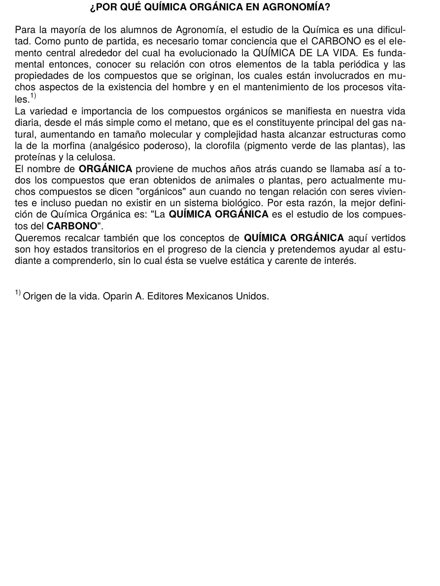
Presentación «¿POR QUÉ QUÍMICA ORGÁNICA EN AGRONOMÍA?», tal como aparece en la guía 2024 (pág. 1)Ver cambio versión 2026
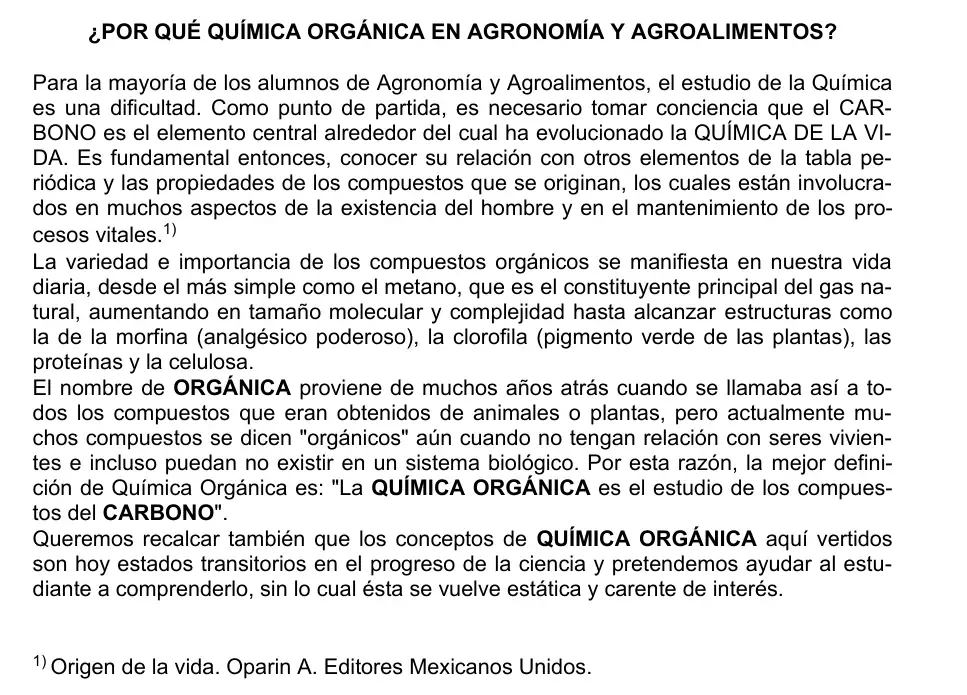
Presentación «¿POR QUÉ QUÍMICA ORGÁNICA EN AGRONOMÍA Y AGROALIMENTOS?», tal como aparece en la guía 2026 (pág. 1)
🆕 guía 2026 Qué cambió: el título y el primer renglón dicen «Agronomía y Agroalimentos» (antes sólo «Agronomía»); «aun cuando» pasó a «aún cuando». El resto es igual palabra por palabra.
v58–v86: el recorte de la guía 2026 estaba a la vista y el de 2024 en esta capa, con el rótulo «Recorte de la guía 2024, reemplazado por el de la 2026 (30/9):». Qué cambió: el título y el primer renglón dicen «Agronomía y Agroalimentos » (antes sólo «Agronomía»); «aun cuando» pasó a «aún cuando». El resto es igual palabra por palabra.
texto (para buscar o copiar; ante cualquier duda manda el recorte)
Para la mayoría de los alumnos de Agronomía, el estudio de la Química es una dificultad. Como punto de partida, es necesario tomar conciencia que el CARBONO es el elemento central alrededor del cual ha evolucionado la QUÍMICA DE LA VIDA. Es fundamental entonces, conocer su relación con otros elementos de la tabla periódica y las
propiedades de los compuestos que se originan, los cuales están involucrados en muchos aspectos de la existencia del hombre y en el mantenimiento de los procesos vita-
1) les. La variedad e importancia de los compuestos orgánicos se manifiesta en nuestra vida diaria, desde el más simple como el metano, que es el constituyente principal del gas natural, aumentando en tamaño molecular y complejidad hasta alcanzar estructuras como
la de la morfina (analgésico poderoso), la clorofila (pigmento verde de las plantas), las proteínas y la celulosa. El nombre de ORGÁNICA proviene de muchos años atrás cuando se llamaba así a todos los compuestos que eran obtenidos de animales o plantas, pero actualmente muchos compuestos se dicen "orgánicos" aun cuando no tengan relación con seres vivientes e incluso puedan no existir en un sistema biológico. Por esta razón, la mejor definición de Química Orgánica es: "La QUÍMICA ORGÁNICA es el estudio de los compuestos del CARBONO ".
Queremos recalcar también que los conceptos de QUÍMICA ORGÁNICA aquí vertidos son hoy estados transitorios en el progreso de la ciencia y pretendemos ayudar al estudiante a comprenderlo, sin lo cual ésta se vuelve estática y carente de interés.
1) Origen de la vida. Oparin A. Editores Mexicanos Unidos.
Ver el texto de la versión 2026
¿POR QUÉ QUÍMICA ORGÁNICA EN AGRONOMÍA Y AGROALIMENTOS?
Para la mayoría de los alumnos de Agronomía y Agroalimentos, el estudio de la Química es una dificultad. Como punto de partida, es necesario tomar conciencia que el CARBONO es el elemento central alrededor del cual ha evolucionado la QUÍMICA DE LA VIDA. Es fundamental entonces, conocer su relación con otros elementos de la tabla periódica y las propiedades de los compuestos que se originan, los cuales están involucrados en muchos aspectos de la existencia del hombre y en el mantenimiento de los procesos vitales.1)
La variedad e importancia de los compuestos orgánicos se manifiesta en nuestra vida diaria, desde el más simple como el metano, que es el constituyente principal del gas natural, aumentando en tamaño molecular y complejidad hasta alcanzar estructuras como la de la morfina (analgésico poderoso), la clorofila (pigmento verde de las plantas), las proteínas y la celulosa.
El nombre de ORGÁNICA proviene de muchos años atrás cuando se llamaba así a todos los compuestos que eran obtenidos de animales o plantas, pero actualmente muchos compuestos se dicen "orgánicos" aún cuando no tengan relación con seres vivientes e incluso puedan no existir en un sistema biológico. Por esta razón, la mejor definición de Química Orgánica es: "La QUÍMICA ORGÁNICA es el estudio de los compuestos del CARBONO".
Queremos recalcar también que los conceptos de QUÍMICA ORGÁNICA aquí vertidos son hoy estados transitorios en el progreso de la ciencia y pretendemos ayudar al estudiante a comprenderlo, sin lo cual ésta se vuelve estática y carente de interés.
1)
Origen de la vida. Oparin A. Editores Mexicanos Unidos.
v58–v86: acá estaba el texto de 2026 y el de 2024 en esta capa, con el rótulo «Texto de la guía 2024 (reemplazado):».
UNIDAD 1 — LO QUE EXPLICÓ EL PROFESOR EN CLASE (TEORÍA)
Texto completo de la transcripción «limpia» de las clases de la Unidad 1 (videos de sólo audio del canal del usuario —imagen fija o pantalla negra—, transcriptos y ordenados en otro chat). Se copia tal cual, sin resumir. Lo que en la clase fue la resolución de un ejercicio de la guía 2024 se sacó de acá y está debajo del enunciado de ese ejercicio, entre las marcas «▼ DESDE ACÁ» y «▲ HASTA ACÁ»; en su lugar queda una línea «⟶» con el enlace. Los dibujos del pizarrón no están (el audio no los tiene): se agregarán cuando llegue el PDF dibujado a mano.
Química Orgánica — Unidad 1: Introducción al estudio de la química del carbono
Transcripción de clase, ordenada y sin marcas de tiempo. Se mantienen las preguntas del profesor y de los alumnos junto con su respuesta correspondiente.
1. Por qué estudiar química orgánica
Esta es una materia muy rica porque explica la conexión entre nosotros y el universo: nos conectamos con el universo gracias a los sentidos (olfato, gusto, tacto, oído), y la química orgánica fundamenta buena parte de esas conexiones con nuestra manera de sentir e interpretar el mundo.
A lo largo del curso vamos a entender, por ejemplo:
Por qué cambia de color una sustancia cuando, en un aeropuerto o un paso fronterizo, se detecta una sustancia ilegal: se la hace reaccionar con un determinado reactivo y ese cambio de color es lo que vamos a poder interpretar.
Por qué algunas sustancias tienen olor y otras no, y qué es lo que determina que una molécula pueda tener olor.
Por qué el agua y el aceite no se mezclan, siendo dos sustancias que al tacto son completamente distintas y que a la vista podrían parecer similares. ¿Qué es lo que gobierna esa relación entre fases que no llegan a formar una sola solución?
Pregunta del profesor: ¿por qué una pastilla de naftalina tiene olor? ¿Por qué se genera la capa de ozono y qué relación tiene con la química orgánica? Ese tipo de preguntas se espera que puedan responderlas al final del curso.
Para eso, primero hay que ponerse de acuerdo en varios conceptos previos que sirven de base para ir avanzando de a poco. Esta cátedra tiene siete unidades y varias subunidades.
2. Organización de la cátedra
El objetivo es que en cada seminario práctico se trabaje con todos los ejercicios de la guía de seminarios prácticos.
Pregunta de un alumno: ¿los viernes hay otra comisión en ese horario?
Respuesta: los viernes de 11 a 14 es la comisión 10; esta comisión (la 2) es solamente los martes, y la da el mismo profesor.
Condiciones para regularizar: 80% de asistencia a clases, participación y asistencia a todos los laboratorios. El profesor aclara que, de su parte, no va a exigir que los alumnos vengan a los seminarios prácticos específicamente con esta comisión: si por horarios o porque entienden mejor a otro profesor prefieren ir a otra comisión, pueden hacerlo.
Esto es un estudio casi autodidacta que cada uno tiene que llevar adelante: el material está en el aula virtual (videos, audios, PDFs que explican cómo se resuelve cada ejercicio). Los docentes son solo intermediarios entre ese conocimiento y los alumnos; depende de cada uno asistir a clase, resolver los ejercicios y, sobre todo, entender por su cuenta la forma de resolverlos.
3. Sistemas materiales: homogéneos, heterogéneos y mixtos
Asumamos dos sustancias que pueden formar un sistema. Un sistema está compuesto por un universo y un medio que lo contiene. Cuando esas dos sustancias se unen, pueden generar o no una fase:
Si al unirse generan una sola fase, se habla de un sistema homogéneo (no se puede distinguir un cambio de fase entre los componentes). Ejemplo: mezclar agua con alcohol — no se puede distinguir cuánto es alcohol y cuánto es agua.
Si no se llega a formar una única fase, el sistema es heterogéneo. Ejemplo: mezclar agua con aceite.
También pueden darse sistemas mixtos.
4. Estados de la materia y fuerzas intermoleculares
Otras propiedades de los sistemas, como se vio en química general, son los estados de agregación de la materia: sólido, líquido y gaseoso. Precisamente entre estos tres estados la química orgánica va a comparar, por ejemplo, un punto de fusión de una sustancia con el punto de ebullición de otra. En muchos ejercicios de la guía y del parcial se pregunta por qué una sustancia tiene un punto de ebullición mayor que otra, y hay que poder fundamentarlo.
Para responder ese tipo de preguntas hay que evaluar las uniones —los enlaces— presentes en la molécula, porque ese tipo de enlaces determina las fuerzas intermoleculares que mantienen unidas a las moléculas entre sí.
Yendo por partes: un átomo se une con otro átomo para generar una molécula. Esa molécula puede estar en alguno de los tres estados (líquido, sólido o gaseoso), pero siempre está en el seno de una solución junto con muchas otras moléculas del mismo tipo.
Las fuerzas intermoleculares son las que permiten distinguir la materia sólida de la líquida y de la gaseosa:
Estado sólido: las fuerzas intermoleculares actúan de forma compacta y cercana, formando redes que pueden ser amorfas o bien ordenadas (de corto o de largo alcance).
Estado líquido: las fuerzas intermoleculares son un poco más débiles; en un volumen dado las moléculas están más sueltas y ocupan la forma del recipiente que las contiene.
Estado gaseoso: las moléculas tienden a ocupar el máximo volumen posible, y las fuerzas intermoleculares interactúan muy poco.
Pregunta del profesor: ¿de qué dependen esas fuerzas intermoleculares?
Respuesta: directamente de cómo están unidos los átomos. Eso es lo que explica por qué el agua se mezcla (o no) con el aceite.
Pregunta del profesor: ¿qué tipos de enlace conocen hasta ahora?
Respuesta de los alumnos: iónico, covalente (polar y apolar).
Pregunta del profesor: ¿dónde ubicarían al puente de hidrógeno?
Respuesta de un alumno: entre el iónico y el covalente, en el medio.
El profesor confirma: el puente de hidrógeno es efectivamente un tipo de enlace intermedio entre el iónico y el covalente. Dentro del covalente, a su vez, se distingue entre polar y apolar (este tema de la polaridad se retoma en detalle más adelante).
En síntesis: el tipo de enlace presente entre los átomos de una molécula, y cómo esas moléculas están en contacto con las que las rodean, es lo que determina las fuerzas intermoleculares.
Ejemplo: agua vs. aceite
Todos sabemos que el agua hierve a 100 °C, mientras que el aceite empieza a evaporarse a una temperatura menor (aunque hay distintos tipos de aceite). ¿Qué cambia entre el agua y el aceite?
El agua forma puentes de hidrógeno entre sus moléculas, interaccionando gracias a los dipolos que se generan por sus cargas y sus pares de electrones no compartidos: cada molécula de agua puede interactuar con otra de la misma forma.
El aceite, en cambio, está formado típicamente por triglicéridos: su estructura consiste en enlaces covalentes dentro de cada molécula, a diferencia del puente de hidrógeno entre moléculas de agua. En un recipiente con aceite, todas las moléculas interaccionan según fuerzas de Van der Waals entre sus enlaces covalentes. En el agua, en cambio, además de interacciones covalentes hay interacciones de tipo "iónico" por la separación de cargas (los dipolos). Por eso la naturaleza de ambos materiales es tan distinta.
5. Por qué es tan importante el carbono
Pregunta del profesor: ¿por qué nos importa tanto el carbono?
Respuesta: porque todos los compuestos orgánicos tienen carbono. El carbono es el elemento esencial para la vida, presente en la mayoría de los organismos biológicos, y eso evidencia que ahí está la química orgánica, que depende fuertemente de este tipo de enlaces.
Ahora bien, la química orgánica muchas veces se llama "la química del carbono", pero no es exclusiva de él: también incluye, por ejemplo, compuestos amoniacales (con NH₃), compuestos con fósforo (que siguen las mismas reglas), compuestos con fosfato (el anión fosfato, PO₄, con carga −3) y compuestos con azufre (sustancias sulfatadas). Por ejemplo, en los gallineros se usa sulfato —muchas veces sulfato de cobre obtenido de baterías gastadas— para neutralizar los desechos de las gallinas.
Los electrones que participan en esas uniones, ubicados en orbitales SP2 (orbitales π de enlace), son electrones disponibles para cualquier función biológica. Es decir: la química del carbono / química orgánica no es solo del carbono, sino que comprende el estudio de sustancias acuosas, con amoníaco, con fósforo y con azufre.
Notación de Lewis
En la mayoría de los ejercicios no representamos el metano (CH₄) de forma desarrollada, sino con su estructura de Lewis, donde cada línea representa un par de electrones compartido (un enlace covalente). Esta notación va a estar presente en toda la carrera; también se usa, por ejemplo, para representar el amoníaco (mostrando el par de electrones compartido del nitrógeno).
Una de las características de la química orgánica es su fuerte relación con la estructura electrónica de los átomos que la componen. En los cuatro enlaces del metano hay cuatro electrones que el carbono cede o pone a disposición para compartir —lo que lo hace sumamente atractivo para procesos biológicos— y el otro electrón de cada enlace lo aporta el hidrógeno. Esto está estrictamente relacionado con la configuración electrónica.
Configuración electrónica del carbono
Pregunta del profesor: ¿cuál es el número atómico del carbono?
(En este primer repaso se toma, por error, el número másico —12— en lugar del número atómico. Más adelante, tras el recreo, se corrige: el número atómico del carbono es 6.)
Con 6 electrones, la configuración es: 1s² 2s² 2p².
Llevado a un diagrama de energía por orbitales: hay dos electrones en el 1s; un poco más arriba (mayor energía), otros dos electrones en el 2s; y más arriba todavía, los orbitales 2p (divididos en 2px, 2py y 2pz), donde cada eje puede alojar hasta dos electrones.
Todos los átomos, al combinarse con otros para formar moléculas, buscan tener ocho electrones en su última capa electrónica, porque así se acercan a la configuración del gas noble más cercano en la tabla periódica.
Hibridación del carbono
La propiedad que tiene el carbono para relacionarse con tantos átomos distintos es su capacidad de hibridación: mediante la hibridación, el carbono —ante la posibilidad de unirse a dos, tres o cuatro átomos— reagrupa sus orbitales, dando lugar a distintos tipos de hibridación, y esto origina los distintos tipos de geometría que van a tener las moléculas.
Como referencia de forma: los orbitales s son de forma esférica; los orbitales p tienen forma bilobular (como dos lóbulos, o un globo alargado y anudado en el medio).
Hibridación sp3 (unión a cuatro átomos — ejemplo: metano)
Cuando el carbono tiene que dejar espacio disponible para cuatro electrones, se combinan los tres orbitales p con el orbital s, dando un total de cuatro orbitales: los orbitales sp3 (un orbital s + tres orbitales p).
Cada orbital sp3 tiene entonces un 75% de carácter p y un 25% de carácter s, por lo que resulta más alargado que esférico: un lóbulo grande con una "orejita" más chica.
Colocando un hidrógeno en cada uno de los cuatro orbitales sp3 del carbono se obtiene el metano, cuya geometría en el espacio se conoce como geometría tetraédrica: el carbono en el centro del tetraedro y los hidrógenos hacia cada vértice. El ángulo de separación entre estas uniones es de aproximadamente 109,5°, que es la máxima separación posible entre cuatro direcciones dentro de una esfera.
Pregunta del profesor: ¿por qué los cuatro enlaces del carbono tienden a estar separados entre sí en vez de estar todos juntos?
Respuesta: porque los electrones se repelen entre sí; para alcanzar una situación de equilibrio energético (estabilidad), el carbono mantiene sus enlaces lo más separados posible. Las fuerzas electrostáticas de repulsión y de atracción son las que gobiernan esa separación.
Hibridación sp2 (unión a tres átomos)
Ahora el carbono se une a tres átomos en lugar de cuatro (por ejemplo, cuando se une a otro carbono y a dos átomos más). Para generar esos tres espacios equivalentes, el carbono combina dos orbitales p con el orbital s, y queda libre un orbital p (puede ser cualquiera de los tres: no importa si es x, y o z).
El resultado son tres orbitales sp2 (un orbital s + dos orbitales p) más un orbital p puro que queda sin hibridar. En total el carbono sigue teniendo cuatro posibilidades de enlace: tres iguales entre sí (los sp2) y una distinta (el p puro).
Cada orbital sp2 tiene entonces 66% de carácter p y 33% de carácter s: un lóbulo parecido al del sp3, pero más corto.
Hibridación sp (unión a dos átomos)
Cuando el carbono debe generar solo dos espacios (dos tipos de enlace, en vez de tres o cuatro), combina un orbital s con un solo orbital p, dando dos orbitales sp, y quedan libres los otros dos orbitales p (por ejemplo, los llamados aquí pz, aunque en la práctica pueden ser cualquiera de los dos que no participaron de la hibridación).
Cada orbital sp tiene entonces 50% de carácter s y 50% de carácter p: son los orbitales híbridos más cortos de los tres tipos (más corto que el sp2, que a su vez es más corto que el sp3, medido en angstroms).
Geometría según el tipo de hibridación
Este orden de extensión de los orbitales (sp3 > sp2 > sp) es lo que gobierna la geometría que adoptan las moléculas:
Hibridación sp3 → geometría tetraédrica, con ángulos de aproximadamente 109,5°. Ejemplo: etano.
Hibridación sp2 → geometría trigonal plana, con los tres orbitales híbridos en un mismo plano (los ángulos entre ellos son de 120°, y el orbital p puro queda perpendicular a ese plano, por arriba y por debajo, a 90°). Ejemplo: eteno.
Hibridación sp → geometría lineal, con un ángulo de separación de 180°. Ejemplo: etino.
6. Repaso después del recreo
Al volver del recreo se hacen dos correcciones/aclaraciones importantes:
Corrección del número atómico del carbono: en el repaso anterior se había usado por error el número másico (12) en lugar del número atómico. El número atómico correcto del carbono es 6, y su configuración electrónica es 1s² 2s² 2p² (los conceptos explicados no cambian, solo hay que corregir ese dato).
Configuración electrónica de nitrógeno y oxígeno (quedan como ejercicio para analizar sus posibles hibridaciones):
Nitrógeno: 1s² 2s² 2p³
Oxígeno: 1s² 2s² 2p⁴
Repasando el caso del carbono: en su última capa tiene el 2s completo (2 electrones) y el 2p con 2 electrones, que se distribuyen entre los tres orbitales p disponibles. Según cómo se combinen, la hibridación puede ser sp3 (el s se combina con los tres p), sp2 (se combina con dos) o sp (se combina con uno), pero siempre se trata de un reordenamiento de cuatro electrones entre cuatro orbitales: en el primer caso hay cuatro orbitales híbridos; en el segundo, tres híbridos y uno puro; pero siempre hay cuatro lugares disponibles para electrones.
Para el nitrógeno, con 2p³, la condición para que pueda hibridar es que uno de los orbitales debe ser distinto a los otros tres, porque ese orbital tiene que poder alojar el par de electrones no compartido (el par libre) que el nitrógeno siempre conserva. Se deja como tarea analizar cuántos tipos de hibridación admiten el nitrógeno y el oxígeno, para resolver en clase (se puede investigar en el libro o consultar).
Repaso de las geometrías asociadas a cada hibridación, a partir de preguntas que surgieron durante el recreo:
Hibridación sp3 → geometría tetraédrica (ángulos de ≈109,5°).
Hibridación sp2 → geometría trigonal plana: tres orbitales híbridos coplanares (como las aspas de un ventilador, o el logo de una conocida marca de autos), con ángulos de 120° entre ellos, y el orbital p puro perpendicular al plano (90° respecto de los sp2), quedando por arriba y por debajo.
Hibridación sp → geometría lineal, con ángulo de separación de 180°.
Todo esto tiene que ver con la forma en que se distribuyen los átomos en el espacio una vez que los orbitales se combinaron y se separaron a esos ángulos determinados.
7. Enlaces sigma (σ) y pi (π)
Además de clasificarse en simples, dobles y triples, los enlaces se clasifican de forma más técnica en sigma y pi:
Enlace sigma (σ): se da por el solapamiento directo (frontal) de los orbitales. Son dos orbitales que se encuentran en el mismo plano y se solapan uno con otro, uno al lado del otro; lo importante es que ocurre en el mismo plano de acción.
Enlace pi (π): se da por la interacción paralela entre dos orbitales libres (no por solapamiento frontal). Esa es la diferencia crucial entre ambos.
Ejemplo con el metano
Cada carbono aporta cuatro orbitales híbridos sp3; el hidrógeno, por su parte, tiene un único electrón en un orbital s. Se comparte un orbital s del hidrógeno con cada uno de los cuatro orbitales sp3 del carbono, y ese solapamiento es frontal (en el mismo plano): por eso los cuatro enlaces C–H del metano son enlaces sigma.
El enlace pi y los enlaces dobles y triples
El enlace pi se puede dar entre dos carbonos, entre dos oxígenos o entre distintos tipos de átomos, y aparece cuando queda al menos un orbital p libre (sin hibridar). Por ejemplo, en una hibridación sp2 (como en el eteno), cada carbono aporta un orbital sp2 para un solapamiento frontal (el enlace sigma), pero además queda un segundo enlace —el que le da al enlace su carácter de "doble"— que se forma por la interacción entre los dos orbitales p libres, uno de cada carbono. Esos dos orbitales p interactúan entre sí y dan lugar al enlace pi.
Si en cambio se tratara de un enlace triple (hibridación sp), hay que imaginar, además del enlace sigma, dos enlaces pi: uno en el plano del pizarrón (por arriba y por debajo de él) y otro que sale y entra del plano del pizarrón (perpendicular al primero), porque en este caso cada carbono aporta dos orbitales p libres (uno de los dos orbitales sp se comparte entre los carbonos, y quedan dos orbitales p libres por carbono, cada uno formando su propio enlace pi).
Representar estos enlaces gráficamente —especialmente las estructuras trigonales planas— requiere práctica: para dibujar una estructura trigonal plana se considera un plano (la hoja) sobre el cual se enlazan los átomos de carbono, mientras los hidrógenos se distribuyen hacia cada vértice de esa hoja.
8. Polaridad
Pregunta del profesor: ¿qué entienden por polaridad?
Respuestas de los alumnos:
- "Fuerza de atracción que tiene un átomo sobre sus propios electrones."
- Que en un enlace covalente apolar los dos átomos son iguales entre sí.
El concepto de polar/apolar está asociado a si algo tiene o no carga eléctrica: si hay un déficit o un exceso de carga electrónica. Cuando algo tiene polaridad, puede tener polaridad positiva (está "ávido" de cargas electrónicas negativas, porque tiene menos electrones de los que "necesitaría") o polaridad negativa (tiene más electrones de los que puede sostener).
En un enlace entre dos átomos iguales entre sí —como el O₂, representado según Lewis con sus pares de electrones hacia afuera— no hay diferencia de electronegatividad ni diferencia de carga, porque ambos átomos "tiran" con la misma fuerza de los electrones hacia su propia nube. Ese es un enlace apolar.
Momento dipolar y electronegatividad
La polaridad se mide a través del momento dipolar, que se genera cuando entre dos átomos, dos moléculas o dos partes de una molécula hay una diferencia (un "delta") de carga hacia un lado o hacia el otro.
Por otro lado está la electronegatividad: la capacidad o tendencia de un átomo a atraer cargas negativas (electrones) hacia sí. Hay átomos más electronegativos que otros.
Ejemplo: CO2
Representando el CO₂ según Lewis, con el carbono en el centro y un doble enlace hacia cada lado:
Pregunta del profesor: ¿estos enlaces son polares o apolares?
Respuesta: los enlaces C=O son polares (porque el oxígeno es más electronegativo que el carbono y atrae los electrones hacia su nube, generando un delta de carga en esa dirección), pero la molécula en su conjunto resulta apolar por su geometría lineal: los dos vectores de dipolo, al estar alineados en 180° y tener el mismo módulo, se anulan entre sí (como cuando dos personas de la misma fuerza tiran de una cuerda en direcciones opuestas: no se mueve hacia ningún lado). Por eso el CO₂ es una molécula de enlaces polares, pero apolar en su totalidad, con momento dipolar igual a cero.
⟶ «9. Por qué el carbono está tan "dotado" para los procesos vitales»: la clase resolvió acá el ejercicio 1 de la Unidad 1 (el texto completo está debajo de ese enunciado).
⟶ «10. Compuestos orgánicos vs. inorgánicos»: la clase resolvió acá el ejercicio 2 de la Unidad 1 (el texto completo está debajo de ese enunciado).
10. Compuestos orgánicos vs. inorgánicos
⟶ «Fuerza relativa de los distintos tipos de enlace»: la clase resolvió acá el ejercicio 3 de la Unidad 1 (el texto completo está debajo de ese enunciado).
⟶ «Cómo se determina si un enlace es covalente apolar, covalente polar o iónico»: la clase resolvió acá el ejercicio 3 de la Unidad 1 (el texto completo está debajo de ese enunciado).
⟶ «Ejercicio resuelto: polaridad de distintos enlaces»: la clase resolvió acá el ejercicio 3 de la Unidad 1 (el texto completo está debajo de ese enunciado).
⟶ la última parte de «Ejercicio resuelto: polaridad de distintos enlaces» corresponde al ejercicio 4 de la Unidad 1 (el texto completo está debajo de ese enunciado).
11. Ácidos y bases: primera definición
Pregunta del profesor: ¿qué consideran básico y qué consideran ácido, en términos de pH?
Como punto de partida: en una escala de 0 a 14, con 7 como neutro, un pH menor a 7 corresponde a una solución ácida y un pH mayor a 7 a una solución básica. Pero esa es solo una regla práctica; conceptualmente, lo que define a una sustancia como ácida o básica depende de la teoría que se use (hay distintas definiciones: quién libera o quién capta protones, o quién libera o capta hidroxilos, etc.).
La definición que se va a usar como principal a lo largo del curso es la siguiente:
Ácido: sustancia que tiene la capacidad de liberar protones (hidrogeniones).
Base: sustancia que tiene la capacidad de ceder o compartir cargas negativas (que pueden ser electrones, grupos hidroxilo, u otros grupos con nitrógeno y oxígeno con carga negativa).
Con esto se da por cerrada la clase. El profesor pide que se firme una hoja de asistencia y aclara que, aunque hoy la clase termina antes de lo habitual (por ser una clase introductoria y muy virtual, con poco contenido nuevo), se queda disponible después de clase por si hay dudas o preguntas que alguien prefiera hacer en privado.
CAPÍTULO 0 — EL MAPA DEL VIAJE
Necesitás saberNada todavía: este capítulo sólo presenta el recorrido.
→
Acá aprendésQué estudia la química orgánica, qué pregunta encadenada responde el curso (la cadena causal) y en qué orden se recorre.
→
Te sirve paraUbicarte en cualquier capítulo: cada uno es un eslabón de la misma cadena.
💡
Idea clave. Toda propiedad observable se explica retrocediendo por una cadena de causas: estructura del átomo → enlaces → geometría → reparto de la carga → interacciones → propiedades → reactividad.
Una pregunta que todavía no podemos responder
Las tres preguntas del libro
El libro del curso abre su primer capítulo con tres preguntas del mismo tipo, y conviene tenerlas a la vista desde ahora porque el apunte las responde todas:
¿En qué se disuelve mejor la glucosa: en agua o en 1-propanol?¿Cuál de estos solventes destila a mayor temperatura: 1-propanol, 1-pentanol o etilmetiléter?¿Es polar la acetona?
Ninguna se contesta mirando la fórmula. Las tres necesitan saber qué forma tiene la molécula, cómo reparte la carga y cómo se atrae con sus vecinas. Eso es exactamente el recorrido que sigue.
Serví agua en un vaso y agregá un chorro de aceite. No importa cuánto revuelvas: apenas te detengas, las dos capas se vuelven a separar.
¿Por qué?
Esta pregunta va a acompañarnos todo el apunte, y conviene decir desde ahora algo incómodo: todavía no podemos contestarla. Ni siquiera a medias sin decir cosas que después habría que desdecir.
Quizá escuchaste la respuesta corta —«el agua es polar y el aceite no»— y es cierta, pero por sí sola no explica nada: reemplaza una palabra que no entendés por otra que tampoco. Para que esa frase signifique algo hay que saber qué hace que una molécula sea polar, y eso depende de cómo se reparte la carga dentro de ella, que depende de su forma, que depende de cómo se unieron sus átomos.
Y aun sabiendo todo eso faltaría una pieza. Que dos líquidos se mezclen o no no se decide comparando solamente qué atracción es más intensa. Mezclarse o separarse es el resultado de un balance, y en ese balance interviene algo más que la energía de las atracciones. Llegaremos a eso, con el nivel de detalle que corresponde, en el capítulo 11.
Así que dejamos la pregunta abierta, deliberadamente. Volveremos a ella cuando tengamos todas las piezas.
🧩 En un vistazo: preguntas que todavía no podemos responder
Tres preguntas que no se contestan mirando la fórmula
Pregunta
Qué hace falta saber
¿La glucosa se disuelve mejor en agua o en 1-propanol?
forma, reparto de carga y atracción con las vecinas
¿Qué destila a mayor temperatura: 1-propanol, 1-pentanol o etilmetiléter?
lo mismo: forma, carga y atracciones
¿Es polar la acetona?
lo mismo: forma, carga y atracciones
¿Por qué el agua y el aceite se separan?
todo lo anterior y además un balance (cap. 11)
Por qué «el agua es polar» todavía no explica nada
cómo se unieron los átomos→qué forma tiene la molécula→cómo se reparte la carga→si la molécula es polar o no→y aun así falta el balance (cap. 11)
¡OJO!
«El agua es polar y el aceite no» es cierto, pero cambia una palabra por otra.
Mezclarse no se decide sólo comparando qué atracción es más intensa: es un balance.
Dibujo hecho con el texto de esta parte y 0 nota(s) de los libros y de revisión, que siguen completas y a la vista en el lugar donde estaban (rótulo «📚»).
Notas integradas en este vistazo:
De qué se trata la química orgánica
La química orgánica estudia principalmente la química de los compuestos del carbono, con una frontera histórica y convencional que veremos enseguida.
Es una definición que describe el objeto de estudio, no el método. Y el método es lo que da forma a esta unidad.
La cadena causal
Casi todo lo que vas a estudiar responde a una sola pregunta encadenada: ¿por qué una sustancia se comporta como se comporta? La respuesta no es una lista de propiedades que hay que memorizar. Es una cadena de causas:
ESTRUCTURA ELECTRÓNICA DEL ÁTOMOcaps. 2–3
▼
CUÁNTOS Y CÓMO SON LOS ENLACEScaps. 4–7
▼
GEOMETRÍA DE LA MOLÉCULA EN EL ESPACIOcaps. 5–6
▼
CÓMO SE REPARTE LA CARGAcap. 8
▼
CÓMO INTERACTÚAN LAS PARTÍCULAS ENTRE SÍcap. 10
▼
PROPIEDADES OBSERVABLESestado físico, punto de ebullición, solubilidad · caps. 10–11
▼
REACTIVIDADacidez, basicidad, transformaciones · caps. 12–15 y unidad 4
Los nombres de esa cadena son, por ahora, rótulos de un mapa. No hace falta que entiendas todavía qué significa «geometría» o «reparto de la carga»: alcanza con que veas la forma del recorrido. Cada eslabón se convierte en un capítulo, y cada capítulo se apoya en el anterior.
Leída de abajo hacia arriba, la cadena es el método de trabajo de la materia: cada vez que observes una propiedad, la vas a explicar retrocediendo por los eslabones anteriores.
📚 1 nota de los libros y de revisión, completa (Del libro) — también dibujada en «🧩 En un vistazo»; tocá acá para plegar
⟶ Del libro. Lo que este curso llama «cadena de causas» tiene nombre en los libros: teoría estructural. Morrison y Boyd la presentan como el mapa para no perderse en la «selva» de la química orgánica: a partir de la fórmula estructural se puede anticipar el punto de fusión, el de ebullición, la solubilidad y el comportamiento químico (Morrison y Boyd, 5.ª ed., § 1.2, p. 3).
🧩 En un vistazo: la cadena causal
De la estructura del átomo a la reactividad
estructura del átomo→enlaces→geometría→reparto de la carga→interacciones→propiedades y reactividad
Dos nombres para la misma idea
Este curso
«cadena de causas»
se lee de abajo hacia arriba
cada eslabón es un capítulo
≠
Los libros
«teoría estructural»
el mapa para no perderse en la «selva»
de la fórmula estructural se anticipa el comportamiento
🔑 La estructura explica cómo se comporta una sustancia.
📖 Morrison y Boyd § 1.2, p. 3
Desde la fórmula estructural se anticipan p. de fusión, p. de ebullición, solubilidad y comportamiento químico.
📖 Morrison y Boyd § 1.2, p. 3
Dibujo hecho con el texto de esta parte y 1 nota(s) de los libros y de revisión, que siguen completas y a la vista en el lugar donde estaban (rótulo «📚»).
Notas integradas en este vistazo: N56396890
Cómo se recorre
Bloque
Capítulos
Pregunta que responde
Primera mirada
1
¿Qué hace el carbono que justifique una disciplina entera?
Las herramientas
2–4
¿Qué hay dentro de un átomo? ¿Qué partículas forman los enlaces?
La forma
5–6
¿Por qué las moléculas tienen la geometría que tienen?
Los enlaces
7
¿Qué ocurre cuando dos átomos se unen?
De la forma a las propiedades
8–10
¿Por qué hierve a esa temperatura? ¿Por qué se disuelve o no?
El cambio químico
11–12
¿Qué pasa cuando una sustancia se transforma?
Cierre
13–15
¿Por qué unas estructuras son más estables que otras?
⟶ Corrección del cuadro. Los números de capítulo del cuadro quedaron de una versión anterior. El recorrido real es: 1, primera mirada; 2–4, átomo, configuración, Lewis y enlace; 5–7, hibridación, geometría y enlaces σ y π; 8–11, polaridad, cómo leer los nombres, interacciones y propiedades físicas, solubilidad; 12 y 12b, energía de enlace, transformaciones y absorción de luz; 13–15, ácidos y bases, resonancia, estructura y acidez; 16, síntesis de la cadena completa; 17–26, isomería y estereoquímica; 27–35, la reacción química y sus mecanismos; 36–40, grupos funcionales; 41–47, hidratos de carbono, lípidos, aminoácidos y proteínas. La cadena causal de arriba coincide con esta lista.
Dos advertencias sobre el recorrido:
El capítulo 1 no explica nada: describe. Es una lista de observaciones sobre el carbono que quedan pendientes de explicación. La explicación llega recién al final del capítulo 4, en una sección que retoma la pregunta con las herramientas ya construidas.
Sobre los dos últimos bloques: el capítulo 14, sobre resonancia, tiene soporte bibliográfico suficiente para redactarse; un punto de detalle se enunciará como síntesis pedagógica declarada. El capítulo 15, que aplica esas ideas a la acidez y la basicidad, sólo está respaldado en parte: alcanza para el efecto inductivo y para el caso del carboxilato, pero no para un tratamiento sistemático. Se indicará con precisión qué falta cuando lleguemos allí.
Cuando un capítulo agregue un razonamiento que los libros no enuncian, lo vas a ver marcado como [ADICIÓN PEDAGÓGICA].
🧩 En un vistazo: el recorrido real
El recorrido del apunte (números corregidos)
Capítulos
Tema
1
primera mirada
2–4
átomo, configuración, Lewis y enlace
5–7
hibridación, geometría y enlaces σ y π
8–11
polaridad, nombres, interacciones y propiedades físicas, solubilidad
12 y 12b
energía de enlace, transformaciones y absorción de luz
13–15
ácidos y bases, resonancia, estructura y acidez
16
síntesis de la cadena completa
17–26
isomería y estereoquímica
27–35
la reacción química y sus mecanismos
36–40
grupos funcionales
41–47
hidratos de carbono, lípidos, aminoácidos y proteínas
⚖️ CORRECCIÓN: Los números de capítulo del cuadro
Cuadro (versión anterior)
Forma 5–6, enlaces 7, propiedades 8–10, cambio químico 11–12, cierre 13–15.
Recorrido corregido
σ y π entran en 5–7; propiedades 8–11; energía 12 y 12b; acidez y resonancia 13–15.
Clasificación: corrección
📝 Para estudiar: Guiate por la tabla corregida: coincide con la cadena causal.
¡OJO!
El capítulo 1 describe, no explica: la explicación llega al final del cap. 4.
Los razonamientos que los libros no enuncian van marcados como adición pedagógica.
Dibujo hecho con el texto de esta parte y 1 nota(s) de los libros y de revisión, que siguen completas y a la vista en el lugar donde estaban (rótulo «📚»).
Notas integradas en este vistazo: N9ba010c9
Bibliografía
Las portadas del material de cátedra indican esta bibliografía obligatoria:
Obra
Capítulo
EstadoCómo se usa
Fernández Cirelli, Aprendiendo Química Orgánica
1
Integradocitado en todo el apunte
Wade, Química Orgánica, 5.ª edición
1 y 2 (y 3 a 7 para las unidades 3, 4 y 6)
Integrados · bibliografía obligatoria (se cita por secciones) · escaneos leídos el 28/9: caps. 1–6 completos (pp. 1–271; en el escaneo faltan las pp. 228 y 244) y el comienzo del cap. 7 (pp. 272–289)bibliografía obligatoria, citada con § y página
Morrison y Boyd, Química Orgánica (texto principal)
1
No disponiblecitado con § y página (caps. 1, 10, 13, 16, 23, 27, 28 y 35)
⟶ Actualización. El capítulo 1 del Wade, «Introducción y revisión», ya se leyó completo en la edición en castellano (Pearson, 5.ª ed.): pp. 1–37, secciones 1.1 a 1.14 (orígenes de la química orgánica, estructura atómica, regla del octeto, estructuras de Lewis, enlace múltiple, electronegatividad, cargas formales, estructuras iónicas, resonancia, fórmulas, y ácidos y bases de Arrhenius, Brønsted-Lowry y Lewis). Desde ahora se cita con sección y página reales. Ojo: la numeración de la 5.ª ed. en castellano no coincide con la del «mapa abierto» de LibreTexts que se usaba antes: la electronegatividad es § 1.6 (no 1.9), la resonancia § 1.9 (no 1.10) y los ácidos y bases § 1.12–1.14 (no 1.11, 1.12 y 1.18) (Wade, 5.ª ed., cap. 1, pp. 1–37).
De Morrison y Boyd sí se dispone de la guía de Problemas Resueltos, que se usa como apoyo auxiliar y nunca como sustituto del texto principal.Además del texto principal de Morrison y Boyd, se usa como apoyo su guía de Problemas Resueltos.
⟶ Pendiente
Mientras falte el capítulo 1 del texto principal de Morrison y Boyd, la bibliografía obligatoria del proyecto no está completa.
⟶ Actualización (29/9). La bibliografía obligatoria de las Unidades 1 y 2 ya está completa en el proyecto y cruzada con este apunte: Morrison y Boyd, cap. 1 (§ 1.1–1.23, pp. 1–38), Fernández Cirelli, cap. 1, y Wade, caps. 1 y 2, leídos página por página. Para la luz (cap. 12b) se sumaron Morrison y Boyd § 16.3–16.5 y el Wade, cap. 15.
⟶ Actualización (28/9). El capítulo 1 del texto principal de Morrison y Boyd ya está en la biblioteca del proyecto y se leyó completo: sus aportes están citados con sección y página a lo largo de las unidades 1 y 2 (marca «Morrison y Boyd, 5.ª ed., § …»). Del Wade, en cambio, el PDF del proyecto sigue sin capa de texto: sus páginas no se pudieron verificar.Del Wade se leyeron de los escaneos los caps. 1–6 completos (pp. 1–271; en el escaneo faltan las pp. 228 y 244) y el comienzo del cap. 7 (pp. 272–289), y se cita con sección y página de la 5.ª ed. en castellano.
⟶ Actualización. Ya no vale: con los escaneos que adjuntaste se leyeron en orden los caps. 1–6 completos (pp. 1–271; en el escaneo faltan las pp. 228 y 244) y el comienzo del cap. 7 (pp. 272–289), mirando la imagen de cada página con figuras, tablas o valores. Las menciones del Wade de todo el apunte llevan ahora sección y página de la 5.ª ed. en castellano; ojo, su numeración no coincide con la del «mapa abierto» de LibreTexts que se usaba antes (Wade, 5.ª ed., caps. 1–7).
Los aportes de Morrison y Boyd están citados con sección y página («Morrison y Boyd, 5.ª ed., § …»).
Conexión con el próximo tema
Antes de abrir el átomo, conviene ver qué es exactamente lo que hay que explicar. El capítulo siguiente reúne las observaciones sobre el carbono que motivan todo el resto.
CAPÍTULO 1 — QUÉ TIENE DE ESPECIAL EL CARBONO
Necesitás saberLa cadena causal del cap. 0 (por ahora, sólo como mapa).
→
Acá aprendésSiete observaciones sobre el carbono —diversidad, cadenas, tres tipos de unión, valencia cuatro, reparto desigual, posición en la tabla, enlaces covalentes— y qué palabras (compuesto, molécula, sustancia) no confundir.
→
Te sirve paraTener la lista de lo que hay que explicar; los caps. 2, 3 y 4 la explican y el final del cap. 4 la salda.
💡
Idea clave. Este capítulo describe, no explica: reúne los hechos que hacen especial al carbono y los anota como una deuda. La pista para pagarla es su posición en la tabla periódica (Z = 6).
Primera mirada: el problema, todavía no la explicación
Qué vamos a entender
Hay más de cien elementos en la tabla periódica. ¿Por qué existe una rama entera de la química dedicada a uno solo?
Este capítulo no responde esa pregunta. La plantea. Vamos a reunir las observaciones que la hacen razonable y a dejarlas anotadas como una deuda. Los capítulos 2, 3 y 4 construyen las herramientas; al final del capítulo 4 hay una sección titulada «Ahora sí: ¿por qué el carbono?» donde la deuda se paga.
Nota sobre el vocabulario de este capítulo. Vas a leer varias veces las palabras átomo, electrón, enlace y molécula. Acá funcionan como nombres de aquello que habrá que explicar, no como conceptos ya construidos: se usan para señalar el problema. Qué es un átomo y qué partículas lo forman se explica en el capítulo 2; qué partículas participan de los enlaces, en los capítulos 3 y 4.
De dónde venimos
En el capítulo 0 vimos que toda propiedad observable se explica retrocediendo por una cadena de causas. Ahora vamos a mirar el otro extremo de esa cadena: los hechos observados que después habrá que explicar.
Observación 1: una diversidad extraordinaria
El primer hecho es de escala: el carbono forma una diversidad extraordinariamente grande de compuestos y estructuras.
📚 1 nota de los libros y de revisión, completa (Del libro (Morrison y Boyd)) — también dibujada en «🧩 En un vistazo»; tocá acá para plegar
⟶ Del libro (Morrison y Boyd). El libro le pone números a esta escala. El número de compuestos que contienen carbono «es muchas veces mayor» que el de los que no lo contienen, y se agrupan en familias que, en general, no tienen equivalente entre los inorgánicos. En su época el libro contaba «cerca de diez millones de compuestos del carbono», con medio millón nuevo cada año [ADICIÓN PEDAGÓGICA: es la cifra de esa edición; tomala como orden de magnitud, no como un dato actual]. Además, hay moléculas orgánicas de miles de átomos. Ésa es su respuesta a por qué una rama entera de la química se dedica a un solo elemento: hay muchísimos compuestos del carbono y sus moléculas pueden ser muy grandes y complejas. Y cierra con una frase que conecta con las biomoléculas de este capítulo: «A nivel molecular, la biología es química orgánica». (Morrison y Boyd, 5.ª ed., § 1.1, pp. 2–3)
Las tres grandes familias de biomoléculas que vas a encontrar una y otra vez en el curso —proteínas, hidratos de carbono y lípidos— están construidas sobre esqueletos de carbono. El propio material de la cátedra, además, usa la estructura de un fármaco para ilustrar los distintos tipos de unión entre átomos: una sola molécula de ese tipo puede contener anillos, cadenas y varios tipos de enlace a la vez.
Ese hecho no es una explicación. Es lo que hay que explicar.
🧩 En un vistazo: la escala del carbono
≈ 10 millones
compuestos del carbono que contaba el libro en su época
½ millón por año
compuestos nuevos, según esa edición
miles de átomos
tamaño de algunas moléculas orgánicas
📖 Morrison y Boyd § 1.1, pp. 2–3
Por qué una rama entera para un solo elemento (MB)
muchísimos más compuestos con C que sin C→familias sin equivalente entre los inorgánicos→moléculas que pueden ser muy grandes y complejas→una rama entera de la química
📖 Morrison y Boyd § 1.1, pp. 2–3
«A nivel molecular, la biología es química orgánica»: proteínas, hidratos de carbono y lípidos tienen esqueleto de carbono.
📖 Morrison y Boyd § 1.1, p. 3
¡OJO!
Las cifras son de esa edición: tomalas como orden de magnitud, no como dato actual.
La diversidad es el hecho a explicar, no la explicación.
Dibujo hecho con el texto de esta parte y 1 nota(s) de los libros y de revisión, que siguen completas y a la vista en el lugar donde estaban (rótulo «📚»).
Notas integradas en este vistazo: N263a33ac
Observación 2: el carbono se une consigo mismo
Los átomos de carbono se unen entre sí de manera estable, y no de a dos: en cadenas largas. Esa capacidad se llama concatenación.
De ella se siguen las posibilidades estructurales que vas a encontrar en cada molécula del curso:
cadenas, lineales o ramificadas;
ciclos, es decir, cadenas cerradas sobre sí mismas formando anillos.
Una misma molécula puede combinar ambas cosas: un anillo con una cadena colgando, o varios anillos unidos entre sí.
📚 1 nota de los libros y de revisión, completa (Del libro) — también dibujada en «🧩 En un vistazo»; tocá acá para plegar
↓ se desarrolla más abajo⟶ Del libro. Ningún otro elemento se une consigo mismo como el carbono: forma cadenas de miles de átomos y anillos de cualquier tamaño, con ramificaciones y uniones cruzadas, y cada ordenamiento distinto es un compuesto distinto (Morrison y Boyd, 5.ª ed., § 1.1, p. 2). Hasta cerca de 1850 muchos químicos creían que los compuestos orgánicos sólo podían salir de seres vivos; hoy la mayoría se obtiene por síntesis, a partir del petróleo y del carbón (Morrison y Boyd, 5.ª ed., § 1.1, p. 1–2).
🧩 En un vistazo: concatenación
Qué formas salen de unir carbonos entre sí
Forma
Cómo es
cadena lineal
carbonos uno tras otro
cadena ramificada
una cadena con ramas
ciclo (anillo)
una cadena cerrada sobre sí misma
combinada
anillo con cadena colgando, o varios anillos unidos
miles de C
largo posible de una cadena
cualquier tamaño
anillos, con ramas y uniones cruzadas
1 ordenamiento = 1 compuesto
cada disposición distinta es otro compuesto
📖 Morrison y Boyd § 1.1, p. 2
De dónde salen hoy los compuestos orgánicos
hasta cerca de 1850: se creía que sólo salían de seres vivos→hoy la mayoría se obtiene por síntesis→materia prima: petróleo y carbón
📖 Morrison y Boyd § 1.1, pp. 1–2
Dibujo hecho con el texto de esta parte y 1 nota(s) de los libros y de revisión, que siguen completas y a la vista en el lugar donde estaban (rótulo «📚»).
Notas integradas en este vistazo: N55a8f079
Observación 3: hay más de un tipo de unión entre carbonos
Entre dos átomos de carbono la unión puede ser simple, doble o triple. Las tres aparecen en compuestos orgánicos y no son intercambiables: cambian la forma de la molécula y su rigidez.
⟶ Anticipo
Por ahora «simple, doble y triple» es sólo una etiqueta de conteo: la unión se dibuja con una, dos o tres rayas. Qué ocurre físicamente en cada caso —y por qué una unión doble restringe fuertemente la rotación alrededor de ese enlace— se explica en el capítulo 7. Que esa rotación esté restringida no significa que la molécula entera quede inmóvil: puede seguir girando alrededor de otras uniones.
Una precisión al leer el material de la cátedra: en el esquema donde se señalan las tres, la unión triple marcada no une dos carbonos sino un carbono con un nitrógeno. La observación general es correcta; simplemente conviene mirar qué par de átomos está midiendo cada rótulo.
Observación 4: el carbono suele aparecer con valencia total cuatro
📚 1 nota de los libros y de revisión, completa (Aclaración) — también dibujada en «🧩 En un vistazo»; tocá acá para plegar
⟶ Aclaración. Ese esquema de la diapositiva no se reproduce acá; la idea es que un triple enlace también puede unir un C con un N, como en C≡N.
En las estructuras de Lewis habituales del curso —los dibujos donde cada unión se representa con una raya—, el carbono neutro suele aparecer con una valencia total de cuatro. Eso admite varias formas:
unido a cuatro átomos, mediante cuatro uniones simples;
unido a tres, si una de las uniones es doble;
unido a dos, si aparece una unión triple.
Notá la distinción, porque es fácil confundirla: el número de átomos vecinos puede ser cuatro, tres o dos, pero el conteo de rayas que salen del carbono da cuatro en los tres casos.
El material de la cátedra lo enuncia así: el carbono tiene cuatro electrones de valencia y por eso puede formar cuatro enlaces.
⟶ Anticipo
Esa frase contiene dos cosas que no fueron explicadas: qué es un electrón de valencia, y por qué de tener cuatro se seguiría formar cuatro uniones. Ambas se deducen en los capítulos 3 y 4.
⟶ Corrección
Conviene enunciarlo con cuidado: se trata de una regularidad muy robusta en las estructuras neutras habituales, no de una ley sin excepciones. Existen especies donde el conteo cambia —cargadas, o intermediarias de reacción—, y las mencionaremos cuando corresponda.
🧩 En un vistazo: vecinos no es lo mismo que rayas
Tres maneras de sumar cuatro
Uniones del carbono
Átomos vecinos
Rayas (valencia total)
4 simples
4
4
1 doble + 2 simples
3
4
1 triple + 1 simple
2
4
¡OJO!
El triple enlace no siempre une dos carbonos: también C≡N.
Simple, doble y triple es, por ahora, conteo de rayas; lo físico, en el cap. 7.
El doble restringe el giro en ESE enlace; la molécula puede girar en otros.
Valencia cuatro: regularidad robusta en especies neutras, no ley sin excepciones.
Dibujo hecho con el texto de esta parte y 1 nota(s) de los libros y de revisión, que siguen completas y a la vista en el lugar donde estaban (rótulo «📚»).
Notas integradas en este vistazo: N5d5a2e91
Observación 5: las uniones no reparten la carga siempre igual
Un mismo átomo de carbono puede unirse a distintos elementos, y el reparto dentro de la unión no es el mismo en todos los casos. En algunas el reparto es prácticamente parejo; en otras queda claramente desbalanceado.
📚 1 nota de los libros y de revisión, completa (Aclaración) — también dibujada en «🧩 En un vistazo»; tocá acá para plegar
⟶ Aclaración. Reparto de los electrones que forman la unión; qué son esos electrones se ve en los capítulos 2 a 4.
⟶ Anticipo
Ésa es toda la afirmación por ahora: hay uniones con reparto parejo y uniones con reparto desigual. La magnitud que lo mide, sus valores numéricos y sus consecuencias sobre la molécula entera se desarrollan en el capítulo 8.
🧩 En un vistazo: reparto parejo o desigual
Dos tipos de unión según el reparto
Reparto parejo
los electrones de la unión, compartidos prácticamente por igual
≠
Reparto desigual
el reparto queda claramente desbalanceado
🔑 La magnitud que lo mide y sus números: cap. 8.
¡OJO!
Lo que se reparte son los electrones que forman la unión (caps. 2 a 4).
Por ahora es sólo una observación, no una explicación.
Dibujo hecho con el texto de esta parte y 1 nota(s) de los libros y de revisión, que siguen completas y a la vista en el lugar donde estaban (rótulo «📚»).
Notas integradas en este vistazo: N40734923
Observación 6: la pista de la tabla periódica
Cuando el material de la cátedra se pregunta por qué el carbono es importante, la primera respuesta que da es: por su posición en la tabla periódica.
Los datos son estos:
Número atómico
Z = 6
Período
2
Grupo
14 (antes IV A)
⟶ Anticipo
Los tres son, por ahora, etiquetas de ubicación: dicen dónde está el carbono, no qué significa estar ahí. Qué cuenta exactamente el número atómico se explica en el capítulo 2.
⟶ Corrección
En clase el grupo aparece nombrado como «4», con número romano IV. No es un error: son dos sistemas de numeración distintos. La notación antigua llamaba IV A a esta columna; la actual de la IUPAC —la que usa la propia tabla del material de cátedra, numerada del 1 al 18— la llama grupo 14. Designan la misma columna. En este apunte se escribe grupo 14 (antes IV A) para que puedas reconocerlo de cualquiera de las dos formas.
El material también agrupa como elementos representativos a los de los grupos 1 y 2 junto con los de los grupos 13 a 18.
Lo que dice la diapositiva de la cátedra («¿Por qué es importante el carbono para la vida?»)
➢ Principalmente por su posición en la tabla periódica.
➢ Ni tan electronegativo, ni tan electropositivo, característica que lo hace formar enlaces covalentes.
➢ Tiene 4 electrones de valencia, por lo que puede formar 4 enlaces.
➢ Es un átomo pequeño por lo que no puede oxidarse fácilmente como p. ej. silicio.
📚 1 nota de los libros y de revisión, completa (Ojo) — también dibujada en «🧩 En un vistazo»; tocá acá para plegar
⟶ Ojo. Esta última frase de la diapositiva queda «en cuarentena»: se discute más abajo, en «Una afirmación de la cátedra que dejamos en cuarentena», y se cierra en el capítulo 4.
Figura C-1. La tabla periódica de la diapositiva, reducida a símbolo, número atómico y posición; el carbono resaltado y los grupos «representativos» marcados. Redibujo a partir del material de la cátedra.
Ubicá el carbono: fila 2 (período 2), columna 14. Los dos números que importan son Z = 6 y el grupo.
Tapá mentalmente el bloque central (los elementos de transición): lo que queda —grupos 1, 2 y 13 a 18— es lo que la cátedra llama representativos.
Mirá dónde cae el carbono dentro de esa fila: «más o menos en el medio», lejos de los metales de la izquierda (que sueltan electrones) y de los no metales de la derecha (que los atrapan).
Anotá la consecuencia que la cátedra saca de ahí: un elemento «del medio» ni cede ni atrapa con facilidad, así que comparte.
Qué fenómeno muestra: la posición es sólo un indicio; por qué esa posición significa «4 electrones de valencia» se deduce en los caps. 3 y 4.
En clase la idea se explica así: si a la tabla le sacamos los elementos de transición quedan los grupos 1, 2 y 13 a 18, que la cátedra numera «1, 2, 3, 4… hasta el 18» y llama representativos. El carbono cae «más o menos en el medio»: no es de los que sueltan electrones con facilidad (los metales de la izquierda) ni de los que los atrapan con avidez (los no metales de la derecha). Por eso, dice la cátedra, comparte electrones —enlace covalente— en lugar de transferirlos, que es lo propio del enlace iónico.
📚 1 nota de los libros y de revisión, completa (Aclaración) — también dibujada en «🧩 En un vistazo»; tocá acá para plegar
⟶ Aclaración. Lo que cuenta la clase es otra cosa: sin los elementos de transición, las columnas que quedan se numeran seguidas «1, 2, 3, 4…», y así el carbono cae en el «grupo 4» (IV A en la numeración antigua), que en la numeración actual, del 1 al 18, es el grupo 14 ▶ video 67 · 0:34–0:57.
⟶ Anticipo
«Electronegativo», «electropositivo» y «compartir frente a transferir» son palabras que todavía no definimos. Se registran como las usa la cátedra; qué miden y por qué el carbono comparte se construye en los capítulos 4 y 8, donde además vas a ver que entre iónico y covalente no hay dos casilleros sino una gradación.
¿Por qué la posición sería una pista? Porque la ubicación de un elemento en la tabla está relacionada con su configuración electrónica, y ésa es la puerta de entrada a todo lo demás. Cuál es exactamente esa relación es el contenido de los capítulos 3 y 4. Por ahora, los tres datos de la tabla de arriba quedan anotados como el indicio principal a seguir.
🧩 En un vistazo: dónde está el carbono
Z = 6
número atómico
2
período
14
grupo (antes IV A)
Una misma columna, tres nombres
Cómo se numera
El carbono cae en
IUPAC actual, del 1 al 18 (la tabla de la cátedra)
grupo 14
notación antigua
IV A
en clase: sin transición, se cuenta «1, 2, 3, 4…»
«grupo 4»
📖 clase grabada
El argumento de la cátedra
sin los de transición quedan los representativos (1, 2 y 13–18)→el carbono cae «más o menos en el medio»→ni suelta electrones (metales) ni los atrapa (no metales)→comparte electrones→enlace covalente
¡OJO!
«Átomo pequeño, no se oxida como el Si»: queda en cuarentena (se cierra en el cap. 4).
La posición se relaciona con la configuración electrónica: caps. 3 y 4.
Entre iónico y covalente hay una gradación, no dos casilleros (cap. 8).
Dibujo hecho con el texto de esta parte y 2 nota(s) de los libros y de revisión, que siguen completas y a la vista en el lugar donde estaban (rótulo «📚»).
Notas integradas en este vistazo: Nbf237994, N7b0525e3
Observación 7: la química orgánica es química de enlaces covalentes
En química orgánica predominan los enlaces covalentes.
📚 1 nota de los libros y de revisión, completa (Del libro (Wade)) — también dibujada en «🧩 En un vistazo»; tocá acá para plegar
⟶ Del libro (Wade). El Wade lo dice mirando los dos lados: el enlace covalente «es la forma más habitual de enlace en los compuestos orgánicos», y el iónico «es muy frecuente en los compuestos inorgánicos, pero bastante inusual en los orgánicos». Inusual no quiere decir inexistente: hay compuestos orgánicos con un enlace iónico, como el cloruro de metilamonio o el acetato de sodio (Wade, 5.ª ed., § 1.3A–1.3B, p. 7; § 1.8, pp. 12–13).
⟶ Anticipo
Por ahora esto se registra como una observación, no como una definición. Qué significa electrónicamente un enlace covalente, y por qué el carbono forma predominantemente uniones de ese tipo, se construye en el capítulo 4, cuando estudiemos los electrones de valencia y la formación de enlaces. Conviene además no reducir el asunto a una oposición entre «compartir» y «transferir»: entre esos dos extremos hay una gradación continua, y volveremos sobre ella en el capítulo 8.
🧩 En un vistazo: covalente e iónico
Qué predomina en cada química
Enlace covalente
la forma más habitual en los compuestos orgánicos
predomina en química orgánica
≠
Enlace iónico
muy frecuente en los inorgánicos
bastante inusual en los orgánicos
ej.: cloruro de metilamonio, acetato de sodio
🔑 Inusual no quiere decir inexistente.
📖 Wade § 1.3A–1.3B, p. 7; § 1.8, pp. 12–13
¡OJO!
No lo reduzcas a «compartir» contra «transferir»: hay una gradación continua (cap. 8).
Qué es electrónicamente un enlace covalente se construye en el cap. 4.
Dibujo hecho con el texto de esta parte y 1 nota(s) de los libros y de revisión, que siguen completas y a la vista en el lugar donde estaban (rótulo «📚»).
Notas integradas en este vistazo: N6832cb6a
La frontera orgánico / inorgánico
No todo compuesto que contiene carbono se estudia como orgánico. El material de la cátedra presenta dos ejemplos de compuestos de carbono tratados como inorgánicos:
el dióxido de carbono,
los carbonatos.
Es importante leer eso como lo que es: dos ejemplos, no una lista exhaustiva. La frontera entre orgánico e inorgánico es histórica y convencional: se heredó de una época en que se creía que los compuestos «orgánicos» sólo podían provenir de organismos vivos. No hay un criterio fisicoquímico nítido que la sostenga, y distintos textos trazan la línea en lugares algo distintos. Tomala como un acuerdo de nomenclatura útil, no como una clasificación con fundamento causal.
⟶ CONFLICTO. Fuente A (Wade y clase, recogidos en el cap. 12) → la síntesis de la urea por Wöhler, en 1828, mostró que un compuesto asociado a los seres vivos podía obtenerse a partir de uno inorgánico · Fuente B (Morrison y Boyd) → «hasta aproximadamente 1850 muchos químicos creían que los compuestos orgánicos debían tener su origen en organismos vivos». Clasificación: compatibles. Una creencia no cae el día de un experimento: siguió viva unos veinte años después de la urea [ADICIÓN PEDAGÓGICA]. El libro explica además por qué quedó el nombre: aun cuando se supo que estos compuestos podían hacerse en el laboratorio, «resultó conveniente mantener el nombre orgánico»; por eso lo llama «el nombre engañoso». Y agrega que hoy la mayoría se obtiene por síntesis: a veces a partir de sustancias inorgánicas, «como carbonatos y cianuros», pero más a menudo a partir de otros compuestos orgánicos. Para estudiar: 1828 es la fecha de la urea; 1850, el final aproximado de la creencia. (Morrison y Boyd, 5.ª ed., § 1.1, p. 1)
📚 1 nota de los libros y de revisión, completa (Del libro (Wade)) — también dibujada en «🧩 En un vistazo»; tocá acá para plegar
⟶ Del libro (Wade). El Wade da una lista más larga de compuestos con carbono que se tratan como inorgánicos: «diamante, grafito, dióxido de carbono, cianato de amonio y carbonato de sodio». Su criterio es el origen y el comportamiento: derivan de minerales y tienen propiedades de compuestos inorgánicos. Y lo dice en las dos direcciones: todos los compuestos orgánicos tienen carbono, pero no todo lo que tiene carbono es orgánico, aunque sí la mayoría de los millones de compuestos de carbono (Wade, 5.ª ed., § 1.1, p. 2).
Del otro lado de la frontera, la misma diapositiva pone tres familias de compuestos orgánicos como ejemplo: proteínas, hidratos de carbono y lípidos. No hace falta entender todavía estas fórmulas —son la meta del curso, no el punto de partida—; conviene mirarlas sólo para ver el patrón: cadenas y anillos de carbono, unidos a hidrógeno, oxígeno, nitrógeno y fósforo, con muchos enlaces simples y algunos dobles.
Figura C-2. Los ejemplos inorgánicos (CO₂ y carbonatos) y la representación de una proteína, tal como los muestra la diapositiva. Redibujo a partir del material de la cátedra.
Cómo leer la figura
A la izquierda, dos compuestos con carbono que se tratan como inorgánicos: CO₂ (un carbono entre dos oxígenos) y los carbonatos (un carbono unido a tres oxígenos, con carga).
A la derecha, un fragmento de proteína: una cadena larga de carbonos con nitrógenos y oxígenos intercalados.
⟶ Corrección de esta guía de lectura. La figura tiene tres paneles: CO₂ a la izquierda, carbonatos en el centro y la proteína a la derecha. Del carbonato la diapositiva sólo muestra la foto de un sólido blanco, y de la proteína, cintas y esferas: ninguna de las dos fórmulas está dibujada. Lo que dice esta guía sobre ellas es conocimiento general: el ion carbonato es CO₃²⁻ (un carbono unido a tres oxígenos, con carga −2), y el esqueleto de una proteína repite la secuencia N–C–C: los nitrógenos están dentro de la cadena, pero los oxígenos cuelgan de ella como C=O; no están intercalados. [ADICIÓN PEDAGÓGICA — conocimiento general, no respaldado por las fuentes del proyecto]
Compará: en los dos inorgánicos el carbono está rodeado sólo de oxígeno; en la proteína arma un esqueleto largo, con hidrógeno y otros elementos colgando.
Qué fenómeno muestra: la frontera orgánico/inorgánico es una convención heredada; lo que sí es un hecho es la diferencia de estructura: esqueletos de carbono largos frente a moléculas chicas.
Figura C-3. Hidratos de carbono: (a) un anillo de cinco miembros con sus OH, (b) una cadena ramificada de cuatro anillos unidos por puentes de oxígeno, (c) un fragmento de red de 16 anillos con contactos punteados entre cadenas. Redibujo a partir del material de la cátedra.
Cómo leer la figura
(a) Un solo anillo de cinco miembros con varios –OH: la unidad mínima de un hidrato de carbono.
(b) Cuatro anillos unidos por oxígenos «puente»: la misma unidad, repetida y ramificada.
(c) Una red de 16 anillos; los trazos punteados entre cadenas son contactos entre moléculas vecinas (en el cap. 10 vas a ver que son puentes de hidrógeno).
Qué fenómeno muestra: de una misma unidad se construyen moléculas gigantes; las líneas punteadas anticipan que las moléculas también se atraen entre sí.
Figura C-4. Lípido: dos cadenas hidrocarbonadas unidas a un glicerol y una cabeza con fosfato y amonio. Redibujo a partir del material de la cátedra.
Cómo leer la figura
Dos «colas» largas: cadenas de carbono e hidrógeno, sin oxígeno.
Un «cuello»: el glicerol, tres carbonos con oxígenos, al que se unen las colas.
Una «cabeza» con fosfato y amonio: grupos cargados.
Qué fenómeno muestra: dentro de una misma molécula hay una parte con carga (la cabeza) y otra sin ella (las colas). En el cap. 10 esa asimetría explica por qué estas moléculas se ordenan en bicapas.
⟶ Material de cátedra — alcance de estas figuras
Las cuatro figuras reproducen las estructuras de la diapositiva de la unidad 1. La bibliografía disponible no las incluye en los capítulos de esta unidad. Se conservan porque la cátedra las muestra, y porque vuelven más adelante: el lípido reaparece ordenado en bicapa (capítulo 10), los anillos de azúcar reaparecen en la hidrólisis de la lactosa (capítulo 12) y la red de cadenas con contactos punteados es un ejemplo de puentes de hidrógeno (capítulo 10). La diapositiva no imprime nombres: «fosfatidilcolina», «polisacárido ramificado» o «celulosa» serían identificaciones editoriales, no rótulos de la fuente.
🧩 En un vistazo: la frontera orgánico / inorgánico
Tienen carbono, pero se tratan como inorgánicos
Compuesto
Cátedra
Wade
dióxido de carbono
sí
sí
carbonatos
sí
carbonato de sodio
diamante
—
sí
grafito
—
sí
cianato de amonio
—
sí
📖 Wade § 1.1, p. 2
Las dos direcciones
Orgánico → tiene carbono
todos los orgánicos tienen C
proteínas, hidratos de carbono, lípidos
≠
Tiene carbono → ¿orgánico?
no siempre: derivan de minerales y se comportan como inorgánicos
sí la mayoría de los millones con C
🔑 Es un acuerdo útil, sin criterio fisicoquímico nítido.
📖 Wade § 1.1, p. 2
Por qué la frontera es histórica
se creía: orgánico = sólo de seres vivos→1828: Wöhler obtiene urea a partir de un inorgánico→la creencia sigue hasta cerca de 1850→el nombre «orgánico» se mantiene por conveniencia: «engañoso»→hoy la mayoría se obtiene por síntesis
📖 Morrison y Boyd § 1.1, p. 1
⚖️ CONFLICTO: ¿Cuándo cayó la idea de que lo orgánico sólo viene de seres vivos?
Wade y clase (cap. 12)
1828: Wöhler sintetiza urea a partir de un compuesto inorgánico.
Morrison y Boyd § 1.1, p. 1
Hasta cerca de 1850 muchos químicos seguían creyendo en el origen vivo.
Clasificación: compatibles
📝 Para estudiar: 1828 es la urea; 1850, el final aproximado de la creencia. Una creencia no cae en un día. [ADICIÓN PEDAGÓGICA]
⚖️ CORRECCIÓN: Qué muestra de verdad la figura de la diapositiva
Guía de lectura anterior
Dos compuestos a la izquierda; describe fórmulas del carbonato y de la proteína.
Guía corregida
Tres paneles: CO₂, foto de un sólido blanco (carbonato) y proteína en cintas y esferas; sin fórmulas.
Clasificación: corrección
📝 Para estudiar: CO₃²⁻ y el esqueleto N–C–C con C=O colgando son conocimiento general, no de la diapositiva. [ADICIÓN PEDAGÓGICA]
Dibujo hecho con el texto de esta parte y 3 nota(s) de los libros y de revisión, que siguen completas y a la vista en el lugar donde estaban (rótulo «📚»).
Notas integradas en este vistazo: Na1699410, N107fa33c, N8b4b56e4
Cómo leer las cuñas de una fórmula
Varias de las fórmulas de arriba —y muchas de las que siguen— llevan enlaces dibujados de tres maneras distintas: una línea simple, una cuña llena y una cuña rayada. No son tres tipos de enlace: son tres orientaciones en el espacio, dibujadas sobre una hoja plana. La línea simple está en el plano del papel; la cuña llena sale del papel hacia vos; la cuña rayada entra en el papel, hacia atrás. Es la convención que hace falta para dibujar en 2D un átomo que en realidad tiene sus enlaces repartidos en 3D (capítulo 6).
Figura C-25. La convención de cuñas: en el plano, hacia el lector y hacia atrás. Adición pedagógica para leer las fórmulas del material de cátedra.
Línea simple: el enlace está en el plano de la hoja.
Cuña llena (triángulo negro): el enlace sale de la hoja hacia vos; el extremo ancho es el que está más cerca.
Cuña rayada: el enlace entra en la hoja, hacia atrás.
Regla práctica: si un carbono tiene cuatro enlaces, casi siempre vas a ver dos en el plano, uno llena y uno rayada. Es la única manera de dibujar un tetraedro en 2D (cap. 6).📚 1 nota de los libros y de revisión, completa (Precisión) — también dibujada en «🧩 En un vistazo»; tocá acá para plegar
⟶ Precisión. Es la convención más común, no la única: hay otras maneras de dibujar en el plano un carbono tetraédrico, como las proyecciones de Fischer y los dibujos en perspectiva de los capítulos 19 y 22. Y la regla vale para un carbono con cuatro vecinos unidos por enlaces simples. [ADICIÓN PEDAGÓGICA]
Qué fenómeno muestra: no hay tres clases de enlace: hay un solo tipo de enlace dibujado en tres orientaciones.
🧩 En un vistazo: las cuñas
Tres trazos, tres orientaciones
Trazo
Dónde está el enlace
línea simple
en el plano de la hoja
cuña llena
sale de la hoja hacia vos; el extremo ancho es el más cercano
cuña rayada
entra en la hoja, hacia atrás
¡OJO!
No son tres tipos de enlace: son tres orientaciones en el espacio (cap. 6).
Es la convención más común, no la única: Fischer y perspectiva (caps. 19 y 22). [ADICIÓN PEDAGÓGICA]
Vale para un carbono con cuatro vecinos por enlaces simples. [ADICIÓN PEDAGÓGICA]
Dibujo hecho con el texto de esta parte y 1 nota(s) de los libros y de revisión, que siguen completas y a la vista en el lugar donde estaban (rótulo «📚»).
Notas integradas en este vistazo: Nca7729c7
No confundir: compuesto, molécula y sustancia
Figura 1. Sustancia, compuesto y molécula no son lo mismo. Figura original, redibujada para este apunte.
Molécula: un grupo definido de átomos unidos (H₂O, O₃).
Sustancia simple: todos sus átomos son del mismo elemento, aunque la molécula tenga varios (el ozono, O₃, sigue siendo simple).
Sustancia compuesta: hay más de un elemento (H₂O, CH₃Cl).
Fijate en el caso sin moléculas: la sal (NaCl) es una sustancia compuesta hecha de iones ordenados, no de «moléculas de sal».
Qué fenómeno muestra: las tres palabras clasifican cosas distintas (unidad, número de elementos, tipo de partícula), por eso no son sinónimos.
⟶ Corrección de la figura. El último rótulo dice que «una sustancia puede ser una mezcla». Con el vocabulario de este capítulo no es así: una sustancia, simple o compuesta, tiene composición fija; una mezcla reúne dos o más sustancias y no es ni una sustancia ni un compuesto. El agua de la canilla, con sales disueltas, es una mezcla; el agua pura, H₂O, es una sustancia compuesta. [ADICIÓN PEDAGÓGICA]
Hay tres palabras que en clase suelen usarse como equivalentes.
⟶ Corrección
En los apuntes de clase aparece escrito que compuesto químico, molécula y sustancia química son lo mismo. La igualdad no es correcta.
Pizarrón V-1. Lo que quedó escrito en el pizarrón: el clorometano como ejemplo de compuesto, la igualdad «compuesto = molécula = sustancia» y la división en sustancias simples y compuestas. Redibujo del pizarrón de la clase grabada.📚 1 nota de los libros y de revisión, completa (Adelanto) — también dibujada en «🧩 En un vistazo»; tocá acá para plegar
⟶ Adelanto. Los agregados en color de este redibujo (δ+ y δ−, «C sp³», «tetraedro, 109,5°») usan ideas que todavía no vimos: la hibridación sp³ y la forma tetraédrica se explican en los capítulos 5 y 6; la polaridad del enlace y los símbolos δ+ y δ−, en el capítulo 8. Por ahora mirá sólo lo que importa acá: la igualdad «compuesto = molécula = sustancia» que quedó escrita y la división en sustancias simples y compuestas.
Qué escribió la docente, paso a paso
Arriba, el clorometano (CH₃Cl) como ejemplo de compuesto: un carbono, tres hidrógenos y un cloro.
La igualdad «compuesto = molécula = sustancia»: es lo que quedó escrito y es lo que este apunte corrige (ver la nota ⟶ Corrección).
Abajo, la división que sí es correcta: sustancias simples (un elemento) y compuestas (más de uno).
Qué fenómeno muestra: el pizarrón conserva un atajo de clase; la figura 1 muestra la versión precisa.
Molécula: una agrupación definida de átomos unidos entre sí.
Sustancia simple: formada por un solo elemento químico. El oxígeno, el ozono, el hidrógeno, el oro. Notá que una sustancia simple puede tener moléculas de varios átomos —el ozono tiene tres— y sigue siendo simple, porque todos corresponden al mismo elemento.
Sustancia compuesta: formada por más de un elemento químico.
Dos consecuencias:
1. Una sustancia simple no es un compuesto, aunque sus moléculas tengan varios átomos.
↺ repaso (arriba) 2. No toda sustancia está formada por moléculas. La sal de mesa, por ejemplo, no está hecha de «moléculas de sal» sueltas del modo en que el agua está hecha de moléculas de agua.
⟶ Anticipo
Por qué la sal es distinta, y qué consecuencias tiene eso, se ve en el capítulo 10, cuando clasifiquemos las interacciones entre partículas.
🧩 En un vistazo: compuesto, molécula, sustancia
Cuatro palabras, cuatro cosas
Término
Qué es
Ejemplos
molécula
grupo definido de átomos unidos
H₂O, O₃
sustancia simple
un solo elemento, aunque la molécula tenga varios átomos
oxígeno, ozono (O₃), hidrógeno, oro
sustancia compuesta
más de un elemento
H₂O, CH₃Cl; NaCl (iones, no moléculas)
mezcla
dos o más sustancias; no es sustancia ni compuesto
agua de la canilla con sales disueltas
⚖️ CORRECCIÓN: ¿Compuesto = molécula = sustancia?
Pizarrón y apuntes de clase
Compuesto químico, molécula y sustancia química son lo mismo.
Apunte corregido
No: el ozono es sustancia simple, no compuesto; la sal no está hecha de moléculas.
Clasificación: corrección
📝 Para estudiar: Lo correcto del pizarrón es la división en sustancias simples y compuestas.
⚖️ CORRECCIÓN: ¿Una sustancia puede ser una mezcla?
Rótulo de la figura
«Una sustancia puede ser una mezcla».
Figura corregida
Sustancia: composición fija. Mezcla: dos o más sustancias.
Clasificación: corrección
📝 Para estudiar: Agua pura: sustancia compuesta. Agua de la canilla: mezcla. [ADICIÓN PEDAGÓGICA]
¡OJO!
Simple o compuesta depende de cuántos elementos hay, no de cuántos átomos.
En el redibujo del pizarrón, δ+, δ−, «C sp³» y «tetraedro, 109,5°» son adelantos: caps. 5, 6 y 8.
Dibujo hecho con el texto de esta parte y 2 nota(s) de los libros y de revisión, que siguen completas y a la vista en el lugar donde estaban (rótulo «📚»).
Notas integradas en este vistazo: N08241b11, Nfcb48883
Una afirmación de la cátedra que dejamos en cuarentena
El material sostiene que el carbono, por ser un átomo pequeño, no se oxida con tanta facilidad como el silicio. El razonamiento que la acompaña es que el silicio, ubicado justo debajo en la misma columna, es más grande, y que sus partículas externas —más alejadas del núcleo— estarían retenidas con menos fuerza.
⟶ En cuarentena
↓ se desarrolla más abajo La afirmación se registra porque forma parte de lo que enseñó la cátedra, pero no se adopta como cadena causal validada, por dos motivos.
El primero es interno al propio material: los compuestos orgánicos sí se oxidan. La combustión es exactamente eso, y aparece en las mismas diapositivas. Una lectura literal de «no se oxida» chocaría con el capítulo 12.
El segundo es que las fuentes principales que ya se consultaron no sostienen esa cadena causal. Explican por qué el carbono forma el tipo de unión que forma, pero lo hacen con un argumento distinto —basado en cuánta energía cuesta arrancarle o agregarle electrones— y no a partir de su tamaño ni de una comparación con el silicio. Que un razonamiento no aparezca no lo vuelve falso; sí impide construir sobre él. Volveremos al tema en el capítulo 8, con el argumento que sí está respaldado.
⟶ Corrección de la remisión. El argumento que sí está respaldado —cuánta energía cuesta arrancarle o agregarle electrones al carbono (potencial de ionización y afinidad electrónica)— está en el capítulo 4, «Por qué el carbono comparte en lugar de transferir»; el capítulo 8 lo completa con la electronegatividad. Y en el capítulo 12 la clase aclara el choque con la combustión: «en orgánica todo es relativo»; los compuestos orgánicos se oxidan fácilmente comparados con los inorgánicos.
↓ se desarrolla más abajo En la clase grabada el argumento aparece completo, y conviene tenerlo a la vista aunque siga en cuarentena ▶ video 67 · 5:30–6:50: el silicio está justo debajo del carbono en el grupo IV, con los mismos cuatro electrones de valencia, pero como se llena en el período siguiente es más grande; sus electrones de valencia están más lejos del núcleo, sienten menos atracción, y por eso «es más fácil sacárselos». Oxidarse, dice la clase, es perder electrones.
Pizarrón V-2. El carbono y el silicio en la pizarra de la clase: misma columna, mismos cuatro electrones de valencia, distinto tamaño. Redibujo del pizarrón de la clase grabada.
C y Si en la misma columna (grupo 14): los dos con cuatro electrones de valencia.
El Si dibujado más grande: está un período más abajo, sus electrones externos están más lejos del núcleo.
Flecha de la clase: «más lejos → menos atraídos → más fáciles de sacar» (eso, en el cap. 4, se llama potencial de ionización).
Conclusión de la clase, en cuarentena: «el carbono no se oxida fácilmente». Leela como «el carbono no cede electrones con facilidad; por eso comparte».
Qué fenómeno muestra: el tamaño del átomo cambia cuánto cuesta arrancarle electrones; la frase absoluta sobre la oxidación contradice la combustión (cap. 12).
⟶ Qué sí se puede rescatar
El paso «electrones más lejos del núcleo → menos atraídos → más fáciles de quitar» es correcto y coincide con lo que en el capítulo 4 se llama potencial de ionización. Lo que sigue en cuarentena es la conclusión «el carbono no se oxida»: como frase absoluta contradice la combustión del capítulo 12. Leela como «el carbono no cede electrones con facilidad; por eso comparte».
Dónde leerlo en la bibliografía
📖 Fernández Cirelli, Aprendiendo Química Orgánica, cap. 1, p. 19: las tres preguntas de apertura (glucosa, puntos de ebullición, acetona) que este apunte retoma en el cap. 0.
📖 Fernández Cirelli, cap. 1, pp. 27–28: la posición «justo en el centro de la tabla periódica» y por qué el carbono forma enlaces covalentes (se desarrolla en el cap. 4).
📖 Wade, 5.ª ed., caps. 1 y 2 (bibliografía obligatoria de la cátedra): las observaciones sobre el carbono se desarrollan con la estructura atómica y los enlaces. [Páginas exactas pendientes: el PDF del proyecto no tiene capa de texto legible en esta sesión.]
📖 Wade, 5.ª ed., § 1.1, pp. 1–2: qué tiene de especial el carbono, vitalismo y frontera orgánico/inorgánico; § 1.2–1.5, pp. 3–9: átomo, octeto, Lewis y enlaces múltiples.
⟶ Actualización. El Wade abre justo con la pregunta de este capítulo: «¿Qué tiene de especial el carbono que hay una rama de la química que se dedica a él?». Su respuesta coincide con las observaciones 1 y 2: el carbono «forma enlaces fuertes con otros átomos de carbono y con una gran variedad de otros elementos», y sus cadenas y anillos permiten «una variedad interminable de moléculas». El porqué, que acá queda como deuda, lo desarrolla en § 1.2–1.5: estructura atómica, octeto, Lewis y enlaces múltiples (Wade, 5.ª ed., § 1.1, p. 1).
🧩 En un vistazo: la afirmación en cuarentena
El argumento de la clase
el Si está debajo del C: los mismos cuatro electrones de valencia→se llena en el período siguiente: es más grande→sus electrones de valencia están más lejos del núcleo→menos atraídos: más fáciles de sacar→conclusión: «el carbono no se oxida fácilmente»
📖 clase grabada
Qué se rescata y qué no
Se rescata
más lejos → menos atraídos → más fáciles de quitar
es el potencial de ionización (cap. 4)
leelo así: el C no cede electrones con facilidad; comparte
≠
Queda en cuarentena
«no se oxida» como frase absoluta
choca con la combustión (cap. 12)
los libros no argumentan con el tamaño ni con el Si
🔑 El paso intermedio es correcto; la conclusión absoluta, no.
⚖️ CORRECCIÓN: ¿Dónde está el argumento que sí está respaldado?
Remisión anterior del apunte
Se retoma en el capítulo 8.
Remisión corregida
Cap. 4: potencial de ionización y afinidad electrónica; el cap. 8 suma la electronegatividad.
Clasificación: corrección
📝 Para estudiar: Sobre la combustión, la clase del cap. 12: «en orgánica todo es relativo»; se oxidan fácilmente comparados con los inorgánicos.
Dibujo hecho con el texto de esta parte y 1 nota(s) de los libros y de revisión, que siguen completas y a la vista en el lugar donde estaban (rótulo «📚»).
Notas integradas en este vistazo: Nbd454e4b
Qué quedó anotado
Al terminar este capítulo no explicaste nada todavía. Reuniste una lista de hechos:
Observación
Estado
Diversidad extraordinaria de compuestos de carbono
Por explicar
Se concatena: cadenas y ciclos
Por explicar
Uniones simples, dobles y triples
Por explicar → cap. 7
Valencia total cuatro en las estructuras habituales
Por explicar → cap. 4
Uniones con reparto parejo o desigual
Por explicar → cap. 8
Z = 6, período 2, grupo 14
Pista principal → caps. 3 y 4
Dominio de los enlaces covalentes
Por explicar → cap. 4
«No se oxida fácilmente como el silicio»
En cuarentena
Ninguna de estas observaciones se explica por sí sola. Todas remiten al mismo lugar: cómo está construido por dentro un átomo de carbono.
Preguntas para pensar (con respuesta)
1. ¿Por qué este capítulo no explica la valencia cuatro del carbono, aunque la enuncie?
Porque enunciar no es explicar. El capítulo registra un hecho (en las estructuras habituales salen cuatro rayas del carbono) pero no dice de dónde sale ese cuatro. Para explicarlo hacen falta tres cosas que todavía no se construyeron: qué es un electrón de valencia (cap. 2), por qué el carbono tiene exactamente cuatro (cap. 3, la configuración 1s² 2s² 2p²) y por qué tener cuatro lleva a formar cuatro enlaces (cap. 4, el octeto).
📚 1 nota de los libros y de revisión, completa (Precisión) — también dibujada en «🧩 En un vistazo»; tocá acá para plegar
⟶ Precisión. la idea aparece en el capítulo 2 (los electrones de la capa más externa), el número cuatro se deduce en el 3 y la definición con el símbolo de Lewis está en el 4.
2. Un carbono unido a dos átomos vecinos mediante una unión simple y una triple, ¿tiene valencia total dos o cuatro? ¿Por qué la pregunta es ambigua si no aclarás a qué te referís?
Valencia total cuatro: una raya de la unión simple más tres de la triple. Lo que vale dos es el número de átomos vecinos. La pregunta es ambigua porque «cuántos» puede referirse a rayas (enlaces) o a átomos unidos; conviene decir siempre cuál de las dos cosas se cuenta.
3. El ozono tiene tres átomos por molécula. ¿Es una sustancia simple o compuesta? ¿Por qué?
↺ repaso (arriba) Simple. El criterio no es cuántos átomos tiene la molécula sino cuántos elementos distintos hay: los tres átomos del ozono son oxígeno, un solo elemento.
4. Si te dijeran «el carbono es especial por su lugar en la tabla», ¿qué te faltaría saber para que esa frase sea una explicación y no un eslogan?
Qué mide ese lugar. La posición en la tabla está ordenada por configuración electrónica: dice cuántos electrones tiene el átomo en su capa externa y cómo están dispuestos. Faltaría entonces (1) leer de Z = 6 la configuración (cap. 3), (2) ver que deja cuatro electrones de valencia y (3) mostrar por qué con esos cuatro conviene compartir y no transferir (cap. 4). Sin esos pasos, «su lugar en la tabla» es sólo una etiqueta.
Las respuestas se elaboraron a partir del propio capítulo y de sus fuentes; cuando agregan un razonamiento que la fuente no enuncia, va marcado como [ADICIÓN PEDAGÓGICA].
🧩 En un vistazo: de dónde sale el cuatro
Las tres piezas que faltan para explicar la valencia cuatro
Pieza
Capítulo
idea de electrón de valencia: los de la capa más externa
2
el número cuatro: 1s² 2s² 2p²
3
definición con el símbolo de Lewis; por qué cuatro lleva a cuatro enlaces (octeto)
4
Un C con una simple y una triple: ¿dos o cuatro?
Rayas (enlaces)
1 de la simple + 3 de la triple
valencia total cuatro
≠
Átomos vecinos
dos átomos unidos
eso es lo que vale dos
🔑 Decí siempre qué contás: rayas o átomos.
De eslogan a explicación: «el carbono es especial por su lugar en la tabla»
1Leé la configuración a partir de Z = 6 (cap. 3).
2Verificá que deja cuatro electrones de valencia.
3Mostrá por qué con cuatro conviene compartir y no transferir (cap. 4).
Dibujo hecho con el texto de esta parte y 1 nota(s) de los libros y de revisión, que siguen completas y a la vista en el lugar donde estaban (rótulo «📚»).
Notas integradas en este vistazo: N9dbf8115
Conexión con el próximo tema
Todas las observaciones anteriores desembocan en la misma pregunta: ¿cómo está construido por dentro un átomo de carbono?
El capítulo 2 hace exactamente eso: qué partículas lo forman, cómo se organizan, y qué significa decir que algo está «en la capa más externa».
CAPÍTULO 2 — DEL ÁTOMO A LOS ELECTRONES DE VALENCIA
Necesitás saberLas siete observaciones del cap. 1 y la pista Z = 6.
→
Acá aprendésQué partículas forman el átomo y dónde están; que Z define el elemento y A cuenta la masa (isótopos); qué es un ion; por qué el electrón no gira en órbita; qué significa «capa más externa».
→
Te sirve paraEl cap. 3: para escribir cómo se reparten los seis electrones del carbono hace falta saber qué región ocupa cada uno.
💡
Idea clave.El núcleo da la identidad, los electrones dan el comportamiento. Z (protones) dice qué elemento es; los electrones externos son los que se ven cuando un átomo se acerca a otro, y por eso son los únicos que importan para los enlaces.
Qué vamos a entender
El capítulo anterior terminó con una lista de observaciones y una sola pregunta: ¿cómo está construido por dentro un átomo de carbono?
Al terminar este capítulo vas a poder decir qué partículas lo forman, dónde está cada una, qué distingue un átomo de carbono de cualquier otro, y qué significa exactamente la expresión «capa más externa» que usamos al pasar. Todavía no vas a poder explicar los enlaces: eso necesita los capítulos 3 y 4.
De dónde venimos
Quedaron anotadas siete observaciones sin explicar, y una pista: la posición del carbono en la tabla periódica, con Z = 6. Ese número es el punto de entrada. Para entender por qué, hay que abrir el átomo.
Tres partículas, dos regiones
Figura 2. Las dos regiones del átomo. Figura original, redibujada para este apunte.
Cómo leer la figura, paso a paso
En el centro, el núcleo: protones (carga +) y neutrones (sin carga), muy juntos. Ahí está casi toda la masa.
Alrededor, la región electrónica: los electrones (carga −), livianos, ocupando un volumen enorme comparado con el núcleo.
Contá cargas: seis protones y seis electrones → átomo neutro.
⟶ CORRECCIÓN (figura rehecha). La versión anterior de la Figura 2 dibujaba 2 protones, 2 neutrones y 7 electrones: con esos números ni siquiera era un átomo neutro. Ahora muestra el carbono-12 contado partícula por partícula: 6 protones y 6 neutrones en el núcleo, y 6 electrones alrededor (2 cerca del núcleo y 4 más afuera, como se ve en el capítulo 3). 6 cargas + y 6 cargas − se cancelan: átomo neutro.
Fijate qué parte «toca» a los átomos vecinos: la de afuera. Por eso la química ocurre en los electrones externos.
Qué fenómeno muestra: dos regiones con papeles distintos: el núcleo define qué átomo es; la nube electrónica decide cómo se comporta.
Un átomo está formado por protones, neutrones y electrones.
No están mezclados: ocupan dos regiones bien distintas.
Región
Qué contiene
Carga
Núcleo
protones y neutrones
positiva (por los protones)
Espacio que lo rodea
electrones
negativa
Los protones tienen carga positiva. Los neutrones no tienen carga. Los electrones tienen carga negativa, de la misma magnitud que la del protón pero de signo contrario.
Protones y neutrones tienen masas parecidas entre sí, y ambas son unas mil ochocientas veces mayores que la del electrón. De ahí se sigue algo que conviene fijar desde ahora:
Casi toda la masa del átomo está en el núcleo, pero casi nada de lo que le interesa a la química ocurre allí.
Los enlaces y las reacciones involucran a los electrones, que son justamente las partículas livianas. Es una asimetría que vale la pena tener presente: el núcleo da la identidad, los electrones dan el comportamiento.
🧩 En un vistazo: tres partículas, dos regiones
Las tres partículas del átomo
Partícula
Carga
Dónde está
Masa
protón
+
núcleo
≈ 1800 veces la del electrón
neutrón
sin carga
núcleo
parecida a la del protón
electrón
− (misma magnitud que el protón)
alrededor del núcleo
muy liviano
Masa e identidad frente a comportamiento
Núcleo
casi toda la masa
da la identidad del elemento
no cambia en una reacción
≠
Electrones externos
casi nada de la masa
dan el comportamiento
son los que «tocan» a los átomos vecinos
🔑 La química ocurre en los electrones de afuera.
⚖️ CORRECCIÓN: Cuántas partículas dibuja la Figura 2
Figura anterior
2 protones, 2 neutrones y 7 electrones: ni siquiera un átomo neutro.
Figura rehecha
Carbono-12: 6 protones y 6 neutrones en el núcleo; 6 electrones, 2 cerca y 4 más afuera.
Clasificación: corrección
📝 Para estudiar: Contá cargas: 6 positivas y 6 negativas se cancelan, átomo neutro.
Dibujo hecho con el texto de esta parte y 1 nota(s) de los libros y de revisión, que siguen completas y a la vista en el lugar donde estaban (rótulo «📚»).
Notas integradas en este vistazo: N4d6787e2
Qué hace que un átomo sea de carbono
Lo que distingue a un elemento de otro es el número de protones de su núcleo. Ese número se llama número atómico y se escribe Z.
Un átomo con seis protones es carbono. Si tuviera siete sería nitrógeno; con ocho sería oxígeno. No hay margen: cambiar el número de protones es cambiar de elemento.
Por eso Z = 6 no era un dato decorativo en el capítulo 1. Es la definición misma de «ser carbono».
Cómo quedó en el pizarrón
📚 1 nota de los libros y de revisión, completa (Adelanto) — también dibujada en «🧩 En un vistazo»; tocá acá para plegar
⟶ Adelanto. En esta pizarra vas a ver una notación (1s² 2s² 2p²) y unas palabras (orbital, lóbulo, regla de Hund) que todavía no explicamos: se construyen en el capítulo 3. Por ahora mirá sólo los números (Z y A) y la idea de que, de los seis electrones, cuatro están «afuera». Donde la pizarra dice que el electrón «pasa el 90–95 % del tiempo», leé: región donde la probabilidad de encontrarlo es de alrededor del 90 % (cap. 3).
En la clase de repaso todo esto se escribió en una sola pizarra ▶ video 98 · 4:20–7:30: la letra C, y de ella salen dos cadenas. Una: Z = 6 → 6 protones → 6 electrones (el átomo es neutro). Otra: A = 12 → 6 protones y 6 neutrones. Y de los seis electrones, la configuración 1s² 2s² 2p² con una llave debajo de 2s² 2p²: ésos cuatro son los de valencia. Al lado, la «naranja cortada al medio»: el núcleo, una esfera 1s, otra 2s más afuera y los lóbulos p. Es el mismo dibujo que después reaparece en el apunte manuscrito y en las láminas.
Pizarrón V-3. La pizarra del repaso: Z, A, los seis electrones, la configuración con la llave de valencia y la «naranja cortada». Redibujo del pizarrón de la clase grabada. Los puntos de color son un recurso de este redibujo [ADICIÓN PEDAGÓGICA]: en el pizarrón la profesora escribe «2e» dentro del 1s y sobre el 2s. Marcan cuántos electrones ocupa cada orbital, no un lugar fijo: un orbital es la región donde el electrón pasa el 90–95 % del tiempo. El 2s es una esfera: sus dos electrones ocupan TODA la esfera, a la izquierda y a la derecha por igual; se dibuja uno a cada lado sólo para contarlos (lo mismo el 1s). Igual con el 2p: el electrón del 2pₓ ocupa los DOS lóbulos del 2pₓ (izquierdo y derecho) y el del 2pᵧ los dos del 2pᵧ (arriba y abajo); se dibuja en un solo lóbulo para contarlo. Los dos del 2p van uno en 2pₓ y otro en 2pᵧ, con el 2p𝓏 vacío, por la regla de Hund (cuál p queda vacío es indistinto) [VERIFICACIÓN EXTERNA] (OpenStax, Chemistry 2e, 6.4, y Organic Chemistry, 1.2).📚 1 nota de los libros y de revisión, completa (Actualización) — también dibujada en «🧩 En un vistazo»; tocá acá para plegar
⟶ Actualización. Para esto ya no hace falta la verificación externa: la Tabla 1.1 del Wade escribe el carbono como 1s² 2s² 2pₓ¹ 2pᵧ¹ (dos electrones en dos 2p distintos y el tercero vacío) y aclara que los electrones de valencia tercero y cuarto del carbono «no están apareados, ocupan orbitales separados». La misma tabla da las configuraciones de H a Ne con sus electrones de valencia, y la Figura 1.4 muestra los tres 2p (2pₓ, 2pᵧ, 2p𝓏) perpendiculares entre sí (Wade, 5.ª ed., § 1.2B–1.2C, pp. 4–6).
Escribe la letra C y de ella saca dos cadenas: Z = 6 → 6 protones → 6 electrones (neutro), y A = 12 → 6 protones y 6 neutrones.
Reparte los seis electrones: 1s² 2s² 2p², y pone una llave debajo de 2s² 2p²: «ésos cuatro son los de valencia».
Al lado, la «naranja cortada al medio»: el núcleo, una esfera 1s, otra 2s más afuera y los lóbulos p. Es un modelo didáctico de capas (los orbitales reales se ven en el cap. 3).
Qué fenómeno muestra: todo lo que necesita el curso sale de Z = 6: seis electrones, cuatro externos. La «naranja» ayuda a ubicar capas; no es la forma real de los orbitales.
⟶ Lo que dijo la clase, en sus palabras
«Toda la naturaleza tiende a su estado de menor energía»: los átomos —salvo los gases nobles, que existen como moléculas monoatómicas— no andan sueltos; se unen entre sí y al unirse quedan más estables. «Lo único que interviene en química son los electrones de la última capa.» ▶ video 98 · 2:30–3:30
🧩 En un vistazo: la pizarra del repaso
Qué se deduce de cada número
Partís de
Deducís
Z = 6
6 protones → 6 electrones (átomo neutro)
A = 12
6 protones y 6 neutrones
6 electrones
1s² 2s² 2p²
la llave bajo 2s² 2p²
esos cuatro son los de valencia
Dónde van los seis electrones del carbono
Orbital
Electrones
Papel
1s
2
interno
2s
2
valencia
2pₓ
1
valencia, desapareado
2pᵧ
1
valencia, desapareado
2p𝓏
0
vacío (cuál p queda vacío es indistinto)
📖 Wade § 1.2B–1.2C, pp. 4–6 (Tabla 1.1 y Fig. 1.4)
¡OJO!
Los puntos del dibujo cuentan electrones; no marcan un lugar fijo.
El electrón del 2pₓ ocupa los dos lóbulos; se dibuja en uno sólo para contarlo.
Orbital: región con ≈ 90 % de probabilidad de hallar al electrón (la pizarra dice «90–95 %»).
La «naranja cortada» es un modelo didáctico de capas; los orbitales, en el cap. 3.
«Lo único que interviene en química son los electrones de la última capa.»
📖 clase de repaso
Dibujo hecho con el texto de esta parte y 2 nota(s) de los libros y de revisión, que siguen completas y a la vista en el lugar donde estaban (rótulo «📚»).
Notas integradas en este vistazo: N71475692, Na85cdd64
Por qué el núcleo no se desarma: las cuatro interacciones
Hay una pregunta que conviene hacerse ahora, aunque la bibliografía del curso no la trate: si los protones tienen todos carga positiva y las cargas iguales se repelen, ¿por qué el núcleo no se desarma? La clase la responde con las cuatro interacciones fundamentales.
Figura C-5. Qué hace cada interacción en el átomo: la electromagnética explica la repulsión entre protones y la atracción de los electrones; la nuclear fuerte mantiene unido el núcleo. Redibujo a partir del material de la cátedra.
Dentro del núcleo: los protones se repelen (misma carga, interacción electromagnética) pero la fuerza nuclear fuerte, que sólo actúa a distancias muy cortas, los mantiene unidos.
Entre núcleo y electrones: atracción electromagnética (cargas opuestas). Es la única interacción que va a importar en el resto del curso.
La nuclear débil y la gravedad aparecen en la lámina por completitud: no intervienen en enlaces ni reacciones.
Qué fenómeno muestra: el núcleo es estable gracias a la fuerza fuerte; todo lo químico (enlaces, atracciones entre moléculas, reacciones) es electromagnético.
Clase grabada, tal como quedó anotado
1) Fuerza nuclear fuerte: mantiene partículas con la misma carga unidas entre sí, es decir, mantiene los protones juntos en el núcleo.
2) Fuerza nuclear débil: «mantiene los neutrones, no tienen carga, en el núcleo».
3) Fuerza electromagnética: los electrones son atraídos por los protones del núcleo porque tienen distinta carga; «los electrones no caen al núcleo porque se están moviendo».
4) Fuerza de la gravedad: lo que mantiene la materia en el universo.
Interacción
Qué hace
Importa para este curso
Nuclear fuerte
mantiene unido el núcleo, venciendo la repulsión eléctrica entre protones; actúa a distancias muy cortas
sólo para entender que el núcleo es estable
Nuclear débil
participa en ciertas transformaciones de partículas (por ejemplo, la desintegración radiactiva)
no
Electromagnética
atrae cargas opuestas y repele cargas iguales
sí: es la que gobierna enlaces, interacciones y reacciones
Gravitatoria
atracción entre masas
despreciable a escala atómica
⟶ Corrección — dos puntos del apunte de clase
↺ repaso (arriba)1. La interacción débil no «mantiene los neutrones en el núcleo». La lámina de repaso de la cátedra lo dice bien: la interacción nuclear débil no mantiene unido el núcleo; su papel es participar en ciertas transformaciones de partículas. Lo que cohesiona el núcleo —protones y neutrones— es la interacción fuerte.
2. El argumento de la «fuerza centrífuga» para explicar por qué el electrón no cae al núcleo se discute y se descarta más abajo, en «Por qué no conviene imaginar al electrón dando vueltas».
⟶ Material de cátedra
Las cuatro interacciones aparecen en la clase grabada y en la lámina de repaso, pero no en la bibliografía disponible: ni Fernández Cirelli ni Wade las tratan en los capítulos de esta unidadni Fernández Cirelli (cap. 1) ni Wade (cap. 1, § 1.2, pp. 3–6) las tratan.Las cuatro interacciones salen de la clase grabada y de la lámina de repaso; para lo que sigue del apunte sólo hace falta retener que la interacción relevante en química es la electromagnética. Se desarrollan acá porque la cátedra las enseña; para lo que sigue del apunte sólo hace falta retener que la interacción relevante en química es la electromagnética.
⟶ Confirmación. Leído completo el capítulo 1 del Wade, la afirmación se sostiene: el libro presenta el núcleo (protones y neutrones) y la nube de electrones (Figura 1.1), pero no menciona las interacciones fundamentales ni explica qué mantiene unido al núcleo. Lo único que dice al respecto es que casi toda la masa está en el núcleo, pero que «son los electrones los que participan en los enlaces químicos y en las reacciones» (Wade, 5.ª ed., § 1.2A, p. 3).
🧩 En un vistazo: las cuatro interacciones
Qué hace cada interacción
Interacción
Qué hace
¿Importa en el curso?
nuclear fuerte
mantiene unido el núcleo; actúa a distancias muy cortas
sólo para saber que el núcleo es estable
nuclear débil
participa en transformaciones de partículas (desintegración radiactiva)
no
electromagnética
atrae cargas opuestas, repele iguales
sí: gobierna enlaces, interacciones y reacciones
gravitatoria
atracción entre masas
despreciable a escala atómica
📖 clase grabada y lámina de repaso
⚖️ CORRECCIÓN: ¿Qué hace la interacción débil?
Apunte de clase
«Mantiene los neutrones, no tienen carga, en el núcleo».
Lámina de repaso de la cátedra
No une el núcleo: participa en transformaciones de partículas. Lo une la fuerte.
Clasificación: corrección
📝 Para estudiar: Para el resto del curso, retené que en química manda la electromagnética.
¡OJO!
Este tema sale de la clase y la lámina: los libros de la unidad no lo tratan.
Dibujo hecho con el texto de esta parte y 0 nota(s) de los libros y de revisión, que siguen completas y a la vista en el lugar donde estaban (rótulo «📚»).
Notas integradas en este vistazo:
Número másico, y por qué no alcanza con Z
Si el número de protones define el elemento, el número de neutrones no lo hace. Puede variar.
El número másico, A, cuenta protones y neutrones juntos:
Figura 3. Número másico e isótopos del carbono. Figura original, redibujada para este apunte.
Los tres átomos tienen 6 protones: por eso los tres son carbono.
Cambia el número de neutrones (6, 7, 8) y con él el número másico A (12, 13, 14).
El carbono-14 está marcado como radiactivo: su núcleo se transforma con el tiempo, y eso permite datar restos biológicos.
Qué fenómeno muestra: la identidad la fija Z; la masa la fija A. Dos isótopos son el mismo elemento con distinta masa.
A = Z + N · número másico = protones + neutrones. Para el carbono-12: 12 = 6 + 6.
Dos átomos del mismo elemento pueden tener distinto número de neutrones. Cuando eso ocurre se llaman isótopos.
El carbono tiene tres que conviene conocer:
Isótopo
Protones
Neutrones
A
carbono-12
6
6
12
carbono-13
6
7
13
carbono-14
6
8
14
Los tres son carbono, porque los tres tienen seis protones. El carbono-14 es además radiactivo, y ésa es la propiedad que permite datar materiales de origen biológico.
📚 2 notas de los libros y de revisión, completas (Por qué sirve para datar; Actualización) — también dibujadas en «🧩 En un vistazo»; tocá acá para plegar
⟶ Por qué sirve para datar. Mientras un organismo vive incorpora carbono del ambiente (las plantas, del CO₂; los animales, al comer), y con él una proporción casi constante de carbono-14. Cuando muere deja de incorporarlo, y el carbono-14 que tenía se va transformando a un ritmo conocido. Midiendo cuánto queda se estima cuánto tiempo pasó. [ADICIÓN PEDAGÓGICA — conocimiento general, no respaldado por las fuentes del proyecto]
⟶ Actualización. Parte de esta nota ya tiene respaldo en la bibliografía. El Wade da los números: el ¹⁴C tiene un período de semidesintegración de 5 730 años y se usa para determinar la edad de materiales orgánicos «de hasta unos 50 000 años de antigüedad»; además, cerca del 1 % de los átomos de carbono son ¹³C. Y da la idea de la incorporación: los compuestos de las plantas, «sintetizados recientemente a partir del CO₂ del aire», tienen más ¹⁴C que los derivados del petróleo, donde ese isótopo «ha ido desapareciendo con el tiempo». Lo que sigue siendo conocimiento general es el paso a los animales (Wade, 5.ª ed., § 1.1, pp. 1–2; § 1.2A, p. 3).
⟶ Sobre la notación
En la lámina de clase el isótopo se escribe con dos números: el másico arriba y el atómico abajo, a la izquierda del símbolo. Esa notación completa procede del material de cátedra: los libros del curso escriben «carbono-12» o el número másico solo. Ambas formas dicen lo mismo; si vas a leer los libros, conviene reconocer las dos.
🧩 En un vistazo: isótopos y datación
Los tres isótopos del carbono (A = Z + N)
Isótopo
Protones
Neutrones
A
Dato
carbono-12
6
6
12
—
carbono-13
6
7
13
≈ 1 % de los átomos de C
carbono-14
6
8
14
radiactivo: permite datar
📖 Wade § 1.2A, p. 3
5 730 años
período de semidesintegración del ¹⁴C
hasta ≈ 50 000 años
edad de materiales orgánicos que se puede determinar
≈ 1 %
de los átomos de carbono son ¹³C
📖 Wade § 1.1, pp. 1–2; § 1.2A, p. 3
Cómo se data con carbono-14
mientras vive, incorpora carbono del ambiente→proporción casi constante de ¹⁴C→al morir deja de incorporarlo→el ¹⁴C se transforma a un ritmo conocido→medís cuánto queda: estimás el tiempo
Dos orígenes, distinto ¹⁴C
Compuestos de plantas
sintetizados recientemente desde el CO₂ del aire
tienen más ¹⁴C
≠
Derivados del petróleo
origen antiguo
el ¹⁴C «ha ido desapareciendo»
🔑 Cuanto menos ¹⁴C queda, más tiempo pasó.
📖 Wade § 1.1, pp. 1–2
¡OJO!
Que los animales lo incorporan al comer es conocimiento general, no de los libros del curso.
Dibujo hecho con el texto de esta parte y 2 nota(s) de los libros y de revisión, que siguen completas y a la vista en el lugar donde estaban (rótulo «📚»).
Notas integradas en este vistazo: Nfe7d3c56, Ne0e72321
Iones: cuando cambian los electrones
Hasta acá el átomo era eléctricamente neutro: tantos protones como electrones, cargas que se cancelan.
Un átomo puede ganar o perder electrones. Cuando eso pasa deja de ser neutro y se convierte en un ion:
si pierde electrones queda con carga positiva neta: es un catión;
si gana electrones queda con carga negativa neta: es un anión.
Y acá aparece una consecuencia que se sigue directamente de lo anterior:
El número atómico no cambia. Ganar o perder electrones no toca el núcleo. Un ion de carbono sigue teniendo seis protones, así que sigue siendo carbono. Cambia su carga, no su identidad.
⟶ Pendiente
Los libros del curso trabajan las cargas de los iones al calcular cargas formales, pero no enuncian esta consecuencia con estas palabras. La conclusión se sigue de la definición de Z; se marca para que sepas que es una deducción nuestra y no una cita.
Esta conclusión se deduce directamente de la definición de Z. [ADICIÓN PEDAGÓGICA]
🧩 En un vistazo: iones
Catión y anión
Catión
pierde electrones
carga neta positiva
≠
Anión
gana electrones
carga neta negativa
🔑 Cambia la carga, no la identidad.
Por qué un ion de carbono sigue siendo carbono
gana o pierde electrones→el núcleo no se toca→Z sigue siendo 6→mismo elemento, otra carga
Dibujo hecho con el texto de esta parte y 0 nota(s) de los libros y de revisión, que siguen completas y a la vista en el lugar donde estaban (rótulo «📚»).
Notas integradas en este vistazo:
Por qué no conviene imaginar al electrón dando vueltas
Hay una imagen muy difundida del átomo: un núcleo en el centro y electrones girando alrededor, como planetas. Conviene desactivarla ahora, antes de que estorbe.
El material de clase la acompaña con una explicación: el electrón no cae al núcleo porque la fuerza centrífuga de su giro compensa la atracción eléctrica.
⟶ Corrección
Ese argumento no funciona, y el propio libro del curso explica por qué. Una carga que gira describiendo una trayectoria debería ir perdiendo energía de manera continua. Si perdiera energía, su trayectoria se cerraría cada vez más y terminaría cayendo sobre el núcleo. El modelo de trayectorias no puede explicar por qué eso no ocurre: no es que falte un cálculo, es que la descripción entera es inadecuada.
📚 1 nota de los libros y de revisión, completa (Por qué) — también dibujada en «🧩 En un vistazo»; tocá acá para plegar
⟶ Por qué. Porque una carga eléctrica que cambia de dirección todo el tiempo —y girar es exactamente eso— emite radiación (luz), y esa energía se va del átomo. [ADICIÓN PEDAGÓGICA]
Lo que se usa en su lugar es una descripción distinta, donde no hay trayectoria sino una región del espacio en la que la probabilidad de encontrar al electrón es muy alta. Esa región es lo que se llama orbital, y es el tema del capítulo siguiente.
No hace falta que entiendas todavía qué es exactamente un orbital. Alcanza con que no arrastres la imagen del electrón en órbita, porque más adelante te haría interpretar mal todos los dibujos.
🧩 En un vistazo: órbita no, orbital
No confundir
Órbita (modelo planetario)
trayectoria alrededor del núcleo
la clase: la «fuerza centrífuga» compensa la atracción
no explica por qué no cae
≠
Orbital
no hay trayectoria
región con probabilidad muy alta de hallar al electrón
tema del cap. 3
🔑 Orbital ≠ órbita: soltá la imagen del planeta.
Por qué falla la órbita
girar es cambiar de dirección todo el tiempo→una carga así emite radiación (luz) [ADICIÓN PEDAGÓGICA]→pierde energía de manera continua→su trayectoria se cierra cada vez más→terminaría cayendo sobre el núcleo
⚖️ CORRECCIÓN: ¿Por qué el electrón no cae al núcleo?
Material de clase
La fuerza centrífuga del giro compensa la atracción eléctrica.
Fernández Cirelli, cap. 1, p. 20
El modelo de trayectorias es inadecuado; se reemplaza por el orbital.
Clasificación: corrección
📝 Para estudiar: No es que falte un cálculo: la descripción entera cambia. Pensá en orbitales.
Dibujo hecho con el texto de esta parte y 1 nota(s) de los libros y de revisión, que siguen completas y a la vista en el lugar donde estaban (rótulo «📚»).
Notas integradas en este vistazo: Nedb3ff76
Capas, y qué significa «la más externa»
Los electrones no están todos a la misma distancia del núcleo ni con la misma energía. Se organizan en niveles, que en el lenguaje del curso también se llaman capas.
De momento lo único que necesitás retener es esto: hay electrones más internos y electrones más externos, y los más externos son los que quedan expuestos cuando un átomo se acerca a otro.
Ésos son los que van a participar de los enlaces. Los internos, en general, no.
Cuando en el capítulo 1 apareció la expresión «el carbono tiene cuatro electrones de valencia», se refería exactamente a eso: cuatro electrones en la capa más externa. Cuántos hay y por qué son cuatro es lo que se deduce en los capítulos 3 y 4.
Dónde leerlo en la bibliografía
📖 Fernández Cirelli, cap. 1, p. 20, «El átomo»: por qué la descripción planetaria (electrones en trayectorias) no explica que el electrón no caiga al núcleo, y la idea de orbital como zona de probabilidad ≈ 90 %.
📖 Wade, 5.ª ed., cap. 1 (estructura atómica, isótopos): bibliografía obligatoria; páginas de la 5.ª ed. sin verificar. Contenido contrastado: el mapa abierto de Wade tiene el tema en la sec.📖 Wade, 5.ª ed., cap. 1 (estructura atómica, isótopos): bibliografía obligatoria. 1.2 «Principles of Atomic Structure» (sólo se verificó el título) [VERIFICACIÓN EXTERNA] (detalle) (ver nota del cap. 1).
📖 Wade, 5.ª ed., § 1.2A, p. 3: partículas del átomo, masas, número atómico e isótopos del carbono (¹³C ≈ 1 %, ¹⁴C radiactivo); § 1.2B, pp. 3–5: orbitales.
⟶ Actualización. En la 5.ª ed. en castellano el tema está en § 1.2 «Principios de la estructura atómica»: en § 1.2A (p. 3), protones, neutrones y electrones con la Figura 1.1 (un núcleo denso rodeado por una nube de electrones), la relación de masas (protones y neutrones pesan «unas 1800 veces la masa de un electrón»), el número atómico y los isótopos del carbono ¹²C, ¹³C y ¹⁴C; en § 1.2B (pp. 3–5), los orbitales. Coincide con lo que dice este capítulo (Wade, 5.ª ed., § 1.2A–1.2B, pp. 3–5).
Qué quedó establecido
Idea
Estado
Protones, neutrones y electrones
Establecido
Núcleo y región electrónica
Establecido
Z define el elemento
Establecido
A = Z + N; isótopos
Establecido
Iones: catión y anión
Establecido
El electrón no describe una órbita
Corregido respecto de la clase
Interacciones nucleares (las cuatro fuerzas)
Desarrollado con material de cátedra; sin respaldo bibliográficoEstablecido (material de cátedra)
Qué es exactamente un orbital
Por explicar → cap. 3
Preguntas para pensar (con respuesta)
1. Un átomo pierde dos electrones. ¿Cambió de elemento? ¿Por qué?
No. El elemento lo define el número de protones (Z), y perder electrones no toca el núcleo. Queda un ion con carga +2 (un catión) del mismo elemento.
2. Carbono-12 y carbono-14 tienen distinta masa. ¿Por qué los dos siguen siendo carbono?
Porque los dos tienen seis protones. Lo que cambia es el número de neutrones (6 frente a 8), y por eso cambia A (12 frente a 14) y la masa. Son isótopos: mismo Z, distinto A.
3. Si casi toda la masa está en el núcleo, ¿por qué la química se ocupa sobre todo de los electrones?
Porque los enlaces, las atracciones entre moléculas y las reacciones son fenómenos de los electrones externos: son las partículas que quedan expuestas cuando dos átomos se acercan. El núcleo aporta masa e identidad, pero en una reacción química no se modifica.
4. ¿Qué problema concreto tiene decir que el electrón «gira alrededor del núcleo por la fuerza centrífuga»?
Que una carga que gira en una trayectoria perdería energía de manera continua, su órbita se cerraría y terminaría cayendo sobre el núcleo; el modelo no puede explicar por qué eso no pasa. Por eso se lo reemplaza por el orbital: una región donde la probabilidad de encontrar al electrón es alta, sin trayectoria (cap. 3).
Las respuestas se elaboraron a partir del propio capítulo y de sus fuentes; cuando agregan un razonamiento que la fuente no enuncia, va marcado como [ADICIÓN PEDAGÓGICA].
Conexión con el próximo tema
Sabemos que hay electrones y que unos están más afuera que otros. Pero «más afuera» todavía es una manera de hablar: no dijimos cómo se reparten, cuántos entran en cada lugar, ni qué forma tiene la región que ocupan.
Sin eso no podemos justificar por qué el carbono tiene cuatro electrones disponibles y no tres o cinco. El capítulo 3 construye esa descripción.
CAPÍTULO 3 — CONFIGURACIÓN ELECTRÓNICA Y ORBITALES ATÓMICOS
Necesitás saberQue el átomo tiene electrones en niveles y que el electrón no gira en órbita (cap. 2).
→
Acá aprendésQué es un orbital (región de probabilidad), la forma de los orbitales s y p, el orden 1s < 2s < 2p y las tres reglas de ocupación (Aufbau, Pauli, Hund) → configuración del carbono 1s² 2s² 2p².
→
Te sirve paraDeducir —no memorizar— que el carbono tiene cuatro electrones de valencia, dos de ellos desapareados (cap. 4), y para toda la hibridación (unidad 2).
💡
Idea clave.Un orbital es una región, no un camino. Con las formas (s, p), el orden de energías y tres reglas se escribe 1s² 2s² 2p² y de ahí sale, deducido, el «cuatro electrones de valencia» del carbono.
Qué vamos a entender
El capítulo anterior dejó a los electrones repartidos en niveles, sin decir cómo. Acá vamos a responder tres preguntas encadenadas:
¿Qué forma tiene la región donde está un electrón? ¿Cuántos electrones entran en cada una? ¿En qué orden se llenan?
Al final vas a poder escribir la configuración electrónica del carbono y deducir de ella que tiene cuatro electrones disponibles. Ése es el número que el capítulo 1 dejó anotado sin justificar.
Qué es un orbital, y qué no es
Un orbital es la región del espacio donde la probabilidad de encontrar a un electrón es muy alta. El libro del curso pone un número: aproximadamente 90 %.
📚 1 nota de los libros y de revisión, completa (Del libro (Wade)) — también dibujada en «🧩 En un vistazo»; tocá acá para plegar
⟶ Del libro (Wade). El Wade llega al orbital desde el principio de incertidumbre de Heisenberg: nunca se puede saber con exactitud dónde está el electrón, pero sí la densidad electrónica, «la probabilidad de encontrar al electrón en una determinada zona del orbital». Por eso define el orbital como un estado de energía permitido para el electrón, con una función de probabilidad asociada. Para el 1s propone una imagen: una cápsula de algodón con la semilla (el núcleo) en el centro; el algodón es más denso cerca de la semilla y cada vez menos denso hacia afuera, como la densidad del 1s, que cae exponencialmente con la distancia (Figura 1.2) (Wade, 5.ª ed., § 1.2B, pp. 3–4).
Ese número dice algo importante. No es una frontera: es una zona dentro de la cual el electrón está casi todo el tiempo, y fuera de la cual todavía podría estar. Los dibujos de orbitales que vas a ver tienen un borde nítido por comodidad de trazado, no porque exista.
⟶ CONFLICTO. Fuente A (apunte, con Fernández Cirelli) → el orbital es la región con aproximadamente 90 % de probabilidad · Fuente B (Morrison y Boyd) → la línea del dibujo encierra la región donde el electrón permanece la mayor parte del tiempo, «por ejemplo, el 95 %». Clasificación: compatibles. El porcentaje lo elige quien dibuja el contorno; no es una propiedad del orbital. El libro da la razón: «Un orbital no tiene un límite definido», porque hay una probabilidad, aunque muy pequeña, de encontrar al electrón lejos del átomo, «e incluso sobre otro átomo»; sólo que esa probabilidad cae muy rápido más allá de cierta distancia. Para estudiar: no te preocupes por el número (90 o 95 %); lo que importa es que el borde es una convención de dibujo. (Morrison y Boyd, 5.ª ed., § 1.5, p. 6)
Tres precisiones que evitan casi todos los errores posteriores:
Orbital no es órbita. Una órbita es una trayectoria: una línea que se recorre. Un orbital es una región: un volumen dentro del cual el electrón puede estar, sin que exista un camino definido. La diferencia no es de vocabulario.
⟶ Nota sobre esta distinción
Los libros del curso describen el orbital como región de probabilidad, y de ahí se sigue que no es una trayectoria. Pero ninguno enuncia la contraposición con estas palabras. La formulación es nuestra; el contenido del que se deduce, de ellos.
Morrison y Boyd lo dicen así: la ecuación de onda «no nos permite dibujar una órbita precisa en torno al núcleo»; en cambio, «nos revela la probabilidad de encontrar el electrón» (5.ª ed., § 1.5, p. 6).
Un lóbulo no es un electrón. Cuando dibujemos orbitales con dos partes, esas dos partes son dos zonas del mismo orbital, no dos partículas. La fase de un orbital no es carga eléctrica. Los signos o colores que se usan para distinguir las partes de un orbital vienen de la descripción ondulatoria, no de cargas. Esta distinción y la anterior tampoco están enunciadas literalmente en los libros disponibles: se apoyan en el marco que sí describen.Morrison y Boyd menciona que los dos lóbulos de un orbital p son de fase opuesta (5.ª ed., § 1.9, p. 13); que la fase no es una carga es una aclaración nuestra [ADICIÓN PEDAGÓGICA].
🧩 En un vistazo: qué es un orbital
De Heisenberg al orbital
Heisenberg: nunca sabés con exactitud dónde está el electrón→sí se conoce la densidad electrónica: dónde es probable encontrarlo→orbital: estado de energía permitido, con una función de probabilidad→1s: como el algodón alrededor de la semilla, más denso cerca del núcleo→el contorno dibujado encierra la zona más probable (≈ 90 %)
📖 Wade § 1.2B, pp. 3–4 (Fig. 1.2)
No confundir
Órbita
una trayectoria: una línea que se recorre
el electrón «recorre» un camino
es justo lo que el modelo descarta
≠
Orbital
una región: un volumen del espacio
el electrón «está en» ella, sin camino definido
da la probabilidad de encontrarlo
🔑 El orbital es una región, no un camino.
📖 Morrison y Boyd § 1.5, p. 6
Tres distinciones que evitan casi todos los errores
Esto
no es
es
Orbital
una órbita (línea)
una región de probabilidad
Lóbulo
un electrón
una zona del mismo orbital
Fase (color o signo)
una carga eléctrica
el signo de la función de onda
📖 Morrison y Boyd § 1.5, p. 6 y § 1.9, p. 13 (lóbulos de fase opuesta)
⚖️ CONFLICTO: ¿Qué porcentaje encierra el dibujo de un orbital?
Apunte, con Fernández Cirelli
Región con ≈ 90 % de probabilidad.
Morrison y Boyd § 1.5, p. 6
La línea encierra donde está casi siempre, «por ejemplo, el 95 %»; el orbital no tiene límite definido.
Clasificación: compatibles
📝 Para estudiar: El porcentaje lo elige quien dibuja: el borde es una convención de dibujo, no una frontera real.
Dibujo hecho con el texto de esta parte y 2 nota(s) de los libros y de revisión, que siguen completas y a la vista en el lugar donde estaban (rótulo «📚»).
Notas integradas en este vistazo: N766c5733, N09d1c97f
Los orbitales s
📚 3 notas de los libros y de revisión, completas (Confirmación; Aclaración; Del libro (Morrison y Boyd)) — también dibujadas en «🧩 En un vistazo»; tocá acá para plegar
⟶ Confirmación. Lo que este párrafo marcaba como aclaración propia está dicho con todas las letras en el Wade: «Los signos más y menos que se utilizan para representar estos orbitales indican la fase de la función de onda, no cargas eléctricas». Por eso el libro pinta los dos lóbulos de un p con dos colores (azul y verde), para que se vea la fase y no se piense en cargas. Y define el nodo en los mismos términos: una región de densidad electrónica nula, donde las fases positiva y negativa se anulan y la función de onda vale 0. (Wade, 5.ª ed., § 15.3B, p. 642)
⟶ Aclaración. En esa descripción, el electrón se representa con una función matemática llamada función de onda, ψ («psi»). Su cuadrado, ψ², da la probabilidad de encontrar al electrón en cada punto. La función puede ser positiva en una zona y negativa en otra: eso es la fase, y por eso las dos partes de un orbital se pintan de colores distintos (no son cargas). La letra n de los gráficos es el número del nivel: el 1 de 1s, el 2 de 2s. [ADICIÓN PEDAGÓGICA]
⟶ Del libro (Morrison y Boyd). Parte de esta aclaración tiene respaldo en el libro. En 1926 apareció la mecánica cuántica; Erwin Schrödinger desarrolló las expresiones que describen el movimiento del electrón según su energía. Se llaman ecuaciones de onda «puesto que se basan en el concepto de que el electrón no sólo presenta propiedades de partículas, sino también de ondas». Cada solución de la ecuación se llama función de onda y «corresponde a un nivel de energía diferente para el electrón». Salvo en los sistemas más simples, sólo se pueden obtener soluciones aproximadas; aun así, concuerdan tan bien con los hechos que la mecánica cuántica es la herramienta aceptada para entender la estructura de átomos y moléculas. Lo que este capítulo del libro no dice es que ψ² sea la probabilidad ni qué significa el signo de ψ: esa parte de la aclaración sigue siendo adición pedagógica. (Morrison y Boyd, 5.ª ed., § 1.4, p. 5)
El orbital de menor energía tiene geometría esférica. Se lo llama 1s: el 1 indica el primer nivel de energía, y la s corresponde a esa simetría esférica.
En el segundo nivel hay otro orbital esférico, el 2s. Es más grande que el 1s y tiene mayor energía.
📚 1 nota de los libros y de revisión, completa (Por qué) — también dibujada en «🧩 En un vistazo»; tocá acá para plegar
⟶ Por qué. Su electrón pasa, en promedio, más lejos del núcleo: la atracción es menor y ya se «pagó» parte del trabajo de alejarlo de una carga opuesta. Más lejos es menos estable, es decir, más energía (Morrison y Boyd, 5.ª ed., § 1.5, p. 6).
Entre los dos hay una diferencia interna: el 2s presenta un nodo, una superficie donde la probabilidad de encontrar al electrón se anula.
⟶ Anticipo
Que el nodo corresponde a un cero de la función de onda es la lectura formal del asunto. Los libros del curso muestran el nodo del 2s pero no desarrollan ese lenguaje. Con saber que es una zona donde la probabilidad se anula alcanza para todo lo que sigue.
Figura C-6. Corte de un orbital s y curva cualitativa de ψ² frente a la distancia al núcleo para n = 1 y n = 3, con los nodos señalados; figura del apunte de hibridación de la cátedra, sin escala numérica. Redibujo a partir del material de la cátedra.📚 1 nota de los libros y de revisión, completa (Aclaración) — también dibujada en «🧩 En un vistazo»; tocá acá para plegar
⟶ Aclaración. En el rótulo aparecen «ℓ = 0» y «mℓ = 0». Son números cuánticos, etiquetas de la descripción ondulatoria: ℓ dice el tipo de orbital (ℓ = 0 es s; ℓ = 1 es p) y mℓ, su orientación (un s, esférico, tiene una sola). En este curso no se usan: alcanza con las letras s y p y con el número del nivel, n. [ADICIÓN PEDAGÓGICA]
A la izquierda, el corte de un orbital s: una esfera con el núcleo en el centro; el borde nítido es una comodidad del dibujo (dentro está ≈ 90 % de la probabilidad).
A la derecha, la curva de ψ² contra la distancia al núcleo: para n = 1 sólo decae; para n = 3 aparecen puntos donde vale cero.
Esos ceros son los nodos: superficies donde la probabilidad de encontrar al electrón se anula. El 2s tiene uno; el 1s ninguno.
Qué fenómeno muestra: el mismo orbital visto de dos maneras: como región (esfera) y como probabilidad en función de la distancia (curva). Los nodos distinguen niveles.
↺ repaso (arriba) El apunte de hibridación de la cátedra acompaña la esfera con un gráfico: la densidad de probabilidad (ψ²) en función de la distancia al núcleo. Para n = 1 la curva sólo decae; para un orbital s de nivel más alto aparecen puntos donde la probabilidad se hace cero: son los nodos. Es la misma idea del párrafo anterior, vista en un gráfico en lugar de en un dibujo.
🧩 En un vistazo: los orbitales s
1s frente a 2s
1s
2s
Forma
esfera centrada en el núcleo
esfera centrada en el núcleo
Nivel (n)
1
2
Tamaño
más chico
más grande
Energía
la menor
mayor
Nodos
ninguno: ψ² sólo decae
uno: superficie con probabilidad cero
📖 Fernández Cirelli, cap. 1, pp. 20–21 · figura C-6 de la cátedra
Por qué el 2s tiene más energía que el 1s
su electrón pasa, en promedio, más lejos del núcleo→la atracción del núcleo es menor→ya se «pagó» parte del trabajo de alejarlo de la carga opuesta→más lejos = menos estable→menos estable = más energía
📖 Morrison y Boyd § 1.5, p. 6
No confundir
Fase
signo + o − de la función de onda ψ
se pinta con dos colores (el Wade: azul y verde)
nodo: donde las fases se anulan y ψ vale 0
≠
Carga eléctrica
propiedad eléctrica de una partícula
los + y − de un orbital NO son cargas
los dos colores no son dos electrones
🔑 Los signos indican la fase de la función de onda, no cargas eléctricas.
📖 Wade § 15.3B, p. 642
El vocabulario de la descripción ondulatoria
Símbolo
Qué es
¿Lo usás en el curso?
ψ (psi)
función de onda: solución de la ecuación de Schrödinger (1926)
sólo para entender la fase
ψ²
probabilidad de encontrar al electrón en cada punto [ADICIÓN PEDAGÓGICA]
sí, en los gráficos
n
número del nivel: el 1 de 1s, el 2 de 2s
sí
ℓ
tipo de orbital: 0 es s, 1 es p [ADICIÓN PEDAGÓGICA]
no: alcanza con s y p
mℓ
orientación del orbital (un s tiene una sola) [ADICIÓN PEDAGÓGICA]
no
📖 Morrison y Boyd § 1.4, p. 5 (ψ, cada solución = un nivel de energía)
Dibujo hecho con el texto de esta parte y 5 nota(s) de los libros y de revisión, que siguen completas y a la vista en el lugar donde estaban (rótulo «📚»).
Notas integradas en este vistazo: N03ccb85b, N252b8c39, Nb19a7667, Nc39fe7f9, N2aaaba76
Los orbitales p
Figura 4. Orbitales s y p. El color indica fase, no carga. Figura original, redibujada para este apunte.
Orbital p: dos lóbulos a ambos lados del núcleo y, entre ellos, un plano donde la probabilidad es cero (plano nodal).
Hay tres p, uno por eje (x, y, z), perpendiculares entre sí y con la misma energía.
Los dos colores de un p son las dos fases de la función de onda: no son cargas ni son dos electrones.
Qué fenómeno muestra: s y p son formas de la región de probabilidad; los tres p perpendiculares son la base geométrica de todo lo que viene en la unidad 2.
A partir del segundo nivel aparece otro tipo de orbital, con una forma distinta: dos zonas a ambos lados del núcleo. Son los orbitales p.
Tienen tres características que van a importar mucho más adelante:
Son tres. No uno. Se orientan según tres direcciones perpendiculares entre sí, y por eso se los nombra según los ejes: 2px, 2py, 2pz.
Son degenerados. Los tres tienen exactamente la misma energía. Ninguno se llena antes que otro por ser «mejor».
Tienen un plano nodal. Entre las dos zonas hay un plano que pasa por el núcleo donde la probabilidad de encontrar al electrón es nula. Ése es el rasgo que distingue un orbital p de uno s.
📚 1 nota de los libros y de revisión, completa (Ojo) — también dibujada en «🧩 En un vistazo»; tocá acá para plegar
⟶ Ojo. El 2s también tiene un nodo, pero es una esfera que rodea al núcleo sin pasar por él. El nodo del p es un plano que pasa por el núcleo y parte al orbital en dos lóbulos. Por eso un s nunca tiene lóbulos y un p siempre tiene dos. En la Figura C-6 la curva dibujada es la de n = 3 (dos nodos); el 2s, no graficado, tendría uno solo (un orbital ns tiene n − 1 nodos). [ADICIÓN PEDAGÓGICA]
⟶ Nota
Que sean tres y que se los designe por los ejes cartesianos procede del material de cátedra; los libros disponibles muestran los orbitales p y su carácter degenerado, pero no desarrollan esa notación con esos nombres. La bilobularidad y la degeneración sí están respaldadas.
⟶ Actualización (29/9). Los nombres por los ejes también están en los libros: el Wade dibuja los tres 2p perpendiculares entre sí como 2pₓ, 2pᵧ y 2p𝓏 (Figura 1.4) y escribe el carbono como 1s² 2s² 2pₓ¹ 2pᵧ¹ (Tabla 1.1). La bilobularidad y la degeneración, como decía este párrafo, también están respaldadas (Wade, 5.ª ed., § 1.2B–1.2C, pp. 4–6).
⟶ Actualización (28/9). El capítulo 1 del texto principal de Morrison y Boyd ya está disponible y lo trae: usa 2pₓ, 2p_y y 2p_z (Morrison y Boyd, 5.ª ed., § 1.5, p. 7).
La notación 2pₓ, 2pᵧ, 2p𝓏 la usan la cátedra, Fernández Cirelli (cap. 1, pp. 20–21) y Morrison y Boyd (5.ª ed., § 1.5, p. 7).
🧩 En un vistazo: los orbitales p
Dos clases de nodo [ADICIÓN PEDAGÓGICA]
Nodo de un s (2s, 3s…)
una esfera que rodea al núcleo
no pasa por el núcleo
el s nunca tiene lóbulos
ns tiene n − 1 nodos: 2s uno, n = 3 dos
≠
Nodo de un p (plano nodal)
un plano que pasa por el núcleo
parte al orbital en dos lóbulos
un p siempre tiene dos lóbulos
🔑 Nodo esférico: sin lóbulos. Plano nodal: dos lóbulos.
Los tres orbitales 2p
Orbital
Lóbulos a lo largo del eje
Energía
2pₓ
x
igual a los otros dos
2pᵧ
y
igual a los otros dos
2p𝓏
z
igual a los otros dos
📖 cátedra · Fernández Cirelli, cap. 1, pp. 20–21 · Morrison y Boyd § 1.5, p. 7
¡OJO!
Dos lóbulos = un solo orbital, no dos electrones.
Dos colores = dos fases, no dos cargas.
x, y, z dicen hacia dónde apunta, no un orden de energía.
Dibujo hecho con el texto de esta parte y 1 nota(s) de los libros y de revisión, que siguen completas y a la vista en el lugar donde estaban (rótulo «📚»).
Notas integradas en este vistazo: Nca35ddae
El orden de energías
Los orbitales no tienen todos la misma energía, y eso determina en qué orden se ocupan:
2ptres orbitales, misma energía (degenerados)
2spor encima del 1s
1sla energía más baja
1s < 2s < 2p. El 1s es el de menor energía; el 2s está por encima; los tres 2p están por encima del 2s y empatados entre sí.
📚 2 notas de los libros y de revisión, completas (Por qué el 2p queda por encima del 2s, si los do; Actualización) — también dibujadas en «🧩 En un vistazo»; tocá acá para plegar
⟶ Por qué el 2p queda por encima del 2s, si los dos son del nivel 2. El 2s tiene una parte de su región muy cerca del núcleo (la zona interior a su nodo); un p, en cambio, tiene justo en el núcleo su plano nodal. El electrón 2s pasa más cerca del núcleo, lo atrae más y queda más estable. En el hidrógeno, con un solo electrón, 2s y 2p tienen la misma energía: la diferencia aparece en los átomos con varios electrones, como el carbono. [ADICIÓN PEDAGÓGICA — conocimiento general, no respaldado por las fuentes del proyecto]
⟶ Actualización. Esta nota ya no es sólo conocimiento general: el Wade da las dos comparaciones. El 2s tiene más energía que el 1s porque su densidad electrónica cerca del núcleo es menor (la mayor parte está más allá de un nodo, Figura 1.3). Y los 2p tienen una energía «ligeramente superior» a la del 2s «debido a que la localización media de los electrones en los orbitales 2p se sitúa a una distancia más alejada del núcleo». El detalle del hidrógeno (2s y 2p con igual energía) sigue sin respaldo en las fuentes (Wade, 5.ª ed., § 1.2B, p. 4).
🧩 En un vistazo: la escalera de energías
Escalera de energías (arriba = más energía)
Escalón
Orbitales
Por qué está ahí
3.º (arriba)
2pₓ · 2pᵧ · 2p𝓏, empatados
sus electrones están, en promedio, más lejos del núcleo
2.º
2s
menos densidad cerca del núcleo que el 1s: casi todo más allá de un nodo
1.º (abajo)
1s
el más cerca del núcleo: el más estable
📖 Wade § 1.2B, p. 4 (Fig. 1.3)
Por qué 2p queda (apenas) por encima de 2s
el 2s tiene parte de su región muy cerca del núcleo→el p tiene justo en el núcleo su plano nodal→el electrón 2p pasa, en promedio, más lejos→el núcleo lo atrae menos→2p «ligeramente superior» al 2s
📖 Wade § 1.2B, p. 4
¡OJO!
1s < 2s < 2p: dos orbitales del mismo nivel pueden tener distinta energía.
La diferencia 2s / 2p aparece en átomos con varios electrones, como el carbono.
«En el H, 2s y 2p valen igual»: dato sin respaldo en las fuentes del curso.
Dibujo hecho con el texto de esta parte y 2 nota(s) de los libros y de revisión, que siguen completas y a la vista en el lugar donde estaban (rótulo «📚»).
Notas integradas en este vistazo: N21b9a9db, Nd25d6f5a
Las tres reglas de ocupación
Con la forma y el orden ya definidos, falta saber cómo se reparten los electrones. Tres reglas alcanzan.
Primera — se llena de abajo hacia arriba. Los electrones ocupan primero los orbitales de menor energía disponibles. Es el principio que los libros llaman de construcción o aufbau.
Segunda — dos por orbital, con espines opuestos. En un mismo orbital no puede haber más de dos electrones, y si hay dos deben diferir en la orientación de su espín. Es el principio de exclusión de Pauli.
Tercera — primero uno en cada uno. Cuando hay varios orbitales de la misma energía, no se completa ninguno con dos electrones hasta que todos tengan uno. Y esos electrones desapareados tienen el mismo espín. Es la regla de Hund.
La tercera es la que suele olvidarse, y es la que más consecuencias tiene para el carbono.
📚 1 nota de los libros y de revisión, completa (Aclaración) — también dibujada en «🧩 En un vistazo»; tocá acá para plegar
⟶ Aclaración. El espín es una propiedad del electrón que sólo puede tomar dos valores; por eso se dibuja con una flecha hacia arriba (↑) o hacia abajo (↓). No hace falta imaginar que el electrón «gira». Morrison y Boyd agregan algo que se usa después: electrones de igual espín tienden a alejarse todo lo posible, y ésa es la causa principal de la forma de las moléculas (Morrison y Boyd, 5.ª ed., § 1.6, p. 8).
🧩 En un vistazo: las tres reglas
Tres reglas para repartir electrones
Regla
Qué dice
En el carbono
1. Aufbau (construcción)
primero los orbitales de menor energía
1s, después 2s, después 2p
2. Pauli
máximo dos por orbital, con espines opuestos
1s ↑↓ y 2s ↑↓
3. Hund
igual energía: uno en cada orbital antes de aparear, mismo espín
2p: ↑ ↑ y uno vacío
📖 Fernández Cirelli, cap. 1, p. 21
El espín y la forma de las moléculas
el espín sólo toma dos valores: ↑ o ↓→no hace falta imaginar que el electrón «gira»→electrones de igual espín tienden a alejarse todo lo posible→ésa es la causa principal de la forma de las moléculas
📖 Morrison y Boyd § 1.6, p. 8
¡OJO!
La tercera regla (Hund) es la que más se olvida.
Y es la que más consecuencias tiene para el carbono.
Dibujo hecho con el texto de esta parte y 1 nota(s) de los libros y de revisión, que siguen completas y a la vista en el lugar donde estaban (rótulo «📚»).
Notas integradas en este vistazo: Nfd915a2e
La configuración del carbono
Figura 5. Orden de energías y configuración del carbono. Figura original, redibujada para este apunte.
Se ordenan los orbitales por energía: 1s abajo, 2s más arriba, los tres 2p más arriba y empatados.
Aufbau: los seis electrones del carbono entran de abajo hacia arriba. Dos al 1s.
Pauli: no más de dos por orbital, con espines opuestos. Dos al 2s.
Hund: los dos que quedan van a orbitales p distintos, con el mismo espín. Resultado: 1s² 2s² 2p², con dos electrones desapareados.
Qué fenómeno muestra: el «cuatro electrones de valencia» del carbono no se memoriza: 2s² + 2p² = 4, y dos de ellos están desapareados (eso va a ser un problema en el cap. 4).
Ya podemos armarla. El carbono tiene Z = 6, así que tiene seis electrones que colocar.
Paso
Dónde
Cuántos
Regla que se aplica
1
1s
2
menor energía primero; dos por orbital
2
2s
2
sigue en energía; dos por orbital
3
2p
2
quedan dos, y van uno en cada p
Se escribe así: 1s² 2s² 2p²
La notación dice tres cosas a la vez: el número es el nivel, la letra es el tipo de orbital, y el superíndice es cuántos electrones hay allí.
En casillas, con una flecha por electrón:
📚 1 nota de los libros y de revisión, completa (Ojo) — también dibujada en «🧩 En un vistazo»; tocá acá para plegar
⟶ Ojo. Una casilla es un orbital; una flecha es un electrón. En el 2s hay una casilla con dos flechas: un orbital con dos electrones de espín opuesto. En el 2p hay tres casillas (los tres orbitales 2p) y sólo dos flechas: dos electrones, cada uno en su orbital, y un orbital vacío. Nunca al revés: una flecha no es un orbital, y una casilla vacía no es un electrón que falta.
2p↑↑Hund: uno en cada uno, mismo espín → dos desapareados
2s↑↓Pauli: dos, espines opuestos
1s↑↓Aufbau: se llenó primero
⟶ Nota sobre la representación
La convención de dibujar una casilla por orbital y una flecha por electrón procede de la cátedra. Los libros del curso presentan las configuraciones en notación escrita. La equivalencia es directa, pero conviene tenerla explícita: una casilla es un orbital, una flecha es un electrón, y nunca al revés.
⟶ CONFLICTO. Apunte → «Los libros del curso presentan las configuraciones en notación escrita» · Morrison y Boyd → dibuja cada orbital como un circulito y cada electrón como un punto adentro: así es su Tabla 1.1 (de H a Ne) y así arma, paso a paso, la promoción y la hibridación del Be, el B, el C, el N y el O. Clasificación: error probable del apunte (la afirmación sobre los libros quedó desactualizada). La equivalencia es directa: circulito = casilla = un orbital; punto = flecha = un electrón. Una diferencia: los puntos no muestran el espín; dos puntos en un mismo circulito son un par con espines opuestos, por Pauli [ADICIÓN PEDAGÓGICA]. En la tabla del libro se ve Hund sin que lo nombre: en el C quedan dos 2p con un punto cada uno y el tercero vacío; en el N, los tres 2p con un punto. Y en el N hibridado sp³ se ve el par libre como un circulito sp³ con dos puntos. (Morrison y Boyd, 5.ª ed., § 1.6, p. 8, Tabla 1.1; §§ 1.9–1.12, pp. 11–19)
La equivalencia es directa, pero conviene tenerla explícita: una casilla es un orbital, una flecha es un electrón, y nunca al revés.
🧩 En un vistazo: el carbono en casillas
Casillas: una casilla = un orbital, una flecha = un electrón
4Hund: los dos que quedan, uno en cada 2p, mismo espín
5Escribí 1s² 2s² 2p²: número = nivel, letra = tipo, superíndice = electrones
No confundir
Casilla
es un orbital
2p: tres casillas = tres orbitales
casilla vacía = orbital vacío
≠
Flecha
es un electrón
2s: dos flechas opuestas = dos electrones
una flecha nunca es un orbital
🔑 Una casilla vacía no es un electrón que falta: es un orbital sin ocupar.
6
electrones del carbono (Z = 6)
1s² 2s² 2p²
configuración del carbono
2
electrones desapareados (en dos p distintos)
1
orbital 2p vacío
Dibujo hecho con el texto de esta parte y 1 nota(s) de los libros y de revisión, que siguen completas y a la vista en el lugar donde estaban (rótulo «📚»).
Notas integradas en este vistazo: N536783b8
Lo que esta configuración ya permite decir
Mirá el segundo nivel: 2s² 2p². Son cuatro electrones.
Ésos son los electrones de la capa más externa del carbono. Cuatro. No tres ni cinco.
La deuda que el capítulo 1 dejó anotada —«el carbono tiene cuatro electrones de valencia»— queda saldada acá: no es un dato que haya que memorizar, se deduce de Z = 6 más las tres reglas de ocupación.
Y queda visible algo que el capítulo siguiente va a necesitar: de esos cuatro, dos están apareados en el 2s y dos están desapareados en orbitales p distintos.
⟶ Anticipo
Esa asimetría —dos apareados, dos desapareados— va a generar un problema serio cuando intentemos explicar el metano, porque parecería predecir que el carbono forma sólo dos enlaces. El problema se plantea en el capítulo 4 y se resuelve en el 5.
Dónde leerlo en la bibliografía
📖 Fernández Cirelli, cap. 1, p. 20, «Los orbitales atómicos»: el orbital 1s esférico (1: primer nivel; s: simetría esférica), el 2s más alejado, y los tres orbitales p equivalentes alineados con los ejes x, y, z (2px, 2py, 2pz), pp. 20–21.
📖 Fernández Cirelli, cap. 1, p. 21, «Cómo asignar electrones a los orbitales atómicos»: principio de exclusión de Pauli, principio de Aufbau y regla de Hund, tal como los enuncia el libro.
📖 Fernández Cirelli, cap. 1, p. 22: la configuración del carbono, «dos electrones apareados en 1s, dos en 2s y dos desapareados en dos orbitales p diferentes» (6C: 1s² 2s² 2px 2py).
🧩 En un vistazo: de Z = 6 a cuatro de valencia
Por qué el carbono tiene cuatro electrones de valencia
Z = 6→tres reglas: 1s² 2s² 2p²→capa externa (nivel 2): 2s² 2p²→2 + 2 = cuatro electrones de valencia→se deduce: no hay que memorizarlo
Los cuatro no están iguales
2s²
dos electrones
apareados en un mismo orbital
≠
2p²
dos electrones
desapareados, en dos p distintos
🔑 Esa asimetría parece predecir sólo dos enlaces: problema en el cap. 4, solución en el 5.
Dibujo hecho con el texto de esta parte y 0 nota(s) de los libros y de revisión, que siguen completas y a la vista en el lugar donde estaban (rótulo «📚»).
Notas integradas en este vistazo:
Qué quedó establecido
Idea
Estado
Orbital = región de probabilidad
Establecido
Orbital ≠ órbita, lóbulo ≠ electrón, fase ≠ carga
Formulación nuestra sobre marco de los librosEstablecido
s esférico; 1s y 2s; nodo
Establecido
p bilobular, tres, degenerados, plano nodal
Establecido
1s < 2s < 2p
Establecido
Aufbau, Pauli, Hund
Establecido
Carbono 1s² 2s² 2p² → cuatro de valencia
Deducido
Dos electrones desapareados
Establecido → problema en cap. 4
Preguntas para pensar (con respuesta)
1. ¿Por qué los dos últimos electrones del carbono van uno en cada orbital p y no los dos en el mismo?
Por la regla de Hund: cuando hay varios orbitales con la misma energía (los tres 2p), no se completa ninguno con dos electrones hasta que todos tengan uno, y esos electrones desapareados tienen el mismo espín. [ADICIÓN PEDAGÓGICA: la razón física es que dos electrones en la misma región se repelen más que dos en regiones distintas; separarlos cuesta menos energía.]
📚 1 nota de los libros y de revisión, completa (Actualización) — también dibujada en «🧩 En un vistazo»; tocá acá para plegar
⟶ Actualización. Esta razón está en el Wade: aunque el principio de Pauli permite dos electrones por orbital, «los electrones se repelen uno a otro, y el apareamiento requiere energía adicional»; por eso, con varios orbitales de igual energía, se ubican primero en orbitales diferentes. El libro lo muestra con el boro, el carbono y el nitrógeno: el primer, el segundo y el tercer electrón 2p van cada uno a un 2p distinto, y recién el cuarto, el quinto y el sexto se aparean con ellos (Wade, 5.ª ed., § 1.2C, p. 6).
2. Un compañero dice que el orbital 2px tiene menos energía que el 2py. ¿Qué le responderías?
Que los tres 2p son degenerados: tienen exactamente la misma energía. Las letras x, y, z indican hacia dónde apuntan los lóbulos, no un orden energético. Ninguno se llena antes «por ser mejor».
3. Escribí la configuración del nitrógeno (Z = 7). ¿Cuántos electrones desapareados le quedan?
1s² 2s² 2p³. Los tres electrones p van uno en cada orbital (Hund), así que le quedan tres desapareados; sus electrones de valencia son cinco (2s² 2p³), que es lo que se usa en el cap. 4.
4. ¿Qué diferencia hay entre decir «el electrón está en el orbital 2s» y «el electrón recorre el orbital 2s»?
«Está en» significa que la probabilidad de encontrarlo dentro de esa región es muy alta (≈ 90 %). «Recorre» supone una trayectoria, una órbita: eso es justamente lo que el modelo descarta. El orbital es una región, no un camino.
Las respuestas se elaboraron a partir del propio capítulo y de sus fuentes; cuando agregan un razonamiento que la fuente no enuncia, va marcado como [ADICIÓN PEDAGÓGICA].
🧩 En un vistazo: por qué Hund
Por qué no se aparean de entrada
Pauli permite dos electrones por orbital→pero los electrones se repelen→aparearlos requiere energía adicional→con orbitales de igual energía, van primero a orbitales distintos→recién después se aparean
📖 Wade § 1.2C, p. 6
Cómo se llenan los tres 2p
Electrón 2p
Adónde va
Ejemplo
1.º
a un 2p vacío
boro
2.º
a otro 2p vacío
carbono
3.º
al último 2p vacío
nitrógeno
4.º, 5.º y 6.º
se aparean con los anteriores
—
📖 Wade § 1.2C, p. 6
¡OJO!
2pₓ no tiene menos energía que 2pᵧ: los tres son degenerados.
«Está en el 2s» (probabilidad) ≠ «recorre el 2s» (órbita).
Dibujo hecho con el texto de esta parte y 1 nota(s) de los libros y de revisión, que siguen completas y a la vista en el lugar donde estaban (rótulo «📚»).
Notas integradas en este vistazo: N628de4bf
Conexión con el próximo tema
Ya sabemos cuántos electrones externos tiene el carbono y cómo están distribuidos. Lo que todavía no sabemos es qué hace con ellos cuando se encuentra con otro átomo.
El capítulo 4 compara el carbono con el hidrógeno, el nitrógeno y el oxígeno, introduce la forma de representar esos electrones, y con eso responde por fin la pregunta que abrió el apunte: por qué el carbono.
CAPÍTULO 4 — C, N, O y H: VALENCIA, LEWIS Y ENLACE
Necesitás saberLa configuración 1s² 2s² 2p² y que los electrones externos son los que participan (cap. 3).
→
Acá aprendésElectrones de valencia y símbolo de Lewis; la regla del octeto; transferir (iónico) frente a compartir (covalente) y por qué el carbono comparte; valencia, estado de oxidación y carga formal; la tabla C/N/O/H.
→
Te sirve paraResponder por fin «¿por qué el carbono?», dibujar cualquier estructura de Lewis del curso y plantear el problema que abre la unidad 2 (hibridación).
💡
Idea clave.Con cuatro electrones de valencia, al carbono no le cierra ceder ni ganar cuatro: comparte. Cuatro electrones propios + cuatro compartidos = octeto → tetravalente y covalente; de ahí las cadenas y la diversidad del cap. 1.
Qué vamos a entender
Ya sabemos que el carbono tiene cuatro electrones en su capa más externa. Falta lo esencial: qué hace con ellos.
Este capítulo introduce la forma de representarlos, la regla que gobierna cuántos enlaces forma cada átomo, y la comparación con los tres elementos que más lo acompañan en química orgánica. Al final hay una sección que salda la deuda del capítulo 1.
Electrones de valencia
Los electrones de valencia son los de la capa más externa. Para el carbono, los cuatro del segundo nivel: 2s² 2p².
Son los únicos que participan de los enlaces. Los del 1s están demasiado adentro y demasiado ligados al núcleo como para intervenir.
Hay un atajo útil que ya usábamos sin justificar: el número de grupo en la tabla periódica está relacionado con los electrones de valencia. El carbono está en el grupo 14 y tiene cuatro; el nitrógeno, en el 15, tiene cinco; el oxígeno, en el 16, tiene seis; el hidrógeno tiene uno.
📚 3 notas de los libros y de revisión, completas (Actualización; Por qué; Una excepción) — también dibujadas en «🧩 En un vistazo»; tocá acá para plegar
⟶ Actualización. Las dos notas de abajo ya tienen respaldo en el Wade. Para los elementos representativos, «la columna o número de grupo de la tabla periódica corresponde al número de electrones de valencia», con la numeración antigua (IA a VIIA): el carbono está en el grupo IVA con cuatro (Figura 1.5). Y el helio aparece como el caso aparte: tiene dos electrones de valencia y el neón ocho, que corresponden a la primera y a la segunda capa de valencia llenas (Wade, 5.ª ed., § 1.2C, p. 6).
⟶ Por qué. Con la numeración moderna, en los grupos 13 a 18 los electrones de valencia son el número de grupo menos 10 (esas diez columnas son el bloque de transición, que en el período 2 no existe). Con la numeración antigua es directo: grupo IV A, cuatro electrones. Por la misma cuenta el cloro (grupo 17) trae siete. Y se comprueba con la configuración: 2s² 2p² = 4. [ADICIÓN PEDAGÓGICA]
⟶ Una excepción. el helio está en el grupo 18 pero tiene sólo dos electrones, porque su capa (la primera) se completa con dos. [ADICIÓN PEDAGÓGICA]
Ésa era la pista del capítulo 1. La tabla periódica está ordenada por configuración electrónica, y por eso la posición anticipa el comportamiento.
🧩 En un vistazo: electrones de valencia
Electrones de valencia
📖 Wade § 1.2C, p. 6 (Fig. 1.5)
Cómo sacar los electrones de valencia
1Buscá el grupo del elemento en la tabla
2Numeración antigua (IA a VIIA): es directo; C, IVA → 4
3Moderna, grupos 13 a 18: restá 10 [ADICIÓN PEDAGÓGICA]
4Comprobá con la configuración: C 2s² 2p² = 4
5Excepción: He, grupo 18, sólo 2 (capa 1 llena)
Por qué sólo cuentan los de afuera
los del 1s están demasiado adentro→y demasiado ligados al núcleo→no intervienen en los enlaces→enlazan sólo los de la capa externa: en el C, 2s² 2p²
Dibujo hecho con el texto de esta parte y 3 nota(s) de los libros y de revisión, que siguen completas y a la vista en el lugar donde estaban (rótulo «📚»).
Notas integradas en este vistazo: Nd2b71894, N0d310eec, N14ad079e
El símbolo de Lewis
Para trabajar con estos electrones sin escribir la configuración completa cada vez, se usa una representación: el símbolo del elemento rodeado de puntos, un punto por cada electrón de valencia.
El carbono queda con cuatro puntos. El nitrógeno con cinco, el oxígeno con seis, el hidrógeno con uno.
⟶ Nota
Los libros del curso enuncian la convención —cada electrón de valencia se simboliza con un punto, y el carbono aporta cuatro— pero no dibujan el átomo aislado con sus cuatro puntos: pasan directamente a las moléculas. El símbolo atómico suelto procede de la lámina de clase. La convención sobre la que se apoya sí está respaldada.
Morrison y Boyd usa el mismo símbolo: escribe la formación del metano a partir de un carbono con sus cuatro puntos y cuatro hidrógenos con uno cada uno (5.ª ed., § 1.3, p. 5).
La regla del octeto
Los gases nobles tienen la capa de valencia completa. Son, con diferencia, los elementos menos reactivos: existen como átomos sueltos y no forman compuestos con facilidad.
De esa observación sale la regla que organiza casi toda la química de esta unidad:
Regla del octeto. Los átomos tienden a quedar con ocho electrones en su capa de valencia, que es la configuración de capa completa de los gases nobles del segundo período.
El hidrógeno es la excepción obvia, porque su capa de valencia se completa con dos electrones, no con ocho.
📚 2 notas de los libros y de revisión, completas (Actualización; Por qué justo ocho) — también dibujadas en «🧩 En un vistazo»; tocá acá para plegar
⟶ Actualización. Origen y porqué, según el Wade. La regla viene de una de las teorías que G. N. Lewis propuso en 1915: una capa llena de electrones es especialmente estable, y los átomos «transfieren o comparten electrones» para llenarla; se llama «del octeto» porque una capa llena implica ocho electrones de valencia en la segunda fila. Y el ocho sale de la capa: «La segunda capa (un orbital 2s y tres orbitales 2p) puede alojar ocho electrones», que es lo que la nota «Por qué justo ocho» deduce con Pauli (Wade, 5.ª ed., § 1.2B, p. 5; § 1.3, p. 6).
⟶ Por qué justo ocho. Sale del capítulo 3: la capa 2 tiene un 2s y tres 2p, cuatro orbitales, y en cada uno entran como máximo dos electrones (Pauli): 4 × 2 = 8. Por eso un átomo del período 2 no se rodea de más de ocho. La capa 1 sólo tiene el 1s: el hidrógeno se completa con dos. (Del período 2 hay un solo gas noble, el neón.) [ADICIÓN PEDAGÓGICA]
⟶ Nota
Esa excepción del hidrógeno se llama a veces «dueto». Los libros del curso explican que el hidrógeno necesita un segundo electrón, pero no usan ese nombre. Lo menciono porque aparece en clase.
📚 1 nota de los libros y de revisión, completa (Confirmación) — también dibujada en «🧩 En un vistazo»; tocá acá para plegar
⟶ Confirmación. Es el Wade: «El hidrógeno, por ejemplo, necesita un segundo electrón para conseguir la configuración del gas noble helio». Ahí mismo dibuja H· + H· → H:H, «cada H comparte dos electrones», que es el primer ejemplo de la lámina de repaso (Figura C-7); la palabra «dueto» no aparece. De paso, el libro sí dibuja átomos sueltos con sus puntos (H·, Li· y el flúor con siete), aunque no el carbono aislado (Wade, 5.ª ed., § 1.3A–1.3B, pp. 6–7).
🧩 En un vistazo: la regla del octeto
De dónde sale la regla
gases nobles: capa completa, los menos reactivos→Lewis (1915): una capa llena es especialmente estable→los átomos transfieren o comparten electrones para llenarla→en la segunda fila, capa llena = ocho: «octeto»
📖 Wade § 1.2B, p. 5; § 1.3, p. 6
Por qué justo ocho
capa 2 = un 2s + tres 2p→cuatro orbitales→Pauli: dos electrones por orbital como máximo→4 × 2 = 8→un átomo del período 2 no se rodea de más de ocho
📖 Wade § 1.2B, p. 5 · con el cap. 3
Octeto y dueto
Octeto
capa 2: un 2s y tres 2p
8 electrones
imita al neón
C, N, O, halógenos
≠
Dueto (hidrógeno)
capa 1: sólo el 1s
2 electrones
imita al helio: H· + H· → H:H
«dueto» es palabra de la clase, no de los libros
🔑 La capa decide: cuatro orbitales → 8; un orbital → 2.
📖 Wade § 1.3A–1.3B, pp. 6–7
Dibujo hecho con el texto de esta parte y 3 nota(s) de los libros y de revisión, que siguen completas y a la vista en el lugar donde estaban (rótulo «📚»).
Notas integradas en este vistazo: Nc6f28496, Nb887a501, Naeeab72f
Dos maneras de completar el octeto
Figura 6. Transferir frente a compartir. Figura original, redibujada para este apunte.
Cómo leer la figura, paso a paso
Arriba, transferir: un átomo cede electrones y el otro los toma; quedan dos iones de carga opuesta que se atraen. Enlace iónico.📚 1 nota de los libros y de revisión, completa (Aclaración) — también dibujada en «🧩 En un vistazo»; tocá acá para plegar
⟶ Aclaración. en la figura, «transferir» está a la izquierda y «compartir» a la derecha.
Abajo, compartir: los dos átomos ponen electrones en común y el par cuenta para el octeto de ambos. Enlace covalente.
Fijate quién puede hacer cada cosa: transferir conviene cuando a uno le cuesta poco ceder y al otro le rinde mucho ganar; compartir, cuando ninguno de los dos tiene esa ventaja.
Qué fenómeno muestra: dos caminos hacia el octeto; cuál toma un átomo depende de cuánta energía cuesta cada uno (potencial de ionización y afinidad electrónica).
Un átomo puede llegar al octeto de dos formas distintas.
Transfiriendo electrones. Uno los cede y el otro los toma. Quedan dos iones de carga opuesta que se atraen. Eso es el enlace iónico.
📚 1 nota de los libros y de revisión, completa (Del libro (Morrison y Boyd)) — también dibujada en «🧩 En un vistazo»; tocá acá para plegar
⟶ Del libro (Morrison y Boyd). El ejemplo del libro es el fluoruro de litio. El Li tiene dos electrones en la capa interna y uno en la de valencia: si pierde ese uno, le queda una capa externa completa de dos. El F tiene dos en la interna y siete en la de valencia: si gana uno, completa ocho. Al pasar un electrón del Li al F quedan Li⁺ y F⁻, y la atracción electrostática entre esos iones de carga opuesta es el enlace iónico. El libro dice dónde es típico: en las sales que combinan metales (electropositivos) del extremo izquierdo de la tabla con no metales (electronegativos) del extremo derecho. Las dos ideas tienen fecha: en 1916 Kossel describió el enlace iónico y G. N. Lewis el covalente, los dos a partir de la tendencia a completar la capa externa como los gases nobles. Esos dibujos simples se siguen usando, «dándoles una interpretación moderna». (Morrison y Boyd, 5.ª ed., § 1.3, p. 4)
Compartiéndolos. Los dos átomos ponen electrones en común, y el par compartido cuenta para el octeto de ambos. Eso es el enlace covalente.
Figura C-7. Dos átomos de hidrógeno comparten un par y completan su dueto; dos átomos de cloro comparten un par y completan su octeto. Redibujo a partir del material de la cátedra.
H + H: cada hidrógeno trae un electrón; al ponerlos en común los dos «cuentan» el par como propio y cada uno llega a dos (dueto).
Cl + Cl: cada cloro trae siete; comparten uno cada uno y los dos llegan a ocho.
Los tres pares que cada cloro no comparte son pares libres: quedan en el átomo y van a importar en los caps. 10 y 13.
H:H y H—H: la raya y los dos puntos son la misma cosa, el par compartido.
Qué fenómeno muestra: compartir un par completa la capa de los dos átomos a la vez; es la definición operativa de enlace covalente.
La lámina de repaso lo muestra con los dos casos más simples. En el hidrógeno cada átomo trae un solo electrón; al ponerlos en común, los dos cuentan el par como propio y cada uno llega a dos. En el cloro cada átomo trae siete; comparten uno cada uno y los dos llegan a ocho, y los otros tres pares de cada cloro quedan sin compartir: son pares libres, que van a importar mucho en los capítulos 10 y 13.
H:H y H—H son la misma molécula escrita de dos maneras: los dos puntos y la raya representan el mismo par compartido. No son dos especies distintas ni dos formas que se alternan.
En química orgánica domina el segundo. Y acá podemos por fin decir por qué.
🧩 En un vistazo: transferir o compartir
Dos caminos al octeto
Transferir → enlace iónico
uno cede, el otro toma
quedan iones de carga opuesta que se atraen
típico de sales: metal (izquierda) + no metal (derecha)
Kossel, 1916
≠
Compartir → enlace covalente
los dos ponen electrones en común
el par cuenta para el octeto de ambos
domina en química orgánica
Lewis, 1916
🔑 Transferir conviene si a uno le cuesta poco ceder y al otro le rinde ganar.
📖 Morrison y Boyd § 1.3, p. 4
Fluoruro de litio, paso a paso
Li: dos internos + uno de valencia→pierde ese uno: le queda una capa completa de dos→F: dos internos + siete de valencia→gana uno: completa ocho→Li⁺ y F⁻ se atraen: enlace iónico
📖 Morrison y Boyd § 1.3, p. 4
Los dos ejemplos de la lámina
Molécula
Trae cada átomo
Pone en común
Llega a
Pares libres por átomo
H₂ (H:H = H—H)
1
1
2 (dueto)
0
Cl₂
7
1
8 (octeto)
3
📖 lámina de repaso de la cátedra (Figura C-7)
¡OJO!
H:H y H—H son la misma molécula: puntos y raya = el mismo par.
No son dos especies ni dos formas que se alternan.
Los pares libres del Cl quedan en el átomo: importan en los caps. 10 y 13.
Dibujo hecho con el texto de esta parte y 2 nota(s) de los libros y de revisión, que siguen completas y a la vista en el lugar donde estaban (rótulo «📚»).
Notas integradas en este vistazo: N85a723f7, Nb22398af
Por qué el carbono comparte en lugar de transferir
En el capítulo 1 esto quedó como observación sin explicación. La razón es energética.
Arrancarle un electrón a un átomo cuesta energía: eso se llama potencial de ionización. Agregárselo puede liberar energía o costarla: eso es la afinidad electrónica. Las dos cosas están medidas, y el libro del curso da las tablas.
📚 1 nota de los libros y de revisión, completa (Unidades) — también dibujada en «🧩 En un vistazo»; tocá acá para plegar
⟶ Unidades. Los valores están en kilocalorías por mol (kcal/mol): la energía necesaria para arrancar (o la que se libera al agregar) un electrón en cada átomo de un mol de átomos. En el capítulo 12 vas a ver energías en kilojoules por mol (kJ/mol): 1 kcal = 4,184 kJ, así que 260 kcal/mol ≈ 1088 kJ/mol. [ADICIÓN PEDAGÓGICA]
Miralas para el carbono:
Carbono
Comparación
Primer potencial de ionización
260 kcal/mol
sodio: 119
Segundo potencial de ionización
562 kcal/mol
y todavía faltarían dos
Afinidad electrónica
−25 kcal/mol
flúor: −80
Ahora el argumento deja de ser cualitativo. Para llegar al octeto transfiriendo, el carbono tendría que ceder cuatro electrones —y ya el segundo cuesta 562 kcal/mol— o ganar otros cuatro, cuando su afinidad electrónica es de apenas −25, un tercio de la del flúor.
📚 1 nota de los libros y de revisión, completa (Cómo leer los signos) — también dibujada en «🧩 En un vistazo»; tocá acá para plegar
⟶ Cómo leer los signos. Una afinidad electrónica negativa quiere decir que, al agregar el electrón, se libera energía (−25 kcal/mol: se liberan 25). El carbono libera poco con el primero, y para el octeto necesitaría cuatro: cada electrón que se suma a un ion que ya es negativo es rechazado por la carga acumulada, así que el segundo, el tercero y el cuarto ya no liberan: cuestan. Del otro lado, el sodio, que sí forma iones, pierde su único electrón externo con 119 kcal/mol, menos de la mitad de lo que cuesta el primero del carbono. [ADICIÓN PEDAGÓGICA]
Por eso el libro concluye que el proceso está energéticamente desfavorecido, y que el átomo de carbono forma enlaces covalentes. No es una preferencia: es que el balance no cierra por ningún lado.
Compartir, en cambio, sí cierra. Por eso el carbono forma enlaces covalentes.
📚 1 nota de los libros y de revisión, completa (Por qué compartir baja la energía) — también dibujada en «🧩 En un vistazo»; tocá acá para plegar
⟶ Por qué compartir baja la energía. El par compartido queda ubicado entre los dos núcleos, y cada núcleo (positivo) atrae a ese par (negativo): en el átomo aislado cada electrón era atraído por un núcleo; en el enlace, por dos. Esa atracción extra es la fuerza del enlace (Morrison y Boyd, 5.ª ed., § 1.3 y 1.8, p. 4 y 9). Además nadie tuvo que pagar el costo de arrancar un electrón entero, y los dos átomos cuentan el par para su octeto.
⟶ Corrección
En clase esto se presenta de otra manera: como que el carbono, por tener electronegatividad intermedia, forma enlaces covalentes. Esa formulación convierte en una regla binaria algo que no lo es. El libro del curso lo dice con claridad: entre el enlace iónico y el covalente hay una gradación continua de estados intermedios, no dos casilleros. La electronegatividad sirve para describir dónde cae un enlace dentro de esa gradación, y eso se trabaja en el capítulo 8.
📚 1 nota de los libros y de revisión, completa (Cómo se arma una estructura de Lewis, en cuatro ) — también dibujada en «🧩 En un vistazo»; tocá acá para plegar
⟶ Cómo se arma una estructura de Lewis, en cuatro pasos. (1) Sumá los electrones de valencia de todos los átomos; restá uno por cada carga + y sumá uno por cada carga −. (2) Uní los átomos del esqueleto con enlaces simples; cada raya gasta dos electrones. (3) Repartí los que sobran como pares libres hasta completar octetos (el H, dos). (4) Si a un átomo le falta el octeto y ya no quedan electrones, convertí un par libre de un vecino en un segundo (o tercer) enlace. Ejemplo, el H₂O: 1 + 1 + 6 = 8 electrones; los dos O–H gastan 4 y los otros 4 quedan como dos pares libres del O. Las valencias normales (C 4, N 3, O 2, H 1) están en la tabla de más abajo. [ADICIÓN PEDAGÓGICA]
🧩 En un vistazo: por qué el carbono comparte
Potencial de ionización: energía para arrancar un electrón (kcal/mol)
📖 Fernández Cirelli, cap. 1, pp. 27–28
Afinidad electrónica (kcal/mol): negativa = se libera energía
📖 Fernández Cirelli, cap. 1, pp. 27–28
Por qué transferir no cierra y compartir sí
ceder cuatro: el 2.º ya cuesta 562 kcal/mol→ganar cuatro: los siguientes son rechazados por la carga negativa y cuestan [ADICIÓN PEDAGÓGICA]→transferir: «energéticamente desfavorecido»→compartir: el par queda entre dos núcleos→cada núcleo (+) atrae al par (−): eso es el enlace→sin arrancar ningún electrón entero: enlace covalente
📖 Fernández Cirelli, cap. 1, pp. 28–29 · Morrison y Boyd § 1.3 y 1.8, pp. 4 y 9
⚖️ CORRECCIÓN: ¿Covalente por tener electronegatividad intermedia?
Clase
El carbono, por su electronegatividad intermedia, forma enlaces covalentes.
Fernández Cirelli, cap. 1, pp. 27–28
Entre iónico y covalente hay «una variedad infinita de estados intermedios», no dos casilleros.
Clasificación: corrección
📝 Para estudiar: La razón es energética (las tablas). La electronegatividad ubica un enlace en esa gradación: cap. 8.
Cómo armar una estructura de Lewis [ADICIÓN PEDAGÓGICA]
1Sumá los e⁻ de valencia; restá 1 por cada +, sumá 1 por cada −
2Uní el esqueleto con enlaces simples: cada raya gasta 2
3Repartí los sobrantes como pares libres hasta completar octetos (H: 2)
4Si falta octeto y no sobran, pasá un par libre vecino a doble o triple
5Ejemplo H₂O: 1 + 1 + 6 = 8; dos O–H gastan 4; quedan dos pares libres en el O
Dibujo hecho con el texto de esta parte y 4 nota(s) de los libros y de revisión, que siguen completas y a la vista en el lugar donde estaban (rótulo «📚»).
Notas integradas en este vistazo: N31842956, N50be5e1a, N6a93768f, N7209b416
Valencia y estado de oxidación: lo que explicó la clase
Hay dos palabras que se parecen y que la clase de repaso separa con cuidado ▶ video 98 · 7:30–10:45. La valencia es la cantidad de electrones que un átomo comparte, pierde o gana en una unión química: el hidrógeno tiene valencia 1 «y nada más»; la del carbono depende de a quién esté unido. El estado de oxidación es otra cosa: es una cuenta de quién se queda con los electrones de cada enlace, y para hacerla hace falta la electronegatividad (capítulo 8).
📚 1 nota de los libros y de revisión, completa (Por qué las dos definiciones de valencia dicen l) — también dibujada en «🧩 En un vistazo»; tocá acá para plegar
⟶ Por qué las dos definiciones de valencia dicen lo mismo. En un enlace covalente cada átomo pone un electrón propio; entonces «cuántos electrones comparte» y «cuántos enlaces forma» son el mismo número (carbono: 4 y 4; oxígeno: 2 y 2). Por eso la valencia del carbono es 4 tanto en el CH₄ como en el CO₂: lo que cambia entre esos dos compuestos es el estado de oxidación (−4 y +4), que no cuenta enlaces sino a quién se le asigna cada par. [ADICIÓN PEDAGÓGICA]
⟶ Corrección. Dicho así, choca con lo que venimos viendo: en las estructuras neutras habituales la valencia del carbono es siempre cuatro (cuatro rayas). Lo que sí cambia según a quién esté unido es su estado de oxidación, que se define a continuación: por ejemplo, −4 en el CH₄ y +4 en el CO₂. [ADICIÓN PEDAGÓGICA]
📚 1 nota de los libros y de revisión, completa (Definición de trabajo) — también dibujada en «🧩 En un vistazo»; tocá acá para plegar
⟶ Definición de trabajo. La electronegatividad es la tendencia de un átomo a atraer hacia sí los electrones de un enlace que comparte. Para las cuentas de esta sección alcanza con un dato: el oxígeno es más electronegativo que el hidrógeno. Los valores y el porqué, en el capítulo 8. [ADICIÓN PEDAGÓGICA]
La regla que se usó en el pizarrón es simple. En un enlace covalente cada átomo aportó un electrón al par. Para el estado de oxidación, el par completo se le asigna al átomo más electronegativo; si los dos átomos son iguales, el par se reparte. Después se cuenta: cada electrón «ganado» respecto de los propios vale −1; cada electrón «perdido» vale +1.
📚 2 notas de los libros y de revisión, completas (Aclaración; Nota) — también dibujadas en «🧩 En un vistazo»; tocá acá para plegar
⟶ Aclaración. Es lo más común, aunque no siempre: en el amonio, NH₄⁺, uno de los pares lo puso entero el nitrógeno. Para la cuenta da igual, porque siempre se compara con los electrones de valencia del átomo libre. [ADICIÓN PEDAGÓGICA]
⟶ Nota. Y una vez formado el ion, los cuatro enlaces N–H son idénticos: no hay manera de saber cuál «puso» el nitrógeno. «Quién aportó el par» describe cómo se formó el enlace, no una diferencia entre enlaces. [ADICIÓN PEDAGÓGICA]
Pizarrón V-4. Agua y agua oxigenada en el pizarrón: los pares × · de cada enlace, las flechas hacia el oxígeno y los estados de oxidación resultantes. Redibujo del pizarrón de la clase grabada.
Agua, H–O–H: en cada enlace O–H se marca el par (× ·) y una flecha hacia el O, el más electronegativo: el par entero «se le asigna» al oxígeno.
El O ganó dos electrones respecto de los suyos → −2; cada H perdió el único que compartía → +1.
Agua oxigenada, H–O–O–H: cada O gana un electrón del H vecino, pero el par del enlace O–O se reparte entre dos átomos iguales → cada O queda en −1.
La pregunta de la clase para cada unión: «¿quién toma el electrón?».
Qué fenómeno muestra: el estado de oxidación es una convención: asigna el par completo al más electronegativo. No significa que el O del agua tenga carga −2 real.
En el agua, el oxígeno es más electronegativo que el hidrógeno: los dos pares «se van» hacia el O, que así gana dos electrones → −2; cada H pierde el único que compartía → +1. En el agua oxigenada, H–O–O–H, cada oxígeno gana un electrón del hidrógeno vecino, pero el par del enlace O–O se reparte entre dos átomos iguales: cada O queda con −1. Ése es el ejercicio con el que arranca la segunda parte del repaso ▶ video 97 · 0:00–3:10: «vamos a sacar el estado de oxidación de los oxígenos, unión por unión: ¿quién toma el electrón?».
⟶ Qué es y qué no es
El estado de oxidación es una convención de conteo, igual que la carga formal del apartado siguiente; no dice que el oxígeno del agua tenga realmente carga −2. Las dos convenciones reparten los electrones de distinta manera —la carga formal los divide por mitades, el estado de oxidación se los da enteros al más electronegativo— y por eso dan números distintos para el mismo átomo. Ninguna es «la verdadera»; cada una sirve para una cosa: la carga formal para dibujar bien las estructuras, el estado de oxidación para reconocer oxidaciones y reducciones (capítulo 12, combustión).
📚 1 nota de los libros y de revisión, completa (Precisión de la remisión) — también dibujada en «🧩 En un vistazo»; tocá acá para plegar
⟶ Precisión de la remisión. El capítulo 12 presenta la combustión como una oxidación; la cuenta de estados de oxidación para reconocer oxidaciones y reducciones se usa en el capítulo 35 (redox).
⟶ Material de la clase grabada
Este apartado no proviene de la bibliografía disponible sino de los dos videos del repaso introductorio. Resuelve además un punto que estaba abierto en la auditoría: la transcripción de clase preguntaba por «el estado de oxidación de cada átomo» de una estructura que no estaba en los archivos; el video muestra que esa estructura es el agua y el agua oxigenada.
Este apartado sale de los dos videos del repaso introductorio (▶ video 98 y video 97), no de los libros.
🧩 En un vistazo: valencia y estado de oxidación
No confundir
Valencia
cuántos electrones comparte, pierde o gana
en un covalente: cuántos enlaces forma (cada uno pone uno)
C: 4 en el CH₄ y 4 en el CO₂
H: 1 «y nada más»
≠
Estado de oxidación
cuenta de quién se queda con cada par
el par entero va al más electronegativo
C: −4 en el CH₄ y +4 en el CO₂
necesita la electronegatividad (cap. 8)
🔑 La valencia cuenta enlaces; el estado de oxidación, a quién se asigna cada par.
⚖️ CORRECCIÓN: ¿La valencia del carbono depende de a quién esté unido?
Clase de repaso
La valencia del carbono depende de a quién esté unido.
Apunte (corrección)
En las estructuras neutras habituales es siempre 4; lo que cambia es el estado de oxidación.
Clasificación: corrección
📝 Para estudiar: Valencia del C: 4 rayas. Lo que varía: −4 en el CH₄, +4 en el CO₂.
Estado de oxidación, unión por unión: «¿quién toma el electrón?»
1En cada enlace marcá el par (× ·)
2Flecha al más electronegativo (el que más atrae los e⁻ del enlace): se lleva el par entero
3Dos átomos iguales: el par se reparte
4Compará con los e⁻ de valencia del átomo libre, aunque uno haya puesto el par entero (N en NH₄⁺)
Dos convenciones de conteo, ninguna es la carga real
Carga formal
pares de enlace divididos por mitades
sirve para dibujar bien las estructuras
≠
Estado de oxidación
pares de enlace enteros al más electronegativo
sirve para reconocer oxidaciones y reducciones
combustión como oxidación: cap. 12; la cuenta redox: cap. 35
🔑 Reparten distinto, por eso dan números distintos para el mismo átomo.
Dibujo hecho con el texto de esta parte y 6 nota(s) de los libros y de revisión, que siguen completas y a la vista en el lugar donde estaban (rótulo «📚»).
Notas integradas en este vistazo: Nfc41395f, N850a40be, Nff22ee55, Nc2610a2d, N38f900c9, Nc058f098
Carga formal: cómo se reparte la cuenta
Cuando una estructura de Lewis tiene átomos cargados, hay que poder decir cuál lleva la carga. Para eso se usa la carga formal.
Se calcula repartiendo los electrones de cada enlace por mitades:
carga formal = electrones de valencia del átomo libre − electrones no compartidos − (electrones compartidos ÷ 2) Ejemplo, el N del amonio NH₄⁺: 5 − 0 − (8 ÷ 2) = +1. [ADICIÓN PEDAGÓGICA: el ejemplo numérico]
Dicho de otro modo: a cada átomo se le asigna todo su par libre y la mitad de cada par de enlace. Si eso da menos electrones de los que tiene como átomo neutro, queda positivo; si da más, negativo.
↺ repaso (arriba) Carga formal, paso a paso, en las especies cargadas que van a aparecer en el apunte
Dibujá la estructura de Lewis completa de la especie (todos los pares, de enlace y libres).
Elegí el átomo sospechoso (el que tiene más o menos enlaces que su valencia normal: N con 4, O con 1 o con 3, C con 3).
Contá: sus electrones de valencia como átomo libre; los electrones no compartidos que tiene en el dibujo; y la mitad de los compartidos (un electrón por cada enlace).
Restá. Comprobación obligatoria: la suma de las cargas formales de todos los átomos tiene que dar la carga total de la especie.📚 1 nota de los libros y de revisión, completa (Del libro (Wade)) — también dibujada en «🧩 En un vistazo»; tocá acá para plegar
⟶ Del libro (Wade). Dos casos del Wade que la tabla de abajo no tiene. (1) Una molécula neutra con átomos cargados: en H₃N–BH₃ el N y el B tienen cuatro enlaces cada uno; el N queda +1 (5 − 0 − 4) y el B −1 (3 − 0 − 4), y la suma da 0, la carga de la molécula. (2) El ion [H₂CNH₂]⁺ se puede dibujar de dos maneras: con C=N y el + en el N (todos con octeto), o con C–N, el + en el C (sin octeto) y un par libre en el N. Las dos suman +1; qué significa tener dos dibujos del mismo ion es la resonancia (cap. 14) (Wade, 5.ª ed., § 1.7, pp. 11–12).
Especie
Átomo
e⁻ de valencia (libre)
No compartidos
Compartidos ÷ 2
Carga formal
Dónde aparece
NH₄⁺ (amonio)
N
5
0
8 ÷ 2 = 4
5 − 0 − 4 = +1
cap. 13 (protonación), ej. M-6b
H₃O⁺ (hidronio)
O
6
2
6 ÷ 2 = 3
6 − 2 − 3 = +1
cap. 13 (ácido-base en agua)
HO⁻ (hidróxido)
O
6
6
2 ÷ 2 = 1
6 − 6 − 1 = -1
cap. 13; ej. M-3 (nucleófilo)
CH₃⁺ (carbocatión)
C
4
0
6 ÷ 2 = 3
4 − 0 − 3 = +1
cap. 31, 33 (intermediario)
CH₃⁻ (carbanión)
C
4
2
6 ÷ 2 = 3
4 − 2 − 3 = -1
cap. 15; ej. J-4 (anión metilo)
CH₃· (radical)
C
4
1
6 ÷ 2 = 3
4 − 1 − 3 = 0
cap. 35 (radicalarias)
CH₃–COO⁻: el O con carga
O
6
6
2 ÷ 2 = 1
6 − 6 − 1 = -1
cap. 13–14 (acetato)
CH₃–COO⁻: el O del C=O
O
6
4
4 ÷ 2 = 2
6 − 4 − 2 = 0
cap. 14 (contribuyente)
HC≡C:⁻ (anión acetiluro)
C
4
2
6 ÷ 2 = 3
4 − 2 − 3 = -1
ejercicios H2 (anión acetiluro)
H₂C=N⁺H₂ (iminio)
N
5
0
8 ÷ 2 = 4
5 − 0 − 4 = +1
ejercicios H2
Qué fenómeno muestra: la carga formal es una cuenta que localiza la carga en el dibujo (cap. 4): no mide la densidad electrónica real, pero es la que permite seguir cada par de electrones en los mecanismos (cap. 31–35) y en la resonancia (cap. 14). [ADICIÓN PEDAGÓGICA: la tabla; la fórmula y el ejemplo del amonio están en el capítulo]
↺ repaso (arriba) Es una convención de conteo, no una medida: la carga formal no dice dónde está realmente la densidad electrónica, dice cómo cierra el balance en el dibujo. Pero es la que permite escribir correctamente iones como el amonio o el hidronio, y la vas a necesitar en el capítulo 14 para verificar que los contribuyentes de resonancia conservan la carga.
⟶ CONFLICTO. Apunte → la carga formal es una convención que no dice dónde está realmente la densidad electrónica. Wade → las cargas parciales δ+ y δ− son reales; las formales son un método de seguimiento de los electrones que «pueden corresponder o no a cargas reales», pero «en la mayoría de los casos» el átomo con carga formal tiene parte de esa carga, y el concepto ayuda a ver qué átomos tienen más carga. Clasificación: compatibles, distinto énfasis. La carga formal no es la carga real (en eso coinciden), pero tampoco es arbitraria: suele señalar dónde está la carga, sin decir cuánta hay (Wade, 5.ª ed., § 1.7, p. 11).
🧩 En un vistazo: carga formal
Cómo calcular una carga formal
1Dibujá la estructura de Lewis completa (pares de enlace y libres)
2Elegí el átomo sospechoso: N con 4 enlaces, O con 1 o 3, C con 3
3Carga formal = e⁻ de valencia (libre) − no compartidos − compartidos ÷ 2
4Controlá: la suma de las cargas formales da la carga de la especie
Lo que muestra la tabla de especies
Átomo en la especie
Ejemplos
Carga formal
N con 4 enlaces
NH₄⁺, H₂C=N⁺H₂
+1
O con 3 enlaces
H₃O⁺
+1
O con 1 enlace y 3 pares
HO⁻, O del acetato
−1
C con 3 enlaces, sin par
CH₃⁺ (carbocatión)
+1
C con 3 enlaces y un par
CH₃⁻, HC≡C:⁻
−1
C con 3 enlaces y 1 electrón
CH₃· (radical)
0
Dos casos del Wade
Especie
Qué pasa
Suma
H₃N–BH₃ (neutra)
N: 5 − 0 − 4 = +1 · B: 3 − 0 − 4 = −1
0
[H₂CNH₂]⁺, dibujo 1
C=N, + en el N, todos con octeto
+1
[H₂CNH₂]⁺, dibujo 2
C–N, + en el C (sin octeto), par libre en el N
+1
📖 Wade § 1.7, pp. 11–12 · dos dibujos del mismo ion: resonancia, cap. 14
⚖️ CONFLICTO: ¿La carga formal dice dónde está la carga?
Apunte
Es una convención de conteo: no dice dónde está realmente la densidad electrónica.
Wade § 1.7, p. 11
Puede o no ser carga real, pero «en la mayoría de los casos» ese átomo tiene parte de la carga.
Clasificación: compatibles
📝 Para estudiar: No es la carga real, pero tampoco es arbitraria: suele señalar dónde está la carga, sin decir cuánta.
Dibujo hecho con el texto de esta parte y 2 nota(s) de los libros y de revisión, que siguen completas y a la vista en el lugar donde estaban (rótulo «📚»).
Notas integradas en este vistazo: N339b5f8e, Nfd8b6b7c
Formar y romper enlaces
Dos hechos que van a reaparecer todo el curso:
Formar un enlace estabiliza el sistema. Cuando dos átomos se unen, el conjunto queda en un estado de menor energía que los átomos separados.
Romper un enlace cuesta energía. Y cuesta bastante: el libro del curso lo pone en perspectiva diciendo que romper un enlace químico requiere mucha más energía que vencer una interacción entre moléculas. Esa comparación va a ser central en el capítulo 10.
Figura C-8. El sistema enlazado está más abajo en energía que los átomos separados: formar el enlace libera energía y romperlo la requiere. Redibujo a partir del material de la cátedra.
Eje vertical: energía. Arriba, los átomos separados (A + B); abajo, los átomos enlazados (A—B).
Al formarse el enlace el sistema baja: libera energía. Por eso el enlace es estable.
Para romperlo hay que subir de nuevo: aportar esa misma energía.
Qué fenómeno muestra: formar enlaces estabiliza; romperlos cuesta. Es el mismo diagrama que en la unidad 4 se convierte en el perfil de una reacción.
Dónde leerlo en la bibliografía
📖 Fernández Cirelli, cap. 1, pp. 21–22: el enlace de H₂ como par compartido en un orbital molecular y la estructura de Lewis H–H / H:H.
📖 Fernández Cirelli, cap. 1, pp. 27–28, «La polaridad de un enlace»: enlace iónico (transferencia) y covalente (compartir) con «una variedad infinita de estados intermedios»; tablas de potencial de ionización (C: 260 y 562 kcal/mol; Na 119; F 403) y de afinidad electrónica (C −25; F −80; O −34).
📖 Fernández Cirelli, cap. 1, pp. 28–29: «el átomo de carbono debe ceder o ganar cuatro electrones… el proceso está energéticamente desfavorecido. Conclusión: el átomo de carbono forma enlaces covalentes».
📖 Wade, 5.ª ed., cap. 1 (estructuras de Lewis, regla del octeto, cargas formales): bibliografía obligatoria; páginas de la 5.ª ed. sin verificar. Contenido contrastado: secs. 1.5 «Octet Rule» y 1.6 «Lewis Structures and Formal Charges» del mapa abierto (sólo se verificaron los títulos) [VERIFICACIÓN EXTERNA] (detalle) (ver nota del cap.📖 Wade, 5.ª ed., cap. 1 (estructuras de Lewis, regla del octeto, cargas formales): bibliografía obligatoria. 1).
📖 Wade, 5.ª ed., § 1.3–1.5, pp. 6–9: octeto, iónico/covalente, Lewis, enlaces múltiples y valencias; § 1.7, pp. 11–12: cargas formales; § 1.8, pp. 12–13: estructuras iónicas y tabla de átomos cargados.
⟶ Actualización. En la 5.ª ed. en castellano cada tema tiene su sección y su página: § 1.3 «La formación del enlace: la regla del octeto» (pp. 6–7: octeto, enlace iónico y covalente), § 1.4 «Estructuras de Lewis» (pp. 7–8), § 1.5 «Enlace múltiple» (pp. 8–9, con la tabla de valencias y pares solitarios de los átomos neutros), § 1.7 «Cargas formales» (pp. 11–12) y § 1.8 «Estructuras iónicas» (pp. 12–13, con la tabla de modelos de enlace de los átomos cargados) (Wade, 5.ª ed., § 1.3–1.8, pp. 6–13).
La tabla que hay que tener presente
Figura 7. Valencias y pares libres de los átomos neutros. Figura original, redibujada para este apunte.
Leé por filas: electrones de valencia (4, 5, 6, 1), enlaces que forma el átomo neutro (4, 3, 2, 1) y pares libres (0, 1, 2, 0).
Comprobá el octeto en cada fila: enlaces + 2 × pares libres + electrones que aportan los vecinos = 8 (el H, 2).📚 1 nota de los libros y de revisión, completa (Cómo leer la cuenta de la figura) — también dibujada en «🧩 En un vistazo»; tocá acá para plegar
⟶ Cómo leer la cuenta de la figura. En «enlaces + (pares libres × 2) + electrones compartidos = 8», «enlaces» cuenta el electrón propio que el átomo pone en cada enlace, y «electrones compartidos», el que pone el vecino. No cuentes dos veces cada par: carbono 4 + 0 + 4 = 8; nitrógeno 3 + 2 + 3 = 8; oxígeno 2 + 4 + 2 = 8. [ADICIÓN PEDAGÓGICA]
Fijate en el patrón: a más electrones de valencia, menos enlaces y más pares libres.
Recordá el límite: vale para átomos neutros; con carga cambia (N⁺ hace cuatro enlaces, O⁻ hace uno).
Qué fenómeno muestra: la valencia de cada átomo sale del octeto y de cuántos electrones trae; no es una tabla para memorizar sino una cuenta que podés rehacer.
Acá está el resumen que ordena casi todo lo que sigue. Para átomos neutros, en las estructuras habituales del curso:
Átomo
Electrones de valencia
Enlaces
Pares libres
Carbono
4
4
0
Nitrógeno
5
3
1
Oxígeno
6
2
2
Hidrógeno
1
1
0
Halógenos
7
1
3
Se lee así: el carbono es tetravalente, el nitrógeno trivalente, el oxígeno divalente, y el hidrógeno y los halógenos monovalentes.
📚 2 notas de los libros y de revisión, completas (Confirmación; No confundir) — también dibujadas en «🧩 En un vistazo»; tocá acá para plegar
⟶ Confirmación. Esta tabla y esta frase son las del Wade: el recuadro «Modelos de enlace más frecuentes (sin carga)» da valencia 4, 3, 2, 1 y 1 y pares solitarios 0, 1, 2, 0 y 3 para C, N, O, H y halógenos, y el texto define: «El número de enlaces que normalmente puede formar un átomo se conoce como valencia». Un consejo del libro que conviene: los tres enlaces del nitrógeno pueden ser tres simples, uno simple y uno doble, o un triple (:N≡N:); en los problemas hay que considerar todas las posibilidades (Wade, 5.ª ed., § 1.5, p. 9).
⟶ No confundir.Electrones de valencia = cuántos electrones tiene el átomo en la capa externa (N: 5). Valencia = cuántos enlaces forma (N: 3). En el carbono (4 y 4) y el hidrógeno (1 y 1) coinciden, y por eso se mezclan; en N, O y halógenos no. Y «4 propios + 4 compartidos» quiere decir: 4 del carbono + 4 aportados por los vecinos = 8, y los ocho quedan formando cuatro pares compartidos.
Y hay un patrón detrás, que conviene ver en lugar de memorizar la tabla:
electrones propios + electrones que aporta el vecino en cada enlace = 8 C: 4 propios + 4 compartidos (4 enlaces) = 8 · N: 5 propios (1 par libre + 3 sueltos) + 3 compartidos (3 enlaces) = 8 · O: 6 propios (2 pares libres + 2 sueltos) + 2 compartidos (2 enlaces) = 8 Regla práctica: enlaces = 8 − electrones de valencia (para C, N, O neutros).
Los pares libres son pares de electrones de valencia que no participan de ningún enlace. No son decorativos: en el capítulo 6 determinan geometría, en el 9 hacen posible el puente de hidrógeno, y en el 12 son lo que define a una base de Lewis.
📚 1 nota de los libros y de revisión, completa (Del libro (Wade)) — también dibujada en «🧩 En un vistazo»; tocá acá para plegar
⟶ Del libro (Wade). Si leés el Wade vas a encontrar otros nombres para lo mismo: «electrones no enlazantes» y «par solitario» (acá decimos par libre). El libro muestra uno en el N de la metilamina, dos en el O del etanol y tres en el Cl del clorometano, y advierte que los químicos orgánicos suelen omitirlos al dibujar, pero que entonces no es una estructura de Lewis correcta, porque hay que imaginar cuántos electrones no enlazantes hay. Además, esos pares «ayudan a determinar la reactividad» de los compuestos (Wade, 5.ª ed., § 1.4, pp. 7–8).
⟶ Corrección de la remisión. El puente de hidrógeno se explica en el capítulo 10 y la base de Lewis en el capítulo 13 (ácidos y bases).
⟶ Corrección
↺ repaso (arriba) Esta tabla vale para átomos neutros. Si el átomo está cargado, el conteo cambia: un nitrógeno con carga positiva forma cuatro enlaces, y un oxígeno con carga negativa forma uno. El libro del curso da la tabla completa por carga.El Wade da la tabla completa por carga (Wade, 5.ª ed., § 1.8, p. 13). Conviene no aprender «el nitrógeno hace tres enlaces» como ley universal.
⟶ Confirmación. «El libro del curso» de esta nota es el Wade: su recuadro «Modelos de enlace más frecuentes en los compuestos e iones orgánicos» da, para B, C, N, O y halógenos, los enlaces y pares solitarios del átomo cargado positivamente, neutro y cargado negativamente. Por ejemplo: C⁺ con tres enlaces y sin octeto; C⁻ con tres enlaces y un par; N⁺ con cuatro enlaces; O⁺ con tres enlaces y un par; O⁻ con uno y tres pares; y el boro neutro con tres enlaces y sin octeto. El libro la marca como «muy importante» (Wade, 5.ª ed., § 1.8, p. 13).
⟶ Sobre el ejemplo de clase
La lámina usa la molécula de cloro para mostrar el octeto en una estructura de Lewis. Ese ejemplo concreto no aparece en la bibliografía disponible; se conserva porque es lo que se enseñó, pero el respaldo del octeto viene de otros ejemplos de los libros.Morrison y Boyd hace la misma cuenta con el flúor: dos átomos con siete electrones de valencia completan su octeto compartiendo un par, :F:F: (5.ª ed., § 1.3, p. 4).
🧩 En un vistazo: valencias y pares libres
Átomos neutros: la tabla que ordena todo
Átomo
e⁻ de valencia
Enlaces (valencia)
Pares libres
Ejemplo (Wade)
Cuenta hasta el octeto
C
4
4
0
—
4 + 0 + 4 = 8
N
5
3
1
metilamina
3 + 2 + 3 = 8
O
6
2
2
etanol
2 + 4 + 2 = 8
H
1
1
0
—
dueto: 2
Halógenos
7
1
3
Cl del clorometano
—
📖 Wade § 1.5, p. 9 (valencias) · § 1.4, pp. 7–8 (ejemplos)
No confundir
Electrones de valencia
cuántos tiene en la capa externa
N: 5
≠
Valencia
cuántos enlaces forma normalmente
N: 3
🔑 Coinciden en C (4 y 4) e H (1 y 1); en N, O y halógenos no.
A más electrones de valencia, menos enlaces y más pares libres.
¡OJO!
Vale para neutros: N⁺ hace 4 enlaces, O⁻ hace 1 (Wade § 1.8, p. 13).
Los 3 enlaces del N: tres simples, simple + doble o triple (:N≡N:).
Par libre = par solitario = electrones no enlazantes; sin dibujarlos, el Lewis no es correcto.
En la cuenta hasta 8, no cuentes dos veces el mismo par.
⚖️ CORRECCIÓN: Dónde vuelven a aparecer los pares libres
Apunte (remisión del texto)
Puente de hidrógeno en el cap. 9; base de Lewis en el cap. 12.
Apunte (corrección)
Puente de hidrógeno en el cap. 10; base de Lewis en el cap. 13.
Clasificación: corrección
📝 Para estudiar: Pares libres: geometría (cap. 6), puente de H (cap. 10), base de Lewis (cap. 13).
Dibujo hecho con el texto de esta parte y 5 nota(s) de los libros y de revisión, que siguen completas y a la vista en el lugar donde estaban (rótulo «📚»).
Notas integradas en este vistazo: N61b05146, N75ee0bc1, N23336542, N503a4c25, N2cedaabf
AHORA SÍ: ¿POR QUÉ EL CARBONO?
El capítulo 1 dejó siete observaciones anotadas. Con lo construido en los capítulos 2, 3 y 4 ya se pueden explicar casi todas.
Por qué forma cuatro enlaces. Z = 6 da la configuración 1s² 2s² 2p². Eso deja cuatro electrones en la capa externa. Con cuatro electrones propios y cuatro compartidos llega al octeto. La tetravalencia no es un dato: es una consecuencia.
Por qué comparte en vez de transferir. Porque ceder o ganar cuatro electrones es energéticamente inviable, y compartir no lo es.
Qué son los alcanos. A los compuestos formados sólo por carbono e hidrógeno, con todos los enlaces simples, se los llama alcanos. El metano, el etano y los tres pentanos del capítulo 10 son alcanos. Son poco reactivos: fuera de la combustión, casi no intervienen en reacciones, y por eso cuando una molécula tiene una parte alcánica y otra que no lo es, suele analizarse sólo la segunda.
Por qué se une consigo mismo formando cadenas. Porque cada carbono tiene cuatro valencias y no le sobran pares libres que estorben. Un carbono puede gastar una valencia en otro carbono y todavía le quedan tres. El nitrógeno, con un par libre, tiene menos margen; el oxígeno, con dos, mucho menos.
Por qué hay tantos compuestos distintos. Combiná cadenas de longitud variable, ramificaciones, ciclos y varios tipos de unión entre carbonos. El número de estructuras posibles crece sin límite práctico.
Lo que todavía no explicamos. Por qué las uniones pueden ser simples, dobles o triples; por qué el metano es tetraédrico y no plano; y por qué unos enlaces reparten la carga de manera despareja. Eso son los capítulos 5 a 8.
🧩 En un vistazo: la tetravalencia, deducida
Por qué el carbono forma cuatro enlaces
Z = 6→1s² 2s² 2p²→cuatro electrones en la capa externa→4 propios + 4 compartidos = 8 (octeto)→cuatro enlaces covalentes: tetravalente
La tetravalencia no es un dato para memorizar: es una consecuencia.
Dibujo hecho con el texto de esta parte y 0 nota(s) de los libros y de revisión, que siguen completas y a la vista en el lugar donde estaban (rótulo «📚»).
Notas integradas en este vistazo:
Preguntas para pensar (con respuesta)
📚 3 notas de los libros y de revisión, completas (Precisión; Por qué no alcanza con eso; Por qué el par libre «estorba») — también dibujadas en «🧩 En un vistazo»; tocá acá para plegar
⟶ Precisión. Además de la combustión, los alcanos reaccionan con los halógenos (por ejemplo, con Cl₂ en presencia de luz o calor) por un mecanismo de radicales libres, que se ve en el capítulo 35. «Poco reactivos» es comparativo: no quiere decir inertes.
⟶ Por qué no alcanza con eso. El silicio, justo debajo del carbono, también tiene cuatro electrones de valencia y ningún par libre, y sin embargo no forma cadenas largas estables. La diferencia es el tamaño: el carbono es chico, sus enlaces C–C son cortos y fuertes y los electrones del enlace quedan bien retenidos cerca de los dos núcleos. En el silicio, más grande, el enlace Si–Si es más largo y más débil, y las cadenas largas de silicio son inestables. [ADICIÓN PEDAGÓGICA — conocimiento general, no respaldado por las fuentes del proyecto]
⟶ Por qué el par libre «estorba». El nitrógeno neutro sólo hace tres enlaces y el oxígeno dos: si un oxígeno usa uno para unirse a otro oxígeno, le queda uno solo y la cadena se corta enseguida. Además, los pares libres de dos N u O vecinos se repelen, y eso debilita la unión entre ellos. [ADICIÓN PEDAGÓGICA]
1. El nitrógeno tiene cinco electrones de valencia pero forma tres enlaces. ¿Por qué no cinco?
Porque con cinco electrones propios le faltan tres para llegar a ocho: tres enlaces le aportan esos tres, y los otros dos electrones propios quedan como un par libre. Cinco enlaces lo llevarían más allá del octeto. Cuenta: 5 propios + 3 compartidos = 8.
2. ¿Por qué el hidrógeno se completa con dos electrones y no con ocho?
Porque su capa de valencia es la primera (n = 1), que sólo tiene el orbital 1s y admite dos electrones. El gas noble que imita es el helio, no el neón. En clase a eso se le dice «dueto».
3. Si el carbono cediera sus cuatro electrones llegaría al octeto. ¿Por qué no lo hace?
Por el costo energético: arrancarle el primer electrón cuesta 260 kcal/mol, el segundo 562, y todavía faltarían dos. Ganar cuatro tampoco cierra: su afinidad electrónica es de apenas −25 kcal/mol. Compartir no requiere ninguna de esas dos cosas; por eso el carbono forma enlaces covalentes.
4. Un oxígeno con carga negativa, ¿cuántos enlaces forma? ¿Y cuántos pares libres le quedan?
Un enlace y tres pares libres. Con la carga negativa tiene siete electrones propios: seis en tres pares libres más uno que comparte en un enlace; sumando el electrón del vecino llega a ocho. Es el caso del ion hidróxido, HO⁻.
Las respuestas se elaboraron a partir del propio capítulo y de sus fuentes; cuando agregan un razonamiento que la fuente no enuncia, va marcado como [ADICIÓN PEDAGÓGICA].
🧩 En un vistazo: cuentas y cadenas
Las cuentas de las preguntas
Caso
Propios
Aportan los vecinos
Total
Qué queda
N neutro
5
3
8
un par libre
H
1
1
2
imita al helio
O⁻ (HO⁻)
7
1
8
tres pares libres
Mismos cuatro electrones de valencia, distinto resultado
Carbono
chico
C–C cortos y fuertes
cadenas largas estables
≠
Silicio (justo debajo)
más grande
Si–Si más largo y más débil
cadenas largas inestables
🔑 Decide el tamaño. [conocimiento general, no respaldado por las fuentes del curso]
Por qué N y O no arman cadenas largas [ADICIÓN PEDAGÓGICA]
N neutro hace 3 enlaces; O, 2→un O unido a otro O ya usó uno: le queda uno solo→la cadena se corta enseguida→además, los pares libres de N u O vecinos se repelen→eso debilita la unión entre ellos
¡OJO!
«Poco reactivos» es comparativo: los alcanos no son inertes.
Además de arder, reaccionan con halógenos (Cl₂ con luz o calor) por radicales: cap. 35.
Dibujo hecho con el texto de esta parte y 3 nota(s) de los libros y de revisión, que siguen completas y a la vista en el lugar donde estaban (rótulo «📚»).
Notas integradas en este vistazo: N51e9f638, N287f0250, Nad99b403
Conexión con el próximo tema
Hay un problema escondido en todo lo anterior, y conviene enfrentarlo ya.
El carbono tiene cuatro electrones de valencia, sí. Pero según la configuración 2s² 2p², sólo dos de ellos están desapareados. Si sólo los desapareados pudieran formar enlaces, el carbono formaría dos, no cuatro.
Y hay algo peor: los cuatro enlaces del metano son equivalentes entre sí. Dos de ellos no pueden venir de un orbital s y los otros dos de orbitales p, porque entonces serían distintos.
📚 1 nota de los libros y de revisión, completa (Aclaración) — también dibujada en «🧩 En un vistazo»; tocá acá para plegar
⟶ Aclaración. Mejor dicho: hay un solo 2s. Aunque el carbono subiera un electrón del 2s al 2p vacío, un enlace se formaría con el 2s y tres con los 2p; como el 2s y los 2p tienen distinta forma y energía, ese enlace sería distinto de los otros tres. En el metano, en cambio, los cuatro son iguales: eso es lo que resuelve el capítulo 5. [ADICIÓN PEDAGÓGICA]
La configuración electrónica, tal como la escribimos, no explica el metano. El capítulo 5 se ocupa de eso.
🧩 En un vistazo: el problema del metano
Lo que predicen las casillas
Carbono
2s
2pₓ
2pᵧ
2p𝓏
Predice
Como está (2s² 2p²)
↑↓
↑
↑
vacío
2 enlaces
Subiendo un e⁻ del 2s al 2p
↑
↑
↑
↑
4, pero uno distinto de los otros tres
Por qué la configuración no alcanza
sólo dos electrones desapareados: dos enlaces→subiendo un 2s al 2p: cuatro desapareados→pero un enlace saldría del 2s y tres de los 2p→2s y 2p tienen distinta forma y energía: enlaces distintos→en el metano los cuatro son equivalentes→hace falta otra idea: capítulo 5
Dibujo hecho con el texto de esta parte y 1 nota(s) de los libros y de revisión, que siguen completas y a la vista en el lugar donde estaban (rótulo «📚»).
Notas integradas en este vistazo: N104c5c98
Pizarrón desarmado · armar la química por partes
Los capítulos 3 y 4 (configuración, orbitales, valencia, Lewis) tienen su versión «armada pieza por pieza» en el Pizarrón 1 · el carbono, del átomo al metano: las casillas, los orbitales en el espacio y los cuatro σ del metano, un paso por clic y con el porqué de cada uno. Está en la página de la Unidad 2 junto con los otros tres pizarrones (doble enlace, flechas curvas, triple enlace).
EJERCICIOS DE LA UNIDAD 1
Hasta acá, la teoría de la unidad 1. Los enunciados de la guía con su resolución y los ejercicios resueltos del apunte están en su propia página.
Transcripción literal de la parte de la Unidad 1 de la guía de trabajos prácticos de la cátedra («GUIA EDITADA 2024-2 JULIO 1», págs. 5–5; 4 ejercicios). Cada ejercicio es el recorte de la página original de la guía, tal cual está impresa (con sus estructuras, tablas, figuras e incisos). Debajo de cada recorte hay un plegable con el texto, sólo para buscar o copiar. No se resume ni se reordena nada: el orden es el de la guía. Debajo de cada enunciado va su resolución por partes (pizarrón interactivo: «siguiente ▶» agrega una pieza y su porqué) cuando ya está hecha; si el apunte tiene además ese ejercicio resuelto en otro bloque, aparece el enlace «Resolución en el apunte»; y si el profesor lo resolvió en una clase grabada en audio, su explicación completa queda entre las marcas «▼ DESDE ACÁ» y «▲ HASTA ACÁ».
Guía 2024: la referencia. Comparada con la 2026 («GUIA EDITADA 2026 JULIO»). Cambiaron estos enunciados. En cada uno se ve el de 2024 y, debajo, «▶ Ver cambio versión 2026»:
Los demás coinciden con la versión 2026 (mismas páginas). (cartel de la v58–v86: ✔ Guía 2026 («GUIA EDITADA 2026 JULIO»). Cambiaron estos enunciados (ya están con el recorte 2026 y la marca «🆕 guía 2026»): ej. 3: fórmulas en un renglón (mismo contenido) Los demás son idénticos en las dos guías (mismas páginas).)
Introducción al estudio de la Química del Carbono pág. 5
Estado de esta guía (contado, no estimado). 4 enunciados · 4 con resolución por partes · 0 con enlace a la resolución del apunte o del seminario · 4 con la explicación del profesor · 0 sólo con el enunciado. Un ejercicio puede tener más de una cosa.
Ejercicio 1 pág. 5coincide con la versión 2026
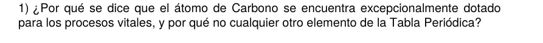
Ejercicio 1, tal como aparece en la guía 2024 (pág. 5)texto del enunciado (para buscar o copiar; ante cualquier duda manda el recorte)
1) ¿Por qué se dice que el átomo de Carbono se encuentra excepcionalmente dotado para los procesos vitales, y por qué no cualquier otro elemento de la Tabla Periódica?
Resolución por partes
U1 · Ejercicio 1 — ¿Por qué el carbono y no otro elemento?
Primero, de dónde salen los cuatro enlaces (casillas → híbridos → forma); después, tamaño y electronegatividad; al final, la respuesta.
Punto de vista:
paso 1 / 5
paso 2 / 5
paso 3 / 5
paso 4 / 5
paso 5 / 5
1
La capa de valencia del carbono
C tiene Z = 6 → 1s² 2s² 2p². El 1s es capa interna y no enlaza. En el nivel 2 hay 4 electrones: 2 apareados en el 2s y 2 sueltos en los 2p (uno en 2pₓ y otro en 2pᵧ: regla de Hund); el 2p𝓏 queda vacío. Con sólo 2 electrones sueltos alcanzaría para 2 enlaces… pero el carbono forma 4 (CH₄). «¿Por qué forma cuatro? Porque tiene cuatro electrones en la capa de valencia y necesita completar los ocho».
Un electrón del 2s sube al 2p𝓏 que estaba vacío (flecha roja). Cuesta un poco de energía, pero se recupera con creces al formar dos enlaces más. Ahora hay 4 electrones sueltos, uno por casilla: 4 enlaces posibles. Todavía no son iguales (uno es s y tres son p) y en el metano los cuatro enlaces son idénticos: por eso se «mezclan».
apunte cap. 5 «El primer paso: promoción» · en las clases grabadas el profesor pasa directo a la hibridación: «es una teoría que se elaboró para dar cuenta de lo que se ve realmente» (teórico U1 21/08 (video, min 82:48))
3
Hibridación: las casillas de sp³, sp² y sp
sp³: el s se mezcla con los tres p → 4 casillas iguales «sp³», un electrón en cada una («los cuatro orbitales sp³ tienen el mismo nivel de energía… un electrón en cada uno»). sp²: el s con dos p → 3 casillas sp² y queda 1 p puro (rojo). sp: el s con un p → 2 casillas sp y quedan 2 p puros. En los tres casos siguen siendo 4 electrones sueltos: por eso el carbono forma siempre 4 enlaces. Lo que cambia es cuántos p quedan puros: ésos son los que después arman los enlaces π (dobles y triples).
Cada orbital híbrido tiene un lóbulo grande, el cuerpo (es el que se solapa con otro átomo para formar el enlace σ), y un lóbulo chico del otro lado del núcleo, la cabecita. Lo que cambia es la mezcla: sp³ = 25 % s y 75 % p («lo dibujamos alargado, con un lóbulo chico»); sp² = 33 % s y 66 % p («sigue bilobular pero un poco más redondito»); sp = 50 % s y 50 % p («todavía mucho más redondeado»). Cuanto más s tiene, más chica queda la cabecita. El naranja de la cabecita marca la fase opuesta del orbital, no una carga eléctrica. En los dibujos de moléculas la cabecita no se dibuja, «para no sobrecargar el dibujo».
Los híbridos se repelen y se separan lo más posible. sp³: 4 direcciones a 109,5° → tetraédrico (en el dibujo: dos en el plano del papel, uno hacia vos y uno hacia atrás, punteado). sp²: 3 direcciones en un plano a 120° → trigonal plano; el p puro queda perpendicular, arriba y abajo del plano. sp: 2 direcciones a 180° → lineal; los dos p puros quedan perpendiculares a la línea y entre sí (uno arriba/abajo, otro adelante/atrás). «No cometan el error de decir que el orbital p puro está a 180°: son los híbridos los que tienen esa disposición». Así el carbono puede unirse a 4, 3 o 2 átomos, con simples, dobles o triples: es la primera razón de la respuesta.
Un átomo chico entra en cualquier red y arma cadenas, ramas, anillos y redes tridimensionales estables. Su vecino de grupo, el silicio, tiene un radio atómico bastante mayor: su electrón externo está más lejos del núcleo, retenido con menos fuerza, y por eso «el silicio se oxida más fácilmente que el carbono» (oxidarse = perder un electrón). En orgánica todo es relativo: se compara, no se dice «absoluto».
«Quedó ubicado en el medio de la tabla»: ni tan electronegativo ni tan electropositivo. No arranca electrones ni los regala: los comparte. Por eso forma enlaces covalentes (polares o apolares) con H, O, N, S, P, halógenos… y con otros carbonos.
«El carbono está excepcionalmente dotado porque está en el medio de la tabla (electronegatividad intermedia → comparte electrones, enlace covalente); tiene cuatro electrones de valencia y forma cuatro enlaces para completar el octeto; puede reagruparlos (hibridación sp³, sp², sp) para unirse a dos, tres o cuatro átomos; y es pequeño y no se oxida fácil como el silicio, lo que le permite formar cadenas y anillos estables.» Lo que pide el parcial: cada afirmación con su por qué («cualquiera que se les ocurra va a estar bien siempre que tenga una fundamentación»).
▼ DESDE ACÁ — lo que explicó el profesor en clase · Unidad 1, ejercicio 1
Abrir la explicación del profesor (transcripción de audio de la clase, sin pizarrón)
9. Por qué el carbono está tan "dotado" para los procesos vitales
Pregunta del profesor: ¿por qué se dice que el átomo de carbono está excepcionalmente dotado para los procesos vitales, y no cualquier otro elemento de la tabla periódica? ¿Qué lo hace particularmente interesante?
Un alumno propone que es "porque es híbrido". El profesor aclara que no: el carbono en sí es un elemento puro; lo que es híbrido son los orbitales que surge en el carbono cuando se prepara para enlazarse con otros átomos (decir que algo "es híbrido" implica que es una mezcla, y el carbono como elemento no lo es).
La propiedad principal del carbono que le permite participar en tantos procesos biológicos es la disponibilidad de sus cuatro electrones de la última capa (configuración 2s² 2p²), que se pueden distribuir de distinta forma en un espacio de ocho lugares posibles (dos capas: una completa de dos y otra, de tres orbitales p, que no llega ni a la mitad de su capacidad). Ese reagrupamiento electrónico le permite enlazarse con infinidad de elementos, en infinidad de configuraciones y geometrías.
A esto se suma:
El tamaño: el carbono es lo suficientemente chico como para entrar en cualquier red y formar redes tridimensionales, y no se oxida fácilmente (a diferencia, por ejemplo, del silicio, cercano en la tabla periódica, que sí tiene mayor capacidad de oxidarse).
La electronegatividad: es baja comparada con la de otros átomos más pequeños, lo que le da mucha versatilidad.
Estas son las características principales que hacen al carbono tan importante en la tabla periódica y en la vida en general. (Comentario del profesor: hace un tiempo leyó que unos astronautas habían encontrado madera en otro lugar del universo, algo que hasta entonces no se pensaba posible fuera de la Tierra.)
Fuente: md «unidad 1 (limpio)» · 9. Por qué el carbono está tan "dotado" para los procesos vitales
▲ HASTA ACÁ — ejercicio 1, Unidad 1
Ejercicio 2 pág. 5coincide con la versión 2026
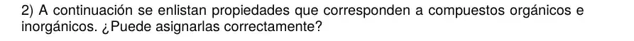
Ejercicio 2: la consigna (guía 2024, pág. 5)texto del enunciado completo (para buscar o copiar; ante cualquier duda manda el recorte)
2) A continuación se enlistan propiedades que corresponden a compuestos orgánicos e inorgánicos. ¿Puede asignarlas correctamente?
a) Dan reacciones que ocurren instantáneamente.
b) Son más susceptibles a la oxidación, algunos arden en presencia de oxígeno para
dar CO y H O.
c) No son susceptibles al calor, en general permanecen sin cambio, incluso después de sufrir un calentamiento intenso.
d) Sus sales son generalmente solubles en agua debido a que ésta ayuda en la separación de iones.
e) Tienen puntos de ebullición y de fusión muchos más bajos debido a que las fuerzas que atraen las moléculas entre sí, son débiles.
Inciso a)
Ejercicio 2, inciso a) — recorte de la guía 2024
Resolución del inciso a)
U1 · Ej. 2 · Inciso a)
Punto de vista:
paso 1 / 1
1
a) «Reacciones instantáneas»: inorgánicos
Así lo resuelve el profesor en el pizarrón: «¿qué habíamos dicho de los orgánicos? Que podían tardar minutos, algunos hasta años. Entonces (las instantáneas) serían los inorgánicos». El motivo está en el teórico: las reacciones de los compuestos orgánicos «pueden durar algunos minutos y a veces hasta años», porque hay que romper enlaces covalentes; en una sal iónica en solución los iones ya están libres.
CONFLICTO En la clase teórica grabada en audio (md «unidad 1 (limpio)», videos del canal del usuario) el profesor responde «depende del tipo de sustancias» (dos metales no forman aleación sin energía; dos orgánicos afines pueden reaccionar al toque). Su explicación completa está más abajo, entre «DESDE ACÁ» y «HASTA ACÁ». En la clase práctica, que es donde se corrige la guía, la respuesta es inorgánicos: es la que conviene poner.
Arden con oxígeno dando CO₂ y H₂O. El ejemplo del profesor: la madera, «cuando la prendemos fuego, combustiona y nos da dióxido de carbono y agua». Es la propiedad más típica del carbono unido a hidrógeno (oxidarse = perder electrones).
«No son susceptibles al calor: permanecen sin cambio incluso después de un calentamiento intenso» → inorgánicos; los orgánicos son muy susceptibles al calor (por la misma razón del inciso b).
Sustancias iónicas: el ejemplo es el cloruro de sodio, la sal de mesa: «la podemos disolver en agua y quedan separados los iones de cloro y de sodio». El agua separa y solvata los iones.
«Acuérdense que también hay que darle un por qué»: el NaCl está atraído por fuerzas iónicas, muy fuertes; las moléculas orgánicas, por ejemplo los aceites, se atraen por Van der Waals, fuerzas débiles → con poca energía cambian de estado. Esto conecta directo con la Unidad 2: fuerzas intermoleculares.
Todo se explica con el tipo de enlace y de fuerza: covalente → moléculas individuales que se atraen poco entre sí; iónico → red de iones, fuerte, que el agua sí puede desarmar. Ese criterio vale más que memorizar la lista.
▼ DESDE ACÁ — lo que explicó el profesor en clase · Unidad 1, ejercicio 2
Abrir la explicación del profesor (transcripción de audio de la clase, sin pizarrón)
CONFLICTO En el inciso a) este profesor responde «depende del tipo de sustancias». En la clase práctica del 21/08 (video JEyyZV4m8Ns, min 3:42) el profesor de la práctica responde inorgánicos (las reacciones orgánicas tardan de minutos a años). Son dos clases distintas; la resolución por partes de arriba sigue a la clase práctica.
10. Compuestos orgánicos vs. inorgánicos
Se plantea un ejercicio: asignar correctamente distintas propiedades a compuestos orgánicos o inorgánicos.
a) "Dan reacciones que ocurren instantáneamente"
Lo "instantáneo" depende de la escala de tiempo que se use (no es igual de instantáneo para un geólogo que para un químico). En una reacción inorgánica —por ejemplo, poner en contacto dos metales para que formen una aleación— no hay reacción sin aporte de energía y determinadas condiciones (presión, etc.). En cambio, dos sustancias orgánicas afines en contacto pueden reaccionar instantáneamente. Es decir: esa afirmación depende del tipo de sustancias de las que se hable.
(Todo en química orgánica es comparativo: no hay nada absoluto, siempre se compara algo en relación a otra cosa, igual que en el espacio no hay un "arriba" o "abajo" absolutos sino posiciones relativas a un punto de referencia — el Sol, un planeta, etc.)
b) "Son más susceptibles a la oxidación"
Esto corresponde a los compuestos orgánicos: algunos arden en presencia de oxígeno dando CO₂ y vapor de agua. Al someterlos al calor, los compuestos orgánicos comienzan a desprender inmediatamente monóxido, dióxido de carbono y vapor de agua (y en algunos casos también vapores nitrosos o sulfurosos).
c) "No son susceptibles al calor: en general permanecen sin cambios incluso después de un calentamiento intenso"
Esto corresponde a los compuestos inorgánicos en general. Ejemplo: si se ponen una cucharita con azúcar y otra con sal sobre la misma hornalla, la del azúcar (orgánica) va a experimentar cambios mucho más rápido. Esto confirma que los compuestos orgánicos son más susceptibles a la oxidación y a estos fenómenos con un mínimo aporte de calor.
d) "Sus sales son generalmente solubles en agua, porque esta ayuda a separar los iones"
Esto corresponde a sustancias de enlaces iónicos, que en agua se disuelven y se solvatan: son principalmente sustancias inorgánicas. Pueden existir sustancias orgánicas con enlaces iónicos, pero son poco frecuentes.
e) "Tienen puntos de ebullición y de fusión mucho más bajos, porque las fuerzas que atraen a las moléculas entre sí son débiles"
Esto corresponde a los compuestos orgánicos: con un mínimo aporte de energía ya se puede hacer que la materia cambie de estado (por ejemplo, una sustancia sólida orgánica pasa a líquido y luego a vapor con muy poco calor).
Ejercicio 3, tal como aparece en la guía 2024 (pág. 5)Ver cambio versión 2026
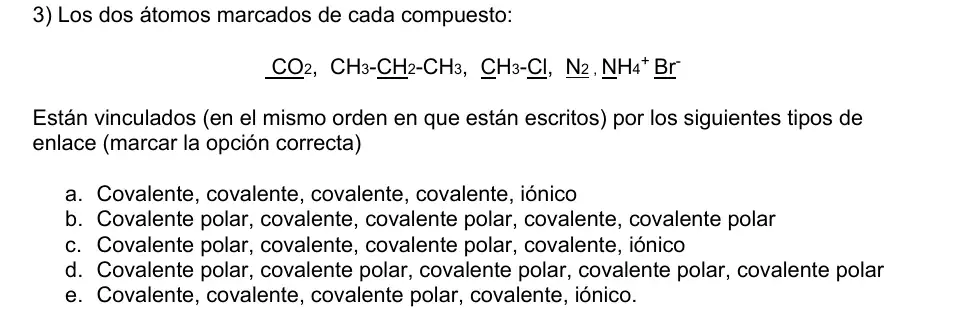
Ejercicio 3, tal como aparece en la guía 2026 (pág. 5)
🆕 guía 2026 Qué cambió: las cinco fórmulas van ahora en un solo renglón, separadas por comas (son las mismas y con los mismos átomos subrayados).
v58–v86: el recorte de la guía 2026 estaba a la vista y el de 2024 en esta capa, con el rótulo «Recorte de la guía 2024, reemplazado por el de la 2026 (30/9):». Qué cambió: las cinco fórmulas van ahora en un solo renglón, separadas por comas (son las mismas y con los mismos átomos subrayados).
texto del enunciado (para buscar o copiar; ante cualquier duda manda el recorte)
3) Los dos átomos marcados de cada compuesto:
+
CO CH -CH -CH CH -Cl N NH Br
Están vinculados (en el mismo orden en que están escritos) por los siguientes tipos de enlace (marcar la opción correcta)
a. Covalente, covalente, covalente, covalente, iónico
b. Covalente polar, covalente, covalente polar, covalente, covalente polar
c. Covalente polar, covalente, covalente polar, covalente, iónico
e. Covalente, covalente, covalente polar, covalente, iónico.
Ver el texto de la versión 2026
3) Los dos átomos marcados de cada compuesto:
CO2, CH3-CH2-CH3, CH3-Cl, N2 , NH4+ BrEstán vinculados (en el mismo orden en que están escritos) por los siguientes tipos de enlace (marcar la opción correcta)
a. Covalente, covalente, covalente, covalente, iónico
b. Covalente polar, covalente, covalente polar, covalente, covalente polar
c. Covalente polar, covalente, covalente polar, covalente, iónico
e. Covalente, covalente, covalente polar, covalente, iónico.
v58–v86: acá estaba el texto de 2026 y el de 2024 en esta capa, con el rótulo «Texto de la guía 2024 (reemplazado):».
Resolución por partes
U1 · Ejercicio 3 — ¿Qué tipo de enlace une a los átomos marcados?
Primero la regla (ΔE), después cada par con su flecha, y al final la opción.
Punto de vista:
paso 1 / 7
paso 2 / 7
paso 3 / 7
paso 4 / 7
paso 5 / 7
paso 6 / 7
paso 7 / 7
1
La regla que decide
Lo que define el tipo de enlace es la diferencia de electronegatividad (ΔE). El profesor: «cuando la diferencia es 0,4 o menor decimos que el enlace es covalente apolar» (la guía lo llama «covalente» a secas); si es mayor, covalente polar; y si lo que se unen son dos iones, un catión y un anión, iónico. La escala de la clase: electronegatividad crece hacia arriba y a la derecha de la tabla (F el mayor); entre no metales: F > O > Cl ≈ N > Br > I > S ≈ C > H.
Primero el profesor arma la molécula: el C necesita cuatro enlaces, así que no puede ser O–C–O con simples; es O=C=O. El C tiene dos dobles → dos p puros haciendo dos π (uno arriba/abajo, otro adelante/atrás) → C sp, lineal. Cada O tiene un solo π → O sp² («dato para anotar: el oxígeno no puede tener hibridación sp»). Quedan 2 σ + 2 π. Ahora el enlace marcado: O es más electronegativo que C, «los electrones de este enlace van a estar mucho más cerca del oxígeno, porque su núcleo los tira con más fuerza» → covalente polar.
Desarrollá la molécula (cada C con sus cuatro enlaces). Entre C (2,5) e H (2,1) la diferencia es 0,4 → «cuando es 0,4 o menor, covalente apolar»: la guía lo marca simplemente covalente. Y ya que está: todos simples → C sp³, tetraédrico. (En el teórico el mismo profesor dijo «0,3»; con cualquiera de los dos valores cae del lado apolar.)
El N está en el grupo 5: le faltan tres electrones para el octeto, por eso N–N con simple «estaría mal» (cada uno tendría seis); es N≡N, sp. Entre dos nitrógenos no hay diferencia de electronegatividad → covalente (apolar), aunque sea triple: la cantidad de enlaces no cambia la polaridad. Aplicación que da el profesor: ese triple enlace guarda muchísima energía; las bacterias de las leguminosas (soja) lo rompen para fijar N; por eso las leguminosas no se fertilizan con nitrógeno.
«NH₄⁺, que es un catión, y el anión bromo (un halógeno). Este enlace que junta el positivo con el negativo es iónico.» (Dentro del NH₄⁺, los N–H son covalentes polares, pero no es lo que se pregunta.)
Covalente polar, covalente, covalente polar, covalente, iónico → opción c (confirmada en la clase). Un alumno pregunta: «¿el CO₂ no era apolar?». Respuesta: el enlace C=O es polar; la molécula es apolar porque los dos vectores se anulan («una soga que tira para allá y otra para allá»). El ejercicio pregunta por el enlace. Para la molécula se suman vectorialmente todos los dipolos (momento dipolar); ejemplo: CCl₄ tiene cuatro enlaces polares y es totalmente apolar. Esta distinción enlace polar ≠ molécula polar vuelve en la Unidad 2.
Pizarrón del minuto 22:12 [REDIBUJO DESDE FOTOGRAMA]. Quedaron escritas las cinco respuestas y, al lado, el CO₂ con una flecha de dipolo sobre cada enlace, en sentidos opuestos, y el CCl₄ en perspectiva (cuña llena y rayada) con una flecha hacia cada Cl. Los cuatro vectores dibujados aparte, desde un mismo punto, son un agregado para ver que suman cero [ADICIÓN PEDAGÓGICA].
La consulta de una alumna (18:39): el enlace C=O es polar, pero la molécula de CO₂ es apolar, porque «se anulan los vectores de fuerza». El ejercicio pregunta por el tipo de enlace de los átomos marcados: polar.
La Profe 2 agrega el CCl₄: cuatro enlaces polares y, sin embargo, una molécula totalmente apolar. Para saber si una molécula es polar hay que sumar vectorialmente todos sus dipolos (momento dipolar).
▼ DESDE ACÁ — lo que explicó el profesor en clase · Unidad 1, ejercicio 3
Abrir la explicación del profesor (transcripción de audio de la clase, sin pizarrón)
Teoría que el profesor da justo antes de resolver el ejercicio 3.
Fuerza relativa de los distintos tipos de enlace
Ordenando los enlaces por fuerza, de mayor a menor: los enlaces iónicos y los puentes de hidrógeno son los más fuertes; le siguen los enlaces covalentes (polares y apolares), que son los más débiles. (Existen también interacciones más avanzadas, como las de la química supramolecular —interacciones entre enlaces pi—, que no se van a ver en este curso.)
Fuente: md «unidad 1 (limpio)» · Fuerza relativa de los distintos tipos de enlace
Cómo se determina si un enlace es covalente apolar, covalente polar o iónico
Lo que define el tipo de enlace es la diferencia de electronegatividad entre los dos átomos (delta de electronegatividad):
Diferencia de electronegatividad
Tipo de enlace
entre 0 y 0,4
covalente apolar
entre 0,4 y 1,7
covalente polar
mayor a 1,7
iónico
Entre los no metales hay además un orden de electronegatividad, de mayor a menor, aproximadamente así: flúor (el más electronegativo) > oxígeno > cloro ≈ nitrógeno > bromo > azufre (similar al carbono). Todos estos son, a su vez, más electronegativos que el hidrógeno. Ese orden es lo que define qué tipo de enlace va a formarse en cada molécula.
Fuente: md «unidad 1 (limpio)» · Cómo se determina si un enlace es covalente apolar, covalente polar o iónico
Ejercicio resuelto: polaridad de distintos enlaces
Para cada enlace, "covalente" (sin aclaración) equivale a covalente apolar.
Carbono–oxígeno: hay diferencia de electronegatividad entre ambos → enlace covalente polar.
Carbono–hidrógeno: la diferencia de electronegatividad es muy baja (cae entre 0 y 0,4) → enlace covalente apolar.
Carbono–cloro: ambos tienen electronegatividades bastante distintas → enlace covalente polar.
Nitrógeno–nitrógeno (dos átomos iguales): sin diferencia de electronegatividad → enlace covalente apolar.
N–H (en el NH₄⁺, bromuro de amonio): se analiza de la misma manera considerando los cuatro hidrógenos.
Fuente: md «unidad 1 (limpio)» · Ejercicio resuelto: polaridad de distintos enlaces
▲ HASTA ACÁ — ejercicio 3, Unidad 1
Ejercicio 4 pág. 5coincide con la versión 2026
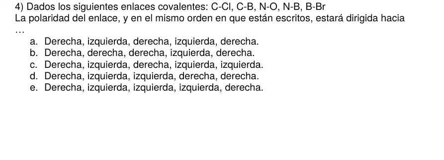
Ejercicio 4, tal como aparece en la guía 2024 (pág. 5)texto del enunciado (para buscar o copiar; ante cualquier duda manda el recorte)
4) Dados los siguientes enlaces covalentes: C-Cl, C-B, N-O, N-B, B-Br La polaridad del enlace, y en el mismo orden en que están escritos, estará dirigida hacia …
a. Derecha, izquierda, derecha, izquierda, derecha.
b. Derecha, derecha, derecha, izquierda, derecha.
c. Derecha, izquierda, derecha, izquierda, izquierda.
d. Derecha, izquierda, izquierda, derecha, derecha.
e. Derecha, izquierda, izquierda, izquierda, derecha.
Resolución por partes
U1 · Ejercicio 4 — ¿Hacia dónde apunta la polaridad de cada enlace?
Cinco enlaces, cinco flechas.
Punto de vista:
paso 1 / 7
paso 2 / 7
paso 3 / 7
paso 4 / 7
paso 5 / 7
paso 6 / 7
paso 7 / 7
1
Dónde apunta la flecha
La polaridad de un enlace «va hacia» el átomo más electronegativo: el par se corre para su lado. En la clase se resolvió a mano alzada: «¿hacia dónde se tira, derecha o izquierda?».
«Derecha, izquierda, derecha, izquierda, derecha» → opción a. Los valores de Pauling de abajo son sólo para verificar: B 2,0 < C 2,5 < N 3,0 ≈ Br 3,0 < Cl 3,2 < O 3,4.
En el pizarrón (23:20–24:01) va escribiendo cada par (C–Cl, C–B, N–O, N–B, B–Br) y arriba una fila de flechas «→ ← → ← →»: hacia dónde se corren los electrones, siempre hacia el más electronegativo. Da la opción a) (derecha, izquierda, derecha, izquierda, derecha).
Parte de la fila de flechas queda tapada por el brazo del profe en todos los fotogramas [ILEGIBLE]; el orden sale del audio.
▼ DESDE ACÁ — lo que explicó el profesor en clase · Unidad 1, ejercicio 4
Abrir la explicación del profesor (transcripción de audio de la clase, sin pizarrón)
También se trabaja, para los enlaces C–Cl, C–B, N–O, N–B y B–Br, hacia qué átomo se desplaza la polaridad (el más electronegativo "atrae" el vector de polaridad hacia su lado): por ejemplo, en C–Cl el cloro es más electronegativo que el carbono, así que el vector apunta hacia el cloro; en C–B, el carbono resulta más electronegativo que el boro.
Fuente: md «unidad 1 (limpio)» · Ejercicio resuelto: polaridad de distintos enlaces
▲ HASTA ACÁ — ejercicio 4, Unidad 1
MÁS EJERCICIOS RESUELTOS · UNIDAD 1 — INTRODUCCIÓN (del apunte, no de la guía)
Ejercicios extra de esta unidad, armados a partir de las clases, los seminarios en video y los TP (bloque A): sirven para practicar después de los de la guía, que están arriba. Los enunciados de la guía 2024, recortados de la página y con su resolución cuando ya está hecha, están justo arriba: Ejercicios de la guía 2024 · Unidad 1; los textos de teoría que la guía intercala están en la página de teoría de la unidad: Teoría y lecturas de la guía 2024. El modelo de Parcial I explicado por la cátedra está en Parcial I modelo. (texto anterior: Ejercicios extra de esta unidad, armados a partir de las clases, los seminarios en video y los TP (bloque A): sirven para practicar después de los de la guía, que están arriba. Los enunciados de la guía 2024 , recortados de la página y con su resolución por partes debajo, están justo arriba: Ejercicios de la guía 2024 · Unidad 1 ; los textos de teoría que la guía intercala, más abajo, en Teoría y lecturas de la guía 2024 . El modelo de Parcial I explicado por la cátedra está en Parcial I modelo .)
BLOQUE A — Átomo, configuración y enlace
Depende de los capítulos 2, 3 y 4.
A1. Configuraciones del tercer período
Escribí la configuración electrónica del sodio (Z = 11), del fósforo (Z = 15) y del argón (Z = 18). ¿Qué tienen en común los elementos de una misma columna?
Resolución
Se aplican las tres reglas del capítulo 3: se llena de menor a mayor energía, dos electrones por orbital con espines opuestos, y uno en cada orbital de igual energía antes de aparear.
Z
Configuración
Electrones de valencia
Sodio
11
1s² 2s² 2p⁶ 3s¹
1
Fósforo
15
1s² 2s² 2p⁶ 3s² 3p³
5
Argón
18
1s² 2s² 2p⁶ 3s² 3p⁶
8
Los tres tienen el mismo bloque interno —1s² 2s² 2p⁶, que es la configuración del neón— y se diferencian sólo en el tercer nivel.
Lo que tienen en común los de una misma columna es precisamente eso: la misma configuración en su nivel más elevado. Por eso la tabla periódica predice el comportamiento — es un ordenamiento por configuración electrónica.
Dos consecuencias que vale la pena ver: los metales de la izquierda pierden electrones para quedar con la configuración del gas noble anterior, y los no metales de la derecha los ganan para llegar al siguiente. El argón ya está completo, y por eso no hace ninguna de las dos cosas.
A2. ¿Iónico o covalente?
Decidí si esperás enlace iónico o covalente en: KBr · H₂S · NF₃ · CCl₄ · CH₃OH.
Resolución
La regla del capítulo 4: se espera transferencia —enlace iónico— entre átomos muy separados en la tabla periódica, típicamente un metal de la izquierda con un no metal de la derecha. Se espera que compartan cuando no están tan separados.
Qué átomos
Qué esperás
KBr
metal alcalino + halógeno
iónico
H₂S
hidrógeno + no metal
covalente
NF₃
dos no metales vecinos
covalente
CCl₄
carbono + halógeno
covalente
CH₃OH
C, H y O
covalente
El carbono aparece en dos de ellos y en los dos comparte. Ya sabés por qué: ceder o ganar cuatro electrones le sale carísimo —el segundo potencial de ionización es de 562 kcal/mol y su afinidad electrónica apenas −25—, así que el balance sólo cierra compartiendo.
Ojo con leer la tabla como si fueran dos casilleros. Entre el iónico puro y el covalente puro hay una gradación continua; lo que estás decidiendo es hacia qué extremo cae cada caso.
A3. Estructuras de Lewis
Escribí la estructura de Lewis de: H₂O₂ · N₂ · HCN · CO₂ · C₂H₆.
Resolución
El método, siempre igual: contar electrones de valencia totales, unir los átomos, y repartir el resto como pares libres hasta que todos completen su octeto (dos para el hidrógeno).
H₂O₂ — 2×1 + 2×6 = 14 electrones. Los dos oxígenos se unen entre sí y cada uno lleva un hidrógeno: `H—O—O—H`. A cada oxígeno le quedan dos pares libres. Verificá: cada O tiene 2 enlaces + 2 pares libres → 2 + 4 = 6 propios, más 2 compartidos = 8. ✓
N₂ — 2×5 = 10 electrones. Con un solo enlace ninguno llega al octeto; con dos tampoco. Hace falta un triple enlace, y a cada nitrógeno le queda un par libre: `:N≡N:`
HCN — 1 + 4 + 5 = 10. El carbono va en el medio: simple con el hidrógeno, triple con el nitrógeno, que conserva un par libre: `H—C≡N:`
CO₂ — 4 + 2×6 = 16. Dos dobles enlaces, y dos pares libres en cada oxígeno: `O=C=O`
C₂H₆ — 2×4 + 6×1 = 14. Los dos carbonos unidos entre sí, tres hidrógenos en cada uno. Ningún par libre.
El patrón del capítulo 4 se cumple en los cinco: el carbono siempre con cuatro enlaces, el nitrógeno con tres y un par libre, el oxígeno con dos y dos pares.
🧭 Ruta de lectura de la unidad 2
Leé sí o sí, en orden:Mapa de la unidad 2 → caps. 5, 6, 7, 8, 9, 10 (el 9 enseña a leer los nombres que el 10 usa desde su primer ejemplo; la última columna de su tabla —el puente de hidrógeno— se entiende del todo al terminar el 10, que te manda a releerla), 11, 12, 12b, 13, 14, 15 y 16.
¿Qué es cada recuadro y dónde va cada cosa? 🗺 Cómo está armado el apunte. Nada se borró: lo que figura como consulta o repaso sigue en la página; sólo no hace falta leerlo de corrido para entender la unidad.
Unidad 2
Enlace: hibridación, geometría, polaridad y propiedades
Por qué aparece la hibridación, qué forma tienen las moléculas, cómo se forman los enlaces σ y π, cómo se reparte la carga, qué propiedades físicas resultan (ebullición, solubilidad, energía de enlace), cómo absorben luz las moléculas y —cerrando la unidad— ácidos, bases, resonancia y acidez comparada.
☰ Índice de esta página (tocá para desplegar)
MAPA DE LA UNIDAD 2
La unidad más larga del apunte, en una sola imagen: del problema del metano a la acidez, pasando por la geometría, los enlaces, la polaridad, las interacciones y las propiedades. Cada caja dice en qué capítulo está.
definición el porqué ojo: confusión frecuente idea que vuelve después💡 idea clave① ② ③ paso a paso debajo de cada figura? pregunta con respuesta
Mapa U2. Mapa conceptual de la unidad 2. Se lee como una serpiente: de izquierda a derecha, después de derecha a izquierda, y así.mapa conceptual U2
Unidad 2 — cómo se conectan hibridación, resonancia y fuerzas intermoleculares
Este mapa responde a tu idea de que hibridación no se estudia “sola”: queda unida a resonancia, geometría, polaridad y propiedades físicas.
Mapa conceptual navegable — estilo limpio de mapa conceptual
Saqué las cápsulas. Ahora cada palabra de relación queda en el propio recorrido de la línea, con un pequeño corte detrás para que se lea sin tapar la conexión.
Uso: arrastrá con un dedo para recorrer el mapa. Las palabras pequeñas sobre las conexiones indican la relación entre conceptos.
Base estructural Enlaces y deslocalización Conexiones amplias Consecuencias químicas
Qué corregí ahora: corrí más a la derecha los globos del sector derecho para que no tapen las palabras de relación (por ejemplo permite) y limpié la secuencia visual de sp³ / sp² / sp sacando las líneas auxiliares que podían confundirse con parte del dibujo.
mapa conceptual
Mapa conceptual global de la unidad
1. Carbono desde cero
Configuración electrónica, estado fundamental, promoción y necesidad de explicar 4 enlaces equivalentes.
UNIDAD 2 — LO QUE DICE LA GUÍA 2024 (TEORÍA Y LECTURAS)
Guía 2024: la referencia. Los fragmentos de teoría y las lecturas coinciden con la versión 2026, salvo la presentación de la pág. 1 (en 2026 dice «Agronomía y Agroalimentos»): ahí se ve la de 2024 y, debajo, «▶ Ver cambio versión 2026». (cartel de la v58–v86: ✔ Guía 2026. Los fragmentos de teoría y las lecturas son idénticos en las dos guías, salvo la presentación de la pág. 1 (ahora «Agronomía y Agroalimentos»), que ya está con el recorte 2026.)
Transcripción literal de los textos de teoría y de las lecturas que la guía de trabajos prácticos 2024 intercala en la Unidad 2 (págs. 6, 15): 2 textos, cada uno con su recorte de página. No se resume ni se corrige nada; al pie de cada texto se indica con qué capítulos del apunte se lee (eso es criterio editorial y va marcado).
TOXICIDAD Y RIESGO QUÍMICO Lectura · pág. 6
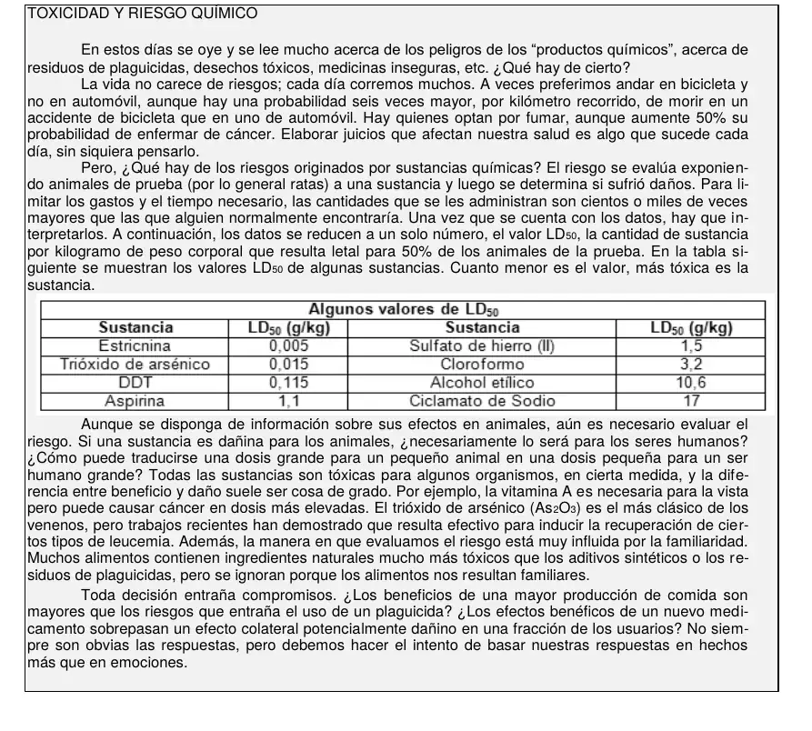
Lectura «TOXICIDAD Y RIESGO QUÍMICO», tal como aparece en la guía 2024 (pág. 6)texto (para buscar o copiar; ante cualquier duda manda el recorte)
En estos días se oye y se lee mucho acerca de los peligros de los “productos químicos”, acerca de residuos de plaguicidas, desechos tóxicos, medicinas inseguras, etc. ¿Qué hay de cierto? La vida no carece de riesgos; cada día corremos muchos. A veces preferimos andar en bicicleta y no en automóvil, aunque hay una probabilidad seis veces mayor, por kilómetro recorrido, de morir en un accidente de bicicleta que en uno de automóvil. Hay quienes optan por fumar, aunque aumente 50% su probabilidad de enfermar de cáncer. Elaborar juicios que afectan nuestra salud es algo que sucede cada día, sin siquiera pensarlo. Pero, ¿Qué hay de los riesgos originados por sustancias químicas? El riesgo se evalúa exponiendo animales de prueba (por lo general ratas) a una sustancia y luego se determina si sufrió daños. Para limitar los gastos y el tiempo necesario, las cantidades que se les administran son cientos o miles de veces
mayores que las que alguien normalmente encontraría. Una vez que se cuenta con los datos, hay que interpretarlos. A continuación, los datos se reducen a un solo número, el valor LD , la cantidad de sustancia
por kilogramo de peso corporal que resulta letal para 50% de los animales de la prueba. En la tabla siguiente se muestran los valores LD de algunas sustancias. Cuanto menor es el valor, más tóxica es la
sustancia.
Aunque se disponga de información sobre sus efectos en animales, aún es necesario evaluar el riesgo. Si una sustancia es dañina para los animales, ¿necesariamente lo será para los seres humanos? ¿Cómo puede traducirse una dosis grande para un pequeño animal en una dosis pequeña para un ser humano grande? Todas las sustancias son tóxicas para algunos organismos, en cierta medida, y la diferencia entre beneficio y daño suele ser cosa de grado. Por ejemplo, la vitamina A es necesaria para la vista
pero puede causar cáncer en dosis más elevadas. El trióxido de arsénico (As O ) es el más clásico de los venenos, pero trabajos recientes han demostrado que resulta efectivo para inducir la recuperación de ciertos tipos de leucemia. Además, la manera en que evaluamos el riesgo está muy influida por la familiaridad.
Muchos alimentos contienen ingredientes naturales mucho más tóxicos que los aditivos sintéticos o los residuos de plaguicidas, pero se ignoran porque los alimentos nos resultan familiares.
Toda decisión entraña compromisos. ¿Los beneficios de una mayor producción de comida son mayores que los riesgos que entraña el uso de un plaguicida? ¿Los efectos benéficos de un nuevo medicamento sobrepasan un efecto colateral potencialmente dañino en una fracción de los usuarios? No siempre son obvias las respuestas, pero debemos hacer el intento de basar nuestras respuestas en hechos
más que en emociones.
⟶ Del libro (Wade). El Wade dice lo mismo en un recuadro, casi con las mismas palabras: «Todas las sustancias son tóxicas en grandes cantidades. La toxicidad es una cuestión de dosis.» Y lo muestra con dos alcoholes. Mucha gente cree que el etanol no es tóxico y que el metanol sí. En realidad el metanol es aproximadamente dos veces más tóxico: el límite de peligrosidad para un adulto es de unos 100 mL de metanol o 200 mL de etanol. Con una salvedad: dosis menores de metanol pueden dañar el nervio óptico y producir ceguera. La regla de laboratorio del libro: no ingerir nunca ninguna cantidad de alcohol y evitar el contacto con los ojos y las mucosas (Wade, 5.ª ed., § 10.5B, p. 414).
TERPENOS: ALQUENOS QUE SE ENCUENTRAN EN LA NATURALEZA Lectura · pág. 15
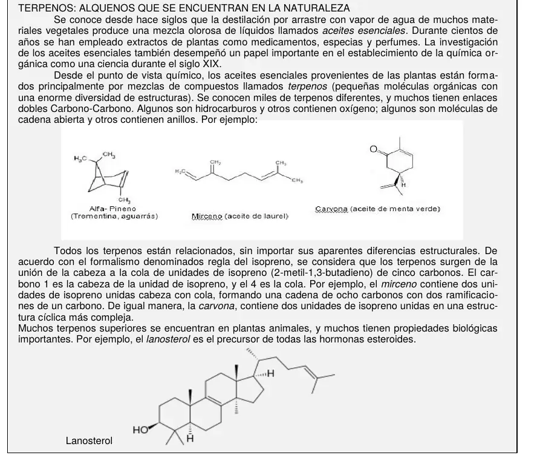
Lectura «TERPENOS: ALQUENOS QUE SE ENCUENTRAN EN LA NATUR», tal como aparece en la guía 2024 (pág. 15)texto (para buscar o copiar; ante cualquier duda manda el recorte)
Se conoce desde hace siglos que la destilación por arrastre con vapor de agua de muchos materiales vegetales produce una mezcla olorosa de líquidos llamados aceites esenciales . Durante cientos de
años se han empleado extractos de plantas como medicamentos, especias y perfumes. La investigación de los aceites esenciales también desempeñó un papel importante en el establecimiento de la química orgánica como una ciencia durante el siglo XIX.
Desde el punto de vista químico, los aceites esenciales provenientes de las plantas están formados principalmente por mezclas de compuestos llamados terpenos (pequeñas moléculas orgánicas con
una enorme diversidad de estructuras). Se conocen miles de terpenos diferentes, y muchos tienen enlaces dobles Carbono-Carbono. Algunos son hidrocarburos y otros contienen oxígeno; algunos son moléculas de cadena abierta y otros contienen anillos. Por ejemplo:
Todos los terpenos están relacionados, sin importar sus aparentes diferencias estructurales. De acuerdo con el formalismo denominados regla del isopreno, se considera que los terpenos surgen de la unión de la cabeza a la cola de unidades de isopreno (2-metil-1,3-butadieno) de cinco carbonos. El carbono 1 es la cabeza de la unidad de isopreno, y el 4 es la cola. Por ejemplo, el mirceno contiene dos unidades de isopreno unidas cabeza con cola, formando una cadena de ocho carbonos con dos ramificaciones de un carbono. De igual manera, la carvona , contiene dos unidades de isopreno unidas en una estructura cíclica más compleja.
Muchos terpenos superiores se encuentran en plantas animales, y muchos tienen propiedades biológicas importantes. Por ejemplo, el lanosterol es el precursor de todas las hormonas esteroides.
Lanosterol
Figura L-U2. Los tres terpenos de la lectura, redibujados en vector (la foto de la guía no se puede mejorar más: es la resolución del PDF). Numeración, colores de las unidades de isopreno y rótulos [ADICIÓN PEDAGÓGICA].
⟶ Del libro (Wade). De dónde sale el lanosterol. La Figura 14.6 muestra el camino: escualeno → 2,3-epoxi-escualeno → intermedio cíclico → lanosterol → colesterol. El escualeno es un terpeno de cadena abierta con varios dobles enlaces. Una enzima, la escualeno-epoxidasa, convierte el doble enlace de una punta en un epóxido (un anillo de tres con un O). Ese epóxido se protona y lo ataca un doble enlace de la misma molécula: el anillo de tres se abre, se cierra el primer anillo y queda un carbocatión terciario (Figura 14.7). Otro doble enlace ataca a ese carbocatión, se cierra otro anillo y aparece otro carbocatión terciario; el paso se repite hasta el intermedio de cuatro anillos de la Figura 14.6. «El intermedio cíclico se reordena a lanosterol, el cual a su vez se transforma en colesterol y en otros esteroides.» El libro lo presenta con cautela («Se cree que…»). Agrega para qué sirven los esteroides: hormonas (las sexuales), emulsionantes (ácidos biliares) y componentes de la membrana celular (colesterol). Y una aplicación: el antifúngico tolnaftato (Tinactin®) inhibe la escualeno-epoxidasa; sin los esteroides de sus membranas, el hongo muere. (Wade, 5.ª ed., § 14.12, Figuras 14.6 y 14.7, pp. 624–625)
UNIDAD 2 — LO QUE EXPLICÓ EL PROFESOR EN CLASE (TEORÍA)
Texto completo de la transcripción «limpia» de las clases de la Unidad 2 (videos de sólo audio del canal del usuario —imagen fija o pantalla negra—, transcriptos y ordenados en otro chat). Se copia tal cual, sin resumir. Lo que en la clase fue la resolución de un ejercicio de la guía 2024 se sacó de acá y está debajo del enunciado de ese ejercicio, entre las marcas «▼ DESDE ACÁ» y «▲ HASTA ACÁ»; en su lugar queda una línea «⟶» con el enlace. Los dibujos del pizarrón no están (el audio no los tiene): se agregarán cuando llegue el PDF dibujado a mano.
Unidad 2 (limpio)
Transcripciones limpias y organizadas de las clases de consulta y práctica de Química Orgánica (Agronomía), correspondientes a la Unidad 2 del programa (Estructura y enlace: hibridación, geometría molecular, absorción de luz, acidez y basicidad).
1. Consulta después del teórico: repaso de hibridación, cromóforos y acidez por resonancia
1.1 Ácido y base: la teoría de los pares de electrones libres
Un alumno retoma una duda del teórico sobre basicidad: ¿cuándo un compuesto es más básico?
Respuesta del profesor: un compuesto es más básico cuanto mejor pueda ceder un par de electrones. Existen varias formas de definir ácido y base; en la cátedra se trabaja principalmente con dos:
La visión clásica (tipo Brønsted-Lowry, con –OH): el ácido cede protones y la base los recibe liberando oxidrilos.
La visión basada en electrones libres, que es la que aplica en orgánica: en los compuestos orgánicos no siempre hay un grupo –OH para actuar como base. En su lugar, se observa si el átomo tiene pares de electrones libres (como ocurre en halógenos, nitrógeno u oxígeno). Esos electrones libres pueden tomar un protón formando un nuevo enlace covalente, y el átomo que los cedió queda con carga positiva.
Un punto que generó confusión: la "carga" que importa acá no es la carga formal del grupo funcional completo (como el –1 de un grupo oxidrilo), sino la disponibilidad de un par de electrones libres en un átomo individual dentro de la molécula. Si ese par de electrones está participando en resonancia (deslocalizado, moviéndose entre distintas posiciones de la molécula), tiende a "preferir" quedarse estable en esa deslocalización antes que tomar un protón.
La discusión sobre basicidad en profundidad se retoma más adelante en la Unidad 2, cuando empiecen los ejercicios de la semana (temas: absorción de luz e isomería).
1.2 Repaso de hibridación sp³ (a partir del metano)
Se repasa el proceso completo con el carbono como ejemplo:
Configuración electrónica del carbono (Z=6): 1s² 2s² 2p². Los electrones de la capa interna (1s²) se ignoran para el análisis de enlace: solo importan los electrones de valencia (2s² 2p², cuatro electrones).
El carbono "quiere" completar el octeto: tiene 4 electrones de valencia y necesita 4 más, por lo que forma 4 enlaces.
Al hibridar, el orbital s y los tres orbitales p de valencia se mezclan y dan cuatro orbitales sp³ idénticos, en vez de un s y tres p diferenciados. Los electrones ya no quedan "alojados" en las casillas originales sino que ocupan el mayor espacio posible entre sí (por repulsión electrostática, buscan el estado de menor energía / mayor estabilidad).
Estos cuatro orbitales sp³ se ubican lo más alejados posible entre sí: el ángulo resultante es 109,5°, y la geometría es tetraédrica.
Cada orbital sp³ tiene forma "bilobular" (como un globo de payaso retorcido): un lóbulo grande, que es el que efectivamente se dibuja y usa para formar enlaces, y un lóbulo chico que en la práctica se ignora.
Cuando cada orbital sp³ del carbono se solapa con el orbital s de un hidrógeno, se forma un enlace sigma (σ). El metano (CH₄) queda así representado: un carbono con hibridación sp³ enlazado a cuatro hidrógenos, ángulos de 109,5°, geometría tetraédrica.
Distinción atómico vs. molecular: un orbital "atómico" es el del átomo aislado (antes de enlazarse); un orbital "molecular" es el que resulta de la superposición de dos orbitales atómicos al formarse un enlace. En el caso del metano, la hibridación del carbono (sp³) no cambia al enlazarse: sigue siendo sp³ tanto a nivel atómico como una vez formada la molécula.
1.3 Hibridación sp² (doble enlace)
Se plantea qué pasa si, en lugar de cuatro sustituyentes simples, el carbono forma un doble enlace con otro átomo.
Un doble enlace está formado por un enlace sigma (σ) + un enlace pi (π). El primer enlace entre dos átomos siempre es sigma; cualquier enlace adicional entre los mismos dos átomos (para formar dobles o triples enlaces) es pi.
Geométricamente, el segundo enlace (el pi) no puede formarse en la misma línea que el sigma: tiene que ubicarse "por arriba y por abajo" de esa línea, usando un orbital p puro (sin hibridar).
Por lo tanto, para un doble enlace, el carbono hibrida solamente un orbital s con dos orbitales p (en vez de los tres), dando tres orbitales híbridos sp² más un orbital p puro que queda disponible exclusivamente para el enlace pi.
Los tres orbitales sp² se disponen lo más alejados posible entre sí en un mismo plano: ángulos de 120°, geometría trigonal plana. El orbital p puro queda perpendicular a ese plano (un lóbulo arriba y otro abajo).
El enlace pi se forma por el solapamiento lateral ("paralelo") de los dos orbitales p puros de ambos átomos del doble enlace; por eso los dos átomos y sus sustituyentes quedan obligatoriamente en un mismo plano (no puede haber rotación libre alrededor de un doble enlace, a diferencia de un enlace simple).
Por qué el enlace pi es más inestable que el sigma: el sigma se forma por solapamiento frontal (mayor densidad de nube electrónica, electrón más "confinado" y por lo tanto más estable). El pi es una nube más difusa alrededor del eje del enlace, lo que lo hace más reactivo y más susceptible a ataques de especies con carga positiva (reacciones que se ven más adelante en la materia).
Regla práctica que da el profesor: para saber la hibridación de un átomo, hay que mirar primero cuántos enlaces pi tiene (es decir, cuántos dobles o triples enlaces forma):
0 enlaces pi (todos simples) → sp³, tetraédrica, 109,5°.
1 enlace pi (un doble enlace) → sp², trigonal plana, 120°.
2 enlaces pi (un triple enlace, o dos dobles enlaces acumulados) → sp, lineal, 180°.
1.4 Hibridación sp (triple enlace)
Aplicando la misma lógica: en un triple enlace hay un sigma y dos enlaces pi. Eso obliga a dejar dos orbitales p puros sin hibridar (uno para cada pi, perpendiculares entre sí: uno "vertical" y otro "horizontal"). Solo queda disponible un orbital s + un orbital p para hibridar, lo que da dos orbitales sp, dispuestos en línea recta: ángulo de 180°, geometría lineal.
Ejemplo trabajado: una molécula con un triple enlace (tipo acetileno) queda perfectamente lineal porque los dos orbitales sp se ubican exactamente opuestos entre sí (180°) para minimizar la repulsión.
1.5 Ejercicio de aplicación: identificar hibridaciones en una molécula con nitrógeno
Se practica sobre una molécula que combina un anillo con dobles enlaces (tipo aromático) y un grupo amino (–NH₂ o similar) unido al anillo:
Los carbonos del anillo, al tener dobles enlaces (participan de un sistema conjugado), son todos sp², con geometría trigonal plana en cada vértice.
El nitrógeno del sustituyente, al no tener doble enlace, hibrida sus 4 pares (1 s + 3 p) de forma completa: es sp³, con geometría tetraédrica. Es el único átomo de la molécula con esa geometría; el resto es sp².
Se remarca que hay que contar también los pares de electrones libres del nitrógeno a la hora de completar su entorno tetraédrico (en este caso el nitrógeno tiene un par libre además de sus enlaces).
Aclaración sobre desviaciones del ángulo teórico: cuando un átomo tiene un par de electrones libres con mucha densidad electrónica cerca de un enlace, es posible que el ángulo real se aleje levemente del valor "teórico" (por ejemplo, 115° en vez de 120°), porque ese par libre repele más que un enlace normal. Esto no invalida la hibridación asignada; simplemente el ángulo exacto puede variar un poco según lo que rodea al átomo.
1.6 El benceno y los sistemas aromáticos: nube pi deslocalizada
Se retoma la pregunta de por qué el benceno se dibuja como un hexágono con un círculo adentro (o con dobles enlaces alternados). Explicación:
Los 6 carbonos del anillo son sp², cada uno con un orbital p puro perpendicular al plano del anillo.
Esos 6 orbitales p, todos paralelos entre sí, se solapan lateralmente formando una nube pi continua y deslocalizada por encima y por debajo del plano del anillo (no tres enlaces pi "fijos" en posiciones concretas).
Dibujar el benceno con los dobles enlaces "en una posición" (por ejemplo 1-2, 3-4, 5-6) y dibujarlo con los dobles enlaces en la otra posición posible (2-3, 4-5, 6-1) no representan dos moléculas distintas: es la misma molécula, y ni siquiera es correcto describirlo como un "híbrido" entre dos formas — es una única estructura con la nube pi deslocalizada en todo el anillo. Por eso, en la notación simplificada, alcanza con dibujar el hexágono con un círculo adentro.
1.7 Cromóforos, auxocromos y absorción de luz (introducción al tema del próximo teórico)
Contenido que se adelanta como introducción a la unidad de "absorción de luz e isomería":
Cromóforo: sistema de dobles enlaces conjugados (dos o más dobles enlaces alternados con simples, como en la clorofila) capaz de absorber luz. La nube de orbitales p conjugados forma un sistema con niveles de energía definidos.
Los electrones que forman parte de un enlace pi pueden excitarse: absorben energía (por ejemplo, luz ultravioleta) y saltan a un nivel de energía superior, el nivel "pi excitado" (π*). Este salto puede desestabilizar momentáneamente el enlace, pero el electrón vuelve a su estado basal.
También existen los electrones de pares libres no enlazantes, llamados nivel n, que también pueden excitarse (n → π) con longitudes de onda distintas a las de un salto π → π.
Cuantos más enlaces pi conjugados tenga una molécula (más "cromóforos" en su sistema), menor es la energía necesaria para excitar esos electrones, y por lo tanto mayor la longitud de onda de luz que la molécula puede absorber — el color visible de la molécula se desplaza hacia el rojo a medida que el sistema conjugado crece (de amarillo, a anaranjado, a rojo).
El auxocromo es un grupo funcional que, sin tener por sí mismo poder cromóforo (no tiene doble enlace conjugado propio), aporta un par de electrones libres que puede excitarse y "saltar" a formar parte del sistema pi conjugado, aumentando así la capacidad de la molécula de absorber luz a otra longitud de onda.
Color percibido vs. color absorbido: el color que vemos de una sustancia es el color complementario al que la molécula absorbe (si absorbe cierta franja del espectro visible, lo que se percibe es la luz restante que se refleja o transmite).
Este tema se profundizará en el teórico correspondiente y en la unidad de absorción de luz e isomería.
1.8 Acidez del ácido acético: estabilización por resonancia
Se retoma la pregunta de por qué el ácido acético es ácido (por qué puede ceder fácilmente su protón):
Explicación del profesor: cuando el grupo –OH del ácido acético libera su protón, el oxígeno que queda con carga negativa tiene pares de electrones libres, lo cual es una situación inestable si esa carga quedara fija en un solo átomo. Pero como el carbono vecino tiene un doble enlace C=O adyacente, ocurre lo siguiente: el doble enlace se "desplaza" — los electrones del doble enlace pasan a ser pares libres sobre el primer oxígeno, y el par libre del segundo oxígeno pasa a formar el nuevo doble enlace. El resultado es una estructura equivalente a la original pero con las posiciones invertidas.
Esto no significa que existan dos moléculas distintas alternándose: es un único fenómeno de resonancia, en el que los electrones se redistribuyen constantemente (miles de veces por segundo) entre las dos formas límite. El efecto neto es que la carga negativa nunca queda "fija" en un solo átomo, sino repartida/deslocalizada entre los dos oxígenos del grupo carboxilo. Esa deslocalización estabiliza la carga negativa, y es justamente esa estabilización por resonancia la que hace que el ácido acético pueda liberar el protón con relativa facilidad (es decir, sea ácido). Las flechas curvas que se usan para dibujar la resonancia representan el movimiento de esos electrones entre una forma límite y la otra.
2. Repaso de clase práctica: hibridación, resonancia, fórmulas y fuerzas intermoleculares (segunda semana)
2.1 Por qué importan las fuerzas intermoleculares
El profesor retoma el tema de fuerzas intermoleculares y propiedades físicas: son los enlaces y vínculos que gobiernan el comportamiento de una molécula, y determinan si dos sustancias son miscibles o inmiscibles (si una puede disolver a la otra). El poder de disolución entre sustancias depende de la naturaleza de sus enlaces y de sus fuerzas intermoleculares (las fuerzas de atracción, repulsión y equilibrio entre las moléculas de una sustancia, orgánica o inorgánica).
2.2 Repaso rápido de hibridación y geometría
Tabla resumen de lo visto la clase anterior:
Hibridación
Orbitales híbridos
Orbitales p libres
Geometría
Ángulo
sp³
4 (de 1 s + 3 p)
0
Tetraédrica
109,5°
sp²
3 (de 1 s + 2 p)
1
Trigonal plana
120°
sp
2 (de 1 s + 1 p)
2
Lineal
180°
Los enlaces sigma se forman por solapamiento directo y frontal entre orbitales (híbridos entre sí, o híbridos con el orbital s del hidrógeno, como en el metano).
Los enlaces pi son propios de las hibridaciones sp² y sp, que dejan orbitales p libres (perpendiculares al plano formado por los orbitales híbridos). Esos orbitales p libres, al quedar en planos paralelos entre átomos vecinos, generan zonas de atracción/repulsión electrostática que constituyen el enlace pi, con su propia energía de disociación asociada.
Aclaración: los ángulos de 109,5°, 120° y 180° son valores teóricos/aproximados — "no siempre son exactamente" esos valores exactos en la práctica.
2.3 Fórmulas de Lewis, desarrolladas y condensadas
Se repasa la diferencia entre tipos de representación de una molécula:
Fórmula de Lewis / desarrollada: muestra todos los átomos y todos los enlaces explícitamente.
Fórmula condensada: agrupa los átomos por grupo (por ejemplo, escribiendo un grupo alcohol de forma abreviada) sin dibujar cada enlace.
Fórmula molecular (por ejemplo C₂H₃O): solo indica la cantidad de átomos de cada tipo presentes, sin información estructural. Esta forma será particularmente útil más adelante para comparar isómeros (tema que se ve aproximadamente dos unidades después).
Se adelanta el concepto de grupo funcional (por ejemplo, el grupo alcohol): un grupo funcional es tal porque tiene propiedades electrónicas particulares que favorecen fenómenos como la acidez, la basicidad, el cambio de color o la miscibilidad. La Unidad 5 cubre la mayoría de los grupos funcionales que intervienen en las reacciones de química orgánica.
2.4 Miscibilidad vs. solubilidad
Pregunta del profesor: ¿cuál es la diferencia entre miscibilidad/inmiscibilidad y solubilidad?
Respuesta (trabajada en conjunto con los alumnos):
Miscibilidad/inmiscibilidad: está más asociada a la diferencia entre fases desde un aspecto físico — el estado de agregación (sólido, líquido, gaseoso) y su forma. Por ejemplo, un sólido muy particulado o granulado, en suspensión, difícilmente se mezcle homogéneamente con una solución acuosa.
Solubilidad: se refiere a la capacidad de disolverse entre sustancias del mismo tipo, con fuerzas intermoleculares semejantes ("semejante disuelve semejante"). Este principio es el que gobierna, por ejemplo, una extracción sólido-líquido (experiencia de laboratorio prevista para septiembre): a partir de un grano molido, se extrae su contenido aceitoso/graso eligiendo un solvente de naturaleza orgánica o acuosa según corresponda, en función de las fuerzas intermoleculares, las fuerzas de unión y la geometría de las moléculas involucradas.
2.5 Densidad y geometría molecular
Pregunta del profesor: ¿qué es la densidad?
Respuesta: la masa sobre el volumen de una sustancia.
Dadas dos sustancias A y B con distinta densidad, hay dos parámetros determinantes para saber, a primera vista, cuál es más densa: la cantidad y el peso de los átomos que las componen, y la distribución geométrica de esos átomos. Dos moléculas pueden tener la misma cantidad y tipo de átomos, pero si su distribución geométrica es distinta, se agrupan de manera diferente en el seno de una solución (más compactas o más "estiradas"), lo que afecta la densidad resultante.
Por eso es importante poder pasar de la fórmula completa/condensada de una molécula a su forma geométrica real: esa forma determina cómo esa molécula interacciona con las moléculas vecinas en una solución. La posición relativa entre moléculas (no existe un "arriba/abajo/adelante/atrás" absoluto, todo es relativo a la molécula vecina) determina, por ejemplo, cuántos puntos de contacto puede tener una molécula con forma esférica respecto de otra (puede ser uno, dos, o infinitos puntos de contacto si se trata de líneas paralelas).
2.6 Transición a los ejercicios
El profesor cierra el repaso e introduce los primeros cinco ejercicios de la Unidad 2 para resolver en la clase práctica.
3. Ejercicios a, c y b: geometría aproximada de un átomo de carbono resaltado
⟶ «3.1 Punto de partida: diagrama de energía del carbono sin hibridar»: la clase resolvió acá el ejercicio 1 de la Unidad 2 (el texto completo está debajo de ese enunciado).
⟶ «3.2 Ejercicio A: verificar que la molécula esté bien planteada»: la clase resolvió acá el ejercicio 1 de la Unidad 2 (el texto completo está debajo de ese enunciado).
⟶ «3.3 Ejercicio C: geometría del carbono resaltado (con doble enlace)»: la clase resolvió acá el ejercicio 1 de la Unidad 2 (el texto completo está debajo de ese enunciado).
⟶ «3.4 Ejercicio D: mismo análisis con un par de electrones libres»: la clase resolvió acá el ejercicio 1 de la Unidad 2 (el texto completo está debajo de ese enunciado).
⟶ «3.5 Sobre el método de análisis»: la clase resolvió acá el ejercicio 1 de la Unidad 2 (el texto completo está debajo de ese enunciado).
⟶ «3.6 Ejercicio B: geometría de una molécula que cambia punto a punto»: la clase resolvió acá el ejercicio 1 de la Unidad 2 (el texto completo está debajo de ese enunciado).
4. Ejercicios 4, 5 y 6 (estilo parcial): distancias de enlace, reactividad y orbitales atómicos vs. moleculares
⟶ «4.1 Ejercicio 5: ¿por qué la distancia carbono-carbono varía según el tipo de enlace?»: la clase resolvió acá el ejercicio 5 de la Unidad 2 (el texto completo está debajo de ese enunciado).
⟶ «4.2 Ejercicio 4: reactividad relativa de etano, eteno y etino, desde los orbitales moleculares»: la clase resolvió acá el ejercicio 4 de la Unidad 2 (el texto completo está debajo de ese enunciado).
⟶ «4.3 Ejercicio 6 (tipo examen): el carvacrol — identificar carbonos sp³ y sp² en una molécula real»: la clase resolvió acá el ejercicio 7 de la Unidad 2 (el texto completo está debajo de ese enunciado).
5. Ejercicios 12, 13 y 14: solubilidad, polaridad y geometría molecular
5.1 Nomenclatura básica de hidrocarburos (repaso necesario para los ejercicios)
Antes de resolver el ejercicio 12, se repasan los prefijos numéricos usados para nombrar cadenas de carbono, que conviene saber de memoria:
Familias y sus fórmulas generales (con N = cantidad de carbonos):
Alcanos (todos enlaces simples): fórmula general CₙH₂ₙ₊₂. Ejemplos: metano, etano, propano, butano, pentano, hexano...
Alquenos (con al menos un doble enlace): fórmula general CₙH₂ₙ. Ejemplos: eteno, propeno, buteno, penteno, hexeno...
Alquinos (con al menos un triple enlace): fórmula general CₙHₙ (aprox., según lo indicado en clase). Ejemplos: etino, propino...
⟶ «5.2 Ejercicio 12: por qué el cloruro de sodio se disuelve en agua pero no en hexano»: la clase resolvió acá el ejercicio 12 de la Unidad 2 (el texto completo está debajo de ese enunciado).
⟶ «5.3 Ejercicio 13: por qué el aceite mineral se disuelve en hexano pero no en agua ni en alcohol etílico»: la clase resolvió acá el ejercicio 13 de la Unidad 2 (el texto completo está debajo de ese enunciado).
⟶ «5.4 Ejercicio 14: por qué el CO₂, el tetraclorometano y el 1,3,5-trinitrobenceno son apolares a pesar de tener enlaces polares»: la clase resolvió acá el ejercicio 14 de la Unidad 2 (el texto completo está debajo de ese enunciado).
6. Ejercicio 16 (último de solubilidad): capacidad de formar puente de hidrógeno
⟶ «6.1 Por qué importan las propiedades físicas: el contexto de laboratorio»: la clase resolvió acá el ejercicio 16 de la Unidad 2 (el texto completo está debajo de ese enunciado).
⟶ «6.2 Ejercicio 16: identificar qué moléculas forman puente de hidrógeno»: la clase resolvió acá el ejercicio 16 de la Unidad 2 (el texto completo está debajo de ese enunciado).
⟶ «6.3 Cierre: qué evalúa todo este bloque de solubilidad»: la clase resolvió acá el ejercicio 16 de la Unidad 2 (el texto completo está debajo de ese enunciado).
7. Ejercicios 17 a 23: punto de ebullición, isómeros y puente de hidrógeno
⟶ «7.1 Ejercicio 17: n-pentano vs. 2,2-dimetilpropano (neopentano) — mismos átomos, distinto punto de ebullición»: la clase resolvió acá el ejercicio 17 de la Unidad 2 (el texto completo está debajo de ese enunciado).
⟶ «7.2 Ejercicio 18: orden creciente de puntos de ebullición según cantidad de átomos de carbono»: la clase resolvió acá el ejercicio 18 de la Unidad 2 (el texto completo está debajo de ese enunciado).
⟶ «7.3 Ejercicio 19: trimetilamina vs. propilamina (mismo peso, distinto punto de ebullición)»: la clase resolvió acá el ejercicio 19 de la Unidad 2 (el texto completo está debajo de ese enunciado).
⟶ «7.4 Ejercicio 20: propilamina vs. propanol»: la clase resolvió acá el ejercicio 20 de la Unidad 2 (el texto completo está debajo de ese enunciado).
⟶ «7.5 Ejercicio 21: tolueno vs. fenol»: la clase resolvió acá el ejercicio 21 de la Unidad 2 (el texto completo está debajo de ese enunciado).
⟶ «7.6 Ejercicio 22: comparar un halogenuro de alquilo (RX) con su hidrocarburo matriz (RH)»: la clase resolvió acá el ejercicio 22 de la Unidad 2 (el texto completo está debajo de ese enunciado).
⟶ «7.7 Ejercicio 23: por qué el propanol hierve a mayor temperatura que el propano; y el caso del éter dimetílico vs. etanol»: la clase resolvió acá el ejercicio 23 de la Unidad 2 (el texto completo está debajo de ese enunciado).
7.8 Cierre de la clase: tarea pendiente y próximos temas
El profesor recuerda una pregunta pendiente de la clase anterior (sin responder aún por el curso): ¿cuántas hibridaciones, y de qué tipo, son posibles para el nitrógeno y para el oxígeno? (ya se había visto que el carbono admite sp³, sp² y sp). Queda como tarea para pensar.
Se informa que la clase llegó hasta el ejercicio 25 en el material, salteando los ejercicios relativos a "movimiento de flechas" (cómo se desplaza la carga a lo largo de una molécula, es decir, resonancia / efecto inductivo en profundidad), que quedan para la clase siguiente, junto con los ejercicios a partir del 25.
8. Clase teórica: espectro de luz visible, cromóforos, auxocromos y desplazamiento del equilibrio ácido-base con el color
Esta sección corresponde a una clase teórica (con otra docente, en formato de exposición con preguntas dirigidas a los alumnos), complementaria del tema ya introducido en la sección 1.7.
8.1 El espectro electromagnético y por qué vemos colores
Se repasa el espectro electromagnético completo, de mayor a menor energía (y por lo tanto de menor a mayor longitud de onda): rayos cósmicos, rayos gama, rayos X, ultravioleta, visible, infrarrojo, microondas, ondas de radio. La longitud de onda es la distancia entre dos crestas de onda: a mayor energía, menor longitud de onda (relación inversa).
El espectro visible es solo una pequeña porción de todo el espectro electromagnético, entre aproximadamente 400 y 800 nanómetros: es el rango de radiación que el ojo humano puede captar. Dentro del visible, de menor a mayor longitud de onda (y por lo tanto de mayor a menor energía): violeta, índigo, azul, verde, amarillo, anaranjado, rojo.
Por qué vemos colores: ciertas sustancias orgánicas absorben energía de esta radiación, lo que hace que sus electrones cambien de nivel; al volver esos electrones a su nivel original, liberan esa energía, y es esa energía liberada la que llega a nuestros ojos y percibimos como color. Sustancias que no tienen esa estructura particular (como el agua o el hexano) no presentan color.
8.2 Repaso: niveles de energía de enlace, excitación y electrones n
Se retoma el diagrama de energía ya visto: átomos separados tienen mayor energía que átomos unidos en una molécula (por eso la materia tiende a formar enlaces — es más estable). Cada tipo de enlace tiene su nivel de energía y su correspondiente nivel de antienlace o "excitado" (marcado con asterisco: π, σ):
Un electrón en un enlace pi puede absorber una cantidad específica de energía y pasar al nivel π excitado: esto no es un electrón "saltando" físicamente, sino una representación de energía — en la práctica, el enlace se rompe momentáneamente y se vuelve a formar casi de inmediato.
Los electrones de pares libres (electrones n, presentes en átomos como nitrógeno, oxígeno y los halógenos) también pueden excitarse, y requieren menos energía para hacerlo que un electrón pi.
Los electrones de un enlace sigma requieren una cantidad de energía mucho mayor para excitarse — tanta que, si se le entrega esa energía a la molécula, se puede llegar a romper el enlace de forma permanente (no es una excitación momentánea sino una ruptura real).
La radiación del espectro visible tiene, en general, la energía justa para excitar electrones pi (π → π*), pero no para excitar electrones sigma. Por eso son los dobles/triples enlaces (cromóforos) los que determinan si un compuesto absorbe luz visible.
8.3 Cromóforos y auxocromos (retomando y ampliando el concepto)
Cromóforo: grupo con doble o triple enlace (nube pi) capaz de absorber radiación del visible o cercana a él. El nombre viene de "cromo" (color).
Auxocromo: grupo que aporta pares de electrones libres, pero que debe estar ubicado junto a (adyacente a) un cromóforo para tener efecto. Esto es porque esos electrones libres necesitan poder entrar en resonancia con la nube pi del cromóforo (el átomo debe poder adoptar una hibridación sp² compatible) — si no está adyacente, esos electrones no pueden "sumarse" al sistema conjugado.
Los auxocromos no absorben luz por sí solos, pero ayudan a que el cromóforo absorba radiación de menor energía (mayor longitud de onda): cuantos más electrones libres se sumen al sistema conjugado, mayor es la probabilidad de que alguno de ellos realice la transición electrónica con menos energía aportada.
Ejemplo trabajado: el benceno solo (sin sustituyentes) absorbe fuera del visible, a 250 nm aproximadamente. Si se le agrega un sustituyente con electrones libres (como un oxígeno con carga negativa, o un grupo –OH), el compuesto empieza a absorber a longitudes de onda mayores a 250 nm (más cerca del visible o dentro de él), porque ese sustituyente actúa como auxocromo.
8.4 Ejemplo trabajado: la fenolftaleína
Se retoma la fenolftaleína (ya conocida de química inorgánica) como ejemplo integrador:
Los grupos –OH unidos a anillos aromáticos se llaman fenoles (no alcoholes, porque son ácidos).
La fenolftaleína no disociada (forma predominante en medio ácido) no presenta color visible para el ojo humano — absorbe fuera del rango visible.
Al llevarla a medio básico, pierde sus hidrógenos (se disocia), quedando con oxígenos con carga negativa en lugar de los –OH. Esos oxígenos negativos son auxocromos aún más fuertes que los –OH originales (tienen más electrones libres disponibles), lo que hace que el compuesto pase a absorber dentro del rango visible — y por eso la fenolftaleína se ve de color fucsia en medio básico, mientras que en medio ácido no se percibe ningún color.
8.5 Ejemplo: retinol (vitamina A) vs. betacaroteno
El retinol (una de las formas principales de la vitamina A) tiene varios dobles enlaces (cromóforos) en su cadena, y un grupo –OH en un extremo, alejado de esos dobles enlaces — por lo tanto ese –OH no actúa como auxocromo (no está adyacente al sistema conjugado). El retinol prácticamente no presenta coloración visible.
El betacaroteno (formado por la unión de dos moléculas tipo retinol, precursor de la vitamina A) tiene una cadena mucho más larga de dobles enlaces conjugados (alternancia doble-simple-doble-simple...), con muchos carbonos sp² seguidos, lo que genera una nube pi mucho más extendida (se compara en la clase: 20 electrones pi en un caso más chico contra 40 electrones pi en el betacaroteno). El betacaroteno se ve de color anaranjado intenso.
Principio general: cuanto más extendida está la nube pi conjugada (más dobles enlaces alternados en la cadena), mayor es la probabilidad de que ocurra la transición electrónica con menor energía aportada — por eso el compuesto termina absorbiendo a mayor longitud de onda (hacia el rojo/anaranjado del espectro visible) y presentando color.
8.6 Anticipo del trabajo práctico N.º 2: colorantes de flores en distintos medios (ácido/básico/neutro)
Se anuncia que en el próximo trabajo práctico de laboratorio los alumnos llevarán flores, extraerán sus colorantes y los pondrán en medio neutro (agua), ácido y básico, para observar los cambios de color — aplicando en la práctica lo recién visto con la fenolftaleína.
8.7 Constante ácida (Ka) y desplazamiento del equilibrio con el pH del medio
Se introduce el concepto de que los ácidos orgánicos son, en general, ácidos débiles: tienen una constante de equilibrio (Ka = [productos]/[reactivos]) menor a 1, lo que significa que en el equilibrio predominan los reactivos (la forma no disociada) por sobre los productos (la forma disociada). Como en general lo que está en mayor proporción es lo más estable, esto implica que los reactivos son más estables que los productos — es decir, la reacción de disociación es endotérmica (ΔH positivo: los productos tienen mayor energía potencial que los reactivos).
Aplicando esto a un colorante (como el de una flor, o la fenolftaleína) disuelto en agua (medio neutro), con una Ka determinada:
Si se lleva ese colorante a un medio ácido (se agregan protones al sistema), el equilibrio se desplaza hacia los reactivos (la forma no disociada) — la Ka aparente de ese sistema, en esas condiciones, disminuye.
Si se lleva a un medio básico (se agregan oxidrilos, que capturan protones del medio), el equilibrio se desplaza hacia los productos (la forma disociada, con carga negativa) — la Ka aparente aumenta.
Aclaración importante (surgida de una pregunta): la constante de equilibrio verdadera de una reacción solo cambia con la temperatura, no con el medio. Lo que varía al cambiar el pH del medio es la posición del equilibrio (la proporción relativa de reactivos y productos) dentro de ese sistema particular — por eso se habla de una "constante aparente" del sistema en esas condiciones específicas, no de la constante termodinámica real.
Esto es exactamente lo que ocurre con la fenolftaleína: en medio ácido tiene poca forma disociada (Ka aparente baja) y no se ve el color; en medio básico aumenta la proporción de forma disociada (con carga negativa, más auxocromo), lo que hace que absorba radiación de mayor longitud de onda (menor energía) — y por eso se ve el color fucsia.
8.8 Cierre: transición a isomería
Con esto se da por terminado el bloque de absorción de luz de la Unidad 2, indicando que los ejercicios de la guía correspondientes se resolverán durante la semana para poder cerrar la unidad según el cronograma. La clase anuncia el cambio de tema: isomería.
9. Ejercicios 8 a 11: resonancia, efecto inductivo y movimiento de cargas electrónicas
9.1 Nomenclatura de cicloalcanos con dobles enlaces (repaso rápido)
Antes de retomar el tema de movimiento electrónico, se repasa cómo nombrar un anillo de 6 carbonos con tres dobles enlaces alternados: ciclohexatrieno (6 carbonos = "hexa", tres dobles enlaces = "trieno"). Los números de posición de los dobles enlaces se asignan numerando los átomos del anillo en un sentido convencional (el profesor usa siempre el sentido horario): por ejemplo, ciclohexa-2,4,6-trieno o ciclohexa-1,3,5-trieno, según en qué vértice se empiece a numerar. Ambas formas son conceptualmente equivalentes y convergen, por convención, en la misma estructura (el benceno, con su nube pi deslocalizada — ver sección 1.6).
9.2 Resonancia y efecto inductivo (retomando el concepto)
Resonancia: fenómeno por el cual una molécula puede representarse con distintas estructuras o distribuciones geométricas de sus enlaces/cargas en un instante dado, siendo todas ellas formas válidas de la misma molécula real (como ya se vio con el benceno).
Enlace covalente "puro" (sin desplazamiento de carga): ocurre entre átomos iguales entre sí (N–N, C–C, O–O, etc.), donde los electrones compartidos no están desplazados preferentemente hacia ninguno de los dos átomos.
Efecto inductivo: ocurre cuando el enlace es entre átomos de distinta electronegatividad (por ejemplo, C–Cl). El átomo más electronegativo (el cloro) atrae hacia sí los electrones del enlace, generando un desplazamiento de carga. El efecto inductivo de un átomo muy electronegativo puede influir a través de la cadena de carbonos hasta una distancia de aproximadamente 4 carbonos, pudiendo desviar incluso electrones de un doble enlace (enlace pi) más allá del enlace sigma directo.
⟶ «9.3 Ejercicio 8: escribir la segunda estructura resultante de un movimiento electrónico indicado»: la clase resolvió acá el ejercicio 8 de la Unidad 2 (el texto completo está debajo de ese enunciado).
⟶ «9.4 Ejercicio 9: justificar cada paso del movimiento electrónico entre una estructura inicial y una final»: la clase resolvió acá el ejercicio 9 de la Unidad 2 (el texto completo está debajo de ese enunciado).
⟶ «9.5 Ejemplo integrador: anillo de benceno con un grupo carbonilo y un grupo metilo»: la clase resolvió acá el ejercicio 10 de la Unidad 2 (el texto completo está debajo de ese enunciado).
⟶ «9.6 Ejercicio 11: identificar el origen de los electrones en una reacción»: la clase resolvió acá el ejercicio 11 de la Unidad 2 (el texto completo está debajo de ese enunciado).
9.7 Transición al siguiente bloque
Con este ejercicio se cierra el bloque de ejercicios de movimiento electrónico (correspondientes a los ejercicios previos al 25, que habían quedado pendientes de la clase anterior). La clase anuncia la transición al siguiente tema: acidez y basicidad.
10. Ejercicios 26 y 27: acidez explicada por resonancia y por efecto inductivo
⟶ «10.1 Ejercicio 26: por qué un ácido carboxílico es más ácido que un alcohol (explicación por resonancia)»: la clase resolvió acá el ejercicio 26 de la Unidad 2 (el texto completo está debajo de ese enunciado).
⟶ «10.2 Ejercicio 27: efecto inductivo — comparación de acidez en varios pares de moléculas»: la clase resolvió acá el ejercicio 27 de la Unidad 2 (el texto completo está debajo de ese enunciado).
11. Ejercicios 28 a 35: constante de acidez (Ka), pKa, resonancia en anillos aromáticos y basicidad
11.1 Constante de equilibrio y constante de disociación ácida (Ka)
Repaso general: para una reacción A + B ⇌ C + D, la constante de equilibrio K se define como la concentración de productos sobre la concentración de reactivos. Para un ácido que se disocia liberando protones, se define de forma análoga la constante de disociación ácida (Ka): la concentración del anión (base conjugada) por la concentración de protones liberados, sobre la concentración inicial del ácido no disociado.
La Ka permite comparar la fuerza relativa de distintos ácidos: cuanto mayor el valor de Ka, más fuerte (más ácido) es el compuesto — libera protones con mayor facilidad.
El pKa es el menos logaritmo de la Ka. Por la relación logarítmica (inversa), a mayor Ka, menor pKa (y viceversa): un ácido fuerte tiene pKa bajo, cercano a cero; un ácido débil tiene pKa más alto.
⟶ «11.2 Ejercicio 28: comparar Ka del ácido benzoico, ácido p-nitrobenzoico y ácido p-hidroxibenzoico»: la clase resolvió acá el ejercicio 28 de la Unidad 2 (el texto completo está debajo de ese enunciado).
⟶ «11.3 Ejercicio 30: por qué el fenol es más ácido que un alcohol»: la clase resolvió acá el ejercicio 30 de la Unidad 2 (el texto completo está debajo de ese enunciado).
⟶ «11.4 Ejercicio 32: ácidos monocloroacético, dicloroacético y tricloroacético»: la clase resolvió acá el ejercicio 32 de la Unidad 2 (el texto completo está debajo de ese enunciado).
⟶ «11.5 Basicidad: metilamina, amina sin sustituyentes y trifluorometilamina»: la clase resolvió acá el ejercicio 33 de la Unidad 2 (el texto completo está debajo de ese enunciado).
⟶ «11.6 Ejercicio 34: por qué una molécula con nitrógeno no es básica (nitrógeno sin par libre disponible)»: la clase resolvió acá el ejercicio 34 de la Unidad 2 (el texto completo está debajo de ese enunciado).
⟶ «11.7 Ejercicio 35: comparar la basicidad de tres nitrógenos distintos dentro de una misma molécula»: la clase resolvió acá el ejercicio 35 de la Unidad 2 (el texto completo está debajo de ese enunciado).
12. Clase final de Unidad 2: absorción de luz en profundidad (ejercicios 36, 37, 39, 40, 41 y 42/43)
Última clase de la Unidad 2 (comisión de práctica), que retoma y profundiza matemáticamente el tema de absorción de luz ya introducido en las secciones 1.7 y 8.
12.1 El experimento de absorción de luz y la relación energía–frecuencia–longitud de onda
Se describe el experimento base: una fuente luminosa incide sobre una muestra con una energía inicial; la muestra devuelve (emite) una energía final, generalmente menor a la incidente (porque parte de la energía queda absorbida).
Relación matemática: E = h·ν, donde h es la constante de Planck (6,626×10⁻³⁴, en las unidades correspondientes) y ν es la frecuencia (medida en Hertz). La frecuencia es inversamente proporcional a la longitud de onda (λ, medida en Ångström o nanómetros — lo más común, nanómetros). La longitud de onda es la distancia entre dos puntos en la misma fase de una onda (por ejemplo, entre dos crestas).
Rangos que percibe el ojo humano:
0–400 nm: ultravioleta (no visible).
400–800 nm: espectro visible.
Más de 800 nm: infrarrojo (no visible).
Relación cualitativa útil para recordar (con base matemática, no solo mnemotécnica): mayor energía absorbida → menor longitud de onda emitida, y menor energía absorbida → mayor longitud de onda emitida (relación inversa, derivada de sustituir ν = c/(n·λ) en E = h·ν, donde c es la velocidad de la luz en el vacío y n el índice de refracción del medio).
12.2 Cromóforos y auxocromos: niveles n, pi y sigma (repaso ampliado)
Los electrones de una molécula pueden estar en tres niveles: n (electrones no compartidos, no enlazados directamente a otro átomo, en estado basal), pi (electrones de enlaces pi, con salto energético relativamente bajo hacia su estado excitado) y sigma (electrones de enlaces sigma, formados por solapamiento directo/frontal — mucho menos disponibles para absorber energía, con un salto energético hacia sigma excitado muchísimo mayor que el de pi o n).
Cromóforos: partes de la molécula con dobles enlaces (nubes pi) — por ejemplo, en el benceno hay una nube pi de 6 electrones.
Auxocromos: grupos que aportan electrones adicionales de tipo n (por ejemplo, los pares libres del oxígeno de un grupo –OH/fenol), que también participan de la absorción de luz aunque no sean, en sí mismos, dobles enlaces. Al agregar un auxocromo a una molécula con cromóforos, aumenta la cantidad total de electrones disponibles para el salto electrónico (por ejemplo, de 6 a 10 electrones en el ejemplo trabajado en clase: benceno con un –OH agregado) — esto hace que la energía requerida para la transición sea menor, y por lo tanto la molécula está "más preparada" para absorber luz a mayores longitudes de onda.
Se remarca la etimología: cromóforo = "cromo" (color) + "foro" (que lleva/porta); auxocromo = auxilia/ayuda a la absorción.
⟶ «12.3 Ejercicio 37: la trimetilamina y por qué desaparece su pico de absorción al agregar ácido»: la clase resolvió acá el ejercicio 37 de la Unidad 2 (el texto completo está debajo de ese enunciado).
⟶ «12.4 Ejercicio 39: antraceno vs. tetraceno — por qué uno se ve y el otro no»: la clase resolvió acá el ejercicio 39 de la Unidad 2 (el texto completo está debajo de ese enunciado).
⟶ «12.5 Ejercicio 40: colorantes azoicos — cuál es amarillo y cuál anaranjado»: la clase resolvió acá el ejercicio 40 de la Unidad 2 (el texto completo está debajo de ese enunciado).
⟶ «12.6 La clorofila: por qué puede promover la síntesis de compuestos orgánicos»: la clase resolvió acá el ejercicio 42 de la Unidad 2 (el texto completo está debajo de ese enunciado).
⟶ «12.7 Ejercicio 41: ácidos grasos y su capacidad de absorber luz según el grado de insaturación»: la clase resolvió acá el ejercicio 41 de la Unidad 2 (el texto completo está debajo de ese enunciado).
Necesitás saberConfiguración del carbono 1s² 2s² 2p² con dos electrones desapareados (cap. 3) y que el CH₄ tiene cuatro enlaces iguales (cap. 4).
→
Acá aprendésPor qué los orbitales s y p «tal cual» no explican el metano; promoción y mezcla de un 2s con los 2p → híbridos sp³, sp² y sp, con su geometría, ángulo y carácter s.
→
Te sirve paraPredecir la forma de cualquier molécula del curso (cap. 6), entender σ y π (cap. 7) y todo lo que depende de la geometría: polaridad, propiedades, isomería.
💡
Idea clave.La hibridación es un modelo para explicar cuatro enlaces iguales y ángulos de 109,5°, 120° o 180°: se mezclan el 2s con uno, dos o tres 2p; cuantos menos p se mezclan, más carácter s tiene el híbrido y más p quedan libres para los enlaces múltiples.
El problema, primero
Empecemos por tomarnos en serio la dificultad del capítulo anterior.
El carbono en su estado de menor energía tiene dos electrones desapareados, en dos orbitales p distintos. Si sólo ésos formaran enlaces, el carbono se uniría a dos hidrógenos.
Y esa especie existe: el libro del curso la menciona. Pero es inestable, de mucha energía, y reacciona rápidamente, precisamente porque en ella el carbono no completa el octeto. No es lo que encontramos en la naturaleza.
Lo que encontramos es metano, con cuatro enlaces C–H equivalentes. Hay que explicar eso.
Hay una segunda pista, independiente. Si se predijeran los ángulos de enlace usando orbitales s y p puros, saldrían alrededor de 90°, porque los orbitales p son perpendiculares entre sí. Los ángulos que se miden en compuestos orgánicos están cerca de 109°, 120° o 180°. Ninguno es 90°.
📚 1 nota de los libros y de revisión, completa (Confirmación) — también dibujada en «🧩 En un vistazo»; tocá acá para plegar
⟶ Confirmación. Este párrafo sigue casi palabra por palabra al Wade, que además muestra los tres ángulos medidos en la Figura 2.11: metano 109,5°, etileno «próximo a 120°» (121,7° y 116,6°) y acetileno 180°. Y remata con la conclusión del capítulo: «Las formas de estas moléculas no se pueden obtener a partir de enlaces atómicos puros s y p». Los s y p puros son los de menor energía en el átomo aislado, pero no los mejores para enlazar; los híbridos concentran más densidad en la región entre los núcleos (Wade, 5.ª ed., § 2.4, p. 44).
Dos problemas, la misma raíz: los orbitales atómicos tal cual no sirven para describir los enlaces del carbono.
🧩 En un vistazo: el problema de los orbitales puros
Lo que predicen los orbitales tal cual vs lo que se mide
Con s y p puros
sólo 2 e⁻ desapareados: formaría CH₂
CH₂ existe, pero es inestable: el C no completa el octeto
p perpendiculares: ángulos de ≈ 90°
menor energía en el átomo aislado, pero no los mejores para enlazar
≠
Lo que se mide
metano: 4 enlaces C–H equivalentes
ángulos cerca de 109°, 120° o 180°; ninguno de 90°
los híbridos concentran densidad entre los núcleos
🔑 Dos pistas, una raíz: los orbitales atómicos tal cual no describen los enlaces del C.
📖 Wade § 2.4, p. 44
Ángulo de enlace: predicho con s y p puros vs medido (°)
📖 Wade § 2.4, Fig. 2.11, p. 44
«Las formas de estas moléculas no se pueden obtener a partir de enlaces atómicos puros s y p» (Wade).
Dibujo hecho con el texto de esta parte y 1 nota(s) de los libros y de revisión, que siguen completas y a la vista en el lugar donde estaban (rótulo «📚»).
Notas integradas en este vistazo: N2ac42c04
El primer paso: promoción
Figura 8. Promoción y mezcla. Es un modelo, no una secuencia temporal. Figura original, redibujada para este apunte.
Izquierda: el carbono basal, 2s lleno y dos p con un electrón cada uno; sólo dos desapareados.
Centro: la promoción: un electrón del 2s pasa al p vacío; ahora hay cuatro desapareados (cuesta ≈ 96 kcal/mol).
Derecha: la mezcla: el 2s y los tres 2p se combinan en cuatro híbridos sp³ iguales, uno por vértice del tetraedro.
Leela como un balance, no como una película: el átomo no «hace» estos pasos uno tras otro.
Qué fenómeno muestra: cuatro enlaces C–H liberan más energía de la que cuesta la promoción; el modelo con híbridos iguales es el único que da cuatro enlaces equivalentes.
📚 1 nota de los libros y de revisión, completa (Mejor dicho) — también dibujada en «🧩 En un vistazo»; tocá acá para plegar
⟶ Mejor dicho. entre los modelos que usa este curso, es el que da cuatro enlaces equivalentes. Hay descripciones más avanzadas (la teoría de orbitales moleculares completa) que no vamos a desarrollar. [ADICIÓN PEDAGÓGICA]
Las tres palabras de la figura: qué significan y qué buscamos
Qué buscamos. Explicar lo que se MIDE en el metano: el C forma 4 enlaces, los 4 C–H son iguales (misma longitud y energía) y apuntan a los vértices de un tetraedro (109,5°). Las tres columnas son la forma de llegar a eso razonando.
Estado basal = el C solo, en su estado de menor energía: 1s² 2s² 2p². En el nivel 2 tiene sólo 2 electrones desapareados (los dos del 2p). Si se quedara así, formaría 2 enlaces (CH₂), no 4.
Promovido = «subimos» un electrón del 2s al 2p vacío. Ahora hay 4 desapareados → 4 enlaces posibles. Cuesta energía, pero formar dos enlaces más devuelve bastante más: 4 × 104 − 96 = 320 kcal/mol, contra 2 × 104 = 208 (Fernández Cirelli, cap. 1, p. 23). Problema: quedarían un electrón en un s y tres en p, orbitales distintos → los 4 enlaces NO serían iguales, y en el CH₄ lo son.
Hibridado = el modelo «mezcla» el 2s con los tres 2p y obtiene 4 orbitales sp³ iguales, con 1 e⁻ cada uno, que se separan lo más posible: 109,5°. Ahora sí: 4 enlaces iguales y geometría tetraédrica, como se mide.
¿La naturaleza «decidió» hacer estos pasos? No. El átomo no pasa por el estado promovido y después se mezcla: la molécula simplemente queda en la disposición de menor energía. Los tres pasos son una forma de contar (un modelo) para entender por qué el resultado es 4 enlaces iguales [ADICIÓN PEDAGÓGICA].📚 1 nota de los libros y de revisión, completa (Confirmación) — también dibujada en «🧩 En un vistazo»; tocá acá para plegar
⟶ Confirmación. Morrison y Boyd plantean el modelo exactamente así. Para formar una molécula, «imaginaremos que esto sucede por aproximación de átomos individuales, aunque la mayoría de las moléculas no se forman así», y construyen «modelos mentales de moléculas con átomos imaginarios», con orbitales «algunos de ellos imaginarios». Para el BeCl₂ dicen que hay que «inventar un tipo imaginario de átomo de berilio», y escriben «promovemos» entre comillas. Hasta admiten que ciertos orbitales se inventaron «sólo para poder mantener» la idea de que los orbitales de la molécula se relacionan con los de los átomos. Así que esta advertencia ya no es sólo nuestra: promoción y mezcla son una construcción mental que funciona, no una película de lo que hace el átomo. (Morrison y Boyd, 5.ª ed., § 1.7, p. 9; § 1.8, p. 9; § 1.9, p. 11)
Una parte de la solución es reorganizar los electrones del carbono: pasar uno del 2s al 2p que estaba vacío.
2p↑↑antes
2p↑↑↑después de promover
2s↑↓
2s↑cuatro desapareados
Ahora hay cuatro electrones desapareados, uno por orbital. Cuatro enlaces posibles.
↺ repaso (arriba) Pero eso cuesta energía: el libro del curso la cuantifica en unas 96 kcal/mol. ¿Por qué el sistema pagaría ese precio?
Porque lo recupera con creces. Formar cuatro enlaces C–H en lugar de dos estabiliza mucho más de lo que costó la promoción. El balance neto es favorable, y por eso el arreglo de cuatro enlaces es el que encontramos.
🧩 En un vistazo: promoción y balance de energía
Tres columnas para llegar al metano
Estado basal
Promovido
Hibridado
Qué hay
1s² 2s² 2p²
un e⁻ del 2s pasó al 2p vacío
2s + tres 2p → 4 sp³
Desapareados
2 (los del 2p)
4, uno por orbital
4, uno por sp³
Daría
2 enlaces (CH₂)
4 enlaces, pero distintos
4 enlaces iguales, 109,5°
¿Coincide con el CH₄?
no
no: un s y tres p
sí: tetraédrico
≈ 96 kcal/mol
costo de la promoción 2s → 2p
Fernández Cirelli, cap. 1, p. 22
4 × 104 − 96 = 320
kcal/mol netas: 4 enlaces menos la promoción
Fernández Cirelli, cap. 1, p. 23
2 × 104 = 208
kcal/mol con sólo 2 enlaces
Fernández Cirelli, cap. 1, p. 23
320 > 208
el balance neto favorece 4 enlaces
¡OJO!
Leelo como balance, no como película: el átomo no hace estos pasos uno tras otro.
Morrison y Boyd: «átomos imaginarios», orbitales «algunos de ellos imaginarios», «promovemos» entre comillas.
Entre los modelos del curso, es el que da 4 enlaces equivalentes; hay otros más avanzados.
📖 MB § 1.7, p. 9; § 1.8, p. 9; § 1.9, p. 11
Dibujo hecho con el texto de esta parte y 2 nota(s) de los libros y de revisión, que siguen completas y a la vista en el lugar donde estaban (rótulo «📚»).
Notas integradas en este vistazo: N97347573, N818e4915
El segundo paso: la mezcla
↺ repaso (arriba) La promoción sola no alcanza. Seguiríamos teniendo un orbital s y tres p, que son distintos entre sí, y los cuatro enlaces del metano son equivalentes.
Acá entra la idea central del capítulo. Se propone que un orbital 2s y los tres orbitales 2p se combinan matemáticamente y dan cuatro orbitales nuevos, todos iguales entre sí. Se llaman orbitales híbridos sp³.
2s + 2p + 2p + 2p → cuatro híbridos sp³ (iguales entre sí; 25 % s, 75 % p)
El nombre lo dice: sp³ porque se combinó un s con tres p.
⟶ Cuidado con la notación
Escribir «1s + 3p» induce a error, porque 1s es el nombre de un orbital concreto del primer nivel. Lo correcto es: un orbital 2s más tres orbitales 2p.
⟶ Advertencia importante sobre el modelo
↺ repaso (arriba) La promoción y la hibridación son partes de un modelo para racionalizar la estructura y el enlace. No describen una película temporal: el átomo no promociona primero, después mezcla y después enlaza. El balance energético justifica el modelo, no narra un proceso que ocurra en el tiempo. Si lo leés como una secuencia de hechos, vas a confundirte al llegar a la resonancia.
📚 1 nota de los libros y de revisión, completa (Del libro (Morrison y Boyd)) — también dibujada en «🧩 En un vistazo»; tocá acá para plegar
⟶ Del libro (Morrison y Boyd). El texto principal lo dice sin vueltas: construir moléculas de este modo es «un proceso puramente intelectual que comprende solapamientos imaginarios de orbitales imaginarios». Hay otros modelos, igual de artificiales; se usa éste porque es el que mejor le funcionó hasta ahora al químico orgánico. Y con muy poco alcanza: tres «clases» de carbono, tetraédrico (sp³), trigonal (sp²) y digonal (sp), sirven para construir cientos de miles de moléculas orgánicas. [ADICIÓN PEDAGÓGICA: que los orbitales del modelo sean «imaginarios» no le quita valor; lo que el modelo tiene que acertar son las formas y los ángulos que se miden.] (Morrison y Boyd, 5.ª ed., § 1.13, p. 20)
🧩 En un vistazo: por qué hace falta mezclar
Por qué la promoción sola no alcanza
promoción: 4 e⁻ desapareados→pero en un s y tres p, distintos entre sí→darían enlaces no equivalentes→el metano tiene 4 C–H equivalentes→mezcla: 2s + tres 2p → 4 sp³ iguales
Cómo leer el modelo
Modelo (así sí)
balance de energía que justifica el resultado
«proceso puramente intelectual» con orbitales imaginarios (MB)
tres clases de C alcanzan: tetraédrico sp³, trigonal sp², digonal sp
≠
Película (así no)
«promociona, después mezcla, después enlaza»
el átomo no pasa por esos estados en el tiempo
leerlo así te confunde al llegar a resonancia
🔑 Orbitales «imaginarios», pero el modelo acierta formas y ángulos medidos [ADICIÓN PEDAGÓGICA].
📖 MB § 1.13, p. 20
¡OJO!
sp³: se combinó un s con tres p; de ahí el nombre.
No escribas «1s + 3p»: es un 2s más tres 2p.
Dibujo hecho con el texto de esta parte y 1 nota(s) de los libros y de revisión, que siguen completas y a la vista en el lugar donde estaban (rótulo «📚»).
Notas integradas en este vistazo: N9f58832f
Cómo se orientan los sp³
Los cuatro híbridos son equivalentes, así que se reparten el espacio lo más simétricamente posible: apuntan hacia los vértices de un tetraedro regular, formando entre sí ángulos de 109,5°.
Ese número explica la segunda pista con la que abrimos: no salía 90° porque los orbitales que forman los enlaces no son los p puros.
⟶ Nota
El valor exacto del ángulo tetraédrico se escribe a veces 109,47°. Los libros del curso escriben 109,5°, y ése es el valor que usa este apunte.
⟶ Convención de dibujo
Cada orbital híbrido es asimétrico: tiene un lóbulo grande y uno pequeño. Habitualmente los lóbulos pequeños no se dibujan. Si ves un orbital híbrido representado con un solo lóbulo, no es que le falte una parte: es la convención. Esa asimetría importa, porque el lóbulo grande apunta hacia donde se va a formar el enlace y permite un solapamiento más efectivo.
Carácter s y carácter p
Cada híbrido sp³ se armó con un s y tres p repartidos entre cuatro orbitales. Le toca entonces 25 % de carácter s y 75 % de carácter p.
Ese porcentaje no es contabilidad ociosa. El orbital s está más cerca del núcleo que el p del mismo nivel. Cuanto más carácter s tiene un híbrido, más cerca del núcleo queda el electrón, y eso tiene consecuencias medibles sobre los enlaces. Lo vamos a usar en el capítulo 7.
📚 2 notas de los libros y de revisión, completas (Por qué; Adelanto) — también dibujadas en «🧩 En un vistazo»; tocá acá para plegar
⟶ Por qué. El orbital s tiene densidad incluso en el núcleo mismo, mientras que un p tiene densidad cero ahí (su nodo está entre los dos lóbulos). Un electrón en un s pasa, en promedio, más tiempo cerca del núcleo; los libros lo llaman «penetración». Por eso el 2s tiene menos energía que el 2p (cap. 3). [ADICIÓN PEDAGÓGICA]
→ se amplía en cap. 6⟶ Adelanto. ¿Cuándo un carbono es sp² o sp y no sp³? Cuando necesita guardar orbitales p puros para formar enlaces dobles o triples: cuatro simples → sp³; un doble → sp²; un triple o dos dobles → sp. La regla completa (contar grupos) está en el capítulo 6.
🧩 En un vistazo: el carácter s del sp³
25 %
carácter s de cada sp³
75 %
carácter p de cada sp³
109,5°
entre sp³: vértices de un tetraedro (exacto: 109,47°)
lóbulo chico
no se dibuja: es convención, no falta
Por qué importa el carácter s [ADICIÓN PEDAGÓGICA en los pasos 1–3]
el s tiene densidad en el núcleo; el p, un nodo ahí→un e⁻ en s pasa más tiempo cerca («penetración»)→por eso el 2s tiene menos energía que el 2p (cap. 3)→más carácter s → e⁻ más cerca del núcleo→efectos medibles sobre los enlaces (cap. 7)
Adelanto: ¿cuándo sp³, sp² o sp? (regla completa en cap. 6)
Enlaces del C
Hibridación
Por qué
cuatro simples
sp³
no necesita p puros
un doble
sp²
guarda un p puro para el doble
un triple o dos dobles
sp
guarda dos p puros
Dibujo hecho con el texto de esta parte y 2 nota(s) de los libros y de revisión, que siguen completas y a la vista en el lugar donde estaban (rótulo «📚»).
Notas integradas en este vistazo: N4a2b7492, N5790a4e4
Las otras dos combinaciones
No siempre se mezclan los cuatro orbitales. Hay dos alternativas, y cada una da una geometría distinta.
sp² — un orbital 2s se combina con dos orbitales 2p. Resultan tres híbridos sp², y queda un orbital p sin hibridar.
Los tres híbridos se reparten un plano, apuntando a los vértices de un triángulo equilátero, con ángulos de 120°. El p que quedó sin hibridar se ubica perpendicular a ese plano.
Carácter s: 33 %, y por lo tanto 66 % de carácter p — así lo enuncia el libro del curso.
📚 1 nota de los libros y de revisión, completa (Aclaración) — también dibujada en «🧩 En un vistazo»; tocá acá para plegar
⟶ Aclaración. Exactamente un tercio y dos tercios: 33,3 % de s y 66,7 % de p.
sp — un orbital 2s se combina con un solo orbital 2p. Resultan dos híbridos sp, y quedan dos orbitales p sin hibridar.
Los dos híbridos se orientan en direcciones opuestas, separados 180°: geometría lineal.
Carácter s: 50 %.
📚 1 nota de los libros y de revisión, completa (Del libro: por qué hibridar da enlaces más fuert) — también dibujada en «🧩 En un vistazo»; tocá acá para plegar
⟶ Del libro: por qué hibridar da enlaces más fuertes. La mezcla no es un truco contable: el híbrido concentra casi toda su densidad hacia un lado, así que solapa mucho más que un s o un p puros y da enlaces más fuertes. La asimetría (un lóbulo grande y uno chico) viene de las fases: al combinar un s con un p, en un lóbulo se suman y en el otro se restan (Morrison y Boyd, 5.ª ed., § 1.9, p. 12–13). Los mismos pasos explican el BeCl₂ (Be 2s²: se promueve un electrón, dos sp opuestos, 180°) y el BF₃ (tres sp² en un plano, 120°), geometrías confirmadas por medición (Morrison y Boyd, 5.ª ed., § 1.9–1.10, p. 11–15).
🧩 En un vistazo: sp² y sp
Carácter s de cada híbrido (%)
📖 Fernández Cirelli, cap. 1, pp. 23–26
Menos p mezclados, más p libres
Hibridación
Se mezclan
Resultan
p sin hibridar
Geometría
sp²
2s + dos 2p
3 sp² en un plano
1, perpendicular al plano
trigonal, 120°
sp
2s + un 2p
2 sp opuestos
2
lineal, 180°
Por qué hibridar da enlaces más fuertes
se combinan un s y un p→fases: en un lóbulo se suman, en el otro se restan→queda un lóbulo grande y uno chico→densidad concentrada hacia un lado→solapa más que un s o un p puros: enlace más fuerte
📖 MB § 1.9, pp. 12–13
Los mismos pasos, otros átomos (geometrías medidas)
Molécula
Qué pasa
Geometría
BeCl₂
Be 2s²: se promueve un e⁻; dos sp opuestos
lineal, 180°
BF₃
tres sp² en un plano
plana, 120°
📖 MB § 1.9–1.10, pp. 11–15
Dibujo hecho con el texto de esta parte y 2 nota(s) de los libros y de revisión, que siguen completas y a la vista en el lugar donde estaban (rótulo «📚»).
Notas integradas en este vistazo: Naf82e1b2, Na7f11b82
El cuadro completo
sp³ · 2s + tres 2p → 4 híbridos · tetraédrica · 109,5° · 25 % s · 0 p sin hibridar
sp² · 2s + dos 2p → 3 híbridos · trigonal plana · 120° · 33 % s · 1 p sin hibridar (perpendicular al plano)
sp · 2s + un 2p → 2 híbridos · lineal · 180° · 50 % s · 2 p sin hibridar (perpendiculares entre sí)
↓ se desarrolla más abajoMenos orbitales p mezclados → menos híbridos, más p libres, MÁS carácter s. Azul: híbridos (cabecita junto al núcleo + cuerpo alargado sobre la línea blanca del esqueleto). Celeste / rojo: orbitales p sin hibridar (dos lóbulos iguales). Un punto amarillo = un electrón.
Figura 9. Las tres hibridaciones del carbono y sus orbitales p sobrantes, dibujadas con la convención del pizarrón. Redibujo para este apunte.
sp³: se mezclan el 2s y los tres 2p → cuatro híbridos (azules) hacia los vértices de un tetraedro, 109,5°; no sobra ningún p.
sp²: se mezclan el 2s y dos 2p → tres híbridos en un plano a 120°; el p que sobró (celeste/rojo, dos lóbulos iguales) queda perpendicular al plano.
sp: se mezcla el 2s con un solo 2p → dos híbridos opuestos a 180°; sobran dos p perpendiculares entre sí.
Contá los puntos amarillos: cada híbrido y cada p libre lleva un electrón, listo para enlazar.
Qué fenómeno muestra: menos p mezclados → menos híbridos, más p libres y más carácter s; los p libres son los que van a formar los enlaces π (cap. 7).
La pizarra completa de la clase
En la clase virtual de introducción a la hibridación todo lo anterior se construye en una única pizarra, de arriba hacia abajo ▶ video 67 · 7:00–22:12. Arriba, el carbono basal en casillas: 1s, 2s y las tres 2p con dos electrones. Después, tres filas: sp³, sp² y sp. En cada fila, las casillas de los híbridos al mismo nivel (y los p que sobran un poco más arriba), el porcentaje de carácter s y p, la forma del híbrido y la geometría que resulta.
Pizarrón V-5. La pizarra de la clase de hibridación, redibujada: casillas, porcentajes, forma del híbrido y geometría de sp³, sp² y sp. Redibujo del pizarrón de la clase grabada. CORRECCIÓN (revisado contra el fotograma 22:10 del video 67): el óvalo encierra sólo el 2s y el 2p —los que se mezclan—, no el 1s; del 2s sale otra flecha a un orbital s (esférico); las flechas salen de la casilla que corresponde (del 2p al orbital p; del 2s al orbital s); cada fila tiene su eje E y una raya horizontal debajo de las casillas, que marca su nivel de energía (no es un eje «x»).En la pizarra, el óvalo encierra sólo el 2s y los 2p (los que se mezclan), no el 1s; cada fila tiene su eje de energía E, y la raya bajo las casillas marca su nivel. Los rótulos sp³, sp² y sp sobre cada casilla [ADICIÓN PEDAGÓGICA]: cada casilla es un orbital (híbrido o p puro) y cada flecha, un electrón.
Cómo se construyó la pizarra, paso a paso
Arriba, el carbono basal en casillas: 1s, 2s y los tres 2p.
Fila sp³: cuatro casillas de híbridos al mismo nivel, 25 % s / 75 % p, un lóbulo grande (el chico no se dibuja) y el tetraedro.
Fila sp²: tres casillas de híbridos y una casilla p «un poquito más arriba», 33 % s, triángulo plano.
Fila sp: dos híbridos y dos p, 50 % s, geometría lineal. Se mezclan «los orbitales del último nivel nada más»: el 1s no participa.
Qué fenómeno muestra: la misma tabla del capítulo, escrita en el orden en que la docente la fue deduciendo.
Tres frases de la clase que fijan las ideas del capítulo:
«Se mezclan los orbitales del último nivel nada más»: el 1s no participa. ▶ video 67 · 7:55–8:18
Sobre la forma del sp³: «tiene un 75 % de p y sólo un 25 % de s, entonces se parece más al p»: un lóbulo grande y uno chiquito, «que no dibujo para no sobrecargar». Al pasar a sp² (33 % s) y a sp (50 % s) el híbrido es «más redondeado y más corto». ▶ video 67 · 8:40–11:30
«El p puro tiene un poquito más de energía» que los híbridos, y siempre queda con un electrón «porque después va a formar enlace». ▶ video 67 · 15:46–16:09
📚 1 nota de los libros y de revisión, completa (Por qué) — también dibujada en «🧩 En un vistazo»; tocá acá para plegar
⟶ Por qué. El p puro no tiene nada de carácter s, y el s es el de menor energía; cada híbrido tiene algo de s y por eso queda un poco más abajo. [ADICIÓN PEDAGÓGICA]
⟶ Sobre la palabra «cortos»
→ se amplía en cap. 7 Cuando la clase dice que los híbridos sp son «más cortos» que los sp³ está anticipando el efecto sobre la longitud del enlace (capítulo 7): más carácter s → orbital más concentrado cerca del núcleo → enlace más corto y más fuerte. Un orbital no tiene una longitud medible; la frase es una imagen útil, no una medida.
Hibridación
Se mezclan
Resultan
p sobrantes
Geometría
Ángulo
Carácter s
sp³
2s + tres 2p
4 híbridos
0
tetraédrica
109,5°
25 %
sp²
2s + dos 2p
3 híbridos
1
trigonal plana
120°
33 %
sp
2s + un 2p
2 híbridos
2
lineal
180°
50 %
Leído de arriba abajo: cuantos menos orbitales p se mezclan, menos híbridos salen, más p quedan libres, y mayor carácter s tiene cada híbrido.
📚 1 nota de los libros y de revisión, completa (Del libro (Morrison y Boyd)) — también dibujada en «🧩 En un vistazo»; tocá acá para plegar
⟶ Del libro (Morrison y Boyd). Con el BeCl₂ el libro introduce lo que llama «un concepto extremadamente importante: el ángulo de enlace». Y, después de sp, sp² y sp³, resume: los enlaces covalentes no sólo tienen longitudes y energías de disociación características, sino también ángulos característicos, y todo eso deriva, en último término, del principio de exclusión de Pauli y de la tendencia de los electrones no apareados a separarse al máximo. De ahí una diferencia de fondo: el enlace iónico es «igualmente fuerte en todas las direcciones», mientras que el enlace covalente «es dirigido». Por eso la química orgánica, que es química de enlaces covalentes, se ocupa tanto de la forma y el tamaño de las moléculas, y por eso se usan modelos moleculares: de esferas y palillos, de armazón y de semiesferas (CPK), estos últimos a escala, con 1,25 cm por cada 1,00 Å. (Morrison y Boyd, 5.ª ed., § 1.9, p. 13; § 1.11, p. 17)
Los orbitales p que sobran no son un residuo. En el capítulo 7 vas a ver que son exactamente los que forman los enlaces dobles y triples.
⟶ La misma clase, en su versión con diapositivas
La cátedra dio la clase de hibridación dos veces: una sobre la pizarra (video 67, la que está redibujada arriba) y otra sobre las láminas I3 del apunte, sin pizarrón nuevo ▶ video 20 · 0:13–16:26.y otra sobre las láminas del apunte de la cátedra, sin pizarrón nuevo Los contenidos coinciden; se rescatan las formulaciones que ayudan a fijar ideas:
«Órbita: líneas imaginarias donde se movían los electrones; es un concepto antiguo. Ahora se habla de orbitales, que son espacios de energía donde se pueden mover los electrones.» ▶ video 20 · 2:24
📚 1 nota de los libros y de revisión, completa (Precisión) — también dibujada en «🧩 En un vistazo»; tocá acá para plegar
⟶ Precisión. «Espacio de energía» es una forma de decir de la clase. En sentido estricto, un orbital es la región donde la probabilidad de encontrar al electrón es muy alta (≈ 90 %, cap. 3), no un lugar por donde «se mueve» siguiendo un camino.
«Híbrido se refiere a mezcla»: lo que se mezcla son los orbitales de la capa de valencia, 2s y 2p. ▶ video 20 · 4:54
«Hibridación del átomo: no estamos hablando de enlaces. Cuando hablamos de hibridación marcamos que un átomo es sp³, sp² o sp.» ▶ video 20 · 5:17
Sobre por qué los cuatro sp³ llevan un electrón cada uno: «le da lo mismo entrar en uno o en otro, y tienen menor energía cuando entran cada uno por separado» (es la regla de Hund del capítulo 3). ▶ video 20 · 8:50
«El orbital sp es muchísimo más corto que el sp², y el sp² más corto que el sp³»: la observación que en el capítulo 7 se convierte en longitud de enlace. ▶ video 20 · 11:25
Dónde leerlo en la bibliografía
📖 Fernández Cirelli, cap. 1, p. 22, «El metano»: «¿Cómo forma el carbono cuatro enlaces con sólo dos electrones desapareados?»; el CH₂ existe pero es inestable; la promoción 2s → 2p cuesta 96 kcal/mol.
📖 Fernández Cirelli, cap. 1, p. 23: los híbridos sp³ (25 % s, 75 % p), las dos razones del balance (416 − 96 > 208 kcal/mol; mejor solapamiento del lóbulo grande) y, p. 24, el tetraedro de 109,5° («los lóbulos pequeños no se dibujan»).
📖 Fernández Cirelli, cap. 1, pp. 24–26: sp² (33 % s, 120°, un p sin hibridar perpendicular) y sp (50 % s, 180°, dos p sin hibridar).
🧩 En un vistazo: el cuadro de las tres hibridaciones
sp³, sp² y sp lado a lado
Hibridación
Se mezclan
Resultan
p sobrantes
Geometría · ángulo
Carácter s
sp³
2s + tres 2p
4 híbridos
0
tetraédrica · 109,5°
25 %
sp²
2s + dos 2p
3 híbridos
1
trigonal plana · 120°
33 %
sp
2s + un 2p
2 híbridos
2
lineal · 180°
50 %
📖 Fernández Cirelli, cap. 1, pp. 22–26 · clase
Leé la tabla de arriba abajo
menos 2p mezclados→menos híbridos y más p libres→más carácter s en cada híbrido→híbrido «más redondeado y más corto»→enlace más corto y más fuerte (cap. 7)
Por qué importan los ángulos
Enlace iónico
«igualmente fuerte en todas las direcciones»
≠
Enlace covalente
«es dirigido»
longitud, energía de disociación y ángulo característicos
sale de Pauli y de separar al máximo los e⁻ no apareados
🔑 Por eso importan forma y tamaño: modelos de esferas y palillos, de armazón y CPK (1,25 cm por 1,00 Å).
📖 MB § 1.9, p. 13; § 1.11, p. 17
⚖️ CORRECCIÓN: Qué encierra el óvalo de la pizarra
Redibujo anterior del pizarrón
El óvalo incluía el 1s; la raya bajo las casillas parecía un eje «x».
Pizarra de la clase, revisada en el fotograma
El óvalo encierra sólo el 2s y los 2p; la raya marca el nivel de energía.
Clasificación: corrección
📝 Para estudiar: Se mezclan sólo los orbitales del último nivel: el 1s no participa.
¡OJO!
Órbita (camino, idea antigua) ≠ orbital: región con ≈ 90 % de probabilidad de hallar al e⁻.
La hibridación es del átomo, no del enlace: «un átomo es sp³, sp² o sp».
El p puro queda un poco más arriba: no tiene nada de carácter s [ADICIÓN PEDAGÓGICA].
«Más corto» es una imagen: un orbital no tiene longitud medible.
Dibujo hecho con el texto de esta parte y 3 nota(s) de los libros y de revisión, que siguen completas y a la vista en el lugar donde estaban (rótulo «📚»).
Notas integradas en este vistazo: Nc07f5e99, N2a85dd67, Nc88723e6
Preguntas para pensar (con respuesta)
1. ¿Por qué no alcanza con la promoción y hace falta además la mezcla?
Porque después de promover hay cuatro electrones desapareados, pero en orbitales distintos (un s y tres p): darían cuatro enlaces de distinta longitud y a 90°. El metano tiene cuatro enlaces iguales y a 109,5°. Sólo mezclando el 2s con los tres 2p salen cuatro orbitales equivalentes que apuntan a los vértices de un tetraedro.
📚 1 nota de los libros y de revisión, completa (Precisión) — también dibujada en «🧩 En un vistazo»; tocá acá para plegar
⟶ Precisión. Serían tres enlaces a 90° entre sí (los de los tres p) y un cuarto, el del s, distinto y sin dirección preferida; no «cuatro a 90°». En el metano, en cambio, los cuatro son iguales y a 109,5°. [ADICIÓN PEDAGÓGICA]
2. Un compañero dice: «primero el carbono promociona, después hibrida, después se une». ¿Qué le corregirías?
Que promoción e hibridación son partes de un modelo que justifica el resultado por su balance de energía, no una secuencia de hechos en el tiempo. El átomo no pasa por esos estados uno tras otro; el modelo explica por qué el arreglo de cuatro enlaces equivalentes es el que existe. Leerlo como película lleva a errores después, sobre todo en resonancia.
3. Si un carbono es sp², ¿cuántos orbitales p le quedan sin hibridar? ¿Dónde están?
Uno: se mezclaron el 2s y dos 2p, así que sobra un p. Queda perpendicular al plano de los tres híbridos (que están a 120°), con un electrón, y es el que va a formar el enlace π (cap. 7).
4. ¿Por qué el carácter s de un híbrido sp es mayor que el de uno sp³?
Porque el único 2s se reparte entre menos orbitales: en sp³ el s se reparte entre cuatro híbridos (25 % cada uno); en sp, entre dos (50 %). Más carácter s significa densidad más cerca del núcleo: híbrido «más redondeado y más corto», enlace más corto y más fuerte (cap. 7).
Las respuestas se elaboraron a partir del propio capítulo y de sus fuentes; cuando agregan un razonamiento que la fuente no enuncia, va marcado como [ADICIÓN PEDAGÓGICA].
🧩 En un vistazo: promoción sola vs mezcla
Después de promover, ¿alcanza?
Sólo promoción
un e⁻ en el s y tres en p
tres enlaces a 90° entre sí (los de los p)
un cuarto, del s, distinto y sin dirección preferida
≠
Promoción + mezcla
cuatro sp³ iguales
cuatro enlaces equivalentes
109,5°, como en el metano
🔑 No es «cuatro a 90°»: son tres a 90° y uno distinto [ADICIÓN PEDAGÓGICA].
Por qué el sp tiene más carácter s que el sp³
hay un solo 2s para repartir→sp³: entre cuatro híbridos → 25 % cada uno→sp: entre dos → 50 % cada uno→más s: densidad más cerca del núcleo→enlace más corto y más fuerte (cap. 7)
Dibujo hecho con el texto de esta parte y 1 nota(s) de los libros y de revisión, que siguen completas y a la vista en el lugar donde estaban (rótulo «📚»).
Notas integradas en este vistazo: N74128da5
🧪 Verlo en el laboratorio visual (guía interactiva de la unidad 2: modelos 3D, comparaciones y casos). Mismo tema, en otro formato; no repite la lectura, la complementa:
Tenemos tres geometrías posibles para el carbono. Pero el carbono no está solo: el nitrógeno y el oxígeno también forman parte de las moléculas del curso, y ellos tienen pares libres.
¿Un par libre ocupa lugar en la geometría? ¿Cuenta igual que un enlace? El capítulo 6 responde eso, y en el camino aparece una distinción que se presta a confusión.
Necesitás saberLas tres hibridaciones del carbono (cap. 5) y la tabla de enlaces y pares libres de C, N, O (cap. 4).
→
Acá aprendésLa diferencia entre la disposición de los grupos de electrones (enlaces + pares libres, decide la hibridación) y la forma que se ve (sólo los átomos): metano, amoníaco, agua; el par libre ocupa lugar y cierra el ángulo; N y O orbital por orbital.
→
Te sirve paraContar antes de dibujar cualquier molécula (NH₄⁺, H₃O⁺, BF₃…), decidir la hibridación de N y O en anillos (cap. 13–14) y entender la polaridad del agua y el amoníaco (cap. 8).
💡
Idea clave.Contá grupos de electrones, no átomos. Enlaces + pares libres deciden la hibridación y la disposición; los pares libres ocupan lugar (y empujan) pero no se ven: por eso metano, amoníaco y agua son los tres sp³ y tetraédricos «por dentro», y se ven tetraédrico, piramidal y angular.
Qué vamos a entender
Una cosa es cómo se distribuyen en el espacio los grupos de electrones alrededor de un átomo. Otra es la forma que uno ve en la molécula. Casi nunca coinciden, y confundirlas es uno de los errores más frecuentes del tema.
📚 1 nota de los libros y de revisión, completa (Mejor dicho) — también dibujada en «🧩 En un vistazo»; tocá acá para plegar
⟶ Mejor dicho. Coinciden sólo cuando el átomo central no tiene pares libres (casi todos los carbonos), y dejan de coincidir en cuanto aparece un par libre (N, O).
🧩 En un vistazo: dos geometrías distintas
Disposición de los grupos de electrones ≠ forma de la molécula: confundirlas es un error frecuente.
¿Cuándo coinciden?
Átomo central
Pares libres
¿Coinciden?
casi todos los carbonos
ninguno
sí
N, O
al menos uno
no: dejan de coincidir
Dibujo hecho con el texto de esta parte y 1 nota(s) de los libros y de revisión, que siguen completas y a la vista en el lugar donde estaban (rótulo «📚»).
Notas integradas en este vistazo: N7eb1e3d6
El metano: el caso donde sí coinciden
El carbono del metano es sp³. Sus cuatro híbridos apuntan a los vértices de un tetraedro, y en cada uno hay un hidrógeno.
Cuatro grupos de electrones, cuatro átomos unidos, ningún par libre. La disposición de los electrones y la forma de la molécula son la misma cosa: tetraédrica, con ángulos de 109,5°.
Es el caso simple. Justamente por eso conviene no sacar de él la conclusión general.
El amoníaco: donde dejan de coincidir
El nitrógeno del amoníaco tiene tres enlaces N–H y un par libre.
Son cuatro grupos de electrones alrededor del nitrógeno. Se requieren cuatro orbitales híbridos, lo que implica hibridación sp³ y disposición tetraédrica alrededor del átomo de nitrógeno — exactamente como en el metano.
📚 1 nota de los libros y de revisión, completa (Confirmación) — también dibujada en «🧩 En un vistazo»; tocá acá para plegar
⟶ Confirmación. Esta frase es del Wade (problema resuelto 2.4): «Se requieren cuatro orbitales híbridos, lo que implica hibridación sp³ y geometría tetraédrica alrededor del átomo de nitrógeno». Ahí está también el dibujo del NH₃ con cuñas, el par libre arriba y el ángulo de 107,3° (Wade, 5.ª ed., § 2.6, p. 49).
Pero la molécula no se ve tetraédrica, porque uno de los cuatro vértices no tiene un átomo: tiene un par libre. Lo que se ve son tres hidrógenos y el nitrógeno arriba.
Y hay un detalle medible que confirma que el par libre está ahí ocupando lugar: los ángulos de enlace del amoníaco son 107,3°, algo menores que los 109,5° de un tetraedro perfecto. La razón es que el par libre repele a los electrones de los enlaces N–H y comprime el ángulo.
📚 1 nota de los libros y de revisión, completa (Del libro (Morrison y Boyd)) — también dibujada en «🧩 En un vistazo»; tocá acá para plegar
⟶ Del libro (Morrison y Boyd). Un matiz sobre ese porqué. El libro da 107° para el amoníaco (el Wade, 107,3°) y presenta la explicación con cautela: como el ángulo es «ligeramente» menor que el predicho, «se ha sugerido que el par de electrones no compartido ocupa más espacio que cualquiera de los átomos de hidrógeno», y que por eso comprime un poco los ángulos. Lo medido es el ángulo; la explicación es la interpretación que mejor encaja. Con el agua, que se ve más abajo, el libro lo dice más firme: son «dos voluminosos pares de electrones no compartidos» los que comprimen el ángulo hasta 105°. (Morrison y Boyd, 5.ª ed., § 1.12, pp. 18 y 20)
↺ repaso (arriba) Un par libre no es un hueco. Es una región cargada negativamente que empuja.
📚 1 nota de los libros y de revisión, completa (Adelanto del capítulo 8) — también dibujada en «🧩 En un vistazo»; tocá acá para plegar
⟶ Adelanto del capítulo 8. Cuando un enlace reparte los electrones de forma despareja tiene un dipolo (un extremo algo negativo y otro algo positivo). La suma de todos los dipolos se llama momento dipolar, μ, y se mide en debyes (D). Si μ = 0, los dipolos se cancelan.
Y hay un dato que lo confirma desde otro lado. Si el nitrógeno fuera sp² la molécula sería plana y simétrica, y los tres dipolos de los enlaces se cancelarían: el momento dipolar sería cero. Pero el amoníaco tiene μ = 1,46 D. No es plano, y por lo tanto no es sp².
📚 2 notas de los libros y de revisión, completas (Del libro: por qué el N del amoníaco no usa sus ; Del libro (Morrison y Boyd)) — también dibujadas en «🧩 En un vistazo»; tocá acá para plegar
⟶ Del libro: por qué el N del amoníaco no usa sus p puros. Porque daría ángulos de 90° (se miden 107°) y dejaría el par libre en un orbital s, cosa que el momento dipolar descarta; los enlaces con híbridos sp³, más direccionales, compensan con creces el costo. Y el amoníaco «se da vuelta como un paraguas»: la barrera entre una pirámide y la otra es de apenas 6 kcal/mol, y los choques entre moléculas la superan todo el tiempo (Morrison y Boyd, 5.ª ed., § 1.12, p. 18–19).
⟶ Del libro (Morrison y Boyd). Dos precisiones sobre la inversión. Primero, la palabra «paraguas» no está en el libro: dice que la espectroscopia revela que la molécula sufre inversión, «es decir, se vuelve de dentro afuera», y pasa de una pirámide a la otra equivalente (Fig. 1.13). Segundo, el libro explica por qué el metano no lo hace. En los dos casos la forma más estable es la tetraédrica, y el par libre del N cumple el mismo papel que el cuarto enlace C–H. Pero, a diferencia de un enlace C–H, el par no compartido «no puede mantener una disposición tetraédrica particular: una vez apunta en una dirección, y al instante siguiente, en la opuesta». [ADICIÓN PEDAGÓGICA: en el metano, en cambio, los cuatro vértices están ocupados por átomos de H unidos al C, y la disposición tetraédrica queda fija.] (Morrison y Boyd, 5.ª ed., § 1.12, p. 19)
⟶ Nota sobre el nombre
A esa forma —tres átomos y un par libre— se la llama piramidal. El libro principal del curso describe la disposición tetraédrica alrededor del nitrógeno pero no usa esa palabra; el término aparece en la guía de problemas resueltos, que es material de apoyo.A esa forma —tres átomos y un par libre— se la llama piramidal. El Wade usa esa palabra en los problemas del cap. 2 (problemas 2.29 y 2.43, pp. 77 y 79), y también la usa la guía de problemas resueltos de Morrison y Boyd. Uso «piramidal» porque es como se lo nombra en clase, y aclaro de dónde viene.
⟶ Actualización. El Wade sí usa la palabra, aunque en los problemas y no en el texto: «En la mayoría de las aminas, el átomo de nitrógeno tiene hibridación sp³, con una estructura piramidal» y ángulos próximos a 109° (problema 2.29). En el problema 2.43 también llama «piramidal» al azufre del DMSO. En el problema resuelto del amoníaco (p. 49) habla de geometría tetraédrica alrededor del N, sin nombrar la forma (Wade, 5.ª ed., cap. 2, problemas 2.29 y 2.43, pp. 77 y 79).
⟶ Actualización (28/9). El capítulo 1 del texto principal de Morrison y Boyd ya está disponible y lo trae: «forma piramidal» (Morrison y Boyd, 5.ª ed., § 1.12, p. 18).
A esa forma —tres átomos y un par libre— se la llama piramidal (Morrison y Boyd, 5.ª ed., § 1.12, p. 18).
🧩 En un vistazo: el amoníaco
Del conteo al ángulo de 107,3°
3 N–H + 1 par libre = 4 grupos→4 híbridos sp³: disposición tetraédrica→un vértice lleva el par, no un átomo→se ve piramidal→el par repele a los N–H y cierra el ángulo→107,3° en vez de 109,5°
📖 Wade § 2.6, problema resuelto 2.4, p. 49 · MB § 1.12, p. 18
¿Qué orbitales usa el N? Dos opciones descartadas
Si el N usara…
Predicción
Lo medido
p puros
ángulos de 90°; par libre en un s
107°; μ descarta el par en un s
sp²
plano y simétrico: μ = 0
μ = 1,46 D: no es plano
sp³
piramidal, par en un híbrido
coincide
📖 MB § 1.12, pp. 18–19
107,3°
ángulo H–N–H
Wade § 2.6, p. 49
107°
el mismo ángulo, redondeado
MB § 1.12, p. 18
1,46 D
μ del NH₃: los dipolos no se cancelan
6 kcal/mol
barrera de inversión: los choques la superan
MB § 1.12, p. 19
¡OJO!
El ángulo se mide; que el par «ocupa más espacio» es una sugerencia (MB).
«Paraguas» no está en el libro: dice que «se vuelve de dentro afuera».
El par no mantiene una dirección fija; en el metano, cuatro H unidos la fijan [ADICIÓN PEDAGÓGICA].
μ, en debyes (D): suma de los dipolos; μ = 0 si se cancelan (cap. 8).
Dibujo hecho con el texto de esta parte y 5 nota(s) de los libros y de revisión, que siguen completas y a la vista en el lugar donde estaban (rótulo «📚»).
Notas integradas en este vistazo: Ncca01140, N088f7c04, N71c22832, N317e1b74, N60d1cca0
La distinción que hay que fijar
De los dos casos anteriores sale la distinción central del capítulo:
Disposición de los grupos de electrones — cuenta enlaces y pares libres. Es la que determina la hibridación. Forma de la molécula — cuenta sólo los átomos. Es la que se observa.
↓ se desarrolla más abajo En el metano las dos son tetraédricas. En el amoníaco la primera es tetraédrica y la segunda es piramidal.
📚 1 nota de los libros y de revisión, completa (Los nombres que vas a escuchar en clase y en los) — también dibujada en «🧩 En un vistazo»; tocá acá para plegar
⟶ Los nombres que vas a escuchar en clase y en los ejercicios. la disposición de los grupos de electrones se llama «geometría electrónica»; la forma de la molécula, «geometría molecular». Geometría electrónica ≠ geometría molecular: coinciden sólo si el átomo central no tiene pares libres.
⟶ Nota sobre esta formulación
En clase esto se enuncia como «geometría electrónica ≠ geometría molecular». Ninguna de las 107 páginas de bibliografía disponible usa la expresión "geometría electrónica". Los libros desarrollan la geometría molecular y la idea de que los pares de electrones se reparten el espacio repeliéndose; de ahí se sigue la distinción, pero la formulación con esos dos nombres es de la cátedra. Es útil y la vas a escuchar; sabé que es vocabulario del curso.
En clase esto se enuncia como «geometría electrónica ≠ geometría molecular». Los libros hablan de geometría molecular y de pares de electrones que se reparten el espacio repeliéndose; los dos nombres son vocabulario de la cátedra, útil y correcto.
📚 3 notas de los libros y de revisión, completas (Del libro (Wade); Del libro (Morrison y Boyd); Del libro (Morrison y Boyd)) — también dibujadas en «🧩 En un vistazo»; tocá acá para plegar
⟶ Del libro (Wade). Esa idea tiene nombre en el libro: teoría de la repulsión de los pares de electrones de la capa de valencia (RPECV). Los pares de electrones, enlazantes o solitarios, se repelen y se separan lo más posible: 109,5° es la máxima separación de cuatro pares, 120° la de tres y 180° la de dos. El Wade tampoco dice «geometría electrónica»; habla de la geometría «alrededor del átomo» cuando cuenta pares solitarios. Así que el nombre sigue siendo de la cátedra, pero la idea que lo sostiene está en el libro (Wade, 5.ª ed., § 2.4, p. 44; § 2.6, p. 49).
⟶ Del libro (Morrison y Boyd). El criterio «la forma cuenta sólo los átomos» también está escrito en Morrison y Boyd. Para el amoníaco dice: «Si se consideran sólo núcleos atómicos, la molécula de amoniaco debería tener forma piramidal, con el nitrógeno en el ápice y los hidrógenos en los vértices de una base triangular». En sus figuras separa dos dibujos: la «forma predicha, indicando el par no compartido», y la «forma y tamaño», donde el par ya no se ve. Con el agua hace lo mismo: el O es sp³, dos vértices del tetraedro llevan H y los otros dos, pares no compartidos. Tampoco usa el nombre «geometría electrónica», pero la distinción es la misma. (Morrison y Boyd, 5.ª ed., § 1.12, pp. 18–19)
⟶ Del libro (Morrison y Boyd). Sea cual sea el modelo, la forma real de una molécula es «el resultado neto» de fuerzas que dependen de la carga y del espín de los electrones. Repulsivas: los electrones se mantienen lo más separados posible porque tienen la misma carga y, si no están apareados, también porque tienen igual espín (principio de Pauli); los núcleos, todos positivos, también se repelen. Atractivas: electrones y núcleos se atraen por tener carga opuesta, y por eso los electrones tienden a ubicarse entre dos núcleos; el espín opuesto permite (aunque por sí mismo no lo estimula) que dos electrones compartan esa región. En el metano se ve el equilibrio: los cuatro núcleos de H quedan separados al máximo, y cada uno de los ocho electrones de enlace ocupa la zona cercana a dos núcleos —su orbital de enlace—, lo más lejos posible de todos los demás salvo de su pareja (Morrison y Boyd, 5.ª ed., § 1.13, pp. 20–21)
🧩 En un vistazo: geometría electrónica vs molecular
No confundir
Geometría electrónica
disposición de los grupos de electrones
cuenta enlaces y pares libres
decide la hibridación
NH₃: tetraédrica
≠
Geometría molecular
forma de la molécula: la que se observa
cuenta sólo los átomos (núcleos)
MB: «forma y tamaño», el par ya no se ve
NH₃: piramidal
🔑 Coinciden sólo si el átomo central no tiene pares libres. Los nombres son de la cátedra; la idea, de los libros.
📖 MB § 1.12, pp. 18–19 · Wade § 2.6, p. 49
RPECV: máxima separación según cuántos grupos (°)
📖 Wade § 2.4, p. 44; § 2.6, p. 49
De dónde sale la forma real (MB)
e⁻ de igual carga (y, sin aparear, igual espín) se repelen→los núcleos, todos positivos, también se repelen→e⁻ y núcleos se atraen: el e⁻ se ubica entre dos núcleos→la forma es el resultado neto→metano: H separados al máximo, cada par en su orbital de enlace
📖 MB § 1.13, pp. 20–21
Dibujo hecho con el texto de esta parte y 4 nota(s) de los libros y de revisión, que siguen completas y a la vista en el lugar donde estaban (rótulo «📚»).
Notas integradas en este vistazo: Nee3a6395, Nda861d8a, N28d9af07, Nb01c07a4
El agua
Con el mismo razonamiento: el oxígeno del agua tiene dos enlaces O–H y dos pares libres. Cuatro grupos de electrones otra vez.
La disposición de los electrones vuelve a ser tetraédrica. Pero ahora dos de los cuatro vértices están ocupados por pares libres, así que lo que se ve son sólo tres átomos en ángulo: la forma es angular.
📚 1 nota de los libros y de revisión, completa (El ángulo del agua) — también dibujada en «🧩 En un vistazo»; tocá acá para plegar
⟶ El ángulo del agua. El ángulo H–O–H mide alrededor de 104,5° (Morrison y Boyd redondean a 105°), todavía menos que en el amoníaco. La razón es la misma, pero doble: ahora son dos pares libres los que empujan a los enlaces. Serie para recordar: metano 109,5° (ningún par) → amoníaco ≈ 107° (un par) → agua ≈ 104,5° (dos pares). Longitudes medidas: C–H 1,10 Å; N–H 1,01 Å; O–H 0,96 Å (Morrison y Boyd, 5.ª ed., § 1.11–1.12, p. 16–20).
⟶ Pendiente
Este caso concreto del agua —la forma angular con disposición tetraédrica subyacente— no aparece desarrollado en ninguna de las páginas de bibliografía disponible. Es una aplicación directa del razonamiento del amoníaco, que sí está respaldado, y es lo que se enseñó en clase. Lo marco porque el razonamiento es nuestro, no una cita.
⟶ Actualización (29/9). El agua ya está en los libros: Morrison y Boyd la desarrolla con el oxígeno sp³, dos vértices del tetraedro con H y los otros dos con pares no compartidos, que comprimen el ángulo hasta 105° (Morrison y Boyd, 5.ª ed., § 1.12, pp. 18–20); el Wade la deja como ejercicio (problema 2.2, p. 49).
⟶ Actualización (28/9). El capítulo 1 del texto principal de Morrison y Boyd ya está disponible y lo trae: el agua con disposición tetraédrica, dos pares libres y forma angular (105°) (Morrison y Boyd, 5.ª ed., § 1.12, p. 19–20).
Fuente: Morrison y Boyd, 5.ª ed., § 1.12, p. 19–20 (agua: disposición tetraédrica, dos pares libres, forma angular, 105°).
⟶ Nitrógeno y oxígeno en la clase de hibridación
↓ se desarrolla más abajo La clase lo dice con otras palabras ▶ video 67 · 20:26–23:16: «cuando hablamos de hibridación hablamos del carbono, pero también puede ser el nitrógeno o el oxígeno». El nitrógeno (Z = 7) tiene 5 electrones de valencia: 2s completo y uno en cada p; le faltan 3 para el octeto, así que forma tres enlaces covalentes y le sobra un par. Hibrida «de las tres maneras»; dónde queda el par —en un híbrido o en el p— «depende del caso», y en sp² «generalmente está en el p». El oxígeno, con 6, forma dos enlaces y puede ser sp³ o sp², «no sp». Es exactamente el conteo de la tabla del capítulo 4, ahora aplicado a la geometría.
📚 1 nota de los libros y de revisión, completa (Cuidado con ese «generalmente») — también dibujada en «🧩 En un vistazo»; tocá acá para plegar
⟶ Cuidado con ese «generalmente». La transcripción de ese minuto es confusa [LECTURA PROBABLE], y más abajo se ve que no hay una ubicación «general»: depende de los enlaces del N. Con un doble enlace (C=N, piridina) el par está en un híbrido sp²; con tres enlaces simples dentro de un sistema π (N–H del imidazol, pirrol) está en el p.
📚 1 nota de los libros y de revisión, completa (Antes de seguir) — también dibujada en «🧩 En un vistazo»; tocá acá para plegar
⟶ Antes de seguir. En este apartado aparecen σ y π. Por ahora alcanza con esto: σ es el enlace que usa un híbrido apuntando al otro átomo; π es el enlace extra de un doble o triple, formado con los p que sobran (cap. 7). «Resonancia» y «nube π» de un anillo se tratan en los capítulos 13–14: acá sólo importa en qué orbital queda el par libre.
🧩 En un vistazo: el agua y la serie de ángulos
Cada par libre cierra el ángulo (°)
📖 Wade § 2.6, p. 49 · MB § 1.11–1.12, pp. 16–20
Longitudes de enlace medidas (Å)
📖 MB § 1.11–1.12, pp. 16–20
N y O en la clase de hibridación
Átomo
e⁻ de valencia
Enlaces + pares
Puede ser
N (Z = 7)
5
3 enlaces + 1 par
sp³, sp² o sp
O (Z = 8)
6
2 enlaces + 2 pares
sp³ o sp²; no sp
📖 clase
¡OJO!
El par del N no va «generalmente» al p: depende de sus enlaces.
C=N o piridina: par en un sp²; N–H de imidazol o pirrol: en el p.
σ: híbrido que apunta al otro átomo; π: enlace extra con los p sobrantes (cap. 7).
Dibujo hecho con el texto de esta parte y 3 nota(s) de los libros y de revisión, que siguen completas y a la vista en el lugar donde estaban (rótulo «📚»).
Notas integradas en este vistazo: N60c036c2, N02af4ee9, Nebbb7cfd
Nitrógeno y oxígeno, orbital por orbital
En la segunda parte de la clase de hibridación la cátedra hizo con el nitrógeno y el oxígeno exactamente lo que el capítulo 5 hizo con el carbono: escribir la configuración, encerrar la capa de valencia, hibridar y ubicar los electrones uno por uno▶ video 21 · 8:10–15:00. Conviene seguirlo porque muestra de dónde salen los pares libres del apartado anterior.
Pizarrón V-11. Nitrógeno y oxígeno según su hibridación, como se ubicaron los electrones en la pizarra: N sp³, N sp² (dos casos), N sp; O sp³, O sp²; y por qué no existe el O sp. Reconstrucción a partir de fotogramas parciales (la cámara recortaba el borde derecho de la pizarra) y de la transcripción. Redibujo del pizarrón de la clase grabada.
Se escribe la configuración (N: 2s² 2p³; O: 2s² 2p⁴) y se encierra la capa de valencia: 5 y 6 electrones.
Se hibrida y se reparten uno por uno: N sp³ → tres orbitales con un electrón (tres enlaces) y uno con el par; O sp³ → dos con un electrón (dos enlaces) y dos pares.
N sp²: dos maneras y las dos existen: el par en el p (tres σ, nada de π propio) o el par en un híbrido (dos σ + un π: el N de un C=N o de la piridina).📚 1 nota de los libros y de revisión, completa (Nota) — también dibujada en «🧩 En un vistazo»; tocá acá para plegar
⟶ Nota. ¿Cuándo el par queda en el p y cuándo en un híbrido? Si el N tiene un doble enlace (C=N, piridina), su p ya está ocupado en el π, así que el par tiene que ir a un híbrido sp². Si el N tiene tres enlaces simples, lo normal es sp³ con el par en un híbrido (amoníaco, aminas). Pasa a sp² con el par en el p sólo cuando está pegado a enlaces π —por ejemplo el N–H del imidazol o el del pirrol, dentro de un anillo plano—: así su p queda paralelo a los p vecinos y el par puede repartirse con ellos (resonancia, caps. 13–14). Sin vecinos π no tendría motivo para dejar de ser sp³. [ADICIÓN PEDAGÓGICA]
N sp: dos híbridos y dos p → σ + π + π con otro N sp: el N≡N del aire. O sp² → un σ y un π: el O=O. O sp no existe: quedaría un par en un p a 90° del otro p, demasiada repulsión.📚 1 nota de los libros y de revisión, completa (Tomalo como regla práctica del curso) — también dibujada en «🧩 En un vistazo»; tocá acá para plegar
⟶ Tomalo como regla práctica del curso. En las moléculas que vas a ver, el oxígeno es sp³ (dos simples) o sp² (un doble). La explicación por repulsión es la que dio la clase: una imagen simplificada, no una demostración. [ADICIÓN PEDAGÓGICA]
⟶ CONFLICTO. Regla práctica del apunte → el O con dos enlaces simples es sp³. Morrison y Boyd → en el furano (anillo de cinco con un O) el oxígeno tiene dos enlaces simples y es sp²: un par libre queda en un orbital sp² y el otro en el p, que aporta dos electrones a la nube π aromática. Clasificación: distinto nivel de simplificación. Es la misma excepción que la regla del seminario de este capítulo (un átomo con par libre entre dos sp² suele ser sp², con el par en el p): la regla práctica vale fuera de los anillos aromáticos (Morrison y Boyd, 5.ª ed., § 35.2, p. 1188).
Qué fenómeno muestra: de dónde salen los «tres enlaces y un par» del N y los «dos enlaces y dos pares» del O: de repartir sus 5 y 6 electrones de valencia entre los orbitales híbridos y p.
Nitrógeno (Z = 7): un protón y un electrón más que el carbono; 2s² 2p³ → cinco electrones de valencia. Hibridado sp³ tiene cuatro orbitales para cinco electrones: tres quedan solos y dos forman un par. Por eso «el nitrógeno forma tres enlaces»; el par «es de él, no le confiere carga, pero está ocupando un orbital y ahí no puede entrar otro electrón» ▶ video 21 · 9:16–9:38. Hibridado sp² hay dos maneras de repartir los cinco electrones, y las dos existen: (a) el par en el p → los tres híbridos con un electrón → tres enlaces σ, nitrógeno trigonal plano sin enlace π propio; (b) el par en un híbrido → dos σ más un π con el p del vecino (es el nitrógeno de un C=N, y el de la piridina del capítulo 13). Hibridado sp, dos híbridos y dos p: unido a otro nitrógeno sp da σ + π + π y el par libre en el híbrido que sobra de cada lado: N≡N, «la molécula de nitrógeno que forma casi el 80 % de nuestra atmósfera» ▶ video 21 · 11:30–12:37.
Oxígeno (Z = 8): 2s² 2p⁴, seis electrones. En sp³ quedan dos pares y dos electrones solos: «por eso el oxígeno sólo forma dos enlaces» (agua, alcoholes). En sp², dos pares en dos híbridos, un electrón en el tercero y otro en el p: un σ y un π, que es el O=O del aire. Y el O sp no existe: con dos híbridos y dos p habría que dejar un par en un p, a sólo 90° del otro p, «y hay mucha repulsión» ▶ video 21 · 12:37–15:00.
📚 2 notas de los libros y de revisión, completas (Precisión; Del libro (Wade)) — también dibujadas en «🧩 En un vistazo»; tocá acá para plegar
⟶ Precisión. El O₂ sirve para contar orbitales, pero como molécula real es un mal ejemplo: el oxígeno del aire tiene dos electrones desapareados (un imán lo atrae), cosa que la fórmula O=O no muestra y que el modelo de híbridos no alcanza a describir. [VERIFICACIÓN EXTERNA] El oxígeno sp² que vas a ver todo el tiempo es el del grupo carbonilo, C=O (aldehídos, cetonas, ácidos: cap. 9), con el mismo reparto: un σ, un π y dos pares libres en híbridos.
⟶ Del libro (Wade). Una advertencia honesta del libro: que el O del carbonilo sea sp² es una predicción, no una medición. En el acetaldehído, el C del CH₃ es sp³ (≈109,5°), el C del C=O es sp² (≈120°) y el O, unido a un solo átomo y con dos pares libres, «probablemente» es sp². Pero los pares libres no dan ángulos medibles: «es imposible confirmar con estas premisas si el átomo de oxígeno tiene hibridación sp²». Usá sp² como modelo de trabajo, sabiendo que no es un dato experimental (Wade, 5.ª ed., § 2.6, problema resuelto 2.7 y Figura 2.19, p. 51).
⟶ Geometría electrónica y molecular, en el O₂
La clase usó el O₂ para volver a separar las dos palabras del apartado anterior: la molécula es lineal (dos átomos siempre lo son) pero cada oxígeno sp² tiene geometría electrónica trigonal plana, porque los pares libres también ocupan orbitales ▶ video 21 · 14:00. Cuando en un ejercicio preguntan «geometría», hay que preguntar de cuál de las dos hablan.
⟶ Sobre la reconstrucción
El Pizarrón V-11 no es una copia fiel de una pizarra visible: la clase dibujó sobre una pizarra chica frente a la cámara y el tercio derecho quedó fuera de cuadro. Los dibujos de la izquierda (configuraciones encerradas, N sp³ y O sp³ con sus puntos) se leen bien; los planos de la derecha se reconstruyeron con lo que se alcanza a ver más la explicación hablada. Está marcado como reconstrucción en la auditoría.
La parte derecha del pizarrón se completó con la explicación hablada de la clase.
🧩 En un vistazo: dónde quedan los pares del N y del O
Caso por caso, como en la pizarra
Caso
Dónde van los e⁻
Enlaces
Ejemplo
N sp³
3 híbridos con 1 e⁻; 1 con el par
3 σ
amoníaco, aminas
N sp² (a)
par en el p; 3 sp² con 1 e⁻
3 σ, sin π propio
N–H de imidazol, pirrol
N sp² (b)
par en un sp²; 1 e⁻ en el p
2 σ + 1 π
C=N, piridina
N sp
par en el híbrido que sobra
σ + π + π
N≡N (casi 80 % del aire)
O sp³
2 pares y 2 e⁻ solos
2 σ
agua, alcoholes
O sp²
2 pares en híbridos; 1 e⁻ en sp², 1 en p
1 σ + 1 π
C=O, O=O
O sp
no existe: par en un p a 90° del otro p
—
«mucha repulsión»
📖 clase
¿Dónde queda el par libre del N? [ADICIÓN PEDAGÓGICA]
1¿Tiene un doble enlace (C=N, piridina)? → su p está en el π: par en un sp²
2¿Tres simples, sin vecinos π? → sp³, par en un híbrido
3¿Tres simples, pegado a enlaces π en anillo plano? → sp², par en el p
4Así su p queda paralelo a los vecinos y el par se reparte (caps. 13–14)
⚖️ CONFLICTO: ¿Un O con dos enlaces simples es siempre sp³?
Regla práctica del apunte
O con dos simples: sp³; con un doble: sp².
Morrison y Boyd § 35.2, p. 1188
Furano: O con dos simples y sp²; un par en sp², otro en el p (nube π aromática).
Clasificación: distinto nivel
📝 Para estudiar: La regla práctica vale fuera de los anillos aromáticos; par libre entre dos sp²: suele ser sp², con el par en el p.
¡OJO!
O₂ sirve para contar, pero tiene dos e⁻ desapareados que O=O no muestra [VERIFICACIÓN EXTERNA].
El O sp² que más vas a ver es el del carbonilo, C=O (cap. 9).
O sp² del carbonilo: predicción, no medición; los pares libres no dan ángulos (Wade § 2.6, p. 51).
O₂: molécula lineal, pero cada O con geometría electrónica trigonal plana; la repulsión del O sp es imagen simplificada.
Dibujo hecho con el texto de esta parte y 5 nota(s) de los libros y de revisión, que siguen completas y a la vista en el lugar donde estaban (rótulo «📚»).
Notas integradas en este vistazo: N760638d3, Nbba65e62, N030ed6bf, N0b2c98ad, N991edfcf
Cómo se usa: contar antes de dibujar
Figura 10. Contar los grupos —enlaces más pares libres— predice hibridación y forma. Figura original, redibujada para este apunte.
El procedimiento, paso a paso
Identificá el átomo central.
Contá cuántos orbitales necesita: uno por cada átomo unido más uno por cada par libre.📚 1 nota de los libros y de revisión, completa (Ojo) — también dibujada en «🧩 En un vistazo»; tocá acá para plegar
⟶ Ojo. Un doble o un triple enlace cuenta como un solo grupo, porque ocupa una sola dirección (va hacia un solo átomo); los π extra usan los p que sobraron, no un híbrido (cap. 7). Para el carbono: cuatro simples → sp³; un doble → sp²; un triple o dos dobles → sp. [ADICIÓN PEDAGÓGICA]
Cuatro → sp³; tres → sp²; dos → sp. Eso da la disposición de los grupos de electrones.
Recién ahora borrá mentalmente los pares libres y mirá qué queda: ésa es la forma de la molécula.
Qué fenómeno muestra: la hibridación la fija el número de grupos; la forma, cuántos de esos grupos llevan átomo.
El procedimiento que da la guía de problemas del curso es mecánico y conviene tenerlo:
📚 1 nota de los libros y de revisión, completa (Actualización) — también dibujada en «🧩 En un vistazo»; tocá acá para plegar
⟶ Actualización. Este conteo no está sólo en la guía de problemas: el Wade lo da como «reglas generales». Regla 1: los enlaces σ y los pares solitarios ocupan orbitales híbridos, y se cuentan sumando pares solitarios y átomos unidos, porque el primer enlace con otro átomo siempre es σ. Regla 2: se elige la hibridación que separa más esos grupos (2 → sp, lineal, 180°; 3 → sp², trigonal, 120°; 4 → sp³, tetraédrica, 109,5°). Regla 3: en un enlace múltiple el primero es σ y los demás son π, hechos con orbitales p sin hibridar. Es exactamente el método de este capítulo, ahora en el libro obligatorio (Wade, 5.ª ed., § 2.6, pp. 48–49).
Contá cuántos orbitales necesita el átomo central para sostener no sólo los átomos unidos a él, sino también cada par de electrones no compartido. Si necesita cuatro, usa sp³; si tres, sp²; si dos, sp.
Aplicado a cuatro casos que aparecen todo el tiempo:
Especie
Grupos alrededor del central
Hibridación
Disposición
Forma
NH₄⁺
4 enlaces, 0 pares libres
sp³
tetraédrica
tetraédrica
H₃O⁺
3 enlaces, 1 par libre
sp³
tetraédrica
piramidal
CH₃OH (en el O)
2 enlaces, 2 pares libres
sp³
tetraédrica
angular
BF₃
3 enlaces, 0 pares libres
sp²
trigonal
trigonal plana
↓ se desarrolla más abajo Fijate en los tres primeros: los tres son sp³ y los tres tienen disposición tetraédrica. Lo único que cambia es cuántos vértices llevan átomo. Es el mismo patrón del metano, el amoníaco y el agua, aplicado a iones.
📚 1 nota de los libros y de revisión, completa (Precisión) — también dibujada en «🧩 En un vistazo»; tocá acá para plegar
⟶ Precisión. dos de los tres son iones (NH₄⁺, H₃O⁺); el CH₃OH es una molécula neutra (un alcohol, cap. 9). El patrón vale igual para los tres.
El BF₃ es distinto y por eso vale la pena: el boro tiene tres grupos, no cuatro, así que es sp² y la molécula es plana. Y el BeCl₂, con dos grupos, es sp y lineal.
📚 2 notas de los libros y de revisión, completas (Del libro (Morrison y Boyd); Por qué tres) — también dibujadas en «🧩 En un vistazo»; tocá acá para plegar
⟶ Del libro (Morrison y Boyd). El libro usa este mismo par de moléculas para mostrar qué hace el par libre. El nitrógeno del amoníaco, como el boro del BF₃, está unido a tres átomos; por eso se podría pensar que también usa tres orbitales sp² y que la molécula es plana. Pero el amoníaco no es plano, y el libro rechaza esa posibilidad: «El par de electrones no compartido del nitrógeno es el responsable de la diferencia entre el NH₃ y el BF₃»; esos electrones necesitan alejarse de los de los enlaces, y la disposición tetraédrica lo permite. [ADICIÓN PEDAGÓGICA: con el procedimiento de este capítulo, contar sólo átomos unidos da tres en los dos casos; contar grupos da cuatro en el N y tres en el B.] (Morrison y Boyd, 5.ª ed., § 1.12, p. 18)
⟶ Por qué tres. El boro tiene sólo 3 electrones de valencia: forma tres enlaces y no le queda ningún par, así que se queda con 6 electrones alrededor, sin octeto. Es una excepción conocida; el berilio (2 de valencia) hace lo mismo con dos enlaces. Por eso el BF₃ acepta un par ajeno: es un ácido de Lewis (cap. 13) (Morrison y Boyd, 5.ª ed., § 1.22, p. 34–35).
⟶ Nota
Estos cuatro casos y el procedimiento de conteo proceden de la guía de problemas resueltos de Morrison y Boyd, que es material de apoyo del curso. El razonamiento es el mismo que desarrollan los libros principales para el metano, el amoníaco y el agua.
📖 Wade, 5.ª ed., § 2.6, pp. 48–49: reglas 1 a 3 para predecir hibridación y geometría (tabla «Resumen de hibridación y geometría»).
Figura 11. El par libre ocupa más lugar que un enlace y cierra el ángulo. Figura original, redibujada para este apunte.
Los cuatro grupos del N se reparten un tetraedro; tres son enlaces N–H y uno es el par libre.
El par libre no está atado a un segundo núcleo: se extiende más y repele con más fuerza a los enlaces vecinos.📚 1 nota de los libros y de revisión, completa (No contradice el rótulo de la figura («está más ) — también dibujada en «🧩 En un vistazo»; tocá acá para plegar
⟶ No contradice el rótulo de la figura («está más cerca del núcleo»). El par es atraído por un solo núcleo: queda pegado al N y, en vez de estirarse hacia un segundo átomo, se abre hacia los costados. «Se extiende más» quiere decir más ancho, no más lejos; por eso ocupa más lugar que un par de enlace (Morrison y Boyd, § 1.12) y empuja a los vecinos. [ADICIÓN PEDAGÓGICA]
⟶ CONFLICTO. Wade, p. 49 (texto) → «Los electrones antienlazantes están más difusos que un par de electrones enlazantes y ocupan más espacio». Wade, p. 48, y este apunte → lo que ocupa más espacio es el par libre (no enlazante): «Los pares solitarios de electrones ocupan más espacio que los pares de electrones enlazantes». Clasificación: error probable de traducción en p. 49: debe leerse «no enlazantes». En el NH₃ no hay electrones antienlazantes ocupados; si leés el Wade, no confundas las dos palabras. Fuera de ese error, el libro dice lo mismo que el apunte: el par libre es «más difuso» y comprime el ángulo (Wade, 5.ª ed., § 2.6, pp. 48–49).
Resultado medible: los ángulos H–N–H se cierran a 107,3° en lugar de 109,5°.
Qué fenómeno muestra: un par libre no es un hueco: es una región de carga negativa que empuja y deforma los ángulos.
Figura 12. Disposición de electrones frente a forma molecular. Figura original, redibujada para este apunte.
Metano: 4 grupos = 4 enlaces → disposición tetraédrica y forma tetraédrica.
Amoníaco: 4 grupos = 3 enlaces + 1 par → misma disposición; forma piramidal.
Agua: 4 grupos = 2 enlaces + 2 pares → misma disposición; forma angular.
En las tres el átomo central es sp³; sólo cambia cuántos vértices llevan átomo.
Qué fenómeno muestra: la disposición de los electrones es la misma en las tres; la forma que se ve cambia con los pares libres.
Molécula
Grupos de electrones
Enlaces
Pares libres
Disposición
Forma
Metano
4
4
0
tetraédrica
tetraédrica
Amoníaco
4
3
1
tetraédrica
piramidal
Agua
4
2
2
tetraédrica
angular
Los tres átomos centrales son sp³. Lo que cambia es cuántos vértices llevan átomo y cuántos llevan par libre.
⟶ Pendiente
Queda sin resolver un punto que la cátedra plantea: cómo se describen las ocupaciones cuando el nitrógeno es sp² o sp. El manuscrito de clase donde figuraba es ambiguo y no pudo interpretarse con certeza, y la bibliografía disponible no cubre esos casos. Se deja abierto en lugar de completarlo por analogía.
⟶ Actualización. Este punto quedó resuelto con la segunda clase de hibridación (video 21), en «Nitrógeno y oxígeno, orbital por orbital», más arriba. Lo único que sigue ambiguo es la lectura del manuscrito.
Pizarrón V-29. El anillo imidazol de la histidina según los dos seminarios: todos sus átomos son sp² (el anillo es plano), pero los dos nitrógenos no son iguales: el N–H tiene su par en un orbital p, dentro de la nube π; el =N– lo tiene en un sp² en el plano, disponible. Redibujado de los pizarrones ▶ video 26 · 11:35–12:40 y 16:00 y de la pizarra digital ▶ video 69 · 11:40. [REDIBUJO DESDE FOTOGRAMA]
📚 1 nota de los libros y de revisión, completa (Adelanto) — también dibujada en «🧩 En un vistazo»; tocá acá para plegar
⟶ Adelanto. Este recuadro usa palabras que se explican más adelante: «nube π» y «aromático» (caps. 7 y 13–14) y «básico» o «tomar un protón» (cap. 13). Por ahora quedate con la geometría: todos los átomos del anillo son sp² y cada nitrógeno guarda su par libre en un orbital distinto (uno en el p, el otro en un sp²). Volvé a leerlo después del capítulo 13.
Cómo leer el anillo, paso a paso
Todos los átomos del imidazol son sp²: el anillo es plano y tiene nube π.
El N–H tiene su par libre en el orbital p: forma parte de la nube π y no está disponible.📚 1 nota de los libros y de revisión, completa (Del libro) — también dibujada en «🧩 En un vistazo»; tocá acá para plegar
⟶ Del libro. el N del pirrol, que es el mismo tipo de N que el N–H del imidazol. En el pirrol cada átomo del anillo es sp² y usa sus tres sp² para tres enlaces σ; a cada carbono le queda un electrón en el p y al nitrógeno le quedan dos. Los seis forman el sexteto aromático. «El par adicional del nitrógeno, el responsable de la basicidad usual de los compuestos nitrogenados, está involucrado en la nube π»: por eso el pirrol es una base muy débil (Kb ≈ 2,5 × 10⁻¹⁴). Si se hidrogena el anillo (pirrolidina), el N queda sp³ con el par libre y la basicidad sube unas 10¹¹ veces: es la prueba de que el cambio de orbital es real (Morrison y Boyd, 5.ª ed., § 35.2, p. 1187–1188; § 35.5, p. 1193).
El =N– tiene su par en un híbrido sp², en el plano, apuntando hacia afuera: disponible para tomar un protón (cap. 13).
Regla práctica: un átomo con par libre entre dos átomos sp² suele ser sp², con el par en el p.📚 1 nota de los libros y de revisión, completa (Del libro (Wade)) — también dibujada en «🧩 En un vistazo»; tocá acá para plegar
⟶ Del libro (Wade). La regla del seminario tiene respaldo en el libro. Cuando hay resonancia, el Wade aconseja: «considere la forma de resonancia que tenga el mayor número de enlaces pi involucrando a ese átomo». El ejemplo es el ion [CH₂NH₂]⁺: una forma de resonancia sugiere N sp³ y la otra N sp². Lo que se mide son ángulos de unos 120° en el C y en el N, o sea sp². El N necesita un p sin hibridar para el π y en la otra forma guarda allí su par libre. La formamida es otro caso: su N tiene ángulos próximos a 120° y no a 109° (Wade, 5.ª ed., § 2.6, problema resuelto 2.8, p. 52; problema 2.29, p. 77).
Qué fenómeno muestra: dos nitrógenos en el mismo anillo con distinto comportamiento porque su par libre está en orbitales distintos.
⟶ Dos reglas prácticas para decidir la hibridación, del seminario presencial
Un nitrógeno unido a dos carbonos sp² (el del anillo de la histidina, por ejemplo) «ustedes dicen sp³, pero es sp²»: por un lado, su par entra en resonancia con el anillo y la molécula es más estable; por otro, «para solapar bien con dos sp² en un ciclo plano le conviene sp²». Regla: un átomo con par libre entre dos átomos sp² suele ser sp², con el par en el p. ▶ video 26 · 10:01–13:17
📚 1 nota de los libros y de revisión, completa (Del libro) — también dibujada en «🧩 En un vistazo»; tocá acá para plegar
⟶ Del libro. cuánto gana y qué consecuencia tiene. Pirrol, furano y tiofeno tienen energías de resonancia de 22 a 28 kcal/mol (el benceno, 36; un dieno conjugado común, unas 3). Al meter su par en el anillo, el N queda con carga + en los contribuyentes y los carbonos con −: el anillo queda rico en electrones y el pirrol reacciona con electrófilos tan fácilmente como la anilina, porque en los dos casos el N puede compartir cuatro pares (Morrison y Boyd, 5.ª ed., § 35.2, p. 1187–1188; § 35.4, p. 1192).
Un carbono unido a cuatro grupos distintos «no le queda otra que ser sp³: la única forma de unirse a cuatro grupos y mantenerlos lo más alejados posible es sp³, a 109,5°; si fuera sp² un hidrógeno quedaría perpendicular, a 90°». Y en un ciclo saturado como el del hexaclorociclohexano, todos sp³, «aproximadamente 109,5°: si un grupo es muy grande repele un poco más y se distorsiona el ángulo». ▶ video 26 · 13:38–14:46
Sobre el 120° del sp²: «aproximadamente; 116 a 121, depende de los grupos: si son más voluminosos, el impedimento achica o agranda un poquito el ángulo». ▶ video 68 · 2:21–2:44
El camino inverso, del ángulo a la hibridación: 107° → sp³ (109,5); 118° → sp² (120); 165° → sp (180). ▶ video 22 · 19:35–20:19
⟶ Dónde ver este método aplicado, átomo por átomo
En el bloque de ejercicios hay cuatro fichas dibujadas con el procedimiento de este capítulo, tal como lo hace la docente en los seminarios: Figura G-1 (imina, nitrilo, iminio, acetiluro, metano: hibridación, pares y carga formal de cada átomo), Figura G-2 (NH₄⁺, H₃O⁺, CH₃OH, BF₃, BeCl₂: disposición frente a forma), Figura G-3 (histidina, hexaclorociclohexano, Perthane, índigo: zonas planas y tetraédricas en moléculas grandes) y Figura G-4 (ácido graso, 2,4-D, serina, glucosa: zonas polares y apolares). Cada una lleva su paso a paso.
Dónde leerlo en la bibliografía
📖 Fernández Cirelli, cap. 1, p. 24: la geometría tetraédrica del metano (109,5°) sobre la que se apoya el razonamiento del amoníaco y el agua.
📖 Morrison y Boyd, guía de problemas resueltos (material de apoyo): el procedimiento de contar orbitales necesarios y los casos NH₄⁺, H₃O⁺, BF₃, BeCl₂; el término «piramidal».
📖 Wade, 5.ª ed., cap. 2 (geometría molecular; el amoníaco y sus 107,3°): bibliografía obligatoria; páginas de la 5.ª ed. sin verificar. Contenido contrastado: sec. 2.3 del mapa abierto: «H-N-H bond angles… at 107.3˚ rather than 109.5˚» ✓; agua ≈ 104,5° ✓ [VERIFICACIÓN EXTERNA] (detalle).📖 Wade, 5.ª ed., cap. 2: geometría molecular; ángulos H–N–H del amoníaco de 107,3° y del agua ≈ 104,5°.
📖 Wade, 5.ª ed., § 2.6, pp. 48–49: reglas de hibridación; amoníaco sp³ con ángulos de 107,3° (problema resuelto 2.4); agua, 104,5° (problema 2.2).
⟶ Actualización. Ya se leyó la 5.ª ed. en castellano. Las reglas para predecir la hibridación están en § 2.6, p. 48; el amoníaco sp³ con 107,3°, en el problema resuelto 2.4, p. 49. El agua aparece como ejercicio (problema 2.2, p. 49): pide explicar por qué su ángulo es de 104,5° y muestra los mapas de potencial del NH₃ y del H₂O. Lo que el apunte le atribuye al Wade es correcto; ya no hace falta el mapa abierto de LibreTexts (Wade, 5.ª ed., § 2.6, pp. 48–49).
🧩 En un vistazo: contar grupos para predecir hibridación y forma
Cómo predecir hibridación y forma
1Identificá el átomo central.
2Contá átomos unidos + pares libres; un doble o triple es un solo grupo.
3Si hay resonancia, usá la forma con más enlaces π en ese átomo.
44 → sp³ (109,5°); 3 → sp² (120°); 2 → sp (180°).
5En un múltiple, el primero es σ; los demás, π con p sin hibridar.
6Borrá mentalmente los pares libres: lo que queda es la forma.
📖 Wade § 2.6, pp. 48–49; problema resuelto 2.8, p. 52
Contar grupos, no átomos: NH₃ y BF₃ tienen 3 átomos unidos, pero 4 y 3 grupos
Especie
Enlaces + pares
Hibridación
Disposición
Forma
CH₄
4 + 0
sp³
tetraédrica
tetraédrica
NH₃
3 + 1
sp³
tetraédrica
piramidal
H₂O
2 + 2
sp³
tetraédrica
angular
NH₄⁺ (ion)
4 + 0
sp³
tetraédrica
tetraédrica
H₃O⁺ (ion)
3 + 1
sp³
tetraédrica
piramidal
CH₃OH, en el O (neutra)
2 + 2
sp³
tetraédrica
angular
BF₃ (B: 3 e⁻ de valencia, sin octeto)
3 + 0
sp²
trigonal
trigonal plana
BeCl₂
2 + 0
sp
lineal
lineal
📖 guía de problemas de MB · MB § 1.12, p. 18; § 1.22, pp. 34–35
Camino inverso: del ángulo medido a la hibridación (°)
📖 clase
Los dos N del imidazol: los dos sp², pares en orbitales distintos
N–H (como el del pirrol)
par en el p, dentro de la nube π
pirrol: base muy débil (Kb ≈ 2,5 × 10⁻¹⁴)
resonancia de 22 a 28 kcal/mol; anillo rico en e⁻
≠
=N–
par en un sp², en el plano
apunta hacia afuera: disponible
puede tomar un protón (cap. 13)
🔑 Pirrolidina (N sp³, par libre): basicidad ≈ 10¹¹ veces mayor. El cambio de orbital es real.
📖 MB § 35.2, pp. 1187–1188; § 35.4, p. 1192; § 35.5, p. 1193
⚖️ CONFLICTO: ¿Qué ocupa más espacio?
Wade § 2.6, p. 49 (texto)
«Los electrones antienlazantes… ocupan más espacio».
Wade § 2.6, p. 48 · este apunte
Los pares solitarios (no enlazantes) ocupan más espacio que los enlazantes.
Clasificación: error probable
📝 Para estudiar: Leé «no enlazantes». El par libre, atraído por un solo núcleo, es más ancho (no más lejos) y cierra el ángulo.
Dibujo hecho con el texto de esta parte y 11 nota(s) de los libros y de revisión, que siguen completas y a la vista en el lugar donde estaban (rótulo «📚»).
Notas integradas en este vistazo: Nbc829b55, N5a8831a6, N5fade886, Nf6142373, N3d5f9474, N8d31ba9d, Nf34ed31b, N85171949, Nbdd8acdc, N02a3f917, N66f35cd7
Preguntas para pensar (con respuesta)
1. Metano y amoníaco tienen la misma disposición de electrones y distinta forma. ¿Por qué?
Porque los dos tienen cuatro grupos de electrones (sp³, tetraédricos), pero en el metano los cuatro son enlaces a hidrógeno y en el amoníaco uno es un par libre. La forma cuenta sólo los átomos: cuatro vértices con átomo → tetraédrica; tres → piramidal.
2. ¿Por qué los ángulos del amoníaco son menores que 109,5° y no mayores?
Porque el par libre ocupa más lugar y repele más que un enlace: no está compartido con otro núcleo, así que se extiende más alrededor del nitrógeno y empuja a los tres enlaces N–H entre sí. Los ángulos H–N–H se cierran a 107,3°.
3. Si te dicen que una molécula «es tetraédrica», ¿qué te falta preguntar?
Si hablan de la disposición de los grupos de electrones o de la forma de la molécula. El agua es «tetraédrica» en el primer sentido (cuatro grupos, sp³) y angular en el segundo. Sin esa aclaración la palabra es ambigua.
4. ¿Por qué el agua y el amoníaco son los dos sp³ pese a verse tan distintos?
Porque la hibridación la decide el número de grupos de electrones, y los dos tienen cuatro (3 enlaces + 1 par; 2 enlaces + 2 pares). Lo que se ve distinto —piramidal frente a angular— es cuántos de esos cuatro vértices llevan un átomo.
Las respuestas se elaboraron a partir del propio capítulo y de sus fuentes; cuando agregan un razonamiento que la fuente no enuncia, va marcado como [ADICIÓN PEDAGÓGICA].
🧪 Verlo en el laboratorio visual (guía interactiva de la unidad 2: modelos 3D, comparaciones y casos). Mismo tema, en otro formato; no repite la lectura, la complementa:
Sabemos cómo se ordenan los orbitales en el espacio. Falta lo que ocurre cuando dos átomos se acercan lo suficiente: cómo se forma realmente el enlace, y qué diferencia hay entre unirse una, dos o tres veces.
Necesitás saberLos híbridos sp³/sp²/sp y sus p sobrantes (cap. 5); la geometría de cada uno (cap. 6).
→
Acá aprendésCómo se forma el enlace por solapamiento; las dos maneras de solapar (frontal → σ, lateral → π); simple = σ, doble = σ + π, triple = σ + 2π; etano, eteno y etino con sus medidas; por qué el doble enlace no gira; carácter s y longitud del enlace.
→
Te sirve paraExplicar los tres tipos de unión del cap. 1, la isomería geométrica (U3), la reactividad de los π (U4) y la absorción de luz (cap. 12b).
💡
Idea clave.Siempre hay exactamente un σ; lo demás es π. El σ se forma de frente y permite girar; el π se forma de costado con dos p paralelos y se rompe al girar: por eso el doble enlace es rígido y existen isómeros geométricos.
Cómo se forma un enlace
Cuando dos átomos se acercan, sus orbitales se solapan: ocupan parcialmente la misma región del espacio. En esa zona compartida se alojan los dos electrones del enlace.
📚 2 notas de los libros y de revisión, completas (Del libro; Del libro (Morrison y Boyd)) — también dibujadas en «🧩 En un vistazo»; tocá acá para plegar
⟶ Del libro. Para formar un enlace covalente, cada orbital que se solapa trae un solo electrón; los dos se aparean con espines opuestos. Formarlo libera energía (la energía de disociación) y, para un mismo par de átomos, cuanto mayor es el solapamiento, más fuerte es el enlace. ¿Por qué el H₂ mide 0,74 Å y no menos? Si los núcleos se acercan más, su repulsión supera la ganancia del solapamiento; a 0,74 Å se equilibran (Morrison y Boyd, 5.ª ed., § 1.8, p. 9–10). Un enlace es σ cuando su nube es cilíndricamente simétrica alrededor del eje: cortado de través, se ve un círculo. Por eso el F–F, hecho con dos p de punta, también es σ (Morrison y Boyd, 5.ª ed., § 1.8, p. 10–11).
⟶ Del libro (Morrison y Boyd). Dos datos más del mismo ejemplo. La molécula de H₂ contiene 104 kcal/mol menos de energía que los dos átomos sueltos: el enlace H–H mide 0,74 Å y tiene una fuerza de 104 kcal/mol. Y, «aunque parezca extraño», la molécula es considerablemente más chica que un átomo de H aislado (medida con la superficie que encierra el 95 % de probabilidad): dos núcleos atraen a los electrones con más fuerza que uno, así que la nube se contrae y los electrones quedan más cerca. La densidad máxima de esa nube está entre los dos núcleos, donde las dos cargas positivas la atraen más. El F–F, en cambio, mide 1,42 Å y tiene una fuerza de unas 38 kcal/mol. De ahí la conclusión del libro: «Cada tipo de enlace covalente tiene una longitud y una fuerza características». (Morrison y Boyd, 5.ª ed., § 1.8, pp. 10–11)
El orbital que resulta de ese solapamiento se llama orbital molecular, porque ya no pertenece a un átomo sino a la molécula.
📚 2 notas de los libros y de revisión, completas (Del libro (Wade); No confundas tres orbitales) — también dibujadas en «🧩 En un vistazo»; tocá acá para plegar
⟶ Del libro (Wade). Dos orbitales atómicos que se solapan dan siempre dos orbitales moleculares, no uno. Si se suman en fase, sale el enlazante (σ), con más densidad entre los núcleos y menos energía. Si se combinan con fases opuestas, sale el antienlazante (σ*): un nodo separa los núcleos y la energía queda más alta que la de los orbitales de partida. En el H₂ los dos electrones van al σ, con espines opuestos, y el σ* queda vacío, como pasa en las moléculas estables. Con dos p pasa lo mismo: π y π* (Figura 2.9). Lo vas a necesitar en el cap. 12b, donde la luz lleva electrones a σ* y π* (Wade, 5.ª ed., § 2.2A, pp. 40–42, Figuras 2.6 a 2.8).
⟶ No confundas tres orbitales. Atómico: el de un átomo solo (1s, 2s, 2p). Híbrido: mezcla de orbitales atómicos de UN mismo átomo (sp³, sp², sp); sigue perteneciendo a ese átomo y todavía no es un enlace. Molecular: el que se forma cuando se solapan orbitales (atómicos o híbridos) de DOS átomos; ése sí es el enlace (σ o π). Por eso «2p», «sp²» y «σ» nombran tres cosas distintas.
⟶ Tres cosas distintas que conviene no mezclar📚 1 nota de los libros y de revisión, completa (Actualización) — también dibujada en «🧩 En un vistazo»; tocá acá para plegar
⟶ Actualización. La distinción sí está enunciada junta en un libro del curso. El Wade la pone como punto de partida del capítulo: combinar orbitales (CLOA) da siempre tantos orbitales nuevos como los que se combinaron, y hay dos casos. «Cuando los orbitales de átomos diferentes interaccionan, dan lugar a orbitales moleculares (OM)». Cuando interaccionan orbitales del mismo átomo, forman orbitales atómicos híbridos, que «definen la geometría de los enlaces» (Wade, 5.ª ed., § 2.1A, pp. 39–40).
Orbital atómico — el de un átomo aislado: s, p.
Orbital híbrido — el que resulta de mezclar orbitales atómicos de un mismo átomo: sp³, sp², sp.
Orbital molecular — el que resulta del solapamiento entre orbitales de átomos distintos.
Esta distinción se construye combinando dos libros: uno desarrolla el orbital molecular como producto del solapamiento, el otro los orbitales híbridos.El curso sólo necesita distinguirlos; no vamos a desarrollar la teoría de orbitales moleculares.Ninguno la enuncia completa en una sola página. El curso sólo necesita distinguirlos; no vamos a desarrollar la teoría de orbitales moleculares.
En la clase virtual de enlaces todo esto se dibujó en una sola pizarra, empezando por los dos carbonos sp³ ▶ video 66 · 0:55–7:00: los átomos «no existen libres», se unen porque al unirse baja su energía, y se unen solapando —«traslapando», dicen algunos libros; «fundiendo», dijo la clase— sus orbitales de valencia. Para que el solapamiento frontal funcione los dos híbridos «tienen que estar en la misma línea, no cruzados; si no, el enlace es muy inestable». El hidrógeno aporta su 1s «redondito», que se funde con el sp³ del carbono en un solo espacio: «esos espacios de energía se funden formando un único espacio, y eso es lo que se llama el orbital σ o enlace simple» ▶ video 20 · 15:17.
📚 1 nota de los libros y de revisión, completa (Ojo con la equivalencia) — también dibujada en «🧩 En un vistazo»; tocá acá para plegar
⟶ Ojo con la equivalencia. Todo enlace simple es un σ, pero no todo σ es un enlace simple: en el doble y en el triple también hay un σ (más uno o dos π), como vas a ver en «Simple, doble y triple».
Pizarrón V-8. La pizarra del enlace σ: dos sp³ solapados de frente, los 1s de los hidrógenos fundidos con los otros lóbulos, el esqueleto en zig-zag con los H que no se escriben, y la lista met-, et-, prop-, but-. Redibujo del pizarrón de la clase grabada.
Cómo se dibujó la pizarra, paso a paso
Dos carbonos sp³, cada uno con sus cuatro híbridos; dos de ellos se acercan de frente «en la misma línea, no cruzados».
Se funden en un solo espacio: el orbital σ C–C.
Los 1s «redonditos» de los hidrógenos se funden con los otros híbridos: σ C–H.
Abajo, el esqueleto en zig-zag: cada vértice es un carbono y los H no se escriben; met-, et-, prop-, but- según cuántos carbonos.
Qué fenómeno muestra: un enlace simple es un solapamiento frontal entre dos orbitales de valencia; todo lo demás del esqueleto son más σ.
Un detalle que la segunda parte agregó y que suele preguntarse: el σ puede salir de cualquier combinación de orbitales —s con sp³, sp³ con sp³, sp² con sp², sp con sp, y hasta p con p si se encuentran de frente, «lineales»—; el π, en cambio, «sólo se forma cuando tenemos dos orbitales p que estén paralelos» ▶ video 21 · 3:07–3:52.
🧩 En un vistazo: cómo se forma un enlace
Tres orbitales que no hay que mezclar
Orbital
De dónde sale
Ejemplos
¿Ya es un enlace?
Atómico
un átomo solo
1s, 2s, 2p
no
Híbrido
mezcla de orbitales de UN mismo átomo; define la geometría
sp³, sp², sp
no: sigue siendo del átomo
Molecular
solapamiento de orbitales de DOS átomos
σ y σ*, π y π*
sí: σ o π
📖 Wade § 2.1A, pp. 39–40
Por qué el H–H mide 0,74 Å y no menos
cada orbital trae un electrón; se aparean con espines opuestos→al acercarse crece el solapamiento: baja la energía→más cerca, la repulsión entre núcleos crece→a 0,74 Å las dos cosas se equilibran→formarlo libera 104 kcal/mol
📖 Morrison y Boyd § 1.8, pp. 9–11
0,74 Å · 104 kcal/mol
enlace H–H: longitud y fuerza
MB § 1.8
1,42 Å · ≈ 38 kcal/mol
enlace F–F: longitud y fuerza
MB § 1.8
más solapamiento
enlace más fuerte (mismo par de átomos)
2 → 2
dos orbitales atómicos dan siempre dos moleculares
Wade § 2.2A
Los dos orbitales moleculares del H₂
Enlazante σ
orbitales sumados en fase
más densidad entre los núcleos
menos energía que los de partida
en el H₂: los dos electrones, espines opuestos
≠
Antienlazante σ*
orbitales con fases opuestas
un nodo separa los núcleos
más energía que los de partida
vacío en las moléculas estables
🔑 Con dos p pasa lo mismo: π y π* (los vas a usar en el cap. 12b).
📖 Wade § 2.2A, pp. 40–42, Figs. 2.6–2.9
¡OJO!
Todo simple es σ, pero no todo σ es simple: el doble y el triple también tienen uno.
σ = nube cilíndrica alrededor del eje: el F–F, con dos p de punta, también es σ.
La molécula de H₂ es más chica que un átomo de H suelto: dos núcleos contraen la nube.
📖 Morrison y Boyd § 1.8, pp. 9–11
Dibujo hecho con el texto de esta parte y 6 nota(s) de los libros y de revisión, que siguen completas y a la vista en el lugar donde estaban (rótulo «📚»).
Notas integradas en este vistazo: N501f8993, N0035e573, N375782a0, N73cc695f, N315f9547, N74c51f37
Dos maneras de solapar
Figura 13. Solapamiento frontal y lateral. Figura original, redibujada para este apunte.
Arriba, solapamiento frontal: los orbitales se acercan de punta, sobre la línea que une los núcleos → enlace σ.
Abajo, solapamiento lateral: dos p perpendiculares a esa línea se tocan de costado, por arriba y por abajo → enlace π.
Fijate que el π tiene dos nubes (arriba y abajo del eje) pero es un solo enlace.
Qué fenómeno muestra: la geometría del solapamiento define el tipo de enlace: de frente, σ; de costado, π.
Y acá está la idea que organiza el resto del apunte. Hay dos formas geométricamente distintas de que dos orbitales se solapen.
Frontal. Los orbitales se aproximan de punta, a lo largo de la línea que une los dos núcleos. El enlace que resulta se llama enlace sigma (σ).
Lateral. Los orbitales están perpendiculares a esa línea y se solapan de costado, por arriba y por abajo. El enlace que resulta se llama enlace pi (π).
σ frontal: (••)—(••) sobre el eje internuclear
___
π lateral: ( ) arriba
—————— eje
(___) abajo
Un enlace pi no es «más fuerte» ni «doble» de un sigma: es otra cosa, con otra geometría.
🧩 En un vistazo: σ frente a π
Dos geometrías de solapamiento
σ: solapamiento frontal
de punta, sobre la línea entre los núcleos
sale de cualquier combinación: s–sp³, sp³–sp³, sp–sp, p–p de frente
nube cilíndrica alrededor del eje
permite girar
≠
π: solapamiento lateral
de costado, con dos p perpendiculares al eje
sólo con dos p paralelos
dos nubes, arriba y abajo del eje
se rompe al girar
🔑 El π no es un σ «más fuerte» ni «doble»: es otra geometría.
📖 Fernández Cirelli cap. 1, pp. 24–25 · clase
¡OJO!
Las dos nubes del π, arriba y abajo, son un solo enlace.
p con p también da σ si se encuentran de frente.
Dibujo hecho con el texto de esta parte y 0 nota(s) de los libros y de revisión, que siguen completas y a la vista en el lugar donde estaban (rótulo «📚»).
Notas integradas en este vistazo:
Simple, doble y triple
Con eso ya se explican los tres tipos de unión del capítulo 1.
Unión
Composición
Simple
1 σ
Doble
1 σ + 1 π
Triple
1 σ + 2 π
La regla es que siempre hay exactamente un sigma. Los enlaces adicionales son pi.
⟶ Nota
Que un enlace simple sea un solo sigma, y que un triple sea un sigma más dos pi, se sigue directamente de lo anterior y de los ejemplos de los libros, pero no está enunciado así, como regla general, en las páginas disponibles.Que un enlace simple sea un solo sigma, un doble un sigma más un pi y un triple un sigma más dos pi, el Wade lo enuncia como regla general (Wade, 5.ª ed., § 2.2A, p. 41; § 2.6, regla 3, pp. 48–49). Lo que sí está respaldado explícitamente es el caso del doble enlace.
La regla general (simple = σ; doble = σ + π; triple = σ + 2π) la enuncia la cátedra, y los libros la muestran con el etano, el eteno y el etino (Fernández Cirelli, cap. 1, pp. 24–26).
📚 1 nota de los libros y de revisión, completa (Actualización) — también dibujada en «🧩 En un vistazo»; tocá acá para plegar
⟶ Actualización. El Wade enuncia la regla general: «Todos los enlaces sencillos en los compuestos orgánicos son enlaces sigma, y cada doble o triple enlace contiene un enlace sigma». La regla 3 agrega que el segundo enlace es un π y que el tercero de un triple es «otro enlace pi, perpendicular al primer enlace pi». El glosario define el triple como un σ más dos π «con ángulos de 90° entre ellos». Así que la regla ya no depende sólo de la cátedra (Wade, 5.ª ed., § 2.2A, p. 41; § 2.6, pp. 48–49; glosario, p. 75).
↺ repaso (arriba) El triple enlace en la pizarra de la clase ▶ video 66 · 11:00–13:00: los dos sp de cada carbono se solapan de frente (σ); de los dos p que sobran en cada carbono, los verticales forman un π por arriba y por abajo y los horizontales otro π por delante y por detrás del plano del pizarrón. «No importa cuál llaman σ y cuál π; lo importante es cómo se formaron.» Y la regla que la cátedra repite en los seminarios: en un doble o un triple «siempre uno va a ser σ y el resto van a ser π» ▶ video 7 · 3:04.
Pizarrón V-9. El etino en la pizarra: σ entre los sp, un π con los p verticales, otro con los horizontales, y la fórmula H–C≡C–H con las tres líneas rotuladas. Redibujo del pizarrón de la clase grabada.
Cómo se armó el etino en la pizarra, paso a paso
Cada carbono sp: dos híbridos opuestos (uno al otro C, otro al H) y dos p perpendiculares entre sí.
Los dos sp se solapan de frente: σ C–C.
Los p verticales se solapan por arriba y por abajo: primer π. Los p horizontales, por delante y por detrás del pizarrón: segundo π.
Resultado: H–C≡C–H lineal, con las tres líneas rotuladas σ, π, π.
Qué fenómeno muestra: un triple enlace es un σ y dos π perpendiculares entre sí; «no importa cuál llaman σ y cuál π, lo importante es cómo se formaron».
⟶ Cada π «es un solo enlace aunque tiene dos nubes»
La segunda parte de la clase de hibridación lo dijo así ▶ video 21 · 6:24–7:07: en el etino «un sp con un sp forma un σ, un sp con un s forma otro σ; y además hay dos p paralelos en la línea vertical que forman por arriba y por abajo el π, y otro par de p por delante y por atrás que forman una nube acá y otra acá: es un solo enlace aunque tiene dos nubes». Es la respuesta a la confusión más común del tema: las dos nubes de cada π son un enlace, no dos.
⟶ El CO₂ en el pizarrón: dos π perpendiculares
→ se amplía en cap. 8 Al resolver el ejercicio 3 del seminario, la docente dibujó el CO₂ con su carbono sp: dos híbridos sp hacia los oxígenos y dos p, «uno en el plano vertical y otro por delante y por detrás del pizarrón». Para formar el π con cada oxígeno, el p del oxígeno tiene que quedar paralelo al p correspondiente del carbono; como los dos p del carbono son perpendiculares entre sí, los dos π también lo son. Consecuencia: los pares libres de un oxígeno están en un plano que «corta el pizarrón» y los del otro en el plano del pizarrón ▶ video 22 · 4:13–7:10. Es el mismo argumento del etino (Pizarrón V-9), con oxígenos en las puntas.
🧩 En un vistazo: simple, doble y triple
Siempre exactamente un σ; lo demás es π
Unión
Composición
Ejemplo
Simple
1 σ
etano
Doble
1 σ + 1 π
eteno
Triple
1 σ + 2 π, a 90° entre sí
etino
📖 Wade § 2.2A, p. 41; § 2.6, pp. 48–49; glosario, p. 75 · Fernández Cirelli cap. 1, pp. 24–26
Energía del enlace carbono-carbono (kcal/mol)
📖 Fernández Cirelli cap. 1, p. 27
Cómo se arma el triple del etino
cada C sp: dos sp opuestos y dos p perpendiculares→los sp se solapan de frente: σ C–C→p verticales: un π por arriba y por abajo→p horizontales: otro π por delante y por detrás→H–C≡C–H lineal: σ, π, π
📖 clase
¡OJO!
Cada π tiene dos nubes, pero es un solo enlace.
No importa cuál llamás σ y cuál π: importa cómo se formó.
CO₂: los dos π también son perpendiculares; los pares libres de cada O quedan en planos distintos (cap. 8).
Dibujo hecho con el texto de esta parte y 1 nota(s) de los libros y de revisión, que siguen completas y a la vista en el lugar donde estaban (rótulo «📚»).
Notas integradas en este vistazo: Nf00610fd
Las tres moléculas del curso
Etano (C₂H₆) — los dos carbonos son sp³. Se unen por solapamiento frontal de un híbrido sp³ de cada uno: un enlace sigma. Los otros tres híbridos de cada carbono se solapan con el orbital 1s de tres hidrógenos.
📚 1 nota de los libros y de revisión, completa (Del libro (Wade)) — también dibujada en «🧩 En un vistazo»; tocá acá para plegar
⟶ Del libro (Wade). ¿Por qué el hidrógeno siempre enlaza con su 1s y nunca «hibrida»? El libro lo explica: «El hidrógeno no puede utilizar orbitales híbridos». No tiene orbitales p cercanos en energía: los más próximos son los 2p, de energía mucho más alta que el 1s. Por eso, en todas las figuras, cada σ C–H es un híbrido del carbono solapado con el 1s del H (Wade, 5.ª ed., § 2.4A, problema resuelto 2.2, p. 45).
La longitud del enlace C–C es de 154 pm.
📚 1 nota de los libros y de revisión, completa (Unidades) — también dibujada en «🧩 En un vistazo»; tocá acá para plegar
⟶ Unidades. pm = picómetro = 10⁻¹² m. Los libros usan también el ángstrom, Å = 10⁻¹⁰ m = 100 pm: por eso 154 pm = 1,54 Å.
Eteno (C₂H₄) — los carbonos son sp². Cada uno usa un híbrido sp² para el sigma C–C, y dos para los hidrógenos. Y a cada carbono le quedaba un orbital p sin hibridar, perpendicular al plano: esos dos p se solapan lateralmente y forman el enlace pi.
Resultado: un doble enlace = 1 σ + 1 π. Todos los átomos quedan en un plano.
Etino (C₂H₂) — los carbonos son sp. Un híbrido para el sigma C–C, otro para el hidrógeno, y dos orbitales p sin hibridar en cada carbono. Esos p se solapan de a pares y forman dos enlaces pi, perpendiculares entre sí. La molécula es lineal, con ángulo de 180°.
Las longitudes: C≡C de 120 pm y C–H de 106 pm.
Figura C-9. Etano, eteno y etino con las longitudes y ángulos que imprime cada fuente de la cátedra: la diapositiva (imagen atribuida a McMurry) y el apunte de hibridación. Las cuñas del etano se leen como en la Figura C-25 (capítulo 1). Redibujo a partir del material de la cátedra.
Cómo leer las medidas, paso a paso
Etano: C–C 154 pm, ángulo ≈ 111°; los dos carbonos sp³ (fijate en las cuñas: tetraedros).
Eteno: C=C 134 pm, ángulos ≈ 121° y 117°; todo en un plano (sp²).
Etino: C≡C 120 pm, C–H 106 pm, 180° (sp).
Leé la tendencia, no los decimales: del etano al etino el C–C se acorta, el C–H se acorta y el ángulo se abre.
Qué fenómeno muestra: a más enlaces entre los carbonos (orden de enlace) y más carácter s, los átomos quedan más cerca.
📚 1 nota de los libros y de revisión, completa (Definición) — también dibujada en «🧩 En un vistazo»; tocá acá para plegar
⟶ Definición.Orden de enlace = cuántos pares unen a los dos átomos: 1 en el simple, 2 en el doble, 3 en el triple.
Molécula
Enlace / ángulo
Diapositiva
Apunte de hibridación
Libros del curso
Etano (sp³)
C–C
154 pm
153.51 pm
1,54 Å = 154 pm
C–H
—
109.40 pm
—
H–C–C
111.2°
111.17°
—
Eteno (sp²)
C=C
134 pm
133.9 pm
1,33 Å = 133 pm
C–H
108.7 pm
108.7 pm
—
H–C=C
121.3°
121.3°
121,7°
H–C–H
117.4°
no lo imprime
116,6°
Etino (sp)
C≡C
120 pm
120.3 pm
1,20 Å = 120 pm
C–H
106 pm
106.0 pm
—
H–C≡C
180°
180° (en el texto)
lineal
Lo que importa leer en la tabla no son los decimales sino la tendencia: del etano al etino el enlace carbono-carbono se acorta (154 → 134 → 120 pm) y el C–H también (109 → 108,7 → 106 pm), mientras el ángulo se abre (≈111° → ≈121° → 180°). Por qué ocurre cada cosa se explica en el apartado de carácter s de este mismo capítulo.
⟶ Sobre los valores numéricos
Las dos fuentes de la cátedra imprimen cifras ligeramente distintas para la misma molécula (154 frente a 153.51 pm; 134 frente a 133.9 pm). No es una contradicción: son redondeos y mediciones de referencia distintas. Se muestran las dos columnas tal como aparecen, con su punto decimal, sin promediarlas ni corregir una con la otra.Las dos fuentes de la cátedra redondean distinto (154 frente a 153,51 pm; 134 frente a 133,9 pm); no es una contradicción y la tendencia es la misma. Los libros del curso dan 1,54, 1,33 y 1,20 Å, y rotulan el etileno con 121,7° y 116,6°. En el texto del apunte se usan los valores redondeados.
⟶ Cómo explicó la clase el 111,2° del etano
Frente a la diapositiva del etano ▶ video 67 · 23:16–25:00 la clase pregunta por qué el ángulo no es 109,5° sino 111,2°: «porque no son todos iguales». Cada carbono está unido a tres hidrógenos y a un carbono, y el carbono «es más grande que los hidrógenos»; como lo que está en la periferia son electrones, el átomo grande repele a los chicos, los hidrógenos «se acercan entre sí» y el ángulo H–C–C se abre. Es el mismo razonamiento de repulsión entre regiones electrónicas del capítulo 6, aplicado a sustituyentes de distinto tamaño.
🧩 En un vistazo: etano, eteno y etino en números
Longitudes de enlace (pm)
📖 diapositiva · apunte de hibridación · libros del curso
Ángulos de enlace (°)
📖 diapositiva · apunte de hibridación · libros del curso
Por qué el etano da 111,2° y no 109,5°
cada C está unido a tres H y a un C→el C es más grande que los H→el átomo grande repele a los chicos→los H se acercan entre sí→el ángulo H–C–C se abre: 111,2°
📖 clase
Por qué el H enlaza siempre con su 1s
el orbital más cercano al 1s es el 2p→el 2p tiene energía mucho más alta→el H no puede usar orbitales híbridos→cada σ C–H: híbrido del C + 1s del H
📖 Wade § 2.4A, problema resuelto 2.2, p. 45
1 pm = 10⁻¹² m
picómetro
1 Å = 100 pm
ángstrom = 10⁻¹⁰ m: 154 pm = 1,54 Å
1 · 2 · 3
orden de enlace: pares que unen simple, doble, triple
Dibujo hecho con el texto de esta parte y 3 nota(s) de los libros y de revisión, que siguen completas y a la vista en el lugar donde estaban (rótulo «📚»).
Notas integradas en este vistazo: N954386a1, N8c764c0f, N59ca6f4a
Por qué el doble enlace no gira
Figura 14. Rigidez del doble enlace. Figura original, redibujada para este apunte.
Enlace simple: al girar un extremo, los híbridos siguen apuntando uno hacia otro sobre el eje; el σ se mantiene → hay rotación (conformaciones).
Doble enlace: al girar, el σ sigue, pero los dos p dejan de estar paralelos.
A 90° el solapamiento lateral desaparece: el π se rompería. Por eso no gira.
Qué fenómeno muestra: la rigidez del doble enlace es una consecuencia geométrica del solapamiento lateral.
Un enlace sigma permite la rotación. Los dos grupos unidos pueden girar uno respecto del otro y el solapamiento frontal se mantiene: no importa cómo se muevan, los híbridos siguen apuntando uno hacia el otro a lo largo del eje. Las distintas disposiciones angulares que se obtienen girando se llaman conformaciones, y corresponden todas a la misma molécula.
Un doble enlace no. Si intentás girar uno de los extremos, el sigma no se ve afectado, pero los dos orbitales p dejan de estar alineados y el enlace pi pierde su solapamiento. A 90° el solapamiento se destruye por completo: el enlace pi se rompería.
📚 1 nota de los libros y de revisión, completa (Del libro (Wade)) — también dibujada en «🧩 En un vistazo»; tocá acá para plegar
⟶ Del libro (Wade). Cuánto cuesta girar un doble enlace. El Wade da unas 60 kcal/mol (250 kJ/mol) para la rotación de un doble enlace de un alqueno. En cambio, el enlace central del 1,3-butadieno, que es simple pero tiene algo de carácter doble, cuesta sólo unas 4,9 kcal/mol (20,5 kJ/mol). Por eso sus dos conformaciones planas, s-trans y s-cis (trans y cis respecto del enlace «sencillo»), se interconvierten fácilmente a temperatura ambiente. La s-trans es 2,3 kcal/mol más estable porque en la s-cis dos hidrógenos quedan demasiado cerca. [ADICIÓN PEDAGÓGICA: las 60 kcal/mol coinciden con la estimación gruesa de este capítulo para el π, C=C − C–C ≈ 64 kcal/mol: girar 90° es romper el π.] (Wade, 5.ª ed., § 15.3B, pp. 643–644)
Por eso los dobles enlaces son rígidos. Y eso tiene una consecuencia observable: se pueden aislar compuestos que difieren sólo en cómo están dispuestos los sustituyentes a cada lado del doble enlace, y que tienen propiedades físicas distintas. Si el doble enlace rotara, serían la misma sustancia.
📚 1 nota de los libros y de revisión, completa (Del libro (Wade)) — también dibujada en «🧩 En un vistazo»; tocá acá para plegar
⟶ Del libro (Wade). El libro lo resume en una regla: «La rotación de los enlaces sencillos está permitida, pero los dobles enlaces son rígidos, y no se pueden girar o retorcer». Y da el dato que lo prueba: el cis-2-buteno hierve a 3,7 °C y el trans-2-buteno a 0,9 °C. Son dos sustancias distintas, con propiedades físicas distintas, que se pueden separar (Wade, 5.ª ed., § 2.7B, p. 54).
⟶ Precisión
«Permite la rotación» no es lo mismo que «rota libremente sin ningún costo». El libro del curso abre el tema diciendo que algunos enlaces rotan fácilmente y otros no.«Permite la rotación» no es lo mismo que «rota libremente sin ningún costo». El Wade abre el tema diciendo que «algunos enlaces rotan fácilmente, pero otros no» (Wade, 5.ª ed., § 2.7, p. 53). El tratamiento cuantitativo de las barreras de rotación está en un capítulo posterior del libro, que no forma parte de la bibliografía de esta unidad. Enseñamos «la rotación está permitida», no «la rotación es libre».
📚 1 nota de los libros y de revisión, completa (Actualización) — también dibujada en «🧩 En un vistazo»; tocá acá para plegar
⟶ Actualización. Ese libro es el Wade: «Algunos enlaces rotan fácilmente, pero otros no» (§ 2.7). En § 2.7A ya aparecen las conformaciones del etano, eclipsada y alternada, con la aclaración de que «ambas estructuras, y todas las estructuras intermedias, son estructuras correctas para el etano». El σ puede girar sin perder el solapamiento de los sp³. Las barreras de energía no se tratan en este capítulo (Wade, 5.ª ed., § 2.7–2.7A, p. 53).
⟶ Rotación, conformaciones y rigidez del π: cómo lo dijo la clase
Con los modelos de bolas en la mano, la cátedra hizo girar el propano y el butano alrededor de un enlace simple ▶ video 66 · 10:14–11:00: alrededor del σ los átomos «pueden girar», y hay disposiciones más estables (las nubes electrónicas más alejadas) y menos estables (más cerca, más repulsión): es lo que la unidad 3 llamará conformaciones. El π «no puede rotar, porque se rompe: el enlace π rigidiza la molécula».
En la clase con diapositivas: «el σ provoca la libre rotación de los átomos en ese enlace»; girando el etano los hidrógenos pasan de estar «uno enfrente de otro» (eclipsados) a «escalonados», y de nuevo eclipsados. Con el doble enlace «esta molécula no puede girar, porque si gira se rompe el enlace π». Y una anticipación de la unidad 4: «este enlace π se puede romper dándole energía, y de esa manera provocar la ruptura del π y que después se genere otra cosa». ▶ video 21 · 1:40–2:45
Del seminario (ejercicio 9, reactividad de etano, eteno y etino): «los enlaces σ son mucho más fuertes que los π; los π generan nubes de electrones por encima y por debajo del plano, y eso hace que esos electrones estén más disponibles para reaccionar». Los alcanos «no tienen orbitales p puros que puedan formar dobles o triples». ▶ video 7 · 8:44–9:27
📚 3 notas de los libros y de revisión, completas (Confirmación; Por qué; Esos números no están en las tablas de arriba) — también dibujadas en «🧩 En un vistazo»; tocá acá para plegar
⟶ Confirmación. El libro dice lo mismo, y lo extiende al benceno: aun deslocalizados, «los electrones π están más sueltos que los σ», y por eso quedan disponibles para los reactivos que buscan electrones (electrófilos). Es también la razón por la que absorben luz a menor energía: un electrón σ está tan sujeto que hace falta ultravioleta lejano para excitarlo (Morrison y Boyd, 5.ª ed., § 13.8, p. 478; § 16.5, p. 567).
⟶ Por qué. El solapamiento de frente (σ) junta los orbitales justo sobre la línea entre los núcleos y los superpone mucho; el de costado (π), menos. Con los números de la tabla: C=C − C–C ≈ 64 kcal/mol le toca al π, menos que los ≈ 88 del σ. [ADICIÓN PEDAGÓGICA]
⟶ Esos números no están en las tablas de arriba. son las energías de enlace de Fernández Cirelli, cap. 1, p. 27 (C–C 88 kcal/mol; C=C 152 kcal/mol). Tomá la resta como una estimación gruesa: el σ del eteno (sp²–sp²) no es idéntico al σ del etano (sp³–sp³). [ADICIÓN PEDAGÓGICA]
🧩 En un vistazo: por qué el doble enlace es rígido
Girar alrededor de cada enlace
Simple (σ)
girar no cambia el solapamiento frontal
da conformaciones: eclipsada, alternada e intermedias
todas son el mismo etano
rotación permitida, no «libre» sin costo
≠
Doble (σ + π)
el σ sigue; los p dejan de ser paralelos
a 90° el solapamiento lateral es nulo
girar es romper el π
el doble enlace es rígido
🔑 Wade: «la rotación de los enlaces sencillos está permitida, pero los dobles enlaces son rígidos»
📖 Wade § 2.7–2.7B, pp. 53–54
Cuánta energía está en juego (kcal/mol)
📖 Fernández Cirelli cap. 1, p. 27 · Wade § 15.3B, pp. 643–644
Por qué el π reacciona más que el σ
σ de frente: mucha superposición sobre el eje→π de costado: menos superposición→π más débil: ≈ 64 contra ≈ 88 kcal/mol [ADICIÓN PEDAGÓGICA]→electrones π más sueltos, arriba y abajo del plano→los buscan los electrófilos; absorben luz de menor energía
📖 seminario · Morrison y Boyd § 13.8, p. 478; § 16.5, p. 567
3,7 °C
p. eb. del cis-2-buteno
Wade § 2.7B, p. 54
0,9 °C
p. eb. del trans-2-buteno: otra sustancia, separable
Wade § 2.7B, p. 54
¡OJO!
«Permite rotar» no es «rota libre sin ningún costo».
La resta 152 − 88 es gruesa: el σ sp²–sp² no es el σ sp³–sp³.
Un σ está tan sujeto que excitarlo pide ultravioleta lejano.
El π se puede romper dándole energía, y se genera otra cosa (anticipo de la unidad 4).
Dibujo hecho con el texto de esta parte y 6 nota(s) de los libros y de revisión, que siguen completas y a la vista en el lugar donde estaban (rótulo «📚»).
Notas integradas en este vistazo: N84387621, N9ed70c6c, N343ec252, Ne388eadc, N07e4a348, N539df99a
Isómeros geométricos: la consecuencia visible
Figura 15. Los dos isómeros del 1,2-dicloroeteno: mismos enlaces, distinta polaridad. Figura original, redibujada para este apunte.
Los dos tienen la misma fórmula y los mismos enlaces: dos C–Cl polares y dos C–H.
Cloros de lados contrarios: los dos dipolos C–Cl apuntan en sentidos opuestos y se cancelan → μ = 0.
Cloros del mismo lado: los dipolos se suman → μ ≠ 0.
No se pueden convertir uno en otro sin romper el π: son dos sustancias distintas en frascos distintos.
Qué fenómeno muestra: que existan por separado es la prueba experimental de que el doble enlace no rota.
La rigidez del doble enlace deja de ser una abstracción cuando se ve qué permite.
Tomá el 1,2-dicloroeteno: dos carbonos unidos por un doble enlace, cada uno con un hidrógeno y un cloro. Hay dos maneras de acomodar esos sustituyentes, y no se pueden interconvertir, porque para pasar de una a la otra habría que girar el doble enlace:
Los dos cloros
Resultado
Uno
de lados contrarios
los dipolos C–Cl se cancelan → μ = 0, molécula no polar
El otro
del mismo lado
los dipolos se suman → μ ≠ 0, molécula polar
Son dos compuestos distintos, con la misma fórmula molecular y propiedades físicas diferentes. Se llaman isómeros geométricos.
Éste es el ejemplo que cierra el argumento: si el doble enlace rotara, los dos se convertirían uno en otro y sería imposible tenerlos en frascos separados. Que existan por separado es la prueba experimental de que no rota.
⟶ Anticipo
La nomenclatura de estos isómeros —cis, trans, y el sistema E/Z— corresponde al capítulo de isomería del libro, que no forma parte de la bibliografía de esta unidad.La nomenclatura cis/trans de estos isómeros está en el Wade (§ 2.8B, pp. 55–56); el sistema E/Z, en el cap. 7 del mismo libro (§ 7.5B, pp. 279–280), y se desarrolla en la unidad 3. Acá sólo se usa el hecho de que existen.
📚 1 nota de los libros y de revisión, completa (Actualización) — también dibujada en «🧩 En un vistazo»; tocá acá para plegar
⟶ Actualización. El cis/trans sí está en la bibliografía de esta unidad: el Wade lo presenta en el cap. 2, con el cis- y el trans-2-buteno, y los llama también isómeros geométricos. Una nota de los traductores avisa que para dobles enlaces esa notación está «en desuso», que se usa E/Z (pp. 279–280 del libro) y que cis/trans queda para anillos disustituidos (cap. 18). Lo que sí queda para el capítulo de estereoquímica (cap. 5 del Wade) es el resto de la estereoisomería (Wade, 5.ª ed., § 2.8B, pp. 55–56).
🧩 En un vistazo: isómeros geométricos
1,2-dicloroeteno: mismos enlaces, dos sustancias
Cloros de lados contrarios
dos C–Cl polares y dos C–H
dipolos C–Cl opuestos: se cancelan
μ = 0: no polar
≠
Cloros del mismo lado
dos C–Cl polares y dos C–H
dipolos C–Cl se suman
μ ≠ 0: polar
🔑 No se interconvierten sin romper el π: frascos distintos.
La prueba experimental de que no rota
si el C=C rotara, uno pasaría al otro→serían la misma sustancia→pero se aíslan por separado→con propiedades físicas distintas→entonces el doble enlace no rota
Dónde está cada nomenclatura
Notación
Dónde
Qué dice
cis / trans
Wade § 2.8B, pp. 55–56 (esta unidad)
cis- y trans-2-buteno; los traductores: «en desuso» en dobles enlaces
E / Z
Wade § 7.5B, pp. 279–280
la que se usa en dobles enlaces; unidad 3
cis / trans en anillos
Wade cap. 18
anillos disustituidos
resto de la estereoisomería
Wade cap. 5
capítulo de estereoquímica
📖 Wade § 2.8B, pp. 55–56
Dibujo hecho con el texto de esta parte y 1 nota(s) de los libros y de revisión, que siguen completas y a la vista en el lugar donde estaban (rótulo «📚»).
Notas integradas en este vistazo: N332c8237
Carácter s y longitud de enlace
Volvamos al carácter s del capítulo 5, que quedó pendiente de uso.
Compará los enlaces C–H de las tres moléculas:
Molécula
Hibridación del C
Longitud C–H
Fuerza del enlace C–H
Etano
sp³ (25 % s)
1,10 Å
98 kcal/mol
Eteno
sp² (33 % s)
1,08 Å
107 kcal/mol
Etino
sp (50 % s)
1,06 Å
131 kcal/mol
Dos columnas que se mueven juntas. A mayor carácter s del híbrido, más corto el enlace C–H y más fuerte.
⟶ CONFLICTO. Fernández Cirelli → C–H de 1,10 / 1,08 / 1,06 Å (etano, eteno, etino). Morrison y Boyd → 1,112 / 1,103 / 1,079 Å [LECTURA PROBABLE de la tabla OCR]. Clasificación: distinto valor de fuente (redondeo y medición), sin efecto en la conclusión: en las dos series el C–H se acorta de sp³ a sp² a sp (Morrison y Boyd, 5.ª ed., § 10.24, p. 395).
La razón de lo primero es que el orbital s está más cerca del núcleo que el p, así que un híbrido con más carácter s mantiene al electrón más próximo. La razón de lo segundo la da el libro: a mayor carácter s más esférico es el orbital, y eso permite un solapamiento mejor, es decir un enlace más fuerte.
⟶ CONFLICTO. Fernández Cirelli: más carácter s → orbital «más esférico» → mejor solapamiento. Morrison y Boyd (nota del cap. 5): un híbrido solapa mejor que un s o un p puros porque concentra su densidad hacia un lado, es decir, porque es direccional. Clasificación: distinto nivel de simplificación. La idea que no choca con ninguna de las dos es ésta: con más carácter s el par del enlace queda más cerca del núcleo del carbono, y eso da un enlace más corto y más fuerte. Tomá «más esférico» como la imagen de la clase («más redondo y más corto»), no como la causa. [ADICIÓN PEDAGÓGICA]
Longitud y fuerza no son dos datos sueltos: son dos caras del mismo hecho.
⟶ Corrección importante
En clase esta idea se ilustra con la serie C–C: 154 → 133 → 120 pm, del etano al etino. Esa serie mezcla dos variables: además de cambiar la hibridación, cambia el orden de enlace de simple a doble a triple. No sirve para aislar el efecto del carácter s.
La serie C–H sí sirve, porque ahí el orden de enlace no cambia: es simple en las tres moléculas. Lo único que varía es la hibridación del carbono. Por eso el libro del curso usa esa serie y no la otra.
En resumen: el acortamiento C–C se debe principalmente al orden de enlace; el acortamiento C–H, al carácter s. No son el mismo fenómeno.
📚 2 notas de los libros y de revisión, completas (Del libro; Del libro (Wade)) — también dibujadas en «🧩 En un vistazo»; tocá acá para plegar
⟶ Del libro. la serie C–C que sí aísla el carácter s existe. Si se miran enlaces C–C SIMPLES con distinto carbono en una punta, el orden de enlace no cambia: CH₃–CH₃ (sp³–sp³) 1,53 Å; CH₂=CH–CH₃ (el simple, sp²–sp³) 1,50 Å; HC≡C–CH₃ (el simple, sp–sp³) 1,46 Å. El acortamiento es incluso mayor que en los C–H. El libro registra dos lecturas: una lo atribuye a la hiperconjugación; otra (M. J. S. Dewar) al cambio de hibridación, y concluye que probablemente operan ambos (Morrison y Boyd, 5.ª ed., § 10.23, p. 394; § 10.24, p. 395–396).
⟶ Del libro (Wade). Un simple C–C entre dos carbonos sp² que no sirve para aislar el carácter s. En el 1,3-butadieno el enlace central C2–C3 mide 1,48 Å, bastante menos que el C–C de un alcano (1,54 Å), y los dobles miden 1,34 Å. El Wade reparte así las causas: el enlace «se acorta ligeramente» por el mayor carácter s de los híbridos sp². Pero «el motivo más importante» es el solapamiento de los enlaces π y su carácter parcial de doble enlace: los electrones de los dos dobles están deslocalizados y dan un poco de π también entre C2 y C3. [ADICIÓN PEDAGÓGICA: pasa lo mismo que con la serie C–C del etano al etino. Si en el enlace hay algo de π, el acortamiento mezcla carácter s y orden de enlace, así que el butadieno no sirve para medir sólo el carácter s.] (Wade, 5.ª ed., § 15.3A, p. 641, Figura 15.2)
📚 1 nota de los libros y de revisión, completa (Antes de leer la explicación de la clase) — también dibujada en «🧩 En un vistazo»; tocá acá para plegar
⟶ Antes de leer la explicación de la clase. la serie C–C que sigue (C–C > C=C > C≡C) mezcla dos efectos, el carácter s y el orden de enlace (simple, doble, triple), y el acortamiento se debe sobre todo al orden de enlace. La serie que aísla el carácter s es la C–H de la tabla de arriba (ver «Corrección importante»).
La cátedra lo explica desde la forma de los híbridos, sin necesidad de la palabra «penetración» ▶ video 21 · 3:52–7:50: los sp³ «eran más largos», así que al formar el enlace simple los núcleos quedan más lejos; los sp² «son más cortos», los carbonos quedan más cerca, «y además, como tienen esos p paralelos que deben juntar sus nubes por arriba y por abajo», la distancia C=C es mucho menor; con los sp, «más cortitos todavía», los átomos «se tuvieron que acercar más para poder formar el enlace». En el seminario la misma idea se dibujó columna por columna:
Pizarrón V-14. El ejercicio 11 del seminario: por qué C≡C (1,24 Å) es más corto que C=C (1,32 Å) y que C–C (1,53 Å). Cuanto más carácter s, más «redondo» y corto es el híbrido. Redibujo del pizarrón de la clase grabada.
Cómo se resolvió el ejercicio 11, paso a paso
Tres columnas: C–C (sp³–sp³), C=C (sp²–sp²), C≡C (sp–sp).
Debajo de cada una, la forma del híbrido: cuanto más carácter s, más «redondo» y corto.
Las longitudes: 1,53 Å, 1,32 Å, 1,24 Å (Å = 10⁻¹⁰ m).
Conclusión de la clase: más carácter s → híbrido más corto → átomos más cerca; en C=C y C≡C, además, los p paralelos deben juntarse por arriba y por abajo.
Qué fenómeno muestra: la serie C–C mezcla dos efectos (carácter s y orden de enlace); la serie C–H aísla el del carácter s (ver la corrección del capítulo).
⟶ Dos formas de decir lo mismo
«Orbital más corto» (la cátedra) y «mayor carácter s → densidad más cerca del núcleo» (los libros) son la misma afirmación con distinto vocabulario. La segunda es la que se puede fundamentar: un orbital no tiene una longitud medible, pero sí una distribución de densidad, y cuanto más s tiene, más concentrada está cerca del núcleo. La cátedra también da los números de los libros: 1,53 / 1,32 / 1,24 Å, con Å = ángstrom = 10⁻¹⁰ m ▶ video 7 · 9:27.
⟶ Corrección de la frase anterior. 1,53 / 1,32 / 1,24 Å son los números del seminario, no los de los libros (1,54 / 1,33 / 1,20 Å); ver el CONFLICTO que sigue.
⟶ CONFLICTO. Esos números del seminario (1,53 / 1,32 / 1,24 Å) no coinciden exactamente con los de los libros (1,54 / 1,33 / 1,20 Å); la diferencia más grande está en el triple (1,24 contra 1,20). Son fuentes distintas; la tendencia simple > doble > triple es la misma. Clasificación: distinto valor de fuente, sin efecto en la conclusión.
Dónde leerlo en la bibliografía
📖 Fernández Cirelli, cap. 1, p. 21, «Los orbitales moleculares»: el enlace se forma por solapamiento de orbitales atómicos; se representa con una línea o con Lewis.
📖 Fernández Cirelli, cap. 1, pp. 24–25: etano (dos sp³ solapados) y eteno; «solapamiento frontal… enlace σ; solapamiento lateral… enlace π»; el eteno tiene un σ sp²–sp² y un π p–p, con el π por encima y por debajo del plano.
📖 Fernández Cirelli, cap. 1, p. 26, «¿Cómo es el etino?»: σ sp–sp y dos π con los p paralelos; molécula lineal.
📖 Fernández Cirelli, cap. 1, p. 27, «Haciendo comparaciones»: tabla de longitudes y fuerzas (C–H 1,10/98; 1,08/107; 1,06/131; C–C 1,54/88; C=C 1,33/152; C≡C 1,20/200) y la explicación por carácter s: «a mayor carácter s… menor longitud» y orbital «más esférico… enlace más fuerte».
🧩 En un vistazo: carácter s, longitud y fuerza
Fuerza del enlace C–H (kcal/mol): más carácter s, más fuerte y más corto
📖 Fernández Cirelli cap. 1, p. 27
¿Qué serie mide el carácter s?
Serie C–C del etano al etino
1,54 → 1,33 → 1,20 Å
cambian la hibridación Y el orden de enlace
se acorta sobre todo por el orden
butadieno C2–C3, 1,48 Å: tiene algo de π, tampoco sirve
Son los números de los libros, que la cátedra también da.
Corrección
Son los del seminario; los libros dan 1,54 / 1,33 / 1,20 Å.
Clasificación: corrección
📝 Para estudiar: Citá cada serie con su fuente; la comparación sigue en la tarjeta siguiente.
⚖️ CONFLICTO: Longitudes C–C, C=C y C≡C: seminario contra libros
Seminario (clase)
1,53 / 1,32 / 1,24 Å
Libros del curso (Fernández Cirelli cap. 1, p. 27)
1,54 / 1,33 / 1,20 Å
Clasificación: compatibles
📝 Para estudiar: Distinto valor de fuente; la mayor diferencia está en el triple (1,24 contra 1,20). La tendencia simple > doble > triple es la misma.
Dibujo hecho con el texto de esta parte y 7 nota(s) de los libros y de revisión, que siguen completas y a la vista en el lugar donde estaban (rótulo «📚»).
Notas integradas en este vistazo: N7a41584a, N170ba6fd, N6f95ff51, N555e3fa4, Nd5c9e3ee, N22968581, Ne15a95dc
Preguntas para pensar (con respuesta)
1. ¿Por qué un triple enlace tiene un sigma y dos pi, y no tres sigma?
Porque sólo hay una línea que une los dos núcleos, y sobre ella sólo cabe un solapamiento frontal (σ). Los otros dos enlaces se forman con los p sobrantes de cada carbono sp, que son perpendiculares a esa línea y sólo pueden solaparse de costado: dos π perpendiculares entre sí.
2. ¿Qué le pasa al enlace pi si girás un extremo del doble enlace 90°? ¿Y al sigma?
El σ no se afecta: los híbridos siguen apuntando uno hacia el otro sobre el eje. El π se destruye: los dos p dejan de estar paralelos y a 90° el solapamiento lateral es nulo; girar equivaldría a romper el enlace π. Por eso el doble enlace es rígido.
3. ¿Por qué la serie C–C no demuestra el efecto del carácter s?
Porque del etano al etino cambian dos cosas a la vez: la hibridación (sp³ → sp) y el orden de enlace (simple → doble → triple). No se puede saber cuánto del acortamiento se debe a cada una. En la serie C–H el orden es siempre simple y sólo cambia la hibridación: ahí sí se aísla el efecto del carácter s (1,10 → 1,08 → 1,06 Å).
4. Si un carbono es sp, ¿cuántos enlaces pi puede formar como máximo? ¿Por qué?
Dos, porque le quedan dos orbitales p sin hibridar, y cada π necesita un p. Puede usarlos en un triple enlace (σ + 2π con un mismo vecino) o en dos dobles enlaces con vecinos distintos, como el carbono del CO₂ (O=C=O).
Las respuestas se elaboraron a partir del propio capítulo y de sus fuentes; cuando agregan un razonamiento que la fuente no enuncia, va marcado como [ADICIÓN PEDAGÓGICA].
🧪 Verlo en el laboratorio visual (guía interactiva de la unidad 2: modelos 3D, comparaciones y casos). Mismo tema, en otro formato; no repite la lectura, la complementa:
Ya sabemos cuántos enlaces hay, de qué tipo y con qué geometría. Lo que no dijimos es cómo se reparten los electrones dentro de cada enlace.
En el capítulo 1 quedó anotado que en algunas uniones el reparto es parejo y en otras no. Ahora tenemos las herramientas para explicarlo, y de ahí sale toda la cadena que lleva a las propiedades físicas.
Necesitás saberQue un enlace covalente es un par compartido (cap. 4), la geometría de las moléculas (caps. 5–6) y qué es un σ y un π (cap. 7).
→
Acá aprendésElectronegatividad y su escala; polaridad de un enlace (δ+/δ−, momento dipolar); la gradación covalente no polar → polar → iónico; por qué una molécula con enlaces polares puede ser apolar (suma vectorial, geometría); los pares libres también cuentan.
→
Te sirve paraTodo el resto de la unidad: interacciones entre moléculas (cap. 10), solubilidad (cap. 11), acidez (caps. 13–15) y la polaridad de los isómeros geométricos (U3).
💡
Idea clave.Enlace polar ≠ molécula polar. La electronegatividad decide cuán desigual es cada enlace; la geometría decide si esos dipolos se suman o se cancelan. Para saber si una molécula es polar hay que mirar los enlaces, cuán polar es cada uno y cómo están dispuestos.
Qué vamos a entender
Un enlace covalente es un par de electrones compartido. Pero compartido no siempre significa repartido por igual.
Este capítulo explica de qué depende ese reparto, cómo se mide, y por qué una molécula con enlaces polares puede no ser polar.
Electronegatividad
La electronegatividad mide con cuánta fuerza un átomo atrae hacia sí los electrones de un enlace.
No es una propiedad del átomo aislado: es una propiedad que se manifiesta en el enlace, comparando un átomo con el otro.
La escala que usan los químicos orgánicos es la de Pauling. Éstos son los valores que da el libro del curso para los elementos que más vas a encontrar:
📚 1 nota de los libros y de revisión, completa (Confirmación) — también dibujada en «🧩 En un vistazo»; tocá acá para plegar
⟶ Confirmación. «El libro del curso» es el Wade: su Figura 1.7 da exactamente estos valores (H 2,2; C 2,5; N 3,0; O 3,4; F 4,0; Cl 3,2; S 2,6) y agrega otros que vas a necesitar: Br 3,0; I 2,7; B 1,8; Si 1,9; P 2,2; Li 1,0; Na 0,9; Mg 1,3; Al 1,6; K 0,8. Con ellos se leen de un vistazo las direcciones del seminario (el B, con 1,8, queda por debajo del C) y lo polar que es un C–Mg o un C–Li. El libro dice también que el enlace C–H «normalmente se considera no polar» (Wade, 5.ª ed., § 1.6, Fig. 1.7, p. 10).
H
C
N
O
F
Cl
S
2,2
2,5
3,0
3,4
4,0
3,2
2,6
La electronegatividad aumenta de izquierda a derecha en la tabla periódica. El nitrógeno, el oxígeno y los halógenos son más electronegativos que el carbono.
📚 1 nota de los libros y de revisión, completa (Por qué) — también dibujada en «🧩 En un vistazo»; tocá acá para plegar
⟶ Por qué. En un mismo período los electrones de valencia están en el mismo nivel, pero el núcleo tiene cada vez más protones: los atrae más fuerte. Al bajar en un grupo, los electrones de valencia están en un nivel más lejano y el núcleo los atrae menos: por eso el F (4,0) es más electronegativo que el Cl (3,2). [ADICIÓN PEDAGÓGICA]
Dos lecturas que salen directamente de esos números:
El enlace C–H es prácticamente no polar. La electronegatividad del hidrógeno (2,2) es parecida a la del carbono (2,5). Por eso los hidrocarburos se comportan como no polares, cosa que va a ser central en el capítulo 11.
⟶ CONFLICTO. Apunte (tabla del Wade) → H 2,2 y C 2,5: el carbono es algo más electronegativo. Morrison y Boyd → el hidrógeno «no difiere mucho en electronegatividad del carbono; no se sabe con certeza si es más electronegativo o menos», y da el orden F > O > Cl, N > Br > C, H (cloro y nitrógeno a la par; carbono e hidrógeno juntos al final). Clasificación: compatibles, con distinto nivel de precisión: los dos llegan a la misma conclusión, el C–H es casi no polar. Para los ejercicios usá la tabla del apunte; lo que no conviene es sacar conclusiones finas del sentido del pequeño dipolo C–H, porque el libro principal no lo da por seguro (Morrison y Boyd, 5.ª ed., § 1.15, p. 23)
El enlace C–O sí es polar. La diferencia entre 2,5 y 3,4 es considerable, y el oxígeno se lleva la densidad electrónica.
⟶ Nota sobre los valores
La diapositiva de clase da 3,5 para el oxígeno; el libro del curso da 3,4. No es una contradicción química: son versiones distintas de la escala de Pauling. Este apunte usa los valores del libro. Si en un ejercicio te dan 3,5, la conclusión no cambia.
Figura C-10. Metano y metanol según la diapositiva: la diferencia de electronegatividad (0.3 y 1.0) y la polaridad resultante. Redibujo a partir del material de la cátedra.
Cómo leer la diapositiva, paso a paso
Metano: cuatro enlaces C–H con diferencia de electronegatividad 0,3 (casi no polares) dispuestos simétricamente → apolar.
Metanol: el enlace C–O tiene diferencia 1,0 → polar, y además el O–H; la molécula no es simétrica → polar.
Cuidado: la resta describe un enlace; que la molécula sea apolar sale de la geometría, no sólo de la resta.
Qué fenómeno muestra: la misma cadena que el capítulo enseña: diferencia de electronegatividad → polaridad del enlace → (con la geometría) polaridad de la molécula.
⟶ Material de cátedra
↺ repaso (arriba) La diapositiva calcula diferencias de electronegatividad concretas —0,3 para el C–H del metano y 1,0 para el C–O del metanol— y con eso clasifica al metano como apolar y al metanol como polar. Esos cálculos no aparecen en la bibliografía disponible; el razonamiento es correcto y reproducible con la tabla de arriba.El razonamiento es correcto y se puede reproducir con la tabla de arriba. Dos cuidados: la diferencia describe un enlace, no la molécula entera (ver el apartado siguiente), y «apolar» para el metano no sale sólo de restar: sale de que sus cuatro enlaces casi no polares están dispuestos simétricamente.
⟶ Hacia dónde apunta cada enlace, según el seminario
↓ se desarrolla más abajo En el seminario presencial se resolvió el ejercicio 3 de la guía con la tabla en la mano ▶ video 22 · 3:51–11:40: el enlace es covalente polar cuando los átomos tienen distinta electronegatividad (C=O: los electrones «corridos hacia el oxígeno», δ+ en el C y δ− en el O); covalente apolar cuando la diferencia es chica: C–H, 2,5 − 2,1 = 0,4, «hasta 0,4 se considera apolar»; N–N, apolar; y iónico cuando hay cargas netas, como en el bromuro de amonio, donde el nitrógeno «está positivo porque está unido a cuatro átomos: prestó su par para el cuarto enlace». La dirección de la polaridad se lee en la tabla: C→Cl (hacia el cloro), pero C←B (el boro está a la izquierda del carbono: el carbono es el más electronegativo), N→O, N←B, P→Br. En un dibujo en el papel, «no importa dónde pongamos los pares libres, arriba o al costado; lo importante es darse cuenta de que están: la molécula es tridimensional» ▶ video 22 · 17:05.
📚 1 nota de los libros y de revisión, completa (Cuidado) — también dibujada en «🧩 En un vistazo»; tocá acá para plegar
⟶ Cuidado. Dentro del ion amonio, NH₄⁺, los cuatro N–H son covalentes. Lo iónico es la atracción entre el ion NH₄⁺ y el ion Br⁻.
🧩 En un vistazo: electronegatividad
Electronegatividad (escala de Pauling)
📖 Wade § 1.6, Fig. 1.7, p. 10
Por qué cambia en la tabla periódica [ADICIÓN PEDAGÓGICA]
Te movés
Qué pasa
Resultado
→ en un período
mismo nivel, más protones en el núcleo
atrae más: sube
↓ en un grupo
electrones de valencia en un nivel más lejano
atrae menos: F 4,0 > Cl 3,2
Hacia dónde se corren los electrones (seminario)
Enlace
Valores
Los electrones van hacia
Lectura
C–H
2,5 / 2,2
casi ninguno
diferencia 0,3: prácticamente no polar
C–O
2,5 / 3,4
el O (δ−)
polar: diferencia 1,0 con O 3,5
C–Cl
2,5 / 3,2
C→Cl
polar
C–B
2,5 / 1,8
C←B: hacia el C
el C es el más electronegativo
N–O · N–B
3,0 / 3,4 · 1,8
N→O · N←B
lo decide la tabla
P–Br
2,2 / 3,0
P→Br
lo decide la tabla
C–Mg · C–Li
2,5 / 1,3 · 1,0
hacia el C
muy polares
📖 Wade § 1.6, Fig. 1.7, p. 10 · seminario
⚖️ CONFLICTO: ¿Quién atrae más, el C o el H?
Apunte (tabla del Wade)
H 2,2 y C 2,5: el carbono, apenas más.
Morrison y Boyd § 1.15, p. 23
No se sabe con certeza; orden F > O > Cl, N > Br > C, H.
Clasificación: compatibles
📝 Para estudiar: Los dos concluyen que el C–H es casi no polar. Usá la tabla; no saques conclusiones finas del sentido del dipolo C–H.
¡OJO!
O 3,5 (diapositiva) o 3,4 (libro): versiones de Pauling; la conclusión no cambia.
La resta describe un enlace, no la molécula entera.
En el NH₄⁺ los cuatro N–H son covalentes; lo iónico es NH₄⁺ con Br⁻.
Dibujo hecho con el texto de esta parte y 4 nota(s) de los libros y de revisión, que siguen completas y a la vista en el lugar donde estaban (rótulo «📚»).
Notas integradas en este vistazo: N23c227a5, Nac221f5c, N6ae50ddc, Nc8de5645
Polaridad de enlace
Figura 16. La escala de electronegatividad y la gradación del enlace. Figura original, redibujada para este apunte.
Arriba, la escala de Pauling: H 2,2 · C 2,5 · N 3,0 · O 3,4 · F 4,0; crece hacia la derecha de la tabla.
Abajo, la gradación del enlace según la diferencia: casi cero → covalente no polar; intermedia → covalente polar; grande → iónico.
No hay tres casilleros sino una línea continua; el criterio de trabajo de la cátedra pone el corte en 0,4.
Qué fenómeno muestra: la polaridad de un enlace es una diferencia entre dos átomos, no una propiedad de uno solo.
Cuando los dos átomos de un enlace tienen electronegatividad distinta, la densidad electrónica se corre hacia el más electronegativo.
Eso deja el enlace con dos extremos desiguales, que se indican así:
δ+ C ————— O δ−
δ− marca el extremo con exceso de densidad electrónica; δ+, el que quedó con defecto. La letra griega delta significa «una pequeña cantidad de carga»: no son cargas completas, no hay iones.
La magnitud de esa separación se mide con el momento dipolar, que resulta del producto de la carga separada por la longitud del enlace.
📚 2 notas de los libros y de revisión, completas (Del libro (Wade); Del libro (Wade)) — también dibujadas en «🧩 En un vistazo»; tocá acá para plegar
⟶ Del libro (Wade). Dos herramientas visuales del Wade que vas a ver en todo el libro. La flecha del dipolo: nace en el extremo positivo, con un signo + cruzado en la cola, y apunta al negativo (la misma convención que usa este apunte). Y el mapa de potencial electrostático (MPE): una superficie de colores calculada, donde el rojo marca las regiones ricas en electrones (δ−) y el azul las pobres (δ+), con naranja, amarillo y verde en el medio; en el clorometano, rojo alrededor del Cl y azul sobre el C y los H (Wade, 5.ª ed., § 1.6, Fig. 1.6, p. 10).
⟶ Del libro (Wade). Con números: μ (en debyes) = 4,8 × δ × d, con δ en cargas del electrón y d en ángstroms. Para el C–O (d = 1,43 Å, μ = 0,86 D) sale δ ≈ 0,125: el carbono queda con un octavo de carga positiva y el oxígeno con un octavo de negativa. Eso es un «δ»: una fracción chica, no un ion. La Tabla 2.1 da algunos momentos de enlace: C–N 0,22; C–O 0,86; C–F 1,51; C–Cl 1,56; C–Br 1,48; C–I 1,29; H–C 0,3; H–N 1,31; H–O 1,53; C=O 2,4 y C≡N 3,6 D. El C–H es tan chico que el libro lo considera «prácticamente no polar» (Wade, 5.ª ed., § 2.9A, pp. 57–58; § 2.9B, p. 59).
Y acá conviene ver que el enlace iónico y el covalente no polar son los dos extremos de una misma escala:
covalente no polarelectrones repartidos por igual
→
covalente polarreparto desigual (δ+ / δ−)
→
iónicoelectrones transferidos
No son tres casilleros: es una gradación continua. Ésa era la corrección del capítulo 4.
📚 2 notas de los libros y de revisión, completas (Del libro (Wade); Del libro (Wade)) — también dibujadas en «🧩 En un vistazo»; tocá acá para plegar
⟶ Del libro (Wade). Sobre esa escala continua el Wade pone un corte práctico del lado iónico: «En general, los enlaces entre átomos con gran diferencia de electronegatividad (2 o más) normalmente se representan como compuestos iónicos». Su ejemplo es el acetato de sodio: se puede dibujar con un Na–O covalente, pero se prefiere Na⁺ con el anión acetato. Y otro caso: el cloruro de metilamonio no puede ser todo covalente, porque el N tendría cinco enlaces y diez electrones; es CH₃NH₃⁺ con un Cl⁻ unido iónicamente, igual que el bromuro de amonio del seminario. Junto con el 0,4 de la cátedra, son dos cortes de trabajo, no fronteras físicas (Wade, 5.ª ed., § 1.8, pp. 12–13).
⟶ Del libro (Wade). El libro muestra la gradación con cinco moléculas en una flecha de «polaridad creciente». Empieza en el etano (C–C, no polar), sigue con metilamina (C–N), metanol (C–O) y clorometano (C–Cl), y termina en el cloruro de metilamonio, CH₃NH₃⁺ Cl⁻, donde ya hay un enlace iónico entre dos iones. Es la misma escala continua de este capítulo, con ejemplos que vas a volver a ver (Wade, 5.ª ed., § 2.9A, p. 57).
⟶ Un umbral que da la cátedra y una comparación que conviene recordar
Sobre la lámina I4 la clase fijó un criterio numérico: un enlace es polar cuando la diferencia de electronegatividad es mayor que 0,4; el C–H, con menos de 0,4, se toma como apolar; el C–O, con 3,5 − 2,5 = 1, es polar.En clase se fijó un criterio numérico Los libros del curso no dan ese umbral como regla (hablan de gradación continua); tomalo como el criterio de trabajo de la materia, útil para los ejercicios, no como una frontera física. ▶ video 66 · 13:42–14:48
⟶ Corrección.El Wade sí menciona 0,4 como referencia, y Morrison y Boyd hablan de una gradación (Morrison y Boyd, 5.ª ed., § 1.15, p. 23).El Wade no da el 0,4 (no aparece en § 1.6, pp. 9–10, ni en § 2.9, pp. 57–60); Morrison y Boyd hablan de una gradación (Morrison y Boyd, 5.ª ed., § 1.15, p. 23). Son compatibles: 0,4 es un corte práctico sobre una escala continua. Dato: en el seminario se usó H = 2,1 (otra versión de la escala); con la tabla de este apunte (H 2,2) la diferencia C–H da 0,3. Con las dos, el C–H queda apolar según el criterio de la cátedra.
📚 1 nota de los libros y de revisión, completa (Actualización) — también dibujada en «🧩 En un vistazo»; tocá acá para plegar
⟶ Actualización. En el capítulo 1 del Wade el 0,4 no aparece: § 1.6 (pp. 9–10) define enlace covalente no polar y polar, da la escala de Pauling y dice que el enlace C–H «normalmente se considera no polar», sin ningún umbral numérico, y remite a la Sección 2.9 para el detalle. Tampoco aparece en la Sección 2.9 (pp. 57–60): el 0,4 no es del Wade. El único corte numérico del capítulo 1 es otro, del lado iónico: diferencias de 2 o más se representan como iónicas (ver la nota de la gradación, más abajo) (Wade, 5.ª ed., § 1.6, p. 10; § 1.8, p. 13).
En el carbonilo hay un σ C–O y un π C–O, y los dos pares se acercan al oxígeno; pero el doble enlace «es muchísimo más polar que el simple», porque los electrones π «están por arriba y por debajo del plano y, al ser más libres, se polarizan más hacia el oxígeno», mientras que los σ «siempre están entre medio de los núcleos de los dos átomos». Es la primera vez que aparece el grupo carbonilo (C=O), que «no es un grupo funcional en sí, pero forma parte de muchos». ▶ video 27 · 1:16–2:40
🧩 En un vistazo: polaridad de enlace
Diferencia de electronegatividad y dos cortes de trabajo
📖 clase · Wade § 1.8, pp. 12–13
Polaridad creciente: una escala continua
etano (C–C): no polar→metilamina (C–N)→metanol (C–O)→clorometano (C–Cl)→CH₃NH₃⁺ Cl⁻: ya hay un enlace iónico
📖 Wade § 2.9A, p. 57
Momento dipolar de enlace (D)
📖 Wade § 2.9A–B, Tabla 2.1, pp. 57–59
μ = 4,8 × δ × d
en D; δ en cargas del electrón, d en Å
Wade § 2.9A
δ ≈ 0,125
C–O (d 1,43 Å, μ 0,86 D): un octavo de carga, no un ion
+⟶
flecha del dipolo: cola cruzada en δ+, punta en δ−
Wade § 1.6, Fig. 1.6
rojo · azul
mapa de potencial: rojo rico en e⁻ (δ−), azul pobre (δ+)
Wade § 1.6, p. 10
⚖️ CORRECCIÓN: ¿De dónde sale el corte de 0,4?
Apunte (versión anterior)
El Wade menciona 0,4 como referencia.
Wade § 1.6, pp. 9–10 y § 2.9, pp. 57–60 · Morrison y Boyd § 1.15, p. 23
El Wade no da 0,4; MB habla de gradación continua. El 0,4 es de la cátedra.
Clasificación: corrección
📝 Para estudiar: Usá 0,4 como criterio de la materia, no como frontera física. El C–H queda apolar con H 2,1 o 2,2.
Dibujo hecho con el texto de esta parte y 6 nota(s) de los libros y de revisión, que siguen completas y a la vista en el lugar donde estaban (rótulo «📚»).
Notas integradas en este vistazo: N71b47e3c, N7deb6eaf, N5e31cf85, N2b377783, N62bdaed4, N622616d8
Molécula polar no es lo mismo que enlaces polares
Figura 17. Cancelación vectorial. Los vectores van de δ+ a δ−. Figura original, redibujada para este apunte.
Cómo sumar los vectores, paso a paso
Dibujá un vector por cada enlace polar, de δ+ a δ−.📚 1 nota de los libros y de revisión, completa (Convención) — también dibujada en «🧩 En un vistazo»; tocá acá para plegar
⟶ Convención. En química orgánica la flecha del dipolo va de δ+ a δ− (así la dibuja Morrison y Boyd, § 1.16); en física el vector momento dipolar se dibuja al revés, de − a +. Para sumar da igual cuál uses, siempre que uses la misma para todos los enlaces y los pares libres. [VERIFICACIÓN EXTERNA]
Sumalos como en física (punta con cola). Si la geometría es simétrica (CO₂ lineal, CCl₄ tetraédrico) se cancelan → μ = 0.
Si no se cancelan (cloroformo, agua) queda una resultante: ése es el momento dipolar de la molécula.
Agregá los pares libres: también son densidad electrónica concentrada en una dirección.
Qué fenómeno muestra: la polaridad molecular es una suma de vectores; más enlaces polares no significa más polaridad.
Éste es el punto donde más gente se equivoca, y la razón es geométrica.
La polaridad de una molécula es la suma vectorial de las polaridades de sus enlaces. Los vectores tienen dirección, y pueden cancelarse.
El caso más claro es el dióxido de carbono. Tiene dos enlaces C=O, los dos claramente polares. Pero la molécula es lineal, así que los dos vectores apuntan en sentidos opuestos y se anulan exactamente. El momento dipolar molecular es cero: el dióxido de carbono es apolar.
Pizarrón V-27. El CO₂ como lo dibuja la docente en el seminario presencial: el carbono es sp (dos híbridos para los σ y dos p perpendiculares), cada oxígeno es sp² con su p paralelo al p correspondiente del carbono, así que los dos π son perpendiculares entre sí; los pares libres de un oxígeno quedan en el plano del pizarrón y los del otro en el plano perpendicular. Cada C=O es polar (δ+/δ−) pero los dos dipolos se anulan. Redibujado del pizarrón ▶ video 22 · 12:00. [REDIBUJO DESDE FOTOGRAMA]
Carbono sp: dos híbridos hacia los oxígenos (σ) y dos p perpendiculares entre sí.
Cada oxígeno sp² pone su p paralelo al p correspondiente del carbono: dos π perpendiculares.
Los pares libres de un O quedan en el plano del pizarrón y los del otro en el plano perpendicular.
Cada C=O es polar (δ+ en el C, δ− en el O), pero los dos dipolos son opuestos y se anulan: μ = 0.
Qué fenómeno muestra: una molécula lineal con dos enlaces muy polares es apolar por geometría.
Lo mismo pasa con el tetracloruro de carbono: cuatro enlaces C–Cl polares, pero la simetría tetraédrica hace que los cuatro momentos se cancelen.
Y hay un caso que lo muestra de manera casi contraintuitiva: el cloroformo, con tres enlaces C–Cl, tiene un momento dipolar menor que el clorometano, que tiene uno solo. Más enlaces polares, menos polaridad molecular, por la cancelación parcial.
📚 1 nota de los libros y de revisión, completa (Del libro (Morrison y Boyd)) — también dibujada en «🧩 En un vistazo»; tocá acá para plegar
⟶ Del libro (Morrison y Boyd). Por qué vale la pena saber hacer esta predicción: los momentos dipolares de la mayoría de los compuestos «no se han medido nunca», así que su polaridad hay que deducirla de la estructura. La receta del libro coincide con la de acá: con la electronegatividad se estima la polaridad de cada enlace; con los ángulos de enlace, la de la molécula; y hay que tener en cuenta los pares libres. El libro además separa dato de interpretación: «es un hecho» que ciertas moléculas son polares (su μ se mide), mientras que la polaridad de cada enlace es una «especulación» útil, porque conviene pensar la polaridad de la molécula como una combinación de las de sus enlaces (Morrison y Boyd, 5.ª ed., § 1.16, pp. 24 y 26)
Para saber si una molécula es polar hay que mirar tres cosas: qué enlaces tiene, cuán polar es cada uno, y con qué geometría están dispuestos. Con los enlaces solos no alcanza.
⟶ Pendiente
El caso del dióxido de carbono como ejemplo de cancelación no figura desarrollado en las páginas disponibles; sí figuran el tetracloruro y el cloroformo.El caso del dióxido de carbono como ejemplo de cancelación está en el Wade, comparado con el formaldehído: μ = 2,3 D frente a μ = 0 (§ 2.9B, pp. 58–59); también figuran el tetracloruro y el cloroformo (Figura 2.21, p. 59). El razonamiento es el mismo y el caso se enseñó en clase.
El ejemplo del CO₂ se desarrolló en el seminario (▶ video 22 · 12:00); los libros usan el tetracloruro y el cloroformo.
📚 1 nota de los libros y de revisión, completa (Actualización) — también dibujada en «🧩 En un vistazo»; tocá acá para plegar
⟶ Actualización. El CO₂ sí está desarrollado en un libro del curso. El Wade lo compara con el formaldehído: los dos tienen C=O muy polares, y uno esperaría que el CO₂, con dos, fuera más polar. Pero el formaldehído tiene μ = 2,3 D y el CO₂ μ = 0, un «resultado sorprendente» que se explica por la simetría lineal: los dos dipolos de enlace apuntan en sentidos opuestos y se cancelan. Hay mapas de potencial de las dos moléculas. Un ejercicio (2.36) da un contraste: el SO₂ tiene 1,60 D aunque sus enlaces S–O son menos polares que los C–O. No es lineal (Wade, 5.ª ed., § 2.9B, pp. 58–59; problema 2.36, p. 78).
🧩 En un vistazo: enlace polar ≠ molécula polar
No confundir
Enlace polar
lo decide la diferencia de electronegatividad
describe un solo enlace
para MB, una «especulación» útil
≠
Molécula polar
suma vectorial de enlaces y pares libres
la geometría decide si se suman o cancelan
«es un hecho»: su μ se mide
🔑 La geometría decide si los dipolos se suman o se cancelan.
📖 Morrison y Boyd § 1.16, pp. 24 y 26
Momento dipolar de la molécula (D)
📖 Wade § 2.9B, Fig. 2.21, pp. 58–59; problema 2.36, p. 78
Por qué el CO₂ es apolar
C sp: molécula lineal→dos C=O polares (δ+ en C, δ− en O)→los dos dipolos apuntan en sentidos opuestos→se anulan exactamente→μ = 0: apolar
📖 seminario · Wade § 2.9B, pp. 58–59
Cómo decidir si una molécula es polar
1Con la electronegatividad, marcá cada enlace polar
2Dibujá cada dipolo de δ+ a δ−, todos igual
3Mirá la geometría: los ángulos de enlace
4Sumá los vectores, punta con cola
5Sumá también los pares libres
6Resultante distinta de cero: polar; cero: apolar
📖 Morrison y Boyd § 1.16, pp. 24 y 26
¡OJO!
Química: flecha de δ+ a δ−; física: al revés. Usá una sola convención.
Más enlaces polares no es más polar: cloroformo 1,0 D < clorometano 1,9 D.
La mayoría de los μ nunca se midieron: hay que deducirlos de la estructura.
Dibujo hecho con el texto de esta parte y 3 nota(s) de los libros y de revisión, que siguen completas y a la vista en el lugar donde estaban (rótulo «📚»).
Notas integradas en este vistazo: N9537ca3d, Ndf9b183b, Ne3690132
Un caso que muestra las tres cosas juntas
El 1,2-dicloroeteno del capítulo anterior sirve para ver el procedimiento completo en una sola molécula.
Los enlaces son los mismos en los dos isómeros: dos C–Cl polares y dos C–H casi no polares. La hibridación es la misma: los dos carbonos son sp², así que ambas moléculas son planas.
Lo único que cambia es la disposición espacial. Y eso alcanza para que una tenga momento dipolar nulo y la otra no.
📚 1 nota de los libros y de revisión, completa (Del libro (Wade)) — también dibujada en «🧩 En un vistazo»; tocá acá para plegar
⟶ Del libro (Wade). Los números del caso: de los dos 1,2-dicloroetenos, uno tiene μ = 2,4 D y el otro μ = 0 (problema 2.15). La Figura 2.21 muestra el análogo con bromo: el cis-1,2-dibromoeteno tiene μ = 1,9 D, porque los dos C–Br quedan del mismo lado y se suman (Wade, 5.ª ed., § 2.9B, Figura 2.21, p. 59; problema 2.15, p. 60).
Es la demostración más limpia de la regla: con saber qué enlaces hay no alcanza. Dos moléculas con enlaces idénticos y geometría distinta tienen polaridad distinta.
⟶ El método de la cátedra: marcar los enlaces polares y después mirar la geometría
«Para determinar si es polar, marco todos los enlaces polares; y una vez que marqué todos esos enlaces polares tengo que ver la geometría de la molécula, porque puede ser que esos enlaces polares se estén anulando entre sí» ▶ video 29 · 2:22–3:45. Los dos ejemplos de la clase: el CCl₄, tetraédrico, con cuatro C–Cl iguales cuya suma vectorial da cero (apolar, μ = 0); y el propanol, donde el C–O y el O–H no están en la misma línea porque el oxígeno es sp³ (no forma doble enlace), así que no se anulan y queda una resultante. Para el cloroformo la clase usó la misma imagen: «esas fuerzas son como vectores, como la suma de vectores que hicieron alguna vez en física; si sumamos estos vectores da una resultante neta que es el momento dipolar de la molécula» ▶ video 28 · 0:34–1:37.
🧩 En un vistazo: cis polar, trans apolar
1,2-dicloroeteno: lo único que cambia es la disposición
cis
trans
Enlaces
2 C–Cl + 2 C–H
2 C–Cl + 2 C–H
Hibridación
C sp²: plana
C sp²: plana
Los dos Cl
del mismo lado: se suman
en lados opuestos: se cancelan
μ
2,4 D: polar
0: apolar
📖 Wade § 2.9B, p. 59; problema 2.15, p. 60
Momento dipolar (D)
📖 Wade § 2.9B, Fig. 2.21, p. 59; problema 2.15, p. 60
Los dos ejemplos de clase
CCl₄
tetraédrico, cuatro C–Cl iguales
suma vectorial cero
apolar, μ = 0
≠
Propanol
O sp³: C–O y O–H no alineados
no se anulan
queda resultante: polar
🔑 Método: marcá los enlaces polares y después mirá la geometría.
Dibujo hecho con el texto de esta parte y 1 nota(s) de los libros y de revisión, que siguen completas y a la vista en el lugar donde estaban (rótulo «📚»).
Notas integradas en este vistazo: N5d8809dc
Los pares libres también cuentan
📚 2 notas de los libros y de revisión, completas (Del libro; Del libro (Morrison y Boyd)) — también dibujadas en «🧩 En un vistazo»; tocá acá para plegar
⟶ Del libro. El momento dipolar es carga por distancia, μ = e × d, en debyes (D). El HF es chico, pero el flúor tira tan fuerte que μ = 1,75 D; en H₂, Cl₂ o N₂, μ = 0. Prueba de que el par libre pesa: el NF₃ es piramidal como el NH₃ y sus N–F son mucho más polares, pero su μ es de apenas 0,24 D (NH₃: 1,46 D): el dipolo del par apunta al revés que la suma de los N–F. Y que el CCl₄ tenga μ = 0 es compatible con el tetraedro, pero no lo demuestra: otras formas simétricas también darían cero (Morrison y Boyd, 5.ª ed., § 1.16, p. 23–26).
⟶ Del libro (Morrison y Boyd). Un dato de un problema del mismo capítulo muestra cuál de los dos factores de μ = e × d suele mandar: la molécula de HCl (1,27 Å) es más larga que la de HF (0,92 Å), pero su momento dipolar es menor, 1,03 D contra 1,75 D. [ADICIÓN PEDAGÓGICA: el cloro (3,2) es menos electronegativo que el flúor (4,0), así que la carga separada, e, es bastante menor; y eso pesa más que la mayor distancia, d.] (Morrison y Boyd, 5.ª ed., cap. 1, problema 6, p. 37)
Un par libre es densidad electrónica concentrada en una dirección. Contribuye al momento dipolar igual que un enlace polar.
Por eso el agua y el amoníaco tienen momentos dipolares altos: además de sus enlaces polares, sus pares libres empujan en la misma dirección general.
📚 3 notas de los libros y de revisión, completas (Del libro (Morrison y Boyd); Del libro (Wade); Compará con el CO₂) — también dibujadas en «🧩 En un vistazo»; tocá acá para plegar
⟶ Del libro (Morrison y Boyd). El libro le da al par libre todavía más peso. En el amoníaco, el momento observado (1,46 D) «se debe muy probablemente al par no compartido, aumentado por la suma de los momentos de enlace»: el aporte principal sería el del par, no el de los N–H. En el NF₃, el par y la suma de los tres N–F son «casi de la misma magnitud» y opuestos, y queda un momento chico (0,24 D) «cuya dirección desconocemos». Y lo generaliza: los pares no compartidos contribuyen al momento dipolar del agua «y, de hecho, al de cualquier molécula en la que aparecen» (Morrison y Boyd, 5.ª ed., § 1.16, pp. 25–26)
⟶ Del libro (Wade). Con los valores de la Figura 2.22: amoníaco 1,5 D, agua 1,9 D, acetona 2,9 D y acetonitrilo 3,9 D. En los cuatro, los pares libres suman en la misma dirección que los enlaces, y el efecto es mayor en C=O y C≡N. El caso más claro es un ejercicio del libro: el N–F es más polar que el N–H, pero el NF₃ tiene 0,2 D y el NH₃ 1,5 D. En el NF₃ el dipolo del par libre se opone a la suma de los N–F. CONFLICTO menor: Morrison y Boyd da 1,46 y 0,24 D; el Wade redondea (Wade, 5.ª ed., § 2.9B, p. 59; problema 2.13, p. 60).
↺ repaso (arriba)⟶ Compará con el CO₂. Los dos tienen dos enlaces polares con oxígeno, pero el CO₂ es lineal y sus dos flechas se oponen, mientras que el agua es angular (≈ 104,5°, cap. 6) y sus dos flechas O–H suman hacia el mismo lado. Misma cantidad de enlaces polares, distinta geometría, distinto resultado.
El agua es polar. Ese hecho, combinado con su capacidad de formar puentes de hidrógeno, explica casi todo su comportamiento como solvente.
📚 1 nota de los libros y de revisión, completa (El puente de hidrógeno se explica en el capítulo) — también dibujada en «🧩 En un vistazo»; tocá acá para plegar
⟶ El puente de hidrógeno se explica en el capítulo 10. Por ahora alcanza con esto: el H de un O–H de una molécula es atraído por un par libre del O de la molécula vecina.
⟶ Pendiente
La lámina de clase caracteriza al agua con cuatro datos juntos: que es polar, que su peso molecular es 18, que forma puentes de hidrógeno y que es líquida a temperatura ambiente. De esos cuatro, sólo la polaridad tiene respaldo en la bibliografía disponible. Los otros tres son correctos y conocidos, pero no aparecen en los capítulos leídos.
La lámina de clase caracteriza al agua con cuatro datos juntos: es polar, su peso molecular es 18, forma puentes de hidrógeno (cap. 10; Morrison y Boyd, § 1.19) y es líquida a temperatura ambiente.
Dónde leerlo en la bibliografía
📖 Fernández Cirelli, cap. 1, pp. 27–29, «La polaridad de un enlace»: enlace iónico y covalente como extremos «con una variedad infinita de estados intermedios»; si los átomos tienen distinta electronegatividad los electrones se desplazan hacia el más electronegativo: «el átomo de carbono puede formar enlaces covalentes polares».
📖 Fernández Cirelli, cap. 1, pp. 29–30, «La polaridad de una molécula»: la polaridad surge de la suma vectorial; hay que tener presente la forma, la polaridad de los enlaces y el sentido de cada uno; CH₃F (μ ≠ 0), CCl₄ (enlaces polares, μ = 0) y los dos dicloroetenos (uno polar, el otro no).
📖 Wade, 5.ª ed., caps. 1–2 (electronegatividad, momento dipolar, cloroformo y clorometano): bibliografía obligatoria; páginas de la 5.ª ed. sin verificar. Contenido contrastado: sec. 1.9 del mapa abierto: escala de Pauling, enlace polar si la diferencia supera 0,4; CH₃Cl μ = 1,87 D; CHCl₃ polar y CCl₄ no polar ✓ [VERIFICACIÓN EXTERNA] (detalle).📖 Wade, 5.ª ed., caps. 1–2: escala de Pauling; enlace polar si la diferencia supera 0,4; CH₃Cl μ = 1,87 D; CHCl₃ polar y CCl₄ no polar.
📖 Wade, 5.ª ed., § 1.6, pp. 9–10: enlace polar y no polar, momento dipolar de enlace, clorometano (Fig. 1.6) y escala de Pauling (Fig. 1.7); § 2.9, pp. 57–60: momento dipolar de enlace (Tabla 2.1) y molecular: clorometano 1,9 D, cloroformo 1,0 D, CCl₄ 0 (Fig. 2.21). El corte de 0,4 no figura en los caps. 1–2 del Wade.
⟶ Actualización. En la 5.ª ed. en castellano la electronegatividad es § 1.6 «La electronegatividad y la polaridad de enlace», pp. 9–10 (no «sec. 1.9»): enlace no polar y polar, momento dipolar, el clorometano con su C–Cl polar (Figura 1.6, sin valor numérico de μ) y la escala de Pauling (Figura 1.7), con los mismos valores de la tabla de este capítulo. Del resto de lo que se le atribuye —el umbral 0,4, el μ = 1,87 D del CH₃Cl, el cloroformo y el CCl₄— no hay nada en el capítulo 1: el propio libro remite a la Sección 2.9 (Wade, 5.ª ed., § 1.6, pp. 9–10).
📚 2 notas de los libros y de revisión, completas (Actualización; Confirmación) — también dibujadas en «🧩 En un vistazo»; tocá acá para plegar
⟶ Actualización. En la 5.ª ed. en castellano la polaridad molecular está en § 2.9 (pp. 57–60). La Figura 2.21 (p. 59) da clorometano μ = 1,9 D, cloroformo 1,0 D y tetracloruro de carbono 0: hay que corregir el «1,87 D», que viene del mapa abierto y no de esta edición. Lo de CHCl₃ polar y CCl₄ no polar es correcto. La escala de Pauling y el umbral de 0,4 no aparecen en el cap. 2: el propio libro remite al enlace polar de la sección 1.6 (p. 57), así que se verifican en el cap. 1 (Wade, 5.ª ed., § 2.9, pp. 57–60).
⟶ Confirmación. El texto principal trae los valores medidos con dos decimales (Tabla 1.4): CH₃Cl 1,86 D; H₂O 1,84 D; HF 1,75 D; NH₃ 1,46 D; NF₃ 0,24 D; y μ = 0 para H₂, CH₄, CCl₄, CO₂ y BF₃. El 1,86 del clorometano es el 1,9 del Wade antes de redondear, así que el 1,87 no hace falta. Fijate en el BF₃: sus tres enlaces B–F están en un plano, a 120° (cap. 6). [ADICIÓN PEDAGÓGICA: igual que en el CO₂, los dipolos de enlace se anulan por simetría.] (Morrison y Boyd, 5.ª ed., § 1.16, Tabla 1.4, p. 24)
🧩 En un vistazo: el peso de los pares libres
Momento dipolar de la molécula (D)
📖 MB § 1.16, Tabla 1.4, p. 24; cap. 1, problema 6, p. 37 · Wade § 2.9B, Fig. 2.22, p. 59
Los dos son piramidales
NH₃: 1,46 D
N–H menos polares
par libre y enlaces suman
para MB, el aporte principal es el par
≠
NF₃: 0,24 D
N–F mucho más polares
dipolo del par opuesto a la suma N–F
casi iguales: queda poco, de dirección desconocida
🔑 El par libre decide: cuenta como un enlace polar.
📖 MB § 1.16, pp. 25–26 · Wade problema 2.13, p. 60
Por qué el agua es tan buen solvente
dos O–H polares y dos pares libres→angular (≈ 104,5°): suman hacia el mismo lado (el CO₂, lineal, los opone)→el agua es polar→el H de un O–H atrae un par libre del O vecino (puente de H, cap. 10)→eso explica casi todo su comportamiento como solvente
⚖️ CONFLICTO: Valores de μ: dos decimales o redondeados
Wade § 2.9B, p. 59 (Fig. 2.21, 2.22)
NH₃ 1,5 · NF₃ 0,2 · clorometano 1,9 D
Morrison y Boyd § 1.16, Tabla 1.4, p. 24
NH₃ 1,46 · NF₃ 0,24 · CH₃Cl 1,86 D
Clasificación: distinto nivel
📝 Para estudiar: Mismo dato: el Wade redondea. El «1,87 D» no es de esta edición; no hace falta.
¡OJO!
μ = e × d: en HF contra HCl pesa más la carga que la distancia [ADICIÓN PEDAGÓGICA].
El μ = 0 del CCl₄ es compatible con el tetraedro, pero no lo demuestra.
Olvidar los pares libres en la suma vectorial.
Dibujo hecho con el texto de esta parte y 8 nota(s) de los libros y de revisión, que siguen completas y a la vista en el lugar donde estaban (rótulo «📚»).
Notas integradas en este vistazo: N6b8235ad, N51f19d5e, Neea4f96d, Nafca0325, N2f807ebf, Na39229c1, Nafdf8d6d, Nb9d5c3b3
Preguntas para pensar (con respuesta)
1. El tetracloruro de carbono tiene cuatro enlaces polares y es apolar. ¿Cómo se explica?
Por la geometría: los cuatro C–Cl son iguales y apuntan a los vértices de un tetraedro; sus cuatro vectores dipolares se cancelan exactamente y la resultante es cero. La polaridad de la molécula es la suma vectorial, no la suma de «cuántos enlaces polares hay».
2. ¿Por qué el cloroformo es menos polar que el clorometano, si tiene más cloros?
Porque en el cloroformo (CHCl₃) los tres dipolos C–Cl se cancelan parcialmente entre sí y queda una resultante pequeña; en el clorometano (CH₃Cl) hay un solo C–Cl y nada lo compensa. Más enlaces polares pueden dar menos polaridad molecular.
3. ¿Por qué los hidrocarburos se comportan como apolares?
Porque el enlace C–H es prácticamente no polar (2,5 frente a 2,2, diferencia 0,3) y el C–C es no polar (misma electronegatividad). Sin enlaces polares no hay dipolos que sumar; y aun los pequeños dipolos C–H suelen estar dispuestos simétricamente.
4. ¿Qué información te falta si sólo sabés que una molécula tiene un enlace C–O?
Sabés que ese enlace es polar (2,5 frente a 3,4). Te falta la geometría —cómo están dispuestos ese y los demás enlaces— y si hay otros enlaces polares o pares libres que sumen o cancelen. Con un solo enlace polar y sin nada que lo compense, la molécula será polar; con simetría (como el CO₂) puede no serlo.
Las respuestas se elaboraron a partir del propio capítulo y de sus fuentes; cuando agregan un razonamiento que la fuente no enuncia, va marcado como [ADICIÓN PEDAGÓGICA].
🧪 Verlo en el laboratorio visual (guía interactiva de la unidad 2: modelos 3D, comparaciones y casos). Mismo tema, en otro formato; no repite la lectura, la complementa:
Ya podemos decir si una molécula es polar o no. La pregunta que sigue es qué ocurre entre moléculas: cómo se atraen, con qué intensidad, y qué consecuencias tiene eso sobre lo que se puede medir en un laboratorio.
⟶ Antes de eso, un desvío corto. Los ejemplos y ejercicios del capítulo 10 comparan compuestos por su nombre (1-propanol, etilmetiléter, acetona, 2,2-dimetilpropano…). El capítulo 9 te enseña a leer esos nombres; después volvemos a cómo se atraen las moléculas.
CAPÍTULO 9 — CÓMO LEER LOS NOMBRES
Necesitás saberAlcanos, dobles y triples enlaces (cap. 7), polaridad (cap. 8).
→
Acá aprendésLo mínimo para leer un nombre: esqueleto + grupo funcional; las familias (alcano, alqueno, alcohol, éter, aldehído, cetona, ácido, éster, amina…) y si cada una puede donar o sólo aceptar un puente de hidrógeno; los prefijos met-, et-, prop-…
→
Te sirve paraResolver los ejercicios de propiedades físicas y solubilidad (caps. 10–11) y toda la unidad 5 (nomenclatura completa).
💡
Idea clave.Una molécula se lee en dos partes: esqueleto (masa, forma, contacto) y grupo funcional (comportamiento). Para los ejercicios que siguen lo decisivo es si el grupo funcional puede donar un H a un puente de hidrógeno (O–H, N–H) o sólo aceptarlo (pares libres).
📚 2 notas de los libros y de revisión, completas (Advertencia de orden; Precisión sobre los halogenuros) — también dibujadas en «🧩 En un vistazo»; tocá acá para plegar
⟶ Advertencia de orden. La última columna de la tabla habla del puente de hidrógeno, que se explica en el capítulo 10. Por ahora quedate con la idea mínima: un H unido a O o N puede «donarse» a un par libre de O, N o F de otra molécula, y un átomo así con pares libres puede «aceptarlo». Conviene releer esta tabla después del capítulo 10.
⟶ Precisión sobre los halogenuros. En la tabla figuran como «ninguno» porque no tienen H para donar, así que entre moléculas iguales no se asocian por puente de hidrógeno (fluorometano, clorometano). Un F unido a carbono tiene pares libres y, en rigor, puede aceptar muy débilmente el H de otra molécula (del agua, por ejemplo); el Cl y el Br, no (cap. 10). [VERIFICACIÓN EXTERNA]
Por qué hace falta este capítulo
Hasta acá trabajamos con pocas moléculas y siempre las mismas: metano, etano, eteno, etino, agua, amoníaco, etanol, acetona, los pentanos. Alcanzaba con nombrarlas.
📚 1 nota de los libros y de revisión, completa (Aclaración de orden) — también dibujada en «🧩 En un vistazo»; tocá acá para plegar
⟶ Aclaración de orden. De esa lista, el etanol, la acetona y los pentanos todavía no aparecieron: los vas a trabajar en el capítulo 10, y este capítulo te da justamente el vocabulario para leer sus nombres (y los de 1-propanol, etilmetiléter o 2,2-dimetilpropano). Por eso el 9 va antes que el 10. Lo único que el 9 toma prestado del 10 es la idea de puente de hidrógeno de la última columna de la tabla: con la definición mínima de la advertencia de arriba alcanza, y conviene volver a esa columna al terminar el capítulo 10.
Los ejercicios que vienen usan muchas más. Y no tiene sentido pedirte que compares el punto de ebullición de dos compuestos si no podés leer sus nombres.
Este capítulo no enseña nomenclatura sistemática: eso es un tema entero y corresponde a otra unidad. Enseña lo mínimo para reconocer de qué familia es un compuesto cuando lo ves escrito, que es lo que los ejercicios necesitan.
⟶ Pendiente — fuera de la bibliografía de esta unidad
El tratamiento sistemático de nomenclatura y grupos funcionales está en el capítulo 2 del libro del curso, que no forma parte de la bibliografía disponible para esta unidad.El tratamiento sistemático de nomenclatura y grupos funcionales está en el Wade: §§ 2.12–2.14, pp. 67–73 (familias; prefijos, Tabla 2.2, p. 67) y § 3.3, pp. 82–88 (nomenclatura IUPAC de los alcanos; cicloalcanos, § 3.10C, p. 101). Lo que sigue es el resumen operativo necesario para los ejercicios, y no sustituye ese capítulo.
⟶ Actualización. La nomenclatura sistemática de los alcanos ya está en un libro disponible: Wade la desarrolla en el cap. 3 con cuatro reglas (cadena principal, numeración, grupos alquilo, varios sustituyentes), los grupos alquilo comunes, los sustituyentes complejos entre paréntesis y los cicloalcanos. La nomenclatura de los grupos funcionales sigue fuera de lo cruzado acá. (Wade, 5.ª ed., § 3.3, pp. 82–88; § 3.10C, p. 101)
La nomenclatura completa se estudia en la unidad 5; lo que sigue es el mínimo para leer los nombres de los ejercicios.
📚 1 nota de los libros y de revisión, completa (Actualización) — también dibujada en «🧩 En un vistazo»; tocá acá para plegar
⟶ Actualización. El resumen de familias sí está en la bibliografía de esta unidad: son las secciones finales del cap. 2 del Wade. Hidrocarburos (alcanos, alquenos, alquinos, aromáticos), § 2.12; oxigenados (alcoholes, éteres, aldehídos y cetonas, ácidos carboxílicos y derivados), § 2.13; nitrogenados (aminas, amidas, nitrilos), § 2.14. Trae los sufijos (-ano, -eno, -ino, -ol, -ona, -al, ácido -oico), la Tabla 2.2 de prefijos met- a dec- y el símbolo R para el grupo alquilo. No trae halogenuros ni tioles como familias: los halógenos sólo aparecen como ejemplo de «centros reactivos» (Wade, 5.ª ed., §§ 2.12–2.14, pp. 67–73).
🧩 En un vistazo: para qué sirve este capítulo
Por qué el 9 va antes que el 10
el cap. 10 compara etanol, acetona, pentanos…→y nombres como 1-propanol, etilmetiléter, 2,2-dimetilpropano→para comparar puntos de ebullición hay que leerlos→el 9 da ese vocabulario mínimo→del 10 sólo toma la idea de puente de hidrógeno
Las familias en el Wade (cap. 2)
Grupo
Familias
Sección
Hidrocarburos
alcanos, alquenos, alquinos, aromáticos
§ 2.12
Oxigenados
alcoholes, éteres, aldehídos y cetonas, ácidos carboxílicos y derivados
§ 2.13
Nitrogenados
aminas, amidas, nitrilos
§ 2.14
📖 Wade §§ 2.12–2.14, pp. 67–73
¡OJO!
Esto no es nomenclatura sistemática: la completa es de la unidad 5.
El Wade no trae halogenuros ni tioles como familias: los halógenos aparecen como «centros reactivos».
En el Wade, R es el símbolo del grupo alquilo.
📖 Wade §§ 2.12–2.14, pp. 67–73
Dibujo hecho con el texto de esta parte y 2 nota(s) de los libros y de revisión, que siguen completas y a la vista en el lugar donde estaban (rótulo «📚»).
Notas integradas en este vistazo: Nc695d15f, N0a3aa1ef
La idea de grupo funcional
Casi todas las moléculas orgánicas se pueden leer en dos partes:
El esqueleto de carbono e hidrógeno. Poco reactivo. Aporta masa, forma y superficie de contacto, y por eso importa para el punto de ebullición y la solubilidad, pero casi no interviene en reacciones.
📚 1 nota de los libros y de revisión, completa (Del libro (Wade)) — también dibujada en «🧩 En un vistazo»; tocá acá para plegar
⟶ Del libro (Wade). La poca reactividad del esqueleto tiene hasta nombre: a los alcanos también se los llama parafinas, del latín parum, «muy pequeño», y affinis, «afinidad», porque los químicos vieron que no reaccionaban con ácidos o bases fuertes ni con la mayoría de los reactivos. Sus reacciones (combustión, cracking, halogenación) necesitan condiciones enérgicas o alta temperatura. (Wade, 5.ª ed., § 3.6, p. 92)
El grupo funcional. El pedazo donde hay oxígeno, nitrógeno, halógenos o enlaces múltiples. Es el que decide cómo se comporta químicamente el compuesto.
Dos moléculas con el mismo grupo funcional se parecen en su comportamiento aunque el esqueleto sea distinto. Ésa es la razón de agruparlas en familias.
📚 2 notas de los libros y de revisión, completas (Del libro; Del libro (Morrison y Boyd)) — también dibujadas en «🧩 En un vistazo»; tocá acá para plegar
⟶ Del libro. lo contrario también vale. Mismos átomos con distinto grupo funcional son compuestos distintos. El alcohol etílico y el dimetil éter tienen la misma fórmula molecular, C₂H₆O, y el mismo peso molecular (46), pero el alcohol es un líquido que hierve a 78 °C y reacciona con sodio, y el éter es un gas que hierve a −24 °C y no reacciona con sodio. Se llaman isómeros: «contienen igual número de las mismas clases de átomos, pero éstos están unidos entre sí de manera distinta» (Morrison y Boyd, 5.ª ed., § 1.23, p. 36–37). La isomería se estudia en la unidad 3.
⟶ Del libro (Morrison y Boyd). Cómo se llega a esa conclusión en el laboratorio. El análisis de los dos compuestos da la misma proporción, 2C:6H:1O, y el espectro de masas el mismo peso molecular, 46: los dos son C₂H₆O. Pero las reacciones los distinguen: el alcohol reacciona con sodio metálico (burbujea, se desprende hidrógeno y queda C₂H₅ONa) y el éter no; con ácido yodhídrico, el alcohol da C₂H₅I y el éter da CH₃I. [ADICIÓN PEDAGÓGICA: el alcohol conserva un trozo de dos carbonos unidos (C–C–O–H); el éter, que tiene el oxígeno en el medio (C–O–C), se parte en trozos de un carbono.] El libro agrega que no todos los isómeros son tan distintos: a veces la diferencia es tan sutil que sólo se puede describir con modelos tridimensionales, y entre los dos extremos hay otros tipos de isomería (Morrison y Boyd, 5.ª ed., § 1.23, pp. 36–37)
🔑 El esqueleto da el tamaño; el grupo funcional, la conducta.
📖 Wade § 3.6, p. 92
Misma fórmula C₂H₆O, distinto grupo funcional
Alcohol etílico
Dimetil éter
Oxígeno
C–C–O–H
C–O–C, en el medio
Peso molecular
46
46
A temperatura ambiente
líquido
gas
Punto de ebullición
78 °C
−24 °C
Con sodio
burbujea: H₂ y C₂H₅ONa
no reacciona
Con ácido yodhídrico
da C₂H₅I
da CH₃I
📖 Morrison y Boyd § 1.23, pp. 36–37
Cómo se descubre en el laboratorio
análisis: 2C:6H:1O en los dos→espectro de masas: peso 46 en los dos→misma fórmula: C₂H₆O→las reacciones los distinguen (sodio, HI)→átomos unidos de otra manera: isómeros
📖 Morrison y Boyd § 1.23, pp. 36–37
¡OJO!
Poco reactivo no es inerte: combustión, cracking y halogenación, con condiciones enérgicas.
No todos los isómeros son tan distintos: a veces sólo un modelo 3D los diferencia (unidad 3).
Con HI el éter, con el O en el medio, se parte en trozos de un carbono. [ADICIÓN PEDAGÓGICA]
Dibujo hecho con el texto de esta parte y 3 nota(s) de los libros y de revisión, que siguen completas y a la vista en el lugar donde estaban (rótulo «📚»).
Notas integradas en este vistazo: N7cb22fb3, N348e4238, Nee25b58c
Las familias que vas a encontrar
En la columna de la derecha, lo único que realmente necesitás de cada una: si puede donar un hidrógeno para un puente de hidrógeno, si sólo puede aceptarlo, o si no puede ninguna de las dos cosas.
Familia
Qué tiene
Terminación típica
Puente de hidrógeno
Alcano
sólo C y H, enlaces simples
-ano
ninguno
Alqueno
un doble enlace C=C
-eno
ninguno
Alquino
un triple enlace C≡C
-ino
ninguno
Halogenuro
un halógeno unido a carbono
halo- como prefijo
ninguno
Alcohol
grupo –OH
-ol
dona y acepta
Éter
oxígeno entre dos carbonos, C–O–C
-éter o -oxi-
sólo acepta
Aldehído
C=O en la punta de la cadena
-al
sólo acepta
Cetona
C=O en el medio de la cadena
-ona
sólo acepta
Ácido carboxílico
–COOH
ácido -oico
dona y acepta
Éster
–COO– entre dos carbonos
-ato de -ilo
sólo acepta
Amina
nitrógeno unido a carbonos
-amina
según cuántos H tenga el N
Tiol
grupo –SH
-tiol
muy débilmente
Los tres primeros —alcano, alqueno, alquino— son los hidrocarburos: sólo carbono e hidrógeno. Se distinguen por el tipo de enlace entre carbonos, que es exactamente lo que trabajaste en el capítulo 7. El metano y los pentanos son alcanos; el eteno es un alqueno; el etino, un alquino.
La columna de la derecha es la que resuelve la mitad de los ejercicios del bloque D. Recordá las dos condiciones del capítulo 10: para donar hace falta un hidrógeno unido a O o a N; para aceptar basta con tener pares libres.
⟶ Aclaración. Todavía no las leíste: están en el capítulo 10 (sección «Puente de hidrógeno»).
🧩 En un vistazo: familias y puente de hidrógeno
Las familias de los ejercicios
Familia
Qué tiene
Terminación
Puente de H
Alcano
sólo C y H, simples
-ano
ninguno
Alqueno
un C=C
-eno
ninguno
Alquino
un C≡C
-ino
ninguno
Halogenuro
halógeno unido a C
halo- (prefijo)
ninguno
Alcohol
–OH
-ol
dona y acepta
Éter
C–O–C
-éter o -oxi-
sólo acepta
Aldehído
C=O en la punta
-al
sólo acepta
Cetona
C=O en el medio
-ona
sólo acepta
Ácido carboxílico
–COOH
ácido -oico
dona y acepta
Éster
–COO– entre dos C
-ato de -ilo
sólo acepta
Amina
N unido a carbonos
-amina
según los H del N
Tiol
–SH
-tiol
muy débilmente
Donar o aceptar
Donar
hace falta un H unido a O o a N
ese H va a un par libre de O, N o F de otra molécula
alcohol, ácido carboxílico, amina con H en el N
≠
Aceptar
basta con tener pares libres
éter, aldehído, cetona, éster
sin H propio: entre moléculas iguales nadie dona
🔑 Primero buscá un H sobre O o N.
Cómo leer la columna del puente de H
1Por la terminación, reconocé la familia
2¿Hay un H sobre O o N? Dona y acepta
3¿O o N con pares libres pero sin H? Sólo acepta
4¿Sólo C y H, o un halógeno? Ninguno entre iguales
¡OJO!
El puente de H se explica en el cap. 10: releé esta columna después.
Halogenuro «ninguno»: no tiene H para donar (fluorometano, clorometano).
El F unido a C acepta muy débilmente, por ejemplo del agua; Cl y Br, no. [VERIFICACIÓN EXTERNA]
Alcano, alqueno y alquino (hidrocarburos) difieren en el enlace C–C del cap. 7.
Dibujo hecho con el texto de esta parte y 2 nota(s) de los libros y de revisión, que siguen completas y a la vista en el lugar donde estaban (rótulo «📚»).
Notas integradas en este vistazo: Nd03669f9, N98a30a5a
Cómo contar los carbonos
El prefijo dice cuántos carbonos tiene la cadena principal:
📚 1 nota de los libros y de revisión, completa (Del libro (Wade)) — también dibujada en «🧩 En un vistazo»; tocá acá para plegar
⟶ Del libro (Wade). De dónde salen los prefijos: metano, etano, propano y butano «tienen raíces históricas»; desde el pentano se usa el prefijo griego del número de carbonos más la terminación -ano. La Tabla 3.2 sigue la lista hasta el eicosano (20 C) y el triacontano (30 C). Y un término que vas a leer: los n-alcanos forman una serie homóloga, porque cada uno difiere del siguiente sólo en un grupo –CH₂– (grupo metileno); por eso la fórmula sube de a un C y dos H por vez: CₙH₂ₙ₊₂. (Wade, 5.ª ed., § 3.2, p. 81; § 3.3, p. 82)
Con eso ya podés desarmar cualquiera de los nombres que vienen:
Nombre
Se lee
Qué es
pentano
pent- + -ano
alcano de 5 carbonos
2-buteno
but- + -eno
alqueno de 4 carbonos, doble enlace entre C2 y C3
etino
et- + -ino
alquino de 2 carbonos
1-butanol
but- + -ol
alcohol de 4 carbonos, el OH en la punta
pentanal
pent- + -al
aldehído de 5 carbonos
metanotiol
metano + -tiol
CH₃SH
dimetiléter
di + metil + éter
CH₃–O–CH₃
dimetilamina
di + metil + amina
N con dos metilos y un H
trimetilamina
tri + metil + amina
N con tres metilos, sin H
fluorometano
fluoro + metano
CH₃F
1-bromobutano
bromo + butano
CH₃CH₂CH₂CH₂Br
acetato de metilo
acetato + metilo
éster: CH₃COO–CH₃
acetato de propilo
acetato + propilo
éster: CH₃COO–CH₂CH₂CH₃
El par dimetilamina / trimetilamina es el que más rinde: las dos tienen nitrógeno con par libre, pero sólo la primera conserva un hidrógeno sobre el nitrógeno. Ya sabés lo que eso cambia.
📚 1 nota de los libros y de revisión, completa (Todavía no lo viste en detalle) — también dibujada en «🧩 En un vistazo»; tocá acá para plegar
⟶ Todavía no lo viste en detalle. con un H sobre el N, la dimetilamina puede donar ese H a un puente de hidrógeno con otra molécula igual; la trimetilamina, sin H sobre el N, sólo puede aceptarlo (por su par libre). Qué consecuencias tiene eso sobre el punto de ebullición lo explica el capítulo 10.
⟶ Los prefijos, tal como los presentó la clase
La cátedra introdujo los nombres de los alcanos al pasar, mientras dibujaba cadenas en la pizarra del enlace σ (Pizarrón V-8, capítulo 7) ▶ video 66 · 4:45–6:56: «met-» un carbono y «-ano» porque son simples enlaces → metano; et- (2), prop- (3), but- (4); «después se usan los prefijos griegos y latinos: pent-, hex-, hept-, oct-, non-, dec-». Y la lectura del zig-zag: «cada vértice es un carbono con sus cuatro enlaces; los hidrógenos no se escriben» (tres en las puntas, dos en el medio). En la clase de fuerzas intermoleculares volvió sobre lo mismo con el propano y el butano ▶ video 28 · 3:04–4:07, y en el seminario aclaró que «2,2-dimetilpropano» significa cadena principal de tres carbonos con dos metilos en el carbono 2 ▶ video 2 · 5:30–5:51.
📚 1 nota de los libros y de revisión, completa (Del libro (Wade)) — también dibujada en «🧩 En un vistazo»; tocá acá para plegar
⟶ Del libro (Wade). Las cuatro reglas IUPAC que resume el libro: 1) buscá la cadena más larga (si hay dos del mismo largo, la que tiene más sustituyentes); 2) numerala desde la punta más cercana a un sustituyente; 3) nombrá las ramas como grupos alquilo, con el número del carbono al que están unidas; 4) si hay varias, en orden alfabético, con di-, tri-, tetra- para las repetidas. Para el orden alfabético, di-, tri-, sec- y terc- no cuentan; iso- sí. Ejemplo del libro: 3-etil-2,4,5-trimetilheptano. «Isobutano», «isopentano» y «neopentano» son nombres comunes («nombres comerciales» en la traducción); aplicando las reglas, el neopentano es el 2,2-dimetilpropano del seminario. (Wade, 5.ª ed., § 3.3A, p. 82; § 3.3B, pp. 83–87)
🧩 En un vistazo: prefijos y reglas para nombrar
El prefijo dice cuántos carbonos tiene la cadena
Prefijo
Carbonos
Ejemplo
met-
1
metano, metanotiol
et-
2
etano, etino
prop-
3
propano, 1-propanol
but-
4
2-buteno, 1-butanol
pent-
5
pentano, pentanal
hex- · hept- · oct- · non- · dec-
6 a 10
hexanal
eicos- · triacont-
20 · 30
eicosano, triacontano
📖 Wade § 3.2, p. 81; Tabla 3.2 · clase
met- a but-
raíces históricas; desde pent-, número griego + -ano
Wade § 3.2
CₙH₂ₙ₊₂
n-alcanos: serie homóloga
Wade § 3.3
–CH₂–
metileno: lo que separa a cada alcano del siguiente
Wade § 3.3
2,2-dimetilpropano
neopentano: cadena de 3 C, dos metilos en el C2
Wade § 3.3B · seminario
Cómo nombrar un alcano ramificado (IUPAC)
1Buscá la cadena más larga; si empatan, la de más sustituyentes
2Numerala desde la punta más cercana a un sustituyente
3Nombrá las ramas como grupos alquilo, con su número
4Varias ramas: orden alfabético; di-, tri-, tetra- para repetidas
5Al alfabetizar, di-, tri-, sec- y terc- no cuentan; iso- sí
6Ejemplo: 3-etil-2,4,5-trimetilheptano
📖 Wade § 3.3A, p. 82; § 3.3B, pp. 83–87
El par que más rinde
Dimetilamina
N con dos metilos y un H
par libre + H sobre el N
dona y acepta: se asocia consigo misma
≠
Trimetilamina
N con tres metilos, sin H
sólo el par libre
sólo acepta: entre iguales nadie dona
🔑 Un H sobre el N cambia todo; el efecto en el p. eb., en el cap. 10.
Dibujo hecho con el texto de esta parte y 3 nota(s) de los libros y de revisión, que siguen completas y a la vista en el lugar donde estaban (rótulo «📚»).
Notas integradas en este vistazo: Ncc9dafef, Ne555ca00, N4f993f36
Dos casos con nombre propio
Ácido esteárico. Un ácido carboxílico de cadena muy larga: CH₃(CH₂)₁₆COOH, dieciocho carbonos en total. Se obtiene de grasas y aceites. Lo importante es la proporción: diecisiete carbonos de esqueleto contra un solo grupo polar.
Oxiácido. Un ácido donde el hidrógeno ácido está sobre un oxígeno que a su vez está unido a otro átomo central, y ese átomo puede llevar más oxígenos. La serie del cloro —HClO, HClO₂, HClO₃, HClO₄— es la típica: el mismo esqueleto, cada vez más oxígenos.
⟶ Nota
⟶ Para qué está acá. No es un compuesto orgánico: aparece porque un ejercicio de acidez (bloque E) pide explicar por qué en esa serie la acidez crece con el número de oxígenos; el razonamiento (cuánto se estabiliza la base conjugada) se ve en los capítulos 13–15.
El ácido esteárico procede del ejercicio 2 del libro del curso. La serie de oxiácidos procede de la guía de problemas resueltos. Ninguno de los dos se desarrolla en el cuerpo de los capítulos disponibles.
El ácido esteárico sale del ejercicio 2 del libro del curso; la serie de oxiácidos, de la guía de problemas resueltos.
Dónde leerlo en la bibliografía
📖 Fernández Cirelli, cap. 2, «Nomenclatura y grupos funcionales», pp. 37–56 según el índice del libro: alcanos (p. 37), cómo se nombran (p. 39), alcoholes (p. 44), éteres (p. 45), halogenuros (p. 46), aminas (p. 46), alquenos (p. 47), alquinos (p. 48), aromáticos (p. 49), carbonilo, aldehídos y cetonas (pp. 51–52), ácidos (p. 52). [Sólo el índice está disponible en el proyecto; el capítulo completo corresponde a la unidad 5.]El capítulo completo corresponde a la unidad 5.
📖 Fernández Cirelli, cap. 1, p. 34, ejercicio 2: el ácido esteárico, CH₃(CH₂)₁₆COOH, «se puede aislar luego de un tratamiento de grasas y aceites».
🧩 En un vistazo: el ácido esteárico
CH₃(CH₂)₁₆COOH
ácido esteárico: se aísla de grasas y aceites
Fernández Cirelli cap. 1, p. 34, ej. 2
18 C
carbonos en total
17 contra 1
carbonos de esqueleto contra un solo grupo polar
Por qué se disuelve como un hidrocarburo
17 carbonos de esqueleto apolar→un solo –COOH polar→la cadena domina el contacto con el solvente→se disuelve en solventes apolares, no en agua (cap. 11)
Dibujo hecho con el texto de esta parte y 0 nota(s) de los libros y de revisión, que siguen completas y a la vista en el lugar donde estaban (rótulo «📚»).
Notas integradas en este vistazo:
Preguntas para pensar (con respuesta)
1. Te dan «1-propanol» y «etilmetiléter». ¿Cuál puede donar un hidrógeno para un puente de hidrógeno y cuál sólo aceptarlo?
El 1-propanol (-ol: grupo O–H) tiene un hidrógeno sobre el oxígeno: dona y acepta. El etilmetiléter (C–O–C) tiene oxígeno con pares libres pero ningún H sobre él: sólo acepta.
2. ¿Por qué la trimetilamina no se asocia consigo misma, si tiene nitrógeno?
Porque su nitrógeno tiene tres metilos y ningún hidrógeno: puede aceptar un puente de hidrógeno (tiene par libre) pero no donarlo, y entre moléculas iguales nadie dona. La dimetilamina, con un N–H, sí se asocia.
3. Un compuesto se llama «hexanal». ¿Cuántos carbonos tiene y qué grupo funcional?
Seis carbonos (hex-) y un aldehído (-al): un C=O en la punta de la cadena.
4. ¿Por qué el ácido esteárico se comporta más como un hidrocarburo que como un ácido, a la hora de disolverse?
Por la proporción: diecisiete carbonos de esqueleto apolar contra un solo grupo –COOH polar. La parte que domina el contacto con el solvente es la cadena hidrocarbonada; por eso se disuelve en solventes apolares y no en agua (cap. 11).
Las respuestas se elaboraron a partir del propio capítulo y de sus fuentes; cuando agregan un razonamiento que la fuente no enuncia, va marcado como [ADICIÓN PEDAGÓGICA].
Conexión con lo que sigue
Con esto ya podés leer cualquier nombre que aparezca en los ejercicios. Lo que viene no agrega teoría: pone a trabajar la que ya está.
📚 2 notas de los libros y de revisión, completas (Aclaración; Confirmación) — también dibujadas en «🧩 En un vistazo»; tocá acá para plegar
⟶ Aclaración. Con esto ya podés leer los nombres. El capítulo 10 sí es teoría nueva: explica cómo se atraen las moléculas entre sí. Tres convenciones que se usan: el número delante del nombre («2-buteno», «1-butanol») indica en qué carbono está el doble enlace o el grupo, contando desde la punta más cercana; una cadena que cuelga de otra cosa termina en -ilo o -il (metano → metilo, CH₃–); «acetato» viene de ácido acético (2 C). [ADICIÓN PEDAGÓGICA]
⟶ Confirmación. Estas convenciones ya no son sólo adición pedagógica: Wade numera la cadena «comenzando por el extremo de la cadena más próximo a un sustituyente», y nombra los grupos alquilo «reemplazando el sufijo -ano del alcano por -ilo» (metano → metilo, etano → etilo). Agrega los grupos ramificados comunes —isopropilo, isobutilo, sec-butilo, terc-butilo—: «sec» y «terc» dicen si el carbono por el que el grupo se engancha está unido a otros dos carbonos (secundario, 2°) o a tres (terciario, 3°); unido a uno solo es primario (1°), y a cuatro, cuaternario (4°). (Wade, 5.ª ed., § 3.3B, pp. 83–85; glosario, p. 120)
🧩 En un vistazo: convenciones para leer nombres
Tres convenciones
Convención
Qué indica
Ejemplo
número delante
carbono del doble enlace o del grupo, desde la punta más cercana
2-buteno, 1-butanol
-ilo / -il
cadena que cuelga: -ano → -ilo
metano → metilo (CH₃–), etano → etilo
acetato
viene del ácido acético (2 C)
acetato de metilo
📖 Wade § 3.3B, pp. 83–85
1°
primario: C unido a un carbono
2°
secundario: unido a dos (sec-butilo)
3°
terciario: unido a tres (terc-butilo)
4°
cuaternario: unido a cuatro
📖 Wade § 3.3B, pp. 83–85; glosario, p. 120
¡OJO!
«sec» y «terc» miran el C por el que el grupo se engancha.
Grupos ramificados comunes: isopropilo, isobutilo, sec-butilo, terc-butilo.
El cap. 10 sí es teoría nueva: cómo se atraen las moléculas entre sí.
Dibujo hecho con el texto de esta parte y 2 nota(s) de los libros y de revisión, que siguen completas y a la vista en el lugar donde estaban (rótulo «📚»).
Notas integradas en este vistazo: Nd914c033, N6e277794
CAPÍTULO 10 — INTERACCIONES ENTRE PARTÍCULAS Y PROPIEDADES FÍSICAS
Necesitás saberPolaridad de enlace y de molécula (cap. 8), pares libres (caps. 4 y 6), qué familias donan o aceptan un H (cap. 9)cómo leer los nombres de las familias (cap. 9).
→
Acá aprendésLa diferencia entre enlace (dentro de la molécula) e interacción intermolecular (entre moléculas); las tres interacciones —dipolo-dipolo, London, puente de hidrógeno— más ion-ion e ion-dipolo; cómo las clasifica la cátedra; y por qué de ahí sale el punto de ebullición (fuerza, masa, forma, superficie).
→
Te sirve paraSolubilidad (cap. 11), extracción y cromatografía (TP 1), estabilidad de moléculas biológicas (bicapa, ADN) y todos los ejercicios de ordenar puntos de ebullición.
💡
Idea clave.Hervir separa moléculas; no rompe enlaces. Cuanto más fuertes las interacciones entre moléculas (puente de hidrógeno > dipolo-dipolo > London) y más superficie de contacto, mayor el punto de ebullición; por eso tres isómeros de la misma masa hierven a temperaturas distintas.
La distinción de la que depende todo el capítulo
Hay que separar dos cosas que suenan parecido:
Enlace (intramolecular) — une átomos dentro de una molécula. Es lo que vimos en los capítulos 4 a 7. Interacción intermolecular — atrae unas moléculas con otras. Es lo de este capítulo.
No son fenómenos del mismo orden de magnitud. El libro del curso lo dice sin rodeos: romper un enlace químico requiere mucha más energía que vencer una interacción entre moléculas.
↺ repaso (arriba) Para dar una idea: un puente de hidrógeno, que es la interacción intermolecular más fuerte de las que vamos a ver, ronda las 5 kcal/mol. Un enlace C–H ronda las 104. Un factor de veinte.
📚 2 notas de los libros y de revisión, completas (Confirmación; Precisión) — también dibujadas en «🧩 En un vistazo»; tocá acá para plegar
⟶ Confirmación. El Wade da la misma proporción: romper un enlace de hidrógeno requiere unas 5 kcal/mol (20 kJ/mol), frente a unas 100 kcal/mol (alrededor de 400 kJ/mol) para un C–H, N–H u O–H. Otra vez un factor de veinte. El 104 del apunte es el valor de Fernández Cirelli; el Wade redondea a 100. En el glosario el puente figura con 21 kJ/mol (Wade, 5.ª ed., § 2.10C, p. 63; glosario, p. 74).
⟶ Precisión. «La más fuerte» entre moléculas sin carga. Cuando hay iones, la atracción ion-ion y la ion-dipolo (un ion rodeado de moléculas de agua) son todavía más fuertes; aparecen más abajo, en «Otras dos interacciones».
Esto explica por qué el agua hierve sin descomponerse: al hervir se vencen las interacciones entre moléculas, no se rompen los enlaces O–H.
🧩 En un vistazo: enlace ≠ interacción entre moléculas
No confundir
Enlace (intramolecular)
une átomos dentro de una molécula
lo de los capítulos 4 a 7
C–H: ≈ 104 kcal/mol
si se rompe, hay reacción química
≠
Interacción intermolecular
atrae unas moléculas con otras
lo de este capítulo
puente de hidrógeno: ≈ 5 kcal/mol
se vence al hervir; la sustancia sigue igual
🔑 Un factor de veinte: hervir separa moléculas, no rompe enlaces.
📖 Fernández Cirelli cap. 1, pp. 31 y 33
Cuánta energía hace falta (kcal/mol)
📖 Fernández Cirelli cap. 1, p. 33 · Wade § 2.10C, p. 63; glosario, p. 74
Por qué el agua hierve sin descomponerse
calentás el agua líquida→se vencen los puentes de H entre moléculas (≈ 5 kcal/mol)→los O–H de cada molécula quedan intactos (≈ 20 veces más fuertes)→el vapor sigue siendo H₂O
¡OJO!
«La más fuerte» vale entre moléculas sin carga.
Con iones, ion-ion e ion-dipolo son todavía más fuertes (ver «Otras dos interacciones»).
Dibujo hecho con el texto de esta parte y 2 nota(s) de los libros y de revisión, que siguen completas y a la vista en el lugar donde estaban (rótulo «📚»).
Notas integradas en este vistazo: N3d22123c, Ne9e4d53b
Las tres interacciones entre moléculas
Figura 18. Las tres interacciones intermoleculares. Figura original, redibujada para este apunte.
Dipolo-dipolo: dos moléculas polares se orientan δ+ frente a δ−; la atracción es permanente porque el dipolo también lo es.
London: en una molécula apolar los electrones se corren un instante (dipolo instantáneo) e inducen un dipolo en la vecina; aparecen y desaparecen, pero correlacionados: atracción neta débil.
Puente de hidrógeno: un H unido a O, N o F (δ+ pronunciado) frente a un par libre de la molécula vecina. Es la más fuerte de las tres (≈ 5 kcal/mol), pero veinte veces menor que un enlace C–H (104).
Qué fenómeno muestra: tres maneras de atraerse entre moléculas; ninguna es un enlace, todas se vencen al hervir.
Dipolo-dipolo permanente. Entre moléculas polares. El extremo δ+ de una se orienta hacia el δ− de la vecina. Como las moléculas polares tienen dipolo todo el tiempo, la atracción es permanente.
Dispersión de London. Entre moléculas no polares. Una molécula sin momento dipolar permanente igual tiene electrones en movimiento; en un instante dado pueden quedar desbalanceados y generar un dipolo instantáneo. Ese dipolo induce otro en la molécula vecina, y las dos se atraen. Los dipolos aparecen y desaparecen continuamente, pero están correlacionados, de modo que la fuerza neta es de atracción.
⟶ Convención terminológica que hay que declarar
↓ se desarrolla más abajo El libro principal del curso sitúa la dispersión de London como una de las fuerzas de Van der Waals — es decir, London es un caso dentro de una categoría más amplia, no un sinónimo. El otro libro del curso describe el mismo fenómeno como interacción entre dipolos temporarios o inducidos, y no emplea el rótulo Van der Waals en el capítulo correspondiente. En clase los tres términos se usan como equivalentes. No hay contradicción química: hay usos distintos del vocabulario. Este apunte usa «dispersión de London» y aclara cuando aparece el otro nombre.
📚 1 nota de los libros y de revisión, completa (Precisión) — también dibujada en «🧩 En un vistazo»; tocá acá para plegar
⟶ Precisión. Morrison y Boyd, el texto principal, describe el mismo mecanismo (dipolo momentáneo que induce otro en la vecina) con el nombre «fuerzas de Van der Waals» (5.ª ed., § 1.19, p. 29).
Puente de hidrógeno. Es una atracción dipolo-dipolo particularmente fuerte, y requiere dos condiciones simultáneas:
1. un hidrógeno unido a un átomo muy electronegativo —oxígeno, nitrógeno o flúor—, que queda con una carga parcial positiva pronunciada;
2. un átomo vecino con pares libres disponibles.
📚 2 notas de los libros y de revisión, completas (Precisión; Un matiz para después) — también dibujadas en «🧩 En un vistazo»; tocá acá para plegar
↺ repaso (arriba)⟶ Precisión. Y ese par libre tiene que estar sobre un átomo chico y muy electronegativo: O, N o F, igual que en la condición 1. Un par libre de un cloro o de un azufre no alcanza. Resumen: H unido a N, O o F de un lado, y par libre de N, O o F del otro. ¿Por qué sólo esos? Porque al tirar de la nube del enlace dejan al núcleo del H casi sin protección, y porque son átomos chicos que concentran su carga en poco volumen. El puente vale unas 5 kcal/mol, contra 50–100 de un enlace covalente (Morrison y Boyd, 5.ª ed., § 1.19, p. 28–29).
⟶ Un matiz para después. Esto vale para un Cl neutro unido por enlace covalente (el de un C–Cl, con apenas δ−). Un anión cloruro, Cl⁻, tiene una carga negativa completa y sí atrae con fuerza al H δ+ del agua: por eso Morrison y Boyd dice que el agua solvata a los aniones «por medio de puentes de hidrógeno» (5.ª ed., § 1.21, p. 32; ver cap. 11).
Acá se ve para qué servían los pares libres del capítulo 4. Sin ellos no hay puente de hidrógeno.
📚 1 nota de los libros y de revisión, completa (Del libro (Wade)) — también dibujada en «🧩 En un vistazo»; tocá acá para plegar
⟶ Del libro (Wade). Tres datos de isómeros (misma masa) que muestran cuánto pesa el puente. Primero, etanol 78 °C frente a dimetil éter −25 °C. Segundo, con C₃H₉N: trimetilamina 3,5 °C (sin N–H), etilmetilamina 37 °C (un N–H) y propilamina 49 °C (NH₂, más puentes). Tercero, el O–H pesa más que el N–H: más de 100 °C de diferencia en el par alcohol/éter, contra 34 °C en el par de aminas. El libro lo atribuye, «probablemente», a que el O es más electronegativo que el N y el O–H queda más polarizado. Es la respuesta numérica a la pregunta dimetilamina / trimetilamina del cap. 9 (Wade, 5.ª ed., § 2.10C, p. 63).
⟶ Del libro (Wade). La misma comparación, con una tercera molécula y con los momentos dipolares. Etanol: masa 46, hierve a 78 °C, μ = 1,69 D. Dimetil éter: masa 46, −25 °C, μ = 1,30 D. Propano: masa 44, −42 °C, μ = 0,08 D. Los tres pesan casi lo mismo, así que London casi no cambia. Del propano al éter aparece el dipolo: el punto de ebullición sube 17°. Del éter al etanol aparece el O–H: sube 103°. Así se ve cuánto aporta cada fuerza: «Los enlaces de hidrógeno son claramente mucho más fuertes que las atracciones intermoleculares dipolo-dipolo». Y el porqué del éter: tiene un dipolo grande, pero «no puede tener enlaces de hidrógeno porque no tiene hidrógenos enlazados al oxígeno». El libro repite acá el orden de magnitud: un enlace de hidrógeno ronda las 5 kcal (21 kJ) por mol, contra 70 a 110 kcal de un enlace covalente (Wade, 5.ª ed., § 10.4A, pp. 411–412).
⟶ Precisión
El libro del curso aclara que el puente de hidrógeno no es un enlace propiamente dicho, pese al nombre. (Wade, 5.ª ed., § 2.10C, p. 62) Es una interacción intermolecular fuerte, no una unión química.
📚 1 nota de los libros y de revisión, completa (Actualización) — también dibujada en «🧩 En un vistazo»; tocá acá para plegar
⟶ Actualización. El libro es el Wade: el enlace de hidrógeno «no es un enlace propiamente dicho, es una atracción dipolo-dipolo particularmente fuerte». Para el CONFLICTO de vocabulario que sigue: el Wade, como Morrison y Boyd, igual lo llama «enlace de hidrógeno» (o «enlace por puentes de hidrógeno»). Agrega un límite práctico: como los compuestos orgánicos no tienen enlaces H–F, los donores que vas a ver son N–H y O–H (Wade, 5.ª ed., § 2.10C, p. 62).
⟶ CONFLICTO de vocabulario. Cátedra → no escribir «enlace puente de hidrógeno»: «los enlaces σ o π no se rompen». Morrison y Boyd → lo llama «enlace por puente de hidrógeno», aunque lo define como «un tipo de atracción dipolo-dipolo particularmente fuerte» (5.ª ed., § 1.19, p. 28). Clasificación: el fenómeno es el mismo; cambia el nombre. En los exámenes de esta materia usá «puente de hidrógeno» o «interacción por puente de hidrógeno».
Figura C-11. El par guanina–citosina de la diapositiva: tres contactos punteados N–H···O, N–H···N y O···H–N entre dos moléculas distintas. Redibujo a partir del material de la cátedra.
Contá los tres contactos punteados: N–H···O, N–H···N y O···H–N.
En cada uno verificá las dos condiciones: de un lado un H unido a N (δ+), del otro un O o un N con par libre.
Fijate quién pone el H: arriba la citosina; en los otros dos, la guanina.
Las líneas onduladas: el resto de cada molécula (azúcar y fosfato) no está dibujado.
Qué fenómeno muestra: tres puentes de hidrógeno mantienen unidas dos moléculas separadas; no son tres enlaces.
↺ repaso (arriba) El ejemplo que elige la cátedra es el par de bases guanina–citosina. Fijate que se cumplen las dos condiciones en cada contacto: de un lado hay un hidrógeno unido a nitrógeno (δ+ pronunciado), del otro un oxígeno o un nitrógeno con pares libres. Y fijate también en el sentido: en el contacto de arriba el hidrógeno lo pone la citosina; en los otros dos lo pone la guanina. Tres puentes de hidrógeno no son tres enlaces entre G y C: siguen siendo dos moléculas separadas que se atraen.
⟶ Material de cátedra
↺ repaso (arriba)El par guanina-citosina no aparece en la bibliografía disponible; el concepto de puente de hidrógeno sí.El par guanina-citosina aparece en un recuadro del Wade sobre el ADN, junto con el adenina-timina (Wade, 5.ª ed., § 2.10C, p. 63); el libro lo menciona sin dibujarlo. La figura reproduce la de la diapositiva de «Propiedades de los compuestos orgánicos». Las líneas onduladas indican que el resto de cada molécula (el azúcar y el fosfato del ADN) no está dibujado.
📚 1 nota de los libros y de revisión, completa (Actualización) — también dibujada en «🧩 En un vistazo»; tocá acá para plegar
⟶ Actualización. El Wade lo menciona al margen, sin dibujarlo: el enlace de hidrógeno es esencial para la estructura de muchas moléculas biológicas. La doble hélice del ADN se mantiene, en parte, por los puentes de hidrógeno entre las bases: la adenina con la timina y la guanina con la citosina. El libro remite a su Figura 23.25 para el dibujo. La figura del apunte sigue siendo la de la diapositiva (Wade, 5.ª ed., § 2.10C, p. 63).
📚 1 nota de los libros y de revisión, completa (Ahora sí) — también dibujada en «🧩 En un vistazo»; tocá acá para plegar
⟶ Ahora sí. volvé al capítulo 9. Con las dos condiciones del puente de hidrógeno (H unido a N, O o F de un lado; par libre de N, O o F del otro) ya podés leer la última columna de la tabla de familias del capítulo 9 —quién dona y quién sólo acepta—; la vas a usar en todos los ejercicios de propiedades físicas.
🧩 En un vistazo: London, dipolo-dipolo y puente de hidrógeno
Las tres interacciones, de menor a mayor
Interacción
Entre qué
Cómo surge
Otros nombres / dato
London
moléculas apolares
dipolo instantáneo que induce otro en la vecina
MB: «fuerzas de Van der Waals»; otro libro: dipolos temporarios o inducidos
Dipolo-dipolo
moléculas polares
δ+ de una frente a δ− de la vecina
permanente, como el dipolo
Puente de hidrógeno
H–(N, O, F) y par libre de N, O o F
dipolo-dipolo particularmente fuerte
≈ 5 kcal/mol; no es un enlace propiamente dicho
📖 Morrison y Boyd § 1.19, pp. 28–29 · Wade § 2.10C, p. 62
Por qué sólo N, O y F
N, O y F tiran fuerte de la nube del enlace con el H→el núcleo del H queda casi sin protección: δ+ pronunciado→son átomos chicos: concentran su carga en poco volumen→el par libre de N, O o F vecino lo atrae→puente ≈ 5 kcal/mol, contra 50–100 de un covalente
📖 Morrison y Boyd § 1.19, pp. 28–29
Cómo reconocer un puente de hidrógeno
1Buscá un H unido a N, O o F (en orgánica: N–H u O–H; no hay H–F)
2En la otra molécula, buscá un par libre sobre N, O o F
3El par libre de un Cl (de un C–Cl) o de un S no alcanza; el anión Cl⁻ sí
4Probalo en el par G–C del ADN: tres contactos N–H···O, N–H···N y O···H–N
5Con esto leés la última columna de la tabla de familias del cap. 9: quién dona y quién sólo acepta
📖 Wade § 2.10C, pp. 62–63 · Morrison y Boyd § 1.21, p. 32
Isómeros de misma masa: cuánto pesa el puente (p. eb.)
📖 Wade § 2.10C, p. 63 (el O–H pesa más, «probablemente» por ser el O más electronegativo)
⚖️ CONFLICTO: ¿«Enlace» o «puente» de hidrógeno?
Cátedra
No escribir «enlace puente de hidrógeno»: los enlaces σ o π no se rompen.
Morrison y Boyd § 1.19, p. 28 · Wade § 2.10C, p. 62
Lo llaman «enlace (por puente) de hidrógeno», pero lo definen como atracción dipolo-dipolo particularmente fuerte.
Clasificación: compatibles
📝 Para estudiar: Mismo fenómeno, otro nombre. En el examen escribí «puente de hidrógeno» o «interacción por puente de hidrógeno».
Dibujo hecho con el texto de esta parte y 8 nota(s) de los libros y de revisión, que siguen completas y a la vista en el lugar donde estaban (rótulo «📚»).
Notas integradas en este vistazo: N533349a8, N6dd55575, N5f3e22e9, Nf3b1eb88, Na9083966, N461a1843, N48c57856, N0fe28ef6
Un caso que conviene pensar: etanol y acetona
La acetona tiene un oxígeno con pares libres, pero ningún hidrógeno unido a él. Sus moléculas, entre sí, no pueden formar puentes de hidrógeno: les falta la primera condición.
El etanol sí los forma consigo mismo, porque tiene el grupo O–H.
¿Y entre los dos? Sí. El hidrógeno deficiente en electrones del etanol puede unirse no sólo al oxígeno de otro etanol, sino también al oxígeno de la acetona. Uno pone el hidrógeno, el otro pone los pares libres.
Por eso el etanol y la acetona se disuelven entre sí, aunque la acetona sola no pueda asociarse.
Para que haya puente de hidrógeno hacen falta las dos condiciones entre las dos moléculas, no dentro de cada una.
⟶ Confirmación. El Wade le pone nombre a cada parte. «El donante es la molécula con un grupo O—H o N—H»; el aceptor es la molécula cuyo par solitario forma «un enlace parcial débil» con ese hidrógeno. Y usa el éter como ejemplo del mismo caso que la acetona: no tiene O–H, así que entre sus moléculas no hay puentes, pero «sus moléculas pueden unirse mediante enlaces de hidrógeno con otros compuestos que tengan grupos O—H o N—H». Acepta, no dona. (Wade, 5.ª ed., § 14.2B, p. 601; Figura 14.2, p. 601)
Con eso se ordena un trío que el libro usa como ejercicio:
Compuesto
Qué tiene
Polaridad
propano
sólo C y H
la menor
etilmetiléter
un oxígeno con pares libres
intermedia
1-propanol
oxígeno y grupo O–H
la mayor
propano < etilmetiléter < 1-propanol. El oxígeno sube la polaridad; el O–H suma además la capacidad de formar puentes de hidrógeno.
⟶ Del libro (Wade). El mismo razonamiento, con números. La Tabla 14.1 compara alcano, éter y alcohol de masa parecida, con punto de ebullición y momento dipolar. Masas 44 y 46: propano −42 °C (0,1 D), dimetil éter −25 °C (1,3 D), etanol 78 °C (1,7 D). Masas 72 y 74: pentano 36 °C (0,1 D), dietil éter 35 °C (1,2 D), tetrahidrofurano 66 °C (1,6 D), n-butanol 118 °C (1,7 D). Mirá el dietil éter y el pentano: 35 y 36 °C. El éter es mucho más polar que el alcano y hierve igual. El salto grande aparece recién con el O–H. Lo dice la nota de la tabla: «Los éteres tienen puntos de ebullición parecidos a los de los alcanos con masa molecular similar». El etilmetiléter de este trío hierve a 10,8 °C (Tabla 14.2). Conclusión: para hervir alto no alcanza con ser polar; hace falta donar puentes de hidrógeno. (Wade, 5.ª ed., § 14.2B, Tabla 14.1, p. 601; Tabla 14.2, p. 602)
🧩 En un vistazo: quién pone el H y quién el par libre
Las dos condiciones, entre dos moléculas
Pareja
¿Alguien pone H unido a O?
¿Alguien pone par libre?
¿Puente?
acetona + acetona
no: ningún H sobre el O
sí
no
etanol + etanol
sí (O–H)
sí
sí
etanol + acetona
sí: el etanol
sí: la acetona
sí: se disuelven entre sí
📖 Fernández Cirelli cap. 1, pp. 33–34
Polaridad creciente (ejercicio del libro)
propano: sólo C y H, la menor→etilmetiléter: un O con pares libres, intermedia→1-propanol: O y grupo O–H, la mayor y además forma puentes
📖 Fernández Cirelli cap. 1, pp. 32–33
Las dos condiciones se cumplen entre las dos moléculas, no dentro de cada una.
Dibujo hecho con el texto de esta parte y 0 nota(s) de los libros y de revisión, que siguen completas y a la vista en el lugar donde estaban (rótulo «📚»).
Notas integradas en este vistazo:
Otras dos interacciones
Ion-ion. La atracción entre iones de carga opuesta, como en un cristal de sal.
⟶ Corrección importante
En la lámina esta interacción aparece listada entre las fuerzas intermoleculares. Estrictamente no lo es: si no hay moléculas, no puede haber una fuerza «entre moléculas». Un cristal iónico no está hecho de moléculas.
Pero el asunto tiene un matiz que conviene registrar. El uso del término en los libros no es unánime. Uno de ellos, en el pie de una figura, llama atracciones «intermoleculares» —entre comillas, en el propio libro— a las de un retículo iónico, mientras en el cuerpo del texto habla de energía reticular. (Wade, 5.ª ed., § 2.11, Figura 2.27, p. 65)Ninguna fuente enuncia explícitamente que la interacción ion-ion no sea intermolecular; esa formulación es nuestra, y se apoya en que ningún libro la lista entre ellas.Morrison y Boyd sí marca la diferencia: en el NaCl «no hay nada que podamos llamar molécula de cloruro de sodio», y llama «interiónicas» a esas fuerzas, distintas de las «intermoleculares», que son «muy débiles, comparadas con las fuerzas que unen los iones» (5.ª ed., § 1.18, p. 27–28).
📚 1 nota de los libros y de revisión, completa (Actualización) — también dibujada en «🧩 En un vistazo»; tocá acá para plegar
⟶ Actualización. Ese pie es el de la Figura 2.27 del Wade: «Las atracciones «intermoleculares» de las sustancias polares son más fuertes que las atracciones ejercidas por moléculas de disolventes no polares». La figura muestra un cristal de NaCl que no se disuelve en un disolvente no polar. En el texto de esa misma página se habla de «energías reticulares» (Wade, 5.ª ed., § 2.11, Figura 2.27, p. 65).
Lo correcto es llamarla interacción electrostática entre partículas, y reservar «intermolecular» para lo que ocurre entre moléculas.
Ion-dipolo. Un ion rodeado de moléculas polares orientadas hacia él. Es lo que ocurre cuando una sal se disuelve en agua.
⟶ CONFLICTO. Cátedra → el ion-dipolo es una FI «fuerte», «un poquito más débil que la electrostática». Morrison y Boyd → «cada uno de estos enlaces ion-dipolo es relativamente débil, pero en conjunto aportan suficiente energía para vencer las fuerzas interiónicas del cristal» (5.ª ed., § 1.21, p. 32). Clasificación: compatibles, con distinto punto de comparación. El libro compara cada contacto con la atracción ion-ion que reemplaza (y es más débil); la cátedra lo compara con las interacciones entre moléculas neutras. Lo que decide que la sal se disuelva es la suma: cada ion queda rodeado de muchas moléculas de agua.
📚 1 nota de los libros y de revisión, completa (Definición) — también dibujada en «🧩 En un vistazo»; tocá acá para plegar
⟶ Definición. A rodear un ion con moléculas de solvente orientadas se lo llama solvatación; si el solvente es agua, hidratación.
⟶ Nota
Los libros muestran el fenómeno —iones hidratados rodeados de moléculas de agua— pero no usan el término «ion-dipolo». El rótulo es de la cátedra; el fenómeno está respaldado.
⟶ Actualización (28/9). El capítulo 1 del texto principal de Morrison y Boyd ya está disponible y lo trae: «enlaces ion-dipolo» y una figura titulada «Interacciones ion-dipolo» (Morrison y Boyd, 5.ª ed., § 1.21, p. 32).
El término también está en el libro: Morrison y Boyd habla de «enlaces ion-dipolo» y titula así una figura, con los iones solvatados (5.ª ed., § 1.21, p. 32).
🧩 En un vistazo: ion-ion e ion-dipolo
Dos interacciones con iones
Ion-ion
iones de carga opuesta, como en un cristal de sal
no hay moléculas: no es «intermolecular»
MB las llama fuerzas «interiónicas»
≠
Ion-dipolo
un ion rodeado de moléculas polares orientadas
es lo que pasa al disolver una sal en agua
solvatación; con agua, hidratación
MB: «enlaces ion-dipolo»
🔑 En el cristal hay iones en una red; al disolver, el agua rodea cada ion.
📖 Morrison y Boyd § 1.18, pp. 27–28; § 1.21, p. 32
Cómo se disuelve una sal en agua
en el cristal, cada ion retenido por los de carga opuesta→las aguas se orientan: el O (δ−) hacia el Na⁺→cada contacto ion-dipolo es relativamente débil→pero cada ion queda rodeado de muchas aguas→la suma vence las fuerzas interiónicas: la sal se disuelve
📖 Morrison y Boyd § 1.21, p. 32
⚖️ CONFLICTO: ¿El ion-dipolo es fuerte o débil?
Cátedra
FI «fuerte», «un poquito más débil que la electrostática».
Morrison y Boyd § 1.21, p. 32
Cada enlace ion-dipolo es «relativamente débil», pero en conjunto vencen al cristal.
Clasificación: compatibles
📝 Para estudiar: Cambia el punto de comparación: el libro lo mide contra el ion-ion; la cátedra, contra moléculas neutras. Decide la suma.
⚖️ CORRECCIÓN: ¿El ion-ion es una fuerza intermolecular?
Lámina de la cátedra
La lista entre las fuerzas intermoleculares.
Morrison y Boyd § 1.18, pp. 27–28
En el NaCl no hay moléculas: fuerzas «interiónicas», distintas de las intermoleculares.
Clasificación: corrección
📝 Para estudiar: Llamala interacción electrostática entre partículas. El Wade (Fig. 2.27, p. 65) escribe «intermoleculares» entre comillas.
Dibujo hecho con el texto de esta parte y 3 nota(s) de los libros y de revisión, que siguen completas y a la vista en el lugar donde estaban (rótulo «📚»).
Notas integradas en este vistazo: N713d8e03, N151fb07d, Ncbe398a6
Cómo lo clasifica la cátedra: interacciones «fuertes» y «débiles»
La diapositiva de «Propiedades de los compuestos orgánicos» ordena todo lo anterior en dos columnas, con un ejemplo dibujado para cada caso. Vale la pena tenerla a mano porque es la clasificación con la que vas a trabajar en clase.
Diapositiva de la cátedra
▪ Presentan puntos de ebullición y fusión bajos ya que las fuerzas intermoleculares (FI) que mantienen unidas las moléculas son débiles.
Interacción
Ejemplo de la diapositiva
Qué la produce
FI «fuerte»
iónica
NaCl
↺ repaso (arriba) iones de carga opuesta (no hay moléculas: ver la corrección de arriba)
puente de hidrógeno
bases nitrogenadas (G–C)
H unido a N u O, frente a un átomo con pares libres
ion-dipolo
Na⁺ solvatado por agua
un ion rodeado de moléculas polares orientadas
FI «débil»
dipolo-dipolo permanente
cloroformo
enlaces polares que no se anulan por la geometría
Van der Waals: dipolo inducido o transitorio (London)
bicapa fosfolipídica
dipolos instantáneos correlacionados entre moléculas no polares
📚 1 nota de los libros y de revisión, completa (Recordá las dos condiciones completas) — también dibujada en «🧩 En un vistazo»; tocá acá para plegar
⟶ Recordá las dos condiciones completas. H unido a N, O o F de un lado; par libre de N, O o F del otro (en el par G–C sólo aparecen N y O).
Figura C-12. Los dos ejemplos «fuertes» sin moléculas polares de por medio: la red de NaCl y el catión sodio rodeado por seis aguas con el oxígeno (δ−) hacia el ion. Redibujo a partir del material de la cátedra.
Izquierda, la red de NaCl: cada Na⁺ rodeado de Cl⁻ y cada Cl⁻ de Na⁺; no hay moléculas, hay iones en un retículo (por eso, estrictamente, no es una fuerza «intermolecular»).
Derecha, un Na⁺ rodeado por seis aguas con el oxígeno (δ−) apuntando al ion: ion-dipolo.
Los dos casos aparecen cuando una sal se disuelve en agua: se vence la red iónica y se forma la solvatación.
Qué fenómeno muestra: las interacciones más fuertes involucran cargas completas (iones), no sólo cargas parciales.
Figura C-13. El ejemplo «débil» de dipolo-dipolo permanente: cloroformo (fórmula con cuñas y modelo compacto) y el esquema de dipolos orientados. Redibujo a partir del material de la cátedra.
Cómo leer el cloroformo, paso a paso
La fórmula con cuñas muestra el tetraedro: un H y tres Cl alrededor del C.
Los tres C–Cl son polares y no se cancelan del todo (el cuarto vértice lleva H): queda un dipolo neto.
En el esquema, las moléculas se alinean δ+ frente a δ−: dipolo-dipolo permanente.
Qué fenómeno muestra: un dipolo neto pequeño alcanza para orientar a las moléculas entre sí.
Figura C-14. El ejemplo de fuerzas de Van der Waals / London: una bicapa fosfolipídica, con las cabezas con carga hacia el agua y las colas no polares enfrentadas. Redibujo a partir del material de la cátedra.
Es el lípido del capítulo 1: cabeza con fosfato y amonio (con carga) y dos colas hidrocarbonadas (apolares).
Las cabezas miran al agua (arriba y abajo); las colas se enfrentan en el medio, lejos del agua.
Lo único que mantiene juntas las colas es London, pero son largas: mucha superficie de contacto → la suma de muchas interacciones débiles sostiene la estructura.
Qué fenómeno muestra: «débil» no significa despreciable: acumulada sobre mucha superficie, la dispersión de London sostiene una membrana.
Dos lecturas de la bicapa que conectan capítulos. Primero: es la misma molécula del capítulo 1 (el lípido con dos colas y una cabeza con fosfato), ahora ordenada. Segundo: las colas son hidrocarbonadas y no polares, así que lo único que las mantiene juntas es la dispersión de London; pero como son largas, ofrecen mucha superficie de contacto y la suma de esas interacciones «débiles» alcanza para sostener la estructura. Es el mismo argumento de superficie que se desarrolla en el apartado siguiente.
⟶ Corrección — qué significa «fuerte» y «débil» acá
↺ repaso (arriba) La clasificación de la diapositiva es orientativa, no una escala medida. Tres cuidados: (1) la atracción en NaCl no es una fuerza intermolecular, porque no hay moléculas; (2) «débil» no significa despreciable: la dispersión de London sostiene la bicapa y hace que el aceite hierva a más temperatura que el agua; (3) el punto de ebullición no depende sólo de la polaridad sino también de la naturaleza de las interacciones, del tamaño y de la forma de las moléculas, como se ve enseguida.
⟶ Material de cátedra
La tabla de cinco interacciones con esos cinco ejemplos es de la diapositiva de la cátedra. Los libros disponibles describen las interacciones, pero no esta clasificación en «fuerte / débil» ni estos ejemplos concretos (NaCl, Na⁺ solvatado, G–C, cloroformo, bicapa).Los libros describen las interacciones, pero no esta clasificación en «fuerte / débil»; varios de los ejemplos sí están en el Wade: el dipolo-dipolo del clorometano (Figura 2.23), el cloroformo y el CCl₄ (p. 61) y el NaCl hidratado (Figura 2.26) (Wade, 5.ª ed., §§ 2.10–2.11, pp. 60–65). El rótulo «ion-dipolo» tampoco está en los libros; el fenómeno sí.
⟶ Actualización. Varios de los ejemplos de la diapositiva sí están en el Wade, aunque no la clasificación «fuerte / débil». Dipolo-dipolo con clorometano, el mismo de la pizarra V-10, en orientaciones de atracción (la común) y de repulsión (Figura 2.23). El cloroformo (μ = 1,0 D) frente al tetracloruro de carbono (p. 61). El NaCl y la hidratación de sus iones (Figura 2.26). No están la bicapa ni el rótulo «ion-dipolo» (Wade, 5.ª ed., § 2.10A–B, p. 61; § 2.11, Figura 2.26, p. 65).
El rótulo «ion-dipolo» sí está en Morrison y Boyd (5.ª ed., § 1.21, p. 32).
La pizarra de la clase de fuerzas intermoleculares es la versión de la cátedra de toda esta clasificación, con un ejemplo dibujado para cada fuerza ▶ video 65 · 3:43–12:45:
Pizarrón V-10. Las cinco fuerzas intermoleculares en la pizarra: electrostática (dos aminoácidos como zwitteriones), ion–dipolo (agua alrededor de un Na⁺), puente de hidrógeno (O–H, N–H, F–H; metanol; R–O–H), dipolo–dipolo (dos clorometanos) y van der Waals (dos propanos). Ordenadas como la cátedra: fuertes y débiles. Redibujo del pizarrón de la clase grabada.📚 1 nota de los libros y de revisión, completa (Aclaración) — también dibujada en «🧩 En un vistazo»; tocá acá para plegar
⟶ Aclaración. Un zwitterión es una molécula neutra en total pero con una carga + y una − en lugares distintos (–COO⁻ y –NH₃⁺ en el aminoácido). Entre zwitteriones sí hay moléculas, así que esa atracción sí es intermolecular; la que no lo es es la del cristal de NaCl. [ADICIÓN PEDAGÓGICA]
Fuertes: electrostática (dos aminoácidos como zwitteriones, carboxilato frente a amonio); ion-dipolo (aguas alrededor de un Na⁺); puente de hidrógeno (O–H, N–H, F–H; metanol; R–O–H).
Débiles: dipolo-dipolo (dos clorometanos δ+/δ−) y van der Waals (dos propanos).
La cátedra usa van der Waals, London y dipolo transitorio-inducido como sinónimos: «cualquiera que usen está bien».
⟶ CONFLICTO. Cátedra → «van der Waals» = London = dipolo transitorio-inducido; en la diapositiva, el dipolo-dipolo va aparte, como FI débil. Wade → London es «una de las fuerzas de van der Waals» (p. 61), y el glosario define las de van der Waals como «Fuerzas de atracción entre moléculas neutras, incluyendo las fuerzas dipolo-dipolo y las fuerzas de London» (p. 75). Clasificación: uso terminológico distinto, no error químico. Para el libro, «van der Waals» es la categoría amplia que incluye el dipolo-dipolo; para la cátedra, un sinónimo de London. En un examen de esta materia vale el uso de la cátedra, pero leyendo el Wade tené presente que el rótulo es más amplio (Wade, 5.ª ed., § 2.10B, p. 61; glosario, p. 75).
Qué fenómeno muestra: la clasificación de trabajo de la materia, de la más fuerte a la más débil.
Tres cosas que la clase dijo y que conviene tener escritas con sus palabras. Primera, sobre el ion–dipolo: «un poquito más débil que la electrostática, pero todavía fuerte» ▶ video 65 · 6:07. Segunda, sobre la electrostática en orgánica: el NaCl «en realidad no forma moléculas»: cada sodio está rodeado de cloruros y cada cloruro de sodios; en orgánica la misma fuerza aparece entre aminoácidos en solución, que llevan una carga negativa (carboxilato) y una positiva (amonio) y «se ubican de tal manera que las cargas netas positivas atraigan a las negativas»; por eso son sólidos cristalinos y bastante solubles en agua ▶ video 27 · 12:20–14:10. Tercera, sobre el nombre de la más débil: van der Waals, London, dipolo transitorio–dipolo inducido: «tienen matices sutiles entre ellos, pero nosotros las vamos a usar como si fueran sinónimos; cualquiera que usen está bien» ▶ video 28 · 2:21–3:04.
⟶ El mecanismo de London, en palabras de la clase
▶ video 28 · 5:35–7:01 «En cada uno de los enlaces σ hay dos electrones, uno de cada átomo; esos electrones no están quietos, se están moviendo en toda esa nube. En un momento determinado se pueden correr hacia este carbono, haciéndolo un poquito negativo y dejando al otro un poquito positivo. Poquito, porque la electronegatividad de los dos átomos es igual: sólo se producen pequeños diferenciales de carga por el movimiento propio de los electrones. Se produce un dipolo transitorio. Y como esa molécula está al lado de otra, el negativo repele los electrones de la vecina y hace que allí se forme lo contrario: entre moléculas va a haber una pequeña atracción, muy pequeña, muy débil.» El ejemplo que dio: la bicapa lipídica de la membrana plasmática, donde «las colas apolares de los fosfolípidos se atraen entre sí, dejando las partes polares hacia afuera, en contacto con el agua».
⟶ Puente de hidrógeno: definición de la cátedra y una advertencia
Definición que quedó escrita en el seminario ▶ video 2 · 2:21–2:42: «es una atracción entre un hidrógeno electropositivo y un átomo electronegativo o un par de electrones no enlazantes (N/O)»; y «cada molécula de agua es capaz de formar cuatro puentes de hidrógeno; eso explica su elevado punto de ebullición, ya que es necesario romper gran cantidad de puentes para que cambie de estado». La advertencia, de la clase teórica ▶ video 27 · 18:03–19:06: no escribir «enlace puente de hidrógeno». «Si ponen “se rompen los enlaces puente de hidrógeno” les ponemos que está mal, porque en realidad los enlaces σ o π no se rompen.» El puente se da «siempre que tengamos hidrógeno unido a F, O o N; solamente cuando hay hidrógeno unido a esos». Y la mecánica con δ: en R–O–H el par del enlace O–H se acerca al oxígeno, que queda con δ− («δ, diferencial, quiere decir un poco de carga, no la carga total») y el hidrógeno con δ+; ese hidrógeno «es atraído por el par de electrones, que son negativos, del oxígeno de otra molécula» ▶ video 27 · 19:46–21:10.
📚 1 nota de los libros y de revisión, completa (Por qué cuatro) — también dibujada en «🧩 En un vistazo»; tocá acá para plegar
⟶ Por qué cuatro. Cada agua tiene dos H unidos a O (puede poner dos) y su oxígeno tiene dos pares libres (puede recibir dos): dos más dos, cuatro.
🧩 En un vistazo: la clasificación de la cátedra
Fuertes y débiles, con los ejemplos de clase
Grupo
Interacción
Diapositiva
Pizarrón
fuerte
iónica / electrostática
NaCl (sin moléculas)
dos aminoácidos como zwitteriones
fuerte
ion-dipolo
Na⁺ solvatado por agua
aguas alrededor de un Na⁺
fuerte
puente de hidrógeno
bases G–C (sólo N y O)
O–H, N–H, F–H; metanol; R–O–H
débil
dipolo-dipolo permanente
cloroformo
dos clorometanos
débil
Van der Waals / London
bicapa fosfolipídica
dos propanos
📖 diapositiva «Propiedades de los compuestos orgánicos» · pizarrón de clase
London, como lo explicó la clase
los electrones de cada enlace σ se mueven por la nube→un instante se corren: un C apenas δ−, el otro δ+→dipolo transitorio→repele los electrones de la vecina: dipolo inducido opuesto→atracción muy débil, pero sumada en colas largas sostiene la bicapa
4
puentes por agua: dona 2 (H–O) y recibe 2 (pares libres)
δ
«un poco de carga, no la carga total»
F, O o N
sólo con H unido a ellos hay puente
⚖️ CONFLICTO: ¿Qué abarca «van der Waals»?
Cátedra
Van der Waals = London = dipolo transitorio-inducido; el dipolo-dipolo va aparte.
Wade § 2.10B, p. 61; glosario, p. 75
Categoría amplia: fuerzas entre moléculas neutras, incluye dipolo-dipolo y London.
Clasificación: compatibles
📝 Para estudiar: Uso distinto del vocabulario, no error químico. En el examen vale el de la cátedra; en el Wade, el rótulo es más amplio.
¡OJO!
«Fuerte» y «débil» es orientativo, no una escala medida.
El cristal de NaCl no es intermolecular; entre zwitteriones sí hay moléculas. [ADICIÓN PEDAGÓGICA]
«Débil» no es despreciable: London sostiene la bicapa.
El p. eb. depende también del tamaño y la forma.
Dibujo hecho con el texto de esta parte y 4 nota(s) de los libros y de revisión, que siguen completas y a la vista en el lugar donde estaban (rótulo «📚»).
Notas integradas en este vistazo: Nd33c6c18, Na65fc191, Nd41a190f, N0c5f7b97
De las interacciones a las propiedades
Acá se cierra la cadena causal que abrió el capítulo 0.
Para que un líquido hierva hay que separar sus moléculas, y para eso hay que vencer las interacciones que las mantienen juntas. Cuanto más fuertes son esas interacciones, mayor es el punto de ebullición.
Pero la fuerza total de las interacciones no depende sólo del tipo. Depende también de cuánta superficie de contacto ofrecen las moléculas.
📚 1 nota de los libros y de revisión, completa (Del libro (Wade)) — también dibujada en «🧩 En un vistazo»; tocá acá para plegar
⟶ Del libro (Wade). La regla del tamaño, con números: en los n-alcanos, cada –CH₂– de más sube el punto de ebullición «unos 30°C hasta aproximadamente los alcanos de diez carbonos y unos 20°C» en los más largos (Figura 3.3). El porqué es el de este capítulo: molécula más grande, más área superficial, más atracción de van der Waals que hay que vencer para hervir. En la misma figura, la curva de los alcanos ramificados va siempre por debajo de la de los lineales. (Wade, 5.ª ed., § 3.4B, pp. 88–89)
La dispersión de London se acumula sobre toda la superficie de contacto. Es prácticamente proporcional al área superficial molecular. Y ahí entra la forma:
Figura 19. Los tres pentanos, de la molécula desarrollada al punto de ebullición: ① fórmulas con todos los C y H; ② forma real y zona de contacto entre dos vecinas; ③ puntos de ebullición contra la temperatura ambiente; ④ el efecto del tamaño en la serie propano → n-pentano. Figura nueva, hecha desde cero para este apunte (reemplaza a la versión anterior, que sólo mostraba los esqueletos). Datos: Fernández Cirelli cap.Figura hecha para este apunte. 1 (36,1 / 27,8 / 9,5 °C); coinciden con el mapa abierto del libro de Wade (LibreTexts, sec. 2.10), que también da la serie −42,1 / −11,7 / −0,5 / 36,1 °C [VERIFICACIÓN EXTERNA].coinciden con el Wade (Tabla 3.2, p. 81: propano −42 °C, butano 0 °C, pentano 36 °C); el isobutano (−11,7 °C) sale del mapa abierto de LibreTexts [VERIFICACIÓN EXTERNA].📚 1 nota de los libros y de revisión, completa (Actualización) — también dibujada en «🧩 En un vistazo»; tocá acá para plegar
⟶ Actualización. Los alcanos lineales de esa serie ya se pueden leer en la 5.ª ed.: la Tabla 3.2 da propano −42 °C, butano 0 °C y pentano 36 °C (redondeados; el mapa abierto da −42,1 / −0,5 / 36,1 °C). El −11,7 °C no corresponde a ningún alcano de esa tabla, que sólo trae cadenas lineales (el isobutano, que el cap. 17 da como −12 °C): ese valor sigue siendo [VERIFICACIÓN EXTERNA]. (Wade, 5.ª ed., § 3.2, Tabla 3.2, p. 81)
Los tres tienen la misma fórmula (C₅H₁₂) y la misma masa; sólo London los mantiene unidos.
n-pentano: cadena extendida, mucha superficie de contacto → 36 °C.
isopentano: una ramificación, menos superficie → 28 °C.
neopentano: casi esférico, la menor superficie → 10 °C.
Qué fenómeno muestra: la dispersión de London es proporcional a la superficie de contacto: cuanto más ramificada (esférica) la molécula, menor punto de ebullición.
Isómero de C₅H₁₂
Forma
P. eb. (Wade)
P. eb. (Cirelli)
Verificación externa
n-pentano
cadena extendida
36 °C
36,1 °C
36,1 °C ✓
isopentano
una ramificación
28 °C
27,8 °C
27,8 °C ✓
neopentano
muy ramificado, casi esférico
10 °C
9,5 °C
9,5 °C ✓
⟶ Nota
Los dos libros del curso dan esta serie con precisión distinta: uno redondea, el otro da un decimal. No es una contradicción: el orden y la conclusión son idénticos. Se muestran las dos columnas para que reconozcas los valores vengan del libro que vengan.
La tercera columna es el control con fuentes externas: el mapa abierto del libro de Wade en LibreTexts (sec. 2.10) da 36,1, 27,8 y 9,5 °C, y las fichas de Wikipedia, 36,0, 27,7–27,8 y 9,5 °C. El 27,8 °C del isopentano, que en la copia de Fernández Cirelli del proyecto se lee mal («27,go»), queda confirmado [VERIFICACIÓN EXTERNA].El 27,8 °C del isopentano queda confirmado [VERIFICACIÓN EXTERNA].
Los tres tienen la misma fórmula molecular y la misma masa. Lo único que cambia es la forma. Cuanto más ramificada, más esférica, menos superficie de contacto, menos London acumulada, menor punto de ebullición.
📚 1 nota de los libros y de revisión, completa (Del libro (Wade)) — también dibujada en «🧩 En un vistazo»; tocá acá para plegar
⟶ Del libro (Wade). Cuidado: con el punto de fusión la ramificación hace lo contrario. Un alcano ramificado suele fundir más alto que el lineal del mismo número de carbonos, porque es más compacto y se empaqueta mejor en el sólido. Datos del libro para tres isómeros de C₆H₁₄ (dibujados; los nombres salen de las reglas del cap. 9): 2-metilpentano, p. eb. 60 °C y p. f. −154 °C; 2,3-dimetilbutano, 58 °C y −135 °C; 2,2-dimetilbutano, 50 °C y −98 °C. Al ramificar, el punto de ebullición baja y el de fusión sube. [ADICIÓN PEDAGÓGICA] Hervir depende del contacto entre moléculas sueltas; fundir, de qué tan bien encajan en el cristal. Otro detalle del libro: los n-alcanos con número par de carbonos funden un poco más alto que los impares, porque se empaquetan mejor (Figura 3.4). (Wade, 5.ª ed., § 3.4C, pp. 89–90)
⟶ Del libro (Wade). Lo mismo pasa cuando hay un –OH. Los cuatro butanoles son isómeros (cuatro carbonos y un –OH) y todos forman puentes de hidrógeno, pero no hierven igual: 1-butanol 118 °C, 2-metil-1-propanol 108 °C, 2-butanol 100 °C y 2-metil-2-propanol (alcohol terc-butílico) 83 °C. Cuanto más ramificado y compacto, más bajo. [ADICIÓN PEDAGÓGICA: es la regla de la forma de los pentanos, que acá se suma al puente de hidrógeno; el libro da los números, la lectura es de este apunte.] Con el punto de fusión, el más compacto hace lo contrario: el terc-butílico funde a 25 °C y el 1-butanol a −90 °C. Ojo, no vale para todos: el 2-butanol (−114 °C) y el 2-metil-1-propanol (−108 °C) funden más bajo que el lineal. El libro lo dice con cuidado: «algunos de los isómeros más ramificados son sólidos a temperatura ambiente». [ADICIÓN PEDAGÓGICA: es lo que ya viste en los alcanos; la molécula más compacta se empaqueta mejor en el sólido.] (Wade, 5.ª ed., § 10.4 y Tabla 10.1, p. 411).
Es el mejor ejemplo del apunte de cómo la estructura determina una propiedad medible.
⟶ Precisión
Para comparar puntos de ebullición hay que mirar varias cosas a la vez: si hay puentes de hidrógeno, la masa molecular, el área superficial y el momento dipolar. No hay un único factor.
📚 1 nota de los libros y de revisión, completa (Del libro (Wade)) — también dibujada en «🧩 En un vistazo»; tocá acá para plegar
⟶ Del libro (Wade). Esta lista es la «Sugerencia para resolver problemas» del Wade: (1) enlaces de hidrógeno, (2) masa molecular y área superficial, (3) momentos dipolares. Además trae un caso que muestra que London puede ganarle al dipolo-dipolo. El CCl₄ (μ = 0) hierve a 77 °C y el cloroformo (μ = 1,0 D) a 62 °C. El Cl es más grande que el H, así que el CCl₄ tiene más superficie y más atracción de London. En el problema resuelto 2.10, esos criterios dan el orden neopentano 10 °C < 2,3-dimetilbutano 58 °C < n-hexano 69 °C < 2-metil-2-butanol 102 °C < 1-pentanol 138 °C (Wade, 5.ª ed., § 2.10B, pp. 61–62; problema resuelto 2.10, pp. 63–64).
⟶ Corrección
La lámina ilustra el efecto de la superficie con el aceite. El aceite es una mezcla, y por lo tanto no tiene un punto de ebullición único: no sirve como ejemplo cuantitativo. La serie de pentanos sí, y es la que usan los libros.
⟶ Material de cátedra — «puntos de ebullición y fusión bajos»
La afirmación de la diapositiva de que los compuestos orgánicos tienen puntos de fusión y ebullición «bajos» porque sus interacciones son débiles no aparece enunciada en la bibliografía disponible. Como tendencia general frente a los sólidos iónicos es conocida, pero conviene no darla como regla: el valor concreto depende de la masa, la forma, la polaridad y la capacidad de formar puentes de hidrógeno.
⟶ Actualización (28/9). El capítulo 1 del texto principal de Morrison y Boyd ya está disponible y lo trae: las fuerzas intermoleculares son muy débiles frente a las interiónicas, y por eso los compuestos no iónicos funden y hierven a temperaturas mucho más bajas (Morrison y Boyd, 5.ª ed., § 1.18–1.20, p. 27–30).
Morrison y Boyd lo respalda: las fuerzas intermoleculares son muy débiles frente a las interiónicas, y por eso los compuestos no iónicos funden y hierven a temperaturas mucho más bajas (5.ª ed., § 1.18–1.20, p. 27–30). Igual no lo tomes como regla absoluta: el valor concreto depende de la masa, la forma, la polaridad y la capacidad de formar puentes de hidrógeno.
📚 1 nota de los libros y de revisión, completa (Del libro (Morrison y Boyd)) — también dibujada en «🧩 En un vistazo»; tocá acá para plegar
⟶ Del libro (Morrison y Boyd). Los números de esa diferencia, en la ebullición. El cloruro de sodio hierve a 1413 °C: en el líquido cada ion está retenido por varios de carga opuesta, y lo que pasa al gas es un par iónico, lo único de la sal que «puede considerarse como una molécula». El metano, no polar, hierve a −161,5 °C, y el cloruro de hidrógeno, que es polar, a sólo −85 °C. Y cuando un compuesto tiene a la vez enlaces iónicos y covalentes, mandan los iónicos: el nitrato de potasio, KNO₃, está formado por iones K⁺ y NO₃⁻ (con el N y los O unidos entre sí por enlaces covalentes) y tiene aproximadamente las mismas propiedades físicas que el cloruro de sodio (Morrison y Boyd, 5.ª ed., § 1.18, p. 27; § 1.20, p. 30)
⟶ Cambiar de estado no rompe enlaces: la distinción, dicha por la cátedra
↺ repaso (arriba)▶ video 27 · 9:51–12:20 «Pasar de un estado de agregación a otro lo único que implica es separar más las moléculas; a la molécula no le estamos haciendo nada. En estado sólido están muy cerca y con menos movimiento; con calor se separan un poco y empiezan a desplazarse unas sobre otras (líquido); con más calor se mueven libremente (gas). Pero a la molécula no le rompimos nada: sigue siendo el mismo compuesto. Hielo, agua líquida y vapor siguen siendo H₂O.» Y la conclusión: «cuando pasamos de un estado de agregación a otro lo que estamos rompiendo son las fuerzas intermoleculares, no se rompen enlaces. Cuando rompemos enlaces ya está habiendo una reacción química.» En la otra clase, lo mismo en una frase: punto de ebullición es la temperatura a la que pasa de líquido a gas, «y la sustancia sigue siendo la misma» ▶ video 65 · 12:45–13:52.
Sobre por qué los compuestos orgánicos hierven y funden bajo: «en general prevalecen las fuerzas débiles —dipolo–dipolo y van der Waals— y en algunos casos puente de hidrógeno; iónica e ion–dipolo casi no se encuentran. Con poco calor las moléculas se pueden separar.» Y sobre van der Waals: «dependen de la superficie de contacto: propano, butano, pentano son parecidos, sólo que las cadenas van siendo más largas, hay más contacto y más diferenciales de carga en toda la molécula; y a mayor masa hay que darle más energía para separarlas. Pero depende también mucho de la forma» ▶ video 28 · 8:26–11:17.
🧩 En un vistazo: tamaño, forma y punto de ebullición
Tamaño y forma: punto de ebullición (°C)
📖 Fernández Cirelli cap. 1, pp. 32–33 · Wade § 2.10, p. 62; § 3.2, Tabla 3.2, p. 81
Por qué ramificar baja el punto de ebullición
misma fórmula (C₅H₁₂), misma masa: sólo London→más ramificada, más compacta y esférica→menos superficie de contacto→menos London acumulada→menor punto de ebullición: 36 > 28 > 10 °C
📖 Wade § 3.4B, pp. 88–89
Ojo: al ramificar, hervir baja y fundir sube (C₆H₁₄)
Isómero
P. eb.
P. f.
2-metilpentano
60 °C
−154 °C
2,3-dimetilbutano
58 °C
−135 °C
2,2-dimetilbutano
50 °C
−98 °C
📖 Wade § 3.4C, pp. 89–90 (fundir: más compacto, mejor empaque; los n-alcanos pares funden algo más alto)
Cómo comparar puntos de ebullición
1¿Hay puentes de hidrógeno?
2Masa y área superficial: cada –CH₂– suma ≈ 30 °C (hasta ~10 C), ≈ 20 °C después
3Momento dipolar
4London puede ganar: CCl₄ (μ = 0) 77 °C > cloroformo (μ = 1,0 D) 62 °C
📖 Wade § 2.10B, pp. 61–62; problema resuelto 2.10, pp. 63–64; § 3.4B, pp. 88–89
Iónico contra molecular: punto de ebullición (°C)
📖 Morrison y Boyd § 1.18, p. 27; § 1.20, p. 30
Dibujo hecho con el texto de esta parte y 6 nota(s) de los libros y de revisión, que siguen completas y a la vista en el lugar donde estaban (rótulo «📚»).
Notas integradas en este vistazo: N1f03d458, N87d59732, N8b5ed552, Nb6954db7, Nf649bc3d, Ncce38449
El razonamiento del apunte de la cátedra: agua, CO₂, aceite y cloroformo
El apunte de hibridación de la cátedra cierra con una página de «propiedades físicas y fuerzas intermoleculares» que conviene reproducir en su lógica, porque es exactamente el tipo de razonamiento que se pide en los ejercicios. La regla que propone es ésta:
Para saber si un compuesto va a tener mayor o menor punto de ebullición que otro, o si se va a disolver en un solvente, hay que mirar sus fuerzas intermoleculares; y para saber cuáles tiene, hay que mirar su estructura y su polaridad. Muchas veces la estructura anula la polaridad, y entonces las interacciones se debilitan.
Y agrega dos cosas que el apunte pide no olvidar: interacciones más fuertes suelen dar mayor punto de ebullición, pero hay que considerar también el peso molecular; y un compuesto se disuelve en otro cuando las interacciones de soluto y solvente son parecidas.
📚 1 nota de los libros y de revisión, completa (Por qué) — también dibujada en «🧩 En un vistazo»; tocá acá para plegar
⟶ Por qué. La masa no actúa por sí misma. Dentro de una misma familia, más masa suele significar más átomos, más electrones y una molécula más larga: más superficie de contacto y una nube más fácil de deformar, así que la dispersión de London es mayor. London actúa sólo entre superficies en contacto: cada átomo tiene su radio de Van der Waals, y si se los empuja más cerca aparece la repulsión (Morrison y Boyd, 5.ª ed., § 1.19, p. 29). [ADICIÓN PEDAGÓGICA]
Los cuatro ejemplos con los que lo ilustra:
Comparación
Datos que da el apunte
Conclusión del apunte
Agua frente a CO₂
agua: PM = 18, puentes de hidrógeno fuertes. CO₂: PM = 44, dos enlaces polares que se anulan por la geometría lineal
↓ se desarrolla más abajo el agua es líquida pese a su masa baja; el CO₂ es gas y apolar pese a su masa mayor
Aceite frente a agua
aceite: completamente apolar, PM mucho mayor, sólo Van der Waals, pero gran superficie de contacto entre moléculas
la suma de muchas interacciones débiles da al aceite mayor punto de ebullición que el agua
Cloroformo frente a agua
cloroformo HCCl₃: polar, tres enlaces polares que no se anulan (geometría tetraédrica), dipolo-dipolo permanente. Agua: polar, angular, puente de hidrógeno
↓ se desarrolla más abajo «el cloroformo no se disuelve en agua»: las interacciones de ambos son muy diferentes
📚 1 nota de los libros y de revisión, completa (Precisión) — también dibujada en «🧩 En un vistazo»; tocá acá para plegar
⟶ Precisión. Tomalo como comparación cualitativa: hace falta muchísima más temperatura para separar moléculas de aceite que de agua. Pero un aceite de cocina en la práctica no llega a hervir: antes empieza a humear y a descomponerse. El libro lo dice en general: casi ningún compuesto orgánico hierve por encima de 350 °C, porque a esa temperatura empiezan a romperse sus enlaces covalentes (Morrison y Boyd, 5.ª ed., § 1.20, p. 31). Y «completamente apolar» es una simplificación: el aceite es un triglicérido con tres grupos éster (cap. 11), pocos frente a sus tres cadenas largas.
Figura C-15. La figura del apunte de la cátedra: agua con geometría angular y puentes de hidrógeno entre moléculas (líneas punteadas), distintos de los enlaces O–H (líneas continuas). Redibujo a partir del material de la cátedra.
Cada molécula es angular (O sp³ con dos pares libres).
Líneas continuas: los enlaces O–H, dentro de cada molécula.
Líneas punteadas: los puentes de hidrógeno, entre moléculas; cada agua puede formar hasta cuatro.📚 1 nota de los libros y de revisión, completa (Por qué cuatro) — también dibujada en «🧩 En un vistazo»; tocá acá para plegar
⟶ Por qué cuatro. Cada agua tiene dos H unidos a O (puede donar dos puentes) y su oxígeno tiene dos pares libres (puede recibir dos): dos más dos, cuatro.
Al hervir se rompen las punteadas, nunca las continuas.
Qué fenómeno muestra: el agua es líquida pese a su masa baja (18) porque sus moléculas están enganchadas por puentes de hidrógeno; el CO₂ (44), apolar, es gas.
Lo importante del ejemplo agua / CO₂ es que la masa sola no predice nada: el CO₂ es más pesado y sin embargo es gas, porque sus dos dipolos de enlace se cancelan (capítulo 8) y sólo le queda London. El agua, más liviana, es líquida porque cada molécula está enganchada a sus vecinas por puentes de hidrógeno. Del ejemplo cloroformo / agua conviene retener la idea, no el absoluto: «no se disuelve» significa que se disuelve muy poco, porque para mezclarlos habría que romper puentes de hidrógeno entre aguas y a cambio sólo se formarían interacciones dipolo-dipolo, más débiles.
📚 1 nota de los libros y de revisión, completa (Del libro (Morrison y Boyd)) — también dibujada en «🧩 En un vistazo»; tocá acá para plegar
⟶ Del libro (Morrison y Boyd). Otro par que muestra lo mismo: el fluoruro de hidrógeno hierve unos 100 grados más alto que el cloruro de hidrógeno, que es más pesado pero no forma puentes de hidrógeno. El libro llama líquidos asociados a los que se mantienen unidos por puentes de hidrógeno: romperlos requiere una energía considerable, y por eso hierven «anormalmente» alto para su peso molecular y su momento dipolar. El metanol, CH₃OH, se parece al metano por un lado y al agua por el otro; como el agua, es un líquido asociado (Morrison y Boyd, 5.ª ed., § 1.20, pp. 30–31)
⟶ Del libro (Wade). Otro trío para ver que la masa sola no decide, ahora con un ácido carboxílico. Ácido acético (M = 60): hierve a 118 °C. 1-Propanol (M = 60): 97 °C. Propionaldehído (M = 58): 49 °C. Los tres pesan casi lo mismo. [ADICIÓN PEDAGÓGICA: el aldehído no tiene O–H y no puede donar puentes de hidrógeno; el alcohol sí.] ¿Y por qué el ácido le gana al alcohol? El libro lo explica así: dos moléculas de ácido se unen entre sí por dos puentes de hidrógeno a la vez (en el dibujo, el O–H de cada una apunta al C=O de la otra). Se forma un dímero estable, que tiene «un anillo de ocho miembros con dos enlaces de hidrógeno». [ADICIÓN PEDAGÓGICA: el dímero se comporta como una sola partícula del doble de masa, y por eso cuesta más pasarlo al vapor.] La regla del libro: los ácidos carboxílicos hierven más alto que los alcoholes, cetonas o aldehídos de masa molecular parecida. (Wade, 5.ª ed., § 20.3, p. 905)
⟶ Corrección — tres precisiones al apunte de la cátedra
↺ repaso (arriba) (1) «Aceite» es una mezcla, así que no tiene un único punto de ebullición; la comparación es cualitativa y vale como idea de superficie de contacto. (2) El apunte dice que el agua «por la hibridación del oxígeno tiene geometría electrónica tetraédrica»: correcto, y es un buen recordatorio de que geometría electrónica (tetraédrica) y geometría molecular (angular) no son lo mismo (capítulo 6). (3) «El cloroformo no se disuelve en agua» es una frase absoluta; la solubilidad es baja, no cero.
⟶ Material de cátedra
Los cuatro ejemplos, los pesos moleculares 18 y 44 y la figura del agua proceden del apunte de hibridación de la cátedra. La bibliografía disponible respalda la polaridad del agua y del CO₂ y el mecanismo de los puentes de hidrógeno, pero no estas comparaciones concretas.
Dónde leerlo en la bibliografía
↺ repaso (arriba) 📖 Fernández Cirelli, cap. 1, p. 31, «Interacciones intermoleculares»: «romper un enlace requiere una energía mucho mayor que la necesaria para vencer una interacción intermolecular»; dipolos permanentes (p. 31), dipolos temporarios (p. 32) y puente de hidrógeno (p. 33: ≈ 5 kcal/mol frente a 104 del C–H).
↺ repaso (arriba) 📖 Fernández Cirelli, cap. 1, pp. 32–33: los tres pentanos por punto de ebullición creciente, neopentano (9,5 °C) < isopentano (27,8 °C) < pentano (36,1 °C), por superficie de contacto; y el orden de polaridad propano < etilmetiléter < 1-propanol.
📖 Fernández Cirelli, cap. 1, pp. 33–34: etanol y acetona: la acetona no forma puentes consigo misma (no tiene H sobre el O) pero sí con el etanol.
↺ repaso (arriba) 📖 Wade, 5.ª ed., cap. 2 (fuerzas intermoleculares; London como fuerza de Van der Waals; pentanos 36/28/10 °C): bibliografía obligatoria; páginas de la 5.ª ed. sin verificar. Contenido contrastado: secs. 2.10–2.11 del mapa abierto: pentanos 36,1 / 27,8 / 9,5 °C y «London dispersion (van der Waals)» ✓ [VERIFICACIÓN EXTERNA] (detalle).📖 Wade, 5.ª ed., cap. 2 (fuerzas intermoleculares; London como fuerza de Van der Waals; pentanos 36/28/10 °C); en el mapa abierto, secs. 2.10–2.11: pentanos 36,1 / 27,8 / 9,5 °C y «London dispersion (van der Waals)» [VERIFICACIÓN EXTERNA].
📖 Wade, 5.ª ed., § 2.10, pp. 60–64: dipolo-dipolo (p. 60), London como fuerza de van der Waals (p. 61), pentanos 36/28/10 °C (p. 62), enlace de hidrógeno (pp. 62–63); § 3.4, pp. 88–90: propiedades físicas de los alcanos (Tabla 3.2, p. 81; ramificación y área superficial, p. 89).
⟶ Actualización. Verificado en la 5.ª ed. en castellano: las fuerzas intermoleculares están en § 2.10, «Atracciones y repulsiones intermoleculares» (pp. 60–64), y no en 2.10–2.11 del mapa abierto. London es «una de las fuerzas de van der Waals» (p. 61). Los pentanos dan 36, 28 y 10 °C (p. 62), así que la columna «P. eb. (Wade)» de la tabla es correcta. La serie propano → butano → pentano (−42,1 / −11,7 / −0,5 / 36,1 °C) que el pie de la Figura 19 atribuye al «mapa abierto del libro de Wade» no está en el cap. 2 de esta edición (Wade, 5.ª ed., § 2.10, pp. 60–64).
📚 1 nota de los libros y de revisión, completa (Actualización) — también dibujada en «🧩 En un vistazo»; tocá acá para plegar
⟶ Actualización. Desde el cap. 3 del Wade (alcanos) se confirma parte de lo que el apunte le atribuye. Está: el n-pentano hierve a 36 °C (Tabla 3.2), los tres pentanos dibujados (Figura 3.1) y la explicación de que ramificar baja el punto de ebullición porque los ramificados «son más compactos, con menos área superficial para las interacciones por fuerzas de London»; unas líneas antes el libro llama a esa misma atracción «de van der Waals». Los 28 y 10 °C del isopentano y el neopentano no están en el cap. 3: salen del cap. 2 (su cruce va aparte). (Wade, 5.ª ed., § 3.2, p. 81; § 3.4B, pp. 88–89)
🧩 En un vistazo: el razonamiento de la cátedra
La regla del apunte de la cátedra
1Mirá la estructura y la polaridad
2Deducí las fuerzas intermoleculares (la geometría puede anular la polaridad)
3Fuerzas más fuertes: suele subir el punto de ebullición
4Considerá también el peso molecular
5Se disuelve si soluto y solvente tienen interacciones parecidas
Los pares de comparación
Par
Qué tiene cada uno
Resultado
Por qué
agua vs CO₂
PM 18, puentes de H · PM 44, dipolos que se anulan (lineal)
agua líquida, CO₂ gas
la masa sola no predice: al CO₂ sólo le queda London
aceite vs agua
aceite: sólo Van der Waals, PM mucho mayor, gran superficie
el aceite necesita más temperatura
muchas interacciones débiles suman
cloroformo vs agua
dipolo-dipolo · puente de H
se disuelve muy poco
romperías puentes y sólo ganarías dipolo-dipolo
HF vs HCl
HF forma puentes · HCl, más pesado, no
HF hierve ≈ 100 grados más
líquido asociado: hierve «anormalmente» alto
📖 apunte de hibridación de la cátedra · Morrison y Boyd § 1.20, pp. 30–31
Por qué pesa la masa (dentro de una familia)
más masa: más átomos y electrones→molécula más larga: más superficie de contacto→nube más fácil de deformar→más dispersión de London (sólo entre superficies en contacto)→mayor punto de ebullición [ADICIÓN PEDAGÓGICA]
📖 Morrison y Boyd § 1.19, p. 29
4
puentes por agua: dona 2 y recibe 2
350 °C
casi ningún orgánico hierve por encima: se rompen enlaces
Morrison y Boyd § 1.20, p. 31
CH₃OH
metanol: como el agua, un líquido asociado
Morrison y Boyd § 1.20, pp. 30–31
¡OJO!
El aceite es una mezcla: no hierve, humea y se descompone antes.
«Completamente apolar» simplifica: es un triglicérido con tres ésteres.
«No se disuelve» es absoluto: la solubilidad es baja, no cero.
Dibujo hecho con el texto de esta parte y 4 nota(s) de los libros y de revisión, que siguen completas y a la vista en el lugar donde estaban (rótulo «📚»).
Notas integradas en este vistazo: N449273c6, N57eedf95, N26451fff, N9868ff53
Preguntas para pensar (con respuesta)
1. ¿Por qué el agua hierve sin que se rompan sus enlaces O–H?
↺ repaso (arriba) Porque hervir es separar las moléculas unas de otras: lo que se vence son los puentes de hidrógeno entre moléculas (≈ 5 kcal/mol cada uno), no los enlaces O–H dentro de cada molécula (≈ 20 veces más fuertes). El vapor sigue siendo H₂O; si se rompieran los enlaces habría una reacción química.
2. Tres isómeros con la misma masa tienen puntos de ebullición distintos. ¿Qué los diferencia?
↺ repaso (arriba) La forma. Al tener la misma masa y ser apolares, sólo los une la dispersión de London, que crece con la superficie de contacto. La cadena extendida (n-pentano) ofrece más superficie que la ramificada y mucho más que la casi esférica (neopentano): 36 > 28 > 10 °C.
3. ¿Por qué el metano no forma puentes de hidrógeno, si tiene hidrógenos?
Porque sus hidrógenos están unidos a carbono, no a O, N o F: el enlace C–H es casi no polar y el H no queda con un δ+ pronunciado. Además el metano no tiene pares libres. Fallan las dos condiciones.
4. ¿Qué problema tiene decir que la interacción entre iones es «intermolecular»?
↺ repaso (arriba) Que en un cristal iónico no hay moléculas: hay iones en una red. Una fuerza «entre moléculas» necesita moléculas. Lo correcto es hablar de interacción electrostática entre partículas (o iones), y reservar «intermolecular» para lo que ocurre entre moléculas.
Las respuestas se elaboraron a partir del propio capítulo y de sus fuentes; cuando agregan un razonamiento que la fuente no enuncia, va marcado como [ADICIÓN PEDAGÓGICA].
📚 1 nota de los libros y de revisión, completa (Ya podés contestar una pregunta del capítulo 0) — también dibujada en «🧩 En un vistazo»; tocá acá para plegar
⟶ Ya podés contestar una pregunta del capítulo 0. ¿Cuál destila a mayor temperatura: 1-propanol, 1-pentanol o etilmetiléter? El éter no tiene O–H: entre sus moléculas sólo hay dipolo-dipolo y London, y es el que hierve más bajo. Los dos alcoholes forman puentes de hidrógeno; entre ellos gana el 1-pentanol, con dos carbonos más (más London). Orden: etilmetiléter < 1-propanol < 1-pentanol. [ADICIÓN PEDAGÓGICA] Otro dato del libro: los líquidos unidos por puentes de hidrógeno se llaman asociados y hierven «de más» para su masa: el agua hierve unos 160 °C por encima del H₂S; el NaCl funde a 801 °C y el metano a −183 °C, porque para fundir metano no se rompe ningún enlace covalente (Morrison y Boyd, 5.ª ed., § 1.18–1.20, p. 27–31).
⟶ Confirmación. Los dos alcoholes de esa pregunta están en la tabla de propiedades físicas del Wade: 1-propanol 97 °C y 1-pentanol 138 °C. El orden que se dedujo acá (el de cinco carbonos hierve más alto) coincide con los datos. La tabla trae la serie entera de alcoholes lineales, y en todos el punto de ebullición sube al alargar la cadena: metanol 65, etanol 78, 1-propanol 97, 1-butanol 118, 1-pentanol 138, 1-hexanol 156, 1-heptanol 176, 1-octanol 194, 1-nonanol 214 y 1-decanol 233 °C. El etilmetiléter no figura en esa tabla (Wade, 5.ª ed., Tabla 10.1, p. 411).
🧩 En un vistazo: las respuestas en corto
Pregunta y clave de la respuesta
Pregunta
Clave
¿Por qué el agua hierve sin romper O–H?
se vencen puentes (≈ 5 kcal/mol), no enlaces
¿Qué diferencia a tres isómeros de igual masa?
la forma: superficie de contacto, 36 > 28 > 10 °C
¿Por qué el metano no forma puentes?
H unido a C y sin pares libres: fallan las dos condiciones
¿Ion-ion es «intermolecular»?
no: en el cristal no hay moléculas
¿Cuál destila más alto?
etilmetiléter < 1-propanol < 1-pentanol
Cómo ordenar 1-propanol, 1-pentanol y etilmetiléter
1¿Quién tiene O–H? El éter no: sólo dipolo-dipolo y London
2El éter hierve más bajo
3Los dos alcoholes forman puentes de hidrógeno
4Entre ellos gana el 1-pentanol: dos C más, más London [ADICIÓN PEDAGÓGICA]
≈ 160 °C
lo que el agua hierve por encima del H₂S
Morrison y Boyd § 1.18–1.20, pp. 27–31
801 °C
punto de fusión del NaCl
Morrison y Boyd § 1.18, p. 27
−183 °C
punto de fusión del metano: no se rompe ningún covalente
Morrison y Boyd § 1.18, p. 27
Dibujo hecho con el texto de esta parte y 1 nota(s) de los libros y de revisión, que siguen completas y a la vista en el lugar donde estaban (rótulo «📚»).
Notas integradas en este vistazo: Nea1a3b47
🧪 Verlo en el laboratorio visual (guía interactiva de la unidad 2: modelos 3D, comparaciones y casos). Mismo tema, en otro formato; no repite la lectura, la complementa:
Sabemos por qué una sustancia hierve a determinada temperatura. Queda la pregunta con la que empezó todo: por qué el aceite y el agua no se mezclan.
CAPÍTULO 11 — SOLUBILIDAD
Necesitás saberLas interacciones intermoleculares y su fuerza relativa (cap. 10); qué grupos donan o aceptan puentes de hidrógeno (cap. 9)qué grupos donan o aceptan puentes de hidrógeno (caps. 9 y 10).
→
Acá aprendésDisolver = romper interacciones soluto-soluto y solvente-solvente y reemplazarlas por soluto-solvente; la respuesta a «por qué el aceite y el agua no se mezclan»; la regla «fuerzas parecidas» (mejor que «lo semejante disuelve a lo semejante»); soluciones, emulsiones, extracción y cromatografía del TP 1.
→
Te sirve paraElegir solventes, entender extracciones y cromatografías en el laboratorio, y anticipar la solubilidad de cualquier compuesto por su estructura.
💡
Idea clave.Disolver es un intercambio de interacciones. Un soluto se disuelve en un solvente cuando las interacciones que se forman entre ellos son parecidas (en tipo y fuerza) a las que había que romper; el aceite no se mezcla con agua porque no puede reemplazar los puentes de hidrógeno del agua.
Qué significa disolver
Figura 20. Disolver es cambiar unas interacciones por otras. Figura original, redibujada para este apunte.
Qué pasa al disolver, paso a paso
Antes: las moléculas del soluto se atraen entre sí; las del solvente, entre sí.
Para mezclar hay que separar unas y otras: romper esas interacciones cuesta.
Después: cada molécula de soluto queda rodeada de solvente; se forman interacciones soluto-solvente.
Se disuelve si lo que se forma compensa lo que se rompió.
Qué fenómeno muestra: disolver no es «meter una cosa dentro de otra»: es cambiar unas interacciones por otras, y que el cambio cierre.
↓ se desarrolla más abajo Una solución es una mezcla homogénea: una sola fase, en la que no se distinguen los componentes. El que está en menor proporción se llama soluto; el que está en mayor proporción, solvente.
Ahora bien, para que algo se disuelva tiene que ocurrir un intercambio:
Las interacciones que mantenían unidas a las moléculas del soluto entre sí, y a las del solvente entre sí, deben ser reemplazadas por interacciones entre soluto y solvente.
Disolver no es «meter una cosa dentro de otra». Es romper interacciones y formar otras, y que ese cambio resulte favorable.
La respuesta a la pregunta del capítulo 0
Figura 21. Por qué el aceite y el agua no se mezclan. Figura original, redibujada para este apunte.
El agua está unida por puentes de hidrógeno (fuertes); el aceite, por London (débil).
Para meter aceite entre aguas habría que romper puentes de hidrógeno agua-agua.
A cambio sólo se formarían interacciones agua-aceite débiles: el aceite no tiene O–H ni pares que ofrecer.
El balance sale perdiendo; las aguas se vuelven a juntar y el aceite queda aparte.
Qué fenómeno muestra: la pregunta del capítulo 0, respondida: las moléculas de aceite no pueden desplazar las fuertes atracciones entre las moléculas de agua.
Ya podemos responderla.
El agua está unida consigo misma por puentes de hidrógeno, que son la interacción intermolecular más fuerte de las que vimos. Las moléculas de agua se sostienen entre sí con mucha firmeza.
📚 1 nota de los libros y de revisión, completa (Aclaración) — también dibujada en «🧩 En un vistazo»; tocá acá para plegar
⟶ Aclaración. Entre moléculas sin carga; cuando hay iones, el ion-dipolo es todavía más fuerte.
El aceite es una sustancia no polar. Sus moléculas se atraen entre sí sólo por dispersión de London.
Para que el aceite se disolviera en agua, habría que romper puentes de hidrógeno entre moléculas de agua y reemplazarlos por interacciones agua-aceite. Pero las moléculas de aceite, al ser no polares, no pueden ofrecer nada equivalente: no forman puentes de hidrógeno.
📚 1 nota de los libros y de revisión, completa (Precisión) — también dibujada en «🧩 En un vistazo»; tocá acá para plegar
⟶ Precisión. El aceite de cocina es un triglicérido (Pizarrón V-39): tiene algunos oxígenos con pares libres (sus tres ésteres), así que podría aceptar algún puente del agua, pero no tiene ningún O–H para donar y esos pocos oxígenos quedan perdidos entre tres cadenas hidrocarbonadas larguísimas. El agua se encuentra casi sólo con superficie apolar.
El intercambio sale perdiendo. Por eso no se mezclan.
↺ repaso (arriba) Dicho con las palabras del libro: el aceite de motor y el agua no se mezclan porque las moléculas de aceite, no polares, no pueden desplazar las fuertes atracciones intermoleculares entre las moléculas de agua. (Wade, 5.ª ed., § 2.11, p. 66, pie de foto)
📚 1 nota de los libros y de revisión, completa (Actualización) — también dibujada en «🧩 En un vistazo»; tocá acá para plegar
⟶ Actualización. La frase es el pie de una foto del Wade, y la foto muestra una ampolla (embudo) de decantación con las dos fases separadas. Es el mismo aparato de la Figura C-16 y de la extracción del TP 1. El libro no desarrolla la extracción ni las emulsiones; eso sigue viniendo de la cátedra (Wade, 5.ª ed., § 2.11, p. 66).
Y el caso opuesto confirma el razonamiento: el etanol sí se mezcla con agua en todas las proporciones, porque tiene un grupo O–H y puede formar puentes de hidrógeno etanol-agua que reemplazan a los agua-agua. El intercambio cierra.
🧩 En un vistazo: por qué aceite y agua no se mezclan
Por qué el aceite y el agua no se mezclan
el agua se sostiene por puentes de H: la interacción más fuerte vista→meter aceite obliga a romper puentes de H agua–agua→a cambio sólo se forman interacciones agua–aceite débiles→el balance sale perdiendo: las aguas se vuelven a juntar→dos fases separadas: lo que muestra la foto de la ampolla de decantación
📖 Wade § 2.11, p. 66 (pie de foto)
Mismo «compuesto de carbono», distinto resultado
Aceite en agua: no
entre sus moléculas, sólo London
ningún O–H para donar
sus pocos O (tres ésteres) quedan tapados por tres cadenas larguísimas
el agua encuentra casi sólo superficie apolar
≠
Etanol en agua: sí, en toda proporción
tiene un grupo O–H
forma puentes de H etanol–agua
reemplazan a los agua–agua que se rompen
el intercambio cierra
🔑 Decide si lo que se forma compensa lo que se rompe.
¡OJO!
«Puente de H, la más fuerte» vale entre moléculas sin carga: con iones, el ion–dipolo es más fuerte.
El aceite de cocina (triglicérido) sí tiene algunos O con pares libres; lo que no tiene es O–H.
El libro muestra la ampolla, pero no desarrolla extracción ni emulsiones: eso viene de la cátedra.
Dibujo hecho con el texto de esta parte y 3 nota(s) de los libros y de revisión, que siguen completas y a la vista en el lugar donde estaban (rótulo «📚»).
Notas integradas en este vistazo: Nb420702a, N40d5c136, Nefdccaf3
Sobre «lo semejante disuelve a lo semejante»
Vas a escuchar esta frase todo el tiempo. Es útil como regla práctica, y las sustancias polares tienden a disolverse en solventes polares y las no polares en no polares.
Pero es una heurística, no una explicación. El propio libro del curso la presenta con cuidado: dice que las figuras muestran por qué ese dicho generalmente es verdad. (Wade, 5.ª ed., § 2.11, p. 66) Generalmente, no siempre, y no por sí mismo.
📚 1 nota de los libros y de revisión, completa (Actualización) — también dibujada en «🧩 En un vistazo»; tocá acá para plegar
⟶ Actualización. El libro es el Wade: «Las Figuras 2.26 a 2.29 muestran por qué el dicho «semejante disuelve a semejante» generalmente es verdad». Al presentar la regla (p. 64) anuncia que va a dar «las razones que dan lugar a esta regla». También aclara que vale para mezclar líquidos: agua y gasolina (o aceite) no se mezclan, y gasolina y aceite sí (Wade, 5.ª ed., § 2.11, pp. 64 y 66).
Lo que explica de verdad es el balance de interacciones. La semejanza es sólo una manera rápida de anticipar cómo va a salir ese balance.
⟶ Nota
Hay además un factor que este apunte no desarrolla: al disolverse aumenta el desorden del sistema, y eso también favorece la mezcla. El libro lo menciona al pasar. No está desarrollado al nivel del curso, así que sólo lo dejo señalado.
📚 1 nota de los libros y de revisión, completa (Del libro (Wade)) — también dibujada en «🧩 En un vistazo»; tocá acá para plegar
⟶ Del libro (Wade). El Wade lo usa en dos casos concretos que conviene conocer. En la sal en agua, la energía que se libera al hidratar los iones «es casi suficiente» para vencer la energía reticular, y el resto lo aporta el aumento de entropía (desorden) de los iones que quedan libres. En la parafina en gasolina el cambio de energía es pequeño, pero «hay un gran aumento de entropía». Por eso lo no polar se disuelve en lo no polar aunque casi no se gane energía (Wade, 5.ª ed., § 2.11, pp. 64–65).
⟶ La regla, mejorada por la cátedra: fuerzas parecidas
↺ repaso (arriba)▶ video 28 · 11:37–14:08 «Antes de empezar química orgánica ustedes decían: un soluto polar se disuelve en un solvente polar. Ahora van a decir: un soluto se va a disolver en un solvente siempre y cuando tengan parecidas fuerzas intermoleculares. Si las dos son fuertes, se mezclan; si las dos son débiles, se mezclan; si el soluto tiene una fuerza débil no se va a disolver en un solvente que la tenga fuerte, o al revés.» Los ejemplos: una sal orgánica (electrostática) no se disuelve en aceite (van der Waals); aceite y agua no se mezclan porque «el puente de hidrógeno es mucho más fuerte: mezclo, agito, y al rato se separan, porque todas las moléculas de agua se atraen muy fuertemente entre ellas y dejan a un lado al aceite».
Un caso que la regla ingenua no explica y la mejorada sí: el clorometano es polar (dipolo–dipolo) y sin embargo no se disuelve en agua (puente de hidrógeno): fuerzas de distinta clase. ▶ video 65 · 13:52–14:52
📚 1 nota de los libros y de revisión, completa (Por qué el clorometano no y la acetona sí) — también dibujada en «🧩 En un vistazo»; tocá acá para plegar
⟶ Por qué el clorometano no y la acetona sí. La acetona tampoco forma puentes de hidrógeno consigo misma y sin embargo se mezcla con agua: su O tiene pares libres y acepta los H del agua (como con el etanol, cap. 10). El Cl del clorometano no sirve como aceptor (hace falta N, O o F), así que al agua no le conviene rodearlo. Igual que con el cloroformo, «no se disuelve» quiere decir «se disuelve poco», no cero. [ADICIÓN PEDAGÓGICA][VERIFICACIÓN EXTERNA]
↓ se desarrolla más abajo Los alcoholes: para saber en qué se disuelve el propanol, primero polaridad (C–O y O–H polares, no alineados porque el O es sp³ → resultante ≠ 0) y después el tamaño de la cadena: «cadena relativamente corta» es hasta cuatro carbonos; con más, el grupo que da la polaridad «se pierde en la cadena» y predominan las fuerzas de van der Waals. En la otra clase: «los alcoholes de cadena corta son solubles en agua, si el R es corto». ▶ video 29 · 0:13–2:22
↓ se desarrolla más abajo El NaCl en agua y no en hexano (ejercicio 13 de la guía): NaCl iónico y agua polar tienen fuerzas fuertes y parecidas; el hexano no genera momento dipolar entre sus enlaces, es apolar, con fuerzas de van der Waals: «fuerzas intermoleculares que no son similares, son totalmente diferentes». ▶ video 2 · 0:13–1:39
🧩 En un vistazo: la regla y su versión mejorada
De la regla ingenua a la de la cátedra
«Semejante disuelve a semejante»
polar en polar, no polar en no polar
heurística: «generalmente» es verdad
vale para mezclar líquidos: gasolina y aceite sí; agua y gasolina no
nombra el resultado, no la causa
≠
«Fuerzas intermoleculares parecidas»
fuerte con fuerte: se mezclan
débil con débil: se mezclan
débil con fuerte (o al revés): no
sal orgánica (electrostática) no se disuelve en aceite (van der Waals)
🔑 Lo que explica de verdad es el balance de interacciones.
📖 Wade § 2.11, pp. 64 y 66 · clase
Los dos son polares: ¿por qué uno sí y otro no?
Clorometano: se disuelve poco
polar: dipolo–dipolo
no forma puentes de H consigo mismo
el Cl no sirve como aceptor (hace falta N, O o F)
al agua no le conviene rodearlo
≠
Acetona: se mezcla con agua
polar
tampoco forma puentes de H consigo misma
su O tiene pares libres: acepta los H del agua
igual que el etanol
🔑 Para el agua no alcanza ser polar: hay que aceptarle puentes de H. [ADICIÓN PEDAGÓGICA]
El otro factor: el desorden (entropía)
Caso
Energía
Entropía
Resultado
Sal en agua
hidratar los iones «casi» vence la energía reticular
el resto lo pone el desorden de los iones libres
se disuelve
Parafina en gasolina
cambio pequeño
«gran aumento»
se disuelve: no polar en no polar
📖 Wade § 2.11, pp. 64–65
¡OJO!
«No se disuelve» quiere decir «se disuelve poco», no cero.
La entropía el curso no la desarrolla: sólo queda señalada.
Dibujo hecho con el texto de esta parte y 3 nota(s) de los libros y de revisión, que siguen completas y a la vista en el lugar donde estaban (rótulo «📚»).
Notas integradas en este vistazo: N05311f82, N5b5157c0, N184f5b30
interacciones de London equivalentes a ambos lados
Aceite (no polar)
agua
no
↺ repaso (arriba) habría que romper puentes de hidrógeno sin compensación
Etanol
agua
sí
forma puentes de hidrógeno con el agua
Los alcoholes de cadena corta son solubles en agua. A medida que la cadena hidrocarbonada crece, la parte no polar pesa más y la solubilidad cae.
📚 1 nota de los libros y de revisión, completa (Del libro (Wade)) — también dibujada en «🧩 En un vistazo»; tocá acá para plegar
⟶ Del libro (Wade). Datos de solubilidad por familia: metanol y etanol son miscibles con agua; la mayoría de las cetonas y aldehídos se disuelven en agua (acetona, acetaldehído); los ácidos fórmico, acético, propiónico y butírico son miscibles en todas las proporciones. Un ejercicio del libro separa dos cosas que se suelen mezclar: dietil éter y 1-butanol son isómeros de solubilidad parecida en agua (8,4 y 9,1 mL en 100 mL), pero hierven a 35 y 118 °C. [ADICIÓN PEDAGÓGICA: para disolverse en agua alcanza con aceptar puentes del agua (el O del éter puede); para hervir alto hace falta donarlos entre moléculas iguales, y sólo el alcohol tiene O–H.] (Wade, 5.ª ed., § 2.13, pp. 70–71; problema 2.38, p. 78).
⟶ Del libro (Wade). Con los ácidos carboxílicos pasa lo mismo, y la Tabla 20.1 lo muestra con números (gramos de ácido en 100 g de agua). Los de cadena recta hasta cuatro carbonos son miscibles: fórmico, acético, propiónico y butírico (∞). Después cae: pentanoico 3,7 · hexanoico 1,0 · octanoico 0,7 · decanoico 0,2 · dodecanoico y más largos, insolubles. (El de cuatro carbonos ramificado, el isobutírico, ya figura con 23.) La regla del libro: miscibles hasta cuatro carbonos; con más de 10, insolubles. La causa es la de siempre: el –COOH forma puentes de hidrógeno con el agua y la cadena no. Dos datos más. En alcoholes, los ácidos de cadena larga se disuelven mejor que en agua: también forman puentes de hidrógeno con el alcohol, y el alcohol es menos polar que el agua. Y en un solvente poco polar, como el cloroformo, la mayoría de los ácidos se disuelve bastante bien, porque ahí el ácido sigue en forma de dímero: los dos puentes de hidrógeno se mantienen entre las dos moléculas de ácido. [ADICIÓN PEDAGÓGICA: hacia afuera, el dímero le muestra al solvente sobre todo sus cadenas.] (Wade, 5.ª ed., § 20.3, p. 905; Tabla 20.1, p. 901)
⟶ CONFLICTO. Cátedra → «cadena relativamente corta» es hasta cuatro carbonos · Wade → «Los alcoholes con grupos alquilo de uno, dos o tres átomos de carbono son miscibles con el agua»; con cuatro ya depende del isómero. Tabla del libro (solubilidad en agua a 25 °C): metílico, etílico, n-propílico y t-butílico, miscibles; isobutílico 10,0 %; n-butílico 9,1 %; n-pentílico 2,7 %; ciclohexílico 3,6 %; n-hexílico 0,6 %; fenol 9,3 %; hexano-1,6-diol, miscible (la tabla no dice si el porcentaje es en masa o en volumen). Clasificación: distinto nivel de simplificación. «Miscible» quiere decir soluble en cualquier proporción; el butanol no llega a eso, pero 9,1 % todavía es bastante. La caída fuerte viene después: 2,7 % con cinco carbonos y 0,6 % con seis. Para estudiar: hasta tres carbonos, miscibles; con cuatro, bastante solubles; de cinco en adelante, poco. El «hasta cuatro» de la clase sirve como límite aproximado (Wade, 5.ª ed., § 10.4B y Tabla 10.2, p. 412).
🧩 En un vistazo: solubilidad en agua por familia
¿Se disuelven en agua?
Familia
Ejemplos
En agua
Alcoholes cortos
metanol, etanol
miscibles
Cetonas y aldehídos
acetona, acetaldehído
la mayoría se disuelve
Ácidos
fórmico, acético, propiónico, butírico
miscibles en todas las proporciones
Alcoholes de cadena larga
más de ≈ 4 C
la solubilidad cae
📖 Wade § 2.13, pp. 70–71 · clase
Por qué cae al alargar la cadena
el O–H forma puentes de H con el agua→hasta ≈ 4 C, el O–H domina→cadena más larga: la parte no polar pesa más→el grupo polar «se pierde en la cadena»→predominan van der Waals: la solubilidad cae
Isómeros: se disuelven parecido, hierven muy distinto
Dietil éter
8,4 mL en 100 mL de agua
p. eb. 35 °C
su O acepta puentes del agua
sin O–H: no los dona entre moléculas iguales
≠
1-Butanol
9,1 mL en 100 mL de agua
p. eb. 118 °C
acepta puentes del agua
con O–H: puentes de H entre moléculas iguales
🔑 Disolverse: alcanza con aceptar. Hervir alto: hay que donar. [ADICIÓN PEDAGÓGICA]
📖 Wade problema 2.38, p. 78
Dibujo hecho con el texto de esta parte y 1 nota(s) de los libros y de revisión, que siguen completas y a la vista en el lugar donde estaban (rótulo «📚»).
Notas integradas en este vistazo: N1526c1b3
Soluciones, emulsiones y extracción: lo que agrega la cátedra
La cátedra dedica tiempo a tres temas que la bibliografía disponible no desarrolla en los capítulos de esta unidad. Se explican acá con lo que ya sabemos sobre interacciones, y se marca su origen.
Qué es una solución
Una solución está formada por uno o más solutos —lo que está en menor proporción— y un solvente —lo que está en mayor proporción—. Es una mezcla homogénea de una sola fase: todos sus puntos tienen las mismas propiedades físicas (mismo sabor, mismo olor, misma densidad). Eso es lo que quiere decir «disolver» en el sentido del capítulo: las moléculas de soluto quedan dispersas entre las de solvente, sin fronteras.
Como no hay fronteras, para separar los componentes no alcanza con filtrar: hay que usar diferencias en las propiedades de cada componente. La clase nombra tres métodos: destilación (distinto punto de ebullición), cristalización (distinta solubilidad al cambiar la temperatura) y cromatografía (distinta afinidad por un soporte).
📚 1 nota de los libros y de revisión, completa (Del libro (Morrison y Boyd)) — también dibujada en «🧩 En un vistazo»; tocá acá para plegar
⟶ Del libro (Morrison y Boyd). El texto principal explica por qué estos métodos son un tema de estructura. Cuando se prepara un compuesto, hay que separarlo de todo lo que queda en la mezcla: reactivos no consumidos, disolvente, catalizador, subproductos; y «generalmente, el aislamiento y la purificación del producto consumen más tiempo y esfuerzo que la propia preparación». Destilar sirve si el punto de ebullición del producto difiere del de los contaminantes; recristalizar, si su solubilidad en algún disolvente difiere de la de ellos. Como esas dos propiedades dependen de la estructura, «el éxito en laboratorio a menudo depende de una adecuada predicción de propiedades físicas a partir de la estructura» (Morrison y Boyd, 5.ª ed., § 1.17, p. 26)
⟶ Del libro (Wade). Un límite de la destilación que conviene conocer. Al fermentar se obtiene una solución con sólo 12 a 15 % de alcohol. Destilando se concentra, pero no se pasa del 95 % de etanol. ¿Por qué? Porque la mezcla de 95 % de etanol y 5 % de agua hierve a 78,15 °C, por debajo del agua pura (100 °C) y también del etanol puro (78,3 °C): destila junta, como si fuera un solo líquido. «Esta mezcla de líquidos que codestilan y que tiene un punto de ebullición más bajo que cualquiera de sus componentes se conoce como azeótropo». Para llegar al alcohol absoluto (100 %) hay que sacar el agua de otra manera: con un deshidratante como el óxido de calcio (CaO) (Wade, 5.ª ed., § 10.5B, p. 414).
🧩 En un vistazo: separar lo que está disuelto
Solución: una sola fase, sin fronteras. Por eso filtrar no alcanza.
Tres métodos, tres propiedades
Método
Aprovecha
Sirve si…
Destilación
distinto punto de ebullición
el p. eb. del producto difiere del de los contaminantes
Cristalización
distinta solubilidad al cambiar la temperatura
su solubilidad en algún disolvente difiere de la de ellos
Cromatografía
distinta afinidad por un soporte
los componentes se pegan distinto al soporte
📖 clase · Morrison y Boyd § 1.17, p. 26
Por qué separar es un tema de estructura
el producto queda con reactivos, disolvente, catalizador y subproductos→aislar y purificar suele costar más que preparar→se separa por p. eb. o por solubilidad→esas propiedades dependen de la estructura→predecirlas desde la estructura: éxito en el laboratorio
📖 Morrison y Boyd § 1.17, p. 26
Dibujo hecho con el texto de esta parte y 1 nota(s) de los libros y de revisión, que siguen completas y a la vista en el lugar donde estaban (rótulo «📚»).
Notas integradas en este vistazo: N3a0a33c0
Qué es una emulsión, y por qué no es una solución
Una emulsión está formada por dos fases inmiscibles —típicamente aceite y agua— que no se mezclan por sí solas. Para que parezcan mezclarse se agrega un agente emulsificante o estabilizante, por ejemplo un detergente: una molécula con una parte polar y otra no polar, que se ubica en la frontera entre las gotitas de una fase y la otra fase.
📚 1 nota de los libros y de revisión, completa (Por qué ahí) — también dibujada en «🧩 En un vistazo»; tocá acá para plegar
⟶ Por qué ahí. Su parte no polar se mete en la gotita de aceite (London con el aceite) y su parte polar queda del lado del agua. Cada gotita queda forrada de cabezas polares que el agua sí acepta, y las gotitas ya no se juntan.
El resultado parece una solución, pero no lo es: las gotitas de grasa siguen ahí, y no todos los puntos tienen las mismas propiedades. Es un sistema heterogéneo. Hay dos tipos, según cuál fase esté dispersa en cuál:
aceite en agua (O/W): gotitas de aceite dispersas en agua;
agua en aceite (W/O): gotitas de agua dispersas en aceite.
Figura C-16. Izquierda: embudo de separación con dos fases líquidas inmiscibles (extracción líquido-líquido). Derecha: emulsiones aceite-en-agua y agua-en-aceite. Redibujo a partir del material de la cátedra.
Solución: una sola fase, soluto y solvente sin fronteras.
Emulsión: dos fases inmiscibles estabilizadas por un emulsificante.
Los dos recuadros o/w y w/o: qué está disperso en qué.
Qué fenómeno muestra: la misma distinción de la Figura C-16, tal como quedó en el repaso.
▶ video 97 · 7:30–10:45
🧩 En un vistazo: emulsión ≠ solución
No confundir
Solución
una sola fase: homogénea
mismas propiedades en todos los puntos
soluto disperso entre el solvente, sin fronteras
≠
Emulsión
dos fases inmiscibles: heterogénea
las gotitas siguen ahí
necesita un emulsificante (p. ej., un detergente)
🔑 Parecer mezclado no es estar disuelto.
Por qué el detergente estabiliza
tiene una parte polar y una no polar→la no polar entra en la gotita de aceite (London)→la polar queda del lado del agua→la gotita queda forrada de cabezas que el agua acepta→las gotitas ya no se juntan
Los dos tipos
Tipo
En gotitas (fase dispersa)
Alrededor (fase continua)
O/W (aceite en agua)
aceite
agua
W/O (agua en aceite)
agua
aceite
⚖️ CORRECCIÓN: ¿Qué distingue O/W de W/O?
Lámina de la cátedra
La proporción de cada componente.
Precisión de este apunte
Cuál fase está dispersa y cuál es continua.
Clasificación: corrección
📝 Para estudiar: Mirá qué está en gotitas: ésa es la fase dispersa, no la que hay en menos cantidad.
Dibujo hecho con el texto de esta parte y 1 nota(s) de los libros y de revisión, que siguen completas y a la vista en el lugar donde estaban (rótulo «📚»).
Notas integradas en este vistazo: N5f512937
Extracción líquido-líquido
Si dos solventes son inmiscibles —agua y un solvente orgánico, por ejemplo— y una sustancia se disuelve mejor en uno que en el otro, se la puede pasar de un solvente al otro agitándolos juntos y dejándolos separar. Eso es la extracción líquido-líquido, y el aparato es el embudo de separación de la figura: las dos fases se separan por densidad y la inferior se deja salir por la llave. El fundamento es el de todo el capítulo: la sustancia se va a la fase cuyas interacciones se parecen más a las suyas.
⟶ Actualización. El Wade sí desarrolla una extracción, pero lejos del capítulo 2: en el de aminas (Figura 19.6), con tres ampollas de decantación dibujadas. Sirve para separar una amina de otros compuestos usando que es básica. (1) En la ampolla hay éter y agua. La amina, R₃N, «soluble en éter, insoluble en H₂O», está en la fase etérea junto con los otros compuestos orgánicos; las sales están en la fase acuosa. Se decanta la fase acuosa y se agrega HCl diluido. (2) La amina toma el H⁺ y pasa a ser la sal R₃NH⁺ Cl⁻, «insoluble en éter, soluble en H₂O»: cambia de fase y se va al agua; los otros compuestos orgánicos quedan en el éter. Se decanta la fase etérea, se agrega NaOH y éter nuevo. (3) El NaOH regenera la amina, que vuelve al éter, ya separada; en el agua quedan NaCl y NaOH. Es el fundamento de este capítulo con un paso más: una reacción ácido-base convierte la molécula neutra en un ion (y al revés), y con eso cambia la fase en la que se disuelve. En esas páginas no aparecen las emulsiones: siguen viniendo de la cátedra (Wade, 5.ª ed., § 19.7, pp. 846–847; Figura 19.6, p. 847)
⟶ Del libro (Wade). Hay una manera de hacer que una sustancia cambie de fase cuando uno quiere: ponerle o sacarle la carga. Es la extracción ácido-base, y el Wade la dibuja con tres ampollas de decantación (Figura 20.3). (1) El ácido carboxílico, R–COOH, sin carga, es «soluble en éter, pero no en H₂O»: queda en la fase etérea. (2) Se agita con NaOH diluido (o con bicarbonato): el ácido pasa a su sal, R–COO⁻ Na⁺, que es «soluble en H₂O, pero no en éter». Ahora está en la fase acuosa, y las impurezas orgánicas que no son ácidas quedaron en el éter. (3) Se separan las fases y se agrega HCl a la acuosa: vuelve el R–COOH, que no se disuelve en agua y pasa otra vez al éter. Se evapora el éter y queda el ácido purificado. [ADICIÓN PEDAGÓGICA: el porqué es el de este capítulo. La sal tiene cargas y el agua la rodea por ion-dipolo (cap. 10); el ácido neutro, con su cadena, se parece más al solvente orgánico.] (Wade, 5.ª ed., § 20.5, p. 911; Figura 20.3, p. 911)
⟶ Del libro (Wade). Un dato para saber qué fase es cuál cuando el solvente orgánico es éter. La Tabla 14.2 da la densidad del dietil éter: 0,71 g/mL. [ADICIÓN PEDAGÓGICA] El agua tiene alrededor de 1 g/mL: en el embudo el éter queda arriba y el agua abajo, y la que sale por la llave es la acuosa. Otros datos de la misma tabla: los seis éteres de cadena abierta sin anillo aromático van de 0,66 a 0,86 g/mL; el anisol llega a 0,99; pasan de 1 sólo el difenil éter (1,07) y el 1,4-dioxano (1,03). El dioxano, además, no sirve para separar fases: «es miscible con el agua». (Wade, 5.ª ed., Tabla 14.2, p. 602; § 14.3C, p. 607)
⟶ Del libro (Wade). Dos problemas para practicar la extracción cuando en la mezcla hay ácidos y bases. El 20.37 pide separar, con un embudo de decantación, cuatro compuestos: ácido benzoico, fenol, alcohol bencílico y anilina. El 20.43 cuenta cómo un estudiante quiso purificar un ácido carboxílico: «lo extrajo con una base acuosa y, a continuación, acidificó la solución para protonar el ácido y así poder volver a extraerlo en éter». En ese problema, además, el compuesto apareció transformado en otro, y hay que explicar por qué. [ADICIÓN PEDAGÓGICA: es la extracción ácido-base de siempre: con la base el ácido pasa a su sal, que tiene carga y prefiere el agua; al acidificar vuelve a ser neutro y prefiere el éter. Para el 20.37 usá lo del cap. 40: un ácido carboxílico, un fenol (ácido más débil), un alcohol (prácticamente neutro) y una amina (base).] El libro no trae las respuestas. (Wade, 5.ª ed., Problema 20.37, p. 936; Problema 20.43, p. 938)
🧩 En un vistazo: la extracción paso a paso
Cómo se hace una extracción líquido-líquido
1Elegí dos solventes inmiscibles (agua y uno orgánico)
2Poné todo en el embudo de separación y agitá
3La sustancia pasa a la fase cuyas interacciones se parecen más a las suyas
4Dejá reposar: las fases se separan por densidad
5Abrí la llave: sale la fase inferior
Mismo fundamento que todo el capítulo: la sustancia elige interacciones parecidas.
Dibujo hecho con el texto de esta parte y 0 nota(s) de los libros y de revisión, que siguen completas y a la vista en el lugar donde estaban (rótulo «📚»).
Notas integradas en este vistazo:
En qué se disuelven los compuestos orgánicos
Diapositiva de la cátedra
↺ repaso (arriba) ▪ Generalmente, son solubles en compuestos orgánicos tales como hexano, benceno, tetracloruro de carbono. (Para determinar en qué solvente pueden disolverse, tenemos que saber la fuerza intermolecular que presenta: si soluto y solvente tienen parecidas FI entonces serán miscibles.) Alcoholes de cadena corta son solubles en agua.
⟶ Del libro (Wade). Por qué un alcohol se lleva bien con los dos mundos: tiene dos partes. «Se dice que el grupo hidroxilo es hidrofílico, porque tiene afinidad por el agua y por otras sustancias polares». Y «El grupo alquilo del alcohol es hidrofóbico (no tiene afinidad por el agua), porque se comporta como un alcano». La cadena es la responsable de que se disuelva en solventes orgánicos no polares: «muchos alcoholes son miscibles en un amplio margen de disolventes orgánicos no polares». Y el –OH hace que los alcoholes chicos disuelvan cosas que un hidrocarburo no disuelve: hasta cantidades apreciables de cloruro de sodio. En el ejercicio 23 b de la Unidad 2 las mismas dos partes aparecen como «hidrófilo» y «lipófilo», que son las palabras de Morrison y Boyd (Wade, 5.ª ed., § 10.4B, p. 412).
↺ repaso (arriba) Los tres solventes que nombra la diapositiva son no polares o casi: hexano (sólo C y H), benceno (sólo C y H), tetracloruro de carbono (cuatro enlaces polares que se cancelan, capítulo 8). Por eso disuelven bien a la mayoría de los compuestos orgánicos, que son poco polares. La excepción que la misma diapositiva señala —alcoholes de cadena corta en agua— es la del apartado anterior: el grupo O–H forma puentes de hidrógeno con el agua.
⟶ Del libro (Wade). Por qué lo no polar entra mejor en un éter que en un alcohol. «Las sustancias no polares tienden a ser más solubles en los éteres que en los alcoholes». La razón es la de este capítulo: las moléculas de un soluto no polar no pueden «interrumpir o distorsionar los enlaces de hidrógeno existentes en los alcoholes». En un éter no hay puentes entre las moléculas del solvente. [ADICIÓN PEDAGÓGICA: por eso el soluto entra sin tener que romper nada fuerte.] Con lo polar pasa otra cosa: suele ser tan soluble en éteres como en alcoholes, porque los éteres tienen momento dipolar alto y aceptan puentes de hidrógeno. Y como hierven bajo, después se los saca por evaporación. Por eso el éter es un solvente tan usado. (Wade, 5.ª ed., § 14.2C, p. 602)
Figura C-17. El alcohol genérico de la diapositiva: un carbono con tres grupos R y un grupo O–H; el H va unido al oxígeno. Redibujo a partir del material de la cátedra.
Un carbono con tres grupos R (esqueleto) y un grupo O–H (grupo funcional).
El H está unido al O: puede donar un puente de hidrógeno; el O tiene pares libres: puede aceptarlo.
Si los R son cortos (hasta ≈ 4 carbonos) el O–H domina y el alcohol se disuelve en agua; si son largos, domina el esqueleto.
Qué fenómeno muestra: por qué «alcoholes de cadena corta son solubles en agua» y los largos no.
⟶ Del libro (Wade). Además del largo cuentan la forma y la cantidad de –OH. Forma: con los mismos cuatro carbonos, el alcohol n-butílico se disuelve 9,1 % y el t-butílico es miscible; el libro lo atribuye a su «forma esférica compacta». Con seis carbonos, el ciclohexílico (3,6 %) le gana al n-hexílico (0,6 %). Cantidad de –OH: el hexano-1,6-diol tiene seis carbonos y dos –OH, y es miscible. [ADICIÓN PEDAGÓGICA: una molécula compacta le ocupa menos lugar al agua que una cadena estirada, y dos –OH hacen el doble de puentes; los datos son del libro, esta lectura es del apunte.] El libro les pone nombre a las dos partes de la molécula: el –OH es la «región hidrofílica» y la cadena, la «región hidrofóbica» (Wade, 5.ª ed., § 10.4B y Tabla 10.2, p. 412).
⟶ Del libro (Wade). Para practicar esto, con respuesta del libro. Problema 10.5: ¿cuál de cada par de alcoholes es más soluble en agua? (a) 1-hexanol o ciclohexanol; (b) 1-heptanol o 4-metilfenol; (c) 3-etil-3-hexanol o 2-octanol; (d) 2-hexanol o ciclohexeno-1,4-diol; (e) dos estructuras dibujadas, de dos anillos de seis fusionados con dos –OH cada una, que sólo difieren en la orientación de los –OH. Respuestas del final del libro: (a) ciclohexanol, «más compacto»; (b) 4-metilfenol, «más compacto, enlaces de H más fuertes»; (c) 3-etil-3-hexanol, «más esférico»; (d) el diol, «más grupos OH por carbono» (la solución lo llama «ciclooctano-1,4-diol» y el enunciado, «ciclohexeno-1,4-diol»: una de las dos es errata del libro); (e) «enantiómeros; misma solubilidad» [ADICIÓN PEDAGÓGICA: dos moléculas que son imagen especular una de la otra, tema de la Unidad 3, tienen las mismas propiedades físicas]. [ADICIÓN PEDAGÓGICA: son las dos ideas de la nota de arriba: la forma compacta o esférica de la parte hidrocarbonada, y la cantidad de –OH por carbono.] (Wade, 5.ª ed., Problema 10.5, p. 413; Soluciones de los problemas seleccionados, p. A3)
↺ repaso (cap. 10) El par cloroformo–agua que usa el apunte de la cátedra se discutió en el capítulo 10: son dos líquidos polares que casi no se mezclan, porque sus interacciones (dipolo-dipolo frente a puente de hidrógeno) son muy distintas.
⟶ Material de cátedra — sin respaldo bibliográfico
Soluciones y métodos de separación, emulsiones y sus dos tipos, la extracción líquido-líquido, el par cloroformo-agua y la lista hexano / benceno / tetracloruro de carbono como solventes figuran en la clase grabada y en las diapositivas, pero no aparecen en las 107 páginas de bibliografía disponible. Los tres nombres de solventes aparecen en los libros, pero nunca en contexto de disolución de compuestos orgánicos. El marco conceptual para razonarlos —el balance de interacciones— sí está respaldado.
⟶ Actualización (28/9). El capítulo 1 del texto principal de Morrison y Boyd ya está disponible y lo trae: el metano se disuelve en CCl₄ (London con London) y ninguno de los dos en agua; el metanol sí, por puentes de hidrógeno (Morrison y Boyd, 5.ª ed., § 1.21, p. 31–32).
Soluciones y métodos de separación, emulsiones, la extracción líquido-líquido, el par cloroformo-agua y la lista de solventes vienen de la clase y las diapositivas. El marco para razonarlos —el balance de interacciones— está en los libros: Morrison y Boyd explica que el metano se disuelve en CCl₄ (London con London) y ninguno de los dos en agua, y que el metanol sí, por puentes de hidrógeno (5.ª ed., § 1.21, p. 31–32).
⟶ Actualización. La extracción ya no sale sólo de la clase. El Wade la desarrolla dos veces: en el capítulo de aminas (Figura 19.6, p. 847: está contada más arriba, junto al embudo de separación) y en el de ácidos carboxílicos: una extracción ácido-base con ampolla de decantación, fase etérea y fase acuosa, dibujada paso a paso en la Figura 20.3 y explicada en el texto. Según el pie de la figura, las extracciones ácido-base «pueden mover el ácido de la fase etérea a la fase acuosa y retornarlo a la fase etérea», y así se separan las impurezas. Lo que estas páginas no tratan son las emulsiones. (Wade, 5.ª ed., § 20.5, p. 911; Figura 20.3, p. 911)
⟶ Corrección
↺ repaso (arriba) Sobre las emulsiones, una precisión que sí corresponde hacer: aceite-en-agua y agua-en-aceite no se distinguen por la proporción de cada componente, como dice la lámina, sino por cuál es la fase dispersa y cuál la continua.
⟶ La extracción, anunciada en la clase
→ se desarrolla en el TP 1 ↓ se desarrolla más abajo▶ video 28 · 14:31–15:35 «En uno de los trabajos prácticos —y va para el primer parcial— tenemos la separación líquido–líquido, entre dos solventes inmiscibles. Una sal orgánica, un cloruro de amonio con una parte hidrocarbonada grande, es bastante soluble en agua por ser una sal, pero al tener una gran parte apolar es más soluble en cloroformo: con el cloroformo la podemos sacar del agua.» Es el mismo embudo de la Figura C-16 y el Pizarrón V-6, con su fundamento en las fuerzas intermoleculares.
🧪 El trabajo práctico 1 (extracción por solventes y cromatografía: Soxhlet, ampolla de decantación, cromatografía de los pigmentos de la espinaca, con sus figuras, pizarrones y tablas) está ahora en el apartado Ejercicios, junto con su cuestionario: Ejercicios › Laboratorio TP 1.
Preguntas para pensar (con respuesta)
1. ¿Por qué el etanol se mezcla con agua y el aceite no, si los dos son compuestos de carbono?
↺ repaso (arriba) Porque el etanol tiene un grupo O–H: puede formar puentes de hidrógeno etanol-agua que reemplazan a los agua-agua que se rompen; el intercambio cierra. El aceite es apolar: sólo ofrece London, que no compensa los puentes de hidrógeno perdidos. Lo que decide no es «ser de carbono» sino qué interacciones puede formar.
2. ¿Qué habría que romper para disolver aceite en agua, y qué se formaría a cambio?
↺ repaso (arriba) Habría que romper puentes de hidrógeno entre moléculas de agua (fuertes) y las interacciones de London entre moléculas de aceite (débiles). A cambio sólo se formarían interacciones agua-aceite débiles, porque el aceite no tiene O–H ni pares libres. Se pierde mucho y se gana poco: no se mezclan.
📚 1 nota de los libros y de revisión, completa (Precisión) — también dibujada en «🧩 En un vistazo»; tocá acá para plegar
⟶ Precisión. Pares libres tiene unos pocos: los oxígenos de sus tres ésteres (Pizarrón V-39). Lo que no tiene es ningún O–H para donar, y esos pocos oxígenos quedan tapados por tres cadenas hidrocarbonadas larguísimas: el agua se encuentra casi sólo con superficie apolar. El balance sigue saliendo perdiendo.
3. ¿Por qué «lo semejante disuelve a lo semejante» no es una explicación?
↺ repaso (arriba) Porque nombra el resultado sin decir la causa. La explicación es el balance de interacciones: se disuelve cuando las que se forman entre soluto y solvente son parecidas en tipo y fuerza a las que se rompen. «Semejante» es sólo una manera rápida de anticipar ese balance, y falla en casos como clorometano (polar) en agua (puente de hidrógeno): fuerzas de distinta clase, no se disuelve.
4. ¿Por qué la sal no se disuelve en un solvente no polar?
Porque para separar los iones de la red hay que vencer una atracción electrostática muy fuerte, y a cambio el solvente no polar sólo puede ofrecer London: no puede solvatar iones. El agua sí puede: sus dipolos rodean a cada ion (ion-dipolo) y compensan la energía de la red.
⟶ Del libro (Wade). Rodear al catión no alcanza: también hay que rodear al anión. La Figura 14.3 compara dos solventes frente a una sal. El éter rodea al catión (Li⁺) con los pares libres de sus oxígenos, pero al anión lo deja solo: el dibujo rotula al I⁻ como no solvatado. ¿Por qué? Los éteres «no son donantes de enlaces de hidrógeno»: no tienen un H δ⁺ para ofrecerle al anión. El alcohol sí: rodea al Li⁺ con sus pares y al F⁻ con sus O–H. Resultado: las sales con aniones pequeños «duros» suelen ser insolubles en éteres, porque necesitan mucha solvatación para separarse; las de aniones grandes y difusos (yoduros, acetatos) se disuelven algo más. El yoduro de litio es apenas «ligeramente soluble en éteres». [ADICIÓN PEDAGÓGICA] Es lo que ya viste del agua: rodea a los cationes con sus pares y a los aniones con puentes de hidrógeno; hace las dos cosas. (Wade, 5.ª ed., § 14.2C, p. 602; Figura 14.3, p. 602)
Las respuestas se elaboraron a partir del propio capítulo y de sus fuentes; cuando agregan un razonamiento que la fuente no enuncia, va marcado como [ADICIÓN PEDAGÓGICA].
📚 2 notas de los libros y de revisión, completas (La otra pregunta del capítulo 0; Qué es) — también dibujadas en «🧩 En un vistazo»; tocá acá para plegar
⟶ La otra pregunta del capítulo 0. ¿La glucosa se disuelve mejor en agua o en 1-propanol? Tiene cinco O–H para seis carbonos: casi toda su superficie puede formar puentes de hidrógeno, y el agua se los ofrece por todos lados; el 1-propanol trae además una cadena de tres C que no aporta. Se disuelve mejor en agua. [ADICIÓN PEDAGÓGICA] Del libro: para disolver una sal no alcanza con que el solvente sea polar; también tiene que tener constante dieléctrica alta, y el agua rodea a los cationes con sus pares libres y a los aniones con puentes de hidrógeno; casi ningún compuesto orgánico hierve por encima de 350 °C (se descompone antes), por eso se destila a presión reducida (Morrison y Boyd, 5.ª ed., § 1.20–1.21, p. 31–32).
⟶ Qué es. La constante dieléctrica mide cuánto debilita un solvente la atracción entre dos cargas metidas en él. En agua (≈ 80) un Na⁺ y un Cl⁻ se atraen unas 80 veces menos que en el vacío, así que una vez separados no se vuelven a juntar; en hexano (≈ 2) casi no la debilita. [VERIFICACIÓN EXTERNA]
🧩 En un vistazo: las respuestas, dibujadas
El balance de interacciones (preguntas 1 y 2)
Mezcla
Se rompe
Se forma
Balance
Aceite en agua
puentes de H agua–agua (fuertes) y London aceite–aceite
agua–aceite débiles: sin O–H, pocos O tapados por las cadenas
pierde: no se mezclan
Etanol en agua
puentes de H agua–agua
puentes de H etanol–agua
cierra: se mezclan
Pregunta 4: la sal
Agua: la disuelve
rodea cationes con sus pares libres
rodea aniones con puentes de H
constante dieléctrica ≈ 80: los iones se atraen ≈ 80 veces menos
compensa la energía de la red
≠
Solvente no polar (hexano): no
sólo ofrece London
no puede solvatar iones
constante dieléctrica ≈ 2: casi no debilita la atracción
no compensa la red
🔑 Para una sal no alcanza que el solvente sea polar: hace falta constante dieléctrica alta.
📖 Morrison y Boyd § 1.20–1.21, pp. 31–32
Glucosa: ¿agua o 1-propanol? [ADICIÓN PEDAGÓGICA]
cinco O–H para seis carbonos→casi toda su superficie forma puentes de H→el agua se los ofrece por todos lados→el 1-propanol trae una cadena de 3 C que no aporta→se disuelve mejor en agua
350 °C
casi ningún orgánico hierve por encima: se descompone antes
Morrison y Boyd § 1.20–1.21
presión reducida
por eso se destila así: baja el punto de ebullición
Dibujo hecho con el texto de esta parte y 3 nota(s) de los libros y de revisión, que siguen completas y a la vista en el lugar donde estaban (rótulo «📚»).
Notas integradas en este vistazo: Nb214909f, N309940fc, N09b88bf1
Conexión con el próximo tema
Hasta acá las sustancias no cambiaron: se mezclaron o no, hirvieron o no, pero siguieron siendo las mismas. El capítulo siguiente entra en el cambio químico, donde los enlaces sí se rompen y se forman.
CAPÍTULO 12 — ENERGÍA DE ENLACE Y TRANSFORMACIONES
Necesitás saberFormar un enlace estabiliza y romperlo cuesta (cap. 4); energías de enlace frente a interacciones (cap. 10).
→
Acá aprendésLa energía de disociación de un enlace; qué es la entalpía y el signo de ΔH (exo/endotérmico); la diferencia entre energía de un enlace y balance de una reacción; la tabla de entalpías de enlace y cómo se usa; combustión, fotosíntesis, Wöhler, hidrólisis de la lactosa y Miller.
→
Te sirve paraToda la unidad 4 (diagrama de energía, ΔH, energía de activación) y el capítulo de ácidos y bases, que es la primera familia de transformaciones.
💡
Idea clave.La energía de una reacción es un balance: lo que cuesta romper menos lo que libera formar. Romper siempre consume; si el saldo es negativo (ΔH < 0) la reacción libera calor. «Acumular energía en los enlaces» significa que lo que se forma al quemar está más abajo que lo que había.
De dónde sale la energía de un enlace
↺ repaso (cap. 11) Hasta acá las sustancias no cambiaban: se mezclaban o no, hervían o no, pero seguían siendo las mismas. Ahora entramos en el cambio químico, donde los enlaces sí se rompen y se forman.
↓ se desarrolla más abajo Y todo el capítulo se apoya en una sola idea, que ya tenés desde el capítulo 4: formar un enlace libera energía, romperlo la requiere. Lo que sigue es sacarle consecuencias.
⟶ Pendiente — capítulo con soporte débil
La bibliografía disponible del curso no desarrolla termoquímica en los capítulos de esta unidad. Salvo los dos primeros apartados, lo que sigue procede del material de clase.Salvo los dos primeros apartados, lo que sigue procede del material de clase; la termoquímica tiene apoyo en el Wade, cap. 4 (§§ 4.4–4.7, pp. 129–136: energía libre, entalpía, entropía, energías de disociación de enlace y cálculo de ΔH°).
⟶ Actualización. Ahora hay soporte de libro para este capítulo, aunque en otro capítulo del Wade (el 4, fuera de los caps. 1–2 indicados para esta unidad): energía libre y constante de equilibrio (§ 4.4), entalpía y entropía (§ 4.5), energía de disociación de enlace con ruptura homolítica y heterolítica (§ 4.6) y el cálculo del ΔH° de una reacción sumando y restando energías de enlace (§ 4.7) (Wade, 5.ª ed., §§ 4.4–4.7, pp. 129–136).
⟶ De dónde sale este capítulo. La energía de disociación de enlace y su diferencia con la energía de enlace promedio están en Morrison y Boyd (5.ª ed., § 1.14, p. 21–22). La definición de entalpía, el signo de ΔH, la tabla en kJ/mol y las transformaciones de ejemplo vienen del material de clase.
Dos hechos que ya conocés
Figura 22. Las energías a escala y el balance del metano. Figura original, redibujada para este apunte.
Escala de energías: un puente de hidrógeno (≈ 5 kcal/mol) frente a un enlace C–H (≈ 104): un factor de veinte.
El balance del metano: promover un electrón cuesta 96 kcal/mol.
Con la promoción se forman cuatro C–H (4 × 104 = 416) en lugar de dos (208).
416 − 96 > 208: el saldo favorece los cuatro enlaces.
Qué fenómeno muestra: las energías de enlace son mucho mayores que las de las interacciones, y su balance justifica el modelo de hibridación.
📚 1 nota de los libros y de revisión, completa (Precisión) — también dibujada en «🧩 En un vistazo»; tocá acá para plegar
⟶ Precisión. El balance justifica la promoción: que al carbono le convenga formar cuatro enlaces y no dos. Que esos cuatro enlaces sean iguales y apunten a los vértices de un tetraedro es lo que agrega la hibridación (cap. 5).
Dos hechos del capítulo 4, que vuelven acá con su papel completo:
Romper un enlace requiere mucha más energía que vencer una interacción intermolecular.
Diapositiva de la cátedra («Propiedades de los compuestos orgánicos»)
▪ Presentan enlaces covalentes donde se acumula gran cantidad de energía.
▪ Las reacciones en las que participan pueden durar algunos minutos y a veces hasta años.
Figura C-18. El diagrama de la diapositiva: A· + B· separados en estado gaseoso arriba; A–B unidos abajo; la flecha es la energía del enlace A–B. Redibujo a partir del material de la cátedra.
Arriba, A· y B· separados en estado gaseoso: más energía.
Abajo, A–B unidos: menos energía.
La flecha entre ambos es la energía del enlace: se libera al formarlo y hay que entregarla para romperlo.
Qué fenómeno muestra: la energía «acumulada» en un enlace es la que hace falta para romperlo; romper nunca libera energía.
⟶ Corrección — cómo leer «acumula energía»
La frase de la diapositiva se presta a un malentendido: romper un enlace no libera energía, la consume. Que un compuesto orgánico «acumule energía» significa que, cuando se transforma en otros de enlaces más estables (por ejemplo CO₂ y agua en la combustión), el balance global libera energía: se rompen enlaces relativamente débiles y se forman otros más fuertes. La energía no sale de romper; sale de que lo que se forma está más abajo que lo que había.
A cada enlace le corresponde una energía de disociación: la energía necesaria para romperlo. Para el enlace C–H el libro da un valor del orden de las 104 kcal/mol.
⟶ CONFLICTO (resuelto). Anexo C, cuadro de diferencias entre libros → «Wade: ≈100 kcal/mol» para el C–H · Wade, cap. 4 → CH₃–H = 104 kcal/mol (435 kJ/mol), el mismo valor de Fernández Cirelli; los C–H de otros carbonos cuestan menos: primario 98, secundario 95, terciario 91. Clasificación: compatibles, distinto nivel. El «≈100» también está en el Wade: en el cap. 2 usa «unas 100 kcal/mol» como orden de magnitud de un C–H, N–H u O–H para compararlo con el puente de hidrógeno (§ 2.10C, p. 63); la Tabla 4.2 da el valor de cada enlace concreto (Wade, 5.ª ed., § 4.6, Tabla 4.2, p. 134).
↺ repaso (cap. 5) Con eso se entiende el balance del capítulo 5: promover un electrón costaba unas 96 kcal/mol, pero permitía formar cuatro enlaces C–H en lugar de dos, y el saldo quedaba a favor.
🧩 En un vistazo: romper cuesta, formar libera
Cuánto cuesta romper (kcal/mol)
📖 Wade § 4.6, Tabla 4.2, p. 134 · § 2.10C, p. 63
Por qué al carbono le conviene promover un electrón
promover un electrón cuesta 96 kcal/mol→permite formar cuatro C–H en vez de dos→cuatro C–H: 4 × 104 = 416; dos: 208→416 − 96 = 320, mayor que 208→con cuatro enlaces el sistema queda más abajo
Dos preguntas distintas
Balance de energía
responde: ¿por qué cuatro enlaces y no dos?
justifica la promoción
≠
Hibridación (cap. 5)
responde: ¿por qué los cuatro son iguales?
y por qué apuntan a los vértices de un tetraedro
🔑 El balance no explica la geometría: eso lo agrega la hibridación.
⚖️ CONFLICTO: ¿El C–H vale 104 o «≈ 100» kcal/mol?
Apunte (cuadro de diferencias entre libros)
Wade: ≈ 100 kcal/mol para el C–H.
Wade § 4.6, Tabla 4.2, p. 134 · § 2.10C, p. 63
CH₃–H = 104 kcal/mol; «unas 100» es orden de magnitud para comparar con el puente de H.
Clasificación: distinto nivel
📝 Para estudiar: Usá 104 kcal/mol para el C–H del metano; el «≈ 100» sólo da el tamaño.
⚖️ CORRECCIÓN: Cómo leer «acumulan gran cantidad de energía»
Diapositiva de la cátedra
Los compuestos orgánicos acumulan gran cantidad de energía en sus enlaces.
Corrección del apunte
Romper un enlace consume energía; la energía sale de formar enlaces más fuertes (CO₂, agua).
Clasificación: corrección
📝 Para estudiar: «Acumular» = lo que se forma al quemar queda más abajo que lo que había.
Dibujo hecho con el texto de esta parte y 2 nota(s) de los libros y de revisión, que siguen completas y a la vista en el lugar donde estaban (rótulo «📚»).
Notas integradas en este vistazo: N084a1392, N5fb9f28b
Qué es la entalpía
Antes de discutir la «entalpía de enlace» hace falta decir qué es la entalpía, porque si no la corrección que viene no se puede evaluar.
La entalpía es el contenido energético de un sistema en condiciones de presión constante. Se anota H. Lo que se mide en la práctica no es H sino su variación, ΔH: cuánto cambia ese contenido energético entre el estado inicial y el final de un proceso.
Y el signo es lo que hay que leer:
Qué pasa
Signo de ΔH
Exotérmico
el sistema libera energía al entorno
negativo
Endotérmico
el sistema absorbe energía del entorno
positivo
La convención mira desde el punto de vista del sistema: si el sistema pierde contenido energético, ΔH baja, y por eso es negativo. Que el entorno se caliente y el signo sea negativo no es contradictorio: son dos puntos de vista del mismo hecho.
📚 1 nota de los libros y de revisión, completa (Precisión) — también dibujada en «🧩 En un vistazo»; tocá acá para plegar
⟶ Precisión. Lo que baja es H, el contenido energético del sistema; ΔH es la resta H(final) − H(inicial), y por eso da negativa. A presión constante, ΔH es justamente el calor que el sistema intercambia con el entorno: por eso es lo que se mide. [ADICIÓN PEDAGÓGICA]
⟶ Adición pedagógica
Ninguna de las fuentes disponibles del curso desarrolla la entalpía. La definición anterior se agrega porque el resto del capítulo la necesita —la corrección que sigue y el signo de la combustión dependen de ella— y se marca para que sepas que no procede de la bibliografía.El Wade define la entalpía como el calor de reacción y explica su signo (Wade, 5.ª ed., § 4.5A, pp. 131–132). La definición anterior se apoya en eso; la mención de la presión constante sigue siendo [ADICIÓN PEDAGÓGICA]. Se incluye porque el resto del capítulo la necesita: la corrección que sigue y el signo de la combustión dependen de ella.
📚 1 nota de los libros y de revisión, completa (Actualización) — también dibujada en «🧩 En un vistazo»; tocá acá para plegar
⟶ Actualización. El Wade sí define la entalpía, en su capítulo 4: «La variación de entalpía (ΔH°) es el calor de reacción, la cantidad de calor implicada o consumida en el transcurso de una reacción»; en el glosario, entalpía (contenido calorífico, H) es la «Medida de la energía calorífica de un sistema». También da la lectura química del signo: si los enlaces que se forman son más fuertes que los que se rompen, se desprende calor (exotérmica, ΔH° < 0). Lo que el libro no menciona es la presión constante: esa parte de la definición sigue siendo adición pedagógica (Wade, 5.ª ed., § 4.5A, pp. 131–132; glosario, p. 161).
⟶ Cuidado — un error que la propia guía usa como trampa
ΔH no es la diferencia de energía entre los reactivos y el estado de transición. Eso es otra cosa, y tiene otro nombre.
ΔH compara el principio con el final: reactivos contra productos. Lo que compara los reactivos con el punto más alto del camino es la energía de activación, y las dos son independientes: una reacción puede liberar mucha energía y aun así ser lenta porque su energía de activación es alta.
🧩 En un vistazo: entalpía y signo de ΔH
Leé el signo desde el sistema
Proceso
Qué pasa
H del sistema
Signo de ΔH
Exotérmico
libera energía al entorno
baja
negativo (ΔH < 0)
Endotérmico
absorbe energía del entorno
sube
positivo (ΔH > 0)
Por qué «libera calor» da un número negativo
el sistema entrega calor al entorno→baja H, su contenido energético→ΔH = H(final) − H(inicial)→final menor que inicial: la resta da negativa→el entorno se calienta y ΔH < 0: dos puntos de vista
Qué viene del libro y qué se agregó
Idea
De dónde sale
ΔH° es el calor de reacción
Wade § 4.5A, pp. 131–132
H: medida de la energía calorífica del sistema
Wade, glosario, p. 161
enlaces formados más fuertes que los rotos: ΔH° < 0
Wade § 4.5A, pp. 131–132
a presión constante, ΔH es el calor intercambiado
[ADICIÓN PEDAGÓGICA]
La trampa de la guía
ΔH
compara reactivos con productos
dice si se libera o se absorbe calor
≠
Energía de activación
compara reactivos con el punto más alto del camino
decide la velocidad
🔑 Son independientes: una reacción puede liberar mucho y ser lenta.
Dibujo hecho con el texto de esta parte y 2 nota(s) de los libros y de revisión, que siguen completas y a la vista en el lugar donde estaban (rótulo «📚»).
Notas integradas en este vistazo: N34a8df81, N9908b831
Energía de un enlace y energía de una reacción
En el material de clase aparece esta definición: «entalpía de enlace = energía entregada para romper menos energía liberada al formar».
⟶ Corrección
Esa resta no es la definición de entalpía de enlace. Son dos cosas distintas:
Energía de enlace — la energía asociada a un enlace determinado. Es un valor por enlace.
Estimación del cambio energético de una reacción — se obtiene restando: la suma de las energías de los enlaces que se rompen menos la suma de los que se forman. Eso caracteriza a la transformación completa, no a un enlace.
📚 1 nota de los libros y de revisión, completa (Del libro (Wade)) — también dibujada en «🧩 En un vistazo»; tocá acá para plegar
⟶ Del libro (Wade). La corrección coincide con el libro. El Wade llama energía de disociación de enlace (EDE) a lo que cuesta romper un enlace determinado, siempre positiva, y escribe aparte la resta de la reacción: ΔH° = Σ(EDE de los enlaces rotos) − Σ(EDE de los enlaces formados). Ejemplo resuelto, CH₄ + Cl₂ → CH₃Cl + HCl: se rompen Cl–Cl (+58) y CH₃–H (+104), total +162 kcal; se forman H–Cl (−103) y CH₃–Cl (−84), total −187 kcal; ΔH° = −25 kcal/mol (−105 kJ/mol), el mismo valor que se mide en un calorímetro (Wade, 5.ª ed., §§ 4.6–4.7, pp. 133–135).
La resta que enuncia la lámina describe lo segundo con el nombre de lo primero.
La tabla de entalpías de enlace de la cátedra
La diapositiva trae una tabla de entalpías de enlace promedio, en kJ/mol: 44 enlaces sencillos y 12 múltiples. Es la herramienta con la que se estima el balance de una reacción. Se reproduce completa, con los valores tal como figuran.
📚 1 nota de los libros y de revisión, completa (Por qué el C–H aparece con varios números) — también dibujada en «🧩 En un vistazo»; tocá acá para plegar
⟶ Por qué el C–H aparece con varios números. Hasta acá usamos kcal/mol y esta tabla está en kJ/mol: 1 kcal = 4,184 kJ. El 104 kcal/mol es la energía de disociación del primer C–H del metano; si se arrancan los cuatro H uno por uno, cada paso cuesta distinto (104, 106, 106 y 81). El promedio, 397/4 ≈ 99 kcal/mol ≈ 414 kJ/mol, es la «energía de enlace» que traen las tablas como ésta (413) (Morrison y Boyd, 5.ª ed., § 1.14, p. 21–22). No son contradicciones: son maneras distintas de medir.
Enlaces sencillos — entalpía de enlace promedio (kJ/mol)
Enlace
kJ/mol
Enlace
kJ/mol
Enlace
kJ/mol
C–H
413
N–N
163
S–H
339
C–C
348
N–O
201
S–F
327
C–N
293
N–F
272
S–Cl
253
C–O
358
N–Cl
200
S–Br
218
C–F
485
N–Br
243
S–S
266
C–Cl
328
H–H
436
F–F
155
C–Br
276
H–F
567
Cl–F
253
C–I
240
H–Cl
431
Cl–Cl
242
C–S
259
H–Br
366
Br–F
237
Si–H
323
H–I
299
Br–Cl
218
Si–Si
226
O–H
463
Br–Br
193
Si–C
301
O–O
146
I–Cl
208
Si–O
368
O–F
190
I–Br
175
Si–Cl
464
O–Cl
203
I–I
151
N–H
391
O–I
234
Enlaces múltiples — entalpía de enlace promedio (kJ/mol)
Enlace
kJ/mol
Enlace
kJ/mol
Enlace
kJ/mol
C=C
614
C=O
799
N=O
607
C≡C
839
C≡O
1072
O₂
495
C=N
615
N=N
418
S=O
523
C≡N
891
N≡N
941
S=S
418
Dos lecturas rápidas de la tabla, que confirman cosas ya vistas: el triple C≡C (839) vale más que el doble C=C (614) y éste más que el simple C–C (348), pero no el triple de un simple: el segundo y el tercer enlace son pi y son más débiles que el sigma (capítulo 7). Y entre los halógenos, H–F (567) es mucho más fuerte que H–I (299): el enlace se debilita al crecer el átomo.
📚 1 nota de los libros y de revisión, completa (Por qué) — también dibujada en «🧩 En un vistazo»; tocá acá para plegar
⟶ Por qué. Un átomo más grande tiene sus electrones de valencia más lejos del núcleo: el solapamiento con el H es más flojo y el enlace, más largo. [ADICIÓN PEDAGÓGICA]
⟶ Adición pedagógica — cómo se usa la tabla
Ejemplo con la combustión del metano, CH₄ + 2 O₂ → CO₂ + 2 H₂O, usando sólo valores de la tabla:
se rompen: 4 C–H (4 × 413 = 1652) y 2 O₂ (2 × 495 = 990) → 2642 kJ que hay que entregar;
se forman: 2 C=O (2 × 799 = 1598) y 4 O–H (4 × 463 = 1852) → 3450 kJ que se liberan;
balance: 2642 − 3450 = −808 kJ por mol de metano. Negativo: exotérmica, como corresponde a una combustión.
El cálculo es nuestro, no de la fuente; usa la fila «O₂» de la tabla como el enlace de la molécula de oxígeno, tal como está rotulada. Los valores son promedios, así que el resultado es una estimación.
📚 1 nota de los libros y de revisión, completa (Del libro (Morrison y Boyd)) — también dibujada en «🧩 En un vistazo»; tocá acá para plegar
⟶ Del libro (Morrison y Boyd). ¿Por qué sirve una sola tabla para todas las moléculas? Porque, como dice el libro, el concepto clásico de enlace es el de «una fuerza que actúa entre dos átomos y es prácticamente independiente del resto de la molécula», y agrega que no es casual que ese concepto «haya funcionado bien durante cien años». De ahí que «cada tipo de enlace covalente tiene una longitud y una fuerza características». Fijate en el «prácticamente»: el valor de un mismo enlace cambia un poco de una molécula a otra, y por eso la tabla trae promedios y el cálculo de arriba es una estimación [ADICIÓN PEDAGÓGICA]. El libro avisa además que el modelo de enlaces localizados vale para la mayoría de las moléculas, «pero no para todas» [ADICIÓN PEDAGÓGICA: las excepciones son los casos de resonancia del cap. 14]. (Morrison y Boyd, 5.ª ed., § 1.7, p. 9; § 1.8, p. 11)
⟶ Material de cátedra
La tabla figura en la diapositiva de «Propiedades de los compuestos orgánicos». Los libros del curso no la reproducen. O₂ se conserva como rótulo de fila, tal como está impreso.
📚 2 notas de los libros y de revisión, completas (Del libro (Wade); Del libro (Morrison y Boyd)) — también dibujadas en «🧩 En un vistazo»; tocá acá para plegar
⟶ Del libro (Wade). El Wade tiene una tabla parecida pero de otro tipo: la Tabla 4.2, de energías de disociación de enlaces concretos (en kcal/mol y kJ/mol), no de promedios. Compararlas enseña algo: en las moléculas de dos átomos los valores coinciden (Cl–Cl 242 kJ/mol en las dos; H–Cl 431 en las dos; I–I 151 en las dos; Br–Br 192 frente a 193; H–H 435 frente a 436), porque ahí hay un solo enlace y nada que promediar. En los enlaces del carbono no: CH₃–H vale 435 kJ/mol en el Wade y el C–H promedio de la cátedra, 413; es la diferencia entre energía de disociación y energía de enlace promedio del recuadro de arriba (Wade, 5.ª ed., § 4.6, Tabla 4.2, p. 134).
⟶ Del libro (Morrison y Boyd). La misma comparación sale con los datos del capítulo 1 de Morrison y Boyd, que da la energía necesaria para romper un enlace de cada molécula. En las moléculas de dos átomos coincide con la tabla: H–H, 104 kcal/mol ≈ 435 kJ/mol (tabla: 436); F–F, «unas 38» kcal/mol ≈ 159 kJ/mol (tabla: 155; el libro redondea). En las moléculas con varios enlaces iguales, el primero que se rompe cuesta más que el promedio de la tabla: metano, 104 kcal/mol ≈ 435 kJ/mol (C–H de la tabla: 413); amoníaco, 103 ≈ 431 (N–H: 391); agua, 118 ≈ 494 (O–H: 463). [ADICIÓN PEDAGÓGICA: las conversiones (× 4,184) y la lectura. Es la misma diferencia entre romper el primer enlace y el promedio que se explicó para el C–H; el libro la desarrolla sólo para el metano.] (Morrison y Boyd, 5.ª ed., § 1.8, pp. 10–11; § 1.11, p. 16; § 1.12, pp. 18 y 20)
⟶ La energía «queda acumulada en el enlace»: cómo lo contó la clase
↓ se desarrolla más abajo▶ video 66 · 15:33–18:40 Sobre la lámina de la fotosíntesis: los organismos autótrofos toman agua por las raíces y CO₂ por los estomas, y con la energía de la luz, captada por la clorofila, forman glucosa y oxígeno; «la energía no se crea ni se destruye, se transforma: la energía lumínica queda acumulada en los enlaces». Frente al diagrama A + B → A–B: los átomos separados tienen más energía que unidos; al unirse «bajan a un estado de energía menor y esa energía queda acumulada ahí, en los enlaces»; «para romper el enlace tengo que darle energía». La tabla de entalpías de enlace es esa energía: C–H 413 kJ/mol («por mol de compuesto, o sea por 6,02·10²³ moléculas»), C–C 348, y así ▶ video 27 · 5:32–6:16.
⟶ CORRECCIÓN. Los 413 kJ/mol son por mol de enlaces C–H (6,02·10²³ enlaces), no por mol de compuesto. Un mol de metano tiene cuatro moles de enlaces C–H; por eso en la estimación de la combustión se rompen «4 × 413». [ADICIÓN PEDAGÓGICA]
🧩 En un vistazo: cómo leer la tabla de la cátedra
Simple, doble y triple (kJ/mol)
H–halógeno: se debilita al crecer el átomo (kJ/mol)
Por qué el C–H tiene varios números
Energía de disociación
un enlace concreto: primer C–H del metano, 104 kcal/mol
los cuatro, uno por uno: 104, 106, 106 y 81
Wade Tabla 4.2: CH₃–H 435 kJ/mol
≠
Energía de enlace promedio
397/4 ≈ 99 kcal/mol ≈ 414 kJ/mol
la tabla de la cátedra: 413 kJ/mol
vale porque el enlace es «prácticamente independiente del resto de la molécula»
🔑 No se contradicen: miden distinto. Con promedios, el ΔH es una estimación. 1 kcal = 4,184 kJ.
📖 MB § 1.14, pp. 21–22 · § 1.7, p. 9 · Wade § 4.6, Tabla 4.2, p. 134
Molécula concreta frente al promedio de la tabla (kJ/mol)
Enlace
Libro: romper ese enlace
Tabla de la cátedra
Lectura
Cl–Cl · H–Cl · I–I
242 · 431 · 151 (Wade)
242 · 431 · 151
coinciden
Br–Br · H–H
192 · 435 (Wade)
193 · 436
casi iguales
F–F
«unas 38» kcal ≈ 159 (MB)
155
el libro redondea
C–H (metano)
104 kcal ≈ 435
413
primero > promedio
N–H (amoníaco)
103 kcal ≈ 431 (MB)
391
primero > promedio
O–H (agua)
118 kcal ≈ 494 (MB)
463
primero > promedio
📖 Wade § 4.6, Tabla 4.2, p. 134 · MB § 1.8, pp. 10–11; § 1.11, p. 16; § 1.12, pp. 18 y 20 · conversiones × 4,184 [ADICIÓN PEDAGÓGICA]
⚖️ CORRECCIÓN: 413 kJ/mol, ¿por mol de qué?
Clase
C–H 413 kJ/mol «por mol de compuesto, o sea por 6,02·10²³ moléculas».
Corrección del apunte [ADICIÓN PEDAGÓGICA]
Por mol de enlaces C–H. Un mol de metano tiene cuatro moles de C–H.
Clasificación: corrección
📝 Para estudiar: Por eso en la combustión del metano se rompen 4 × 413.
Dibujo hecho con el texto de esta parte y 6 nota(s) de los libros y de revisión, que siguen completas y a la vista en el lugar donde estaban (rótulo «📚»).
Notas integradas en este vistazo: Nb6893257, N1dd00f64, N25bb9f74, N12e0953a, N4eb0036d, N369bd898
🧩 En un vistazo: un enlace no es una reacción
No confundir
Energía de enlace
un valor por enlace determinado
lo que cuesta romperlo
Wade: energía de disociación (EDE), siempre positiva
≠
ΔH de la reacción
Σ EDE de los rotos − Σ EDE de los formados
caracteriza toda la transformación
negativo si lo formado es más fuerte
🔑 La resta caracteriza la reacción, no un enlace.
📖 Wade §§ 4.6–4.7, pp. 133–135
CH₄ + Cl₂ → CH₃Cl + HCl: los cuatro enlaces (kcal/mol)
📖 Wade §§ 4.6–4.7, pp. 133–135
El cálculo de ΔH°, paso a paso
se rompen Cl–Cl (+58) y CH₃–H (+104): +162 kcal→se forman H–Cl (−103) y CH₃–Cl (−84): −187 kcal→ΔH° = +162 − 187 = −25 kcal/mol→= −105 kJ/mol: lo mismo que mide un calorímetro
📖 Wade §§ 4.6–4.7, pp. 133–135
⚖️ CORRECCIÓN: ¿Qué es la «entalpía de enlace»?
Lámina de clase
Entalpía de enlace = energía para romper − energía liberada al formar.
Corrección del apunte · coincide con Wade §§ 4.6–4.7
Esa resta es el cambio energético de la reacción; la energía de enlace es un valor por enlace.
Clasificación: corrección
📝 Para estudiar: La lámina describe el balance de la reacción con el nombre de un enlace.
Dibujo hecho con el texto de esta parte y 1 nota(s) de los libros y de revisión, que siguen completas y a la vista en el lugar donde estaban (rótulo «📚»).
Notas integradas en este vistazo: N4e3aacf8
Las transformaciones más comunes
Lo que sigue figura en el material de clase y no en la bibliografía disponible; se desarrolla porque la cátedra lo trabaja, y porque cada ejemplo ilustra algo de lo anterior.
Combustión
Los compuestos orgánicos se oxidan fácilmente: reaccionan con oxígeno, liberan energía en forma de calor y dan dióxido de carbono y agua. La diapositiva lo escribe en general, sin ajustar:
CₓHᵧ + O₂ ⟶ CO₂ + H₂O (+ △H, tal como está impreso en la diapositiva; ver la corrección del signo)
⟶ Corrección
La ecuación de la lámina lleva el cambio de entalpía con signo positivo. Si la combustión libera calor es exotérmica, y por la convención que acabamos de establecer su ΔH debe ser negativo. El signo está invertido; el «+△H» se conserva como evidencia de lo que dice la fuente. La estimación del apartado anterior (−808 kJ/mol para el metano) muestra el signo correcto.
📚 1 nota de los libros y de revisión, completa (Qué quiso decir la lámina) — también dibujada en «🧩 En un vistazo»; tocá acá para plegar
⟶ Qué quiso decir la lámina. Por la clase se ve que el «+△H» del lado de los productos significa «+ calor»: calor que sale, como si fuera un producto más. El error es de notación: ΔH no se escribe dentro de la ecuación, se da aparte, y para una combustión con signo negativo.
🧩 En un vistazo: el ΔH de una combustión
Estimar ΔH con la tabla: CH₄ + 2 O₂ → CO₂ + 2 H₂O [ADICIÓN PEDAGÓGICA]
romper 4 C–H (4 × 413 = 1652) y 2 O₂ (2 × 495 = 990)→hay que entregar 2642 kJ→formar 2 C=O (2 × 799 = 1598) y 4 O–H (4 × 463 = 1852)→se liberan 3450 kJ→ΔH ≈ 2642 − 3450 = −808 kJ por mol de metano→negativo: exotérmica (estimación con promedios)
⚖️ CORRECCIÓN: El «+△H» de la ecuación de la lámina
Libera calor: exotérmica, ΔH negativo. El «+△H» quería decir «+ calor» que sale.
Clasificación: corrección
📝 Para estudiar: Error de notación: ΔH no va dentro de la ecuación; se da aparte y negativo.
¡OJO!
«+ calor» del lado de los productos no es «+ΔH».
Libera calor ⇒ ΔH < 0, aunque el entorno se caliente.
Dibujo hecho con el texto de esta parte y 1 nota(s) de los libros y de revisión, que siguen completas y a la vista en el lugar donde estaban (rótulo «📚»).
Notas integradas en este vistazo: N1334a3d7
Fotosíntesis: la transformación inversa
Figura C-19. La ecuación global de la fotosíntesis de la diapositiva, con la energía de la luz del Sol entrando en la flecha de reacción. Redibujo a partir del material de la cátedra.
Reactivos: 6 CO₂ + 6 H₂O, enlaces muy estables (abajo en energía).
Productos: glucosa (C₆H₁₂O₆) + 6 O₂, cuyos enlaces en conjunto están más arriba.
La luz del Sol entra en la flecha: es el aporte externo que permite «subir».
Verificá el balance: 6 C, 12 H y 18 O de cada lado.
Qué fenómeno muestra: la fotosíntesis es la combustión al revés: la energía que entra queda en los enlaces de la glucosa y se recupera al oxidarla.
La diapositiva la pone al lado de la frase «acumulan gran cantidad de energía», y con razón: la fotosíntesis es la combustión al revés. Parte de CO₂ y agua —enlaces muy estables— y construye glucosa y oxígeno, cuyos enlaces, tomados en conjunto, están más arriba en energía. Para subir hace falta un aporte externo: la luz. Y esa diferencia es exactamente la energía que después se recupera al quemar (u oxidar en el organismo) la glucosa. Con los coeficientes impresos la cuenta cierra: seis carbonos, doce hidrógenos y dieciocho oxígenos a cada lado.
🧩 En un vistazo: la combustión al revés
Dos caminos opuestos
Combustión
orgánico + O₂ → CO₂ + H₂O
baja en energía: libera calor
recupera la energía de los enlaces
≠
Fotosíntesis
6 CO₂ + 6 H₂O → C₆H₁₂O₆ + 6 O₂
sube en energía: hace falta la luz
la energía lumínica queda en los enlaces
🔑 Lo que la luz sube, quemar (u oxidar en el organismo) la glucosa lo devuelve.
6 C
de cada lado
12 H
de cada lado
18 O
de cada lado: la ecuación cierra
Dibujo hecho con el texto de esta parte y 0 nota(s) de los libros y de revisión, que siguen completas y a la vista en el lugar donde estaban (rótulo «📚»).
Notas integradas en este vistazo:
Síntesis de Wöhler
Figura C-20. Cianato de amonio (un catión y un anión) calentado da urea, una molécula neutra H₂N–C(=O)–NH₂. Redibujo a partir del material de la cátedra.
Izquierda: cianato de amonio, dos iones separados (NH₄⁺ y NCO⁻).
Δ sobre la flecha: hay que calentar.
Derecha: urea, una sola molécula neutra H₂N–C(=O)–NH₂ con los mismos átomos conectados de otra manera.
Qué fenómeno muestra: un compuesto «de los seres vivos» obtenido a partir de uno inorgánico: la frontera orgánico/inorgánico es convencional (cap. 1).
↺ repaso (cap. 1) La conversión de cianato de amonio en urea mostró históricamente que un compuesto asociado a los seres vivos podía obtenerse desde uno inorgánico. Este hecho sí aparece en el libro del curso, al relatar la caída del vitalismo; lo que no aparece desarrollado es la reacción como ejercicio. Fijate en lo que cambia: a la izquierda hay dos iones separados, con sus cargas; a la derecha, una sola molécula sin carga en la que los mismos átomos están conectados de otra manera. El calor (Δ) indica que hay que aportar energía para que ocurra.
📚 2 notas de los libros y de revisión, completas (Ojo; Confirmación) — también dibujadas en «🧩 En un vistazo»; tocá acá para plegar
⟶ Ojo. Calentar no significa que la reacción sea endotérmica: el calor sirve para superar la energía de activación, y eso no dice nada del signo de ΔH.
⟶ Confirmación. El ejemplo más claro está en el Wade: la cloración del metano necesita luz o calor para producirse a una velocidad adecuada y, sin embargo, es muy exotérmica (ΔH° = −25 kcal/mol, medido en calorímetro). La luz o el calor sólo pagan el arranque, romper las primeras moléculas de Cl₂; el signo de ΔH° lo decide el balance de enlaces (Wade, 5.ª ed., § 4.2, p. 124; § 4.6, p. 133).
🧩 En un vistazo: calentar no es ser endotérmica
Qué cambia en la síntesis de Wöhler
Cianato de amonio
Urea
Qué es
dos iones: NH₄⁺ y NCO⁻
una molécula neutra H₂N–C(=O)–NH₂
Cargas
sí, separadas
no
Átomos
los mismos
conectados de otra manera
Origen
inorgánico
asociado a los seres vivos
📖 Wade § 1.1, p. 1
No confundir
Calor o luz para arrancar
paga la energía de activación
decide si arranca y a qué velocidad
≠
Signo de ΔH
lo decide el balance de enlaces
rotos contra formados
🔑 Que haya que calentar no dice nada del signo de ΔH.
luz o calor
la cloración del metano los necesita para ir a velocidad adecuada
Wade § 4.2, p. 124
ΔH° = −25 kcal/mol
y aun así es muy exotérmica (calorímetro)
Wade § 4.6, p. 133
primeras moléculas de Cl₂
romperlas es el arranque: eso pagan la luz o el calor
Dibujo hecho con el texto de esta parte y 2 nota(s) de los libros y de revisión, que siguen completas y a la vista en el lugar donde estaban (rótulo «📚»).
Notas integradas en este vistazo: N1e0ecde6, Na0ba0828
Hidrólisis de la lactosa
Figura C-21. Lactosa (galactosa unida a glucosa por un puente de oxígeno) más agua da glucosa y galactosa. Redibujo a partir del material de la cátedra.
Lactosa: dos anillos (galactosa y glucosa) unidos por un puente –O–.
Entra una molécula de agua; el puente se rompe.
El OH del agua va a un anillo y el H al otro: en total aparece un OH más que en la lactosa.📚 1 nota de los libros y de revisión, completa (Ojo) — también dibujada en «🧩 En un vistazo»; tocá acá para plegar
⟶ Ojo. son dos OH más (8 en la lactosa, 5 + 5 en los productos): el H del agua convierte el O del puente en un OH, y el OH del agua forma otro. Ver la corrección debajo del párrafo.
Productos: glucosa + galactosa, sueltas.
Qué fenómeno muestra: hidrólisis = ruptura de un enlace por acción del agua; es un balance global, sin mecanismo ni catalizador dibujados.
La lactosa es un disacárido: dos anillos de azúcar —galactosa y glucosa, los mismos anillos que viste en el capítulo 1— unidos por un puente –O–. La hidrólisis es la ruptura de ese puente con participación de agua: el enlace que unía las dos unidades desaparece y en su lugar reaparecen dos grupos OH, uno en cada producto. Por eso los productos tienen, sumados, un OH más que la lactosa: lo aportó el agua. Es un balance global; la diapositiva no muestra el mecanismo ni el catalizador.
⟶ CORRECCIÓN. Son dos OH más, no uno. Contalos en la figura: la lactosa tiene 8 OH (incluidos los de los CH₂OH); la glucosa y la galactosa sueltas tienen 5 cada una, 10 en total. ¿De dónde salen los dos? El O del puente no desaparece: queda unido a uno de los azúcares y, al recibir el H del agua, se convierte en un OH; el OH del agua se une al otro azúcar y forma el segundo. Donde había un solo –O– de puente aparecen dos OH. La fórmula cierra igual: C₁₂H₂₂O₁₁ + H₂O → 2 C₆H₁₂O₆. [ADICIÓN PEDAGÓGICA]
📚 1 nota de los libros y de revisión, completa (Atención con la palabra) — también dibujada en «🧩 En un vistazo»; tocá acá para plegar
⟶ Atención con la palabra. Este «puente» sí es un enlace covalente (enlace glucosídico: el O unido a los dos anillos por enlaces σ). No tiene nada que ver con el puente de hidrógeno del capítulo 10, que es una atracción entre moléculas.
🧩 En un vistazo: la hidrólisis de la lactosa
De dónde salen los OH nuevos
lactosa: galactosa y glucosa unidas por un puente –O–→entra una molécula de agua; el puente se rompe→el H del agua va al O del puente: primer OH→el OH del agua se une al otro azúcar: segundo OH→C₁₂H₂₂O₁₁ + H₂O → 2 C₆H₁₂O₆
⚖️ CORRECCIÓN: ¿Cuántos OH más tienen los productos?
Apunte (párrafo del texto)
Un OH más que la lactosa: lo aportó el agua.
Corrección: contá en la figura [ADICIÓN PEDAGÓGICA]
Dos más: 8 OH en la lactosa, 5 + 5 = 10 en glucosa y galactosa.
Clasificación: corrección
📝 Para estudiar: Donde había un solo –O– de puente aparecen dos OH.
Misma palabra, cosas distintas
Puente glucosídico
enlace covalente: O unido a dos anillos por σ
dentro de una molécula
la hidrólisis lo rompe
≠
Puente de hidrógeno (cap. 10)
atracción entre moléculas
no es un enlace covalente
🔑 El «puente» de la lactosa es un enlace; el de hidrógeno, una atracción.
Dibujo hecho con el texto de esta parte y 3 nota(s) de los libros y de revisión, que siguen completas y a la vista en el lugar donde estaban (rótulo «📚»).
Notas integradas en este vistazo: N712f3738, Na5a365c9, Nfcae31e2
El experimento de Miller
Figura C-22. El aparato de Miller según la diapositiva: gases de una «atmósfera primitiva», chispas entre electrodos, condensación y toma de muestras. Redibujo a partir del material de la cátedra.
Un matraz con gases sencillos: agua, metano, amoníaco, hidrógeno, monóxido de carbono.
Chispas entre electrodos: la energía que rompe enlaces estables (como la luz en la fotosíntesis).
El vapor circula, se condensa y vuelve al matraz; en las tomas de muestra aparecen compuestos orgánicos.
Qué fenómeno muestra: con un aporte de energía, moléculas inorgánicas simples forman compuestos orgánicos.
↓ se desarrolla más abajo La diapositiva lo incluye como ejemplo de transformación química: una mezcla de gases sencillos (agua, metano, amoníaco, hidrógeno, monóxido de carbono) sometida a descargas eléctricas, con el vapor de agua circulando, condensándose y volviendo al matraz, produce compuestos orgánicos que se recogen en las tomas de muestra. La energía de las chispas juega el papel que en la fotosíntesis juega la luz: permite romper enlaces estables y formar otros nuevos. El dibujo no afirma que ésa fuera la composición exacta de la atmósfera terrestre primitiva.
Duración de las reacciones
La lámina señala que las reacciones orgánicas pueden llevar desde minutos hasta años. Con lo visto en el apartado de entalpía se entiende por qué no hay contradicción entre «libera mucha energía» y «tarda años»: la velocidad depende de la energía de activación, no del ΔH. La madera es combustible y puede estar décadas sin quemarse.
⟶ Material de cátedra — sin respaldo bibliográfico
Combustión (ecuación general), fotosíntesis, hidrólisis de la lactosa, experimento de Miller y duración de las reacciones proceden de las diapositivas de «Propiedades de los compuestos orgánicos». Ninguno figura en la bibliografía disponible, salvo la mención histórica de Wöhler. Las cinco figuras son redibujos de las de la diapositiva.
⟶ Urea, lactosa, Miller y la oxidación «relativa»
↺ repaso (cap. 1)▶ video 65 · 0:13–2:41▶ video 27 · 6:16–9:31 La palabra «orgánico» venía de los seres vivos; la urea fue el primer compuesto orgánico sintetizado en el laboratorio a partir de inorgánicos («calentando: Δ es calor»), y desde entonces se sabe que se pueden producir compuestos orgánicos a partir de inorgánicos, aunque el nombre quedó. La lactosa, el azúcar de la leche, se hidroliza en 30–50 minutos: «hidrólisis = ruptura de la molécula por acción del agua»: el OH del agua va a uno de los monosacáridos y el H al otro. El experimento de Miller: agua, metano, amoníaco, hidrógeno y monóxido de carbono con descargas eléctricas, «como los relámpagos», dieron los primeros compuestos orgánicos precursores de la vida. Y sobre la oxidación, la aclaración que evita una contradicción aparente: «en orgánica todo es relativo»: el carbono no se oxida tan fácil como el silicio (capítulo 1), pero los compuestos orgánicos «se oxidan fácilmente comparados con los inorgánicos», liberando calor y dando CO₂ y agua: es la combustión, hidrocarburo + O₂ (comburente) → CO₂ + H₂O + calor.
📚 1 nota de los libros y de revisión, completa (Precisión) — también dibujada en «🧩 En un vistazo»; tocá acá para plegar
⟶ Precisión. Ese tiempo depende de las condiciones (ácido o la enzima lactasa, temperatura); sola en agua, la lactosa dura mucho más. La clase lo usa como ejemplo de reacción «de minutos». [VERIFICACIÓN EXTERNA]
Dónde leerlo en la bibliografía
↺ repaso (cap. 5) 📖 Fernández Cirelli, cap. 1, p. 23: la energía para romper un enlace C–H es 104 kcal/mol; el balance 416 − 96 > 208 del metano.
📖 Fernández Cirelli, cap. 1, p. 27, tabla de fuerzas de enlace (kcal/mol): C–C 88, C=C 152, C≡C 200; C–H 98, 107, 131.
📚 1 nota de los libros y de revisión, completa (Por qué tres C–H) — también dibujada en «🧩 En un vistazo»; tocá acá para plegar
⟶ Por qué tres C–H.[LECTURA PROBABLE] Son los C–H de un carbono sp³, sp² y sp, en ese orden: cuanto más carácter s tiene el híbrido del carbono, más cerca del núcleo quedan los electrones del enlace y más cuesta romperlo (caps. 5–7). No contradicen el 104 ni los 413 kJ/mol: son otra fuente, otros promedios y otra unidad (1 kcal = 4,184 kJ). [VERIFICACIÓN EXTERNA]
📖 Wade, 5.ª ed., cap. 1 (Wöhler y la caída del vitalismo): bibliografía obligatoria; páginas de la 5.ª ed. sin verificar. Contenido contrastado: sec. 1.1 del mapa abierto: vitalismo y síntesis de la urea por Wöhler en 1828 ✓ [VERIFICACIÓN EXTERNA] (detalle).📖 Wade, 5.ª ed., cap. 1 (Wöhler y la caída del vitalismo); en el mapa abierto, sec. 1.1: vitalismo y síntesis de la urea por Wöhler en 1828 [VERIFICACIÓN EXTERNA]. 📖 Morrison y Boyd, 5.ª ed., § 1.14, p. 21–22: energía de disociación de enlace y energía de enlace promedio (C–H del metano: 104 frente a 99 kcal/mol). La termoquímica (entalpía, tabla de entalpías de enlace) no está en los capítulos disponibles: procede del material de clase, con la definición de entalpía marcada como adición pedagógica.
📖 Wade, 5.ª ed., § 1.1, p. 1: vitalismo y síntesis de la urea de Wöhler (1828): cianato de amonio → urea por calentamiento.
⟶ Actualización. Está en § 1.1 «Los orígenes de la química orgánica», p. 1: en 1828 Friedrich Wöhler convirtió el cianato de amonio (obtenido a partir de amoníaco y ácido ciánico) en urea «simplemente calentando el cianato en ausencia de oxígeno»; el libro dibuja la misma ecuación de la diapositiva, con el cianato rotulado como inorgánico y la urea como orgánica. Agrega un matiz: algunos químicos sostuvieron que la fuerza vital provenía «de las manos de Wöhler», pero la mayoría aceptó la síntesis, y con otras síntesis la teoría se descartó (Wade, 5.ª ed., § 1.1, p. 1).
🧩 En un vistazo: rápido o lento no lo decide ΔH
Por qué «libera mucha energía» y «tarda años» no chocan
ΔH dice cuánto se libera→la velocidad depende de la energía de activación→activación alta: reacción lenta→la madera es combustible y dura décadas sin quemarse
Fuerzas de enlace según Fernández Cirelli (kcal/mol)
📖 Fernández Cirelli, cap. 1, p. 27
El C–H en cada fuente: no se contradicen
Valor
Qué mide
Fuente
104 kcal/mol
romper el primer C–H del metano
Fernández Cirelli, p. 23 · Wade · MB
98 · 95 · 91 kcal/mol
C–H de C primario, secundario, terciario
Wade Tabla 4.2
98 · 107 · 131 kcal/mol
más carácter s, más cuesta romperlo (probable)
Fernández Cirelli, p. 27
413 kJ/mol
promedio de tabla; 1 kcal = 4,184 kJ
diapositiva de la cátedra
¡OJO!
Lactosa en 30–50 min (clase): depende de ácido o lactasa y temperatura; sola en agua dura mucho más.
«Se oxidan fácilmente»: comparados con los inorgánicos. En orgánica todo es relativo.
Dibujo hecho con el texto de esta parte y 2 nota(s) de los libros y de revisión, que siguen completas y a la vista en el lugar donde estaban (rótulo «📚»).
Notas integradas en este vistazo: N670a0cd4, Nc55d53be
Preguntas para pensar (con respuesta)
1. ¿Por qué formar cuatro enlaces compensa el costo de promover un electrón?
↺ repaso (cap. 5) Porque cada enlace C–H libera ≈ 104 kcal/mol: cuatro enlaces dan 416, frente a 208 de dos. Aun descontando las 96 kcal/mol de la promoción, 416 − 96 = 320 sigue siendo mayor que 208. El sistema queda más abajo en energía con cuatro enlaces.
📚 1 nota de los libros y de revisión, completa (Precisión) — también dibujada en «🧩 En un vistazo»; tocá acá para plegar
⟶ Precisión. El 4 × 104 = 416 es la cuenta simplificada que usa para los cuatro enlaces el valor del primer C–H. Con los valores medidos de Morrison y Boyd (104 + 106 + 106 + 81 = 397 kcal/mol; ver la nota de la tabla de entalpías) el saldo es 397 − 96 = 301, que sigue siendo mayor que 208: la conclusión no cambia (Morrison y Boyd, 5.ª ed., § 1.14, p. 22).
2. ¿Qué diferencia hay entre la energía de un enlace y el balance energético de una reacción?
La energía de enlace es un valor por enlace: lo que cuesta romper ese enlace determinado. El balance de una reacción es una resta: la suma de las energías de los enlaces que se rompen menos la suma de los que se forman; caracteriza la transformación completa, no un enlace. La lámina de clase llamó «entalpía de enlace» a esa resta, y eso es lo que se corrige.
3. Si una reacción libera calor, ¿qué signo debe llevar su cambio de entalpía?
Negativo. La convención mira desde el sistema: si pierde contenido energético (lo entrega al entorno como calor), ΔH baja. Por eso la combustión es exotérmica con ΔH < 0, aunque la diapositiva la escriba con «+△H».
4. ¿Por qué hervir agua no es una transformación química?
↺ repaso (cap. 10) Porque al hervir sólo se separan las moléculas (se vencen los puentes de hidrógeno); ningún enlace O–H se rompe ni se forma. El vapor sigue siendo H₂O. Una transformación química exige que se rompan y se formen enlaces, y que cambie la sustancia.
Las respuestas se elaboraron a partir del propio capítulo y de sus fuentes; cuando agregan un razonamiento que la fuente no enuncia, va marcado como [ADICIÓN PEDAGÓGICA].
⟶ Antes de eso. Un último uso de la idea de «niveles de energía de un enlace»: qué pasa cuando la energía viene de la luz. Eso explica el color y cierra la unidad 2 (capítulo 12b). Después vienen los ácidos y las bases (caps. 13–15).
🧩 En un vistazo: dos cuentas, la misma conclusión
Balance de la promoción del carbono (kcal/mol)
📖 MB § 1.14, p. 22
¿Cambio químico o no?
Hervir agua
se separan moléculas: se vencen puentes de H
ningún O–H se rompe ni se forma
el vapor sigue siendo H₂O
≠
Transformación química
se rompen y se forman enlaces
cambia la sustancia
🔑 Sin enlaces rotos y formados no hay transformación química.
Dibujo hecho con el texto de esta parte y 1 nota(s) de los libros y de revisión, que siguen completas y a la vista en el lugar donde estaban (rótulo «📚»).
Notas integradas en este vistazo: Nd6aebef3
Conexión con el próximo tema
Entre todas las transformaciones posibles hay una familia que aparece constantemente y que se puede entender con lo que ya sabemos sobre pares libres y polaridad: las reacciones entre ácidos y bases.
CAPÍTULO 12b — TRANSICIONES ELECTRÓNICAS Y ABSORCIÓN DE LUZ
Necesitás saberEnlaces σ y π y por qué el π es más débil (cap. 7); pares libres (caps. 4 y 6); que formar un enlace baja la energía (cap. 12).
→
Acá aprendésCada enlace tiene un nivel excitado (antienlace: π*, σ*) y los pares libres su propio nivel n; las transiciones n → π*, π → π*, σ → σ* y su costo; la luz como energía (E = h·c/λ) y el espectro; cromóforos y auxócromos; por qué vemos color; conjugación y corrimiento al rojo; clorofila y fitocromo.
→
Te sirve paraLos ejercicios de absorción de luz (bloque G), la medida de pK por espectrofotometría (cap. 15) y la aromaticidad (cap. 30).
💡
Idea clave.Una sustancia absorbe luz cuando un electrón salta de un nivel ocupado (σ, π, n) a uno vacío (π*, σ*) con la energía justa. Cuanto más extendido el sistema conjugado, más chico el salto π → π* y más hacia el visible (y hacia el rojo) absorbe.
⟶ De dónde sale este capítulo
Las figuras L-1, L-2 y L-3 se redibujaron a partir de los fotogramas de las diapositivas (capturados el 21/9), y los Pizarrones V-15 a V-18 reproducen las pizarras de las dos versiones de la clase; la L-4 se verificó contra la diapositiva.Este tema viene de las clases grabadas «Absorción de luz» (▶ video 30 · 24:34; ▶ video 72 · 23:57) y del seminario de ejercicios (▶ video 31 · 18:47); en la bibliografía lo tratan Morrison y Boyd (§ 16.5) y Fernández Cirelli (cap. 6): ver «Dónde leerlo». Las figuras se redibujaron de las diapositivas y pizarras de esas clases. Este tema no está en los archivos de la cátedra disponibles en el proyecto ni en los tres libros: proviene íntegramente de las clases grabadas «Absorción de luz» ▶ video 30 · 24:34▶ video 72 · 23:57 y del seminario de ejercicios correspondiente ▶ video 31 · 18:47. Se escribe a partir de la transcripción de la clase; las figuras son reconstrucciones de las diapositivas hechas desde esa explicación y están marcadas así hasta que se contrasten con los fotogramas (pendiente registrado en la auditoría). Todo lo que no diga la clase se marca como adición.
📚 1 nota de los libros y de revisión, completa (Actualización) — también dibujada en «🧩 En un vistazo»; tocá acá para plegar
⟶ Actualización. Morrison y Boyd sí trata este tema, así que ya no sale sólo de las clases. En § 16.5 («Espectro ultravioleta») están el rango del visible, las transiciones n → π* y π → π*, el corrimiento que produce la conjugación y el ejemplo del β-caroteno. En § 21.16 aparece cómo la conjugación mueve las bandas de aldehídos y cetonas, y en § 27.18 los colorantes azoicos y el anaranjado de metilo, que es un indicador. Para leerlo en el libro, empezá por § 16.5, que son dos páginas. (Morrison y Boyd, 5.ª ed., § 16.5, pp. 567–568; § 21.16, p. 775; § 27.18, p. 966)
Qué vamos a entender
Hasta acá los enlaces σ y π aparecieron como cosas que están: se forman, bajan la energía, y ahí quedan. En este capítulo se los mira de otra manera: como niveles de energía entre los que un electrón puede saltar si recibe la energía justa. Ese salto es lo que hace que una sustancia absorba luz, y por lo tanto que tenga color, que se pueda medir en un espectrofotómetro, y que una planta pueda usar la luz para fabricar glucosa. El capítulo apoya sobre dos ideas ya vistas: que el enlace tiene menos energía que los átomos separados (capítulo 12) y que el π es más débil que el σ (capítulo 7).
🧩 En un vistazo: de qué trata el capítulo
La idea que recorre todo el capítulo
cada enlace tiene un nivel vacío arriba (π*, σ*)→la luz trae la energía justa para el salto→un electrón pasa de σ, π o n a π* o σ*→la sustancia absorbe esa luz→color, espectrofotómetro y fotosíntesis salen de ahí
la conjugación corre las bandas de aldehídos y cetonas
Morrison y Boyd
§ 27.18, p. 966
colorantes azoicos y anaranjado de metilo (indicador)
Fernández Cirelli
cap. 6, pp. 129–136
espectro, UV, transiciones, cromóforos y auxócromos (por el índice)
📖 MB § 16.5, pp. 567–568; § 21.16, p. 775; § 27.18, p. 966 · Fernández Cirelli cap. 6
Dibujo hecho con el texto de esta parte y 1 nota(s) de los libros y de revisión, que siguen completas y a la vista en el lugar donde estaban (rótulo «📚»).
Notas integradas en este vistazo: Nfd1fda2b
⟶ Actualización. A esta tabla se le puede sumar una fila del Wade, que es bibliografía obligatoria: cap. 19 (Aminas), § 19.18, pp. 873–874, apartado «Sales de diazonio como electrófilos: acoplamiento diazo». Qué vas a encontrar: qué es un azocompuesto (Ar–N=N–Ar′); por qué casi todos tienen color (el grupo azo «es un cromóforo fuerte», conjugado con los dos anillos); cómo se fabrican el anaranjado de metilo, el «rojo para» y el amarillo de alizarina; y por qué muchos son solubles en agua (grupos sulfonato o carboxilato). Lo que no trae ese apartado: longitudes de onda ni transiciones electrónicas. Para eso siguen valiendo las secciones del cap. 15 del Wade que este capítulo ya cita. El ejercicio 40 de la Unidad 2 usa estas dos páginas. (Wade, 5.ª ed., § 19.18, pp. 873–874)
Cada enlace tiene un nivel «excitado»
↺ repaso (cap. 12) La clase arranca donde arrancó el capítulo 12: «no existen átomos aislados»; un átomo con la capa de valencia incompleta «está en un nivel de energía mayor», y al formar el enlace covalente la energía disminuye y «queda acumulada en el enlace»: la formación de enlaces es exotérmica, la ruptura toma energía, «toda la naturaleza tiende a su estado de menor energía» ▶ video 30 · 0:13–1:42. El ejemplo es el O₂: cada oxígeno tiene dos electrones desapareados (los que van a formar enlace) y dos pares apareados «que son del oxígeno y no le confieren carga»; entre los dos forman un σ y un π.
📚 1 nota de los libros y de revisión, completa (Precisión) — también dibujada en «🧩 En un vistazo»; tocá acá para plegar
⟶ Precisión. Este dibujo (O=O, un σ y un π, todo apareado) es el modelo que usa el curso y sirve para contar enlaces. El O₂ real tiene dos electrones desapareados; eso sólo lo explica el modelo de orbitales moleculares, con los niveles π* de este mismo capítulo: los dos últimos electrones quedan uno en cada π*. No hace falta para la materia; sirve para no tomar el dibujo como literal. [VERIFICACIÓN EXTERNA]
↺ repaso (arriba)Pizarrón V-15. Cómo dibuja la clase presencial la molécula de O₂: entre los dos átomos, dos lóbulos de frente forman el σ; los dos orbitales p verticales (un electrón cada uno) se solapan de costado y forman el π; y cada oxígeno conserva dos lóbulos con un par de electrones cada uno —los pares n, que en el diagrama de niveles tienen su propia línea—. Redibujado del pizarrón ▶ video 72 · 5:00–5:30. [REDIBUJO DESDE FOTOGRAMA]
Cada oxígeno trae dos electrones desapareados (para enlazar) y dos pares apareados (que se quedan con él).
Dos lóbulos de frente entre los átomos: el σ.
Los dos p verticales, un electrón cada uno, se solapan de costado: el π.
Cada oxígeno conserva dos lóbulos con un par: los electrones n, que en el diagrama de niveles tienen su propia línea.
Qué fenómeno muestra: una molécula con tres clases de electrones —σ, π y n— y por eso con tres niveles ocupados distintos.
Lo nuevo es esto: en el diagrama de energía, cada nivel de enlace tiene arriba un nivel de antienlace, que la clase llama también «excitado»: el π tiene un π* y el σ un σ*. Además, los pares libres (electrones n, de no enlazantes) tienen su propio nivel, un poco más alto que el π porque no bajaron al formar enlace ▶ video 30 · 3:11–5:41.
📚 2 notas de los libros y de revisión, completas (De dónde sale ese nivel de arriba; Confirmación) — también dibujadas en «🧩 En un vistazo»; tocá acá para plegar
⟶ De dónde sale ese nivel de arriba. Cuando dos orbitales atómicos se solapan no forman un orbital molecular sino dos. En uno las fases coinciden entre los núcleos: el enlazante (σ o π), que baja la energía. En el otro se oponen y queda un nodo entre los núcleos: el antienlazante (σ* o π*), que la sube. En reposo los dos electrones del enlace ocupan sólo el de abajo; el de arriba existe pero está vacío. El asterisco quiere decir «antienlazante». [ADICIÓN PEDAGÓGICA]
⟶ Confirmación. Esta explicación está en el Wade, con el etileno. Si los dos p se solapan con el mismo signo, el solapamiento es «constructivo» y da el orbital π enlazante. Si se solapan con signos opuestos, es «destructivo» y da el π* antienlazante, «señalado con un *», con un nodo entre los núcleos. Los electrones tienen menos energía en un OM enlazante que en los p de partida, y más en uno antienlazante. El etileno en reposo tiene sus dos electrones π en el enlazante y el antienlazante vacío. El libro lo generaliza como regla: «Las moléculas estables suelen tener llenos los OM enlazantes y vacíos los OM antienlazantes». Hay tantos OM π como orbitales p se combinaron, la mitad enlazantes y la mitad antienlazantes (si el número es impar, uno queda en el medio, no enlazante: es el caso del alilo). (Wade, 5.ª ed., § 15.3B, pp. 641–642, Figura 15.3)
↓ se desarrolla más abajoFigura L-1. El diagrama de niveles de la clase, tal como está en la diapositiva: la línea punteada es el nivel de los electrones n (pares libres), con los dos átomos separados en sus extremos; de ahí bajan las líneas al enlace (π, σ) y suben al antienlace (π*, σ*). Las tres flechas son las transiciones que la diapositiva dibuja: n → π* (la más barata), π → π* y σ → σ* (la más cara). Redibujada del fotograma (video 30 · 0:20 y 11:55). [REDIBUJO DESDE FOTOGRAMA]
La línea punteada es el nivel de los átomos separados / los pares n: no bajaron al formar enlace.
Hacia abajo, los niveles de enlace: π (baja poco) y σ (baja mucho).
Hacia arriba, los antienlace: π* y σ* («excitados»).
Las flechas son las transiciones: n → π* (la más corta), π → π*, σ → σ* (la más larga). La altura de la flecha es la energía que hay que dar.
Qué fenómeno muestra: la energía que absorbe una molécula es la distancia entre dos niveles; y esa energía tiene que ser justa.
¿Qué significa que un electrón «esté excitado»? La clase lo explica con el π del oxígeno: los dos orbitales p están solapados por arriba y por abajo del plano; si el enlace toma un poco de energía del ambiente, los orbitales «se separan, pero no llega a romperse el enlace; se separan y se vuelven a unir». Los electrones pasan al nivel excitado y «vuelven al nivel basal porque prefieren tener menos energía». Esto «ocurre permanentemente»: los orbitales se sueltan, toman energía, se vuelven a juntar; y así la molécula sigue entera ▶ video 30 · 4:16–5:41. Excitado no es roto: es el mismo enlace con los electrones, por un instante, en el nivel de arriba.
📚 2 notas de los libros y de revisión, completas (Del libro; Precisión) — también dibujadas en «🧩 En un vistazo»; tocá acá para plegar
⟶ Del libro. Qué queda del enlace cuando un electrón π salta. En el etileno excitado queda un electrón en π y otro en π*. De esos dos, «sólo contribuye un electrón a mantener la unión de los átomos, mientras el otro tiende a separarlos». Por eso el estado excitado es menos estable y el electrón vuelve al nivel de abajo. Y por eso la molécula no se rompe: lo que se anula es el π, y el σ sigue uniendo los dos carbonos. (Morrison y Boyd, 5.ª ed., § 33.5, p. 1112)
⟶ Precisión. Es una imagen de la clase, no una descripción literal. Excitar un electrón es que pase del orbital π al π* (otra forma, con un nodo entre los núcleos). A temperatura ambiente el calor no alcanza para esos saltos: hace falta luz UV o visible con la energía justa. [ADICIÓN PEDAGÓGICA]
🧩 En un vistazo: enlace y antienlace
El diagrama de niveles, de arriba hacia abajo
Nivel
Qué es
En reposo
σ*
antienlazante del σ («excitado»): el más alto
vacío
π*
antienlazante del π, con un nodo entre los núcleos
vacío
n
pares libres: no bajaron al formar enlace
lleno
π
enlazante: baja poco
lleno
σ
enlazante: baja mucho
lleno
📖 clase (Figura L-1) · Wade § 15.3B, pp. 641–642
Dos p que se solapan dan dos orbitales moleculares
Enlazante (σ o π)
fases coinciden entre los núcleos: solapamiento «constructivo»
baja la energía
en reposo tiene los dos electrones
≠
Antienlazante (σ* o π*)
fases opuestas: «destructivo», nodo entre los núcleos
sube la energía
en reposo existe pero está vacío
🔑 Moléculas estables: enlazantes llenos, antienlazantes vacíos. Tantos OM π como p combinados.
📖 Wade § 15.3B, pp. 641–642, Figura 15.3
Qué pasa cuando un electrón π salta (etileno)
llega luz UV o visible con la energía justa→un electrón pasa de π a π*→uno une, el otro «tiende a separarlos»: el π se anula→el σ sigue uniendo los dos carbonos: no se rompe→estado menos estable: el electrón vuelve abajo
📖 Morrison y Boyd § 33.5, p. 1112
¡OJO!
Excitado no es roto: es el mismo enlace con un electrón arriba.
«Se separan y se vuelven a unir» es una imagen de la clase: en rigor el electrón pasa al π*.
El calor del ambiente no alcanza para estos saltos: hace falta luz UV o visible.
O=O todo apareado es el modelo del curso; el O₂ real tiene un electrón en cada π*.
Dibujo hecho con el texto de esta parte y 5 nota(s) de los libros y de revisión, que siguen completas y a la vista en el lugar donde estaban (rótulo «📚»).
Notas integradas en este vistazo: N548a6a18, Nba34eab1, N2436be00, Ne6226adf, Nb5e36b0f
Las transiciones y su costo
Una transición electrónica es promover un electrón desde un nivel de energía a otro mayor ▶ video 30 · 11:30. Como hay tres niveles ocupados (σ, π, n) y dos vacíos (π*, σ*), las transiciones posibles se leen en el diagrama, y lo que importa es la altura del salto:
📚 1 nota de los libros y de revisión, completa (Del libro (Wade)) — también dibujada en «🧩 En un vistazo»; tocá acá para plegar
⟶ Del libro (Wade). Dos siglas que vas a encontrar en todos los libros. HOMO es el orbital molecular ocupado de mayor energía (Highest Occupied Molecular Orbital): sus electrones son «los que están más débilmente retenidos». LUMO es el orbital molecular vacío de menor energía (Lowest Unoccupied Molecular Orbital). En el etileno el HOMO es el π y el LUMO es el π*. El libro lo resume así: «Las longitudes de onda de la luz UV absorbida por una molécula se determinan por las diferencias de energía electrónica entre los orbitales de la molécula». La transición más barata es la que va del HOMO al LUMO. Cuando la molécula queda excitada, el orbital que ahora tiene el electrón de más arriba se llama HOMO*. [ADICIÓN PEDAGÓGICA: en el diagrama de la clase, si la molécula tiene pares n, el nivel n es el HOMO; por eso el n → π* es el salto más corto.] (Wade, 5.ª ed., § 15.12A, p. 664; § 15.13B, p. 666; glosario, p. 674)
n → π*: la de menor energía. Sólo la tienen las moléculas con pares libres (oxígeno, nitrógeno) al lado de un π.
📚 1 nota de los libros y de revisión, completa (Del libro) — también dibujada en «🧩 En un vistazo»; tocá acá para plegar
⟶ Del libro. Que sea la más barata no quiere decir que sea la más intensa. En aldehídos y cetonas, la banda n → π* (banda R) cae en el UV cercano pero es muy débil: su coeficiente de extinción ε vale apenas 10–20. La banda π → π* (banda K) es mil veces más intensa (ε ≈ 10 000–20 000). La conjugación con un C=C corre las dos hacia longitudes de onda mayores y trae la K del UV lejano al cercano. Por eso, en un compuesto conjugado, lo que se ve fuerte en el espectro (y lo que da color) suele ser el π → π*. (Morrison y Boyd, 5.ª ed., § 21.16, p. 775; § 16.5, p. 567)
⟶ CONFLICTO. Apunte y Morrison y Boyd → en un carbonilo la banda débil es la n → π* (ε de apenas 10–20) y la intensa es la π → π*. Wade (cap. 20) → «Los ácidos carboxílicos saturados presentan una transición débil π → π* que absorbe entre 200 y 215 nm»; agrega que corresponde a la transición débil entre 270 y 300 nm de las cetonas y los aldehídos, y que su absorción molar es muy pequeña (entre 30 y 100). Clasificación: error probable en esa frase del Wade. Una banda débil, que el propio libro iguala con la banda débil de cetonas y aldehídos, es la que el apunte y Morrison y Boyd llaman n → π*. Para estudiar: quedate con el esquema del apunte (n → π*, débil; π → π*, intensa). Lo que sí aporta el párrafo: en un ácido saturado esa banda débil cae entre 200 y 215 nm y con frecuencia pasa desapercibida. (Wade, 5.ª ed., § 20.7C, p. 916)
π → π*: un poco más cara. La tiene cualquier doble o triple enlace.
⟶ Del libro (Wade). Dos ácidos para ver qué hace la conjugación. CH₂=CH–COOH (ácido acrílico), con un C=C conjugado con el carboxilo: λmáx = 200 nm, ε = 10 000. CH₃–CH=CH–CH=CH–COOH, con un segundo doble enlace conjugado: λmáx = 254 nm, ε = 25 000. El libro lo dice así: un segundo doble enlace conjugado hace que la λmáx suba hasta unos 250 nm. Es la regla de este capítulo, con números: cada doble enlace que se suma a la fila corre la absorción hacia longitudes de onda más largas. (Wade, 5.ª ed., § 20.7C, p. 916; el nombre «acrílico», Tabla 20.1, p. 901)
n → σ*: más cara: hace falta ultravioleta.
σ → σ*: «hay que dar muchísima energía»; tanta que la molécula tiende a romperse.
📚 1 nota de los libros y de revisión, completa (Del libro) — también dibujada en «🧩 En un vistazo»; tocá acá para plegar
⟶ Del libro. El libro da otra razón para dejar de lado el σ → σ*. Un electrón σ «está firmemente sujeto» y hace falta UV «lejano» para excitarlo, que queda fuera del rango del espectrómetro común. Lo que se ve en el UV cercano son casi sólo los saltos de electrones n y π, «mucho más sueltos», y únicamente hacia los estados excitados más bajos. Por eso en los ejercicios casi siempre vas a trabajar con n → π* y π → π*. (Morrison y Boyd, 5.ª ed., § 16.5, p. 567)
Y una condición que la clase repite: la energía tiene que ser justa: «ni menos ni más. Si le suministramos de más no va a ocurrir la transición, y si le suministramos de menos tampoco» ▶ video 30 · 6:27–6:48. Un electrón no acumula energía de a poco: o recibe exactamente la diferencia entre los dos niveles, o no salta.
🧩 En un vistazo: los saltos y su precio
Los saltos, del más barato al más caro
Salto
Costo
Quién lo tiene
Dónde cae
n → π*
el de menor energía
pares libres (O, N) al lado de un π
UV cercano; banda débil (ε 10–20)
π → π*
un poco más caro
cualquier doble o triple enlace
aislado: UV lejano; conjugado: UV cercano o visible
n → σ*
más caro
pares libres, aun sin π (ej.: (CH₃)₃N)
ultravioleta
σ → σ*
«muchísima energía»
todos los enlaces σ
UV lejano; la molécula tiende a romperse
📖 clase (video 30) · MB § 16.5, p. 567; § 21.16, p. 775
Más barato no es más intenso (aldehídos y cetonas)
n → π* (banda R)
el salto más barato
UV cercano
muy débil: ε apenas 10–20
≠
π → π* (banda K)
más caro
mil veces más intensa: ε ≈ 10 000–20 000
la conjugación la trae del UV lejano al cercano
🔑 En un compuesto conjugado, lo que se ve fuerte (y da color) suele ser el π → π*.
📖 Morrison y Boyd § 21.16, p. 775; § 16.5, p. 567
Dos siglas de todos los libros
Sigla
Qué es
En el etileno
HOMO
OM ocupado de mayor energía: electrones «más débilmente retenidos»
π
LUMO
OM vacío de menor energía
π*
HOMO → LUMO
el salto más barato
π → π*
HOMO*
en la molécula excitada, el orbital con el electrón de más arriba
π*
📖 Wade § 15.12A, p. 664; § 15.13B, p. 666; glosario, p. 674
¡OJO!
Energía justa: «ni menos ni más». El electrón no acumula de a poco.
Si la molécula tiene pares n, el HOMO es el n: por eso n → π* es el más corto. [ADICIÓN PEDAGÓGICA]
El σ → σ* cae fuera del espectrómetro común: en ejercicios, casi siempre n → π* y π → π*.
Dibujo hecho con el texto de esta parte y 3 nota(s) de los libros y de revisión, que siguen completas y a la vista en el lugar donde estaban (rótulo «📚»).
Notas integradas en este vistazo: N8f7fb46d, N580be5c3, N4b860af0
La luz como energía: el espectro
La energía se la da la radiación. La fórmula que la clase escribe es E = h · c / λ: la energía de una radiación es la constante de Planck por la velocidad de la luz, dividida por la longitud de onda. Como λ está en el denominador, «cuando la longitud de onda es grande, la energía es pequeña»: la energía es inversamente proporcional a λ, y directamente proporcional a la frecuencia ν (E = h · ν): «a medida que ν aumenta, la energía aumenta» ▶ video 30 · 7:31–8:36. Longitud de onda es la distancia entre dos crestas; frecuencia, «la cantidad de ondas que hay en un determinado tiempo» ▶ video 30 · 10:06–11:30.
Figura L-2. El espectro electromagnético de la diapositiva de la clase: arriba, el visible ampliado (400 a 750 nm); abajo, todas las bandas, de los rayos cósmicos a las frecuencias extremadamente bajas, con las dos escalas —longitud de onda (de 10⁻¹⁵ a 10⁷ m) y frecuencia (de 10²³ a 10² Hz)—. Hacia la izquierda crecen la energía y la frecuencia; hacia la derecha, la longitud de onda. Redibujada del fotograma (video 30 · 8:30–10:05). [REDIBUJO DESDE FOTOGRAMA]
Arriba, el visible ampliado: de 400 nm (violeta) a ≈ 750 nm (rojo).
Abajo, todas las bandas: a la izquierda, rayos cósmicos, gamma, X, ultravioleta (λ chica, energía grande); a la derecha, infrarrojo, microondas, radio (λ grande, energía chica).
Dos escalas que van al revés: la longitud de onda crece hacia la derecha; la frecuencia y la energía, hacia la izquierda.
Qué fenómeno muestra: E = h·c/λ: cuanto más corta la onda, más energía; el UV alcanza para π → π*; para σ → σ* hace falta más.
Pizarrón V-16. La pizarra que la docente usa en la clase virtual mientras explica lo mismo: dos átomos con un electrón desapareado cada uno se acercan y el enlace se forma en la zona ondulada; formar enlace libera energía, romperlo la toma (el ejemplo escrito es la combustión del metano); y una sola onda dibujada a lo ancho muestra el punto central del capítulo: donde la onda está apretada (λ chica) la energía y la frecuencia son grandes; donde está abierta (λ grande), chicas. Redibujado de la pizarra ▶ video 30 · 4:30, 11:20 y 16:32. [REDIBUJO DESDE FOTOGRAMA]
Dos átomos con un electrón desapareado cada uno se acercan; el enlace se forma en la zona ondulada y se libera energía.
El ejemplo escrito: la combustión del metano (formar enlaces libera; romper toma).
Una sola onda dibujada a lo ancho: donde está apretada (λ chica) la energía y la frecuencia son grandes; donde está abierta, chicas.
Qué fenómeno muestra: la misma relación de la Figura L-2 dibujada a mano: energía y longitud de onda van al revés.
↺ repaso (arriba) El espectro electromagnético representa «la distribución de ondas electromagnéticas que una sustancia puede absorber o emitir». El visible, «la suma de todos estos colores que nuestro ojo capta» (luz blanca), está aproximadamente entre 400 y 750–800 nanómetros (nm = 10⁻⁹ m). Con longitudes de onda menores está el ultravioleta, y más abajo los rayos X, los gamma y los cósmicos; con mayores, el infrarrojo, las microondas y las ondas de radio ▶ video 30 · 8:36–10:06. La radiación de muy alta energía «puede provocar rupturas en las moléculas» que forman la célula ▶ video 72 · 10:08.
📚 3 notas de los libros y de revisión, completas (Del libro (Wade); Confirmación; Del libro (Wade)) — también dibujadas en «🧩 En un vistazo»; tocá acá para plegar
⟶ Del libro (Wade). Dos ejemplos de lo que la luz UV hace en un ser vivo. El primero: cuando un fotón UV pasa un electrón π al π*, la molécula excitada puede dar reacciones que en reposo no ocurren. El Wade cuenta que la luz ultravioleta une los dobles enlaces de dos timinas vecinas del ADN y forma un anillo de ciclobutano, el «dímero de timina». Ese dímero impide que el ADN se replique y «puede originar cáncer de piel». El segundo, útil: en la piel, la radiación UV del Sol abre un anillo del precursor de la vitamina D. En climas fríos, los niños con poca exposición al sol muchas veces no fabrican suficiente vitamina D y desarrollan raquitismo. [ADICIÓN PEDAGÓGICA: el UV no necesita romper la molécula para dañarla: alcanza con excitar un electrón π.] (Wade, 5.ª ed., § 15.12C, p. 665; § 15.11, p. 655)
⟶ Confirmación. El libro pone el visible entre «unos 400 nm y 750 nm». Más allá del rojo (λ mayor que 750 nm) está el infrarrojo y más allá del violeta (λ menor que 400 nm), el ultravioleta. Los espectrómetros comunes miden entre 200 y 750 nm: el visible más el UV «cercano». Además trae las dos fórmulas de la clase escritas de otra forma: ν = c/λ y ΔE = h·ν. Cuanto más corta la onda, más alta la frecuencia y más energía gana la molécula que la absorbe. (Morrison y Boyd, 5.ª ed., § 16.3, pp. 563–564; § 16.5, p. 567)
⟶ Del libro (Wade). El Wade agrega las energías y de dónde sale el nombre. «Ultra» quiere decir «más allá», y el violeta es la frecuencia más alta del visible: el ultravioleta está más allá del violeta. En su glosario el UV va de unos 100 a 400 nm y el visible de 400 nm (violeta) a 750 nm (rojo). Un espectrofotómetro UV trabaja entre 200 y 400 nm; los que también cubren el visible se llaman espectrofotómetros UV-visible. La Tabla 15.1 compara: un fotón UV de 200–400 nm lleva 70–140 kcal/mol (300–600 kJ/mol); uno infrarrojo de 2,5–25 µm, sólo 1,1–11 kcal/mol. Con la energía del IR se observan vibraciones de los enlaces; la del UV-visible alcanza para pasar un electrón de un orbital molecular a otro. [ADICIÓN PEDAGÓGICA: 70–140 kcal/mol es del orden de la energía de un enlace (C–C, 88 kcal/mol; cap. 7).] (Wade, 5.ª ed., § 15.13A, p. 666, Tabla 15.1; glosario, p. 673)
Juntando las dos cosas: para las transiciones baratas (n → π*, π → π*) alcanza con radiación de gran longitud de onda: ultravioleta cercano o visible; para σ → σ* hace falta λ pequeña, «por debajo del ultravioleta» ▶ video 30 · 11:30–13:16. Por eso «las sustancias absorben en la zona del visible o del ultravioleta según presenten o no electrones π o electrones n».
📚 6 notas de los libros y de revisión, completas (Confirmación; Precisión; Confirmación…) — también dibujadas en «🧩 En un vistazo»; tocá acá para plegar
⟶ Confirmación. Lo que dice la nota de abajo sobre el etileno ahora tiene respaldo en la bibliografía del curso: «Una transición π → π* puede ocurrir incluso para un alqueno simple, como el etileno, pero la absorción se realiza en el ultravioleta lejano». Un doble enlace aislado no alcanza para absorber en el UV cercano; hace falta conjugación. (Morrison y Boyd, 5.ª ed., § 16.5, p. 567)
⟶ Precisión. «Por debajo» quiere decir con λ todavía más chica que la del UV de laboratorio: los σ → σ* caen en el UV lejano (λ menor que ≈ 150–200 nm), no en los rayos X. Un doble enlace aislado tampoco llega al UV cercano (el π → π* del etileno anda por los 170 nm): hacen falta varios dobles conjugados o un auxócromo. [VERIFICACIÓN EXTERNA]
⟶ Confirmación. El valor del etileno, que esta precisión daba como verificación externa, está en el Wade: la transición π → π* del etileno necesita luz de 171 nm (164 kcal/mol, 686 kJ/mol). La mayoría de los espectrómetros UV no la detectan, porque «queda oculta por la absorción debida al oxígeno del aire». Los electrones σ, dice el libro, «generalmente no son afectados» por radiación de más de 200 nm. Y dos dobles enlaces aislados no se ayudan entre sí: el 1-penteno absorbe a 176 nm y el 1,4-pentadieno a 178 nm, como un alqueno simple. Recién con los dobles conjugados se pasa a longitudes medibles: el 1,3-pentadieno absorbe a 223 nm. (Wade, 5.ª ed., § 15.13B, pp. 666–667; p. 668)
⟶ Actualización. Esta precisión, marcada como verificación externa, está en el libro del curso: un electrón σ está firmemente sujeto y excitarlo requiere luz del ultravioleta «lejano», fuera del alcance del espectrómetro usual; y la transición π → π* de un alqueno simple como el etileno también cae en el ultravioleta lejano: sólo la conjugación la trae a longitudes medibles (Morrison y Boyd, 5.ª ed., § 16.5, p. 567).
⟶ Antes de las definiciones: sistema conjugado. Es una fila de dobles enlaces alternados con simples (doble, simple, doble…), o un doble enlace con un átomo vecino que tiene un par libre en un p. Todos esos p quedan paralelos, se solapan de costado en fila y forman una sola nube π extendida. «Extender el sistema conjugado» es sumarle un p más a la fila. El anillo del benceno es un sistema conjugado cerrado. [ADICIÓN PEDAGÓGICA]
⟶ Actualización. La definición está en el libro. Conjugación es la ubicación de un orbital p de modo que pueda solaparse con otros orbitales de la molécula. Primero se llamó conjugadas a las moléculas con dobles (o triples) y simples alternados; después el término «fue ampliado para incluir la yuxtaposición de un doble enlace y cualquier orbital p», (el libro lo aplica a un p con un electrón —radical alilo—, a uno vacío —catión alilo— y a uno lleno —el par del O en el CH₃O–CH₂⁺—). Dos dobles separados por más de un simple son aislados y no se conjugan (Morrison y Boyd, 5.ª ed., § 10.1, p. 362; § 10.9, p. 373; § 10.20, p. 391).
🧩 En un vistazo: luz, energía y longitud de onda
Dobles aislados contra conjugados: dónde absorben (nm)
📖 Wade § 15.13B, pp. 666–668 · MB § 16.3, pp. 563–564; § 16.5, p. 567
Cada zona del espectro y lo que le hace a la molécula
Zona
λ
Energía del fotón
Qué provoca
X, gamma, cósmicos
menor que el UV
muy alta
puede romper moléculas de la célula
UV lejano
menor que ≈ 150–200 nm
mayor que la del UV cercano
σ → σ*; π → π* de un doble aislado
UV («más allá del violeta»)
200–400 nm (glosario: desde ≈ 100)
70–140 kcal/mol (300–600 kJ/mol)
pasa un electrón de un OM a otro
Visible
400–750 nm (clase: hasta 750–800)
menor que el UV
saltos baratos (n → π*, π → π*): color
Infrarrojo
2,5–25 µm
1,1–11 kcal/mol
sólo vibraciones de enlaces
📖 clase (video 30 · 8:36–13:16) · MB § 16.3, pp. 563–564 · Wade § 15.13A, p. 666, Tabla 15.1; glosario, p. 673
E = h · c / λ
λ grande, energía chica
clase
E = h · ν
más frecuencia, más energía (MB: ν = c/λ, ΔE = h·ν)
clase · MB § 16.3
200–750 nm
lo que mide un espectrómetro UV-visible común
MB § 16.3, pp. 563–564; § 16.5, p. 567
171 nm
π → π* del etileno: 164 kcal/mol (686 kJ/mol)
Wade § 15.13B, p. 666
Qué cuenta como sistema conjugado
Conjugado
dobles y simples alternados
o un doble junto a un p: con un electrón, vacío o lleno
los p paralelos forman una sola nube π
≠
Aislado
dobles separados por más de un simple
no se ayudan: absorben como un alqueno simple
el π → π* queda en el UV lejano
🔑 Sólo la conjugación trae el π → π* a longitudes de onda medibles.
📖 MB § 10.1, p. 362; § 10.9, p. 373; § 10.20, p. 391; § 16.5, p. 567 · Wade § 15.13B, pp. 666–667
El UV daña sin romper la molécula
un fotón UV pasa un electrón π al π*→la molécula excitada reacciona distinto→dos timinas vecinas del ADN se unen en un ciclobutano→el dímero de timina impide replicar el ADN→«puede originar cáncer de piel» (el mismo UV forma vitamina D en la piel)
📖 Wade § 15.12C, p. 665; § 15.11, p. 655
Dibujo hecho con el texto de esta parte y 9 nota(s) de los libros y de revisión, que siguen completas y a la vista en el lugar donde estaban (rótulo «📚»).
Notas integradas en este vistazo: N289eaceb, Nad67c89b, N7d6f0679, N2de3eefd, N59bf65fc, Nf6425690, N82573c03, Na059ca20, N206b6b8e
Cromóforos y auxócromos
Con eso la cátedra define las dos palabras del tema ▶ video 30 · 13:16–14:38:
Cromóforo: un grupo con dobles o triples enlaces, que absorbe luz visible o ultravioleta por sí solo. «Cromo» quiere decir color; el nombre se mantiene aunque la absorción caiga en el UV y no se vea color.
Auxócromo («auxo» = ayuda): un átomo o grupo con electrones libres no enlazados —oxígeno, nitrógeno— que está al lado de un cromóforo. «Ayudan con el aporte de sus electrones a extender el sistema conjugado, y entonces la molécula va a absorber radiación de menor energía, o sea de mayor longitud de onda.» Por sí solos no absorben en el visible; necesitan estar junto a un cromóforo, porque lo que habilitan es la transición n → π*: el par n tiene «al lado» un orbital π al que saltar.
📚 1 nota de los libros y de revisión, completa (Cuatro ideas para este ejemplo) — también dibujada en «🧩 En un vistazo»; tocá acá para plegar
⟶ Cuatro ideas para este ejemplo. Se desarrollan en los capítulos 13 a 15: un ácido puede soltar un H⁺ (un protón); el pH mide cuántos H⁺ hay (bajo: muchos, ácido; alto: pocos, básico); un indicador cambia de color según tenga o no su protón; un fenol es un O–H unido directamente a un anillo de benceno. [ADICIÓN PEDAGÓGICA]
El ejemplo de la clase es la fenolftaleína, el indicador de pH. Tiene muchos cromóforos (los anillos, marcados con círculos rojos en la diapositiva) y oxígenos con pares libres (rectángulos verdes). En su forma no disociada —con sus protones, a pH neutro o ácido— es transparente, porque absorbe en el ultravioleta. Al subir el pH, los grupos fenol, que son débilmente ácidos, pierden sus protones; aparecen oxígenos negativos con más electrones libres al lado de los cromóforos, «el salto entre los n y los π* se achica», y la molécula pasa a absorber radiación de menor energía, en el visible: se ve fucsia▶ video 30 · 14:38–18:56▶ video 72 · 14:42–17:37. A ese desplazamiento hacia mayor longitud de onda la clase lo llama corrimiento hacia el rojo: «del azul al rojo nos vamos a radiación de menor energía».
📚 2 notas de los libros y de revisión, completas (Del libro; Dos maneras de decir lo mismo) — también dibujadas en «🧩 En un vistazo»; tocá acá para plegar
⟶ Del libro. Otro indicador que trae el libro: el anaranjado de metilo, «rojo en ácido, amarillo en base». Es un colorante azoico (dos anillos unidos por –N=N–, con un grupo –N(CH₃)₂ en una punta). Los azocompuestos «son las primeras sustancias que encontramos intensamente coloreadas como clase de compuestos». Van del amarillo al rojo, al azul y hasta el verde según la estructura, y son casi la mitad de los colorantes industriales. La idea es la misma que en la fenolftaleína: cuando el indicador gana o pierde un protón cambia su sistema conjugado, y con él el color. (Morrison y Boyd, 5.ª ed., § 27.18, p. 966)
⟶ Dos maneras de decir lo mismo. La clase lo cuenta como un salto n → π* que se achica. Con más precisión: cuando el par del O⁻ queda en un p paralelo a los del anillo, deja de ser un par «aparte» y pasa a formar parte de la nube π extendida; el salto que cae en el visible es el π → π* de esa nube más larga (así lo rotula el Pizarrón V-18). Las dos lecturas llevan a la misma conclusión: más electrones en una nube conjugada más larga → salto más chico → absorbe a mayor longitud de onda. [VERIFICACIÓN EXTERNA]
⟶ CONFLICTO. Diapositiva → la forma fucsia es el mismo esqueleto con los fenoles como O⁻. Química general → al subir el pH, además de perder los protones, se abre el anillo lactónico: el carbono central pasa de sp³ a sp² y un anillo queda quinoide. Un sp³ en el medio corta la conjugación; recién con el central sp² los tres anillos forman una sola nube π y el salto (sobre todo π → π*) cae en el visible: absorbe en el verde (≈ 550 nm) y se ve fucsia. Clasificación: distinto nivel de simplificación; la idea de la cátedra (más electrones en una nube conjugada más larga → salto más chico) sigue valiendo. [VERIFICACIÓN EXTERNA]
⟶ Del libro (Wade). El anaranjado de metilo también está en el Wade, con su estructura y su fabricación. Es un azocompuesto: un anillo con un grupo sulfonato (–SO₃⁻) en una punta, el –N=N– en el medio y un anillo con –N(CH₃)₂ en la otra punta. Se obtiene por acoplamiento diazo entre la sal de diazonio del primer anillo y un benceno con –N(CH₃)₂. El libro lo rotula «anaranjado de metilo (indicador)» en una página y «naranja de metilo (indicador)» en otra: es el mismo compuesto, con dos traducciones. Trae además dos colorantes hechos igual, los dos a partir de un ion diazonio con un grupo nitro en para: el «rojo para» (acoplado con un naftaleno que lleva –O⁻; queda un –OH al lado del azo) y el amarillo de alizarina (acoplado con un anillo que lleva –O⁻ y –COO⁻). En los tres se repite el patrón del ejercicio 40: anillo–N=N–anillo, con un O o un N con pares libres sobre uno de los anillos. El libro no dice qué longitud de onda absorbe cada uno ni cómo cambia el color con el pH. (Wade, 5.ª ed., § 19.18, p. 873; Resumen, p. 877)
↺ repaso (arriba)Figura L-3. La fenolftaleína tal como la muestra la diapositiva: la molécula completa (tres anillos sobre un carbono central, más el anillo lactónico con su C=O). A la izquierda, la forma no disociada, con los cromóforos en círculos rojos (los tres anillos y el C=O) y los auxócromos en rectángulos verdes (HO, OH y el O del anillo lactónico); a la derecha, la forma disociada, con los dos fenoles convertidos en O⁻. Redibujada del fotograma (video 30 · 15:00 y 17:00). [REDIBUJO DESDE FOTOGRAMA] Corrige la versión anterior, que omitía el anillo lactónico y dibujaba la forma disociada como quinoide, cosa que la diapositiva no hace.📚 1 nota de los libros y de revisión, completa (Precisión) — también dibujada en «🧩 En un vistazo»; tocá acá para plegar
⟶ Precisión. El cambio no ocurre justo en pH 7: la fenolftaleína sigue incolora hasta pH ≈ 8,2 y se vuelve fucsia entre ≈ 8,2 y 10. Leé los rótulos «pH ≤ 7 / pH > 7» de la figura como «ácido o neutro / claramente básico». [VERIFICACIÓN EXTERNA]
Izquierda (forma no disociada, pH neutro o ácido): los cromóforos en círculos rojos (tres anillos y el C=O) y los auxócromos en rectángulos verdes (HO, OH y el O lactónico).
Absorbe en el UV: incolora.
Derecha (pH alto): los dos fenoles perdieron su protón y quedaron O⁻ con más electrones libres al lado de los cromóforos.
El salto n → π* se achica, la absorción pasa al visible: fucsia (corrimiento hacia el rojo).
Qué fenómeno muestra: un auxócromo con más electrones disponibles extiende el sistema conjugado y baja la energía del salto.
→ se amplía en cap. 14 Hay un detalle que conecta con el capítulo 6: el oxígeno de un fenol es sp³; cuando pierde el protón «toma configuración sp²», con el par en un orbital p coplanar con los p del anillo, «y en consecuencia se extiende el sistema conjugado» ▶ video 72 · 17:37–18:00. Es el mismo cambio sp³ → sp² del carboxilato del capítulo 15, ahora visto por lo que hace con la luz.
📚 1 nota de los libros y de revisión, completa (Precisión) — también dibujada en «🧩 En un vistazo»; tocá acá para plegar
⟶ Precisión. Es la manera en que lo cuenta la clase. En rigor, en el fenol neutro el O ya conjuga en parte uno de sus pares con el anillo; al perder el H⁺, el O⁻ tiene más densidad para ceder y la conjugación se hace mucho mayor. La idea que importa no cambia: más electrones en la nube conjugada → salto más chico → absorbe a mayor λ. [VERIFICACIÓN EXTERNA]
↺ repaso (arriba)Pizarrón V-18. El mismo cambio, dibujado en el pizarrón de la clase presencial: el fenol con su O sp³ y dos pares libres; al perder el H⁺ el O pasa a sp² y su par queda en un orbital p; visto el anillo en perspectiva, ese p queda paralelo a los seis p del anillo y el sistema conjugado se extiende hasta el oxígeno. Redibujado del pizarrón ▶ video 72 · 20:00–21:30. [REDIBUJO DESDE FOTOGRAMA]
Fenol: el O es sp³, con dos pares libres en híbridos.
Al perder el H⁺, el O pasa a sp² y su par queda en un orbital p.
Visto el anillo en perspectiva, ese p queda paralelo a los seis p del anillo.
El sistema conjugado se extiende hasta el oxígeno.
Qué fenómeno muestra: el mismo cambio sp³ → sp² del carboxilato (cap. 15), visto por lo que hace con la luz.
🧩 En un vistazo: cromóforo, auxócromo e indicadores
No confundir
Cromóforo («cromo» = color)
grupo con dobles o triples enlaces
absorbe UV o visible por sí solo
fenolftaleína: los tres anillos y el C=O
≠
Auxócromo («auxo» = ayuda)
átomo con pares libres (O, N) al lado de un cromóforo
solo no absorbe en el visible
fenolftaleína: HO, OH y el O lactónico
🔑 El auxócromo extiende el sistema conjugado: la molécula absorbe a mayor λ.
📖 clase (video 30 · 13:16–18:56)
Fenolftaleína: de incolora a fucsia
sube el pH: los fenoles pierden su H⁺→O⁻ pasa de sp³ a sp²: su par queda en un p paralelo al anillo→nube conjugada más larga y con más electrones→el salto se achica→absorbe en el visible: se ve fucsia (corrimiento hacia el rojo)
📖 clase (video 30 · 14:38–18:56; video 72 · 14:42–21:30)
⚖️ CONFLICTO: ¿Qué cambia en la fenolftaleína al pasar a fucsia?
Diapositiva de la clase
Mismo esqueleto, con los dos fenoles como O⁻.
Química general
Además se abre el anillo lactónico: el C central pasa de sp³ a sp², un anillo queda quinoide; absorbe en el verde (≈ 550 nm).
Clasificación: distinto nivel
📝 Para estudiar: Un sp³ en el medio corta la conjugación. La idea de la cátedra sigue valiendo: nube más larga, salto más chico.
Dos indicadores, una misma idea
Indicador
Ácido
Básico
Qué cambia
fenolftaleína
incolora (hasta pH ≈ 8,2)
fucsia (≈ 8,2 a 10)
los fenoles pierden H⁺: se extiende la conjugación
anaranjado de metilo
rojo
amarillo
azoico (–N=N–): gana o pierde H⁺ y cambia su sistema conjugado
📖 clase · Morrison y Boyd § 27.18, p. 966
¡OJO!
Indicador: cambia de color según tenga o no su protón (ácidos y pH: caps. 13 a 15).
«Se achica el n → π*» (clase) o «π → π* de una nube más larga» (Pizarrón V-18): misma conclusión.
El O del fenol neutro ya conjuga en parte; el O⁻ conjuga mucho más.
Los rótulos «pH ≤ 7 / pH > 7» leelos como «ácido o neutro / claramente básico».
Dibujo hecho con el texto de esta parte y 6 nota(s) de los libros y de revisión, que siguen completas y a la vista en el lugar donde estaban (rótulo «📚»).
Notas integradas en este vistazo: N7aa96d07, Ncd28a3f9, N8891605a, N9bbe4bde, N399f2d59, N8f42ea12
Por qué vemos color, y qué color
Una sustancia de color absorbe una parte del visible: un electrón toma esa energía y sube al nivel excitado; «no le gusta estar en ese nivel», vuelve al basal y devuelve la energía. El color que vemos es el que la sustancia refleja, que es el complementario del que absorbió ▶ video 30 · 18:56–19:19. La clase lo ilustra con la ropa de colores en una habitación a oscuras: sin luz no hay absorción ni emisión, y no se ve nada; al abrir la puerta, los pigmentos absorben y emiten, y aparecen los colores ▶ video 30 · 23:00–24:34.
📚 1 nota de los libros y de revisión, completa (Precisión) — también dibujada en «🧩 En un vistazo»; tocá acá para plegar
⟶ Precisión. En la gran mayoría de los pigmentos, lo que el electrón devuelve al bajar sale como calor, no como luz. El color que ves no lo «emite» el pigmento: es la parte de la luz blanca que no absorbió y que rebota hasta tu ojo (o lo atraviesa). Pares aproximados absorbido → visto: violeta → amarillo verdoso; azul → naranja; verde → fucsia; rojo → verde azulado. Por eso la clorofila, que absorbe azul y rojo, se ve verde. [ADICIÓN PEDAGÓGICA][VERIFICACIÓN EXTERNA]
Lo útil para los ejercicios es la correlación: no hace falta saber exactamente qué color absorbe cada sustancia; alcanza con que «a medida que el color observado va hacia los colores de mayor longitud de onda, el color absorbido también se habrá desplazado en la misma dirección» ▶ video 30 · 19:19. Del amarillo al naranja y al rojo, tanto lo que vemos como lo que se absorbe se corren hacia menor energía.
lo devuelto sale casi siempre como calor, no como luz
el pigmento no «emite» su color
vemos la luz blanca no absorbida que rebota o atraviesa
🔑 El color visto es el complementario del absorbido.
📖 clase (video 30 · 18:56–19:19; 23:00–24:34)
La correlación que alcanza para los ejercicios
el color visto va de amarillo a naranja y a rojo→el color absorbido se corre en la misma dirección→absorbe a mayor λ, menor energía→el salto es más chico
📖 clase (video 30 · 19:19)
Dibujo hecho con el texto de esta parte y 1 nota(s) de los libros y de revisión, que siguen completas y a la vista en el lugar donde estaban (rótulo «📚»).
Notas integradas en este vistazo: Nbdb3d17d
Conjugación: cuanto más larga la nube π, más barato el salto
¿Y de qué depende que el salto π → π* caiga en el UV o en el visible? De cuán extendido esté el sistema conjugado: dobles enlaces alternados con simples, «un doble, un simple, un doble, un simple», cuyos orbitales p forman una única nube. «Al extenderse la resonancia disminuye el salto energético entre los niveles π y π*» ▶ video 30 · 19:19–19:40. La comparación de la clase: el retinol (vitamina A) es incoloro y el β-caroteno, su precursor, «es de color anaranjado intenso» (el de los vegetales anaranjados y rojos; al romperse la molécula forma retinol). Los dos tienen dobles enlaces conjugados; la diferencia es «el largo de la cadena». Con una nube más larga hay más electrones π y la diferencia entre π y π* es menor: «con mayor longitud de onda hay transiciones», en el visible; el retinol «necesita un poquito más de energía», absorbe en el ultravioleta y por eso no lo vemos de color ▶ video 30 · 19:40–23:00.
📚 6 notas de los libros y de revisión, completas (Del libro; Una palabra que se adelanta; Precisión…) — también dibujadas en «🧩 En un vistazo»; tocá acá para plegar
⟶ Del libro. El libro explica el porqué con la resonancia. El 1,3-butadieno tiene contribuyentes con cargas separadas, pero en el estado fundamental pesan poco porque son poco estables. En el estado excitado, que ya es inestable, esos mismos contribuyentes pesan mucho más. Entonces la resonancia estabiliza más al estado excitado que al fundamental, y la distancia entre los dos niveles se achica: «reduce la diferencia entre ellos». El resultado es que «la conjugación de dobles enlaces reduce la energía requerida para la transición». Es la misma lógica que vas a usar en el cap. 15 con la acidez: lo que decide es cuánto estabiliza la resonancia a cada lado, no si estabiliza. (Morrison y Boyd, 5.ª ed., § 16.5, pp. 567–568)
⟶ Una palabra que se adelanta. «Resonancia» se explica en el capítulo 14; acá la clase la usa como sinónimo de «nube π conjugada»: los electrones π repartidos a lo largo de toda la fila de orbitales p paralelos. Con esa lectura alcanza por ahora.
⟶ Precisión. El retinol absorbe con máximo en el UV (≈ 325 nm), pero la cola de esa banda roza el violeta y en realidad se ve amarillo pálido: «incoloro» es una simplificación; lo que importa es la comparación: el β-caroteno absorbe de lleno en el visible (azul) y se ve naranja intenso. Y al cortarse, el β-caroteno da primero retinal (un aldehído), que el organismo reduce a retinol. [VERIFICACIÓN EXTERNA]
⟶ Por qué. Cuanto más larga es la nube π, más espacio tiene cada electrón, y con más espacio sus niveles quedan más juntos (como la cuerda larga de una guitarra da notas más graves). Al alargar la conjugación π y π* se acercan y alcanza luz de mayor λ. [ADICIÓN PEDAGÓGICA]
⟶ Del libro (Wade). El libro muestra con los diagramas de orbitales por qué se achica el salto. En el 1,3-butadieno los cuatro p forman cuatro OM π: π₁ y π₂ llenos, π₃* y π₄* vacíos. Su HOMO (π₂) queda más alto que el HOMO del etileno, y su LUMO (π₃*) más bajo que el LUMO del etileno. Las dos cosas acercan los niveles: el etileno absorbe a 171 nm (164 kcal/mol) y el butadieno a 217 nm (129 kcal/mol). Con un doble más, el 1,3,5-hexatrieno (HOMO π₃, LUMO π₄*) baja a 108 kcal/mol y absorbe a 258 nm. La regla del libro: «la diferencia de energía entre el HOMO y el LUMO disminuye cuando el número de conjugaciones aumenta». La comparación con la cuerda de guitarra sigue siendo una imagen nuestra; el hecho que ilustra está en el libro. (Wade, 5.ª ed., § 15.13B, pp. 667–668, Figuras 15.24 y 15.25)
⟶ Del libro. otra forma de verlo, con la resonancia. En el butadieno las estructuras con enlaces formales o con cargas contribuyen poco al estado normal, porque son inestables. Pero también contribuyen al estado excitado, y ahí pesan mucho más, porque ese estado es inestable de por sí. Resultado: «la resonancia estabiliza más el estado excitado que el normal y, por tanto, reduce la diferencia entre ellos». Más conjugación, salto más chico (Morrison y Boyd, 5.ª ed., § 16.5, p. 567–568).
Figura L-4. Retinol y β-caroteno, con las estructuras completas: mismo tipo de sistema conjugado, distinto largo. El más largo absorbe en el visible. Las estructuras se contrastaron con la diapositiva de la clase (video 30 · 20:25) y coinciden; deja de ser una reconstrucción.Estructuras según la diapositiva de la clase ▶ video 30 · 20:25.
Los dos tienen dobles enlaces conjugados (doble, simple, doble, simple…).
El retinol tiene la cadena conjugada corta: salto π → π* grande → absorbe en el UV → incoloro.
El β-caroteno tiene la cadena conjugada mucho más larga: salto chico → absorbe en el visible → anaranjado.
⟶ CONFLICTO. Clase → el β-caroteno «es de color anaranjado intenso». Morrison y Boyd → «un pigmento amarillo» de zanahorias y hojas verdes, con 11 dobles enlaces conjugados (el mismo número de la Figura L-4), que absorbe «en el extremo violeta del espectro visible», con λmáx 451 nm (leído en la imagen de la página 567; antes figuraba como lectura probable). Clasificación: ambas compatibles. El máximo cae en el azul violáceo y el color complementario está entre el amarillo y el naranja; el tono que se percibe depende de la concentración y del medio. Lo que importa para el ejercicio coincide en las dos fuentes: 11 dobles conjugados → absorbe en el visible → coloreado. (Morrison y Boyd, 5.ª ed., § 16.5, p. 567)
📚 1 nota de los libros y de revisión, completa (Confirmación) — también dibujada en «🧩 En un vistazo»; tocá acá para plegar
⟶ Confirmación. El Wade da la razón a la clase en el color y aclara el número que en Morrison y Boyd estaba dañado. El β-caroteno, con once dobles enlaces conjugados, absorbe a 454 nm, en el visible, y eso «corresponde a la absorción de la luz azul». El libro sigue: «Si a la luz blanca se le sustrae el color azul, el resultado es el color naranja». Dice también que el β-caroteno es el compuesto principal que da el color naranja a las zanahorias. Eso respalda el par azul absorbido → naranja visto de la tabla de colores complementarios. Los derivados de los carotenos dan muchos de los colores de frutas, vegetales y hojas de otoño. Absorben a distintas λ según cuántos dobles conjugados tengan y qué otros grupos lleven. (Wade, 5.ª ed., § 15.13B, p. 668)
Al romperse, el β-caroteno da retinol: misma química, distinto largo.
Qué fenómeno muestra: a mayor conjugación, menor diferencia π–π* y absorción a mayor longitud de onda.
📚 1 nota de los libros y de revisión, completa (Del libro (Wade)) — también dibujada en «🧩 En un vistazo»; tocá acá para plegar
⟶ Del libro (Wade). La regla de la clase está en el libro, en cursiva: «a medida que un compuesto contenga mayor cantidad de dobles enlaces conjugados, absorberá luz de mayor longitud de onda». Y le pone tamaño: cada doble enlace conjugado que se agrega sube la λmáx entre 30 y 40 nm. La serie de la Tabla 15.2: etileno 171 nm, 1,3-butadieno 217 nm, 1,3,5-hexatrieno 258 nm, 1,3,5,7-octatetraeno 290 nm. Cada grupo alquilo unido al sistema conjugado suma unos 5 nm más: el 2,4-dimetil-1,3-pentadieno tiene el mismo sistema que el butadieno más tres alquilos y absorbe a 232 nm, 15 nm más. Las correlaciones completas son las reglas de Woodward-Fieser; no hace falta aprenderlas: con estas dos cifras alcanza para ordenar compuestos. (Wade, 5.ª ed., § 15.13D, pp. 670–671, Tabla 15.2)
↺ repaso (arriba)Pizarrón V-17. La pizarra con la que la docente cierra la clase: la cadena corta (retinol) es incolora porque su salto π → π* es grande y sólo la radiación UV alcanza a producirlo; la cadena larga (caroteno) es coloreada porque su salto es chico y la luz visible alcanza. Los dos diagramas de niveles, uno al lado del otro, son la síntesis de todo el capítulo. Redibujado de la pizarra ▶ video 30 · 23:40–24:22. [REDIBUJO DESDE FOTOGRAMA]
Izquierda (cadena corta): π y π* lejos; sólo el UV alcanza a producir el salto; no vemos color.
Derecha (cadena larga): π y π* cerca; la luz visible alcanza; vemos el color complementario del absorbido.
Qué fenómeno muestra: la síntesis del capítulo en una pizarra: el largo de la nube π decide dónde absorbe la sustancia.
🧩 En un vistazo: más conjugación, mayor λ
λmáx del π → π* según el largo de la conjugación (nm)
📖 Wade § 15.13B, pp. 667–668; § 15.13D, pp. 670–671, Tabla 15.2 · MB § 16.5, p. 567
De la conjugación al color
más dobles conjugados: nube π más larga→HOMO sube y LUMO baja: π y π* se acercan→salto π → π* más chico→λ mayor: +30–40 nm por doble (+≈ 5 nm por alquilo)→llega al visible (β-caroteno: absorbe azul)→se ve el complementario (naranja)
📖 Wade § 15.13B, pp. 667–668; § 15.13D, pp. 670–671
Misma química, distinto largo
Retinol (vitamina A)
cadena conjugada corta
π y π* lejos: absorbe en el UV (≈ 325 nm)
«incoloro» (en rigor, amarillo pálido)
≠
β-caroteno
11 dobles conjugados
π y π* cerca: absorbe en el visible (454 nm)
naranja intenso: zanahorias
🔑 Cortado, el β-caroteno da retinal, que el organismo reduce a retinol.
los contribuyentes con cargas pesan más en el excitado: lo estabilizan más
MB § 16.5, pp. 567–568
Cuerda de guitarra
más espacio para el electrón, niveles más juntos
[ADICIÓN PEDAGÓGICA]
⚖️ CONFLICTO: ¿De qué color es el β-caroteno?
Clase
«De color anaranjado intenso».
Morrison y Boyd § 16.5, p. 567
«Pigmento amarillo»; absorbe en el extremo violeta, λmáx 451 nm.
Clasificación: compatibles
📝 Para estudiar: Wade (§ 15.13B, p. 668): 454 nm, luz azul, se ve naranja. El tono depende de la concentración y del medio. 11 dobles conjugados → visible → coloreado.
Dibujo hecho con el texto de esta parte y 9 nota(s) de los libros y de revisión, que siguen completas y a la vista en el lugar donde estaban (rótulo «📚»).
Notas integradas en este vistazo: N74f08ed5, N826191c3, Nb14933c3, Nd21602f9, Naa102613, N0f54deaf, N5380683c, N0baac5e5, Nbec4f8d6
Dos fotorreceptores de las plantas
↺ repaso (cap. 12) La clorofila es «el pigmento fotorreceptor de mayor importancia». Los vegetales son autótrofos: acumulan la energía del sol en los enlaces de la glucosa que fabrican; y la captan gracias a la clorofila, que tiene «muchísimos dobles enlaces conjugados»: sus electrones pasan al nivel excitado tomando la energía luminosa, y al volver la devuelven al medio, donde el CO₂ y el agua la usan en una reacción «que necesita mucha energía» para formar glucosa. Es una transformación de energía luminosa en energía química ▶ video 31 · 17:00–18:47.
📚 1 nota de los libros y de revisión, completa (Dicho con más cuidado) — también dibujada en «🧩 En un vistazo»; tocá acá para plegar
⟶ Dicho con más cuidado. La energía no se suelta al aire: pasa, paso a paso, a otras moléculas de la célula y termina guardada en enlaces químicos que después se usan para convertir CO₂ y agua en glucosa. El detalle es de Biología. [ADICIÓN PEDAGÓGICA]
El fitocromo es una proteína con actividad quinasa presente en los vegetales, fotorreceptora de la luz roja (600–700 nm) y de la roja lejana (700–800 nm); según cuál detecta, desencadena distintas respuestas. En la lechuga, la luz roja estimula la germinación y la roja lejana la inhibe: para hacer germinar esas semillas hay que iluminarlas con luz roja de 600 a 700 nm ▶ video 72 · 22:52–23:57.
Dónde leerlo en la bibliografía
📖 Fernández Cirelli, cap. 6, «Métodos espectroscópicos», según el índice del libro: espectro electromagnético (p. 129), espectroscopía ultravioleta (p. 134), transiciones electrónicas (p. 135), cromóforos y auxócromos (p. 136). [Capítulo no incluido en los archivos del proyecto; se cita por el índice para ubicar la lectura.]
📖 Este capítulo procede de las clases grabadas (videos 30, 72, 31); las figuras se redibujaron de sus diapositivas y pizarras.
🧩 En un vistazo: clorofila y fitocromo
Dos fotorreceptores de las plantas
Clorofila
el fotorreceptor de mayor importancia
«muchísimos dobles enlaces conjugados»
energía luminosa → energía química (glucosa)
≠
Fitocromo
proteína con actividad quinasa
detecta rojo (600–700 nm) y rojo lejano (700–800 nm)
lechuga: el rojo estimula la germinación, el rojo lejano la inhibe
🔑 Los dos captan luz: la clorofila para fabricar glucosa, el fitocromo para disparar respuestas.
📖 clase (video 31 · 17:00–18:47; video 72 · 22:52–23:57)
De la luz a la glucosa
la clorofila absorbe luz: sus electrones pasan al nivel excitado→la energía pasa, paso a paso, a otras moléculas de la célula→queda guardada en enlaces químicos→se usa para convertir CO₂ y agua en glucosa (detalle de Biología)
📖 clase (video 31 · 17:00–18:47)
Dibujo hecho con el texto de esta parte y 1 nota(s) de los libros y de revisión, que siguen completas y a la vista en el lugar donde estaban (rótulo «📚»).
Notas integradas en este vistazo: N744c7e48
Preguntas para pensar (con respuesta)
1. ¿Por qué la transición n → π* es la más barata, y qué moléculas no la tienen?
↺ repaso (arriba) Porque el nivel n (pares libres) es el más alto de los ocupados —esos electrones no bajaron al formar enlace— y el π* es el más bajo de los vacíos: la distancia entre ambos es la menor. No la tienen las moléculas sin pares libres junto a un π: un alqueno o un hidrocarburo, por ejemplo; sólo la tienen las que tienen O o N (electrones n) al lado de un doble enlace.
2. Si una sustancia absorbe a 227 nm, ¿en qué zona del espectro cae y qué tipo de transición podría ser?
En el ultravioleta (por debajo de 400 nm). Es una energía intermedia: demasiado alta para el visible pero mucho menor que la de σ → σ*; corresponde típicamente a una transición π → π* de un sistema poco conjugado (o n → σ*). Un salto σ → σ* necesitaría λ mucho menor.
📚 1 nota de los libros y de revisión, completa (El caso de la clase) — también dibujada en «🧩 En un vistazo»; tocá acá para plegar
⟶ El caso de la clase. La sustancia que absorbe a 227 nm en el seminario es la trimetilamina, (CH₃)₃N: sólo tiene enlaces σ y el par libre del N, ningún π. Entonces la única transición posible es n → σ*. Y la prueba: al agregar ácido, el N usa su par para tomar un H⁺, el par n deja de existir y la absorción desaparece ▶ video 31 · 8:31–10:38. Moraleja: la longitud de onda sola no alcanza; para decidir qué transición es hay que mirar qué electrones tiene la molécula.
3. ¿Por qué la fenolftaleína cambia de incolora a fucsia al subir el pH? Nombrá el cromóforo y el auxócromo.
↺ repaso (arriba) Los cromóforos son los anillos aromáticos y el C=O; los auxócromos, los oxígenos de los fenoles con sus pares libres. Al subir el pH los fenoles pierden el protón: el O⁻ tiene más electrones disponibles y pasa a sp² con el par en un p, extendiendo la conjugación; el salto n → π* se achica y la absorción pasa del UV (incolora) al visible: vemos fucsia, el complementario del color absorbido.
4. Dos sustancias con dobles enlaces conjugados: una amarilla y otra roja. ¿Cuál tiene la cadena conjugada más larga?
La roja. El color que se ve y el que se absorbe se corren en la misma dirección: pasar de amarillo a rojo en lo observado significa absorber a mayor longitud de onda (menor energía), y eso ocurre cuando el salto π → π* es más chico, es decir, cuando la conjugación es más extensa.
Las respuestas se elaboraron a partir del propio capítulo y de sus fuentes; cuando agregan un razonamiento que la fuente no enuncia, va marcado como [ADICIÓN PEDAGÓGICA].
🧩 En un vistazo: las respuestas en una línea
Pregunta y clave de la respuesta
Pregunta
Clave
1. ¿Por qué n → π* es la más barata?
n es el ocupado más alto y π* el vacío más bajo; alquenos e hidrocarburos no la tienen
2. ¿Absorbe a 227 nm?
UV; π → π* poco conjugado o n → σ*: mirá los electrones
3. ¿Fenolftaleína fucsia?
O⁻ sp² con su par en un p: conjugación más larga, absorbe en el visible
4. ¿Amarilla o roja?
la roja: conjugación más larga, absorbe a mayor λ
El caso del seminario: trimetilamina, 227 nm
(CH₃)₃N: sólo enlaces σ y el par libre del N→sin π, la única transición posible es n → σ*→con ácido, el N usa su par para tomar un H⁺→el par n deja de existir→la absorción desaparece
📖 seminario (video 31 · 8:31–10:38)
Cómo decidir qué transición es [ADICIÓN PEDAGÓGICA]
1Ubicá la λ: menos de 400 nm es UV; de 400 a 750, visible
2Mirá qué electrones tiene la molécula: σ, π, n
3Con π: π → π* (y n → π* si hay un par al lado)
4Sin π pero con par libre: n → σ*
5Si al protonar el par n la banda desaparece, el salto era de ese par
Dibujo hecho con el texto de esta parte y 1 nota(s) de los libros y de revisión, que siguen completas y a la vista en el lugar donde estaban (rótulo «📚»).
Notas integradas en este vistazo: N37672d5e
Conexión con el próximo tema
Con este capítulo cierra la unidad 2 tal como la dicta la cátedra: enlace, forma, polaridad, fuerzas intermoleculares, energía y ahora luz. Lo que sigue en el apunte —ácidos y bases, resonancia, acidez— usa las mismas herramientas: pares libres, nubes π y deslocalización. Ya viste aparecer la resonancia dos veces en este capítulo (el fenóxido, la cadena conjugada); en los capítulos 13 a 15 se la trata con nombre propio.
Necesitás saberPares libres (cap. 4), polaridad del O–H (cap. 8), hibridación del N (cap. 6).
→
Acá aprendésLas tres definiciones de ácido y base —Arrhenius, Brønsted-Lowry, Lewis—, su alcance y por qué no se mezclan; los ejemplos de la cátedra: acético con agua y con amoníaco, y la piridina con su par libre en el plano.
→
Te sirve paraComparar acideces (cap. 15), entender nucleófilos y electrófilos (U4) y la basicidad de las aminas (U5).
💡
Idea clave.Tres marcos, cada uno más amplio que el anterior: Arrhenius (H⁺/OH⁻ en agua), Brønsted (dar/aceptar protones), Lewis (aceptar/donar un par). Antes de decir «ácido» o «base» hay que saber en qué marco se habla; en orgánica se usan Brønsted y Lewis.
Tres definiciones, no una
Figura 23. Los tres marcos anidados y el límite de Arrhenius. Figura original, redibujada para este apunte.
El círculo más chico es Arrhenius: sólo en agua, con H⁺ y OH⁻.
Lo rodea Brønsted-Lowry: dador y aceptor de protones, sin necesidad de agua ni hidróxido.
El más grande es Lewis: aceptor y dador de pares de electrones; ya ni hace falta un protón.
El amoníaco marca el límite de Arrhenius: neutraliza ácidos sin tener OH⁻.
Qué fenómeno muestra: cada marco contiene al anterior; lo que falla en uno se explica pasando al siguiente.
Hay tres maneras distintas de definir qué es un ácido y qué es una base. No son versiones mejores o peores de lo mismo: son marcos distintos, cada uno con su alcance, y el libro del curso los mantiene separados.
Arrhenius. El más restrictivo. Un ácido libera iones hidrógeno en agua; una base libera iones hidróxido.
Este marco tiene un límite visible: el amoníaco neutraliza ácidos y no contiene hidróxido. Arrhenius no puede explicarlo. Ése es precisamente el motivo por el que se pasa al siguiente.
📚 2 notas de los libros y de revisión, completas (Confirmación; Del libro) — también dibujadas en «🧩 En un vistazo»; tocá acá para plegar
⟶ Confirmación. Es el argumento del Wade, casi con las mismas palabras: la definición de Arrhenius «no explica por qué un compuesto como el amoniaco (NH₃) neutraliza los ácidos, a pesar de no tener un ión hidróxido». En la sección siguiente el libro muestra el NH₃ aceptando el protón del H₂SO₄ y lo pone entre las bases de Brønsted-Lowry que no son bases de Arrhenius (Wade, 5.ª ed., § 1.12–1.13, p. 22).
⟶ Del libro. Morrison y Boyd dice lo mismo desde el otro lado. Una solución acuosa de amina es básica, pero su base principal es la amina: la solución «contiene como base principal a ésta […] y no al ion hidróxido». Pasa igual con una sal de ácido carboxílico: el acetato de sodio da una solución apenas alcalina, y esa basicidad «se debe sobre todo a estos aniones, no a los relativamente pocos iones hidróxido que se generan». Los OH⁻ aparecen porque la base le saca protones al agua, pero la que neutraliza es la base. Por eso hace falta el marco de Brønsted. (Morrison y Boyd, 5.ª ed., § 27.2, p. 939; § 23.10, p. 818)
⟶ Corrección
En el apunte de clase los roles de Arrhenius aparecen invertidos: se atribuye al ácido lo que corresponde a la base y viceversa. El libro del curso lo enuncia en el orden correcto, que es el de arriba.El Wade lo enuncia en el orden correcto, que es el de arriba (Wade, 5.ª ed., § 1.12, p. 21).
⟶ Confirmación. Es el Wade: los ácidos de Arrhenius son sustancias que «se disocian en el agua para formar iones H₃O⁺», y las bases, sustancias que se disocian en solución acuosa «para formar iones hidroxilo». Fijate en un detalle: el libro escribe H₃O⁺ (hidronio), no un H⁺ suelto. Y un dato para recordar las palabras: ácido viene del latín acidus (agrio) y acetum (vinagre); álcali, del árabe al kalai, por las cenizas de plantas que neutralizaban ácidos (Wade, 5.ª ed., § 1.12, p. 21).
Brønsted-Lowry. Más amplio. Un ácido es un dador de protones; una base es un aceptor de protones.
Ya no hace falta que haya agua ni hidróxido. El amoníaco es una base porque acepta un protón, y eso explica lo que Arrhenius no podía.
📚 2 notas de los libros y de revisión, completas (Par conjugado; Del libro (Morrison y Boyd)) — también dibujadas en «🧩 En un vistazo»; tocá acá para plegar
⟶ Par conjugado. A cada ácido le corresponde una base conjugada: lo que queda cuando cede el H⁺ (acético → acetato). A cada base, un ácido conjugado: lo que queda cuando lo acepta (amoníaco → amonio; piridina → piridinio). La reacción puede ir en los dos sentidos: el acetato puede volver a tomar el protón. Esa «vuelta» es la clave del capítulo 15. Y el equilibrio se corre hacia el lado del ácido y la base más débiles(Morrison y Boyd, 5.ª ed., § 1.22, p. 33–34); un alcohol o un éter también puede tomar un protón con su O y formar un ion oxonio (Morrison y Boyd, 5.ª ed., § 1.22, p. 34).
⟶ Del libro (Morrison y Boyd). Con esa regla se arma una escalera de fuerzas. El libro usa cuatro equilibrios y en cada uno rotula el ácido y la base de la izquierda como «más fuertes» y los de la derecha como «más débiles»: H₂SO₄ + H₂O ⇄ H₃O⁺ + HSO₄⁻; HCl + NH₃ ⇄ NH₄⁺ + Cl⁻; H₃O⁺ + OH⁻ ⇄ H₂O + H₂O; NH₄⁺ + OH⁻ ⇄ H₂O + NH₃. Juntando los cuatro sale la fuerza ácida H₂SO₄, HCl > H₃O⁺ > NH₄⁺ > H₂O, y la fuerza básica de sus bases conjugadas en el orden opuesto: HSO₄⁻, Cl⁻ < H₂O < NH₃ < OH⁻. Si ordenás los ácidos, las bases conjugadas quedan ordenadas al revés «necesariamente» (Morrison y Boyd, 5.ª ed., § 1.22, pp. 33–34)
Lewis. El más general de los tres. Se corre de los protones y mira los pares de electrones:
Una base de Lewis cede o dona un par de electrones. Un ácido de Lewis acepta ese par para formar un nuevo enlace.
Acá se ve para qué servían los pares libres del capítulo 4, otra vez. Una molécula con pares libres disponibles —el nitrógeno del amoníaco, el oxígeno del agua— puede actuar como base de Lewis.
📚 3 notas de los libros y de revisión, completas (Del libro (Morrison y Boyd); Del libro (Wade); Del libro (Morrison y Boyd)) — también dibujadas en «🧩 En un vistazo»; tocá acá para plegar
⟶ Del libro (Morrison y Boyd). ¿Por qué el par libre del amoníaco está «disponible»? Porque ocupa él solo un orbital sp³, el del cuarto vértice del tetraedro. El libro lo describe como «una región de alta densidad electrónica», una fuente de electrones para los átomos y moléculas que los buscan, y dice que eso es lo que le da al amoníaco sus propiedades básicas. Con el agua pasa lo mismo gracias a los pares libres del oxígeno, pero el libro aclara que el agua es básica «aunque no tan marcadamente como el amoniaco». (Morrison y Boyd, 5.ª ed., § 1.12, pp. 18 y 20)
⟶ Del libro (Wade). El Wade les pone los nombres que vas a usar en la unidad 4: al ácido de Lewis, que acepta el par, se lo llama electrófilo («amante de electrones»), y a la base de Lewis, que lo cede, nucleófilo («amante de los núcleos»). Ejemplos del libro: el NH₃ le da su par al BF₃ y queda H₃N–BF₃, sin ningún protón en juego; y el protón mismo es un electrófilo. Una aclaración de uso: cuando un químico orgánico dice «base» sin más, casi siempre quiere decir aceptor de protones (Brønsted); «nucleófilo» se reserva para cuando el par forma un enlace con otro átomo, sobre todo con carbono (Wade, 5.ª ed., § 1.14, pp. 29–30).
⟶ Del libro (Morrison y Boyd). El texto principal dibuja ese mismo aducto, y también el del BF₃ con el dietil éter, con cargas formales: negativa sobre el boro y positiva sobre el nitrógeno (u oxígeno). La razón: el boro queda con un electrón más de los que neutraliza su carga nuclear, el que le toca del par compartido; [ADICIÓN PEDAGÓGICA: el N o el O, que aportó los dos electrones del par, queda con uno menos (cap. 4).] Para reconocer un ácido de Lewis, el libro da una pista: buscá un átomo con sólo un sexteto de electrones, como el boro del BF₃ o el aluminio del AlCl₃. No es la única manera: el cloruro estánnico, SnCl₄, ya tiene el octeto completo en el estaño y aun así acepta pares adicionales (por ejemplo, en SnCl₆²⁻), así que también es ácido de Lewis (Morrison y Boyd, 5.ª ed., § 1.22, pp. 34–35)
⟶ Del libro (Wade). El mismo par libre, dos papeles. En el capítulo de aminas el libro pone las dos reacciones una debajo de la otra. Como nucleófilo: el par del N de R–NH₂ ataca al carbono del CH₃–I, sale el yoduro y se forma un enlace N–C nuevo. Como base: el mismo par toma el protón de un H–X y se forma un enlace N–H; queda R–NH₃⁺ y X⁻. En palabras del libro: «Una amina es un nucleófilo (una base de Lewis)» y «también puede actuar como base de Brönsted-Lowry, aceptando un protón de un ácido». La diferencia está en a quién le da el par: a un carbono (nucleófilo) o a un H⁺ (base) (Wade, 5.ª ed., § 19.5, p. 842)
🧩 En un vistazo: tres marcos para ácido y base
Arrhenius ⊂ Brønsted-Lowry ⊂ Lewis
Marco
Ácido
Base
Alcance
Ejemplo
Arrhenius
libera H⁺ en agua
libera OH⁻ en agua
el más restrictivo: sólo en agua
no explica que el NH₃ neutralice ácidos
Brønsted-Lowry
dador de protones
aceptor de protones
sin agua ni OH⁻
NH₃ acepta el H⁺ del H₂SO₄
Lewis
acepta un par: electrófilo
dona un par: nucleófilo
ni hace falta un protón
NH₃ + BF₃ → H₃N–BF₃
📖 Wade § 1.12, pp. 21–22 · § 1.13, pp. 22–29 · § 1.14, pp. 29–31
Por qué el NH₃ es base sin tener OH⁻
el par libre del N ocupa solo un orbital sp³→«región de alta densidad electrónica»: fuente de electrones→acepta un H⁺ (Brønsted) donando ese par (Lewis)→en agua saca H⁺ al agua: por eso aparecen OH⁻→pero la que neutraliza es la base, no el OH⁻
📖 MB § 1.12, pp. 18 y 20 · § 27.2, p. 939 · § 23.10, p. 818
Escalera de fuerzas: ácido fuerte, base conjugada débil
Fuerza ácida
Ácido
Su base conjugada
Fuerza básica
▲ más fuerte
H₂SO₄ · HCl
HSO₄⁻ · Cl⁻
más débil ▼
H₃O⁺
H₂O
NH₄⁺
NH₃
▼ más débil
H₂O
OH⁻
más fuerte ▲
📖 MB § 1.22, pp. 33–34
Cómo reconocer un ácido de Lewis
Especie
Por qué acepta un par
Ejemplo
BF₃
B con sólo un sexteto
H₃N–BF₃: − en B, + en N
AlCl₃
Al con sólo un sexteto
ácido de Lewis sin protones
SnCl₄
octeto completo, igual acepta más pares
SnCl₆²⁻
H⁺
le falta un par para completar su capa
el protón mismo es electrófilo
📖 MB § 1.22, pp. 34–35 · Wade § 1.14, pp. 29–30
⚖️ CORRECCIÓN: Los roles de Arrhenius
Apunte de clase
Roles invertidos: al ácido se le atribuye lo de la base y viceversa.
Wade § 1.12, p. 21
Ácido: libera H⁺ en agua. Base: libera OH⁻ en agua.
Clasificación: corrección
📝 Para estudiar: Arrhenius: ácido → H⁺, base → OH⁻, siempre en agua.
Dibujo hecho con el texto de esta parte y 7 nota(s) de los libros y de revisión, que siguen completas y a la vista en el lugar donde estaban (rótulo «📚»).
Notas integradas en este vistazo: N67a29940, N48796c90, N2a00f32e, N2ac2c4a8, Ncfa11c92, Na7dbf127, N14577e93
La confusión que hay que evitar
⟶ Corrección
Una diapositiva del curso define: «ácidos si liberan H⁺; básicos si tienen pares de electrones para compartir».
Esa frase mezcla dos marcos en una sola definición. La primera mitad es Brønsted-Lowry; la segunda es Lewis. No se pueden combinar así: cada definición es coherente por separado, y una base de Brønsted no se define por sus pares libres sino por aceptar protones.
📚 1 nota de los libros y de revisión, completa (Del libro (Wade)) — también dibujada en «🧩 En un vistazo»; tocá acá para plegar
⟶ Del libro (Wade). El Wade trae el ejemplo que lo demuestra: una base de Brønsted-Lowry sin par libre. El propeno (CH₂=CH–CH₃) acepta el protón del HCl con los electrones de su doble enlace C=C, y queda un catión con el + en un carbono; el libro lo rotula «aceptor de protones», igual que al NaOH y al NH₃. Por eso abre el tema preguntando: «¿El etileno (H₂C=CH₂) es un ácido o una base?» (Wade, 5.ª ed., § 1.12, p. 21; § 1.13, pp. 22–23).
La manera correcta es preguntarse siempre en qué marco se está trabajando.
Marco
Ácido
Base
Arrhenius
libera H⁺ en agua
libera OH⁻ en agua
Brønsted-Lowry
dador de protones
aceptor de protones
Lewis
acepta par de electrones
dona par de electrones
↺ repaso (arriba) Los tres marcos son compatibles entre sí: cada uno es más amplio que el anterior. Todo ácido de Arrhenius es ácido de Brønsted, y todo ácido de Brønsted funciona también en el marco de Lewis.
📚 1 nota de los libros y de revisión, completa (Precisión) — también dibujada en «🧩 En un vistazo»; tocá acá para plegar
⟶ Precisión. En el marco de Lewis, lo que acepta el par es el protón (H⁺) que el ácido de Brønsted entrega, no la molécula entera: «un protón es un ácido» porque le falta un par para completar su capa (Morrison y Boyd, 5.ª ed., § 1.22, p. 34). Con las bases la inclusión es directa: toda base de Brønsted toma el protón donando un par, así que es base de Lewis. Al revés no vale: hay ácidos de Lewis sin protones, como el BF₃ o el AlCl₃ (mismo §).
🧩 En un vistazo: un solo marco por vez
⚖️ CORRECCIÓN: La definición «mezclada» de la diapositiva
Diapositiva del curso
«Ácidos si liberan H⁺; básicos si tienen pares de electrones para compartir».
Corrección del apunte · Wade § 1.13
La primera mitad es Brønsted-Lowry; la segunda, Lewis. No se combinan así.
Clasificación: corrección
📝 Para estudiar: Elegí el marco y usá sus dos mitades: en Brønsted, base = acepta H⁺.
Base de Brønsted no es «tener par libre»
NaOH · NH₃
aceptan el protón
el NH₃ lo toma con su par libre
≠
Propeno, CH₂=CH–CH₃
acepta el H⁺ del HCl sin par libre
usa los electrones del C=C
queda un catión con el + en un carbono
🔑 Los tres son «aceptor de protones»: eso define la base de Brønsted.
📖 Wade § 1.12, p. 21; § 1.13, pp. 22–23
¿Quién entra en qué marco?
Pregunta
Respuesta
Por qué
Ácido de Arrhenius, ¿es de Brønsted?
sí
cada marco es más amplio que el anterior
Ácido de Brønsted, ¿funciona en Lewis?
sí, a través del H⁺
el protón que entrega acepta el par
Base de Brønsted, ¿es de Lewis?
sí, directo
toma el H⁺ donando un par
Ácido de Lewis, ¿es de Brønsted?
no siempre
BF₃ y AlCl₃ no tienen protones
📖 MB § 1.22, p. 34
Dibujo hecho con el texto de esta parte y 2 nota(s) de los libros y de revisión, que siguen completas y a la vista en el lugar donde estaban (rótulo «📚»).
Notas integradas en este vistazo: Nf0853fed, Nc0f0c5c9
Cómo lo dijo la clase
Clase grabada, tal como quedó anotado
Acidez y basicidad (3 teorías, sólo usamos 2 en química orgánica).
— Brønsted-Lowry: «un compuesto es ácido cuando puede ceder protones y es básico cuando puede tomar protones».
— Arrhenius: «cuando un compuesto es ácido toma oxhidrilos y es básico cuando cede oxhidrilos».
— Lewis: «es ácido cuando toma electrones y el básico cede electrones».
↺ repaso (arriba) «Ácido porque libera el protón y básico porque puede compartir los electrones o ceder los electrones.»
Pizarrón V-7. El pizarrón del repaso: las tres teorías y los dos cuadros «ácido» y «básico», con el renglón de Arrhenius tal como se escribió. Redibujo del pizarrón de la clase grabada.
Las tres teorías, con la aclaración de que en orgánica se usan dos (Brønsted-Lowry y Lewis).
Los dos cuadros «ácido» y «básico» con lo que hace cada uno en cada teoría.
El renglón de Arrhenius está invertido tal como se escribió (ver la corrección): un ácido de Arrhenius libera H⁺, no «toma oxhidrilos».
Qué fenómeno muestra: el pizarrón conserva el error de la clase; la tabla del capítulo tiene la versión correcta.
▶ video 97 · 5:30–7:00
↺ repaso (arriba) Dos cosas para leer en esa transcripción. La primera es la que ya corregimos: la frase sobre Arrhenius está invertida (un ácido de Arrhenius libera H⁺, no «toma oxhidrilos»; una base libera OH⁻). La segunda es útil: la clase dice que en química orgánica se usan dos de las tres teorías, Brønsted-Lowry y Lewis. Es una buena guía práctica: Arrhenius sólo sirve en agua, y la mayoría de lo que vas a ver ocurre fuera del agua o sin hidróxido de por medio.
⟶ Ácido, base y los tres ejemplos de la clase de polaridad
↺ repaso (arriba)▶ video 29 · 4:29–11:11 La definición de trabajo que usa la cátedra: «en general son ácidos cuando pueden liberar protones, y básicos cuando tienen pares de electrones libres» para compartir. Tres ejemplos:
↓ se desarrolla más abajo El grupo ácido carboxílico se llama «ácido» porque cede el protón del O–H; con agua, «el agua actúa como base y toma ese protón, formando hidronio: cambió el pH, es un pH ácido porque liberó protones».
↓ se desarrolla más abajo Ácido etanoico (dos carbonos) + amoníaco: el amoníaco es base «porque el nitrógeno tiene el par de electrones libres en el orbital sp³»; el ácido libera el protón y la base lo toma.
↓ se desarrolla más abajo La piridina, un heterociclo («tiene un átomo diferente de carbono formando el ciclo»): su nitrógeno es sp², porque forma un enlace π y «la hibridación que deja un orbital p libre es la sp²»; el par libre queda en un orbital sp², en el plano del anillo, «y no puede entrar en resonancia porque debería doblar el orbital para arriba y para abajo, y eso no va a ocurrir». Ese par disponible es lo que la hace básica: forma un enlace covalente con un protón —«un hidrógeno que perdió su electrón; le queda el protón del núcleo, por eso se le llama protón»— y el nitrógeno queda positivo.
📚 1 nota de los libros y de revisión, completa (Aclaración) — también dibujada en «🧩 En un vistazo»; tocá acá para plegar
⟶ Aclaración. «Libre» quiere decir sin hibridar, no vacío: ese p aporta su electrón a la nube π.
↓ se desarrolla más abajo Tres maneras de dibujar la piridina, según la clase: con los hidrógenos, sin ellos («no se escriben para no sobrecargar la fórmula, pero todo lo demás sí») y con el aro interno, que indica resonancia. Sobre ese aro, lo que hay que entender: «aunque lo dibujemos así no quiere decir que sea un doble, un simple, un doble: los electrones están viajando arriba y abajo del plano» (capítulo 14).
🧩 En un vistazo: lo que dijo la clase, revisado
Las tres teorías según la clase
Teoría
Frase de la clase
¿Está bien?
Brønsted-Lowry
ácido cede protones; básico toma protones
sí · se usa en orgánica
Arrhenius
ácido toma oxhidrilos; básico cede oxhidrilos
no: invertido. Ácido libera H⁺; base, OH⁻
Lewis
ácido toma electrones; básico cede electrones
sí (un par) · se usa en orgánica
El nitrógeno de la piridina tiene dos cosas «libres»
Orbital p «libre»
libre = sin hibridar, no vacío
aporta su electrón a la nube π
forma parte del enlace π
≠
Par libre en un sp²
en el plano del anillo
no puede entrar en resonancia
disponible: toma el protón y el N queda +
🔑 El p va a la nube π; el par del sp² queda para la base.
¡OJO!
El renglón de Arrhenius del pizarrón está invertido.
El aro de la piridina no es «doble, simple, doble»: los electrones viajan arriba y abajo del plano.
Dibujo hecho con el texto de esta parte y 1 nota(s) de los libros y de revisión, que siguen completas y a la vista en el lugar donde estaban (rótulo «📚»).
Notas integradas en este vistazo: N791937b4
Los ejemplos que vas a ver en clase
Diapositiva de la cátedra
↺ repaso (arriba) ▪ Pueden ser débilmente ácidos, neutros o débilmente básicos. Esto dependerá de los grupos funcionales que tenga el compuesto. En general, son ácidos cuando pueden liberar H⁺ y básicos cuando tienen pares de electrones para compartir.
📚 1 nota de los libros y de revisión, completa (Ojo) — también dibujada en «🧩 En un vistazo»; tocá acá para plegar
⟶ Ojo. es la definición «mezclada». La primera mitad es Brønsted-Lowry (libera H⁺) y la segunda es Lewis (tiene pares para compartir). Sirve como regla práctica para reconocer grupos ácidos y básicos, pero en un ejercicio elegí un solo marco: en Brønsted la base se define por aceptar un protón (ver «La confusión que hay que evitar»).
El ácido acético frente al agua y frente al amoníaco
Figura C-23. Las dos filas de la diapositiva: el ácido acético cede su protón al agua (queda acetato e hidronio) o al amoníaco (queda acetato y amonio). Redibujo a partir del material de la cátedra.
El ácido acético tiene un O–H polarizado: el H se puede ir como H⁺.
Fila de arriba: el par libre del oxígeno del agua toma el protón → acetato + hidronio (H₃O⁺).
Fila de abajo: el par libre del nitrógeno del amoníaco toma el protón → acetato + amonio (NH₄⁺).
Lo que queda del ácido (acetato) tiene carga negativa sobre el oxígeno; el receptor queda positivo.
Qué fenómeno muestra: el mismo hecho con dos bases: quien recibe el protón necesita un par libre para formar el nuevo enlace.
Las dos reacciones son el mismo hecho con distinta base. El ácido acético tiene un hidrógeno unido a oxígeno, y ese O–H está polarizado (capítulo 8): el H se puede ir como H⁺. Quien lo recibe necesita un par libre para formar el nuevo enlace: el oxígeno del agua o el nitrógeno del amoníaco (capítulo 4). Lo que queda del ácido es el acetato, con carga negativa sobre el oxígeno; y el receptor queda con carga positiva: hidronio H₃O⁺ o amonio NH₄⁺. En el marco de Brønsted-Lowry el acético es ácido y el agua o el amoníaco son bases; en el de Lewis, el par libre de la base es lo que ataca al protón.
⟶ Del libro (Wade). Con una amina en lugar del amoníaco pasa lo mismo, y tiene una consecuencia. «La reacción inicial de un ácido carboxílico con una amina es la formación de una sal de amonio»: el N toma el H⁺ y quedan un carboxilato y un ion amonio. Ejemplo del libro: ácido benzoico + etilamina → benzoato de etilamonio. Y ahí la mezcla se queda, porque los dos iones ya no reaccionan entre sí: «El ión carboxilato es un electrófilo pobre y el ión amonio no es nucleofílico, por lo que la reacción cesa en este punto». [ADICIÓN PEDAGÓGICA: el amonio ya usó su par libre para tomar el H⁺ y no le queda par para atacar; el carboxilato tiene carga negativa y no atrae a un nucleófilo.] Para practicar, el Problema 20.30 pide los productos de cinco reacciones ácido-base; la primera es ácido acético + amoniaco, la de esta figura. (Wade, 5.ª ed., § 20.13, pp. 928–929; Problema 20.30, p. 935)
🧩 En un vistazo: mismo ácido, distinta base
Cómo pasa el protón
el O–H del acético está polarizado (cap. 8)→el H se puede ir como H⁺→un par libre de la base lo toma (cap. 4)→queda acetato, con carga − sobre el O→el receptor queda con carga +
Las dos filas de la diapositiva
Base
Quién toma el H⁺
Productos
agua
par libre del O
acetato + hidronio (H₃O⁺)
amoníaco
par libre del N
acetato + amonio (NH₄⁺)
Dibujo hecho con el texto de esta parte y 0 nota(s) de los libros y de revisión, que siguen completas y a la vista en el lugar donde estaban (rótulo «📚»).
Notas integradas en este vistazo:
La piridina: una base con el par libre sobre el nitrógeno
Figura C-24. Las representaciones de la piridina de la diapositiva y su protonación con HCl: sal de piridinio, pKa = 5.23. Redibujo a partir del material de la cátedra.
Tres dibujos equivalentes: con todos los H y el par sobre el N; con el anillo numerado; con el aro (aromaticidad).
El par libre del N está en el plano del anillo, apuntando hacia afuera: disponible.
Frente a HCl, ese par toma el H⁺ → ion piridinio (N⁺) con Cl⁻ como contraión: sal de piridinio.
El pKa = 5.23 que imprime la diapositiva es del piridinio (el ácido conjugado); se explica en el cap. 15.📚 1 nota de los libros y de revisión, completa (Aclaración) — también dibujada en «🧩 En un vistazo»; tocá acá para plegar
⟶ Aclaración. El pKa es un número que mide la fuerza de un ácido: cuanto más bajo, más ácido. Se define en el capítulo 15.
⟶ CONFLICTO. Diapositiva → pKa del piridinio = 5.23. Morrison y Boyd → Kb de la piridina = 2,3 × 10⁻⁹ [LECTURA PROBABLE del exponente], o sea pKb ≈ 8,6 y, usando pKa + pKb = 14 en agua a 25 °C [ADICIÓN PEDAGÓGICA], pKa del piridinio ≈ 5,4. Clasificación: distinto valor de fuente (condiciones no indicadas en la diapositiva), sin efecto en la conclusión: la piridina es una base débil, mucho más fuerte que el pirrol y más débil que las aminas alifáticas. En el examen usá el valor de la cátedra (Morrison y Boyd, 5.ª ed., § 35.11, p. 1199).
📚 1 nota de los libros y de revisión, completa (Actualización) — también dibujada en «🧩 En un vistazo»; tocá acá para plegar
⟶ Actualización. Esta relación ya tiene fuente: el Wade la deduce multiplicando Ka × Kb = [H₃O⁺][OH⁻] = 10⁻¹⁴ y tomando logaritmos: pKa + pKb = 14. De ahí su regla: cuanto más fuerte es un ácido, más débil es su base conjugada, y al revés. (El libro da Kw = 1,00 × 10⁻¹⁴ «a 24°C».) (Wade, 5.ª ed., § 1.12, p. 21; § 1.13B, pp. 25–26).
Qué fenómeno muestra: la piridina es base de Brønsted (acepta H⁺) y de Lewis (dona el par).
⟶ CONFLICTO. Un tercer valor. Diapositiva → pKa del piridinio = 5.23. Morrison y Boyd → Kb = 2,3 × 10⁻⁹ [LECTURA PROBABLE], de donde pKa ≈ 5,4. Wade → piridina: Kb = 1,8 × 10⁻⁹, pKb = 8,75 y pKa del ácido conjugado = 5,25. Clasificación: compatibles (valores de tablas distintas). El del Wade casi coincide con el de la cátedra: 5,25 contra 5,23. Además confirma, con otro libro, que el exponente es −9. Para estudiar: usá 5,23, el de la diapositiva; si te piden pKb, 8,75 (Wade, 5.ª ed., Tabla 19.3, p. 843; § 19.6, p. 846)
La piridina es un anillo de seis miembros como el benceno, pero con un nitrógeno en la posición 1. La diapositiva la dibuja de tres maneras equivalentes: con todos los hidrógenos y el par de puntos sobre el N, con el anillo numerado, y con un círculo en lugar de los tres dobles enlaces (la notación de aromaticidad, que se explica en el capítulo 14). El modelo compacto de la diapositiva no se reproduce.
📚 1 nota de los libros y de revisión, completa (Qué quiere decir «aromático» (versión corta)) — también dibujada en «🧩 En un vistazo»; tocá acá para plegar
⟶ Qué quiere decir «aromático» (versión corta). Un anillo plano en el que cada átomo tiene un orbital p y todos esos p son paralelos: la nube π se cierra en círculo, arriba y abajo del anillo, y los seis electrones π quedan repartidos por igual (por eso los seis enlaces del anillo miden lo mismo y se dibuja el círculo). Esa deslocalización lo hace especialmente estable y el anillo «no quiere» perderla. En la piridina el N aporta su p a esa nube; su par libre queda aparte, en el plano. El benceno con flechas, en el cap. 14; las condiciones exactas (regla de Hückel), en los caps. 30 y 32. [ADICIÓN PEDAGÓGICA]
Lo importante para este capítulo es el par libre del nitrógeno: está en el plano del anillo, apuntando hacia afuera, disponible. Frente al cloruro de hidrógeno, ese par toma el protón y se forma el ion piridinio, con carga positiva sobre el N y un cloruro como contraión: la sal de piridinio. La piridina actúa como base de Brønsted (acepta H⁺) y de Lewis (dona el par). El valor pKa = 5.23 que imprime la diapositiva se refiere al piridinio, el ácido conjugado; qué significa un pKa y cómo se compara con otros se desarrolla en el capítulo 15.
📚 1 nota de los libros y de revisión, completa (Del libro) — también dibujada en «🧩 En un vistazo»; tocá acá para plegar
⟶ Del libro. La piridina cumple todo lo de un aromático: es plana, con ángulos de 120°, los cuatro C–C iguales entre sí y los dos C–N iguales entre sí; resiste la adición, da sustitución, y su calor de combustión indica una energía de resonancia de 23 kcal/mol. El N y los cinco C son sp² y cada uno pone un electrón en la nube π; el tercer sp² del N no tiene H: guarda el par, en el plano, «disponible para ser compartido con ácidos». Por eso la piridina es mucho más básica que el pirrol, que «sólo puede aceptar un ácido a expensas del carácter aromático del anillo» (Morrison y Boyd, 5.ª ed., § 35.6, p. 1194–1195; § 35.11, p. 1199).
⟶ Del libro (Wade). Cómo se lee el pKa del ácido conjugado de una base. El libro lo da como sugerencia para resolver problemas: «El pKa de RNH₃⁺ es el pH al que la mitad de las moléculas están protonadas». A un pH más bajo (más ácido) la amina está sobre todo protonada (RNH₃⁺); a un pH más alto (más básico), sobre todo desprotonada (RNH₂). [ADICIÓN PEDAGÓGICA: aplicado a la piridina con el valor de la cátedra: a pH 5,23 la mitad está como piridinio; por debajo predomina el piridinio y por encima, la piridina.] Y por qué algunas tablas dan el pKa del ion amonio en vez del pKb de la amina: son el mismo dato. El libro lo vuelve a deducir para las aminas: Ka × Kb = Kw = 1,0 × 10⁻¹⁴ (acá dice «a temperatura ambiente»), y entonces pKa + pKb = 14. De ahí la regla: si la amina es una base fuerte, su ion amonio es un ácido débil, y al revés (Wade, 5.ª ed., § 19.5, pp. 843–844)
Pizarrón V-21. Por qué la piridina puede tomar un protón sin dejar de ser aromática, según el pizarrón de la clase: el nitrógeno es sp², sus tres sp² están en el plano (dos en el anillo, uno con el par libre apuntando hacia afuera) y su orbital p vertical forma parte del sistema π junto con los cinco p de los carbonos. El par libre, al no estar en el sistema π, queda disponible: ahí ataca el H⁺ y se forma el ion piridinio. Redibujado del pizarrón ▶ video 104 · 5:30–5:45. [REDIBUJO DESDE FOTOGRAMA]
↺ repaso (arriba) Por qué puede tomar un protón sin perder la aromaticidad, paso a paso
El N es sp²: tres híbridos en el plano (dos en el anillo, uno con el par libre hacia afuera).
Su p vertical forma parte del sistema π con los cinco p de los carbonos.
El par libre no está en el sistema π: queda disponible y ahí ataca el H⁺.
El anillo sigue aromático después de protonarse.
Qué fenómeno muestra: dónde está el par libre (híbrido en el plano o p en la nube π) decide si un N es básico.
⟶ Material de cátedra
Los ejemplos concretos —acético con agua, acético con amoníaco, la piridina con sus representaciones y la sal de piridinio con su pKa— proceden de la diapositiva de «Propiedades de los compuestos orgánicos» y no aparecen en las páginas disponibles de la bibliografía. Los marcos teóricos sí están respaldados. El sistema acético/acetato aparece en el libro, pero en el contexto de la resonancia (capítulo siguiente). El valor 5.23 se registra tal como está, sin temperatura ni condiciones, porque la fuente no las indica.
⟶ Actualización. La piridina ya tiene respaldo bibliográfico: Morrison y Boyd describen su estructura (N sp² con el par en un sp², fuera de la nube π), su basicidad (Kb = 2,3 × 10⁻⁹ [LECTURA PROBABLE]) que ese par se comparte con ácidos y que con halogenuros de alquilo da sales de N-alquilpiridinio (Morrison y Boyd, 5.ª ed., § 35.6, p. 1194–1195; § 35.11, p. 1199–1200). Los ejemplos de acético con agua y con amoníaco siguen siendo de la diapositiva.
Estos ejemplos son los de la diapositiva de la cátedra «Propiedades de los compuestos orgánicos»; el pKa 5,23 se da sin indicar la temperatura.
⟶ Actualización. Las dos reacciones de la diapositiva ya tienen respaldo en el Wade, escritas en general. Con agua: R–COOH + H₂O ⇄ R–COO⁻ + H₃O⁺; el ácido cede el protón por ruptura heterolítica del enlace O–H y queda el ion carboxilato. Con amoníaco: el libro escribe ácido butírico + :NH₃ → butirato de amonio (CH₃CH₂CH₂–COO⁻ ⁺NH₄). Es la reacción de la diapositiva, con un ácido de cuatro carbonos en lugar del acético. Con una base fuerte: ácido acético + NaOH ⇄ acetato de sodio + agua. El producto es una sal del ácido. Para nombrarla se cambia -ico por -ato y se agrega el catión: acetato de sodio, pentanoato (valerato) de litio, butanoato (butirato) de amonio. Y la vuelta: si a la sal le agregás un ácido mineral, como el HCl, se regenera el ácido original, porque los ácidos minerales son más fuertes que los carboxílicos. (Wade, 5.ª ed., § 20.1, p. 900; § 20.5, pp. 909–910)
⟶ Corrección
Sobre uno de los esquemas de clase: la estructura rotulada como «ácido fórmico» corresponde en realidad al sistema acético/acetato. La reacción es correcta; el nombre del pie de figura, no.
⟶ La misma explicación, grabada de nuevo
→ se amplía en cap. 14 La cátedra volvió a grabar el tramo de acidez y basicidad con mejor audio ▶ video 104 · 0:13–7:38. Dos frases que completan lo anterior: sobre el aro de la piridina, «no es que éste sea doble y aquél simple: todos los enlaces tienen la misma distancia, y los electrones se están moviendo por arriba y por debajo del ciclo» ▶ video 104 · 5:16; y sobre por qué el N queda positivo al tomar el protón: tenía cinco electrones, «el otro ahora lo comparte con el hidrógeno; el protón no tenía electrón —perdió su único electrón, va sólo con la carga positiva del núcleo—, toma el electrón que el nitrógeno le comparte, y el nitrógeno queda positivo» ▶ video 104 · 6:20–7:38.
Dónde leerlo en la bibliografía
📖 Fernández Cirelli, cap. 4, «Acidez y basicidad», p. 97 según el índice del libro: fuerza relativa de ácidos y bases. [Capítulo no incluido en los archivos del proyecto; se cita por el índice.]
📖 Wade, 5.ª ed., cap. 1 (ácidos y bases de Arrhenius, Brønsted-Lowry y Lewis; el amoníaco como límite de Arrhenius): bibliografía obligatoria; páginas de la 5.ª ed. sin verificar. Contenido contrastado: secs. 1.11, 1.12 y 1.18 del mapa abierto con esos tres títulos (sólo se verificaron los títulos) [VERIFICACIÓN EXTERNA] (detalle).Wade, 5.ª ed., cap. 1 (bibliografía obligatoria), secciones sobre ácidos y bases de Arrhenius, Brønsted-Lowry y Lewis. [VERIFICACIÓN EXTERNA]
📖 Wade, 5.ª ed., § 1.12, pp. 21–22 (Arrhenius; el NH₃ como límite, p. 22); § 1.13, pp. 22–29 (Brønsted-Lowry, Ka, pKa, Tabla 1.5, efectos estructurales); § 1.14, pp. 29–31 (Lewis, nucleófilo y electrófilo).
⟶ Actualización. En la 5.ª ed. en castellano son tres secciones seguidas: § 1.12 «Ácidos y bases de Arrhenius» (pp. 21–22), § 1.13 «Ácidos y bases de Brönsted-Lowry» (pp. 22–29, con la fuerza de ácidos y bases, Ka, pKa, la Tabla 1.5 y los efectos estructurales en la acidez) y § 1.14 «Ácidos y bases de Lewis» (pp. 29–31). El amoníaco como límite de Arrhenius está en p. 22, tal como lo cuenta este capítulo (Wade, 5.ª ed., § 1.12–1.14, pp. 21–31).
🧩 En un vistazo: la piridina como base
Por qué la piridina es base sin dejar de ser aromática
N y cinco C sp²: anillo plano, ángulos de 120°→cada uno pone un electrón en su p: nube π de seis→el tercer sp² del N no tiene H: guarda el par en el plano→ese par no está en la nube π: disponible→toma el H⁺ → piridinio (N⁺, con Cl⁻): sigue aromático
📖 MB § 35.6, pp. 1194–1195
Dos heterociclos, distinta basicidad
Piridina
par libre fuera de la nube π
lo comparte sin perder aromaticidad
mucho más básica que el pirrol
≠
Pirrol
sólo acepta un ácido
a expensas del carácter aromático
🔑 La piridina es base débil: más que el pirrol, menos que las aminas alifáticas.
📖 MB § 35.11, p. 1199
pKa bajo = más ácido
el pKa mide la fuerza de un ácido (se define en el cap. 15)
📝 Para estudiar: Misma conclusión: base débil. En el examen usá 5,23, el de la cátedra.
⚖️ CORRECCIÓN: El nombre de un esquema de clase
Pie de figura de clase
La estructura se rotula «ácido fórmico».
Corrección del apunte
Es el sistema acético/acetato.
Clasificación: corrección
📝 Para estudiar: La reacción está bien; sólo el nombre del pie estaba mal.
Dibujo hecho con el texto de esta parte y 5 nota(s) de los libros y de revisión, que siguen completas y a la vista en el lugar donde estaban (rótulo «📚»).
Notas integradas en este vistazo: N3a030364, Nb13c2cd7, N301eebbd, N4ad87397, N044c8565
🧩 En un vistazo: regla práctica y definición
No confundir
Regla práctica de la cátedra
ácido si libera H⁺
básico si tiene pares para compartir
sirve para reconocer grupos ácidos y básicos
≠
En un ejercicio
elegí un solo marco
Brønsted: la base acepta un H⁺
Lewis: la base dona un par
🔑 Para reconocer, la regla; para definir, un solo marco.
Lo decide el grupo funcional
Compuesto
Qué tiene
Actúa como
ácido acético
O–H polarizado: el H sale como H⁺
ácido
amoníaco
par libre del N en un sp³
base
piridina
par libre del N en un sp², en el plano
base débil
Dibujo hecho con el texto de esta parte y 1 nota(s) de los libros y de revisión, que siguen completas y a la vista en el lugar donde estaban (rótulo «📚»).
Notas integradas en este vistazo: Nf2d1b505
Preguntas para pensar (con respuesta)
1. ¿Por qué Arrhenius no puede explicar que el amoníaco neutralice un ácido?
↺ repaso (arriba) Porque en el marco de Arrhenius una base es la que libera OH⁻ en agua, y el amoníaco no contiene hidróxido. Neutraliza porque acepta un protón (Brønsted-Lowry) usando el par libre de su nitrógeno (Lewis): hace falta un marco más amplio.
2. ¿Qué tienen que ver los pares libres del capítulo 4 con las bases de Lewis?
Una base de Lewis dona un par de electrones para formar un enlace nuevo; ese par es un par libre. El N del amoníaco y el O del agua son bases de Lewis porque tienen pares libres disponibles: los mismos que en el cap. 4 quedaban «sin usar» en la tabla de valencias.
3. ¿Qué problema tiene definir «base» como «la que tiene pares de electrones para compartir» si venías hablando de protones?
↺ repaso (arriba) Que mezcla dos marcos: «libera H⁺» es Brønsted-Lowry y «tiene pares para compartir» es Lewis. Cada definición es coherente por separado; en Brønsted la base se define por aceptar protones, no por sus pares libres. Hay que elegir el marco y usar las dos mitades del mismo.
4. ¿Un ácido de Brønsted es también un ácido de Lewis? ¿Y al revés?
Sí en un sentido: todo ácido de Brønsted cede un protón, y ese H⁺ acepta un par de electrones de la base, así que funciona en el marco de Lewis. Al revés no siempre: hay ácidos de Lewis sin protones (el AlCl₃, por ejemplo, que acepta un par por tener el octeto incompleto) que no son ácidos de Brønsted.
Las respuestas se elaboraron a partir del propio capítulo y de sus fuentes; cuando agregan un razonamiento que la fuente no enuncia, va marcado como [ADICIÓN PEDAGÓGICA].
🧪 Verlo en el laboratorio visual (guía interactiva de la unidad 2: modelos 3D, comparaciones y casos). Mismo tema, en otro formato; no repite la lectura, la complementa:
Necesitás saberEstructuras de Lewis y carga formal (cap. 4); orbitales p paralelos y enlaces π (cap. 7); el acetato del cap. 13.
→
Acá aprendésCuándo una sola estructura de Lewis no alcanza; contribuyentes e híbrido de resonancia; las reglas para escribirlos; la flecha ↔ frente al equilibrio ⇄; deslocalización y estabilidad; contribuyentes mayores y menores; anillo donador y aceptor (orto/para).
→
Te sirve paraExplicar la acidez (cap. 15), la aromaticidad y la orientación en el anillo (caps. 30 y 32), los carbocationes y radicales estables (U4) y la absorción de luz (cap. 12b).
💡
Idea clave.Los contribuyentes de resonancia son dibujos, no moléculas: la sustancia real es una sola, el híbrido. Sólo se mueven electrones π y pares libres, nunca núcleos; y repartir una carga entre varios átomos la estabiliza.
Cuándo una estructura de Lewis no alcanza
Hasta acá cada molécula tenía una estructura de Lewis. Se contaban electrones de valencia, se repartían en enlaces y pares libres, y quedaba un dibujo.
Hay compuestos donde eso no funciona. No porque el método falle, sino porque ninguna estructura única los representa bien.
📚 1 nota de los libros y de revisión, completa (Del libro (Morrison y Boyd)) — también dibujada en «🧩 En un vistazo»; tocá acá para plegar
⟶ Del libro (Morrison y Boyd). El libro anticipa este problema desde su primer capítulo. El modelo de orbitales de enlace localizados, con cada par de electrones cerca de sólo dos núcleos, es válido para la mayoría de las moléculas, «pero no para todas». Y señala algo significativo: las moléculas excepcionales, para las que las fórmulas clásicas no funcionan, son justamente las mismas para las que tampoco sirve el modelo de pares localizados. Para ellas anuncia «una adaptación bastante sencilla de fórmulas clásicas». [ADICIÓN PEDAGÓGICA: esa adaptación es la resonancia de este capítulo; y la coincidencia indica que, en esas moléculas, algunos electrones no están localizados entre dos núcleos.] (Morrison y Boyd, 5.ª ed., § 1.7, p. 9)
El caso del curso es el ion acetato, que aparece cuando el ácido acético cede su protón.
Al escribirlo, uno de los dos oxígenos queda con doble enlace y el otro con carga negativa. Pero no hay razón para elegir cuál: los dos oxígenos son equivalentes. Y hay un dato experimental que confirma que la elección es falsa: los dos enlaces carbono-oxígeno del acetato son iguales, intermedios entre un enlace simple y uno doble.
📚 1 nota de los libros y de revisión, completa (Del libro) — también dibujada en «🧩 En un vistazo»; tocá acá para plegar
⟶ Del libro. El dato experimental con números, medido por difracción de rayos X y de electrones. En el ácido fórmico, H–COOH, hay un C–O de 1,36 Å (simple) y otro de 1,23 Å (doble). En el formiato de sodio, que es su sal, los dos C–O miden 1,27 Å, justo entre los dos valores. El libro lo resume diciendo que el carbono está unido a cada oxígeno por «uno y medio enlaces» y que la carga negativa se reparte en partes iguales entre los dos oxígenos. En el acetato pasa lo mismo. (Morrison y Boyd, 5.ª ed., § 23.13, pp. 822–823)
Una estructura de Lewis sola no puede mostrar eso.
🧩 En un vistazo: por qué un solo dibujo no alcanza
Longitud del enlace C–O (Å)
📖 MB § 23.13, pp. 822–823 (rayos X y electrones)
Del dato experimental a la resonancia
El acetato tiene dos oxígenos equivalentes→Un Lewis obliga a elegir cuál lleva el doble→Pero los dos C–O miden lo mismo→El C une cada O con «uno y medio enlaces»→La carga − se reparte en partes iguales→Hacen falta varios dibujos: resonancia
📖 MB § 23.13, pp. 822–823
Dos modelos que fallan en las mismas moléculas
La mayoría de las moléculas
cada par cerca de sólo dos núcleos
fórmula clásica y pares localizados funcionan
≠
Las moléculas excepcionales
la fórmula clásica no las describe
el modelo de pares localizados tampoco
algunos electrones no están entre dos núcleos [ADICIÓN PEDAGÓGICA]
🔑 La «adaptación sencilla» que anuncia el libro es la resonancia [ADICIÓN PEDAGÓGICA].
📖 MB § 1.7, p. 9
Dibujo hecho con el texto de esta parte y 2 nota(s) de los libros y de revisión, que siguen completas y a la vista en el lugar donde estaban (rótulo «📚»).
Notas integradas en este vistazo: N2e21581a, Nebad86f9
Contribuyentes e híbrido
Figura 24. Los dos contribuyentes del ion acetato. Figura original, redibujada para este apunte.
Izquierda: un oxígeno con doble enlace y el otro con carga negativa.
Derecha: lo mismo, pero intercambiado. Ninguna razón para preferir uno: los dos oxígenos son equivalentes.
Entre ambos, una sola flecha de dos puntas: no es un equilibrio.
La molécula real (el híbrido) tiene los dos C–O iguales, intermedios entre simple y doble, y media carga en cada O.
Qué fenómeno muestra: una estructura de Lewis sola no puede mostrar dos enlaces iguales; la resonancia sí.
La solución es representar el compuesto con varias estructuras, llamadas formas resonantes o contribuyentes de resonancia.
Son representaciones distintas del mismo compuesto, que difieren sólo en dónde se colocan los electrones.
La molécula real no es ninguna de ellas. Es lo que se llama el híbrido de resonancia: algo intermedio, con los electrones repartidos entre varios átomos.
Los contribuyentes no existen. No son moléculas que estén ahí, ni formas entre las que el compuesto vaya alternando. Son dibujos nuestros, cada uno incompleto, que entre todos aproximan algo que un solo dibujo no captura. El libro del curso lo explica con una comparación: una mula no es un caballo una parte del tiempo y un burro el resto. Es una sola cosa, con características de ambos, todo el tiempo.
🧩 En un vistazo: contribuyente ≠ molécula real
No confundir
Contribuyente de resonancia
un dibujo nuestro, incompleto
acetato: un O con doble, el otro con −
no existe: nadie lo aísla ni lo mide
difiere de los otros sólo en los electrones
≠
Híbrido de resonancia
la única sustancia real
acetato: dos C–O iguales, intermedios
media carga − en cada O
electrones repartidos entre varios átomos
🔑 Los contribuyentes no se alternan: la molécula es el híbrido todo el tiempo.
¡OJO!
El compuesto no va pasando de un contribuyente al otro.
La mula no es caballo un rato y burro otro: es mula siempre.
Entre contribuyentes va una sola flecha ↔: no es un equilibrio.
Dibujo hecho con el texto de esta parte y 0 nota(s) de los libros y de revisión, que siguen completas y a la vista en el lugar donde estaban (rótulo «📚»).
Notas integradas en este vistazo:
Radicales: cuando un electrón se queda sin pareja
Hasta acá todo lo que se mudaba de lugar eran pares de electrones. Hay una tercera cosa que también se puede mudar, y aparece en el primer inciso del ejercicio 9: un electrón solo. Antes de escribir las reglas conviene saber qué es eso.
Qué es
La guía lo define en una línea: «un átomo o grupo de átomos con un electrón desapareado»; y da los ejemplos: los átomos H·, Cl· y Br·, los radicales alquílicos y arílicos (R· y Ar·), el hidroxilo (HO·) y el hidroperóxido (HOO·) (guía de la cátedra, U6, subunidad 5, pág. 53). El libro dice lo mismo con otra palabra: electrón «impar», uno que «no tiene compañero con espín opuesto». Y explica el punto: se escribe «para representar al electrón impar, igual que un signo más o menos forma parte del símbolo de un ion» (Morrison y Boyd, 5.ª ed., § 2.12, p. 47).
Entonces el puntito no es un adorno ni una carga: es un electrón que no está en ningún enlace y no tiene pareja.
De dónde sale
De romper un enlace por la mitad. Un enlace son dos electrones compartidos, y hay dos maneras de repartirlos al romperlo: en la homólisis «uno se queda con cada fragmento»; en la heterólisis «ambos electrones del enlace quedan en un mismo fragmento» (Morrison y Boyd, 5.ª ed., § 1.14, p. 22). En la clase lo dijeron así: en la homolítica el enlace se corta «justo al medio» y quedan radicales; en la heterolítica «se va uno de los átomos sin su electrón» y quedan iones (clase grabada, cap. 15).
Figura 14-R1. Las dos maneras de romper un enlace. En la homolítica cada átomo se lleva uno de los dos electrones: nacen dos radicales, sin carga. En la heterolítica uno se lleva el par: nacen dos iones. Dibujo propio a partir de «A:B → A· + B·» y «A:B → A + :B» (Morrison y Boyd, 5.ª ed., § 1.14, p. 22) y de la clase.
No pasa solo: hay que poner energía. La guía da la pista: que el hidrógeno, el cloro y el bromo existan de a dos (H₂, Cl₂, Br₂) «es una buena indicación de la poca estabilidad de los radicales libres». Para tener un Cl· hay que romper el Cl–Cl, y eso se logra «irradiando con luz ultravioleta, calentando, o haciendo reaccionar la especie en cuestión con una sustancia reactiva» (guía de la cátedra, U6, subunidad 5, pág. 54). Romper ese enlace cuesta 58 kcal/mol (Morrison y Boyd, 5.ª ed., § 2.12, p. 47).
Cómo se dibuja y cómo se cuenta
Dos cosas cambian en el dibujo. El electrón solo se escribe con un punto. Y cuando se mueve, se usa una media flecha (punta de anzuelo): mueve un electrón, mientras que la flecha de punta entera mueve un par (Wade, 5.ª ed., § 4.3A, p. 126; clase grabada, caso A del ej. 9).
Con la cuenta de siempre (1 por rayita, 2 por par, y ahora 1 por el electrón solo), un carbono radical tiene 3 + 1 = 4, y trae 4: es neutro. Por eso en un radical no vas a ver ni + ni −. Pero neutro no quiere decir conforme: alrededor de ese carbono hay siete electrones, no ocho. El libro lo dice del radical metilo: «el átomo de carbono solamente tiene siete electrones en su capa de valencia» (Morrison y Boyd, 5.ª ed., § 2.12, p. 48).
Figura 14-R2. Los tres carbonos «raros» con tres enlaces, con la cuenta de siempre (1 por rayita + 2 por par + 1 por electrón solo). El radical es el del medio: no tiene carga, pero le falta un electrón para el octeto. [ADICIÓN PEDAGÓGICA] sobre la consigna «ión carbonio, carbanión, radical libre o átomo» (guía de la cátedra, U4 ej. 2, pág. 25).
Por qué reacciona con lo primero que encuentra
Por esas dos razones juntas. El libro las da para el átomo de cloro y vale para todos: es «extremadamente reactivo, debido a que tiende a adquirir un electrón adicional para completar así su octeto»; y además se le aportó energía al romper la molécula, así que es una «partícula muy energética» con «una fuerte tendencia a perder energía mediante la formación de un nuevo enlace químico» (Morrison y Boyd, 5.ª ed., § 2.12, p. 47). Por eso un radical dura muy poco: en cualquier instante hay «muy pocas de estas partículas reactivas de vida breve».
Qué forma tiene
El radical más simple, el metilo (CH₃·), es plano: el carbono usa tres orbitales sp² para sus tres enlaces, con ángulos de 120°, y el electrón impar ocupa el orbital p que quedó sin hibridar, que «consiste en dos lóbulos iguales, uno situado sobre el plano y el otro debajo». El libro avisa que lo que se responde para este radical sencillo vale «para cualquier radical libre que encontremos» (Morrison y Boyd, 5.ª ed., § 2.22, pp. 64–65). Ojo con el dibujo: los dos lóbulos son un orbital y adentro hay un electrón; un lóbulo no es un electrón.
Figura 14-R3. El radical metilo, CH₃·: plano, con el electrón impar en el orbital p, «dos lóbulos iguales, uno situado sobre el plano y el otro debajo». Redibujo de la descripción de la Fig. 2.10 (Morrison y Boyd, 5.ª ed., § 2.22, pp. 64–65).
Que el electrón esté en un orbital p es justo lo que hace falta para lo que sigue: un p puede solaparse de costado con el π de un doble enlace vecino.
No todos son iguales: cuáles aguantan más
La vara para medirlo es cuánta energía cuesta formarlo, sacándole un H al hidrocarburo del que viene. Si cuesta menos, es porque el radical que queda tiene menos energía: es más estable (Morrison y Boyd, 5.ª ed., § 3.24, p. 110). Con esa vara sale el orden que hay que saber:
Figura 14-R4. Cuánto cuesta formar cada radical. Datos: metilo 104, etilo 98, isopropilo 95 y t-butilo 92 (Morrison y Boyd, 5.ª ed., § 3.24, p. 110); vinilo 108 y alilo 88 (§ 10.3, pp. 365–366); bencilo 85 (§ 15.15, p. 540).
Y hay una segunda mitad de la regla, que es la que se usa en los ejercicios: «cuanto más estable sea un radical libre, más fácilmente se forma» (Morrison y Boyd, 5.ª ed., § 3.25, p. 111). Es la razón por la que, en las reacciones de la unidad 6, el H que sale es siempre el que deja el radical más estable.
¿Por qué ese orden? Una sola idea para todos: un electrón impar pesa menos cuando se puede repartir entre varios átomos. En el alilo y el bencilo se reparte por resonancia, a través del π vecino. En los radicales alquilo se reparte un poco sobre los C–H de los carbonos de al lado (el libro lo llama hiperconjugación): cuantos más carbonos vecinos, más reparto, y por eso 3.º > 2.º > 1.º. El resumen del libro: «las estabilidades relativas de los radicales libres están determinadas por la deslocalización de los electrones» (Morrison y Boyd, 5.ª ed., § 10.11, pp. 375–376).
«Estable» no es «tranquilo». Es una comparación entre radicales. Hasta del más estable que se conoce el libro dice que, «aunque extraordinariamente estable para ser un radical libre, es una partícula muy reactiva» (Morrison y Boyd, 5.ª ed., cap. 15, p. 545). La docente dijo lo mismo del radical de los aceites: «más estable pero igual reactivo» (clase grabada, cap. 44).
El radical alilo: el puente con la resonancia
Un radical al lado de un doble enlace (alílico) se puede escribir de dos maneras, con el punto en una punta o en la otra. No son dos moléculas. El libro es tajante: «esto no significa que la mitad de las moléculas del radical alilo corresponden a I, y la otra mitad, a II, ni tampoco que una molécula individual oscila entre I y II; todas ellas son iguales, y cada una tiene una estructura intermediaria entre I y II» (Morrison y Boyd, 5.ª ed., § 10.7, p. 369). En el híbrido, «el electrón impar no se encuentra en uno u otro carbono, sino que está deslocalizado, encontrándose distribuido por igual sobre los dos carbonos terminales» (p. 370). Ese reparto vale unas 10 kcal/mol: formar el alilo cuesta 88, contra 98 del n-propilo (Morrison y Boyd, 5.ª ed., § 10.8, pp. 371–372).
Figura 14-R5. Arriba: el radical alilo, con el electrón impar «distribuido por igual sobre los dos carbonos terminales» y las líneas de puntos como «medios enlaces» (Morrison y Boyd, 5.ª ed., § 10.7, pp. 369–370). Abajo: el radical del ejercicio 9 a), que es un alilo con un CH₃. [ADICIÓN PEDAGÓGICA]
El radical del ejercicio 9 a) es exactamente esto, con un CH₃ en una punta. Las tres medias flechas son la manera de pasar de un dibujo al otro, y la pregunta «¿cuál es más estable?» se contesta con el orden de arriba: pesa más el dibujo que deja el electrón en el carbono secundario.
Qué hace un radical y cómo se lo frena
Como busca pareja, le saca un átomo a una molécula entera; y al hacerlo deja otro radical. Eso arma una reacción en cadena: un paso que crea el primer radical (iniciación), pasos que consumen uno y generan otro (propagación) y pasos en que dos radicales se encuentran y se acaban (terminación). En la cloración del metano se forman alrededor de 10 000 moléculas de producto por cada fotón, unas 5000 vueltas por cadena (Morrison y Boyd, 5.ª ed., § 2.13, p. 49). La guía agrega que los radicales «tienen propiedades electrofílicas», y por eso atacan a los dobles enlaces (guía de la cátedra, pág. 54). Las reacciones completas, con sus pizarrones, están en el capítulo 35.
Una cadena se frena con un inhibidor: algo que atrapa al radical y deja otro que ya no sirve para seguir. El ejemplo del libro es el oxígeno: se une al radical metilo y forma CH₃–O–O·, «mucho menos reactivo»; así, una sola molécula de oxígeno evita «la formación de miles de moléculas» de producto (Morrison y Boyd, 5.ª ed., § 2.14, pp. 49–50).
Para qué te sirve en esta materia
Ahora, en la unidad 2: el inciso a) del ejercicio 9, y todo radical vecino a un doble enlace o a un anillo.
Unidad 4: los ejercicios 1 y 2 piden romper un enlace de las dos maneras y reconocer «ión carbonio, carbanión, radical libre o átomo» (guía de la cátedra, pág. 25).
Unidad 6, subunidad 5: sustitución y adición radicalarias, y ordenar radicales por estabilidad (guía de la cátedra, págs. 53–56).
Unidad 7, lípidos: el enranciamiento. La guía pide explicar por qué «la oxidación al aire de una grasa o aceite resulta en la presencia de gusto y olores característicos», con el oxígeno actuando «como un diradical» (guía de la cátedra, pág. 56). La docente lo explica con un H alílico que sale y deja un radical estabilizado por resonancia; por eso sólo se enrancia el aceite insaturado y se lo guarda lejos de la luz y del aire (clase grabada, cap. 44).
Con qué se confunde
lo que se confunde
lo que es
radical = ion
No. El ion tiene carga; el radical es neutro. Los dos salen de romper un enlace, pero de maneras distintas (Figura 14-R1).
el punto = un par libre
No. Un punto es un electrón; un par libre son dos puntos juntos.
media flecha = flecha entera
No. Media punta mueve un electrón; punta entera mueve un par.
«radical» = el R de una fórmula
Es la misma palabra para dos cosas. El R (metilo, etilo…) es un pedazo de molécula unido al resto. El radical libre es una especie suelta con un electrón solo, y lleva el punto: CH₃·. Está discutido en el capítulo 36.
los dos dibujos del alilo = dos moléculas que se alternan
No. Es una sola, con el electrón repartido. Las flechas son contabilidad, no una película.
«más estable» = «no reacciona»
No. Es más estable que otros radicales; sigue siendo muy reactivo.
Con esto ya está todo lo que se puede mudar en una estructura: un par π, un par libre, una carga y un electrón solo. Ahora sí, las reglas para escribir contribuyentes.
Las reglas para escribirlos
📚 2 notas de los libros y de revisión, completas (Confirmación; Del libro) — también dibujadas en «🧩 En un vistazo»; tocá acá para plegar
⟶ Confirmación. Así lo dice el Wade, en dos lugares: «las formas de resonancia individuales no existen como especies químicas independientes. La molécula no “resuena” entre esas estructuras» (pp. 14–15); y, al hablar de flechas curvas, «los electrones no “fluyen” en las estructuras de resonancia, simplemente están deslocalizados» (p. 30). La comparación de la mula de este párrafo es la del Wade (p. 15) (Wade, 5.ª ed., § 1.9A, pp. 14–15; § 1.14, p. 30).
⟶ Del libro. La mula es de G. W. Wheland: decir que la mula es un híbrido no significa que unas mulas sean caballos y otras burros, sino que es un animal «relacionado tanto con el caballo como con el burro». Morrison y Boyd prefieren una comparación «aún más adecuada», de John D. Roberts: un viajero medieval vuelve de la India y «describe un rinoceronte como cruce entre dragón y unicornio». El rinoceronte es real; el dragón y el unicornio, imaginarios. Así son los contribuyentes: dibujos que no existen, usados para describir una molécula que sí existe. Y el libro lo remata: no es que la mitad de las moléculas sea una estructura y la mitad la otra; «todas ellas son iguales» (Morrison y Boyd, 5.ª ed., § 10.7, p. 369).
Cuatro reglas gobiernan qué se puede cambiar de un contribuyente a otro.
Primera. Todos deben ser estructuras de Lewis válidas. Nada de inventar átomos con valencias imposibles.
Segunda.Sólo se puede cambiar la posición de los electrones. Los que se mueven son los de los enlaces múltiples y los pares libres.
Tercera.Los núcleos no se mueven, y los ángulos de enlace se mantienen. Si dos dibujos difieren en dónde está un átomo, no son contribuyentes de resonancia: son compuestos distintos.
Cuarta. El número de electrones desapareados debe ser el mismo en todos.
Y una quinta que se sigue de las anteriores, aunque los libros no la enuncian como regla aparte:
📚 2 notas de los libros y de revisión, completas (Cómo se dibuja una flecha curva; Actualización) — también dibujadas en «🧩 En un vistazo»; tocá acá para plegar
⟶ Cómo se dibuja una flecha curva. La flecha curva mueve electrones, nunca átomos. La cola sale de donde HAY electrones (un par libre o un enlace π); la punta llega adonde van a quedar: sobre un átomo (un par libre nuevo) o entre dos átomos (un enlace nuevo). Punta entera = un par; media punta (anzuelo) = un solo electrón. No describe un viaje en el tiempo: es la contabilidad para pasar de un contribuyente al otro. [ADICIÓN PEDAGÓGICA]
⟶ Actualización. Esta nota ya tiene respaldo en el Wade: las flechas curvas muestran el movimiento de un par de electrones «desde el donador de electrones al aceptor de electrones», se usa una flecha por cada par que participa, y muestran «el flujo de electrones y no el movimiento de los átomos». El libro las usa también para pasar de un contribuyente de resonancia a otro, con una advertencia: ahí los electrones no «fluyen», sólo están deslocalizados; la flecha es un formalismo (Wade, 5.ª ed., § 1.14, pp. 30–31).
⟶ Síntesis pedagógicaLa carga total se conserva. Todos los contribuyentes de un compuesto tienen la misma carga neta. Esto se ve en todos los ejemplos de los libros y se deduce de que sólo se reubican electrones, sin agregarlos ni quitarlos, pero ninguna fuente lo enuncia como regla independiente. Lo formulo acá por claridad, marcando que es una síntesis nuestra.⟶ Dos cosas que la cátedra dijo sobre el aro y sobre las flechas📚 2 notas de los libros y de revisión, completas (La cátedra sí la dice como regla; Cómo se dibuja una flecha curva) — también dibujadas en «🧩 En un vistazo»; tocá acá para plegar
⟶ La cátedra sí la dice como regla. En el seminario presencial: «puede ser que separemos cargas, pero la carga total siempre va a ser la misma con la que empezamos» ▶ video 22 · 20:19–25:22 (ver más abajo). Lo que no hacen los libros disponibles es enunciarla por separado.
⟶ Cómo se dibuja una flecha curva. La cola sale siempre de donde HAY electrones (un par libre o un enlace π). La punta llega adonde van a quedar: sobre un átomo (par libre) o entre dos átomos (enlace nuevo). Nunca sale de una carga + ni de un núcleo. Punta entera = un par; media punta (anzuelo) = un solo electrón. Un radical es una especie con un electrón desapareado (solo, sin pareja). [ADICIÓN PEDAGÓGICA]
↓ se desarrolla más abajo Sobre el benceno y la piridina: todos los átomos del anillo son sp², cada uno con un orbital p; los dobles y simples alternados «no quieren decir que sea un doble, un simple, un doble: los electrones están viajando arriba y abajo del plano; a eso se le llama resonancia, movimiento de electrones». Por eso muchas veces se dibuja un aro interno. ▶ video 29 · 8:45–9:47
📚 2 notas de los libros y de revisión, completas (Cuidado con el verbo; Del libro) — también dibujadas en «🧩 En un vistazo»; tocá acá para plegar
⟶ Cuidado con el verbo. «Viajan», «se mueven», «camina» son maneras de hablar de la clase. No quieren decir que los electrones vayan y vengan en el tiempo ni que la molécula pase de un dibujo a otro: están deslocalizados, repartidos a la vez sobre todos esos átomos. Como con la hibridación (cap. 5): es un modelo, no una película. Las flechas curvas son la contabilidad para pasar de un dibujo al otro, no una trayectoria.
⟶ Del libro. la idea equivocada tiene nombre propio. El mismo Kekulé imaginó el benceno «como algo dinámico»: dos estructuras «entre las que alternaba la molécula», en equilibrio rápido; después se interpretó esa alternancia como una tautomería (dos sustancias que se interconvierten). Es exactamente lo que la resonancia NO dice. El libro aclara que hoy la expresión «estructura de Kekulé» designa una molécula hipotética con dobles y simples alternados, que no existe (Morrison y Boyd, 5.ª ed., § 13.3, p. 472).
En el seminario se resolvieron tres ejercicios de flechas (4 a, 5 a y 5 b de la guía: Bloque F de los ejercicios): una flecha de punta entera mueve un par (el par π del propeno va al carbono central, que queda con carga −, y el CH₂ queda con +); una flecha de media punta mueve un electrón (el radical alilo se forma con tres de ellas). Y el criterio para saber entre qué carbonos puede darse el movimiento: sólo entre los sp², «el CH₃ es sp³ y no participa». ▶ video 7 · 4:09–8:03
📚 1 nota de los libros y de revisión, completa (Del libro) — también dibujada en «🧩 En un vistazo»; tocá acá para plegar
⟶ Del libro. tres pruebas de que el radical alilo es un híbrido. (1) Es muy estable: sacar un H del CH₃ del propileno cuesta 88 kcal/mol, menos que sacar un H terciario (92). (2) Da transposición alílica: al bromar el 1-octeno con NBS, el Br aparece en el carbono que perdió el H y también, en mayor cantidad, en el otro extremo del sistema C=C–C, sin que ningún átomo se haya movido. (3) Es simétrico: su espectro de resonancia de espín electrónico muestra tres tipos de H, no los cuatro que exigiría la estructura con un doble fijo. La explicación es la misma que la del catión: el electrón impar está repartido entre los dos carbonos de los extremos, y los dos C–C son iguales, «un enlace y medio». Para que los tres p se solapen, el radical tiene que ser plano (Morrison y Boyd, 5.ª ed., § 10.3, p. 365; § 10.4–10.5, p. 366–368; § 10.7, p. 370; § 10.9, p. 372–373).
🧩 En un vistazo: cómo mover electrones
Cómo pasar de un contribuyente al otro con flechas curvas
1Buscá electrones móviles: un π o un par libre en un p paralelo al π
2Cola donde HAY electrones; nunca en una carga + ni en un núcleo
3Punta sobre un átomo (par libre) o entre dos (enlace nuevo)
4Punta entera = un par; media punta (anzuelo) = un electrón
5Si llegás a un C con cuatro enlaces, primero sacá su π
6Controlá: átomos quietos, Lewis válidas, misma carga total
📖 Wade § 1.14, pp. 30–31 · seminario
Lo que la resonancia NO dice
La idea equivocada (Kekulé)
dos estructuras que se alternan rápido
tautomería: dos sustancias que se interconvierten
electrones que «viajan» o «fluyen» en el tiempo
la flecha curva como trayectoria
≠
Lo que sí dice
una sola sustancia, todas las moléculas iguales
electrones deslocalizados, repartidos a la vez
una sola hibridación: la del híbrido
la flecha es contabilidad entre dibujos
🔑 Rinoceronte real descrito con dragón y unicornio imaginarios: así son los contribuyentes.
📖 Wade § 1.9A, pp. 14–15; § 1.14, p. 30 · MB § 10.7, p. 369; § 13.3, p. 472
El anillo de benceno: dona o acepta, siempre en orto y para
Especie
Qué hace el anillo
Dónde queda
Consecuencia
acetofenona
dona al C del C=O (C⁺–O⁻)
⊕ en orto y para
carga repartida: menor energía
fenóxido
acepta el par del O⁻
⊖ en orto y para; buena parte sigue en el O [ADICIÓN PEDAGÓGICA]
fenol: más ácido que un alcohol, menos que un carboxílico [ADICIÓN PEDAGÓGICA]
anilina
recibe el par del N
par menos disponible
anillo más reactivo; amina menos básica
radical bencilo
reparte el electrón impar
en CH₂, orto y para
≈ 19 kcal/mol más estable que el metilo
sustitución aromática
sostiene la carga + del intermediario
orto y para del C atacado
mismo patrón
📖 seminario · MB § 14.17, p. 512; § 15.15, pp. 540–542; § 27.3, p. 941; § 28.7, p. 993
Por qué nunca en meta
Arrancás en el C del sustituyente (posición 1)→Cada flecha corre la carga dos átomos→La carga cae en 2, 4 y 6: orto, para, orto→3 y 5 (meta) nunca quedan en la punta
Radical alilo: tres pruebas de que es un híbrido
Prueba
Dato
Qué muestra
estabilidad
H del CH₃ del propileno: 88 kcal/mol; H terciario: 92
más fácil de formar que un terciario
transposición alílica
1-octeno + NBS: Br en los dos extremos
el electrón impar está en C1 y C3
simetría
resonancia de espín: tres tipos de H, no cuatro
los dos C–C iguales: «un enlace y medio»
geometría
plano
así se solapan los tres p
📖 MB § 10.3, p. 365; §§ 10.4–10.5, pp. 366–368; § 10.7, p. 370; § 10.9, pp. 372–373
Dibujo hecho con el texto de esta parte y 16 nota(s) de los libros y de revisión, que siguen completas y a la vista en el lugar donde estaban (rótulo «📚»).
Entre formas resonantes se usa una sola flecha con dos puntas, a menudo con todo el conjunto entre corchetes:
📚 1 nota de los libros y de revisión, completa (Del libro (Wade)) — también dibujada en «🧩 En un vistazo»; tocá acá para plegar
⟶ Del libro (Wade). El Wade tiene un dibujo con las dos flechas en una sola ecuación, y conviene buscarlo: el ácido acético con agua ⇄ (rotulado «equilibrio») H₃O⁺ más el ion acetato, y el acetato va entre corchetes con sus dos contribuyentes unidos por ↔ (rotulado «resonancia»). La disociación es un equilibrio entre sustancias reales; el acetato es una sola sustancia dibujada dos veces. El libro agrega que cada C–O del acetato es intermedio entre simple y doble: su orden de enlace es 1½ (Wade, 5.ª ed., § 1.9A, p. 14).
[ A ↔ B ] resonancia: una sola sustancia, dos dibujos
Un equilibrio químico se escribe distinto: dos flechas de sentidos opuestos.
A ⇄ B equilibrio: dos sustancias reales que se interconvierten
⟶ Corrección — distinción crítica
Resonancia y equilibrio no son lo mismo y no se parecen.
En un equilibrio hay dos sustancias reales que se interconvierten, y en cualquier instante hay algo de cada una.
En la resonancia hay una sola sustancia. Los contribuyentes no se interconvierten porque no existen por separado.
La notación distinta existe justamente para que no se confundan. Si escribís dos flechas donde va una de doble punta, estás afirmando algo químicamente falso.
⟶ Las reglas del seminario presencial para mover electrones
La carga no se inventa. «Nunca va a ocurrir que inventemos carga en el camino; puede ser que separemos cargas, pero la carga total siempre va a ser la misma con la que empezamos»: una molécula neutra puede pasar a una especie con cargas repartidas que suman cero; una especie negativa tiene carga neta negativa en todas sus estructuras. ▶ video 22 · 20:19–25:22
Sólo se mueven electrones que están en una nube π. Un oxígeno sp³ con su par no puede «tirarlo» hacia un carbonilo: «tiene que tomar hibridación sp², con un p perpendicular, para poner ese par; si no, no puede haber movimiento electrónico». Y hay un orden: primero se va el par π del C=O al otro oxígeno; si no, «el carbono quedaría con cinco enlaces, imposible: tiene sólo cuatro orbitales de valencia». ▶ video 22 · 22:11–24:21
📚 1 nota de los libros y de revisión, completa (Cómo encajan las dos frases) — también dibujada en «🧩 En un vistazo»; tocá acá para plegar
⟶ Cómo encajan las dos frases. Un par libre sí puede participar, pero sólo si está (o puede ponerse) en un orbital p paralelo a los p del π vecino: en ese caso ya forma parte de la nube π. Por eso participan el par del O⁻ del acetato o del fenóxido, y no participa un par libre que no tiene ningún π al lado. «Pares libres al lado de un π» y «electrones de la nube π» son la misma condición vista desde dos lados.
↺ repaso (arriba)La resonancia se corta en el carbono sp³. La carga «nunca va a pasar por acá porque es sp³: tiene cuatro enlaces, cuatro orbitales, totalmente ocupado; no tiene un orbital que pueda quedar libre». Y sobre qué existe: «ninguna de las estructuras de resonancia existe; existe una que las engloba a todas», donde la carga «se moviliza» por los átomos que participan. ▶ video 22 · 32:00–33:25
↓ se desarrolla más abajoEl anillo de benceno juega dos roles. Unido a un carbonilo (acetofenona), cuyo carbono está deficiente porque el C=O «es tan polar que se puede dar la estructura con C⁺ y O⁻», el anillo dona electrones y la carga positiva rota por sus posiciones; unido a un O⁻ (fenóxido), el anillo acepta: la carga negativa entra y se mueve por las posiciones orto (al lado del carbono del sustituyente) y para (enfrente), «jamás en meta». La estructura que resume es: anillo cargado, oxígeno sin carga. Deslocalizar la carga «baja el nivel de energía» de la especie. ▶ video 22 · 38:30–49:50
📚 1 nota de los libros y de revisión, completa (Aclaración) — también dibujada en «🧩 En un vistazo»; tocá acá para plegar
⟶ Aclaración. Eso describe los contribuyentes nuevos que aparecen gracias al anillo, no la molécula real: en el híbrido el oxígeno conserva buena parte de la carga (es el más electronegativo). Por eso el fenol es más ácido que un alcohol pero bastante menos que un ácido carboxílico: en el carboxilato la carga se reparte entre dos oxígenos; en el fenóxido, entre un oxígeno y varios carbonos, que la sostienen peor. [ADICIÓN PEDAGÓGICA]
↓ se desarrolla más abajo «La hibridación puede cambiar con las cargas»: al mover electrones un átomo sp puede pasar a sp², o un sp³ a sp², para acomodar la nueva carga. ▶ video 68 · 17:10–17:47
📚 1 nota de los libros y de revisión, completa (Cómo encaja con la tercera regla) — también dibujada en «🧩 En un vistazo»; tocá acá para plegar
⟶ Cómo encaja con la tercera regla. Dentro de una misma especie la hibridación no cambia de un contribuyente a otro: es una sola, la del híbrido. Cuando la clase dice «el O sp³ pasa a sp²», compara dos especies distintas (el ácido y su anión). En el acetato los dos oxígenos ya son sp² con un par en el p.
Pizarrón V-28. Los dos pizarrones de ese tramo, redibujados: arriba la acetofenona (el anillo dona: la carga ⊕ recorre orto → para → orto), abajo el fenóxido (el anillo acepta: la carga ⊖ recorre las mismas posiciones). Es el ejercicio 6 de la guía de seminarios, cuya figura impresa coincide con lo dibujado. Redibujado de ▶ video 22 · 44:40–49:38 y de la guía en ▶ video 69 · 2:00–5:30. [REDIBUJO DESDE FOTOGRAMA]
Cómo se movió la carga en los dos pizarrones, paso a paso
Arriba, acetofenona: el C=O es tan polar que se puede escribir C⁺–O⁻; el anillo dona electrones y la carga ⊕ recorre orto → para → orto.
Abajo, fenóxido: el O⁻ mete su par en el anillo; el anillo acepta y la carga ⊖ recorre las mismas posiciones: orto, para, orto.
Nunca meta: la carga sólo llega a las posiciones alternadas.📚 2 notas de los libros y de revisión, completas (Por qué nunca meta; Del libro) — también dibujadas en «🧩 En un vistazo»; tocá acá para plegar
⟶ Por qué nunca meta. Cada flecha corre la carga dos átomos: si arrancás del carbono unido al sustituyente (posición 1), la carga llega a 2, 4 y 6 (orto, para, orto); las posiciones 3 y 5 (meta) nunca quedan en la punta de una flecha.
⟶ Del libro. El mismo patrón orto/para aparece con un radical: en el radical bencilo (C₆H₅–CH₂·) el electrón impar se reparte sobre el CH₂ y sobre los carbonos orto y para del anillo, nunca meta. Eso lo estabiliza unas 19 kcal/mol más que al radical metilo. Y el libro aclara qué significa «estabilizado por resonancia»: que el radical se estabiliza más que el hidrocarburo del que viene, porque las estructuras de Kekulé las tienen los dos y sólo el radical tiene las nuevas (Morrison y Boyd, 5.ª ed., § 15.15, p. 540–542). En la sustitución aromática ocurre lo mismo con la carga + del intermediario: queda en orto y para respecto del carbono atacado (Morrison y Boyd, 5.ª ed., § 14.17, p. 512).
La estructura que resume: anillo cargado, oxígeno sin carga; deslocalizar baja la energía.📚 1 nota de los libros y de revisión, completa (Ojo con «la estructura que resume») — también dibujada en «🧩 En un vistazo»; tocá acá para plegar
⟶ Ojo con «la estructura que resume». Resume los contribuyentes nuevos que aparecen gracias al anillo, no la molécula real. En el fenóxido real el oxígeno conserva buena parte de la carga negativa (es el más electronegativo) y el resto se reparte en orto y para. Por eso el fenol es más ácido que un alcohol pero bastante menos que un ácido carboxílico. [ADICIÓN PEDAGÓGICA]
Qué fenómeno muestra: el anillo de benceno puede dar o recibir electrones según lo que tenga unido; en los dos casos la carga va a orto y para.
📚 1 nota de los libros y de revisión, completa (Del libro) — también dibujada en «🧩 En un vistazo»; tocá acá para plegar
⟶ Del libro. Este doble papel del anillo tiene consecuencias medibles. En la anilina (–NH₂ sobre el benceno) el nitrógeno comparte su par con el anillo. Eso vuelve al anillo más reactivo frente a los electrófilos y, «al mismo tiempo», baja la basicidad de la amina, porque el par queda menos disponible para un H⁺. En el fenóxido el anillo recibe la carga del O⁻ y el fenol queda más ácido. El libro lo resume así: la resonancia con el anillo «ejerce, de hecho, el mismo efecto en ambos casos: estabiliza y, por consiguiente, debilita la base», sea la amina o el ion fenóxido. (Morrison y Boyd, 5.ª ed., § 27.3, p. 941; § 28.7, p. 993)
🧩 En un vistazo: resonancia ≠ equilibrio
No confundir
Resonancia ↔
una sola sustancia dibujada varias veces
los dibujos no existen por separado
no se interconvierten
a menudo entre corchetes
≠
Equilibrio ⇄
dos sustancias reales
se interconvierten
en cada instante hay algo de cada una
🔑 Poner ⇄ entre contribuyentes afirma algo químicamente falso.
Las dos flechas en una sola ecuación
Tramo
Flecha
Qué dice
ácido acético + agua → H₃O⁺ + acetato
⇄ equilibrio
disociación entre sustancias reales
[acetato ↔ acetato]
↔ resonancia
una sola sustancia, dos dibujos
cada C–O del acetato
—
orden de enlace 1½
📖 Wade § 1.9A, p. 14
Dibujo hecho con el texto de esta parte y 1 nota(s) de los libros y de revisión, que siguen completas y a la vista en el lugar donde estaban (rótulo «📚»).
Notas integradas en este vistazo: Ne3030eab
Para qué sirve: deslocalización y estabilidad
Figura 25. Por qué repartir la carga estabiliza, y las dos notaciones. Figura original, redibujada para este apunte.
Izquierda: la carga concentrada en un átomo (mayor energía) frente a la misma carga repartida entre dos (menor energía).
Derecha: las dos notaciones: los contribuyentes entre corchetes con ↔, y el híbrido con líneas punteadas y cargas parciales.
La flecha ⇄ de un equilibrio es otra cosa: dos sustancias reales que se interconvierten.
Qué fenómeno muestra: la deslocalización estabiliza; la notación existe para no confundirla con un equilibrio.
Cuando un compuesto se describe con varios contribuyentes, lo que ocurre es que la carga o los electrones están deslocalizados: extendidos sobre dos o más átomos en lugar de concentrados en uno.
📚 1 nota de los libros y de revisión, completa (Del libro (Wade)) — también dibujada en «🧩 En un vistazo»; tocá acá para plegar
⟶ Del libro (Wade). La misma idea, vista con orbitales. El Wade llama orbital deslocalizado al orbital molecular que sale de combinar tres o más orbitales atómicos: cuando está lleno, reparte la densidad electrónica sobre todos esos átomos. En el 1,3-butadieno el OM π más bajo (π₁) abarca los cuatro carbonos. Es «muy estable por dos razones»: tiene tres interacciones enlazantes y sus electrones están deslocalizados alrededor de cuatro núcleos. Al comparar con dos etilenos, la energía media de los electrones π queda un poco más baja en el butadieno, y esa diferencia es su energía de estabilización por resonancia. Por eso el libro advierte que «las estructuras de Lewis no son adecuadas para representar moléculas deslocalizadas». Para describirlas bien hacen falta orbitales moleculares de todo el sistema π, o varios contribuyentes de resonancia. (Wade, 5.ª ed., § 15.3A, p. 641; § 15.3B, pp. 642–643, Figura 15.8; glosario, p. 674)
Y la deslocalización estabiliza. Una carga repartida entre dos átomos es una situación de menor energía que la misma carga concentrada en uno solo.
📚 2 notas de los libros y de revisión, completas (Del libro; Por qué baja la energía) — también dibujadas en «🧩 En un vistazo»; tocá acá para plegar
⟶ Del libro. por qué repartir estabiliza. Un enlace covalente es fuerte porque un electrón es atraído por dos núcleos a la vez; del mismo modo, «un electrón es atraído más fuertemente por tres núcleos que por dos». Cuando un par π se extiende sobre más átomos, cada electrón queda sujeto por más núcleos, y la molécula baja de energía. Por eso a la energía de resonancia también se la llama energía de deslocalización. Y se puede estimar: formar el radical alilo desde el propileno cuesta 88 kcal/mol, contra 98 para el radical n-propilo desde el propano; la diferencia, unas 10 kcal/mol, se atribuye a la resonancia del alilo (Morrison y Boyd, 5.ª ed., § 10.8, p. 371–372; § 10.9, p. 373).
⟶ Por qué baja la energía. Los electrones se repelen entre sí. Si un exceso de carga negativa se amontona en un solo átomo, esos electrones están muy juntos y se repelen mucho. Si la misma carga se reparte entre dos o más átomos, los electrones ocupan una región más grande (en el acetato, los tres p paralelos O–C–O), se repelen menos y los atraen más núcleos a la vez. Menos repulsión y más atracción = menor energía = más estable. [ADICIÓN PEDAGÓGICA]
↺ repaso (arriba) En el acetato, la carga negativa no está sobre un oxígeno: está repartida entre los dos. Cada uno soporta la mitad. Por eso los dos enlaces carbono-oxígeno resultan iguales, intermedios entre simple y doble.
La resonancia es más importante cuando permite que una carga quede deslocalizada.
🧩 En un vistazo: repartir estabiliza
Por qué repartir la carga baja la energía
El par π se extiende sobre más átomos→Los electrones ocupan una región más grande→Se repelen menos entre sí→Cada electrón es atraído por más núcleos→Menor energía: más estable
📖 MB § 10.8, pp. 371–372
Energía para formar el radical (kcal/mol)
📖 MB § 10.3, p. 365; § 10.9, p. 373
Dos maneras de mirar lo mismo
Contribuyentes de resonancia
varios Lewis para una molécula
alilo: ≈ 10 kcal/mol de energía de resonancia
también llamada energía de deslocalización
≠
Orbital molecular deslocalizado
sale de combinar 3 o más orbitales atómicos
butadieno: π₁ abarca los cuatro C
electrones π más bajos que en dos etilenos
🔑 Un solo Lewis no sirve para moléculas deslocalizadas: se usa uno u otro modelo.
📖 MB § 10.9, p. 373 · Wade § 15.3A, p. 641; § 15.3B, pp. 642–643, Fig. 15.8
Dibujo hecho con el texto de esta parte y 3 nota(s) de los libros y de revisión, que siguen completas y a la vista en el lugar donde estaban (rótulo «📚»).
Notas integradas en este vistazo: Nac01bfdc, Ne78d5c9f, N20b4da14
Contribuyentes que no pesan lo mismo
📚 2 notas de los libros y de revisión, completas (Del libro (Wade); El caso del benceno) — también dibujadas en «🧩 En un vistazo»; tocá acá para plegar
⟶ Del libro (Wade). Es la regla 5 del Wade, casi con las mismas palabras. Y un ejemplo que muestra que no hace falta un ion: el nitrometano (CH₃NO₂) es neutro, pero sus dos estructuras de Lewis tienen un N⁺ y un O⁻; en el híbrido el N lleva la carga positiva y la negativa se reparte por igual entre los dos oxígenos, con los dos N–O intermedios entre simple y doble. En los dos contribuyentes la carga total es 0 (Wade, 5.ª ed., § 1.9A, p. 14; § 1.9B, p. 16).
⟶ El caso del benceno. Los seis carbonos del benceno son sp², cada uno con un p. Sus tres pares π pueden escribirse en dos posiciones (dos contribuyentes, ninguno con carga), y la molécula real es una sola, con los seis electrones π repartidos por todo el anillo: por eso los seis C–C miden lo mismo y se dibuja un círculo adentro. A un anillo así —plano, con un p paralelo en cada átomo y la nube π cerrada en círculo— se lo llama aromático, y esa deslocalización lo hace especialmente estable (ver la pestaña «El benceno» del pizarrón de abajo). [ADICIÓN PEDAGÓGICA]
En el acetato los dos contribuyentes son equivalentes: tienen la misma energía y aportan por igual.
No siempre pasa. Cuando los contribuyentes son distintos, unos se parecen más a la molécula real que otros. Se habla entonces de contribuyente mayor y menor, y el híbrido se parece más al mayor.
📚 6 notas de los libros y de revisión, completas (Del libro (Wade); Del libro; Del libro…) — también dibujadas en «🧩 En un vistazo»; tocá acá para plegar
⟶ Del libro (Wade). El ejemplo del Wade que más te va a servir: el formaldehído, H₂C=O. Además del dibujo normal tiene un contribuyente H₂C⁺–O⁻, que es menor porque separa cargas, tiene un enlace menos y deja al carbono sin octeto. Aun así, ayuda a explicar «por qué el enlace C=O del formaldehído es muy polar», con δ+ en el C y δ− en el O; el mapa de potencial electrostático lo confirma (rojo en el O, azul en el C). Es la misma idea que usó la clase con el carbonilo de la acetofenona (Wade, 5.ª ed., § 1.9B, p. 15).
⟶ Del libro. El libro aplica esta regla al ácido carboxílico. El ácido también tiene dos contribuyentes: el normal (I) y uno con C=O⁺–H y O⁻ (II). Como en II hay dos átomos de electronegatividad parecida con cargas opuestas, y «es necesario aplicar energía para separar cargas opuestas», II es mucho menos estable y pesa poco. En el anión, en cambio, los dos contribuyentes son equivalentes y pesan igual. Por eso la resonancia es «mucho más importante entre estructuras equivalentes». Con esto, la regla «pesa más el que separa menos cargas» de la nota de arriba queda respaldada por el libro. (Morrison y Boyd, 5.ª ed., § 23.12, pp. 821–822)
⟶ Del libro. cuánto gana el híbrido depende de cuán parejos sean los contribuyentes. Cada estructura aporta según su estabilidad, y el híbrido es más estable que cualquiera de ellas. «Cuanto más iguales sean las estabilidades de las estructuras contribuyentes, mayor será la energía de resonancia.» Compará: en el radical alilo los dos contribuyentes son idénticos y la estabilización es de unas 10 kcal/mol; en el 1,3-butadieno el segundo contribuyente es mucho peor que el primero (tiene un enlace menos) y la estabilización es de apenas 2–4 kcal/mol (Morrison y Boyd, 5.ª ed., § 10.6, p. 368–369; § 10.22, p. 393).
⟶ ¿Cuál pesa más?. Pesa más el contribuyente que tiene todos los octetos completos, el que separa menos cargas y el que pone la carga negativa sobre el átomo más electronegativo. Por eso H₃C–C⁺=N⁻ es un contribuyente menor del nitrilo. [ADICIÓN PEDAGÓGICA]
⟶ Actualización. El Wade da estos criterios y además los ordena, empezando por el más importante: 1) tantos octetos como sea posible; 2) tantos enlaces como sea posible; 3) la carga negativa sobre los átomos electronegativos; 4) la menor separación de cargas posible. Con ese orden resuelve el ion [CH₃OCH₂]⁺: pesa más CH₃–O⁺=CH₂, porque ahí todos los átomos tienen octeto y hay un enlace más, aunque la carga + quede sobre el oxígeno (Wade, 5.ª ed., § 1.9B, p. 16).
⟶ Actualización. Estos criterios, que el apunte marcaba como adición propia, están en el libro como lista: para estimar cuánto pesa un contribuyente se miran (a) la electronegatividad y la ubicación de la carga (carga negativa sobre el átomo más electronegativo), (b) el número de enlaces (más enlaces, más estable), (c) la dispersión de la carga, (d) octeto completo frente a incompleto y (e) la separación de cargas. Ejemplo del libro: el H–Cl se describe con un contribuyente H⁺ Cl⁻ que pesa, porque el − cae sobre el cloro; en cambio las estructuras del metano con C⁻ se descartan (Morrison y Boyd, 5.ª ed., § 10.10, p. 374).
🧩 En un vistazo: cuál contribuyente pesa más
Reglas para pesar contribuyentes (en el orden del Wade)
Orden
Pesa más el que…
Ejemplo
En MB
1.º
tiene más octetos completos
CH₃–O⁺=CH₂ gana, aunque el + quede en el O
(d) octeto completo
2.º
tiene más enlaces
H₂C=O le gana a H₂C⁺–O⁻
(b) número de enlaces
3.º
pone el − sobre el más electronegativo
H⁺ Cl⁻ pesa; C⁻ del metano no; H₃C–C⁺=N⁻ es menor
(a) ubicación de la carga
4.º
separa menos cargas
ácido carboxílico: el de C=O⁺–H y O⁻ pesa poco
(e) separación de cargas
—
reparte la carga
carboxilato: dos contribuyentes equivalentes
(c) dispersión de la carga
📖 Wade § 1.9B, pp. 15–16 · MB § 10.10, p. 374; § 23.12, pp. 821–822
Cuanto más parejos, más gana el híbrido
Contribuyentes equivalentes
acetato y carboxilato: pesan igual
benceno: dos dibujos sin carga; seis C–C iguales
radical alilo: idénticos, ≈ 10 kcal/mol
≠
Contribuyentes desparejos
ácido carboxílico: uno separa cargas
formaldehído: H₂C⁺–O⁻ menor, pero explica δ+ en C
1,3-butadieno: uno con un enlace menos, 2–4 kcal/mol
🔑 El híbrido se parece más al contribuyente mayor.
📖 MB § 10.6, pp. 368–369; § 10.22, p. 393; § 23.12, pp. 821–822 · Wade § 1.9B, p. 15
¡OJO!
No hace falta un ion: el nitrometano es neutro y sus dos Lewis tienen N⁺ y O⁻.
En todos los contribuyentes la carga total es la misma (nitrometano: 0).
Los octetos mandan más que la electronegatividad: CH₃–O⁺=CH₂.
Benceno plano, con un p paralelo en cada C: aromático, muy estable [ADICIÓN PEDAGÓGICA].
📖 Wade § 1.9A, p. 14; § 1.9B, p. 16
Dibujo hecho con el texto de esta parte y 8 nota(s) de los libros y de revisión, que siguen completas y a la vista en el lugar donde estaban (rótulo «📚»).
Notas integradas en este vistazo: N6b1fed01, Nd6397dc6, N6ca1c57f, N28432c76, N97a63687, Nd655c9e8, N9599a7b3, Naad9ba20
Resonancia e hibridación
Un último punto, que conecta este capítulo con el 5.
Si querés predecir la hibridación y la geometría de un átomo que forma parte de un híbrido de resonancia, hay que mirar la forma resonante que tenga más enlaces pi sobre ese átomo. Es la que determina qué orbitales p necesita el átomo sin hibridar.
Ahí se ve por qué la resonancia y la hibridación no son temas separados: los electrones que se deslocalizan son justamente los de los orbitales p que quedaron sin hibridar.
📚 1 nota de los libros y de revisión, completa (Del libro (Wade)) — también dibujada en «🧩 En un vistazo»; tocá acá para plegar
⟶ Del libro (Wade). La deslocalización también pide una geometría. En el 1,3-butadieno los cuatro carbonos son sp², y la conformación más estable es plana, con los p de los dos enlaces π alineados: sólo así se solapan todos. En el sistema alilo, el libro pide que haya solapamiento π a la vez entre C1 y C2 y entre C2 y C3, y para eso «los orbitales p de los tres átomos de carbono tienen que ser paralelos». Por eso el catión, el radical y el anión alilo son planos (Figura 15.10). [ADICIÓN PEDAGÓGICA: la condición para que haya resonancia no es sólo tener un p en cada átomo; esos p tienen que quedar paralelos. Es la misma razón por la que el sp³, que no tiene p, corta la conjugación.] (Wade, 5.ª ed., § 15.3, p. 641, Figura 15.2; § 15.8, p. 651, Figura 15.10)
Dónde leerlo en la bibliografía
📖 Fernández Cirelli, cap. 4, «Efecto de resonancia», p. 102 según el índice del libro. [Capítulo no incluido en los archivos del proyecto; se cita por el índice.]
📖 Wade, 5.ª ed., cap. 1, §1.9 (resonancia: contribuyentes, híbrido, la comparación de la mula, reglas para escribirlos; el acetato): bibliografía obligatoria; páginas de la 5.ª ed. sin verificar. Contenido contrastado: sec. 1.10 del mapa abierto: híbrido de resonancia que no alterna entre formas, la flecha doble no es una reacción ✓; allí el ejemplo es el formiato, no el acetato, y la comparación de la mula no aparece (sin verificar) [VERIFICACIÓN EXTERNA] (detalle).Wade, 5.ª ed., cap. 1 (bibliografía obligatoria): resonancia, contribuyentes e híbrido; el ejemplo del libro es el formiato. [VERIFICACIÓN EXTERNA]
📖 Wade, 5.ª ed., § 1.9, pp. 13–17: contribuyentes e híbrido, el acetato (p. 14), la mula (p. 15), contribuyentes mayor y menor, y reglas para escribirlos (pp. 15–16).
⟶ Actualización. En la 5.ª ed. en castellano lo que la primera mitad de esta cita atribuía al Wade es correcto, y la corrección tomada del «mapa abierto» no vale para este libro. La resonancia es § 1.9 (pp. 13–17). El ejemplo es el acetato, no el formiato: al perder el protón, el ion acetato tiene la carga negativa «deslocalizada sobre los dos átomos de oxígeno», y cada C–O tiene orden de enlace 1½ (p. 14). La mula sí está: «La mula no “resuena” entre parecerse a un caballo o a un burro; simplemente es una mula» (p. 15). Las reglas para escribir contribuyentes están en p. 16 (Wade, 5.ª ed., § 1.9A–1.9B, pp. 13–16).
📚 1 nota de los libros y de revisión, completa (Actualización) — también dibujada en «🧩 En un vistazo»; tocá acá para plegar
⟶ Actualización. La comparación de la mula sí está en Morrison y Boyd (atribuida a Wheland), junto con la del rinoceronte de Roberts, en la sección de teoría de la resonancia; allí el ejemplo es el radical alilo. También están las reglas: estructuras que difieren sólo en la posición de los electrones, con los núcleos en el mismo lugar, y el mismo número de electrones desapareados (Morrison y Boyd, 5.ª ed., § 10.6, p. 368–369; § 10.7, p. 369–370).
🧩 En un vistazo: resonancia e hibridación
Cómo predecir la hibridación en un híbrido de resonancia
1Escribí todos los contribuyentes
2Elegí el que tenga más enlaces π sobre ese átomo
3Cada π pide un p sin hibridar
4Con eso sacás la hibridación y la geometría
Qué tiene que cumplirse para que haya resonancia
Condición
Por qué / ejemplo
núcleos en el mismo lugar
sólo cambia la posición de los electrones
mismo número de electrones desapareados
regla del libro para contribuyentes
un p en cada átomo, todos paralelos
sólo así se solapan
sistema plano
butadieno plano; catión, radical y anión alilo planos
ningún sp³ en el camino
no tiene p: corta la conjugación [ADICIÓN PEDAGÓGICA]
📖 MB § 10.6, pp. 368–369; § 10.7, pp. 369–370 · Wade § 15.3, p. 641, Fig. 15.2; § 15.8, p. 651, Fig. 15.10
Los electrones que se deslocalizan son los de los p sin hibridar.
Dibujo hecho con el texto de esta parte y 2 nota(s) de los libros y de revisión, que siguen completas y a la vista en el lugar donde estaban (rótulo «📚»).
Notas integradas en este vistazo: N9e1bbd27, Neb7ac88a
Preguntas para pensar (con respuesta)
1. ¿Por qué los dos enlaces C–O del acetato son iguales, si al dibujarlo uno sale doble y otro simple?
↺ repaso (arriba) Porque el dibujo con un doble y un simple es sólo un contribuyente. La molécula real es el híbrido: la carga negativa está repartida entre los dos oxígenos y los dos enlaces son intermedios entre simple y doble. El dato experimental (dos C–O iguales) es lo que obliga a describirla con dos contribuyentes.
2. Un compañero escribe dos contribuyentes con un hidrógeno en distinta posición. ¿Qué error cometió?
Movió un núcleo. Entre contribuyentes sólo cambia la posición de los electrones (pares π y pares libres); los átomos quedan donde están. Dos dibujos con un átomo en distinto lugar son dos compuestos distintos (isómeros), no formas resonantes.
3. ¿Qué diferencia hay entre escribir una flecha de doble punta y escribir dos flechas opuestas?
↺ repaso (arriba) La flecha ↔ dice «estos dibujos describen una sola sustancia» (resonancia). Las flechas ⇄ dicen «hay dos sustancias reales que se interconvierten y coexisten» (equilibrio). Usar ⇄ entre contribuyentes afirma algo falso: que existen por separado y se transforman una en otra.
4. ¿Por qué la deslocalización estabiliza?
↺ repaso (arriba) Porque una carga repartida entre varios átomos es una situación de menor energía que la misma carga concentrada en uno solo: cada átomo soporta una fracción, hay menos repulsión y menos «necesidad» de reaccionar. Por eso los contribuyentes que reparten una carga son los que más importan, y por eso el acetato es estable.
Las respuestas se elaboraron a partir del propio capítulo y de sus fuentes; cuando agregan un razonamiento que la fuente no enuncia, va marcado como [ADICIÓN PEDAGÓGICA].
Lo que se dice y lo que es: resonancia
Estas preguntas salieron de una charla entre compañeros de estudio. La tabla dice qué estaba bien y qué no; el pizarrón lo arma con dibujos, pestaña por pestaña.
Lo que se dijo en la charla
¿Está bien?
Lo que es
«el benceno tiene dobles enlaces que pueden resonar»
sí
Los pares π se corren al enlace de al lado.
«el doble enlace se mueve como carga negativa»
no
En el benceno solo no aparece ninguna carga: el par sigue siendo un enlace. Aparece una carga cuando al lado del π hay un par libre (O⁻) o un átomo con carga (C⁺).
«sólo los dobles enlaces resuenan»
a medias
También los triples (tienen dos π), los pares libres al lado de un π, y se mudan las cargas y los radicales.
«las cargas positivas (cationes) también pueden resonar»
sí
Si el C⁺ está pegado a un π: la carga se corre a la otra punta.
«el sp no resuena»
no
Un triple (C sp) tiene π y los puede mover. El que corta la resonancia es el C sp³.
Resonancia: lo que se dice y lo que es
Punto de vista:
paso 1 / 4
paso 2 / 4
paso 3 / 4
paso 4 / 4
1
Una estructura
↺ repaso (arriba) Un hexágono con tres dobles alternados. Es un dibujo posible, pero no alcanza: diría que hay enlaces cortos (dobles) y largos (simples), y en el benceno los seis C–C son iguales.
📚 1 nota de los libros y de revisión, completa (Del libro) — también dibujada en «🧩 En un vistazo»; tocá acá para plegar
⟶ Del libro. Los números que prueban que el dibujo de Kekulé no alcanza: un doble C=C mide unos 1,34 Å y un simple entre carbonos sp² unos 1,48 Å (como el central del 1,3-butadieno). Si el benceno tuviera dobles y simples fijos, habría tres enlaces cortos y tres largos. Los rayos X muestran seis enlaces iguales de 1,39 Å, justo en el medio: «un enlace y medio cada uno». Además la molécula es plana, un hexágono regular con todos los ángulos de 120° (Morrison y Boyd, 5.ª ed., § 13.6, p. 475; § 13.7, p. 476; § 13.8, p. 478).
apunte cap. 14 · md U2 (clases en audio, canal del usuario) §1.6clase grabada (audio)
ver cap. 14
2
Las flechas
Cada flecha curva mueve un par π desde su doble hacia el enlace de al lado. Las tres se mueven a la vez. No se mueve ningún átomo, ni los enlaces simples (σ).
En la charla se dijo «el doble enlace pasa para acá, pero como carga negativa»: la idea de que el par viaja está bien, pero no aparece ninguna carga. El par sigue siendo un enlace; sólo cambia de lugar.
md U2 (clases en audio, canal del usuario) §5.4 y §9.2clase grabada (audio) · duda surgida en una charla del usuario con un compañero (audio transcripto)duda de estudio (charla entre compañeros)
3
La otra estructura
El mismo hexágono con los dobles en los otros lugares. Contá: cada C sigue con 4 enlaces y ninguno quedó con carga.
control de «4 por C»: U2 ej. 8
ver ej. 8
4
La molécula real
↺ repaso (arriba) No es la 1 ni la 2, ni pasa de una a otra: es una sola, con los seis electrones π repartidos por todo el anillo. Por eso se dibuja el círculo.
📚 4 notas de los libros y de revisión, completas (Del libro; Del libro; Aromático…) — también dibujadas en «🧩 En un vistazo»; tocá acá para plegar
⟶ Del libro. qué dice el círculo. En el hexágono con círculo, las líneas rectas son los enlaces σ y «el círculo simboliza la nube de seis electrones π deslocalizados»; se sobreentiende un H en cada vértice. Su ventaja es que muestra que los seis C–C son equivalentes, y lo distingue del ciclohexano (hexágono solo). La misma idea la propuso Thiele en 1899, con un círculo de puntos para las «valencias parciales». Muchos libros siguen usando una de las fórmulas de Kekulé: es el mismo benceno, dibujado con un contribuyente (Morrison y Boyd, 5.ª ed., § 13.9, p. 479–480).
⟶ Del libro. cuánto estabiliza y qué se nota. El ciclohexeno libera 28,6 kcal/mol al hidrogenarse; un «ciclohexatrieno» con tres dobles fijos debería liberar unas 85,8. El benceno libera sólo 49,8: tiene 36 kcal/mol menos de energía que la esperada. Esas 36 kcal son su energía de resonancia. La consecuencia química: donde un alqueno se adiciona enseguida (Br₂, KMnO₄, HI), el benceno no reacciona; en cambio se sustituye, porque la sustitución conserva el anillo. Hasta el primer paso de la hidrogenación le cuesta energía (unas 5,6 kcal/mol): pasar a ciclohexadieno es subir de nivel. «Las 36 kcal de energía que el benceno no contiene —comparado con el ciclohexatrieno— es energía de resonancia» (Morrison y Boyd, 5.ª ed., § 13.4, p. 473; § 13.5, p. 474–475; § 13.7, p. 476).
⟶ Aromático. Cuando un anillo plano tiene un orbital p en cada átomo, todos paralelos, y la nube π se cierra en círculo (benceno, piridina), se lo llama aromático: esa deslocalización lo hace especialmente estable y el anillo «no quiere» perderla. Por eso la piridina se protona por el par que está en el plano y no por la nube π. Las condiciones exactas (regla de Hückel), en los caps. 30 y 32. [ADICIÓN PEDAGÓGICA]
⟶ Actualización. Las condiciones ya están en el libro: para ser aromática, una molécula tiene que ser cíclica y plana (o casi), con una nube π deslocalizada arriba y abajo del plano, y esa nube tiene que tener 4n + 2 electrones π: 2, 6, 10… (regla de Hückel). Ojo con lo que agrega el libro: «no basta la deslocalización para que resulte la estabilidad particular que caracteriza a un compuesto aromático». La prueba: el anión ciclopentadienilo (5 C, 6 electrones π) y el catión cicloheptatrienilo o tropilio (7 C, 6 electrones π) son excepcionalmente estables; el catión ciclopentadienilo (4 e π) y el anión cicloheptatrienilo (8 e π) no, aunque tengan tantas estructuras contribuyentes como ellos. El seis es el número de Hückel más común porque sólo los anillos de 5, 6 o 7 átomos sp² son planos sin tensión excesiva (Morrison y Boyd, 5.ª ed., § 13.10, p. 480–483).
apunte cap. 14 (contribuyentes ≠ estructuras que se alternan) · md U2 (clases en audio, canal del usuario) §5.4clase grabada (audio)ver cap. 14: contribuyentes ≠ estructuras que se alternan
paso 1 / 4
paso 2 / 4
paso 3 / 4
paso 4 / 4
1
Un C⁺ al lado de un doble
El catión alilo: un CH₂⁺ (le falta un par para el octeto) pegado a un C=C.
📚 2 notas de los libros y de revisión, completas (Del libro; Del libro (Wade)) — también dibujadas en «🧩 En un vistazo»; tocá acá para plegar
⟶ Del libro. En el catión alilo el p vacío del carbono con + se solapa con la nube π del doble enlace: los dos electrones π quedan repartidos sobre los tres carbonos y la carga + mitad en cada extremo. Los datos lo confirman. Formarlo desde el cloruro de alilo cuesta 173 kcal/mol, 12 menos que el catión n-propilo y casi lo mismo que el isopropilo (170): aunque parece primario, es casi tan estable como uno secundario. Y en el infrarrojo no da dos bandas (una C–C y otra C=C) sino una sola, intermedia: los dos enlaces C–C son iguales (Morrison y Boyd, 5.ª ed., § 10.12, p. 376–378).
⟶ Del libro (Wade). Por qué la carga del alilo va a las puntas y nunca al carbono del medio. Los tres p forman tres OM: π₁, enlazante y sin nodos; π₂, con un nodo justo en C2; y π₃*, antienlazante y con dos nodos. El del medio es no enlazante: tiene la misma energía que un p aislado y no suma ni resta enlace. Como su nodo cae en C2, su densidad está sólo en C1 y C3. Las tres especies tienen la misma geometría y difieren sólo en cuántos electrones hay en π₂. En el catión (2 electrones π) π₂ está vacío y la carga + queda mitad en C1 y mitad en C3. En el radical (3) el electrón impar está en π₂, en C1 y C3. En el anión (4) hay un par en π₂ y la carga − se reparte entre C1 y C3. El libro insiste en que esta imagen de orbitales es coherente con la de las formas de resonancia. (Wade, 5.ª ed., §§ 15.8–15.9, pp. 651–653, Figuras 15.11 y 15.12)
El par π va hacia el C⁺ y lo completa; el C de la otra punta pierde ese π y queda con el +. Esto es lo que se dijo bien en la charla: «las cargas positivas también pueden resonar». La carga + no viaja sola: la mueve un par de electrones que va en sentido contrario.
U2 ej. 9 c · duda surgida en una charla del usuario con un compañero (audio transcripto)duda de estudio (charla entre compañeros)
ver ej. 9 c
3
Un O⁻ al lado de un C=O
El acetato: un O con carga − (tres pares libres) al lado de un C=O.
md U2 (clases en audio, canal del usuario) §1.8clase grabada (audio) · U2 ej. 8 b
ver ej. 8 b
4
El − camina
↺ repaso (arriba) Un par libre del O⁻ baja a formar un π nuevo y, a la vez, el π viejo sube al otro O. El − queda en el otro O: la carga negativa se reparte entre los dos (por eso el ácido acético es ácido, ej. 26).
📚 1 nota de los libros y de revisión, completa (Precisión) — también dibujada en «🧩 En un vistazo»; tocá acá para plegar
⟶ Precisión. Más exacto: por eso el ácido acético es mucho más ácido que un alcohol (ej. 26). Que tenga un H ácido se debe al O–H polarizado (cap. 13); la resonancia explica por qué lo cede con tanta más facilidad (cap. 15).
Esto es lo que en la charla se confundía con el benceno: acá sí hay una carga que cambia de lugar, porque hay un par libre o un átomo cargado al lado del π. En el benceno solo no hay ninguno.
md U2 (clases en audio, canal del usuario) §1.8 y §10.1clase grabada (audio) · U2 ej. 26
Uno de los dos π puede correrse al N (el más electronegativo) como par libre.
U2 ej. 8 d
3
La otra estructura
H₃C–C⁺=N⁻: el triple quedó doble, el N con dos pares y −, el C con 3 enlaces y +.
U2 ej. 8 d
4
Conclusión
En la charla se dijo «el sp no puede, nunca resonamos un sp». No es así: un triple tiene π, y los π se pueden mover. Lo que no participa es el sp³ (siguiente pestaña). sp, sp³ y sp² son la hibridación del átomo; la resonancia es otra pregunta: si hay electrones π o pares libres con un p vecino.
duda surgida en una charla del usuario con un compañero (audio transcripto)duda de estudio (charla entre compañeros) · U2 ej. 8 d
ver ej. 8 d
paso 1 / 3
paso 2 / 3
paso 3 / 3
1
Pegado
Catión alilo: C=C–C⁺, los tres C sp² con un p cada uno, paralelos: el π puede correrse hacia el C⁺.
La flecha no tiene por dónde pasar: no hay resonancia entre el doble y el C⁺. Esto es lo que se quiso decir con «el sp³ no resuena»: no es que falle el sp, es el sp³ el que corta el camino. Lo mismo pasa con los dobles del fitoeno (U2 ej. 44): un CH₂ en el medio corta la conjugación.
📚 2 notas de los libros y de revisión, completas (Del libro; Del libro (Wade)) — también dibujadas en «🧩 En un vistazo»; tocá acá para plegar
⟶ Del libro. cómo se mide que un CH₂ corta. El libro separa los dienos en conjugados (doble–simple–doble), aislados (separados por más de un simple) y acumulados (C=C=C). En los aislados, «cada uno de ellos reacciona como si fuera el único doble enlace de la molécula». Se ve en los calores de hidrogenación: el 1,4-pentadieno libera casi 2 × 30 kcal/mol, lo mismo que dos dobles sueltos; el 1,3-butadieno, conjugado, libera 57 en lugar de 60, y el 1,3-pentadieno 54 contra unas 61 de su isómero aislado: el conjugado es más estable (Morrison y Boyd, 5.ª ed., § 10.20, p. 390–391; § 10.21, p. 391–392).
⟶ Del libro (Wade). El Wade completa la comparación con el tercer tipo de dieno. En los acumulados (C=C=C, los alenos) no hay ninguna ganancia. El 1,2-pentadieno libera 69,8 kcal/mol al hidrogenarse, contra 57,4 que suman 1-penteno y 2-penteno. Es 12,4 kcal/mol menos estable de lo esperado: más inestable que un dieno aislado y mucho más que uno conjugado. El trans-1,3-pentadieno, conjugado, libera 53,7 contra los mismos 57,4: gana 3,7 kcal/mol. Para el 1,3-butadieno el libro calcula 60,2 − 56,6 = 3,6 kcal/mol. A esa estabilidad extra la llama energía de resonancia, «energía de conjugación», «de deslocalización» o «de estabilización». Ojo con un error del glosario del libro: en la p. 673 el dibujo C=C=C quedó rotulado «conjugado»; en el texto (p. 639) son dobles enlaces acumulados. (Wade, 5.ª ed., § 15.2, pp. 638–640, Figura 15.1; § 15.3A, p. 640)
duda surgida en una charla del usuario con un compañero (audio transcripto)duda de estudio (charla entre compañeros) · U2 ej. 44 b · [ADICIÓN PEDAGÓGICA]
ver ej. 44 b [ADICIÓN PEDAGÓGICA]
paso 1 / 3
paso 2 / 3
paso 3 / 3
1
Qué se mueve
Electrones π (de dobles y de triples) y pares libres que estén al lado de un π.
📚 1 nota de los libros y de revisión, completa (Del libro) — también dibujada en «🧩 En un vistazo»; tocá acá para plegar
⟶ Del libro. un par libre al lado de un carbono con +, y cuál contribuyente gana. En el catión CH₃–O–CH₂⁺ el oxígeno, aunque es electronegativo, le presta un par al carbono: CH₃–O⁺=CH₂. Ese contribuyente, con la carga + sobre el O, es el que más pesa, porque en él todos los átomos tienen octeto; las mediciones muestran que ese catión es 76 kcal/mol más estable que el catión metilo, más incluso que el terc-butilo, y el cloruro de metoximetilo reacciona muchísimo más rápido que cualquier cloruro de alquilo simple. El libro lo resume: «es una cuestión de octetos completos o incompletos» y no de qué átomo acomoda mejor la carga. Lo mismo hace un cloro unido a un doble enlace: en el cloruro de vinilo el enlace C–Cl es más corto y más fuerte que en el cloruro de etilo, en parte por carácter de doble enlace debido a la resonancia (Morrison y Boyd, 5.ª ed., § 10.15, p. 382–383; § 10.18, p. 387; § 10.19, p. 388).
Las cargas (+ y −) y los radicales cambian de lugar como consecuencia de esos pares.
U2 ej. 8, 9 y 10
3
Qué no
Los átomos, los σ y nada que tenga que pasar por un sp³.
⟶ CONFLICTO. Apunte → los enlaces σ no se mueven nunca y nada pasa a través de un C sp³. Morrison y Boyd → existe la hiperconjugación: un enlace σ C–H vecino puede solapar de costado con un p (vacío en un catión, con un electrón en un radical, o de un π en un alqueno), y el libro la escribe con estructuras «sin enlace» como H⁺ CH₂=CH₂ para el catión etilo; así el grupo CH₃ unido a un C⁺ le cede algo de densidad. Clasificación: distinto nivel de simplificación. Para los ejercicios de flechas del curso la regla del apunte vale (se mueven π y pares libres; el sp³ corta la conjugación); la hiperconjugación es un efecto más débil, que el libro llama «extraño» en sus estructuras y cuya importancia es discutida (Morrison y Boyd, 5.ª ed., § 10.11, p. 375–376; § 10.16, p. 385–386; § 10.23, p. 394).
El planteo como «charla» es un recurso del apunte [ADICIÓN PEDAGÓGICA]; cada respuesta cita el capítulo o el ejercicio del que sale.
⟶ Aclaración. Las dudas son reales: salieron de una charla entre compañeros. Lo que agrega el apunte es la forma (el cuadro, el pizarrón por pasos) y las respuestas, cada una con su capítulo o ejercicio. [ADICIÓN PEDAGÓGICA]
🧪 Verlo en el laboratorio visual (guía interactiva de la unidad 2: modelos 3D, comparaciones y casos). Mismo tema, en otro formato; no repite la lectura, la complementa:
Ya tenemos la herramienta que faltaba al final del capítulo 13. Si la deslocalización estabiliza, y la especie que queda después de ceder un protón puede estar deslocalizada o no, entonces la estructura debería poder explicar la acidez.
🧩 En un vistazo: qué resuena y cuánto gana
Longitud C–C (Å): el benceno queda en el medio
📖 MB § 13.6, p. 475; § 13.7, p. 476; § 13.8, p. 478; § 13.9, pp. 479–480
Estabilización medida por hidrogenación (kcal/mol)
📖 MB § 13.5, pp. 474–475; § 10.20–10.21, pp. 390–392 · Wade § 15.2, pp. 638–640; § 15.3A, p. 640
Qué puede moverse y qué corta el camino
Caso
Qué se mueve
Resultado
benceno
tres pares π a la vez
ninguna carga; seis e⁻ π en todo el anillo
nitrilo (C sp)
un π del triple al N
H₃C–C⁺=N⁻: el sp sí resuena
acetato
par del O⁻ y π del C=O
− en los dos O: acético mucho más ácido que un alcohol
catión alilo
π hacia el C⁺ (p vacío)
+ mitad en C1 y C3 (π₂ vacío, nodo en C2); casi como un isopropilo
radical y anión alilo
1 o 2 e⁻ en π₂
e⁻ impar o carga − en C1 y C3, nunca en C2
CH₃–O–CH₂⁺
par libre del O hacia el C⁺
CH₃–O⁺=CH₂: 76 kcal/mol más estable que el metilo
piridina
no el par del plano
se protona por ese par, sin tocar la nube π [ADICIÓN PEDAGÓGICA]
C=C–CH₂–C⁺
nada: el CH₂ sp³ no tiene p
sin resonancia; dobles aislados reaccionan por separado
📖 MB § 10.12, pp. 376–378; § 10.15, pp. 382–383; § 10.20, pp. 390–391 · Wade §§ 15.8–15.9, pp. 651–653
Aromático: deslocalizar no alcanza, hacen falta 4n + 2 e⁻ π
Especie
Átomos del anillo
Electrones π
¿Excepcionalmente estable?
benceno
6
6
sí: 36 kcal/mol; se sustituye, no se adiciona
anión ciclopentadienilo
5
6
sí
catión tropilio
7
6
sí
catión ciclopentadienilo
5
4
no
anión cicloheptatrienilo
7
8
no
📖 MB § 13.4, p. 473; § 13.10, pp. 480–483
⚖️ CONFLICTO: ¿Un enlace σ puede participar? (hiperconjugación)
Apunte / clase
Los σ nunca se mueven; nada pasa a través de un C sp³.
Morrison y Boyd § 10.11, pp. 375–376; § 10.16, pp. 385–386; § 10.23, p. 394
Un σ C–H vecino solapa de costado con un p: el CH₃ cede algo de densidad a un C⁺.
Clasificación: distinto nivel
📝 Para estudiar: En los ejercicios de flechas usá la regla del apunte; la hiperconjugación es más débil y discutida.
Dibujo hecho con el texto de esta parte y 12 nota(s) de los libros y de revisión, que siguen completas y a la vista en el lugar donde estaban (rótulo «📚»).
Notas integradas en este vistazo: N97fd4e1d, N78b645e8, N99752b87, Nb75b4a9d, Nf854f73a, N94f5e223, Na893e2c6, N333c4a6f, N4c8fb49f, Nfb6c0ead, Ndce3d201, N4b84b5f4
Necesitás saberResonancia y deslocalización (cap. 14); electronegatividad (cap. 8); los tres marcos ácido-base (cap. 13).
→
Acá aprendésLa regla central: cuanto más estable la base conjugada, más fuerte el ácido; los dos mecanismos (resonancia, efecto inductivo) y los dos factores (electronegatividad, tamaño); el efecto de la carga; carboxilato, fenoles y sustituyentes; cómo se mide un pK con un indicador y un espectrofotómetro.
→
Te sirve paraComparar ácidos y bases en cualquier ejercicio (bloques E, F, H), la SEA y la estabilidad de intermediarios (U4), y el comportamiento de ácidos, fenoles y aminas (U5).
💡
Idea clave.Para comparar acidez mirá lo que queda, no lo que estaba: cuanto mejor acomodada la carga de la base conjugada (resonancia, efecto inductivo, átomo más electronegativo o más grande), más fuerte el ácido. Y la basicidad va al revés.
La pregunta
Un ácido cede un protón. Al hacerlo queda una especie con carga negativa: su base conjugada.
La idea central del capítulo es ésta:
Cuanto más estable es la base conjugada, más fuerte es el ácido.
Tiene sentido: si lo que queda después de ceder el protón está cómodo, la molécula cede el protón con más facilidad.
📚 3 notas de los libros y de revisión, completas (Del libro; La misma idea dicha como la dice el profe; Dos palabras que se explican más abajo) — también dibujadas en «🧩 En un vistazo»; tocá acá para plegar
⟶ Del libro. Qué quiere decir «cómodo» en agua. El libro aclara que «la ionización de un ácido sólo es posible por la solvatación de los iones resultantes»: la energía para separar H⁺ y A⁻ la dan las muchas atracciones ion-dipolo con el agua. Y compara dos cosas distintas. Para la velocidad de una reacción se mira el reactivo frente al estado de transición. Para un equilibrio como el de acidez se mira el reactivo frente a los productos. Comparar la estabilidad de las bases conjugadas es una aproximación que funciona bien «mientras se comparen compuestos estrechamente relacionados». (Morrison y Boyd, 5.ª ed., § 23.11, pp. 819–821)
⟶ La misma idea dicha como la dice el profe. Mirá la reacción al revés: después de ceder el protón, la base conjugada se queda con un par de electrones. Si ese par está muy disponible, el H⁺ vuelve enseguida y el ácido casi no se disocia: «mientras más fácil sea que vuelva el protón, menos ácido». El par está menos disponible cuando queda más cerca de los núcleos que lo retienen: los atractores (un átomo electronegativo por efecto inductivo, un grupo que recibe la carga por resonancia) lo tiran y lo reparten; los donores (los R por hiperconjugación, un par libre vecino) lo empujan y lo dejan disponible. «Base conjugada más estable» y «protón al que le cuesta volver» son la misma frase dicha desde las dos puntas de la flecha (ver el dibujo del ej. 27 a, clase del viernes)(ver el dibujo del ej. 27 a). [ADICIÓN PEDAGÓGICA]
⟶ Dos palabras que se explican más abajo. Efecto inductivo: un átomo electronegativo tira de los electrones a través de los enlaces σ, cada vez menos cuanto más lejos está («Segundo mecanismo»). Hiperconjugación: los enlaces C–H y C–C de un grupo alquilo ceden un poco de densidad electrónica, de costado, al átomo vecino (nota «Qué es», en «Tres cosas más que dejaron los seminarios»).
Así que para comparar acideces hay que mirar la especie que queda, no la que estaba.
⟶ CONFLICTO. Apunte → «hay que mirar la especie que queda, no la que estaba». Morrison y Boyd → «supondremos que la acidez está determinada principalmente por la diferencia de estabilidad entre el ácido y su anión», o sea que mira los dos lados. Clasificación: distinto nivel de simplificación. La regla del apunte funciona cuando el ácido no tiene una estabilización especial propia (alcohol contra ácido carboxílico). Falla si el reactivo también está estabilizado. El caso típico es la anilina: la resonancia estabiliza más a la amina que a su ion, y por eso es una base débil. Con el fenol pasa algo intermedio: la resonancia de Kekulé estabiliza igual a los dos lados y no cambia nada. Lo que decide es cuál de los dos lados se estabiliza MÁS. (Morrison y Boyd, 5.ª ed., § 23.12, p. 821; § 27.3, p. 941; § 28.7, p. 992)
📚 4 notas de los libros y de revisión, completas (Cómo se mide la fuerza de un ácido: Ka y pKa; Actualización; Del libro…) — también dibujadas en «🧩 En un vistazo»; tocá acá para plegar
⟶ Cómo se mide la fuerza de un ácido: Ka y pKa. Un ácido débil no cede el protón del todo: se establece un equilibrio HA + H₂O ⇄ A⁻ + H₃O⁺ (acá sí van dos flechas: son sustancias reales que se interconvierten; no es resonancia). La constante de acidez Ka = [A⁻][H₃O⁺]/[HA] dice cuánto está corrido hacia la derecha: cuanto más grande, más fuerte el ácido. Como los Ka son números muy chicos se usa pKa = −log Ka: cuanto MÁS BAJO el pKa, MÁS ÁCIDO, y cada unidad es un factor 10. Así lo explicó el profe en la clase del viernes (ej. 26).Así lo explicó el profesor al resolver el ejercicio 26 de la guía.[ADICIÓN PEDAGÓGICA]
⟶ Actualización. Todo esto ya está en el Wade, además de en la clase: Ka = [H₃O⁺][A⁻]/[HA]; «cuanto más fuerte es el ácido, más se disocia, dando un valor de Ka mayor»; pKa = −log Ka, y «los ácidos más débiles tienen valores de pKa más elevados». Da también rangos útiles: los ácidos fuertes tienen pKa cercanos a 0 y la mayoría de los ácidos orgánicos, pKa superiores a 4. Y una regla que sirve para el práctico del indicador (la fórmula de más abajo): en la mayor parte de los casos, el pKa coincide con el pH al que el ácido está disociado en un 50 % (Wade, 5.ª ed., § 1.13A, pp. 23–24).
⟶ Del libro. Por qué el agua no aparece en Ka. La constante completa del equilibrio lleva [H₂O] abajo, pero en solución acuosa esa concentración «permanece esencialmente constante». Entonces se la pasa multiplicando y se forma una constante nueva: Ka = Keq·[H₂O]. Para las bases se hace lo mismo y sale Kb = Keq·[H₂O] = [RNH₃⁺][OH⁻]/[RNH₂]. Órdenes de magnitud del libro: ácidos carboxílicos, Ka ≈ 10⁻⁴–10⁻⁵ (pKa 4–5); fenoles, ≈ 10⁻¹⁰ (pKa ≈ 10); aminas alifáticas, Kb ≈ 10⁻³–10⁻⁴; amoníaco, Kb = 1,8 × 10⁻⁵. (Morrison y Boyd, 5.ª ed., § 23.10, p. 818; § 27.2, p. 939; § 28.7, p. 991)
⟶ Una propiedad clave. Ka es una constante de cada ácido: sólo cambia con la temperatura. Si cambiás el pH de la solución (agregando H⁺ u OH⁻), Ka no cambia: cambia cuánto HA y cuánto A⁻ hay, de modo que el cociente vuelva a dar el mismo Ka. Por eso el pKa sirve para comparar ácidos entre sí. [ADICIÓN PEDAGÓGICA]
⟶ Pendiente — alcance de este capítulo
De la bibliografía disponible salen dos mecanismos: el efecto inductivo y la estabilización por resonancia del carboxilato. Los dos factores del final —electronegatividad y tamaño— proceden de la guía de problemas, que es material de apoyo. Fenoles y amidas no los cubre ninguna fuente.
⟶ Actualización (28/9). El capítulo 1 del texto principal de Morrison y Boyd ya está disponible y lo trae: la acidez crece con la electronegatividad en un período y con el tamaño en un grupo, y la basicidad va al revés (Morrison y Boyd, 5.ª ed., § 1.22, p. 35). Los fenoles los explicó el profesor en la clase del viernes (ej. 30–31 de la guía, con video).
La acidez crece con la electronegatividad dentro de un período y con el tamaño dentro de un grupo, y la basicidad va al revés (Morrison y Boyd, 5.ª ed., § 1.22, p. 35).
⟶ Actualización. Para las amidas ya hay fuente: el cap. 19 del Wade trae tres datos sobre la acidez de un N–H vecino a un C=O. (1) En una amida, los protones N–H son «ligeramente ácidos»: una base fuerte desprotona una pequeña fracción de las moléculas. El anión que queda (amidato) está estabilizado por resonancia: la carga se reparte entre el N y el O. (2) Si el N tiene además un bromo, se desprotona más fácil, «Debido a la naturaleza electronegativa del bromo». Es el efecto inductivo de este capítulo, ahora sobre un N–H. (3) Con dos C=O, uno a cada lado del N, está la ftalimida: «tiene un protón ácido N—H (pKa = 8.3)» y el KOH se lo saca. [ADICIÓN PEDAGÓGICA: es bastante más ácido que el N–H de una amida común, que una base fuerte apenas desprotona.] El libro dibuja el anión ftalimidato con tres estructuras de resonancia: la carga sobre el N y sobre cada uno de los dos oxígenos. Es la regla central del capítulo: cuanto mejor repartida la carga de la base conjugada, más fuerte el ácido. (Wade, 5.ª ed., § 19.19C, pp. 882 y 885–886)
🧩 En un vistazo: la base conjugada decide
Base conjugada más estable → ácido más fuerte
HA cede el H⁺ y A⁻ se queda con un par→los atractores tiran de ese par y lo reparten→el par queda menos disponible→al H⁺ le cuesta volver→HA se disocia más: ácido más fuerte
📖 clase (ej. 27 a)
Qué le hace cada grupo al par
Atractores
átomo electronegativo: tira por los enlaces σ (inductivo)
grupo que recibe la carga por resonancia
par repartido, menos disponible: ácido más fuerte
≠
Donores
grupos R: ceden densidad de costado (hiperconjugación)
un par libre vecino
par empujado, más disponible: ácido más débil
🔑 «Base más estable» y «protón que no vuelve»: la misma frase desde las dos puntas.
Cómo se mide la fuerza: Ka, pKa y Kb
Qué
Cómo es
Cómo se lee
HA + H₂O ⇄ A⁻ + H₃O⁺
dos flechas: equilibrio real
no es resonancia
Ka
[A⁻][H₃O⁺]/[HA]
más grande: más disociado, más fuerte
pKa
−log Ka
más bajo, más ácido; cada unidad, factor 10
Kb
[RNH₃⁺][OH⁻]/[RNH₂]
más grande, más básica
¿Y el agua?
[H₂O] casi constante
entra en la constante: Ka = Keq·[H₂O]
pKa y pH
pH con el ácido 50 % disociado
en la mayoría de los casos coinciden
¿Qué cambia Ka?
sólo la temperatura
el pH cambia [HA] y [A⁻], no Ka
¿Por qué se ioniza en agua?
solvatación: muchas atracciones ion-dipolo
pagan la separación de H⁺ y A⁻
📖 clase (ej. 26) · Wade § 1.13A, pp. 23–24 · Morrison y Boyd § 23.10, p. 818; § 23.11, pp. 819–821
pKa ≈ 0
ácidos fuertes
Wade § 1.13A
pKa > 4
la mayoría de los ácidos orgánicos
Wade § 1.13A
Ka ≈ 10⁻⁴–10⁻⁵
ácidos carboxílicos (pKa 4–5)
MB § 23.10
Ka ≈ 10⁻¹⁰
fenoles (pKa ≈ 10)
MB § 28.7
Kb ≈ 10⁻³–10⁻⁴
aminas alifáticas
MB § 27.2
Kb = 1,8 × 10⁻⁵
amoníaco
MB § 27.2
⚖️ CONFLICTO: ¿Mirar sólo la base conjugada o los dos lados?
Apunte
Mirá la especie que queda, no la que estaba.
Morrison y Boyd § 23.12, p. 821
Decide la diferencia de estabilidad entre el ácido y su anión.
Clasificación: distinto nivel
📝 Para estudiar: La regla del apunte sirve entre compuestos parecidos, sin estabilización propia del ácido. Falla en la anilina: la resonancia estabiliza más a la amina. En el fenol, Kekulé estabiliza igual a los dos lados. Decide qué lado se estabiliza MÁS.
Dibujo hecho con el texto de esta parte y 8 nota(s) de los libros y de revisión, que siguen completas y a la vista en el lugar donde estaban (rótulo «📚»).
Notas integradas en este vistazo: N6029b930, N95caab3f, Na8b33185, N4d60bd15, Nc53ae7c0, N456aceb2, N806d165d, Nf8da51cb
Primer mecanismo: deslocalización
Figura 26. Base conjugada estabilizada frente a no estabilizada. Figura original, redibujada para este apunte.
Acetato: la carga negativa se reparte entre los dos oxígenos (dos contribuyentes equivalentes): estabilizada.
Alcóxido: la carga queda concentrada en un solo oxígeno, sin adónde ir: no estabilizada.
La base más estable proviene del ácido más fuerte: ácido carboxílico (pKa ≈ 5) ≫ alcohol (pKa ≈ 18).
Qué fenómeno muestra: la fuerza de un ácido se lee en la estabilidad de su base conjugada.
Es el del capítulo anterior, aplicado.
↺ repaso (cap. 14) Cuando el ácido acético cede su protón queda el ion acetato, y ahí la carga negativa está deslocalizada entre los dos oxígenos. Cada uno soporta la mitad. Esa base conjugada está estabilizada por resonancia.
Comparalo con un alcohol. Al ceder su protón, el alcohol deja una carga negativa concentrada sobre un solo oxígeno, sin ningún lugar adonde repartirse.
Misma lógica, distinto resultado: el ácido carboxílico es bastante más ácido que el alcohol, y la razón es estructural.
📚 1 nota de los libros y de revisión, completa (Del libro) — también dibujada en «🧩 En un vistazo»; tocá acá para plegar
⟶ Del libro. El razonamiento completo mira los dos lados. El alcohol y el alcóxido se representan cada uno con una sola estructura: ninguno tiene resonancia. El ácido carboxílico y el carboxilato tienen resonancia los dos, pero en el ácido los contribuyentes no son equivalentes (uno separa cargas) y en el anión sí. Por eso la estabilización «es mucho mayor para el anión que para el ácido» y el equilibrio se corre hacia la ionización (Fig. 23.3 del libro: dos diagramas de energía alineados). Y quién lo hace posible: «Esta estabilización y la acidez resultante sólo son posibles por la presencia del grupo carbonilo». (Morrison y Boyd, 5.ª ed., § 23.12, pp. 821–822)
Los ácidos son más fuertes cuando su desprotonación da bases conjugadas estabilizadas por resonancia.
⟶ Del libro (Wade). De dónde sale un ácido sulfónico como el del dibujo de abajo, y cómo se escribe. Un ácido sulfónico (R–SO₃H) es un «ácido fuerte» que se forma por la oxidación vigorosa de un tiol (R–SH). Su estructura de Lewis tiene una dificultad: cualquiera que se dibuje necesita o bien cargas formales separadas, o bien más de ocho electrones alrededor del azufre. El libro acepta las dos: «El azufre puede tener un octeto expandido», como en el SF₄ (10 electrones) o el SF₆ (12 electrones). Su dibujo muestra tres formas de resonancia entre corchetes: una con dos S=O («octeto expandido»); otra con un S=O, un S–O⁻ y carga + en el azufre (son dos equivalentes, según cuál O lleve la carga); y otra con dos S–O⁻ y carga 2+ en el azufre («separación de cargas»). Los químicos orgánicos suelen usar la primera; los inorgánicos, las de cargas separadas. Son contribuyentes de una sola molécula, no estructuras que se alternan (cap. 14). (Wade, 5.ª ed., § 10.12, p. 439; Glosario, p. 440)
🧩 En un vistazo: la carga repartida por resonancia
Cuantos más O comparten la carga, más ácido (pKa)
📖 Wade § 1.13C, p. 29
Acetato contra alcóxido
Acetato
carga repartida entre dos oxígenos
dos contribuyentes equivalentes
base estabilizada
≠
Alcóxido
carga concentrada en un solo oxígeno
sin adónde repartirse
base no estabilizada
🔑 Ácido carboxílico (pKa ≈ 5) ≫ alcohol (pKa ≈ 18): la razón es estructural.
El libro mira los dos lados del equilibrio
Especie
¿Resonancia?
Contribuyentes
Alcohol
no
una sola estructura
Alcóxido
no
una sola estructura
Ácido carboxílico
sí
no equivalentes: uno separa cargas
Carboxilato
sí
equivalentes
📖 Morrison y Boyd § 23.12, pp. 821–822, Fig. 23.3
Por qué el ácido carboxílico es ácido
el grupo carbonilo permite repartir la carga→en el anión, contribuyentes equivalentes; en el ácido, no→la resonancia estabiliza mucho más al anión→el equilibrio se corre hacia la ionización
📖 Morrison y Boyd § 23.12, pp. 821–822
Dibujo hecho con el texto de esta parte y 2 nota(s) de los libros y de revisión, que siguen completas y a la vista en el lugar donde estaban (rótulo «📚»).
Notas integradas en este vistazo: Neb0da86e, N30d4476b
Segundo mecanismo: efecto inductivo
📚 1 nota de los libros y de revisión, completa (Del libro (Wade)) — también dibujada en «🧩 En un vistazo»; tocá acá para plegar
⟶ Del libro (Wade). Esta frase es del Wade, que la muestra con tres bases conjugadas del oxígeno: etóxido (la carga en un solo O; etanol, pKa 15,9), acetato (repartida entre dos O; ácido acético, pKa 4,74) y metanosulfonato (repartida entre tres O; ácido metanosulfónico, pKa −1,2, un ácido fuerte). Cuantos más oxígenos comparten la carga, más débil es la base y más fuerte el ácido: de uno a tres oxígenos, el pKa baja unas 17 unidades (Wade, 5.ª ed., § 1.13C, p. 29).
Hay otra forma de estabilizar una carga negativa, que no involucra resonancia.
Un átomo electronegativo cercano atrae densidad electrónica a través de los enlaces, y esa atracción se transmite a lo largo de la cadena, debilitándose con la distancia. Eso es el efecto inductivo.
📚 1 nota de los libros y de revisión, completa (Del libro) — también dibujada en «🧩 En un vistazo»; tocá acá para plegar
⟶ Del libro. Cuánto se debilita, con los datos del libro (Ka en unidades de 10⁻⁵). El ácido butírico tiene 1,52. Con el Cl en el carbono α (el vecino del COOH) sube a 139, casi lo mismo que el cloroacético. Con el Cl en β el ácido es «sólo seis veces más ácido» que el butírico, y con el Cl en γ, apenas el doble. La regla del libro: «Es típico que los efectos inductivos decrezcan con la distancia, y raramente son importantes cuando actúan a través de más de cuatro átomos». (Morrison y Boyd, 5.ª ed., § 23.14, pp. 824–825)
Si hay un átomo electronegativo cerca del sitio que queda cargado negativamente, ayuda a dispersar esa carga y por lo tanto estabiliza la base conjugada.
📚 1 nota de los libros y de revisión, completa (Del libro) — también dibujada en «🧩 En un vistazo»; tocá acá para plegar
⟶ Del libro. La regla general del libro es ésta: «Todo factor que estabilice más al anión que al ácido debe incrementar la acidez», y los grupos que liberan electrones hacen lo contrario. Los efectos se suman (Ka en unidades de 10⁻⁵): acético 1,75; cloroacético 136, unas 100 veces más; dicloroacético 5530; tricloroacético 23 200, más de 10 000 veces el acético. Con un solo halógeno en el mismo lugar, el orden sigue la electronegatividad: F (≈ 260 [LECTURA PROBABLE]) > Cl (136) > Br (125) > I (67). En pKa, el acético da ≈ 4,8 y el tricloroacético ≈ 0,6 [ADICIÓN PEDAGÓGICA: cálculo pKa = −log Ka]. (Morrison y Boyd, 5.ª ed., § 23.14, pp. 824–825)
⟶ CONFLICTO. Morrison y Boyd → Ka (× 10⁻⁵): acético 1,75 · cloroacético 136 · dicloroacético 5530 · tricloroacético 23 200. Wade → acético 1,8 × 10⁻⁵ (pKa 4,74) · cloroacético 1,4 × 10⁻³ (pKa 2,86) · dicloroacético 5,5 × 10⁻² (pKa 1,26) · tricloroacético 2,3 × 10⁻¹ (pKa 0,64). Clasificación: compatibles. Son los mismos valores con otro redondeo: 1,4 × 10⁻³ es 140 × 10⁻⁵. La conclusión no cambia: cada cloro más baja el pKa. Para estudiar, quedate con la serie en pKa, que es más fácil de recordar: 4,74 → 2,86 → 1,26 → 0,64. El libro agrega que el tricloroacético es «comparable a la fuerza de algunos ácidos minerales». La serie de un solo halógeno también está en el Wade: F 2,6 × 10⁻³ (pKa 2,59) · Cl 1,4 × 10⁻³ (2,86) · Br 1,3 × 10⁻³ (2,90) · I 6,7 × 10⁻⁴ (3,18). Con eso se confirma el valor del flúor, que en Morrison y Boyd era una lectura probable: 2,6 × 10⁻³ es 260 × 10⁻⁵. (Wade, 5.ª ed., § 20.4B, p. 908; Tabla 20.4, p. 909)
Los dos mecanismos hacen lo mismo —repartir la carga— por vías distintas: la resonancia a través de los orbitales p deslocalizados, el efecto inductivo a través de los enlaces sigma.
📚 1 nota de los libros y de revisión, completa (Del libro) — también dibujada en «🧩 En un vistazo»; tocá acá para plegar
⟶ Del libro. la diferencia de alcance entre los dos mecanismos. El efecto inductivo actúa a través de la cadena o del espacio y se debilita poco a poco con la distancia. El de resonancia no: «Es un efecto de todo o nada, que depende de una relación específica entre los átomos que interactúan», la conjugación. Si hay orbitales p en fila, llega lejos; si un sp³ la corta, no llega nada. El libro agrega que la deslocalización por resonancia es uno de los factores más poderosos sobre la estabilidad de especies cargadas, positivas o negativas (Morrison y Boyd, 5.ª ed., § 10.14, p. 381).
⟶ Del libro (Wade). No sólo los halógenos tiran. La Tabla 20.4 ordena veinte ácidos del más fuerte al más débil. Estos tienen todos el grupo en el carbono vecino al –COOH, así que podés comparar un grupo con otro (pKa): nitro, O₂N–CH₂COOH, 1,68 · ciano, NC–CH₂COOH, 2,46 · flúor 2,59 · cloro 2,86 · bromo 2,90 · yodo 3,18 · metoxi, CH₃O–CH₂COOH, 3,54 · hidroxi, HO–CH₂COOH, 3,83 · ácido acético, sin nada, 4,74. Cuanto más atrae el grupo, más bajo el pKa. Con tres flúor (F₃C–COOH) da 0,23: es el más fuerte de la tabla. Fijate en el OH y el OCH₃: acá suben la acidez. [ADICIÓN PEDAGÓGICA: en una cadena saturada no hay nube π por donde donar; sólo actúa el efecto inductivo del oxígeno, que atrae. En un anillo, en para, el mismo grupo dona por resonancia y baja la acidez (ejercicio 28).] El libro resume la tabla así: muestra «cómo los grupos sustractores de electrones incrementan la fuerza de un ácido». (Wade, 5.ª ed., § 20.4B, p. 908; Tabla 20.4, p. 909)
⟶ Del libro (Wade). Para practicar el efecto inductivo, con respuesta del libro. Problema 20.3: ordenar por acidez creciente (a) CH₃CH₂COOH, CH₃CHBrCOOH, CH₃CBr₂COOH; (b) CH₃CH₂CH₂CHBrCOOH, CH₃CH₂CHBrCH₂COOH, CH₃CHBrCH₂CH₂COOH; (c) CH₃CH(NO₂)COOH, CH₃CHClCOOH, CH₃CH₂COOH, CH₃CH(C≡N)COOH. La solución del final del libro da el orden con el número de lugar que cada compuesto tiene en el enunciado: (a) 1°, 2°, 3°; (b) 3°, 2°, 1°; (c) 3°, 2°, 4°, 1°. [ADICIÓN PEDAGÓGICA: escrito con las moléculas: (a) sin Br < un Br < dos Br; (b) Br en el carbono 4 < en el 3 < en el 2; (c) sin sustituyente < Cl < C≡N < NO₂.] Coincide con la tabla de esa misma página: más halógenos, más ácido; más lejos del –COOH, menos efecto; y entre grupos, en el carbono vecino al –COOH, nitro (pKa 1,68), ciano (2,46), cloro (2,86). (Wade, 5.ª ed., Problema 20.3, p. 909; Tabla 20.4, p. 909; Soluciones de los problemas seleccionados, p. A5)
🧩 En un vistazo: el efecto inductivo
Los efectos se suman: más cloros, más ácido (Ka × 10⁻⁵)
📖 Morrison y Boyd § 23.14, pp. 824–825
Un halógeno en el mismo lugar: manda la electronegatividad (Ka × 10⁻⁵)
📖 Morrison y Boyd § 23.14, pp. 824–825
Se apaga con la distancia (ácido butírico: Ka 1,52 × 10⁻⁵)
Cl en α (vecino del COOH): Ka 139 × 10⁻⁵→Cl en β: «sólo seis veces más ácido»→Cl en γ: apenas el doble→a más de cuatro átomos, raramente importa
📖 Morrison y Boyd § 23.14, pp. 824–825
Dos vías para repartir la carga
Efecto inductivo
átomo electronegativo cercano
a través de los enlaces σ (o del espacio)
se debilita poco a poco con la distancia
≠
Resonancia
orbitales p deslocalizados (nube π)
todo o nada: exige conjugación
un sp³ en el medio la corta
🔑 Las dos reparten la carga; la resonancia es de los factores más poderosos.
📖 Morrison y Boyd § 10.14, p. 381
Todo lo que estabilice más al anión que al ácido aumenta la acidez; los liberadores, al revés.
Dibujo hecho con el texto de esta parte y 3 nota(s) de los libros y de revisión, que siguen completas y a la vista en el lugar donde estaban (rótulo «📚»).
Notas integradas en este vistazo: N81f5ee85, Ne99d2924, N4919e0b3
Los dos factores que deciden
Hay una manera sistemática de comparar, y la da la guía de problemas del curso. Se enfoca en el átomo que se queda con el par de electrones en la base conjugada, y pregunta cuán bien lo acomoda. Dos factores deciden:
📚 1 nota de los libros y de revisión, completa (Actualización) — también dibujada en «🧩 En un vistazo»; tocá acá para plegar
⟶ Actualización. No sólo la guía: el Wade trae el mismo método en § 1.13C «Efectos estructurales en la acidez». La estabilidad de la base conjugada «es una buena guía» para la fuerza del ácido, y los factores son la electronegatividad, el tamaño y la resonancia. Con series: por electronegatividad, acidez H–CH₃ < H–NH₂ < H–OH < H–F, y la basicidad de las bases conjugadas al revés; por tamaño, H–F < H–Cl < H–Br < H–I, porque la carga de un anión más grande se distribuye en una región más amplia. En números (Tabla 1.5): NH₃ pKa 33, H₂O 15,7, HF 3,17 (Wade, 5.ª ed., § 1.13C, p. 28; Tabla 1.5, p. 25).
Electronegatividad. Un átomo más electronegativo tiene más avidez por los electrones, así que acomoda mejor el par que le queda. Entre átomos del mismo período, la electronegatividad aumenta hacia la derecha.
Por eso el metanol es más ácido que la metilamina: el oxígeno es más electronegativo que el nitrógeno, y los dos están en el mismo período.
Tamaño. Un átomo más grande permite que la carga se disperse sobre un volumen mayor, y eso también estabiliza. Entre átomos de la misma familia, el tamaño aumenta hacia abajo.
📚 1 nota de los libros y de revisión, completa (Del libro) — también dibujada en «🧩 En un vistazo»; tocá acá para plegar
⟶ Del libro. El mismo factor visto desde las bases. Las aminas son más básicas que los alcoholes, éteres y ésteres «por la misma razón que el amoníaco es más básico que el agua»: «el nitrógeno es menos electronegativo que el oxígeno y puede acomodar mejor la carga positiva del ion». Es la electronegatividad trabajando al revés: el átomo que retiene peor su par lo comparte mejor con un H⁺. (Morrison y Boyd, 5.ª ed., § 27.3, p. 939)
Por eso el metanotiol es más ácido que el metanol: el azufre y el oxígeno están en la misma familia, y el azufre es el más grande de los dos.
⟶ Confirmación. El Wade lo trae con números y con dos causas. «A pesar de que el oxígeno es más electronegativo que el azufre, los tioles son más ácidos que los alcoholes». Datos del libro: etanotiol, pKₐ = 10,5; bencenotiol (tiofenol), pKₐ = 7,8; como referencia, etanol, pKₐ = 15,9, y agua, 15,7. Primera causa: los enlaces S–H «generalmente son más débiles que los enlaces O–H» y se rompen con más facilidad. Segunda: en el ion tiolato (R–S⁻) la carga está sobre el azufre, que tiene mayor volumen atómico que el oxígeno; queda repartida en una región más grande que en el alcóxido, y eso lo hace más estable. Consecuencia práctica que da el libro: los tiolatos se obtienen fácilmente tratando el tiol con hidróxido de sodio en agua. [ADICIÓN PEDAGÓGICA: se entiende con los pKₐ: el tiol es un ácido más fuerte que el agua que se forma, así que el equilibrio va hacia el tiolato; con el etanol, que es apenas más débil que el agua, no.] Estas dos causas son las de la nota «Ojo con el modelo», que estaba marcada como adición pedagógica: ahora tienen página. Errata del libro: debajo de CH₃–CH₂–SH dice «etanodiol»; por la fórmula y por el producto («etanotiolato») es etanotiol. (Wade, 5.ª ed., § 10.12, p. 438)
Los dos factores hacen lo mismo que la deslocalización y el efecto inductivo: repartir o acomodar mejor la carga negativa que queda al ceder el protón.
📚 4 notas de los libros y de revisión, completas (Hibridación del par; Del libro; Actualización…) — también dibujadas en «🧩 En un vistazo»; tocá acá para plegar
⟶ Hibridación del par. Si el par que queda está en un híbrido con más carácter s, está más cerca del núcleo (cap. 5) y queda más retenido: por eso un H unido a un C sp, como el del etino, es mucho más ácido que uno unido a un C sp² o sp³. Del lado de las bases, al revés: un N con el par en sp³ (amoníaco, aminas) es más básico que uno con el par en sp² (piridina), y uno cuyo par está en un p de la nube π casi no es básico (pirrol). Orden de basicidad: p < sp² < sp³ (así lo resolvió el profe con la histidina, ej. 35). [ADICIÓN PEDAGÓGICA]
⟶ Del libro. Un caso intermedio que vas a ver en la U5: la anilina (–NH₂ sobre un benceno). Su par no pertenece a la nube aromática como el del pirrol, pero se deslocaliza hacia el anillo por resonancia. Resultado: las aminas aromáticas tienen Kb del orden de 10⁻⁹ o menos [LECTURA PROBABLE], contra 1,8 × 10⁻⁵ del amoníaco y 10⁻³–10⁻⁴ de las aminas alifáticas. Para el libro, esto pasa porque la amina «se estabiliza por resonancia más que el ion», o sea que su par está «comprometido parcialmente con el anillo». Los sustituyentes que atraen electrones bajan todavía más la basicidad: la p-nitroanilina tiene 1/4000 de la basicidad de la anilina. (Morrison y Boyd, 5.ª ed., § 27.2, p. 939; § 27.3, p. 941; § 27.4, p. 942)
⟶ Actualización. El libro trae este orden con números (Kb, constante de basicidad: cuanto más grande, más básica). Pirrol, par en un p de la nube π: Kb ≈ 2,5 × 10⁻¹⁴. Piridina, par en un sp²: Kb = 2,3 × 10⁻⁹ [LECTURA PROBABLE del exponente, coherente con la piperidina]. Aminas alifáticas, par en un sp³: Kb ≈ 10⁻⁴; la piperidina (piridina hidrogenada) es un millón de veces más básica que la piridina, y la pirrolidina (pirrol hidrogenado) unas 10¹¹ veces más que el pirrol. La explicación del libro para la piridina es la del carácter s: su par «es retenido más firmemente que el par de una amina alifática que ocupa un orbital sp³» (Morrison y Boyd, 5.ª ed., § 35.2, p. 1188; § 35.5, p. 1193; § 35.11, p. 1199–1200; § 35.12, p. 1201).
⟶ Ojo con el modelo. «Par más lejos del núcleo → más disponible → menos ácido» sirve para comparar el MISMO átomo (un O⁻ contra otro O⁻) con distintos vecinos. Cuando cambiás de átomo bajando en la familia, gana el tamaño: en el S⁻ la carga se reparte en un volumen mucho mayor y el orbital grande del azufre solapa mal con el 1s del H, así que el S–H es débil y al protón le cuesta volver. [ADICIÓN PEDAGÓGICA]
⟶ Del libro (Wade). Un problema del Wade que pone en una sola fila todos los factores de este capítulo. Problema 10.27: ordenar por acidez decreciente CH₃COOH, CH₃OH, CH₃CH₃, CH₃SO₃H, CH₃NH₂, CH₃SH y CH₃C≡CH. El libro no trae la respuesta, ni en esa página ni en las soluciones del final. [ADICIÓN PEDAGÓGICA: para armarlo, preguntá en cada uno qué átomo se queda con el par y cómo lo acomoda. Resonancia: el sulfonato (tres O) y el acetato (dos O). Tamaño: S–H contra O–H. Electronegatividad en el mismo período: O–H, N–H, C–H. Hibridación: el C–H del alquino (sp) contra el del etano (sp³). El dibujo «Los pKa del capítulo» ubica a varios.] Dos datos que agrega el propio capítulo 10 del libro: el etanotiol tiene pKₐ = 10,5, y el etano, una Kₐ de alrededor de 10⁻⁵⁰. (Wade, 5.ª ed., problema 10.27 y § 10.12, p. 438; § 10.10A, p. 431)
⟶ Confirmación. El orden p < sp² < sp³ de la nota «Hibridación del par» (marcada [ADICIÓN PEDAGÓGICA]) tiene respaldo en el Wade. El tramo sp² < sp³ está en su apartado «Efectos de hibridación»: los electrones son retenidos con más fuerza por los orbitales con mayor carácter s, y por eso las aminas insaturadas tienden a ser bases más débiles que las alifáticas simples. Al pirrol (par en p) lo explica en el apartado anterior, «Efectos de resonancia en la basicidad»: si se protona, pierde la aromaticidad. Sus números (pKb): piperidina, par en sp³, 2,88; piridina, par en sp², 8,75; acetonitrilo, par en sp, 24; pirrol, par en un p del sexteto aromático, ≈ 15. Dos cosas más. Para la piridina el Wade da Kb = 1,8 × 10⁻⁹: otro valor, pero el mismo exponente −9 que en Morrison y Boyd estaba como lectura probable. Para el pirrol da Kb = 1 × 10⁻¹⁵ (lo marca como aproximado: pKb «~15»), contra ≈ 2,5 × 10⁻¹⁴ de Morrison y Boyd: distinto valor según la fuente; la conclusión no cambia (Wade, 5.ª ed., § 19.6, pp. 845–846; Tabla 19.3, p. 843)
⟶ Confirmación. La anilina, con los números del Wade: Kb = 4,0 × 10⁻¹⁰ (pKb 9,40), contra 4,3 × 10⁻⁴ de la metilamina (pKb 3,36) y 1,8 × 10⁻⁵ del amoníaco (pKb 4,74). Entra en el «10⁻⁹ o menos» que Morrison y Boyd da para las aminas aromáticas. La p-nitroanilina tiene Kb = 1 × 10⁻¹³; [ADICIÓN PEDAGÓGICA: cálculo] 4,0 × 10⁻¹⁰ ÷ 1 × 10⁻¹³ = 4000: justo el «1/4000» de Morrison y Boyd. El porqué es el mismo en los dos libros y mira los dos lados del equilibrio. El Wade lo dibuja: en la anilina el par del N se solapa con el anillo y eso estabiliza a la amina; «Este solapamiento no existe en el ión anilinio». [ADICIÓN PEDAGÓGICA: en el ion el par ya está usado en el enlace N–H nuevo.] El reactivo queda más estabilizado que el producto: protonarla cuesta más (en el diagrama, «más endotérmico») y por eso la anilina es menos básica (Wade, 5.ª ed., § 19.6, p. 845, Figura 19.5; Tabla 19.3, p. 843)
⟶ CONFLICTO. Morrison y Boyd → la p-nitroanilina tiene 1/4000 de la basicidad de la anilina · Wade → la p-nitroanilina es «una base mucho más débil (3 unidades de pKb más débil) que la anilina». [ADICIÓN PEDAGÓGICA: cada unidad de pKb es un factor de 10, así que 3 unidades son unas mil veces.] Clasificación: compatibles. Los dos libros dan el mismo orden de magnitud; el Wade redondea a unidades enteras de pKb. Para estudiar: el nitro en para vuelve a la anilina miles de veces menos básica. El Wade lo deja como pregunta («Explique por qué»), sin respuesta. [ADICIÓN PEDAGÓGICA: es el argumento de los fenoles del cap. 40 visto desde la base: el nitro saca electrones del anillo, el par del N se corre más hacia el anillo y queda menos disponible para un H⁺.] El mismo capítulo propone practicarlo: ordenar por basicidad creciente la anilina, la anilina con un CH₃ en para y la anilina con un NO₂ en para. (Wade, 5.ª ed., Problema 19.49(b), p. 895; Problema 19.37(d), p. 893)
🧩 En un vistazo: electronegatividad, tamaño e hibridación
Mismo período: más electronegativo, más ácido (pKa)
📖 Wade § 1.13C, p. 28; Tabla 1.5, p. 25
Las dos series: la basicidad va siempre al revés
Factor
Orden
Por qué
Bases conjugadas
Electronegatividad (→ en el período)
acidez: H–CH₃ < H–NH₂ < H–OH < H–F
el átomo más ávido acomoda mejor el par
al revés
Tamaño (↓ en la familia)
acidez: H–F < H–Cl < H–Br < H–I
la carga se reparte en más volumen
al revés
Ejemplo del período
metilamina < metanol
O más electronegativo que N
—
Ejemplo de la familia
metanol < metanotiol
S más grande que O
—
Visto desde las bases
basicidad: aminas > alcoholes, éteres, ésteres
N menos electronegativo: acomoda mejor la carga +
como NH₃ > H₂O
Caso límite
metano: casi no es ácido
carga sobre un C poco electronegativo, sin resonancia
—
📖 Wade § 1.13C, p. 28 · Morrison y Boyd § 1.22, p. 35; § 27.3, p. 939
Ojo con el modelo del par disponible [ADICIÓN PEDAGÓGICA]
Mismo átomo (O⁻ contra O⁻)
cambian sólo los vecinos
par más lejos del núcleo: más disponible
más disponible: ácido más débil
≠
Bajando en la familia (S⁻ contra O⁻)
gana el tamaño
la carga se reparte en un volumen mucho mayor
orbital grande del S: solapa mal con el 1s del H
🔑 Entre familias manda el tamaño: el S–H es débil y al protón le cuesta volver.
Hibridación del par: más carácter s, par más retenido
El par está en
Lado ácido
Lado base
Kb
sp
H del etino: mucho más ácido que en C sp² o sp³
—
—
sp³
—
amoníaco, aminas alifáticas: los más básicos
1,8 × 10⁻⁵ (NH₃) · ≈ 10⁻⁴
sp²
—
piridina: débil
2,3 × 10⁻⁹ (lectura probable)
deslocalizado hacia el anillo
—
anilina: débil
≈ 10⁻⁹ o menos (lectura probable)
p de la nube π
—
pirrol: casi no básico
≈ 2,5 × 10⁻¹⁴
📖 clase (ej. 35) · Morrison y Boyd § 27.2–27.3, pp. 939–941; § 35.2, p. 1188; § 35.5, p. 1193; § 35.11–35.12, pp. 1199–1201
p < sp² < sp³
orden de basicidad del N (histidina, ej. 35)
× 10⁶
piperidina frente a piridina
MB § 35
× 10¹¹
pirrolidina frente a pirrol
MB § 35
1/4000
basicidad de la p-nitroanilina frente a la anilina
MB § 27.4
Dibujo hecho con el texto de esta parte y 7 nota(s) de los libros y de revisión, que siguen completas y a la vista en el lugar donde estaban (rótulo «📚»).
Notas integradas en este vistazo: N8b53f3b8, N0924a51c, Ncffbfefd, N4c5d8c8c, Na0384a8d, N0a4969c1, Nb9d582d5
El efecto de la carga
Hay un tercer patrón, y es el más rápido de aplicar. Entre moléculas parecidas donde el protón sale del mismo átomo:
carga positiva ⟶ acidez AUMENTADA · carga negativa ⟶ acidez DISMINUIDA(entre moléculas parecidas, con el protón saliendo del mismo átomo)
La razón es la misma de siempre. Acomodar el par de electrones que queda es más fácil para una base conjugada neutra que viene de un ácido positivo, y más difícil para una que queda con carga negativa, y todavía más difícil si queda doblemente negativa.
⟶ Confirmación. Esta regla se ve con números en los ácidos dicarboxílicos del Wade. Un diácido tiene dos constantes: Ka1 para el primer protón y Ka2 para el segundo. El segundo protón sale de una especie que ya es un anión, y deja un dianión. Ejemplo: ácido malónico, Ka1 = 1,4 × 10⁻³ y Ka2 = 2,0 × 10⁻⁶. El libro da la causa: el segundo grupo «siempre tiene menos carácter ácido que el primero (Ka2 ≪ Ka1)», porque hace falta energía adicional para crear una segunda carga negativa cerca de la primera: las dos se repelen. Otros pares de la tabla (pKa1 / pKa2): oxálico 1,27 / 4,28 · succínico 4,19 / 5,64 · adípico 4,43 / 5,41 · maleico 2,00 / 6,26 · fumárico 3,02 / 4,39. [ADICIÓN PEDAGÓGICA: del oxálico al adípico los dos –COOH están cada vez más lejos, y la distancia entre los dos pKa se achica: la repulsión entre las cargas se nota menos.] (Wade, 5.ª ed., § 20.4A, pp. 907–908; Tabla 20.3, p. 906)
Y la basicidad va exactamente al revés: cuanto mejor acomoda el átomo su par, menos disponible está para compartirlo, y más débil es la base. Por eso el orden de basicidad es siempre opuesto al de acidez de los ácidos conjugados.
📚 1 nota de los libros y de revisión, completa (Del libro) — también dibujada en «🧩 En un vistazo»; tocá acá para plegar
⟶ Del libro. La escalera completa de acidez del libro: RCOOH > HOH > ROH > HC≡CH > NH₃ > RH. La de basicidad de las bases conjugadas va exactamente al revés: RCOO⁻ < HO⁻ < RO⁻ < HC≡C⁻ < NH₂⁻ < R⁻. Fijate en un detalle: el agua aparece como un poco más ácida que un alcohol. Y lo mismo vale para los sustituyentes: «Un sustituyente determinado afecta a la basicidad de una amina y a la acidez de un ácido carboxílico en sentidos opuestos». Un grupo que atrae electrones sube la acidez y baja la basicidad, porque la basicidad depende de acomodar una carga positiva y la acidez, una negativa. (Morrison y Boyd, 5.ª ed., § 23.10, p. 818; § 27.4, p. 942)
⟶ Nota sobre la fuente
Los dos factores, el efecto de la carga y la relación inversa con la basicidad proceden de la guía de problemas resueltos de Morrison y Boyd, material de apoyo del curso. No están en los dos libros principales disponibles: el texto principal de Morrison y Boyd, que es donde se desarrollan, sigue faltando. Se incorporan porque cierran el tema, con la fuente declarada.
⟶ CONFLICTO. Apunte → estos factores «no están en los dos libros principales», porque faltaba el texto principal de Morrison y Boyd. Morrison y Boyd (texto principal, ya disponible) → los desarrolla: el grado de acidez depende del átomo unido al H y, en particular, de «la capacidad de ese átomo para acomodar el par de electrones que el ion hidrógeno saliente deja atrás», que depende de (a) su electronegatividad y (b) su tamaño. Da las series: en un período, H–CH₃ < H–NH₂ < H–OH < H–F y H–SH < H–Cl; en un grupo, H–F < H–Cl < H–Br < H–I y H–OH < H–SH < H–SeH (el caso del metanol y el metanotiol); entre los orgánicos, espera acidez apreciable en los que tienen O–H, N–H y S–H. Para la basicidad nombra tres factores del átomo que tiene el par —electronegatividad, tamaño y carga— con un efecto «necesariamente opuesto»: cuanto mejor acomoda el par, menos disponible está. Clasificación: la afirmación de ausencia quedó desactualizada; el contenido del apunte está respaldado. Lo único que sigue saliendo sólo de la guía es la regla de la carga aplicada a la acidez (Morrison y Boyd, 5.ª ed., § 1.22, p. 35)
⟶ Actualización (28/9). Ya no falta: el capítulo 1 del texto principal está en el proyecto y respalda estos factores (Morrison y Boyd, 5.ª ed., § 1.22, p. 33–35).
Fuente: Morrison y Boyd, 5.ª ed., § 1.22, p. 33–35, y su guía de problemas resueltos.
🧩 En un vistazo: la carga y la escalera de pKa
Mismo átomo que cede el H⁺: manda la carga
Ácido
Queda una base
Acomodar el par
Acidez
con carga +
neutra
más fácil
la mayor
neutro
con carga −
más difícil
intermedia
con carga −
doblemente negativa
todavía más difícil
la menor
Los pKa del capítulo (más bajo, más ácido)
📖 Wade § 1.13A–C, Tabla 1.5, pp. 23–29 · Morrison y Boyd § 23.14 · clase y guía
La escalera del libro: acidez y basicidad invertidas
Ácido
Base conjugada
más ácido · base más débil
RCOOH
RCOO⁻
↓
HOH
HO⁻
↓
ROH
RO⁻
↓
HC≡CH
HC≡C⁻
↓
NH₃
NH₂⁻
menos ácido · base más fuerte
RH
R⁻
📖 Morrison y Boyd § 23.10, p. 818
Un sustituyente, dos efectos opuestos
Atrae electrones
sube la acidez de un ácido carboxílico
baja la basicidad de una amina
≠
Libera electrones
baja la acidez
sube la basicidad
🔑 La acidez acomoda una carga negativa; la basicidad, una positiva.
📖 Morrison y Boyd § 27.4, p. 942
Dibujo hecho con el texto de esta parte y 1 nota(s) de los libros y de revisión, que siguen completas y a la vista en el lugar donde estaban (rótulo «📚»).
Notas integradas en este vistazo: N291ce096
Lo que agregaron las clases: la ruptura del enlace, el carboxilato y los fenoles
Dos maneras de romper un enlace, antes de hablar de acidez ▶ video 29 · 11:11–12:37. En la ruptura homolítica el enlace se corta «justo al medio»: cada átomo se queda con un electrón y quedan radicales (con un electrón desapareado). En la heterolítica «se va uno de los átomos sin su electrón»: uno se queda con el par y el otro sin nada; se forman iones, uno negativo y uno positivo. Cuando un ácido carboxílico cede su protón, el O–H se rompe heterolíticamente: el oxígeno se queda con el par.
📚 1 nota de los libros y de revisión, completa (Del libro (Morrison y Boyd)) — también dibujada en «🧩 En un vistazo»; tocá acá para plegar
⟶ Del libro (Morrison y Boyd). Las dos rupturas tienen nombre técnico: homólisis, un electrón para cada fragmento (A:B → A· + B·), y heterólisis, los dos electrones para el mismo fragmento (A:B → A⁺ + :B⁻). Vienen del griego: homo, «el mismo»; hetero, «diferente»; y lisis, que para un químico significa «ruptura», como en hidrólisis, «ruptura por agua». Romper en iones cuesta mucho más, porque además hay que separar dos cargas opuestas: en las tablas del libro, el C₂H₅–Cl se rompe en radicales con 81 kcal/mol y en iones con 191. Separar partículas de carga opuesta consume «alrededor de 100 kcal/mol más» que separar partículas neutras; por eso en fase gaseosa los enlaces generalmente se rompen por homólisis, mientras que en un disolvente ionizante la vía preferida es la heterólisis. [ADICIÓN PEDAGÓGICA: el disolvente rodea y estabiliza a los iones que se forman (ion-dipolo, cap. 10) y paga buena parte de ese costo; por eso el O–H de un ácido puede romperse heterolíticamente en agua.] (Morrison y Boyd, 5.ª ed., § 1.14, pp. 21–23)
↺ repaso (cap. 14) Y la razón por la que el grupo –COOH es ácido, en palabras de la clase ▶ video 29 · 12:37–15:58: «algo que tiene carga es muy reactivo, porque enseguida va a buscar algo con qué unirse». El ácido carboxílico es ácido porque «de alguna manera estabiliza el anión que se forma»: la carga «entra en resonancia», es decir, se mueve. El oxígeno del O–H era sp³; «para poder deslocalizar la carga se transforma en sp²», con el par en un orbital p. Entonces el par π del C=O se polariza hacia el otro oxígeno (que queda negativo, y el carbono positivo), y el par del p entra al p vacío del carbono: aparece la segunda estructura de resonancia, con la carga en el otro oxígeno. Es exactamente la Figura 26, contada como una secuencia de movimientos.
📚 1 nota de los libros y de revisión, completa (Ojo con «se mueve») — también dibujada en «🧩 En un vistazo»; tocá acá para plegar
⟶ Ojo con «se mueve». No hay un momento en que la carga esté en un oxígeno y otro en que pase al otro: en el acetato real la carga está repartida entre los dos O todo el tiempo. La «secuencia de movimientos» de la clase es la manera de pasar con flechas curvas de un contribuyente al otro (una contabilidad de electrones), no algo que ocurra en el tiempo. Lo mismo con la hibridación: dentro del acetato el O no «se transforma»; la comparación es entre dos especies, el ácido (el O del O–H, sp³ en el modelo de la clase) y su anión (O sp² con el par en un p paralelo al del C=O). Ver cap. 14, «Cuidado con el verbo».
⟶ CONFLICTO. Clase → en el ácido, el oxígeno del O–H es sp³, y recién «se transforma en sp²» cuando se va el protón. Wade → en el ácido sin ionizar ya hay algo de deslocalización. La molécula de ácido fórmico «es prácticamente plana», el O–H está en el mismo plano que el C=O, y uno de los pares no compartidos del oxígeno del hidroxilo «está deslocalizado en el sistema electrofílico pi del grupo carbonilo». El libro dibuja tres formas de resonancia del ácido: la normal («mayoritario») y dos con cargas separadas («bastante minoritario» y «minoritario»). Clasificación: distinto nivel de simplificación. El Wade no le pone nombre a la hibridación de ese oxígeno; sólo dice que su par ya participa un poco. Para estudiar: usá el modelo de la clase (sp³ en el ácido, sp² en el anión). La idea de fondo es la misma: en el ácido la deslocalización pesa poco y en el anión es completa, con dos formas iguales. Datos del libro para el ácido fórmico: carbono sp², con ángulos H–C=O 124°, O=C–O 125°, H–C–O 111° y C–O–H 106°. (Wade, 5.ª ed., § 20.3, p. 904)
↺ repaso (cap. 14) Con eso queda respondida la comparación que faltaba entre familias, resuelta en el seminario de ejercicios ▶ video 4 · 8:00–14:19: un ácido carboxílico (pKa ≈ 5) es más ácido que un alcohol (pKa ≈ 18) porque la carga del carboxilato «está dispersada entre dos estructuras resonantes de igual contenido energético», mientras que en el alcóxido queda concentrada en un solo punto: «una especie muy reactiva, que fácilmente recibe un protón y vuelve al alcohol». Y el fenol (pKa ≈ 10) es «más de un millón de veces» más ácido que un alcohol porque el ion fenóxido se estabiliza por resonancia con el anillo, donde todos los carbonos son sp² con orbitales p: la carga tiene cuatro contribuyentes donde repartirse.
📚 4 notas de los libros y de revisión, completas (Del libro; Del libro; Con los pKa…) — también dibujadas en «🧩 En un vistazo»; tocá acá para plegar
⟶ Del libro. Cómo se aprovecha esto en el laboratorio. Los fenoles pasan a sus sales con NaOH acuoso, pero no con bicarbonato. Los ácidos carboxílicos sí reaccionan con bicarbonato, y además los fenoles se liberan de sus sales con ácido carbónico. De ahí sale una prueba práctica: una sustancia insoluble en agua que se disuelve en hidróxido «pero no en bicarbonato» tiene que ser «más ácida que el agua, pero menos que un ácido carboxílico», y casi siempre es un fenol. Con eso se separa un fenol de un ácido carboxílico. (Morrison y Boyd, 5.ª ed., § 28.3, p. 984; § 28.7, p. 991)
⟶ Del libro. El razonamiento del libro para el fenol. Las dos estructuras de Kekulé del anillo aparecen tanto en el fenol como en el fenóxido y los estabilizan por igual, así que no cambian la acidez. Lo que decide son las estructuras en las que el oxígeno comparte su par con el anillo. En el fenol esas estructuras tienen una carga + (en el O) y una − (en el anillo). En el fenóxido sólo tienen una carga −. «Puesto que debe aportarse energía para separar cargas opuestas», pesan menos en el fenol, y la resonancia estabiliza más al fenóxido. Valores del libro: fenoles, Ka ≈ 10⁻¹⁰; alcoholes, Ka de 10⁻¹⁶ a 10⁻¹⁸ [LECTURA PROBABLE]. Entre 10⁶ y 10⁸ veces, según el alcohol: «más de un millón» es un mínimo correcto. (Morrison y Boyd, 5.ª ed., § 28.7, pp. 991–992)
⟶ Con los pKa. 18 − 10 = 8 unidades: unas cien millones de veces. «Más de un millón» se queda corto, pero va en la dirección correcta.
⟶ Depende del alcohol. La guía da dos valores para el pKa de un alcohol: 15 (ej. 26) y 18 (ej. 30). Con 18, el fenol (pKa 10) resulta unas 10⁸ veces más ácido; con 15, unas 10⁵. Lo seguro es el orden de magnitud: el fenol es muchísimo más ácido que un alcohol, y la frase de la clase va en esa dirección.
⟶ CONFLICTO. Guía de la cátedra → pKa de un alcohol: 15 (ej. 26) o 18 (ej. 30). Wade → metanol 15,5 y etanol 15,9, con el agua en 15,7 (Tabla 1.5 y § 1.13C). Clasificación: distinto valor según la fuente y el alcohol; la conclusión no cambia. Con los valores del Wade, un alcohol sencillo es casi tan ácido como el agua (el metanol un poco más, el etanol un poco menos), y el fenol (pKa ≈ 10) le gana por unas 10⁶ veces: el «más de un millón» de la clase resulta un número ajustado (Wade, 5.ª ed., § 1.13A, Tabla 1.5, p. 25; § 1.13C, p. 29).
⟶ Del libro (Wade). Dos problemas del Wade para probar esta comparación. El 20.32 pide ordenar por acidez creciente fenol, etanol y ácido acético: las tres familias de este párrafo. Y el 20.34 trae una sorpresa: el ácido ascórbico (vitamina C) tiene pKa = 4,71, prácticamente igual al del ácido acético (4,74 en la misma página), y sin embargo en la estructura que dibuja el libro no hay ningún grupo –COOH. Hay un anillo de cinco con un éster cíclico y dos –OH unidos a un C=C. El libro pregunta si es un ácido carboxílico y cuál de sus protones es el más ácido; no da la respuesta. [ADICIÓN PEDAGÓGICA: la pista es la de todo el capítulo: buscá el –OH cuyo anión pueda repartir la carga por resonancia hasta otro oxígeno. Lo que deja claro el dato: ser ácido no es lo mismo que tener un –COOH; decide la estabilidad del anión.] (Wade, 5.ª ed., Problemas 20.32–20.34, p. 935)
⟶ Del libro (Wade). La prueba del bicarbonato, vista desde el ácido carboxílico. Un ácido carboxílico es lo bastante ácido como para reaccionar con una base débil, el hidrogenocarbonato de sodio (bicarbonato): R–COOH + NaHCO₃ ⇄ R–COO⁻ Na⁺ + H₂O + CO₂↑. Se forma la sal, que es soluble en agua, y salen burbujas de CO₂. Por eso, si un compuesto insoluble en agua se disuelve en bicarbonato y burbujea, «es muy probable que se trate de un ácido carboxílico». El fenol no llega: según el libro, los fenoles se desprotonan (y se disuelven) en hidróxido de sodio, pero no en hidrogenocarbonato de sodio. Así se separan. El problema 20.5 pide justamente eso: aislar los tres componentes de una mezcla de p-cresol, ciclohexanona y ácido benzoico. [ADICIÓN PEDAGÓGICA: con bicarbonato pasa al agua sólo el ácido benzoico; después, con NaOH, pasa el p-cresol; la ciclohexanona, que no es ácida, queda en la fase orgánica.] (Wade, 5.ª ed., § 20.5, p. 910; problema 20.5, p. 911)
⟶ Actualización. El capítulo 10 del Wade, que faltaba leer, cierra este punto: los dos valores existen y corresponden a alcoholes distintos. Tabla 10.3: metanol 15,5; etanol 15,9; alcohol isopropílico 16,5; alcohol terc-butílico 18,0; ciclohexanol 18,0; fenol 10,0; agua 15,7; ácido acético 4,8. El 5, el 10 y el 18 de las diapositivas de la cátedra quedan respaldados por el libro. Y el «10⁸» no sale sólo de la guía: el Wade compara fenol y ciclohexanol (Ka = 10⁻¹⁰ contra Ka = 10⁻¹⁸) y dice que «el fenol es casi 10⁸ veces más ácido que el ciclohexanol». El «≈ 10⁶ (Wade)» del cuadro de más abajo vale sólo si se compara con metanol o etanol (Wade, 5.ª ed., Tabla 10.3, p. 415; § 10.6C, p. 417).
↺ repaso (cap. 14)Pizarrón V-20. La resonancia del carboxilato dibujada con orbitales, como en el pizarrón de la clase: al soltar el protón, el oxígeno del –OH pasa de sp³ a sp² y su par queda en un orbital p; ese p, el p del carbono y el p del otro oxígeno quedan paralelos y se solapan de costado, así que la carga negativa no está en un oxígeno ni en el otro, sino repartida. Es la misma idea que las dos estructuras de resonancia, vista desde los orbitales. Redibujado del pizarrón ▶ video 104 · 3:20–4:22 (la re-grabación de la clase del video 29, que en 12:37–15:58 explica esto mismo en voz). [REDIBUJO DESDE FOTOGRAMA]
Al soltar el protón, el O del –OH pasa de sp³ a sp² y su par queda en un orbital p.
Ese p, el p del carbono y el p del otro oxígeno quedan paralelos y se solapan de costado.
La carga negativa no está en un oxígeno ni en el otro: está repartida sobre los tres p.📚 1 nota de los libros y de revisión, completa (Precisión) — también dibujada en «🧩 En un vistazo»; tocá acá para plegar
⟶ Precisión. Los cuatro electrones π (el par del C=O más el par del O⁻) se reparten sobre los tres orbitales p (O, C y O); la carga negativa, en cambio, queda sobre los dos oxígenos, media en cada uno. El carbono no lleva carga negativa: en ninguno de los dos contribuyentes tiene carga. [ADICIÓN PEDAGÓGICA]
Imagen de la clase: cuando el protón «quiere volver», la carga ya se fue al otro oxígeno y no la encuentra.📚 1 nota de los libros y de revisión, completa (Sin película) — también dibujada en «🧩 En un vistazo»; tocá acá para plegar
⟶ Sin película. La carga no «se va» del oxígeno al que se acerca el protón: está repartida todo el tiempo, media en cada oxígeno. Por eso cada O atrae al H⁺ con menos fuerza que el O⁻ de un alcóxido, que tiene la carga entera: al protón le cuesta más volver y el ácido es más fuerte. Es la misma idea que «el acetato es una base conjugada más estable».
Qué fenómeno muestra: las dos estructuras de resonancia del carboxilato, vistas desde los orbitales.
📚 1 nota de los libros y de revisión, completa (Del libro) — también dibujada en «🧩 En un vistazo»; tocá acá para plegar
⟶ Del libro. El libro saca de este mismo dibujo por qué el anión es más estable. El carbono es sp² (tres enlaces σ en un plano, a 120°) y su orbital p se solapa por igual con los p de los dos oxígenos. Así los electrones π ya no quedan entre uno o dos núcleos sino repartidos entre tres (un carbono y dos oxígenos). Eso los retiene más firmemente: los «enlaces son más fuertes, y el anión, más estable». Es la versión con orbitales de «la carga repartida estabiliza» (Fig. 23.4 del libro). (Morrison y Boyd, 5.ª ed., § 23.13, p. 823)
⟶ Confirmación. La precisión que acompaña este párrafo (cuatro electrones π sobre tres orbitales p) ya tiene fuente. El Wade describe el carboxilato como «un sistema conjugado de tres orbitales p que contienen cuatro electrones». El carbono y los dos oxígenos son sp² y cada uno tiene un orbital p sin hibridar. Los tres p se solapan y forman un orbital molecular π de tres centros. Resultado: la mitad de un enlace π entre el carbono y cada oxígeno, y la mitad de la carga negativa en cada oxígeno. La Figura 20.2 lo dibuja para el acetato, con «½−» sobre cada O, y da el orden de enlace de cada C–O: 3/2 (un enlace σ y la mitad de un π). (Wade, 5.ª ed., § 20.4A, p. 907; Figura 20.2, p. 907)
En el seminario de reactividad la docente dibujó los orbitales de estas tres especies para justificar la hibridación ▶ video 49 · 6:30–9:50: el radical (y el carbocatión) es sp² «porque así aumenta la distancia entre los grupos más voluminosos», con el electrón desapareado (o el p vacío) perpendicular al plano; el carbanión es sp³ porque el par libre queda a 109,5° de los tres enlaces en vez de a 90°: «la forma de separar ese par de electrones es teniendo hibridación sp³». Es el mismo argumento de la Figura G-5 y la base del ejercicio J11.
📚 1 nota de los libros y de revisión, completa (Otra razón, para el carbocatión) — también dibujada en «🧩 En un vistazo»; tocá acá para plegar
⟶ Otra razón, para el carbocatión. Tiene sólo tres pares (los de sus tres enlaces) y un orbital vacío. Le conviene poner esos pares en híbridos sp², con más carácter s (más cerca del núcleo, cap. 5) y separados a 120°, y dejar vacío el p, que no tiene carácter s. Por eso es plano aunque no tenga grupos voluminosos: el CH₃⁺ también lo es. [ADICIÓN PEDAGÓGICA]
Pizarrón V-53. El radical ter-butilo (sp², electrón en el p, 120°) y el carbanión triclorometilo (sp³, par en un híbrido a 109,5°, comparado con la alternativa sp² a 90°), más las diez especies del ejercicio 4 clasificadas. Redibujo de la pizarra espejada ▶ video 49 · 7:25 y 9:25 y de la diapositiva ▶ video 49 · 11:00. [REDIBUJO DESDE FOTOGRAMA]
Radical: tres metilos en un plano (sp², 120°) y el electrón desapareado en el p perpendicular. Cuanto más R, más estable.
⟶ CONFLICTO. Seminario → el radical es sp², plano, con el electrón en el p. Morrison y Boyd → el radical metilo «puede no ser enteramente plano»: su hibridación puede ser intermedia entre sp² y sp³; en cambio, para el radical alilo (y otros radicales conjugados) la planaridad «es un requisito» que permite el solapamiento de los p. Clasificación: distinto nivel de simplificación. Para los ejercicios, tomá sp² como la cátedra; sabé que un radical alquilo sin conjugación podría no ser del todo plano y que, cuando hay un π al lado, la resonancia lo obliga a serlo (Morrison y Boyd, 5.ª ed., § 10.9, p. 373).
Carbanión: el par en un híbrido sp³ (109,5° de los enlaces); la alternativa sp² lo pondría a 90° de los enlaces, peor.
Lista: clasificá por la carga o el punto, y después por cuántos R tiene el carbono y si hay resonancia (bencílico, alílico, aromático).📚 2 notas de los libros y de revisión, completas (Del libro; Del libro (Wade)) — también dibujadas en «🧩 En un vistazo»; tocá acá para plegar
⟶ Del libro. el carbanión ciclopentadienilo de la lista es un caso especial. El ciclopentadieno es un ácido extraordinariamente fuerte para ser un hidrocarburo (Ka ≈ 10⁻¹⁵ [LECTURA PROBABLE: el OCR del exponente está dañado]): al perder el H⁺ queda un anión plano con 6 electrones π, un sexteto aromático como el del benceno. El cicloheptatrieno, en cambio, es un ácido mucho más débil aunque su anión tenga siete estructuras contribuyentes, porque ese anión tendría 8 electrones π. Es decir: aromático le gana a «muchas estructuras» (Morrison y Boyd, 5.ª ed., § 13.10, p. 481–482).
⟶ Del libro (Wade). Dónde entran los alílicos en las escaleras de estabilidad. Para carbocationes el libro escribe: «H₃C⁺ < 1° < 2°, alilo < 3°, alílico sustituido». El texto lo explica: el catión alilo, que es primario, es casi tan estable como el isopropilo (secundario), y un alílico sustituido es casi tan estable como el terc-butilo (terciario). Para radicales usa lo que cuesta arrancar el H, en kcal/mol: primario 98, secundario 94, terciario 91 y alilo 88. El radical alilo, aunque es primario, resulta 3 kcal/mol más estable que el terc-butilo. Y el 2-ciclohexenilo, con el electrón repartido entre dos carbonos secundarios, es todavía más estable. (Morrison y Boyd dan 92 para el terciario; cambia el número, la conclusión es la misma.) (Wade, 5.ª ed., § 15.4, p. 645; § 15.7, p. 649)
Qué fenómeno muestra: la hibridación de un intermediario no se memoriza: se deduce de qué acomoda mejor a los grupos y al electrón o par extra.
De ahí sale el efecto de los sustituyentes sobre el fenol (ejercicio 30 de la guía): los que atraen electrones —en el orden NO₂ > F > Cl > Br > I > OH > OCH₃— aumentan la acidez, porque la carga del fenóxido resuena con el anillo y además, en el caso del nitro, con el propio grupo; los que donan electrones —CH₃, CH₂–CH₃, O⁻, OR, y más aún NR₂ y NH₂— ceden electrones al anillo, desestabilizan la carga negativa (el anión queda más reactivo) y disminuyen la acidez. Y, del lado de las bases (ejercicio 36): CH₃NH₂ > NH₃ > NF₃, «la metilamina es la más básica por el efecto electrodonador del grupo metilo», mientras que los tres flúor atraen electrones y le quitan disponibilidad al par del nitrógeno.
📚 2 notas de los libros y de revisión, completas (Del libro; Del libro) — también dibujadas en «🧩 En un vistazo»; tocá acá para plegar
⟶ Del libro. Meta contra para, con números. El libro lo muestra en ácidos benzoicos y dice que en los fenoles los sustituyentes actúan «del mismo modo». Ka en unidades de 10⁻⁵, con el benzoico en 6,3 [LECTURA PROBABLE]: m-OH 8,3 y p-OH 2,6; m-OCH₃ 8,2 y p-OCH₃ 3,3; p-NO₂ 36 y m-NO₂ 32. O sea que el OH y el OCH₃ suben la acidez en meta (sólo actúa el inductivo) y la bajan en para, donde el libro dice que el efecto de resonancia liberador «es más fuerte que el inductivo en esta posición». El nitro la sube en las dos posiciones. (Morrison y Boyd, 5.ª ed., § 23.14, p. 825; § 28.7, p. 993)
⟶ Del libro. El libro da las dos lecturas de este efecto. (1) Por estabilidad: los grupos alquilo liberadores de electrones dispersan la carga positiva del ion amonio sustituido y lo estabilizan, igual que a un carbocatión. (2) Por disponibilidad: el grupo alquilo «empuja» electrones hacia el N y deja el par más disponible para un ácido, que es el modelo del profe. El libro no usa la palabra «hiperconjugación» (la de la clase): habla de liberación de electrones, y las dos formas son compatibles. Una advertencia del libro: el orden entre aminas primarias, secundarias y terciarias en agua depende de «una combinación de factores polares y de solvatación». No extiendas «más R, más básica» a las aminas terciarias sin datos. (Morrison y Boyd, 5.ª ed., § 27.3, pp. 939–940)
⟶ Remisión. El efecto de los sustituyentes es el ejercicio 31 de la guía; el 30 es la comparación fenol (pKa 10) – alcohol (pKa 18).
📚 4 notas de los libros y de revisión, completas (Cómo leer esa lista; Aclaración; Del libro…) — también dibujadas en «🧩 En un vistazo»; tocá acá para plegar
⟶ Cómo leer esa lista. Es un orden de cuánto atrae cada grupo por efecto inductivo, no un orden de acidez de los fenoles. Tres cosas para no confundirte: (1) el OCH₃ es un OR, por eso aparece en las dos listas: atrae por inductivo pero dona por resonancia, y en orto y para gana la resonancia (nota de abajo); (2) los halógenos también son un caso mixto —atraen por inductivo y tienen pares libres que pueden meter en el anillo por resonancia—, sólo que en ellos gana el inductivo, y el efecto neto sobre el fenol es chico; (3) el nitro atrae por inductivo desde cualquier posición, pero además recibe la carga del fenóxido por resonancia sólo si está en orto o en para (la carga del anillo nunca llega a meta, cap. 14): por eso el p-nitrofenol es bastante más ácido que el m-nitrofenol. [ADICIÓN PEDAGÓGICA]
⟶ Aclaración. Esa lista ordena cuánto atrae cada grupo por efecto inductivo. El OH y el OCH₃ son un caso mixto: atraen por inductivo (el O es electronegativo) pero donan por resonancia (meten un par en el anillo), y en orto y para «gana el que mete»: terminan bajando la acidez del fenol. En meta la resonancia no llega y queda sólo el efecto inductivo. [ADICIÓN PEDAGÓGICA]
⟶ Del libro. Cuidado con la posición orto: no sigue estas reglas. En los ácidos benzoicos, «casi todos los sustituyentes orto […] acentúan la acidez, atraigan o liberen electrones». El o-metilbenzoico (12,4 × 10⁻⁵) es más ácido que el benzoico, mientras que el p-metilbenzoico (4,2 × 10⁻⁵) es menos ácido. Y el o-nitro (670 × 10⁻⁵) supera por lejos al p-nitro (36 × 10⁻⁵). En las anilinas pasa algo parecido: en orto, incluso los grupos que liberan electrones bajan la basicidad. El libro lo llama «efecto orto»: viene de la cercanía entre los grupos y «es algo más que el simple impedimento estérico». Las reglas de este capítulo valen con seguridad para meta y para. (Morrison y Boyd, 5.ª ed., § 23.14, p. 825; § 27.4, p. 942)
⟶ Actualización. El libro trae este doble efecto. NH₂, OH y OCH₃ tienen átomos electronegativos y aun así donan al anillo por resonancia, porque en el contribuyente con N⁺ u O⁺ todos los átomos tienen octeto completo. En ellos «el efecto de resonancia, mucho más intenso, predomina fuertemente sobre el otro». En los halógenos los dos efectos están más parejos y se ve el caso intermedio: el inductivo manda en la reactividad y la resonancia en la orientación: «la reactividad está controlada por el efecto inductivo más fuerte, y la orientación, por el de resonancia» (Morrison y Boyd, 5.ª ed., § 14.18, p. 513–514; § 14.19, p. 515–516).
⟶ Del libro (Wade). Los sustituyentes sobre la anilina, con números: es el espejo de lo que pasa en los fenoles. pKb de la anilina: 9,40 (más chico = más básica). Con un dador en para, la basicidad sube: p-toluidina (CH₃) 8,92; p-metoxianilina (OCH₃) 8,70. Con el nitro en para, baja muchísimo: p-nitroanilina 13,00. Con un halógeno en para: p-fluoroanilina 9,36 (casi igual que la anilina); p-cloroanilina 10,00; p-bromoanilina 10,15; p-yodoanilina 10,22. También cuentan los alquilos puestos sobre el N: N-metilanilina 9,21; N,N-dimetilanilina 8,94. O sea: el grupo que hace más ácido al fenol (el nitro) hace menos básica a la anilina, y el que lo hace menos ácido (el metilo) la hace más básica. [ADICIÓN PEDAGÓGICA: el libro da los valores en la tabla; la lectura dador/atractor es la de este capítulo.] (Wade, 5.ª ed., Tabla 19.3, p. 843)
⟶ De dónde sale esto
Este apartado proviene de las clases grabadas (videos 29 y 4), no de la bibliografía disponible. Cierra el pendiente sobre fenoles que se declara más abajo: la explicación es la de la cátedra y los valores de pKa (5, 10 y 18) son los de sus diapositivas, que coinciden con los de los libros del curso. El comportamiento de las amidas sigue sin fuente.
⟶ Actualización. Ya está en la bibliografía disponible. Morrison y Boyd desarrolla la acidez de los ácidos carboxílicos (resonancia del carboxilato, efecto inductivo, sustituyentes en ácidos alifáticos y benzoicos) en § 23.12–23.14 y la acidez de los fenoles (resonancia del fenóxido, efecto de los sustituyentes) en § 28.7. La explicación de la cátedra coincide con la del libro. Las amidas no están en las secciones revisadas. (Morrison y Boyd, 5.ª ed., § 23.12–23.14, pp. 821–825; § 28.7, pp. 991–993)
⟶ Confirmación. Los tres órdenes de magnitud están en el capítulo 20 del Wade. Ácidos carboxílicos simples: pKa «alrededor de 5»; el acético, 4,74. Alcoholes: pKa «comprendidos entre 16 y 18». Fenoles: «valores de pKa del orden de 10» (lo dice el enunciado del problema 20.5). Y el libro saca la cuenta entre los dos extremos: el ácido acético es aproximadamente 10¹¹ veces más ácido que el alcohol más ácido. (Wade, 5.ª ed., § 20.4A, p. 906; problema 20.5, p. 911)
⟶ Tres cosas más que dejaron los seminarios
↺ repaso (cap. 14) Una imagen para la resonancia del carboxilato: «supongamos que el protón quiere volver; mientras va volviendo para reaccionar con la carga, resulta que la carga se va al otro oxígeno; el protón que viene no la encuentra y no puede volver a unirse: por eso decimos que esta especie es ácida». ▶ video 104 · 3:27–3:49
📚 1 nota de los libros y de revisión, completa (Traducción sin película) — también dibujada en «🧩 En un vistazo»; tocá acá para plegar
⟶ Traducción sin película. La carga no «se escapa» del oxígeno al que se acerca el protón: está repartida todo el tiempo, media en cada oxígeno. Por eso cada O atrae al H⁺ con menos fuerza que el O⁻ del alcóxido, que tiene la carga entera: al protón le cuesta más volver y el ácido es más fuerte. Es la misma conclusión que «el acetato es una base conjugada más estable».
↺ repaso (arriba) Un sustituyente OH en el anillo tiene dos efectos contrapuestos: quita electrones por efecto inductivo (es electronegativo) y los da por resonancia (mete un par en el anillo): «uno mete electrones y otro saca, pero gana el que mete». Por eso el OH deja el anillo negativo, la carga del anión resuena «más lejos» y el ácido es menos fuerte; el nitro, al revés, deja el anillo positivo y la carga resuena «más cerca de los núcleos»: más ácido. ▶ video 99 · 3:23–4:27
↺ repaso (arriba) Dos reglas de la cátedra sobre los carbonos con carga (anticipo de la unidad 4): un carbanión (carbono negativo) «va a ser siempre sp³», porque es la hibridación con mayor ángulo entre los pares y los enlaces, con menos repulsión; un carbocatión (carbono positivo, «se fue con el electrón del carbono») «siempre pasa a sp²», porque así aleja los enlaces a 120°. ▶ video 99 · 10:54–12:26
📚 2 notas de los libros y de revisión, completas (Excepción; Del libro) — también dibujadas en «🧩 En un vistazo»; tocá acá para plegar
⟶ Excepción. Si el carbono cargado está al lado de un π (alílico: junto a un C=C; bencílico: junto a un anillo), pasa a sp² y pone el par en un p para deslocalizarlo, como el O del fenóxido. «Siempre sp³» vale para el carbanión sin resonancia, como el CH₃⁻. [ADICIÓN PEDAGÓGICA]
⟶ Del libro. cuánto vale estar al lado de un π. El catión bencilo (C₆H₅–CH₂⁺) se forma desde su cloruro con 61 kcal/mol menos que el catión metilo; su carga + se reparte en el CH₂ y en los carbonos orto y para del anillo. Aunque parezcan primarios, el catión bencilo y el alilo son casi tan estables como un catión secundario (isopropilo), y los sustratos alílicos y bencílicos reaccionan por Sₙ1 a velocidades parecidas a las de los secundarios (Morrison y Boyd, 5.ª ed., § 10.12, p. 377–378; § 10.13, p. 379; § 15.17, p. 546; § 15.18, p. 547).
Cómo reconocer un sustituyente que saca electrones: «cualquiera que esté positivo»; el carbono de un carbonilo lo está porque el doble enlace se polariza hacia el oxígeno. Los que dan: los que tienen pares libres (O, N, que entran en resonancia) y los alquilos, «por un efecto que se llama hiperconjugación». ▶ video 100 · 0:13–2:33
📚 3 notas de los libros y de revisión, completas (Del libro; Qué es; Actualización) — también dibujadas en «🧩 En un vistazo»; tocá acá para plegar
⟶ Del libro. Un atajo para la U4. Los grupos que bajan la acidez de un ácido benzoico o de un fenol (y suben la basicidad de una anilina) son los mismos que activan el anillo en la sustitución electrofílica. Los que suben la acidez son los que la desactivan. El libro lo generaliza así: un grupo que libera electrones favorece las reacciones en las que el anillo se vuelve más positivo (sustitución electrofílica, amina → sal), y uno que los atrae favorece las que lo vuelven más negativo (fenol o ácido → sal). Aunque la acidez es un equilibrio y la sustitución depende de la velocidad, el efecto es el mismo, porque en los dos casos lo que controla todo es acomodar una carga. (Morrison y Boyd, 5.ª ed., § 23.14, p. 825; § 27.4, p. 942; § 28.7, p. 993)
⟶ Qué es. Los grupos alquilo empujan un poco de densidad electrónica hacia el átomo vecino (los enlaces C–H y C–C, llenos, la ceden de costado). A un catión o a un radical eso lo ayuda (le llena en parte el orbital al que le faltan electrones): por eso «más R, más estable». A un par libre, en cambio, le agrega carga y lo deja más disponible: por eso la metilamina es más básica que el amoníaco. [ADICIÓN PEDAGÓGICA]
⟶ Actualización. La hiperconjugación está en el libro: el p del radical (o el p vacío del carbocatión) se solapa de costado con un enlace σ C–H vecino, y ese par ayuda a unir tres núcleos. Cuantos más C–H vecinos, más estructuras y más estabilización: el libro cuenta 3 para el etilo, 6 para el isopropilo y 9 para el terc-butilo, y estima unas 6, 9 y 12 kcal/mol respecto del radical metilo. Una advertencia honesta del propio libro: el «empuje» de los alquilos se describe también como efecto inductivo, y «no se ha aclarado la importancia relativa de estos dos factores»; por eso se habla del efecto «inductivo-hiperconjugativo» (Morrison y Boyd, 5.ª ed., § 10.11, p. 375–376; § 10.16, p. 385–386).
🧩 En un vistazo: ruptura, carboxilato, fenoles y sustituyentes
Dos maneras de romper un enlace
Homólisis
«justo al medio»: A:B → A· + B·
un electrón para cada fragmento: radicales
C₂H₅–Cl: 81 kcal/mol
en fase gaseosa, la habitual
≠
Heterólisis
«se va uno sin su electrón»: A⁺ + :B⁻
los dos electrones a un fragmento: iones
C₂H₅–Cl: 191 kcal/mol
en disolvente ionizante, la preferida
🔑 Separar cargas opuestas cuesta ≈ 100 kcal/mol más; en agua el O–H del ácido se rompe heterolíticamente.
📖 clase · Morrison y Boyd § 1.14, pp. 21–23
El carboxilato con orbitales, sin película
en el anión el O es sp², con el par en un p→p del O, p del C y p del otro O: paralelos→4 electrones π repartidos sobre 3 orbitales p→carga: media en cada O todo el tiempo; el C, sin carga→cada O atrae al H⁺ menos que un alcóxido→enlaces más fuertes: anión más estable
📖 clase · Morrison y Boyd § 23.13, p. 823, Fig. 23.4
Tres familias lado a lado
Ácido carboxílico
Fenol
Alcohol
pKa (clase)
≈ 5
≈ 10
≈ 18
Carga del anión
en dos O equivalentes
resuena con el anillo: 4 contribuyentes
concentrada en un O
Resonancia que decide
anión: equivalentes; ácido: no
fenóxido sin separar cargas; fenol, separándolas
no hay
Kekulé
—
igual en los dos lados: no cambia nada
—
Con NaOH acuoso
pasa a sal
pasa a sal
—
Con bicarbonato
pasa a sal
no reacciona
—
📖 clase · Morrison y Boyd § 28.3, p. 984; § 28.7, pp. 991–992
⚖️ CONFLICTO: ¿Cuánto vale el pKa de un alcohol?
Guía de la cátedra (ej. 26 y 30)
15 (ej. 26) o 18 (ej. 30).
Wade § 1.13A, Tabla 1.5, p. 25; § 1.13C, p. 29
Metanol 15,5 · etanol 15,9 · agua 15,7.
Clasificación: compatibles
📝 Para estudiar: Depende de la fuente y del alcohol; el orden no cambia. Fenol frente a alcohol: 10⁵ (con 15), ≈ 10⁶ (Wade), 10⁸ (con 18); MB, 10⁶–10⁸. «Más de un millón» va bien.
Sustituyentes en el fenol y el benzoico: la lista ordena el inductivo, no la acidez
Grupo
Qué hace
Acidez
Ka × 10⁻⁵ en benzoicos (benzoico 6,3, lectura probable)
NO₂
atrae por inductivo; recibe la carga sólo en o y p
sube; p-nitrofenol > m-nitrofenol
m 32 · p 36 · o 670
F > Cl > Br > I
atraen por inductivo (gana); tienen pares
sube poco
—
OH, OCH₃
atraen por inductivo, donan por resonancia
en meta sube; en o y p baja
OH: m 8,3 · p 2,6 · OCH₃: m 8,2 · p 3,3
CH₃, CH₂–CH₃
donan (hiperconjugación)
baja
p 4,2 · o 12,4 (efecto orto)
O⁻, OR, NR₂, NH₂
donan pares por resonancia
baja (NR₂ y NH₂, más aún)
—
Cualquiera en orto
«efecto orto»: más que impedimento estérico
casi siempre sube
reglas seguras: sólo m y p
📖 clase · Morrison y Boyd § 23.14, p. 825; § 27.4, p. 942; § 28.7, p. 993
Dibujo hecho con el texto de esta parte y 15 nota(s) de los libros y de revisión, que siguen completas y a la vista en el lugar donde estaban (rótulo «📚»).
Notas integradas en este vistazo: N0bd28f11, Ne5e784a3, N9227cb35, N64f8ad65, Na479c6be, Nbd63c796, N776b56c5, N9e0cd5d9, N52d7a4ec, N16dd8522, Nb46ff5ff, N184c0335, Nd9544d39, N20212da5, N161fc008
🧪 Cómo se mide la fuerza de un ácido en el laboratorio (el pK de un indicador por espectrofotometría: Actividad 1 del trabajo práctico 2, con las Figuras T-4 y T-5 y el Pizarrón V-56) está ahora en Ejercicios › Laboratorio TP 2.
Lo que queda para más adelante
⟶ Pendiente — falta de fuente
Lo que sigue faltando en la bibliografía es la acidez de fenoles —ahora cubierta desde las clases grabadas, en el apartado anterior— y el comportamiento de las amidas: ninguna de las tres fuentes disponibles los trata. La comparación sistemática entre familias sí quedó cubierta, pero desde la guía de problemas, que es material de apoyo; los dos libros principales no la desarrollan.
Lo que falta para cerrarlo con fuente principal es el capítulo 1 del texto principal de Morrison y Boyd, que la cátedra indica como bibliografía obligatoria y que no está entre los materiales disponibles. La guía de problemas remite explícitamente a él en cada respuesta.
La acidez de las amidas no se trata en esta unidad.
⟶ Actualización. La acidez de los fenoles, que figuraba como faltante en la bibliografía, ya tiene libro: el Wade, bibliografía obligatoria, la trata en su capítulo de alcoholes. § 10.6 «Acidez de los alcoholes y fenoles»: definición de Ka y pKa para un alcohol y tabla de valores (p. 415); efecto de la sustitución y efecto inductivo (§ 10.6A, p. 416); formación de alcóxidos (§ 10.6B, pp. 416–417); y § 10.6C «Acidez de los fenoles», con las cuatro estructuras de resonancia del fenóxido y la reacción con hidróxido de sodio (p. 417). El efecto del grupo nitro está como problema (Problema 10.9, p. 418; la respuesta está en las soluciones del final, p. A3). Las amidas no aparecen en esas páginas (Wade, 5.ª ed., § 10.6, pp. 415–418).
⟶ Actualización. Sobre las amidas, que figuraban como pendiente sin fuente, una parte ya está en la bibliografía obligatoria. El Wade explica por qué una amida es mucho menos básica que una amina: se estabiliza con una estructura de resonancia que usa el par no enlazante del nitrógeno y deja una carga positiva sobre él; «como consecuencia, las amidas son mucho menos básicas y menos nucleofílicas que las aminas». Y muestra para qué sirve: la anilina convertida en acetanilida (una amida) se puede tratar con reactivos ácidos, cosa que la anilina no permite. Ojo con el alcance: lo que cubre es la basicidad de la amida. La acidez del N–H de una amida no aparece en las páginas 857–878; está más adelante en el mismo capítulo del libro (§ 19.19C, pp. 882 y 885–886), y en este apunte quedó en otra nota de este capítulo, la que empieza «Para las amidas ya hay fuente». (Wade, 5.ª ed., § 19.13, pp. 859–860)
Dónde leerlo en la bibliografía
📖 Fernández Cirelli, cap. 4, según el índice del libro: fuerza relativa de ácidos y bases (p. 97), efecto de la estructura: inductivo (p. 101), resonancia (p. 102), correlaciones periódicas (p. 105), hibridación (p. 106), efecto del medio (p. 107). [Capítulo no incluido en los archivos del proyecto; se cita por el índice.]
📖 Morrison y Boyd, guía de problemas resueltos (material de apoyo): los dos factores (electronegatividad, tamaño), el efecto de la carga y la relación inversa con la basicidad.
⟶ Del libro. Dónde leer este capítulo en el texto principal de Morrison y Boyd: § 23.10 (Ka de los ácidos carboxílicos y escala de acidez), § 23.11 (equilibrio y estabilidad), § 23.12 (por qué un ácido carboxílico es ácido), § 23.13 (estructura del carboxilato), § 23.14 (efecto de los sustituyentes, con tablas de Ka), § 27.2–27.4 (basicidad de aminas, aromáticas y alifáticas, y sustituyentes), § 28.3 y § 28.7 (acidez de los fenoles). (Morrison y Boyd, 5.ª ed., pp. 818–825, 938–942, 984 y 991–993)
📖 Wade, 5.ª ed., cap. 1 (estabilización del carboxilato por resonancia; efecto inductivo): bibliografía obligatoria; páginas de la 5.ª ed. sin verificar. Contenido contrastado: sec. 1.10 del mapa abierto: en el formiato los dos C–O miden lo mismo y la carga se reparte entre los dos O ✓ [VERIFICACIÓN EXTERNA] (detalle).Wade, 5.ª ed., cap. 1 (bibliografía obligatoria): estabilización del carboxilato por resonancia y efecto inductivo; en el formiato los dos C–O miden lo mismo. [VERIFICACIÓN EXTERNA]
📖 Wade, 5.ª ed., § 1.13C, pp. 28–29: electronegatividad, tamaño y resonancia como factores de la acidez; § 1.9A, p. 14: acetato con la carga repartida en los dos O. (El efecto inductivo no está en el cap. 1 del Wade.)
⟶ Actualización. En la 5.ª ed. en castellano el tema está en § 1.13C «Efectos estructurales en la acidez», pp. 28–29, que trae tres factores: electronegatividad, tamaño y resonancia (con la serie etóxido–acetato–metanosulfonato). El efecto inductivo no está en el capítulo 1 del Wade, y el dato de los dos C–O iguales del formiato tampoco: viene del «mapa abierto». Lo que sí da el Wade para el carboxilato es la carga repartida entre los dos oxígenos del acetato y el orden de enlace 1½ (Wade, 5.ª ed., § 1.9A, p. 14; § 1.13C, pp. 28–29).
⟶ Actualización. El efecto inductivo sí está en el Wade, pero en el capítulo 20 (ácidos carboxílicos). Dónde: § 20.4B (pp. 908–909), «Efectos de los sustituyentes en la acidez», con la Tabla 20.4. Ahí el libro dice que los átomos electronegativos aumentan la fuerza del ácido, que el efecto inductivo es grande cuando hay varios grupos atractores en el carbono α y que «los efectos inductivos decrecen rápidamente al aumentar la distancia». Justo antes, § 20.4A (pp. 906–908) trae Ka y pKa de los ácidos, la resonancia del carboxilato, las Figuras 20.1 y 20.2 y la Tabla 20.3. Lo que no aparece en estas páginas (pp. 900–919) es la longitud de los dos C–O del formiato: el libro da ahí las del ácido fórmico (C=O 1,23 Å y C–O 1,32 Å), no las del anión. (Wade, 5.ª ed., § 20.3, p. 904; § 20.4A–B, pp. 906–909)
🧩 En un vistazo: carbonos con carga y grupos alquilo (anticipo de la U4)
Hibridación de los carbonos con carga
Especie
Hibridación
El par o el electrón
Por qué
Carbocatión (también CH₃⁺)
sp²: plano, 120°
p vacío
sus 3 pares, en híbridos con más carácter s
Radical
sp² (cátedra)
electrón desapareado en el p
aleja los grupos voluminosos; ver conflicto
Carbanión sin resonancia (CH₃⁻)
sp³
par en un híbrido, a 109,5°
en sp² quedaría a 90°: más repulsión
Carbanión alílico o bencílico
sp²
par en un p, deslocalizado
resonancia con el π vecino
Ciclopentadienilo
plano
6 electrones π: aromático
ciclopentadieno: muy ácido para un hidrocarburo, Ka ≈ 10⁻¹⁵ (lectura probable)
Anión del cicloheptatrieno
—
8 electrones π
7 contribuyentes, pero ácido mucho más débil
📖 clase (seminario) · Morrison y Boyd § 13.10, pp. 481–482
⚖️ CONFLICTO: ¿El radical es plano?
Seminario (cátedra)
sp², plano, con el electrón en el p.
Morrison y Boyd § 10.9, p. 373
El metilo puede no ser enteramente plano; en el alilo, la planaridad es un requisito.
Clasificación: distinto nivel
📝 Para estudiar: En los ejercicios tomá sp². Sin conjugación podría no ser del todo plano; con un π al lado, la resonancia lo obliga.
Radicales: energía para arrancar el H (kcal/mol; menos, más estable)
📖 Wade § 15.4, p. 645; § 15.7, p. 649 · Morrison y Boyd § 10.12–10.13, pp. 377–379
Qué hace un grupo alquilo
Con un catión o un radical
C–H y C–C llenos ceden densidad de costado
le llenan en parte el orbital: más R, más estable
C–H vecinos: 3 en etilo, 6 en isopropilo, 9 en terc-butilo
≠
Con un par libre
le agrega carga: más disponible
CH₃NH₂ > NH₃ > NF₃ (los F atraen)
MB: estabiliza el ion amonio o empuja e⁻ al N
no lo extiendas a aminas terciarias sin datos
🔑 ¿Inductivo o hiperconjugativo? El libro no lo aclara: habla de «inductivo-hiperconjugativo».
📖 clase · Morrison y Boyd § 10.11, pp. 375–376; § 10.16, pp. 385–386; § 27.3, pp. 939–940
Atajo para la U4: en los tres casos manda acomodar una carga
Grupo
Acidez de fenol o benzoico
Basicidad de la anilina
Sustitución electrofílica
libera electrones
baja
sube
activa
NH₂, OH, OCH₃
la resonancia predomina fuertemente
—
activan: octetos completos con N⁺ u O⁺
atrae electrones
sube
baja
desactiva
halógenos
—
—
reactividad: inductivo · orientación: resonancia
📖 Morrison y Boyd § 14.18–14.19, pp. 513–516; § 23.14, p. 825; § 27.4, p. 942; § 28.7, p. 993
Dibujo hecho con el texto de esta parte y 11 nota(s) de los libros y de revisión, que siguen completas y a la vista en el lugar donde estaban (rótulo «📚»).
Notas integradas en este vistazo: N73161af7, Na969e13e, N3ec2156f, N2a8c4890, Nc3a56ee4, N84f990cd, Nfe256d9d, Ne7b05090, Nbd25d132, Nd0ba7621, N8bfd714f
Preguntas para pensar (con respuesta)
1. ¿Por qué mirar la base conjugada dice algo sobre la fuerza del ácido?
Porque ceder el protón deja una especie con carga negativa; si esa especie está «cómoda» (carga repartida o bien acomodada), el ácido la forma con facilidad y es fuerte; si la carga queda concentrada en un átomo que la soporta mal, el ácido se resiste a cederlo y es débil. La fuerza del ácido es la estabilidad de lo que queda.
2. ¿Por qué el ácido acético es más ácido que un alcohol de tamaño parecido?
↺ repaso (cap. 14) Porque su base conjugada, el acetato, reparte la carga negativa entre dos oxígenos por resonancia; el alcóxido la deja concentrada en un solo oxígeno. La base más estable corresponde al ácido más fuerte: pKa ≈ 5 frente a ≈ 18.
3. ¿Qué tienen en común la resonancia y el efecto inductivo, y en qué se diferencian?
Los dos reparten o dispersan la carga negativa de la base conjugada y por eso la estabilizan. Se diferencian en el camino: la resonancia mueve la carga por orbitales p paralelos (nube π); el efecto inductivo atrae densidad electrónica a través de los enlaces σ, por la electronegatividad de un átomo cercano, y se debilita con la distancia.
4. Si una base conjugada no tiene dónde deslocalizar su carga, ¿qué esperás del ácido correspondiente?
↺ repaso (arriba) Que sea débil. Con la carga concentrada en un solo átomo la base conjugada es inestable y muy reactiva: vuelve a tomar el protón con facilidad, así que el ácido casi no lo cede. Es el caso de un alcohol o de un alcano (el metano, cap. J4).
📚 1 nota de los libros y de revisión, completa (Remisión) — también dibujada en «🧩 En un vistazo»; tocá acá para plegar
⟶ Remisión. «J4» es el ejercicio J-4 del bloque de ejercicios (el anión metilo, CH₃⁻), no un capítulo. El metano casi no es ácido porque su base conjugada deja la carga sobre un carbono, poco electronegativo, sin resonancia que la reparta.
Las respuestas se elaboraron a partir del propio capítulo y de sus fuentes; cuando agregan un razonamiento que la fuente no enuncia, va marcado como [ADICIÓN PEDAGÓGICA].
🧪 Verlo en el laboratorio visual (guía interactiva de la unidad 2: modelos 3D, comparaciones y casos). Mismo tema, en otro formato; no repite la lectura, la complementa:
Con esto se cierra el recorrido. Empezamos con un número —los seis protones del carbono— y terminamos explicando por qué un ácido es más fuerte que otro.
El capítulo final no agrega contenido nuevo: recorre la cadena entera de una vez, para que veas que cada eslabón se apoya en el anterior.
CAPÍTULO 16 — SÍNTESIS: LA CADENA COMPLETA
Necesitás saberTodo lo anterior: caps. 1 a 15.
→
Acá aprendésLa cadena causal completa, recorrida de una vez: de Z = 6 a la acidez; la respuesta completa a «por qué el aceite y el agua no se mezclan»; el método para retroceder por la cadena; qué quedó sin cerrar.
→
Te sirve paraEstudiar: ante cualquier propiedad, saber a qué eslabón volver.
💡
Idea clave.Cada flecha de la cadena es un «por lo tanto» que podés justificar. Ocho capítulos para una pregunta de cocina: ésa es la forma de la materia.
Volver al principio
Figura 27. La cadena causal completa. Figura original, redibujada para este apunte.📚 1 nota de los libros y de revisión, completa (Remisión) — también dibujada en «🧩 En un vistazo»; tocá acá para plegar
⟶ Remisión. En la figura, leé: interacciones entre partículas → cap. 10; punto de ebullición y solubilidad → caps. 10 y 11; acidez y estabilidad → caps. 14 y 15. El cap. 9 es el de nomenclatura.
Empezá por Z = 6: define la configuración (cap. 3) y los cuatro electrones de valencia (cap. 4).
De ahí los cuatro enlaces covalentes, que exigen hibridación (cap. 5) y dan la geometría (cap. 6) y los enlaces σ y π (cap. 7).
Con la electronegatividad aparece la polaridad de enlace y, con la geometría, la molecular (cap. 8).
La polaridad decide las interacciones entre partículas (cap. 10) y éstas el punto de ebullición y la solubilidad (caps. 10–11).
En el cambio químico: energía de enlace (cap. 12), ácido-base (cap. 13) y, con la deslocalización (cap. 14), estabilidad y acidez (cap. 15).
Qué fenómeno muestra: toda propiedad se explica retrocediendo por esta cadena; cada eslabón se apoya en el anterior.
El capítulo 0 empezó con una pregunta y una cadena de causas que entonces eran sólo rótulos. Ahora podés leerla entera.
Z = 6cap. 2 · determina…
▼
CONFIGURACIÓN 1s² 2s² 2p²cap. 3 · determina…
▼
CUATRO ELECTRONES DE VALENCIAcap. 4 · con la regla del octeto determina…
▼
CUATRO ENLACES COVALENTEScap. 4 · que para ser equivalentes exigen…
▼
HIBRIDACIÓN sp³, sp², spcap. 5 · que determina…
▼
GEOMETRÍA (con los pares libres)cap. 6 · y el tipo de solapamiento da…
▼
ENLACES SIGMA Y PIcap. 7 · y las diferencias de electronegatividad dan…
▼
POLARIDAD DE ENLACE y, con la geometría, POLARIDAD MOLECULARcap. 8 · que determina…
▼
INTERACCIONES ENTRE PARTÍCULAScap. 10 · que determinan…
▼
PUNTO DE EBULLICIÓN · SOLUBILIDADcaps. 10 y 11 · y en el cambio químico…
▼
ENERGÍA DE ENLACE · ÁCIDO-BASEcaps. 12 y 13 · y la deslocalización explica…
▼
ESTABILIDAD Y ACIDEZcaps. 14 y 15
[CORRECCIÓN editorial: la versión anterior de esta cadena citaba los capítulos con la numeración vieja (interacciones «cap. 9», ácido-base «caps. 11 y 12»); se actualizó a la numeración actual del apunte.]
↺ repaso (arriba) Cada flecha es un «por lo tanto» que podés justificar. Ése era el objetivo.
🧩 En un vistazo: la cadena completa
La cadena, de un tirón
Z = 6: la configuración→cuatro electrones de valencia: cuatro enlaces→hibridación: geometría, enlaces σ y π→electronegatividad y geometría: polaridad→interacciones: p. de ebullición y solubilidad→cambio químico: energía, ácido-base, estabilidad
Cada eslabón, su capítulo
Eslabón
Capítulo
Z = 6
2
configuración electrónica
3
cuatro electrones de valencia
4
hibridación
5
geometría
6
enlaces σ y π
7
polaridad de enlace y molecular
8
nomenclatura
9
interacciones entre partículas
10
p. de ebullición y solubilidad
10–11
energía de enlace
12
ácido-base
13
deslocalización
14
estabilidad y acidez
15
¡OJO!
En la figura, leé: interacciones → cap. 10; p. eb. y solubilidad → caps. 10 y 11.
Acidez y estabilidad → caps. 14 y 15. El cap. 9 es el de nomenclatura.
Dibujo hecho con el texto de esta parte y 1 nota(s) de los libros y de revisión, que siguen completas y a la vista en el lugar donde estaban (rótulo «📚»).
Notas integradas en este vistazo: Ne74a8c4f
La pregunta del aceite y el agua, completa
Recorrida hacia atrás, la respuesta usa casi todo el apunte:
↺ repaso (cap. 11) El aceite no se mezcla con agua porque las interacciones no se compensan (cap. 10). El agua se sostiene a sí misma con puentes de hidrógeno (cap. 9), que son fuertes y requieren un hidrógeno unido a oxígeno más pares libres disponibles (cap. 4). El aceite es no polar (cap. 8) porque sus enlaces C–H tienen electronegatividades parecidas, y sólo puede ofrecer dispersión de London (cap. 9). Al mezclar habría que romper puentes de hidrógeno sin nada equivalente a cambio.
📚 1 nota de los libros y de revisión, completa (Remisión) — también dibujada en «🧩 En un vistazo»; tocá acá para plegar
⟶ Remisión. Donde dice «cap. 9», leé capítulo 10, «Interacciones entre partículas».
Y los pares libres del agua existen porque el oxígeno tiene seis electrones de valencia y usa dos en enlaces (cap. 4), lo que se deduce de su configuración electrónica (cap. 3), que se deduce de su número atómico (cap. 2).
Ocho capítulos para una pregunta de cocina. Ésa es la forma de la materia.
🧩 En un vistazo: aceite y agua, respuesta completa
Qué ofrece cada uno
Agua
H unido a O y pares libres disponibles
se sostiene con puentes de hidrógeno (cap. 10)
puentes fuertes
≠
Aceite
enlaces C–H, electronegatividades parecidas
no polar (cap. 8)
sólo dispersión de London (cap. 10)
🔑 Mezclar rompería puentes de hidrógeno sin nada equivalente a cambio.
De dónde salen los pares libres del agua
número atómico del O (cap. 2)→su configuración electrónica (cap. 3)→seis electrones de valencia; usa dos en enlaces (cap. 4)→le quedan pares libres→puentes de hidrógeno (cap. 10)
No se mezclan porque las interacciones no se compensan (caps. 10 y 11).
¡OJO!
Donde el repaso dice «cap. 9» para puentes de hidrógeno y London, leé cap. 10.
Dibujo hecho con el texto de esta parte y 1 nota(s) de los libros y de revisión, que siguen completas y a la vista en el lugar donde estaban (rótulo «📚»).
Notas integradas en este vistazo: N1b938218
Método de trabajo
Cuando te encuentres con una propiedad que no entendés, retrocedé por la cadena:
Pregunta
Dónde mirar
¿Por qué hierve a esa temperatura?
interacciones → polaridad → geometría
¿Por qué se disuelve en esto y no en aquello?
balance de interacciones a ambos lados
¿Por qué esta geometría?
hibridación → grupos de electrones → pares libres
¿Por qué es más ácido que aquél?
estabilidad de la base conjugada
¿Por qué forma ese número de enlaces?
electrones de valencia → octeto
📚 2 notas de los libros y de revisión, completas (Del libro; Retroceso con el modelo del profe) — también dibujadas en «🧩 En un vistazo»; tocá acá para plegar
⟶ Del libro. dos filas más para la tabla. «¿Por qué no se adiciona como un alqueno, si parece insaturado?» → aromaticidad: anillo plano, un p en cada átomo, 4n + 2 electrones π; el benceno tiene 36 kcal/mol de energía de resonancia que perdería al adicionar (Morrison y Boyd, 5.ª ed., § 13.5, p. 474; § 13.10, p. 480). «¿Por qué este N es menos básico que aquél?» → dónde está el par: en un sp³ (amina, más básica), en un sp² (piridina) o en un p de la nube π (pirrol, casi nada básico) (Morrison y Boyd, 5.ª ed., § 35.11, p. 1199–1200).
↺ repaso (cap. 15)⟶ Retroceso con el modelo del profe. Para la acidez podés retroceder así: ¿qué tan disponible le queda el par a la base conjugada para retomar el H⁺? Depende de la resonancia (cap. 14, con los p del cap. 7), del efecto inductivo (electronegatividad, cap. 8), del átomo y su tamaño (cap. 3) y de la hibridación del par (carácter s, cap. 5). La basicidad va al revés.
🧩 En un vistazo: retroceder por la cadena
Qué pregunta → por dónde retroceder
Pregunta
Retrocedé por
¿Por qué hierve a esa temperatura?
interacciones → polaridad → geometría
¿Por qué se disuelve en esto y no en aquello?
balance de interacciones a ambos lados
¿Por qué esta geometría?
hibridación → grupos de electrones → pares libres
¿Por qué es más ácido que aquél?
estabilidad de la base conjugada
¿Por qué forma ese número de enlaces?
electrones de valencia → octeto
¿Por qué no se adiciona como un alqueno, si parece insaturado?
aromaticidad: anillo plano, un p por átomo, 4n + 2 electrones π
¿Por qué este N es menos básico que aquél?
dónde está el par: sp³ (amina, más básica), sp² (piridina) o p de la nube π (pirrol, casi nada básico)
📖 últimas dos filas: Morrison y Boyd § 13.5, p. 474; § 13.10, p. 480; § 35.11, pp. 1199–1200
«¿Por qué es más ácido?», con el modelo del profe
1Mirá la base conjugada: ¿qué tan disponible le queda el par para retomar el H⁺?
2Resonancia (cap. 14, con los p del cap. 7).
3Efecto inductivo: electronegatividad (cap. 8).
4El átomo y su tamaño (cap. 3).
5Hibridación del par: carácter s (cap. 5).
6Para la basicidad, razoná al revés.
4n + 2
electrones π de un anillo aromático
Morrison y Boyd § 13.10, p. 480
36 kcal/mol
energía de resonancia del benceno: la perdería al adicionar
Morrison y Boyd § 13.5, p. 474
Dibujo hecho con el texto de esta parte y 2 nota(s) de los libros y de revisión, que siguen completas y a la vista en el lugar donde estaban (rótulo «📚»).
Notas integradas en este vistazo: N0d218ead, N416a5489
Qué quedó sin cerrar
Este apunte no está completo, y conviene tenerlo claro para el examen:
Falta el capítulo 1 del texto principal de Morrison y Boyd, bibliografía obligatoria de la materia. Se comprobó dos veces sobre el archivo entregado: lo que hay es la guía de problemas resueltos, no el texto.
Algunos temas se apoyan sobre todo en las clases y no en los libros; cada capítulo lo indica en «Dónde leerlo en la bibliografía».
⟶ Actualización (28/9). Ya no falta: se leyó completo y está citado en las unidades 1 y 2. Lo que sigue pendiente es el Wade: el PDF del proyecto no tiene capa de texto.El Wade ya se leyó de los escaneos (caps. 1–6 y el comienzo del 7) y está citado con § y página en las unidades 1, 2, 3, 4 y 6.
El capítulo 12 (energía y transformaciones) tiene soporte débil.
El capítulo 15 cubre sólo dos mecanismos de los que el tema tiene.
📚 1 nota de los libros y de revisión, completa (Actualización) — también dibujada en «🧩 En un vistazo»; tocá acá para plegar
⟶ Actualización. Ahora el cap. 15 se puede contrastar con los capítulos del texto principal que tratan el tema: ácidos carboxílicos (§ 23.10–23.14), basicidad de aminas (§ 27.2–27.4) y acidez de fenoles (§ 28.7). Además de la resonancia y el efecto inductivo, el libro agrega el papel de la solvatación (§ 23.11) y el efecto orto de los sustituyentes vecinos, que no sigue las reglas de meta y para (§ 23.14). (Morrison y Boyd, 5.ª ed., § 23.11, p. 820; § 23.14, p. 825; § 27.3–27.4, pp. 939–942; § 28.7, pp. 991–993)
Emulsiones, extracción y métodos de separación aparecen en clase sin respaldo en los libros disponibles.
Los valores numéricos con decimales de las láminas difieren de los de los libros. En el examen usá los de la cátedra; sabé que los libros dan otros.
🧩 En un vistazo: lo que quedó abierto
Estado de los temas
Tema
Estado
temas apoyados sobre todo en clases
cada capítulo lo indica en «Dónde leerlo en la bibliografía»
cap. 12: energía y transformaciones
soporte débil
cap. 15: estructura y acidez
ahora se puede contrastar con el texto principal
emulsiones, extracción y separación
sólo de clase, sin respaldo en los libros disponibles
valores con decimales de las láminas
difieren de los de los libros
Dónde contrastar el cap. 15 en Morrison y Boyd
Tema
Secciones
Qué agrega
ácidos carboxílicos
§ 23.10–23.14
solvatación (§ 23.11, p. 820); efecto orto (§ 23.14, p. 825)
basicidad de aminas
§ 27.2–27.4 (pp. 939–942)
—
acidez de fenoles
§ 28.7 (pp. 991–993)
—
¡OJO!
Además de resonancia y efecto inductivo, el libro suma la solvatación.
Efecto orto: los sustituyentes vecinos no siguen las reglas de meta y para.
En el examen usá los valores de la cátedra; sabé que los libros dan otros.
Dibujo hecho con el texto de esta parte y 1 nota(s) de los libros y de revisión, que siguen completas y a la vista en el lugar donde estaban (rótulo «📚»).
Notas integradas en este vistazo: N889365d2
PIZARRÓN DESARMADO · U1–U2: LA QUÍMICA ARMADA POR PARTES (PILOTO)
Acá no se lee: se arma. Cada pizarrón toma una molécula y la construye pieza por pieza —un átomo, un orbital, un solapamiento, una flecha— y en cada paso dice por qué esa pieza va ahí. La misma molécula se mira desde varios puntos de vista (pestañas): cómo se arma con orbitales, qué fuerzas la recorren (las flechas rojas), adónde se mueven los electrones (las flechas curvas). Está hecho a partir de tus hojas (el PDF «U1 y U2», que aparece plegado al pie de cada pizarrón) y de lo que dijo el profesor en las clases (las transcripciones de U1 y U2); cada paso cita de dónde sale.
Cómo se usa: «siguiente ▶» agrega una pieza al dibujo y su explicación; «◀ atrás» la saca; «ver todo» muestra el dibujo terminado. También sirven las flechas del teclado. El color sigue el de tus hojas: cyan = orbitales y nube π, rojo = fuerzas y movimiento de electrones, verde = enlaces σ ya formados.
Es un piloto de cuatro pizarrones (átomo→metano; doble enlace; flechas curvas; triple enlace). Si el formato sirve, se extiende al resto de U1–U2 (polaridad molecular y fuerzas intermoleculares, absorción de luz, ácidos y bases, resonancia en anillos) con las demás hojas.
Pizarrón 1 · El carbono, del átomo al metano
La misma historia contada tres veces, desde tres lugares: qué pasa con los electrones en las casillas, qué forma toman los orbitales en el espacio, y cómo esos orbitales se convierten en los cuatro enlaces σ del metano. Cada paso agrega una pieza y dice por qué está ahí.
Punto de vista:
paso 1 / 7
paso 2 / 7
paso 3 / 7
paso 4 / 7
paso 5 / 7
paso 6 / 7
paso 7 / 7
1
Seis electrones, tres pisos de energía
El carbono tiene Z = 6: 1s² 2s² 2p². Cada casilla es un orbital y cada flecha un electrón. El 2p son tres casillas de la misma energía (pₓ, pᵧ, p𝓏); con dos electrones, van uno en cada una y con el mismo sentido (regla de Hund).
Fuente: transcripción U1, §5 «Configuración electrónica del carbono»; tu hoja pág. 1 y pág. 12 («antes de la hibridación»).
2
Sólo cuentan los de valencia
Los dos electrones del 1s están muy adentro: no participan de ningún enlace. Lo que el carbono «pone sobre la mesa» son los cuatro de la capa 2 (2s² 2p²).
Fuente: transcripción U2, §1.2 punto 1.
3
El problema
Así como está, el carbono tiene dos electrones desapareados (los dos p). Con eso formaría dos enlaces, y distintos entre sí. Pero el metano existe y tiene cuatro enlaces C–H iguales. Algo tiene que cambiar antes de enlazar.
Fuente: transcripción U1 §5; apunte cap. 5 «Por qué aparece la hibridación».
4
Hibridar: mezclar 1 s con 3 p → 4 sp³
El carbono reagrupa sus orbitales de valencia: el s y los tres p se mezclan y dan cuatro orbitales sp³ idénticos. En el diagrama quedan a una energía intermedia (más alta que el 2s, más baja que el 2p) y cada uno con un electrón.
Esto no es «una cosa que le pasa» al carbono aislado: es lo que ocurre cuando tiene que unirse a cuatro átomos.
Fuente: transcripción U1 §5 «Hibridación sp3»; tu hoja pág. 12 («en la hibridación: sp³ ↑ ↑ ↑ ↑»).
5
Cuatro desapareados → cuatro enlaces
Ahora hay cuatro electrones desapareados, uno por orbital sp³. Cada uno puede compartirse con el electrón de un hidrógeno: cuatro enlaces, y los cuatro iguales, porque los cuatro orbitales son iguales.
Fuente: transcripción U1 §5 (Lewis) y U2 §1.2 punto 6.
6
¿Por qué le conviene?
Formar cuatro enlaces libera mucha más energía que la que cuesta reacomodar los orbitales; y con cuatro enlaces el carbono llega a los ocho electrones en su última capa (la configuración del gas noble más cercano). Ese balance es el «motivo» de la hibridación.
Fuente: transcripción U1 §5 («todos los átomos buscan tener ocho electrones…»). La cuenta de energía es [ADICIÓN PEDAGÓGICA] (apunte cap. 5).
7
Las otras dos: sp² y sp
Si el carbono va a unirse a tres átomos, mezcla el s con sólo dos p: tres híbridos sp² (celeste) y un p que queda puro (rojo). Si va a unirse a dos, mezcla el s con un solo p: dos híbridos sp y dos p puros. Los p puros son los que después forman los enlaces π (dobles y triples). Las casillas son distintas en cada caso: no es «el mismo dibujo» que el sp³.
Fuente: transcripción U1 §5 «sp2» y «sp»; U2 §1.3–1.4.
paso 1 / 6
paso 2 / 6
paso 3 / 6
paso 4 / 6
paso 5 / 6
paso 6 / 6
1
Las dos formas de partida
Un orbital s es una esfera; un orbital p es bilobular: dos lóbulos opuestos, como un globo largo anudado en el medio. El «lóbulo» no es un electrón: es la región donde es probable encontrarlo.
El híbrido hereda algo de cada uno: un lóbulo grande (el que se dibuja y se usa para enlazar) y una «orejita» chica que en la práctica se ignora. En sp³ la mezcla es 25 % s y 75 % p.
Fuente: transcripción U1 §5 y U2 §1.2 punto 5.
3
sp³: cuatro lóbulos lo más lejos posible
Los cuatro orbitales sp³ apuntan a los vértices de un tetraedro, a 109,5°. ¿Por qué? Porque los electrones se repelen: la separación máxima de cuatro direcciones en el espacio es esa. La geometría es una consecuencia de la repulsión, no un dato aparte.
En el dibujo, el cuarto lóbulo (punteado) apunta hacia atrás del pizarrón.
Fuente: transcripción U1 §5 (pregunta del profesor: «¿por qué los cuatro enlaces tienden a estar separados?»); tu hoja pág. 4 y pág. 9 («109,5° porque necesita la máxima distancia»).
4
sp²: tres en el plano, y un p que sobra
Si el carbono va a unirse a tres átomos, mezcla el s con sólo dos p: tres híbridos sp² en un plano, a 120°. El tercer p queda puro, perpendicular al plano (un lóbulo arriba, otro abajo). Ese p es el que después forma el enlace π.
Fuente: transcripción U1 §5 «sp2» y U2 §1.3; tu hoja pág. 4 («carbono sp2», plano en rojo).
5
sp: dos en línea, y dos p perpendiculares
Para unirse a dos átomos: s + un p → dos híbridos sp opuestos (180°, lineal). Quedan dos p puros, perpendiculares entre sí: uno vertical y otro que sale del pizarrón. Son los dos π del triple enlace.
Fuente: transcripción U1 §5 «sp» y U2 §1.4; tu hoja pág. 5 («carbono sp»).
6
Cuanto más s, más corto
Un híbrido con más carácter s está más «pegado» al núcleo: sp (50 % s) es el más corto, sp² el intermedio, sp³ el más largo. Por eso las distancias C–C bajan de 1,53 Å (simple) a 1,32 Å (doble) y 1,24 Å (triple).
CONFLICTO Fernández Cirelli (cap. 1, p. 27) da C–C 1,54 Å, C=C 1,33 Å y C≡C 1,20 Å; la guía y la clase, 1,53 / 1,32 / 1,24 Å. Son valores de fuentes distintas; la tendencia (triple < doble < simple) es la misma y es lo que se pregunta.
Fuente: transcripción U1 §5 («los orbitales híbridos más cortos») y U2 §4.1; tu hoja pág. 13 (1,24 / 1,32 / 1,53 Å). · Fernández Cirelli, cap. 1, p. 27.
paso 1 / 6
paso 2 / 6
paso 3 / 6
paso 4 / 6
paso 5 / 6
paso 6 / 6
1
El carbono ya hibridado
Cuatro lóbulos sp³, cada uno con un electrón (el puntito). Hasta acá no hay ningún enlace: es el carbono «listo para unirse».
Fuente: transcripción U2 §1.2; tu hoja pág. 5 («SP3 CH₄»).
2
Llegan cuatro hidrógenos
Cada H trae un solo electrón en un orbital s (esfera). Cada uno se acerca a un lóbulo distinto: los cuatro lóbulos ya están orientados a 109,5°, así que los H caen en los vértices del tetraedro.
Fuente: transcripción U1 §7 «Ejemplo con el metano».
3
Solapamiento frontal = enlace σ
El s del H y el sp³ del C se superponen de frente, sobre la misma línea que une los núcleos. Ese solapamiento frontal es la definición de enlace σ: los dos electrones (uno de cada átomo) quedan en la zona compartida, concentrados entre los núcleos.
Fuente: transcripción U1 §7 («solapamiento directo (frontal)») y U2 §1.2 punto 6.
4
Los cuatro σ
Se repite con los otros tres H. Resultado: cuatro enlaces σ iguales, ángulos de 109,5°, tetraedro. El metano no tiene ningún π porque el carbono no dejó ningún p sin hibridar.
Antes del enlace, sp³ y s son orbitales atómicos. El σ que resulta del solapamiento es un orbital molecular: pertenece a los dos núcleos. La hibridación del carbono no cambia al enlazarse: sigue siendo sp³ dentro de la molécula.
Fuente: transcripción U2 §1.2 («Distinción atómico vs. molecular»).
6
De vuelta a Lewis
Cuando en un ejercicio escribís CH₄ con cuatro rayas, cada raya es exactamente uno de estos σ: un par de electrones compartido. La raya es la abreviatura; el σ es lo que hay.
Fuente: transcripción U1 §5 «Notación de Lewis».
⟶ Tus hojas originales (pág. 1, pág. 12, pág. 4, pág. 5) — configuración, «antes/en la hibridación», orbitales s/p/sp³/sp²/sp, CH₄
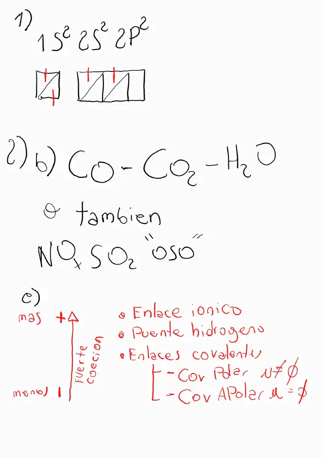
Tu hoja, pág. 1 del PDF «U1 y U2»
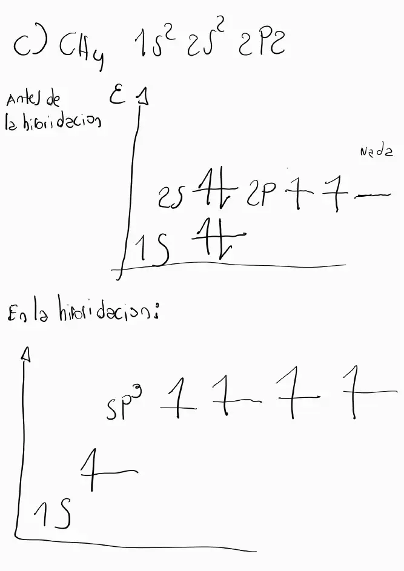
Tu hoja, pág. 12 del PDF «U1 y U2»
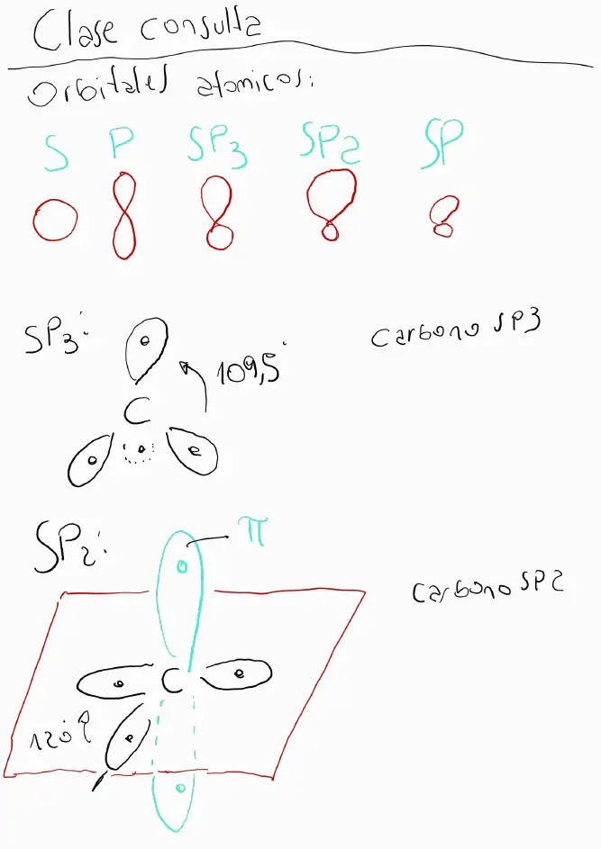
Tu hoja, pág. 4 del PDF «U1 y U2»
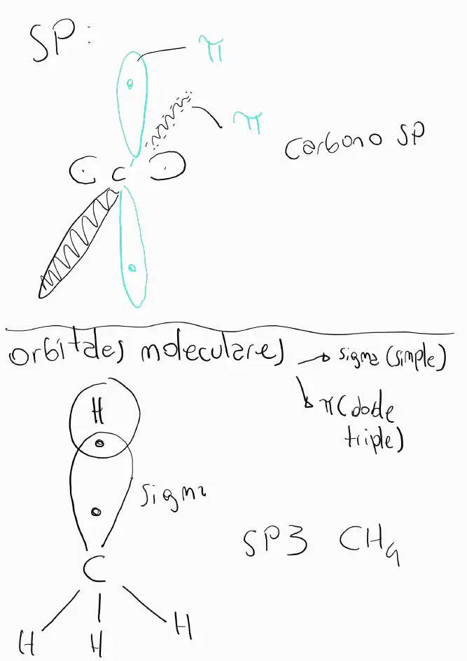
Tu hoja, pág. 5 del PDF «U1 y U2»
Pizarrón 2 · El doble enlace: armar el eteno, sumar las flechas, romper el π
Un mismo doble enlace visto tres veces: cómo se construye con orbitales (σ primero, π después), qué significan las flechas rojas de tu hoja y por qué el cis es polar y el trans no, y por qué la nube π es «por donde pueden entrar».
Punto de vista:
paso 1 / 6
paso 2 / 6
paso 3 / 6
paso 4 / 6
paso 5 / 6
paso 6 / 6
1
Dos carbonos sp²
Cada carbono va a unirse a tres átomos (otro C y dos H): hibrida s + 2p → tres lóbulos sp² a 120°, apoyados en el plano del pizarrón. Los dos carbonos se ponen frente a frente.
Fuente: transcripción U2 §1.3; tu hoja pág. 6 («SP2 … doble enlace») y pág. 16.
2
El p que sobró
A cada carbono le quedó un p puro sin hibridar, perpendicular al plano: un lóbulo hacia arriba, otro hacia abajo. Todavía no hace nada; está «esperando».
Fuente: transcripción U1 §5 «sp2» («queda libre un orbital p»); tu hoja pág. 6.
3
Primero el σ
El primer enlace entre dos átomos es siempre σ: un sp² de cada carbono se solapa de frente sobre la línea C–C. Dos electrones, concentrados entre los núcleos.
Fuente: transcripción U2 §1.3 («el primer enlace entre dos átomos siempre es sigma»).
4
Los cuatro C–H
Los otros dos sp² de cada carbono se solapan de frente con el s de un H: cuatro σ C–H. Ya hay cinco σ y todos están en el plano.
Fuente: transcripción U1 §7; tu hoja pág. 14 (eteno H₂C=CH₂).
5
Después el π: de costado, no de frente
Los dos p, paralelos, se solapan lateralmente. Eso es el enlace π: sus dos electrones forman una nube arriba y abajo del plano, no sobre la línea C–C. La raya doble de Lewis es «σ + π», y son enlaces de naturaleza distinta.
Fuente: transcripción U1 §7 «El enlace pi» y U2 §1.3; tu hoja pág. 16 («orbitales p formando enlace π»).
6
Consecuencia: plano y sin giro
Como el π necesita que los dos p sigan paralelos, los seis átomos quedan en un mismo plano y el enlace no puede rotar: girar un carbono desarmaría el π. Esto es lo que después da isómeros cis y trans (Unidad 3).
Fuente: transcripción U2 §1.3 («no puede haber rotación libre alrededor de un doble enlace»).
paso 1 / 6
paso 2 / 6
paso 3 / 6
paso 4 / 6
paso 5 / 6
paso 6 / 6
1
El esqueleto: dos Cl sobre el doble enlace
Reemplazamos dos H del eteno por dos Cl. Como el doble enlace no gira (paso anterior), hay dos moléculas distintas: los dos Cl del mismo lado (cis) o en lados opuestos (trans). Empezamos por el cis.
Fuente: tu hoja pág. 28; apunte cap. 8 y cap. 18.
2
¿Por qué hay una flecha roja en C–Cl?
Porque los dos átomos del enlace no tiran igual: el Cl es más electronegativo que el C (F > O > Cl ≈ N > Br > I > S ≈ C > H). El par de electrones del enlace se corre hacia el Cl: el Cl queda con un poco más de carga negativa (δ−) y el C con un poco menos (δ+). La flecha es ese corrimiento: cola cruzada (el +) en el C, punta en el Cl. Un enlace con esa flecha es un enlace polar.
Fuente: transcripción U1 §8 «Momento dipolar y electronegatividad»; tu hoja pág. 2 (tabla ΔE y orden F > O > Cl…) y pág. 28.
3
La segunda flecha
El otro C–Cl es idéntico: otra flecha, del C hacia su Cl. Cada enlace polar aporta su propia flecha; la molécula «entera» todavía no se decidió.
Fuente: transcripción U1 §8 (ejemplo CO₂: «los dos vectores de dipolo»).
4
Sumar las flechas: en el cis no se anulan
Las flechas son vectores: se suman como fuerzas. En el cis las dos apuntan hacia el mismo lado (arriba), así que la suma (la flecha cyan) no es cero: la molécula tiene un lado δ− (donde están los Cl) y otro δ+. μ ≠ 0: molécula polar. Esto responde al «μ = ? ¿por qué?» de tu hoja: μ es la resultante de las flechas.
En el trans cada C–Cl sigue siendo polar (las flechas rojas son iguales), pero ahora una apunta arriba-izquierda y la otra abajo-derecha.
Fuente: tu hoja pág. 28 (trans).
6
En el trans se anulan
Dos flechas del mismo tamaño y sentido opuesto suman cero: es la soga tirada por dos personas de igual fuerza (el ejemplo del CO₂). Enlaces polares, molécula apolar, μ = 0. Moraleja de toda la Unidad 2: «enlace polar» no implica «molécula polar»; hay que sumar las flechas mirando la geometría.
Fuente: transcripción U1 §8 «Ejemplo: CO₂» y U2 §5.4 (ej. 14); tu hoja pág. 28 («μ = 0, sumatoria + + (−) = 0, trans»).
paso 1 / 5
paso 2 / 5
paso 3 / 5
paso 4 / 5
paso 5 / 5
1
Dónde está el π
El σ C–C está sobre la línea entre los núcleos, apretado y estable. El π está afuera: una nube arriba y otra abajo del plano, más difusa. Eso lo hace más débil… y más visible para quien pase cerca.
Fuente: transcripción U2 §1.3 («Por qué el enlace pi es más inestable que el sigma») y §4.2.
2
«Por acá pueden entrar»
La ondita cyan de tu hoja señala justo eso: la nube π es por donde la molécula puede ser atacada. Una especie con carga positiva (un electrófilo, por ejemplo H⁺) se siente atraída por esa nube de electrones expuesta. Por eso alquenos y alquinos son más reactivos que los alcanos, que sólo tienen σ.
Fuente: transcripción U2 §4.2 (ej. 4: reactividad etano/eteno/etino) y §1.3; tu hoja pág. 28 («por acá pueden entrar»).
3
«Hay que romper el enlace π: le doy energía»
Exacto: el π es el enlace más débil de la molécula, pero romperlo igual cuesta energía. Es lo primero que se rompe en una reacción de adición (Unidad 6) y también lo que hay que romper para girar el doble enlace.
Fuente: transcripción U2 §1.3; tu hoja pág. 28 («Hey, que romper enlace π, le doy energía!!!»).
4
Si se rompe, gira
Con el π roto (por calor o luz), los dos carbonos pueden rotar alrededor del σ que queda; al volver a formarse el π, la molécula puede haber quedado cis o trans. Sin esa energía, cis y trans son moléculas distintas y estables: por eso se pueden separar y tienen propiedades distintas.
Fuente: transcripción U2 §1.3; apunte cap. 18. La mención de calor/luz es [ADICIÓN PEDAGÓGICA].
5
Una corrección a tu hoja
En el trans también «pueden entrar»: la nube π está arriba y abajo del plano en los dos isómeros. Lo que cambia entre cis y trans es (1) el dipolo total (paso anterior) y (2) que en el cis los dos Cl están del mismo lado y se «estorban». No es que el trans esté tapado.
[ADICIÓN PEDAGÓGICA] corrige la nota «no pueden entrar porque están los cloros» de tu hoja pág. 28; se apoya en U2 §1.3 (la nube π está sobre y bajo el plano).
⟶ Tus hojas originales (pág. 6, pág. 16, pág. 28) — sp², enlace π, cis/trans con las flechas y «por acá pueden entrar»
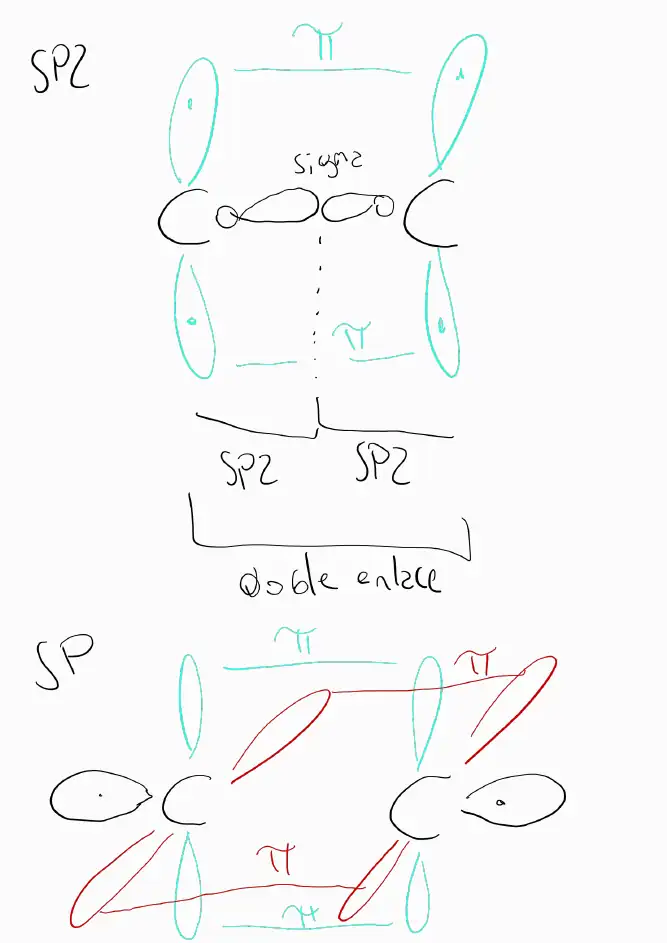
Tu hoja, pág. 6 del PDF «U1 y U2»
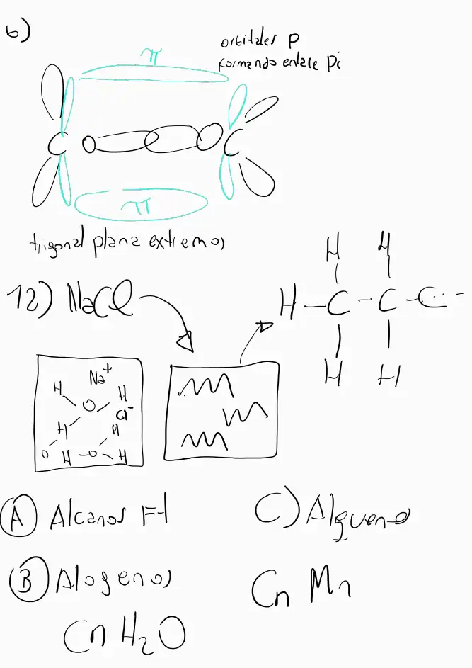
Tu hoja, pág. 16 del PDF «U1 y U2»
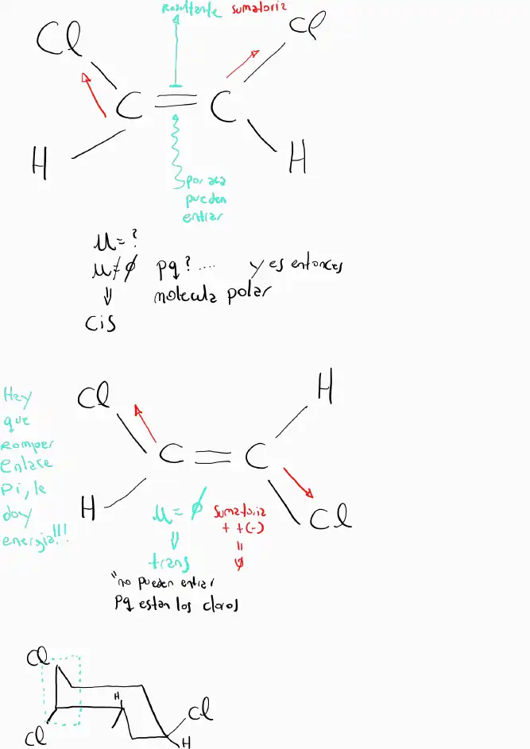
Tu hoja, pág. 28 del PDF «U1 y U2»
Pizarrón 3 · Los electrones se mueven: qué dice una flecha curva
Primero las reglas para leer una flecha curva (de dónde sale, adónde llega, cómo controlar que esté bien), y después dos moléculas armadas paso a paso donde el movimiento de electrones explica la acidez: el acetato (la carga se reparte entre dos O) y el fenóxido (la carga entra al anillo).
Punto de vista:
paso 1 / 5
paso 2 / 5
paso 3 / 5
paso 4 / 5
paso 5 / 5
1
Qué es la flecha curva
No es «movimiento de la molécula» ni una fuerza: es la convención para decir «este par de electrones se muda». Sale de donde hay electrones (un par libre, un enlace π) y llega adonde hacen falta (un átomo con carga +, o entre dos átomos para formar un enlace nuevo).
Fuente: transcripción U2 §1.8 («las flechas curvas… representan el movimiento de esos electrones») y §9.2–9.4.
2
Ejemplo 1: un par libre toma un H⁺
El O⁻ tiene pares libres; el H⁺ no tiene electrones. La flecha sale del par y va al H⁺: se forma el enlace O–H. La carga − del O desaparece porque ese par ahora está compartido. Esto es exactamente «ser base»: ceder un par.
Fuente: transcripción U2 §1.1 («esos electrones libres pueden tomar un protón formando un nuevo enlace»).
3
Ejemplo 2: un enlace π se muda
Un π también puede moverse: la flecha sale del doble enlace y va hacia un átomo que necesita electrones (una carga +). El doble enlace desaparece de donde estaba; el par queda en el nuevo lugar. Un C que «pierde» el par queda con +; el que lo «recibe» completa sus 4.
Fuente: transcripción U2 §9.3 (ej. 8) y §9.4 casos A–E.
4
El control: cada carbono suma 4
Después de mover una flecha, contá: enlaces + carga de cada carbono tiene que dar 4. Es el método de verificación de la clase práctica; si no da, la flecha salió de otro lado o llegó a otro lado.
Fuente: transcripción U2 §9.3 («Método de verificación»).
5
Resonancia no es equilibrio
Cuando dos dibujos se conectan con una flecha curva y ⟷, no hay dos moléculas turnándose: los núcleos no se mueven, sólo cambia dónde dibujamos los electrones, porque un solo dibujo no alcanza. La molécula real es el promedio («híbrido»), y siempre es más estable que cualquiera de los dibujos.
Fuente: transcripción U2 §1.8 («esto no significa que existan dos moléculas distintas alternándose»); apunte cap. 14.
paso 1 / 6
paso 2 / 6
paso 3 / 6
paso 4 / 6
paso 5 / 6
paso 6 / 6
1
Ácido acético
CH₃–COOH: un carbono con un O por doble enlace y un O–H. Pregunta de la clase: ¿por qué es ácido, es decir, por qué suelta ese H con facilidad?
Fuente: transcripción U2 §1.8 «Acidez del ácido acético».
2
Se va el H⁺, el par se queda
El H se va sin electrones (como H⁺): el par del enlace O–H queda en el O. La flecha lo dice: sale del enlace O–H y llega al O. Ese O queda con un par de más → carga −.
Fuente: transcripción U2 §1.8 («el oxígeno que queda con carga negativa tiene pares de electrones libres»).
3
Acetato, forma I: carga fija en un O
Si la carga se quedara ahí, fija en un solo átomo, sería una situación inestable. Pero al lado hay un C=O…
Fuente: transcripción U2 §1.8.
4
Dos flechas al mismo tiempo
El par libre del O⁻ baja a formar un nuevo π con el C (flecha 1). Ese C no puede tener cinco enlaces, así que el π viejo se corre hacia el otro O y se convierte en par libre (flecha 2). Las dos flechas son un solo movimiento.
Fuente: transcripción U2 §1.8 («el doble enlace se desplaza… y el par libre del segundo oxígeno pasa a formar el nuevo doble enlace»).
5
Forma II: la misma molécula, al revés
Resultado: una estructura idéntica a la I pero con los papeles invertidos. Ninguna de las dos es «la verdadera»: la molécula real es una sola, intermedia entre ambas.
Fuente: transcripción U2 §1.8 y §10.1 (ej. 26).
6
Por qué eso lo hace ácido
La carga − nunca queda fija: está repartida entre los dos O. Una carga repartida es más estable que una concentrada, y eso baja el costo de soltar el H⁺. En un alcohol (R–OH) no hay segundo O ni C=O: el alcóxido tendría la carga fija → el alcohol casi no es ácido.
Fuente: transcripción U2 §1.8 y §10.1; tu hoja pág. 25 («Ka<1 … ácido → ↑Ka tiende reactivos»).
paso 1 / 6
paso 2 / 6
paso 3 / 6
paso 4 / 6
paso 5 / 6
paso 6 / 6
1
Fenol
Un anillo bencénico con un –OH. Mismo grupo funcional que un alcohol, pero el fenol es mucho más ácido (pKa menor). ¿Qué tiene el anillo que no tiene una cadena?
Fuente: transcripción U2 §11.3 (ej. 30); guía U2 ej. 30.
2
Pierde el H⁺: fenóxido
Como en el acético, el H se va sin electrones y el O queda con un par extra: O⁻. Hasta acá, igual que en un alcohol.
Fuente: transcripción U2 §11.3; tu hoja pág. 25 (benceno–O⁻ + H⁺).
3
El par entra al anillo
Ahora la diferencia: el O⁻ está pegado a un C que forma parte de un sistema de dobles enlaces conjugados. El par libre del O baja y forma un C=O (flecha 1); el π del anillo que estaba en ese C se corre al carbono vecino (flecha 2), que queda con la carga −.
Fuente: transcripción U2 §11.3 («la carga negativa se puede deslocalizar hacia distintas posiciones del anillo»); U2 §9.5 (el anillo «puede absorber carga»).
4
Forma II: la carga está en el anillo (orto)
El O ya no tiene la carga: la tiene un carbono del anillo. Es la misma molécula dibujada de otra manera (⟷). Controlá: cada C sigue sumando 4.
Fuente: transcripción U2 §9.3 (control) y §11.3.
5
Y sigue: para, y el otro orto
La carga puede seguir corriéndose por los dobles enlaces del anillo: a la posición para y luego al otro orto. En total, cuatro dibujos (O⁻ y tres carbonos). Este es el ejercicio de la guía que pide «las estructuras de resonancia del ion fenóxido».
Fuente: transcripción U2 §11.3 («se pueden reconfigurar de varias formas distintas»); guía U2 ej. 30.
6
Por eso el fenol es más ácido que un alcohol
El anión de un alcohol tiene la carga fija en un O. El fenóxido la reparte entre cuatro átomos: es mucho más estable, y una base conjugada estable significa un ácido que suelta el H⁺ con más facilidad. Regla que atraviesa toda la U2: cuanto más deslocalizada la carga de la base conjugada, más fuerte el ácido.
Fuente: transcripción U2 §11.3 y §10.1; apunte cap. 15 y cap. 40.
⟶ Tus hojas originales (pág. 3, pág. 25) — «resonancia de los electrones en la nube π», fenol/fenóxido con Ka
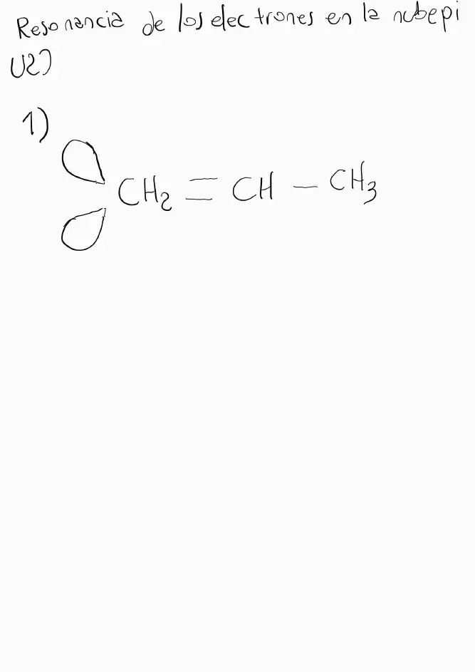
Tu hoja, pág. 3 del PDF «U1 y U2»
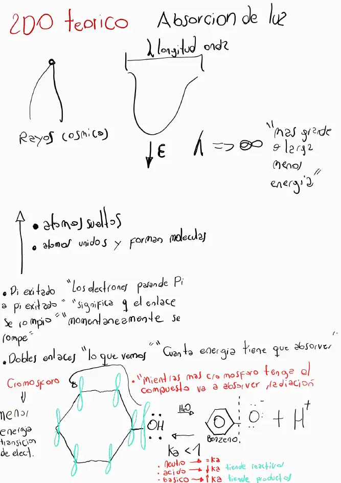
Tu hoja, pág. 25 del PDF «U1 y U2»
Pizarrón 4 · El triple enlace: armar el etino, el H ácido y el par libre del N
El etino construido con sus dos π perpendiculares; después, la misma molécula mirada desde la acidez (por qué ese H sí se va), y el mismo tipo de hibridación en el nitrógeno, donde el orbital que sobra guarda un par libre que explica la basicidad.
Punto de vista:
paso 1 / 6
paso 2 / 6
paso 3 / 6
paso 4 / 6
paso 5 / 6
paso 6 / 6
1
Dos carbonos sp
Cada C se une a dos átomos (el otro C y un H): hibrida s + 1 p → dos lóbulos sp opuestos, a 180°. Los cuatro átomos van a quedar en línea.
Fuente: transcripción U1 §5 «sp» y U2 §1.4; tu hoja pág. 5 («carbono SP»).
2
Sobran dos p, perpendiculares entre sí
Como sólo se usó un p para hibridar, quedan dos p puros: uno vertical y otro que entra y sale del pizarrón. Están a 90° uno del otro.
Fuente: transcripción U1 §7 («uno en el plano del pizarrón… y otro que sale y entra del plano»); tu hoja pág. 6 («SP», dos π).
3
El σ y los dos C–H
Como siempre, primero el σ: sp con sp, de frente. Los otros dos sp toman un H cada uno. Todo sobre una misma línea.
Fuente: transcripción U2 §1.4.
4
π₁: el par vertical
Los dos p verticales se solapan lateralmente: primer π, con su nube arriba y abajo.
Fuente: transcripción U1 §7 «El enlace pi y los enlaces dobles y triples».
5
π₂: el par «que sale del pizarrón»
Los otros dos p también se solapan lateralmente: segundo π, con su nube adelante y atrás. Triple = σ + π₁ + π₂. Las dos nubes π rodean el eje como un cilindro.
Fuente: transcripción U1 §7; U2 §4.2 (etino: «dos nubes electrónicas pi independientes»).
6
Lineal y corto
Geometría lineal (180°) y el enlace C–C más corto de los tres (1,24 Å), porque los sp tienen 50 % de s. Y con dos nubes π expuestas, el etino es el más reactivo de la serie etano–eteno–etino.
CONFLICTO Fernández Cirelli (cap. 1, p. 27) da C–C 1,54 Å, C=C 1,33 Å y C≡C 1,20 Å; la guía y la clase, 1,53 / 1,32 / 1,24 Å. Son valores de fuentes distintas; la tendencia (triple < doble < simple) es la misma y es lo que se pregunta.
Fuente: transcripción U2 §4.1–4.2; tu hoja pág. 13 (1,24 Å) y pág. 14 («etino»). · Fernández Cirelli, cap. 1, p. 27.
paso 1 / 6
paso 2 / 6
paso 3 / 6
paso 4 / 6
paso 5 / 6
paso 6 / 6
1
El H del etino
H–C≡C–H. Los H de un alcano no se van nunca; los del etino, con una base fuerte, sí: se dice que el H acetilénico es ácido. La diferencia tiene que estar en el carbono que lo sostiene.
Fuente: guía U2/U5 (ej. 18 de U5: «la acidez de un H acetilénico»); apunte cap. 15 y cap. 40.
2
Dónde vive ese par
El enlace C–H está en un orbital sp del carbono: 50 % s. Un orbital con mucho carácter s está corto y pegado al núcleo; los electrones que lo ocupan «sienten» fuerte la carga positiva del núcleo.
Fuente: transcripción U1 §5 («50 % de carácter s… los orbitales híbridos más cortos»); tu hoja pág. 8.
3
Se va el H⁺, el par se queda
Una base se lleva el H sin electrones (H⁺). El par del enlace se queda en el carbono: la flecha sale del enlace C–H y apunta al C.
Fuente: tu hoja pág. 8 («H–C≡C:⁻ } H⁺»); regla de las flechas (pizarrón 3).
4
El anión acetiluro
Queda H–C≡C:⁻, con el par y la carga − en el orbital sp. Como ese orbital está cerca del núcleo, la carga negativa está bien sostenida: el anión es relativamente estable, y por eso el H pudo salir.
Fuente: tu hoja pág. 8 y pág. 13 («CH≡C:⁻ 3 elec. libres»); apunte cap. 40. La explicación por carácter s es [ADICIÓN PEDAGÓGICA] (apoyada en U1 §5).
5
Comparar con el etano
En un C sp³ (25 % s) el mismo par quedaría en un orbital largo, lejos del núcleo: un anión muy inestable. Por eso el etano no cede H⁺: no es ácido. El eteno (sp², 33 %) está en el medio.
Acidez del H sobre carbono: sp > sp² > sp³, porque el par que queda está más cerca del núcleo cuanto más s tiene el orbital. Es el mismo criterio de toda la U2: un ácido es fuerte si su base conjugada es estable.
Fuente: apunte cap. 15 y 40; guía U5 ej. 18.
paso 1 / 6
paso 2 / 6
paso 3 / 6
paso 4 / 6
paso 5 / 6
paso 6 / 6
1
HCN: un N con triple enlace
El N del cianuro de hidrógeno está unido a un solo átomo con triple enlace: como el C del etino, es sp. Pero el N tiene cinco electrones de valencia, uno más que el carbono.
Fuente: tu hoja pág. 8 («H–C≡N: sp»); apunte cap. 6 (N y O con pares libres).
2
Dónde va el electrón de más
De sus dos sp, uno forma el σ con el C; el otro no enlaza a nadie: ahí queda el par libre, apuntando hacia afuera, en la línea de la molécula. Los dos p forman los dos π.
Fuente: apunte cap. 6 «Geometría molecular y pares libres»; tu hoja pág. 8.
3
El par «sale a buscar» un H⁺
Un par libre disponible es exactamente lo que define una base en orgánica: puede ceder ese par para formar un enlace con un H⁺. La flecha sale del par y llega al H⁺ (el H⁺ no tiene electrones para dar).
Fuente: transcripción U2 §1.1 («un compuesto es más básico cuanto mejor pueda ceder un par de electrones»).
4
H₂C=NH: el par en un sp²
Con doble enlace el N es sp²: dos sp² para los σ (C y H), el tercer sp² para el par libre, y el p para el π. El par queda en el plano, a 120°, apuntando hacia afuera.
Fuente: tu hoja pág. 8 («C=N: sp²») y pág. 9 (H₂C=N⁺H₂); transcripción U2 §1.5 (hibridación del N).
5
Otra vez: disponible → base
Ese par en el sp² también está libre para tomar un H⁺; el N queda con carga + (eso es lo que dibujaste en la pág. 9: H₂C=N⁺H₂). La flecha, de nuevo, sale del par.
Fuente: transcripción U2 §1.1; tu hoja pág. 8–9.
6
Cuándo un par libre NO sirve de base
Si el par está en un p puro que forma parte de un sistema aromático (el N del pirrol), está «ocupado» en la resonancia del anillo y no lo cede: esa amina no es básica. Regla para la U5: par en híbrido → básico; par en p aromático → no.
Fuente: transcripción U2 §1.1 («si ese par… está participando en resonancia… prefiere quedarse») y §11.6 (ej. 34); apunte cap. 39.
⟶ Tus hojas originales (pág. 5, pág. 8, pág. 13, pág. 14) — carbono sp, H–C≡C:⁻ } H⁺, H–C≡N:, C=N: con H⁺, distancias de enlace
Tu hoja, pág. 5 del PDF «U1 y U2»
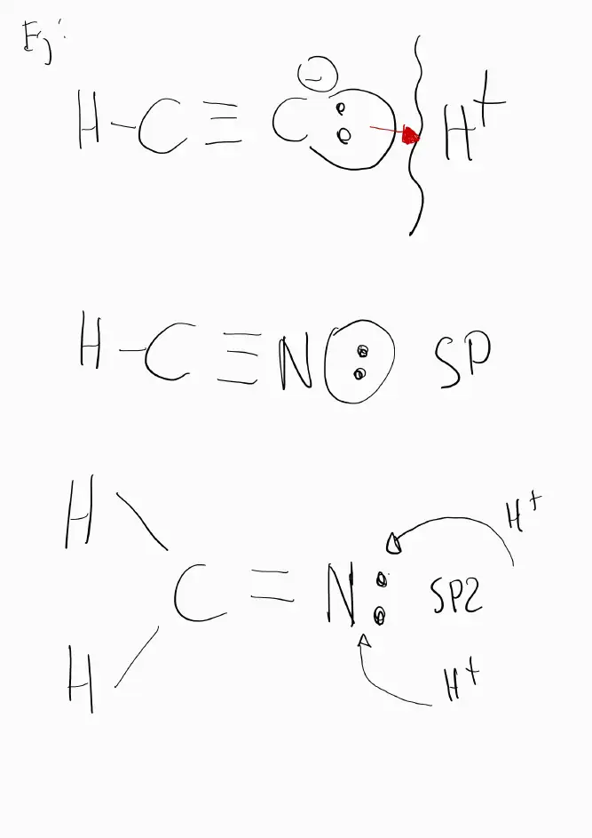
Tu hoja, pág. 8 del PDF «U1 y U2»
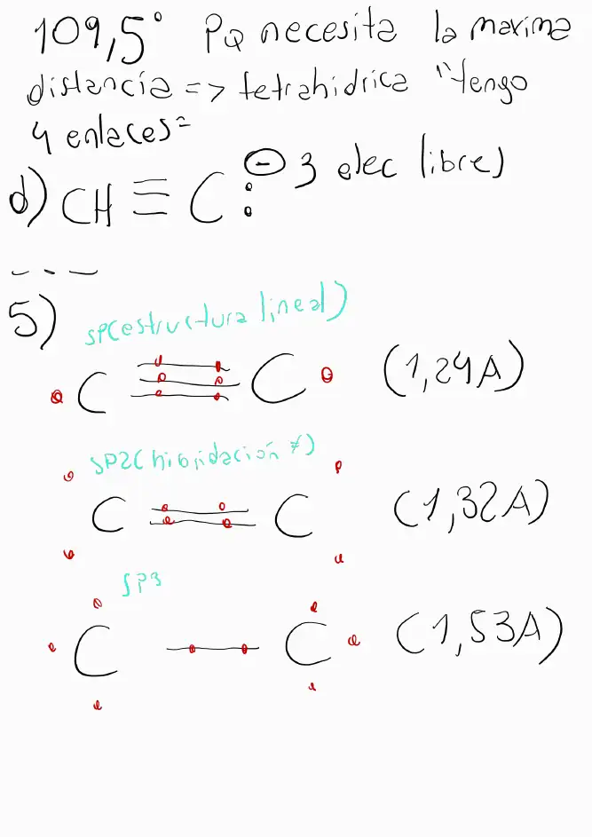
Tu hoja, pág. 13 del PDF «U1 y U2»
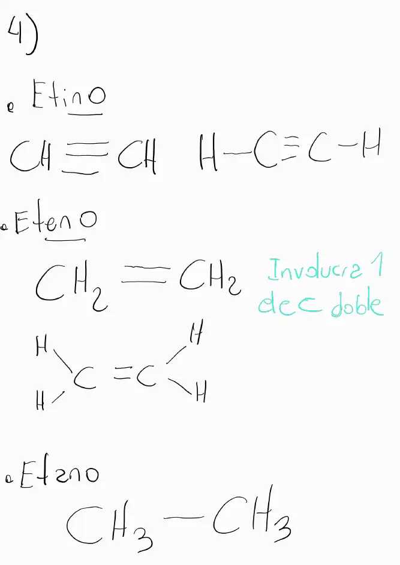
Tu hoja, pág. 14 del PDF «U1 y U2»
Conexión con lo que sigue
Estos cuatro pizarrones son el «taller» de los capítulos 3 a 8 y 13 a 15: si después de armar el metano, el eteno y el etino leés esos capítulos, cada frase tiene ya una imagen atrás. Los mismos movimientos de electrones vuelven en las Unidades 5 y 6: cada mecanismo es una secuencia de flechas curvas como las del pizarrón 3.
Parte 2 · Taller visual interactivo de hibridación
Título anterior (hasta la v86): Parte 2 · Laboratorio interactivo de hibridación. Se cambió para no confundirlo con los trabajos de laboratorio (TP 1 y TP 2).
Los capítulos de arriba explican la unidad de corrido. Esta segunda parte es el taller: los mismos temas (orbitales, sp³/sp²/sp, σ y π, consecuencias) con visores 3D, láminas del pizarrón, tarjetas y ejercicios de decisión. Se organiza en cuatro módulos (A a D). Si venís de los capítulos, empezá por el módulo C (los tres casos) y el visor 3D.
panel de estudio
Antes de empezar
📘 Qué es esta parte. Es el taller visual de los capítulos 5 a 15: los mismos temas en 3D, con comparaciones y casos. La explicación completa está en los capítulos; cada módulo te dice cuál, y cada capítulo termina con los módulos que le corresponden. (texto anterior: 📘 Qué es esta parte. Es el laboratorio visual de los capítulos 5 a 15: los mismos temas en 3D, con comparaciones y casos. La explicación completa está en los capítulos; cada módulo te dice cuál, y cada capítulo termina con los módulos que le corresponden.)
No hace falta recorrer cada mapa y cada anexo antes de empezar. Si es tu primera lectura, entrá por Fundamentos y usá los mapas como orientación cuando necesites ubicar un concepto.
Podés empezar con la idea general y los cuadros rápidos, y luego bajar al desarrollo completo sin perder el material fuente.
🧭
Ruta ordenada
El recorrido ahora sigue una lógica: carbono → hibridación → enlaces → ejemplos → consecuencias → conexiones → apéndices.
🧩
Conexiones visibles
Se agregan mapas conceptuales, tarjetas-resumen, barras comparativas y una navegación más clara para no sentirlo como un “libro viejo”.
sp³
25% caracter s · tetraédrica · 4 híbridos · 0 p puros
sp²
33,3% caracter s · trigonal plana · 3 híbridos · 1 p puro
sp
50% caracter s · lineal · 2 híbridos · 2 p puros
Si es tu primera vez
Empezá en “Desde cero”.
Seguí a orbitales y enlaces σ/π.
Usá el visor 3D cuando aparezca una geometría.
Abrí “Profundizar” sólo cuando necesites más detalle.
Si estás repasando
Usá el índice para saltar de tema.
Compará sp³ / sp² / sp en el visor.
Terminá en “Repaso rápido”.
Activá Modo auditoría sólo si querés revisar fuentes o trazabilidad.
Método obligatorio de esta guía: cada concepto tiene que responder “¿por qué?”
No alcanza con memorizar sp³ = 109,5° o sp² = 120°. La lectura se organiza para que cada idea pueda seguirse causalmente: qué ocurre, por qué ocurre, cómo se deduce y qué consecuencia química produce.
1 · ¿Qué es?Definición y objeto del concepto.
2 · ¿Por qué aparece?Causa física/química o necesidad del modelo.
3 · ¿Cómo se deduce?Orbitales, geometría, solapamiento o estabilidad que lo justifican.
4 · ¿Qué provoca?Consecuencia sobre estructura, enlace, acidez, polaridad o reactividad.
Enfoque de la cátedra · entender “por qué” y “cómo” ocurren los fenómenos
El profesor plantea desde el comienzo que el objetivo no es memorizar nombres aislados, sino usar la química orgánica para explicar fenómenos observables.
Cambio de colorUna reacción puede generar especies nuevas que absorben la luz de otra manera.
OlorLa estructura molecular, volatilidad e interacción con receptores ayudan a explicar por qué algunas sustancias tienen olor.
Agua + aceiteLa polaridad y las fuerzas intermoleculares explican por qué dos líquidos pueden formar fases separadas.
Punto de ebulliciónLa intensidad de las interacciones intermoleculares ayuda a explicar por qué una sustancia hierve antes que otra.
Importante: esta versión distingue entre contenido realmente confirmado por el corpus y estructura inferida para continuar hasta Unidad 5. Eso evita inventar un programa “oficial” que no apareció de forma visible en los archivos montados.
Módulo A · Fundamentos de la hibridación
Va desde la historia del carbono hasta la comparación base entre sp³, sp² y sp. Este módulo sirve para construir la estructura mental mínima antes de pasar a enlaces y casos específicos.
Base atómicaPromociónDefinición de hibridaciónComparación rápida
A1 · Desde cero: cómo llegamos de los orbitales del carbono a sp³, sp² y spFundamentos
Historia completa del carbono: configuración, promoción e hibridación.
Por qué el carbono parece tener un “problema” y cómo lo resuelve.
Nacimiento de sp³, sp² y sp desde el principio.
¿Por qué importa el carbono?
Porque los compuestos orgánicos se construyen en gran medida sobre esqueletos de carbono y su capacidad de establecer múltiples enlaces covalentes.
Pero orgánica no es “sólo carbono”
En la cátedra también aparecen N, P, S y otras especies relevantes para sistemas biológicos y químicos.
Lewis va a ser el idioma de trabajo
Una línea representa un par electrónico compartido; los pares no compartidos también deben poder identificarse.
Estructura electrónica manda
La capacidad del carbono para enlazarse y adoptar distintas geometrías se relaciona directamente con su configuración electrónica.
Antes de hibridar: leer Lewis
CH₄: cuatro líneas C–H = cuatro pares electrónicos compartidos.
NH₃: tres enlaces N–H + un par no compartido sobre N.
La cátedra usa esta representación de forma continua en ejercicios y explicaciones.
Antes de mezclar orbitales: reconocer sus formas
s: representación aproximadamente esférica.
p: representación bilobular.
En un diagrama de energía, 1s queda por debajo de 2s y éstos por debajo de los 2p.
Corrección de clase · número atómico del carbono
El profesor corrigió lo dicho en el bloque anterior: 12 es el número másico, mientras que el número atómico del carbono es Z = 6.
Por lo tanto, para el carbono se trabaja con 1s² 2s² 2p². La referencia anterior a continuar hasta 3s provenía de esa confusión y debe descartarse.
Carbono · Z = 6
1s² 2s² 2p²
Es el caso que la guía desarrolla en detalle para llegar a sp³, sp² y sp.
Nitrógeno · Z = 7
1s² 2s² 2p³
El profesor propone analizar su hibridación y la presencia de un par electrónico no compartido.
Oxígeno · Z = 8
1s² 2s² 2p⁴
También queda planteado como ejercicio de razonamiento para comparar con carbono y nitrógeno.
Bloque conectado: configuración → promoción → por qué 2p se distribuye así
Acá va todo junto para que no parezca “otro tema”. Primero mirás cómo queda el carbono; después, sin salir del mismo bloque, leés por qué el llenado de 2s y 2p se dibuja exactamente de esa manera.
1 · Estado fundamental2 · Promoción electrónica3 · Pauli + Hund + energía4 · Nace la necesidad de hibridar
Cómo leer este bloque: el tablero visual y la explicación científica forman una sola unidad. No son dos temas separados: la distribución de 2s / 2p es el punto de partida que después obliga a pensar en sp³, sp² y sp.
Lectura clara · carbono en estado fundamental
Nivel 1: 1s² → completo, no participa directamente en los enlaces de orgánica.
Nivel 2 (valencia): 2s² 2p² → acá está el punto de partida del problema.
2s
↑↓
2pₓ
↑
2pᵧ
↑
2p_z
vacío
¿Por qué es un problema? Porque así el carbono sólo tiene 2 electrones desapareados listos para formar enlace.
Lectura clara · después de la promoción electrónica
Uno de los electrones del 2s se promueve a un orbital p vacío. El resultado es 2s¹ 2p³.
2s
↑
2pₓ
↑
2pᵧ
↑
2p_z
↑
¿Qué resuelve? Ahora el carbono tiene 4 electrones desapareados. ¿Qué no resuelve todavía? Que los orbitales siguen siendo distintos; por eso hace falta la hibridación.
Acá está el “por qué” que faltaba: no se reparte al azar. Intervienen energía orbital, principio de Pauli y regla de Hund.
1
¿Por qué se llena primero 2s?
En el carbono, 2s tiene menor energía que 2p. El orbital 2s penetra más hacia el núcleo y queda menos apantallado que 2p; por eso siente una atracción nuclear efectiva mayor. El sistema ocupa primero el estado de menor energía.
2
¿Por qué en 2s entran dos electrones?
El subnivel s tiene un solo orbital. Ese orbital puede alojar como máximo dos electrones; si hay dos, deben tener espines opuestos por el principio de exclusión de Pauli. Por eso se dibuja ↑↓.
3
¿Por qué los dos electrones 2p no se juntan en 2pₓ?
Porque 2pₓ, 2pᵧ y 2p_z tienen la misma energía en el átomo aislado. La regla de Hund dice que, mientras haya orbitales degenerados vacíos, es energéticamente más favorable ocuparlos uno por uno antes de aparear electrones.
✓ Distribución de menor energía para C: 2p²
2p
↑
↑
vacío
Los dos electrones ocupan orbitales p distintos y se representan con espines paralelos. Así se maximiza el número de electrones desapareados.
✗ Alternativa más energética
2p
↑↓
vacío
vacío
Aparear los dos electrones en el mismo orbital p obliga a compartir más la misma región espacial y aumenta la energía de repulsión electrónica. Por eso no es el estado fundamental del carbono.
Entonces, ¿por qué queda p_z vacío?
Porque el carbono tiene solamente dos electrones para colocar en tres orbitales 2p degenerados. Hund obliga a repartirlos en dos orbitales distintos antes de formar una pareja. Uno de los tres queda vacío. Que lo llamemos p_z es sólo una elección de ejes: también podríamos dibujar pₓ y p_z ocupados y dejar pᵧ vacío. Ninguno de los tres es “peor” ni tiene más energía.
La idea corta: primero 2s porque está más bajo en energía; después, dentro de 2p, “una flecha por casilla antes de juntar dos” porque esa distribución tiene menor energía.
¿Por qué aparece la necesidad de hibridar al carbono?¿por qué?
Si intentáramos describir el carbono enlazante usando únicamente los orbitales 2s y 2p puros, la geometría y la equivalencia de enlaces observadas —por ejemplo en CH₄— no quedarían bien explicadas. El modelo de hibridación mezcla matemáticamente orbitales de valencia para construir orbitales equivalentes con direcciones compatibles con la estructura observada. La idea no es que el átomo “licúe” físicamente orbitales, sino que usamos una combinación de funciones orbitales que describe mejor la densidad electrónica de enlace.
CausaLos orbitales puros s y p no reproducen por sí solos los cuatro enlaces equivalentes del metano.
Mecanismo1 orbital 2s + 3 orbitales 2p se combinan en cuatro híbridos sp³ equivalentes.
ConsecuenciaSe obtiene una descripción compatible con enlaces equivalentes y una disposición tetraédrica.
Profundizar · desarrollo completo desde configuración electrónica hasta hibridación
SOURCE-LOCKED · texto completo del bloque fuente · sin resumen
Este capítulo conserva el desarrollo completo aportado en el archivo fuente: estado fundamental, promoción, segundo problema e hibridación.
AHORA EN REALCIONA LOS ORBITALES DEL CARBONO.. COMO LLEGAMOS A TENER SP3 SP2 Y SP1.... TIP A APRTIR DESDE EL PRINCIPIO.. DESDE 0 PQ NO SE ENTIENDE
Para entender cómo llegamos a los orbitales sp3, sp2 y sp desde cero, hay que seguir la historia del átomo de carbono paso a paso. Piensa en esto como una secuencia donde el carbono tiene un "problema" estructural y la naturaleza lo resuelve mediante un truco matemático llamado hibridación.
Aquí tienes el proceso completo, desde el principio absoluto:
PASO 1: El punto de partida (El Estado Fundamental)
Todo empieza con la cantidad de electrones que tiene el átomo de carbono. El carbono tiene un número atómico Z=6, lo que significa que tiene 6 electrones en total.
Si acomodamos esos electrones según las reglas básicas de la química (configuración electrónica), quedan así:
Capa interna (Nivel 1): 1s2 (2 electrones. Estos no participan en los enlaces).
Capa externa o de valencia (Nivel 2): 2s2 2p2 (4 electrones. Estos son los que importan).
Si miramos de cerca esa capa externa (Nivel 2), los 4 electrones están distribuidos en los orbitales disponibles:
El orbital 2s tiene 2 electrones (está lleno).
Los orbitales 2p son tres (px, py, pz). Los 2 electrones restantes se acomodan separados: uno en el px y otro en el py. El pz queda completamente vacío.
EL PROBLEMA: Para que un átomo forme un enlace, necesita tener electrones "desapareados" (solos en su orbital) listos para compartir con otro átomo. Así como está en su estado fundamental, el carbono solo tiene 2 electrones desapareados (los de los orbitales px y py). Esto significaría que el carbono solo podría formar 2 enlaces. Sin embargo, sabemos empíricamente que el carbono siempre forma 4 enlaces (es tetravalente).
PASO 2: La Promoción (El Estado Excitado)
Para solucionar el problema de tener solo 2 electrones disponibles, el carbono absorbe una pequeña cantidad de energía.
Con esta energía, toma uno de los dos electrones que estaban "apareados" (juntos) en el orbital 2s y lo empuja (lo "promueve") hacia el orbital 2pz que estaba vacío.
Ahora el panorama en la capa de valencia cambia:
Orbital 2s: 1 electrón.
Orbital 2pₓ: 1 electrón.
Orbital 2pᵧ: 1 electrón.
Orbital 2p_z: 1 electrón.
¡Éxito parcial! Ahora el carbono tiene 4 electrones desapareados, listos para formar 4 enlaces.
EL SEGUNDO PROBLEMA: Aunque hay 4 electrones listos, están alojados en orbitales de formas y energías diferentes. El orbital s es una esfera (menor energía, más cerca del núcleo), y los tres orbitales p son como globos alargados (mayor energía).
Si el carbono formara enlaces usando estos orbitales así como están, formaría 3 enlaces de un tipo (con los orbitales p) y 1 enlace de otro tipo (con el orbital s). Pero la realidad experimental (por ejemplo, en el metano, CH4) demuestra que los 4 enlaces del carbono son exactamente idénticos en longitud, fuerza y ángulo.
¿Cómo logramos que un orbital s y tres orbitales p sean todos iguales? Aquí entra la hibridación.
PASO 3: La Hibridación (La "Licuadora" Cuántica)
Para que los enlaces sean idénticos, la mecánica cuántica nos dice que los orbitales atómicos puros (s y p) no se usan tal cual están. En lugar de eso, se "mezclan" matemáticamente para formar nuevos orbitales llamados orbitales híbridos.
Piensa en los orbitales como pintura. El orbital s es pintura blanca y los orbitales p son pintura roja. Si mezclas distintas proporciones, obtendrás distintos tonos de rosa. La cantidad de orbitales p que el carbono decida meter en la "licuadora" junto con el orbital s dependerá de a cuántos átomos necesite unirse.
De aquí nacen los tres tipos:
1. Hibridación sp3 (Mezclando todo)
¿Cuándo ocurre? Cuando el carbono necesita unirse a 4 átomos diferentes (formando puros enlaces simples, σ).
La receta: El carbono toma su único orbital s y lo mezcla con sus TRES orbitales p (px,py,pz).
El resultado: Salen de la mezcla 4 orbitales híbridos completamente idénticos. Como se formaron a partir de un s y tres p, se llaman sp3.
¿Qué sobra? Nada. No queda ningún orbital p puro.
Geometría: Como las cargas negativas se repelen, estos 4 orbitales idénticos buscan alejarse lo máximo posible en el espacio 3D, apuntando hacia los vértices de un tetraedro (ángulos de 109,5°).
2. Hibridación sp2 (Mezclando casi todo)
¿Cuándo ocurre? Cuando el carbono necesita unirse a solo 3 átomos diferentes (lo que significa que con uno de ellos deberá hacer un enlace doble).
La receta: El carbono toma su único orbital s y lo mezcla con solo DOS de sus orbitales p (por ejemplo, px y py).
El resultado: Salen de la mezcla 3 orbitales híbridos idénticos, llamados sp2.
¿Qué sobra? ¡Ojo aquí! Queda un orbitalppuro (pz) que no entró en la licuadora. Queda intacto, perpendicular a los demás, y se usará exclusivamente para formar la segunda línea del enlace doble (el enlace π).
Geometría: Los 3 orbitales híbridos se alejan sobre un mismo plano formando un triángulo (trigonal plana, ángulos de 120°). El orbital pz puro queda atravesando ese plano por arriba y por abajo.
3. Hibridación sp (Nota: no se escribe sp1, solo sp)
¿Cuándo ocurre? Cuando el carbono necesita unirse a solo 2 átomos diferentes (como en un enlace triple, o dos enlaces dobles continuos).
La receta: El carbono toma su único orbital s y lo mezcla con solo UN orbital p (por ejemplo, px).
El resultado: Salen de la mezcla 2 orbitales híbridos idénticos, llamados sp.
¿Qué sobra? Quedan dos orbitalesppuros sin mezclar (py y pz). Estos se usarán para formar las dos líneas extra de un enlace triple (dos enlaces π).
Geometría: Para que 2 orbitales híbridos se alejen al máximo, se colocan opuestos en línea recta (lineal, ángulo de 180°). Los dos orbitales p puros que sobraron quedan perpendiculares a esa línea y entre sí.
Resumen del razonamiento "Desde Cero":
El carbono nace con 2 electrones disponibles, pero necesita 4.
Mueve un electrón para tener 4 espacios listos (promoción).
Como esos espacios tienen formas distintas, los mezcla para homogeneizarlos (hibridación).
Según la cantidad de átomos "vecinos" que tenga, elige cuántos orbitales meter en la mezcla, resultando en sp3 (4 vecinos), sp2 (3 vecinos) o sp (2 vecinos). Lo que no mezcla (los p puros) lo usa para hacer enlaces múltiples (π).
El bloque se mantiene completo. Las formulaciones didácticas originales se preservan; su auditoría científica es una etapa separada y no reemplaza el texto fuente.
A2 · Geometría mínima antes de hablar de hibridación
Prerrequisito
No hace falta dominar VSEPR todavía.Para seguir el resto de la guía sólo necesitás esta idea: las regiones de densidad electrónica alrededor de un átomo tienden a disponerse de manera que reduzcan repulsiones entre sí.
Ojo: “geometría electrónica” y “geometría molecular” no siempre son idénticas cuando hay pares libres. Acá usamos esta cápsula sólo como puente para entender las direcciones sp³, sp² y sp.
¿Por qué usamos hibridación si ya existen orbitales s y p?¿por qué?
Porque los orbitales atómicos puros describen bien al átomo aislado, pero para muchas moléculas orgánicas necesitamos un modelo que explique simultáneamente la orientación de los enlaces, sus ángulos y su equivalencia. La hibridación reorganiza la base orbital usada para describir el enlace: no crea electrones ni orbitales nuevos de la nada; transforma combinaciones de orbitales existentes en una representación más útil para la geometría molecular.
Qué se conservaEl número total de orbitales: los orbitales no se crean ni se destruyen por hibridación.
Qué cambiaLa combinación y orientación espacial de las funciones orbitales.
Por qué sirvePermite relacionar estructura 3D, solapamiento y tipos de enlace.
Definición corta: la hibridación es el modelo que mezcla orbitales atómicos de valencia (s y p) para generar
nuevos orbitales híbridos equivalentes, con la orientación espacial adecuada para explicar la geometría y los enlaces observados.
Porque el modelo con orbitales puros muchas veces no explica bien la equivalencia de enlaces ni la geometría real.
Al hibridar, el átomo reorganiza sus orbitales de valencia para obtener orientaciones que maximizan el solapamiento y reducen la energía del sistema.
En carbono se mezclan orbitales de la capa de valencia (2s y 2p). Los electrones internos, como el 1s², no forman parte de la hibridación.
Por eso cuando hablamos de sp³, sp² o sp estamos hablando del nivel de valencia, no del core interno.
La cantidad de orbitales p puros que quedan sin hibridar define cuántos enlaces π pueden formarse:
sp³: quedan 0 orbitales p puros → típicamente enlaces simples.
sp²: queda 1 orbital p puro → puede aparecer 1 enlace π.
sp: quedan 2 orbitales p puros → pueden aparecer 2 enlaces π.
Secuencia visual del híbrido: de dónde sale su forma y cómo cambia de sp³ → sp² → sp
Objetivo de esta franja: todavía no miramos la molécula entera. Primero hay que ver qué forma tiene un orbital híbrido y por qué tiene esa forma. Después, en los ejemplos 3D, se ve cómo se acomodan varios híbridos alrededor del carbono: metano, eteno y etino.
Azul = cuerpo · una fase de la ondaNaranja = cabecita · la fase opuestaBarra gris = cuánto s y cuánto p entra en la mezclaVerde = idea clave / qué recordarVioleta = conexiones conceptuales
Ojo con los colores: azul y naranja marcan la fase de la función de onda. No son cargas eléctricas, y tampoco quieren decir “parte s” y “parte p”: en un híbrido, la s y la p están mezcladas en todo el orbital.
1De dónde sale la forma: se superponen un orbital s y un orbital p
1 orbital 2s+2 orbital 2p→3 se superponen=4 resultado: un híbrido
AdelanteEl orbital s y el lóbulo del p que apunta hacia adelante tienen la misma fase: se refuerzan. Ahí aparece el cuerpo, grande.
AtrásEl s y el otro lóbulo del p tienen fases opuestas: se cancelan en parte. Ahí queda la cabecita, chica.
ResultadoUn orbital asimétrico: casi toda su densidad queda de un solo lado del núcleo. El enlace se forma con el cuerpo, que es el que permite un buen solapamiento.
2Los tres híbridos del carbono, dibujados a la misma escala
Cómo leerlo: la línea punteada vertical marca el núcleo y la barra de abajo dice qué proporción de s y de p entra en la mezcla. Pensalo como una escala: un p puro (0 % s) tiene dos lóbulos iguales; a medida que entra más s, un lado crece y el otro se achica. Por eso, de sp³ → sp² → sp, la cabecita se hace cada vez más chica.
sp³
25 % s · 75 % p
El caso donde el carácter p domina claramente.
Cabecita: la más grande de los tres. La s pesa poco en la mezcla, así que atrás cancela poco.
Es el híbrido que más se parece a un p: tiene 75 % de carácter p.
El cuerpo es el que se solapa para formar 1 enlace σ.
Cada híbrido lleva 1 electrón desapareado, listo para ese enlace σ.
Confusión frecuente: “la cabecita naranja es la parte s y el cuerpo azul es la parte p; por eso en sp la cabecita es más grande”.
Lo correcto: la s y la p están mezcladas en todo el híbrido. La cabecita es sólo el lado donde se cancelan en parte. Cuanto más s tiene la mezcla, más cancela atrás: la cabecita es más grande en sp³, intermedia en sp² y más chica en sp.
Resumen: cada híbrido tiene un cuerpo grande y una cabecita chica de fase opuesta; con el cuerpo se forma el enlace σ. De sp³ a sp aumenta el carácter s y la cabecita se achica.
Lo que falta ver: entre sp³, sp² y sp no cambia sólo la forma de cada híbrido, sino cuántos hay y hacia dónde apuntan. En el metano son 4 (tetraedro, 109,5°); en el eteno, 3 en un plano (120°) con un p puro perpendicular; en el etino, 2 en línea (180°) con dos p puros. Eso se ve en los ejemplos 3D:
Trazabilidad de esta franja.Fuente: Fernández Cirelli, cap. 1, pág. 23 — los híbridos sp³ “son asimétricos respecto del núcleo. Están formados por un lóbulo grande y otro pequeño”; “el enlace se forma con el lóbulo grande”; 25 % s y 75 % p. Pág. 25 — sp²: “un lóbulo voluminoso y otro pequeño”; 33 % s y 66 % p. Fuente: clase (TXT, T57) — el sp³ “se parece al p” por su 75 % de carácter p. Convención de color: azul/ocre = fases opuestas; los signos no son cargas (lámina R2 del proyecto). [ADICIÓN PEDAGÓGICA] El mecanismo suma/resta por fase y la tendencia del tamaño de la cabecita se deducen de la combinación normalizada h = (s + √n·p)/√(1+n), con n = 3, 2, 1: en la parte angular, cabecita/cuerpo = (√(3n) − 1)/(√(3n) + 1) = 0,50 (sp³), 0,42 (sp²), 0,27 (sp). No figura impreso en las fuentes del proyecto. [RECONSTRUCCIÓN] Forma dibujada con la convención de los libros: cuerpo en gota (punta en el núcleo, extremo redondeado) y cabecita del lado opuesto; el largo de la cabecita es proporcional a esas razones (escala 0,55 para legibilidad). No son isosuperficies calculadas. Los óvalos (“orejitas”) quedan reservados para los p puros. Corrección: la versión anterior rotulaba el naranja como “parte con carácter s” y decía que la cabeza crecía de sp³ → sp; las dos lecturas se retiraron por incorrectas. Después se corrigió también la forma: cuerpo y cabecita se habían dibujado como óvalos, que es la forma de un p; las láminas, el visor 3D, el cap. 5 y el cap. 7 usan la gota con cabecita naranja; las figuras de B1, C4 y C5 están calcadas de los dibujos del pizarrón del estudiante y usan su convención: cabecita (círculo chico pegado al C) + cuerpo (óvalo largo), los dos en azul, sobre la línea blanca del esqueleto; los p puros van como lóbulos finos (rojo = p en y, celeste = p en z). También se retiraron, a pedido, los paneles “C · sp³” (Lámina 1) y “F · Eteno” (Lámina 2); su contenido queda cubierto por esta franja, B1–B3 y el visor 3D (C1).
¿Por qué importa tanto el porcentaje de caracter s?¿por qué?
Porque una función 2s concentra, en promedio, más densidad electrónica cerca del núcleo que una función 2p. Por eso, cuando un híbrido posee más caracter s, la densidad asociada al enlace queda más próxima al núcleo. Esa diferencia microscópica se traduce en tendencias macroscópicas útiles: enlaces generalmente más cortos y fuertes y mejor estabilización de una carga negativa sobre el carbono.
sp³25% s: mayor caracter p y densidad promedio más extendida.
sp²33,3% s: situación intermedia.
sp50% s: mayor cercanía promedio al núcleo y mayor estabilización de electrones.
Característica
sp³
sp²
sp
Composición
1 s + 3 p
1 s + 2 p
1 s + 1 p
Orbitales híbridos
4 sp³
3 sp²
2 sp
Orbitales p puros restantes
0
1
2
Geometría
Tetraédrica
Trigonal plana
Lineal
Ángulo
109,5°
120°
180°
Caracter s
25%
33,3%
50%
Caracter p
75%
66,7%
50%
Esqueleto típico C–C
Simple: 1 σ
Doble: 1 σ + 1 π
Triple: 1 σ + 2 π
Familia representativa
Alcanos
Alquenos
Alquinos
Ejemplo clásico
Etano
Eteno
Etino
Ojo: cuando hablamos de “caracter s” y “caracter p” nos referimos a la proporción relativa de contribución de esos orbitales atómicos al híbrido.
Repaso en 60 segundos · Fundamentos
Intentá responder antes de girar cada tarjeta.
Módulo B · Orbitales puros, enlaces σ y enlaces π
Este módulo aclara la parte que más suele costar visualizar: qué orbital queda libre, qué significa que sea perpendicular al plano y cómo se forma la nube π.
p degeneradosConvención de ejesσ vs ππ en detalle
Ver mapa ampliado del Módulo B
Ruta ampliada del módulo B
Acá no cambio el contenido químico: lo vuelvo más visual. Primero ves la idea global, después los pasos, y al final queda el desarrollo completo desplegable para no perder nada.
1. Los tres p valen lo mismo
px, py y pz son degenerados: misma energía, distinta orientación.
2. Elegimos un plano
si el esqueleto molecular está en xy, el orbital perpendicular se llama pz.
3. El p libre forma π
el p no hibridado se solapa lateralmente y aparece el enlace π.
4. Consecuencia
como el π exige paralelismo, bloquea la rotación y aporta rigidez.
B1 · Orbitales p: cuáles se hibridan, cuáles quedan puros y para qué sirvenOrbitales y enlaces
Por qué en sp² queda 1 orbital p puro y para qué se usa.
Por qué en sp quedan 2 orbitales p puros, cómo se orientan y para qué se usa cada uno.
Por qué decir “pz libre” es una elección de ejes y no una propiedad especial de pz.
Qué significa realmente “p libre”: sin hibridar, no vacío ni sin electrones.
Resumen directo:
sp³ usa 3 orbitales p y no deja ninguno puro.
sp² usa 2 orbitales p y deja 1 puro para π.
sp usa 1 orbital p y deja 2 puros para 2 π.
Explicación simple paso a paso
El carbono tiene 3 orbitales p.Se llaman px, py y pz. Tienen la misma energía; sólo cambia hacia dónde apuntan.
En una hibridación, no siempre se usan los 3.Según el caso, algunos orbitales p se mezclan con s para formar híbridos, y otros quedan puros.
Si es sp², se usan 2 orbitales p.Entonces queda 1 orbital p puro. Ese p puro se usa para formar 1 enlace π.
Si es sp, se usa 1 orbital p.Entonces quedan 2 orbitales p puros. Esos 2 p se usan para formar 2 enlaces π.
La letra (px, py o pz) depende del dibujo.Si el plano elegido cambia, también cambia la etiqueta. Lo importante no es el nombre, sino cuántos p quedan puros.
Idea clave:
“Orbital p puro” o “sin hibridar” no significa “orbital vacío”.
Significa que ese orbital no entró en la mezcla y puede participar en un enlace π.
Cuadro comparativo real
Qué comparar
sp³
sp²
sp
Qué se mezcla
1 s + 3 p
1 s + 2 p
1 s + 1 p
Cuántos híbridos salen
4 orbitales sp³
3 orbitales sp²
2 orbitales sp
Cuántos p quedan puros
0
1
2
Para qué sirven esos p puros
No queda ninguno para π
Puede formar 1 enlace π
Pueden formar 2 enlaces π
Geometría básica
Tetraédrica
Trigonal plana
Lineal
Ángulo ideal
109,5°
120°
180°
Idea rápida
4 direcciones σ
3 direcciones σ + 1 p para π
2 direcciones σ + 2 p para π
sp³metano CH₄ → sólo enlaces σ
sp²eteno C₂H₄ → 1 σ + 1 π entre carbonos
spetino C₂H₂ → 1 σ + 2 π entre carbonos
Idea central: los tres orbitales p del carbono tienen la misma energía y sólo se diferencian por su orientación en el espacio. Según si el carbono es sp² o sp, algunos se mezclan para formar híbridos y otros quedan puros (sin hibridar) para formar enlaces π.
Primero: “p libre” NO significa “p vacío”.Acá “libre”, “puro” o “sin hibridar” significa que ese orbital no se mezcló para formar orbitales híbridos. En el esquema de enlace de valencia del carbono, esos p pueden contener electrones y participar directamente en enlaces π.
sp²queda 1 p puro
1 s + 2 p → 3 sp²+ 1 p sin hibridar
Esquema 2D claro · sp²
Acá lo ordené con herramientas más didácticas: una vista por pasos,
un resumen-tabla y un desarrollo desplegable. La idea es que primero veas
qué se mezcla, después qué queda perpendicular y finalmente
cómo aparece el enlace π.
vista compactapaso a pasoresumen auditabledesarrollo desplegable
Paso 1 · sp² aislado
Paso 1 · qué ves en un carbono sp² antes de formar el π
Qué mirar acá
3 orbitales sp² en el mismo plano, separados 120°: uno sobre cada línea blanca (la dirección del enlace σ).
1 orbital p puro (pz) perpendicular a ese plano: son los dos lóbulos celestes, arriba y abajo.
Ese p todavía no es π: recién forma π al solaparse con el p de otro átomo.
1 e⁻ desapareado en cada orbital (4 en total), listo para enlazar.
Si mirás el carbono desde arriba (a lo largo del p) ves sólo las tres direcciones sp² a 120°: el p apunta hacia vos y no se ve.
Cómo está dibujado
Línea blanca = dirección del enlace σ. Sobre ella va el híbrido: cabecita (círculo chico, pegado al C) + cuerpo (óvalo largo, hacia el otro átomo). La cabecita es el lóbulo chico del híbrido; en la secuencia visual del híbrido se pinta naranja para marcar que tiene la fase opuesta.
Ejes: x, y → el plano de los 3 sp²; z → el p puro (pz).
De dónde sale el 120°: dos híbridos equivalentes del mismo átomo tienen que ser ortogonales: 1 + λ²·cos(ángulo) = 0. En sp², λ² = 2 → cos = −1/2 → 120°.
Qué se mezcla1 orbital s + 2 orbitales p → 3 orbitales sp².Qué queda aparte1 orbital p puro, sin hibridar.Qué importa mirarEse p queda perpendicular al plano donde están los 3 sp².
Paso 2 · aparece π
Paso 2 · cómo aparece el enlace π cuando dos carbonos sp² se enfrentan
La clave: sobre cada línea blanca del esqueleto va un híbrido sp² (cabecita pegada al carbono, cuerpo hacia el otro átomo): así se forman los 3 σ de cada carbono (2 C–H y 1 C–C). El π no reemplaza al σ: los dos p puros, uno por carbono, se solapan de costado arriba y abajo del plano, y esas dos zonas son un solo enlace. Cada carbono usa 3 electrones en sus sp²; el 4.º, el que faltaba, está en el orbital p, y por eso el π tiene 2 electrones.Trazabilidad: figura calcada del dibujo del estudiante (eteno sp²: esqueleto blanco, híbrido —cabecita + cuerpo— sobre cada línea, p como lóbulos celestes arriba y abajo unidos por el π, rótulos “sigma”, “2 sp²” y “El electrón que faltaba está en el orbital p”). Lo único agregado: los electrones (● del C, × del H) y su clave. La versión anterior en perspectiva se retiró por no ser legible.
Resumen rápido
Resumen rápido · sp²
Pregunta
Respuesta clara
¿Qué se mezcla?
1 orbital s + 2 orbitales p.
¿Qué aparece?
3 orbitales híbridos sp².
¿Qué queda sin hibridar?
1 orbital p puro.
¿Cómo queda orientado?
Perpendicular al plano formado por los 3 sp².
¿Para qué sirve ese p?
Para solaparse lateralmente con otro p compatible y formar 1 enlace π.
¿Qué resultado da en C=C?
1 σ + 1 π.
Desarrollo completo y por qué
En sp², el carbono usa tres direcciones de enlace equivalentes dentro de un mismo plano. Por eso se mezclan 1 s + 2 p y aparecen 3 híbridos sp².
El orbital p que no entró en la mezcla queda puro y perpendicular al plano. Ese orbital no está “vacío” por definición: simplemente quedó sin hibridar.
Cuando dos carbonos sp² se acercan para formar un doble enlace, el eje entre los carbonos da el enlace σ. Además, los dos p puros, si están paralelos, pueden solaparse lateralmente y así aparece 1 enlace π.
3 sp²forman las 3 direcciones σ del centro trigonal plano
+
1 p purose solapa lateralmente con otro p compatible
→
1 enlace πpor ejemplo, el π de C=C o C=O
Carbono sp² · dibujo didáctico antes de enlazar
sp² ↑sp² ↑sp² ↑p ↑
Tres híbridos y un p puro pueden quedar singly ocupados en el modelo VB simplificado.
¿En qué usamos ese único p?
Alquenos: p(C) + p(C) → 1 π; C=C = 1 σ + 1 π.
Carbonilos: p(C) + p(O) → componente π del C=O.
Conjugación / resonancia: varios p paralelos pueden permitir deslocalización electrónica.
Sistemas aromáticos: más adelante, una red continua de p puede construir un sistema π deslocalizado.
spquedan 2 p puros
1 s + 1 p → 2 sp+ 2 p sin hibridar
Esquema 2D claro · sp
Acá también lo ordené por herramientas: primero se ve el carbono sp aislado,
después cómo se lee un triple enlace, y por último un resumen-tabla.
La idea importante es: 2 orbitales sp lineales a 180° y 2 orbitales p puros
perpendiculares entre sí para formar 2 enlaces π.
vista compactapaso a pasoresumen auditabledesarrollo desplegable
Paso 1 · sp aislado
Paso 1 · qué ves en un carbono sp antes de formar los π
Qué mirar acá
2 orbitales sp sobre el eje x, uno para cada lado: el ángulo entre ellos es 180°.
Quedan py y pz puros (rojo y celeste), perpendiculares entre sí y perpendiculares al eje x. El pz se dibuja en diagonal porque sale del plano de la hoja: el lóbulo lleno viene hacia vos y el punteado va hacia atrás.
1 e⁻ desapareado en cada orbital (4 en total): 2 en los sp y 1 en cada p libre.
Con esos 2 p se arman los 2 π del triple enlace; mirando por el eje x, los 2 p forman una cruz a 90°.
Cómo está dibujado
Línea blanca = eje del enlace σ. Sobre ella, cada híbrido sp: cabecita (círculo chico, pegado al C) + cuerpo (óvalo largo). La forma y por qué la cabecita del sp es la más chica están en la secuencia visual del híbrido.
Ejes: x → el eje de los sp (s + px); y, z → los 2 p puros.
De dónde sale el 180°:1 + λ²·cos(ángulo) = 0; en sp, λ² = 1 → cos = −1 → 180°.
Qué se mezcla1 orbital s + 1 orbital p → 2 orbitales sp.Qué queda aparteQuedan 2 orbitales p puros, sin hibridar.Qué importa mirarEsos 2 p quedan perpendiculares entre sí y al eje lineal.
Paso 2 · triple enlace
Paso 2 · cómo se lee un enlace triple C≡C
La clave: en sp, los 2 híbridos van sobre el eje H–C≡C–H: uno forma el σ C–H y el otro el σ C–C. A cada carbono le quedan 2 p libres con 1 electrón cada uno: los p en y se solapan de costado y forman π₁; los p en z hacen lo mismo en el plano perpendicular y forman π₂. Resultado: C≡C = 1 σ + 2 π, con 6 electrones entre los dos carbonos (2 del σ + 4 de los π).Trazabilidad: figura calcada del dibujo del estudiante (etino sp: plano, H–C≡C–H con σ azul y 2 π violeta, p en y rojo, p en z celeste con el lóbulo de atrás punteado, y la nota “1 sigma · 2 pi ó 2 orbitales p · 1 p en y · 1 p en z } solapamientos”). Agregado a pedido: cabecita + cuerpo de los sp sobre el esqueleto y los electrones. La versión anterior en perspectiva se retiró por no ser legible.
Resumen rápido
Resumen rápido · sp
Pregunta
Respuesta clara
¿Qué se mezcla?
1 orbital s + 1 orbital p.
¿Qué aparece?
2 orbitales híbridos sp.
¿Qué queda sin hibridar?
2 orbitales p puros.
¿Cómo quedan orientados?
Perpendiculares entre sí y perpendiculares al eje lineal sp.
¿Para qué sirven esos 2 p?
Para formar dos solapamientos laterales distintos, es decir, 2 enlaces π.
¿Qué resultado da en C≡C?
1 σ + 2 π.
Desarrollo completo y por qué
En sp, el carbono necesita dos direcciones lineales opuestas. Por eso se mezclan 1 s + 1 p y aparecen 2 híbridos sp separados 180°.
Como sólo entró un p en la mezcla, quedan 2 orbitales p puros. Esos dos p están en planos mutuamente perpendiculares y también son perpendiculares al eje lineal del enlace.
Cuando dos carbonos sp se enfrentan, el eje C–C forma 1 enlace σ. Además, un par de p paralelos forma π₁ y el otro par de p, en el plano perpendicular, forma π₂. Por eso en un triple enlace hay 1 σ + 2 π.
2 spdan las 2 direcciones σ opuestas del centro lineal
+
pᵧ puropuede producir un solapamiento lateral
+
p_z puropuede producir otro solapamiento lateral perpendicular
→
hasta 2 componentes πen dos orientaciones perpendiculares
Carbono sp · dibujo didáctico antes de enlazar
sp ↑sp ↑pᵧ ↑p_z ↑
Dos híbridos y dos p puros pueden quedar singly ocupados en el modelo VB simplificado.
¿En qué usamos los dos p?
Alquinos: pᵧ–pᵧ forma π₁ y p_z–p_z forma π₂; C≡C = 1 σ + 2 π.
Nitrilos: C≡N también contiene 1 σ + 2 π.
Alenos/cumulenos: un carbono central sp puede usar sus dos p perpendiculares para dos π con vecinos distintos.
CO₂: el C central es sp; sus dos p participan en el sistema π. En una descripción MO más rigurosa, esos π se consideran deslocalizados sobre O–C–O.
La letra del p es convencional; la cantidad de p que queda no.En sp² siempre queda 1 p sin hibridar. En sp siempre quedan 2 p sin hibridar. Si rotás los ejes, pueden cambiar las etiquetas pₓ / pᵧ / p_z, pero no cambia cuántos p quedan ni la geometría física.
Caso sp²: ¿por qué suele quedar pz “libre”?¿por qué?
No porque pz tenga una energía especial. En un átomo aislado, px, py y pz son orbitales p de la misma energía (técnicamente, degenerados): tienen la misma energía y se distinguen por su orientación. Cuando dibujamos la molécula en el plano xy, llamamos z al eje perpendicular a ese plano. Por esa elección de coordenadas, el orbital no hibridado se etiqueta pz. Si rotáramos todo el sistema y definiéramos otro plano molecular, cambiaría la etiqueta, no la física.
CausaLos tres orbitales p son equivalentes energéticamente y ortogonales entre sí.
ConvenciónSe elige el plano molecular como xy.
ConsecuenciaEl p perpendicular se nombra pz y queda disponible para solapamiento lateral π.
SOURCE-LOCKED · formulaciones completas + duplicados preservados en anexo
Caso sp: ¿por qué quedan DOS p puros?¿por qué?
Porque para construir un centro sp sólo se combinan 1 s + 1 p. De los tres orbitales p originales se utilizó uno, por lo que quedan dos p sin hibridar. Si elegimos el eje internuclear como x, podemos llamar a esos dos orbitales restantes pᵧ y p_z.
Mezcla1 s + 1 p → 2 híbridos sp dirigidos a 180°.
RestoDe los 3 p originales, 2 no entraron en la mezcla → quedan 2 p puros.
OrientaciónLos dos p son perpendiculares entre sí y perpendiculares al eje de los sp.
UsoCada uno puede aportar un solapamiento lateral π independiente.
σsp(C) ↔ sp(C) sobre el eje internuclear
π₁pᵧ(C) ↔ pᵧ(C), solapamiento lateral
π₂p_z(C) ↔ p_z(C), segundo solapamiento lateral perpendicular al primero
C≡C= 1 σ + 2 π
Desarrollo completo del bloque 1bAbrí esto si querés ver el texto fuente completo, continuo y auditado, sin perder información.
PARTE 1: ¿Qué significa que sean "igual de energía"?
Que los orbitales p (px, py, pz) tengan "igual energía" (se los denomina orbitales degenerados) significa que, desde la perspectiva de la mecánica cuántica, un electrón situado en cualquiera de ellos posee exactamente el mismo estado energético. El núcleo atómico los atrae con la misma magnitud de fuerza y la repulsión electrónica es idéntica. La única diferencia real entre px, py y pz no es energética ni de forma, sino puramente espacial: están orientados ortogonalmente (a 90 grados) unos de otros sobre los ejes cartesianos tridimensionales.
PARTE 2: La elección de orbitales en sp3 vs sp2
En la hibridación sp3, se completa el uso de los tres orbitales p disponibles en la capa de valencia (el px alineado en el eje x, el py en el eje y, y el pz en el eje z) junto con el orbital s, fusionándose para crear cuatro orbitales híbridos equivalentes que se orientan hacia los vértices de un tetraedro.
Sin embargo, en la hibridación sp2, la situación estructural cambia: se hibrida el orbital s con solo dos orbitales p. ¿Cuáles se completan y cuál no? ¿Por qué?
La realidad es que no hay un "porqué" físico restrictivo que obligue a que sea específicamente el pz el que quede libre. Debido a que los tres orbitales p (px, py, pz) son idénticos en energía y forma, difiriendo únicamente en su orientación a 90° entre sí, la elección responde exclusivamente a una convención del sistema de coordenadas.
Por convención matemática y química, solemos colocar la molécula (su esqueleto base) en el plano xy. Al elegir que la molécula quede contenida en ese plano, tomamos obligatoriamente los dos orbitales p que están "en el plano" (el px y el py) y los hibridamos con el orbital s. Como consecuencia directa de situar la molécula en el plano xy, el orbital que queda perpendicular a dicho plano es el pz. Por lo tanto, es el pz el que queda libre o sin hibridar.
Podríamos igual haber dicho "se usan px y pz, y queda py libre". Hacer eso solo significaría que hemos rotado el sistema de coordenadas 90°, asumiendo que la molécula está apoyada sobre el plano xz. El resultado físico final es exactamente el mismo. El pz no es "especial" ni "menos bueno"; es simplemente que nosotros definimos que z es el eje perpendicular al plano molecular. En una molécula como el eteno (donde el esqueleto de átomos C=C y los H están contenidos en el plano xy), el orbital pz queda apuntando "hacia arriba y hacia abajo" de ese plano. Esos lóbulos p puros son los que, al solaparse lateralmente, forman el enlace π (lo que se suele dibujar por delante y por detrás del plano).
PARTE 3: Análisis Detallado
1. ¿Por qué el pz es perpendicular al plano?
Por estricta geometría espacial. Los tres orbitales p (px, py, pz) son mutuamente perpendiculares (a 90° entre sí por naturaleza cuántica). Cuando formas los orbitales híbridos sp2, utilizas dos de los orbitales p (por ejemplo, px y py) para definir y construir el plano molecular bidimensional (el plano xy). El tercer orbital (pz) queda necesariamente perpendicular a ese plano xy porque es el único eje geométrico que se encuentra a 90° de los otros dos. No es una elección caprichosa del átomo; es una consecuencia matemática ineludible derivada de que los orbitales p ya estaban a 90° entre sí desde el principio.
2. ¿Qué es la densidad electrónica en el enlaceπ?
La densidad electrónica es la "nube de probabilidad" donde se encuentran los dos electrones compartidos que conforman el enlace π. A diferencia de un enlace σ (cuya densidad electrónica máxima se encuentra directamente entre los dos núcleos, concentrada sobre el eje internuclear), en el enlace π la densidad se divide y se concentra en dos regiones espaciales: una por encima y otra por debajo del plano molecular (que corresponden a esos "lóbulos" que se dibujan por delante y por detrás). Entre esas dos densidades, justo coincidiendo con el plano de la molécula, existe un "plano nodal": una región donde la probabilidad de encontrar a los electrones del enlace π es estrictamente cero.
3. ¿Cómo afecta el enlaceπa la rigidez?
El enlace π bloquea la rotación interatómica y "congela" la conformación de la molécula. Para que exista el solapamiento lateral efectivo que sostiene al enlace π, los orbitales p puros de cada carbono deben mantenerse estrictamente paralelos entre sí. Si se intentara rotar un átomo de carbono con respecto al otro (tomando el enlace σ como eje), los orbitales p dejarían de estar paralelos. Al perder el paralelismo, se interrumpe el solapamiento lateral y el enlace π colapsaría (se rompería). Debido a que romper este enlace requiere una alta cantidad de energía (aproximadamente 260 kJ/mol en un enlace C=C), la molécula permanece rígida y plana. La consecuencia directa de esta barrera rotacional es la aparición de la isomería geométrica (cis/trans), ya que los sustituyentes quedan "atrapados" en posiciones espaciales fijas.
Forma del orbital p puro frente al híbrido sp²
El orbital p puro tiene forma de mancuernica simétrica: dos lóbulos iguales a ambos lados del núcleo, con un plano nodal (probabilidad cero) que pasa por el núcleo, y apunta a lo largo de un único eje cartesiano (x, y o z).
El híbrido sp², en cambio, tiene forma de mancuernica asimétrica: un lóbulo grande —el que se usa para enlazar— y uno chico, porque lleva 33 % de carácter s (esférico) y 67 % de carácter p; el s "infla" un lado. Los tres híbridos sp² quedan en un mismo plano, separados 120° entre sí, y ninguno coincide con un solo eje: cada uno es una combinación lineal de dos orbitales p (por ejemplo, px y py).
p puro
sp²
Forma
Mancuernica simétrica (2 lóbulos iguales)
Mancuernica asimétrica (1 lóbulo grande + 1 chico)
Eje
Apunta a un solo eje (x, y o z)
Apunta a 120° en un plano, no coincide con ningún eje individual
Por qué los híbridos y los p puros cumplen roles distintos.
σ · solapamiento directo
El profesor lo define visualmente como el encuentro frontal de dos orbitales.
En CH₄, cada sp³ del carbono se solapa frontalmente con un 1s del H.
Todos los enlaces C–H del metano son σ.
Entre dos carbonos, el primer enlace del eje C–C también es σ.
π · interacción lateral entre p libres
Para que aparezca π debe existir al menos un orbital p sin hibridar en cada átomo que participe.
Los p deben quedar aproximadamente paralelos.
Se solapan lateralmente.
El doble enlace queda como 1 σ + 1 π.
Simple1 σ. No hace falta un componente π.
Doble1 σ frontal + 1 π lateral, usando un par de orbitales p libres.
Triple1 σ frontal + 2 π laterales, construidos con dos pares de p orientados en planos perpendiculares.
Atención para examen: el profesor anticipa que habrá que representar estos enlaces. En especial, practicar el dibujo del doble enlace con geometría trigonal plana y del triple enlace mostrando los dos sistemas π perpendiculares entre sí.
Profundizar · otras formas de comparar σ y π
σ · qué tenés que recordar
Se forma por solapamiento frontal.
La densidad electrónica queda sobre el eje internuclear.
Es el primer enlace entre dos átomos.
Todo enlace simple contiene solo σ.
π · qué tenés que recordar
Se forma por solapamiento lateral.
La densidad queda fuera del eje, arriba/abajo o a los lados.
Aparece solo si quedan orbitales p puros paralelos.
En dobles y triples acompaña al σ, no lo reemplaza.
σ ¿Qué es un enlace sigma?
Es el enlace que se forma por solapamiento frontal de orbitales, a lo largo del eje internuclear.
Es el primer enlace que aparece entre dos átomos.
Todo enlace simple es un σ.
En un doble enlace hay 1 σ.
En un triple enlace también hay 1 σ.
π ¿Qué es un enlace pi?
Es el enlace que se forma por solapamiento lateral de orbitales p puros no hibridados.
No aparece solo: siempre acompaña a un enlace σ previo.
Doble enlace: 1 σ + 1 π.
Triple enlace: 1 σ + 2 π.
La nube π queda arriba/abajo o a ambos lados del eje sigma.
Idea clave: el enlace σ construye el “esqueleto” de la molécula; los enlaces π aparecen porque quedan orbitales p puros disponibles y paralelos.
Enlace simpleσ y nada más.
Enlace dobleσ + π.
Enlace tripleσ + 2π.
¿Por qué un enlace doble no son “dos enlaces iguales”?¿por qué?
Porque los dos componentes se forman por solapamientos geométricamente distintos. El enlace σ surge por solapamiento frontal a lo largo del eje internuclear. El π surge por solapamiento lateral de orbitales p puros paralelos. Por eso un C=C se interpreta como 1 σ + 1 π y un C≡C como 1 σ + 2 π: el primer contacto fuerte entre los núcleos define el eje σ y los p restantes aportan los componentes laterales.
σSolapamiento frontal; densidad sobre el eje entre núcleos.
πSolapamiento lateral; densidad por encima/debajo o a los lados del eje.
ResultadoSimple = σ; doble = σ+π; triple = σ+2π.
B3 · Enlace π en detalle: perpendicularidad, densidad electrónica, plano nodal y rigidezOrbitales y enlaces
Si dos p se usan para armar el plano de los híbridos sp², el tercero queda necesariamente a 90° de ese plano.
2. ¿Dónde está la densidad del π?
No está sobre el eje entre núcleos.
Se reparte en dos regiones: una arriba y otra abajo del plano molecular, con un plano nodal en el medio.
3. ¿Por qué el π da rigidez?
Porque para conservar el π, los dos p deben seguir paralelos.
Si girás, se pierde el solapamiento lateral y el π se rompe; por eso el doble enlace bloquea la rotación.
¿Por qué el enlace π restringe la rotación del doble enlace?¿por qué?
Porque un enlace π sólo existe mientras los orbitales p de los dos átomos permanezcan aproximadamente paralelos y puedan solaparse lateralmente. Si uno de los carbonos gira alrededor del eje C–C, los p dejan de estar alineados y el solapamiento lateral disminuye hasta perderse. Girar libremente implicaría destruir el componente π; por eso el doble enlace presenta una barrera rotacional y puede fijar relaciones espaciales como cis/trans.
CondiciónDos orbitales p paralelos.
Si rotásDisminuye el solapamiento lateral.
ConsecuenciaSe pierde el π; aparece rigidez rotacional.
SOURCE-LOCKED · desarrollo completo de las tres preguntas
Desarrollo completo del bloque 3bAbrí esto si querés ver el texto fuente completo, continuo y auditado, sin perder información.
Por geometría. Los tres orbitales p (pₓ, pᵧ, p_z) son mutuamente perpendiculares (90° entre sí). Cuando formás los sp², usás dos de ellos (digamos pₓ y pᵧ) que definen el plano molecular (xy). El tercero (p_z) necesariamente queda perpendicular a ese plano, porque es el único eje que está a 90° de ambos. No es una elección: es consecuencia de que los p están a 90° entre sí.
2. ¿Qué es la densidad electrónica en el enlace π?
Es la nube de probabilidad donde están los dos electrones compartidos del enlace π. A diferencia del σ (que tiene la densidad entre los núcleos, sobre el eje internuclear), en el π la densidad se concentra en dos regiones: una arriba y otra abajo del plano molecular. Entre las dos, justo sobre el plano, hay un plano nodal donde la densidad es cero. Esos son los "lóbulos" que se dibujan por delante y por detrás.
3. ¿Cómo afecta el enlace π a la rigidez?
Bloquea la rotación. Para que el enlace π exista, los dos p orbitales deben estar paralelos. Si intentás rotar un átomo alrededor del eje σ, los p dejan de ser paralelos → se pierde el solapamiento lateral → se rompe el π. Eso cuesta mucha energía (~260 kJ/mol en C=C), así que la molécula queda rígida y plana.
Consecuencia directa: aparece el isomerismo cis/trans, porque los grupos están "atrapados" en posiciones fijas (no pueden girar a través del doble enlace).
Repaso en 60 segundos · Orbitales y enlaces
Intentá responder antes de girar cada tarjeta.
Módulo C · sp³, sp² y sp como casos concretos
Este módulo reúne el visor 3D, la comparación maestra y el desarrollo individual de sp³, sp² y sp con la misma plantilla para que ningún caso quede suelto.
C1 · Visor 3DC2 · Comparación maestraC3–C5 · Tres casosC6 · Cómo decidirC7 · N / O
C1 · Visor 3D comparativo — sp³, sp² y spOrbitales y enlaces
Podés alternar capas, letras, núcleos, orbitales y enlaces.
Sirve para estudiar visualmente la forma de cada hibridación.
Práctica: rotá cada modelo hasta poder explicar sin ayuda qué orbitales forman σ, cuáles quedan p puros y qué componente π aparece.
Verificación externa · dónde se forma realmente el enlace π
sp²: cada carbono conserva un orbital p sin hibridar. Los dos p deben quedar aproximadamente paralelos y se solapan lateralmente. El componente π queda fuera del eje internuclear; el eje central corresponde al componente σ.
sp: quedan dos orbitales p sin hibridar por carbono y se forman dos sistemas π en planos perpendiculares.
sp³: en el caso saturado básico no queda ningún p puro sin hibridar; por eso no aparece un enlace π.
Contraste externo: OpenStax Chemistry 2e / Chemistry: Atoms First 2e y Chemistry LibreTexts.
¿Por qué el 3D ayuda? · explicación breve
¿Por qué el visor 3D ayuda a entender la hibridación?¿por qué?
Porque la hibridación es, ante todo, un modelo espacial. Una fórmula plana puede ocultar que en sp³ las direcciones son tetraédricas, en sp² tres híbridos están coplanares y un p queda perpendicular, y en sp dos híbridos quedan alineados mientras sobreviven dos p perpendiculares. El visor permite conectar la notación con la geometría que justifica σ, π y los ángulos.
TextoDice qué orbitales se mezclan.
3DMuestra hacia dónde apuntan y qué queda perpendicular.
ComprensiónUne geometría con el mecanismo de solapamiento.
Elegí metano (sp³), eteno (sp²) o etino (sp) y usá las capas para reconocer geometría, orbitales híbridos, p puros y enlaces σ/π.
Arrastrá: rotar · rueda o pellizco con dos dedos: zoom · doble clic: recentrar · botones: cambiar modelo y capas
Modo guiado paso a pasoOpcional · el visor cambia mientras recorrés 12 pasos
recorrido guiado
Leé y dejá que el visor cambie con vos
Al pasar por cada tarjeta, el visor activa las capas correspondientes. También podés tocar cualquier paso. Los controles manuales del visor siguen funcionando.
Metano · CH₄ · sp³
1 · Cuatro híbridos equivalentes
El carbono usa cuatro direcciones sp³. No queda ningún p puro disponible.
2 · Geometría tetraédrica
Las cuatro direcciones se separan alrededor del carbono y construyen el esqueleto CH₄.
3 · Solapamiento C–H
Cada híbrido del carbono se superpone frontalmente con un 1s del H. El par XO queda en la región común.
4 · Resultado
Cuatro enlaces σ C–H y ninguna componente π.
Eteno · C₂H₄ · sp²
1 · Tres sp² en un plano
Cada carbono tiene tres híbridos coplanares con separación aproximada de 120°.
2 · Queda un p puro
El orbital p no hibridado es perpendicular al plano de los híbridos.
3 · Primero se forma σ
El contacto frontal entre los carbonos define el eje C–C del enlace σ.
4 · Después aparece π
Los dos p puros paralelos se solapan lateralmente. C=C = 1 σ + 1 π.
Etino · C₂H₂ · sp
1 · Dos sp lineales
Los híbridos sp apuntan en direcciones opuestas: geometría de 180°.
2 · Quedan dos p puros
Son mutuamente perpendiculares y también perpendiculares al eje sp.
3 · El eje central es σ
El solapamiento frontal construye el primer componente del C≡C.
4 · Dos sistemas π
Los dos pares de p forman dos enlaces π en planos perpendiculares. C≡C = 1 σ + 2 π.
C2 · Los tres casos con la misma estructuraComparación maestra
Clave de cátedra: aprender a distinguir siempre tres cosas diferentes: tipo de hibridación, geometría y tipo de enlace. No son sinónimos.
Profundizar · comparación ampliada y apuntes del profesor
sp³ · metano / etano
1 s + 3 p → 4 sp³
75% caracter p · 25% caracter s.
Geometría tetraédrica · 109,5°.
No queda p puro libre para π.
sp² · eteno
1 s + 2 p → 3 sp²
≈66% caracter p · ≈33% caracter s.
Trigonal plana · ≈120°.
Queda 1 p libre → 1 enlace π.
sp · etino
1 s + 1 p → 2 sp
50% caracter p · 50% caracter s.
Lineal · 180°.
Quedan 2 p libres → 2 enlaces π.
sp³ · tetraédrica
≈ 109,5°
Cuatro direcciones equivalentes se separan en el espacio para reducir las repulsiones entre nubes electrónicas.
sp² · trigonal plana
120° entre sp²90° respecto del p perpendicular
Los tres híbridos sp² comparten un mismo plano, “como las paletas de un ventilador”. El p puro queda por arriba y por debajo de ese plano.
sp · lineal
180°
Los dos orbitales híbridos equivalentes apuntan en sentidos opuestos sobre una misma línea.
Algo que el profesor remarca: los dibujos de orbitales y geometrías son parte de lo que puede pedirse en evaluación. Por eso conviene poder pasar de etano → eteno → etino y reconocer qué cambia en hibridación, geometría, longitud relativa del orbital y cantidad de enlaces π.
Comparación ampliada de los tres casos
La idea es comparar sp³, sp² y sp con la misma lógica en los tres casos: qué se mezcla, qué geometría aparece, qué queda sin hibridar y qué tipo de enlace explica mejor.
Qué mirar después: No decidas polaridad sólo por ser sp³: compará enlaces y simetría.
Un carbono sp³, dibujado como en el pizarrón
Cuatro líneas blancas hacia los vértices de un tetraedro y, sobre cada una, un híbrido sp³ (cabecita pegada al C + cuerpo) con su electrón. La línea punteada es la que se aleja de vos. Todos los ángulos entre híbridos valen 109,5°.
Molécula completa · así se ve el CH₄ con todos sus electrones
Los 4 enlaces C–H nacen de un sp³ del carbono solapado con el 1s de cada hidrógeno. Cada enlace σ es un par de 2 electrones (1 aportado por C, 1 por H).
Paso 3 · geometríaCuatro direcciones se separan al máximo en un tetraedro.
→
Paso 4 · consecuenciaNo queda ningún p puro libre; por eso domina el patrón de enlaces σ.
Idea rápida: cuando ves un carbono con cuatro enlaces simples y cuatro orientaciones equivalentes, pensá primero en sp³.
Cuadro de apoyo
Qué se usa1 orbital s + 3 orbitales p.
Qué quedaNo queda ningún orbital p puro sin hibridar.
Qué explica4 enlaces σ con geometría tetraédrica.
Ángulo ideal≈ 109,5°.
Ejemplo clásicoCH₄ (metano) y carbonos saturados de alcanos.
Error comúnCreer que sp³ puede formar π sin reorganización; en el modelo básico, no queda p libre.
Profundizar · por qué, ejemplos y conexiones
¿Por qué sp³ adopta una disposición tetraédrica?¿por qué?
Porque cuatro regiones electrónicas equivalentes alrededor del centro se separan al máximo cuando apuntan hacia los vértices de un tetraedro. Esa disposición reduce las interacciones repulsivas entre las regiones de densidad y explica el ángulo ideal cercano a 109,5°. En el metano, cada híbrido sp³ se solapa con un 1s del hidrógeno para formar un enlace σ C–H.
Cantidad4 orbitales híbridos equivalentes.
Separación máximaTetraedro.
EnlaceCada sp³ puede solaparse frontalmente para formar σ.
Qué mirar después
Después de reconocer sp³, preguntate qué átomos están enlazados y si la disposición espacial cancela o no los dipolos. CH₄ es apolar por simetría; CH₃Cl también tiene carbono sp³ pero es polar.
Resumen
sp³ Mezcla
1 orbital s + 3 orbitales p → 4 orbitales sp³ equivalentes.
Geometría
Tetraédrica. Ángulo ideal: 109,5°.
Consecuencia
No quedan orbitales p puros. Por eso se asocia a enlaces simples.
Por qué
Aparece cuando el carbono necesita formar cuatro orientaciones equivalentes en el espacio, como en el metano o el etano.
La geometría tetraédrica minimiza la repulsión y explica por qué los enlaces se distribuyen hacia los vértices de un tetraedro.
Qué mirar después: Después mirá el p perpendicular, el π y la distribución de dipolos.
Molécula completa · así se ve el C₂H₄ con todos sus electrones
El doble enlace C=C es 1 σ (sp²–sp², frontal) + 1 π (p–p, lateral, arriba y abajo). Los otros 4 enlaces C–H son σ simples (sp²–1s). En total: 5 σ + 1 π.
Qué mirar acá
1 σ + 1 π entre los carbonos (doble enlace): el σ es el solapamiento frontal sp²–sp² sobre la línea blanca; el π, el solapamiento lateral de los dos p, arriba y abajo.
4 enlaces σ C–H (sp² + 1s): un híbrido sobre cada línea, con un electrón del C (●) y uno del H (×).
Geometría trigonal plana, ángulos ≈ 120°. 12 electrones de enlace en total (6 pares): 8 en los C–H, 2 en el σ C–C y 2 en el π.
Consecuencia
El π no gira libremente: para que exista, los dos p tienen que quedar paralelos. Por eso el doble enlace es rígido y existen isómeros cis/trans en el eteno sustituido.
Las zonas de arriba y de abajo son un solo enlace π con 2 electrones, no dos enlaces.
1 p puro
¿Qué es ese p que queda y para qué sirve?
Es el orbital p que no se hibridó. No está vacío: en el modelo de enlace de valencia puede aportar un electrón al enlace π.
1 · Elegimos un plano localLas tres direcciones sp² quedan en un plano. Si lo llamamos xy, el eje perpendicular es z.
2 · Se hibridan s + pₓ + pᵧEso produce tres orbitales sp² orientados aproximadamente a 120°.
3 · p_z queda sin hibridarQueda perpendicular al plano. “p_z” es sólo la etiqueta correspondiente a esa elección de ejes.
4 · Ese p forma πNecesita otro orbital p compatible, aproximadamente paralelo, para solaparse de costado.
Carbonilo C=Op(C) + p(O) → componente π del doble enlace.
Conjugaciónsi hay varios p vecinos y alineados, la densidad puede deslocalizarse en vez de quedar encerrada entre sólo dos átomos.
Regla de lectura: sp² → 3 híbridos para σ + 1 p puro para π/conjugación.
Lectura guiada · sp² paso a paso
Paso 1 · mezclaSe combinan 1 s + 2 p.
→
Paso 2 · resultadoSe obtienen 3 orbitales sp².
→
Paso 3 · geometríaLas tres direcciones quedan en un mismo plano: trigonal plana.
→
Paso 4 · resto útilQueda 1 p puro perpendicular que permite formar 1 enlace π.
Idea rápida: en un doble enlace, cada carbono usa 3 sp² para σ y deja 1 p para el componente π.
Cuadro de apoyo
Qué se usa1 s + 2 p.
Qué queda1 orbital p puro disponible.
Qué explica3 enlaces σ o 3 direcciones coplanares.
Ángulo ideal≈ 120°.
Ejemplo clásicoC₂H₄ (eteno), carbonilos y centros trigonal planos.
OjoEl doble enlace completo no es “simple reforzado”: es 1 σ + 1 π.
Cómo pensarlo al dibujar: alrededor de cada carbono sp², los tres híbridos están en el plano de la hoja con separación aproximada de 120°. El orbital p puro queda perpendicular a la hoja: un lóbulo “sale” y el otro “entra”. Dos carbonos sp² vecinos usan esos p para construir el π.
Profundizar · por qué, ejemplos y conexiones
¿Por qué sp² es trigonal plana y deja un p perpendicular?¿por qué?
Porque se mezclan un s y dos p, generando tres híbridos equivalentes. Tres direcciones electrónicas se separan al máximo dentro de un plano con ángulos cercanos a 120°. El tercer p no entra en la combinación; al ser ortogonal a los dos p usados, queda perpendicular al plano de los tres híbridos. Ese p libre es justamente el que puede construir el componente π de un doble enlace.
Mezcla1s + 2p → 3 sp².
GeometríaTres direcciones → trigonal plana, ~120°.
Resto1 p puro perpendicular → posibilidad de 1 π.
Resumen
sp² Mezcla
1 orbital s + 2 orbitales p → 3 orbitales sp².
Resto
Queda 1 orbital p puro sin hibridar.
Geometría
Trigonal plana. Ángulo ideal: 120°.
Por qué aparece
Aparece cuando el átomo necesita tres direcciones coplanares para enlaces σ y, además, conserva un orbital p puro perpendicular al plano.
Ese orbital p puro es el que permite el solapamiento lateral para formar el enlace π.
Ejemplo clásico: en eteno (C₂H₄), cada carbono usa tres sp² para formar 2 enlaces C–H y 1 enlace σ C–C.
Después, los dos p puros restantes forman el π del doble enlace.
Electrones / dibujo
En la realidad cuántica, los electrones no son bolitas quietas ubicadas en un punto exacto del orbital. El orbital describe una región de probabilidad.
Por eso, cuando en los dibujos aparece un ○ o una × sobre un enlace, eso conviene entenderlo como una convención didáctica
para indicar qué átomo aportó originalmente el electrón, no como una trayectoria o posición fija.
Los 3 sp² participan en enlaces σ.
El orbital p puro participa en el π.
El doble enlace total es 1 σ + 1 π.
Ejemplos
C₂H₄ (eteno): cada carbono es sp²; C=C = 1 σ + 1 π.
Carbonilo C=O: el carbono suele ser sp²; el enlace C=O es fuertemente polar.
Centros conjugados: un p disponible puede ser clave para deslocalización por resonancia.
Qué mirar después
Después de reconocer sp², buscá el p perpendicular, verificá si participa en un π o en conjugación y recién después evaluá polaridad molecular con la geometría completa.
Notación: a veces informalmente se escucha “sp¹”, pero la escritura estándar es simplemente sp.
spFicha del caso
Mezcla1 s + 1 p
Resultado2 sp
p sin hibridar2 p puros
Geometríalineal · 180°
Enlacesdos p disponibles para 2 π
EjemploC₂H₂ / C central en CO₂
Qué mirar después: Después verificá los dos sistemas π y si los dipolos se cancelan.
Molécula completa · así se ve el C₂H₂ con todos sus electrones
El triple enlace C≡C es 1 σ (sp–sp) + 2 π (p–p, en dos planos perpendiculares entre sí). Los 2 enlaces C–H restantes son σ simples (sp–1s). En total: 3 σ + 2 π.
Trazabilidad: la figura anterior de este bloque (“sp — eje σ · 180° — sp” hecha con CSS) ya venía rota en la versión original: los rótulos “eje σ · 180°”, “pᵧ” y “p_z” se superponían en el centro. Se reemplazó por el carbono sp calcado del pizarrón, con los mismos rótulos (pᵧ · primer plano π; p_z · segundo plano π, perpendicular al primero).
Qué mirar acá
1 σ + 2 π entre los carbonos (triple enlace): el σ (azul) sobre el eje, con los dos sp enfrentados; π₁ con los p en y (rojo) y π₂ con los p en z (celeste), en dos planos perpendiculares.
2 enlaces σ C–H (sp + 1s), sobre las líneas blancas.
Molécula lineal, 180°. 10 electrones de enlace (5 pares): 4 en los C–H, 2 en el σ C–C y 4 en los dos π.
Para leer bien el dibujo
Cada p libre trae 1 electrón; al solaparse de costado con el p paralelo del otro carbono forman un π con 2 electrones. π₂ no reemplaza a π₁: se suma en el otro plano.
La cabecita y el cuerpo de los sp se dibujaron sobre el esqueleto; en el pizarrón se omiten para no sobrecargar el dibujo.
2 p puros
¿Por qué son DOS y para qué sirve cada uno?
El carbono tenía tres orbitales p. Para formar sp sólo mezcla uno con s; por eso quedan dos p sin hibridar. Tampoco están “vacíos”: pueden participar en enlaces π.
1 · Elegimos el eje linealSi el eje internuclear es x, los híbridos sp quedan apuntando +x y −x.
2 · Se hibridan s + pₓEso produce dos orbitales sp equivalentes dirigidos a 180°.
3 · Quedan pᵧ y p_zSon mutuamente perpendiculares y ambos son perpendiculares al eje x.
4 · Cada p puede formar un πpᵧ con pᵧ del átomo vecino produce π₁; p_z con p_z produce π₂.
σsp ↔ sp frontal
+
π₁pᵧ ↔ pᵧ lateral
+
π₂p_z ↔ p_z lateral
=
C≡C1 σ + 2 π
Etino C₂H₂los dos p de cada carbono forman los dos π del triple enlace.
Nitrilo C≡Nmisma lógica: 1 σ + 2 π entre C y N.
Aleno H₂C=C=CH₂el carbono central sp usa un p para un π con un extremo y el otro p —perpendicular— para el segundo π con el otro extremo.
CO₂el C central sp conserva dos p para el sistema π; una descripción de orbitales moleculares lo trata de forma deslocalizada sobre O–C–O.
Regla de lectura: sp → 2 híbridos para las direcciones σ + 2 p puros perpendiculares entre sí para dos componentes π posibles.
Lectura guiada · sp paso a paso
Paso 1 · mezclaSe combinan 1 s + 1 p.
→
Paso 2 · resultadoAparecen 2 orbitales sp.
→
Paso 3 · geometríaDos direcciones equivalentes se oponen a 180°: geometría lineal.
→
Paso 4 · resto útilQuedan 2 orbitales p puros, por eso puede aparecer un triple enlace como 1σ + 2π.
Idea rápida: si el átomo sólo necesita dos direcciones principales y además ves un triple enlace o dos π, pensá en sp.
Cuadro de apoyo
Qué se usa1 s + 1 p.
Qué queda2 orbitales p puros sin hibridar.
Qué explica2 direcciones lineales + capacidad de formar 2 π.
Ángulo ideal180°.
Ejemplo clásicoC₂H₂ (etino) y CO₂ en el esquema básico de geometría local.
OjoEl triple enlace se interpreta como 1 σ + 2 π.
Profundizar · por qué, ejemplos y conexiones
¿Por qué sp es lineal y permite dos enlaces π?¿por qué?
Porque sólo se combinan un orbital s y un orbital p, formando dos híbridos sp. Dos direcciones equivalentes se separan al máximo apuntando en sentidos opuestos: 180°. Como quedan dos orbitales p sin hibridar y mutuamente perpendiculares, cada par de p paralelos entre dos carbonos puede aportar un solapamiento lateral. Así se entiende el triple enlace como 1 σ + 2 π.
Mezcla1s + 1p → 2 sp.
GeometríaDos direcciones → 180°.
Resto2 p puros → posibilidad de 2 enlaces π.
Resumen
sp Mezcla
1 orbital s + 1 orbital p → 2 orbitales sp.
Resto
Quedan 2 orbitales p puros sin hibridar.
Geometría
Lineal. Ángulo ideal: 180°.
Por qué aparece
¿Por qué puede dar un triple enlace?
Porque uno de los orbitales sp forma el enlace σ del eje principal, mientras que los dos orbitales p puros perpendiculares entre sí pueden formar dos enlaces π.
Por eso, en un alquino, el enlace entre carbonos se interpreta como:
1 σ + 2 π
Ejemplos
C₂H₂ (etino): cada carbono es sp; el C≡C contiene 1 σ + 2 π.
CO₂: el carbono central se describe como sp y la geometría es lineal; los enlaces C=O son polares pero sus dipolos se cancelan.
Nitrilos (C≡N): el carbono del triple enlace suele ser sp.
Qué mirar después
Después de reconocer sp, no te quedes sólo con “es lineal”. Revisá qué orbitales p quedan disponibles, cómo forman los dos sistemas π y, si la pregunta es de polaridad, analizá la suma de los dipolos de enlace.
Estas tres láminas reconstruyen las construcciones que la cátedra hace en el pizarrón —las capas del átomo con los tres p cruzados, los híbridos sp² y sp acotados, las dos nubes π y el cilindro del triple enlace, y el CO₂— pero con las formas de orbital correctas, la proyección coherente y todo acotado. El código de color sigue el del pizarrón, con un solo cambio: los híbridos se dibujan con cuerpo azul en gota y cabecita naranja, igual que en la secuencia visual del híbrido; amarillo queda para la zona del enlace σ, blanco para los p puros, violeta para el segundo p, celeste para cotas y nubes π.
Lámina 1 · Del átomo de carbono a los orbitales híbridos
Cómo leerla: A muestra el carbono antes de hibridar (dos capas, los tres 2p a 90°, un 2p vacío). B explica por qué hace falta promover un electrón. C y D son los híbridos sp² y sp con su ángulo acotado (120° y 180°): en los dos queda p puro disponible, y eso es lo que después permite los π. El caso sp³ (tetraedro, 109,5°) está explicado con su forma en la secuencia visual del híbrido y se ve en 3D con el metano.
Lámina 2 · σ y π en el etino (con el cilindro del triple enlace)
Cómo leerla: en el etino, además del σ sobre el eje C–C, hay dos π en planos perpendiculares; juntos rodean el eje y por eso la densidad se dibuja como un cilindro: no es un orbital nuevo, es la suma de π₁ y π₂. El doble enlace del eteno (1 σ + 1 π, los 6 átomos en un plano) se sigue paso a paso en B1 y en 3D en el visor del eteno.
Lámina 3 · CO₂ y la idea global
Cómo leerla: el CO₂ repite el esquema del etino: carbono sp, dos σ opuestos y dos π en planos perpendiculares, uno con cada oxígeno. El panel G resume el recorrido completo, del átomo a las consecuencias, y el panel H es la clave de color y los dos avisos que valen para todos los dibujos.
⟶ Trazabilidad de estas láminas
Qué se replicó: las construcciones provienen de fotografías del pizarrón y de apuntes manuscritos aportados por el estudiante (capas atómicas con los tres p, C=C con plano y π arriba/abajo rotulados, C≡C con cilindro, O=C=O, y esquemas de sp³/sp/p puros).
Qué se corrigió al replicar: la forma de cada orbital no se dibujó a ojo. Un híbrido es ψ = cs·s + cp·p, con cs = √(fracción s) y cp = √(fracción p), de modo que su contorno polar es r(θ) = |cs + cp·cos θ|: de ahí salen el lóbulo grande, el lóbulo chico (≈27% en sp³, ≈17% en sp², casi nulo en sp) y el nodo. Corrección posterior: esa fórmula omite el factor √3 que normaliza la parte angular del p respecto de la del s. Con ese factor, r(θ) = |cs + √3·cp·cos θ|, y el lóbulo chico queda en ≈50 % (sp³), ≈42 % (sp²) y ≈27 % (sp) del grande: en sp es el más chico, pero no es casi nulo. Forma redibujada: en todas las láminas los híbridos pasaron a la forma convencional de gota (cuerpo azul, punta en el núcleo) con cabecita naranja del lado opuesto, la misma de la secuencia visual del híbrido y del visor 3D; los óvalos quedaron sólo para los p puros. Además, algunos lóbulos estaban dibujados debajo del fondo del panel y no se veían (el tercer sp² y el segundo sp de la Lámina 1): se corrigió el orden de dibujo. Los ángulos tampoco se estimaron: salen de la condición de ortogonalidad entre híbridos equivalentes, 1 + λ²·cos(ángulo) = 0 con λ² = cp²/cs², que da 109,47°, 120° y 180°. La proyección es ortográfica y la silueta de cada lóbulo se calcula como sólido de revolución, así que el escorzo es real.
Retirados a pedido: el panel “C · sp³” de la Lámina 1 y el panel “F · Eteno” de la Lámina 2 (C=C con plano y π arriba/abajo). Sus contenidos siguen cubiertos por la secuencia visual del híbrido (A3), B1–B3 y el visor 3D (C1); las letras de los paneles restantes se reordenaron (A–D, E, F–H).
Adiciones pedagógicas [ADICIÓN PEDAGÓGICA]: la envolvente punteada de la nube π, las líneas de cota y la aclaración de que los dos tonos de un orbital son fases y no cargas.
Apoyo bibliográfico: hibridación y geometría en Wade, Química Orgánica, 5.ª ed., cap. 2 (2.4 a 2.6); forma de los híbridos con lóbulo mayor y lóbulo menor de fase opuesta, verificada además con bibliografía externa [VERIFICACIÓN EXTERNA].
Apoyo bibliográfico: Wade, 5.ª ed., § 2.1, p. 38 (el signo de la función de onda no es una carga) y § 2.4–2.6, pp. 44–53 (híbridos con lóbulo mayor y menor de fase opuesta, Fig. 2.12).
⟶ Actualización. Verificado en la 5.ª ed. en castellano: hibridación y geometría en § 2.4 (pp. 44–47), representación 3D en § 2.5 (pp. 47–48) y reglas en § 2.6 (pp. 48–53). La Figura 2.12 (p. 44) muestra cómo el s sumado al p da un híbrido sp con un lóbulo grande y otro chico de signo opuesto. Lo de «fases y no cargas» también es del libro: «el signo más y menos de esas funciones de onda no son cargas» (§ 2.1, p. 38). Ya no hace falta la verificación externa para esto (Wade, 5.ª ed., § 2.1, p. 38; § 2.4, pp. 44–47).
C6 · Cómo decidir por qué un carbono se describe como sp³, sp² o spCasos sp³ / sp² / sp
Explicación didáctica de por qué el carbono termina en sp³, sp² o sp.
Relación con “vecinos disponibles”.
Escasez, eliminación, adición y estabilidad.
Si hay 4 grupos electrónicos
El modelo más útil suele ser sp³.
Necesitás 4 direcciones de enlace o de pares electrónicos distribuidas en tetraedro.
Si hay 3 grupos electrónicos
El modelo típico es sp².
Necesitás 3 direcciones coplanares y, muchas veces, conviene dejar 1 p libre para π o conjugación.
Si hay 2 grupos electrónicos
El modelo típico es sp.
La situación es lineal y quedan 2 p disponibles, lo que explica la presencia de 2 π en un triple enlace.
Cómo leer este bloque: la hibridación no es un “capricho” del átomo, sino una forma de describir el arreglo local que mejor acompaña la conectividad, los enlaces π y la geometría observada.
¿Por qué un átomo termina descrito como sp³, sp² o sp?¿por qué?
La forma más sólida de pensarlo no es que el carbono “elija” hibridarse por capricho, sino que la hibridación describe el arreglo electrónico local que resulta compatible con su conectividad y sus pares electrónicos. Si alrededor del átomo hay cuatro grupos electrónicos, el esquema típico es sp³; con tres, sp²; con dos, sp. Cuando existen sistemas π o pares solitarios conjugados, el análisis debe considerar también la necesidad de mantener un orbital p disponible para solapamiento.
4 grupos→ sp³ como modelo típico.
3 grupos→ sp² y suele quedar 1 p puro.
2 grupos→ sp y quedan 2 p puros.
PRESERVADO SIN CORREGIR · analogía didáctica de la fuente · pendiente de auditoría científica formal
Desarrollo completo de la fuente del bloque 6bAbrí este bloque si querés leer la formulación completa, con la analogía didáctica preservada.
me encanto tu explicacion, muy objetiva y concisa, pero como llegamosa que un carbono "necesita unirse a 3 o a 2 atomos diferentes? que ocurrio para que pasara eso? debe haber algo simple de explicar, no creo q sea random"
El carbono nunca cambia su objetivo fundamental: siempre necesita rodearse de 8 electrones en su capa externa para ser estable (la regla del octeto). Como él tiene 4 electrones propios, siempre necesita conseguir otros 4 mediante enlaces.
La razón por la que termina uniéndose a 4, 3 o 2 átomos no es aleatoria; depende exclusivamente de la disponibilidad de otros átomos en su entorno y de las condiciones de la reacción química. Es puramente una cuestión de "escasez" y adaptación cuántica.
Imagina que el átomo de carbono tiene 4 "brazos" y, por una ley inquebrantable de la física, no puede dejar ningún brazo suelto.
Abundancia (Unión a 4 átomos → sp³):** Si en el entorno hay suficientes átomos disponibles (por ejemplo, mucho hidrógeno), el carbono usa un brazo para agarrar a cada uno de los 4 átomos distintos. Forma cuatro enlaces simples.
Escasez parcial (Unión a 3 átomos →sp²):** Si sometemos a ese carbono a un reactivo químico que le "arranca" algunos átomos vecinos (una reacción de eliminación), el carbono se queda con brazos sueltos. Como no puede existir así, se voltea hacia el átomo más cercano (generalmente otro carbono) y le dice: "Me falta un enlace, a ti también, agarrémonos con dos brazos en lugar de uno". Para lograr ese doble agarre espacial, el carbono se ve obligado a cambiar su geometría, pasando a hibridación sp2.
Escasez extrema (Unión a 2 átomos → sp):** Si el entorno es aún más deficiente en átomos, el carbono se ve forzado a usar tres de sus brazos para sujetarse a un solo vecino (enlace triple), requiriendo hibridación sp.
En el laboratorio o en la naturaleza, esta "escasez" o cambio de vecinos ocurre por procesos termodinámicos muy específicos:
Reacciones de Eliminación y Adición: Los químicos pueden calentar una molécula o usar ácidos/bases para "quitarle" átomos (forzando dobles/triples enlaces) o "agregarle" átomos (rompiendo dobles enlaces para volver a simples).
Naturaleza de los otros elementos: Si el carbono se encuentra con el oxígeno (que es muy electronegativo y necesita 2 electrones urgentemente), el oxígeno lo "obliga" a formar un doble enlace. Es el caso del dióxido de carbono (CO2), donde un solo carbono se une a solo dos oxígenos con dos dobles enlaces, adoptando una hibridación sp.
Estabilidad Energética (Resonancia): A veces, unirse a menos átomos y formar dobles enlaces crea estructuras donde los electrones de los enlaces π pueden moverse libremente por toda la molécula (como en los anillos aromáticos). Esa libertad de movimiento baja drásticamente la energía de la molécula, haciéndola súper estable.
No es que el carbono "decida" cambiar su hibridación de la nada. La hibridación es solo la respuesta matemática (la reorganización de sus orbitales) que ejecuta el carbono para lograr cumplir su regla del octeto con las piezas que le dejaron disponibles en el tablero.
¿Quieres que veamos un ejemplo práctico de cómo una reacción química obliga al carbono a pasar de sp3 a sp2?
Este bloque se conserva íntegro porque forma parte del corpus. La explicación de “abundancia/escasez” y “brazos” está identificada como analogía didáctica, no como sustituto de una formulación mecanística rigurosa.
C7 · Desafío de cátedra · hibridación en nitrógeno y oxígenoAplicación del método
No memorizar: razonarlo desde la configuración electrónica
Después de resolver el carbono, el profesor deja planteado repetir el análisis con:
N: 1s² 2s² 2p³.
O: 1s² 2s² 2p⁴.
En nitrógeno hay que prestar atención al par electrónico no compartido.
La consigna es determinar qué tipos de hibridación pueden presentar N y O y justificarlo, no adivinarlo.
Este bloque queda deliberadamente como ejercicio de cátedra: se completará con la resolución trabajada cuando aparezca en los próximos materiales del profesor.
Repaso en 60 segundos · sp³ / sp² / sp
Intentá responder antes de girar cada tarjeta.
Módulo D · Consecuencias químicas y conexiones
Una vez entendida la forma, este módulo muestra por qué importa: cambia la cercanía de los electrones al núcleo, la electronegatividad, la acidez, la polaridad y más.
En este módulo la idea es seguir una cadena: estructura electrónica → distribución de densidad → estabilidad → polaridad → propiedades físicas. Así no quedan como temas sueltos.
1 · Caracter sMás s acerca la densidad al núcleo y cambia fuerza, longitud y electronegatividad.
2 · AcidezUna base conjugada más estabilizada corresponde a un ácido más fuerte.
3 · Electrones y núcleoLa densidad electrónica se redistribuye cuando aparecen otros núcleos y baja la energía.
4 · Inductivo / resonancia / VSEPRSon efectos diferentes, pero todos describen cómo se reparte o se orienta la densidad electrónica.
5 · Polaridad molecularDipolos de enlace + geometría determinan si los vectores se cancelan o dejan un momento dipolar neto.
6 · IntermolecularesLa polaridad y la polarizabilidad condicionan las interacciones y, con ellas, muchas propiedades físicas.
D1 · Tendencias: caracter s y consecuenciasConsecuencias y conexiones
enlace más largo frente a sp²/sp en comparaciones equivalentes;
menor estabilización de carga negativa.
sp²
33,3% s
situación intermedia;
mayor cercanía al núcleo que sp³;
propiedades intermedias de enlace y acidez.
sp
50% s
densidad promedio más próxima al núcleo;
enlaces más compactos;
mejor estabilización de carga negativa.
Cadena para memorizar con sentido: más caracter s → electrones más cerca del núcleo → carbono más electronegativo → enlace más compacto → base conjugada más estable → mayor acidez relativa.
¿Por qué la secuencia sp³ → sp² → sp cambia longitud y fuerza de enlace?¿por qué?
Porque aumenta el caracter s: 25% → 33,3% → 50%. Como la contribución s mantiene la densidad electrónica más cerca del núcleo, el orbital híbrido resulta menos extendido. En comparaciones equivalentes, esto favorece solapamientos más compactos y enlaces más cortos y fuertes. La misma idea ayuda a entender por qué el carbono sp se comporta como más electronegativo que el carbono sp³.
Más sDensidad promedio más cercana al núcleo.
EnlaceMayor compactación y, en general, mayor fuerza.
QuímicaMayor estabilización de carga negativa y cambios de acidez.
Caracter s
A mayor caracter s, la densidad electrónica está más cerca del núcleo.
Por eso, al pasar de sp³ → sp² → sp, los electrones de enlace quedan en promedio más cerca del núcleo.
sp³: 25% s
sp²: 33,3% s
sp: 50% s
Consecuencias químicas
Mayor caracter s suele asociarse a enlaces más cortos y más fuertes.
También influye en acidez relativa y distribución de densidad electrónica.
Por eso los carbonos sp tienen comportamiento distinto de sp² y sp³.
D2 · Caracter s: penetración orbital, electronegatividad, longitud de enlace y acidezConsecuencias y conexiones
Más caracter ssp tiene 50% s, sp² 33,3% y sp³ 25%.
Más cercanía al núcleola densidad electrónica queda, en promedio, más penetrante.
Mayor electronegatividadel carbono sostiene mejor densidad electrónica.
Base conjugada más establela carga negativa queda mejor estabilizada.
Ácido más fuertesi la base conjugada es más estable, perder H⁺ resulta más favorable.
Qué relación tenés que ver
sp50% s · mayor estabilización de carga negativa.
sp²33,3% s · efecto intermedio.
sp³25% s · menor estabilización.
Alquino terminal · carbono sp
pKa ≈ 25
La base conjugada coloca el par electrónico en un orbital con 50% s: es la más estabilizada de los tres casos.
Alqueno · carbono sp²
pKa ≈ 44
Estabilización intermedia de la carga negativa.
Alcano · carbono sp³
pKa ≈ 50
La base conjugada queda menos estabilizada; por eso el C–H es mucho menos ácido.
¿Por qué un alquino terminal es mucho más ácido que un alcano?¿por qué?
La acidez depende de la estabilidad de la base conjugada que queda después de perder H⁺. En un alquino terminal, el par electrónico de la base conjugada queda en un orbital sp con 50% de caracter s; esa mayor contribución s mantiene el par más cerca del núcleo positivo y lo estabiliza mejor que en un orbital sp² o sp³. Una base conjugada más estable corresponde a un ácido más fuerte.
Alquinosp, 50% s → carga negativa más estabilizada.
Alquenosp², 33,3% s → estabilización intermedia.
Alcanosp³, 25% s → carga negativa menos estabilizada.
SOURCE-LOCKED · bloque completo de implicaciones químicas
Desarrollo completo · caracter s, enlaces y acidezAbrí este bloque si querés leer todo el desarrollo continuo. El contenido sigue preservado.
Implicaciones Químicas Clave
1. El Rol del Caracter "s"
El porcentaje de caracter s en el orbital híbrido dicta propiedades electrostáticas y estructurales fundamentales en química orgánica:
Electronegatividad: Los orbitales s son esféricos y su densidad electrónica está más cerca del núcleo que los orbitales p. A mayor caracter s (como el 50% en los orbitales sp), el núcleo atrae con mayor fuerza a los electrones del enlace. Esto hace que un carbono sp sea significativamente más electronegativo que uno sp3.
Acidez (Efecto Inductivo): Debido a la mayor electronegatividad del carbono sp, la base conjugada resultante tras perder un protón se estabiliza mejor. Por esto, los hidrógenos terminales en un alquino (pKa ~25) son millones de veces más ácidos que los de un alqueno (pKa ~44) o un alcano (pKa ~50).
Longitud de Enlace: Un mayor caracter s produce orbitales más cortos y rechonchos. En consecuencia, un enlace C−H en un alquino es más corto y fuerte que en un alcano.
2. Formación de Enlaces σ vs. π
Es vital recordar la división de tareas entre los orbitales:
Los orbitales híbridos (sp3, sp2, sp) se utilizan exclusivamente para formar el esqueleto de enlaces σ (solapamiento frontal) y para alojar pares de electrones libres.
Los enlacesπ se forman únicamente mediante el solapamiento lateral de los orbitales p puros no hibridados. Por ejemplo, en el etino (triple enlace), un enlace es σ (solapamiento sp−sp) y dos enlaces son π (solapamiento perpendicular p−p y p−p).
¿Profundizar en la relación hibridación-acidez?
Sí
¿Cómo afecta exactamente la hibridación y el caracter 's' a la acidez de los hidrocarburos?
La acidez de un hidrocarburo no se define por la facilidad intrínseca con la que pierde el protón (H+), sino por la estabilidad de la base conjugada (el carbanión) que queda tras la pérdida de ese protón. La hibridación y el caracter "s" determinan directamente esa estabilidad electrostática.
Relación entre caracter 's' y pKa. Fuente: Chemistry Steps
El Fundamento Físico: Penetración Orbital
Para entender el efecto, hay que observar la forma y distribución espacial de los orbitales atómicos puros:
Orbitaless:** Son esféricos y su densidad electrónica penetra profundamente hacia el núcleo. Los electrones en un orbital s sienten una atracción electrostática máxima hacia la carga positiva de los protones.
Orbitales p:** Son bilobulados y tienen un plano nodal en el núcleo (probabilidad cero de encontrar un electrón en el centro exacto). Su densidad electrónica se extiende mucho más lejos del núcleo.
Cuando un átomo de carbono se hibrida, promedia estas características geométricas. A mayor porcentaje de caracter "**s" en el orbital híbrido, más cerca del núcleo se mantendrán los electrones alojados en él.
La Estabilización del Carbanión
Cuando un hidrocarburo actúa como ácido (cede un protón), el par de electrones que formaba el enlace C−H se queda en el átomo de carbono, generando una carga negativa neta (carbanión). La estabilidad de esta especie depende exclusivamente de qué orbital híbrido aloja a ese par de electrones:
Alquinos terminales (Carbonosp— 50% caracters):
El par de electrones libres se aloja en un orbital sp. Debido a su 50% de caracter s, este orbital es el más esférico y cercano al núcleo. La carga positiva del núcleo estabiliza fuertemente la carga negativa del par solitario.
Resultado: Base conjugada estable → Ácido relativamente fuerte.
pKa≈25**
Alquenos (Carbonosp² — 33,3% caracter** s):
El par de electrones se aloja en un orbital sp2. Al tener menos caracter s, el lóbulo principal del orbital se extiende más hacia el espacio. La estabilización electrostática de la carga negativa es considerablemente menor.
Resultado: Base conjugada inestable → Ácido muy débil.
pKa≈44**
Alcanos (Carbono sp³ — 25% caracter** s):
El par de electrones ocupa un orbital sp3. Este es el orbital híbrido más direccional y alargado, por lo que el par de electrones se encuentra lo más lejos posible de la influencia estabilizadora del núcleo de carbono.
Resultado: Base conjugada extremadamente inestable → Prácticamente nula capacidad ácida.
pKa≈50**
La diferencia en escala:La escala de pKa es logarítmica. Una diferencia de 25 unidades entre el pKa de un alquino (25) y un alcano (50) significa que el hidrógeno de un alquino terminal (como el etino) es1025 veces más ácidoque el hidrógeno de un alcano (como el etano).
Esta marcada diferencia estructural es fundamental en síntesis orgánica. Permite desprotonar selectivamente a los alquinos terminales utilizando bases fuertes (como el amiduro de sodio, NaNH2) para formar iones acetiluro, los cuales son excelentes herramientas para construir esqueletos carbonados más complejos.
D3 · Electrones, núcleo y formación del enlace: por qué la densidad electrónica se redistribuyeConsecuencias y conexiones
Por qué los electrones de valencia no están “pegados” al núcleo.
Aparición de otro átomo y redistribución de densidad.
Relación con el enlace covalente.
Conexión con lo anterior: el mismo motivo por el que el caracter s importa —qué tan cerca puede quedar la densidad del núcleo— también ayuda a entender por qué los electrones de valencia pueden redistribuirse cuando aparece otro átomo.
¿Por qué los electrones de enlace no pueden pensarse como bolitas pegadas al núcleo?¿por qué?
Porque un orbital no es una órbita clásica: representa una distribución espacial asociada al estado electrónico. Los electrones de valencia pueden redistribuir su densidad cuando se forma un enlace porque la descripción energética del sistema completo —con más de un núcleo— es diferente de la del átomo aislado. El solapamiento orbital permite concentrar densidad en regiones que estabilizan la interacción entre los núcleos y los electrones.
Átomo aisladoOrbitales atómicos describen la densidad alrededor de un núcleo.
Al acercarse otro átomoLas funciones orbitales pueden solaparse y reorganizar la densidad.
EnlaceLa densidad compartida estabiliza la estructura molecular.
Ver analogía original de la fuente · útil como antecedente, no como descripción física literal
PRESERVADO SIN CORREGIR · explicación didáctica original
¿Y los electrones no están siempre pegados a ese núcleo? ¿O había algo más que faltaba decir? ¿Por qué se van del núcleo? ¿Hay algo que intervenga? ¿Se los saca algo? ¿O no se van caminando por donde quieren y se quedan acá porque pasó algo?
Los electrones no están pegados al núcleo como si tuvieran pegamento. Están retenidos por atracción electrostática (el núcleo es positivo, el electrón es negativo). Pero esa fuerza tiene un límite, y ahí es donde ocurre la química.
Idea 1Los electrones están retenidos por atracción electrostática, no por “pegamento”.
Idea 2Los de valencia están más lejos del núcleo y por eso se redistribuyen con más facilidad.
Idea 3Cuando se acerca otro átomo aparece un tira y afloja entre dos núcleos positivos.
Idea 4Si la densidad queda entre ambos núcleos, baja la energía y se estabiliza el enlace covalente.
Aquí está la pieza que faltaba en el rompecabezas físico sobre por qué los electrones se mueven de su lugar original:
1. La "correa" de los electrones externos es muy larga
Los electrones internos están muy cerca del núcleo y fuertemente agarrados; esos no se mueven jamás. Pero los electrones de la capa externa (los 4 electrones de valencia del carbono) están mucho más lejos. Sienten mucha menos atracción hacia su propio núcleo porque están a mayor distancia y porque los electrones internos hacen de "escudo". Es como pasear a un perro con una correa de 10 metros; el perro no se escapa, pero tiene mucho margen para moverse lejos del dueño
2. La intervención: Aparece otro átomo
Los electrones jamás se van a caminar solos por el vacío. Si un electrón del carbono se estira hacia afuera, es única y exclusivamente porque otro átomo se acercó .
Los átomos se mueven a toda velocidad y chocan constantemente. Cuando un átomo de hidrógeno (que tiene su propio núcleo positivo) choca contra el carbono, el núcleo del hidrógeno empieza a "tirar" magnéticamente de esos electrones externos del carbono
3. El tira y afloja (El fuego cruzado)
En química orgánica, rara vez un átomo tiene la fuerza suficiente para arrancarle ("robarle") el electrón al otro por completo. Lo que ocurre es un empate.
El electrón externo del carbono de repente siente la atracción de dos núcleos positivos al mismo tiempo : el suyo y el del átomo vecino. Para equilibrar esa doble tracción, el electrón abandona su órbita esférica original y se ubica en el espacio que hay entre los dos núcleos. Eso es exactamente un enlace covalente : un par de electrones atrapados en el medio de dos núcleos que tiran de ellos simultáneamente
4. El motor del universo: La Energía
¿Por qué ocurre este acercamiento en primer lugar? Porque los sistemas en el universo siempre buscan el estado de menor tensión o menor energía posible (como una pelota que siempre rueda hacia el fondo de un pozo).
Cuando un electrón es atraído por un solo núcleo, tiene cierta energía. Pero cuando logra ubicarse entre dos núcleos y ser atraído por ambos a la vez, su energía cae drásticamente. Se vuelve un sistema mucho más estable
Nadie le roba los electrones al carbono ni estos se mueven al azar. Los electrones se reorganizan espaciálmente (se hibridan) y se estiran hacia afuera porque son arrastrados por la fuerza electromagnética de los átomos vecinos que chocan contra ellos, buscando siempre la posición donde sientan la mayor atracción positiva posible.
Nota: se conserva la idea original del intercambio, pero ahora quedó ordenada visualmente para que no se sienta tan densa.
Modelo que conviene usar para razonar:
la interacción relevante es electrostática, no magnética. Un enlace no se forma porque dos átomos “choquen y arrastren” electrones como objetos clásicos; al cambiar el sistema de núcleos y electrones cambia la distribución de densidad electrónica y puede aparecer una configuración de menor energía.
D4 · Efecto inductivo, resonancia, hibridación y VSEPR: qué es cada cosa y cómo se conectanConsecuencias y conexiones
Viaja por σ. Una diferencia de electronegatividad polariza enlaces y el efecto disminuye con la distancia.
Resonancia
Usa conjugación π / p. La densidad se deslocaliza sobre varios átomos si hay orbitales compatibles.
VSEPR
Explica la forma. Las regiones electrónicas se separan para minimizar repulsiones y definir ángulos.
Hibridación
Describe los orbitales locales. Te dice cuántos híbridos hay y si queda algún p puro disponible.
Mapa de conexiones
Hibridacióndefine híbridos y p puros.
p puro disponiblepermite conjugación y resonancia.
Electronegatividad localgenera polarización e inductivo.
VSEPRorganiza la geometría espacial.
Resultadocambia estabilidad, polaridad y reactividad.
No confundir
Inductivopolarización transmitida por enlaces σ.
Resonanciadeslocalización electrónica por conjugación.
VSEPRrepulsión de regiones electrónicas → geometría.
¿Por qué efecto inductivo y resonancia no son lo mismo?¿por qué?
Porque describen mecanismos electrónicos distintos. El efecto inductivo transmite polarización a través del esqueleto de enlaces σ debido a diferencias de electronegatividad y se atenúa con la distancia. La resonancia, en cambio, requiere un sistema de orbitales p o pares solitarios capaces de conjugación y representa deslocalización electrónica sobre varios centros. La hibridación importa porque determina si existe el orbital p apropiado para esa conjugación.
InductivoPolarización por σ; depende de electronegatividad y distancia.
ResonanciaDeslocalización por conjugación de p/lone pairs.
ConexiónLa geometría/hibridación puede habilitar o impedir el solapamiento necesario.
SOURCE-LOCKED · bloque completo
Desarrollo completo · inductivo, resonancia, hibridación y VSEPRAbrí este bloque si querés leer todo el desarrollo continuo. El contenido sigue preservado.
Efecto inductivo (I): Es el desplazamiento de la nube electrónica a lo largo de los enlaces σ (enlaces simples) debido a la diferencia de electronegatividad entre átomos. Si un átomo es más electronegativo que su vecino, "jala" la densidad electrónica hacia sí, y ese efecto se propaga a lo largo de la cadena de σ, pero decae rápidamente (desaparece a los 3-4 enlaces). Es un efecto permanente y bicéntrico (solo afecta a los átomos adyacentes). Ejemplo: en CH₃-Cl, el Cl jala electrones del C por su mayor electronegatividad → el C queda δ+.
Efecto mesomérico / de resonancia (M): Es la deslocalización de electrones π (o pares solitarios) a través de un sistema conjugado. No depende de la electronegatividad, sino de la conjugación (que haya orbitales p paralelos que se solapen). Es un efecto multicéntrico (afecta a toda la molécula conjugada) y es más fuerte que el inductivo cuando ambos actúan en direcciones opuestas. Ejemplo: en el ion carboxilato, la carga negativa se reparte entre los dos oxígenos porque los electrones π están deslocalizados.
Hibridación: Es la mezcla de orbitales atómicos (s y p) para formar orbitales híbridos equivalentes (sp³, sp², sp). Determina la geometría molecular y la electronegatividad del carbono: cuanto mayor el caracter s (sp > sp² > sp³), más electronegativo es el carbono, porque los electrones están más cerca del núcleo. Esto se conecta con el efecto inductivo: un carbono sp es más electronegativo que uno sp³, así que jala más densidad electrónica de sus vecinos.
Repulsión: Probablemente te referís a la teoría VSEPR (repulsión entre pares de electrones de valencia). Los pares de electrones (enlazantes y no enlazantes) se repelen entre sí y se disponen lo más lejos posible → eso determina la geometría molecular. La hibridación es una forma de describir esa geometría, y VSEPR es la razón por la que los ángulos son los que son.
¿Cómo se conectan?
La hibridación te dice qué orbitales hay disponibles (y cuál queda como p puro).
Ese p puro es el que permite la resonancia (conjugación de π).
La electronegatividad (que depende de la hibridación) genera el efecto inductivo.
La repulsión (VSEPR) explica por qué la geometría es la que es.
Son piezas de un mismo rompecabezas, pero no son lo mismo. El inductivo va por σ, la resonancia va por π, la hibridación describe los orbitales, y la repulsión explica la forma.
D5 · De enlace polar a molécula polarConsecuencias y conexiones
Por qué un enlace puede ser polar sin que toda la molécula lo sea.
Cómo intervienen electronegatividad, geometría y suma de dipolos.
Por qué sp³, sp² o sp no permiten decidir por sí solos si una molécula es polar.
Regla que evita muchos errores:hibridación → geometría local; electronegatividad → polaridad de cada enlace; geometría + disposición de los enlaces → polaridad molecular.
1 · Átomos unidosCompará sus electronegatividades.
→
2 · Dipolos de enlaceSi la densidad se desplaza, aparece δ⁺ / δ⁻.
→
3 · GeometríaUbicá esos dipolos en el espacio real.
→
4 · Suma vectorialLos dipolos pueden reforzarse o cancelarse.
→
5 · Moléculaμ total = 0 → apolar; μ total ≠ 0 → polar.
sp³CH₄ · tetraédrica
Los cuatro enlaces están distribuidos simétricamente. Sus pequeños dipolos de enlace se compensan en conjunto.
molécula apolar
sp³CH₃Cl · aproximadamente tetraédrica
La sustitución por Cl rompe la simetría y el dipolo C–Cl no queda compensado por los otros enlaces.
molécula polar
sp²C₂H₄ · eteno
La molécula es plana y simétrica; los dipolos se compensan globalmente.
molécula apolar
sp²Grupo carbonilo · C=O
El carbono puede ser sp² y, aun así, el enlace C=O es fuertemente polar. La polaridad total depende del resto de la molécula.
enlace polar ≠ decisión automática sobre toda la molécula
spCO₂ · lineal
Cada C=O es polar, pero los dos dipolos iguales apuntan en sentidos opuestos y se cancelan.
enlaces polares · molécula apolar
geometría angularH₂O
Los dipolos O–H no están enfrentados a 180°, por lo que su suma no es cero.
molécula polar
Procedimiento operativo cuando te dan una molécula
Dibujá o interpretá la estructura de Lewis.
Determiná la geometría local relevante.
Marcá qué enlaces son polares.
Imaginá cada dipolo como una flecha.
Preguntá si las flechas se cancelan por simetría.
Recién entonces decidí si la molécula es polar o apolar.
D6 · Fuerzas intermoleculares y conexión con estructura, polaridad y propiedadesConsecuencias y conexiones
Inductivomodifica polarización a lo largo del esqueleto.
Resonanciaredistribuye carga y cambia polaridad local.
Electronegatividadcrea dipolos de enlace.
Resultadola molécula puede ser polar o apolar.
CH₄
geometría tetraédrica y simétrica;
los dipolos se cancelan;
molécula apolar;
predominan fuerzas de London.
H₂O
geometría angular por pares solitarios;
los dipolos no se cancelan;
molécula polar;
presenta dipolo–dipolo y puente de H.
¿Por qué las fuerzas intermoleculares cambian propiedades físicas?¿por qué?
Porque hervir, fundir o separar moléculas exige vencer interacciones entre ellas. Si esas atracciones son más intensas, hace falta más energía para separar las moléculas. La polaridad molecular depende tanto de la polaridad de los enlaces como de la geometría: los dipolos pueden sumarse o cancelarse. Por eso la geometría explicada mediante VSEPR/hibridación termina conectándose con punto de ebullición, solubilidad y otras propiedades físicas.
LondonExiste en todas las moléculas por fluctuaciones temporales de densidad.
Dipolo-dipolo / HRequiere polaridad permanente; el puente de H es un caso especialmente intenso.
Propiedad físicaMás interacción → mayor energía necesaria para separar moléculas.
SOURCE-LOCKED · bloque completo, incluido ejemplo CH₄ vs H₂O
Desarrollo completo · fuerzas intermoleculares y ejemplosAbrí este bloque si querés leer todo el desarrollo continuo. El contenido sigue preservado.
Fuerzas intermoleculares son las atracciones entre moléculas (no entre átomos de la misma molécula, que eso sería el enlace covalente/iónico). Son mucho más débiles que los enlaces químicos, pero son las que determinan propiedades físicas como punto de ebullición, fusión, solubilidad, viscosidad, etc.
Los tipos son:
1. Fuerzas de dispersión de London (las más débiles):
Ocurren en todas las moléculas, polares o no.
Se deben a fluctuaciones temporales de la nube electrónica: en un instante, los electrones se agrupan más de un lado → aparece un dipolo instantáneo → ese dipolo "induce" un dipolo en la molécula vecina → atracción.
Cuanto más grande y polarizable sea la molécula (más electrones), más fuertes son. Por eso el I₂ es sólido y el F₂ es gas a temperatura ambiente.
2. Fuerzas dipolo-dipolo (moderadas):
Ocurren entre moléculas que tienen un dipolo permanente (es decir, moléculas polares).
Aquí es donde entra lo que ya vimos: la electronegatividad crea enlaces polares → la geometría molecular (que viene de la hibridación y VSEPR) determina si los dipolos se cancelan o no → si no se cancelan, la molécula tiene un dipolo neto → interacciona con otras moléculas polares.
Ejemplo: HCl es polar (dipolo neto) → sus moléculas se atraen entre sí.
3. Puente de hidrógeno (el más fuerte de los tres):
Es un caso especial de dipolo-dipolo, pero mucho más intenso.
Requiere que el H esté unido a un átomo muy electronegativo (F, O o N) y que interactúe con otro F, O o N de una molécula vecina.
Ejemplo: en el agua, el H de una molécula (δ+) se atrae del O de otra (δ−).
Por eso el agua tiene un punto de ebullición anormalmente alto para su peso molecular.
4. Fuerza ión-dipolo (la más fuerte de todas):
Entre un ión (carga completa) y una molécula polar.
Es la que explica por qué la sal se disuelve en agua: los iones Na⁺ y Cl⁻ son atraídos por los dipolos de las moléculas de agua.
¿Cómo se conectan con lo que ya vimos?
Concepto previo
Conexión con fuerzas intermoleculares
Electronegatividad
Crea enlaces polares → moléculas polares → dipolo-dipolo y puentes de H
Hibridación
Determina la geometría → la geometría + polaridad de enlaces = dipolo neto o no
Efecto inductivo
Refuerza la polaridad de enlaces a lo largo de la cadena → afecta la magnitud del dipolo
Resonancia
Deslocaliza carga → puede reducir o aumentar la polaridad local
VSEPR (repulsión)
Explica por qué la geometría es la que es → y por tanto si la molécula es polar o no
Ejemplo práctico que lo une todo:
Tomá CH₄ vs H₂O. Ambas tienen C/H y O/H, ambas son sp³. Pero:
CH₄: geometría tetraédrica simétrica → los dipolos se cancelan → apolar → solo tiene fuerzas de London → gas a temperatura ambiente.
H₂O: geometría angular (por los pares solitarios, VSEPR) → los dipolos no se cancelan → polar → tiene dipolo-dipolo y puentes de H → líquido a temperatura ambiente.
Misma hibridación, misma geometría base, pero la presencia de pares solitarios cambia todo.
Repaso en 60 segundos · Consecuencias
Intentá responder antes de girar cada tarjeta.
EJERCICIOS DE LA UNIDAD 2
Hasta acá, la teoría de la unidad 2. Los enunciados de la guía con su resolución y los ejercicios resueltos del apunte están en su propia página.
Transcripción literal de la parte de la Unidad 2 de la guía de trabajos prácticos de la cátedra («GUIA EDITADA 2024-2 JULIO 1», págs. 6–17; 44 ejercicios). Cada ejercicio es el recorte de la página original de la guía, tal cual está impresa (con sus estructuras, tablas, figuras e incisos). Debajo de cada recorte hay un plegable con el texto, sólo para buscar o copiar. No se resume ni se reordena nada: el orden es el de la guía. Debajo de cada enunciado va su resolución por partes (pizarrón interactivo: «siguiente ▶» agrega una pieza y su porqué) cuando ya está hecha; si el apunte tiene además ese ejercicio resuelto en otro bloque, aparece el enlace «Resolución en el apunte»; y si el profesor lo resolvió en una clase grabada en audio, su explicación completa queda entre las marcas «▼ DESDE ACÁ» y «▲ HASTA ACÁ».
Guía 2024: la referencia. Comparada con la 2026 («GUIA EDITADA 2026 JULIO»). Ningún enunciado de esta unidad cambió: todos coinciden con la versión 2026 (mismas páginas, texto y dibujos). (cartel de la v58–v86: ✔ Guía 2026 («GUIA EDITADA 2026 JULIO»). Ningún enunciado de esta unidad cambió: son idénticos en las dos guías (mismas páginas, texto y dibujos).)
Hibridación, enlaces intramoleculares, movimiento electrónico pág. 6
Estado de esta guía (contado, no estimado). 44 enunciados · 44 con resolución por partes · 37 con enlace a la resolución del apunte o del seminario · 32 con la explicación del profesor · 0 sólo con el enunciado. Un ejercicio puede tener más de una cosa.
Ejercicio 1 pág. 6coincide con la versión 2026
🎓 Cómo lo resolvió la cátedra en el seminario (otra numeración de la guía): F1 · «Ej. 1» · H2 · «Ej. 1»
Ejercicio 1: la consigna (guía 2024, pág. 6)texto del enunciado completo (para buscar o copiar; ante cualquier duda manda el recorte)
1) Prediga la geometría aproximada (tetraédrica, trigonal o lineal) para cada una de las siguientes moléculas
a) b)
c) d) e)
f) g)
Antes de empezar: cómo se resuelve cada inciso
Antes de empezar
Punto de vista:
paso 1 / 1
1
La receta
Así lo resuelven los profesores en la clase práctica: primero se dibuja la molécula desarrollada («para que se les haga más fácil vayan desarrollándola… el carbono siempre tiene que tener los cuatro enlaces»), después se mira átomo por átomo: un doble enlace → sp²; «tiene dos orbitales p libres» (triple, o dos dobles) → sp; «todos simples» → sp³. Un par de electrones libres cuenta como una región más. Y la geometría se da por partes: «dividimos la molécula por partes».
CH₂=CH–CH₃ escrita con todo: el primer C con dos H y el doble enlace; el segundo C (el subrayado) con el doble a la izquierda, un H y un simple a la derecha; el tercero con tres H. Control: C₁ = 2 H + doble (2) = 4 ✓; C₂ = doble (2) + H + C = 4 ✓; C₃ = C + 3 H = 4 ✓.
Tiene un doble enlace: un π. Con los dos H, son 3 regiones alrededor del C → sp² (tres híbridos sp² para los σ y un p puro que forma el π con el vecino).
El doble enlace a la izquierda (1 π), el simple a la derecha con el CH₃ y el H arriba: 3 regiones y 1 π → sp². «Un carbono que forma doble enlace, ¿qué hibridación va a tener? sp²».
Cuatro enlaces simples (el C de al lado y tres H), ningún π → sp³. Este es el que a veces se piensa mal: no mires la fórmula condensada, mirá sus 4 enlaces: todos simples.
Átomo marcado: sp² → trigonal plana (120°). Y si se pregunta la molécula entera, por partes: «es trigonal plana en la zona donde hay dos carbonos sp² y tetraédrica donde está el último carbono sp³» — se marcan las dos zonas sobre el dibujo.
Pizarrones de los minutos 28:42 (Tobi) y 34:37 (Profe 2) [REDIBUJO DESDE FOTOGRAMA]: el propeno desarrollado con la zona sp² encerrada, y la versión condensada con «trig» y «tetra».
La línea debajo de la C en la guía marca el átomo del que se pregunta (el del medio). Después se «amplía» a toda la molécula y se la divide por partes: donde está el doble enlace, trigonal plana; donde está el CH₃, tetraédrica.
Inciso b)
Ejercicio 1, inciso b) — recorte de la guía 2024
Resolución del inciso b)
Inciso b)
Punto de vista:
paso 1 / 5
paso 2 / 5
paso 3 / 5
paso 4 / 5
paso 5 / 5
1
Desarrollar la molécula
Cinco carbonos: CH₃, CH, C, CH, CH₃. El C del medio (subrayado) no tiene H: sus 4 enlaces son los dos dobles. Control: cada C suma 4 ✓.
Átomo marcado: sp → lineal (180°). Lo que mostró la profesora con las manos: los dos p del C central son perpendiculares entre sí, así que cada CH sp² de los costados queda en un plano distinto (uno girado 90° respecto del otro), porque cada p tiene que estar paralelo a su vecino para formar su π. Molécula por regiones: tetraédrica – trigonal – lineal – trigonal – tetraédrica.
En el pizarrón (32:03) dibuja CH₃–CH=C=CH–CH₃ con los p verticales del primer π unidos por arriba (rotulado «π») y el segundo π, adelante/atrás, sobre el eje del C central; rótulos chicos «sp²» y «sp» [LECTURA PROBABLE]. La mitad derecha del dibujo está hecha con trazo muy tenue y no se lee [ILEGIBLE].
La Profe 2 lo explica con las manos (33:17): los pulgares juntos son el C sp (lineal); cada mano, un C sp² (plano); las dos manos quedan en planos distintos, porque cada p del C central tiene que estar paralelo al p de su vecino para formar su π.
Inciso c)
Ejercicio 1, inciso c) — recorte de la guía 2024
Resolución del inciso c)
Inciso c)
Punto de vista:
paso 1 / 3
paso 2 / 3
paso 3 / 3
1
Desarrollar la molécula
El metano: un C y cuatro H, cuatro enlaces simples. Para darle volumen en el papel, como lo dibuja el profesor: dos H en el plano, uno con cuña llena (hacia vos) y uno con cuña rayada (hacia atrás).
El profesor cuenta: un electrón en cada uno de los tres enlaces del triple + el par libre = 5. El carbono aporta sólo 4 → tiene uno de más, y el electrón es negativo → carga neta − (no es un δ). Si le faltara uno, sería +.
Los dos p puros ya están ocupados en los dos π; un sp hace el σ con el otro C; el otro sp está libre → el par libre va en ese sp, del lado de afuera. Respuesta: lineal.
Pizarrón del minuto 39:51 [REDIBUJO DESDE FOTOGRAMA]: H–C≡C: con el π de arriba/abajo unido por líneas y el de adelante/atrás con trazos diagonales [LECTURA PROBABLE]; el par «:» a la derecha, en el sp libre. La cuenta de la derecha es la que dice el profe (36:34–37:18).
«Eso sí es una carga neta, no un diferencial de carga»: un δ− sería un corrimiento de electrones; acá sobra un electrón entero.
Inciso e)
Ejercicio 1, inciso e) — recorte de la guía 2024
Resolución del inciso e)
Inciso e)
Punto de vista:
paso 1 / 5
paso 2 / 5
paso 3 / 5
paso 4 / 5
paso 5 / 5
1
Desarrollar la molécula
CH₂=NH: el C con dos H y el doble enlace al N; el N con el doble, un H y los dos puntos: eso es un par de electrones libres (2 electrones que no forman enlace), no dos cargas. Control: C = 2 H + doble = 4 ✓; N = doble + H = 3 enlaces + 1 par ✓ (el N forma 3 enlaces: grupo 5).
«Para formar un doble enlace sí o sí tengo que tener un p»: el p del N está ocupado en el π, arriba y abajo del plano. Dos sp² hacen los σ (con el C y con el H) y el tercer sp² sostiene el par libre, en el plano. Dato del profesor: el π rigidiza la molécula (con σ solo, podría rotar).
El N tiene 5 electrones de valencia: uno en cada sp² que enlaza, uno en el p (para el π) y el quinto se aparea en el sp² que queda: ése es el par libre. Dónde queda el par decide si el N lo cede fácil o no → basicidad: «básico cuando cede electrones, ácido cuando cede protones».
Pizarrones de los minutos 44:03 y 45:04 (Tobi) y el de la Profe 2, que se ve detrás de ella al final de la clase (60:03) [REDIBUJO DESDE FOTOGRAMA]. En el de la Profe 2 el N de la izquierda tiene el par (••) en el p y una cruz arriba; el de la derecha, un solo e⁻ en el p y una flecha: ése puede formar el π.
Regla que deja escrita en el pizarrón: BÁSICO: cede e⁻ · ÁCIDO: cede H⁺.
La Profe 2: el N tiene 5 e⁻ de valencia; en un N sp² van 1 en cada sp² (tres) y quedan dos más: pueden ir los dos al p (entonces el p ya está completo y no forma π) o los dos a un sp² (entonces el p tiene uno solo, desapareado, y forma el π). «De acuerdo a dónde esté, vamos a ver si forma un enlace doble o no».
Además: los π «rigidizan» la molécula; alrededor de un enlace sólo σ la molécula puede rotar.
Inciso f)
Ejercicio 1, inciso f) — recorte de la guía 2024
Resolución del inciso f)
Inciso f)
Punto de vista:
paso 1 / 4
paso 2 / 4
paso 3 / 4
paso 4 / 4
1
Desarrollar la molécula
H–C≡N: con el triple, el C suma 4 (H + 3) ✓ y el N suma 3 enlaces + su par libre ✓.
En un sp, «porque los orbitales p libres de esa hibridación sp van a estar formando el triple enlace»; el otro sp hace el σ con el C. Respuesta: lineal.
No dibujó en el pizarrón (se ve vacío en 47:20–47:48): lo resolvió en voz alta. Triple enlace → lineal; el par libre del N está en un sp, porque los dos p puros están ocupados en los dos π.
Inciso g)
Ejercicio 1, inciso g) — recorte de la guía 2024
Resolución del inciso g)
Inciso g)
Punto de vista:
paso 1 / 5
paso 2 / 5
paso 3 / 5
paso 4 / 5
paso 5 / 5
1
Desarrollar la molécula
H₂C=NH₂⁺: el C con dos H y el doble; el N con el doble, dos H y una carga +. Control: C = 4 ✓; el N tiene 4 enlaces (doble + 2 H), uno más de lo normal.
«El par de electrones que tenía lo cedió y tomó un protón»: con ese par armó el enlace con el nuevo H. Quedan 4 enlaces y ningún par; «naturalmente el nitrógeno tiene cinco»: cedió un electrón (negativo) → queda +.
Pizarrón del minuto 48:46 [REDIBUJO DESDE FOTOGRAMA]: H₂C=N con dos H y el ⊕ en un círculo sobre el N. La cuenta de la derecha es la que dice el profe.
▼ DESDE ACÁ — lo que explicó el profesor en clase · Unidad 2, ejercicio 1
Abrir la explicación del profesor (transcripción de audio de la clase, sin pizarrón)
En la clase el profesor resolvió los incisos en el orden A, C, D, B; acá están reordenados como en la guía (a, b, c, d).
3.1 Punto de partida: diagrama de energía del carbono sin hibridar
Configuración electrónica del carbono: 1s² 2s² 2p². En un diagrama de niveles de energía, el 1s² queda completo (2 electrones) y algo por encima está el nivel 2, donde hay 4 electrones de valencia (2s² + 2p²) distribuidos en un total de 4 orbitales disponibles (uno s y tres p) con capacidad para 8 electrones en total.
Al hibridar, esos 4 electrones de valencia se redistribuyen en regiones de energía equivalentes entre sí (porque, en un caso como el metano, los cuatro átomos que rodean al carbono son iguales y requieren regiones de energía compatibles). Estas regiones, al repelerse electrostáticamente, se separan al máximo ángulo posible entre sí: como "cuatro lápices" ubicados con la máxima separación angular en una esfera, lo que da aproximadamente 109° entre cada vector — la geometría tetraédrica.
Fuente: md «unidad 2 (limpio)» · 3.1 Punto de partida: diagrama de energía del carbono sin hibridar
3.2 Ejercicio A: verificar que la molécula esté bien planteada
Primer paso siempre: antes de analizar la geometría de una molécula, hay que preguntarse si está bien balanceada — ¿es neutra?, ¿hay alguna carga desplazada?
Método: contar los enlaces de cada carbono. Todos los carbonos deben tener exactamente cuatro enlaces, ni más ni menos. En el ejercicio se verifica carbono por carbono (por ejemplo: un carbono enlazado a dos hidrógenos y con doble enlace a otro carbono = 4 enlaces; otro enlazado por doble enlace a un carbono, simple a otro carbono y a un hidrógeno = 4 enlaces; otro con un enlace a un lado y tres hidrógenos = 4 enlaces). Verificar esto sirve para detectar si la molécula, tal como está escrita, tiene alguna carga dispersa — tema que se retomará más adelante en la unidad al hablar de cargas deslocalizadas, resonancia y efecto inductivo.
Fuente: md «unidad 2 (limpio)» · 3.2 Ejercicio A: verificar que la molécula esté bien planteada
3.6 Ejercicio B: geometría de una molécula que cambia punto a punto
Consigna: predecir la geometría aproximada para cada átomo señalado en una molécula. A lo largo de la molécula la geometría va cambiando de un punto a otro: tetraédrica, lineal, trigonal plana, tetraédrica, lineal, trigonal plana, tetraédrica — según la hibridación de cada carbono en particular.
Fuente: md «unidad 2 (limpio)» · 3.6 Ejercicio B: geometría de una molécula que cambia punto a punto
3.3 Ejercicio C: geometría del carbono resaltado (con doble enlace)
Para el carbono señalado en el ejercicio, que cumple sus 4 enlaces, se observa que uno de esos cuatro enlaces corresponde a una región de energía distinta de las otras tres (que son equivalentes entre sí). Repitiendo el análisis con casilleros de energía:
Se generan 4 espacios: 3 tienen que ser equivalentes entre sí y 1 queda aparte.
El orbital s se combina con 2 de los 3 orbitales p disponibles (cuál de los tres p queda "libre" es arbitrario — puede llamarse x, y o z indistintamente), formando 3 orbitales sp² y dejando 1 orbital p puro sin hibridar.
Los 3 orbitales sp² se disponen en un plano, en forma de "paleta de ventilador", separados 120° entre sí (geometría trigonal plana).
El orbital p que quedó libre es perpendicular a ese plano (entrando y saliendo del plano del pizarrón).
En conjunto, estas 4 regiones de energía (3 a 120° + 1 a 90° del plano) son las que corresponden a un carbono con hibridación sp², consistente con la geometría trigonal plana.
3.4 Ejercicio D: mismo análisis con un par de electrones libres
Mismo tipo de análisis, pero en el átomo resaltado no hay un hidrógeno sino un par de electrones libres. Ese par electrónico se trata, a los fines geométricos, "como si fuera otro hidrógeno más": ocupa una región de energía distinta respecto de las otras tres, que son idénticas entre sí. El resultado geométrico es el mismo tipo de análisis que en el punto anterior.
Fuente: md «unidad 2 (limpio)» · 3.4 Ejercicio D: mismo análisis con un par de electrones libres
3.5 Sobre el método de análisis
Pregunta de un alumno: ¿está mal analizar la molécula de forma más simple, viendo directamente cuántos enlaces tiene una parte sin pasar por todo el diagrama de energía?
Respuesta del profesor: no hay una única forma correcta; cada uno desarrolla la manera más práctica de evaluar esto. El profesor prefiere el método más "explayado" (paso a paso, con diagramas de energía) porque en el examen pueden presentar una molécula grande y pedir que se determine la geometría en un punto específico (por ejemplo, en el grupo alcohol) y que se fundamente el porqué. Ese tipo de preguntas de examen suele pedir: identificar grupos funcionales, explicar por qué una molécula absorbe o no luz (y a qué longitudes de onda), o por qué una molécula hierve a menor temperatura que otra — todo esto redactado y fundamentado, no solo respondido con un dibujo. El profesor advierte que, con seguridad, al menos 5 o 6 ejercicios del examen van a pedir desarrollo escrito (párrafos de 4 o 5 líneas fundamentando la respuesta).
Fuente: md «unidad 2 (limpio)» · 3.5 Sobre el método de análisis
▲ HASTA ACÁ — ejercicio 1, Unidad 2
Ejercicio 2 pág. 7coincide con la versión 2026
🎓 Cómo lo resolvió la cátedra en el seminario (otra numeración de la guía): H2 · «Ej. 10»
Ejercicio 2: la consigna (guía 2024, pág. 7)texto del enunciado completo (para buscar o copiar; ante cualquier duda manda el recorte)
2) Discuta sobre la geometría de las siguientes moléculas en función de la hibridación de sus átomos.
Histidina (aminoácido) Índigo (colorante)
Perthane (insecticida) Gamexane
Antes de resolver: por qué la hibridación decide la geometría
Alrededor de cada átomo hay «zonas» de electrones: cada enlace (simple, doble o triple cuenta como UNA zona) y cada par libre.
Los electrones son cargas negativas: las zonas se repelen y se ubican lo más lejos posible unas de otras. 4 zonas (sp³) → tetraedro, 109,5°; 3 zonas (sp²) → plano, 120°; 2 zonas (sp) → línea, 180° (cap. 6).
Por eso «geometría en función de la hibridación»: sabiendo si cada átomo es sp³, sp² o sp ya sabés la forma alrededor de ese átomo.
¿Y los dipolos, las cargas parciales o las fuerzas intermoleculares? No deciden la forma: los dipolos y las cargas parciales dicen cómo se reparten los electrones en cada enlace, y las fuerzas intermoleculares son atracciones ENTRE moléculas. El orden es al revés: primero la forma, después la polaridad (cap. 8) y recién ahí las fuerzas (cap. 10).
Fuente: la clase (video 67): los híbridos «equidistantes» → 109,5°, 120° y 180°; la palabra «repulsión» y la regla de las zonas [ADICIÓN PEDAGÓGICA] (VSEPR; en el apunte, caps. 5–6).
Histidina
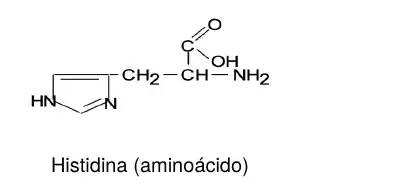
Ejercicio 2, Histidina — recorte de la guía 2024
Resolución · Histidina
Histidina
Punto de vista:
paso 1 / 8
paso 2 / 8
paso 3 / 8
paso 4 / 8
paso 5 / 8
paso 6 / 8
paso 7 / 8
paso 8 / 8
1
Desarrollar la molécula
Anillo de cinco (imidazol): tres C y dos N; «en cada una de estas puntas hay carbonos», y los H que no se dibujan se completan hasta 4 enlaces. Después la cadena: CH₂, CH, el NH₂ (con su par libre) y el COOH (un O con doble enlace y un OH). Control: cada C con 4 enlaces ✓, cada N con 3 enlaces + 1 par ✓.
Forma un doble con el C → sp², trigonal plano. Su par libre no puede ir al p (el p hace el π): «¿en un π o en un σ? En un σ… en un orbital atómico sp²», en el plano.
Tiene tres simples y un par: por la regla daría sp³, «pero como los átomos de al lado son sp², este átomo se hace sp² también, porque de esa forma es más estable… al ser plano hay un buen solapamiento». Sus tres sp² hacen los tres σ y el par libre queda en el p puro, arriba y abajo del plano.
CONFLICTO En la clase en audio (md U2 §1.5, otra molécula) un N sin doble se leyó sp³. Se sigue la clase práctica.
El C tiene doble enlace con el O → sp², trigonal plano («doble enlace con el oxígeno: trigonal plana»). El O del C=O también es sp² (un π). El O del OH sólo tiene simples → sp³ (regla de la clase: «el oxígeno solamente puede tener sp³ y sp²»).
«Esta parte de la molécula es tetraédrica, toda esta parte es trigonal plana porque son sp², y este pedacito (COOH) trigonal plano». Se marcan las zonas sobre el dibujo; si piden «según la mayoría», se cuentan los sp² y los sp³.
Pizarrón del minuto 59:21 [REDIBUJO DESDE FOTOGRAMA], redibujo parcial: se leen las zonas «TRIGONAL» (debajo del anillo) y «TETRA» (llave debajo de CH₂–CH) y la zona del COOH encerrada. Los lóbulos que dibujó sobre cada N del anillo están garabateados [ILEGIBLE].
«Por ahí les piden qué geometría tiene tal molécula: pueden decir que tiene una parte que… y marcarla»; si piden la de «la mayoría», se cuentan los C sp² y sp³.
Índigo
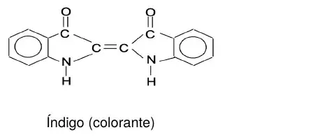
Ejercicio 2, Índigo — recorte de la guía 2024
Resolución · Índigo
Índigo
Punto de vista:
paso 1 / 6
paso 2 / 6
paso 3 / 6
paso 4 / 6
paso 5 / 6
paso 6 / 6
1
Desarrollar la molécula
Dos anillos de benceno (cada vértice es un C con su H), dos anillos de cinco con un C=O y un N–H cada uno, unidos por un C=C central.
guía 2024, U2 ej. 2
2
Los anillos de benceno → sp²
Cada C tiene un doble enlace del anillo → 1 π → sp², los seis en un plano.
md U2 (clases en audio, canal del usuario) §1.6clase grabada (audio) · apunte cap. 30
Tres simples y un par, pero entre átomos sp² (el C del benceno y el C central): el mismo criterio que dio el profesor para la histidina → sp², con el par libre en el p puro, sumándose a la conjugación.
Todos los átomos pesados son sp² → la molécula es esencialmente plana (trigonal en cada punto). Esa gran zona plana y conjugada es lo que le da color (Unidad 2, absorción de luz).
md U2 (clases en audio, canal del usuario) §8clase grabada (audio) (cromóforos)
Perthane
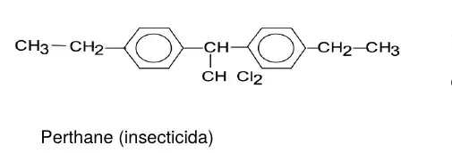
Ejercicio 2, Perthane — recorte de la guía 2024
Resolución · Perthane
Perthane
Punto de vista:
paso 1 / 5
paso 2 / 5
paso 3 / 5
paso 4 / 5
paso 5 / 5
1
Desarrollar la molécula
Dos anillos de benceno unidos por un CH que lleva un CHCl₂, y un etilo (CH₂–CH₃) en cada anillo. Cada vértice del hexágono es un C (con su H, salvo donde se engancha la cadena).
guía 2024, U2 «Problema resuelto» (pág. 7)
2
Anillos → sp²
Cada C del anillo tiene un doble enlace → sp²: el anillo entero es plano.
guía 2024, problema resuelto
3
CH₃ y CH₂ → sp³
Sólo simples → sp³, tetraédricos. Ojo: el C del anillo al que se engancha el CH₂ sigue siendo sp². ¿Y el CH₂, no será sp² por estar pegado al anillo? No: se cuentan los enlaces de CADA átomo. El CH₂ tiene 4 enlaces simples (2 H, el CH₃ y el C del anillo), ningún doble → sp³. Estar al lado de un sp² no le contagia la hibridación.
guía 2024, problema resuelto · md U2 (clases en audio, canal del usuario) §4.3clase grabada (audio)
4
El CH central y el CHCl₂ → sp³
El CH: dos anillos, el CHCl₂ y un H, todos simples → sp³. El CHCl₂: dos Cl, un H y el CH → sp³.
guía 2024, problema resuelto
5
Respuesta (la de la guía)
«No la podemos definir con una sola palabra: no podemos decir que la molécula sea plana. Sí podemos decir que tiene porciones planas, como anillos, y porciones de estructuras tetraédricas.»
guía 2024, problema resuelto (texto literal)
⚠ ¡OJO! No confundir: «CH₂» NO quiere decir «sp²»
El 2 de CH₂ cuenta cuántos H tiene ese carbono.
El 2 de sp² dice que se mezclaron el s con 2 orbitales p (y salen 3 híbridos).
Son dos cosas distintas: la hibridación NO se lee en la fórmula CH₂, CH₃ o CH; se lee en los enlaces de ese carbono.
La regla, para cada carbono: sólo enlaces simples → sp³ · un doble enlace → sp² · un triple o dos dobles → sp. Tampoco importa a quién está pegado: el CH₂ del perthane está al lado de un anillo sp², pero él no tiene ningún doble → sp³. (Vale para el C común, con sus 4 enlaces; los carbocationes y radicales son un caso aparte: cap. 15.)
✔ Truco de examen: ante cada C preguntate «¿tiene algún doble o triple?». Si la respuesta es no → sp³.
Gamexane
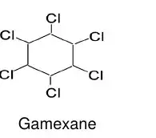
Ejercicio 2, Gamexane — recorte de la guía 2024
Resolución · Gamexane
Gamexane
Punto de vista:
paso 1 / 3
paso 2 / 3
paso 3 / 3
1
Desarrollar la molécula
Un anillo de seis C sin dobles enlaces; cada C tiene: dos C vecinos del anillo, un Cl y un H.
guía 2024, U2 ej. 2
2
Cada C → sp³
Cuatro enlaces simples, ningún π → sp³, tetraédrico.
md U2 (clases en audio, canal del usuario) §1.2clase grabada (audio)
3
Respuesta
Tetraédrica en cada carbono. Un hexágono de sp³ no puede ser plano (sus ángulos serían 120° y el sp³ quiere 109,5°): el anillo se pliega en forma de silla.
apunte cap. 25 (conformaciones del ciclohexano) · tu hoja pág. 28
Gamexane: los ángulos. Por qué un anillo de seis C sp³ no es plano: el hexágono plano obliga a 120° y cada C sp³ necesita 109,5°; plegado en «silla», cada vértice queda con ≈109,5°. Dibujo nuevo [ADICIÓN PEDAGÓGICA]; la silla se estudia en el cap. 25.
⟶ PROBLEMA RESUELTO (así, resuelto por la cátedra en la guía, pág. 7)
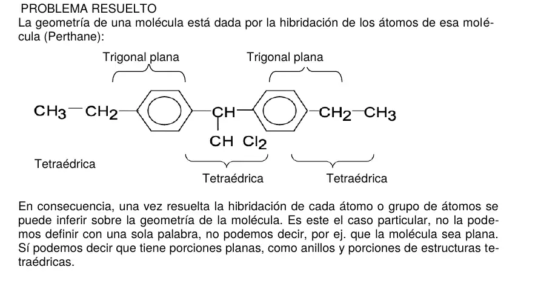
Problema resuelto, tal como aparece en la guía 2024 (pág. 7)texto (para buscar o copiar)
La geometría de una molécula está dada por la hibridación de los átomos de esa molécula (Perthane):
Trigonal plana Trigonal plana
Tetraédrica Tetraédrica Tetraédrica
En consecuencia, una vez resuelta la hibridación de cada átomo o grupo de átomos se puede inferir sobre la geometría de la molécula. Es este el caso particular, no la podemos definir con una sola palabra, no podemos decir, por ej. que la molécula sea plana.
Sí podemos decir que tiene porciones planas, como anillos y porciones de estructuras tetraédricas.
Ejercicio 3 pág. 7coincide con la versión 2026
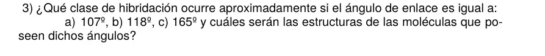
Ejercicio 3: la consigna (guía 2024, pág. 7)texto del enunciado completo (para buscar o copiar; ante cualquier duda manda el recorte)
3) ¿Qué clase de hibridación ocurre aproximadamente si el ángulo de enlace es igual a:
a) 107º, b) 118º, c) 165º y cuáles serán las estructuras de las moléculas que poseen dichos ángulos?
Antes de empezar: los ángulos de referencia
Antes de empezar
Punto de vista:
paso 1 / 1
1
Los tres ángulos de referencia
Cada hibridación tiene su ángulo ideal entre híbridos: 109,5° (sp³, tetraédrica), 120° (sp², trigonal plana), 180° (sp, lineal). Un ángulo medido rara vez es exacto: se busca el ideal más cercano y se explica la diferencia.
El amoníaco: el N con tres H y un par libre. Dibujado con volumen (un H con cuña hacia vos).
md U2 (clases en audio, canal del usuario) §1.5clase grabada (audio) · NH₃ como ejemplo: [ADICIÓN PEDAGÓGICA]
2
El ángulo
H–N–H = 107°, muy cerca de 109,5°.
guía 2024, U2 ej. 3
3
→ sp³
Tres enlaces + un par = 4 regiones → sp³, tetraédrica. Que dé un poco menos que 109,5° es porque el par libre «repele más que un enlace normal» y cierra los ángulos. Otro caso: el agua (dos pares, ≈ 104,5°).
107° → sp³; estructura tetraédrica (con un par libre, la forma de los átomos es una pirámide).
md U2 (clases en audio, canal del usuario) §1.5clase grabada (audio)
⚠ ¡OJO! No confundir: en el NH₃ los «••» son UN par libre
Cada puntito es un electrón: dos puntitos juntos = un par = una sola región.
No hay π: los tres enlaces N–H son simples. Un π sólo aparece con un doble o triple enlace.
Tampoco son dos pares: al N le sobran 2 electrones (5 − 3), y 2 electrones forman un solo par.
Regiones del N: 3 enlaces + 1 par = 4 → sp³. Con el agua pasa lo mismo pero con 2 pares: 2 enlaces + 2 pares = 4 → sp³ (104,5°).
✔ Truco: contá los puntitos y dividí por 2 → ésos son los pares libres.
Inciso b)
Ejercicio 3, inciso b) — recorte de la guía 2024
Resolución del inciso b)
Inciso b)
Punto de vista:
paso 1 / 4
paso 2 / 4
paso 3 / 4
paso 4 / 4
1
Un ejemplo con 118°
Una molécula con doble enlace: el C con el C=O y dos H.
ejemplo: [ADICIÓN PEDAGÓGICA]
2
El ángulo
H–C–H ≈ 118°: muy cerca de 120°.
guía 2024, U2 ej. 3
3
→ sp²
Un doble enlace (1 π) y tres regiones → sp², trigonal plana. La pequeña diferencia viene de que los tres vecinos no son iguales: en el eteno el profesor midió 116° y 121° y explicó que «el carbono ocupa mucho más volumen, entonces hace que los hidrógenos se junten un poquito más».
El ideal es 180°; 165° no llega a 180° pero está mucho más cerca de 180° que de 120°: es una molécula «casi lineal», un poco doblada por lo que tiene alrededor.
guía 2024, U2 ej. 3
3
→ sp
Triple enlace (o dos dobles seguidos) → 2 π → dos p puros → sp, lineal.
Ejercicio 4: la consigna (guía 2024, pág. 7)texto del enunciado completo (para buscar o copiar; ante cualquier duda manda el recorte)
4) Explique desde el punto de vista de los orbitales moleculares a qué atribuye la mayor reactividad relativa de hidrocarburos como:
Å Å
Etano
Ejercicio 4, Etano — recorte de la guía 2024
Resolución · Etano
Etano
Punto de vista:
paso 1 / 3
paso 2 / 3
paso 3 / 3
1
Desarrollar
CH₃–CH₃: cada C con tres H y el otro C.
guía 2024, U2 ej. 4
2
Cada C → sp³
Sólo simples → sp³.
md U2 (clases en audio, canal del usuario) §4.2clase grabada (audio)
3
Sus orbitales moleculares
Todos los enlaces son σ, por solapamiento de frente: la nube de electrones queda concentrada entre los núcleos, bien retenida. «No hay una nube de electrones extra… disponible para reaccionar».
md U2 (clases en audio, canal del usuario) §4.2clase grabada (audio)
Eteno
Ejercicio 4, Eteno — recorte de la guía 2024
Resolución · Eteno
Eteno
Punto de vista:
paso 1 / 3
paso 2 / 3
paso 3 / 3
1
Desarrollar
CH₂=CH₂: cada C con dos H y el doble.
guía 2024, U2 ej. 4
2
Cada C → sp²
Un doble → sp²; cada C guarda un p puro.
md U2 (clases en audio, canal del usuario) §1.3clase grabada (audio)
3
Sus orbitales moleculares
Un σ C–C (de frente) + un π: los dos p se solapan de costado y la nube queda arriba y abajo del eje, más lejos de los núcleos, más expuesta. Ahí puede «entrar» una especie con carga positiva.
md U2 (clases en audio, canal del usuario) §4.2clase grabada (audio) · Pizarrón 2
Etino
Ejercicio 4, Etino — recorte de la guía 2024
Resolución · Etino
Etino
Punto de vista:
paso 1 / 3
paso 2 / 3
paso 3 / 3
1
Desarrollar
H–C≡C–H: cada C con un H y el triple.
guía 2024, U2 ej. 4
2
Cada C → sp
Triple → dos p puros → sp, lineal.
md U2 (clases en audio, canal del usuario) §1.4clase grabada (audio)
3
Sus orbitales moleculares
Un σ + dos π perpendiculares (uno arriba/abajo, otro adelante/atrás): el doble de electrones expuestos.
md U2 (clases en audio, canal del usuario) §4.2clase grabada (audio) · Pizarrón 4
Respuesta: comparar los tres
Respuesta
Punto de vista:
paso 1 / 1
1
La respuesta desde los orbitales moleculares
«La mayor reactividad relativa se atribuye a la presencia de enlaces π: los orbitales moleculares π tienen su densidad electrónica fuera del eje del enlace, más débilmente retenida y más accesible que la de los σ.» Etano (0 π) < eteno (1 π) < etino (2 π).
md U2 (clases en audio, canal del usuario) §4.2clase grabada (audio) («Conclusión»)
Explicado desde cero: qué pregunta el ejercicio 4 y cómo se responde
Qué pregunta. «Reactividad» = qué tan fácil reacciona una molécula. Acá se piensa en un reactivo al que le faltan electrones (E⁺: un H⁺, o el Br del Br₂): viene a buscar electrones. Entonces la pregunta es: ¿en cuál de las tres los electrones están más «a mano»?
Enlace σ (simple). Los orbitales se solapan de frente, sobre la línea que une los dos núcleos. Sus 2 electrones quedan en el medio, entre los dos C, agarrados por los dos núcleos → difíciles de alcanzar.
Enlace π. Dos orbitales p se solapan de costado. Sus 2 electrones quedan arriba y abajo del eje, más lejos de los núcleos → menos agarrados, «expuestos». Además el π es más débil que el σ.
Respuesta para escribir. «La mayor reactividad se debe a los enlaces π: sus electrones están fuera del eje de unión, más lejos de los núcleos y menos retenidos que los σ, y quedan disponibles para una especie que busca electrones. Por eso: etano < eteno < etino.»
¿Por qué dice «relativa»? Porque depende de qué reacción se mire. Si en vez de atacar electrones hubiera que romper la unión C–C, lo más fácil sería el etano, que tiene un solo enlace: «hemos dado dos respuestas, una opuesta a la otra» (seminario, bloque H2, «Ej. 9», video 26).
Fuentes: clase en audio (md U2 §4.2) y seminarios (videos 7 y 26). Dibujo, E⁺ y redacción paso a paso [ADICIÓN PEDAGÓGICA].
▼ DESDE ACÁ — lo que explicó el profesor en clase · Unidad 2, ejercicio 4
Abrir la explicación del profesor (transcripción de audio de la clase, sin pizarrón)
4.2 Ejercicio 4: reactividad relativa de etano, eteno y etino, desde los orbitales moleculares
Consigna: explicar, desde el punto de vista de los orbitales moleculares, a qué se atribuye la mayor reactividad relativa de una serie de hidrocarburos: etano (CH₃–CH₃, todos enlaces simples), eteno (con un doble enlace) y etino (con un triple enlace).
Los sufijos (-ano, -eno, -ino) indican la presencia/ausencia de enlaces dobles o triples: "-eno" implica al menos un doble enlace, "-ino" implica al menos un triple enlace. Esos enlaces adicionales son los que le dan a la molécula su "funcionalidad" y mayor reactividad (por ejemplo, distintas moléculas cumplen funciones como transportar oxígeno, transportar electrones, favorecer acidez o basicidad, etc., dependiendo de sus enlaces).
En el etano, todos los enlaces son sigma (simples); no hay enlace pi, por lo tanto no hay una nube de electrones "extra" alrededor de la molécula disponible para reaccionar. El enlace sigma se forma por solapamiento de orbitales en la misma línea de acción (más compacto, más estable).
En el eteno, cada carbono aporta un orbital sp² para el enlace sigma central, y además cada uno aporta un orbital p puro (por encima y por debajo del plano) que se solapan formando el enlace pi — una "nube electrónica pi" con 2 electrones, ubicada más lejos del eje internuclear que la región sigma, y por lo tanto más expuesta/reactiva.
En el etino (triple enlace), hay dos enlaces pi (uno en el eje y y otro en el eje z, perpendiculares entre sí), es decir dos nubes electrónicas pi independientes, lo que aumenta aún más la exposición de electrones disponibles para reaccionar.
Conclusión: la mayor cantidad de enlaces pi (más nubes de electrones "sueltas", alejadas del eje de unión directa entre núcleos) es lo que explica la mayor reactividad relativa a medida que se pasa de enlace simple → doble → triple.
Fuente: md «unidad 2 (limpio)» · 4.2 Ejercicio 4: reactividad relativa de etano, eteno y etino, desde los orbitales moleculares
▲ HASTA ACÁ — ejercicio 4, Unidad 2
Ejercicio 5 pág. 7coincide con la versión 2026
🎓 Cómo lo resolvió la cátedra en el seminario (otra numeración de la guía): F1 · «Ej. 11»
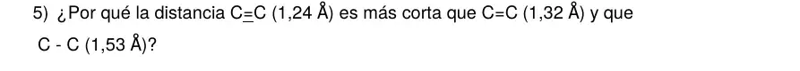
Ejercicio 5, tal como aparece en la guía 2024 (pág. 7)texto del enunciado (para buscar o copiar; ante cualquier duda manda el recorte)
5) ¿Por qué la distancia C=C (1,24 ) es más corta que C=C (1,32 ) y que Å
C - C (1,53 )?
Resolución por partes
U2 · Ejercicio 5 — Por qué C≡C es más corto que C=C y que C–C
Los tres desarrollados, con la hibridación de cada C y cómo es su híbrido.
Punto de vista:
paso 1 / 4
paso 2 / 4
paso 3 / 4
paso 4 / 4
1
C–C: dos sp³ (1,53 Å)
Etano desarrollado: cada C con cuatro simples → sp³. Un sp³ tiene 75 % de p: es el híbrido más largo, «alargado». Dos sp³ de frente dejan los núcleos a 1,53 Å.
«A mayor carácter s del orbital híbrido, más compacto es el orbital y más corta la distancia de enlace: sp (50 % s) < sp² (33 %) < sp³ (25 %)», y por eso C≡C 1,24 < C=C 1,32 < C–C 1,53 Å.
CONFLICTO Fernández Cirelli (cap. 1, p. 27) da C–C 1,54 Å, C=C 1,33 Å y C≡C 1,20 Å; la guía y la clase, 1,53 / 1,32 / 1,24 Å. Son valores de fuentes distintas; la tendencia (triple < doble < simple) es la misma y es lo que se pregunta.
md U2 (clases en audio, canal del usuario) §4.1clase grabada (audio) («En síntesis…») · Fernández Cirelli, cap. 1, p. 27
▼ DESDE ACÁ — lo que explicó el profesor en clase · Unidad 2, ejercicio 5
Abrir la explicación del profesor (transcripción de audio de la clase, sin pizarrón)
4.1 Ejercicio 5: ¿por qué la distancia carbono-carbono varía según el tipo de enlace?
Datos de partida (distancias de enlace C–C):
Enlace triple: 1,24 Å
Enlace doble: 1,32 Å (según lo indicado en la clase; nota: el profesor lee estos valores directamente de la guía)
Enlace simple: 1,53 Å
Pregunta del profesor: ¿a qué se debe esta diferencia?
Desarrollo de la respuesta: el enlace covalente depende de la cantidad de electrones compartidos y de las regiones electrónicas disponibles. Cada tipo de enlace corresponde a una hibridación distinta del carbono: el enlace simple a sp³ (estructura tetraédrica), el doble a sp² (estructura trigonal), y el triple a sp (estructura lineal). La relación con la distancia se explica por el "carácter s" de cada orbital híbrido:
sp³: 25% carácter s, 75% carácter p (proporción 1 de 4). El orbital s es una nube esférica condensada cerca del núcleo; cuanto mayor es el carácter p, más "alargado" es el orbital y más lejos se extiende del núcleo. Por eso el sp³ es el más extendido, y da la mayor distancia de enlace (1,53 Å).
sp²: proporción 1/3 y 2/3 (un tercio carácter s, dos tercios carácter p). Es un poco más corto que el sp³.
sp: proporción aproximadamente 50%-50%. Es el orbital más corto/compacto, de ahí que el enlace triple tenga la distancia más pequeña (1,24 Å).
En síntesis: a mayor proporción de carácter s en el orbital híbrido, más corto y compacto es el orbital, y más corta resulta la distancia de enlace entre los dos átomos que lo comparten.
Fuente: md «unidad 2 (limpio)» · 4.1 Ejercicio 5: ¿por qué la distancia carbono-carbono varía según el tipo de enlace?
▲ HASTA ACÁ — ejercicio 5, Unidad 2
Ejercicio 6 pág. 8coincide con la versión 2026
🎓 Cómo lo resolvió la cátedra en el seminario (otra numeración de la guía): H2 · «Ej. (benceno)»
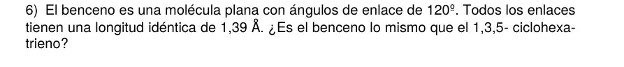
Ejercicio 6, tal como aparece en la guía 2024 (pág. 8)texto del enunciado (para buscar o copiar; ante cualquier duda manda el recorte)
6) El benceno es una molécula plana con ángulos de enlace de 120º. Todos los enlaces Å tienen una longitud idéntica de 1,39 . ¿Es el benceno lo mismo que el 1,3,5- ciclohexatrieno?
Resolución por partes
U2 · Ejercicio 6 — ¿El benceno es el 1,3,5-ciclohexatrieno?
Desarrollado, con la hibridación de cada C; después lo que predice un trieno contra lo que se mide.
Punto de vista:
Carbonos C1–C6, su H y el ángulo de 120° en cada vértice. Distancias de la guía (ej. 5: C=C 1,32 Å, C–C 1,53 Å) y del enunciado (1,39 Å); el seminario: 1,39 está «aproximadamente entre un doble (1,32) y un simple (1,53)». Dibujo nuevo [ADICIÓN PEDAGÓGICA].
paso 1 / 6
paso 2 / 6
paso 3 / 6
paso 4 / 6
paso 5 / 6
paso 6 / 6
1
Desarrollar el benceno
Seis C en anillo, cada uno con un H; se dibuja con tres dobles alternados.
guía 2024, U2 ej. 6
2
Cada C → sp²
Cada C tiene un doble → 1 π → sp²: tres híbridos en el plano (dos C vecinos y un H, a 120°) y un p puro perpendicular.
md U2 (clases en audio, canal del usuario) §1.6clase grabada (audio)
3
Si fuera un trieno
Un 1,3,5-ciclohexatrieno «de verdad» tendría tres C=C (≈ 1,34 Å) alternados con tres C–C (≈ 1,54 Å): un hexágono con lados desiguales.
distancias 1,34/1,54: [ADICIÓN PEDAGÓGICA]
4
Lo que se mide
Los seis enlaces iguales, de 1,39 Å (entre simple y doble), molécula plana con 120°. Un trieno no lo explica.
guía 2024, U2 ej. 6 (datos del enunciado)
5
Los seis p forman una sola nube
Los seis p puros, paralelos, se solapan todos con todos: no hay tres π fijos sino una nube π continua, arriba y abajo del anillo; cada enlace tiene «uno y medio».
md U2 (clases en audio, canal del usuario) §1.6clase grabada (audio) · apunte cap. 30
6
Respuesta
No: el benceno no es el 1,3,5-ciclohexatrieno. Los dobles alternados son sólo una forma de dibujarlo (por eso se usa el hexágono con un círculo): sus seis enlaces iguales y su estabilidad salen de la deslocalización de los 6 electrones π (aromaticidad).
md U2 (clases en audio, canal del usuario) §1.6clase grabada (audio) · apunte cap. 30
Ejercicio 7 pág. 8coincide con la versión 2026
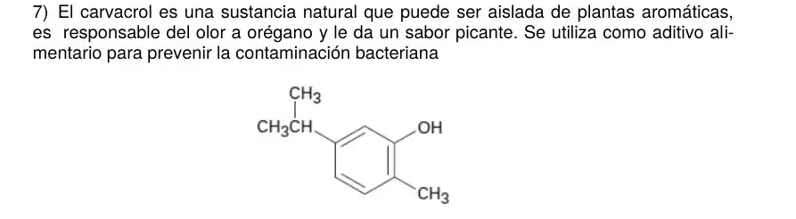
Ejercicio 7: la consigna (guía 2024, pág. 8)texto del enunciado completo (para buscar o copiar; ante cualquier duda manda el recorte)
7) El carvacrol es una sustancia natural que puede ser aislada de plantas aromáticas, es responsable del olor a orégano y le da un sabor picante. Se utiliza como aditivo alimentario para prevenir la contaminación bacteriana
a) Marca un C sp3 y dibújalo con sus orbitales atómicos. ¿Qué geometría presenta?
b) Marca un C sp2 y dibújalo con sus orbitales moleculares (enlaces) unido a otro a átomo. ¿Qué geometría presenta?
Antes de empezar: la molécula desarrollada
Antes de empezar: la molécula
Punto de vista:
paso 1 / 3
paso 2 / 3
paso 3 / 3
1
Desarrollar la molécula
Carvacrol: un anillo de benceno con un –OH, un –CH₃ y un isopropilo –CH(CH₃)₂ (el olor del orégano).
Para poder nombrar cada C del anillo los numeramos como en su nombre sistemático, 5-isopropil-2-metilfenol: C1 = el que lleva el OH, C2 = el que lleva el CH₃, y siguiendo la vuelta C3, C4, C5 (lleva el isopropilo) y C6 [ADICIÓN PEDAGÓGICA]: la guía no numera el anillo.
guía 2024, U2 ej. 7
2
El anillo → sp²
Cada C del anillo tiene un doble → sp².
md U2 (clases en audio, canal del usuario) §4.3clase grabada (audio)
3
Todo lo demás → sp³
El CH₃, el CH y los dos CH₃ del isopropilo: sólo simples → sp³. El O del OH: dos simples y dos pares → sp³ (regla de la clase).
¿Por qué 4 puntitos en el O y no 6? El O tiene 6 electrones de valencia. 2 de ellos ya están dibujados como enlaces: pone 1 en el enlace con el C del anillo y 1 en el enlace con el H (cada rayita = 2 e⁻, uno de cada átomo). Los 4 que sobran quedan como 2 pares libres = 4 puntitos. Cuenta: 2 + 4 = 6 ✓. Y alrededor del O quedan 8 (2 rayitas × 2 + 4) → octeto ✓.
md U2 (clases en audio, canal del usuario) §4.3clase grabada (audio) · O sp³: [ADICIÓN PEDAGÓGICA]
⚠ ¡OJO! No confundir: el O del OH tiene 2 pares libres, y en el espacio no están «arriba y a la izquierda»
Cuántos: el O tiene 6 e⁻ de valencia; pone 1 en el enlace con el C1 y 1 en el enlace con el H; le sobran 4 = 2 pares (4 puntitos, no 6).
Dónde en el papel: es una convención. Se dibujan en los lados libres del O, sin tapar los enlaces: arriba y a la izquierda, o arriba y abajo, es la misma molécula.
Dónde en el espacio: el O tiene 4 regiones (2 enlaces + 2 pares) → sp³ → sus cuatro orbitales apuntan a los vértices de un tetraedro. Dos llevan los enlaces C–O y O–H; los otros dos, los pares: uno sale hacia adelante del papel y el otro hacia atrás.
Consecuencia: C, O y H no quedan en línea: la forma alrededor del O es angular, como en el agua.
Regla: en Lewis importa cuántos pares hay; la forma real la da la hibridación (cuántas regiones).
✔ Truco: electrones de valencia − electrones que el átomo puso en enlaces = puntitos; dividí por 2 → pares libres.
Dibujo y explicación nuevos [ADICIÓN PEDAGÓGICA]: la guía no desarrolla la ubicación de los pares; la regla «O con dos simples y dos pares → sp³» es la de la clase.
Inciso a)
Ejercicio 7, inciso a) — recorte de la guía 2024
Resolución del inciso a)
Inciso a)
Punto de vista:
paso 1 / 3
paso 2 / 3
paso 3 / 3
1
Marcar un C sp³
El CH₃ pegado al anillo: cuatro simples (un C y tres H), cero π → sp³. También servirían el CH o los CH₃ del isopropilo.
md U2 (clases en audio, canal del usuario) §4.3clase grabada (audio) («Carbono sp³: el sustituyente metilo»)
2
Dibujarlo con sus orbitales atómicos
Orbital atómico = lo que aporta cada átomo antes de unirse: los cuatro sp³ del C (cuerpo celeste, cabecita naranja) apuntando a los vértices de un tetraedro; tres llegan al orbital s (esfera) de cada H y el cuarto al C del anillo, el C2 (círculo naranja, en la molécula y en el dibujo). Ojo, como remarca el profesor: ese C2 es sp², no sp³.
md U2 (clases en audio, canal del usuario) §4.3clase grabada (audio) · Pizarrón 1
Cualquier C del anillo (1 π) → sp². Marcamos el que lleva el CH₃: el C2 (círculo rojo punteado). Sus vecinos del anillo son el C1 (lleva el OH) y el C3: van con círculo naranja, en la molécula y en el dibujo de abajo.
md U2 (clases en audio, canal del usuario) §4.3clase grabada (audio) («Carbono sp²: uno de los carbonos del anillo»)
2
Dibujarlo con sus orbitales moleculares
Orbital molecular = lo que resulta al solaparse dos atómicos. Sus tres sp² se solapan de frente con los dos C vecinos del anillo (C1 y C3) y con el CH₃ → tres σ (verde). El p puro, perpendicular, se solapa de costado con el p del C1 → π (rojo), arriba y abajo del plano. En el anillo, además, se solapa con el p del otro vecino, el C3: por eso los seis p forman una sola nube π (ej. 6).
md U2 (clases en audio, canal del usuario) §4.3clase grabada (audio) · Pizarrón 2
▼ DESDE ACÁ — lo que explicó el profesor en clase · Unidad 2, ejercicio 7
Abrir la explicación del profesor (transcripción de audio de la clase, sin pizarrón)
En la clase se lo llamó «ejercicio 6» (otra edición de la guía); en la guía 2024 el carvacrol es el ejercicio 7.
4.3 Ejercicio 6 (tipo examen): el carvacrol — identificar carbonos sp³ y sp² en una molécula real
Ejemplo de consigna "clásica de parcial": se presenta un párrafo descriptivo sobre el carvacrol (sustancia natural aislada de plantas aromáticas, responsable del olor del orégano, de sabor picante, usada como aditivo para prevenir contaminación bacteriana) junto con su estructura (un ciclo plano —anillo— con vértices de carbono unidos entre sí por enlaces simples o dobles). La consigna pide: marcar un carbono sp³ y dibujarlo con sus orbitales atómicos, indicando su geometría; y marcar un carbono sp² y dibujarlo con sus orbitales moleculares unido a otro átomo, indicando su geometría.
Carbono sp³ (el sustituyente metilo, CH₃, fuera del anillo):
Es un carbono unido a otro carbono del anillo y a otros tres hidrógenos: cuatro regiones de energía equivalentes (el enlace C–C se considera de energía equivalente al enlace C–H a estos fines), por lo tanto hibridación sp³.
Cada uno de sus 4 orbitales sp³ se solapa con el orbital correspondiente del átomo vecino (3 hidrógenos + 1 carbono del anillo) formando 4 enlaces sigma.
Geometría: tetraédrica.
Aclaración importante: aunque el CH₃ en sí es sp³, el carbono del anillo al que se une está en hibridación sp² (porque forma parte del sistema con dobles enlaces del anillo) — de las tres "paletas" sp² de ese carbono del anillo, una se dirige hacia el CH₃ y las otras dos hacia los carbonos vecinos del anillo.
Carbono sp² (uno de los carbonos del anillo, con doble enlace):
Todos los carbonos del anillo comparten un mismo plano geométrico y tienden a la configuración sp², con ángulos de separación cercanos a 120°.
El doble enlace requiere un enlace sigma + un enlace pi (a diferencia del enlace simple, que es solo sigma). Esto implica que cada carbono del doble enlace deja un orbital p puro sin hibridar, perpendicular al plano del anillo (entrando y saliendo del plano).
Los tres orbitales sp² de cada carbono del anillo se solapan con los sp² de los carbonos adyacentes formando los enlaces sigma del ciclo; los orbitales p puros de los carbonos con doble enlace se solapan por encima y por debajo del plano formando el enlace pi.
Geometría: trigonal plana, con los mismos 120° de separación entre orbitales en cada vértice.
Pregunta de un alumno: ¿cuál es la diferencia entre cuando la consigna pide dibujar "con orbitales atómicos" y cuando pide "con orbitales moleculares"?
Respuesta: los orbitales atómicos son los que aporta cada átomo individualmente antes de formar el enlace (por ejemplo, el orbital sp³ de un carbono aislado, o el orbital s de un hidrógeno aislado). Cuando esos orbitales atómicos se solapan y forman un enlace, lo que se genera es un orbital molecular (de enlace sigma o de enlace pi, según corresponda). En síntesis: orbital atómico = lo que aporta cada átomo por separado; orbital molecular = lo que resulta de la unión de esos orbitales atómicos al formarse el enlace.
Al cierre de este bloque de ejercicios, el profesor anuncia la transición al siguiente tema de la unidad: fuerzas intermoleculares y propiedades físicas.
Fuente: md «unidad 2 (limpio)» · 4.3 Ejercicio 6 (tipo examen): el carvacrol — identificar carbonos sp³ y sp² en una molécula real
▲ HASTA ACÁ — ejercicio 7, Unidad 2
Ejercicio 8 pág. 8coincide con la versión 2026
🎓 Cómo lo resolvió la cátedra en el seminario (otra numeración de la guía): F1 · «Ej. 4»
Ejercicio 8: la consigna (guía 2024, pág. 8)texto del enunciado completo (para buscar o copiar; ante cualquier duda manda el recorte)
8) Escriba la segunda estructura que resulta del movimiento electrónico indicado.
La guía no les pone letra a las cuatro estructuras: acá se llaman a, b, c y d de izquierda a derecha.
La regla que siempre funciona, en criollo [ADICIÓN PEDAGÓGICA]
Para saber la carga de un átomo, contale lo que tiene y comparalo con lo que trae.
Contá: 1 por cada rayita (enlace) que le llega + 2 por cada par de puntitos que tiene encima.
Compará con lo que ese átomo trae de fábrica: C trae 4, N trae 5, O trae 6, H trae 1.
Tiene igual → neutro. Tiene uno de más → carga −. Tiene uno de menos → carga +.
Si reconocés la figurita, ya sabés la carga sin hacer la cuenta.
El atajo con las flechas. Una flecha curva mueve dos electrones (un par), nunca uno. El átomo de donde sale la flecha queda un escalón más positivo; el átomo adonde llega queda un escalón más negativo. Si a un átomo le llega una flecha y le sale otra, queda igual que antes.
Aplicado al inciso b). El oxígeno de arriba se lleva el par del doble enlace (la flecha azul): queda con 1 rayita + 3 pares → tiene 7, trae 6 → carga −. Si pasara sólo eso, el carbono quedaría con 3 rayitas y sería +. Pero al mismo tiempo el oxígeno de abajo, que tenía la carga −, baja uno de sus pares y arma un doble enlace nuevo con el carbono (la flecha roja). El carbono pierde una rayita y gana otra: sigue con 4 → neutro. El oxígeno de abajo queda con 2 rayitas + 2 pares → tiene 6 → neutro.
Resultado: la carga − se mudó del oxígeno de abajo al de arriba. El carbono nunca queda positivo. Control final: la suma de las cargas tiene que dar lo mismo antes y después (acá, −1 y −1).
Inciso a)
Ejercicio 8, inciso a) — recorte de la guía 2024
Resolución del inciso a)
Inciso a)
Punto de vista:
paso 1 / 4
paso 2 / 4
paso 3 / 4
paso 4 / 4
1
La estructura dada
H₃C–CH=CH₂ con una flecha que sale del doble enlace y llega al CH del medio.
guía 2024, U2 ej. 8
2
Leer la flecha
Cada flecha curva mueve un par de electrones: sale de donde está el par (acá, el π del doble) y llega adonde va. El π deja de ser compartido y queda como par libre sobre el CH.
md U2 (clases en audio, canal del usuario) §9.2clase grabada (audio) · Pizarrón 3
3
La segunda estructura
El doble pasó a simple; el CH tiene ahora un par libre y carga −; el CH₂ quedó con 3 enlaces y carga +.
md U2 (clases en audio, canal del usuario) §9.3clase grabada (audio) (ej. 8: «contar los enlaces de cada carbono… si suman exactamente 4… la estructura es correcta»)
4
Control: 4 por C
«Al romper un doble enlace y desplazar la carga, uno de los carbonos queda con una carga negativa»: se cuentan enlaces + cargas y cada C debe dar 4.
En el seminario el profe resuelve este mismo inciso (allí figura como ej. 4) contando electrones: el CH «normalmente debería tener cuatro… tiene 1, 2, 3, 4, 5» → exceso → carga −; el CH₂ «debería tener cuatro y tenemos 1, 2 y 3» → deficiente → carga +. Y aclara por qué el movimiento es entre esos dos C: los dos son sp²; el CH₃ es sp³ y no participa.
Cómo leer el dibujo: el rojo sigue a los 2 electrones que se mueven; la cuenta de la tabla es la del profe (1 e⁻ por enlace + 2 por cada par libre, comparado con 4).
El anión acetato: el C con un O de doble enlace (2 pares) y un O⁻ de simple (3 pares). Dos flechas.
guía 2024, U2 ej. 8
2
Leer las flechas
① Un par libre del O⁻ baja a formar un nuevo π con el C. ② Para que el C no tenga cinco enlaces, a la vez el π C=O de arriba sube al O como par libre.
md U2 (clases en audio, canal del usuario) §1.8 y §10.1clase grabada (audio) · Pizarrón 3
3
La segunda estructura
La misma molécula con los papeles de los O invertidos: arriba O⁻ con 3 pares, abajo C=O con 2 pares.
md U2 (clases en audio, canal del usuario) §1.8clase grabada (audio)
4
Control
El C sigue con 4 enlaces; la carga total sigue siendo −1. Es resonancia: la carga está repartida entre los dos O (por eso el ácido acético suelta fácil su H⁺).
Cómo leer el dibujo: el color sigue a los electrones que se mueven (rojo = flecha ①, azul = flecha ②). Cuenta de cada átomo: 1 e⁻ por enlace + 2 por cada par libre; si da más que su valencia (C 4, N 5, O 6) → carga −; si da menos → carga + [ADICIÓN PEDAGÓGICA].
md U2 (clases en audio, canal del usuario) §1.8clase grabada (audio)
Inciso c)
Ejercicio 8, inciso c) — recorte de la guía 2024
Resolución del inciso c)
Inciso c)
Punto de vista:
paso 1 / 4
paso 2 / 4
paso 3 / 4
paso 4 / 4
1
La estructura dada
Un anillo de seis C: uno con dos H (arriba, sp³), uno con carga + (arriba a la izquierda: sólo 3 enlaces) y dos dobles enlaces.
guía 2024, U2 ej. 8
2
Leer la flecha
El π vecino al C⁺ se mueve hacia él: forma un nuevo doble con el C⁺ (que así completa sus 4 enlaces).
md U2 (clases en audio, canal del usuario) §9.4clase grabada (audio) caso C
3
La segunda estructura
El C del otro extremo de ese π perdió su doble: queda con 3 enlaces y la carga + (abajo). La carga «camina» por el anillo de dos en dos carbonos.
md U2 (clases en audio, canal del usuario) §9.4clase grabada (audio) caso C · apunte cap. 32 (intermediario de la SEA)
4
Control
Contá enlaces en cada C del anillo: todos 4, salvo el que quedó con +.
En el dibujo los C están numerados C1 (el CH₂) a C6 para poder nombrarlos: el + pasa de C2 a C4 y el doble C3=C4 pasa a C2=C3 [ADICIÓN PEDAGÓGICA]: la guía no numera.
md U2 (clases en audio, canal del usuario) §9.3clase grabada (audio) (ej. 8: «contar los enlaces de cada carbono… si suman exactamente 4… la estructura es correcta»)
Inciso d)
Ejercicio 8, inciso d) — recorte de la guía 2024
Resolución del inciso d)
Inciso d)
Punto de vista:
paso 1 / 4
paso 2 / 4
paso 3 / 4
paso 4 / 4
1
La estructura dada
H₃C–C≡N: con un par libre en el N y una flecha del triple al N.
guía 2024, U2 ej. 8
2
Leer la flecha
Sale de uno de los π del triple y llega al N: ese par pasa a ser un segundo par libre del N.
md U2 (clases en audio, canal del usuario) §9.3clase grabada (audio)
3
La segunda estructura
H₃C–C⁺=N̈⁻: el triple quedó doble; el N con dos pares y carga −; el C con 3 enlaces y carga +.
lectura de la flecha del enunciado: [ADICIÓN PEDAGÓGICA]
4
Control
C: 3 enlaces + la carga = 4 ✓. N: 2 enlaces + 2 pares, uno más de lo normal → −.
Cómo leer el dibujo: el color sigue a los electrones que se mueven (rojo = flecha ①, azul = flecha ②). Cuenta de cada átomo: 1 e⁻ por enlace + 2 por cada par libre; si da más que su valencia (C 4, N 5, O 6) → carga −; si da menos → carga + [ADICIÓN PEDAGÓGICA].
md U2 (clases en audio, canal del usuario) §9.3clase grabada (audio) (ej. 8: «contar los enlaces de cada carbono… si suman exactamente 4… la estructura es correcta»)
▼ DESDE ACÁ — lo que explicó el profesor en clase · Unidad 2, ejercicio 8
Abrir la explicación del profesor (transcripción de audio de la clase, sin pizarrón)
9.3 Ejercicio 8: escribir la segunda estructura resultante de un movimiento electrónico indicado
Consigna: dado un movimiento electrónico indicado (una flecha curva mostrando que un doble enlace se rompe y la carga se desplaza hacia el carbono vecino), escribir la estructura resultante.
Método de verificación: una vez dibujada la nueva estructura, contar los enlaces de cada carbono involucrado. Si suman exactamente 4 (contando los enlaces normales más, si corresponde, una carga positiva o negativa que "complete" el conteo), la estructura es correcta. El profesor lo ejemplifica con un caso concreto: al romper un doble enlace y desplazar la carga, uno de los carbonos queda con una carga negativa desapareada (disponible para enlazarse a otro átomo) y el resto de sus enlaces (hidrógenos, otro carbono) se mantienen sin cambios — verificando que cada carbono sigue sumando 4 "lugares" entre enlaces y cargas.
Fuente: md «unidad 2 (limpio)» · 9.3 Ejercicio 8: escribir la segunda estructura resultante de un movimiento electrónico indicado
▲ HASTA ACÁ — ejercicio 8, Unidad 2
Ejercicio 9 pág. 8coincide con la versión 2026
🎓 Cómo lo resolvió la cátedra en el seminario (otra numeración de la guía): F1 · «Ej. 5»
Ejercicio 9: la consigna (guía 2024, pág. 8)texto del enunciado completo (para buscar o copiar; ante cualquier duda manda el recorte)
9) Para cada par de estructuras, escriba las flechas necesarias para transformarlas y diga cuál es más estable de cada par:
a)
b)
c)
d)
e)
Los cinco dibujos usan los mismos colores y la misma cuenta que el ejercicio 8: rojo y azul = los electrones que se mueven; las flechas van pegadas al esqueleto y se arquean hacia el lado libre. La regla para saber qué carga queda está en «La regla que siempre funciona».
¿Cuál es más estable? Tres preguntas, en este orden
¿Todos los átomos tienen su octeto? La que deja a un átomo con 6 electrones (un C⁺ con 3 rayitas) pierde.
¿Cuál tiene menos cargas? Separar un + de un − cuesta energía. La que no tiene cargas, o tiene menos, gana. Atajo: suele ser la que tiene una rayita más.
Si las dos tienen carga, ¿dónde está? El − está mejor sobre el átomo más electronegativo (O antes que N, N antes que C); el + y el electrón solo, sobre el carbono con más carbonos vecinos.
Si después de las tres preguntas las estructuras quedan empatadas, es porque son equivalentes: la misma dada vuelta. Pesan igual.
inciso
qué pregunta lo decide
respuesta
a)
3: el electrón solo, en el C con más vecinos
la 2.ª
b)
1 y 2: en la 2.ª todos tienen octeto y no hay cargas
la 2.ª
c)
empate: es la misma dada vuelta
iguales
d)
empate: las tres son la misma, girada
iguales
e)
1 y 2: en la 1.ª todos tienen octeto y no hay cargas
El puntito es un electrón sin pareja. Sale de romper un enlace por la mitad, uno para cada átomo (ruptura homolítica), y hace falta luz o calor para lograrlo.
No tiene carga: un C con 3 rayitas + 1 electrón solo tiene 4 y trae 4. Por eso acá no hay ni + ni −.
Es muy reactivo y dura poco: le falta un electrón para el octeto (tiene 7 alrededor), así que busca pareja enseguida.
Se mueve con medias flechas: cada una lleva un electrón, no un par.
Éste aguanta más que otros: está al lado de un doble enlace (alílico), y el electrón se reparte entre el C2 y el C4. Eso es lo que muestran las dos estructuras.
Un radical: el punto es un electrón solitario. En la 1.ª está en el CH₂ del extremo; en la 2.ª, en el CH del lado del CH₃, y el doble se corrió.
guía 2024, U2 ej. 9 a
2
Flecha ①: el electrón solo
Sale del punto rojo del C4 y llega al enlace C3–C4. Tiene media punta porque mueve un electrón. Con uno solo todavía no hay enlace: un enlace necesita dos.
[ADICIÓN PEDAGÓGICA]
3
Flecha ②: un electrón del π
Sale del π C2=C3 (los dos puntos azules) y llega al mismo enlace C3–C4. Con el rojo de la flecha ① ya son dos: ahí queda armado el π nuevo C3=C4.
[ADICIÓN PEDAGÓGICA]
4
Flecha ③: el otro electrón del π
El π viejo tenía dos electrones y uno se fue con la flecha ②. El otro se queda sin pareja sobre el C2: es el nuevo electrón solitario.
[ADICIÓN PEDAGÓGICA]
5
Las tres van a la vez
¿En qué orden pasan? En ninguno: van todas a la vez. Se dibujan juntas sobre la primera estructura y describen un solo movimiento; acá las separamos sólo para leerlas de a una. Y ojo: en resonancia nada «pasa» en el tiempo. Las flechas son la cuenta de cómo se convierte un dibujo en el otro; la molécula real es una sola, el híbrido.
Con radicales se usan medias flechas (un electrón cada una): el electrón solitario va a formar el nuevo π C₃=C₄; el π viejo C₂=C₃ se parte: un electrón se queda en ese nuevo π y el otro queda solo en el C₂.
md U2 (clases en audio, canal del usuario) §9.4clase grabada (audio) caso A · medias flechas: [ADICIÓN PEDAGÓGICA]
6
¿Cuál es más estable?
La 2.ª: el electrón solitario queda en un C secundario (unido a dos C), que lo estabiliza mejor que el C primario del extremo. La molécula real es el híbrido de las dos.
⟶ Aclaración.[ADICIÓN PEDAGÓGICA] Los carbonos se numeran desde el CH₃: C₁ = CH₃, C₂ y C₃ = los CH, C₄ = el CH₂ del extremo. Sobre la estabilidad: la respuesta esperada es la 2.ª, porque el radical queda en un C secundario (3.º > 2.º > 1.º). Pero la 1.ª también tiene algo a favor: su doble enlace está en el medio de la cadena (más sustituido), y los alquenos más sustituidos son más estables (lo vas a ver en U6). Por eso la diferencia entre las dos es chica, y el radical real —el híbrido— tiene el electrón repartido entre C₂ y C₄.
apunte cap. 14 y 35 (estabilidad de radicales: 3.º > 2.º > 1.º)
Inciso b)
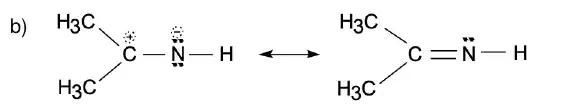
Ejercicio 9, inciso b) — recorte de la guía 2024
Resolución del inciso b)
Inciso b)
Punto de vista:
paso 1 / 3
paso 2 / 3
paso 3 / 3
1
Las dos estructuras
1.ª: el C con sólo 3 enlaces y carga +; el N con dos pares libres y carga − (dos enlaces + dos pares = uno de más). 2.ª: C=N, el N con un solo par, sin cargas.
guía 2024, U2 ej. 9 b (recorte)
2
La flecha
Una sola: uno de los pares del N⁻ baja al enlace C–N y forma el π. El C completa sus 4 enlaces (se va el +) y el N se queda con un par (se va el −).
¿Se lo lleva el carbono? No: la punta de la flecha toca el enlace, no el átomo. El par deja de ser sólo del N y pasa a estar compartido entre el N y el C: es la segunda rayita del doble. Se mueve hacia ahí porque el C⁺ de al lado tiene sólo 6 electrones alrededor y el N⁻ tiene un par de sobra justo al lado. Compartiéndolo, los dos quedan con 8.
En la cuenta, de ese par ahora le toca 1 a cada uno: el N baja de 6 a 5 (se le va el −) y el C sube de 3 a 4 (se le va el +). [ADICIÓN PEDAGÓGICA]
md U2 (clases en audio, canal del usuario) §9.4clase grabada (audio) caso B
3
¿Cuál es más estable?
La 2.ª: no tiene cargas separadas y todos los átomos tienen el octeto completo; en la 1.ª el C⁺ no llega al octeto.
CORRECCIÓN La versión anterior de este apunte decía que el N quedaba con +: estaba mal leído el enunciado (el N de la 1.ª estructura es N⁻ con dos pares, no un N neutro).
apunte cap. 14 (reglas para comparar estructuras de resonancia)
Inciso c)
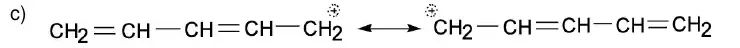
Ejercicio 9, inciso c) — recorte de la guía 2024
Resolución del inciso c)
Inciso c)
Punto de vista:
paso 1 / 5
paso 2 / 5
paso 3 / 5
paso 4 / 5
paso 5 / 5
1
Las dos estructuras
Cinco carbonos con dos dobles alternados y un CH₂⁺ en una punta; en la 2.ª el + está en la otra punta.
guía 2024, U2 ej. 9 c
2
Flecha ①: el π que está al lado del +
El π rojo C3=C4 se corre al enlace C4–C5. El C5, que tenía 3 rayitas y carga +, completa sus 4.
Si te quedaras acá, el C3 quedaría con 3 rayitas y el + estaría en el medio: esa forma también existe, es la tercera estructura de resonancia de este catión.
[ADICIÓN PEDAGÓGICA]
3
Flecha ②: el otro π
El π azul C1=C2 se corre al enlace C2–C3 y ocupa el lugar que dejó el rojo. Ahora el que queda con 3 rayitas es el C1: el + terminó en la otra punta.
[ADICIÓN PEDAGÓGICA]
4
Las dos van a la vez
¿En qué orden pasan? En ninguno: van todas a la vez. Se dibujan juntas sobre la primera estructura y describen un solo movimiento; acá las separamos sólo para leerlas de a una. Y ojo: en resonancia nada «pasa» en el tiempo. Las flechas son la cuenta de cómo se convierte un dibujo en el otro; la molécula real es una sola, el híbrido.
Dos flechas encadenadas: el π más cercano al + se corre hacia él (lo completa), y el otro π se corre un lugar; el + aparece en el primer C.
md U2 (clases en audio, canal del usuario) §9.4clase grabada (audio) caso C
5
¿Cuál es más estable?
Son equivalentes: la misma estructura dada vuelta. Igual estabilidad; la carga real está repartida (también hay una forma con el + en el C central).
apunte cap. 14
Inciso d)
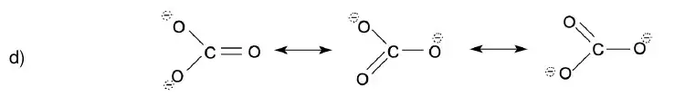
Ejercicio 9, inciso d) — recorte de la guía 2024
Resolución del inciso d)
Inciso d)
Punto de vista:
paso 1 / 6
paso 2 / 6
paso 3 / 6
paso 4 / 6
paso 5 / 6
paso 6 / 6
1
Las tres estructuras
El carbonato: un C con tres O; en cada forma, uno con doble enlace y dos con carga −.
guía 2024, U2 ej. 9 d
2
De la 1.ª a la 2.ª · flecha roja
El O⁻ de abajo baja uno de sus tres pares al enlace con el C: ahí nace el doble nuevo.
Sola no puede ir: el C quedaría con 5 rayitas, y un carbono nunca pasa de 4.
[ADICIÓN PEDAGÓGICA]
3
De la 1.ª a la 2.ª · flecha azul
Por eso, al mismo tiempo, el π del doble viejo se va entero a su O, que queda con 3 pares y carga −. El C pierde una rayita y gana otra: sigue con 4.
[ADICIÓN PEDAGÓGICA]
4
De la 2.ª a la 3.ª
Lo mismo, con otros dos O: el O⁻ de arriba baja un par (roja) y el π del doble de abajo se va a su O (azul).
[ADICIÓN PEDAGÓGICA]
5
En cada paso, las dos van a la vez
¿En qué orden pasan? En ninguno: van todas a la vez. Se dibujan juntas sobre la primera estructura y describen un solo movimiento; acá las separamos sólo para leerlas de a una. Y ojo: en resonancia nada «pasa» en el tiempo. Las flechas son la cuenta de cómo se convierte un dibujo en el otro; la molécula real es una sola, el híbrido.
De cada estructura a la siguiente: un par de un O⁻ baja a formar el nuevo C=O y el π C=O viejo sube a su O como par libre (dos flechas por paso).
md U2 (clases en audio, canal del usuario) §9.4clase grabada (audio) casos D y E
6
¿Cuál es más estable?
Ninguna: las tres son equivalentes. La molécula real tiene los tres C–O iguales y la carga −2 repartida.
apunte cap. 14
Inciso e)
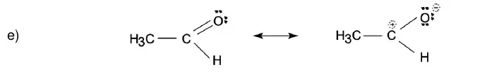
Ejercicio 9, inciso e) — recorte de la guía 2024
Resolución del inciso e)
Inciso e)
Punto de vista:
paso 1 / 3
paso 2 / 3
paso 3 / 3
1
Las dos estructuras
El acetaldehído: H₃C–CH=O con dos pares en el O; en la 2.ª, C⁺–O⁻ con tres pares en el O.
guía 2024, U2 ej. 9 e
2
La flecha
El π C=O se corre entero al O (el más electronegativo): el O queda con un tercer par y carga −, el C con 3 enlaces y carga +.
md U2 (clases en audio, canal del usuario) §9.5clase grabada (audio)
3
¿Cuál es más estable?
La 1.ª (neutra, todos con octeto). La 2.ª existe y explica por qué el C del carbonilo es δ+ y lo atacan los nucleófilos, pero pesa mucho menos.
⟶ CORRECCIÓN. La 2.ª estructura no «existe» por su cuenta: ninguna estructura de resonancia existe sola ni se van alternando. Existe una sola molécula real, el híbrido, que se parece mucho más a la 1.ª. La 2.ª es una forma de escribir que contribuye poco a ese híbrido, y justamente esa pequeña contribución es lo que explica que el C del carbonilo sea δ+ y que lo ataquen los nucleófilos.
md U2 (clases en audio, canal del usuario) §9.5clase grabada (audio) · apunte cap. 14
▼ DESDE ACÁ — lo que explicó el profesor en clase · Unidad 2, ejercicio 9
Abrir la explicación del profesor (transcripción de audio de la clase, sin pizarrón)
9.4 Ejercicio 9: justificar cada paso del movimiento electrónico entre una estructura inicial y una final
A diferencia del ejercicio 8 (donde se pide solo el resultado), aquí se pide demostrar cada uno de los cambios electrónicos intermedios entre la estructura inicial y la final.
Caso A: la carga inicial está desapareada en un extremo de la molécula; en la estructura final, esa carga (y el doble enlace asociado) terminan desplazados más hacia el centro/otro extremo. Para lograrlo, se necesita una estructura intermedia: el carbono con la carga desapareada "solicita" una carga electrónica del carbono vecino, rompiendo el doble enlace correspondiente y desplazando las cargas paso a paso hasta formar el nuevo doble enlace en su posición final. El profesor remarca que no siempre alcanza con un solo paso — a veces es necesario pasar por una o más estructuras intermedias para justificar completamente el desplazamiento de carga entre la primera y la última estructura mostrada.
⟶ CORRECCIÓN. En el inciso a no hay ninguna carga: el punto es un electrón desapareado (un radical, que es neutro). Donde este resumen dice «carga desapareada», leé «electrón desapareado»; y donde dice que el caso C es como el A «pero con carga positiva en vez de negativa», leé: el C es un catión (+) y el A es un radical (sin carga). El movimiento se parece, pero en A se mueven electrones de a uno (medias flechas) y en C, pares (flechas enteras).
Caso B: un carbono con solo 3 enlaces (a dos carbonos y un nitrógeno) y carga positiva (deficiente de electrones) "solicita" un par de electrones libres del nitrógeno adyacente. El nitrógeno, que tiene un par de electrones libres disponible, lo cede fácilmente para formar un nuevo doble enlace con el carbono deficiente, neutralizando la carga positiva.
Caso C: una carga positiva se desplaza de un extremo a otro de la molécula (movimiento equivalente al del caso A, pero con carga positiva en vez de negativa).
Casos D y E: el doble enlace va cambiando de posición a lo largo de la molécula, y junto con él cambian las cargas asociadas a cada átomo unido al carbono central.
Por qué importa esto: entender estos movimientos electrónicos es clave para identificar qué estructuras pueden actuar como electrodonadoras (ceden carga) o electroaceptoras (reciben carga) — esta capacidad es la que después determina las propiedades ácidas o básicas de una sustancia, porque un movimiento de electrones habilita o facilita un movimiento de protones asociado (liberación de un protón = comportamiento ácido).
Fuente: md «unidad 2 (limpio)» · 9.4 Ejercicio 9: justificar cada paso del movimiento electrónico entre una estructura inicial y una final
▲ HASTA ACÁ — ejercicio 9, Unidad 2
Ejercicio 10 pág. 9coincide con la versión 2026
🎓 Cómo lo resolvió la cátedra en el seminario (otra numeración de la guía): H2 · «Ej. 6»
Ejercicio 10: la consigna (guía 2024, pág. 9)texto del enunciado completo (para buscar o copiar; ante cualquier duda manda el recorte)
10) En los siguientes pares, discuta la capacidad del anillo benceno para jugar el doble rol de dador y aceptor de electrones.
a)
b)
c) Dibuja las estructuras de resonancia del cianobenceno:
Cómo leer los dibujos: cada inciso es una tira que baja. Arriba está la estructura de partida; en cada paso aparece una flecha y, debajo, la estructura que resulta. Los carbonos van numerados (C1 = el que lleva el sustituyente; C2 y C6 = orto; C3 y C5 = meta; C4 = para) y cada par que se mueve tiene su color y lo conserva hasta el final. La regla para las cargas está en «La regla que siempre funciona». [ADICIÓN PEDAGÓGICA]
Inciso a)
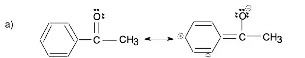
Ejercicio 10, inciso a) — recorte de la guía 2024
Resolución del inciso a)
Inciso a)
Punto de vista:
paso 1 / 6
paso 2 / 6
paso 3 / 6
paso 4 / 6
paso 5 / 6
paso 6 / 6
1
La molécula y cómo leer el dibujo
Acetofenona: un anillo de benceno unido a un C=O (con su CH₃). C1 es el carbono del anillo que lleva el sustituyente y C7 el del carbonilo.
Los cuatro pares π que se van a mover están en color: rojo (C7=O), azul (C1=C2), naranja (C3=C4) y violeta (C5=C6). El O es muy electronegativo: tira del π C=O y deja al C7 con déficit (δ+).
Texto anterior de este paso («La molécula»):
Acetofenona: un anillo de benceno unido a un C=O (con su CH₃). El O es muy electronegativo: tira del π C=O y deja al C del carbonilo con déficit (δ+).
guía 2024, problema resuelto del ej. 10
2
Flecha ①: el C=O se abre hacia el O
El par rojo del doble C7=O se va entero al oxígeno. El O queda con tres pares y carga −; el C7, con 3 rayitas y carga +. Es la 2.ª estructura de la tira, y así arranca el problema resuelto de la guía.
Texto anterior de este paso («Las flechas»):
① El π C=O se corre al O (queda O⁻). ② Ese C, deficiente, «pide prestado» un par al anillo: el π vecino baja a formar un C=C exocíclico.
guía 2024, problema resuelto (dibujo) · md U2 (clases en audio, canal del usuario) §9.5clase grabada (audio)
3
Flecha ②: el anillo le da un par al C7
El C7⁺ «pide prestado» al anillo. El par azul de C1=C2 baja al enlace C1–C7: queda un doble C1=C7 hacia afuera del anillo, el C7 vuelve a tener 4 rayitas, y ahora el que quedó con 3 es el C2. El + entró al anillo, en orto (3.ª estructura).
Texto anterior de este paso («La segunda estructura»):
C=C hacia afuera del anillo, O⁻ con tres pares y la carga + en el anillo (orto). Corriendo los π del anillo, el + pasa a para y al otro orto.
guía 2024, problema resuelto
4
Flecha ③: el + pasa a para
El par naranja C3=C4 se corre un lugar, a C2–C3. El C2 se completa y el que queda con 3 rayitas es el C4, enfrente del sustituyente: para (4.ª estructura). Ésta es la segunda estructura que la guía dibuja en el inciso.
[ADICIÓN PEDAGÓGICA]
5
Flecha ④: el + pasa al otro orto
El par violeta C5=C6 se corre a C4–C5 y el + queda en el C6, el otro orto (5.ª estructura). Ya no quedan pares π para correr. Fijate que el + nunca cae en C3 ni en C5 (meta): sólo llega a carbonos alternados.
¿Van a la vez? Acá no hace falta: cada flecha te da un dibujo nuevo de la misma molécula. No es que pase una cosa y después la otra en el tiempo: son varias formas de escribir una sola molécula real, el híbrido.
[ADICIÓN PEDAGÓGICA]
6
Respuesta
El anillo actúa como dador de electrones: le cedió un par al carbonilo y quedó deficiente. En las estructuras 3.ª, 4.ª y 5.ª el + está en el anillo (C2, C4 y C6: orto, para, orto) y el − en el O.
La molécula real es una sola, la mezcla de las cinco: un anillo algo pobre en electrones (δ+) y un O con δ−, como dibuja la guía al final del problema resuelto.
Texto anterior de este paso («Respuesta»):
Acá el anillo actúa como dador de electrones: los cede al carbonilo y queda deficiente (+).
guía 2024, problema resuelto («el anillo da electrones… queda deficiente en electrones»)
Inciso b)
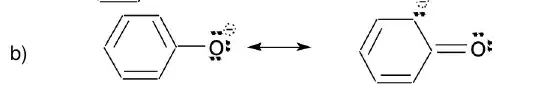
Ejercicio 10, inciso b) — recorte de la guía 2024
Resolución del inciso b)
Inciso b)
Punto de vista:
paso 1 / 6
paso 2 / 6
paso 3 / 6
paso 4 / 6
paso 5 / 6
paso 6 / 6
1
La molécula y cómo leer el dibujo
Fenóxido: un anillo de benceno con un O⁻ unido al C1. El O tiene tres pares libres y carga −: ahora el vecino del anillo tiene electrones de sobra.
En color, los pares que se van a mover: rojo (un par del O), azul (C1=C2), naranja (C3=C4) y violeta (C5=C6).
Texto anterior de este paso («La molécula»):
Fenóxido: un anillo de benceno con un O⁻ (tres pares libres): ahora el vecino tiene exceso de electrones.
guía 2024, problema resuelto («caso b, el fenómeno es inverso»)
2
Flecha ①: el O⁻ baja un par
El par rojo del O baja al enlace C1–O y arma un doble C1=O.
Sola no puede ir: el C1 quedaría con 5 rayitas.
[ADICIÓN PEDAGÓGICA]
3
Flecha ②, a la vez: el π se va al C2
Para que el C1 no pase de 4, el par azul de C1=C2 se va entero al C2, que queda con un par libre y carga −. El − entró al anillo, en orto (2.ª estructura): es la segunda que da la guía.
Texto anterior de este paso («Las flechas»):
① Un par del O⁻ baja a formar C=O. ② Para que ese C no tenga cinco enlaces, el π del anillo se corre al C vecino, que queda con un par libre.
El mismo par de movimientos, un lugar más allá: el par azul del C2 baja al enlace C2–C3 (③) y, a la vez, el par naranja de C3=C4 se va al C4 (④). El − queda en para (3.ª estructura).
Texto anterior de este paso («La segunda estructura»):
C=O (dos pares en el O) y la carga − en el anillo (orto); corriendo los π, pasa a para y al otro orto.
guía 2024, problema resuelto
5
Flechas ⑤ y ⑥: el − pasa al otro orto
Otra vez: el par naranja del C4 baja a C4–C5 (⑤) y el par violeta de C5=C6 se va al C6 (⑥). Son cuatro dibujos en total; el − nunca cae en meta (C3, C5).
¿Cuáles van a la vez? Las dos de cada paso: una arma un doble y la otra saca el doble vecino. De un dibujo al siguiente no hay «antes y después» en el tiempo: son formas de escribir la misma molécula.
[ADICIÓN PEDAGÓGICA]
6
Respuesta
Mismo anillo, papel opuesto: acá es aceptor de electrones. Recibió el par del O⁻ y la carga − quedó repartida en C2, C4 y C6 (orto, para, orto).
Que el anillo dé o reciba depende de lo que tenga unido: un grupo que tira electrones (a) o uno que los empuja (b).
Texto anterior de este paso («Respuesta»):
Mismo anillo, papel opuesto: acá es aceptor de electrones (queda con exceso, −). Depende de lo que tenga unido.
guía 2024, problema resuelto · md U2 (clases en audio, canal del usuario) §9.5clase grabada (audio)
Inciso c)
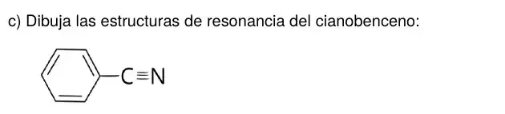
Ejercicio 10, inciso c) — recorte de la guía 2024
Resolución del inciso c)
Inciso c)
Punto de vista:
paso 1 / 6
paso 2 / 6
paso 3 / 6
paso 4 / 6
paso 5 / 6
paso 6 / 6
1
La molécula y cómo leer el dibujo
Cianobenceno: un anillo de benceno con un C≡N en el C1; C7 es el carbono del nitrilo. El N es electronegativo: tira de los π del triple y deja al C7 con δ+, igual que el carbonilo del inciso a).
En color: rojo (uno de los π del triple), azul (C1=C2), naranja (C3=C4) y violeta (C5=C6).
Texto anterior de este paso («La molécula»):
Cianobenceno: un anillo con un C≡N. El N es electronegativo: tira de los π del triple y deja al C del nitrilo con δ+ (igual que el carbonilo del inciso a).
guía 2024, ej. 10 c
2
Flecha ①: un π del C≡N se va al N
Igual que en el ejercicio 8 d): el par rojo del triple se va al N, que queda con dos pares y carga −; el C7 queda con 3 rayitas y carga + (2.ª estructura).
Texto anterior de este paso («Las flechas»):
① Un π del C≡N sube al N (queda N⁻ con dos pares). ② Un π del anillo baja a formar C=C con el C del nitrilo.
razonamiento del problema resuelto (caso a) aplicado al nitrilo: [ADICIÓN PEDAGÓGICA]
3
Flecha ②: el anillo le da un par al C7
El par azul de C1=C2 baja al enlace C1–C7. Queda C1=C7=N, y el + entra al anillo en orto, sobre el C2 (3.ª estructura).
Texto anterior de este paso («La estructura de resonancia»):
Anillo con carga + en orto, C=C=N⁻.
ídem
4
Flecha ③: el + pasa a para
El par naranja C3=C4 se corre a C2–C3: el + queda en el C4 (4.ª estructura).
[ADICIÓN PEDAGÓGICA]
5
Flecha ④: el + pasa al otro orto
El par violeta C5=C6 se corre a C4–C5: el + queda en el C6 (5.ª estructura).
¿Van a la vez? Acá no hace falta: cada flecha te da un dibujo nuevo de la misma molécula. No es que pase una cosa y después la otra en el tiempo: son varias formas de escribir una sola molécula real, el híbrido.
[ADICIÓN PEDAGÓGICA]
6
Todas las formas
Son cinco, y están las cinco dibujadas: la de partida, la del nitrilo polarizado (C7⁺=N⁻) y las tres con el + en el anillo (C2, C4 y C6: orto, para, orto).
El anillo actúa como dador, igual que en el inciso a).
Texto anterior de este paso («Todas las formas»):
Corriendo los π del anillo, el + pasa a para y al otro orto: tres estructuras con carga + en el anillo, más la neutra. El anillo actúa como dador.
⟶ Aclaración. Falta una forma: la del nitrilo polarizado, Ph–C⁺=N:⁻ (un π del C≡N sube al N, que queda con dos pares y carga −; el C del nitrilo queda con 3 enlaces y +). Es la misma que escribiste en el ej. 8 para CH₃–C≡N, y la que la guía dibuja primero para la acetofenona en el problema resuelto (C⁺–O⁻). Justamente de ese C⁺ «pide» electrones el anillo en la flecha ②. En total son cinco: la neutra, Ph–C⁺=N⁻ y las tres con el + en el anillo (orto, para, el otro orto).
ídem
▼ DESDE ACÁ — lo que explicó el profesor en clase · Unidad 2, ejercicio 10
Abrir la explicación del profesor (transcripción de audio de la clase, sin pizarrón)
Asignación por contenido: el «anillo de benceno con un carbonilo y un metilo» es el caso del ejercicio 10 (el anillo como dador y aceptor) [LECTURA PROBABLE].
9.5 Ejemplo integrador: anillo de benceno con un grupo carbonilo y un grupo metilo
Se analiza una molécula con un anillo de benceno unido a un grupo carbonilo (carbono con doble enlace a oxígeno) que a su vez está unido a un grupo metilo:
El grupo metilo tiene efecto electrodonador (cede carga hacia el anillo).
⟶ Aclaración. En la acetofenona el CH₃ está unido al C del carbonilo, no al anillo, así que no le «cede carga» al anillo. En este ejercicio el caso en que el anillo es aceptor es el b, el fenóxido: el que le da electrones al anillo es el O⁻ con sus pares, como dice el problema resuelto de la guía («Para el caso b, el fenómeno es inverso…»). La idea general sí vale: el anillo da o recibe electrones según lo que tenga unido.
El oxígeno del carbonilo, por su electronegatividad, atrae los electrones del doble enlace C=O hacia sí, dejando al carbono del carbonilo con déficit de carga.
Ese carbono deficiente "pide prestada" una carga al anillo de benceno, lo cual obliga a romper uno de los dobles enlaces del anillo y desplazar la carga a través de él, hasta que la carga faltante puede completarse formando un nuevo doble enlace entre el anillo y el carbono del carbonilo.
Conclusión: el anillo de benceno puede actuar tanto como dador de electrones (si está unido a un grupo electronegativo que "le pide" carga) como aceptor de electrones (si está unido a un grupo electrodonador, como el metilo, que "le da" carga) — es decir, el anillo puede absorber carga y cederla según lo que tenga unido, distribuyendo esas cargas a lo largo de su sistema conjugado.
Fuente: md «unidad 2 (limpio)» · 9.5 Ejemplo integrador: anillo de benceno con un grupo carbonilo y un grupo metilo
▲ HASTA ACÁ — ejercicio 10, Unidad 2
⟶ PROBLEMA RESUELTO (así, resuelto por la cátedra en la guía, pág. 9)
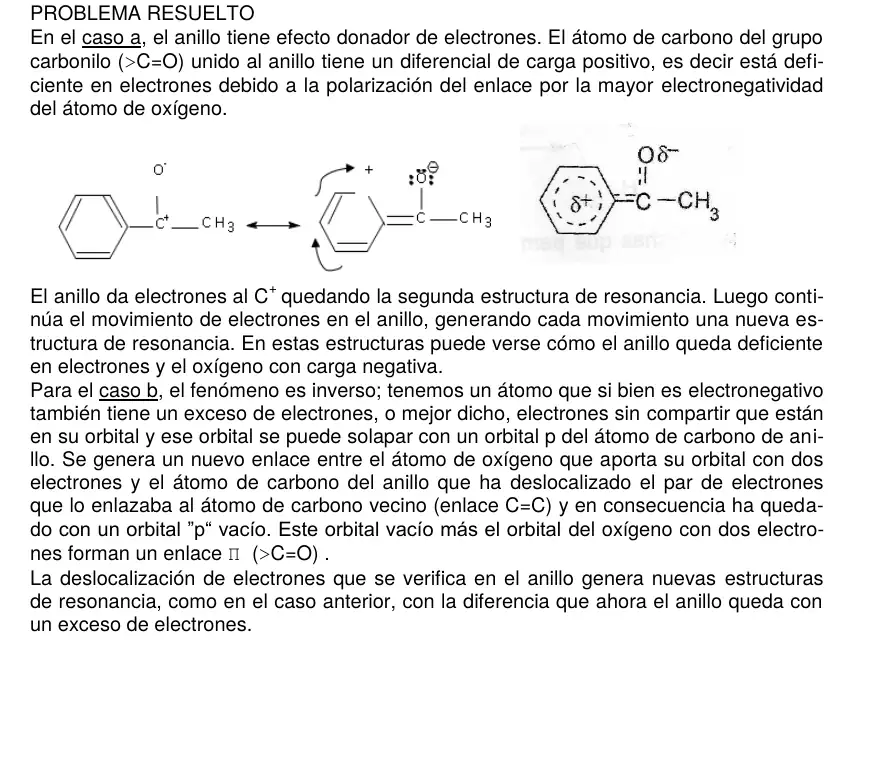
Problema resuelto, tal como aparece en la guía 2024 (pág. 9)texto (para buscar o copiar)
En el caso a, el anillo tiene efecto donador de electrones. El átomo de carbono del grupo carbonilo ( > C=O) unido al anillo tiene un diferencial de carga positivo, es decir está deficiente en electrones debido a la polarización del enlace por la mayor electronegatividad
del átomo de oxígeno.
+ El anillo da electrones al C quedando la segunda estructura de resonancia. Luego continúa el movimiento de electrones en el anillo, generando cada movimiento una nueva estructura de resonancia. En estas estructuras puede verse cómo el anillo queda deficiente
en electrones y el oxígeno con carga negativa. Para el caso b, el fenómeno es inverso; tenemos un átomo que si bien es electronegativo también tiene un exceso de electrones, o mejor dicho, electrones sin compartir que están en su orbital y ese orbital se puede solapar con un orbital p del átomo de carbono de anillo. Se genera un nuevo enlace entre el átomo de oxígeno que aporta su orbital con dos
electrones y el átomo de carbono del anillo que ha deslocalizado el par de electrones que lo enlazaba al átomo de carbono vecino (enlace C=C) y en consecuencia ha quedado con un orbital ”p“ vacío. Este orbital vacío más el orbital del oxígeno con dos electrones forman un enlace Π ( > C=O) .
La deslocalización de electrones que se verifica en el anillo genera nuevas estructuras de resonancia, como en el caso anterior, con la diferencia que ahora el anillo queda con un exceso de electrones.
Ejercicio 11 pág. 10coincide con la versión 2026
🎓 Cómo lo resolvió la cátedra en el seminario (otra numeración de la guía): H2 · «Ej. 8»
Ejercicio 11: la consigna (guía 2024, pág. 10)texto del enunciado completo (para buscar o copiar; ante cualquier duda manda el recorte)
11) Coloque las flechas que permitan justificar el cambio químico que se indica en cada caso:
a)
b)
c)
d)
Cómo leer los dibujos: arriba los reactivos, con cada par que se mueve en un color; en cada paso aparece una flecha numerada; debajo, el intermedio (si lo hay) y el producto, donde cada color muestra en qué se convirtió ese par. Al final, la cuenta de cada átomo. [ADICIÓN PEDAGÓGICA]
Inciso a)
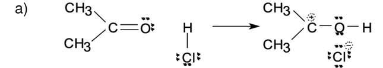
Ejercicio 11, inciso a) — recorte de la guía 2024
Resolución del inciso a)
Inciso a)
Punto de vista:
paso 1 / 10
paso 2 / 10
paso 3 / 10
paso 4 / 10
paso 5 / 10
paso 6 / 10
paso 7 / 10
paso 8 / 10
paso 9 / 10
paso 10 / 10
1
Los reactivos y los colores
Acetona (C=O, con dos pares libres en el O) y HCl (el Cl con tres pares).
En color, los tres pares que se van a mover: rojo (un par libre del O), azul (el par del enlace H–Cl) y naranja (el π del C=O).
Texto anterior de este paso («Los reactivos»):
Acetona (C=O con dos pares en el O) y HCl (el Cl con tres pares).
guía 2024, U2 ej. 11 a
2
Flecha ①: el par del O va al H
El par rojo del O va al H del HCl: nace el enlace O–H. El O es la base (tiene pares libres).
¿No debería ir al revés, si el O «toma» el H? No. La flecha no muestra hacia dónde se mueve el átomo: muestra hacia dónde van los electrones. Siempre sale de donde están (el par del O) y llega adonde van (el H). El H no tiene electrones para dar, así que de él no puede salir ninguna flecha.
Texto anterior de este paso («① El O toma el H»):
Un par libre del O va al H del HCl: nace el enlace O–H. «El oxígeno necesita una carga… para aceptar ese protón»: es la base (par libre) tomando un protón.
md U2 (clases en audio, canal del usuario) §9.6clase grabada (audio) caso A
3
Flecha ②: se rompe el H–Cl
El H no puede tener dos rayitas. Por eso, a la vez, el par azul del enlace H–Cl se va entero con el Cl, que sale como Cl⁻ con cuatro pares. Eso es una ruptura heterolítica.
Hay dos tipos de ruptura.Homolítica: un electrón para cada átomo; quedan dos radicales, sin carga. Heterolítica: los dos electrones para uno solo; quedan dos iones, uno + y uno −. Están dibujadas una al lado de la otra en la teoría: capítulo 14, «De dónde sale», Figura 14-R1. En el dibujo, las dos rayitas cruzadas («corte») marcan dónde se rompe el enlace.
El intermedio. Con ① y ② queda (CH₃)₂C=O⁺–H: el O tiene 3 rayitas y un par (tiene 5, trae 6), por eso lleva el +.
Texto anterior de este paso («② Se rompe el H–Cl»):
El H no puede tener dos enlaces: el par del enlace H–Cl se va entero con el Cl, que sale como Cl⁻ (cuatro pares).
md U2 (clases en audio, canal del usuario) §9.6clase grabada (audio) caso A («primero se debe romper el enlace H–Cl»)
4
Flecha ③: el π del C=O se va al O
Un O con + tira fuerte de los electrones. El par naranja del doble C=O se corre al O: el O recupera su segundo par y queda neutro; el C se queda con 3 rayitas y la carga +.
Esta flecha es la que lleva al producto que dibuja la guía, con el + en el C y no en el O.
Texto anterior de este paso («③ El π C=O baja al O»):
En el producto que da la guía la carga + está en el C, no en el O: el π C=O se corrió al O (que queda neutro, con dos pares y el H) y el C quedó con 3 enlaces → C⁺.
CORRECCIÓN La versión anterior se quedaba en el O⁺ (dos flechas); faltaba esta tercera, que es la que lleva al producto dibujado.
producto del enunciado (recorte de la guía)
5
Con lupa — antes
La lupa dibuja cada rayita que se mueve como dos puntitos (una rayita = dos electrones compartidos), y deja en punteado el lugar de donde salieron.
Rojos: un par libre del O; son sólo suyos. Azules: la rayita H–Cl. Naranjas: la segunda rayita del doble C=O, compartidos entre C y O.
[ADICIÓN PEDAGÓGICA]
6
Con lupa — cuadro ①: los rojos
El O no regala su par: lo pone entre él y el H. Sigue siendo suyo, pero ahora compartido: nació la rayita O–H.
Compartir lo que era sólo suyo le cuesta: antes contaba 2 por ese par, ahora cuenta 1. O: 3 rayitas + 1 par = 5, trae 6 → +.
Problema: el H quedó con dos rayitas (roja y azul). No puede: máximo una. Por eso hace falta el cuadro ②.
[ADICIÓN PEDAGÓGICA]
7
Con lupa — cuadro ②: los azules
Los dos azules se van enteros con el Cl, que se aleja: 4 pares, tiene 8 y trae 7 → Cl⁻. El H vuelve a una sola rayita (la roja).
Hasta acá es el intermedio (CH₃)₂C=O⁺–H. ① y ② pasan a la vez.
[ADICIÓN PEDAGÓGICA]
8
Con lupa — cuadro ③: los naranjas
Los naranjas estaban entre C y O. Ahora quedan sólo sobre el O, como par libre. El O no los soltó; el que los soltó fue el C.
O: 2 rayitas + 2 pares = 6 → neutro otra vez. C: 3 rayitas, trae 4 → +. La carga + se mudó del O al C.
[ADICIÓN PEDAGÓGICA]
9
El producto
(CH₃)₂C⁺–OH + Cl⁻. En el dibujo: la rayita roja es el enlace O–H nuevo, el par naranja del O es el que antes era el π, y el par azul del Cl es el que antes era el enlace H–Cl.
Texto anterior de este paso («El producto»):
(CH₃)₂C⁺–OH + Cl⁻. Control: C con 3 enlaces → +; O con 2 enlaces + 2 pares → neutro; Cl con 4 pares → −.
guía 2024, U2 ej. 11 a
10
Control y orden de las flechas
La cuenta: C con 3 rayitas → +; O con 2 rayitas + 2 pares → neutro; Cl con 4 pares → −. Suma: 0, igual que al empezar.
¿Cuáles van a la vez? La ① y la ② sí: una arma el O–H y la otra rompe el H–Cl. La ③ se puede dibujar después (pasando por el intermedio) o las tres juntas sobre los reactivos: el resultado es el mismo.
[ADICIÓN PEDAGÓGICA]
Inciso b)
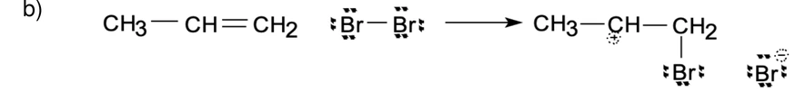
Ejercicio 11, inciso b) — recorte de la guía 2024
Resolución del inciso b)
Inciso b)
Punto de vista:
paso 1 / 8
paso 2 / 8
paso 3 / 8
paso 4 / 8
paso 5 / 8
paso 6 / 8
paso 7 / 8
paso 8 / 8
1
Los reactivos y los colores
Propeno (C3–C2=C1) y Br–Br, cada Br con tres pares.
En color: rojo (el π del doble C2=C1, electrones expuestos) y azul (el par del enlace Br–Br).
Texto anterior de este paso («Los reactivos»):
Propeno (un π con electrones expuestos) y Br–Br (cada Br con tres pares).
guía 2024, U2 ej. 11 b
2
Flecha ①: el π ataca a un Br
El par rojo del π va hacia el Br más cercano: nace el enlace C1–Br. El doble pasa a simple.
Texto anterior de este paso («① El π ataca al Br»):
El par del π va hacia un Br: nace el enlace C–Br en el CH₂.
md U2 (clases en audio, canal del usuario) §9.6clase grabada (audio)
3
Flecha ②: se rompe el Br–Br
Ese Br no puede quedar con dos rayitas. A la vez, el par azul del enlace Br–Br se va entero con el otro Br, que sale como Br⁻ con cuatro pares: ruptura heterolítica.
Hay dos tipos de ruptura.Homolítica: un electrón para cada átomo; quedan dos radicales, sin carga. Heterolítica: los dos electrones para uno solo; quedan dos iones, uno + y uno −. Están dibujadas una al lado de la otra en la teoría: capítulo 14, «De dónde sale», Figura 14-R1. En el dibujo, las dos rayitas cruzadas («corte») marcan dónde se rompe el enlace.
Texto anterior de este paso («② Se rompe el Br–Br»):
El par del enlace Br–Br se va entero con el otro Br → Br⁻.
md U2 (clases en audio, canal del usuario) §9.6clase grabada (audio)
4
Con lupa — antes
Para ver adónde va cada electrón, la lupa dibuja cada rayita que se mueve como dos puntitos (una rayita = dos electrones compartidos).
Los dos rojos están entre C2 y C1: son la segunda rayita del doble, y los comparten los dos carbonos. Los dos azules están entre los dos Br.
[ADICIÓN PEDAGÓGICA]
5
Con lupa — cuadro ①: los rojos
Los dos rojos no cruzan la molécula ni se van de C1. C1 los sigue teniendo. Lo que cambia es con quién los comparte: antes con C2, ahora con el Br.
Pensalo como una puerta: la bisagra está en C1, y la punta que estaba en C2 gira y queda en el Br. [ADICIÓN PEDAGÓGICA]
C2 se quedó sin esos dos electrones que compartía: tiene 3 rayitas y trae 4 → +. C1 sigue con 4 rayitas: neutro.
Problema: ese Br ahora tiene 5 pares alrededor. No puede (máximo 4). Por eso hace falta el cuadro ②.
[ADICIÓN PEDAGÓGICA]
6
Con lupa — cuadro ②: los azules
Los dos azules se van enteros con el Br de la derecha, que se separa. Ese Br queda con 4 pares propios: tiene 8, trae 7 → Br⁻.
El Br del medio vuelve a 4 pares (3 suyos + el rojo que comparte con C1): neutro. En la realidad ① y ② pasan a la vez; la lupa las separa sólo para verlas.
[ADICIÓN PEDAGÓGICA]
7
El producto
CH₃–CH⁺–CH₂–Br + Br⁻. La rayita roja es el enlace C1–Br nuevo; el par azul del Br⁻ es el que antes unía a los dos Br. El C2 perdió el π y quedó con 3 rayitas: +.
La rayita roja son los mismos dos puntitos rojos de la lupa, ahora dibujados como rayita.
Texto anterior de este paso («El producto»):
CH₃–CH⁺–CH₂–Br + Br⁻. El CH del medio perdió el π: 3 enlaces → + (carbocatión secundario). Es la adición electrofílica de la Unidad 6, vista sólo como flechas.
apunte cap. 33
8
Control y por qué el + queda en el C2
La cuenta: C2 con 3 rayitas → +; Br⁻ con 4 pares → −. Suma: 0.
¿Por qué el Br entra en el C1 y no en el C2? Porque así el + queda en el C2, que tiene dos carbonos vecinos (carbocatión secundario), más estable que en la punta. Es la tercera pregunta del recuadro del ejercicio 9.
Las dos flechas van a la vez.
[ADICIÓN PEDAGÓGICA]
Inciso c)
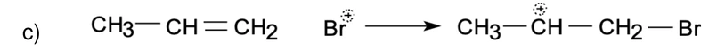
Ejercicio 11, inciso c) — recorte de la guía 2024
Resolución del inciso c)
Inciso c)
Punto de vista:
paso 1 / 6
paso 2 / 6
paso 3 / 6
paso 4 / 6
paso 5 / 6
paso 6 / 6
1
Los reactivos y los colores
Propeno y Br⁺. El Br⁺ tiene tres pares y ningún enlace: tiene 6, trae 7; le falta uno y busca electrones (es un electrófilo).
En rojo, el π del doble C2=C1.
Texto anterior de este paso («Los reactivos»):
Propeno y Br⁺ (el Br con carga positiva: le faltan electrones, es un electrófilo).
CORRECCIÓN La versión anterior lo trataba como un radical (Br•); en el enunciado el Br tiene carga +.
guía 2024, U2 ej. 11 c (recorte)
2
Una sola flecha
El par rojo del π va al Br⁺ y arma el enlace C1–Br. Acá no hay nada que romper: el Br⁺ ya vino sin su pareja. Es lo mismo que el inciso b), pero con la ruptura del Br–Br ya hecha.
Texto anterior de este paso («Una sola flecha»):
El par del π va hacia el Br⁺ y forma el enlace C–Br. El Br⁺ recibió dos electrones: queda neutro.
md U2 (clases en audio, canal del usuario) §9.6clase grabada (audio)
3
Con lupa — antes
La lupa dibuja cada rayita que se mueve como dos puntitos (una rayita = dos electrones compartidos), y deja en punteado el lugar de donde salieron.
Los dos rojos están entre C2 y C1: son la segunda rayita del doble. El Br⁺ tiene sólo 3 pares: le queda un lugar vacío, por eso el +.
[ADICIÓN PEDAGÓGICA]
4
Con lupa — cuadro ①: los rojos
Igual que en el b): C1 no los suelta. La bisagra queda en C1 y la punta que estaba en C2 gira hasta el Br. C2 los soltó: 3 rayitas → +.
El Br llega justo a 4 pares (3 suyos + el rojo compartido): neutro. No le sobra nada, así que acá no hay cuadro ②.
[ADICIÓN PEDAGÓGICA]
5
El producto
CH₃–CH⁺–CH₂–Br. El Br recibió dos electrones compartidos: 1 rayita + 3 pares = 7, neutro. El C2 perdió el π: 3 rayitas, +.
Texto anterior de este paso («El producto»):
CH₃–CH⁺–CH₂–Br: el CH del medio perdió el π → 3 enlaces → +. Mismo carbocatión que en el inciso b.
guía 2024, U2 ej. 11 c
6
Control
Suma de cargas: +1 antes (en el Br) y +1 después (en el C2). La carga se mudó, no desapareció. Es el mismo carbocatión del inciso b).
[ADICIÓN PEDAGÓGICA]
Inciso d)
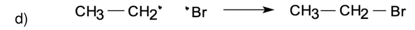
Ejercicio 11, inciso d) — recorte de la guía 2024
Resolución del inciso d)
Inciso d)
Punto de vista:
paso 1 / 6
paso 2 / 6
paso 3 / 6
paso 4 / 6
paso 5 / 6
paso 6 / 6
1
Los reactivos y los colores
Un radical etilo (CH₃–CH₂·) y un radical bromo (·Br): cada uno con un electrón solo y sin carga. En rojo el del carbono, en azul el del bromo.
Texto anterior de este paso («Los reactivos»):
Un radical etilo (CH₃–CH₂•) y un radical bromo (•Br): cada uno con un electrón solitario.
guía 2024, U2 ej. 11 d
2
Dos medias flechas
Acá no se mueven pares sino electrones de a uno: medias flechas. Cada radical pone el suyo en el medio y entre los dos arman el par del enlace C–Br.
Es la ruptura homolítica al revés: en la ruptura, uno para cada uno; acá, cada uno pone el suyo. Las dos van a la vez.
Hay dos tipos de ruptura.Homolítica: un electrón para cada átomo; quedan dos radicales, sin carga. Heterolítica: los dos electrones para uno solo; quedan dos iones, uno + y uno −. Están dibujadas una al lado de la otra en la teoría: capítulo 14, «De dónde sale», Figura 14-R1.
Texto anterior de este paso («Las flechas»):
Acá no se mueven pares sino electrones de a uno: medias flechas. Cada radical aporta su electrón y entre los dos forman el par del enlace C–Br.
md U2 (clases en audio, canal del usuario) §9.6clase grabada (audio) caso D · media flecha: [ADICIÓN PEDAGÓGICA]
3
Con lupa — antes
Acá los puntitos van de a uno. El rojo es del C solo; el azul es del Br solo. Cada uno tiene un electrón sin pareja: eso es un radical.
[ADICIÓN PEDAGÓGICA]
4
Con lupa — cuadros ① y ②
El rojo y el azul se juntan entre el C y el Br: 1 + 1 = un par compartido = la rayita C–Br.
Nadie soltó nada ni se llevó nada de otro: por eso no aparece ninguna carga.
[ADICIÓN PEDAGÓGICA]
5
El producto
CH₃–CH₂–Br, sin cargas: nadie ganó ni perdió electrones. En el dibujo, el enlace nuevo lleva un punto rojo y uno azul. Es una terminación radicalaria.
Texto anterior de este paso («El producto»):
CH₃–CH₂–Br, sin cargas: nadie ganó ni perdió electrones. Es una terminación radicalaria.
apunte cap. 35
6
Control
C: antes 3 rayitas + 1 electrón = 4; después 4 rayitas = 4. Br: antes 3 pares + 1 electrón = 7; después 1 rayita + 3 pares = 7. Los dos neutros, antes y después.
[ADICIÓN PEDAGÓGICA]
▼ DESDE ACÁ — lo que explicó el profesor en clase · Unidad 2, ejercicio 11
Abrir la explicación del profesor (transcripción de audio de la clase, sin pizarrón)
9.6 Ejercicio 11: identificar el origen de los electrones en una reacción
Se analiza rápidamente, sin escribir en el pizarrón, de dónde provienen los electrones necesarios en distintas reacciones:
Caso A: una molécula con H unido a Cl (ácido clorhídrico) reacciona con un grupo que tiene un oxígeno con doble enlace a un carbono. Para que el protón (H⁺) del HCl se una al oxígeno, primero se debe romper el enlace H–Cl (dejando el protón disponible), y el oxígeno necesita una carga electrónica adicional para poder aceptar ese protón — esa carga proviene de romper el doble enlace C=O, quedando el carbono con carga positiva (deficiente de un electrón), mientras que el electrón liberado del doble enlace pasa a formar el nuevo enlace con el hidrógeno.
Un razonamiento análogo (identificar qué enlace se rompe, qué átomo cede o recibe la carga, y marcar las flechas correspondientes) se aplica a las demás moléculas del ejercicio.
Caso D (el más simple del ejercicio): solo hace falta agregar el signo de una carga positiva; el punto de unión de la nueva carga corresponde a uno de los electrones del último nivel de un halógeno (que tiene 7 electrones en su última capa).
Fuente: md «unidad 2 (limpio)» · 9.6 Ejercicio 11: identificar el origen de los electrones en una reacción
▲ HASTA ACÁ — ejercicio 11, Unidad 2
Fuerzas intermoleculares y propiedades físicas pág. 10
Ejercicio 12 pág. 10coincide con la versión 2026
🎓 Cómo lo resolvió la cátedra en el seminario (otra numeración de la guía): F2 · «Ej. 13»
Ejercicio 12: la consigna (guía 2024, pág. 10)texto del enunciado completo (para buscar o copiar; ante cualquier duda manda el recorte)
12) El NaCl se disuelve en agua pero no en n-hexano. Explique.
Resolución
Ej. 12
Punto de vista:
paso 1 / 13
paso 2 / 13
paso 3 / 13
paso 4 / 13
paso 5 / 13
paso 6 / 13
paso 7 / 13
paso 8 / 13
paso 9 / 13
paso 10 / 13
paso 11 / 13
paso 12 / 13
paso 13 / 13
1
Datos: las tres sustancias
Antes de explicar nada, las tres sustancias del enunciado dibujadas con todos sus átomos:
1) NaCl: iones Na⁺ y Cl⁻ acomodados en red.
2) Agua, H₂O: un O con dos H y dos pares libres.
3) n-Hexano, C₆H₁₄: seis C en fila, sólo C e H.
enunciado (guía, pág. 10)
2
La sal es una red de iones
El NaCl no está hecho de moléculas: es una red donde cada Na⁺ está rodeado de Cl⁻ y cada Cl⁻ de Na⁺.
¿Por qué iones? Electronegatividad: Na 0,9 y Cl 3,2. La diferencia (2,3) es tan grande que el Cl no comparte: se queda con el electrón del Na. Quedan Na⁺ y Cl⁻, que se atraen + con −, muy fuerte.
Disolver la sal es separar esos iones. Eso cuesta energía. Todo el ejercicio es una sola pregunta: ¿quién paga ese costo?
En los dibujos: azul = positivo y rojo = negativo, siempre.
Texto anterior de este paso («Dos vasos»):
Se compara como si fueran dos vasos de precipitados: uno con agua y otro con n-hexano, y en cada uno se echa sal. El NaCl es iónico: una red de Na⁺ y Cl⁻ muy atraídos entre sí.
md U2 (clases en audio, canal del usuario) §5.2clase grabada (audio) · tu hoja, pág. 16 del PDF «U1 y U2» («12) NaCl», los dos vasos) · Morrison y Boyd, cap. 1, §1.21 (pp. 31–32) · valores de electronegatividad: Wade, Fig. 1.7 (los de la tabla del apunte)
3
Agua con lupa (1): un enlace O–H
Miramos un solo enlace. Los dos puntitos violetas son los dos electrones que comparten el O y el H.
El O tira más (3,4 contra 2,2; diferencia 1,2). No se los lleva como el Cl al Na: los comparte, pero quedan más cerca del O.
Resultado: el O queda un poco negativo (δ⁻) y el H un poco positivo (δ⁺). «δ» quiere decir «un poco»: no es una carga entera.
valores de electronegatividad: Wade, Fig. 1.7 (los de la tabla del apunte) · apunte cap. 8
4
Agua con lupa (2): la forma decide
El agua tiene dos enlaces O–H y dos pares libres en el O. Los cuatro se acomodan lo más lejos posible, y la molécula queda angular.
Por eso los dos H quedan del mismo lado: la molécula tiene un lado negativo (el O con sus pares) y un lado positivo (los H). Es polar.
Si fuera recta (H–O–H en línea), los dos tirones serían opuestos y se anularían. No es el caso.
El mismo zoom en un enlace C–H: 2,5 contra 2,2. La diferencia (0,3) es mínima: los dos electrones quedan casi al medio. No aparece δ⁺ ni δ⁻ que valga.
El C–C es entre dos átomos iguales: diferencia 0.
Molécula entera: seis C en fila, todos tapados por H. Por fuera no hay ningún lado con carga. Es apolar.
valores de electronegatividad: Wade, Fig. 1.7 (los de la tabla del apunte) · apunte cap. 10
6
En el agua: el Na⁺ rodeado
El Na⁺ es positivo, así que las aguas se le acercan con su lado negativo: el O, con sus pares libres, mira al ion.
Cada punteado verde es una atracción ion–dipolo.
Texto anterior de este paso («En el agua»):
El agua es polar: el O es δ⁻ y los H son δ⁺. Cada ion queda rodeado (solvatado): el O mira al Na⁺ y los H miran al Cl⁻. Esas atracciones ion–dipolo pagan la energía de separar la red, y los iones se dispersan.
md U2 (clases en audio, canal del usuario) §5.2clase grabada (audio) («cada ion se solvata») · apunte cap. 11 · Morrison y Boyd, cap. 1, §1.21 (pp. 31–32)
7
En el agua: el Cl⁻ rodeado
El Cl⁻ es negativo: las aguas se dan vuelta y se le acercan con un H (lado positivo).
Una sola atracción ion–dipolo es débil. Pero cada ion queda rodeado por muchas aguas, y todas juntas aportan la energía que hace falta para desarmar la red. Un ion así rodeado está solvatado (con agua: hidratado).
Morrison y Boyd, cap. 1, §1.21 (pp. 31–32)
8
Cuadro por cuadro: cómo sale un ion
① Las aguas llegan a un ion de la esquina de la red, con el lado que corresponde.
② Entre varias tiran de él y lo separan.
③ Se lo llevan rodeado. Ya no vuelve a la red, porque las aguas lo tapan.
Así, ion por ion, la red se desarma. [ADICIÓN PEDAGÓGICA] (el orden en cuadros es mío; el hecho lo da el libro).
Morrison y Boyd, cap. 1, §1.21 (pp. 31–32)
9
Ya separados: por qué no se vuelven a juntar
Un Na⁺ y un Cl⁻ sueltos se siguen atrayendo. En agua, las moléculas que quedan en el medio tapan las cargas: la atracción entre los dos iones baja muchísimo.
Eso se mide con la constante dieléctrica: cuánto debilita un solvente la atracción entre dos cargas. El libro dice que para disolver una sal el solvente debe tenerla elevada, y el agua la tiene.
En hexano nada tapa las cargas: los iones se atraen con toda la fuerza y se quedan pegados.
Valores (agua ≈ 80, hexano ≈ 2): [ADICIÓN PEDAGÓGICA], no están en las fuentes del proyecto.
Morrison y Boyd, cap. 1, §1.21 (pp. 31–32) («debe tener también una constante dieléctrica elevada») · apunte cap. 11
10
En el hexano
El hexano no tiene lado + ni lado −: no puede «agarrar» a un ion. Lo único que ofrece son fuerzas de London, muy débiles al lado de la atracción Na⁺–Cl⁻.
En el dibujo no hay ningún punteado verde: nadie tira de los iones y la red queda entera en el fondo.
Texto anterior de este paso («En el hexano»):
El C₆H₁₄ sólo tiene enlaces C–C y C–H, casi sin diferencia de electronegatividad: no hay δ⁺ ni δ⁻ donde «engancharse». Entre sus moléculas hay sólo fuerzas de London, muy débiles frente a la atracción Na⁺–Cl⁻: no hay nada que compense romper la red.
md U2 (clases en audio, canal del usuario) §5.2clase grabada (audio) · apunte cap. 10 · Morrison y Boyd, cap. 1, §1.21 (pp. 31–32)
11
La cuenta de energía
Se rompe (se paga): la red Na⁺/Cl⁻, que es lo caro, y además algunas uniones entre las moléculas del solvente, para hacerle lugar al ion.
En agua se forma: muchas atracciones ion–dipolo alrededor de cada ion. Alcanza.
En hexano se forma: sólo London entre el ion y el hexano. No alcanza.
Morrison y Boyd, cap. 1, §1.21 (pp. 31–32) («las fuerzas atractivas anteriores son reemplazadas por otras nuevas»)
12
Respuesta
Para escribir en el examen: «El NaCl es un compuesto iónico. El agua es polar: sus moléculas rodean a cada ion (el O hacia el Na⁺, los H hacia el Cl⁻) con atracciones ion–dipolo que, sumadas, compensan la energía necesaria para separar los iones de la red. El n-hexano es apolar: sólo ofrece fuerzas de London, que no alcanzan. Semejante disuelve semejante.»
Texto anterior de este paso («Respuesta»):
El NaCl (iónico) se disuelve en agua (polar) y no en n-hexano (apolar): semejante disuelve semejante.
md U2 (clases en audio, canal del usuario) §5.2clase grabada (audio) («conclusión») · cátedra: ▶ video 2 · 0:13–1:39 (resolución de la cátedra en Ejercicios de la unidad, bloques F–H) · Morrison y Boyd, cap. 1, §1.21 (pp. 31–32)
13
Errores que restan puntos
«Las moléculas de NaCl»: no hay moléculas, es una red de iones.
«El NaCl tiene fuerzas intermoleculares»: entre iones hay atracción iónica, mucho más fuerte que cualquier fuerza entre moléculas.
«El agua es polar por el puente de hidrógeno»: es al revés. Es polar (O más electronegativo + forma angular) y por eso puede formar puentes.
«El hexano no tiene fuerzas»: tiene London; lo que pasa es que no alcanza.
Los tres primeros salen de la corrección a la explicación de clase, que está más abajo en este ejercicio.
Morrison y Boyd, cap. 1, §1.21 (pp. 31–32) · corrección al §5.2 de la clase
▼ DESDE ACÁ — lo que explicó el profesor en clase · Unidad 2, ejercicio 12
Abrir la explicación del profesor (transcripción de audio de la clase, sin pizarrón)
5.2 Ejercicio 12: por qué el cloruro de sodio se disuelve en agua pero no en hexano
Consigna: el cloruro de sodio se disuelve en agua pero no en hexano. Explique.
Método sugerido: comparar los dos sistemas por separado, como si fueran dos vasos de precipitados (uno con agua, otro con hexano), y predecir qué ocurre al agregar sal a cada uno.
Agua: moléculas de H₂O formando dipolos parciales (por la naturaleza del puente hidrógeno).
Hexano (C₆H₁₄, seis carbonos en línea con los enlaces restantes completados por hidrógeno): en solución, las moléculas de hexano adoptan una forma de "varillas tetraédricas alargadas" que se apilan entre sí, unidas por fuerzas intermoleculares mucho más débiles que el puente hidrógeno (fuerzas de Van der Waals).
Cloruro de sodio: es un enlace iónico, con fuerzas intermoleculares fuertes (comparables en magnitud a las del puente hidrógeno). Al disolverse en agua, cada ion se solvata y se orienta polarmente según le conviene, lo que favorece la separación (disgregación) de los iones Na⁺ y Cl⁻.
⟶ CORRECCIÓN. (1) En el NaCl no hay moléculas ni «fuerzas intermoleculares»: es una red de iones unidos por atracción electrostática, y esa atracción es MUCHO más fuerte que un puente de hidrógeno (por eso el NaCl funde a 801 °C). Se disuelve en agua porque cada ion queda rodeado de muchas moléculas de agua: cada atracción ion–dipolo es débil, pero todas juntas pagan la energía de desarmar la red (Morrison y Boyd, cap. 1, §1.21). (2) El agua no es un dipolo «por el puente de hidrógeno»: es al revés, es polar (O más electronegativo + forma angular) y por eso puede formar puentes de hidrógeno.
En el hexano, en cambio, no hay ninguna carga (ni apareada ni libre) fuera de los enlaces C–H/C–C a la que un ion pudiera "engancharse", y la geometría de la red de varillas apiladas tampoco permite alojar iones. Además, los enlaces del hexano son apolares (covalentes, dominados por fuerzas de Van der Waals), muchísimo más débiles que la fuerza iónica del cloruro de sodio.
Conclusión (aplicando la regla "semejante disuelve semejante"): el cloruro de sodio, de naturaleza iónica/polar, se disuelve en la matriz acuosa (también polar) pero no en la matriz orgánica apolar del hexano.
Fuente: md «unidad 2 (limpio)» · 5.2 Ejercicio 12: por qué el cloruro de sodio se disuelve en agua pero no en hexano
▲ HASTA ACÁ — ejercicio 12, Unidad 2
Ejercicio 13 pág. 10coincide con la versión 2026
🎓 Cómo lo resolvió la cátedra en el seminario (otra numeración de la guía): H3 · «Ej. 14–16»
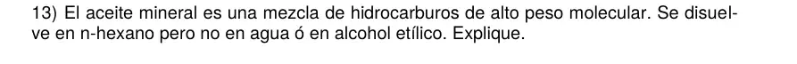
Ejercicio 13: la consigna (guía 2024, pág. 10)texto del enunciado completo (para buscar o copiar; ante cualquier duda manda el recorte)
13) El aceite mineral es una mezcla de hidrocarburos de alto peso molecular. Se disuelve en n-hexano pero no en agua ó en alcohol etílico. Explique.
Resolución
Ej. 13
Punto de vista:
paso 1 / 12
paso 2 / 12
paso 3 / 12
paso 4 / 12
paso 5 / 12
paso 6 / 12
paso 7 / 12
paso 8 / 12
paso 9 / 12
paso 10 / 12
paso 11 / 12
paso 12 / 12
1
Datos: las cuatro sustancias
Antes de explicar nada, las cuatro sustancias del enunciado dibujadas con todos sus átomos:
1) Aceite mineral: «mezcla de hidrocarburos de alto peso molecular». Hidrocarburo = sólo C e H. Alto peso molecular = cadena muy larga (los «···» dicen que sigue). Cada C de adentro lleva 2 H. Debajo, la misma cadena abreviada en zigzag: cada esquina es un C con sus H.
2) n-Hexano, C₆H₁₄: también sólo C e H, pero 6 carbonos.
3) Agua, H₂O: un O con dos H y dos pares libres.
4) Alcohol etílico, CH₃–CH₂–OH: dos C y un grupo O–H.
Ya se ve la pista: 1 y 2 se parecen (sólo C e H); 3 y 4 tienen un O–H.
El enunciado dice «mezcla de hidrocarburos de alto peso molecular»: cadenas muy largas hechas sólo de C e H.
Zoom en un enlace C–H: 2,5 contra 2,2. Los dos electrones (puntitos violetas) quedan casi al medio. En el C–C, justo al medio. No hay ningún lado + ni −: toda la cadena es apolar.
Texto anterior de este paso («El aceite mineral»):
Mezcla de hidrocarburos de alto peso molecular: cadenas largas (en clase se tomó el octano de ejemplo, «dos carbonos más que el hexano») con sólo enlaces C–C y C–H. Toda la molécula es apolar: entre cadenas actúan fuerzas de London.
md U2 (clases en audio, canal del usuario) §5.3clase grabada (audio) · tu hoja, pág. 17 del PDF «U1 y U2» · electronegatividades: Wade, Fig. 1.7
3
Qué es London, con lupa
Es la única atracción que tienen entre sí las moléculas apolares. Sale así:
① En una molécula apolar los electrones están repartidos parejo.
② Pero se mueven. En un instante quedan un poco corridos hacia un lado: aparece un δ⁻ y un δ⁺ que duran nada (dipolo instantáneo).
③ Ese δ⁻ empuja a los electrones de la molécula vecina, que queda con su δ⁺ enfrentado. Se atraen un poco.
¿Por qué se corren los electrones? Porque nunca están quietos: se mueven todo el tiempo alrededor de los núcleos. «Repartidos parejo» es el promedio; en cada instante hay un poquito más de un lado que del otro.
¿Y si dura un instante, por qué importa? Porque apenas se deshace un dipolo instantáneo ya se armó otro, y cada uno arrastra a los vecinos. Sumando todos los instantes, queda una atracción neta, chica pero permanente.
¿Quién la tiene? Todas las moléculas, polares o no (esto último: [ADICIÓN PEDAGÓGICA]). En las apolares es la única que hay; por eso es la que decide en el aceite y en el hexano.
Es débil y fugaz, pero pasa todo el tiempo y en toda la superficie de contacto. En el dibujo: punteado naranja. Leelo completo en teoría: capítulo 10, «Dispersión de London». Morrison la llama fuerza de Van der Waals; es lo mismo.
London sólo actúa entre las partes de las moléculas que están en contacto. Cuanto más larga la cadena, más superficie de contacto y más London.
Por eso un aceite de cadenas largas se mantiene bien unido, aunque cada atracción por separado sea débil.
Morrison y Boyd, cap. 1, §1.19–1.20 (pp. 28–30) («cuanto más grandes son las moléculas, más fuertes son las fuerzas de Van der Waals»)
5
Con n-hexano
El hexano también es una cadena de C e H: apolar, sostenida sólo por London.
Antes: aceite con aceite (London) y hexano con hexano (London). Después: aceite con hexano (London). Lo que se rompe y lo que se forma es del mismo tipo: no cuesta nada mezclarlos. Se disuelve.
Texto anterior de este paso («Con n-hexano»):
El hexano también es una cadena apolar: las fuerzas entre aceite y hexano son del mismo tipo que las que había antes (London con London). Nada impide que se mezclen: se disuelve.
md U2 (clases en audio, canal del usuario) §5.3clase grabada (audio) · apunte cap. 11 · Morrison y Boyd, cap. 1, §1.21 (pp. 31–32)
6
El agua y sus puentes
Como en el ejercicio 12: el O (3,4) tira más que el H (2,2) y la molécula es angular, así que tiene un lado δ⁻ y un lado δ⁺.
El H δ⁺ de una molécula se pega al O δ⁻ de otra: eso es un puente de hidrógeno (punteado verde). El agua líquida es una red de esos puentes. Es la fuerza entre moléculas más fuerte de las tres.
Si el aceite entrara: para hacerle lugar a la cadena hay que separar moléculas de agua, es decir, romper puentes de hidrógeno (cada ✗ rojo). A cambio, el aceite sólo puede dar London, porque no tiene ni O–H ni pares libres.
Se pierde mucho y se gana poco. Lo que pasa de verdad: el agua se queda con el agua, el aceite con el aceite, y se ven dos partes.
Texto anterior de este paso («Con agua»):
El agua está unida por puentes de hidrógeno (O–H···O). Para meter una cadena apolar habría que romper esos puentes a cambio de nada (el aceite no puede formar puentes): el agua se queda con el agua y el aceite queda aparte.
md U2 (clases en audio, canal del usuario) §5.3clase grabada (audio) (regla del puente de H: sólo O–H, N–H, H–F) · apunte cap. 11 · Morrison y Boyd, cap. 1, §1.21 (pp. 31–32)
8
El alcohol etílico, con lupa
CH₃–CH₂–OH tiene dos partes. La parte apolar es el CH₃–CH₂: sólo C–C y C–H, apenas dos carbonos. La parte polar es el O–H: O 3,4 contra H 2,2, igual que en el agua.
El –OH manda: el etanol es polar, y sus moléculas se unen entre sí por puentes de hidrógeno (el H de una con el O de otra).
Texto anterior de este paso («Con alcohol etílico»):
El etanol tiene un OH: es polar y sus moléculas se unen por puente de hidrógeno, como el agua. Su parte apolar (dos C) es chica frente a cadenas tan largas: tampoco lo disuelve.
md U2 (clases en audio, canal del usuario) §5.3clase grabada (audio) («el –OH aporta un átomo muy electronegativo… y permite puente de hidrógeno») · tu hoja, pág. 17 del PDF «U1 y U2» (etanol con δ⁻ y «puente hidrógeno: O, N, F») · electronegatividades: Wade, Fig. 1.7
9
Con alcohol etílico
La cadena larga del aceite sólo puede hacer London con la parte chica (dos C) de cada etanol. Para rodearla habría que separar etanoles que están unidos por puentes.
Otra vez lo que se pierde (puentes) es más que lo que se gana (un poco de London). Por eso la guía dice que tampoco se disuelve.
n-hexano: se rompe London y se forma London. Empata: se disuelve.
agua: se rompen puentes de H y se forma sólo London. Pierde.
etanol: se rompen puentes de H y se forma London con una cola de 2 C. Pierde.
Morrison y Boyd, cap. 1, §1.21 (pp. 31–32) («las fuerzas atractivas anteriores son reemplazadas por otras nuevas»)
11
Respuesta
Para escribir en el examen: «El aceite mineral está formado por hidrocarburos de cadena larga, apolares: sus moléculas sólo se atraen por fuerzas de London. El n-hexano también es apolar, de modo que al mezclarlos se reemplazan fuerzas de London por otras iguales, y se disuelve. El agua y el alcohol etílico tienen grupos O–H y están unidos por puentes de hidrógeno; el aceite no puede formar puentes y no compensa los que habría que romper. Semejante disuelve semejante.»
Texto anterior de este paso («Respuesta»):
Aceite (apolar, London) se disuelve en n-hexano (apolar, London); no en agua ni en etanol, unidos por puentes de hidrógeno. Hay que mirar juntas las fuerzas intermoleculares, los átomos y la geometría, «no un solo factor aislado».
md U2 (clases en audio, canal del usuario) §5.3clase grabada (audio) (respuesta a la pregunta del alumno) · cátedra: ▶ video 25 · 2:19–4:28 (resolución de la cátedra en Ejercicios de la unidad, bloques F–H) · Morrison y Boyd, cap. 1, §1.21 (pp. 31–32)
12
Errores que restan puntos
«El aceite no tiene fuerzas»: tiene London, y con cadenas largas suma mucho.
«London es un enlace»: no une átomos; es una atracción entre moléculas enteras.
«El etanol es apolar porque tiene carbonos»: tiene un O–H; es polar y forma puentes.
«El agua tiene enlaces fuertes»: lo fuerte son sus fuerzas entre moléculas (puentes de H), no los enlaces de adentro. Es la aclaración a la explicación de clase, más abajo en este ejercicio.
▼ DESDE ACÁ — lo que explicó el profesor en clase · Unidad 2, ejercicio 13
Abrir la explicación del profesor (transcripción de audio de la clase, sin pizarrón)
5.3 Ejercicio 13: por qué el aceite mineral se disuelve en hexano pero no en agua ni en alcohol etílico
Consigna: el aceite mineral (mezcla de hidrocarburos de alto peso molecular) se disuelve en hexano, pero no en agua ni en alcohol etílico (etanol). Explique.
Agua: ya analizada — polar, con puente hidrógeno.
Alcohol etílico / etanol: deriva del etano, pero en vez de tener los 6 hidrógenos, tiene un grupo funcional alcohol (–OH) en lugar de uno de ellos. Ese grupo –OH aporta un átomo muy electronegativo (el oxígeno), que genera un efecto inductivo sobre las cargas y por lo tanto polaridad en la molécula. Además, el –OH permite la formación de puente de hidrógeno.
Regla sobre el puente de hidrógeno (aclaración general): se forma específicamente entre O–H⋯O, O–H⋯N, o H⋯F — únicamente en esos tres casos (con oxígeno, nitrógeno o flúor). Donde hay posibilidad de puente de hidrógeno, se trata de una molécula con enlaces fuertes, que tenderá a disolver otros compuestos con enlaces igualmente fuertes (agua y etanol, en este caso).
⟶ Aclaración. Acá «enlaces fuertes» quiere decir fuerzas INTERmoleculares fuertes (puentes de hidrógeno entre moléculas), no enlaces dentro de la molécula. Lo mismo más abajo: los enlaces C–C y C–H del aceite y del hexano son covalentes apolares (dentro de la molécula); lo que es «de Van der Waals» (London) es la atracción ENTRE moléculas. No confundas enlace intramolecular con fuerza intermolecular.
Aceite mineral (hidrocarburo de alto peso molecular): al ser "de alto peso molecular" se trata de cadenas con muchos más carbonos (ejemplo trabajado en clase: octano, con dos carbonos más que el hexano). Es una red más extendida y más pesada, pero sigue siendo enteramente de enlaces covalentes apolares (fuerzas de Van der Waals) — es decir, aún más alejada, en términos de fuerza intermolecular, de lo que necesitaría la sal (o el agua/etanol) para disolverse en ella.
Pregunta de un alumno: ¿en este caso (ejercicio 13) importa más la geometría que la polaridad de la molécula?
Respuesta: al evaluar si una sustancia se disuelve en otra, hay que evaluar en conjunto varias variables: las fuerzas intermoleculares en juego, las fuerzas de enlace, la masa de la sustancia, los átomos involucrados y la geometría de las moléculas — no un solo factor aislado.
Fuente: md «unidad 2 (limpio)» · 5.3 Ejercicio 13: por qué el aceite mineral se disuelve en hexano pero no en agua ni en alcohol etílico
Ejercicio 14: la consigna (guía 2024, pág. 10)texto del enunciado completo (para buscar o copiar; ante cualquier duda manda el recorte)
14) La presencia de dipolos es una condición necesaria pero no suficiente para que un compuesto químico sea polar. Es necesario considerar también la geometría de la molécula. Teniendo esto en cuenta, ¿cómo explica el hecho de que el agua sea polar y que
moléculas como CO , CCl y trinitrobenceno sean apolares?
Trinitrobenceno
Agua
Resolución · Agua
C gris · H azul · O rojo · N violeta · halógenos verde. Los dos puntitos son un par libre. Dibujo plano: muestra qué átomo está unido a cuál, no la forma en el espacio. [ADICIÓN PEDAGÓGICA]
PROCESO: la resolución, paso a paso
Agua
Punto de vista:
paso 1 / 4
paso 2 / 4
paso 3 / 4
paso 4 / 4
1
La molécula
H–O–H con dos pares libres en el O: cuatro regiones alrededor del O → los dos H quedan en ángulo (≈104,5°), no en línea.
El agua es polar: tiene enlaces polares y una geometría que no los anula.
md U2 (clases en audio, canal del usuario) §5.4clase grabada (audio) · cátedra: ▶ video 25 · 4:28–7:29 (resolución de la cátedra en Ejercicios de la unidad, bloques F–H)
CO₂
Resolución · CO₂
CO₂
Punto de vista:
paso 1 / 4
paso 2 / 4
paso 3 / 4
paso 4 / 4
1
La molécula
O=C=O: el C tiene dos dobles enlaces → sp → lineal (180°).
apunte cap. 6 · tu hoja, pág. 18 del PDF «U1 y U2» (O=C=O)
2
Los dipolos
Cada C=O es polar (el O atrae más): dos vectores, uno hacia cada O.
md U2 (clases en audio, canal del usuario) §5.4clase grabada (audio)
3
La suma
Son iguales en tamaño y apuntan en sentidos opuestos sobre la misma recta: se anulan. μ = 0, como escribiste en tu hoja.
md U2 (clases en audio, canal del usuario) §5.4clase grabada (audio) · tu hoja, pág. 18 del PDF «U1 y U2» («μ = ∅»)
4
Respuesta
Enlaces polares, molécula apolar: la geometría lineal cancela los dipolos.
md U2 (clases en audio, canal del usuario) §5.4clase grabada (audio) · cátedra: ▶ video 25 · 4:28–7:29 (resolución de la cátedra en Ejercicios de la unidad, bloques F–H) · bibliografía: Morrison y Boyd, Problemas resueltos (guía de estudio), cap. 1, prob. 1.6 (CO₂ lineal: la única forma que anula los dos dipolos C–O)
CCl₄
Resolución · CCl₄
CCl₄
Punto de vista:
paso 1 / 4
paso 2 / 4
paso 3 / 4
paso 4 / 4
1
La molécula
Como el metano, pero con un Cl en lugar de cada H: C sp³, tetraédrico.
md U2 (clases en audio, canal del usuario) §5.4clase grabada (audio) · tu hoja, pág. 18 del PDF «U1 y U2»
2
Los dipolos
Cada C–Cl es polar (el Cl es más electronegativo): cuatro vectores del C hacia cada Cl, todos iguales porque los cuatro Cl son iguales.
md U2 (clases en audio, canal del usuario) §5.4clase grabada (audio)
3
La suma
Apuntan a los cuatro vértices de un tetraedro regular: la suma da cero.
md U2 (clases en audio, canal del usuario) §5.4clase grabada (audio)
4
Respuesta
Apolar: la simetría tetraédrica anula los cuatro dipolos.
md U2 (clases en audio, canal del usuario) §5.4clase grabada (audio) · cátedra: ▶ video 25 · 4:28–7:29 (resolución de la cátedra en Ejercicios de la unidad, bloques F–H) · bibliografía: Fernández Cirelli, cap. 1, p. 30 (CCl₄: enlaces polares, μ = 0)
Trinitrobenceno
Ejercicio 14, Trinitrobenceno — recorte de la guía 2024
Resolución · Trinitrobenceno
Trinitrobenceno
Punto de vista:
paso 1 / 6
paso 2 / 6
paso 3 / 6
paso 4 / 6
paso 5 / 6
paso 6 / 6
1
Datos: la molécula, con todos sus átomos
Un anillo de benceno (seis C en un plano, numerados 1 a 6) con un grupo nitro, –NO₂, en los C 1, 3 y 5. En los C 2, 4 y 6 queda un H.
Como van salteados, los tres nitro quedan a 120° uno de otro, como las puntas de un triángulo.
El nitro se escribe con + en el N y − en un O para que cierren las cuentas de cada átomo; no cambia nada de lo que sigue.
Texto anterior de este paso («La molécula»):
Un benceno (plano) con tres grupos nitro en 1, 3 y 5: separados 120° entre sí.
md U2 (clases en audio, canal del usuario) §5.4clase grabada (audio) · tu hoja, pág. 19 del PDF «U1 y U2» («1 vértice de △ de cada uno»)
2
Con lupa: un nitro es polar
Electronegatividad: C 2,5 · N 3,0 · O 3,4. El N tira más que el C del anillo y los O tiran más que el N: los electrones se corren hacia afuera.
Eso es un dipolo. Se dibuja como una flecha: la cola con cruz en el lado δ⁺ (el C) y la punta en el lado δ⁻ (el nitro).
Texto anterior de este paso («Los dipolos»):
El N y los O del nitro son más electronegativos que el C del anillo: cada NO₂ tira electrones hacia afuera → un vector por grupo.
md U2 (clases en audio, canal del usuario) §5.4clase grabada (audio) · tu hoja, pág. 19 del PDF «U1 y U2» («vector de carga») · electronegatividades: Wade, Fig. 1.7
3
Los tres vectores
Hay un vector por nitro, cada uno con su color: rojo (C1, hacia arriba), naranja (C3, abajo a la derecha) y violeta (C5, abajo a la izquierda).
Los tres miden lo mismo, porque los tres grupos son iguales, y apuntan a 120° uno de otro.
Cada nitro va encerrado en un globo punteado de su color con su δ⁻: es la zona hacia donde se corrieron los electrones. El anillo, en el centro, queda δ⁺ (círculo azul). Las cargas enteras del nitro (+ en el N, − en un O) van en un circulito, para no confundirlas con los δ.
Los dibujo por fuera de cada nitro, en la dirección del enlace C–N, para que no tapen ningún átomo.
clase grabada §5.4 · [ADICIÓN PEDAGÓGICA] (colores y ubicación de las flechas)
4
La suma, cuadro por cuadro
Para sumar flechas se ponen una a continuación de la otra:
① Salgo del inicio con la roja, hacia arriba.
② Desde su punta sigo con la naranja.
③ Desde ahí, la violeta me devuelve justo al inicio.
Quedó un triángulo cerrado. Terminar donde se empezó quiere decir que la suma es cero.
Texto anterior de este paso («La suma»):
Tres vectores iguales a 120°: si se ponen uno a continuación del otro forman un triángulo cerrado → la suma es cero.
md U2 (clases en audio, canal del usuario) §5.4clase grabada (audio) («no hay preferencia angular»)
5
Para comparar: con dos nitro
Si tuviera sólo dos nitro (rojo y naranja), el camino no vuelve al inicio: sobra una flecha neta (verde). Esa molécula sería polar.
Mismos grupos, otra ubicación, otro resultado. Eso es lo que dice el enunciado: los dipolos son necesarios pero no suficientes; decide la geometría.
[ADICIÓN PEDAGÓGICA] (el caso de dos nitro no está en el enunciado; sirve para ver la regla)
6
Respuesta
Apolar (μ = 0). Cada nitro es polar, pero son tres dipolos iguales, a 120°, en un plano: se anulan entre sí.
Texto anterior de este paso («Respuesta»):
Apolar: los nitro son polares, pero la simetría los anula. Regla del ejercicio: los dipolos son necesarios pero no suficientes; decide la geometría.
md U2 (clases en audio, canal del usuario) §5.4clase grabada (audio) (principio general) · cátedra: ▶ video 25 · 4:28–7:29 (resolución de la cátedra en Ejercicios de la unidad, bloques F–H)
▼ DESDE ACÁ — lo que explicó el profesor en clase · Unidad 2, ejercicio 14
Abrir la explicación del profesor (transcripción de audio de la clase, sin pizarrón)
5.4 Ejercicio 14: por qué el CO₂, el tetraclorometano y el 1,3,5-trinitrobenceno son apolares a pesar de tener enlaces polares
Consigna: la presencia de enlaces polares es necesaria, pero no suficiente, para que un compuesto sea polar en su conjunto — también hay que considerar la geometría de la molécula. Con esto en cuenta, explicar por qué el agua es polar mientras que el dióxido de carbono, el tetraclorometano y el trinitrobenceno son apolares.
Dióxido de carbono (O=C=O): cada doble enlace C=O genera un momento dipolar en su dirección, pero al estar los dos enlaces alineados en direcciones opuestas (geometría lineal), los vectores se anulan entre sí. Momento dipolar resultante = 0.
Tetraclorometano (CCl₄): estructura tipo metano donde cada hidrógeno fue reemplazado por un cloro. Hay 4 vectores de carga (cada enlace C–Cl es polar, ya que el cloro es más electronegativo que el carbono), pero los 4 apuntan en las 4 direcciones de una geometría tetraédrica, con la misma intensidad (todos los cloros tienen la misma electronegatividad). Al ser simétricos, se anulan entre sí. Momento dipolar resultante = 0.
1,3,5-trinitrobenceno: se repasa primero la estructura del benceno (un hexágono con tres dobles enlaces alternados, en resonancia entre las distintas posiciones posibles de esos dobles enlaces — ya que no se puede "congelar" la molécula en una sola disposición — representado de forma simplificada con un círculo dentro del hexágono). El trinitrobenceno tiene tres grupos nitro (–NO₂) sustituyendos, uno cada dos vértices del anillo (en las posiciones 1, 3 y 5). Cada grupo nitro (2 oxígenos + 1 nitrógeno, todos más electronegativos que el carbono al que se unen) genera un vector de carga hacia afuera del anillo. Como los tres grupos nitro están dispuestos simétricamente (separados 120° entre sí), sus tres vectores de carga se anulan mutuamente. Momento dipolar resultante = 0: aunque la molécula tiene enlaces polares (por los grupos nitro), es neutra/apolar en su conjunto porque no hay preferencia angular — la simetría geométrica cancela la suma vectorial de los dipolos.
Principio general que se remarca en los tres casos: un dipolo se anula cuando existe suficiente simetría geométrica en la disposición de los enlaces polares alrededor de la molécula, de modo que la suma vectorial de los momentos dipolares da cero — incluso si cada enlace individual es polar.
Fuente: md «unidad 2 (limpio)» · 5.4 Ejercicio 14: por qué el CO₂, el tetraclorometano y el 1,3,5-trinitrobenceno son apolares a pesar de tener enlaces polares
Ejercicio 15: la consigna (guía 2024, pág. 10)texto del enunciado completo (para buscar o copiar; ante cualquier duda manda el recorte)
15) En las siguientes moléculas, analice:
a) Polaridad
b) En base a lo anterior, ¿qué solvente utilizaría para preparar soluciones con cada una de ellas?
Acido Graso 2,4 D (plaguicida)
Serina (aminoácido) Glucosa (hidrato de carbono)
Para cada molécula se responden juntos a) polaridad y b) solvente.
Ácido graso
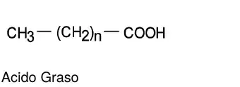
Ejercicio 15, Ácido graso — recorte de la guía 2024
Resolución · Ácido graso
Ácido graso
Punto de vista:
paso 1 / 5
paso 2 / 5
paso 3 / 5
paso 4 / 5
paso 5 / 5
1
Datos: la molécula desarrollada
La guía lo escribe CH₃–(CH₂)ₙ–COOH. Desarrollado: un CH₃ en una punta, una cadena de n grupos CH₂ (los «···» dicen que el CH₂ se repite n veces) y un grupo carboxilo, –COOH, en la otra: un C con un =O y un –O–H.
Fórmula molecular: depende de n. Ejemplo: con n = 14 es el ácido palmítico, C₁₆H₃₂O₂ (16 carbonos).
Texto anterior de este paso («La molécula»):
Un CH₃, una cadena de n grupos CH₂ y un grupo carboxilo (COOH) en la punta.
guía 2024, U2 ej. 15 · ejemplo del palmítico: apunte, lípidos
2
a) Con lupa: los enlaces
Cada celda es un tipo de enlace de la molécula. Los dos puntitos violetas son los dos electrones del enlace: si un átomo tira más (número más grande), quedan corridos hacia él, y ese átomo queda δ⁻ y el otro δ⁺.
Regla práctica: diferencia de 0,5 o más → enlace polar; menos → casi apolar.
Acá: C–H y C–C casi apolares (toda la cadena); C–O y O–H polares (el carboxilo).
electronegatividades: Wade, Fig. 1.7 (C 2,5 · H 2,2 · O 3,4 · N 3,0 · Cl 3,2)
3
a) Mapa de zonas
Cola (marrón): sólo C–C y C–H. Apolar; entre colas sólo hay London.
Cabeza (verde): el –COOH, con O δ⁻ y un H sobre O que puede dar puente de hidrógeno. Polar.
La cabeza siempre mide lo mismo; la cola crece con n. En un ácido graso la cola es larga: lo apolar pesa mucho más.
Texto anterior de este paso («a) Polaridad por partes»):
La cadena sólo tiene C–C y C–H: apolar. El COOH tiene O muy electronegativos (δ⁻) y un O–H que puede hacer puente de hidrógeno: polar. Es una molécula con una parte de cada tipo.
Agua: sólo puede hacer puente con la cabeza. Para meter la cola tendría que romper sus propios puentes a cambio de nada (como el aceite del ejercicio 13).
n-Hexano: hace London con toda la cola, igual que la cola hace con otras colas.
Texto anterior de este paso («b) Solvente»):
En un ácido graso la cadena es larga (n grande): lo apolar pesa mucho más que la cabeza → se disuelve en solventes orgánicos apolares (n-hexano, éter). Sólo los de cadena muy corta se disuelven en agua.
razonamiento de los ej. 12–13 aplicado: [ADICIÓN PEDAGÓGICA] · cátedra: ▶ video 25 · 7:29–8:54 (resolución de la cátedra en Ejercicios de la unidad, bloques F–H) · problema resuelto de la guía, pág. 11 (más abajo en este ejercicio)
5
La cuenta y la respuesta
Para escribir en el examen: «a) El ácido graso tiene una cabeza polar (–COOH) y una cola apolar (cadena hidrocarbonada). Como la cola es mucho más grande, predominan las interacciones apolares. b) Se disuelve preferentemente en un solvente apolar como el n-hexano, y no en agua.»
Es la misma conclusión del problema resuelto de la guía.
Errores que restan puntos: decir «es polar» o «es apolar» sin mirar por partes; olvidar que el tamaño de cada parte decide; confundir «tiene un grupo polar» con «se disuelve en agua».
problema resuelto de la guía, pág. 11 (más abajo en este ejercicio)
2,4-D
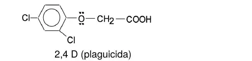
Ejercicio 15, 2,4-D — recorte de la guía 2024
Resolución · 2,4-D
2,4-D
Punto de vista:
paso 1 / 5
paso 2 / 5
paso 3 / 5
paso 4 / 5
paso 5 / 5
1
Datos: la molécula desarrollada
Un anillo de benceno con los carbonos numerados. En el C1 hay un O que lo une a un –CH₂–COOH. En el C2 y en el C4 hay un Cl: de ahí el nombre «2,4-D».
Fórmula molecular (contando el dibujo): C₈H₆Cl₂O₃.
Texto anterior de este paso («La molécula»):
Un benceno con dos Cl (posiciones 2 y 4) y un O (éter) que lo une a un CH₂–COOH.
guía 2024, U2 ej. 15 · conteo de átomos: [ADICIÓN PEDAGÓGICA]
2
a) Con lupa: los enlaces
Cada celda es un tipo de enlace de la molécula. Los dos puntitos violetas son los dos electrones del enlace: si un átomo tira más (número más grande), quedan corridos hacia él, y ese átomo queda δ⁻ y el otro δ⁺.
Regla práctica: diferencia de 0,5 o más → enlace polar; menos → casi apolar.
Acá hay cinco tipos: C–H y C–C casi apolares (el anillo); C–Cl, C–O y O–H polares.
electronegatividades: Wade, Fig. 1.7 (C 2,5 · H 2,2 · O 3,4 · N 3,0 · Cl 3,2)
3
a) Mapa de zonas
Marrón: el anillo con sus C–H. Apolar.
Naranja: los dos C–Cl y el O del éter. Polares, pero sin H sobre O o N: no pueden dar puente de hidrógeno.
Verde: el –COOH. Polar y con O–H: da y acepta puentes.
Una zona apolar grande más varios grupos polares: polaridad intermedia.
Texto anterior de este paso («a) Polaridad por partes»):
Anillo y C–H: apolares. Polar: el COOH (O δ⁻, O–H que hace puente de H), el O del éter (pares libres) y los C–Cl (el Cl es más electronegativo). Tiene una parte apolar importante y varios grupos polares: polaridad intermedia.
El agua agarra bien el COOH pero no el anillo con sus dos Cl. El hexano agarra el anillo pero no el COOH. Hace falta un solvente con las dos caras: un alcohol como el etanol, o acetona.
Nota de fuentes (se mantiene tal cual):
Un solvente que también tenga parte polar y parte apolar: un alcohol como el etanol, o acetona. En agua pura, poco (el anillo con Cl pesa).
⟶ CONFLICTO. En el seminario presencial (▶ video 25 · 8:54–11:42) la docente analizó el plaguicida junto con la serina y la glucosa y, según las notas de ese video (no hay transcripción guardada), concluyó que una molécula relativamente chica con muchos dipolos que no se anulan es polar y soluble en agua; no queda claro si incluyó al 2,4-D. Nuestra respuesta («polaridad intermedia»: etanol o acetona) es una [ADICIÓN PEDAGÓGICA] con el razonamiento del ej. 13, y coincide con el dato real [VERIFICACIÓN EXTERNA]: el 2,4-D (forma ácida) se disuelve poco en agua (menos de 1 g por litro) y mucho en etanol y acetona. Si te lo toman, justificá por partes: anillo con dos Cl (poco polar) y –O–CH₂–COOH (polar, hace puente de H).
Para escribir en el examen: «a) El 2,4-D tiene una parte apolar (anillo aromático) y grupos polares (C–Cl, éter y –COOH, que forma puentes de hidrógeno): polaridad intermedia. b) Conviene un solvente con parte polar y parte apolar, como etanol o acetona.»
Errores que restan puntos: decir «es polar» o «es apolar» sin mirar por partes; olvidar que el tamaño de cada parte decide; confundir «tiene un grupo polar» con «se disuelve en agua».
razonamiento por partes: [ADICIÓN PEDAGÓGICA]
Serina
Ejercicio 15, Serina — recorte de la guía 2024
Resolución · Serina
Serina
Punto de vista:
paso 1 / 5
paso 2 / 5
paso 3 / 5
paso 4 / 5
paso 5 / 5
1
Datos: la molécula desarrollada
Tres carbonos. El C2, el del medio, lleva cuatro cosas: arriba el C1 (un carboxilo, –COOH), a la derecha el C3 (un –CH₂–OH), abajo un amino (–NH₂) y un H que la guía no dibuja (escribe «HC»).
Fórmula molecular (contando el dibujo): C₃H₇NO₃.
Texto anterior de este paso («La molécula»):
Un aminoácido: un C con un NH₂, un COOH y un CH₂OH.
guía 2024, U2 ej. 15 · conteo de átomos: [ADICIÓN PEDAGÓGICA]
2
a) Con lupa: los enlaces
Cada celda es un tipo de enlace de la molécula. Los dos puntitos violetas son los dos electrones del enlace: si un átomo tira más (número más grande), quedan corridos hacia él, y ese átomo queda δ⁻ y el otro δ⁺.
Regla práctica: diferencia de 0,5 o más → enlace polar; menos → casi apolar.
Acá: sólo el C–H es casi apolar. C–O, O–H, C–N y N–H son polares.
electronegatividades: Wade, Fig. 1.7 (C 2,5 · H 2,2 · O 3,4 · N 3,0 · Cl 3,2)
3
a) Mapa de zonas
Tres grupos polares (verde) en sólo tres carbonos: –COOH, –OH y –NH₂. Los tres tienen H sobre O o N, así que pueden dar puente de hidrógeno.
Lo apolar es casi nada: un CH y un CH₂. Muy polar.
Texto anterior de este paso («a) Polaridad»):
En sólo tres C hay tres grupos con O–H o N–H (OH, NH₂, COOH): casi toda la molécula es polar y puede hacer puentes de hidrógeno. Parte apolar mínima.
md U2 (clases en audio, canal del usuario) §5.3clase grabada (audio) (regla del puente de H) · apunte cap. 11
4
b) Solvente: con agua
Cada H de un O–H o N–H consigue un agua (punteado verde): cuatro puentes dibujados, y además los O y el N pueden aceptar otros.
En hexano no habría nada de eso: sólo London con tres C.
Texto anterior de este paso («b) Solvente»):
Agua: forma puentes de hidrógeno con todos esos grupos.
razonamiento del ej. 13 aplicado: [ADICIÓN PEDAGÓGICA]
5
La respuesta
Para escribir en el examen: «a) La serina es muy polar: en tres carbonos tiene –COOH, –OH y –NH₂, todos capaces de formar puentes de hidrógeno. b) Se disuelve en un solvente polar: agua.»
Errores que restan puntos: decir «es polar» o «es apolar» sin mirar por partes; olvidar que el tamaño de cada parte decide; confundir «tiene un grupo polar» con «se disuelve en agua».
razonamiento del ej. 13 aplicado: [ADICIÓN PEDAGÓGICA]
Glucosa
Ejercicio 15, Glucosa — recorte de la guía 2024
Resolución · Glucosa
Glucosa
Punto de vista:
paso 1 / 5
paso 2 / 5
paso 3 / 5
paso 4 / 5
paso 5 / 5
1
Datos: la molécula desarrollada
Seis C en fila, numerados con el C1 a la derecha, como en la guía. El C1 tiene un C=O y un H (grupo aldehído). Del C2 al C6, cada uno lleva un –OH.
Fórmula molecular (contando el dibujo): C₆H₁₂O₆.
Es la forma de cadena abierta; la forma en anillo está en la Unidad 7.
Texto anterior de este paso («La molécula»):
Seis C en cadena: cinco con OH y el último con un C=O (aldehído).
guía 2024, U2 ej. 15 · conteo de átomos: [ADICIÓN PEDAGÓGICA]
2
a) Con lupa: los enlaces
Cada celda es un tipo de enlace de la molécula. Los dos puntitos violetas son los dos electrones del enlace: si un átomo tira más (número más grande), quedan corridos hacia él, y ese átomo queda δ⁻ y el otro δ⁺.
Regla práctica: diferencia de 0,5 o más → enlace polar; menos → casi apolar.
Acá: C–H y C–C casi apolares; C–O y O–H polares, y hay muchos.
electronegatividades: Wade, Fig. 1.7 (C 2,5 · H 2,2 · O 3,4 · N 3,0 · Cl 3,2)
3
a) Mapa de zonas
Cinco –OH (verde) y un C=O (naranja) sobre seis carbonos: hay un grupo polar en cada carbono. No queda ninguna zona apolar. Muy polar.
Texto anterior de este paso («a) Polaridad»):
Cinco OH y un C=O sobre seis C: toda la molécula está «tapizada» de grupos polares que forman puentes de hidrógeno. Muy polar.
Cada –OH consigue su puente con un agua (cinco dibujados), y cada O puede aceptar más. El agua la rodea por todos lados.
Texto anterior de este paso («b) Solvente»):
Agua (por eso el azúcar se disuelve tan bien).
razonamiento del ej. 13 aplicado: [ADICIÓN PEDAGÓGICA]
5
La respuesta
Para escribir en el examen: «a) La glucosa es muy polar: tiene cinco grupos –OH y un C=O en seis carbonos, todos capaces de formar puentes de hidrógeno. b) Se disuelve en agua.»
Errores que restan puntos: decir «es polar» o «es apolar» sin mirar por partes; olvidar que el tamaño de cada parte decide; confundir «tiene un grupo polar» con «se disuelve en agua».
razonamiento del ej. 13 aplicado: [ADICIÓN PEDAGÓGICA]
⟶ PROBLEMA RESUELTO (así, resuelto por la cátedra en la guía, pág. 11)Problema resuelto, tal como aparece en la guía 2024 (pág. 11)texto (para buscar o copiar)
Para definir si una sustancia puede disolverse en otra se tiene que determinar en primera instancia el tipo de fuerzas intermoleculares que vinculan las moléculas de una misma sustancia entre sí. Si el soluto y el solvente tienen igual o similares fuerzas intermoleculares, entonces las moléculas de una interaccionarán con las moléculas de la otra, y en
consecuencia una se disolverá en la otra. Para el caso particular del ácido graso:
Estas moléculas interaccionan entre sí por fuerzas dipolares, fuerzas de Van der Waals y por fuerzas de puente hidrógeno. Pero si analizamos también la estructura de la molécula vemos que los tamaños relativos de la parte polar y la parte apolar está desplazado hacia esta última y mucho más cuanto mayor sea el largo de la cadena hidrocarbonada. En consecuencia, predominarán las interacciones apolares frente a todas las otras.
En el solvente n-hexano por ejemplo, CH -(CH )-CH existen sólo fuerzas de interacción apolares y en consecuencia el ácido graso se disolverá preferentemente en n-hexano.
Por la misma razón, el ácido graso, no será preferentemente soluble en un solvente polar como es el agua.
Ejercicio 16: la consigna (guía 2024, pág. 11)texto del enunciado completo (para buscar o copiar; ante cualquier duda manda el recorte)
16) Dados los siguientes compuestos: (marcar la opción correcta)
a - B, D y E pueden formar puentes de hidrógeno con el agua y no consigo mismos. b - A, D, E y F pueden formar puentes de hidrógeno con el agua y no consigo mismos.
c - B y D pueden formar puentes de hidrógeno consigo mismos y el resto pueden formarlos con el agua. d - C y E no pueden formar puentes de hidrógeno ni consigo mismo ni con el agua. e - C no puede formar puentes de hidrógeno ni consigo mismo ni con el agua.
Las seis moléculas: consigo mismas y con agua
Resolución · Las seis moléculas: consigo mismas y con agua
Ej. 16 · las seis moléculas
Punto de vista:
paso 1 / 9
paso 2 / 9
paso 3 / 9
paso 4 / 9
paso 5 / 9
paso 6 / 9
paso 7 / 9
paso 8 / 9
paso 9 / 9
1
Datos: los seis compuestos
Los seis dibujados con todos sus átomos y pares libres, con su fórmula molecular contada del dibujo: A C₆H₁₀O · B C₆H₁₀O₂ · C C₈H₁₄ · D C₆H₇N · E C₆H₁₁NO · F C₁₂H₁₀O.
En la guía están en esqueleto (sin los C ni los H). Acá cada esquina es un C con los H que le faltan para llegar a cuatro enlaces.
enunciado (guía, pág. 11) · conteo y nombres: [ADICIÓN PEDAGÓGICA]
2
La regla, con lupa
Para un puente de hidrógeno hacen falta dos cosas, una en cada molécula:
① Un dador: un H unido a O, N o F. En O–H (3,4 contra 2,2) y N–H (3,0 contra 2,2) los electrones se van hacia el O o el N y el H queda muy δ⁺. En un C–H (2,5 contra 2,2) casi no: por eso los H sobre carbono no sirven.
② Un aceptor: un par libre de O, N o F, donde se apoya ese H.
Consigo misma la molécula necesita tener ① y ②. Con agua le alcanza con una sola, porque el agua tiene las dos y pone la que falta.
Texto anterior de este paso («La regla»):
El puente de hidrógeno se da sólo con H unido a O, N o F («únicamente en esos tres casos»). Una molécula puede dar el H (si tiene O–H, N–H o F–H) o recibirlo con un par libre de O, N o F.
md U2 (clases en audio, canal del usuario) §5.3 y §6.2clase grabada (audio) · tu hoja, pág. 17 del PDF «U1 y U2» («puente hidrógeno: O, N, F») · Morrison y Boyd, cap. 1, §1.19 (puente de hidrógeno) · guía de estudio, prob. 1.8
3
A · ciclohexanona
Un anillo de seis C con un C=O. ¿H sobre O o N? No: todos sus H están sobre C, y un C–H no sirve (2,5 contra 2,2: el H casi no queda δ⁺). ¿Par libre en O o N? Sí: el O tiene dos.
Consigo misma: no. Dos moléculas de A tienen pares de sobra, pero ninguna tiene un H para dar.
Con agua: sí. El agua pone el H (lo tiene sobre su O) y A pone el par. En el dibujo: el H del agua va al par del O de A.
clase grabada §6.2 (método: primero consigo misma, después con agua) · Morrison y Boyd, cap. 1, §1.19 (puente de hidrógeno) · guía de estudio, prob. 1.8
4
B · ácido ciclopentanocarboxílico
Un anillo de cinco C con un –COOH. ¿H sobre O o N? Sí: el O–H (círculo verde). ¿Par libre? Sí: los dos O.
Consigo misma: sí. Tiene las dos cosas: el O–H de una molécula se une a un par del O de otra.
Con agua: sí, y de las dos maneras: le da su H al agua, y recibe el H del agua en sus O.
clase grabada §6.2 (método: primero consigo misma, después con agua) · Morrison y Boyd, cap. 1, §1.19 (puente de hidrógeno) · guía de estudio, prob. 1.8
5
C · hidrocarburo de dos anillos
Un anillo de seis C pegado a uno de cuatro; sólo C e H (C₈H₁₄). ¿H sobre O o N? No tiene ni O ni N. ¿Par libre? Tampoco.
Consigo misma: no. No puede dar ni recibir.
Con agua: no. El agua tendría el H y los pares, pero C no tiene ni un par donde recibirlo ni un H δ⁺ para dar. Es la única de las seis que queda afuera.
clase grabada §6.2 (método: primero consigo misma, después con agua) · Morrison y Boyd, cap. 1, §1.19 (puente de hidrógeno) · guía de estudio, prob. 1.8
6
D · anilina
Un benceno con un –NH₂. ¿H sobre O o N? Sí: dos H sobre el N. ¿Par libre? Sí: el del N.
Consigo misma: sí. El N–H de una se une al par del N de otra.
Con agua: sí, de las dos maneras: da sus H al O del agua y recibe el H del agua en el par del N.
clase grabada §6.2 (método: primero consigo misma, después con agua) · Morrison y Boyd, cap. 1, §1.19 (puente de hidrógeno) · guía de estudio, prob. 1.8
7
E · N-acetilpirrolidina (una amida)
Un anillo de cinco con un N, y ese N unido a un C=O con un CH₃. ¿H sobre O o N? No: el N está unido a tres C, no le queda ningún H. ¿Par libre? Sí: el O del C=O.
Consigo misma: no. No tiene qué H dar.
Con agua: sí. El agua pone el H y el O de E pone el par.
clase grabada §6.2 (método: primero consigo misma, después con agua) · Morrison y Boyd, cap. 1, §1.19 (puente de hidrógeno) · guía de estudio, prob. 1.8
8
F · difenil éter
Dos anillos de benceno unidos por un O. ¿H sobre O o N? No: el O está entre dos C. ¿Par libre? Sí: el O tiene dos.
Consigo misma: no. No tiene qué H dar.
Con agua: sí. El agua pone el H y el O del éter pone el par (es un puente débil, porque los dos anillos lo tapan).
clase grabada §6.2 (método: primero consigo misma, después con agua) · Morrison y Boyd, cap. 1, §1.19 (puente de hidrógeno) · guía de estudio, prob. 1.8
9
La tabla
Consigo mismas: sólo B y D, las únicas con H sobre O o N. Con agua: todas menos C, la única sin O ni N.
Notas de fuentes (se mantienen tal cual):
A (ciclohexanona): O sin H. B (ácido): O–H ✓. C (sólo C e H): nada. D (anilina): N–H ✓. E (amida del pirrolidina): el N está unido a tres C, sin H. F (difenil éter): O entre dos anillos, sin H.
⟶ Aclaración.[VERIFICACIÓN EXTERNA] E es una amida (N-acetilpirrolidina). En las amidas el par del N está deslocalizado hacia el C=O (resonancia N–C=O ↔ N⁺=C–O⁻), así que casi no está disponible; el que recibe el H del agua es sobre todo el O del C=O, que queda con más densidad electrónica. La conclusión no cambia (E: ✗ consigo misma, ✓ con agua), pero el «por qué» es el O más que el N.
Necesita dar y recibir: B y D ✓. A, C, E, F ✗.
CONFLICTO En tu tabla E tiene ✓ consigo misma: E no tiene H sobre el N (está unido a tres C), así que no puede dar el H → ✗.
El agua pone el H; alcanza con un O o N con par libre: A, B, D, E y F ✓. Sólo C ✗ (no tiene ni O ni N).
CONFLICTO En tu tabla F tiene ✗ con agua: el O del éter tiene pares libres y puede recibir el H del agua (como el éter del ej. 23 c y del 25); es un puente débil porque los dos anillos lo tapan. No cambia la respuesta.
md U2 (clases en audio, canal del usuario) §6.2clase grabada (audio) · tu hoja, pág. 20 del PDF «U1 y U2» · cátedra: ▶ video 2 · 1:39–4:25 (resolución de la cátedra en Ejercicios de la unidad, bloques F–H) · bibliografía: Morrison y Boyd, Problemas resueltos (guía de estudio), cap. 1, prob. 1.8 (sólo si hay O–H o N–H el compuesto se asocia; los H de CH₃ no forman puentes)
Las opciones
Ejercicio 16, Las opciones — recorte de la guía 2024
Resolución · Las opciones
Ej. 16 · opciones
Punto de vista:
paso 1 / 6
paso 2 / 6
paso 3 / 6
paso 4 / 6
paso 5 / 6
paso 6 / 6
1
a) B, D y E
Dice: forman puentes con agua y no consigo mismas. Con agua, las tres sí. Pero B (tiene O–H) y D (tiene N–H) sí forman puentes consigo mismas. Sólo E cumple. Falsa.
Texto anterior de este paso («Cada opción contra la tabla»):
Se contrasta cada afirmación con la tabla de arriba: a, b, c y d tienen al menos una molécula mal clasificada.
md U2 (clases en audio, canal del usuario) §6.2clase grabada (audio)
2
b) A, D, E y F
Dice lo mismo de A, D, E y F. A, E y F cumplen (aceptan del agua y no tienen H para dar). D no: tiene N–H y forma puentes consigo misma. Falsa.
tabla del pizarrón anterior
3
c) B y D; el resto
La primera mitad es cierta: B y D forman consigo mismas. Pero «el resto» incluye a C, que no forma puentes con agua. Falsa.
tabla del pizarrón anterior
4
d) C y E
Dice que ninguna de las dos forma puentes, ni consigo ni con agua. Para C es cierto. Para E no: su O tiene pares y acepta el H del agua. Falsa.
tabla del pizarrón anterior
5
e) C
Dice que C no forma puentes ni consigo ni con agua. Coincide con la tabla. Correcta.
tabla del pizarrón anterior
6
Respuesta
e. C es un hidrocarburo: sólo C e H. No tiene H sobre O o N ni pares libres; no puede dar ni recibir.
Cómo no equivocarse: una opción es correcta sólo si acierta en todas las moléculas que nombra. Alcanza una mal para descartarla.
Texto anterior de este paso («Respuesta»):
e: C (un hidrocarburo, sólo C e H) no puede formar puentes de hidrógeno ni consigo misma ni con el agua.
md U2 (clases en audio, canal del usuario) §6.2clase grabada (audio) («la correcta… identificaba a E»: la opción e) · cátedra: ▶ video 2 · 1:39–4:25 (resolución de la cátedra en Ejercicios de la unidad, bloques F–H)
▼ DESDE ACÁ — lo que explicó el profesor en clase · Unidad 2, ejercicio 16
Abrir la explicación del profesor (transcripción de audio de la clase, sin pizarrón)
6.1 Por qué importan las propiedades físicas: el contexto de laboratorio
Antes de entrar al ejercicio, el profesor recuerda para qué sirve todo este análisis de propiedades físicas: cuando llega una muestra al laboratorio (por ejemplo, para evaluar contenido graso, azúcares reductores, si tiene grasas saturadas o insaturadas, lípidos o proteínas), hay que decidir en qué matriz disolverla (orgánica o acuosa), a qué temperatura empieza a descomponerse, cuáles son sus puntos de fusión/ebullición relevantes, y si es polar o no. Todas estas propiedades físicas (solubilidad, punto de ebullición, polaridad, y también propiedades ópticas como el color o la textura) se relacionan directamente con las fuerzas intermoleculares de la sustancia, y son las que permiten caracterizar un material de interés.
Fuente: md «unidad 2 (limpio)» · 6.1 Por qué importan las propiedades físicas: el contexto de laboratorio
6.2 Ejercicio 16: identificar qué moléculas forman puente de hidrógeno
Consigna: dados seis compuestos (A a F), marcar cuál de cinco afirmaciones sobre su capacidad de formar puente de hidrógeno es correcta.
Método de resolución: para cada molécula, evaluar dos cosas — (1) si puede formar puente de hidrógeno consigo misma (con otra molécula igual) y (2) si puede formar puente de hidrógeno con agua. Se arma mentalmente (o en una tabla) el resultado para cada una de las seis moléculas, recordando la regla ya vista: el puente de hidrógeno requiere la combinación H–O, H–N o H–F.
Resultados analizados en la clase (a partir de las estructuras mostradas en pantalla, no siempre nombradas con claridad en el audio):
Molécula A: solo tiene enlaces dobles con oxígeno (sin H directamente unido a un O, N o F), por lo que no puede formar puente de hidrógeno consigo misma. Con el agua sí puede interaccionar parcialmente (los pares de electrones libres del oxígeno del agua se orientan hacia ella), pero eso no constituye un puente de hidrógeno propio de A.
⟶ CONFLICTO. Este resumen del audio dice que A (ciclohexanona) sólo «interacciona parcialmente» con el agua y que no es un puente de hidrógeno. En la resolución del seminario en video (▶ video 2 · 1:39–4:25; ▶ video 25 · 11:42–14:15; ▶ video 70 · 8:24–12:04) y en la tabla de arriba, A SÍ forma puente de hidrógeno con el agua: el H del agua (unido a O, dador) se une a un par libre del O del C=O de A (aceptor). Ojo con el sentido: no son los pares del agua los que van hacia A, sino el H del agua hacia los pares de A. Lo que A no puede es formarlo consigo misma (no tiene H sobre O o N). La respuesta (e) no cambia.
Molécula B: sí tiene hidrógenos unidos a oxígeno, intercambiables entre moléculas vecinas — forma puente de hidrógeno tanto consigo misma como con agua.
Molécula C: no forma puente de hidrógeno en ninguno de los dos casos.
Molécula D: forma puente de hidrógeno consigo misma (tiene la combinación N–H) y también con agua.
Molécula E: no forma puente de hidrógeno consigo misma, pero sí podría formarlo con agua (a través de nitrógeno).
Molécula F: estructura muy equilibrada/simétrica; forma puente de hidrógeno con agua.
Conclusión de la clase: de las cinco afirmaciones propuestas en el ejercicio, la correcta terminó siendo la que identificaba a E (y su combinación con las demás) como la opción que mejor describía el patrón correcto; las demás afirmaciones resultaron parcial o totalmente falsas al contrastarlas con la tabla construida molécula por molécula.
Nota editorial: el audio de este tramo tiene varios pasajes con ruido de reconocimiento automático y hace referencia constante a una pizarra no visible en la transcripción (letras A-F, estructuras dibujadas), por lo que la identidad exacta de cada molécula no puede reconstruirse con certeza a partir del audio; se conserva el razonamiento general del ejercicio, que es el contenido pedagógicamente relevante: para decidir si una molécula forma puente de hidrógeno, primero consigo misma y después con agua, hay que verificar la presencia de un hidrógeno unido directamente a oxígeno, nitrógeno o flúor.
6.3 Cierre: qué evalúa todo este bloque de solubilidad
El profesor cierra el bloque de ejercicios de solubilidad recordando el panorama completo: estas herramientas (solubilidad, polaridad, capacidad de formar puente de hidrógeno) son las que después permiten, en el laboratorio, decidir cómo evaluar una muestra real — en qué disolverla, a qué temperatura trabajarla, y qué tipo de componentes (lípidos, proteínas, azúcares, grasas saturadas/insaturadas) es posible caracterizar en ella. A continuación, la clase avanza hacia ejercicios de punto de ebullición.
Fuente: md «unidad 2 (limpio)» · 6.3 Cierre: qué evalúa todo este bloque de solubilidad
Ejercicio 17: la consigna (guía 2024, pág. 11)texto del enunciado completo (para buscar o copiar; ante cualquier duda manda el recorte)
17) Los puntos de ebullición del n-pentano y su isómero (molécula con igual fórmula molecular): el 2,2 dimetil-propano son 36,2 ºC y 9,5 ºC, respectivamente (marcar la opción
correcta)
a. Un isómero es polar y el otro apolar.
b. La forma de la molécula determina el punto de ebullición.
c. La forma del n-pentano es esferoidal.
d. Cuanto más contacto hay entre moléculas, menores son las fuerzas de London.
e. La forma del n-pentano es como una varilla, y sus moléculas se tocan en un solo punto.
Las dos moléculas
Resolución · Las dos moléculas
Ej. 17 · las dos moléculas
Punto de vista:
paso 1 / 6
paso 2 / 6
paso 3 / 6
paso 4 / 6
paso 5 / 6
paso 6 / 6
1
Datos: los dos isómeros
Dibujados con todos sus átomos. Contalos: los dos tienen 5 C y 12 H (C₅H₁₂). Son isómeros: los mismos átomos, armados distinto.
n-Pentano: los cinco C en fila; hierve a 36,2 °C. 2,2-Dimetilpropano: un C central con cuatro CH₃; hierve a 9,5 °C.
Texto anterior de este paso («n-pentano»):
C₅H₁₂ en cadena recta: una «varilla».
Texto anterior de este paso («2,2-dimetilpropano»):
El mismo C₅H₁₂ (isómero): un C central con cuatro CH₃. Forma compacta, casi esférica.
md U2 (clases en audio, canal del usuario) §7.1clase grabada (audio) · tu hoja, pág. 20 del PDF «U1 y U2» («C₅H₁₂, Peb = 36,1 °C») · md U2 (clases en audio, canal del usuario) §7.1clase grabada (audio) · tu hoja, pág. 20 del PDF «U1 y U2» («Peb = 9,5 °C»)
2
Con lupa: las dos son apolares
En las dos sólo hay enlaces C–H (2,5 contra 2,2) y C–C (iguales): los electrones quedan al medio y no aparece ningún lado + ni −.
El n-pentano es alargado, como una varilla. El 2,2-dimetilpropano es compacto: los cuatro CH₃ rodean al C central y queda casi una esfera.
clase grabada §7.1 · Fernández Cirelli, cap. 1, pp. 32–33
4
Los contactos
London sólo actúa donde las moléculas se tocan. Dos varillas se acomodan lado a lado y se tocan a todo lo largo: muchos puntos. Dos esferas se tocan en un solo punto.
Texto anterior de este paso («Los contactos»):
Las dos son apolares: sólo hay fuerzas de London, que actúan donde las moléculas se tocan. Las varillas se acomodan lado a lado (muchos puntos); las esferas se tocan en uno.
md U2 (clases en audio, canal del usuario) §7.1clase grabada (audio) · apunte cap. 10
5
Hervir es separar las moléculas
Para que el líquido hierva hay que darle energía suficiente para vencer esas atracciones. Más contactos = más London que vencer = más temperatura: 36,2 °C contra 9,5 °C.
Texto anterior de este paso («Punto de ebullición»):
Más contactos = más interacciones que vencer = más temperatura: 36,2 °C contra 9,5 °C.
md U2 (clases en audio, canal del usuario) §7.1clase grabada (audio) · tu hoja, pág. 20 del PDF «U1 y U2» («Fuerzas London, Rta b)») · cátedra: ▶ video 2 · 4:25–7:14 (resolución de la cátedra en Ejercicios de la unidad, bloques F–H) · bibliografía: Fernández Cirelli, cap. 1, pp. 32–33 (pentanos: superficie de contacto)
6
Conclusión
Misma fórmula, misma masa, las dos apolares: lo único que cambia es la forma, y la forma decide cuánto se tocan.
clase grabada §7.1
Las opciones
Ejercicio 17, Las opciones — recorte de la guía 2024
Resolución · Las opciones
Ej. 17 · opciones
Punto de vista:
paso 1 / 6
paso 2 / 6
paso 3 / 6
paso 4 / 6
paso 5 / 6
paso 6 / 6
1
a) «Un isómero es polar y el otro apolar»
Falsa. Los dos son apolares: sólo tienen C–C y C–H.
pizarrón anterior, paso 2
2
b) «La forma determina el punto de ebullición»
Verdadera. Es lo único que cambia entre los dos: misma fórmula, misma masa, mismas fuerzas (London). Distinta forma → distinto contacto → distinto punto de ebullición.
pizarrón anterior, pasos 3 a 5
3
c) «La forma del n-pentano es esferoidal»
Falsa. El n-pentano es una cadena, alargada como una varilla. El esferoidal es el 2,2-dimetilpropano.
pizarrón anterior, paso 3
4
d) «Más contacto, menores fuerzas de London»
Falsa: es al revés. London actúa donde las moléculas se tocan: más contacto, más London.
pizarrón anterior, paso 4
5
e) «Varilla… se tocan en un solo punto»
Falsa. Empieza bien («varilla») y termina mal: las varillas se tocan a todo lo largo; «un solo punto» es lo de las esferas.
pizarrón anterior, paso 4
6
Respuesta
b. Ojo con la e: una frase con una mitad cierta y otra falsa es falsa.
Texto anterior de este paso («Respuesta»):
b: misma fórmula, misma masa, las dos apolares; lo único distinto es la forma, y la forma decide cuántos contactos hay. La e empieza bien («varilla») pero termina mal («un solo punto» es lo de la esfera).
md U2 (clases en audio, canal del usuario) §7.1clase grabada (audio) · tu hoja, pág. 20 del PDF «U1 y U2» («Rta b)») · cátedra: ▶ video 2 · 4:25–7:14 (resolución de la cátedra en Ejercicios de la unidad, bloques F–H)
▼ DESDE ACÁ — lo que explicó el profesor en clase · Unidad 2, ejercicio 17
Abrir la explicación del profesor (transcripción de audio de la clase, sin pizarrón)
7.1 Ejercicio 17: n-pentano vs. 2,2-dimetilpropano (neopentano) — mismos átomos, distinto punto de ebullición
Se comparan dos isómeros con fórmula C₅H₁₂:
n-pentano: cadena lineal de 5 carbonos. Punto de ebullición: 36,2 °C.
2,2-dimetilpropano (neopentano): un propano (3 carbonos) con dos grupos metilo sustituyendos ambos en el carbono 2. Punto de ebullición: 9,5 °C.
Son isómeros: moléculas con la misma cantidad y tipo de átomos, pero distinta configuración espacial (y en algunos casos distinta funcionalidad).
Se evalúan varias afirmaciones posibles sobre por qué difieren sus puntos de ebullición:
"Uno es polar y el otro apolar":incorrecto. Ambos son completamente apolares — son solo enlaces C–C y C–H, sin ningún átomo mucho más electronegativo que genere un vector de carga neto. Los grupos que podrían generar diferencia de carga se anulan entre sí por simetría en ambas moléculas.
"La forma de la molécula determina el punto de ebullición":correcto. El n-pentano, al ser una cadena lineal ("varilla"), puede alinearse con moléculas vecinas de muchas formas (paralela, cruzada, alabeada) generando múltiples puntos de contacto simultáneos. El neopentano, en cambio, al tener sus sustituyentes distribuidos simétricamente alrededor de un carbono central, adopta una forma más compacta/esferoidal, que solo puede tocar a una molécula vecina en uno o dos puntos. A mayor cantidad de puntos de contacto entre moléculas, mayor es la cantidad de interacciones (fuerzas de Van der Waals / fuerzas de London) que hay que vencer para separarlas — de ahí que el n-pentano necesite más energía (mayor temperatura) para hervir.
"Cuanto más contacto hay entre moléculas, menores son las fuerzas de London": se señala que esta afirmación es lógicamente contradictoria consigo misma (más contacto → mayor interacción, no menor), por lo que se descarta.
Conclusión: cuando dos moléculas tienen los mismos átomos pero distinta geometría espacial, la forma —y la cantidad de puntos de contacto que permite entre moléculas vecinas— es lo que determina cuál hierve a mayor o menor temperatura.
Fuente: md «unidad 2 (limpio)» · 7.1 Ejercicio 17: n-pentano vs. 2,2-dimetilpropano (neopentano) — mismos átomos, distinto punto de ebullición
Ejercicio 18: la consigna (guía 2024, pág. 12)texto del enunciado completo (para buscar o copiar; ante cualquier duda manda el recorte)
18) Dados los siguientes hidrocarburos, el orden creciente de puntos de ebullición es:
(marcar la opción correcta)
a. D < A < B < C < E
b. B < C = A < E < D
c. E < D < C < B < A
d. A < B < E < D < C
e. B < E < C < A < D
Resolución
Ej. 18 · los cinco
Punto de vista:
paso 1 / 6
paso 2 / 6
paso 3 / 6
paso 4 / 6
paso 5 / 6
paso 6 / 6
1
Datos: los cinco hidrocarburos
En la guía están en esqueleto: cada punta o quiebre es un C. Desarrollados, con todos sus H:
A metilpropano, C₄H₁₀ (4 C, ramificada) · B butano, C₄H₁₀ (4 C en fila) · C 2,2-dimetilpropano, C₅H₁₂ (5 C, ramificada; el del ejercicio 17) · D propano, C₃H₈ (3 C) · E octano, C₈H₁₈ (8 C en fila).
Nota de fuentes (se mantiene):
En el dibujo de esqueleto cada punta o quiebre es un C: D = 3 C (propano), A = 4 C ramificado (metilpropano), B = 4 C en cadena (butano), C = 5 C con un C central (dimetilpropano, el del ej. 17), E = 8 C en cadena (octano).
CORRECCIÓN En el bloque F2 de este apunte (resolución del seminario) E figuraba como n-hexano (6 C). Contando los vértices del dibujo de la guía hay 8: es un octano. La respuesta (a) no cambia: E sigue siendo el de más carbonos.
guía 2024, U2 ej. 18 · tu hoja, pág. 21 del PDF «U1 y U2» («18) teoría»)
2
Con lupa: los cinco son apolares
Sólo C–H y C–C en los cinco. Todos apolares: la única fuerza entre moléculas es London. Gana (hierve más alto) el que tenga más contacto entre moléculas.
Una cadena más larga tiene más superficie para tocarse con la vecina: más London. Por eso D (3 C) hierve mucho más bajo que E (8 C).
Texto anterior de este paso («Las dos reglas»):
Todos son hidrocarburos apolares: sólo London. ① Más carbonos (más «cantidad de materia», más contacto) → mayor punto de ebullición. ② Con los mismos C, la ramificada hierve menos (menos contactos, ej. 17).
md U2 (clases en audio, canal del usuario) §7.2clase grabada (audio) · md U2 (clases en audio, canal del usuario) §7.1clase grabada (audio) · Morrison y Boyd, cap. 1, §1.20
4
Regla ②: mismos carbonos, la ramificada más bajo
A y B tienen los dos 4 C. B es una cadena y se toca a lo largo; A es ramificada, más redonda, y se toca menos. Es lo mismo del ejercicio 17. Entonces A hierve más bajo que B.
ejercicio 17 · clase grabada §7.1
5
Ordenar, cuadro por cuadro
① Por cantidad de C: D (3) < A y B (4) < C (5) < E (8). A y B empatan.
② Desempate con la regla ②: A (ramificada) va antes que B.
Ojo con C: es ramificada, pero tiene 5 C y se compara con los de 4. La regla ② sólo vale entre moléculas con los mismos carbonos.
Texto anterior de este paso («Ordenar»):
D (3 C) es el más bajo; entre A y B (4 C) la ramificada A va antes; después C (5 C) y al final E (8 C), el más alto.
md U2 (clases en audio, canal del usuario) §7.2clase grabada (audio)
6
El orden
D < A < B < C < E.
Control con los valores reales [VERIFICACIÓN EXTERNA]: propano −42 °C, metilpropano −12 °C, butano −0,5 °C, 2,2-dimetilpropano 9,5 °C (el del ej. 17), octano 126 °C.
Falsa. Pone a D (3 C, el más chico) como el más alto, e iguala C (5 C) con A (4 C).
pizarrón anterior (orden D < A < B < C < E)
3
c) E < D < C < B < A
Falsa. Pone a E (8 C) como el más bajo y a A por encima de todos.
pizarrón anterior (orden D < A < B < C < E)
4
d) A < B < E < D < C
Falsa. Pone a D (3 C) por encima de E (8 C). El «A < B» del principio está bien, pero D debería ir primero.
pizarrón anterior (orden D < A < B < C < E)
5
e) B < E < C < A < D
Falsa. Pone a D como el más alto. Está casi al revés.
pizarrón anterior (orden D < A < B < C < E)
6
Respuesta
a. Truco para el examen: mirá primero los extremos. El más chico (D) tiene que ir primero y el más grande (E) último. Sólo la a lo cumple.
guía, U2 ej. 18
▼ DESDE ACÁ — lo que explicó el profesor en clase · Unidad 2, ejercicio 18
Abrir la explicación del profesor (transcripción de audio de la clase, sin pizarrón)
7.2 Ejercicio 18: orden creciente de puntos de ebullición según cantidad de átomos de carbono
Además de la geometría (vista en el ejercicio anterior), otro factor que gobierna el punto de ebullición es la cantidad de materia (el tamaño de la molécula, la cantidad de átomos de carbono e hidrógeno). Comparando varios hidrocarburos de distinto tamaño (por ejemplo uno de 3 carbonos frente a otro de 8 carbonos), a mayor cantidad de enlaces C–H en la red, mayor es la energía necesaria para llevar la sustancia a ebullición. Entre dos extremos (la molécula más liviana, de menor peso molecular, y la más pesada), el orden creciente de puntos de ebullición se deduce directamente comparando el tamaño molecular.
Fuente: md «unidad 2 (limpio)» · 7.2 Ejercicio 18: orden creciente de puntos de ebullición según cantidad de átomos de carbono
Ejercicio 19: la consigna (guía 2024, pág. 12)texto del enunciado completo (para buscar o copiar; ante cualquier duda manda el recorte)
19) La trimetilamina hierve a 3 ºC y la propilamina a 49 ºC, aunque ambas tienen el mismo peso molecular. Explique las diferencias en los puntos de ebullición.
Resolución
Ej. 19
Punto de vista:
paso 1 / 8
paso 2 / 8
paso 3 / 8
paso 4 / 8
paso 5 / 8
paso 6 / 8
paso 7 / 8
paso 8 / 8
1
Datos: las dos aminas
Las aminas se arman desde el amoníaco (NH₃) cambiando H por grupos de carbono.
Trimetilamina: los tres H cambiados por CH₃. Al N no le queda ningún H. Propilamina: un solo H cambiado, por una cadena de tres C. Al N le quedan dos H.
Contando: las dos tienen 3 C, 9 H y 1 N (C₃H₉N). Mismo peso molecular: son isómeros. Hierven a 3 °C y 49 °C.
Texto anterior de este paso («Las dos aminas»):
Se arman desde el amoníaco cambiando H por grupos de C. Trimetilamina: los tres H cambiados por CH₃, N(CH₃)₃. Propilamina: un solo H cambiado por un propilo, CH₃CH₂CH₂–NH₂. Mismos átomos (C₃H₉N), mismo peso.
md U2 (clases en audio, canal del usuario) §7.3clase grabada (audio) · tu hoja, pág. 21 del PDF «U1 y U2» (amoníaco, trimetilamina, metilamina, «C₃H₉N»)
📖 El Wade agrega un dato sobre este paso: está debajo del pizarrón.
2
Con lupa: los enlaces
C–H (2,5 contra 2,2): casi apolar; ese H no sirve para puentes. C–N (2,5 contra 3,0): polar. N–H (3,0 contra 2,2): polar, y el H queda muy δ⁺. Ése sí puede hacer puente de hidrógeno.
Las dos moléculas tienen C–H y C–N. Sólo la propilamina tiene N–H.
electronegatividades: Wade, Fig. 1.7 · regla del puente de H: clase grabada §5.3
3
¿Quién tiene el H para dar?
Para un puente hacen falta un dador (H sobre N) y un aceptor (par libre del N).
Trimetilamina: tiene el par, pero ningún H sobre el N. Propilamina: tiene el par y dos H sobre el N.
Morrison y Boyd, guía de estudio, cap. 1, prob. 1.8 f (la trimetilamina, «no asociado»)
4
Propilamina con propilamina
El H δ⁺ de un N–H se apoya en el par libre del N de la molécula vecina: N–H···N. Las moléculas quedan enganchadas por puentes de hidrógeno.
Nota de fuentes (se mantiene tal cual):
La propilamina tiene dos H sobre el N: sus moléculas se unen por puente de hidrógeno N–H···N. La trimetilamina no tiene ningún H sobre el N: no puede formar puentes consigo misma.
CONFLICTO La clase en audio lo explicó sólo por la forma (siguiente paso). Con la regla que dio la misma clase (puente de H sólo con H unido a O, N o F, §5.3) aparece esta causa, que pesa más que la forma: sin puentes, la trimetilamina es la de menor punto de ebullición.
⟶ Aclaración. El puente de hidrógeno no es sólo una deducción nuestra: en el seminario la cátedra resolvió este ejercicio así (video 4, min 4:16–5:16; también video 23, min 2:21–3:46). La trimetilamina no tiene H sobre el N, entonces entre sus moléculas sólo hay dipolo–dipolo (es polar) y London; la propilamina tiene N–H y forma puentes de hidrógeno, que son más fuertes. El conflicto es únicamente con la clase en audio, que lo explicó por la forma; la forma suma, pero la causa principal es el puente de H.
md U2 (clases en audio, canal del usuario) §5.3 y §7.3clase grabada (audio) · apunte cap. 10
5
Trimetilamina con trimetilamina
Las dos tienen par libre, pero ninguna tiene un H sobre N para dar. Lo que se enfrenta son H de CH₃, que no sirven.
Entre ellas sólo quedan dipolo–dipolo (la molécula es polar) y London. Las dos son más débiles que un puente de hidrógeno.
seminario de la cátedra (video 4, 4:16–5:16) · apunte cap. 10
6
Además, la forma
La trimetilamina es compacta, casi redonda; la propilamina, alargada. Como en el ejercicio 17: más contacto, más London. Esto suma a favor de la propilamina, pero no es la causa principal.
Texto anterior de este paso («La forma»):
Además, la trimetilamina es compacta («más redonda») y la propilamina alargada: más superficie de contacto → más London, como en el ej. 17.
md U2 (clases en audio, canal del usuario) §7.3clase grabada (audio) · tu hoja, pág. 21 del PDF «U1 y U2» («más redondo» / «más alargada»)
📖 El Wade agrega un dato sobre este paso: está debajo del pizarrón.
7
La cuenta
Hervir es separar las moléculas. Trimetilamina: hay que vencer London (poco) y dipolo–dipolo. Propilamina: London (más), dipolo–dipolo y además puentes de hidrógeno.
Por eso 3 °C contra 49 °C.
apunte cap. 10 · [ADICIÓN PEDAGÓGICA] (la tabla)
8
Respuesta
Para escribir en el examen: «Las dos son isómeros (C₃H₉N) y polares. La propilamina tiene dos H unidos al N, así que sus moléculas se asocian por puentes de hidrógeno N–H···N. La trimetilamina no tiene H sobre el N: no puede formar puentes consigo misma y sólo tiene dipolo–dipolo y London. Además es más compacta, con menos superficie de contacto. Por eso hierve a menor temperatura.»
Errores que restan puntos: «mismo peso, mismo punto de ebullición»; «la trimetilamina tiene N, entonces hace puentes consigo misma» (le falta el H sobre el N); explicar sólo por la forma y olvidar el puente.
Texto anterior de este paso («Respuesta»):
La propilamina hierve a 49 °C y la trimetilamina a 3 °C: la propilamina tiene puentes de hidrógeno (N–H) y más contacto; la trimetilamina, ninguna de las dos cosas.
guía 2024, U2 ej. 19 · cátedra: ▶ video 4 · 3:00–5:59 (resolución de la cátedra en Ejercicios de la unidad, bloques F–H) · bibliografía: Morrison y Boyd, Problemas resueltos (guía de estudio), cap. 1, prob. 1.8 f (la trimetilamina, «no asociado»: sin H sobre el N)
📖 Qué agrega el Wade a esta resolución (2 notas)
Leídas sobre la página del libro (Wade, 5.ª ed.), que es bibliografía obligatoria. Cada una dice a qué paso del pizarrón de arriba corresponde. No cambian la respuesta: dan el dato con su fuente, un ejemplo más o un conflicto entre fuentes.
Paso 1 · Datos: las dos aminas⟶ CONFLICTO. Guía → propilamina 49 °C y trimetilamina 3 °C. Wade, capítulo de aminas → n-propilamina 48 °C (en sus dos tablas) y trimetilamina 3 °C (Tabla 19.1) o 3,5 °C (Tabla 19.2). (Según la nota del cap. 10 de este apunte, el mismo Wade da 49 °C y 3,5 °C en § 2.10C.) Clasificación: compatibles (un grado, o medio, de diferencia entre tablas; la explicación no cambia). Para estudiar: usá los números del enunciado, 3 °C y 49 °C. Lo útil de la Tabla 19.1 es que pone escalones en el medio, todos con masa 59 o 60: (CH₃)₃N, amina terciaria, sin N–H, 3 °C; CH₃–O–CH₂–CH₃, éter, 10,8 °C; CH₃–NH–CH₂–CH₃, amina secundaria, un N–H, 37 °C; CH₃CH₂CH₂–NH₂, amina primaria, 48 °C; CH₃CH₂CH₂–OH, alcohol, 97 °C. Cada N–H que se agrega sube el punto de ebullición, y el O–H lo sube más todavía (Wade, 5.ª ed., Tabla 19.1, p. 841; Tabla 19.2, p. 842)
Paso 6 · Además, la forma⟶ Del libro (Wade). Cuánto pesa la forma, medido en aminas que tienen todas el mismo grupo NH₂ y la misma masa (73): n-butilamina, cadena recta, 77 °C; isobutilamina, 68 °C; sec-butilamina, 63 °C; terc-butilamina, la más compacta, 45 °C. [ADICIÓN PEDAGÓGICA: son 32 °C entre la recta y la más ramificada sin que cambie el número de N–H; la lectura por la forma es la del ejercicio 17, el libro sólo da los valores.] Y cuánto pesa el N–H, con la misma masa (59): n-propilamina 48 °C contra trimetilamina 3,5 °C. Las dos causas existen y en este ejercicio actúan juntas. La que el libro nombra es el puente: las aminas terciarias, «Al no tener enlaces de hidrógeno», hierven más bajo que las primarias y secundarias de masa parecida (Wade, 5.ª ed., Tabla 19.2, p. 842; § 19.4, p. 841)
▼ DESDE ACÁ — lo que explicó el profesor en clase · Unidad 2, ejercicio 19
Abrir la explicación del profesor (transcripción de audio de la clase, sin pizarrón)
7.3 Ejercicio 19: trimetilamina vs. propilamina (mismo peso, distinto punto de ebullición)
Datos: la trimetilamina hierve a 3 °C, la propilamina a 49 °C. Ambas moléculas pesan lo mismo (son isómeros, fórmula C₃H₉N).
Aminas, en general: se construyen a partir del amoníaco (NH₃), reemplazando uno o más hidrógenos por grupos alquilo (por ejemplo metilo, propilo). Un grupo metilo se forma quitándole un hidrógeno al metano (CH₄); análogamente se forman los grupos etilo, propilo, butilo, pentilo, etc., a partir del alcano correspondiente.
Trimetilamina: nitrógeno central con sus tres hidrógenos reemplazados por tres grupos metilo — N(CH₃)₃.
Propilamina: nitrógeno central unido a un solo grupo propilo (C₃H₇) y con los hidrógenos restantes sin reemplazar — una cadena de 3 carbonos antes de llegar al nitrógeno.
Pregunta del profesor: ¿por qué la propilamina hierve a mayor temperatura que la trimetilamina, si tienen el mismo peso molecular?
Respuesta (construida con la clase): la propilamina tiene una cadena hidrocarbonada larga y lineal (más superficie de contacto extendida), mientras que la trimetilamina, al tener sus tres grupos metilo distribuidos alrededor de un mismo nitrógeno central, adopta una forma más compacta/esférica (con menos puntos de contacto posibles entre moléculas vecinas). Igual que en el ejercicio 17, mayor superficie/puntos de contacto implican mayor interacción intermolecular, y por lo tanto mayor energía (temperatura) necesaria para separar las moléculas y llevarlas a ebullición.
Fuente: md «unidad 2 (limpio)» · 7.3 Ejercicio 19: trimetilamina vs. propilamina (mismo peso, distinto punto de ebullición)
Ejercicio 20: la consigna (guía 2024, pág. 12)texto del enunciado completo (para buscar o copiar; ante cualquier duda manda el recorte)
20)¿Cuál tiene mayor punto de ebullición: n-propilamina o n-propanol? Explique.
Palabras y símbolos de este ejercicio
Leelas antes de empezar: son las que usa la resolución. Cada una dice de qué fuente del proyecto sale y lleva a su capítulo de teoría. La redacción corta es del apunte.
3,4electronegatividadLa fuerza con que un átomo tira hacia sí de los electrones de un enlace. Es un número sin unidades: H 2,2 · C 2,5 · N 3,0 · Cl 3,2 · O 3,4 · F 4,0. «Diferencia» es la resta entre los dos átomos del enlace: cuanto más grande, más corridos quedan los electrones hacia el del número mayor. En clase: más de 0,4, enlace polar. teoría: cap. 8 →Fuente: Wade, Fig. 1.7, p. 10 (valores) · clase (criterio 0,4)
δ⁻δ⁺δ⁻ y δ⁺«Un poco de carga», no una carga entera. El átomo que se queda con los electrones más cerca queda δ⁻ (círculo rojo); el otro, δ⁺ (círculo azul). Color más fuerte = más carga. teoría: cap. 8 →Fuente: Fernández Cirelli, cap. 1, pp. 29 y 32 · Wade, § 1.6
rayitaCada rayita entre dos átomos es un enlace: 2 electrones compartidos (los puntos violetas de las lupas, dibujados más cerca del átomo que más tira). El C hace 4 rayitas como máximo. teoría: cap. 4 →Fuente: Wade, § 1.4–1.5
par libreDos electrones de un átomo que no están en ningún enlace. Se dibujan como dos puntitos pegados al átomo (naranjas cuando participan). El O tiene 2 pares, el N 1, los halógenos 3. teoría: cap. 4 →Fuente: Wade, § 1.4 · clase práctica («al oxígeno hay que hacerle los pares libres»)
fuerza entre moléculasAtracción entre una molécula y su vecina. No es un enlace: no une átomos dentro de la molécula. Se dibuja punteada. Hay tres; de la más débil a la más fuerte: London, dipolo–dipolo, puente de hidrógeno. teoría: cap. 10 →Fuente: Morrison y Boyd, § 1.19, pp. 28–29 · diapositiva de la cátedra (FI)
puente de hidrógenoUn tipo de atracción dipolo–dipolo especialmente fuerte: un H unido a un átomo muy electronegativo (O, N o F) queda con el núcleo casi descubierto y es atraído por los pares libres de un O, N o F de la molécula vecina. No es un enlace propiamente dicho. Unas 5 kcal/mol, contra unas 100 de un enlace. teoría: cap. 10 →Fuente: Morrison y Boyd, § 1.19, pp. 28–29 · Fernández Cirelli, cap. 1, p. 33 · Wade, § 2.10C, pp. 62–63
LondonLa tienen todas las moléculas (la cátedra la llama también van der Waals). Los electrones se mueven; por un instante quedan más de un lado, y ese dipolo momentáneo induce otro opuesto en la vecina. Es la más débil; actúa sólo entre las superficies en contacto y crece con el tamaño de la molécula. teoría: cap. 10 →Fuente: Morrison y Boyd, § 1.19, p. 29 · Fernández Cirelli, cap. 1, p. 32
°ChervirPasar de líquido a gas: las moléculas se separan unas de otras (no se rompen por dentro). Pasa cuando la energía térmica de las moléculas alcanza a superar las fuerzas que las mantienen juntas en el líquido. Atracción más fuerte = punto de ebullición más alto. teoría: cap. 10 →Fuente: Morrison y Boyd, § 1.20, p. 30
Resolución
Ej. 20
Punto de vista:
paso 1 / 7
paso 2 / 7
paso 3 / 7
paso 4 / 7
paso 5 / 7
paso 6 / 7
paso 7 / 7
1
Datos: las dos moléculas
Las dos tienen la misma cadena de tres C. Una termina en –NH₂ (amina, C₃H₉N) y la otra en –OH (alcohol, C₃H₈O).
Masa casi igual (59 y 60) y forma casi igual: ni el tamaño ni la forma pueden decidir. Sólo cambia la punta.
Texto anterior de este paso («Las dos moléculas»):
Misma cadena de tres C; una termina en NH₂ (amina) y la otra en OH (alcohol). Tamaño y forma casi iguales: eso no decide.
md U2 (clases en audio, canal del usuario) §7.4clase grabada (audio) · tu hoja, pág. 22 del PDF «U1 y U2» (las dos cadenas con «amina» y «alcohol» rodeados)
2
Con lupa: cuánto se corren los electrones
Los dos puntitos violetas son los dos electrones de cada enlace.
Los números son electronegatividades: la fuerza con que cada átomo tira de esos dos electrones. El que tiene el número más alto se los lleva más cerca y queda δ⁻ (un poco negativo); el otro queda δ⁺ (un poco positivo).
N–H: 3,0 contra 2,2, diferencia 0,8. O–H: 3,4 contra 2,2, diferencia 1,2. En el O–H los electrones quedan más corridos hacia el O, así que el H queda más δ⁺ (más «descubierto»).
No hay un número que separe «poco δ⁺» de «muy δ⁺»: es una escala continua. Para este ejercicio alcanza con comparar: 1,2 es más que 0,8, así que el H del O–H queda más δ⁺ que el del N–H.
electronegatividades: Wade, Fig. 1.7 · Fernández Cirelli, cap. 1, p. 29 (los electrones del enlace se desplazan hacia el elemento más electronegativo)
3
Círculos de polaridad y electrones
Círculo rojo: el átomo que quedó δ⁻ (N u O). Círculo azul: cada H que quedó δ⁺. Cuanto más marcado, más carga.
Puntitos violetas: los dos electrones de cada enlace N–H u O–H. En el N–H quedan casi al medio; en el O–H, corridos hacia el O. Por eso el H del alcohol queda más δ⁺.
Puntitos gris oscuro: los pares libres (uno en el N, dos en el O). La cola de tres C, en marrón, es apolar e igual en las dos.
electronegatividades: Wade, Fig. 1.7 · [ADICIÓN PEDAGÓGICA] (círculos y colores)
4
Propilamina con propilamina
Forma puente de hidrógeno: el H δ⁺ de un N–H se apoya en el par libre del N de la molécula vecina. Ese par, el que participa, está en naranja.
Un puente de hidrógeno es una atracción entre un + y un −: el H δ⁺ de una molécula y el par libre (electrones, negativo) de la otra. Cuanto más positivo está el H, más fuerte lo atrae el par.
Acá el H está poco δ⁺ (diferencia 0,8): el puente es más débil. En el dibujo, punteado fino: el grosor del punteado indica la fuerza.
Redacción anterior (v117–v120):
Como el H está poco δ⁺, el puente es más débil (punteado fino).
Abajo, la lupa muestra sólo la zona del puente, bien grande (R es el resto de la cadena): los dos electrones del N–H en violeta casi al medio, el H δ⁺, el par libre naranja que lo recibe y el puente en verde.
Texto anterior de este paso («Las dos forman puente de H»):
La amina tiene N–H y el alcohol O–H: las dos se unen por puente de hidrógeno con otra igual.
md U2 (clases en audio, canal del usuario) §7.4clase grabada (audio) · Morrison y Boyd, 5.ª ed., § 1.19, pp. 28–29 (fuerzas «de naturaleza electrostática»; el H unido a un átomo muy electronegativo queda con el núcleo «escasamente protegido») · Fernández Cirelli, cap. 1, p. 33
5
Propanol con propanol
También forma puente: el H δ⁺ del O–H se apoya en un par libre (naranja) del O vecino.
Acá el H está muy δ⁺ (diferencia 1,2): el par libre del O vecino lo atrae con más fuerza. El puente es más fuerte (punteado grueso).
Así lo dicen las fuentes. El seminario: los dos forman puentes de hidrógeno y pesan parecido, pero «el oxígeno es más electronegativo que el nitrógeno, así que el puente O–H···O es más fuerte». El Wade lo atribuye, «probablemente», a que el O–H queda más polarizado que el N–H.
Redacción anterior (v117–v120):
Acá el H está muy δ⁺, así que el puente es más fuerte (punteado grueso).
En la lupa se ve la diferencia con la amina: los dos electrones del O–H están corridos hacia el O, los círculos son más marcados y el punteado es más grueso.
Texto anterior de este paso («¿Cuál es más fuerte?»):
El O es más electronegativo que el N: el O–H está más polarizado (H más δ⁺) y el puente O–H···O es más fuerte que el N–H···N.
md U2 (clases en audio, canal del usuario) §7.4clase grabada (audio) · tu hoja, pág. 22 del PDF «U1 y U2» («puente Hid más débil» / «puente Hid más fuerte») · seminario de la cátedra: ▶ video 4 · 3:00–5:59 · Wade, 5.ª ed., § 2.10C, p. 63
6
La cuenta
Hervir es separar las moléculas unas de otras: hay que vencer todo lo que las mantiene juntas. Cuanto más fuerte se atraen, más temperatura hace falta.
London es la atracción que tienen todas las moléculas: sus electrones se mueven y por un instante quedan más de un lado (teoría). Depende del tamaño. Las dos moléculas tienen la misma cadena de 3 C y casi la misma masa: London parecido. Empata.
La diferencia está en el puente: O–H···O más fuerte que N–H···N.
Redacción anterior (v117–v120):
Hervir es separar las moléculas. La cola aporta el mismo London en las dos: empata. La diferencia está en el puente: O–H···O más fuerte que N–H···N.
Datos: la propilamina hierve a 49 °C (ejercicio 19; Wade, § 2.10C, p. 63); el n-propanol, a 97 °C (seminario de la cátedra, ▶ video 4 · 0:13–3:00: «el propanol hierve a 97 °C»).
Redacción anterior (hasta la Version 118):
Datos: la propilamina hierve a 49 °C (lo dice el ejercicio 19); el n-propanol, a 97 °C [VERIFICACIÓN EXTERNA] (valor de tablas; no está en las fuentes del proyecto).
guía, U2 ej. 19 · apunte cap. 10 · Morrison y Boyd, 5.ª ed., § 1.20, p. 30 (ebullición: la energía térmica supera las fuerzas de cohesión) y § 1.19, p. 29 (fuerzas de Van der Waals) · Fernández Cirelli, cap. 1, p. 32
📖 El Wade agrega un dato sobre este paso: está debajo del pizarrón.
7
Respuesta
Para escribir en el examen: «Tiene mayor punto de ebullición el n-propanol. Las dos moléculas tienen la misma cadena y masa parecida, y las dos forman puentes de hidrógeno. Pero el O es más electronegativo que el N: el enlace O–H está más polarizado, el H queda más δ⁺ y el puente O–H···O es más fuerte que el N–H···N. Hace falta más energía para separar las moléculas de propanol.»
Errores que restan puntos: «la amina no forma puentes» (sí forma, pero más débiles); explicar por el peso o por la forma (son casi iguales); «el N tiene dos H, entonces gana» (cuenta más la fuerza de cada puente).
Texto anterior de este paso («Respuesta»):
El n-propanol tiene mayor punto de ebullición: hay que dar más energía para separar moléculas unidas por puentes más fuertes.
md U2 (clases en audio, canal del usuario) §7.4clase grabada (audio) · cátedra: ▶ video 4 · 3:00–5:59 (resolución de la cátedra en Ejercicios de la unidad, bloques F–H)
📖 Qué agrega el Wade a esta resolución (1 nota)
Leídas sobre la página del libro (Wade, 5.ª ed.), que es bibliografía obligatoria. Cada una dice a qué paso del pizarrón de arriba corresponde. No cambian la respuesta: dan el dato con su fuente, un ejemplo más o un conflicto entre fuentes.
Paso 6 · La cuenta⟶ Confirmación. Los dos datos de este ejercicio están juntos en una tabla del Wade, la 19.1: CH₃CH₂CH₂–NH₂, amina primaria, masa 59, 48 °C; CH₃CH₂CH₂–OH, alcohol, masa 60, 97 °C. (Ahí la propilamina figura con 48 °C y no 49: un grado, no cambia nada.) Así el 97 °C del propanol, que es el dato del seminario, y las masas 59 y 60 quedan con fuente de libro. El 97 °C está en otros dos lugares del mismo libro. La tabla de propiedades físicas de los alcoholes da 1-propanol (alcohol n-propílico), punto de ebullición 97 °C. Y el capítulo de ácidos pone el 1-propanol (M = 60), 97 °C, al lado de otros dos compuestos de masa parecida: ácido acético (M = 60), 118 °C, y propionaldehído (M = 58), 49 °C. Sirve para ubicar al alcohol: hierve más alto que el aldehído, que no tiene O–H, y más bajo que el ácido, que forma dímeros con dos puentes de hidrógeno. Y la explicación es la de esta resolución, casi con las mismas palabras: «Como el nitrógeno es menos electronegativo que el oxígeno, el enlace N—H es menos polar que el enlace O—H»; por eso las aminas forman enlaces de hidrógeno más débiles que los alcoholes de masa parecida. La regla completa del libro: las aminas primarias y secundarias hierven más bajo que los alcoholes y más alto que los éteres de masa parecida. (Wade, 5.ª ed., § 19.4, p. 841; Tabla 19.1, p. 841; Tabla 10.1, p. 411; § 20.3, p. 905)
▼ DESDE ACÁ — lo que explicó el profesor en clase · Unidad 2, ejercicio 20
Abrir la explicación del profesor (transcripción de audio de la clase, sin pizarrón)
7.4 Ejercicio 20: propilamina vs. propanol
Pregunta: ¿cuál tiene mayor punto de ebullición, la propilamina o el propanol?
Ambas moléculas comparten la misma cadena de 3 carbonos (grupo propilo), pero la propilamina termina en un grupo amina (–NH₂, con nitrógeno) y el propanol en un grupo alcohol (–OH, con oxígeno).
El nitrógeno y el oxígeno tienen peso similar, y ambos compuestos tienen una cadena de longitud comparable — por lo tanto la diferencia no se explica por tamaño o geometría, sino por la naturaleza del enlace: el grupo alcohol (–OH) del propanol permite formar puente de hidrógeno, mientras que en la amina la posibilidad de puente de hidrógeno es más débil/limitada en este contraste puntual (el ejercicio remarca la diferencia de electronegatividad: el oxígeno es más electronegativo que el nitrógeno, lo que hace que el puente de hidrógeno O–H⋯O sea más fuerte que el correspondiente con nitrógeno).
Conclusión: el propanol hierve a mayor temperatura que la propilamina, porque el puente de hidrógeno del grupo –OH le da mayor cohesión intermolecular a la sustancia (más difícil de vencer con energía térmica) frente a los enlaces exclusivamente covalentes simples de las regiones sin heteroátomo.
Ejercicio 21: la consigna (guía 2024, pág. 12)texto del enunciado completo (para buscar o copiar; ante cualquier duda manda el recorte)
21)En comparación con el tolueno, el fenol:
a) tiene un punto de ebullición más alto,
b) es más soluble en agua. Explique.
Palabras y símbolos de este ejercicio
Leelas antes de empezar: son las que usa la resolución. Cada una dice de qué fuente del proyecto sale y lleva a su capítulo de teoría. La redacción corta es del apunte.
3,4electronegatividadLa fuerza con que un átomo tira hacia sí de los electrones de un enlace. Es un número sin unidades: H 2,2 · C 2,5 · N 3,0 · Cl 3,2 · O 3,4 · F 4,0. «Diferencia» es la resta entre los dos átomos del enlace: cuanto más grande, más corridos quedan los electrones hacia el del número mayor. En clase: más de 0,4, enlace polar. teoría: cap. 8 →Fuente: Wade, Fig. 1.7, p. 10 (valores) · clase (criterio 0,4)
δ⁻δ⁺δ⁻ y δ⁺«Un poco de carga», no una carga entera. El átomo que se queda con los electrones más cerca queda δ⁻ (círculo rojo); el otro, δ⁺ (círculo azul). Color más fuerte = más carga. teoría: cap. 8 →Fuente: Fernández Cirelli, cap. 1, pp. 29 y 32 · Wade, § 1.6
par libreDos electrones de un átomo que no están en ningún enlace. Se dibujan como dos puntitos pegados al átomo (naranjas cuando participan). El O tiene 2 pares, el N 1, los halógenos 3. teoría: cap. 4 →Fuente: Wade, § 1.4 · clase práctica («al oxígeno hay que hacerle los pares libres»)
δ⁻δ⁺polar · apolarPolar: tiene un lado δ⁻ y otro δ⁺. Apolar: los electrones están repartidos parejo y no hay lados cargados (las cadenas de C e H). teoría: cap. 8 →Fuente: Fernández Cirelli, cap. 1, pp. 29–30
fuerza entre moléculasAtracción entre una molécula y su vecina. No es un enlace: no une átomos dentro de la molécula. Se dibuja punteada. Hay tres; de la más débil a la más fuerte: London, dipolo–dipolo, puente de hidrógeno. teoría: cap. 10 →Fuente: Morrison y Boyd, § 1.19, pp. 28–29 · diapositiva de la cátedra (FI)
puente de hidrógenoUn tipo de atracción dipolo–dipolo especialmente fuerte: un H unido a un átomo muy electronegativo (O, N o F) queda con el núcleo casi descubierto y es atraído por los pares libres de un O, N o F de la molécula vecina. No es un enlace propiamente dicho. Unas 5 kcal/mol, contra unas 100 de un enlace. teoría: cap. 10 →Fuente: Morrison y Boyd, § 1.19, pp. 28–29 · Fernández Cirelli, cap. 1, p. 33 · Wade, § 2.10C, pp. 62–63
LondonLa tienen todas las moléculas (la cátedra la llama también van der Waals). Los electrones se mueven; por un instante quedan más de un lado, y ese dipolo momentáneo induce otro opuesto en la vecina. Es la más débil; actúa sólo entre las superficies en contacto y crece con el tamaño de la molécula. teoría: cap. 10 →Fuente: Morrison y Boyd, § 1.19, p. 29 · Fernández Cirelli, cap. 1, p. 32
°ChervirPasar de líquido a gas: las moléculas se separan unas de otras (no se rompen por dentro). Pasa cuando la energía térmica de las moléculas alcanza a superar las fuerzas que las mantienen juntas en el líquido. Atracción más fuerte = punto de ebullición más alto. teoría: cap. 10 →Fuente: Morrison y Boyd, § 1.20, p. 30
H₂Odisolverse en aguaLas moléculas del soluto se separan y quedan rodeadas de agua. La energía para romper los puentes agua–agua la tienen que dar las atracciones nuevas entre el soluto y el agua: por eso entra bien lo que puede hacer puentes de hidrógeno con ella. teoría: cap. 11 →Fuente: Morrison y Boyd, § 1.21, pp. 31–32 y § 17.5, p. 625
Inciso a)
Ejercicio 21, inciso a) — recorte de la guía 2024
Resolución del inciso a)
Inciso a)
Punto de vista:
paso 1 / 8
paso 2 / 8
paso 3 / 8
paso 4 / 8
paso 5 / 8
paso 6 / 8
paso 7 / 8
paso 8 / 8
1
Datos: las dos moléculas
Las dos son un anillo de benceno con algo colgando: el fenol, un –OH (C₆H₆O); el tolueno, un –CH₃ (C₇H₈). Tamaño parecido.
Texto anterior de este paso («Las dos moléculas»):
Las dos son un benceno con un grupo: el fenol con OH, el tolueno con CH₃. Tamaño parecido.
md U2 (clases en audio, canal del usuario) §7.5clase grabada (audio) · tu hoja, pág. 22 del PDF «U1 y U2» («fenol = OH + benceno», «tolueno»)
2
Las condiciones del puente de hidrógeno
Un puente de hidrógeno es una atracción entre dos moléculas: un H con un poco de carga positiva (δ⁺) atraído por un par libre (dos electrones, negativos) de la vecina. No es un enlace. Para que exista hay tres condiciones:
Redacción anterior (v117–v120):
Sí, hay condiciones. Son tres:
① Un dador: un H unido a O, N o F. Esos tres átomos tiran tanto de los electrones que el H queda muy δ⁺ (en el O–H: 3,4 contra 2,2). Un H unido a C no sirve (2,5 contra 2,2: casi no queda δ⁺).
② Un aceptor: un par libre de O, N o F, en otra molécula igual o en una distinta (por ejemplo, el agua).
③ Uno a uno: cada puente une un H con un par libre. Un H no se reparte entre dos; si una molécula tiene dos H dadores, puede hacer dos puentes.
Si falta ①, la molécula no puede dar. Si falta ②, no puede recibir. Si faltan las dos, no hay puente de ninguna manera.
clase grabada §5.3 («sólo O–H, N–H, H–F») · Morrison y Boyd, cap. 1, §1.19 (puente de hidrógeno) · electronegatividades: Wade, Fig. 1.7 · «uno a uno»: [ADICIÓN PEDAGÓGICA] · Fernández Cirelli, cap. 1, p. 33 (el H unido a un átomo muy electronegativo; la vecina «debe tener pares de electrones no compartidos») · Wade, 5.ª ed., § 2.10C, p. 62 («no es un enlace propiamente dicho»)
3
Prueba 1: el fenol
① ¿Tiene un H sobre O, N o F? Sí: el del –OH. ② ¿Tiene par libre en O, N o F? Sí: el O tiene dos.
Cumple las dos: puede dar y recibir.
aplicación de la regla: [ADICIÓN PEDAGÓGICA]
4
Prueba 2: el tolueno
① ¿H sobre O, N o F? No: todos sus H están sobre C, tanto los del anillo como los del CH₃. ② ¿Par libre en O, N o F? No: no tiene ninguno de esos átomos; es sólo C e H.
Por eso el tolueno no puede: no tiene un H δ⁺ para dar ni un par libre para recibir.
aplicación de la regla: [ADICIÓN PEDAGÓGICA] · Morrison y Boyd, guía de estudio, prob. 1.8 (los H de CH₃ no forman puentes)
5
Fenol con fenol
El H δ⁺ del –OH de un fenol se apoya en un par libre (naranja) del O de otro fenol: O–H···O. En la lupa se ve uno a uno: un H, un par, un puente.
Texto anterior de este paso («Qué las une»):
El OH del fenol forma puente de hidrógeno con otro fenol (O–H···O). El tolueno no tiene O: sólo fuerzas de London.
md U2 (clases en audio, canal del usuario) §7.5clase grabada (audio)
6
Tolueno con tolueno
Se enfrentan H de C con H de C. Ninguno está δ⁺ y no hay pares libres: no hay puente.
Lo único que queda es London, la atracción que tienen todas las moléculas: los electrones se mueven, por un instante quedan más de un lado, y ese δ⁻ pasajero atrae al δ⁺ pasajero de la vecina (teoría). Es débil; en el dibujo, punteado naranja.
Redacción anterior (v117–v120):
Se enfrentan H de C con H de C. Ninguno está δ⁺ y no hay pares libres. Entre moléculas de tolueno sólo hay London.
clase grabada §7.5 · Morrison y Boyd, 5.ª ed., § 1.19, p. 29 (dipolos momentáneos e inducidos) · Fernández Cirelli, cap. 1, p. 32
7
La cuenta
Hervir es separar las moléculas. En el tolueno hay que vencer London; en el fenol, un London parecido más los puentes de hidrógeno.
Valores: tolueno 111 °C (Morrison y Boyd, Tabla 15.1, p. 525); fenol 182 °C (Morrison y Boyd, Tabla 28.1, p. 981 [LECTURA PROBABLE]: en el escaneo se lee «1»2»; coincide con el valor de tablas, 181,7 °C [VERIFICACIÓN EXTERNA]).
El libro lo dice igual que la clase: los fenoles «tienen puntos de ebullición elevados, debido a que forman puentes de hidrógeno».
Redacción anterior (hasta la Version 118):
Valores reales [VERIFICACIÓN EXTERNA]: tolueno 111 °C, fenol 182 °C (de tablas; no están en las fuentes del proyecto).
apunte cap. 10 · Morrison y Boyd, 5.ª ed., § 28.2, p. 981, y Tabla 15.1, p. 525
8
Respuesta a)
Para escribir en el examen: «El fenol tiene un grupo –OH: un H unido a O (dador) y pares libres en el O (aceptor), así que sus moléculas se asocian por puentes de hidrógeno O–H···O. El tolueno sólo tiene C e H: no puede formar puentes y entre sus moléculas sólo hay fuerzas de London. Para hervir el fenol hay que romper además los puentes: hierve a mayor temperatura.»
Texto anterior de este paso («Respuesta»):
El fenol tiene el punto de ebullición más alto: hay que romper puentes de hidrógeno.
md U2 (clases en audio, canal del usuario) §7.5clase grabada (audio) · cátedra: ▶ video 23 · 3:46–5:15 (resolución de la cátedra en Ejercicios de la unidad, bloques F–H)
Inciso b)
Ejercicio 21, inciso b) — recorte de la guía 2024
Resolución del inciso b)
Inciso b)
Punto de vista:
paso 1 / 6
paso 2 / 6
paso 3 / 6
paso 4 / 6
paso 5 / 6
paso 6 / 6
1
Qué hace falta para disolverse en agua
El agua líquida es una red de puentes de hidrógeno: cada molécula tiene 2 H dadores y 2 pares libres aceptores. Se disuelve bien lo que puede meterse en esa red haciendo puentes. Valen las mismas tres condiciones del inciso a).
ejercicios 12 y 13 · apunte cap. 11
2
Fenol + agua, puente ①: el fenol da
El H δ⁺ del –OH del fenol se apoya en un par libre (naranja) del agua A. Es un puente: un H con un par.
Tu duda: el punteado no une un H con «dos cosas». Sale de un H y llega a un solo par libre (los dos puntitos naranjas juntos son un par, no dos hidrógenos). El fenol tiene un solo H sobre O, así que como dador hace un solo puente.
Texto anterior de este paso («Fenol y agua»):
El OH del fenol puede dar su H al O del agua y recibir el H del agua en su O: se mezcla con la red de puentes del agua.
md U2 (clases en audio, canal del usuario) §7.5clase grabada (audio)
3
Puente ②: el fenol recibe
Ahora al revés: un H δ⁺ del agua B se apoya en un par libre del O del fenol. Otro puente, también uno a uno.
Al O del fenol le queda todavía otro par libre, que puede recibir un tercer puente de otra agua (no está dibujado, para no tapar los dos primeros). Y a cada agua le quedan H y pares para seguir enganchada con otras aguas: así el fenol queda metido en la red.
Redacción anterior (v117–v120):
Al O del fenol le queda todavía otro par libre, que puede recibir un tercer puente. Y a cada agua le quedan H y pares para seguir enganchada con otras aguas: así el fenol queda metido en la red.
aplicación de la regla: [ADICIÓN PEDAGÓGICA]
4
Tolueno + agua
El agua busca un par libre donde apoyar sus H, o un H δ⁺ para sus pares. El tolueno no tiene ninguna de las dos cosas.
Para hacerle lugar, el agua tendría que romper sus propios puentes a cambio de nada: lo deja afuera, como al aceite del ejercicio 13.
Texto anterior de este paso («Tolueno y agua»):
El tolueno es todo C e H: no tiene cómo formar puentes con el agua; el agua lo excluye (como al aceite del ej. 13).
md U2 (clases en audio, canal del usuario) §7.5clase grabada (audio) («prácticamente no se disuelve en agua»)
5
La cuenta
Fenol: da un puente y puede recibir en sus dos pares: se engancha a la red. Tolueno: ningún puente.
Ojo: el fenol tiene dos partes. El –OH hace puentes con el agua. El anillo (6 C con sus H) es apolar: no tiene lados δ⁺ ni δ⁻, no puede hacer puentes y le ocupa lugar al agua, igual que el tolueno.
Gana el –OH, pero el anillo frena: el fenol se disuelve bastante más que el tolueno, no en cualquier cantidad.
Con números del libro: el fenol tiene «cierta solubilidad en agua (9 g por 100 g de agua), probablemente por la formación de puentes de hidrógeno con ella»; los alquilbencenos como el tolueno «son insolubles en agua». El seminario: el fenol tiene «similar fuerza intermolecular que el agua»; el tolueno, van der Waals.
Redacción anterior (v117–v120):
Ojo: el anillo del fenol sigue siendo apolar. Por eso el fenol se disuelve bastante más que el tolueno, pero no en cualquier cantidad.
razonamiento del ej. 15 (parte polar y parte apolar): [ADICIÓN PEDAGÓGICA] · Morrison y Boyd, 5.ª ed., § 28.2, p. 981; § 15.4, p. 525; § 17.5, pp. 624–626 (grupo hidrófilo –OH y grupo lipófilo) · seminario de la cátedra: ▶ video 23 · 3:46–5:15
📖 El Wade agrega un dato sobre este paso: está debajo del pizarrón.
6
Respuesta b)
Para escribir en el examen: «El fenol es más soluble en agua porque su –OH forma puentes de hidrógeno con ella: le da su H a un par libre del agua y recibe H del agua en los pares de su O. El tolueno, formado sólo por C e H, no puede formar puentes con el agua y prácticamente no se disuelve.»
Texto anterior de este paso («Respuesta»):
El fenol es más soluble en agua por su OH.
md U2 (clases en audio, canal del usuario) §7.5clase grabada (audio) · cátedra: ▶ video 23 · 3:46–5:15 (resolución de la cátedra en Ejercicios de la unidad, bloques F–H)
📖 Qué agrega el Wade a esta resolución (1 nota)
Leídas sobre la página del libro (Wade, 5.ª ed.), que es bibliografía obligatoria. Cada una dice a qué paso del pizarrón de arriba corresponde. No cambian la respuesta: dan el dato con su fuente, un ejemplo más o un conflicto entre fuentes.
Paso 5 · La cuenta⟶ Del libro (Wade). El Wade da un valor casi igual al de Morrison y Boyd: solubilidad del fenol en agua a 25 °C, 9,3 %. Y permite compararlo con alcoholes del mismo tamaño: el n-hexílico, también de seis carbonos, 0,6 %; el ciclohexílico, 3,6 %. ¿Por qué el fenol se disuelve más que ellos? El libro da dos razones: «es soluble en agua debido a su forma molecular compacta y a los enlaces de hidrógeno especialmente fuertes» que forma su –OH con el agua. El tolueno no está en esa tabla (Wade, 5.ª ed., § 10.4B y Tabla 10.2, p. 412).
▼ DESDE ACÁ — lo que explicó el profesor en clase · Unidad 2, ejercicio 21
Abrir la explicación del profesor (transcripción de audio de la clase, sin pizarrón)
7.5 Ejercicio 21: tolueno vs. fenol
Se presentan dos moléculas basadas en el anillo de benceno:
Fenol: anillo de benceno + grupo alcohol (–OH).
Tolueno: anillo de benceno + grupo metilo (–CH₃).
Conclusión: el fenol tiene mayor punto de ebullición que el tolueno, por la misma razón que en el ejercicio anterior — el grupo –OH del fenol permite puente de hidrógeno (y de hecho, más intenso que en el caso de la amina del ejercicio 20). Como consecuencia adicional, el fenol también tiene mayor solubilidad en agua que el tolueno (que prácticamente no se disuelve en agua).
🎓 Cómo lo resolvió la cátedra en el seminario (otra numeración de la guía): H3 · «Ej. 20»
Ejercicio 22: la consigna (guía 2024, pág. 12)texto del enunciado completo (para buscar o copiar; ante cualquier duda manda el recorte)
22) Compare y describa diferencias entre un halogenuro de alquilo RX y su alcano matriz RH en lo referente a:
i) Polaridad de la molécula,
ii) Punto de ebullición,
iii) Densidad,
iv) Solubilidad en agua.
Palabras y símbolos de este ejercicio
Leelas antes de empezar: son las que usa la resolución. Cada una dice de qué fuente del proyecto sale y lleva a su capítulo de teoría. La redacción corta es del apunte.
R–XR y XR = el resto de la molécula: una cadena de C e H cualquiera. X = un halógeno: F, Cl, Br o I. teoría: cap. 36 →Fuente: clase grabada § 7.6
3,4electronegatividadLa fuerza con que un átomo tira hacia sí de los electrones de un enlace. Es un número sin unidades: H 2,2 · C 2,5 · N 3,0 · Cl 3,2 · O 3,4 · F 4,0. «Diferencia» es la resta entre los dos átomos del enlace: cuanto más grande, más corridos quedan los electrones hacia el del número mayor. En clase: más de 0,4, enlace polar. teoría: cap. 8 →Fuente: Wade, Fig. 1.7, p. 10 (valores) · clase (criterio 0,4)
δ⁻δ⁺δ⁻ y δ⁺«Un poco de carga», no una carga entera. El átomo que se queda con los electrones más cerca queda δ⁻ (círculo rojo); el otro, δ⁺ (círculo azul). Color más fuerte = más carga. teoría: cap. 8 →Fuente: Fernández Cirelli, cap. 1, pp. 29 y 32 · Wade, § 1.6
→dipolo y su flechaUn enlace con un extremo δ⁺ y otro δ⁻. Se dibuja con una flecha que nace en el δ⁺ y apunta al δ⁻. Si en la molécula las flechas tiran igual para lados opuestos, se anulan (CO₂, CCl₄) y la molécula entera es apolar. teoría: cap. 8 →Fuente: Fernández Cirelli, cap. 1, pp. 29–30 (suma vectorial; CCl₄, μ = 0)
δ⁻δ⁺polar · apolarPolar: tiene un lado δ⁻ y otro δ⁺. Apolar: los electrones están repartidos parejo y no hay lados cargados (las cadenas de C e H). teoría: cap. 8 →Fuente: Fernández Cirelli, cap. 1, pp. 29–30
fuerza entre moléculasAtracción entre una molécula y su vecina. No es un enlace: no une átomos dentro de la molécula. Se dibuja punteada. Hay tres; de la más débil a la más fuerte: London, dipolo–dipolo, puente de hidrógeno. teoría: cap. 10 →Fuente: Morrison y Boyd, § 1.19, pp. 28–29 · diapositiva de la cátedra (FI)
LondonLa tienen todas las moléculas (la cátedra la llama también van der Waals). Los electrones se mueven; por un instante quedan más de un lado, y ese dipolo momentáneo induce otro opuesto en la vecina. Es la más débil; actúa sólo entre las superficies en contacto y crece con el tamaño de la molécula. teoría: cap. 10 →Fuente: Morrison y Boyd, § 1.19, p. 29 · Fernández Cirelli, cap. 1, p. 32
dipolo–dipoloEntre moléculas polares: el lado δ⁻ de una atrae al lado δ⁺ de la otra. Más fuerte que London, más débil que un puente de hidrógeno. teoría: cap. 10 →Fuente: Morrison y Boyd, § 1.19, p. 28 · Fernández Cirelli, cap. 1, pp. 31–32
puente de hidrógenoUn tipo de atracción dipolo–dipolo especialmente fuerte: un H unido a un átomo muy electronegativo (O, N o F) queda con el núcleo casi descubierto y es atraído por los pares libres de un O, N o F de la molécula vecina. No es un enlace propiamente dicho. Unas 5 kcal/mol, contra unas 100 de un enlace. teoría: cap. 10 →Fuente: Morrison y Boyd, § 1.19, pp. 28–29 · Fernández Cirelli, cap. 1, p. 33 · Wade, § 2.10C, pp. 62–63
°ChervirPasar de líquido a gas: las moléculas se separan unas de otras (no se rompen por dentro). Pasa cuando la energía térmica de las moléculas alcanza a superar las fuerzas que las mantienen juntas en el líquido. Atracción más fuerte = punto de ebullición más alto. teoría: cap. 10 →Fuente: Morrison y Boyd, § 1.20, p. 30
H₂Odisolverse en aguaLas moléculas del soluto se separan y quedan rodeadas de agua. La energía para romper los puentes agua–agua la tienen que dar las atracciones nuevas entre el soluto y el agua: por eso entra bien lo que puede hacer puentes de hidrógeno con ella. teoría: cap. 11 →Fuente: Morrison y Boyd, § 1.21, pp. 31–32 y § 17.5, p. 625
Antes de empezar: RX y RH desarrollados
Las dos moléculas
Punto de vista:
paso 1 / 2
paso 2 / 2
1
Datos: RX y RH
R es la cadena de carbonos y X un halógeno (F, Cl, Br o I). El «alcano matriz» RH es el mismo R con un H donde el otro lleva el halógeno.
Ejemplo de la clase: propano, C₃H₈, y cloruro de propilo, C₃H₇Cl. Los dos dibujados con todos sus átomos; el Cl con sus tres pares libres.
Texto anterior de este paso («RX y RH»):
X es un halógeno (F, Cl, Br, I) y R la cadena de carbonos. Ejemplo de la clase: el cloruro de propilo (CH₃CH₂CH₂Cl) y su alcano «matriz», el propano (CH₃CH₂CH₃).
md U2 (clases en audio, canal del usuario) §7.6clase grabada (audio) · tu hoja, pág. 23 del PDF «U1 y U2» («X = F, Cl, Br, I», «cloruro de propilo»)
2
El plan
Las cuatro preguntas salen de tres cosas: ① el enlace C–Cl es polar; ② el Cl pesa mucho más que el H que reemplaza; ③ ninguna de las dos moléculas puede hacer puentes de hidrógeno.
[ADICIÓN PEDAGÓGICA]
Inciso i)
Ejercicio 22, inciso i) — recorte de la guía 2024
Resolución del inciso i)
i) Polaridad
Punto de vista:
paso 1 / 4
paso 2 / 4
paso 3 / 4
paso 4 / 4
1
Con lupa: los enlaces
C–H: diferencia 0,3. C–C: 0. C–Cl: 0,7 (2,5 contra 3,2). Sólo en el C–Cl los dos electrones del enlace quedan bien corridos, hacia el Cl.
Los números son electronegatividades (la fuerza con que cada átomo tira de los electrones del enlace) y «diferencia» es la resta. Criterio de la clase: hasta 0,4 el enlace se toma como apolar; más de 0,4, polar.
Por qué es polar el enlace: el Cl tira más de los electrones (violeta), así que queda δ⁻ (círculo rojo) y el C1 queda δ⁺ (óvalo azul).
Por qué es polar la molécula: un enlace con un extremo δ⁺ y otro δ⁻ se llama dipolo. Se dibuja con una flecha (un vector) que nace en el δ⁺ y apunta al δ⁻: muestra hacia dónde están corridos los electrones.
Una molécula entera es polar si, sumando todas sus flechas, queda alguna sin compensar. Acá hay una sola; del otro lado sólo hay C–C y C–H, que no tienen flecha. Nada la anula: la molécula tiene un lado δ⁻ (el del Cl) y otro δ⁺.
Redacción anterior (v117–v120):
Por qué es polar la molécula: ese dipolo se dibuja como un vector, del δ⁺ al δ⁻. En la molécula hay uno solo; del otro lado sólo hay C–C y C–H, que no hacen fuerza. Nada lo anula.
Texto anterior de este paso («RX»):
El Cl es más electronegativo que el C: el C–Cl es polar (δ⁺ en el C, δ⁻ en el Cl). En la molécula no hay otro dipolo que lo compense → RX es polar.
md U2 (clases en audio, canal del usuario) §7.6clase grabada (audio) · tu hoja, pág. 23 del PDF «U1 y U2» («enlace polar»)
3
RH: sin dipolos
El propano sólo tiene C–C y C–H: los electrones quedan al medio en todos los enlaces. No aparece ningún δ⁺ ni δ⁻ y no hay vectores que sumar. Apolar.
Texto anterior de este paso («RH»):
Sólo C–C y C–H → apolar.
md U2 (clases en audio, canal del usuario) §7.6clase grabada (audio) · tu hoja, pág. 23 del PDF «U1 y U2» («enlaces apolares») · cátedra: ▶ video 24 · 0:13–4:33 (resolución de la cátedra en Ejercicios de la unidad, bloques F–H)
4
Respuesta i)
Para escribir: «El RX es polar: el halógeno es más electronegativo que el C, el enlace C–X es polar y su dipolo no se compensa con ningún otro. El RH es apolar: sólo tiene enlaces C–C y C–H.»
Ojo: enlace polar no siempre es molécula polar. En el CCl₄ del ejercicio 14 hay cuatro flechas C–Cl iguales que apuntan a las cuatro puntas de un tetraedro: cada tirón queda compensado por los otros tres, y la suma da cero. Acá hay una sola flecha.
Redacción anterior (v117–v120):
Ojo: enlace polar no siempre es molécula polar. En el CCl₄ del ejercicio 14 hay cuatro C–Cl y se anulan por simetría. Acá hay uno solo.
ejercicio 14 · [ADICIÓN PEDAGÓGICA] · Fernández Cirelli, cap. 1, pp. 29–30 (la polaridad de la molécula es la suma vectorial de las de sus enlaces; CCl₄: enlaces polares, μ = 0) · seminario: ▶ video 24 · 0:13–4:33 (el dipolo C–Cl «no se anula»)
Inciso ii)
Ejercicio 22, inciso ii) — recorte de la guía 2024
Resolución del inciso ii)
ii) Punto de ebullición
Punto de vista:
paso 1 / 5
paso 2 / 5
paso 3 / 5
paso 4 / 5
paso 5 / 5
1
Qué une a las moléculas
Hervir es separar las moléculas. Hay tres fuerzas posibles: London (la tienen todas), dipolo–dipolo (sólo las polares) y puente de hidrógeno (sólo si hay H sobre O, N o F).
RH: sólo London. RX: London y dipolo–dipolo. Ninguna de las dos hace puentes.
Texto anterior de este paso («Desarrollar las dos»):
Cloruro de propilo: tres C con todos sus H y el Cl (con sus tres pares) en la punta. Propano: los mismos tres C con un H en lugar del Cl.
Texto anterior de este paso («El dipolo del RX»):
El C unido al Cl queda δ⁺ y el Cl δ⁻: cada molécula de RX es un pequeño imán.
Cada molécula de RX tiene un lado δ⁻ (el Cl) y un lado δ⁺ (el C1). Se acomodan con el δ⁻ de una frente al δ⁺ de la otra: eso es la atracción dipolo–dipolo (punteado turquesa).
En el dibujo la molécula de abajo está dada vuelta para que cada Cl quede frente al C1 de la otra.
Texto anterior de este paso («Entre dos RX»):
El δ⁻ (Cl) de una molécula atrae al δ⁺ (C) de la vecina: dipolo–dipolo, además de London.
md U2 (clases en audio, canal del usuario) §7.6clase grabada (audio) · apunte cap. 10
3
RH con RH
El propano no tiene δ⁺ ni δ⁻: no hay nada que enfrentar. Sus moléculas sólo se atraen por London (punteado naranja), que es débil.
Texto anterior de este paso («Entre dos RH»):
El propano no tiene δ: sus moléculas sólo se tocan por los H y se atraen por London.
RX tiene una fuerza más (dipolo–dipolo). Además su London es mayor: el Cl es un átomo grande, con muchos más electrones que el H, y las moléculas más grandes y pesadas tienen London más fuerte.
Por qué el RX hierve más alto, según las fuentes. El seminario da dos razones: el dipolo–dipolo permanente («un poquito más fuerte» que van der Waals) y la mayor masa. Morrison y Boyd: «debido a su mayor peso molecular, los haloalcanos tienen puntos de ebullición considerablemente más altos que los alcanos de igual número de carbonos». El Wade agrega el tamaño: el Cl es más grande que el H, la molécula tiene más superficie y más atracción de London (teoría).
Redacción anterior (hasta la Version 118):
Por qué más electrones da más London: London nace de que los electrones se corren un instante hacia un lado. El Cl tiene 17 electrones y el H uno solo; con más electrones, y más lejos del núcleo, la nube se deforma más fácil y los δ pasajeros son más grandes. [ADICIÓN PEDAGÓGICA] (teoría)
Valores: propano −42 °C (Morrison y Boyd, Tabla 3.3, p. 91; Wade, Tabla 3.2, p. 81); cloruro de n-propilo 47 °C (Morrison y Boyd, Tabla 5.1, p. 169).
Redacción anterior (hasta la Version 118):
Valores reales [VERIFICACIÓN EXTERNA]: propano −42 °C; cloruro de propilo 47 °C (de tablas; no están en las fuentes del proyecto).
Morrison y Boyd, cap. 1, §1.19–1.20 («cuanto más grandes son las moléculas, más fuertes las fuerzas de Van der Waals») · seminario de la cátedra: ▶ video 24 · 0:13–4:33 · Morrison y Boyd, 5.ª ed., § 5.6, p. 168 · Wade, 5.ª ed., § 2.10B, pp. 61–62
5
Respuesta ii)
Para escribir: «El RX tiene mayor punto de ebullición: al ser polar suma atracciones dipolo–dipolo a las de London, y además el halógeno aumenta la masa y el tamaño, con lo que London también crece. El RH sólo tiene London.»
Texto anterior de este paso («Respuesta»):
Más fuerzas entre moléculas (y más masa, por el Cl) → hay que dar más energía para separarlas: p. de ebullición mayor en el RX.
md U2 (clases en audio, canal del usuario) §7.6clase grabada (audio) · cátedra: ▶ video 24 · 0:13–4:33 (resolución de la cátedra en Ejercicios de la unidad, bloques F–H)
Inciso iii)
Ejercicio 22, inciso iii) — recorte de la guía 2024
Resolución del inciso iii)
iii) Densidad
Punto de vista:
paso 1 / 5
paso 2 / 5
paso 3 / 5
paso 4 / 5
paso 5 / 5
1
Qué es la densidad
Densidad = masa ÷ volumen: cuánta masa entra en un mismo espacio. Hay que comparar dos cosas: cuánto pesa cada molécula y cuánto lugar ocupa.
Texto anterior de este paso («Desarrollar»):
Las dos moléculas con todos sus átomos: la única diferencia es un Cl en lugar de un H.
md U2 (clases en audio, canal del usuario) §7.6clase grabada (audio)
Se cambió un H (1) por un Cl (35,5): la molécula pesa casi el doble.
Nota de fuentes (se mantiene tal cual):
Sumando átomo por átomo: el RX pesa ≈ 78,5 y el RH 44. El Cl solo pesa casi lo mismo que todo lo que se sacó y más.
⟶ Aclaración. Se cambió un H (masa 1) por un Cl (masa 35,5): la molécula gana 34,5 de masa, casi el doble en total (78,5 contra 44). El Cl es un poco más grande que el H, así que el volumen también crece, pero mucho menos que la masa: por eso el RX es más denso.
masas atómicas redondeadas (C 12, H 1, Cl 35,5): [ADICIÓN PEDAGÓGICA]
3
El volumen
Cambió un solo átomo de trece. El Cl es más grande que el H, pero el resto de la molécula es igual: el volumen crece poco.
Texto anterior de este paso («Volumen»):
Cambia un solo átomo: ocupan un lugar parecido.
md U2 (clases en audio, canal del usuario) §7.6clase grabada (audio)
4
La cuenta
La masa sube mucho (×1,8) y el volumen poco: la división da un número más grande.
Valores: cloruro de n-propilo, densidad relativa 0,890 a 20 °C (Morrison y Boyd, Tabla 5.1, p. 169 [LECTURA PROBABLE]: es la primera densidad de la columna de cloruros en la tabla escaneada). Propano líquido, 0,493 g/mL a 25 °C [VERIFICACIÓN EXTERNA] (Wikipedia en inglés, «Propane», consultada el 2/10): la Tabla 3.3 de Morrison no da densidad para el propano, que es gas.
El seminario lo razona igual que el pizarrón: «volumen parecido —el cloro es algo más grande—, mucha más masa».
Redacción anterior (hasta la Version 118):
Valores reales [VERIFICACIÓN EXTERNA]: propano líquido 0,493 g/mL (a 25 °C); cloruro de propilo 0,892 g/mL (a 25 °C). Fuentes consultadas el 2/10: Wikipedia en inglés, «Propane»; ficha de 1-cloropropano de Parchem. No están en las fuentes del proyecto.
El propano hierve a −42 °C: a temperatura ambiente es un gas. Para comparar densidades se usa la del propano líquido, que se consigue manteniéndolo a presión (como en una garrafa). La comparación es líquido contra líquido.
Redacción anterior:
Valores reales [VERIFICACIÓN EXTERNA]: propano líquido ≈ 0,5 g/mL; cloruro de propilo ≈ 0,89 g/mL (de tablas).
[ADICIÓN PEDAGÓGICA] · seminario de la cátedra: ▶ video 24 · 0:13–4:33 y ▶ video 70 · 16:25–21:54 (d = m/V)
5
Respuesta iii)
Para escribir: «El RX es más denso: el halógeno reemplaza a un H y aumenta mucho la masa de la molécula (de 44 a 78,5 en el ejemplo), mientras que el volumen casi no cambia.»
Texto anterior de este paso («Respuesta»):
Densidad = masa / volumen: mismo volumen, más masa → RX más denso.
md U2 (clases en audio, canal del usuario) §7.6clase grabada (audio) · cátedra: ▶ video 24 · 0:13–4:33 (resolución de la cátedra en Ejercicios de la unidad, bloques F–H)
Inciso iv)
Ejercicio 22, inciso iv) — recorte de la guía 2024
Resolución del inciso iv)
iv) Solubilidad en agua
Punto de vista:
paso 1 / 6
paso 2 / 6
paso 3 / 6
paso 4 / 6
paso 5 / 6
paso 6 / 6
1
Las condiciones para disolverse en agua
Un puente de hidrógeno es la atracción entre un H muy δ⁺ (unido a O, N o F) y un par libre de un O, N o F de otra molécula. Cada molécula de agua tiene 2 H así y 2 pares libres: todas están enganchadas entre sí, como una red.
Para meterse en esa red hay que separar aguas, o sea romper puentes. Sólo conviene si la molécula nueva ofrece puentes a cambio: tener un H sobre O, N o F (dador) o un par libre de O, N o F (aceptor). Son las condiciones del ejercicio 21.
Redacción anterior (v117–v120):
El agua es una red de puentes de hidrógeno. Para meterse en ella hay que poder hacer puentes: tener un H sobre O, N o F (dador) o un par libre de O, N o F (aceptor). Son las condiciones del ejercicio 21.
Texto anterior de este paso («Desarrollar»):
RX y RH con todos sus átomos, y una molécula de agua al lado de cada uno.
ejercicio 21 · clase grabada §5.3
2
Prueba del RX
① ¿H sobre O, N o F? No: todos sus H están sobre C. ② ¿Par libre en O, N o F? No: el Cl tiene tres pares, pero la regla de la cátedra sólo cuenta O, N y F.
El RX no puede hacer puentes de hidrógeno con el agua.
¿Por qué el Cl no cuenta, si tiene pares libres? Morrison y Boyd: para que un puente de hidrógeno sea importante, «ambos átomos electronegativos deben ser del grupo F, O, N»; esos tres «deben su efectividad especial a la carga negativa concentrada sobre sus átomos pequeños». El Cl es un átomo más grande: su carga negativa no está tan concentrada.
Redacción anterior (hasta la Version 118):
¿Por qué el Cl no cuenta, si tiene pares libres? O, N y F son átomos chicos: su δ⁻ está apretado en poco lugar y atrae fuerte al H. El Cl es más grande: la misma carga está desparramada en más volumen y atrae al H mucho menos. Lo que hace no llega a puente. [ADICIÓN PEDAGÓGICA]
Nota de fuentes (se mantiene tal cual):
No: el RX no tiene H unido a O, N o F para darle al agua, y la regla de la unidad sólo cuenta O, N y F como aceptores. Sin puentes, el agua no lo incorpora a su red.
CORRECCIÓN La clase dice que el cloro podría «separarse en forma de ion»: el C–Cl es un enlace covalente polar y no se separa en iones en agua.
md U2 (clases en audio, canal del usuario) §5.3 y §7.6clase grabada (audio) · apunte cap. 8 · Morrison y Boyd, 5.ª ed., § 1.19, p. 29
3
RX + agua
Lo único que hay es una atracción dipolo–dipolo: el H δ⁺ del agua se acerca al Cl δ⁻ (punteado turquesa). Es débil y no es un puente.
En el inciso ii esa misma atracción alcanzaba para subir el punto de ebullición, porque ahí se comparaba con London, que es más débil todavía. Acá compite con los puentes agua–agua, que son más fuertes: pierde.
El seminario lo dice así: los dos son insolubles (menos de 1 g por 100 mL; no forman puente de hidrógeno), pero «siempre comparamos»: el halogenuro es algo más soluble, porque su dipolo puede rodearse de algunas moléculas de agua; el alcano, de ninguna. Morrison y Boyd: los halogenuros de alquilo «son insolubles en agua, tal vez porque no son capaces de establecer puentes de hidrógeno».
No alcanza para compensar los puentes agua–agua que habría que romper para hacerle lugar.
Texto anterior de este paso («RX con agua»):
El δ⁺ de un H del agua puede acercarse al δ⁻ del Cl: una atracción débil, dipolo–dipolo.
md U2 (clases en audio, canal del usuario) §7.6clase grabada (audio) · seminario de la cátedra: ▶ video 24 · 0:13–4:33 · Morrison y Boyd, 5.ª ed., § 5.6, p. 169, y § 1.19, pp. 28–29 (el puente es «bastante más fuerte que otras atracciones dipolo–dipolo»)
4
RH + agua
El propano sólo tiene C–C y C–H: ni δ, ni H para dar, ni par para recibir. El agua lo deja afuera, como al aceite del ejercicio 13.
Texto anterior de este paso («RH con agua»):
Sólo C–H: nada polar. El agua lo excluye, como al aceite del ej. 13.
ej. 13
5
La cuenta
En los dos casos el agua pierde puentes y no gana nada parecido a cambio. El RX ofrece al menos un dipolo; el RH, sólo London.
ejercicios 12 y 13
6
Respuesta iv)
Para escribir: «Los dos son prácticamente insolubles en agua, porque ninguno puede formar puentes de hidrógeno con ella. El RX lo es apenas un poco más que el RH, por la atracción dipolo–dipolo entre su enlace C–X y el agua.»
Texto anterior de este paso («Respuesta»):
Los dos son prácticamente insolubles; el RX apenas un poco más, por su dipolo.
md U2 (clases en audio, canal del usuario) §7.6clase grabada (audio) · cátedra: ▶ video 24 · 0:13–4:33 (resolución de la cátedra en Ejercicios de la unidad, bloques F–H)
▼ DESDE ACÁ — lo que explicó el profesor en clase · Unidad 2, ejercicio 22
Abrir la explicación del profesor (transcripción de audio de la clase, sin pizarrón)
7.6 Ejercicio 22: comparar un halogenuro de alquilo (RX) con su hidrocarburo matriz (RH)
Consigna: comparar y describir las diferencias entre un halogenuro de alquilo genérico RX y su "hidrocarburo matriz" RH, en cuanto a polaridad, punto de ebullición, densidad y solubilidad.
X representa un halógeno (flúor, cloro, bromo o yodo). R representa el resto de la cadena de carbonos. Ejemplo trabajado: cloruro de propilo (propil cloruro), C₃H₇Cl, comparado con su hidrocarburo matriz, el propano (C₃H₈, con hidrógeno en lugar de cloro).
Comparación punto por punto:
Polaridad: el propano es completamente apolar (solo enlaces C–H y C–C). El cloruro de propilo es polar: el enlace C–Cl genera un vector de carga neto (el cloro es más electronegativo) que no se cancela con nada más en la molécula.
Punto de ebullición: mayor en el derivado clorado.
Densidad: ambas moléculas ocupan aproximadamente el mismo volumen, por lo que la diferencia de densidad depende de la masa — al ser el cloro más pesado que el hidrógeno que reemplaza, el derivado clorado es más denso.
Solubilidad en agua: ninguna de las dos se disuelve bien en agua en la práctica, pero el cloro (al poder eventualmente separarse en forma de ion) tiene alguna posibilidad de interactuar con los protones del agua, mientras que el propano (todo enlaces C–H covalentes) no tiene ninguna posibilidad de interacción con el agua.
Fuente: md «unidad 2 (limpio)» · 7.6 Ejercicio 22: comparar un halogenuro de alquilo (RX) con su hidrocarburo matriz (RH)
Ejercicio 23: la consigna (guía 2024, pág. 12)texto del enunciado completo (para buscar o copiar; ante cualquier duda manda el recorte)
23) Explique por qué:
a) El propanol hierve a una temperatura más alta que el hidrocarburo correspondiente.
b) El propanol, a diferencia del propano o el butano, es soluble en agua.
c) El éter dimetílico y el alcohol etílico tienen el mismo peso molecular, aunque el éter tiene un punto de ebullición más bajo (-24 ºC) que el alcohol (78 ºC).
Palabras y símbolos de este ejercicio
Leelas antes de empezar: son las que usa la resolución. Cada una dice de qué fuente del proyecto sale y lleva a su capítulo de teoría. La redacción corta es del apunte.
R–O–HalcoholUn –OH unido a una cadena de carbonos. Tiene un H sobre el oxígeno: puede dar y recibir puentes de hidrógeno. teoría: cap. 9 →Fuente: guía, U5 («un OH unido a una cadena hidrocarbonada alifática») · apunte cap. 9
R–O–R′éter«Un oxígeno unido a dos cadenas hidrocarbonadas»: C–O–C. Es como el alcohol, pero con el H del –OH cambiado por otra cadena. No tiene H sobre el O: recibe puentes de hidrógeno, pero no los da. teoría: cap. 36, «Éteres» →Fuente: guía, U5 · clase grabada U5 · Morrison y Boyd, § 19.1–19.2, pp. 686–688
3,4electronegatividadLa fuerza con que un átomo tira hacia sí de los electrones de un enlace. Es un número sin unidades: H 2,2 · C 2,5 · N 3,0 · Cl 3,2 · O 3,4 · F 4,0. «Diferencia» es la resta entre los dos átomos del enlace: cuanto más grande, más corridos quedan los electrones hacia el del número mayor. En clase: más de 0,4, enlace polar. teoría: cap. 8 →Fuente: Wade, Fig. 1.7, p. 10 (valores) · clase (criterio 0,4)
δ⁻δ⁺δ⁻ y δ⁺«Un poco de carga», no una carga entera. El átomo que se queda con los electrones más cerca queda δ⁻ (círculo rojo); el otro, δ⁺ (círculo azul). Color más fuerte = más carga. teoría: cap. 8 →Fuente: Fernández Cirelli, cap. 1, pp. 29 y 32 · Wade, § 1.6
par libreDos electrones de un átomo que no están en ningún enlace. Se dibujan como dos puntitos pegados al átomo (naranjas cuando participan). El O tiene 2 pares, el N 1, los halógenos 3. teoría: cap. 4 →Fuente: Wade, § 1.4 · clase práctica («al oxígeno hay que hacerle los pares libres»)
δ⁻δ⁺polar · apolarPolar: tiene un lado δ⁻ y otro δ⁺. Apolar: los electrones están repartidos parejo y no hay lados cargados (las cadenas de C e H). teoría: cap. 8 →Fuente: Fernández Cirelli, cap. 1, pp. 29–30
≠isómerosMoléculas con los mismos átomos (la misma fórmula molecular) unidos de otra manera. teoría: cap. 17 →Fuente: guía 2024, U2 ej. 23 c y 25 · Wade, § 2.10C, p. 63
fuerza entre moléculasAtracción entre una molécula y su vecina. No es un enlace: no une átomos dentro de la molécula. Se dibuja punteada. Hay tres; de la más débil a la más fuerte: London, dipolo–dipolo, puente de hidrógeno. teoría: cap. 10 →Fuente: Morrison y Boyd, § 1.19, pp. 28–29 · diapositiva de la cátedra (FI)
LondonLa tienen todas las moléculas (la cátedra la llama también van der Waals). Los electrones se mueven; por un instante quedan más de un lado, y ese dipolo momentáneo induce otro opuesto en la vecina. Es la más débil; actúa sólo entre las superficies en contacto y crece con el tamaño de la molécula. teoría: cap. 10 →Fuente: Morrison y Boyd, § 1.19, p. 29 · Fernández Cirelli, cap. 1, p. 32
dipolo–dipoloEntre moléculas polares: el lado δ⁻ de una atrae al lado δ⁺ de la otra. Más fuerte que London, más débil que un puente de hidrógeno. teoría: cap. 10 →Fuente: Morrison y Boyd, § 1.19, p. 28 · Fernández Cirelli, cap. 1, pp. 31–32
puente de hidrógenoUn tipo de atracción dipolo–dipolo especialmente fuerte: un H unido a un átomo muy electronegativo (O, N o F) queda con el núcleo casi descubierto y es atraído por los pares libres de un O, N o F de la molécula vecina. No es un enlace propiamente dicho. Unas 5 kcal/mol, contra unas 100 de un enlace. teoría: cap. 10 →Fuente: Morrison y Boyd, § 1.19, pp. 28–29 · Fernández Cirelli, cap. 1, p. 33 · Wade, § 2.10C, pp. 62–63
°ChervirPasar de líquido a gas: las moléculas se separan unas de otras (no se rompen por dentro). Pasa cuando la energía térmica de las moléculas alcanza a superar las fuerzas que las mantienen juntas en el líquido. Atracción más fuerte = punto de ebullición más alto. teoría: cap. 10 →Fuente: Morrison y Boyd, § 1.20, p. 30
H₂Odisolverse en aguaLas moléculas del soluto se separan y quedan rodeadas de agua. La energía para romper los puentes agua–agua la tienen que dar las atracciones nuevas entre el soluto y el agua: por eso entra bien lo que puede hacer puentes de hidrógeno con ella. teoría: cap. 11 →Fuente: Morrison y Boyd, § 1.21, pp. 31–32 y § 17.5, p. 625
Inciso a)
Ejercicio 23, inciso a) — recorte de la guía 2024
Resolución del inciso a)
Inciso a)
Punto de vista:
paso 1 / 8
paso 2 / 8
paso 3 / 8
paso 4 / 8
paso 5 / 8
paso 6 / 8
paso 7 / 8
paso 8 / 8
1
Datos: propanol y propano
Las dos tienen la misma cadena de tres C. El propanol (C₃H₈O) tiene un –O–H donde el propano (C₃H₈) tiene un H. Es la única diferencia.
Texto anterior de este paso («Las dos moléculas»):
Propanol: la cadena de tres C con un OH. Propano: la misma cadena, sin OH.
md U2 (clases en audio, canal del usuario) §7.7clase grabada (audio) · tu hoja, pág. 24 del PDF «U1 y U2» («Propanol / Hidrocarburo»)
2
Las condiciones del puente de hidrógeno
① Dador: un H unido a O, N o F (queda muy δ⁺). Un H unido a C no sirve.
② Aceptor: un par libre de O, N o F.
③ Uno a uno: cada puente une un H con un par libre.
① Tiene un H sobre O: el del –OH. ② Tiene pares libres en el O. Puede dar y recibir.
[ADICIÓN PEDAGÓGICA]
4
Prueba 2: el propano
① Todos sus H están sobre C (2,5 contra 2,2): ninguno queda δ⁺. ② No tiene O, N ni F: no hay pares libres. No puede dar ni recibir.
2,5 y 2,2 son las electronegatividades del C y del H (la fuerza con que tiran de los electrones del enlace). Son casi iguales: los electrones quedan al medio y el H no queda δ⁺.
[ADICIÓN PEDAGÓGICA]
5
Propanol con propanol
El H δ⁺ del –OH de una molécula se apoya en un par libre (naranja) del O de otra: O–H···O. En la lupa: los dos electrones del O–H en violeta, corridos al O; un H, un par, un puente.
«Corridos al O» quiere decir que los dos electrones del enlace pasan más tiempo cerca del O que del H, porque el O tira más (3,4 contra 2,2). No se van del enlace. Por eso el H queda δ⁺.
Texto anterior de este paso («Qué las une»):
El OH permite el puente de hidrógeno entre moléculas de propanol; el propano sólo tiene London.
md U2 (clases en audio, canal del usuario) §7.7clase grabada (audio)
6
Propano con propano
Se enfrentan H de C con H de C. Sólo London.
apunte cap. 10
7
La cuenta
Para hervir el propano hay que vencer London. Para hervir el propanol, London, dipolo–dipolo y además los puentes de hidrógeno.
Valores: propano −42 °C y propanol 97 °C (seminario de la cátedra, ▶ video 4 · 0:13–3:00; el propano «es el gas de la garrafa»).
Morrison y Boyd llaman «líquidos asociados» a los que, como los alcoholes y el agua, se mantienen unidos por puentes de hidrógeno: romper esos puentes pide una energía considerable, y por eso su punto de ebullición es «anormalmente elevado» para su peso molecular.
Redacción anterior (hasta la Version 118):
Valores reales [VERIFICACIÓN EXTERNA]: propano −42 °C, propanol 97 °C (de tablas; no están en las fuentes del proyecto).
Morrison y Boyd, cap. 1, §1.19–1.21 · seminario de la cátedra: ▶ video 4 · 0:13–3:00 · Morrison y Boyd, 5.ª ed., § 1.20, pp. 30–31; § 17.5, p. 624; Tabla 3.3, p. 91
📖 El Wade agrega un dato sobre este paso: está debajo del pizarrón.
8
Respuesta a)
Para escribir: «El propanol tiene un grupo –OH: sus moléculas se asocian por puentes de hidrógeno O–H···O. El propano sólo tiene enlaces C–C y C–H y sus moléculas se atraen sólo por fuerzas de London. Para hervir el propanol hay que romper además los puentes: hierve a mayor temperatura.»
Texto anterior de este paso («Respuesta»):
El propanol hierve más alto: hay que romper puentes de hidrógeno.
md U2 (clases en audio, canal del usuario) §7.7clase grabada (audio) · cátedra: ▶ video 4 · 0:13–3:00 (resolución de la cátedra en Ejercicios de la unidad, bloques F–H)
📖 Qué agrega el Wade a esta resolución (1 nota)
Leídas sobre la página del libro (Wade, 5.ª ed.), que es bibliografía obligatoria. Cada una dice a qué paso del pizarrón de arriba corresponde. No cambian la respuesta: dan el dato con su fuente, un ejemplo más o un conflicto entre fuentes.
Paso 7 · La cuenta⟶ Confirmación. Los dos valores están en el Wade, bibliografía de la cátedra. El 1-propanol hierve a 97 °C (tabla de propiedades físicas de los alcoholes) y el propano a −42 °C (figura de la misma página, donde se lo compara con el etanol). Ya no hace falta la verificación externa. La misma tabla da el otro alcohol de tres carbonos, el 2-propanol: 82 °C (Wade, 5.ª ed., § 10.4A y Tabla 10.1, p. 411).
Inciso b)
Ejercicio 23, inciso b) — recorte de la guía 2024
Resolución del inciso b)
Inciso b)
Punto de vista:
paso 1 / 7
paso 2 / 7
paso 3 / 7
paso 4 / 7
paso 5 / 7
paso 6 / 7
paso 7 / 7
1
Datos: propanol, propano y butano
Propanol C₃H₈O (con –OH); propano C₃H₈ y butano C₄H₁₀ (sólo C e H).
enunciado
2
Qué hace falta para disolverse en agua
El agua es una red de puentes de hidrógeno; cada molécula tiene 2 H dadores y 2 pares aceptores. Se disuelve lo que puede meterse en esa red haciendo puentes.
ejercicios 12, 13 y 21
3
Propanol + agua, puente ①
El H δ⁺ del –OH del propanol se apoya en un par libre (naranja) del agua A. Un H, un par: un puente.
Texto anterior de este paso («Propanol y agua»):
El OH da y recibe puentes de hidrógeno con el agua («el solvente universal»): entra en su red.
md U2 (clases en audio, canal del usuario) §7.7clase grabada (audio)
4
Puente ②
Un H δ⁺ del agua B se apoya en un par libre del O del propanol. Al O le queda todavía otro par libre: podría recibir un tercer puente de otra agua (no está dibujado). Así queda metido en la red del agua.
Redacción anterior (v117–v120):
Un H δ⁺ del agua B se apoya en un par libre del O del propanol. Al O le queda otro par para un tercer puente. Así queda metido en la red del agua.
[ADICIÓN PEDAGÓGICA]
5
Propano y butano + agua
Sólo C e H: ni H δ⁺ para dar ni par libre para recibir. El agua tendría que romper sus propios puentes a cambio de nada: los deja afuera.
Texto anterior de este paso («Propano y butano»):
Sólo C e H: no pueden formar puentes con el agua → no se disuelven.
md U2 (clases en audio, canal del usuario) §7.7clase grabada (audio)
6
La cuenta
El propanol da un puente y puede recibir dos; su cola apolar es corta (3 C) y no alcanza a estorbar. Propano y butano: ningún puente.
La «cola apolar» es la cadena de C e H (C1 a C3 con sus H), todo lo que no es el –OH: no tiene lados δ⁺ ni δ⁻ y no hace puentes. El agua tiene que hacerle lugar sin recibir nada a cambio.
Morrison y Boyd lo explican como un intercambio: la energía para romper un puente entre dos aguas o entre dos alcoholes la da el puente nuevo entre un agua y un alcohol. Vale para los alcoholes chicos, donde el –OH (hidrófilo) es una parte grande de la molécula; cuando la cadena (lipófila) crece, la solubilidad baja, y el límite está entre cuatro y cinco carbonos.
Ojo: con cadenas largas el –OH ya no alcanza (el ácido graso del ejercicio 15).
ejercicios 13 y 15 · Morrison y Boyd, 5.ª ed., § 17.5, pp. 625–626 · seminario de la cátedra: ▶ video 4 · 0:13–3:00 («lo semejante disuelve lo semejante»)
📖 El Wade agrega un dato sobre este paso: está debajo del pizarrón.
7
Respuesta b)
Para escribir: «El propanol es soluble en agua porque su –OH forma puentes de hidrógeno con ella (da su H y recibe H en los pares de su O), y su cadena apolar es corta. El propano y el butano sólo tienen C e H: no pueden formar puentes con el agua y no se disuelven.»
Texto anterior de este paso («Respuesta»):
El propanol es soluble en agua por su OH; los hidrocarburos no.
md U2 (clases en audio, canal del usuario) §7.7clase grabada (audio) · cátedra: ▶ video 4 · 0:13–3:00 (resolución de la cátedra en Ejercicios de la unidad, bloques F–H)
📖 Qué agrega el Wade a esta resolución (1 nota)
Leídas sobre la página del libro (Wade, 5.ª ed.), que es bibliografía obligatoria. Cada una dice a qué paso del pizarrón de arriba corresponde. No cambian la respuesta: dan el dato con su fuente, un ejemplo más o un conflicto entre fuentes.
Paso 6 · La cuenta⟶ Confirmación. Los números de la tabla de solubilidad del Wade van con ese límite. El alcohol n-propílico (el propanol del ejercicio) es miscible con el agua: se mezcla en cualquier proporción. El n-butílico, con cuatro carbonos, todavía se disuelve bastante: 9,1 %. El n-pentílico, con cinco, sólo 2,7 %, y el n-hexílico 0,6 %. Ojo con un matiz: el Wade pone su propio corte un carbono antes. Para él son miscibles los alcoholes de uno, dos o tres carbonos; con cuatro, alguno de los isómeros ya no lo es (Wade, 5.ª ed., § 10.4B y Tabla 10.2, p. 412).
Inciso c)
Ejercicio 23, inciso c) — recorte de la guía 2024
Antes de empezar: qué es un éter
«Un oxígeno unido a dos cadenas hidrocarbonadas»: R–O–R′. Es como un alcohol con el H del –OH cambiado por otra cadena, así que no tiene ningún H sobre el O. Más en la teoría: cap. 9 y cap. 36, «Éteres».
Resolución del inciso c)
Inciso c)
Punto de vista:
paso 1 / 8
paso 2 / 8
paso 3 / 8
paso 4 / 8
paso 5 / 8
paso 6 / 8
paso 7 / 8
paso 8 / 8
1
Datos: etanol y éter dimetílico
Contando: los dos tienen 2 C, 6 H y 1 O (C₂H₆O, masa 46). Son isómeros: los mismos átomos, unidos de otra manera.
Por qué importa que pesen lo mismo: la fuerza de London depende del tamaño de la molécula. Con la misma masa y los mismos átomos, London es parecido en las dos. Entonces la diferencia de 102 °C no puede venir de ahí: tiene que venir de otra fuerza.
Redacción anterior (v117–v120):
Contando: los dos tienen 2 C, 6 H y 1 O (C₂H₆O, masa 46). Son isómeros.
En el etanol el O está en la punta y tiene un H: CH₃–CH₂–O–H. En el éter el O está en el medio, entre dos C: CH₃–O–CH₃.
Texto anterior de este paso («Mismos átomos»):
Etanol CH₃–CH₂–OH y éter dimetílico CH₃–O–CH₃: 2 C, 1 O, 6 H cada uno → mismo peso molecular.
md U2 (clases en audio, canal del usuario) §7.7clase grabada (audio) · tu hoja, pág. 24 del PDF «U1 y U2» («C₂H₆O»)
2
Con lupa: los enlaces
C–H (0,3): casi apolar. C–O (0,9): polar. O–H (1,2): polar, con el H muy δ⁺. Las dos tienen C–H y C–O; sólo el etanol tiene O–H.
Los números son las diferencias de electronegatividad de cada enlace: C 2,5 · H 2,2 · O 3,4. Cuanto mayor la diferencia, más corridos quedan los electrones hacia el O. Polar = con un extremo δ⁻ y otro δ⁺.
electronegatividades: Wade, Fig. 1.7
3
Prueba 1: el etanol
① H sobre O: sí. ② Par libre en O: sí. Puede dar y recibir.
[ADICIÓN PEDAGÓGICA]
4
Prueba 2: el éter
① H sobre O: no. El O está unido a dos C; sus H están todos sobre C. ② Par libre en O: sí.
El éter puede recibir un puente pero no dar. Con otra molécula igual, que tampoco puede dar, no hay puente. (Con agua sí: el agua pone el H. Es el ejercicio 25.)
[ADICIÓN PEDAGÓGICA] · ejercicio 25
📖 El Wade agrega un dato sobre este paso: está debajo del pizarrón.
5
Etanol con etanol
O–H···O: un etanol da el H y el otro pone el par libre naranja.
Texto anterior de este paso («La diferencia»):
El etanol tiene un H unido directamente al O: forma puentes de hidrógeno entre sus moléculas. En el éter el O está flanqueado por dos C: no hay H sobre el O y no hay puentes entre moléculas de éter.
md U2 (clases en audio, canal del usuario) §7.7clase grabada (audio)
6
Éter con éter
El O δ⁻ de una molécula sólo encuentra H de CH₃ en la otra, que no están δ⁺. No hay puente (✗). Quedan dipolo–dipolo (turquesa) y London (naranja), más débiles.
El O queda δ⁻ porque tira de los electrones de sus dos enlaces C–O (3,4 contra 2,5); esos C quedan δ⁺. Los H del CH₃ no: están unidos a C (2,5 contra 2,2).
Dipolo–dipolo: el O δ⁻ de una molécula atrae a los C δ⁺ de la otra. London: la atracción que tienen todas, por el movimiento de sus electrones (teoría).
Las fuentes: el éter «tiene oxígeno pero sin hidrógeno unido a él: sólo dipolos permanentes» (seminario). Los éteres «sólo tienen hidrógeno enlazado con carbono», y esos H no son suficientemente positivos para hacer puente con el oxígeno (Morrison y Boyd).
apunte cap. 10 · seminario de la cátedra: ▶ video 4 · 0:13–3:00 · Morrison y Boyd, 5.ª ed., § 17.5, p. 624 · Wade, 5.ª ed., § 2.10C, p. 63 (etanol 78 °C, dimetil éter −25 °C) · Fernández Cirelli, cap. 1, p. 33
7
La cuenta
Éter: London y dipolo–dipolo. Etanol: lo mismo más puentes de hidrógeno. Por eso −24 °C contra 78 °C (datos del enunciado).
enunciado
📖 El Wade agrega un dato sobre este paso: está debajo del pizarrón.
8
Respuesta c)
Para escribir: «Son isómeros (C₂H₆O) con el mismo peso molecular. El etanol tiene un H unido al O y sus moléculas se asocian por puentes de hidrógeno. En el éter el O está entre dos carbonos: no tiene H sobre el O y no forma puentes entre sus moléculas; sólo tiene dipolo–dipolo y London. Por eso hierve mucho más bajo.»
Texto anterior de este paso («Respuesta»):
Por eso el etanol hierve a 78 °C y el éter a −24 °C, aunque pesen lo mismo.
guía 2024, U2 ej. 23 c · cátedra: ▶ video 4 · 0:13–3:00 (resolución de la cátedra en Ejercicios de la unidad, bloques F–H) · bibliografía: Fernández Cirelli, cap. 1, p. 33 (polaridad: propano < etilmetiléter < 1-propanol)
📖 Qué agrega el Wade a esta resolución (3 notas)
Leídas sobre la página del libro (Wade, 5.ª ed.), que es bibliografía obligatoria. Cada una dice a qué paso del pizarrón de arriba corresponde. No cambian la respuesta: dan el dato con su fuente, un ejemplo más o un conflicto entre fuentes.
Paso 4 · Prueba 2: el éter⟶ Confirmación. Este paso, marcado [ADICIÓN PEDAGÓGICA], está en el Wade casi con las mismas palabras. Una molécula de éter tiene dos pares solitarios y puede formar puentes con un alcohol u otro donante, «pero no puede formar un enlace de hidrógeno con otra molécula de éter». La Figura 14.2 lo dibuja en tres casos. Alcohol con alcohol: uno es «donante» y el otro «aceptor»; hay puente. Éter con éter: «no donante» y «aceptor»; el rótulo dice «no hay enlace de hidrógeno». Alcohol con éter: el alcohol dona y el éter acepta; hay puente. La consecuencia que saca el libro: como no se unen entre sí por puentes, los éteres «son más volátiles que los alcoholes con masas moleculares similares». (Wade, 5.ª ed., § 14.2B, pp. 601–602; Figura 14.2, p. 601)
Paso 7 · La cuenta⟶ CONFLICTO. Guía (enunciado del ejercicio) y Morrison y Boyd → el éter dimetílico hierve a −24 °C · Wade → dimetil éter, −25 °C, en su capítulo de alcoholes y en las dos tablas de su capítulo de éteres (14.1 y 14.2); el etanol figura con 78 °C en la guía y en el Wade (Tabla 14.1). Clasificación: compatibles; es un grado de diferencia entre tablas de datos, por redondeo, y no cambia el razonamiento. En el examen usá el dato del enunciado (−24 °C). El Wade agrega el propano (masa 44, −42 °C) para separar las dos fuerzas: el éter hierve 17° más alto que el propano (eso lo pone el dipolo–dipolo) y 103° más bajo que el etanol (eso lo ponen los puentes de hidrógeno). Con el −24 de la guía, el apunte calcula 102 °C; es la misma diferencia. Wade resume el caso así: los puntos de ebullición del dimetil éter y del dietil éter «son casi 100 °C más bajos que los de los alcoholes con masas moleculares similares». (Wade, 5.ª ed., § 10.4A, pp. 411–412; § 14.2B, p. 601; Tabla 14.1, p. 601; Tabla 14.2, p. 602)
Paso 7 · La cuenta⟶ Del libro (Wade). Para practicar lo mismo con otras moléculas: el capítulo de alcoholes del Wade cierra con dos problemas de este estilo. Problema 10.34, ¿cuál hierve más alto y por qué?: (a) 1-hexanol o 3,3-dimetil-1-butanol; (b) 2-hexanona o 2-hexanol; (c) 2-hexanol o 1,5-hexanodiol; (d) 2-pentanol o 2-hexanol. Problema 10.36, ¿cuál es más soluble en agua y por qué?: (a) 1-butanol, 2-metil-1-propanol o 2-metil-2-propanol; (b) clorociclohexano, ciclohexanol o 1,2-ciclohexanodiol; (c) clorociclohexano, ciclohexanol o 4-metilciclohexanol. Las respuestas del 10.34 están al final del libro: (a) «1-hexanol, mayor superficie»; (b) «2-hexanol, enlazado con hidrógeno»; (c) «1,5-hexanodiol, dos grupos OH»; (d) 2-hexanol. Del 10.36 el libro no trae respuesta. [ADICIÓN PEDAGÓGICA: cómo llegar con lo que ya resolviste. En 10.34: (a) mirá la forma de la cadena, como en el ejercicio 17; (b) quién tiene un H sobre el O; (c) cuántos OH hay; (d) el largo de la cadena. En 10.36 pesan las mismas dos cosas que acá: cuántos OH puede ofrecerle la molécula al agua y cuánto esqueleto apolar tiene; el halogenuro es el caso del ejercicio 22.] (Wade, 5.ª ed., problemas 10.34 y 10.36, p. 442; Soluciones de los problemas seleccionados, p. A3)
▼ DESDE ACÁ — lo que explicó el profesor en clase · Unidad 2, ejercicio 23
Abrir la explicación del profesor (transcripción de audio de la clase, sin pizarrón)
7.7 Ejercicio 23: por qué el propanol hierve a mayor temperatura que el propano; y el caso del éter dimetílico vs. etanol
Primera parte: ¿por qué el propanol hierve a mayor temperatura que su hidrocarburo correspondiente (el propano)? Misma razón ya vista: el propanol tiene grupo –OH, capaz de formar puente de hidrógeno, lo que le da mayor cohesión intermolecular. Por la misma razón, el propanol es soluble en agua (puede interactuar por puente de hidrógeno con las moléculas de agua, el "solvente universal"), mientras que el propano no.
Segunda parte — comparación clásica: éter dimetílico vs. alcohol etílico (etanol), mismo peso molecular:
Éter dimetílico: un oxígeno central unido por enlace simple a un grupo metilo de cada lado (CH₃–O–CH₃) → mismos átomos (2 carbonos, 1 oxígeno, 6 hidrógenos), mismo peso molecular.
Pregunta: ¿cuál hierve a mayor temperatura?
Respuesta: el etanol, porque tiene un hidrógeno unido directamente al oxígeno (–O–H), capaz de formar puente de hidrógeno con otras moléculas de etanol. El éter dimetílico, en cambio, no tiene ningún hidrógeno unido directamente al oxígeno (el oxígeno está flanqueado por dos carbonos), por lo que no puede formar puente de hidrógeno — solo tiene enlaces covalentes simples. Por eso, a pesar de compartir exactamente los mismos átomos y el mismo peso molecular, el etanol requiere mayor energía (temperatura) para hervir.
Fuente: md «unidad 2 (limpio)» · 7.7 Ejercicio 23: por qué el propanol hierve a mayor temperatura que el propano; y el caso del éter dimetílico vs. etanol
Ejercicio 24: la consigna (guía 2024, pág. 12)texto del enunciado completo (para buscar o copiar; ante cualquier duda manda el recorte)
24) Los plaguicidas deben atravesar la fase lipoide (apolar) de la cutícula vegetal para ejercer su acción. En el caso de los carbamatos:
A- Se aumenta su capacidad de atravesar dicha fase si se reemplaza H del anillo por –NO B- La sustitución de H del anillo benceno por halógenos aumenta la capacidad de atravesar la cutícula. C - La sustitución de H por grupos alquilo en el anillo aumenta la afinidad con fases apolares
D -La protonación del grupo amina favorece la interacción con la fase apolar. E- La sustitución de los átomos de H del grupo metilo por átomos de halógeno aumentan el carácter apolar de la molécula y en consecuencia se puede atravesar la cutícula vegetal más fácilmente.
El enunciado no dice «marcar la correcta»: se decide cada afirmación por separado.
Palabras y símbolos de este ejercicio
Leelas antes de empezar: son las que usa la resolución. Cada una dice de qué fuente del proyecto sale y lleva a su capítulo de teoría. La redacción corta es del apunte.
N–CO–OcarbamatoMolécula con el grupo N–C(=O)–O: un C con doble enlace a un O, unido de un lado a un N y del otro a otro O. teoría: cap. 38 →Fuente: guía 2024, U2 ej. 24 (estructura del enunciado)
C–Hfase lipoideParecida a una grasa: cadenas largas de C e H, apolar. Entre sus moléculas sólo hay London. teoría: cap. 11 →Fuente: guía 2024, U2 ej. 24 · Morrison y Boyd, § 17.5 («lipófilo»)
3,4electronegatividadLa fuerza con que un átomo tira hacia sí de los electrones de un enlace. Es un número sin unidades: H 2,2 · C 2,5 · N 3,0 · Cl 3,2 · O 3,4 · F 4,0. «Diferencia» es la resta entre los dos átomos del enlace: cuanto más grande, más corridos quedan los electrones hacia el del número mayor. En clase: más de 0,4, enlace polar. teoría: cap. 8 →Fuente: Wade, Fig. 1.7, p. 10 (valores) · clase (criterio 0,4)
δ⁻δ⁺δ⁻ y δ⁺«Un poco de carga», no una carga entera. El átomo que se queda con los electrones más cerca queda δ⁻ (círculo rojo); el otro, δ⁺ (círculo azul). Color más fuerte = más carga. teoría: cap. 8 →Fuente: Fernández Cirelli, cap. 1, pp. 29 y 32 · Wade, § 1.6
δ⁻δ⁺polar · apolarPolar: tiene un lado δ⁻ y otro δ⁺. Apolar: los electrones están repartidos parejo y no hay lados cargados (las cadenas de C e H). teoría: cap. 8 →Fuente: Fernández Cirelli, cap. 1, pp. 29–30
par libreDos electrones de un átomo que no están en ningún enlace. Se dibujan como dos puntitos pegados al átomo (naranjas cuando participan). El O tiene 2 pares, el N 1, los halógenos 3. teoría: cap. 4 →Fuente: Wade, § 1.4 · clase práctica («al oxígeno hay que hacerle los pares libres»)
−carga entera ⊖ ⊕Un electrón de más (−) o de menos (+), entero. Se dibuja con el signo dentro de un circulito pegado al átomo. teoría: cap. 4 →Fuente: Wade, § 1.7, p. 11
LondonLa tienen todas las moléculas (la cátedra la llama también van der Waals). Los electrones se mueven; por un instante quedan más de un lado, y ese dipolo momentáneo induce otro opuesto en la vecina. Es la más débil; actúa sólo entre las superficies en contacto y crece con el tamaño de la molécula. teoría: cap. 10 →Fuente: Morrison y Boyd, § 1.19, p. 29 · Fernández Cirelli, cap. 1, p. 32
+ion–dipoloAtracción entre una carga entera (un ion) y el lado de signo contrario de una molécula polar, como el agua. teoría: cap. 10 →Fuente: Morrison y Boyd, § 1.21, p. 32
↔resonanciaCuando un par de electrones no está fijo entre dos átomos sino repartido entre tres o más. Con rayitas sólo se lo puede dibujar en un lugar por vez: por eso se escriben dos estructuras unidas por ↔. La molécula real es una sola, intermedia (el híbrido). teoría: cap. 14 →Fuente: Wade, § 1.9A, pp. 13–15 · Morrison y Boyd, § 23.13, pp. 822–823
La molécula
Ejercicio 24, La molécula — recorte de la guía 2024
Resolución · La molécula
La molécula
Punto de vista:
paso 1 / 4
paso 2 / 4
paso 3 / 4
paso 4 / 4
1
Datos: el carbamato
De izquierda a derecha: un CH₃; un N con un H y un par libre; un C con doble enlace a un O; otro O; y un anillo de benceno (C1 a C6). Fórmula molecular: C₈H₉NO₂.
Lo que la hace un carbamato es el grupo del medio, N–C(=O)–O: un C con doble enlace a un O, unido de un lado a un N y del otro a otro O. El CH₃ y el anillo son lo que cuelga de cada punta.
Texto anterior de este paso («Desarrollar»):
Un N con un CH₃, un H y su par libre; el N unido a un C con doble enlace a O; ese C unido a otro O que lo une al anillo de benceno.
guía 2024, U2 ej. 24
2
Con lupa: los enlaces
C–H y C–C: casi apolares. C–N, N–H y C–O: polares. El N–H además tiene un H δ⁺ que puede dar puente de hidrógeno.
electronegatividades: Wade, Fig. 1.7
3
Mapa de zonas
Marrón (apolar): el anillo y el CH₃. Naranja (polar): el C=O y el O. Verde (polar, da puente): el N–H.
La molécula tiene de las dos cosas. Cada cambio de los incisos A–E agrega algo a un lado o al otro.
Texto anterior de este paso («Por partes»):
Polar: el N–H, el C=O y el O del éster (O y N con pares libres, δ⁻). Apolar: el anillo y el CH₃.
La cutícula es una fase lipoide: cadenas de C e H, apolar, sólo London. Semejante disuelve semejante: la atraviesa mejor lo que más se le parece.
Más C–H: ayuda. Más dipolos o puentes: dificulta. Una carga entera: no entra.
Texto anterior de este paso («El criterio»):
La cutícula es una fase lipoide (apolar): «semejante disuelve semejante». Todo cambio que agregue parte apolar ayuda a cruzarla; todo cambio que agregue polaridad o carga la dificulta.
Un H del anillo (en el dibujo, el de enfrente) se reemplaza por un grupo nitro, –NO₂: un N con dos O. Va encerrado en rojo.
Texto anterior de este paso («Qué cambia»):
Un H del anillo se reemplaza por un grupo nitro (NO₂): un N y dos O muy electronegativos. Se agrega un grupo muy polar a la parte que era apolar.
ej. 14 (trinitrobenceno: el nitro es polar) · apunte cap. 8
2
Con lupa: lo que se sacó y lo que entró
Se saca un C–H, apolar. Entra un N unido a dos O, más electronegativos todavía (3,0 y 3,4): dipolos fuertes, cuatro pares libres y cargas (+ en el N, − en un O).
electronegatividades: Wade, Fig. 1.7
3
La cuenta
La zona apolar pierde un C–H; la zona polar gana un grupo muy polar. La balanza se va hacia lo polar.
criterio de «La molécula»
4
Veredicto
Falsa. El nitro hace la molécula más polar: menos parecida a la cutícula, le cuesta más atravesarla.
criterio de «La molécula» · ▶ video 100 · 2:33–3:57
Inciso B)
Ejercicio 24, inciso b) — recorte de la guía 2024
Resolución del inciso B)
B
Punto de vista:
paso 1 / 4
paso 2 / 4
paso 3 / 4
paso 4 / 4
1
Datos B): antes y después
Un H del anillo se reemplaza por un halógeno; en el dibujo, un Cl con sus tres pares libres (en verde).
Texto anterior de este paso («Qué cambia»):
Un H del anillo por un halógeno (Cl). El C–Cl es un enlace polar (el Cl es más electronegativo): se agrega un dipolo a la parte que era apolar (como en el RX del ej. 22 i).
md U2 (clases en audio, canal del usuario) §7.6clase grabada (audio) · ej. 22 i
2
Con lupa: lo que se sacó y lo que entró
Se saca un C–H (diferencia 0,3). Entra un C–Cl (diferencia 0,7): un enlace polar, con los electrones corridos hacia el Cl. Es el mismo dipolo del RX del ejercicio 22.
electronegatividades: Wade, Fig. 1.7
3
La cuenta
Según la cátedra: el halógeno «mete polaridad» donde había un C–H apolar.
criterio de «La molécula»
4
Veredicto
Falsa (resolución de la cátedra).
Nota de fuentes (se mantiene tal cual):
CONFLICTO Fuera de las fuentes del proyecto se suele decir que un halógeno en el anillo aumenta la afinidad por las fases lipídicas [NO RESPALDADO POR LAS FUENTES DEL PROYECTO]. En la versión anterior de este apunte la marqué como verdadera; la corrijo porque la cátedra la resolvió como falsa. Para el examen: falsa.
Un H del anillo se reemplaza por un grupo alquilo; en el dibujo, un –CH₃ (en marrón).
Texto anterior de este paso («Qué cambia»):
Un H del anillo por un alquilo (CH₃, etc.): más C–H, más parte apolar, más London con la fase lipoide.
md U2 (clases en audio, canal del usuario) §5.3clase grabada (audio) · apunte cap. 11
2
Con lupa: lo que se sacó y lo que entró
Se saca un C–H y entran un C–C (diferencia 0) y tres C–H nuevos. Todo apolar.
electronegatividades: Wade, Fig. 1.7
3
La cuenta
La zona apolar crece; la polar queda igual. Más superficie de C–H para hacer London con las cadenas de la cutícula.
criterio de «La molécula»
4
Veredicto
Verdadera. «Mientras más C–H ponga, más apolar»: más afinidad por las fases apolares.
criterio de «La molécula» · ▶ video 100 · 2:33–3:57
Inciso D)
Ejercicio 24, inciso d) — recorte de la guía 2024
Resolución del inciso D)
D
Punto de vista:
paso 1 / 4
paso 2 / 4
paso 3 / 4
paso 4 / 4
1
Datos D), cuadro ①: antes
El N del carbamato tiene un par libre (naranja). «Protonar» es que ese par tome un H⁺: la flecha sale del par y va al H⁺, porque las flechas siguen a los electrones.
Texto anterior de este paso («Qué cambia»):
Protonar el N: su par libre toma un H⁺ y el N queda con carga +. Una carga es lo más polar que hay.
El par pasó a ser un enlace N–H. El N quedó con cuatro enlaces y sin par: tiene 4 y trae 5 → carga + entera (círculo azul). No es un δ⁺: es un ion.
la cuenta del ejercicio 8
3
Qué le hace una carga
Una carga entera es lo más polar que puede tener una molécula. Al agua le viene bien: sus moléculas tienen un lado δ⁻ y otro δ⁺, y rodean al ion apuntándole el lado de signo contrario (eso es ion–dipolo, ejercicio 12; «solvatar» es rodear así).
La fase apolar no tiene lados δ⁺ ni δ⁻: no tiene con qué rodear a la carga. El ion se queda en el agua.
Redacción anterior (v117–v120):
Una carga entera es lo más polar que puede tener una molécula. Los iones se llevan bien con el agua (ion–dipolo, ejercicio 12) y muy mal con una fase apolar, que no puede solvatarlos.
Además, en un carbamato el N está al lado de un C=O. Morrison y Boyd lo dicen para las amidas, que tienen ese mismo N–C=O: la atracción de electrones del oxígeno carbonílico convierte a ese nitrógeno «en una fuente de electrones mucho más pobre que el nitrógeno de una amina». Su par está menos disponible para tomar un H⁺: casi no es básico (lo mismo pasa en el pirrol del ejercicio 34). Aplicarlo al carbamato es de este apunte. [ADICIÓN PEDAGÓGICA] (Morrison y Boyd, § 27.8, p. 951)
Redacción anterior (hasta la Version 118):
Además, en un carbamato el N está al lado de un C=O. Su par libre no queda fijo sobre el N: se reparte hacia el O por resonancia, igual que la carga del carboxilato en el ejercicio 26. Un par repartido está menos disponible para agarrar un H⁺: ese N casi no es básico, cuesta protonarlo (lo mismo pasa en el pirrol del ejercicio 34).
Redacción anterior (v117–v120):
Además, en un carbamato el par del N está compartido con el C=O (como en el pirrol del ejercicio 34), así que casi no es básico.
ejercicios 12 y 34 · apunte cap. 13–14 · Morrison y Boyd, 5.ª ed., § 1.21, p. 32 (enlaces ion–dipolo; el ion queda «solvatado»)
📖 El Wade agrega un dato sobre este paso: está debajo del pizarrón.
4
Veredicto
Falsa. Protonar el N la convierte en un ion: la cutícula apolar la rechaza.
Texto anterior de este paso («Veredicto»):
Una especie cargada no entra en una fase apolar → falsa. (Además, en un carbamato el par del N está conjugado con el C=O, como en el pirrol del ej. 34: casi no es básico.)
Leídas sobre la página del libro (Wade, 5.ª ed.), que es bibliografía obligatoria. Cada una dice a qué paso del pizarrón de arriba corresponde. No cambian la respuesta: dan el dato con su fuente, un ejemplo más o un conflicto entre fuentes.
Paso 3 · Qué le hace una carga⟶ Del libro (Wade). Lo mismo, dicho para cualquier amina. Cuando una amina toma un H⁺ se forma una sal de amonio, hecha de dos iones: el catión amonio y el anión del ácido. El libro describe esas sales así: son iónicas, sólidos de punto de fusión alto, no volátiles, «mucho más solubles en agua que las aminas de las que derivan y ligeramente solubles en disolventes orgánicos no polares». Lo resume en un esquema de ida y vuelta: R₃N, amina, «insoluble en agua»; con HCl acuoso pasa a R₃NH⁺ Cl⁻, sal de la amina, «soluble en agua»; con NaOH acuoso vuelve a la amina. Es lo contrario de lo que dice la opción D: protonar lleva la molécula hacia el agua, no hacia la fase apolar. El ejemplo del libro es la cocaína: el clorhidrato (la sal) no es volátil; tratado con hidróxido de sodio y extraído con éter vuelve a ser la «base libre». Ojo: esto vale para una amina; el N del carbamato casi no es básico, como ya dice este paso (Wade, 5.ª ed., § 19.7, pp. 846–848)
Inciso E)
Ejercicio 24, inciso e) — recorte de la guía 2024
Resolución del inciso E)
E
Punto de vista:
paso 1 / 5
paso 2 / 5
paso 3 / 5
paso 4 / 5
paso 5 / 5
1
Datos E): antes y después
Los tres H del metilo se reemplazan por halógenos: el –CH₃ pasa a –CCl₃ (en verde).
Texto anterior de este paso («Qué cambia»):
Los H del metilo por halógenos (por ejemplo CCl₃): tres enlaces C–X polares donde había C–H.
ej. 22 i
2
Con lupa: lo que se sacó y lo que entró
Se sacan tres C–H apolares y entran tres C–Cl polares, todos tirando electrones hacia el mismo extremo de la molécula.
electronegatividades: Wade, Fig. 1.7
3
La cuenta
Según la cátedra: «los halógenos en el metilo también polarizan». La zona apolar pierde el CH₃ y aparecen tres dipolos.
No hace falta medir cuánto pesa cada cosa, porque las dos van para el mismo lado: se pierde zona apolar (los tres C–H) y a la vez se gana zona polar (tres C–Cl). En A, B y D pasa lo mismo: nada de lo que se agrega suma C–H.
criterio de «La molécula»
4
Veredicto
Falsa (resolución de la cátedra): no aumenta el carácter apolar.
Nota de fuentes (se mantiene tal cual):
CONFLICTO Igual que en B: la afinidad real de los compuestos halogenados por lo lipídico no está en las fuentes del proyecto [NO RESPALDADO POR LAS FUENTES DEL PROYECTO]. En la versión anterior la marqué «probable»; la corrijo según la cátedra. Seguras: A, B, D y E falsas; sólo C verdadera.
⟶ Aclaración. Donde dice «Seguras», leé: «Según la resolución de la cátedra (lo que se toma en el examen): A, B, D y E falsas; sólo C verdadera». B y E quedan marcadas con CONFLICTO porque fuera de las fuentes del proyecto se discute el efecto de los halógenos sobre la afinidad por lo lipídico.
Ejercicio 25: la consigna (guía 2024, pág. 13)texto del enunciado completo (para buscar o copiar; ante cualquier duda manda el recorte)
25) Un éter y un alcohol isómeros poseen solubilidad en agua parecida; sin embargo, sus puntos de ebullición son muy diferentes. Las diferencias se deben a que:
a- El alcohol es una molécula polar y el éter no lo es. b- Ambas son moléculas de polaridad parecida, pero el éter tiene repartida las cadenas hidrocarbonadas que se unen al átomo de oxígeno y por eso se compensa mejor y el punto de ebullición es menor. c- Ambas moléculas son capaces de formar puente de hidrógeno con el agua lo que explica la solubilidad parecida y también las diferencias en los puntos de ebullición. d- La solubilidad depende del número de átomos de carbono de las cadenas, lo que explica que ambas moléculas tengan la misma solubilidad, y los puntos de ebullición son distintos porque son familias distintas, una es de la familia de los éteres y la otra de la familia de los alcoholes. e- Ambas moléculas son capaces de formar puente de hidrógeno con el agua lo que explica la solubilidad parecida y sólo la molécula de alcohol puede formar enlace de
puente de hidrógeno consigo misma, lo que explica el mayor punto de ebullición.
Palabras y símbolos de este ejercicio
Leelas antes de empezar: son las que usa la resolución. Cada una dice de qué fuente del proyecto sale y lleva a su capítulo de teoría. La redacción corta es del apunte.
R–O–HalcoholUn –OH unido a una cadena de carbonos. Tiene un H sobre el oxígeno: puede dar y recibir puentes de hidrógeno. teoría: cap. 9 →Fuente: guía, U5 («un OH unido a una cadena hidrocarbonada alifática») · apunte cap. 9
R–O–R′éter«Un oxígeno unido a dos cadenas hidrocarbonadas»: C–O–C. Es como el alcohol, pero con el H del –OH cambiado por otra cadena. No tiene H sobre el O: recibe puentes de hidrógeno, pero no los da. teoría: cap. 36, «Éteres» →Fuente: guía, U5 · clase grabada U5 · Morrison y Boyd, § 19.1–19.2, pp. 686–688
≠isómerosMoléculas con los mismos átomos (la misma fórmula molecular) unidos de otra manera. teoría: cap. 17 →Fuente: guía 2024, U2 ej. 23 c y 25 · Wade, § 2.10C, p. 63
3,4electronegatividadLa fuerza con que un átomo tira hacia sí de los electrones de un enlace. Es un número sin unidades: H 2,2 · C 2,5 · N 3,0 · Cl 3,2 · O 3,4 · F 4,0. «Diferencia» es la resta entre los dos átomos del enlace: cuanto más grande, más corridos quedan los electrones hacia el del número mayor. En clase: más de 0,4, enlace polar. teoría: cap. 8 →Fuente: Wade, Fig. 1.7, p. 10 (valores) · clase (criterio 0,4)
δ⁻δ⁺δ⁻ y δ⁺«Un poco de carga», no una carga entera. El átomo que se queda con los electrones más cerca queda δ⁻ (círculo rojo); el otro, δ⁺ (círculo azul). Color más fuerte = más carga. teoría: cap. 8 →Fuente: Fernández Cirelli, cap. 1, pp. 29 y 32 · Wade, § 1.6
par libreDos electrones de un átomo que no están en ningún enlace. Se dibujan como dos puntitos pegados al átomo (naranjas cuando participan). El O tiene 2 pares, el N 1, los halógenos 3. teoría: cap. 4 →Fuente: Wade, § 1.4 · clase práctica («al oxígeno hay que hacerle los pares libres»)
fuerza entre moléculasAtracción entre una molécula y su vecina. No es un enlace: no une átomos dentro de la molécula. Se dibuja punteada. Hay tres; de la más débil a la más fuerte: London, dipolo–dipolo, puente de hidrógeno. teoría: cap. 10 →Fuente: Morrison y Boyd, § 1.19, pp. 28–29 · diapositiva de la cátedra (FI)
puente de hidrógenoUn tipo de atracción dipolo–dipolo especialmente fuerte: un H unido a un átomo muy electronegativo (O, N o F) queda con el núcleo casi descubierto y es atraído por los pares libres de un O, N o F de la molécula vecina. No es un enlace propiamente dicho. Unas 5 kcal/mol, contra unas 100 de un enlace. teoría: cap. 10 →Fuente: Morrison y Boyd, § 1.19, pp. 28–29 · Fernández Cirelli, cap. 1, p. 33 · Wade, § 2.10C, pp. 62–63
dipolo–dipoloEntre moléculas polares: el lado δ⁻ de una atrae al lado δ⁺ de la otra. Más fuerte que London, más débil que un puente de hidrógeno. teoría: cap. 10 →Fuente: Morrison y Boyd, § 1.19, p. 28 · Fernández Cirelli, cap. 1, pp. 31–32
LondonLa tienen todas las moléculas (la cátedra la llama también van der Waals). Los electrones se mueven; por un instante quedan más de un lado, y ese dipolo momentáneo induce otro opuesto en la vecina. Es la más débil; actúa sólo entre las superficies en contacto y crece con el tamaño de la molécula. teoría: cap. 10 →Fuente: Morrison y Boyd, § 1.19, p. 29 · Fernández Cirelli, cap. 1, p. 32
°ChervirPasar de líquido a gas: las moléculas se separan unas de otras (no se rompen por dentro). Pasa cuando la energía térmica de las moléculas alcanza a superar las fuerzas que las mantienen juntas en el líquido. Atracción más fuerte = punto de ebullición más alto. teoría: cap. 10 →Fuente: Morrison y Boyd, § 1.20, p. 30
H₂Odisolverse en aguaLas moléculas del soluto se separan y quedan rodeadas de agua. La energía para romper los puentes agua–agua la tienen que dar las atracciones nuevas entre el soluto y el agua: por eso entra bien lo que puede hacer puentes de hidrógeno con ella. teoría: cap. 11 →Fuente: Morrison y Boyd, § 1.21, pp. 31–32 y § 17.5, p. 625
Las dos moléculas
Antes de empezar: qué es un éter y qué es un alcohol
Alcohol: un –O–H unido a una cadena de carbonos (R–O–H). Tiene un H sobre el oxígeno.
Éter: «un oxígeno unido a dos cadenas hidrocarbonadas» (R–O–R′). Es como el alcohol, pero con el H del –OH cambiado por otra cadena: el O queda en el medio, sin ningún H.
Isómeros: los mismos átomos armados distinto. Etanol y éter dimetílico son los dos C₂H₆O.
Todo el ejercicio sale de esa diferencia: el alcohol tiene un H sobre el O y el éter no. La definición está en la teoría, cap. 9, y lo demás (clasificación, nombres, propiedades) en cap. 36, «Éteres: qué son y cómo se clasifican».
Resolución · Las dos moléculas
Las dos moléculas
Punto de vista:
paso 1 / 8
paso 2 / 8
paso 3 / 8
paso 4 / 8
paso 5 / 8
paso 6 / 8
paso 7 / 8
paso 8 / 8
1
Datos: un alcohol y un éter isómeros
El enunciado no dice cuáles: se usan los del ejercicio 23 c, etanol y éter dimetílico (los dos C₂H₆O). En el alcohol el O está en la punta y tiene un H encima; en el éter el O está en el medio, entre dos C.
Lo que dice el enunciado: se disuelven parecido en agua, pero hierven a temperaturas muy distintas (78 °C y −24 °C, ejercicio 23 c).
Nota de fuentes (se mantiene tal cual):
Mismos átomos, distinta unión: en el alcohol el O tiene un H (O–H); en el éter el O está entre dos C. Se usan los del ej. 23 c.
⟶ Del libro. el mismo caso, con números. Morrison y Boyd lo plantea como problema: el alcohol n-butílico hierve a 118 °C y su isómero, el dietil éter, a 35 °C; «sin embargo ambos compuestos tienen la misma solubilidad en agua (8 g por 100 g)». Es exactamente la opción e: los dos reciben el H del agua en su O (solubilidad parecida), pero sólo el alcohol forma puentes de hidrógeno consigo mismo (punto de ebullición mucho mayor) (Morrison y Boyd, 5.ª ed., cap. 1, problema 8, p. 37).
ej. 23 c
2
Las condiciones, y la clave del ejercicio
El puente de hidrógeno aparece cuando un H está unido a un átomo muy electronegativo, que se lleva los electrones del enlace. Ese H, con fuerte deficiencia electrónica, se acerca al átomo electronegativo de la molécula vecina, que tiene que tener pares de electrones no compartidos.
De ahí salen las condiciones: un dador (H sobre O, N o F), un aceptor (par libre de O, N o F), y cada puente une un H con un par. Sólo esos tres átomos sirven: son chicos y concentran la carga negativa.
En números: O–H, 3,4 contra 2,2; el H queda δ⁺. C–H, 2,5 contra 2,2, casi iguales: ese H no queda δ⁺.
La clave, tal como la da el libro: el punto de ebullición sube por los puentes de hidrógeno entre las mismas moléculas del compuesto; la solubilidad sube por los puentes entre el soluto y el agua. Son dos preguntas distintas.
Fernández Cirelli, cap. 1, p. 33 · Morrison y Boyd, 5.ª ed., § 1.19, pp. 28–29 · Morrison y Boyd, guía de estudio, cap. 1, problema 8 · electronegatividades: Wade, Fig. 1.7
3
Prueba: qué puede hacer cada una
Alcohol: tiene H sobre O y tiene pares libres: puede dar y recibir.
Éter: tiene oxígeno, pero «sin hidrógeno unido a él»: todos sus H están sobre C y no son suficientemente positivos. Sí tiene pares libres: puede recibir, no dar.
Los pares libres son los puntitos de a dos sobre el O: tiene 2 pares.
seminario de la cátedra: ▶ video 4 · 0:13–3:00 · Morrison y Boyd, 5.ª ed., § 17.5, p. 624
4
Con agua, el alcohol
Da su H a un par del agua (puente ①) y recibe un H del agua en un par de su O (puente ②). Se disuelve.
ejercicio 23 b · Morrison y Boyd, 5.ª ed., § 17.5, p. 625
5
Con agua, el éter
El éter no puede dar, pero el agua sí: «el éter pone sus pares libres para el H δ⁺ del agua». Para disolverse en agua no hace falta dar: el H lo pone el agua.
Los dos forman puentes con el agua: por eso se disuelven parecido.
Texto anterior de este paso («Con agua»):
El O de los dos tiene pares libres: los dos pueden recibir el H del agua (puente de H con el agua). Por eso su solubilidad es parecida.
seminario de la cátedra: ▶ video 100 · 10:24–12:11 · Morrison y Boyd, guía de estudio, cap. 1, problema 8
6
Consigo mismo, el alcohol
Dos alcoholes: uno da el H y el otro pone el par. Hay puente O–H···O. Hervir es separar las moléculas del líquido: acá hay que romper esos puentes, y eso pide más energía. Por eso los alcoholes son «líquidos asociados», con puntos de ebullición más altos de lo esperado.
ejercicio 23 c · Morrison y Boyd, 5.ª ed., § 1.20, pp. 30–31, y § 17.5, p. 624
7
Consigo mismo, el éter
Dos éteres: los dos tienen pares, pero ninguno tiene un H sobre O. Nadie pone el H: no hay puente (✗).
Lo que les queda: dipolo–dipolo («sólo dipolos permanentes», dice el seminario: el O δ⁻ de una molécula atrae a los C δ⁺ de la otra) y London (la tienen todas las moléculas: dipolos momentáneos; teoría). Las dos son más débiles que un puente: el éter se separa con menos calor.
Texto anterior de este paso («Consigo mismos»):
Sólo el alcohol tiene un H sobre O para dar: sólo el alcohol forma puentes con otra molécula igual. Eso explica el punto de ebullición mucho más alto del alcohol.
seminario de la cátedra: ▶ video 4 · 0:13–3:00 · Morrison y Boyd, 5.ª ed., § 1.19, pp. 28–29
8
La tabla
Puente con el agua: alcohol ✓, éter ✓ → solubilidad parecida. Puente consigo mismo: alcohol ✓, éter ✗ → punto de ebullición muy distinto (más alto el alcohol).
El libro lo cierra así: sin asociación, el punto de ebullición bajo del éter es el «normal» para su peso molecular; el raro es el del alcohol.
Morrison y Boyd, guía de estudio, cap. 1, problema 8 · seminario: ▶ video 100 · 10:24–12:11
Las opciones
Ejercicio 25, Las opciones — recorte de la guía 2024
Resolución · Las opciones
Las opciones
Punto de vista:
paso 1 / 6
paso 2 / 6
paso 3 / 6
paso 4 / 6
paso 5 / 6
paso 6 / 6
1
a) «El alcohol es polar y el éter no»
Falsa. El éter también es polar: tiene dos enlaces C–O y un O con pares libres («sólo dipolos permanentes», no cero dipolos). Si no lo fuera, no se disolvería en agua.
tabla del pizarrón anterior · opción correcta según la cátedra: ▶ video 100 · 10:24–12:11
📖 El Wade agrega un dato sobre este paso: está debajo del pizarrón.
2
b) «Las cadenas se compensan mejor»
Falsa. La polaridad parecida es cierta, pero el punto de ebullición más bajo del éter no viene de ahí: viene de que no forma puentes consigo mismo.
tabla del pizarrón anterior · opción correcta según la cátedra: ▶ video 100 · 10:24–12:11
3
c) «El puente con el agua explica las dos cosas»
Falsa. Primera mitad cierta (los dos forman puentes con el agua). Segunda mitad falsa: el punto de ebullición depende de los puentes entre moléculas iguales; el agua no interviene.
tabla del pizarrón anterior · opción correcta según la cátedra: ▶ video 100 · 10:24–12:11
4
d) «Son familias distintas»
Falsa. Decir que son familias distintas no explica nada: hay que decir qué fuerza tiene una y no la otra.
tabla del pizarrón anterior · opción correcta según la cátedra: ▶ video 100 · 10:24–12:11
5
e) «Los dos con el agua; sólo el alcohol consigo mismo»
Verdadera. Es exactamente la tabla, y es la respuesta del seminario: los dos forman puente con el agua, «pero sólo el alcohol lo forma consigo mismo».
tabla del pizarrón anterior · opción correcta según la cátedra: ▶ video 100 · 10:24–12:11
6
Respuesta
e. Para el examen: una opción con una mitad cierta y otra falsa (como la c) es falsa.
Texto anterior de este paso («Respuesta»):
e: los dos forman puentes de hidrógeno con el agua (solubilidad parecida) y sólo el alcohol puede formarlos consigo mismo (mayor punto de ebullición).
md U2 (clases en audio, canal del usuario) §6.2 y §7.7clase grabada (audio) · ej. 16 y 23 · cátedra: ▶ video 100 · 10:24–12:11 (resolución de la cátedra en Ejercicios de la unidad, bloques F–H)
📖 El Wade agrega un dato sobre este paso: está debajo del pizarrón.
📖 Qué agrega el Wade a esta resolución (2 notas)
Leídas sobre la página del libro (Wade, 5.ª ed.), que es bibliografía obligatoria. Cada una dice a qué paso del pizarrón de arriba corresponde. No cambian la respuesta: dan el dato con su fuente, un ejemplo más o un conflicto entre fuentes.
Paso 1 · a) «El alcohol es polar y el éter no»⟶ Del libro (Wade). Los números que tiran abajo la opción a. Momento dipolar del dimetil éter: 1,30 D. Del etanol: 1,69 D. Del propano: 0,08 D. La tabla del capítulo de éteres da los mismos, redondeados, y agrega otro par: etanol 1,7 D y dimetil éter 1,3 D; n-butanol 1,7 D y dietil éter 1,2 D. Los alcanos de la misma tabla, 0,1 D. O sea: el éter es casi tan polar como el alcohol isómero y muchísimo más que un hidrocarburo. Y sin embargo hierve muchísimo más bajo: n-butanol 118 °C y dietil éter 35 °C, los dos de masa 74. Entonces la polaridad no puede ser la causa. Lo que le falta al éter no es polaridad: es un H sobre el oxígeno. El libro lo dibuja así: R–O–H···O con el rótulo «enlace de hidrógeno», al lado de dos R–O–R con el rótulo «no hay enlace de hidrógeno». Y lo dice: los éteres tienen momentos dipolares altos, pero esas atracciones dipolo-dipolo «tienen poca influencia en sus puntos de ebullición»; la diferencia «se debe principalmente a los enlaces de hidrógeno que forman las moléculas de los alcoholes entre sí». (Wade, 5.ª ed., § 10.4A, pp. 411–412; § 14.2A–B, p. 601; Tabla 14.1, p. 601)
Paso 6 · Respuesta⟶ Del libro (Wade). La misma comparación sirve para un ácido y su éster. El libro cuenta que los compuestos con grupos carboxilo son «altamente polares», y que para analizarlos por espectrometría de masas se los suele convertir en su éster metílico, «mucho más volátil». Se podría hacer, por ejemplo, con la benzoilecgonina, el metabolito mayoritario de la cocaína en la orina. Un éster chico hierve muy bajo: el formiato de metilo, a 32 °C. [ADICIÓN PEDAGÓGICA: es el argumento de este ejercicio. El ácido tiene un O–H y forma puentes de hidrógeno consigo mismo; el éster tiene oxígenos pero ningún O–H, y entre sus moléculas no hay puentes.] Para practicar, el Problema 20.31 pide ordenar por punto de ebullición creciente tres isómeros: 3-hidroxitetrahidrofurano (un éter cíclico con un –OH), acetato de etilo (un éster) y ácido butírico. (Wade, 5.ª ed., § 20.12, nota al margen, p. 928; Problema 20.15, p. 924; Problema 20.31, p. 935)
▶ Clase práctica del viernes en video: ejercicios 26 a 35
Grabación de la clase por Meet («unidad 2 primera parte», 1:29 h). El profe resuelve en una pizarra blanca los ejercicios 26 a 35 de la guía 2024 (acidez y basicidad). Debajo de cada ejercicio hay un recuadro ▶ Clase práctica del viernes (video) con lo que dijo y dibujó, con el enlace al minuto exacto. Su modelo, en una frase: «mientras más fácil sea que vuelva el protón, menos ácido» (ver el dibujo del ej. 27 a). Al final (87:12) anuncia el tema siguiente: absorción de luz por los compuestos orgánicos.
Ejercicio 26: la consigna (guía 2024, pág. 13)texto del enunciado completo (para buscar o copiar; ante cualquier duda manda el recorte)
26) Utilizando el concepto de resonancia explique porqué RCOOH (pk =5) es más ácido a que ROH (pk =15) a
Palabras y símbolos de este ejercicio
Leelas antes de empezar: son las que usa la resolución. Cada una dice de qué fuente del proyecto sale y lleva a su capítulo de teoría. La redacción corta es del apunte.
R–XR y XR = el resto de la molécula: una cadena de C e H cualquiera. X = un halógeno: F, Cl, Br o I. teoría: cap. 36 →Fuente: clase grabada § 7.6
H⁺ácidoMolécula que suelta un H⁺ (un H sin su electrón). teoría: cap. 13 →Fuente: clase práctica del viernes (min 0:23–9:05)
−anión · base conjugadaAnión: átomo o molécula con carga negativa. La base conjugada es el anión que queda cuando el ácido soltó su H⁺. teoría: cap. 13 →Fuente: apunte cap. 13 y 15 · Wade, § 1.13
KaKa y pKaKa: el número que mide cuánto H⁺ suelta un ácido en agua; más grande = más ácido. pKa: el mismo dato escrito con el exponente (Ka = 10⁻⁵ → pKa = 5); más chico = más ácido, y cada unidad es 10 veces. teoría: cap. 15 →Fuente: clase práctica (pKa = −log Ka; Ka = [productos]/[reactivos]) · Wade, § 1.13A, pp. 23–24
rayitaCada rayita entre dos átomos es un enlace: 2 electrones compartidos (los puntos violetas de las lupas, dibujados más cerca del átomo que más tira). El C hace 4 rayitas como máximo. teoría: cap. 4 →Fuente: Wade, § 1.4–1.5
par libreDos electrones de un átomo que no están en ningún enlace. Se dibujan como dos puntitos pegados al átomo (naranjas cuando participan). El O tiene 2 pares, el N 1, los halógenos 3. teoría: cap. 4 →Fuente: Wade, § 1.4 · clase práctica («al oxígeno hay que hacerle los pares libres»)
σ y πUn doble enlace son dos rayitas. La primera (σ) está justo entre los dos núcleos y los mantiene unidos. La segunda (π) está por arriba y por abajo de esa línea, más suelta: es la que puede correrse en la resonancia. teoría: cap. 7 →Fuente: Fernández Cirelli, cap. 1, p. 25
↷flecha curvaDibuja adónde va un par de electrones: nace donde están y la punta marca adónde llegan. teoría: cap. 14 →Fuente: Wade, § 1.14, pp. 30–31
−carga entera ⊖ ⊕Un electrón de más (−) o de menos (+), entero. Se dibuja con el signo dentro de un circulito pegado al átomo. teoría: cap. 4 →Fuente: Wade, § 1.7, p. 11
↔resonanciaCuando un par de electrones no está fijo entre dos átomos sino repartido entre tres o más. Con rayitas sólo se lo puede dibujar en un lugar por vez: por eso se escriben dos estructuras unidas por ↔. La molécula real es una sola, intermedia (el híbrido). teoría: cap. 14 →Fuente: Wade, § 1.9A, pp. 13–15 · Morrison y Boyd, § 23.13, pp. 822–823
½½anión estableLa carga − repartida en varios átomos en lugar de junta en uno. Cada trozo de carga es más chico y tira menos del H⁺, que entonces vuelve menos. Regla: anión más estable = ácido más fuerte. teoría: cap. 15 →Fuente: Morrison y Boyd, § 23.14, p. 824 · seminario (video 4 · 8:30–14:19)
Resolución
Ej. 26
Punto de vista:
paso 1 / 9
paso 2 / 9
paso 3 / 9
paso 4 / 9
paso 5 / 9
paso 6 / 9
paso 7 / 9
paso 8 / 9
paso 9 / 9
1
Datos: R–COOH y R–OH
R es «el resto de la molécula». R–COOH es un ácido carboxílico; R–OH, un alcohol. Las dos tienen un O–H. La diferencia: en el ácido, el C que lleva el O–H tiene además un doble enlace a otro O.
Consejo del profe para el dibujo: «cuando dibujen el oxígeno hay que hacerle los pares de electrones libres que tiene».
clase práctica del viernes (video) · min 0:23–9:05
2
Leer el pKa
La Ka es la constante de equilibrio del ácido: productos sobre reactivos. Cuanto más se disocia el ácido, más grande la Ka. El pKa es −log Ka: si la Ka sube, el pKa baja.
pKa más bajo = más ácido. En la práctica el pKa es el exponente cambiado de signo (Ka = 10⁻⁵ → pKa = 5): cada unidad son 10 veces, y de 5 a 15 hay diez mil millones de veces.
El dato ya dice cuál es más ácido (R–COOH). El ejercicio pide explicar por qué.
Ojo con el número del alcohol: la guía usa 15 acá y 18 en el ejercicio 30; el libro da 15,5 para el metanol y 15,9 para el etanol. Cambia el valor según la fuente y el alcohol; la conclusión no.
clase práctica del viernes (video) · min 0:23–9:05 (pizarrón del min 8:02: «pKa = −log Ka», «K eq = [P]/[R] = Ka») · Wade, 5.ª ed., § 1.13A, pp. 23–24, y Tabla 1.5, p. 25
📖 El Wade agrega un dato sobre este paso: está debajo del pizarrón.
3
Qué es ser ácido
Acidez es la capacidad de ceder protones. El enlace O–H se rompe de forma heterolítica: se va el H⁺ y los dos electrones del enlace (violeta) quedan sobre el O, que queda con carga −.
La flecha curva dibuja ese movimiento: va del lugar donde están los electrones al lugar adonde llegan; una flecha por cada par.
Lo que queda, con carga negativa, es un anión: la base conjugada del ácido. De cómo quede esa carga depende todo (paso 8).
Texto anterior de este paso («Qué es ser ácido»):
Ácido = el que libera H⁺. Cuanto más estable queda lo que sobra (la base conjugada, con la carga −), más fácil lo suelta.
clase práctica del viernes (video) · min 0:23–9:05 · Wade, 5.ª ed., § 1.14, pp. 30–31 (flechas curvas)
4
El alcohol: carga en un solo punto
Para que haya resonancia hacen falta átomos sp o sp²: «sí o sí una nube π por la cual se puedan mover los electrones» (el profe). En R–O⁻ el O está unido a un C sp³, sin orbital p y sin otro O al lado.
El alcohol y el alcóxido se escriben con una sola estructura. La carga queda «concentrada en un solo punto»: una especie muy reactiva, que «fácilmente recibe un protón y vuelve al alcohol» (seminario).
Texto anterior de este paso («El alcóxido»):
En el alcohol, RO⁻ tiene la carga en un único O, sin otro O ni π con quien compartirla: no hay resonancia.
clase práctica del viernes (video) · min 0:23–9:05 · seminario de la cátedra: ▶ video 4 · 8:30–14:19 · clase grabada § 10.1 · Morrison y Boyd, 5.ª ed., § 23.12, p. 821
5
El ácido: las dos flechas
En R–COO⁻ sí hay nube π: el C del C=O es sp² y los dos O también, cada uno con un orbital p arriba y abajo del plano. Dos flechas, las dos juntas:
① roja: un par libre del O⁻ baja al enlace C–O y arma un doble enlace nuevo.
② azul: la segunda rayita del C=O de arriba (el π, en azul) sube entera al O de arriba y pasa a ser un par libre suyo. La flecha nace en esa rayita y su punta llega al O.
Por qué la ② es obligatoria: el carbono admite cuatro enlaces (su octeto). Con la flecha ① sumaría un quinto; tiene que soltar otro.
Texto anterior de este paso («El carboxilato»):
Al irse el H⁺ queda RCOO⁻. Con dos flechas (un par del O⁻ baja; el π C=O sube al otro O) se pasa a otra estructura igual de válida: la carga «se alterna» entre los dos O.
clase práctica del viernes (video) · min 0:23–9:05 · guía 2024, U2 ej. 4 y 8 (movimiento electrónico con flechas) · Wade, 5.ª ed., § 1.9B, p. 16 (octetos)
6
Las dos estructuras
Después de las flechas queda la estructura II: el doble abajo y la carga − arriba. Es «igual de válida» que la I (clase grabada); son dos estructuras «de igual contenido energético» (seminario) que «contribuyen por igual» (Morrison y Boyd).
Los átomos no se movieron; sólo cambió dónde se dibujan dos pares de electrones.
Control de la carga: al O⁻ le cuento 1 electrón por su rayita y 2 por cada par libre: 1 + 6 = 7; un O suelto trae 6. Uno de más: carga −. Suma: −1 en las dos estructuras.
clase grabada § 10.1 · seminario: ▶ video 4 · 8:30–14:19 · Morrison y Boyd, 5.ª ed., § 23.13, p. 822 · ejercicio 8 b (la cuenta)
7
Lo que existe: el híbrido
La molécula real no es la I ni la II: es una sola, un híbrido de las dos. La carga negativa está «distribuida uniformemente sobre los dos átomos de oxígeno», y el carbono queda unido a cada oxígeno por «uno y medio enlaces» (Morrison y Boyd).
Cómo se sabe: midiendo. En el ácido fórmico los dos enlaces C–O son distintos: 1,36 Å el simple y 1,23 Å el doble. En el formiato los dos miden lo mismo, 1,27 Å: ni simple ni doble.
Por qué hacen falta dos dibujos: una rayita sólo puede ser entera. «Un enlace y medio» no se puede escribir con rayitas, así que se escriben I y II unidas por ↔ y se entiende que la verdad está en el medio.
Ojo: «la molécula no resuena entre esas estructuras»; no salta de una a otra. Una mula no es un caballo una parte del tiempo y un burro el resto: es una sola cosa, con características de los dos, todo el tiempo (la comparación es del Wade).
Texto anterior de este paso («Repartida»):
Es resonancia: la carga real está repartida entre los dos O. Una carga repartida es más estable que una concentrada.
Morrison y Boyd, 5.ª ed., § 23.13, pp. 822–823 · Wade, 5.ª ed., § 1.9A, pp. 14–15
📖 El Wade agrega un dato sobre este paso: está debajo del pizarrón.
8
Por qué repartida = más ácido
El profe lo explica mirando al H⁺ que quiere volver. En el alcóxido encuentra la carga siempre en el mismo O: vuelve fácil. En el carboxilato «no va a encontrar la carga localizada el 100 % de las veces… la va a encontrar al menos en un 50 %»: le cuesta volver, queda en la solución, y el ácido es más ácido.
Dicho como el libro: la carga dispersa entre dos oxígenos hace al anión más estable, y todo lo que estabiliza al anión aumenta la acidez. «La acidez de un ácido carboxílico se debe a la fuerte estabilización por resonancia de su anión.»
En el dibujo, «½ −» es la media carga que le toca a cada O.
clase práctica del viernes (video) · min 0:23–9:05 · seminario: ▶ video 4 · 8:30–14:19 · Morrison y Boyd, 5.ª ed., § 23.12, pp. 821–822
📖 El Wade agrega un dato sobre este paso: está debajo del pizarrón.
9
Respuesta
Para escribir en el examen: «Al ceder el H⁺, el ácido carboxílico deja el anión carboxilato, en el que la carga negativa se deslocaliza por resonancia entre los dos oxígenos (dos estructuras equivalentes). El alcohol deja un alcóxido, con la carga localizada en un único oxígeno, sin resonancia. La base conjugada del ácido es más estable y el protón vuelve con más dificultad: pKa 5 contra 15.»
Errores que restan puntos: «la carga salta entre los dos O»; hacer la resonancia sobre el R–COOH entero y no sobre el anión (el ácido también tiene dos estructuras, pero no son equivalentes: la que pesa es la del anión); olvidar que hace falta una nube π al lado.
Texto anterior de este paso («Respuesta»):
El RCOOH es más ácido (pKa 5 contra 15) porque su base conjugada está estabilizada por resonancia.
md U2 (clases en audio, canal del usuario) §10.1clase grabada (audio) · cátedra: ▶ video 4 · 8:30–14:19 (resolución de la cátedra en Ejercicios de la unidad, bloques F–H) · bibliografía: Morrison y Boyd, Problemas resueltos (guía de estudio), cap. 1, problema 12 del final del capítulo (cuanto más oxígenos, más se dispersa la carga negativa de la base conjugada) · Fernández Cirelli, cap. 4, pp. 99–100 y 102 (el carboxilato, híbrido de dos estructuras «exactamente iguales»: «la estabilización… es muy grande»; los alcóxidos «no están estabilizados por resonancia»)
📖 Qué agrega el Wade a esta resolución (3 notas)
Leídas sobre la página del libro (Wade, 5.ª ed.), que es bibliografía obligatoria. Cada una dice a qué paso del pizarrón de arriba corresponde. No cambian la respuesta: dan el dato con su fuente, un ejemplo más o un conflicto entre fuentes.
Paso 2 · Leer el pKa⟶ CONFLICTO. Guía → pKa de un alcohol: 15 (acá) o 18 (ej. 30) · Wade → depende de qué alcohol sea. Cap. 10, tabla de acidez: metanol 15,5; etanol 15,9; alcohol isopropílico (secundario) 16,5; alcohol terc-butílico (terciario) 18,0; ciclohexanol 18,0. Cap. 20: «los alcoholes tienen valores de pKa comprendidos entre 16 y 18»; en la Figura 20.1 usa pKa ≅ 16 (Ka ≅ 10⁻¹⁶) para el alcohol y pKa ≅ 5 (Ka ≅ 10⁻⁵) para el ácido. El propio libro no es parejo: su «entre 16 y 18» deja afuera al metanol y al etanol de su Tabla 10.3. Clasificación: compatibles (el valor depende del alcohol y de la fuente). De dónde salen el 15 y el 18: el «15» de este ejercicio es el de los alcoholes más chicos (metanol, etanol) y el «18» del ejercicio 30 es el de un alcohol terciario o del ciclohexanol. Los dos son correctos. Para el ácido, la misma tabla del cap. 10 da ácido acético, pKa 4,8: el «5» del enunciado. Con sus números, el libro calcula que el ácido acético (pKa 4,74) es «aproximadamente 10¹¹ veces más ácido que el alcohol con mayor carácter ácido». Con los del enunciado (5 y 15) la cuenta da 10¹⁰ [ADICIÓN PEDAGÓGICA: 10⁻⁵ ÷ 10⁻¹⁵ = 10¹⁰]. Para el examen usá los del enunciado: lo que se evalúa es el porqué. (Wade, 5.ª ed., Tabla 10.3, p. 415; § 20.4A, p. 906; Figura 20.1, p. 907)
Paso 7 · Lo que existe: el híbrido⟶ CONFLICTO. Morrison y Boyd → en el ácido fórmico, C–O simple 1,36 Å y C=O 1,23 Å. Wade → C=O 1,23 Å y C–O 1,32 Å (además: C–H 1,10 Å y O–H 0,97 Å). Clasificación: compatibles (coinciden en el doble; en el simple difieren un poco, por la fuente). La idea no cambia: en el ácido los dos enlaces carbono-oxígeno son distintos, uno corto (el doble) y uno largo (el simple). En estas páginas (pp. 900–919) el Wade no da la longitud en el formiato. Para el anión da otra medida de lo mismo, el orden de enlace: cada C–O del acetato vale 3/2, «un enlace σ y la mitad de un enlace π». (Wade, 5.ª ed., § 20.3, p. 904; Figura 20.2, p. 907)
Paso 8 · Por qué repartida = más ácido⟶ Del libro (Wade). El mismo argumento, dibujado como un diagrama de energía (Figura 20.1). Las dos disociaciones rompen un enlace O–H. En el dibujo, el alcohol y el ácido arrancan del mismo nivel. Pero el carboxilato queda más abajo que el alcóxido: la flecha roja entre los dos niveles dice «estabilización del carboxilato». Subir menos cuesta menos: la disociación del ácido «es menos endotérmica que la disociación de un alcohol a ión alcóxido». Por eso el equilibrio del ácido está más corrido hacia los productos. El pie de la figura lo resume: los ácidos carboxílicos son más ácidos que los alcoholes «debido a que los iones carboxilato son más estables que los iones alcóxido». (Wade, 5.ª ed., § 20.4A, p. 907; Figura 20.1, p. 907)
▼ DESDE ACÁ — lo que explicó el profesor en clase · Unidad 2, ejercicio 26
Abrir la explicación del profesor (transcripción de audio de la clase, sin pizarrón)
10.1 Ejercicio 26: por qué un ácido carboxílico es más ácido que un alcohol (explicación por resonancia)
Consigna: utilizando el concepto de resonancia, explicar por qué un ácido carboxílico (R–COOH) es más ácido que un alcohol (R–OH).
Desarrollo: en el grupo carboxilo, al liberarse el protón del –OH, la carga negativa resultante puede alternarse por resonancia entre los dos oxígenos del grupo carboxilato (la estructura con el doble enlace en un oxígeno y la carga negativa en el otro es igual de válida que la estructura invertida — ambos "caminos" son igualmente probables). Esta deslocalización de la carga negativa entre dos átomos de oxígeno estabiliza la forma disociada, favoreciendo la liberación del protón.
En el alcohol, en cambio, esa posibilidad de resonancia no existe: el oxígeno del –OH está unido a un único átomo, sin un segundo oxígeno con el que compartir/alternar la carga negativa por resonancia. Por eso el ácido carboxílico libera protones con relativa facilidad (es ácido), mientras que el alcohol tiene una capacidad de liberar protones mucho más débil (prácticamente no se comporta como ácido en la práctica).
(Este mismo razonamiento ya se había trabajado con el ejemplo del ácido acético en la sección 1.8; acá se generaliza como comparación directa ácido carboxílico vs. alcohol.)
Fuente: md «unidad 2 (limpio)» · 10.1 Ejercicio 26: por qué un ácido carboxílico es más ácido que un alcohol (explicación por resonancia)
Pizarrón del minuto 8:02 [REDIBUJO DESDE FOTOGRAMA]: R–COO⁻ (pKa 5) y R–O⁻ (pKa 15), el H⁺ en un círculo, «pKa = −log Ka» y, en rojo, «K eq = [P]/[R] = Ka». Los rótulos de abajo (50 %, 100 %) son las frases del profe.
Primero, el dibujo: «cuando dibujen el oxígeno hay que hacerle los pares de electrones libres que tiene».
Acidez = capacidad de un compuesto para ceder protones. El O–H se rompe de forma heterolítica: se va el H⁺ y los dos electrones del enlace quedan sobre el O, que queda con carga −.
pKa y Ka. pKa = −log Ka. La Ka es la constante de equilibrio de un ácido: [productos] / [reactivos]. Si la Ka aumenta, el pKa baja: pKa más bajo = más ácido. Con los datos ya se ve que el de pKa 5 es más ácido que el de pKa 15; el ejercicio pide explicar por qué.
Qué hace falta para la resonancia: átomos sp o sp², o sea «sí o sí una nube π por la cual se puedan mover los electrones». En el COO⁻ el C del C=O es sp² y los dos O «lo mismo» (su p arriba y abajo del plano).
La idea del profe: cuando el H⁺ «quiere volver» al O, en el carboxilato «no va a encontrar la carga localizada el 100 % de las veces… la va a encontrar al menos en un 50 %» (está en un O o en el otro). En el alcohol la encuentra siempre ahí: vuelve fácil. Por eso el ácido carboxílico es más ácido.
Nombres para ir aprendiendo: R–COOH = ácido carboxílico; R–OH = alcohol.
Es la misma respuesta que la resolución de arriba (carga repartida = anión más estable), dicha desde el protón: «si le cuesta volver, queda en la solución → más ácido». El «50 %» es la forma del profe de decir que la carga está repartida entre dos O [ADICIÓN PEDAGÓGICA].
Ejercicio 27: la consigna (guía 2024, pág. 13)texto del enunciado completo (para buscar o copiar; ante cualquier duda manda el recorte)
27) Emplee el efecto inductivo para explicar las diferencias de acidez en los siguientes pares:
Palabras y símbolos de este ejercicio
Leelas antes de empezar: son las que usa la resolución. Cada una dice de qué fuente del proyecto sale y lleva a su capítulo de teoría. La redacción corta es del apunte.
H⁺ácidoMolécula que suelta un H⁺ (un H sin su electrón). teoría: cap. 13 →Fuente: clase práctica del viernes (min 0:23–9:05)
−anión · base conjugadaAnión: átomo o molécula con carga negativa. La base conjugada es el anión que queda cuando el ácido soltó su H⁺. teoría: cap. 13 →Fuente: apunte cap. 13 y 15 · Wade, § 1.13
3,4electronegatividadLa fuerza con que un átomo tira hacia sí de los electrones de un enlace. Es un número sin unidades: H 2,2 · C 2,5 · N 3,0 · Cl 3,2 · O 3,4 · F 4,0. «Diferencia» es la resta entre los dos átomos del enlace: cuanto más grande, más corridos quedan los electrones hacia el del número mayor. En clase: más de 0,4, enlace polar. teoría: cap. 8 →Fuente: Wade, Fig. 1.7, p. 10 (valores) · clase (criterio 0,4)
δ⁻δ⁺δ⁻ y δ⁺«Un poco de carga», no una carga entera. El átomo que se queda con los electrones más cerca queda δ⁻ (círculo rojo); el otro, δ⁺ (círculo azul). Color más fuerte = más carga. teoría: cap. 8 →Fuente: Fernández Cirelli, cap. 1, pp. 29 y 32 · Wade, § 1.6
e⁻densidad electrónicaCuántos electrones hay, en promedio, en cada zona de la molécula. «Se corre hacia X» = X se queda con un poco más. teoría: cap. 8 →Fuente: Fernández Cirelli, cap. 1, p. 32
←efecto inductivoLa transmisión de la carga a través de los enlaces σ, a lo largo de la cadena: un átomo electronegativo tira de los electrones de su enlace, ese carbono tira del siguiente, y así. Decrece con la distancia; después de unos cuatro átomos casi no se nota. teoría: cap. 15 →Fuente: Fernández Cirelli, cap. 1, p. 29 · seminario (video 4 · 5:59–7:45) · Morrison y Boyd, § 23.14, p. 825
↔resonanciaCuando un par de electrones no está fijo entre dos átomos sino repartido entre tres o más. Con rayitas sólo se lo puede dibujar en un lugar por vez: por eso se escriben dos estructuras unidas por ↔. La molécula real es una sola, intermedia (el híbrido). teoría: cap. 14 →Fuente: Wade, § 1.9A, pp. 13–15 · Morrison y Boyd, § 23.13, pp. 822–823
½½anión estableLa carga − repartida en varios átomos en lugar de junta en uno. Cada trozo de carga es más chico y tira menos del H⁺, que entonces vuelve menos. Regla: anión más estable = ácido más fuerte. teoría: cap. 15 →Fuente: Morrison y Boyd, § 23.14, p. 824 · seminario (video 4 · 8:30–14:19)
Inciso a)
Ejercicio 27, inciso a) — recorte de la guía 2024
Resolución del inciso a)
Inciso a)
Punto de vista:
paso 1 / 6
paso 2 / 6
paso 3 / 6
paso 4 / 6
paso 5 / 6
paso 6 / 6
1
Datos a): los dos ácidos
Ácido cloroacético, Cl–CH₂–COOH, y ácido acético, CH₃–COOH. El mismo –COOH en los dos; lo único distinto es un Cl donde el otro tiene un H.
En los dos, el C del C=O está deficiente de electrones (el O se lleva el par del doble enlace) y, al irse el H⁺, el –COO⁻ reparte su carga entre los dos O (ejercicio 26). Eso es igual en los dos: no decide.
Texto anterior de este paso («Las dos moléculas»):
ClCH₂COOH (ácido cloroacético) y CH₃COOH (ácido acético, que es H–CH₂–COOH). Los dos tienen el mismo COOH con su resonancia: lo que cambia es un Cl en lugar de un H.
guía 2024, U2 ej. 27 a · tu hoja, pág. 40 del PDF «U1 y U2» («efecto cloro δ⁻»)
2
Qué es el efecto inductivo
Es la transmisión de la carga a través de los enlaces σ, a lo largo de la cadena. Un átomo muy electronegativo (acá el Cl: 3,2 contra 2,5 del C) tira de los electrones del enlace que lo une al carbono; ese carbono queda con deficiencia de electrones y la recupera en parte tirando de los del enlace siguiente.
El profe lo dice así: el Cl, «como si fuera una soga, está tirando de esos electrones».
Va por enlaces simples. No es resonancia: la resonancia es movimiento de electrones π.
En el dibujo: flechas rojas sobre los enlaces, apuntando hacia el Cl; más gruesas cerca del Cl.
clase práctica del viernes (video) · min 9:05–16:59 · seminario de la cátedra: ▶ video 4 · 5:59–7:45 · Fernández Cirelli, cap. 1, p. 29 · apunte cap. 15
📖 El Wade agrega un dato sobre este paso: está debajo del pizarrón.
3
El modelo de la clase
El profe explica toda la acidez con el mismo dibujo. Al irse el H⁺, el par del O⁻ queda en un orbital p (el «ocho»). La pregunta es si ese par queda cerca o lejos del núcleo del O.
Si un grupo atrae electrones: el par queda más cerca del núcleo. Al H⁺ «se le va a hacer bastante más difícil» volver a tomarlo: queda suelto. Más ácido.
Si un grupo da electrones: hay repulsión (− con −) y el par queda más lejos. El H⁺ lo encuentra «un poco más accesible»: vuelve fácil. Menos ácido.
La regla: «mientras más fácil sea que vuelva el protón, menos ácido». Y para explicar acidez (o basicidad), usar siempre tres conceptos: efecto inductivo, resonancia e hiperconjugación (los grupos R son donores débiles).
Por qué «cerca» es «no vuelve»: el núcleo del O sujeta a ese par. Cuanto más cerca lo tiene, más agarrado está, y el H⁺ «no los puede volver a sacar». El profe lo muestra con un fibrón en la mano: «si los tengo cerca de ustedes, estiren la mano y me lo sacan»; si lo tiene agarrado contra él, no.
Las dos maneras de decirlo (la de la clase y la del libro) describen lo mismo: par bien sujeto = carga estabilizada. [ADICIÓN PEDAGÓGICA]
El libro: el sustituyente que atrae electrones dispersa la carga negativa y estabiliza al anión; el que los libera la intensifica y lo desestabiliza.
clase práctica del viernes (video) · min 9:05–16:59 (pizarrón del min 16:15), 18:47 y 60:05 · Morrison y Boyd, 5.ª ed., § 23.14, p. 824
4
Con lupa: el enlace que cambia
C–Cl: 2,5 contra 3,2, diferencia 0,7. C–H: 0,3. El Cl tira mucho más de los electrones que el H.
electronegatividades: Wade, Fig. 1.7
5
Los dos aniones, comparados
Cloroacetato: el Cl hace efecto inductivo y tira de los electrones (flechas rojas, hacia el Cl). No hay repulsión y el par del O⁻ queda más cerca de su núcleo: al H⁺ le cuesta volver. Más ácido.
Acetato: el CH₃ no tira; es un R, donor débil, y le da electrones al C (flecha naranja fina). El C queda con electrones de más y los electrones se repelen entre sí (− con −): eso empuja al par del O⁻ hacia afuera, más lejos de su núcleo; el H⁺ lo encuentra más accesible y vuelve fácil. Menos ácido.
En números del libro: Ka 136·10⁻⁵ para el cloroacético contra 1,75·10⁻⁵ para el acético, casi 100 veces.
Nota de fuentes (se mantiene tal cual):
El Cl es muy electronegativo: «demanda» electrones a través de los enlaces σ de la cadena. Esa atracción llega hasta el O–H: el H queda «débilmente unido» y, cuando se va, el carboxilato queda menos cargado (más estable).
⟶ CORRECCIÓN. Donde dice «el carboxilato queda menos cargado», leé: «la carga − del carboxilato queda menos concentrada sobre los O (el Cl tira de la densidad electrónica), y así el anión es más estable». La carga total sigue siendo −1.
clase práctica del viernes (video) · min 9:05–16:59 · clase grabada § 10.2 · Morrison y Boyd, 5.ª ed., § 23.14 y Tabla 23.2, p. 824
📖 El Wade agrega un dato sobre este paso: está debajo del pizarrón.
6
Respuesta
Para escribir: «El Cl–CH₂–COOH es más ácido. El cloro, muy electronegativo, atrae electrones por efecto inductivo a través de los enlaces σ: dispersa la carga negativa del carboxilato y lo estabiliza, de modo que el protón vuelve con más dificultad. En el acético, el metilo es un donor débil. Ese efecto se suma a la resonancia, que tienen los dos.»
Texto anterior de este paso («Respuesta»):
ClCH₂COOH > CH₃COOH en acidez: suma el efecto inductivo del Cl a la resonancia del COOH.
md U2 (clases en audio, canal del usuario) §10.2clase grabada (audio) · cátedra: ▶ video 4 · 5:59–7:45 (resolución de la cátedra en Ejercicios de la unidad, bloques F–H) · Fernández Cirelli, cap. 4, pp. 101–102 («G atrae electrones: estabiliza el carboxilato, aumenta la acidez; G cede electrones: desestabiliza el carboxilato, disminuye la acidez»)
📖 Qué agrega el Wade a esta resolución (2 notas)
Leídas sobre la página del libro (Wade, 5.ª ed.), que es bibliografía obligatoria. Cada una dice a qué paso del pizarrón de arriba corresponde. No cambian la respuesta: dan el dato con su fuente, un ejemplo más o un conflicto entre fuentes.
Paso 2 · Qué es el efecto inductivo⟶ Del libro (Wade). El efecto inductivo no es sólo cosa de ácidos carboxílicos: el Wade lo muestra en alcoholes, donde no hay resonancia que se mezcle. Etanol, CH₃–CH₂–OH: Ka = 1,3 × 10⁻¹⁶ (pKa 15,9). 2-Cloroetanol, Cl–CH₂–CH₂–OH: Ka = 5,0 × 10⁻¹⁵ (pKa 14,3). Con tres cloros, 2,2,2-tricloroetanol: Ka = 6,3 × 10⁻¹³ (pKa 12,2). Un cloro sube la acidez; tres, mucho más. La explicación del libro es la de la clase: «el átomo de cloro atrae electrones, lo que ayuda a estabilizar el ión 2-cloroetóxido»; al etóxido lo rotula «menos estable». Es el mismo patrón del ejercicio 32 (uno, dos y tres cloros) (Wade, 5.ª ed., § 10.6A, p. 416; Tabla 10.3, p. 415).
Paso 5 · Los dos aniones, comparados⟶ Del libro (Wade). La Tabla 20.3 deja ver cuánto pesa ese R. Ácido fórmico (H–COOH, sin R): pKa 3,75. Ácido acético (CH₃–COOH): pKa 4,74. Con un metilo en lugar del H, el pKa sube una unidad. [ADICIÓN PEDAGÓGICA: una unidad de pKa es un factor 10; el acético es unas diez veces menos ácido que el fórmico, que es lo que espera el modelo del R donor.] Y alargar la cadena casi no cambia nada: propanoico 4,87 · butanoico 4,82 · pentanoico 4,81 · hexanoico 4,88 · octanoico 4,89 · decanoico 4,84. Por eso el libro dice que en los ácidos carboxílicos simples el pKa está «alrededor de 5». (Wade, 5.ª ed., § 20.4A y Tabla 20.3, p. 906)
El modelo que el profe usa en todo el bloque (27 a 33), redibujado [REDIBUJO DESDE FOTOGRAMA]. En el pizarrón del 16:15 dibujó Cl–CH₂–COO y H–CH₂–COO con el orbital p del O como un «ocho» vertical y el H⁺ en un círculo; ese pizarrón se ve de lejos y sus letras chicas quedan [ILEGIBLE]: la forma coincide con este redibujo.
Siempre que pregunten acidez (o basicidad), explicarla con tres conceptos: efecto inductivo, resonancia e hiperconjugación (los grupos R, cadenas de C e H, son donores débiles de electrones).
En los dos ácidos el C del C=O queda deficiente de electrones (el O, más electronegativo, se lleva el par del doble enlace). Al irse el H⁺, el par del O⁻ está en un orbital p y puede deslocalizarse por la nube π.
CH₃–COOH: el R le da electrones al C → por repulsión (carga − con carga −) el par del O⁻ queda más lejos de su núcleo → cuando el H⁺ quiere volver «los va a encontrar un poco más accesibles» → vuelve fácil → menos ácido.
Cl–CH₂–COOH: el Cl hace efecto inductivo, «como si fuera una soga, está tirando de esos electrones» → no hay repulsión y el par queda más cerca del núcleo del O → al H⁺ «se le va a hacer bastante más difícil» volver → más ácido.
La duda de una alumna (18:47): «¿no es contraintuitivo que el que atrae electrones sea más ácido?». Respuesta: la acidez es ceder el protón; si el par está más cerca del núcleo, el H⁺ «no los puede volver a sacar» y queda suelto: más ácido. «Siempre hay que ver esa parte de cuándo puede volver».
Relación con la resolución de arriba: «par más cerca del núcleo del O» es la forma del profe de decir que la carga del anión queda más estabilizada (más compartida hacia el Cl) [ADICIÓN PEDAGÓGICA].
Inciso b)
Ejercicio 27, inciso b) — recorte de la guía 2024
Resolución del inciso b)
Inciso b)
Punto de vista:
paso 1 / 4
paso 2 / 4
paso 3 / 4
paso 4 / 4
1
Datos b): los dos ácidos
Ácido dicloroacético, Cl₂CH–COOH (dos Cl sobre el mismo C) y ácido cloroacético, Cl–CH₂–COOH (uno).
En los dos, el C del C=O está deficiente de electrones (el O se lleva el par del doble enlace) y, al irse el H⁺, el –COO⁻ reparte su carga entre los dos O (ejercicio 26). Eso es igual en los dos: no decide.
Texto anterior de este paso («Las dos moléculas»):
Cl₂CHCOOH (dos Cl) y ClCH₂COOH (un Cl): misma resonancia del COOH.
guía 2024, U2 ej. 27 b
2
Con lupa: el enlace que cambia
El enlace es el mismo, C–Cl. Lo que cambia es cuántos hay: dos «sogas» tirando del mismo carbono, o una.
electronegatividades: Wade, Fig. 1.7
3
Los dos aniones, comparados
Con dos Cl el efecto inductivo es más fuerte: el C queda más positivo y el par del O⁻ queda «muchísimo más cerca del núcleo» (el profe). En el dibujo: una flecha hacia cada Cl y más gruesa la del enlace C–C. Dos átomos electronegativos tiran «en la misma dirección» (clase grabada).
En números del libro: Ka 5530·10⁻⁵ para el dicloroacético contra 136·10⁻⁵ para el cloroacético.
Texto anterior de este paso («Dos tiran más que uno»):
Dos átomos electronegativos «tirando» en la misma dirección suman su efecto inductivo: el O–H queda más débil todavía.
clase práctica del viernes (video) · min 16:59–18:25 (pizarrón del min 18:22) · clase grabada § 10.2 · Morrison y Boyd, 5.ª ed., Tabla 23.2, p. 824
4
Respuesta
Para escribir: «El Cl₂CH–COOH es más ácido: dos átomos de cloro ejercen un efecto inductivo mayor que uno y estabilizan más al anión.»
Texto anterior de este paso («Respuesta»):
Cl₂CHCOOH > ClCH₂COOH.
md U2 (clases en audio, canal del usuario) §10.2clase grabada (audio) caso B · cátedra: ▶ video 4 · 5:59–7:45 (resolución de la cátedra en Ejercicios de la unidad, bloques F–H)
Pizarrón del minuto 18:22 [REDIBUJO DESDE FOTOGRAMA].
Pizarrón del minuto 18:22 (legible): Cl–CH(Cl)–C(=O)–O con el «ocho» del p sobre el O, el H⁺ y, debajo, el compuesto con un solo Cl.
Con dos Cl el efecto inductivo es más fuerte: el C queda más positivo, el par del O⁻ en su p queda «muchísimo más cerca del núcleo» → el primero (Cl₂CH–COOH) es más ácido.
Inciso c)
Ejercicio 27, inciso c) — recorte de la guía 2024
Resolución del inciso c)
Inciso c)
Punto de vista:
paso 1 / 4
paso 2 / 4
paso 3 / 4
paso 4 / 4
1
Datos c): los dos ácidos
Ácido fluoroacético, F–CH₂–COOH, y ácido cloroacético, Cl–CH₂–COOH. Todo igual salvo el halógeno.
En los dos, el C del C=O está deficiente de electrones (el O se lleva el par del doble enlace) y, al irse el H⁺, el –COO⁻ reparte su carga entre los dos O (ejercicio 26). Eso es igual en los dos: no decide.
Texto anterior de este paso («Las dos moléculas»):
FCH₂COOH y ClCH₂COOH: la única diferencia es el halógeno.
guía 2024, U2 ej. 27 c
2
Con lupa: el enlace que cambia
C–F: 2,5 contra 4,0, diferencia 1,5. C–Cl: diferencia 0,7. En la tabla periódica el F está arriba del Cl en el mismo grupo, y la electronegatividad aumenta hacia la derecha y hacia arriba: el F es el más electronegativo.
electronegatividades: Wade, Fig. 1.7
3
Los dos aniones, comparados
El F «esa soga la está tirando con más fuerza» (el profe): el par del O⁻ queda más cerca de su núcleo que con el Cl, y el H⁺ vuelve menos. Como lo razonó un alumno en clase: más electronegativo, más inductivo, anión más estable, más ácido.
En números del libro: Ka 260·10⁻⁵ para el fluoroacético [LECTURA PROBABLE] contra 136·10⁻⁵ para el cloroacético.
Texto anterior de este paso («F contra Cl»):
El F es más electronegativo que el Cl: atrae los electrones con más fuerza y el O–H queda más débil.
clase práctica del viernes (video) · min 18:25–21:38 (pizarrón del min 21:16: la tabla periódica) · clase grabada § 10.2 · Morrison y Boyd, 5.ª ed., Tabla 23.2, p. 824 (la cifra del fluoroacético se lee «2*0» en el escaneo)
📖 El Wade agrega un dato sobre este paso: está debajo del pizarrón.
4
Respuesta
Para escribir: «El F–CH₂–COOH es más ácido: el flúor es más electronegativo que el cloro y su efecto inductivo es mayor.»
Texto anterior de este paso («Respuesta»):
FCH₂COOH > ClCH₂COOH.
md U2 (clases en audio, canal del usuario) §10.2clase grabada (audio) caso C · cátedra: ▶ video 4 · 5:59–7:45 (resolución de la cátedra en Ejercicios de la unidad, bloques F–H)
📖 Qué agrega el Wade a esta resolución (1 nota)
Leídas sobre la página del libro (Wade, 5.ª ed.), que es bibliografía obligatoria. Cada una dice a qué paso del pizarrón de arriba corresponde. No cambian la respuesta: dan el dato con su fuente, un ejemplo más o un conflicto entre fuentes.
Paso 3 · Los dos aniones, comparados⟶ Confirmación. La cifra dudosa queda confirmada por el otro libro. Wade, Tabla 20.4: ácido fluoroacético (FCH₂COOH), Ka = 2,6 × 10⁻³ (pKa 2,59); ácido cloroacético (ClCH₂COOH), Ka = 1,4 × 10⁻³ (pKa 2,86). 2,6 × 10⁻³ es lo mismo que 260 × 10⁻⁵. La tabla sigue con los otros halógenos: BrCH₂COOH, 1,3 × 10⁻³ (pKa 2,90), e ICH₂COOH, 6,7 × 10⁻⁴ (pKa 3,18). El orden de acidez, F > Cl > Br > I, es el de la electronegatividad. (Wade, 5.ª ed., Tabla 20.4, p. 909)
Pizarrón del minuto 21:16 [REDIBUJO DESDE FOTOGRAMA]: el contorno de la tabla periódica con F arriba a la derecha, el Cl debajo y «EN» con su flecha.
F y Cl: «el flúor está primero y el cloro está después» en el grupo; la electronegatividad aumenta hacia la derecha y hacia arriba → el F es más electronegativo, «esa soga la está tirando con más fuerza» → F–CH₂–COOH más ácido.
Un alumno lo razona así: «el F es más electronegativo, por ende más inductivo, se podría decir más estable, y por ende más ácido». El profe: «exactamente».
Inciso d)
Ejercicio 27, inciso d) — recorte de la guía 2024
Resolución del inciso d)
Inciso d)
Punto de vista:
paso 1 / 4
paso 2 / 4
paso 3 / 4
paso 4 / 4
1
Datos d): los dos ácidos
Ácido cloroacético, Cl–CH₂–COOH (el Cl a un carbono del –COOH), y ácido 3-cloropropanoico, Cl–CH₂–CH₂–COOH (a dos carbonos). El mismo Cl; en el segundo hay un CH₂ más en el medio.
En los dos, el C del C=O está deficiente de electrones (el O se lleva el par del doble enlace) y, al irse el H⁺, el –COO⁻ reparte su carga entre los dos O (ejercicio 26). Eso es igual en los dos: no decide.
Texto anterior de este paso («Las dos moléculas»):
ClCH₂COOH y ClCH₂CH₂COOH: el mismo Cl, pero en la segunda hay un CH₂ más entre el Cl y el COOH.
guía 2024, U2 ej. 27 d · tu hoja, pág. 41 del PDF «U1 y U2» («versus este»)
2
Con lupa: el enlace que cambia
El Cl tira igual en los dos (C–Cl, diferencia 0,7). Entre los dos C del medio la diferencia es 0. Lo que cambia es cuántos enlaces tiene que atravesar el tirón.
electronegatividades: Wade, Fig. 1.7
3
Los dos aniones, comparados
El Cl «está tirando siempre con la misma fuerza», pero «si tenemos que tirar algo que está pesado mucho más lejos, tenés que hacer bastante más fuerza» (el profe). Cada C que se agrega debilita el efecto; después de unos cuatro carbonos se hace despreciable.
El libro da el mismo dato con otros ácidos: con el Cl en el carbono de al lado la acidez sube unas 100 veces; un carbono más lejos, sólo 6 veces; dos más lejos, el doble. Los efectos inductivos «raramente son importantes cuando actúan a través de más de cuatro átomos».
Nota de fuentes (se mantiene tal cual):
El efecto inductivo se transmite de enlace en enlace y se debilita con cada C que se interpone. Más lejos el Cl, menos llega al O–H.
CORRECCIÓN La clase en audio dice que «alcanza con fuerza plena hasta unos 4 carbonos»: el efecto no es pleno hasta ningún carbono; baja rápido con cada enlace y a pocos C ya casi no se nota.
clase práctica del viernes (video) · min 21:38–23:23 · seminario: ▶ video 4 · 7:45–8:30 · Morrison y Boyd, 5.ª ed., § 23.14, p. 825
📖 El Wade agrega un dato sobre este paso: está debajo del pizarrón.
4
Respuesta
Para escribir: «El Cl–CH₂–COOH es más ácido: el efecto inductivo disminuye con la distancia, y cuanto más cerca está el halógeno del grupo ácido, más estabiliza al anión.»
Texto anterior de este paso («Respuesta»):
ClCH₂COOH > ClCH₂CH₂COOH: el halógeno más cerca del grupo ácido.
md U2 (clases en audio, canal del usuario) §10.2clase grabada (audio) caso D · cátedra: ▶ video 4 · 5:59–7:45 (resolución de la cátedra en Ejercicios de la unidad, bloques F–H)
📖 Qué agrega el Wade a esta resolución (1 nota)
Leídas sobre la página del libro (Wade, 5.ª ed.), que es bibliografía obligatoria. Cada una dice a qué paso del pizarrón de arriba corresponde. No cambian la respuesta: dan el dato con su fuente, un ejemplo más o un conflicto entre fuentes.
Paso 3 · Los dos aniones, comparados⟶ Del libro (Wade). El Wade trae la misma serie en pKa, que se lee más fácil. Es el mismo ácido de cuatro carbonos, con el Cl cada vez más lejos del –COOH: ácido 2-clorobutanoico, pKa 2,86 · ácido 3-clorobutanoico, 4,05 · ácido 4-clorobutanoico, 4,52 · ácido butanoico, sin cloro, 4,82. Con el Cl en el carbono de al lado (el α) el pKa baja casi dos unidades. Un carbono más lejos, menos de una. Dos más lejos, apenas unas décimas. El libro lo dice así: los sustituyentes en el carbono α «son los más efectivos para incrementar la fuerza de los ácidos», y «los efectos inductivos decrecen rápidamente al aumentar la distancia». Para este inciso el ejemplo es directo: en el ácido cloroacético el Cl está en α; en el 3-cloropropanoico, un carbono más lejos. (Wade, 5.ª ed., § 20.4B, p. 908; Tabla 20.4, p. 909)
Mismo Cl, pero en el segundo compuesto hay un CH₂ más entre el Cl y el COOH. El Cl «está tirando siempre con la misma fuerza», pero «si tenemos que tirar algo que está pesado mucho más lejos, tenés que hacer bastante más fuerza».
Cada C que se agrega a la cadena debilita el efecto inductivo; «luego de cuatro carbonos ese efecto inductivo se hace despreciable» (comparación que hace con la cadena de 4 C de los alcoholes, donde después predominan las fuerzas de Van der Waals).
Por eso el primero (Cl en el C pegado al COOH) es más ácido.
Esto coincide con la CORRECCIÓN que figura arriba: el efecto no llega «pleno» hasta 4 C; baja con cada C y a los ~4 C ya no se nota.
▼ DESDE ACÁ — lo que explicó el profesor en clase · Unidad 2, ejercicio 27
Abrir la explicación del profesor (transcripción de audio de la clase, sin pizarrón)
10.2 Ejercicio 27: efecto inductivo — comparación de acidez en varios pares de moléculas
Consigna: usando el efecto inductivo, explicar las diferencias de acidez en varios pares de moléculas (ácidos carboxílicos con distintos sustituyentes halogenados).
Caso A: se compara un ácido carboxílico con un cloro sustituyente en la cadena, frente a otro caso de referencia. La acidez se explica por la combinación de dos efectos: (1) la posibilidad de resonancia del grupo carboxilo (como en el ejercicio 26) y (2) el efecto inductivo del cloro, que al ser muy electronegativo "demanda" carga electrónica hacia sí, generando un dipolo que deja al protón del extremo opuesto de la molécula más débilmente unido (más fácil de liberar).
Caso B: se comparan dos moléculas, una con un átomo de cloro sustituyente y otra con dos átomos de cloro. Ambas tienen la misma posibilidad de resonancia del grupo carboxilo, pero la molécula con dos cloros tiene mayor efecto inductivo acumulado (dos átomos electronegativos "tirando" de la carga en la misma dirección) — por lo tanto, es más ácida que la que tiene un solo cloro.
Caso C: se comparan dos moléculas casi idénticas, cambiando únicamente el tipo de halógeno en el extremo (cloro vs. flúor). Como el flúor es más electronegativo que el cloro, demanda la carga electrónica con mayor fuerza, dejando al protón del grupo carboxilo aún más débilmente unido (más fácil de liberar) — la molécula con flúor es más ácida que la que tiene cloro.
Caso D: se comparan dos moléculas con el mismo halógeno (cloro), pero con distinta longitud de cadena entre el halógeno y el grupo carboxilo. Recordando que el efecto inductivo se atenúa con la distancia (ver sección 9.2 — alcanza con fuerza plena hasta unos 4 carbonos aproximadamente), la molécula donde el cloro está más cerca del grupo carboxilo recibe un efecto inductivo más fuerte que aquella donde el halógeno está más alejado (cadena más larga) — por lo tanto, la molécula con el halógeno más próximo al grupo ácido es más ácida.
Principio general del ejercicio 27: cuanto mayor es la electronegatividad del sustituyente, mayor su cantidad (más átomos electronegativos), y menor la distancia entre el sustituyente y el grupo ácido, mayor es el efecto inductivo — y por lo tanto mayor la acidez del compuesto (más fácil la liberación del protón).
Fuente: md «unidad 2 (limpio)» · 10.2 Ejercicio 27: efecto inductivo — comparación de acidez en varios pares de moléculas
▲ HASTA ACÁ — ejercicio 27, Unidad 2
Ejercicio 28 pág. 13coincide con la versión 2026
🎓 Cómo lo resolvió la cátedra en el seminario (otra numeración de la guía): H3 · «Ej. 24»
Ejercicio 28: la consigna (guía 2024, pág. 13)texto del enunciado completo (para buscar o copiar; ante cualquier duda manda el recorte)
28) Las constantes de acidez del ácido benzoico, del ácido p-nitrobenzoico y del ácido p-hidroxibenzoico son respectivamente: 6,4.10 , 40.10 y 2,9.10 . Explique ésto.
Palabras y símbolos de este ejercicio
Leelas antes de empezar: son las que usa la resolución. Cada una dice de qué fuente del proyecto sale y lleva a su capítulo de teoría. La redacción corta es del apunte.
H⁺ácidoMolécula que suelta un H⁺ (un H sin su electrón). teoría: cap. 13 →Fuente: clase práctica del viernes (min 0:23–9:05)
−anión · base conjugadaAnión: átomo o molécula con carga negativa. La base conjugada es el anión que queda cuando el ácido soltó su H⁺. teoría: cap. 13 →Fuente: apunte cap. 13 y 15 · Wade, § 1.13
KaKa y pKaKa: el número que mide cuánto H⁺ suelta un ácido en agua; más grande = más ácido. pKa: el mismo dato escrito con el exponente (Ka = 10⁻⁵ → pKa = 5); más chico = más ácido, y cada unidad es 10 veces. teoría: cap. 15 →Fuente: clase práctica (pKa = −log Ka; Ka = [productos]/[reactivos]) · Wade, § 1.13A, pp. 23–24
par libreDos electrones de un átomo que no están en ningún enlace. Se dibujan como dos puntitos pegados al átomo (naranjas cuando participan). El O tiene 2 pares, el N 1, los halógenos 3. teoría: cap. 4 →Fuente: Wade, § 1.4 · clase práctica («al oxígeno hay que hacerle los pares libres»)
−carga entera ⊖ ⊕Un electrón de más (−) o de menos (+), entero. Se dibuja con el signo dentro de un circulito pegado al átomo. teoría: cap. 4 →Fuente: Wade, § 1.7, p. 11
e⁻densidad electrónicaCuántos electrones hay, en promedio, en cada zona de la molécula. «Se corre hacia X» = X se queda con un poco más. teoría: cap. 8 →Fuente: Fernández Cirelli, cap. 1, p. 32
↔resonanciaCuando un par de electrones no está fijo entre dos átomos sino repartido entre tres o más. Con rayitas sólo se lo puede dibujar en un lugar por vez: por eso se escriben dos estructuras unidas por ↔. La molécula real es una sola, intermedia (el híbrido). teoría: cap. 14 →Fuente: Wade, § 1.9A, pp. 13–15 · Morrison y Boyd, § 23.13, pp. 822–823
←efecto inductivoLa transmisión de la carga a través de los enlaces σ, a lo largo de la cadena: un átomo electronegativo tira de los electrones de su enlace, ese carbono tira del siguiente, y así. Decrece con la distancia; después de unos cuatro átomos casi no se nota. teoría: cap. 15 →Fuente: Fernández Cirelli, cap. 1, p. 29 · seminario (video 4 · 5:59–7:45) · Morrison y Boyd, § 23.14, p. 825
½½anión estableLa carga − repartida en varios átomos en lugar de junta en uno. Cada trozo de carga es más chico y tira menos del H⁺, que entonces vuelve menos. Regla: anión más estable = ácido más fuerte. teoría: cap. 15 →Fuente: Morrison y Boyd, § 23.14, p. 824 · seminario (video 4 · 8:30–14:19)
Resolución
Ej. 28
Punto de vista:
paso 1 / 8
paso 2 / 8
paso 3 / 8
paso 4 / 8
paso 5 / 8
paso 6 / 8
paso 7 / 8
paso 8 / 8
1
Datos: los tres ácidos
Los tres son un anillo de benceno con un –COOH. «p-» quiere decir para: el otro grupo está enfrente del –COOH (C1 y C4). Uno tiene un –NO₂, otro un –OH y el benzoico nada.
Texto anterior de este paso («Las tres moléculas»):
Las tres son un anillo con COOH (su resonancia les da la acidez base). Dos tienen además un grupo en posición para (enfrente del COOH): NO₂ o OH.
md U2 (clases en audio, canal del usuario) §11.2clase grabada (audio) · tu hoja, pág. 43 del PDF «U1 y U2» («ácido benzoico») · tu hoja, pág. 44 del PDF «U1 y U2» (orto / meta / para)
2
Leer las Ka
Son constantes (Ka), no pKa: mayor Ka, más ácido. Entre potencias negativas iguales manda el número de adelante: 40·10⁻⁵ > 6,4·10⁻⁵ > 2,9·10⁻⁵.
El libro da casi los mismos valores (36, 6,3 y 2,6 ·10⁻⁵): mismo orden.
Texto anterior de este paso («Leer las Ka»):
Mayor Ka = más disociado = más ácido: 40·10⁻⁵ > 6,4·10⁻⁵ > 2,9·10⁻⁵.
seminario de la cátedra: ▶ video 24 · 16:00–20:35 · clase práctica del viernes (video) · min 23:23–35:52 · Morrison y Boyd, 5.ª ed., Tabla 23.2, p. 824
📖 El Wade agrega un dato sobre este paso: está debajo del pizarrón.
3
Lo común: el anión
Los tres sueltan el H⁺ del –COOH y quedan como –COO⁻. «El carboxilato siempre resuena entre sus dos oxígenos» (ejercicio 26). Su carbono es positivo (δ⁺, círculo azul): «trata de sacar electrones del anillo, nunca le entrega».
Eso es igual en los tres. Lo que cambia es lo que el grupo de enfrente le hace al anillo, y el anillo a ese carbono.
El benzoico solo: «no hay nadie ni que le dé ni que le saque». El par del O⁻ queda «en un punto medio»: es la referencia.
seminario: ▶ video 24 · 16:00–20:35 · clase práctica del viernes (video) · min 23:23–35:52 · clase grabada § 11.2
4
El modelo de la clase
Es el mismo dibujo del ejercicio 27: el par del O⁻ en su orbital p (el «ocho»), más cerca o más lejos de su núcleo, y el H⁺ que quiere volver.
Si algo le saca electrones al C del –COO⁻, el par queda más cerca: al H⁺ le cuesta volver, más ácido. Si algo le da electrones, hay repulsión y el par queda más lejos: el H⁺ vuelve fácil, menos ácido.
El núcleo del O sujeta a ese par: cuanto más cerca lo tiene, más agarrado está (el fibrón del profe: si lo tiene agarrado contra él, no se lo sacan).
Dicho como el libro: el que atrae electrones dispersa la carga negativa y estabiliza al anión; el que los libera la intensifica.
clase práctica del viernes (video) · min 23:23–35:52 (pizarrón del min 34:50) y 60:05 · Morrison y Boyd, 5.ª ed., § 23.14, p. 824
5
El nitro: pide electrones
En el –NO₂ el N tiene un doble enlace con un O y uno simple con el otro: cuatro enlaces en vez de tres. El cuarto es un enlace covalente dativo: los dos electrones los puso el N, con su par libre (se escribe también como N⁺ y O⁻; en el dibujo, el recuadro punteado marca el grupo nitro). Con dos O que tiran, queda «súper positivo».
La cadena, como la cuenta el profe: el nitro le pide electrones al anillo → el anillo queda deficiente («+») y le pide al C del –COO⁻ → «todo el mundo le está pidiendo» → el par del O⁻ queda «muy muy cerca» de su núcleo.
Al H⁺ le cuesta volver: el más ácido (Ka 40·10⁻⁵). En el dibujo, las flechas rojas apuntan hacia el nitro y los círculos de los O son más claros (carga más dispersa).
Texto anterior de este paso («El nitro»):
El NO₂ es muy atractor de electrones: tira del anillo y, a través de él, del COOH; el O–H se debilita y el carboxilato queda más estable → el más ácido.
clase práctica del viernes (video) · min 23:23–35:52 · seminario: ▶ video 24 · 16:00–20:35 · clase grabada § 11.2
6
El hidroxilo: da electrones
El O del –OH tiene pares libres y «lo va a meter al anillo»: uno de esos pares (naranja) entra al anillo, que queda con electrones de sobra («−») y se los da al C del –COO⁻.
Repulsión (− con −): el par del O⁻ queda más lejos de su núcleo. El H⁺ vuelve fácil: el menos ácido (Ka 2,9·10⁻⁵). En el dibujo, flechas naranjas hacia el –COO⁻ y círculos más oscuros (carga más intensa). Las flechas naranjas marcan lo mismo que las rojas, hacia dónde van los electrones; cambia el color porque acá el grupo los da en lugar de pedirlos.
Es el caso b del problema resuelto de la guía (ejercicio 10 de esta unidad): un átomo electronegativo con electrones sin compartir, en un orbital que se solapa con el p del carbono del anillo; el anillo «queda con un exceso de electrones».
¿Y no era electronegativo el O? Sí. El libro lo separa en dos efectos: por los enlaces, el –OH atrae electrones (efecto inductivo, que es el que se nota desde la posición meta); desde la posición para manda el efecto de resonancia, que libera electrones y «es más fuerte que el inductivo en esta posición».
Texto anterior de este paso («El OH»):
El OH hace lo contrario: los pares libres de su O entran al anillo (dador). El carboxilato queda con más densidad electrónica, menos estable → el menos ácido.
clase práctica del viernes (video) · min 23:23–35:52 · seminario: ▶ video 24 · 16:00–20:35 · guía 2024, pág. 9 (problema resuelto del ej. 10) · Morrison y Boyd, 5.ª ed., § 23.14, p. 825
7
La cuenta
Atractor (nitro): par más cerca, carga más dispersa → más ácido. Nada (benzoico): punto medio. Dador (hidroxilo): par más lejos, carga más intensa → menos ácido.
clase práctica del viernes (video) · min 23:23–35:52
8
Respuesta
Para escribir en el examen: «Los tres ácidos dan el mismo anión carboxilato estabilizado por resonancia; la diferencia la hace el sustituyente en para. El grupo nitro atrae electrones a través del anillo y dispersa la carga negativa del carboxilato: lo estabiliza y aumenta la acidez (Ka mayor). El grupo hidroxilo cede electrones al anillo por resonancia e intensifica la carga del carboxilato: lo desestabiliza y disminuye la acidez (Ka menor).»
Texto anterior de este paso («Respuesta»):
La base común (anillo + COOH) es la misma; decide el sustituyente: atractor sube la acidez, dador la baja.
md U2 (clases en audio, canal del usuario) §11.2clase grabada (audio) (conclusión general) · cátedra: ▶ video 24 · 16:00–20:35 (resolución de la cátedra en Ejercicios de la unidad, bloques F–H) · Fernández Cirelli, cap. 4, pp. 105–106 (ácido p-hidroxibenzoico, pKa 4,58; el isómero orto es más ácido, 2,98, por un puente de hidrógeno interno que estabiliza al anión)
📖 Qué agrega el Wade a esta resolución (1 nota)
Leídas sobre la página del libro (Wade, 5.ª ed.), que es bibliografía obligatoria. Cada una dice a qué paso del pizarrón de arriba corresponde. No cambian la respuesta: dan el dato con su fuente, un ejemplo más o un conflicto entre fuentes.
Paso 2 · Leer las Ka⟶ CONFLICTO. Guía → Ka: benzoico 6,4 × 10⁻⁵ · p-nitrobenzoico 40 × 10⁻⁵. Morrison y Boyd → 6,3 y 36 (× 10⁻⁵). Wade → benzoico 6,46 × 10⁻⁵ (pKa 4,19) · p-nitrobenzoico 3,93 × 10⁻⁴, o sea 39,3 × 10⁻⁵ (pKa 3,41). Clasificación: compatibles (valores de fuente; los del Wade quedan más cerca de los de la guía). El orden es el mismo. El p-hidroxibenzoico no está en estas páginas del Wade. Sí está otro donante en para, el metoxilo (–OCH₃), que hace lo mismo que el OH del ejercicio: el ácido con p-metoxi tiene pKa 4,46, menos ácido que el benzoico (4,19). La serie completa del libro, de menos a más ácido: p-metoxi 4,46 · ácido benzoico 4,19 · m-nitro 3,47 · p-nitro 3,41 · o-nitro 2,16. Y la regla: los grupos sustractores aumentan la fuerza del ácido, los donantes la disminuyen, y «estos efectos son más fuertes en el caso de sustituyentes en posición orto y para». (Wade, 5.ª ed., Tabla 20.3, p. 906; § 20.4B, p. 908)
▼ DESDE ACÁ — lo que explicó el profesor en clase · Unidad 2, ejercicio 28
Abrir la explicación del profesor (transcripción de audio de la clase, sin pizarrón)
11.2 Ejercicio 28: comparar Ka del ácido benzoico, ácido p-nitrobenzoico y ácido p-hidroxibenzoico
Orden de acidez (de mayor a menor Ka → de más a menos ácido): ácido p-nitrobenzoico > ácido benzoico > ácido p-hidroxibenzoico.
Las tres moléculas comparten la misma base estructural: un anillo de benceno unido a un grupo carboxilo (–COOH), lo cual les da a todas la posibilidad de resonancia del grupo carboxilo (que ya de por sí les confiere cierta acidez — ver sección 10.1). Lo que las distingue es el sustituyente adicional unido al anillo, en posición para (posición opuesta al grupo carboxilo en el anillo; se repasa de paso la nomenclatura orto/meta/para para posiciones de sustituyentes en un anillo aromático).
Ácido p-nitrobenzoico (el más ácido): tiene un grupo nitro (–NO₂) en posición para. El grupo nitro es muy electronegativo, genera un fuerte efecto inductivo que "demanda" carga a través del anillo, dejando al protón del grupo carboxilo más débilmente unido — se libera con mayor facilidad, por lo tanto es el más ácido de los tres.
Ácido benzoico (acidez intermedia): no tiene ningún sustituyente adicional en el anillo, solo el grupo carboxilo con su resonancia habitual.
Ácido p-hidroxibenzoico (el menos ácido): tiene un grupo –OH en posición para, que tiene cierto efecto "alcalinizante"/donador de carga (en comparación con el nitro), lo cual disminuye ligeramente la acidez respecto del ácido benzoico simple.
Conclusión general: cuando la estructura base (con su resonancia propia) es común a varias moléculas, la diferencia de acidez entre ellas se explica por el efecto inductivo del sustituyente adicional — un sustituyente muy electronegativo (como el nitro) aumenta la acidez; un sustituyente donador de carga la disminuye.
Fuente: md «unidad 2 (limpio)» · 11.2 Ejercicio 28: comparar Ka del ácido benzoico, ácido p-nitrobenzoico y ácido p-hidroxibenzoico
Pizarrón del minuto 34:50 [REDIBUJO DESDE FOTOGRAMA]: los tres ácidos benzoicos con el «+» dentro del anillo del nitro, la flecha curva del O del OH hacia el anillo, δ+ en el C del COO⁻, el «ocho» del p en el O⁻ y las tres Ka. La posición del par (cerca / medio / lejos) es la que describe el profe.
«p» = posición para: el sustituyente está enfrente del COOH en el anillo.
El grupo nitro: el N tiene doble enlace a un O y simple al otro; queda muy deficiente de electrones (dos O más electronegativos). Además forma cuatro enlaces, cuando «nosotros habíamos visto que formaba solamente tres»: el cuarto es un enlace covalente dativo (el par libre del N se lo da al O). Queda «súper positivo» y le pide electrones al anillo.
La cadena: nitro pide al anillo → el anillo queda deficiente y le pide al C del COOH → «todo el mundo le está pidiendo» → el par del O⁻ en el p queda «muy muy cerca» de su núcleo → al H⁺ le cuesta volver → el más ácido (Ka 40·10⁻⁵).
Con OH en para: el O del OH tiene pares libres y se los da al anillo («lo va a meter al anillo») → el anillo queda con electrones de sobra y se los da al C → el par del O⁻ queda más lejos (repulsión) → el H⁺ vuelve fácil → el menos ácido (2,9·10⁻⁵).
Benzoico solo: «no hay nadie ni que le dé ni que le saque» → el par queda «en un punto medio» → intermedio (6,4·10⁻⁵).
Leer la Ka: mayor Ka = más ácido; entre potencias negativas, la mayor es «la que está más cerca del cero».
Pregunta (34:40): ¿cómo me doy cuenta de que es dativo? Porque el N tiene cuatro enlaces en vez de tres: su par libre ya no está, lo usa para unirse al O. «Es el único caso en la química orgánica que vemos con enlace covalente dativo» (el nitro).
El nitro también se dibuja con cargas formales, N⁺ y un O⁻; es la misma idea que el enlace dativo del profe [ADICIÓN PEDAGÓGICA].
Ejercicio 29 pág. 13coincide con la versión 2026
🎓 Cómo lo resolvió la cátedra en el seminario (otra numeración de la guía): H3 · «Ej. 24»
Ejercicio 29: la consigna (guía 2024, pág. 13)texto del enunciado completo (para buscar o copiar; ante cualquier duda manda el recorte)
29) Describa el efecto electrónico del grupo fenilo sobre la acidez, si las fuerzas ácidas de
son respectivamente 6,3.10 y 1,7.10 .
Palabras y símbolos de este ejercicio
Leelas antes de empezar: son las que usa la resolución. Cada una dice de qué fuente del proyecto sale y lleva a su capítulo de teoría. La redacción corta es del apunte.
C₆H₅–feniloEl anillo de benceno cuando cuelga de otra cosa. Sus 6 electrones π están repartidos por los seis carbonos. teoría: cap. 30 →Fuente: Morrison y Boyd, § 28.1, p. 980
H⁺ácidoMolécula que suelta un H⁺ (un H sin su electrón). teoría: cap. 13 →Fuente: clase práctica del viernes (min 0:23–9:05)
−anión · base conjugadaAnión: átomo o molécula con carga negativa. La base conjugada es el anión que queda cuando el ácido soltó su H⁺. teoría: cap. 13 →Fuente: apunte cap. 13 y 15 · Wade, § 1.13
KaKa y pKaKa: el número que mide cuánto H⁺ suelta un ácido en agua; más grande = más ácido. pKa: el mismo dato escrito con el exponente (Ka = 10⁻⁵ → pKa = 5); más chico = más ácido, y cada unidad es 10 veces. teoría: cap. 15 →Fuente: clase práctica (pKa = −log Ka; Ka = [productos]/[reactivos]) · Wade, § 1.13A, pp. 23–24
par libreDos electrones de un átomo que no están en ningún enlace. Se dibujan como dos puntitos pegados al átomo (naranjas cuando participan). El O tiene 2 pares, el N 1, los halógenos 3. teoría: cap. 4 →Fuente: Wade, § 1.4 · clase práctica («al oxígeno hay que hacerle los pares libres»)
−carga entera ⊖ ⊕Un electrón de más (−) o de menos (+), entero. Se dibuja con el signo dentro de un circulito pegado al átomo. teoría: cap. 4 →Fuente: Wade, § 1.7, p. 11
e⁻densidad electrónicaCuántos electrones hay, en promedio, en cada zona de la molécula. «Se corre hacia X» = X se queda con un poco más. teoría: cap. 8 →Fuente: Fernández Cirelli, cap. 1, p. 32
σ y πUn doble enlace son dos rayitas. La primera (σ) está justo entre los dos núcleos y los mantiene unidos. La segunda (π) está por arriba y por abajo de esa línea, más suelta: es la que puede correrse en la resonancia. teoría: cap. 7 →Fuente: Fernández Cirelli, cap. 1, p. 25
↔resonanciaCuando un par de electrones no está fijo entre dos átomos sino repartido entre tres o más. Con rayitas sólo se lo puede dibujar en un lugar por vez: por eso se escriben dos estructuras unidas por ↔. La molécula real es una sola, intermedia (el híbrido). teoría: cap. 14 →Fuente: Wade, § 1.9A, pp. 13–15 · Morrison y Boyd, § 23.13, pp. 822–823
½½anión estableLa carga − repartida en varios átomos en lugar de junta en uno. Cada trozo de carga es más chico y tira menos del H⁺, que entonces vuelve menos. Regla: anión más estable = ácido más fuerte. teoría: cap. 15 →Fuente: Morrison y Boyd, § 23.14, p. 824 · seminario (video 4 · 8:30–14:19)
Resolución
Ej. 29
Punto de vista:
paso 1 / 6
paso 2 / 6
paso 3 / 6
paso 4 / 6
paso 5 / 6
paso 6 / 6
1
Datos: benzoico y fórmico
Los dos son «algo»–COOH. En el ácido benzoico ese algo es un fenilo: el anillo de benceno, C₆H₅–. En el fórmico es un H. Todo lo demás es igual: la diferencia de acidez la pone el fenilo.
El enunciado pide el «efecto electrónico»: decir si el fenilo le da electrones al –COOH o se los saca.
Texto anterior de este paso («Comparar lo comparable»):
Los dos son R–COOH: en el benzoico R es un fenilo (el anillo), en el fórmico R es un H. Todo lo demás es igual.
guía 2024, U2 ej. 29
2
Leer las Ka
Mayor Ka, más ácido. Para comparar hay que escribirlas con la misma potencia de 10: 1,7·10⁻⁴ = 17·10⁻⁵, y 17 es más que 6,3. La mayor es «la que está más cerca del cero» (el profe).
El fórmico es casi tres veces más ácido (17 ÷ 6,3 ≈ 2,7). Poner un fenilo donde había un H bajó la acidez.
Ojo (el profe): «esto no quiere decir que hay cuatro ceros después de la coma». El libro da los mismos números: 17,7·10⁻⁵ y 6,3·10⁻⁵.
Texto anterior de este paso («Leer las Ka»):
Hay que poner las dos con la misma potencia: 1,7·10⁻⁴ = 17·10⁻⁵, más que 6,3·10⁻⁵. El fórmico es casi tres veces más ácido.
clase práctica del viernes (video) · min 35:52–41:23 · Morrison y Boyd, 5.ª ed., Tabla 23.2, p. 824
📖 El Wade agrega un dato sobre este paso: está debajo del pizarrón.
3
El modelo de la clase
El mismo dibujo de los ejercicios 27 y 28: el par del O⁻ en su orbital p, más cerca o más lejos de su núcleo, y el H⁺ que quiere volver.
El C del –COOH está deficiente de electrones (δ⁺). Si algo le da electrones, hay repulsión (− con −), el par del O⁻ queda más lejos de su núcleo, menos sujeto, y el H⁺ se lo lleva más fácil: menos ácido. «Mientras más fácil sea que vuelva el protón, menos ácido».
Si nadie le da, el par queda cerca del núcleo del O, agarrado, y al H⁺ le cuesta volver (el fibrón del profe, ejercicio 31).
clase práctica del viernes (video) · min 35:52–41:23 · Morrison y Boyd, 5.ª ed., § 23.14, p. 824
4
El fórmico: el H no hace nada
En el fórmico, el C está unido a un O con doble enlace, al otro O y a un H que «no hace nada»: no le da electrones.
El par del O⁻ queda más cerca de su núcleo: al H⁺ le cuesta más volver. Más ácido.
clase práctica del viernes (video) · min 35:52–41:23
5
El benzoico: el anillo da electrones
El anillo tiene su nube π «dando vuelta todo el tiempo» y le da electrones al C deficiente del –COOH (flechas naranjas).
Repulsión: el par del O⁻ queda «un poco más lejos». El H⁺ vuelve más fácil: menos ácido.
Es el caso a del problema resuelto de la guía (ejercicio 10 de esta unidad, el «doble rol» del anillo): el carbono del carbonilo unido al anillo «está deficiente en electrones» y «el anillo da electrones» a ese carbono. El anillo puede dar o recibir; frente a un C deficiente, da.
clase práctica del viernes (video) · min 35:52–41:23 · guía 2024, pág. 9 (problema resuelto del ej. 10)
6
Respuesta
Para escribir en el examen: «El ácido fórmico (Ka = 1,7·10⁻⁴) es más ácido que el benzoico (Ka = 6,3·10⁻⁵). Respecto del H, el grupo fenilo cede electrones al carbono deficiente del –COOH por medio de su nube π: eso intensifica la carga negativa del carboxilato, lo desestabiliza y facilita que el protón vuelva. El fenilo disminuye la acidez.»
Error que resta puntos: escribir que la carga del –COO⁻ «hace resonancia, se mete al anillo y se deslocaliza». El profe pidió explícitamente no usar ese razonamiento y explicarlo «de ese lado»: el anillo da electrones.
Nota de fuentes (se mantiene tal cual):
Al cambiar el H por el fenilo la acidez baja: respecto del H, el fenilo cede electrones al COOH (su nube π está conjugada con el C=O). El carboxilato recibe más densidad y queda menos estable.
CONFLICTO En el seminario la explicación fue que el anillo «tiene el doble rol» y que con más estructuras de resonancia «el protón vuelve más difícil»; tal como quedó en el audio, ese razonamiento haría al benzoico más ácido que el fórmico, lo contrario de las constantes del enunciado. El conflicto está registrado en el bloque F4 (el audio de ese minuto es de aula). Lo seguro es lo que dicen las Ka: el fórmico es más ácido.
clase práctica del viernes (video) · min 35:52–41:23 · seminario de la cátedra: ▶ video 23 · 0:13–2:21 (el CONFLICTO de abajo) · guía 2024, pág. 9 (problema resuelto del ej. 10) · Morrison y Boyd, 5.ª ed., Tabla 23.2, p. 824
📖 Qué agrega el Wade a esta resolución (1 nota)
Leídas sobre la página del libro (Wade, 5.ª ed.), que es bibliografía obligatoria. Cada una dice a qué paso del pizarrón de arriba corresponde. No cambian la respuesta: dan el dato con su fuente, un ejemplo más o un conflicto entre fuentes.
Paso 2 · Leer las Ka⟶ Del libro (Wade). El Wade da casi los mismos: ácido fórmico (metanoico), Ka = 1,77 × 10⁻⁴ (pKa 3,75); ácido benzoico, Ka = 6,46 × 10⁻⁵ (pKa 4,19). [CONFLICTO menor, compatibles: benzoico 6,3 en la guía y en Morrison y Boyd, 6,46 en el Wade.] La misma tabla sirve para ubicar al fenilo entre otros grupos. De más a menos ácido: fórmico (un H) 3,75 · benzoico (un fenilo) 4,19 · acético (un metilo) 4,74. O sea: comparado con el H, el fenilo baja la acidez, que es lo que pregunta el ejercicio. Pero comparado con un metilo, la sube. [ADICIÓN PEDAGÓGICA: «dador» o «atractor» siempre es respecto de algo. Acá la referencia es el H del ácido fórmico, y la respuesta de la cátedra vale para esa comparación.] Otro dato, de la Tabla 20.4: el ácido C₆H₅–CH₂–COOH, con el fenilo en el carbono vecino al carboxilo, tiene pKa 4,31, contra 4,74 del acético. (Wade, 5.ª ed., Tabla 20.3, p. 906; Tabla 20.4, p. 909)
Leer las constantes: 1,7·10⁻⁴ y 6,3·10⁻⁵. «Esto no quiere decir que hay cuatro ceros después de la coma»; la que está más cerca del cero es 1,7·10⁻⁴ → mayor Ka → el ácido fórmico (H–COOH) es más ácido que el benzoico.
Por qué: el C del COOH está deficiente de electrones. En el benzoico, el anillo tiene su nube π «dando vuelta todo el tiempo» y le da electrones a ese C → repulsión → el par del O⁻ queda un poco más lejos → el H⁺ vuelve más fácil → menos ácido.
En el fórmico, el C está unido a un O con doble enlace, al otro O y a un H que «no hace nada», no le da electrones → el par queda más cerca → más ácido.
Consejo del profe: explicarlo «de ese lado» (el anillo da electrones) y no decir que «hace resonancia, se mete al anillo y se deslocaliza toda esa carga».
Sobre el CONFLICTO de la resolución de arriba: en esta clase el profe da la explicación que coincide con las Ka y con el apunte (el fenilo cede electrones al COOH → el benzoico es menos ácido) y pide explícitamente no usar el razonamiento de la resonancia, que era el que quedaba contradictorio en el seminario.
Ejercicio 30: la consigna (guía 2024, pág. 13)texto del enunciado completo (para buscar o copiar; ante cualquier duda manda el recorte)
30) Explique la razón por la cual la fuerza ácida del fenol (pk =10) es considerablemente a mayor que la de un alcohol (pk a =18).
Palabras y símbolos de este ejercicio
Leelas antes de empezar: son las que usa la resolución. Cada una dice de qué fuente del proyecto sale y lleva a su capítulo de teoría. La redacción corta es del apunte.
R–XR y XR = el resto de la molécula: una cadena de C e H cualquiera. X = un halógeno: F, Cl, Br o I. teoría: cap. 36 →Fuente: clase grabada § 7.6
H⁺ácidoMolécula que suelta un H⁺ (un H sin su electrón). teoría: cap. 13 →Fuente: clase práctica del viernes (min 0:23–9:05)
−anión · base conjugadaAnión: átomo o molécula con carga negativa. La base conjugada es el anión que queda cuando el ácido soltó su H⁺. teoría: cap. 13 →Fuente: apunte cap. 13 y 15 · Wade, § 1.13
KaKa y pKaKa: el número que mide cuánto H⁺ suelta un ácido en agua; más grande = más ácido. pKa: el mismo dato escrito con el exponente (Ka = 10⁻⁵ → pKa = 5); más chico = más ácido, y cada unidad es 10 veces. teoría: cap. 15 →Fuente: clase práctica (pKa = −log Ka; Ka = [productos]/[reactivos]) · Wade, § 1.13A, pp. 23–24
rayitaCada rayita entre dos átomos es un enlace: 2 electrones compartidos (los puntos violetas de las lupas, dibujados más cerca del átomo que más tira). El C hace 4 rayitas como máximo. teoría: cap. 4 →Fuente: Wade, § 1.4–1.5
par libreDos electrones de un átomo que no están en ningún enlace. Se dibujan como dos puntitos pegados al átomo (naranjas cuando participan). El O tiene 2 pares, el N 1, los halógenos 3. teoría: cap. 4 →Fuente: Wade, § 1.4 · clase práctica («al oxígeno hay que hacerle los pares libres»)
σ y πUn doble enlace son dos rayitas. La primera (σ) está justo entre los dos núcleos y los mantiene unidos. La segunda (π) está por arriba y por abajo de esa línea, más suelta: es la que puede correrse en la resonancia. teoría: cap. 7 →Fuente: Fernández Cirelli, cap. 1, p. 25
↷flecha curvaDibuja adónde va un par de electrones: nace donde están y la punta marca adónde llegan. teoría: cap. 14 →Fuente: Wade, § 1.14, pp. 30–31
−carga entera ⊖ ⊕Un electrón de más (−) o de menos (+), entero. Se dibuja con el signo dentro de un circulito pegado al átomo. teoría: cap. 4 →Fuente: Wade, § 1.7, p. 11
↔resonanciaCuando un par de electrones no está fijo entre dos átomos sino repartido entre tres o más. Con rayitas sólo se lo puede dibujar en un lugar por vez: por eso se escriben dos estructuras unidas por ↔. La molécula real es una sola, intermedia (el híbrido). teoría: cap. 14 →Fuente: Wade, § 1.9A, pp. 13–15 · Morrison y Boyd, § 23.13, pp. 822–823
o m porto · meta · paraPosiciones en el anillo, contadas desde el C1 (el que lleva el grupo principal): orto = los dos de al lado (C2 y C6); meta = C3 y C5; para = el de enfrente (C4). «p-» adelante del nombre quiere decir para. teoría: cap. 14 →Fuente: clase grabada § 11.2
½½anión estableLa carga − repartida en varios átomos en lugar de junta en uno. Cada trozo de carga es más chico y tira menos del H⁺, que entonces vuelve menos. Regla: anión más estable = ácido más fuerte. teoría: cap. 15 →Fuente: Morrison y Boyd, § 23.14, p. 824 · seminario (video 4 · 8:30–14:19)
Resolución
Ej. 30
Punto de vista:
paso 1 / 9
paso 2 / 9
paso 3 / 9
paso 4 / 9
paso 5 / 9
paso 6 / 9
paso 7 / 9
paso 8 / 9
paso 9 / 9
1
Datos: fenol y alcohol
Fenol: anillo de benceno + –OH. Alcohol común, por ejemplo el etanol: una cadena + –OH. El mismo –O–H; lo único que cambia es a qué está unido el O.
Texto anterior de este paso («Qué se compara»):
Fenol (anillo + OH) y alcohol (R–OH): el mismo OH en la punta. Lo que cambia es con qué está unido el O.
md U2 (clases en audio, canal del usuario) §11.3clase grabada (audio) · tu hoja, pág. 45 del PDF «U1 y U2» («mismo extremo!!»)
2
Leer el pKa
pKa más alto = menos ácido (en clase una alumna lo dijo al revés y se corrigió): como pKa = −log Ka, mayor Ka da menor pKa. El fenol (10) es más ácido que el alcohol (18).
Cada unidad son 10 veces; con los números del enunciado hay 8 unidades. El seminario lo resume como «más de un millón de veces más ácido».
El dato ya dice cuál es más ácido. El ejercicio pide el porqué.
clase práctica del viernes (video) · min 41:23–52:10 (pizarrón del min 43:08) · seminario: ▶ video 4 · 8:30–14:19
📖 El Wade agrega un dato sobre este paso: está debajo del pizarrón.
3
Lo que queda de cada uno
Ser ácido es soltar el H⁺ del –O–H; los dos electrones del enlace quedan en el O, con carga − (ejercicio 26, paso 3).
El fenol deja el ion fenóxido; el alcohol deja un alcóxido. Los dos tienen un O⁻. La diferencia está en lo que cada uno puede hacer con esa carga.
clase grabada § 11.3 · clase práctica del viernes (video) · min 41:23–52:10
📖 El Wade agrega un dato sobre este paso: está debajo del pizarrón.
4
El alcóxido: sin resonancia
El profe repasa los tres efectos. Resonancia: el O no tiene al lado ningún átomo sp², y «si no hay p no puede hacer resonancia y no se puede deslocalizar esa carga». Inductivo: no hay ningún átomo electronegativo que tire.
«La única que nos queda es la hiperconjugación»: el R es un donor débil, el par queda más lejos del núcleo y la carga, siempre localizada. El H⁺ vuelve fácil: menos ácido.
Texto anterior de este paso («El alcóxido»):
En R–O⁻ la carga queda toda sobre un O: «no me da» más estructuras (tu hoja).
clase práctica del viernes (video) · min 41:23–52:10 · Morrison y Boyd, 5.ª ed., § 28.7, p. 991 (alcohol y alcóxido: una sola estructura)
📖 El Wade agrega un dato sobre este paso: está debajo del pizarrón.
5
El fenóxido: las dos flechas
En el fenol el anillo es todo sp², con su nube π, y el O tiene su par en un orbital p: hay resonancia. Dos flechas, las dos juntas:
① roja: un par libre del O⁻ baja al enlace C1–O: nace un C=O.
② azul: el C1 quedaría con cinco enlaces. Suelta la segunda rayita (el π) del C1=C2, que queda entera sobre el C2 como par libre.
Control de la carga del C2: 3 rayitas + 1 par = 3 + 2 = 5 electrones; un C trae 4. Uno de más: carga −. La carga pasó del O al C2.
Texto anterior de este paso («El fenóxido»):
Al soltar el H⁺ queda el ion fenóxido. Un par del O⁻ baja a formar C=O y el π del anillo se corre: la carga aparece en el C orto; corriendo otro π, en para y en el otro orto. Cuatro estructuras.
clase práctica del viernes (video) · min 41:23–52:10 · Morrison y Boyd, 5.ª ed., § 28.7, p. 992 (estructuras VIII–X) · hoja del alumno, pág. 45 · Fernández Cirelli, cap. 4, p. 103 (el fenóxido, con las flechas de cada paso)
6
Las cuatro estructuras
El C2 con su par está otra vez al lado de un doble enlace (C3=C4): se repite el movimiento, y la carga cae en el C4. Una vez más, y cae en el C6.
Cuatro contribuyentes (seminario): la − en el O (I), en C2 (II), en C4 (III) y en C6 (IV). C2 y C6 son las posiciones orto; C4 es la para.
Por qué nunca en C3 ni en C5: la carga cae donde se abre un doble enlace, y cada doble se abre hacia el carbono de más lejos: C1=C2 la deja en C2; C3=C4, en C4; C5=C6, en C6. A C3 y C5 les toca recibir la rayita nueva, no el par. [ADICIÓN PEDAGÓGICA]
La flecha de dos puntas ↔ quiere decir «la misma molécula, escrita de otra manera»; no es una reacción.
seminario de la cátedra: ▶ video 4 · 8:30–14:19 («cuatro contribuyentes») · clase práctica del viernes (video) · min 41:23–52:10 · Morrison y Boyd, 5.ª ed., § 28.7, p. 992 · Fernández Cirelli, cap. 4, p. 103 (las cuatro estructuras)
7
Lo que existe: el híbrido
La molécula real es una sola, un híbrido. La carga − está repartida entre el O y las posiciones orto y para del anillo; «la carga se mueve por el anillo en distintas estructuras y el H⁺ no la encuentra» (el profe).
El punteado violeta es otra cosa: muestra los electrones π del anillo, que están repartidos por los seis carbonos.
Las cuatro no pesan igual: «en el anión fenóxido, la estructura que mantiene la aromaticidad del anillo es más estable que las restantes». Es la I, la de la carga en el O. Por eso la mayor parte de la carga sigue ahí (círculo más oscuro).
Redacción anterior (hasta la Version 121):
La mayor parte de la carga sigue en el O, que es el más electronegativo (círculo más oscuro). [ADICIÓN PEDAGÓGICA]
Ojo: los cuatro dibujos son cuatro maneras de escribir una sola molécula; no salta de una a otra (ejercicio 26, paso 7).
clase práctica del viernes (video) · min 41:23–52:10 · apunte cap. 14 · Wade, 5.ª ed., § 1.9A, pp. 14–15 · Fernández Cirelli, cap. 4, p. 103
📖 El Wade agrega un dato sobre este paso: está debajo del pizarrón.
8
Por qué repartida = más ácido
En el alcóxido el H⁺ encuentra la carga siempre en el mismo O: vuelve fácil. En el fenóxido la carga está repartida y «el H⁺ no la encuentra»: le cuesta volver y queda suelto. Más ácido.
El libro agrega un detalle: el fenol sin ionizar también tiene resonancia con el anillo, pero sus estructuras separan una carga + y una −, y eso cuesta energía. La resonancia estabiliza más al ion fenóxido que al fenol: por eso el equilibrio se corre hacia la ionización.
Y por qué un fenol es menos ácido que un ácido carboxílico (ejercicio 26): en el carboxilato las dos estructuras son iguales; en el fenóxido no. «La estabilización por resonancia del carboxilato es, por lo tanto, mayor que para el fenóxido.»
Una alumna: «mientras más estable la molécula, más ácida». El profe: en este caso sí, porque el anión se estabiliza por resonancia, «pero siempre hay que mirar bien todo el contexto».
clase práctica del viernes (video) · min 41:23–52:10 · Morrison y Boyd, 5.ª ed., § 28.7, pp. 991–993 · Fernández Cirelli, cap. 4, p. 103
9
Respuesta
Para escribir en el examen: «Al ceder el H⁺, el fenol deja el ion fenóxido, en el que la carga negativa se deslocaliza por resonancia entre el oxígeno y las posiciones orto y para del anillo (cuatro estructuras). El alcohol deja un alcóxido, con la carga localizada en el oxígeno, sin resonancia. La base conjugada del fenol es más estable y el protón vuelve con más dificultad: pKa 10 contra 18.»
Errores que restan puntos: dibujar la carga en C3 o C5 (meta); decir que «la carga salta por el anillo»; leer el pKa al revés.
Texto anterior de este paso («Respuesta»):
La carga repartida por resonancia estabiliza al fenóxido mucho más que al alcóxido: por eso el fenol es bastante más ácido (pKa 10) que un alcohol (pKa 18).
📖 El Wade agrega un dato sobre este paso: está debajo del pizarrón.
📖 Qué agrega el Wade a esta resolución (5 notas)
Leídas sobre la página del libro (Wade, 5.ª ed.), que es bibliografía obligatoria. Cada una dice a qué paso del pizarrón de arriba corresponde. No cambian la respuesta: dan el dato con su fuente, un ejemplo más o un conflicto entre fuentes.
Paso 2 · Leer el pKa⟶ CONFLICTO. Pizarrón de la clase (min 43:08) → CH₃–CH₂–O⁻ «18», o sea etanol con pKa 18 · Wade → etanol, pKa 15,9; el 18,0 es del alcohol terc-butílico y del ciclohexanol. Clasificación: distinto nivel de simplificación. El enunciado dice «un alcohol (pKa 18)» sin decir cuál, y ese valor existe: es el de un alcohol terciario o del ciclohexanol. El pizarrón le puso ese número al etanol como ejemplo. Con el ciclohexanol, la cuenta del libro da lo mismo que acá: Ka = 10⁻¹⁸ contra Ka = 10⁻¹⁰ del fenol, y «el fenol es casi 10⁸ veces más ácido que el ciclohexanol». Para el examen usá el 18 del enunciado; si te piden un alcohol concreto, acordate de que el etanol tiene 15,9 (Wade, 5.ª ed., Tabla 10.3, p. 415; § 10.6C, p. 417).
Paso 3 · Lo que queda de cada uno⟶ Del libro (Wade). La diferencia de acidez se ve en qué base hace falta para sacar el H⁺. Para pasar un fenol a fenóxido alcanza con hidróxido de sodio: «Los fenoles son más ácidos que los alcoholes alifáticos» y el NaOH «es lo suficientemente básico para formar el ión fenóxido». Ejemplo del libro: 2-nitrofenol + NaOH. Para el alcóxido, en cambio, el libro no usa NaOH: «El alcóxido generalmente se obtiene añadiendo Na, K o NaH al alcohol». [ADICIÓN PEDAGÓGICA] Es lo que dicen los pKa del enunciado, llevado al laboratorio: al ácido más fuerte (el fenol) le alcanza una base más débil para soltar su H⁺. (Wade, 5.ª ed., § 14.5, pp. 610–611)
Paso 4 · El alcóxido: sin resonancia⟶ CONFLICTO. Cátedra → el alcohol es poco ácido porque el R es donor débil: el par queda más lejos del núcleo y la carga, localizada · Wade → para comparar alcoholes entre sí da otra causa: «La acidez decrece a medida que aumenta la sustitución en el grupo alquilo», porque en los grupos más voluminosos «está dificultada, por impedimento estérico, la solvatación del grupo hidroxilo». Clasificación: compatibles; son dos explicaciones de la misma tendencia y no se excluyen. Los números del libro: metanol, pKa 15,5; etanol, 15,9; alcohol isopropílico, 16,5; alcohol terc-butílico, 18,0. [ADICIÓN PEDAGÓGICA: solvatar es rodear de moléculas de agua; un ión bien rodeado está más estable, y tres metilos alrededor del oxígeno no dejan que el agua se acerque.] En el examen de la cátedra usá la explicación de la clase (R donor); si citás el libro, agregá la solvatación (Wade, 5.ª ed., § 10.6A, p. 416; Tabla 10.3, p. 415).
Paso 7 · Lo que existe: el híbrido⟶ Confirmación. El Wade dibuja las mismas cuatro estructuras y dice dónde queda la carga: «deslocalizada entre el oxígeno y tres átomos de carbono del anillo bencénico». También respalda la frase que antes estaba marcada como adición: «Una gran parte de la carga negativa del híbrido de resonancia se encuentra en el átomo de oxígeno», porque es el más electronegativo de los cuatro átomos que la comparten. Y la conclusión: que la carga pueda repartirse entre cuatro átomos, en lugar de quedar en uno solo, hace más estable al ión. El libro agrega el mapa de potencial electrostático del fenóxido, con el rojo sobre el oxígeno (Wade, 5.ª ed., § 10.6C, p. 417).
Paso 9 · Respuesta⟶ Del libro (Wade). Dos problemas del Wade para practicar esta comparación. Problema 10.35, ¿cuál es más ácido y por qué?: (a) ciclopentanol o 3-clorofenol; (b) ciclohexanol o 2-clorociclohexanol; (c) ciclohexanol o ácido ciclohexano carboxílico; (d) 2,2-dimetil-1-butanol o 1-butanol. Problema 10.42, completar la reacción ácido-base y decir si el equilibrio favorece a los reactivos o a los productos: (a) etóxido (CH₃CH₂–O⁻) + fenol; (b) KOH + un fenol con dos cloros; (c) KOH + CH₃CH₂OH; (d) terc-butóxido, (CH₃)₃C–O⁻, + CH₃CH₂OH; (e) terc-butóxido + H₂O; (f) un naftaleno con un –OH (dibujado) + metóxido, CH₃O⁻. El libro no da las respuestas, ni en estas páginas ni en las soluciones del final. [ADICIÓN PEDAGÓGICA: 10.35 (a) es este ejercicio; (b) es el efecto inductivo del ejercicio 27; (c) es el ejercicio 26. Para 10.42 usá la regla del cap. 13: el equilibrio se corre hacia el lado del ácido y la base más débiles.] (Wade, 5.ª ed., problema 10.35, p. 442; problema 10.42, p. 443)
▼ DESDE ACÁ — lo que explicó el profesor en clase · Unidad 2, ejercicio 30
Abrir la explicación del profesor (transcripción de audio de la clase, sin pizarrón)
11.3 Ejercicio 30: por qué el fenol es más ácido que un alcohol
Consigna: explicar por qué la fuerza ácida del fenol es considerablemente mayor que la de un alcohol (dato: el fenol tiene menor pKa que el alcohol, confirmando que es más ácido).
Explicación: el fenol (anillo de benceno + –OH) y el alcohol (R–OH) comparten el mismo grupo funcional en el extremo, pero solo el fenol tiene la posibilidad de formar estructuras de resonancia al perder su protón, dando lugar al ion fenóxido. Ese ion fenóxido puede representarse con varias estructuras de resonancia equivalentes (la carga negativa se puede deslocalizar hacia distintas posiciones del anillo — el profesor menciona que en la guía hay un ejercicio específico que pide dibujar las distintas estructuras de resonancia del ion fenóxido, y que se pueden reconfigurar de varias formas distintas). Esta deslocalización de la carga estabiliza mucho más al ion fenóxido que al simple alcóxido (R–O⁻) de un alcohol, que no tiene ninguna posibilidad de resonancia — de ahí que el fenol sea considerablemente más ácido.
Fuente: md «unidad 2 (limpio)» · 11.3 Ejercicio 30: por qué el fenol es más ácido que un alcohol
Pizarrón del minuto 43:08 [REDIBUJO DESDE FOTOGRAMA]: fenóxido «pKa 10», H⁺ y CH₃–CH₂–O⁻ «18»; las flechas y los rótulos de cada efecto resumen lo que dice el profe.
Pizarrón del minuto 43:08 (legible): fenóxido C₆H₅–O⁻ «pKa 10», el H⁺ y CH₃–CH₂–O⁻ «18». Fenol = anillo de benceno + OH; alcohol común, por ejemplo el etanol.
pKa más alto = MENOS ácido (una alumna lo dice al revés y se corrige): como pKa = −log Ka, mayor Ka da menor pKa.
Cuál de los tres efectos sirve: en el fenol, el anillo es todo sp² con nube π, y el O tiene su par en un orbital p puro [LECTURA PROBABLE: «sp²»; la transcripción dice «sp»] → hay resonancia: la carga se mueve por el anillo en distintas estructuras y el H⁺ no la encuentra → más ácido.
En el etanol, el O no tiene al lado ningún átomo sp² → sin resonancia; no hay átomo electronegativo que tire → sin inductivo; «la única que nos queda es la hiperconjugación»: los R son donores débiles, el par queda más lejos y la carga siempre localizada → el H⁺ vuelve fácil → menos ácido.
«Si no hay p no puede hacer resonancia y no se puede deslocalizar esa carga». Por eso importa qué es el R de un R–OH: con un anillo de benceno (fenol) el OH es bastante más ácido que con una cadena común.
Una alumna: «mientras más estable la molécula, más ácida». El profe: en este caso sí, porque el anión fenóxido se estabiliza por resonancia, «pero siempre hay que mirar bien todo el contexto».
Ejercicio 31: la consigna (guía 2024, pág. 13)texto del enunciado completo (para buscar o copiar; ante cualquier duda manda el recorte)
31)¿Cuál es el efecto sobre la fuerza ácida de los fenoles cuando tienen:
a) sustituyentes que atraen electrones
b) sustituyentes que liberan electrones
Palabras y símbolos de este ejercicio
Leelas antes de empezar: son las que usa la resolución. Cada una dice de qué fuente del proyecto sale y lleva a su capítulo de teoría. La redacción corta es del apunte.
–XsustituyenteEl átomo o grupo que reemplaza a un H del anillo. «Atrae» = se lleva electrones del anillo; «libera» o «cede» = le da electrones. teoría: cap. 40 →Fuente: Morrison y Boyd, § 23.14, p. 824
o m porto · meta · paraPosiciones en el anillo, contadas desde el C1 (el que lleva el grupo principal): orto = los dos de al lado (C2 y C6); meta = C3 y C5; para = el de enfrente (C4). «p-» adelante del nombre quiere decir para. teoría: cap. 14 →Fuente: clase grabada § 11.2
H⁺ácidoMolécula que suelta un H⁺ (un H sin su electrón). teoría: cap. 13 →Fuente: clase práctica del viernes (min 0:23–9:05)
−anión · base conjugadaAnión: átomo o molécula con carga negativa. La base conjugada es el anión que queda cuando el ácido soltó su H⁺. teoría: cap. 13 →Fuente: apunte cap. 13 y 15 · Wade, § 1.13
par libreDos electrones de un átomo que no están en ningún enlace. Se dibujan como dos puntitos pegados al átomo (naranjas cuando participan). El O tiene 2 pares, el N 1, los halógenos 3. teoría: cap. 4 →Fuente: Wade, § 1.4 · clase práctica («al oxígeno hay que hacerle los pares libres»)
−carga entera ⊖ ⊕Un electrón de más (−) o de menos (+), entero. Se dibuja con el signo dentro de un circulito pegado al átomo. teoría: cap. 4 →Fuente: Wade, § 1.7, p. 11
e⁻densidad electrónicaCuántos electrones hay, en promedio, en cada zona de la molécula. «Se corre hacia X» = X se queda con un poco más. teoría: cap. 8 →Fuente: Fernández Cirelli, cap. 1, p. 32
↔resonanciaCuando un par de electrones no está fijo entre dos átomos sino repartido entre tres o más. Con rayitas sólo se lo puede dibujar en un lugar por vez: por eso se escriben dos estructuras unidas por ↔. La molécula real es una sola, intermedia (el híbrido). teoría: cap. 14 →Fuente: Wade, § 1.9A, pp. 13–15 · Morrison y Boyd, § 23.13, pp. 822–823
←efecto inductivoLa transmisión de la carga a través de los enlaces σ, a lo largo de la cadena: un átomo electronegativo tira de los electrones de su enlace, ese carbono tira del siguiente, y así. Decrece con la distancia; después de unos cuatro átomos casi no se nota. teoría: cap. 15 →Fuente: Fernández Cirelli, cap. 1, p. 29 · seminario (video 4 · 5:59–7:45) · Morrison y Boyd, § 23.14, p. 825
½½anión estableLa carga − repartida en varios átomos en lugar de junta en uno. Cada trozo de carga es más chico y tira menos del H⁺, que entonces vuelve menos. Regla: anión más estable = ácido más fuerte. teoría: cap. 15 →Fuente: Morrison y Boyd, § 23.14, p. 824 · seminario (video 4 · 8:30–14:19)
Inciso a)
Ejercicio 31, inciso a) — recorte de la guía 2024
Resolución del inciso a)
Inciso a)
Punto de vista:
paso 1 / 6
paso 2 / 6
paso 3 / 6
paso 4 / 6
paso 5 / 6
paso 6 / 6
1
Datos a): fenol y p-nitrofenol
El enunciado habla en general: «sustituyentes que atraen electrones». Un sustituyente es lo que reemplaza a un H del anillo. Se usa el ejemplo de la clase: el nitro, –NO₂, en para (C4, enfrente del –OH).
La cátedra da la lista de los que atraen, de más a menos: NO₂ > F > Cl > Br > I > OH > OCH₃.
Texto anterior de este paso («La base conjugada»):
La fuerza del fenol depende de qué tan estable queda el fenóxido (ej. 30): su carga ya está repartida por el anillo.
clase práctica del viernes (video) · min 52:10–63:15 · seminario: ▶ video 4 · 8:30–14:19
2
El punto de partida: el fenóxido
El fenol suelta el H⁺ y queda el fenóxido, con la carga − repartida entre el O y el anillo (ejercicio 30).
Lo que el sustituyente le haga a esa carga decide si la acidez sube o baja. Sin sustituyente, el par del O⁻ queda «en un punto medio».
ejercicio 30 · clase práctica del viernes (video)
3
El modelo de la clase
Regla del profe para no confundirse: «si estamos hablando de acidez, pensamos siempre en los protones»: ¿cuáles no pueden volver y quedan en el medio? Ésos dan acidez. «Mientras más fácil sea que vuelva el protón, menos ácido».
La analogía del fibrón: el profe muestra un marcador en la mano como si fuera el par. «Si los tengo cerca de ustedes, estiren la mano y me lo sacan»; si lo tiene agarrado contra él, no.
Dicho como el libro: los grupos que atraen electrones dispersan la carga negativa del ion fenóxido; los que los liberan la intensifican.
clase práctica del viernes (video) · min 52:10–63:15 (60:05) · Morrison y Boyd, 5.ª ed., § 28.7, p. 993
4
Con un atractor: el nitro
El –NO₂ atrae electrones: el anillo queda «más positivo» y le pide electrones al O. Positivo acá quiere decir que le faltan electrones, no que le falten protones: el anillo le dice al vecino «che, prestame los electrones».
El par del O⁻ queda más cerca del núcleo «y además resuena en la nube π»: el H⁺ no vuelve. Aumenta la acidez.
En el dibujo, las flechas rojas son tres (del O⁻ al C1, por el medio del anillo y del C4 al N) y todas apuntan hacia el nitro, que está marcado con el recuadro punteado.
Texto anterior de este paso («Un atractor»):
Un sustituyente que atrae electrones (como el nitro) recibe parte de esa carga: más repartida, más estable.
clase práctica del viernes (video) · min 52:10–63:15 (pizarrón del min 58:25: «+» en el anillo)
5
Una estructura más
El seminario lo dice en una línea: «con el nitro, la carga resuena además con el propio grupo». El dibujo lo muestra: en la estructura III del ejercicio 30 la carga caía en el C4, y ahí está ahora el nitro.
① el par del C4 baja al enlace C4–N; ② para que el N no quede con cinco enlaces, el π de su N=O se abre y queda como par sobre ese O. La carga termina en un O del nitro.
El fenóxido solo tenía 4 lugares para la carga (el O, C2, C4 y C6); con el nitro en para hay uno más. El libro de la cátedra dibuja esa estructura: doble enlace entre el C4 y el N, y la carga en los O del nitro. Y da la consecuencia: «el p-nitrofenol es más ácido que el m-nitrofenol y ambos más ácidos que el fenol». En meta el nitro sólo actúa por efecto inductivo; en para se suma esta estructura de resonancia.
El paso a paso de las flechas ① y ② es de este apunte. [ADICIÓN PEDAGÓGICA]
Redacción anterior (hasta la Version 121):
El fenóxido solo tenía 4 lugares para la carga (el O, C2, C4 y C6); con el nitro en para hay uno más. El dibujo paso a paso de esas flechas es de este apunte. [ADICIÓN PEDAGÓGICA]
seminario de la cátedra: ▶ video 4 · 8:30–14:19 · apunte cap. 40 · Fernández Cirelli, cap. 4, p. 104 (lo explica para las nitroanilinas y dice que en los fenoles ocurre «de una manera similar»)
📖 El Wade agrega un dato sobre este paso: está debajo del pizarrón.
6
Respuesta a)
Para escribir en el examen: «Los sustituyentes que atraen electrones aumentan la fuerza ácida del fenol. Retiran densidad electrónica del anillo y del oxígeno del fenóxido: dispersan la carga negativa, el anión es más estable y el protón vuelve con más dificultad. Ejemplo: el p-nitrofenol es más ácido que el fenol.»
Texto anterior de este paso («Respuesta»):
Los sustituyentes atractores aumentan la fuerza ácida del fenol.
Leídas sobre la página del libro (Wade, 5.ª ed.), que es bibliografía obligatoria. Cada una dice a qué paso del pizarrón de arriba corresponde. No cambian la respuesta: dan el dato con su fuente, un ejemplo más o un conflicto entre fuentes.
Paso 5 · Una estructura más⟶ Del libro (Wade). El Wade lo plantea como problema, con los tres nitrofenoles: 2-nitrofenol, 3-nitrofenol y 4-nitrofenol. El dato: «Dos de los siguientes nitrofenoles son mucho más ácidos que el fenol. El tercer compuesto es sólo ligeramente más ácido que el fenol». Y da la pista: el nitro estabiliza por resonancia una carga negativa que esté en el carbono de al lado (dibuja tres estructuras; la que rotula «mayoritario» tiene un doble enlace C=N y la carga en los oxígenos del nitro). La respuesta está al final del libro: «Los aniones del 2-nitrofenol y del 4-nitrofenol (pero no del 3-nitrofenol) se estabilizan por resonancia con el grupo nitro». [ADICIÓN PEDAGÓGICA: sale de lo que ya viste. La carga del fenóxido cae en orto y en para (ej. 30). Con el nitro en 2 (orto) o en 4 (para), la carga llega al carbono que lleva el nitro y pasa a sus oxígenos: ésos son los dos mucho más ácidos. En 3 (meta) la carga nunca llega a ese carbono: queda sólo el efecto inductivo, y es el «ligeramente más ácido».] (Wade, 5.ª ed., Problema 10.9, p. 418; Soluciones de los problemas seleccionados, p. A3).
Inciso b)
Ejercicio 31, inciso b) — recorte de la guía 2024
Resolución del inciso b)
Inciso b)
Punto de vista:
paso 1 / 4
paso 2 / 4
paso 3 / 4
paso 4 / 4
1
Datos b): dos dadores
«Liberar» electrones es cederlos, dárselos al anillo. Dos ejemplos: el –NH₂ (amino), que es el de la clase, y el –CH₃ (metilo), que es el del apunte. Los dos en para.
La lista de la cátedra de los que donan: CH₃, CH₂CH₃, O⁻, OR, NR₂, NH₂.
clase práctica del viernes (video) · min 52:10–63:15 · seminario: ▶ video 4 · 8:30–14:19 · apunte cap. 40
2
El amino: da su par
El –NH₂ tiene un par libre «y se lo da al anillo» (flecha naranja). El anillo queda «más negativo».
Repulsión: el par del O⁻ queda más lejos de su núcleo. El H⁺ vuelve más fácil: disminuye la acidez. En el dibujo, el círculo del O es más oscuro (carga más intensa).
Texto anterior de este paso («Un dador»):
Un sustituyente que libera electrones (como un alquilo, CH₃) mete más densidad en un anillo que ya está cargado: el fenóxido se desestabiliza.
clase práctica del viernes (video) · min 52:10–63:15 (pizarrón del min 58:25: «−» en el anillo)
3
El metilo: donor débil
Un grupo alquilo no tiene pares libres. Es un donor débil: cede electrones al anillo por el enlace (los grupos R, «con su gran nube electrónica, donan electrones», dice el seminario).
Empuja menos que el –NH₂ (flechas más finas), pero en el mismo sentido: desestabiliza la carga negativa. El p-cresol es un poco menos ácido que el fenol.
seminario de la cátedra: ▶ video 4 · 5:59–7:45 y 8:30–14:19 · apunte cap. 40 (p-cresol)
4
Respuesta b), y el resumen
Para escribir en el examen: «Los sustituyentes que liberan electrones disminuyen la fuerza ácida del fenol. Ceden electrones al anillo e intensifican la carga negativa del fenóxido: el anión es menos estable y el protón vuelve con más facilidad. Ejemplos: p-aminofenol y p-cresol son menos ácidos que el fenol.»
Los sustituyentes actúan sobre los fenoles igual que sobre los ácidos carboxílicos (ejercicio 28): atraer electrones dispersa la carga del anión; liberarlos la intensifica.
Texto anterior de este paso («Respuesta»):
Los sustituyentes dadores disminuyen la fuerza ácida del fenol.
apunte cap. 40 · cátedra: ▶ video 4 · 8:30–14:19 (resolución de la cátedra en Ejercicios de la unidad, bloques F–H) · Morrison y Boyd, 5.ª ed., § 28.7, p. 993 · Fernández Cirelli, cap. 4, pp. 104–105 («un grupo atractor de electrones aumenta la acidez y disminuye la basicidad, mientras que un grupo donor de electrones disminuye la acidez y aumenta la basicidad»)
Pizarrón del minuto 58:25 [REDIBUJO DESDE FOTOGRAMA]: H₂N–C₆H₄–O⁻ con el par del N entrando al anillo y «−» en el anillo; O₂N–C₆H₄–O⁻ con «+» en el anillo; el H⁺ con su flecha intentando volver al O.
Ejemplos del profe: el –NH₂ (amino) como sustituyente que libera electrones (tiene un par libre y se lo da al anillo) y el –NO₂ (nitro) como sustituyente que los atrae.
b) Libera (NH₂): el anillo queda más negativo → repulsión → el par del O⁻ queda más lejos → el H⁺ vuelve más fácil → disminuye la acidez.
a) Atrae (NO₂): el anillo queda más positivo y le pide electrones al O → el par queda más cerca del núcleo y además resuena en la nube π → el H⁺ no vuelve → aumenta la acidez.
Regla para no confundirse: «si estamos hablando de acidez, pensamos siempre en los protones»: ¿cuáles no pueden volver y quedan en el medio? Ésos dan acidez. «Mientras más fácil sea que vuelva el protón, menos ácido».
La analogía del fibrón (60:05): el profe muestra un marcador en la mano como si fuera el par: «si los tengo cerca de ustedes, estiren la mano y me lo sacan»; si lo tengo agarrado contra mí, no.
Confusión frecuente (60:26): «positivo» acá quiere decir que le faltan electrones, no que le falten protones; el anillo positivo le dice al vecino «che, prestame los electrones».
La resolución de arriba usa un alquilo (CH₃) como ejemplo de sustituyente que libera electrones; en la clase el ejemplo es el NH₂. Llegan a la misma conclusión.
Ejercicio 32 págs. 13–14coincide con la versión 2026
a - El orden decreciente de valores de pKa es 2,81 - 1,29 y 0,7 debido a que hacia la derecha aumenta el área superficial del ácido.
b - El orden de valores de pKa (2,81 - 1,29 - 0,7) es incorrecto debido a que no existe diferencia de electronegatividades entre los halógenos.
c - El orden de los valores de pKa es correcto (2,81 - 1,29 - 0,7) debido a que hacia la derecha aumenta el efecto inductivo de los sustituyentes. d - En realidad todos los ácidos halogenados indicados poseen prácticamente el mismo valor de pKa ya que la acidez se manifiesta por la disociación del grupo carboxilo. e - El orden es incorrecto porque hacia la derecha disminuye la densidad del halogenuro de ácido.
Palabras y símbolos de este ejercicio
Leelas antes de empezar: son las que usa la resolución. Cada una dice de qué fuente del proyecto sale y lleva a su capítulo de teoría. La redacción corta es del apunte.
H⁺ácidoMolécula que suelta un H⁺ (un H sin su electrón). teoría: cap. 13 →Fuente: clase práctica del viernes (min 0:23–9:05)
−anión · base conjugadaAnión: átomo o molécula con carga negativa. La base conjugada es el anión que queda cuando el ácido soltó su H⁺. teoría: cap. 13 →Fuente: apunte cap. 13 y 15 · Wade, § 1.13
KaKa y pKaKa: el número que mide cuánto H⁺ suelta un ácido en agua; más grande = más ácido. pKa: el mismo dato escrito con el exponente (Ka = 10⁻⁵ → pKa = 5); más chico = más ácido, y cada unidad es 10 veces. teoría: cap. 15 →Fuente: clase práctica (pKa = −log Ka; Ka = [productos]/[reactivos]) · Wade, § 1.13A, pp. 23–24
–ClsustituyenteEl átomo o grupo que reemplaza a un H de la molécula. En este ejercicio, los Cl que están sobre el C2. teoría: cap. 15 →Fuente: guía 2024, U2 ej. 32 («el efecto inductivo de los sustituyentes»)
Cl–C–COOHácido halogenadoUn ácido carboxílico con algún H de la cadena cambiado por un halógeno; el –COOH queda entero. No es lo mismo que un halogenuro de ácido, donde el halógeno ocupa el lugar del –OH del –COOH. teoría: cap. 38 →Fuente: guía 2024, U2 ej. 32 · apunte cap. 38 (derivados de ácido)
3,4electronegatividadLa fuerza con que un átomo tira hacia sí de los electrones de un enlace. Es un número sin unidades: H 2,2 · C 2,5 · N 3,0 · Cl 3,2 · O 3,4 · F 4,0. «Diferencia» es la resta entre los dos átomos del enlace: cuanto más grande, más corridos quedan los electrones hacia el del número mayor. En clase: más de 0,4, enlace polar. teoría: cap. 8 →Fuente: Wade, Fig. 1.7, p. 10 (valores) · clase (criterio 0,4)
δ⁻δ⁺δ⁻ y δ⁺«Un poco de carga», no una carga entera. El átomo que se queda con los electrones más cerca queda δ⁻ (círculo rojo); el otro, δ⁺ (círculo azul). Color más fuerte = más carga. teoría: cap. 8 →Fuente: Fernández Cirelli, cap. 1, pp. 29 y 32 · Wade, § 1.6
←efecto inductivoLa transmisión de la carga a través de los enlaces σ, a lo largo de la cadena: un átomo electronegativo tira de los electrones de su enlace, ese carbono tira del siguiente, y así. Decrece con la distancia; después de unos cuatro átomos casi no se nota. teoría: cap. 15 →Fuente: Fernández Cirelli, cap. 1, p. 29 · seminario (video 4 · 5:59–7:45) · Morrison y Boyd, § 23.14, p. 825
8orbital · lóbuloOrbital: la zona alrededor del núcleo por donde se mueve un electrón; en cada orbital entran 2 como máximo. El orbital s es una esfera pegada al núcleo. El orbital p tiene dos lóbulos (dos mitades), una a cada lado del núcleo: es el «ocho» de los dibujos. teoría: cap. 3 →Fuente: Fernández Cirelli, cap. 1, pp. 20–21
↔resonanciaCuando un par de electrones no está fijo entre dos átomos sino repartido entre tres o más. Con rayitas sólo se lo puede dibujar en un lugar por vez: por eso se escriben dos estructuras unidas por ↔. La molécula real es una sola, intermedia (el híbrido). teoría: cap. 14 →Fuente: Wade, § 1.9A, pp. 13–15 · Morrison y Boyd, § 23.13, pp. 822–823
½½anión estableLa carga − repartida en varios átomos en lugar de junta en uno. Cada trozo de carga es más chico y tira menos del H⁺, que entonces vuelve menos. Regla: anión más estable = ácido más fuerte. teoría: cap. 15 →Fuente: Morrison y Boyd, § 23.14, p. 824 · seminario (video 4 · 8:30–14:19)
Las tres moléculas
Resolución · Las tres moléculas
Las tres moléculas
Punto de vista:
paso 1 / 6
paso 2 / 6
paso 3 / 6
paso 4 / 6
paso 5 / 6
paso 6 / 6
1
Datos: los tres ácidos
Los tres son ácido acético (CH₃–COOH) con 1, 2 o 3 H del CH₃ cambiados por Cl. El –COOH es el mismo en los tres. C1 es el carbono del –COOH; C2, el que lleva los Cl.
El enunciado da tres pKa (2,81 – 1,29 – 0,7) y cinco frases. Hay que decidir dos cosas: si ese orden es el esperado, y cuál es la causa.
Texto anterior de este paso («Las tres»):
El mismo ácido acético con 1, 2 o 3 H del CH₃ cambiados por Cl.
guía 2024, pág. 13 · guía 2024, U2 ej. 32
2
Leer el pKa
pKa más chico = más ácido. En palabras de la cátedra: «mientras más bajo el pKa, más ácido».
En la recta están los tres y, como referencia, el ácido acético sin ningún Cl: pKa 4,76 (Fernández Cirelli, cap. 4, p. 101; es también lo que da su Ka en Morrison, 1,75·10⁻⁵).
Cada unidad de pKa son 10 veces. De 2,81 a 0,7 hay 2,11 unidades. Dos unidades enteras serían 10 × 10 = 100 veces; como es un poco más de dos, da unas 130. El tricloro suelta unas 130 veces más H⁺ que el monocloro.
El libro trae las Ka de estos tres: 136, 5530 y 23200 (todas ·10⁻⁵). Pasadas a pKa dan 2,87, 1,26 y 0,63: casi los números del enunciado. Y lo dice así: el cloroacético es 100 veces más ácido que el acético, el dicloroacético es aún más fuerte, y el tricloroacético, más de 10 000 veces.
Cada Cl se lleva los electrones de su enlace. El C2 queda con deficiencia de electrones y la recupera, en parte, tirando de los del enlace siguiente. «Esta transmisión de la carga a través de los enlaces a lo largo de una cadena se conoce como efecto inductivo.»
El mismo libro, en su capítulo de acidez, da un ejemplo calcado de éste: el ácido nitroacético (pKa 1,68) contra el acético (4,76). «La única diferencia estructural entre estas dos moléculas es la sustitución de un hidrógeno por un grupo nitro», que «atrae fuertemente los electrones del grupo carboxilato cargado negativamente, estabilizándolo al dispersar su carga». Acá, en lugar del nitro, los que atraen son los Cl.
Con tres Cl el C2 queda más δ⁺ que con uno. El seminario: «uno tiene tres cloros, entonces lo va a dejar más positivo a este carbono».
El dibujo es el anión, lo que queda cuando el –COOH soltó el H⁺: ahí se decide la acidez. Es la «soga» del ejercicio 27 b (allá, dos Cl contra uno; acá, uno, dos y tres).
Texto anterior de este paso («Más Cl, más efecto»):
Cada Cl tira electrones (efecto inductivo); los efectos se suman: 3 Cl > 2 Cl > 1 Cl.
📖 El Wade agrega un dato sobre este paso: está debajo del pizarrón.
5
Los tres aniones
El modelo de la clase: el par del O⁻ está en su orbital p (el «ocho»). Cuanto más tiran los Cl, más cerca del núcleo del O queda ese par, y más le cuesta al H⁺ volver a buscarlo.
¿Por qué cerca = difícil de sacar? La imagen del profe: el par es como un fibrón en la mano. Si lo tengo cerca y bien agarrado, no me lo sacan. El núcleo del O es positivo y atrae a sus electrones: cuanto más cerca los tiene, más fuerte los retiene.
«Más Cl, más efecto inductivo, el par más cerca del núcleo.» Y la regla: mientras más fácil vuelve el protón, menos ácido.
Dicho como el libro: los sustituyentes que atraen electrones dispersan la carga negativa (la reparten: ya no queda toda junta sobre los O), estabilizan al anión y aumentan la acidez. En el –COO⁻ la carga ya estaba repartida entre los dos O (resonancia, ejercicio 26); los Cl se llevan, además, una parte. En el dibujo, los círculos rojos de los O son más claros cuantos más Cl hay.
Para escribir en el examen: «El orden de pKa 2,81 – 1,29 – 0,7 es correcto. Al aumentar el número de átomos de cloro sobre el carbono vecino al carboxilo aumenta el efecto inductivo atractor de electrones: la carga negativa del anión queda más dispersa, el protón vuelve con más dificultad y el ácido es más fuerte. El tricloroacético es el más ácido de los tres.»
Errores que restan puntos: leer el pKa al revés (creer que 2,81 es el más ácido); decir que cambia la resonancia (el –COO⁻ es el mismo en los tres: lo que cambia es el efecto inductivo).
Texto anterior de este paso («pKa»):
Menor pKa = más ácido. 2,81 → 1,29 → 0,7: baja a medida que se agregan Cl, que es lo esperado.
md U2 (clases en audio, canal del usuario) §11.1clase grabada (audio) · tu hoja, pág. 42 del PDF «U1 y U2» · cátedra: ▶ video 100 · 3:57–5:24 (resolución de la cátedra en Ejercicios de la unidad, bloques F–H)
📖 Qué agrega el Wade a esta resolución (2 notas)
Leídas sobre la página del libro (Wade, 5.ª ed.), que es bibliografía obligatoria. Cada una dice a qué paso del pizarrón de arriba corresponde. No cambian la respuesta: dan el dato con su fuente, un ejemplo más o un conflicto entre fuentes.
Paso 2 · Leer el pKa⟶ CONFLICTO. Guía (enunciado) → pKa 2,81 · 1,29 · 0,7. Morrison y Boyd (calculados desde sus Ka) → 2,87 · 1,26 · 0,63. Wade → 2,86 · 1,26 · 0,64 (Ka: 1,4 × 10⁻³ · 5,5 × 10⁻² · 2,3 × 10⁻¹), con el ácido acético en 4,74. Clasificación: compatibles (diferencias de centésimas entre fuentes). Los dos libros coinciden entre sí; la guía se aparta unas centésimas en los tres (entre 0,03 y 0,07). El orden y la causa son los mismos en las tres fuentes. En el examen usá los valores del enunciado. El Wade explica la serie igual que la opción c: el efecto inductivo «puede ser bastante grande si hay varios grupos sustractores de electrones en el átomo de carbono α». (Wade, 5.ª ed., § 20.4B, p. 908; Tabla 20.4, p. 909)
Paso 4 · El efecto inductivo⟶ CONFLICTO. Fernández Cirelli → pKa del ácido acético: 4,76. Wade → 4,74 (Ka = 1,76 × 10⁻⁵ en la Tabla 20.3; 1,8 × 10⁻⁵ en el texto y en la Tabla 20.4). Clasificación: compatibles (dos centésimas; son valores de fuente). El otro número coincide exacto: el Wade da para el ácido nitroacético, O₂N–CH₂COOH, pKa 1,68 (Ka = 2,1 × 10⁻²). En esa tabla el nitro queda entre el dicloroacético (1,26) y el cloroacético (2,86): un solo grupo nitro acidifica más que un cloro y casi tanto como dos. (Wade, 5.ª ed., Tabla 20.3, p. 906; Tabla 20.4, p. 909)
Las opciones
Ejercicio 32, Las opciones — recorte de la guía 2024
Resolución · Las opciones
Las opciones
Punto de vista:
paso 1 / 6
paso 2 / 6
paso 3 / 6
paso 4 / 6
paso 5 / 6
paso 6 / 6
1
Opción a: el área superficial
La primera mitad es cierta: el orden decreciente es ése. La causa no. El área de contacto entre moléculas sirve para comparar la fuerza de London y los puntos de ebullición (ejercicios 17 y 18; teoría). La acidez no es una fuerza entre moléculas: es cuánto H⁺ suelta el –COOH.
Y acá el área casi ni cambia: «la molécula sigue siendo muy parecida».
Opción b: «no hay diferencia de electronegatividad»
Que el halógeno sea siempre cloro es cierto. Pero «uno tiene tres cloros»: tres tiran más que dos, y dos más que uno. La diferencia está en la cantidad.
Además dice que el orden es incorrecto, y es el esperado.
Verdadera. Hacia la derecha (mono → di → tri) hay más Cl, más efecto inductivo y un pKa más bajo. Es la única que tiene bien las dos mitades: el orden y la causa.
El orden es correcto. Y la densidad «no tiene sentido acá»: no mide la acidez. Tampoco disminuye: los Cl son más pesados que los H y aumentan la masa en un volumen parecido.
Además usa mal el nombre. Un halogenuro de ácido es otra familia: el halógeno ocupa el lugar del –OH del –COOH (derivados de ácido, cap. 38). Los del ejercicio son ácidos halogenados: el Cl está en la cadena y el –COOH está entero.
a y c dan el mismo orden; lo que las separa es la causa. En una opción con «debido a…» hay que controlar las dos mitades.
Texto anterior de este paso («Respuesta»):
c: el orden de pKa es correcto porque hacia la derecha aumenta el efecto inductivo (más átomos de Cl).
md U2 (clases en audio, canal del usuario) §11.4clase grabada (audio) · cátedra: ▶ video 100 · 3:57–5:24 (resolución de la cátedra en Ejercicios de la unidad, bloques F–H)
▼ DESDE ACÁ — lo que explicó el profesor en clase · Unidad 2, ejercicio 32
Abrir la explicación del profesor (transcripción de audio de la clase, sin pizarrón)
11.4 Ejercicio 32: ácidos monocloroacético, dicloroacético y tricloroacético
Consigna: dado un orden de acidez entre el ácido monocloroacético, dicloroacético y tricloroacético (que difieren solo en la cantidad de átomos de cloro sustituyentes, de 1 a 3), marcar la afirmación correcta entre varias propuestas.
Aplicando el mismo principio de efecto inductivo ya visto (sección 10.2, caso B): a mayor cantidad de átomos de cloro (más electronegativos) sustituyendo la molécula, mayor el efecto inductivo acumulado, y por lo tanto mayor la acidez — el ácido tricloroacético es el más ácido de los tres, seguido del dicloroacético y luego el monocloroacético.
Ejercicio 33: la consigna (guía 2024, pág. 14)texto del enunciado completo (para buscar o copiar; ante cualquier duda manda el recorte)
33) Dado el siguiente orden decreciente de basicidad (marcar la opción correcta)
CH NH > NH > NF
a. La metilamina es la más básica por el efecto electrodonador del grupo metilo.
b. El orden es incorrecto porque el F es más electronegativo y estabiliza más la base.
c. El orden es incorrecto porque refleja el orden creciente de diferencias de electronegatividad.
d. El orden es correcto porque los tres compuestos pueden formar puentes de hidrógeno entre sí.
e. Los tres compuestos nitrogenados tienen fuerzas básicas similares porque todos poseen pares de electrones sin compartir.
Palabras y símbolos de este ejercicio
Leelas antes de empezar: son las que usa la resolución. Cada una dice de qué fuente del proyecto sale y lleva a su capítulo de teoría. La redacción corta es del apunte.
:Nbase · básicoMolécula que cede un par de electrones a un H⁺ y forma con él un enlace nuevo. «Es básico cuando cede electrones, ácido cuando cede protones.» Basicidad = cuán fácil cede ese par. teoría: cap. 13 →Fuente: clase del 21/08 · teórico «Acidez y basicidad» (min 4:11) · clase práctica del viernes (min 66:48)
KbKbEl número que mide cuánto H⁺ toma una base en agua: más grande = más básica. Amoníaco: 1,8·10⁻⁵; las aminas comunes, entre 10⁻³ y 10⁻⁴. teoría: cap. 15 →Fuente: Morrison y Boyd, § 27.2, p. 939
R–NH₂aminaUn N con enlaces simples a carbonos o a H, y un par libre. En clase: «N con H = amina». Las aminas son básicas. teoría: cap. 38 →Fuente: clase práctica del viernes (min 66:48–75:35) · Morrison y Boyd, § 27.2
par libreDos electrones de un átomo que no están en ningún enlace. Se dibujan como dos puntitos pegados al átomo (naranjas cuando participan). El O tiene 2 pares, el N 1, los halógenos 3. teoría: cap. 4 →Fuente: Wade, § 1.4 · clase práctica («al oxígeno hay que hacerle los pares libres»)
8orbital · lóbuloOrbital: la zona alrededor del núcleo por donde se mueve un electrón; en cada orbital entran 2 como máximo. El orbital s es una esfera pegada al núcleo. El orbital p tiene dos lóbulos (dos mitades), una a cada lado del núcleo: es el «ocho» de los dibujos. teoría: cap. 3 →Fuente: Fernández Cirelli, cap. 1, pp. 20–21
sp²sp³ · sp² · pUn híbrido es una mezcla de un orbital s con orbitales p del mismo átomo. sp³: 1 parte de s y 3 de p (25 % de s); son cuatro, en átomos con enlaces simples. sp²: 1 de s y 2 de p (33 % de s); son tres, en un plano, y queda aparte un p puro, perpendicular. Cuanta más parte s, más cerca del núcleo. teoría: cap. 5 →Fuente: Fernández Cirelli, cap. 1, pp. 23–27 · Morrison y Boyd, § 35.11, p. 1200
3,4electronegatividadLa fuerza con que un átomo tira hacia sí de los electrones de un enlace. Es un número sin unidades: H 2,2 · C 2,5 · N 3,0 · Cl 3,2 · O 3,4 · F 4,0. «Diferencia» es la resta entre los dos átomos del enlace: cuanto más grande, más corridos quedan los electrones hacia el del número mayor. En clase: más de 0,4, enlace polar. teoría: cap. 8 →Fuente: Wade, Fig. 1.7, p. 10 (valores) · clase (criterio 0,4)
δ⁻δ⁺δ⁻ y δ⁺«Un poco de carga», no una carga entera. El átomo que se queda con los electrones más cerca queda δ⁻ (círculo rojo); el otro, δ⁺ (círculo azul). Color más fuerte = más carga. teoría: cap. 8 →Fuente: Fernández Cirelli, cap. 1, pp. 29 y 32 · Wade, § 1.6
→electrodonador · atractorElectrodonador (donor, dador): grupo que le da electrones al resto de la molécula; los grupos alquilo (R, como el CH₃) son donores débiles. Atractor: grupo que se los saca, como los halógenos. teoría: cap. 15 →Fuente: clase práctica del viernes · Morrison y Boyd, § 27.3, p. 940
←efecto inductivoLa transmisión de la carga a través de los enlaces σ, a lo largo de la cadena: un átomo electronegativo tira de los electrones de su enlace, ese carbono tira del siguiente, y así. Decrece con la distancia; después de unos cuatro átomos casi no se nota. teoría: cap. 15 →Fuente: Fernández Cirelli, cap. 1, p. 29 · seminario (video 4 · 5:59–7:45) · Morrison y Boyd, § 23.14, p. 825
par disponibleUn par libre que el átomo puede ceder. Depende de dónde esté: lejos del núcleo y fuera de una nube π, disponible; cerca del núcleo, o dentro de una nube π, no. teoría: cap. 39 →Fuente: clase grabada § 11.5 y § 11.6 · Morrison y Boyd, § 27.3 y § 35.11
puente de hidrógenoUn tipo de atracción dipolo–dipolo especialmente fuerte: un H unido a un átomo muy electronegativo (O, N o F) queda con el núcleo casi descubierto y es atraído por los pares libres de un O, N o F de la molécula vecina. No es un enlace propiamente dicho. Unas 5 kcal/mol, contra unas 100 de un enlace. teoría: cap. 10 →Fuente: Morrison y Boyd, § 1.19, pp. 28–29 · Fernández Cirelli, cap. 1, p. 33 · Wade, § 2.10C, pp. 62–63
📖 Qué agrega el Wade a las palabras de este ejercicio (2 notas)
Leídas sobre la página del libro (Wade, 5.ª ed.). Cada una dice a qué palabra del glosario de arriba corresponde.
Glosario · «Kb»⟶ CONFLICTO. Morrison y Boyd → las aminas comunes tienen Kb entre 10⁻³ y 10⁻⁴. Wade → los Kb de las aminas son «del orden de 10⁻³ o más pequeños», y su tabla lo detalla. Casi todas las alquilaminas están en 10⁻⁴: desde 4,0 × 10⁻⁴ (isopropilamina) hasta 10,0 × 10⁻⁴ (di-n-propilamina). Llegan a 10⁻³ dos aminas cíclicas: pirrolidina (1,9 × 10⁻³) y piperidina (1,3 × 10⁻³). Y quedan en 10⁻⁵, cerca del amoníaco (1,8 × 10⁻⁵), la trimetilamina (5,5 × 10⁻⁵) y la bencilamina (2,0 × 10⁻⁵). Clasificación: compatibles (el rango de Morrison y Boyd es un redondeo que deja afuera esos dos casos). Para estudiar: «una amina alifática común tiene Kb del orden de 10⁻⁴»; la trimetilamina es la excepción, y la explica la solvatación (cap. 40) (Wade, 5.ª ed., § 19.5, p. 843; Tabla 19.3, p. 843)
Glosario · «Kb»⟶ Confirmación. El glosario del Wade define Kb igual, y escribe la reacción a la que se refiere: R–NH₂ + H₂O ⇌ R–NH₃⁺ + ⁻OH. La amina toma un H⁺ del agua y deja un hidróxido: por eso el medio queda básico. Kb es la constante de ese equilibrio, una «Medida de la basicidad de un compuesto». También define el pKb: «Al log₁₀, cambiado de signo, de Kb se le denomina pKb». [ADICIÓN PEDAGÓGICA: como el signo está cambiado, van al revés: a Kb más grande, pKb más chico. La base más fuerte es la de pKb más bajo.] El ion R–NH₃⁺ que se forma es la amina protonada: un ion amonio. Con un anión al lado (R–NH₃⁺ X⁻) es lo que el glosario llama sal de amonio. (Wade, 5.ª ed., Glosario del cap. 19, p. 891; el glosario remite a la p. 843 del libro)
Por qué ese orden
Resolución · Por qué ese orden
Por qué ese orden
Punto de vista:
paso 1 / 8
paso 2 / 8
paso 3 / 8
paso 4 / 8
paso 5 / 8
paso 6 / 8
paso 7 / 8
paso 8 / 8
1
Datos: tres moléculas con un N
Metilamina (CH₃–NH₂), amoníaco (NH₃) y trifluoruro de nitrógeno (NF₃). Las tres tienen un N con tres enlaces y un par libre.
Ojo con la tercera: es un N con tres F, sin ningún C y sin ningún H. Es piramidal como el amoníaco, con el par en un orbital sp³.
El enunciado ya da el orden, de más a menos básica. Hay que decidir si está bien y por qué.
guía 2024, pág. 14 · Morrison y Boyd, 5.ª ed., § 1.16, pp. 25–26 (NF₃ y NH₃)
2
Qué es ser base
Básico = que cede electrones: tiene un par libre y lo comparte con un H⁺. («Es básico cuando cede electrones, ácido cuando cede protones.»)
① El par del N (naranja) va hacia el H⁺ y forma el enlace N–H nuevo. El H⁺ no trae electrones: los dos los pone el N.
El N queda con carga +. La cuenta (ejercicio 9): de cada rayita, que son 2 electrones compartidos, al N se le cuenta 1; de un par libre, los 2. Antes: 3 rayitas + 1 par = 3 + 2 = 5, lo que trae un N: sin carga. Después: 4 rayitas = 4. Le falta uno: carga +. Así lo contó la profe en el teórico: «un electrón, dos, tres y cuatro… y eran cinco».
Basicidad = cuán fácil cede ese par.
Texto anterior de este paso («Qué es ser base»):
Una base da su par libre (a un H⁺). Cuanto más disponible está el par del N, más básica.
El par del N está en un orbital sp³ (la gota del dibujo). Si queda lejos del núcleo está poco agarrado: se cede fácil, más básica. Si queda cerca, «es más difícil sacárselo»: menos básica.
Es el modelo de los ejercicios 27 a 31, leído al revés. Allá, par cerca del núcleo = ácido más fuerte (el H⁺ no podía volver). Acá, par cerca = base más débil (el H⁺ no lo puede tomar). Por eso un mismo sustituyente mueve la acidez y la basicidad en sentidos opuestos.
Dos cosas alejan o acercan el par: que al N le den electrones, o que se los saquen.
El libro de la cátedra junta las dos mitades en una frase: «los grupos atractores de electrones por efecto inductivo aumentarán la acidez y disminuirán la basicidad, mientras que los grupos donores de electrones actuarán en forma inversa».
Metilamina: un C y dos H. Amoníaco: tres H. NF₃: tres F.
Con la lupa: el F (4,0) es más electronegativo que el N (3,0). En cada N–F los electrones del enlace se alejan del N. Con C y con H pasa lo contrario: el más electronegativo es el N.
Cuidado: de esta tabla no sale que el CH₃ «dé» más electrones que el H (la diferencia N–H es incluso mayor). Que un grupo alquilo (un R) cede electrones se usa como regla, igual que en el ejercicio 27 a: «un R es un donor débil». [ADICIÓN PEDAGÓGICA]
La clase le pone nombre a ese efecto: hiperconjugación. Es uno de los tres que el profe pide usar siempre (efecto inductivo, resonancia e hiperconjugación), y es distinto del inductivo: por eso no aparece en la tabla de electronegatividades. Para el examen alcanza con decir «el metilo es un donor débil de electrones».
Qué es, en una línea: los electrones de los enlaces C–H del CH₃ pueden solaparse un poco, de costado, con un orbital del átomo vecino y cederle algo de densidad. El libro lo describe para carbonos con carga + y para radicales, y aclara que es un efecto débil (teoría, cap. 14).
Orden: CH₃NH₂ > NH₃ > NF₃. El orden del enunciado es correcto.
En números. El libro de la cátedra da los pKb (más chico, más básica): metilamina 3,34; amoníaco 4,75. Pasados a Kb (cuánto H⁺ toma la base; más grande, más básica) son 4,6·10⁻⁴ y 1,8·10⁻⁵: lo mismo que trae Morrison (4,5·10⁻⁴ y 1,8·10⁻⁵). Con la misma potencia de 10: 45·10⁻⁵ contra 1,8·10⁻⁵, y 45 ÷ 1,8 = 25. Unas 25 veces.
Redacción anterior (hasta la Version 121):
En números (Kb: cuánto H⁺ toma la base; más grande, más básica): metilamina ≈ 4,5·10⁻⁴; amoníaco 1,8·10⁻⁵. Con la misma potencia de 10: 45·10⁻⁵ contra 1,8·10⁻⁵, y 45 ÷ 1,8 = 25. Unas 25 veces.
Para escribir en el examen: «El orden CH₃NH₂ > NH₃ > NF₃ es correcto. La basicidad es la capacidad de ceder el par de electrones del nitrógeno. En la metilamina, el grupo metilo es electrodonador: aumenta la densidad electrónica sobre el N y su par queda más disponible. En el NF₃, los tres átomos de flúor, más electronegativos que el nitrógeno, le retiran electrones por efecto inductivo y el par queda retenido. El amoníaco, sin sustituyentes, queda en el medio.»
Errores que restan puntos: llamar amina al NF₃; decir que el F «da basicidad» porque tiene pares libres (esos pares son del F; la base es el N); explicar el orden con puentes de hidrógeno.
Texto anterior de este paso («Conclusión»):
El orden dado es correcto.
Morrison y Boyd, 5.ª ed., § 27.2, p. 939 (amoníaco; aminas alifáticas entre 10⁻³ y 10⁻⁴) y Tabla 26.1, p. 916 (metilamina: Kb 4,5 × 10⁻⁴, leído en la imagen de la página; coincide con el pKb 3,34 de Fernández Cirelli) · md U2 (clases en audio, canal del usuario) §11.5clase grabada (audio) · cátedra: ▶ video 4 · 8:30–14:19 · ▶ video 100 · 12:11–13:22 (resolución de la cátedra en Ejercicios de la unidad, bloques F–H) · bibliografía: Morrison y Boyd, Problemas resueltos (guía de estudio), cap. 1, prob. 1.12 (CH₃NH₂ > CH₃OH > CH₃F: cuanto más electronegativo el átomo, más débil la base) · Fernández Cirelli, cap. 4, p. 102 (pKb: dimetilamina 3,27, metilamina 3,34, amoníaco 4,75; en la p. 107 el mismo libro imprime 3,24 para la metilamina: por el orden que da ahí mismo, es una errata)
📖 El Wade agrega un dato sobre este paso: está debajo del pizarrón.
📖 Qué agrega el Wade a esta resolución (2 notas)
Leídas sobre la página del libro (Wade, 5.ª ed.), que es bibliografía obligatoria. Cada una dice a qué paso del pizarrón de arriba corresponde. No cambian la respuesta: dan el dato con su fuente, un ejemplo más o un conflicto entre fuentes.
Paso 5 · Metilamina⟶ Del libro (Wade). El Wade usa justo este par, amoníaco y metilamina, como ejemplo, y lo explica mirando el producto. Escribe las dos reacciones con agua: NH₃ + H₂O ⇄ NH₄⁺ + OH⁻, pKb = 4,74, «base más débil»; CH₃NH₂ + H₂O ⇄ CH₃NH₃⁺ + OH⁻, pKb = 3,36, «base más fuerte». Y debajo del catión metilamonio pone: «estabilizada por el grupo alquilo». El razonamiento: los grupos alquilo son donantes de electrones; el metilo ayuda a estabilizar la carga positiva del nitrógeno; un ion amonio más estable corre el equilibrio hacia la derecha, y eso es ser una base más fuerte. Es la respuesta de la opción a) contada desde el otro lado de la flecha: «par más disponible» (antes de tomar el H⁺) y «catión más estable» (después). Conclusión del libro: «Las alquilaminas sencillas generalmente son bases más fuertes que el amoniaco» (Wade, 5.ª ed., § 19.6, p. 844)
Paso 8 · Las tres juntas⟶ CONFLICTO. Un tercer libro. Fernández Cirelli → pKb: metilamina 3,34; amoníaco 4,75; dimetilamina 3,27. Morrison y Boyd → Kb: metilamina 4,5 × 10⁻⁴; amoníaco 1,8 × 10⁻⁵. Wade → metilamina: Kb = 4,3 × 10⁻⁴, pKb = 3,36; amoníaco: Kb = 1,8 × 10⁻⁵, pKb = 4,74; dimetilamina: Kb = 5,3 × 10⁻⁴, pKb = 3,28. Clasificación: compatibles (tablas distintas; difieren en la segunda cifra). Con los valores del Wade la cuenta da 43 ÷ 1,8 ≈ 24 veces, en vez de 25 [ADICIÓN PEDAGÓGICA: cálculo]. La conclusión es la misma: la metilamina es más de veinte veces más básica que el amoníaco. Para estudiar: sirve cualquiera de los tres juegos de valores; no mezcles dos libros en una misma cuenta (Wade, 5.ª ed., Tabla 19.3, p. 843; § 19.6, p. 844)
Las opciones
Ejercicio 33, Las opciones — recorte de la guía 2024
Resolución · Las opciones
Las opciones
Punto de vista:
paso 1 / 6
paso 2 / 6
paso 3 / 6
paso 4 / 6
paso 5 / 6
paso 6 / 6
1
Opción a: el efecto electrodonador del metilo
Verdadera. Electrodonador = que da electrones. El metilo los empuja hacia el N y favorece la llegada del H⁺. Y coincide con el orden del enunciado.
Falsa: «habla de electronegatividad, no de basicidad», y el orden dado es correcto.
Con los números: las diferencias (0,5 – 0,8 – 1,0) crecen hacia la derecha, es verdad. Pero la diferencia sola no dice hacia dónde van los electrones: con C y con H van hacia el N; con F se alejan del N. [ADICIÓN PEDAGÓGICA]
Dos errores. Uno: el NF₃ no puede formar puentes de hidrógeno consigo mismo, porque no tiene ningún H (hace falta un H unido a N, O o F y, enfrente, un par libre).
Dos: aunque pudieran, los puentes explican puntos de ebullición y solubilidad (ejercicios 20 a 25), no la basicidad.
Las tres tienen un par libre: cierto. Pero «lo que importa no es sólo la presencia del par libre, sino qué tan disponible está para donarse».
La metilamina toma unas 25 veces más H⁺ que el amoníaco. No son «fuerzas básicas similares».
clase grabada § 11.5 · Morrison y Boyd, 5.ª ed., § 27.2, p. 939
6
Respuesta
Respuesta: a.
Pista de la clase: si el enunciado ya da un orden y una opción dice que es incorrecto, hay que desconfiar de esa opción y controlar su motivo.
Texto anterior de este paso («Respuesta»):
a, como marcaste en tu hoja: «los que no: b, c, d, e». Pista de la clase: si la consigna ya da un orden y una opción lo contradice sin buen motivo, desconfiá.
md U2 (clases en audio, canal del usuario) §11.5clase grabada (audio) · tu hoja, pág. 46 del PDF «U1 y U2» («Rta a)») · cátedra: ▶ video 4 · 8:30–14:19 (resolución de la cátedra en Ejercicios de la unidad, bloques F–H)
▼ DESDE ACÁ — lo que explicó el profesor en clase · Unidad 2, ejercicio 33
Abrir la explicación del profesor (transcripción de audio de la clase, sin pizarrón)
Asignación por contenido: metilamina, amoníaco y trifluorometilamina son las tres bases del ejercicio 33.
⟶ Aclaración. La tercera molécula del ejercicio es el NF₃ (trifluoruro de nitrógeno): un N unido a tres F, sin ningún C. No es una «trifluorometilamina» (ése sería CF₃–NH₂). Y la «amina de referencia» es el amoníaco, NH₃. El razonamiento del profesor no cambia.
11.5 Basicidad: metilamina, amina sin sustituyentes y trifluorometilamina
Se traslada el mismo tipo de razonamiento (efecto inductivo y resonancia) a la basicidad, para la cual existe de forma análoga una constante de disociación básica.
Ejercicio (orden de basicidad entre tres aminas): se comparan la metilamina (CH₃–NH₂), una amina de referencia sin sustituyente adicional, y una amina con tres átomos de flúor sustituyentes (tipo trifluorometilamina).
Metilamina (la más básica): el grupo metilo (–CH₃) tiene efecto electrodonador — tiende a ceder carga electrónica hacia el nitrógeno. Esto hace que el par de electrones libres del nitrógeno esté más disponible ("más libre"), con mayor tendencia a compartirse (donarse) — de ahí su mayor basicidad. También se menciona un efecto de repulsión electrostática: la nube electrónica del grupo metilo, más grande que la de un simple hidrógeno, repele y aleja aún más ese par libre, haciéndolo más "disponible".
Amina de referencia (basicidad intermedia): no tiene ningún sustituyente que aporte o quite carga de forma marcada.
Amina con tres flúor (la menos básica): los tres átomos de flúor, cada uno más electronegativo que el nitrógeno, "atraen" (retienen) el par de electrones libres del nitrógeno hacia sí mismos, dejándolo mucho menos disponible para donarse — la molécula resulta muy débilmente básica.
Sobre las opciones de respuesta de este ejercicio (evaluación de afirmaciones): se descartan afirmaciones que atribuyan la diferencia de basicidad a la formación de puente de hidrógeno entre las moléculas (no es la causa relevante aquí) o que digan que las tres tienen basicidad similar "porque todas tienen pares de electrones libres" (no es correcto: lo que importa no es solo la presencia del par libre, sino qué tan disponible está para donarse). También se remarca un criterio general útil para este tipo de ejercicio de opción múltiple: si la consigna ya da un orden preestablecido (por ejemplo, de básico a menos básico) y una de las afirmaciones propone un orden contrario a ese, hay que desconfiar de esa opción.
Fuente: md «unidad 2 (limpio)» · 11.5 Basicidad: metilamina, amina sin sustituyentes y trifluorometilamina
Pizarrón del minuto 75:26 [REDIBUJO DESDE FOTOGRAMA]: CH₃→NH₂ con la flecha del CH₃ al N, NH₃ y NF₃ con δ+ en el N; el par de cada N en su lóbulo sp³.
Basicidad = capacidad de ceder electrones (el par). Otra vez se explica con los tres conceptos: resonancia, efecto inductivo e hiperconjugación. Nombres: N con H = amina.
CH₃NH₂: el CH₃ (un R) es donor débil → sus electrones y el par del N (en un sp³) se repelen → el par queda más lejos → se cede fácil → la más básica.
NF₃: los F son más electronegativos que el N → por efecto inductivo le sacan electrones → el par queda más cerca del núcleo → es más difícil sacárselo → la menos básica.
NH₃: «no hay nadie que le dé electrones, no hay nadie que le saque» → intermedia.
Las opciones: a) verdadera (efecto electrodonador del metilo); b) falsa; c) falsa (habla de electronegatividad, no de basicidad; el orden dado es correcto); d) falsa: el NF₃ no puede formar puente de H consigo mismo porque no tiene un H «positivo» (repaso: hace falta un H unido a N u O y un par libre); e) falsa (no tienen fuerzas básicas similares).
⟶ Aclaración. La regla completa es: el H tiene que estar unido a N, O o F (donador), y del otro lado hace falta un par libre de N, O o F (aceptor). El NF₃ tiene F, pero ningún H: por eso no puede dar puentes consigo mismo.
Ejercicio 34 pág. 14coincide con la versión 2026
Ejercicio 34: la consigna (guía 2024, pág. 14)texto del enunciado completo (para buscar o copiar; ante cualquier duda manda el recorte)
34) Eplique porqué la siguiente molécula no es básica.
Palabras y símbolos de este ejercicio
Leelas antes de empezar: son las que usa la resolución. Cada una dice de qué fuente del proyecto sale y lleva a su capítulo de teoría. La redacción corta es del apunte.
:Nbase · básicoMolécula que cede un par de electrones a un H⁺ y forma con él un enlace nuevo. «Es básico cuando cede electrones, ácido cuando cede protones.» Basicidad = cuán fácil cede ese par. teoría: cap. 13 →Fuente: clase del 21/08 · teórico «Acidez y basicidad» (min 4:11) · clase práctica del viernes (min 66:48)
NheterocicloUn compuesto cíclico con uno o varios átomos distintos del carbono en el anillo. Acá, nitrógeno. teoría: cap. 39 →Fuente: guía 2024, lectura de la pág. 37
par libreDos electrones de un átomo que no están en ningún enlace. Se dibujan como dos puntitos pegados al átomo (naranjas cuando participan). El O tiene 2 pares, el N 1, los halógenos 3. teoría: cap. 4 →Fuente: Wade, § 1.4 · clase práctica («al oxígeno hay que hacerle los pares libres»)
8orbital · lóbuloOrbital: la zona alrededor del núcleo por donde se mueve un electrón; en cada orbital entran 2 como máximo. El orbital s es una esfera pegada al núcleo. El orbital p tiene dos lóbulos (dos mitades), una a cada lado del núcleo: es el «ocho» de los dibujos. teoría: cap. 3 →Fuente: Fernández Cirelli, cap. 1, pp. 20–21
sp²sp³ · sp² · pUn híbrido es una mezcla de un orbital s con orbitales p del mismo átomo. sp³: 1 parte de s y 3 de p (25 % de s); son cuatro, en átomos con enlaces simples. sp²: 1 de s y 2 de p (33 % de s); son tres, en un plano, y queda aparte un p puro, perpendicular. Cuanta más parte s, más cerca del núcleo. teoría: cap. 5 →Fuente: Fernández Cirelli, cap. 1, pp. 23–27 · Morrison y Boyd, § 35.11, p. 1200
σ y πUn doble enlace son dos rayitas. La primera (σ) está justo entre los dos núcleos y los mantiene unidos. La segunda (π) está por arriba y por abajo de esa línea, más suelta: es la que puede correrse en la resonancia. teoría: cap. 7 →Fuente: Fernández Cirelli, cap. 1, p. 25
nube π · aromáticoCuando varios orbitales p vecinos y paralelos se solapan, sus electrones quedan repartidos entre todos. Es la misma idea que la resonancia. Si el anillo es plano y la nube tiene 6 electrones (4n + 2), el compuesto es aromático: mucho más estable. teoría: cap. 39 →Fuente: guía 2024, lectura de la pág. 37 · Morrison y Boyd, § 35.2, pp. 1187–1188
par disponibleUn par libre que el átomo puede ceder. Depende de dónde esté: lejos del núcleo y fuera de una nube π, disponible; cerca del núcleo, o dentro de una nube π, no. teoría: cap. 39 →Fuente: clase grabada § 11.5 y § 11.6 · Morrison y Boyd, § 27.3 y § 35.11
KbKbEl número que mide cuánto H⁺ toma una base en agua: más grande = más básica. Amoníaco: 1,8·10⁻⁵; las aminas comunes, entre 10⁻³ y 10⁻⁴. teoría: cap. 15 →Fuente: Morrison y Boyd, § 27.2, p. 939
Resolución
Ej. 34
Punto de vista:
paso 1 / 8
paso 2 / 8
paso 3 / 8
paso 4 / 8
paso 5 / 8
paso 6 / 8
paso 7 / 8
paso 8 / 8
1
Datos: el pirrol
Pirrol: un anillo de cinco átomos, cuatro C y un N que lleva un H, con dos dobles enlaces C=C. Es un heterociclo: un anillo en el que algún átomo no es carbono.
El N tiene un par libre, como el del amoníaco. La pregunta es por qué, teniéndolo, no es base.
Texto anterior de este paso («La molécula»):
Pirrol: anillo de cuatro C y un N con su H; dos dobles enlaces C=C.
Los cuatro C tienen un doble enlace cada uno: sp².
El N tiene tres enlaces simples y un par: contando así parece sp³. Pero está rodeado de átomos sp² y tiene un par libre: «para que no le saquen esos electrones va a adquirir la misma hibridación». Es sp².
Con sus tres sp² hace los tres enlaces σ (dos al anillo y uno al H). El par queda en el orbital p puro, perpendicular al anillo.
No es que el N «elija». Con el par en un p paralelo a los p de los carbonos, ese p se puede solapar con ellos, y eso da una molécula más estable. Es el mismo N–H de la histidina (U2, ejercicio 2): se hace sp² «porque sus vecinos son sp²: más estable, mejor solapamiento».
Texto anterior de este paso («Hibridación»):
Los C tienen doble enlace → sp². El N tiene tres simples y un par, pero entre átomos sp² «se hace sp²»: sus tres sp² hacen los σ y el par queda en el p puro, perpendicular al anillo.
Los cinco p son paralelos y están pegados: se solapan de costado (sus lóbulos se superponen en parte, y los electrones pueden pasar de uno al de al lado). Entre los cinco forman una sola nube, por arriba y por abajo del anillo.
En esa nube hay 6 electrones: el sexteto aromático (regla de Hückel, 4n + 2 con n = 1). «Todos los compuestos que son aromáticos son mucho más estables.» El porqué de esa regla es un adelanto: «se ve en otra unidad y en el teórico».
El par del N quedó «moviéndose en todo este anillo»: ya no está sobre el N. En tu hoja: «del lado de adentro», «nube π».
Es la misma idea que el libro de la cátedra usa para la anilina: cuando el par del N entra en resonancia con un anillo aromático, «ese par electrónico está menos disponible para aceptar un protón, el compuesto es menos básico». En el pirrol el efecto es total, porque el par es parte del sexteto.
Texto anterior de este paso («La nube π»):
Ese p del N se alinea con los p de los cuatro C: el par del N entra en la nube π del anillo (4 e⁻ de los dobles + 2 del N = 6, aromático). Tu hoja: «del lado de adentro», «nube π».
La piridina (un anillo de seis con un N) también es aromática, y sí es básica. La diferencia está en el N.
Piridina: cada átomo, también el N, pone un solo electrón en la nube. Al N le queda el par en un sp², en el plano del anillo: «no está por arriba ni por debajo del plano… y no puede entrar». Ese par lo puede compartir con un H⁺.
Pirrol: para llegar a 6, el N tuvo que poner su par. En el plano sólo le queda el enlace N–H.
La guía lo resume: «La piridina es un heterociclo aromático y además es básico… El pirrol es un heterociclo aromático pero no tiene propiedades básicas».
En números, del libro: piridina, Kb = 2,3 × 10⁻⁹; pirrol, Kb ≈ 2,5 × 10⁻¹⁴. La piridina es unas 90 000 veces más básica que el pirrol (2,3 × 10⁻⁹ ÷ 2,5 × 10⁻¹⁴), y a su vez bastante más débil que una amina alifática (Kb ≈ 10⁻⁴), porque su par está en un sp² (ejercicio 35).
📖 El Wade agrega un dato sobre este paso: está debajo del pizarrón.
7
¿Y si lo diera igual?
Para tomar un H⁺ el N tendría que sacar su par de la nube. Quedarían 4 electrones π y el anillo dejaría de ser aromático: perdería esa estabilidad. El pirrol «sólo puede aceptar un ácido a expensas del carácter aromático del anillo».
Por eso es una base muy débil: Kb ≈ 2,5·10⁻¹⁴, contra 10⁻⁴ de una amina común.
La prueba: si se hidrogenan los dos dobles enlaces (pirrolidina), los cuatro C pasan a tener sólo enlaces simples: son sp³, ya no les queda un p, y sin p no hay nube. El par vuelve a ser del N, en un sp³, y la basicidad sube 10¹¹ veces, cien mil millones. (El Kb ≈ 10⁻³ del dibujo sale de esa cuenta: 2,5·10⁻¹⁴ × 10¹¹.)
Texto anterior de este paso («Por qué no es básico»):
Para ser base tendría que dar ese par a un H⁺, pero el par está comprometido en la nube π: si lo diera, el anillo perdería la aromaticidad.
Morrison y Boyd, 5.ª ed., § 35.2, p. 1188; § 35.5, p. 1193; § 35.11, p. 1199 · md U2 (clases en audio, canal del usuario) §11.6clase grabada (audio) · apunte cap. 39
8
Respuesta
Para escribir en el examen: «El pirrol no es básico porque el par de electrones no compartido del nitrógeno no está disponible. El N tiene hibridación sp² y su par ocupa el orbital p, perpendicular al anillo, que se solapa con los orbitales p de los cuatro carbonos: forma parte de la nube π de seis electrones que hace aromático al anillo. Cederlo a un protón implicaría perder la aromaticidad.»
Errores que restan puntos: decir que el N «no tiene par libre» (lo tiene; no está disponible); ponerle sp³ al N; decir que no es básico «porque tiene un H».
Texto anterior de este paso («Respuesta»):
El pirrol no es básico porque el par libre del N forma parte de la nube π aromática: no está disponible.
md U2 (clases en audio, canal del usuario) §11.6clase grabada (audio)
📖 Qué agrega el Wade a esta resolución (1 nota)
Leídas sobre la página del libro (Wade, 5.ª ed.), que es bibliografía obligatoria. Cada una dice a qué paso del pizarrón de arriba corresponde. No cambian la respuesta: dan el dato con su fuente, un ejemplo más o un conflicto entre fuentes.
Paso 6 · Comparación con la piridina⟶ CONFLICTO. Morrison y Boyd → piridina, Kb = 2,3 × 10⁻⁹; pirrol, Kb ≈ 2,5 × 10⁻¹⁴. Wade → piridina, Kb = 1,8 × 10⁻⁹ (pKb 8,75); pirrol, Kb = 1 × 10⁻¹⁵ (pKb «~15», lo da como aproximado); pirrolidina, Kb = 1,9 × 10⁻³ (pKb 2,73). Clasificación: compatibles (distinto valor según la tabla). Con los valores del Wade las cuentas cambian [ADICIÓN PEDAGÓGICA: cálculo]: la piridina resulta casi dos millones de veces más básica que el pirrol (1,8 × 10⁻⁹ ÷ 1 × 10⁻¹⁵ = 1,8 × 10⁶), en vez de 90 000; y la pirrolidina, cerca de 2 × 10¹² veces más que el pirrol, en vez de 10¹¹. Lo que no cambia: el orden pirrol ≪ piridina ≪ amina saturada, y el Kb ≈ 10⁻³ de la pirrolidina del dibujo, que el Wade confirma con 1,9 × 10⁻³. Para estudiar: no memorices el número del pirrol; alcanza con «Kb entre 10⁻¹⁴ y 10⁻¹⁵, una base muy débil» (Wade, 5.ª ed., Tabla 19.3, p. 843; § 19.6, p. 845)
▼ DESDE ACÁ — lo que explicó el profesor en clase · Unidad 2, ejercicio 34
Abrir la explicación del profesor (transcripción de audio de la clase, sin pizarrón)
11.6 Ejercicio 34: por qué una molécula con nitrógeno no es básica (nitrógeno sin par libre disponible)
Consigna: explicar por qué cierta molécula (con nitrógeno) no es básica.
Explicación: para que un nitrógeno pueda actuar como base, su par de electrones libres tiene que estar disponible para compartirse — es decir, tiene que estar alojado en un orbital que permita donarlo. Esto depende de en qué tipo de orbital esté ese par:
Si el par de electrones libres del nitrógeno está en un orbital p puro que forma parte de una nube pi conjugada dentro de un anillo con dobles enlaces (participando en resonancia con el sistema aromático), ese par no está disponible para actuar como base — está "atrapado" formando parte de la nube pi deslocalizada del anillo.
Esto se relaciona directamente con la hibridación del nitrógeno (ver también sección 7.8, pregunta pendiente sobre hibridación de N y O): si el nitrógeno tiene hibridación sp² dentro de un sistema aromático, su par libre suele quedar en el orbital p perpendicular al plano, participando en la nube pi — y por eso no está libre para donarse como base.
Fuente: md «unidad 2 (limpio)» · 11.6 Ejercicio 34: por qué una molécula con nitrógeno no es básica (nitrógeno sin par libre disponible)
Pizarrón del minuto 78:22 [REDIBUJO DESDE FOTOGRAMA]: el pentágono con un «ocho» (orbital p) en cada vértice y el N abajo con su H; la nube π y los rótulos son agregados para leerlo.
Pizarrón del minuto 78:22 (legible): el pentágono con un orbital p (el «ocho») en cada vértice y el N abajo con su H.
Los C del anillo son sp². El N, rodeado de átomos sp² y con un par libre, «para que no le saquen esos electrones va a adquirir la misma hibridación»: sp². Su par queda en el p puro, en la nube π, «moviéndose en todo este anillo» → no está disponible → no es básica.
Adelanto: la molécula cumple la regla de Hückel → es aromática, y «todos los compuestos que son aromáticos son mucho más estables». Se ve a fondo en otra unidad y en el teórico.
Ejercicio 35 pág. 14coincide con la versión 2026
Ejercicio 35: la consigna (guía 2024, pág. 14)texto del enunciado completo (para buscar o copiar; ante cualquier duda manda el recorte)
35) La histidina es un aminoácido esencial en animales que no puede ser sintetizado por su propio organismo y debe ser ingerido en la dieta. (Está presente en los productos lácteos, huevos y carne) En cambio, las bacterias, los hongos y las plantas si pueden sintetizarlo.
Analiza los nitrógenos presentes en la molécula y ordénalos de manera creciente según su basicidad.
.
Palabras y símbolos de este ejercicio
Leelas antes de empezar: son las que usa la resolución. Cada una dice de qué fuente del proyecto sale y lleva a su capítulo de teoría. La redacción corta es del apunte.
:Nbase · básicoMolécula que cede un par de electrones a un H⁺ y forma con él un enlace nuevo. «Es básico cuando cede electrones, ácido cuando cede protones.» Basicidad = cuán fácil cede ese par. teoría: cap. 13 →Fuente: clase del 21/08 · teórico «Acidez y basicidad» (min 4:11) · clase práctica del viernes (min 66:48)
NheterocicloUn compuesto cíclico con uno o varios átomos distintos del carbono en el anillo. Acá, nitrógeno. teoría: cap. 39 →Fuente: guía 2024, lectura de la pág. 37
par libreDos electrones de un átomo que no están en ningún enlace. Se dibujan como dos puntitos pegados al átomo (naranjas cuando participan). El O tiene 2 pares, el N 1, los halógenos 3. teoría: cap. 4 →Fuente: Wade, § 1.4 · clase práctica («al oxígeno hay que hacerle los pares libres»)
8orbital · lóbuloOrbital: la zona alrededor del núcleo por donde se mueve un electrón; en cada orbital entran 2 como máximo. El orbital s es una esfera pegada al núcleo. El orbital p tiene dos lóbulos (dos mitades), una a cada lado del núcleo: es el «ocho» de los dibujos. teoría: cap. 3 →Fuente: Fernández Cirelli, cap. 1, pp. 20–21
sp²sp³ · sp² · pUn híbrido es una mezcla de un orbital s con orbitales p del mismo átomo. sp³: 1 parte de s y 3 de p (25 % de s); son cuatro, en átomos con enlaces simples. sp²: 1 de s y 2 de p (33 % de s); son tres, en un plano, y queda aparte un p puro, perpendicular. Cuanta más parte s, más cerca del núcleo. teoría: cap. 5 →Fuente: Fernández Cirelli, cap. 1, pp. 23–27 · Morrison y Boyd, § 35.11, p. 1200
σ y πUn doble enlace son dos rayitas. La primera (σ) está justo entre los dos núcleos y los mantiene unidos. La segunda (π) está por arriba y por abajo de esa línea, más suelta: es la que puede correrse en la resonancia. teoría: cap. 7 →Fuente: Fernández Cirelli, cap. 1, p. 25
nube π · aromáticoCuando varios orbitales p vecinos y paralelos se solapan, sus electrones quedan repartidos entre todos. Es la misma idea que la resonancia. Si el anillo es plano y la nube tiene 6 electrones (4n + 2), el compuesto es aromático: mucho más estable. teoría: cap. 39 →Fuente: guía 2024, lectura de la pág. 37 · Morrison y Boyd, § 35.2, pp. 1187–1188
par disponibleUn par libre que el átomo puede ceder. Depende de dónde esté: lejos del núcleo y fuera de una nube π, disponible; cerca del núcleo, o dentro de una nube π, no. teoría: cap. 39 →Fuente: clase grabada § 11.5 y § 11.6 · Morrison y Boyd, § 27.3 y § 35.11
↔resonanciaCuando un par de electrones no está fijo entre dos átomos sino repartido entre tres o más. Con rayitas sólo se lo puede dibujar en un lugar por vez: por eso se escriben dos estructuras unidas por ↔. La molécula real es una sola, intermedia (el híbrido). teoría: cap. 14 →Fuente: Wade, § 1.9A, pp. 13–15 · Morrison y Boyd, § 23.13, pp. 822–823
KaKa y pKaKa: el número que mide cuánto H⁺ suelta un ácido en agua; más grande = más ácido. pKa: el mismo dato escrito con el exponente (Ka = 10⁻⁵ → pKa = 5); más chico = más ácido, y cada unidad es 10 veces. teoría: cap. 15 →Fuente: clase práctica (pKa = −log Ka; Ka = [productos]/[reactivos]) · Wade, § 1.13A, pp. 23–24
Resolución
Ej. 35
Punto de vista:
paso 1 / 8
paso 2 / 8
paso 3 / 8
paso 4 / 8
paso 5 / 8
paso 6 / 8
paso 7 / 8
paso 8 / 8
1
Datos: la histidina y sus tres N
Histidina: un anillo de cinco átomos con dos N (se llama imidazol), unido por un CH₂ al carbono que lleva el –NH₂ y el –COOH.
Tres N, con las letras de tu hoja: A, el N del anillo que tiene doble enlace; B, el N–H del anillo; C, el del –NH₂.
El anillo está dibujado como en la guía: la cadena cuelga del carbono vecino al N–H.
Texto anterior de este paso («La molécula»):
Histidina: el anillo imidazol (tres C, dos N) unido por un CH₂ al C que lleva el NH₂ y el COOH. Tres N: A (el N= del anillo), B (el N–H del anillo) y C (el NH₂).
Texto anterior de este paso («Rotular»):
Mismos rótulos que en tu hoja: A arriba en el anillo, B el N–H del anillo, C el NH₂.
guía 2024, pág. 14 · tu hoja, pág. 47 del PDF «U1 y U2» · U2 ej. 2 (histidina)
2
El método: tres preguntas por N
«Un ejercicio característico de examen»: una misma molécula con tres N que se comportan distinto.
Para la basicidad: ¿cuál cede más fácil su par? Para cada N se mira la hibridación y en qué orbital tiene el par.
Todos sus enlaces son simples, pero está rodeado de C sp²: es sp². Se comporta igual que el N del pirrol (ejercicio 34), y este anillo cumple las mismas reglas: plano, todos sus átomos sp², 6 electrones en la nube.
Como todos sus enlaces son simples, están hechos con los tres híbridos. El par queda en el p puro, «resonando adentro de esta molécula»: es parte de la nube π del anillo (6 electrones: uno de cada C, uno del N A y los dos del N B).
No se lo pueden sacar: el menos básico. En esto coinciden todas las fuentes.
Texto anterior de este paso («N B»):
Es como el N del pirrol (ej. 34): sp² con el par en el p puro, formando parte de la nube π aromática → no disponible. El menos básico.
Tiene un doble enlace (C=N): sp². Un doble es un σ y un π, y el único p puro del N ya está usado en ese π.
Entonces el par libre queda en un sp². Los tres sp² de un átomo están en el plano del anillo (son las tres direcciones que salen del átomo en el dibujo plano); el p es perpendicular: sale hacia arriba y hacia abajo de la hoja. La nube está hecha sólo con los p.
Por eso el par de A, que apunta hacia afuera del anillo dentro del plano, no puede entrar en la nube: «debería doblar el orbital para arriba y para abajo, y no va a ocurrir eso».
Está disponible. Es el caso de la piridina.
Texto anterior de este paso («N A»):
Tiene un doble enlace en el anillo: sp²; su p hace el π y el par queda en un sp², en el plano, fuera de la nube → disponible. Pero un sp² tiene 33 % de s: retiene el par más cerca del núcleo que un sp³.
Los dos tienen el par disponible. ¿Cuál lo cede más fácil? En la clase lo respondió una alumna: «la distancia».
Un híbrido es una mezcla de un orbital s (una esfera pegada al núcleo) con orbitales p (que llegan más lejos). sp³ = 1 parte de s y 3 de p: 25 % de s y 75 % de p. sp² = 1 de s y 2 de p: 33 % de s y 67 % de p.
El sp³ tiene más porcentaje de p: es más largo, y el par queda más lejos del núcleo. Más lejos, se cede más fácil. El sp² es «más cortito» y retiene más su par.
El libro, casi con las mismas palabras: un electrón de un orbital p está a cierta distancia del núcleo y no es retenido muy firmemente; uno de un orbital s está cerca y es retenido con más fuerza. Por eso el par de la piridina (sp²) queda «menos disponible» que el de una amina alifática (sp³).
Y el libro de la cátedra: los orbitales s, «por su simetría esférica, retienen los electrones más cerca del núcleo». Carácter s: sp, 50 %; sp², 33 %; sp³, 25 %.
B < A < C: N–H del anillo < N= del anillo < –NH₂. Es el orden que dio el profe en la clase práctica, justificado por el orbital donde está el par.
Nota de fuentes (se mantiene tal cual):
B < A < C. Es la regla del apunte: par en p (no básico) < par en sp² < par en sp³ (pirrol < piridina < piperidina).
CONFLICTO Tu hoja escribe «Nb < Nc < Na» y la clase en audio pone al N del anillo como el más básico y al NH₂ en el medio. Las dos fuentes coinciden en B, el menos básico. Para A contra C, con las reglas del propio apunte (cap. 39 y carácter s, cap. 15), el NH₂ sp³ es más básico que el N= sp². Conviene preguntarlo en clase.
Lo que inclina la balanza entre las fuentes que no coinciden: (1) el criterio del libro (par en sp², menos disponible que en sp³); (2) los valores medidos de la histidina: el –NH₃⁺ tiene pKa 9,17 y el anillo protonado, 6,00. [VERIFICACIÓN EXTERNA]
Cómo leer esos dos números: el pKa mide la acidez (más bajo, más ácido; ejercicio 26). Acá se le mide a cada N cuando ya tomó el H⁺: ese N–H⁺ es un ácido, porque puede soltarlo. Si lo suelta con dificultad (pKa alto, 9,17) es porque ese N retiene bien al H⁺: es más básico. De 6,00 a 9,17 hay 3,17 unidades: unas 1500 veces (10 × 10 × 10 = 1000, y un poco más).
Con estas evidencias, el orden de tu hoja (B < C < A) queda sin respaldo. Igual conviene confirmarlo con el profe.
Si te lo toman, justificá con el orbital del par, como acá: «muchas veces se suelen preguntar cosas así muy parecidas».
▶ clase práctica del viernes, en YouTube («unidad 2 primera parte clase viernes», min 78:30–87:12) · Morrison y Boyd, 5.ª ed., § 35.11, pp. 1199–1200 (y cap. 35, problema 15 b, p. 1207: el mismo ejercicio con la histamina) · externo: Isca Biochemicals, «Amino acid pKa and pKi values» (histidina: 1,82 · 9,17 · 6,00) · md U2 (clases en audio, canal del usuario) §11.7clase grabada (audio) · tu hoja, pág. 47 del PDF «U1 y U2» («En orden Nb < Nc < Na») · apunte cap. 39
📖 El Wade agrega un dato sobre este paso: está debajo del pizarrón.
8
Respuesta
Para escribir en el examen: «Orden creciente de basicidad: N–H del anillo < N= del anillo < –NH₂. El N–H del anillo es sp² y tiene su par en el orbital p, formando parte de la nube π aromática: no está disponible. El N con doble enlace es sp² y tiene su par en un orbital sp², en el plano del anillo y fuera de la nube: está disponible. El N del grupo amino es sp³: su par está en un orbital sp³, con más carácter p, más lejos del núcleo y menos retenido: es el que se cede con más facilidad.»
Errores que restan puntos: tratar igual a los dos N del anillo; poner al N–H del anillo como básico «porque tiene un H»; dar el orden sin decir en qué orbital está cada par.
La guía vuelve sobre este mismo anillo en la Unidad 7 (ejercicio 16, pág. 64).
Leídas sobre la página del libro (Wade, 5.ª ed.), que es bibliografía obligatoria. Cada una dice a qué paso del pizarrón de arriba corresponde. No cambian la respuesta: dan el dato con su fuente, un ejemplo más o un conflicto entre fuentes.
Paso 7 · El orden creciente⟶ Confirmación. El orden B < A < C también sale de la tabla de basicidad del Wade, usando una molécula modelo para cada tipo de N. [ADICIÓN PEDAGÓGICA: la comparación con la histidina es de este apunte; el libro da los valores de los compuestos sueltos.] N tipo B (N–H dentro del anillo aromático, par en un p): pirrol, pKb ≈ 15; pKa de su ácido conjugado ≈ −1. N tipo A (N= del anillo, par en un sp²): imidazol, que es el anillo de la histidina, pKb 7,05 y pKa del ácido conjugado 6,95; piridina, pKb 8,75. N tipo C (NH₂ sobre un carbono sp³, par en un sp³): alquilaminas primarias, de metilamina a ciclohexilamina, pKb entre 3,32 y 3,40 y pKa del ion amonio entre 10,60 y 10,68. Más chico el pKb, más básico: C > A > B. Coincide con el orden del profe y con los valores externos de la histidina (9,17 y 6,00) (Wade, 5.ª ed., Tabla 19.3, p. 843; § 19.6, pp. 845–846)
▼ DESDE ACÁ — lo que explicó el profesor en clase · Unidad 2, ejercicio 35
Abrir la explicación del profesor (transcripción de audio de la clase, sin pizarrón)
11.7 Ejercicio 35: comparar la basicidad de tres nitrógenos distintos dentro de una misma molécula
Consigna: en una misma molécula con tres nitrógenos distintos (llamados NA, NB y NC en la clase), comparar sus basicidades relativas — un ejercicio "característico de examen" porque una sola molécula puede tener varios sitios con comportamiento químico distinto.
Método: para cada nitrógeno, identificar en qué tipo de orbital está su par de electrones libres:
Nitrógeno A (el más básico): está ubicado hacia afuera del ciclo (sustituyente exocíclico, con un hidrógeno que indica esa posición). Su par de electrones libres puede estar en un orbital p compartiendo resonancia con el sistema del anillo, pero al estar orientado hacia afuera, ese par mantiene mayor disponibilidad relativa.
Nitrógeno B (el menos básico): su par de electrones libres está ubicado dentro del ciclo, formando parte de la nube pi deslocalizada del anillo (igual razonamiento que en el ejercicio 34) — no está disponible para donarse.
Nitrógeno C (basicidad intermedia): está unido a dos hidrógenos por un lado y a un carbono por el otro, sin posibilidad de resonancia para ese par (a diferencia de B), pero tampoco tan completamente libre como A — su par está en un orbital híbrido (no en una nube pi conjugada), por lo que está "medianamente libre".
Orden de basicidad resultante: NA (más básico) > NC > NB (menos básico).
Principio general del ejercicio: la basicidad de un nitrógeno depende de dónde está ubicado su par de electrones libres y en qué tipo de orbital se encuentra — si ese par forma parte de una nube pi conjugada dentro de un sistema con dobles enlaces, no está disponible para actuar como base, y esto puede analizarse nitrógeno por nitrógeno dentro de una misma molécula.
Fuente: md «unidad 2 (limpio)» · 11.7 Ejercicio 35: comparar la basicidad de tres nitrógenos distintos dentro de una misma molécula
La histidina (la transcripción automática dice «Lailina»). Se relaciona con las primeras clases de hibridación (U2 ej. 2). Para la basicidad: ¿cuál cede más fácil su par? Mirar la hibridación de cada N y en qué orbital tiene el par.
N con doble enlace (C=N del anillo): sp². Su doble es un σ + un π; el único p puro de un sp² ya está en el π → el par libre queda en un sp².
N–H del anillo: parece sp³, pero está rodeado de C sp² → sp². Como todos sus enlaces son simples (hechos con los híbridos), el par queda en el p puro, «resonando adentro de esta molécula» → no se lo pueden sacar → el menos básico.
N del NH₂: sp³, par en un sp³.
sp³ contra sp² (lo responde una alumna: «la distancia»): el sp³ tiene más porcentaje de p → es más largo → el par está más lejos del núcleo → se cede más fácil. El sp² es «más cortito».
Orden: NH₂ (sp³) más básico > N= (par en sp²) intermedio > N–H del anillo (par en p, deslocalizado) menos básico. «Muchas veces se suelen preguntar cosas así muy parecidas».
Sobre el CONFLICTO de la resolución de arriba: esta clase da el mismo orden que el apunte, B < A < C (N–H del anillo < N= < NH₂), y lo justifica con la hibridación. Tu hoja (B < C < A) y la clase en audio (el N del anillo como el más básico) ponían otro orden; todas las fuentes coinciden en que B es el menos básico. Con esta clase, el orden B < A < C queda respaldado por el profe; si en el examen aparece, conviene justificarlo igual que acá (tipo de orbital del par). El pizarrón de este ejercicio (85:40–86:30) se ve pequeño: se leen «sp³», «sp²» y «básico», pero no a qué N va cada rótulo [ILEGIBLE]; el orden sale del audio, que es claro.
Absorción de la luz por los compuestos orgánicos pág. 15
⟶ Acá la guía intercala la lectura «TERPENOS: ALQUENOS QUE SE ENCUENTRAN EN LA NATURALEZA» (pág. 15): está completa en Teoría y lecturas de la guía 2024.
Ejercicio 36: la consigna (guía 2024, pág. 15)texto del enunciado completo (para buscar o copiar; ante cualquier duda manda el recorte)
36) Explique qué efectos produce la presencia de un cromóforo y un auxocromo en una estructura orgánica con un sistema insaturado conjugado, dando los ejemplos correspondientes.
Å
Resolución
Palabras y símbolos de este ejercicio
Leelas antes de empezar: son las que usa la resolución. Cada una dice de qué fuente del proyecto sale y lleva a su capítulo de teoría. La redacción corta es del apunte.
conjugadoDobles enlaces alternados con simples: doble, simple, doble… Los orbitales p de todos esos átomos se tocan de costado y forman una sola nube π. teoría: cap. 12b →Fuente: teórico «Absorción de Luz (Parte 1)», min 20:24 · Morrison y Boyd, § 10.1, p. 362
C=CcromóforoGrupo con dobles o triples enlaces: el que absorbe la luz ultravioleta o visible. «Cromo» = color; se llama así aunque absorba en el UV y no se vea color. teoría: cap. 12b →Fuente: teórico «Absorción de Luz (Parte 1)», min 13:16–15:22 · Fernández Cirelli, cap. 6, p. 136
–OHauxocromoÁtomo o grupo con pares libres (O, N) unido directamente a un cromóforo. «Auxo» = ayuda: solo no da color, pero hace que la molécula absorba luz de mayor λ. teoría: cap. 12b →Fuente: teórico «Absorción de Luz (Parte 1)», min 13:57–16:27 · clase grabada § 8.3 · Fernández Cirelli, cap. 6, p. 137
λlongitud de onda (λ)La distancia entre dos crestas de la onda de luz. Se mide en nanómetros (nm, 10⁻⁹ m) o en ångström (Å, 10⁻¹⁰ m): 1 nm = 10 Å. Va al revés que la energía: λ grande, poca energía; λ chica, mucha. La fórmula es E = h·c/λ: h (constante de Planck) y c (velocidad de la luz) son dos números fijos, así que lo único que cambia es λ. teoría: cap. 12b →Fuente: teórico «Absorción de Luz (Parte 1)», min 7:31–11:30 · seminario «Absorción de Luz (Parte 2)», min 8:08 (Å) · Fernández Cirelli, cap. 6, p. 136
400ultravioleta · visibleVisible: la luz que capta el ojo, de 400 nm (violeta) a 800 nm (rojo), como se toma en clase; los libros ponen el límite en 750. Menos de 400 nm: ultravioleta (UV), que no se ve. teoría: cap. 12b →Fuente: clase grabada § 12.1 · seminario «Absorción de Luz (Parte 2)», min 8:31 · Morrison y Boyd, § 16.5, p. 567 (400–750 nm)
π*niveles σ, π, n, π*, σ*Los electrones de una molécula están en niveles de energía. Llenos: σ (enlaces simples), π (dobles) y n (pares libres). Vacíos, más arriba: π* y σ*. El asterisco se lee «excitado» o «antienlace»: es el nivel de arriba de ese mismo enlace. Si un electrón sube ahí, el enlace queda aflojado por un instante, hasta que el electrón vuelve a bajar. teoría: cap. 12b →Fuente: teórico «Absorción de Luz (Parte 1)», min 3:11–5:41 · Fernández Cirelli, cap. 6, p. 135
↑transición · saltoUn electrón absorbe la energía justa y pasa de un nivel lleno a uno vacío. Se nombra «de dónde → adónde»: π → π*, n → π*, n → σ*. Salto chico = poca energía = luz de λ grande. teoría: cap. 12b →Fuente: teórico «Absorción de Luz (Parte 1)», min 11:30 · Morrison y Boyd, § 16.5, p. 567
par libreDos electrones de un átomo que no están en ningún enlace. Se dibujan como dos puntitos pegados al átomo (naranjas cuando participan). El O tiene 2 pares, el N 1, los halógenos 3. teoría: cap. 4 →Fuente: Wade, § 1.4 · clase práctica («al oxígeno hay que hacerle los pares libres»)
8orbital · lóbuloOrbital: la zona alrededor del núcleo por donde se mueve un electrón; en cada orbital entran 2 como máximo. El orbital s es una esfera pegada al núcleo. El orbital p tiene dos lóbulos (dos mitades), una a cada lado del núcleo: es el «ocho» de los dibujos. teoría: cap. 3 →Fuente: Fernández Cirelli, cap. 1, pp. 20–21
sp²sp³ · sp² · pUn híbrido es una mezcla de un orbital s con orbitales p del mismo átomo. sp³: 1 parte de s y 3 de p (25 % de s); son cuatro, en átomos con enlaces simples. sp²: 1 de s y 2 de p (33 % de s); son tres, en un plano, y queda aparte un p puro, perpendicular. Cuanta más parte s, más cerca del núcleo. teoría: cap. 5 →Fuente: Fernández Cirelli, cap. 1, pp. 23–27 · Morrison y Boyd, § 35.11, p. 1200
σ y πUn doble enlace son dos rayitas. La primera (σ) está justo entre los dos núcleos y los mantiene unidos. La segunda (π) está por arriba y por abajo de esa línea, más suelta: es la que puede correrse en la resonancia. teoría: cap. 7 →Fuente: Fernández Cirelli, cap. 1, p. 25
nube πCuando varios orbitales p vecinos y paralelos se solapan (se superponen en parte, lado con lado), sus electrones dejan de ser de un solo enlace: quedan repartidos entre todos esos átomos y se mueven por toda la fila. Eso es la nube π. teoría: cap. 12b →Fuente: teórico «Absorción de Luz (Parte 1)», min 15:46–16:07 y 20:24 · Morrison y Boyd, § 10.1, p. 362 y § 16.5, p. 567
→batocrómico · hipercrómicoEfecto batocrómico: el máximo de absorción se corre hacia longitudes de onda mayores («corrimiento hacia el rojo»). Hipercrómico: la banda se hace más intensa. Los contrarios: hipsocrómico e hipocrómico. teoría: cap. 12b →Fuente: Fernández Cirelli, cap. 6, p. 137 · teórico «Absorción de Luz (Parte 1)», min 17:13
Ej. 36
Punto de vista:
paso 1 / 8
paso 2 / 8
paso 3 / 8
paso 4 / 8
paso 5 / 8
paso 6 / 8
paso 7 / 8
paso 8 / 8
1
Datos: qué pide la consigna
La consigna no trae moléculas. Pide dos cosas: explicar qué efecto tienen un cromóforo y un auxocromo sobre una molécula que ya tiene un sistema insaturado conjugado, y dar ejemplos.
Sistema insaturado conjugado: dobles enlaces alternados con simples, «un doble, un simple, un doble, un simple».
Los dos dibujos son el ejemplo de la clase práctica: el benceno (un cromóforo solo) y el fenol (el mismo anillo con un –OH pegado).
Cada enlace tiene arriba un nivel vacío, que la clase llama «excitado»: el π tiene su π* y el σ su σ*. Los pares libres (electrones n) tienen su propio nivel, más alto que el π porque no bajaron al formar enlace.
Una transición electrónica es «promover un electrón desde un nivel de energía a otro mayor». La energía la trae la luz y tiene que ser la justa: «ni menos ni más».
E = h·c/λ: «cuando la longitud de onda es grande, la energía es pequeña». Un salto chico se da con luz de λ grande.
De la más barata a la más cara: n → π*, π → π*, n → σ*, σ → σ*. En el visible y en el UV que se mide aparecen casi sólo las dos primeras.
Texto anterior de este paso («Los saltos»):
Con luz, un electrón sube a un nivel vacío: π → π* (cromóforo) y n → π* (auxocromo). El nivel n está más alto que el π: su salto es más chico, necesita menos energía.
Es un grupo con dobles o triples enlaces. En el seminario: los dobles y los triples enlaces, «no importa entre qué átomos».
Absorbe porque sus electrones π pueden dar el salto π → π*. El libro: «esos grupos o enlaces responsables de la absorción de luz se denominan cromóforos».
«Cromo» quiere decir color, pero «tengan color o no» se les da ese nombre: un doble enlace solo absorbe en el ultravioleta lejano y no se ve.
CONFLICTO ¿A qué λ absorbe un doble enlace solo? Fernández Cirelli → 190 nm (etileno). Wade → 171 nm (etileno). Clasificación: dos datos distintos para lo mismo; no cambia nada, porque los dos están muy por debajo de 400 nm. En este dibujo va «171 a 190»; en la serie del paso siguiente se usa 171 porque los demás números de la serie salen de la misma tabla de Wade.
Texto anterior de este paso («Cromóforo»):
«Cromo» (color) + «foro» (que lleva): la parte de la molécula con electrones π, dobles enlaces conjugados, que absorbe la luz. En el benceno, la nube π de 6 electrones.
Si a la molécula se le agregan cromóforos conjugados con los que ya tiene, «se suma más nube π». Los electrones π quedan más «apiñados» y «con menor energía siempre va a haber chance de que alguno salte».
Resultado, en palabras del seminario: la molécula con más cromóforos absorbe radiación de menor energía, «es decir, de mayor longitud de onda».
El libro: cuanto mayor es el número de dobles enlaces conjugados, menor es la diferencia de energía entre el nivel ocupado más alto (π) y el vacío más bajo (π*), y la transición se produce a mayor longitud de onda.
Con números: 1 doble, 171 nm; 2 conjugados, 217; 3, 258; 4, 290. Cada doble conjugado más corre el máximo unos 30 a 40 nm. Con 11 (β-caroteno) llega a 454 nm, que ya es luz visible.
El ejemplo de la clase: retinol (cadena conjugada corta, incoloro) y β-caroteno (cadena larga, anaranjado intenso). «¿Cuál es la diferencia? El largo de la cadena.»
«Auxo significa ayuda.» Son «aquellos átomos o conjuntos de átomos que poseen electrones libres no enlazados y están al lado de un grupo cromóforo»: el O de un –OH, el N de un –NH₂.
«Ayudan con el aporte de sus electrones a extender el sistema conjugado, y entonces la molécula va a absorber radiación de menor energía, o de mayor longitud de onda.»
En el diagrama: el nivel n está más arriba que el π, así que el salto n → π* es más corto todavía. El seminario: la transición n → π* «necesita menor energía».
La cuenta de la clase práctica con el fenol: 6 electrones π del anillo + 4 de los dos pares del O = 10 electrones disponibles para el salto, contra 6 del benceno.
El libro: los auxócromos son grupos que «por sí mismos no producen color», pero aumentan el poder colorante del cromóforo.
Dos maneras de decir lo mismo (está en el cap. 12b): la clase lo cuenta como un salto n → π* más chico; con más precisión, el par del O entra en la nube π y la alarga, y lo que se corre es el π → π* de esa nube más larga. Las dos llevan a la misma conclusión. [VERIFICACIÓN EXTERNA]
Texto anterior de este paso («Auxocromo»):
Un grupo con pares libres (electrones n), como el –OH o el –NH₂, unido al cromóforo. Por sí solo no da color, pero «auxilia»: sus pares se suman a los que pueden saltar (en el fenol, 6 + 4 = 10).
El auxocromo tiene que estar al lado del cromóforo. «Si al lado de estos electrones n hay un orbital π, entonces pueden hacer la transición, porque el π está al lado: se extiende la nube.»
Para eso el átomo queda con hibridación sp² y su par en un orbital p, paralelo a los p del cromóforo. El teórico presencial lo dibuja con el O del fenol: «toma configuración sp²», con el par en un orbital p paralelo a los del anillo, «y en consecuencia se extiende el sistema conjugado».
La clase práctica cuenta los dos pares del O (4 electrones); el teórico dibuja uno solo en el orbital p. El que entra en la nube es ése, el que queda paralelo a los p del anillo; el otro queda en el plano del anillo. [ADICIÓN PEDAGÓGICA] Para el ejercicio da lo mismo: hay más electrones junto al cromóforo.
Si en el medio hay un carbono con cuatro enlaces simples (un CH₂, sp³), ese carbono no tiene orbital p: corta la fila y el par del O no llega a la nube.
El ejemplo de la clase: el –OH del retinol está en la punta de la cadena, separado de los dobles enlaces por un CH₂: no actúa como auxocromo. El –OH del fenol, pegado al anillo, sí. En tu hoja: «Este sí!!» / «Este no!!».
El benceno solo absorbe fuera del visible, «a 250 nm aproximadamente»; el libro da 255 nm para su banda de mayor λ. Con un sustituyente con electrones libres pegado al anillo «empieza a absorber a longitudes de onda mayores a 250 nm».
Fenol: 270 nm. [VERIFICACIÓN EXTERNA]
Los dos siguen en el ultravioleta: ni el benceno ni el fenol tienen color. Lo que muestra el dibujo es el corrimiento, 15 nm hacia la derecha. Con cromóforos más largos, ese mismo corrimiento es el que hace pasar la absorción al visible.
Los nombres del libro: si el máximo se corre hacia mayores longitudes de onda, efecto batocrómico (hacia menores, hipsocrómico); si aumenta la intensidad de la banda, efecto hipercrómico (si disminuye, hipocrómico). El auxocromo altera las dos cosas: el máximo y la intensidad.
El teórico lo llama «un corrimiento hacia el rojo».
El ejemplo del teórico: la fenolftaleína. Con sus –OH (medio ácido o neutro) absorbe en el ultravioleta y se ve transparente. En medio básico los –OH pierden el H⁺: quedan O⁻, «aparecen nuevos electrones libres» junto a los cromóforos, y la absorción pasa al visible: se ve fucsia. La molécula está dibujada en la Figura L-3 del cap. 12b, con el CONFLICTO sobre su estructura en medio básico.
Texto anterior de este paso («Efecto»):
Cromóforo con auxocromo: absorbe a λ mayores (menos energía) y con más intensidad. Si el sistema conjugado es largo, eso lo lleva al visible y la sustancia se ve de color.
Ubicación de benceno y fenol en la escala: aproximada, sólo para mostrar el corrimiento [ADICIÓN PEDAGÓGICA].
clase grabada § 8.3 y § 8.4 · Fernández Cirelli, cap. 6, Tabla 3 y p. 137 · ▶ teórico, en YouTube («Absorción de Luz (Parte 1)», min 14:38–18:56) · externo: R. Glaser, Universidad de Missouri, «UV/Vis absorption: phenol» (benceno 255 nm, fenol 270 nm) · md U2 (clases en audio, canal del usuario) §12.1clase grabada (audio)–12.2 · tu hoja, pág. 50 del PDF «U1 y U2» · cátedra: ▶ video 31 · 3:47–7:47 (resolución de la cátedra en Ejercicios de la unidad, bloques F–H)
8
Respuesta
Para escribir en el examen: «Un cromóforo es un grupo con enlaces dobles o triples: absorbe luz ultravioleta o visible porque sus electrones π pasan al nivel π* (transición π → π*). Si a un sistema conjugado se le agregan cromóforos conjugados con los que ya tiene, la nube π se extiende, disminuye la diferencia de energía entre π y π* y la molécula absorbe radiación de menor energía, es decir, de mayor longitud de onda. Ejemplo: el retinol es incoloro y el β-caroteno, con la cadena conjugada más larga, es anaranjado. Un auxocromo es un átomo o grupo con pares de electrones libres (–OH, –NH₂) unido directamente al cromóforo. Por sí solo no da color, pero aporta electrones n al sistema conjugado (transición n → π*, de menor energía): también desplaza la absorción hacia mayor longitud de onda y la hace más intensa. Ejemplos: el fenol absorbe a mayor longitud de onda que el benceno; la fenolftaleína es incolora en medio ácido y fucsia en medio básico, cuando sus –OH pasan a –O⁻.»
Errores que restan puntos: decir que el auxocromo absorbe por sí solo; confundir «menos energía» con «menos longitud de onda» (van al revés); llamar auxocromo a un –OH separado del cromóforo por un carbono sp³; no dar ejemplos (la consigna los pide).
🎓 Cómo lo resolvió la cátedra en el seminario (otra numeración de la guía): G · «Ej. 39»
Ejercicio 37: la consigna (guía 2024, pág. 15)texto del enunciado completo (para buscar o copiar; ante cualquier duda manda el recorte)
37) La trimetilamina tiene un máximo de absorción a 2270 en solución acuosa que desaparece al adicionar ácido al medio. Explique.
Resolución
Palabras y símbolos de este ejercicio
Leelas antes de empezar: son las que usa la resolución. Cada una dice de qué fuente del proyecto sale y lleva a su capítulo de teoría. La redacción corta es del apunte.
λlongitud de onda (λ)La distancia entre dos crestas de la onda de luz. Se mide en nanómetros (nm, 10⁻⁹ m) o en ångström (Å, 10⁻¹⁰ m): 1 nm = 10 Å. Va al revés que la energía: λ grande, poca energía; λ chica, mucha. La fórmula es E = h·c/λ: h (constante de Planck) y c (velocidad de la luz) son dos números fijos, así que lo único que cambia es λ. teoría: cap. 12b →Fuente: teórico «Absorción de Luz (Parte 1)», min 7:31–11:30 · seminario «Absorción de Luz (Parte 2)», min 8:08 (Å) · Fernández Cirelli, cap. 6, p. 136
400ultravioleta · visibleVisible: la luz que capta el ojo, de 400 nm (violeta) a 800 nm (rojo), como se toma en clase; los libros ponen el límite en 750. Menos de 400 nm: ultravioleta (UV), que no se ve. teoría: cap. 12b →Fuente: clase grabada § 12.1 · seminario «Absorción de Luz (Parte 2)», min 8:31 · Morrison y Boyd, § 16.5, p. 567 (400–750 nm)
λmáxmáximo de absorciónEn el gráfico de absorbancia contra λ, el punto más alto de la curva: la luz que la sustancia absorbe más. En esa λ la energía de la luz es igual a la del salto. teoría: cap. 12b →Fuente: Fernández Cirelli, cap. 6, p. 134
π*niveles σ, π, n, π*, σ*Los electrones de una molécula están en niveles de energía. Llenos: σ (enlaces simples), π (dobles) y n (pares libres). Vacíos, más arriba: π* y σ*. El asterisco se lee «excitado» o «antienlace»: es el nivel de arriba de ese mismo enlace. Si un electrón sube ahí, el enlace queda aflojado por un instante, hasta que el electrón vuelve a bajar. teoría: cap. 12b →Fuente: teórico «Absorción de Luz (Parte 1)», min 3:11–5:41 · Fernández Cirelli, cap. 6, p. 135
↑transición · saltoUn electrón absorbe la energía justa y pasa de un nivel lleno a uno vacío. Se nombra «de dónde → adónde»: π → π*, n → π*, n → σ*. Salto chico = poca energía = luz de λ grande. teoría: cap. 12b →Fuente: teórico «Absorción de Luz (Parte 1)», min 11:30 · Morrison y Boyd, § 16.5, p. 567
par libreDos electrones de un átomo que no están en ningún enlace. Se dibujan como dos puntitos pegados al átomo (naranjas cuando participan). El O tiene 2 pares, el N 1, los halógenos 3. teoría: cap. 4 →Fuente: Wade, § 1.4 · clase práctica («al oxígeno hay que hacerle los pares libres»)
R–NH₂aminaUn N con enlaces simples a carbonos o a H, y un par libre. En clase: «N con H = amina». Las aminas son básicas. teoría: cap. 38 →Fuente: clase práctica del viernes (min 66:48–75:35) · Morrison y Boyd, § 27.2
:Nbase · básicoMolécula que cede un par de electrones a un H⁺ y forma con él un enlace nuevo. «Es básico cuando cede electrones, ácido cuando cede protones.» Basicidad = cuán fácil cede ese par. teoría: cap. 13 →Fuente: clase del 21/08 · teórico «Acidez y basicidad» (min 4:11) · clase práctica del viernes (min 66:48)
sp²sp³ · sp² · pUn híbrido es una mezcla de un orbital s con orbitales p del mismo átomo. sp³: 1 parte de s y 3 de p (25 % de s); son cuatro, en átomos con enlaces simples. sp²: 1 de s y 2 de p (33 % de s); son tres, en un plano, y queda aparte un p puro, perpendicular. Cuanta más parte s, más cerca del núcleo. teoría: cap. 5 →Fuente: Fernández Cirelli, cap. 1, pp. 23–27 · Morrison y Boyd, § 35.11, p. 1200
σ y πUn doble enlace son dos rayitas. La primera (σ) está justo entre los dos núcleos y los mantiene unidos. La segunda (π) está por arriba y por abajo de esa línea, más suelta: es la que puede correrse en la resonancia. teoría: cap. 7 →Fuente: Fernández Cirelli, cap. 1, p. 25
Ej. 37
Punto de vista:
paso 1 / 8
paso 2 / 8
paso 3 / 8
paso 4 / 8
paso 5 / 8
paso 6 / 8
paso 7 / 8
paso 8 / 8
1
Datos: la molécula y los tres datos
Trimetilamina, (CH₃)₃N: un N unido a tres CH₃ iguales, con un par libre. Fórmula molecular: C₃H₉N.
El enunciado da tres datos: tiene un máximo de absorción a 2270 Å; está en solución acuosa; el máximo desaparece al agregar ácido.
Hay que explicar dos cosas: qué electrones absorben esa luz, y por qué el ácido los «apaga».
«Ångström es 10⁻¹⁰ metros»: decir 2270 Å «sería lo mismo que decir 227 nanómetros». Un nanómetro (10⁻⁹ m) son 10 Å: se divide por 10.
El visible, como se toma en clase, va de 400 a 800 nm. 227 nm está por debajo de 400: es ultravioleta. La trimetilamina no tiene color.
Texto anterior de este paso («Qué absorbe»):
La trimetilamina no tiene enlaces π: lo único que puede saltar con poca energía es el par libre del N (electrones n). Absorbe a 2270 Å = 227 nm, en el UV.
«En la trimetilamina tengo solamente electrones n; no tengo π, y tengo enlaces sigma, nada más.»
Los enlaces: 3 N–C y 9 C–H, los doce simples (σ). No hay ningún doble ni triple: no hay electrones π. Y un par libre sobre el N: electrones n.
El N tiene tres enlaces simples y un par: cuatro cosas alrededor, sp³ (como el amoníaco del ejercicio 33). El par vive en el cuarto híbrido.
La clase grabada: acá los electrones que hacen de «cromóforo» son los n; «no hace falta que estén junto a un doble enlace para poder absorber luz», aunque lo hacen a una longitud de onda muy baja.
Sin enlaces π no existen ni el nivel π ni el π*. «El único orbital de antienlace» es el σ*. Entonces hay una sola transición posible: n → σ*.
Es más larga que una n → π*: pide más energía, luz de λ más chica. «Por eso absorbe radiación en el ultravioleta», a 227 nm.
La otra que queda en el papel, σ → σ*, necesita muchísima más energía.
El libro: los electrones n son los pares no compartidos de heteroátomos como O y N; están localizados en ese átomo y no participan de una unión.
Los niveles π y π* dibujados en gris punteado («no hay») son un recurso del apunte para comparar con el diagrama del ejercicio 36. [ADICIÓN PEDAGÓGICA]
En el gráfico de absorbancia contra λ aparece una banda con el máximo en 227 nm. En el pizarrón del seminario presencial está rotulada «n»: es la banda del par libre.
El libro: la posición del máximo corresponde a la longitud de onda de la radiación cuya energía es igual a la que requiere la transición electrónica.
En el mismo pizarrón está escrito Abs = a·b·c: la altura de la banda depende de la concentración. Se usa en el ejercicio 41.
Texto anterior de este paso («El pico»):
Ese salto da un máximo de absorción a 227 nm: «se absorbe E».
El par que absorbía ahora es el enlace N–H: son electrones σ. Ya no hay electrones n, y el salto n → σ* dejó de existir.
Sólo quedaría σ → σ*. «¿Cuánta energía le tengo que dar?» Tanta que la molécula «tiende a romperse». Esa luz no es la que se usa para medir: en el gráfico, la línea queda pegada al eje (absorbancia casi cero) y la banda desaparece.
Una aclaración que salió de una pregunta en la clase: no es que cambie de color. La absorción se vuelve tan baja que no queda ningún pico para medir. En tu hoja: «NO!».
Texto anterior de este paso («Sin pico»):
Ya no quedan electrones n para ese salto: la absorción desaparece. No cambia de color: deja de absorber, casi no hay nada que medir («¡NO!» en tu hoja).
Para escribir en el examen: «2270 Å = 227 nm: la absorción está en el ultravioleta. La trimetilamina no tiene enlaces π: sólo enlaces σ y el par de electrones no compartido del nitrógeno (electrones n). La única transición electrónica posible es n → σ*, y a ella corresponde el máximo. Al agregar ácido, la amina, que es una base, usa ese par para unirse al H⁺ y forma el ion (CH₃)₃NH⁺: ya no quedan electrones n y la transición n → σ* no puede ocurrir. Sólo quedaría σ → σ*, que requiere mucha más energía. Por eso el máximo desaparece.»
Errores que restan puntos: decir que la transición es n → π* (no hay ningún π); decir que «cambia de color»; no pasar los ångström a nanómetros; no escribir la reacción con el H⁺.
Texto anterior de este paso («Respuesta»):
El máximo a 227 nm es el salto del par libre del N (n → σ*); el ácido protona el N, el par queda comprometido en el enlace N–H y el máximo desaparece. La cátedra lo explica igual: sin π, la única transición es n → σ*; al protonar, sólo quedaría σ → σ*, «tan cara que la molécula tendería a romperse antes».
▼ DESDE ACÁ — lo que explicó el profesor en clase · Unidad 2, ejercicio 37
Abrir la explicación del profesor (transcripción de audio de la clase, sin pizarrón)
12.3 Ejercicio 37: la trimetilamina y por qué desaparece su pico de absorción al agregar ácido
Datos: la trimetilamina N(CH₃)₃ tiene un máximo de absorción a 2270 Ångström (= 227 nm, en el rango ultravioleta, fuera del visible) en solución acuosa. Al agregar ácido al medio, ese pico de absorción desaparece.
Explicación: en la trimetilamina, los electrones que actúan como "cromóforos" en este caso particular son los electrones n (el par de electrones libres del nitrógeno) — no hace falta que estén junto a un doble enlace para poder absorber luz, aunque lo hacen a una longitud de onda muy baja (227 nm, fuera del rango visible). Al agregar ácido al medio, los protones (H⁺) reaccionan con ese par de electrones libres del nitrógeno (protonando la amina), dejando esos electrones ya no disponibles para la absorción de luz — la absorción se vuelve prácticamente nula, no porque cambie de color a algo distinto, sino porque deja de absorber energía casi por completo (se vuelve "transparente" a esa medición, sin pico detectable).
Aclaración importante surgida de una pregunta: cuando se dice que "desaparece la absorción" no significa que cambie de color, sino que la magnitud de absorción se vuelve tan baja que ni siquiera se puede detectar/medir una longitud de onda de pico.
Fuente: md «unidad 2 (limpio)» · 12.3 Ejercicio 37: la trimetilamina y por qué desaparece su pico de absorción al agregar ácido
▲ HASTA ACÁ — ejercicio 37, Unidad 2
Ejercicio 38 pág. 15coincide con la versión 2026
🎓 Cómo lo resolvió la cátedra en el seminario (otra numeración de la guía): G · «Ej. 37»
Ejercicio 38: la consigna (guía 2024, pág. 15)texto del enunciado completo (para buscar o copiar; ante cualquier duda manda el recorte)
38)Dados tres polienos: uno de color rojo, otro de color naranja y un tercero de color amarillo, explique brevemente cuál es el que tiene mayor número de enlaces conju- gados.
Resolución
Palabras y símbolos de este ejercicio
Leelas antes de empezar: son las que usa la resolución. Cada una dice de qué fuente del proyecto sale y lleva a su capítulo de teoría. La redacción corta es del apunte.
C=C–C=Cpolieno«Poli» = muchos; «eno» = doble enlace. Una cadena de carbonos con muchos dobles enlaces. teoría: cap. 12b →Fuente: seminario presencial «Seminario de Unidad Nº2: Absorción de luz», min 0:14
conjugadoDobles enlaces alternados con simples: doble, simple, doble… Los orbitales p de todos esos átomos se tocan de costado y forman una sola nube π. teoría: cap. 12b →Fuente: teórico «Absorción de Luz (Parte 1)», min 20:24 · Morrison y Boyd, § 10.1, p. 362
λlongitud de onda (λ)La distancia entre dos crestas de la onda de luz. Se mide en nanómetros (nm, 10⁻⁹ m) o en ångström (Å, 10⁻¹⁰ m): 1 nm = 10 Å. Va al revés que la energía: λ grande, poca energía; λ chica, mucha. La fórmula es E = h·c/λ: h (constante de Planck) y c (velocidad de la luz) son dos números fijos, así que lo único que cambia es λ. teoría: cap. 12b →Fuente: teórico «Absorción de Luz (Parte 1)», min 7:31–11:30 · seminario «Absorción de Luz (Parte 2)», min 8:08 (Å) · Fernández Cirelli, cap. 6, p. 136
400ultravioleta · visibleVisible: la luz que capta el ojo, de 400 nm (violeta) a 800 nm (rojo), como se toma en clase; los libros ponen el límite en 750. Menos de 400 nm: ultravioleta (UV), que no se ve. teoría: cap. 12b →Fuente: clase grabada § 12.1 · seminario «Absorción de Luz (Parte 2)», min 8:31 · Morrison y Boyd, § 16.5, p. 567 (400–750 nm)
◐color complementarioEl color que se ve es el de la luz que la sustancia NO absorbió. Pares del pizarrón: absorbe violeta, se ve amarillo; absorbe azul, se ve naranja; absorbe verde, se ve rojo. teoría: cap. 12b →Fuente: teórico «Absorción de Luz (Parte 1)», min 18:56 · pizarrón del seminario «Absorción de Luz (Parte 2)», min 6:20
π*niveles σ, π, n, π*, σ*Los electrones de una molécula están en niveles de energía. Llenos: σ (enlaces simples), π (dobles) y n (pares libres). Vacíos, más arriba: π* y σ*. El asterisco se lee «excitado» o «antienlace»: es el nivel de arriba de ese mismo enlace. Si un electrón sube ahí, el enlace queda aflojado por un instante, hasta que el electrón vuelve a bajar. teoría: cap. 12b →Fuente: teórico «Absorción de Luz (Parte 1)», min 3:11–5:41 · Fernández Cirelli, cap. 6, p. 135
↑transición · saltoUn electrón absorbe la energía justa y pasa de un nivel lleno a uno vacío. Se nombra «de dónde → adónde»: π → π*, n → π*, n → σ*. Salto chico = poca energía = luz de λ grande. teoría: cap. 12b →Fuente: teórico «Absorción de Luz (Parte 1)», min 11:30 · Morrison y Boyd, § 16.5, p. 567
8orbital · lóbuloOrbital: la zona alrededor del núcleo por donde se mueve un electrón; en cada orbital entran 2 como máximo. El orbital s es una esfera pegada al núcleo. El orbital p tiene dos lóbulos (dos mitades), una a cada lado del núcleo: es el «ocho» de los dibujos. teoría: cap. 3 →Fuente: Fernández Cirelli, cap. 1, pp. 20–21
sp²sp³ · sp² · pUn híbrido es una mezcla de un orbital s con orbitales p del mismo átomo. sp³: 1 parte de s y 3 de p (25 % de s); son cuatro, en átomos con enlaces simples. sp²: 1 de s y 2 de p (33 % de s); son tres, en un plano, y queda aparte un p puro, perpendicular. Cuanta más parte s, más cerca del núcleo. teoría: cap. 5 →Fuente: Fernández Cirelli, cap. 1, pp. 23–27 · Morrison y Boyd, § 35.11, p. 1200
σ y πUn doble enlace son dos rayitas. La primera (σ) está justo entre los dos núcleos y los mantiene unidos. La segunda (π) está por arriba y por abajo de esa línea, más suelta: es la que puede correrse en la resonancia. teoría: cap. 7 →Fuente: Fernández Cirelli, cap. 1, p. 25
nube πCuando varios orbitales p vecinos y paralelos se solapan (se superponen en parte, lado con lado), sus electrones dejan de ser de un solo enlace: quedan repartidos entre todos esos átomos y se mueven por toda la fila. Eso es la nube π. teoría: cap. 12b →Fuente: teórico «Absorción de Luz (Parte 1)», min 15:46–16:07 y 20:24 · Morrison y Boyd, § 10.1, p. 362 y § 16.5, p. 567
Ej. 38
Punto de vista:
paso 1 / 7
paso 2 / 7
paso 3 / 7
paso 4 / 7
paso 5 / 7
paso 6 / 7
paso 7 / 7
1
Datos: tres polienos y sus colores
«Poli» = muchos; «eno» = doble enlace. Un polieno es una cadena con muchos dobles enlaces; acá, conjugados (doble, simple, doble…).
La guía sólo dice de qué color se ve cada uno: rojo, naranja y amarillo. No da las estructuras.
Para ver cómo es un polieno se dibuja uno chico, el 1,3,5-hexatrieno, con todos sus átomos. La elección del ejemplo es del apunte. [ADICIÓN PEDAGÓGICA]
Los tres del ejercicio son como éste, pero mucho más largos: para absorber luz visible hacen falta muchos dobles conjugados (el β-caroteno tiene 11).
Texto anterior de este paso («Dibujar los polienos»):
Un polieno es una cadena con dobles y simples alternados. Se dibujan tres, con cada vez más dobles conjugados (la guía no da cuántos: los números son para el ejemplo [ADICIÓN PEDAGÓGICA]).
Cada C de la cadena tiene un doble enlace: es sp² y le queda un orbital p con un electrón (capítulo 7).
Los p de carbonos vecinos son paralelos y se solapan de costado (lado con lado, no punta con punta) a lo largo de toda la cadena: forman una sola nube π. Cuantos más dobles conjugados, más larga la nube.
Texto anterior de este paso («De cerca»):
Todos los C de la cadena son sp² y cada uno tiene un p: los p se solapan de costado a lo largo de toda la cadena y forman una sola nube π.
«Si lo veo de este color es porque está absorbiendo en el complementario.»
Los pares del pizarrón del seminario: absorbe violeta, se ve amarillo; absorbe azul, se ve naranja; absorbe verde, se ve rojo. [LECTURA PROBABLE] (los arcos del pizarrón se leen con dificultad)
La guía da dos de esos datos en el ejercicio 40: si el color visual es anaranjado, la λ absorbida es 480 nm; si es amarillo, 450 nm.
No hace falta saberlos de memoria. «No nos importa qué absorbe, me importa lo que vemos», porque «hay una correlación»: del amarillo al naranja y al rojo, lo que se absorbe se corre en la misma dirección.
Texto anterior de este paso («Color que se ve»):
Se ve el complementario de lo absorbido. La guía (ej. 40): se ve naranja si absorbe 480 nm, amarillo si absorbe 450 nm. El rojo corresponde a absorber más lejos todavía [ADICIÓN PEDAGÓGICA].
En la escala del pizarrón, hacia la derecha crece λ y bajan la energía y la frecuencia. Los tres polienos quedan en orden: el amarillo absorbe más a la izquierda y el rojo, más a la derecha.
Los números son los que puso el profe en el pizarrón del seminario presencial para nombrar a los tres polienos: 1 = el rojo, 2 = el naranja, 3 = el amarillo.
La raya del rojo está puesta en la zona del verde, sin número: la guía no da ese dato. [ADICIÓN PEDAGÓGICA]
E = h·c/λ: si la longitud de onda aumenta, la energía de la radiación disminuye. «Del amarillo al rojo voy a pasar de radiación de mayor energía a radiación de menor energía.»
La energía de la luz que se absorbe es la del salto π → π*. El polieno rojo es el que tiene el salto más chico.
Texto anterior de este paso («Más nube, salto más chico»):
Cuanto más larga la nube π, menor el salto π → π* y mayor la λ que absorben.
El libro: cuanto mayor es el número de dobles enlaces conjugados, menor es la diferencia de energía entre π y π*, y la transición se produce a mayor longitud de onda.
Wade lo pone en cursiva: «a medida que un compuesto contenga mayor cantidad de dobles enlaces conjugados, absorberá luz de mayor longitud de onda». Cada doble conjugado que se agrega corre el máximo entre 30 y 40 nm.
Los tres zigzags del dibujo son un esquema: la guía no dice cuántos dobles tiene cada polieno. Lo que se puede afirmar es el orden. [ADICIÓN PEDAGÓGICA]
Fernández Cirelli, cap. 6, p. 136 · Wade, 5.ª ed., § 15.13, pp. 666–671 (páginas vistas como imagen; hay más en el cap. 12b) (§ 15.13D y Tabla 15.2) · Morrison y Boyd, 5.ª ed., § 16.5, p. 567
7
Respuesta
Para escribir en el examen: «El color que se observa es el complementario del que se absorbe, y los dos se corren en el mismo sentido. El polieno amarillo absorbe a menor longitud de onda (≈ 450 nm), el naranja a mayor (≈ 480 nm) y el rojo a mayor aún: es el que absorbe la radiación de menor energía. Al aumentar el número de dobles enlaces conjugados la nube π se extiende y disminuye la energía de la transición π → π*. Por lo tanto, el polieno rojo es el que tiene mayor número de enlaces conjugados; le sigue el naranja y, por último, el amarillo.»
Errores que restan puntos: decir que el rojo «absorbe rojo»; decir que el que tiene más dobles absorbe más energía (absorbe menos); inventar cuántos dobles tiene cada uno (la guía no lo dice).
Texto anterior de este paso («Respuesta»):
El rojo es el que tiene más dobles enlaces conjugados; después el naranja y el amarillo.
Ejercicio 39: la consigna (guía 2024, pág. 15)texto del enunciado completo (para buscar o copiar; ante cualquier duda manda el recorte)
39) El antraceno es incoloro pero el tetraceno es de color naranja brillante. Explique este hecho.
Resolución
Palabras y símbolos de este ejercicio
Leelas antes de empezar: son las que usa la resolución. Cada una dice de qué fuente del proyecto sale y lleva a su capítulo de teoría. La redacción corta es del apunte.
⬡⬡anillos fusionadosAnillos de benceno pegados por un lado: los dos carbonos de ese lado son de los dos anillos a la vez. Naftaleno, 2 anillos; antraceno, 3; tetraceno, 4. teoría: cap. 30 →Fuente: guía 2024, pág. 15 · Morrison y Boyd, § 34.16, p. 1170
conjugadoDobles enlaces alternados con simples: doble, simple, doble… Los orbitales p de todos esos átomos se tocan de costado y forman una sola nube π. teoría: cap. 12b →Fuente: teórico «Absorción de Luz (Parte 1)», min 20:24 · Morrison y Boyd, § 10.1, p. 362
8orbital · lóbuloOrbital: la zona alrededor del núcleo por donde se mueve un electrón; en cada orbital entran 2 como máximo. El orbital s es una esfera pegada al núcleo. El orbital p tiene dos lóbulos (dos mitades), una a cada lado del núcleo: es el «ocho» de los dibujos. teoría: cap. 3 →Fuente: Fernández Cirelli, cap. 1, pp. 20–21
sp²sp³ · sp² · pUn híbrido es una mezcla de un orbital s con orbitales p del mismo átomo. sp³: 1 parte de s y 3 de p (25 % de s); son cuatro, en átomos con enlaces simples. sp²: 1 de s y 2 de p (33 % de s); son tres, en un plano, y queda aparte un p puro, perpendicular. Cuanta más parte s, más cerca del núcleo. teoría: cap. 5 →Fuente: Fernández Cirelli, cap. 1, pp. 23–27 · Morrison y Boyd, § 35.11, p. 1200
σ y πUn doble enlace son dos rayitas. La primera (σ) está justo entre los dos núcleos y los mantiene unidos. La segunda (π) está por arriba y por abajo de esa línea, más suelta: es la que puede correrse en la resonancia. teoría: cap. 7 →Fuente: Fernández Cirelli, cap. 1, p. 25
nube πCuando varios orbitales p vecinos y paralelos se solapan (se superponen en parte, lado con lado), sus electrones dejan de ser de un solo enlace: quedan repartidos entre todos esos átomos y se mueven por toda la fila. Eso es la nube π. teoría: cap. 12b →Fuente: teórico «Absorción de Luz (Parte 1)», min 15:46–16:07 y 20:24 · Morrison y Boyd, § 10.1, p. 362 y § 16.5, p. 567
nube π · aromáticoCuando varios orbitales p vecinos y paralelos se solapan, sus electrones quedan repartidos entre todos. Es la misma idea que la resonancia. Si el anillo es plano y la nube tiene 6 electrones (4n + 2), el compuesto es aromático: mucho más estable. teoría: cap. 39 →Fuente: guía 2024, lectura de la pág. 37 · Morrison y Boyd, § 35.2, pp. 1187–1188
λlongitud de onda (λ)La distancia entre dos crestas de la onda de luz. Se mide en nanómetros (nm, 10⁻⁹ m) o en ångström (Å, 10⁻¹⁰ m): 1 nm = 10 Å. Va al revés que la energía: λ grande, poca energía; λ chica, mucha. La fórmula es E = h·c/λ: h (constante de Planck) y c (velocidad de la luz) son dos números fijos, así que lo único que cambia es λ. teoría: cap. 12b →Fuente: teórico «Absorción de Luz (Parte 1)», min 7:31–11:30 · seminario «Absorción de Luz (Parte 2)», min 8:08 (Å) · Fernández Cirelli, cap. 6, p. 136
400ultravioleta · visibleVisible: la luz que capta el ojo, de 400 nm (violeta) a 800 nm (rojo), como se toma en clase; los libros ponen el límite en 750. Menos de 400 nm: ultravioleta (UV), que no se ve. teoría: cap. 12b →Fuente: clase grabada § 12.1 · seminario «Absorción de Luz (Parte 2)», min 8:31 · Morrison y Boyd, § 16.5, p. 567 (400–750 nm)
π*niveles σ, π, n, π*, σ*Los electrones de una molécula están en niveles de energía. Llenos: σ (enlaces simples), π (dobles) y n (pares libres). Vacíos, más arriba: π* y σ*. El asterisco se lee «excitado» o «antienlace»: es el nivel de arriba de ese mismo enlace. Si un electrón sube ahí, el enlace queda aflojado por un instante, hasta que el electrón vuelve a bajar. teoría: cap. 12b →Fuente: teórico «Absorción de Luz (Parte 1)», min 3:11–5:41 · Fernández Cirelli, cap. 6, p. 135
↑transición · saltoUn electrón absorbe la energía justa y pasa de un nivel lleno a uno vacío. Se nombra «de dónde → adónde»: π → π*, n → π*, n → σ*. Salto chico = poca energía = luz de λ grande. teoría: cap. 12b →Fuente: teórico «Absorción de Luz (Parte 1)», min 11:30 · Morrison y Boyd, § 16.5, p. 567
◐color complementarioEl color que se ve es el de la luz que la sustancia NO absorbió. Pares del pizarrón: absorbe violeta, se ve amarillo; absorbe azul, se ve naranja; absorbe verde, se ve rojo. teoría: cap. 12b →Fuente: teórico «Absorción de Luz (Parte 1)», min 18:56 · pizarrón del seminario «Absorción de Luz (Parte 2)», min 6:20
Ej. 39
Punto de vista:
paso 1 / 7
paso 2 / 7
paso 3 / 7
paso 4 / 7
paso 5 / 7
paso 6 / 7
paso 7 / 7
1
Datos: las dos moléculas
Antraceno, C₁₄H₁₀: tres anillos de benceno pegados en línea. Es incoloro. Tetraceno, C₁₈H₁₂: cuatro anillos. Es naranja brillante.
En la guía están dibujados con un círculo dentro de cada anillo. Morrison usa el mismo dibujo y lo explica: los círculos representan «sextetos aromáticos que se solapan parcialmente». Sexteto: los 6 electrones π de un anillo de benceno.
Acá se dibujan con todos sus átomos. Los números violetas sólo cuentan los carbonos.
Texto anterior de este paso («Las dos moléculas»):
Anillos de benceno fusionados en línea: 3 (antraceno) y 4 (tetraceno). Toda la molécula es una única nube π conjugada.
guía 2024, pág. 15 · Morrison y Boyd, 5.ª ed., § 34.16, p. 1170 · guía 2024, U2 ej. 39
2
Contar los electrones π
Cada C tiene sólo tres enlaces σ (con dos o tres C vecinos y, si le queda lugar, con un H): es sp² y le queda un orbital p con un electrón.
Tantos electrones π como carbonos: antraceno, 14; tetraceno, 18.
CORRECCIÓN En la clase grabada y en tu hoja se contó «6 por anillo» (18 y 24). Los anillos pegados comparten dos carbonos (un lado): esos C, marcados con un círculo naranja (siguen siendo carbonos: el círculo sólo los señala), no se cuentan dos veces. Antraceno: 18 − 4 = 14. Tetraceno: 24 − 6 = 18. Con cualquiera de las dos cuentas el tetraceno tiene más, y la conclusión no cambia.
Texto anterior de este paso («Contar electrones π»):
Todos los C son sp² y cada uno aporta 1 electrón en su p: antraceno C₁₄ → 14 e⁻ π; tetraceno C₁₈ → 18 e⁻ π.
CORRECCIÓN En la clase en audio y en tu hoja se contó «6 por anillo» (18 y 24). Los anillos fusionados comparten dos C (un lado): esos C no se cuentan dos veces. Con cualquiera de los dos conteos, el tetraceno tiene más.
md U2 (clases en audio, canal del usuario) §12.4clase grabada (audio) · tu hoja, pág. 52 del PDF «U1 y U2» («tetraceno = 24, antraceno = 18») · Morrison y Boyd, 5.ª ed., § 34.16, p. 1170
3
Una sola nube π
Los orbitales p de todos los C son paralelos y cada uno se solapa con los de sus vecinos: hay una sola nube π sobre toda la molécula.
El tetraceno «tiene un anillo más: aumentan los enlaces π conjugados, aumenta la nube π conjugada».
El dibujo está visto desde arriba: el punteado marca hasta dónde llega la nube, que en realidad está por encima y por debajo del plano de los anillos.
El libro da los máximos de la serie (de cada compuesto, el de mayor λ): benceno, 255 nm; naftaleno, 311 nm; antraceno, 356 nm. Cada anillo que se agrega corre el máximo hacia la derecha.
El antraceno queda por debajo de 400 nm: absorbe en el ultravioleta.
Para el tetraceno las fuentes del proyecto no dan el número. Es un sólido anaranjado (Merck Index: «orange leaflets») [VERIFICACIÓN EXTERNA], así que absorbe en el visible, en la zona del azul, que es el complementario del naranja en el pizarrón. La raya del dibujo está puesta por el color, no por una medida. [ADICIÓN PEDAGÓGICA]
Fernández Cirelli, cap. 6, Tabla 3, p. 137 · externo: The Merck Index, «Naphthacene» (vía drugfuture.com)
5
Los saltos π → π*
Con una nube más extendida «tengo mayor cantidad de electrones π, que pueden con menor energía dar la transición electrónica de π a π excitado».
Más anillos: «radiación de menor energía, o sea, mayor longitud de onda».
Texto anterior de este paso («Más nube, salto más chico»):
Nube π más extendida → el salto π → π* necesita menos energía → absorbe a λ más larga. El antraceno absorbe en el UV (no se ve color); el tetraceno llega al visible.
Para escribir en el examen: «El antraceno tiene tres anillos aromáticos fusionados y el tetraceno, cuatro. Todos los carbonos son sp² y sus orbitales p forman una única nube π conjugada: 14 electrones π en el antraceno y 18 en el tetraceno. Al ser más extendida la nube del tetraceno, la transición π → π* requiere menos energía y la absorción se desplaza a mayor longitud de onda. El antraceno absorbe en el ultravioleta y por eso es incoloro; el tetraceno absorbe en el visible (zona del azul) y se ve del color complementario, naranja.»
Errores que restan puntos: contar 6 electrones por anillo sin descontar los carbonos compartidos; decir que el antraceno «no absorbe» (absorbe en el UV); decir que el tetraceno «absorbe naranja».
▼ DESDE ACÁ — lo que explicó el profesor en clase · Unidad 2, ejercicio 39
Abrir la explicación del profesor (transcripción de audio de la clase, sin pizarrón)
12.4 Ejercicio 39: antraceno vs. tetraceno — por qué uno se ve y el otro no
Se comparan dos moléculas de anillos aromáticos fusionados: el antraceno (3 anillos) y el tetraceno (4 anillos). Cada anillo aporta 6 electrones a la nube pi conjugada: el antraceno tiene 18 electrones pi (3×6) y el tetraceno 24 (4×6).
Explicación: esa diferencia de 6 electrones adicionales hace que la nube pi del tetraceno sea más extendida, lo que reduce la energía necesaria para la transición electrónica — y por lo tanto el tetraceno absorbe a una longitud de onda mayor, cayendo dentro del rango visible, mientras que el antraceno (con menos electrones pi) requiere más energía y absorbe a una longitud de onda que no entra en el visible.
Aclaración adicional sobre color percibido: se repite el principio de que el color que percibimos es el complementario al que la sustancia absorbe (por ejemplo, una sustancia que se ve amarillo-verdosa absorbió el violeta, su complementario).
Fuente: md «unidad 2 (limpio)» · 12.4 Ejercicio 39: antraceno vs. tetraceno — por qué uno se ve y el otro no
Ejercicio 40: la consigna (guía 2024, pág. 16)texto del enunciado completo (para buscar o copiar; ante cualquier duda manda el recorte)
40) Los colorantes azoicos constituyen una de las variedades más importantes de colorantes por su fácil separación y gran estabilidad. Dados los siguientes ejemplos, explique:
a) ¿Cuál de ellos es amarillo y cuál es anaranjado, teniendo en cuenta que si el color visual es anaranjado, la λ absorbida es 480 nm, y si es amarillo, la λ absorbida es 450 nm?
b) ¿Cuáles son los grupos responsables de la absorción de la luz?
c) ¿Cuáles son las transiciones electrónicas que se llevan a cabo?
Palabras y símbolos de este ejercicio
Leelas antes de empezar: son las que usa la resolución. Cada una dice de qué fuente del proyecto sale y lleva a su capítulo de teoría. La redacción corta es del apunte.
N=Ngrupo azo · azoicoDos N unidos por un doble enlace, –N=N–, cada uno unido además a un anillo. A los compuestos que lo tienen se los llama azoicos o azocompuestos. Es «un cromóforo fuerte»: casi todos tienen color y se usan como colorantes. teoría: cap. 12b →Fuente: seminario «Absorción de Luz (Parte 2)», min 14:53 · Wade, § 19.18, p. 873 · Morrison y Boyd, § 27.18, pp. 964–966
C=CcromóforoGrupo con dobles o triples enlaces: el que absorbe la luz ultravioleta o visible. «Cromo» = color; se llama así aunque absorba en el UV y no se vea color. teoría: cap. 12b →Fuente: teórico «Absorción de Luz (Parte 1)», min 13:16–15:22 · Fernández Cirelli, cap. 6, p. 136
–OHauxocromoÁtomo o grupo con pares libres (O, N) unido directamente a un cromóforo. «Auxo» = ayuda: solo no da color, pero hace que la molécula absorba luz de mayor λ. teoría: cap. 12b →Fuente: teórico «Absorción de Luz (Parte 1)», min 13:57–16:27 · clase grabada § 8.3 · Fernández Cirelli, cap. 6, p. 137
conjugadoDobles enlaces alternados con simples: doble, simple, doble… Los orbitales p de todos esos átomos se tocan de costado y forman una sola nube π. teoría: cap. 12b →Fuente: teórico «Absorción de Luz (Parte 1)», min 20:24 · Morrison y Boyd, § 10.1, p. 362
par libreDos electrones de un átomo que no están en ningún enlace. Se dibujan como dos puntitos pegados al átomo (naranjas cuando participan). El O tiene 2 pares, el N 1, los halógenos 3. teoría: cap. 4 →Fuente: Wade, § 1.4 · clase práctica («al oxígeno hay que hacerle los pares libres»)
sp²sp³ · sp² · pUn híbrido es una mezcla de un orbital s con orbitales p del mismo átomo. sp³: 1 parte de s y 3 de p (25 % de s); son cuatro, en átomos con enlaces simples. sp²: 1 de s y 2 de p (33 % de s); son tres, en un plano, y queda aparte un p puro, perpendicular. Cuanta más parte s, más cerca del núcleo. teoría: cap. 5 →Fuente: Fernández Cirelli, cap. 1, pp. 23–27 · Morrison y Boyd, § 35.11, p. 1200
nube πCuando varios orbitales p vecinos y paralelos se solapan (se superponen en parte, lado con lado), sus electrones dejan de ser de un solo enlace: quedan repartidos entre todos esos átomos y se mueven por toda la fila. Eso es la nube π. teoría: cap. 12b →Fuente: teórico «Absorción de Luz (Parte 1)», min 15:46–16:07 y 20:24 · Morrison y Boyd, § 10.1, p. 362 y § 16.5, p. 567
λlongitud de onda (λ)La distancia entre dos crestas de la onda de luz. Se mide en nanómetros (nm, 10⁻⁹ m) o en ångström (Å, 10⁻¹⁰ m): 1 nm = 10 Å. Va al revés que la energía: λ grande, poca energía; λ chica, mucha. La fórmula es E = h·c/λ: h (constante de Planck) y c (velocidad de la luz) son dos números fijos, así que lo único que cambia es λ. teoría: cap. 12b →Fuente: teórico «Absorción de Luz (Parte 1)», min 7:31–11:30 · seminario «Absorción de Luz (Parte 2)», min 8:08 (Å) · Fernández Cirelli, cap. 6, p. 136
400ultravioleta · visibleVisible: la luz que capta el ojo, de 400 nm (violeta) a 800 nm (rojo), como se toma en clase; los libros ponen el límite en 750. Menos de 400 nm: ultravioleta (UV), que no se ve. teoría: cap. 12b →Fuente: clase grabada § 12.1 · seminario «Absorción de Luz (Parte 2)», min 8:31 · Morrison y Boyd, § 16.5, p. 567 (400–750 nm)
π*niveles σ, π, n, π*, σ*Los electrones de una molécula están en niveles de energía. Llenos: σ (enlaces simples), π (dobles) y n (pares libres). Vacíos, más arriba: π* y σ*. El asterisco se lee «excitado» o «antienlace»: es el nivel de arriba de ese mismo enlace. Si un electrón sube ahí, el enlace queda aflojado por un instante, hasta que el electrón vuelve a bajar. teoría: cap. 12b →Fuente: teórico «Absorción de Luz (Parte 1)», min 3:11–5:41 · Fernández Cirelli, cap. 6, p. 135
↑transición · saltoUn electrón absorbe la energía justa y pasa de un nivel lleno a uno vacío. Se nombra «de dónde → adónde»: π → π*, n → π*, n → σ*. Salto chico = poca energía = luz de λ grande. teoría: cap. 12b →Fuente: teórico «Absorción de Luz (Parte 1)», min 11:30 · Morrison y Boyd, § 16.5, p. 567
◐color complementarioEl color que se ve es el de la luz que la sustancia NO absorbió. Pares del pizarrón: absorbe violeta, se ve amarillo; absorbe azul, se ve naranja; absorbe verde, se ve rojo. teoría: cap. 12b →Fuente: teórico «Absorción de Luz (Parte 1)», min 18:56 · pizarrón del seminario «Absorción de Luz (Parte 2)», min 6:20
Inciso a)
Ejercicio 40, inciso a) — recorte de la guía 2024
Resolución del inciso a)
Inciso a)
Punto de vista:
paso 1 / 7
paso 2 / 7
paso 3 / 7
paso 4 / 7
paso 5 / 7
paso 6 / 7
paso 7 / 7
1
Datos: los dos colorantes
Dos colorantes azoicos: tienen el grupo azo, –N=N–, entre dos anillos de benceno. En la guía están dibujados en esqueleto, con los dos puntos del par libre sobre cada N; acá, con todos sus átomos.
Bencenoazofenol, C₁₂H₁₀N₂O: un –OH en el anillo de la derecha, en la punta opuesta al N (C4).
Bencenoazoresorcinol, C₁₂H₁₀N₂O₂: el mismo esqueleto con dos –OH, en C4 y en C2.
El dato: si el color que se ve es anaranjado, la luz absorbida es de 480 nm; si es amarillo, de 450 nm. Hay que decir cuál es cuál.
El segundo colorante es el mismo que dibuja Wade en un problema del capítulo de aminas (se prepara con anilina y resorcinol).
Texto anterior de este paso («Las dos moléculas»):
Dos anillos unidos por un grupo azo (–N=N–). El azofenol tiene un OH; el azoresorcinol, dos OH en el mismo anillo.
guía 2024, pág. 16 · Wade, 5.ª ed., Problema 19.25 (h), p. 874 · guía 2024, U2 ej. 40
📖 El Wade agrega un dato sobre este paso: está debajo del pizarrón.
2
Lo que tienen igual: el cromóforo
Los dos tienen la misma parte que absorbe: anillo – N=N – anillo. En el seminario se marcan uno por uno: un cromóforo (un anillo), «el otro cromóforo, que es el doble enlace nitrógeno–nitrógeno», y el otro anillo.
Están pegados uno al otro, alternando dobles y simples: forman un solo sistema conjugado. El libro: los azocompuestos tienen «dos anillos aromáticos sustituidos en conjugación con un grupo azo, que es un cromóforo fuerte».
Con lupa: cada N del grupo azo tiene un doble enlace y un par libre, tres regiones → sp². Un sp² hace el σ con el anillo, otro el σ con el otro N, y el tercero guarda el par, en el plano. El orbital p de cada N, con un electrón, forma el π. [ADICIÓN PEDAGÓGICA]
Electrones π del sistema: 6 + 6 de los anillos y 2 del N=N: 14, iguales en los dos colorantes.
📖 El Wade agrega un dato sobre este paso: está debajo del pizarrón.
3
Lo que tienen distinto: un –OH más
El bencenoazofenol tiene un –OH; el bencenoazoresorcinol, dos. Cada O trae dos pares libres.
Un –OH pegado a un C del anillo es un auxocromo: no absorbe por sí solo, pero sus pares quedan al lado de la nube π y «ayudan»: le acercan electrones al cromóforo y el salto se hace más fácil (se ve en el paso 6). Es la condición del ejercicio 36.
En el seminario, sobre el segundo colorante: «en este caso igual, nada más que sumamos otro auxocromo más».
Es la cuenta de la clase grabada y de tu hoja: se suman los electrones π y los de los pares libres (electrones n).
Electrones π: 14 en los dos. Pares de los N: uno por N, 4 electrones en los dos. Pares de los O: dos por cada –OH: 4 electrones con un –OH, 8 con dos.
Total: 22 en el bencenoazofenol y 26 en el bencenoazoresorcinol. La clase lo dice así: «26 contra 22».
La clase hizo primero una cuenta sin los pares de los N (18 contra 22) y después la «más cuidadosa», con ellos. La diferencia entre los dos colorantes es la misma en las dos: 4 electrones, los del –OH de más.
Texto anterior de este paso («Contar los electrones que pueden saltar»):
Electrones π de la zona conjugada: 6 + 6 de los anillos + 2 del N=N = 14 en los dos. Electrones n: cada N tiene un par (4) y cada OH aporta dos pares (4): 22 en el azofenol y 26 en el azoresorcinol.
clase grabada § 12.5 («26 contra 22») · tu hoja, pág. 52 del PDF «U1 y U2» · md U2 (clases en audio, canal del usuario) §12.5clase grabada (audio) («26 contra 22») · tu hoja, pág. 52 del PDF «U1 y U2» («compara 2 moléculas»)
5
Los dos datos en la recta
E = h·c/λ. h y c son dos números fijos; la λ está dividiendo. Si λ es más grande, el resultado (la energía) es más chico: energía y longitud de onda van al revés.
480 nm está más a la derecha que 450 nm: es luz de menos energía.
En el seminario se dice lo mismo: más longitud de onda implica menor energía, y el amarillo «está a menor longitud de onda».
Entonces el colorante anaranjado (absorbe 480 nm) es el que necesita menos energía para el salto, y el amarillo (450 nm), el que necesita más.
Las dos λ caen en la zona violeta-azul de la recta, y los colores que se ven son sus complementarios (amarillo y anaranjado), como en el pizarrón del ejercicio 38.
El –OH de más «hace que se desplace la absorción a longitudes de onda mayores, porque acá les está dando los electrones, más, para que sea más fácil hacer la transición de n a π excitado».
Más electrones disponibles junto al cromóforo → el salto pide menos energía → le alcanza con luz de menos energía, que es la de mayor λ. El bencenoazoresorcinol (26) absorbe 480 nm: es el anaranjado. El bencenoazofenol (22) absorbe 450 nm: es el amarillo.
En el seminario: «este compuesto, el de la derecha, va a ser de color anaranjado y el de la izquierda de color amarillo». En la guía, el de la derecha es el bencenoazoresorcinol.
CONFLICTO La clase grabada dice «amarillo ≈ 400 nm»; la guía y el seminario, 450 nm. Clasificación: error probable de la transcripción del audio (el enunciado se lee en pantalla en el seminario y dice 450). Se usa 450 nm; el razonamiento no cambia.
Dos maneras de decir lo mismo (como en el cap. 12b): la clase lo cuenta como un salto n → π* más fácil; con más precisión, el par del O entra en la nube π y la alarga, y lo que se corre es el π → π*. Las dos llevan a la misma respuesta. [VERIFICACIÓN EXTERNA]
Texto anterior de este paso («Asignar»):
Más electrones disponibles (el OH de más es un auxocromo) → salto más chico → λ más larga: el azoresorcinol absorbe 480 nm y se ve anaranjado; el azofenol absorbe 450 nm y se ve amarillo.
CONFLICTO La clase en audio dice «amarillo ≈ 400 nm»; la guía da 450 nm. Se usa el dato de la guía; el razonamiento no cambia.
Para escribir en el examen: «Los dos colorantes tienen el mismo sistema cromóforo conjugado (anillo – N=N – anillo). El bencenoazoresorcinol tiene un –OH más, que actúa como auxocromo: aporta electrones n adicionales junto al cromóforo (26 electrones disponibles contra 22). Por eso su transición electrónica requiere menos energía y absorbe a mayor longitud de onda: 480 nm; se ve anaranjado. El bencenoazofenol absorbe a 450 nm y se ve amarillo.»
Errores que restan puntos: decir que el colorante «absorbe anaranjado» (480 nm es luz azul: el anaranjado es el color que se ve); invertir la relación (mayor λ = mayor energía); explicar la diferencia por el grupo azo, que es igual en los dos.
Leídas sobre la página del libro (Wade, 5.ª ed.), que es bibliografía obligatoria. Cada una dice a qué paso del pizarrón de arriba corresponde. No cambian la respuesta: dan el dato con su fuente, un ejemplo más o un conflicto entre fuentes.
Paso 1 · Datos: los dos colorantes⟶ Del libro (Wade). De dónde sale «resorcinol». Es el nombre común de un fenol con dos –OH: bencen-1,3-diol, o sea los dos –OH en posición meta entre sí. El libro lo da al lado de sus dos hermanos: catecol (bencen-1,2-diol, orto) e hidroquinona (bencen-1,4-diol, para). [ADICIÓN PEDAGÓGICA: por eso en el colorante los dos –OH quedan con un carbono de por medio: es la relación 1,3 del resorcinol.] (Wade, 5.ª ed., § 10.3D, p. 410).
Paso 1 · Datos: los dos colorantes⟶ Del libro (Wade). Cómo se fabrica un colorante azoico, y por qué los dos del ejercicio llevan –OH. Paso 1: una amina aromática primaria (la anilina) se trata con nitrito de sodio y HCl y da una sal de diazonio, Ar–N⁺≡N, que en agua sólo es estable entre 0 y 10 °C. Paso 2, el acoplamiento diazo: Ar–N⁺≡N + H–Ar′ → Ar–N=N–Ar′ + H⁺. El ion diazonio actúa como electrófilo y reemplaza un H del segundo anillo: es una sustitución electrofílica aromática (cap. 32). Pero es un electrófilo débil, y sólo reacciona «con anillos fuertemente activados (como los derivados de la anilina y del fenol)». Por eso el segundo anillo de estos colorantes trae un –OH (o un –O⁻) o un –N(CH₃)₂, como en los ejemplos del libro. [ADICIÓN PEDAGÓGICA: el mismo grupo que hace falta para fabricarlos es el que la clase llama auxocromo.] Verificado sobre la imagen: el Problema 19.25 (h) dibuja anillo–N=N–anillo con un –OH en para y otro en orto respecto del azo, y pide prepararlo con «anilina y resocinol» (así impreso, con la errata: es resorcinol). La solución del final del libro lo escribe bien: «diazoación seguida de acoplamiento con resorcinol». El libro no le pone nombre ni color al compuesto. (Wade, 5.ª ed., § 19.18, pp. 870 y 873; Problema 19.25 (h), p. 874; Soluciones de los problemas seleccionados, p. A5)
Paso 1 · Datos: los dos colorantes⟶ Del libro (Wade). Dos datos más sobre estos colorantes, que conectan con la solubilidad (cap. 11). Primero: muchos colorantes azo llevan uno o más grupos sulfonato (–SO₃⁻) o carboxilato (–COO⁻). Son grupos con carga: hacen que el colorante sea soluble en agua y ayudan a fijarlo sobre las superficies polares de las fibras textiles más comunes, como el algodón y la lana. Segundo: el acoplamiento se suele hacer en solución básica, porque al perder su H⁺ los –OH fenólicos (y los grupos sulfónicos y carboxilo) dejan el anillo más activado para la sustitución electrofílica. [ADICIÓN PEDAGÓGICA: es el fenóxido del cap. 40; el O⁻ le da más electrones al anillo que el –OH.] (Wade, 5.ª ed., § 19.18, p. 874)
Paso 1 · Datos: los dos colorantes⟶ Confirmación. El primer colorante también está en el Wade. El bencenoazofenol aparece dibujado en el Problema 19.50(e): anillo – N=N – anillo con un –OH en para. El libro pide sintetizarlo, y el glosario del mismo capítulo dice con qué reacción se arma el grupo azo: acoplamiento diazo, la «Utilización de una sal de diazonio como electrófilo en una sustitución aromática electrofílica». El esquema: Ar–N₂⁺ (ion diazonio) + un anillo «activado», H–C₆H₄–Y → Ar–N=N–C₆H₄–Y + H⁺, un azocompuesto. [ADICIÓN PEDAGÓGICA: el anillo activado es uno con un grupo dador, como el –OH: el mismo –OH que en este ejercicio actúa de auxocromo.] Y de dónde salen las anilinas de partida: de reducir nitrocompuestos, una química que «se desarrolló en la industria de colorantes». (Wade, 5.ª ed., Problema 19.50(e), p. 895; Glosario, p. 890; § 19.19C, p. 884)
Paso 2 · Lo que tienen igual: el cromóforo⟶ Confirmación. La cita está en el libro, leída ahora sobre la imagen de la página: «Los azocompuestos tienen dos anillos aromáticos sustituidos en conjugación con un grupo azo, que es un cromóforo fuerte». La frase sigue: por eso «la mayoría de los azocompuestos son coloreados» y se usan como colorantes para tintes, los azocolorantes. Dos cosas que el libro respalda para este ejercicio. El grupo azo, al que el libro llama «cromóforo fuerte», no está aislado: está «en conjugación» con los dos anillos, y los tres forman un solo sistema conjugado. Y los anillos están «sustituidos», como los de la guía, que llevan –OH. Lo que el libro no trae: la palabra auxocromo, las longitudes de onda y las transiciones. Esa parte viene de la clase y del cap. 12b. (Wade, 5.ª ed., § 19.18, p. 873)
Inciso b)
Ejercicio 40, inciso b) — recorte de la guía 2024
Resolución del inciso b)
Inciso b)
Punto de vista:
paso 1 / 4
paso 2 / 4
paso 3 / 4
paso 4 / 4
1
Datos
Los mismos dos colorantes del inciso a): bencenoazofenol (el amarillo) y bencenoazoresorcinol (el anaranjado). Ahora se pregunta qué grupos son los responsables de que absorban luz.
guía 2024, pág. 16
2
Cromóforos
«Cuando hablamos de responsables de absorción de luz tiene que haber grupos cromóforos y auxocromos.»
Cromóforos: los grupos con dobles enlaces. En el seminario se marcan sobre la molécula: un anillo de benceno, «el otro cromóforo, que es el doble enlace nitrógeno–nitrógeno», y el otro anillo de benceno.
Están unidos uno a continuación del otro: sus orbitales p forman una sola nube π (14 electrones).
La clase grabada lo dice así: «los enlaces entre átomos de nitrógeno y de carbono (el grupo azo y sus conjugaciones)».
Texto anterior de este paso («Cromóforos»):
Los grupos con electrones π conjugados: los dos anillos y el grupo azo N=N entre ellos, que los conecta en una sola nube.
Auxocromos: los –OH. El O tiene pares libres y está unido directamente a un C del anillo. El bencenoazofenol tiene uno; el bencenoazoresorcinol, dos («sumamos otro auxocromo más»).
Los pares libres de los dos N (en gris en el dibujo) también son electrones n: están dentro del propio cromóforo N=N. La clase los cuenta entre los electrones disponibles.
«Todos ellos son responsables de la absorción de luz.»
Texto anterior de este paso («Auxocromos»):
Los OH (pares libres del O) y los pares libres de los N: aportan electrones n.
Para escribir en el examen: «Los grupos responsables de la absorción son los cromóforos: los dos anillos aromáticos y el grupo azo (–N=N–), conjugados entre sí; y los auxocromos: los grupos –OH (uno en el bencenoazofenol, dos en el bencenoazoresorcinol), que aportan pares de electrones libres al sistema.»
Errores que restan puntos: nombrar sólo el N=N y olvidar los anillos; llamar cromóforo al –OH (no tiene doble enlace: es auxocromo).
Los mismos dos colorantes. Se pregunta qué transiciones electrónicas (qué saltos de electrones) se producen cuando absorben la luz.
guía 2024, pág. 16
2
Qué electrones tienen
Tres clases. Electrones π: los de los dobles enlaces (los anillos y el N=N), 14. Electrones n: los de los pares libres, de los N y de los O. Electrones σ: los de todos los enlaces σ (los simples y uno de los dos de cada doble).
El dibujo es el del bencenoazoresorcinol; el bencenoazofenol tiene lo mismo con un –OH menos.
La clase grabada: las transiciones involucradas son «pi → pi excitado y n → pi excitado». El seminario las nombra en el minuto 17:00 (en ese tramo el audio se entiende mal).
En el diagrama, cada raya horizontal es un nivel de energía. Los de abajo (σ, π, n) están llenos: tienen sus electrones. Los de arriba (π*, σ*) están vacíos: son los lugares adonde puede subir un electrón si recibe la energía justa.
π → π*: un electrón de la nube π sube al nivel π*. n → π*: un electrón de un par libre sube a ese mismo nivel; puede hacerlo porque tiene un π al lado.
σ → σ*: no. La clase grabada: «nunca σ → σ*, porque ese salto requiere una energía mucho mayor». El libro agrega que cae en el ultravioleta lejano, fuera de lo que se mide. En el dibujo, esa flecha va punteada y con una cruz roja.
Texto anterior de este paso («Los saltos posibles»):
π → π* (electrones de los dobles enlaces) y n → π* (pares libres de O y N).
Texto anterior de este paso («Y el σ?»):
El salto σ → σ* necesita muchísima más energía (los σ están muy estables y el σ* muy arriba): no se considera en estos análisis.
π → π*: es la del cromóforo conjugado. Da una banda intensa: es la que le da el color fuerte al colorante. Cuanta más conjugación, más a la derecha.
n → π*: es el salto de menor energía (el nivel n está más arriba que el π), pero su banda es débil. El libro: «las transiciones n → π* están generalmente prohibidas y, por lo tanto, su intensidad será débil». «Prohibida» quiere decir poco probable.
Para el examen alcanza con nombrar las dos y decir de qué electrones sale cada una.
Fernández Cirelli, cap. 6, p. 136 · Morrison y Boyd, 5.ª ed., § 21.16, p. 775 (banda n → π* débil; ya citado en el cap. 12b)
5
Respuesta
Para escribir en el examen: «Se producen transiciones π → π*, de los electrones de los dobles enlaces (anillos aromáticos y grupo azo), y transiciones n → π*, de los pares de electrones libres de los N del grupo azo y de los O de los –OH. No se consideran las σ → σ*, que requieren mucha más energía.»
Errores que restan puntos: escribir σ → σ*; escribir «n → n» o «π → n» (el electrón siempre sube a un nivel vacío: π*); olvidar la n → π* teniendo pares libres en N y O.
▼ DESDE ACÁ — lo que explicó el profesor en clase · Unidad 2, ejercicio 40
Abrir la explicación del profesor (transcripción de audio de la clase, sin pizarrón)
12.5 Ejercicio 40: colorantes azoicos — cuál es amarillo y cuál anaranjado
Datos: dados dos colorantes azoicos (con enlaces N=N entre anillos), determinar cuál es amarillo (longitud de onda absorbida ≈ 400 nm) y cuál es anaranjado (longitud de onda absorbida ≈ 480 nm).
Método: contar los electrones disponibles para el salto electrónico en cada molécula (electrones pi de los dobles enlaces + electrones n de pares libres, incluyendo los del nitrógeno del grupo azo). En el ejercicio trabajado, una de las dos moléculas tenía, además de los mismos cromóforos (misma cantidad de dobles enlaces entre los anillos y los nitrógenos), un grupo oxidrilo (–OH) adicional actuando como auxocromo — lo que le sumaba electrones extra disponibles (en el ejemplo se cuentan aproximadamente 22 electrones contra 18, y en un segundo conteo más cuidadoso 26 contra 22, incluyendo los pares libres del nitrógeno).
Conclusión: la molécula con más electrones disponibles (con el auxocromo –OH adicional) requiere menos energía para la transición electrónica, por lo tanto absorbe a una longitud de onda mayor — es la que corresponde al color anaranjado (480 nm, más desplazado "hacia la derecha" en la escala de longitudes de onda). La otra, con menos electrones disponibles, requiere más energía, absorbe a menor longitud de onda, y corresponde al color amarillo (400 nm).
Pregunta del mismo ejercicio — grupos responsables de la absorción: los grupos cromóforos responsables son los enlaces entre átomos de nitrógeno y átomos de carbono (el grupo azo y sus conjugaciones); las transiciones electrónicas involucradas son pi → pi excitado y n → pi excitado (nunca sigma → sigma excitado, porque ese salto requiere una energía mucho mayor — los orbitales sigma son más alargados/estables y su nivel de antienlace está mucho más alto en energía; esto es, en parte, también una convención de trabajo de los químicos orgánicos para estos análisis).
Fuente: md «unidad 2 (limpio)» · 12.5 Ejercicio 40: colorantes azoicos — cuál es amarillo y cuál anaranjado
▲ HASTA ACÁ — ejercicio 40, Unidad 2
Ejercicio 41 pág. 16coincide con la versión 2026
🎓 Cómo lo resolvió la cátedra en el seminario (otra numeración de la guía): G · «Ej. tres lípidos»
Ejercicio 41: la consigna (guía 2024, pág. 16)texto del enunciado completo (para buscar o copiar; ante cualquier duda manda el recorte)
41) Una forma de identificar y cuantificar lípidos cuyos radicales grasos tengan dobles enlaces, es hacerlo mediante espectrofotometría UV. Las longitudes de onda en las cuales se producen los máximos de absorción varían en función de las insaturaciones. Dados tres lípidos que tengan los siguientes ácidos grasos como componentes:
ác. oleico
ác. parinárico
ác. eleosteárico
Diga a cuál corresponde cada uno de los máximos de absorción del siguiente espectro. Explique.
A
λ λ λ
Palabras y símbolos de este ejercicio
Leelas antes de empezar: son las que usa la resolución. Cada una dice de qué fuente del proyecto sale y lleva a su capítulo de teoría. La redacción corta es del apunte.
COOHlípido · ácido grasoÁcido graso: una cadena larga de C e H que termina en un grupo ácido, –COOH. «Ácido por el grupo ácido, graso porque las cadenas son muy largas.» Lípido: sustancia de los seres vivos que se disuelve en solventes apolares. Una grasa o un aceite son tres ácidos grasos unidos a la glicerina; «radical graso» es la cadena de cada uno. teoría: cap. 44 →Fuente: seminario presencial «Seminario de Unidad Nº2: Absorción de luz», min 8:20–8:42 · Wade, cap. 25, pp. 1162–1164 · Morrison y Boyd, § 37.2, p. 1243
saturado · insaturadoSaturado: sólo tiene enlaces simples entre sus C; lleva todos los H que le caben. Insaturado: tiene uno o más dobles enlaces C=C; por cada doble le faltan 2 H. «Insaturaciones» = los dobles enlaces. «Más saturado» = con menos dobles. teoría: cap. 44 →Fuente: guía 2024, pág. 16 («insaturaciones») y pág. 17 («más saturados») · Wade, Tabla 25.1, p. 1164 · Morrison y Boyd, § 37.2, p. 1244
conjugadoDobles enlaces alternados con simples: doble, simple, doble… Los orbitales p de todos esos átomos se tocan de costado y forman una sola nube π. teoría: cap. 12b →Fuente: teórico «Absorción de Luz (Parte 1)», min 20:24 · Morrison y Boyd, § 10.1, p. 362
⋀⋀esqueletoManera abreviada de dibujar una molécula: sólo las rayas de los enlaces. Cada vértice (quiebre) y cada punta de línea es un C. Los H unidos a C no se dibujan: «se supone que cada átomo de carbono tiene los suficientes átomos de hidrógeno para que el total de sus enlaces sea cuatro». O, N y halógenos sí se escriben. teoría: cap. 36 →Fuente: Wade, § 1.10B, p. 19 («fórmula lineoangular» o «estructura esquelética») · guía 2024, pág. 17 (así están dibujadas las moléculas)
8orbital · lóbuloOrbital: la zona alrededor del núcleo por donde se mueve un electrón; en cada orbital entran 2 como máximo. El orbital s es una esfera pegada al núcleo. El orbital p tiene dos lóbulos (dos mitades), una a cada lado del núcleo: es el «ocho» de los dibujos. teoría: cap. 3 →Fuente: Fernández Cirelli, cap. 1, pp. 20–21
sp²sp³ · sp² · pUn híbrido es una mezcla de un orbital s con orbitales p del mismo átomo. sp³: 1 parte de s y 3 de p (25 % de s); son cuatro, en átomos con enlaces simples. sp²: 1 de s y 2 de p (33 % de s); son tres, en un plano, y queda aparte un p puro, perpendicular. Cuanta más parte s, más cerca del núcleo. teoría: cap. 5 →Fuente: Fernández Cirelli, cap. 1, pp. 23–27 · Morrison y Boyd, § 35.11, p. 1200
σ y πUn doble enlace son dos rayitas. La primera (σ) está justo entre los dos núcleos y los mantiene unidos. La segunda (π) está por arriba y por abajo de esa línea, más suelta: es la que puede correrse en la resonancia. teoría: cap. 7 →Fuente: Fernández Cirelli, cap. 1, p. 25
∩solaparseSuperponerse: dos orbitales ocupan en parte el mismo lugar y ahí quedan los 2 electrones del enlace. De frente, sobre la línea que une los núcleos: enlace σ. De costado, entre dos p paralelos: enlace π, arriba y abajo del plano. teoría: cap. 7 →Fuente: teórico del viernes 21/08, min 98:48–101:30 · Fernández Cirelli, cap. 1, p. 25
nube πCuando varios orbitales p vecinos y paralelos se solapan (se superponen en parte, lado con lado), sus electrones dejan de ser de un solo enlace: quedan repartidos entre todos esos átomos y se mueven por toda la fila. Eso es la nube π. teoría: cap. 12b →Fuente: teórico «Absorción de Luz (Parte 1)», min 15:46–16:07 y 20:24 · Morrison y Boyd, § 10.1, p. 362 y § 16.5, p. 567
λlongitud de onda (λ)La distancia entre dos crestas de la onda de luz. Se mide en nanómetros (nm, 10⁻⁹ m) o en ångström (Å, 10⁻¹⁰ m): 1 nm = 10 Å. Va al revés que la energía: λ grande, poca energía; λ chica, mucha. La fórmula es E = h·c/λ: h (constante de Planck) y c (velocidad de la luz) son dos números fijos, así que lo único que cambia es λ. teoría: cap. 12b →Fuente: teórico «Absorción de Luz (Parte 1)», min 7:31–11:30 · seminario «Absorción de Luz (Parte 2)», min 8:08 (Å) · Fernández Cirelli, cap. 6, p. 136
400ultravioleta · visibleVisible: la luz que capta el ojo, de 400 nm (violeta) a 800 nm (rojo), como se toma en clase; los libros ponen el límite en 750. Menos de 400 nm: ultravioleta (UV), que no se ve. teoría: cap. 12b →Fuente: clase grabada § 12.1 · seminario «Absorción de Luz (Parte 2)», min 8:31 · Morrison y Boyd, § 16.5, p. 567 (400–750 nm)
π*niveles σ, π, n, π*, σ*Los electrones de una molécula están en niveles de energía. Llenos: σ (enlaces simples), π (dobles) y n (pares libres). Vacíos, más arriba: π* y σ*. El asterisco se lee «excitado» o «antienlace»: es el nivel de arriba de ese mismo enlace. Si un electrón sube ahí, el enlace queda aflojado por un instante, hasta que el electrón vuelve a bajar. teoría: cap. 12b →Fuente: teórico «Absorción de Luz (Parte 1)», min 3:11–5:41 · Fernández Cirelli, cap. 6, p. 135
↑transición · saltoUn electrón absorbe la energía justa y pasa de un nivel lleno a uno vacío. Se nombra «de dónde → adónde»: π → π*, n → π*, n → σ*. Salto chico = poca energía = luz de λ grande. teoría: cap. 12b →Fuente: teórico «Absorción de Luz (Parte 1)», min 11:30 · Morrison y Boyd, § 16.5, p. 567
λmáxmáximo de absorciónEn el gráfico de absorbancia contra λ, el punto más alto de la curva: la luz que la sustancia absorbe más. En esa λ la energía de la luz es igual a la del salto. teoría: cap. 12b →Fuente: Fernández Cirelli, cap. 6, p. 134
Aabsorbancia · Lambert-BeerAbsorbancia (A): cuánta luz de una λ se queda en la muestra; es la altura de la curva del espectro. Ley de Lambert-Beer: A = ε·c·b. ε, un número propio de cada sustancia; c, la concentración; b, el camino que recorre la luz dentro de la muestra (la cubeta, de 1 cm). Más concentración, más absorbancia. teoría: cap. 12b →Fuente: Fernández Cirelli, cap. 6, pp. 135 y 137 · seminario «Absorción de Luz (Parte 2)», min 13:48–14:53 · Wade, § 15.13C, p. 669
Resolución
Ej. 41
Punto de vista:
paso 1 / 7
paso 2 / 7
paso 3 / 7
paso 4 / 7
paso 5 / 7
paso 6 / 7
paso 7 / 7
1
Datos: tres ácidos grasos y un espectro
Tres lípidos, cada uno con un ácido graso distinto. Ácido oleico, C₁₈H₃₄O₂: un doble enlace. Ácido parinárico, C₁₈H₂₈O₂: cuatro dobles conjugados. Ácido eleosteárico, C₁₈H₃₀O₂: tres dobles conjugados.
Las fórmulas son las que imprime la guía. Los C están numerados desde el –COOH (C1).
El espectro: absorbancia (A) contra longitud de onda, con tres máximos, λ1 < λ2 < λ3. El más alto es el de λ2.
«Lípidos cuyos radicales grasos tengan dobles enlaces»: una grasa es un triglicérido, tres ácidos grasos unidos a la glicerina. El «radical graso» es la cadena de cada uno. En el seminario: «los lípidos tienen largas cadenas que los forman; esto es parte de un lípido».
El ácido oleico de la guía es el mismo que trae Morrison, CH₃(CH₂)₇CH=CH(CH₂)₇COOH. El eleosteárico, con sus tres dobles conjugados, está en la Tabla 25.1 de Wade.
El ácido parinárico natural tiene sus cuatro dobles en C9, C11, C13 y C15; la fórmula de la guía los pone de C3 a C10. [VERIFICACIÓN EXTERNA] Para el ejercicio no cambia nada: son cuatro y están conjugados.
Oleico: un solo C=C (C9=C10). A los dos lados tiene CH₂: está aislado.
Eleosteárico: tres C=C (C9=C10, C11=C12, C13=C14), separados por un solo enlace simple: conjugados.
Parinárico: cuatro C=C conjugados.
El C=O del –COOH está en los tres por igual, así que no sirve para distinguirlos; además queda separado de los C=C por al menos un CH₂. Por eso no entra en la comparación. [ADICIÓN PEDAGÓGICA]
Texto anterior de este paso («Contar los dobles»):
Oleico: un solo C=C. Eleosteárico: tres C=C seguidos, conjugados (CH=CH–CH=CH–CH=CH). Parinárico: cuatro C=C conjugados.
guía 2024, pág. 16 (fórmulas del enunciado) · guía 2024, U2 ej. 41 (fórmulas del enunciado)
3
La nube π de cada uno
Cada C de un doble enlace es sp² y tiene un orbital p con un electrón. Si los dobles están seguidos, cada p se solapa (se superpone de costado) con el siguiente y entre todos forman una sola nube.
En el dibujo la cadena está acostada y va en zigzag: por eso los «ochos» quedan uno un poco más arriba y otro un poco más abajo. No cambia nada.
Es la cuenta de la clase grabada: el del medio «tiene unos 6 electrones π, contra sólo 2 del oleico».
CORRECCIÓN La transcripción de la clase dice «esteárico». El ácido esteárico no tiene dobles enlaces; por la cuenta («6 electrones π») se refiere al eleosteárico de la guía.
Texto anterior de este paso («Leer el espectro»):
Los máximos van de izquierda (λ corta) a derecha (λ larga): λ1 = oleico, λ2 = eleosteárico, λ3 = parinárico (el que está «más a la derecha»).
CORRECCIÓN La transcripción de la clase dice «esteárico»: el ácido esteárico no tiene dobles enlaces. Por lo que se cuenta («unos 6 electrones π»), se refiere al eleosteárico de la guía.
clase grabada § 12.7 · md U2 (clases en audio, canal del usuario) §12.7clase grabada (audio) · guía 2024, U2 ej. 41
4
La regla
«Las longitudes de onda en las cuales se producen los máximos de absorción varían en función de las insaturaciones» (enunciado). ¿Cómo varían?
Cuantos más dobles conjugados, menos energía necesita el salto π → π* y mayor es la λ del máximo. En el seminario, sobre el parinárico: «tiene un doble enlace más conjugado; entonces con menor energía va a haber transición electrónica. ¿Y cuál es la radiación de menor energía? La de mayor longitud de onda».
Con números del libro, para moléculas chicas con esa cantidad de dobles: uno aislado, 171 a 182 nm; tres conjugados, 258 nm; cuatro, 290 nm. Otro tetraeno, el 2,4,6,8-decatetraeno: 273 a 310 nm.
Medidos en los ácidos mismos: eleosteárico (su éster metílico), 261, 270 y 281 nm; parinárico, 292, 305 y 319 nm. [VERIFICACIÓN EXTERNA] Los tres absorben en el ultravioleta, como dice el enunciado.
Texto anterior de este paso («La regla»):
Cuantos más dobles enlaces conjugados, menor la energía del salto y mayor la λ del máximo.
En el eje de abajo la λ crece hacia la derecha. λ1 es la menor (más energía) y λ3 la mayor (menos energía).
En el seminario: «a esta longitud de onda absorbe el parinárico [λ3], a ésta [λ2, el eleosteárico] y a ésta el oleico. Menor longitud de onda, radiación de mayor energía, necesita éste. ¿Por qué? Porque tiene solamente un doble enlace».
La posición del máximo dice cuál es el ácido graso. La altura dice cuánto hay.
En el seminario: «esa altura, la cantidad de absorbancia, tiene que ver con la concentración», porque «la absorbancia es igual a un coeficiente por el ancho de la cubeta» («una cubeta que tiene un centímetro de ancho», la que atraviesa la luz) por la concentración.
Es la ley de Lambert-Beer: A = ε·c·b. Si aumenta la concentración, sale menos luz de la cubeta y «el alto de la curva va a depender de la concentración del compuesto».
El libro: la espectrometría UV-visible «es ampliamente utilizada para el análisis cuantitativo» con esa ley, porque ε «es una característica de cada compuesto particular».
Por eso el enunciado dice «identificar y cuantificar»: se identifica por la posición del máximo y se cuantifica por su altura. Que el pico de λ2 sea el más alto no dice nada sobre los dobles enlaces.
Texto anterior de este paso («La altura de cada pico»):
La posición del máximo (λ) dice cuántos dobles conjugados hay; la altura es la absorbancia, A = ε · l · c (un coeficiente, por el ancho de la cubeta, por la concentración): a más concentración, más alto el pico. Por eso el método sirve para identificar y cuantificar los lípidos.
Para escribir en el examen: «A mayor número de dobles enlaces conjugados, menor es la energía de la transición π → π* y mayor la longitud de onda del máximo. El ácido oleico, con un solo doble enlace, absorbe a la menor longitud de onda (λ1); el eleosteárico, con tres conjugados, a λ2; y el parinárico, con cuatro, a la mayor (λ3). La altura de cada pico depende de la concentración (A = ε·c·b), lo que permite cuantificar.»
Errores que restan puntos: ordenar por la altura de los picos en lugar de por su posición; contar los dobles sin fijarse si están conjugados; decir que a más dobles «más energía».
▼ DESDE ACÁ — lo que explicó el profesor en clase · Unidad 2, ejercicio 41
Abrir la explicación del profesor (transcripción de audio de la clase, sin pizarrón)
12.7 Ejercicio 41: ácidos grasos y su capacidad de absorber luz según el grado de insaturación
Se comparan tres ácidos grasos con distinto grado de insaturación: ácido parinárico (varios dobles enlaces conjugados), ácido esteárico (menos insaturado) y ácido oleico (un solo doble enlace).
Ácido parinárico: al tener la mayor cantidad de dobles enlaces, es el que está mejor preparado para absorber luz — requiere menos energía para la transición electrónica, y por lo tanto absorbe a la mayor longitud de onda de los tres (aparece más a la derecha en un gráfico de absorbancia vs. longitud de onda).
Ácido esteárico vs. ácido oleico: contando los electrones pi de la cadena central, el esteárico (en el ejemplo trabajado) tiene unos 6 electrones pi, contra solo 2 del oleico — por lo tanto el oleico necesita mayor energía (menor longitud de onda) para emitir, mientras que el esteárico queda en una posición intermedia entre el oleico y el parinárico.
Principio general que cierra la unidad: cuantos más dobles enlaces conjugados (cromóforos) tiene una molécula, menor es la energía que necesita para la transición electrónica, y por lo tanto mayor la longitud de onda a la que absorbe luz — este es el mismo principio aplicado consistentemente a todos los ejemplos vistos en la Unidad 2 (fenolftaleína, retinol/betacaroteno, antraceno/tetraceno, colorantes azoicos, clorofila y ácidos grasos).
Nota editorial: en la sección 1 (consulta libre / horario de consulta) se omitieron del documento los pasajes de conversación personal entre estudiantes y docente sin contenido de la materia, conservando únicamente las explicaciones, ejercicios y preguntas y respuestas relacionadas con Química Orgánica. Las secciones 2 a 12 son clases dictadas de forma continua por los docentes, por lo que se transcribieron de manera más completa. Con esta clase se completa la Unidad 2 (12 de los 14 videos identificados; 2 videos — "primer teórico segunda semana orgánica" e "ejercicio 2 y 3 unid 2 como antes" — no tienen subtítulos automáticos disponibles en YouTube al momento de procesar este documento).
Fuente: md «unidad 2 (limpio)» · 12.7 Ejercicio 41: ácidos grasos y su capacidad de absorber luz según el grado de insaturación
▲ HASTA ACÁ — ejercicio 41, Unidad 2
Ejercicio 42 pág. 17coincide con la versión 2026
Ejercicio 42: la consigna (guía 2024, pág. 17)texto del enunciado completo (para buscar o copiar; ante cualquier duda manda el recorte)
42) La clorofila es el pigmento fotorreceptor de mayor importancia en la naturaleza. Teniendo en cuenta la estructura de la molécula, explique porqué la clorofila está en condiciones de promover la formación de compuestos orgánicos a partir de moléculas simples como CO y H O.
Clorofila "a"
Palabras y símbolos de este ejercicio
Leelas antes de empezar: son las que usa la resolución. Cada una dice de qué fuente del proyecto sale y lleva a su capítulo de teoría. La redacción corta es del apunte.
Npirrol · porfirinaPirrol: anillo de cinco átomos, cuatro C y un N; el par del N está en un orbital p y forma parte de la nube π. Porfirina: cuatro pirroles unidos por puentes de un C en un anillo grande, con un metal en el centro. Está en la clorofila (con Mg) y en la hemoglobina. teoría: cap. 39 →Fuente: Morrison y Boyd, § 35.2, pp. 1187–1188 y § 35.3, p. 1189
→flecha N → MgEnlace en el que los dos electrones los pone un solo átomo: un par libre del N entra en un orbital vacío del metal. Se dibuja con una flecha que sale del que pone el par. Cuando una misma molécula sujeta al metal con varios átomos a la vez («pinzas») se llama quelación. teoría: cap. 4 →Fuente: guía 2024, pág. 17 (las dos flechas del dibujo) · Morrison y Boyd, § 20.5, p. 731 (ligantes y quelación; la clorofila es su ejemplo). La palabra «dativo» no está en esas páginas: es el nombre usual de ese enlace
C=CcromóforoGrupo con dobles o triples enlaces: el que absorbe la luz ultravioleta o visible. «Cromo» = color; se llama así aunque absorba en el UV y no se vea color. teoría: cap. 12b →Fuente: teórico «Absorción de Luz (Parte 1)», min 13:16–15:22 · Fernández Cirelli, cap. 6, p. 136
conjugadoDobles enlaces alternados con simples: doble, simple, doble… Los orbitales p de todos esos átomos se tocan de costado y forman una sola nube π. teoría: cap. 12b →Fuente: teórico «Absorción de Luz (Parte 1)», min 20:24 · Morrison y Boyd, § 10.1, p. 362
par libreDos electrones de un átomo que no están en ningún enlace. Se dibujan como dos puntitos pegados al átomo (naranjas cuando participan). El O tiene 2 pares, el N 1, los halógenos 3. teoría: cap. 4 →Fuente: Wade, § 1.4 · clase práctica («al oxígeno hay que hacerle los pares libres»)
8orbital · lóbuloOrbital: la zona alrededor del núcleo por donde se mueve un electrón; en cada orbital entran 2 como máximo. El orbital s es una esfera pegada al núcleo. El orbital p tiene dos lóbulos (dos mitades), una a cada lado del núcleo: es el «ocho» de los dibujos. teoría: cap. 3 →Fuente: Fernández Cirelli, cap. 1, pp. 20–21
sp²sp³ · sp² · pUn híbrido es una mezcla de un orbital s con orbitales p del mismo átomo. sp³: 1 parte de s y 3 de p (25 % de s); son cuatro, en átomos con enlaces simples. sp²: 1 de s y 2 de p (33 % de s); son tres, en un plano, y queda aparte un p puro, perpendicular. Cuanta más parte s, más cerca del núcleo. teoría: cap. 5 →Fuente: Fernández Cirelli, cap. 1, pp. 23–27 · Morrison y Boyd, § 35.11, p. 1200
∩solaparseSuperponerse: dos orbitales ocupan en parte el mismo lugar y ahí quedan los 2 electrones del enlace. De frente, sobre la línea que une los núcleos: enlace σ. De costado, entre dos p paralelos: enlace π, arriba y abajo del plano. teoría: cap. 7 →Fuente: teórico del viernes 21/08, min 98:48–101:30 · Fernández Cirelli, cap. 1, p. 25
nube πCuando varios orbitales p vecinos y paralelos se solapan (se superponen en parte, lado con lado), sus electrones dejan de ser de un solo enlace: quedan repartidos entre todos esos átomos y se mueven por toda la fila. Eso es la nube π. teoría: cap. 12b →Fuente: teórico «Absorción de Luz (Parte 1)», min 15:46–16:07 y 20:24 · Morrison y Boyd, § 10.1, p. 362 y § 16.5, p. 567
CO–OésterGrupo –C(=O)–O–: un C con un O doble y, además, un O simple que sigue hacia otro C. Tiene enlaces polares, pero ningún H unido a O: puede recibir puentes de hidrógeno, no darlos. Las grasas son ésteres. teoría: cap. 38 →Fuente: Morrison y Boyd, § 37.2, p. 1243 (las grasas son ésteres) · apunte, cap. 38
λlongitud de onda (λ)La distancia entre dos crestas de la onda de luz. Se mide en nanómetros (nm, 10⁻⁹ m) o en ångström (Å, 10⁻¹⁰ m): 1 nm = 10 Å. Va al revés que la energía: λ grande, poca energía; λ chica, mucha. La fórmula es E = h·c/λ: h (constante de Planck) y c (velocidad de la luz) son dos números fijos, así que lo único que cambia es λ. teoría: cap. 12b →Fuente: teórico «Absorción de Luz (Parte 1)», min 7:31–11:30 · seminario «Absorción de Luz (Parte 2)», min 8:08 (Å) · Fernández Cirelli, cap. 6, p. 136
400ultravioleta · visibleVisible: la luz que capta el ojo, de 400 nm (violeta) a 800 nm (rojo), como se toma en clase; los libros ponen el límite en 750. Menos de 400 nm: ultravioleta (UV), que no se ve. teoría: cap. 12b →Fuente: clase grabada § 12.1 · seminario «Absorción de Luz (Parte 2)», min 8:31 · Morrison y Boyd, § 16.5, p. 567 (400–750 nm)
π*niveles σ, π, n, π*, σ*Los electrones de una molécula están en niveles de energía. Llenos: σ (enlaces simples), π (dobles) y n (pares libres). Vacíos, más arriba: π* y σ*. El asterisco se lee «excitado» o «antienlace»: es el nivel de arriba de ese mismo enlace. Si un electrón sube ahí, el enlace queda aflojado por un instante, hasta que el electrón vuelve a bajar. teoría: cap. 12b →Fuente: teórico «Absorción de Luz (Parte 1)», min 3:11–5:41 · Fernández Cirelli, cap. 6, p. 135
↑transición · saltoUn electrón absorbe la energía justa y pasa de un nivel lleno a uno vacío. Se nombra «de dónde → adónde»: π → π*, n → π*, n → σ*. Salto chico = poca energía = luz de λ grande. teoría: cap. 12b →Fuente: teórico «Absorción de Luz (Parte 1)», min 11:30 · Morrison y Boyd, § 16.5, p. 567
◐color complementarioEl color que se ve es el de la luz que la sustancia NO absorbió. Pares del pizarrón: absorbe violeta, se ve amarillo; absorbe azul, se ve naranja; absorbe verde, se ve rojo. teoría: cap. 12b →Fuente: teórico «Absorción de Luz (Parte 1)», min 18:56 · pizarrón del seminario «Absorción de Luz (Parte 2)», min 6:20
CO₂fotosíntesis · autótrofoFotosíntesis: en las hojas, el CO₂ y el agua se combinan para formar glucosa; hace falta la clorofila y energía en forma de luz. Autótrofo: organismo que fabrica su propio alimento. teoría: cap. 41 →Fuente: Morrison y Boyd, § 38.1, p. 1257 · seminario «Absorción de Luz (Parte 2)», min 17:00–18:47
Resolución
Ej. 42
Punto de vista:
paso 1 / 7
paso 2 / 7
paso 3 / 7
paso 4 / 7
paso 5 / 7
paso 6 / 7
paso 7 / 7
1
Datos: la clorofila «a»
La molécula del enunciado, con todos sus átomos: C₅₅H₇₂MgN₄O₅ [VERIFICACIÓN EXTERNA] (la fórmula coincide con la cuenta de átomos del dibujo).
Dibujo de la guía: cuatro anillos de cinco átomos, cada uno con un N, unidos por puentes de un C; un Mg en el centro; y una cola larga. Dos N están unidos al Mg por una raya y dos por una flecha (N → Mg). Las dos cosas son enlaces N–Mg: en la raya cada átomo pone un electrón; en la flecha, los dos electrones los pone el N (su par libre).
CONFLICTO El dibujo de la guía y el de Morrison (p. 1186) no coinciden en dos lugares, marcados en naranja punteado. Guía → en el anillo chico de la derecha hay un «C» sin nada más (le faltarían enlaces) y el anillo de abajo no lleva CH₃. Morrison → ese C lleva un O doble (C=O) y el anillo de abajo lleva un CH₃. Clasificación: dibujo incompleto en la guía. Acá va como en Morrison; así la cuenta de átomos da la fórmula de la clorofila «a».
CORRECCIÓN En la guía, el puente de abajo a la derecha está rotulado «CH»; ese C ya tiene sus cuatro enlaces (un doble y dos simples), así que no lleva H.
Las «moléculas simples» del enunciado también están dibujadas: CO₂ y H₂O.
Texto anterior de este paso («Dibujar el anillo»):
El centro de la clorofila: cuatro anillos de cinco con un N cada uno (tipo pirrol), unidos por puentes CH, y un Mg en el medio sujeto por los cuatro N. Las cadenas laterales (y la cola larga) están en el recorte de la guía.
Fuente que figuraba en el paso anterior (su dibujo era un esquema simplificado; el de ahora es la molécula entera): guía 2024, U2 ej. 42 (estructura) · dibujo simplificado: [ADICIÓN PEDAGÓGICA]
guía 2024, pág. 17 · Morrison y Boyd, 5.ª ed., § 35.1, p. 1186 (dibujo de la clorofila a) · externo: Cayman Chemical, «Chlorophyll a» (C₅₅H₇₂MgN₄O₅)
2
Las dos partes
Cabeza: el anillo grande. Cada anillo de cinco con un N es un pirrol, el del ejercicio 34. El libro: «el anillo pirrólico es la unidad fundamental del sistema de la porfirina que se encuentra, por ejemplo, en la clorofila y la hemoglobina».
El Mg queda sujeto por los cuatro N a la vez. Morrison lo llama quelación (de «pinzas») y da la clorofila como ejemplo: cada N se une al metal con un par de electrones que comparte con él.
Cola: una cadena de 20 C unida por un éster. Morrison la abrevia C₂₀H₃₉O–. Casi todos sus C son sp³: no tiene nube π y no absorbe luz visible. Es la parte apolar de la molécula. [ADICIÓN PEDAGÓGICA]
La pregunta dice «teniendo en cuenta la estructura»: la parte que importa es la cabeza.
Morrison y Boyd, 5.ª ed., § 35.3, p. 1189; § 20.5, p. 731; § 35.1, p. 1186
3
Contar los dobles enlaces
En el seminario: para captar la energía luminosa la clorofila tiene «muchísimos dobles enlaces».
Cada doble enlace es un cromóforo (un grupo que puede absorber luz). Contados sobre el dibujo: 10 en el anillo grande (8 C=C y 2 C=N), más el C=C de la izquierda, más el C=O del anillo chico: 12. Con el dibujo de la guía, sin ese C=O, 11.
Entre cada doble y el siguiente hay un solo enlace simple: están conjugados.
Hay tres C sp³ en la cabeza (círculos violetas). Quedan al costado del camino de dobles y simples: no lo cortan.
Los dos N unidos al Mg por una raya tienen su par en un orbital p, como el N del pirrol: también participan.
Texto anterior de este paso («La nube π»):
Todos los átomos del anillo son sp² y alternan dobles y simples: sus p forman una sola nube π que da toda la vuelta.
⟶ Aclaración. En la clorofila de la guía hay algunos C del anillo grande con sólo enlaces simples (sp³): el CH₂ y el CH del anillo de abajo, y el CH–COOCH₃ del anillo chico de la derecha. Esos C no aportan un p. Pero por el resto del anillo sigue habiendo un camino continuo de dobles y simples alternados que da toda la vuelta, así que la nube π sigue siendo enorme y la idea del ejercicio no cambia. El dibujo, con cuatro anillos iguales, es una simplificación.
Con una nube tan grande el salto π → π* necesita poca energía. La clase grabada: «el requerimiento energético […] es muy bajo», y puede absorber luz aunque sea de baja intensidad (aunque haya poca luz).
En el seminario: gracias a «esta estructura que tiene de dobles enlaces conjugados», los electrones pasan «de un nivel basal al nivel excitado».
La clorofila «a» tiene dos máximos en el visible: 432 nm (violeta-azul) y 665 nm (rojo). [VERIFICACIÓN EXTERNA] Lo que no absorbe, sobre todo el verde, es lo que se ve.
CORRECCIÓN La clase grabada dice que la clorofila absorbe «y vuelve a emitir» en el verde. El verde de las hojas no es luz emitida: es la que no se absorbe (ya estaba aclarado en este ejercicio y en el cap. 12b).
Texto anterior de este paso («Absorbe luz visible»):
Con una nube tan grande el salto π → π* es chico: la clorofila absorbe luz visible (rojo y azul) aun de baja intensidad; lo que no absorbe, el verde, es lo que vemos.
En el seminario: los vegetales son autótrofos, «elaboran su propio alimento», y «la energía del sol la acumulan en los enlaces de la glucosa que forman».
Los electrones, al pasar al nivel excitado, «toman la energía luminosa y después la devuelven al medio, y es captada por el dióxido de carbono y agua, que es una reacción que necesita mucha energía para formar la glucosa».
En el seminario presencial: «la energía no se crea ni se pierde, se transforma».
El libro: en las hojas se combinan dióxido de carbono y agua para formar glucosa; este proceso «necesita la catálisis por la materia colorante verde clorofila y requiere energía en forma de luz».
Dicho con más cuidado (precisión del cap. 12b): la energía no se suelta al aire. Pasa, paso a paso, a otras moléculas de la célula y termina guardada en enlaces químicos. El detalle es de Biología. [ADICIÓN PEDAGÓGICA]
Texto anterior de este paso («Para qué le sirve»):
Parte de esa energía queda retenida en los electrones excitados y la planta la usa para armar compuestos orgánicos a partir de CO₂ y H₂O (fotosíntesis).
Para escribir en el examen: «La clorofila tiene un anillo con muchos dobles enlaces conjugados (cromóforos) y átomos de N con pares libres: una nube π muy extensa. Por eso la transición π → π* requiere poca energía y la molécula absorbe luz visible. Al excitarse, sus electrones captan la energía luminosa; esa energía se usa en la reacción entre CO₂ y H₂O para formar glucosa, que necesita mucha energía. La clorofila transforma energía luminosa en energía química.»
«La clorofila causa esta transformación energética, desde energía luminosa a energía química.»
Errores que restan puntos: decir que la clorofila «emite luz verde»; explicarlo por el Mg o por la cola (la respuesta está en los dobles conjugados); decir que la clorofila «se transforma» en glucosa (la glucosa se forma con CO₂ y H₂O).
▼ DESDE ACÁ — lo que explicó el profesor en clase · Unidad 2, ejercicio 42
Abrir la explicación del profesor (transcripción de audio de la clase, sin pizarrón)
Asignación por contenido: la clorofila es el ejercicio 42 de la guía 2024.
12.6 La clorofila: por qué puede promover la síntesis de compuestos orgánicos
Consigna: teniendo en cuenta la estructura de la clorofila (el fotorreceptor de mayor importancia de la naturaleza), explicar por qué está en condiciones de promover la formación de compuestos orgánicos a partir de moléculas simples (dióxido de carbono, vapor de agua).
Explicación: la clorofila tiene una gran cantidad de dobles enlaces (cromóforos) que le permiten interactuar fácilmente con la luz solar, absorbiendo y volviendo a emitir energía en una longitud de onda que asociamos al color verde. Gracias a esta abundancia de cromóforos, el requerimiento energético para que la molécula absorba y emita luz es muy bajo — puede absorber luz de baja intensidad y aun así una parte de esa energía absorbida queda retenida en la nube pi conjugada de la molécula. Esa energía retenida es la que la planta puede aprovechar después para otros procesos biológicos, entre ellos la síntesis de compuestos orgánicos a partir de moléculas simples (fotosíntesis).
⟶ Aclaración. El verde de las hojas NO es luz que la clorofila emite: es la luz que no absorbe y que refleja o deja pasar. La clorofila absorbe en el rojo y en el azul, y lo que llega a tu ojo es lo que sobra, sobre todo el verde (la regla del color complementario, como en el ej. 39). Quedate con la versión de la resolución de arriba.
Fuente: md «unidad 2 (limpio)» · 12.6 La clorofila: por qué puede promover la síntesis de compuestos orgánicos
▲ HASTA ACÁ — ejercicio 42, Unidad 2
Ejercicio 43 pág. 17coincide con la versión 2026
Ejercicio 43: la consigna (guía 2024, pág. 17)texto del enunciado completo (para buscar o copiar; ante cualquier duda manda el recorte)
43) El bifenthrin es un insecticida del grupo de los piretroides que actúa por contacto e ingestión, sobre Lepidópteros, Hemípteros y otros órdenes de importancia agrícola.
c) Marca un C sp3 y dibújalo con sus orbitales atómicos. ¿Qué geometría presenta?
d) Marca un C sp2 y dibújalo con sus orbitales moleculares (enlaces) unido a otro a átomo. ¿Qué geometría presenta?
e) En relación a su estructura y polaridad, explica la solubilidad de este compuesto.
f) ¿Este compuesto puede absorber radiación de energía? ¿Por qué?
g) Marca los grupos cromóforos y auxocromos presentes en la molécula.
La guía 2024 salta de la consigna al inciso c): no trae a) ni b).
Palabras y símbolos de este ejercicio
Leelas antes de empezar: son las que usa la resolución. Cada una dice de qué fuente del proyecto sale y lleva a su capítulo de teoría. La redacción corta es del apunte.
43piretroidePalabra del enunciado: el nombre de una familia de insecticidas. Para resolver no hace falta saber más: se trabaja con la estructura dibujada. teoría: cap. 38 →Fuente: guía 2024, pág. 17 (enunciado del ejercicio 43)
⋀⋀esqueletoManera abreviada de dibujar una molécula: sólo las rayas de los enlaces. Cada vértice (quiebre) y cada punta de línea es un C. Los H unidos a C no se dibujan: «se supone que cada átomo de carbono tiene los suficientes átomos de hidrógeno para que el total de sus enlaces sea cuatro». O, N y halógenos sí se escriben. teoría: cap. 36 →Fuente: Wade, § 1.10B, p. 19 («fórmula lineoangular» o «estructura esquelética») · guía 2024, pág. 17 (así están dibujadas las moléculas)
8orbital · lóbuloOrbital: la zona alrededor del núcleo por donde se mueve un electrón; en cada orbital entran 2 como máximo. El orbital s es una esfera pegada al núcleo. El orbital p tiene dos lóbulos (dos mitades), una a cada lado del núcleo: es el «ocho» de los dibujos. teoría: cap. 3 →Fuente: Fernández Cirelli, cap. 1, pp. 20–21
sp²sp³ · sp² · pUn híbrido es una mezcla de un orbital s con orbitales p del mismo átomo. sp³: 1 parte de s y 3 de p (25 % de s); son cuatro, en átomos con enlaces simples. sp²: 1 de s y 2 de p (33 % de s); son tres, en un plano, y queda aparte un p puro, perpendicular. Cuanta más parte s, más cerca del núcleo. teoría: cap. 5 →Fuente: Fernández Cirelli, cap. 1, pp. 23–27 · Morrison y Boyd, § 35.11, p. 1200
σ πorbital atómico · molecularOrbital atómico: el que aporta cada átomo por separado, antes de unirse (un sp³, un sp², un p, el s del H). Orbital molecular: el que resulta cuando dos orbitales atómicos se solapan al formarse el enlace: σ o π. En el teórico: orbital molecular es lo mismo que un enlace. teoría: cap. 7 →Fuente: clase grabada § 4.3 (pregunta de un alumno) · teórico del viernes 21/08, min 87:08 y 98:48
∩solaparseSuperponerse: dos orbitales ocupan en parte el mismo lugar y ahí quedan los 2 electrones del enlace. De frente, sobre la línea que une los núcleos: enlace σ. De costado, entre dos p paralelos: enlace π, arriba y abajo del plano. teoría: cap. 7 →Fuente: teórico del viernes 21/08, min 98:48–101:30 · Fernández Cirelli, cap. 1, p. 25
109,5°tetraédrica · trigonal planaLa forma en que quedan los enlaces alrededor de un átomo. Tetraédrica: cuatro, hacia los vértices de un tetraedro, a 109,5° (C sp³). Trigonal plana: tres en un mismo plano, a 120° (C sp²). teoría: cap. 6 →Fuente: teórico del viernes 21/08, min 85:37 (109,5°), 96:34 (120°) y 113:07 (cuadro resumen)
σ y πUn doble enlace son dos rayitas. La primera (σ) está justo entre los dos núcleos y los mantiene unidos. La segunda (π) está por arriba y por abajo de esa línea, más suelta: es la que puede correrse en la resonancia. teoría: cap. 7 →Fuente: Fernández Cirelli, cap. 1, p. 25
3,4electronegatividadLa fuerza con que un átomo tira hacia sí de los electrones de un enlace. Es un número sin unidades: H 2,2 · C 2,5 · N 3,0 · Cl 3,2 · O 3,4 · F 4,0. «Diferencia» es la resta entre los dos átomos del enlace: cuanto más grande, más corridos quedan los electrones hacia el del número mayor. En clase: más de 0,4, enlace polar. teoría: cap. 8 →Fuente: Wade, Fig. 1.7, p. 10 (valores) · clase (criterio 0,4)
δ⁻δ⁺δ⁻ y δ⁺«Un poco de carga», no una carga entera. El átomo que se queda con los electrones más cerca queda δ⁻ (círculo rojo); el otro, δ⁺ (círculo azul). Color más fuerte = más carga. teoría: cap. 8 →Fuente: Fernández Cirelli, cap. 1, pp. 29 y 32 · Wade, § 1.6
δ⁻δ⁺polar · apolarPolar: tiene un lado δ⁻ y otro δ⁺. Apolar: los electrones están repartidos parejo y no hay lados cargados (las cadenas de C e H). teoría: cap. 8 →Fuente: Fernández Cirelli, cap. 1, pp. 29–30
CO–OésterGrupo –C(=O)–O–: un C con un O doble y, además, un O simple que sigue hacia otro C. Tiene enlaces polares, pero ningún H unido a O: puede recibir puentes de hidrógeno, no darlos. Las grasas son ésteres. teoría: cap. 38 →Fuente: Morrison y Boyd, § 37.2, p. 1243 (las grasas son ésteres) · apunte, cap. 38
puente de hidrógenoUn tipo de atracción dipolo–dipolo especialmente fuerte: un H unido a un átomo muy electronegativo (O, N o F) queda con el núcleo casi descubierto y es atraído por los pares libres de un O, N o F de la molécula vecina. No es un enlace propiamente dicho. Unas 5 kcal/mol, contra unas 100 de un enlace. teoría: cap. 10 →Fuente: Morrison y Boyd, § 1.19, pp. 28–29 · Fernández Cirelli, cap. 1, p. 33 · Wade, § 2.10C, pp. 62–63
LondonLa tienen todas las moléculas (la cátedra la llama también van der Waals). Los electrones se mueven; por un instante quedan más de un lado, y ese dipolo momentáneo induce otro opuesto en la vecina. Es la más débil; actúa sólo entre las superficies en contacto y crece con el tamaño de la molécula. teoría: cap. 10 →Fuente: Morrison y Boyd, § 1.19, p. 29 · Fernández Cirelli, cap. 1, p. 32
H₂Odisolverse en aguaLas moléculas del soluto se separan y quedan rodeadas de agua. La energía para romper los puentes agua–agua la tienen que dar las atracciones nuevas entre el soluto y el agua: por eso entra bien lo que puede hacer puentes de hidrógeno con ella. teoría: cap. 11 →Fuente: Morrison y Boyd, § 1.21, pp. 31–32 y § 17.5, p. 625
C=CcromóforoGrupo con dobles o triples enlaces: el que absorbe la luz ultravioleta o visible. «Cromo» = color; se llama así aunque absorba en el UV y no se vea color. teoría: cap. 12b →Fuente: teórico «Absorción de Luz (Parte 1)», min 13:16–15:22 · Fernández Cirelli, cap. 6, p. 136
–OHauxocromoÁtomo o grupo con pares libres (O, N) unido directamente a un cromóforo. «Auxo» = ayuda: solo no da color, pero hace que la molécula absorba luz de mayor λ. teoría: cap. 12b →Fuente: teórico «Absorción de Luz (Parte 1)», min 13:57–16:27 · clase grabada § 8.3 · Fernández Cirelli, cap. 6, p. 137
conjugadoDobles enlaces alternados con simples: doble, simple, doble… Los orbitales p de todos esos átomos se tocan de costado y forman una sola nube π. teoría: cap. 12b →Fuente: teórico «Absorción de Luz (Parte 1)», min 20:24 · Morrison y Boyd, § 10.1, p. 362
nube πCuando varios orbitales p vecinos y paralelos se solapan (se superponen en parte, lado con lado), sus electrones dejan de ser de un solo enlace: quedan repartidos entre todos esos átomos y se mueven por toda la fila. Eso es la nube π. teoría: cap. 12b →Fuente: teórico «Absorción de Luz (Parte 1)», min 15:46–16:07 y 20:24 · Morrison y Boyd, § 10.1, p. 362 y § 16.5, p. 567
π*niveles σ, π, n, π*, σ*Los electrones de una molécula están en niveles de energía. Llenos: σ (enlaces simples), π (dobles) y n (pares libres). Vacíos, más arriba: π* y σ*. El asterisco se lee «excitado» o «antienlace»: es el nivel de arriba de ese mismo enlace. Si un electrón sube ahí, el enlace queda aflojado por un instante, hasta que el electrón vuelve a bajar. teoría: cap. 12b →Fuente: teórico «Absorción de Luz (Parte 1)», min 3:11–5:41 · Fernández Cirelli, cap. 6, p. 135
↑transición · saltoUn electrón absorbe la energía justa y pasa de un nivel lleno a uno vacío. Se nombra «de dónde → adónde»: π → π*, n → π*, n → σ*. Salto chico = poca energía = luz de λ grande. teoría: cap. 12b →Fuente: teórico «Absorción de Luz (Parte 1)», min 11:30 · Morrison y Boyd, § 16.5, p. 567
400ultravioleta · visibleVisible: la luz que capta el ojo, de 400 nm (violeta) a 800 nm (rojo), como se toma en clase; los libros ponen el límite en 750. Menos de 400 nm: ultravioleta (UV), que no se ve. teoría: cap. 12b →Fuente: clase grabada § 12.1 · seminario «Absorción de Luz (Parte 2)», min 8:31 · Morrison y Boyd, § 16.5, p. 567 (400–750 nm)
Inciso c)
Ejercicio 43, inciso c) — recorte de la guía 2024
Resolución del inciso c)
Inciso c)
Punto de vista:
paso 1 / 6
paso 2 / 6
paso 3 / 6
paso 4 / 6
paso 5 / 6
paso 6 / 6
1
Datos: la bifentrina
El enunciado da la estructura en esqueleto. Acá está con todos sus átomos: C₂₃H₂₂ClF₃O₂ (23 C, 22 H, 1 Cl, 3 F y 2 O).
De izquierda a derecha: un C con tres F (CF₃); un doble enlace C=C con un Cl; un triángulo de tres C (ciclopropano) con dos CH₃; un éster, –C(=O)–O–; un CH₂; y dos anillos de benceno unidos, el primero con un CH₃.
La guía pasa de la consigna al inciso c): no trae a) ni b).
Ningún video de la cátedra resuelve este ejercicio (se agregó en la guía 2024). La consigna de los incisos c) y d) es la misma que la del carvacrol (ejercicio 7), que la clase sí resolvió: se sigue ese modelo.
guía 2024, pág. 17 · conteo de átomos sobre el dibujo
2
La regla: mirar los enlaces de cada C
C con sólo enlaces simples (cuatro vecinos): sp³. C con un doble enlace (tres vecinos): sp².
sp³ (8): el C del CF₃, los tres del triángulo, sus dos CH₃, el CH₂ y el CH₃ del anillo.
sp² (15): los dos del C=C, el del C=O y los doce de los anillos.
El teórico lo dice así: los sp³ no forman ni dobles ni triples enlaces, solamente simples; el sp² puede formar dobles enlaces además de simples.
Cualquiera de los 8 sirve. Acá, el CH₃ pegado al anillo: está unido a tres H y a un C.
Es la elección de la clase en el carvacrol: el C sp³ es «el sustituyente metilo, CH₃, fuera del anillo», con «cuatro regiones de energía equivalentes».
Ojo, como remarca el profesor: el C del anillo al que está unido es sp², no sp³.
Texto anterior de este paso («Marcar un C sp³»):
Cualquier C con sólo enlaces simples: por ejemplo el CH₂ entre el O del éster y el anillo (o los C del ciclopropano, o los CH₃).
clase grabada § 4.3 · U2 ej. 1 (regla: sólo simples → sp³) · md U2 (clases en audio, canal del usuario) §1.2clase grabada (audio)
4
Dibujarlo con sus orbitales atómicos
Orbital atómico: el que aporta cada átomo por separado, antes de formar el enlace. Los del C elegido son cuatro orbitales sp³, iguales, con un electrón cada uno.
El teórico: los cuatro sp³ tienen el mismo nivel de energía; por eso va un electrón en cada uno, y ese electrón se puede compartir con otro átomo. En el espacio quedan dos al costado, uno atrás y uno adelante.
Cada uno se dibuja como una gota azul con una cabecita naranja del otro lado (el lóbulo chico).
A la derecha, con sus vecinos: tres sp³ se solapan con el orbital s de cada H (esfera gris, un electrón) y el cuarto con un sp² del C del anillo. Son cuatro enlaces σ. El teórico dibuja ese mismo caso (un CH₃ unido a un C sp²): el sp³ solapándose con el sp².
Texto anterior de este paso («Dibujarlo con sus orbitales atómicos»):
Cuatro híbridos sp³, cada uno con su cabecita y su cuerpo, apuntando a los vértices de un tetraedro; un electrón en cada uno para formar los cuatro σ.
Para escribir en el examen: «Marco el C del CH₃ unido al anillo: tiene cuatro enlaces simples (tres con H y uno con C), por lo tanto es sp³. Sus orbitales atómicos son cuatro orbitales híbridos sp³, con un electrón cada uno, que se solapan con el orbital s de cada H y con un sp² del C del anillo formando cuatro enlaces σ. Geometría tetraédrica, ángulos de 109,5°.»
Errores que restan puntos: marcar un C de un anillo o del C=C (son sp²); dibujar un orbital p (el sp³ no tiene p libre); escribir 120° o 180°; no dibujar los cuatro orbitales.
La misma molécula del inciso c), con todos sus átomos. Ahora hay que marcar un C sp², dibujarlo con sus orbitales moleculares (los enlaces) unido a otro átomo, y decir su geometría.
Ningún video de la cátedra resuelve este ejercicio (se agregó en la guía 2024). Se sigue el modelo del carvacrol (ejercicio 7).
guía 2024, pág. 17
2
Elegir un C sp² y el «otro átomo»
Hay 15 C sp². Acá se marca el C del anillo que lleva el CH₃: tiene un doble enlace y tres vecinos.
Es la elección de la clase: como C sp², «uno de los carbonos del anillo, con doble enlace».
El «otro átomo» es su vecino del doble enlace: en el dibujo de la guía, el C del anillo que lleva el CH₂.
Otra elección válida, la de la versión anterior de este ejercicio: el C del C=O del éster, dibujado unido al O. Ahí el σ es sp² del C con sp² del O y el π es p del C con p del O; al O le quedan dos pares libres en sus otros dos sp².
Texto anterior de este paso («Marcar un C sp²»):
Un C con un doble enlace: el C del C=O del éster (o los del C=C vecino al CF₃, o los del anillo).
clase grabada § 4.3 · U2 ej. 1 (un doble → sp²)
3
Primero, los orbitales atómicos de cada C
Un C sp² tiene tres orbitales sp² en un mismo plano y un orbital p puro, perpendicular a ese plano, por arriba y por abajo. Cada uno con un electrón.
«Puro» quiere decir sin mezclar: de los tres orbitales p del carbono, dos se mezclaron con el s para dar los tres sp² y el tercero quedó como estaba. En el dibujo es el «ocho» (sus dos mitades, arriba y abajo, son un solo orbital).
El dibujo lo muestra de costado: un sp² apunta al otro C; los otros dos van uno hacia adelante y otro hacia atrás.
El vecino es igual. En el teórico: el segundo carbono también es sp², con tres orbitales sp² en un plano y un p arriba y abajo.
Para que se forme un enlace, los orbitales atómicos se tienen que solapar. Los dos sp² que se miran se solapan de frente.
Lo que resulta es el orbital molecular σ. En el teórico: el enlace simple siempre se forma por el solapamiento de orbitales híbridos (sp³, sp² o sp) y se llama enlace sigma u orbital molecular sigma.
La pregunta de un alumno en la clase: ¿qué diferencia hay entre «orbitales atómicos» y «orbitales moleculares»? Respuesta: orbital atómico es lo que aporta cada átomo por separado; orbital molecular, lo que resulta de la unión de esos orbitales al formarse el enlace.
Texto anterior de este paso («Unido a otro átomo»):
Se dibuja unido al O: el sp² del C y el del O se solapan de frente → σ.
Los dos orbitales p, parados uno al lado del otro, se solapan de costado. En el teórico: el otro enlace lo forman los dos orbitales p, arriba y abajo del plano, cada uno con un electrón que se comparten; se llama enlace pi, orbital molecular π.
Doble enlace = un σ + un π.
En el anillo, además, ese p se solapa con el del otro vecino: los seis p forman una sola nube π (ejercicio 6).
Texto anterior de este paso («El π»):
El p puro del C y el p del O, paralelos, se solapan de costado → π. El doble enlace es σ + π (orbitales moleculares de enlace). Los otros dos orbitales sp² del O, en el plano y a 120°, llevan un par libre cada uno: son los pares n del inciso f.
Para escribir en el examen: «Marco el C del anillo que lleva el CH₃: tiene un doble enlace, por lo tanto es sp². Unido al C vecino forma un orbital molecular σ, por solapamiento frontal de un sp² de cada uno, y un orbital molecular π, por solapamiento lateral de sus orbitales p. Sus otros dos sp² forman enlaces σ con el otro C del anillo y con el C del CH₃. Geometría trigonal plana, 120°.»
Errores que restan puntos: dibujar sólo orbitales atómicos sueltos (se piden los moleculares: los enlaces); olvidar el π; poner los orbitales p en el plano del anillo; escribir 109,5°.
La bifentrina con todos sus átomos, y el agua. Se pide explicar la solubilidad «en relación a su estructura y polaridad».
Ningún video de la cátedra resuelve este ejercicio (se agregó en la guía 2024). Se aplica lo que la clase usó en los ejercicios de solubilidad (13 a 16 y 24) y la regla del libro.
Texto anterior de este paso («Desarrollar»):
El bifenthrin dibujado entero: CF₃–C(Cl)=CH– unido a un ciclopropano con dos CH₃, el éster –C(=O)–O–CH₂– y los dos anillos (uno con un CH₃).
guía 2024, pág. 17 · guía 2024, U2 ej. 43
2
Enlaces polares
Un enlace es polar cuando uno de los dos átomos tira más de los electrones. Electronegatividades: H 2,2 · C 2,5 · Cl 3,2 · O 3,4 · F 4,0.
C–F: diferencia 1,5 (hay tres). C–O y C=O: 0,9 (tres enlaces). C–Cl: 0,7 (uno). Son los enlaces polares de la molécula: F, O y Cl quedan δ⁻ y el C unido a ellos, δ⁺.
C–H (0,3) y C–C (0): casi apolares. Son 46 de los 53 enlaces.
Wade, 5.ª ed., Fig. 1.7, p. 10 (electronegatividades) · criterio de la clase: diferencia mayor que 0,4 → enlace polar
3
Las zonas
Zonas apolares, sólo de C e H: los dos anillos, el triángulo con sus dos CH₃ y el CH₃ del anillo. Es casi toda la molécula.
Zonas polares: el éster y los halógenos.
Los enlaces C–F y C–Cl son polares, pero no dan puentes de hidrógeno y quedan rodeados de hidrocarburo: aportan poca afinidad por el agua.
Entre moléculas así actúan sobre todo las fuerzas de London, como en el aceite mineral del ejercicio 13.
Texto anterior de este paso («Parte apolar»):
Casi toda la molécula: dos anillos, el ciclopropano y tres CH₃. El CF₃ y el Cl tienen enlaces C–X polares (ej. 22), pero sin ningún H sobre N, O o F: no dan puentes al agua y, rodeados de hidrocarburo, aportan poca afinidad por ella.
clase grabada § 5.3 (aceite mineral) · ej. 15 y 24 (lectura por partes) · ej. 22 (C–X)
4
Puentes de hidrógeno con el agua
Para disolverse en agua, la molécula tiene que reemplazar los puentes agua–agua por atracciones propias con el agua.
Dar un puente: hace falta un H unido a O, N o F. La bifentrina no tiene ninguno: sus 22 H están sobre C.
Recibir un puente: sólo en los pares libres de sus dos O. Es muy poco para una molécula de 51 átomos.
Texto anterior de este paso («Parte polar»):
Sólo el éster: tiene O con pares libres pero ningún H sobre O o N; puede recibir un puente del agua pero no darlo.
Morrison y Boyd, 5.ª ed., § 1.21, pp. 31–32 · U2 ej. 16 · md U2 (clases en audio, canal del usuario) §5.3clase grabada (audio) · ej. 25
5
El balance
El libro: «una sustancia disuelve a otra similar». La bifentrina es grande y casi toda apolar: no se parece al agua.
Casi insoluble en agua; soluble en solventes orgánicos apolares (y en grasas y ceras).
Dato medido: 0,1 mg por litro de agua. [VERIFICACIÓN EXTERNA]
Por eso actúa «por contacto» (enunciado): una molécula apolar se mezcla con la capa de ceras que cubre al insecto, como en el ejercicio 24. [ADICIÓN PEDAGÓGICA]
Texto anterior de este paso («Respuesta»):
Predomina lo apolar: casi insoluble en agua, soluble en solventes orgánicos. Por eso atraviesa la cutícula y actúa «por contacto» (ej. 24).
Morrison y Boyd, 5.ª ed., § 1.21, pp. 31–32 · externo: Wikipedia, «Bifenthrin» (solubilidad en agua 0,1 mg/L) · md U2 (clases en audio, canal del usuario) §5.3clase grabada (audio) · ej. 24
6
Respuesta
Para escribir en el examen: «La molécula es grande y predominantemente apolar: dos anillos aromáticos, un ciclopropano y varios CH₃. Sus únicos grupos polares son un éster y los halógenos (C–F, C–Cl), y no tiene ningún H unido a O, N o F: no puede dar puentes de hidrógeno y sólo puede recibirlos en los O del éster. Por eso es prácticamente insoluble en agua (solvente polar) y soluble en solventes orgánicos apolares.»
Errores que restan puntos: decir que es soluble en agua «porque tiene F, Cl y O» (enlaces polares no alcanzan: hace falta poder formar puentes de hidrógeno y que la parte apolar no domine); no relacionar con la estructura.
Morrison y Boyd, 5.ª ed., § 1.21, pp. 31–32 · clase grabada § 5.3
Inciso f)
Ejercicio 43, inciso f) — recorte de la guía 2024
Resolución del inciso f)
Inciso f)
Punto de vista:
paso 1 / 5
paso 2 / 5
paso 3 / 5
paso 4 / 5
paso 5 / 5
1
Datos: la bifentrina
La misma molécula. Se pregunta si puede absorber radiación y por qué.
Ningún video de la cátedra resuelve este ejercicio (se agregó en la guía 2024). Se aplica la teoría de absorción de luz de la clase (cap. 12b).
Texto anterior de este paso («Desarrollar»):
La misma molécula; ahora se buscan electrones que puedan saltar.
guía 2024, pág. 17 · guía 2024, U2 ej. 43
2
Qué electrones tiene
Para absorber en el ultravioleta o en el visible, una molécula necesita electrones π o electrones n. El teórico: las sustancias absorben «según presenten o no electrones π o electrones n».
Electrones π: los dos anillos (6 + 6), el C=C (2) y el C=O (2): 16.
Electrones n: dos pares en cada O, tres en el Cl y tres en cada F: 16 pares.
Sí puede absorber radiación. Tiene electrones π: transición π → π*. Tiene pares libres al lado de un π (los del O del C=O, el O del éster, el Cl): transición n → π*.
La σ → σ* pide muchísima más energía y no se considera.
Texto anterior de este paso («Sí puede absorber»):
Tiene electrones π (los anillos, el C=C, el C=O) y pares libres (O, Cl, F): hay saltos π → π* y n → π*.
clase grabada § 12.2 y § 12.5 · Fernández Cirelli, cap. 6, pp. 135–136 · md U2 (clases en audio, canal del usuario) §12.2clase grabada (audio) · ej. 40 c
4
¿En qué zona?
Depende de cuán larga sea la conjugación. Acá hay tres tramos separados por C sp³: los dos anillos unidos entre sí (12 electrones π), el C=C solo y el C=O solo.
Son nubes chicas: el salto es grande y hace falta luz de mucha energía. Absorbe en el ultravioleta, cerca de donde absorbe el benceno (255 nm). [ADICIÓN PEDAGÓGICA]
En el visible no absorbe: no tiene color. Es un sólido blanco. [VERIFICACIÓN EXTERNA]
Comparalo con los pigmentos: el tetraceno (18 electrones π seguidos) o el caroteno (22) sí llegan al visible.
Texto anterior de este paso («¿Dónde?»):
Sus sistemas conjugados son cortos comparados con los de los pigmentos (ej. 39, 44): el salto es grande y la absorción cae en el UV. Que sea incoloro [ADICIÓN PEDAGÓGICA].
Fernández Cirelli, cap. 6, Tabla 3, p. 137 (benceno) · externo: Wikipedia, «Bifenthrin» (sólido ceroso blanco) · apunte cap. 12b
5
Respuesta
Para escribir en el examen: «Sí. La molécula tiene electrones π (dos anillos aromáticos, un C=C y un C=O) y electrones n (pares libres de O, Cl y F), que pueden dar transiciones π → π* y n → π*. Como sus sistemas conjugados son cortos, esas transiciones requieren bastante energía: absorbe radiación ultravioleta y no visible, por lo que es incolora.»
Errores que restan puntos: contestar «no, porque no tiene color» (absorber en el UV también es absorber radiación); no decir qué electrones hacen la transición.
Auxocromo: átomo o grupo «con electrones libres no enlazados» que está «al lado de un grupo cromóforo».
Sí: el Cl, unido directamente a un C del C=C; y el O del éster (el simple), unido al C del C=O.
No: los tres F. Tienen pares libres, pero están sobre el C del CF₃, que es sp³ y no tiene orbital p: no quedan al lado de ningún π.
El O del C=O no se cuenta aparte: es parte del cromóforo C=O (sus pares son los del salto n → π*).
CORRECCIÓN Una versión anterior marcaba también los F y el O del C=O. Si en clase cuentan los F como auxocromos, conviene preguntarlo: con la definición del teórico («al lado de un grupo cromóforo») no lo son. [ADICIÓN PEDAGÓGICA]
Texto anterior de este paso («Auxocromos»):
Los átomos con pares libres unidos directamente a esos sistemas (naranja): el Cl, pegado al C=C, y el O del éster, pegado al C del C=O. Los F están sobre el C del CF₃, que es sp³: sus pares no pueden entrar en la nube π (el sp³ corta, como en el ej. 44). El O del C=O no es un auxocromo aparte: es parte del cromóforo C=O (sus pares dan el salto n → π*). CORRECCIÓN La versión anterior marcaba también los F y el O del C=O. Si en clase cuentan los F, conviene preguntarlo.
Para escribir en el examen: «Cromóforos: los dos anillos aromáticos, el doble enlace C=C y el C=O del éster (grupos con electrones π). Auxocromos: el Cl unido al C=C y el O del éster unido al C=O (átomos con pares de electrones libres, vecinos a un cromóforo).»
Errores que restan puntos: marcar los CH₃ o el ciclopropano (no tienen ni π ni pares libres); llamar cromóforo al Cl; marcar todo átomo con pares libres sin mirar si está al lado de un doble enlace.
Ejercicio 44: la consigna (guía 2024, pág. 17)texto del enunciado completo (para buscar o copiar; ante cualquier duda manda el recorte)
44) Los pigmentos carotenoides son compuestos responsables del color de gran número de alimentos vegetales y animales. Presentan una coloración amarilla, anaranjada o rojiza.
a) Explica a qué se debe la coloración característica que tienen estos compuestos. ¿Por qué absorben radiación en el espectro visible?
b) Los fitoenos son compuestos más saturados que los carotenos y están presentes en algunas plantas comestibles y son incoloros. ¿Por qué? ¿En qué se diferencian de los carotenos?
c) Si comparamos carotenos con fitoenos, ¿Cuál molécula absorbe energía de mayor longitud de onda? ¿Por qué?
Caroteno Fitoeno
Palabras y símbolos de este ejercicio
Leelas antes de empezar: son las que usa la resolución. Cada una dice de qué fuente del proyecto sale y lleva a su capítulo de teoría. La redacción corta es del apunte.
C₄₀carotenoide · caroteno · fitoenoCarotenoides: pigmentos amarillos, anaranjados o rojizos de vegetales y animales. Los carotenos tienen 40 C y una cadena larga de dobles enlaces conjugados (el del ejercicio, 11). Los fitoenos tienen los mismos 40 C, pero son «más saturados»: menos dobles enlaces, y no todos seguidos. teoría: cap. 12b →Fuente: guía 2024, pág. 17 · Wade, § 25.8, p. 1177 y § 15.13B, p. 668
saturado · insaturadoSaturado: sólo tiene enlaces simples entre sus C; lleva todos los H que le caben. Insaturado: tiene uno o más dobles enlaces C=C; por cada doble le faltan 2 H. «Insaturaciones» = los dobles enlaces. «Más saturado» = con menos dobles. teoría: cap. 44 →Fuente: guía 2024, pág. 16 («insaturaciones») y pág. 17 («más saturados») · Wade, Tabla 25.1, p. 1164 · Morrison y Boyd, § 37.2, p. 1244
⋀⋀esqueletoManera abreviada de dibujar una molécula: sólo las rayas de los enlaces. Cada vértice (quiebre) y cada punta de línea es un C. Los H unidos a C no se dibujan: «se supone que cada átomo de carbono tiene los suficientes átomos de hidrógeno para que el total de sus enlaces sea cuatro». O, N y halógenos sí se escriben. teoría: cap. 36 →Fuente: Wade, § 1.10B, p. 19 («fórmula lineoangular» o «estructura esquelética») · guía 2024, pág. 17 (así están dibujadas las moléculas)
conjugadoDobles enlaces alternados con simples: doble, simple, doble… Los orbitales p de todos esos átomos se tocan de costado y forman una sola nube π. teoría: cap. 12b →Fuente: teórico «Absorción de Luz (Parte 1)», min 20:24 · Morrison y Boyd, § 10.1, p. 362
8orbital · lóbuloOrbital: la zona alrededor del núcleo por donde se mueve un electrón; en cada orbital entran 2 como máximo. El orbital s es una esfera pegada al núcleo. El orbital p tiene dos lóbulos (dos mitades), una a cada lado del núcleo: es el «ocho» de los dibujos. teoría: cap. 3 →Fuente: Fernández Cirelli, cap. 1, pp. 20–21
sp²sp³ · sp² · pUn híbrido es una mezcla de un orbital s con orbitales p del mismo átomo. sp³: 1 parte de s y 3 de p (25 % de s); son cuatro, en átomos con enlaces simples. sp²: 1 de s y 2 de p (33 % de s); son tres, en un plano, y queda aparte un p puro, perpendicular. Cuanta más parte s, más cerca del núcleo. teoría: cap. 5 →Fuente: Fernández Cirelli, cap. 1, pp. 23–27 · Morrison y Boyd, § 35.11, p. 1200
σ y πUn doble enlace son dos rayitas. La primera (σ) está justo entre los dos núcleos y los mantiene unidos. La segunda (π) está por arriba y por abajo de esa línea, más suelta: es la que puede correrse en la resonancia. teoría: cap. 7 →Fuente: Fernández Cirelli, cap. 1, p. 25
∩solaparseSuperponerse: dos orbitales ocupan en parte el mismo lugar y ahí quedan los 2 electrones del enlace. De frente, sobre la línea que une los núcleos: enlace σ. De costado, entre dos p paralelos: enlace π, arriba y abajo del plano. teoría: cap. 7 →Fuente: teórico del viernes 21/08, min 98:48–101:30 · Fernández Cirelli, cap. 1, p. 25
nube πCuando varios orbitales p vecinos y paralelos se solapan (se superponen en parte, lado con lado), sus electrones dejan de ser de un solo enlace: quedan repartidos entre todos esos átomos y se mueven por toda la fila. Eso es la nube π. teoría: cap. 12b →Fuente: teórico «Absorción de Luz (Parte 1)», min 15:46–16:07 y 20:24 · Morrison y Boyd, § 10.1, p. 362 y § 16.5, p. 567
λlongitud de onda (λ)La distancia entre dos crestas de la onda de luz. Se mide en nanómetros (nm, 10⁻⁹ m) o en ångström (Å, 10⁻¹⁰ m): 1 nm = 10 Å. Va al revés que la energía: λ grande, poca energía; λ chica, mucha. La fórmula es E = h·c/λ: h (constante de Planck) y c (velocidad de la luz) son dos números fijos, así que lo único que cambia es λ. teoría: cap. 12b →Fuente: teórico «Absorción de Luz (Parte 1)», min 7:31–11:30 · seminario «Absorción de Luz (Parte 2)», min 8:08 (Å) · Fernández Cirelli, cap. 6, p. 136
400ultravioleta · visibleVisible: la luz que capta el ojo, de 400 nm (violeta) a 800 nm (rojo), como se toma en clase; los libros ponen el límite en 750. Menos de 400 nm: ultravioleta (UV), que no se ve. teoría: cap. 12b →Fuente: clase grabada § 12.1 · seminario «Absorción de Luz (Parte 2)», min 8:31 · Morrison y Boyd, § 16.5, p. 567 (400–750 nm)
π*niveles σ, π, n, π*, σ*Los electrones de una molécula están en niveles de energía. Llenos: σ (enlaces simples), π (dobles) y n (pares libres). Vacíos, más arriba: π* y σ*. El asterisco se lee «excitado» o «antienlace»: es el nivel de arriba de ese mismo enlace. Si un electrón sube ahí, el enlace queda aflojado por un instante, hasta que el electrón vuelve a bajar. teoría: cap. 12b →Fuente: teórico «Absorción de Luz (Parte 1)», min 3:11–5:41 · Fernández Cirelli, cap. 6, p. 135
↑transición · saltoUn electrón absorbe la energía justa y pasa de un nivel lleno a uno vacío. Se nombra «de dónde → adónde»: π → π*, n → π*, n → σ*. Salto chico = poca energía = luz de λ grande. teoría: cap. 12b →Fuente: teórico «Absorción de Luz (Parte 1)», min 11:30 · Morrison y Boyd, § 16.5, p. 567
◐color complementarioEl color que se ve es el de la luz que la sustancia NO absorbió. Pares del pizarrón: absorbe violeta, se ve amarillo; absorbe azul, se ve naranja; absorbe verde, se ve rojo. teoría: cap. 12b →Fuente: teórico «Absorción de Luz (Parte 1)», min 18:56 · pizarrón del seminario «Absorción de Luz (Parte 2)», min 6:20
λmáxmáximo de absorciónEn el gráfico de absorbancia contra λ, el punto más alto de la curva: la luz que la sustancia absorbe más. En esa λ la energía de la luz es igual a la del salto. teoría: cap. 12b →Fuente: Fernández Cirelli, cap. 6, p. 134
Las dos moléculas
Ejercicio 44, Las dos moléculas — recorte de la guía 2024
Resolución · Las dos moléculas
Las dos moléculas
Punto de vista:
paso 1 / 7
paso 2 / 7
paso 3 / 7
paso 4 / 7
paso 5 / 7
paso 6 / 7
paso 7 / 7
1
Datos: caroteno y fitoeno
La guía los da en esqueleto. Acá están de las dos maneras: como en la guía y con todos sus átomos.
Caroteno, C₄₀H₅₆: dos anillos de seis C unidos por una cadena larga. Fitoeno, C₄₀H₆₄: una cadena abierta, sin anillos. La flechita sobre el fitoeno está en la guía: señala el centro de la molécula.
Las fórmulas salen de contar los átomos del dibujo.
Ningún video de la cátedra resuelve este ejercicio (se agregó en la guía 2024); la clase sí trabajó el β-caroteno como ejemplo de cadena conjugada larga.
Texto anterior de este paso («El caroteno»):
Dos anillos unidos por una cadena larga con dobles y simples alternados de punta a punta. En esqueleto: cada quiebre es un C, y los H no se dibujan.
En un esqueleto (fórmula lineoangular) «los átomos de carbono vienen dados por los vértices o puntos de encuentro de dos líneas, o el punto del principio o final de la línea».
Los H no se dibujan: «se supone que cada átomo de carbono tiene los suficientes átomos de hidrógeno para que el total de sus enlaces sea cuatro».
Una rayita que sale hacia arriba o hacia abajo de la cadena es un CH₃.
Wade, 5.ª ed., § 1.10B, p. 19
3
El caroteno: contar los dobles
9 dobles en la cadena y 1 en cada anillo: 11 dobles enlaces C=C.
Entre uno y el siguiente hay un solo enlace simple, de punta a punta: los 11 están conjugados. Cada doble enlace aporta 2 electrones π (los de su segunda rayita): 11 × 2 = 22 electrones π en una sola nube.
Coincide con el libro: el β-caroteno tiene 11 dobles enlaces conjugados.
Texto anterior de este paso («Contar»):
9 C=C en la cadena + 1 en cada anillo = 11 dobles conjugados (22 e⁻ π en una sola nube).
conteo sobre el dibujo de la guía · Wade, 5.ª ed., § 15.13B, p. 668 · conteo sobre el dibujo de la guía
4
El fitoeno: menos dobles, y cortados
Tiene 9 dobles enlaces C=C, pero no están todos seguidos.
En el centro (donde apunta la flechita) hay 5 seguidos: ese tramo está conjugado. A la izquierda queda un doble suelto y a la derecha, tres: cada uno aislado, entre CH₂.
CORRECCIÓN Una versión anterior de este dibujo ponía tres conjugados; el dibujo de la guía, mirado con aumento, tiene cinco.
CONFLICTO Guía (dibujo) → 5 dobles conjugados en el centro. Fitoeno real → 3 dobles conjugados (y λmáx 286 nm); el compuesto de 40 C con 5 conjugados es otro, el fitoflueno (C₄₀H₆₂, 348 nm). [VERIFICACIÓN EXTERNA] Clasificación: error probable del dibujo de la guía. Para las respuestas no cambia nada: con 3 o con 5, la conjugación es mucho más corta que la del caroteno y absorbe en el ultravioleta. Acá se trabaja con el dibujo de la guía y se avisa.
Texto anterior de este paso («El fitoeno»):
El mismo largo de cadena, pero «más saturado»: menos dobles.
Texto anterior de este paso («Dónde se corta»):
Entre sus dobles hay pares de CH₂ (sp³, violeta): cortan la conjugación. Queda un tramo de cinco C=C seguidos en el centro (celeste, el que marca la flechita de la guía); a la izquierda, un doble aislado, y a la derecha, tres. CORRECCIÓN La versión anterior dibujaba tres conjugados; el dibujo de la guía tiene cinco. CONFLICTO El fitoeno real tiene tres C=C conjugados en el centro [VERIFICACIÓN EXTERNA]; la conclusión no cambia.
dibujo de la guía, pág. 17 · externo: Wikipedia, «Phytoene» (C₄₀H₆₄, 3 dobles conjugados, λmáx 286 nm, incoloro) y «Phytofluene» (5 conjugados, 348 nm) · dibujo de la guía, pág. 17 (la flecha marca el centro)
5
De cerca: por qué un CH₂ corta
Un C sp² tiene un orbital p. Un CH₂ es sp³: sus cuatro orbitales están ocupados en enlaces σ y no le queda ningún p.
La nube π se arma con p vecinos que se tocan. Si en la fila hay un C sin p, la nube termina ahí y la que sigue es otra.
Es lo mismo que pasaba en el oleico del ejercicio 41.
Texto anterior de este paso («De cerca»):
Un CH₂ sp³ tiene sus cuatro orbitales ocupados en σ: no tiene un p para sumar a la nube π. Por eso corta, como en la «charla» del cap. 14.
Caroteno: 11 dobles, todos conjugados; 22 electrones π en una nube; dos anillos.
Fitoeno: 9 dobles; el tramo conjugado más largo es de 5 (10 electrones π); cuatro cortes de dos CH₂; sin anillos.
conteo sobre los dibujos de la guía
7
Respuesta
Este paso no contesta ningún inciso: deja listas las dos cuentas que usan los tres. Caroteno: 11 dobles conjugados. Fitoeno: 9 dobles, sólo 5 seguidos (3 en el fitoeno real).
Errores que restan puntos: contar los dobles del fitoeno como si estuvieran todos conjugados; olvidar los dobles de los anillos del caroteno.
guía 2024, pág. 17
Inciso a)
Ejercicio 44, inciso a) — recorte de la guía 2024
Resolución del inciso a)
Inciso a)
Punto de vista:
paso 1 / 6
paso 2 / 6
paso 3 / 6
paso 4 / 6
paso 5 / 6
paso 6 / 6
1
Datos: el caroteno
El caroteno de la guía, C₄₀H₅₆, en esqueleto y con todos sus átomos. El enunciado: los carotenoides son «responsables del color de gran número de alimentos vegetales y animales» y «presentan una coloración amarilla, anaranjada o rojiza».
Dos preguntas: a qué se debe ese color, y por qué absorben en el visible.
Ningún video de la cátedra resuelve este ejercicio (se agregó en la guía 2024); la clase sí trabajó el β-caroteno como ejemplo de cadena conjugada larga.
Texto anterior de este paso («La molécula»):
Los 11 dobles conjugados del caroteno, numerados sobre el dibujo.
guía 2024, pág. 17 · guía 2024, U2 ej. 44
2
La nube π
11 dobles enlaces conjugados: 22 C sp² seguidos, cada uno con su orbital p. Los 22 p forman una sola nube con 22 electrones.
El libro: los carotenos tienen 40 átomos de carbono, y «estos sistemas formados por dobles enlaces conjugados son los responsables de la intensa absorción π → π* en la región del visible, haciéndolos intensamente coloreados».
Wade, 5.ª ed., § 25.8, p. 1177
3
El salto llega al visible
Cuantos más dobles conjugados, más chico el salto π → π* y más a la derecha el máximo. Cada doble conjugado que se agrega lo corre 30 a 40 nm.
Con 1, 2, 3 o 4 dobles conjugados: 171, 217, 258 y 290 nm, todos en el ultravioleta. Con 11: 454 nm, que es luz visible azul.
La clase lo vio con dos moléculas: el retinol (cadena conjugada corta, incoloro) y el β-caroteno (cadena larga, anaranjado intenso). «¿Cuál es la diferencia? El largo de la cadena.»
Texto anterior de este paso («El salto»):
Con una nube π tan larga el salto π → π* necesita poca energía: cae en el visible.
El caroteno absorbe el azul. Lo que llega al ojo es el resto de la luz blanca: se ve el color complementario, anaranjado (el arco azul–naranja del pizarrón del seminario).
El color no lo emite la sustancia: es la parte de la luz que no absorbió.
Texto anterior de este paso («El color»):
Absorbe en el azul-violeta y vemos el complementario: amarillo, anaranjado o rojizo según el carotenoide.
No todos los carotenoides tienen la misma cantidad de dobles conjugados. Con menos, absorben más hacia el violeta y se ven amarillos; con más, absorben hacia el verde y se ven rojizos. [ADICIÓN PEDAGÓGICA]
Es el razonamiento del ejercicio 38 (los tres polienos): el rojo es el que tiene más enlaces conjugados.
Para escribir en el examen: «El color se debe a su largo sistema de dobles enlaces conjugados (11 en el caroteno): una nube π muy extendida. Al ser tan extensa, la transición π → π* requiere poca energía y la absorción cae en el espectro visible (el β-caroteno absorbe a 454 nm, azul). Se ve el color complementario del absorbido: amarillo, anaranjado o rojizo según la cantidad de dobles conjugados.»
Errores que restan puntos: decir que el caroteno «absorbe anaranjado»; atribuir el color a los anillos o a los CH₃; no mencionar la conjugación.
El fitoeno de la guía, C₄₀H₆₄, en esqueleto y con todos sus átomos (en dos renglones). Debajo, el caroteno, C₄₀H₅₆.
El enunciado: los fitoenos «son compuestos más saturados que los carotenos», «están presentes en algunas plantas comestibles y son incoloros». Preguntas: por qué son incoloros y en qué se diferencian.
Texto anterior de este paso («La molécula»):
El fitoeno con sus CH₂ sp³ marcados: donde hay uno, la nube π se corta.
guía 2024, pág. 17 · guía 2024, U2 ej. 44 b
2
Qué quiere decir «más saturado»
Saturado: sólo enlaces simples entre los C. Cada doble enlace (y cada anillo) le saca 2 H a la fórmula. [ADICIÓN PEDAGÓGICA]
¿Por qué 2? Para hacer un doble enlace, dos C vecinos usan entre ellos un enlace que antes cada uno tenía con un H: se van 2 H. Para cerrar un anillo pasa lo mismo: los dos C de las puntas se unen entre sí y cada uno suelta un H.
Con 40 C y sólo enlaces simples habría 82 H (2 × 40 + 2). Al caroteno le faltan 26: 13 = 11 dobles + 2 anillos. Al fitoeno le faltan 18: 9 = 9 dobles.
El fitoeno tiene 8 H más y menos dobles enlaces: está más saturado.
fórmulas contadas sobre los dibujos de la guía
3
Dónde están los dobles
No alcanza con contar: importa si están seguidos. En el fitoeno, los CH₂ sp³ (puntos violetas) cortan la cadena: el tramo conjugado más largo es de 5 dobles (10 electrones π).
En el caroteno son 11 seguidos (22 electrones π).
El fitoeno real tiene 3 conjugados en el centro, no 5 (conflicto explicado en «Las dos moléculas»). [VERIFICACIÓN EXTERNA]
Texto anterior de este paso («Nube corta»):
El tramo conjugado más largo es de cinco dobles (en el dibujo de la guía): comparado con los 11 del caroteno es corto, y el salto π → π* sigue siendo grande: cae en el UV (en el ej. 38 recién con 7 dobles aparece el amarillo).
dibujo de la guía, pág. 17 · externo: Wikipedia, «Phytoene» (C₄₀H₆₄, 3 dobles conjugados, λmáx 286 nm, incoloro) y «Phytofluene» (5 conjugados, 348 nm) · md U2 (clases en audio, canal del usuario) §12.7clase grabada (audio) · U2 ej. 38 y 41
4
El salto es grande: ultravioleta
Nube corta → salto π → π* grande → absorbe luz de más energía, por debajo de 400 nm.
Valores medidos: 286 nm para el fitoeno real (3 conjugados) y 348 nm para el compuesto con 5 conjugados, que es lo que dibuja la guía. [VERIFICACIÓN EXTERNA] Los dos quedan en el ultravioleta: con cualquiera de los dos la respuesta es la misma.
De la luz visible no absorbe nada: la luz blanca sale entera y la sustancia se ve incolora.
En el ejercicio 38 el color aparecía recién con cadenas conjugadas mucho más largas.
Texto anterior de este paso («Incoloro»):
Absorbe en el UV, no en el visible: no se ve color.
Menos dobles enlaces (9 contra 11) y más H (64 contra 56).
Los dobles del caroteno están todos seguidos; los del fitoeno están separados por C sp³.
El caroteno de la guía termina en dos anillos; el fitoeno es una cadena abierta.
Texto anterior de este paso («Diferencia»):
Los carotenos tienen todos sus dobles seguidos; el fitoeno tiene menos y cortados por C sp³.
comparación de los dos dibujos de la guía · guía 2024, U2 ej. 44 b
6
Respuesta
Para escribir en el examen: «Los fitoenos son más saturados: tienen menos dobles enlaces y éstos están separados por carbonos sp³ (CH₂), de modo que su sistema conjugado es corto. La transición π → π* requiere entonces más energía y la absorción cae en el ultravioleta, no en el visible: por eso son incoloros. Los carotenos, en cambio, tienen todos sus dobles enlaces conjugados (11).»
Errores que restan puntos: decir que el fitoeno «no absorbe» (absorbe en el UV); decir que es incoloro «porque no tiene dobles enlaces» (tiene 9); no nombrar los C sp³ que cortan la conjugación.
Caroteno y fitoeno, como en la guía y con todos sus átomos. Se pregunta cuál absorbe energía de mayor longitud de onda y por qué.
Texto anterior de este paso («Las dos moléculas»):
Caroteno: 11 dobles conjugados. Fitoeno (dibujo de la guía): sólo 5 seguidos.
guía 2024, pág. 17 · ej. 44, «Las dos moléculas»
2
La nube π más larga de cada una
Caroteno: 22 orbitales p seguidos, 22 electrones π.
Fitoeno (dibujo de la guía): 10 orbitales p seguidos, 10 electrones π; a los costados hay CH₂ sp³ y la nube se corta. En el fitoeno real son 6. [VERIFICACIÓN EXTERNA]
conteo sobre los dibujos de la guía · externo: Wikipedia, «Phytoene» (C₄₀H₆₄, 3 dobles conjugados, λmáx 286 nm, incoloro) y «Phytofluene» (5 conjugados, 348 nm)
3
Los dos saltos
Más conjugación → salto π → π* más chico. El del caroteno es chico; el del fitoeno, grande.
E = h·c/λ: menos energía ↔ mayor longitud de onda. El principio con que la clase cierra la unidad: «cuantos más dobles enlaces conjugados (cromóforos) tiene una molécula, menor es la energía que necesita para la transición electrónica, y por lo tanto mayor la longitud de onda a la que absorbe luz».
Caroteno: 454 nm, en el visible. Fitoeno: en el ultravioleta. Hay dos rayas porque hay dos fitoenos: el del dibujo de la guía (5 conjugados, 348 nm) y el real (3 conjugados, 286 nm). [VERIFICACIÓN EXTERNA] Con cualquiera de los dos la respuesta es la misma.
El caroteno queda a la derecha: absorbe a mayor longitud de onda.
Texto anterior de este paso («Respuesta»):
Menos energía = mayor longitud de onda (E = h·c/λ): el caroteno absorbe a mayor λ.
Wade, 5.ª ed., § 15.13B, p. 668 · externo: Wikipedia, «Phytoene» (C₄₀H₆₄, 3 dobles conjugados, λmáx 286 nm, incoloro) y «Phytofluene» (5 conjugados, 348 nm) · md U2 (clases en audio, canal del usuario) §12.1clase grabada (audio) · tu hoja, pág. 48 del PDF «U1 y U2» («E = h·ν»)
5
Respuesta
Para escribir en el examen: «El caroteno. Tiene más dobles enlaces conjugados (11), por lo que su nube π es más extensa y la transición π → π* requiere menos energía. Como energía y longitud de onda son inversamente proporcionales (E = h·c/λ), absorbe a mayor longitud de onda (en el visible). El fitoeno, con una conjugación más corta, necesita más energía y absorbe a menor longitud de onda (ultravioleta).»
Errores que restan puntos: responder «el fitoeno, porque es más grande o tiene más H»; decir que mayor λ es mayor energía.
MÁS EJERCICIOS RESUELTOS · UNIDAD 2 — ENLACE, PROPIEDADES Y ÁCIDO-BASE (del apunte, no de la guía)
Ejercicios extra de esta unidad, armados a partir de las clases, los seminarios en video y los TP (bloques B, C, D, E, F, G, H, K, K′): sirven para practicar después de los de la guía, que están arriba. Los bloques K y K′ (cuestionarios de los TP 1 y 2: cromatografía; acidez, basicidad y catálisis) van acá porque el TP1 es de propiedades físicas y el TP2 de ácido-base; la parte de catálisis del K′ (K10, K11) se apoya en el cap. 28 de la Unidad 4. Los enunciados de la guía 2024, recortados de la página y con su resolución cuando ya está hecha, están justo arriba: Ejercicios de la guía 2024 · Unidad 2; los textos de teoría que la guía intercala están en la página de teoría de la unidad: Teoría y lecturas de la guía 2024. El modelo de Parcial I explicado por la cátedra está en Parcial I modelo. (texto anterior: Ejercicios extra de esta unidad, armados a partir de las clases, los seminarios en video y los TP (bloques B, C, D, E, F, G, H, K, K′): sirven para practicar después de los de la guía, que están arriba. Los bloques K y K′ (cuestionarios de los TP 1 y 2: cromatografía; acidez, basicidad y catálisis) van acá porque el TP1 es de propiedades físicas y el TP2 de ácido-base; la parte de catálisis del K′ (K10, K11) se apoya en el cap. 28 de la Unidad 4. Los enunciados de la guía 2024 , recortados de la página y con su resolución por partes debajo, están justo arriba: Ejercicios de la guía 2024 · Unidad 2 ; los textos de teoría que la guía intercala, más abajo, en Teoría y lecturas de la guía 2024 . El modelo de Parcial I explicado por la cátedra está en Parcial I modelo .)
BLOQUE B — Hibridación y geometría
Depende de los capítulos 5, 6 y 7.
B1. Predecir hibridación y forma
Para cada especie, decí la hibridación del átomo central, la disposición de los grupos de electrones y la forma de la molécula: NH₄⁺ · H₃O⁺ · CH₃OH (en el oxígeno) · BF₃ · BeCl₂.
Resolución
El procedimiento del capítulo 6: contá cuántos orbitales necesita el átomo central para sostener los átomos unidos y cada par libre. Cuatro → sp³; tres → sp²; dos → sp.
Enlaces
Pares libres
Grupos
Hibridación
Disposición
Forma
NH₄⁺
4
0
4
sp³
tetraédrica
tetraédrica
H₃O⁺
3
1
4
sp³
tetraédrica
piramidal
CH₃OH (en O)
2
2
4
sp³
tetraédrica
angular
BF₃
3
0
3
sp²
trigonal
trigonal plana
BeCl₂
2
0
2
sp
lineal
lineal
Los tres primeros son el mismo caso repetido: cuatro grupos, disposición tetraédrica, y la forma cambia sólo según cuántos vértices llevan átomo. Es exactamente el patrón metano / amoníaco / agua aplicado a iones.
Los dos últimos son distintos porque el átomo central no completa el octeto: el boro se queda con seis electrones y el berilio con cuatro. Por eso tienen menos grupos y otra geometría.
El error a evitar: contestar «tetraédrica» sin aclarar de qué. En el H₃O⁺, la disposición es tetraédrica y la forma es piramidal. Son dos respuestas distintas a dos preguntas distintas.
Figura G-2. Las cinco especies del ejercicio B1 con el átomo central rotulado: enlaces, pares, grupos, hibridación, disposición de los grupos y forma de la molécula. [FIGURA ORIGINAL DEL APUNTE]
Disposición y forma, especie por especie
NH₄⁺: el N tiene 4 enlaces y 0 pares → 4 grupos → sp³. Disposición tetraédrica y forma tetraédrica (los cuatro vértices llevan átomo). Carga formal del N: 5 − 0 − 4 = +1.
H₃O⁺: el O tiene 3 enlaces + 1 par → 4 grupos → sp³. Disposición tetraédrica, pero uno de los vértices lo ocupa el par: la forma que se ve es piramidal. Carga formal del O: 6 − 2 − 3 = +1.
CH₃OH (en el O): 2 enlaces + 2 pares → 4 grupos → sp³. Disposición tetraédrica, forma angular (como el agua, con un CH₃ en lugar de un H). Carga formal 0.
BF₃: 3 enlaces, 0 pares → 3 grupos → sp², trigonal plano. El boro se queda con seis electrones: no completa el octeto, y por eso no tiene cuarto grupo.
BeCl₂: 2 enlaces, 0 pares → sp, lineal. El berilio queda con cuatro electrones.
Los tres primeros son el mismo caso repetido (metano / amoníaco / agua aplicado a iones): cambia la forma sólo según cuántos vértices llevan átomo. Error a evitar: decir «tetraédrica» sin aclarar si hablás de la disposición o de la forma.
Qué fenómeno muestra: Distinción entre disposición de los grupos de electrones (incluye los pares) y forma molecular (sólo los átomos), cap. 6.
B2. Contar sigma y pi
¿Cuántos enlaces sigma y cuántos pi hay en el etano, el eteno, el etino y el HCN?
Resolución
La regla del capítulo 7: siempre hay exactamente un sigma por unión; los enlaces adicionales son pi.
Uniones
σ
π
Etano C₂H₆
1 C–C + 6 C–H
7
0
Eteno C₂H₄
1 C=C + 4 C–H
5
1
Etino C₂H₂
1 C≡C + 2 C–H
3
2
HCN
1 C≡N + 1 C–H
2
2
Fijate de dónde salen los pi. En el eteno cada carbono es sp² y le sobra un orbital p sin hibridar: esos dos p se solapan de costado y dan un pi. En el etino cada carbono es sp y le sobran dos p: dan dos pi, perpendiculares entre sí.
No es casualidad que el número de pi coincida con el número de p sobrantes. Es la misma cosa contada dos veces.
B3. Por qué el amoníaco no es plano
Si el nitrógeno del amoníaco fuera sp², ¿qué momento dipolar esperarías? ¿Qué te dice el valor medido?
Resolución
Si fuera sp², los tres enlaces N–H estarían en un plano separados 120°, y la molécula sería plana y simétrica, como el BF₃.
En una molécula así, los tres vectores de momento dipolar de los enlaces se cancelan exactamente, igual que se cancelan los cuatro del tetracloruro de carbono. El momento dipolar molecular sería cero.
Pero el amoníaco tiene μ = 1,46 D. No es cero.
Conclusión: la molécula no es plana, y el nitrógeno no es sp². Es sp³, con tres enlaces y un par libre en disposición tetraédrica, y forma piramidal.
Este razonamiento es un buen ejemplo de cómo se usa un dato medido para descartar un modelo. No se «demuestra» que sea sp³ — se muestra que no puede ser sp², y la alternativa que queda es consistente con todo lo demás.
Un segundo argumento, con el NF₃. La guía de Morrison y Boyd plantea otro modelo descartable: que el nitrógeno no se hibride y use sus tres orbitales p puros para los enlaces. Entonces el par libre quedaría en el orbital 2s, que es esférico (simétrico alrededor del núcleo) y por eso no aportaría momento dipolar. Con ese modelo, el NF₃ —cuyos enlaces N–F son muy polares— debería tener un momento dipolar mucho mayor que el NH₃. Lo que se mide es lo contrario: el NF₃ tiene un momento dipolar mucho menor. Conclusión: el par libre no está en un 2s puro y el nitrógeno no enlaza con orbitales p puros; está hibridado.
¿Por qué el NF₃ da tan poco? En el NH₃ el nitrógeno es más electronegativo que el H, así que los dipolos N–H apuntan hacia el N, hacia el mismo lado que el par libre: se suman. En el NF₃ el flúor es más electronegativo que el N, así que los dipolos N–F apuntan hacia los F, en sentido contrario al par libre: se restan [ADICIÓN PEDAGÓGICA].
Fuente: Morrison y Boyd, Problemas resueltos (guía de estudio), cap. 1, prob. 1.7.
BLOQUE C — Polaridad
Depende del capítulo 8.
C1. ¿Hacia dónde apunta el dipolo?
Indicá la dirección del momento dipolar molecular en: CH₃Br · CCl₄ · CH₂Cl₂ · CH₃Cl · H₂S · NH₃.
Resolución
Regla: cada enlace polar aporta un vector que va del extremo δ+ al δ−, y el momento molecular es la suma vectorial. Los pares libres también aportan.
Dirección
Por qué
CH₃Br
hacia el Br
es el átomo más electronegativo
CCl₄
no hay: μ = 0
los cuatro vectores se cancelan por simetría tetraédrica
CH₂Cl₂
se aleja de los H, bisecando el ángulo Cl–C–Cl
los dos C–Cl no se cancelan entre sí
CH₃Cl
a lo largo del enlace C–Cl, hacia el Cl
un solo enlace fuertemente polar
H₂S
hacia el S, bisecando el ángulo
angular, como el agua
NH₃
hacia el par libre del N
los enlaces y el par libre apuntan en el mismo sentido general
El caso del CCl₄ es el que hay que entender bien: tiene cuatro enlaces polares y es apolar. No es una excepción ni una rareza — es la consecuencia directa de que la polaridad molecular es una suma de vectores, y los vectores se cancelan.
Figura D-1. Las seis moléculas del ejercicio C1 con sus vectores de enlace (δ+ ⟶ δ−) y la resultante: CH₃Br, CCl₄, CH₂Cl₂, CH₃Cl, H₂S y NH₃. [FIGURA ORIGINAL DEL APUNTE]
Cómo se decide hacia dónde apunta el dipolo, molécula por molécula
Antes de nada, dibujá la geometría real (cap. 6): CH₃Br, CCl₄, CH₂Cl₂ y CH₃Cl son tetraédricas; H₂S es angular como el agua; NH₃ es piramidal. Sobre la fórmula plana no se pueden sumar vectores.
En cada enlace mirá quién es más electronegativo (cap. 8): Br, Cl, S y N atraen más que el H y que el C. Ese extremo es δ−; el otro, δ+. Dibujá la flecha del δ+ al δ−. Los C–H se consideran casi apolares (la diferencia es muy chica).
CH₃Br y CH₃Cl: un solo vector importante → la resultante es ese mismo vector: molécula polar, dipolo hacia el halógeno.
CCl₄: cuatro vectores iguales apuntando a los vértices de un tetraedro. Sumalos: se anulan por completo. μ = 0 con cuatro enlaces muy polares: la polaridad de enlace y la polaridad molecular son cosas distintas.
CH₂Cl₂: sacá dos de esos cuatro vectores. Los dos que quedan no son opuestos (están a 109,5°): la suma no da cero y biseca el ángulo Cl–C–Cl, alejándose de los H.
H₂S: los dos H→S forman un ángulo; su suma apunta al S bisecando el ángulo, igual que en el agua (Pizarrón V-33). Los pares libres del S refuerzan el mismo sentido.
NH₃: los tres H→N apuntan hacia el vértice de la pirámide y el par libre también. Todo suma en el mismo sentido general: resultante hacia el par libre.
Qué fenómeno muestra: La suma vectorial de los dipolos de enlace: la geometría decide si los vectores se refuerzan o se cancelan, y por eso una molécula con enlaces polares puede ser apolar.
C2. Cloroformo y clorometano
¿Cuál esperás más polar: el clorometano CH₃Cl, con un cloro, o el cloroformo CHCl₃, con tres?
Resolución
La intuición dice cloroformo: tres enlaces polares deberían dar más polaridad que uno.
La intuición se equivoca. El clorometano es más polar.
La razón es la cancelación parcial. En el cloroformo los tres enlaces C–Cl apuntan en direcciones distintas, y al sumarlos vectorialmente buena parte se anula entre sí. Queda una resultante menor que la de un único enlace C–Cl sin nada que lo contrarreste.
Es el mismo fenómeno del tetracloruro llevado a medias: con cuatro cloros la cancelación es total y μ = 0; con tres es parcial.
La lección: contar enlaces polares no predice la polaridad molecular. Hay que sumar vectores, y para eso hace falta la geometría.
C3. Los dos dicloroetenos
El 1,2-dicloroeteno existe en dos formas que se pueden separar. Una tiene momento dipolar y la otra no. ¿Cuál es cuál y por qué no se interconvierten?
Resolución
Los dos carbonos son sp², así que la molécula es plana. Cada carbono lleva un hidrógeno y un cloro, y hay dos maneras de acomodarlos:
Los dos cloros de lados contrarios. Los dos vectores C–Cl apuntan en sentidos opuestos y se cancelan: μ = 0, no polar.
Los dos cloros del mismo lado. Los vectores tienen una componente común y se suman: μ ≠ 0, polar.
Por qué no se interconvierten: para pasar de una forma a la otra habría que hacer girar un extremo respecto del otro alrededor del doble enlace. El sigma lo permitiría, pero el pi no: al girar, los dos orbitales p dejan de estar alineados y a 90° el solapamiento se destruye por completo.
Por eso son dos compuestos distintos, con propiedades físicas diferentes, que se pueden tener en frascos separados. Y que existan por separado es la prueba experimental de que el doble enlace no rota.
Compará con el etano: ahí el enlace C–C es simple, la rotación está permitida, y las distintas disposiciones angulares son la misma sustancia.
Figura D-2. Cancelación parcial y total: CH₃Cl, CHCl₃ y CCl₄ con sus vectores y resultantes; y los dos 1,2-dicloroetenos, uno apolar y otro polar. [FIGURA ORIGINAL DEL APUNTE]
Por qué más cloros no significa más polar, y por qué los dos dicloroetenos son dos sustancias
Dibujá los tres compuestos con su tetraedro y poné un vector por cada enlace C–Cl.
CH₃Cl: un vector y nada que lo contrarreste → la resultante es un C–Cl entero.
CHCl₃: tres vectores a 109,5° entre sí. Al sumarlos, las componentes «de costado» se cancelan entre sí y sólo queda la componente que apunta sobre el eje C–H, alejándose del H. Esa resultante es menor que un C–Cl solo: cancelación parcial.
CCl₄: el cuarto vector completa la simetría y la cancelación es total: μ = 0. Leé la serie: CH₃Cl > CHCl₃ > CCl₄ = 0. Contar enlaces polares no predice nada; sumar vectores, sí.
Dicloroetenos: los dos carbonos son sp² y la molécula es plana (cap. 7). Con los cloros de lados contrarios los dos vectores C→Cl son opuestos y se cancelan: apolar. Del mismo lado, tienen una componente común y se suman: polar.
Por qué no se interconvierten: para pasar de uno al otro habría que girar alrededor del C=C, y el π lo impide (cap. 7 y 18). Por eso son dos sustancias con propiedades distintas, en frascos distintos; y que se puedan separar es la prueba de que el doble enlace no gira.
Qué fenómeno muestra: Cancelación parcial y total de vectores de enlace, y una consecuencia física de la rigidez del doble enlace: dos isómeros geométricos con polaridad distinta.
BLOQUE D — Interacciones y propiedades físicas
Depende de los capítulos 10 y 10. Ejercicios del libro del curso.
D1. Ordenar por punto de ebullición
Ordená de menor a mayor punto de ebullición:
(a) ácido acético CH₃COOH y acetato de metilo CH₃COOCH₃
(b) etanol CH₃CH₂OH y 1-butanol CH₃CH₂CH₂CH₂OH
(c) 1-butanol CH₃CH₂CH₂CH₂OH y terc-butanol (CH₃)₃COH
(d) pentano, 1-pentanol y pentanal
Resolución
Tres factores, en este orden de peso: si hay puentes de hidrógeno, después la masa, después la superficie de contacto.
(a) acetato de metilo < ácido acético. El ácido tiene un grupo O–H y forma puentes de hidrógeno consigo mismo. El éster tiene oxígenos con pares libres pero ningún hidrógeno unido a ellos, así que no puede asociarse. Le falta la primera de las dos condiciones.
(b) etanol < 1-butanol. Los dos forman puentes de hidrógeno, así que ese factor se empata. Lo que decide es la masa y la superficie: el butanol tiene dos carbonos más, más área de contacto, más dispersión de London acumulada.
(c) terc-butanol < 1-butanol. Misma fórmula y misma masa. Lo único que cambia es la forma: el terc-butanol es ramificado y casi esférico, ofrece menos superficie de contacto. Es exactamente el caso de los tres pentanos del capítulo 10.
(d) pentano < pentanal < 1-pentanol. El pentano es no polar: sólo London. El pentanal tiene un carbonilo polar: dipolo-dipolo permanente, más fuerte. El pentanol tiene O–H: puentes de hidrógeno, los más fuertes de los tres.
El patrón general: no polar < polar sin O–H < con O–H, y dentro de cada grupo decide la masa y después la forma.
D2. Dónde se disuelve un ácido graso
El ácido esteárico, CH₃(CH₂)₁₆COOH, se aísla del tratamiento de grasas y aceites. ¿En cuál de estos se disuelve mejor: agua, metanol o acetato de propilo?
Resolución
Mirá la molécula: una cadena de diecisiete carbonos y un grupo carboxilo en la punta. La cadena es larguísima y no polar; el extremo polar es uno solo.
Pesa mucho más la parte no polar. En la práctica el ácido esteárico se comporta como un hidrocarburo con una punta polar.
Solvente
Qué ofrece
¿Sirve?
Agua
puentes de hidrógeno fuertes entre sus moléculas
no: habría que romperlos y la cadena no ofrece nada equivalente
Metanol
polar, con O–H, pero cadena mínima
poco
Acetato de propilo
éster con cadena hidrocarbonada apreciable
sí
Se disuelve mejor en el acetato de propilo. Su parte hidrocarbonada interactúa por dispersión de London con la cadena del ácido, que es la parte dominante de la molécula.
Es el razonamiento del aceite y el agua, aplicado: no importa qué grupos tiene el soluto, importa el balance. Diecisiete carbonos ganan por goleada contra un carboxilo.
D3. Cuál es más soluble en agua
En cada par, ¿cuál es más soluble en agua?
(a) 1-butanol CH₃CH₂CH₂CH₂OH o terc-butanol (CH₃)₃COH
(b) 1-bromobutano CH₃CH₂CH₂CH₂Br o 1-butanol CH₃CH₂CH₂CH₂OH
(c) ácido acético CH₃COOH o acetato de metilo CH₃COOCH₃
Resolución
Acá conviene tener presente algo que va en contra de la intuición del ejercicio anterior: para la solubilidad, lo que decide no es lo mismo que para el punto de ebullición.
(a) el terc-butanol es más soluble. Los dos tienen un O–H y la misma fórmula. Pero la forma compacta y ramificada del terc-butanol expone menos superficie hidrocarbonada al agua. La cadena extendida del 1-butanol estorba más.
Compará con el ejercicio D1(c): ahí el ramificado hervía a menor temperatura, acá se disuelve mejor. No es contradicción: en un caso lo que importa es cuánto se atraen las moléculas entre sí, en el otro cuánto estorba la parte no polar frente al agua.
(b) el 1-butanol. Los dos tienen la misma cadena. El bromo es electronegativo y hace polar el enlace C–Br, pero no puede formar puentes de hidrógeno con el agua. El grupo O–H del butanol sí.
(c) el ácido acético. Su O–H forma puentes de hidrógeno con el agua. El éster sólo puede aceptarlos, no donarlos, así que la interacción es más débil.
El patrón de los tres: gana el que puede formar puentes de hidrógeno con el agua, y a igualdad de eso, el que expone menos superficie no polar.
D4. ¿Asociado o no asociado?
¿Cuáles de estos compuestos esperás que estén asociados por puentes de hidrógeno entre sus propias moléculas? Dimetiléter CH₃OCH₃ · fluorometano CH₃F · clorometano CH₃Cl · dimetilamina (CH₃)₂NH · trimetilamina (CH₃)₃N
Resolución
El método es mecánico: dibujá la estructura y buscá un hidrógeno unido a O o a N. Si no hay, no hay asociación.
¿Hay H unido a O o N?
¿Asociado?
Dimetiléter
no: los H están en carbonos
no
Fluorometano
no
no
Clorometano
no
no
Dimetilamina
sí, el N–H
sí
Trimetilamina
no: el N tiene tres metilos
no
El par dimetilamina / trimetilamina es el más instructivo. Las dos tienen nitrógeno con par libre, pero sólo la primera tiene además el hidrógeno. Y hacen falta las dos condiciones.
Otra cosa a notar: los hidrógenos de los grupos CH₃ no cuentan nunca. El carbono no es lo bastante electronegativo como para dejarlos con carga parcial apreciable.
D5. Alcohol y éter con la misma fórmula
El etanol CH₃CH₂OH y el dimetiléter CH₃OCH₃ tienen la misma fórmula molecular. El etanol hierve mucho más alto. Los dos son bastante solubles en agua. Explicá las dos cosas.
Resolución
Es un ejercicio de dos partes, y la gracia está en que la respuesta es distinta para cada una.
Por qué el etanol hierve más alto. Hervir exige separar las moléculas entre sí. El etanol forma puentes de hidrógeno consigo mismo, porque tiene O–H. El dimetiléter no puede: tiene el oxígeno con pares libres, pero ningún hidrógeno unido a él. Sin asociación, su punto de ebullición es el «normal» para su masa.
Por qué los dos se disuelven en agua. Disolver exige interacciones entre soluto y solvente, y ahí la cosa cambia. El agua aporta hidrógenos unidos a oxígeno. El éter aporta los pares libres. Entre los dos se arma el puente de hidrógeno, aunque el éter no pueda armarlo consigo mismo.
Lo que hay que llevarse: para el punto de ebullición mirás las interacciones de una sustancia consigo misma; para la solubilidad, las interacciones entre dos sustancias distintas. Un compuesto puede fallar en la primera y funcionar en la segunda.
Es el mismo razonamiento del etanol con la acetona del capítulo 10.
BLOQUE E — Ácidos, bases y acidez comparada
Depende de los capítulos 13, 13 y 14.
E1. Orden de acidez
Ordená de más ácido a menos ácido: (a) H₃O⁺ y H₂O · (b) NH₄⁺ y NH₃ · (c) H₂S y HS⁻ · (d) H₂O y OH⁻. ¿Qué patrón aparece?
Resolución
El método del capítulo 15: mirar la base conjugada —lo que queda después de ceder el protón— y preguntarse cuán bien acomoda el par de electrones que le queda.
Más ácido
Menos ácido
(a)
H₃O⁺
H₂O
(b)
NH₄⁺
NH₃
(c)
H₂S
HS⁻
(d)
H₂O
OH⁻
El patrón:
carga positiva ⟶ más ácido
carga negativa ⟶ menos ácido
Por qué. Acomodar un par de electrones cargado negativamente es más fácil cuanto menos carga negativa haya ya en la especie.
Un ácido positivo deja una base conjugada neutra: cómodo.
Un ácido neutro deja una base negativa: más difícil.
Un ácido ya negativo deja una base doblemente negativa: mucho más difícil.
De ahí el orden. Y fijate que en los cuatro casos el protón sale del mismo átomo, así que la electronegatividad y el tamaño no intervienen: lo único que varía es la carga.
E2. Orden de basicidad
Ordená de más básico a menos básico: (a) CH₃⁻, NH₂⁻, OH⁻, F⁻ · (b) F⁻, Cl⁻, Br⁻, I⁻. ¿Por qué el criterio no es el mismo en los dos?
Resolución
Una base es fuerte cuando su par de electrones está disponible para compartirse. Y está tanto menos disponible cuanto mejor lo acomoda el átomo. Así que el orden de basicidad es el opuesto al de acidez de los ácidos conjugados.
(a) CH₃⁻ > NH₂⁻ > OH⁻ > F⁻
Los cuatro átomos están en el mismo período. Ahí lo que manda es la electronegatividad, que crece hacia la derecha. El flúor es el más electronegativo, acomoda mejor el par, lo tiene menos disponible: es la base más débil. El carbono es el menos electronegativo: la más fuerte.
(b) F⁻ > Cl⁻ > Br⁻ > I⁻
Acá los cuatro están en la misma familia. La electronegatividad ya no sirve para ordenar del mismo modo; lo que manda es el tamaño, que crece hacia abajo. Un átomo más grande dispersa la carga sobre más volumen, la acomoda mejor, y la base es más débil. El yoduro es el más grande: la base más débil.
Por qué cambia el criterio: son dos direcciones distintas de la tabla periódica. Hacia los costados domina la electronegatividad; hacia abajo, el tamaño. Reconocer en qué dirección te estás moviendo es la mitad del ejercicio.
E3. Metanol, metilamina y metanotiol
Ordená por acidez creciente: CH₃NH₂, CH₃OH, CH₃SH.
Resolución
Hay que comparar de a dos, porque intervienen los dos factores.
CH₃NH₂ frente a CH₃OH. El protón sale del nitrógeno en uno y del oxígeno en el otro. Mismo período, así que decide la electronegatividad: el oxígeno es más electronegativo, acomoda mejor el par de la base conjugada, y el metanol es más ácido.
CH₃OH frente a CH₃SH. Oxígeno y azufre están en la misma familia. Decide el tamaño: el azufre es más grande, dispersa mejor la carga, y el metanotiol es más ácido.
Orden final: CH₃NH₂ < CH₃OH < CH₃SH.
Y la basicidad de sus bases conjugadas va exactamente al revés: CH₃NH⁻ > CH₃O⁻ > CH₃S⁻.
E4. Por qué el acetato es especial
El ácido acético es bastante más ácido que el etanol, aunque en los dos el protón sale de un oxígeno. ¿Por qué?
Resolución
Acá no sirve ni la electronegatividad ni el tamaño: en los dos casos el protón sale de un oxígeno. Son el mismo átomo. Hay que buscar otra cosa, y la otra cosa es la estructura de lo que queda.
El etanol cede su protón y deja un ion con la carga negativa concentrada sobre un único oxígeno. No hay a dónde repartirla.
El ácido acético cede su protón y deja el ion acetato, donde el oxígeno cargado está unido a un carbono que a su vez tiene otro oxígeno con doble enlace. Y ahí se puede escribir un segundo contribuyente de resonancia, moviendo sólo electrones: la carga pasa al otro oxígeno y el doble enlace se corre.
Los dos contribuyentes son equivalentes, así que aportan por igual. El ion real es el híbrido: la carga está repartida entre los dos oxígenos, media en cada uno.
Y una carga repartida es una situación de menor energía que la misma carga concentrada. La base conjugada del ácido acético está estabilizada por resonancia; la del etanol no.
Por eso el ácido acético es más ácido. Y hay una confirmación experimental: los dos enlaces carbono-oxígeno del acetato son iguales, intermedios entre simple y doble. Si la carga estuviera en un solo oxígeno, serían distintos.
E5. Oxiácidos
Dentro de una serie como HClO, HClO₂, HClO₃, HClO₄, la acidez crece con el número de oxígenos. Explicá por qué.
Resolución
Mismo método: mirar la base conjugada.
Al ceder el protón queda un anión con carga negativa. Esa carga —el par de electrones adicional— se dispersa sobre los oxígenos de la base.
Cuantos más oxígenos haya, sobre más átomos se reparte la carga. Más dispersión significa base conjugada más estable, es decir base más débil, es decir ácido más fuerte.
HClO < HClO₂ < HClO₃ < HClO₄
1 O 2 O 3 O 4 O
───────────── acidez creciente ─────────────→
Es el mismo principio del acetato del ejercicio anterior —repartir la carga estabiliza— aplicado a una serie donde lo único que cambia es sobre cuántos átomos se reparte.
Y notá que el razonamiento es siempre el mismo en todo el bloque E: cuánto mejor acomoda la base conjugada el par que le queda. Lo que cambia de un ejercicio a otro es el mecanismo por el cual lo acomoda: la carga, la electronegatividad, el tamaño, la deslocalización o la dispersión.
BLOQUE F — La guía de la cátedra, resuelta en los seminarios en video
Cómo usar los bloques F, G y H. Son los mismos ejercicios de la guía que ya tenés resueltos paso a paso, con la molécula desarrollada, debajo de cada enunciado de la guía 2024. Acá está la versión del seminario: lo que dijo y dibujó la cátedra, con el minuto del video. Los seminarios usan otra edición de la guía, así que los números no coinciden: guiate por esta tabla. Estudiá primero el pizarrón de la guía 2024 y usá esta parte para ver cómo lo explicó la cátedra.
Ejercicios de la guía 2024 sin resolución en estos seminarios: 3, 7, 34, 35, 42, 43, 44. Sin equivalente en la guía 2024 de la unidad 2 (se conservan tal cual): H1 (ej. 2 y 3 del seminario 1, temas de la unidad 1), H2 «Ej. 1 (ampliado)» (anión vinílico y otros casos agregados en clase), los dibromobencenos de F4 y los monoyododerivados de los xilenos (H3, ej. 34).
Los bloques anteriores salen de los libros. Éste sale de la guía de ejercicios de la cátedra, tal como la resolvieron los docentes en tres seminarios grabados: enlaces intramoleculares ▶ video 7 · 12:05 (el video 1 es la misma grabación), fuerzas intermoleculares y propiedades físicas ▶ video 2 · 9:35 (el video 8 es una re-subida del mismo seminario) y polaridad, fuerzas intermoleculares, acidez y basicidad ▶ video 4 · 14:19. Se conserva la numeración de la guía. Un consejo que repitió la docente: «cuando hay múltiples opciones, analicen primero el ejercicio y después busquen la opción correcta; no empiecen leyendo las opciones, porque se presta a confusión» ▶ video 2 · 1:39–2:01.
F1 · Enlaces intramoleculares
= guía 2024 · ej. 1 (resolución paso a paso con pizarrón)
Ej. 1. Prediga la geometría aproximada (tetraédrica, trigonal o lineal) para el o los átomos marcados: a) CH₂=CH–CH₃; b) CH₂=CH–CH₃; c) CH₃–CH=C=CH–CH₃.
Resolución
a) El carbono marcado está unido a tres hidrógenos y a otro carbono: cuatro orbitales sp³, cuatro enlaces σ → tetraédrica (109,5°). Los otros dos carbonos, los del doble enlace, tienen tres híbridos sp² en un plano (tres σ) y un p puro cada uno, cuyas nubes se solapan por arriba y por abajo del plano: el π. Esa porción de la molécula es trigonal plana (120°) ▶ video 7 · 0:13–2:22.
Figura S-1. El propeno con los orbitales dibujados en el seminario: orejitas verdes sp² en el plano, p azules formando el π, orejitas rojas sp³ en el metilo.
Cómo leer los orbitales del propeno
Ubicá los tres carbonos: los dos del C=C y el CH₃.
En cada carbono del doble enlace contá: tres orejitas verdes (sp²) en un plano, a 120°, que forman tres σ (dos con H, una con el otro carbono); y un p azul perpendicular al plano.
Los dos p azules, paralelos, se solapan de costado por arriba y por abajo del plano: ése es el π. «Los electrones del doble enlace son los que están en los p».
El CH₃: cuatro orejitas rojas (sp³) a 109,5°: cuatro σ, tetraédrico. Su sp³ se solapa de frente con un sp² del vecino: σ C–C.
La geometría se responde átomo por átomo: trigonal plana en los carbonos del C=C, tetraédrica en el CH₃.
Qué fenómeno muestra: Hibridación distinta en carbonos vecinos de la misma molécula (cap. 5–7) y por qué el π nace de los p sin hibridar.
b) Es «el mismo caso» que a): el carbono marcado es uno de los del doble enlace → sp², trigonal plana.
c) El carbono central tiene dos σ (uno con cada vecino) y dos π: «siempre uno es σ y el resto π». Dos σ y dos π es el caso del sp: dos híbridos y dos p puros; cada p forma un π con el p del vecino correspondiente, uno por arriba y abajo y el otro por delante y atrás. Geometría lineal en ese carbono ▶ video 7 · 2:22–4:09.
Figura S-2. El ejercicio 1 c en el seminario: el carbono central sp con dos π perpendiculares, y la cuenta de orbitales y enlaces para cada hibridación.
Cómo se deduce el sp del carbono central
El carbono central tiene dos vecinos y ningún H: dos enlaces σ.
«Siempre uno es σ y el resto π»: cada doble enlace aporta un σ y un π, así que el carbono central tiene dos σ y dos π. Dos σ = dos híbridos sp; los dos p puros que quedan forman los dos π.
Los dos p del carbono central son perpendiculares entre sí; cada uno se solapa con el p del vecino correspondiente: un π «arriba-abajo» y otro «adelante-atrás».
Recuadros: la cuenta por hibridación: sp³ → 4 σ; sp² → 3 σ + 1 π; sp → 2 σ + 2 π. Geometría lineal (180°) en el carbono central.
Qué fenómeno muestra: Un carbono sp entre dos dobles enlaces, con sus dos π en planos perpendiculares: el mismo fenómeno que el CO₂ (Pizarrón V-27).
= guía 2024 · ej. 8 (resolución paso a paso con pizarrón)
Ej. 4. «Escriba la segunda estructura que resulta del movimiento electrónico indicado»: (1) H₃C–CH=CH₂ con una flecha desde el π hacia el carbono central; (2) acetato H₃C–C(=O)–Ö:⁻ con una flecha desde el par del O⁻ hacia el C y otra desde el π hacia el otro O; (3) catión ciclohexadienilo (anillo con ⊕ y dos dobles) con una flecha desde el π vecino hacia el C⁺; (4) H₃C–C≡N: con una flecha desde un π hacia el N. (Los cuatro casos, leídos de la guía en pantalla ▶ video 68 · 14:10.)
Pizarrón V-31. La pizarra digital del seminario con el ejercicio 4 resuelto: para cada caso, la estructura que resulta y la cuenta de cargas (la carga total nunca cambia). Redibujado de ▶ video 68 · 14:10–16:50. [REDIBUJO DESDE FOTOGRAMA]
Cómo seguir cada flecha y contar las cargas
Cada flecha curva mueve un par de electrones: nace donde está el par (un π o un par libre) y termina donde va a parar (un átomo o un nuevo enlace).
Caso 1: el par π del propeno se corre al carbono central. Contá electrones en cada carbono: el central queda con uno de más (carga −, par libre); el CH₂ terminal, con uno de menos (carga +). La carga total sigue siendo 0.
Caso 2 (acetato): el par del O⁻ forma un doble enlace con el carbono y, para que ese carbono no supere el octeto, el π del C=O se corre al otro oxígeno, que queda −. Total −1 antes y después.
Caso 3 (catión ciclohexadienilo): el π vecino se corre hacia el C⁺; la carga + aparece en el otro extremo del doble enlace que se movió.
Caso 4 (acetonitrilo): un π del C≡N va al nitrógeno: el N queda −, el carbono +.
Regla que ordena todo: la carga total nunca cambia; sólo se mueven pares en la zona trigonal (sp²/sp): «los carbonos sp³ lo cortan».
Qué fenómeno muestra: Movimiento de pares electrónicos y balance de cargas formales (cap. 4 y 14): cada flecha cambia la carga formal de dos átomos, uno gana y otro pierde.
= guía 2024 · ej. 9 (resolución paso a paso con pizarrón)
Ej. 5. Para cada par de estructuras escriba las flechas necesarias para transformarlas: a) CH₃–CH=CH–ĊH₂ ↔ CH₃–ĊH–CH=CH₂; b) (CH₃)₂C⁺–N̈⁻H ↔ (CH₃)₂C=N̈H.
ResoluciónFigura S-3. Los tres movimientos electrónicos del seminario: un par que se mueve (4 a), tres electrones sueltos (5 a) y un par que forma un doble enlace (5 b).
Dos tipos de flecha, tres casos
4 a: una flecha de dos puntas = un par; el carbono que lo recibe queda − y el que lo pierde +.
5 a (radical alilo): flechas de una punta, un electrón cada una: el electrón suelto y uno del π se juntan para formar el nuevo π; el otro electrón del π queda solo en el otro extremo. Tres flechas, tres electrones.
5 b: el par del N⁻ se convierte en el π del C=N: el nitrógeno pierde su carga − y el C⁺ pierde su +: la estructura neutra.
Chequeo: en los tres casos la carga total y el número de electrones se conservan; sólo cambia dónde están.
Qué fenómeno muestra: Las dos flechas de la química orgánica: la de dos puntas (par: procesos iónicos y resonancia) y la de media punta (un electrón: procesos radicalarios, cap. 35).
4 a) La flecha indica que los dos electrones del π «van a parar» al carbono del CH. Contando: ese carbono debería tener cuatro electrones y tiene cinco → exceso, carga negativa (y un par libre); el CH₂ tiene tres → deficiente, carga positiva. El movimiento se dio entre esos dos carbonos porque son sp²; el CH₃ es sp³ y no participa ▶ video 7 · 4:09–5:35.
5 a) Es el ejercicio inverso: hay que dibujar las flechas que llevan de una estructura a la otra. La porción CH₃–CH no cambia. Con flechas de media punta (un electrón cada una): el electrón desapareado del CH₂ y uno del π forman el nuevo enlace CH=CH₂; el otro electrón del π queda sobre el CH → un radical libre en el otro extremo ▶ video 7 · 5:35–7:21.
5 b) El carbono está cargado positivamente y el nitrógeno negativamente (exceso de electrones). El par del nitrógeno pasa a formar parte de un doble enlace C=N: el carbono deja de estar deficiente y queda neutro, y el nitrógeno queda neutro con un par. «Ésta es la estructura de resonancia que se genera» ▶ video 7 · 7:21–8:03.
= guía 2024 · ej. 4 (resolución paso a paso con pizarrón)
Ej. 9. Explique desde el punto de vista de los orbitales moleculares a qué atribuye la mayor reactividad relativa de hidrocarburos como etano CH₃–CH₃, eteno CH₂=CH₂ y etino CH≡CH.
Resolución
El etano corresponde a los alcanos (sp³), el eteno a los alquenos (sp², doble enlace) y el etino a los alquinos (sp, triple). La diferencia está en los orbitales moleculares: el metano y el etano «no tienen orbitales p puros que puedan formar dobles o triples»; el eteno y el etino sí. Los enlaces σ son mucho más fuertes que los π; los π generan nubes de electrones por encima y por debajo del plano, «y eso hace que esos electrones estén más disponibles para reaccionar» ▶ video 7 · 8:03–9:27.
= guía 2024 · ej. 5 (resolución paso a paso con pizarrón)
Ej. 11. ¿Por qué la distancia C≡C (1,24 Å) es más corta que C=C (1,32 Å) y que C–C (1,53 Å)?
Resolución
Å es el ángstrom, la unidad con que se miden las distancias de enlace. Cada distancia corresponde a una hibridación: sp, sp² y sp³. Los orbitales s son redondos y los p alargados; un híbrido es una combinación de ambos: «mientras más carácter s tiene, más redondeado es; mientras más carácter p, más alargado». Los sp³ (25 % s) son los más largos → mayor distancia; los sp (50 % s) son «mucho más cortos» → los átomos quedan más cerca. El Pizarrón V-14 del capítulo 7 es el dibujo del seminario ▶ video 7 · 9:27–11:56.
F2 · Fuerzas intermoleculares y propiedades físicas
= guía 2024 · ej. 12 (resolución paso a paso con pizarrón)
Ej. 13. El NaCl se disuelve en agua pero no en n-hexano. Explique.
Resolución
Para saber en qué solvente se disuelve un compuesto hay que conocer las fuerzas intermoleculares de soluto y solvente: si son parecidas, se disuelve. El NaCl es iónico y el agua es polar (tiene momento dipolar): las dos tienen fuerzas fuertes y parecidas. El hexano «no genera momento dipolar entre sus enlaces»: es totalmente apolar, con fuerzas de van der Waals, débiles. Fuerzas «totalmente diferentes» → no se disuelve ▶ video 2 · 0:13–1:39.
= guía 2024 · ej. 16 (resolución paso a paso con pizarrón)
Ej. 17. Dados los compuestos A–F (ciclohexanona, ácido ciclopentanocarboxílico, un biciclo saturado, anilina, N-acetilpirrolidina y difenil éter), marcar la opción correcta: a) B, D y E pueden formar puentes de hidrógeno con el agua y no consigo mismos; b) A, D, E y F con el agua y no consigo mismos; c) B y D consigo mismos y el resto con el agua; d) C y E no pueden formar puentes ni consigo mismos ni con el agua; e) C no puede formar puentes ni consigo mismo ni con el agua.
ResoluciónFigura S-4. Los seis compuestos del ejercicio 17 y lo que quedó anotado para cada uno en el seminario.
Dos preguntas por molécula
Para cada molécula hacé dos preguntas, en orden: ¿tiene H unido a O o N (un H «electropositivo»)? ¿tiene pares libres sobre O o N?
Las dos cosas (B, ácido; D, anilina N–H): puente consigo misma y con el agua.
Sólo pares (A, cetona; E, amida terciaria; F, éter): no puede donar H; sólo con el agua, que pone el H.
Ninguna (C, hidrocarburo): con nada.
Con eso se lee la opción correcta y, de paso, se predice quién hierve más alto y quién se disuelve en agua (cap. 10 y 11).
Qué fenómeno muestra: El puente de hidrógeno exige un donante (H sobre O/N) y un aceptor (par libre): sin uno de los dos no hay puente.
Primero se analiza cada molécula con dos preguntas: ¿tiene un hidrógeno electropositivo (unido a O o N)? ¿tiene pares de electrones libres? Con las dos, forma puente de hidrógeno consigo misma y con el agua; sólo con pares libres, únicamente con el agua (que pone el hidrógeno); sin ninguna, con nada. A (cetona): pares del O, sin H unido a O → sólo con el agua. B (ácido): O–H y pares → con el agua y consigo misma. C (hidrocarburo): «ni H electropositivo ni pares libres» → con nada. D (amina N–H): las dos cosas. E (amida sin N–H): pares del O y del N, sin H electropositivo → sólo con el agua. F (éter): pares del O → sólo con el agua. Recién entonces se leen las opciones: la correcta es la e▶ video 2 · 1:39–4:25.
= guía 2024 · ej. 17 (resolución paso a paso con pizarrón)
Ej. 18. Los puntos de ebullición del n-pentano y su isómero (molécula con igual fórmula molecular) el 2,2-dimetilpropano son 36,2 °C y 9,5 °C respectivamente (marcar la opción correcta): a) un isómero es polar y el otro apolar; b) la forma de la molécula determina el punto de ebullición; c) la forma del n-pentano es esferoidal; d) cuanto más contacto hay entre moléculas, menores son las fuerzas de London; e) la forma del n-pentano es como una varilla, y sus moléculas se tocan en un solo punto.
Resolución
Se dibujan los dos: el n-pentano es una cadena lineal de cinco carbonos; el 2,2-dimetilpropano tiene cadena principal de tres carbonos con dos metilos en el carbono 2, en cruz, «esferoidal». Isómeros: misma cantidad de carbonos e hidrógenos, distinta disposición. a) Falso: los dos son apolares. b) Verdadera: la molécula lineal tiene más puntos de contacto; la ramificada, menos, por lo tanto menos fuerzas que romper y menor punto de ebullición. c) Falso: la esferoidal es la ramificada. d) Falso: es al revés. e) Falso: la lineal tiene muchos puntos de contacto; la que se toca «en un solo punto» es la esferoidal ▶ video 2 · 4:25–7:14.
= guía 2024 · ej. 18 (resolución paso a paso con pizarrón)
Ej. 19. Dados los hidrocarburos A (isobutano), B (n-butano), C (2,2-dimetilpropano), D (propano) y E (n-octano), el orden creciente de puntos de ebullición es: a) D < A < B < C < E; b) B < C = A < E < D; c) E < D < C < B < A; d) A < B < E < D < C; e) B < E < C < A < D.
ResoluciónFigura S-5. Los cinco hidrocarburos del ejercicio 19 ordenados como en el seminario, con los puntos de ebullición de referencia.
Masa primero, forma después
Primero la masa: más carbonos → más electrones → más fuerzas de dispersión → hierve más alto. D (3 C) el más bajo; E (8 C) el más alto.
Después, a igual número de carbonos, la forma: la cadena lineal tiene más superficie de contacto (varilla) que la ramificada (esfera). B > A; y el neopentano (esfera de 5 C) queda entre los de 4 C y el octano lineal.
Orden: D < A < B < C < E. Los valores numéricos se agregan de tablas sólo para confirmar el orden [ADICIÓN PEDAGÓGICA].
Qué fenómeno muestra: Fuerzas de dispersión (cap. 10): dependen de cuántos electrones hay y de cuánta superficie se toca.
Hay que analizar dos cosas, en este orden: la cantidad de carbonos (masa molecular) y después la forma. El de menos carbonos, D, hierve más bajo; el de más, E, más alto. Entre A y B (cuatro carbonos): B es lineal y tiene más contacto que A, ramificado → A < B. C tiene cinco carbonos, así que va por encima de B. Orden: D < A < B < C < E, opción a▶ video 2 · 7:14–9:06. (Los valores −42, −12, −0,5, 9,5 y 126 °C no están en el video; se agregan de tablas para que se vea que el orden se cumple [ADICIÓN PEDAGÓGICA].)
CORRECCIÓN. Una versión anterior de este bloque llamaba a E «n-hexano (6 C)» y le daba 69 °C. Contando los vértices de la cadena dibujada en la guía hay 8 carbonos: E es el n-octano. La respuesta no cambia (E sigue siendo el de más carbonos, opción a); sólo cambian el nombre y el valor de referencia (126 °C, dato de tablas [ADICIÓN PEDAGÓGICA]).
F3 · Propiedades físicas, acidez y basicidad
= guía 2024 · ej. 23 · ej. 25 (resolución paso a paso con pizarrón)
Ej. 21. a) El propanol hierve a 97 °C y el propano a −42 °C. b) El propanol es soluble en agua. c) El etanol hierve a 78 °C y el éter dimetílico, de igual peso molecular, a −24 °C. Explique.
Resolución
a) El propanol tiene O–H: forma puentes de hidrógeno entre sus moléculas (el H de un propanol al O del vecino); el propano sólo tiene fuerzas de London (dipolos instantáneos), y hierve a temperatura muy baja: es el gas de la garrafa. b) El propanol hace puentes de hidrógeno con el agua: «lo semejante disuelve lo semejante». c) Mismo peso molecular; el etanol CH₃–CH₂–OH tiene puente de hidrógeno; el éter CH₃–O–CH₃ tiene oxígeno pero sin hidrógeno unido a él: sólo dipolos permanentes ▶ video 4 · 0:13–3:00. Es el mismo par del ejercicio D5, ahora con los números.
= guía 2024 · ej. 19 · ej. 20 (resolución paso a paso con pizarrón)
Ej. 26. La trimetilamina hierve a 3 °C y la propilamina, de igual peso molecular, a 49 °C. Ej. 27. Compare el punto de ebullición de la n-propilamina y el n-propanol.
Resolución
26: en N(CH₃)₃ no hay hidrógeno unido al nitrógeno → sólo dipolos permanentes; en CH₃CH₂CH₂NH₂ hay N–H → puentes de hidrógeno → mayor punto de ebullición. 27: los dos forman puentes de hidrógeno y tienen pesos similares; el oxígeno es más electronegativo que el nitrógeno, así que el puente O–H···O es más fuerte: el propanol hierve más alto ▶ video 4 · 3:00–5:59.
= guía 2024 · ej. 27 (resolución paso a paso con pizarrón)
Ej. 23. Ordene por acidez: a) ClCH₂COOH y CH₃COOH; b) Cl₂CHCOOH y ClCH₂COOH; c) FCH₂COOH y ClCH₂COOH; d) ClCH₂COOH y ClCH₂CH₂COOH.
Resolución
Antes, la teoría que intercaló el seminario: el efecto inductivo es el movimiento de electrones por enlaces σ; un sustituyente que atrae electrones (Cl) sobre el carbono α aumenta la tendencia del H⁺ a liberarse → más ácido; los grupos alquilo, con su gran nube electrónica, donan electrones → menos ácido. La resonancia es movimiento de electrones π: la carga que queda al irse el H⁺ se deslocaliza entre orbitales p adyacentes y el anión se estabiliza → más ácido ▶ video 4 · 5:59–7:45. Entonces: a) ClCH₂COOH > CH₃COOH (el Cl atrae). b) Cl₂CHCOOH > ClCH₂COOH (dos cloros). c) FCH₂COOH > ClCH₂COOH (el F es más electronegativo). d) ClCH₂COOH > ClCH₂CH₂COOH: el efecto disminuye con la distancia al carbono α ▶ video 4 · 7:45–8:30.
Ej. 22. ¿Por qué un ácido carboxílico (pKa ≈ 5) es más ácido que un alcohol (pKa ≈ 18)? Ej. 29. ¿Por qué el fenol (pKa ≈ 10) es mucho más ácido que un alcohol? Ej. 30. ¿Cómo afectan los sustituyentes la acidez del fenol? Ej. 36. Ordene por basicidad CH₃NH₂, NH₃ y NF₃ y justifique.
Resolución
22: la carga negativa del carboxilato está dispersada entre dos estructuras resonantes de igual contenido energético (alta estabilidad del anión); en el alcóxido queda concentrada en un solo punto: especie muy reactiva que fácilmente recibe un protón y vuelve al alcohol. 29: el fenóxido se estabiliza por resonancia con el anillo (todos los carbonos sp² con orbitales p): cuatro contribuyentes; «más de un millón de veces más ácido» que un alcohol. 30: los sustituyentes que atraen electrones (NO₂ > F > Cl > Br > I > OH > OCH₃) aumentan la acidez —con el nitro, la carga resuena además con el propio grupo—; los que donan (CH₃, CH₂CH₃, O⁻, OR > NR₂, NH₂) ceden electrones al anillo, desestabilizan la carga negativa y la disminuyen. 36: CH₃NH₂ > NH₃ > NF₃; la respuesta correcta es «la metilamina es la más básica por el efecto electrodonador del grupo metilo»: el metilo cede electrones y favorece la llegada del H⁺; los tres flúor atraen electrones y disminuyen la basicidad ▶ video 4 · 8:30–14:19. La explicación completa está en el capítulo 15.
F4 · Segunda ronda del seminario de acidez y propiedades físicas
Dos videos más de la playlist, titulados por error «Absorción de luz (2da y 3ra parte)», son en realidad la continuación del seminario anterior, con la pizarra de aula ▶ video 99 · 12:52▶ video 100 · 13:22. Lo que agregan a los ejercicios ya resueltos:
= guía 2024 · ej. 32 (resolución paso a paso con pizarrón)
Ácidos cloroacéticos. Los pKa de los ácidos cloroacético, dicloroacético y tricloroacético son 2,81; 1,29 y 0,7. Marcar la opción correcta sobre ese orden.
Resolución
«Mientras más bajo el pKa, más ácido.» Lo que cambia entre los tres es la cantidad de cloros: tres cloros dejan más positivo al carbono α y tiran más de los electrones del carboxilato. La opción correcta es la que dice que el orden es correcto porque hacia la derecha aumenta el efecto inductivo de los sustituyentes. Son falsas las que hablan del área superficial, la que dice que «no existe diferencia de electronegatividad entre los halógenos» (siempre es cloro, pero uno tiene tres), la que dice que todos tienen prácticamente el mismo pKa y la que habla de densidad ▶ video 100 · 3:57–5:24.
= guía 2024 · ej. 24 (resolución paso a paso con pizarrón)
Carbamatos. Ciertos carbamatos (plaguicidas) deben atravesar la fase lipoide, apolar, de la cutícula vegetal para actuar. ¿Qué modificación aumenta esa capacidad: reemplazar un H del anillo por nitro, por halógeno, o por grupos alquilo; protonar la amina; sustituir los H del metilo por halógenos?
Resolución
Para pasar por una fase apolar la molécula tiene que ser lo más apolar posible. El nitro y los halógenos meten polaridad, la amina protonada es una carga, y los halógenos en el metilo también polarizan: nada de eso sirve. Sustituir hidrógenos del anillo por grupos alquilo sí: «mientras más C–H ponga, más apolar» ▶ video 100 · 2:33–3:57. Es la solubilidad del capítulo 11 aplicada a un problema agronómico.
Dibromobencenos. Existen tres dibromobencenos, que funden a 87, 6 y −7 °C. El que funde a 87 °C produce un solo derivado mononitrado; el de 6 °C, dos; el de −7 °C, tres. Asigne cada uno y explique los puntos de fusión.
Resolución
Los tres isómeros son el orto, el meta y el para (los dos bromos vecinos, separados por un carbono, o enfrentados). Se cuentan las posiciones no equivalentes donde puede entrar el nitro: en el para todas las posiciones libres son iguales (cada una está al lado de un bromo) → un solo derivado → es el de 87 °C; en el orto hay dos tipos de posición (al lado de un bromo, o no) → dos derivados → 6 °C; en el meta hay tres (entre los dos bromos, al lado de uno, o alejada) → tres → −7 °C. Los puntos de fusión: fundir es separar un poco las moléculas, así que se miran las fuerzas intermoleculares. En el para los dos dipolos C–Br se anulan (μ = 0): sólo van der Waals; pero la molécula, plana y simétrica, «se superpone bien con otra» y la superficie de contacto es grande: funde más alto. Es «otra aparente contradicción» con la idea de que van der Waals es la más débil: la fuerza es débil por contacto, pero acá hay mucho contacto. Orto y meta tienen μ ≠ 0 (dipolo–dipolo); en el orto los bromos están más cerca y el momento dipolar es mayor → funde más alto que el meta ▶ video 100 · 5:24–10:24.
= guía 2024 · ej. 25 · ej. 33 (resolución paso a paso con pizarrón)
Éter y alcohol isómeros; basicidad de aminas. El éter dimetílico (−24 °C) y el etanol (78 °C) tienen solubilidad en agua parecida pero puntos de ebullición muy distintos. Y: ¿qué hace más básica a una amina, un R que dona electrones o tres flúor?
Resolución
Los dos forman puente de hidrógeno con el agua —el éter pone sus pares libres para el H δ+ del agua— y por eso se disuelven parecido; pero sólo el alcohol lo forma consigo mismo, y por eso hierve mucho más alto (es el ejercicio D5 y el 21 c, dichos otra vez) ▶ video 100 · 10:24–12:11. En la amina, un R que dona electrones «hace repulsión» con el par del nitrógeno y lo deja más alejado, más disponible para tomar un protón → más básica; los flúor atraen los electrones, el par queda más cerca del núcleo → menos básica (ejercicio 36) ▶ video 100 · 12:11–13:22.
BLOQUE G — Absorción de luz (seminario en video)
Enunciados de la guía (sección «Absorción de la luz», leídos en pantalla ▶ video 71 · 1:00–16:20). «37) Dados tres polienos: uno de color rojo, otro de color naranja y un tercero de color amarillo, explique brevemente cuál es el que tiene mayor número de enlaces conjugados.» «38) Explique qué efectos produce la presencia de un cromóforo y un auxocromo en una estructura orgánica con un sistema insaturado conjugado, dando los ejemplos correspondientes.» «40) El antraceno es incoloro pero el tetraceno es de color naranja brillante. Explique este hecho.» «41) Una forma de identificar y cuantificar lípidos cuyos radicales grasos tengan dobles enlaces, es hacerlo mediante espectrofotometría UV. Las longitudes de onda en las cuales se producen los máximos de absorción varían en función de las insaturaciones. Dados tres lípidos que tengan los siguientes ácidos grasos como componentes: ác. oleico (un doble enlace), ác. parinárico (cuatro dobles conjugados) y ác. eleosteárico (tres dobles conjugados), diga a cuál corresponde cada uno de los máximos de absorción del siguiente espectro» (tres máximos λ₁ < λ₂ < λ₃). «42) Los colorantes azoicos constituyen una de las variedades más importantes de colorantes por su fácil separación y gran estabilidad. Dados bencenoazofenol y bencenoazoresorcinol, explique: a) ¿cuál de ellos es amarillo y cuál es anaranjado, teniendo en cuenta que si el color visual es anaranjado la λ absorbida es 480 nm, y si es amarillo, 450 nm? b) ¿cuáles son los grupos responsables de la absorción de la luz? c) ¿cuáles son las transiciones electrónicas que se llevan a cabo?» «43) La clorofila es el pigmento fotorreceptor de mayor importancia en la naturaleza. Teniendo en cuenta la estructura de la molécula, explique porqué la clorofila está en condiciones de promover la formación de compuestos orgánicos a partir de moléculas simples como CO₂ y H₂O.» [CORRECCIÓN] el tercer ácido del ej. 41, que la transcripción automática daba como «iodárico», es el ácido eleosteárico según la guía en pantalla.
Ejercicios de la guía sobre el capítulo 12b, resueltos en el seminario ▶ video 31 · 18:47. Los pizarrones de ese seminario (y del presencial, video 71) se capturaron el 22/9 y se redibujan acá como Pizarrones V-36 a V-38; las estructuras de la guía se describen en el enunciado.
= guía 2024 · ej. 38 (resolución paso a paso con pizarrón)
Ej. 37. Tres polienos: uno rojo, otro naranja y un tercero amarillo. ¿Cuál tiene mayor número de enlaces conjugados? Explique. [CORRECCIÓN: «polígonos» era un error de la transcripción; la guía dice polienos.]
Resolución
Los cromóforos (dobles y triples enlaces, «no importa entre qué átomos») absorben en UV-visible por transiciones π → π*. El color visto es el complementario del absorbido, pero hay correlación: del amarillo al naranja y al rojo aumenta la longitud de onda —baja la energía— tanto de lo que vemos como de lo que se absorbe. El rojo absorbe radiación de menor energía, así que es el que tiene más dobles enlaces conjugados: más extendida la nube π, menor el salto ▶ video 31 · 0:13–3:47.
= guía 2024 · ej. 36 (resolución paso a paso con pizarrón)
Ej. Explique qué efecto produce la presencia de un cromóforo y de un auxócromo en una estructura con un sistema insaturado conjugado.
Resolución
Agregar cromóforos conjugados con los anteriores «suma nube π», los electrones π quedan más «apiñados» y las transiciones π → π* ocurren con menos energía: la molécula absorbe a mayor longitud de onda que antes. Agregar un auxócromo (un átomo con par libre junto al sistema) aporta electrones n, y la transición n → π* es de menor energía todavía: el compuesto con auxócromos absorbe radiación de menor energía aún ▶ video 31 · 3:47–7:47.
Pizarrón V-37. El pizarrón blanco del seminario en video, redibujado: la línea UV–VIS–IR con «↑λ», la secuencia de colores con los arcos que unen el color absorbido con el color visto, y la molécula de ejemplo (anillo + polieno conjugado + C=N) con los cromóforos recuadrados en rojo y los auxocromos —grupos con pares libres: –NH₂, –OH, el :N del nitrilo— en círculos azules. Redibujado de ▶ video 31 · 6:20–7:50. [REDIBUJO DESDE FOTOGRAMA]
Cómo leer el pizarrón de cromóforos y auxocromos
Escala: UV → visible → IR es λ creciente, energía decreciente. Los cromóforos absorben en el visible.
Los arcos unen color absorbido ↔ color que se ve (complementarios): absorbe violeta → se ve amarillo, etc.
En la molécula, los recuadros rojos son cromóforos: dobles enlaces conjugados (anillo + polieno + C=N) que extienden la nube π y achican el salto π → π*.
Los círculos azules son auxocromos: grupos con pares libres (–NH₂, –OH, :N) que aportan electrones n; la transición n → π* es más barata todavía → absorbe a mayor λ.
Qué fenómeno muestra: Transiciones electrónicas (cap. 12b): cuanto más extendida la conjugación y más pares n junto al sistema, menor la energía absorbida y mayor la longitud de onda.
= guía 2024 · ej. 37 (resolución paso a paso con pizarrón)
Ej. 39. «La trimetilamina tiene un máximo de absorción a 2270 Å en solución acuosa que desaparece al adicionar ácido al medio. Explique.» (enunciado de la guía leído en pantalla ▶ video 71 · 8:10)
Resolución
2270 Å = 227 nm (Å = 10⁻¹⁰ m): está en el ultravioleta, por debajo de los 400 nm del visible. La trimetilamina no tiene enlaces π: sólo σ y el par n del nitrógeno; la única transición posible es n → σ*, que necesita más energía que n → π*, y por eso cae en el UV. Al agregar ácido, el par del nitrógeno toma el protón (queda N⁺) y ya no hay electrones n: la única transición que quedaría es σ → σ*, tan cara que la molécula tendería a romperse antes; la banda desaparece ▶ video 31 · 7:47–10:59.
Pizarrón V-36. El pizarrón verde del seminario presencial de absorción de luz: arriba la escala de colores con la flecha «↑λ, ↓E, ↓ν» y la numeración 3-2-1 de los polienos del ejercicio 37; en el centro la trimetilamina con su par libre marcado; a la derecha la banda a 227 nm rotulada «n» y a la izquierda el espectro plano después de agregar ácido; abajo H⁺ + :N(CH₃)₃ → H–N⁺(CH₃)₃. Redibujado del pizarrón ▶ video 71 · 6:10–8:10. [REDIBUJO DESDE FOTOGRAMA]
Por qué la banda desaparece con ácido
Escala de arriba: hacia la derecha crece λ y bajan E y ν. 227 nm cae en el UV (< 400 nm).
Trimetilamina: sin π; sólo σ y el par n del nitrógeno. La única transición accesible es n → σ*: por eso hay una sola banda, en el UV.
Agregás ácido: H⁺ + :N(CH₃)₃ → H–N⁺(CH₃)₃. El par que absorbía ahora está comprometido en el enlace N–H: ya no hay electrones n.
Resultado: espectro plano (izquierda). Lo que quedaría, σ → σ*, es tan caro que la molécula se rompería antes.
Qué fenómeno muestra: Un equilibrio ácido-base (cap. 13) cambia el espectro: protonar el N elimina el par n y con él la banda de absorción.
Pizarrón V-38. El mismo ejercicio en el pizarrón del seminario en video: la trimetilamina con su par libre y la única transición posible (n → σ*, no hay π), la forma protonada sin par (la banda desaparece), los rangos VIS 400–800 nm / UV < 400 nm y la ley Abs = a·b·c con la concentración recuadrada. Redibujado de ▶ video 31 · 14:30. [REDIBUJO DESDE FOTOGRAMA]
Qué muestra cada parte del pizarrón
Izquierda: el par libre del N y la flecha n → σ*: la única transición posible cuando no hay π.
Derecha: la forma protonada, N⁺ con cuatro enlaces y sin par: la banda desaparece.
Abajo: los rangos VIS 400–800 nm / UV < 400, y la ley Abs = a·b·c: la absorbancia crece con la concentración (recuadrada), y por eso sirve para medir cuánto hay (trabajo práctico).
Qué fenómeno muestra: Relación entre estructura (par n disponible), transición electrónica y la magnitud que se mide en el laboratorio.
= guía 2024 · ej. 39 (resolución paso a paso con pizarrón)
Ej. El antraceno (tres anillos bencénicos fusionados) es incoloro; el tetraceno (cuatro) es naranja brillante. Explique.
Resolución
Un anillo más son más dobles enlaces conjugados: la nube π es más extendida, hay más electrones π y el salto π → π* es menor; el tetraceno absorbe con menos energía, en el visible, y se ve naranja; el antraceno absorbe en el UV ▶ video 31 · 10:59–12:03.
= guía 2024 · ej. 41 (resolución paso a paso con pizarrón)
Ej. Tres lípidos contienen ácidos grasos con uno, tres y cuatro dobles enlaces conjugados (oleico y ácidos poliinsaturados). Se registran sus espectros UV. Asigne cada máximo de absorción y diga de qué depende la altura de cada curva.
Resolución
El máximo a mayor longitud de onda (menor energía) corresponde al ácido con más dobles enlaces conjugados (cuatro); el de menor longitud de onda, al oleico, con uno solo. La altura de la curva es la absorbancia, que depende de la concentración: A = ε · l · c (un coeficiente, por el ancho de la cubeta —1 cm— por la concentración); a más concentración, más luz absorbida y curva más alta ▶ video 31 · 12:03–14:53. Así se identifican y cuantifican lípidos con dobles enlaces por espectrofotometría UV.
= guía 2024 · ej. 40 (resolución paso a paso con pizarrón)
Ej. Colorantes azoicos (grupo –N=N–): de dos colorantes, uno es amarillo (λ absorbida 450 nm) y otro anaranjado (480 nm). ¿Cuál es cuál, qué grupos son responsables de la absorción y qué transiciones ocurren?
Resolución
El anaranjado absorbe a mayor longitud de onda (480 nm, menor energía) que el amarillo (450 nm). El que lleva un auxócromo extra —un átomo con par libre junto al sistema conjugado, que facilita n → π*— absorbe a mayor λ: es el anaranjado. Responsables de la absorción: los cromóforos (anillos bencénicos y el –N=N–) y los auxócromos; transiciones π → π* y n → π* ▶ video 31 · 14:53–17:00.
BLOQUE H — Los seminarios presenciales 1 y 2, ejercicio por ejercicio
La cátedra dictó los seminarios 1 (introducción) y 2 (enlaces intramoleculares, fuerzas intermoleculares, acidez) también en el aula, con el pizarrón, en cinco videos ▶ video 22 · 49:50▶ video 26 · 21:01▶ video 25 · 18:32▶ video 24 · 20:35▶ video 23 · 20:52, y un segundo docente los repitió en otra comisión ▶ video 68 · 17:47▶ video 69 · 17:16▶ video 70 · 21:54▶ video 101 · 13:27. La mayoría de los ejercicios ya está resuelta en los bloques F y G; acá van los que sólo aparecen en estas versiones, con el razonamiento tal como se dio en clase. Los pizarrones de estas clases se capturaron el 21/9 (fotogramas de la cámara del aula y de la pizarra digital) y se redibujan acá y en los capítulos correspondientes como Pizarrones V-27 a V-36; los enunciados que siguen se transcriben de la guía tal como aparece en la pantalla compartida.
H1 · Seminario 1: introducción
Ej. 2. Asigne cada propiedad a compuestos orgánicos o inorgánicos: a) las reacciones ocurren instantáneamente; b) son susceptibles de oxidación y algunos arden en presencia de oxígeno dando CO₂ y agua; c) permanecen sin cambio incluso después de un calentamiento intenso; d) sus sales son generalmente solubles en agua; e) tienen puntos de ebullición y fusión mucho más bajos.
Resolución
a) Inorgánicos: los orgánicos «tardan minutos, horas y a veces años». b) Orgánicos: «no sólo los hidrocarburos; cuando quemamos leña, colorantes, todo pasa a CO₂ y agua». c) Inorgánicos: «sal en una olla al rojo vivo: no le pasa nada; azúcar, se quema». d) Inorgánicos: el agua ayuda a separar los iones. e) Orgánicos, «porque las fuerzas que atraen las moléculas entre sí son débiles»: dipolo–dipolo y van der Waals; el puente de hidrógeno se considera fuerte, «tanto que puede disolver compuestos inorgánicos separándolos en iones» ▶ video 22 · 0:53–3:51.
Ej. 3. «Los dos átomos marcados de cada compuesto: CO₂, CH₃–CH₂–CH₃, CH₃–Cl, N₂, NH₄⁺ Br⁻, están vinculados (en el mismo orden en que están escritos) por los siguientes tipos de enlace (marcar la opción correcta): a. covalente, covalente, covalente, covalente, iónico; b. covalente polar, covalente, covalente polar, covalente, covalente polar; c. covalente polar, covalente, covalente polar, covalente, iónico; d. covalente polar en los cinco; e. covalente, covalente, covalente polar, covalente, iónico.» Ej. 4. «Dados los siguientes enlaces covalentes: C–Cl, C–B, N–O, N–B, P–Br, la polaridad del enlace, y en el mismo orden en que están escritos, estará dirigida hacia… a. derecha, izquierda, derecha, izquierda, derecha; …» (enunciados leídos en pantalla ▶ video 22 · 5:00; las demás opciones del ej. 4 quedaron tapadas).
Resolución
C=O: covalente polar; C–H: covalente apolar (diferencia 0,4); C–Cl: covalente polar; N–N: covalente apolar; NH₄⁺Br⁻: iónico, porque hay cargas netas. Direcciones: hacia el Cl; hacia el C en C–B; hacia el O; hacia el N en N–B; hacia el Br ▶ video 22 · 3:51–11:40. En el pizarrón se dibujó además el CO₂ con su carbono sp y los dos π perpendiculares: el p de cada oxígeno paralelo al p correspondiente del carbono, de modo que los pares libres de un oxígeno están en un plano y los del otro en el plano perpendicular: es el Pizarrón V-27 del capítulo 8. Respuesta del ej. 3: opción c; del ej. 4: opción a.
H2 · Seminario 2: enlaces y geometría
= guía 2024 · ej. 1 (resolución paso a paso con pizarrón)
Ej. 1. «Prediga la geometría aproximada (tetraédrica, trigonal o lineal) para cada una de las siguientes moléculas (responda sólo para el / los átomos marcados): a) CH₂=CH–CH₃; b) CH₂=CH–CH₃; c) CH₃–CH=C=CH–CH₃; d) CH₄; e) CH≡C:⁻» (leído en pantalla ▶ video 68 · 3:20 y 7:00). Ej. 2. «Discuta la geometría de las siguientes moléculas o iones: a) CH₂=N̈H; b) HC≡N̈; c) H₂C=N⁺H₂; d) HC≡C:⁻». Ej. 3. «¿Qué clase de hibridación ocurre aproximadamente si el ángulo de enlace es igual a: a) 107°, b) 118°, c) 165°, y cuáles serán las estructuras de las moléculas que poseen dichos ángulos?»
Pizarrón V-30. Lo primero que la docente dibuja sobre el ejercicio 1: el propeno tiene una zona trigonal plana (los dos carbonos del doble enlace) y una zona tetraédrica (el metilo); la geometría se responde átomo por átomo. Redibujado de la pizarra digital ▶ video 68 · 3:20. [REDIBUJO DESDE FOTOGRAMA]
Zonas de una misma molécula
Encerrá los dos carbonos del doble enlace: cada uno tiene tres vecinos a 120° → zona trigonal plana (sp²).
Encerrá el CH₃: cuatro vecinos → zona tetraédrica (sp³).
La geometría se responde átomo por átomo, no «para la molécula».
Qué fenómeno muestra: La geometría es local: la fija cada carbono con su número de vecinos y pares (cap. 6).
Ej. 1 (ampliado). Geometría e hibridación en: un anión vinílico (carbono con carga negativa unido a un H, en un triple enlace); una imina C=N; un nitrilo C≡N; un catión iminio C=N⁺H₂. Además: ¿a qué hibridación corresponden ángulos de 107°, 118° y 165°?
Resolución
Anión vinílico: el carbono tiene cinco electrones en la capa de valencia; vino de una ruptura heterolítica del C–H (el H se fue como protón y dejó su electrón) y el par queda en un orbital sp: los dos p forman los dos π. Imina: C sp², N sp² (par del N en un sp²), trigonal plana. Nitrilo: C sp, N sp, lineal, par del N en un sp. Iminio: como la imina, pero el N «puso su par para tomar un protón que andaba suelto», cuenta cuatro electrones propios en vez de cinco y queda positivo. Ángulos: 107° → sp³; 118° → sp²; 165° → sp ▶ video 22 · 14:16–20:19▶ video 68 · 6:37–12:09.
Figura G-1. Geometría átomo por átomo (ej. 1–3 del seminario 2): imina, nitrilo, catión iminio, anión acetiluro y metano, con la hibridación, los pares libres y la carga formal de cada átomo; abajo, de qué hibridación viene cada ángulo. [FIGURA ORIGINAL DEL APUNTE]
Cómo se rotula cada átomo (el método de la docente)
Elegí un átomo y contá sus grupos: vecinos unidos + pares libres. 4 → sp³ (tetraédrico, 109,5°); 3 → sp² (trigonal plano, 120°); 2 → sp (lineal, 180°). Ese número, y no «la molécula», decide la geometría local.
Imina CH₂=NH: el C tiene 3 vecinos → sp²; el N tiene 2 vecinos + 1 par → 3 grupos → sp², y su par queda en un híbrido sp² dentro del plano. Los dos p sobrantes, paralelos, forman el π. Todo trigonal plano.
Nitrilo HC≡N: el C tiene 2 vecinos → sp; el N, 1 vecino + 1 par → sp, con el par apuntando hacia afuera en un sp. Cada uno conserva dos p, que forman los dos π perpendiculares. Lineal.
Catión iminio H₂C=N⁺H₂: es la imina después de que el N «puso su par» para tomar un protón. Ahora el N tiene 3 vecinos y 0 pares → sigue sp², pero cuenta 4 electrones propios en vez de 5: carga formal +1 (5 − 0 − 8/2). Carga neta de la especie: +1.
Anión acetiluro HC≡C:⁻: viene de romper un C–H heterolíticamente (el H se va como H⁺ y deja su electrón). El C queda con 1 vecino + 1 par → sp, con el par en un sp; carga formal 4 − 2 − 6/2 = −1. Sigue lineal: los dos π no se tocaron.
Metano: 4 vecinos, 0 pares → sp³, tetraédrico. En una molécula mixta (propeno, Pizarrón V-30) esta zona convive con una zona trigonal plana: se responde átomo por átomo.
Ej. 3, al revés: si te dan el ángulo, 107° ≈ 109,5° → sp³ (un par libre lo cierra un poco, como en el NH₃); 118° ≈ 120° → sp²; 165° ≈ 180° → sp (el ángulo real se aparta un poco del ideal).
Qué fenómeno muestra: Que la hibridación es una propiedad de cada átomo, fijada por cuántos grupos tiene que sostener (cap. 5–6), y que cargas formales y pares libres se leen en el mismo conteo.
= guía 2024 · ej. 2 (resolución paso a paso con pizarrón)
Ej. 10. «Discuta sobre la geometría de las siguientes moléculas en función de la hibridación de sus átomos»: histidina (aminoácido), índigo (colorante), Perthane (insecticida) y Gamexane (hexaclorociclohexano) (leído en pantalla ▶ video 26 · 10:00). La guía trae resuelto el Perthane: «no podemos definir la geometría con una sola palabra: hay porciones planas, como los anillos, y porciones tetraédricas».
Resolución
Histidina: carboxilo trigonal plano; cadena tetraédrica (el carbono α, unido a cuatro grupos distintos, es sp³ «sin que le quede otra»); anillo imidazol trigonal plano, incluido el nitrógeno unido a dos carbonos sp², que es sp² «porque solapa mejor y su par entra en resonancia». Hexaclorociclohexano: todos los carbonos sp³, tetraédricos, cada uno con un H y un Cl a ≈ 109,5° ▶ video 26 · 10:01–15:27. El pizarrón del imidazol, con los dos nitrógenos distinguidos, está redibujado como Pizarrón V-29 en el capítulo 6; el pizarrón completo de ese tramo (agua con sus pares y 104,5°; imidazol con sp² en cada átomo; el carbono tetraédrico) se ve entero en ▶ video 26 · 16:00.
Figura G-3. Las cuatro moléculas grandes del ejercicio 10 (histidina, hexaclorociclohexano, Perthane, índigo) recorridas átomo por átomo: cada carbono y nitrógeno coloreado por hibridación y las zonas planas o tetraédricas encerradas, como en la pizarra. [FIGURA ORIGINAL DEL APUNTE]
Cómo se recorre una molécula grande
No busques «la» geometría: recorré la molécula átomo por átomo y contá grupos en cada uno. Después encerrá las zonas: «hay porciones planas, como los anillos, y porciones tetraédricas» (respuesta de la guía para el Perthane).
Histidina: el anillo imidazol es todo sp² y plano, incluido el N unido a dos carbonos sp², que es sp² «porque solapa mejor y su par entra en resonancia» (el otro N, el NH, también aporta su par al anillo). El CH₂ y el carbono α son sp³: el Cα, unido a cuatro grupos distintos, «sin que le quede otra». El carboxilo vuelve a ser sp², plano; el –NH₂ es sp³, piramidal.
Hexaclorociclohexano: cada carbono tiene dos carbonos vecinos, un H y un Cl → 4 grupos → sp³. No hay ningún π: toda la molécula es tetraédrica, con ángulos ≈ 109,5° (y el anillo, por eso mismo, no es plano: adopta la silla del cap. 25).
Perthane: los dos anillos bencénicos son planos (sp²); el carbono que los une lleva además un H y un CHCl₂: 4 grupos → sp³; el CHCl₂ también sp³; los etilos, sp³. Porciones planas + porciones tetraédricas.
Índigo: cada C y cada N tiene 3 grupos (el par del NH entra en la conjugación) → todo sp², una sola porción plana con los p paralelos formando una nube π extendida. Ésa es la razón de que sea un colorante (cap. 12b): salto π → π* pequeño.
Las estructuras del Perthane y del índigo no se capturaron del fotograma de la guía y se dibujan de conocimiento general [ADICIÓN PEDAGÓGICA]; la histidina y el hexaclorociclohexano siguen la descripción de la resolución en el video.
Qué fenómeno muestra: Que la hibridación es local: una macromolécula es una suma de zonas, cada una con su geometría, y la reactividad y la forma global salen de esa suma (cap. 5–7).
= guía 2024 · ej. 10 (resolución paso a paso con pizarrón)
Ej. 6. «En los siguientes pares, discuta la capacidad del anillo benceno para jugar el doble rol de donador y aceptor de electrones: a) acetofenona ↔ su estructura con ⊕ en el anillo y O⁻; b) fenóxido ↔ su estructura con ⊖ en el anillo y C=O» (leído en pantalla ▶ video 69 · 2:00).
Resolución
a) El carbono del carbonilo está deficiente («el C=O es tan polar que se puede dar la estructura con C⁺ y O⁻»); el anillo dona su par π a ese carbono y la carga positiva queda en el anillo, en orto; de ahí pasa a para y al otro orto, y vuelve. b) El O⁻ es una especie de alta energía; para deslocalizar la carga, primero se corre un π del anillo (si no, el carbono tendría cinco enlaces), el par del O forma el C=O y la carga negativa entra al anillo: orto, para, orto, «jamás en meta». En los dos casos la estructura que resume es la de la guía: anillo con carga parcial y oxígeno con carga parcial opuesta. La docente lo dibujó completo en el pizarrón (Pizarrón V-28, capítulo 14) ▶ video 22 · 38:30–49:50▶ video 69 · 2:02–5:40.
= guía 2024 · ej. 11 (resolución paso a paso con pizarrón)
Ej. 8. «Coloque las flechas que permitan justificar el cambio químico que se indica en cada caso»: a) (CH₃)₂C=Ö: + H–Cl → (CH₃)₂C⁺–ÖH + :Cl:⁻; b) CH₃–CH=CH₂ + Br–Br → CH₃–CH⁺–CH₂–Br + Br⁻; c) CH₃–CH=CH₂ + Br⁺ → CH₃–CH⁺–CH₂–Br; d) CH₃–CH₂· + ·Br → CH₃–CH₂–Br (leído en pantalla ▶ video 26 · 2:30; en la versión oral la docente agrupa b y c). Ej. 9. «Explique desde el punto de vista de los orbitales moleculares a qué atribuye la mayor reactividad relativa de hidrocarburos como CH₃–CH₃, CH₂=CH₂, CH≡CH».
Resolución
a) El HCl se rompe heterolíticamente: H⁺ y Cl⁻ (el cloro se queda con el par). El protón, «deficiente de electrones», busca un par y lo encuentra en el oxígeno del carbonilo, que está δ−; se une a él. Un oxígeno positivo «es muy poco probable, porque es muy electronegativo»: entonces se queda con el par π del C=O, y el carbono queda positivo: se forma «momentáneamente una sal», el cloruro del carbocatión, y el Cl⁻ termina uniéndose al carbono ▶ video 26 · 2:01–4:56▶ video 69 · 6:57–8:20. b) El Br₂ es neutro, pero al acercarse al doble enlace el π induce un dipolo en él, tanto que el enlace Br–Br se rompe: un bromo se queda con el par (Br⁻) y el otro, positivo, ataca el par π y se une al carbono terminal, dejando el carbocatión en el carbono secundario («es preferible un carbono positivo secundario que primario»); después el Br⁻ se une al C⁺ ▶ video 26 · 4:56–6:47. c) Dos radicales aparean sus electrones y forman el enlace: dos flechas de un electrón ▶ video 26 · 6:47–7:09. Son anticipos de la unidad 4, donde estas reacciones se estudian con nombre propio.
= guía 2024 · ej. 4 (resolución paso a paso con pizarrón)
Ej. 9 (las dos lecturas). Reactividad relativa de etano, eteno y etino.
Resolución
La respuesta del bloque F: más reactivo el etino, porque los electrones π «están más alejados de los átomos, más sueltos», y algo puede atacarlos, como el Br₂ atacó al doble enlace. Pero la docente agregó la otra lectura: si de lo que se trata es de romper la unión entre los dos carbonos, lo más fácil es el etano, que tiene un solo enlace y menos energía que romper. «Hemos dado dos respuestas, una opuesta a la otra; por eso hablamos de reactividad relativa»: depende de qué reacción se mira ▶ video 26 · 7:09–10:01.
= guía 2024 · ej. 6 (resolución paso a paso con pizarrón)
Ej. (benceno). ¿El benceno es lo mismo que el 1,3,5-ciclohexatrieno? ¿Por qué todos sus enlaces miden 1,39 Å?
Resolución
El benceno es plano, con ángulos de 120° y todos los enlaces de 1,39 Å, «aproximadamente entre un doble (1,32) y un simple (1,53)». Para la docente no es lo mismo que el ciclohexatrieno: ese nombre indica dobles en 1, 3 y 5 y simples en el resto, localizados; en el benceno todos los carbonos son sp² y los electrones están en resonancia arriba y abajo del ciclo. (Como todos los carbonos son equivalentes, «cualquiera es 1», y podría decirse que da lo mismo; pero con un sustituyente ya no se puede fijar dónde están los dobles «porque siempre van a estar en movimiento») ▶ video 26 · 17:45–21:01.
H3 · Seminario 2: propiedades físicas y acidez
= guía 2024 · ej. 13 · ej. 14 · ej. 15 (resolución paso a paso con pizarrón)
Ej. 14–16. Aceite mineral en hexano, agua y etanol; por qué el agua es polar y el CO₂, el CCl₄ y el trinitrobenceno no; en qué se disuelve un ácido graso.
Resolución
El aceite mineral (hidrocarburos de alto peso molecular: van der Waals) se disuelve en hexano y no en agua ni en etanol: «no tiene ojos para ver qué tiene al lado; se atrae con la misma fuerza con una molécula igual o con otra que tenga el mismo tipo de fuerza»; con agua o etanol, «las moléculas de agua se atraen fuertemente entre ellas y dejan el aceite de lado» ▶ video 25 · 2:19–4:28. Polaridad: «la presencia de dipolos es condición necesaria pero no suficiente»: en el CO₂ «tiro de dos sogas de igual magnitud y sentido opuesto: el carbono no se mueve»; en el CCl₄, «cuatro fuerzas equidistantes en un tetraedro»; en el trinitrobenceno, «tres sogas a 120° en un plano»: los tres apolares aunque sus enlaces sean muy polares; el grupo nitro tiene un enlace dativo N→O y es muy polar por sí mismo ▶ video 25 · 4:28–7:29▶ video 70 · 2:20–5:55. Ácido graso: el carboxilo es polar, pero «se pierde» en la cadena de 18 o más carbonos: apolar en lo que predomina → hexano, benceno o tetracloruro ▶ video 25 · 7:29–8:54.
Pizarrón V-33. El ejercicio 15 en la pizarra digital del segundo seminario: agua (dos dipolos que suman: polar, μ ≠ 0), CO₂ (dos dipolos opuestos) y CCl₄ (cuatro dipolos tetraédricos): apolares. Redibujado de ▶ video 70 · 5:00. [REDIBUJO DESDE FOTOGRAMA]
Agua, CO₂ y CCl₄: la misma cuenta, tres resultados
Agua: dos vectores H→O en ángulo; se suman: resultante hacia el O (δ− arriba, δ+ abajo): polar, μ ≠ 0.
CO₂: lineal; dos vectores C→O opuestos e iguales: «tiro de dos sogas iguales en sentido opuesto: el carbono no se mueve»: apolar.
CCl₄: cuatro vectores hacia los vértices del tetraedro: se cancelan: apolar.
La presencia de dipolos es necesaria pero no suficiente: hace falta la geometría para saber si se cancelan.
Qué fenómeno muestra: Polaridad molecular = suma vectorial de las polaridades de enlace (cap. 8).
= guía 2024 · ej. 14 · ej. 15 (resolución paso a paso con pizarrón)
Ej. 15 y 16, enunciados reales. «La presencia de dipolos es una condición necesaria pero no suficiente para que un compuesto químico sea polar. Es necesario considerar también la geometría de la molécula. Teniendo esto en cuenta, ¿cómo explica el hecho de que el agua sea polar y que moléculas como CO₂, CCl₄ y trinitrobenceno sean apolares?» · «En las siguientes moléculas, analice: a) polaridad; b) en base a lo anterior, ¿qué solvente utilizaría para preparar soluciones con cada una de ellas?»: ácido graso CH₃–(CH₂)n–COOH; 2,4-D (plaguicida: 2,4-diclorofenoxi–O–CH₂–COOH); serina (aminoácido); glucosa (hidrato de carbono) (leídos en pantalla ▶ video 25 · 5:00 y 8:20). En la pizarra, la docente dibuja el ácido graso como un zigzag largo con el –COOH encerrado en un círculo: cabeza polar chica, cola apolar larga ▶ video 70 · 8:20.
Figura G-4. Las cuatro moléculas del ejercicio 16 (ácido graso, 2,4-D, serina, glucosa) con sus zonas polar y apolar encerradas y la hibridación de los átomos clave: manda la zona que predomina. [FIGURA ORIGINAL DEL APUNTE]
Cómo se decide la polaridad de una molécula grande
Marcá primero los grupos con O o N: cada uno trae enlaces polares (δ+/δ−) y, si tiene O–H o N–H, puentes de hidrógeno (cap. 10). Ésa es la zona polar.
Marcá después la zona de sólo C–H y C–C: apolar, con fuerzas de dispersión. Comparación de tamaños: manda la que predomina.
Ácido graso: un –COOH polar al final de una cola de 16–18 carbonos sp³. El carboxilo «se pierde» en la cadena: apolar en lo que predomina → se disuelve en hexano, benceno o CCl₄ (video 25). En la pizarra la docente dibuja el zigzag largo con el –COOH en un círculo (video 70).
2,4-D: un anillo plano (sp²) con dos Cl —porción grande y poco polar— y una cabeza –O–CH₂–COOH que hace puente de H. Las dos zonas son comparables: polaridad intermedia [ADICIÓN PEDAGÓGICA: la fuente da el enunciado, no el veredicto].
Serina: tres carbonos y tres grupos polares (–OH, –NH₂, –COOH): no hay cola que tape nada → polar, soluble en agua [ADICIÓN PEDAGÓGICA].
Glucosa: seis carbonos con cinco –OH y un C=O: puentes de hidrógeno por todos lados → muy polar, muy soluble en agua [ADICIÓN PEDAGÓGICA: veredicto deducido con el criterio del cap. 11].
Mirá la hibridación de paso: carbonilos sp² (planos), cadenas y carbonos con –OH sp³ (tetraédricos), anillo sp². La polaridad y la geometría se leen en el mismo recorrido.
Qué fenómeno muestra: Que la polaridad de una molécula grande no es «sí o no»: es la competencia entre una zona polar y una apolar, y de ahí sale en qué solvente se disuelve (cap. 8, 10 y 11).
= guía 2024 · ej. 16 · ej. 17 · ej. 18 (resolución paso a paso con pizarrón)
Ej. 17–19 (enunciados reales). Los tres ejercicios de puente de hidrógeno y punto de ebullición están resueltos en F2; acá sólo se agrega lo que la pizarra del segundo seminario dibuja para el 18: el n-pentano como «varilla» y el neopentano como «esfera» ▶ video 70 · 13:20, y para el 19 la cuenta de carbonos sobre cada estructura (4, 4, 5) que ordena D < A < B < C < E ▶ video 70 · 15:50.
Pizarrón V-34. La pizarra digital con el ejercicio 18: la varilla (n-pentano) se toca con otra a lo largo de toda la cadena; la esfera (neopentano) se toca en un punto. Redibujado de ▶ video 70 · 13:20. [REDIBUJO DESDE FOTOGRAMA]
Varilla y esfera
n-pentano: cinco carbonos en fila: una varilla. Dos varillas se tocan a lo largo de toda la cadena (líneas cruzadas): muchos puntos de contacto.
Neopentano: un carbono central con cuatro carbonos alrededor: una esfera. Dos esferas se tocan en un punto.
Más contacto = más fuerzas de dispersión que romper = mayor punto de ebullición para el lineal, aunque sean isómeros con la misma masa.
Qué fenómeno muestra: La forma de la molécula regula cuánta superficie se toca y, con ello, la intensidad de las fuerzas de dispersión (cap. 10).
= guía 2024 · ej. 22 (resolución paso a paso con pizarrón)
Ej. 20. «Compare y describa diferencias entre un halogenuro de alquilo RX y su alcano matriz RH en lo referente a: i) polaridad de la molécula, ii) punto de ebullición, iii) densidad, iv) solubilidad en agua» (leído en pantalla ▶ video 24 · 0:20).
Resolución
Un «halogenuro de alquilo» es el alcano al que un halógeno le reemplazó un hidrógeno (y «alquilo» es lo mismo que radical). Polaridad: el clorometano, por el dipolo C–Cl que no se anula. Punto de ebullición: el clorometano, por dipolo–dipolo permanente («un poquito más fuerte» que van der Waals) y por mayor masa. Densidad (masa sobre volumen): volumen parecido —el cloro es algo más grande—, mucha más masa → el halogenuro. Solubilidad en agua: los dos insolubles (menos de 1 g por 100 mL; no forman puente de hidrógeno), pero «siempre comparamos»: el halogenuro es más soluble, porque su dipolo puede rodearse de algunas moléculas de agua; el alcano, de ninguna ▶ video 24 · 0:13–4:33▶ video 70 · 16:25–21:54.
Pizarrón V-35. La pizarra digital del ejercicio 20: clorometano con su dipolo C→Cl (polar, mayor punto de ebullición, más denso: d = m/V) frente al metano (apolar). Redibujado de ▶ video 70 · 18:20–21:40. [REDIBUJO DESDE FOTOGRAMA]
Un solo enlace polar, cuatro propiedades
Clorometano: el Cl es más electronegativo que el C: enlace C→Cl polar (δ+ en el C, δ− en el Cl). Es el único enlace polar y no hay quién lo cancele: molécula polar.
Metano: cuatro C–H casi apolares y simétricos: apolar.
Consecuencias en cadena: polar → dipolo–dipolo (más fuerte que la dispersión) + más masa → mayor punto de ebullición; volumen parecido y mucha más masa → mayor densidad (d = m/V); el dipolo puede rodearse de algunas moléculas de agua → algo más soluble (aunque los dos son insolubles).
Qué fenómeno muestra: Cómo un solo enlace polar cambia varias propiedades físicas a la vez (cap. 8, 10 y 11).
= guía 2024 · ej. 23 · ej. 26 · ej. 27 (resolución paso a paso con pizarrón)
Ej. 21–23 (enunciados reales). «21) Explique por qué: a) el propanol hierve a una temperatura más alta que el hidrocarburo correspondiente; b) el propanol, a diferencia del propano o el butano, es soluble en agua; c) el éter dimetílico y el alcohol etílico tienen el mismo peso molecular, aunque el éter tiene un punto de ebullición más bajo (−24 °C) que el alcohol (78 °C).» «22) Utilizando el concepto de resonancia explique porqué RCOOH (pKa = 5) es más ácido que ROH (pKa = 15).» «23) Emplee el efecto inductivo para explicar las diferencias de acidez en los siguientes pares: a) ClCH₂COOH > CH₃COOH; b) Cl₂CHCOOH > ClCH₂COOH; c) FCH₂COOH > ClCH₂COOH; d) ClCH₂COOH > ClCH₂CH₂COOH» (leídos en pantalla ▶ video 24 · 0:20 y 10:00). Están resueltos en F3 (video 4) y en el capítulo 15; la versión presencial del 21 y 22 con pizarrón blanco está en ▶ video 101 · 2:00–12:10.
= guía 2024 · ej. 28 · ej. 29 (resolución paso a paso con pizarrón)
Ej. 24. «Las constantes de acidez del ácido benzoico, del ácido p-nitrobenzoico y del ácido p-hidroxibenzoico son respectivamente 6,4·10⁻⁵, 40·10⁻⁵ y 2,9·10⁻⁵. Explique ésto.» Ej. 25. «Describa el efecto electrónico del grupo fenilo sobre la acidez, si las fuerzas ácidas de C₆H₅–COOH y HCOOH son respectivamente 6,3·10⁻⁵ y 1,7·10⁻⁴» (leídos en pantalla ▶ video 23 · 0:20; en la resolución anterior de este apunte estos dos ejercicios estaban numerados como uno solo: la numeración de la guía es 24 y 25).
Resolución
Son constantes (Ka), no pKa: mayor Ka, más ácido. El carboxilato siempre resuena entre sus dos oxígenos; su carbono es positivo y «trata de sacar electrones del anillo, nunca le entrega». El nitro saca electrones del anillo y lo deja positivo: la carga del carboxilato resuena «cerquita de los núcleos» y el protón no vuelve → el más ácido. El OH mete su par en el anillo y lo deja negativo: repulsión, la carga resuena «más lejos», el protón vuelve más fácil → el menos ácido. El benzoico sin sustituyente queda en el medio ▶ video 24 · 16:00–20:35. Para el 25 (fenilo frente a H): los datos del enunciado dicen que el fórmico es el más fuerte (Ka 1,7·10⁻⁴ > 6,3·10⁻⁵ del benzoico). La explicación dada en clase fue que el anillo «tiene el doble rol»: el carbono del carboxilo, positivo, le pide electrones al anillo, aparecen estructuras con el anillo positivo y más estructuras con carga negativa sobre los oxígenos, «y con más estructuras de resonancia el protón vuelve más difícil» ▶ video 23 · 0:13–2:21. CONFLICTO: ese razonamiento, tal como quedó en el audio, llevaría a que el benzoico fuera más ácido que el fórmico, lo contrario de lo que dicen las constantes del enunciado; el audio de ese minuto es de aula y la transcripción es regular, así que se registra la comparación como la dio la clase sin resolverla. [INCERTIDUMBRE: la clase puede haber estado comparando benzoico con acético (Ka ≈ 1,8·10⁻⁵ [VERIFICACIÓN EXTERNA: valor de tabla, no está en las fuentes del proyecto]), caso en el que el orden sí coincide; el acético se menciona en el mismo tramo.] Y la definición de la cátedra para los números: pH = −log [H⁺]; Ka es la constante de equilibrio de la reacción ácida (productos sobre reactivos); pKa = −log Ka; mayor Ka, menor pKa, más ácido ▶ video 101 · 10:19–11:45.
Ej. 26–36 (enunciados reales, leídos en pantalla ▶ video 23 · 3:20–19:10). «26) La trimetilamina hierve a 3 °C y la propilamina a 49 °C, aunque ambas tienen el mismo peso molecular. Explique las diferencias en los puntos de ebullición.» «27) ¿Cuál tiene mayor punto de ebullición: n-propilamina o n-propanol? Explique.» «28) En comparación con el tolueno, el fenol: a) tiene un punto de ebullición más alto; b) es más soluble en agua. Explique.» «29) Explique la razón por la cual la fuerza ácida del fenol (pKa = 10) es considerablemente mayor que la de un alcohol (pKa = 18).» «30) ¿Cuál es el efecto sobre la fuerza ácida de los fenoles cuando tienen: a) sustituyentes que atraen electrones; b) sustituyentes que liberan electrones?» «31) Los plaguicidas deben atravesar la fase lipoide (apolar) de la cutícula vegetal para ejercer su acción. En el caso de los carbamatos [H₃C–NH–C(=O)–O–C₆H₅]: A- Se aumenta su capacidad de atravesar dicha fase si se reemplaza H del anillo por –NO₂. B- La sustitución de H del anillo benceno por halógenos aumenta la capacidad de atravesar la cutícula. C- La sustitución de H por grupos alquilo en el anillo aumenta la afinidad con fases apolares. D- La protonación del grupo amino favorece la interacción con la fase apolar. E- La sustitución de los átomos de H del grupo metilo por átomos de halógeno aumentan el carácter apolar de la molécula y en consecuencia se puede atravesar la cutícula vegetal más fácilmente.» «32) Considerando los ácidos mono-, di- y tricloroacético: a- el orden decreciente de valores de pKa es 2,81 – 1,29 y 0,7 debido a que hacia la derecha aumenta el área superficial del ácido; b- el orden es incorrecto debido a que no existe diferencia de electronegatividades entre los halógenos; c- el orden es correcto debido a que hacia la derecha aumenta el efecto inductivo de los sustituyentes; d- en realidad todos poseen prácticamente el mismo pKa…; e- …» «33) Existen tres dibromobencenos, que funden a 87, 6 y −7 °C respectivamente. El isómero que funde a 87 °C produce un solo mononitrodibromobenceno; el que funde a 6 °C produce dos; el que funde a −7 °C produce tres» (con cinco opciones que asignan los productos nitrados a cada isómero). «34) Indique el número de monoiodo derivados de los siguientes alquilbencenos: p-xileno, o-xileno, m-xileno, etilbenceno.» «35) Un éter y un alcohol isómeros poseen solubilidad en agua parecida; sin embargo, sus puntos de ebullición son muy diferentes» (cinco opciones; la correcta: ambos forman puente de hidrógeno con el agua y sólo el alcohol consigo mismo). «36) Dado el siguiente orden decreciente de basicidad (marcar la opción correcta): CH₃NH₂ > NH₃ > NF₃» (cinco opciones; la correcta: la metilamina es la más básica por el efecto electrodonador del metilo). Todos están resueltos en F3/F4; el 33 se resuelve contando posiciones no equivalentes: el de 87 °C es el para (un solo producto), el de 6 °C el orto (dos), el de −7 °C el meta (tres) ▶ video 23 · 11:36–14:35.
= guía 2024 · ej. 21 (resolución paso a paso con pizarrón)
Ej. 28 y 34. Fenol frente a tolueno (punto de ebullición y solubilidad); cuántos derivados monoyodados dan los xilenos y el etilbenceno.
Resolución
Fenol: puente de hidrógeno → hierve más alto y es soluble en agua («similar fuerza intermolecular que el agua»); tolueno: van der Waals, insoluble ▶ video 23 · 3:46–5:15. Monoyodo-derivados, contando posiciones no equivalentes: p-xileno 1; o-xileno 2; m-xileno 3; etilbenceno 3 ▶ video 23 · 14:35–15:41.
Compuestos con la misma fórmula y distinta estructura: isómeros estructurales, geométricos, quiralidad, enantiómeros, actividad óptica, Fischer, configuración R/S, diastereómeros, formas meso, ciclos y conformaciones.
☰ Índice de esta página (tocá para desplegar)
MAPA DE LA UNIDAD 3
Isomería: compuestos con la misma fórmula y distinta estructura. El mapa separa los dos grandes grupos (estructurales y estereoisómeros) y muestra qué herramientas hacen falta para dibujarlos, nombrarlos y medirlos.
definición el porqué ojo: confusión frecuente idea que vuelve después💡 idea clave① ② ③ paso a paso debajo de cada figura? pregunta con respuesta
Mapa U3. Mapa conceptual de la unidad 3.
UNIDAD 3 — LO QUE DICE LA GUÍA 2024 (TEORÍA Y LECTURAS)
Guía 2024: la referencia. Los fragmentos de teoría y las lecturas coinciden con la versión 2026, salvo la presentación de la pág. 1 (en 2026 dice «Agronomía y Agroalimentos»): ahí se ve la de 2024 y, debajo, «▶ Ver cambio versión 2026». (cartel de la v58–v86: ✔ Guía 2026. Los fragmentos de teoría y las lecturas son idénticos en las dos guías, salvo la presentación de la pág. 1 (ahora «Agronomía y Agroalimentos»), que ya está con el recorte 2026.)
Transcripción literal de los textos de teoría y de las lecturas que la guía de trabajos prácticos 2024 intercala en la Unidad 3 (págs. 18, 24): 2 textos, cada uno con su recorte de página. No se resume ni se corrige nada; al pie de cada texto se indica con qué capítulos del apunte se lee (eso es criterio editorial y va marcado).
MECANICA MOLECULAR Lectura · pág. 18
Lectura «MECANICA MOLECULAR», tal como aparece en la guía 2024 (pág. 18)texto (para buscar o copiar; ante cualquier duda manda el recorte)
Todos los modelos moleculares que se dibujan actualmente se realizan con computadora. Para asegurar que se representan fielmente los ángulos y las longitudes de enlace, las interacciones de torsión y las estéricas, se calcula la geometría óptima de cada molécula con una computadora de escritorio.
La idea básica de la mecánica molecular es comenzar con una geometría aproximada de una molécula y luego calcular la energía total de la tensión correspondiente con ecuaciones matemáticas que asignan valores a tipos específicos de interacciones moleculares. Los ángulos demasiado grandes o pequeños causan tensiones angulares; las longitudes de enlace demasiado cortas o largas originan tensiones de estiramiento o compresión; las interacciones de eclipsamiento desfavorable en torno a enlaces sencillos producen tensión torsional, y los átomos no enlazados que se acercan demasiado dan lugar a tensiones estéricas o de van der Waals.
E total = E estiramiento de enlaces +E tensión angular + E tensión de torsión + E van der Waals Después de calcular una energía total de tensión para la geometría inicial, el programa cambia un poco la geometría en forma automática, para tratar de disminuir la tensión, quizás alargando un enlace demasiado corto o disminuyendo un ángulo demasiado grande. Se recalculan las tensiones para la nueva geometría, se efectúan más cambios y se realizan los cambios correspondientes. Después de docenas o cientos de interaciones, el cálculo converge al final en una energía mínima que corresponde a la conformación más favorable y con menos tensión de la molécula.
Los cálculos de mecánica molecular han demostrado ser muy útiles en la química orgánica, en especial en la investigación farmacéutica, donde la afinidad entre unas moléculas de medicamento y una receptora en el organismo suele ser la clave para diseñar nuevos agentes curativos. Por ejemplo, la morfina y otros alcaloides del opio tienen un aspecto tridimensional específico que les permite anidar- se en huecos de forma complementaria con las proteínas receptoras de opiáceos que hay en el cerebro. Una vez que se determinó este aspecto, se pueden diseñar otras moléculas con formas parecidas, que lleven a la posibilidad
de incrementar la actividad biológica.
Estructura de la morfina y un modelo molecular de su conformación de energía mínima calculada mediante mecánica molecular.
Lectura «EL ESPEJO», tal como aparece en la guía 2024 (pág. 24)texto (para buscar o copiar; ante cualquier duda manda el recorte)
EDISON CARLOS MUNCH
Ernesto Maidana, como le es habitual todas las mañanas, se afeita frente al espejo. Esta rutina la ejecuta de forma casi automática sin prestarle demasiada atención, pero en esta ocasión sucede algo inesperado. Por primera vez pone en duda si la imagen que percibe es realmente la suya. Para desvirtuar esto realiza un par de morisquetas, que este devuelve con fidelidad. No conforme
levanta su mano izquierda que se refleja en el lado derecho del espejo. Esto lo tranquiliza, su autoconciencia sigue en orden. Su pragmatismo da lugar a la reflexión y piensa: en un pedazo de cristal con azogue de planta, no hay magia. Termina de rasurarse y da por concluido el suceso.
La jornada laboral es intensa y demandante, pero no puede evitar que de forma recurrente se le presente en su mente lo sucedido al afeitarse, el incidente lo intranquiliza. Su imaginación lo retrotrae a los orígenes de la humanidad. Intenta imaginar la reacción del
hombre primitivo cuando vio por primera vez su imagen reflejada en un charco.. Esta ocurrencia lleva a Ernesto a cuestionar cosas que antes aceptó, y admite que el espejo puede ser una cosa mágica. Que puede existir otro universo detrás del cristal, ese otro mundo de la antimateria del que hablan los físicos menos ortodoxos, el arriba y el abajo que se menciona en la Cábala, o que somos una representación mental de lo que creemos en realidad ser. Con cada especulación sus dudas se profundizan.
Cada mañana su tupida barba exige ser afeitada, obligando a Ernesto a situarse frente al espejo., acción que últimamente realiza con recelo. Hoy se levantó antes de que suene el despertador, ha pasado una mala noche, molesto y temeroso se niega a mirarse en el espejo. Se siente intimidado. Decide afeitarse con los ojos cerrados, acción que prontamente descarta por banal. Se arma de coraje y se dirige a la toilette, abre los ojos lentamente y tiende la mano hasta tocar el cristal. Lo siente frío, la inexperiencia lo tranquiliza. Maidana toma por costumbre tocar donde se mira, esta accìón anula sus temores.
En el hall de entrada a la oficina donde trabaja, hay un enorme espejo, donde se mira con prejuicio porque últimamente es el que más temor le infunde, ya que lo refleja de cuerpo entero. Para aventar sus recelos practica el ritual de tocarlo cada vez que se enfrenta con él.
Por circunstancias diversas, un sábado acude a su oficina. Ingresa al edificio, el ascensor lo traslada hasta el piso donde está su oficina. Allí se encuentra una vez más con el azogue del hall. Realiza el
acto que se ha impuesto, tocarlo. Apoya la mano izquierda sobre su superficie, y contrariamente a las otras veces no lo siente frío. Esto hace que instintivamente apoye la derecha para confirmar tal condición. Mantiene sus dos manos posadas intentando detectar un cambio térmico. Por un momento tiene la sensación
de que el espejo lo absorbe y retrocede rápidamente. Pasado el sobresalto, todo parece estar en orden. Se dirige a su escritorio, termina la tarea y cierra la oficina. Pronto a retirarse, se para a cumplir con lo que se ha convertido en una práctica, tocar el espejo. El pavor lo paraliza cuando se ve de espalda rumbo a tomar el ascensor. Rápidamente extiende su brazo izquierdo. Sorprendido ve que está a la izquierda, para confirmar de este modo que ahora pertenece al
mundo mágico de los espejos. Extraído de Suplemento VOS de La Voz del Interior, domingo 7 de abril de 2013.
UNIDAD 3 — LO QUE EXPLICÓ EL PROFESOR EN CLASE (TEORÍA)
Texto completo de la transcripción «limpia» de las clases de la Unidad 3 (videos de sólo audio del canal del usuario —imagen fija o pantalla negra—, transcriptos y ordenados en otro chat). Se copia tal cual, sin resumir. Lo que en la clase fue la resolución de un ejercicio de la guía 2024 se sacó de acá y está debajo del enunciado de ese ejercicio, entre las marcas «▼ DESDE ACÁ» y «▲ HASTA ACÁ»; en su lugar queda una línea «⟶» con el enlace. Los dibujos del pizarrón no están (el audio no los tiene): se agregarán cuando llegue el PDF dibujado a mano.
Incluye, al final, el repaso de compuestos meso con el que el profesor abrió la clase de la Unidad 4.
Unidad 3 — Isomería
Transcripción organizada y depurada de la clase "Isomeros quimica organica Unidad 3" (video de audio puro, sin imagen de cátedra). Se preservan las preguntas del profesor a los alumnos junto con las respuestas correspondientes, y se omiten comentarios personales o ajenos al contenido académico (organización de fechas de parciales, anécdotas, etc.), salvo cuando ilustran un concepto (el ejemplo del azúcar invertido se conserva por su valor didáctico).
1. Concepto general de isomería
Isomería (del griego iso = igual, mero = parte): fenómeno por el cual dos o más compuestos tienen la misma fórmula molecular pero difieren en alguna otra característica estructural o espacial.
Se clasifica en dos grandes grupos:
Isomería estructural (o de constitución): los átomos están conectados entre sí de manera diferente. Se subdivide en isomería de cadena, de posición y de función.
Estereoisomería: los átomos están unidos exactamente a los mismos otros átomos (misma fórmula desarrollada/estructural), pero difieren en la disposición espacial. Se subdivide en isomería geométrica e isomería óptica.
Pregunta del profesor: ¿Qué tienen en común dos isómeros en cuanto a su fórmula molecular?
Respuesta: La misma cantidad y tipo de átomos (igual fórmula molecular), aunque su fórmula desarrollada (el modo en que están unidos) puede ser distinta.
La fórmula desarrollada implica representar (al menos) todos los enlaces carbono-carbono, y en general también los de hidrógeno, ya que en moléculas grandes omitirlos dificulta la interpretación.
2. Isomería estructural de cadena
Se llama normal (prefijo n-) a una cadena abierta, es decir, sin ramificaciones. También se dice lineal, sin confundir este uso con la geometría lineal de la hibridación sp: una cadena "lineal" en este sentido (por ejemplo el n-hexano) está formada por carbonos tetraédricos (sp³) dibujados en zigzag ("las montañitas").
¿Por qué se dibuja en zigzag y no en línea recta? Porque, al ser todos enlaces simples (sigma), los átomos pueden rotar libremente alrededor del eje del enlace y la molécula está en constante movimiento. La conformación en zigzag es la mayoritaria porque en ella los átomos están más alejados entre sí y hay menos repulsión; en cambio, cuando algunos átomos se acercan, esa conformación tiene un poco más de energía. Como la diferencia de energía entre conformaciones es muy pequeña, ambas "conviven" en equilibrio.
Ejemplo — isómeros de cadena:
- n-hexano: cadena abierta, C₆H₁₄.
- 2,2-dimetilpropano (neopentano): mismo tipo de análisis con C₅H₁₂ como ejemplo de cadena ramificada frente a su isómero normal (n-pentano). Ambos comparten fórmula molecular (C₅H₁₂) pero difieren en su fórmula desarrollada: uno es de cadena abierta y el otro ramificado.
Pregunta del profesor: ¿Por qué el n-hexano y el 2,2-dimetilpropano son isómeros?
Respuesta: Porque tienen la misma fórmula molecular (misma cantidad de átomos de carbono e hidrógeno) pero distinta estructura desarrollada.
Definición de isómeros de cadena: aquellos que, sin eliminar ni agregar ningún átomo, cambian la forma en que estos se conectan, pasando de una cadena lineal a una ramificada (o viceversa).
Pregunta del profesor: Si la cadena pasa de ser lineal a tener una ramificación, ¿cómo se llama esa nueva disposición?
Respuesta: Ramificada.
Consecuencia: los isómeros de cadena tienen propiedades físicas y químicas diferentes. Por ejemplo, el punto de ebullición cambia (una cadena ramificada suele tener menor punto de ebullición que su isómero lineal), y la reactividad también cambia: un grupo que "ataca" una molécula puede acceder con más o menos facilidad según haya o no ramificaciones (grupos voluminosos) que dificulten el acercamiento.
3. Isomería estructural de posición
Aparece cuando la molécula tiene algún átomo distinto de carbono e hidrógeno (por ejemplo un halógeno) y ese sustituyente puede ocupar distintas posiciones sobre la misma cadena.
Condición clave: para que sean isómeros de posición (y no de cadena), la cadena base debe ser la misma; solo cambia la posición del sustituyente.
Ejemplo desarrollado en clase: un cloro sustituyendo un hidrógeno sobre una cadena de pentano.
- Cloro en el carbono 2 → 2-cloropentano.
- Cloro en el carbono 3 → 3-cloropentano.
Son isómeros de posición entre sí: misma cadena (pentano), mismo sustituyente (cloro), distinta ubicación.
Pregunta del profesor: Si el cloro estuviera en el otro extremo de la cadena, en una posición simétrica a la anterior, ¿sería un compuesto distinto?
Respuesta: No — numerando la cadena desde el otro extremo para que el sustituyente reciba el menor número posible (regla del menor localizador), se llega al mismo nombre: sigue siendo 2-cloropentano. No son isómeros, son el mismo compuesto escrito o dibujado de dos maneras distintas.
Este punto es importante como advertencia práctica: antes de decir que dos estructuras son isómeros de posición, hay que verificar que no sean, en realidad, la misma molécula nombrada con la numeración invertida.
4. Isomería estructural de función
Ocurre cuando dos compuestos comparten fórmula molecular pero pertenecen a grupos funcionales distintos.
Ejemplo clásico — éter dimetílico y etanol:
- Ambos tienen fórmula molecular C₂H₆O.
- El éter dimetílico posee el grupo funcional éter (un oxígeno unido a dos grupos R).
- El etanol posee el grupo funcional alcohol (hidroxilo, -OH).
Pregunta del profesor: ¿Qué clase de isómeros son el éter dimetílico y el etanol?
Respuesta: Isómeros estructurales de función: comparten fórmula molecular (C₂H₆O) pero tienen grupos funcionales diferentes (éter vs. alcohol), lo que les da propiedades físicas y químicas marcadamente distintas: cambia el comportamiento frente a reacciones (un éter reacciona muy distinto de un alcohol) y también propiedades físicas como el punto de ebullición.
5. Estereoisomería
Cuando se agrega el prefijo estéreo (= espacio) se indica que ahora los isómeros comparten no solo la fórmula molecular sino también la fórmula desarrollada completa (todos los átomos están unidos a los mismos átomos), y lo único que cambia es la disposición espacial.
La estereoisomería se divide en:
- Isomería geométrica.
- Isomería óptica.
5.1 Isomería geométrica (cis-trans)
Condición para que exista: debe haber un doble enlace (o, como se ve más abajo, un ciclo), porque el doble enlace rigidiza la molécula e impide la libre rotación.
Explicación del mecanismo: en un doble enlace C=C, ambos carbonos son sp² y poseen un orbital p por encima y por debajo del plano de la molécula; estos orbitales p se solapan lateralmente formando el enlace pi. A diferencia del enlace sigma (que sí permite libre rotación), el enlace pi exige que los dos lóbulos del orbital p permanezcan paralelos: si la molécula girara sobre el eje del doble enlace, el enlace pi se rompería. Por eso el doble enlace "congela" la geometría de la molécula en un plano.
Cómo se determina cis o trans: se traza un plano imaginario que corte a los dos carbonos del doble enlace y se observa qué sustituyentes quedan por encima y cuáles por debajo de ese plano.
- Si los sustituyentes iguales (o de referencia) quedan del mismo lado del plano → isómero cis.
- Si quedan en lados opuestos → isómero trans.
Distintas propiedades entre isómeros cis-trans — ejemplo con 1,2-dicloroeteno (doble enlace con Cl, Cl, H, H):
- Para determinar si la molécula es polar, se marcan los enlaces polares (dipolos) y se evalúa si la resultante es nula o no.
- En el isómero donde los dos cloros quedan del mismo lado, los dipolos no se anulan → molécula polar (momento dipolar distinto de cero).
- En el isómero donde los cloros quedan en lados opuestos, los dipolos tienen igual intensidad pero direcciones opuestas → se anulan → molécula no polar (momento dipolar igual a cero).
Para pasar de un isómero geométrico al otro es necesario romper el enlace pi, rotar el carbono sobre el enlace sigma remanente y volver a formar el enlace pi en la nueva orientación. Como esto implica romper y formar un enlace, es una reacción química que requiere aporte de energía — no es un simple cambio conformacional.
Reactividad diferencial: en el isómero donde los grupos voluminosos (por ejemplo, dos cloros) quedan del mismo lado, un reactivo que intente atacar el doble enlace por ese lado encuentra impedimento estérico; por el lado de los hidrógenos (más pequeños) el ataque es más sencillo. En el isómero trans, en cambio, cada lado del doble enlace tiene un grupo voluminoso y uno pequeño, cambiando la probabilidad y facilidad de ataque. Esta es otra fuente de diferencia en las propiedades químicas entre isómeros cis y trans.
Pregunta del profesor: ¿Cómo se llaman estos dos tipos de isómeros geométricos?
Respuesta:Cis y trans.
Origen coloquial del nombre (comentario del profesor): se usó la analogía geográfica de "transandino" (del otro lado de la cordillera de los Andes, respecto de Chile) y "cisandino" (del mismo lado, como Uruguay respecto de Argentina) para ayudar a fijar intuitivamente el significado de los prefijos cis- (mismo lado) y trans- (lado opuesto).
Isomería geométrica en ciclos (sin doble enlace): la rigidez necesaria para la isomería geométrica no depende exclusivamente del doble enlace; también aparece en compuestos cíclicos, porque la estructura del anillo impide igualmente la libre rotación.
En un ciclo (por ejemplo, un ciclohexano con un sustituyente cloro en dos carbonos distintos), se traza igualmente un plano imaginario entre los dos carbonos sustituidos y se determina si los sustituyentes quedan del mismo lado (cis) o de lados opuestos (trans).
También existen heterociclos: anillos donde uno de los átomos del ciclo no es carbono (por ejemplo, un oxígeno formando parte del anillo). El análisis cis-trans se aplica igual, tomando como referencia los carbonos sustituidos.
Para pasar de la forma trans a la forma cis en un ciclo también es necesario romper un enlace (del anillo, en este caso) — es decir, también constituye una reacción química.
Pregunta del profesor: Si un ciclo no tiene doble enlace, ¿puede tener isomería geométrica?
Respuesta: Sí, siempre que al menos los dos carbonos sustituidos sean sp³ dentro del ciclo y se pueda trazar el plano de referencia entre ellos: el propio anillo aporta la rigidez necesaria, de forma análoga a como lo hace el doble enlace en una cadena abierta.
5.2 Isomería óptica
Condición para que exista: debe haber un carbono quiral (también llamado carbono asimétrico): un carbono unido a cuatro grupos diferentes entre sí.
Aclaración del profesor: que un grupo sea "chico" (como metilo, etilo o hidrógeno) no impide que el carbono sea quiral — lo que importa es que los cuatro grupos, tomados como un todo (por más largos o cortos que sean), sean distintos entre sí.
¿Qué propiedad tiene un carbono quiral? Desvía la luz polarizada, en un sentido u otro, según la disposición espacial de sus cuatro grupos.
¿Qué es la luz polarizada? La luz blanca (como la del sol) vibra en todas las direcciones del espacio. Al atravesar un instrumento llamado polarímetro, la luz sale polarizada, es decir, vibrando en una única dirección.
Efecto de un isómero óptico sobre la luz polarizada: cuando la luz polarizada atraviesa una muestra que contiene un isómero óptico, se desvía un cierto ángulo (llamado α, alfa). El isómero "opuesto" desvía la luz la misma cantidad de grados, pero en sentido contrario. Así, uno desvía hacia la derecha (mayor) y el otro hacia la izquierda (menor), según la convención empleada.
Relación entre los dos isómeros ópticos — imágenes especulares no superponibles:
Usando un modelo con cuatro grupos de colores distintos unidos a un carbono central, el profesor mostró que dos isómeros ópticos son imágenes especulares entre sí (como si uno fuera el reflejo del otro en un espejo) y que, al intentar superponerlos, no coinciden: si se hacen coincidir dos de los cuatro grupos, los otros dos quedan invertidos.
Analogía usada en clase: las manos humanas son "cuerpos quirales" por la misma razón — son imágenes especulares entre sí (el pulgar de una mano "enfrenta" al meñique de la otra cuando se intenta superponerlas) y no son superponibles, del mismo modo que un guante de la mano derecha no calza en la mano izquierda. Otra analogía: dos bancos/mesas diseñados uno para una persona diestra y otro para una zurda — no son intercambiables por más que parezcan "la misma pieza".
Pregunta del profesor: ¿Estos dos isómeros ópticos, al reflejarse en un espejo, son superponibles entre sí?
Respuesta: No — son imágenes especulares no superponibles, por eso se distinguen como dos isómeros distintos y no como el mismo compuesto.
Propiedades de los isómeros ópticos: como tienen exactamente los mismos átomos unidos entre sí (misma conectividad), poseen iguales propiedades físicas e iguales propiedades químicas, con una única excepción: la capacidad de desviar la luz polarizada (uno la desvía a la izquierda y el otro a la derecha, en igual magnitud).
Pregunta del profesor: ¿Se puede saber, con solo mirar la estructura dibujada, cuál de los dos isómeros desvía la luz hacia la derecha y cuál hacia la izquierda?
Respuesta: No — es un dato exclusivamente experimental: hay que medirlo con un polarímetro (o consultar bibliografía donde ya haya sido medido).
6. Enantiómeros
Los dos isómeros ópticos de un par (imágenes especulares no superponibles) se denominan enantiómeros.
Única diferencia física entre enantiómeros: la actividad óptica (el signo y sentido de la desviación de la luz polarizada): a uno se le asigna signo + (desvía a la derecha) y al otro signo – (desvía a la izquierda, la misma magnitud).
6.1 Mezcla racémica
Si se tiene una mezcla equimolar (en igual proporción) de ambos enantiómeros, la luz polarizada que atraviesa la muestra se desvía primero hacia un lado por acción de un enantiómero, y luego exactamente la misma magnitud hacia el lado contrario por acción del otro. El resultado neto es que no hay desviación observable — no hay actividad óptica.
Pregunta del profesor: Si se tiene una mezcla equimolar (equimolecular) de los dos enantiómeros, ¿hay actividad óptica neta?
Respuesta: No — los efectos se cancelan mutuamente.
Esta mezcla en partes iguales se llama mezcla racémica, y se caracteriza por no presentar actividad óptica.
Dato práctico importante: cuando un compuesto quiral se sintetiza en un laboratorio (a diferencia de cuando se lo extrae directamente de la naturaleza, donde puede encontrarse un solo enantiómero de forma aislada), habitualmente se obtiene una mezcla racémica de ambos enantiómeros en cantidades iguales.
Consecuencia práctica (ejemplo de un medicamento): si un medicamento necesita, por ejemplo, 1 gramo del enantiómero activo (el que produce el efecto terapéutico deseado) y este solo puede obtenerse como parte de una mezcla racémica (sin poder separar los enantiómeros), entonces será necesario partir de el doble de cantidad de producto total (2 gramos de la mezcla), ya que la mitad de la mezcla corresponde a cada enantiómero.
7. Propiedades biológicas distintas entre enantiómeros
Además de la actividad óptica, los enantiómeros presentan una diferencia adicional: distintas propiedades biológicas, aunque sus propiedades físicas (salvo la óptica) y químicas sean idénticas.
Ejemplos discutidos en clase:
- Aceites esenciales de plantas aromáticas: están formados por moléculas pequeñas con presión de vapor relativamente alta (por eso se perciben como aroma con poca energía ambiental). Especies vegetales distintas pueden sintetizar isómeros ópticos distintos de una misma molécula base, y esto explica que una especie huela, por ejemplo, "a mentol" y otra no, a pesar de compartir la misma fórmula molecular y estructural: lo que cambia es la disposición espacial (y con ella, cómo es reconocida biológicamente).
- Receptores biológicos (por ejemplo, en el sistema nervioso): nuestros receptores pueden reconocer selectivamente un enantiómero de un fármaco (el que produce el efecto deseado, por ejemplo, aliviar un dolor de cabeza) y no el otro.
7.1 Ejemplo aplicado: el azúcar invertido
El profesor desarrolló este ejemplo para ilustrar de forma concreta cómo la actividad óptica se aplica en la vida cotidiana (repostería):
La sacarosa es un disacárido formado por la unión de glucosa y fructosa.
Al calentar una solución de sacarosa en medio ácido (por ejemplo, agregando un poco de limón), la sacarosa se hidroliza, liberando glucosa y fructosa por separado.
Esta mezcla resultante (glucosa + fructosa libres) resulta más dulce que la sacarosa original, lo que permite usar menor cantidad de edulcorante para lograr el mismo dulzor — de ahí su utilidad en productos "light" o de menor contenido calórico. Es, además, el mismo principio químico presente en la miel.
Datos de rotación óptica mencionados en clase: la sacarosa desvía la luz polarizada hacia la derecha; la glucosa desvía hacia la derecha (+53º aproximadamente); la fructosa desvía hacia la izquierda, con una magnitud mayor (–92º aproximadamente).
Al combinarse glucosa (+53º) y fructosa (–92º) en la mezcla resultante de la hidrólisis, el resultado neto de la rotación óptica es negativo (aproximadamente –39º), es decir, la mezcla desvía la luz hacia la izquierda, en sentido invertido respecto de la sacarosa original (que desviaba hacia la derecha).
De esta inversión de signo proviene el nombre "azúcar invertido".
Comentario del profesor: este ejemplo se cuenta para mostrar cómo un concepto teórico (la actividad óptica) se conecta con algo de uso práctico y cotidiano, y como argumento para valorar el estudio de contenidos aparentemente abstractos: permiten anclar conocimientos nuevos a experiencias y saberes previos.
8. Diasteroisómeros
Cuando una molécula posee más de un carbono quiral (el ejemplo desarrollado en clase fue un azúcar de seis carbonos con cuatro carbonos quirales centrales), pueden distinguirse dos situaciones:
Si se invierte la configuración de todos los carbonos quirales simultáneamente (imagen especular completa) → se obtiene el enantiómero de la molécula original.
Si se invierte la configuración de solo uno, dos o tres de los carbonos quirales (pero no todos) → se obtiene un diasteroisómero: un estereoisómero que ya no es la imagen especular exacta de la molécula original.
Método práctico usado en clase para determinar la posición de un sustituyente (por ejemplo, un oxidrilo) en cada carbono quiral de una cadena de azúcar: se orienta el hidrógeno de ese carbono "hacia atrás" (alejado del observador) y se observa hacia qué lado (derecha o izquierda) queda el otro sustituyente (por ejemplo, el oxidrilo). Repitiendo este procedimiento sistemáticamente en cada carbono quiral de la cadena se puede describir y comparar la configuración completa de la molécula.
Pregunta del profesor: Si de cuatro carbonos quirales solo cambia uno, dos o tres (pero no los cuatro), ¿cómo se llama la relación entre esa molécula y la original?
Respuesta: Diasteroisómeros (a diferencia de cuando cambian los cuatro, en cuyo caso son enantiómeros).
9. Conformeros (no son verdaderos isómeros)
Se mencionan como un concepto relacionado pero distinto de la isomería propiamente dicha. Aunque algunos libros los presentan como un tipo más de isómero, el criterio usado en la clase es reservarles un nombre aparte: conformeros, precisamente porque para pasar de un isómero (de cadena, posición, función, geométrico u óptico) a otro siempre es necesario romper un enlace, mientras que para pasar de un conformero a otro no se rompe ningún enlace — solo hay rotación libre alrededor de enlaces simples (sigma).
Ejemplo desarrollado — hidroxilamina (o una molécula análoga con enlaces simples entre átomos sustituidos, usada como ejemplo pedagógico): al rotar libremente sobre un enlace simple, los sustituyentes pueden quedar más "separados" entre sí o más "enfrentados", dando lugar a distintas conformaciones de la misma molécula, sin que se rompa ningún enlace.
Tipos de conformación mencionados:
- Escalonada (alternada): los sustituyentes quedan lo más alejados posible entre sí (menor repulsión, menor energía) — es la conformación predominante, análoga al zigzag mencionado en la sección de isomería de cadena.
- Eclipsada: los sustituyentes quedan enfrentados unos con otros, lo que genera una repulsión ligeramente mayor y, por lo tanto, un poco más de energía (mencionada una diferencia del orden de 3 kcal/mol, una magnitud pequeña).
Pregunta del profesor: ¿Cómo quedan los sustituyentes cuando la molécula gira libremente y unos "se enfrentan" a otros por el movimiento?
Respuesta: Pueden quedar escalonados (alejados entre sí) o eclipsados (enfrentados); el eclipsado tiene algo más de energía por la mayor repulsión, pero la diferencia es pequeña y las conformaciones se interconvierten constantemente por la libre rotación del enlace simple.
El profesor abre la clase de la Unidad 4 repasando esto, que es tema de la Unidad 3 (isomería). (md «unidad 4 (limpio)»)
1. Repaso: compuestos meso
Antes de avanzar con reactividad, se retomó un punto de la Unidad 3 sobre estereoisomería: existen compuestos que poseen carbonos quirales pero que, sin embargo, no presentan actividad óptica. Estos se llaman compuestos meso.
Explicación: un compuesto meso tiene un plano de simetría interno: una mitad de la molécula es la imagen especular de la otra mitad, dentro de la misma molécula. Esto ocurre, por ejemplo, cuando una molécula tiene dos carbonos quirales, uno de los cuales desviaría la luz polarizada hacia un lado y el otro hacia el lado contrario, en igual magnitud — de modo que ambos efectos se anulan mutuamente dentro de la misma molécula (a diferencia de la mezcla racémica, donde la anulación ocurre entre dos moléculas distintas en una mezcla).
Analogía usada: el cuerpo humano es aproximadamente simétrico — si se traza un plano imaginario por el medio, un ojo es la imagen especular del otro, una oreja de la otra, cada mitad de la nariz de la otra. Esa es la idea de simetría interna que anula la actividad óptica en un compuesto meso.
También aplica a ciclos: un ciclo con dos sustituyentes idénticos (por ejemplo, dos cloros) ubicados simétricamente puede tener carbonos quirales y, a la vez, ser un isómero geométrico (cis o trans) — pero si la molécula completa tiene un plano de simetría, no presenta actividad óptica, a pesar de poseer carbonos quirales.
Idea clave: tener carbonos quirales es una condición necesaria pero no suficiente para la actividad óptica — si la molécula en su conjunto es simétrica, esa actividad se anula y el compuesto es meso.
Notas de edición de la transcripción (del chat que la armó; capa de auditoría)
Este documento fue elaborado a partir de la transcripción automática (ASR) de un video de 49 minutos y 14 segundos, de audio puro (pantalla en negro durante todo el video, sin imagen ni pizarra), correspondiente al video "Isomeros quimica organica Unidad 3" (subido el 31 de agosto de 2026, dentro del rango solicitado del 18 de agosto en adelante).
Se reorganizó el contenido temáticamente (isomería estructural → estereoisomería → enantiómeros/mezcla racémica → propiedades biológicas → diasteroisómeros → conformeros) en lugar de seguir el orden cronológico estricto de la clase, para mejorar la claridad, ya que el profesor retomó y amplió algunos puntos más de una vez a lo largo de la clase.
Se omitieron comentarios organizativos ajenos al contenido químico (fechas tentativas de parciales, comentarios sobre la cantidad de contenido del curso, etc.), salvo el ejemplo del azúcar invertido, que se conservó por su valor pedagógico directo.
Las estructuras y dibujos que el profesor realizaba en el pizarrón (planos imaginarios, moléculas con colores, la analogía de las manos, el modelo de las cuatro sustituciones A/X/Y/Z) no pueden reconstruirse visualmente a partir del audio; se describieron verbalmente en la medida de lo posible para preservar el razonamiento explicado.
Esta es la única unidad temática con un solo video en el rango solicitado (18 de agosto en adelante); las Unidades 4, 5 y 6 se procesarán a continuación, cada una en su propio documento.
UNIDAD 3 — ISOMERÍA
¿Pueden los compuestos del carbono ubicarse de diferentes maneras en el plano y en el espacio?
Hasta acá, cada vez que escribimos una fórmula molecular dimos por hecho que definía un compuesto. Esta unidad desarma esa suposición, y de ahí sale todo lo demás.
CAPÍTULO 17 — ISOMERÍA ESTRUCTURAL
Necesitás saberLeer nombres y fórmulas (cap. 9); alcanos, alquenos y ciclos (cap. 7).
→
Acá aprendésQue la fórmula molecular no define un compuesto; isómeros estructurales de esqueleto, de posición y de función; el método para encontrarlos todos sin repetir; grados de insaturación (doble enlace o ciclo).
→
Te sirve paraContar y clasificar isómeros en cualquier ejercicio de la unidad; distinguir «fórmula insaturada» de «compuesto insaturado».
💡
Idea clave.Misma fórmula, distinto compuesto = isómeros. Los estructurales difieren en qué se conecta con qué: cambia el esqueleto, la posición del grupo funcional o el grupo funcional mismo. Una insaturación (dos H menos) puede ser un doble enlace o un ciclo.
Qué vamos a entender
Que la fórmula molecular no alcanza para definir un compuesto, y que hay tres maneras distintas en que dos compuestos con la misma fórmula pueden diferir.
El problema, con un ejemplo
Tomá la fórmula C₄H₁₀ y tratá de dibujarla.
Podés poner los cuatro carbonos uno detrás del otro. Podés dibujarlos torcidos, o en zigzag, o escribir la fórmula condensada; todas esas son la misma molécula, sólo escrita distinto. Girar un dibujo no cambia el compuesto.
Pero hay otra opción que no es lo mismo: poner tres carbonos en fila y colgar el cuarto del carbono del medio.
CH₃–CH₂–CH₂–CH₃ n-butano: los cuatro seguidos
CH₃–CH(CH₃)–CH₃ isobutano: uno ramificado
Misma fórmula molecular. Compuestos distintos, con puntos de ebullición distintos, como viste en el capítulo 9 con los pentanos.
Isómeros son compuestos distintos que tienen la misma fórmula molecular. Isómeros estructurales son los que difieren en el orden en que se conectan los átomos.
De ahí una consecuencia práctica: escribir «C₄H₁₀» no define una estructura. Para la cadena lineal se antepone una n —n-butano—, pero sin esa letra el nombre queda ambiguo.
⟶ CONFLICTO. Apunte → sin la «n», el nombre queda ambiguo · Wade → al isómero lineal «simplemente se le llama butano (o n-butano, que quiere decir butano «normal»)», y al ramificado, isobutano, «isómero del butano». Clasificación: error probable por simplificación. Lo ambiguo es la fórmula C₄H₁₀, no el nombre: en la nomenclatura sistemática «butano» ya es la cadena lineal y la n es opcional; el ramificado es el 2-metilpropano (así lo nombra el propio Wade en el Problema 3.11). Es lo mismo que hace este apunte en el cap. 10, donde rotula «n-pentano · IUPAC: pentano». (Wade, 5.ª ed., § 3.3A, p. 82; Problema 3.11, p. 96)
Figura I-17. Los tres tipos de isomería estructural con las fórmulas que usa el capítulo: C₄H₁₀ (esqueleto), C₃H₈O (posición y función) y C₄H₈ (una insaturación: doble enlace o ciclo). [FIGURA ORIGINAL DEL APUNTE]
Cómo leer la figura, fila por fila
Fila 1: contá carbonos e hidrógenos en los dos dibujos: 4 C y 10 H en ambos, misma fórmula. Ahora mirá quién está unido a quién: en el n-butano cada carbono del medio tiene dos vecinos carbono; en el isobutano hay un carbono con tres. Cambió la conexión → isómeros de esqueleto.
Por qué son compuestos distintos y no dibujos distintos: la forma cambia cómo se tocan las moléculas entre sí (cap. 10): la lineal tiene más contacto y hierve más alto (−0,5 °C frente a −12 °C, cap. 9). Girar o torcer un dibujo no cambia nada; cambiar la conexión, sí.
Fila 2: el oxígeno puede estar «colgado» (–OH) o «en el medio» (C–O–C). Con –OH en la punta o en el medio: mismo esqueleto, misma función, distinto lugar → de posición. Éter frente a alcohol: cambió la función → de función, y con ella las propiedades (el –OH hace puente de hidrógeno, el éter no).
Fila 3: C₄H₈ tiene dos H menos que el alcano C₄H₁₀. Esos dos H que faltan son una insaturación, y se puede «gastar» de dos maneras: un C=C o un anillo. Por eso aparecen cinco dibujos… y el 2-buteno esconde dos compuestos (cap. 18): seis en total.
Ojo con los dos ciclos: tienen fórmula insaturada pero son compuestos saturados: no pueden sumar H₂ porque no hay π que romper. La insaturación es una cuenta; «compuesto insaturado» es un comportamiento.
Qué fenómeno muestra: Que la fórmula molecular fija cuántos átomos hay pero no cómo se conectan; cada conexión distinta es una sustancia distinta, con propiedades propias.
Los tres tipos
Hay tres maneras distintas de que cambie «el orden en que se conectan los átomos», y conviene distinguirlas porque los ejercicios las preguntan por separado.
Tipo
Qué cambia
Qué se mantiene
De esqueleto
cómo se arma la cadena de carbonos
el grupo funcional
De posición
dónde está el grupo funcional
el esqueleto y el grupo
De función
el grupo funcional mismo
sólo la fórmula molecular
De esqueleto
Los dos C₄H₁₀ de arriba. Mismo grupo funcional —ninguno, son alcanos—, distinto armado de la cadena.
Probá con C₆H₁₄ y buscá todos. El método es sistemático, y conviene aprenderlo porque evita repetir o perderse alguno:
⟶ Del libro (Wade). Para que puedas controlar el resultado: C₆H₁₄ tiene cinco isómeros, y el número crece rápido con el tamaño: «hay cinco isómeros constitucionales del hexano, 18 isómeros del octano y 75 isómeros del decano». Por eso hace falta un método —y una nomenclatura sistemática— en lugar de memorizar nombres. Para practicar con un carbono más, el libro pide los nueve isómeros de C₇H₁₆ (Problema 3.5). (Wade, 5.ª ed., § 3.3A, p. 82; Problema 3.5, p. 87)
1. Empezá por la cadena más larga posible: seis carbonos en fila.
2. Acortá a cinco y colgá un carbono como rama. Probá las posiciones distintas de esa rama.
3. Acortá a cuatro y colgá dos carbonos, que pueden ser dos metilos separados o dos juntos.
⟶ Cuidado
En el paso 3 uno tiende a proponer una cadena de cuatro con un etilo colgando. No existe: si le colgás dos carbonos seguidos a una cadena de cuatro, lo que hiciste fue alargar la cadena, y el compuesto resulta un derivado del pentano que ya contaste. Cuando dudes, volvé a buscar la cadena más larga del dibujo que acabás de hacer.
⟶ Del libro (Wade). Wade da la misma advertencia al nombrar: «La cadena más larga a veces no se encuentra en una línea horizontal; mira cuidadosamente para encontrarla». Y tiene un ejercicio armado sobre este error: el nombre «2-etilpentano» figura entre los incorrectos (Problema 3.39a). [ADICIÓN PEDAGÓGICA] Si seguís la cadena por el etilo, la cadena más larga tiene seis carbonos: es un 3-metilhexano. Cada vez que te aparezca «un etilo en el carbono 2», volvé a contar la cadena. (Wade, 5.ª ed., § 3.3B, p. 83; Problema 3.39, p. 123)
De posición y de función, con la misma fórmula
Tomá C₃H₈O. Ese oxígeno abre dos posibilidades de grupo funcional:
Un alcohol, con el –OH sobre la cadena. Y el –OH puede ir en dos lugares distintos: en un carbono de la punta o en el del medio. Ésos dos son isómeros de posición: mismo esqueleto, mismo grupo funcional, distinta ubicación.
Un éter, con el oxígeno entre dos carbonos. Con tres carbonos sólo se puede armar uno. Y frente a cualquiera de los alcoholes es un isómero de función: cambió el grupo funcional.
Total: tres estructuras para C₃H₈O.
El mismo patrón —misma fórmula molecular, distinto grupo funcional— aparece con cualquier par de funciones. ▶ video 32 · 1:59–4:56 lo trabaja con un aldehído frente a un ácido carboxílico: ambos pueden compartir fórmula molecular, pero mientras el ácido tiene un hidrógeno capaz de liberarse como protón —es ácido—, el aldehído no lo tiene. Acá la diferencia entre isómeros de función no es sólo física —como en el alcohol y el éter de arriba—: es también química. Dos isómeros de función pueden tener reactividades completamente distintas frente al mismo reactivo.
Grados de insaturación
Probá ahora con C₄H₈ y vas a chocar con algo nuevo.
No podés armar un alcano: faltan dos hidrógenos. Un alcano de cuatro carbonos necesita diez, y acá hay ocho.
⟶ Del libro (Wade). El porqué de la cuenta: un alcano de cadena abierta es una fila de grupos –CH₂– con un H de más en cada punta; de ahí sale CₙH₂ₙ₊₂. Un cicloalcano también es una fila de –CH₂–, pero cerrada, y «un ciclo no tiene extremos, por lo que no se necesitan hidrógenos para saturar los extremos de la cadena». Por eso su fórmula es CₙH₂ₙ: los dos H que faltan son justamente los de las puntas, que desaparecen al cerrar el anillo. (Wade, 5.ª ed., § 3.2, p. 81; § 3.10A, p. 100)
⟶ Del libro (Wade). El Wade llama a esto elementos de insaturación (y aclara que grado de insaturación e índice de deficiencia de hidrógeno son sinónimos): «Cada elemento de insaturación corresponde a dos átomos de hidrógeno menos que en una fórmula “saturada”», CₙH₂ₙ₊₂. Un doble enlace o un anillo valen uno; un triple enlace, dos. Da una fórmula rápida, ½(2C + 2 − H), y la regla para otros átomos: «los halógenos se cuentan como hidrógenos, el oxígeno se ignora y el nitrógeno se cuenta como medio carbono». Así, C₂H₄F₂ es saturado como el C₂H₆, y C₄H₉N tiene un elemento de insaturación (Wade, 5.ª ed., § 7.3, pp. 274–276).
Esos dos hidrógenos que faltan se pueden «gastar» de dos maneras:
formando un doble enlace, o
cerrando un ciclo.
Las dos cuentan como una insaturación. Por eso con C₄H₈ salen seis estructuras: dos alquenos lineales según dónde esté el doble enlace, un alqueno ramificado, dos que son casos aparte que vemos en el capítulo siguiente, y dos cíclicos —un anillo de cuatro carbonos y un anillo de tres con una rama—.
⟶ CONFLICTO. Este párrafo → «seis estructuras», pero enumera dos alquenos lineales + uno ramificado + «dos que son casos aparte» + dos cíclicos, que suman siete · la Figura I-17 de este mismo capítulo y el Wade → seis compuestos. Wade: «Con la fórmula C4H8 existen cinco isómeros constitucionales» (1-buteno, 2-buteno, isobutileno, ciclobutano y metilciclopropano), y el 2-buteno existe como cis y trans (Figura 7.2). Clasificación: error probable de redacción: los «dos casos aparte» (cis y trans) son el mismo 2-buteno que ya se contó entre los lineales. Contalo así: «dos alquenos lineales —uno de ellos, el 2-buteno, esconde dos compuestos—, uno ramificado y dos cíclicos» (Wade, 5.ª ed., § 7.3A, p. 274).
⟶ Corrección importante
«Insaturada» y «compuesto insaturado» no son lo mismo, y el libro del curso lo advierte expresamente.
⟶ Actualización. En el Wade la distinción está en la primera línea de la sección: «Se dice que los alquenos están insaturados porque son capaces de adicionar hidrógeno en la presencia de un catalizador» (un comportamiento), mientras que los elementos de insaturación son una cuenta de hidrógenos que incluye los anillos: el ciclopropano, C₃H₆, figura con «un elemento de insaturación», igual que el propeno. El Wade no lo formula como advertencia explícita; si «el libro del curso» era otra obra, conviene nombrarla (Wade, 5.ª ed., § 7.3A, p. 274).
Una fórmula insaturada es una a la que le faltan hidrógenos respecto del alcano correspondiente. Eso es una cuenta.
Un compuesto insaturado es el que puede sumar hidrógeno en una reacción para saturarse. Eso es un comportamiento.
Un ciclo sin dobles enlaces tiene una insaturación por la cuenta, pero no se comporta como un compuesto insaturado. Confundirlos hace fallar los ejercicios de fórmula molecular.
Dónde leerlo en la bibliografía
📖 Fernández Cirelli, cap. 3, «Isomería», pp. 59–61 según el índice del libro: isómeros estructurales. [Capítulo no incluido en los archivos del proyecto; se cita por el índice.]
⟶ Del libro (Wade). Este tema sí está en un libro disponible: § 2.8A del Wade. Ojo con el nombre: el Wade los llama isómeros constitucionales, los que «difieren en su secuencia de enlaces, es decir, en su conectividad». Son lo mismo que los «estructurales» del apunte. Los ejemplos son los de este capítulo: n-butano e isobutano, los tres pentanos, y cuatro C₅H₁₀ (1-penteno, 2-penteno, ciclopentano y metilciclobutano) que difieren en la posición del doble enlace o en tener un anillo. Es la insaturación que se «gasta» en un C=C o en un ciclo (Wade, 5.ª ed., § 2.8A, pp. 54–55).
📖 Fernández Cirelli, cap. 1, pp. 32–33: los tres pentanos (isómeros de esqueleto) y sus puntos de ebullición.
Preguntas para pensar (con respuesta)
1. ¿Por qué escribir «C₄H₁₀» no define un compuesto, y «n-butano» sí?
Porque C₄H₁₀ admite dos conectividades distintas (cadena lineal y ramificada) que son compuestos distintos con propiedades distintas. «n-butano» dice cuál: la n indica cadena normal, lineal. La fórmula molecular cuenta átomos; el nombre dice cómo están conectados.
2. Buscá los isómeros de esqueleto de C₅H₁₂. ¿Cuántos hay? (Ya los conocés del capítulo 9.)
Tres: n-pentano (cinco en fila), isopentano (cadena de cuatro con un metilo en el segundo carbono) y neopentano (cadena de tres con dos metilos en el carbono central). Son los tres pentanos con puntos de ebullición 36, 28 y 10 °C.
3. ¿Qué diferencia hay entre un isómero de posición y uno de función?
En el de posición cambia dónde está el mismo grupo funcional sobre el mismo esqueleto (1-propanol y 2-propanol). En el de función cambia el grupo funcional mismo (un alcohol frente a un éter con la misma fórmula): por eso pueden diferir también químicamente, no sólo en propiedades físicas.
4. A una fórmula le faltan dos hidrógenos respecto del alcano. ¿Qué dos cosas pueden explicarlo?
Un doble enlace o un ciclo: cualquiera de los dos «gasta» dos hidrógenos y cuenta como una insaturación. Por eso C₄H₈ incluye alquenos y también ciclobutano y metilciclopropano. Ojo: el ciclo tiene la insaturación «por la cuenta», pero no se comporta como compuesto insaturado (no suma hidrógeno).
Las respuestas se elaboraron a partir del propio capítulo y de sus fuentes; cuando agregan un razonamiento que la fuente no enuncia, va marcado como [ADICIÓN PEDAGÓGICA].
Conexión con el próximo tema
Al contar los C₄H₈ quedaron dos estructuras sin clasificar. Tienen el mismo esqueleto, el mismo grupo funcional y el doble enlace en el mismo lugar, así que no son de esqueleto, ni de posición, ni de función.
Y sin embargo son compuestos distintos. El capítulo siguiente explica por qué.
CAPÍTULO 18 — ISÓMEROS GEOMÉTRICOS
Necesitás saberQue el doble enlace es σ + π y no gira (cap. 7); polaridad molecular (cap. 8); los tres tipos estructurales (cap. 17).
→
Acá aprendésLos isómeros geométricos: misma conectividad, distinta disposición en el espacio; la condición (dos sustituyentes distintos en cada carbono del doble enlace); cis/trans y el sistema E/Z por prioridades; consecuencias en polaridad, estabilidad y reactividad.
→
Te sirve paraLas prioridades del sistema R/S (cap. 23), los diastereómeros (cap. 24), los ciclos disustituidos (cap. 26) y la estabilidad de alquenos (cap. 29).
💡
Idea clave.Hay isomería geométrica cuando cada carbono del doble enlace lleva dos sustituyentes distintos, y los dos isómeros no se interconvierten porque el π no gira. cis/trans alcanza cuando hay un hidrógeno en cada carbono; E/Z resuelve todos los casos por prioridad.
Qué vamos a entender
Por qué dos compuestos pueden tener exactamente la misma conectividad y aun así ser distintos, y cómo se los nombra sin ambigüedad.
El caso que quedó abierto
Volvé al 2-buteno: cuatro carbonos, doble enlace entre el segundo y el tercero, un metilo en cada punta.
Hay dos maneras de acomodarlo:
CH₃ CH₃
\ /
C = C
/ \
H H
los dos metilos del mismo lado (cis)
CH₃ H
\ /
C = C
/ \
H CH₃
de lados contrarios (trans)
Recorré la lista del capítulo anterior:
¿De esqueleto? No: los carbonos se conectan en el mismo orden en los dos.
¿De función? No: los dos son alquenos.
¿De posición? No: el doble enlace está en el mismo lugar.
Son isómeros, pero de ninguno de los tres tipos estructurales. La diferencia no está en qué se conecta con qué, sino en cómo queda dispuesto en el espacio.
⟶ Del libro (Wade). Un dato de vocabulario: Wade los llama isómeros cis-trans (o geométricos) y los define como «estereoisómeros que sólo difieren en su disposición cis o trans en un anillo o en un doble enlace». En su glosario, «isómeros geométricos» remite a «isómeros cis-trans, término de la IUPAC». Fijate que la definición ya incluye los anillos: es lo que vas a ver en los capítulos 25 y 26. (Wade, 5.ª ed., § 3.11, p. 102; glosario, p. 120)
Se los llama isómeros geométricos.
Ya te cruzaste con este caso en el capítulo 7, con el 1,2-dicloroeteno. Ahora tiene nombre y método.
Por qué el 1-buteno no tiene isómeros geométricos
Hacé la prueba con el 1-buteno: el doble enlace en la punta, con un etilo de un lado y dos hidrógenos del otro.
Intentá armar las dos versiones. No salen: el etilo queda siempre del mismo lado que un hidrógeno y del lado opuesto al otro. Los dibujes como los dibujes, obtenés la misma molécula.
La condición. Hay isomería geométrica cuando cada carbono del doble enlace lleva dos sustituyentes diferentes entre sí. Si uno de los dos carbonos lleva dos sustituyentes iguales —dos hidrógenos, dos metilos, lo que sea—, no hay dos formas distintas: intercambiarlos da la misma molécula.
Ése es el criterio que resuelve los ejercicios «¿cuáles de estos alquenos presentan isomería geométrica?». No hay que dibujar las dos versiones: alcanza con mirar si algún carbono del doble enlace tiene sustituyentes repetidos.
Cómo se nombran: cis y trans
La manera tradicional usa dos palabras:
cis — los sustituyentes de referencia quedan del mismo lado
trans — quedan de lados contrarios
Funciona bien cuando cada carbono lleva un hidrógeno y un grupo, porque «el mismo lado» es obvio: se compara los dos grupos.
⟶ CONFLICTO. Apunte y clase → cis/trans sirve cuando cada carbono del doble enlace lleva un H y un grupo; E/Z resuelve los demás casos. Nota de los traductores del Wade → para dobles enlaces cis/trans «está en desuso, actualmente se utiliza la notación E/Z» (pp. 279–280 del libro), y cis/trans queda sólo para anillos disustituidos. El texto del libro, igual, usa cis/trans en todo el cap. 2. Clasificación: distinto criterio de nomenclatura, no error químico. En esta materia se usan los dos; si un ejercicio pide nombre sin ambigüedad, usá E/Z (Wade, 5.ª ed., § 2.8B, nota al pie, p. 55).
Pero deja de funcionar apenas los cuatro sustituyentes son distintos. Si un carbono lleva un metilo y un cloro, y el otro un bromo y un etilo, ¿cuál se compara con cuál? El sistema cis/trans no tiene respuesta.
El sistema que sí resuelve todos los casos: E/Z
Se resuelve estableciendo cuál sustituyente tiene prioridad en cada carbono, y comparando los dos prioritarios.
Si los dos prioritarios quedan del mismo lado: se llama Z.
⟶ Del libro (Wade). Una ayuda para no confundir las letras: Z viene del alemán Zusammen, «juntos o del mismo lado», y E de Entgegen, «opuestos». El ejemplo del libro es justo el caso que cis/trans no resuelve: el 1-bromo-1-cloropropeno (Br y Cl en un carbono, CH₃ y H en el otro). Prioridades: Br antes que Cl, y CH₃ antes que H; Br y CH₃ del mismo lado → (Z); de lados opuestos → (E). Con más de un doble enlace se da cada uno: (3Z,5E)-3-bromo-3,5-octadieno. El libro dice que E-Z es «la opción actual», la más clara para dobles enlaces trisustituidos y tetrasustituidos (Wade, 5.ª ed., § 7.5B, pp. 279–280).
Si quedan de lados contrarios: se llama E.
La prioridad se decide por número atómico: gana el átomo más pesado unido directamente al carbono del doble enlace. Si hay empate en el primer átomo, se avanza al siguiente punto de diferencia.
⟶ Anticipo
El mismo criterio de prioridades se usa más adelante para asignar configuración absoluta a un carbono quiral. Conviene aprenderlo bien acá, donde sólo hay que comparar dos sustituyentes por carbono, antes de usarlo con cuatro.
⟶ Nota
Z y cis no siempre coinciden, ni E y trans. Coinciden cuando el sustituyente que uno llamaría «de referencia» es además el prioritario, que es el caso frecuente pero no el general. Si el ejercicio da los cuatro sustituyentes distintos, usá E/Z: es el único que no deja lugar a duda.
Por qué existe esta isomería: el doble enlace no rota
La explicación ya la tenés del capítulo 7, y conviene traerla acá porque es la que da sentido a todo.
El doble enlace es un σ más un π. El σ permitiría girar, pero el π no: al rotar, los dos orbitales p dejan de estar alineados y a 90° el solapamiento se destruye.
⟶ Confirmación. Para verlo dibujado: la Figura 7.2 del Wade muestra el cis- y el trans-2-buteno con la nube π arriba y abajo, y entre ellos la molécula girada 90°, con el rótulo «no hay solapamiento perpendicular». El pie dice que los dos isómeros «no pueden interconvertirse por rotación alrededor del doble enlace carbono-carbono sin romper el enlace pi», y el texto lo llama «el origen de la isomería cis-trans» (Wade, 5.ª ed., § 7.2, Figura 7.2, p. 274).
Por eso los dos isómeros geométricos no se interconvierten y se pueden tener en frascos separados. Si el doble enlace rotara, serían la misma sustancia.
Y por eso mismo un enlace simple no genera isomería geométrica: ahí la rotación está permitida, y las distintas disposiciones son la misma molécula vista en otro momento.
Consecuencias: polaridad, estabilidad y reactividad
La diferencia espacial entre un isómero cis y uno trans no se queda en el papel: se nota en tres propiedades distintas, y las tres comparten la misma raíz geométrica.
⟶ Del libro (Wade). El ejemplo con el que Wade abre el capítulo de estereoquímica muestra hasta dónde llega esta diferencia. HOOC–CH=CH–COOH existe como dos compuestos: el isómero trans es el ácido fumárico (pf = 287 °C), «un intermedio metabólico esencial tanto en las plantas como en los animales»; el cis es el ácido maleico (pf = 138 °C), que «es tóxico e irrita los tejidos». Misma fórmula, misma conectividad, casi 150 °C de diferencia en el punto de fusión y un papel biológico opuesto. Un recuadro al margen agrega otro caso: la rodopsina del ojo tiene un doble enlace que, cuando le llega la luz, pasa de cis a trans; ese cambio de forma dispara el impulso nervioso hacia el cerebro y por eso vemos. (Wade, 5.ª ed., § 5.1, p. 167)
Polaridad. Cuando los dos sustituyentes iguales quedan del mismo lado (cis), sus dipolos de enlace no se cancelan: hay una resultante neta y la molécula es polar. Cuando quedan en lados opuestos (trans), los dipolos tienden a anularse entre sí y la molécula resulta menos polar, o apolar ▶ video 74 · 11:15–15:40. Es consecuencia directa de lo visto en el capítulo 12 sobre polaridad de enlace y polaridad molecular: acá no cambia el tipo de enlace, cambia la geometría con la que se suman los dipolos.
Pizarrón V-22. El ejemplo del pizarrón de la clase: en el trans-1,2-dicloroeteno los dos dipolos C–Cl se cancelan (μ = 0, apolar, menor punto de ebullición); en el cis se suman (μ ≠ 0, polar, mayor punto de ebullición). A la derecha, lo que la clase dibuja a continuación: en una cadena larga, un doble enlace trans deja la cadena recta y uno cis la quiebra —la forma de toda la molécula depende de la geometría de un solo doble enlace—. Redibujado del pizarrón ▶ video 74 · 14:40–17:40. [REDIBUJO DESDE FOTOGRAMA]
Qué muestra el pizarrón, paso a paso
Trans-1,2-dicloroeteno: los dos dipolos C–Cl apuntan en sentidos opuestos y se cancelan: μ = 0, apolar, menor punto de ebullición.
Cis: los dipolos se suman: μ ≠ 0, polar, mayor punto de ebullición.
⟶ Confirmación. El Wade da un par con números: cis-2-buteno, p. eb. 3,7 °C, y trans-2-buteno, 0,9 °C. El cis hierve más alto, como dice la pizarra; la diferencia es chica porque los dipolos C–CH₃ son mucho más débiles que los C–Cl (Wade, 5.ª ed., § 2.7B, p. 54).
A la derecha, dos cadenas largas: un doble enlace trans deja la cadena recta; uno cis la quiebra en un «codo».
Las cadenas rectas se apilan mejor (más contacto, más van der Waals): la geometría de un solo doble enlace decide la forma de toda la molécula.
Qué fenómeno muestra: la misma conectividad con distinta geometría cambia la polaridad y la forma, y con ellas las propiedades físicas.
[ADICIÓN PEDAGÓGICA] El dibujo de las dos cadenas del pizarrón anticipa algo que reaparece al hablar de lípidos: las cadenas rectas (trans, o saturadas) se apilan bien unas contra otras y tienen fuerzas de van der Waals más efectivas; las cadenas con un «codo» cis se apilan peor. Es la misma lógica de superficie de contacto del capítulo 10, aplicada a la geometría del doble enlace.
Estabilidad relativa. Entre los dos isómeros, el trans suele ser más estable que el cis, porque los sustituyentes voluminosos quedan más alejados entre sí y hay menos repulsión estérica; en el cis, al estar del mismo lado, los grupos se estorban más ▶ video 32 · 8:10–8:33.
⟶ Del libro (Wade). La excepción que conviene conocer: los anillos. En un doble enlace trans los dos extremos de la cadena salen hacia lados opuestos, y hacen falta varios carbonos para cerrar el anillo. Por eso «los isómeros trans de los cicloalquenos pequeños son raros» y con menos de ocho carbonos son inestables a temperatura ambiente: el trans-ciclohexeno no se puede aislar, el trans-ciclohepteno sólo a baja temperatura, el trans-cicloocteno es estable pero el cis lo es más, y desde el ciclodeceno el trans es casi tan estable como el cis. Por eso un cicloalqueno sin prefijo se entiende cis. La regla de Bredt aplica la misma idea a los bicíclicos con puente (Wade, 5.ª ed., § 7.5A, p. 279; § 7.7D–E, pp. 287–289).
Reactividad. Esa misma cercanía que vuelve al cis menos estable lo hace, en general, reaccionar más fácilmente: los grupos voluminosos, más próximos y más expuestos, quedan más disponibles para un reactivo que se aproxime ▶ video 32 · 8:10–8:33.
[ADICIÓN PEDAGÓGICA] Los tres efectos comparten la misma causa geométrica —de qué lado del doble enlace queda cada sustituyente—, así que conviene pensarlos juntos y no como tres reglas sueltas para memorizar.
Dónde leerlo en la bibliografía
📖 Fernández Cirelli, cap. 3, según el índice del libro: isómeros geométricos (p. 61) y su nomenclatura (p. 63). [Capítulo no incluido en los archivos del proyecto; se cita por el índice.]
📖 Wade, 5.ª ed., § 2.7B, p. 54 y § 2.8B, pp. 55–56: rigidez del doble enlace, isómeros cis-trans (geométricos) y su condición; alquinos y cicloalquenos, p. 69.
⟶ Actualización. El Wade, que sí está en el proyecto, trae este capítulo casi completo. Por qué el doble enlace no gira: § 2.7B, p. 54, con el cis- y el trans-2-buteno. La condición, en § 2.8B: «Para que haya isomería cis-trans, tiene que haber dos grupos diferentes en cada extremo del doble enlace». Los contraejemplos son el 1-buteno y el 2-metil-2-buteno (p. 56). Dos casos más, en p. 69: los alquinos no tienen isomería cis-trans porque el triple es lineal, y los cicloalquenos chicos son siempre cis (en anillos grandes existe el trans, como el trans-ciclodeceno) (Wade, 5.ª ed., § 2.7B, p. 54; § 2.8B, pp. 55–56; § 2.12B–C, pp. 68–69).
📖 Fernández Cirelli, cap. 1, p. 30: los dos dicloroetenos (cloros del mismo lado o de lados contrarios): uno polar y el otro no; «¿puede convertirse una molécula en la otra?».
Preguntas para pensar (con respuesta)
1. ¿Por qué el 2-buteno tiene isómeros geométricos y el 1-buteno no?
En el 2-buteno cada carbono del doble enlace lleva un metilo y un hidrógeno (dos sustituyentes distintos): los metilos pueden quedar del mismo lado o de lados contrarios. En el 1-buteno un carbono del doble enlace lleva dos hidrógenos: intercambiarlos da la misma molécula, así que no hay dos versiones.
2. Un alqueno tiene un carbono del doble enlace con dos metilos. ¿Puede tener isomería geométrica?
No. Basta con que uno de los dos carbonos lleve dos sustituyentes iguales para que no haya dos formas distintas: cambiar un metilo por el otro no cambia nada. La condición exige dos sustituyentes distintos en cada carbono.
3. ¿Qué problema resuelve el sistema E/Z que cis/trans no resuelve?
El caso en que los cuatro sustituyentes son distintos: cis/trans no dice cuál se compara con cuál. E/Z asigna prioridad en cada carbono por número atómico y compara los dos prioritarios: del mismo lado, Z; de lados contrarios, E. No deja ambigüedad.
4. ¿Qué pasaría con los isómeros geométricos si el doble enlace pudiera rotar?
Se interconvertirían solos, como las conformaciones alrededor de un enlace simple, y serían la misma sustancia: no se podrían tener en frascos separados. Existen como compuestos distintos precisamente porque el π se rompería al girar.
Las respuestas se elaboraron a partir del propio capítulo y de sus fuentes; cuando agregan un razonamiento que la fuente no enuncia, va marcado como [ADICIÓN PEDAGÓGICA].
Conexión con el próximo tema
Todo esto lo venimos dibujando en el papel, que es plano. Pero las moléculas no lo son: el capítulo 5 estableció que un carbono sp³ es tetraédrico.
Antes de seguir con la isomería hace falta resolver un problema de representación: cómo poner en dos dimensiones algo que ocurre en tres, sin perder la información que importa.
CAPÍTULO 19 — REPRESENTAR EN EL PLANO LO QUE OCURRE EN EL ESPACIO
Necesitás saberEl carbono sp³ tetraédrico (cap. 5) y que el σ permite girar (cap. 7); las cuñas (cap. 1).
→
Acá aprendésTres maneras de dibujar en el plano lo que ocurre en el espacio —cuñas, caballete, Newman—, qué conserva cada una; las conformaciones (eclipsada, alternada) y su energía; giro libre.
→
Te sirve paraLas proyecciones de Fischer (cap. 22), las sillas del ciclohexano (cap. 25) y no confundir conformación con isómero.
💡
Idea clave.Las conformaciones son la misma molécula en distintos momentos del giro alrededor de un enlace simple; no son isómeros. La alternada tiene menos energía que la eclipsada, y la barrera es tan pequeña que a temperatura ambiente se pasa sola: giro libre.
Qué vamos a entender
Tres maneras de dibujar una molécula tridimensional sobre el papel, qué conserva cada una, y qué son las conformaciones.
El problema
Un carbono sp³ tiene sus cuatro enlaces apuntando a los vértices de un tetraedro. El papel tiene dos dimensiones. Algo se pierde siempre; la cuestión es elegir qué se conserva.
Cuñas: la solución directa
La convención más simple mantiene dos enlaces en el plano del papel y marca los otros dos:
cuña llena ▲ — sale hacia el lector
cuña rayada ⋯ — se aleja del lector
Ya la usaste en el capítulo 6 con el metano. Sirve para un carbono; con cadenas largas se vuelve ilegible.
Proyección en caballete
Se dibuja el enlace carbono-carbono en diagonal, como si miraras la molécula de costado y desde arriba, y se cuelgan los sustituyentes de cada carbono.
La ventaja: se ve cómo están los dos carbonos uno respecto del otro, que es justo lo que importa cuando el enlace puede girar.
Proyección de Newman
Ésta es la que más rinde, y vale la pena entenderla bien.
Se mira la molécula a lo largo del enlace C–C, con un carbono justo detrás del otro:
el carbono de adelante se dibuja como un punto del que salen tres enlaces;
el carbono de atrás se dibuja como un círculo del que salen otros tres.
Figura I-19. El etano en cuñas, caballete y Newman (eclipsada y alternada), y la curva de energía al girar el enlace C–C: máximos en las eclipsadas, mínimos en las alternadas, barrera pequeña. [FIGURA ORIGINAL DEL APUNTE]
Cómo leer las tres representaciones y la curva
Cuñas: raya normal = en el plano del papel; cuña llena = hacia vos; cuña rayada = hacia atrás. Cada carbono muestra su tetraedro (cap. 5). Con dos carbonos ya se llena de H: por eso no sirve para cadenas largas.
Caballete: el enlace C–C en diagonal es como mirar la molécula desde arriba y de costado; se ve cómo están los sustituyentes de un carbono respecto de los del otro. Los ángulos que ves no son los reales.
Newman: te parás sobre el eje C–C y mirás de frente. El carbono de adelante es el punto (sus tres enlaces salen del centro); el de atrás es el círculo (sus enlaces salen del borde). Eclipsada: los de atrás quedan tapados por los de adelante. Alternada: quedan en el medio.
Curva: girá el enlace de 0° a 360°. Cada vez que los sustituyentes se enfrentan (eclipsada) la energía sube, porque los pares de electrones de los enlaces se repelen y en esa posición están lo más cerca posible. Cada vez que se intercalan (alternada) baja.
Con grupos de distinto tamaño la curva se desnivela: el máximo más alto es cuando los dos grupos grandes se enfrentan; el mínimo más bajo, cuando quedan opuestos. [ADICIÓN PEDAGÓGICA: la forma exacta de la curva; el capítulo la describe en palabras]
Mirá el tamaño de la barrera: es pequeña y se paga sola a temperatura ambiente. Por eso «giro libre» (no gratis: barato), y por eso las conformaciones no se pueden separar: no son isómeros.
Qué fenómeno muestra: La rotación alrededor de un enlace σ (cap. 7) cambia la posición relativa de los sustituyentes sin romper nada; la energía sube y baja con esa posición, y la barrera es tan chica que la molécula la cruza todo el tiempo.
Lo que Newman deja ver de un vistazo es qué tan alineados quedan los sustituyentes de los dos carbonos, que es lo que el caballete muestra peor.
Conformaciones
Acá aparece el concepto que estas proyecciones existen para explicar.
El enlace simple C–C permite la rotación. Al girar un carbono respecto del otro, los sustituyentes cambian de posición relativa. Cada una de esas disposiciones se llama conformación.
⟶ Del libro (Wade). Por qué el σ sí puede girar: los dos carbonos del etano se unen por el solapamiento frontal de dos híbridos sp³, sobre el eje C–C. Al rotar un metilo, «el solapamiento sigue siendo lineal aunque se produzca el giro»: el enlace no se debilita. Con el π pasa lo contrario (cap. 18): al girar, los orbitales p dejan de estar alineados. (Wade, 5.ª ed., § 3.7B, p. 94)
Dos casos extremos, que se ven mejor en Newman:
Eclipsada. Los sustituyentes de adelante quedan justo delante de los de atrás. Están lo más cerca posible entre sí.
Alternada. Los de atrás quedan en el medio de los de adelante. Es la disposición donde más separados están.
La alternada tiene menos energía. Los pares de electrones de los enlaces se repelen, y en la eclipsada quedan enfrentados. Por eso la molécula pasa la mayor parte del tiempo en conformaciones alternadas o cerca de ellas.
Cuando los sustituyentes tienen distinto tamaño
⟶ Del libro (Wade). Tres términos que usa el libro. Ángulo diedro (θ): el ángulo entre un enlace C–H del carbono de adelante y uno del de atrás, en la proyección de Newman; la eclipsada es θ = 0° y la alternada, θ = 60°. Conformación sesgada: cualquier otra, intermedia. Tensión torsional: la resistencia al giro; energía torsional: la energía que hay que dar para llegar a una conformación (3,0 kcal/mol para eclipsar el etano). (Wade, 5.ª ed., § 3.7B, p. 95)
La regla «alternada mejor que eclipsada» alcanza mientras todos los sustituyentes sean iguales. Apenas hay grupos de distinto volumen, hay que afinar.
Entre las conformaciones alternadas, la de menor energía es aquella en la que los grupos voluminosos quedan lo más alejados posible entre sí. Y entre las eclipsadas, la peor de todas es aquella en la que esos mismos grupos quedan enfrentados.
⟶ Del libro (Wade). La curva con números, para el butano mirado por el enlace C2–C3 (θ = ángulo entre los dos metilos), siempre respecto de la anti: totalmente eclipsada (0°), ≈ 5 kcal/mol (21 kJ); gauche (60°), 0,9 kcal/mol (3,8 kJ); eclipsada (120°), 3,6 kcal/mol (15 kJ); anti (180°), la más baja. La totalmente eclipsada también se llama sinperiplanar (el libro imprime «simperiplanar») y la anti, antiperiplanar. «Gauche» es una palabra francesa que significa «izquierda». (Wade, 5.ª ed., § 3.8, pp. 97–98; Figura 3.11, p. 98)
⟶ Del libro (Wade). En el butano se suman dos costos distintos, y el libro los separa. Tensión torsional: la del eclipsamiento de enlaces, la misma del etano. Tensión estérica o impedimento estérico: la repulsión entre las nubes de electrones de dos grupos voluminosos que quedan demasiado cerca. Por eso la totalmente eclipsada está ≈ 1,4 kcal/mol (5,9 kJ) por encima de las otras eclipsadas, y la gauche, 0,9 kcal/mol por encima de la anti. Regla de bolsillo del libro para sumar eclipsamientos: H/H ≈ 1,0 kcal/mol; H/CH₃ ≈ 1,3; CH₃/CH₃ ≈ 3. Butano totalmente eclipsado: 1,0 + 1,0 + 3 ≈ 5 kcal/mol. (Wade, 5.ª ed., § 3.8B, pp. 98–99; sugerencias para resolver problemas, pp. 96 y 99)
Si girás el enlace de 0° a 360° y anotás la energía en cada punto, obtenés una curva con máximos y mínimos alternados: los mínimos en las alternadas, los máximos en las eclipsadas, y dentro de cada grupo el más bajo o el más alto según dónde queden los grupos grandes.
La conclusión que importa. Las barreras de energía que hay que superar para girar alrededor de un enlace C–C simple son pequeñas, y se superan con facilidad a temperatura ambiente. Por eso se dice que las moléculas tienen giro libre alrededor de sus enlaces simples: no es que no cueste nada, es que lo que cuesta está disponible de sobra.
⟶ Precisión
⟶ Del libro (Wade). Cuánto es «pequeña»: en el etano la eclipsada está unos 3,0 kcal/mol (12,6 kJ/mol) por encima de la alternada. «Tres kilocalorías no es un valor alto de energía»: a temperatura ambiente la mayoría de las moléculas la supera, y el etano rota constantemente. La causa que da el libro es la misma de este capítulo: en la alternada, las nubes de electrones de los enlaces C–H quedan «separadas lo máximo posible». Para comparar: un puente de hidrógeno ronda las 5 kcal/mol (cap. 10). (Wade, 5.ª ed., § 3.7B, p. 95; Figura 3.7, p. 96)
Esto matiza lo que se dijo en el capítulo 7. Allí se aclaró que «la rotación está permitida» no es lo mismo que «rota sin ningún costo». Ahora se puede decir el resto: el costo existe, es del orden de una barrera pequeña, y a temperatura ambiente se paga solo.
⟶ Precisión importante
Las conformaciones no son isómeros. Son la misma molécula en distintos momentos del giro, y se interconvierten solas a temperatura ambiente. No se pueden separar ni poner en frascos distintos.
⟶ CONFLICTO. Apunte → «Las conformaciones no son isómeros» · Wade → «a una conformación determinada de mínima energía se le llama confórmero o isómero conformacional» (p. 94), pero su glosario dice: «En la mayor parte de los casos, las conformaciones se interconvierten a temperatura ambiente y no son isómeros entre ellas» (p. 119). Clasificación: compatibles; diferencia de vocabulario. «Isómero conformacional» es un nombre que vas a encontrar en libros, pero el fondo no cambia: los confórmeros se interconvierten solos y «no se pueden aislar en la mayoría de los casos». Para esta materia, usá la regla del apunte. (Wade, 5.ª ed., § 3.7B, p. 94; glosario, p. 119)
Compará con los isómeros geométricos del capítulo anterior: ésos sí son compuestos distintos, justamente porque el doble enlace no gira. La diferencia entre «conformación» e «isómero» es si la interconversión está permitida o no.
Qué conserva cada representación
Representación
Se ve bien
Se ve mal
Cuñas
la geometría de un carbono
cadenas largas
Caballete
la relación entre dos carbonos
los ángulos reales
Newman
qué tan alineados están los sustituyentes
la longitud de la cadena
Ninguna es «la correcta». Se elige según qué se quiere mostrar.
⟶ Del libro (Wade). Por qué las cadenas se dibujan en zigzag: en un alcano lineal, la conformación de menor energía tiene todos los enlaces C–C internos en anti, y eso le da a la cadena forma de zigzag. A temperatura ambiente muchas moléculas tienen algún enlace en gauche que «dobla» el zigzag, pero igual se dibuja así porque representa la disposición más estable. (Wade, 5.ª ed., § 3.9, p. 99)
Dónde leerlo en la bibliografía
📖 Fernández Cirelli, cap. 3, según el índice del libro: «Aprendiendo a dibujar» (p. 65), de tres a dos dimensiones (p. 67), caballete (p. 67), Newman (p. 68), las conformaciones y su estabilidad (p. 68). [Se cita por el índice.]
⟶ Confirmación. Para leerlo en el libro obligatorio: 📖 Wade, 5.ª ed., proyecciones de Newman, caballete y conformaciones del etano (§ 3.7, pp. 93–96), propano (§ 3.7C, p. 96), butano (§ 3.8, pp. 97–99) y cadenas largas (§ 3.9, p. 99). Wade también advierte que las estructuras de caballete, según cómo se miren, «pueden inducir a error», y que por eso se usan más las de Newman. (Wade, 5.ª ed., §§ 3.7–3.9, pp. 93–99)
Preguntas para pensar (con respuesta)
1. ¿Qué información se pierde al dibujar una molécula tetraédrica en el papel?
La profundidad: cuáles enlaces vienen hacia el observador y cuáles se alejan. Cada convención recupera parte de eso de una manera distinta: las cuñas marcan la profundidad de un carbono, el caballete muestra la relación entre dos carbonos y Newman muestra cuán alineados quedan sus sustituyentes.
2. ¿Por qué la conformación alternada tiene menos energía que la eclipsada?
Porque los pares de electrones de los enlaces se repelen, y en la eclipsada los enlaces del carbono de adelante quedan justo frente a los de atrás, lo más cerca posible; en la alternada quedan en el medio, lo más separados posible. Menos repulsión, menos energía.
3. ¿Una conformación eclipsada y una alternada son isómeros? Justificá.
No. Son la misma molécula en distintos momentos del giro alrededor de un enlace simple: se interconvierten solas a temperatura ambiente y no se pueden separar. Un isómero es un compuesto distinto; para pasar de uno a otro hay que romper enlaces (o, en los geométricos, un π que no gira).
4. Si querés mostrar qué tan cerca quedan dos sustituyentes de carbonos vecinos, ¿qué proyección usás?
Newman: mirando a lo largo del enlace C–C se ve de un vistazo si los sustituyentes de adelante quedan frente a los de atrás (eclipsados) o entre ellos (alternados), y cuánto se acercan los grupos voluminosos.
Las respuestas se elaboraron a partir del propio capítulo y de sus fuentes; cuando agregan un razonamiento que la fuente no enuncia, va marcado como [ADICIÓN PEDAGÓGICA].
Conexión con el próximo tema
Hasta acá la isomería dependía de la conectividad o de la rigidez del doble enlace. Falta el caso más sutil: dos moléculas con la misma conectividad, sin dobles enlaces, y que aun así son distintas.
La diferencia va a estar en algo que todavía no nombramos: que una molécula puede no ser superponible con su imagen en el espejo.
CAPÍTULO 20 — QUIRALIDAD Y ENANTIÓMEROS
Necesitás saberCarbono sp³ tetraédrico (cap. 5); las cuñas y las conformaciones (cap. 19); los isómeros geométricos (cap. 18).
→
Acá aprendésQué es quiral (no superponible con su imagen especular); el carbono con cuatro sustituyentes distintos; enantiómeros; el árbol de la isomería (estructurales y estereoisómeros); por qué importa: alanina, enzimas, fármacos.
→
Te sirve paraLa actividad óptica (cap. 21), Fischer (cap. 22), R/S (cap. 23), diastereómeros y meso (cap. 24) y la mezcla racémica de las SN1 (cap. 31).
💡
Idea clave.Quiral = no superponible con su imagen en el espejo, como una mano. Un carbono sp³ con cuatro sustituyentes distintos lo garantiza; las dos imágenes especulares son dos compuestos (enantiómeros) que un organismo puede distinguir.
Qué vamos a entender
Que hay moléculas con la misma conectividad, sin dobles enlaces, y que aun así son compuestos distintos. La diferencia está en algo que todavía no teníamos nombre para decir.
El experimento mental que lo revela
Tomá un carbono sp³ y dibujalo de varias maneras, girando los grupos, intercambiando cuál queda arriba y cuál abajo.
Muchos de esos dibujos van a ser la misma molécula: pasar de uno a otro es sólo rotarla, empujar un grupo hacia la base del tetraedro mientras otro sube al vértice. Nada se rompe.
Pero llega un momento en que aparece un dibujo distinto. Tiene dos grupos en la misma posición que otro dibujo y los otros dos intercambiados entre sí. Y ahí el giro ya no sirve: para pasar de uno al otro habría que romper enlaces y volver a formarlos.
Si hay que romper enlaces, no es la misma molécula.
El espejo
Poné una taza frente al espejo. Ves una taza. Si pudieras sacar la imagen del espejo y ponerla sobre la original, coincidirían punto por punto.
Poné la mano derecha frente al espejo. Ves una mano izquierda. Y por más que la gires, no hay manera de superponerla sobre la derecha: los pulgares apuntan para lados distintos.
Un objeto es quiral cuando no es superponible con su imagen especular.
La mano es quiral. La taza no. Y las moléculas también pueden serlo.
Cuándo una molécula es quiral
Probá con el metano: un carbono con cuatro hidrógenos. Armá su imagen especular y girala. Se superpone sin problema.
⟶ Del libro (Wade). Dos herramientas para hacer este experimento en el papel. Cómo dibujar la imagen especular: «se dibuja la misma estructura con la parte izquierda y derecha intercambiadas»; arriba-abajo y adelante-atrás no se tocan. Y por qué el metano, el metanol y el etanol se superponen con su imagen: un carbono con sólo tres clases de sustituyentes (dos iguales) tiene un plano de simetría que pasa por el carbono y por los dos grupos distintos, y deja a los dos iguales uno a cada lado, como reflejo uno del otro (Figura 5.9). Una molécula con ese plano es su propia imagen especular. Con modelos, en la Figura 5.7: la imagen de un carbono con dos grupos iguales, girada 180°, cae exactamente sobre el original. (Wade, 5.ª ed., § 5.2A, p. 169; § 5.2B, p. 171; § 5.2C, p. 174)
Reemplazá un hidrógeno por un –OH y tenés metanol. Imagen especular, giro de 180° fuera del plano del papel, y vuelve a superponerse.
Reemplazá otro hidrógeno por un metilo: etanol. Sigue superponiéndose.
Ahora reemplazá un tercero por un etilo, de modo que el carbono quede con cuatro grupos distintos. Probá todos los giros que se te ocurran: siempre hay dos que coinciden y dos que no.
Un carbono sp³ con cuatro sustituyentes diferentes es quiral, y la molécula que lo contiene tiene una imagen especular no superponible.
Ese carbono se llama carbono quiral o centro estereogénico, y es lo primero que hay que buscar en cualquier ejercicio de este tipo: ¿hay algún carbono con cuatro grupos distintos?
⟶ CONFLICTO. Apunte → «carbono quiral» y «centro estereogénico» como sinónimos · Wade → tres términos, uno dentro del otro: átomo de carbono asimétrico (o carbono quiral) = carbono con cuatro grupos distintos; centro quiral = término de la IUPAC para cualquier átomo (no sólo carbono) con esa propiedad; estereocentro o átomo estereogénico = «cualquier átomo en el que el intercambio de dos grupos da lugar a un estereoisómero». Con esa última definición, los dos carbonos del doble enlace de los 2-butenos cis y trans también son estereocentros (Figura 5.5), aunque no son quirales. Una nota al pie reconoce que el término «no aparece definido de forma consistente» y que algunos textos lo usan como sinónimo de carbono asimétrico. Clasificación: diferente nivel de precisión. Lo del apunte no está mal, pero si en el libro o en un examen aparece «estereocentro», puede incluir carbonos de dobles enlaces. (Wade, 5.ª ed., § 5.2B, p. 170; Figura 5.5, p. 171)
Pizarrón V-23. El ejemplo que la clase dibuja en el pizarrón: un carbono con H, Cl, CH₃ y CH₂CH₃ —cuatro grupos distintos— en perspectiva (raya = hacia atrás, cuña = hacia adelante), y a la derecha las dos formas A y B como imágenes especulares no superponibles. La clase las rotula (+) y (−) para anticipar lo que hace cada una con la luz polarizada (capítulo 21). Redibujado del pizarrón ▶ video 74 · 19:40 y 24:00. [REDIBUJO DESDE FOTOGRAMA]
Qué dibujó la clase, paso a paso
Un carbono con H, Cl, CH₃ y CH₂CH₃: cuatro grupos distintos, en perspectiva (raya = hacia atrás, cuña = hacia adelante).
A la derecha, las dos formas A y B, una la imagen en el espejo de la otra.
Probá superponerlas girando: siempre coinciden dos grupos y dos no. Para pasar de A a B habría que romper enlaces.
La clase las rotula (+) y (−): anticipa lo que hace cada una con la luz polarizada (cap. 21).
Qué fenómeno muestra: un solo carbono con cuatro sustituyentes distintos vuelve a la molécula quiral y genera dos enantiómeros.
⟶ Adición pedagógica
El libro del curso recomienda hacerlo con modelos: una bolita de plastilina como carbono y cuatro palillos de colores distintos orientados hacia los vértices de un tetraedro. Armá las dos imágenes especulares e intentá superponerlas. Es de los pocos temas donde tocar el modelo enseña más rápido que mirar el dibujo.
⟶ Confirmación. El Wade da el mismo consejo: «Construya un modelo de un átomo de carbono asimétrico, enlazado a cuatro átomos con diferente color», armá también su imagen especular e intentá superponerlos; aunque los gires o los des vuelta, nunca coinciden (Figura 5.6). En un recuadro al margen avisa que «La estereoquímica es un tema difícil para muchos estudiantes» y que, con práctica, se llega a visualizarla sin modelos. (Wade, 5.ª ed., § 5.2B, p. 170; Figura 5.6, p. 171)
Enantiómeros
Dos moléculas que guardan entre sí la relación de imágenes especulares no superponibles se llaman enantiómeros.
Compará un par de enantiómeros con lo que ya sabés:
¿Igual?
Fórmula molecular
sí
Orden en que se conectan los átomos
sí
Ubicación de los grupos en el espacio
no
Es la misma situación de los isómeros geométricos del capítulo 18: conectividad idéntica, disposición espacial distinta. Por eso los dos casos entran en la misma categoría.
Estereoisómeros son los isómeros que tienen la misma conectividad y difieren en la disposición espacial. Los geométricos y los enantiómeros son dos tipos de estereoisómeros.
ISÓMEROSmisma fórmula molecular
→
ESTRUCTURALESdistinta conectividad: de esqueleto · de posición · de función
El caso que usa el libro es la alanina. Es un aminoácido: una molécula que lleva a la vez un grupo ácido —el carboxilo del capítulo 16— y un grupo amina, sobre el mismo esqueleto. Los aminoácidos son las piezas con que se arman las proteínas.
La alanina tiene un carbono con cuatro grupos distintos, así que existe en dos formas enantioméricas.
Y de las dos, los seres vivos usan sólo una para armar sus proteínas.
Eso convierte la pregunta «¿son la misma molécula o no?» en algo que hay que poder contestar bien. Dos enantiómeros pueden comportarse de manera completamente distinta frente a un organismo, aunque en el papel se vean casi iguales.
El mismo argumento vale más allá de las proteínas. ▶ video 32 · 11:50–12:31 lo extiende a enzimas y medicamentos: el sitio activo de una enzima es en sí mismo quiral —tiene una geometría tridimensional específica—, así que puede reconocer un enantiómero y no reaccionar con el otro. Lo mismo pasa con un fármaco frente a su receptor biológico: un enantiómero puede encajar y el otro no, de modo que dos enantiómeros del mismo medicamento —físicamente y químicamente casi indistinguibles entre sí, salvo por la actividad óptica— pueden tener efectos biológicos completamente distintos.
⟶ Del libro (Wade). Tres ejemplos concretos. Epinefrina (adrenalina): la forma (−) es la hormona natural; si se le da a un paciente epinefrina sintética, la (−) tiene el mismo efecto estimulante y la (+) «carece de este efecto y es ligeramente tóxica»; la Figura 5.15 muestra que sólo la (−) encaja en el sitio activo de la enzima. Carvona: la (−) huele a menta y la (+) a semilla de alcaravea, así que los receptores del olfato también son quirales. Hormona tiroidea: el enantiómero (S) regula la actividad metabólica y el (R) «carece de actividad hormonal». La idea general: cualquier «analizador quiral» distingue enantiómeros; el polarímetro es uno, y tu mano eligiendo el guante que le calza, otro. (Wade, 5.ª ed., § 5.4, p. 178; § 5.5, pp. 183–184)
[ADICIÓN PEDAGÓGICA] Es la misma idea que la alanina de arriba, llevada un paso más allá: la quiralidad no es un detalle de laboratorio, es algo que el propio organismo —con sus propias moléculas quirales— sabe distinguir.
Dónde leerlo en la bibliografía
📖 Fernández Cirelli, cap. 3, «Enantiómeros», p. 70 según el índice del libro. [Se cita por el índice.]
📖 Wade, 5.ª ed. (quiralidad, la comparación con las manos, la alanina): bibliografía obligatoria; el tema está fuera de los caps. 1–2 disponibles.
📖 Wade, 5.ª ed., cap. 5 «Estereoquímica»: quiralidad, las manos y el espejo, carbono asimétrico y planos de simetría (§ 5.2, pp. 168–174); la alanina y la nomenclatura (R)/(S) (§ 5.3, pp. 174–177); discriminación biológica de los enantiómeros (§ 5.5, pp. 183–184).
⟶ Actualización. Ya se leyó el cap. 5 del Wade («Estereoquímica», pp. 167–211) y lo que el apunte le atribuye es correcto. Las manos: «La relación que hay entre las dos manos y entre los dos pies es que son imágenes especulares no superponibles» (§ 5.2, p. 168); el libro suma el guante, el zapato, el auto con el volante a la derecha o a la izquierda, los tornillos y las tijeras. La alanina: tiene un carbono asimétrico y existe en dos enantiómeros, y «Sólo el enantiómero de la izquierda puede ser metabolizado por un enzima» (§ 5.3, p. 174). Como los dos se llaman igual —alanina o ácido 2-aminopropanoico—, el libro usa este caso para justificar la nomenclatura (R)/(S); la alanina natural es la (S) (§ 5.3, pp. 176–177). (Wade, 5.ª ed., § 5.2, p. 168; § 5.3, pp. 174–177)
Preguntas para pensar (con respuesta)
1. El etanol no es quiral. El 2-butanol —un alcohol de cuatro carbonos con el –OH en el segundo— sí lo es. ¿Qué cambió?
Que el carbono que lleva el –OH quedó con cuatro sustituyentes distintos: H, OH, CH₃ y CH₂CH₃. En el etanol ese carbono tiene dos hidrógenos iguales, así que su imagen especular se superpone. Con cuatro grupos distintos aparece un carbono quiral y dos enantiómeros.
2. ¿Qué tienen que tener en común dos moléculas para ser enantiómeros, y qué las diferencia?
Comparten la fórmula molecular y la conectividad (los átomos unidos en el mismo orden). Difieren en la disposición espacial: una es la imagen especular no superponible de la otra.
3. ¿Por qué un enantiómero no se convierte en el otro girando la molécula?
Porque girar no cambia qué grupo está unido a qué ni el sentido en que están dispuestos; por más que rotes, siempre coinciden dos grupos y dos quedan intercambiados. Para pasar de uno al otro hay que romper dos enlaces y volver a formarlos cruzados: es otra molécula.
4. ¿Qué es lo primero que buscarías en una estructura para decidir si es quiral?
Un carbono con cuatro sustituyentes distintos (centro estereogénico). Si lo hay, sospechá quiralidad; después verificá que no haya un plano de simetría (cap. 24), y recordá que hay moléculas quirales sin carbono quiral (cap. 26).
⟶ Del libro (Wade). Wade afina el «sospechá» con tres reglas que cuentan carbonos asimétricos: 1) si no hay ninguno, generalmente es aquiral (hay excepciones: cap. 26); 2) «Si un compuesto tiene un solo átomo de carbono asimétrico, es quiral»: con uno solo no hace falta buscar planos; 3) si tiene más de uno, «puede o no ser quiral», según su simetría (cap. 24). [ADICIÓN PEDAGÓGICA: el porqué de la regla 2 es que, con un solo centro, no hay otra mitad de la molécula que pueda reflejarlo.] Y el libro recuerda que todo esto es un atajo: «la prueba concluyente sobre la quiralidad consiste en que la imagen especular de la molécula sea superponible (idéntica) o no». (Wade, 5.ª ed., § 5.2B, p. 171)
Las respuestas se elaboraron a partir del propio capítulo y de sus fuentes; cuando agregan un razonamiento que la fuente no enuncia, va marcado como [ADICIÓN PEDAGÓGICA].
Conexión con el próximo tema
Si dos enantiómeros tienen la misma fórmula, la misma conectividad y hasta los mismos puntos de fusión y ebullición, aparece un problema práctico: ¿cómo se los distingue en el laboratorio?
Hay una única propiedad física en la que difieren, y el capítulo siguiente la trata.
⟶ Del libro (Wade). Los datos detrás de «hasta los mismos puntos de fusión y ebullición». Para el (R)- y el (S)-2-bromobutano el libro da: punto de ebullición 91,2 °C y 91,2 °C; punto de fusión −112 °C y −112 °C; índice de refracción 1,436 y 1,436; densidad 1,253 y 1,253. Idénticos. «Las diferencias de los enantiómeros se observan en sus interacciones con otras moléculas quirales, como los enzimas» y, en el laboratorio, en el sentido en que giran la luz polarizada. (Wade, 5.ª ed., § 5.4, p. 178)
CAPÍTULO 21 — ACTIVIDAD ÓPTICA
Necesitás saberQué es un enantiómero (cap. 20); la luz como onda (cap. 12b).
→
Acá aprendésLuz polarizada, el polarímetro y la desviación del plano; que la desviación depende de la concentración y del largo del tubo (rotación específica [α]); dextrógiro (+) y levógiro (−); los enantiómeros giran igual y al revés; mezcla racémica; de dónde salen (carbocatión plano); el azúcar invertido.
→
Te sirve paraInterpretar mediciones en los ejercicios de isomería, entender la racemización de la SN1 (cap. 31) y no confundir «no gira» con «no es quiral».
💡
Idea clave.La única propiedad física que separa a dos enantiómeros es hacia dónde giran el plano de la luz polarizada: igual magnitud, sentido opuesto. Una mezcla 50:50 (racémica) no gira aunque sus moléculas sean quirales.
Qué vamos a entender
La propiedad que separa a dos enantiómeros, cómo se mide, y de qué depende el número que se obtiene.
Luz polarizada
Un haz de luz está formado por ondas que oscilan en todos los planos perpendiculares a la dirección en que avanza.
Si lo hacés pasar por un polarizador, lo que sale del otro lado oscila en un solo plano. Eso es luz polarizada en el plano.
Lo que hace una sustancia quiral
Poné en el camino de ese haz una solución de uno de los enantiómeros.
A medida que la luz atraviesa la solución, el plano de oscilación va girando. Sale con una orientación distinta de la que entró.
Ese giro se mide con un polarímetro: fuente de luz, polarizador, tubo con la muestra, y un segundo polarizador que se hace rotar hasta encontrar el ángulo en que vuelve a pasar la luz. Ese ángulo es la desviación.
⟶ Del libro (Wade). Tres detalles del aparato. 1) Dos polarizadores con los ejes paralelos dejan pasar casi toda la luz; con los ejes cruzados (perpendiculares) no pasa nada (Figura 5.11). Por eso el segundo filtro, el analizador, sirve para medir el ángulo: se lo gira hasta que pasa la máxima cantidad de luz y se lee la rotación en un transportador. 2) Se usa luz de un solo color —la amarilla de una lámpara de sodio, la «línea D»— porque la mayoría de los compuestos giran el plano de modo distinto según la longitud de onda. 3) Se puede ver en casa: dos pares de anteojos de sol polarizados hacen de polarizador y de analizador, y un vaso con jarabe de azúcar (sacarosa) o de maíz entre los dos es la muestra (Figura 5.14). (Wade, 5.ª ed., § 5.4A, pp. 179–180; § 5.4C, pp. 180–181)
Pizarrón V-24. El polarímetro tal como lo esquematiza la clase: la luz común vibra en todos los planos; el polarizador (una «rejilla») deja pasar un solo plano; la muestra gira ese plano un ángulo α que se lee en el analizador. Abajo, los tres casos que la clase compara: el tubo con A gira +α, el tubo con B gira −α y la mezcla 50:50 no gira. Redibujado de los pizarrones ▶ video 74 · 22:20 y ▶ video 32 · 20:00. [REDIBUJO DESDE FOTOGRAMA]
Cómo funciona el polarímetro, paso a paso
La luz común vibra en todos los planos; el polarizador («rejilla») deja pasar un solo plano.
La luz polarizada atraviesa el tubo con la muestra; si la sustancia es quiral, el plano va girando.
El analizador se rota hasta que vuelve a pasar la luz: ese ángulo α es la desviación.
Abajo, los tres tubos: A gira +α, B gira −α, y la mezcla 50:50 de A y B no gira (se compensan).
Qué fenómeno muestra: la desviación detecta quiralidad; dos enantiómeros dan el mismo ángulo con signo opuesto.
fuente
→
polarizadorluz en un solo plano
→
tubo con la muestrael plano gira α
→
analizadorse mide cuánto
Las tres cosas que muestra el experimento
Primera. Si la molécula no es quiral —si su imagen especular es superponible— no hay desviación. El plano sale como entró.
Esto es lo que convierte la medición en una prueba: la desviación detecta quiralidad.
Segunda. La desviación depende de cuántas moléculas haya en el camino del haz. Y eso significa dos cosas concretas:
depende de la concentración de la solución;
depende del largo del tubo que la contiene.
Si duplicás la concentración o usás un tubo el doble de largo, el giro aumenta.
⟶ Del libro (Wade). La cuenta concreta. La rotación específica es la rotación que se observaría con un tubo de 10 cm (1 dm) y una concentración de 1 g/mL; con otro tubo u otra concentración se divide: [α] = α(observada) / (c · l), con c en g/mL y l en decímetros. Como el giro también cambia con la temperatura y con la longitud de onda, se anotan las dos: [α]²⁵_D significa medida a 25 °C con la luz amarilla del sodio (línea D). Ejemplo resuelto del libro: 6 g de 2-butanol en 40 mL (c = 0,15 g/mL), tubo de 200 mm (2 dm), giro observado de 4,05° hacia la izquierda → [α] = −4,05° / (0,15 × 2) = −13,5°. «Sin medirla» ya se sabe que el otro enantiómero da +13,5°. (Wade, 5.ª ed., § 5.4D, p. 182)
⟶ Corrección de vocabulario
Es tentador decir que la desviación «es una propiedad intrínseca de la sustancia». No lo es: el ángulo que medís depende de tu montaje. Lo que sí es característico de cada sustancia es la desviación una vez normalizada por concentración y longitud del tubo, que es lo que se llama rotación específica y se escribe [α].
⟶ CONFLICTO. Apunte → la desviación «no es» una propiedad intrínseca; lo característico es [α] · Wade → abre la sección diciendo que la rotación de la luz polarizada por un compuesto quiral «es una propiedad física característica de ese compuesto, igual que el punto de ebullición o la densidad», y en la frase siguiente aclara que la rotación observada depende de la concentración y del largo de la celda; por eso define [α]. Clasificación: compatibles; es una diferencia de redacción. Wade llama «característica» a la rotación una vez estandarizada, que es lo mismo que dice el apunte. Si leés sólo la primera frase del libro parece contradecir esta corrección; leída junto con la siguiente, la confirma. (Wade, 5.ª ed., § 5.4D, p. 182)
Confundir las dos cosas hace que dos mediciones de la misma sustancia parezcan contradecirse cuando sólo se usaron tubos distintos.
Tercera. La magnitud y el sentido del giro cambian de una sustancia quiral a otra sin ningún patrón fijo. Algunas hacen girar el plano hacia la derecha y otras hacia la izquierda, y no hay manera de predecirlo mirando la estructura.
Se las nombra según lo que hacen:
dextrógira, si desvía hacia la derecha: se marca (+)
⟶ Del libro (Wade). De dónde vienen los nombres: dextrógiro, del griego dexios, «hacia la derecha»; levógiro, del latín laevus, «hacia la izquierda». La IUPAC usa (+) y (−), pero en textos más viejos vas a ver las iniciales d y l minúsculas: el (+)-2-butanol también se escribe d-2-butanol, y su enantiómero (−)-2-butanol, l-2-butanol. [ADICIÓN PEDAGÓGICA: esas d y l minúsculas indican el giro medido y no tienen nada que ver con las D y L de la serie del gliceraldehído del cap. 23.] (Wade, 5.ª ed., § 5.4C, p. 181)
levógira, si desvía hacia la izquierda: se marca (−)
Lo que hacen dos enantiómeros
Acá está el resultado que vuelve útil todo esto.
Dos enantiómeros desvían el plano la misma cantidad de grados, pero en sentidos opuestos. Si uno da +13°, el otro da −13° en las mismas condiciones.
Y de ahí sale una consecuencia:
Una mezcla con cantidades iguales de los dos enantiómeros no desvía el plano. Cada molécula de una forma compensa exactamente a una de la otra.
Esa mezcla se llama racémica, y su rotación medida es cero. No porque las moléculas no sean quirales, sino porque se anulan entre sí.
⟶ Del libro (Wade). ¿Y si la mezcla no es 50:50? Se mide cuánto sobra de un enantiómero. Pureza óptica: p.o. = rotación observada / rotación del enantiómero puro × 100 %. Exceso enantiomérico: e.e. = |d − l| / (d + l) × 100 %; para una sustancia químicamente pura, las dos dan lo mismo. Ejemplo resuelto: 6 g de (+)-2-butanol con 4 g de (−)-2-butanol → sobran 2 g en 10 g, e.e. = 20 %. Es como tener 80 % de racémico (que no gira) y 20 % de (+) puro, así que la rotación es +13,5° × 0,20 = +2,7°. Al revés: una muestra con p.o. del 72 % tiene 86 % de (+) y 14 % de (−). [ADICIÓN PEDAGÓGICA: la racémica es el caso e.e. = 0 %; un enantiómero puro, e.e. = 100 %.] (Wade, 5.ª ed., § 5.7, p. 186)
⟶ Cuidado
Que una muestra no desvíe el plano admite dos explicaciones distintas: que la sustancia no sea quiral, o que sea una mezcla racémica. La medición sola no las distingue.
De dónde salen las mezclas racémicas, en la práctica
La definición de mezcla racémica no dice de dónde sale esa proporción 50/50. Hay una razón mecanística concreta, y aparece seguido en síntesis orgánica.
▶ video 73 · 15:17–17:48: en muchas reacciones que generan un centro quiral nuevo, el mecanismo pasa por un carbocatión intermedio. Cuando un enlace se rompe heterolíticamente y el otro átomo se lleva el par de electrones, el carbono que queda sin ese par pasa de sp³ a sp²: geometría trigonal plana, con un orbital p vacío perpendicular a ese plano.
Ese orbital p vacío es accesible desde los dos lados del plano por igual. Cuando otro reactivo ataca al carbocatión, lo puede hacer por arriba o por abajo con la misma probabilidad —50 % y 50 %—, y cada uno de los dos ataques genera uno de los dos enantiómeros posibles.
Por eso, cuando una síntesis crea un centro quiral a partir de un intermediario plano de este tipo, el resultado típico es una mezcla racémica: no por casualidad, sino porque el paso decisivo de la reacción no distingue un lado del otro. [ADICIÓN PEDAGÓGICA] Esto conecta con la unidad de reactividad: la forma del intermediario de una reacción determina el resultado estereoquímico, no sólo el rendimiento.
⟶ Del libro (Wade). La regla general que está detrás del carbocatión: «Una reacción que utiliza reactivos y catalizadores ópticamente inactivos no puede producir un compuesto ópticamente activo». Si nada en el sistema es quiral, no hay razón para favorecer a un enantiómero sobre el otro. El ejemplo del libro pasa por otro intermediario plano: la hidrogenación de la 2-butanona (aquiral, con el C=O plano) da 2-butanol; el hidrógeno se suma por arriba o por abajo del plano con la misma probabilidad, una cara da el (R) y la otra el (S), y sale 2-butanol racémico (Figura 5.16). La notación: una mezcla racémica se escribe con (±) o (d,l) delante del nombre —(±)-2-butanol— y también se la llama racemato. (Wade, 5.ª ed., § 5.6, pp. 184–185)
Un ejemplo aplicado: el azúcar invertido
▶ video 32 · 15:47–16:53: la sacarosa —el azúcar de mesa común— es ópticamente activa: desvía la luz polarizada hacia la derecha (es dextrógira). Al hidrolizarla —romper el enlace que une sus dos unidades, por ejemplo con un ácido y calor, como al cocinar con un poco de limón— se obtienen dos productos, glucosa y fructosa, que también tienen carbonos quirales (si no los tuvieran, no serían ópticamente activos).
La mezcla resultante desvía la luz polarizada en el sentido contrario al de la sacarosa original: por eso el producto se llama «azúcar invertido» —se invirtió el signo de la rotación óptica—. En la práctica (cocina, alimentos), los dos productos por separado endulzan más que la sacarosa intacta.
⟶ La clase del 28/9 volvió sobre el azúcar invertido (hidratos de carbono): la sacarosa gira a la derecha (+66,5°); al hidrolizarla con una gota de limón (catalizador) se obtienen glucosa (+52,7°) y fructosa (−92,4°), y la mezcla gira a la izquierda; como es más dulce, se usa menos en los productos dietéticos. Todo el mecanismo, en el cap. 43 (Pizarrón H-23).
Dónde leerlo en la bibliografía
📖 Fernández Cirelli, cap. 3, «Actividad óptica», p. 72 y «Repaso», p. 73, según el índice del libro. [Se cita por el índice.]
📖 Wade, 5.ª ed., § 5.4, pp. 178–183: luz planopolarizada, polarímetro, dextrógiro/levógiro y rotación específica; § 5.6, pp. 184–185: mezclas racémicas; § 5.7, p. 186: exceso enantiomérico y pureza óptica.
⟶ Actualización. Este capítulo ya tiene dónde leerse en el libro obligatorio (se agrega debajo de Fernández Cirelli, sin quitarlo): el Wade dedica la § 5.4 a la actividad óptica —luz polarizada, polarímetro, dextrógiro y levógiro, rotación específica (pp. 178–183)—, la § 5.6 a las mezclas racémicas (pp. 184–185) y la § 5.7 al exceso enantiomérico (p. 186). La misma idea que el apunte, en una frase del libro: «Los enantiómeros hacen girar el plano de polarización de la luz exactamente con la misma magnitud pero en sentidos opuestos» (p. 180). (Wade, 5.ª ed., §§ 5.4–5.7, pp. 178–186)
Preguntas para pensar (con respuesta)
1. ¿Qué le pasa al plano de la luz polarizada al atravesar una solución de una sustancia quiral?
Gira: sale con una orientación distinta de la que entró. El ángulo se lee en el analizador del polarímetro. Si la sustancia no es quiral (o es una mezcla racémica) el plano sale como entró.
2. Medís +8° con un tubo de 10 cm. ¿Qué esperás medir con uno de 20 cm?
Alrededor de +16°: la desviación es proporcional a cuántas moléculas atraviesa el haz, es decir, al largo del tubo (y a la concentración). Por eso el dato característico de la sustancia es la rotación específica [α], normalizada por concentración y longitud, no el ángulo bruto.
3. Si un enantiómero es dextrógiro con +25°, ¿qué hace el otro?
Gira −25° en las mismas condiciones: misma magnitud, sentido contrario (levógiro). Es la única propiedad física en la que difieren.
4. Una muestra no desvía el plano. ¿Podés concluir que no contiene moléculas quirales?
No. Hay dos explicaciones posibles: que la sustancia no sea quiral, o que sea una mezcla racémica (cantidades iguales de los dos enantiómeros, que se compensan). Y en el cap. 24 aparece una tercera: un compuesto meso. La medición sola no las distingue.
Las respuestas se elaboraron a partir del propio capítulo y de sus fuentes; cuando agregan un razonamiento que la fuente no enuncia, va marcado como [ADICIÓN PEDAGÓGICA].
Conexión con el próximo tema
Ya sabés reconocer que una molécula es quiral y medir que lo es. Falta lo más incómodo: nombrarla sin ambigüedad.
Si dos enantiómeros tienen la misma fórmula y la misma conectividad, escribirlos de manera que se distingan exige una convención de dibujo y una de nomenclatura. Los dos capítulos que siguen se ocupan de eso.
CAPÍTULO 22 — PROYECCIONES DE FISCHER
Necesitás saberCuñas, caballete y Newman (cap. 19); qué es un enantiómero (cap. 20).
→
Acá aprendésLa proyección de Fischer: una cruz donde la barra horizontal viene hacia vos y la vertical se aleja; cómo se llega desde una cuña; qué operaciones conservan la molécula (girar 180°, dos intercambios) y cuáles dan el enantiómero (girar 90°, un intercambio).
→
Te sirve paraAsignar R/S sobre una proyección (cap. 23), dibujar todos los estereoisómeros (cap. 24) y leer azúcares y aminoácidos (U5).
💡
Idea clave.En Fischer, horizontal = hacia vos, vertical = hacia atrás. Con esa convención, girar 180° en el plano conserva la molécula; girar 90° o intercambiar dos grupos la convierte en su enantiómero.
Qué vamos a entender
Una convención de dibujo pensada específicamente para moléculas quirales, y por qué hay que ser estricto con ella.
El problema que resuelve
El capítulo 19 mostró tres maneras de poner en el papel algo tridimensional. Ninguna sirve bien para lo que necesitamos ahora: distinguir dos enantiómeros de un vistazo, sin ambigüedad.
Las cuñas funcionan, pero cada persona dibuja la molécula desde el ángulo que prefiere y dos dibujos correctos del mismo compuesto pueden verse muy distintos. Hace falta una convención cerrada.
⟶ Del libro (Wade). De dónde salió la cruz. Emil Fischer estudiaba los azúcares, que tienen varios carbonos asimétricos cada uno; dibujarlos en perspectiva, con cuñas, era laborioso y hacía casi imposible ver en qué se diferenciaban dos estereoisómeros. Inventó entonces una representación simbólica rápida, que además pone a la molécula en su conformación más simétrica y deja las diferencias a la vista. Wade cuenta que también se la llama «convención de corbata de lazo», por las dos cuñas horizontales que vienen hacia adelante (Figura 5.20, con el ácido (S)-láctico). Un detalle de la traducción: dice que Fischer hizo esto «A finales del siglo XX», mientras que el apunte (cap. 23) ubica el origen de la convención D/L a fines del siglo XIX [LECTURA PROBABLE: errata de la traducción por «siglo XIX»]. (Wade, 5.ª ed., § 5.10, p. 191)
La convención
Un carbono tetraédrico se representa como una cruz:
Y la regla que le da sentido, que es lo único que hay que memorizar:
La barra horizontal son los enlaces que avanzan hacia el observador.La barra vertical son los enlaces que se alejan hacia atrás del papel.
El carbono queda en el cruce, y no se dibuja.
Un dibujo hecho así se llama proyección de Fischer.
Figura I-22. La convención de Fischer (horizontal hacia vos, vertical hacia atrás), tres proyecciones correctas de la misma alanina y las operaciones que conservan la molécula o dan el enantiómero. [FIGURA ORIGINAL DEL APUNTE]
Cómo pasar de la cuña a la cruz, y qué se puede hacer después
Mirá primero el tetraedro de la izquierda: dos enlaces en cuña llena (c y d, hacia vos) y dos en cuña rayada (a y b, hacia atrás). Girá mentalmente la molécula hasta que los dos que vienen hacia vos queden horizontales y los que se alejan, verticales.
Aplaná: obtenés la cruz. Horizontal = hacia vos; vertical = hacia atrás; el carbono está en el cruce y no se dibuja. Ésa es toda la convención, y es lo único que hay que memorizar.
Las tres alaninas: en las tres el carboxilo, el amino, el metilo y el H están en lugares distintos y, sin embargo, es la misma molécula. Lo que cambió es desde dónde la mirás. Comprobalo con la fila 2: de una a otra se llega con DOS intercambios, y dos intercambios conservan la molécula.
Fila 2. Girar 180°: los horizontales siguen horizontales → misma molécula. Girar 90°: los que venían hacia vos ahora se alejan → estás mirando el enantiómero. Un intercambio de dos grupos → enantiómero (lo que el cap. 20 mostró que no se logra girando). Dos intercambios → se cancelan → la original.
Regla práctica para comparar dos proyecciones: contá cuántos intercambios necesitás para pasar de una a otra: número par → misma molécula; impar → enantiómeros. [ADICIÓN PEDAGÓGICA]
⟶ Del libro (Wade). Otro método, para cuando lo que querés saber es si la molécula es quiral. La imagen especular de una proyección de Fischer se dibuja intercambiando sólo los dos grupos de la horizontal (izquierda ↔ derecha); arriba y abajo quedan igual. Después girás esa imagen 180° en el plano y la comparás con la original: si coincide, la molécula es aquiral; si no, las dos son enantiómeros. Ejemplos del libro: el 2-propanol (CH₃ arriba y abajo) coincide → aquiral; el (R)-1,2-propanodiol no coincide → quiral. Y como la proyección muestra la conformación más simétrica, los planos de simetría se ven a simple vista como una línea horizontal que corta la cruz: así aparece el meso-2,3-dibromobutano del cap. 24. (Wade, 5.ª ed., § 5.10B, pp. 193–194)
Qué fenómeno muestra: Una convención cerrada para poner en el papel un carbono quiral sin ambigüedad: fija qué viene hacia vos y qué se aleja, y por eso sólo algunas manipulaciones del dibujo conservan la molécula.
Cómo se llega a ella desde una cuña
La clave está en desde dónde mirás la molécula: tenés que ubicarte de modo que dos enlaces vengan hacia vos en la horizontal y dos se alejen en la vertical. Recién ahí aplanás lo que ves.
Y acá aparece algo que confunde a mucha gente: una misma molécula admite varias proyecciones de Fischer distintas, y todas son correctas.
Tomá la alanina. Si la mirás de frente, obtenés una proyección. Si en cambio agarrás el metilo con la derecha y el hidrógeno con la izquierda, te queda el carboxilo arriba y el amino abajo: otra proyección. Si agarrás el amino con la derecha y el carboxilo con la izquierda, te queda el hidrógeno arriba: otra más.
⟶ CONFLICTO. Apunte → una misma molécula admite varias proyecciones de Fischer correctas, incluida una con el H arriba y el carboxilo en la horizontal · Wade → agrega una regla de dibujo: la cadena de carbonos va en la vertical, numerada según la IUPAC de arriba hacia abajo, y en general con el carbono más oxidado arriba (en la alanina: COOH arriba, CH₃ abajo). La regla está para asegurar que las proyecciones «no se puedan girar 90°» por error. Clasificación: compatibles, a distinto nivel. Las tres proyecciones del apunte describen bien la misma molécula —el propio Wade, en el Problema 5.16, da proyecciones con el COOH en la horizontal para que decidas si son el mismo compuesto—, pero la forma «de libro» es la de cadena vertical: es la que conviene usar para dibujar [ADICIÓN PEDAGÓGICA: y la que suponen las reglas de D/L del cap. 23]. (Wade, 5.ª ed., § 5.10A, pp. 192–193; Problema 5.16, p. 192; Resumen, p. 195)
Las tres representan la misma molécula. Lo que cambió es tu punto de vista, no el compuesto.
⟶ Cuidado — es una convención, no un dibujo libre
Que haya varias proyecciones válidas no significa que valga cualquier cosa. Sólo vale si mirás la molécula con dos enlaces horizontales viniendo hacia vos y dos verticales alejándose. Si dibujás la cruz sin respetar eso, el dibujo no dice lo que parece decir, y al compararlo con otro vas a concluir mal.
Qué se puede y qué no se puede hacer con una proyección
Como la orientación está fijada por convención, hay operaciones que conservan la molécula y otras que la convierten en su enantiómero. Ésta es la parte que hace fallar los ejercicios.
Girar la proyección 180° en el plano del papel deja la misma molécula. Los horizontales siguen horizontales y los verticales verticales, así que la convención se respeta.
Girarla 90° la cambia. Los enlaces que venían hacia vos pasan a alejarse y viceversa: estás mirando otra cosa.
Intercambiar dos grupos cualesquiera da el enantiómero. Es exactamente lo que el capítulo 20 mostró que no se puede hacer girando: hace falta romper enlaces.
Intercambiar dos pares de grupos vuelve a la molécula original, porque dos cambios sucesivos se cancelan.
Dónde leerlo en la bibliografía
📖 Fernández Cirelli, cap. 3, «Proyecciones de Fischer», p. 75 según el índice del libro. [Se cita por el índice.]
📖 Wade, 5.ª ed., § 5.10, pp. 191–195: proyecciones de Fischer, giros permitidos, imagen especular y (R)/(S) sobre la proyección (resumen, p. 195).
⟶ Actualización. Para leerlo en el libro obligatorio (se agrega debajo de Fernández Cirelli, sin quitarlo): la § 5.10 del Wade trae la convención —horizontal hacia el observador, vertical hacia atrás (p. 191)—, las mismas operaciones que el apunte —«La rotación de 180° está permitida»; «La rotación de 90° no es conveniente, pues puede conducir a confusiones», porque se ve el enantiómero; tampoco se puede sacar la proyección del plano del papel (p. 192)— y un resumen de seis puntos (p. 195). (Wade, 5.ª ed., § 5.10, pp. 191–195)
Preguntas para pensar (con respuesta)
1. ¿Qué significa la barra horizontal en una proyección de Fischer? ¿Y la vertical?
La horizontal son los dos enlaces que vienen hacia el observador (saldrían del papel); la vertical, los dos que se alejan hacia atrás. El carbono está en el cruce y no se dibuja.
2. Tenés una proyección y la girás 90°. ¿Seguís teniendo la misma molécula?
No: al girar 90° los enlaces que venían hacia vos pasan a la vertical (alejándose) y viceversa; la convención ya no se respeta y lo que queda representa al enantiómero. Sólo el giro de 180° en el plano conserva la molécula.
3. Intercambiás el grupo de arriba con el de abajo. ¿Qué obtuviste?
El enantiómero. Intercambiar dos grupos cualesquiera de un carbono quiral invierte su configuración (equivale a romper enlaces y volver a formarlos cruzados). Un segundo intercambio devolvería la molécula original.
4. ¿Por qué una misma molécula puede tener varias proyecciones de Fischer correctas?
Porque la proyección depende de desde dónde la mires: cualquier orientación en la que dos enlaces vengan hacia vos en la horizontal y dos se alejen en la vertical es válida. Cambiar el punto de vista cambia el dibujo, no el compuesto; por eso para comparar dos proyecciones hay que usar sólo las operaciones permitidas.
Las respuestas se elaboraron a partir del propio capítulo y de sus fuentes; cuando agregan un razonamiento que la fuente no enuncia, va marcado como [ADICIÓN PEDAGÓGICA].
Conexión con el próximo tema
Ya podés dibujar un enantiómero sin ambigüedad. Falta nombrarlo: decir cuál de los dos es, con una palabra, de modo que cualquiera que lea el nombre pueda reconstruir el dibujo.
Hay dos sistemas para eso, y conviene entender por qué existen los dos.
CAPÍTULO 23 — CONFIGURACIÓN RELATIVA Y ABSOLUTA
Necesitás saberPrioridades por número atómico (E/Z, cap. 18); Fischer (cap. 22); (+)/(−) medidos (cap. 21).
→
Acá aprendésQue el sentido del giro no se puede predecir de la estructura; el sistema relativo D/L (gliceraldehído; azúcares y aminoácidos) y el absoluto R/S en tres etapas (prioridades, orientar el grupo 4 hacia atrás, sentido de la flecha); la regla para Fischer (grupo 4 en horizontal → invertir).
→
Te sirve paraNombrar cualquier centro quiral en los ejercicios y leer nombres de azúcares y aminoácidos (U5).
💡
Idea clave.D/L y R/S nombran la configuración; (+)/(−) se miden. Ninguno predice al otro. R/S: ordenar por número atómico, alejar el grupo 4, recorrer 1 → 2 → 3: horario R, antihorario S; en Fischer, si el 4 está en la horizontal, invertí el resultado.
Qué vamos a entender
Los dos sistemas para nombrar la configuración de un carbono quiral: uno antiguo que sobrevive en ciertas familias, y uno general que se usa hoy.
Primero, una advertencia sobre lo que no se puede predecir
Antes de entrar, conviene cerrar una puerta.
Vos podés medir que un enantiómero es dextrógiro y el otro levógiro. Lo que no podés hacer es mirar la estructura y anticipar cuál va a ser cuál.
La desviación del plano de la luz polarizada no tiene, hasta hoy, una explicación que permita relacionarla con la estructura. Es impredecible.
Eso tiene una consecuencia directa: el nombre de la configuración y el sentido del giro son cosas independientes. Nombrar no es predecir.
⟶ Del libro (Wade). El ejemplo más claro está en la sección de configuración relativa. El (+)-2-metil-1-butanol ([α] = +5,8°) reacciona con PBr₃ y da 1-bromo-2-metilbutano, que es (−) ([α] = −4,0°). En esa reacción no se rompe ningún enlace del carbono asimétrico (el Br reemplaza al –OH del CH₂), así que la disposición en el espacio es la misma: los dos tienen la misma configuración relativa. Y aun así el signo se dio vuelta. Eso es, para Wade, la configuración relativa: una relación entre dos moléculas determinada experimentalmente, aunque no se sepa si cada una es (R) o (S). El D/L del apunte es el único de esos métodos de comparación que se sigue usando (p. 202). (Wade, 5.ª ed., § 5.14, pp. 201–202)
El sistema relativo: D y L
A fines del siglo XIX, cuando se empezó a trabajar con isomería óptica, hacía falta alguna manera de nombrar. Se eligió un compuesto de referencia —el gliceraldehído— y se nombró todo lo demás por comparación con él.
Se dibujan sus dos enantiómeros en proyección de Fischer y se los bautiza:
D-gliceraldehído: el que tiene el heteroátomo a la derecha
L-gliceraldehído: el que lo tiene a la izquierda
Después, cualquier otro compuesto se compara: si su proyección se parece a la del D-gliceraldehído, es de la serie D; si se parece a la del L, es L.
⟶ Del libro (Wade). El «se parece» tiene una regla precisa (convenio de Fischer-Rosanoff). Primero, quién es cada gliceraldehído: el D, con el OH a la derecha, es el (+) y tiene configuración (R); el L, con el OH a la izquierda, es el (−) y es (S) (en la p. 195 se asigna así: (R)-(+)-gliceraldehído). Después, qué carbono se mira. En los azúcares, el carbono asimétrico de más abajo en la proyección: si su OH está a la derecha, es D. En los aminoácidos, el carbono que lleva el –NH₂: amino a la izquierda, L. El libro trae un ejemplo que sirve para el examen: la D-(−)-treosa es de la serie D y, sin embargo, levógira. (Wade, 5.ª ed., § 5.10C, p. 195; § 5.14, p. 202)
⟶ Corrección — el error más común de este tema
La D no significa dextrógiro ni la L levógiro.
Son dos cosas distintas: D y L indican a qué serie estructural pertenece el compuesto; (+) y (−) indican hacia dónde gira el plano, que se mide. Un compuesto de la serie D puede ser levógiro sin ninguna contradicción.
Confundirlas es fácil porque ambas letras evocan «derecha».
Este sistema resultó insuficiente con el tiempo, pero sigue en uso en dos familias donde está muy instalado: los azúcares y los aminoácidos. Un dato que vale la pena retener: todos los aminoácidos esenciales pertenecen a la serie L, y por eso se los suele nombrar con esa letra adelante.
⟶ CONFLICTO. Apunte → «todos los aminoácidos esenciales pertenecen a la serie L» · Wade → «La mayoría de los aminoácidos naturales tienen configuración L, con el grupo amino (NH₂) a la izquierda en la proyección de Fischer». Clasificación: distinto alcance, no contradicción directa. El Wade habla de los aminoácidos naturales en general, dice «la mayoría» y no «todos», y no menciona a los esenciales; el cap. 5 del Wade no respalda la afirmación sobre los esenciales, que no sale del Wade: tomala como dato de su fuente (la clase o Fernández Cirelli). (Wade, 5.ª ed., § 5.14, p. 202)
⟶ Nota histórica
La asignación D/L se hizo por convención, sin saber cuál era la estructura real. Recién en 1951 se estudió el gliceraldehído dextrógiro por rayos X y se comprobó que efectivamente correspondía a la estructura que se había llamado D. La convención había acertado, pero eso no se supo durante medio siglo.
⟶ Confirmación, con un matiz. Wade también pone la fecha en 1951: desde entonces la cristalografía por rayos X permite conocer la orientación real de los átomos, y antes «no había forma de relacionar» un dibujo con el signo de la rotación. Los traductores precisan que no fue la difracción de rayos X convencional sino una variante, la «dispersión de rayos X anómala», descubierta por J. M. Bijvoet en 1951. El libro no dice qué compuesto se midió; sí confirma el resultado: el (+)-gliceraldehído es el (R), el que se había llamado D (p. 202). (Wade, 5.ª ed., § 5.14, pp. 201–202)
El sistema absoluto: R y S
El sistema general no compara con nada: describe la molécula en sí misma. Se aplica en tres etapas.
Etapa 1 — asignar prioridades
A los cuatro sustituyentes del carbono quiral se les asigna un orden de prioridad, del 1 al 4.
Se usan las mismas reglas que en el sistema E/Z del capítulo 18: manda el número atómico del átomo unido directamente al carbono, y si hay empate se avanza al siguiente punto de diferencia.
⟶ Del libro (Wade). Las reglas completas, que el libro llama nomenclatura de Cahn-Ingold-Prelog. (a) Manda el número atómico del átomo unido al carbono asimétrico; entre isótopos, el más pesado: I > Br > Cl > S > F > O > N > ¹³C > ¹²C > Li > ³H > ²H > ¹H. (b) Si empatan, se miran los átomos siguientes: el isopropilo, –CH(CH₃)₂, cuyo primer C lleva (C, C, H), le gana al etilo, –CH₂CH₃ (C, H, H); y –CH₂CH₂Br le gana a –CH₂CH₃ recién en el tercer átomo, por el Br. (c) Los dobles y triples enlaces se «duplican» o «triplican»: cada átomo del enlace múltiple se cuenta como si estuviera unido dos (o tres) veces. [ADICIÓN PEDAGÓGICA: por la regla (c), el –COOH de la alanina cuenta como un C con (O, O, O) y le gana al –CH₃ (H, H, H); el –CHO del gliceraldehído cuenta como (O, O, H).] Y las letras: R, del latín rectus, «a la derecha»; S, de sinister, «izquierda». (Wade, 5.ª ed., § 5.3, pp. 175–176)
Eso es lo que anticipaba la nota del capítulo 18. Allí había que comparar dos sustituyentes por carbono; acá hay que ordenar cuatro.
Etapa 2 — orientar la molécula
Hay que ubicarla de modo que el grupo de menor prioridad —el 4— se aleje del observador, con los otros tres viniendo hacia vos.
Es como mirar un volante con el cuarto grupo apuntando hacia atrás.
Etapa 3 — trazar la flecha
Se recorre del grupo 1 al 2, del 2 al 3, y se mira hacia dónde gira:
gira en el sentido de las agujas del reloj → configuración R
gira al revés → configuración S
Cómo hacerlo sobre una proyección de Fischer
En la práctica es más cómodo trabajar sobre la proyección que imaginar giros en el espacio. Pero hay que tener en cuenta la convención, y acá está el detalle que decide el resultado.
Recordá: en Fischer, los horizontales vienen hacia vos y los verticales se alejan.
Si el grupo de menor prioridad está en la vertical, ya se está alejando: es lo que la etapa 2 pide. Asignás prioridades, trazás la flecha con los otros tres y leés el sentido directamente.
Si el grupo de menor prioridad está en la horizontal, está viniendo hacia vos: justo lo contrario de lo que hace falta. Para que se aleje habría que mirar la molécula desde atrás del papel.
La regla práctica: si el grupo de menor prioridad está en la horizontal, determiná el sentido como si nada y después invertí el resultado. Lo que leíste como R es S, y viceversa.
⟶ Cuidado
Éste es el punto donde más gente se equivoca, y el error no se nota: da una letra perfectamente plausible, sólo que la contraria. Antes de contestar, mirá siempre dónde quedó el grupo de menor prioridad.
Figura I-23. D/L por comparación con el gliceraldehído; R/S en tres etapas; y la regla para leer R/S sobre una proyección de Fischer según dónde quedó el grupo de menor prioridad. [FIGURA ORIGINAL DEL APUNTE]
Cómo se nombra un centro quiral, etapa por etapa
Fila 1: el gliceraldehído es el patrón. En Fischer (cadena vertical, el CHO arriba), OH a la derecha = D; a la izquierda = L. Cualquier otro compuesto se compara con él. Ojo: D/L es un parecido estructural; no dice hacia dónde gira la luz.
Fila 2, etapa ①: ordená los cuatro sustituyentes por número atómico del átomo unido al carbono (como en E/Z, cap. 18); si empatan, seguí al siguiente átomo hasta encontrar la diferencia.
Etapa ②: ubicá la molécula con el grupo 4 hacia atrás (en la figura, la raya). Es como mirar un volante con el grupo 4 en el eje, del otro lado.
Etapa ③: recorré 1 → 2 → 3 y mirá el giro: horario R, antihorario S.
Fila 3: en Fischer los horizontales vienen hacia vos. Si el 4 quedó en la vertical ya se aleja: leés directo. Si quedó en la horizontal (como el H de la alanina), viene hacia vos: leés el sentido y lo invertís. En la figura se lee horario (R), y por eso la respuesta es S.
⟶ Del libro (Wade). La alanina de esta figura es la natural: Wade asigna a la alanina de las proteínas la configuración (S) (p. 177) y la dibuja en Fischer exactamente así —COOH arriba, H₂N a la izquierda, H a la derecha, CH₃ abajo— con el nombre L-(+)-alanina (p. 204). Mirá lo que dice ese nombre: es L, es (S) y es dextrógira (+). Tres etiquetas que no se deducen una de la otra, en una sola molécula. Un aviso si lo leés en el libro: en la p. 176 los dos dibujos figuran como «(S)-alanina, natural» y «(S)-alanina, no natural»; el segundo tiene la flecha en sentido horario y es la (R). Es una errata de la traducción. (Wade, 5.ª ed., § 5.3, pp. 176–177; § 5.16, p. 204)
Comprobación final: ninguno de los dos sistemas predice (+)/(−). Para saber el signo hay que medirlo en el polarímetro (cap. 21).
Qué fenómeno muestra: Dos maneras de ponerle nombre a un centro quiral: una por parecido con un patrón histórico (D/L), otra por reglas que describen la molécula sola (R/S). Las dos nombran; ninguna predice el giro de la luz.
Los dos sistemas, lado a lado
D / L
R / S
Cómo funciona
por comparación con el gliceraldehído
describiendo la molécula en sí
Alcance
limitado; queda ambiguo en moléculas complejas
general
Dónde se usa hoy
azúcares y aminoácidos
todo lo demás
¿Dice hacia dónde gira el plano?
no
no
La última fila es la que conviene no olvidar. Ninguno de los dos sistemas predice el signo de la rotación. Para saber si un compuesto es (+) o (−) hay que medirlo.
Dónde leerlo en la bibliografía
📖 Fernández Cirelli, cap. 3, según el índice del libro: configuración relativa (p. 76) y configuración absoluta (p. 77). [Se cita por el índice.]
📖 Wade, 5.ª ed., § 5.3, pp. 174–178: nomenclatura (R)/(S) de Cahn-Ingold-Prelog; § 5.10C, pp. 194–195: (R)/(S) sobre proyecciones de Fischer; § 5.14, pp. 201–202: configuración absoluta y relativa, sistema D/L.
⟶ Actualización. En el libro obligatorio (se agrega debajo de Fernández Cirelli, sin quitarlo): (R)/(S) y reglas de prioridad en la § 5.3 (pp. 174–178); cómo asignarlas sobre una proyección de Fischer, con la misma advertencia del apunte —si el H está en la horizontal, la asignación «ha de ser la contraria»— en la § 5.10C (pp. 194–195); y configuración absoluta, relativa y D/L en la § 5.14 (pp. 201–202). También el Wade compara el sentido de giro de R/S con un volante: si el auto dobla a la derecha, (R); a la izquierda, (S) (p. 176). (Wade, 5.ª ed., § 5.3, pp. 174–178; § 5.10C, pp. 194–195; § 5.14, pp. 201–202)
Preguntas para pensar (con respuesta)
1. ¿Por qué D no significa dextrógiro?
Porque D/L indica a qué serie estructural pertenece el compuesto (por comparación con el gliceraldehído en Fischer: heteroátomo a la derecha, D; a la izquierda, L), mientras que dextrógiro/levógiro es el sentido del giro medido en el polarímetro. Son dos cosas independientes: un compuesto D puede ser levógiro.
2. ¿De dónde salen las reglas de prioridad que usa el sistema R/S?
Son las mismas del sistema E/Z del cap. 18: manda el número atómico del átomo unido directamente al carbono, y si hay empate se avanza al siguiente punto de diferencia. En E/Z se comparan dos sustituyentes por carbono; en R/S se ordenan cuatro.
3. En una proyección de Fischer, el grupo de menor prioridad quedó en la horizontal y trazando la flecha te dio sentido horario. ¿Es R o S?
S. Si el grupo 4 está en la horizontal viene hacia vos, lo contrario de lo que pide el método (alejarse); lo que leíste hay que invertirlo: horario → S.
4. Te dan el nombre completo de un compuesto con su configuración R. ¿Podés anticipar si desvía el plano a la derecha?
⟶ Del libro (Wade). Un problema del final del capítulo muestra que tampoco la letra acompaña siempre a la geometría. El (R)-3,4-dimetil-1-penteno, CH₂=CH–CH(CH₃)–CH(CH₃)₂, se hidrogena con H₂ y platino y da (S)-2,3-dimetilpentano. El libro pregunta si cambió la disposición espacial alrededor del centro quiral y por qué el nombre pasa de (R) a (S). [ADICIÓN PEDAGÓGICA: el H₂ se suma al doble enlace, lejos del C3, que no se toca. Pero el vinilo –CH=CH₂ (que por la regla de duplicar cuenta como C con C, C, H y le gana al isopropilo en el átomo siguiente) se convierte en etilo (C con C, H, H), que queda por debajo del isopropilo. Se intercambiaron las prioridades 1 y 2, no los grupos en el espacio.] Y el libro cierra citando a Julieta: «¿Qué hay en un nombre?». (Wade, 5.ª ed., Problema 5.38, p. 211)
No. La configuración R describe la disposición de los grupos; el sentido del giro es una propiedad medida que no se puede deducir de la estructura. Hay compuestos R dextrógiros y R levógiros.
Las respuestas se elaboraron a partir del propio capítulo y de sus fuentes; cuando agregan un razonamiento que la fuente no enuncia, va marcado como [ADICIÓN PEDAGÓGICA].
Conexión con el próximo tema
Todo lo visto hasta acá supone un solo carbono quiral. Cuando hay dos o más, aparecen combinaciones que no son enantiómeros entre sí, y también casos donde la molécula tiene centros quirales y sin embargo no es quiral.
CAPÍTULO 24 — DIASTEREÓMEROS Y FORMAS MESO
Necesitás saberFischer y sus operaciones permitidas (cap. 22); R/S (cap. 23); enantiómeros (cap. 20).
→
Acá aprendésCon n carbonos quirales, hasta 2ⁿ estereoisómeros; el método para dibujarlos todos; diastereómeros (estereoisómeros que no son enantiómeros); el árbol completo de la isomería; el único giro permitido en Fischer; compuestos meso y el plano de simetría.
→
Te sirve paraLos ciclos disustituidos (cap. 26), los azúcares (glucosa: 16 estereoisómeros) y distinguir racémico de meso.
💡
Idea clave.Diastereómeros: estereoisómeros que no son imágenes especulares (difieren en algunos centros, no en todos). 2ⁿ es un máximo: si la molécula tiene un plano de simetría, uno de los «estereoisómeros» es un meso, no quiral, y son menos.
Qué vamos a entender
Qué pasa cuando hay más de un carbono quiral: cuántos estereoisómeros aparecen, qué relación guardan entre sí, y por qué a veces uno de ellos no es quiral aunque tenga centros quirales.
Cuántos salen
Con un carbono quiral había dos posibilidades: las dos configuraciones, que son enantiómeros entre sí.
Con dos carbonos quirales, cada uno puede estar en cualquiera de sus dos configuraciones, y las opciones se combinan. Salen cuatro.
El número máximo de estereoisómeros es 2ⁿ, donde n es la cantidad de carbonos quirales.
Se dice máximo a propósito, y más adelante vas a ver por qué a veces son menos.
Pizarrón V-26. El ejemplo con el que la clase aplica la regla: la glucosa en proyección de Fischer tiene cuatro carbonos quirales (marcados con asterisco), así que 2⁴ = 16 estereoisómeros posibles; la glucosa es uno de ellos. Redibujado del pizarrón ▶ video 73 · 18:30. [REDIBUJO DESDE FOTOGRAMA]
Cómo se aplicó la regla, paso a paso
La glucosa en Fischer: seis carbonos en vertical, el aldehído arriba.
Se marcan con asterisco los carbonos quirales: cuatro (los que tienen H, OH y dos tramos de cadena distintos).
2⁴ = 16 estereoisómeros posibles; la glucosa es uno de ellos.
Comprobación: los carbonos de los extremos no cuentan (el CHO no es sp³ con cuatro grupos distintos; el CH₂OH tiene dos H).
Qué fenómeno muestra: contar centros quirales da el máximo de estereoisómeros; cada uno de los 16 es un azúcar distinto.
⟶ Del libro (Wade). «Un azúcar distinto» quiere decir propiedades distintas, y el libro da los números. A diferencia de los enantiómeros, idénticos salvo en el giro de la luz, los diastereómeros «generalmente tienen propiedades físicas diferentes». La D-(+)-glucosa (pf = 148 °C) y la D-(+)-galactosa (pf = 167 °C) difieren sólo en la configuración del C4. Los diastereómeros del ácido 2,3-dibromosuccínico: el par (+)/(−) funde a 158 °C y el meso a 256 °C, casi 100 °C más. Consecuencia práctica: los diastereómeros se separan por métodos físicos comunes —destilación, recristalización, cromatografía—; los enantiómeros, no. (Wade, 5.ª ed., § 5.15, pp. 202–203)
Un cambio invierte, dos cambios devuelven
Antes de armar los cuatro, conviene tener clara una herramienta que sale del capítulo 22.
Intercambiar dos grupos cualesquiera en un carbono quiral invierte su configuración absoluta: lo que era R pasa a S. Un segundo intercambio en el mismo carbono lo devuelve a como estaba.
Eso da un método para dibujar todos los estereoisómeros sin perderse:
1. Dibujá uno cualquiera.
2. Dibujá su imagen especular: ya tenés el primer par de enantiómeros.
3. Volvé al primero y hacé un cambio en uno solo de los carbonos quirales. Ése es un compuesto distinto de los dos anteriores.
4. Dibujá su imagen especular: el segundo par.
Cuatro estructuras, en dos pares de enantiómeros.
⟶ Nota sobre cómo verlo en Fischer
Si comparás las proyecciones de dos enantiómeros con dos centros quirales, vas a ver que en cada carbono se intercambiaron los dos grupos de la horizontal. Por eso cambiar sólo uno de los dos carbonos produce algo que no es ni el original ni su enantiómero.
La relación nueva: diastereómeros
Ya tenés cuatro estructuras en dos pares. La pregunta es qué relación hay entre un miembro de un par y un miembro del otro par.
Recorré la lista:
¿Misma fórmula molecular?
sí → son isómeros
¿Átomos conectados en el mismo orden?
sí → no son estructurales
¿Difieren en la disposición espacial?
sí → son estereoisómeros
¿Son imágenes especulares no superponibles?
no → no son enantiómeros
Hace falta una categoría nueva.
Diastereómeros son los estereoisómeros que no son enantiómeros. En términos de configuración: coinciden en algunos carbonos quirales y difieren en otros.
Con eso se completa el árbol que quedó abierto en el capítulo 20:
⟶ Del libro (Wade). Con las letras R/S la relación se lee sin dibujar. Ejemplo del libro: el 2-bromo-3-clorobutano tiene dos carbonos asimétricos y cuatro estereoisómeros: (2R,3R), (2S,3S), (2R,3S) y (2S,3R). Enantiómeros son los que tienen todas las letras invertidas: (2R,3R) con (2S,3S), y (2R,3S) con (2S,3R). Diastereómeros, los que cambian sólo algunas: (2S,3R) frente a (2S,3S) coinciden en C2 y difieren en C3. En palabras del libro, si dos compuestos fuesen imágenes especulares, «los dos carbonos asimétricos tendrían que ser imágenes especulares». Resultado: dos pares de enantiómeros, y cada miembro de un par es diastereómero de cada miembro del otro. (Wade, 5.ª ed., § 5.11C, pp. 196–197; § 5.12, p. 198)
ISÓMEROSmisma fórmula molecular
→
ESTRUCTURALESdistinta conectividad: de esqueleto · de posición · de función
ESTEREOISÓMEROSmisma conectividad, distinta disposición espacial enantiómerosimágenes especulares no superponibles; difieren en TODOS los centros diastereómerostodo el resto: difieren en ALGUNOS centros (los geométricos del cap. 18 entran acá)
Los isómeros geométricos son diastereómeros: son estereoisómeros y no son imágenes especulares uno del otro.
El único giro permitido en Fischer
Para comparar dos proyecciones y decidir si son la misma molécula, hay una sola operación que vale.
Girar 180° en el plano del papel. Lo que estaba en la horizontal queda en la horizontal, así que la convención se respeta y la molécula es la misma.
Y lo que no vale:
girar 90° o 270°: lo horizontal pasa a vertical, y estás mirando otra cosa;
girar 180° fuera del plano del papel: das vuelta la hoja, y eso también intercambia qué viene y qué se aleja.
⟶ Cuidado
Es tentador girar la proyección como si fuera un dibujo cualquiera. No lo es: es una convención que codifica profundidad. Si hacés un giro no permitido, dos proyecciones del mismo compuesto te van a parecer distintas, o peor, dos enantiómeros te van a parecer iguales.
Cuando son menos de 2ⁿ: los compuestos meso
Ahora el caso que obliga a decir «máximo».
Tomá una molécula con dos carbonos quirales que llevan exactamente los mismos cuatro sustituyentes. El ácido tartárico es el ejemplo del curso.
Por la fórmula deberían salir cuatro estereoisómeros. Dibujalos y compará: dos de ellos resultan ser la misma molécula. Girando una proyección 180° en el plano —el giro permitido— se superpone con la otra.
Son imágenes especulares superponibles. Y eso, por el capítulo 20, significa que son la misma cosa: como dos tazas frente al espejo.
Por qué pasa: el plano de simetría
Un plano de simetría es un plano imaginario que divide la molécula en dos mitades que son imágenes especulares entre sí.
Cuando una molécula tiene un plano de simetría, es superponible con su imagen especular. No es quiral, por más centros quirales que contenga: una mitad compensa a la otra.
Para tomarle la mano al concepto:
Objeto
Planos de simetría
Un vaso
infinitos
Una taza
uno solo
Una mano
ninguno → por eso es quiral
Compuestos meso son los que tienen carbonos quirales pero carecen de actividad óptica, porque poseen un plano de simetría.
Las tres preguntas sobre un meso
⟶ CONFLICTO. Apunte → meso = con carbonos quirales y sin actividad óptica «porque poseen un plano de simetría» · Wade → «COMPUESTO MESO: compuesto aquiral que tiene centros quirales». La definición no exige el plano. El libro dice que la mayoría de los meso tienen dos mitades especulares, pero cuenta como meso al cis-1,2-dibromociclohexano, que en su silla no tiene plano y es aquiral porque sus dos sillas enantioméricas se interconvierten (cap. 26), y muestra que una molécula puede ser aquiral sin plano, por un centro de simetría (p. 173). También advierte que «aquiral con estereocentros» sería una definición incompleta: los 2-butenos son aquirales y tienen estereocentros, pero no son meso (Problema resuelto 5.8). Clasificación: diferente nivel de simplificación. Para los casos del curso (tartárico, 1,2-dimetilciclopentano) el plano alcanza; el criterio de fondo es «aquiral a pesar de tener centros quirales». (Wade, 5.ª ed., § 5.13, pp. 199–200; § 5.2C, p. 173)
Conviene poder contestarlas por separado, porque los ejercicios las mezclan:
¿Tiene carbonos quirales? Sí. Los tiene, y se pueden identificar.
¿Presenta actividad óptica? No. Sólo desvían el plano de la luz las moléculas cuya imagen especular no es superponible, y ésta sí lo es.
¿Qué relación tiene con los miembros del par de enantiómeros? Coincide con ellos en algunos centros y difiere en otros, y no es imagen especular de ninguno. Es decir: son diastereómeros.
Así que el ácido tartárico tiene tres estereoisómeros, no cuatro: un par de enantiómeros y una forma meso.
⟶ Del libro (Wade). El ejemplo de Wade es el 2,3-dibromobutano, que se comporta igual que el tartárico: (2R,3R) y (2S,3S) son enantiómeros —el «par (±)»—, y (2R,3S) y (2S,3R) resultan ser el «¡mismo compuesto!», la forma meso, con el plano de simetría entre C2 y C3. La razón: los dos carbonos llevan sustituyentes idénticos y el que es (R) es la imagen especular del que es (S), así que una mitad refleja a la otra. El ácido meso-tartárico aparece dibujado en Fischer con su plano (p. 199), y el tartárico natural —el que se saca de los sedimentos del vino— es el L-(+)-tartárico, (2R,3R) (p. 204). «Meso» viene del griego «medio»: el isómero inactivo parece estar a mitad de camino entre el dextrógiro y el levógiro. (Wade, 5.ª ed., §§ 5.12–5.13, pp. 198–199; § 5.16, p. 204)
⟶ Cuidado — dos maneras distintas de no desviar el plano
El capítulo 21 ya avisó que una muestra sin rotación puede ser una mezcla racémica. Ahora aparece la segunda: puede ser un compuesto meso.
No son lo mismo. La racémica es una mezcla de dos sustancias que se compensan; el meso es una sola sustancia que no es quiral. Separando una racémica obtenés dos compuestos ópticamente activos; separando un meso no obtenés nada, porque no hay nada que separar.
⟶ Del libro (Wade). ¿Cómo se separa una racémica, si los dos enantiómeros hierven a la misma temperatura y se disuelven igual? Hace falta algo quiral —un «agente de resolución»— y el truco es convertirlos en diastereómeros. Método clásico: el (±)-2-butanol se hace reaccionar con ácido (+)-tartárico puro (barato: sale de la industria del vino); se forman dos ésteres, el tartrato de (R)-2-butilo y el de (S)-2-butilo, que no son imágenes especulares y por eso se separan por destilación, recristalización o cromatografía; después se hidroliza cada éster y se recupera cada alcohol puro (Figura 5.21). Otras vías: una columna con relleno quiral, donde un enantiómero queda retenido más que el otro (Figura 5.22), o una enzima que transforma sólo a uno. La primera resolución la hizo Pasteur en 1848, separando con pinzas y microscopio los cristales especulares de una sal del ácido tartárico racémico. (Wade, 5.ª ed., § 5.16, pp. 204–207)
Dónde leerlo en la bibliografía
📖 Fernández Cirelli, cap. 3, según el índice del libro: diastereómeros (p. 79) y formas meso (p. 82). [Se cita por el índice.]
📖 Wade, 5.ª ed., § 5.11, pp. 195–197: diastereómeros; § 5.12, pp. 198–199: dos o más carbonos asimétricos y regla 2ⁿ; § 5.13, pp. 199–200: compuestos meso; § 5.15, pp. 202–203: propiedades físicas de los diastereómeros; § 5.16, pp. 204–207: resolución de enantiómeros.
⟶ Actualización. En el libro obligatorio (se agrega debajo de Fernández Cirelli, sin quitarlo): diastereómeros y el diagrama completo de tipos de isómeros (§ 5.11, pp. 195–197); dos o más carbonos asimétricos, con la misma advertencia del apunte sobre la regla 2ⁿ —«se deberían buscar un máximo de 2ⁿ estereoisómeros»— (§ 5.12, pp. 198–199); compuestos meso (§ 5.13, pp. 199–200); propiedades físicas de los diastereómeros (§ 5.15, pp. 202–203); y resolución de enantiómeros (§ 5.16, pp. 204–207). (Wade, 5.ª ed., §§ 5.11–5.16, pp. 195–207)
Preguntas para pensar (con respuesta)
1. Una molécula tiene tres carbonos quirales. ¿Cuántos estereoisómeros como máximo?
2³ = 8: cuatro pares de enantiómeros. «Como máximo» porque si hay un plano de simetría aparecen formas meso y el número baja.
2. ¿Por qué se dice «máximo» y no simplemente 2ⁿ?
Porque cuando dos carbonos quirales llevan los mismos cuatro sustituyentes, dos de las combinaciones resultan ser la misma molécula (imágenes especulares superponibles: un meso). El ácido tartárico tiene dos centros pero sólo tres estereoisómeros: un par de enantiómeros y un meso.
3. ¿Qué relación hay entre un isómero geométrico y su pareja: enantiómeros o diastereómeros?
Diastereómeros: cis y trans son estereoisómeros (misma conectividad, distinta disposición) pero no son imágenes especulares uno del otro.
4. Girás una proyección de Fischer 90° y te da otra estructura. ¿Qué concluís?
Nada sobre la molécula: el giro de 90° no está permitido, porque intercambia lo que viene hacia vos con lo que se aleja y convierte la proyección en la de otro compuesto. Para comparar proyecciones sólo vale girar 180° en el plano.
5. Una sustancia pura no desvía el plano de la luz polarizada y tiene dos carbonos quirales. ¿Qué es?
Un compuesto meso: tiene centros quirales pero un plano de simetría la hace superponible con su imagen especular, así que no es quiral. No puede ser una mezcla racémica porque es una sustancia pura.
Las respuestas se elaboraron a partir del propio capítulo y de sus fuentes; cuando agregan un razonamiento que la fuente no enuncia, va marcado como [ADICIÓN PEDAGÓGICA].
Conexión con el próximo tema
Todo lo anterior trabajó con cadenas abiertas. Falta el caso de los ciclos, donde el anillo impone restricciones propias: no hay giro libre alrededor de los enlaces del anillo, y eso cambia tanto las conformaciones como la isomería.
CAPÍTULO 25 — CICLOS Y CONFORMACIONES DEL CICLOHEXANO
Necesitás saberÁngulos del sp³ (cap. 5), solapamiento frontal (cap. 7), conformaciones alternadas y eclipsadas (cap. 19).
→
Acá aprendésPor qué los ciclos chicos están tensionados (ciclopropano: 60° y solapamiento de costado → reactivo); el ciclohexano en silla, sin tensión angular ni por eclipsamiento; cómo dibujarla; hidrógenos axiales y ecuatoriales; las dos sillas se interconvierten; la interacción 1,3-diaxial; isomería de posición y geométrica en ciclos.
→
Te sirve paraEl análisis completo de un ciclo disustituido (cap. 26), los azúcares en forma de anillo (U5) y no confundir conformación (axial/ecuatorial) con configuración (cis/trans).
💡
Idea clave.El ciclohexano no es plano: en silla tiene ángulos de 109,5° y enlaces alternados. Las dos sillas se interconvierten (axial ↔ ecuatorial) y gana la que pone el grupo voluminoso en ecuatorial; cis/trans en el anillo, en cambio, no cambia sin romper enlaces.
Qué vamos a entender
Qué le pasa a un carbono sp³ cuando se lo obliga a cerrar un anillo, por qué el ciclohexano es el ciclo más frecuente de la naturaleza, y cómo se lee una silla.
Dos grupos de ciclos
Antes de entrar conviene separar dos casos que se comportan distinto.
Ciclos de ocho miembros o más —los macrociclos— tienen estructura y reactividad parecidas a las de las cadenas abiertas. El anillo es tan grande que no impone restricciones fuertes.
⟶ CONFLICTO. Apunte → los ciclos de ocho o más se comportan como cadenas abiertas; los de hasta siete son «otra cosa» · Wade → no usa ese corte, y sus datos agrupan distinto: tensión grande en ciclopropano y ciclobutano (27,6 y 26,4 kcal/mol) y «cantidades mucho más pequeñas» en ciclopentano, cicloheptano y ciclooctano (6,5; 6,3 y 9,6 kcal/mol); el de ocho resulta incluso algo más tensionado que el de cinco y el de siete. Clasificación: imposible de resolver con las fuentes disponibles (el corte en ocho no está en Wade). Con los datos del libro, el salto energético está entre cuatro y cinco miembros, y el ciclohexano es el único sin tensión. (Wade, 5.ª ed., § 3.12A, Tabla 3.5, pp. 103–104)
Ciclos de hasta siete miembros son otra cosa. Ahí el anillo sí condiciona todo, y es de lo que trata este capítulo.
El problema de los ciclos chicos
Un carbono sp³ quiere ángulos de 109,5°. Eso lo sabés desde el capítulo 5.
Ahora mirá el ciclopropano: tres carbonos en un anillo. Si fuera un triángulo equilátero, los ángulos serían de 60°.
Bajar de 109,5° a 60° es prácticamente imposible. Y la molécula existe, así que algo tiene que ceder.
Lo que cede es el solapamiento. En vez del solapamiento frontal de los lóbulos grandes —el que vimos en el capítulo 7 y que da un enlace σ eficiente—, los orbitales se solapan de costado.
Eso permite que el ángulo se deforme menos, pero tiene un precio: el solapamiento es menos efectivo, y un solapamiento peor es un enlace que se rompe con más facilidad.
Por eso el ciclopropano es muy reactivo. No es una propiedad arbitraria: es consecuencia directa de haber forzado la geometría.
⟶ Del libro (Wade). Wade suma un segundo factor que este apartado no menciona. (1) Tensión angular: de 109,5° a 60° hay 49,5° de compresión; los sp³ no pueden apuntarse de frente y forman «enlaces torcidos» (curvados), más débiles: lo mismo que dice el apunte. (2) Tensión torsional: el anillo de tres es plano y todos sus C–H quedan eclipsados, como en la totalmente eclipsada del butano (cap. 19). Entre las dos, la tensión de anillo llega a 27,6 kcal/mol (115 kJ/mol), y las reacciones que abren el anillo liberan esa energía: por eso el ciclopropano reacciona más que cualquier otro alcano. (Wade, 5.ª ed., § 3.12B, pp. 104–105)
⟶ Nota
Acá se ve para qué servía la forma asimétrica del orbital híbrido. Si el lóbulo grande no puede apuntar hacia donde está el otro carbono, el enlace se forma igual pero peor. La geometría del orbital tiene consecuencias químicas medibles.
⟶ Del libro (Wade). Los anillos de cuatro y de cinco tampoco son planos, y por la misma razón que el ciclohexano: un anillo plano obliga a eclipsar todos los C–H. El ciclobutano se dobla un poco: sus ángulos bajan de 90° a 88° (algo más de tensión angular), pero se alivia el eclipsamiento. El ciclopentano plano tendría 108°, casi el tetraédrico, pero todo eclipsado; por eso se pliega como un «sobre», y la «solapa» va cambiando de lugar alrededor del anillo (pseudorrotación). Así son los anillos de la ribosa y la desoxirribosa del ARN y el ADN. (Wade, 5.ª ed., §§ 3.12C–3.12D, pp. 105–106)
El ciclohexano
Es el ciclo más abundante en la naturaleza, y la razón es su estabilidad: salvo excepciones, está libre tanto de tensión angular como de tensión por eclipsamiento.
⟶ Del libro (Wade). Cómo se sabe que el ciclohexano no tiene tensión: se quema cada cicloalcano en una bomba calorimétrica y se divide el calor de combustión por el número de grupos CH₂. Un alcano de cadena larga, sin tensión, libera 157,4 kcal por mol de CH₂; lo que un anillo libera de más es su tensión de anillo. Tensión total (Tabla 3.5): ciclopropano 27,6 kcal/mol; ciclobutano 26,4; ciclopentano 6,5; ciclohexano 0,0; cicloheptano 6,3; ciclooctano 9,6. Esa tensión suma la angular —también llamada tensión de Baeyer, por Adolf von Baeyer, premio Nobel en 1905— y la torsional. (Wade, 5.ª ed., § 3.12, pp. 102–103; § 3.12A, Tabla 3.5, pp. 103–104)
¿Cómo lo logra? No siendo plano. Adopta una conformación que se llama silla.
En la silla ocurren dos cosas a la vez:
los ángulos de enlace son de 109,5° — el valor que el carbono sp³ pide;
mirando a lo largo de cualquier enlace C–C, los demás enlaces quedan alternados entre sí — que es la conformación favorable del capítulo 19.
Las dos condiciones satisfechas al mismo tiempo. De ahí la estabilidad.
⟶ Del libro (Wade). Para qué sirve después: los carbohidratos, los esteroides y muchos otros productos naturales tienen anillos como el del ciclohexano, y su conformación decide cómo reaccionan; los esteroides, por ejemplo, encajan en su receptor sólo en una conformación determinada. El libro cierra el capítulo con la glucosa: su forma más estable es un anillo de seis miembros en silla «con todos los sustituyentes ecuatoriales» (Problema 3.46). Lo vas a volver a ver con los azúcares. (Wade, 5.ª ed., § 3.13, pp. 106–107; Problema 3.46, p. 123)
Cómo se dibuja
Vale la pena aprenderlo bien, porque una silla mal dibujada no deja leer nada.
Se trazan dos paralelas inclinadas y ligeramente desplazadas una respecto de la otra, y se cierran con un vértice arriba y otro abajo, aproximadamente a la altura del borde superior de la paralela de arriba y del borde inferior de la de abajo.
⟶ Del libro (Wade). El método del libro para que la silla salga bien: los seis enlaces C–C del anillo usan sólo tres inclinaciones (a, b, c), en pares paralelos. Axiales: siempre verticales, hacia arriba en un vértice que apunta arriba y hacia abajo en uno que apunta abajo. Ecuatoriales: en cada vértice se juntan dos enlaces con dos de las inclinaciones; el ecuatorial lleva la tercera, la que no está en ese vértice. Dibujados bien, los ecuatoriales forman una W o una M. Truco alternativo: una M ancha y, debajo, una W desplazada media longitud de enlace; se unen los segundos y los cuartos átomos. (Wade, 5.ª ed., § 3.13, pp. 109–110)
Figura I-25. Tensión del ciclopropano (60° y solapamiento de costado), la silla del ciclohexano con sus axiales y ecuatoriales, las dos sillas del ciclohexanol con la interacción 1,3-diaxial, y cis/trans en el anillo. [FIGURA ORIGINAL DEL APUNTE]
Cómo leer la figura: de la tensión a la silla
Fila 1: el sp³ pide 109,5° (cap. 5); un triángulo sólo da 60°. La molécula existe igual, así que algo cede: los orbitales no pueden apuntar de frente al vecino y se solapan de costado (lóbulos rojos). Peor solapamiento = enlace más débil = ciclopropano muy reactivo. La forma del orbital híbrido tiene consecuencias químicas.
Fila 2: el ciclohexano evita todo eso no siendo plano. En la silla cada carbono conserva 109,5° y, mirado a lo largo de cualquier C–C, los enlaces quedan alternados (cap. 19). Las dos condiciones a la vez: por eso es el ciclo más estable y el más abundante.
Leé los enlaces: axiales (grises) verticales, uno arriba y uno abajo alternando; ecuatoriales (azules) hacia afuera, cada uno paralelo a un enlace C–C del anillo. Regla: si el axial de un carbono apunta arriba, su ecuatorial apunta ligeramente abajo.
Fila 3: reemplazá un H por –OH. Podés dibujar dos sillas (OH ecuatorial / OH axial) y las dos son el mismo compuesto: se interconvierten girando los enlaces simples, y al hacerlo TODO lo axial pasa a ecuatorial y viceversa.
Cuál pesa más: en axial el OH queda paralelo a los dos H axiales del mismo lado y choca con ellos (interacción 1,3-diaxial, en rojo). En ecuatorial apunta hacia afuera. El equilibrio se desplaza hacia la silla con el grupo en ecuatorial, y más cuanto más voluminoso sea.
Fila 4: otra cosa distinta es cis/trans en el anillo: mismo lado o lados contrarios del plano. Eso NO cambia al pasar de silla a silla; sólo cambia rompiendo enlaces. Es la misma lógica del C=C (cap. 18): allá el π impedía girar; acá lo impide el anillo.
Qué fenómeno muestra: Cómo la exigencia geométrica del sp³ decide qué ciclos están tensionados y cuáles no, y cómo la silla reparte sus sustituyentes en dos posiciones (axial/ecuatorial) que se intercambian solas, a diferencia de la configuración cis/trans.
Axiales y ecuatoriales
Los enlaces C–H apuntan en direcciones que al principio parecen desordenadas. No lo están: se agrupan en dos conjuntos.
Hidrógenos axiales. Imaginá el anillo como aproximadamente plano. Seis hidrógenos quedan paralelos entre sí, apuntando hacia arriba y hacia abajo de ese plano. Alternan: uno arriba, el siguiente abajo, y así.
Hidrógenos ecuatoriales. Los otros seis apuntan hacia afuera del anillo. Un detalle que ayuda a dibujarlos bien: cada enlace C–H ecuatorial queda paralelo a un enlace C–C del anillo.
Y la regla que ordena todo:
Cada carbono del anillo tiene un hidrógeno axial y uno ecuatorial. Si el axial apunta hacia arriba, el ecuatorial apunta ligeramente hacia abajo. Y al revés.
Dos sillas, un solo compuesto
Reemplazá un hidrógeno por un –OH y tenés ciclohexanol. ¿Cuántas sillas podés dibujar?
Dos: una con el –OH en posición ecuatorial y otra con el –OH en axial.
Y no son equivalentes. Entonces deberían existir dos ciclohexanoles distintos… pero en la realidad hay uno solo.
Por qué
Porque los enlaces del anillo son simples, y en los enlaces simples hay rotación. Esa rotación permite pasar de una silla a la otra atravesando una serie de conformaciones intermedias de mayor energía.
⟶ Del libro (Wade). Cuáles son esas conformaciones intermedias. Barca: también tiene ángulos de 109,5°, pero tiene enlaces eclipsados y dos «hidrógenos mástil» que chocan en las puntas. Retorciéndola un poco se obtiene la barca torcida, algo más baja: 5,5 kcal/mol (23 kJ) sobre la silla (la barca simétrica, 6,9 kcal/mol). El punto más alto del camino es la semisilla, con cinco carbonos en un plano: ≈ 10 kcal/mol (42 kJ) sobre la silla. La barca torcida es el intermedio de la «inversión de anillo» silla ⇄ silla. Ojo con el vocabulario del libro: a la barca torcida también la llama «semibarca»; no la confundas con la semisilla. (Wade, 5.ª ed., § 3.13A, pp. 106–107; Figura 3.21, p. 108; § 3.14, p. 110)
⟶ CONFLICTO. Apunte, cap. 24 → en los ciclos «no hay giro libre alrededor de los enlaces del anillo» · Apunte, este capítulo → las sillas se interconvierten porque «en los enlaces simples hay rotación» · Wade → en los anillos de cicloalcanos «está restringida la libre rotación» (p. 102), y a la vez las dos sillas se interconvierten a temperatura ambiente a través de la barca torcida (p. 110). Clasificación: compatibles, con distinto nivel de detalle. Los enlaces del anillo giran sólo un poco, lo justo para plegar el anillo de silla a barca y a la otra silla; no pueden dar la vuelta completa porque el anillo no se abre. Por eso cambia axial ⇄ ecuatorial, pero no cis ⇄ trans. (Wade, 5.ª ed., § 3.11, p. 102; § 3.14, p. 110)
Al interconvertirse las sillas, todos los sustituyentes ecuatoriales pasan a axiales y todos los axiales a ecuatoriales.
Las dos sillas son conformaciones, no isómeros. Y ya sabés del capítulo 19 qué significa eso: se interconvierten solas, no se pueden separar, son la misma sustancia.
Cuál de las dos sillas es más estable
No son igualmente estables, y la razón es espacial.
Un sustituyente ecuatorial apunta hacia afuera del anillo: se aleja del resto de la molécula.
Un sustituyente axial queda paralelo a los otros axiales del mismo lado, y a cierta distancia interactúa con ellos. Ese estorbo se llama interacción 1,3-diaxial.
⟶ Del libro (Wade). El choque 1,3-diaxial es, en el fondo, el gauche del butano (cap. 19) escondido en el anillo. Con el metilo axial en C1, mirando por el enlace C1–C2 el metilo queda gauche respecto de C3, y mirando por C1–C6, gauche respecto de C5: dos interacciones gauche × 0,9 kcal/mol = 1,8 kcal/mol, casi igual a lo medido, 1,7 kcal/mol (7,1 kJ/mol). Con el metilo ecuatorial, en cambio, queda anti respecto de C3 y de C5, sin interacciones gauche. (Wade, 5.ª ed., § 3.14, pp. 110–112)
Comparando las dos sillas del ciclohexanol: en una, las interacciones 1,3-diaxiales se dan entre hidrógenos, que son chicos. En la otra, el –OH está en axial y aparecen interacciones entre el –OH y dos hidrógenos, que estorban más.
La silla con el sustituyente en ecuatorial es la más estable, y tanto más cuanto más voluminoso sea el sustituyente. Existe un equilibrio entre las dos sillas, y está desplazado hacia la más estable. No es que una exista y la otra no: es que la molécula pasa mucho más tiempo en una.
El paralelo que conviene ver
⟶ Del libro (Wade). Cuánto pesa el volumen: diferencia de energía entre la silla axial y la ecuatorial en ciclohexanos monosustituidos (kcal/mol): –F 0,2; –CN 0,2; –Cl 0,5; –Br 0,6; –OH 1,0; –COOH 1,4; –CH₃ 1,7; –CH₂CH₃ 1,8; –CH(CH₃)₂ 2,1; –C(CH₃)₃ 5,4. En todos los casos la axial es la más alta. Para el ciclohexanol de este capítulo, el –OH axial cuesta 1,0 kcal/mol (4,1 kJ/mol). El salto del terc-butilo —más del doble que el del isopropilo— es el tema del Problema 3.23. (Wade, 5.ª ed., § 3.14, Tabla 3.6, p. 113)
Todo esto es el mismo razonamiento del capítulo 19, aplicado a un anillo:
Cadena abierta
Ciclohexano
Se interconvierten los confórmeros del etano
Se interconvierten las sillas
Las alternadas son más estables
Las sillas son más estables que las intermedias
Entre las alternadas, gana la que aleja los grupos voluminosos
Entre las sillas, gana la que pone el grupo voluminoso en ecuatorial
No hay conceptos nuevos: hay el mismo concepto en otra geometría.
Isomería en ciclos
El anillo agrega una restricción que las cadenas abiertas no tienen, y de ahí sale isomería.
Isomería de posición. En un ciclohexano con dos sustituyentes, importa a qué distancia están en el anillo. Con un metilo y un hidroxilo salen estructuras distintas según el metilo esté en el carbono vecino, el siguiente o el opuesto.
Isomería geométrica. Y acá está lo importante: el anillo no se puede girar hacia adentro. Dos sustituyentes pueden quedar del mismo lado del plano del anillo o de lados contrarios, y no hay manera de pasar de una situación a la otra sin romper enlaces.
Es exactamente la misma lógica del doble enlace del capítulo 18. Lo que allá impedía el giro era el enlace π; acá lo impide el anillo.
⟶ Confirmación. Wade arma el mismo paralelo: «Un cicloalcano tiene dos caras diferentes»; si dos sustituyentes miran a la misma cara son cis, si miran a caras opuestas son trans, y no se pueden convertir uno en otro sin romper enlaces. Su Figura 3.13 pone lado a lado el cis- y el trans-2-buteno con el cis- y el trans-1,2-dimetilciclopentano. (Wade, 5.ª ed., § 3.11, p. 102)
Por eso los ciclos disustituidos presentan isómeros geométricos, y se los nombra con el mismo vocabulario: los dos sustituyentes del mismo lado o de lados contrarios.
⟶ Cuidado — no confundir dos cosas
«Axial o ecuatorial» describe una conformación: cambia sola al interconvertirse las sillas. «Del mismo lado o de lados contrarios del anillo» describe una configuración: no cambia sin romper enlaces.
⟶ Confirmación. Wade lo dice en una frase: la «inversión del anillo» del ciclohexano «cambia la posición axial o ecuatorial de los grupos, pero no puede cambiar su relación cis-trans»; para pasar de cis a trans hay que romper enlaces. Y agrega que entre los isómeros cis y trans «no hay equilibrio». (Wade, 5.ª ed., § 3.15, p. 114)
Un mismo isómero geométrico puede tener su sustituyente axial en una silla y ecuatorial en la otra, y sigue siendo el mismo compuesto. Confundir conformación con configuración es el error central de este tema.
Dónde leerlo en la bibliografía
📖 Fernández Cirelli, cap. 3, según el índice del libro: ciclos (p. 84), ciclohexano (p. 85), ciclohexanos monosustituidos (p. 86). [Se cita por el índice.]
⟶ Confirmación. Para leerlo en el libro obligatorio: 📖 Wade, 5.ª ed., cicloalcanos y su fórmula CₙH₂ₙ (§ 3.10, pp. 100–101), isomería cis-trans en ciclos (§ 3.11, p. 102), tensión de anillo (§ 3.12, pp. 102–106), conformaciones del ciclohexano y cómo dibujar la silla (§ 3.13, pp. 106–110) y ciclohexanos monosustituidos (§ 3.14, pp. 110–113). (Wade, 5.ª ed., §§ 3.10–3.14, pp. 100–113)
Preguntas para pensar (con respuesta)
1. ¿Por qué el ciclopropano es tan reactivo?
Porque sus ángulos internos (60°) están muy lejos de los 109,5° que pide el carbono sp³; para cerrar el anillo los orbitales no pueden solaparse de frente y lo hacen de costado, un solapamiento menos efectivo. Un enlace peor formado se rompe con más facilidad.
2. ¿Qué dos tensiones evita el ciclohexano al no ser plano?
La tensión angular (en silla los ángulos son de 109,5°, no los 120° de un hexágono plano) y la tensión por eclipsamiento (mirando a lo largo de cualquier C–C, los enlaces quedan alternados, no eclipsados).
3. Si un hidrógeno es axial y apunta hacia arriba, ¿hacia dónde apunta el ecuatorial del mismo carbono?
Ligeramente hacia abajo, hacia afuera del anillo, paralelo a un enlace C–C del anillo. Cada carbono tiene un axial y un ecuatorial, y van en sentidos opuestos.
4. ¿Por qué hay un solo ciclohexanol si se pueden dibujar dos sillas distintas?
Porque las dos sillas son conformaciones de la misma molécula: los enlaces del anillo son simples y giran, y la molécula pasa de una silla a la otra a temperatura ambiente (el –OH pasa de axial a ecuatorial y viceversa). No se pueden separar; hay un equilibrio desplazado hacia la silla con el –OH ecuatorial.
5. Un metilciclohexano tiene el metilo en axial. ¿Es un compuesto distinto del que lo tiene en ecuatorial?
No: son las dos sillas del mismo compuesto, en equilibrio; la ecuatorial predomina porque evita las interacciones 1,3-diaxiales. Axial/ecuatorial es conformación, no configuración.
Las respuestas se elaboraron a partir del propio capítulo y de sus fuentes; cuando agregan un razonamiento que la fuente no enuncia, va marcado como [ADICIÓN PEDAGÓGICA].
Conexión con el próximo tema
Vimos que hace falta un carbono con cuatro sustituyentes distintos para que una molécula sea quiral. Queda un caso final que desarma esa idea: moléculas quirales que no tienen ningún carbono quiral.
CAPÍTULO 26 — ISOMERÍA EN CICLOS Y QUIRALIDAD SIN CARBONO QUIRAL
Necesitás saberSillas, axial/ecuatorial, cis/trans en ciclos (cap. 25); carbonos quirales y plano de simetría (caps. 20 y 24); el aleno y los π perpendiculares (cap. 7).
→
Acá aprendésEl análisis completo de un ciclo con dos sustituyentes en tres pasos (¿geométricos? ¿cuál silla? ¿ópticos?); el caso de sustituyentes iguales (meso cis, quiral trans); la quiralidad sin carbono quiral: bifenilos impedidos y alenos (rigidez + asimetría); el criterio ordenado.
→
Te sirve paraCualquier ejercicio de isomería de la guía (bloque I) y la aromaticidad de los anillos (cap. 30).
💡
Idea clave.El criterio de fondo nunca cambió: ¿la imagen especular es superponible? El carbono con cuatro sustituyentes distintos es un atajo; un plano de simetría lo anula (meso), y la rigidez más la asimetría pueden dar quiralidad sin ningún carbono quiral (bifenilos, alenos).
Qué vamos a entender
Cómo se combinan en un anillo todas las herramientas de la unidad, y un caso final que desarma la regla con la que veníamos trabajando.
Un anillo con dos sustituyentes: el análisis completo
Tomá un ciclohexano con un metilo y un hidroxilo. Según en qué carbono del anillo esté el metilo salen compuestos distintos —isomería de posición—, y en cada uno hay que hacer el mismo análisis en tres pasos.
Paso 1 — ¿hay isómeros geométricos?
Los dos sustituyentes pueden quedar del mismo lado del plano del anillo o de lados contrarios. No se interconvierten, porque el anillo no gira hacia adentro.
Se los nombra con el vocabulario del capítulo 18:
cis — los dos sustituyentes del mismo lado del plano del anillo
trans — de lados contrarios
Paso 2 — ¿cuál silla es más estable?
Acá conviene ir caso por caso, porque el resultado cambia:
⟶ Del libro (Wade). Un atajo para no dibujar cada vez: numerá el anillo. En una silla, los carbonos impares tienen axial el enlace hacia arriba y ecuatorial el de abajo; los pares, al revés. Entonces cis-1,3 (dos impares, los dos grupos arriba) → los dos axiales o los dos ecuatoriales; cis-1,2 (un impar y un par) → uno axial y uno ecuatorial. La tabla completa (el libro la deja como Problema 3.26; la fila 1,4 sale con la misma regla): 1,2 → cis (a,e), trans (e,e) o (a,a); 1,3 → cis (e,e) o (a,a), trans (a,e); 1,4 → cis (a,e), trans (e,e) o (a,a). Donde existe la opción (e,e), esa silla gana. (Wade, 5.ª ed., § 3.13B, p. 108; § 3.15, pp. 113–114)
Si en las dos sillas queda un sustituyente axial y otro ecuatorial, y los dos grupos tienen volumen parecido, el equilibrio no se desplaza hacia ninguna en particular. Las dos conformaciones son de estabilidad similar.
⟶ Del libro (Wade). Cuando los dos grupos no pueden ir en ecuatorial a la vez, «la conformación más estable tiene el grupo más grande en posición ecuatorial y el más pequeño en posición axial». Con la Tabla 3.6 se ve que metilo e hidroxilo no tienen volumen parecido: el –CH₃ axial cuesta 1,7 kcal/mol y el –OH axial, 1,0. Así que, en el isómero de este ejemplo que tiene uno axial y uno ecuatorial, predomina la silla con el metilo en ecuatorial (sin que la otra desaparezca). Ejemplo resuelto del libro: en el trans-1-etil-3-metilciclohexano gana la silla con el etilo ecuatorial. (Wade, 5.ª ed., § 3.15A, p. 115; Tabla 3.6, p. 113)
Si una de las sillas puede poner los dos sustituyentes en ecuatorial, esa conformación diecuatorial es mucho más estable, y el equilibrio se desplaza marcadamente hacia ella. La mayor parte de las moléculas de la población se encuentra así.
⟶ Precisión
⟶ Del libro (Wade). Cuánto es «mucho»: en el cis-1,3-dimetilciclohexano, la silla diaxial está ≈ 5,4 kcal/mol (23 kJ) por encima de la diecuatorial (dato del Problema 3.43). Y con grupos enormes aparece una excepción: el terc-butilo casi siempre queda ecuatorial, y si ninguna silla permite poner dos terc-butilos en ecuatorial, el anillo abandona la silla: el cis-1,4-di-terc-butilciclohexano es más estable como barca torcida. (Wade, 5.ª ed., § 3.15B, p. 116; Problema 3.43, p. 123)
Que el equilibrio esté desplazado no significa que la otra silla no exista. La barrera de energía entre las dos sigue siendo pequeña y se supera a temperatura ambiente, como en el capítulo 19. Lo que cambia es la proporción, no la posibilidad.
⟶ CONFLICTO. Apunte → la barrera entre las dos sillas «sigue siendo pequeña…, como en el capítulo 19» · Wade → el punto más alto del camino (la semisilla) está unos 10 kcal/mol (42 kJ) por encima de la silla, más de tres veces la barrera del etano (3,0 kcal/mol); aun así es «lo suficientemente baja para que estas conformaciones se interconviertan muchas veces cada segundo». Clasificación: compatibles, con distinto grado de detalle. La conclusión del apunte vale (a temperatura ambiente pasa sola); lo que no hay que leer en «como en el capítulo 19» es «del mismo tamaño». (Wade, 5.ª ed., § 3.13A, p. 107; Figura 3.21, p. 108)
Paso 3 — ¿hay isómeros ópticos?
Buscá carbonos quirales. Y acá aparece un resultado que conviene tener presente porque los ejercicios lo explotan:
⟶ CONFLICTO (de vocabulario). Apunte y cátedra → «isómeros ópticos», «isomería óptica» · Wade → el término es histórico: antes de conocerse la relación entre quiralidad y actividad óptica, los enantiómeros «se conocían como isómeros ópticos»; como el nombre terminó aplicándose a más de un tipo de isomería, esa «designación ambigua» se reemplazó por enantiómero, y el glosario lo marca como «arcaico». Clasificación: compatibles. En los ejercicios de la cátedra, «¿hay isómeros ópticos?» significa «¿la molécula es quiral, tiene enantiómero?». Al buscar en el libro, buscá «enantiómeros» y «quiral». (Wade, 5.ª ed., § 5.4B, p. 180; glosario, p. 208)
Compuesto
¿Isómeros geométricos?
¿Carbonos quirales?
Sustituyentes en carbonos vecinos
sí
sí → hay ópticos
Sustituyentes separados por uno
sí
sí → hay ópticos
Sustituyentes en carbonos opuestos
sí
no → no hay ópticos
Cuando los dos sustituyentes están en posiciones opuestas del anillo, la molécula tiene isomería geométrica pero ningún carbono quiral: mirando desde cada carbono sustituido, los dos caminos alrededor del anillo son idénticos.
Con dos carbonos quirales salen, como máximo, cuatro estereoisómeros: los dos isómeros geométricos y los enantiómeros de cada uno.
Un matiz importante: cuando los dos sustituyentes son iguales
Todo el análisis de esta sección usó dos sustituyentes distintos —metilo e hidroxilo—. Cuando los dos sustituyentes de un anillo son iguales, aparece un caso que no está en la tabla de arriba y que conviene ver aparte.
▶ video 73 · 12:52–14:36 lo trabaja con el 1,2-dimetilciclopentano, cis y trans:
En el anillo, los carbonos que sólo llevan hidrógeno no son quirales (dos sustituyentes iguales); los dos carbonos que llevan el metilo sí lo son cada uno por separado, porque a cada uno llegan cuatro grupos distintos: el metilo, el hidrógeno, y las dos direcciones del anillo —que no son iguales entre sí, porque de un lado del carbono sustituido el camino alrededor del anillo hasta el otro sustituyente es distinto del otro lado—.
Cis-1,2-dimetilciclopentano: tiene los dos carbonos quirales, pero la molécula entera se puede dividir con un plano imaginario de modo que una mitad es la imagen especular de la otra —es un compuesto meso—. No desvía la luz polarizada, a pesar de tener dos carbonos quirales.
⟶ Confirmación. Es el mismo ejemplo del Wade, con el 1,2-dimetilciclopentano: «El diastereómero trans tiene un enantiómero, pero el diastereómero cis tiene un plano especular interno de simetría, por lo que es aquiral». El cis y cada uno de los dos trans son diastereómeros entre sí. El libro hace lo mismo con el 1,2-diclorociclopentano (Figuras 5.3 y 5.8) y lo llama explícitamente compuesto meso (p. 199). (Wade, 5.ª ed., § 5.11B, p. 196; § 5.2A, p. 169; § 5.13, p. 199)
Trans-1,2-dimetilciclopentano: tiene los mismos dos carbonos quirales, pero acá la molécula no tiene plano de simetría: además de ser el isómero geométrico trans, presenta isomería óptica (su imagen especular no es superponible).
[ADICIÓN PEDAGÓGICA] La diferencia con el ejemplo del metilo y el hidroxilo de arriba es exactamente que ahí los dos sustituyentes eran distintos, así que ningún plano podía relacionar un carbono con el otro —un plano de simetría tendría que convertir «metilo» en «hidroxilo», y eso no es una operación de simetría—. Con dos sustituyentes iguales, esa posibilidad queda abierta, y hay que revisar caso por caso —como con el ácido tartárico del capítulo 24— si existe o no ese plano.
Otra manera de dibujar el anillo
Para estos análisis no siempre hace falta la silla. Se puede dibujar el anillo plano, visto desde arriba, y marcar los sustituyentes con la convención del capítulo 19:
barra llena — el grupo sale hacia el lector
barra punteada — el grupo se introduce en el papel
Es más rápido para decidir cis o trans. La silla se reserva para cuando importa la estabilidad de las conformaciones.
⟶ Del libro (Wade). Un error típico que el libro señala: en una silla, dos metilos pueden «parecer» orientados igual y ser trans. La clave es que cada carbono del anillo tiene dos enlaces, uno hacia arriba y otro hacia abajo, sean axiales o ecuatoriales. Dos grupos en enlaces hacia arriba (o los dos hacia abajo) son cis; uno arriba y otro abajo, trans. Es la misma lectura que hacés en el anillo plano con cuña y raya. (Wade, 5.ª ed., § 3.15, «Reconocimiento de isómeros cis y trans», p. 115; Problema 3.28, p. 116)
⟶ Del libro (Wade). El anillo plano también sirve para decidir si la molécula es quiral, y el libro da la justificación. En el cis-1,2-dibromociclohexano cada silla tiene un Br axial y otro ecuatorial, y esa silla no es superponible con su imagen especular. ¿Es quiral? No: la interconversión silla-silla transforma una en la otra, las dos tienen la misma energía y cualquier muestra las contiene por mitades; «es imposible obtener una muestra de cis-1,2-dibromociclohexano ópticamente activa». Wade concluye que el mismo resultado se obtiene imaginando el anillo plano, que tiene un plano de simetría; por eso lo cuenta como meso (p. 199). Para quiralidad, entonces, alcanza el anillo plano; para estabilidad, silla. (Wade, 5.ª ed., § 5.8, p. 187; § 5.13, p. 199)
Moléculas quirales sin carbonos quirales
Veníamos con una regla cómoda: buscar un carbono con cuatro sustituyentes distintos. Existen moléculas que desvían el plano de la luz polarizada sin tener ninguno.
No es una excepción caprichosa. Volvé al criterio de fondo, que nunca cambió:
Para que una molécula presente actividad óptica, su imagen especular no debe ser superponible. Eso es todo. El carbono con cuatro sustituyentes distintos es una manera de conseguirlo, no la única.
Para lograrlo sin carbonos quirales, la molécula debe cumplir dos condiciones a la vez: ser rígida y ser asimétrica.
Rígida, porque si hubiera giro libre la molécula podría acomodarse hasta superponerse con su imagen. Asimétrica, porque cualquier plano de simetría la volvería superponible, como viste con los compuestos meso del capítulo 24.
⟶ Del libro (Wade). El reverso de esta idea tiene su propia sección en el libro. Muchas moléculas comunes tienen conformaciones quirales: las dos gauche del butano son imágenes especulares no superponibles. Pero se interconvierten rápido pasando por la totalmente eclipsada, que es simétrica; por eso el butano es aquiral. La regla: «Una molécula no puede ser ópticamente activa si sus conformaciones quirales están en equilibrio con sus imágenes especulares», y para decidirlo «se considera su conformación más simétrica» (en cadenas abiertas, muchas veces una eclipsada). El bifenilo impedido es justamente el caso contrario: una molécula que no puede llegar a su conformación simétrica y queda «bloqueada» en una quiral (§ 5.9A). (Wade, 5.ª ed., § 5.8, pp. 187–188; § 5.9A, p. 189)
Un caso: anillos que quedan perpendiculares
Tomá dos anillos de seis carbonos unidos entre sí por un enlace simple. Esa estructura se llama bifenilo. Por ser un enlace simple, en principio hay giro libre entre los dos anillos.
⟶ Anticipo
Estos anillos de seis carbonos con dobles enlaces alternados son los aromáticos, y tienen una estabilidad particular que no se explica con lo visto hasta acá. La familia se estudia en la unidad 5. Para este caso alcanza con saber que el anillo es plano y rígido.
Ahora colocá cuatro sustituyentes voluminosos en las cuatro posiciones vecinas al enlace que los une.
Pasan dos cosas:
1. El giro se impide, porque los sustituyentes no pueden aproximarse en el espacio.
2. Por el mismo volumen, los dos anillos quedan perpendiculares entre sí.
Con esa disposición fija y asimétrica, algunos bifenilos no resultan superponibles con su imagen especular, y presentan actividad óptica. Sin un solo carbono quiral.
⟶ Cuidado
No todo bifenilo sustituido es quiral: depende del patrón de sustitución. Lo que el caso muestra no es una regla nueva para memorizar, sino que la regla del carbono quiral es un atajo, no la definición.
⟶ Del libro (Wade). El caso concreto del libro (Figura 5.17): un bifenilo con un Br y un I en las dos posiciones vecinas al enlace entre los anillos, en cada anillo. La conformación plana sería simétrica y aquiral, pero es «imposible» porque los Br y los I no caben enfrentados; la molécula queda «conformacionalmente bloqueada» en una de dos conformaciones alternadas que son imágenes especulares. Esos enantiómeros se pueden separar y aislar, y tienen rotaciones específicas iguales en valor absoluto y de signo opuesto. [ADICIÓN PEDAGÓGICA: fijate en el patrón: cada anillo lleva dos grupos distintos a los lados del enlace, y eso es lo que impide el plano de simetría.] Los traductores le ponen nombre al fenómeno: atropisomería. Wade agrega un segundo caso rígido sin carbono asimétrico: el trans-cicloocteno, que no puede ser plano y es quiral (Figura 5.18). (Wade, 5.ª ed., § 5.9A, p. 189)
Otro caso: el aleno
El bifenilo consigue la asimetría impidiendo el giro de un enlace simple. Hay otra manera de llegar al mismo resultado, y ya la vimos en la unidad 2: el aleno.
Un aleno tiene un carbono central con hibridación sp unido por dobles enlaces a otros dos carbonos (C=C=C). En ese carbono central, los dos orbitales p puros que forman los dos enlaces π quedan en planos perpendiculares entre sí —es la misma geometría que ya viste en el capítulo 7 con las «tres moléculas del curso» (propeno, aleno, y sus distancias de enlace, Figura S-2)—. Un π forma su nube por delante y por detrás de un plano; el otro, en el plano girado 90° respecto del primero.
Pizarrón V-25. El aleno en el pizarrón de la clase. Redibujado del pizarrón ▶ video 73 · 8:40–10:40. [REDIBUJO DESDE FOTOGRAMA]
Cómo leer el aleno, paso a paso
C=C=C: el carbono central es sp, con dos p perpendiculares entre sí.
Un π se forma en un plano; el otro, en el plano girado 90°.
Los sustituyentes de un extremo quedan en un plano y los del otro en el perpendicular.
Si cada extremo lleva dos sustituyentes distintos, la molécula no tiene plano de simetría: quiral sin carbono quiral.
Qué fenómeno muestra: la rigidez la dan los dos π perpendiculares; la asimetría, los sustituyentes distintos en cada punta.
Consecuencia: los sustituyentes de un extremo del aleno quedan en un plano, y los del otro extremo, en el plano perpendicular. ▶ video 32 · 19:49–21:45: aunque ningún carbono individual del aleno sea un carbono quiral —los carbonos de los extremos no tienen cuatro sustituyentes distintos unidos a un único carbono—, si cada extremo lleva dos sustituyentes diferentes entre sí, la molécula completa queda asimétrica en el espacio, sin plano de simetría, y su imagen especular puede no ser superponible.
Es un isómero óptico sin un solo carbono quiral, por el mismo criterio de fondo que el bifenilo: rigidez —acá la da el sistema de dos π perpendiculares, no un impedimento por volumen— más asimetría.
El criterio, ordenado
Después de toda la unidad, la pregunta se contesta siempre igual:
La pregunta¿La imagen especular es superponible?
SÍNO es quiral: sin actividad óptica (metano, meso…)
→
NOES quiral: con actividad óptica (carbono quiral, bifenilo impedido, aleno…)
Y las herramientas para contestarla, en orden de rapidez:
1. ¿Hay un carbono con cuatro sustituyentes distintos? Si lo hay, sospechá quiralidad.
⟶ Del libro (Wade). La regla del carbono se extiende a otros átomos. Wade llama centro quiral a cualquier átomo cuyos ligandos tienen una disposición no superponible con su imagen especular, y aclara que hay compuestos quirales cuyo átomo asimétrico no es un carbono: fósforo, azufre o nitrógeno. El ejemplo de la Figura 5.5 es una sal de amonio: un N⁺ unido a cuatro grupos distintos (metilo, etilo, propilo e isopropilo) es un centro quiral. Así que la pregunta 1 se puede ampliar a cualquier átomo con cuatro sustituyentes distintos. (Wade, 5.ª ed., § 5.2B, pp. 170–171; § 5.9, p. 189)
2. ¿Hay un plano de simetría? Si lo hay, no es quiral, aunque tenga centros quirales — es un meso.
⟶ Del libro (Wade). La regla funciona en un solo sentido. «Cualquier molécula que tenga un plano de simetría especular interno no puede ser quiral, incluso aunque contenga átomos de carbono asimétricos»; pero «la proposición recíproca no es cierta»: no encontrar un plano no prueba que sea quiral. El libro muestra un ciclohexano con dos Br y dos Cl, sin plano de simetría, cuya imagen especular es superponible; los traductores aclaran que tiene cuatro carbonos asimétricos y es aquiral porque posee un centro de simetría. En caso de duda vuelve el criterio de fondo: dibujá la imagen especular y compará. (Wade, 5.ª ed., § 5.2C, p. 173)
3. ¿Es rígida y asimétrica sin centros quirales? Puede ser quiral igual.
Dónde leerlo en la bibliografía
📖 Fernández Cirelli, cap. 3, según el índice del libro: ciclohexanos disustituidos (p. 88) y moléculas quirales sin carbonos quirales (p. 91); ejercicios (p. 93). [Se cita por el índice.]
📖 Wade, 5.ª ed., § 5.8, pp. 187–188: quiralidad de sistemas conformacionalmente móviles; § 5.9, pp. 189–190: compuestos quirales sin átomos asimétricos (bifenilos, trans-cicloocteno, alenos); § 5.11B, p. 196: cis/trans en anillos y quiralidad.
⟶ Confirmación. Para leerlo en el libro obligatorio: 📖 Wade, 5.ª ed., ciclohexanos disustituidos, cis/trans y qué silla gana (§ 3.15, pp. 113–116), con los problemas resueltos 3.3 (1,2-dimetilciclohexano) y 3.4 (trans-1-etil-3-metilciclohexano). La isomería óptica en ciclos y la quiralidad sin carbono quiral no están en el cap. 3; el tema es del cap. 5, «Estereoquímica», que no se cruzó para este capítulo. (Wade, 5.ª ed., § 3.15, pp. 113–116)
⟶ Actualización. Completa lo que había quedado pendiente para este capítulo: la parte óptica está en el cap. 5 del Wade (se agrega debajo de Fernández Cirelli, sin quitarlo). Isomería cis/trans y quiralidad en anillos (§ 5.11B, p. 196); quiralidad de sistemas que cambian de conformación (§ 5.8, pp. 187–188); compuestos quirales sin átomos asimétricos: bifenilos, trans-cicloocteno y alenos (§ 5.9, pp. 189–190). Para el aleno, el libro usa el 2,3-pentadieno, CH₃–CH=C=CH–CH₃: ningún carbono tiene cuatro grupos distintos y sin embargo es quiral, mientras que el aleno sin sustituir, H₂C=C=CH₂, es aquiral. Y lo resume: «Un aleno es quiral si cada extremo tiene dos sustituyentes diferentes». (Wade, 5.ª ed., §§ 5.8–5.9, pp. 187–190; § 5.11B, p. 196)
Preguntas para pensar (con respuesta)
1. Un ciclohexano con dos sustituyentes en carbonos opuestos: ¿tiene isómeros geométricos? ¿Y ópticos?
Geométricos sí (cis y trans: del mismo lado o de lados contrarios del anillo). Ópticos no: desde cada carbono sustituido los dos caminos alrededor del anillo son idénticos, así que ninguno tiene cuatro sustituyentes distintos.
2. ¿Por qué el isómero trans de un ciclohexano disustituido tiene el equilibrio más desplazado que el cis?
⟶ CONFLICTO. Apunte → la pregunta da por hecho que el trans siempre tiene el equilibrio más desplazado, y la respuesta dice que en el cis «cada silla tiene uno axial y uno ecuatorial» · Wade → depende de las posiciones. En 1,2 es así: el trans puede ponerse diecuatorial y el cis no. En 1,3 es al revés: el cis-1,3-dimetilciclohexano tiene una silla diecuatorial, «mucho más estable» que la diaxial, mientras que las dos sillas del trans-1,3 tienen un metilo axial y otro ecuatorial y «tienen energías iguales». Clasificación: error por generalización; lo que dice la respuesta vale para 1,2 y 1,4, no para 1,3. Mejor pregunta: «¿cuál de los dos isómeros puede tener los dos grupos en ecuatorial?». (Wade, 5.ª ed., § 3.15, pp. 113–114)
Porque en el trans (con sustituyentes en 1,2 o 1,4) una de las sillas pone los dos sustituyentes en ecuatorial (diecuatorial), mucho más estable que la otra (diaxial): el equilibrio se va casi todo a esa silla. En el cis cada silla tiene uno axial y uno ecuatorial: si los grupos son parecidos, las dos sillas son de estabilidad similar y el equilibrio no se desplaza.
3. ¿Qué dos condiciones necesita una molécula para ser quiral sin carbonos quirales?
Rigidez (que no pueda girar hasta superponerse con su imagen) y asimetría (ningún plano de simetría). El bifenilo la logra con sustituyentes voluminosos que impiden el giro; el aleno, con los dos π perpendiculares.
4. ¿Por qué el giro libre impediría la quiralidad en un bifenilo?
Porque si los dos anillos pudieran girar alrededor del enlace simple, la molécula se acomodaría hasta superponerse con su imagen especular: las dos «formas» serían conformaciones de la misma sustancia. Los sustituyentes voluminosos bloquean el giro y fijan la disposición asimétrica.
5. Te dan una estructura sin carbonos quirales. ¿Podés concluir que no es ópticamente activa?
No. Hay que aplicar el criterio de fondo: si es rígida y asimétrica (sin plano de simetría), su imagen especular puede no ser superponible aunque no tenga ningún carbono con cuatro sustituyentes distintos (alenos, bifenilos impedidos).
Las respuestas se elaboraron a partir del propio capítulo y de sus fuentes; cuando agregan un razonamiento que la fuente no enuncia, va marcado como [ADICIÓN PEDAGÓGICA].
Conexión con lo que sigue
La teoría de la unidad 3 está completa: ya sabés reconocer los tres tipos de isomería estructural, evaluar cada doble enlace por separado para la geométrica, y usar el criterio de la imagen especular para la óptica.
Queda una pregunta que la isomería no contesta. Hasta acá el apunte estudió qué es una molécula y cómo se relaciona con otras que ya existen —isómeros, unas de otras—, todas quietas, comparadas una al lado de la otra. La unidad 4 cambia de pregunta: en vez de comparar estructuras fijas, estudia el proceso por el cual una estructura se convierte en otra —qué hace falta para que ocurra, qué tan rápido ocurre, y hacia dónde queda desplazado el resultado—.
EJERCICIOS DE LA UNIDAD 3
Hasta acá, la teoría de la unidad 3. Los enunciados de la guía con su resolución y los ejercicios resueltos del apunte están en su propia página.
Los enunciados de la guía de ejercicios con su resolución y los ejercicios resueltos del apunte. La teoría está en la página de la unidad 3.
☰ Índice de esta página (tocá para desplegar)
UNIDAD 3 — ENUNCIADOS DE LA GUÍA DE EJERCICIOS 2024
Título anterior: UNIDAD 3 — ENUNCIADOS DE LA GUÍA DE EJERCICIOS 2024
Título de la v58–v86: UNIDAD 3 — ENUNCIADOS DE LA GUÍA DE EJERCICIOS 2026
Transcripción literal de la parte de la Unidad 3 de la guía de trabajos prácticos de la cátedra («GUIA EDITADA 2024-2 JULIO 1», págs. 18–24; 13 ejercicios). Cada ejercicio es el recorte de la página original de la guía, tal cual está impresa (con sus estructuras, tablas, figuras e incisos). Debajo de cada recorte hay un plegable con el texto, sólo para buscar o copiar. No se resume ni se reordena nada: el orden es el de la guía. Debajo de cada enunciado va su resolución por partes (pizarrón interactivo: «siguiente ▶» agrega una pieza y su porqué) cuando ya está hecha; si el apunte tiene además ese ejercicio resuelto en otro bloque, aparece el enlace «Resolución en el apunte»; y si el profesor lo resolvió en una clase grabada en audio, su explicación completa queda entre las marcas «▼ DESDE ACÁ» y «▲ HASTA ACÁ».
Guía 2024: la referencia. Comparada con la 2026 («GUIA EDITADA 2026 JULIO»). Ningún enunciado de esta unidad cambió: todos coinciden con la versión 2026 (mismas páginas, texto y dibujos). (cartel de la v58–v86: ✔ Guía 2026 («GUIA EDITADA 2026 JULIO»). Ningún enunciado de esta unidad cambió: son idénticos en las dos guías (mismas páginas, texto y dibujos).)
Estado de esta guía (contado, no estimado). 13 enunciados · 0 con resolución por partes · 0 con enlace a la resolución del apunte o del seminario · 0 con la explicación del profesor · 13 sólo con el enunciado. Un ejercicio puede tener más de una cosa.Ver los 13 que todavía no tienen resolución
Ejercicio 1 pág. 18coincide con la versión 2026sólo el enunciado: todavía sin resolución
Ejercicio 1, tal como aparece en la guía 2024 (pág. 18)texto del enunciado (para buscar o copiar; ante cualquier duda manda el recorte)
1) Traslade cada una de las siguientes fórmulas condensadas a estructuras desarrolladas.
a) b) (aminoácido)
c) d)
e) f) (hidrato de carbono) g)
Ejercicio 2 pág. 19coincide con la versión 2026sólo el enunciado: todavía sin resolución
Ejercicio 2, tal como aparece en la guía 2024 (pág. 19)texto del enunciado (para buscar o copiar; ante cualquier duda manda el recorte)
2) Entre los compuestos listados a continuación, ¿existen isómeros estructurales? Si los hay, ¿cuáles son? Indique tipo de isomería.
a) b)
c) d)
e) f)
g) h)
Ejercicio 3 pág. 19coincide con la versión 2026sólo el enunciado: todavía sin resolución
Ejercicio 3, tal como aparece en la guía 2024 (pág. 19)texto del enunciado (para buscar o copiar; ante cualquier duda manda el recorte)
3) Identifique con un círculo los grupos y que son capaces de existir en dos formas estereoisoméricas distintas.
a) b)
c) d)
e) f)
⟶ PROBLEMA RESUELTO (así, resuelto por la cátedra en la guía, págs. 19–21)Problema resuelto, tal como aparece en la guía 2024 (pág. 19)Problema resuelto, tal como aparece en la guía 2024 (pág. 20) — continuaciónProblema resuelto, tal como aparece en la guía 2024 (pág. 21) — continuacióntexto (para buscar o copiar)
Los compuestos pueden presentar estereoisomería; específicamente isomería óptica, si existen enantiómeros (disposiciones espaciales del compuesto que son imágenes especulares entre sí, no superponibles), cuando sus carbonos sp son quirales (carbonos enlazados a cuatro grupos diferentes). La presencia de carbonos quirales es condición necesaria, aunque no suficiente para que existan los enantiómeros. El doble enlace entre
carbonos, define un plano rígido en una molécula por la hibridación sp que presentan (trigonal plana), quedando ubicados los grupos enlazados a los mismos por encima o por debajo de este plano. En consecuencia, se genera otro tipo de estereoisomería llamada isomería geométrica, donde se generan dos isómeros según la posición relativa en que están los grupos enlazados a los carbonos sp .
a)
El carbono encerrado con un círculo es quiral, ya que está enlazado a cuatro grupos diferentes:
b) En este caso el carbono encerrado se enlaza a dos grupos planos (coincidentes con el plano del papel), que pueden generar imágenes especulares no superponibles entre sí. Sin embargo el oxidrilo sale del plano del
papel y el hidrógeno está por detrás de este plano. Al generar sus imágenes especulares, continúan quedando en estas posiciones, por lo tanto este
compuesto si posee enantiómeros.
c) No presenta carbonos quirales y tampoco isomería geométrica, ya que el plano generado por el doble enlace, corta el
ciclohexano en dos partes iguales, donde se podrían considerar como dos grupos iguales.
d)
No presenta estereoisomería.
e)
Isómero Cis Isómero trans
f)
No presenta isomería geométrica
Este compuesto no presenta distintas disposiciones en el espacio, ya que posee grupos iguales enlazados a uno de los carbonos sp . Considerando los grupos por debajo y por encima del plano generado por el doble enlace, las parejas formadas no cambian.
Ejercicio 4 pág. 21coincide con la versión 2026sólo el enunciado: todavía sin resolución
Ejercicio 4, tal como aparece en la guía 2024 (pág. 21)texto del enunciado (para buscar o copiar; ante cualquier duda manda el recorte)
4) ¿Cuáles son las estructuras que tienen la misma configuración y cuáles distinta?
Ejercicio 5 pág. 21coincide con la versión 2026sólo el enunciado: todavía sin resolución
Ejercicio 5, tal como aparece en la guía 2024 (pág. 21)texto del enunciado (para buscar o copiar; ante cualquier duda manda el recorte)
5) ¿Cuáles de los alquenos siguientes presentan isomería geométrica?
a) b)
c) d)
e) f)
Ejercicio 6 pág. 21coincide con la versión 2026sólo el enunciado: todavía sin resolución
Ejercicio 6, tal como aparece en la guía 2024 (pág. 21)texto del enunciado (para buscar o copiar; ante cualquier duda manda el recorte)
6) Se sabe que en el depósito se tiene un tambor de insecticida DDVP y un tambor de insecticida Dicrotofos. Luego de un tiempo, se alteran los rótulos y solamente se lee en uno de ellos "mezcla de isómeros". ¿Cómo podría determinar qué insecticida contiene este último tambor?
DDVP Dicrotofos
⟶ PROBLEMA RESUELTO (así, resuelto por la cátedra en la guía, pág. 21)Problema resuelto, tal como aparece en la guía 2024 (pág. 21)texto (para buscar o copiar)
Si en el rótulo puede leerse “mezcla de isómeros” se deduce que sólo puede haber estereoisómeros, ya que los isómeros estructurales de estos compuestos tendrían nombres
diferentes. Se debe analizar cuáles de estos compuestos presentan estereoisomería. El insecticida DDVP no presenta estereoisomería, ya que no hay carbonos quirales. Tampoco se tienen isómeros geométricos. El insecticida Dicrotofos no tiene carbonos quirales, pero sí presenta isomería geométrica: en conclusión el tambor con el rótulo “mezcla de isómeros” es de Dicrotofos.
Ejercicio 7 pág. 22coincide con la versión 2026sólo el enunciado: todavía sin resolución
Ejercicio 7, tal como aparece en la guía 2024 (pág. 22)texto del enunciado (para buscar o copiar; ante cualquier duda manda el recorte)
7) Cuáles de los siguientes compuestos son isómeros estructurales de posición del 2hexeno
CH CH CH = CHCH CH CH
3 A
CH 3
CH =CHCH CH CH CH D
B
CH 3 CH 3 I
CH CH CH CH= CCH
3 2 2 3
C E
a) Todos;
b) D y E;
c) A y B;
d) A, B y C;
e) Todos excepto el compuesto C
Ejercicio 8 pág. 22coincide con la versión 2026sólo el enunciado: todavía sin resolución
Ejercicio 8, tal como aparece en la guía 2024 (pág. 22)texto del enunciado (para buscar o copiar; ante cualquier duda manda el recorte)
8) Indica cuáles de los siguientes compuestos pueden presentar isomería geométrica. En caso que tengan, dibuja los diferentes isómeros de cada compuesto.
a) CH -C ☰ C-CH OH
b) CH CH CH CH CH
c) (CH ) C=CH-CH d)
Ejercicio 9 pág. 22coincide con la versión 2026sólo el enunciado: todavía sin resolución
Ejercicio 9, tal como aparece en la guía 2024 (pág. 22)texto del enunciado (para buscar o copiar; ante cualquier duda manda el recorte)
9) El timol y el carvacrol son compuestos fenólicos presentes en los aceites esenciales de plantas medicinales, como el tomillo y el orégano.
a) ¿Estos compuestos presentan isomería? ¿De qué tipo?
b) ¿En cuál hay menor impedimento estérico?
Ejercicio 10 pág. 23coincide con la versión 2026sólo el enunciado: todavía sin resolución
Ejercicio 10, tal como aparece en la guía 2024 (pág. 23)texto del enunciado (para buscar o copiar; ante cualquier duda manda el recorte)
10) Los siguientes compuestos son los isómeros estructurales del monocloroisopentano.
a. Todos los isómeros estructurales presentan actividad óptica.
b. Ninguno de los isómeros estructurales presenta actividad óptica.
c. Sólo el 1-cloro-2-metilbutano es ópticamente activo.
d. El 1-cloro-2-metilbutano y el 2-cloro-3-metilbutano son ópticamente activos.
e. Sólo el 2-cloro-3-metilbutano dará una rotación específica medible.
Ejercicio 11 pág. 23coincide con la versión 2026sólo el enunciado: todavía sin resolución
Ejercicio 11, tal como aparece en la guía 2024 (pág. 23)texto del enunciado (para buscar o copiar; ante cualquier duda manda el recorte)
11) Si el [ α ] medido para el compuesto x en una solución adecuada tiene un valor de
- 45,5º; cuál de los siguientes plaguicidas será posiblemente x?
a) b)
Diuron Clorobencilato
c) d)
Aramite 2,4-D
Ejercicio 12 pág. 23coincide con la versión 2026sólo el enunciado: todavía sin resolución
Ejercicio 12, tal como aparece en la guía 2024 (pág. 23)texto del enunciado (para buscar o copiar; ante cualquier duda manda el recorte)
12) Si el compuesto x del ejercicio anterior fuera
prediga la rotación específica de:
Ejercicio 13 pág. 23coincide con la versión 2026sólo el enunciado: todavía sin resolución
Ejercicio 13, tal como aparece en la guía 2024 (pág. 23)texto del enunciado (para buscar o copiar; ante cualquier duda manda el recorte)
13) Dados los siguientes compuestos:
HOOH NH H NOH CH OH
Peróxido de hidró- Amo- Hidroxilamina Alcohol metílico geno níaco
A B C D
a. Sólo el compuesto A presenta diferentes conformaciones.
b. Los compuestos A, C y D presentan isomería conformacional.
c. Los compuestos B, C y D presentan isomería conformacional.
d. Ninguno de los compuestos adopta diferentes conformaciones.
e. Todos pueden existir en diferentes conformaciones.
MÁS EJERCICIOS RESUELTOS · UNIDAD 3 — ISOMERÍA (del apunte, no de la guía)
Ejercicios extra de esta unidad, armados a partir de las clases, los seminarios en video y los TP (bloque I): sirven para practicar después de los de la guía, que están arriba. Los enunciados de la guía 2024, recortados de la página y con su resolución cuando ya está hecha, están justo arriba: Ejercicios de la guía 2024 · Unidad 3; los textos de teoría que la guía intercala están en la página de teoría de la unidad: Teoría y lecturas de la guía 2024. El modelo de Parcial I explicado por la cátedra está en Parcial I modelo. (texto anterior: Ejercicios extra de esta unidad, armados a partir de las clases, los seminarios en video y los TP (bloque I): sirven para practicar después de los de la guía, que están arriba. Los enunciados de la guía 2024 , recortados de la página y con su resolución por partes debajo, están justo arriba: Ejercicios de la guía 2024 · Unidad 3 ; los textos de teoría que la guía intercala, más abajo, en Teoría y lecturas de la guía 2024 . El modelo de Parcial I explicado por la cátedra está en Parcial I modelo .)
BLOQUE I — Isomería, ejercicio por ejercicio (unidad 3)
Igual que los seminarios de la unidad 2, la cátedra grabó la resolución de la guía de isomería en el aula ▶ video 3 · 14:08, y otra comisión repitió la misma guía en una segunda grabación casi idéntica ▶ video 5 · 14:34 —se comparó palabra por palabra y es la misma resolución, con el mismo resultado final; no se retranscribe acá—. Los tres ejercicios resueltos combinan isomería estructural, geométrica y óptica en un solo recorrido, tal como se explicó en el capítulo 26. Las diapositivas de este seminario se capturaron el 22/9: los enunciados que siguen son los reales, con las estructuras tal como aparecen en pantalla (el video es una presentación, no un pizarrón).
I1 · Isomería estructural: cadena, posición y función
Ej. 1. «Entre los compuestos listados a continuación, ¿existen isómeros estructurales? Si los hay, ¿cuáles son? Indique tipo de isomería.» a) CH₃–CCl₂–CH₂–CH₃ (C₄H₈Cl₂); b) CH₃–CH(OH)–CH₂–CH₃ (C₄H₁₀O); c) CH₃–CH(CH₂Cl)–CH₂–CH₃ (C₅H₁₁Cl); d) CH₃–CH₂–CH₂–CH₂OH (C₄H₁₀O); e) (CH₃)₂CH–CH₂–CH₂–CHO; f) CH₃–C(=O)–CH₂–CH(CH₃)₂; g) CH₃–CHCl–CHCl–CH₃ (C₄H₈Cl₂); h) CH₃–CH₂–CH(OH)–CH(CH₃)₂ (leído de la diapositiva ▶ video 3 · 3:20). [LECTURA PROBABLE / CORRECCIÓN] la diapositiva rotula e y f como «C₅H₁₁O» y h como «C₄H₁₄O»; contando átomos, e y f son C₆H₁₂O y h es C₆H₁₄O. Lo que importa para el ejercicio (e y f comparten fórmula; h no tiene pareja) no cambia.
Resolución
El método es siempre el mismo: primero contar átomos —si la fórmula molecular no coincide, no son isómeros—; después comparar la fórmula desarrollada para ver qué cambió▶ video 3 · 0:55–4:08.
Un par con cuatro carbonos, ocho hidrógenos y dos cloros: en un compuesto los dos cloros están sobre el mismo carbono; en el otro, en carbonos vecinos distintos. Misma fórmula molecular, distinta posición del sustituyente: isómeros de posición.
Un par con un oxígeno: el oxígeno está sobre un carbono en un compuesto y sobre otro carbono distinto en el segundo. También isómeros de posición —acá lo que cambia de lugar es el grupo funcional entero, no un sustituyente cualquiera—.
Un par con cinco carbonos, once hidrógenos y un oxígeno, ambos con la misma fórmula molecular: en uno el grupo carbonilo (C=O) está unido a dos carbonos —es una cetona—; en el otro está unido a un carbono y un hidrógeno —es un aldehído—. Cambia el grupo funcional: isómeros de función.
En resumen, con las letras de la diapositiva: a–g (2,2-dicloro vs 2,3-diclorobutano): isómeros de posición; b–d (butan-2-ol vs butan-1-ol): de posición; e–f (aldehído vs cetona de seis carbonos): de función; c y h no tienen pareja con la misma fórmula: no son isómeros de ningún otro de la lista.
I2 · Isomería geométrica: evaluar cada doble enlace por separado
Ej. 5. «¿Cuáles de los alquenos siguientes presentan isomería geométrica?» a) CH₃CH₂C(CH₃)=C(C₂H₅)CH₂CH₃; b) C₂H₅CH=CHCH₂I; c) CH₂=C(Cl)CH₃; d) CH₃CH=CH–CH=CH₂; e) CH₃CH=CH–CH=CHCH₂CH₃; f) CH₃CH=CH–CH=CHCH₃ (leído de la diapositiva ▶ video 3 · 7:00, que marca con ✓ o ✗ cada doble enlace).
Resolución
La condición ya la tenés del capítulo 18: hay isomería geométrica cuando cada carbono del doble enlace lleva dos sustituyentes diferentes entre sí. Lo que aporta este ejercicio es la práctica sistemática con moléculas que tienen más de un doble enlace ▶ video 3 · 4:08–8:43.
La regla operativa: cada doble enlace se evalúa por separado. Un carbono con dos sustituyentes iguales (dos metilos, o dos hidrógenos) hace que ESE doble enlace carezca de isomería geométrica, sin importar qué tan compleja sea el resto de la molécula. En una molécula con dos dobles enlaces, es perfectamente posible que uno tenga isomería geométrica y el otro no —hay que revisar los dos, uno por uno, y no sacar una conclusión única para toda la molécula—.
Veredictos de la diapositiva, doble enlace por doble enlace: a) ✗ (el carbono de la derecha lleva dos etilos: C₂H₅ y CH₂CH₃ son el mismo grupo); b) ✓; c) ✗ (un CH₂=); d) el primer doble enlace ✓, el segundo (=CH₂) ✗; e) ✓ y ✓; f) ✓ y ✓.
I3 · Isomería óptica: los cuatro monocloroisopentanos
Ej. 11. «Los siguientes compuestos son los isómeros estructurales del monocloroisopentano»: 1-cloro-2-metilbutano ClCH₂–CH(CH₃)–CH₂CH₃; 2-cloro-2-metilbutano CH₃–CCl(CH₃)–CH₂CH₃; 2-cloro-3-metilbutano CH₃–CH(CH₃)–CHCl–CH₃; 1-cloro-3-metilbutano CH₃–CH(CH₃)–CH₂–CH₂Cl. «a. Todos los isómeros estructurales presentan actividad óptica. b. Ninguno de los isómeros estructurales presenta actividad óptica. c. Sólo el 1-cloro-2-metilbutano es ópticamente activo. d. El 1-cloro-2-metilbutano y el 2-cloro-3-metilbutano son ópticamente activos. e. Sólo el 2-cloro-3-metilbutano dará una rotación específica medible.» (leído de la diapositiva ▶ video 3 · 11:20; la diapositiva marca en rojo el carbono quiral de cada uno).
Resolución
El método, carbono por carbono: buscar si alguno está unido a cuatro sustituyentes distintos▶ video 3 · 8:43–13:52.
Compuesto
Carbono candidato
¿Los 4 sustituyentes son distintos?
¿Opt. activo?
1-cloro-2-metilbutano
C2: H, etilo, metilo, –CH₂Cl
Sí
Sí
2-cloro-2-metilbutano
C2: dos metilos entre los sustituyentes
No (dos iguales)
No
2-cloro-3-metilbutano
C2: H, Cl, metilo, isopropilo
Sí
Sí
1-cloro-3-metilbutano
candidato unido a dos metilos
No (dos iguales)
No
Respuesta: de los cuatro monocloroisopentanos, sólo el 1-cloro-2-metilbutano y el 2-cloro-3-metilbutano tienen un carbono con cuatro sustituyentes distintos y son ópticamente activos; los otros dos, no. Opción correcta: d.
Unidad 4
Reacción química
Qué pasa cuando una molécula se transforma en otra: el diagrama de energía, el estado de transición y la energía de activación, las dos miradas —termodinámica (ΔG=ΔH−TΔS) y cinética (ley de velocidad, catalizadores)— y cómo se compara la estabilidad de dos compuestos. Los mecanismos de cada tipo de reacción están en la Unidad 6.
☰ Índice de esta página (tocá para desplegar)
MAPA DE LAS UNIDADES 4 Y 6
Reacción química: primero la parte general (energía, termodinámica, cinética) y después los seis tipos de reacción con sus mecanismos. Todos comparten una idea: manda la estabilidad del intermediario.
definición el porqué ojo: confusión frecuente idea que vuelve después💡 idea clave① ② ③ paso a paso debajo de cada figura? pregunta con respuesta
Mapa U4. Mapa conceptual de la unidad 4.
UNIDAD 4 — LO QUE DICE LA GUÍA 2024 (TEORÍA Y LECTURAS)
Guía 2024: la referencia. Los fragmentos de teoría y las lecturas coinciden con la versión 2026, salvo la presentación de la pág. 1 (en 2026 dice «Agronomía y Agroalimentos»): ahí se ve la de 2024 y, debajo, «▶ Ver cambio versión 2026». (cartel de la v58–v86: ✔ Guía 2026. Los fragmentos de teoría y las lecturas son idénticos en las dos guías, salvo la presentación de la pág. 1 (ahora «Agronomía y Agroalimentos»), que ya está con el recorte 2026.)
Transcripción literal de los textos de teoría y de las lecturas que la guía de trabajos prácticos 2024 intercala en la Unidad 4 (págs. 25): 1 texto, cada uno con su recorte de página. No se resume ni se corrige nada; al pie de cada texto se indica con qué capítulos del apunte se lee (eso es criterio editorial y va marcado).
Los organismos Vivos ¿Violan la Segunda Ley de la Termodinámica? Lectura · pág. 25
Lectura «Los organismos Vivos ¿Violan la Segunda Ley de l», tal como aparece en la guía 2024 (pág. 25)texto (para buscar o copiar; ante cualquier duda manda el recorte)
A menudo los estudiantes preguntan si la vida es una violación de la segunda ley de la termodnámica. Por cierto es una pregunta justificada. Nuestros cuerpos son muy ordenados y somos
capaces de imponer orden en nuestro entorno. Somos capaces de tomar materias primas y generar rascacielos. ¿Cómo puede ser? Además, muchas de las reacciones necesarias para sintetizar las macromoléculas para la vida, como el DNA y las proteínas, son procesos con energía libre de Gibbs ( G) positiva ¿Cómo pueden producirse esas reacciones? Es posible que una reacción muestre una disminución en la entropía ( S) y aun seguir siendo espontánea si y solo si la entropía del entorno aumenta de modo tal que la Entropía total del proceso es positiva. En otras palabras, tenemos que tener en cuenta el panorama completo al determinar si un proceso será espontáneo. Sí, es cierto que muchas reacciones empleadas por la vida no son por sí espontáneas. Pero cuando se acoplan a otras reacciones muy favorables, como el metabolismo de los alimentos, aumentan la entropía total (el sistema más el entorno). Como por ejemplo, considérese el metabolismo de la glucosa:
C H O + 6 O 6 CO + 6 H O AGº = - 2.880 KJ/mol
Esta transformación tiene un G negativo y grande. Procesos como éste son los responsables de conducir las reacciones, por lo demás no espontáneas, que son necesarias para la vida.
Los organismos vivos no violan la segunda Ley de la Termodinámica; de hecho, todo lo contrario. Los organismos vivos son los principales ejemplos de entropía en su máxima expresión. Sí, nosotros imponemos orden en nuestro entorno, pero solo está permitido porque somos máquinas de
entropía . Cedemos calor a nuestro entorno y consumimos moléculas muy ordenadas (alimentos) y las degradamos en compuestos más pequeños, más estables, con mucha menor energía libre. Estas características nos permiten imponer orden en nuestro entorno, porque nuestro efecto neto es
UNIDAD 4 — LO QUE EXPLICÓ EL PROFESOR EN CLASE (TEORÍA)
Texto completo de la transcripción «limpia» de las clases de la Unidad 4 (videos de sólo audio del canal del usuario —imagen fija o pantalla negra—, transcriptos y ordenados en otro chat). Se copia tal cual, sin resumir. Lo que en la clase fue la resolución de un ejercicio de la guía 2024 se sacó de acá y está debajo del enunciado de ese ejercicio, entre las marcas «▼ DESDE ACÁ» y «▲ HASTA ACÁ»; en su lugar queda una línea «⟶» con el enlace. Los dibujos del pizarrón no están (el audio no los tiene): se agregarán cuando llegue el PDF dibujado a mano.
Unidad 4 — Reactividad química, cinética y equilibrio
Transcripción organizada y depurada de tres clases de la Unidad 4 (un teórico y dos prácticos, todos videos de imagen fija/audio puro). Se preservan las preguntas del profesor a los alumnos junto con las respuestas correspondientes, y se omiten comentarios organizativos ajenos al contenido académico (avisos de correo institucional, organización de horarios de recreo, etc.).
2. Reactividad química: los tres factores
Para evaluar la reactividad química de un compuesto (o comparar la reactividad relativa entre varios), hay que atender a tres aspectos:
Estabilidad (aspecto termodinámico)
Cinética (velocidad)
Mecanismo de reacción
2.1 Estabilidad y diagramas de energía
Principio general: un compuesto es más estable cuanto menor es su contenido energético. En un gráfico de energía (eje vertical) en función del avance de la reacción (eje horizontal), lo más estable se ubica más abajo, y lo menos estable, más arriba.
Ejemplo de reacción: A + C → F, donde A y C son los reactivos (o sustancias reaccionantes) y F es el producto.
Si los reactivos son más estables que el producto, se ubican más abajo en el diagrama, y el producto más arriba.
Para que la reacción efectivamente ocurra, los reactivos deben alcanzar un nivel de energía superior al que finalmente tendrá el producto: esta energía adicional necesaria se llama energía de activación, y el punto más alto de la curva se llama estado de transición. Solo al alcanzar ese punto la reacción puede continuar hacia el producto.
Idea clave: aunque una reacción sea espontánea (termodinámicamente favorable), no ocurre si no se supera la energía de activación necesaria para llegar al estado de transición.
Delta H (variación de entalpía): se define siempre como estado final menos estado inicial (producto menos reactivo). Si el resultado es positivo, la reacción es endotérmica (el producto tiene más energía que los reactivos, se necesita absorber energía). Si es negativo, es exotérmica (se libera energía).
Pregunta del profesor: En una reacción donde el producto tiene más energía que los reactivos, ¿es endotérmica o exotérmica?
Respuesta: Endotérmica, porque el delta H (producto menos reactivo) da positivo.
¿Por qué romper y formar enlaces consume o libera energía? Cuando ocurre una reacción química, los átomos de los reactivos se reordenan formando nuevos enlaces (por ejemplo, en la fotosíntesis: dióxido de carbono + agua → glucosa; los mismos átomos se reordenan de otra manera). Para que esto suceda:
Romper enlaces existentes requiere energía (hay que "invertir" energía para separar los átomos).
Formar nuevos enlaces libera energía.
La diferencia entre la energía liberada al formar los nuevos enlaces y la energía consumida al romper los enlaces originales es lo que determina el delta H global de la reacción: si se libera más energía de la que se consume, el delta H es negativo (exotérmico, producto más estable/más abajo); si se consume más de la que se libera, el delta H es positivo (endotérmico).
Aclaración sobre "la energía está contenida en los enlaces" (pregunta de una alumna, Abril): cuando se dice que la energía de los alimentos "está en los enlaces", lo que ocurre es que al romper esos enlaces (durante la digestión, por ejemplo) se libera la energía que el organismo aprovecha para sus funciones. Esto se explica con el ejemplo de átomos de oxígeno separados (alta energía, con electrones desapareados) que se combinan para formar la molécula de O₂: al formarse el enlace, la energía del sistema baja, porque parte de esa energía queda "almacenada" en el enlace. Al comer, los organismos rompen los enlaces de las moléculas grandes de los alimentos (proceso que consume algo de energía) y ese proceso de descomposición, en conjunto, libera la energía neta que el organismo usa. Se mencionó de paso la diferencia entre nutriente (moléculas pequeñas, como agua, oxígeno o aminoácidos) y alimento (moléculas más grandes, con más enlaces, cuya ruptura libera más energía) — sin profundizar, ya que ese tema corresponde a otras materias (biología, nutrición).
2.2 Energía libre de Gibbs (delta G) y espontaneidad
Para determinar si una reacción es espontánea, se usa el valor de energía libre de Gibbs (delta G):
Si delta G es negativo, la reacción, tal como está escrita, va a poder ocurrir de reactivos a productos: se dice que es espontánea.
Si delta G es positivo, la reacción como está escrita no ocurre en ese sentido — ocurriría en sentido inverso (los productos actuarían como reactivos).
Relación aproximada a temperatura ambiente: a 298 K (25 °C), el delta G es aproximadamente igual al delta H. La fórmula completa es:
ΔG = ΔH − T·ΔS
donde T es la temperatura absoluta en Kelvin (el cero absoluto, –273 °C, es una temperatura teórica nunca alcanzada, en la que se estima que la materia no tiene ningún movimiento — ni siquiera los electrones se mueven) y ΔS es el cambio de entropía, es decir, el cambio en el desorden del sistema (final menos inicial).
Principio general de la naturaleza (mencionado por el profesor): los sistemas tienden hacia un estado de menor energía y, a la vez, de mayor desorden (mayor entropía).
Para que una reacción sea espontánea (delta G negativo):
- El delta H debe ser negativo (exotérmico), y/o
- El delta S debe ser positivo (aumento de desorden) — porque en la fórmula, −T·ΔS se vuelve negativo cuando ΔS es positivo, contribuyendo a que el delta G total sea negativo.
Ejemplo — combustión: quemar gas (por ejemplo, el gas de una hornalla) es una reacción exotérmica (delta H negativo) y espontánea (delta G negativo a 25 °C). Aun así, la reacción no ocurre por sí sola sin un aporte inicial de energía de activación (la chispa del fósforo o el encendedor). Una vez iniciada, la propia energía liberada por la reacción es tomada por moléculas de reactivo adicionales para seguir reaccionando, por lo que la reacción se automantiene sin requerir un aporte energético constante. Esto se contrasta con un proceso como hornear pan o una torta, donde si bien también hay un cambio químico, se necesita energía constante (el horno encendido) durante todo el proceso para que continúe.
Ejemplo — síntesis de amoníaco (para ilustrar el cambio de entropía): H₂ (gas) + N₂ (gas) → NH₃. Los reactivos son gases muy desordenados; el producto, aunque también gaseoso, involucra una reducción en la cantidad de moléculas gaseosas totales, lo que implica menor desorden en el producto que en los reactivos → delta S negativo en este caso.
Ejemplo — ciclos frente a cadenas abiertas (entropía): un compuesto de cadena abierta con enlaces simples (libre rotación) tiene más grados de libertad de movimiento, y por lo tanto mayor entropía, que su análogo cíclico, donde la estructura rígida del anillo restringe el movimiento (menor entropía). Se usó como ejemplo el ciclopropano: cada carbono es sp³ y "debería" tener ángulos de enlace de 109,5°, pero la geometría del triángulo fuerza un ángulo de 60°, generando una tensión angular considerable (alta energía) además de la menor entropía por la rigidez del anillo. También se mencionó un heterociclo de seis átomos (con un átomo distinto de carbono en el anillo) que, aunque cíclico, retiene cierto movimiento (flexión del anillo), por lo que su entropía, si bien menor que la de una cadena abierta equivalente, no es tan baja como la de un anillo totalmente rígido.
2.3 Cinética
La cinética se refiere a la velocidad con la que los reactivos alcanzan el estado de transición para poder pasar a producto. Antes de llegar al equilibrio, existe una velocidad neta hacia productos; en el equilibrio, la velocidad de ida (reactivo → producto) iguala a la velocidad de vuelta (producto → reactivo), y el delta G del sistema en equilibrio es igual a cero.
Catalizadores: para acelerar una reacción, se puede disminuir la energía de activación agregando un catalizador. El catalizador reduce la barrera energética que debe superarse, haciendo la reacción más rápida, pero:
No participa como reactivo ni producto: se recupera intacto al final de la reacción.
Se emplea en pequeña cantidad.
Puede actuar por un mecanismo químico (por ejemplo, formando un intermediario temporal que luego lo libera) o por un mecanismo físico (actuando como superficie sobre la cual ocurre la reacción).
Ejemplos de catalizadores mencionados en clase:
- Enzimas: catalizadores biológicos, que son proteínas de gran tamaño (macromoléculas). Se las compara con "llaves" que encajan específicamente con la forma de ciertas moléculas (sustratos), facilitando que se acerquen y reaccionen entre sí para dar el producto.
- Metales como níquel, paladio o platino, usados como catalizadores en diversas reacciones.
- Ácidos como catalizadores: por ejemplo, en una reacción donde un cloruro debe atacar un carbono parcialmente positivo (unido a dos oxígenos), agregar un ácido protona uno de los oxígenos, haciendo que el carbono quede con una carga positiva más marcada (más electrófilo) y, por lo tanto, más susceptible al ataque del cloruro — acelerando la reacción. El ácido se libera intacto al final, cumpliendo su rol catalítico.
Inhibidores: actúan al revés que los catalizadores: aumentan la brecha de energía de activación, dificultando o retrasando que la reacción ocurra (se retoma este concepto más abajo, en el ejemplo del pardeamiento de alimentos).
2.4 Mecanismo de reacción: reacciones en un paso vs. en varios pasos
El profesor mostró dos ejemplos comparativos:
Una reacción donde un grupo entrante (por ejemplo, un oxhidrilo) desplaza a un grupo saliente (por ejemplo, un cloro) en un solo paso: mientras el grupo saliente se va, el grupo entrante ya está entrando simultáneamente. El diagrama de energía de esta reacción tiene una sola "montaña" (un único estado de transición).
Una reacción análoga, pero donde el carbono involucrado tiene sustituyentes voluminosos (por ejemplo, tres grupos metilo en vez de hidrógenos): en este caso la reacción no ocurre en un solo paso. Primero se forma un intermediario con el carbono cargado positivamente — un carbocatión — y recién después reacciona ese carbocatión con el segundo reactivo (por ejemplo, el alcohol) para dar el producto final. El diagrama de energía de esta reacción tiene dos "montañas" (dos estados de transición, con un valle intermedio que representa el carbocatión).
Pregunta del profesor: en la reacción de dos pasos, ¿cuál de los dos pasos es más lento?
Respuesta: El primero, porque requiere mayor energía de activación (la primera "montaña" es más alta que la segunda).
El compuesto que se forma en el valle intermedio entre las dos "montañas" (en este caso, el carbocatión) se llama intermediario.
2.5 Orden de reacción (cinética química)
La velocidad de una reacción se puede expresar como:
v = k·[A]ᵃ·[B]ᵇ
donde k es la constante de velocidad, [A] y [B] son las concentraciones de los reactivos, y los exponentes a y b son totalmente experimentales: no tienen relación con los coeficientes estequiométricos de la ecuación balanceada, y solo pueden determinarse midiendo cómo cambia la velocidad al variar experimentalmente las concentraciones.
La suma de los exponentes (a + b) da el orden de reacción global.
Cada exponente individual da el orden con respecto a ese reactivo.
Pregunta del profesor: si a = 1 y b = 1, ¿qué orden de reacción global tengo?
Respuesta: Segundo orden (la suma de los exponentes: 1 + 1 = 2).
Caso de una reacción en dos pasos: cuando una reacción ocurre en varios pasos, el paso más lento (el que requiere mayor energía de activación) es el que determina la velocidad global de la reacción — se llama paso determinante de la velocidad. El orden de reacción depende únicamente de los reactivos involucrados en ese paso lento, no necesariamente de todos los reactivos de la ecuación global.
Pregunta del profesor: en una reacción de dos pasos donde el primer paso (lento) depende solo de un reactivo (por ejemplo, la ruptura del enlace con el cloro), y el segundo reactivo (por ejemplo, B) no interviene en ese paso lento, ¿qué orden tiene la reacción con respecto a B?
Respuesta: Orden cero con respecto a B (no influye en la velocidad, porque no participa del paso lento/determinante), y primer orden con respecto al otro reactivo. El orden de reacción global, en este caso, es uno (primer orden global).
¿Puede el orden global ser cero? Sí. Ejemplo mencionado: la hidrogenación de olefinas (compuestos con dobles enlaces) sobre un catalizador metálico — la velocidad no depende ni de la concentración de hidrógeno ni de la concentración de la olefina, sino de la disponibilidad de sitios activos en la superficie del catalizador metálico. Por eso esta reacción es de orden cero global.
3. Ejercicios de la guía práctica (parte 1): constante de equilibrio, ruptura de enlaces, energía relativa
3.1 Constante de equilibrio (Ka, Kb)
En toda reacción química, los reactivos pasan a un estado de producto, y esto se rige por una constante de equilibrio: cociente entre la concentración de productos y la concentración de reactivos. De manera análoga se definen la constante de acidez (Ka) y la constante de basicidad (Kb), con sus respectivos pKa y pKb (notación logarítmica, análoga a la del pH).
Esta constante de equilibrio está gobernada tanto por factores termodinámicos (factibilidad: si la reacción puede ocurrir en principio, aunque sea en escalas de tiempo geológicas) como por factores cinéticos (si ocurre en un período de tiempo medible/útil). Una reacción puede ser termodinámicamente factible pero cinéticamente demasiado lenta para observarse en la práctica, y viceversa: reacciones muy rápidas pueden no dar tiempo a medir sus aspectos termodinámicos.
⟶ «3.2 Ruptura homolítica y heterolítica de enlaces»: la clase resolvió acá el ejercicio 1 de la Unidad 4 (el texto completo está debajo de ese enunciado).
⟶ la última parte de «3.2 Ruptura homolítica y heterolítica de enlaces» corresponde al ejercicio 2 de la Unidad 4 (el texto completo está debajo de ese enunciado).
⟶ «3.3 Comparación de estabilidad y velocidad entre productos competidores»: la clase resolvió acá el ejercicio 4 de la Unidad 4 (el texto completo está debajo de ese enunciado).
⟶ la última parte de «3.3 Comparación de estabilidad y velocidad entre productos competidores» corresponde al ejercicio 5 de la Unidad 4 (el texto completo está debajo de ese enunciado).
⟶ «3.4 Velocidad de reacción y reactivo limitante»: la clase resolvió acá el ejercicio 6 de la Unidad 4 (el texto completo está debajo de ese enunciado).
⟶ «3.5 Diagramas de energía con intermediarios: ¿por qué el intermediario tiende a volver a reactivos?»: la clase resolvió acá el ejercicio 7 de la Unidad 4 (el texto completo está debajo de ese enunciado).
⟶ «3.6 Ejercicios de trazado de perfiles de energía»: la clase resolvió acá el ejercicio 8 de la Unidad 4 (el texto completo está debajo de ese enunciado).
⟶ la última parte de «3.6 Ejercicios de trazado de perfiles de energía» corresponde al ejercicio 9 de la Unidad 4 (el texto completo está debajo de ese enunciado).
4. Ejercicios de la guía práctica (parte 2): reactivos, intermediarios y productos; equilibrio químico aplicado
⟶ «4.1 Ejercicio 10: identificar reactivos, intermediarios y productos en una secuencia de pasos»: la clase resolvió acá el ejercicio 10 de la Unidad 4 (el texto completo está debajo de ese enunciado).
⟶ «4.2 Definiciones sobre el estado de transición (ejercicio de verdadero/falso)»: la clase resolvió acá el ejercicio 11 de la Unidad 4 (el texto completo está debajo de ese enunciado).
⟶ «4.3 Selectividad de reactivos frente a varios grupos funcionales»: la clase resolvió acá el ejercicio 12 de la Unidad 4 (el texto completo está debajo de ese enunciado).
⟶ «4.4 Equilibrio químico con especies gaseosas: síntesis de amoníaco (principio de Le Chatelier aplicado)»: la clase resolvió acá el ejercicio 13 de la Unidad 4 (el texto completo está debajo de ese enunciado).
⟶ «4.5 Pardeamiento de los alimentos: aplicación de la cinética y el equilibrio a la conservación de alimentos»: la clase resolvió acá el ejercicio 14 de la Unidad 4 (el texto completo está debajo de ese enunciado).
⟶ «4.6 Ejercicio final: esterificación (etanol + ácido acético) y factores que afectan el equilibrio»: la clase resolvió acá el ejercicio 17 de la Unidad 4 (el texto completo está debajo de ese enunciado).
Notas de edición de la transcripción (del chat que la armó; capa de auditoría)
Este documento fue elaborado a partir de las transcripciones automáticas (ASR) de tres videos de la Unidad 4, todos con pantalla fija (imagen de mono / pantalla negra), correspondientes a: "UNIDAD 4 TEORICO" (56:23 min, subido el 12 de septiembre de 2026), "u4 hasta el 10 practico" (48:31 min, subido el 16 de septiembre de 2026) y "u4 finish 15 16 no hizo pero si 17" (40:21 min, subido el 16 de septiembre de 2026) — los tres dentro del rango solicitado (18 de agosto de 2026 en adelante).
Se reorganizó el contenido temáticamente en lugar de seguir estrictamente el orden cronológico de cada clase, integrando el teórico y los dos prácticos en una secuencia lógica: primero los conceptos generales de reactividad, estabilidad, cinética y mecanismos (Sección 2, del teórico), luego los ejercicios de aplicación de la guía práctica (Secciones 3 y 4, de los dos videos prácticos).
El segundo video práctico continúa exactamente donde termina el primero (mismo ejercicio 10 retomado al inicio del tercer video), por lo que se combinó el contenido de ambos en una única sección numerada de ejercicios sin discontinuidad.
Se omitieron intercambios puramente organizativos (el profesor pidiendo que los alumnos usen el correo institucional, anuncios sobre horarios de recreo, quién perdió un objeto personal en el aula, elección de qué ejercicios completar como tarea) por no aportar contenido académico.
El título del tercer video indica que en clase se resolvió el ejercicio 17 de la guía (no el 15 ni el 16); el contenido de los ejercicios 15 y 16 no está incluido en esta transcripción, ya que el profesor los dejó para que los alumnos los resuelvan por su cuenta antes de la clase de consulta previa al parcial.
Las estructuras de Lewis, diagramas de energía y esquemas de reacción que el profesor dibujaba verbalmente (curvas de energía, flechas de mecanismo, estructuras moleculares) no pueden reconstruirse visualmente a partir del audio; se describieron conceptualmente en la medida de lo posible para preservar el razonamiento químico explicado.
UNIDAD 4 — REACCIÓN QUÍMICA
¿Qué hace que una molécula deje de ser lo que es y se convierta en otra?
Todo lo anterior describió estructuras: cómo se arma una molécula, cómo se nombra, de qué otras formas podría estar armada con los mismos átomos. Esta unidad describe el proceso: qué pasa en el instante en que unos enlaces se rompen y otros se forman, por qué hace falta energía para que eso ocurra, qué tan rápido ocurre, y por qué a veces el resultado favorece a los productos y a veces vuelve a los reactivos.
La unidad tiene dos partes. La primera (capítulos 27 a 29) es general: el diagrama de energía, la termodinámica y la cinética, y cómo se compara la estabilidad de dos compuestos. La segunda (capítulos 30 a 35) recorre los tipos de reacción que la cátedra enseña con sus mecanismos: aromaticidad, sustitución nucleofílica, sustitución electrofílica aromática, adición, eliminación, redox y reacciones radicalarias. Cada mecanismo se explica con las diapositivas y las pizarras de las clases, redibujadas.
CAPÍTULO 27 — REACCIÓN QUÍMICA: EL DIAGRAMA DE ENERGÍA
Necesitás saberFormar enlaces libera energía y romperlos cuesta (caps. 4 y 12); ΔH y su signo (cap. 12); la flecha de resonancia ↔ (cap. 14).
→
Acá aprendésQué es una reacción a nivel molecular (choques con energía y orientación); el diagrama energía vs avance; estado de transición (‡) y energía de activación; exotérmica/endotérmica; reversibilidad (⇌) y la analogía del fósforo; K > 1 cuando los productos son más estables.
→
Te sirve paraLeer cualquier pregunta de reactividad con el diagrama (cap. 28), los perfiles de SN1/SN2 y E1/E2 (caps. 31 y 34) y el calor de hidrogenación (cap. 29).
💡
Idea clave.El diagrama de energía cuenta tres cosas a la vez: quién es más estable (el nivel más bajo), cuánto cuesta arrancar (Ea, la subida al pico ‡) y cuánta energía se intercambia (ΔH, la diferencia entre el final y el inicio).
Qué vamos a entender
Qué significa, a nivel de moléculas, que ocurra una reacción química; y cómo se representa ese proceso completo en un solo gráfico —energía versus avance de la reacción— que vas a usar durante el resto de la unidad para leer casi cualquier pregunta de reactividad.
Qué pasa cuando dos moléculas reaccionan
Una reacción química es, siempre, ruptura de enlaces viejos y formación de enlaces nuevos. Para que eso ocurra, las moléculas tienen que chocar▶ video 6 · 0:13–0:58: acercarse lo suficiente como para vencer las fuerzas de repulsión entre sus nubes electrónicas, y eso cuesta energía. Un choque cualquiera no alcanza —si no trae la energía y la orientación adecuadas, las moléculas rebotan sin reaccionar—.
Ejemplo de la clase: bromuro de metilo más hidróxido da metanol más bromuro ▶ video 6 · 0:13. Un grupo entra, otro sale; en el camino, mientras un enlace nuevo se está formando, otro se está rompiendo al mismo tiempo▶ video 37 · 12:42–13:45 —no primero uno y después el otro—.
El diagrama de energía, leído paso a paso
Toda esa historia se puede dibujar en un gráfico con dos ejes: energía en el vertical, avance de la reacción en el horizontal (izquierda, los reactivos; derecha, los productos). La misma clase, dictada en el aula sobre el pizarrón verde, está en ▶ video 76 · 0:13–7:10 (audio de aula, transcripción poco legible; el pizarrón coincide con la Figura R-1). Ahí la docente aclara que las reacciones orgánicas son reversibles y que la flecha de doble sentido ⇌ no debe confundirse con la flecha de dos puntas ↔ de la resonancia.
Leelo de izquierda a derecha. Los reactivos parten de un nivel de energía y necesitan tomar energía para avanzar —la curva sube—; si no alcanzan cierto nivel, no pasan a productos ▶ video 37 · 0:57–1:18. El punto más alto de toda la curva es el estado de transición (o complejo activado): el momento de máxima energía de toda la reacción, donde los enlaces viejos ya se están rompiendo y los nuevos ya se están formando, pero ninguno terminó de hacerlo del todo. Es un estado teórico —no se puede aislar ni observar directamente, sólo inferir— y se representa con el símbolo ‡ (doble daga) ▶ video 37 · 12:42–13:04.
⟶ Del libro (Wade). El Wade explica por qué el estado de transición está tan alto: los enlaces de los reactivos tienen que empezar a romperse antes de que los de los productos puedan formarse, así que hay un instante en que ninguno está completo. Lo dibuja entre corchetes con ‡ para Cl· + CH₄: [H₃C···H···Cl]‡, con el C–H a medio romper y el H–Cl a medio formar. Y marca la diferencia que no hay que perder: el estado de transición «es inestable y no puede aislarse; no es un intermedio», porque un intermedio existe un tiempo, aunque sea muy corto, y ocupa un valle del diagrama. El símbolo ΔG‡ que vas a ver en otros textos es prácticamente la Ea (Wade, 5.ª ed., § 4.10, p. 140; glosario, p. 162).
La energía que los reactivos deben tomar para llegar hasta ese pico es la energía de activación (Ea): la distancia vertical entre el nivel de los reactivos y el pico. La diapositiva lo escribe como una resta: Ea = ET − ER (energía del estado de transición menos energía de los reactivos), y agrupa debajo los dos factores que la modifican en la práctica: la temperatura y los catalizadores▶ video 6 · 4:20. Después del pico, la curva baja hasta el nivel de los productos.
El diagrama de energía tiene tres lecturas en un solo dibujo: qué tan estable es cada lado (el de menor energía), cuánta energía hace falta para arrancar la reacción (Ea, la subida hasta el pico) y cuánta energía se intercambia con el medio (ΔH, la diferencia entre el nivel final y el inicial).
Figura R-1. Dos diagramas de energía uno al lado del otro. Si el nivel de los productos queda por debajo de los reactivos, la reacción libera energía al ambiente: es exotérmica, ΔH < 0. Si queda por encima, la reacción toma energía del ambiente: es endotérmica, ΔH > 0. En los dos casos hace falta superar primero la energía de activación (Ea) para llegar al estado de transición. Verificada contra la diapositiva de la clase (video 6 · 2:30), que la dibuja igual con A + B → C + D y la resume en una línea: ΔH = EP − ER. La primera diapositiva de esa clase (video 6 · 1:20) usa un ejemplo concreto con modelos de bolas: CH₃Br + OH⁻ → [HO···CH₃···Br]‡ → CH₃OH + Br⁻, con «ruptura de enlaces» marcada en la subida y «formación de enlaces» en la bajada.
Cómo leer los dos diagramas, paso a paso
Eje vertical: energía; eje horizontal: avance de la reacción (reactivos a la izquierda, productos a la derecha).
⟶ Del libro (Wade). Dos precisiones de vocabulario para leer el libro. El eje horizontal se llama coordenada de reacción. Y el vertical es una energía potencial que, aclara el glosario, es «generalmente energía libre, pero ocasionalmente entalpía»: por eso la diferencia entre reactivos y productos a veces se rotula ΔG° y a veces ΔH°. La Figura 4.3 del Wade (una reacción exotérmica de un paso, A + B → C + D) la rotula ΔH°, igual que la Figura R-1 (Wade, 5.ª ed., § 4.10, p. 140; glosario, p. 161).
La curva sube desde los reactivos hasta el pico: el estado de transición ‡, donde los enlaces viejos se rompen y los nuevos se forman a la vez.
La altura de esa subida es la energía de activación, Ea = E_T − E_R.
Después del pico la curva baja. Izquierda: los productos quedan por debajo de los reactivos → exotérmica, ΔH < 0. Derecha: quedan por encima → endotérmica, ΔH > 0.
ΔH = E_P − E_R en los dos casos; la Ea hay que pagarla siempre, exotérmica o no.
Qué fenómeno muestra: la misma curva describe estabilidad (niveles), velocidad (Ea) y balance de energía (ΔH); son tres lecturas independientes.
Reversibilidad y la analogía del fósforo
Una reacción no se escribe con una sola flecha: se escribe A + B ⇌ C + D, con flecha de ida y de vuelta, porque las reacciones orgánicas son reversibles▶ video 37 · 0:12–0:57.
Pizarrón V-19. Las tres flechas que la docente deja escritas en la pizarra antes de empezar, porque se confunden: la de doble punta es resonancia (una sola sustancia, dos dibujos; capítulo 14), las dos medias flechas son una reacción reversible (dos sustancias distintas en equilibrio), y la flecha simple, una reacción que va en un solo sentido. Redibujado de la pizarra ▶ video 37 · 4:10. [REDIBUJO DESDE FOTOGRAMA]
Las tres flechas, paso a paso
↔ (dos puntas): resonancia: una sola sustancia, dos dibujos (cap. 14).
⇌ (dos medias flechas): reacción reversible: dos sustancias distintas en equilibrio.
→ (una flecha): reacción que va en un solo sentido.
Qué fenómeno muestra: tres flechas que se confunden y significan cosas distintas; la docente las deja escritas antes de empezar.
Cuando ΔH es negativo (exotérmica), pasa algo particular: una vez iniciada, la reacción sigue sola, sin que haga falta seguir aportando energía desde afuera ▶ video 37 · 2:23–3:28. La energía que libera la propia reacción es la que sostiene el proceso.
[ADICIÓN PEDAGÓGICA, ejemplo de la clase] Un gas combustible no reacciona solo con el oxígeno del aire para dar CO₂ y agua, aunque esos productos sean mucho más estables: hace falta encender un fósforo, darle una chispa inicial —esa chispa es, literalmente, la energía de activación—. Pero una vez que la combustión arrancó, no hace falta seguir con el fósforo prendido: la propia reacción, al liberar energía, sigue empujándose sola ▶ video 37 · 3:49–4:56. Las reacciones endotérmicas son al revés: necesitan que se les siga aportando energía todo el tiempo, o se detienen ▶ video 37 · 4:56–5:38.
⟶ Confirmación. El ejemplo de la clase tiene respaldo en el libro: el Wade abre la cinética con él, «una mezcla de gasolina y oxígeno no reacciona sin una chispa o un catalizador», y agrega el caso de su capítulo: metano y cloro no reaccionan si se los mantiene fríos y a oscuras, aunque la reacción libera 25 kcal/mol. Es la prueba de que un ΔG° negativo «no necesariamente quiere decir que la reacción se produzca» (Wade, 5.ª ed., § 4.8, p. 136).
Esto también dice algo sobre hacia dónde queda desplazado el equilibrio. Si los productos son más estables que los reactivos (exotérmica), la constante de equilibrio K = [productos] / [reactivos] es mayor que 1: la naturaleza tiende a su estado de mayor estabilidad, así que en el equilibrio predominan los productos ▶ video 37 · 5:38–6:20.
⟶ CONFLICTO. Clase (video 37) → si la reacción es exotérmica (productos más estables), K > 1 · Wade → lo que fija K es ΔG°, no ΔH°: K > 1 cuando ΔG° < 0, y ΔG° = ΔH° − TΔS°. Clasificación: diferente nivel de simplificación. Casi siempre coinciden porque, dice el libro, «el término entropía a menudo es pequeño en relación con el término entalpía»: en la cloración del metano ΔH° = −25,0 kcal/mol, ΔG° = −25,9 kcal/mol y K ≈ 1,1 × 10¹⁹. Pero el mismo libro pide prudencia: hay reacciones con ΔH° chico y ΔS° grande, y ahí «exotérmica» no alcanza para saber hacia dónde va el equilibrio (son los casos 2 y 4 de la tabla del cap. 28) (Wade, 5.ª ed., §§ 4.4–4.5, pp. 129–132).
Dónde leerlo en la bibliografía
📖 Fernández Cirelli, cap. 7, «El lenguaje de las reacciones», p. 163 según el índice del libro (reactivos, productos, intermediarios, estado de transición). [Se cita por el índice.]
📖 Este capítulo procede de las clases grabadas (videos 6, 37, 76); la Figura R-1 se verificó contra la diapositiva.
Preguntas para pensar (con respuesta)
1. En el diagrama de energía, ¿qué eje representa cada cosa, y qué significa el punto más alto de la curva?
El vertical es la energía; el horizontal, el avance de la reacción (reactivos a la izquierda, productos a la derecha). El punto más alto es el estado de transición o complejo activado (‡): el momento de máxima energía, con los enlaces viejos rompiéndose y los nuevos formándose a la vez. No se puede aislar; sólo se infiere.
2. ¿Por qué una reacción exotérmica puede «sostenerse sola» y una endotérmica no?
Porque la exotérmica libera energía al ocurrir, y esa energía la toman más moléculas de reactivo para superar la Ea: una vez encendida (el fósforo), se empuja sola. La endotérmica consume energía del medio; si dejás de aportarla, las moléculas ya no alcanzan la Ea y la reacción se detiene.
3. Si K > 1, ¿qué lado del equilibrio predomina, y qué dice eso sobre la estabilidad relativa de reactivos y productos?
Predominan los productos (K = [productos]/[reactivos] > 1). Dice que los productos son más estables (están más abajo en energía) que los reactivos: la naturaleza tiende a su estado de mayor estabilidad, así que el equilibrio se desplaza hacia ellos.
4. ¿Por qué el estado de transición no se puede aislar ni observar directamente?
Porque es el punto de máxima energía del camino: cualquier especie en ese punto cae de inmediato hacia productos o hacia reactivos. No es un compuesto que exista un tiempo (eso sería un intermediario, que está en un valle), sino el tope de una subida; se representa con ‡ y se deduce de la energía de activación.
Las respuestas se elaboraron a partir del propio capítulo y de sus fuentes; cuando agregan un razonamiento que la fuente no enuncia, va marcado como [ADICIÓN PEDAGÓGICA].
Conexión con lo que sigue
El diagrama ya te dice si una reacción libera o toma energía, y cuánta hace falta para arrancarla. Pero dos preguntas quedan abiertas: ¿por qué una reacción es favorable o no lo es —más allá de su ΔH—, y qué tan rápido ocurre. Eso son dos puntos de vista distintos sobre el mismo diagrama: el termodinámico y el cinético.
CAPÍTULO 28 — TERMODINÁMICA Y CINÉTICA DE LA REACCIÓN
Necesitás saberEl diagrama de energía, Ea y ΔH (cap. 27); entalpía (cap. 12); tensión del ciclopropano (cap. 25).
→
Acá aprendésLas dos miradas: termodinámica (ΔG = ΔH − TΔS, los cuatro casos de signos, ΔG° y K_eq) y cinética (ley de velocidad, orden de reacción, etapa determinante, teoría de colisiones); catalizadores e inhibidores y qué cambian; el ejemplo experimental de la hidrólisis del almidón.
→
Te sirve paraLas leyes de velocidad de SN1/SN2 y E1/E2 (caps. 31 y 34), el control por temperatura de la eliminación (cap. 34) y los ejercicios J1–J3.
💡
Idea clave.Favorable y rápida son preguntas distintas. ΔG = ΔH − TΔS dice si la reacción «conviene»; la Ea (y la etapa más lenta) dice qué tan rápido ocurre. Un catalizador baja la Ea sin tocar ΔG ni el equilibrio.
Qué vamos a entender
Una misma reacción se puede mirar con dos lentes distintas. La termodinámica pregunta si la reacción es favorable —si «le conviene» ocurrir—. La cinética pregunta qué tan rápido ocurre. Son preguntas independientes: una reacción puede ser termodinámicamente muy favorable y sin embargo no pasar nada observable porque es demasiado lenta (Ea alta), o puede ser muy rápida pero dar poco producto en el equilibrio.
⟶ Del libro (Wade). El Wade usa tres miradas, no dos. Además de la termodinámica (predecir «qué compuestos están favorecidos en el equilibrio») y la cinética (que «determina qué productos se forman más rápidamente»), pone primero el mecanismo: «la descripción completa, paso a paso, de qué enlaces se rompen y qué enlaces se forman». Las tres se enseñan con un solo ejemplo, la cloración del metano, que recorre todo su capítulo 4 y es la reacción radicalaria del cap. 35. La conexión entre ellas: los datos de cinética son los que permiten proponer un mecanismo coherente con lo que se observa (Wade, 5.ª ed., §§ 4.1–4.2, pp. 124–125).
El punto de vista termodinámico: ΔG = ΔH − TΔS
La factibilidad de una reacción se evalúa con la energía libre de Gibbs: ΔG = ΔH − TΔS▶ video 6 · 2:49–4:40.
Signo de ΔG
Qué significa
ΔG < 0
la reacción es favorable en el sentido en que está escrita (espontánea)
ΔG = 0
equilibrio: no se desplaza ni hacia productos ni hacia reactivos
ΔG > 0
no es favorable en ese sentido; transcurre en el sentido inverso
Cada término del lado derecho aporta algo distinto: ΔH es el calor de reacción, y las reacciones exotérmicas (que liberan calor) favorecen que ΔG sea negativo; ΔS es el cambio de entropía —el grado de desorden molecular—, y como todo en la naturaleza tiende también a su estado de mayor desorden ▶ video 37 · 11:18–11:59, un aumento del desorden (ΔS > 0) también favorece que ΔG sea negativo; T se mide siempre en Kelvin, así que es siempre positiva, y funciona como un «amplificador» del término de entropía.
⟶ Del libro (Wade). Un cálculo real para ver cuánto pesa cada término, con la cloración del metano (CH₄ + Cl₂ → CH₃Cl + HCl): ΔH° = −25,0 kcal/mol y ΔS° = +2,9 ue (cal·K⁻¹·mol⁻¹), así que −TΔS° = −(298 K)(2,9) = −860 cal/mol = −0,86 kcal/mol. Resultado: ΔG° = −25,0 − 0,86 = −25,9 kcal/mol (−108,2 kJ/mol). El «amplificador» existe, pero a 25 °C el término de entropía suele ser chico, y por eso el libro usa a menudo ΔG° ≈ ΔH°, con una advertencia: «se debe ser prudente cuando se utilice esta aproximación», porque algunas reacciones tienen poco ΔH y mucho ΔS (Wade, 5.ª ed., § 4.5B, p. 132).
El símbolo ΔG° (con el circulito) se usa para el estado estándar: reactivos y productos como sustancias puras, en su estado físico más estable, a 25 °C y 1 atmósfera de presión ▶ video 37 · 8:30–9:54. Cuanto más negativo el ΔG, mayor la constante de equilibrio. La página del aula que la docente proyecta da la relación exacta: Keq = e−ΔG°/RT, y define el estado estándar del ΔG°: reactivos y productos como sustancias puras, en su estado físico más estable, a 25 °C y 1 atm ▶ video 37 · 9:20. La misma página lo dice en palabras: «la Keq de una reacción es una medida de la tendencia de la reacción hacia la conversión completa en productos», y de ella «se puede calcular la variación de la energía libre». [ADICIÓN PEDAGÓGICA: leer la fórmula sin cálculo —ΔG° negativo hace positivo el exponente, así que Keq > 1 y predominan los productos; ΔG° positivo hace Keq < 1; ΔG° = 0 da Keq = 1—. R es la constante de los gases y T la temperatura absoluta.]
⟶ Actualización. La relación Keq = e^(−ΔG°/RT), la definición del estado estándar (sustancias puras en su estado físico más estable, a 25 °C y 1 atm) y las dos frases de la página del aula están en el Wade casi con las mismas palabras: «el valor de Keq es una medida de la tendencia de la reacción hacia la conversión completa» y «A partir del valor de Keq se puede calcular la variación de energía libre». El libro da además la forma para calcular con logaritmos decimales, ΔG° = −2,303 RT log Keq, con RT ≈ 0,592 kcal/mol a 25 °C (Wade, 5.ª ed., § 4.4, pp. 129–130).
⟶ CONFLICTO. Si leés esta parte en el Wade, ojo con una errata. Wade, p. 130 → «La fórmula muestra que una reacción está favorecida (Keq < 1) si ΔG° tiene un valor negativo» · el mismo Wade en la p. 129 y su fórmula Keq = e^(−ΔG°/RT) → favorecida cuando Keq > 1. Clasificación: error probable (errata de imprenta del libro; en el ejemplar escaneado alguien la corrigió a mano: «Keq > 1»). Lo correcto es lo que dice el apunte: ΔG° negativo ↔ Keq > 1 (Wade, 5.ª ed., § 4.4, pp. 129–130).
⟶ Del libro (Wade). La Tabla 4.1 le pone números a esta frase (a 25 °C): ΔG° = +1,0 kcal/mol → K = 0,18, sólo 15 % de conversión; ΔG° = 0 → K = 1,0, 50 %; −1,0 → K = 5,4, 84 %; −2,0 → K = 29, 97 %; −3,0 kcal/mol (−13 kJ) → K = 159, 99,4 %. Alcanzan unas pocas kcal/mol para que el equilibrio quede casi todo del lado de los productos: «una reacción tiende hacia la conversión completa (>99%) para valores de ΔG inferiores a −3.0 kcal/mol» (Wade, 5.ª ed., § 4.4, pp. 130–131).
Qué es la entropía, con un ejemplo: el ciclopropano
El ciclopropano tiene mucha tensión angular: sus ángulos internos son de 60° (los tres ángulos internos de un triángulo suman 180°), muy lejos de los 109,5° que «prefiere» un carbono con hibridación sp³ ▶ video 36 · 9:27–10:10. Esa tensión lo hace inestable. Además, sus átomos están atrapados dentro del anillo: no tienen libertad de rotar entre sí.
⟶ Del libro (Wade). La tensión de anillo también se puede medir con calores de hidrogenación (cap. 29). El ciclobuteno libera 30,7 kcal/mol (128 kJ) al hidrogenarse, contra 26,6 kcal/mol (111 kJ) del ciclopenteno: el doble enlace le suma unas 4 kcal/mol de tensión a un anillo con ángulos de 90°, lejos de los 120° que pide un carbono sp². En el ciclopropeno, con ángulos de unos 60°, la tensión es tan grande que muchos químicos creían que nunca se podría obtener; se sintetizó y se guarda en frío (Wade, 5.ª ed., § 7.7D, p. 287).
Cuando el anillo se rompe —la pizarra escribe ciclopropano → propeno, el isómero de cadena abierta con la misma fórmula C₃H₆ ▶ video 36 · 15:00— pasan dos cosas a la vez: desaparece la tensión angular, y aparece libertad de rotación entre los enlaces que antes estaban fijos en el ciclo. Más libertad de movimiento significa más desorden, así que esa apertura de anillo tiene ΔS > 0▶ video 36 · 10:10–10:52.
La pizarra pone al lado el ejemplo contrario: H₂ + N₂ → NH₃, con ΔS < 0, porque de varias moléculas de gas se forma una sola —menos partículas moviéndose por separado, menos desorden— ▶ video 36 · 15:00. Los dos ejemplos juntos dan la regla de lectura rápida: abrir anillos o fragmentar moléculas aumenta la entropía; juntar moléculas en una la disminuye.
Los cuatro casos: cómo deciden juntos ΔH, ΔS y T
Combinando los signos de ΔH y ΔS aparecen cuatro situaciones distintas, y conviene tenerlas todas en un mismo cuadro porque cubren cualquier reacción que te pregunten ▶ video 36 · 11:14–16:00:
Caso
ΔH
ΔS
Qué pasa con ΔG
Ejemplo de la clase
1
negativo (exotérmica)
positivo (más desorden)
siempre negativo: espontánea a cualquier temperatura
encender la hornalla de gas (una vez superada la Ea de arranque)
2
positivo (endotérmica)
positivo (más desorden)
depende de T: a temperatura alta, −TΔS supera en magnitud a ΔH y el resultado es negativo
—
3
positivo (endotérmica)
negativo (menos desorden)
siempre positivo: no ocurre espontáneamente a ninguna temperatura
N₂ + 3H₂ → 2NH₃ (de dos gases muy desordenados a un solo producto, más ordenado)
4
negativo (exotérmica)
negativo (menos desorden)
depende de T: hace falta temperatura baja para que −TΔS no supere en magnitud a ΔH
—
[ADICIÓN PEDAGÓGICA] La lógica detrás de los casos 2 y 4 es la misma: el término −TΔS es el que «se mueve» con la temperatura, y lo que decide el signo final de ΔG es si ese término logra o no superar en magnitud al ΔH. Cuando ΔS es positivo, subir T hace que −TΔS se vuelva más negativo (ayuda); cuando ΔS es negativo, subir T hace que −TΔS se vuelva más positivo (perjudica) —por eso el caso 4 necesita temperatura baja en vez de alta—.
Nota práctica de la clase: si una reacción es exotérmica, para que siga transcurriendo conviene retirar el calor que va liberando; si en cambio se le sigue aportando calor desde afuera, eso puede frenarla ▶ video 36 · 16:00–16:36. [ADICIÓN PEDAGÓGICA] Es una manera de anticipar, sin nombrarlo todavía, el principio de Le Chatelier: agregarle «producto» (acá, calor, que es lo que la reacción libera) empuja el equilibrio hacia atrás.
El punto de vista cinético: qué tan rápido
Ley de velocidad y orden de reacción
La velocidad de una reacción se calcula con una ecuación del tipo velocidad = k·[A]ᵃ·[B]ᵇ, donde k es una constante propia de la reacción (depende de la temperatura) y los exponentes a, b son los órdenes de reacción respecto de cada reactivo. Un detalle importante: esos exponentes se determinan experimentalmente, no se copian de los coeficientes estequiométricos de la ecuación balanceada ▶ video 36 · 5:01–6:29.
⟶ Confirmación. Wade muestra cómo se hace con una reacción concreta: yoduro de metilo + hidróxido. Se varían las concentraciones y se mide cuánto metanol se forma por segundo; al duplicar cualquiera de los dos reactivos, la velocidad se duplica, y así se deduce velocidad = k[CH₃I][OH⁻], de segundo orden. Para practicar, el problema 6.13 da CH₃I 0,5 M y NaOH 1,0 M con una velocidad de 0,05 mol/L·s y pregunta qué pasa con CH₃I 0,1 M y NaOH 2,0 M. [ADICIÓN PEDAGÓGICA: la cuenta da 0,05 × (0,1/0,5) × (2,0/1,0) = 0,02 mol/L·s; el libro no da la respuesta.] El caso de orden cero también aparece: la velocidad de bromuro de terc-butilo + metanol no depende del metanol. (Wade, 5.ª ed., § 6.8, p. 226; § 6.13, p. 238)
El orden de reacción global es la suma de todos los exponentes ▶ video 36 · 6:29–7:58:
Si la velocidad depende de [A]¹ y [B]¹ → orden global 2 (segundo orden).
Si depende sólo de [A]¹ → primer orden (no importa cuánto haya del otro reactivo, la velocidad no cambia).
⟶ Del libro (Wade). El Wade tiene el ejemplo justo para esta regla, con la misma reacción de la clase (cap. 27). CH₃Br + OH⁻ → CH₃OH + Br⁻: velocidad = k[CH₃Br][OH⁻]; duplicar cualquiera de los dos duplica la velocidad (segundo orden total). En cambio, (CH₃)₃C–Br + OH⁻ → (CH₃)₃C–OH + Br⁻: velocidad = k[(CH₃)₃C–Br]; duplicar [OH⁻] no cambia nada (orden cero respecto del hidróxido, primer orden total). Dos reacciones que en el papel parecen iguales tienen leyes distintas: por eso «la ecuación de velocidad debe ser determinada experimentalmente». Son las leyes de SN2 y SN1 del cap. 31 (Wade, 5.ª ed., § 4.8, p. 137).
Si la velocidad depende solamente de la constante, sin depender de ninguna concentración → orden cero.
Reacciones de una etapa y de varias etapas: la etapa determinante
Para una reacción de una sola etapa, la velocidad depende de la constante (que depende de T) y de la concentración de los reactivos: a mayor concentración o mayor temperatura, más rápida la reacción ▶ video 6 · 4:40–6:05.
Muchas reacciones ocurren en varias etapas, cada una con su propio estado de transición y su propia energía de activación. En esos casos, la velocidad global de la reacción no la decide el promedio de las etapas: la decide la etapa más lenta —la que tiene la mayor energía de activación de todas—, exactamente igual que una cadena de producción es tan rápida como su paso más lento.
⟶ CONFLICTO. Apunte → la etapa que fija la velocidad es «la que tiene la mayor energía de activación» · Wade → es la del estado de transición más alto de todo el diagrama: «el punto más alto del diagrama de energía es el estado de transición con la energía más alta», y en el glosario, «el paso con el estado de transición de energía más alta». Clasificación: diferente nivel de simplificación. En la Figura R-2 las dos lecturas coinciden (el pico 2 es a la vez la subida más larga y el punto más alto). [ADICIÓN PEDAGÓGICA: no siempre pasa: si un intermedio queda muy abajo, la etapa que sigue puede tener la subida más larga sin llegar al punto más alto.] Ante la duda, mirá el pico más alto, como hace el libro (Wade, 5.ª ed., § 4.11, p. 142; glosario, p. 162).
⟶ Confirmación. Wade lo aplica a la SN1 y a la E1 (Figuras 6.8 y 6.12). El primer paso, la ionización, es muy endotérmico y tiene la energía de activación más grande: «determina la velocidad total». El segundo paso (ataque del nucleófilo o pérdida del protón) es exotérmico y de pico más bajo; el nucleófilo reacciona con el carbocatión «tan pronto como éste se forma». El carbocatión, el intermediario, aparece como «un mínimo relativo (punto bajo)» entre los dos picos. En cambio, un estado de transición es un máximo y no se puede aislar. (Wade, 5.ª ed., § 6.13, pp. 239–240; § 6.17, p. 251)
Figura R-2. La secuencia de tres pasos de la diapositiva de la clase, ubicada en un solo diagrama: A (reactivo) sube un pico chico hasta el intermedio 1 (B + C), sube el pico más alto de los tres hasta el intermedio 2 (D + E, que con más A da el paso 3) y baja al producto F. Cada pico es un complejo activado con su propia Ea; el segundo, el de la etapa lenta, fija la velocidad de toda la secuencia (V = k·[R₂]). La flecha verde es el ΔH global. Redibujada de la diapositiva ▶ video 6 · 13:10. [REDIBUJO DESDE FOTOGRAMA] Corrige la versión anterior, reconstruida de oído, que tenía otra secuencia (A → B → D → F con un solo producto).
Cómo leer la secuencia de tres pasos, paso a paso
A (reactivo) sube un pico chico y baja al primer valle: el intermedio 1 (B + C).
Desde ahí sube el pico más alto de los tres: es la etapa lenta, la de mayor Ea; baja al intermedio 2 (D + E).
Con más A, el tercer paso baja al producto F.
Cada pico es un complejo activado con su propia Ea; la velocidad global la fija el pico más alto (V = k·[R₂]).
La flecha verde es el ΔH global: del nivel de A al nivel de F, sin importar los picos.
Qué fenómeno muestra: una reacción de varias etapas es tan rápida como su etapa más lenta; los intermediarios están en los valles.
⟶ Confirmación. El Wade tiene la versión con números de la Figura R-2: el diagrama combinado de los dos pasos de propagación de la cloración del metano (Figura 4.4). Paso 1, CH₄ + Cl· → ·CH₃ + HCl: Ea = 4 kcal/mol, ΔH° = +1. Paso 2, ·CH₃ + Cl₂ → CH₃Cl + Cl·: Ea = 1 kcal/mol, ΔH° = −26. Total, ΔH° = −25 kcal/mol. «Los máximos de energía son estados de transición y los mínimos de energía representan intermedios»; el paso limitante es el primero (Wade, 5.ª ed., § 4.11, p. 142).
Teoría de colisiones: por qué la temperatura y la concentración cambian la velocidad
Que dos moléculas choquen con energía suficiente (la energía de activación) no alcanza: además tienen que chocar con la orientación apropiada. Si el choque no trae la orientación correcta, no hay reacción aunque haya energía de sobra ▶ video 37 · 9:54–10:35.
⟶ Del libro (Wade). El Wade escribe esta idea como una ecuación, la de Arrhenius: k = A·e^(−Ea/RT), y cada factor es una de las dos condiciones de la clase. El exponencial e^(−Ea/RT) es la fracción de choques con energía suficiente; la Ea es «la energía cinética mínima que deben tener las moléculas para vencer las repulsiones entre sus nubes de electrones cuando colisionan». El factor de frecuencia A cuenta cuántos choques hay y qué fracción tiene la orientación adecuada. En los demás choques «las moléculas sencillamente rebotan sin desencadenar ninguna transformación química» (Wade, 5.ª ed., § 4.9, pp. 138–139).
La frecuencia de esos choques depende de dos cosas: la temperatura (más temperatura → más energía cinética de las moléculas → choques más frecuentes y más energéticos) y la concentración (más moléculas en el mismo volumen → más choques por unidad de tiempo) ▶ video 37 · 10:35–11:18.
⟶ Del libro (Wade). Un matiz sobre la temperatura: lo que más cambia al calentar no es cuántos choques hay, sino qué fracción de moléculas supera la Ea. La Figura 4.2 lo muestra con la distribución de energías a temperatura ambiente y a 100 °C: a 100 °C crece sobre todo el área por encima de las barreras altas. La Tabla 4.3 da el número práctico: con una Ea de 10 a 15 kcal/mol (40 a 60 kJ/mol), la velocidad aproximadamente se duplica al pasar de 27 °C a 37 °C. Y el límite: calentar no es gratis, porque «todas las reacciones se acelerarían, incluyendo las reacciones colaterales no deseadas» (Wade, 5.ª ed., § 4.9, pp. 139–140).
Catalizadores e inhibidores: qué cambian y qué NO cambian
Un catalizador es una sustancia que se agrega en pequeña cantidad al principio de la reacción, no se consume durante ella, y hace que la reacción sea más rápida porque disminuye la energía de activación: con menos Ea, el nivel de energía necesario para pasar a productos se alcanza antes ▶ video 37 · 6:20–7:46.
Un matiz importante, porque suele confundirse: agregar más concentración del mismo catalizador no cambia la Ea ni el diagrama de energía —eso sólo cambia si se cambia de catalizador—. Lo que hace más cantidad de catalizador es que más moléculas de reactivo se encuentren con un catalizador y pasen a producto en simultáneo, así que se obtiene todo el producto más rápido en conjunto, no que cada conversión individual sea distinta ▶ video 37 · 7:02–7:46.
Un inhibidor (o «catalizador negativo») hace exactamente lo contrario: aumenta la energía de activación, dificultando el paso a productos —útil cuando se quiere que una reacción no ocurra, o se retrase— ▶ video 37 · 8:08–8:30.
▶ Clase teórica del 28/9 · más catalizador no baja más la Ea: el ejemplo de las 100 moléculas
▶ clase 28/9 · 1:25–3:38 «El ácido clorhídrico está actuando como… catalizador. Si dibujamos energía versus avance de reacción, el almidón tiene una energía de activación y pasa a producto, glucosa. Si ponemos un catalizador, la energía de activación es menor. Pero ponerle más catalizador no quiere decir que esto baje más todavía: supongamos 100 moléculas de almidón; le ponemos una molécula de ácido clorhídrico, y esa molécula va a tomar una para dar una de glucosa. El catalizador se recicla: sólo ayuda a que el reactivo pase pronto; cuando se desocupa, vuelve con otra molécula de reactivo y la vuelve a pasar. Si pongo una molécula, va a ir pasando de a una; si pongo 10 moléculas de clorhídrico, van a pasar 10 de una sola vez, pero no es que haya bajado esto [la Ea], porque el catalizador se tiene en cuenta por gramos de reactivo que va convirtiendo.» «Para disminuirla aún más, ¿qué tengo que hacer? Cambiar de catalizador.» «Y si sube para arriba, es un inhibidor: el inhibidor aumenta la energía de activación» (sobre esto último, ver la nota CONFLICTO con el Wade, más arriba). Este ejemplo es el que explica por qué, en el lab. 2, el tubo con más HCl hidroliza más en el mismo tiempo sin que la Ea sea más baja.
Pizarrón H-8. Catalizador frente a inhibidor en el diagrama de energía, y las 100 moléculas de almidón con una sola molécula de HCl que se recicla. Redibujo de tu cuaderno de la clase del 28/9 (p. 2), completado y corregido donde se indica. [REDIBUJO DEL CUADERNO]
Cómo leer el pizarrón, paso a paso
Izquierda: tres curvas; la roja punteada (catalizador) tiene la barrera más baja; la violeta (inhibidor, según la clase), la más alta.
Derecha: 100 moléculas de almidón y un H⁺ que «pasa de a una» y se recicla.
Con 10 H⁺, 10 a la vez: más velocidad, misma Ea.
Recuadro rojo: la corrección de tu cuaderno («mol» → «molécula»).
Qué fenómeno muestra: la cantidad de catalizador cambia cuántas moléculas reaccionan a la vez (la velocidad), no la altura de la barrera.
📓 Tu dibujo original (cuaderno de la clase del 28/9, p. 2)
tu cuaderno, p. 2
🎙️ La clase, palabra por palabra · 1:25–3:38 · catalizador, inhibidor y las 100 moléculas
Todo lo que dijo la profe en este tramo, en orden y sin sacar nada (subtítulos automáticos). Lo que está [= así] es lo que quiso decir: lo agrego al lado, no reemplaza el original. [LECTURA PROBABLE] = lo que parece que dijo; [ILEGIBLE] = no se entiende; [CONFLICTO] = contradice otra fuente; [ACLARADO POR VOS] = no se entiende en la grabación y lo completaste vos, que escuchaste la clase.
1:25ácido clorídrico está actuando como ¿qué?
1:32Muy bien. Como catalizador. Como catalizador. Entonces, nosotros tenemos una reacción, un si dibujamos energía
1:42versus avance de reacción, tenemos el reactivo y el almidón tiene
1:50una energía de activación y pasa producto glucosa.
1:55Si ponemos un catalizador, ¿qué ocurre con energía de activación?
2:00es menor. Es menor, pero ponerle más catalizador no quiere decir que esto
2:07baje más todavía, sino que nosotros, por ejemplo, tenemos, supongamos, 100 moléculas, para poner números, 100
2:15moléculas de almidón, le ponemos una molécula de ácido clorídrico y esa molécula va a tomar una para dar una de glucosa.
2:26Bueno, se ocupe[LECTURA PROBABLE: cuando se desocupa], porque recuerden que el catalizador se recicla, el catalizador solamente ayuda que el reactivo pase
2:34pronto. Cuando se desocupa el catalizador vuelve con otra molécula de reactivo y lo vuelve a pasar y así. Pero
2:42si yo pongo una molécula, va a ir pasando de a uno. ¿Qué ocurre si yo pongo 10 moléculas de clorídrico? Voy a
2:51tener que van a pasar 10 moléculas de una sola vez, pero no es que ha bajado esto, porque el catalizador
3:00eh se pone o se tiene en cuenta eh por gramos de eh reactivo que va eh
3:09convirtiendo. Así que e en realidad no pasa nada con que más catalizador van
3:17a pasar más moléculas, pero acá no disminuye más la energía de activación.
3:22Para disminuirla aún más, ¿qué tengo que hacer? Cambiar de catalizador, por ejemplo.
3:30Y si sube para arriba, que es un inhibidor, el inhibidor lo que hace es aumenta la
3:38energía de activación. ¿Está más o menos claro esto? Bueno, lo van a ver en el práctico de esta semana.
⟶ CONFLICTO. Clase (video 37) → el inhibidor «aumenta la energía de activación» · Wade → el inhibidor de radicales no sube la barrera del mismo camino: reacciona con un intermedio «en un paso rápido, altamente exotérmico, para formar un intermedio que es relativamente estable», y «El siguiente paso de la cadena es endotérmico y muy lento»: la cadena se corta. Clasificación: diferente nivel de simplificación. El efecto neto es el que dice la clase (cuesta más llegar a productos), pero el mecanismo es otro: el inhibidor atrapa intermedios y se gasta en eso; no es un «catalizador al revés». Ejemplos del libro: el BHA que se agrega a los alimentos, la vitamina E y la vitamina C (Wade, 5.ª ed., § 4.15, pp. 153–154; glosario, p. 162).
🧪 El ejemplo experimental de catálisis ácida (hidrólisis del almidón: Actividad 2 del trabajo práctico 2, con la Figura T-6 y el Pizarrón V-57) está ahora en Ejercicios › Laboratorio TP 2.
Preguntas para pensar (con respuesta)
1. ¿Por qué una reacción puede ser termodinámicamente favorable (ΔG < 0) y sin embargo transcurrir muy lento?
Porque ΔG compara el principio con el final (reactivos con productos) y la velocidad depende de la Ea, la subida hasta el estado de transición. Son independientes: los productos pueden estar muy abajo y aun así el pico ser muy alto, de modo que casi ninguna molécula lo supera por unidad de tiempo. El gas y el oxígeno del aire son el ejemplo: muy favorable, y no pasa nada hasta que un fósforo aporta la Ea.
2. En una reacción de tres etapas, ¿qué etapa determina la velocidad global, y por qué?
La más lenta: la que tiene la mayor energía de activación. Las moléculas se acumulan antes de ese pico y pasan a la velocidad que ese pico permite; las etapas rápidas que siguen no pueden ir más rápido que lo que les llega. Como en una cadena de producción: manda el paso más lento.
3. Agregás el doble de catalizador a una reacción. ¿Cambia la energía de activación? ¿Cambia algo?
La Ea no cambia: la fija el catalizador que se usa, no su cantidad (para bajarla más habría que cambiar de catalizador). Lo que cambia es que más moléculas de reactivo encuentran un catalizador al mismo tiempo, así que el conjunto del producto se obtiene más rápido.
4. ¿Por qué el ciclopropano tiene una entropía «lista para liberarse» apenas se abre el anillo?
Porque en el anillo sus átomos están atrapados sin libertad de rotación (además de la tensión angular de 60°). Al abrirse a propeno, los enlaces pueden girar: más libertad de movimiento, más desorden, ΔS > 0. Lo contrario ocurre al juntar varias moléculas de gas en una (N₂ + 3H₂ → 2NH₃, ΔS < 0).
Las respuestas se elaboraron a partir del propio capítulo y de sus fuentes; cuando agregan un razonamiento que la fuente no enuncia, va marcado como [ADICIÓN PEDAGÓGICA].
Conexión con lo que sigue
Ya tenés las dos miradas —termodinámica y cinética— y sabés qué hace un catalizador. Falta una pregunta más chica pero igual de útil: entre dos moléculas parecidas, como dos alquenos, ¿cómo se sabe experimentalmente cuál es más estable? El calor de hidrogenación es el método, y de paso explica algo que ya habías visto sin el porqué: por qué el trans es más estable que el cis.
CAPÍTULO 29 — ESTABILIDAD DE ALQUENOS: EL CALOR DE HIDROGENACIÓN
Necesitás saberExotérmico/ΔH (cap. 27); grupos alquilo dadores de electrones (cap. 15); cis/trans e impedimento estérico (cap. 18).
→
Acá aprendésCómo se compara experimentalmente la estabilidad de dos alquenos: hidrogenarlos al mismo alcano y medir cuánto libera cada uno; por qué el más sustituido y el trans son más estables.
→
Te sirve paraPredecir el producto principal de una eliminación (cap. 34) y la regioquímica de las adiciones (cap. 33).
💡
Idea clave.Mismo producto final, distinto punto de partida: el alqueno que libera más calor al hidrogenarse estaba más arriba, es el menos estable. Más sustituido → más estable (los R donan densidad al doble enlace); trans → más estable que cis (menos impedimento).
Qué vamos a entender
Cómo se mide, experimentalmente, cuál de dos alquenos parecidos es más estable —sin necesidad de calcular nada teórico—, y por qué la sustitución del doble enlace y la geometría cis/trans cambian esa estabilidad.
El método: hidrogenar y comparar
Tomá dos alquenos distintos que, al hidrogenarse con un catalizador de platino, dan el mismo producto (el mismo alcano) ▶ video 36 · 0:56–2:49. La pizarra los nombra y les pone número: 1-penteno + H₂/Pt → pentano, ΔH = −126 kJ; trans-2-penteno + H₂/Pt → pentano, ΔH = −116 kJ▶ video 36 · 2:00 [LECTURA PROBABLE en el último dígito del segundo valor; la unidad escrita es kJ, no kcal como decía la transcripción]. El 1-penteno libera 10 kJ más que el trans-2-penteno al dar el mismo producto.
⟶ Confirmación. Los dos valores de la pizarra coinciden con la Tabla 7.1 del Wade: 1-penteno, calor de hidrogenación 30,1 kcal/mol = 126 kJ/mol; trans-2-penteno, 27,6 kcal/mol = 116 kJ/mol. El −116 kJ queda confirmado y la marca de lectura probable se puede levantar. Ojo al leer la tabla: da −ΔH°, es decir, el calor liberado, con signo positivo (Wade, 5.ª ed., § 7.7, Tabla 7.1, p. 285).
Como el producto final es el mismo para los dos, en el diagrama de energía ambos terminan en el mismo nivel. La diferencia está en dónde arrancan: el que libera más energía al hidrogenarse partía de un nivel de energía más alto —es el menos estable de los dos—; el que libera menos energía era, de entrada, el más estable.
El calor de hidrogenación es una regla de tres simple: mismo producto final, distinto punto de partida. El alqueno que «cae más» al hidrogenarse era el que estaba más arriba —el menos estable—.
Por qué más sustituido es más estable
⟶ Del libro (Wade). Por qué se usa la hidrogenación y no la combustión, que también lleva a productos comunes: los calores de combustión son de cientos de kcal/mol y «medir pequeñas diferencias en números grandes es complicado»; los de hidrogenación son de 20 a 30 kcal/mol y dan las diferencias con menos error. El ejemplo del libro: 1-buteno (ΔH° = −30,3 kcal/mol) y trans-2-buteno (−27,6 kcal/mol) dan los dos butano, así que el trans-2-buteno es más estable por 2,7 kcal/mol (11 kJ/mol) (Figura 7.5). La regla, en el margen: «Cuanto mayor es la cantidad de calor desprendido, menos estable es el alqueno» (Wade, 5.ª ed., §§ 7.7–7.7A, pp. 283 y 285).
La zona del doble enlace es una zona de alta densidad electrónica (los carbonos sp² del doble enlace concentran más carga negativa alrededor). Los grupos alquilo (R) son dadores de densidad electrónica: ceden electrones hacia esa zona. Cuantos más grupos R estén unidos directamente a los carbonos del doble enlace —en lugar de hidrógenos—, más se estabiliza esa zona de alta densidad electrónica ▶ video 36 · 2:49–4:20.
⟶ Del libro (Wade). El Wade da dos razones, no una, y las presenta con cautela («Probablemente»): (1) la de la clase, los grupos alquilo donan electrones y aumentan la densidad del enlace π; (2) una razón estérica: dos grupos voluminosos quedan más separados sobre un carbono sp² (unos 120°) que sobre uno sp³ (unos 109,5°). Cuanto más sustituido el doble enlace, más grupos alquilo quedan sobre carbonos sp² y más separados entre sí; la Figura 7.6 lo muestra con dos isómeros de posición del doble enlace (Wade, 5.ª ed., § 7.7B, p. 284).
Cuanto más sustituido el doble enlace, más estable el alqueno. La razón es la misma que ya viste con el efecto inductivo en la unidad 2: los grupos alquilo donan densidad electrónica y eso estabiliza la zona rica en electrones del doble enlace.
cis vs. trans: el impedimento estérico
⟶ Del libro (Wade). La Tabla 7.1 muestra la regla con números (calor de hidrogenación, kcal/mol): etileno, sin sustituir, 32,8; monosustituidos (propeno, 1-penteno, 1-hexeno), 30,1–30,3; disustituidos, alrededor de 28 (cis-2-buteno 28,6; 2-metilpropeno 28,0; trans-2-buteno 27,6); trisustituido (2-metil-2-buteno), 26,9; tetrasustituido (2,3-dimetil-2-buteno), 26,6. La Figura 7.7 lo resume tomando el etileno como referencia: monosustituido 2,7 kcal más abajo, cis 4,2, geminal 4,8, trans 5,2, trisustituido 5,9 y tetrasustituido 6,2 (valores aproximados). El libro lo llama regla de Saytzeff (Zaitsev): «Cuanto más sustituido esté un doble enlace, más estable suele ser» (Wade, 5.ª ed., § 7.7B, pp. 284–286).
⟶ Del libro (Wade). Para qué sirve esta estabilidad en el capítulo 34: explica también la velocidad de la eliminación, no sólo el equilibrio. En la E2 los haluros reaccionan 3° > 2° > 1°, porque los más sustituidos dan alquenos más sustituidos, y «Las estabilidades de los alquenos obtenidos se reflejan en los estados de transición». Eso da energías de activación más bajas y reacciones más rápidas hacia el alqueno más estable. Por eso el orden de la regla de Saytzeff (tetra > tri > di > monosustituido) es el mismo que el de estabilidad que medís con el calor de hidrogenación. (Wade, 5.ª ed., § 6.19, pp. 254–255)
Entre dos isómeros geométricos del mismo alqueno (mismos sustituyentes, distinta disposición espacial), el trans es más estable que el cis. La razón: en el cis, los dos grupos R —los sustituyentes más grandes— quedan del mismo lado de la molécula y se estorban espacialmente entre sí; eso es impedimento estérico▶ video 36 · 4:20–5:01.
⟶ Confirmación. Con número: cis-2-penteno, ΔH° de hidrogenación −28,6 kcal/mol (−120 kJ); trans-2-penteno, −27,6 kcal/mol (−116 kJ). Los dos dan pentano, así que el trans es más estable por 1,0 kcal/mol (4 kJ/mol), y «Una diferencia de 1 kcal/mol entre los isómeros cis y trans es característica en los alquenos disustituidos». La razón que da el libro es la misma del apunte: en el trans los sustituyentes alquilo quedan más separados (Wade, 5.ª ed., § 7.7C, pp. 285–286).
[ADICIÓN PEDAGÓGICA] Esto completa, con el porqué, algo que el capítulo 18 ya había adelantado: que el isómero trans de un alqueno disustituido tiende a ser más estable que el cis. Ahí faltaba la explicación electrónica y estérica; acá está.
Dónde leerlo en la bibliografía
📖 Fernández Cirelli, cap. 5, «Reducción», alquenos, p. 118, y cap. 8, «Estabilidad de los alquenos», p. 195, según el índice del libro. [Se cita por el índice.]
📖 Los valores −126 y −116 kJ se leyeron de la pizarra de la clase (videos 36 y 76).
Preguntas para pensar (con respuesta)
1. Dos alquenos dan el mismo producto al hidrogenarse. ¿Cuál era más estable: el que liberó más energía, o el que liberó menos?
El que liberó menos. Como los dos terminan en el mismo nivel (el mismo alcano), el que «cayó» más partía de más arriba, es decir, tenía más energía y era el menos estable. El trans-2-penteno (−116 kJ) es más estable que el 1-penteno (−126 kJ).
2. ¿Por qué un doble enlace más sustituido es más estable que uno menos sustituido?
Porque los grupos alquilo unidos a los carbonos sp² donan densidad electrónica hacia la zona del doble enlace (efecto inductivo, cap. 15) y la estabilizan. Cuantos más R en lugar de H sobre los carbonos del doble enlace, más estabilización.
3. ¿Qué tienen que ver los grupos R en cis entre sí para que el cis sea menos estable que el trans?
Que quedan del mismo lado del doble enlace y se estorban espacialmente: impedimento estérico. En el trans están de lados opuestos, lo más lejos posible, y la molécula queda más baja en energía.
Las respuestas se elaboraron a partir del propio capítulo y de sus fuentes; cuando agregan un razonamiento que la fuente no enuncia, va marcado como [ADICIÓN PEDAGÓGICA].
Conexión con lo que sigue
La parte general de la unidad 4 está completa: tenés el diagrama de energía, las dos miradas (termodinámica y cinética), el mecanismo de los catalizadores y un método experimental para comparar estabilidades (la versión presencial de esta misma comparación, 1-penteno frente a trans-2-penteno con los mismos valores en kJ, está en ▶ video 76 · 22:40–25:00). Los ejercicios J1 a J4 del bloque J combinan estas piezas —control cinético contra control termodinámico, lectura de un equilibrio con varios productos, identificación de intermediarios, y un caso de acidez que conecta con la resonancia de la unidad 2— tal como aparecieron resueltos en la clase. Los mecanismos de cada tipo de reacción —aromaticidad, sustitución, eliminación, adición, óxido-reducción y radicalarias— son, en el programa oficial de la cátedra (impreso en las páginas 2–3 de la guía de trabajos prácticos 2024), la Unidad 6 «Las reacciones orgánicas»: capítulos 30 a 35. En el programa la unidad 5 (grupos funcionales) va antes, porque cada mecanismo se aplica sobre un grupo funcional concreto; los capítulos conservan su numeración y el menú de unidades sigue el orden oficial.
Lo que sigue es la segunda parte: qué reacciones ocurren y por qué mecanismo. Empieza por una propiedad estructural —la aromaticidad— porque sin ella no se entiende cómo reacciona el anillo de benceno.
EJERCICIOS DE LA UNIDAD 4
Hasta acá, la teoría de la unidad 4. Los enunciados de la guía con su resolución y los ejercicios resueltos del apunte están en su propia página.
Los enunciados de la guía de ejercicios con su resolución y los ejercicios resueltos del apunte. La teoría está en la página de la unidad 4.
☰ Índice de esta página (tocá para desplegar)
UNIDAD 4 — ENUNCIADOS DE LA GUÍA DE EJERCICIOS 2024
Título anterior: UNIDAD 4 — ENUNCIADOS DE LA GUÍA DE EJERCICIOS 2024
Título de la v58–v86: UNIDAD 4 — ENUNCIADOS DE LA GUÍA DE EJERCICIOS 2026
Transcripción literal de la parte de la Unidad 4 de la guía de trabajos prácticos de la cátedra («GUIA EDITADA 2024-2 JULIO 1», págs. 25–28; 17 ejercicios). Cada ejercicio es el recorte de la página original de la guía, tal cual está impresa (con sus estructuras, tablas, figuras e incisos). Debajo de cada recorte hay un plegable con el texto, sólo para buscar o copiar. No se resume ni se reordena nada: el orden es el de la guía. Debajo de cada enunciado va su resolución por partes (pizarrón interactivo: «siguiente ▶» agrega una pieza y su porqué) cuando ya está hecha; si el apunte tiene además ese ejercicio resuelto en otro bloque, aparece el enlace «Resolución en el apunte»; y si el profesor lo resolvió en una clase grabada en audio, su explicación completa queda entre las marcas «▼ DESDE ACÁ» y «▲ HASTA ACÁ».
Guía 2024: la referencia. Comparada con la 2026 («GUIA EDITADA 2026 JULIO»). Ningún enunciado de esta unidad cambió: todos coinciden con la versión 2026 (mismas páginas, texto y dibujos). (cartel de la v58–v86: ✔ Guía 2026 («GUIA EDITADA 2026 JULIO»). Ningún enunciado de esta unidad cambió: son idénticos en las dos guías (mismas páginas, texto y dibujos).)
⟶ Acá la guía intercala la lectura «Los organismos Vivos ¿Violan la Segunda Ley de la Termodinámica?» (pág. 25): está completa en Teoría y lecturas de la guía 2024.
Reacción química pág. 25
Estado de esta guía (contado, no estimado). 17 enunciados · 0 con resolución por partes · 9 con enlace a la resolución del apunte o del seminario · 14 con la explicación del profesor · 3 sólo con el enunciado. Un ejercicio puede tener más de una cosa.Ver los 3 que todavía no tienen resolución
▼ DESDE ACÁ — lo que explicó el profesor en clase · Unidad 4, ejercicio 1
Abrir la explicación del profesor (transcripción de audio de la clase, sin pizarrón)
3.2 Ruptura homolítica y heterolítica de enlaces
Ejercicio: escribir las especies resultantes de la ruptura homolítica y heterolítica del enlace C-C del etano.
Ruptura homolítica: el enlace se rompe de manera que cada átomo conserva un electrón del par compartido. Esto genera dos radicales libres (en este caso, dos radicales •CH₃, representados con un punto que indica el electrón desapareado).
Ruptura heterolítica: el enlace se rompe de manera que ambos electrones quedan con uno solo de los átomos. Esto genera un carbanión (especie con carga negativa, que retuvo el par de electrones) y un carbocatión (o ion carbonio, especie con carga positiva, que quedó sin electrones de ese enlace).
Definiciones aclaradas en clase:
- Carbanión: ion de carga negativa, con un par de electrones libre (no compartido) sobre el carbono.
- Carbocatión (o ion carbonio): ion de carga positiva.
- Radical libre: especie neutra con un electrón desapareado (representado con un punto), disponible para compartirse en un nuevo enlace covalente.
- Átomo o molécula (en estado neutro): especie sin ninguna carga ni electrones desapareados.
Fuente: md «unidad 4 (limpio)» · 3.2 Ruptura homolítica y heterolítica de enlaces
▲ HASTA ACÁ — ejercicio 1, Unidad 4
Ejercicio 2 pág. 25coincide con la versión 2026
Ejercicio 2, tal como aparece en la guía 2024 (pág. 25)texto del enunciado (para buscar o copiar; ante cualquier duda manda el recorte)
2) Identifique cada especie como: ión carbonio, carbanión, radical libre ó átomo.
▼ DESDE ACÁ — lo que explicó el profesor en clase · Unidad 4, ejercicio 2
Abrir la explicación del profesor (transcripción de audio de la clase, sin pizarrón)
Ejercicio de clasificación: dado un conjunto de especies (marcadas A a H en el ejercicio), identificar cada una como ion carbonio (carbocatión), carbanión, radical libre o átomo/molécula neutra, según tengan una carga positiva puntual, un par de electrones libre con carga negativa, un electrón desapareado (punto) o ninguna marca especial, respectivamente.
Pregunta del profesor: ¿por qué una especie con carga positiva "quiere" reaccionar?
Respuesta: Porque necesita completar su octeto tomando electrones de algún lado — puede ser del medio de reacción, mediante una reacción redox, un fenómeno electrolítico, o combinándose con un radical de carga negativa.
Fuente: md «unidad 4 (limpio)» · 3.2 Ruptura homolítica y heterolítica de enlaces
▲ HASTA ACÁ — ejercicio 2, Unidad 4
Ejercicio 3 pág. 25coincide con la versión 2026sólo el enunciado: todavía sin resolución
Ejercicio 3, tal como aparece en la guía 2024 (pág. 25)texto del enunciado (para buscar o copiar; ante cualquier duda manda el recorte)
3) Si las energías correspondientes a X e Y son las que se indican en el gráfico, ¿Cuál de ambos compuestos es el más estable?
Energía
Ejercicio 4 pág. 26coincide con la versión 2026
Ejercicio 4, tal como aparece en la guía 2024 (pág. 26)texto del enunciado (para buscar o copiar; ante cualquier duda manda el recorte)
4) Considerando las siguientes reacciones:
E
A
C Avance de la reacción B
¿Cuál será el producto que predomina (B ó C) suponiendo que la relación de productos depende: a) de las velocidades de formación? o: b) de sus estabilidades relativas?
▼ DESDE ACÁ — lo que explicó el profesor en clase · Unidad 4, ejercicio 4
Abrir la explicación del profesor (transcripción de audio de la clase, sin pizarrón)
3.3 Comparación de estabilidad y velocidad entre productos competidores
Ejercicio: un mismo reactivo A puede transformarse en dos productos distintos, B o C, según las condiciones (por ejemplo, humedad, temperatura ambiental — se dio el ejemplo de un alimento guardado que se descompone de manera distinta según las condiciones de almacenamiento). Se pregunta cuál producto predomina, considerando tanto las velocidades de formación como las estabilidades relativas.
Desde el punto de vista de la velocidad de formación: predomina el producto cuya reacción tiene menor energía de activación (la barrera más baja), ya que se forma más rápido.
Desde el punto de vista de la estabilidad relativa (termodinámica): predomina el producto que se encuentra en un nivel de energía más bajo (el más estable, aunque tarde más en formarse).
Aclaración importante señalada en clase (el profesor corrige una confusión sobre cuál criterio se aplicaba a cuál producto): en el ejemplo desarrollado, C tenía tanto menor diferencia de energía respecto de A como menor energía de activación — por lo tanto predominaba C en términos de velocidad. Pero si se compara cuál de los dos productos (B o C) es más estable, gana el que está en el nivel de energía más bajo en términos absolutos, que en este ejercicio resultó ser B. Es decir: la cinética (velocidad) y la estabilidad termodinámica pueden favorecer productos distintos, y hay que distinguir cuidadosamente qué pregunta el ejercicio en cada caso.
Fuente: md «unidad 4 (limpio)» · 3.3 Comparación de estabilidad y velocidad entre productos competidores
▲ HASTA ACÁ — ejercicio 4, Unidad 4
Ejercicio 5 pág. 26coincide con la versión 2026
Ejercicio 5, tal como aparece en la guía 2024 (pág. 26)texto del enunciado (para buscar o copiar; ante cualquier duda manda el recorte)
5) Suponga que el compuesto L reacciona parcialmente para dar los compuestos M y N, estando todos juntos en un equilibrio. Si la composición de la mezcla resultante es de 10% de M, 30% de N y 60% de L, coloque los tres productos en un diagrama de energía y decida cuál es más estable: L, M ó N?
▼ DESDE ACÁ — lo que explicó el profesor en clase · Unidad 4, ejercicio 5
Abrir la explicación del profesor (transcripción de audio de la clase, sin pizarrón)
Ejercicio relacionado — equilibrio entre tres especies (L, M, N): dado que en equilibrio la mezcla resultante contiene 10% de un producto, 30% de otro y 60% del reactivo original (L), se pide ubicar los tres en un diagrama de energía y decidir cuál es más estable.
El reactivo (L) predomina en la mezcla en equilibrio (60%), lo que indica que la conversión hacia productos no es completa y el sistema requiere energía para desplazarse hacia ellos.
Entre los productos, el que está presente en mayor proporción relativa es, en términos generales, el más favorecido termodinámicamente (más estable, más abajo en el diagrama de energía), mientras que el de menor proporción se ubica más arriba.
Se recordó la relación entre el signo de la variación de entalpía (diferencia de energía entre estado inicial y final) y el tipo de proceso: si es mayor a cero (positiva), el proceso es endotérmico (requiere absorber calor); si es menor a cero (negativa), es exotérmico (libera calor al medio).
Fuente: md «unidad 4 (limpio)» · 3.3 Comparación de estabilidad y velocidad entre productos competidores
▲ HASTA ACÁ — ejercicio 5, Unidad 4
Ejercicio 6 pág. 26coincide con la versión 2026
Ejercicio 6, tal como aparece en la guía 2024 (pág. 26)texto del enunciado (para buscar o copiar; ante cualquier duda manda el recorte)
6) Si la velocidad de una reacción química depende de la colisión entre las partículas X e Y, la ecuación para la reacción: es: Vel= k.[X].[Y].
Explicar qué ocurre cuando:
a) se duplica la concentración de X.
b) se duplica la concentración de Y.
c) se duplica la concentración de Y y se disminuye a la mitad la concentración de X.
▼ DESDE ACÁ — lo que explicó el profesor en clase · Unidad 4, ejercicio 6
Abrir la explicación del profesor (transcripción de audio de la clase, sin pizarrón)
3.4 Velocidad de reacción y reactivo limitante
Ejercicio: para la reacción X + Y → Z, cuya velocidad depende de la concentración de ambos reactivos (v = k·[X]·[Y]), se analiza qué ocurre si se duplica la concentración de X, de Y, de ambos, o si se duplica una mientras se reduce la otra a la mitad.
Explicación con analogía de conteo de moléculas (usando el número de Avogadro, 6,02 × 10²³, como la cantidad de moléculas en un mol): si se parte de proporciones equimolares (1 mol de X por 1 mol de Y) y se duplica la cantidad de uno de los reactivos manteniendo el otro igual, el reactivo que no se duplicó se agota primero (es el reactivo limitante), y queda un excedente sin reaccionar del reactivo que sí se duplicó. La reacción se acelera (mayor velocidad, por mayor frecuencia de colisiones) pero solo hasta que se agota el reactivo limitante — no se forma más producto del que ese reactivo limitante permite.
Fuente: md «unidad 4 (limpio)» · 3.4 Velocidad de reacción y reactivo limitante
▲ HASTA ACÁ — ejercicio 6, Unidad 4
Ejercicio 7 pág. 26coincide con la versión 2026
Ejercicio 7, tal como aparece en la guía 2024 (pág. 26)texto del enunciado (para buscar o copiar; ante cualquier duda manda el recorte)
7) Dado el siguiente diagrama y la siguiente reacción: R I P
Explique por qué el intermediario prefiere volver a reactantes en lugar de ir a productos.
▼ DESDE ACÁ — lo que explicó el profesor en clase · Unidad 4, ejercicio 7
Abrir la explicación del profesor (transcripción de audio de la clase, sin pizarrón)
3.5 Diagramas de energía con intermediarios: ¿por qué el intermediario tiende a volver a reactivos?
Ejercicio: dado un diagrama con dos estados de transición (dos "montañas") entre reactivos (R), un intermediario (I) y productos (P), se pregunta por qué el intermediario "prefiere" volver a convertirse en reactivos en lugar de avanzar hacia productos.
Pregunta del profesor: ¿por qué el intermediario prefiere volver a reactivos antes que pasar a productos?
Respuesta: Porque la energía de activación necesaria para volver a reactivos es menor que la necesaria para avanzar hacia productos — es decir, la "montaña" hacia la izquierda (de regreso a reactivos) es más baja que la "montaña" hacia la derecha (hacia productos), por lo que el camino de regreso es energéticamente más favorable.
Se destacó también que los catalizadores actúan estabilizando el estado de transición (aplanando la curva de energía, reduciendo la energía de activación), mientras que los inhibidores hacen lo contrario: aumentan (estiran) la energía de activación necesaria, dificultando que la reacción avance.
Fuente: md «unidad 4 (limpio)» · 3.5 Diagramas de energía con intermediarios: ¿por qué el intermediario tiende a volver a reactivos?
▲ HASTA ACÁ — ejercicio 7, Unidad 4
Ejercicio 8 pág. 26coincide con la versión 2026
Ejercicio 8, tal como aparece en la guía 2024 (pág. 26)texto del enunciado (para buscar o copiar; ante cualquier duda manda el recorte)
8) Dibuje un perfil de energía para una reacción en la cual la energía de activación es grande y la energía total de los productos es mayor que la energía de los reactantes. ¿De qué tipo de reacción se trata?
▼ DESDE ACÁ — lo que explicó el profesor en clase · Unidad 4, ejercicio 8
Abrir la explicación del profesor (transcripción de audio de la clase, sin pizarrón)
3.6 Ejercicios de trazado de perfiles de energía
Ejercicio — reacción endotérmica con alta energía de activación: se pide dibujar el perfil de energía para una reacción donde la energía de activación es grande y la energía de los productos es mayor que la de los reactivos. Esto corresponde a un proceso con delta H positivo (endotérmico): el sistema necesita absorber calor (energía) del medio para poder mantenerse en la condición de producto. La variación de entalpía, en la práctica de laboratorio, se mide a través de variaciones de calor.
Fuente: md «unidad 4 (limpio)» · 3.6 Ejercicios de trazado de perfiles de energía
▲ HASTA ACÁ — ejercicio 8, Unidad 4
Ejercicio 9 pág. 27coincide con la versión 2026
Ejercicio 9, tal como aparece en la guía 2024 (pág. 27)texto del enunciado (para buscar o copiar; ante cualquier duda manda el recorte)
9) En el problema anterior, ¿qué ocurre con el diagrama si se adiciona un catalizador?
▼ DESDE ACÁ — lo que explicó el profesor en clase · Unidad 4, ejercicio 9
Abrir la explicación del profesor (transcripción de audio de la clase, sin pizarrón)
Ejercicio — efecto de agregar un catalizador a ese mismo diagrama: agregar un catalizador disminuye la brecha (gap) de energía de activación, haciendo que la reacción ocurra más rápido, sin cambiar la posición relativa de reactivos y productos (el delta H global de la reacción no cambia, porque el catalizador no altera ni el punto de partida ni el punto de llegada, solo la altura de la barrera intermedia).
Fuente: md «unidad 4 (limpio)» · 3.6 Ejercicios de trazado de perfiles de energía
▲ HASTA ACÁ — ejercicio 9, Unidad 4
Ejercicio 10 pág. 27coincide con la versión 2026
Ejercicio 10, tal como aparece en la guía 2024 (pág. 27)texto del enunciado (para buscar o copiar; ante cualquier duda manda el recorte)
10) Considerando la siguiente secuencia de pasos:
i)
ii)
iii)
¿Cuál de las especies se puede describir como: sustancia reaccionante, intermediario o producto de la reacción? Ubique los pasos indicados en un diagrama de Energía vs. Avance de la reacción.
▼ DESDE ACÁ — lo que explicó el profesor en clase · Unidad 4, ejercicio 10
Abrir la explicación del profesor (transcripción de audio de la clase, sin pizarrón)
4.1 Ejercicio 10: identificar reactivos, intermediarios y productos en una secuencia de pasos
Enunciado: dada la secuencia A → B; B + C → D + E (reacción lenta, con alta energía de activación); E + A → 2F, identificar cuáles son reactivos, intermediarios y productos de la secuencia completa.
Resolución (mediante tabla):
- Reactivos: A y C (las sustancias que se agregan al sistema desde el exterior y no se generan en ningún paso intermedio).
- Intermediarios: B y E (se forman en un paso y se consumen en un paso posterior — no aparecen ni al principio ni al final de la secuencia global).
- Productos: 2F (el producto final buscado) y D (un producto que se genera pero no participa en ningún paso posterior — queda "afuera" de la secuencia útil, se descarta o no interviene más).
La reacción B + C → D + E, al ser lenta, tiene una energía de activación alta; la reacción posterior E + A → 2F ocurre en un estado energético más bajo y con una energía de activación baja (más rápida).
Fuente: md «unidad 4 (limpio)» · 4.1 Ejercicio 10: identificar reactivos, intermediarios y productos en una secuencia de pasos
▲ HASTA ACÁ — ejercicio 10, Unidad 4
Ejercicio 11 pág. 27coincide con la versión 2026
Ejercicio 11, tal como aparece en la guía 2024 (pág. 27)texto del enunciado (para buscar o copiar; ante cualquier duda manda el recorte)
11) El estado de transición de una reacción se relaciona con el máximo de energía potencial en el avance de una reacción química. (Marcar la opción correcta)
a) Energía de Activación es la diferencia entre la E de reactantes y la E de productos.
b) La E. de Activación de una reacción no puede modificarse
c) Todo factor que estabiliza el estado de transición tiende a disminuir la E de activación.
d) Δ H es la diferencia entre contenido energético entre reactantes y estado de transición.
e) La E. de Activación define la constante de equilibrio.
▼ DESDE ACÁ — lo que explicó el profesor en clase · Unidad 4, ejercicio 11
Abrir la explicación del profesor (transcripción de audio de la clase, sin pizarrón)
4.2 Definiciones sobre el estado de transición (ejercicio de verdadero/falso)
Se analizaron varias afirmaciones sobre el estado de transición, correspondiente al máximo de energía potencial en el avance de una reacción (el "pico" de la curva de energía):
"La energía de activación es la diferencia entre la energía de los reactivos y la energía de los productos." → Falso: esa diferencia es el delta H. La energía de activación es la diferencia entre los reactivos y el estado de transición (el punto más alto), no entre reactivos y productos.
"La energía de activación de una reacción no puede modificarse." → Falso: aunque la energía de activación "natural" de una reacción es fija en un sentido, se puede modificar (disminuir) estabilizando el estado de transición mediante el agregado de catalizadores, que aplanan la curva de energía y facilitan la transición hacia productos. De forma análoga, un inhibidor hace lo contrario: estira (aumenta) la energía de activación necesaria — se dio como ejemplo el agregado de conservantes a un alimento, que inhiben las reacciones de descomposición.
"Todo factor que estabiliza el estado de transición tiende a disminuir la energía de activación." → Verdadero (la afirmación correcta del ejercicio): al estabilizar el estado de transición, se "equiparan" en energía los estados inicial y de transición, achatando la curva y reduciendo la barrera energética.
"Delta H es la diferencia entre el contenido energético de los reactivos y el estado de transición." → Falso: el delta H se define entre reactivos y productos (o entre reactivos e intermediarios, según el tramo de la reacción que se esté considerando), no entre reactivos y el estado de transición.
"La energía de activación define la constante de equilibrio." → Falso: la constante de equilibrio está definida, en su expresión más elemental, por el cociente de concentraciones de productos y reactivos en el equilibrio — no aparece la energía de activación en esa expresión. La energía de activación se relaciona con la velocidad a la que se alcanza ese equilibrio, no con el valor de la constante en sí.
Fuente: md «unidad 4 (limpio)» · 4.2 Definiciones sobre el estado de transición (ejercicio de verdadero/falso)
▲ HASTA ACÁ — ejercicio 11, Unidad 4
Ejercicio 12 pág. 27coincide con la versión 2026
Ejercicio 12, tal como aparece en la guía 2024 (pág. 27)texto del enunciado (para buscar o copiar; ante cualquier duda manda el recorte)
12) Existen 3 grupos funcionales: A, B y C, en una molécula. Represente A-B-C. Cada grupo funcional reacciona con un cierto reactivo. A es transformado en A', B en B' y C en C'. Cuando A-B-C es tratado con el reactivo por un tiempo
determinado, el sustrato es transformado en una mezcla de A-B'-C', A-B'- C y A'-B'-C'. ¿Muestra esta reacción alguna selectividad hacia A, B y C? ¿Cuál es el orden de reactividad de A, B y C?
▼ DESDE ACÁ — lo que explicó el profesor en clase · Unidad 4, ejercicio 12
Abrir la explicación del profesor (transcripción de audio de la clase, sin pizarrón)
4.3 Selectividad de reactivos frente a varios grupos funcionales
Ejercicio: una molécula con tres grupos funcionales distintos, A, B y C, reacciona con un reactivo X, en distintas combinaciones/condiciones, transformando cada grupo en su versión "prima" (A′, B′, C′) con distinto grado de conversión según el caso. Se pregunta si la reacción muestra selectividad y cuál es el orden de reactividad de A, B y C frente a X.
Método de resolución: se cuenta, a lo largo de los distintos casos/condiciones presentados, en cuántas de las mezclas de producto aparece cada grupo ya convertido (A′, B′ o C′). El grupo que se convierte en más casos es el más reactivo frente a X, y el que se convierte en menos casos es el menos reactivo.
Resultado del ejercicio desarrollado: B′ aparece convertido en los tres casos, C′ aparece convertido en dos de los tres casos, y A′ aparece convertido en uno solo. Por lo tanto, el orden de reactividad frente a X es B > C > A: X reacciona preferentemente con B, luego con C, y por último con A.
Fuente: md «unidad 4 (limpio)» · 4.3 Selectividad de reactivos frente a varios grupos funcionales
▲ HASTA ACÁ — ejercicio 12, Unidad 4
Ejercicio 13 pág. 27coincide con la versión 2026
Ejercicio 13, tal como aparece en la guía 2024 (pág. 27)texto del enunciado (para buscar o copiar; ante cualquier duda manda el recorte)
13) Dada la siguiente reacción reversible:
¿Qué cambios podría hacer usted para aumentar el rendimiento de
▼ DESDE ACÁ — lo que explicó el profesor en clase · Unidad 4, ejercicio 13
Abrir la explicación del profesor (transcripción de audio de la clase, sin pizarrón)
4.4 Equilibrio químico con especies gaseosas: síntesis de amoníaco (principio de Le Chatelier aplicado)
Reacción: dos reactivos en estado líquido dan lugar a un producto gaseoso, amoníaco (NH₃), en una reacción reversible.
Constante de equilibrio: dado que uno de los productos es un gas, en la expresión de la constante de equilibrio se usa su presión parcial en lugar de su concentración molar (esto es válido específicamente para especies gaseosas).
Pregunta: ¿qué cambios podrían hacerse para aumentar el rendimiento del producto de interés (el amoníaco)?
Estrategias discutidas:
- Disminuir la presión parcial del amoníaco (por ejemplo, extrayendo el gas amoníaco a medida que se forma): al "retirar" producto del sistema, se desplaza el equilibrio hacia la derecha (de reactivos a productos), forzando al sistema a producir más para compensar. Esto es una aplicación del principio de Le Chatelier, aunque no se lo nombra explícitamente con ese término en la clase.
- Aumentar la temperatura.
- Agregar un catalizador (acelera que se alcance el equilibrio, aunque no cambia la posición del equilibrio en sí).
Idea clave señalada por el profesor: al evaluar una reacción, no basta con mirar qué especies participan antes y después de la flecha — también hay que considerar el estado de agregación de cada una, porque la presencia de un gas (que genera presión en el volumen que lo contiene) abre la posibilidad de desplazar el equilibrio extrayendo ese gas del sistema.
Fuente: md «unidad 4 (limpio)» · 4.4 Equilibrio químico con especies gaseosas: síntesis de amoníaco (principio de Le Chatelier aplicado)
▲ HASTA ACÁ — ejercicio 13, Unidad 4
Ejercicio 14 págs. 27–28coincide con la versión 2026
Ejercicio 14, tal como aparece en la guía 2024 (pág. 27)Ejercicio 14, tal como aparece en la guía 2024 (pág. 28) — continuacióntexto del enunciado (para buscar o copiar; ante cualquier duda manda el recorte)
14) El pardeamiento de los alimentos ocurre por reacciones químicas durante su proceso de elaboración o de almacenamiento, con la consiguiente disminución del valor económico, siendo la reacción principal la siguiente:
Por otra parte sabemos que los sulfitos reaccionan con los azúcares según la siguiente reacción:
Discuta, en base a lo expuesto, el efecto que tendría sobre la reacción de pardeamiento la aplicación de los siguientes recursos:
▼ DESDE ACÁ — lo que explicó el profesor en clase · Unidad 4, ejercicio 14
Abrir la explicación del profesor (transcripción de audio de la clase, sin pizarrón)
4.5 Pardeamiento de los alimentos: aplicación de la cinética y el equilibrio a la conservación de alimentos
Se introdujo, de forma aplicada y sin profundizar (tema que se retoma en la Unidad 6, después del primer parcial), el fenómeno del pardeamiento de los alimentos: la descomposición de un hidrato de carbono en presencia de una proteína (representada genéricamente como R-NH₂, ya que las proteínas están formadas por aminoácidos con grupos amino) y calor, que pasa por una serie de intermediarios hasta llegar a un producto pardo (de color oscurecido) como producto final.
Reacción adicional mencionada: los sulfitos reaccionan con los azúcares (el sulfito se adiciona a la molécula del hidrato de carbono).
Pregunta: ¿cómo influirían las siguientes intervenciones sobre esta reacción de pardeamiento?
(a) Refrigerar el sistema: dado que el calor es una de las condiciones energéticas necesarias para que el sistema alcance la energía de activación, al refrigerar (quitar calor) se impide que la reacción de descomposición avance — el sistema queda "atascado" en el estado de reactivos. Este es el fundamento por el cual se usan heladeras para conservar alimentos.
(b) Agregar sulfitos (por ejemplo, sulfito de sodio): al reaccionar el sulfito preferentemente con el hidrato de carbono, este último "se desvía" hacia esa reacción alternativa en lugar de reaccionar con la proteína, evitando así que se formen los intermediarios que conducirían al producto de pardeamiento. Los sulfitos actúan aquí como conservantes, desviando la reacción no deseada.
(c) Disminuir la concentración de proteínas: de forma análoga al ejercicio del reactivo limitante visto antes (analogía de las "cajas" X e Y), al reducir la cantidad de uno de los reactivos (la proteína) a la mitad, solo se puede formar la mitad del producto correspondiente, y queda un excedente del otro reactivo (el hidrato de carbono) sin poder reaccionar por falta de proteína disponible.
Fuente: md «unidad 4 (limpio)» · 4.5 Pardeamiento de los alimentos: aplicación de la cinética y el equilibrio a la conservación de alimentos
▲ HASTA ACÁ — ejercicio 14, Unidad 4
Ejercicio 15 pág. 28coincide con la versión 2026sólo el enunciado: todavía sin resolución
Ejercicio 15, tal como aparece en la guía 2024 (pág. 28)texto del enunciado (para buscar o copiar; ante cualquier duda manda el recorte)
15) Dado los siguientes diagramas de energía de dos reacciones diferentes,
a) ¿Alguna de ellas es espontánea? Explica .
b) ¿Alguna requerirá aporte de energía para mantenerse? Justifica tu respuesta.
c) ¿Podríamos decir de qué orden son estas reacciones con la información dada?
Ejercicio 16 pág. 28coincide con la versión 2026sólo el enunciado: todavía sin resolución
Ejercicio 16, tal como aparece en la guía 2024 (pág. 28)texto del enunciado (para buscar o copiar; ante cualquier duda manda el recorte)
16) Dados los siguientes equilibrios:
a)
b)
Analizando las estabilidades de los aniones, discuta la diferencia de acidez (acidez relativa) entre tolueno y metano.
Ejercicio 17 pág. 28coincide con la versión 2026
Ejercicio 17, tal como aparece en la guía 2024 (pág. 28)texto del enunciado (para buscar o copiar; ante cualquier duda manda el recorte)
17) A 25 ºC, cuando reaccionan 1 mol de etanol y 1 mol de ácido acético, existen en equilibrio 0,667 moles de acetato de etilo. Calcule K . eq
¿Cuál será el efecto sobre la K calculada en cada uno de los siguientes casos?:
▼ DESDE ACÁ — lo que explicó el profesor en clase · Unidad 4, ejercicio 17
Abrir la explicación del profesor (transcripción de audio de la clase, sin pizarrón)
4.6 Ejercicio final: esterificación (etanol + ácido acético) y factores que afectan el equilibrio
Reacción: etanol + ácido acético ⇌ acetato de etilo + agua (+ energía/calor liberado — reacción exotérmica).
Datos: a 25 °C, partiendo de un mol de etanol y un mol de ácido acético, en el equilibrio existen 0,667 moles (2/3) de acetato de etilo. Se pide calcular la constante de equilibrio con estas proporciones y analizar el efecto de distintas intervenciones sobre esa constante.
(a) Aumentar la temperatura: dado que el sistema, tal como está escrito, ya libera calor (es exotérmico, delta H negativo), agregar más calor externo no favorece la formación de producto — al contrario, puede disminuir la reacción hacia la derecha y favorecer el camino inverso (hacia los reactivos).
(b) Agregar una pequeña cantidad de ácido sulfúrico: el ácido sulfúrico provee protones adicionales al medio. Esto acelera la velocidad con la que se alcanza el equilibrio (actúa como catalizador, disminuyendo la brecha energética necesaria — se mostró con las estructuras de Lewis cómo el etanol pierde su oxhidrilo y el ácido acético pierde un protón para formar agua, en un proceso facilitado por la mayor concentración de protones), pero no cambia la proporción final en el equilibrio: seguirán formándose los mismos 2/3 de acetato de etilo — solo se llega más rápido a ese mismo punto.
(c) Aumentar la presión: en este sistema no hay ninguna especie gaseosa significativa (etanol, ácido acético y acetato de etilo están en estado líquido; el agua puede estar en equilibrio con algo de vapor, pero no de forma significativa para el sistema). Por lo tanto, aumentar la presión no tiene ningún efecto relevante sobre este equilibrio en particular.
(d) Eliminar agua del sistema (por ejemplo, con un desecante): de forma análoga al caso del amoníaco (retirar el producto gaseoso desplaza el equilibrio), al retirar uno de los productos (agua) se "demanda" al sistema que siga produciendo para compensar, acelerando la velocidad con la que se alcanza el rendimiento máximo — pero, igual que con el ácido sulfúrico, esto no aumenta la cantidad final de producto posible (sigue limitado a los 2/3 que permite la cantidad de reactivos disponibles), solo acelera el proceso.
(e) Agregar hidróxido de sodio (NaOH): a diferencia del ácido sulfúrico (que aceleraba la reacción al aportar protones), el hidróxido de sodio aporta grupos oxhidrilo (OH⁻), lo que estabiliza el etanol y dificulta que se forme el enlace entre los radicales que darían el producto (el radical acetato y el radical etilo). En este caso, el hidróxido de sodio actúa como inhibidor, retrasando la reacción.
Fuente: md «unidad 4 (limpio)» · 4.6 Ejercicio final: esterificación (etanol + ácido acético) y factores que afectan el equilibrio
▲ HASTA ACÁ — ejercicio 17, Unidad 4
MÁS EJERCICIOS RESUELTOS · UNIDAD 4 — REACCIÓN QUÍMICA (del apunte, no de la guía)
Ejercicios extra de esta unidad, armados a partir de las clases, los seminarios en video y los TP (bloque J): sirven para practicar después de los de la guía, que están arriba. El bloque J se repartió: J1–J4 y J11–J16 (energía, equilibrio, velocidad, perfiles) acá; J5–J10, J17 y J18 (mecanismos) en la Unidad 6. Los enunciados de la guía 2024, recortados de la página y con su resolución cuando ya está hecha, están justo arriba: Ejercicios de la guía 2024 · Unidad 4; los textos de teoría que la guía intercala están en la página de teoría de la unidad: Teoría y lecturas de la guía 2024. El modelo de Parcial I explicado por la cátedra está en Parcial I modelo. (texto anterior: Ejercicios extra de esta unidad, armados a partir de las clases, los seminarios en video y los TP (bloque J): sirven para practicar después de los de la guía, que están arriba. El bloque J se repartió: J1–J4 y J11–J16 (energía, equilibrio, velocidad, perfiles) acá; J5–J10, J17 y J18 (mecanismos) en la Unidad 6 . Los enunciados de la guía 2024 , recortados de la página y con su resolución por partes debajo, están justo arriba: Ejercicios de la guía 2024 · Unidad 4 ; los textos de teoría que la guía intercala, más abajo, en Teoría y lecturas de la guía 2024 . El modelo de Parcial I explicado por la cátedra está en Parcial I modelo .)
BLOQUE J — Reactividad química, ejercicio por ejercicio (unidad 4)
La cátedra resolvió cuatro ejercicios de reactividad general en un solo video teórico ▶ video 6 · 6:05–16:53 (J1 a J4), y el seminario de reactividad los volvió a resolver con pizarra ▶ video 49▶ video 48: de ahí salen las pizarras agregadas a J1, J3 y J4 y los ejercicios J11 a J18 (los ejercicios 4 a 16 de la guía, con enunciados reales). Se reformulan acá con la misma lógica; algunas etiquetas de compuestos que la transcripción automática no distingue con claridad se marcan como reconstrucción a partir del razonamiento del ejercicio. Los ejercicios de mecanismos (J5 a J10: aromaticidad, sustitución, SEA, adición, eliminación, redox y radicalarias) vienen de las clases con diapositivas y pizarra de los capítulos 30 a 35; sus pizarras se redibujan dentro de cada ejercicio.
J1 · Velocidad de formación vs. estabilidad relativa: dos criterios, dos ganadores posibles
Considerando las reacciones A → B y A → C, ¿cuál será el producto que predomina (B o C) suponiendo que la relación de productos depende: a) de las velocidades de formación? b) de sus estabilidades relativas? (Enunciado y diagrama de la diapositiva ▶ video 6 · 6:30.)
Figura J-1. Las dos curvas de la diapositiva: la que lleva a B tiene el pico más alto y termina más abajo; la que lleva a C tiene el pico más bajo y termina más arriba. [REDIBUJO DESDE FOTOGRAMA]
Dos alturas que se leen por separado
Los dos caminos parten del mismo A. Mirá primero la altura del pico (Ea): el de C es más bajo → C se forma más rápido.
Mirá después la altura final (energía del producto): B queda más abajo → B es más estable.
Dos criterios, dos ganadores: por velocidad, C; por estabilidad, B. Según cuál mande (poco tiempo o equilibrio), predomina uno u otro.
Qué fenómeno muestra: Cinética (Ea) y termodinámica (ΔE) son lecturas independientes del mismo diagrama (cap. 27–28).
Resolución
Depende de qué pregunta estés haciendo, porque hay dos criterios distintos y no siempre dan la misma respuesta ▶ video 6 · 6:05–7:53:
Por velocidad de formación (criterio cinético): se mira la energía de activación de cada camino. En el diagrama, el camino hacia C tiene el pico más bajo: a) predomina C. El producto cuyo camino tiene menor Ea se forma más rápido, y ese es el que predomina si lo que importa es la velocidad.
Por estabilidad relativa (criterio termodinámico): se mira la energía potencial de cada producto. El de menor energía es el más estable, y ese es el que predomina si la reacción tiene tiempo de alcanzar el equilibrio.
En el ejercicio de la clase, el producto que gana por velocidad de formación y el que gana por estabilidad relativa son productos distintos —lo que en otros cursos se llama control cinético versus control termodinámico, aunque esos nombres no se usan en el audio—. La conclusión práctica: «cuál predomina» no tiene una sola respuesta; depende de si la reacción se detiene rápido (gana la Ea más baja) o si se le da tiempo de llegar al equilibrio (gana la estabilidad).
En el seminario de reactividad la docente resolvió el mismo ejercicio dibujando, debajo del diagrama, dos pares de flechas ▶ video 49 · 0:36–5:22: «C ⇌ A» con flechas iguales (A y C tienen «más o menos la misma energía», así que la reacción está igualmente desplazada en los dos sentidos y C vuelve a A con la misma facilidad con que se formó) y «B ⇐ A» con una flecha larga hacia B (B es mucho más estable y «le es más difícil volver: tiene que tomar toda esta energía de activación»). Por eso, con tiempo, todo termina en B: el C que se formó primero vuelve a A y A pasa a B «y ahí se queda».
J2 · Un equilibrio con varios productos: leer la estabilidad en las proporciones
Suponga que el compuesto L reacciona parcialmente para dar los compuestos M y N, estando todos juntos en un equilibrio. Si la composición de la mezcla resultante es de 10 % de M, 30 % de N y 60 % de L, coloque los tres en un diagrama de energía y decida cuál es más estable: ¿L, M o N? (Enunciado de la diapositiva ▶ video 6 · 8:40.)
Figura J-2. La resolución de la diapositiva: L → M + N (60 % / 10 % / 30 %); L en el nivel más bajo, N un poco más arriba y M más arriba todavía: «L es el más estable, luego N y por último M». [REDIBUJO DESDE FOTOGRAMA]
De las proporciones al diagrama
La composición en equilibrio se lee directo: el más abundante (L, 60 %) es el más estable; el más escaso (M, 10 %), el menos.
En el diagrama, la energía sube en orden inverso a la abundancia: L abajo, N un poco más arriba, M más arriba todavía.
Como los productos quedan por encima del reactivo, la reacción es endotérmica; el pico intermedio es la Ea que igual hay que superar.
Qué fenómeno muestra: Relación entre estabilidad relativa y proporción en el equilibrio (cap. 28).
Resolución
La composición de la mezcla en equilibrio da la respuesta directamente, sin necesidad de calcular nada más ▶ video 6 · 7:53–9:59 (la diapositiva da los números exactos: 60 % de L, 30 % de N y 10 % de M):
A mayor proporción de un compuesto en la mezcla en equilibrio, menor su energía potencial: es el más estable de los productos presentes. El compuesto minoritario es el de mayor energía —el menos estable—.
Para armar el diagrama de energía a partir de esto, se ubica cada producto en el eje de energía según su proporción: el mayoritario, más abajo (menor energía); el minoritario, más arriba.
J3 · Reactivo, intermediario y producto en una reacción de tres etapas
Considerando la siguiente secuencia de pasos: 1) A → B; 2) B + C → D + E (etapa lenta); 3) E + A → 2 F. ¿Cuál de las especies se puede describir como sustancia reaccionante, intermediario o producto de la reacción? Ubicar los pasos en un diagrama de energía vs. avance de la reacción. (Enunciado de la diapositiva ▶ video 6 · 11:40.)
Resolución
Las tres definiciones, aplicadas paso por paso ▶ video 6 · 10:22–13:57:
Reactivo: la sustancia que entra a la secuencia y no se produce en ninguna etapa. Entran A (en los pasos 1 y 3) y C (en el paso 2): son las especies reaccionantes.
Intermediario: la sustancia que se produce en una etapa y se consume en una posterior. B se forma en el paso 1 y se gasta en el 2; E se forma en el paso 2 y se gasta en el 3. Son los intermediarios.
Producto: la sustancia que se produce y no se vuelve a consumir. D (paso 2) y F (paso 3): son los productos.
Respuesta de la diapositiva, textual: «Las especies reaccionantes son: A, C. Los intermediarios son: B, E. Los productos son: D, F».
Para el diagrama (Figura R-2 del capítulo 28, que es exactamente esta secuencia): cada paso tiene su propio pico —su complejo activado— con su propia Ea. El paso 2, marcado como lento, se dibuja con el pico más alto, porque es el que fija la velocidad de toda la secuencia; por eso la diapositiva escribe la ley de velocidad sólo con el reactivo de esa etapa: V = k·[R₂].
⟶ Corrección
La primera versión de este ejercicio (y de la Figura R-2) se había reconstruido de oído con otra secuencia (A → B; B + C → D; D + A → F, con un solo producto F). La diapositiva, vista el 21/9, muestra la secuencia correcta, con dos productos (D y F) y dos intermediarios (B y E).
En el seminario la misma secuencia se dibujó en la pizarra con los tres máximos —el del paso lento, el más alto— y la reacción global se obtuvo sumando los tres pasos y tachando B y E, que aparecen a los dos lados ▶ video 48 · 10:29–13:42. La docente aclara que la guía no dice si B es más o menos estable que A: «un alumno lo hace acá arriba, otro acá abajo, no hay ningún problema».
Pizarrón V-55. La secuencia A → B; B + C → D + E (lenta); E + A → 2F en el diagrama de energía y la suma de pasos que da 2A + C → D + 2F. Redibujo de la pizarra espejada ▶ video 48 · 12:55–13:35. [REDIBUJO DESDE FOTOGRAMA]
J4 · Estabilidad de aniones y acidez: tolueno vs. metano
Dados los equilibrios a) C₆H₅–CH₃ + H₂O ⇌ C₆H₅–CH₂⁻ + H₃O⁺ y b) CH₄ + H₂O ⇌ CH₃⁻ + H₃O⁺, analizando las estabilidades de los aniones, discutir la diferencia de acidez entre tolueno y metano. (Enunciado de la diapositiva ▶ video 6 · 15:00.)
Figura J-4. La diapositiva final de la clase: los cinco contribuyentes de resonancia del anión bencilo (la carga recorre el CH₂ exocíclico y las posiciones orto y para del anillo) frente al anión metilo, con el par localizado en un orbital sp³. Redibujada del fotograma ▶ video 6 · 16:40. [REDIBUJO DESDE FOTOGRAMA]
Cómo se reparte la carga del anión bencilo
Empezá con la carga − en el CH₂ exocíclico. Ese par está en un p paralelo a los p del anillo: puede correrse.
Seguí las flechas: el par forma un doble enlace con el anillo y un π del anillo se corre al carbono vecino: la carga aparece en orto. Repetí: para; después el otro orto; y vuelve al CH₂.
Cinco contribuyentes: la carga está repartida en cuatro átomos; el anión es más estable.
Anión metilo: el par queda en un sp³, sin p vecino con quien deslocalizarse: carga localizada, anión inestable.
Base conjugada más estable ⇒ ácido más fuerte: el tolueno es más ácido que el metano (cap. 15).
Qué fenómeno muestra: Resonancia (cap. 14) como razón de estabilidad de una base conjugada, y de ahí la acidez.
Resolución
Mismo método que en el capítulo 15: para comparar acidez hay que mirar la base conjugada —cuanto más estable, más ácido el compuesto de partida— ▶ video 6 · 13:57–16:53.
El anión del tolueno (el que queda al sacar el hidrógeno bencílico) puede entrar en resonancia con el anillo aromático: el par electrónico negativo se desplaza, formando un nuevo doble enlace mientras uno de los dobles enlaces del anillo se rompe y su par pasa a otro carbono del anillo. La carga negativa queda deslocalizada —exactamente el mismo mecanismo del capítulo 14—.
El anión del metano, en cambio, deja el par electrónico localizado en un orbital sp³, sin ningún camino de resonancia que lo estabilice.
Conclusión: el anión del tolueno es mucho más estable que el del metano (por resonancia), así que el tolueno es mucho más ácido que el metano. Es la misma regla del capítulo 15 —cuanto más estable la base conjugada, más fuerte el ácido— aplicada a un par de compuestos que a primera vista no parecen «ácidos» en absoluto.
En el seminario el mismo ejercicio se dibujó con los orbitales ▶ video 48 · 5:18–7:32: en el anión metilo el par queda en un sp³ «y no puede hacer resonancia con nadie»; en el anión bencilo el par «se ubica en un orbital p y entra en resonancia con el anillo», así que «cuando el protón se va y quiere volver, la carga está en resonancia y le es más difícil volver». En el diagrama, los dos aniones van arriba («cualquier especie con carga es más inestable») y el del tolueno queda más abajo que el del metano.
Pizarrón V-54. Tolueno → anión bencilo (par en p) y metano → anión metilo (par en sp³), con el diagrama de energía de la pizarra. Redibujo de ▶ video 48 · 6:25–7:30. [REDIBUJO DESDE FOTOGRAMA]
J11 · Ión carbonio, carbanión, radical libre o átomo (ej. 4 de la guía)
Identifique cada especie como: ión carbonio, carbanión, radical libre ó átomo. a) (CH₃)₂Ċ–CH₃; b) (CH₃)₃C⁺; c) Cl₃C:⁻; d) CH₃–CH₂–ĊH₂; e) ciclohexilideno=CH–CH₂:⁻; f) CH₃–CH=CH⁺; g) Ph–ĊH–CH₃; h) Ph–C⁺H–CH₃; i) anión ciclopentadienilo; j) (CH₃)₃C:⁻. (Diapositiva ▶ video 49 · 11:00; Pizarrón V-53 en el capítulo 15.)
Resolución
▶ video 49 · 6:30–11:29 «Ión carbonio» es el nombre viejo de carbocatión (carga +); carbanión es el carbono con carga − (tiene 5 electrones «de los suyos»); radical libre es el carbono con un electrón desapareado.
a) radical libre, terciario (el C que lleva el punto tiene tres R); sp², el electrón en el p. b) carbocatión terciario; sp², p vacío. c) carbanión; sp³: el par en un híbrido a 109,5° de los tres Cl («si fuera sp² quedaría a 90°»). d) radical primario (un solo R): menos estable que a. g) radical bencílico: el electrón sobre el carbono unido al anillo «porque ocurre la resonancia con el anillo», y además ese carbono es secundario (dos R: el anillo y el CH₃); es más estable que si el electrón estuviera en el CH₃ (primario). h) carbocatión bencílico secundario, mismo argumento.
[ADICIÓN PEDAGÓGICA: la clase no llegó a e, f, i, j.] e) carbanión alílico (la carga sobre el CH₂ vecino al C=C, deslocalizable). f) carbocatión vinílico (carga sobre un C sp del C=C: muy inestable, sin resonancia). i) carbanión ciclopentadienilo: el par entra al anillo, 6 electrones π → aromático (cap. 30). j) carbanión terciario: los tres CH₃ dadores lo desestabilizan (al revés que en b).
Criterio que la docente repite: radical y carbocatión «están deficientes de electrones, no tienen el octeto completo», así que «mientras más grupos metilo tenga, más estable»: 3º > 2º > 1º; con resonancia (bencílico, alílico), más todavía.
J12 · Rendimiento de un éster y K_eq del acetato de etilo (ej. 5 y 6 de la guía)
5) Dada la siguiente reacción reversible: CH₃CONH₂ + CH₃OH ⇌ CH₃COOCH₃ + NH₃. ¿Qué cambios podría hacer usted para aumentar el rendimiento de CH₃–C(=O)–O–CH₃?
6) A 25 °C, cuando reaccionan 1 mol de etanol y 1 mol de ácido acético, existen en equilibrio 0,667 moles de acetato de etilo. Calcule K_eq. CH₃CH₂OH + CH₃COOH ⟷ CH₃COOCH₂CH₃ + H₂O + E. ¿Cuál será el efecto sobre la K_eq calculada en cada uno de los siguientes casos?: a) aumento de temperatura. b) agregado de una pequeña cantidad de H₂SO₄. c) incremento de la presión. d) eliminación de agua. e) adición de NaOH. (Diapositivas ▶ video 48 · 0:13 y 2:00.)
Resolución
Ej. 5▶ video 48 · 0:13–1:40. Para obtener más éster: agregar más reactivo (o sacar producto). Al agregar reactivo «rompo el equilibrio porque estoy cambiando las concentraciones»; el nuevo reactivo pasa a productos «para volver a llegar a la constante de equilibrio»: K = [P]/[R] tiene que seguir valiendo lo mismo, así que si sube el denominador tiene que subir el numerador. Si la reacción fuera endotérmica, además, subir la temperatura.
Ej. 6▶ video 48 · 1:40–5:22. Tabla: al inicio 1 mol y 1 mol, productos 0; en el equilibrio se formaron 0,667 de éster y 0,667 de agua, y quedan 1 − 0,667 = 0,333 de cada reactivo. K = [éster][agua]/([etanol][ácido]) = (0,667 · 0,667)/(0,333 · 0,333) ≈ 4,0 (volumen común, se simplifica). [ADICIÓN PEDAGÓGICA: el número; la clase sólo plantea el cociente.]
a) La K «sólo varía con la temperatura». La reacción libera energía (exotérmica, «+ E» en productos): al subir T, K disminuye. b) Una pequeña cantidad de H₂SO₄ no cambia el pH; «los ácidos en este tipo de reacciones se agregan para que actúen como catalizador»: estabiliza el estado de transición, baja la Ea, la reacción es más rápida. K no cambia. c) Sin gases, «no pasa absolutamente nada». d) Eliminar agua es sacar producto → se desplaza a productos; K no cambia. e) El NaOH reacciona con el ácido carboxílico (ácido + hidróxido) → «estoy sacando reactivo» → se desplaza a reactivos; K no cambia.
Nota de la docente: la flecha «↔» que trae la guía en el ej. 6 «está mal hecha: esa flecha significa resonancia»; el equilibrio se escribe ⇌ (cap. 14, 27).
J13 · Rupturas del etano y ley de velocidad (ej. 8 y 9 de la guía)
8) Escriba la fórmula para las especies que resultan de: a) ruptura homolítica b) ruptura heterolítica, del enlace C–C en C₂H₆ y clasifique dichas especies.9) Si la velocidad de una reacción química depende de la colisión entre las partículas X e Y, la ecuación para la reacción X + Y → Z es: Vel = k.[X].[Y]. Explicar qué ocurre cuando: a) se duplica la concentración de X. b) se duplica la concentración de Y. c) se duplica la concentración de Y y se disminuye a la mitad la concentración de X. (Diapositiva ▶ video 48 · 7:32.)
Resolución
Ej. 8▶ video 48 · 7:32–8:14. Homolítica («que separa» el par, uno para cada lado): CH₃–CH₃ → CH₃· + CH₃·, dos radicales libres (metilo). Heterolítica (el par se va entero para un lado): CH₃–CH₃ → CH₃⁺ + CH₃:⁻, un carbocatión y un carbanión. «La heterolítica produce iones; la homolítica, radicales libres» (cap. 15, 35).
Ej. 9▶ video 48 · 8:14–9:19. a) Se duplica la velocidad. b) Se duplica. c) ×2 · ×½ = queda igual (cap. 28).
J14 · Perfiles de energía: el intermediario que vuelve, la endotérmica, el catalizador y las opciones sobre el estado de transición (ej. 10, 11, 12 y 15)
10) Dado el siguiente diagrama y la siguiente reacción: R → I → P (dos máximos: et₁ bajo, et₂ alto; I en el valle) Explique por qué el intermediario prefiere volver a reactantes en lugar de ir a productos. 11) Dibuje un perfil de energía para una reacción en la cual la energía de activación es grande y la energía total de los productos es mayor que la energía de los reactantes. ¿De qué tipo de reacción se trata? 12) En el problema anterior, ¿qué ocurre con el diagrama si se adiciona un catalizador? 15) El estado de transición de una reacción se relaciona con el máximo de energía potencial en el avance de una reacción química. (Marcar la opción correcta) a) Energía de Activación es la diferencia entre la E de reactantes y la E de productos. b) La E. de Activación de una reacción no puede modificarse. c) Todo factor que estabiliza el estado de transición tiende a disminuir la E de activación. d) ΔH es la diferencia entre contenido energético entre reactantes y estado de transición. e) La E. de Activación define la constante de equilibrio. (Diapositivas ▶ video 48 · 9:19 y 16:13.)
Resolución
Ej. 10▶ video 48 · 9:19–10:03. Desde el valle del intermediario, la Ea para volver a reactivos «es este poquito» (et₁ − I) y la Ea para seguir a productos «es toda esta» (et₂ − I): la barrera baja se cruza más veces → prefiere volver (cap. 27; conecta con el carbocatión de la SN1, cap. 31).
Ej. 11: productos por encima de reactivos → endotérmica («no hace falta escribirla»: se lee del dibujo). Ej. 12: con catalizador baja la Ea (el máximo baja; reactivos y productos quedan donde estaban).
Ej. 15▶ video 48 · 16:13–18:27. a) Falsa: esa diferencia es ΔH. b) Falsa: un catalizador la modifica. c) Correcta: «estabilizar significa bajar» el estado de transición → menor Ea. d) Falsa: la diferencia reactantes–estado de transición es la Ea, no ΔH. e) Falsa: la K la define ΔG (ΔH y ΔS, cap. 28), no la Ea.
J15 · El pardeamiento de los alimentos (ej. 14 de la guía) y su mecanismo
14) El pardeamiento de los alimentos ocurre por reacciones químicas durante su proceso de elaboración o de almacenamiento, con la consiguiente disminución del valor económico, siendo la reacción principal la siguiente: HC(=O)–(HCOH)ₙ–CH₂OH + R–NH₂ ⇌ [Δ] R–NH–CHOH–(HCOH)ₙ–CH₂OH —(−H₂O)→ R–N=CH–(HCOH)ₙ–CH₂OH ⇌ (forma cíclica). Por otra parte sabemos que los sulfitos reaccionan con los azúcares según la siguiente reacción: HC(=O)–(HCOH)ₙ–CH₂OH + SO₃HNa ⇌ HC(OH)(SO₃Na)–(HCOH)ₙ–CH₂OH. Discuta, en base a lo expuesto, el efecto que tendría sobre la reacción de pardeamiento la aplicación de los siguientes recursos: a) refrigerado b) adición de sulfitos c) disminución de la concentración de proteínas. (Diapositiva ▶ video 48 · 14:03; pantalla ▶ video 88 · 0:45; Pizarrón V-52 en el capítulo 33.)
Resolución
Qué reacción es cada paso▶ video 88 · 0:13–3:50: (1) el aldehído del azúcar (C=O polar, C δ+, «no hay grupo saliente») recibe el par del N de la amina (una proteína): adición nucleofílica, con calor; la amina queda positiva y libera el protón al O⁻. (2) Aparece C=N: eliminación de agua entre el OH y el H del N. (3) El C=N es polar; un OH de la misma molécula ataca ese carbono: adición nucleofílica intramolecular; el N queda negativo, toma el protón y se cierra el anillo (el producto pardo).
Las preguntas▶ video 48 · 13:42–16:13: el azúcar y la proteína (grupo amina) reaccionan con Δ. a) Refrigerar: sin calor la reacción no avanza a la derecha («no ocurre, o se desplaza a la izquierda, es lo mismo»). b) Sulfitos: reaccionan con el azúcar (el aducto bisulfítico) → el azúcar «no va a estar disponible para reaccionar con la proteína» → «estamos sacando un reactivo» → se desplaza a la izquierda, no hay pardeamiento. c) Menos proteína: también saco reactivo → a la izquierda.
J16 · Selectividad: A-B-C tratado con un reactivo (ej. 16 de la guía)
16) Existen 3 grupos funcionales: A, B y C, en una molécula. Represente A-B-C. Cada grupo funcional reacciona con un cierto reactivo. A es transformado en A', B en B' y C en C'. Cuando A-B-C es tratado con el reactivo por un tiempo determinado, el sustrato es transformado en una mezcla de A-B'-C', A-B'-C y A'-B'-C'. ¿Muestra esta reacción alguna selectividad hacia A, B y C? ¿Cuál es el orden de reactividad de A, B y C? (Diapositiva ▶ video 48 · 18:27.)
Resolución
▶ video 48 · 18:27–20:47 La docente inventa un caso: Cl–CH₂–CH(OH)–CHO (A = cloruro, B = alcohol, C = aldehído) que pasa a Br–CH₂–C(=O)–COOH (A′ = bromuro, B′ = cetona, C′ = ácido). En los tres productos de la mezcla el grupo B aparece siempre transformado (B′ está en A-B′-C′, A-B′-C y A′-B′-C′): «lo cambió siempre» → el reactivo es selectivo hacia B, que es el más reactivo. C′ aparece en dos de tres, A′ en uno de tres → orden de reactividad B > C > A.
Unidad 5
Grupos funcionales
Esqueleto, grupo funcional y punto de unión; el catálogo de grupos de la cátedra; arílico, bencílico, vinílico y alílico; las propiedades de cada grupo y su porqué; heterociclos (dónde está el par libre); acidez y basicidad comparadas grupo por grupo.
☰ Índice de esta página (tocá para desplegar)
MAPA DE LA UNIDAD 5
Grupos funcionales: primero qué es un grupo y qué es el esqueleto, después dónde está enganchado el grupo, después qué propiedad tiene cada uno y por qué. Los heterociclos y la acidez/basicidad comparada cierran la unidad con un criterio único.
definición el porqué ojo: confusión frecuente idea que vuelve después💡 idea clave① ② ③ paso a paso debajo de cada figura? pregunta con respuesta
Mapa U5. Mapa conceptual de la unidad 5.
UNIDAD 5 — LO QUE DICE LA GUÍA 2024 (TEORÍA Y LECTURAS)
Guía 2024: la referencia. Los fragmentos de teoría y las lecturas coinciden con la versión 2026, salvo la presentación de la pág. 1 (en 2026 dice «Agronomía y Agroalimentos»): ahí se ve la de 2024 y, debajo, «▶ Ver cambio versión 2026». (cartel de la v58–v86: ✔ Guía 2026. Los fragmentos de teoría y las lecturas son idénticos en las dos guías, salvo la presentación de la pág. 1 (ahora «Agronomía y Agroalimentos»), que ya está con el recorte 2026.)
Transcripción literal de los textos de teoría y de las lecturas que la guía de trabajos prácticos 2024 intercala en la Unidad 5 (págs. 29, 30, 32, 37): 4 textos, cada uno con su recorte de página. No se resume ni se corrige nada; al pie de cada texto se indica con qué capítulos del apunte se lee (eso es criterio editorial y va marcado).
ALCALOIDES: BASES NATURALES Lectura · pág. 29
Lectura «ALCALOIDES: BASES NATURALES», tal como aparece en la guía 2024 (pág. 29)texto (para buscar o copiar; ante cualquier duda manda el recorte)
El amoniaco, NH , es una base débil y, como ésta, existen una gran cantidad de compuestos orgánicos nitrogenados, llamados aminas que son bases débiles. En los primeros años de la química
orgánica, las aminas básicas derivadas de fuentes naturales se conocían como álcalis vegetales , hoy se les llama alcaloides . El estudio de los alcaloides produjo gran parte del ímpetu en el desarrollo de la química orgánica en el siglo XIX, y todavía hoy es un campo fascinante de investigación.
Las estructuras de los alcaloides varían mucho y tienen una amplia gama de complejidad. Por ejemplo, el olor a pescado descompuesto se debe a la metilamina, derivado sencillo del amoniaco, donde el grupo CH sustituye a uno de los hidrógenos del NH (por cierto el uso del jugo de limón, que es ácido, para enmascarar el olor del pescado, es una simple reacción ácido-base). Muchos alcaloides tienen marcadas propiedades biológicas y varios de los agentes farmacológicos actuales se derivan de aminas naturales. Por ejemplo, la cocaína que es un anestésico y, a la
vez, un estimulante del sistema nervioso central, se obtiene del arbusto de la coca, Erythroxylon coca, originaria de los bosques tropicales altos de Colombia, Ecuador, Perú, Bolivia y el oeste de Brasil. Le efedrina, broncodilatador y descongestionante, se obtiene de la planta china Ephedra sínica.
Efedrina Cocaína
Figura L-U5. Las dos moléculas de la lectura: arriba el recorte de la guía (dibujo en perspectiva: los trazos gruesos son enlaces que salen hacia vos); abajo, desarrolladas con todos sus átomos. Dibujo nuevo para este apunte [ADICIÓN PEDAGÓGICA]: la guía no numera los átomos ni marca los grupos.
⟶ Del libro (Wade). El Wade convierte esta misma situación en un problema. Un barril abandonado, corroído y con fugas, desprendía «un fuerte olor a pescado». El problema está en el capítulo de aminas y pide deducir el compuesto por sus espectros. Además pide dos cosas que se resuelven con la idea de esta lectura. (b) Un método barato para pasar el residuo a «una forma sólida, relativamente inodora». (c) Cómo sacar el olor a pescado de la ropa. El libro da la respuesta corta al final, en las soluciones de los problemas seleccionados. (a) El compuesto es trietilamina. (b) «un ácido la convierte en una sal de amonio sólida». (c) «lave la ropa con vinagre diluido (ácido acético)». El glosario lo dice en general: «Cuando la amina es protonada por un ácido se obtiene una sal de amonio». [ADICIÓN PEDAGÓGICA: es la reacción ácido-base del jugo de limón. La amina libre es una molécula neutra y volátil: llega a la nariz. Protonada queda como ion amonio, con carga +, junto al anión del ácido: una sal, que es sólida y no se evapora.] Por eso las pautas del capítulo piden saber «Comparar las propiedades físicas de las aminas con las de sus sales». (Wade, 5.ª ed., Problema 19.53, p. 896; Soluciones de los problemas seleccionados, p. A5; Glosario, p. 891; Pautas esenciales, p. 892)
⟶ Confirmación. El Wade abre su capítulo de aminas con el mismo tema. Define: «Los alcaloides son un grupo importante de aminas biológicamente activas, sintetizados en su mayoría por las plantas para protegerse de los insectos y otros animales». Da cuatro ejemplos con su estructura y su planta: cocaína (hojas de coca), nicotina (tabaco), mescalina (cactus peyote) y morfina (adormidera); y nombra la coniína, a la que se atribuye la muerte de Sócrates. Advierte que algunos se usan en medicina, pero la mayor parte son tóxicos en dosis grandes. Las dos moléculas de esta lectura están en el libro: la cocaína, en la Figura 19.2, y la efedrina, en la sección de sales de amonio (Wade, 5.ª ed., § 19.1, p. 836; Figura 19.2, p. 837; § 19.7, p. 847)
⟶ Del libro (Wade). Por qué funciona el limón, con lo que dice el libro sobre las sales. El olor es de la amina libre: «La propiedad que quizás es más característica de las aminas es su olor a pescado». Cuando un ácido la protona se forma una sal de amonio: un sólido iónico, no volátil; y las sales de amina «no tienen olor desagradable». [ADICIÓN PEDAGÓGICA: lo que no es volátil no llega a la nariz; el ácido del limón convierte la amina en su sal.] El libro da un ejemplo con la efedrina de esta misma lectura. La efedrina libre funde a 79 °C, tiene olor desagradable a pescado y se oxida con el aire. Su clorhidrato (la sal con HCl) funde a 217 °C, no se oxida con el aire y es inodoro. Por eso muchos fármacos se guardan y se usan como sales, que además son solubles en agua (Wade, 5.ª ed., § 19.4, p. 841; § 19.7, pp. 846–847)
Grupos funcionales Introducción · págs. 29–30
Introducción «Grupos funcionales», tal como aparece en la guía 2024 (pág. 29)Introducción «Grupos funcionales», tal como aparece en la guía 2024 (pág. 30) — continuacióntexto (para buscar o copiar; ante cualquier duda manda el recorte)
Cuando escribimos un compuesto orgánico, por ejemplo R-Cl, R-OH, etc., en él podemos distinguir dos partes: el esqueleto (R) y el grupo funcional (-Cl, -OH). Esta diferenciación es importante porque permite la justificación de las propiedades de la molécula.
La estructura del grupo funcional determina:
La estructura del esque-
- Principales propiedades leto contribuye a parte de químicas. las propiedades físicas. -- Y
- Parte de las propiedades físicas.
- Nombre genérico.
El punto de enlace determina:
- parte de las propiedades químicas
- parte de las propiedades físicas
Estructura completa, determina:
- propiedades fisiológicas..., etc.
Este esquema se discutirá teniendo en cuenta lo siguiente:
cadena abierta - cíclica identificar los grupos saturado - insaturado R -- Y funcionales
Lectura «COMPUESTOS ORGÁNICOS HALOGENADOS NATURALES», tal como aparece en la guía 2024 (pág. 32)texto (para buscar o copiar; ante cualquier duda manda el recorte)
Hasta 1968 sólo se conocían unos 30 compuestos orgánicos halogenados naturales. Se suponía que el cloroformo, los fenoles halogenados, los compuestos aromáticos clorados llamados PCBs (policlorobifenilos) y otras sustancias que se encuentran en el medio am biente eran “contaminantes” de origen industrial. Hoy, la situación es muy distinta. Se han hallado más de tres mil compuestos orgánicos halogenados en la naturaleza y es seguro que existan muchos miles más.
Desde los compuestos simples como el clorometano hasta los extremadamente complejos, existe una gran variedad de compuestos orgánicos halogenados en las plantas, las bacterias y los animales. Muchos tienen una actividad biológica extraordinaria. Por ejemplo, la sustancia bromada jasplaquinolida (ver
figura), interrumpe la formación de los microtúbulos de actina que forman el esqueleto de las organelas celulares.
Algunos compuestos orgánicos halogenados presentes en la naturaleza se producen en cantidades abundantes. Por ejemplo, los incendios forestales, los volcanes y las algas marinas liberan hasta cinco millones
de toneladas de CH Cl por año, mientras que las emisiones anuales de la industria sólo totalizan unas 26 mil toneladas de este compuesto. ¿Por qué los organismos producen compuestos orgánicos halogenados, muchos de los cuales son indudablemente tóxicos? La respuesta parece ser que muchos organismos los usan en defensa propia, para disuadir a los depredadores o como plaguicidas naturales. Por ejemplo, las esponjas marinas, el coral y
las liebres de mar liberan compuestos orgánicos halogenados como parte de su defensa contra las infecciones. El sistema inmunológico humano contiene una enzima peroxidasa capaz de efectuar reacciones de
halogenación en hongos y bacterias, matando así a estos agentes patógenos. Todavía queda mucho por aprender; sólo se han examinado algunos cientos de las más de 500 mil especies de organismos marinos; pero ahora está claro que los compuestos orgánicos halogenados son parte integral del mundo que nos rodea.
HETEROCICLOS AROMÁTICOS: PIRIDINA Y PIRROL Lectura · pág. 37
Lectura «HETEROCICLOS AROMÁTICOS: PIRIDINA Y PIRROL», tal como aparece en la guía 2024 (pág. 37)texto (para buscar o copiar; ante cualquier duda manda el recorte)
Recordemos la definición de aromaticidad “… una molécula cíclica, conjugada, que contiene 4n+2 electrones π”. En esta definición no hay nada que diga que todos los átomos del anillo deben ser carbonos. De
hecho, los compuestos heterocíclicos también pueden ser aromáticos. Un heterociclo es un compuesto cíclico que contiene un átomo o varios átomos diferentes de carbono en el anillo. Por ejemplo la piridina es
un heterociclo de seis miembros, con un átomo de nitrógeno. La estructura de electrones π de la piridina es muy parecida a la del benceno. Cada uno de los cinco carbonos, con hibridación sp , tiene un orbital p perpendicular al plano del anillo y cada orbital p con- tiene un
electrón π. El átomo de nitrógeno también tiene hibridación sp , y un electrón en un orbital p , con lo cual se completan los seis electrones π. El par de electrones no compartido del nitrógeno está en un orbital sp , en el plano del anillo y no participa del sistema aromático π. La piridina es un heterociclo aromático y además es básico.
El pirrol, otro ejemplo, es una sustancia aromática, es un heterociclo de cinco miembros y tiene un sistema de electrones π. Cada uno de los cuatro carbonos con hibridación sp tienen un orbital p perpendicular al anillo y cada uno contribuye con un electrón π. El átomo de nitrógeno también presenta hibridación sp y su par de electrones no compartidos ocupa un orbital p. Por lo tanto hay un total de seis elec trones π que hacen del pirrol una molécula aromática. El pirrol es un heterociclo aromático pero no tiene propiedades básicas.
UNIDAD 5 — LO QUE EXPLICÓ EL PROFESOR EN CLASE (TEORÍA)
Texto completo de la transcripción «limpia» de las clases de la Unidad 5 (videos de sólo audio del canal del usuario —imagen fija o pantalla negra—, transcriptos y ordenados en otro chat). Se copia tal cual, sin resumir. Lo que en la clase fue la resolución de un ejercicio de la guía 2024 se sacó de acá y está debajo del enunciado de ese ejercicio, entre las marcas «▼ DESDE ACÁ» y «▲ HASTA ACÁ»; en su lugar queda una línea «⟶» con el enlace. Los dibujos del pizarrón no están (el audio no los tiene): se agregarán cuando llegue el PDF dibujado a mano.
Unidad 5 — Grupos funcionales, aromaticidad y propiedades físico-químicas
Transcripción organizada y depurada de tres clases de la Unidad 5 (dos teóricos y una clase de ejercicios, todos videos de imagen fija/audio puro). Se preservan las preguntas del profesor a los alumnos junto con las respuestas correspondientes, y se omiten comentarios organizativos ajenos al contenido académico (horarios de comisiones, avisos sobre asistencia, etc.), salvo cuando tienen valor pedagógico directo.
1. Concepto de grupo funcional y esqueleto
Toda molécula orgánica puede pensarse dividida en dos partes:
El esqueleto (representado como R, de "radical"): la cadena hidrocarbonada, formada exclusivamente por carbono e hidrógeno.
El grupo funcional: cualquier otra cosa distinta de carbono e hidrógeno unida a esa cadena (con algunas excepciones importantes que se detallan más abajo).
El punto donde el grupo funcional se une al esqueleto se llama punto de unión.
¿Por qué se llama "funcional"? Porque, independientemente de cuál sea el resto de la molécula (el R que lo acompañe), ese grupo mantiene ciertas propiedades físicas y químicas características. El esqueleto (la parte hidrocarbonada) contribuye principalmente a las propiedades físicas, mientras que el grupo funcional determina tanto las propiedades químicas como buena parte de las físicas del conjunto, y también le da el nombre genérico a la familia de compuestos.
1.1 Repertorio de grupos funcionales vistos en clase
Grupo funcional
Estructura
Notas
Alcohol
R–OH
El oxhidrilo unido a una cadena alifática
Fenol
Ar–OH
El oxhidrilo unido directamente a un anillo aromático
Ácido carboxílico
R–COOH
—
Amina
R–NH₂ (o con los H reemplazados por R: NR₃)
—
Éster
R–CO–O–R′
Como el ácido carboxílico, pero con el hidrógeno del OH reemplazado por un R
Éter
R–O–R′
Como el alcohol, pero con el hidrógeno del OH reemplazado por un R
Cetona
R–CO–R′
Contiene el grupo carbonilo, con dos R
Aldehído
R–CO–H
Contiene el grupo carbonilo, con un H
Nitrilo (o ciano)
R–C≡N
—
Nitro
R–NO₂
—
Halogenuro (genérico)
R–X (X = F, Cl, Br, I)
Se nombra "cloruro", "bromuro", etc. según el halógeno
Tiol
R–SH
Análogo al alcohol, reemplazando el oxígeno por azufre
Sulfato / Tiosulfato
—
El tiosulfato es el análogo del sulfato reemplazando un oxígeno por azufre
Imina
R–N=R′
Análogo de la amina con un doble enlace C=N
Aclaración importante sobre el carbonilo: el grupo carbonilo (C=O) en sí mismo no es un grupo funcional — es una parte estructural común a varios grupos funcionales distintos (aldehídos, cetonas, ácidos carboxílicos, ésteres, amidas). Lo que define el grupo funcional específico es qué más está unido a ese carbonilo.
Derivados del ácido carboxílico:
- Halogenuro de ácido: se reemplaza el –OH del ácido carboxílico por un halógeno (Cl, F, Br, I).
- Anhídrido de ácido: se forma a partir de dos moléculas de ácido, "sacando" una molécula de agua entre ambas (se pierde un –OH de un ácido y un –H del otro).
- Amida: el nitrógeno (con H o R) está unido directamente al carbonilo.
1.2 Excepciones a la regla "grupo funcional = distinto de C y H"
Aunque en general "grupo funcional" se define como lo que no es carbono e hidrógeno, hay excepciones donde una porción formada solo por carbonos e hidrógenos también se marca como grupo funcional, porque le otorga propiedades físicas y químicas particulares:
Anillos aromáticos (por ejemplo, el grupo bencilo/benceno).
Alquenos (dobles enlaces C=C).
Alquinos (triples enlaces C≡C).
Estos se marcan como grupo funcional porque, sin importar el resto de la molécula, un doble o triple enlace (o un anillo aromático) siempre le confiere ciertas propiedades características — distintas de las que tendría un alquilo común (solo enlaces simples).
2. Puntos de unión: clasificación por posición relativa
2.1 Según su relación con anillos aromáticos o dobles enlaces
Arílico: un grupo funcional (o un hidrógeno) unido directamente a un anillo aromático. Todos los hidrógenos "no escritos" del benceno también son arílicos.
Bencílico: un grupo (o hidrógeno) unido a un carbono sp³ que, a su vez, está unido directamente a un anillo aromático (es decir, hay un carbono sp³ de separación entre el grupo y el anillo).
Vinílico: un grupo (o hidrógeno) unido directamente a un carbono que forma parte de un doble enlace (carbono sp²) — ojo: se refiere específicamente a un doble enlace, no a un anillo aromático.
Alílico: un grupo (o hidrógeno) unido a un carbono sp³ que está separado del doble enlace por un carbono de diferencia (es decir, hay un carbono sp³ entre el grupo y el doble enlace, de forma análoga a la relación bencílico/arílico pero con un doble enlace en vez de un anillo).
Resumen mnemónico dado en clase: aríico y bencílico se relacionan con el anillo aromático (unido directamente = arílico; con un carbono sp3 de por medio = bencílico); vinílico y alílico se relacionan con un doble enlace aislado (unido directamente = vinílico; con un carbono sp3 de por medio = alílico).
Puntos de unión en ciclos (terminal vs. no terminal): cuando se trata de estructuras cíclicas, un grupo funcional (por ejemplo, un par de electrones libres de un heterociclo con nitrógeno) puede estar orientado "hacia adentro" del ciclo (participando de la nube de electrones pi del anillo — posición no terminal) o "hacia afuera" de la estructura cíclica (posición terminal, disponible para interactuar libremente, por ejemplo, para dar basicidad).
2.2 Según el grado de sustitución del carbono: primario, secundario, terciario, cuaternario
Esta clasificación aplica a carbonos con hibridación sp³ exclusivamente (no se puede aplicar a un carbono sp² o sp). Se define según cuántos otros grupos R (o grupos funcionales) están unidos a ese mismo carbono, además del grupo funcional que se está considerando:
Primario: el carbono al que está unido el grupo funcional no tiene ningún otro grupo funcional o R adicional que le aporte reactividad (más allá de hidrógenos u otro carbono de cadena continua).
Secundario: ese carbono tiene, además, otro grupo (funcional o R) unido — es decir, "comparte" su reactividad con otra función.
Terciario: ese carbono tiene dos grupos adicionales unidos.
Cuaternario: se aplica únicamente al carbono en sí (no a un grupo funcional que dependa de él), cuando tiene sus cuatro enlaces ocupados por otros carbonos/grupos R, sin hidrógenos.
Ejemplo ilustrativo (comparando dos moléculas con alcohol): en una molécula, el alcohol es primario porque el carbono al que está unido no tiene ninguna otra función además de esa cadena continua. En otra molécula, donde ese mismo carbono también está unido a una amina, el alcohol pasa a ser secundario, porque el carbono "comparte" función con la amina.
Idea clave (aplicada a la resonancia): cuando una carga puede deslocalizarse por resonancia hacia más de un camino posible (por ejemplo, hacia un grupo nitro o hacia un anillo aromático, si ambos están unidos al mismo carbono), esa situación de "doble camino posible" es justamente lo que vuelve secundario a ese punto de unión.
3. Alifático vs. aromático; conjugación
Esqueleto alifático: puede ser de cadena abierta (acíclico) o cerrada (cíclico), y puede ser saturado (todos enlaces simples, el máximo posible de hidrógenos) o insaturado (con al menos un doble o triple enlace entre carbonos).
Esqueleto aromático: cumple con las condiciones de aromaticidad (ver Sección 4).
Sistema conjugado vs. no conjugado: un sistema de dobles enlaces está conjugado cuando se alternan de forma periódica con enlaces simples (doble, simple, doble, simple...). Si esa alternancia no es regular (no hay periodicidad), el sistema es no conjugado.
Grado de sustitución de un doble enlace: se cuenta cuántos de los sustituyentes alrededor de un doble enlace no son hidrógeno ni continuación simple de la cadena de carbono. Partiendo del eteno (el compuesto más simple, con un doble enlace entre dos carbonos, cada uno con dos hidrógenos): si se reemplaza un hidrógeno por otro grupo, el doble enlace queda monosustituido; si se reemplazan dos, disustituido; con tres, trisustituido; con cuatro, tetrasustituido. Solo cuentan como "sustituyentes" los grupos que reemplazan a un hidrógeno — un carbono que simplemente continúa la cadena no se cuenta como sustituyente adicional.
Ejemplo trabajado: un anillo de benceno con un grupo nitro: el carbono del anillo unido al nitro tiene, además, dos carbonos vecinos del propio anillo (que no cuentan como sustituyentes) — por lo tanto, esa doble unión (dentro del contexto del anillo) se considera monosustituida, porque el único sustituyente real (no carbono de cadena, no hidrógeno) es el grupo nitro.
4. Aromaticidad y la regla de Hückel
Para que un compuesto presente aromaticidad deben cumplirse, en conjunto, los siguientes requisitos:
Ser cíclico.
Ser plano (lo que implica que los átomos del ciclo involucrados sean, en su gran mayoría, de hibridación sp²).
Tener dobles enlaces conjugados (alternancia regular doble-simple-doble...), lo que implica que existe resonancia: una nube de electrones pi deslocalizada, en movimiento por todo el anillo, en lugar de electrones fijos en posiciones puntuales.
Cumplir la regla de Hückel: contando la cantidad total de electrones que participan en la nube pi (incluyendo pares de electrones libres que puedan estar formando parte de esa nube, como ocurre en ciertos heterociclos con nitrógeno), ese número debe poder escribirse como 4n + 2, donde n debe dar un número entero (0, 1, 2, 3...) al despejarlo.
Consecuencia de la aromaticidad: la deslocalización de los electrones en la nube pi le otorga al compuesto mayor estabilidad que la que tendría un sistema equivalente con dobles enlaces fijos (localizados), sin resonancia.
4.1 Ejemplos desarrollados en clase
Benceno: anillo cíclico con todos los carbonos sp², con tres dobles enlaces en resonancia (representados a veces como tres dobles enlaces alternados, a veces como un círculo dentro del hexágono). Cada doble enlace aporta 2 electrones pi → 6 electrones pi en total. Aplicando la regla: 6 = 4n + 2 → n = (6−2)/4 = 1, que es entero → el benceno es aromático.
Heterociclo con nitrógeno (ejemplo tipo pirrol): el nitrógeno del anillo, en este caso, está en hibridación sp² y su par de electrones libres no está en un orbital p libre disponible para dar basicidad, sino que forma parte de la nube pi del anillo (deslocalizado). Contando los electrones: 6 en total (incluyendo el par del nitrógeno) → cumple la regla (n = 1) → es aromático. Esto también explica, retomando un ejemplo de la Unidad anterior sobre basicidad, por qué ese nitrógeno en particular no es básico: su par de electrones no está disponible para aceptar un protón, porque está "atrapado" en la nube aromática.
Aclaración sobre cómo dibujar los pares de electrones libres: el profesor señaló que la ubicación gráfica del par de electrones libres del nitrógeno en el dibujo plano (adentro, afuera, al costado del anillo) no tiene relevancia real — lo que importa es entender si ese par participa o no de la nube pi deslocalizada.
Anillo de 5 carbonos con dobles enlaces conjugados (ejemplo de un ciclopentadienilo neutro): contando los electrones pi disponibles (por ejemplo, 8 en cierto planteo), la ecuación da n = 1,5 — no es un número entero → el compuesto no es aromático (y, según señaló el profesor, es además poco probable que sea plano en la práctica, porque una estructura así tiende a doblarse).
Ejemplo con carga negativa vs. con carga positiva sobre un anillo de 5 miembros: al evaluar dos variantes de un anillo de cinco carbonos con dobles enlaces conjugados, una con un carbono con carga negativa y otra con carga positiva, en el caso con carga positiva (que deja un orbital p vacío disponible para la resonancia) los electrones pi contados dan 2, y 2 = 4n + 2 → n = 0 (entero) → sí es aromático. En cambio, para el anión correspondiente (con 4 electrones pi contando el par extra), la regla no da un entero → no es aromático en ese caso. Se concluyó que, entre dos especies con carga similar, la que cumple la regla de Hückel es probablemente más estable, aunque ambas tengan carga.
⟶ «4.2 Ejercicios de clasificación (alifático/aromático, saturado/insaturado)»: la clase resolvió acá el ejercicio 5 de la Unidad 5 (el texto completo está debajo de ese enunciado).
5. Propiedades físicas y químicas por grupo funcional
5.1 Alquenos y alquinos: reactividad y acidez relativa
Reactividad: los alquenos son más reactivos que los alcanos, y los alquinos son aún más reactivos que los alquenos. La razón es que los electrones de los enlaces pi están más expuestos, por fuera de los núcleos atómicos, y por lo tanto son más accesibles para ser atacados por otros compuestos. Los alquinos, al tener mayor densidad de electrones pi (dos enlaces pi en vez de uno), son todavía más reactivos.
Acidez relativa (comparando alcano, alqueno y alquino): al comparar la facilidad con la que cada uno podría, en teoría, liberar un protón, se observa que el alquino presenta mayor acidez relativa que el alqueno, y este a su vez más que el alcano (aunque ninguno de los tres es realmente ácido en un sentido práctico).
Explicación del porqué: al romperse el enlace C–H y liberarse el protón, el par de electrones que queda en el carbono ocupa un orbital distinto según la hibridación de ese carbono: sp³ en el alcano, sp² en el alqueno, sp en el alquino. El orbital sp es el de menor tamaño y mantiene a los electrones más cerca del núcleo de carbono — por lo tanto, es más difícil que el protón vuelva a encontrarse y reunirse con esos electrones (mayor estabilidad del anión, en términos relativos), lo que se traduce en mayor acidez relativa. En el otro extremo, en el alcano (orbital sp³, más grande, electrones más libres y más alejados), el protón liberado "los vuelve a encontrar" con mayor facilidad y se reasocia, por lo que la acidez relativa es menor.
5.2 Halogenuros de alquilo: solubilidad
Los halogenuros de alquilo son insolubles en agua, porque no pueden formar puentes de hidrógeno con el agua (no tienen oxígeno ni nitrógeno unido a hidrógeno). La fuerza intermolecular que predomina en ellos es de tipo dipolo-dipolo (una fuerza débil), por lo que no logran solubilizarse en un solvente tan asociado como el agua (que requiere puente de hidrógeno para disolver solutos eficazmente).
5.3 Alcoholes: solubilidad y basicidad
Solubilidad: los alcoholes son solubles a medianamente solubles en agua, mientras la cadena hidrocarbonada sea relativamente corta (hasta unos 4 átomos de carbono, aproximadamente). A medida que la cadena se alarga, predomina cada vez más la fuerza de Van der Waals de la parte hidrocarbonada por sobre la capacidad de formar puente de hidrógeno del grupo –OH, y el compuesto se vuelve insoluble.
Definición de puente de hidrógeno (repasada en clase): se da entre moléculas que tienen oxígeno o nitrógeno unido directamente a un hidrógeno. La diferencia de electronegatividad entre esos átomos deja al hidrógeno con una carga parcial positiva, y ese hidrógeno "deficiente en electrones" es atraído por el par de electrones libres de un oxígeno (o nitrógeno) de otra molécula.
Basicidad: los alcoholes son más básicos que el agua. Esto se debe a que el grupo R (la cadena hidrocarbonada) actúa como donor débil de electrones por un efecto llamado hiperconjugación (los electrones de ciertos enlaces C–H cercanos pueden alinearse momentáneamente con el orbital del oxígeno y "compartirse" parcialmente). Este aporte extra de densidad electrónica hace que los electrones libres del oxígeno del alcohol estén, en promedio, un poco más alejados y disponibles (por una ligera repulsión adicional) que los del agua — lo que los vuelve comparativamente más básicos.
5.4 Éteres: basicidad y solubilidad
Los éteres son más básicos que los alcoholes, porque en este caso hay dos grupos R donores de electrones (en lugar de uno) unidos al oxígeno, alejando aún más a los electrones libres en la nube.
Son, sin embargo, poco solubles en agua: aunque el oxígeno del éter puede aceptar un puente de hidrógeno del agua (el hidrógeno del agua es atraído por el par de electrones libres del oxígeno del éter), la fuerza que predomina en el conjunto es dipolo-dipolo, por lo que la solubilidad real es baja.
5.5 Aldehídos y cetonas: oxidación
Ambos poseen el grupo carbonilo (el aldehído con un H adicional, la cetona con dos R). Se destacó que provienen de la oxidación de alcoholes: el alcohol, unido a un hidrógeno y a un carbono por enlaces simples, al oxidarse pasa a tener un doble enlace con el oxígeno (una forma de unión "duplicada" al oxígeno, de ahí que se hable de mayor grado de oxidación). Los aldehídos, a su vez, se oxidan a ácidos carboxílicos.
5.6 Ácidos carboxílicos: acidez y resonancia
Los ácidos carboxílicos son compuestos ácidos porque liberan fácilmente su protón. La razón de fondo (más allá de la electronegatividad del oxígeno) es que, una vez liberado el protón, la carga negativa resultante entra en resonancia: se deslocaliza entre los dos oxígenos del grupo carboxilato (a veces el doble enlace está sobre un oxígeno, a veces sobre el otro, y la carga negativa se reparte entre ambos). Al no quedar la carga negativa localizada en un solo punto, es mucho más difícil que el protón liberado "la vuelva a encontrar" y se reasocie — de ahí la acidez del grupo.
Polaridad del grupo carbonilo (explicación adicional): se comparó un doble enlace C=O con un enlace simple C–O para explicar por qué el primero es más polar, a pesar de tener la misma diferencia de electronegatividad entre los átomos: los electrones del enlace sigma están más "confinados" (atraídos alternativamente hacia ambos núcleos, en un espacio limitado), mientras que los electrones del enlace pi están más libres y se polarizan casi totalmente hacia el oxígeno, dejándolo con una carga parcial negativa marcada y al carbono con una carga parcial positiva marcada. Este carbono, deficiente en electrones, tiende a buscar electrones de otras partes de la molécula (por ejemplo, del nitrógeno en una amida, o de la cadena en otros casos), lo cual explica las estructuras de resonancia observadas en amidas y otros derivados carbonílicos.
5.7 Amidas: resonancia, geometría e isomería geométrica
En una amida, el par de electrones libres del nitrógeno entra en resonancia con el carbonilo (el nitrógeno "cede" su par de electrones hacia el carbono positivo del carbonilo, generando una estructura de resonancia con el oxígeno cargado negativamente y el nitrógeno cargado positivamente).
Consecuencia geométrica: dado que existe esta resonancia (el enlace C–N tiene, en la práctica, cierto carácter de doble enlace), la geometría alrededor de ese nitrógeno es trigonal plana, no piramidal como sería de esperar para un nitrógeno con hibridación sp³ pura. Se mencionó como ejemplo relevante que esta planaridad del enlace amida es la misma que se observa en el ADN (en los enlaces peptídicos u otras uniones amídicas de las biomoléculas).
Isomería geométrica en amidas: debido a esta rigidez parcial (carácter de doble enlace), puede haber isomería geométrica (cis/trans) en torno al enlace C–N de una amida: si se traza un plano imaginario, los sustituyentes pueden quedar del mismo lado o de lados opuestos. Si la resonancia se rompe (por ejemplo, por calor) y el nitrógeno gira, y luego se restablece la resonancia en la nueva orientación, se obtiene una molécula distinta (con propiedades físicas y químicas diferentes de la original), aunque a primera vista pueda parecer "la misma".
5.8 Aminas: basicidad
Las aminas son compuestos básicos, porque el nitrógeno posee un par de electrones libres disponible.
¿Cuándo es más básica una amina? Cuanto más grupos R (y menos hidrógenos) tenga unidos al nitrógeno, más básica es la amina — porque los grupos R son donores débiles de electrones (por el mismo efecto de hiperconjugación mencionado para los alcoholes), lo que deja a los electrones libres del nitrógeno más disponibles.
Regla general para evaluar si un par de electrones de N está disponible para dar basicidad: hay que fijarse en qué tiene "al lado" ese nitrógeno (o ese oxígeno). Por ejemplo, un grupo nitro (R–NO₂) no aporta basicidad, porque el nitrógeno del nitro ya tiene su par de electrones comprometido en un enlace covalente dativo con uno de los oxígenos (ese nitrógeno queda con carga positiva formal) — no tiene un par libre disponible para aceptar un protón.
5.9 Fenoles: acidez
Los fenoles son grupos ácidos, ya que liberan su protón con relativa facilidad. Al igual que en los ácidos carboxílicos, la razón es que el anión fenolato resultante se estabiliza por resonancia: la carga negativa puede deslocalizarse (moverse) hacia distintas posiciones del anillo aromático, en lugar de quedar fija en el oxígeno — lo cual estabiliza la especie y facilita la liberación del protón.
⟶ «6. Ejercicios de identificación: grupo funcional terminal vs. no terminal»: la clase resolvió acá el ejercicio 1 de la Unidad 5 (el texto completo está debajo de ese enunciado).
⟶ «7. Ejercicios de clasificación de puntos de unión (primario/secundario/terciario/cuaternario y arílico/vinílico/alílico/bencílico)»: la clase resolvió acá el ejercicio 2 de la Unidad 5 (el texto completo está debajo de ese enunciado).
⟶ «8. Ejercicio de diseño molecular: construir moléculas que cumplan condiciones dadas»: la clase resolvió acá el ejercicio 7 de la Unidad 5 (el texto completo está debajo de ese enunciado).
🧪 Lo que el profesor explicó en esta clase sobre los trabajos de laboratorio (9.1 Soxhlet, 9.2 extracción líquido-líquido, 9.3 cromatografía en papel) está ahora en Ejercicios › Laboratorio TP 1.
🧪 El adelanto del laboratorio de acidez y basicidad (9.4 Color de antocianinas según el pH) está ahora en Ejercicios › Laboratorio TP 2.
Notas de edición de la transcripción (del chat que la armó; capa de auditoría)
Este documento fue elaborado a partir de las transcripciones automáticas (ASR) de tres videos de la Unidad 5, todos con pantalla fija (imagen de mono / pantalla negra), correspondientes a: "U5 TEORICO" (33:49 min, subido el 12 de septiembre de 2026), "teorico u5 parte2" (1:30:30 hs, subido el 14 de septiembre de 2026) y "u5 ej hasta el 7" (51:14 min, subido el 16 de septiembre de 2026) — los tres dentro del rango solicitado (18 de agosto de 2026 en adelante).
Se reorganizó el contenido temáticamente en lugar de seguir el orden cronológico estricto de cada clase, integrando los dos teóricos (Secciones 1 a 5, y 9 para la parte de laboratorio) con la clase de ejercicios (Secciones 6 a 8) en una secuencia lógica: primero los conceptos generales de grupos funcionales y puntos de unión, luego aromaticidad, luego propiedades físico-químicas por grupo funcional, y finalmente los ejercicios de aplicación práctica.
Se omitieron intercambios puramente organizativos (división de comisiones para el trabajo práctico, política de asistencia, comentarios sobre el tránsito y la contaminación urbana, quién tiene o no la zapatilla/cargador) por no aportar contenido académico, salvo cuando el profesor los usaba como ejemplo o analogía pedagógica.
El segundo video ("teorico u5 parte2") tuvo una interrupción técnica mencionada por el profesor (un corte de luz/apagón) que no afectó la continuidad del contenido académico una vez retomada la clase.
Las estructuras de Lewis, diagramas de resonancia y dibujos moleculares que el profesor realizaba verbalmente (flechas de resonancia, planos imaginarios, estructuras de aromaticidad) no pueden reconstruirse visualmente a partir del audio; se describieron conceptualmente en la medida de lo posible para preservar el razonamiento químico explicado.
La tabla de grupos funcionales de la Sección 1.1 fue reconstruida y organizada a partir de las menciones dispersas a lo largo de las tres clases, para facilitar su uso como referencia rápida.
UNIDAD 5 — GRUPOS FUNCIONALES
¿Por qué dos moléculas con veinte carbonos cada una pueden comportarse de manera completamente distinta, y dos con dos y con doce carbonos, casi igual?
Hasta acá el apunte estudió la molécula orgánica como un todo: su estructura, su geometría, su polaridad, sus isómeros y las reacciones que puede dar. Esta unidad introduce la herramienta con la que la química orgánica ordena ese universo: en cualquier compuesto se puede separar un esqueleto de carbonos e hidrógenos y uno o más grupos funcionales, y el grupo funcional es el que manda en las propiedades químicas «no importa qué esqueleto lo acompañe». Un alcohol de dos carbonos y uno de doce dan las mismas reacciones; un alcohol y un éter de la misma fórmula, no.
La unidad tiene cinco capítulos. El 36 define esqueleto, grupo funcional y punto de unión, y clasifica los dos primeros. El 37 se dedica al punto de unión —dónde está enganchado el grupo: primario, secundario, terciario; arílico, bencílico, vinílico, alílico— y a cuánto está sustituida una doble unión. El 38 recorre las propiedades de cada grupo con el «porqué» de cada una, tal como las enuncia la guía. El 39 aplica lo anterior a los heterociclos: dónde está el par libre decide si el anillo es aromático y si es básico. El 40 cierra con la acidez y la basicidad comparadas grupo por grupo. Todo sale de dos versiones de la misma clase (virtual y presencial) y de tres seminarios de la guía, con sus pizarras y diapositivas redibujadas.
Esta unidad se apoya mucho en lo anterior: la hibridación (cap. 5–7), las fuerzas intermoleculares y la solubilidad (cap. 10–11), ácido-base y resonancia (cap. 13–15), la aromaticidad (cap. 30) y los mecanismos (cap. 31–35). Cuando un párrafo diga «ya lo viste en…», conviene ir a mirar: acá se usan esas ideas, no se vuelven a demostrar.
CAPÍTULO 36 — ESQUELETO Y GRUPO FUNCIONAL: QUÉ ES CADA COSA Y QUIÉN DECIDE QUÉ
Necesitás saberCómo se leen los nombres y las fórmulas (cap. 9); enlaces σ y π (cap. 7); fuerzas intermoleculares y solubilidad (cap. 10–11); aromaticidad (cap. 30).
→
Acá aprendésEsqueleto, grupo funcional y punto de unión: qué es cada uno, quién decide qué propiedad, el catálogo a–k de la guía, cómo se clasifica el esqueleto, terminal/no terminal y primario/secundario/terciario/cuaternario.
→
Te sirve paraDescribir el punto de unión (cap. 37), justificar las propiedades de cada grupo (cap. 38) y resolver los ejercicios 1, 2, 5, 6 y 7 de la guía (Bloque L).
💡
Idea clave.Todo lo que no es C–H es grupo funcional (y los dobles y triples enlaces también); lo demás es esqueleto. El grupo manda en la química «no importa qué esqueleto lo acompañe»; el esqueleto pesa en las propiedades físicas; el punto de unión ajusta las dos.
Qué vamos a entender
Cómo se divide una molécula orgánica en esqueleto y grupo funcional, por qué esa división «permite la justificación de las propiedades», qué grupos funcionales usa la cátedra y cómo se clasifica el esqueleto. Al final vas a poder mirar una molécula grande —la salicina, un triglicérido, la tetraciclina— y decir qué grupos tiene y qué tipo de esqueleto los sostiene.
La definición de la cátedra
La clase arranca con una regla operativa muy simple ▶ video 38 · 0:13–1:00: en un compuesto orgánico, todo lo que NO es carbono–hidrógeno es grupo funcional; lo que es carbono e hidrógeno es el esqueleto. Y da la definición: el grupo funcional es «un átomo o grupo de átomos con propiedades físicas y químicas características, no importa qué esqueleto lo acompañe». Ese «no importa» es la clave: si sabés cómo se comporta un –OH, sabés cómo se comporta el metanol, el etanol y el dodecanol, y también el –OH de la glucosa. El esqueleto cambia detalles (cuánto pesa, cuán largo es, si es polar o no), pero la química la pone el grupo.
Hay una excepción que la clase se apura a aclarar ▶ video 38 · 1:00–1:50▶ video 39 · 4:10–5:10: los dobles y triples enlaces también se marcan como grupo funcional, aunque estén formados por carbonos. ¿Por qué? Porque el doble enlace es una zona de alta densidad electrónica (la nube π está «por afuera de los átomos», expuesta, cap. 7) y «puede ser atacado por algo que busca electrones»: un electrófilo (cap. 33). Tiene química propia; por lo tanto es grupo funcional. Lo mismo el anillo aromático: se marca como grupo «porque determina reacciones químicas» (la sustitución electrofílica, cap. 32) ▶ video 50 · 2:40.
La tercera pieza es el punto de unión (la guía dice «punto de enlace»): el enlace que conecta el grupo con el esqueleto. Tiene capítulo propio (el 37); acá alcanza con saber que existe y que también influye.
Figura F-1. Arriba a la izquierda, el esquema de la guía: la molécula es un esqueleto R más un grupo funcional unidos por el punto de unión; el etanol como ejemplo, y qué decide cada parte. Arriba a la derecha, el árbol con el que se clasifica el esqueleto. Abajo, la salicina tal como la presenta la guía: cinco alcoholes, dos éteres, un benceno y un heterociclo, con un esqueleto que tiene una parte aromática y otra alifática de cadena cerrada. Redibujo de las pantallas ▶ video 50 · 0:13–1:30 y ▶ video 38 · 3:50. [REDIBUJO DESDE FOTOGRAMA]
Cómo leer la figura, paso a paso
Arriba a la izquierda: la molécula es R (verde, esqueleto) + GF (rojo, grupo funcional) unidos por el punto de unión. Debajo, qué decide cada parte según la guía.
El etanol como ejemplo: CH₃CH₂– es el esqueleto (alifático, lineal, saturado) y –OH el grupo (alcohol, terminal, primario).
Arriba a la derecha: el árbol de clasificación. Primero alifático o aromático; si alifático, abierto o cerrado, saturado o insaturado.
Abajo: la salicina. Contá con la guía: cinco OH sobre carbonos sp³ (alcoholes), dos C–O–C (éteres: uno entre los anillos, otro dentro del anillo del azúcar), un benceno y un heterociclo saturado.
Mirá el esqueleto que queda: una parte aromática (el benceno) y una alifática de cadena cerrada (el anillo con O).
Qué fenómeno muestra: la misma molécula se describe en dos capas: los grupos (qué química va a dar) y el esqueleto (qué sostiene a los grupos y cómo pesa en las propiedades físicas).
Quién decide qué propiedad
La guía lo desglosa así, y el seminario lo lee con ejemplos ▶ video 50 · 0:13–1:30. El esqueleto contribuye a parte de las propiedades físicas: el punto de ebullición sube con el largo de la cadena (más superficie de contacto, más London, cap. 10), y la solubilidad en agua baja a medida que la cadena crece (cap. 11). El grupo funcional determina las principales propiedades químicas —un alcohol puede ser buen grupo saliente en una sustitución nucleofílica; un doble enlace va a ser atacado por un electrófilo—, parte de las físicas —cadena corta + alcohol → probablemente soluble en agua— y el nombre genérico (metanol, etanol: la terminación dice el grupo, cap. 9). El punto de unión determina parte de las químicas (que el grupo sea mejor o peor saliente: el alcohol terciario del ejercicio 6 de U4 va por SN1 y el secundario por SN2, cap. 31) y parte de las físicas. Y la estructura completa determina las propiedades fisiológicas: qué hace la molécula en un organismo.
⟶ Del libro (Wade). Cómo se arma el nombre de un alcohol, en tres pasos. (1) Se busca la cadena más larga que contenga al carbono del –OH (aunque haya otra más larga sin él), se le saca la -o final al nombre del alcano y se agrega -ol. (2) Se numera desde el extremo más cercano al –OH y se pone el número de su carbono. (3) Se nombran los sustituyentes con sus números. Ejemplo del libro: 1-bromo-3,3-dimetil-2-butanol (con la regla nueva de la IUPAC, 1-bromo-3,3-dimetilbutan-2-ol: el número va pegado al -ol). En un ciclo, el carbono del –OH es el 1. ¿Y si hay más de un grupo? Manda el de mayor prioridad. Orden del libro, de mayor a menor: ácidos, ésteres, aldehídos, cetonas, alcoholes, aminas, alquenos, alquinos, alcanos, éteres, haluros. Por eso «El grupo funcional de un alcohol tiene preferencia sobre los dobles o los triples enlaces» (trans-pent-2-en-1-ol). Y por eso, cuando hay un grupo que le gana, el –OH pasa a ser sustituyente y se llama «hidroxi»: ácido 3-hidroxibutanoico (Wade, 5.ª ed., § 10.3A, pp. 407–408).
Fijate cómo se reparte la explicación: cuando te pregunten por qué el etanol hierve más alto que el etano, la respuesta está en el grupo (puente de hidrógeno del –OH); cuando te pregunten por qué el dodecanol es insoluble en agua y el etanol no, la respuesta está en el esqueleto (la cadena larga es apolar y «gana»). Grupo y esqueleto no compiten: cada uno explica una parte.
El catálogo de la cátedra
La guía enumera los grupos en once ítems, de la a) a la k) ▶ video 78 · 1:00▶ video 40 · 0:13: a) alquenos (doble enlace); b) alquinos (triple enlace); c) grupos aromáticos; d) halogenuros de alquilo («halógeno unido a la cadena hidrocarbonada»); e) alcoholes («un OH unido a una cadena hidrocarbonada alifática»); f) éteres («un oxígeno unido a dos cadenas hidrocarbonadas»); g) aldehídos y cetonas; h) ácidos carboxílicos; i) derivados de ácidos carboxílicos (halogenuros de ácido, anhídridos, amidas, ésteres); j) aminas; k) fenoles («un OH unido a una cadena aromática»). El seminario agrega los que aparecen en las moléculas de los ejercicios: nitro, nitrilo (C≡N, «ciano o nitrilo»), tiol, imina (C=N) ▶ video 51 · 2:03–2:25.
⟶ Del libro (Wade). Los nombres comunes que vas a ver en los frascos y en los ejercicios. Se arman con la palabra «alcohol» y el nombre del grupo alquilo. Equivalencias del libro: alcohol metílico = metanol; alcohol n-propílico = 1-propanol; alcohol isopropílico = 2-propanol; alcohol n-butílico = 1-butanol; alcohol sec-butílico = 2-butanol; alcohol isobutílico = 2-metil-1-propanol; alcohol terc-butílico = 2-metil-2-propanol; alcohol alílico = 2-propen-1-ol. Con dos –OH: «Los alcoholes que tienen dos grupos —OH se denominan dioles o glicoles»; etilenglicol = etano-1,2-diol y propilenglicol = propano-1,2-diol. Una trampa que el libro avisa: el «en» de etilenglicol no quiere decir doble enlace; el glicol no tiene ninguno. Con tres –OH: glicerol = 1,2,3-propanotriol (Wade, 5.ª ed., § 10.3B–C, pp. 409–410; Tabla 10.1, p. 411).
⟶ Del libro (Wade). Dos nombres de familia que agrega el glosario del capítulo de ácidos. Un ácido dicarboxílico (o diácido) tiene dos grupos carboxílicos. Y los ácidos bencenodicarboxílicos (un anillo de benceno con dos –COOH) se llaman ftálicos. Como los dos grupos pueden quedar en tres posiciones relativas, hay tres ácidos, cada uno con su nombre: el ácido ftálico «propiamente dicho es el isómero orto»; el isómero meta es el ácido isoftálico y el isómero para, el ácido tereftálico. Es un buen ejemplo para practicar orto, meta y para. En el mismo capítulo, el ácido ftálico con exceso de metanol y H⁺ da el ftalato de dimetilo: los dos –COOH pasan a éster. (Wade, 5.ª ed., Glosario del cap. 20, p. 933; § 20.10, p. 922)
⟶ Del libro (Wade). Qué es un tiol, que en la lámina aparece sólo como R–S–H. «Los tioles son análogos sulfurados de los alcoholes»: un grupo –SH en el lugar del –OH. Se parecen porque el oxígeno y el azufre están en la misma columna de la tabla periódica (grupo 16), el oxígeno en la segunda fila y el azufre en la tercera. Nombres: la IUPAC usa el sufijo -tiol: CH₃–SH, metanotiol; CH₃CH₂CH₂CH₂–SH, 1-butanotiol; CH₃CH=CHCH₂–SH, 2-buteno-1-tiol. El nombre viejo es mercaptano («captan mercurio»), porque forman derivados estables con los metales pesados: metil mercaptano, n-butil mercaptano. El grupo –SH se llama mercapto: HS–CH₂CH₂–OH es 2-mercaptoetanol. Esa afinidad por los metales se usa en medicina: el dimercaprol (2,3-dimercapto-1-propanol) es un antídoto contra el arsénico, el mercurio y el oro. Lo que más los distingue es el olor: la secreción de la mofeta [ADICIÓN PEDAGÓGICA: el zorrino] es sobre todo 3-metil-1-butanotiol y 2-buteno-1-tiol, y al gas natural, que no tiene olor, se le agrega etanotiol para detectar los escapes. (Wade, 5.ª ed., § 10.12, pp. 437–438)
⟶ Del libro (Wade). El tiol y su pariente, el sulfuro. Así como el alcohol R–O–H tiene su éter R–O–R′, el tiol R–S–H tiene su sulfuro o tioéter, R–S–R′: «Compuesto con dos grupos alquilo (o arilo) enlazados a un átomo de azufre, R–S–R′». Es la misma frase con la que el libro define al éter, cambiando oxígeno por azufre. [ADICIÓN PEDAGÓGICA: el tiol es al alcohol lo que el sulfuro es al éter.] Se nombran como los éteres, cambiando «éter» por «sulfuro» (CH₃–S–CH₃, sulfuro de dimetilo); en el nombre IUPAC, «alcoxi» pasa a «alquiltio». Tres diferencias con el oxígeno. (1) Acidez: «Los tioles son más ácidos que el agua»: etanotiol, pKa = 10,5; agua, pKa = 15,7. Por eso alcanza con NaOH para sacarle el H⁺ y formar el tiolato. (2) Nucleofilia: el azufre es «más voluminoso y más polarizable» que el oxígeno [ADICIÓN PEDAGÓGICA: polarizable quiere decir que su nube de electrones se deforma con facilidad] y retiene con menos fuerza sus electrones de valencia, que están en orbitales más alejados del núcleo; tiolatos y sulfuros son mejores nucleófilos que alcóxidos y éteres. (3) Oxidación: un sulfuro se oxida fácilmente a sulfóxido y después a sulfona. El glosario dibuja lo que sale de sumarle al azufre oxígenos o un tercer grupo: sulfóxido (R–SO–R′, un oxígeno sobre el azufre), sulfona (R–SO₂–R′, dos oxígenos) y sal de sulfonio (R₃S⁺ con un contraión: tres grupos sobre el azufre, que queda con carga +). Huelen fuerte, «generalmente muy desagradables». Un sulfuro con historia: el gas mostaza, Cl–CH₂CH₂–S–CH₂CH₂–Cl. En biología: la metionina, que tiene un sulfuro, reacciona con el ATP y da una sal de sulfonio, la S-adenosilmetionina (SAM), «un agente metilante biológico» [ADICIÓN PEDAGÓGICA: metilante = que le pasa un grupo metilo, CH₃, a otra molécula]. (Wade, 5.ª ed., § 14.10, pp. 616–618; Glosario del cap. 14, pp. 633–634; problema 14.18, p. 619)
⟶ Del libro (Wade). El glosario del capítulo de aminas ordena los grupos con nitrógeno que podés encontrar, además de la amina. Nitrilo: «Compuesto de fórmula R—C≡N. Contiene el grupo ciano, —C≡N»; o sea, nitrilo es el compuesto y ciano es el grupo. Azida: tiene el grupo –N₃, tres N seguidos. Óxido de amina: una amina con un cuarto enlace, a un O; el N queda con carga + y el O con carga −. [ADICIÓN PEDAGÓGICA: el mismo reparto de cargas que en el nitro de la Figura F-2.] Hidroxilamina: H₂N–OH, o una amina con un –OH sobre el N. N-nitrosoamina: una amina con un grupo nitroso (–N=O) sobre el N. Sal de amonio: el N con cuatro enlaces y carga +. Sulfonamida: «Amida de un ácido sulfónico» (R–NH–SO₂–R′). Para practicar, el Problema 19.36 pide clasificar los grupos con nitrógeno de ocho compuestos: dos aminas con el NH₂ en una cadena ramificada, una piridina con un nitro, un anillo con N⁺ y dos metilos (con yoduro), un óxido de amina, una amina con un fenilo, un metilo y un etilo sobre el N, un cloruro de piridinio y una amina con un etilo sobre el N. [ADICIÓN PEDAGÓGICA: la descripción de cada estructura es de este apunte; el libro las dibuja sin nombre y no da la respuesta.] (Wade, 5.ª ed., Glosario del cap. 19, pp. 890–892; Problema 19.36, pp. 892–893)
Figura F-2. La lámina de grupos funcionales del seminario, redibujada: fórmulas generales con R y R′, el par libre donde importa (éter, amina, nitrilo) y las cargas formales del nitro. En el recuadro, tres advertencias que las clases repiten. Redibujo de la diapositiva ▶ video 11 · 1:23–2:06. [REDIBUJO DESDE FOTOGRAMA]
Cómo usar la lámina
Fila 1: los hidrocarburos. Alcano (sólo σ), alqueno (un π), alquino (dos π), aromático (nube π cíclica). Los tres últimos se marcan como grupo funcional.
Fila 2: los cinco grupos con carbonilo. El C=O es el mismo; cambia lo que cuelga del carbono: H, R, OH, OR, N.
Filas 3 y 4: fenol (OH sobre anillo), halogenuro, amina (con su par), alcohol (OH sobre sp³), nitro (N⁺ y O⁻: cargas formales, cap. 4), nitrilo (C≡N, par sobre el N), tiol.
Leé el recuadro: carbonilo «parte de muchos grupos»; fenol ≠ alcohol.
Qué fenómeno muestra: un grupo funcional es un patrón de átomos que se repite en miles de moléculas con la misma química; aprender el catálogo es aprender a reconocer el patrón.
⟶ Confirmación. El Wade dibuja el grupo nitro igual que la lámina: el N con carga +, un O unido por doble enlace y el otro O con carga −. Y usa las mismas cargas para un grupo pariente, el óxido de amina (R₃N⁺–O⁻), que sale de oxidar una amina terciaria: se representa con una carga positiva en el nitrógeno y una negativa en el oxígeno, «como en los nitroderivados». De dónde salen esas cargas en el óxido de amina: el enlace N–O se forma con los dos electrones que pone el nitrógeno. Por eso los textos más antiguos lo dibujaban con una flecha, N → O. (Wade, 5.ª ed., § 19.16, p. 866)
Tres cosas que conviene fijar desde ahora, porque las clases vuelven sobre ellas. Primera: el carbonilo C=O «no es un grupo funcional, es parte de muchos grupos funcionales»▶ video 50 · 2:10: lo que lo acompaña decide si es aldehído (un H), cetona (dos R), ácido (un OH), éster (un OR) o amida (un N). Segunda: fenol no es alcohol. Los dos tienen –OH, pero en el fenol el oxígeno está sobre un carbono sp² de un anillo aromático y eso da vuelta la química: el fenol es ácido, el alcohol es (débilmente) básico (cap. 40). «Si yo digo fenol ya estoy diciendo que hay un anillo aromático» ▶ video 51 · 0:36. Tercera: amina es N unido por enlaces simples a carbonos e hidrógenos; si el N tiene doble enlace es imina; si tiene triple, nitrilo ▶ video 51 · 2:03.
⟶ Del libro (Wade). Tres fármacos dibujados en un problema del libro, para practicar esta distinción. Fenacetina, CH₃CH₂O–C₆H₄–NH–CO–CH₃: el N tiene enlaces simples a un carbono del anillo y a un H, pero su otro vecino es un C=O. No es una amina: es una amida (cap. 38). Además tiene un éter sobre el anillo. Metanfetamina, C₆H₅–CH₂–CH(NHCH₃)–CH₃: el N está unido a dos carbonos y un H, una amina secundaria. Dopamina, (HO)₂C₆H₃–CH₂CH₂–NH₂: una amina primaria y dos –OH sobre el anillo, que son fenoles y no alcoholes. La regla para no equivocarte: antes de decir «amina», mirá si el carbono vecino al N es un C=O. [ADICIÓN PEDAGÓGICA: toda la clasificación es de este apunte; el problema pide otra cosa, una síntesis.] Lo que el libro cuenta de cada una: la fenacetina se usa con aspirina y cafeína en analgésicos; la dopamina es un neurotransmisor del cerebro, y «Se cree que la enfermedad de Parkinson se debe a una deficiencia de dopamina». (Wade, 5.ª ed., Problema 19.45, p. 895)
⟶ Del libro (Wade). El nitrilo tiene parentesco con los ácidos: con agua y ácido (o con agua y base) se hidroliza y da un ácido carboxílico. Ejemplo del libro, en dos pasos: bromuro de bencilo + NaCN, en acetona → fenilacetonitrilo; fenilacetonitrilo + H⁺, H₂O → ácido fenilacético + NH₄⁺. En el resumen aparece en general: R–CH₂–X → R–CH₂–C≡N → R–CH₂–COOH. [ADICIÓN PEDAGÓGICA: leé las ecuaciones así. En el primer paso el cianuro reemplaza al halógeno sobre un carbono sp³: es una sustitución (cap. 31). En el segundo, el C≡N pasa a –COOH y el nitrógeno termina como amonio. El ácido tiene un carbono más que el haluro de partida: el que trajo el cianuro.] (Wade, 5.ª ed., § 20.8C, p. 920; Resumen «Síntesis de los ácidos carboxílicos», p. 921)
Éteres: qué son y cómo se clasifican
El éter aparece desde la Unidad 2 (capítulo 9, ejercicios 23 c y 25) y vuelve en casi todas las demás. Acá está junto todo lo que tus fuentes dicen de él.
Qué es
La guía lo define en una línea: «un oxígeno unido a dos cadenas hidrocarbonadas» (guía, Unidad 5, lista de grupos funcionales, ítem f; leída en ▶ clase «Grupos Funcionales (Parte 1)», presencial, min 1:00). La clase lo dice comparando: es «como el alcohol, pero con el hidrógeno del OH reemplazado por un R» (clase grabada, Unidad 5, § 1.1). Y el libro da la fórmula general: R–O–R, Ar–O–R o Ar–O–Ar (Morrison y Boyd, 5.ª ed., § 19.1, p. 686). R es una cadena de carbonos; Ar, un anillo aromático.
Figura 36-E1. Del agua al alcohol y al éter: se cambia un H por una cadena, y después el otro. Círculo rojo: el oxígeno. Dibujo hecho con la definición de la guía y de la clase.
⟶ Del libro (Wade). El Wade presenta el alcohol igual que esta figura: «La estructura de un alcohol se parece a la estructura del agua, reemplazando uno de los átomos de hidrógeno del agua por un grupo alquilo». Y da las medidas, con agua y metanol. El oxígeno es sp³ en los dos. Ángulo H–O–H del agua: 104,5°. Ángulo C–O–H del metanol: 108,9°. ¿Por qué se abre? Porque el metilo es mucho más voluminoso que un H: «El grupo metilo contrarresta la compresión del ángulo de enlace causada por el par de electrones no enlazantes del oxígeno». Largo del enlace O–H: 0,96 Å en los dos. Enlace C–O del metanol: 1,4 Å, bastante más largo (Wade, 5.ª ed., § 10.2 y Figura 10.1, pp. 405–406).
⟶ Confirmación. El Wade abre el capítulo con este mismo esquema: H–O–H (agua), R–O–H (alcohol), R–O–R′ (éter). En un alcohol, «un átomo de hidrógeno del agua es reemplazado por un grupo alquilo»; en un éter, «los dos hidrógenos del agua han sido sustituidos por grupos alquilo». Agrega dos precisiones. R y R′ pueden ser grupos alquilo o arilo (un anillo, como el fenilo). Y la clasificación: simétrico si los dos grupos son idénticos, asimétrico si son diferentes. Sus tres ejemplos: dietil éter (simétrico), fenil metil éter (asimétrico) y tetrahidrofurano (cíclico simétrico). (Wade, 5.ª ed., § 14.1, p. 600)
Tres cosas con las que no hay que confundirlo:
se parece a…
la diferencia
un alcohol (R–O–H) o un fenol (Ar–O–H)
el alcohol tiene un H sobre el O; el éter, ninguno. Por eso el alcohol da puentes de hidrógeno y el éter sólo los recibe (cap. 9 y cap. 10)
un éster (R–CO–O–R′)
en el éster, uno de los carbonos unidos al O tiene además un C=O. Es un derivado de ácido (cap. 38)
un acetal (cap. 43)
son «dos éteres juntitos, separados por un carbono»: dos O sobre el mismo C. El éter común tiene un solo O
el «éter de petróleo» del laboratorio
no es un éter: es una mezcla de hidrocarburos livianos (Laboratorio TP 1, tabla de solventes)
Cómo se clasifican
El libro los separa de tres maneras (Morrison y Boyd, 5.ª ed., § 19.1, pp. 686–687; § 19.9, p. 696; § 19.11, p. 700):
Por si los dos grupos son iguales o no. «Si los dos grupos son idénticos, se dice que el éter es simétrico (por ejemplo, dietil éter…); si son diferentes, es asimétrico».
Por el tipo de grupo. Dos cadenas (R–O–R), un anillo aromático y una cadena (Ar–O–R; el más simple, el metil fenil éter, tiene nombre propio: anisol) o dos anillos (Ar–O–Ar).
Por si el O está en una cadena abierta o dentro de un anillo. En los éteres cíclicos «la química de la unión éter es esencialmente la misma». El caso especial son los epóxidos, con un anillo de tres átomos: «son éteres, pero el anillo de tres átomos les confiere propiedades excepcionales».
⟶ Confirmación. El Wade usa las mismas dos palabras y se pueden leer en su glosario. Éter: «Compuesto con dos grupos alquilo (o arilo) enlazados a un átomo de oxígeno, R–O–R′». Éter simétrico: «éter con dos grupos alquilo iguales». Éter asimétrico: «éter con dos grupos alquilo diferentes». Al epóxido (oxirano) lo define como «Compuesto que contiene un éter heterocíclico de tres miembros»: para los dos libros, un epóxido es un éter. (Wade, 5.ª ed., Glosario del cap. 14, p. 633)
⟶ Del libro (Wade). Qué quiere decir «propiedades excepcionales», con un número. El anillo de tres átomos está forzado y guarda una energía de tensión «de aproximadamente 25 kcal/mol o 105 kJ/mol». Por eso «Los epóxidos son mucho más reactivos que los éteres de dialquilo sencillos». Y eso los separa de un éter común en algo que se puede preguntar: «Al contrario que otros éteres, los epóxidos reaccionan en condiciones ácidas y en condiciones básicas». Al éter de cadena abierta (más abajo, «Reacciona poco») sólo lo rompen los ácidos concentrados. (Wade, 5.ª ed., § 14.12, p. 622)
⟶ Del libro (Wade). Los éteres cíclicos, por tamaño de anillo. En un anillo con un átomo que no es carbono (el heteroátomo), ese átomo lleva el número 1. Tres miembros: epóxido u oxirano (el nombre sistemático); el nombre común es «óxido de» más el alqueno del que sale (óxido de etileno, óxido de ciclohexeno). «Oxirano», a secas, es además el nombre del más simple, el óxido de etileno. Cuatro: oxetano. Cinco: tetrahidrofurano (THF) u oxolano; el furano es el anillo aromático de la misma forma, «Éter heterocíclico de cinco miembros con dos dobles enlaces carbono-carbono». Seis: tetrahidropirano (THP) u oxano; el pirano es el insaturado, es decir, el que tiene dobles enlaces (lo mismo que el furano, con seis miembros). Seis con dos oxígenos: dioxano (el usual, 1,4-dioxano). El glosario del Wade los dibuja en fila. Fijate en el par furano / tetrahidrofurano: es el mismo anillo de cinco, con y sin los dos dobles enlaces. El furano es el del cap. 39; el tetrahidrofurano, el de la figura de los éteres de este capítulo. Reactividad: por la tensión del anillo, los oxetanos son más reactivos que los éteres de anillo más grande y que los de cadena abierta, pero menos que los epóxidos. Ojo con una errata: el texto de la p. 607 pone «tetrahidropirano (THF)»; la figura de la misma página dice bien, THP. [ADICIÓN PEDAGÓGICA] De «furano» y «pirano» salen las palabras furanosa y piranosa de los azúcares. (Wade, 5.ª ed., § 14.3C, pp. 605–607; Glosario del cap. 14, p. 633)
Figura 36-E2. Cómo se clasifican los éteres. Estructuras dibujadas a partir de los nombres y las fórmulas generales del libro (Morrison y Boyd, § 19.1, § 19.9 y § 19.11).
En la salicina de este mismo capítulo están los dos casos: de sus dos éteres, uno une los dos anillos y el otro está dentro del anillo del azúcar (un éter cíclico: por eso ese anillo es un heterociclo). El programa de la materia los anuncia así: «Éteres. Éteres presentes en la naturaleza» (guía, programa, Unidad V).
⟶ Del libro (Wade). Éteres que tocan la agronomía y la biología. (1) El herbicida 2,4,5-T (ácido 2,4,5-triclorofenoxiacético) tiene un éter entre el anillo y un CH₂. Su contaminante, la TCDD (2,3,7,8-tetraclorodibenzodioxina), es una sustancia «altamente tóxica» con dos oxígenos de éter entre dos anillos; también se forma en los incendios forestales. Los medios la llaman «dioxina», y está mal: dioxina es el nombre de la dibenzodioxina, sin cloros. (2) El óxido de etileno, un epóxido, se usó para fumigar alimentos, tejidos y suelo. (3) Los microorganismos producen compuestos cíclicos con átomos de O y de N que atrapan cationes metálicos, como hacen los éteres corona; una de sus funciones es captar y transportar hierro a través de las membranas bacterianas. (Wade, 5.ª ed., § 14.2D, p. 604; § 14.3C, pp. 606–607)
⟶ Del libro (Wade). Dos lugares donde aparece la unión éter: uno natural y uno fabricado. En la naturaleza: el 2,3-epoxi-escualeno, un epóxido que las células forman a partir del escualeno y que, al abrirse, arma los cuatro anillos de los esteroides (lanosterol, colesterol) (Figura 14.6). En la industria: las resinas epoxi, los pegamentos de dos componentes. El prepolímero se hace con bisfenol A y epiclorohidrina, y sus unidades quedan unidas por enlaces C–O–C. El libro saca de ahí una propiedad: «Los epóxidos están enlazados por uniones éter, por lo que no les afecta el agua». Lo compara con los pegamentos viejos: el de piel de animales (un colágeno) «es soluble en agua», y el de caseína, la proteína de la leche, resiste el agua sólo unas horas. [ADICIÓN PEDAGÓGICA: es la poca reactividad del éter, que se explica más abajo, vista en un material.] El endurecedor suele ser una poliamina: sus N atacan los epóxidos de las puntas y unen las cadenas entre sí. (Wade, 5.ª ed., Figura 14.6, p. 624; § 14.16, pp. 629–631)
Cómo se nombran
«Se indican los dos grupos unidos al oxígeno, seguidos de la palabra éter»: dietil éter, etil metil éter, diisopropil éter. Si un grupo no tiene un nombre simple, el compuesto se nombra como un alcoxi derivado (metoxi-, etoxi-…): 2-etoxietanol (Morrison y Boyd, 5.ª ed., § 19.1, pp. 686–687). Es lo que resume la tabla del capítulo 9: «-éter o -oxi-».
⟶ Del libro (Wade). El Wade define ese prefijo: grupo alcoxi (o alcoxilo) es un «Sustituyente formado por un grupo alquilo que se enlaza a través de un átomo de oxígeno», –O–R. Sus problemas traen los dos estilos de nombre para practicar (problema 14.30). Con la palabra éter: etil isopropil éter, di-n-butil éter, divinil éter, alil metil éter. Como alcoxi: 2-etoxioctano, (2R,3S)-2-metoxi-3-pentanol. El 2-etoxietanol del ejemplo de arriba aparece con su nombre comercial: Cellosolve®, «un disolvente industrial muy utilizado»; el 2-metoxietanol es el metilcelosolve. Los epóxidos también llevan dos nombres para el mismo dibujo: «óxido de ciclopenteno» (p. 626) y «1,2-epoxiciclopentano» (p. 622); «metil oxirano (óxido de propileno)» (p. 632); «oxirano (óxido de etileno)» (p. 629). (Wade, 5.ª ed., Glosario, p. 633; problema 14.30, p. 634; problema 14.22, p. 623; problema 14.46, p. 636)
⟶ Del libro (Wade). Las dos maneras de nombrar, con sus reglas. (1) Nombre común: los dos grupos y la palabra éter. Los grupos van en orden alfabético, aunque mucha gente sigue usando el orden viejo, por complejidad: «terc-butil metil éter» es el mismo compuesto que «metil terc-butil éter» (el MTBE). (2) IUPAC: el grupo alquilo más complejo es el principal y el resto se nombra como grupo alcoxi. Ejemplos del libro, con los dos nombres: CH₃–O–CH₂CH₃, metoxietano o etil metil éter; C₆H₅–O–CH₃, metoxibenceno o fenil metil éter (anisol); Cl–CH₂–O–CH₃, clorometoximetano o clorometil metil éter; el ciclohexil metil éter es metoxiciclohexano. Cuándo usar cada uno: para los éteres sencillos, casi siempre el común; para los complicados, el IUPAC suele ser «la única forma de nombrar los éteres complejos». (Wade, 5.ª ed., § 14.3A–B, p. 605)
Sus propiedades, y el porqué
Es apenas polar. «Debido a que el ángulo del enlace C–O–C no es de 180°, los momentos dipolares de los dos enlaces C–O no se anulan»: queda un momento dipolar neto pequeño, 1,18 D en el dietil éter (Morrison y Boyd, 5.ª ed., § 19.2, p. 687).
⟶ Del libro (Wade). La forma, con números. El oxígeno del éter es sp³, como el del agua: por eso el C–O–C está doblado y no en línea recta. En el agua el ángulo H–O–H se cierra hasta 104,5°, porque los pares no enlazantes del oxígeno empujan. En un éter sencillo el ángulo es mayor: los grupos alquilo son voluminosos y se estorban. Para el dimetil éter el libro dibuja 110°. Y el momento dipolar no sale sólo de los dos enlaces C–O: es «el vector suma de los momentos dipolares de dos enlaces polares C—O, con una contribución importante de los dos pares de electrones no enlazantes». (Wade, 5.ª ed., § 14.2A, pp. 600–601; Figura 14.1, p. 601)
Hierve bajo. Esa polaridad débil casi no cambia el punto de ebullición: los éteres hierven parecido a los alcanos de peso molecular comparable y mucho más bajo que los alcoholes isómeros. El ejemplo del libro: n-heptano 98 °C, metil n-pentil éter 100 °C, alcohol hexílico 157 °C. La razón: los puentes de hidrógeno «no son posibles para los éteres, pues éstos sólo tienen hidrógeno unido a carbono» (Morrison y Boyd, 5.ª ed., § 19.2, pp. 687–688). Es el ejercicio 23 c de la Unidad 2: etanol 78 °C contra éter dimetílico −24 °C.
⟶ CONFLICTO. Apunte (con Morrison y Boyd) → el éter es «apenas polar», con un momento dipolar «pequeño» (1,18 D en el dietil éter) · Wade → «Los éteres tienen momentos dipolares altos»; los llama «compuestos polares» y al THF, «disolvente fuertemente polar». Clasificación: compatibles; cambia contra qué se compara. El número es el mismo: Wade da 1,2 D para el dietil éter. Contra un alcano es mucho (propano y pentano, 0,1 D). Contra un alcohol es un poco menos (etanol y n-butanol, 1,7 D). Para estudiar: el éter es polar, casi tanto como el alcohol; lo que no tiene es O–H. Y esa polaridad no le sube el punto de ebullición: las atracciones dipolo-dipolo «tienen poca influencia en sus puntos de ebullición». (Wade, 5.ª ed., § 14.2A–B, p. 601; Tabla 14.1, p. 601)
Con el agua se lleva mejor de lo que parece. «Los éteres presentan una solubilidad en agua comparable a la de los alcoholes: tanto el dietil éter como el alcohol n-butílico tienen una solubilidad de unos 8 g por 100 g de agua», y el libro lo atribuye a los puentes de hidrógeno entre el agua y el éter (Morrison y Boyd, 5.ª ed., § 19.2, p. 688). Es el ejercicio 25 de la Unidad 2.
Figura 36-E3. Por qué el éter es apenas polar y por qué, aun sin H sobre el O, puede recibir un puente de hidrógeno del agua. Dibujo hecho con el texto del libro (Morrison y Boyd, § 19.2) y de la clase.
⟶ CONFLICTO (compatibles: distinto nivel de detalle). Cátedra (cuadro del pizarrón de «Grupos Funcionales» y clase grabada) → los éteres son «insolubles», «poco solubles en agua». Guía, U2 ej. 25 → un éter y un alcohol isómeros tienen «solubilidad en agua parecida». Morrison y Boyd → «solubilidad en agua comparable a la de los alcoholes», unos 8 g en 100 g. Las tres dicen lo mismo con distinta vara: 8 g en 100 g es poco, y es lo mismo que disuelve el alcohol isómero. Para escribir en el examen: «poco soluble; recibe puentes de hidrógeno del agua, pero no los da».
Es más básico que un alcohol. El oxígeno del éter tiene dos R, dos dadores, en lugar de un R y un H: sus pares libres quedan más alejados, más disponibles. Orden de basicidad: agua < alcohol < éter (▶ clase «Grupos Funcionales (Parte 3)», min 4:30–5:30 · cap. 38, punto f). Es el mismo modelo del ejercicio 33 de la Unidad 2 (el par cerca o lejos del núcleo).
⟶ Del libro (Wade). Los pares libres del éter, en acción. En estas páginas el libro no ordena agua, alcohol y éter por basicidad: ese orden sigue viniendo de la clase. Lo que sí muestra es que el oxígeno del éter pone un par con facilidad. Frente a un ácido fuerte (HBr, HI) toma el H⁺ y queda como «éter protonado», con el O con tres enlaces y carga +. Frente a moléculas a las que les faltan electrones forma complejos estables: con el borano (BH₃·THF), con el trifluoruro de boro («trifluoruro de boro eterato») y con el magnesio de un reactivo de Grignard, al que estabiliza y mantiene disuelto. En un problema lo dice con todas las letras: el éter es la «base de Lewis» y el BBr₃, «un ácido de Lewis fuerte». [ADICIÓN PEDAGÓGICA] Base de Lewis: la especie que pone el par de electrones. (Wade, 5.ª ed., § 14.2D, pp. 603–604; § 14.8, p. 614; problema 14.16, p. 615)
Reacciona poco. «Los éteres son compuestos relativamente poco reactivos. La unión éter es muy estable en relación con las bases, los agentes oxidantes y los reductores»; lo único que la rompe son ácidos concentrados (HI o HBr) y calor (Morrison y Boyd, 5.ª ed., § 19.7, p. 694). Por eso sirven como solventes: el dietil éter es «el disolvente empleado comúnmente en la extracción» (Morrison y Boyd, 5.ª ed., § 19.3, p. 688), y está en la tabla de solventes del Laboratorio TP 1 (éter etílico, 35 °C).
⟶ Del libro (Wade). El Wade muestra las dos caras del éter en una misma página. Los reactivos de Grignard, que son nucleófilos y bases fuertes, se usan disueltos en éter (en las ecuaciones del libro, «éter (disolvente)») y «generalmente no reaccionan con los éteres». La excepción son los epóxidos (oxiranos), los éteres con el oxígeno en un anillo de tres miembros: «son éteres muy reactivos debido a la tensión de anillo». El Grignard ataca un carbono del óxido de etileno, el anillo se abre y la tensión se libera; después de protonar queda un alcohol primario con dos carbonos más que el R del reactivo. Ejemplo: bromuro de butilmagnesio + óxido de etileno → 1-hexanol (61 %). Con un anillo de cuatro (oxetano) el Grignard todavía reacciona, pero «lentamente» (problema 10.48, que pide explicar por qué). [ADICIÓN PEDAGÓGICA: el problema no trae la respuesta, tampoco en las soluciones del final del libro; la pista que da el capítulo es la misma tensión de anillo.] (Wade, 5.ª ed., § 10.9E, p. 428; § 10.10, p. 430; Glosario, p. 440; problema 10.48, p. 444)
⟶ Del libro (Wade). Por qué una base no rompe un éter común. Para que el nucleófilo entre, tendría que salir un R–O⁻, y «un ión alcóxido es un grupo saliente pobre». Por eso «La mayoría de los éteres no experimentan sustituciones nucleofílicas o eliminaciones en condiciones básicas». La excepción es el epóxido: tiene unas 25 kcal/mol (105 kJ/mol) de tensión de anillo que se liberan al abrirse, y eso alcanza «para compensar que el grupo saliente sea pobre». La Figura 14.8 lo dibuja con dos curvas de energía para el mismo ataque de HO⁻. El epóxido arranca unas 25 kcal/mol más arriba que el éter acíclico y tiene la energía de activación «más baja»; el éter común, la «más alta». El libro lo deja como pregunta: di-n-butil éter + NaOH concentrado y caliente (problema 14.33 c). Lo que sí rompe a un éter coincide con Morrison y Boyd: el Wade habla de «la ruptura de éteres por HBr o HI» y pone problemas con HBr o HI «conc., caliente» (14.33 a, b y e). (Wade, 5.ª ed., § 14.13 y Figura 14.8, p. 625; § 14.12, p. 623; problema 14.33, p. 635)
⟶ Del libro (Wade). Por qué el éter es buen solvente, y sus contras. A favor: los éteres son «relativamente inertes» frente a muchos reactivos, disuelven sustancias polares y no polares, y el dietil éter hierve a 35 °C, así que después se lo saca por evaporación. No es prótico: no tiene hidrógenos «lábiles o activos», y por eso no destruye a las bases fuertes, cosa que un alcohol sí hace. En contra: es «altamente inflamable». Un dato que une solubilidad y biología: el dietil éter se usó como anestésico (desde 1842), y su efecto es rápido porque es más soluble en los tejidos grasos que en el agua y pasa pronto al sistema nervioso central. Los cuatro éteres más usados como solventes: dietil éter (35 °C), 1,2-dimetoxietano o DME (82 °C), tetrahidrofurano o THF (65 °C) y 1,4-dioxano (101 °C). (Wade, 5.ª ed., § 14.1, p. 600; § 14.2C, pp. 602–603)
⟶ Del libro (Wade). Un problema del libro que muestra lo mismo desde el capítulo de alcoholes. Problema 10.11: ¿cuáles son buenos disolventes para las reacciones de Grignard (un reactivo que es una base muy fuerte)? (a) n-hexano; (b) CH₃–O–CH₃; (c) CHCl₃; (d) ciclohexano; (e) benceno; (f) CH₃OCH₂CH₂OCH₃; (g) THF (tetrahidrofurano); (h) 1,4-dioxano. Respuesta del final del libro: (b), (f), (g), (h). [ADICIÓN PEDAGÓGICA: son los cuatro éteres de la lista; quedan afuera los hidrocarburos y el cloroformo.] (Wade, 5.ª ed., Problema 10.11, p. 422; Soluciones de los problemas seleccionados, p. A3)
⟶ CONFLICTO. Morrison y Boyd (párrafo de arriba) → la unión éter es «muy estable» frente a las bases, los agentes oxidantes y los reductores · Wade → los éteres se oxidan solos con el aire. Autooxidación: «Oxidación de éteres que se produce de forma espontánea en presencia del oxígeno del aire»; da hidroperóxidos y peróxidos de dialquilo. Y de los peróxidos dice: «El enlace oxígeno-oxígeno se rompe con facilidad, los peróxidos orgánicos tienen tendencia a explotar». Clasificación: compatibles, distinto nivel de detalle. [ADICIÓN PEDAGÓGICA: una cosa es que el éter resista a los reactivos con los que se lo mezcla en una reacción; otra, lo que le pasa guardado mucho tiempo en contacto con el aire.] El libro lo cuenta como «historia real» (problema 14.34): un estudiante destiló el éter de una botella «antigua» de cuatro litros, ya empezada, y el aparato de destilación explotó. El problema pregunta qué pasó y cómo se podía evitar. La respuesta está al final del libro: «El éter antiguo se había oxidado formando peróxidos. Por destilación, los peróxidos se concentraron y al ser calentados detonaron»; para evitarlo, descartar el éter antiguo o tratarlo antes «con agentes reductores para eliminar los peróxidos». Para estudiar: «poco reactivo» vale para las reacciones del éter; el frasco viejo de éter etílico del laboratorio es otro asunto. (Wade, 5.ª ed., Glosario del cap. 14, p. 633; problema 14.34, p. 635; Soluciones de los problemas seleccionados, p. A4)
Números para tener a mano
éter
punto de ebullición
dimetil éter, CH₃–O–CH₃
−24 °C (es un gas)
dietil éter, CH₃CH₂–O–CH₂CH₃
34,6 °C
anisol (metil fenil éter)
154 °C
tetrahidrofurano (cíclico)
66 °C
Tabla 19.1 del libro, p. 687. Los cuatro valores se controlaron sobre la imagen de la página: coinciden. La misma tabla trae, además: di-n-propil éter, 91 °C; diisopropil éter, 69 °C; di-n-butil éter, 142 °C; difenil éter, 259 °C; 1,4-dioxano, 101 °C.
⟶ CONFLICTO. Morrison y Boyd (Tabla 19.1) → dimetil éter −24 °C, dietil éter 34,6 °C, tetrahidrofurano 66 °C, diisopropil éter 69 °C · Wade (Tabla 14.2) → −25, 35, 65 y 68 °C. Clasificación: compatibles; son redondeos y fuentes de datos distintas, y ninguno difiere en más de un grado. Coinciden exactos: anisol 154 °C, di-n-propil éter 91 °C, difenil éter 259 °C y 1,4-dioxano 101 °C. El propio Wade no es parejo: al tetrahidrofurano le pone 66 °C en la Tabla 14.1 y 65 °C en la 14.2. Datos que Wade agrega: etil metil éter 10,8 °C (nota de los traductores), 1,2-dimetoxietano 83 °C y furano 32 °C. La tabla trae además puntos de fusión y densidades. Para estudiar: quedate con el orden, y con el dato del enunciado cuando lo haya. (Wade, 5.ª ed., Tabla 14.1, p. 601; Tabla 14.2, p. 602)
⟶ Confirmación. El mismo punto de ebullición aparece en un problema de identificación del Wade («Historia real»): un líquido de fórmula C₄H₁₀O con punto de ebullición 35 °C, cuyo espectro de RMN muestra un cuartete de área 2 y un triplete de área 3. El libro no dice qué compuesto es ni da la respuesta. [ADICIÓN PEDAGÓGICA: la fórmula y el punto de ebullición coinciden con los del dietil éter de esta tabla (34,6 °C) y con el «éter etílico, 35 °C» de la tabla del TP 1; las áreas 2 y 3 son las de un CH₂ y un CH₃, los de un grupo etilo.] (Wade, 5.ª ed., problema 14.40, p. 636)
Dónde vuelve a aparecer
Cap. 9: la familia y su nombre; alcohol etílico y dimetil éter, isómeros.
Cap. 38, punto f: basicidad y solubilidad, con el pizarrón de la clase.
Cap. 43: el hemiacetal y el acetal de los azúcares («oxígeno con dos R»).
Lo que el libro trae y acá no se desarrolla, porque la cátedra no lo pide en esta unidad: cómo se preparan (síntesis de Williamson), los éteres corona y las reacciones de los epóxidos (§ 19.4–19.6 y 19.10–19.16).
⟶ Actualización. El capítulo 14 del Wade, «Éteres, epóxidos y sulfuros», bibliografía obligatoria, que no se había leído, ya está leído entero sobre las páginas, de la 600 a la 637. Dónde está cada tema. Éteres: propiedades físicas, § 14.2 (pp. 600–603); éteres corona y complejos con reactivos, § 14.2D (pp. 603–604); nombres, § 14.3 (pp. 605–608); espectroscopía, § 14.4 (pp. 608–610); síntesis de Williamson, § 14.5 (pp. 610–611); adición de un alcohol a un alqueno, § 14.6 (p. 612); deshidratación bimolecular de alcoholes, § 14.7 (pp. 612–613); ruptura con HBr y HI, § 14.8 (pp. 613–615); formación de peróxidos, § 14.9 (pp. 615–616). Sulfuros: § 14.10 (pp. 616–619). Epóxidos: cómo se preparan, § 14.11 (pp. 619–622). Cómo se abren: con ácido, § 14.12 (pp. 622–625); con base, § 14.13 (pp. 625–626); por cuál de los dos carbonos, § 14.14 (pp. 627–628); con reactivos de Grignard, § 14.15 (p. 629). Las resinas epoxi (los pegamentos de dos componentes): § 14.16 (pp. 629–631). Hay dos resúmenes cortos: «Síntesis de epóxidos» (p. 622) y «Reacciones de epóxidos» (pp. 631–632). El glosario del capítulo (pp. 632–634) define la síntesis de Williamson y el éter corona y remite a las pp. 610 y 604. Los problemas están en pp. 634–637. La cátedra no pide estas reacciones en esta unidad: sirven de consulta. (Wade, 5.ª ed., cap. 14, pp. 600–637)
⟶ CONFLICTO. Wade contra Wade: tres erratas de la traducción en esas páginas, para que no te confundan si las leés. (1) Resumen de p. 622 → el producto está rotulado «2-peniloxirano» · Problema 14.19 b, p. 621 → «2-feniloxirano», que es lo que muestra el dibujo (un oxirano con un fenilo). (2) p. 623 → el diol que sale del trans-2-buteno está rotulado «meso-butano-1,2-diol» · el dibujo de al lado → los dos OH están en los dos carbonos del medio (CH₃ / H–OH / H–OH / CH₃). (3) p. 629 → «el carbocatión ataca al átomo de carbono menos impedido del epóxido» · la misma página → los reactivos de Grignard y los organolíticos son «nucleófilos fuertes» y lo que ocurre es «un ataque nucleofílico». [ADICIÓN PEDAGÓGICA: un carbocatión es un electrófilo (cap. 33 de este apunte); el que ataca al epóxido es el carbono del reactivo organometálico, que actúa como nucleófilo.] Clasificación: error probable (erratas de impresión). Para estudiar valen los dibujos y el resto del texto. (Wade, 5.ª ed., § 14.11, pp. 621–622; § 14.12, p. 623; § 14.15, p. 629)
Cómo se clasifica el esqueleto
Una vez marcados todos los grupos funcionales, «me voy a referir solamente al esqueleto» ▶ video 51 · 3:07, y el esqueleto se clasifica con dos preguntas encadenadas ▶ video 38 · 2:00–3:50. ¿Es alifático o aromático? Aromático es el anillo plano, conjugado y con 4n + 2 electrones π del capítulo 30 (y se lo marca también como grupo funcional). Si es alifático: ¿de cadena abierta (acíclico) o cerrada (cíclico)? ¿saturado (sólo enlaces simples) o insaturado (con dobles o triples)? Si hay grupos alquilo colgando, además, es ramificado. Una molécula puede tener varias partes: la salicina de la Figura F-1 tiene «una parte aromática y otra alifática de cadena cerrada» (el anillo del azúcar, que es un heterociclo saturado).
Un detalle sobre las insaturaciones: en la clasificación del esqueleto el doble enlace cuenta como «insaturado» y ya lo contaste como grupo funcional. No es una contradicción: son dos preguntas distintas (¿qué grupos hay? / ¿cómo es el esqueleto que los sostiene?) y la misma característica responde a las dos.
Terminal o no terminal
Primera clasificación de la posición del grupo, la más simple: ¿el grupo está en la punta de la cadena o en el medio? Un alquino CH₃–CH₂–C≡C–CH₃ es no terminal; un –C≡C–H es terminal. Dos casos que el seminario subraya ▶ video 50 · 1:36–3:20: una cetona es siempre no terminal (por definición tiene un R de cada lado; si estuviera en la punta sería aldehído), y en un ciclo no hay principio ni fin: el triple enlace del ciclooctino es no terminal. El anillo bencénico se marca como no terminal. Esta clasificación es el primer escalón del capítulo siguiente.
Primario, secundario, terciario, cuaternario
Segundo escalón: un carbono es primario si está unido a un solo carbono (y el resto hidrógenos), secundario si a dos, terciario si a tres, cuaternario si a cuatro ▶ video 39 · 8:10–12:20▶ video 79 · audio. La clase lo dice con R: primario = un R, secundario = dos R… y agrega el caso del metano: no tiene ninguno. Siempre se dice de carbonos sp³. Y de ahí se nombra todo lo que cuelga: «si acá tengo un alcohol, el alcohol es primario porque está unido a un carbono primario». Los hidrógenos también son primarios, secundarios o terciarios según el carbono que los lleva. Sobre un carbono cuaternario no puede haber grupo funcional: no le queda lugar.
⟶ Confirmación. El Wade clasifica igual los carbonos de un epóxido, aunque lleven un oxígeno. En el 2,2-dimetiloxirano llama «carbono terciario» al que tiene los dos metilos. En el 1-metil-1,2-epoxiciclopentano del problema resuelto, el carbono con el CH₃ es el «átomo de carbono terciario» y el otro carbono del epóxido es el «carbono secundario menos impedido». [ADICIÓN PEDAGÓGICA: hacé la cuenta con la regla de este apunte. El carbono con el CH₃ está unido a tres carbonos (el metilo y dos del anillo): terciario. El otro, a dos carbonos del anillo: secundario. El oxígeno no se cuenta.] Y de esa clasificación depende por dónde se abre el anillo. (Wade, 5.ª ed., § 14.14, pp. 627–628; problema resuelto 14.2, p. 628)
⟶ Confirmación. El Wade clasifica los alcoholes con la misma regla: se mira el carbono que lleva el –OH. «Si este átomo de carbono es primario (enlazado a otro átomo de carbono), el compuesto es un alcohol primario»; con el –OH sobre un carbono secundario, alcohol secundario; sobre uno terciario, alcohol terciario. El glosario lo repite con fórmulas: R–CH₂–OH (primario), R₂CH–OH (secundario), R₃C–OH (terciario). Y le pone nombre a ese carbono: carbono carbinol, «el átomo de carbono enlazado al grupo hidroxilo». Con ese nombre la regla entra en una línea: contás los grupos alquilo del carbono carbinol; un alcohol terciario tiene tres. Ejemplos de su Figura 10.2. Primarios: etanol, 2-metil-1-propanol y alcohol bencílico (el –OH sobre el CH₂ pegado al anillo: primario y, con las palabras del cap. 37, bencílico). Secundarios: 2-butanol, ciclohexanol y colesterol. Terciarios: 2-metil-2-propanol, trifenilmetanol y 1-metilciclopentanol. Y aparte, los fenoles (fenol, 3-metilfenol, hidroquinona): «Los compuestos que tienen un grupo hidroxilo enlazado directamente a un anillo aromático se denominan fenoles»; en el glosario, fenol es un «Compuesto con un grupo hidroxilo enlazado directamente a un anillo aromático». Para practicar, el problema 10.31 da seis alcoholes dibujados para nombrar y clasificar; el libro no trae las respuestas (tampoco en las soluciones del final). (Wade, 5.ª ed., § 10.2 y Figura 10.2, p. 406; Glosario del cap. 10, p. 440; Sugerencia, p. 426; problema 10.31, p. 441)
⟶ Del libro (Wade). Ojo: con las aminas la cuenta es otra. «Las aminas se clasifican en primarias (1ª), secundarias (2ª) o terciarias (3ª)» según a cuántos grupos alquilo o arilo esté enlazado el NITRÓGENO: uno, dos o tres. No se mira el carbono. Los ejemplos del libro lo muestran. Primarias: la terc-butilamina, (CH₃)₃C–NH₂, y la ciclohexilamina. Secundarias: la N-etilanilina y la piperidina (el N del anillo tiene dos carbonos y un H). Terciarias: la N,N-dietilanilina y la quinuclidina. Con cuatro grupos sobre el N ya no se habla de amina: es una sal de amonio cuaternaria (4ª), con el N positivo. [ADICIÓN PEDAGÓGICA: comparalo con un alcohol. En la terc-butilamina el carbono que lleva el N es terciario, pero la amina es primaria, porque el N tiene un solo carbono unido. Con un –OH en ese mismo carbono, el alcohol sería terciario.] Para clasificar una amina, contá los carbonos unidos al N (Wade, 5.ª ed., § 19.2, p. 837)
Al contar R hay que contar los carbonos del anillo también (el –OH del ciclopentanol es secundario aunque no se vea ningún R escrito: el carbono del anillo que lo lleva tiene dos carbonos vecinos y un H no escrito ▶ video 50 · 4:54), y hay que recordar que cada vértice es un carbono con cuatro enlaces: los H que faltan están, aunque no se dibujen (cap. 9).
Dónde leerlo en la bibliografía
📖 Fernández Cirelli, cap. 2, «Nomenclatura y grupos funcionales», pp. 37–56 según el índice del libro: grupos funcionales con enlaces simples (alcoholes p. 44, éteres p. 45, halogenuros de alquilo p. 46, aminas p. 46) y con enlaces múltiples (alquenos p. 47, alquinos p. 48, aromáticos p. 49, carbonilo, aldehídos y cetonas pp. 51–52, ácidos p. 52). [Sólo el índice está en los archivos del proyecto; el capítulo no.]
📖 Wade, cap. 2 (archivo del proyecto), secciones finales sobre grupos funcionales: hidrocarburos, compuestos con oxígeno, compuestos con nitrógeno. [Capa de texto no extraída del PDF; se cita el capítulo sin páginas.]
📖 Wade, 5.ª ed., §§ 2.12–2.14, pp. 67–73: hidrocarburos, compuestos oxigenados y nitrogenados (glosario, pp. 74–76).
⟶ Actualización. Ahora se puede citar con páginas: § 2.12 Hidrocarburos (pp. 67–70), § 2.13 Compuestos orgánicos oxigenados (pp. 70–72) y § 2.14 Compuestos orgánicos nitrogenados (pp. 72–73). El glosario del capítulo, con la definición de cada familia, está en pp. 74–76. La descripción del apunte es correcta (Wade, 5.ª ed., §§ 2.12–2.14, pp. 67–73).
📖 Las definiciones, el catálogo a–k y el ejemplo de la salicina provienen de la guía de la cátedra leída en pantalla (videos 38, 50, 78) y de la lámina del seminario (video 11).
Preguntas para pensar (con respuesta)
1. ¿Por qué un doble enlace, formado por dos carbonos, se marca como grupo funcional si «grupo funcional es todo lo que no es C–H»?
Porque tiene química propia: la nube π está fuera del eje, expuesta, y un electrófilo la ataca (adición, cap. 33). La regla «todo lo que no es C–H» es la regla rápida; la definición de fondo es «átomo o grupo de átomos con propiedades características», y el C=C la cumple. Lo mismo el anillo aromático.
2. La salicina tiene cinco –OH. ¿Por qué ninguno es un fenol?
Porque los cinco están sobre carbonos sp³ (uno en el CH₂ que sale del anillo bencénico, cuatro en el anillo del azúcar). Fenol es el –OH unido directamente a un carbono del anillo aromático; en la salicina el anillo bencénico lleva un CH₂OH y un O de éter, no un OH.
3. ¿Qué diferencia hay entre decir que el esqueleto es «insaturado» y decir que la molécula «tiene un alqueno»?
Son dos preguntas distintas sobre el mismo hecho. «Tiene un alqueno» es la lista de grupos funcionales (qué reacciones puede dar). «Esqueleto insaturado» es la clasificación del armazón (qué tipo de cadena sostiene a los grupos). La guía pide las dos.
4. ¿Por qué una cetona nunca puede ser terminal, y por qué en un ciclo no tiene sentido la pregunta?
Cetona es, por definición, un C=O con un carbono de cada lado; si el C=O estuviera en la punta tendría un H y sería aldehído. En un ciclo «no hay principio ni fin»: el ciclooctino tiene su triple enlace en el medio de una cadena que se cierra sobre sí misma.
5. En el 2-cloropropano el Cl está sobre un carbono con un solo carbono escrito a cada lado. ¿Es primario o secundario? ¿Qué contaste?
Secundario. Se cuentan los carbonos unidos al carbono que lleva el Cl: uno a cada lado, dos en total. «Un solo carbono a cada lado» son dos R. Primario sería con un único carbono vecino (CH₃–CH₂–Cl).
Las respuestas se elaboraron a partir del propio capítulo y de sus fuentes; cuando agregan un razonamiento que la fuente no enuncia, va marcado como [ADICIÓN PEDAGÓGICA].
Lo que se dice y lo que es: radical, R, grupo funcional y sustituyente
Otra parte de la misma charla entre compañeros. Tres palabras que se mezclan fácil.
Lo que se dijo en la charla
¿Está bien?
Lo que es
«un radical es una cadena carbonada: CH₃, CH₂CH₃ (metilo, etilo, propilo)»
sí
Es el R de los nombres: el esqueleto de C e H con un lugar libre. Ojo: también se llama radical (libre) a un átomo con un electrón solo, como Br•.
«CH₄ (metano) es un radical»
no
El metano es una molécula entera. Su R es el metilo, CH₃–.
«el grupo funcional es la cadena carbonada»
no
Son las dos partes distintas: la cadena es el R; el grupo funcional es lo que no es C–H (–OH, –COOH, –NH₂, un halógeno…).
«radical = cadena + grupo funcional»
no
Eso es la molécula entera: R + –OH = un alcohol.
«un alcohol no es un radical»
sí
Un alcohol es una molécula R–OH: tiene un R, pero no es un R.
«sustituyente es como que reemplaza»
sí
Reemplaza un H de la cadena principal; puede ser un alquilo o un grupo funcional.
Radical, R, grupo funcional, sustituyente
Punto de vista:
paso 1 / 3
paso 2 / 3
paso 3 / 3
1
Qué es
Un átomo con un electrón sin pareja, marcado con un punto: CH₃–CH₂• (etilo radical), Br•.
Busca completar su par: dos radicales se unen poniendo un electrón cada uno (U2 ej. 11 d).
U2 ej. 11 d
paso 1 / 4
paso 2 / 4
paso 3 / 4
paso 4 / 4
1
Metano → metilo
El metano (CH₄) es una molécula entera, con los cuatro enlaces del C ocupados. Si se le saca un H queda CH₃–, el metilo: el guion es el lugar donde se va a unir a otra cosa.
md U2 (clases en audio, canal del usuario) §7.3clase grabada (audio) («un grupo metilo se forma quitándole un hidrógeno al metano») · md U5 (clases en audio, canal del usuario) §1clase grabada (audio)
2
Etano → etilo
Lo mismo: CH₃–CH₂–.
md U2 (clases en audio, canal del usuario) §7.3clase grabada (audio)
3
Propano → propilo
CH₃–CH₂–CH₂–. Así se forman butilo, pentilo, etc.
md U2 (clases en audio, canal del usuario) §7.3clase grabada (audio)
4
Qué es R
Estos grupos (sólo C e H, con un lugar libre) son los que la cátedra llama R, de «radical»: el esqueleto de la molécula. No tienen un electrón suelto: el «radical» de los nombres y el radical libre del punto son cosas distintas con la misma palabra.
En la charla se dijo «CH₄ es un radical»: el metano es una molécula; su R es el metilo.
md U5 (clases en audio, canal del usuario) §1clase grabada (audio) («el esqueleto, representado como R, de radical») · duda surgida en una charla del usuario con un compañero (audio transcripto)duda de estudio (charla entre compañeros)
paso 1 / 4
paso 2 / 4
paso 3 / 4
paso 4 / 4
1
El esqueleto
R: la cadena de C e H.
md U5 (clases en audio, canal del usuario) §1clase grabada (audio)
2
El grupo funcional
Lo que se une a esa cadena y no es C–H: –OH, –COOH, –NH₂, un halógeno… Le da a la molécula su comportamiento químico y el nombre de la familia.
md U5 (clases en audio, canal del usuario) §1clase grabada (audio) · apunte cap. 36
3
La molécula
R + grupo funcional = la molécula: etilo + OH = etanol, un alcohol. Por eso «el grupo funcional es la cadena carbonada» no es correcto (son las dos partes distintas), y «radical = cadena + grupo funcional» tampoco: eso es la molécula entera. Un alcohol no es un radical; tiene un R.
duda surgida en una charla del usuario con un compañero (audio transcripto)duda de estudio (charla entre compañeros) · md U5 (clases en audio, canal del usuario) §1clase grabada (audio)
4
Catálogo
R–OH, R–COOH, R–NH₂, R–X, R–O–R′: siempre el mismo R y cambia el grupo.
md U5 (clases en audio, canal del usuario) §1.1clase grabada (audio) · apunte cap. 36
paso 1 / 4
paso 2 / 4
paso 3 / 4
paso 4 / 4
1
La cadena principal
Se elige la cadena principal (acá, los tres C del propano).
Tal como se dijo en la charla: «sustituyente es como que reemplaza». Es cualquier cosa que ocupa el lugar de un H de la cadena principal, sea un alquilo o un grupo funcional.
duda surgida en una charla del usuario con un compañero (audio transcripto)duda de estudio (charla entre compañeros)
El planteo como «charla» es un recurso del apunte [ADICIÓN PEDAGÓGICA]; cada respuesta cita el capítulo, la clase o el ejercicio del que sale.
Conexión con lo que sigue
Ya sabés separar esqueleto y grupo, y decir si el grupo está en la punta o en el medio y sobre qué tipo de carbono. Pero «secundario» no alcanza para describir un Br que está sobre un doble enlace o al lado de un anillo, y esas posiciones son justamente las que cambian la reactividad. El capítulo 37 completa el vocabulario del punto de unión.
CAPÍTULO 37 — EL PUNTO DE UNIÓN: ARÍLICO, BENCÍLICO, VINÍLICO, ALÍLICO; CUÁNTO ESTÁ SUSTITUIDA LA DOBLE UNIÓN
Necesitás saberHibridación sp³/sp² (cap. 5–6); resonancia y posiciones con solapamiento (cap. 14); estabilidad de carbocationes y radicales (cap. 15, 35); esqueleto y 1º/2º/3º (cap. 36).
→
Acá aprendésLas cuatro posiciones (arílico, bencílico, vinílico, alílico), por qué la frontera es un solo sp³, cómo se cuenta la sustitución de un alqueno, qué es un sistema conjugado, y la descripción completa del ejercicio 4.
→
Te sirve paraAnticipar reactividad (SN1/SN2, estabilidad de intermediarios, Saytzeff) y resolver los ejercicios 3 y 4 de la guía (L3, L4).
💡
Idea clave.Arílico y vinílico: sobre el sp² del anillo o del C=C. Bencílico y alílico: a un sp³ de distancia. A dos sp³ ya no hay nombre especial, y sobre un sp² no se dice 1º/2º/3º.
Qué vamos a entender
Las cuatro palabras con las que la cátedra describe dónde está enganchado un grupo respecto de un anillo aromático o de un doble enlace, por qué esas posiciones importan, cómo se cuenta la sustitución de un alqueno, qué es un sistema conjugado y cómo se combina todo en la descripción completa de una molécula (el ejercicio 4 de la guía).
Por qué importa dónde está el grupo
Dos moléculas con el mismo grupo funcional y el mismo tipo de esqueleto pueden reaccionar distinto según el punto de unión. Ya viste el caso más claro en U4: el mismo –OH sobre un carbono terciario sale por SN1 (forma un carbocatión estable) y sobre un carbono secundario prefiere SN2 (cap. 31); el mismo Br sobre un carbono vecino a un anillo aromático o a un doble enlace forma un carbocatión o un radical estabilizado por resonancia (cap. 14, 35). Por eso la guía pide describir el punto de unión «tan completamente como sea posible»: la posición anticipa la reactividad.
Las cuatro posiciones
La clase virtual las define sobre una sola molécula de pizarrón, y la presencial repite el mismo ejemplo ▶ video 39 · 5:10–8:10▶ video 79 · 4:40. Respecto del anillo aromático: lo que está unido directamente al anillo es arílico —los H del anillo, un Br sobre el anillo, el CH₂ que sale del anillo—; lo que está separado del anillo por un carbono sp³ unido directamente al anillo es bencílico: todo lo que cuelga de ese CH₂ (el Cl, los H, «todo el grupo»). Respecto del doble enlace carbono–carbono («no con oxígeno»): lo unido al carbono del C=C es vinílico (el H, el CH₃, cualquier grupo); lo separado del C=C por un carbono sp³ es alílico (los H del CH₂ vecino, los H del CH₃ sobre el C=C).
Figura F-3. Arriba, la molécula del pizarrón con cada posición rotulada; los halos marcan la hibridación (rojo sp³, verde sp²) porque ahí está la lógica: bencílico y alílico son «a un sp³ de distancia» del sistema π. Abajo a la izquierda, el alqueno «matriz» y la cuenta de sustituyentes; a la derecha, carbonos primario a cuaternario y cómo se clasifican radicales y carbocationes. Redibujo de los pizarrones ▶ video 39 · 5:10–12:20, ▶ video 79 · 4:40 y de la pizarra digital ▶ video 11 · 5:20–6:30. [REDIBUJO DESDE FOTOGRAMA]
Cómo leer el pizarrón, paso a paso
Ubicá los dos sistemas π: el anillo (halos verdes, sp²) y el C=C de la derecha (halos verdes).
Lo que toca el anillo es arílico: los H del anillo, el Br, los dos CH₂. Lo que cuelga del CH₂ pegado al anillo es bencílico: el Cl y sus H.
Lo que toca el C=C es vinílico: el H, el CH₃. Lo que cuelga del sp³ pegado al C=C es alílico: los H de ese CH₂ y los H del CH₃.
El CH₂ del medio está a un sp³ del anillo y del C=C: bencílico y alílico a la vez, y secundario.
Abajo a la izquierda: reemplazá H del etileno por R y contá. Abajo a la derecha: contá carbonos unidos al carbono sp³ y clasificá radicales y cationes por el carbono que lleva el electrón o la carga.
Qué fenómeno muestra: la posición describe cuán cerca de un sistema π está el grupo; a un sp³ de distancia, un p que aparezca en ese carbono puede alinearse con los p vecinos y la carga o el electrón se deslocaliza.
Dos reglas que salen de esa definición y que los ejercicios ponen a prueba. La primera: un mismo grupo puede tener dos posiciones a la vez, «dependiendo a qué estamos haciendo referencia» ▶ video 50 · 9:20: el CH₂ de la figura es bencílico respecto del anillo y alílico respecto del doble enlace, y además secundario. La segunda: con dos carbonos sp³ de por medio ya no hay nombre especial —el Cl del ejercicio 3a es «primario y sólo primario» porque «hay dos carbonos sp³ que lo separan del alqueno, no puede ser alílico» ▶ video 50 · 5:30–6:30—. Y una tercera, de coherencia con el capítulo anterior: sobre un carbono sp² no se dice primario/secundario/terciario; el Br vinílico es «vinílico y solamente vinílico», el Br sobre el anillo es «arílico y sólo arílico».
⟶ Del libro (Wade). Una posición que casi nunca vas a ver ocupada por un –OH: la vinílica. «Los alcoholes vinílicos generalmente son inestables, rápidamente se isomerizan a compuestos carbonílicos». El alcohol vinílico (H₂C=CH–OH) está en equilibrio con el acetaldehído; el ciclohexeno con el OH sobre el doble enlace, con la ciclohexanona, tanto con ácido como con base. Tampoco duran dos –OH sobre el mismo carbono: los dioles geminales (1,1-dioles) «pierden agua espontáneamente» y dan el compuesto carbonílico; el propano-2,2-diol da acetona + H₂O. El libro lo deja como problema (pide proponer los mecanismos), así que acá va sólo el dato. [ADICIÓN PEDAGÓGICA: sirve para clasificar. Un OH sobre un carbono sp³ es un alcohol; sobre un anillo aromático, un fenol; sobre un C=C que no es aromático, una especie que no se queda así.] (Wade, 5.ª ed., problemas 10.45 y 10.46, p. 444)
¿Por qué la frontera es exactamente un sp³? Porque a esa distancia el carbono todavía «toca» el sistema π: si en ese carbono se forma una carga o un electrón desapareado, su orbital p puede alinearse con los p del anillo o del doble enlace y la carga se deslocaliza (cap. 14). A dos carbonos de distancia ya no hay solapamiento posible. Bencílico y alílico son, en el fondo, «posiciones con resonancia disponible».
Radicales y cargas: la excepción a «siempre sp³»
Un radical o un carbocatión se clasifica por el carbono que lleva el electrón desapareado o la carga ▶ video 39 · 10:40–12:20: H₂C=CH–Ċ(H)–R es un radical secundario (dos R sobre ese carbono) y además alílico; (CH₃)₃C⁺ es un carbocatión terciario; CH₃–CH₂⁺, primario. Ese carbono es sp² (cap. 15), y sin embargo se le dice 1º/2º/3º: es la única excepción, y es la que hace falta para hablar de la estabilidad de los intermediarios de U4 (3º > 2º > 1º).
Cuánto está sustituida la doble unión
El seminario lo explica con una pizarra digital ▶ video 11 · 5:20–6:30: se parte del alqueno «matriz», el etileno CH₂=CH₂, y cada hidrógeno reemplazado por un grupo es un sustituyente. Un R: monosustituido; dos: disustituido; tres: trisustituido; cuatro: tetrasustituido. No importa de qué lado estén. Así, CH₃–CH=CH–CH₂–Ar es disustituido (un R en cada carbono); CCl₃–CH₂–CH=C(CH₃)–CH₂Br es trisustituido (un R en un carbono, dos en el otro, queda un solo H). Esto te va a servir para la estabilidad de alquenos (más sustituido, más estable, cap. 29) y para la regla de Saytzeff de la eliminación (cap. 34).
Y una noción que aparece con ella: un sistema es conjugado cuando hay dobles enlaces separados por un simple (doble–simple–doble), porque entonces los p se solapan de un extremo al otro y hay resonancia (cap. 14): «conjugado significa que hay resonancia, todos los enlaces dobles y simples tienen el mismo tamaño» ▶ video 50 · 13:40. Un doble enlace pegado a un anillo aromático está conjugado con él; un doble enlace separado del anillo por un CH₂, no.
Todo junto: el ejercicio 4 de la guía
Es el ejercicio en el que la cátedra pide la descripción completa: a) qué grupo funcional hay; b) si el esqueleto es ramificado; c) si hay dobles enlaces conjugados; d) cuánto está sustituida la doble unión; e) si hay hidrógenos bencílicos, arílicos, alílicos. Los dos seminarios lo resuelven sobre la misma diapositiva ▶ video 11 · 2:28–9:15▶ video 50 · 9:40–16:30; la resolución desarrollada, compuesto por compuesto, está en el ejercicio L4.
Figura F-4. Los seis compuestos del ejercicio 4 con las marcas de la diapositiva (recuadro ÉSTER, círculos ALIFÁTICAS RAMIFICADAS, flecha DOBLES ENLACES CONJUGADOS, subrayado amarillo de los alquenos conjugados del retinol) y, debajo de cada uno, la respuesta a las cinco preguntas. Redibujo de las diapositivas ▶ video 11 · 2:28–9:15 y ▶ video 50 · 9:40–16:30. [REDIBUJO DESDE FOTOGRAMA]
Cómo resolver cada compuesto, en orden
Marcá los grupos: también los C=C y los anillos.
Mirá lo que queda: ¿ramificado? ¿cíclico?
¿Hay doble–simple–doble, o un C=C pegado al anillo? Eso es conjugación.
Sobre cada C=C, contá los R (no importa de qué lado).
Recorré los H: sobre el anillo → arílico; sobre el sp³ pegado al anillo → bencílico; sobre el sp³ pegado al C=C → alílico; sobre el C=C → vinílico.
Qué fenómeno muestra: la descripción completa de una molécula es una lista de decisiones simples encadenadas; el orden evita olvidar alguna.
Fijate el método, que es siempre el mismo: primero se marcan los grupos (también los C=C y los anillos), después se mira lo que queda (¿ramificado? ¿cíclico?), después se pregunta por la conjugación (¿hay doble–simple–doble, o doble pegado a anillo?), después se cuentan los R sobre cada C=C, y al final se recorren los hidrógenos uno por uno: ¿sobre el anillo? arílico; ¿sobre el sp³ pegado al anillo? bencílico; ¿sobre el sp³ pegado al C=C? alílico; ¿sobre el C=C? vinílico.
Dónde leerlo en la bibliografía
📖 Fernández Cirelli, cap. 2, «Nomenclatura y grupos funcionales», pp. 37–56 según el índice del libro: grupos funcionales con enlaces simples (alcoholes p. 44, éteres p. 45, halogenuros de alquilo p. 46, aminas p. 46) y con enlaces múltiples (alquenos p. 47, alquinos p. 48, aromáticos p. 49, carbonilo, aldehídos y cetonas pp. 51–52, ácidos p. 52). [Sólo el índice está en los archivos del proyecto; el capítulo no.]
📖 La terminología de posiciones y el método del ejercicio 4 provienen de las clases y seminarios (videos 11, 39, 50, 79). [NO RESPALDADO POR LAS FUENTES DEL PROYECTO: el índice de Fernández Cirelli no tiene una entrada específica de «punto de unión».]
Preguntas para pensar (con respuesta)
1. El CH₂ del compuesto b del ejercicio 4 es bencílico y alílico a la vez. ¿Respecto de qué es cada cosa?
Bencílico respecto del anillo aromático (está sobre el carbono sp³ unido directamente al anillo) y alílico respecto del doble enlace de la cadena (está sobre el carbono sp³ unido al C=C). La docente: «es solamente determinar la posición respecto de qué».
2. ¿Por qué al Br del compuesto c (sobre el anillo) no se le dice «secundario», si el carbono que lo lleva tiene dos carbonos vecinos?
Porque primario/secundario/terciario se dice sólo de carbonos sp³, y el carbono del anillo es sp². El Br es «arílico y sólo arílico».
3. Un alqueno con un R en un carbono y dos en el otro, ¿cuánto está sustituido? ¿Y si los tres R están repartidos dos y uno al revés?
Trisustituido en los dos casos: se cuentan los hidrógenos del etileno reemplazados (tres), no de qué lado quedan.
4. ¿Qué tiene que ver la frontera de «un solo sp³» con la resonancia?
A un carbono de distancia del sistema π, si en ese carbono se forma una carga o un electrón desapareado, su orbital p puede quedar paralelo a los p del anillo o del C=C y la carga se deslocaliza (carbocatión bencílico o alílico estabilizado, cap. 14–15). A dos carbonos ya no hay solapamiento: por eso ahí sólo queda decir 1º/2º/3º.
5. El retinol tiene cinco dobles enlaces y ningún hidrógeno bencílico. ¿Por qué?
Porque bencílico se dice respecto de un anillo aromático, y el retinol no tiene ninguno: su ciclo tiene carbonos sp³ («tiene que estar todo sp²» para ser aromático). Tiene H vinílicos y alílicos, no bencílicos ni arílicos.
Las respuestas se elaboraron a partir del propio capítulo y de sus fuentes; cuando agregan un razonamiento que la fuente no enuncia, va marcado como [ADICIÓN PEDAGÓGICA].
Conexión con lo que sigue
Con el catálogo y el punto de unión ya podés describir cualquier molécula. Falta lo que la guía llama «justificación de las propiedades»: por qué un alcohol es básico, un fenol ácido, un halogenuro insoluble, una amida plana. El capítulo 38 recorre la lista a–k con el porqué de cada afirmación.
CAPÍTULO 38 — LAS PROPIEDADES DE CADA GRUPO FUNCIONAL, Y SU PORQUÉ
Necesitás saberPolaridad de enlace (cap. 8); fuerzas intermoleculares y solubilidad (cap. 10–11); ácido-base y resonancia (cap. 13–15); mecanismos SN, SEA, adición, redox (cap. 31–35); geometría del N (cap. 6).
→
Acá aprendésLas propiedades de cada grupo a–k tal como las enuncia la guía, y el porqué de cada una: nube π expuesta, C δ+, puente de H, dador/atractor, resonancia; los derivados de ácido y la amida plana.
→
Te sirve paraComparar acidez y basicidad entre grupos (cap. 40), reconocer qué reacción va a dar cada grupo y resolver L8, L14 y L16.
💡
Idea clave.Cada propiedad de un grupo se explica con algo que ya sabés: la nube π expuesta (alquenos, aromáticos), el carbono δ+ (halogenuros, carbonilos), el puente de hidrógeno (solubilidad), el R dador (alcohol más básico que el agua) y la resonancia (fenol ácido, amida plana).
Qué vamos a entender
El texto de la guía enuncia, grupo por grupo, una o dos propiedades (soluble o no, ácido o básico, se oxida, lo atacan nucleófilos o electrófilos). Este capítulo las recorre en el orden de la guía y, para cada una, reconstruye el porqué con lo que ya sabés: fuerzas intermoleculares, polaridad de enlace, resonancia y mecanismos. La idea es que ninguna propiedad quede como dato suelto.
Figura F-5. Izquierda, el cuadro del pizarrón presencial con cada grupo y su propiedad. Centro, la pizarra que explica por qué un alcohol es más básico que el agua (el R «rechaza» los pares del oxígeno). Derecha, los derivados de ácido de la pizarra virtual. Abajo, la resonancia que hace plana a la amida. Redibujo de ▶ video 79 · 9:20–13:20 y ▶ video 40 · 2:40–11:40. [REDIBUJO DESDE FOTOGRAMA]
Cómo leer los pizarrones, paso a paso
Izquierda: leé cada fila como «grupo → propiedad → causa». La causa está en la tercera columna, resumida; el texto del capítulo la desarrolla.
Centro: dibujá R–O–H y H–O–H con los pares. El R empuja (dador débil): los pares del alcohol quedan más lejos del núcleo, más disponibles. Por eso alcohol > agua en basicidad, y éter (dos R) > alcohol.
Derecha: los cuatro derivados salen de reemplazar el –OH del ácido por X, OR, N; el anhídrido, de juntar dos ácidos perdiendo agua. En todos el C del carbonilo es δ+.
Abajo: seguí las flechas. El par del N baja al enlace C–N, el par π del C=O sube al O. El N pasa a sp² (halo verde); el C–N queda como pseudo doble y no gira.
Qué fenómeno muestra: las propiedades químicas de un grupo se leen en su distribución de electrones: dónde hay exceso (nube π, pares libres) y dónde hay defecto (C δ+).
a) y b) Alquenos y alquinos: la nube π expuesta
Son «muy reactivos en comparación con los alcanos» ▶ video 39 · 12:20–13:40. La razón está en la forma del enlace π (cap. 7): la nube σ está entre los núcleos, protegida; la nube π está por afuera, arriba y abajo del plano, «más expuesta». Una especie deficiente de electrones —un electrófilo, «le gustan los electrones»— la encuentra fácil: por eso alquenos y alquinos son los sustratos de la adición electrofílica (cap. 33). Los alquinos comparten esas características, son «aún más reactivos», y tienen una propiedad extra: el H unido al carbono sp es relativamente ácido (cap. 40).
c) Aromáticos: también los atacan electrófilos, pero sustituyen
La guía: «pueden ser homociclos o heterociclos; para ser aromáticos deben cumplir [las condiciones del cap. 30]; pueden sufrir reacciones de sustitución electrofílica, donde son sustratos de reactivos electrófilos ya que tienen alta densidad electrónica debido a la nube π» ▶ video 40 · 0:13. Es la misma nube π expuesta que en el alqueno, con una diferencia que ya conocés: el anillo prefiere sustituir un H y recuperar la aromaticidad antes que adicionar y perderla (cap. 32).
⟶ Del libro (Wade). Una vuelta larga para poner sobre el anillo un grupo que no entra por sustitución electrofílica directa: pasar por la amina. La secuencia del libro, sobre el tolueno: nitrar (HNO₃, H₂SO₄) → reducir el nitro a amino (Fe, HCl) → diazoar (NaNO₂, HCl) → cambiar el –N₂⁺ por otro grupo. Qué grupo, según el reactivo: H₃O⁺ → Ar–OH (fenoles); CuCl o CuBr → Ar–Cl o Ar–Br; CuCN → Ar–C≡N; HBF₄ → Ar–F; KI → Ar–I; H₃PO₂ → Ar–H; otro anillo activado → Ar–N=N–Ar′ (colorantes azoicos). El caso del H sirve para usar el –NH₂ como director y después sacarlo. El 3,5-dibromotolueno no sale bromando el tolueno, porque el metilo activa las posiciones orto y para. Sí sale bromando la p-toluidina (el amino, «fuertemente activante», manda los dos Br a sus posiciones orto) y quitando después el amino con NaNO₂/HCl y H₃PO₂. Es la lista de activantes del cap. 40 usada para planear una síntesis. (Wade, 5.ª ed., § 19.18, pp. 870 y 872–873)
d) Halogenuros de alquilo: insolubles, y con un carbono δ+
«Compuestos insolubles en agua. Pueden ser atacados por grupos nucleofílicos ya que presentan el C unido al halógeno con diferencial de carga positivo.» Insolubles ¿por qué? Porque la única fuerza intermolecular que pueden ofrecer es dipolo–dipolo (no tienen H unido a O ni N), y «el agua tiene puente de hidrógeno: fuerzas distintas, no se mezclan, dos fases» ▶ video 79 · audio▶ video 40 · 1:00–1:40; es la regla del capítulo 11 y el caso del clorometano que ya viste. Y el carbono queda δ+ porque el halógeno, electronegativo, «le está atrayendo el electrón» (cap. 8): ese carbono es el blanco de un nucleófilo —«le gustan los núcleos», especie con pares libres o carga negativa— en la sustitución nucleofílica (cap. 31).
e) Alcoholes: solubles si son cortos, básicos, y con un buen grupo saliente
«Solubles a medianamente solubles en agua aquellos cuya cadena hidrocarbonada sea corta» —a medida que crece la cadena, cada vez más insolubles: regla de los cuatro carbonos, cap. 11—. «El OH alcohólico se comporta como grupo básico (aún más básico que el agua).» Esta es la afirmación que más sorprende, y la clase la explica con una pizarra ▶ video 40 · 2:40–4:30▶ video 79 · audio: dibujá R–O–H con los dos pares del oxígeno (en orbitales sp³, cap. 6) al lado de H–O–H. El R es un dador débil de electrones: «rechaza» los pares del oxígeno, los aleja del núcleo, la nube queda más grande. Un protón que llega toma más fácilmente esos electrones «más libres» que los del agua, donde no hay nada que los empuje. Por eso el alcohol es más básico que el agua. Ojo con la escala: sigue siendo una base débil; «más básico que el agua» no es «básico como el amoníaco».
⟶ CONFLICTO. Cátedra (guía, ítem e) → «El OH alcohólico se comporta como grupo básico» · Wade → en su sección sobre los alcoholes habla de la acidez: «el protón hidroxilo de un alcohol es débilmente ácido» y «Una base fuerte puede extraer este protón hidroxilo para dar lugar a un ión alcóxido». Clasificación: compatibles. No se contradicen: miran dos cosas distintas del mismo –OH. La cátedra mira los pares libres del oxígeno (pueden tomar un H⁺: base). El libro mira el H unido al oxígeno (puede salir como H⁺: ácido). [ADICIÓN PEDAGÓGICA: el agua hace lo mismo; toma o cede un protón según con quién esté.] Las dos cosas son débiles: el libro da pKa 15,5 para el metanol y 15,9 para el etanol, al lado del 15,7 del agua. Para el examen de la cátedra: «el alcohol es más básico que el agua»; los números de la acidez están en el cap. 40 (Wade, 5.ª ed., § 10.6 y Tabla 10.3, p. 415).
«También pueden ser atacados por nucleófilos ya que el grupo OH es un buen grupo saliente.» El enlace C–O es polar (C δ+), así que un nucleófilo puede atacar ese carbono, y el –OH puede irse llevándose el par «porque el oxígeno, electronegativo, soporta bien el par» (en la práctica, protonado como agua: cap. 31, ejercicio 6). «Están presentes en los hidratos de carbono»: la glucosa es un poli-alcohol.
f) Éteres: más básicos que los alcoholes, insolubles
La guía pregunta «¿por qué?» y la clase responde ▶ video 40 · 4:30–5:30: el oxígeno del éter tiene dos R (dos dadores) en lugar de R y H, así que sus pares están todavía más «rechazados», más disponibles: agua < alcohol < éter en basicidad. E insolubles porque sin H sobre el oxígeno no hay puente de hidrógeno entre moléculas de éter ni, en la práctica, suficiente con el agua: sólo dipolo–dipolo (cap. 10). Es la comparación éter/alcohol que ya resolviste en el bloque F4 de ejercicios. La definición, la clasificación y los números del libro están en cap. 36, «Éteres: qué son y cómo se clasifican».
⟶ Confirmación. Que el oxígeno de un éter toma un H⁺ se ve en los mecanismos del Wade. La apertura de un epóxido (un éter cíclico) en medio ácido empieza siempre con el paso «Protonación del epóxido por el ácido»: un par libre del O toma el H⁺ y el oxígeno queda con tres enlaces y carga positiva. Recién después ataca el nucleófilo. El libro dice para qué sirve ese primer paso: la protonación del oxígeno va «formando un buen grupo saliente». Estas páginas no comparan la basicidad del éter con la del alcohol o la del agua: el orden agua < alcohol < éter sigue viniendo de la clase. (Wade, 5.ª ed., § 14.12, pp. 622–623)
⟶ CONFLICTO. Cátedra (guía y pizarrón) → los éteres son «insolubles» · Wade → depende de cuál: «El DME, el THF y el dioxano son solubles en agua, mientras que el dietil éter es muy poco soluble en agua»; y el 1,4-dioxano «es miscible con el agua». Clasificación: distinto nivel de simplificación. La cátedra habla del éter típico de cadena, y ahí coincide con el libro (dietil éter: muy poco soluble; cuánto, está en el cap. 11 y en el cap. 36). Pero «insoluble» no vale para toda la familia. El porqué lo da el mismo libro: sin O–H el éter no dona puentes, pero sí los acepta, y el agua es donante. [ADICIÓN PEDAGÓGICA] Mirá las fórmulas: el DME y el dioxano tienen dos oxígenos para cuatro carbonos; el dietil éter, uno solo. Más oxígenos que aceptan puentes, más soluble. El THF, que también tiene un solo O, queda fuera de esta cuenta: el libro dice que es soluble y no explica por qué. Para el examen: «poco soluble; acepta puentes de hidrógeno del agua, pero no los dona». (Wade, 5.ª ed., § 14.2C, p. 603; § 14.3C, p. 607; Figura 14.2, p. 601)
g) Aldehídos y cetonas: se oxidan, y sufren adición nucleofílica
«Se pueden oxidar fácilmente. Los aldehídos por oxidación dan ácidos carboxílicos. Lo mismo ocurre con las cetonas de los monosacáridos. Sufren adiciones nucleofílicas. Ambos grupos son distintivos de los monosacáridos.» Oxidarse es perder electrones: el carbono del aldehído (unido a un O por doble enlace y a un H) pasa a ácido (unido a un O por doble y a otro O), su estado de oxidación sube (cap. 35). En el pizarrón presencial está dibujado como R–C(=O)–H con δ⁺/δ⁻ y una flecha a R–C(=O)–OH ▶ video 79 · 11:40. Las cetonas no se oxidan tan fácilmente (no tienen ese H sobre el carbonilo). La adición nucleofílica viene de que el C=O es «sumamente polar»: el carbono queda positivo y lo atacan los nucleófilos; como no hay grupo saliente, el resultado es una adición (cap. 33).
⟶ Del libro (Wade). Con qué se hace esa oxidación en el laboratorio. Los alcoholes primarios y los aldehídos se oxidan a ácidos con ácido crómico, H₂CrO₄, que se forma con Na₂Cr₂O₇ y H₂SO₄. A veces se usa permanganato de potasio, KMnO₄, pero los rendimientos suelen ser más bajos. La cadena completa es alcohol primario → aldehído → ácido carboxílico: R–CH₂–OH → R–CHO → R–COOH. Ejemplo del libro: 3-fenilpropanol → ácido 3-fenilpropanoico. Un dato para contar carbonos: la oxidación de los alcoholes «no cambia el número de átomos de carbono». (Wade, 5.ª ed., § 20.8A, p. 918; recuadro «Sugerencia», p. 919)
⟶ Del libro (Wade). Una «Historia real» del libro muestra qué fácil se oxida un aldehído. De una botella rotulada «Heptaldehído» se pusieron dos gotas en tubos de ensayo y se dejaron varios días. El espectro de infrarrojo del líquido de la botella y el de las muestras de los tubos resultaron distintos, y además las muestras de los tubos «eran solubles en una disolución acuosa diluida de hidróxido de sodio». El libro lo deja como problema: identificar qué hay en la botella y qué hay en los tubos. [ADICIÓN PEDAGÓGICA: disolverse en NaOH diluido es lo que hace un ácido carboxílico, que pasa a su sal. La lectura que pide el problema es que el aldehído de los tubos, en contacto con el aire, se oxidó a ácido.] La respuesta del final del libro lo confirma: en la botella del almacén, heptaldehído; en las muestras de los estudiantes, ácido heptanoico; la causa, «oxidación del aire»; y el remedio, «preparar las muestras inmediatamente antes de utilizarlas». En el resumen del capítulo, la oxidación de alcoholes primarios y aldehídos (con H₂CrO₄ o KMnO₄) es la primera de las maneras de obtener un ácido. (Wade, 5.ª ed., Problema 20.45, p. 938; Soluciones de los problemas seleccionados, p. A6; Resumen «Síntesis de los ácidos carboxílicos», p. 920)
⟶ Del libro (Wade). Además de oxidarse, se reducen: un aldehído da un alcohol primario y una cetona, uno secundario. Hay dos maneras, y no dan lo mismo si la molécula tiene también un C=C. Con hidrógeno y un catalizador (níquel Raney: níquel en polvo muy fino, saturado de hidrógeno) se reduce el C=O, pero también los dobles enlaces carbono-carbono. Con borohidruro de sodio (NaBH₄) se reduce sólo el C=O. El libro lo muestra con una misma molécula, el 2,2-dimetil-4-pentenal: con 2 H₂ y Ni Raney da 2,2-dimetil-1-pentanol (94 %), ya sin doble enlace; con NaBH₄ da 2,2-dimetilpent-4-en-1-ol, con el C=C intacto. En la tabla del libro, el alqueno «no reacciona» ni con NaBH₄ ni con LiAlH₄. [ADICIÓN PEDAGÓGICA: encaja con el cap. 33: el hidruro es un nucleófilo y busca un carbono δ+; el C=C, apolar, no se lo ofrece.] (Wade, 5.ª ed., § 10.11A, p. 433; § 10.11C y Resumen «Reacciones de LiAlH₄ y NaBH₄», pp. 434–435)
h) e i) Ácidos carboxílicos y sus derivados
«Compuestos ácidos. Pueden sufrir sustituciones nucleofílicas.» Ácidos porque liberan el protón y la carga negativa se reparte por resonancia entre los dos oxígenos del carboxilato (cap. 14–15). Los derivados son los compuestos en que el –OH del ácido fue reemplazado por otra cosa, y la pizarra virtual los lista ▶ video 40 · 5:40–11:40: por un halógeno → halogenuro de ácido R–C(=O)–X; por otro acilo con pérdida de agua → anhídrido («anhídrido = sin agua»: se pierde el oxhidrilo de un ácido y el H del otro); por un nitrógeno → amida (NH₂, NHR o NR₂: «siempre que tenga el carbonilo unido a nitrógeno es una amida»); por un –OR → éster, «grupos representativos de los triglicéridos». «Todos pueden ser atacados por nucleófilos ya que el carbono carbonílico tiene deficiencia de electrones»: es el mismo C δ+ del carbonilo, y acá sí hay grupo saliente (X, OR, etc.), así que el resultado es una sustitución (cap. 31). «Los ésteres se encuentran en los lípidos simples.»
⟶ Del libro (Wade). El resumen del capítulo de ácidos ordena todo lo que puede hacer un ácido carboxílico en cuatro tipos de reacción. Los dos primeros son los de la guía. (1) Desprotonación: R–COOH → R–COO⁻. Con una base fuerte da la sal; por ejemplo, 2 ácido propiónico + Ca(OH)₂ → propionato de calcio. (2) Sustitución nucleofílica del grupo acilo: R–CO–OH → R–CO–Y. De ahí salen los derivados: cloruro de ácido (con SOCl₂), éster (con un alcohol y H⁺), amida (con una amina y calor) y anhídrido (con un cloruro de ácido). (3) Reducción: R–COOH → R–CH₂–OH, un alcohol primario. (4) Descarboxilación: R–COOH → R–Y + CO₂. Sirve como mapa: ante un ácido, preguntate cuál de las cuatro cosas le está pasando. (Wade, 5.ª ed., Resumen «Reacciones de los ácidos carboxílicos», pp. 931–933)
⟶ Del libro (Wade). Dos definiciones del glosario para fijar estos nombres. Anhídrido: «Compuesto formado por dos moléculas de ácido, con pérdida de una molécula de agua». Ejemplo: 2 ácido acético ⇌ anhídrido acético + H₂O. Si los dos ácidos son distintos, es un anhídrido mixto; el libro dibuja el anhídrido acético benzoico. Cloruro de ácido (o cloruro de acilo): «Derivado de ácido activado en el que el grupo hidroxilo del ácido está sustituido por un átomo de cloro». Un dato práctico: en el resumen de reacciones, el anhídrido no se prepara juntando dos ácidos, sino con un cloruro de ácido y un ácido: R–CO–Cl + HO–CO–R′ → R–CO–O–CO–R′ + HCl. La definición dice de qué está hecho; la reacción, cómo se lo obtiene. (Wade, 5.ª ed., Glosario del cap. 20, pp. 933–934; Resumen, p. 933)
⟶ Del libro (Wade). Qué es exactamente el grupo y cómo se nombra. Grupo carboxilo: un carbonilo (C=O) y un hidroxilo (–OH) «en el mismo átomo de carbono». Se escribe –COOH o –CO₂H. Según lo que tenga unido, el ácido es alifático (un alquilo, como el propiónico), aromático (un arilo, como el benzoico) o graso (alifático de cadena larga, como el esteárico, CH₃(CH₂)₁₆COOH). El más simple es el fórmico, H–COOH. Nombre IUPAC: la palabra ácido y el nombre del alcano de la cadena más larga, cambiando -o por -oico. La cadena se numera «comenzando por el átomo de carbono carboxílico»: ése es el C1. Y el carboxilo tiene prioridad sobre los otros grupos funcionales vistos. Ejemplos: ácido metanoico (fórmico), ácido etanoico (acético), ácido 3-metilbutanoico (isovalérico). Ojo con una confusión. En los nombres comunes las posiciones van con letras griegas, y la primera letra, α, es para el carbono de al lado del carboxilo, no para el del carboxilo. O sea: α = C2, β = C3, γ = C4. Por eso el ácido γ-aminobutírico es el ácido 4-aminobutanoico. Los ácidos aromáticos se nombran como derivados del ácido benzoico, con orto-, meta- y para-. (Wade, 5.ª ed., § 20.1, p. 900; § 20.2A–B, pp. 901–902)
⟶ Del libro (Wade). Cómo se arma una amida y cómo se nombra según su N. Acilación es la «Adición de un grupo acilo», R–C(=O)–, casi siempre en lugar de un H; con el acetilo (CH₃–CO–) se llama acetilación. «La acilación de una amina da lugar a una amida»: R–NH₂ + Cl–CO–R′ → R–NH–CO–R′ + HCl. Según qué se acile salen tres clases. Amoníaco → amida primaria (–CO–NH₂), ej. 3-metilbutanamida. Amina primaria → amida N-sustituida (–CO–NHR), ej. N-fenilbutanamida. Amina secundaria → amida N,N-disustituida (–CO–NR₂), ej. N,N-dietilbenzamida. [ADICIÓN PEDAGÓGICA: la N del nombre avisa que ese grupo está sobre el nitrógeno y no sobre la cadena. Son las tres formas NH₂, NHR y NR₂ que lista la clase.] Un detalle: la amida «no tiene tendencia a poliacilarse». [ADICIÓN PEDAGÓGICA: va con la amida plana de este capítulo. El par del N está repartido con el C=O y ya no ataca a otro cloruro de ácido.] Y la amida se puede reducir con LiAlH₄: el C=O pasa a CH₂ y queda una amina. Es la acilación-reducción. (Wade, 5.ª ed., § 19.19B, pp. 879–880; Glosario, p. 890)
⟶ Del libro (Wade). El mismo juego con azufre en lugar de carbono. Un ácido sulfónico también tiene su cloruro de ácido: el cloruro de sulfonilo (R–SO₂–Cl), fuertemente electrofílico, igual que un cloruro de acilo. Una amina primaria o secundaria lo ataca en el azufre, desplaza al cloruro y da una sulfonamida, R–SO₂–NHR′: «Las amidas de los ácidos sulfónicos se denominan sulfonamidas». Por qué importa: las sulfamidas son sulfonamidas antibacterianas. La sulfanilamida se parece al ácido p-aminobenzoico, que los estreptococos usan para fabricar ácido fólico. Las enzimas de la bacteria no distinguen una molécula de la otra; la producción de ácido fólico se frena y la bacteria deja de crecer. No la mata: le da tiempo a las defensas del cuerpo. [ADICIÓN PEDAGÓGICA: es un ejemplo de lo que dice la guía sobre la estructura completa, que determina las propiedades fisiológicas.] Ojo al leer la página: en la fila de cuatro fórmulas, el ácido sulfónico y su cloruro están impresos con una C en el centro; es una errata, el esquema de abajo los dibuja con S. (Wade, 5.ª ed., § 19.14, pp. 861–862)
⟶ Confirmación. La misma definición está en el Wade, con un matiz: en los derivados de ácido «el grupo –OH del ácido carboxílico es reemplazado por otros grupos atrayentes de electrones». En el cloruro de ácido el reemplazo es un átomo de cloro; en el éster, un grupo alcoxilo (–O–R). El glosario del capítulo los dibuja en fila (R–CO–OH, R–CO–Cl, R–CO–O–R′ y R–CO–NH₂) y da como ejemplos los cloruros de ácido, los ésteres y las amidas. Los anhídridos no aparecen en estas páginas. (Wade, 5.ª ed., § 10.9D, p. 426; Glosario, p. 440)
La amida tiene una particularidad que la clase dibuja ▶ video 40 · 9:54–11:40: es plana. El C=O muy polar deja el carbono positivo, que atrae el par del nitrógeno; hay un contribuyente de resonancia con O⁻ y C=N⁺; para que su par entre en la nube π el nitrógeno se hace sp² (cap. 6: su par pasa de un sp³ a un p), y el enlace C–N queda como «pseudo doble enlace», «no es tan simple ni tan doble»: no puede girar, y la región O=C–N es plana. Guardá esta idea: es la que hace rígido el enlace peptídico de las proteínas.
⟶ Del libro (Wade). La misma resonancia tiene otra consecuencia, además de hacerla plana: la amida casi no es base ni nucleófilo. El libro dibuja los dos contribuyentes que usa la clase, R–C(=O)–NHR′ y R–C(O⁻)=N⁺HR′, y saca la conclusión: «las amidas son mucho menos básicas y menos nucleofílicas que las aminas». El porqué: en esa resonancia participan los electrones no enlazantes del nitrógeno, y el contribuyente de la derecha le deja una carga positiva. Un par que está ocupado en la resonancia no está suelto para tomar un H⁺. Se ve en una reacción: cuando una amina ataca a un cloruro de ácido, la amida que se forma «generalmente no experimenta acilación posterior»; la reacción se detiene ahí. [ADICIÓN PEDAGÓGICA: es el mismo criterio del pirrol del cap. 39, par comprometido → no básico.] (Wade, 5.ª ed., § 19.13, pp. 859–860)
j) Aminas: básicas y, si son chicas, muy solubles
«Compuestos básicos. Las primarias de cadena hidrocarbonada corta son muy solubles en agua.» Básicas por el par libre del nitrógeno, que está en un sp³ y disponible (cap. 13); y más básicas que los alcoholes porque «el nitrógeno es menos electronegativo que el oxígeno», retiene menos su par, «el par está más suelto» ▶ video 52 · 8:00–9:04▶ video 78 · audio. Solubles por puente de hidrógeno con el agua (cap. 10–11). Las primarias, secundarias y terciarias se distinguen por cuántos R tiene el N; la basicidad y la solubilidad cambian con eso, y es tema del capítulo 40.
⟶ Del libro (Wade).[ADICIÓN PEDAGÓGICA: el mismo par libre que hace básica a una amina la hace nucleófila: en vez de tomar un H⁺, ataca a un carbono.] «Las aminas también pueden abrir los epóxidos.» El amoníaco, en agua, ataca un carbono del óxido de etileno y da etanolamina, HOCH₂CH₂NH₂ (la etanolamina de los fosfolípidos del cap. 44). Y no se detiene ahí: «El átomo de nitrógeno de la etanolamina todavía es nucleófilo», así que reacciona con otra molécula de epóxido y da dietanolamina, (HOCH₂CH₂)₂NH, y después trietanolamina, (HOCH₂CH₂)₃N. Para quedarse en la primera se usa un exceso de amoníaco. [ADICIÓN PEDAGÓGICA: con el criterio de este apunte son una amina primaria, una secundaria y una terciaria: uno, dos y tres carbonos sobre el N. La trietanolamina todavía conserva su par, que el libro dibuja.] (Wade, 5.ª ed., § 14.13, p. 626)
⟶ Del libro (Wade). La forma de una amina. El N es sp³: tres enlaces y, en la cuarta posición del tetraedro, el par no enlazante. Ese par comprime los ángulos: en el amoníaco el H–N–H baja de 109,5° (tetraedro perfecto) a 107°. En la trimetilamina el ángulo es 108°: se cierra menos porque los metilos, voluminosos, lo abren un poco. Queda una pirámide con el N en la punta. El mapa de potencial electrostático de la trimetilamina muestra el par como una zona roja (potencial negativo alto) encima del N. [ADICIÓN PEDAGÓGICA: ahí es donde llega el H⁺.] Un dato más: esa pirámide se da vuelta sola («inversión del nitrógeno»), pasando por un estado plano con el N sp² y el par en un orbital p; cuesta sólo 6 kcal/mol (25 kJ/mol). Por eso una amina con tres grupos distintos sobre el N, aunque no se superpone con su imagen especular, en general no se puede separar en dos enantiómeros: se interconvierten rápido (Wade, 5.ª ed., § 19.3, pp. 839–840; Figura 19.3, p. 840)
⟶ Confirmación. La frase de la guía («Las primarias de cadena hidrocarbonada corta son muy solubles en agua») coincide con la tabla del Wade (solubilidad en g por 100 g de agua): metilamina, «muy soluble»; etilamina, n-propilamina, isopropilamina y las cuatro butilaminas, ∞, que quiere decir miscibles con agua en todas las proporciones. Cuando la parte de carbono crece, baja: ciclohexilamina, «ligeramente soluble»; anilina, 3,7. El libro agrega por qué son polares: «el gran momento dipolar del par de electrones solitario se suma a los momentos dipolares de los enlaces» C–N y N–H. Y cómo forman enlaces de hidrógeno: las primarias y secundarias, como dadoras y aceptoras; las terciarias, sólo como aceptoras (Wade, 5.ª ed., § 19.4, p. 841; Tabla 19.2, p. 842)
⟶ Del libro (Wade). Cómo se nombran. Nombre común: los grupos alquilo unidos al N, seguidos de «-amina», con di-, tri- o tetra- si se repiten: etilamina, dietilmetilamina, difenilamina, bencilamina. Nombre IUPAC: como un alcohol; se toma la cadena más larga, se cambia la -o final del alcano por -amina y se indica con un número dónde está el N: 2-butanamina, 3-metil-1-butanamina. Lo que cuelga del nitrógeno lleva el prefijo N-: N-metil-2-butanamina. En moléculas más complicadas el –NH₂ se nombra como sustituyente «amino»: ácido 4-aminobutanoico, trans-3-aminociclohexanol. Las aromáticas conservan su nombre histórico: la fenilamina se llama anilina y sus derivados se nombran sobre ella (3-etilanilina; 4-metilanilina o p-toluidina; N,N-dietilanilina). Un mismo compuesto puede aparecer con los dos nombres: el libro llama n-propilamina al CH₃CH₂CH₂NH₂ en una tabla y 1-propanamina en la sección de espectros; es la propilamina de los ejercicios 19 y 20 de la U2 (Wade, 5.ª ed., § 19.2A–19.2B, pp. 837–839; Tabla 19.2, p. 842; Figura 19.8, p. 850)
⟶ Del libro (Wade). Cuántos H tiene el N también decide qué hace la amina frente al ácido nitroso (H–O–N=O, que se prepara en el momento con nitrito de sodio, NaNO₂, y HCl diluido en frío). Según el libro, el que reacciona parece ser el ion nitrosonio, ⁺N=O, un electrófilo: el par del N de la amina lo ataca. Amina primaria (dos H sobre el N): pierde los dos H en pasos sucesivos y llega a una sal de diazonio, R–N₂⁺. Amina secundaria (un solo H): se queda en la N-nitrosoamina, R₂N–N=O, porque le falta el segundo H sobre el N para seguir; se separa de la mezcla como un líquido oleoso. Un dato que toca a los alimentos: el nitrito de sodio se usa para conservar productos cárnicos (tocino, jamón, salchichas). Con el ácido del estómago forma ácido nitroso, que puede transformar aminas de los alimentos en N-nitrosoaminas, y en animales de laboratorio pequeñas cantidades de esas sustancias pueden producir cáncer. El libro aclara que los nitritos también están de forma natural en muchos otros alimentos y que el riesgo real «no está claro». Las páginas leídas no dicen qué pasa con una amina terciaria. (Wade, 5.ª ed., § 19.17, pp. 868–870)
⟶ Del libro (Wade). La definición del glosario: una amina es un «Derivado del amoniaco, con uno o más grupos alquilo o arilo enlazados al átomo de nitrógeno». Primaria (1ª): un solo grupo sobre el N. Secundaria (2ª): dos. Terciaria (3ª): tres. Ojo con una confusión frecuente: acá se cuentan los grupos unidos al nitrógeno, no los del carbono que lo lleva. En un alcohol es al revés: se mira el carbono (cap. 36). El Problema 19.36 trae un caso para probarlo: (CH₃)₂CH–NH₂. [ADICIÓN PEDAGÓGICA: el carbono que lleva el N es secundario, pero el N tiene un solo grupo: es una amina primaria. El libro no da la respuesta.] El glosario también le pone nombre al grupo cuando va como sustituyente: –NH₂ es el grupo amino; con un R, alquilamino (–NHR); con dos, dialquilamino (–NR₂). (Wade, 5.ª ed., Glosario del cap. 19, p. 890; Problema 19.36, p. 892)
⟶ Del libro (Wade). De dónde sale una amina: el resumen del libro junta nueve caminos, y casi todos son reacciones de la Unidad 6 aplicadas al nitrógeno. (1) Aminación reductiva: aldehído o cetona + hidroxilamina o una amina → oxima, imina o sal de iminio → se reduce. (2) Acilación-reducción: amina + cloruro de ácido → amida → se reduce con LiAlH₄. (3) Alquilación del amoníaco en exceso con un haluro (SN2). (4) Síntesis de Gabriel: el anión ftalimidato hace la SN2 y la hidrazina libera la amina. (5) Reducción de azidas. (6) Reducción de nitrilos. (7) Reducción de nitrocompuestos. (8) Reordenamiento de Hofmann de una amida primaria. (9) Sustitución nucleofílica aromática. Dos frases del libro para ordenarlos. «Las dos síntesis de aminas más comunes son la reducción de amidas y la aminación reductiva de compuestos carbonílicos». Y sobre la cadena de carbonos: la reducción de azidas y de nitrocompuestos y la síntesis de Gabriel la dejan igual; el nitrilo «añade un átomo de carbono» y el reordenamiento de Hofmann «elimina un átomo de carbono». Los caminos 3 a 8 sólo dan aminas primarias. (Wade, 5.ª ed., Resumen de § 19.19, pp. 887–889; Problemas 19.47 y 19.48, p. 895)
k) Fenoles: el –OH que es ácido
«Son grupos ácidos.» Liberan el protón, el oxígeno queda negativo, pasa a sp² y la carga entra al anillo por resonancia (cap. 14–15; Pizarrón V-18). Es exactamente lo contrario del alcohol, y la única diferencia estructural es el carbono que lleva el –OH: sp³ alifático (alcohol, la carga no tendría adónde ir) o sp² aromático (fenol, la carga se reparte en cinco contribuyentes). El capítulo 40 compara fenoles entre sí.
⟶ CONFLICTO. Apunte (este párrafo) → la carga del fenóxido se reparte en cinco contribuyentes · Wade → dibuja cuatro: la carga en el oxígeno y en tres carbonos del anillo («deslocalizada entre el oxígeno y tres átomos de carbono del anillo bencénico»); el seminario de la cátedra también cuenta cuatro (ej. 30 de la Unidad 2). Clasificación: compatibles; depende de cómo se cuente. [ADICIÓN PEDAGÓGICA: sale cinco si se cuentan por separado las dos formas de Kekulé que tienen la carga en el oxígeno; los lugares donde puede estar la carga son cuatro.] Para estudiar: cuatro lugares para la carga (el O, los dos orto y el para) (Wade, 5.ª ed., § 10.6C, p. 417).
Dónde leerlo en la bibliografía
📖 Fernández Cirelli, cap. 2, «Nomenclatura y grupos funcionales», pp. 37–56 según el índice del libro: grupos funcionales con enlaces simples (alcoholes p. 44, éteres p. 45, halogenuros de alquilo p. 46, aminas p. 46) y con enlaces múltiples (alquenos p. 47, alquinos p. 48, aromáticos p. 49, carbonilo, aldehídos y cetonas pp. 51–52, ácidos p. 52). [Sólo el índice está en los archivos del proyecto; el capítulo no.]
📖 Fernández Cirelli, cap. 13, «Ácidos carboxílicos y sus derivados. Sustitución nucleofílica en acilo», p. 273 según el índice: derivados funcionales (p. 275), reactividad frente a la sustitución nucleofílica (p. 280), amidas (p. 286); cap. 14, «Aminas», p. 291. [Se citan por el índice; los capítulos no están en el proyecto.]
⟶ Actualización. Los ácidos carboxílicos y sus derivados ya se pueden leer también en el Wade, con página: cap. 20, «Ácidos carboxílicos». Para este apartado sirven tres lugares. El cuadro con los cinco tipos de compuesto (ácido carboxílico, haluro de acilo, anhídrido, éster, amida), en la p. 922. El resumen «Reacciones de los ácidos carboxílicos», en las pp. 931–933. Y el glosario, en las pp. 933–934, que remite a la primera parte del capítulo (grupo carboxílico, p. 900; ácidos ftálicos, p. 903; sales, p. 909), leída en otro tramo de este cruce. Los derivados se desarrollan en el cap. 21 del libro, que no se leyó. (Wade, 5.ª ed., §§ 20.9–20.15, pp. 921–931; Resumen y Glosario, pp. 931–934)
📖 El texto a–k de las propiedades es el de la guía de la cátedra leída y comentada en clase (videos 40, 78, 79); la basicidad del alcohol frente al agua y la amida plana están explicadas en pizarra (video 40).
Preguntas para pensar (con respuesta)
1. ¿Por qué el mismo enlace C–O es «grupo saliente» en un alcohol y «sitio de ataque» en un aldehído? ¿Qué cambia?
En el alcohol el C–O es un enlace simple: el nucleófilo ataca al C δ+ y el –OH (protonado, como agua) se va con su par: sustitución. En el aldehído el C=O es doble y no hay nada que pueda irse: el nucleófilo ataca al C δ+ y el par π sube al oxígeno: adición. En los dos casos el que atrae al nucleófilo es el carbono positivo.
2. Ordená agua, etanol y dietiléter por basicidad y justificá con los pares del oxígeno.
Agua < etanol < dietiléter. El R alquilo es dador: empuja los pares del oxígeno lejos del núcleo y los hace más disponibles para un protón. El agua no tiene R; el alcohol tiene uno; el éter, dos.
3. ¿Por qué un halogenuro de alquilo es insoluble en agua si su enlace C–X es polar?
Porque para disolverse en agua hace falta reemplazar los puentes de hidrógeno del agua por interacciones comparables, y el halogenuro sólo ofrece dipolo–dipolo, más débil: «fuerzas distintas, no se mezclan, dos fases». Enlace polar no alcanza (cap. 11).
4. ¿Qué tienen en común el ataque de un nucleófilo a un aldehído y a un éster, y en qué difiere el resultado?
En los dos el nucleófilo ataca al carbono carbonílico δ+. En el aldehído no hay grupo saliente → adición. En el éster hay uno (–OR) → sustitución nucleofílica en acilo. Es la diferencia entre los capítulos 33 y 31 aplicada al mismo C=O.
5. ¿Por qué la amida es plana y el enlace C–N no gira? ¿Qué hibridación tiene el N?
El C=O deja al carbono positivo y atrae el par del N; para deslocalizarlo el N se hace sp² y pone su par en un p paralelo. El contribuyente con C=N⁺ y O⁻ hace del C–N un pseudo doble enlace, y un enlace con carácter π no gira: la región O=C–N queda plana.
6. Fenol y ciclohexanol tienen el mismo –OH. ¿Cuál es ácido y por qué el otro no?
El fenol. Al perder el H⁺ la carga del fenóxido se deslocaliza en el anillo aromático (O sp², par en p). En el ciclohexanol el carbono es sp³: la carga del alcóxido queda localizada sobre el oxígeno, sin adónde ir, y el alcohol no libera el protón; en agua se comporta como base débil.
Las respuestas se elaboraron a partir del propio capítulo y de sus fuentes; cuando agregan un razonamiento que la fuente no enuncia, va marcado como [ADICIÓN PEDAGÓGICA].
Conexión con lo que sigue
Quedó pendiente un caso que mezcla dos capítulos: los anillos con nitrógeno, oxígeno o azufre. ¿Son aromáticos? ¿Son básicos? Las dos respuestas salen de una sola pregunta —en qué orbital está el par libre— y ése es el capítulo 39.
CAPÍTULO 39 — HETEROCICLOS: DÓNDE ESTÁ EL PAR LIBRE DECIDE SI ES AROMÁTICO Y SI ES BÁSICO
Necesitás saberAromaticidad y regla 4n + 2 (cap. 30); dónde puede estar un par libre: p o híbrido (cap. 6, imidazol; cap. 13, piridina); ácido-base (cap. 13).
→
Acá aprendésPor qué el heteroátomo «se hace sp²», dónde queda su par (p o sp²/sp³) y cómo esa única pregunta decide aromaticidad y basicidad: pirrol, piridina, piperidina, tiofeno, furano; aromaticidad con carga y con tensión.
→
Te sirve paraResolver los ejercicios 11 a 15 (L10–L13) y entender la basicidad de los heterociclos de las biomoléculas (bases nitrogenadas, histidina).
💡
Idea clave.El par en un p cuenta para Hückel y no toma protones; el par en un sp² o sp³ no cuenta y sí los toma. Pirrol: aromático y no básico. Piridina: aromática y básica. Piperidina: no aromática y la más básica.
Qué vamos a entender
Cómo aplicar las tres reglas de aromaticidad (cap. 30) a anillos que tienen nitrógeno, oxígeno o azufre, y por qué la misma pregunta —¿en qué orbital está el par libre del heteroátomo?— responde dos cosas a la vez: si el anillo es aromático y si es básico. Pirrol, piridina, piperidina, tiofeno y furano son los cinco casos que la cátedra usa, y los ejercicios 11 a 15 de la guía los combinan.
El heteroátomo «se hace sp² para solapar mejor»
Un heterociclo es un ciclo con un átomo distinto de carbono (homociclo: todos carbonos). Para que sea aromático tiene que cumplir lo de siempre: cíclico, plano (todos los átomos sp²), dobles conjugados, 4n + 2 electrones π ▶ video 38 · 3:30–5:30. La pregunta nueva es qué hace el heteroátomo, que trae pares libres. La clase da la regla práctica ▶ video 38 · 11:30–12:40: si los átomos «pueden hacerse sp²» para solapar bien con sus vecinos, lo hacen. El N del pirrol tiene tres enlaces simples y un par: podría ser sp³, como en una amina, pero dentro de un anillo conjugado «todos son sp², incluso el nitrógeno», porque así sus orbitales solapan mejor. Lo mismo el O del furano y el S del tiofeno: «el oxígeno es exactamente igual al azufre, que está en el período siguiente» ▶ video 51 · 13:50.
⟶ Confirmación. La definición está también en el Wade, dos veces. En el texto: los compuestos heterocíclicos «contienen un anillo en el que uno de sus átomos es un elemento diferente al carbono»; ese átomo es el heteroátomo y lleva el número 1 al numerar el anillo. En el glosario: compuesto heterocíclico (heterociclo) es un «Compuesto que contiene un anillo en el que uno o más de los átomos del anillo son elementos diferentes al carbono». Y les pone nombre a esos átomos: heteroátomos. El glosario dibuja siete heterociclos con oxígeno. Dos de ellos son el furano (cinco miembros, dos dobles enlaces C=C) y el tetrahidrofurano o THF (el mismo anillo sin dobles enlaces). [ADICIÓN PEDAGÓGICA: con la regla de este capítulo, el THF no puede ser aromático: sus cuatro carbonos son sp³ y no hay nube π. Tener un heteroátomo no alcanza; decide la hibridación.] (Wade, 5.ª ed., § 14.3C, pp. 605–607; Glosario del cap. 14, p. 633; la entrada remite a la p. 605)
⟶ Del libro (Wade). Los heterociclos con nitrógeno que el libro dibuja y nombra, para reconocerlos cuando aparezcan en las biomoléculas: aziridina (anillo de tres); pirrol, pirrolidina e imidazol (anillos de cinco; el imidazol tiene dos N); indol (un anillo de cinco con N pegado a un benceno); piridina, piperidina y pirimidina (anillos de seis; la pirimidina tiene dos N); y purina (dos anillos pegados, con cuatro N). Regla de numeración: «Al heteroátomo generalmente se le asigna la posición número 1»; por eso se dice 2-metilpiridina, o 1-metilpirrolidina (N-metilpirrolidina). El libro deja como problema (19.1) decidir cuáles de ellos son aromáticos: sirve para practicar la regla de este capítulo. La respuesta del final del libro: «piridina, 2-metilpiridina, pirimidina, pirrol, imidazol, indol y purina son aromáticos». [ADICIÓN PEDAGÓGICA: quedan afuera los anillos sin dobles enlaces: aziridina, pirrolidina y piperidina.][ADICIÓN PEDAGÓGICA: en la Figura 19.1 del libro se reconocen dos de estos anillos dentro de moléculas biológicas: el del indol en el L-triptófano y el del imidazol en la histamina.] (Wade, 5.ª ed., § 19.2A, p. 838; Figura 19.1, p. 836; Soluciones de los problemas seleccionados, p. A5)
⟶ CONFLICTO. Cátedra → «el oxígeno es exactamente igual al azufre, que está en el período siguiente» · Wade → «Los sulfuros son mucho más reactivos que los éteres»; el azufre es «más voluminoso y más polarizable», y sus electrones de valencia «están retenidos con menos fuerza por el núcleo». Clasificación: distinto nivel de simplificación. La cátedra habla de una sola cosa: cuántos pares tiene el átomo y dónde los pone (dos pares, uno al p y otro al sp²), y en eso O y S se parecen. El libro habla de reactividad, en éteres y sulfuros de cadena, y ahí no son iguales: los éteres son nucleófilos débiles y los sulfuros, nucleófilos relativamente fuertes; los sulfuros se oxidan con facilidad y los éteres casi no reaccionan. Para estudiar: usá «igual que el O» sólo para contar pares y electrones π en el tiofeno y el furano. (Wade, 5.ª ed., § 14.10, pp. 617–618; § 14.8, p. 613)
Figura F-6. Los cinco heterociclos de la cátedra con la ubicación del par libre: en un orbital p (lóbulos rojos, perpendicular al plano, entra en la nube π) o en un orbital híbrido (dos puntos verdes, en el plano, disponible para un protón). Abajo, la regla en cinco pasos y el orden de basicidad que sale de ella. Redibujo de los pizarrones ▶ video 38 · 5:20–11:30, ▶ video 51 · 12:50–15:39, ▶ video 52 · 0:13–3:40 y ▶ video 78 · 13:40. [REDIBUJO DESDE FOTOGRAMA]
Cómo leer la figura, columna por columna
Pirrol: el N tiene tres enlaces simples; se hace sp² igual, y su par va al p (lóbulos rojos). Contá: 2 + 2 + 2 = 6. Aromático. Ese par está «comprometido»: no básico.
Piridina: el N tiene un doble enlace; su p ya está ocupado por el electrón del π. El par queda en el tercer sp² (dos puntos verdes, en el plano). Contá sin el par: 6. Aromática; el par está libre: básica.
Piperidina: todo sp³ (halos rojos), sin p, sin nube. No aromática. El par en un sp³ no tiene adónde ir: siempre disponible, la base más fuerte.
Tiofeno y furano: dos pares. Uno al p (cuenta para Hückel), otro al sp² (básico débil).
Leé la regla de cinco pasos y el orden de basicidad que sale de ella.
Qué fenómeno muestra: la hibridación del heteroátomo no es un dato que se memoriza: se deduce de con qué solapa mejor, y de ella salen las dos propiedades.
Pirrol: el par entra en la nube, y por eso no es básico
El N del pirrol forma tres enlaces (dos con carbonos, uno con H) y le queda un par. Si es sp², tiene tres orbitales sp² en el plano —uno para cada enlace— y un p perpendicular; los cinco electrones de valencia del N se reparten tres en los enlaces y el par en el p▶ video 38 · 5:20–8:50. Ese p es paralelo a los p de los cuatro carbonos, así que el par entra en resonancia en la nube π: 2 + 2 (dos dobles) + 2 (el par) = 6 electrones π, (6 − 2)/4 = 1, entero. Aromático. Y la consecuencia inmediata: el pirrol no es básico, «esos electrones no están disponibles para tomar un protón, están comprometidos en la aromaticidad»; en agua «no da reacción» ▶ video 52 · 2:28. Cuanto más deslocalizados los electrones, más estable la molécula, y menos ganas de cederlos.
⟶ CONFLICTO. Guía (lectura «Heterociclos aromáticos», pág. 37) → el pirrol «no tiene propiedades básicas». Clase → no es básico: en agua «no da reacción». Wade → «El pirrol es una base muy débil, con un pKb aproximadamente igual a 15», y escribe el equilibrio pirrol + H₂O ⇄ pirrol protonado + OH⁻ con Kb = 10⁻¹⁵. Clasificación: distinto nivel de simplificación. Un Kb de 10⁻¹⁵ es tan chico que en la práctica no se nota: decir «no es básico» está bien para el examen. La causa es la misma en las dos fuentes: el par del N está en un orbital p y forma parte del sexteto aromático; si el N se protona, «el pirrol pierde su estabilización aromática», y por eso la protonación está desfavorecida. Para estudiar: «no es básico» quiere decir «base muchísimo más débil que una amina»; no quiere decir que el N no tenga par (Wade, 5.ª ed., § 19.6, p. 845; Tabla 19.3, p. 843)
⟶ Del libro (Wade). La otra cara de que el pirrol no sea básico: su anillo reacciona muy fácil con los electrófilos. El Wade lo dice así: «El pirrol experimenta sustitución electrofílica aromática con más rapidez que el benceno, y son suficientes reactivos y condiciones suaves». La sustitución entra en general en la posición 2 (el carbono vecino al N) y no en la 3. El ejemplo es una acetilación con anhídrido acético y SnCl₄: el grupo CH₃–CO– queda en el carbono 2 y se libera ácido acético. (En la figura el producto está rotulado «2-metilpirrol», pero el dibujo muestra el grupo acetilo: parece una errata.) El porqué queda como pregunta del problema. [ADICIÓN PEDAGÓGICA: con este capítulo se puede contestar la primera parte. El par del N está metido en el anillo, y eso deja un anillo rico en electrones: seis electrones π repartidos entre cinco átomos dan más densidad por átomo que en el benceno, y un electrófilo busca justamente electrones (cap. 32).] (Wade, 5.ª ed., Problema 19.54, p. 896)
Piridina: el par queda en el plano, y por eso es básica
En la piridina (hexágono con un N en lugar de un CH) el N tiene dos enlaces σ y uno π con un carbono vecino. Para el π usa su orbital p, que ya tiene un electrón. Entonces el par libre no puede estar en el p —«no me puedo confundir porque en el p hay un solo electrón, que formó el enlace π con el carbono vecino» ▶ video 52 · 0:35— y queda en el tercer sp², en el plano del anillo, perpendicular al p: «no puede entrar en resonancia porque no se puede doblar» ▶ video 38 · 8:55–11:30. Cuenta de electrones π: 2 + 2 + 2 = 6 (el par no se cuenta) → aromática. Y como ese par está quieto en un híbrido, «no está en movimiento en la nube π», sí se puede compartir: la piridina es básica. La clase dibuja incluso la piridina protonada, con el N⁺ de cuatro enlaces. Es el mismo criterio que usaste en el capítulo 13 (Pizarrón V-21) y en el imidazol del capítulo 6 (Pizarrón V-29): un N tiene dos N.
⟶ Del libro (Wade). Un uso de esa basicidad. Para cerrar un anillo de éter hay que sacarle el H⁺ al –OH de un cloro-alcohol sin que la base ataque al carbono que lleva el cloro. El libro usa una piridina con dos metilos en los carbonos vecinos al N: la 2,6-lutidina (2,6-dimetilpiridina), «una base voluminosa que no puede atacar con facilidad a un átomo de carbono». En el dibujo, la flecha sale del par del N y llega al H del –OH. El alcóxido que queda desplaza al cloruro de su propia cadena y da 2-metiltetrahidrofurano (85 %). [ADICIÓN PEDAGÓGICA: es la diferencia entre base y nucleófilo del cap. 34. Un par disponible puede tomar un H⁺, que está en la superficie de la molécula, aunque el volumen no lo deje llegar a un carbono.] (Wade, 5.ª ed., § 14.11B, p. 621)
⟶ Del libro (Wade). El nitrógeno de la piridina no sólo la hace básica: también cambia lo que le pasa al anillo. Frente a electrófilos reacciona mal. Las dos sustituciones electrofílicas que muestra el libro piden «condiciones severas» y dan rendimientos entre bajos y medianos. Bromación: Br₂ a 300 °C → 3-bromopiridina, 30 %. Sulfonación: H₂SO₄ fumante con HgSO₄, a 230 °C → ácido piridina-3-sulfónico, 70 %. En las dos el grupo entra en la posición 3. Fijate en el segundo producto: el libro lo rotula «(protonado)» y lo dibuja con el N⁺–H. [ADICIÓN PEDAGÓGICA: en ácido fuerte el par del N ya tomó un protón; es la basicidad de este capítulo vista dentro de una reacción.] Frente a nucleófilos pasa lo contrario: la piridina está «activada», en las posiciones 2 y 4, porque la carga negativa del intermedio puede quedar sobre el N, que es electronegativo. (Wade, 5.ª ed., § 19.11B y § 19.11C, p. 857)
Piperidina: sin nube π, con el par en un sp³
La piperidina es el anillo de seis saturado con N–H: todos los átomos son sp³, «no es plana», no hay orbitales p ni nube π: no es aromática. Pero el par del N está en un sp³ y «está disponible permanentemente porque no puede salir de ese orbital»: toma un protón del agua (el agua actúa como ácido) y deja OH⁻ → medio básico. De los tres, es la base más fuerte▶ video 52 · 1:17–3:40. Y una advertencia del mismo ejercicio: que tenga un átomo distinto de carbono «no tiene nada que ver» con que sea o no aromática; lo que decide es la hibridación.
Tiofeno y furano: dos pares, uno para cada cosa
El S del tiofeno y el O del furano tienen dos pares. Ambos se hacen sp²; un par va al p (perpendicular, entra en la nube: 4 + 2 = 6 electrones π, aromáticos) y el otro queda en un sp² en el plano, disponible: por eso «son básicas» —débilmente— por ese par ▶ video 51 · 12:50–15:20. La regla general queda así: el par en p cuenta para Hückel y no toma protones; el par en sp² o sp³ no cuenta y sí los toma.
Aromaticidad con carga, y con tensión
Dos casos más de la clase virtual ▶ video 39 · 0:13–4:10. Un ciclo con un carbono cargado positivamente: ese carbono «perdió un electrón», es sp² con el p vacío; si el ciclo es plano y conjugado y cuenta 4n + 2 (el catión ciclopropenilo: 2 electrones π, n = 0), es aromático: «estable y aromático, pero tiene carga, va a reaccionar». La aromaticidad estabiliza al carbocatión por resonancia, «no quiere decir que sea más estable que la molécula que le dio origen». Y en un ciclo de tres hay además tensión angular (ángulos muy chicos para un sp², cap. 25): «dos cosas que se contraponen», la aromaticidad da estabilidad y la tensión lo hace muy inestable. Si en cambio hay un sp³ en el ciclo, no es plano, no hay p y la resonancia se corta: «la resonancia puede estar acá, pero debe estar en todo el ciclo».
⟶ Del libro (Wade). La tensión de un anillo de tres tiene número en otro caso: el epóxido (dos C y un O, sin carga). El libro le asigna una energía de tensión de unas 25 kcal/mol (105 kJ/mol), y la usa para explicar su reactividad: «La tensión de anillo se libera en la formación del producto». Por eso un epóxido se abre con nucleófilos que a un éter de cadena abierta no le hacen nada. Ojo: el número es del epóxido; estas páginas no dan la tensión del catión ciclopropenilo. Lo que se traslada es la idea de la clase: la tensión empuja a la molécula a reaccionar. (Wade, 5.ª ed., § 14.12, p. 622; Figura 14.8, p. 625)
El ejercicio de pizarrón con el que la clase practica ▶ video 38 · 12:40–15:20 tiene tres estructuras: (1) un anillo de seis con un carbono sp³ (dos H que no están escritos) → no plano → no aromático; (2) ciclobutadieno, plano, 4 electrones π → 4 = 4n + 2 da n = 0,5 → no aromático; (3) un anillo de cinco con N y dos dobles, pero con un carbono sp³ → no aromático; y una variante en que todos son sp² y se cuentan 8 electrones → n = 1,5 → no aromático, «molécula poco estable». Con los cinco compuestos del ejercicio 15 (J5) la cátedra vuelve a lo mismo en el seminario ▶ video 52 · 3:40–5:48.
Dónde leerlo en la bibliografía
📖 Fernández Cirelli, cap. 11, «Compuestos aromáticos», p. 227 según el índice: aromaticidad (p. 229). [Se cita por el índice.]
📖 Morrison y Boyd (guía de estudio, índice general): «Compuestos heterocíclicos», p. 697. [Sólo el índice está en el proyecto.]
⟶ Actualización. Ya hay una definición de libro leída sobre la página y no sólo por el índice: el Wade define «compuesto heterocíclico» y «heteroátomos» en el texto (§ 14.3C, p. 605) y en el glosario del cap. 14 (p. 633). Lo que esas páginas dicen del furano, y lo que no dicen de la aromaticidad y la basicidad, está en las dos notas de este capítulo: junto a la definición y junto a la aclaración de fuentes. (Wade, 5.ª ed., § 14.3C, p. 605; Glosario del cap. 14, p. 633)
📖 Pirrol, piridina, piperidina, tiofeno y furano y su basicidad provienen de las clases y seminarios (videos 38, 51, 52, 78).
⟶ Actualización. Para la definición de heterociclo (está citada arriba, al definir el término) y para el furano ya hay un libro del proyecto leído sobre la página. Al furano el Wade lo presenta como «anillo aromático» y avisa que su aromaticidad se estudia en el Capítulo 16 (ese capítulo no entra en este cruce); el glosario lo da como «Éter heterocíclico de cinco miembros con dos dobles enlaces carbono-carbono». Un dato para comparar: el furano hierve a 32 °C y el tetrahidrofurano, que es el mismo anillo sin los dos dobles enlaces (por eso tiene cuatro átomos de H más), a 65 °C. En el capítulo 14 (pp. 600–637) el libro no habla de la basicidad del furano ni del tiofeno, ni de la aromaticidad o la basicidad del pirrol o la piridina: eso sigue viniendo sólo de las clases. La piridina aparece sólo como reactivo: la 2,6-lutidina (2,6-dimetilpiridina), usada como base en la p. 621, y el «cloruro de tosilo y piridina» del problema 14.42 (p. 636). (Wade, 5.ª ed., § 14.3C, pp. 605–607; Tabla 14.2, p. 602; Glosario del cap. 14, p. 633; § 14.11B, p. 621; problema 14.42, p. 636)
⟶ Actualización. Para los tres heterociclos con nitrógeno ya hay libro. El Wade trata la basicidad del pirrol, la piridina y la piperidina en § 19.6 (apartados «Efectos de resonancia en la basicidad» y «Efectos de hibridación», pp. 845–846) y da sus Kb y pKb en la Tabla 19.3 (p. 843), junto con la pirrolidina y el imidazol. Sus estructuras y nombres están en la p. 838. El tiofeno y el furano no aparecen en esas páginas: siguen viniendo de las clases (Wade, 5.ª ed., § 19.2A, p. 838; § 19.6, pp. 845–846; Tabla 19.3, p. 843)
Preguntas para pensar (con respuesta)
1. ¿Por qué el par del N del pirrol está en un p y el de la piridina en un sp²? ¿Qué tiene cada N que el otro no tiene?
La piridina tiene un doble enlace sobre el N: su p está ocupado con un electrón del enlace π, así que el par sólo puede estar en el tercer sp². El pirrol no tiene doble enlace sobre el N: sus tres sp² están en los tres enlaces σ (dos C y un H) y el p queda libre para el par, que así entra en la nube.
2. Si el par del pirrol «cuenta» para Hückel, ¿por qué el de la piridina no?
Porque sólo se cuentan los electrones en orbitales p paralelos, que son los que forman la nube π. El par de la piridina está en un sp² en el plano, perpendicular a los p: «no se puede doblar» para entrar. La piridina llega a 6 con sus tres dobles.
3. ¿Cuál es la base más fuerte entre pirrol, piridina y piperidina, y cuál la más débil? Justificá con el orbital.
Piperidina > piridina > pirrol. La piperidina tiene el par en un sp³, «disponible permanentemente». La piridina lo tiene en un sp² en el plano, disponible pero más retenido (más carácter s, cap. 15). El pirrol lo tiene en un p deslocalizado en la aromaticidad: «comprometido», no lo cede.
⟶ Confirmación. El Wade propone este mismo ordenamiento como ejercicio: «Coloque las aminas de cada uno de los apartados siguientes por orden creciente de basicidad». El apartado (b) son la piperidina, la piridina y el pirrol; el (c), el imidazol, el pirrol y la pirrolidina, que es el anillo de cinco saturado (están dibujados, sin nombre). El libro no da la solución; la de (b) es la de esta pregunta. Y resume qué hay que saber hacer: «Explicar cómo varía la basicidad de las aminas con la hibridación y la aromaticidad». Son las dos preguntas del capítulo: en qué orbital está el par, y si está metido en la nube π. Para el paso siguiente, el Problema 19.39 pide completar cuatro reacciones ácido-base y decir si están favorecidos los reactivos o los productos: piridina + ácido acético; pirrol + ácido acético; cloruro de piridinio + piperidina; cloruro de anilinio + pirrolidina. (Wade, 5.ª ed., Problemas 19.37 y 19.39, p. 893; Pautas esenciales, p. 892)
⟶ Del libro (Wade). El mismo orden, con números (pKb: más chico = más básica; entre paréntesis, el pKa del ácido conjugado). Piperidina: pKb 2,88 (pKa 11,12). Piridina: pKb 8,75 (pKa 5,25). Pirrol: pKb ≈ 15 (pKa ≈ −1). El libro dibuja la piridina y la piperidina una al lado de la otra: piridina, «hibridación sp² (menos básico)»; piperidina, «hibridación sp³ (más básico)». Y marca la diferencia entre los dos aromáticos: «la piridina no pierde su aromaticidad en la protonación y es una base mucho más fuerte que el pirrol»; el pirrol protonado, en cambio, aparece rotulado «(no aromático)». Dos más de la misma tabla: la pirrolidina (el anillo del pirrol sin dobles enlaces), pKb 2,73; y el imidazol (el anillo de la histidina, U2 ej. 35), pKb 7,05. [ADICIÓN PEDAGÓGICA: de piperidina a piridina hay casi seis unidades de pKb, cerca de un millón de veces; de piridina a pirrol, unas seis más.] (Wade, 5.ª ed., § 19.6, pp. 845–846; Tabla 19.3, p. 843)
4. El furano tiene dos pares sobre el O. ¿Cuántos electrones aporta a la nube π y por qué no los cuatro?
Dos. El O sp² tiene un solo orbital p, y ahí cabe un solo par; el otro par queda en un sp² en el plano. Con 4 de los dobles + 2 del p son 6: aromático. Si aportara los cuatro daría 8 y no sería aromático; y físicamente no puede, porque el segundo par no está en un orbital paralelo.
5. ¿Un carbocatión puede ser aromático? ¿Eso lo vuelve poco reactivo?
Sí: si el carbono cargado es sp² con el p vacío, el ciclo es plano y conjugado y cuenta 4n + 2 (el catión ciclopropenilo, 2 electrones), es aromático. Es «estable y aromático, pero tiene carga, va a reaccionar»: la aromaticidad lo estabiliza respecto de otro catión, no lo vuelve inerte ni más estable que la molécula neutra de la que salió.
Las respuestas se elaboraron a partir del propio capítulo y de sus fuentes; cuando agregan un razonamiento que la fuente no enuncia, va marcado como [ADICIÓN PEDAGÓGICA].
Conexión con lo que sigue
Dónde está el par decide la basicidad de un heterociclo; el mismo tipo de pregunta —dónde queda la carga, cuán disponible está el par— ordena la acidez de los fenoles, la basicidad de las aminas y la acidez del H acetilénico. El capítulo 40 junta todas esas comparaciones bajo un criterio único.
CAPÍTULO 40 — ACIDEZ Y BASICIDAD GRUPO POR GRUPO: FENOLES, ÁCIDOS BENZOICOS, ALCOHOLES, AMINAS, ALQUINOS
Necesitás saberÁcido-base de Brønsted y equilibrio (cap. 13); resonancia (cap. 14); acidez por estabilidad de la base conjugada, sustituyentes dadores/atractores, carácter s (cap. 15); puente de hidrógeno (cap. 10–11); propiedades por grupo (cap. 38).
→
Acá aprendésFenoles y ácidos benzoicos sustituidos (ej. 10), fenol vs alcohol y el medio de una formulación (ej. 18), aminas 1ª/2ª/3ª frente al agua y entre sí (ej. 9, 16), el H acetilénico (ej. 17), y el criterio único detrás de todo.
→
Te sirve paraResolver L8, L9, L14, L15, L16 y cualquier comparación de acidez o basicidad que aparezca en un examen.
💡
Idea clave.Ácido: ¿qué tan estable queda la base conjugada? Base: ¿qué tan disponible está el par? Deslocalización, sustituyentes atractores y carácter s estabilizan la carga → más ácido; átomo menos electronegativo y R dadores sueltan el par → más básico.
Qué vamos a entender
Cómo se comparan las fuerzas ácidas y básicas dentro de una familia (tres fenoles, tres ácidos benzoicos, tres aminas) y entre familias (fenol vs alcohol, amina vs alcohol vs agua, alquino vs alqueno vs alcano), siempre con el mismo criterio de los capítulos 13 a 15: manda la estabilidad de la base conjugada, o la disponibilidad del par. Este capítulo es el que más se parece a lo que se toma.
Fenoles: la carga entra al anillo, y los sustituyentes deciden cuánto
El ejercicio 10 de la guía pide ordenar fenol, p-nitrofenol y p-cresol (p-metilfenol) ▶ video 11 · 9:30–11:40▶ video 51 · 9:40–11:20. El fenol es ácido porque al perder el H⁺ la carga del fenóxido se deslocaliza en el anillo (orto, para, orto; cap. 14). Ahora, un sustituyente atractor como el nitro «saca electrones al anillo, el anillo queda positivo»; la carga negativa «entra rápidamente al anillo, el protón se va y cuando quiere volver no la encuentra» → base conjugada más estable → más ácido. Un sustituyente dador como el metilo (los alquilos «son dadores débiles») «da electrones al anillo»: la carga entra poco, el protón puede volver → menos ácido. Orden: p-cresol (1) < fenol (2) < p-nitrofenol (3). El cuadro de la diapositiva lo generaliza: grupos dadores desestabilizan al ion y disminuyen la acidez (activantes: –NH₂, –OH, –OCH₃, –CH₃); grupos atractores estabilizan al ion y aumentan la acidez (desactivantes: –Cl, –Br, –CHO, –CN, –NO₂). Son los mismos activantes y desactivantes de la sustitución electrofílica (cap. 32), mirados desde el otro lado.
⟶ Del libro (Wade). Qué quieren decir esos nombres. En un anillo bencénico con dos grupos se usan tres prefijos: orto (1,2-disustituido), meta (1,3-disustituido) y para (1,4-disustituido). La «p» de p-nitrofenol y p-cresol es «para»: el grupo está enfrente del –OH. Con números es lo mismo: 2-bromofenol = orto-bromofenol; 3-nitrofenol = meta-nitrofenol; 4-etilfenol = para-etilfenol. Y el nombre cresol: «Los metilfenoles se conocen como cresoles» (2-metilfenol = orto-cresol). Otros nombres comunes del libro, para los fenoles con dos –OH: catecol (bencen-1,2-diol), resorcinol (bencen-1,3-diol) e hidroquinona (bencen-1,4-diol) (Wade, 5.ª ed., § 10.3D, p. 410).
⟶ Del libro (Wade). El –NH₂ de la lista tiene un problema práctico, y el libro muestra cómo se resuelve. En una acilación de Friedel-Crafts sobre la anilina, el grupo amino atacaría tanto al cloruro de ácido como al catalizador (un ácido de Lewis), y la reacción sobre el anillo fracasaría. La salida es convertir antes el –NH₂ en una amida: anilina + cloruro de acetilo → acetanilida. La amida es mucho menos básica y menos nucleófila, pero el grupo «todavía es activante y orto, para-directora», y la acetanilida sí se puede tratar con reactivos ácidos. Entonces se hace la sustitución sobre el anillo (por ejemplo, nitrar con HNO₃ diluido y H₂SO₄: el nitro entra en para) y al final se saca el acetilo por hidrólisis con H₃O⁺: queda la p-nitroanilina. A ese acetilo que se pone y se saca, el libro lo llama grupo protector. (Wade, 5.ª ed., § 19.13, p. 860)
Figura F-7. Arriba, los dos tercetos del ejercicio 10 ordenados por acidez, con lo que hace cada sustituyente. Abajo, la comparación que resuelve el ejercicio 18: el fenol en agua se disocia porque su carga se reparte en el anillo; el alcohol no, porque la carga quedaría localizada sobre el oxígeno. Redibujo de las diapositivas ▶ video 11 · 10:00–12:40 y de la pizarra ▶ video 52 · 11:40–16:27. [REDIBUJO DESDE FOTOGRAMA]
Cómo leer la figura, paso a paso
Arriba a la izquierda: los tres fenoles. Sacá el H⁺ mentalmente y preguntá qué hace el sustituyente con la carga que entra al anillo: el NO₂ la atrae (estabiliza), el CH₃ la empuja (desestabiliza).
Arriba a la derecha: los tres ácidos benzoicos. La carga se queda entre los dos O; los Cl actúan por inducción a través del anillo. Más Cl, más ácido.
Abajo: escribí los dos equilibrios. El del fenol funciona porque la carga se reparte; el del alcohol no, porque queda sobre un solo O.
Leé el efecto del medio: ácido → fenol no disociado; alcalino → fenóxido.
Qué fenómeno muestra: la acidez es una comparación de estabilidad entre el ácido y su base conjugada; todo lo que estabilice la carga negativa corre el equilibrio hacia la disociación.
Ácidos benzoicos: la carga nunca entra al anillo; los cloros atraen por inducción
Segunda parte del ejercicio 10: ácido benzoico, p-clorobenzoico y 2,4-diclorobenzoico ▶ video 11 · 11:45–12:40▶ video 51 · 11:20–12:50. Al perder el protón queda el carboxilato con la carga repartida entre los dos oxígenos; «el carbono es positivo porque está unido a dos más electronegativos, la carga nunca pasa por el carbono, nunca entra al anillo». Entonces los sustituyentes actúan por inducción: el cloro, electronegativo, «saca electrones al anillo» y, a través de él, acerca la nube del anión a los núcleos, «la nube queda más cerca de los núcleos» → anión más estable → más ácido; con dos cloros, más. Orden: benzoico (1) < p-cloro (2) < 2,4-dicloro (3). «El más ácido va a ser el que tenga más sustituyentes atractores.» Comparalo con el ácido cloroacético del bloque F4: mismo argumento, cadena en lugar de anillo.
⟶ Confirmación. El primer paso de ese orden tiene números en el Wade: ácido benzoico, Ka = 6,46 × 10⁻⁵ (pKa 4,19); ácido p-clorobenzoico, Ka = 1,04 × 10⁻⁴ (pKa 3,98). Un cloro en para baja el pKa de 4,19 a 3,98. El 2,4-diclorobenzoico no está en la tabla. El libro da la regla general para los ácidos benzoicos sustituidos: los grupos sustractores de electrones aumentan la fuerza del ácido y los donantes la disminuyen. (En la tabla el nombre del p-ClC₆H₄COOH está impreso «ácido p-clorobenceno»; por la fórmula es el p-clorobenzoico.) (Wade, 5.ª ed., Tabla 20.3, p. 906; § 20.4B, p. 908)
⟶ Del libro (Wade). Un problema del Wade junta tres casos en los que la regla del dador y el atractor parece fallar, y dice para qué sirven: la acidez de los ácidos carboxílicos (y, por deducción, la estabilidad de sus iones carboxilato) se usa para saber si un sustituyente da o saca electrones, y para distinguir el efecto de resonancia del inductivo. Los datos: (1) el fenilo es orto, para-director en la sustitución electrofílica aromática, pero el ácido fenilacético (pKa 4,31) es más fuerte que el acético; (2) el ácido 4-metoxibenzoico es más débil que el benzoico, pero el metoxiacético es más fuerte que el acético; (3) el metilo en general da electrones, y el propanoico es más débil que el acético, pero el ácido 2,6-dimetilbenzoico es más fuerte que el benzoico, mientras que el 2,6-dimetilfenol es más débil que el fenol. El libro habla de «aparente contradicción» en los dos primeros y de resultados «contradictorios» en el tercero, y pide explicarlos; no trae la respuesta. [ADICIÓN PEDAGÓGICA: los casos 1 y 2 salen con lo de este capítulo: mirá si el grupo actúa por resonancia, con una nube π pegada, o sólo a través de los enlaces σ, con un CH₂ de por medio. El caso 3, con dos metilos en orto, no se puede cerrar con las fuentes del proyecto.] (Wade, 5.ª ed., Problema 20.44, p. 938)
Fenol vs alcohol: el mismo –OH, dos comportamientos
El ejercicio 18 lo pone en contexto: el fenol tiene efectos antibióticos y la especie activa es el fenol no disociado; ¿en qué medio hay que preparar la formulación? La pizarra escribe el equilibrio ▶ video 52 · 11:40–16:27: fenol + H₂O ⇌ fenóxido + H₃O⁺ (el agua actúa como base). En medio alcalino se disocia más («una base reacciona más fuerte con este ácido débil»); si aumenta la concentración de H₃O⁺ el equilibrio se desplaza a reactivos (cap. 13, Le Chatelier). Por lo tanto la formulación va en medio ácido. Y la comparación: R–OH + H₂O → «no reacciona», porque la carga del alcóxido «queda localizada sobre el oxígeno»: «los fenoles son ácidos pero los alcoholes no son ácidos». Dos opciones del ejercicio son trampas que conviene desarmar: «el fenóxido se estabiliza por resonancia» es cierto, pero eso le da mayor carácter ácido, no menor; y «el alquilo dador hace la carga del alcóxido más intensa» también es cierto, pero una carga más intensa retiene más al protón, no menos: el alcohol es menos ácido, no más.
⟶ Del libro (Wade). El contexto de ese ejercicio está en tres notas al margen del Wade. Historia: el cirujano Joseph Lister (1827-1912) usaba soluciones diluidas de fenol para matar los gérmenes de las heridas, y con eso la mortalidad por amputaciones bajó «en casi un 50%». Nombre viejo: «ácido carbólico», porque se lo aisló de la fracción ácida del alquitrán del carbón; «El fenol es más ácido que el agua y es altamente corrosivo para la piel». Cuidado: «el fenol es muy tóxico para las células y es absorbido rápidamente por la piel, por lo que debe ser manipulado con cuidado» (Wade, 5.ª ed., § 10.3D, p. 410; § 10.6C, p. 417; nota al margen, p. 418).
⟶ Del libro (Wade). La reacción con la base, escrita: fenol + Na⁺ ⁻OH (hidróxido de sodio) ⇌ fenóxido de sodio + H₂O. «La reacción del fenol con hidróxido de sodio es exotérmica y el siguiente equilibrio está desplazado a la derecha»: en medio alcalino casi todo el fenol queda como fenóxido. Por eso la formulación del ejercicio 18, que necesita fenol sin disociar, no puede ir en medio alcalino. El libro lo usa además para separar. Su Problema 10.10 trae dos compuestos poco solubles en agua, uno con el –OH sobre un anillo aromático y otro con el –OH sobre un anillo saturado: uno es muy soluble en hidróxido de sodio diluido y el otro sólo ligeramente, y pide separarlos con un embudo de decantación. La respuesta está al final del libro: el fenol «se desprotona utilizando hidróxido de sodio; se disuelve»; y en un embudo de decantación el alcohol «irá a la fase del éter» y el compuesto fenólico «a la fase del hidróxido de sodio acuoso». [ADICIÓN PEDAGÓGICA: es lo de este capítulo: el que pasa a la fase acuosa como sal es el fenol; el alcohol se queda en la fase orgánica. Es la extracción del TP 1.] (Wade, 5.ª ed., § 10.6C, p. 417; Problema 10.10, p. 418; Soluciones de los problemas seleccionados, p. A3).
⟶ Del libro (Wade). Una regla corta para saber en qué forma está un ácido según el pH. En solución acuosa, «un ácido se disociará si el pH es mayor (más básico) que el pKa del ácido»; si el pH es más bajo que su pKa, estará «prácticamente sin disociar». El libro la da para los ácidos carboxílicos. [ADICIÓN PEDAGÓGICA: es el razonamiento de este ejercicio; con el fenol, de pKa ≈ 10, por debajo de pH 10 predomina el fenol sin disociar.] Un ejemplo del libro con un medicamento: la aspirina tiene un –COOH. Se absorbe fácilmente en el estómago, donde el medio es ácido, y «pasa rápidamente a través de las membranas a la sangre». [ADICIÓN PEDAGÓGICA: en medio ácido está sin disociar, sin carga, y una molécula sin carga atraviesa mejor una membrana apolar. Por lo mismo la forma activa del fenol es la no disociada.] (Wade, 5.ª ed., § 20.4A, p. 906, recuadro «Sugerencia»; nota al margen, p. 909)
⟶ CONFLICTO. Cátedra (pizarra del ej. 18; video 52) → R–OH + H₂O «no reacciona»; «los alcoholes no son ácidos» · Wade → escribe ese mismo equilibrio, R–O–H + H₂O ⇌ R–O⁻ + H₃O⁺, y le pone constante. Tabla del libro (Ka; pKa): metanol 3,2 × 10⁻¹⁶; 15,5 · etanol 1,3 × 10⁻¹⁶; 15,9 · 2-cloroetanol 5,0 × 10⁻¹⁵; 14,3 · 2,2,2-tricloroetanol 6,3 × 10⁻¹³; 12,2 · alcohol isopropílico 3,2 × 10⁻¹⁷; 16,5 · alcohol terc-butílico 1,0 × 10⁻¹⁸; 18,0 · ciclohexanol 1,0 × 10⁻¹⁸; 18,0 · fenol 1,0 × 10⁻¹⁰; 10,0. Para comparar: agua 1,8 × 10⁻¹⁶; 15,7 · ácido acético 1,6 × 10⁻⁵; 4,8 · ácido clorhídrico 1,6 × 10⁺²; −2,2. Clasificación: distinto nivel de simplificación. Un alcohol es un ácido tan débil como el agua (el metanol, apenas más fuerte; el etanol, apenas más débil; el libro escribe el etanol, pKₐ = 15,9, al lado del agua, pKₐ = 15,7: casi la misma acidez): en agua prácticamente no se disocia, y eso es lo que la clase resume con «no reacciona». El fenol es mucho más ácido: «casi 10⁸ veces» más que el ciclohexanol [ADICIÓN PEDAGÓGICA: sale de dividir las dos Ka: 10⁻¹⁰ ÷ 10⁻¹⁸ = 10⁸]. La frase de la clase compara el alcohol con el fenol usando el agua como base; ahí la diferencia es enorme y alcanza con decir que el alcohol «no» se disocia. Pero frente a una base mucho más fuerte, o al sodio, el O–H de un alcohol sí entrega su protón. Tres lugares donde el libro lo muestra. (1) Los reactivos de Grignard y los organolíticos reaccionan con «pequeñas impurezas de agua o alcohol que los destruyen transformándolos en hidrocarburos», y el O–H está primero en la lista de grupos que los protonan. (2) En sus mecanismos, la halohidrina con hidróxido pasa a alcóxido (O⁻), dibujado con flechas de equilibrio (⇌); la base, dice, se agrega «para desprotonar al alcohol». [ADICIÓN PEDAGÓGICA: las flechas de equilibrio dicen lo mismo que la clase de otro modo: el alcóxido se forma, pero vuelve fácil al alcohol, porque su carga está sobre un solo oxígeno.] (3) Los alcóxidos son reactivos de frasco: metóxido de sodio (CH₃O⁻ ⁺Na) y etóxido de sodio. En el problema 14.42 el 2-octanol se trata «con sodio metálico» antes de hacerlo reaccionar con yoduro de etilo. Para el examen y para el ejercicio 18 vale lo de la cátedra: el alcohol no se comporta como ácido en agua y el fenol sí; el fenol es más ácido que el alcohol porque su anión reparte la carga. Para estudiar: escribí «el alcohol es un ácido muchísimo más débil que el fenol», no «el alcohol no es ácido». Ojo con una errata del libro: el texto de la p. 416 dice «10⁻⁶ para el metanol»; vale el 10⁻¹⁶ de la tabla. (Wade, 5.ª ed., § 10.6, Tabla 10.3, p. 415; § 10.6A, p. 416; § 10.6C, p. 417; § 10.10, p. 430; § 10.10A, p. 431; § 10.12, p. 438; § 14.11B, pp. 620–621; § 14.13, p. 626; problema 14.42, p. 636)
⟶ Del libro (Wade). Para practicar la acidez de los alcoholes entre sí, con respuesta del libro. Problema 10.7: ¿cuál de cada par es más ácido? (a) metanol o alcohol terc-butílico; (b) 1-cloroetanol o 2-cloroetanol; (c) 2-cloroetanol o 2,2-dicloroetanol. Respuestas del final del libro: (a) metanol, «menos sustituido»; (b) 1-cloroetanol, «el cloro más cerca del grupo OH»; (c) 2,2-dicloroetanol, «dos cloros para estabilizar el alcóxido». Son los dos factores que el libro da en esa página. Uno: la acidez baja cuando aumenta la sustitución del grupo alquilo, porque en los alquilos más sustituidos y voluminosos la solvatación está dificultada «por impedimento estérico». Dos: un halógeno, atractor de electrones, sube la acidez por efecto inductivo: el ion 2-cloroetóxido está «estabilizado por el Cl» (2-cloroetanol, Ka = 5,0 × 10⁻¹⁵, contra etanol, Ka = 1,3 × 10⁻¹⁶). (Wade, 5.ª ed., § 10.6A y Problema 10.7, p. 416; Soluciones de los problemas seleccionados, p. A3)
⟶ Del libro (Wade). Cómo se le saca el protón a un alcohol, y qué muestra eso. Con agua no alcanza. Hace falta sodio o potasio metálico: R–O–H + Na → R–O⁻ ⁺Na + ½ H₂ (el hidrógeno burbujea; el metal se oxida y el protón se reduce). Lo que queda es un alcóxido: el etanol da etóxido de sodio. La velocidad sigue a la acidez: «Los alcoholes más ácidos, como el metanol y el etanol, reaccionan rápidamente con sodio»; los secundarios (2-propanol), más lento; los terciarios (alcohol terc-butílico), muy lento. Con secundarios y terciarios se suele usar potasio, que es más reactivo que el sodio. Con los que cuestan más se usa hidruro de sodio (NaH). El fenol es otra cosa: para tener el fenóxido alcanza con hidróxido de sodio en agua; «no hace falta utilizar sodio o potasio metálico». Ésa es la diferencia práctica entre un –OH ácido y uno que casi no lo es (Wade, 5.ª ed., § 10.6B, pp. 416–417; § 10.6C, p. 417).
Aminas: puente de hidrógeno y basicidad según cuántos R
Dos ejercicios de la guía (9 y 16) comparan aminas primarias, secundarias y terciarias ▶ video 51 · 6:58–9:40▶ video 52 · 5:50–9:25. Para las propiedades físicas lo que cuenta es el N–H: la secundaria (CH₃)₂NH forma puente de hidrógeno con el agua «por dos lados» (por su H hacia el O del agua y por su par hacia el H del agua) y también entre sus propias moléculas; la terciaria (CH₃)₃N no tiene H sobre el N, entre sí sólo tiene dipolo–dipolo y con el agua sólo puede usar su par. Resultado: la secundaria es más soluble y hierve más alto que la terciaria de peso similar. La regla que la clase recuerda: con cadena corta (hasta unos cuatro carbonos) «el grupo funcional tiene predominancia» (cap. 11).
⟶ Del libro (Wade). El Wade plantea este mismo par como problema, con datos. Dimetilamina, (CH₃)₂NH: masa molecular 45, hierve a 7,4 °C. Trimetilamina, (CH₃)₃N: masa molecular 59, hierve a 3,5 °C. Fijate que no pesan parecido: la terciaria es más pesada y aun así hierve más bajo. El libro lo llama «aparente discrepancia» y pide explicarla; no da la respuesta, ni en esa página ni en las soluciones del final. [ADICIÓN PEDAGÓGICA: la explicación es la de este capítulo. La dimetilamina tiene un N–H y forma puentes de hidrógeno entre sus moléculas; la trimetilamina no. El puente pesa más que la diferencia de masa.] (Wade, 5.ª ed., Problema 10.6, p. 413).
⟶ Del libro (Wade). Los números de esa comparación. Dimetilamina (2ª, masa 45): hierve a 7 °C y es «muy soluble». Trimetilamina (3ª, masa 59): 3,5 °C y 91 g en 100 g de agua. Fijate: la trimetilamina pesa más y aun así hierve más bajo, porque le falta el N–H. Con la misma masa se ve mejor. Masa 59 (Tabla 19.1, donde la trimetilamina figura con 3 °C y no 3,5): trimetilamina (3ª) 3 °C; etilmetilamina (2ª) 37 °C; n-propilamina (1ª) 48 °C. Masa 101: trietilamina (3ª) 90 °C; di-n-propilamina (2ª) 111 °C. La frase del libro: las terciarias, al no tener enlaces de hidrógeno entre sí, «tienen puntos de ebullición más bajos que los de las aminas primarias y secundarias de masas moleculares similares». Ojo con la forma: la diisopropilamina (2ª, también masa 101) hierve a 84 °C, menos que la trietilamina. [ADICIÓN PEDAGÓGICA: es ramificada, y la ramificación baja el punto de ebullición (U2, ejercicio 17); el libro da el valor, no esta lectura.] (Wade, 5.ª ed., § 19.4, p. 841; Tabla 19.1, p. 841; Tabla 19.2, p. 842)
⟶ CONFLICTO. Cátedra → regla general: hasta unos cuatro carbonos manda el grupo funcional. Wade (hablando sólo de aminas) → «las aminas de menor masa molecular (hasta aproximadamente seis átomos de carbono) son relativamente solubles en agua»; y más adelante, que la mayoría de las que tienen más de seis carbonos son relativamente insolubles. Clasificación: compatibles (dos cortes distintos para una regla aproximada). La tabla del libro muestra que el límite no es un número exacto. Primarias de dos a cuatro carbonos (etilamina, las dos propilaminas, las cuatro butilaminas): ∞, que quiere decir miscibles con agua en todas las proporciones. Con seis carbonos ya baja: ciclohexilamina y di-n-propilamina, «ligeramente soluble»; trietilamina, 14 g en 100 g de agua. Y la bencilamina, con siete, figura como ∞. Un dato que importa en este tema: «Todas las aminas, incluso las aminas terciarias, forman enlaces de hidrógeno con los disolventes hidroxilados» como el agua. La terciaria no tiene N–H, pero acepta el H del agua con su par: por eso la trimetilamina igual se disuelve mucho (91 g en 100 g de agua). Para estudiar: usá la regla de la cátedra (≈ 4 C) y sabé que para las aminas el libro estira el límite hasta ≈ 6 C (Wade, 5.ª ed., § 19.4, p. 841; Tabla 19.2, p. 842; § 19.7, p. 846)
Para la basicidad, en cambio, cuentan los R: cada alquilo es dador, empuja el par del N, «está más alejado del núcleo», y un protón lo toma más fácil: la secundaria es más básica que la primaria. Y entre familias: el N es menos electronegativo que el O, retiene menos su par, «el par está más suelto»: amina > alcohol > agua. (Las clases no discuten qué pasa con la terciaria, donde el efecto del tercer R se cruza con la solvatación; el apunte no lo agrega.) La última opción del ejercicio 16 anticipa U6: amina primaria o secundaria + ácido carboxílico → amida.
⟶ Del libro (Wade). La tabla de basicidad de las aminas, para tener los números a mano. Cómo se lee: Kb es la constante del equilibrio amina + agua ⇄ ion amonio + OH⁻, o sea Kb = [RNH₃⁺][OH⁻]/[RNH₂]. Como esas constantes son chicas y muy variadas, se suele dar el pKb = −log Kb, y la regla es: «Las bases fuertes tienen valores del pKb más pequeños». Aunque el equilibrio esté corrido hacia la izquierda, una solución de amina en agua es claramente básica: pone azul el papel de tornasol. Valores de pKb. Amoníaco: 4,74. Primarias: metilamina 3,36; etilamina 3,36; n-propilamina 3,32; isopropilamina 3,40; n-butilamina 3,32; ciclohexilamina 3,33; bencilamina 4,67. Secundarias: dimetilamina 3,28; dietilamina 3,01; di-n-propilamina 3,00. Terciarias: trimetilamina 4,26; trietilamina 3,24; tri-n-propilamina 3,35. Lo que se ve: casi todas las alquilaminas están entre 3,0 y 3,4, más de una unidad por debajo del amoníaco: son bases más fuertes que él. [ADICIÓN PEDAGÓGICA: una unidad de pKb es un factor 10.] (Wade, 5.ª ed., § 19.5, p. 843; Tabla 19.3, p. 843)
⟶ Del libro (Wade). La consecuencia práctica de que una amina sea básica: en medio ácido no queda como amina sino protonada, como sal de amonio, un derivado en el que el N «tiene cuatro enlaces y está cargado positivamente». El libro lo muestra tres veces. El 2-nitropentano reducido con Sn y H₂SO₄ no da directamente la amina: da el ion R–NH₃⁺, con HSO₄⁻ como contraión. Recién al agregar ⁻OH se libera el 2-aminopentano (85 %). Lo mismo con el nitrobenceno: primero el anillo con –NH₃⁺, y con ⁻OH la anilina. Y la benzocaína se obtiene como benzocaína·HCl, porque el último paso usa HCl. [ADICIÓN PEDAGÓGICA: es el razonamiento del fenol y su formulación, al revés. El fenol, ácido, está entero en medio ácido y como anión en medio alcalino. La amina, base, está como catión en medio ácido y libre en medio alcalino.] (Wade, 5.ª ed., § 19.19C, pp. 884–885; Resumen, p. 889; Glosario, p. 891)
⟶ CONFLICTO. Clase → cada R dador suma: la secundaria es más básica que la primaria (de la terciaria no dice nada). Wade → «las aminas primarias, secundarias y terciarias muestran rangos de basicidad parecidos». Con los números de su tabla (pKb: más chico = más básica). Serie del metilo: metilamina 3,36; dimetilamina 3,28; trimetilamina 4,26. La secundaria le gana a la primaria por muy poco y la terciaria es la MENOS básica de las tres. Serie del etilo: etilamina 3,36; dietilamina 3,01; trietilamina 3,24: gana la secundaria y la terciaria queda en el medio. El porqué del libro: hay dos efectos que tiran para lados opuestos. Uno es el de la clase: los alquilos dan electrones y estabilizan la carga + del ion amonio. El otro es la solvatación: el ion amonio tiene carga, el agua lo rodea y eso lo estabiliza; cada alquilo que se agrega ocupa lugar y deja que lo rodeen menos moléculas de agua. El libro los llama «estabilización inductiva e impedimento estérico a la solvatación» y dice que se suelen anular. Clasificación: distinto nivel de simplificación. Para estudiar: amina > amoníaco, seguro (un alquilo ayuda); 2ª > 1ª, como dice la cátedra, pero por poco; no escribas «la terciaria es la más básica» (Wade, 5.ª ed., § 19.6, pp. 844–845; Tabla 19.3, p. 843)
⟶ Del libro (Wade). Por qué «primaria o secundaria». En el Wade la amida se prepara con la amina y un cloruro de ácido: «Las aminas primarias y secundarias reaccionan con haluros de ácido para formar amidas». El mecanismo muestra para qué hace falta un H sobre el N: después de que el nitrógeno ataca al carbonilo y sale el cloruro, el N queda con carga positiva, y tiene que perder un H⁺ (lo toma una base, piridina o NaOH) para dar la amida neutra. [ADICIÓN PEDAGÓGICA: una amina terciaria no tiene ese H; el libro no lo dice con estas palabras, sale del mecanismo.] Ejemplos de los problemas del libro: cloruro de acetilo + etilamina (primaria); cloruro de benzoilo + dimetilamina (secundaria); cloruro de hexanoilo + piperidina (secundaria cíclica). Las amidas que salen, según las soluciones del final del libro: CH₃CONHCH₂CH₃; PhCON(CH₃)₂; N-hexanoil-piperidina. La reacción directa con el ácido carboxílico, que es la que nombra la guía, no está en las páginas leídas (857–878). (Wade, 5.ª ed., § 19.13, p. 859; Problema 19.17, p. 861; Soluciones de los problemas seleccionados, p. A5)
Figura F-8. Izquierda, dimetilamina y trimetilamina frente al agua: por dónde forma puente cada una. Centro, la escala de basicidad agua < alcohol < amina 1ª < amina 2ª con sus dos causas. Derecha, el anión de alcano, alqueno y alquino: el par queda mejor retenido cuanto más carácter s tiene el orbital. Abajo, tres aclaraciones sobre aminas, amidas y amonio cuaternario. Redibujo de las pizarras ▶ video 51 · 6:58–9:40, ▶ video 52 · 5:50–11:40 y ▶ video 39 · 13:40–16:38. [REDIBUJO DESDE FOTOGRAMA]
Cómo leer la figura, paso a paso
Izquierda: contá por dónde puede formar puente cada amina con el agua. Dimetilamina: por su H y por su par. Trimetilamina: sólo por su par. Entre sí: sólo la dimetilamina.
Centro: subí por la escala y ponele causa a cada salto: agua → alcohol (un R dador); alcohol → amina (N menos electronegativo que O); 1ª → 2ª (otro R).
Derecha: el anión de cada hidrocarburo. Cuanto más carácter s, más chico el orbital y más cerca del núcleo queda el par: alquino > alqueno > alcano.
Abajo: tres aclaraciones que evitan confusiones (amina cuaternaria sin par, anilina, imina y nitrilo no son aminas).
Qué fenómeno muestra: las propiedades físicas de las aminas dependen del N–H (puentes); su basicidad depende de cuán suelto está el par (electronegatividad y R dadores).
⟶ Del libro (Wade). De dónde sale una sal de amonio cuaternario. Cada vez que una amina ataca a un haluro de alquilo, el N gana un grupo alquilo. Con haluro de sobra («alquilación exhaustiva») llega a cuatro grupos: R–NH₂ + 3 CH₃–I → R–N⁺(CH₃)₃ I⁻. [ADICIÓN PEDAGÓGICA: ahí se detiene, porque el nitrógeno ya usó su par en el cuarto enlace; por eso el recuadro dice «sin par»: no puede ser base ni nucleófilo.] Con óxido de plata y agua, el yoduro se cambia por hidróxido (precipita AgI) y queda el hidróxido de amonio cuaternario, R–N⁺(CH₃)₃ ⁻OH: un compuesto iónico que trae su propia base fuerte. Calentado, da la eliminación de Hofmann (cap. 34). (Wade, 5.ª ed., § 19.12, p. 858; § 19.15, p. 862)
⟶ Del libro (Wade). Tres precisiones del libro para esas aclaraciones. (1) El nombre: lo que tiene cuatro grupos sobre el N se llama sal de amonio cuaternaria (4ª), no amina: «Las sales de amonio cuaternarias tienen cuatro grupos alquilo o arilo enlazados al átomo de nitrógeno». El N lleva carga +, como en el cloruro de amonio. Los ejemplos del libro: yoduro de tetraetilamonio, bromuro de N-butilpiridinio y acetilcolina (un neurotransmisor). Ya no le queda par solitario. [ADICIÓN PEDAGÓGICA: sin par libre no puede tomar un H⁺: no es básica.] (2) La anilina sí es una amina (en el renglón de arriba, «no son aminas» vale sólo para la imina y el nitrilo): es una amina aromática; «anilina» es el nombre histórico de la fenilamina, y el libro la pone entre las arilaminas, con pKb 9,40. Es base, pero mucho más débil que una alquilamina como la metilamina (pKb 3,36). (3) El nitrilo no es amina, pero su N también tiene un par, en un orbital sp: el acetonitrilo tiene pKb 24, «una base muy débil» (Wade, 5.ª ed., § 19.2, pp. 837–838; § 19.3, p. 840; Tabla 19.3, p. 843; § 19.6, p. 846)
Alquinos: el H acetilénico y el orbital «gordito»
Los alquinos «presentan acidez relativamente alta comparada con alcanos y alquenos», y la clase insiste: relativa, «no son ácidos en términos absolutos» ▶ video 39 · 13:40–16:38. El razonamiento es el del carácter s del capítulo 15: al perder el protón, el par queda sobre el carbono en un orbital atómico —sp³ en el alcano, sp² en el alqueno, sp en el alquino— sin posibilidad de deslocalizarse. Los sp³ son «largos»; los sp, «más gorditos», más cortos: el par queda «muy cerca del núcleo, que lo retiene fuertemente». Anión más estable → ácido más fuerte: alquino > alqueno > alcano. En el sp³ el par está en un orbital grande, «no queda tan retenido, el protón se va y vuelve». El ejercicio 17 lo combina con la geometría: un alquino no tiene isómeros geométricos porque sus carbonos sp son lineales, «por más que lo atraviese con un plano no tengo nada arriba ni abajo» (cap. 7, 20) ▶ video 52 · 9:26–11:40.
⟶ Del libro (Wade). «Relativa» tiene una medida práctica. Los reactivos de Grignard (R–MgX) y los organolíticos (R–Li) son «nucleófilos fuertes y bases fuertes»: su carbono lleva la carga parcial negativa (δ⁻ en el dibujo del libro). El libro dice qué hidrógenos alcanzan para protonarlos y destruirlos: los de O–H, N–H y S–H, y el de un alquino terminal (–C≡C–H), que «son suficientemente ácidos». El H de un alcano no está en esa lista. Al contrario: el alcano es lo que se forma. El etillitio con agua da etano y LiOH, y la reacción no vuelve atrás porque el etano es un ácido «muy débil», con una Kₐ de alrededor de 10⁻⁵⁰. Así queda ubicado el alquino terminal: no es un ácido «en términos absolutos», como dice la clase, pero frente a una base de carbono su H se comporta como el del agua, los alcoholes y las aminas; el del alcano, no. (Wade, 5.ª ed., § 10.10, p. 430; § 10.10A, p. 431)
El criterio, resumido
Para un ácido: ¿qué tan estable queda la base conjugada? Deslocalización en un anillo o entre dos oxígenos (fenol, carboxilato) → ácido; carga localizada sobre un solo átomo (alcóxido) → no; sustituyentes atractores → más ácido, dadores → menos; orbital con más carácter s → más ácido. Para una base: ¿qué tan disponible está el par? En un p comprometido en la aromaticidad (pirrol) → no básico; en un híbrido (piridina, amina, alcohol) → básico; átomo menos electronegativo (N vs O) y más R dadores → más básico. Con estas dos preguntas se resuelven todos los ejercicios de la unidad.
⟶ Del libro (Wade). El Wade junta todo en un solo dibujo (el diagrama de energía de amina + agua ⇄ ion amonio + OH⁻) y una sola regla, que mira los dos lados del equilibrio. Lo que estabiliza al ion amonio (el producto) hace a la amina MÁS básica. Lo que estabiliza a la amina libre (el reactivo) la hace MENOS básica. Con esa regla explica cuatro casos. (1) Alquilos: estabilizan la carga + del ion: metilamina, pKb 3,36, más básica que el amoníaco, 4,74. (2) Resonancia: en la anilina el par del N se solapa con el anillo y eso estabiliza a la amina; en el ion anilinio ese solapamiento ya no existe: anilina, pKb 9,40. (3) Aromaticidad: el pirrol protonado deja de ser aromático: pKb ≈ 15. (4) Hibridación: cuanto más carácter s tiene el orbital del par, más retenido está: piperidina (sp³) 2,88; piridina (sp²) 8,75; acetonitrilo (un nitrilo, N sp) 24. Acordate: pKb más chico = base más fuerte (Wade, 5.ª ed., § 19.6, pp. 844–846; Figuras 19.4 y 19.5; Tabla 19.3, p. 843)
⟶ Del libro (Wade). Para practicar el orden de basicidad, con respuesta del libro. Problema 19.6: ordenar por basicidad creciente (a) NaOH, NH₃, CH₃NH₂, Ph–NH₂; (b) anilina, p-metilanilina, p-nitroanilina; (c) anilina, pirrol, piridina; (d) pirrol, imidazol, 3-nitropirrol. Respuestas del final del libro: (a) anilina < amoníaco < metilamina < NaOH; (b) p-nitroanilina < anilina < p-metilanilina; (c) pirrol < anilina < piridina; (d) 3-nitropirrol < pirrol < imidazol. Se puede comprobar con los pKb de la tabla del libro (más chico = más básica): anilina 9,40; amoníaco 4,74; metilamina 3,36; p-nitroanilina 13,00; p-toluidina, que es la p-metilanilina, 8,92; pirrol ≈ 15; piridina 8,75; imidazol 7,05. El 3-nitropirrol no está en la tabla. [ADICIÓN PEDAGÓGICA: cada orden sale de preguntar dónde está el par del N y qué le hacen los grupos. En (a), el par de la anilina está repartido en el anillo y el metilo de la metilamina empuja electrones. En (b), el nitro saca electrones y el metilo da. En (c), el par del pirrol es parte del sexteto aromático y el de la piridina está en un sp², libre. En (d), el nitro baja todavía más al pirrol.] (Wade, 5.ª ed., Problema 19.6, p. 846; Tabla 19.3, p. 843; Soluciones de los problemas seleccionados, p. A5)
Dónde leerlo en la bibliografía
📖 Fernández Cirelli, cap. 4, «Acidez y basicidad», según el índice: fuerza relativa de ácidos y bases (p. 97), efecto de resonancia (p. 102); cap. 14, «Aminas», p. 291. [Se citan por el índice.]
📖 Los ejercicios 9, 10, 16, 17 y 18 y sus resoluciones provienen de los seminarios (videos 11, 51, 52); la acidez de los alquinos, de la clase virtual (video 39).
⟶ Actualización. El capítulo de aminas del Wade (cap. 19), bibliografía obligatoria, ya está leído hasta el final. Para este capítulo sirven tres lugares. El Glosario (pp. 890–892) define amina primaria, secundaria y terciaria, sal de amonio, sal de amonio cuaternario, Kb y pKb. Las «Pautas esenciales» (p. 892) listan lo que hay que saber hacer; dos coinciden con este capítulo: explicar cómo cambia la basicidad con la hibridación y la aromaticidad, y comparar las propiedades físicas de las aminas con las de sus sales. Y los problemas de basicidad: 19.37 (ordenar por basicidad creciente, cuatro series), 19.39 (reacciones ácido-base: hacia dónde va el equilibrio) y 19.49 (guanidina, p-nitroanilina). El libro no trae las soluciones. (Wade, 5.ª ed., Glosario, Pautas y Problemas del cap. 19, pp. 890–895)
Preguntas para pensar (con respuesta)
1. ¿Por qué el nitro hace más ácido al fenol y el metilo menos? ¿Qué le pasa a la carga del fenóxido en cada caso?
El nitro es atractor (por inducción y por resonancia): deja el anillo deficiente de electrones, así que la carga negativa del fenóxido entra al anillo y se estabiliza; «el protón se va y cuando quiere volver no la encuentra». El metilo es dador: aporta electrones al anillo, la carga entra poco y el protón puede volver. Más estable la base conjugada, más ácido el ácido.
2. En los ácidos benzoicos «la carga nunca entra al anillo». Entonces ¿cómo hacen los cloros para aumentar la acidez?
Por inducción: el cloro, electronegativo, atrae electrones a través de los enlaces σ del anillo, y ese tirón se transmite hasta el carboxilato, acercando su nube a los núcleos y estabilizando el anión. No hay resonancia entre el anillo y el carboxilato porque el carbono del carboxilo, unido a dos oxígenos, es positivo y la carga no pasa por él.
3. Si el fenóxido se estabiliza por resonancia, ¿el fenol es más o menos ácido que un alcohol? ¿Por qué la opción B del ejercicio 18 es falsa?
Más ácido. La estabilización de la base conjugada favorece la disociación. La opción B dice la premisa correcta (resonancia) y saca la conclusión al revés (menor carácter ácido).
4. ¿En qué medio se prepara una formulación de fenol no disociado y por qué?
En medio ácido. El equilibrio fenol + H₂O ⇌ fenóxido + H₃O⁺ se desplaza hacia reactivos cuando aumenta la concentración de H₃O⁺ (Le Chatelier, cap. 13); en medio alcalino la base le saca el protón y queda el fenóxido.
5. ¿Por qué la dimetilamina es más soluble que la trimetilamina, si las dos tienen un par libre para unirse al agua?
Porque la dimetilamina forma puente de hidrógeno «por dos lados»: por su N–H hacia el oxígeno del agua y por su par hacia un hidrógeno del agua. La trimetilamina no tiene N–H: sólo puede usar su par. Más puentes, más soluble.
6. Ordená agua, etanol y metilamina por basicidad y da la causa de cada salto.
Agua < etanol < metilamina. Agua → etanol: el R dador aleja los pares del oxígeno del núcleo y los hace más disponibles. Etanol → metilamina: el nitrógeno es menos electronegativo que el oxígeno, retiene menos su par, «está más suelto».
7. ¿Por qué el H de un alquino terminal es más ácido que el de un alcano, si ninguno de los dos aniones tiene resonancia?
Por el orbital en que queda el par: sp en el alquino (50 % s, «gordito», corto, pegado al núcleo), sp³ en el alcano (25 % s, largo). El núcleo retiene mejor un par que está más cerca: el anión del alquino es más estable y el alquino más ácido. Es acidez relativa: ninguno es ácido en términos absolutos.
Las respuestas se elaboraron a partir del propio capítulo y de sus fuentes; cuando agregan un razonamiento que la fuente no enuncia, va marcado como [ADICIÓN PEDAGÓGICA].
Conexión con lo que sigue
Con esto la unidad 5 queda completa: qué es un grupo funcional, dónde está, qué propiedad tiene y por qué, y cómo se comparan. Los ejercicios 1 a 18 de la guía, con los enunciados reales, están en el bloque L. Lo que viene es aplicar cada grupo en las biomoléculas de la unidad 7: la amida plana en las proteínas (cap. 45), los alcoholes y el carbonilo en los azúcares (cap. 41–43), los ésteres en los lípidos (cap. 44).
EJERCICIOS DE LA UNIDAD 5
Hasta acá, la teoría de la unidad 5. Los enunciados de la guía con su resolución y los ejercicios resueltos del apunte están en su propia página.
Los enunciados de la guía de ejercicios con su resolución y los ejercicios resueltos del apunte. La teoría está en la página de la unidad 5.
☰ Índice de esta página (tocá para desplegar)
UNIDAD 5 — ENUNCIADOS DE LA GUÍA DE EJERCICIOS 2024
Título anterior: UNIDAD 5 — ENUNCIADOS DE LA GUÍA DE EJERCICIOS 2024
Título de la v58–v86: UNIDAD 5 — ENUNCIADOS DE LA GUÍA DE EJERCICIOS 2026
Transcripción literal de la parte de la Unidad 5 de la guía de trabajos prácticos de la cátedra («GUIA EDITADA 2024-2 JULIO 1», págs. 29–37; 18 ejercicios). Cada ejercicio es el recorte de la página original de la guía, tal cual está impresa (con sus estructuras, tablas, figuras e incisos). Debajo de cada recorte hay un plegable con el texto, sólo para buscar o copiar. No se resume ni se reordena nada: el orden es el de la guía. Debajo de cada enunciado va su resolución por partes (pizarrón interactivo: «siguiente ▶» agrega una pieza y su porqué) cuando ya está hecha; si el apunte tiene además ese ejercicio resuelto en otro bloque, aparece el enlace «Resolución en el apunte»; y si el profesor lo resolvió en una clase grabada en audio, su explicación completa queda entre las marcas «▼ DESDE ACÁ» y «▲ HASTA ACÁ».
Guía 2024: la referencia. Comparada con la 2026 («GUIA EDITADA 2026 JULIO»). Cambiaron estos enunciados. En cada uno se ve el de 2024 y, debajo, «▶ Ver cambio versión 2026»:
Los demás coinciden con la versión 2026 (mismas páginas). (cartel de la v58–v86: ✔ Guía 2026 («GUIA EDITADA 2026 JULIO»). Cambiaron estos enunciados (ya están con el recorte 2026 y la marca «🆕 guía 2026»): ej. 2 e): el OH en círculo ej. 6: todas las moléculas numeradas Los demás son idénticos en las dos guías (mismas páginas).)
Estado de esta guía (contado, no estimado). 18 enunciados · 0 con resolución por partes · 15 con enlace a la resolución del apunte o del seminario · 5 con la explicación del profesor · 2 sólo con el enunciado. Un ejercicio puede tener más de una cosa.Ver los 2 que todavía no tienen resolución
▼ DESDE ACÁ — lo que explicó el profesor en clase · Unidad 5, ejercicio 1
Abrir la explicación del profesor (transcripción de audio de la clase, sin pizarrón)
6. Ejercicios de identificación: grupo funcional terminal vs. no terminal
Un grupo funcional se clasifica como terminal si se encuentra en un extremo de la molécula, o como no terminal si está en una posición central (unido a la cadena por más de un lado, o "en el medio" de la estructura).
Ejemplos trabajados:
- Un alquino ubicado en un carbono central de la cadena: no terminal.
- Una molécula muy pequeña (por ejemplo, una acetona simple), aunque en sentido estricto no esté en un extremo, se comporta como terminal por el tamaño reducido de la molécula.
- En anillos: si el grupo (por ejemplo, un par de electrones libres, o la nube de un triple enlace dentro de un ciclo) está orientado hacia adentro del ciclo, se considera no terminal; si está orientado hacia afuera de la estructura cíclica, se considera terminal.
- Un alcohol en el extremo de una cadena que también tiene un anillo de benceno en el medio: el alcohol es terminal, y el grupo fenilo (el anillo) es no terminal, porque está en el centro de la molécula.
Fuente: md «unidad 5 (limpio)» · 6. Ejercicios de identificación: grupo funcional terminal vs. no terminal
▲ HASTA ACÁ — ejercicio 1, Unidad 5
Ejercicio 2 pág. 30
Ejercicio 2, tal como aparece en la guía 2024 (pág. 30)Ver cambio versión 2026Ejercicio 2, tal como aparece en la guía 2026 (pág. 30)
🆕 guía 2026 Qué cambió: en e) el –OH ahora está en círculo (en la 2024 no había nada marcado en e).
v58–v86: el recorte de la guía 2026 estaba a la vista y el de 2024 en esta capa, con el rótulo «Recorte de la guía 2024, reemplazado por el de la 2026 (30/9):». Qué cambió: en e) el –OH ahora está en círculo (en la 2024 no había nada marcado en e).
texto del enunciado (para buscar o copiar; ante cualquier duda manda el recorte)
2) Señale cada átomo o grupo (en círculo) como 1rio, 2rio, 3rio o 4rio.
a) b)
c) d)
e)
Ver el texto de la versión 2026
2) Señale cada átomo o grupo (en círculo) como 1rio, 2rio, 3rio o 4rio.
a)
b)
c)
d)
e)
v58–v86: acá estaba el texto de 2026 y el de 2024 en esta capa, con el rótulo «Texto de la guía 2024 (reemplazado):».
▼ DESDE ACÁ — lo que explicó el profesor en clase · Unidad 5, ejercicio 2
Abrir la explicación del profesor (transcripción de audio de la clase, sin pizarrón)
Esta parte de la clase cubre a la vez el ejercicio 2 (1rio/2rio/3rio/4rio) y el 3 (vinílico, arílico, alílico, bencílico).
7. Ejercicios de clasificación de puntos de unión (primario/secundario/terciario/cuaternario y arílico/vinílico/alílico/bencílico)
Se resolvieron varios ejercicios de la guía práctica identificando, para distintos átomos o grupos marcados en una molécula dada, tanto su grado de sustitución (primario, secundario, terciario, cuaternario) como su posición relativa a anillos aromáticos o dobles enlaces (arílico, bencílico, vinílico, alílico).
Ejemplos representativos:
- Un –OH unido a un carbono que no tiene ninguna otra función que le aporte reactividad: alcohol primario.
- Un grupo nitro unido a un carbono que también está unido a un ciclo: como la carga puede deslocalizarse en dos direcciones posibles (hacia el nitro o hacia el ciclo), ese punto de unión es secundario.
- Un cloro unido a un carbono que a su vez está unido a un metilo y un etilo (es decir, con dos grupos R adicionales): cloro terciario.
- Un bromo unido directamente a un anillo aromático: arílico, y a la vez, según su grado de sustitución en ese contexto, puede describirse también como secundario si el carbono del anillo "comparte" función con otro grupo reactivo cercano (como un grupo fenilo muy reactivo).
- Un cloro unido a un carbono que solo tiene dos hidrógenos y continúa la cadena (CH₂), sin otros grupos funcionales cercanos que le aporten propiedades: cloro primario.
Nota metodológica del profesor: para resolver estos ejercicios de forma completa, cada grupo debe describirse combinando ambos criterios cuando corresponda (por ejemplo: "primario y vinílico", o "secundario y arílico"), según cómo esté posicionado con respecto tanto a los carbonos vecinos como a los dobles enlaces o anillos cercanos.
Fuente: md «unidad 5 (limpio)» · 7. Ejercicios de clasificación de puntos de unión (primario/secundario/terciario/cuaternario y arílico/vinílico/alílico/bencílico)
▲ HASTA ACÁ — ejercicio 2, Unidad 5
Borrador de resolución preparado el 30/9 para la guía 2026 (no pedido todavía: el alumno pidió por ahora sólo el enunciado)
Guía 2024
Guía 2026
inciso e)
la cadena con el –OH al final, sin nada en círculo (no se sabía qué clasificar)
el –OH está en círculo: es el grupo que hay que clasificar
Resolución del inciso e) (nuevo) — con la misma regla del ejercicio (L2)
La regla de L2: «la pregunta siempre se responde mirando el carbono sp³ que lleva al grupo y contando cuántos carbonos tiene unidos». Desarrollada la cadena del dibujo (numerada desde el OH):
U5 ej. 2 e, desarrollado. El carbono que lleva el OH (C1, naranja) está unido a un solo carbono (C2, verde) → OH primario. Numeración y nombre del compuesto: [ADICIÓN PEDAGÓGICA] es el citronelol, 3,7-dimetil-6-octen-1-ol.
Buscá el carbono que lleva el OH: es el último de la cadena, un CH₂ (C1).
Contá sus vecinos carbonados: del otro lado sólo tiene el O; carbonos, uno solo (C2).
No mires al OH «en sí»: el grado (1rio, 2rio…) lo da el carbono que lo lleva, contando carbonos vecinos.
El doble enlace (C6=C7) y el metilo de C3 están lejos: no cambian el grado. Tampoco lo hacen alílico: para eso el C del OH tendría que estar pegado al C=C (eso es el ejercicio 3).
Un CH₂ con un solo carbono vecino es primario aunque la cadena sea larga: lo que cuenta son los vecinos directos.
Ejercicio 3 págs. 30–31coincide con la versión 2026
Ejercicio 3, tal como aparece en la guía 2024 (pág. 30)Ejercicio 3, tal como aparece en la guía 2024 (pág. 31) — continuacióntexto del enunciado (para buscar o copiar; ante cualquier duda manda el recorte)
3) Indique la localización del átomo o grupo marcado tan completamente como sea posible (1º,2º,3º,4º, vinílico, arílico, alílico o bencílico)
Ejercicio 5 págs. 31–32coincide con la versión 2026
Ejercicio 5, tal como aparece en la guía 2024 (pág. 31)Ejercicio 5, tal como aparece en la guía 2024 (pág. 32) — continuacióntexto del enunciado (para buscar o copiar; ante cualquier duda manda el recorte)
5) Identifique cada esqueleto como aromático o alifático. En el caso de alifáticos, distinga entre cíclico y acíclico y como saturado o no saturado.
▼ DESDE ACÁ — lo que explicó el profesor en clase · Unidad 5, ejercicio 5
Abrir la explicación del profesor (transcripción de audio de la clase, sin pizarrón)
Asignación por contenido: clasificar esqueletos como aromático/alifático, saturado/insaturado es el ejercicio 5.
4.2 Ejercicios de clasificación (alifático/aromático, saturado/insaturado)
En un ejercicio con varias moléculas etiquetadas de A a E, se aplicó sistemáticamente el criterio anterior:
Una estructura acíclica con un solo doble enlace: alifática, insaturada (no puede evaluarse aromaticidad porque no es cíclica).
Una estructura cíclica pero sin electrones en una nube pi (sin dobles enlaces): alifática (no hay electrones pi que evaluar con la regla de Hückel).
Una estructura con solo 2 electrones pi disponibles, insuficientes para dar un resultado entero relevante en el contexto del ejercicio: alifática.
Una estructura de dos ciclos planos unidos, contando 12 electrones: (12−2)/4 = 2,5, no entero → no aromática.
Una estructura con un triple enlace (tramo lineal, sp) conectado a una parte plana más extensa con 6 electrones pi (2+2+2): la parte plana grande sí cumple la regla (n=1) y es aromática, mientras que el tramo con el triple enlace es una prolongación lineal corta que se desprende de esa estructura plana — remarcando que, al evaluar el tamaño relativo de cada parte de la molécula, la geometría (qué tan extendida es la parte plana vs. la parte lineal) es relevante para decidir qué domina la clasificación.
Idea clave sobre distancias de enlace C–C mencionada de paso: a medida que aumenta el orden de enlace entre dos carbonos (simple → doble → triple), la distancia de enlace se acorta progresivamente — por eso un tramo con triple enlace resulta comparativamente "corto" frente a una estructura plana más extendida.
⟶ Acá la guía intercala la lectura «COMPUESTOS ORGÁNICOS HALOGENADOS NATURALES» (pág. 32): está completa en Teoría y lecturas de la guía 2024.
Ejercicio 6 págs. 32–34
Ejercicio 6, tal como aparece en la guía 2024 (pág. 32)Ejercicio 6, tal como aparece en la guía 2024 (pág. 33) — continuaciónVer cambio versión 2026Ejercicio 6, tal como aparece en la guía 2026 (pág. 32)Ejercicio 6, tal como aparece en la guía 2026 (pág. 33) — continuaciónEjercicio 6, tal como aparece en la guía 2026 (pág. 34) — continuación
🆕 guía 2026 Qué cambió: ahora todas las moléculas tienen número: en a) de i) a xiii) y en b) de i) a xvi) (en la 2024 sólo i–v). En la pág. 34 el número de la tetraciclina se ve «Vi» porque el cuadro de texto lo corta: en el archivo dice «Viii)» [LECTURA PROBABLE: viii]. Además se corrigió «ii))» → «ii)». El recorte de la pág. 34 (b, de la tetraciclina a la estrona) es nuevo en el apunte: faltaba también con la guía 2024.
v58–v86: el recorte de la guía 2026 estaba a la vista y el de 2024 en esta capa, con el rótulo «Recorte de la guía 2024, reemplazado por el de la 2026 (30/9):». Qué cambió: ahora todas las moléculas tienen número : en a) de i) a xiii) y en b) de i) a xvi) (en la 2024 sólo i–v). En la pág. 34 el número de la tetraciclina se ve «Vi» porque el cuadro de texto lo corta: en el archivo dice «Viii)» [LECTURA PROBABLE: viii] . Además se corrigió «ii))» → «ii)». El recorte de la pág. 34 (b, de la tetraciclina a la estrona) es nuevo en el apunte: faltaba también con la guía 2024.
texto del enunciado (para buscar o copiar; ante cualquier duda manda el recorte)
6) a) Localice y nombre el /los grupos funcionales en cada molécula.
i) ii))
iii) iv)
v)
b) Examine las siguientes estructuras y proponga una descripción que sumarice el esqueleto, el grupo funcional y el punto de unión.
i) ii) iii)
iv) v)
Ver el texto de la versión 2026
6) a) Localice y nombre el /los grupos funcionales en cada molécula.
i)
iii)
ii)
iv)
v)
Vi)
Vii)
IX)
Viii)
X)
XI)
XII)
XIII)
b) Examine las siguientes estructuras y proponga una descripción que sumarice el esqueleto, el grupo funcional y el punto de unión.
i)
iv)
Vii)
ii)
iii)
v)
Vi)
Viii)
IX)
XI)
X)
XII)
XIV)
XIII)
XV)
XVI)
v58–v86: acá estaba el texto de 2026 y el de 2024 en esta capa, con el rótulo «Texto de la guía 2024 (reemplazado):».
Borrador de resolución preparado el 30/9 para la guía 2026 (no pedido todavía: el alumno pidió por ahora sólo el enunciado)
Guía 2024
Guía 2026
numeración
a): sólo i)–v); b): sólo i)–v). El resto de las moléculas, sin número
a): i)–xiii); b): i)–xvi). Cada molécula tiene su número
a) ii)
«ii))» (errata)
«ii)»
⚠ ¡OJO! Cómo leer los números nuevos
En la pág. 34 el número de la tetraciclina se ve «Vi»: el cuadro de texto corta el final. En el archivo dice «Viii)», y va entre vii) (vitamina A) y ix) (clorofacinona): es el viii). [LECTURA PROBABLE]
La guía mezcla mayúsculas y minúsculas (Vi, IX, XIII…): son los mismos números romanos.
a) Con la numeración 2026: cada número, su molécula y sus grupos funcionales
N.º
molécula
grupos funcionales
de dónde sale
i
CF₃–CF=CF–CF₂–C(=O)–NH₂
amida + halogenuros (F); además un alqueno (C=C) [ADICIÓN PEDAGÓGICA]
el anillo tiene cinco vértices: es un ciclopentano unido por el doble enlace (ciclopentilideno)
Clasificación: error probable en la lectura de la clase. Para estudiar: la descripción no cambia (alcohol primario y alílico, alqueno, parte cerrada y parte abierta); sólo el tamaño del anillo: cinco carbonos.
Las filas marcadas «clase» copian lo que dice la resolución de la clase; las marcadas [ADICIÓN PEDAGÓGICA] son moléculas que la clase no resolvió (ix–xiii de a, xvi de b) o datos que se agregan leyendo el dibujo de la guía.
Ejercicio 7 pág. 34coincide con la versión 2026
Ejercicio 7, tal como aparece en la guía 2024 (pág. 34)texto del enunciado (para buscar o copiar; ante cualquier duda manda el recorte)
7) Dibuja :
a) Un hidrocarburo aromático
b) Un ácido carboxílico insaturado
c) Un heterociclo aromático
d) Un alcohol primario
e) Una amina secundaria
f) Un alquil-ciano de cadena cerrada insaturada
g) Un alquil-aril ester
h) Un aldehído arílico
i) Un éster alifático
▼ DESDE ACÁ — lo que explicó el profesor en clase · Unidad 5, ejercicio 7
Abrir la explicación del profesor (transcripción de audio de la clase, sin pizarrón)
Asignación por contenido: «Dibuja: a) un hidrocarburo aromático b) un ácido carboxílico insaturado…» es el ejercicio 7.
8. Ejercicio de diseño molecular: construir moléculas que cumplan condiciones dadas
En la última parte de la clase de ejercicios se propusieron consignas donde había que dibujar una molécula (no ya identificar una dada) que cumpliera ciertas condiciones estructurales:
Un hidrocarburo aromático: el ejemplo más simple posible es el benceno — cumple la regla de Hückel con 6 electrones pi (n=1) y está formado únicamente por carbono e hidrógeno.
Un ácido carboxílico insaturado: se parte del grupo –COOH y se completa el resto de la cadena agregando carbonos con una insaturación (un doble enlace) en algún punto; también es válido construirlo con la insaturación formando parte de un ciclo unido al grupo ácido.
Un heterociclo aromático: un anillo con un átomo distinto de carbono (el caso más común discutido: un heterociclo con nitrógeno), donde los electrones no compartidos del nitrógeno participan de la nube pi del anillo, sumando (en el ejemplo trabajado) 6 electrones pi — cumpliendo la regla de Hückel.
Un alcohol primario: el grupo –OH unido a un carbono que no tenga ninguna otra función adicional que le aporte reactividad (puede ser tan simple como metanol, o una cadena más larga siempre que el punto de unión cumpla esa condición).
Una amina secundaria: se repasó la nomenclatura de aminas a partir del amoníaco (NH₃): la amina primaria reemplaza un hidrógeno por un R (NH₂–R, ejemplo: metilamina); la amina secundaria reemplaza dos hidrógenos por dos R (NHR–R′, ejemplo: dimetilamina); la amina terciaria reemplaza los tres hidrógenos (NR–R′–R″, ejemplo: trimetilamina).
Un alquileno (hidrocarburo) de cadena cerrada e insaturado: un ciclo con al menos un doble enlace incorporado.
Fuente: md «unidad 5 (limpio)» · 8. Ejercicio de diseño molecular: construir moléculas que cumplan condiciones dadas
▲ HASTA ACÁ — ejercicio 7, Unidad 5
Ejercicio 8 pág. 34coincide con la versión 2026
Ejercicio 8, tal como aparece en la guía 2024 (pág. 34)texto del enunciado (para buscar o copiar; ante cualquier duda manda el recorte)
8) Explique la aromaticidad de las siguientes moléculas, las cuales son planas con ángulos de 120º.
Ejercicio 13 págs. 35–36coincide con la versión 2026
Ejercicio 13, tal como aparece en la guía 2024 (pág. 35)Ejercicio 13, tal como aparece en la guía 2024 (pág. 36) — continuacióntexto del enunciado (para buscar o copiar; ante cualquier duda manda el recorte)
13) El fenol tiene efectos antibióticos sobre diversos microorganismos.
A- La especie activa es generalmente el fenol no disociado, en consecuencia la formulación debe ser preparada en medio neutro o ligeramente alcalino.
B- El fenol tiene menor carácter ácido que el correspondiente a los alcoholes (R- OH) ya que el ión fenóxido se estabiliza por resonancia. C- La especie activa es generalmente el fenol no disociado, en consecuencia la formulación solamente debe prepararse en solución ácida.
D- Los fenoles y los alcoholes son de igual valor de acidez ya que ambos poseen el mismo grupo –OH, y precisamente el protón liberado en la reacción de disociación en agua proviene de este grupo. E- Los alcoholes son más ácidos que los fenoles pues el grupo alquilo de los primeros es un donor de electrones y en consecuencia la carga negativa sobre el ión alcóxido es mucho más intensa que sobre el grupo fenóxido y el H+ se puede liberar
más fácil y el ácido es más fuerte según la teoría de Brönsted –Lowry.
Ejercicio 14 pág. 36coincide con la versión 2026sólo el enunciado: todavía sin resolución
Ejercicio 14, tal como aparece en la guía 2024 (pág. 36)texto del enunciado (para buscar o copiar; ante cualquier duda manda el recorte)
14) Compara la acidez entre el amoníaco y el agua. Explica .
Ejercicio 15 pág. 36coincide con la versión 2026
Ejercicio 15, tal como aparece en la guía 2024 (pág. 36)texto del enunciado (para buscar o copiar; ante cualquier duda manda el recorte)
15) Dadas dos aminas: una secundaria (dimetilamina) y una terciaria: (trimetilamina) (marcar la opción correcta)
a. Ambas pueden dar unión puente hidrógeno entre moléculas de la misma amina.
b. La terciaria es más soluble en agua que la secundaria, pues forma pte. hidrógeno
c. El punto de ebullición de la secundaria es menor con respecto al de la terciaria.
d. De las dos, solamente la secundaria puede dar unión puente hidrógeno entre sí.
e. Ya que ambas poseen un par de electrones sin compartir sobre al átomo de N, ambas forman enlace por pte. Hidrógeno con el agua y en consecuencia son igualmente solubles.
Ejercicio 16, tal como aparece en la guía 2024 (pág. 36)texto del enunciado (para buscar o copiar; ante cualquier duda manda el recorte)
16) Marcar la opción correcta:
a- Las aminas primarias son más básicas que las secundarias. b- Las aminas 3rias. presentan la mayor solubilidad en agua ya que ésta se vincula a la misma por unión de puente hidrógeno c- Las aminas 1rias. siempre tienen puntos de ebullición menores que las aminas 2rias. y 3rias de similar peso molecular d - Las aminas son menos básicas que los alcoholes, y ambos menos básicas que el agua. e-Tanto las aminas primarias como las secundarias reaccionan con un ácido orgánico para producir una amida.
Ejercicio 17 pág. 36coincide con la versión 2026sólo el enunciado: todavía sin resolución
Ejercicio 17, tal como aparece en la guía 2024 (pág. 36)texto del enunciado (para buscar o copiar; ante cualquier duda manda el recorte)
17) Compara la basicidad entre dicloran (2,6-dicloro-4-nitroanilina), un fungicida usado para el control de varios patógenos radiculares en una amplia variedad de frutas y hortalizas, y la 4-nitroanilina. Justifica tu respuesta.
Diclorán 4-nitroanilina
Ejercicio 18 pág. 36coincide con la versión 2026
Ejercicio 18, tal como aparece en la guía 2024 (pág. 36)texto del enunciado (para buscar o copiar; ante cualquier duda manda el recorte)
18) Explique, mediante el dibujo orbital del triple enlace entre átomos de carbono:
a) La ausencia de isómeros geométricos en CH - C = C - C H
b) La acidez de un H acetilénico.
⟶ Acá la guía intercala la lectura «HETEROCICLOS AROMÁTICOS: PIRIDINA Y PIRROL» (pág. 37): está completa en Teoría y lecturas de la guía 2024.
MÁS EJERCICIOS RESUELTOS · UNIDAD 5 — GRUPOS FUNCIONALES (del apunte, no de la guía)
Ejercicios extra de esta unidad, armados a partir de las clases, los seminarios en video y los TP (bloque L): sirven para practicar después de los de la guía, que están arriba. Los enunciados de la guía 2024, recortados de la página y con su resolución cuando ya está hecha, están justo arriba: Ejercicios de la guía 2024 · Unidad 5; los textos de teoría que la guía intercala están en la página de teoría de la unidad: Teoría y lecturas de la guía 2024. El modelo de Parcial I explicado por la cátedra está en Parcial I modelo. (texto anterior: Ejercicios extra de esta unidad, armados a partir de las clases, los seminarios en video y los TP (bloque L): sirven para practicar después de los de la guía, que están arriba. Los enunciados de la guía 2024 , recortados de la página y con su resolución por partes debajo, están justo arriba: Ejercicios de la guía 2024 · Unidad 5 ; los textos de teoría que la guía intercala, más abajo, en Teoría y lecturas de la guía 2024 . El modelo de Parcial I explicado por la cátedra está en Parcial I modelo .)
BLOQUE L — Grupos funcionales, ejercicio por ejercicio (unidad 5)
Depende de los capítulos 36 a 40. Los enunciados son los de la guía de la cátedra tal como se leen en pantalla en los seminarios ▶ video 50 · , ▶ video 51 · y ▶ video 52 · ; las resoluciones siguen las de las docentes y agregan el razonamiento que las clases dan por sabido (marcado como tal cuando corresponde). Las estructuras se transcriben en texto; cuando la clase las dibujó, están redibujadas en las figuras F-4 y F-9.
L1 · Terminal o no terminal (ej. 1 de la guía)
Clasifique el grupo funcional de cada molécula como terminal o no terminal. a) CH₃–CH₂–C≡C–CH₃; b) ciclopropil–CH₂–C≡CH; c) CH₃–C(=O)–CH₃; d) ciclooctino; e) p-metilbencil alcohol (p-CH₃–C₆H₄–CH₂OH); f) 1-(p-metilfenil)etanol (p-CH₃–C₆H₄–CH(OH)–CH₃).
Figura F-9. Los ejercicios 1, 2 y 3 de la guía con sus respuestas, tal como se resolvieron en el seminario. Las estructuras se transcriben en texto. Fuente: pantalla ▶ video 50 · 1:36–9:40. [REDIBUJO DESDE FOTOGRAMA]Resolución
▶ video 50 · 1:36–3:20a) Alquino no terminal: el triple enlace está en el medio de la cadena. b) Alquino terminal: el –C≡C–H está en la punta. c) Cetona, siempre no terminal: «el carbonilo no es grupo funcional, es parte de muchos grupos funcionales»; lo que hace cetona a la acetona es tener un R de cada lado del C=O, así que por definición no puede estar en un extremo. d) Alquino no terminal: «en un ciclo no hay principio ni fin». e) Alcohol terminal (el –OH está en la punta del CH₂); el benceno se marca como grupo funcional «porque determina reacciones químicas» y es no terminal. f) Alcohol no terminal: el –OH está sobre un carbono que tiene el anillo de un lado y un CH₃ del otro; benceno no terminal.
L2 · Primario, secundario, terciario, cuaternario (ej. 2 de la guía)
Señale cada átomo o grupo marcado como 1rio, 2rio, 3rio o 4rio. a) el Cl de CH₃–CH(Cl)–CH₂–CH₃; b) el NO₂ de ciclobutil–CH₂–CH₂–CH₂–NO₂; c) el carbono C(CH₃)₃ de (CH₃)₃C–CH(Cl)–CH₂–C≡N; d) el OH de un ciclopentano con R, R′ y OH.
Resolución
▶ video 50 · 3:20–5:30 La pregunta siempre se responde mirando el carbono sp³ que lleva al grupo y contando cuántos carbonos tiene unidos (cap. 36). a) El carbono del Cl tiene un CH₃ de un lado y un CH₂ del otro: dos R → el Cl es secundario. b) El carbono del nitro tiene un solo carbono vecino y dos H → primario. c) El carbono marcado está unido a tres CH₃ y al CH(Cl): cuatro carbonos → cuaternario (y, por eso, no lleva ningún grupo funcional). El grupo C≡N «se llama ciano o nitrilo». d) El carbono del anillo que lleva el OH tiene dos carbonos del anillo y un H que no está escrito: dos R → alcohol secundario. El error típico es no contar los carbonos del anillo porque «no hay R escrito».
L3 · Localizar «tan completamente como sea posible» (ej. 3 de la guía)
Indique la localización del átomo o grupo marcado tan completamente como sea posible (1º, 2º, 3º, 4º, vinílico, arílico, alílico o bencílico). a) (H₃C)(Br)C=C(CH₃)–CH₂–CH₂–Cl, marcados el Br, el Cl y los H de los CH₂ y CH₃; b) 6-bromo-1,2-dihidronaftaleno con Cl sobre el carbono sp³ unido al anillo y OH sobre el carbono sp³ vecino al C=C; c) 1-metilciclopenteno con un H marcado sobre el carbono sp³ vecino al doble enlace; d) Cl–CH(CH₃)–C₆H₄–NO₂ (Cl y NO₂ marcados); e) un organofosforado con anillo diclorado, C(=CHCl)–O–P(=O)(OCH₃)₂, con H marcados sobre el C=C, sobre el anillo y en un O–CH₃; f) Cl–CH=CH–CH₂–R.
Resolución
▶ video 50 · 5:30–9:40 Regla previa que la docente escribe antes de empezar: 1º/2º/3º/4º se dice siempre de un carbono sp³ («salvo en los radicales libres o carbocationes»); arílico, bencílico, vinílico, alílico se dicen respecto de un anillo o de un C=C (cap. 37).
a) El Br está sobre un carbono sp² del C=C → vinílico «y solamente vinílico»: no se le pone 1º ni 2º porque el carbono no es sp³. El Cl está sobre un CH₂ con un solo carbono vecino → primario «y sólo primario»: hay dos carbonos sp³ entre él y el alqueno, «no puede ser alílico». Los H del CH₂ pegado al C=C son alílicos (y secundarios); los del CH₃ sobre el C=C, alílicos (y primarios).
b) El Br está directamente sobre el anillo aromático → arílico (sólo: C sp²). El Cl está sobre el carbono sp³ unido al anillo → bencílico y secundario (ese carbono tiene dos carbonos vecinos). El OH está sobre el carbono sp³ vecino al C=C del anillo no aromático → alílico y secundario.
c) El H marcado está sobre un carbono sp³ unido al carbono del doble enlace → alílico; ese carbono tiene tres carbonos unidos → terciario.
d) El Cl está sobre el carbono sp³ unido al anillo, que tiene además un CH₃ → bencílico y secundario. El NO₂ está sobre el anillo → arílico.
e) El H sobre el C=C → vinílico; el H sobre el anillo → arílico; el H del O–CH₃ → primario «y sólo primario» (el carbono tiene un solo vecino, el O; no hay anillo ni C=C a un sp³ de distancia).
f) El Cl sobre el C=C → vinílico; los H del C=C → vinílicos; el CH₂ vecino → alílico y primario.
Regla de oro de la docente: un grupo «puede tener un punto de unión u otro dependiendo a qué estamos haciendo referencia»; hay que decir todos los que correspondan.
L4 · La descripción completa (ej. 4 de la guía)
En las siguientes moléculas indique: a) el grupo funcional que esté presente; b) ¿es el esqueleto ramificado?; c) ¿existen dobles enlaces conjugados?; d) ¿cuánto está sustituida la doble unión?; e) ¿existen hidrógenos bencílicos, arílicos, alílicos? Compuestos (Figura F-4): a) (CH₃)₂CH–C(=O)–O–CH(CH₃)₂; b) naftaleno con NO₂ y una cadena CH₃–CH=CH–CH₂– unida al anillo; c) 4-nitro-7-bromo-indeno (benceno fusionado a un ciclopenteno; estructura verificada en la página de la guía ▶ video 88 · 5:00); d) CCl₃–CH₂–CH=C(CH₃)–CH₂–Br; e) retinol; f) (CH₃)₃C–O–ciclohexil con =CH₂ exocíclico.
Resolución
▶ video 11 · 4:00–9:15▶ video 50 · 9:40–16:30
a) Grupo: éster (el recuadro de la diapositiva encierra el C=O y el –O–). Esqueleto: ramificado (los dos círculos «alifáticas ramificadas», dos isopropilos). Sin C=C: no hay conjugación ni sustitución de doble unión que contar. Sin anillo ni C=C: no hay H bencílicos, arílicos ni alílicos.
b) Grupos: nitro, aromático (dos anillos) y alqueno. Ramificado. Conjugación: la flecha de la diapositiva señala los dobles enlaces conjugados del naftaleno; el C=C de la cadena está separado del anillo por un CH₂, así que no está conjugado con él. Sustitución: CH₃–CH=CH–CH₂–, un R de cada lado → disustituido (la docente lo redibuja en rojo para que se vea). Hidrógenos: los del anillo son arílicos; los del CH₂ unido al anillo son bencílicos respecto del anillo y alílicos respecto del C=C (y secundarios); los del CH₃ sobre el C=C, alílicos; los del C=C, vinílicos.
c) Grupos: nitro, halogenuro (Br arílico), alqueno, aromático; esqueleto cíclico (dos anillos fusionados). Conjugación: el C=C del anillo de cinco está pegado al anillo aromático → «sistema conjugado». Sustitución: la doble unión tiene «sólo dos R» (el carbono del anillo y el CH₂) → disustituida. Hidrógenos: arílicos (los dos del anillo bencénico), vinílicos (los dos del C=C) y los del CH₂, que son bencílicos respecto del anillo y alílicos respecto del C=C.
d) Grupos: alqueno y dos halogenuros. Ramificado (el CH₃ sobre el C=C). Sin conjugación (un solo C=C). Sustitución: el C=C tiene un R en un carbono y dos en el otro → trisustituido. Hidrógenos: alílicos los del CH₂ y del CH₃ vecinos al C=C; un H vinílico; nada arílico ni bencílico. [LECTURA PROBABLE del extremo –CH₂–Br en la diapositiva.]
e) Retinol: grupos alquenos (varios, conjugados: el subrayado amarillo de la diapositiva) y alcohol primario. Ramificado y con una parte cíclica. Conjugación: sí, «conjugado significa que hay resonancia, todos los enlaces dobles y simples tienen el mismo tamaño». Sustitución: hay que decirla para cada doble enlace: la del anillo es trisustituida, las de la cadena alternan di- y trisustituidas. Hidrógenos: vinílicos y alílicos; no hay bencílicos ni arílicos porque no hay anillo aromático: «tiene que estar todo sp²», y el ciclo del retinol tiene carbonos sp³.
f) Grupos: éter y alqueno. Esqueleto ramificado (el ter-butilo) y cíclico. Sin conjugación. Sustitución: el =CH₂ exocíclico tiene dos R sobre el carbono del anillo → disustituido. Hidrógenos: alílicos los de los dos CH₂ del anillo vecinos al C=C; vinílicos los del =CH₂; nada bencílico ni arílico. [LECTURA PROBABLE de la estructura: la transcripción dice «ramificado y cíclico»; el fotograma muestra el ter-butilo, el O y el anillo.]
L5 · Clasificar el esqueleto (ej. 5 de la guía)
Identifique cada esqueleto como aromático o alifático; en el caso de alifáticos, distinga entre cíclico o acíclico y saturado o no saturado. a) CH₂=CH–CH(CH₃)–CH₃; b) ciclobutano con un sustituyente; c) metilenciclobutano; d) un bifenilo sustituido; e) HC≡C–C(=CH₂)–R.
Resolución
▶ video 50 · 16:30–17:30a) Alifático, acíclico (cadena abierta), insaturado (tiene C=C), ramificado. b) Alifático, cíclico, saturado. c) Alifático, cíclico, insaturado (el C=C exocíclico cuenta como insaturación aunque el anillo sea de simples). d) Aromático (dos anillos bencénicos). e) Alifático, acíclico, insaturado (triple y doble). Recordá que primero se marcan los grupos funcionales (los C=C y C≡C también) y después se clasifica lo que queda; la misma insaturación responde las dos preguntas (cap. 36).
L6 · Identificar y localizar los grupos funcionales en moléculas reales (ej. 6 y 7 de la guía)
Identifique y localice el/los grupos funcionales en cada molécula. Ej. 6: a) una amida con fluoruros; b) una molécula con ácido carboxílico, alcohol y halogenuro de alquilo; c) CH₃–CH₂–CH₂–C≡C–CH₂OH; d) (CH₃)₃C–CH₂–C(=O)–O–C₆H₅; e) (H₃C)₂CH–CH=CH–C(=CH₂)–C(=O)Cl. Ej. 7 (biomoléculas y agroquímicos de la pantalla): glucosa (cadena abierta), tirosina, un triglicérido, difenil éter, Ar–CH₂–CH(CN)–CH₃, Bidisin (Cl–Ar–CH₂–CH(Cl)–COOH), vitamina A, tetraciclina, clorofacinona, ioxynil, fructosa, fosfatidilcolina, tiroxina, fenilalanilglicina, fenolftaleína.
Resolución
▶ video 50 · 17:30–18:28▶ video 51 · 0:13–2:40 Ej. 6: a) amida + halogenuros (F). b) ácido carboxílico + alcohol + halogenuro de alquilo. c) alquino (no terminal) + alcohol (primario, terminal). d) éster + aromático (el éster está unido al anillo por el O: es un éster de fenol). e) halogenuro de ácido (cloruro de acilo) + alquenos conjugados.
Ej. 7, tal como la docente los va marcando en pantalla: glucosa: aldehído + alcoholes. Tirosina: fenol («es ácido: libera el protón y la carga entra en resonancia en el anillo; no se puede confundir con un alcohol»), amina, ácido carboxílico. Triglicérido: tres ésteres («por eso decimos que los lípidos…»). Difenil éter: éter + dos bencenos. Ar–CH₂–CH(CN)–CH₃: nitrilo + aromático. Bidisin: dos halogenuros (uno arílico, uno bencílico… en rigor sobre el C sp³ vecino al bencílico), ácido carboxílico, aromático. Vitamina A: alquenos conjugados + alcohol. Tetraciclina: fenol, cetonas, alcoholes, amida, amina terciaria, anillos aromático y alifáticos. Clorofacinona: cetonas + anillos. Ioxynil: fenol, dos yoduros (arílicos), nitrilo. Fructosa: cetona + alcoholes. Fosfatidilcolina: ésteres, «grupo fosfato o éster fosfórico», amonio cuaternario. Tiroxina: fenol, éter, yoduros, amina, ácido carboxílico (es un aminoácido). Fenilalanilglicina (dipéptido): amida, amina, ácido, benceno. Fenolftaleína: fenoles + éster cíclico (lactona). Definiciones que deja al pasar: amina = N unido por enlaces simples a C/H; imina = C=N; nitrilo = C≡N.
[INCERTIDUMBRE] La lista de moléculas y de grupos se reconstruye de la transcripción y de dos fotogramas de la pantalla; el detalle de cada estructura (p. ej. la posición exacta de los OH de la tetraciclina) no se verificó átomo por átomo.
L7 · Esqueleto, grupo funcional y punto de unión en una frase (ej. 8 de la guía)
Examine las siguientes estructuras y proponga una descripción que sumarice el esqueleto, el grupo funcional y el punto de unión. a) (CH₃)₂C=CH–Cl; b) CH₃CH₂CH₂CH(CH₃)–COOH; c) ciclopropilideno=CH–CH₂–OH; y después las biomoléculas del ejercicio 7, describiendo sólo el esqueleto.
Resolución
▶ video 51 · 2:40–6:50a) Grupos: cloro (vinílico) y alqueno; esqueleto alifático, de cadena abierta, insaturado, ramificado. b) Grupo: ácido carboxílico (sobre un carbono secundario, terminal); esqueleto alifático, ramificado, de cadena abierta, saturado. c) Grupos: alcohol (primario, alílico) y alqueno; esqueleto alifático, con una parte de cadena abierta y otra cerrada, insaturado.
Para las biomoléculas la docente aplica la regla «una vez que marqué los grupos funcionales me refiero sólo al esqueleto»: aromático / alifático de cadena abierta o cerrada / saturado o insaturado, y se agregan las ramificaciones (metilos). Por ejemplo: difenil éter → esqueleto aromático; Bidisin → una parte aromática y otra alifática de cadena abierta, saturada; vitamina A → alifático, una parte cíclica y otra abierta, ambas insaturadas, ramificado; tetraciclina → una parte aromática y otra alifática cíclica.
L8 · Dimetilamina y trimetilamina (ej. 9 de la guía)
Dadas dos aminas, una secundaria (dimetilamina) y una terciaria (trimetilamina), marcar la opción correcta: a. Ambas pueden dar unión puente hidrógeno entre moléculas de la misma amina. b. La terciaria es más soluble en agua que la secundaria, pues forma puente hidrógeno. c. El punto de ebullición de la secundaria es menor con respecto a la terciaria. d. De las dos, solamente la secundaria puede dar unión puente hidrógeno entre sí. e. Ya que ambas poseen un par de electrones sin compartir sobre el átomo de N, ambas forman enlace por puente hidrógeno con el agua y en consecuencia son igualmente solubles.
Resolución
▶ video 51 · 6:58–9:40 Se dibujan las dos con sus pares (Figura F-8). a) Falsa. Para puente de hidrógeno entre moléculas iguales hace falta un H sobre el N; sólo la secundaria lo tiene. La terciaria, entre sí, tiene dipolo–dipolo permanente. b) Falsa. La terciaria forma puente con el agua por su par, sí, pero la secundaria lo forma «por dos lados» (por su H y por su par) → es más soluble. c) Falsa. La secundaria tiene puente de hidrógeno, fuerza intermolecular mayor → hierve más alto (cap. 10). d) Correcta.e) Falsa. Ambas forman puente con el agua, pero no igualmente: la secundaria por dos lados, la terciaria por uno → no son igualmente solubles.
L9 · Fuerzas ácidas relativas de fenoles y ácidos benzoicos (ej. 10 de la guía)
Asigne números desde 1 para el menor hasta 3 para el mayor a fin de indicar las fuerzas ácidas relativas de los siguientes grupos: a) fenol, p-nitrofenol, p-cresol; b) ácido p-clorobenzoico, ácido benzoico, ácido 2,4-diclorobenzoico.
Resolución
▶ video 11 · 9:30–12:40▶ video 51 · 9:40–12:50a) p-cresol 1, fenol 2, p-nitrofenol 3. Los tres son ácidos porque el fenóxido deslocaliza la carga en el anillo. El nitro es atractor «tanto por inducción como por resonancia»: saca electrones del anillo, el anillo queda deficiente, la carga negativa entra rápido y se estabiliza, «el protón se va y cuando quiere volver no la encuentra» → el más ácido. El metilo es dador débil: da electrones al anillo, la carga entra poco, el protón puede volver → el menos ácido. b) benzoico 1, p-cloro 2, 2,4-dicloro 3. El carboxilato reparte la carga entre los dos oxígenos y «nunca entra al anillo»; los cloros, electronegativos, atraen por inducción a través del anillo, la nube «queda más cerca de los núcleos», el anión se estabiliza → más ácido cuantos más cloros. Cuadro de la diapositiva: dadores (–NH₂, –OH, –OCH₃, –CH₃) desestabilizan al ion y disminuyen la acidez; atractores (–Cl, –Br, –CHO, –CN, –NO₂) lo estabilizan y la aumentan (cap. 40, Figura F-7).
L10 · Aromaticidad de tiofeno, furano, pirrol y piridina (ej. 11 de la guía)
Explique la aromaticidad en las siguientes moléculas, las cuales son planas con ángulos de 120°: tiofeno, furano, pirrol, piridina [LECTURA PROBABLE del conjunto; en pantalla se ven claramente los anillos con S y con O].
Resolución
▶ video 51 · 12:50–15:39 Para todas: cíclicas, planas, con dobles conjugados; falta ver Hückel y, para eso, dónde está el par del heteroátomo (cap. 39, Figura F-6). Tiofeno: el S es sp² «porque está unido a otros sp², solapa mejor»; tiene dos pares: uno en el p (perpendicular, entra en la nube) y otro en un sp²; se cuentan 4 (dobles) + 2 (par en p) = 6 → n = 1 → aromático. Furano: «el oxígeno es exactamente igual al azufre, que está en el período siguiente»: O sp², un par en p → 6 electrones → aromático. Pirrol: N sp², su único par en el p → 6 → aromático; no básico. Piridina: N sp², su par en el tercer sp² (el p ya tiene el electrón del enlace π) → 6 sin contar el par → aromática; básica. Sobre la basicidad, que el ejercicio no pregunta pero la docente agrega: son básicas por el par que está en el sp² (en el plano, disponible); en el pirrol el único par está en el p y «está comprometido» → no básico.
L11 · La piridina (ej. 12 y 13 de la guía)
Explique la razón de la aromaticidad de la piridina (estructura plana con ángulos de 120°). ¿Es básica?
Resolución
▶ video 52 · 0:13–1:00 Cíclica, conjugada, plana (todos sp², «no me queda otra»). El N forma dos enlaces σ con sp² y uno π con su p, que tiene un solo electrón; el par libre no puede estar ahí: está en el tercer sp², en el plano. Electrones π: 2 + 2 + 2 = 6 → Hückel → aromática. Es básica: el par en el sp² «está disponible para tomar un protón porque no está en movimiento en la nube π». (Cap. 39; compará con el Pizarrón V-21 del cap. 13.)
L12 · Piperidina y pirrol (ej. 14 de la guía)
Dados los siguientes heterociclos, piperidina y pirrol, marque la opción correcta: a) Ambos heterociclos son aromáticos. b) Ambos heterociclos presentan reacción básica en medio acuoso. c) Sólo la piperidina es una base fuerte. d) Sólo la piperidina es una molécula aromática. e) Ninguno es aromático: la piperidina porque no es planar y el pirrol porque tiene un átomo distinto de carbono.
Resolución
▶ video 52 · 1:00–3:40 Heterociclo = ciclo con un átomo distinto de carbono. a) Falsa: la piperidina tiene carbonos sp³, no es plana → no aromática. b) Falsa: el pirrol tiene el par en el p, en resonancia, «no disponible»; la piperidina tiene el par en un sp³, «disponible permanentemente porque no puede salir de ese orbital»: toma un protón del agua (el agua actúa como ácido) y deja OH⁻ → medio básico. El pirrol en agua «no da reacción». c) Correcta: de las dos, la única básica. d) Falsa: la aromática es el pirrol. e) Falsa: el pirrol es aromático; «que tenga un átomo distinto de carbono no tiene nada que ver».
L13 · Aromaticidad: el ejercicio 15 y el ejercicio de pizarrón
Dados los siguientes compuestos identifique cuáles son aromáticos (ej. 15: los mismos cinco compuestos del ejercicio J5). Y el ejercicio de la clase virtual: (1) un anillo de seis con un carbono sp³; (2) ciclobutadieno; (3) un anillo de cinco con N, dos dobles y un CH₂; (4) el mismo anillo con todos los átomos sp² y dos pares de N; (5) un ciclo de tres con carga positiva.
Resolución
▶ video 52 · 3:40–5:48 Ej. 15, en el seminario: A no (los electrones π están fuera del ciclo); B sí (10 electrones, n = 2); C no (tiene un sp³); D no (8 electrones → n = 1,5; la docente aclara que los N «serían sp² para solapar mejor», pero eso «no le aporta aromaticidad» porque la cuenta no da); E no (el sp³ corta la resonancia) → «sólo el b es aromático». Resolución completa con las estructuras: J5.
▶ video 38 · 12:40–15:20▶ video 39 · 0:13–4:10 Pizarrón: (1) el carbono sp³ (con «los dos hidrógenos que no están escritos») saca al anillo del plano → no aromático. (2) Plano, 4 electrones π → 4 = 4n + 2 → n = 0,5 → no. (3) Tiene un sp³ → no. (4) Todos sp²: 4 de los dobles + 2 + 2 de los pares = 8 → n = 1,5 → no, «molécula poco estable». (5) El carbono con carga + «perdió un electrón», es sp² con el p vacío; ciclo plano y conjugado, 2 electrones π → n = 0 → aromático, «estable y aromático, pero tiene carga, va a reaccionar», y con tensión angular que se contrapone a la estabilidad aromática. Recordatorio de la clase: cada vértice es un carbono con cuatro enlaces; los H no escritos se cuentan; un carbono con tres enlaces y carga + tiene el p vacío.
L14 · Aminas: basicidad, solubilidad, punto de ebullición (ej. 16 de la guía)
Marcar la opción correcta: a) Las aminas primarias son más básicas que las secundarias. b) Las aminas terciarias presentan mayor solubilidad en agua ya que se vinculan por puente de hidrógeno. c) Las aminas primarias siempre tienen puntos de ebullición menores que las secundarias y terciarias de similar peso molecular. d) Las aminas son menos básicas que los alcoholes y ambos menos básicos que el agua. e) Tanto las aminas primarias como las secundarias reaccionan con un ácido orgánico (carboxílico) para producir amidas.
Resolución
▶ video 52 · 5:50–9:25a) Falsa. Los R son dadores de electrones: en la secundaria (dos R) el par del N está «más libre, más alejado del núcleo» → más básica que la primaria. b) Falsa. La terciaria no tiene H sobre el N: entre sí sólo dipolo–dipolo; con el agua se vincula por el par, pero no «de dos formas» como las que tienen N–H → menos soluble. c) Falsa. La primaria tiene más H para formar puentes; con peso molecular similar y cadena corta (hasta ≈ 4 C) domina el grupo funcional → no hierve menos. d) Falsa. El N es menos electronegativo que el O → el par está «más suelto» → las aminas son más básicas que los alcoholes; y el alcohol es más básico que el agua porque el R dador aleja el par del núcleo del O (cap. 38). e) Correcta, «aunque todavía no lo saben fundamentar»: es la formación de amidas (U6).
L15 · El triple enlace: sin isómeros geométricos y con un H ácido (ej. 17 de la guía)
Explique, mediante el dibujo orbital del triple enlace entre átomos de carbono: a) la ausencia de isómeros geométricos en CH₃–C≡C–C₂H₅; b) la acidez de un H acetilénico.
Resolución
▶ video 52 · 9:26–11:40▶ video 39 · 13:40–16:38a) Para que haya isómeros geométricos hacen falta carbonos sp²: un plano imaginario que atraviese el C=C deja grupos «por arriba y por abajo» (cis/trans, cap. 20). Los carbonos sp son lineales: «por más que la atraviese con un plano no tengo nada arriba ni abajo» (cap. 7, Figura del etino). b) Comparado con el H de un eteno y de un etano, el H acetilénico es el más ácido: el anión que se forma retiene mejor el par porque queda en un orbital sp, más chico y más cerca del núcleo, que en un sp² o un sp³ («el tamaño»). Orden: alquino > alqueno > alcano (cap. 40, Figura F-8; cap. 15, carácter s).
L16 · El fenol como antibiótico: ¿en qué medio? (ej. 18 de la guía)
El fenol tiene efectos antibióticos sobre diversos microorganismos. A) La especie activa es generalmente el fenol no disociado; en consecuencia la formulación debe ser preparada en medio neutro o ligeramente alcalino. B) El fenol tiene menor carácter ácido que el correspondiente a los alcoholes (R–OH) ya que el ion fenóxido se estabiliza por resonancia. C) La especie activa es generalmente el fenol no disociado; en consecuencia la formulación solamente debe prepararse en solución ácida. D) Los fenoles y los alcoholes son de igual valor de acidez ya que ambos poseen el mismo grupo –OH, y precisamente el protón liberado en la reacción de disociación en agua proviene de este grupo. E) Los alcoholes son más ácidos que los fenoles pues el grupo alquilo de los primeros es un donor de electrones y en consecuencia la carga negativa sobre el ion alcóxido es mucho más intensa que sobre el grupo fenóxido.
Resolución
▶ video 52 · 11:40–16:27 La pizarra escribe fenol + H₂O ⇌ fenóxido + H₃O⁺ (con la carga entrando al anillo) y R–OH + H₂O → no reacciona (Figura F-7). En agua el fenol se disocia (el agua es la base); en medio alcalino, más; si aumenta [H₃O⁺] el equilibrio vuelve a reactivos → el fenol no disociado se obtiene en medio ácido. A) Falsa. C) Correcta.B) Falsa: el fenóxido sí se estabiliza por resonancia, pero eso le da mayor carácter ácido que a los alcoholes. D) Falsa: los dos tienen –OH, pero sólo en el fenol la carga se deslocaliza en el anillo; «los alcoholes no son ácidos porque la carga queda localizada sobre el oxígeno». E) Falsa: el alquilo dador hace la carga del alcóxido más intensa, y una carga más intensa retiene más fuerte al protón → el alcohol es menos ácido, no más.
Unidad 6
Las reacciones orgánicas
Los mecanismos: aromaticidad (por qué el benceno es tan estable), sustitución nucleofílica (SN1/SN2) y electrofílica aromática, eliminación (E1/E2), adición electrofílica y nucleofílica, óxido-reducción y reacciones radicalarias. Es la Unidad 6 del programa oficial de la cátedra (subunidades 1 a 5 de la guía 2024).
☰ Índice de esta página (tocá para desplegar)
Unidad 6 · Las reacciones orgánicas · sobre esta unidad
Hasta la incorporación de la guía de trabajos prácticos 2024 esta página estaba vacía a propósito: ningún archivo ni video del proyecto llevaba el rótulo «Unidad 6», y los mecanismos de reacción se habían agrupado —como estructura de trabajo— dentro de la Unidad 4. La guía trae el programa oficial de la cátedra (páginas 2–3) y ahí la Unidad 6 se llama «Las reacciones orgánicas», con cinco subunidades: 1 sustitución nucleofílica y electrofílica, 2 eliminación, 3 adición, 4 óxido-reducción, 5 reacciones radicalarias. Eso coincide exactamente con los capítulos 30 a 35 de este apunte (la aromaticidad, cap. 30, es el requisito de la sustitución electrofílica aromática), así que esos capítulos se muestran acá sin cambiar su contenido ni su numeración, tal como se había prometido en la página de inicio. En la Unidad 4 quedan la energía, la termodinámica y la cinética (caps. 27–29), y el mapa conceptual se comparte entre las dos.
Los videos de la cátedra sobre estos temas (10, 12–15, 41–45, 84–88) siguen citados en cada capítulo; la reasignación de unidad es de menú, no de contenido. Al final de esta página están los enunciados literales de la guía 2024 para las cinco subunidades.
Mapa de la unidad
El mapa conceptual de esta unidad es el mismo que el de la Unidad 4 («de la energía a los mecanismos»): la mitad izquierda es la energía (caps. 27–29) y el resto son los seis tipos de reacción de esta unidad (caps. 30–35). Abrir el mapa de las Unidades 4 y 6 →
UNIDAD 6 — LO QUE DICE LA GUÍA 2024 (TEORÍA Y LECTURAS)
Guía 2024: la referencia. Los fragmentos de teoría y las lecturas coinciden con la versión 2026, salvo la presentación de la pág. 1 (en 2026 dice «Agronomía y Agroalimentos»): ahí se ve la de 2024 y, debajo, «▶ Ver cambio versión 2026». (cartel de la v58–v86: ✔ Guía 2026. Los fragmentos de teoría y las lecturas son idénticos en las dos guías, salvo la presentación de la pág. 1 (ahora «Agronomía y Agroalimentos»), que ya está con el recorte 2026.)
Transcripción literal de los textos de teoría y de las lecturas que la guía de trabajos prácticos 2024 intercala en la Unidad 6 (págs. 38, 39, 45, 48, 51, 53, 54, 55): 6 textos, cada uno con su recorte de página. No se resume ni se corrige nada; al pie de cada texto se indica con qué capítulos del apunte se lee (eso es criterio editorial y va marcado).
REACCIONES ORGÁNICAS Introducción de la unidad · pág. 38
Introducción de la unidad «REACCIONES ORGÁNICAS», tal como aparece en la guía 2024 (pág. 38)texto (para buscar o copiar; ante cualquier duda manda el recorte)
En términos generales, las reacciones en química orgánica se pueden organizar con base en dos criterios: qué tipos de reacciones se presentan y cómo se producen. Hay varios tipos generales de reacciones orgánicas, siendo las más importantes: adición, eliminación y sustitución. Las reacciones de adición suceden cuando dos reactivos se unen y forman un producto nuevo, sin que sobren átomos. Un ejemplo que se estudia más adelante es la reacción de un alqueno, como el etileno, con HBr para producir un
bromuro de alquilo.
H H H Br
\ / ! !
C = C + H-Br ---------------- H - C – C - H
/ \ ! !
H H H H
Etileno Bromoetano (un alqueno) (un bromuro de alquilo) Las reacciones de eliminación son, en cierta forma, lo contrario de las de adición y ocurren cuando un solo reactivo produce dos productos. Un ejemplo es la reacción de un halogenuro de alquilo y una base, la cual produce un ácido (o su sal) y un alqueno.
H Br H H
! ! \ /
H - C – C – C base CH - C = C + H - Br
! ! / \
H H H H
Bromoetano Etileno (un bromuro de alquilo) (un alqueno) Las reacciones de sustitución ocurren cuando dos reactivos intercambia átomos y originan dos productos nuevos. Un ejemplo es la reacción de un alcano con Cl en presencia de luz ultravioleta; para producir un cloruro de alquilo. Un átomo de Cl del Cl sustituye a un átomo de H del alcano y se forman dos productos nuevos.
H H
¡ ¡
H - C - H + Cl – Cl luz H – C – Cl + H - Cl
¡ ¡
H H
Metano Clorometano (un alcano) (un halogenuro de alquilo)
Las reacciones biológicas que se presentan en los organismos vivos se parecen a las que se producen el laboratorio, y se pueden describir de manera similar. Sin embargo, deben tener energías de activación bajas para que ocurran a temperaturas moderadas, además de que la cantidad de energía liberada debe ser relativamente pequeña, para evitar el calentamiento excesivo del organismo vivo. Obviamente, cuando nuestros cuerpos “queman” moléculas de alimento para obtener energía, no estallan en llamas. Esto se debe al uso de enzimas, que son catalizadores biológicos que cambian el mecanismo de una reacción por uno alterno que consiste en muchos pasos pequeños de energía baja, en lugar de uno o dos pasos de energía grande. Un diagrama de energía de reacción común para una reacción biológica se parecería a:
No catalizada
Catalizada con enzimas
í E ne rg a
Progreso de la reacción
Diagrama hipotético de energía de una reacción típica biológica catalizada por una enzima, en relación con una reacción de laboratorio sin catalizador. La reacción biológica incluye muchos pasos, cada uno de los cuales tiene una energía de activación pequeña y un cambio de energía pequeño. Sin embargo, el resultado final es el mismo.
⟶ Del libro (Wade). Un ejemplo concreto de esa frase: la ciclación del 2,3-epoxi-escualeno, que lleva al colesterol. Aunque esa ciclación «está controlada por un enzima», dice el libro, «su mecanismo es similar a la apertura de otros epóxidos catalizada por ácidos». Los pasos son los de cualquier mecanismo iónico de la unidad: el oxígeno toma un H⁺, un nucleófilo ataca («En este caso, el nucleófilo es un enlace pi») y queda un carbocatión terciario que sigue reaccionando. [ADICIÓN PEDAGÓGICA: la enzima controla la ciclación; los pasos son de los mismos tipos que se estudian en los mecanismos de esta unidad.] El libro lo refuerza con un problema de laboratorio: una ciclación doble con ácido, sin enzima, seguida de la pregunta «¿Esta reacción se asemeja a algún proceso biológico que se haya visto con anterioridad?». (Wade, 5.ª ed., § 14.12, p. 624; problema 14.44, p. 636)
SUBUNIDAD 1. Reacciones de Sustitución Introducción de la subunidad · pág. 39
Introducción de la subunidad «SUBUNIDAD 1. Reacciones de Sustitución», tal como aparece en la guía 2024 (pág. 39)texto (para buscar o copiar; ante cualquier duda manda el recorte)
En las reacciones de sustitución un nuevo átomo o grupo de átomos reemplaza a algún átomo o grupo de átomos del producto de partida. Las reacciones de sustitución se clasifican en nucleofílicas y electrofílicas.
Las reacciones de sustitución nucleofílica involucran el ataque de una especie rica en electrones (nucleófilo) sobre un átomo de carbono deficiente en electrones y la pérdida de un átomo o grupo de átomos ubicados en ese carbono. Especies estables tales como el ión ioduro (I ) son fácilmente desplazadas, es decir son buenos grupos salientes.
El proceso de sustitución electrofílica involucra el ataque por un electrófilo y la liberación de un protón. Este no es un proceso simultáneo ya que involucra la formación de un intermediario.
La nube electrónica por encima y por debajo del anillo bencénico lo protege del ataque de nucleófilos y lo hace susceptible al ataque de electrófilos (especies deficientes en electrones). Además, la estabilidad de los compuestos aromáticos debida a la deslocalización de los electrones explica porqué las reacciones características de éstos son de
sustitución más que de adición.
⟶ CONFLICTO. Guía → la nube π del anillo bencénico «lo protege del ataque de nucleófilos» · Wade → hay sustitución nucleofílica aromática cuando el anillo tiene «un grupo fuertemente sustractor de electrones en posición orto o para» respecto del lugar donde se sustituye. Ejemplo del resumen: etilamina + 2,4-dinitrofluorobenceno → N-etil-2,4-dinitroanilina; entra la amina y sale el flúor. El libro pone la condición entre paréntesis: «El anillo aromático debería ser activado hacia un ataque nucleofílico». Clasificación: distinto nivel de simplificación. La guía da la regla general; el Wade, la excepción, que necesita un grupo que atraiga electrones con fuerza en orto o en para. En sus dos ejemplos son grupos nitro. [ADICIÓN PEDAGÓGICA: los nitro le sacan electrones al anillo, y un anillo pobre en electrones ya no rechaza a un nucleófilo. Son los mismos atractores que en el cap. 40 hacen más ácido al fenol.] El Problema 19.55 agrega una pregunta para pensar: por qué acá sale el fluoruro, si «Generalmente se piensa que el ión fluoruro es un grupo saliente pobre». Para el examen de la cátedra vale la regla de la guía. (Wade, 5.ª ed., Resumen de § 19.19, punto 9, p. 889; Problema 19.55, p. 896)
SUBUNIDAD 2. Reacciones de Eliminación Introducción de la subunidad · pág. 45
Introducción de la subunidad «SUBUNIDAD 2. Reacciones de Eliminación», tal como aparece en la guía 2024 (pág. 45)texto (para buscar o copiar; ante cualquier duda manda el recorte)
Definiremos como reacción de eliminación un proceso en el cual el resultado total es la separación de átomos o grupos de átomos (sustituyentes) a partir de dos átomos adyacentes ubicados en una molécula, con la formación de un enlace entre esos dos átomos.
El nuevo enlace es de tipo π. La formación de un enlace π implica necesariamente que los átomos adyacentes donde se produjo la eliminación se unen ahora mediante un doble o triple enlace, según si el sustrato poseía simple o doble enlace en el sitio de reacción.
SUBUNIDAD 3. Reacciones de Adición Introducción de la subunidad · pág. 48
Introducción de la subunidad «SUBUNIDAD 3. Reacciones de Adición», tal como aparece en la guía 2024 (pág. 48)texto (para buscar o copiar; ante cualquier duda manda el recorte)
La unión π (Pi) es más débil que la mayoría de los enlaces entre átomos de carbono y otros elementos. No sólo la unión π es más débil que una unión σ (Sigma) sino que también los electrones de la misma están más expuestos que los electrones de una unión σ
y están sujetos al ataque por reactivos electrofílicos o nucleofílicos. En este aspecto la unión π se asemeja a un par no compartido de electrones. El reactivo atacante simétrico o asimétrico se polariza frente a la nube de electrones π; una porción del mismo aparece como adicionado en un átomo de carbono y la otra porción al átomo restante de carbono si se trata del grupo C=C o al oxígeno si se trata del grupo C=O. Por esta razón, estas reacciones se conocen con el nombre de "reacciones de adición" y se dice que el reactivo se adiciona a la doble ligadura. La doble ligadura C=O es más polarizada que un doble enlace C=C. Por consiguiente, el grupo carbonilo (C=O) reacciona más fácilmente y con una mayor variedad de reactivos.
SUBUNIDAD 4. Reacciones de Oxido-reducción Introducción de la subunidad · pág. 51
Introducción de la subunidad «SUBUNIDAD 4. Reacciones de Oxido-reducción», tal como aparece en la guía 2024 (pág. 51)texto (para buscar o copiar; ante cualquier duda manda el recorte)
En Química General e Inorgánica fueron introducidos los conceptos de oxidación y reducción con respecto a sustancias inorgánicas. Recordar que oxidación se define como
la "pérdida" de electrones y reducción como la "ganancia" de electrones. En relación con los compuestos orgánicos, la ganancia o pérdida de electrones es algunas veces difícil de observar.
Resulta contradictorio hablar de pérdida de electrones cuando el átomo comienza con cuatro uniones covalentes y rodeado de ocho electrones y termina con cuatro uniones covalentes y rodeado de ocho electrones. Es por eso que el concepto de ganancia y pérdida de electrones resulta poco claro. Consideremos la reacción del metano con oxígeno para formar dióxido de carbono y agua:
La llamamos reacción de oxidación simplemente porque el metano reaccionó con el oxígeno. El carbono del metano se ha oxidado. El átomo de carbono comienza con cuatro
uniones covalentes en el metano y termina con cuatro uniones covalentes en el dióxido de carbono. Aparentemente no hay ganancia ni pérdida de electrones. No obstante ello, hay un cambio en el estado de oxidación del carbono, debido a que en un comienzo el carbono está unido covalentemente al hidrógeno y finalmente al oxígeno que es más electronegativo que aquel. Ello implica pérdida de electrones por parte del carbono, o sea que el carbono se ha oxidado. A pesar de que la pérdida o ganancia de electrones no son muy evidentes en las reacciones orgánicas, tienen lugar lo mismo que en las reacciones inorgánicas.
SUBUNIDAD 5. Reacciones Radicalarias Introducción de la subunidad · págs. 53–55
Introducción de la subunidad «SUBUNIDAD 5. Reacciones Radicalarias», tal como aparece en la guía 2024 (pág. 53)Introducción de la subunidad «SUBUNIDAD 5. Reacciones Radicalarias», tal como aparece en la guía 2024 (pág. 54) — continuaciónIntroducción de la subunidad «SUBUNIDAD 5. Reacciones Radicalarias», tal como aparece en la guía 2024 (pág. 55) — continuacióntexto (para buscar o copiar; ante cualquier duda manda el recorte)
En las subunidades anteriores se habían considerado reacciones en las cuales la formación y ruptura de enlaces involucraban un par de electrones. Eran reacciones iónicas.
Existen, sin embargo, un importante grupo de reacciones que involucran electrones desapareados, y son llamadas reacciones por radicales libres o reacciones radicalarias.
La más simple definición de un radical libre es: un átomo o grupo de átomos con un electrón desapareado. Ejemplos son: átomos de H , Cl , Br y especies moleculares que incluyen radicales alquílicos y arílicos (R y Ar ), radicales hidroxilo (OH ), radicales hidroperóxidos (HOO ), etc.
El hecho de que moléculas como hidrógeno, cloro y bromo existan como moléculas biatómicas en el estado natural, es una buena indicación de la poca estabilidad de los radicales libres. Para obtener un radical libre Cl es necesario romper el enlace Cl-Cl en la
molécula de Cl , y este proceso requiere el aporte de energía que puede ser aportada por diversas formas: irradiando con luz ultravioleta, calentando, o haciendo reaccionar la especie en cuestión con una sustancia reactiva.
Reacciones radicalarias de sustitución
La reacción arriba indicada resulta de la sumatoria de varias reacciones elementales: iniciación, propagación y terminación.
Iniciación:
Propagación:
Terminación:
Reacciones radicalarias de adición
Los radicales libres tienen propiedades electrofílicas, por lo que pueden ser estabilizados por grupos donores de electrones. Entonces no es sorprendente que reaccionen con alquenos de forma similar a lo que lo hacían los electrófilos iónicos. El HBr se adiciona al doble enlace C=C en presencia de peróxidos a través de una reacción radicalaria.
UNIDAD 6 — LO QUE EXPLICÓ EL PROFESOR EN CLASE (TEORÍA)
Texto completo de la transcripción «limpia» de las clases de la Unidad 6 (videos de sólo audio del canal del usuario —imagen fija o pantalla negra—, transcriptos y ordenados en otro chat). Se copia tal cual, sin resumir. Lo que en la clase fue la resolución de un ejercicio de la guía 2024 se sacó de acá y está debajo del enunciado de ese ejercicio, entre las marcas «▼ DESDE ACÁ» y «▲ HASTA ACÁ»; en su lugar queda una línea «⟶» con el enlace. Los dibujos del pizarrón no están (el audio no los tiene): se agregarán cuando llegue el PDF dibujado a mano.
Introducción
Esta unidad cierra el programa con el estudio sistemático de las reacciones orgánicas: cómo reconocer, frente a cualquier molécula, qué tipo de reacción puede sufrir según los grupos funcionales que contiene. El profesor advierte que este tema corresponde al segundo parcial (todo lo anterior, incluidos los dos primeros laboratorios, entra en el primer parcial).
El documento reúne dos videos: la clase teórica sobre reacciones orgánicas y el segundo trabajo práctico de laboratorio (técnicas de extracción y cromatografía).
1. Clasificación general: reacciones iónicas y radicalarias
Las reacciones orgánicas se dividen en dos grandes grupos según cómo se rompe el enlace covalente:
Reacciones iónicas: ocurren a través de iones (cationes o aniones), generados por ruptura heterolítica del enlace. Si el par de electrones se queda con un solo átomo, ese carbono queda como anión (carbanión); si el par de electrones se va con el otro átomo, el carbono queda como catión (carbocatión).
Reacciones radicalarias: ocurren a través de radicales libres, generados por ruptura homolítica del enlace (cada átomo se queda con un electrón). El radical no tiene carga, pero al tener un electrón desapareado se comporta como un ácido/electrófilo en busca de otro electrón para aparearse.
Pregunta del profesor: ¿Qué tipo de reacción debe darse para que se rompa un enlace covalente y se formen iones?
Respuesta: Ruptura heterolítica (si es homolítica, se forman dos radicales).
2. Sustitución nucleofílica (SN2 y SN1)
Un nucleófilo es una especie con carga negativa o con pares de electrones libres ("le gusta el núcleo"). La sustitución nucleofílica ocurre sobre un carbono unido a un grupo saliente: un átomo o grupo electronegativo capaz de llevarse el par de electrones del enlace al irse, dejando ese carbono con carácter positivo.
Se da en un solo paso: mientras se rompe el enlace con el grupo saliente, se forma simultáneamente el enlace con el nucleófilo.
El nucleófilo ataca por atrás del carbono (lado opuesto al grupo saliente).
En el estado de transición, el carbono (originalmente sp³, tetraédrico) se hace momentáneamente plano y pentavalente, y luego vuelve a ser tetraédrico pero "dado vuelta" — como un paraguas que se invierte con el viento.
La velocidad de reacción depende de la concentración de ambos reactivos (sustrato y nucleófilo) → reacción de segundo orden, de ahí el nombre bimolecular.
El diagrama de energía vs. avance de reacción tiene una sola "montaña" (un solo estado de transición).
Si el carbono de partida es quiral, el producto se obtiene con inversión de la configuración (no es un enantiómero del sustrato, porque cambió un sustituyente: entró el nucleófilo, salió el grupo saliente).
Se da en dos pasos: primero se rompe heterolíticamente el enlace carbono–grupo saliente, formando un carbocatión plano (este es el paso lento, determinante de la velocidad); luego el nucleófilo ataca al carbocatión, indistintamente por arriba o por abajo (paso rápido).
Depende solo de la concentración del sustrato → reacción de primer orden, de ahí monomolecular.
En el diagrama de energía, el primer "pico" (formación del carbocatión) es más alto que el segundo.
Requiere un solvente muy polar, que estabilice (solvate) el carbocatión.
Si el carbono de partida es quiral, como el carbocatión intermedio es plano, el nucleófilo puede entrar por ambas caras con igual probabilidad (50/50) → se obtiene una mezcla racémica (cantidades equimoleculares de los dos enantiómeros), por lo que el producto no tiene actividad óptica neta.
Los carbonos secundarios pueden reaccionar por cualquiera de los dos mecanismos (SN1 o SN2), dependiendo de las condiciones (solvente, etc.). El profesor aclara que estas vías siempre coexisten: se marca la mayoritaria, pero pueden formarse otros productos.
Pregunta del profesor: Si el carbono de partida fuera quiral, ¿el producto de una SN2 tendrá actividad óptica?
Respuesta: Sí, si el nucleófilo que entra es distinto de los demás sustituyentes — se obtiene inversión de configuración, no un enantiómero por sustitución simple.
Pregunta del profesor: ¿Y el producto de una SN1?
Respuesta: No tiene actividad óptica neta, porque se forma una mezcla racémica (50% de cada enantiómero) — la luz polarizada sale como entra.
3. Sustitución nucleofílica sobre carbono carbonílico
Un carbonilo (C=O) no es en sí mismo un grupo funcional, pero forma parte de muchos grupos funcionales (ácidos carboxílicos, amidas, halogenuros de ácido, ésteres, etc.).
Cuando el carbono carbonílico está unido a un grupo saliente (por ejemplo, el –OH de un ácido carboxílico, o el –NH₂ de una amida), un nucleófilo puede atacarlo y sustituir a ese grupo. Ejemplos trabajados en clase:
Ácido carboxílico + nucleófilo cloruro → halogenuro de ácido (se sustituye el –OH).
Amida + agua (como nucleófilo): el agua ataca el carbono carbonílico positivo; el nitrógeno (buen grupo saliente por ser más electronegativo que el carbono) se va llevándose un hidrógeno del agua. Producto: ácido carboxílico + amina (NH₃ si la amida era primaria con NH₂).
Este mecanismo es clave, por ejemplo, en la hidrólisis de proteínas (ruptura de enlaces amida/peptídicos).
Pregunta del profesor: ¿Por qué puede haber sustitución nucleofílica en el carbono de una amida?
Respuesta: Porque ese carbono carbonílico es positivo (puede ser atacado por un nucleófilo como el agua) y el nitrógeno, al ser más electronegativo que el carbono, actúa como buen grupo saliente.
4. Sustitución electrofílica aromática
A diferencia de la nucleofílica, aquí el que ataca es un electrófilo ("le gustan los electrones"). Se da sobre anillos aromáticos, que tienen alta densidad electrónica (nube π) por encima y por debajo del plano del anillo. El electrófilo ataca esa nube y sustituye a un hidrógeno del anillo.
Sustituyentes activantes (dan electrones al anillo)
Ejemplos: un oxígeno unido directamente al anillo (de un alcohol, éter, etc.) o un nitrógeno con par de electrones libre (cuando no es un grupo nitro).
Estos grupos tienen pares de electrones libres que se deslocalizan hacia el anillo por resonancia (tema retomado de la Unidad 2), dejando con mayor densidad negativa las posiciones orto y para respecto al sustituyente.
Efecto: activan el anillo (reacción más rápida, menor energía de activación) y son orientadores orto/para.
Sustituyentes desactivantes (quitan electrones al anillo)
Ejemplos: un carbono carbonílico (positivo por el oxígeno que le retira densidad electrónica) o un grupo nitro (el nitrógeno queda positivo por estar unido a un oxígeno por doble enlace, y esa carga se polariza fácilmente).
Dejan al anillo con carga positiva neta, lo que dificulta y retrasa el ataque del electrófilo (mayor energía de activación).
Las posiciones menos positivas (relativamente) quedan en meta, por lo que estos grupos son orientadores meta.
(Los halógenos se mencionan como un caso aparte, no desarrollado en esta clase.)
Pregunta del profesor: Si el sustituyente es un desactivante, ¿el electrófilo entra rápido o lento?
Respuesta: Lento — el anillo queda deficiente de electrones, por lo que la reacción tiene mayor energía de activación, y el electrófilo entra preferentemente en las posiciones meta.
5. Adición nucleofílica y adición electrofílica
5.1 Adición nucleofílica
Se da sobre un doble enlace polar sin grupo saliente — típicamente el carbonilo de aldehídos y cetonas, o un doble enlace C=N (imina).
El doble enlace se rompe (pasa de doble a simple): el nucleófilo ataca el carbono positivo del carbonilo, y el oxígeno (o nitrógeno) queda con el par de electrones, habitualmente protonándose después.
Diferencia clave con la sustitución sobre carbono carbonílico: aquí no hay grupo saliente, por eso el resultado es adición y no sustitución.
5.2 Adición electrofílica
Se da sobre un doble enlace apolar (alquenos, también alquinos), rico en electrones π.
El electrófilo se une al carbono que da lugar al carbocatión intermediario más estable: entre dos carbonos posibles, la reacción transcurre por el camino que forma el carbocatión más sustituido (terciario > secundario > primario), siguiendo el camino de menor energía ("el más corto").
Una vez formado el carbocatión, un nucleófilo completa la reacción uniéndose a ese carbono.
Pregunta del profesor: ¿Por qué el electrófilo se une preferentemente a un carbono y no al otro en la adición electrofílica sobre un alqueno?
Respuesta: Porque el carbocatión que se forma en ese camino es más estable (más sustituido, mayor cantidad de grupos R que ceden densidad electrónica), y la reacción sigue el camino de menor energía.
6. Eliminación (E1 y E2)
Reacción inversa a la adición: se pasa de enlace simple a doble (o de doble a triple). Requiere un grupo saliente muy electronegativo (X) y, en el carbono adyacente (carbono alfa), un hidrógeno en posición antiperiplanar (contrapuesta) a X.
E2 — Eliminación bimolecular
Sustrato + base fuerte; depende de la concentración de ambos.
El hidrógeno del carbono alfa es débilmente ácido (porque el X electronegativo vecino deja a ese carbono, y por extensión a ese hidrógeno, con carácter parcialmente positivo).
Mecanismo concertado: mientras la base fuerte retira el hidrógeno, se rompe el enlace C–X y se forma el doble enlace, todo en un solo paso.
E1 — Eliminación monomolecular
Depende solo de la concentración del sustrato.
Primero se va el grupo saliente X, formando un carbocatión (preferentemente terciario, por estabilidad); luego se pierde el hidrógeno del carbono adyacente para formar el doble enlace.
Es mecanísticamente muy similar al primer paso de una SN1 (mismo carbocatión intermediario); lo que decide si la reacción va por sustitución o por eliminación son las condiciones de reacción: condiciones más drásticas (por ejemplo, mayor temperatura) favorecen la eliminación por sobre la sustitución nucleofílica.
Pregunta del profesor: ¿Qué característica tiene que tener el ion carbonio para que se forme (en la E1)?
Respuesta: Terciario — es el más estable, por lo que la reacción sigue ese camino preferentemente.
7. Reacciones redox en química orgánica
El profesor plantea que identificar oxidación-reducción en orgánica es más simple que en inorgánica, a partir del estado de oxidación del carbono (que va de −4 a +4, pasando por 0 — nueve estados posibles).
Si el átomo se hace más positivo (pierde densidad electrónica/"pierde electrones"), se oxida.
Si se hace más negativo (gana densidad electrónica), se reduce.
El estado de oxidación de cada enlace se determina por diferencia de electronegatividad: enlace C–C aporta 0 (misma electronegatividad); enlace C–H aporta −1 al carbono (el carbono es más electronegativo, "gana" el electrón); enlace C–X (X más electronegativo que C, como halógenos) aporta +1 al carbono por cada enlace.
Ejemplos trabajados:
Sustitución nucleofílica (X saliente reemplazado por un nucleófilo también electronegativo): el estado de oxidación del carbono no cambia → no hay redox.
Sustitución electrofílica aromática (entra un halógeno donde había un hidrógeno): el carbono pasa de −1 (unido a H) a +1 (unido a halógeno) → hay oxidación.
Adición nucleofílica sobre una cetona (se rompe el doble enlace C=O y entra un nucleófilo): el estado de oxidación del carbono carbonílico pasa de +2 a +2 (se mantiene) — o cambia según el caso trabajado en pizarrón; el profesor remarca que no hay una regla fija, hay que calcularlo enlace por enlace en cada reacción.
Pregunta del profesor: ¿En cuáles de las reacciones vistas puede haber redox?
Respuesta: En la sustitución electrofílica aromática y en la adición nucleofílica (por ejemplo sobre cetonas), porque cambia el entorno de enlaces del carbono. En la sustitución nucleofílica simple, en general no hay redox porque el grupo saliente y el nucleófilo entrante suelen tener electronegatividad comparable.
8. Reacciones radicalarias
Muy relevantes para el organismo del curso (ej. rancidez/oxidación de aceites en granos, semillas y frutos secos por radicales libres). Se dan en tres etapas: iniciación, propagación y finalización (o terminación).
8.1 Sustitución radicalaria
Iniciación: un radical se genera por ruptura homolítica de un enlace, típicamente por acción de la luz o energía (hν) — por ejemplo, Cl₂ → 2 Cl•.
Propagación: el radical (por ejemplo, Cl•) ataca una molécula orgánica y extrae un hidrógeno, formando el radical orgánico más estable posible (terciario > secundario > primario) y HCl. Ese radical orgánico ataca a su vez otra molécula de Cl₂, regenerando un radical Cl• y formando el producto sustituido — así continúa la reacción en cadena.
Finalización: dos radicales libres se combinan entre sí, consumiéndose mutuamente y deteniendo la cadena.
Resultado neto: un hidrógeno de la cadena es reemplazado por un halógeno.
8.2 Adición radicalaria
También en tres etapas (iniciación, propagación, finalización), pero aquí lo que se rompe es un doble enlace (no un enlace C–H).
El radical (por ejemplo, halógeno) ataca el doble enlace, uniéndose al carbono que genera el radical intermediario más estable (terciario > secundario), de forma análoga a como en la adición electrofílica se elige el carbocatión más estable.
Diferencia clave para no confundir adición radicalaria con adición electrofílica: quién ataca primero. En la adición radicalaria, ataca primero el halógeno radical; en la adición electrofílica, ataca primero el electrófilo (por ejemplo un protón) y luego, en un segundo paso, entra el nucleófilo o el halógeno.
Pregunta del profesor: ¿Cómo se distingue una adición radicalaria de una adición electrofílica si el resultado final parece el mismo?
Respuesta: Mirando el orden de ataque: en la radicalaria ataca primero el halógeno (radical); en la electrofílica ataca primero el electrófilo (por ejemplo un protón) y el halógeno o nucleófilo entra después.
🧪 Lo que el profesor explicó en esta clase sobre el trabajo práctico de extracción y cromatografía (9.1–9.3) está ahora en Ejercicios › Laboratorio TP 1.
Notas de edición de la transcripción (del chat que la armó; capa de auditoría)
Este documento sintetiza y organiza por tema el contenido de dos clases grabadas de la Unidad 6: una clase teórica sobre reacciones orgánicas (iónicas, radicalarias, y sus distintos mecanismos) y el segundo trabajo práctico de laboratorio (técnicas de extracción y cromatografía). Las transcripciones automáticas originales contenían ruido propio del habla en vivo (muletillas, interrupciones técnicas por conexión a internet, interacciones no relacionadas con el contenido académico, nombres de estudiantes, cuestiones administrativas de cursada) que fue omitido para privilegiar la claridad conceptual. Las preguntas y respuestas destacadas en bloques de cita corresponden a intercambios reales entre el profesor y los estudiantes durante la clase, reformulados para mayor claridad sin alterar su contenido. Los ejemplos de reacciones descriptos en el pizarrón (flechas, estructuras) se explican en prosa siguiendo el razonamiento verbal del profesor, ya que el pizarrón no es accesible en la transcripción de audio/texto.
Esta es la última unidad procesada según los criterios establecidos (solo videos con imagen estática o pantalla en negro, sin profesor mostrando pizarra o presentación en video; contenido desde el 18 de agosto de 2026 en adelante). Con esta unidad se completa el procesamiento de las Unidades 2 a 6 solicitadas.
CAPÍTULO 30 — AROMATICIDAD: POR QUÉ EL BENCENO ES TAN ESTABLE
Necesitás saberBenceno, resonancia y nube π (cap. 14); orbitales p paralelos (cap. 7); pares libres en p o en híbridos (cap. 6).
→
Acá aprendésPor qué el benceno es tan estable (deslocalización cíclica); las tres reglas de la cátedra (plano sin sp³, dobles conjugados cíclicos, 4n + 2 electrones π); cómo contar, incluidos los pares libres que entran al anillo; el método en tres preguntas.
→
Te sirve paraEntender por qué el anillo sustituye y no adiciona (cap. 32) y resolver el ejercicio 15 de aromaticidad (J5).
💡
Idea clave.Aromático = plano, sin sp³, con dobles conjugados cíclicos y 4n + 2 electrones π. Las dos primeras reglas se miran; la tercera se cuenta, y los pares libres en orbitales p también cuentan.
Qué vamos a entender
Qué condiciones tiene que cumplir un anillo para ser aromático —es decir, para tener esa estabilidad extra que ya viste en el benceno—, cómo se cuenta la regla de los electrones π, y cómo aplicar las tres reglas a compuestos que no son el benceno (heterociclos con N u O, anillos fusionados, ciclos con dobles enlaces fuera del anillo). Sin esto no se entiende por qué el benceno prefiere sustituir un hidrógeno antes que adicionar sobre sus dobles enlaces (capítulo 32).
De dónde viene la estabilidad del benceno
En el capítulo 14 viste que el benceno tiene todos sus carbonos sp², un enlace intermedio de 1,39 Å y una nube π repartida sobre los seis átomos. La clase lo dice así: el benceno es un compuesto altamente estable, y esa estabilidad se debe a la deslocalización electrónica en las nubes π ▶ video 10 · 0:14–1:20. Como la molécula es plana, todos los carbonos son sp² y cada uno aporta un orbital p perpendicular al plano, esos seis p quedan paralelos entre sí; los electrones π no están fijos en tres dobles enlaces sino que «se mueven a lo largo de los orbitales p» de todo el ciclo. Un sistema conjugado y cíclico es lo que permite esa circulación completa; de ahí la estabilidad.
No es una propiedad exclusiva del benceno. Otros ciclos y heterociclos (anillos con un átomo distinto de carbono) también pueden ser aromáticos y, por lo tanto, altamente estables: la diapositiva muestra el furano (anillo de cinco con un O) y la pirimidina (anillo de seis con dos N) ▶ video 10 · 1:20–1:41.
Figura A-1. La diapositiva de aromaticidad redibujada: el benceno de Kekulé con sus hidrógenos, el mismo anillo con los seis orbitales p paralelos (la nube π queda arriba y abajo del plano), y dos heterociclos aromáticos, furano y pirimidina. Debajo, las tres condiciones tal como las enuncia la cátedra. Redibujada de ▶ video 10 · 0:30–2:44. [REDIBUJO DESDE FOTOGRAMA]
Cómo leer la diapositiva, paso a paso
Izquierda: el benceno de Kekulé con sus seis H; el mismo anillo, al lado, con los seis p paralelos y la nube π arriba y abajo del plano.
Furano (O) y pirimidina (dos N): heterociclos que también cumplen las reglas y son aromáticos.
Abajo, las tres condiciones tal como las escribe la cátedra.
Contá en el benceno: tres dobles = 6 electrones π; (6 − 2)/4 = 1, entero.
Qué fenómeno muestra: la estabilidad extra viene de que los electrones π circulan por todo el ciclo; cualquier cosa que corte esa circulación (un sp³, un doble fuera del anillo) la elimina.
Las tres reglas de la cátedra
Para que un compuesto sea aromático tiene que cumplir todas estas condiciones ▶ video 10 · 1:41–2:44:
1. Ser plano y no contener carbonos sp³. Un carbono sp³ no tiene orbital p disponible: corta la circulación de los electrones π. Además rompe la planaridad, y sin planaridad los p dejan de ser paralelos.
2. Tener dobles enlaces conjugados y cíclicos. Conjugados (alternados) para que los p se solapen de un átomo al siguiente; cíclicos para que el recorrido se cierre. Los orbitales p de cada átomo quedan perpendiculares al plano de la molécula y paralelos entre ellos.
3. El número de electrones π tiene que ser igual a 4n + 2, con n un número entero (n = 0, 1, 2, 3…). La cátedra la aplica despejando n: se cuentan los electrones π, se resta 2, se divide por 4; si el resultado es entero, se cumple.
Las dos primeras reglas se miran en el dibujo (¿hay algún sp³? ¿los dobles están dentro del ciclo y alternados?). La tercera se cuenta. Y al contar hay una trampa que el ejercicio de la clase muestra: los pares libres de un heteroátomo que estén en un orbital p paralelo a los demás también entran en el sistema π y se suman.
[ADICIÓN PEDAGÓGICA] En la bibliografía esta regla se conoce como regla de Hückel; la cátedra la enuncia sin ese nombre. Para n = 1 da 6 electrones π (benceno, piridina, furano, pirrol); para n = 2 da 10 (naftaleno, quinolina, isoquinolina).
Cómo se aplica: el método en tres preguntas
La clase resuelve el ejercicio 15 de la guía (cinco compuestos, ¿cuáles son aromáticos?) siempre en el mismo orden ▶ video 10 · 2:44–6:47: (1) ¿es plano y sin sp³? Si hay un carbono sp³ se descarta de inmediato, sin contar nada. (2) ¿los dobles enlaces están conjugados dentro del ciclo? Si los dobles enlaces quedan fuera del anillo (metilenos exocíclicos) no hay sistema conjugado cíclico, y también se descarta. (3) Recién entonces se cuentan los electrones π —de a dos por cada doble enlace, más los pares libres que entren al anillo— y se despeja n. La resolución completa, con los cinco compuestos redibujados de la diapositiva, está en el ejercicio J5.
Un detalle del conteo que conviene fijar con el compuesto D de ese ejercicio: un anillo de seis con dos N–CH₃ y dos dobles enlaces tiene 4 electrones π de los dobles más los dos pares libres de los nitrógenos, que también se deslocalizan en el anillo: 8 en total. Y 8 no es 4n + 2 con n entero (n = 1,5), así que no es aromático aunque sea plano y conjugado ▶ video 10 · 4:56–5:41. La regla de los electrones no es un adorno: descarta compuestos que las otras dos reglas dejaban pasar.
Dónde leerlo en la bibliografía
📖 Fernández Cirelli, cap. 11, «Compuestos aromáticos», según el índice del libro: estabilidad y reactividad (p. 227), aromaticidad (p. 229), orbitales moleculares en sistemas aromáticos (p. 229). [Se cita por el índice.]
📖 Las reglas y el ejercicio 15 provienen de la clase grabada (video 10).
Preguntas para pensar (con respuesta)
1. ¿Por qué un solo carbono sp³ en el anillo alcanza para que el compuesto no sea aromático, sin necesidad de contar electrones?
Porque un sp³ no tiene orbital p: corta la circulación de los electrones π alrededor del ciclo, y además saca al anillo del plano, con lo que los demás p dejan de ser paralelos. Falla la primera regla y ya no hace falta mirar las otras.
2. Un ciclo de cinco carbonos con cuatro =CH₂ hacia afuera tiene ocho electrones π. ¿Es aromático? ¿Cuál de las tres reglas falla primero?
No. Falla la segunda: los dobles enlaces están fuera del anillo (exocíclicos), así que no hay un sistema conjugado cíclico por donde circulen los electrones. Contar da 8 (que además no es 4n + 2), pero ni siquiera hace falta llegar a contar.
3. Al contar electrones π en un heterociclo, ¿qué electrones —además de los de los dobles enlaces— pueden entrar en la cuenta?
Los pares libres del heteroátomo (N, O) que estén en un orbital p paralelo a los demás, porque también se deslocalizan en el anillo. Es lo que hace que el compuesto D del ejercicio 15 llegue a 8 (4 de los dobles + 2 pares de los N) y no sea aromático.
4. Si al despejar n obtenés 1,5, ¿qué concluís?
Que el número de electrones π no es de la forma 4n + 2 con n entero, así que el compuesto no es aromático aunque sea plano y conjugado. n tiene que dar 0, 1, 2, 3…
Las respuestas se elaboraron a partir del propio capítulo y de sus fuentes; cuando agregan un razonamiento que la fuente no enuncia, va marcado como [ADICIÓN PEDAGÓGICA].
Conexión con lo que sigue
Ya sabés por qué el anillo aromático es tan estable: perderlo cuesta energía. Esa es la clave para entender por qué, cuando el benceno reacciona con un electrófilo, no adiciona como un alqueno sino que sustituye un hidrógeno y recupera la aromaticidad (capítulo 32). Pero antes hay que presentar el tipo de reacción más básico sobre un carbono saturado: la sustitución nucleofílica.
CAPÍTULO 31 — SUSTITUCIÓN NUCLEOFÍLICA: SN2, SN1 Y EL CARBONO CARBONÍLICO
Necesitás saberEnlace C–X polarizado (cap. 8); pares libres y bases de Lewis (cap. 13); carbocatión plano sp² y mezcla racémica (cap. 21); ley de velocidad y etapa lenta (cap. 28).
→
Acá aprendésNucleófilo, sustrato y grupo saliente; SN2 (un paso, ataque por atrás, inversión, carbonos primarios, v = k[RX][Nu]); SN1 (dos etapas, carbocatión plano, racemización, terciarios, v = k[RX]); el solvente; la sustitución sobre carbono carbonílico (ésteres, amidas, halogenuros de ácido).
→
Te sirve paraLa competencia con la eliminación (cap. 34), las reacciones de halogenuros, alcoholes, ésteres y amidas (U5) y los ejercicios J6.
💡
Idea clave.Primario / poco impedido → SN2 (un paso, inversión, 2.º orden). Terciario / carbocatión estable / solvente polar → SN1 (dos pasos, racemización, 1.er orden). Si el carbono es el de un C=O con grupo saliente, es sustitución sobre carbono carbonílico.
Qué vamos a entender
Qué es un nucleófilo, qué es un grupo saliente, y los dos caminos por los que un nucleófilo puede reemplazar a un grupo sobre un carbono sp³: el SN2, de un solo paso, con ataque «por atrás» e inversión de la configuración; y el SN1, de dos etapas, que pasa por un carbocatión plano y da mezcla racémica. Y después, qué cambia cuando el carbono atacado no es sp³ sino el carbono de un C=O.
⟶ Del libro (Wade). Qué hace «fuerte» a un nucleófilo, en tres tendencias. (1) Con carga negativa es más fuerte que la especie neutra parecida: «Una base es siempre un nucleófilo más fuerte que su ácido conjugado» (HO⁻ > H₂O; el metóxido reacciona en SN2 aproximadamente un millón de veces más rápido que el metanol). (2) Baja de izquierda a derecha en la tabla periódica, porque el átomo más electronegativo retiene más su par: NH₃ > H₂O. (3) Sube hacia abajo en un grupo por la polarizabilidad: I⁻ > Br⁻ > Cl⁻ > F⁻ en agua o alcoholes; la nube externa del yoduro empieza a solaparse con el carbono desde más lejos (Figura 6.5). Una confusión que el libro advierte: basicidad y nucleofilia no son lo mismo. La basicidad se mide con una constante de equilibrio (atacar un protón); la nucleofilia, con una velocidad (atacar un carbono). (Wade, 5.ª ed., § 6.10, pp. 229–231)
Un mapa antes de empezar: iónicas y radicalarias
La titular abre el tema con una clasificación ▶ video 41 · 0:13–1:14▶ video 84 · 0:00–1:30: las reacciones orgánicas pueden ser iónicas —ocurren a través de iones: sustitución nucleofílica (SN1/SN2), sustitución electrofílica aromática, adición nucleofílica y electrofílica, eliminación (E1/E2), y las redox que acompañan a algunas de ellas— o radicalarias (sustitución y adición por radicales libres). Los capítulos 31 a 35 recorren exactamente esa lista, en ese orden.
⟶ Para verlo dibujado átomo por átomo
La Figura G-5 (al final del capítulo 35) muestra, para los seis mecanismos de la unidad, cómo cambia la hibridación del carbono que reacciona: sp³ → «plano» → sp³ invertido en SN2; sp³ → sp² (carbocatión plano) → sp³ en SN1; y lo mismo para SEA, adición y eliminación. Conviene volver a ella al terminar cada mecanismo.
Los tres personajes: sustrato, nucleófilo, grupo saliente
La sustitución ocurre sobre un carbono sp³ unido a un elemento electronegativo (un halógeno, por ejemplo). Ese enlace está polarizado: δ− sobre el halógeno, δ+ sobre el carbono ▶ video 12 · 0:13–1:38. Un carbono deficiente en electrones es justo lo que busca un nucleófilo: una especie con carga negativa (Cl⁻, OH⁻, I⁻) o con pares de electrones libres (H₂O, NH₃, aminas) ▶ video 41 · 0:13–1:14. «Le gustan los núcleos»: ataca al carbono δ+. El grupo que se separa —llevándose el par de electrones del enlace— es el grupo saliente. Puede ser un halógeno, pero también un –OR (éter) o una amina: «un átomo electronegativo unido directamente al carbono» ▶ video 41 · 3:01–4:45.
⟶ CONFLICTO. Cátedra (video 41) → el grupo saliente puede ser un halógeno, un –OR o una amina: «un átomo electronegativo unido directamente al carbono». Wade → un buen grupo saliente tiene que ser una base débil (la base conjugada de un ácido fuerte: Cl⁻, Br⁻, I⁻, sulfonato, sulfato, fosfato). Hidróxido, alcóxido (RO⁻) y amida (⁻NH₂) son bases fuertes y malos grupos salientes: «No se han de escribir reacciones SN2 que contengan iones hidróxido, alcóxido u otras bases fuertes como grupos salientes». Agua, alcoholes y aminas sí salen bien, pero como moléculas neutras, desde un sustrato ya protonado (Tabla 6.4). Ejemplo: en medio ácido el –OH del alcohol se protona y sale agua; el dimetil éter con HBr concentrado da CH₃Br y CH₃OH (problema 6.17). Clasificación: diferente nivel de simplificación. La cátedra dice qué átomos pueden irse; Wade agrega la condición: un –OR o un –NR₂ sale como alcohol o amina neutros después de protonarse, o desde el intermediario de un carbonilo, no como anión suelto. (Wade, 5.ª ed., § 6.11A, pp. 233–235)
⟶ Del libro (Wade). Cuando el nucleófilo es amoníaco o una amina, la SN2 se complica. El Wade lo llama polialquilación: la reacción de aminas con haluros de alquilo da «una mezcla de productos monoalquilados y polialquilados». [ADICIÓN PEDAGÓGICA: la causa es que el producto también es nucleófilo. La amina que se forma conserva un par libre y puede atacar a otra molécula de haluro, y así varias veces. Con HO⁻ eso no pasa.] La solución del libro para obtener una amina primaria simple es usar un gran exceso de amoníaco. Así, «la probabilidad de que una molécula de haluro alquile al amoniaco es mucho mayor que la probabilidad de que la amina se polialquile». Ejemplo: 1-bromopentano + exceso de NH₃ → 1-pentanamina + NH₄Br. El haluro (o el tosilato) tiene que ser un buen sustrato para la SN2. (Wade, 5.ª ed., § 19.19C, p. 881)
⟶ Del libro (Wade). El caso en que un –OR sí sale en medio básico: el epóxido. Wade repite la regla («un ión alcóxido es un grupo saliente pobre») y enseguida da la excepción. El anillo de tres del epóxido tiene unas 25 kcal/mol (105 kJ/mol) de tensión, y liberarla al abrirse alcanza «para compensar que el grupo saliente sea pobre». El hidróxido ataca a un carbono del anillo y el oxígeno queda como alcóxido (O⁻). No se va lejos: sigue unido al otro carbono y después toma un H⁺ del agua. En medio ácido el camino es el de siempre: primero se protona el oxígeno, «formando un buen grupo saliente», y recién entonces ataca el nucleófilo. (Wade, 5.ª ed., § 14.13, pp. 625–626; § 14.12, p. 622)
⟶ Del libro (Wade). Un grupo saliente extremo: el nitrógeno gaseoso. El diazometano (CH₂N₂) convierte un ácido carboxílico en su éster metílico, y lo único que sobra es N₂, que se va como gas. El mecanismo tiene dos pasos. Paso 1, transferencia de protón: el ácido le pasa su H⁺ al carbono del diazometano. Quedan el carboxilato y una sal de metildiazonio, CH₃–N⁺≡N. Paso 2, ataque nucleofílico al grupo metilo: el O⁻ del carboxilato ataca al CH₃ y sale N₂. El libro lo dice así: la sal de diazonio «es un buen agente metilante, con nitrógeno gaseoso como grupo saliente». [ADICIÓN PEDAGÓGICA: fijate que acá el ácido no recibe el ataque en su carbonilo. Primero actúa como ácido y después su anión actúa como nucleófilo sobre un carbono sp³, como en la SN2 de este capítulo.] Ojo: el diazometano es un gas amarillo, tóxico y explosivo; se usa sólo en pequeña escala. Ejemplo: ácido ciclobutanocarboxílico → ciclobutanocarboxilato de metilo, 100 %. (Wade, 5.ª ed., § 20.12, p. 928)
⟶ Confirmación. El Wade da un caso en el que un –OR sí sale como anión, y dice por qué. Cuando un Grignard ataca a un éster, el intermedio (un carbono con O⁻, R y OR) expulsa al alcóxido: «El ión alcóxido es un buen grupo saliente en esta reacción porque al eliminarse estabiliza al intermedio cargado negativamente en un paso fuertemente exotérmico». No contradice la nota anterior: en una SN2 sobre carbono sp³ el alcóxido sigue siendo mal grupo saliente. Lo que cambia es de dónde sale: acá lo empuja el O⁻ del intermedio, que al expulsarlo vuelve a formar el C=O (es lo que dibuja el mecanismo «Ataque a un éster»). (Wade, 5.ª ed., § 10.9D, p. 426)
⟶ Del libro (Wade). ¿Y un nucleófilo de carbono? Los iones acetiluro desplazan al haluro de un haluro de alquilo no impedido: H–C≡C:⁻ + R–CH₂–Br → H–C≡C–CH₂–R + Br⁻. Los reactivos de Grignard (R–MgX) y los organolíticos (R–Li) también son bases y nucleófilos fuertes, pero «no desplazan tan fácilmente a los haluros». El libro da un argumento sencillo: si lo hicieran, no se los podría preparar, porque cada molécula de reactivo recién formada atacaría al haluro de partida. Algo de eso pasa igual: R–Br + Mg → R–Mg–Br, y éste con otro R–Br da R–R + MgBr₂; es una reacción colateral que baja el rendimiento. Para unir dos cadenas a propósito se usa un dialquilcuprato de litio (reactivo de Gilman): R₂CuLi + R′–X → R–R′ + R–Cu + LiX. Ejemplo: el cuprato hecho a partir de 2-clorobutano, con CH₃CH₂CH₂CH₂–Br, da 3-metilheptano (70 %). El libro aclara que dibujarlo como un carbanión que ataca al haluro es un «mecanismo hipotético», no necesariamente el real. (Wade, 5.ª ed., problema 10.21, pp. 429–430)
⟶ Del libro (Wade). Cómo sale de verdad un –OR: la ruptura de un éter con HBr o HI. Primero el ácido protona el oxígeno del éter. El «éter protonado» puede dar la sustitución «con la liberación de un alcohol». [ADICIÓN PEDAGÓGICA: ahora sí hay un buen grupo saliente, porque lo que se va es un alcohol neutro y no un alcóxido.] Después el Br⁻ ataca por SN2 uno de los carbonos unidos al O: sale un bromuro de alquilo y queda el alcohol. Con exceso de ácido, el alcohol también se protona, pierde agua y da otro bromuro. Global: dietil éter + exceso de HBr → 2 CH₃CH₂–Br. Por qué sustitución y no eliminación: yoduro y bromuro son «buenos nucleófilos pero bases débiles». Orden de reactividad: HI > HBr ≫ HCl. Un límite: si uno de los grupos es un anillo aromático, se corta sólo del lado del alquilo y queda el fenol, porque el carbono sp² del anillo no puede hacer SN2 ni SN1. Etil fenil éter + HBr → fenol + bromuro de etilo. (Wade, 5.ª ed., § 14.8, pp. 613–615)
⟶ Del libro (Wade). El caso de la amina como grupo saliente, con su condición. Una amina no puede salir tal como está, porque lo que se iría es un ion amiduro (⁻NH₂ o ⁻NHR), «que es una base muy fuerte y un grupo saliente pobre». La solución del libro: metilar el nitrógeno hasta el final con yoduro de metilo (R–NH₂ + 3 CH₃–I → R–N⁺(CH₃)₃ I⁻ + 2 HI). Queda una sal de amonio cuaternario, y lo que sale ahora es una amina neutra. El libro rotula el –NH₂ como «grupo saliente pobre» y el –N⁺(CH₃)₃ como «buen grupo saliente». [ADICIÓN PEDAGÓGICA: es la misma jugada que protonar el –OH de un alcohol para que salga agua. Un grupo sale bien cuando se va como molécula neutra y estable, no como anión muy básico.] (Wade, 5.ª ed., § 19.15, p. 862)
SN2: un solo paso, ataque por atrás
En el mecanismo bimolecular el nucleófilo entra por el lado opuesto al grupo saliente —«por el lado de atrás»— y, mientras se forma el enlace C–Nu, se rompe el enlace C–X ▶ video 12 · 1:38–3:21▶ video 41 · 1:14–3:01. No hay intermediario: es un mecanismo concertado. En el instante intermedio, el estado de transición, el carbono queda plano, con los tres sustituyentes en un plano y dos enlaces parciales (uno que se forma, otro que se rompe) a cada lado. El diagrama de energía tiene un solo pico.
⟶ Del libro (Wade). Por qué la SN2 tiene que ser concertada: «El carbono sólo puede alojar ocho electrones en su capa de valencia», así que «el enlace carbono-yodo debe comenzar a romperse cuando el enlace carbono-oxígeno comience a formarse». En el estado de transición el carbono queda pentacoordinado, con dos enlaces parciales, y por eso ese punto está mucho más alto en energía que reactivos y productos. Una advertencia del libro: el estado de transición no es un intermediario; «es inestable y no puede ser aislado, sólo existe un instante». (Wade, 5.ª ed., § 6.8, pp. 225–226)
Figura M-1. SN2, redibujado de la diapositiva: el esquema general (el nucleófilo con su par ataca al C δ+ por el lado opuesto al grupo saliente X δ−) y el ejemplo hidróxido + yodometano con el estado de transición entre corchetes (carbono plano, dos enlaces parciales) y el metanol con la configuración invertida. A la derecha, el perfil de energía con un solo pico. Redibujada de ▶ video 12 · 1:38–3:21 y de las pizarras de ▶ video 41 · 2:00–3:00 y ▶ video 84 · 2:30. [REDIBUJO DESDE FOTOGRAMA]
Cómo leer el SN2, paso a paso
Arriba: el nucleófilo (con su par) se acerca al C δ+ por el lado opuesto al grupo saliente X δ−.
⟶ Del libro (Wade). Dos reglas para leer y dibujar las flechas de estos mecanismos. Primera: se dice que los nucleófilos atacan a los electrófilos, «no al contrario»; por eso la flecha curva sale del par del nucleófilo, rico en electrones, y llega al carbono pobre en electrones. Segunda: «Las flechas curvadas siempre muestran movimiento de electrones, no movimiento de protones u otras especies». Cuando una base toma un H⁺, la flecha sale del par de la base y va hacia el H. (Wade, 5.ª ed., § 6.8, p. 225; problema 6.30, p. 251)
Mientras se forma el enlace C–Nu se rompe el C–X: un solo paso, concertado.
Abajo, el ejemplo: HO⁻ + CH₃I → [HO···C···I]‡ → CH₃OH + I⁻; en el estado de transición el carbono queda plano con dos enlaces parciales.
⟶ Confirmación. Wade usa exactamente este ejemplo (ion hidróxido + yodometano → metanol + yoduro) para presentar la SN2, con el mismo estado de transición entre corchetes y el perfil de un solo máximo (Figura 6.4). Aclara además que la reacción es exotérmica: los reactivos quedan un poco más arriba que los productos. El libro muestra también para qué sirve la SN2 (Resumen de § 6.9): cambiando el nucleófilo, el mismo haluro da un alcohol (HO⁻), un éter (RO⁻), un tiol (HS⁻), una amina (NH₃), un nitrilo (⁻C≡N), un alquino (acetiluro) o un éster (RCOO⁻). Es la puerta a los grupos funcionales de la unidad 5. (Wade, 5.ª ed., §§ 6.8–6.9, pp. 225–227)
El producto tiene la configuración invertida («paraguas dado vuelta»).
Derecha: el perfil tiene un solo pico; la velocidad depende de los dos: v = k[RX][Nu].
Qué fenómeno muestra: un ataque por atrás obliga a los tres sustituyentes a darse vuelta: por eso siempre hay inversión y por eso los carbonos impedidos no reaccionan así.
⟶ Del libro (Wade). Una SN2 con un detalle práctico: fabricar un tiol. El hidrosulfuro de sodio (Na⁺ HS⁻) ataca a un haluro de alquilo no impedido y da R–SH + NaX. El problema es que el producto también es nucleófilo: «El tiol que se obtiene todavía es nucleofílico», y puede atacar a otra molécula de haluro (una segunda alquilación) y dar un sulfuro, R–S–R. La solución del libro es usar un gran exceso de hidrosulfuro. [ADICIÓN PEDAGÓGICA: con mucho HS⁻ alrededor, el haluro encuentra casi siempre un HS⁻ antes que una molécula de tiol.] (Wade, 5.ª ed., § 10.12, p. 438)
⟶ Del libro (Wade). La misma transferencia de un metilo, en el cuerpo. El libro muestra cómo se fabrica la adrenalina: «La SAM transforma la norepinefrina en epinefrina (adrenalina) en las glándulas adrenales». En el dibujo, la SAM tiene un CH₃ unido a un azufre con carga positiva (S⁺). Una flecha lleva el par libre del N de la amina de la norepinefrina a ese CH₃; otra lleva el par del enlace CH₃–S al azufre. El N queda con un metilo más. [ADICIÓN PEDAGÓGICA: es el patrón del ejemplo de arriba. Un nucleófilo con par libre (acá una amina), un CH₃ que es el carbono atacado y un grupo saliente que se lleva el par (acá el azufre, que deja de tener carga).] En la misma página hay un caso dañino del mismo tipo: el gas mostaza, Cl–CH₂CH₂–S–CH₂CH₂–Cl, es tóxico por su «habilidad para alquilar grupos amino en enzimas metabólicos importantes». (Wade, 5.ª ed., § 14.10, p. 619; problema 14.18, p. 619)
⟶ Del libro (Wade). Otro lugar donde el ataque por atrás se ve sin letras R/S: la apertura de un epóxido pegado a un anillo. El oxígeno del epóxido ocupa una cara del ciclopentano y el nucleófilo entra por la cara opuesta. Resultado: el grupo que entra y el OH que queda terminan en trans. Con agua y ácido, el 1,2-epoxiciclopentano da trans-ciclopentano-1,2-diol; con metanol y ácido, trans-2-metoxiciclopentanol (82 %); con hidróxido o con metóxido de sodio salen los mismos dos productos, también trans. El libro lo llama estereoquímica anti y da la causa: «se debe al ataque del agua por el lado posterior del epóxido protonado». En todos los casos dibuja sólo el producto trans (como mezcla de enantiómeros). (Wade, 5.ª ed., § 14.12, pp. 622–623; § 14.13, p. 626)
Dos consecuencias que la clase subraya:
• Inversión de la configuración. Como el nucleófilo entra por el lado contrario al que se va, los otros tres sustituyentes se dan vuelta «como un paraguas por el viento»: el producto tiene la configuración invertida. El mecanismo es estereoespecífico▶ video 12 · 2:30–3:21: siempre inversión (recordá el capítulo 20: si el carbono era quiral, se obtiene el enantiómero de la configuración de partida).
⟶ CONFLICTO. Apunte → en la SN2, «si el carbono era quiral, se obtiene el enantiómero de la configuración de partida» · Wade, cap. 5 → los enantiómeros son pares de imágenes especulares de un mismo compuesto (§ 5.2A, p. 169); el producto de una sustitución es otro compuesto (tiene Nu en lugar de X), así que no puede ser «el enantiómero» del reactivo. Lo que se invierte es la disposición de los otros tres grupos alrededor del carbono. Y la letra R/S no siempre sigue a la geometría: depende de las prioridades, y el Problema 5.38 muestra una letra que cambia sin que cambie nada en el espacio. Clasificación: simplificación imprecisa. [ADICIÓN PEDAGÓGICA: redacción posible: si el carbono era quiral, el producto tiene la configuración invertida, como un paraguas dado vuelta; si el Nu ocupa el mismo lugar en las prioridades que tenía X, la letra también cambia, de R a S o al revés.] La inversión de Walden la trata el cap. 6 del Wade, fuera de este cruce. (Wade, 5.ª ed., § 5.2A, p. 169; Problema 5.38, p. 211)
⟶ Del libro (Wade). La imagen del paraguas es también la del libro: el ataque por atrás invierte el tetraedro «como cuando un paraguas es invertido por el viento» (Figura 6.7). El nucleófilo entra en el lóbulo trasero del orbital antienlazante del C–Br; al llenarlo se debilita ese enlace. Al paso con inversión se lo llama inversión de Walden. Ejemplos: (S)-2-bromobutano + HO⁻ → (R)-2-butanol, y en un anillo, cis-1-bromo-3-metilciclopentano → trans-3-metilciclopentanol, donde la inversión se ve sin necesidad de R/S. Estereoespecífica quiere decir que estereoisómeros distintos del sustrato dan estereoisómeros distintos del producto. Advertencia del libro: «(R) y (S) sólo son nombres»; como el grupo que entra cambia las prioridades, puede haber inversión y el nombre seguir siendo S (problema 6.21). (Wade, 5.ª ed., § 6.12, pp. 236–238)
• Prefiere carbonos primarios. Cuantos más grupos tenga el carbono, más difícil es llegar por atrás: el acceso queda impedido. Por eso SN2 es el mecanismo de los carbonos menos sustituidos ▶ video 12 · 3:00–3:21▶ video 41 · 6:32–8:56.
⟶ Del libro (Wade). Cuánto frena cada grupo (Tabla 6.5, velocidades SN2 relativas al bromuro de isopropilo = 1): CH₃Br > 1000; etilo (1°) 50; n-butilo (1°) 20; isobutilo (1°) 2; isopropilo (2°) 1; terc-butilo (3°) < 0,001; neopentilo (1°) 0,0005. El último es la trampa: el bromuro de neopentilo es primario, pero su grupo terc-butilo vecino tapa la parte de atrás y reacciona tan lento como un terciario. La conclusión del libro: lo que frena es «el volumen de los grupos alquilo, en lugar de un efecto electrónico». La Figura 6.6 lo muestra con modelos: ataque fácil al etilo, posible al isopropilo, imposible al terc-butilo. (Wade, 5.ª ed., § 6.11B, pp. 235–236)
⟶ Del libro (Wade). Tres nucleófilos con nitrógeno que el libro usa en SN2 porque se alquilan una sola vez y no dan mezclas. (1) El ion azida, ⁻N₃, «un nucleófilo excelente»: R–X + NaN₃ → R–N₃ (alquil azida), que se reduce a R–NH₂ con LiAlH₄ o con H₂/Pd. (2) El ion cianuro, ⁻C≡N: da un nitrilo, R–C≡N, que al reducirse da R–CH₂–NH₂. La amina sale con un carbono más que el haluro: 1-bromopropano → butanonitrilo → 1-butanamina (70 %). (3) El anión ftalimidato (síntesis de Gabriel), con un haluro «generalmente primario». En los tres casos vale lo de este párrafo: como es SN2, el haluro tiene que ser primario o secundario no impedido. El libro lo dice de la mayoría de los métodos para aminas primarias: se basan en desplazamientos SN2, que «no tienen lugar con grupos alquilo terciarios». Otros rendimientos: 2-fenil-etilamina por la azida, 89 %; ciclohexilamina desde bromuro de ciclohexilo, que es secundario, 54 %; isopentilamina por Gabriel, 95 %. (Wade, 5.ª ed., § 19.19C, pp. 882–883 y 885)
⟶ Del libro (Wade). Un uso de la SN2 que muestra esta preferencia: la síntesis de éteres de Williamson. Un ion alcóxido (R–O⁻) ataca por SN2 a un haluro de alquilo y sale el éter: R–O⁻ + R′–X → R–O–R′ + X⁻. Anda bien sólo si el carbono atacado es primario y no impedido; con haluros secundarios compite la eliminación y «los rendimientos con frecuencia son bajos». El resumen del libro lo pone como condición: «R′ debe ser primario». Ejemplos: ciclohexanol con Na, y después CH₃CH₂–OTs, da etoxiciclohexano (92 %); 3,3-dimetil-2-pentanol con NaH, y después CH₃–I, da 2-metoxi-3,3-dimetilpentano (90 %). Fijate que en los dos el carbono impedido lo trae el alcóxido, y el carbono atacado es un metilo o un primario. El alcóxido se prepara agregando Na, K o NaH al alcohol. (Wade, 5.ª ed., § 14.5, p. 610; Resumen, p. 613)
⟶ Del libro (Wade). El nucleófilo y el grupo saliente pueden estar en la misma molécula. Una halohidrina tiene un –OH y un halógeno en carbonos vecinos. Con una base, el –OH pasa a alcóxido (O⁻); ese O⁻ ataca al carbono de al lado y desplaza al haluro: se cierra un anillo de tres, un epóxido. El libro lo llama «un ataque interno SN2 (SNi, sustitución nucleófila intramolecular)» y lo presenta como una variante de la síntesis de éteres de Williamson, que es la SN2 de un ion alcóxido sobre un haluro de alquilo. Ejemplo: la trans-clorohidrina del ciclopenteno con hidróxido da el epóxido. Con el cloro más lejos se cierran anillos más grandes: un cloro-alcohol con 2,6-lutidina como base da 2-metiltetrahidrofurano (85 %), un anillo de cinco. Y la condición de este párrafo se mantiene: en la Williamson, «el electrófilo ha de ser primario u ocasionalmente, secundario». (Wade, 5.ª ed., § 14.11B, pp. 620–621; Glosario, p. 633)
⟶ Del libro (Wade). Un ejemplo de SN2 con un nucleófilo neutro: la amina. Las aminas reaccionan con haluros de alquilo primarios y dan sales de amonio alquiladas. La regla del impedimento se cumple igual: la reacción no es factible con haluros terciarios, «ya que están demasiado impedidos», y con los secundarios los rendimientos suelen ser bajos porque predomina la eliminación. El problema práctico: la sal que se forma puede perder su H⁺, y la amina nueva, que también es nucleófila, ataca a otra molécula de haluro. La reacción «no se puede parar en el estado deseado» y sale una mezcla de aminas alquiladas una, dos y tres veces. Dos salidas del libro: (1) poner haluro de sobra y una base suave (NaHCO₃ o NaOH diluido) y llegar hasta el final: CH₃CH₂CH₂–NH₂ + 3 CH₃–I → CH₃CH₂CH₂–N⁺(CH₃)₃ I⁻, 90 %; (2) usar un gran exceso de amoníaco (10 moles por 1 mol de haluro), para que sea poco probable que una misma molécula se alquile dos veces. (Wade, 5.ª ed., § 19.12, pp. 858–859)
SN1: dos etapas y un carbocatión plano
Si el grupo saliente es bueno (se lleva el par sin dificultad), puede ocurrir otra cosa: primero se va X⁻ y queda un carbocatión —la titular lo llama ion carbonio—; después entra el nucleófilo ▶ video 12 · 3:42–5:31▶ video 41 · 3:01–4:45. Al perder el grupo saliente el carbono pasa de sp³ a sp²: tres enlaces a 120° en un plano («más alejados, menos repulsión») y un orbital p vacío perpendicular. Y como es plano, el nucleófilo puede entrar por arriba o por abajo del plano con la misma probabilidad.
⟶ CONFLICTO. Apunte → la frase sugiere que un grupo saliente bueno es lo que abre el camino SN1. Wade → «Un buen grupo saliente es tan necesario en la reacción SN1 como en la SN2»; los mismos grupos sirven para las dos (tabla resumen: «ha de ser bueno» en ambas columnas). Lo que separa SN1 de SN2 es la estructura del sustrato (3° frente a metilo/1°), la fuerza del nucleófilo y el disolvente. Clasificación: simplificación que puede confundir. Leela así: con un buen grupo saliente, si además el carbocatión es estable (sustrato 3°, alílico o bencílico) y el nucleófilo es débil, el X⁻ puede irse primero. (Wade, 5.ª ed., § 6.13B, p. 241; § 6.16, pp. 246–247)
Figura M-2. SN1, redibujado de la diapositiva: el bromuro quiral pierde Br⁻ en la etapa lenta y da el carbocatión plano y aquiral (C sp², orbital p vacío arriba y abajo, dibujado en amarillo como en la clase); el nucleófilo entra por arriba (50 % retención) o por abajo (50 % inversión). A la derecha, el perfil de energía con dos picos: el primero, la formación del carbocatión, es el lento. Redibujada de ▶ video 12 · 3:42–5:31 y de la pizarra de ▶ video 41 · 3:00–8:56. [REDIBUJO DESDE FOTOGRAMA]
Cómo leer el SN1, paso a paso
Etapa lenta: el bromuro quiral pierde Br⁻ y queda el carbocatión: C sp², plano, con el p vacío arriba y abajo (en amarillo, como en la clase).
El carbocatión es aquiral: el nucleófilo puede entrar por arriba o por abajo con igual probabilidad.
Etapa rápida: entra el Nu; por arriba da retención (50 %), por abajo inversión (50 %): mezcla racémica.
⟶ Del libro (Wade). El 50/50 es el caso ideal. En el Problema 5.12, el (R)-2-bromobutano ópticamente puro calentado con agua da 2-butanol con «doble cantidad de (S)-2-butanol que de (R)-2-butanol»: 2/3 de uno y 1/3 del otro, un exceso enantiomérico del 33 % (cap. 21), no una mezcla racémica. [ADICIÓN PEDAGÓGICA: como el –OH ocupa en las prioridades el mismo primer lugar que tenía el Br, que el producto mayoritario sea (S) significa que predominó la inversión.] El problema no nombra el mecanismo; sirve para no tomar el 50 % como exacto en todos los casos. La estereoquímica de la SN1 la desarrolla el cap. 6 del Wade, fuera de este cruce. (Wade, 5.ª ed., Problema 5.12, p. 186)
Derecha: dos picos; el primero (formar el carbocatión) es el lento y sólo involucra al sustrato: v = k[RX].
Qué fenómeno muestra: pasar por un intermediario plano borra la información estereoquímica; por eso SN1 no es estereoespecífico.
• No es estereoespecífico. Si el carbono era quiral, la mitad de las moléculas conservan la configuración (retención) y la otra mitad la invierten: 50 % retención + 50 % inversión, una mezcla racémica (capítulo 21) ▶ video 12 · 4:40–5:31▶ video 41 · 7:30–8:56.
⟶ CONFLICTO. Apunte y cátedra → SN1 = 50 % retención + 50 % inversión, mezcla racémica. Wade → el carbocatión plano y aquiral puede ser atacado por las dos caras, pero el producto «normalmente no es completamente racémico»: «con cierta frecuencia hay más inversión que retención». El grupo saliente todavía está cerca y tapa en parte la cara de adelante. En la Figura 6.11 (cis-1-bromo-3-deuteriociclopentano + metanol) sale 40 % de retención y 60 % de inversión. Por eso Wade llama racemización a cualquier resultado que dé los dos enantiómeros, en igual proporción o no. El problema 6.65 (p. 270) agrega que cuanto más estable el carbocatión, menor el exceso de inversión; los muy estables dan productos completamente racémicos. Clasificación: diferente nivel de simplificación. El 50/50 es el caso ideal; en un ejercicio de la cátedra usá mezcla racémica, sabiendo que en la realidad suele sobrar algo de inversión. (Wade, 5.ª ed., § 6.14, pp. 242–243)
• Prefiere carbonos terciarios. Cuanto más sustituido el carbocatión, más estable: los grupos R son «dadores débiles de electrones» y estabilizan la deficiencia del carbono (el mismo efecto inductivo del capítulo 15). Un carbocatión también se estabiliza por resonancia (alílico, bencílico; capítulo 14). Primario → SN2; terciario → SN1; secundario → «entre medio», puede dar los tres productos ▶ video 41 · 6:32–8:56.
⟶ Del libro (Wade). El eslabón causal que falta entre «carbocatión más estable» y «SN1 más rápida» es el postulado de Hammond. La ionización es muy endotérmica y su estado de transición se parece al carbocatión que se forma. Todo lo que estabiliza al carbocatión baja también ese pico, y por eso la velocidad SN1 sigue el orden 3° > 2° > 1° > CH₃X, el opuesto al de la SN2. Wade da dos causas de la estabilización por los grupos alquilo: el efecto inductivo y la hiperconjugación (los enlaces C–H vecinos, llenos, se solapan con el p vacío). Y la resonancia puede más que la sustitución: el bromuro de alilo, primario, reacciona por SN1 casi tan rápido como un secundario; el 3-bromociclohexeno (2°) y el bromuro de bencilo (1°), casi como la mayoría de los terciarios. (Wade, 5.ª ed., § 6.13A, pp. 240–241)
Por qué se llaman «2» y «1»: la ley de velocidad
SN2 es bimolecular: en el único paso participan el sustrato y el nucleófilo, así que la velocidad depende de los dos: v = k [sustrato] [Nu], segundo orden. SN1 es unimolecular: el paso lento —el que manda, como viste en el capítulo 28— sólo involucra al sustrato: v = k [sustrato], primer orden ▶ video 41 · 5:05–6:32. Es la misma lógica de «la etapa lenta determina la velocidad» aplicada a un mecanismo concreto.
⟶ Del libro (Wade). Cómo se sabe cuál es cuál, con datos. En CH₃I + HO⁻, la velocidad se duplica al duplicar la concentración de cualquiera de los dos: primer orden en cada uno, segundo orden en total. En el bromuro de terc-butilo con metanol, la velocidad no depende del metanol; la ecuación es de «primer orden respecto a la concentración del haluro de alquilo y de orden cero respecto a la concentración del nucleófilo». De ahí sale que «El nucleófilo debe reaccionar después del paso lento». Ojo con dos palabras distintas. Bimolecular / unimolecular es cuántas moléculas hay en el estado de transición del paso limitante (molecularidad). Primer / segundo orden es la ley de velocidad medida. Coinciden en estos casos, pero Wade sólo dice que las bimoleculares «normalmente» son de segundo orden. (Wade, 5.ª ed., § 6.8, p. 226; § 6.13, pp. 238–239)
El solvente también decide
Un solvente polar se orienta con su extremo negativo hacia el C⁺ y estabiliza al carbocatión: favorece SN1 (la pizarra dibuja las moléculas de solvente con sus δ− apuntando al carbocatión). Un solvente apolar no puede hacer eso: favorece SN2 ▶ video 41 · 9:18–10:25. Es un dato que a veces decide un ejercicio (ver J6, inciso 6b).
⟶ CONFLICTO. Cátedra → solvente polar favorece SN1; solvente apolar favorece SN2. Wade → lo primero se confirma con números: la velocidad de ionización del cloruro de terc-butilo es 8000 en agua (ε = 78), 1000 en metanol, 200 en etanol, 1 en acetona, 0,001 en dietil éter y < 0,0001 en hexano (Tabla 6.6). Lo segundo, en cambio, tiene condiciones. La SN2 «a menudo va más rápida en los disolventes menos polares si éste disuelve al nucleófilo». Pero los reactivos iónicos «no son solubles en disolventes apróticos sencillos como los alcanos». Por eso lo que conviene son los disolventes apróticos polares (acetona, acetonitrilo, DMF): disuelven la sal y no rodean al anión con puentes de hidrógeno. Los próticos (agua, alcoholes) sí lo rodean y lo frenan, más cuanto más chico es (el F⁻ más que el I⁻). La tabla resumen dice: SN2, «amplia variedad de disolventes». Clasificación: diferente nivel de simplificación. «Apolar» funciona en el sentido de «no prótico y poco polar», no como hexano. (Wade, 5.ª ed., §§ 6.10B, 6.13C y 6.16, pp. 232, 241–242, 246)
Resumen operativo. Carbono sp³ + grupo saliente + nucleófilo → sustitución. Primario / poco impedido / solvente apolar → SN2 (un paso, inversión, v = k[RX][Nu]). Terciario / carbocatión estable / solvente polar → SN1 (dos pasos, racemización, v = k[RX]).
⟶ Del libro (Wade). El mismo resumen, aplicado a fabricar alcoholes. Sustitución de segundo orden: haluros primarios «(y alguno secundario)». Ejemplo: (CH₃)₂CHCH₂CH₂–Br con KOH en H₂O da (CH₃)₂CHCH₂CH₂–OH. Sustitución de primer orden: haluros terciarios «(y alguno secundario)». Ejemplo: el cloruro de terc-butilo en acetona/agua con calor da alcohol terc-butílico. En ese segundo ejemplo el libro escribe además otro producto, el isobutileno. [ADICIÓN PEDAGÓGICA: el resumen no lo explica. El OH entra desde el KOH en el primer ejemplo y desde el agua en el segundo. El isobutileno es el alqueno de la eliminación que compite con la sustitución (cap. 34).] (Wade, 5.ª ed., Resumen «Síntesis de alcoholes», parte II, p. 436)
⟶ Del libro (Wade). Un mismo sustrato que elige carbono según el medio: el 2,2-dimetiloxirano, un epóxido con un carbono terciario y un CH₂. Con etóxido en etanol (medio básico), el alcóxido «ataca al átomo de carbono menos impedido con desplazamiento SN2»: entra en el CH₂ y da 1-etoxi-2-metil-2-propanol. Con etanol y ácido, el epóxido se protona primero. La carga positiva se reparte entre el O y los dos carbonos (tres estructuras de resonancia), y «El carbono terciario soporta una gran parte de la carga positiva y es mucho más electrofílico». El etanol, nucleófilo débil, entra ahí: 2-etoxi-2-metil-1-propanol. La regla del libro: «Catálisis ácida: el nucleófilo (disolvente) se añade al carbono más sustituido. Catálisis básica: el nucleófilo ataca al carbono menos sustituido.» [ADICIÓN PEDAGÓGICA: se parece a lo que separa SN2 de SN1 en este resumen, impedimento contra estabilidad de la carga positiva. Pero el libro no llama SN1 a la apertura ácida: en la p. 622 la describe como un ataque SN2 del nucleófilo al epóxido protonado.] (Wade, 5.ª ed., § 14.14, pp. 627–628; § 14.12, p. 622)
Cuando el carbono es sp²: sustitución sobre carbono carbonílico
⟶ Del libro (Wade). Al resumen le falta un criterio que Wade pone primero: la fuerza del nucleófilo. «SN1: la fuerza del nucleófilo no es importante. SN2: se requieren nucleófilos fuertes.» Con un nucleófilo débil (agua, un alcohol como solvente), un sustrato secundario o terciario suele ir por SN1. La tabla del libro completa el resto. Sustratos SN1: 3° > 2° (1° y CH₃X improbables); SN2: CH₃X > 1° > 2° (3° no sirve); los secundarios pueden ir por cualquiera de los dos, según las condiciones. Reordenamientos: comunes en SN1, imposibles en SN2. Y un truco de laboratorio: el AgNO₃ fuerza la ionización, porque el Ag⁺ se lleva al halógeno como AgX insoluble. (Wade, 5.ª ed., § 6.16, pp. 246–247)
SN1 y SN2 son mecanismos de carbono sp³. Si el carbono que tiene el grupo saliente es el de un C=O (carbonílico), la sustitución es otra ▶ video 41 · 10:25–12:40▶ video 12 · 9:59–11:45: el oxígeno, muy electronegativo, tira del par π y deja al carbono carbonílico δ+; el nucleófilo ataca ahí; el grupo saliente unido a ese carbono se va. Hace falta que el carbonilo tenga un buen grupo saliente: eso ocurre en los ésteres (–OR), las amidas (–NR₂) y los halogenuros de ácido (–X) —no en cetonas ni aldehídos, que no tienen nada que se pueda ir— ▶ video 84 · 11:00–12:22. Con agua como nucleófilo: el par del O del agua ataca al carbono; el O queda deficiente (puso sus dos electrones) y libera un protón, que va al grupo saliente. Es la reacción del ejercicio 7 (hidrólisis de la atropina, J6).
⟶ Del libro (Wade). El Wade le pone nombre a esta reacción: «sustitución nucleofílica en el grupo acilo», la sustitución de un grupo saliente en un carbono carbonílico por un nucleófilo. Y la dibuja paso a paso con una amina y un cloruro de ácido. (1) El par del N ataca al C del C=O y el par π sube al oxígeno: queda un intermedio tetraédrico, con O⁻ y con el N positivo. (2) El O⁻ vuelve a formar el C=O y expulsa al cloruro. (3) Una base (en el dibujo, piridina) le saca el H⁺ al nitrógeno: queda la amida, y el HCl queda neutralizado. Por qué el cloruro de ácido reacciona más que una cetona o un aldehído: el cloro, electronegativo, le saca densidad electrónica al carbono carbonílico, «haciéndolo más electrofílico»; y en el intermedio el cloro es un buen grupo saliente. Ejemplo del libro: C₆H₅–CO–Cl + CH₃–NH₂, con piridina → C₆H₅–CO–NHCH₃, 95 %. Ojo al leer la página: en la ecuación general de arriba el cloruro de ácido está impreso con R′ y el producto con R; es una errata, el recuadro del mecanismo está bien. (Wade, 5.ª ed., § 19.13, p. 859)
⟶ Del libro (Wade). Qué pasa, paso por paso, cuando un nucleófilo ataca un carbonilo que tiene grupo saliente. El Wade lo muestra con un reactivo de Grignard (R–MgX, un nucleófilo de carbono) sobre un cloruro de ácido o un éster. Primero el R se adiciona al C=O y queda un intermedio con O⁻. Ese intermedio es inestable: expulsa un ion cloruro (en el cloruro de ácido) o un ion alcóxido (en el éster), se vuelve a formar el C=O y queda una cetona. La cetona reacciona con un segundo equivalente del Grignard y, al protonar, queda un alcohol terciario con dos grupos iguales. Por eso se usan dos equivalentes. Ejemplo: benzoato de metilo + exceso de bromuro de etilmagnesio → propiofenona (se elimina el metóxido) → 3-fenil-3-pentanol (82 %). Con un formiato (H–CO–OR) pasa lo mismo y sale un alcohol secundario con dos grupos iguales (problema 10.18). [ADICIÓN PEDAGÓGICA: el libro titula todo esto «adición» y en estas páginas no usa la palabra sustitución, pero es el criterio de la clase en una sola reacción. Primer tiempo: el carbonilo tiene grupo saliente (Cl⁻ o RO⁻), entra R y sale el grupo: sustitución. Segundo tiempo: la cetona ya no tiene grupo saliente y el Grignard se adiciona (cap. 33).] (Wade, 5.ª ed., § 10.9D, pp. 426–427; problema 10.18, p. 428)
⟶ Del libro (Wade). De los tres grupos de la lista, el libro destaca al haluro: «Los iones haluro son excelentes grupos salientes en la sustitución nucleofílica del grupo acilo». Por eso el cloruro de ácido se usa como «una forma activada de un ácido carboxílico». La causa: el oxígeno del carbonilo y el cloro le sacan densidad electrónica al mismo carbono, que queda fuertemente electrofílico. Cómo se prepara: el ácido se trata con cloruro de tionilo (SOCl₂) o con cloruro de oxalilo, (COCl)₂. Los subproductos son gases (SO₂ y HCl; o HCl, CO y CO₂) y no ensucian el producto. Ejemplo: ácido oleico + SOCl₂ → cloruro de oleílo, 95 %. Para qué sirve: el cloruro reacciona con un alcohol y da el éster + HCl, o con una amina y da la amida + HCl. Es el camino en dos pasos que usa el laboratorio para pasar de un ácido a un éster o a una amida. (Wade, 5.ª ed., § 20.11, pp. 925–927)
[ADICIÓN PEDAGÓGICA] Esta distinción —sp³ → SN1/SN2; carbonilo con grupo saliente → sustitución sobre carbono carbonílico; carbonilo sin grupo saliente → adición nucleofílica (capítulo 33)— es el criterio que ordena toda la química de los grupos funcionales de la unidad 5.
⟶ Confirmación. Este criterio está marcado como adición pedagógica; la parte que toca al carbonilo está en el Wade, con la misma idea. Cetonas, aldehídos y ácidos carboxílicos tienen todos un C=O, pero las cetonas y los aldehídos reaccionan en general por adición nucleofílica al carbonilo, y los ácidos y sus derivados por sustitución nucleofílica en el grupo acilo, «donde un nucleófilo reemplaza a otro en el átomo de carbono carboxílico». Ése es el nombre del libro para la «sustitución sobre carbono carbonílico» de la cátedra. El libro dice además qué distingue a un derivado de otro: el «grupo saliente» unido a ese carbono. Es –OH en el ácido, –Cl en el cloruro de ácido, –OR′ en el éster y –NH₂ (o una amina) en la amida. Pasar de un derivado a otro es cambiar ese grupo por otro nucleófilo. (Wade, 5.ª ed., § 20.9, pp. 921–922)
Dónde leerlo en la bibliografía
📖 Fernández Cirelli, cap. 7, «Halogenuros de alquilo y alcoholes. Sustitución nucleofílica», según el índice del libro: SN bimolecular (p. 167), SN unimolecular (p. 170), estereoquímica de las sustituciones (p. 172), factores que determinan el mecanismo (p. 174), alcoholes en medio ácido (p. 186). [Se cita por el índice.]
📖 Wade, 5.ª ed., cap. 6, §§ 6.7–6.16, pp. 224–247: sustitución nucleofílica SN2 y SN1 en haluros de alquilo (en el escaneo faltan las pp. 228 y 244)
⟶ Actualización. Este capítulo ya se puede leer también en el Wade, bibliografía obligatoria de la cátedra. Su cap. 6, «Haluros de alquilo: sustitución nucleofílica y eliminación», trata la SN2 en §§ 6.8–6.12 (pp. 225–237), la SN1 en §§ 6.13–6.15 (pp. 238–245) y compara las dos en § 6.16 (pp. 246–247). En el escaneo del proyecto faltan dos páginas: la 228 (donde empieza «fuerza de los nucleófilos», § 6.10) y la 244 (parte de los reordenamientos, § 6.15). La sustitución sobre carbono carbonílico no está en este capítulo del Wade. (Wade, 5.ª ed., §§ 6.7–6.16, pp. 224–247)
📖 Fernández Cirelli, cap. 13, «Sustitución nucleofílica en acilo», p. 279, y reactividad frente a la sustitución (p. 280): la sustitución sobre carbono carbonílico de ésteres, amidas y cloruros de ácido. [Se cita por el índice.]
⟶ Actualización. La sustitución sobre carbono carbonílico ya se puede leer también en el Wade, bibliografía obligatoria de la cátedra, y con página (el Fernández Cirelli se cita sólo por el índice). Está en el cap. 20, «Ácidos carboxílicos»: el mecanismo general de adición-eliminación, en § 20.9 (pp. 921–922); la formación de ésteres a partir de ácido y alcohol (esterificación de Fischer), en § 20.10 (pp. 922–925); los cloruros de ácido, en § 20.11 (pp. 925–928); las amidas a partir de ácido y amina, en § 20.13 (pp. 928–929). El resumen de todas las reacciones del ácido ocupa las pp. 931–933, y el glosario, las pp. 933–934. El libro avisa que dará más ejemplos en su cap. 21, «Derivados de los ácidos carboxílicos», que no se leyó en este cruce. (Wade, 5.ª ed., §§ 20.9–20.13, pp. 921–929)
⟶ Actualización. La nota de más arriba dice que la sustitución sobre carbono carbonílico no está en el cap. 6 del Wade. Sigue siendo cierto, y ahora se sabe dónde aparece: en el cap. 19 (Aminas), § 19.13 «Acilación de aminas con cloruros de ácido», con el mecanismo completo y el intermedio tetraédrico. El propio libro avisa que el tema se estudia «detalladamente» en sus capítulos 20 y 21. La reacción hermana con un cloruro de sulfonilo (R–SO₂–Cl), que da una sulfonamida, está en § 19.14. (Wade, 5.ª ed., § 19.13, p. 859; § 19.14, p. 861)
Preguntas para pensar (con respuesta)
1. ¿Por qué el nucleófilo ataca al carbono y no al halógeno del enlace C–X?
Porque el enlace C–X está polarizado con el δ+ sobre el carbono (el halógeno es más electronegativo y se queda con la densidad). El nucleófilo tiene electrones de sobra y busca deficiencia de electrones: «le gustan los núcleos». El halógeno, δ−, lo repelería; además es él quien se va con el par como grupo saliente.
⟶ Del libro (Wade). Los números de esa polarización. Electronegatividad: I 2,7 < Br 3,0 < Cl 3,2 < F 4,0. Longitud del enlace: C–F 1,38 Å < C–Cl 1,78 Å < C–Br 1,94 Å < C–I 2,14 Å. Los dos efectos van en sentidos opuestos (el halógeno más grande es el menos electronegativo), así que el momento dipolar del enlace no sigue a la electronegatividad: C–I 1,29 D < C–Br 1,48 D < C–F 1,51 D < C–Cl 1,56 D. El mapa de potencial del clorometano (Figura 6.1) muestra el rojo alrededor del Cl y el azul sobre el C y los H. Y de ese carbono δ+ salen los dos caminos del capítulo: «Un nucleófilo puede atacar directamente este carbono electrofílico o bien puede desprenderse el átomo de halógeno como un ión haluro». (Wade, 5.ª ed., § 6.1, p. 213; § 6.4, p. 217)
2. En SN2 el producto tiene la configuración invertida. ¿Qué tiene que ver eso con el lado por el que entra el nucleófilo?
Todo: el nucleófilo entra por el lado opuesto al grupo saliente, y al formarse el enlace nuevo los otros tres sustituyentes se dan vuelta hacia el otro lado, como un paraguas con el viento. Si entrara por el mismo lado no habría inversión; como siempre entra por atrás, siempre la hay (estereoespecífico).
⟶ Del libro (Wade). Un ejercicio del capítulo de aminas para aplicar esta respuesta: pasar de (R)-2-bromobutano a (S)-2-butanamina. La pista está en la sugerencia del libro: para transformar un haluro de alquilo en una amina «se forma la azida y se reduce», y el grupo alquilo tiene que ser apropiado para una SN2. [ADICIÓN PEDAGÓGICA: la azida entra por atrás y da vuelta el carbono. La reducción cambia después el –N₃ por –NH₂ sin tocar los enlaces de ese carbono. Como el N ocupa en las prioridades el lugar que tenía el Br, la letra pasa de R a S.] El libro no da la solución. (Wade, 5.ª ed., Sugerencia y Problema 19.30(e), p. 884)
3. ¿Por qué un carbocatión terciario es más estable que uno primario? ¿Qué mecanismo favorece eso?
Porque los grupos alquilo son dadores débiles de electrones y compensan parte de la deficiencia del carbono positivo: tres R estabilizan más que uno. Un carbocatión estable se forma con más facilidad, así que los sustratos terciarios van por SN1; los primarios, que darían un carbocatión inestable, van por SN2.
⟶ Del libro (Wade). Lo que el apunte no dice de los carbocationes: se reordenan. Si un hidruro (~H) o un metilo (~CH₃) del carbono vecino se mueve con su par de electrones y deja un carbocatión más estable, lo hace. El 2-bromo-3-metilbutano en etanol a reflujo da una mezcla de 2-etoxi-3-metilbutano (sin reordenar) y 2-etoxi-2-metilbutano (reordenado): el catión secundario pasó a terciario. El bromuro de neopentilo, primario, sólo se ioniza si el metilo migra mientras sale el bromuro, y por eso da sólo productos reordenados. Sugerencia del libro: los primarios y metilo «raramente se ionizan a carbocationes en solución» y, si lo hacen, se reordenan. En la SN2 no hay reordenamientos, porque no hay carbocatión. (Wade, 5.ª ed., § 6.15, pp. 243–245; falta en el escaneo la p. 244)
4. Si la velocidad de una sustitución no cambia al duplicar la concentración del nucleófilo, ¿qué mecanismo es?
SN1: su etapa lenta (formar el carbocatión) sólo involucra al sustrato, así que v = k[RX] y el nucleófilo no aparece en la ley de velocidad. En SN2 la velocidad se duplicaría, porque v = k[RX][Nu].
5. ¿Por qué un solvente polar favorece SN1?
Porque las moléculas polares del solvente orientan su extremo negativo hacia el C⁺ y estabilizan al carbocatión, bajando la energía de la etapa lenta. Un solvente apolar no puede hacer eso, y entonces conviene el camino sin carbocatión: SN2.
6. Un éster y una cetona reciben el mismo nucleófilo. ¿Por qué uno da sustitución y el otro no?
Porque el éster tiene sobre el carbono carbonílico un grupo que se puede ir (–OR): después del ataque, el O⁻ expulsa ese grupo y el resultado es una sustitución sobre carbono carbonílico. La cetona no tiene nada que se pueda ir (sólo R y R), así que el nucleófilo se queda: adición nucleofílica (cap. 33).
⟶ Del libro (Wade). «El O⁻ expulsa ese grupo» tiene nombre: mecanismo de adición-eliminación. El libro lo dibuja con un éster y el ion hidróxido, en tres pasos. Paso 1, adición de hidróxido: el par del HO⁻ ataca al carbono del C=O y el par π sube al oxígeno. Queda un intermedio tetraédrico: el carbono tiene cuatro enlaces simples y el O lleva la carga negativa. Paso 2, eliminación de alcóxido: el par del O⁻ baja, se rearma el C=O y sale R′O⁻. Paso 3, transferencia de protones: el alcóxido le saca el H al ácido recién formado; quedan carboxilato + alcohol. Así es en medio básico, con un nucleófilo fuerte. En medio ácido cambia el orden: primero se protona el carbonilo, que queda más electrofílico, y recién entonces lo ataca un nucleófilo débil. Y el grupo saliente «se transforma antes de liberarse, ya que generalmente se desprende como una molécula neutra». Eso aclara cómo puede irse un –OR o un –OH. En base sale del intermedio tetraédrico, empujado por el O⁻. En ácido sale ya protonado: en la esterificación de Fischer, el –OH sale como agua. (Wade, 5.ª ed., § 20.9, p. 922; § 20.10, p. 923)
Las respuestas se elaboraron a partir del propio capítulo y de sus fuentes; cuando agregan un razonamiento que la fuente no enuncia, va marcado como [ADICIÓN PEDAGÓGICA].
Conexión con lo que sigue
La sustitución nucleofílica reemplaza un grupo sobre un carbono pobre en electrones. Sobre un anillo aromático ocurre lo contrario: el anillo es rico en electrones π, y quien lo ataca es un electrófilo. Esa es la sustitución electrofílica aromática.
⟶ CONFLICTO. Apunte → sobre un anillo aromático «quien lo ataca es un electrófilo» · Wade → hay anillos aromáticos que reaccionan al revés. La piridina «está desactivada respecto a un ataque electrofílico, pero está activada respecto a una sustitución nucleofílica aromática»: si tiene un buen grupo saliente en la posición 2 o 4, un nucleófilo lo desplaza (2-cloropiridina + metóxido → 2-metoxipiridina + Cl⁻). El porqué: en el intermedio la carga negativa queda sobre el nitrógeno, que es electronegativo y la soporta. Si el ataque fuera en la posición 3, la carga nunca llegaría al N, y esa reacción no se observa. Clasificación: distinto nivel de simplificación. La frase del apunte vale para el benceno y los anillos ricos en electrones, que es lo que pide la cátedra. La sustitución nucleofílica aromática existe, pero necesita algo que soporte la carga negativa: el libro dice, en otra página, que requiere sustituyentes sustractores de electrones fuertes, o bases y nucleófilos fuertes. Para estudiar: anillo aromático → electrófilo (SEA), salvo que te muestren un anillo pobre en electrones con un grupo saliente. (Wade, 5.ª ed., § 19.11C, p. 857; § 19.18, p. 871)
CAPÍTULO 32 — SUSTITUCIÓN ELECTROFÍLICA AROMÁTICA
Necesitás saberAromaticidad y su estabilidad (cap. 30); resonancia, anillo donador y aceptor, posiciones orto/meta/para (cap. 14); ácidos de Lewis (cap. 13).
→
Acá aprendésPor qué el anillo sustituye un H en vez de adicionar; el mecanismo en dos pasos (complejo σ con la carga en orto/para; pérdida del protón); los electrófilos comunes; activantes (o/p, rápida) y desactivantes (meta, lenta), con la tabla; la excepción de los halógenos.
→
Te sirve paraPredecir velocidad y posición de cualquier sustitución sobre un anillo (J7), la nitración y la redox que la acompaña (cap. 35), y la química de los aromáticos (U5).
💡
Idea clave.El anillo pierde la aromaticidad «un ratito» (complejo σ) y la recupera al perder el protón: por eso sustituye y no adiciona. Un sustituyente dador deja orto y para negativas (rápido, o/p); uno atractor las deja positivas (lento, meta); los halógenos desactivan pero orientan o/p.
Qué vamos a entender
Cómo reacciona el anillo aromático con un electrófilo: por qué sustituye un hidrógeno en lugar de adicionar, qué es el complejo σ y por qué la carga positiva del intermediario nunca cae en meta, y cómo un sustituyente que ya está en el anillo decide si la reacción es rápida o lenta y dónde entra el segundo grupo (orto/para o meta).
Por qué «electrofílica» y por qué «aromática»
Se llama sustitución porque se sustituye algo —siempre un hidrógeno del anillo—; electrofílica porque quien ataca es un electrófilo, una sustancia deficiente en electrones, con carga positiva o neutra; y aromática porque ocurre sobre anillos aromáticos ▶ video 13 · 0:14–1:19▶ video 42 · 0:13–1:39. El electrófilo «busca electrones» y los encuentra en la nube π del anillo, arriba y abajo del plano. Los electrófilos comunes que la titular escribe en la pizarra: NO₂⁺ (nitronio), Cl⁺ (cloronio), Br⁺ (bromonio), y un caso sin carga: AlCl₃, que no cumple el octeto y por eso es un ácido de Lewis (capítulo 13), también electrófilo ▶ video 42 · 1:00–1:39.
El mecanismo en dos pasos
Paso 1 — el ataque del electrófilo da lugar al complejo σ. El E⁺ se acerca a la nube π y se une a uno de los carbonos. Para eso el anillo tiene que perder la aromaticidad «un ratito»: ese carbono pasa a ser sp³ (tiene el H y el E), y la carga positiva que queda se reparte por resonancia en tres posiciones: las dos orto y la para respecto del carbono atacado. Ese intermediario con tres contribuyentes es el complejo σ o ion arenio▶ video 13 · 0:30–1:19▶ video 42 · 1:39–2:20.
Paso 2 — la pérdida de un protón da lugar al producto de sustitución. Una base toma el H del carbono que lleva al E; el par de ese enlace vuelve al anillo y se recupera la aromaticidad. Producto: Ar–E + base–H. Global: Ar–H + E⁺ → Ar–E + H⁺.
Figura M-4. El mecanismo de la sustitución electrofílica aromática, redibujado de la diapositiva: paso 1, el electrófilo ataca la nube π y forma el complejo σ (ion arenio) con sus tres contribuyentes de resonancia —la carga positiva en orto, para y orto, nunca en meta—; paso 2, una base toma el protón y se recupera la aromaticidad. Abajo, la lista de electrófilos de la pizarra. Redibujada de ▶ video 13 · 0:14–1:40 y de la pizarra de ▶ video 42 · 0:13–2:20. [REDIBUJO DESDE FOTOGRAMA]
El mecanismo, paso a paso
Paso 1: el E⁺ ataca la nube π y se une a un carbono; ese carbono pasa a sp³ (lleva H y E) y el anillo pierde la aromaticidad.
La carga positiva que queda resuena en tres posiciones: orto, para y orto respecto del carbono atacado (nunca meta): es el complejo σ o ion arenio, entre corchetes.
Paso 2: una base toma el H de ese carbono; el par vuelve al anillo y se recupera la aromaticidad.
Global: Ar–H + E⁺ → Ar–E + H⁺. Electrófilos comunes: NO₂⁺, Cl⁺, Br⁺ y AlCl₃ (ácido de Lewis, sin carga pero sin octeto).
Qué fenómeno muestra: la aromaticidad se sacrifica sólo en el intermediario; el sistema vuelve a ganarla al final, y eso es lo que empuja hacia la sustitución.
Por qué sustituye y no adiciona: si el anillo adicionara (como un alqueno, capítulo 33) perdería la aromaticidad para siempre; al sustituir la pierde sólo en el intermediario y la recupera en el paso 2. La estabilidad del capítulo 30 es lo que empuja la reacción hacia la sustitución.
Cuando el anillo ya tiene un sustituyente: activantes y desactivantes
Si el anillo ya tiene un grupo Z, ese grupo cambia dos cosas: la velocidad y la posición del nuevo sustituyente ▶ video 13 · 1:40–3:03▶ video 42 · 2:20–7:05. El razonamiento es el de cargas del capítulo 14 (anillo donador / anillo aceptor, figura V-28):
• Si Z da electrones al anillo (–OH, –OR, –NH₂, –R), las estructuras de resonancia dejan densidad negativa en orto y para. El anillo es mejor reactivo frente a un electrófilo: la reacción es más rápida que con benceno (Z es activante) y el E⁺ entra en orto y para, donde está la carga negativa.
• Si Z saca electrones (un carbonilo unido directamente al anillo —cetona, éster, ácido, aldehído—, –NO₂, –CN, –SO₃H, –CF₃…), orto y para quedan positivas: el anillo es peor reactivo, la reacción es más lenta (desactivante) y el E⁺ no puede entrar donde ya hay carga positiva («misma carga»): sustituye en meta.
Figura M-5. Orientación de la sustitución. Arriba, el esquema de la pizarra: Z dador deja orto y para negativas (rápida, o/p); T atractor las deja positivas (lenta, meta); y los halógenos, la excepción. Abajo, la tabla de la diapositiva: grupos atractores (halógenos: desactivante suave, o/p; carbonilos, –SO₃H, –CN: desactivante moderado, meta; –CF₃, –CCl₃, –NO₂, –⁺NR₃: desactivante fuerte, meta) y grupos donantes (–NH₂, –NR₂, –OH, –O⁻: activante fuerte, o/p; –NHCOR, –OR: activante moderado, o/p; –R, –Ph: activante suave, o/p). Redibujada de ▶ video 13 · 1:40–3:25 y de la pizarra de ▶ video 42 · 2:20–8:34. [REDIBUJO DESDE FOTOGRAMA]
Cómo usar la tabla, paso a paso
Mirá el sustituyente que ya está en el anillo y preguntate si da o saca electrones.
Dador (–OH, –OR, –NH₂, –NHCOR, –R): orto y para quedan negativas → activante, reacción rápida, el E⁺ entra en orto/para.
Atractor (C=O, –COOH, –SO₃H, –CN, –NO₂, –CF₃, –⁺NR₃): orto y para quedan positivas → desactivante, lenta, el E⁺ va a meta.
Halógenos: desactivan por inducción pero orientan a orto/para por resonancia (sus pares libres entran al anillo).
Con varios sustituyentes, contá cuántos activan y cuántos desactivan (así se resuelve el ejercicio 15, J7).
Qué fenómeno muestra: el mismo razonamiento de cargas del cap. 14 decide a la vez la velocidad y la posición del nuevo sustituyente.
Por qué cada grupo hace lo que hace▶ video 13 · 2:20–3:03: los halógenos desactivan por efecto inductivo (son muy electronegativos); éster, cetona, aldehído y ácido desactivan por resonancia (el par π del C=O se polariza hacia el O y el carbono saca electrones al anillo); el nitro desactiva por los dos efectos —«muy buen desactivante»—; aminas, –OH, –OR y alquilos activan.
La excepción de los halógenos▶ video 42 · 7:05–8:34: son desactivantes por inducción, pero orientan a orto y para por resonancia: sus pares libres entran al anillo y dejan negativas justamente esas posiciones. Es lo que se ve en el laboratorio: el clorobenceno reacciona más lento que el benceno, pero el electrófilo entra en orto/para. La clase pide, además, mirar todo el entorno: entre dos dadores (RO–, HO–, H₂N–), «éste da más electrones que éste».
La misma explicación, en la clase presencial, se dio sobre el pizarrón con una molécula «Z» genérica y tres casos ▶ video 85 · 2:20–9:30: los activantes por resonancia (–ÖR, –OH, –NH₂, y el éster unido por el oxígeno), el desactivante por resonancia (el éster unido por el carbono del carbonilo) y los halógenos. Vale la pena mirarla porque la docente insiste en un detalle que los ejercicios ponen a prueba: hay que mirar por dónde está unido el grupo. Un éster R–C(=O)–O–Ar activa (el O con sus pares está pegado al anillo); un éster R–O–C(=O)–Ar desactiva (el que está pegado al anillo es el carbono δ+ del carbonilo, que «se polariza hacia atrás» y saca electrones).
Pizarrón V-49. SEA en el pizarrón presencial: la reacción con la lista de electrófilos (Cl⁺, I⁺, Br⁺, NO₂⁺), el esquema «Z» con las posiciones orto/para en amarillo y meta en rojo, los activantes con la resonancia de la anilina (carga negativa en o, p, o), el desactivante con la resonancia del éster unido por el carbono (carga positiva en o, p, o) y la excepción de los halógenos con sus dos efectos opuestos. Redibujo de ▶ video 85 · 2:20–9:05. [REDIBUJO DESDE FOTOGRAMA]
Cómo leer el pizarrón, paso a paso
Arriba a la izquierda: el anillo con sus seis p (nube por arriba y por abajo) + E⁺ → anillo–E + H⁺; debajo, los electrófilos escritos: Cl⁺, I⁺, Br⁺, NO₂⁺.
Arriba a la derecha: el esquema «Z». Si Z da electrones (flecha amarilla) → puntos amarillos en orto y para → reacción rápida; si saca → círculos rojos en meta → lenta.
Fila del medio: dibujá el par del N (o del O) entrando al anillo y seguí la carga negativa: orto, para, orto. Nunca meta.
Fila de abajo: el éster unido por el carbono; el C=O «se polariza hacia atrás» y la carga POSITIVA aparece en orto, para, orto → el E⁺ entra en meta.
Halógenos: dos flechas opuestas (inductivo saca, resonancia da): desactivan pero orientan a o/p.
Qué fenómeno muestra: el sustituyente decide velocidad y posición porque cambia dónde hay más electrones en el anillo; mirar por dónde está unido el grupo decide si da o saca.
Dónde leerlo en la bibliografía
📖 Fernández Cirelli, cap. 11, según el índice del libro: sustitución electrofílica (p. 232), halogenación (p. 233), nitración (p. 234), reactividad de los bencenos sustituidos: activantes y desactivantes por efecto inductivo y por resonancia (pp. 237–240), regioselectividad y velocidad (pp. 241–244). [Se cita por el índice.]
Preguntas para pensar (con respuesta)
1. ¿Qué se pierde en el paso 1 y se recupera en el paso 2? ¿Por qué eso hace que el anillo sustituya en vez de adicionar?
La aromaticidad. En el paso 1 el carbono atacado pasa a sp³ y el anillo deja de ser aromático (complejo σ); en el paso 2, al perder el protón, el par vuelve al anillo y la aromaticidad se recupera. Si en cambio adicionara como un alqueno, quedaría un sp³ permanente y la estabilidad aromática se perdería para siempre; el sistema prefiere el camino que la recupera.
2. Dibujá mentalmente el complejo σ: ¿en qué tres posiciones cae la carga positiva? ¿Por qué nunca en meta?
En las dos orto y en la para respecto del carbono que lleva el E. Moviendo los pares π de a dos carbonos, la carga sólo alcanza posiciones alternadas; meta queda siempre entre dos carbonos con doble enlace y nunca recibe la carga. Es el mismo patrón del fenóxido y la acetofenona del cap. 14.
3. Un –OH sobre el anillo, ¿acelera o frena la sustitución? ¿Dónde manda al segundo grupo?
Acelera: el –OH da electrones por resonancia (su par entra al anillo) y deja orto y para negativas: activante fuerte. El electrófilo entra en orto y para, donde está la densidad negativa.
4. Un –COOH sobre el anillo, ¿por qué orienta a meta?
Porque el carbonilo saca electrones por resonancia: el par π del C=O se polariza hacia el O y el carbono deja positivas las posiciones orto y para. El E⁺ no puede entrar donde ya hay carga positiva, así que sustituye en meta, las únicas posiciones no positivas. Y es más lento que en benceno: desactivante.
5. ¿En qué se parecen y en qué se diferencian un halógeno y un nitro como sustituyentes del anillo?
Los dos desactivan (la reacción es más lenta que en benceno). El nitro desactiva por inducción y por resonancia y orienta a meta. El halógeno desactiva sólo por inducción, pero sus pares libres entran al anillo por resonancia y dejan negativas orto y para: orienta a orto/para. Es la excepción que hay que recordar.
Las respuestas se elaboraron a partir del propio capítulo y de sus fuentes; cuando agregan un razonamiento que la fuente no enuncia, va marcado como [ADICIÓN PEDAGÓGICA].
Conexión con lo que sigue
Hasta acá, sustituir: un grupo entra y otro sale, sobre un carbono sp³ o sobre un anillo. El siguiente tipo de reacción no saca nada: agrega dos grupos sobre un doble enlace. Y, según el doble enlace sea apolar (C=C) o polar (C=O), el primero en entrar es el electrófilo o el nucleófilo.
CAPÍTULO 33 — ADICIÓN ELECTROFÍLICA Y ADICIÓN NUCLEOFÍLICA
Necesitás saberNube π del C=C y polaridad del C=O (caps. 7 y 8); carbocationes y su estabilidad (caps. 15 y 31); resonancia (cap. 14).
→
Acá aprendésAdición electrofílica sobre C=C (primero E⁺, carbocatión, después Nu; el E va donde deja el carbocatión más estable); adición nucleofílica sobre C=O (primero Nu, alcóxido, después H⁺; sólo cetonas y aldehídos, sin grupo saliente); qué hace más reactivo a un carbonilo (resonancia frente a hiperconjugación).
→
Te sirve paraLas reacciones de alquenos y de aldehídos/cetonas (U5), la adición radicalaria (cap. 35) y los ejercicios J8.
💡
Idea clave.Doble enlace apolar (C=C): primero el electrófilo, y va al carbono que deja el carbocatión más estable. Doble enlace polar (C=O): primero el nucleófilo sobre el C δ+, y sólo si no hay grupo saliente (cetona, aldehído).
Qué vamos a entender
Qué pasa cuando un doble enlace se abre para recibir dos grupos nuevos: si el doble enlace es C=C (apolar, rico en electrones) el primero en entrar es un electrófilo y se pasa por un carbocatión; si es C=O (polar, con el carbono δ+) el primero en entrar es un nucleófilo. Y con qué criterio se decide en qué carbono queda cada grupo.
Adición electrofílica: primero el electrófilo
Se parte de un alqueno (carbonos sp²) y se llega a un compuesto con los dos carbonos saturados —la clase dice «de alqueno a alcano»— ▶ video 14 · 0:13–1:38. El electrófilo (deficiente en electrones, con carga + o neutro) es atraído por la nube π del C=C; al unirse a uno de los carbonos, el otro queda con carga positiva: se forma un carbocatión. En la segunda etapa, ese carbocatión atrae al nucleófilo. El orden importa: primero E, después Nu. Hace falta un doble enlace apolar, entre átomos de igual electronegatividad, para que el electrófilo encuentre electrones disponibles ▶ video 43 · 5:38–8:01.
Ejemplo de la diapositiva: propeno + HBr. El H⁺ es el electrófilo y el Br⁻ el nucleófilo. El H se une al CH₂ terminal, queda el carbocatión en el carbono central (secundario) y el Br⁻ lo ataca: 2-bromopropano▶ video 14 · 1:38–2:23.
Figura M-6. Adición electrofílica: el esquema general de la diapositiva (nube π → E⁺ → carbocatión → Nu⁻ → producto saturado), el ejemplo propeno + HBr con el carbocatión secundario, y la pizarra de la titular: de los dos carbocationes posibles se forma el más estable (terciario) y el otro aparece tachado. Redibujada de ▶ video 14 · 0:13–2:23 y de la pizarra de ▶ video 43 · 5:38–8:01. [REDIBUJO DESDE FOTOGRAMA]
La adición electrofílica, paso a paso
Fila 1: el E⁺ es atraído por la nube π del C=C y se une a un carbono; el otro queda con carga positiva (carbocatión). Después el Nu⁻ ataca ese carbono: producto con los dos C saturados.
Fila 2: propeno + HBr: el H⁺ entra en el CH₂ terminal, queda el carbocatión secundario en el C central, y el Br⁻ lo ataca: 2-bromopropano.
Fila 3 (pizarra): con R–CH=C(R)–R, el E al carbono menos sustituido deja el carbocatión terciario («+ estable, por acá va»); la otra opción, un secundario, aparece tachada.
Orden siempre: 1.º electrófilo, 2.º nucleófilo.
Qué fenómeno muestra: el electrófilo elige el carbono que deja el carbocatión más estable (Markovnikov, sin nombrarlo): manda la estabilidad del intermediario.
¿A qué carbono va el electrófilo? Al que deje el carbocatión más estable▶ video 43 · 6:30–8:01. La pizarra lo dibuja con un alqueno R–CH=C(R)–R: si el E entra en el carbono menos sustituido, la carga queda en el carbono terciario (tres R donando débilmente electrones: estable, «por acá va»); si entrara en el más sustituido, la carga quedaría en un carbono secundario, menos estable —tachado—. Es la misma jerarquía de estabilidad de carbocationes del capítulo 31, ahora decidiendo la regioquímica del producto. [ADICIÓN PEDAGÓGICA: es la regla de Markovnikov; la cátedra la aplica sin nombrarla.]
⟶ Del libro (Wade). Cómo es un carbocatión y por qué los R lo estabilizan: el carbono positivo tiene tres enlaces y sólo seis electrones de valencia; es sp², plano, con ángulos cercanos a 120° y un orbital p vacío perpendicular al plano (Figura 4.13). Por eso es «un poderoso electrófilo (y ácido de Lewis)». Los grupos alquilo lo estabilizan de dos formas: por efecto inductivo (donan densidad a través de los enlaces σ) y por hiperconjugación. Orden: 3° > 2° > 1° > metilo. Si hay un enlace π al lado, la carga además se reparte por resonancia entre dos carbonos (catión alílico) (Wade, 5.ª ed., § 4.16A, pp. 155–156).
⟶ Confirmación. El Wade usa el nombre Markovnikov en sus dos resúmenes de cómo se hacen alcoholes a partir de alquenos, con el agua como lo que se adiciona al C=C. Hidratación catalizada por ácidos (alqueno + H₂O con H⁺; H₂SO₄, H₂O): el H va a un carbono y el –OH al otro, con «orientación de Markovnikov». Lo mismo la oximercuriación-desmercuriación [(1) Hg(OAc)₂, H₂O; (2) NaBH₄]. Sobre el 2-metilpropeno, H₂C=C(CH₃)₂, las dos forman «alcoholes Markovnikov»: el OH queda en el carbono más sustituido, (CH₃)₃C–OH. La hidroboración-oxidación [(1) BH₃·THF; (2) H₂O₂, NaOH] da el alcohol al revés, con «orientación anti-Markovnikov»: forma «alcoholes anti-Markovnikov», HO–CH₂–CH(CH₃)₂, con el OH en el carbono de la punta. El mismo resumen agrega la hidroxilación, que pone dos OH y da dioles vecinales (glicoles): sin, con KMnO₄/NaOH u OsO₄/H₂O₂ (ciclopenteno → cis-ciclopentano-1,2-diol), y anti, con perácidos (→ trans-ciclopentano-1,2-diol). El libro remite a su capítulo 8 para los mecanismos (Secciones 8.4, 8.5 y 8.7); ese capítulo está fuera de este cruce y esas secciones no se leyeron para esta nota: acá sólo queda el nombre de la regla, para qué sirve y el cuadro resumen. (Wade, 5.ª ed., § 10.7, Resumen, p. 419; Resumen «Síntesis de alcoholes», parte I, p. 435)
⟶ Confirmación. El nombre está en el Wade. Al hablar de las halohidrinas dice que «El agua de bromo y el agua de cloro se añaden al doble enlace con orientación de Markovnikov» y remite a su Sección 8.11 (no leída en este cruce). El ejemplo de la página es ciclopenteno + agua de cloro. El Cl entra primero y forma un «ión clorino», un anillo de tres con el cloro positivo; el agua ataca a un carbono de ese anillo y lo abre; al perder un H⁺ queda la trans-clorohidrina, con Cl y OH en carbonos vecinos. Es una adición electrofílica en el orden de siempre, primero el electrófilo y después el nucleófilo, pero el intermediario dibujado es un anillo de tres con carga y no un carbocatión abierto. (Wade, 5.ª ed., § 14.11B, p. 620)
El ejercicio 5 de la guía (ácido fumárico + amoníaco → ácido aspártico) es una adición electrofílica con una sutileza: el electrófilo no es el ion amonio sino el protón que aporta; se resuelve en J8.
⟶ Del libro (Wade). Una adición al C=C que no pasa por carbocatión: la epoxidación. Un peroxiácido (R–CO–O–O–H) le entrega un átomo de O al doble enlace y deja un epóxido, el anillo de tres con dos C y un O. Reacciona bien porque el doble enlace es «rico en electrones», igual que frente a un electrófilo. Pero acá no hay dos etapas: «La epoxidación transcurre en un solo paso, siendo una reacción concertada que mantiene la disposición relativa de los sustituyentes del doble enlace». Concertada quiere decir «en un solo paso, con ruptura y formación simultánea de enlaces» (glosario): la misma palabra que usaste para la SN2 (cap. 31) y que vuelve en la E2 (cap. 34). [ADICIÓN PEDAGÓGICA: como no hay un carbocatión que pueda girar, lo que estaba del mismo lado en el alqueno queda del mismo lado en el epóxido.] Ejemplos del libro: ciclohexeno + MCPBA (ácido meta-cloroperoxibenzoico) en CH₂Cl₂ → epoxiciclohexano (100 %); un alqueno (E) da un oxirano (E). (Wade, 5.ª ed., § 14.11A, pp. 619–620; Glosario, p. 633)
Adición nucleofílica: primero el nucleófilo, sobre el carbonilo
Ocurre sobre el carbono carbonílico. El oxígeno, muy electronegativo, atrae los electrones π del C=O y deja densidad positiva sobre el carbono; ahí se une primero el nucleófilo. El par π pasa al oxígeno, que queda con carga negativa (un alcóxido); después un protón del medio neutraliza esa carga ▶ video 14 · 4:13–5:19. Doble enlace polar → el nucleófilo ataca al átomo más electropositivo, el carbono ▶ video 43 · 8:01–10:15.
Figura M-7. Adición nucleofílica al carbonilo, redibujada de la diapositiva con orbitales: el nucleófilo ataca al C δ+, el par π pasa al O (alcóxido) y un ácido H–B protona el oxígeno. Abajo, las condiciones que la titular escribe en la pizarra: doble enlace polar, sin grupo saliente —cetonas y aldehídos—. Redibujada de ▶ video 14 · 4:13–5:19 y de la pizarra de ▶ video 43 · 8:01–10:15. [REDIBUJO DESDE FOTOGRAMA]
La adición nucleofílica, paso a paso
El O del carbonilo tira del par π: el carbono queda δ+.
El nucleófilo ataca al C δ+; el par π pasa al O, que queda con carga negativa (alcóxido).
Un ácido del medio (H–B) protona el O⁻: producto con Nu y OH sobre un carbono ahora sp³.
⟶ Del libro (Wade). Una consecuencia estereoquímica que este capítulo no menciona. El carbono del C=O es plano, así que lo que llega puede entrar por cualquiera de sus dos caras. Si el carbono que queda sp³ termina con cuatro grupos distintos, cada cara da un enantiómero y, sin nada quiral en el medio, salen por mitades: mezcla racémica. Wade lo muestra con la hidrogenación de la 2-butanona (H₂ con un catalizador metálico), que da 2-butanol racémico (Figura 5.16, p. 185; otra vez en p. 204) [ADICIÓN PEDAGÓGICA: la hidrogenación no es la adición nucleofílica de la clase; lo que se traslada es el argumento de las dos caras del C=O plano]. El contraste está en el Problema 5.39: una enzima, que es quiral, reduce una cetona y el producto sale ópticamente activo. Es la regla del cap. 21: reactivos y catalizadores ópticamente inactivos no dan productos ópticamente activos. (Wade, 5.ª ed., § 5.6, p. 185; § 5.16, p. 204; Problema 5.39, p. 211)
Condiciones de la pizarra: doble enlace polar (C=O, C=N) y sin grupo saliente sobre ese carbono: cetonas y aldehídos.
Qué fenómeno muestra: si el carbonilo tuviera un grupo que se pudiera ir, el O⁻ lo expulsaría y sería sustitución (cap. 31); sin grupo saliente, el nucleófilo se queda: adición.
⟶ Confirmación. Son los mismos dos pasos que dibuja el Wade para la adición al carbonilo. Primero ataca el nucleófilo: el carbono es electrofílico (δ⁺) y, al ser atacado, el oxígeno queda con carga negativa: «El producto de este ataque nucleofílico es un ión alcóxido, una base fuerte». Después se protona: «La adición de agua o de un ácido diluido protona al alcóxido dando lugar al alcohol». El libro lo usa con un nucleófilo de carbono, el reactivo de Grignard (R–Mg–X, que «reacciona como R:⁻ ⁺MgX»): así se forma un enlace C–C nuevo. Con formaldehído sale un alcohol primario (1-pentanol, 92 %); con otro aldehído, uno secundario (2-butanol, 85 %). El mapa de potencial del formaldehído muestra lo mismo que la figura de la clase: zona rica en electrones (roja) alrededor del O y pobre (azul) junto al C. El libro aclara que el mismo razonamiento vale para los reactivos organolíticos. [ADICIÓN PEDAGÓGICA: es el esquema general de este capítulo: primero entra el nucleófilo, después se protona el alcóxido.] (Wade, 5.ª ed., § 10.9, pp. 422–424; § 10.8A, p. 421).
⟶ Del libro (Wade). El nucleófilo puede ser un carbono. Un reactivo de Grignard (R–MgX) ataca al C δ+ del carbonilo con su grupo R; queda un alcóxido (como sal de magnesio) y después se protona con ácido diluido. Son los mismos dos pasos de esta figura, y el resultado es un enlace C–C nuevo. El tipo de alcohol que sale depende de qué carbonilo era: formaldehído → alcohol primario; aldehído → secundario; cetona → terciario. El porqué, en la cetona: dos grupos alquilo ya estaban sobre el carbonilo y «el tercer grupo alquilo proviene del reactivo de Grignard». Ejemplo: bromuro de etilmagnesio + 2-pentanona → 3-metil-3-hexanol (90 %). Ojo con cómo se escribe: «(1) éter (disolvente) (2) H₃O⁺» son dos pasos separados. El Grignard es incompatible con el agua y con los ácidos; el ácido diluido va recién al final, para hidrolizar el alcóxido de magnesio. Escribirlo todo sobre una sola flecha, Grignard y H₃O⁺ juntos, es el ejemplo que el libro marca como «incorrecto». (Wade, 5.ª ed., § 10.9C, p. 425; Resumen «Reacciones de Grignard», p. 429; Sugerencia de § 10.10A, p. 431)
⟶ Del libro (Wade). El nucleófilo también puede ser un hidrógeno con su par: el ion hidruro (H:⁻). El mecanismo es el de esta figura: el hidruro ataca al carbono del C=O, queda un ion alcóxido y la protonación da el alcohol. Como no entra ningún carbono nuevo, lo que se agregó al C=O son dos átomos de hidrógeno: para el libro, «una reducción». Un aldehído da un alcohol primario; una cetona, uno secundario. Ejemplos con borohidruro de sodio (NaBH₄): ciclohexano carbaldehído → ciclohexil metanol (95 %); 2-butanona → 2-butanol (100 %). El hidruro no viene suelto. NaBH₄ y LiAlH₄ son «hidruros complejos»: sus H, con carga parcial negativa, están unidos por enlace covalente al boro o al aluminio. Según el libro, esa estructura hace que el hidruro sea «mejor nucleófilo» y menos básico que en un hidruro simple como Na⁺ H⁻. (Wade, 5.ª ed., § 10.11, p. 432; § 10.11A, p. 433)
⟶ Del libro (Wade). Un ejemplo que calza justo con este esquema, con el cianuro como nucleófilo: «el ión cianuro se adiciona a las cetonas y aldehídos para formar cianohidrinas». Ciclopentanona + ⁻C≡N (con HCN) → cianohidrina de la ciclopentanona: el mismo carbono lleva ahora el Nu (–C≡N) y el –OH. Si después se reduce el –C≡N con LiAlH₄, queda un –CH₂–NH₂ al lado del –OH: 1-(aminometil)-ciclopentanol, una β-hidroxiamina. Comparalo con el cap. 31: el mismo cianuro, frente a un haluro primario, sustituye por SN2 (1-bromopropano → butanonitrilo); frente a un C=O sin grupo saliente, se adiciona. (Wade, 5.ª ed., § 19.19C, pp. 883–884)
Un ejemplo de adición nucleofílica que la cátedra resuelve en la clase presencial y que vuelve en la guía (ej. 14, el pardeamiento de los alimentos) muestra las dos adiciones encadenadas con una eliminación en el medio ▶ video 88 · 0:13–3:50: la amina de una proteína se adiciona al aldehído de un azúcar (Ad Nu, con calor), se pierde agua y aparece la imina C=N (eliminación), y un –OH de la propia cadena del azúcar se adiciona al carbono de la imina (Ad Nu intramolecular) cerrando un anillo: el producto pardo. El ejercicio completo, con las preguntas de la guía sobre cómo frenarlo, está en J15.
⟶ Del libro (Wade). Los dos primeros pasos del pardeamiento son, en el Wade, una reacción general de las aminas con cetonas y aldehídos, y cada pieza tiene nombre. El producto de la adición (el carbono con un –OH y un –NH– a la vez) se llama carbinolamina. Al perder agua da el derivado con C=N. Qué derivado, según lo que tenga la amina sobre el N (el libro la escribe Y–NH₂): si Y es H o un alquilo, sale una imina, también llamada base de Schiff; si Y es OH (la hidroxilamina), una oxima; si Y es NHR, una hidrazona. Dos detalles del esquema: las dos flechas llevan H⁺ encima (catálisis ácida) y son dobles (son equilibrios: con agua, el C=N puede volver al carbonilo y la amina). Para el mecanismo el libro remite a sus secciones 18.16 y 18.17. (Wade, 5.ª ed., cap. 19, Resumen «Reacciones de las aminas», punto 2, p. 874)
⟶ Del libro (Wade). Para qué sirve el C=N después: reducido, da una amina. Estos dos primeros pasos (la amina se adiciona al C=O y se pierde agua) son también el arranque de un método para fabricar aminas. Se llama aminación reductiva: «Reducción de un derivado de oxima o imina, obtenida a partir de una cetona o un aldehído». El Wade la llama el método «más generalizado de síntesis de aminas» y, más adelante, «uno de los métodos más comunes para la síntesis de aminas». Primero se forma la imina C=N (o una oxima), a partir de una cetona o un aldehído; después se reduce el doble enlace y queda un C–N simple: una amina nueva. Qué amina sale depende de con qué se empieza: con hidroxilamina, una amina primaria; con una amina primaria, una secundaria; con una secundaria, una terciaria. Ejemplos del libro. Con hidroxilamina: 2-pentanona → su oxima → 2-pentanamina (con H₂ y Ni); benzaldehído → su oxima → bencilamina (con LiAlH₄). Con una amina primaria se llega a una amina secundaria: acetona + Ph–NH₂ (H⁺) → imina → LiAlH₄ → fenilisopropilamina, 75 % (Ph es el fenilo, el anillo C₆H₅–: Ph–NH₂ es la anilina; LiAlH₄ es el hidruro de aluminio y litio, un reductor). Con una amina secundaria lo que se forma es una sal de iminio, con el N positivo (C=N⁺), inestable, que se reduce sin aislarla, con Na(CH₃COO)₃BH (triacetoxiborohidruro de sodio, otro reductor): ciclohexanona + HN(CH₃)₂ → N,N-dimetilciclohexilamina (85 %). Regla práctica del libro: «Se utiliza un aldehído para añadir un grupo primario y una cetona para añadir un grupo secundario». [ADICIÓN PEDAGÓGICA: es el cap. 35 de este apunte (oxidación y reducción) aplicado al C=N; el carbono cambia un enlace con el N por un enlace C–H, o sea que se reduce. La diferencia con el pardeamiento está en el último paso. Acá la imina se reduce; allá la ataca un –OH de la misma molécula.] (Wade, 5.ª ed., § 19.19A, pp. 877–879; Resumen, pp. 887–888; Glosario, p. 890)
Pizarrón V-52. Los tres pasos del pardeamiento con las flechas de la docente (paso 1 y paso 3 redibujados del pizarrón; paso 2 según el audio) y, abajo, el ácido fumárico + NH₃ → ácido aspártico como adición al C=C. Redibujo de ▶ video 88 · 2:06, 3:48 y 9:20–10:00. [REDIBUJO DESDE FOTOGRAMA]
Cómo leer los tres pasos
Paso 1: buscá el C δ+ (el del C=O). Sin grupo saliente, lo que llega se ADICIONA: el par del N va al carbono, el par π sube al O.
Paso 2: aparece un doble enlace y se pierde agua: ELIMINACIÓN (la imina C=N).
Paso 3: otro C δ+ (el de la imina) y un nucleófilo interno (un OH de la cadena): ADICIÓN intramolecular; el anillo se cierra.
Abajo, el aspártico: primero el H⁺ al C=C (carbocatión), después el N con su par: adición.
Qué fenómeno muestra: las mismas dos preguntas de siempre —¿dónde hay un carbono positivo? ¿quién tiene un par para darle?— resuelven una reacción biológica de tres pasos.
La condición que separa adición de sustitución▶ video 43 · 8:40–9:40: en la adición nucleofílica no debe haber grupo saliente sobre el carbono carbonílico. Si lo hay (éster, amida, halogenuro de ácido), el O⁻ del intermediario expulsa ese grupo y el resultado es la sustitución sobre carbono carbonílico del capítulo 31. Por eso la adición nucleofílica es la reacción de cetonas y aldehídos.
⟶ Del libro (Wade). El mismo reactivo, con y sin grupo saliente. El Problema 20.13 pone lado a lado dos reacciones con metanol y H⁺. El benzaldehído (Ph–CHO, sin grupo saliente) da un acetal, Ph–CH(OCH₃)₂ + H₂O: entran dos metanoles y el C=O desaparece. El ácido benzoico (Ph–COOH) da un éster, Ph–CO–OCH₃ + H₂O: entra un metanol, se pierde el –OH y el C=O sigue ahí. El libro avisa que los dos mecanismos son casi idénticos y que «la diferencia se encuentra en el último paso, donde un carbocatión pierde un protón para formar el éster». Por qué el aldehído no puede dar ese último paso queda como pregunta. [ADICIÓN PEDAGÓGICA: en el catión que viene del ácido queda un –OH sobre el carbono; al perder su H⁺ se rearma el C=O. En el que viene del aldehído no hay ningún –OH que pueda hacerlo, y entra un segundo alcohol.] (Wade, 5.ª ed., Problema 20.13, p. 923)
Qué hace más reactivo a un carbonilo: cuanto más δ+ el carbono, más rápido lo ataca el nucleófilo. Los grupos que donan electrones al carbono carbonílico lo hacen menos positivo y frenan la reacción. Un anillo aromático dona por resonancia (fuerte); un metilo dona por hiperconjugación —los electrones σ de sus enlaces C–H se solapan con el p del C=O—, un efecto más débil. Por eso el acetaldehído reacciona más rápido que el benzaldehído ▶ video 14 · 5:19–7:41; el ejercicio 3 lo desarrolla con las estructuras de resonancia de la pizarra (J8). El término hiperconjugación aparece en las fuentes del proyecto sólo en esta clase; se usa aquí en el nivel en que la docente lo explica.El término hiperconjugación está también en el Wade, en los carbocationes (§ 4.16A, pp. 155–156, Figura 4.14; § 6.13A, p. 240); se usa aquí en el nivel en que la docente lo explica.
⟶ Actualización. Ya no está sólo en la clase: el Wade define la hiperconjugación al estudiar los carbocationes. Un grupo alquilo vecino tiene enlaces σ llenos, y uno de ellos siempre queda alineado con el orbital p vacío del carbono positivo; ese par se extiende hacia el p y estabiliza la carga. «Este tipo de solapamiento entre un orbital p y un enlace sigma se conoce como hiperconjugación» (Figura 4.14). Es la misma idea que usa la clase para el metilo del acetaldehído; la diferencia es que allá el p que recibe es el del C=O (Wade, 5.ª ed., § 4.16A, pp. 155–156). En el cap. 6 el Wade vuelve a usarla para explicar por qué los carbocationes más sustituidos hacen más rápida la SN1 (Wade, 5.ª ed., § 6.13A, p. 240).
Cómo reconocer cada una en una ecuación▶ video 43 · 7:40–10:15: un doble enlace que pasó a simple. Si era C=C (apolar) → adición electrofílica. Si era C=O o C=N (polar) y el carbono no tenía grupo saliente → adición nucleofílica.
⟶ Confirmación. El Wade generaliza la condición de la pizarra («doble enlace polar»). Frente a un nucleófilo fuerte como un reactivo de Grignard, «Cualquier enlace múltiple que tenga un elemento fuertemente electronegativo es susceptible de ser atacado». Su lista: C=O, C=N, C≡N, S=O y N=O. Y agrega la otra mitad, que conviene no olvidar: ese nucleófilo también es una base fuerte, y los grupos con H ácido (O–H, N–H, S–H, –C≡C–H) no se dejan atacar: lo protonan y lo destruyen. El problema 10.23 trae cuatro síntesis que fallan para practicar esto (por ejemplo, una cetona que además tiene un –OH); las respuestas están al final del libro: (a) el «Grignard elimina el protón NH»; (b) el Grignard ataca al éster cíclico que tiene la molécula (la solución impresa dice «ataca al éter»: errata probable, el dibujo de la p. 432 tiene un C=O al lado del O del anillo); (c) «El agua destruirá el Grignard» (el H₃O⁺ está escrito junto con la cetona, en un solo paso); (d) «el Grignard elimina el protón OH». (Wade, 5.ª ed., § 10.10B, p. 431; problema 10.23, p. 432; Soluciones de los problemas seleccionados, p. A3)
Dónde leerlo en la bibliografía
📖 Fernández Cirelli, cap. 9, «Alquenos y alquinos. Adición electrofílica», según el índice del libro: adición de haloácidos (p. 206), regioquímica de la adición (p. 207), estereoquímica (p. 209), adición de agua (p. 209) y de halógenos (p. 210). [Se cita por el índice.]
📖 Fernández Cirelli, cap. 12, «Aldehídos y cetonas», adiciones nucleofílicas (p. 252) y sus casos (agua p. 254, alcoholes p. 255, cianuro p. 257, amoníaco p. 259). [Se cita por el índice.]
⟶ Actualización. La adición nucleofílica al carbonilo ya se puede leer también en el Wade, bibliografía obligatoria de la cátedra, dentro del capítulo de alcoholes (cap. 10, «Estructura y síntesis de alcoholes»). Adición de reactivos de Grignard a cetonas: § 10.9C, p. 425. A cloruros de ácido y ésteres (adición + salida del grupo + segunda adición): § 10.9D, pp. 426–427. Cuadro resumen de las cinco reacciones de Grignard: p. 429. Adición de hidruro (reducción del C=O con NaBH₄ y LiAlH₄): § 10.11, pp. 432–434. La adición de Grignard a formaldehído y a aldehídos está en las páginas anteriores del mismo § 10.9, que quedaron fuera de este tramo de lectura. En las pp. 425–444 no se desarrolla la adición de agua, alcoholes, cianuro ni aminas al carbonilo. La del agua asoma sólo al revés, en el problema 10.45 (p. 444): los dioles geminales como «formas de cetonas y aldehídos hidratadas». (Wade, 5.ª ed., §§ 10.9C–10.11, pp. 425–435; problema 10.45, p. 444)
Preguntas para pensar (con respuesta)
1. En propeno + HBr, ¿por qué el H entra en el carbono terminal y no en el central?
Porque así la carga positiva queda en el carbono central, que es secundario (dos R lo estabilizan); si el H entrara en el central, el carbocatión sería primario, mucho menos estable. El electrófilo va al carbono que deja el carbocatión más estable, y el Br⁻ termina en el central: 2-bromopropano.
2. ¿Por qué el orden es «primero E, después Nu» sobre un C=C, y al revés sobre un C=O?
Porque lo que atrae al primer reactivo es lo que el doble enlace ofrece: un C=C apolar tiene una nube π rica en electrones, que atrae a un electrófilo y deja un carbocatión para el nucleófilo. Un C=O polar tiene el carbono δ+, que atrae al nucleófilo; el O⁻ que queda se protona después.
3. Un éster y una cetona reciben el mismo nucleófilo. ¿Cuál da adición y cuál sustitución? ¿Qué lo decide?
La cetona da adición (el nucleófilo se queda y el O⁻ se protona) porque su carbono no tiene ningún grupo que se pueda ir. El éster da sustitución: después del ataque, el O⁻ expulsa el –OR. Lo decide la presencia o no de un grupo saliente sobre el carbono carbonílico.
4. ¿Por qué un anillo aromático unido al carbonilo frena la adición nucleofílica?
Porque el anillo dona electrones por resonancia hacia el carbono carbonílico (la carga positiva entra al anillo en cuatro contribuyentes) y lo deja menos δ+, menos atractivo para el nucleófilo. El metilo del acetaldehído también dona, pero por hiperconjugación, un efecto más débil: por eso el acetaldehído reacciona más rápido que el benzaldehído.
Las respuestas se elaboraron a partir del propio capítulo y de sus fuentes; cuando agregan un razonamiento que la fuente no enuncia, va marcado como [ADICIÓN PEDAGÓGICA].
Conexión con lo que sigue
Adicionar es abrir un π para formar dos σ. La reacción inversa —formar un π a partir de dos σ, sacando dos grupos de carbonos vecinos— es la eliminación, y usa exactamente los mismos reactivos que la sustitución nucleofílica. Por eso compiten.
CAPÍTULO 34 — ELIMINACIÓN: E1 Y E2
Necesitás saberLos mismos reactivos de la sustitución (cap. 31); carbocationes (cap. 31); estabilidad de alquenos y cis/trans (cap. 29); leyes de velocidad (cap. 28).
→
Acá aprendésLa eliminación: de σ a π; por qué compite con la sustitución y qué la favorece (↑T, base fuerte); E1 (dos etapas, carbocatión, cis y trans, v = k[RX]) y E2 (concertada, estado de transición, v = k[RX][base]); las reglas del producto principal (más sustituido, trans); eliminación anti en ciclos.
→
Te sirve paraLos ejercicios de deshidrobromación (J9) y las reacciones de halogenuros y alcoholes (U5).
💡
Idea clave.Con los mismos reactivos, sustitución y eliminación compiten; temperatura alta y base fuerte inclinan hacia la eliminación. E1 pasa por el carbocatión (puede dar cis y trans); E2 es concertada (un solo producto). El principal es el alqueno más sustituido, y trans antes que cis.
Qué vamos a entender
Cómo se forma un alqueno a partir de un halogenuro de alquilo: quién saca el hidrógeno, quién se lleva el grupo saliente, por qué la eliminación compite con la sustitución (mismos reactivos) y qué la favorece; los dos mecanismos (E1 en dos etapas, E2 concertado) y las reglas para predecir el producto principal.
Los mismos reactivos que la sustitución
Un carbono sp³ con un elemento electronegativo (enlace polarizado, δ+ en el C) y, del otro lado, una base que extrae un protón ▶ video 15 · 0:13–1:39. De un halogenuro de alquilo se obtiene un alqueno: «de todos enlaces σ a un π» ▶ video 43 · 0:14–1:37. El sustrato necesita dos cosas: un grupo que se lleve el par (X electronegativo) y un hidrógeno en el carbono vecino. Como los reactivos son los mismos que en la sustitución, las dos reacciones compiten y se obtienen ambos productos; la temperatura elevada —«condiciones drásticas»— favorece la eliminación.
⟶ Del libro (Wade). Cómo decidir entre SN1, SN2, E1 y E2 sin memorizar: la estrategia del libro en cinco consejos. Antes, una advertencia: «no siempre se puede predecir un único producto o un solo mecanismo». 1) «La fuerza de la base o nucleófilo determina el orden de la reacción»: si es fuerte, segundo orden (SN2 o E2); si no hay base ni nucleófilo fuerte, primer orden (SN1 o E1). Es el consejo más importante. 2) Haluros primarios: SN2, a veces E2 (casi nunca forman carbocatión). 3) Terciarios: E2 con base fuerte, porque la SN2 es imposible; con base débil, mezcla de SN1 y E1. 4) Secundarios: los más difíciles; con base fuerte SN2 y E2, con base débil y solvente ionizante SN1 y E1 (Figura 6.14). 5) Hay reactivos que inclinan la balanza (ver la nota de abajo). (Wade, 5.ª ed., § 6.21, pp. 259–260)
Figura M-8. Eliminación: el esquema de la diapositiva (H–C–C–Br con δ+/δ− más hidróxido como base da el alqueno, agua y bromuro) y el ejemplo de competencia: bromuro de t-butilo con etanol a reflujo da el éter (sustitución, SN1) y el 2-metilpropeno (eliminación, E1). Redibujada de ▶ video 15 · 0:13–1:39 y de la pizarra de ▶ video 43 · 0:14–1:37. [REDIBUJO DESDE FOTOGRAMA]
La eliminación, paso a paso
Sustrato: un carbono con X electronegativo (δ+ en el C) y un H en el carbono vecino.
⟶ Del libro (Wade). El nombre de esta eliminación: deshidrohalogenación, porque el haluro de alquilo pierde H–X (H–Br, H–Cl). Es el nombre general de lo que en los ejercicios aparece como «deshidrobromación». Y la razón de la competencia, dicha por el libro: «La mayoría de los nucleófilos también son básicos». El mismo reactivo puede atacar al carbono (sustitución) o tomar el protón del carbono vecino (eliminación), según el haluro y las condiciones. (Wade, 5.ª ed., § 6.7, p. 224)
La base toma ese H; el par del C–H forma el π y el X se va con su par: alqueno + H₂O + Br⁻.
Abajo, la competencia: (CH₃)₃C–Br con etanol a reflujo da el éter (SN1) y el 2-metilpropeno (E1), porque el carbocatión terciario es común a los dos caminos.
⟶ Confirmación. Es el mismo ejemplo de Wade: bromuro de terc-butilo + etanol con calor → 2-metilpropeno (producto E1) + terc-butil etil éter (producto SN1). «El etanol sirve como base para la eliminación y como nucleófilo en la sustitución.» El libro le pone nombre a este tipo de reacción, en la que el solvente es el reactivo: solvólisis («solvo», disolvente; «lisis», ruptura). Y saca una consecuencia práctica: como el carbocatión da mezclas, las reacciones SN1 y E1 de los haluros de alquilo «no se suelen utilizar para la síntesis orgánica». (Wade, 5.ª ed., § 6.13, p. 238; § 6.17B, p. 249)
Condiciones drásticas (↑T) favorecen la eliminación.
Qué fenómeno muestra: si el nucleófilo ataca al carbocatión, sustitución; si la base le saca un H vecino, eliminación.
E1: dos etapas, pasa por el carbocatión
En la etapa lenta se pierde el grupo electronegativo y se forma el carbocatión (mejor si el carbono es terciario); en la etapa rápida la base toma un protón del carbono vecino y se forma el doble enlace ▶ video 15 · 1:39–2:44▶ video 43 · 3:48–5:38. Es el mismo carbocatión de SN1: si lo ataca el nucleófilo, sustitución; si con temperatura alta libera el protón, eliminación. Como el enlace simple del carbocatión puede rotar, según el momento en que la base tome el protón se obtiene el isómero cis o el trans: la E1 no es estereoespecífica. Velocidad: sólo depende del sustrato, v = k[RX].
⟶ Del libro (Wade). Un carbocatión tiene cuatro destinos, no dos (Resumen «Reacciones mediadas por carbocationes»): 1) recuperar su grupo saliente y volver al reactivo; 2) unirse a un nucleófilo (SN1); 3) perder un protón y dar un alqueno (E1); 4) reordenarse a un carbocatión más estable y después reaccionar. Orden de estabilidad: estabilizado por resonancia, 3° > 2° > 1°. Por eso la E1 también da productos reordenados: el 2-bromo-3-metilbutano en etanol pasa por una transposición de hidruro y da alquenos del catión terciario. Dos datos más: «Las bases débiles son habituales en las reacciones E1» (el propio solvente suele hacer de base), y la base no aparece en la ley de velocidad porque actúa después del paso lento. (Wade, 5.ª ed., § 6.17, pp. 248–251)
⟶ Confirmación. El Wade repite esta idea con otro carbocatión: el que sale de una sal de alcanodiazonio, R–N₂⁺ (se forma al tratar una alquilamina primaria con ácido nitroso). Esas sales son inestables: pierden nitrógeno y dejan R⁺. La fuerza impulsora es la formación de N₂, «una molécula excepcionalmente estable», que se va como molécula neutra. Y el carbocatión hace lo de siempre: a) lo ataca un nucleófilo (sustitución), b) pierde un protón (eliminación), c) se reordena. Como los tres caminos compiten, sale una mezcla compleja, y por eso esta reacción casi no se usa en síntesis. (Wade, 5.ª ed., § 19.17, p. 869)
E2: una sola etapa, concertada
Una base fuerte —metóxido CH₃O⁻, etóxido, t-butóxido— toma el hidrógeno «débilmente ácido» del carbono vecino al mismo tiempo que el par de ese enlace C–H forma el π y sale el grupo saliente ▶ video 15 · 2:44–3:27▶ video 43 · 2:00–3:48. Todo pasa en un estado de transición [B···H···C=C···X]‡; un solo pico; un solo producto. Velocidad: depende del sustrato y de la base, v = k[RX][base]. En un ciclo, el H y el X que se eliminan deben estar uno hacia arriba y el otro hacia abajo. Un carbono sp² con X y H vecino también puede eliminar y pasar a sp: siempre se forma un nuevo enlace múltiple.
⟶ Del libro (Wade). La regla del ciclo es un caso de algo más general: la E2 necesita que el H y el X estén en el mismo plano. Para que el nuevo π empiece a formarse en el estado de transición, el orbital del C–H y el del C–X tienen que quedar paralelos. Hay dos maneras. H y X en anti (ángulo diedro 180°, conformación alternada, la de menor energía): anti-coplanar o antiperiplanar. H y X eclipsados (0°): sin-coplanar, de mayor energía y con la base pegada al grupo saliente. En la gran mayoría de las E2 es anti. [ADICIÓN PEDAGÓGICA: en un anillo, «uno arriba y otro abajo» (trans) es la forma de ponerlos en anti; Wade deja las consecuencias de la geometría anti para el cap. 7.] Las eliminaciones sin-coplanares sólo se ven en moléculas rígidas que no pueden girar (Figura 6.13). (Wade, 5.ª ed., § 6.20, pp. 255–257)
⟶ Del libro (Wade). Los mismos dos pedazos, armados de dos maneras. Querés hacer terc-butil propil éter. Opción 1: propóxido de sodio + bromuro de terc-butilo. No sale el éter: el carbono terciario no admite SN2, y el alcóxido, que «es una base fuerte y un nucleófilo», le saca un H al carbono vecino. Producto: isobutileno (E2), más propanol y NaBr. Opción 2: terc-butóxido de sodio + 1-bromopropano. Ahora el carbono atacado es primario y la SN2 funciona: sale el éter. Regla práctica del libro para unir dos alcoholes en un éter: el más impedido va como alcóxido y el menos impedido como haluro (o tosilato). El porqué es el de este capítulo y el del 31: la base llega fácil a un H de la periferia; el nucleófilo tiene que llegar por atrás al carbono. (Wade, 5.ª ed., problema resuelto 14.1 y Sugerencia, pp. 610–611)
Figura M-9. E1 y E2 comparadas, redibujadas de las diapositivas: arriba, 2-bromobutano pierde Br⁻ (lento), el carbocatión secundario rota y la base toma un H (rápido) dando but-2-eno cis o trans, con el perfil de dos picos; abajo, la E2 concertada con el estado de transición entre corchetes y el perfil de un pico, las bases fuertes de la pizarra y las dos leyes de velocidad. Redibujada de ▶ video 15 · 1:39–3:27 y de la pizarra de ▶ video 43 · 2:00–5:38. [REDIBUJO DESDE FOTOGRAMA]
E1 y E2, paso a paso
E1 (arriba): el 2-bromobutano pierde Br⁻ (lento) y da el carbocatión secundario; el C–C simple rota; la base toma un H (rápido) y sale but-2-eno cis o trans según el momento: no estereoespecífica; dos picos; v = k[RX].
E2 (abajo): una base fuerte (metóxido, etóxido, t-butóxido) toma el H mientras se forma el π y sale X⁻: un solo estado de transición [B···H···C=C···X]‡, un solo pico, un solo producto; v = k[RX][base].
⟶ Confirmación. Wade presenta la E2 con el bromuro de terc-butilo y metóxido en metanol: sale sólo 2-metilpropeno, sin éter de sustitución, porque la SN2 sobre el carbono terciario está bloqueada. «En las reacciones E2, el metóxido reacciona como base antes que como nucleófilo»: en vez de atacar por atrás un carbono impedido, toma un H de un metilo, y todo ocurre en un paso. Velocidad = k[(CH₃)₃C–Br][⁻OCH₃], segundo orden. Es la comparación directa con la Figura M-8: el mismo haluro con etanol neutro va por SN1 + E1; con metóxido, por E2. (Wade, 5.ª ed., § 6.18, p. 252)
Producto principal en los dos casos: el alqueno más sustituido y, si hay cis/trans, el trans.
Qué fenómeno muestra: la diferencia entre E1 y E2 es la misma que entre SN1 y SN2: con o sin intermediario carbocatión.
⟶ Del libro (Wade). Qué decide entre E1 y E2: «La naturaleza de la base es el factor más importante». Con base fuerte, la E2 va más rápido que la ionización y predomina, a veces acompañada de SN2. Sin base fuerte y con un solvente ionizante, predomina la E1, siempre acompañada de SN1. El solvente pesa en la E1 (necesita formar dos iones, igual que la SN1) y casi nada en la E2. Tabla resumen del libro: E1 = bases débiles, solventes ionizantes, 3° > 2°, primer orden, sin geometría especial, reordenamientos frecuentes; E2 = bases fuertes, variedad de solventes, 3° > 2° > 1°, segundo orden, estado de transición coplanar, sin reordenamientos. (Wade, 5.ª ed., § 6.21, pp. 257–258)
Qué producto predomina
Dos reglas ▶ video 15 · 3:27–4:11: si hay isómeros cis/trans, el trans se forma en mayor proporción (menos impedimento estérico, más estable: capítulo 29); y el alqueno más sustituido se forma en mayor proporción (por la misma razón: capítulo 29, los R estabilizan el doble enlace). El método completo —numerar la cadena, ubicar el Br, listar los carbonos vecinos con H, escribir un alqueno por cada vecino distinto— se aplica a los seis bromuros del ejercicio 1 en J9.
⟶ Del libro (Wade). El Wade apoya estas reglas en la estabilidad medida (cap. 29): «Cuando se obtienen alquenos, con frecuencia se encuentra que el producto mayoritario es el alqueno más estable». Al enunciado «cuanto más sustituido, más estable» lo llama regla de Saytzeff (o de Zaitsev), nombre que te conviene reconocer. En las páginas adjuntadas el libro la usa para la estabilidad; su tratamiento de la eliminación está en páginas del capítulo 7 que no se adjuntaron (sólo están las pp. 274–289) (Wade, 5.ª ed., § 7.7, pp. 283–284).
⟶ Del libro (Wade). La regla del «más sustituido» tiene nombre: regla de Saytzeff (también escrita Zaitsev), y el alqueno más sustituido es el producto de Saytzeff. Un dato para fijarla: el 2-bromobutano con hidróxido de potasio (E2) da 19 % de 1-buteno (monosustituido) y 81 % de 2-buteno (disustituido). El orden completo es tetrasustituido > trisustituido > disustituido > monosustituido, «el mismo que el orden de estabilidad de los alquenos». Wade la enuncia con cuidado: «usualmente» predomina el más sustituido; hay excepciones poco frecuentes que el libro deja para el cap. 7. (Wade, 5.ª ed., § 6.19, pp. 253–254)
⟶ CONFLICTO. Apunte y cátedra → en una eliminación «el alqueno más sustituido se forma en mayor proporción» · Wade → eso vale para los haluros de alquilo (regla de Saytzeff), pero «en la eliminación de Hofmann, el producto generalmente es el alqueno menos sustituido»; el glosario lo repite: «La eliminación de Hofmann generalmente da lugar al alqueno menos sustituido». Los números del libro, con el mismo esqueleto de cuatro carbonos. El 2-clorobutano con metóxido de sodio (CH₃O⁻ Na⁺, la base) da 67 % de 2-buteno (producto de Saytzeff) y 33 % de 1-buteno. El hidróxido de amonio cuaternario que sale de la 2-butanamina, calentado a 150 °C, da 95 % de 1-buteno (producto de Hofmann) y 5 % de 2-buteno. Las dos son E2. Lo que cambia es el grupo saliente: un cloruro chico contra un –N⁺(CH₃)₃, y el libro pone como uno de los factores más importantes «la voluminosidad del grupo saliente» (el porqué está en la nota que sigue). La eliminación de Hofmann parte de un hidróxido de amonio cuaternario: el grupo saliente es una amina, que sale de un N⁺. En el esquema del glosario, el HO⁻ toma un H del carbono vecino, se forma el C=C y sale :N(CH₃)₃, con calor. Sirve también para completar la nota sobre grupos salientes del cap. 31: una amina sí puede ser grupo saliente, pero neutra y desde un nitrógeno con carga positiva. Hay una variante, la eliminación de Cope, en la que sale una hidroxilamina desde un óxido de amina. El glosario remite a las pp. 862 y 865 del libro, donde se desarrolla. Clasificación: compatibles (distinto sustrato): es una excepción, con otro grupo saliente. La regla de la cátedra es para los halogenuros de alquilo de los ejercicios (los bromuros del ejercicio 1), que es lo que pide la cátedra. Guardá la excepción con sus dos nombres: producto de Saytzeff = alqueno más sustituido; producto de Hofmann = alqueno menos sustituido. Para el examen: Saytzeff. (Wade, 5.ª ed., § 19.15, p. 863; Glosario del cap. 19, p. 891)
⟶ Del libro (Wade). Por qué un grupo saliente voluminoso da vuelta la regla del producto: es la geometría anti de la E2 llevada a un caso concreto (Figura 19.12, con proyecciones de Newman de la sal de la 2-butanamina). Para sacar un H de C3 (camino de Saytzeff), ese H tiene que quedar en anti con el –N⁺(CH₃)₃. Pero esa conformación deja al metilo C4 al lado (gauche) del grupo trimetilamonio, que es enorme: es una conformación poco estable. En la conformación más estable alrededor de C2–C3, lo que queda en anti es el metilo, no un H, y eso «previene la eliminación» por ese lado. En cambio C1 es un CH₃: en cualquiera de sus tres conformaciones alternadas hay un H en anti. Sacar un H de C1 cuesta menos energía y predomina el producto de Hofmann. Aviso de lectura: en la figura impresa, el rótulo de la conformación más estable dice «la E2 es posible»; el pie de la figura y el texto dicen lo contrario (no hay protones de C3 en anti con el grupo saliente). Seguí al pie y al texto. (Wade, 5.ª ed., § 19.15, pp. 863–864, Figura 19.12)
⟶ Del libro (Wade). El mismo método, aplicado a una sal de amonio (Problema resuelto 19.2). Según la Sugerencia del libro, la clave «radica en encontrar todas las formas posibles de eliminación en el compuesto». En una sal de amonio cuaternario hay que mirar los H vecinos en todos los grupos unidos al N, no en uno solo. En el ejemplo, el N lleva una cadena de seis carbonos (unida por su carbono 2) y un etilo. Después de metilar hay tres eliminaciones posibles. Dos abren la cadena larga: una da un doble enlace disustituido y la otra uno monosustituido. La tercera saca un H del etilo y da etileno, un doble enlace sin sustituir, y deja la cadena larga con su –N(CH₃)₂. El libro concluye que los favorecidos son los productos de esta última. Regla para estos problemas: el producto probable es el alqueno menos sustituido. (Wade, 5.ª ed., § 19.15, p. 865)
Reconocer una eliminación: en la reacción aparece un doble enlace. Favorecerla frente a la sustitución: temperatura alta y base fuerte.
⟶ Del libro (Wade). Una eliminación que no necesita base de afuera ni geometría anti: la eliminación de Cope. Una amina terciaria se oxida con H₂O₂ (o con un peroxiácido) a óxido de amina, R₃N⁺–O⁻. Al calentarlo, el propio O⁻ toma el H del carbono vecino: el óxido de amina «actúa como su propia base a través de un estado de transición cíclico». Por ser cíclico el estado de transición, la estereoquímica es sin, al revés que en la E2. Salen el alqueno y una hidroxilamina, HO–N(CH₃)₂. Igual que la de Hofmann, da de preferencia el alqueno menos sustituido, y en condiciones más suaves. [ADICIÓN PEDAGÓGICA: para comparar. E2: base externa, H y grupo saliente en anti. Cope: base interna, H y grupo saliente del mismo lado.] (Wade, 5.ª ed., § 19.16, pp. 866–867)
Dónde leerlo en la bibliografía
📖 Fernández Cirelli, cap. 8, «Halogenuros de alquilo y alcoholes. Eliminación», según el índice del libro: eliminación unimolecular (p. 193), estabilidad de los alquenos (p. 195), eliminación bimolecular (p. 196), selección de condiciones: la base (p. 201) y la temperatura (p. 201), transposición de carbocationes (p. 202). [Se cita por el índice.]
📖 Wade, 5.ª ed., cap. 6, §§ 6.17–6.21, pp. 248–260: eliminación E1 y E2, regla de Saytzeff, E2 anti-coplanar y cómo predecir SN1/SN2/E1/E2
⟶ Actualización. La eliminación ya se puede leer también en el Wade, bibliografía obligatoria de la cátedra: E1 en § 6.17 (pp. 248–252), E2 en § 6.18 (pp. 252–253), la regla de Saytzeff en § 6.19 (pp. 253–255), la estereoquímica de la E2 en § 6.20 (pp. 255–257) y la comparación E1/E2, con una estrategia para predecir sustitución o eliminación, en § 6.21 (pp. 257–260). (Wade, 5.ª ed., §§ 6.17–6.21, pp. 248–260)
⟶ Del libro (Wade). Además de la temperatura, el reactivo también inclina la balanza. Para favorecer la eliminación sirve una base fuerte y voluminosa, como el terc-butóxido [⁻OC(CH₃)₃]. Es una base más fuerte que el etóxido, pero peor nucleófilo, porque sus tres metilos le impiden llegar a un carbono; en cambio llega sin problema a un H de la periferia. «El impedimento estérico (volumen) dificulta la nucleofilia (SN2) más que la basicidad.» Para favorecer la sustitución sirve un buen nucleófilo poco básico, polarizable y base conjugada de un ácido fuerte: Br⁻ o I⁻. Ejemplo del libro: 2-bromohexano + NaI → preferentemente SN2; + NaOC(CH₃)₃ → preferentemente E2. (Wade, 5.ª ed., § 6.10A, p. 231; § 6.21, p. 260)
Preguntas para pensar (con respuesta)
1. ¿Qué dos cosas necesita el sustrato para poder eliminar?
Un grupo saliente que se lleve el par de electrones (un X electronegativo, un OH en medio ácido) y un hidrógeno sobre el carbono vecino, que es el que la base toma. Sin H vecino no hay de dónde formar el π.
⟶ Confirmación. Wade explica por qué el OH necesita el ácido: sin protonar tendría que salir como HO⁻, una base fuerte y mal grupo saliente. Protonado, sale agua (Tabla 6.4). El problema 6.62 lo aplica a una eliminación: ciclohexanol + H₂SO₄ con calor → ciclohexeno + H₂O (E1). También a una sustitución: ciclohexanol + HBr con calor → bromociclohexano. (Wade, 5.ª ed., § 6.11A, p. 234; problema 6.62, p. 270)
2. Con los mismos reactivos pueden ocurrir sustitución o eliminación. ¿Qué condición inclina la balanza hacia la eliminación?
La temperatura alta («condiciones drásticas») y, en E2, una base fuerte (metóxido, etóxido, t-butóxido). Con temperatura baja y un buen nucleófilo predomina la sustitución.
⟶ Del libro (Wade). Un ejemplo con rendimientos: alcohol + ácido puede dar éter (sustitución) o alqueno (eliminación). Con H₂SO₄ a 140 °C, dos moléculas de un alcohol primario se unen y pierden agua (deshidratación bimolecular): metanol → dimetil éter (100 %); etanol → dietil éter (88 %); alcohol n-propílico → éter n-propílico (75 %). Con un alcohol secundario, en las mismas condiciones, gana la eliminación: el alcohol isopropílico da propeno y «no se forma éter». La regla del libro: el alcohol tiene que ser primario y no impedido, y la temperatura, baja; «Si el alcohol está impedido o la temperatura es demasiado alta», la competencia se va hacia la eliminación. Así se fabrica el dietil éter en la industria. (Wade, 5.ª ed., § 14.7, pp. 612–613)
3. ¿Por qué E1 puede dar cis y trans, y E2 un solo producto?
Porque E1 pasa por un carbocatión cuyo enlace simple rota antes de que la base tome el protón: según el momento se obtiene el isómero cis o el trans. E2 es concertada: el H sale, el π se forma y el X se va en un único estado de transición, sin tiempo para rotar; la geometría del producto queda fijada.
⟶ CONFLICTO. Apunte → la E2 da «un solo producto» (también en la Idea clave y en la Figura M-9). Wade → «Si hay dos o más posibilidades, se obtienen mezclas de productos». Ejemplos: el 2-bromopentano con metóxido da 1-penteno y 2-penteno (cis y trans); el 1-bromo-1-metilciclohexano con etóxido da metilenciclohexano y 1-metilciclohexeno. Lo que la E2 sí tiene es otra propiedad: es estereoespecífica. Un estereoisómero dado del sustrato da un estereoisómero dado del alqueno, porque el H y el X tienen que estar en anti. Por ejemplo, el (2R,3R)-2-bromo-3-fenilbutano da el alqueno con los metilos en cis (problema 6.72). Clasificación: error probable por simplificación. Leé «un solo producto» como «un producto fijado por la geometría anti de cada H vecino; si hay varios H vecinos distintos, sale una mezcla y predomina el de Saytzeff». (Wade, 5.ª ed., §§ 6.18–6.20, pp. 252–253 y 257)
4. Si al duplicar la concentración de base la velocidad se duplica, ¿es E1 o E2?
E2: su ley de velocidad es v = k[RX][base], porque la base participa en el único paso. En E1 la etapa lenta es la pérdida del grupo saliente y v = k[RX]: la base no cambiaría la velocidad.
⟶ Del libro (Wade). Una prueba experimental de que en la E2 el C–H se rompe en el paso lento: el efecto isotópico cinético. El enlace C–D es algo más fuerte que el C–H (1,2 kcal/mol o 5,0 kJ/mol). El 2-bromopropano con KOH en alcohol da propeno (eliminación) y 2-propanol (sustitución). Si se reemplazan los H de los metilos por D, la sustitución va a la misma velocidad, pero la eliminación es siete veces más lenta. [ADICIÓN PEDAGÓGICA: la conclusión es la que pide el problema, que no trae la respuesta.] Sólo la eliminación rompe el C–H (o C–D) en su único paso, y por eso sólo ella se frena. (Wade, 5.ª ed., problema 6.67, p. 270)
5. Entre 2-metil-1-penteno y 2-metil-2-penteno, ¿cuál es el producto principal de eliminación y por qué?
El 2-metil-2-penteno: su doble enlace es trisustituido (tres R sobre los carbonos sp²), mientras que el 2-metil-1-penteno es disustituido. El alqueno más sustituido es más estable (cap. 29) y se forma en mayor proporción.
Las respuestas se elaboraron a partir del propio capítulo y de sus fuentes; cuando agregan un razonamiento que la fuente no enuncia, va marcado como [ADICIÓN PEDAGÓGICA].
Conexión con lo que sigue
Todas las reacciones vistas hasta ahora son iónicas: los enlaces se rompen heterolíticamente y los intermediarios son iones. Falta mirar dos cosas: si en una reacción el carbono se oxida o se reduce —una pregunta que se puede hacer sobre cualquiera de las anteriores— y qué pasa cuando los enlaces se rompen homolíticamente y aparecen radicales.
CAPÍTULO 35 — REDOX Y REACCIONES RADICALARIAS
Necesitás saberElectronegatividad y estado de oxidación (caps. 8 y 4); ruptura homolítica y radicales (caps. 12 y 15); estabilidad de radicales bencílicos (cap. 14).
→
Acá aprendésEl estado de oxidación del carbono enlace por enlace (C–H −1, C–C 0, C–O +1) y si una reacción es redox; las reacciones por radicales libres: tres pasos (iniciación, propagación, terminación), la cloración del etilbenceno y la adición de HBr al estireno con el Br «en la punta».
→
Te sirve paraReconocer oxidaciones y reducciones de alcoholes, aldehídos y ácidos (U5) y distinguir una adición radicalaria de una electrofílica.
💡
Idea clave.Redox: contá los enlaces del carbono (C–H −1, C–C 0, C–O +1) antes y después. Radicalarias: siempre iniciación, propagación y terminación; el radical se forma donde es más estable (bencílico), y por eso el HBr con peróxidos deja el Br en el carbono terminal.
Qué vamos a entender
Cómo se asigna un estado de oxidación a un carbono mirando sus enlaces, cómo se decide si en una reacción orgánica el carbono se oxidó o se redujo, y cómo transcurren las reacciones por radicales libres: sus tres pasos (iniciación, propagación, terminación) y por qué la adición radicalaria de HBr deja el bromo en el carbono contrario al de la adición electrofílica.
El estado de oxidación del carbono, enlace por enlace
La titular dibuja una recta de −4 a +4: hacia la derecha el carbono se oxida (pierde electrones), hacia la izquierda se reduce (los toma) ▶ video 44 · 0:13–0:35. El método es contar todos los enlaces del carbono ▶ video 44 · 0:35–2:39: cada C–H vale −1 (el C es un poco más electronegativo que el H: «toma un electrón»); cada C–C vale 0 (misma electronegatividad); cada C–O vale +1 (el O es más electronegativo), así que un C=O cuenta +2. Con eso: metano −4; un carbono con un R y tres H, −3; un carbono con OH y dos H, −1; el carbono de un ácido, +3; el CO₂, +4, «el más alto». Es el capítulo 8 (electronegatividad) puesto a trabajar.
Pizarrón V-46. La pizarra de redox redibujada: la recta de estados de oxidación, las tres reglas de conteo, los cinco ejemplos con la suma enlace por enlace, y las tres reacciones que la titular analiza: la nitración del benceno (el carbono se oxida), la SN2 de un alcohol a cloruro (no hay redox) y el paso de aldehído a ácido (oxidación, «sólo se explica por redox»). Redibujado de ▶ video 44 · 0:13–4:20. [REDIBUJO DESDE FOTOGRAMA]
Cómo se calcula el estado de oxidación, paso a paso
Ubicá el carbono y mirá todos sus enlaces.
Cada C–H suma −1 (el C toma el electrón); cada C–C suma 0; cada C–O suma +1 (un C=O suma +2).
Para saber si hay redox, compará el mismo carbono antes y después: benceno → nitrobenceno, de −1 a +1 (oxidación); R–CH₂OH → R–CH₂Cl, −1 en los dos (no redox); aldehído +1 → ácido +3 (oxidación).
Qué fenómeno muestra: el estado de oxidación es una convención de conteo (cap. 4) que permite ver si el carbono ganó o perdió electrones en un cambio químico.
⟶ Del libro (Wade). Tres reducciones del capítulo de aminas para practicar esta comparación. El libro las rotula «reducción» y usa casi siempre los mismos reactivos: LiAlH₄, o H₂ con un catalizador. Amida → amina: R–CO–NH–R′ → R–CH₂–NH–R′; el carbonilo «se reduce a grupo metileno (—CH₂—)». Nitrilo → amina: R–C≡N → R–CH₂–NH₂. Imina → amina: C=N → CH–NH. [ADICIÓN PEDAGÓGICA: contá con las reglas de la pizarra, dándole al enlace C–N el mismo +1 que la clase le dio en el nitrobenceno. Carbono de la amida: 0 (C–C) + 2 (C=O) + 1 (C–N) = +3. El mismo carbono en la amina: 0 − 1 − 1 + 1 = −1. Bajó de +3 a −1: ganó electrones, se redujo. En el nitrilo los tres enlaces al N suman +3, y termina igual en −1. Estas cuentas son de este apunte, no del libro.] En los tres casos el carbono cambia enlaces a O o a N por enlaces a H. (Wade, 5.ª ed., § 19.19B, p. 880; § 19.19C, p. 883; Resumen, pp. 887–889)
⟶ Del libro (Wade). Un ejemplo de reducción en el que el carbono no gana ni pierde enlaces con oxígeno: pasar de un haluro de alquilo a un alcano. El haluro se convierte primero en un reactivo organometálico (R–X + Mg → R–MgX, en éter) y ése reacciona con agua: R–MgX + H₂O → R–H + XMgOH. El libro dice por qué es redox: «La reacción global es una reducción porque reemplaza el átomo electronegativo de halógeno por un átomo de hidrógeno». [ADICIÓN PEDAGÓGICA: es la cuenta de este capítulo. El carbono cambia un enlace con un átomo más electronegativo que él por un enlace C–H, y baja en la recta.] El mismo camino sirve para «marcar» una molécula: si en lugar de agua se usa agua deuterada (D₂O), queda un deuterio justo donde estaba el halógeno. (Wade, 5.ª ed., § 10.10A, p. 431)
Una reacción puede ir acompañada de redox, o no▶ video 44 · 2:39–4:20. En la nitración del benceno (una SEA, capítulo 32) el carbono que cambió pasa de −1 (C–H) a +1 (C–N): se oxidó. En una SN2 de R–CH₂–OH a R–CH₂–Cl el carbono está en −1 antes y después: no hay redox. Y el paso de aldehído (+1) a ácido (+3) es un caso que «no puedo explicar por ningún otro tipo de reacción, sólo por redox». La frase de la clase: «una cosa es sacar el estado de oxidación y otra es ver, cuando hay un cambio químico, si se oxida o se reduce».
⟶ Del libro (Wade). Una adición que es, a la vez, una oxidación: el glosario define epoxidación como «Oxidación de un alqueno a epóxido». En la ecuación general, el alqueno recibe un O y el peroxiácido R–CO–O–O–H termina como el ácido R–CO–O–H, con un oxígeno menos. [ADICIÓN PEDAGÓGICA: con la cuenta de la pizarra, cada carbono del C=C gana un enlace C–O (+1) y conserva sus C–H. En el ciclohexeno, cada uno de esos dos carbonos pasa de −1 a 0: se oxida. El que se reduce es el peroxiácido.] El libro lo pregunta con esas palabras en un problema: «¿Cuál de estos reactivos es el agente oxidante más probable? Es decir, ¿qué reactivo se reduce en la reacción?» (Wade, 5.ª ed., Glosario, p. 633; § 14.11A, p. 619; problema 14.20, p. 622)
⟶ Del libro (Wade). El nitrógeno también tiene su escalera de oxidación. El Wade pone en fila siete estructuras, en general de menos a más oxidada: amina, imina, sal de amonio, hidroxilamina (N–OH), óxido de amina (N⁺–O⁻), nitroso (R–N=O) y nitro (R–NO₂). El criterio es el mismo conteo de este capítulo, aplicado al N: hacia la derecha «aumenta el número de enlaces con el oxígeno». Qué da cada amina con un oxidante (H₂O₂, permanganato, peroxiácidos). La primaria se oxida fácil, pero en serie (amina → hidroxilamina → nitroso → nitro) y suele dar mezclas. La secundaria da una hidroxilamina, R₂N–OH, con rendimientos bajos. La terciaria da un óxido de amina, con frecuencia con buen rendimiento. Dos consecuencias prácticas. Las aminas se oxidan con el aire cuando están almacenadas; ésa es una de las razones para guardarlas, o usarlas como medicamentos, en forma de sales. Y en el organismo la enzima monoamino oxidasa (MAO) oxida aminas primarias a iminas, que se hidrolizan y dan un aldehído y amoníaco; así se regulan los niveles de neurotransmisores como la serotonina y la norepinefrina. (Wade, 5.ª ed., § 19.16, pp. 865–866)
⟶ Del libro (Wade). Qué se hace después con ese grupo nitro: se lo reduce a amina. «La nitración de un anillo aromático (por sustitución electrofílica aromática) da lugar a un compuesto nitrado, que se reduce a la amina aromática»: Ar–H → Ar–NO₂ → Ar–NH₂. Hay dos formas de reducir: H₂ con un catalizador (Ni, Pd o Pt), o un metal activo (Fe, Zn o Sn) en medio ácido. Ejemplo: o-nitrotolueno + H₂, Ni → o-toluidina (90 %). Para qué sirve: así se obtienen las anilinas sustituidas, y con ellas los colorantes azoicos (ejercicio 40 de la Unidad 2). El libro muestra una síntesis entera con reacciones de esta unidad, la de la benzocaína, un anestésico de uso tópico: tolueno → nitración → oxidación del CH₃ a COOH con KMnO₄ → esterificación con etanol → reducción del nitro con Zn y HCl. El orden tiene un porqué: el nitro aguanta la oxidación y la esterificación; la amina no aguantaría la oxidación, y por eso se la forma al final. [ADICIÓN PEDAGÓGICA: en este paso el carbono del anillo no cambia de vecino: sigue unido al N. El que gana electrones es el nitrógeno, que cambia sus O por H.] (Wade, 5.ª ed., § 19.19C, pp. 884–885)
⟶ Del libro (Wade). La dirección contraria a la de aldehído → ácido también existe: la reducción, que lleva un carbonilo hasta alcohol. No todos los C=O se reducen igual de fácil. El libro los ordena por «facilidad de reducción», de más a menos: aldehído, cetona, éster, ácido (como anión). En el cap. 10 presenta dos reactivos. El borohidruro de sodio (NaBH₄) es selectivo: reduce sólo aldehídos y cetonas. El hidruro de aluminio y litio (LiAlH₄) es mucho más fuerte: reduce los cuatro. Tabla del libro (productos finales, después de la hidrólisis): aldehído → R–CH₂–OH con los dos; cetona → R–CH(OH)–R′ con los dos; alqueno → no reacciona con ninguno; anión de un ácido y éster → no reaccionan con NaBH₄ y dan R–CH₂–OH con LiAlH₄. Consecuencia: el NaBH₄ puede reducir una cetona y dejar intacto un éster de la misma molécula. Al revés, el cap. 10 dice que «no hay ningún método para reducir un ácido o un éster en presencia de una cetona o de un aldehído» sin protegerlos antes: el ácido y el éster necesitan LiAlH₄, y ése también reduce la cetona o el aldehído (p. 433). Ojo: el mismo libro da después una excepción para el ácido. En el cap. 20 agrega un tercer reactivo, el borano (BH₃·THF), que «reacciona con el grupo carboxilo más rápido que con cualquier otro grupo carbonílico». Su ejemplo: H₃C–CO–C₆H₄–COOH da H₃C–CO–C₆H₄–CH₂OH (80 %); se reduce el ácido y la cetona queda intacta (p. 930). Entonces la frase de la p. 433 vale para los dos hidruros del cap. 10, no para el borano. La p. 930 habla sólo del ácido, no del éster. Dato de laboratorio: el LiAlH₄ reacciona violentamente con el agua y los alcoholes y libera hidrógeno gaseoso; el NaBH₄ reacciona lentamente con ellos. (Wade, 5.ª ed., § 10.11, figura al margen y §§ 10.11A–B, p. 433; Resumen «Reacciones de LiAlH₄ y NaBH₄», p. 434; § 20.14, p. 930)
⟶ Del libro (Wade). No sólo el carbono se oxida y se reduce: el azufre de un tiol (R–SH) también, y con facilidad. «Al contrario que los alcoholes, los tioles se oxidan fácilmente para dar lugar a un dímero conocido como disulfuro». Dos tioles (R–SH + HS–R) quedan unidos en R–S–S–R; el libro lo escribe con Br₂ para ir (salen 2 HBr) y con Zn, HCl para volver. Es reversible: oxidación suave hacia el disulfuro, condiciones reductoras hacia el tiol. Importa en las proteínas: dos residuos de cisteína se oxidan y quedan unidos por un puente disulfuro (la cistina), y esos puentes mantienen la cadena de la proteína en su estructura terciaria, la biológicamente activa. Si la oxidación es vigorosa (KMnO₄, ácido nítrico o incluso lejía, NaClO), el tiol llega a ácido sulfónico, R–SO₃H: el bencenotiol con HNO₃ a ebullición da ácido bencenosulfónico. (Wade, 5.ª ed., § 10.12, p. 439)
Reacciones radicalarias: cuando el enlace se rompe por la mitad
En el capítulo 12 viste la ruptura homolítica: cada átomo se lleva un electrón y quedan radicales libres. Las reacciones radicalarias pueden ser de sustitución o de adición▶ video 45 · 0:16–0:59, y siempre tienen tres pasos▶ video 45 · 0:59–4:35:
⟶ Del libro (Wade). Dos detalles del libro para dibujarlo bien. Para mover un solo electrón se usan «medias-flechas» en forma de anzuelo: en la ruptura del Cl–Cl van dos, una por electrón; la flecha curva común mueve pares. Y por qué las energías de enlace se definen con la ruptura homolítica: las de la ruptura iónica «dependen fuertemente de la habilidad del disolvente para solvatar los iones», mientras que las homolíticas no cambian con el disolvente. Ojo: en este apunte la ruptura homolítica se presentó en el cap. 15 (acidez), no en el 12 (Wade, 5.ª ed., § 4.3A, p. 126; § 4.6, pp. 133–134).
I) Iniciación: se produce el primer radical, por luz (hν) o calor: Cl₂ → 2 Cl·.
⟶ Del libro (Wade). Cómo se sabe que es una cadena: el Wade parte de tres hechos de la cloración del metano. (1) «La cloración no transcurre a temperatura ambiente en ausencia de luz»: hace falta luz o calor para empezar. (2) La luz que mejor funciona es la azul, que absorbe el cloro y no el metano: lo que se activa es el Cl₂ (romperlo cuesta 58 kcal/mol). (3) El rendimiento cuántico es alto: «se forman muchas moléculas del producto por cada fotón de luz absorbido». Que un solo fotón dispare cientos de reacciones sólo se explica con un intermedio que se regenera (Wade, 5.ª ed., §§ 4.2–4.3A, pp. 125–126).
P) Propagación: el radical, muy reactivo, saca un H del sustrato y deja un nuevo radical; ese radical reacciona con otra molécula de Cl₂, forma el producto y regenera Cl·, «y así sucesivamente». Sumando las dos ecuaciones de propagación y cancelando el intermediario queda la ecuación global.
⟶ Del libro (Wade). El libro hace la cuenta de energía paso por paso con las energías de disociación de enlace. Propagación 1, Cl· + CH₄ → ·CH₃ + HCl: se rompe CH₃–H (+104) y se forma H–Cl (−103): +1 kcal/mol. Propagación 2, ·CH₃ + Cl₂ → CH₃Cl + Cl·: se rompe Cl–Cl (+58) y se forma CH₃–Cl (−84): −26 kcal/mol. Suma: −25 kcal/mol, el ΔH° de la ecuación global. La iniciación no entra en la suma: un solo Cl₂ roto arranca cientos o miles de vueltas. Con la misma cuenta se descarta otro mecanismo posible: Cl· + CH₄ → CH₃Cl + H· costaría +20 kcal/mol (Wade, 5.ª ed., § 4.7, pp. 135–136).
T) Terminación: se juntan dos radicales cualesquiera (Cl· + Cl·, radical + radical, radical + Cl·).
⟶ Del libro (Wade). Dos agregados sobre la terminación. Además de dos radicales que se unen, un radical puede terminar chocando con las paredes del recipiente o con una impureza. Y por qué la cadena es larga: mientras la reacción avanza hay muy pocos radicales, así que es mucho más probable que cada uno encuentre una molécula de reactivo (propagación) que otro radical (terminación). La terminación pesa recién al final, cuando quedan pocos reactivos. Aunque Cl· + ·CH₃ da CH₃Cl, ese aporte al producto es pequeño frente al de la propagación (Wade, 5.ª ed., § 4.3C, p. 128).
Pizarrón V-47. Sustitución por radicales libres del etilbenceno con Cl₂ y luz, tal como quedó en la pizarra: iniciación, las dos ecuaciones de propagación (el H sale del carbono bencílico, donde el radical es más estable), la ecuación global en rojo y las terminaciones. Redibujado de ▶ video 45 · 0:16–4:35. [REDIBUJO DESDE FOTOGRAMA]
La sustitución radicalaria, paso a paso
Iniciación: Cl₂ con luz (o calor) se rompe homolíticamente: 2 Cl·.
Propagación 1: Cl· saca un H del carbono bencílico del etilbenceno: HCl + C₆H₅–ĊH–CH₃ (radical estabilizado por el anillo).
⟶ Del libro (Wade). La misma lógica, con un H alílico. El ciclohexeno con Br₂ y luz da 3-bromociclohexeno (80 %): el bromo reemplaza al H del carbono vecino al doble enlace. (El texto de la traducción dice «ciclohexano» y «3-bromociclohexano», pero los dibujos tienen el doble enlace: es una errata.) «Esta bromación alílica es selectiva porque el intermedio alílico está estabilizado por resonancia», igual que el radical bencílico de acá. En la práctica se usa N-bromosuccinimida (NBS), que mantiene baja la concentración de Br₂ para que no se adicione al doble enlace. El problema 6.64 del libro pide justamente el producto de etilbenceno + NBS, hν: un buen ejercicio para comparar con la cloración de la pizarra. (Wade, 5.ª ed., § 6.6B, p. 221; problema 6.64, p. 270)
⟶ Del libro (Wade). La estabilidad de los radicales tiene números: la energía necesaria para arrancar el H (energía de disociación del C–H). CH₃–H 104 kcal/mol; C–H primario 98; secundario 95; terciario 91; alílico (CH₂=CHCH₂–H) 87; bencílico (PhCH₂–H) 85. Cuanto menos cuesta arrancar el H, más estable es el radical que queda: por eso el Cl· ataca el carbono bencílico del etilbenceno. Estructura: el radical es sp², plano, con el electrón impar en el orbital p perpendicular al plano (Figura 4.15), y igual que el carbocatión se estabiliza con grupos alquilo y por resonancia (Wade, 5.ª ed., § 4.6, Tabla 4.2, p. 134; § 4.13B, p. 146; § 4.16B, p. 157).
Propagación 2: ese radical reacciona con Cl₂: producto clorado + un nuevo Cl· que repite el ciclo.
Terminación: dos radicales se juntan. Sumando las propagaciones y cancelando el intermediario queda la ecuación global.
Qué fenómeno muestra: una cadena: el radical se regenera en cada vuelta, por eso basta una chispa inicial.
⟶ Del libro (Wade). Para que la cadena funcione, cada paso de propagación tiene que ser rápido; si no, los radicales terminan encontrándose entre sí y la cadena se corta. Por eso importa la energía de activación del paso lento, la abstracción del H por el halógeno: F· 1,2 kcal/mol, Cl· 4, Br· 18, I· 34. En el laboratorio el flúor reacciona con el metano de forma explosiva, el cloro a velocidad moderada, el bromo sólo calentando, y el yodo no reacciona (Wade, 5.ª ed., § 4.12, pp. 142–143).
Adición radicalaria: el bromo «en la punta»
Estireno + HBr con peróxidos ▶ video 45 · 4:56–7:41: parece la adición electrofílica del capítulo 33 —también se rompe el doble enlace— pero el producto es distinto: son isómeros de posición. En la iniciación un radical R–O· (del peróxido) toma el H del HBr y deja Br·. En la propagación el Br· entra en el carbono terminal («la punta»), porque así el radical que queda es bencílico (secundario, estabilizado por el anillo); si entrara en el carbono interno el radical quedaría primario —tachado en la pizarra—. Ese radical toma un H del HBr, da el producto C₆H₅–CH₂–CH₂–Br y regenera Br·. En la electrofílica, en cambio, entra primero el H⁺ y el Br⁻ termina en el carbono interno. [ADICIÓN PEDAGÓGICA: es la adición anti-Markovnikov; la cátedra no usa el nombre.]
⟶ Del libro (Wade). Qué es un peróxido, de dónde sale y por qué sirve para iniciar. El Wade lo define como «Cualquier compuesto que contiene la unión –O–O–» y da la razón: «El enlace oxígeno-oxígeno se rompe con facilidad». Dibuja tres tipos: H–O–O–H (peróxido de hidrógeno), R–O–O–H (hidroperóxido de alquilo; la cadena termina en –O–O–H) y R–O–O–R′ (peróxido de dialquilo o dialquil peróxido). [ADICIÓN PEDAGÓGICA: un R–O–O–R que se rompe por la mitad, con un electrón para cada oxígeno, da dos R–O·, cada uno con un electrón sin pareja (el punto): el radical de esta iniciación. El enlace O–O es el que se rompe.] Aparecen solos en los éteres guardados: en contacto con el oxígeno del aire el éter se oxida lentamente, y a eso el libro lo llama «autooxidación». Ejemplo: el diisopropil éter, en «meses o semanas», da un hidroperóxido y diisopropil peróxido. Dato de seguridad para el laboratorio (el éter etílico está entre los solventes del TP 1): los dos tipos de peróxido son explosivos (el glosario avisa que los peróxidos orgánicos «tienen tendencia a explotar»), y «La destilación o la evaporación concentra los peróxidos, por lo que se puede producir una explosión». Por eso el éter se compra en poca cantidad, se guarda en recipiente sellado y se usa pronto. No lo confundas con el peroxiácido, R–CO–O–O–H, «Ácido carboxílico con un oxígeno adicional en el grupo hidroxilo», que el libro usa para otra cosa: pasar alquenos a epóxidos. (Wade, 5.ª ed., § 14.9, pp. 615–616; Glosario del cap. 14, p. 633)
Pizarrón V-48. Adición por radicales libres de HBr al estireno, redibujada de la pizarra: iniciación con el peróxido, propagación con las dos opciones (radical bencílico, por donde va; radical primario, tachado), terminación, y la comparación con la adición electrofílica del mismo alqueno. Redibujado de ▶ video 45 · 4:56–7:41. [REDIBUJO DESDE FOTOGRAMA]
La adición radicalaria, paso a paso
Iniciación: el radical R–O· del peróxido toma el H del HBr y deja Br·.
Propagación 1: Br· entra en el carbono terminal del estireno, porque así el radical queda bencílico (estable); la opción con el radical primario aparece tachada.
Propagación 2: el radical bencílico toma un H del HBr: producto C₆H₅–CH₂–CH₂Br + Br·.
Comparación: en la adición electrofílica (sin peróxidos) entra primero el H⁺ y el Br termina en el carbono interno: isómeros de posición.
Qué fenómeno muestra: la misma lógica que en la electrofílica (manda la estabilidad del intermediario), pero como entra primero el Br· el bromo queda en el otro carbono.
La versión presencial de la misma clase ▶ video 87 · 5:12–9:20 usa el propano en vez del etilbenceno para la sustitución (el Cl· saca el H del carbono secundario, «porque va a dar un radical más estable»), obtiene la ecuación global sumando las dos ecuaciones de propagación y tachando el radical que aparece a ambos lados, y termina con la comparación que más sirve para un examen: el estireno con HBr da Ph–CH(Br)–CH₃ por adición electrofílica y Ph–CH₂–CH₂Br por radicales; si el enunciado muestra el Br «en la punta», «no queda otra que decir que es adición por radicales libres».
⟶ CONFLICTO. Pizarrón (video 87) → propano + Cl₂ da CH₃–CH(Cl)–CH₃ (el Cl· saca el H secundario) · Wade → con luz a 25 °C se obtiene una mezcla: 1-cloropropano 40 % y 2-cloropropano 60 %. Clasificación: diferente nivel de simplificación: la clase muestra el producto principal. El libro explica los números: hay seis H primarios y sólo dos secundarios; por hidrógeno, 40/6 = 6,67 % frente a 60/2 = 30 %, así que cada H secundario es 4,5 veces más reactivo, porque el radical secundario (y el estado de transición que lleva a él) es más estable. La preferencia existe, pero el cloro no es tan selectivo como para dar un solo producto (Wade, 5.ª ed., § 4.13A, p. 144). El libro agrega que la mezcla real es todavía más compleja: puede entrar más de un cloro (1,2-, 2,2- y 1,1-dicloropropano, entre otros), por eso la halogenación radicalaria casi no se usa en el laboratorio salvo con un solo tipo de H (ciclohexano → clorociclohexano) o con bromo, mucho más selectivo (isobutano + Br₂ → bromuro de terc-butilo, 90 %) (Wade, 5.ª ed., § 6.6A, p. 220).
Pizarrón V-51. Cloración del propano en tres pasos con la reacción global, y la comparación Ad E⁺ vs. Ad radicalaria del estireno con el criterio «mirá dónde quedó el Br». Redibujo de ▶ video 87 · 5:12, 8:20 y 9:20. [REDIBUJO DESDE FOTOGRAMA]
En las dos adiciones manda lo mismo: la estabilidad del intermediario (terciario > secundario > primario; bencílico y alílico, estabilizados por resonancia). Lo que cambia es qué especie entra primero: H⁺ en la electrofílica, Br· en la radicalaria. Por eso el bromo termina en carbonos distintos.
Síntesis: la hibridación del carbono en los seis mecanismos
⟶ Del libro (Wade). Por qué la estabilidad de un intermediario decide el camino, si la velocidad depende del estado de transición: el postulado de Hammond, «las especies que están más próximas en energía también están más próximas en estructura». Cuando el paso que forma el intermediario es endotérmico, el estado de transición se parece al intermediario, y lo que estabiliza al intermediario baja también la barrera. El libro lo muestra con el propano: la bromación (paso endotérmico) da 97 % de 2-bromopropano, 97 veces más reactivo por H secundario, mientras que la cloración (exotérmica) da sólo 4,5 a 1 (Wade, 5.ª ed., §§ 4.13C–4.14, pp. 148–151).
Antes de cerrar la unidad, vale la pena mirar los seis mecanismos con una sola pregunta: ¿qué le pasa al carbono que reacciona? En todos cambia su número de grupos, y con él su hibridación y su geometría. La figura los pone uno debajo del otro con el mismo código de colores que las fichas del bloque de ejercicios (G-1 a G-4).
Figura G-5. Síntesis de los capítulos 31–35: en cada mecanismo, qué carbono cambia de hibridación, en qué paso y por qué (halo rojo sp³ tetraédrico, verde sp² plano; cargas y p vacío marcados). [FIGURA ORIGINAL DEL APUNTE]
Cómo leer la figura: seguí el carbono que reacciona
En cada fila mirá sólo el carbono (o los dos carbonos) que reaccionan y contá sus grupos antes, en el medio y después. El color del halo es la respuesta: rojo = 4 grupos = sp³ tetraédrico; verde = 3 grupos = sp² plano.
SN2: el C parte sp³ con X; en el estado de transición tiene los tres R en un plano y dos enlaces parciales (Nu que entra, X que sale) —se lo dibuja como sp² con un p compartido [ADICIÓN PEDAGÓGICA: la fuente dice «plano»]—; termina sp³ pero dado vuelta como un paraguas: inversión.
⟶ Confirmación. El dibujo del estado de transición con un orbital p compartido tiene respaldo en Wade. La Figura 6.7 muestra el nucleófilo entrando en el lóbulo trasero del orbital antienlazante del C–Br. En el estado de transición, los tres H quedan en un plano y un mismo orbital se extiende del O al Br pasando por el carbono. El texto lo describe como un «átomo de carbono pentacoordinado con dos enlaces parciales». El libro no lo rotula «sp²», así que la marca de adición pedagógica sigue siendo correcta. (Wade, 5.ª ed., § 6.8, p. 226; § 6.12, p. 237)
SN1: el C pierde X⁻ primero: 3 grupos → sp², plano, carga +, p vacío arriba y abajo («más alejados, menos repulsión»). El nucleófilo entra por cualquiera de las dos caras → sp³ de nuevo, dos productos: retención + inversión. El plano borró la quiralidad.
SEA: de los seis C sp² del anillo, el que recibe E⁺ pasa a sp³ (lleva H y E y sale del plano): complejo σ, carga + repartida en los otros cinco, aromaticidad perdida. Al irse el H⁺ recupera sp² y la aromaticidad: por eso el resultado es una sustitución y no una adición.
Adición electrofílica: el π se rompe; el C que recibe E⁺ ya es sp³, el otro queda C⁺ sp² plano (se forma el más estable, el más sustituido). Entra Nu⁻ y ese C también pasa a sp³: de alqueno a compuesto saturado, los dos carbonos tetraédricos.
Adición nucleofílica: el C del carbonilo es sp², plano y δ+. El Nu⁻ lo ataca, el par π se va al O (alcóxido, carga −) y el C queda con cuatro vecinos: sp³. Un H⁺ al O da el producto tetraédrico. Cuanto más δ+ el C, más rápido (benzaldehído vs acetaldehído, ej. 3).
Eliminación: dos C sp³ vecinos, uno con H y otro con X. E1: se va X⁻, queda C⁺ sp² plano, la base saca el H y nace el π. E2: todo a la vez, sin intermediario. En los dos casos los dos C terminan sp², planos, con el π formado por los p que quedaron paralelos; gana el alqueno más sustituido y el trans (cap. 29).
⟶ Confirmación. Wade dibuja el mismo cambio de hibridación. En la E1, el carbono vecino al C⁺ «debe rehibridarse a sp²» cuando la base toma el protón. El par del C–H se solapa con el p vacío y queda el enlace π (figura de p. 250). En la E2, los dos orbitales sp³ (el del C–H y el del C–X) tienen que estar paralelos para rehibridarse a los p del nuevo π. Por eso hace falta la disposición anti-coplanar (Figura 6.13). Es la pieza que le falta a la fila de la eliminación: en la E2 no alcanza con que el H y el X sean vecinos, tienen que estar en anti. (Wade, 5.ª ed., § 6.17C, pp. 249–250; § 6.20, p. 256)
Regla general: el carbono cambia de hibridación cuando cambia su número de grupos. Perder un grupo (X⁻ se va, un σ se rompe) → sp²; ganar uno (entra Nu o E) → sp³; formar o romper un π → de sp² a sp³ o al revés. La geometría lo sigue siempre (cap. 5–6).
Qué fenómeno muestra: Que los seis mecanismos son el mismo principio de los capítulos 5–7 en movimiento: el número de grupos fija la hibridación y la geometría del carbono, y cada paso de un mecanismo es un cambio en ese número.
Una molécula, cuatro reacciones: el «compuesto hipotético» de la clase presencial
En la clase presencial la docente cerró los mecanismos iónicos con un ejercicio de síntesis ▶ video 86 · 13:50–16:00: dibujó un fenil éster de un ácido clorado, Ph–O–C(=O)–CH₂–CH(Cl)–CH₃, y fue marcando con colores qué reacción puede dar cada parte. Es exactamente la pregunta que la unidad 5 va a hacer sistemáticamente («¿qué reacciones podría sufrir esta molécula?»), y conviene tenerla resuelta una vez: el anillo con un O unido (activante) da SEA en orto/para; el carbonilo del éster da sustitución nucleofílica con agua (la hidrólisis: sale el fenol y queda el ácido); el carbono sp³ con Cl da SN2; y el mismo C–Cl con una base fuerte da eliminación. Después mostró que esas reacciones «pueden ir acompañadas de redox»▶ video 86 · 17:00–18:12: en la nitración del benceno el carbono que cambia H por N pasa de −1 a +1 (se oxida); en una eliminación un carbono se oxida y el otro se reduce.
Pizarrón V-50. El compuesto hipotético con sus cuatro reacciones marcadas por colores, tal como quedó en el pizarrón, y los dos ejemplos de redox aplicado (nitración; eliminación). Redibujo de ▶ video 86 · 13:50–16:00 y 17:00–18:12. [REDIBUJO DESDE FOTOGRAMA]
Cómo usar el compuesto hipotético como examen
Marcá los grupos funcionales: anillo aromático con O (fenil éster), carbonilo de éster, C sp³ con Cl.
Anillo + O dador → SEA en orto/para. Carbonilo + agua → sustitución sobre el C carbonílico (hidrólisis). C–Cl → SN2 con nucleófilo, o eliminación con base fuerte.
Para cada reacción, contá el estado de oxidación del carbono que cambia: nitración (−1 → +1, oxidación), eliminación (un C sube, otro baja).
Qué fenómeno muestra: una molécula real reúne varios grupos y cada uno «trae» su mecanismo; el redox se decide contando enlaces C–H, C–C y C–heteroátomo.
Dos ideas más de esa clase que completan los capítulos 33 y 34 ▶ video 86 · 0:14–9:35. En la adición nucleofílica «no hay grupo saliente porque para ser grupo saliente tiene que llevarse el par de electrones y ser electronegativo»: R y H no lo son, por eso el nucleófilo se adiciona. Y en la E2 la base fuerte puede tomar el H vecino al C–X porque ese H está «un poco más ácido»: el grupo electronegativo deja δ+ al carbono que lo lleva y, «a través de los electrones», también al carbono de al lado; el H no se libera solo, pero una base fuerte (R–O⁻, R–S⁻, «sales de sodio o potasio») lo toma mientras se rompe el C–X y se forma el π, en un solo paso.
Dónde leerlo en la bibliografía
📖 Fernández Cirelli, cap. 5, «Oxidación y reducción», según el índice del libro: oxidación (p. 110), reducción (p. 118), aldehídos y cetonas (p. 123), ácidos carboxílicos (p. 125). [Se cita por el índice.]
⟶ Actualización. En el Wade, bibliografía obligatoria de la cátedra, hay tres reducciones y dos oxidaciones para leer junto con este capítulo, todas en su cap. 10: reducción de haluros de alquilo a alcanos (§ 10.10A, p. 431); reducción del carbonilo con NaBH₄ y LiAlH₄ (§ 10.11, pp. 432–434); hidrogenación catalítica de cetonas y aldehídos con níquel Raney (§ 10.11C, pp. 434–435); y oxidación de tioles a disulfuros y a ácidos sulfónicos (§ 10.12, p. 439). El libro define «hidruro» en su glosario: un compuesto del hidrógeno con un elemento menos electronegativo, que puede donar el H junto con el par de electrones del enlace; «La transferencia de un ión hidruro reduce el compuesto orgánico» (p. 441). En las pp. 425–444 no aparece la oxidación de los alcoholes. (Wade, 5.ª ed., §§ 10.10–10.12, pp. 431–439; Glosario, p. 441)
📖 Fernández Cirelli, cap. 10, «Alcanos. Sustitución por radicales libres»: halogenación (p. 221), regioselectividad (p. 222), estabilidad de los radicales libres (p. 223); y cap. 9, «Adición por radicales libres», p. 218. [Se cita por el índice.]
Preguntas para pensar (con respuesta)
1. ¿Cuánto vale cada enlace C–H, C–C y C–O al calcular el estado de oxidación de un carbono? ¿Por qué esos signos?
C–H: −1, porque el carbono es un poco más electronegativo que el hidrógeno y «toma» el electrón; C–C: 0, misma electronegatividad, el par se reparte; C–O: +1 por enlace (un C=O, +2), porque el oxígeno es más electronegativo y se lleva el par. Es la convención de conteo del cap. 4.
2. Un alcohol primario pasa a aldehído. ¿El carbono se oxida o se reduce? Contá los enlaces.
Se oxida. R–CH₂–OH: 0 (C–C) −1 −1 (dos C–H) +1 (C–O) = −1. R–CHO: 0 −1 +2 (C=O) = +1. Pasa de −1 a +1: perdió electrones. Del aldehído al ácido (+3) sigue oxidándose.
⟶ Del libro (Wade). El camino se puede desandar: reducir en lugar de oxidar. El hidruro de aluminio y litio (LiAlH₄) reduce un ácido carboxílico a alcohol primario: R–COOH → R–CH₂–OH [ADICIÓN PEDAGÓGICA: con la cuenta de este capítulo, el carbono baja de +3 a −1]. Ejemplo: ácido fenilacético → 2-feniletanol, 75 %. Lo interesante es lo que no se puede hacer: frenar en el aldehído. «El aldehído es un intermedio en esta reducción, pero no se puede aislar, ya que se reduce con más facilidad que el ácido original». Un detalle con sentido ácido-base: el LiAlH₄ es una base fuerte, así que lo primero que hace es sacarle el H⁺ al ácido; se desprende H₂ y queda la sal de litio. Para obtener el aldehído hay que dar un rodeo: pasar el ácido a cloruro de ácido y reducirlo con un hidruro más débil, LiAl[OC(CH₃)₃]₃H. Otro reductor, el borano (BH₃·THF), reduce el –COOH más rápido que cualquier otro carbonilo: en el ejemplo del libro reduce un ácido y deja intacta una cetona de la misma molécula (80 %), cosa que el LiAlH₄ no haría. (Wade, 5.ª ed., § 20.14, pp. 929–930)
3. ¿Por qué una sustitución radicalaria necesita luz o calor para empezar, pero después «continúa sola»?
Porque la iniciación (romper Cl₂ homolíticamente) necesita energía; pero cada paso de propagación consume un radical y genera otro, así que una vez que hay radicales el ciclo se repite solo hasta que dos radicales se encuentran y terminan la cadena.
4. Estireno + HBr: ¿en qué carbono queda el Br con peróxidos, y en cuál sin ellos? ¿Qué intermediario decide en cada caso?
Con peróxidos (radicalaria) el Br queda en el carbono terminal: entra primero Br· donde deja el radical bencílico, más estable. Sin peróxidos (electrofílica) entra primero H⁺ en el terminal para dejar el carbocatión bencílico, y el Br⁻ termina en el carbono interno. En los dos casos decide la estabilidad del intermediario (bencílico > primario); lo que cambia es qué especie entra primero.
Las respuestas se elaboraron a partir del propio capítulo y de sus fuentes; cuando agregan un razonamiento que la fuente no enuncia, va marcado como [ADICIÓN PEDAGÓGICA].
Conexión con lo que sigue
Con esto quedan completas la unidad 4 (el diagrama de energía y la termodinámica/cinética, capítulos 27–29) y la unidad 6 del programa oficial —«Las reacciones orgánicas»: los seis tipos de reacción con sus mecanismos, capítulos 30–35, que en la guía 2024 son las subunidades 1 a 5—. Los ejercicios de la guía que la cátedra resolvió en video —aromaticidad, sustitución, SEA, adición, eliminación— están en el bloque J (J5 a J10). La unidad 5 (grupos funcionales), que en el programa va antes que ésta, describe cada grupo funcional —qué es, dónde está enganchado, qué propiedades tiene—; con ella leída, cada mecanismo de acá se aplica a un grupo concreto: la nube π del alqueno frente al electrófilo, el C δ+ del halogenuro y del carbonilo frente al nucleófilo, el anillo que sustituye.
EJERCICIOS DE LA UNIDAD 6
Hasta acá, la teoría de la unidad 6. Los enunciados de la guía con su resolución y los ejercicios resueltos del apunte están en su propia página.
Ejercicios de la unidad 6 · Las reacciones orgánicas
Los enunciados de la guía de ejercicios con su resolución y los ejercicios resueltos del apunte. La teoría está en la página de la unidad 6.
☰ Índice de esta página (tocá para desplegar)
UNIDAD 6 — ENUNCIADOS DE LA GUÍA DE EJERCICIOS 2024
Título anterior: UNIDAD 6 — ENUNCIADOS DE LA GUÍA DE EJERCICIOS 2024
Título de la v58–v86: UNIDAD 6 — ENUNCIADOS DE LA GUÍA DE EJERCICIOS 2026
Transcripción literal de la parte de la Unidad 6 de la guía de trabajos prácticos de la cátedra («GUIA EDITADA 2024-2 JULIO 1», págs. 38–57; 38 ejercicios). Cada ejercicio es el recorte de la página original de la guía, tal cual está impresa (con sus estructuras, tablas, figuras e incisos). Debajo de cada recorte hay un plegable con el texto, sólo para buscar o copiar. No se resume ni se reordena nada: el orden es el de la guía. Debajo de cada enunciado va su resolución por partes (pizarrón interactivo: «siguiente ▶» agrega una pieza y su porqué) cuando ya está hecha; si el apunte tiene además ese ejercicio resuelto en otro bloque, aparece el enlace «Resolución en el apunte»; y si el profesor lo resolvió en una clase grabada en audio, su explicación completa queda entre las marcas «▼ DESDE ACÁ» y «▲ HASTA ACÁ».
Guía 2024: la referencia. Comparada con la 2026 («GUIA EDITADA 2026 JULIO»). Cambiaron estos enunciados. En cada uno se ve el de 2024 y, debajo, «▶ Ver cambio versión 2026»:
Los demás coinciden con la versión 2026 (mismas páginas). (cartel de la v58–v86: ✔ Guía 2026 («GUIA EDITADA 2026 JULIO»). Cambiaron estos enunciados (ya están con el recorte 2026 y la marca «🆕 guía 2026»): SU1 ej. 11 a): el N→O impreso como barra SU1 ej. 13: se agregó el gráfico de la pág. 44 (faltaba en el apunte) SU1 ej. 14: «mas» sin tilde SU2 ej. 1 b): dibujo corregido SU2 ej. 5: letras a–h SU4: el de los inhibidores ahora es el ej. 5 Los demás son idénticos en las dos guías (mismas páginas).)
Estado de esta guía (contado, no estimado). 38 enunciados · 0 con resolución por partes · 9 con enlace a la resolución del apunte o del seminario · 0 con la explicación del profesor · 29 sólo con el enunciado. Un ejercicio puede tener más de una cosa.Ver los 29 que todavía no tienen resolución
Ejercicio 3 · SUBUNIDAD 1 pág. 40coincide con la versión 2026sólo el enunciado: todavía sin resolución
Ejercicio 3, tal como aparece en la guía 2024 (pág. 40)texto del enunciado (para buscar o copiar; ante cualquier duda manda el recorte)
3) Cuando el centro reactivo de un halogenuro de alquilo secundario es un centro de quiralidad, el ataque del nucleófilo en las reacciones SN2 conduce a:
a. una inversión de la configuración
b. una retención de la configuración
c. una racemización
Ejercicio 4 · SUBUNIDAD 1 pág. 40coincide con la versión 2026sólo el enunciado: todavía sin resolución
Ejercicio 4, tal como aparece en la guía 2024 (pág. 40)texto del enunciado (para buscar o copiar; ante cualquier duda manda el recorte)
4) La sustitución en un halogenuro de alquilo terciario por un mecanismo SN2 no es posible…
a. por el impedimento estérico
b. porque se forma el ion carbenio
c. porque la energía del estado de transición disminuye
Ejercicio 5 · SUBUNIDAD 1 pág. 40coincide con la versión 2026sólo el enunciado: todavía sin resolución
Ejercicio 5, tal como aparece en la guía 2024 (pág. 40)texto del enunciado (para buscar o copiar; ante cualquier duda manda el recorte)
5) a) Complete la siguiente reacción:
b) ¿En presencia de un nucleófilo, qué mecanismo podría ocurrir?
Ejercicio 6 · SUBUNIDAD 1 pág. 40coincide con la versión 2026
Ejercicio 6, tal como aparece en la guía 2024 (pág. 40)texto del enunciado (para buscar o copiar; ante cualquier duda manda el recorte)
6) Complete las siguientes reacciones e indique el mecanismo (SN1/SN2) en cada caso. Justifique.
Ejercicio 7 · SUBUNIDAD 1 pág. 40coincide con la versión 2026sólo el enunciado: todavía sin resolución
Ejercicio 7, tal como aparece en la guía 2024 (pág. 40)texto del enunciado (para buscar o copiar; ante cualquier duda manda el recorte)
7) Como la reacción SN1 se lleva a cabo a través de un carbocatión plano, esperamos que un material de partida, ópticamente activo de un producto completamente racemizado. Sin embargo, en muchos casos, las reacciones SN1 dan cierta cantidad del producto
de inversión de configuración. En general, a medida que aumenta la estabilidad del carbocatión, disminuye el exceso de producto de inversión. Los carbocationes extremadamente estables dan productos completamente racémicos.
Se debe a que:
a- Ocurre lo que se denomina “inversión de la configuración” b- Porque los cationes estables tienen vida larga en solución y existen iguales oportunidades para el ataque, por parte del nucleófilo, de un lado o del otro.
c- Un material de partida ópticamente activo siempre produce un producto ópticamente activo d- El razonamiento del enunciado es incorrecto. Sólo vale para reacciones SN2. e- Todos los carbocationes, en solución, tienen el mismo comportamiento. La naturaleza del producto depende sólo del nucleófilo.
Ejercicio 8 · SUBUNIDAD 1 pág. 41coincide con la versión 2026
Ejercicio 8, tal como aparece en la guía 2024 (pág. 41)texto del enunciado (para buscar o copiar; ante cualquier duda manda el recorte)
8) La hidrólisis de la atropina, compuesto que se obtiene de la Atropa belladona, da como productos ácido trópico y tropina según la siguiente reacción:
a) Explique qué tipo de reacción se lleva a cabo.
b) Identifique los grupos responsables de dicha reacción.
Ejercicio 9 · SUBUNIDAD 1 pág. 41coincide con la versión 2026sólo el enunciado: todavía sin resolución
Ejercicio 9, tal como aparece en la guía 2024 (pág. 41)texto del enunciado (para buscar o copiar; ante cualquier duda manda el recorte)
9) La síntesis del insecticida Carbaryl ocurre por los siguientes pasos:
a) Indicar, en cada paso o transformación, el tipo de reacción que ocurre.
b) Identificar los grupos funcionales y señalar los grupos responsables de la reactividad en cada etapa.
⟶ PROBLEMA RESUELTO (así, resuelto por la cátedra en la guía, págs. 41–43)Problema resuelto, tal como aparece en la guía 2024 (pág. 41)Problema resuelto, tal como aparece en la guía 2024 (pág. 42) — continuaciónProblema resuelto, tal como aparece en la guía 2024 (pág. 43) — continuacióntexto (para buscar o copiar)
La reacción que se plantea en este ejercicio consta de dos etapas, cada una de las cuales debe analizarse por separado.
Los grupos funcionales presentes en las dos etapas son (ver unidad V):
A- Reactivos de la primera etapa:
B- Producto de la primera etapa
C- Reactivos de la segunda etapa
D- Producto de la segunda etapa
Los grupos funcionales que contribuyen a la reactividad de los compuestos en esta reacción son aquellos que sufren algún cambio en su orden de enlace, es decir, el tipo de enlace y a qué átomos se encuentran unidos. Para la primera etapa, los grupos reactivos
son el fenol y el cloruro de ácido. Para la segunda etapa, los grupos reactivos son el cloruro de ácido y la amina primaria.
Para identificar el tipo de reacción orgánica que ocurre, se deben observar los sitios reactivos presentes en las moléculas involucradas en cada etapa.
El primer compuesto es una molécula con posibilidad de aportar electrones no compartidos del átomo de oxígeno, es el reactivo atacante nucleofílico. Se trata de una molécula
que reacciona con otras que posean sitios reactivos deficientes en electrones. Este sería el caso del segundo compuesto denominado sustrato.
Si observamos el producto de la etapa vemos que en el sustrato se ha reemplazado un Cl por el grupo
El ión Cl se denomina, entonces, grupo saliente. Ahora estamos en condiciones de afirmar que esta reacción es una SUSTITUCIÓN NU- CLEOFÍLICA, porque se reemplaza el grupo saliente en el sustrato por el nucleófilo durante un ataque del mismo sobre el sitio deficiente en electrones que posee el sustrato.
El mismo análisis puede realizarse para la segunda etapa planteada:
El carbono carbonílico es atacado por el par de electrones no compartidos de la amina primaria. Como resultado del ataque se forma un enlace nuevo C-N y se rompe el enlace C-Cl para desplazar el grupo saliente Cl .
Ejercicio 10 · SUBUNIDAD 1 pág. 43coincide con la versión 2026sólo el enunciado: todavía sin resolución
Ejercicio 10, tal como aparece en la guía 2024 (pág. 43)texto del enunciado (para buscar o copiar; ante cualquier duda manda el recorte)
10) En la siguiente reacción, la cual está involucrada en la síntesis y metabolismo del glicógeno participa la glucosa-1-fosfato indique:
a) Grupos funcionales presentes
b) Tipo de reacción involucrada
c) Reactividad y propiedades de las moléculas
Ejercicio 11 · SUBUNIDAD 1 pág. 43sólo el enunciado: todavía sin resolución
Ejercicio 11, tal como aparece en la guía 2024 (pág. 43)Ver cambio versión 2026Ejercicio 11 · SUBUNIDAD 1, tal como aparece en la guía 2026 (pág. 43)
🆕 guía 2026 Qué cambió: en a) el enlace N→O del nitrobenceno se imprime como una barra gruesa en vez de una flecha (defecto de impresión: es la misma molécula).
v58–v86: el recorte de la guía 2026 estaba a la vista y el de 2024 en esta capa, con el rótulo «Recorte de la guía 2024, reemplazado por el de la 2026 (30/9):». Qué cambió: en a) el enlace N→O del nitrobenceno se imprime como una barra gruesa en vez de una flecha (defecto de impresión: es la misma molécula).
texto del enunciado (para buscar o copiar; ante cualquier duda manda el recorte)
11) Dada la siguiente reacción de Sustitución Electrofílica Aromática:
Prediga para los siguientes compuestos en cuál la reacción será más rápida o más lenta con respecto al benceno.
Ver el texto de la versión 2026
11) Dada la siguiente reacción de Sustitución Electrofílica Aromática:
Prediga para los siguientes compuestos en cuál la reacción será más rápida o más lenta con respecto al benceno.
v58–v86: acá estaba el texto de 2026 y el de 2024 en esta capa, con el rótulo «Texto de la guía 2024 (reemplazado):».
Borrador de resolución preparado el 30/9 para la guía 2026 (no pedido todavía: el alumno pidió por ahora sólo el enunciado)
Guía 2024
Guía 2026
a) nitrobenceno
el N→O dibujado con una flecha (N⁺–O⁻ del grupo nitro)
la flecha salió impresa como una barra gruesa sin punta
⚠ ¡OJO! Es un defecto de impresión, no otra molécula
Sigue siendo el nitrobenceno, C₆H₅–NO₂: un N unido al anillo y a dos O. La barra gruesa no es una cuña ni un enlace nuevo.
La resolución no cambia: el –NO₂ es atractor de electrones, desactiva el anillo y la SEA es más lenta que en el benceno (lo dice el problema resuelto de la pág. 44 de la guía).
Ejercicio 12 · SUBUNIDAD 1 pág. 43coincide con la versión 2026sólo el enunciado: todavía sin resolución
Ejercicio 12, tal como aparece en la guía 2024 (pág. 43)texto del enunciado (para buscar o copiar; ante cualquier duda manda el recorte)
12) ¿Cuál anillo de la benzanilida esperaría Ud. que reaccione más rápidamente en una sustitución electrofílica? Explique.
Ejercicio 13 · SUBUNIDAD 1 pág. 43sólo el enunciado: todavía sin resolución
Ejercicio 13, tal como aparece en la guía 2024 (pág. 43)Ejercicio 13, continuación: el gráfico, arriba de la pág. 44 (guía 2026; igual en la 2024)
agregado El gráfico de las tres curvas está arriba de la pág. 44 y el apunte no lo tenía (es igual en las dos guías).
texto del enunciado (para buscar o copiar; ante cualquier duda manda el recorte)
13) Dado el siguiente gráfico, donde se representa la reacción de sustitución electrofílica sobre el anillo aromático, explique cuál de las curvas correspondería a la reacción del + + benceno (C H ) con NO , cuál a la reacción del fenol (C H OH) con el grupo NO y cuál +
a la reacción del nitrobenceno (C H NO ) con NO ?
⟶ PROBLEMA RESUELTO (así, resuelto por la cátedra en la guía, pág. 44)Problema resuelto, tal como aparece en la guía 2024 (pág. 44)texto (para buscar o copiar)
Las reacciones de sustitución electrofílica (SE) se realizan por ataque de un electrófilo sobre sustratos aromáticos, moléculas ricas en electrones, tal como se presenta en el esquema general. En el caso de este problema, el electrófilo o especie deficiente en electrones y/o especie
+ con carga ( + ) es el grupo nitro:(-NO ) y la reacción en particular se denomina nitración. En el caso de que el sustrato aromático presente un sustituyente, el electrófilo se enlaza al anillo en determinadas posiciones y a determinada velocidad dependiendo de los efectos inductivos y de resonancia que ejerza sobre la disponibilidad de electrones π del sustrato.
Analicemos entonces para responder a la pregunta, los distintos sustratos que presenta el ejercicio.
Si analizamos las curvas representadas en el ejercicio, se puede observar que las tres reacciones ocurren a diferentes velocidades: una más rápida, una intermedia y una más lenta, aunque todas ocurren por el mismo mecanismo típico de una sustitución electrofílica.
La curva 1 corresponde a la reacción más lenta ya que es la que presenta mayor energía de activación (ver Unidad IV); la reacción más rápida, por el contrario, es la curva 3 y por último, la curva 2 representa el perfil de reacción con velocidad intermedia. Tomando en cuenta los sustituyentes que acompañan a los distintos sustratos, el fenol posee un sustituyente dador de electrones que activa el anillo y acelera su velocidad de + reacción frente al ataque del electrófilo: -NO , por ello está representada por la curva 3. Siguiendo el mismo razonamiento, la curva 1 representa la nitración del nitrobenceno, el cual se encuentra desactivado debido a la presencia de un grupo atractor de electrones que le resta disponibilidad de electrones. La curva 2 representa a la nitración del benceno, que no posee ningún sustituyente que ejerza una acción sobre la velocidad de la
sustitución electrofílica.
Ejercicio 14 · SUBUNIDAD 1 pág. 45
Ejercicio 14, tal como aparece en la guía 2024 (pág. 45)Ver cambio versión 2026Ejercicio 14 · SUBUNIDAD 1, tal como aparece en la guía 2026 (pág. 45)
🆕 guía 2026 Qué cambió: sólo una letra: «más reactivo» ahora dice «mas reactivo» (errata nueva).
v58–v86: el recorte de la guía 2026 estaba a la vista y el de 2024 en esta capa, con el rótulo «Recorte de la guía 2024, reemplazado por el de la 2026 (30/9):». Qué cambió: sólo una letra: «más reactivo» ahora dice «mas reactivo» (errata nueva).
texto del enunciado (para buscar o copiar; ante cualquier duda manda el recorte)
14) Que compuesto, de cada uno de los siguientes pares, es más reactivo en una reacción de bromación aromática
1- bromobenceno o tolueno, 2- acetanilida o benceno, 3- p-dimetil benceno o ác. p- metil benzoico, 4- clorobenceno o m-diclobenceno, 5- m-dinitro benceno o m-nitrotolueno El que está, en cada par y en el orden en que están escritos, hacia la:
14) Que compuesto, de cada uno de los siguientes pares, es mas reactivo en una reacción de bromación aromática
1- bromobenceno o tolueno, 2- acetanilida o benceno, 3- p-dimetil benceno o ác. p- metil benzoico, 4- clorobenceno o m-diclobenceno, 5- m-dinitro benceno o m-nitrotolueno
El que está, en cada par y en el orden en que están escritos, hacia la:
Ejercicio 1, tal como aparece en la guía 2024 (pág. 45)Ver cambio versión 2026Ejercicio 1 · SUBUNIDAD 2, tal como aparece en la guía 2026 (pág. 45)
🆕 guía 2026 Qué cambió: el dibujo de b), corregido: ahora es CH₃–CH₂–CH(Br)–CH₃ (antes decía CH₃–CH–CH–CH₃, no coincidía con el nombre).
v58–v86: el recorte de la guía 2026 estaba a la vista y el de 2024 en esta capa, con el rótulo «Recorte de la guía 2024, reemplazado por el de la 2026 (30/9):». Qué cambió: el dibujo de b) , corregido: ahora es CH₃–CH₂–CH(Br)–CH₃ (antes decía CH₃–CH–CH–CH₃, no coincidía con el nombre).
texto del enunciado (para buscar o copiar; ante cualquier duda manda el recorte)
1) Indique las fórmulas estructurales de los alquenos que se forman en la deshidro- bromación de los siguientes bromuros alquílicos e indique el producto principal de cada
reacción:
a) 1-bromobutano; b) 2-bromobutano; c) 3-bromopentano; d) 2-bromo-2-metilpentano;
1) Indique las fórmulas estructurales de los alquenos que se forman en la deshidro- bromación de los siguientes bromuros alquílicos e indique el producto principal de cada reacción:
a) 1-bromobutano; b) 2-bromobutano; c) 3-bromopentano; d) 2-bromo-2-metilpentano;
Borrador de resolución preparado el 30/9 para la guía 2026 (no pedido todavía: el alumno pidió por ahora sólo el enunciado)
Guía 2024
Guía 2026
dibujo b) 2-bromobutano
CH₃–CH–CH–CH₃ con el Br abajo: al C3 le faltaba un H (no coincidía con el nombre)
CH₃–CH₂–CH–CH₃ con el Br abajo: ahora coincide con «2-bromobutano»
La resolución (J9) ya estaba hecha con la fórmula correcta, CH₃–CH(Br)–CH₂–CH₃: no cambia. Vecinos del C con Br: C1 y C3 → 1-buteno o 2-buteno (cis y trans); principal, el trans-2-buteno.
Ejercicio 2 · SUBUNIDAD 2 pág. 46coincide con la versión 2026sólo el enunciado: todavía sin resolución
Ejercicio 2, tal como aparece en la guía 2024 (pág. 46)texto del enunciado (para buscar o copiar; ante cualquier duda manda el recorte)
2) La deshidrohalogenación de 2-bromobutano (punto b del ejercicio anterior) con ión etóxido conduce a una mezcla de 2-buteno y 1-buteno.
a) ¿Cuál de los dos productos predomina?
b) El 2-buteno formado en la reacción es una mezcla de cis-2-buteno y trans-2-buteno. ¿Cuál de estos isómeros predomina?
CH -CHBr-CH -CH CH -CH=CH-CH + CH =CH-CH -CH
- HBr
⟶ PROBLEMA RESUELTO (así, resuelto por la cátedra en la guía, pág. 46)Problema resuelto, tal como aparece en la guía 2024 (pág. 46)texto (para buscar o copiar)
La reacción que se debe analizar en este problema es la siguiente:
Como puede observarse, se trata de una reacción de eliminación, en la cual se parte de un sustrato saturado (2-bromobutano) y se obtiene una mezcla de productos insaturados con desprendimiento de una molécula de HBr. Dentro de la mezcla de productos obtenidos debemos determinar cuál es el predominante. La proporción relativa de cada uno de
ellos está relacionada con la estabilidad de los mismos en términos termodinámicos. Si observamos las estructuras moleculares de ambos compuestos podemos observar que el 2-buteno presenta una doble ligadura sustituida: posee dos sustituyentes alquílicos y dos hidrógenos enlazados a los carbonos que participan de enlace. Por otro lado, el 1buteno presenta una doble ligadura monosustituida: posee un sustituyente alquílico y
tres átomos de hidrógenos enlazados a los átomos del carbono que participan del doble enlace.
El grado de sustitución está relacionado con la estabilidad de los alquenos (ver unidad 5):
cuanto más sustituida se encuentre la doble ligadura mayor es la estabilidad del alqueno. Por ello, el 2-buteno se obtiene como una mezcla de isómeros geométricos cis y trans (ver unidad 3). Del análisis anterior, el isómero que se encuentra en mayor proporción es el más estable ya que está más favorecida su obtención (ver unidad 4). Entre los dos isómeros geométricos posibles, el que resulta más estable es el isómero trans. En este, los grupos –CH voluminosos se encuentran en planos distintos respecto del doble enlace. Esta disposición alivia el impedimento estérico entre estos grupos. Por ello, el 2buteno se encuentra predominantemente bajo la forma trans.
Ejercicio 3 · SUBUNIDAD 2 pág. 47coincide con la versión 2026sólo el enunciado: todavía sin resolución
Ejercicio 3, tal como aparece en la guía 2024 (pág. 47)texto del enunciado (para buscar o copiar; ante cualquier duda manda el recorte)
3) En el ciclo conocido como glicólisis, en el cual por degradación de azúcar los organismos obtienen energía, encontramos la siguiente reacción:
¿Podría explicar de qué clase de reacción se trata?
Ejercicio 4 · SUBUNIDAD 2 pág. 47coincide con la versión 2026sólo el enunciado: todavía sin resolución
Ejercicio 4, tal como aparece en la guía 2024 (pág. 47)texto del enunciado (para buscar o copiar; ante cualquier duda manda el recorte)
4) La siguiente reacción es una deshidratación por calor en medio ácido:
a- Los tres productos formados se hallan en la misma proporción porque todos pasan por un intermediario común. b- El único alqueno que se obtiene en realidad es el primer compuesto porque posee la doble ligadura sustituida con el radical más largo c- El alqueno que resulta ser producto principal es el segundo compuesto porque posee el doble enlace trisustituido.
d- El alqueno que resulta ser producto principal es el tercer compuesto porque resulta ser meso. e- Los alquenos primero y tercero tienen el doble enlace disustituido, por lo tanto, ambos se encuentran en proporción 1:1.
Ejercicio 5 · SUBUNIDAD 2 pág. 47
Ejercicio 5, tal como aparece en la guía 2024 (pág. 47)Ver cambio versión 2026Ejercicio 5 · SUBUNIDAD 2, tal como aparece en la guía 2026 (pág. 47)
🆕 guía 2026 Qué cambió: las letras: ahora van de la a) a la h). En la 2024 eran a, b, c, d, f, (una sin letra), h, i → la vieja f) es la nueva e); la sin letra, f); la h), g); la i), h).
v58–v86: el recorte de la guía 2026 estaba a la vista y el de 2024 en esta capa, con el rótulo «Recorte de la guía 2024, reemplazado por el de la 2026 (30/9):». Qué cambió: las letras : ahora van de la a) a la h). En la 2024 eran a, b, c, d, f, (una sin letra), h, i → la vieja f) es la nueva e); la sin letra, f); la h), g); la i), h).
texto del enunciado (para buscar o copiar; ante cualquier duda manda el recorte)
5) Complete las siguientes reacciones teniendo en cuenta el mecanismo (SN1, SN2, E1, E2) según el tipo de sustrato y nucleófilo o base presente. Indicando en cada caso el mecanismo involucrado o si no es posible que ocurra la reacción en esas condiciones.
Ver el texto de la versión 2026
5) Complete las siguientes reacciones teniendo en cuenta el mecanismo (SN1, SN2, E1,
E2) según el tipo de sustrato y nucleófilo o base presente. Indicando en cada caso el mecanismo involucrado o si no es posible que ocurra la reacción en esas condiciones.
e.
f.
g.
h.
v58–v86: acá estaba el texto de 2026 y el de 2024 en esta capa, con el rótulo «Texto de la guía 2024 (reemplazado):».
las dos cadenas tienen cuatro carbonos (extremo, C con el halógeno, C, extremo): 2-fluorobutano y 2-bromobutano
Clasificación: error probable al nombrar en el apunte. Para estudiar: la respuesta no cambia (el halógeno sigue sobre un carbono secundario: b SN2, c SN1); sólo el nombre.
Ejercicio 4 · SUBUNIDAD 3 pág. 48coincide con la versión 2026sólo el enunciado: todavía sin resolución
Ejercicio 4, tal como aparece en la guía 2024 (pág. 48)texto del enunciado (para buscar o copiar; ante cualquier duda manda el recorte)
4) Cuando la semicarbazida reacciona con una cetona o un aldehído para formar semicarbazona, sólo un átomo de nitrógeno de la semicarbazida actúa como nucleófilo y ataca al carbono carbonílico de la cetona. El producto de la reacción es en consecuencia
en lugar de . ¿Cómo explica el hecho de que dos de los átomos de nitrógeno de la semicarbazida son relativamente no nucleofílicos?
⟶ PROBLEMA RESUELTO (así, resuelto por la cátedra en la guía, págs. 48–49)Problema resuelto, tal como aparece en la guía 2024 (pág. 48)Problema resuelto, tal como aparece en la guía 2024 (pág. 49) — continuacióntexto (para buscar o copiar)
El enunciado de éste problema puede reescribirse como la siguiente reacción química:
Los datos de los que disponemos indican que la reacción produce solo el primer producto y no el segundo. Si analizamos los reactivos y los productos observamos que se trata
de una reacción de adición nucleofílica, ya que el sustrato, una cetona, presenta el doble enlace polarizado hacia el nitrógeno, que es el átomo más electronegativo (ver unidad 2). El carbono deficiente en electrones sufre el ataque del nucleófilo. En la molécula de semicarbazida sólo el átomo de nitrógeno marcado ejerce poder nucleofílico, es decir, posee electrones no compartidos que pueden formar un enlace con
carbono. Los átomos de nitrógeno adyacentes al grupo carbonilo, ñC=O, no poseen poder nucleofílico apreciable porque sus electrones no compartidos se encuentran en resonancia con el doble enlace carbono oxígeno.
Es por eso que el segundo producto no puede obtenerse a través de ésta reacción.
Ejercicio 5 · SUBUNIDAD 3 pág. 49coincide con la versión 2026sólo el enunciado: todavía sin resolución
Ejercicio 5, tal como aparece en la guía 2024 (pág. 49)texto del enunciado (para buscar o copiar; ante cualquier duda manda el recorte)
5) Los aldehídos reaccionan con el SO HNa (reactivo de Bertagnini) dando un producto sólido cristalino. Dé una explicación acerca del tipo de reacción que ocurre, indicando características (nucleofílica o electrofílica) de la misma y cambios a nivel del sitio atacado.
Glucosa
Ejercicio 6 · SUBUNIDAD 3 págs. 49–50coincide con la versión 2026sólo el enunciado: todavía sin resolución
Ejercicio 6, tal como aparece en la guía 2024 (pág. 49)Ejercicio 6, tal como aparece en la guía 2024 (pág. 50) — continuacióntexto del enunciado (para buscar o copiar; ante cualquier duda manda el recorte)
6) Una serie de compuestos carbonílicos se hacen reaccionar con etanol en presencia de trazas de ácido. sulfúrico. En los siguientes pares, cuál de ellos dará mayor porcentaje de producto de adición en la mezcla en equilibrio.
i. pentanona o ciclopentanona
ii. 2-pentanona o BrCH2-CO- CH2-CH2-CH3
iii. 2-clorociclopentanona o 2-metilciclopentanona
iv. 2- pentanona o pentanal
a) izquierda, derecha, izquierda, derecha
b) izquierda, derecha, izquierda, izquierda
c) derecha, derecha, izquierda, izquierda
d) derecha, izquierda, derecha, izquierda
e) izquierda, izquierda, derecha, derecha
Ejercicio 7 · SUBUNIDAD 3 pág. 50coincide con la versión 2026sólo el enunciado: todavía sin resolución
Ejercicio 7, tal como aparece en la guía 2024 (pág. 50)texto del enunciado (para buscar o copiar; ante cualquier duda manda el recorte)
7) El limoneno se encuentra en la corteza de la naranja y en las hojas del pino. Explique qué tipo de reacción se lleva a cabo en cada paso de la siguiente transformación y cuál es el agente que ataca.
⟶ PROBLEMA RESUELTO (así, resuelto por la cátedra en la guía, pág. 50)Problema resuelto, tal como aparece en la guía 2024 (pág. 50)texto (para buscar o copiar)
La reacción que debemos analizar ocurre en dos etapas. Si observamos la primera etapa, se puede ver que el sustrato presenta dos dobles enlaces mientras que el producto
solo uno. Esto significa que la reacción es una adición.
Como el enlace múltiple que desaparece en el sustrato está formado por dos átomos de carbono de la misma electronegatividad, éste se encuentra no polarizado. Por ello, es un sitio rico en electrones, la nube π, susceptible de ser atacado por una especie electrofíli- + ca. El ión H ataca al doble enlace y se adiciona, generando un átomo de carbono con carga positiva. Sobre éste carbocatión se adiciona en segundo lugar un OH proveniente del agua. Se trata entonces de una adición electrofílica.
Para la segunda etapa de la reacción podemos realizar el mismo análisis:
Al igual que en la etapa anterior se produce una adición electrofílica. El sustrato es insaturado, no polarizado y la especie atacante electrofílica es el protón. Se obtiene un producto saturado por adición de un protón y un oxidrilo.
Ejercicio 8 · SUBUNIDAD 3 pág. 51coincide con la versión 2026sólo el enunciado: todavía sin resolución
Ejercicio 8, tal como aparece en la guía 2024 (pág. 51)texto del enunciado (para buscar o copiar; ante cualquier duda manda el recorte)
8) Cuando se trata el ciclohexeno con bromo en solución acuosa saturada de cloruro de sodio, se produce una mezcla de trans-2-bromociclohexanol y de trans-1- bromo-2clorociclohexano.
a. El enunciado es incorrecto, sólo se produce dibromo-ciclohexeno.
b. No puede adicionarse cloro en el ciclo pues el NaCl es una sal iónica, soluble en agua. Se producen los derivados indicados, pero con los sustituyentes en “cis”. c.
d. Es correcto, pues el mecanismo de la reacción tiene un primer paso de ingreso del electrófilo y luego sigue la partícula negativa que puede ser el –OH o el –Cl.
e. Es correcto, pues el mecanismo de la reacción tiene un primer paso de ingreso de la partícula negativa, que puede ser el –OH o el –Cl, y luego ingresa el ión Br + .
SUBUNIDAD 4. Reacciones de Oxido-reducción pág. 51
Ejercicio 1 · SUBUNIDAD 4 págs. 51–52coincide con la versión 2026sólo el enunciado: todavía sin resolución
Ejercicio 1, tal como aparece en la guía 2024 (pág. 51)Ejercicio 1, tal como aparece en la guía 2024 (pág. 52) — continuacióntexto del enunciado (para buscar o copiar; ante cualquier duda manda el recorte)
1) Un método para asignar el estado de oxidación a los átomos de carbono en un compuesto orgánico está basado en los grupos unidos: un enlace a hidrógeno (o a alguno
menos electronegativo que el carbono) lo hace a él -1, un enlace a oxígeno, nitrógeno o halógeno (o a uno más electronegativo que el carbono) lo hace a él +1, y un enlace a otro carbono lo hace 0. Luego, al carbono del metano (CH ) se le asigna un estado de oxidación de -4 y al del dióxido de carbono (CO ) +4.
a) Use este método para asignar el estado de oxidación al carbono en: metanol, ácido metanóico y metanal.
b) Ordene los compuestos: metano, dióxido de carbono, metanol, ácido metanoico y metanal en orden de incremento de su estado de oxidación.
c) Qué cambio en el estado de oxidación acompaña la reacción:
metanol metanal
¿Es ésta una oxidación o una reducción?
Ejercicio 2 · SUBUNIDAD 4 pág. 52coincide con la versión 2026
Ejercicio 2, tal como aparece en la guía 2024 (pág. 52)texto del enunciado (para buscar o copiar; ante cualquier duda manda el recorte)
2) Use el método descrito en el problema anterior para asignar estados de oxidación a cada carbono del etanol y del acetaldehído.
⟶ PROBLEMA RESUELTO (así, resuelto por la cátedra en la guía, pág. 52)Problema resuelto, tal como aparece en la guía 2024 (pág. 52)texto (para buscar o copiar)
Si observamos la reacción planteada no podemos encuadrarla dentro de uno de los mecanismos de reacciones orgánicas vistos hasta ahora. Si calculamos los números de
oxidación:
Como los números de oxidación cambian de reactivos a productos podemos decir que se trata de una reacción de OXIDACIÓN – REDUCCIÓN. Una molécula de aldehído con carbono +1 se convierte en alcohol con carbono -1 y sufre una reducción. La segunda molécula de aldehído con carbono +1 se convierte a ácido carboxílico con carbono +3, y significa que sufre una oxidación.
Ejercicio 4 · SUBUNIDAD 4 pág. 53coincide con la versión 2026sólo el enunciado: todavía sin resolución
Ejercicio 4, tal como aparece en la guía 2024 (pág. 53)texto del enunciado (para buscar o copiar; ante cualquier duda manda el recorte)
4) Dadas las siguientes reacciones orgánicas haga corresponder la respuesta correcta respetando el orden en que están escritas
i) CH =CH + Br CH BrCH Br
OH + HCl →
ii) C H C H Cl + H O
iii)3 CH CHO + 2 MnO + HO 3 CH COO + 2 MnO + 2 H O
iv) CH =C=O + H O CH COOH
v) C H + HNO ( ác. Nítrico) C H - NO
b. Adición nucleofílica, sustitución nucleofílica, redox, adición nucleofílica, sustitución electrofílica.
c. Adición electrofílica y redox, sustitución nucleofílica, redox, redox, sustitución electrofílica.
d. Adición electrofílica y redox, sustitución nucleofílica, redox, adición nucleofílica, sustitución electrofílica.
e. Redox, sustitución nucleofílica, redox, adición nucleofílica, sustitución electrofílica.
Ejercicio 6 · SUBUNIDAD 4 pág. 53en la guía 2026 es el 5 (título de la v58–v86: Ejercicio 5 · SUBUNIDAD 4 pág. 53 en la guía 2024 era el 6)sólo el enunciado: todavía sin resolución
Ejercicio 6, tal como aparece en la guía 2024 (pág. 53)Ver cambio versión 2026Ejercicio 5 · SUBUNIDAD 4, tal como aparece en la guía 2026 (pág. 53)
🆕 guía 2026 Qué cambió: el número: ahora es el ejercicio 5 (en la 2024 era el 6: la subunidad saltaba del 4 al 6). El enunciado es el mismo.
v58–v86: el recorte de la guía 2026 estaba a la vista y el de 2024 en esta capa, con el rótulo «Recorte de la guía 2024, reemplazado por el de la 2026 (30/9):». Qué cambió: el número : ahora es el ejercicio 5 (en la 2024 era el 6: la subunidad saltaba del 4 al 6). El enunciado es el mismo.
texto del enunciado (para buscar o copiar; ante cualquier duda manda el recorte)
6) Los inhibidores son compuestos que hacen disminuir la velocidad de reacción catalizada por enzimas. El estudio de la inhibición enzimática ha proporcionado mucha información valiosa sobre la especificidad de las enzimas y de la naturaleza de los grupos
funcionales que conforman el sitio activo de la enzima. Un ejemplo bien conocido de inhibidor es el ácido malónico (HOOC-CH -COOH) en la siguiente reacción:
Explique qué reacción ocurre.
Ver el texto de la versión 2026
5) Los inhibidores son compuestos que hacen disminuir la velocidad de reacción catalizada por enzimas. El estudio de la inhibición enzimática ha proporcionado mucha información valiosa sobre la especificidad de las enzimas y de la naturaleza de los grupos funcionales que conforman el sitio activo de la enzima. Un ejemplo bien conocido de inhibidor es el ácido malónico (HOOC-CH2-COOH) en la siguiente reacción:
Explique qué reacción ocurre.
v58–v86: acá estaba el texto de 2026 y el de 2024 en esta capa, con el rótulo «Texto de la guía 2024 (reemplazado):».
Borrador de resolución preparado el 30/9 para la guía 2026 (no pedido todavía: el alumno pidió por ahora sólo el enunciado)
Guía 2024
Guía 2026
número
«6)»: la subunidad 4 saltaba del 4 al 6 (no había 5)
«5)»: se corrigió el salto; el enunciado es el mismo
Cambia sólo el número. En este apunte el ejercicio conserva su dirección de siempre (el enlace no se rompe) pero el título ya dice «Ejercicio 5».
Ejercicio 1 · SUBUNIDAD 5 pág. 55coincide con la versión 2026sólo el enunciado: todavía sin resolución
Ejercicio 1, tal como aparece en la guía 2024 (pág. 55)texto del enunciado (para buscar o copiar; ante cualquier duda manda el recorte)
1) Ordene los siguientes radicales según su estabilidad creciente:
Ejercicio 2 · SUBUNIDAD 5 pág. 55coincide con la versión 2026sólo el enunciado: todavía sin resolución
Ejercicio 2, tal como aparece en la guía 2024 (pág. 55)texto del enunciado (para buscar o copiar; ante cualquier duda manda el recorte)
2) Escriba las reacciones radicalarias indicando los pasos de iniciación, propagación y terminación:
a- La brominación del etilbenceno.
b- La adición de bromuro de hidrógeno al fenileteno.
Ejercicio 3 · SUBUNIDAD 5 pág. 56coincide con la versión 2026sólo el enunciado: todavía sin resolución
Ejercicio 3, tal como aparece en la guía 2024 (pág. 56)texto del enunciado (para buscar o copiar; ante cualquier duda manda el recorte)
3) ¿Cuántos productos de monosustitución darán cada uno de los siguientes compuestos en una reacción de sustitución radicalaria con cloro?
Ejercicio 4 · SUBUNIDAD 5 pág. 56coincide con la versión 2026sólo el enunciado: todavía sin resolución
Ejercicio 4, tal como aparece en la guía 2024 (pág. 56)texto del enunciado (para buscar o copiar; ante cualquier duda manda el recorte)
4) El mecanismo de oxidación de los lípidos es el siguiente:
Las reacciones que se detallan a continuación representan la oxidación de una cadena insaturada de un aceite donde la molécula de oxígeno actúa como un diradical:
Analice todo el proceso y explique porqué la oxidación al aire de una grasa o aceite resulta en la presencia de gusto y olores característicos.
Ejercicio 5 · SUBUNIDAD 5 pág. 57coincide con la versión 2026sólo el enunciado: todavía sin resolución
Ejercicio 5, tal como aparece en la guía 2024 (pág. 57)texto del enunciado (para buscar o copiar; ante cualquier duda manda el recorte)
5) El carbofurano es un insecticida sistémico, lo que significa que la planta lo absorbe mediante las raíces, y que desde allí la planta lo distribuye al resto de sus órganos, principalmente vasos, tallos y hojas.
Aunque se comercializa en otras partes del mundo por ser uno de los pocos insecticidas eficaces para los áfidos de la soja, está prohibido en Argentina por su alta toxicidad
en animales y humanos.
a) Marca y nombra los grupos funcionales presentes en la molécula.
b) Nombra y explica qué mecanismos de reacción podría sufrir este compuesto con los reactivos adecuados.
c) ¿Por qué piensas que se absorbe por la raíz? Explica .
d) ¿Una hidrólisis provocará algún cambio en las propiedades insecticidas del compuesto? Explica .
e) ¿Podrá ser fotosensible? Explica .
Nota: en la Subunidad 4 (óxido-reducción) la guía pasa del ejercicio 4 al 6; no existe un ejercicio 5 en el original. No es una omisión de la transcripción.
MÁS EJERCICIOS RESUELTOS · UNIDAD 6 — LAS REACCIONES ORGÁNICAS (del apunte, no de la guía)
Ejercicios extra de esta unidad, armados a partir de las clases, los seminarios en video y los TP (bloque J): sirven para practicar después de los de la guía, que están arriba. Los enunciados de la guía 2024, recortados de la página y con su resolución cuando ya está hecha, están justo arriba: Ejercicios de la guía 2024 · Unidad 6; los textos de teoría que la guía intercala están en la página de teoría de la unidad: Teoría y lecturas de la guía 2024. El modelo de Parcial I explicado por la cátedra está en Parcial I modelo. (texto anterior: Ejercicios extra de esta unidad, armados a partir de las clases, los seminarios en video y los TP (bloque J): sirven para practicar después de los de la guía, que están arriba. Los enunciados de la guía 2024 , recortados de la página y con su resolución por partes debajo, están justo arriba: Ejercicios de la guía 2024 · Unidad 6 ; los textos de teoría que la guía intercala, más abajo, en Teoría y lecturas de la guía 2024 . El modelo de Parcial I explicado por la cátedra está en Parcial I modelo .)
BLOQUE J (mecanismos) — Aromaticidad, sustitución, adición, eliminación, redox y radicalarias, ejercicio por ejercicio (unidad 6)
Estos ejercicios pertenecen al bloque J de reactividad; se muestran acá porque, según el programa oficial de la cátedra (guía 2024), los mecanismos son la Unidad 6. La numeración J5–J10, J17 y J18 se conserva para que los enlaces del apunte sigan valiendo. Los ejercicios J1–J4 y J11–J16 (energía, equilibrio, velocidad) están en la Unidad 4.
J5 · Aromaticidad: ¿cuáles de estos cinco compuestos son aromáticos? (ej. 15 de la guía)
Dados los siguientes compuestos identifique cuáles son aromáticos. A) un ciclopentano con cuatro =CH₂ exocíclicos; B) isoquinolina (dos anillos fusionados, uno con N); C) un indeno con un C(CH₃)₂; D) 1,4-dimetil-1,4-dihidropirazina (anillo de seis con dos N–CH₃ y dos dobles); E) un ciclo de cuatro con O y un doble enlace [LECTURA PROBABLE de la diapositiva]. Opciones: a) sólo B; b) A, C y D; c) ninguno; d) B, D y E; e) sólo los heterociclos. (Diapositiva ▶ video 10 · 2:44.)
Figura A-2. Los cinco compuestos del ejercicio 15 redibujados de la diapositiva, con las marcas que la docente fue agregando: «n = 2» y ✓ sobre B; «sp³» con flecha roja sobre el carbono de C; «n = 1,5» sobre D; ✗ sobre A, C, D y E. Redibujada de ▶ video 10 · 2:44–6:47. [REDIBUJO DESDE FOTOGRAMA]
Las tres reglas, compuesto por compuesto
Aplicá las reglas en orden: ¿es plano y sin carbono sp³? ¿el sistema conjugado es cíclico? ¿los electrones π son 4n + 2 con n entero?
A: los C=C están fuera del anillo: sin sistema cíclico. ✗
B (isoquinolina): plano, todos sp², cíclico. Contá π: 10 → n = 2. ✓
C y E: tienen un carbono sp³ que corta la conjugación. ✗
D: cíclico y conjugado, pero 8 electrones (4 del π + 2 pares de los N) → n = 1,5. ✗
Qué fenómeno muestra: Aromaticidad (cap. 30): las tres condiciones deben cumplirse a la vez.
Resolución
Se aplican las tres reglas del capítulo 30 en orden ▶ video 10 · 3:08–6:25:
A. Los dobles enlaces (las nubes π) están fuera del ciclo: no hay sistema conjugado cíclico. No aromático.
B. Plano, todos los átomos sp², sistema conjugado cíclico. Se cuentan los electrones π: 2, 4, 6, 8, 10. n = (10 − 2)/4 = 2, entero. Cumple las tres reglas: aromático.
C. Tiene un carbono sp³ (el C(CH₃)₂): descartado sin contar. No aromático.
D. Plano y conjugado. Electrones π: 4 de los dos dobles enlaces, más los dos pares no compartidos de los nitrógenos, que también se deslocalizan en el anillo: 8 en total. n = (8 − 2)/4 = 1,5: no es entero. No aromático.
E. Como C, tiene un carbono sin nube π (sp³). No aromático.
Sólo B es aromático → opción a (recuadrada en la diapositiva).
J6 · Sustitución nucleofílica: tres ejercicios de la guía (2, 6 y 7)
Ej. 2. ¿Por qué la reacción CH₃Br + HO⁻ → CH₃OH + Br⁻ es un desplazamiento nucleofílico? Ej. 6. Complete las siguientes reacciones e indique el mecanismo (SN1/SN2). Justifique: a) (CH₃)₃C–OH + HCl; b) CH₃–CH(OH)–CH₃ + HCl. Ej. 7. La hidrólisis de la atropina (de Atropa belladona) da tropina y ácido trópico: atropina + H₂O → tropina + ácido trópico. ¿Qué tipo de reacción es? (Pizarra digital ▶ video 12 · 6:15–11:45.)
Figura M-3. Los tres ejercicios tal como quedaron anotados en la pizarra digital: ej. 2, el hidróxido ataca al carbono δ+ del bromometano, estado de transición y producto, «SN2»; ej. 6a, el alcohol terciario pasa por el carbocatión (con el p vacío) y da el cloruro, «SN1», retención + inversión; 6b, el secundario queda indeterminado; ej. 7, la hidrólisis de la atropina como sustitución sobre carbono carbonílico, con el grupo saliente (tropina–O) y el nucleófilo (OH⁻ del agua) señalados. Redibujada de ▶ video 12 · 6:15–11:45. [REDIBUJO DESDE FOTOGRAMA]
Tres sustituciones, tres lecturas
Ej. 2: carbono sp³ unido a Br: enlace polar, δ+ en el carbono. El HO⁻ (nucleófilo) ataca al δ+ por atrás; en el mismo paso sale Br⁻. Estado de transición [HO···C···Br]‡ con el carbono plano: SN2.
Ej. 6a: alcohol terciario: el C⁺ terciario es estable, así que primero se va el grupo saliente (agua, tras protonarse el OH) y se forma el carbocatión plano (p vacío); después entra el Cl⁻ por cualquiera de las dos caras: retención + inversión. SN1.
Ej. 6b: secundario: puede ir por cualquiera de los dos; queda indeterminado sin más datos.
Ej. 7: la atropina es un éster; el agua ataca al carbono del carbonilo (δ+) y sale el fragmento tropina–O: sustitución sobre carbono carbonílico.
Qué fenómeno muestra: Sustitución nucleofílica (cap. 31): el sustrato decide el mecanismo (sin impedimento → SN2; carbocatión estable → SN1; carbonilo → sustitución sobre carbono carbonílico).
Resolución
Ej. 2▶ video 12 · 6:15–7:46. El bromometano tiene un carbono sp³ unido a un halógeno: enlace polarizado, δ+ sobre el C. El hidróxido es un nucleófilo (carga negativa) que ataca a ese carbono; el bromuro se va como grupo saliente. Es un desplazamiento nucleofílico. Como el carbono no tiene sustituyentes, el hidróxido accede sin impedimento por atrás: SN2, una etapa, con estado de transición [HO···C···Br]‡ e inversión (estereoespecífico).
Ej. 6a▶ video 12 · 7:46–9:30. Carbono terciario → el carbocatión (CH₃)₃C⁺ es muy estable → SN1 en dos etapas: primero se forma el carbocatión (el OH se va, protonado por el HCl [ADICIÓN PEDAGÓGICA: la clase circula el OH y el Cl⁻ sin detallar la protonación]); después entra el Cl⁻ por arriba o por abajo del plano: 50 % retención + 50 % inversión. Producto: (CH₃)₃C–Cl.
Ej. 6b▶ video 12 · 9:30–9:59. Carbono secundario: puede ir por SN1 o por SN2; para decidirlo haría falta otro dato (por ejemplo, el solvente: polar → SN1, apolar → SN2; capítulo 31). Producto: CH₃–CHCl–CH₃.
Ej. 7▶ video 12 · 9:59–11:45. No es SN1 ni SN2: el carbono que se sustituye es el de un C=O, sp². Es una sustitución sobre carbono carbonílico. El fragmento tropina–O– es el grupo saliente (un éster tiene un buen grupo saliente); el agua es el nucleófilo: su OH⁻ ataca al carbono carbonílico δ+ (el O muy electronegativo deja el C positivo) y el H⁺ se va con el grupo saliente, que queda como tropina–OH. El otro fragmento, con el nuevo OH sobre el carbonilo, es el ácido trópico.
J7 · Sustitución electrofílica aromática: ¿cuál de cada par es más reactivo? (ej. 15 de la guía)
Qué compuesto, de cada uno de los siguientes pares, es más reactivo en una reacción de bromación aromática: 1) bromobenceno o tolueno; 2) acetanilida o benceno; 3) p-dimetilbenceno o ácido p-metilbenzoico; 4) clorobenceno o m-diclorobenceno; 5) m-dinitrobenceno o m-nitrotolueno. El que está, en cada par y en el orden en que están escritos, hacia la: a) derecha, derecha, derecha, izquierda, derecha; b) derecha, izquierda, izquierda, derecha, derecha; c) derecha, izquierda, izquierda, izquierda, derecha; d) izquierda, izquierda, derecha, izquierda, izquierda; e) izquierda, derecha, derecha, derecha, izquierda. (▶ video 13 · 3:25–6:15.)
Figura M-5b. Los cinco pares del ejercicio 15 con el criterio y el ganador de cada uno, según la pizarra. Redibujada de ▶ video 13 · 3:25–6:15. [REDIBUJO DESDE FOTOGRAMA]
Quién activa y quién desactiva
En cada par, marcá qué sustituyentes activan (donan electrones al anillo) y cuáles desactivan (los retiran).
Más densidad electrónica en el anillo → más reactivo frente al electrófilo (Br⁺).
Leé los cinco veredictos: tolueno; acetanilida; p-xileno; clorobenceno; m-nitrotolueno → opción c.
Qué fenómeno muestra: SEA (cap. 32): la velocidad depende de cuánta densidad electrónica tenga el anillo para ofrecerle al electrófilo.
Resolución
Criterio del capítulo 32: es más reactivo el anillo con más densidad electrónica; un activante la aumenta, un desactivante la baja ▶ video 13 · 3:25–6:15.
1) El Br desactiva por inducción; el CH₃ activa → tolueno (derecha).
2) La acetanilida tiene –NHCOR, activante (aporta electrones); el benceno no tiene nada → acetanilida (izquierda).
3) El p-xileno tiene dos activantes; el ácido p-metilbenzoico tiene un desactivante por resonancia (–COOH) y un activante → p-xileno (izquierda).
4) El clorobenceno tiene un desactivante inductivo; el m-diclorobenceno, dos → clorobenceno (izquierda).
5) El m-dinitrobenceno tiene dos desactivantes; el m-nitrotolueno, uno desactivante y uno activante → m-nitrotolueno (derecha).
Secuencia: derecha, izquierda, izquierda, izquierda, derecha → opción c.
J8 · Adición: el ácido aspártico (ej. 5) y benzaldehído vs. acetaldehído (ej. 3)
Ej. 5. El ácido aspártico es muy usado en medicina y también como aditivo en la producción de alimentos, y se obtiene por la siguiente reacción: ácido fumárico (HOOC–CH=CH–COOH, trans) + amoníaco → ácido aspártico (HOOC–CH(NH₂)–CH₂–COOH). Explique el mecanismo. Ej. 3. ¿Cuál de estos dos compuestos esperaría usted que reaccione más rápido con un nucleófilo: benzaldehído o acetaldehído? (▶ video 14 · 2:23–7:41.)
Figura M-6b. El ejercicio 5 tal como se resolvió en la pizarra: el amoníaco en agua da NH₄⁺ y OH⁻; el electrófilo es el protón; entra en un carbono del doble enlace, el otro queda positivo, el amoníaco ataca con su par y el N⁺ pierde un protón: ácido aspártico. Redibujada de ▶ video 14 · 2:23–4:13. [REDIBUJO DESDE FOTOGRAMA]
La adición, paso por paso
El NH₃ en agua da NH₄⁺ y OH⁻; el electrófilo es el H⁺.
Paso 1: el H⁺ se une a un carbono del C=C; el otro carbono queda + (carbocatión).
Paso 2: el NH₃ ataca con su par al C⁺; queda un N⁺ con cuatro enlaces.
Paso 3: ese N⁺ pierde un protón al medio: –NH₂ neutro. Producto: ácido aspártico (un aminoácido: el NH₂ quedó en el carbono α).
Qué fenómeno muestra: Adición electrofílica (cap. 33): primero el electrófilo, después el nucleófilo; de alqueno a compuesto saturado.
Figura M-7b. El ejercicio 3 en la pizarra: los dos aldehídos con δ−/δ+, las cuatro estructuras de resonancia del benzaldehído (la carga positiva entra al anillo: el anillo dona por resonancia) y la hiperconjugación del metilo del acetaldehído (el p del C=O dibujado en rosado). El acetaldehído, marcado con la flecha, reacciona más rápido. Redibujada de ▶ video 14 · 5:19–7:41. [REDIBUJO DESDE FOTOGRAMA]
Por qué gana el acetaldehído
Los dos aldehídos tienen C=O con δ− en el O y δ+ en el C: el nucleófilo ataca al carbono.
Benzaldehído: el anillo dona por resonancia: la carga + «entra» al anillo (cuatro contribuyentes): el carbono del carbonilo queda menos positivo.
Acetaldehído: el CH₃ dona sólo por hiperconjugación (σ C–H con el p del C=O), un efecto más débil.
El acetaldehído conserva el carbono más δ+ → reacciona más rápido.
Qué fenómeno muestra: Adición nucleofílica (cap. 33): cuanto más positivo el carbono carbonílico, más rápido el ataque; la resonancia lo atenúa más que la hiperconjugación.
Resolución
Ej. 5▶ video 14 · 2:23–4:13. Pasamos de un alqueno a un compuesto con los dos carbonos saturados: es una adición. El amoníaco en agua se transforma en NH₄⁺ OH⁻; el electrófilo no es el ion amonio sino el protón que aporta. Paso 1: el H⁺ se une a un carbono del doble enlace y deja el otro con carga positiva (carbocatión). Paso 2: ese C⁺ atrae al NH₃ como nucleófilo (el par del N); queda un N⁺ con cuatro enlaces que pierde un protón al medio, y el grupo amino queda unido al carbono. Producto: ácido aspártico. Primero el electrófilo, después el nucleófilo → adición electrofílica.
Ej. 3▶ video 14 · 5:19–7:41. En los dos hay δ− sobre el O y δ+ sobre el C carbonílico. En el benzaldehído los electrones del anillo, en resonancia, actúan como dadores por resonancia y estabilizan la carga positiva del carbono (la carga entra al anillo: cuatro contribuyentes): el C δ+ queda «menos efectivo». En el acetaldehído el metilo también dona, pero por hiperconjugación (los electrones σ del sp³ se solapan con el p del C=O), un efecto más débil. Como el efecto dador por resonancia es el más fuerte, el acetaldehído conserva el carbono más δ+ y reacciona más rápido ante el nucleófilo.
J9 · Eliminación: los alquenos de seis deshidrobromaciones (ej. 1 de la guía)
Indique las fórmulas estructurales de los alquenos que se forman en la deshidrobromación de los siguientes bromuros alquílicos e indique el producto principal de cada reacción: a) 1-bromobutano; b) 2-bromobutano; c) 3-bromopentano; d) 2-bromo-2-metilpentano; e) 3-bromo-2-metilpentano; f) 3-bromo-2,3-dimetilpentano. (▶ video 15 · 4:11–14:06.)
Figura M-9b. Los seis incisos con todos los alquenos posibles y el principal (★), siguiendo el método de la pizarra: numerar, ubicar el Br, listar los vecinos con H. Redibujada de ▶ video 15 · 4:11–14:06. [REDIBUJO DESDE FOTOGRAMA]
El método de la pizarra, en cuatro pasos
Numerá la cadena y ubicá el Br.
Buscá los carbonos vecinos que tengan H: cada vecino distinto da un alqueno distinto (el H sale de ahí y el C=C se forma entre ese carbono y el del Br).
Cuando el nuevo C=C tiene dos sustituyentes distintos en cada extremo, hay cis y trans.
Principal (★): el más sustituido y, entre cis y trans, el trans (cap. 34).
Qué fenómeno muestra: Eliminación (cap. 34): regioselectividad (más sustituido) y estereoselectividad (trans) por estabilidad del alqueno (cap. 29).
Resolución
Método ▶ video 15 · 4:11–5:00: numerar la cadena, ubicar el Br, buscar los carbonos vecinos con H; cada vecino distinto da un alqueno distinto. Principal: el más sustituido; y entre cis y trans, el trans (capítulo 34).
a) Br en C1; el único vecino con H es C2 → CH₂=CH–CH₂CH₃, 1-buteno. Sin cis/trans (C1 lleva dos H).
b) Br en C2; vecinos C1 y C3 → 1-buteno (sin cis/trans) o 2-buteno, cis y trans; el trans en mayor porcentaje (más sustituido y más estable).
c) Br en C3, molécula simétrica: C2 y C4 dan lo mismo → 2-penteno cis y trans; trans mayoritario.
d) Vecinos: C1 y el metilo (dan el mismo alqueno) y C3 → 2-metil-1-penteno (sin cis/trans), o perdiendo H del C3, 2-metil-2-penteno, (CH₃)₂C=CH–CH₂CH₃: más sustituido → principal (sin cis/trans: C2 lleva dos metilos).
e) Vecinos C2 y C4 → del C2: 2-metil-2-penteno (trisustituido, sin cis/trans) → principal; del C4: 4-metil-2-penteno cis y trans (trans mayoritario entre los dos).
f) Tres vecinos con H: C2 → 2,3-dimetil-2-penteno (tetrasustituido, sin cis/trans) → principal; el metilo sobre C3 → 2-etil-3-metil-1-buteno (sin cis/trans: =CH₂); C4 → 3,4-dimetil-2-penteno cis y trans.
J10 · Redox y radicalarias: los ejemplos de la pizarra
1. Asigne el estado de oxidación del carbono en metano, en R–CH₃, en R–CH₂OH, en R–COOH y en CO₂. 2. Diga si el carbono se oxida, se reduce o no cambia en: benceno → nitrobenceno; R–CH₂OH → R–CH₂Cl; R–CHO → R–COOH. 3. Escriba los tres pasos de la cloración radicalaria del etilbenceno y de la adición de HBr al estireno con peróxidos. (Pizarras ▶ video 44 · 0:13–4:20 y ▶ video 45 · 0:16–7:41.)
2. Benceno → nitrobenceno: el carbono pasa de −1 (C–H) a +1 (C–N): se oxida (una SEA acompañada de redox). R–CH₂OH → R–CH₂Cl: −1 antes y después: no hay redox (SN2). R–CHO (0 −1 +2 = +1) → R–COOH (+3): se oxida; es un cambio que sólo se explica por redox.
3. Cloración del etilbenceno (pizarrón V-47): I) Cl₂ →(hν)→ 2 Cl·. P) Cl· + C₆H₅–CH₂CH₃ → HCl + C₆H₅–ĊH–CH₃; C₆H₅–ĊH–CH₃ + Cl₂ → C₆H₅–CHCl–CH₃ + Cl·. T) unión de dos radicales. Global: C₆H₅–CH₂CH₃ + Cl₂ → C₆H₅–CHCl–CH₃ + HCl. Adición al estireno (pizarrón V-48): I) R–O· + HBr → ROH + Br·. P) Br· + C₆H₅–CH=CH₂ → C₆H₅–ĊH–CH₂Br (radical bencílico, no el primario); C₆H₅–ĊH–CH₂Br + HBr → C₆H₅–CH₂–CH₂Br + Br·. T) unión de radicales. El Br queda en la punta; en la adición electrofílica quedaría en el carbono interno.
J17 · ¿Sustitución, eliminación, o no ocurre?: la página de la guía (a–i)
… [indique en cada] caso el mecanismo involucrado o si no es posible que ocurra la reacción en esas condiciones. a) 1-(clorometil)ciclopentano (CH₂Cl y H sobre el mismo C) + t-BuOK / t-BuOH; b) 2-fluoropentano + KBr / acetona; c) 2-bromopentano + H₂O; d) yodociclohexano + NaNH₂ / NH₃(l); f) 1-bromo-4-metilpentano + EtO⁻Na⁺ / EtOH; g) 3-bromo-3-metilhexano + NaI; h) 1-cloro-3-(3-bromopropil)ciclopentano + KCN (exceso) / CH₃OH; i) 1-etil-1-yodociclohexano + CH₃OH. (Pantalla ▶ video 88 · 6:30–8:20; la letra e no aparece en la página.)
Resolución
La docente resolvió sólo los dos primeros ▶ video 88 · 6:27–8:20: a) el Cl está sobre un carbono primario y el ter-butóxido de potasio es una base fuerte (y voluminosa) → eliminación (E2) [LECTURA PROBABLE del audio]. b) KBr en acetona (solvente «de constante dieléctrica baja») sobre un carbono secundario con F como grupo saliente y Br⁻ como nucleófilo → SN2.
[ADICIÓN PEDAGÓGICA, con el criterio de los capítulos 31 y 34: sustrato + nucleófilo/base + solvente.] c) 2-bromopentano (2º) con agua, nucleófilo débil y solvente polar prótico → SN1 (con algo de E1). d) yodociclohexano (2º) con NH₂⁻, base muy fuerte → E2 (ciclohexeno). f) bromuro primario con etóxido → SN2 (el éter); con base fuerte y calor competiría E2. g) bromuro terciario con I⁻ (nucleófilo, base débil): SN2 imposible (impedimento); en solvente no polar prótico, SN1 lenta/E1: [INCERTIDUMBRE: depende del solvente, no indicado]. h) dos halogenuros: el Br primario de la cadena da SN2 rápida con CN⁻; el Cl secundario del anillo, más lenta; con exceso de KCN se sustituyen ambos. i) yoduro terciario en metanol (nucleófilo débil, prótico) → SN1 (solvólisis: el éter metílico) con E1 acompañante.
J18 · Clasificar reacciones y contar estados de oxidación (ej. 2 y 3 de la guía de redox)
2) Use el método descripto en el problema anterior para asignar estados de oxidación a cada carbono del etanol y del acetaldehído. 3) Clasificar cada reacción como: adición, eliminación, sustitución, oxidación y/o reducción del material orgánico de partida. a) H–CHO + H₂ → CH₃OH; b) H–CHO —Ag⁺→ H–COOH; c) CH₂Br–CH₂Br + Zn → CH₂=CH₂ + ZnBr₂; d) CH₃–CH₂OH + HBr → CH₃–CH₂Br + H₂O. (Pantalla ▶ video 88 · 10:00–11:56.)
Resolución
Ej. 2 (regla del cap. 35 y del Pizarrón V-46: C–H −1, C–C 0, C–O +1, C=O +2). Etanol CH₃–CH₂–OH: el CH₃ suma −3; el CH₂–OH suma −2 + 0 + 1 = −1. Acetaldehído CH₃–CHO: el CH₃, −3; el CHO: −1 + 0 + 2 = +1. De etanol a acetaldehído ese carbono pasa de −1 a +1: oxidación (lo que la pizarra presencial escribe con δ⁺/δ⁻, ▶ video 86 · 13:20).
Ej. 3▶ video 88 · 10:00–11:56. a) Formaldehído + H₂ → metanol: el C pasa de 0 (−1 −1 +2) a −2 (−1 −1 −1 +1): reducción (hidrogenación). No es adición nucleofílica: «el H₂ no es un nucleófilo». b) Formaldehído → ácido fórmico: parece «sustitución de H por OH», pero no es sustitución nucleofílica porque el H no es grupo saliente («era buen grupo saliente cuando se iba con el par de electrones… suficientemente electronegativo»): «solamente hay redox»: el C pasa de 0 a +2, se oxida. [ADICIÓN PEDAGÓGICA para c y d, que el video no llega a discutir:] c) 1,2-dibromoetano + Zn → eteno: eliminación (se van los dos Br); cada C pasa de −1 a −2: reducción. d) Etanol + HBr → bromoetano: sustitución nucleofílica (el OH protonado sale como agua, cap. 31); el C pasa de −1 a −1 (C–O +1 por C–Br +1): sin redox.
Unidad 7
Productos naturales y no naturales de importancia agronómica
Hidratos de carbono (Fischer, ciclación, anómeros, unión glicosídica, poder reductor, almidón y celulosa), lípidos (triglicéridos, fosfolípidos, saponificación, insaturaciones, jabones, micelas, membranas) y proteínas (aminoácidos, unión peptídica, pI, electroforesis, estructuras, desnaturalización), más el TP3 con su cuestionario.
☰ Índice de esta página (tocá para desplegar)
MAPA DE LA UNIDAD 7
Productos naturales: los hidratos de carbono (abiertos, cerrados, unidos), los lípidos (ésteres, insaturaciones, jabones y membranas) y las proteínas (aminoácidos, carga, estructuras). No hay mecanismos nuevos: hay adición y sustitución nucleofílica, adición electrofílica, radicales, ácido-base y fuerzas intermoleculares aplicados a moléculas grandes. El TP3 los muestra en el tubo de ensayo.
definición el porqué ojo: confusión frecuente idea que vuelve después💡 idea clave① ② ③ paso a paso debajo de cada figura? pregunta con respuesta
Mapa U7. Mapa conceptual de la unidad 7.
UNIDAD 7 — LO QUE DICE LA GUÍA 2024 (TEORÍA Y LECTURAS)
Guía 2024: la referencia. Los fragmentos de teoría y las lecturas coinciden con la versión 2026, salvo la presentación de la pág. 1 (en 2026 dice «Agronomía y Agroalimentos»): ahí se ve la de 2024 y, debajo, «▶ Ver cambio versión 2026». (cartel de la v58–v86: ✔ Guía 2026. Los fragmentos de teoría y las lecturas son idénticos en las dos guías, salvo la presentación de la pág. 1 (ahora «Agronomía y Agroalimentos»), que ya está con el recorte 2026.)
Transcripción literal de los textos de teoría y de las lecturas que la guía de trabajos prácticos 2024 intercala en la Unidad 7 (págs. 58, 61, 63): 5 textos, cada uno con su recorte de página. No se resume ni se corrige nada; al pie de cada texto se indica con qué capítulos del apunte se lee (eso es criterio editorial y va marcado).
BIOMOLÉCULAS: CARBOHIDRATOS. DULZURA Introducción de la unidad · pág. 58
Introducción de la unidad «BIOMOLÉCULAS: CARBOHIDRATOS. DULZURA», tal como aparece en la guía 2024 (pág. 58)texto (para buscar o copiar; ante cualquier duda manda el recorte)
Digo azúcar y la mayoría pensará de inmediato en el sabor dulce de caramelos, postres y golosinas. En efecto, casi todos los carbohidratos simples tienen sabor dulce, pero el grado de dulzura varía de un azúcar a otro. Tomando a la sacarosa (azúcar de mesa) como punto de referencia, la fructosa es unas dos veces más dulce, pero la lactosa sólo lo es una sexta parte. Las comparaciones son difíciles, porque la percepción del sabor dulce varía de acuerdo con la concentración de la solución que se prueba. A pesar de ello, en general se acepta el orden de la siguiente tabla:
El deseo de muchas personas de disminuir la ingesta calórica ha llevado al desarrollo de endulzantes sintéticos como la sacarina, el aspartame y el acesulfame. Todos son mucho más dulces que los azúcares naturales, de modo que la elección de uno u otro depende del gusto personal, las regulaciones gubernamentales y (para los alimentos horneados) la estabilidad al calor. La sacarina, el endulzante sintético
más antiguo, se ha usado por más de un siglo, aunque deja un sabor metálico. A principios de la década de 1970 se presentaron algunas dudas respecto a su seguridad y a su potencial para causar cáncer, pero ha quedado libre de tal sospecha. La sal potásica del acesulfame, el endulzante aprobado en fecha más reciente, se está volviendo muy popular, sobre todo en bebidas refrescantes, porque deja escaso sabor. Ninguno de estos endulzantes sintéticos de la lista de la tabla anterior tiene semejanza estructural alguna con un carbohidrato.
ETANOL: COMPUESTO QUIMICO, FÁRMACO Y VENENO. Lectura · pág. 58
Lectura «ETANOL: COMPUESTO QUIMICO, FÁRMACO Y VENENO.», tal como aparece en la guía 2024 (pág. 58)texto (para buscar o copiar; ante cualquier duda manda el recorte)
La producción de etanol por fermentación de granos y azúcares es una de las reacciones orgánicas conocidas más antiguas; se conoce al menos desde hace 2500 años. La fermentación se hace agre- gando levadura a una solución acuosa de azúcar donde las enzimas transforman los carbohidratos en etanol y CO .
C H O levadura 2 CH CH OH + 2 CO
Actualmente, sólo alrededor del 5% del etanol proviene de la fermentación; la mayor parte se obtiene por la hidratación del etileno, catalizada por ácidos.
H C = CH + H O catalizador ácido CH CH OH
Para fines médicos, el etanol se describe como depresor del sistema nervioso central. Sus efectos (o sea la ebriedad) en los seres humanos se parecen a los de los anestésicos. Hay una excitabilidad inicial y un aumento en el
comportamiento social debido a la supresión de las inhibiciones más que a la estimulación. A una concentración de alcohol en sangre de 0,1 a 0,3% o de 100 a 300 mg/dL se afecta la coordinación motora, acompañada de pérdida del equilibrio, habla confusa y amnesia. Cuando la concentración llega a 0,3-0,4% se presentan náuseas y pérdida de la conciencia. Por en- cima de 0,6% se afectan la respiración espontánea y la regulación cardiovascular, lo que conduce a la muerte. La LD del etanol es 10,6 g/Kg. La rápida y uniforme distribución del etanol en los fluidos orgánicos, la facilidad con que atraviesa las membranas pulmonares y la facilidad con que se oxida permiten realizar pruebas sencillas para medir su concentración en la sangre. La prueba Breathalyzer mide la concentración del alcohol en el aire espirado por el cambio de color que ocurre
EL COLESTEROL Y LAS ENFERMEDADES CARDÍACAS (recuadro de continuación, impreso antes del título en la guía) Lectura · pág. 61
Lectura «EL COLESTEROL Y LAS ENFERMEDADES CARDÍACAS (recu», tal como aparece en la guía 2024 (pág. 61)texto (para buscar o copiar; ante cualquier duda manda el recorte)
Los quilomicrones y las lipoproteínas de densidad muy baja (VLDL, por sus siglas en inglés) actúan principalmente como acarreadores de triglicéridos de los intestinos a los tejidos periféricos, mientras que las LDL y las HDL actúan como acarreadores de colesterol desde y hacia el
hígado. Las evidencias que se tienen hasta ahora sugieren que las LDL transportan colesterol como éster de ácidos grasos a los tejidos periféricos, mientras que las HDL remueven el colesterol como su éster estearato de las células que mueren y la transportan de regreso al hígado. Si las LDL liberan más colesterol del que es necesario, y si están presentes HDL insuficientes para removerlo, el exceso se deposita en las arterias. Cuanto más alto sea el nivel de HDL, menor será la
posibilidad de que se formen depósitos y menor el riesgo de sufrir alguna enfermedad cardiaca. Además, las HDL contienen una enzima que tiene propiedades antioxidantes, ofreciendo además una protección contra una enferme- dad cardiaca. No es sorprendente que el factor más importante para obtener altos niveles de HDL sea, por lo general, un estilo de vida saludable. La obesidad, el fumar y la falta de ejercicio provocan bajos niveles de HDL, mientras que el ejercicio regular y una dieta variada producen niveles elevados de HDL. Los corredores de distancia y otros atletas que practican deportes de alta resistencia tienen ni- veles de HDL que casi llegan a 50% por encima del promedio que posee la población en general.
EL COLESTEROL Y LAS ENFERMEDADES CARDÍACAS Lectura · pág. 61
Lectura «EL COLESTEROL Y LAS ENFERMEDADES CARDÍACAS», tal como aparece en la guía 2024 (pág. 61)texto (para buscar o copiar; ante cualquier duda manda el recorte)
Es bien sabido que una dieta rica en grasas animales saturadas con frecuencia origina un in- cremento en el colesterol que se encuentra en el suero sanguíneo, al menos en las personas sedentarias o con sobrepeso. Por el contrario una dieta baja en grasas saturadas y alta en
grasas poliinsaturadas produce un menor nivel de colesterol en el suero. Los estudios han demostrado que un nivel de colesterol en el suero superior a 240 mg/dl (el valor normal es de
120-200 mg/dl) muestra una correlación débil con un incremento en la incidencia de arterosclerosis, una enfermedad cardiaca en la cual los depósitos de colesterol que se acumulan sobre
las paredes internas de las arterias coronarias bloquean el flujo de sangre a los músculos del corazón. Para saber si una persona corre el riesgo de padecer una enfermedad cardiaca, es necesario hacer una medición de los niveles de las lipoproteínas en la sangre. Éstas son moléculas
complejas con partes de lípidos y de proteínas que transportan a los primeros por todo el cuerpo. Se pueden dividir en cuatro tipos de acuerdo con la densidad, alta densidad (HDL, por sus
siglas en inglés) en el suero, tienen un menor riesgo de sufrir una enfermedad cardiaca. Como regla empírica, el riesgo de una persona disminuye alrededor de 25% por cada incremento de 5 mg/dl en la concentración de HDL. Los valores normales son aproximadamente de 45 mg/dl para los hombres y de 55 mg/dl para las mujeres, lo que tal vez explica por qué las mujeres por lo general son menos susceptibles que los hombres de padecer enfermedades cardíacas.
Lectura «PROTEÍNAS Y NUTRICIÓN», tal como aparece en la guía 2024 (pág. 63)texto (para buscar o copiar; ante cualquier duda manda el recorte)
Todo el mundo necesita de las proteínas. Los niños necesitan grandes cantidades de proteínas para su crecimiento adecuado y los adultos necesitan proteínas para reemplazar las que pierden cada día por las reacciones bioquímicas normales del organismo. Las proteínas de la dieta son necesarias debido a que nuestro organismo sólo puede sintetizar 10 de los 20 aminoácidos comunes a partir de moléculas precursoras simples; hay que obtener los otros 10 aminoácidos (llamados aminoácidos esenciales) de los alimentos mediante la digestión de las proteínas comestibles. En la tabla posterior se muestran los estimados de
los aminoácidos indispensables que requieren un niño pequeño y un adulto. No todos los alimentos proporcionan cantidades suficientes de los 10 aminoácidos esenciales para satisfacer nuestras necesidades diarias mínimas. La mayor parte de la carne y los productos lácteos son satisfactorios, pero muchas fuentes vegetales, como trigo y maíz, son incompletas; es decir, muchas proteínas vegetales contienen muy poco de uno o más aminoácidos esenciales para sostener el crecimiento
de los animales de laboratorio. Por ejemplo, el trigo es bajo en lisina y el maíz es bajo tanto en lisina como en triptófano.
Si se utiliza un alimento incompleto como única fuente de proteínas, se ocasionan deficien- cias nutricionales, especialmente en los niños. Por lo tanto, los vegetarianos deben ser cuidadosos y adoptar una dieta variada que les proporcione proteínas de varias fuentes. Por ejemplo, las legumbres y las nueces son útiles para compensar las deficiencias del trigo y los granos. En la tabla que sigue se presenta una lista de los aminoácidos limitantes que se encuentran en varios alimentos.
UNIDAD 7 — PRODUCTOS NATURALES Y NO NATURALES DE IMPORTANCIA AGRONÓMICA
¿Por qué el azúcar se disuelve y el almidón no, si están hechos de lo mismo? ¿Por qué el aceite es líquido y la grasa sólida? ¿Por qué la leche se corta con limón y el huevo se endurece al hervirlo?
Todo lo que el apunte enseñó hasta acá —hibridación, fuerzas intermoleculares, isomería, ácido-base, resonancia, mecanismos y grupos funcionales— se aplica en esta unidad a tres familias de moléculas biológicas: los hidratos de carbono, los lípidos y las proteínas. No hay conceptos nuevos de fondo: hay moléculas más grandes en las que los conceptos viejos se combinan. La glucosa se cicla por una adición nucleofílica (cap. 33); dos glucosas se unen por una sustitución nucleofílica (cap. 31); un triglicérido es un tri-éster (cap. 38); una proteína es una cadena de amidas planas (cap. 38) sostenida por puentes de hidrógeno y van der Waals (cap. 10). Por eso la cátedra abre la unidad con la frase «¿qué tipo de reacción?» al lado de casi cada dibujo.
⟶ Del libro (Morrison y Boyd). Una pista para la pregunta de la leche, desde los hidratos de carbono. El libro cuenta que la leche se corta sola cuando unas bacterias (por ejemplo, Lactobacillus bulgaricus) convierten la lactosa en ácido láctico, «agrio, como todos los ácidos». La lactosa se obtiene del suero, que es el líquido que queda cuando, al hacer queso, se coagulan las proteínas de la leche. El limón hace lo mismo que las bacterias: acidifica. Lo que se corta son las proteínas, y eso se explica en los caps. 45–46. [ADICIÓN PEDAGÓGICA: la comparación entre el limón y el ácido láctico es nuestra; el libro sólo habla de las bacterias.] (Morrison y Boyd, 5.ª ed., § 39.4, p. 1305)
Sobre el número de unidad. El programa disponible en el proyecto no numera estos temas; el número 7 sale de dos fuentes de los videos: la portada de la clase de lípidos de la Prof. Mariani («UNIDAD 7 · Productos naturales y no naturales de importancia agronómica», ▶ video 19 · 0:14) y el seminario de la Prof. Minchiotti, que abre «en la página 58, donde empieza la unidad 7, que es la de productos naturales» ▶ video 60 · 0:13. Los tres temas (hidratos de carbono, lípidos, proteínas) se resuelven en la misma guía de ejercicios (ej. 1–17) y en el mismo trabajo práctico (TP3), por eso se agrupan en esta unidad. La unidad 6 no tiene material en los archivos del proyecto (ver la nota correspondiente).
La unidad tiene siete capítulos. El 41 presenta los hidratos de carbono en su forma abierta: fórmula, clasificación, Fischer, serie D y cuenta de isómeros. El 42 los cierra en anillo: mutarrotación, anómeros α y β, hemiacetal, Haworth, silla y bote, furanosas. El 43 une monosacáridos: la unión glicosídica como SN, maltosa, sacarosa, almidón, celulosa, quitina, y el poder reductor con sus números de oxidación. El 44 es la clase completa de lípidos: clasificación, triglicérido por SN, fosfolípidos, saponificación, hidrogenación e índice de yodo, nomenclatura Cn:m/Δ/ω, enranciamiento, jabones, micelas, emulsiones, bicapas. El 45 y el 46 son las proteínas: aminoácidos, unión peptídica, zwitterion, pI, electroforesis, estructuras y desnaturalización. El 47 es el TP3 con su cuestionario. Los ejercicios 1–17 de la guía están en el bloque M y el modelo de Parcial I explicado por la cátedra, en el bloque P.
CAPÍTULO 41 — HIDRATOS DE CARBONO I: LA FÓRMULA, LA CLASIFICACIÓN Y LA GLUCOSA EN FISCHER
Necesitás saberFischer y carbonos quirales (cap. 22); 2ⁿ estereoisómeros, enantiómeros y diastereómeros (cap. 23); puente de hidrógeno y solubilidad (cap. 10–11); aldehídos y cetonas (cap. 38).
→
Acá aprendésQué es un hidrato de carbono, cómo se clasifica por tres criterios, la glucosa en Fischer con sus cuatro C*, la serie D y la cuenta 2⁴ = 16.
→
Te sirve paraCerrar el anillo (cap. 42), unir monosacáridos (cap. 43) y resolver los ejercicios 1 y 3 de la guía (M1, M3).
💡
Idea clave.Un monosacárido es una cadena de carbonos con un OH en casi cada uno y un carbonilo en la punta (aldosa) o en el C2 (cetosa). Serie D = el OH del último C quiral a la derecha; 2ⁿ isómeros; D/L no dice hacia dónde gira la luz.
Qué vamos a entender
Por qué se llaman «hidratos de carbono», de dónde salen, cómo se clasifican por tres criterios distintos, cómo se dibuja la glucosa en proyección de Fischer, qué significan «serie D», «aldosa» y «C quiral», y por qué de la glucosa hay 16 isómeros. Con esto vas a poder leer el nombre (+)-α-D-glucosa (ej. 3 de la guía) y explicar cada término.
📄 La guía de temas «Hidratos de carbono» (cátedra), completa y literal — 4 páginas
Página 1. «Química Orgánica · Facultad de Ciencias Agropecuarias · Unidad 7: “Hidratos de carbono”. Guía de temas: A continuación se presentan los principales puntos a tratar en esta unidad, es necesario tener la bibliografía para su estudio. BIBLIOGRAFÍA: • Morrison y Boyd – Química Orgánica – Capítulos 38 y 39 • Fernández Cirelli – Aprendiendo Química Orgánica – Capítulo 17 • Wade – Química Orgánica – Capítulos [sic] 23 • Cualquier otro libro indicado en la bibliografía de la guía de ejercicios»
Página 2. «Son llamados así porque responden a la fórmula general Cn(H2O)m [= Cₙ(H₂O)ₘ]. Por el gusto dulce que algunos de ellos presentan, suelen también recibir el nombre de azúcares. Se sintetizan a partir de la fotosíntesis. Forman el material de sostén en las plantas (celulosa) y de reserva energética (almidón en las plantas y glucógeno en los animales). Químicamente, son polihidroxialdehídos (aldosas) o polihidroxicetonas (cetonas [sic: cetosas]) o compuestos que por hidrólisis producen estos. Se clasifican en monosacáridos, disacáridos o polisacáridos.» [Figuras: «Disacárido lactosa produce galactosa y glucosa» · «Almidón» · «Celulosa» → recortes en los caps. 41 y 43.] «Todos los hidratos de carbono naturales derivan del D-gliceraldehido. Esto puede verse en la posición del OH del carbono asimétrico más alejado del grupo carbonilo. Las formas D y L no informa [sic] acerca de la forma en que el azúcar hace rotar el plano de la luz polarizada. Los monosacáridos se encuentran normalmente en forma cíclica (hemiacetal: reacción de un aldehído o cetona con un alcohol) que en anillos de 5 o 6 átomos son más estables que en su forma lineal.»
Página 3. «La reacción de formación del hemiacetal se da por un mecanismo de adición nucleofílica intramolecular. El OH del C5 ataca al grupo carbonilo que es planar por adelante o por atrás y esto da lugar a las formas de alfa y beta glucosa. Como estas desvían la luz polarizada dando diferentes valores se llama a este equilibrio mutarrotación.» [Figura: β-glucosa ⇌ glucosa ⇌ α-glucosa → recorte en el cap. 42.] «ANIMACIÓN: https://upload.wikimedia.org/wikipedia/commons/thumb/a/af/Glucose_Fisher_to_Haworth.gif/220px-Glucose_Fisher_to_Haworth.gif. El mismo equilibrio ocurre en la fructosa, solo que se produce un heterociclo de 5 átomos. Todos los monosacáridos son fácilmente oxidables, por lo que se dice que tienen poder reductor. Se oxidan en el C1 ya que por epimerización o tautomerismo la cetona se convierte en aldehido en medio básico. Por esta razón se dice que dan positivo los ensayos de Fehling y Tollens. Cuando un monosacárido cíclico (hemiacetal) se une a otro monosacárido se forma un acetal (unión de un hemiacetal con un grupo alcohol), dando lugar a un disacárido o glicósido. ¿Qué tipo de reacción se produce? Son disacáridos la maltosa, celobiosa, lactosa (con poder reductor) y la sacarosa (no reductora). ¿Por qué? Si continuamos sumando monosacáridos obtenemos un trisacárido, tetrasacárido, oligosacárido, polisacárido. Los polisacáridos no tienen poder reductor ya que no tienen capacidad de mutarrotar, por lo que no pasarán por la forma lineal que es la que se termina oxidando a carboxilato en medio básico. Los polisacáridos más representativos son el almidón (formado por 20% de amilosa: cadena lineal de glucosa con uniones α1-4 y 80% de amilopectina con cadenas ramificadas con uniones α1-6), la celulosa (cadena lineal de glucosa con uniones β1-4) y glucógeno (similar a amilopectina pero más ramificado).»
Página 4. «Un polímero particular derivado de los hidratos de carbono es la quitina que forma el exoesqueleto de los insectos y es parte de la caparazón de los crustáceos. En [sic: Es] un polímero de N-acetilglucosamina (aminoazúcar).» [Figura: N-acetilglucosamina → recorte en el cap. 43.]
Las dos preguntas de la guía se contestan en el cap. 43: ¿qué tipo de reacción? → sustitución nucleofílica sobre el carbono anomérico (Pizarrones H-16 y H-23); ¿por qué la sacarosa no reduce? → sus dos carbonos anoméricos están en la unión α1→β2 (Pizarrón H-23). Anillos de 5 o 6 «más estables que la forma lineal»: el anillo conserva el ángulo sp³ (cap. 42, clase del 28/9). «Planar por adelante o por atrás»: el C=O es plano (sp²) y el O del C5 puede llegar por cualquiera de sus dos caras → α o β.
El nombre y el origen
La clase arranca por el nombre ▶ video 56 · 1:30–2:20▶ video 90 · 3:00: se llaman hidratos de carbono «porque responden a la fórmula general Cn(H₂O)m»: un carbono por cada agua (en la glucosa, C₆H₁₂O₆ = C₆(H₂O)₆). No es que haya agua adentro: es una forma de contar átomos que resulta de tener un OH sobre casi cada carbono. La guía del TP3 los llama también «glúcidos, carbohidratos o azúcares» y explica de dónde vienen: «son sintetizados en los vegetales en un proceso bioquímico denominado fotosíntesis. Durante este proceso, la clorofila de los vegetales capta la energía solar y luego la utiliza en la síntesis de glúcidos a partir de dos moléculas sencillas, el dióxido de carbono y el agua» ▶ video 62 · 0:40. La docente lo dice a su manera: CO₂ + H₂O + energía solar → glucosa; «la energía del sol se transforma en energía química en los enlaces» ▶ video 56 · 2:00. Esa energía después se guarda en polímeros de glucosa: almidón en las plantas, glucógeno en los animales.
⟶ Del libro (Wade). El libro escribe la fotosíntesis balanceada: 6 CO₂ + 6 H₂O → (luz) → 6 O₂ + C₆H₁₂O₆ (glucosa), y después glucosa → almidón, celulosa + H₂O. Fijate dos cosas que la versión de la clase no muestra. Primero, que además de glucosa sale oxígeno: seis O₂ por cada glucosa. Segundo, que al pasar de glucosa a almidón o celulosa se libera agua [ADICIÓN PEDAGÓGICA: es la condensación de la unión glicosídica del cap. 43, donde cada unión nueva suelta una molécula de agua]. El libro dice también para qué le sirve cada polímero a la planta: el almidón es su reserva de energía y la celulosa, su material de soporte. La celulosa forma la pared de las células vegetales, es el componente mayoritario de la madera y el principal del algodón y del lino. (Wade, 5.ª ed., § 23.1, p. 1057)
▶ Clase teórica del 28/9 · lo que la clase agrega al nombre y a la clasificación
La profe arranca leyendo la guía de temas de la unidad («para que sea mi guía») ▶ clase 28/9 · 4:09–4:54: «son llamados así porque responden a la fórmula general Cn(H₂O)m. Por el gusto dulce que algunos de ellos presentan, suelen también recibir el nombre de azúcares. Se sintetizan a partir de la fotosíntesis. Forman el material de sostén en las plantas (celulosa) y de reserva energética (almidón en las plantas y glucógeno en los animales)». Ese texto ahora está en el PDF de la guía que adjuntaste (p. 2), así que se cita directamente.
«Polihidroxialdehído», palabra por palabra▶ clase 28/9 · 4:54–6:16: poli = muchos; hidroxi = el grupo OH, «el alcohol». La glucosa es un poli-hidroxi-aldehído (muchos OH y un aldehído); la fructosa, una poli-hidroxi-cetona. En la glucosa en Fischer «el OH del carbono 3 está a la izquierda; los otros, todos a la derecha». Y el tercer tipo: «compuestos que por hidrólisis dan éstos» (los di- y polisacáridos). Además de aldosa/cetosa, «todos los podemos clasificar como monosacáridos, disacáridos o polisacáridos».
La lactosa, en la figura de la guía▶ clase 28/9 · 6:35–7:37: «el disacárido de la leche, se puede hidrolizar en glucosa y galactosa. La glucosa es la de arriba [azul], la galactosa la de abajo [roja]». ¿Qué cambia entre las dos? «Poco y nada: la posición de un oxidrilo. Para que la glucosa se transforme en galactosa, el oxidrilo del carbono 4 va hacia la izquierda. Esa es la única diferencia.» Glucosa y galactosa ya no se pueden hidrolizar más: son monosacáridos.
Figura de la guía de temas «Hidratos de carbono» (cátedra), p. 2: «Disacárido lactosa produce galactosa y glucosa»: la lactosa + H₂O → 1 galactosa (roja) + 2 glucosa (azul). Recorte del PDF adjuntado el 28/9.Pizarrón H-9. Glucosa (aldosa) y fructosa (cetosa) en Fischer, numeradas; la fructosa corregida a 6 carbonos. Redibujo de tu cuaderno de la clase del 28/9 (p. 3), completado y corregido donde se indica. [REDIBUJO DEL CUADERNO]
Cómo leer el pizarrón, paso a paso
Numerá de arriba abajo: en la glucosa el C1 es el aldehído; en la fructosa el C1 es un CH₂OH y el C=O está en el C2.
Mirá los OH: en las dos, el del C3 a la izquierda y los del C4 y C5 a la derecha.
⟶ Del libro (Wade). Que glucosa y fructosa sean iguales del C3 para abajo tiene una prueba química clásica. Con exceso de fenilhidrazina, un azúcar forma una osazona: se transforman sólo el C1 y el C2, y el resto de la cadena queda sin tocar. Por eso una cetosa da la misma osazona que la aldosa con el mismo número de carbonos, y dos epímeros en C2 también: la D-glucosa, la D-manosa y la D-fructosa dan la misma osazona. Fischer usó esta reacción para comprobar que glucosa y manosa sólo difieren en el C2. (Wade, 5.ª ed., § 23.13, p. 1080; § 23.16, p. 1086)
Contá las estrellas: 4 C quirales en la glucosa, 3 en la fructosa (su C2 es el C=O).
Recuadro rojo: la corrección de tu cuaderno (tu fructosa tenía 7 C).
Qué fenómeno muestra: la misma fórmula C₆H₁₂O₆ con el carbonilo en otro lugar: aldosa frente a cetosa (isómeros de función).
📓 Tu dibujo original (cuaderno de la clase del 28/9, p. 3)
tu cuaderno, p. 3
🎙️ La clase, palabra por palabra · 3:47–6:32 · empieza el tema: nombre, fórmula y clasificación
Todo lo que dijo la profe en este tramo, en orden y sin sacar nada (subtítulos automáticos). Lo que está [= así] es lo que quiso decir: lo agrego al lado, no reemplaza el original. [LECTURA PROBABLE] = lo que parece que dijo; [ILEGIBLE] = no se entiende; [CONFLICTO] = contradice otra fuente; [ACLARADO POR VOS] = no se entiende en la grabación y lo completaste vos, que escuchaste la clase. Arranca con los avisos del curso (marcados en gris) y sigue leyendo la guía.
3:47Ahora vamos a empezar con hidratos de carbono, que es uno.
3:53Hidratos de carbono es uno de los temas de los productos naturales. Después vamos a ver el lunes que viene viene el
4:01parcial, después viene un feriado, después vemos proteínas, lípidos y se acabó el mat. Ya estamos con todos los (aviso)
4:09exámenes, así que queda poquito y de qué se trata esto de hidratos de carbono leyendo acá para que sea mi guía.
4:20son llamados así porque responden a la fórmula general carbono agua[= Cₙ(H₂O)ₘ], tantas
4:28átomos de carbono y tantos de moléculas de agua.
4:33Por el gusto dulce algunos de ellos, que algunos de ellos presentan, suelen también recibir el nombre de azúcar. Se sintetizan a partir de la fotosíntesis.
4:44Forman el material de sostén en las plantas, la celulosa y de reserva energética. Almidón en las plantas y glucógeno en los animales.
4:54Químicamente son polihidroxialdeos[= polihidroxialdehídos]. ¿Qué significa eso?
5:01Poli mucho hidroxi. ¿Cuál es el grupo hidróxico[= hidroxilo]?
5:08¿Cuál es hidroxid[= hidroxi]? El alcohol. El alcohol.
5:161 2 3 4 5 6. Por ejemplo, esta que dibujo acá es la glucosa. La glucosa
5:25tiene el oxidrilo del carbono 3 a la a la izquierda.
5:30Los otros están todos a la derecha, ¿ven? es un polhidroxi[= polihidroxi], muchos grupos oxidrilos,
5:39polihidroxid aldeído[= polihidroxialdehído], pero también puede haber polihidroxisona[= polihidroxicetona], por ejemplo, estas dos 3 4 5 6.
5:59Esta es la fructosa y esta es la glucosa.
6:08Entonces, esto se llamaría polhidroxicetona[= polihidroxicetona], ¿ya?
6:16Eh, o compuestos que por hidrólis son[= por hidrólisis] eh dan estos estos son los hidratos, se clasifican. una forma de
6:24clasificarlos, además de clasificarlo como aldeídos[LECTURA PROBABLE: como aldosas y cetosas], todos los podemos clasificar como monosacáridos,
6:32disacáridos o polisacáridos.
⟶ Del libro (Morrison y Boyd). El libro cuenta el mismo ciclo y agrega tres detalles. (1) La fotosíntesis necesita la catálisis de la clorofila y energía en forma de luz. (2) Las mismas glucosas, unidas de dos formas «ligeramente» distintas, dan dos polímeros con funciones opuestas: la celulosa, que es el material de soporte de la planta, y el almidón, que se guarda en las semillas como alimento para la planta nueva. (3) En el animal, la glucosa del almidón digerido viaja por la sangre hasta el hígado y ahí se vuelve a unir como «glicógeno, o almidón animal». Cuando hace falta, se degrada otra vez a glucosa. En los tejidos esa glucosa se oxida a CO₂ y agua, y libera la energía que había llegado del Sol. (Morrison y Boyd, 5.ª ed., § 38.1, p. 1257)
Tres formas de clasificar
La guía y la diapositiva ▶ video 16 · 0:20–1:00 clasifican por tres criterios que conviene tener separados. Por el grupo funcional: aldosas, que «contienen un grupo aldehído (grupo formilo H–C=O)», y cetosas, que «contienen un grupo cetona (grupo oxo C=O)». La glucosa es una aldosa; la fructosa, una cetosa. Por el número de carbonos: triosas, tetrosas, pentosas, hexosas. La glucosa es una aldohexosa; la fructosa, una cetohexosa; el gliceraldehído, una aldotriosa. Por la hidrólisis: los monosacáridos «no se pueden hidrolizar en otros más pequeños»; los oligosacáridos (de dos a unos diez unidades: disacáridos, trisacáridos…) y los polisacáridos sí ▶ video 56 · 3:40. La guía del TP3 lo dice así: «entre los glúcidos existen algunos, más simples, que no se pueden hidrolizar y otros, más complejos, que sí se hidrolizan. Estos últimos pueden formar dos o más moléculas de glúcidos simples o bien moléculas de glúcidos y otros compuestos, tales como lípidos (glucolípidos), proteínas (glucoproteínas), etc.»
⟶ Del libro (Wade). El libro también usa tres criterios para clasificar los monosacáridos, pero el tercero es otro: (1) si tiene un grupo cetona o aldehído; (2) cuántos carbonos tiene la cadena; (3) la configuración del carbono asimétrico más alejado del carbonilo, o sea, si es D o L. La hidrólisis la usa antes, para separar monosacáridos, disacáridos y polisacáridos. Explica de dónde salen los nombres: ald- viene de aldehído, cet- de cetona, y -osa es el sufijo de los azúcares; «aldohexosa» = aldehído + seis carbonos + azúcar. Las cadenas van de tres a siete carbonos (triosa, tetrosa, pentosa, hexosa, heptosa). La mayoría de las cetosas tienen la cetona en el C2, y los azúcares naturales más frecuentes son las aldohexosas y las aldopentosas. Hay una sola aldotriosa, el gliceraldehído, y una sola cetotriosa, la dihidroxiacetona. (Wade, 5.ª ed., § 23.2, p. 1058; § 23.3A, p. 1059; § 23.3B, p. 1060)
⟶ Confirmación. El libro clasifica con los mismos criterios que la clase del 28/9. La definición: «Carbohidratos son polihidroxialdehídos, polihidroxicetonas o compuestos que, por hidrólisis, se convierten en aquéllos». El monosacárido es el que no se hidroliza a compuestos más simples. Si tiene aldehído es una aldosa y si tiene cetona, una cetosa. Por el número de C hay triosas, tetrosas, pentosas, hexosas… El libro da dos ejemplos para practicar cómo se combinan los criterios: una aldohexosa es un monosacárido de seis C con aldehído, y una cetopentosa, uno de cinco C con cetona. Suma un dato útil: «La mayoría de los monosacáridos naturales son pentosas o hexosas». (Morrison y Boyd, 5.ª ed., § 38.2, p. 1258)
Fijate que los tres criterios son independientes: «aldohexosa» dice grupo y número de carbonos, pero no dice si es un monosacárido suelto o una unidad dentro de un polímero. Cuando un enunciado pregunte «qué tipo de hidrato de carbono es», conviene contestar con los tres.
La glucosa en Fischer y el modelo
La pizarra dibuja la glucosa en proyección de Fischer: la cadena vertical, el aldehído (C1) arriba, el CH₂OH (C6) abajo, y en cada carbono intermedio un H y un OH a izquierda o derecha (cap. 22). Con el modelo de bolas la docente muestra dos cosas ▶ video 56 · 2:20–3:30: que el C1 es sp² (trigonal, el C=O) y los otros cinco son sp³, y que todos los enlaces C–C son simples, «entonces pueden girar libremente». Ese giro libre importa después, cuando el OH del C5 tiene que acercarse al C1 (cap. 42).
⟶ Del libro (Wade). El libro da las reglas para leer una proyección de Fischer. Cada carbono asimétrico es un cruce de líneas. Los enlaces horizontales se dirigen hacia el observador y los verticales se alejan de él. El extremo más oxidado (el C1 según la IUPAC) va siempre arriba: el aldehído en las aldosas; en las cetosas, el carbonilo queda en el segundo carbono desde arriba. Y agrega un detalle que evita confundirse con el «giran libremente» del modelo: cuando hay más de un carbono asimétrico, la Fischer representa una conformación totalmente eclipsada; «generalmente ésta no es la más estable, pero suele ser la conformación más simétrica», y por eso sirve para comparar estereoquímica. [ADICIÓN PEDAGÓGICA: la Fischer es una forma de dibujar la molécula en una sola conformación; la molécula real sigue girando sus enlaces C–C.] (Wade, 5.ª ed., § 23.2, p. 1058)
¿Cómo se decide si un OH va «a la derecha o a la izquierda»? Con el modelo: se pone el H hacia atrás y se mira hacia qué lado queda el OH. En la glucosa el OH del C3 queda a la izquierda y los del C2, C4 y C5 a la derecha; el C6 (CH₂OH) no tiene derecha ni izquierda «porque tiene dos hidrógenos». Cada carbono con cuatro grupos distintos es quiral (C*): en la glucosa hay cuatro (C2, C3, C4, C5). Si el OH del C4 estuviera también a la izquierda, sería otra molécula: la galactosa, que sólo se diferencia de la glucosa en el C4 y es su diastereómero (cap. 23).
⟶ Del libro (Wade). Los diastereómeros que difieren en un solo carbono tienen nombre propio: «los azúcares que sólo difieren en la estereoquímica de un carbono se denominan epímeros». Si no se aclara cuál, se asume que es el C2. Ejemplos del libro: glucosa y manosa son epímeros en C2; la galactosa es el epímero en C4 de la glucosa; la alosa, el epímero en C3; y la treosa es el epímero en C2 de la eritrosa. Conviene aprender la palabra ahora porque la guía de temas la usa («por epimerización o tautomerismo…», cap. 43). Epimerización es el cambio que convierte un azúcar en una mezcla con su epímero. (Wade, 5.ª ed., § 23.5, pp. 1063–1064; § 23.8, p. 1071)
▶ Clase teórica del 28/9 · la galactosa completa y el giro libre
Pizarrón H-10. La galactosa completa en Fischer (C4 a la izquierda), comparada con la glucosa; los enlaces C–C giran libremente. Redibujo de tu cuaderno de la clase del 28/9 (p. 4), completado y corregido donde se indica. [REDIBUJO DEL CUADERNO]
Compará con la glucosa de al lado: sólo el C4 está al revés.
Las flechas azules: cada enlace C–C es σ y puede girar (por eso después el OH del C5 llega al C1, cap. 42).
Recuadro rojo: lo que faltaba en tu dibujo.
Qué fenómeno muestra: un solo centro invertido basta para tener otro azúcar: glucosa y galactosa son diastereómeros (epímeros en el C4).
📓 Tu dibujo original (cuaderno de la clase del 28/9, p. 4)
tu cuaderno, p. 4
La convención de «derecha»▶ clase 28/9 · 19:06–19:44: «para decir que el oxidrilo está a la derecha tenía que poner el hidrógeno para atrás; entonces siempre va a estar a la derecha, por más que se mueva. No es que porque se movió ahora está a la izquierda». Es decir: la derecha/izquierda de Fischer es una propiedad de la molécula (su configuración), no de cómo la gires con la mano. (Sobre «el H hacia atrás», ver la nota CONFLICTO con Morrison y Boyd de más arriba.)
🎙️ La clase, palabra por palabra · 6:35–7:37 · la lactosa: glucosa y galactosa
Todo lo que dijo la profe en este tramo, en orden y sin sacar nada (subtítulos automáticos). Lo que está [= así] es lo que quiso decir: lo agrego al lado, no reemplaza el original. [LECTURA PROBABLE] = lo que parece que dijo; [ILEGIBLE] = no se entiende; [CONFLICTO] = contradice otra fuente; [ACLARADO POR VOS] = no se entiende en la grabación y lo completaste vos, que escuchaste la clase. El último renglón («almidón y celulosa») anuncia las figuras de la guía que se ven en el cap. 43.
6:35Fíjense en el primer grupo tenemos acá la lactosa, que es un
6:42disacárido. El disacárido de la leche, se puede hidrolizar en glucosa y galactosa. Glucosa es la de arriba.
6:53galactosa de abajo. ¿Qué vemos de distinto entre glucosa y galactosa?
7:01Entre este azul y este rojo no se ve poco y nada[LECTURA PROBABLE: no se ve casi nada distinto]. Un oxidrilo. La posición de
7:11un oxidrilo es lo que cambia. Por ejemplo, para que la glucosa se transforme en galactosa,
7:19el oxidrilo del carbono cuatro va hacia la izquierda.
7:28Ya. Esa es la única diferencia. Bueno, un ese es un disacárido. Estos serían los monosacáridos que no se pueden seguir hidrolizando.
7:37Después tenemos el almidón y la celulosa.
⟶ CONFLICTO. Fuente A (clase, video 56, y clase del 28/9, T21) → para leer el Fischer con el modelo «se pone el H hacia atrás» y se mira de qué lado queda el OH. Fuente B (Morrison y Boyd) → en un Fischer las líneas horizontales salen hacia el lector: «Siempre se sobreentiende que –H y –OH se proyectan hacia el lector desde el plano del papel». La cadena vertical es la que se aleja. Para armarlo con el modelo, el libro da la receta de Fischer. Sostené el CHO con una mano. Con la otra, llevá el CH₂OH por detrás de la cadena hasta que toque el CHO. Así, cada H y cada OH quedan apuntando hacia vos, y ahí mirás si el OH está a la derecha o a la izquierda (p. 1262). Clasificación: error probable o expresión imprecisa de la clase, que no se puede resolver sin ver el modelo en el video. [ADICIÓN PEDAGÓGICA: poner el H hacia atrás es la regla para asignar R/S, no la de leer un Fischer.] Para leer derecha e izquierda, usá la convención del libro. (Morrison y Boyd, 5.ª ed., § 38.5, pp. 1261–1262; § 38.15, p. 1282)
Pizarrón H-1. La pizarra de la primera clase de hidratos de carbono, redibujada: el D-gliceraldehído (aldotriosa, un solo C quiral) como referencia de la serie D; la glucosa con sus cuatro C* y el OH del C5 a la derecha; la fructosa (cetosa: el C=O en el C2); la galactosa (cambia sólo el C4); la L-glucosa como imagen especular detrás de una línea de espejo; y la cuenta 2ⁿ = 16 isómeros, 8 pares de enantiómeros. Redibujo de ▶ video 56 · 1:30–8:00 y ▶ video 90 · 3:00–8:00. [REDIBUJO DESDE FOTOGRAMA]
Cómo leer el pizarrón, paso a paso
Empezá por el D-gliceraldehído: un solo C quiral con el OH a la derecha. Es la referencia de toda la serie D.
⟶ Del libro (Morrison y Boyd). La flecha que va del D-gliceraldehído a la glucosa corresponde a un camino químico real: la síntesis de Kiliani-Fischer. Esa síntesis agrega un carbono por el lado del CHO en tres pasos: suma HCN al carbonilo, hidroliza y reduce. Cada vez que alarga la cadena aparece un centro quiral nuevo arriba, y por eso da dos aldosas epímeras, que sólo difieren en el C-2. El centro quiral del gliceraldehído no cambia y queda como el «centro quiral más bajo» de todas las aldosas que salen de él. Así, la D-glucosa derivaría «hipotéticamente» del D-(+)-gliceraldehído después de varias síntesis de Kiliani-Fischer. Eso es lo que muestra la cadena que crece en el pizarrón de la clase del 28/9. (Morrison y Boyd, 5.ª ed., § 38.8, pp. 1266–1267; § 38.15, p. 1281)
⟶ CONFLICTO. Fuente A (Morrison y Boyd, en la nota de este bloque) → la síntesis de Kiliani-Fischer suma HCN, hidroliza y reduce · Fuente B (Wade) → suma HCN (con KCN) y forma una cianohidrina; después hidrogena en parte el nitrilo con H₂ y un catalizador envenenado (Pd/BaSO₄), para no llegar a la amina, y obtiene una imina; la imina se hidroliza en medio ácido a aldehído. Clasificación: compatibles; son dos variantes del mismo alargamiento de cadena. En las dos lo esencial es igual: el carbono del aldehído se vuelve asimétrico al formarse la cianohidrina, y salen dos epímeros en C2. Por ejemplo, la D-arabinosa da D-glucosa y D-manosa. Para estudiar alcanza con eso: se agrega un carbono arriba y sale un par de epímeros en C2. El libro la presenta como el efecto contrario de la degradación de Ruff. (Wade, 5.ª ed., § 23.15, pp. 1081–1083)
Seguí la flecha roja hasta el OH del C5 de la glucosa: también a la derecha → glucosa de la serie D.
Contá las estrellas: cuatro C quirales (C2 a C5). El C1 (aldehído) y el C6 (CH₂OH) no lo son.
Compará glucosa y galactosa: sólo cambia el C4 (elipse). Un centro distinto → diastereómeros.
Cruzá el espejo: la L-glucosa tiene los cuatro OH invertidos → enantiómero.
Abajo: 2⁴ = 16 aldohexosas, 8 pares de enantiómeros.
Qué fenómeno muestra: cada OH que puede estar a la derecha o a la izquierda duplica el número de moléculas posibles; la naturaleza usa casi sólo las D.
Serie D y serie L
La referencia es el gliceraldehído (aldotriosa): tiene un solo carbono quiral, y el D-gliceraldehído es el que tiene ese OH a la derecha en Fischer. «Todos los monosacáridos naturales derivan del D-gliceraldehído»: se dice que un azúcar es de la serie D cuando el OH de su último carbono quiral (el más alejado del grupo funcional: el C5 en las hexosas) está a la derecha ▶ video 56 · 5:00–6:30▶ video 16 · 3:00. La serie L es la imagen especular completa: la L-glucosa tiene los cuatro OH invertidos y es el enantiómero de la D-glucosa (imagen especular no superponible, cap. 22). Dos advertencias que las clases repiten: D/L es configuración, no sentido de giro de la luz —el giro se indica con (+) o (−) y se mide en el polarímetro—; y en la naturaleza casi todos los azúcares son D, así como casi todos los aminoácidos son L (cap. 45).
⟶ Del libro (Wade). ¿Por qué se mira justo el ÚLTIMO carbono quiral? El libro lo explica con la historia de la convención. Entre 1880 y 1900 se aprendió a acortar los azúcares de a un carbono (degradación). Cada degradación elimina el carbono del aldehído, el de arriba. Si degradás una aldosa una y otra vez, el único centro quiral que sobrevive hasta el final es el de más abajo, y termina siendo el del gliceraldehído. La Figura 23.2 lo muestra: D-(+)-glucosa → D-(−)-arabinosa → D-(−)-eritrosa → D-(+)-gliceraldehído. Todos los azúcares naturales degradados así daban (+)-gliceraldehído; la convención de Fischer-Rosanoff llamó D a los que se degradan a (+)-gliceraldehído y L a los que dan el (−). Mirá los signos de esa cadena: (+), (−), (−), (+), y todos son D. Por eso D/L no dice hacia dónde gira la luz: «esto se ha de determinar experimentalmente». El método más usado para esa degradación es el de Ruff: agua de bromo y después H₂O₂ con Fe₂(SO₄)₃; el carbono de arriba sale como CO₂. (Wade, 5.ª ed., § 23.3B, pp. 1060–1061; § 23.14, p. 1081)
▶ Clase teórica del 28/9 · D-gliceraldehído, glicerol y la L de laboratorio
«Todos los hidratos de carbono naturales derivan del D-gliceraldehído» ▶ clase 28/9 · 44:15–46:55. La profe aclara primero una confusión de nombres: el glicerol «es un trialcohol de tres carbonos», cada uno con su OH (el de las grasas, cap. 44); el gliceraldehído tiene un aldehído en el C1. «¿Por qué se llama D? Porque el oxidrilo éste está a la derecha.» Al ir «aumentando la cadena» se llega a la D-glucosa, «porque el oxidrilo del último carbono quiral está a la derecha». «¿Qué sería esto? La representación de… isomería óptica» (cap. 21): D y L son «imágenes especulares no superponibles»: enantiómeros. «No existe el L naturalmente; sí, en la síntesis de laboratorio.» Y leyendo la guía ▶ clase 28/9 · 47:00–47:42: «la forma D no informa acerca de la forma en que el azúcar hace rotar el plano de la luz polarizada»: si algo es quiral sé que desvía la luz, «pero no sé si es a la derecha o a la izquierda; eso se obtiene solamente de manera experimental».
Pizarrón H-22. Serie D: del D-gliceraldehído a la D-glucosa pasando por la D-eritrosa; D y L en espejo; glicerol ≠ gliceraldehído; el ácido glicérico de tu p. 17. Redibujo de tu cuaderno de la clase del 28/9 (p. 16, 17), completado y corregido donde se indica. [REDIBUJO DEL CUADERNO]
Cómo leer el pizarrón, paso a paso
Izquierda: el D-gliceraldehído, con su único C quiral y el OH a la derecha (recuadro).
Al alargar la cadena (D-eritrosa, D-glucosa) el recuadro sigue al ÚLTIMO C quiral: siempre a la derecha.
Arriba a la derecha: D y L en espejo; la L tachada: no es natural.
Abajo a la derecha: el glicerol, para no confundirlo.
El texto de abajo: el ácido glicérico (magenta en tu cuaderno) es el gliceraldehído oxidado: por eso «tiene poder reductor».
Qué fenómeno muestra: toda la serie D se reconoce mirando un solo OH, el del último carbono quiral; la configuración D no dice hacia dónde gira la luz.
📓 Tu dibujo original (cuaderno de la clase del 28/9, p. 16, 17)
tu cuaderno, p. 16tu cuaderno, p. 17
🎙️ La clase, palabra por palabra · 44:15–47:32 · D-gliceraldehído, glicerol, D y L
Todo lo que dijo la profe en este tramo, en orden y sin sacar nada (subtítulos automáticos). Lo que está [= así] es lo que quiso decir: lo agrego al lado, no reemplaza el original. [LECTURA PROBABLE] = lo que parece que dijo; [ILEGIBLE] = no se entiende; [CONFLICTO] = contradice otra fuente; [ACLARADO POR VOS] = no se entiende en la grabación y lo completaste vos, que escuchaste la clase.
44:15Bueno, todos los hidratos de carbono naturales derivan del de gliceralde[= D-gliceraldehído]
44:36glicerol. En glicerol, ¿saben qué es? Es un trialhol[= trialcohol] de tres carbonos. Es el glicero.[= glicerol]
44:45El glicerol tiene tres carbonos, un dos tres y cada uno con oxidrilo y su represivos[LECTURA PROBABLE: sus respectivos].
44:53El glí aldeido[= gliceraldehído] es este
45:02de glicerde ger. Alde[= D-gliceraldehído]
45:12¿Por qué se llama D? Porque el oxidrilo este está a la derecha.
45:22Todos los hidratos de carbono naturales derivan del T de gliceraldeído[= D-gliceraldehído].
45:28Ninguno del L. No de las naturales. L sería para qué lado.[LECTURA PROBABLE: el L tendría el OH para el otro lado]
45:36Entonces, 1 2 3 4 5 6. Cuando va
45:42aumentando la cadena, aumenta ahí la glucosa, también llamada de glucosa[= D-glucosa].
45:56De glucosa[= D-glucosa]. ¿Por qué tiene ese nombre de? Porque el oxidrilo
46:03del último carbono tiral[= quiral] está a la derecha y ahí viene de grupos[LECTURA PROBABLE: de ahí la D].
46:13Así que todos en la naturaleza van a ser así. Por lo tanto, todos en la naturaleza van a tener esta forma y no la forma.
46:23¿Qué sería esto? Más o menos la representación de ¿qué?
46:30eh isomeriócra[= isomería óptica]. ¿Qué son entre ellos?
46:37Imágenes especulares, no superponibles. ¿Cómo se llaman entre ellos? En antihómeros[= enantiómeros].
46:44Este es el D y este es el L. No existe el L naturalmente, sí, en en la síntesis del laboratorio.
46:55Bueno, todos los hidratos de carbono naturales derivan del trigliceralído[= D-gliceraldehído].
47:00Esto puede verse en la posición del OH del carbono asimétrico o giral[= quiral] más alejado del grupo carbónico[= carbonilo].
47:10La forma D[= Las formas D y L] no informa acerca de la forma en que el azúcar hace rotar el plano de
47:16la muscularizada[= la luz polarizada], porque recuerden que e si algo tiene actividad óptica, yo lo
47:25puedo decir que tiene viendo o descubriendo que haya un cargo[LECTURA PROBABLE: hay un carbono quiral] pero no sé si es a la derecha o a la
47:32izquierda, eso se obtiene solamente de manera experimental.
⟶ Confirmación. El libro explica por qué la referencia es el gliceraldehído: es «el carbohidrato más sencillo», una aldotriosa «capaz de mostrar isomería óptica». La asignación fue una apuesta. Al (+)-gliceraldehído se le asignó «arbitrariamente» la configuración con el OH a la derecha y se lo llamó D, con «un 50 % de probabilidad» de acertar. En 1951, Bijvoet estudió el ácido (+)-tartárico con rayos X y comprobó que se había acertado, igual que Fischer al poner a la derecha el OH del C-5 de la glucosa (§ 38.14–38.15, pp. 1278–1282). El libro también confirma la advertencia de la clase: los símbolos D y L «no se refieren al signo de la rotación, sino a la configuración». Por ejemplo, existe el ácido D-(−)-glicérico. (Morrison y Boyd, 5.ª ed., § 38.13, pp. 1276–1277)
La (+)-glucosa desvía la luz polarizada a la derecha, +53° según los valores que la clase presencial escribe en el pizarrón ▶ video 91 · 13:00 [LECTURA PROBABLE: la cifra se lee en la pizarra y se usa después en la inversión de la sacarosa, cap. 43]; la L-(−)-glucosa, su enantiómero, la desvía igual pero hacia la izquierda.
⟶ Confirmación. El libro da el valor con decimales y aclara de qué es: la rotación específica de la glucosa «generalmente se considera de +52,6°», y ése es el valor de la mezcla en equilibrio de los anómeros α y β. No es el de una forma pura: la α sola tiene +112,2° y la β sola, +18,7°. Así que el +53° de la pizarra está bien, redondeado. El signo positivo de esta rotación es el origen de «dextrosa», el nombre común que se usaba para la glucosa. (Wade, 5.ª ed., § 23.7, pp. 1069–1070)
⟶ Confirmación. La cifra del pizarrón es correcta, así que la [LECTURA PROBABLE] se puede quitar: el libro da +52,7° para la D-(+)-glucosa, que redondeado es +53°. Hay un detalle que la clase no dice. Ese +52,7° es el valor de la glucosa disuelta en agua después de la mutarrotación, cuando α y β ya llegaron al equilibrio. Si recién disolvés los cristales, la α-glucosa da +112° y la β-glucosa +19°, y las dos van cambiando hasta +52,7° (lo ves en el cap. 42). La L-(−)-glucosa es su enantiómero, y como todo enantiómero gira lo mismo hacia el otro lado. (Morrison y Boyd, 5.ª ed., § 38.16, p. 1283; § 39.5, p. 1307)
Cuántos isómeros: 2ⁿ
Con n carbonos quirales hay 2ⁿ estereoisómeros (cap. 23). La glucosa tiene cuatro → 2⁴ = 16 aldohexosas, que forman 8 pares de enantiómeros; dentro de un par las dos son imágenes especulares, y entre pares distintos son diastereómeros (glucosa y galactosa, por ejemplo) ▶ video 56 · 6:30–8:00. Este número se usa en el ejercicio 1 de la guía cuando pregunta por los tipos de isomería que puede presentar la glucosa.
⟶ Del libro (Wade). La Figura 23.3 dibuja la familia D completa de las aldosas, armada desde el D-(+)-gliceraldehído agregando un carbono arriba cada vez. Salen 2 aldotetrosas (D-eritrosa y D-treosa), 4 aldopentosas (ribosa, arabinosa, xilosa y lixosa) y 8 aldohexosas: alosa, altrosa, glucosa, manosa, gulosa, idosa, galactosa y talosa. Esas 8 son las D de las 16 aldohexosas del apunte; las otras 8 son sus enantiómeros L. En las ocho el OH del C5 está a la derecha; lo que cambia de una a otra es el C2, el C3 y el C4. El libro aclara que todos esos azúcares D son naturales excepto la treosa, la lixosa, la alosa y la gulosa. Y los signos de rotación mezclan (+) y (−): D-(+)-glucosa, D-(+)-galactosa, pero D-(−)-gulosa y D-(−)-idosa. (Wade, 5.ª ed., § 23.3B, pp. 1061–1062)
⟶ Del libro (Morrison y Boyd). El libro hace la misma cuenta: cuatro centros quirales dan 2⁴ = 16 estereoisómeros, que son ocho pares de enantiómeros. También explica por qué acá la regla 2ⁿ no falla: los dos extremos de la cadena son distintos (CHO arriba, CH₂OH abajo), así que no puede haber compuestos meso. Suma dos datos que sirven para lo que dijo la clase (T35). Las 16 aldohexosas se conocen todas, algunas porque se sintetizaron en el laboratorio y otras porque se aislaron de la naturaleza. Pero «sólo tres de ellas son abundantes»: la (+)-glucosa, la (+)-manosa y la (+)-galactosa. La (−)-glucosa es el enantiómero del compuesto natural, y la mayoría de las aldosas conocidas «no son naturales y se han sintetizado». (Morrison y Boyd, 5.ª ed., § 38.5, p. 1261; § 38.12, p. 1274)
Propiedades físicas y reactividad, en una línea
La fuerza intermolecular predominante es el puente de hidrógeno (cinco OH y un C=O): los monosacáridos son muy solubles en agua y sólidos a temperatura ambiente (cap. 10–11). La reactividad sale de los grupos que tiene (ej. 1 de la guía, ▶ video 60 · 1:20–3:50): el C=O da adición nucleofílica (carbono positivo sin grupo saliente, cap. 33); cada C–OH da sustitución nucleofílica (carbono positivo con buen grupo saliente, cap. 31); y puede haber eliminación, muchas veces acompañada de redox (la deshidratación del TP3, cap. 47). El aldehído, además, se oxida fácil: de ahí el poder reductor (cap. 43).
⟶ Del libro (Wade). El libro confirma la consecuencia de tener tantos OH: los azúcares «son muy solubles en agua y bastante insolubles en disolventes orgánicos». Y agrega algo que se ve en la cocina: recristalizan con dificultad, porque suelen formar soluciones sobresaturadas viscosas, los jarabes, «tales como la miel y las melazas». También dice que monosacáridos y disacáridos son muy solubles en agua y que la mayoría tiene sabor dulce. [ADICIÓN PEDAGÓGICA: la miel del ensayo con resorcinol del TP3 (cap. 47) es justamente uno de esos jarabes.] (Wade, 5.ª ed., § 23.2, p. 1058; § 23.12, p. 1078)
⟶ Del libro (Wade). El C=O de un azúcar también se puede reducir, como el de cualquier aldehído o cetona. Con borohidruro de sodio (NaBH₄) o con H₂ y níquel se obtiene un polialcohol, llamado alcohol de azúcar o alditol (sufijo -itol). La glucosa da D-glucitol, más conocido como sorbitol. La fructosa da una mezcla de dos alditoles, glucitol y manitol, porque al reducirse su C2 aparece un carbono asimétrico nuevo que puede quedar con cualquiera de las dos configuraciones. Los alditoles se usan en la industria sobre todo como aditivos alimentarios y sustitutos del azúcar; el sorbitol, además, como humectante y como materia prima de la vitamina C. (Wade, 5.ª ed., § 23.9, pp. 1072–1073)
Dónde leerlo en la bibliografía
📖 Guía de la cátedra, unidad de productos naturales (páginas 58–63 según la numeración que se lee en pantalla), leída en los seminarios (videos 60, 61) y en las clases (55, 54, 53, 57, 58, 59, 89, 90, 91). [El texto literal está transcripto en los capítulos; el PDF de la guía no está entre los archivos del proyecto.][La guía 2024 está en el proyecto: sus páginas de la unidad están en «Guía — teoría U7». La guía de temas «Hidratos de carbono» (4 págs.) se adjuntó el 28/9.]
📖 Guía del Trabajo Práctico Nº 3 «Productos naturales» y su cuestionario (Keynote), leídos en pantalla en los videos 62 (= 64) y 63. [La parte B, lípidos, de la guía no se lee en los videos.]
📖 Morrison y Boyd y Wade: los capítulos de hidratos de carbono, lípidos y aminoácidos/proteínas no están entre los archivos del proyecto; no se citan páginas. [NO RESPALDADO POR LAS FUENTES DEL PROYECTO para cualquier dato que no esté en los videos.]
📖 Morrison y Boyd, 5.ª ed., cap. 38: § 38.2, p. 1258 (definición y clasificación); § 38.3–38.5, pp. 1258–1263 (glucosa, fructosa, 16 aldohexosas); § 38.13 y 38.15, pp. 1276–1282 (series D y L). Wade, 5.ª ed., cap. 23 «Carbohidratos y ácidos nucleicos», pp. 1057–1113: leído entero de los escaneos y cruzado (notas «Del libro (Wade)»).
📖 Guía de temas «Hidratos de carbono» (cátedra, 4 págs., adjuntada el 28/9): bibliografía de la unidad (Morrison y Boyd caps. 38 y 39; Fernández Cirelli cap. 17; Wade cap. 23), el texto teórico y las figuras de lactosa, almidón, celulosa, β/α-glucosa y N-acetilglucosamina (recortes en los caps. 41–43). 📖 Clase teórica del 28/9 (grabación; transcripción y dibujos del cuaderno en el proyecto: claude/clase_U7_hidratos_2026-09-28_transcripcion.txt).
⟶ Actualización. Esta línea quedó vieja. Morrison y Boyd SÍ está en el proyecto con texto, y sus capítulos 38 («Carbohidratos I. Monosacáridos») y 39 («Carbohidratos II. Disacáridos y polisacáridos») ya se leyeron completos (pp. 1257–1320). Lo de este capítulo está en estas secciones: definición y clasificación (§ 38.2, p. 1258); la (+)-glucosa como aldohexosa (§ 38.3, pp. 1258–1260); la fructosa como 2-cetohexosa (§ 38.4, p. 1260); los 16 estereoisómeros (§ 38.5, pp. 1261–1263); las familias D y L (§ 38.13, pp. 1276–1278, y § 38.15, pp. 1280–1282). El Wade (cap. 23, pp. 1057–1113) también se leyó entero, de los escaneos: sus notas llevan el rótulo «Del libro (Wade)». Los capítulos de lípidos y de proteínas de Morrison y Boyd no se revisaron en este cruce. (Morrison y Boyd, 5.ª ed., caps. 38–39, pp. 1257–1320)
Preguntas para pensar (con respuesta)
1. ¿Por qué se llaman «hidratos de carbono» si no tienen agua adentro?
Porque la fórmula global es Cₙ(H₂O)ₘ: un OH y un H por cada carbono dan la misma proporción que «carbono más agua». Es una forma de contar átomos, no una descripción de la estructura.
2. Clasificá la fructosa por los tres criterios.
Por el grupo: cetosa (C=O en el C2). Por el número de carbonos: hexosa. Por la hidrólisis: monosacárido (no se hidroliza en otros más pequeños). Cetohexosa, monosacárido.
3. ¿Cómo se decide con el modelo si un OH «está a la derecha»?
Se pone el H hacia atrás y se mira hacia qué lado queda el OH. El C6 no tiene derecha ni izquierda porque tiene dos H iguales: no es quiral.
4. ¿Qué significa «serie D»? ¿Dice algo del giro de la luz?
Que el OH del último C quiral (el C5 en las hexosas) está a la derecha en Fischer, como en el D-gliceraldehído. No dice nada del giro: eso se mide en el polarímetro y se escribe (+) o (−).
⟶ Del libro (Morrison y Boyd). El mejor ejemplo lo tenés en los dos azúcares de este capítulo: la glucosa es D-(+) y la fructosa es D-(−). Las dos son de la serie D, porque el OH de su último C quiral está a la derecha, pero giran la luz hacia lados opuestos: la glucosa +52,7° y la fructosa −92,4° (§ 39.5, p. 1307). Por eso antes se las llamaba «dextrosa» y «levulosa». La regla general del libro: «Independientemente de la dirección de rotación de la luz polarizada, se designan todos los monosacáridos como D o L» según el OH de su centro quiral más bajo. Otro ejemplo del libro es la D-(−)-arabinosa. (Morrison y Boyd, 5.ª ed., § 38.15, p. 1282; § 39.5, p. 1307)
5. ¿Cuántas aldohexosas hay? ¿Qué relación hay entre glucosa y galactosa, y entre D- y L-glucosa?
2⁴ = 16 (cuatro C quirales). Glucosa y galactosa difieren en un solo centro (C4): diastereómeros. D- y L-glucosa son imágenes especulares no superponibles: enantiómeros.
6. ¿Qué tres tipos de reacción puede dar la glucosa abierta?
Adición nucleofílica en el C=O (carbono positivo sin grupo saliente), sustitución nucleofílica en cada C–OH (carbono positivo con buen grupo saliente) y eliminación (muchas veces con redox).
Las respuestas se elaboraron a partir del propio capítulo y de sus fuentes; cuando agregan un razonamiento que la fuente no enuncia, va marcado como [ADICIÓN PEDAGÓGICA].
Conexión con lo que sigue
Ya sabemos dibujar la glucosa abierta y contar sus isómeros. Pero en agua la glucosa casi no está abierta: el 99 % está cerrada en un anillo de seis átomos, y ese anillo tiene un carbono quiral nuevo que en Fischer no existía. Para entender de dónde sale el anillo hace falta la reacción del capítulo 33 —la adición nucleofílica al carbonilo— aplicada dentro de la misma molécula.
⟶ Del libro (Morrison y Boyd). El libro cuenta cómo se descubrió el anillo, y la historia muestra que la forma abierta es escasa. La glucosa se oxida con facilidad, pero no da otras reacciones típicas de un aldehído: da negativa la prueba de Schiff y no forma el producto de adición con bisulfito. Además existe en dos formas que mutarrotan, y con metanol forma un acetal con un solo CH₃ en lugar de dos. La explicación es que la forma abierta es «menos del 0,5 %». Según el libro, esa pequeña cantidad «probablemente» alcanza para las reacciones que la van consumiendo (osazona, Tollens, Fehling), porque se va reponiendo a medida que se gasta. No alcanza para reacciones que se revierten fácilmente, como la de Schiff. (Morrison y Boyd, 5.ª ed., § 38.16, pp. 1283–1285)
CAPÍTULO 42 — HIDRATOS DE CARBONO II: LA CICLACIÓN (MUTARROTACIÓN), LOS ANÓMEROS α Y β, HAWORTH Y LA FRUCTOSA
Necesitás saberAdición nucleofílica al carbonilo (cap. 33); confórmeros silla y bote (cap. 21); Haworth y Fischer (cap. 22); glucosa abierta y serie D (cap. 41).
→
Acá aprendésPor qué y cómo se cierra la glucosa (Ad Nu intramolecular), los anómeros α y β y su proporción, el hemiacetal, el pasaje Fischer → Haworth, silla y bote, la fructosa en furanosa.
→
Te sirve paraUnir monosacáridos por el OH hemiacetálico (cap. 43), entender el poder reductor (cap. 43) y el ejercicio 11 de la guía (M11).
💡
Idea clave.La glucosa se cierra porque el OH del C5 llega al C1 y se adiciona al C=O: hemiacetal cíclico, sin que nada se vaya. El C1 pasa a sp³ y queda quiral: α (OH abajo) o β (OH arriba, más estable). Ese OH hemiacetálico está en equilibrio con el aldehído.
Qué vamos a entender
Por qué la glucosa se cierra en anillo, por qué es el OH del C5 el que lo cierra, por qué aparecen dos anillos distintos (α y β) y en qué proporción están, qué es un hemiacetal y por qué su OH «no es un alcohol común», cómo se pasa de Fischer a Haworth, qué son silla y bote, y por qué la fructosa forma un anillo de cinco.
El OH del C5 ataca al C1: adición nucleofílica intramolecular
La glucosa abierta tiene, en la misma molécula, un aldehído y cinco alcoholes. El C1 del aldehído es «el más positivo de todos» (C=O muy polarizado, cap. 33) y cada O de los alcoholes tiene pares libres: es nucleófilo. Como los enlaces C–C giran libremente, la cadena se dobla y «el OH que mejor se acerca al C1 es el del C5» ▶ video 56 · 8:00–10:30. Entonces el par del O del C5 ataca al C1, el par π del C=O se corre al O (que queda O⁻) y el O del C5, que ahora tiene tres enlaces, queda con carga positiva; en el paso siguiente ese O⁺ suelta su H⁺, que va a parar al O⁻. Resultado: un anillo de seis átomos (cinco C y el O del C5), y en el C1 un OH nuevo. Es exactamente la adición nucleofílica al carbonilo del capítulo 33 (hay doble enlace C=O y NO hay grupo saliente: nada se va), sólo que el nucleófilo está en la misma molécula: intramolecular. La diapositiva lo escribe como regla general: «aldehído + alcohol ⇌ hemiacetal» ▶ video 16 · 1:00–2:14. El ejercicio 11 de la guía pregunta exactamente esto y la respuesta correcta es «adición nucleofílica del alcohol de C-5 sobre el carbono carbonílico» (Pizarrón PN-4, bloque M).
⟶ Del libro (Wade). El libro dibuja la misma adición nucleofílica intramolecular, pero en su versión catalizada por ácido, en tres pasos. Paso 1, protonación: un H⁺ se une al O del carbonilo. Paso 2, adición del nucleófilo: el O del OH ataca al carbono del carbonilo. Paso 3, desprotonación: el agua le saca el H⁺ al O que atacó. Cambia el orden respecto de la pizarra (acá el H⁺ entra primero al O del C=O), pero el resultado es el mismo: un hemiacetal cíclico cuyo O del anillo viene del grupo OH y cuyo OH nuevo viene del CHO. La Figura 23.5 también escribe con H⁺ el cierre de la glucosa. [ADICIÓN PEDAGÓGICA: protonar primero el O deja al carbono todavía más positivo; es la misma idea del H⁺ catalizador en la hidrólisis del almidón (cap. 47).] (Wade, 5.ª ed., § 23.6, pp. 1064–1065)
▶ Clase teórica del 28/9 · por qué se cierra y cómo, paso a paso
¿Por qué le conviene cerrarse?▶ clase 28/9 · 8:18–9:54 Los carbonos «pueden girar libremente», y como el OH del C5 «se está moviendo permanentemente, se acerca al carbono 1, que es aldehído, y ahí ocurre la reacción» (la adición nucleofílica de la clase anterior). Y la razón de que prefiera el anillo: «al estar como un anillo de seis átomos se sigue manteniendo el ángulo de la hibridación sp³ de todos los átomos». Un anillo de seis sp³ no tiene tensión (cap. 25); por eso en agua el 99 % está cerrado.
⟶ Del libro (Wade). El libro precisa por qué importa que el anillo sea de cinco o seis. Un hemiacetal común, hecho con un aldehído y otra molécula de alcohol, «no es tan estable como el acetal»: la mayoría se descompone sola a aldehído y alcohol, y casi nunca se aísla. En cambio, cuando el aldehído y el OH están en la misma molécula, los hemiacetales cíclicos «son estables si se forman anillos de cinco o seis miembros» y suelen ser más estables que la cadena abierta. Por eso, en solución, en la mayoría de los azúcares el equilibrio está desplazado hacia el hemiacetal cíclico, y la forma sólida cristalina de una aldosa suele ser ese hemiacetal. La Figura 23.5 lo resume: la glucosa se presenta «casi completamente» en la forma cíclica. Coincide con la guía de temas y con el 99 % de la clase. (Wade, 5.ª ed., § 23.6, pp. 1064–1065)
▶ clase 28/9 · 8:18–8:40 Primero, las dos maneras de escribir un monosacárido: «muchas veces los escribimos de esta manera [Fischer] y también se los presento como los ven ahí, de manera cíclica. ¿Por qué están de manera cíclica?» — lo que sigue es la respuesta. La reacción es «de lo que hemos visto la clase pasada» (la adición nucleofílica al carbonilo, cap. 33).
¿Por qué el C1 es tan positivo?▶ clase 28/9 · 10:30–11:09 «Porque tiene doble enlace»: los electrones π «son más fácilmente polarizables hacia el oxígeno, porque están más sueltos, por arriba y por abajo; entonces se polarizan casi totalmente hacia el oxígeno». Es la misma razón del cap. 8 (el C=O más polar que el C–O). El O del C5 «forma un enlace con el carbono; este enlace [el π] se va a romper, y luego el hidrógeno —como este oxígeno formó el enlace con su par de electrones— libera el protón, y el protón viene acá», al O del C1 ▶ clase 28/9 · 11:09–11:52: nace el OH hemiacetálico.
Pizarrón H-11. La ciclación de la glucosa con los colores de tu cuaderno: el π que se rompe, el ataque del O del C5, el H que «se va más arriba». Redibujo de tu cuaderno de la clase del 28/9 (p. 5), completado y corregido donde se indica. [REDIBUJO DEL CUADERNO]
Cómo leer el pizarrón, paso a paso
Arriba: el C1 δ⁺ y su doble enlace (amarillo): es lo que se rompe.
Abajo: el O del C5 con sus dos pares (amarillo); la flecha roja lleva ese par al C1.
La flecha amarilla: el H del C5 termina en el O del C1 (como H⁺): OH hemiacetálico.
Recuadro de la derecha: los cuatro porqués (π polarizable, nucleófilo, transferencia del H⁺, ángulo sp³).
Abajo a la derecha: los dos productos, 1) α y 2) β, como anuncian tus flechas.
Qué fenómeno muestra: un aldehído y un alcohol de la misma molécula reaccionan solos: adición nucleofílica intramolecular, sin que nada se vaya.
📓 Tu dibujo original (cuaderno de la clase del 28/9, p. 5)
tu cuaderno, p. 5
🎙️ La clase, palabra por palabra · 7:41–11:52 · por qué la glucosa se cierra y cómo
Todo lo que dijo la profe en este tramo, en orden y sin sacar nada (subtítulos automáticos). Lo que está [= así] es lo que quiso decir: lo agrego al lado, no reemplaza el original. [LECTURA PROBABLE] = lo que parece que dijo; [ILEGIBLE] = no se entiende; [CONFLICTO] = contradice otra fuente; [ACLARADO POR VOS] = no se entiende en la grabación y lo completaste vos, que escuchaste la clase. Empieza con una charla sobre la transmisión (en gris).
7:41Profe, ¿no se ve su transmisión del pizarro? ¿Cómo hago? (fuera de tema)
7:49No, profe, sí se ve. Lo que pasa es que por ahí algunos chicos están solamente el archivo, entonces no se vea muy grande que Pero yo estoy viendo. (fuera de tema)
7:58Ah, bien. Es para que lo vean acá. en el (fuera de tema)
8:10Bueno, pues de lo ven bien. (fuera de tema)
8:18Bueno, bueno. Ahora, fíjense que muchas veces
8:25escribimos los monosacáridos de esta manera y también se los estoy presentando como los vemos ahí, de
8:31manera cíclica. ¿Por qué están de manera cíclica? Fíjense, esta es la representación de una glucosa.
8:40Glucosa seis átomos de carbono, todo oxidrilo.
8:44Bueno, ¿cómo los carbonos pueden acá todos
8:50girar libremente? ¿Está bien? Entonces este sería más o menos, a ver, la forma más lineal que podamos hacer.
9:03Sería así, pero como se está moviendo permanentemente el el oxídrilo del carbono 5, que es
9:11este que estoy agarrando acá con la mano, se acerca al carbono uno, que es
9:18aldeído, y ahí ocurre una reacción química. de lo que hemos visto la clase pasada. Entonces, como generalmente se
9:26está moviendo ese carbono, el oxidrilo de carbono CCO[= carbono cinco], se acerca al carbono uno y ocurre esa reacción y le conviene
9:36estar a la glucosa en forma cíclica porque al estar en un cru así[LECTURA PROBABLE: un ciclo así] de esta manera como
9:43un anillo de seis átomos de carbono, se sigue manteniendo el ángulo de la hibridación SF3[= sp³] de todos los átomos.
9:54Entonces, ¿qué ocurre?
10:03lo pongo un poquito más en medio porque voy a escribir de 1 2 3 cu 5[= 3 4 5]
10:24el oxidrilo del carbono cinco, que es este. Este es el uno y este es el cinco.
10:30El oxidrilo del carbono 5 se acerca a este carbono que tiene diferenciales[= δ⁺, «delta más»]
10:37barra positivo y está más positivo que cualquiera de nosotros[LECTURA PROBABLE: que cualquiera de los otros]. ¿Por qué está más positivo que cualquiera de nosotros?
10:46Porque tiene doble enlace. ¿Y qué pasaba con el doble enlace?
10:50Los electrones pi se polarizan, son más fácilmente polarizables.
10:59Hola, profe. (fuera de tema)
11:00Son más fácilmente polarizables hacia el oxígeno porque están más sueltos por arriba y por abajo, entonces se polarizan casi totalmente hacia el
11:09oxígeno. Bueno, entonces este oxígeno va a formar un enlace acá con el carbono.
11:17Este enlace se va a romper y luego el hidrógeno, como este oxígeno forma el enlace con el par de electrones, libera el protón y el protón viene acá.
11:27Entonces, ¿qué es lo que vamos a tener?
11:30Esto, este es el carbono uno y este es el
11:36carbono cinco. En el uno ahora este oxidrilo va a ir acá cuando esto se haga
11:43negativo. Entonces se forma lo que se llama el oxidrilo emiacetálico[= hemiacetálico].
11:52Oxidrilo en acetal[= oxidrilo hemiacetálico].
⟶ Confirmación. El libro dice lo mismo que la pizarra: la D-(+)-glucosa «es un hemiacetal que corresponde a la reacción entre el grupo aldehído y el hidroxilo del C-5» de la cadena abierta. Y aclara que la ciclación no tiene nada de especial: «Tiene estructura cíclica tan sólo porque el aldehído y el alcohol son partes de una misma molécula». Es la reacción general aldehído + alcohol, sólo que ocurre dentro de una misma molécula. Un dato de historia: en 1895 ya se sabía que la glucosa no podía ser sólo un pentahidroxialdehído abierto, y el tamaño correcto del anillo (seis átomos) se corrigió en 1926. (Morrison y Boyd, 5.ª ed., § 38.16, pp. 1283–1284)
Pizarrón H-2. La mutarrotación tal como se dibuja en la pizarra: la glucosa abierta con el par del O del C5 atacando al C1 y el par π yendo al O; el intermedio con O⁻ y O⁺ y la transferencia del protón; los dos anillos en Haworth: β-glucosa (OH hemiacetálico hacia arriba, 66 %) y α-glucosa (hacia abajo, 33 %); la forma abierta, 1 %. En el recuadro, el porqué de cada paso. Redibujo de ▶ video 56 · 8:00–16:30 y ▶ video 90 · 5:50–9:30. [REDIBUJO DESDE FOTOGRAMA]
Cómo leer el pizarrón, paso a paso
Izquierda: la glucosa abierta. El par del O del C5 (dos puntos) ataca al C1; el par π del C=O se corre al O.
Centro: el intermedio. El O del C1 quedó negativo; el O del C5, que ahora tiene tres enlaces, quedó positivo. El H⁺ pasa de uno al otro.
Derecha: dos anillos. Si el OH del C1 queda hacia arriba (trans respecto del OH del C2), es β: 66 %. Si queda hacia abajo (cis), es α: 33 %. La forma abierta, 1 %.
Recuadro: por qué es el C5 (llega mejor), por qué es adición (no hay grupo saliente), por qué el C1 se vuelve quiral (sp² → sp³).
Qué fenómeno muestra: un aldehído y un alcohol en la misma molécula reaccionan solos y en agua las tres formas están en equilibrio: eso es la mutarrotación.
▶ Pizarrón verde (clase presencial) · la mutarrotación de la glucosa, tal como está escrita
Pizarrón H-24. El pizarrón verde de ▶ video 90 · 2:30–9:10, redibujado tal cual: la glucosa en Fischer, el ataque del O del C5 al C1 («Ad Nu⁻»), el intermedio con O⁻ y O⁺, la β-glucosa (66 %) y la α-glucosa (33 %); la abierta, 1 %. [REDIBUJO LITERAL DESDE FOTOGRAMA]
✍ Lo que está escrito en la tiza, al pie de la letra
Arriba, tiza blanca: «H de C» (subrayado dos veces) y, a la izquierda, «mutarrotación».
Anillo de la izquierda, tiza blanca: «CH₂OH» (arriba del C5), «O» (del anillo), «OH» (arriba del C1), «1» y «✱» junto al C1; tres palitos sin rótulo (C2 abajo, C3 arriba, C4 abajo). Al lado: «66 %». Debajo: «β-glucosa». Una flecha «←» que viene del centro.
Centro (Fischer), tiza blanca: «H» y «C=O» arriba; «H–C–OH»; «HO–C–H»; «H–C–OH»; «H–C–OH» dentro de un recuadro; «CH₂OH». Tiza amarilla: los dos pares «••» del O del C5, la flecha curva que va de ese O al C1, la flechita del doble enlace hacia el O, «Ad Nu⁻», «glucosa» (debajo) y «1 %».
Derecha (intermedio), tiza blanca: «H», «1», «C», «–O⁻» (con una flechita), una línea vertical larga hasta «5 C», «CH₂OH» debajo; del C1 sale el enlace al O del C5, que tiene «⊕» y «H»; pares «••» en amarilla.
Anillo de la derecha, tiza blanca: «CH₂OH», «O», «OH» abajo del C1, y tres «OH» chicos que se leen en el plano más cercano de las 7:27: «OH» abajo del C4, «OH» arriba del C3 (dentro del anillo) y «OH» abajo del C2; «33 %» debajo. Tiza amarilla: un círculo alrededor del OH del C1 y, al lado, un texto tenue «OH hemiacetal» (sumando 12 fotogramas, 8:46–8:59, se ven un «h» corto y una palabra que termina en «…cetal»; la lectura «hemiacetal» la confirmaste vos, el 29/9). Lo escribe entre 6:15 y 6:21; en ese momento los subtítulos dicen «lo tenemos para abajo» (6:13) · «al fútbol» (6:17) · «libre» (6:23) → probablemente «[el OH hemi]acetal[ico] libre», que apoya la lectura.
📷 Los fotogramas originales del video (7)
YouTube «parte 1» · 8:36 · el pizarrón enteroYouTube «parte 1» · 6:03–6:33 · el momento en que escribe el texto amarillo (6:15–6:21)YouTube «parte 1» · 7:27 · plano más cercano: los OH chicos del anillo α y el círculo amarilloYouTube «parte 1» · 8:46–8:59 · el texto amarillo junto al OH, 12 fotogramas sumados y en grisYouTube «parte 1» · 8:36 · β-glucosa, 66 %YouTube «parte 1» · 8:25 · la glucosa en Fischer, Ad Nu⁻, 1 %YouTube «parte 1» · 8:54 · el intermedio y la α-glucosa, 33 %
🎙️ Lo que dice el audio de este tramo, palabra por palabra · video 90 · 0:13–9:22
Subtítulos automáticos de YouTube, tal cual. El audio del aula es malo y la mayor parte no se entiende ([ILEGIBLE] casi entero): por eso el contenido se reconstruye del pizarrón. Lo que sí se entiende está citado en «Cómo se lee». De 0:13 a 2:23 la profe lee la página de la guía que se ve en pantalla (su texto literal está en la guía completa, cap. 41).
0:13a hidratos de carbono son llamados así porque responden a las fórmulas general n y también una cierta cantidad de agua así sería la fórmula general por el gusto dulce de algunos de ellos no todos también son y recibieron el nombre de
0:33azúcar se sintetizan a partir de las fotos simples formas materiales desorden de las plantas y la reserva energética almidón de las plantas incluso gen o en los alumnos químicamente son paul y roxy el de heridos que son las baldosas y poli hidroxi se torna
0:54un compuesto que por hidrólisis producen estos ciclos invitan en manos a caridad y zachary los polisacáridos acá tienen representado un disacárido en la lactosa y por hidrólisis glucosa que el azul y la galactosa que
1:14es la roja el almidón y la celulosa todos los hidratos de carbono los naturales derivan del literal del dow esto puede verse en la posición del óxido y los del carbono simétrico más alejado del grupo carbono las formas de
1:35y él no informa acerca de la forma en que el azúcar hace brotar el plano de lo polarizada en un número absolutamente y experimenta los monosacáridos se encuentran normalmente de forma cíclica se llama y me hace tal y la reacción de
1:58un iphone que el anillos de 56 átomos son más estables que su forma línea i 3 carbono con 3 millones
2:23y será el detenido tiene una gran final y el óxido a la derecha entonces los va a súper declinante porque porque van agregarlo a estos locos entonces por el proceso el
2:43público 1 2 3 4 5 y 6 si tengo que ser vamos de carga y
3:09más cosas en cambio si él y así cada uno tiene su nombre una cosa
3:34y usa [Música]
3:56les grupos a como muchos hidratos de carbono todos los menos sacarlos por ejemplo y algunos mensajeros también pueden tener mucha rotación pero si no se ataja y molecularmente dentro de la
4:20misma molécula al carbono orgánico del carbono en una adicción ah
4:46sí a
5:0814 kilos y un siglo de forma que el puente d y
5:29no ahora en hidrógeno
5:51arriba abajo 6 [Música] podemos presentarlos o si acaso
6:13lo tenemos para abajo al fútbol libre [Música]
6:42si lo hubiera atacado el siguiente a ver
7:08entre los dos de dos siglos una de 100 glucosa pasa en la forma
7:3133 por ciento a personal 33 posible reformar para y 66 ciento en la forma que significaba lento vamos al área 4 cuando decimos algo enfermarse proporción más estado mental majestad entonces si tenemos
7:55quiere decir que inmanejable la verdad y bien mientras uno y otro con carbonell de carbono 2 y en este renglón están más alejados hay mejor entendimiento son simples negra se está moviendo
8:19libertador 5 a 0 y de esa manera a este tipo de reacción léxica se forma un nuevo carro ir al mar
8:40cada uno es decir hizo arte que también la aportación en la luz polarizada sea diferente para arca compraventa aunque para la niña y entonces ya tienen que ser este nombre de la rotación si tuvieran un por ejemplo en lugar de
9:01anexos a una que también que entiendan se transa
9:22d él y también a su mitad rotación
Dos anillos: α y β. Y una consecuencia: el C1 se vuelve quiral
El C1 abierto es sp² y plano; el O del C5 puede atacarlo «por delante o por detrás» (con el modelo la docente lo muestra girando la cadena) ▶ video 56 · 11:00–13:00▶ video 16 · 2:14. Por eso salen dos anillos distintos, que difieren sólo en la posición del OH nuevo del C1: si en Haworth queda hacia abajo, el anómero es α; si queda hacia arriba, es β. El C1 pasó de sp² a sp³ y ahora tiene cuatro grupos distintos (H, OH, el O del anillo y el C2): es un carbono quiral nuevo, que se llama carbono anomérico. α y β son diastereómeros (no son imagen especular: sólo cambia un centro de los cinco) y reciben el nombre especial de anómeros.
⟶ Del libro (Wade). El libro usa dos nombres que vas a encontrar en todos lados. Al carbono hemiacetálico lo llama carbono anomérico, y lo reconoce por una marca fácil: «es el único átomo de carbono que va enlazado a dos oxígenos». A su OH lo llama grupo hidroxilo anomérico (es el OH hemiacetálico del apunte). El origen lo cuenta igual que la clase: al cerrarse el anillo, ese carbono pasa de carbonilo plano a carbono asimétrico, y según de qué lado del carbonilo quede unido el O, el OH queda arriba o abajo. En la silla de la glucosa, el OH anomérico del α queda axial (abajo) y el del β, ecuatorial (arriba). (Wade, 5.ª ed., § 23.7, p. 1068)
La regla para decidir α o β sin memorizar dibujos, según la pizarra de la segunda clase ▶ video 57 · 2:30–4:00: «corto con un plano imaginario el enlace C1–C2»; si el OH del C1 y el OH del C2 quedan del mismo lado (cis), es α; si quedan en lados opuestos (trans), es β. Y de ahí sale la estabilidad: en la β los dos OH están trans, «se molestan menos», menor repulsión; en la α están cis, «más se molestan». Por eso en agua hay más β que α: la pizarra escribe 66 % β, 33 % α y 1 % lineal [LECTURA PROBABLE de las cifras dichas y escritas; el orden β > α es explícito]. La forma cíclica es más estable que la abierta «porque siempre el OH del C5 se está acercando».
▶ Clase teórica del 28/9 · α y β con todos sus grupos; las cifras, confirmadas
Las cifras de la pizarra que este capítulo tenía como [LECTURA PROBABLE] quedan confirmadas por la clase del 28/9 ▶ clase 28/9 · 14:39–15:40: «en equilibrio vamos a tener —no me equivoqué, esperá— un 1 % de la lineal, un 66 % de la beta y un 33 % de la alfa». ¿Qué prefiere? «Estar cíclica: por eso hay un 99 % en la forma cíclica.» ¿Y por qué más β que α? «Por la repulsión. Acá [en la α] hay repulsión entre estos dos grupos, hay mayor impedimento estérico; entonces ésta es menos estable que la β.» (Morrison y Boyd da otra causa, más fina: ver la nota CONFLICTO con el libro.)
⟶ CONFLICTO. Fuente A (clase y pizarrón) → en equilibrio 66 % β, 33 % α y 1 % abierta; la β es más estable porque su OH del C1 queda trans al del C2 y hay menos repulsión · Fuente B (libro) → calcula 64 % β y 36 % α a partir de las rotaciones: a(+112,2°) + (1 − a)(+18,7°) = +52,6°, de donde a = 0,36. Explica la mayor estabilidad de la β porque su OH anomérico es ecuatorial, mientras que en la α es axial. Clasificación: distinto nivel de simplificación. Los números son compatibles: el libro desprecia la forma abierta (hay «muy poca cantidad») y el orden β > α es el mismo, con cerca de dos tercios de β. La causa también apunta al mismo lado: el libro la dice mirando la silla (ecuatorial = más estable) y la clase, mirando la Haworth (cis/trans). Para estudiar, quedate con las cifras de la clase y sabé que el libro llega a casi lo mismo con una cuenta y con el argumento de la silla. (Wade, 5.ª ed., § 23.7, p. 1070)
De dónde sale el nombre «mutarrotación»▶ clase 28/9 · 18:19–18:50: «no lo dije en la glucosa, pero es lo mismo»: hay carbonos quirales, «entonces cada una desvía la luz polarizada para algún lado, y va a ser distinto si es alfa, si es beta o si es la lineal». Al disolver una de las formas, el giro de la luz va cambiando («muta») hasta el valor del equilibrio. La guía lo dice así: «como éstas desvían la luz polarizada dando diferentes valores, se llama a este equilibrio mutarrotación».
⟶ Del libro (Wade). El libro le pone números a lo que describe la clase. Los dos anómeros son diastereómeros y tienen propiedades distintas: la α-D-glucopiranosa funde a 146 °C y tiene una rotación específica de +112,2°; la β funde a 150 °C y tiene +18,7°. Si disolvés α pura, la rotación baja poco a poco de +112,2° a +52,6°; si disolvés β pura, sube de +18,7° a +52,6°. Las dos llegan al mismo valor porque en el agua los anómeros se interconvierten, pasando por una pequeña cantidad de forma abierta, hasta el equilibrio. Ese cambio («mutación») de la rotación es la mutarrotación. Hasta se puede elegir qué anómero cristaliza: al cristalizar por debajo de 98 °C sale la α, y por encima de 98 °C, la β. (Wade, 5.ª ed., § 23.7, pp. 1069–1070)
Pizarrón H-12. La α- y la β-glucosa en Haworth con todos sus grupos escritos (los «palitos» son OH), la repulsión de la α y la corrección de tu cuaderno. Redibujo de tu cuaderno de la clase del 28/9 (p. 6), completado y corregido donde se indica. [REDIBUJO DEL CUADERNO]
Cómo leer el pizarrón, paso a paso
Numerá el anillo: C1 a la derecha, el O arriba a la derecha, C5 arriba a la izquierda con el CH₂OH (C6).
α: el OH del C1 abajo, igual que el del C2 → cis → flecha celeste de repulsión.
β: el OH del C1 arriba, el del C2 abajo → trans → sin esa repulsión.
Recuadro amarillo: los palitos son OH (o H); acá están escritos.
Qué fenómeno muestra: dos anómeros que sólo difieren en el C1; el más estable (β) es el que más hay.
📓 Tu dibujo original (cuaderno de la clase del 28/9, p. 6)
tu cuaderno, p. 6
Tu p. 6 se titula «1) Hemiacetálico»: el OH rodeado en rojo (con la H subrayada en amarillo) de cada anillo es el OH hemiacetálico del C1.
Figura de la guía de temas, p. 3: β-glucosa (en silla) ⇌ glucosa (Fischer, abierta) ⇌ α-glucosa (Fischer cerrada con el puente del O del C5). La guía agrega un enlace a una animación: https://upload.wikimedia.org/wikipedia/commons/thumb/a/af/Glucose_Fisher_to_Haworth.gif/220px-Glucose_Fisher_to_Haworth.gif . Recorte del PDF adjuntado el 28/9.🎙️ La clase, palabra por palabra · 12:52–15:40 · α y β, la mutarrotación y los porcentajes
Todo lo que dijo la profe en este tramo, en orden y sin sacar nada (subtítulos automáticos). Lo que está [= así] es lo que quiso decir: lo agrego al lado, no reemplaza el original. [LECTURA PROBABLE] = lo que parece que dijo; [ILEGIBLE] = no se entiende; [CONFLICTO] = contradice otra fuente; [ACLARADO POR VOS] = no se entiende en la grabación y lo completaste vos, que escuchaste la clase. De dónde sale el nombre «mutarrotación» lo dice más adelante (18:19), en medio de la fructosa: está en el bloque de la fructosa.
12:52Bueno, glucosa lineal y la glucosa cíclica. Cuando tenemos la glucosa
12:57cíclica pueden ocurrir dos cosas que este carbono como gira permanentemente
13:06ahí porque tiene un enlace estigma[= sigma] acá con el segundo carbono. Puede ser que cuando ataque el oxidilo[= oxidrilo] del carbono 5,
13:15el grupo aldeído esté de aquel lado, el carbonilo del aldeído.
13:20Si estuviera de aquel lado, va a pasar exactamente lo mismo, pero de qué lado va a quedar formado el oxidilo[= oxidrilo]
13:28a la izquierda. Entonces, si queda a la izquierda, ¿qué voy a tener acá de diferente?
13:37El oxidrilo en eletálico[= oxidrilo hemiacetálico] hacia arriba,
13:46oxidrilo metetálico[= oxidrilo hemiacetálico] y esto me va a dar un nombre particular de la glucosa. Acá
13:53cuando está para abajo, muy cerquita de este, podríamos decir también, ¿cómo decíamos? Cuando podíamos cortar con un
14:02plano imaginario y los dos grupos quedaban del mismo lado, ¿cómo le llamaban?
14:06Sis[= cis], ¿cierto? Bueno, cuando el oxidriloálico[= oxidrilo hemiacetálico] está en sí con el dos, con el oxidrilo o
14:15el carbono 2, se llama alfa glucosa y cuando queda en trans se llama beta glucosa.
14:31Esto se llama muta rotación[= mutarrotación]. esta esta serie de equilibrios.
14:39Cuando esta cuando tenemos glucosa en agua, vamos a encontrar que ocurre todo
14:46este equilibrio. En equilibrio vamos a tener 99%,
14:57no me equivocé, espérate, un 1% de la lineal, un 66%
15:04de la beta y un 33% de la alfa. ¿Qué significa eso? ¿Cuál es más?
15:13la beta glucosa y entre estar cíclico o lineal, ¿qué le conviene o qué prefiere?
15:22Estar cíclica, por eso hay un 99% en la forma cíclica. ¿Y por qué hay más de la beta que del alfa? Repulsión.
15:31Por la repulsión. Muy bien. Acá hay repulsión entre estos dos grupos. hay mayor impedimento estérico, entonces
15:40esta está menos estable que la B[= la β]. ¿Se entiende?
⟶ Confirmación. Con los números del libro podés comprobar las cifras de la pizarra. Los cristales de α-D-glucosa (p. f. 146 °C) recién disueltos giran +112°, y los de β-D-glucosa (p. f. 150 °C) giran +19°. Con el tiempo, los dos llegan al mismo valor, +52,7°. El libro lo define así: «La variación de sus rotaciones hasta alcanzar el valor de equilibrio se denomina mutarrotación». De ahí viene el nombre, como dijo la clase (T19). Si hacés la cuenta con esos tres números, en el equilibrio hay ≈ 36 % de α y ≈ 64 % de β [ADICIÓN PEDAGÓGICA: la cuenta es nuestra, 0,362 × 112 + 0,638 × 19 ≈ 52,7; el libro no da el porcentaje]. Coincide con el 33/66 de la clase: queda confirmado que predomina la β, más o menos dos a uno. (Morrison y Boyd, 5.ª ed., § 38.16, p. 1283)
⟶ CONFLICTO. Fuente A (pizarra y clase del 28/9, T16) → la β predomina porque sus OH del C1 y del C2 están trans y «se molestan menos»; en la α están cis y hay más repulsión. Fuente B (Morrison y Boyd) → la causa está en la silla, no en Haworth. En la β-D-glucopiranosa «todos los sustituyentes voluminosos (CH₂OH y OH) ocupan posiciones ecuatoriales más espaciosas». La α difiere sólo en el C-1, y ahí el OH queda axial. Por eso: «D-glucosa […] existe predominantemente en forma del anómero β, con el –OH del C-1 ecuatorial». La única repulsión que el libro nombra en el C-1 empuja en sentido contrario. En los glicósidos metilados o acetilados, el grupo del C-1 tiende a quedar axial (efecto anómero), y eso se atribuye «a la repulsión entre los dipolos asociados con el oxígeno C-1 y el del anillo». En agua ese efecto se debilita y gana la preferencia por la posición ecuatorial. Clasificación: distinto nivel de simplificación. Las dos fuentes llegan a lo mismo (β > α), pero la causa que da la clase no es la del libro. La regla cis/trans sirve para reconocer α y β en la glucosa, no para explicar por qué una es más estable. (Morrison y Boyd, 5.ª ed., § 38.20, pp. 1293–1295)
Esto es la mutarrotación: en solución las tres formas están en equilibrio y se interconvierten pasando por la abierta. Sólo la tienen los monosacáridos de cinco y seis carbonos: los de tres y cuatro «no pueden cerrar el anillo» (la cadena no llega) ▶ video 56 · 15:00. Y tiene una consecuencia práctica enorme: como el anillo se abre y se cierra, el aldehído «reaparece» cada tanto, y por eso puede oxidarse (poder reductor, cap. 43).
⟶ CONFLICTO. Fuente A (pizarra, videos 56 y 90; clase del 28/9, T16) → la forma abierta es el 1 % («99 % cíclica»). Fuente B (Morrison y Boyd) → la forma abierta es «menos del 0,5 %». Clasificación: distinto nivel de simplificación. Las dos fuentes coinciden en lo que importa: casi toda la glucosa está cerrada y la forma abierta es una fracción mínima. El 1 % de la clase es un redondeo hacia arriba; si te lo preguntan, decir «menos del 1 %» es compatible con las dos. El libro confirma el mecanismo: «La fácil apertura y cierre del anillo hemiacetálico es entonces la causa de la mutarrotación». Cada anómero se convierte en el otro pasando por la forma abierta. (Morrison y Boyd, 5.ª ed., § 38.16, pp. 1284–1285)
El hemiacetal y su OH
La docente lo presenta por analogía ▶ video 56 · 13:30–15:00: «así como llamábamos éter al O entre dos carbonos», el carbono que está unido a un O–C (el del anillo) y a un –OH se llama hemiacetal. Ese OH del C1 es el OH hemiacetálico y «no tiene las propiedades de un alcohol común»: está en equilibrio con el aldehído abierto, y el carbono que lo lleva es el más positivo de la molécula (está unido a dos oxígenos). Un aldehído + un alcohol dan un hemiacetal; una cetona + un alcohol dan también un hemiacetal (a veces se dice «hemicetal»), que es lo que hace la fructosa. Cuando ese OH hemiacetálico reacciona con otro alcohol se forma un acetal: es la unión glicosídica del capítulo 43.
⟶ Paso a paso. La receta para reconocer un hemiacetal y un acetal en cualquier dibujo (buscar el carbono con dos oxígenos y mirar si uno es OH), con figura, está en el cap. 43, porque usa la maltosa: ir a «Cómo reconocer un hemiacetal y un acetal».
⟶ Del libro (Morrison y Boyd). El primer glicósido del libro es el más simple: glucosa + metanol con HCl seco. Salen dos metil-D-glucósidos, que son anómeros: el α (p. f. 165 °C, +158°) y el β (p. f. 107 °C, −33°). Se comportan muy distinto que la glucosa libre, porque son acetales verdaderos. «No sufren mutarrotación», no reducen el Tollens ni el Fehling, y sólo se hidrolizan si se calientan con ácido acuoso. Los acetales son estables frente a las bases, así que el álcali del Tollens o del Fehling no los abre, y por eso no son reductores. El hemiacetal, en cambio, se abre fácilmente en agua. La misma diferencia vas a ver en el cap. 43 entre la maltosa, que tiene un anillo con el hemiacetal libre, y la sacarosa, que no tiene ninguno. (Morrison y Boyd, 5.ª ed., § 38.16, pp. 1283–1285)
De Fischer a Haworth
La proyección de Haworth dibuja el anillo aplastado, con el O atrás a la derecha, el C1 a la derecha y los sustituyentes hacia arriba o hacia abajo. La regla de pasaje que da la pizarra ▶ video 56 · 12:00: lo que en Fischer está a la derecha va hacia abajo; lo que está a la izquierda, hacia arriba. El C5 ya no tiene OH (su O forma el puente), y su CH₂OH queda hacia arriba en la serie D. La guía trae un enlace a una animación del pasaje de Fischer a Haworth ▶ video 91 · 11:10.
⟶ Del libro (Wade). El libro explica en tres pasos de dónde sale que el CH₂OH del C5 vaya arriba (Figura 23.5). (1) Se acuesta mentalmente la Fischer sobre su lado derecho: lo que estaba a la derecha queda abajo y lo de la izquierda, arriba (la misma regla de la pizarra). (2) Se gira el enlace C4–C5 para que el OH del C5 pueda formar parte del anillo; en los azúcares D, ese giro manda el CH₂OH terminal (C6) hacia arriba. (3) Se cierra el anillo: el O queda atrás a la derecha y el C1 en el extremo derecho. El C1 se reconoce fácil porque es el único carbono unido a dos oxígenos. [ADICIÓN PEDAGÓGICA: entonces el «CH₂OH arriba» no se memoriza: es lo que queda después de girar el C5 para que su OH alcance al C1.] (Wade, 5.ª ed., § 23.6, pp. 1065–1066)
▶ Clase teórica del 28/9 · los «palitos»: qué son y por qué van arriba o abajo
▶ clase 28/9 · 12:01–12:52 La profe dibuja el anillo y pone cada OH «como palitos nada más, para no sobrecargar la fórmula; pero acuérdense que son oxidrilos». Y dicta de dónde sale cada uno: «el oxidrilo del carbono 2: todo lo que esté a la derecha se pone hacia abajo; en esta fórmula está a la derecha, entonces para abajo. El del carbono 3, para arriba, porque está a la izquierda. Carbono 4, para abajo, porque está a la derecha. Carbono 5: no hay más oxidrilo, porque el oxígeno hizo el puente, y el hidrógeno ahí. Y acá nos falta el carbono 6».
Respuesta a tu pregunta de la p. 7 («¿por qué para arriba o abajo esos palitos? ¿cómo se da cuenta?»): no se memoriza; se lee de la Fischer con la regla derecha → abajo, izquierda → arriba; el CH₂OH del C5 va arriba en toda la serie D, y el C1 decide α (abajo) o β (arriba). En la silla (fig. H-13) cada palito pasa a ser axial o ecuatorial, pero no cambia de cara. ▶ clase 28/9 · 12:52–14:31 El C1 «gira permanentemente, porque tiene un enlace sigma con el segundo carbono»: según de qué lado esté el C=O cuando llega el O del C5, el OH nuevo queda abajo (α, cis con el del C2 si «cortamos con un plano imaginario») o arriba (β, trans).
🎙️ La clase, palabra por palabra · 12:01–12:45 · los palitos: Fischer → anillo
Todo lo que dijo la profe en este tramo, en orden y sin sacar nada (subtítulos automáticos). Lo que está [= así] es lo que quiso decir: lo agrego al lado, no reemplaza el original. [LECTURA PROBABLE] = lo que parece que dijo; [ILEGIBLE] = no se entiende; [CONFLICTO] = contradice otra fuente; [ACLARADO POR VOS] = no se entiende en la grabación y lo completaste vos, que escuchaste la clase.
12:01El oxidrilo del carbono dos, todo lo que esté a la derecha se pone hacia abajo.
12:06En esta fórmula el oxidilo[= oxidrilo] del carbono dos está a la derecha, entonces para abajo. Lo vamos a poner como
12:15palitos nada más para no sobrecargar la fórmula, pero acuérdense que son oxíos[= oxidrilos].
12:20El del carbono 3 para arriba porque está a la izquierda.
12:26Carbono cuatro para abajo porque está a la derecha. Carbono cinco no hay más oxidrilo porque el oxidrilo, el oxígeno hizo el puente este y el hidrógeno ahí.
12:39Y luego acá nos falta el carbono 6.
12:45Y esta es la glucosa en forma cíclica.
⟶ Confirmación. El libro da la misma regla. Con el anillo «tendido de lado», los grupos que estaban a la derecha en la cadena abierta «se dirigen hacia abajo» y los de la izquierda, hacia arriba. Y agrega: «en particular, obsérvese que el grupo CH₂OH apunta hacia arriba». También explica de dónde salen los dos anómeros. El O del C-5 se une al carbono del aldehído, y según la cara del carbonilo plano por la que llegue, resulta la α o la β. Eso es lo que la docente muestra girando el modelo «por delante o por detrás». Además advierte que Haworth es una aproximación: en la forma más precisa, esta disposición de los grupos cambia por los dobleces del anillo, que es la silla. (Morrison y Boyd, 5.ª ed., § 38.16, Fig. 38.12, p. 1286)
Silla y bote: la forma real del anillo
Haworth es una proyección: el anillo no es plano. Como todos los carbonos son sp³ (109,5°), el anillo de seis adopta las conformaciones silla y bote (cap. 21) ▶ video 57 · 0:12–2:30; son confórmeros: se pasa de una a otra girando enlaces, sin romper nada. La guía dibuja la N-acetilglucosamina en silla (cap. 43). Para lo que la cátedra pide en esta unidad alcanza con Haworth, pero conviene saber que la silla es la forma en la que la molécula está de verdad, y que en la silla los sustituyentes «arriba/abajo» de Haworth se convierten en axiales y ecuatoriales (cap. 21).
⟶ Del libro (Wade). El libro da una regla para dibujar sillas sin memorizar cada azúcar. En la β-D-glucopiranosa todos los sustituyentes del anillo están en posición ecuatorial, alternando arriba y abajo alrededor del anillo. Para la α sólo hay que pasar el OH del C1 a axial. Los otros azúcares se dibujan por diferencia con la glucosa: la manosa (epímero en C2) tiene axial el OH del C2, y la galactosa (epímero en C4), el del C4; el resto queda ecuatorial, como en la glucosa. El libro comenta también que la Haworth se usa mucho en biología, pero que muchos químicos prefieren la silla porque es más real. (Wade, 5.ª ed., § 23.6, pp. 1065–1066; § 23.7, p. 1068)
▶ Clase teórica del 28/9 · silla y bote de la α-glucosa
▶ clase 28/9 · 15:45–17:28 «Todos estos polihidroxialdehídos pueden hacer esta reacción, donde se forma un anillo de seis; y el de seis también lo podemos ver escrito así: silla. ¿Cómo se llama su confórmero? El bote.» Para dibujarla, una convención: «pongamos las cosas siempre: el uno acá y el cinco lo tenemos ahí» (el C1 a la derecha y el C5 atrás a la izquierda, igual que en Haworth). Para la α en silla: «el uno abajo; el segundo para abajo; el tercero, para arriba; el cuarto, abajo; el quinto tiene el CH₂OH. Y en el bote pasaría lo mismo». «Esos dos no son isómeros, porque para pasar de uno a otro no hay ruptura de enlace»: son confórmeros (cap. 19).
Pizarrón H-13. La α-glucosa en silla con cada OH en su posición axial o ecuatorial, el bote al lado, y la respuesta a tu pregunta de los palitos. Redibujo de tu cuaderno de la clase del 28/9 (p. 7), completado y corregido donde se indica. [REDIBUJO DEL CUADERNO]
Cómo leer el pizarrón, paso a paso
Silla: numerá (violeta) C1 a C5; el O está atrás a la derecha.
Seguí cada OH rojo: el del C1 es AXIAL (vertical, abajo); los del C2, C3 y C4 y el CH₂OH del C5 son ECUATORIALES (hacia afuera), cada uno en la cara que dice Haworth.
Bote: los dos H «mástil» (C1 y C4) apuntan uno al otro.
Recuadro amarillo: la regla para saber arriba/abajo.
Recuadro de abajo: por qué la silla gana (y la nota CONFLICTO con la frase de la clase).
Qué fenómeno muestra: Haworth dice «arriba/abajo»; la silla agrega «axial/ecuatorial»: los grupos grandes prefieren las posiciones ecuatoriales.
📓 Tu dibujo original (cuaderno de la clase del 28/9, p. 7)
tu cuaderno, p. 7
⟶ CONFLICTO (clase 28/9, 16:58–17:19). Clase → «la silla es más estable porque acá los grupos más voluminosos quedan del mismo lado; en cambio acá se alejan un poco más» (la frase, en la grabación, no deja claro cuál es «acá») · Wade § 3.13A y Morrison y Boyd § 38.20, p. 1293 → el bote es menos estable porque tiene enlaces eclipsados y dos H «mástil» que chocan (tensión torsional y de van der Waals); en la silla todo está alternado y los grupos grandes pueden ir ecuatoriales. Clasificación: imposible resolver con la grabación qué quiso decir la frase; la conclusión (silla más estable, confórmeros) coincide. Se usa la explicación de los libros.
🎙️ La clase, palabra por palabra · 15:45–17:19 · silla y bote
Todo lo que dijo la profe en este tramo, en orden y sin sacar nada (subtítulos automáticos). Lo que está [= así] es lo que quiso decir: lo agrego al lado, no reemplaza el original. [LECTURA PROBABLE] = lo que parece que dijo; [ILEGIBLE] = no se entiende; [CONFLICTO] = contradice otra fuente; [ACLARADO POR VOS] = no se entiende en la grabación y lo completaste vos, que escuchaste la clase.
15:45Bueno, todos estos polidroxídos[= polihidroxialdehídos] pueden hacer ese
15:53esta reacción donde se forma un anillo de seis y de seis también lo podemos ver
16:00escrito así, silla.
16:06¿Y qué más? ¿Cómo se llama su conformero[= confórmero]? El conforme[= el confórmero] de esto es bote.
16:18Estamos.
16:19Pongamos las cosas siempre el uno acá y el cinco lo tenemos ahí.
16:25Eh, si fuera alfa, ¿para dónde pongo este oxidilo[= oxidrilo]?
16:33Abajo, para abajo.
16:36El segundo para abajo. El tercero arriba, para arriba. El cuarto abajo.
16:42Abajo. El quinto lo tiene. Lo tiene, acuérdense. Y ahí. Y acá pasaría lo mismo. Para abajo, para abajo, para
16:50arriba, para abajo. Y está.
16:58¿Cuál es más estable de las dos? de esos dos conformómeros[= confórmeros], esos no son isómeros porque entre pasar de uno a otro no hay
17:05ruptura de enlace. sillo la silla silla[= la silla] es más estable porque acá los
17:12grupos más voluminosos quedan del mismo lado, en cambio acá se alejan un poco más
17:19entonces eh sí ya es más estable que pero esos son conformes los[= confórmeros] acuérdense
⟶ Del libro (Morrison y Boyd). El libro completa el razonamiento con el átomo que falta: el O del anillo. Su ángulo C–O–C (111°) es casi igual al tetraédrico (109,5°), así que el anillo de la piranosa «debería ser muy similar al del ciclohexano». Es la causa que dio la clase del 28/9 (T12): en un anillo de seis, todos los átomos pueden mantener su ángulo sp³. El libro también dice por qué gana la silla: el anillo prefiere la silla antes que el bote retorcido «para reducir al mínimo las tensiones torsionales y de Van der Waals», y los rayos X lo confirman. Esa es la causa que faltaba en T17. En el bote hay enlaces eclipsados (tensión torsional) y grupos que chocan entre sí (tensión de Van der Waals), igual que en el Wade citado en T17. No es que en la silla los grupos voluminosos queden «del mismo lado». (Morrison y Boyd, 5.ª ed., § 38.20, p. 1293)
⟶ Del libro (Morrison y Boyd). El libro da un truco para dibujar cualquier aldohexosa en silla. Empezá por la β-D-glucopiranosa: el C-1 abajo, el C-4 arriba, el O en el vértice de atrás a la derecha, y todos los OH y el CH₂OH en posición ecuatorial. Las demás se dibujan cambiando sólo el carbono en el que difieren. La α-D-glucosa cambia en el C-1 (su OH pasa a axial) y la β-D-manosa, en el C-2. La galactosa cambia en el C-4 [Verificado en la imagen de la p. 1295: «α-D-galactosa (V) difiere en C-1 y C-4».]. Un dato que lo une todo: de todas las D-aldohexosas, sólo la β-D-glucopiranosa puede tener todos sus grupos grandes en posición ecuatorial. El libro opina que «es muy poco probable que sea accidental» que sea el grupo orgánico más difundido en la naturaleza. (Morrison y Boyd, 5.ª ed., § 38.20, pp. 1294–1295)
Pizarrón H-3. Arriba: silla y bote (confórmeros) y la regla del plano imaginario sobre el enlace C1–C2 para decidir α (cis) o β (trans). Abajo: la fructosa cierra su anillo con el OH del C5 sobre la cetona del C2, formando una furanosa (anillo de cinco) con el OH hemiacetálico hacia abajo (α) o hacia arriba (β), y con CH₂OH en el C2 y en el C5. Redibujo de ▶ video 57 · 0:12–5:05 y ▶ video 90 · 9:40–12:30. [REDIBUJO DESDE FOTOGRAMA]
Cómo leer el pizarrón, paso a paso
Arriba a la izquierda: silla ⇌ bote. Son confórmeros: se pasa girando enlaces.
Arriba a la derecha: el plano imaginario sobre el enlace C1–C2. OH del C1 y del C2 del mismo lado → cis → α; en lados opuestos → trans → β.
⟶ Del libro (Morrison y Boyd). El libro define α y β con otra referencia, la de Hudson (1909). En la serie D, el anómero α tiene el OH del C-1 a la derecha en Fischer, y «hacia la derecha» significa «hacia abajo» en la estructura cíclica. El β lo tiene a la izquierda, o sea, arriba. En Haworth, entonces, en la serie D el OH del C-1 del α queda del lado opuesto al CH₂OH, y el del β queda del mismo lado. El libro también le pone nombre a la relación: α y β «son diastereómeros», y «un par de diastereómeros de este tipo se conoce como anómeros». La regla del plano C1–C2 de la clase funciona en la glucosa porque ahí el OH del C-2 está abajo. [ADICIÓN PEDAGÓGICA: en la D-manosa, que según el libro difiere de la glucosa sólo en el C-2, ese OH está arriba y la regla cis/trans daría al revés. La regla segura es la del libro: en la serie D, OH del C-1 abajo = α.] (Morrison y Boyd, 5.ª ed., § 38.16, p. 1283; § 38.17, p. 1287; § 38.20, p. 1295)
Abajo: la fructosa. El C=O está en el C2; el OH del C5 lo ataca; el anillo tiene cinco átomos (furanosa) y dos CH₂OH.
Qué fenómeno muestra: la misma reacción, con el carbonilo un carbono más adentro, cierra un anillo más chico.
⟶ CORRECCIÓN (28/9). En este pizarrón, las dos fructofuranosas de abajo tenían el OH del C3 abajo y el del C4 arriba: al revés. En la D-fructosa, el OH del C3 está a la izquierda en Fischer → arriba en Haworth, y el del C4 a la derecha → abajo (lo dicta la clase del 28/9, min. 21:53–21:59; fig. H-15). Ya está corregido; la versión anterior queda en Modo auditoría.
Versión anterior del Pizarrón H-3 (con el error en el C3 y el C4 de las fructosas)
La fructosa: anillo de cinco
La fructosa es una cetohexosa: el C=O está en el C2. El mismo razonamiento de la glucosa vale acá: el OH del C5 ataca al C2 (cetona + alcohol → hemiacetal), pero como el carbonilo está un carbono más cerca, el anillo que se cierra tiene cinco átomos (C2, C3, C4, C5 y el O) ▶ video 57 · 3:30–5:05. La guía lo dice así: «el mismo equilibrio ocurre en la fructosa, solo que se produce un heterociclo de 5 átomos». También hay α y β (el C2 es el carbono anomérico) y el anillo lleva dos CH₂OH: el C1 sobre el C2 y el C6 sobre el C5. Los nombres: anillo de seis = piranosa (por la forma del pirano); anillo de cinco = furanosa (por el furano). Glucopiranosa, fructofuranosa.
⟶ Del libro (Wade). La fructosa no es un caso raro: según el libro, no todos los azúcares forman anillos de seis, y «muchas aldopentosas y cetohexosas forman anillos de cinco miembros». Hay una diferencia de dibujo que conviene entender: los anillos de cinco están bastante más cerca de ser planos que los de seis, así que para ellos casi siempre se usa la Haworth plana. Se dibujan con el O del anillo atrás y el carbono hemiacetálico (el unido a dos oxígenos) a la derecha. En la serie D de las cetohexosas, el CH₂OH de atrás a la izquierda (C6) va hacia arriba. Sobre los nombres: piranosa viene del pirano (éter cíclico de seis) y furanosa del furano (éter cíclico de cinco). El anillo se numera como el azúcar, sin empezar por el O. (Wade, 5.ª ed., § 23.6, p. 1067)
▶ Clase teórica del 28/9 · la fructosa: carbonos quirales y las dos furanosas completas
▶ clase 28/9 · 17:54–18:19 «La fructosa es una polihidroxicetona», del C1 al C6 con el C=O en el C2. ▶ clase 28/9 · 18:41–19:06 ¿Cuáles de sus carbonos son quirales? «El primero: dos hidrógenos, ¿no? [no]. El segundo: no es sp³ [no]. Éste, éste y éste sí [C3, C4, C5], y el último no.» ▶ clase 28/9 · 20:08–22:39 En la ciclación «el oxidrilo del carbono 5 ataca, pero esta vez al carbono 2, que es el carbono más positivo de todos». Si el carbonilo estaba «para la derecha» cuando llegó el O del C5, el OH hemiacetálico queda abajo: «ésta se llama alfa-fructosa»; si «quedó la cetona para la izquierda», el OH queda arriba: β. El resto se completa como en la glucosa: «el carbono 3, ¿dónde va? Para arriba, está a la izquierda; carbono 4, a la derecha [abajo]; carbono 5, no tengo el oxidrilo; acá viene el carbono 6».
▶ clase 28/9 · 22:44–23:31 «Cuando viene de cetona y de seis átomos de carbono, el ciclo es de cinco. Como se parece al furano, se le puede decir fructofuranosa. Y la glucosa, como es un ciclo de seis, se le suele decir glucopiranosa. Es para que no se pierdan con los libros: es todo lo mismo.»
Pizarrón H-14. La fructosa abierta corregida a 6 carbonos, con sus carbonos quirales y el ataque del O del C5 al C2. Redibujo de tu cuaderno de la clase del 28/9 (p. 8), completado y corregido donde se indica. [REDIBUJO DEL CUADERNO]
Cómo leer el pizarrón, paso a paso
Numerá: C1 (CH₂OH), C2 (C=O, δ⁺), C3, C4, C5 (con el O que ataca), C6 (CH₂OH).
Estrellas verdes: sólo C3, C4 y C5 son quirales.
Flechas rojas: el par del O del C5 va al C2; el H del C5 va al O del C2.
Recuadro rojo: las tres correcciones de tu cuaderno.
Qué fenómeno muestra: la misma adición nucleofílica intramolecular de la glucosa, pero sobre una cetona.
📓 Tu dibujo original (cuaderno de la clase del 28/9, p. 8)
tu cuaderno, p. 8
Pizarrón H-15. Las dos fructofuranosas completas: 1) β (OH del C2 arriba) y 2) α (OH del C2 abajo), con todos sus grupos. Redibujo de tu cuaderno de la clase del 28/9 (p. 9), completado y corregido donde se indica. [REDIBUJO DEL CUADERNO]
Cómo leer el pizarrón, paso a paso
Ubicá el C2 (a la derecha, al lado del O del anillo): tiene el OH hemiacetálico (amarillo) y el CH₂OH del C1.
β: el OH arriba; α: el OH abajo (la regla de la clase).
⟶ Del libro (Wade). Para la fructosa el libro da una regla que sirve siempre: en el anómero α el OH anomérico está en trans respecto del grupo –CH₂OH terminal (el C6, colgado del C5, que en la serie D va arriba), y en el β está en cis. Según el libro, vale para todos los azúcares, de la serie D y de la L, y también para las furanosas. En la fructosa el carbono anomérico es el C2: α tiene su OH abajo (trans al CH₂OH del C5) y β, arriba (cis), igual que en tu cuaderno. [ADICIÓN PEDAGÓGICA: acá la regla del plano C1–C2 de la glucosa no sirve tal cual. En la fructofuranosa el OH del C3 está arriba, así que en la β el OH anomérico y el del C3 quedan del mismo lado, y «cis = α» daría al revés. Usá la regla del CH₂OH terminal.] Ojo con un rótulo del libro: la Figura 23.8 dice «fructopiranosa», pero el anillo dibujado es de cinco, una furanosa. (Wade, 5.ª ed., § 23.7, pp. 1068–1069)
C3: OH arriba; C4: OH abajo; C5: el CH₂OH (C6) arriba — igual en las dos.
Recuadro amarillo: el dictado de la clase, grupo por grupo.
Qué fenómeno muestra: el anillo de cinco (furanosa) también tiene dos anómeros; sólo cambia el C2.
📓 Tu dibujo original (cuaderno de la clase del 28/9, p. 9)
tu cuaderno, p. 9
🎙️ La clase, palabra por palabra · 17:28–23:31 · la fructosa: carbonos quirales, ciclación, furanosa y piranosa
Todo lo que dijo la profe en este tramo, en orden y sin sacar nada (subtítulos automáticos). Lo que está [= así] es lo que quiso decir: lo agrego al lado, no reemplaza el original. [LECTURA PROBABLE] = lo que parece que dijo; [ILEGIBLE] = no se entiende; [CONFLICTO] = contradice otra fuente; [ACLARADO POR VOS] = no se entiende en la grabación y lo completaste vos, que escuchaste la clase. Incluye, a los 18:19, de dónde viene el nombre «mutarrotación».
17:28bueno ya vamos a hacer vamos a hacerlo la fructosa Cambia[LECTURA PROBABLE: cambia de tema / borra]
17:41borrar. Se copiaron y se cerraron fotos.[ILEGIBLE](fuera de tema)
17:44No,
17:54la fructosa es un polidroxic[= polihidroxicetona].
18:03Eh, una polihidroxisona[= polihidroxicetona]. 2 3 4 5 6.
18:19A ver, ¿cómo es la muta rotación[= mutarrotación]? ¿De dónde viene eso de muta rotación? Viene porque si observamos bien, no lo dije en la glucosa, pero es lo mismo que acá.
18:30Son dos carbonos.
18:31Son dos carbonos. quirales en general, no todos hay muchos carbonos quirales, entonces cada una deía[= desvía] la luz polarizada
18:41para algún lado y va a ser distinto si es alfa o si es beta o si es la línea. ¿Cuáles son los carbonos espirales[= quirales] acá?
18:50El primero, dos hidrógenos, ¿no? Segundo, no es CP3[= no es sp³].
18:58Este giramos, este giramos, girar[LECTURA PROBABLE: este quiral, este quiral, quiral] y el último
19:06estamos. Fíjense que aunque yo diga que eh todos pueden moverse para donde
19:14quieran porque tienen libre eh tienen enlace sigma.
19:22Fíjense que siempre, ya se los dije la otra vez que yo tengo para decir que el oxidrilo está a la derecha, tenía que
19:30poner el hidrógeno para atrás, entonces siempre va a estar a la derecha, por más que se mueva, no es que porque se movió,
19:38ahora está a la izquierda no. Siempre poniendo para atrás va a estar a la derecha o a la izquierda.
19:44Primero se paso y debe ser el pizarrón. (fuera de tema)
19:53Bueno, pero por suerte los videos están muy bien. (fuera de tema)
19:59O o será de la conexión, ¿no? (fuera de tema)
20:08Bueno, ¿qué pasa acá con la rotación de la fructosa[LECTURA PROBABLE: ciclación / mutarrotación de la fructosa]?
20:17el oxidrilo del carbono 5 ataca, pero esta vez al carbono dos, que es el carbono más positivo de todos.
20:28Entonces ahora se va a formar este ciclo.
20:37Si el oxidrilo está a la derecha, el que se forma el oxidrilocetálico[= oxidrilo hemiacetálico], ¿cómo decíamos que le poníamos?
20:45La forma cíclica a la derecha o a la izquierda.
20:53Para arriba o para abajo. Digo, para abajo. Para arriba. Hay alguien que está con el micrófono perdido ahí y
21:02suena pero no puedo ver todo. (fuera de tema)
21:08No tengo así. Ah, silencio. (fuera de tema)
21:18Bueno, lo que dije. Bueno, entonces fíjense, si el carbonilo justo está por este
21:27lado, para la derecha, cuando ataca el oxidrilo del carbono 5, se va a formar el oxidrilo emetálico[= hemiacetálico] hacia la derecha.
21:36Entonces, yo acá lo voy a escribir para abajo, a la derecha abajo, a la izquierda abajo.
21:45Acá vamos a poner el carbono uno porque este es el carbono dos, fíjense. Ahora es 2,5.
21:53El carbono tres, ¿dónde va? Para arriba. Está la izquierda.
21:59Carbono cuatro, a la derecha. carbono cinco, no tengo el oxidrilo que acá
22:05viene carbono seis. Esta se llama alfa fructosa para abajo.
22:14Y si justo esto se movió y quedó la acetona[= el carbonilo de la cetona] para la izquierda, se va a formar el oxidrilo de aquel lado.
22:26Entonces va a ser más o menos lo mismo.
22:30Lo único que el oxidilo[= oxidrilo] lo vamos a abrir[LECTURA PROBABLE: escribir] para arriba.
22:39Bueno, todo esto, ¿cómo lo van a escribir?
22:44Ya lo tienen que aprender a Bueno, se entendió.
22:54Entonces, cuando viene de cetona y de seis átomos de carbono, el ciclo es de cinco. Como se parece un furano, que el
23:02furano es así, se le puede decir también eh fructo
23:10furanoa[= fructofuranosa], fructo de fructosa. Son distintos nombres que pueden leer cuando vean el los cuadernos, pero para que no se pierdan los libros y demás.
23:21Y la glucosa, como es un ciclo de seis, se le suele decir glucopiranosa.
23:31Es para que se pierdan[= para que no se pierdan], no es nada raro, es todo lo mismo.
▶ Pizarrón verde (clase presencial) · la fructosa: Fischer y las dos furanosas
Pizarrón H-25. El pizarrón verde de ▶ video 90 · 9:40–12:30, redibujado tal cual: la fructosa abierta, el ataque del O del C5 al C2 y las dos fructofuranosas (β a la izquierda, α a la derecha). [REDIBUJO LITERAL DESDE FOTOGRAMA]
✍ Lo que está escrito en la tiza, al pie de la letra
Arriba siguen «H de C» y «mutarrotación» (blanca).
Anillo de la izquierda (5 lados), tiza blanca: «CH₂OH» (C5, inclinado), «O», «OH» arriba del C2, «CH₂OH» abajo del C2; palito del C3 hacia arriba y del C4 hacia abajo.
Centro (Fischer), tiza blanca: «CH₂OH»; «2» y «C=O»; «HO–C–H»; «H–C–OH»; «5» y «H–C–OH»; «CH₂OH»; «fructosa». Tiza amarilla: un punto en el C2 (δ⁺), los pares «••» del O del C5 y la flecha curva de ese O al C2.
Dos flechas «⇄» (blanca).
Anillo de la derecha, tiza blanca: «CH₂OH» (C5) y «5», «O», «2✱», «CH₂OH» arriba del C2, «OH» abajo del C2; palito del C3 hacia arriba y del C4 hacia abajo (se ven sumando 7 cuadros, 11:56–12:14; antes los había marcado [ILEGIBLE]); debajo «α-fru» (= α-fructosa). Tiza amarilla: un círculo alrededor del OH y «OH hemiacetálico».
📷 Los fotogramas originales del video (5)
YouTube «parte 1» · 12:16 · el pizarrón enteroYouTube «parte 1» · 12:16 · la β-fructofuranosaYouTube «parte 1» · 12:16 · la fructosa en FischerYouTube «parte 1» · 12:06 · la α-fructofuranosa y «OH hemiacetálico»YouTube «parte 1» · 11:56–12:14 · 7 cuadros sumados: palitos del C3 (arriba) y C4 (abajo)
🎙️ Lo que dice el audio de este tramo, palabra por palabra · video 90 · 9:58–12:18
Subtítulos automáticos de YouTube, tal cual. El audio del aula es malo y la mayor parte no se entiende ([ILEGIBLE] casi entero): por eso el contenido se reconstruye del pizarrón. Lo que sí se entiende está citado en «Cómo se lee».
9:58entregamos un ciclo 42 el lodo
10:24y y cirilo elijas de vital
10:47en aceptarla porque porque la forma cíclica del máster son estatales y significa el evitar el mundo tipo de grupo efe
11:10cuando uno de esos es mineral por eso todos son 13
11:30i te diría cuándo
11:57estos son monos sacarlos porque porque los pueden neutralizarse en otros más pequeños entonces acá tenemos bueno sacar pero también existen los beats a cargo del proyecto de la mucha natación le dije
12:18que arcos y sacarlo también tienes posibilidad de interrogar por ejemplo en cual ser
⟶ Del libro (Morrison y Boyd). El libro demuestra que la (−)-fructosa es una 2-cetohexosa (el C=O está en el C-2) y la llama «la cetosa más importante»: está en muchas frutas y, unida a la glucosa, en la sacarosa. También sirve para comprobar la cuenta de C quirales que hizo la clase (T20: el C3, el C4 y el C5 sí; el C1, el C2 y el C6 no). El libro nombra cuatro D-2-cetohexosas: la fructosa, la psicosa, la sorbosa y la tagatosa [Verificado en la imagen de la p. 1296 (problema 3): «D-psicosa, D-sorbosa y D-tagatosa».]. Cuatro D más sus cuatro L dan 8 = 2³, que es lo que corresponde a tres centros quirales. [ADICIÓN PEDAGÓGICA: la cuenta 2³ es nuestra; el libro sólo da los nombres.] (Morrison y Boyd, 5.ª ed., § 38.4, p. 1260; problema 38.3, p. 1296)
⟶ Del libro (Morrison y Boyd). Los nombres los propuso Haworth: los azúcares se nombran por su parecido con los heterociclos pirano (anillo de seis) y furano (anillo de cinco). Un azúcar con anillo de seis es una piranosa, y sus glicósidos son piranósidos. Con anillo de cinco es una furanosa, y sus glicósidos son furanósidos, como el metil-β-D-fructofuranósido. El tamaño del anillo no se supuso: se demostró. Se metilaron todos los OH libres, se hidrolizó y se buscó qué carbono quedaba con el OH libre; en la glucosa es el C-5. Ojo con generalizar. El libro muestra la fructosa en furanosa dentro de la sacarosa y llama a ese anillo de cinco «relativamente raro», pero no dice en qué anillo está la fructosa libre en agua. Lo de la fructosa libre en furanosa lo afirman sólo la guía y la clase. (Morrison y Boyd, 5.ª ed., § 38.19, pp. 1290–1292; § 39.5, p. 1308)
Dónde leerlo en la bibliografía
📖 Guía de la cátedra, unidad de productos naturales (páginas 58–63 según la numeración que se lee en pantalla), leída en los seminarios (videos 60, 61) y en las clases (55, 54, 53, 57, 58, 59, 89, 90, 91). [El texto literal está transcripto en los capítulos; el PDF de la guía no está entre los archivos del proyecto.][La guía 2024 está en el proyecto: sus páginas de la unidad están en «Guía — teoría U7». La guía de temas «Hidratos de carbono» (4 págs.) se adjuntó el 28/9.]
📖 Diapositivas del video 16 («Los monosacáridos forman estructuras cíclicas “HEMIACETALES” al cerrarse la cadena abierta»; «ADICIÓN NUCLEOFÍLICA INTRAMOLECULAR»).
📖 Morrison y Boyd y Wade: los capítulos de hidratos de carbono, lípidos y aminoácidos/proteínas no están entre los archivos del proyecto; no se citan páginas. [NO RESPALDADO POR LAS FUENTES DEL PROYECTO para cualquier dato que no esté en los videos.]
📖 Morrison y Boyd, 5.ª ed., cap. 38: § 38.16, pp. 1282–1287 (hemiacetal, mutarrotación, anómeros, glicósidos); § 38.17, pp. 1287–1288 (α y β); § 38.19, pp. 1290–1292 (piranosa y furanosa); § 38.20, pp. 1293–1295 (silla). Wade, 5.ª ed., cap. 23 «Carbohidratos y ácidos nucleicos», pp. 1057–1113: leído entero de los escaneos y cruzado (notas «Del libro (Wade)»).
📖 Guía de temas «Hidratos de carbono» (cátedra, 4 págs., adjuntada el 28/9): bibliografía de la unidad (Morrison y Boyd caps. 38 y 39; Fernández Cirelli cap. 17; Wade cap. 23), el texto teórico y las figuras de lactosa, almidón, celulosa, β/α-glucosa y N-acetilglucosamina (recortes en los caps. 41–43). 📖 Clase teórica del 28/9 (grabación; transcripción y dibujos del cuaderno en el proyecto: claude/clase_U7_hidratos_2026-09-28_transcripcion.txt).
⟶ Actualización. Esta línea quedó vieja. Morrison y Boyd SÍ está en el proyecto con texto, y su capítulo 38 trata todo lo de este capítulo: el hemiacetal cíclico, la mutarrotación, los anómeros y los glicósidos (§ 38.16, pp. 1282–1287); la configuración del C-1, α o β (§ 38.17, pp. 1287–1288); cómo se determinó el tamaño del anillo, piranosa y furanosa (§ 38.18–38.19, pp. 1289–1292); la conformación silla y el efecto anómero (§ 38.20, pp. 1293–1295). El Wade (cap. 23, pp. 1057–1113) también se leyó entero, de los escaneos: sus notas llevan el rótulo «Del libro (Wade)». (Morrison y Boyd, 5.ª ed., § 38.16–38.20, pp. 1282–1295)
Preguntas para pensar (con respuesta)
1. ¿Por qué la ciclación es una adición y no una sustitución?
Porque hay un doble enlace C=O y no hay grupo saliente: el par π se corre al O y nada se va de la molécula. Para que fuera sustitución haría falta un grupo que saliera con su par.
2. ¿Por qué es el OH del C5 el que ataca?
Porque con el giro libre de los enlaces C–C es «el que mejor se acerca al C1»: cierra un anillo de seis, sin tensión. El del C6 daría un anillo de siete y el del C2 uno de tres.
⟶ Del libro (Wade). ¿Cómo se sabe que el anillo lo cierra el O del C5? Haworth lo demostró en 1926. Metiló todos los OH de la glucosa con yoduro de metilo y óxido de plata: cuatro quedaron como éteres metílicos y el del C1, como parte de un acetal. Después trató el producto con ácido diluido, que hidroliza fácilmente los acetales pero no los éteres, y sólo se soltó el metilo del acetal. En la molécula hidrolizada el grupo hidroxilo libre estaba en el C5: ése era el O que formaba el anillo, así que la glucosa es una piranosa (anillo de seis). El libro da otra prueba con ácido peryódico, que rompe los dioles vecinales: los productos que da el glucósido de metilo sólo se explican con un anillo de seis unido por el O del C5. (Wade, 5.ª ed., § 23.17, pp. 1088–1089)
3. ¿Qué es el carbono anomérico?
El C1 después de cerrarse: pasó de sp² a sp³ y quedó con cuatro grupos distintos (H, OH, O del anillo, C2). Por eso en Fischer la glucosa tiene 4 C* y en Haworth 5.
4. ¿Por qué la β es más estable que la α?
En la β los OH del C1 y del C2 están trans (lados opuestos del plano que corta C1–C2): menos repulsión. En la α están cis, «más se molestan». Por eso 66 % β frente a 33 % α.
5. ¿Qué monosacáridos no mutarrotan?
Los de tres y cuatro carbonos: la cadena no llega a cerrar un anillo de cinco o seis. Mutarrotan las pentosas y hexosas.
6. ¿Qué diferencia hay entre el OH hemiacetálico y un OH de alcohol?
El hemiacetálico está sobre un carbono unido a otro O (el del anillo) y en equilibrio con el aldehído abierto; ese carbono es el más positivo de la molécula. Con otro alcohol da un acetal (unión glicosídica).
7. ¿Por qué la fructosa forma un anillo de cinco?
Porque su carbonilo está en el C2: el OH del C5 lo ataca y el anillo tiene C2, C3, C4, C5 y el O. Anillo de cinco = furanosa; de seis = piranosa.
▶ Preguntas de la clase del 28/9 (con respuesta)
¿Por qué a la glucosa le conviene estar cerrada, según la clase del 28/9?
Porque el OH del C5 se acerca solo al C1 (los C–C giran libremente) y porque en el anillo de seis se conserva el ángulo sp³ (≈109,5°) de todos sus átomos: no hay tensión. Por eso el 99 % está cíclica.
¿Por qué el C=O del C1 es tan positivo?
Porque tiene un enlace π: sus electrones «están sueltos, por arriba y por abajo», se polarizan casi del todo hacia el O y dejan al C1 muy δ⁺.
¿Qué carbonos de la fructosa abierta son quirales?
Sólo el C3, el C4 y el C5. El C1 y el C6 tienen dos H; el C2 es el C=O (sp²).
En Haworth, ¿cómo sabés si un «palito» (OH) va arriba o abajo?
Desde la Fischer: derecha → abajo; izquierda → arriba. El CH₂OH del C5 va arriba en la serie D; el OH del C1 abajo es α y arriba es β.
Las respuestas se elaboraron a partir del propio capítulo y de sus fuentes; cuando agregan un razonamiento que la fuente no enuncia, va marcado como [ADICIÓN PEDAGÓGICA].
Conexión con lo que sigue
Tenemos el monosacárido cerrado con un OH especial, el hemiacetálico, sobre el carbono más positivo de la molécula. Ese carbono positivo con un buen grupo saliente al lado es exactamente la situación de una sustitución nucleofílica. Si el nucleófilo es el OH de otra glucosa, el resultado es un disacárido; si es el agua, la hidrólisis. Y si el OH hemiacetálico queda libre, el aldehído puede reaparecer y oxidarse. Ese es el capítulo 43.
CAPÍTULO 43 — HIDRATOS DE CARBONO III: DISACÁRIDOS Y POLISACÁRIDOS (SN), PODER REDUCTOR Y NÚMEROS DE OXIDACIÓN
Necesitás saberSustitución nucleofílica (cap. 31); números de oxidación y redox (cap. 35); hemiacetal y anómeros (cap. 42); fuerzas intermoleculares y peso molecular (cap. 10).
→
Acá aprendésLa unión glicosídica como SN sobre el carbono anomérico, maltosa, sacarosa, lactosa, almidón, celulosa, quitina; el poder reductor y la regla del OH hemiacetálico; los números de oxidación del C1; la inversión de la sacarosa.
→
Te sirve paraEl TP3 (Lugol, Fehling, cap. 47) y los ejercicios 1, 2, 7 y 12 de la guía (M1, M2, M7, M12).
💡
Idea clave.El OH hemiacetálico es un buen grupo saliente sobre el carbono más positivo: otro OH lo sustituye y nace la unión glicosídica (acetal). Si en la molécula queda algún OH hemiacetálico libre, el anillo se abre, aparece el aldehído y se oxida: poder reductor.
Qué vamos a entender
Cómo se une una glucosa a otra y por qué eso es una sustitución nucleofílica; qué son maltosa, celobiosa, sacarosa y lactosa; qué son almidón (amilosa y amilopectina), celulosa, glucógeno y quitina; por qué unos son solubles y otros no; qué significa «poder reductor», por qué lo tienen los monosacáridos y casi todos los disacáridos, y por qué no lo tienen la sacarosa ni los polisacáridos; y qué es la inversión de la sacarosa.
Dos glucosas → maltosa: sustitución nucleofílica sobre el carbono anomérico
La pizarra ▶ video 57 · 5:05–10:40▶ video 91 · 0:15–3:30 marca en una α-glucosa todos los carbonos unidos a oxígeno con δ⁺, y al C1 con δ⁺⁺: «es el más positivo de todos porque está unido a dos oxígenos». Su OH hemiacetálico es electronegativo, está unido por simple enlace y puede irse con su par: es un buen grupo saliente. Del otro lado, el OH del C4 de una segunda glucosa tiene pares libres: es el nucleófilo. El par del O ataca al C1, el OH del C1 se va (sale agua), y queda un O puente C1–O–C4 entre las dos glucosas. Ese carbono, ahora unido a dos O–C, es un acetal (hemiacetal + alcohol → acetal), y la unión se llama glicosídica (o glucosídica cuando las dos son glucosas): α 1-4 si el C1 era α. Es una sustitución nucleofílica (cap. 31), y la diapositiva agrega el vocabulario clásico: «se lleva a cabo una reacción de condensación, formándose un enlace tipo éter y liberándose una molécula de agua» ▶ video 16 · 4:24. El producto es la maltosa, α-D-glucopiranosil-(1→4)-D-glucopiranosa.
⟶ Del libro (Wade). El libro arranca los disacáridos con la misma idea: el carbono anomérico de un azúcar reacciona con el OH de un alcohol y forma un acetal llamado glicósido; si ese alcohol es otro azúcar, el glicósido es un disacárido, «azúcar formado por dos unidades de monosacáridos» (en la Figura 23.16 se ve la molécula de H₂O que sale). En principio el carbono anomérico podría unirse a cualquier OH del otro azúcar, pero en los disacáridos naturales aparecen sobre todo tres uniones: 1,4′ (al O del C4 del segundo azúcar), 1,6′ (al O del C6) y 1,1′ (anomérico con anomérico, a través de un O). La prima (′) indica que ese carbono pertenece al segundo azúcar: la «α 1-4» de la pizarra es la «α-1,4′» del libro. Un ejemplo de 1,6′ es la genciobiosa, dos glucosas unidas β-1,6′. El libro aclara que la unión 1,6′ es poco frecuente en los disacáridos, pero es la que forma las ramificaciones de polisacáridos como la amilopectina. (Wade, 5.ª ed., § 23.18 y 23.18B, pp. 1090–1093)
▶ Clase teórica del 28/9 · la maltosa, el hemiacetal y el acetal
▶ clase 28/9 · 23:36–25:42 «Cuando se empiezan a unir un monosacárido con otro, van a formar los disacáridos, y si se siguen agregando, los polisacáridos.» «Cuando se unen dos glucosas, reacciona el oxidrilo del carbono 4 de una de ellas con el carbono 1 de la otra. ¿Qué es el oxidrilo, si tiene pares de electrones libres? Es nucleófilo. Entonces este oxidrilo ataca como nucleófilo a este carbono, que está positivo. Se va el OH —se sustituye el OH—, entra este oxígeno, y el hidrógeno se va con el OH formando agua.» Es un disacárido: la maltosa; «como este carbono es alfa, se llama alfa-maltosa», y ▶ clase 28/9 · 25:55–26:41 la unión es α 1-4. (En la grabación la profe dice un momento «un oxidrilo de carbono dos» y enseguida corrige: «la unión es 1-4».)
Cómo reconocer un hemiacetal y un acetal▶ clase 28/9 · 26:41–29:49: el hemiacetal salió «del oxidrilo del carbono 5 con el aldehído del carbono 1»; en el anillo se ve como un carbono con un O de éter (el del anillo, «oxígeno con dos R») que además tiene un OH. «El hemiacetal puede estar formado por aldehído más alcohol, y también por cetona más alcohol.» Si ese hemiacetal reacciona con otro alcohol, «forma esto que se llama acetal»: «un éter, un carbono y otro éter: dos éteres así, juntitos, separados por un carbono. Eso es un acetal». Acetal = hemiacetal + alcohol. [LECTURA PROBABLE: el tramo 27:35–28:25 de la transcripción está cortado («cuando en el carbono siguiente sp³ ustedes ven un aldehído…»): se usa sólo la conclusión, dicha completa a los 29:22]
⟶ Aclaración (lo pediste el 29/9: «explicá la idea vos, pero bien»).[ADICIÓN PEDAGÓGICA] Lo que la profe quiere que sepas hacer entre 27:35 y 28:25 es mirar un dibujo y encontrar el hemiacetal. La idea, bien dicha: no se busca un grupo suelto, se busca UN carbono. ① Recorré el anillo y quedate con el carbono que está unido a dos oxígenos por enlace simple. En un azúcar cerrado hay uno solo por anillo: el C1 de la glucosa, el C2 de la fructosa. El Wade lo dice así: el C1 «es fácilmente identificable ya que es el carbono hemiacetálico (el único carbono enlazado a dos oxígenos)» (Wade, 5.ª ed., § 23.6, p. 1065). ② Mirá qué es cada uno de esos dos oxígenos. Uno es el O del anillo, que va a otro carbono: por eso la profe dice «oxígeno con dos R», como en un éter. Si el otro es un OH, ese carbono es un hemiacetal: «hemi» = mitad, porque tiene un solo O–R. Si el otro también va a otro carbono (O–R, como el O que une dos glucosas), es un acetal: «dos éteres juntitos, separados por un carbono». Cuando la profe dice «en el carbono siguiente hay un OH», habla del carbono que sigue al O del anillo: es ese mismo carbono (el que tiene el O del éter) el que lleva el OH, no uno más lejos. ③ De dónde sale: el hemiacetal se forma cuando un alcohol se suma al C=O de un aldehído (en la glucosa, el OH del C5 con el aldehído del C1); con una cetona pasa lo mismo, y la cátedra también lo llama hemiacetal (en la fructosa, el OH del C5 con la cetona del C2). Si ese hemiacetal reacciona con otro alcohol, pierde el OH (sale agua) y queda el acetal: así se unen dos azúcares. ④ Para qué sirve: el hemiacetal se puede abrir y volver al aldehído, y por eso mutarrota y da Fehling y Tollens; el acetal queda cerrado. El Wade lo explica así: el Tollens sólo reacciona con la forma abierta, y «los acetales son estables en condiciones neutras o básicas» (Wade, 5.ª ed., § 23.11, p. 1075). Por eso la maltosa reduce (su segunda glucosa conserva el hemiacetal) y la sacarosa no («no tiene oxidrilo hemiacetálico», dice la guía). ¡OJO! No confundir: un carbono con un solo O es un alcohol (C–OH) o parte de un éter (C–O–C), aunque esté en el anillo, como el C5. El hemiacetal exige los dos O sobre el mismo carbono.
Cómo reconocer un hemiacetal y un acetal. Arriba, las fórmulas generales; abajo, lo mismo en el anillo: el C1 de la glucosa (hemiacetal) y el C1 de la primera glucosa de la maltosa (acetal). [ADICIÓN PEDAGÓGICA] hecha a partir de la clase (26:41–29:49), la guía y el Wade § 23.6–23.11.Pizarrón H-16. Dos glucosas → maltosa: el OH del C4 (nucleófilo) ataca al C1 δ⁺; qué es un hemiacetal (aldehído + alcohol, cetona + alcohol). Redibujo de tu cuaderno de la clase del 28/9 (p. 10), completado y corregido donde se indica. [REDIBUJO DEL CUADERNO]
Cómo leer el pizarrón, paso a paso
Izquierda: la α-glucosa que va a perder el OH del C1 (δ⁺).
Derecha: la glucosa que ataca con el OH de su C4 (pares amarillos); flecha roja.
La elipse amarilla de la derecha: su hemiacetal, que queda libre.
Abajo: las dos maneras de formar un hemiacetal.
Qué fenómeno muestra: la unión entre azúcares es una sustitución nucleofílica sobre el carbono más positivo, el anomérico.
📓 Tu dibujo original (cuaderno de la clase del 28/9, p. 10)
tu cuaderno, p. 10
Pizarrón H-17. La α-maltosa: unión α 1-4, el acetal (dos éteres separados por UN carbono) y el OH hemiacetálico libre que la hace mutarrotar. Redibujo de tu cuaderno de la clase del 28/9 (p. 11), completado y corregido donde se indica. [REDIBUJO DEL CUADERNO]
Cómo leer el pizarrón, paso a paso
Ubicá el O puente entre el C1 de la primera glucosa y el C4 de la segunda: α 1-4.
Elipse del acetal: O del anillo – C1 – O del puente: dos éteres separados por un carbono.
Elipse chica a la derecha: el OH hemiacetálico libre.
Abajo: la mutarrotación α-maltosa ⇌ abierta ⇌ β-maltosa, y la regla para encontrar ese OH.
Qué fenómeno muestra: un disacárido conserva un OH hemiacetálico libre si su segundo anillo no participa de la unión: ése mutarrota y reduce.
📓 Tu dibujo original (cuaderno de la clase del 28/9, p. 11)
tu cuaderno, p. 11
🎙️ La clase, palabra por palabra · 23:36–29:49 · dos glucosas → maltosa; hemiacetal y acetal
Todo lo que dijo la profe en este tramo, en orden y sin sacar nada (subtítulos automáticos). Lo que está [= así] es lo que quiso decir: lo agrego al lado, no reemplaza el original. [LECTURA PROBABLE] = lo que parece que dijo; [ILEGIBLE] = no se entiende; [CONFLICTO] = contradice otra fuente; [ACLARADO POR VOS] = no se entiende en la grabación y lo completaste vos, que escuchaste la clase.
23:36Bueno, eh cuando se empiezan a unir un monosacárido con otro, van a formar los
23:44disacáridos y si se siguen agregando, vamos a tener los colisacáridos[= polisacáridos]. ¿Cómo es la unión de uno con otro?
24:03Vamos a hacer, vamos a tener dos.
24:23Fíjense, cuando se unen dos glucosas, reacciona el oxidrilo del carbono cuatro
24:34de una de ellas con el carbono uno de la otra.
24:40¿Qué es el oxidrilo si tiene pares de electrones libres? es núcleófilo.
24:45Entonces, este oxidrilo ataca como nucleófilo a este carbono que está positivo.
24:52Se va el OH, se sustituye el OH y entra este oxígeno ahí y el hidrógeno se va
25:01con el OH formando agua. Entonces, ¿qué nos va a quedar acá?
25:13Tal,
25:25estamos. Esto es un disacárido porque está formado por dos monosacáridos.
25:32Disa.
25:36En este caso tiene un nombre particular y se llama maltosa.
25:42Maltosa. Y como este carbono es alfa, se llama alfa maltosa.
25:55¿Qué otra cosa podemos aprender de acá?
25:58Podemos aprender el punto de unión que es diferente.
26:02Ahora se ha unido un oxidrilo de carbono uno por un oxidrilo de carbono dos[= carbono cuatro (error de palabra: enseguida dice 1-4)] por sustitución nucleofílico[= nucleofílica] y demás.
26:11Entonces la unión es 1 cu[= 1-4]. Y este, ¿cómo estaba, en alfa o en beta?
26:20El carbono uno e alfa[= uno es alfa]. Entonces se llama la unión es alfa 1 4.
26:41Bueno, ¿qué más?
26:45Esto que se unió acá, que se formó acá, ¿por qué apareció? ¿Qué fue la reacción de qué?
27:00del oxidrilo del carbono 5 con el aldeído del carbono 1.
27:08Cuando se forma esto, eso se llama emiacetal[= hemiacetal].
27:14Por eso el oxidrilo emiacetálico[= hemiacetálico].
27:18¿Cómo se van a dar cuenta que es un emiacetal[= hemiacetal]?
27:21Porque de los grupos funcionales que hemos estudiado, ¿a qué se parece esto? ¿Qué sería?
27:30No, carbono con e oxígeno con 2 R.
27:35Et Y cuando en el carbono siguiente SP3, ustedes ven un aldeído, todo ese grupo se llama Meta.[LECTURA PROBABLE: hemiacetal]
27:51Esto que sería un éter de lo que habíamos prendido[= aprendido], oxígeno con los RS[= dos R] y en el carbono siguiente hay un OH, un alcohol, eso se llama.
28:06Entonces el emiacetal[= hemiacetal] puede estar formado por aldeído más alcohol.
28:19Y también puede ser nada más al cual[LECTURA PROBABLE: cetona más alcohol].
28:25Se los hago ahora así rapidito.
28:39Fíjense el éter conocido por ahora más[LECTURA PROBABLE: el éter, un carbono y] en el carbono siguiente un alcohol. ¿Qué hay?
28:48un acetal.
28:55Cuando un emiacetal[= hemiacetal] reacciona con alcohol,
29:01forma esto acá que se llama acetal.
29:10¿Qué es el acetal? ¿Qué tipo de grupos funcionales unido?
29:19Este, ¿qué sería? Un oxígeno con dos R.
29:22Éter, un carbono y otro éter para que no se olvide. Dos éteres así, juntitos
29:30separados por un carbono. Eso es un acetal.
29:38Entonces, el acetal es acetal es un emacetal[= hemiacetal]
29:49más alcohol. La reacción no de un z más alcohol[LECTURA PROBABLE: de un hemiacetal más alcohol].
⟶ Confirmación. El libro define: «Un glicósido es un acetal que se forma por la interacción de un alcohol con un grupo carbonilo de un carbohidrato». En la maltosa, ese alcohol es el OH del C-4 de una segunda glucosa, y la unión es α, como dice la pizarra. El nombre sistemático del libro es 4-O-(α-D-glucopiranosil)-D-glucopiranosa: las dos unidades son piranosas. ¿Cómo se sabe que la unión es α? La hidroliza la enzima maltasa (de la levadura), y esa hidrólisis es «una característica de alfa-glicósidos». La maltosa se obtiene por hidrólisis parcial del almidón. Cuando se fermenta almidón para hacer alcohol, la produce la diastasa de la malta, que es cebada germinada. (Morrison y Boyd, 5.ª ed., § 39.2, pp. 1301–1304)
⟶ CONFLICTO. Fuente A (pizarra, video 57; clase del 28/9, T28) → la unión se llama «glucosídica» cuando las dos unidades son glucosas. Fuente B (Morrison y Boyd) → el nombre lo decide el azúcar que aporta el carbono anomérico (el que era el carbonilo), cualquiera sea la otra parte. Por eso el metil-glucósido (glucosa + metanol) es un glucósido aunque la otra parte ni siquiera sea un azúcar. La lactosa contiene una glucosa, pero es «un galactósido, no un glucósido», porque el C-1 de la unión es de la galactosa. Y la sacarosa es a la vez glucósido y fructósido, porque las dos unidades aportan su carbono anomérico. «Glicósido» es el nombre general, para cualquier azúcar. Clasificación: distinto nivel de simplificación. En la maltosa, la celobiosa, el almidón y la celulosa las dos versiones dan el mismo resultado; con la lactosa y la sacarosa, usá la del libro. (Morrison y Boyd, 5.ª ed., § 38.16, p. 1283; § 39.4, p. 1305; § 39.5, p. 1307)
Al revés, con agua como nucleófilo y calor con ácido diluido (o una enzima), el acetal se rompe: hidrólisis, también SN. Un disacárido es hidrolizable (da dos monosacáridos); un monosacárido no.
⟶ Del libro (Wade). El libro describe cómo se forman glicósidos en el laboratorio: el azúcar con un alcohol y un ácido como catalizador; por ejemplo, glucosa + metanol + H⁺ dan glucósidos de metilo. Sin importar de qué anómero partas, en esas condiciones ácidas se forman los dos anómeros del glicósido en equilibrio, y predomina el más estable. Como otros acetales, un glicósido es estable en medio básico, pero en medio ácido acuoso se hidroliza y devuelve el azúcar libre y el alcohol: es la hidrólisis de este bloque. Al grupo unido al carbono anomérico se lo llama aglicón (en el glucósido de metilo, el metanol). Un disacárido o un polisacárido es un glicósido cuyo alcohol es un OH de otro monosacárido. Y la unión no siempre es por O: hay aglicones unidos por N, como en los nucleósidos o en el enlace del carbohidrato con la proteína en una glicoproteína. (Wade, 5.ª ed., § 23.11, pp. 1076–1077)
⟶ Del libro (Morrison y Boyd). El libro tiene un experimento que muestra la diferencia entre acetal y éter, la misma de la pregunta 2 de este capítulo. Si metilás todos los OH de un metil-glucósido, la molécula queda con cuatro uniones éter comunes (C–O–CH₃) y una unión acetal, la del C-1. Al tratarla con ácido clorhídrico diluido, «sólo se rompe la unión acetálica reactiva», y los éteres comunes quedan intactos. Así se reconoce un acetal: se hidroliza en condiciones suaves, con ácido diluido, y un éter no. En medio básico, en cambio, el acetal es estable, y por eso los glicósidos no reducen el Fehling (§ 38.16). (Morrison y Boyd, 5.ª ed., § 38.18, pp. 1289–1290)
Pizarrón H-4. La formación de la maltosa tal como la escribe la pizarra: δ⁺ en todos los carbonos unidos a O y δ⁺⁺ en el anomérico, el par del OH del C4 de la segunda glucosa atacando al C1 de la primera, el OH hemiacetálico saliendo; el disacárido con la unión α 1-4 rodeada («acetal») y el OH hemiacetálico libre del segundo anillo (verde); la flecha inversa de hidrólisis; y a la derecha por qué la maltosa reduce. Redibujo de ▶ video 57 · 5:05–10:40 y ▶ video 91 · 0:15–3:30. [REDIBUJO DESDE FOTOGRAMA]
Cómo leer el pizarrón, paso a paso
Marcá los δ⁺: todos los carbonos unidos a O. El C1 tiene dos O → δ⁺⁺.
El par del OH del C4 de la segunda glucosa (dos puntos) ataca al C1 de la primera; el OH hemiacetálico sale con su par → agua.
Producto: C1–O–C4, la unión α 1-4 (elipse roja): un acetal.
El anillo de la derecha conserva su OH hemiacetálico (verde): puede abrirse → aldehído → se oxida → maltosa reductora.
La flecha inversa es la hidrólisis: el agua ataca al C1 y se recuperan las dos glucosas.
Qué fenómeno muestra: la unión entre azúcares es una sustitución nucleofílica, y lo que decide si el disacárido reduce es si le quedó un OH hemiacetálico libre.
▶ Pizarrón verde (clase presencial) · dos α-glucosas → α-maltosa
Pizarrón H-26. El pizarrón verde de ▶ video 91 · 0:15–3:45, redibujado tal cual: el OH del C4 de una α-glucosa ataca al C1 de la otra, sale agua y queda la α-maltosa (el C1 del puente, «acetal»); abajo, la segunda glucosa abierta. [REDIBUJO LITERAL DESDE FOTOGRAMA]
✍ Lo que está escrito en la tiza, al pie de la letra
Arriba, tiza blanca: «H de C» (subrayado).
Primera glucosa, tiza blanca: «CH₂OH», «O», «OH» abajo del C1, palitos sin rótulo; «α-glu» debajo. Tiza amarilla: una línea vertical y «+» que bajan hasta el C1 (δ⁺).
Segunda glucosa, tiza blanca: «CH₂OH», «O», «OH» abajo del C1; «α-glu» debajo. Tiza amarilla: «④» en el C4, «OH» del C4 con sus pares «••», y la flecha curva que va de ese OH al C1 de la primera.
Flechas blanca: «→» y, debajo, una «←» más corta.
Producto, tiza blanca: «CH₂OH», «O», «1», «acetal» (inclinado, sobre el C1), «CH₂OH», «O»; debajo «α-maltosa». Tiza amarilla: el «O» del puente, el «4» y «+ H₂O». Sobre el segundo anillo hay un rótulo amarillo tenue: lo escribe entre 3:05 y 3:11, justo después de «acetal». Sumando 12 cuadros (3:34–3:56) se ve una palabra que termina en «…-maltosa», del mismo largo que la «α-maltosa» blanca de abajo Es un rótulo sobre α y β (lo confirmaste vos, el 29/9): el OH del C1 del segundo anillo queda libre, así que la maltosa se abre y se vuelve a cerrar con ese OH abajo (α) o arriba (β): α-maltosa ⇌ β-maltosa, la mutarrotación que explica justo en ese momento. En el video no se distingue qué letra griega escribió. Mientras lo escribe, el audio dice (subtítulos, 2:46–3:15): «porque este canal [¿esta maltosa?] tiene mucha rotación [mutarrotación]… porque siempre… en la acera [¿hemiacetal?]… libre». En la versión 40 lo había leído como «hemiacetal» apoyándome en tu cuaderno del 28/9 (pp. 10–11): con el momento exacto y los cuadros sumados, esa lectura queda descartada.
Escrito y después borrado, tiza blanca: debajo del producto, «α 1-4» (2:25–2:31, mientras dice «tiene una unión alfa 1-4») y «unión glucosídica» (2:31–2:37, «…unión [glucosídica] porque se forma entre…»). A los 3:08 los borra y en ese lugar dibuja la glucosa abierta.
Abajo, tiza blanca: un anillo con «O», unido por «O» a una cadena abierta con «CH₂OH», «OH» y el aldehído «C=O / H».
📷 Los fotogramas originales del video (9)
YouTube «parte 2» · 3:42 · el pizarrón enteroYouTube «parte 2» · 2:56 · antes de borrar: «α1-4» y «unión glucosídica» debajo del productopara comparar: la misma explicación en pizarra blanca (video 57, clase de otro año, 8:21–9:51): «acetal», «α 1-4», «disacárido → maltosa», «hemiacetal + alcohol → acetal = unión glicosídica»; ningún rótulo sobre el 2.º anilloYouTube «parte 2» · arriba: el rótulo amarillo (12 cuadros sumados, 3:34–3:56); abajo: «α1-4», «unión glucosídica» y «α-maltosa» (2:56)YouTube «parte 2» · 3:42 · la primera α-glucosa y el δ⁺ amarilloYouTube «parte 2» · 3:42 · la segunda α-glucosa, ④ y la flechaYouTube «parte 2» · 2:20 · el producto, limpioYouTube «parte 2» · 3:42 · «acetal», «+ H₂O», «α-maltosa»YouTube «parte 2» · 3:42 · la glucosa abierta de abajo
🎙️ Lo que dice el audio de este tramo, palabra por palabra · video 91 · 0:15–3:15
Subtítulos automáticos de YouTube, tal cual. El audio del aula es malo y la mayor parte no se entiende ([ILEGIBLE] casi entero): por eso el contenido se reconstruye del pizarrón. Lo que sí se entiende está citado en «Cómo se lee».
0:15un distraído cuando tenemos que sacar la segunda cosa
0:36ah pero tengo cada punto positivo porque todo
1:03y en mi casa en mi interior sino que mandará el óxido de carbono 4 segunda de las grupos a atajar este carro y por disney a otro porque el más positivo a
1:25todo porque está unido a 2 oxígeno entonces entonces lo que se va a formar claro
1:464 d 4
2:10y hacemos al revés para la reacción es que por acción del agua hagan ese polvo en un disco sólido donde tiene una unión alfa 14 porque de oxígeno
2:31granda y su unión bloom cívica porque se forma entre sacar esa alta baldosa porque se llama agua porque este canal tiene mucha rotación en esa casa
2:54porque siempre viaja uno en la acera x
3:15libre 1 entonces siempre
Poder reductor: la regla del OH hemiacetálico
La maltosa conserva un OH hemiacetálico libre en el segundo anillo. Ese anillo puede abrirse (mutarrota), reaparece el aldehído, y el aldehído se oxida fácil a ácido carboxílico: «-osa → -ónico» (glucosa → ácido glucónico). Como la glucosa se oxida, el otro reactivo se reduce: la glucosa es el agente reductor. La guía lo escribe así ▶ video 91 · 11:10: «todos los monosacáridos son fácilmente oxidables, por lo que se dice que tienen poder reductor. Se oxidan en el C1 ya que por epimerización o tautomerismo la cetona se convierte en aldehido en medio básico. Por esta razón se dice que dan positivo los ensayos de Fehling y Tollens». La diapositiva dice lo mismo desde el carbono: «los monosacáridos son reductores debido a que son susceptibles de oxidarse, por tener libre el –OH del carbono anomérico, es decir, el que tenía el grupo carbonilo en la estructura lineal» ▶ video 16 · 5:00.
⟶ CONFLICTO. Fuente A (guía de temas) → «por epimerización o tautomerismo la cetona se convierte en aldehído en medio básico» · Fuente B (libro) → son dos reacciones distintas, que la base provoca a la vez. En la epimerización, la base arranca el H del carbono vecino al C=O (protón α); queda un enolato en el que el C2 ya no es asimétrico, y al reprotonarse por cualquiera de sus caras da una mezcla del azúcar y su epímero en C2 (glucosa ⇌ manosa). En el reordenamiento enodiol, desde el mismo enolato, el grupo carbonilo cambia de carbono (glucosa ⇌ fructosa). Lo que convierte la cetona en aldehído es el reordenamiento enodiol; la epimerización sólo cambia la configuración del C2. Clasificación: distinto nivel de simplificación; la guía nombra juntas dos reacciones que comparten el enolato y que en medio fuertemente básico dan «una mezcla compleja de azúcares». Para estudiar: epimerización = cambia la configuración del C2; tautomerismo (reordenamiento enodiol) = el C=O pasa de un carbono a otro. (Wade, 5.ª ed., § 23.8, pp. 1071–1072)
⟶ Del libro (Morrison y Boyd). El libro confirma con números lo que razonó la clase del 28/9 (T27: α-maltosa ⇌ β-maltosa). La (+)-maltosa existe como anómero α ([α] = +168°) y como anómero β (+112°), y en agua los dos mutarrotan hasta el equilibrio (+136°). Además reduce el Tollens y el Fehling, forma osazona, y el agua de bromo la oxida a un ácido monocarboxílico, el ácido maltobiónico. Todo eso indica que tiene un solo grupo carbonilo «libre», en forma de hemiacetal: el del segundo anillo. [Verificado en la imagen de la p. 1302: α +168°, β +112°, equilibrio +136°.] (Morrison y Boyd, 5.ª ed., § 39.2, p. 1302)
La regla práctica que la docente da en el seminario ▶ video 60 · 4:00–5:30 es la que resuelve todos los ejercicios: mirá los dos carbonos unidos al O del anillo; si uno de ellos tiene un OH, ese es el hemiacetálico y el azúcar reduce. Con ella: glucosa, sí; fructosa, sí (su OH hemiacetálico del C2 abre a cetona, y la cetona pasa a aldehído por el enolato, cap. 47); maltosa, sí; lactosa (galactosa β 1-4 glucosa), sí; celobiosa, sí; sacarosa, no; polisacáridos, no (Pizarrón PN-1, bloque M). La guía: «son disacáridos la maltosa, celobiosa, lactosa (con poder reductor) y la sacarosa (no reductora)».
⟶ Del libro (Wade). El libro explica el porqué de la regla. El Tollens sólo reacciona con la forma abierta del azúcar, la que tiene el aldehído o la cetona libre. Los hemiacetales se abren con facilidad, pero «los acetales son estables en condiciones neutras o básicas». Si el carbono anomérico está en un acetal, el anillo no se abre, no hay carbonilo libre, no hay mutarrotación y el ensayo da negativo. A los azúcares en forma de acetal se los llama glicósidos, y su nombre termina en -ósido: «en general, un azúcar cuyo nombre acaba en -ósido no es reductor». Mirá los nombres del apunte: la maltosa es «…-D-glucopiranosa» (termina en -osa: reductora) y la sacarosa, «…-β-D-fructofuranósido» (termina en -ósido: no reductora). (Wade, 5.ª ed., § 23.11, p. 1075)
⟶ Del libro (Wade). La lactosa es como la celobiosa, pero el anillo de la izquierda (el que queda como glicósido) es galactosa en vez de glucosa: la unión es β-1,4′ galactosídica, entre el carbono anomérico de la galactosa y el C4 de la glucosa. En el dibujo del libro está rotulado lo que distingue a la galactosa: su «grupo 4-hidroxilo axial». El OH anomérico de la glucosa de la derecha está dibujado con línea ondulada, que es la forma del libro de indicar un OH hemiacetálico libre que mutarrota. La lactosa está en la leche de los mamíferos y la hidroliza una enzima llamada β-galactosidasa (o lactasa). La mayoría de los niños la tiene; al dejar la leche materna se va dejando de producir, y quien no la tiene sufre problemas digestivos al tomar leche: es la intolerancia a la lactosa. (Wade, 5.ª ed., § 23.18A, pp. 1091–1092)
▶ Clase teórica del 28/9 · la α-maltosa mutarrota; la sacarosa, no (y por qué le conviene a la planta)
▶ clase 28/9 · 30:05–33:28 «¿Puede esta alfa-maltosa tener mutarrotación?» Sí, si tiene el OH hemiacetálico libre: «siempre que tenga el oxidrilo hemiacetálico libre tiene mutarrotación». La primera glucosa «no va a mutarrotar, sigue igual, porque se tiene que romper, y está formando la unión glucosídica». La que se abre es la segunda: «el carbono 1 pasa a ser aldehído y el carbono 5 pasa a tener su oxidrilo: ésa sería la forma lineal»; como ese carbono puede seguir girando, se puede cerrar del otro lado «y se puede transformar la alfa-maltosa en beta-maltosa, pasando por la forma abierta».
⟶ Del libro (Wade). El libro dice lo mismo que la clase: la maltosa tiene un anillo de hemiacetal libre (el de la derecha), que está en equilibrio con su forma de cadena abierta, mutarrota y puede existir como anómero α o β; por esa forma aldehídica reduce el reactivo de Tollens: es un agente reductor. Y cuenta de dónde sale el nombre: la maltosa se obtiene cuando se trata el almidón con cebada germinada, llamada malta. Ese malteado es el primer paso para hacer cerveza: los polisacáridos pasan a disacáridos y monosacáridos, que fermentan fácilmente. La única diferencia con la celobiosa es la estereoquímica de la unión: α en lugar de β. (Wade, 5.ª ed., § 23.18A, pp. 1091–1092)
La regla para encontrarlo▶ clase 28/9 · 31:13–31:57: «mirá el oxígeno del ciclo, del heterociclo; mirá los dos carbonos que están al lado: si uno de ellos tiene oxidrilo», ése es el hemiacetálico. La unión entre monosacáridos se llama glicosídica («y cuando son uniones de glucosas, glucosídica»).
⟶ Del libro (Wade). El glosario hace la misma distinción de nombres que la clase: «enlace glicosídico» es el término general para el enlace acetal de un carbono anomérico que une dos monosacáridos; es «glucosídico» si el anomérico es de una glucosa y «galactosídico» si es de una galactosa (por eso la lactosa tiene un enlace β-1,4′ galactosídico). Además, el nombre sistemático te dice qué anillo tiene el OH hemiacetálico. En la celobiosa, 4-O-(β-D-glucopiranosil)-β-D-glucopiranosa, la terminación -sil marca el anillo que es acetal y no puede mutarrotar; la terminación -osa marca el anillo con hemiacetal libre, el que hace reductor al azúcar. Cuando ningún anillo queda libre, los dos nombres terminan en -ósido, como en la sacarosa. Ojo: esto vale para el nombre sistemático; los nombres comunes no indican nada («sacarosa» termina en -osa y no es reductora). (Wade, 5.ª ed., § 23.18A y 23.18C, pp. 1091 y 1094; Glosario, p. 1109)
Por qué se oxida y qué es «poder reductor»▶ clase 28/9 · 33:37–33:57▶ clase 28/9 · 48:18–49:08: los azúcares con OH hemiacetálico libre «se van a oxidar fácilmente, porque el aldehído pasa a ácido carboxílico»; «si un aldehído se oxida a ácido carboxílico, lo demás queda todo igual» (sólo cambia el C1). «Siempre que algo se oxide está perdiendo electrones, y alguien los va a tomar: el que los tome se va a reducir. Por eso decimos que esto que se oxida tiene poder reductor.»
⟶ Del libro (Wade). El libro presenta otros dos oxidantes que conviene no confundir con el Fehling. El agua de bromo (Br₂/H₂O) oxida sólo el aldehído a ácido carboxílico y da un ácido aldónico (la glucosa da ácido glucónico). No toca los OH y no oxida a las cetosas. Además es ácida, así que no produce epimerización ni reordenamiento enodiol; por eso es «una buena prueba para distinguir las aldosas de las cetosas». El ácido nítrico es más fuerte: oxida el aldehído y también el CH₂OH del otro extremo, y da un ácido dicarboxílico, el ácido aldárico (la glucosa da ácido glucárico). [ADICIÓN PEDAGÓGICA: compará con Fehling y Tollens, que trabajan en medio básico. Ahí la fructosa da positivo porque la base la pasa a aldosa; con agua de bromo, en medio ácido, eso no ocurre y la fructosa no se oxida.] (Wade, 5.ª ed., § 23.10, pp. 1073–1074)
▶ clase 28/9 · 49:20–50:13 «Todos los monosacáridos y disacáridos tienen poder reductor», porque, como en la maltosa, el segundo conserva su OH libre; en la lactosa («galactosa y glucosa») «la glucosa que está en segundo lugar tiene el oxidrilo libre». «El único disacárido que no tiene poder reductor es el que hace los transportes en la planta: la sacarosa». Y ésa es su ventaja biológica: la planta la mueve por sus tejidos, y «al no ser reductora ya no se oxida fácilmente y puede cumplir con su función». [ADICIÓN PEDAGÓGICA] (Un azúcar reductor, en cambio, reaccionaría en el camino: por ejemplo, con las proteínas —el pardeamiento del cap. 47.)
⟶ Del libro (Wade). La idea de la adición pedagógica de este bloque tiene apoyo en una nota al margen del libro: «la glucosa, en forma de cadena abierta, condensa con los grupos amino de las proteínas». Según el libro, esa glicosilación de las proteínas puede producir algunos de los efectos crónicos de la diabetes, en la que la glucosa en sangre se mantiene alta durante mucho tiempo. [ADICIÓN PEDAGÓGICA: fijate que reacciona la forma abierta, con su carbonilo libre, justo lo que la sacarosa no puede formar.] (Wade, 5.ª ed., § 23.7, p. 1069)
⟶ CONFLICTO. Clase → «el único disacárido que no tiene poder reductor es […] la sacarosa» · Libro → en un problema presenta la trehalosa como «un disacárido no reductor (C₁₂H₂₂O₁₁) que se aísla a partir de la Amanita muscaria», que con α-glucosidasa da dos moléculas de glucosa. Clasificación: distinto nivel de simplificación. Entre los disacáridos que da la cátedra (maltosa, celobiosa, lactosa, sacarosa), la sacarosa es la única no reductora; pero no es la única que existe. La regla general está en las pautas del libro: reducen y mutarrotan los que tienen hemiacetales libres, «pero los glicósidos con acetales completos no». Para estudiar, usá la regla del OH hemiacetálico y no una lista de nombres. (Wade, 5.ª ed., § 23.18C, pp. 1094–1095; Pautas del cap. 23, p. 1110)
⟶ CONFLICTO (clase 28/9, 52:19). Clase → «Los polisacáridos son reductores, ¿no? Porque se unen todos a través de su oxidrilo hemiacetálico» · Guía y la misma clase a los 58:30 → «los polisacáridos no tienen poder reductor, ya que no tienen capacidad de mutarrotar». Clasificación: error probable (de palabra o de la transcripción automática): el argumento que da («se unen todos a través de su OH hemiacetálico») es justamente el de por qué NO reducen. Se sigue la guía. (Morrison y Boyd § 39.8 y 39.11 lo respaldan: ver la nota del libro.)
Pizarrón H-18. La unión glicosídica y la segunda glucosa abierta (C1 a C5): su aldehído es el que se oxida. Redibujo de tu cuaderno de la clase del 28/9 (p. 12), completado y corregido donde se indica. [REDIBUJO DEL CUADERNO]
Cómo leer el pizarrón, paso a paso
Izquierda: la primera glucosa, cerrada (su C1 está en la unión).
El O puente llega al C4 de la segunda, que está ABIERTA: seguí la cadena C4 → C3 → C2 → C1.
El C5 recuperó su OH (la forma lineal).
El círculo celeste: el aldehído del C1; a la derecha, el paso a ácido.
Qué fenómeno muestra: mientras un anillo pueda abrirse, reaparece el aldehído y el azúcar se oxida.
📓 Tu dibujo original (cuaderno de la clase del 28/9, p. 12)
tu cuaderno, p. 12
✎ Tu p. 12 se titula «Unión glicosílica»: es unión glicosídica.
🎙️ La clase, palabra por palabra · 30:05–33:28 + 47:42–50:01 · la maltosa mutarrota; poder reductor; la sacarosa en la planta
Todo lo que dijo la profe en este tramo, en orden y sin sacar nada (subtítulos automáticos). Lo que está [= así] es lo que quiso decir: lo agrego al lado, no reemplaza el original. [LECTURA PROBABLE] = lo que parece que dijo; [ILEGIBLE] = no se entiende; [CONFLICTO] = contradice otra fuente; [ACLARADO POR VOS] = no se entiende en la grabación y lo completaste vos, que escuchaste la clase. Son dos tramos: 30:05–33:28 y 47:42–50:01.
30:05Bueno, puede esta alfa maltosa tener muta rotación[= mutarrotación]. ¿Qué era muta rotación[= mutarrotación]?
30:15alfa, lineal, beta. Esa era la rotación[LECTURA PROBABLE: esa era la mutarrotación], o sea, la cíclica con la línea.
30:25Puede tener mucha rotación[= mutarrotación] acá, ¿no? Porque se debería hidrolizar
30:33antes, pero si yo veo el oxidrilo en ese libre[= el oxidrilo hemiacetálico libre], va a tener mucha rotación[= mutarrotación].
30:47Siempre quea el citrilo en el cetálico libre[= que hay oxidrilo hemiacetálico libre] tiene mucha rotación[= mutarrotación].
31:00borrar acá arriba para de la oxidilo, ¿cómo? Ei acetálico[= hemiacetálico].
31:13¿Cómo distingo un oxidrilo acetálico[= oxidrilo hemiacetálico]?
31:16Fácil, porque ustedes tienen que buscar mirar el oxígeno del ciclo, del hetero ciclo. Mira los dos carbonos que están
31:26al lado. Si uno de ellos tiene oxidrilo, hay oxidriles[= oxidrilo] acá no tiene oxidrilo porque está
31:35formando la unión glicídrica[= glicosídica].
31:41Acá miro los dos carbonos. Hay oxidrilo, el oxidrilo
31:49La unión entre monosacáridos se llama unión glicosídica.
31:57Unión glicocídica[= glicosídica].
32:03Y cuando son uniones de glucosas se llama glucosina[= glucosídica].
32:11Bueno, volvamos. ¿Por qué tiene mucha rotación[= mutarrotación] esta alfa glucosa[= alfa maltosa]? Alfamaltosa porque tiene unos centril[= un oxidrilo hemiacetálico libre].
32:21Entonces el primero no va a multarrotar[= mutarrotar], sigue igual porque se tiene que romper para que multer rote[= mutarrote] y está ahí formando
32:30la unión glucoídrica[= glucosídica]. Entonces, ¿cuál es el que se va a abrir? Este, el carbono uno pasa a ser aldeído
32:39y el carbono CCO[= carbono cinco] pasa a tener su oxidrilo.
32:46Esa sería la forma lineal.
32:581 2 3 4 5 y 6.
33:04Ahí se arma, se se abre el cí[= el ciclo] y entonces como este carbono puede seguir girando y
33:10puede ser que se ponga el carbonilo del otro lado y pasar a formar una beta glucosa igual una alfa glucosa[LECTURA PROBABLE: o una alfa glucosa] y se
33:18puede transformar la alfa maltosa en beta maltosa pasando por la forma abierta que es la línea.
33:28Ya.
47:42Los monosacáridos se encuentran normalmente en forma cíclica emiacetal[= hemiacetal], reacción de un aldeido, seetona[= o cetona] con un alcohol.
47:53Ahí tien todo lo que ya visto. Acá tienen la multa rotación[= mutarrotación].
48:04Todos los monosacáridos son fácilmente oxidables, por lo que se dice que tienen poder reductor. Muy bien, eso es muy importante.
48:15La otra palabrita más, perdón.
48:18Vieron que dijimos que todos los que tienen aldeidos y los que tienen cetona también, porque por tautomerismo pasa
48:26aldeído, se oxidan fácilmente.
48:30Entonces, si una, ¿cómo?
48:37Si un aldeído se oxida a ácido carboxílico, lo demás queda todo igual.
48:51Si un leido[= Si un aldehído] se oxida ácido carboxílico, siempre que algo se oxide está perdiendo electrones. Y siempre que
48:59algo que los electrones se pierdan, alguien los va a tomar. El que lo tome, ¿qué va a hacer? se va a reducir. Por
49:08eso decimos que esto que es oxidón[= se oxida] tiene poder reductor.
49:20Todos los monosacáridos y disacáridos tienen poder reductor.
49:29¿Por qué? Porque como vimos con la maldtosa[= maltosa], el segundo tiene el oxidilo vetal[= oxidrilo hemiacetálico]. El segundo lo sacá[ILEGIBLE] el eh la
49:37lactosa, que es el disacrido[= disacárido] de la leche es galactosa y glucosa. La glucosa que está en segundo lugar tiene el oxidio[= oxidrilo hemiacetálico]
49:46libre, eh, tiene poder reductor. El único disacárdo[= disacárido] que no tiene poder reductor es el que hace los transportes en la planta.
49:58la sacaron[= la sacarosa].
50:01Se mueven tantos medios[ILEGIBLE] que al no ser no reductores ya no se oxidan fácilmente y puede cumplir con con su función.
⟶ Confirmación. El libro da la misma lista y una definición práctica: son azúcares reductores los carbohidratos que reducen los reactivos de Fehling (o Benedict) o de Tollens. «Todos los monosacáridos, sean aldosas o cetosas, son azúcares reductores, como lo son también la mayoría de los disacáridos». La excepción importante es la sacarosa. En el cap. 39 lo comprueba disacárido por disacárido. La maltosa, la celobiosa y la lactosa reducen, forman osazona y mutarrotan, y la sacarosa no hace ninguna de esas tres cosas. Esto respalda lo que dijo la clase del 28/9 al cerrar el tema (T39): todos reducen menos la sacarosa. (Morrison y Boyd, 5.ª ed., § 38.2, p. 1258; § 39.2–39.5, pp. 1302–1307)
⟶ Del libro (Morrison y Boyd). La lactosa, el «azúcar de leche», es casi el 5 % de la leche humana y de la de vaca. Reduce, forma osazona y tiene anómeros α y β que mutarrotan. La hidrólisis con ácido, o con la emulsina (una enzima que sólo rompe uniones β), da cantidades iguales de D-glucosa y D-galactosa: es un β-glicósido. ¿Cuál de las dos unidades es la que reduce? Si la oxidás y después la hidrolizás, la unidad oxidada es la glucosa. Entonces la galactosa pone su C-1 (β) en la unión y la glucosa conserva el OH hemiacetálico libre: «se trata de un galactósido, no de un glucósido». Su nombre es 4-O-(β-D-galactopiranosil)-D-glucopiranosa. Coincide con la clase del 28/9: «la glucosa del segundo lugar tiene el OH libre» (T39). [Verificado en la imagen de la p. 1305: «β-glicósido» y «4-O-(β-D-galactopiranosil)-D-glucopiranosa».] (Morrison y Boyd, 5.ª ed., § 39.4, p. 1305)
Los números de oxidación del C1
La clase presencial cuantifica lo que «se oxida» ▶ video 91 · 9:00–11:00: en el aldehído el C1 tiene C–C (0), C–H (−1) y C=O (+2): número de oxidación +1. En el carboxilato: C–C (0), C–O (+1), C=O (+2): +3. Pasa de +1 a +3: pierde electrones, se oxida (cap. 35). En medio básico el producto queda como carboxilato, no como ácido. Y la fructosa: la pizarra dibuja el CH₂OH del C1 y el C=O del C2 con una flecha «hay un reacomodamiento»: la cetona se convierte en aldehído (tautomerismo; en el TP3 se explica con el enolato, Pizarrón TP3-6) y por eso «siempre se oxida el C1, aunque sea fructosa».
▶ Clase teórica del 28/9 · los números de oxidación y el tautomerismo de la fructosa
▶ clase 28/9 · 34:07–35:14 «Saquemos los estados de oxidación. ¿Cómo hacíamos? Carbono con carbono: cero. Carbono con hidrógeno: ¿quién es más electronegativo? el carbono; entonces −1. Carbono con oxígeno: el oxígeno es más electronegativo y le saca dos electrones: +2. Estado de oxidación final del carbono del aldehído: +1. Y cuando pasa a ácido carboxílico: carbono con carbono, cero; carbono con oxígeno por un solo enlace, +1; carbono con oxígeno por dos enlaces, +2: estado final +3. Más positivo: perdió electrones, se oxidó.»
▶ clase 28/9 · 35:22–38:05 ¿Y la fructosa, que es cetona? «Puede haber un movimiento de átomos —no es que el átomo de acá se mueve para acá: están todos juntos—, un reordenamiento de átomos, y la fructosa, que es una polihidroxicetona, se transforma en [glucosa]». ¿Por qué «reordenamiento»? «Tengo dos carbonos, dos oxígenos y tres hidrógenos» en la parte que cambia, de los dos lados: «son los mismos átomos, se reordenan, y uno se transforma en el otro». ¿Qué isómeros son? «De función» (cap. 17). «Esto se llama tautomerismo.» Conclusión práctica: «aunque vea una cetona, tengo que saber que por tautomerismo se transforma en glucosa, y la glucosa se puede oxidar fácilmente»: «siempre el que se oxida es el carbono 1».
⟶ Del libro (Wade). El libro llama a este cambio reordenamiento enodiol y lo escribe en cuatro pasos catalizados por base (Figura 23.11, de glucosa a fructosa). Paso 1: la base (⁻OH) arranca el H del C2, el protón α, y queda un enolato. Paso 2: el enolato se reprotona en el O del C1 y queda el enodiol, un C1=C2 con un OH en cada carbono. Paso 3: la base saca el H del OH del C2 y se forma otro enolato, ahora con la carga en el O del C2. Paso 4: el C1 se reprotona y el C=O queda en el C2: D-fructosa. Todos los pasos son equilibrios, así que el camino también se recorre al revés, de fructosa a glucosa, como en la pizarra: «las aldosas están en equilibrio con las cetosas vía intermedios enodiol». (Wade, 5.ª ed., § 23.8, pp. 1071–1072)
⟶ Del libro (Wade). Un problema del libro da el resultado experimental que respalda el «siempre el que se oxida es el carbono 1»: «cuando la fructosa reacciona con el reactivo de Tollens, los productos mayoritarios son los iones carboxilato del ácido manónico y ácido glucónico». Es decir, en el medio básico del Tollens la fructosa se isomeriza a una mezcla de glucosa y manosa, y lo que se oxida es el aldehído del C1 de esas aldosas. El glosario llama a este paso reordenamiento enodiol: una tautomerización catalizada por una base, con un enodiol como intermedio, que interconvierte aldosas y cetosas y que «también epimeriza al C2». Por eso aparece manosa además de glucosa: el mismo libro presenta la manosa como el «epímero en C2 de la glucosa». [ADICIÓN PEDAGÓGICA: en el enodiol el C2 queda plano (forma parte del C=C); cuando vuelve a tener H y OH, el OH puede quedar de un lado (glucosa) o del otro (manosa).] (Wade, 5.ª ed., Problemas 23.54 y 23.67, pp. 1111–1112; Glosario, p. 1110)
Pizarrón H-19. El zoom del C1 con tus colores: aldehído (+1) y ácido (+3). Redibujo de tu cuaderno de la clase del 28/9 (p. 13), completado y corregido donde se indica. [REDIBUJO DEL CUADERNO]
Cómo leer el pizarrón, paso a paso
Contá cada enlace del C1: violeta (C–C) 0, verde (C=O) +2, amarillo (el tercero).
Aldehído: el tercero es C–H → −1 → total +1.
Ácido: el tercero es C–OH → +1 → total +3.
Abajo: pierde electrones → se oxida → reduce al otro.
Qué fenómeno muestra: el «poder reductor» es, en números, el paso del C1 de +1 a +3.
📓 Tu dibujo original (cuaderno de la clase del 28/9, p. 13)
tu cuaderno, p. 13
Pizarrón H-20. La fructosa se transforma en glucosa (tautomerismo); en el medio, el enodiol que da Morrison y Boyd. Redibujo de tu cuaderno de la clase del 28/9 (p. 14, 15), completado y corregido donde se indica. [REDIBUJO DEL CUADERNO]
Cómo leer el pizarrón, paso a paso
Izquierda: fructosa, C=O en el C2.
Centro: el enodiol (C1=C2 con dos OH), el paso intermedio del libro.
Derecha: glucosa, C=O en el C1: ahora se puede oxidar.
Abajo: por qué se llaman isómeros de función.
Qué fenómeno muestra: en medio básico una cetosa pasa a aldosa y por eso también da positivo Fehling y Tollens.
📓 Tu dibujo original (cuaderno de la clase del 28/9, p. 14, 15)
tu cuaderno, p. 14tu cuaderno, p. 15
🎙️ La clase, palabra por palabra · 33:32–38:05 · números de oxidación y tautomerismo
Todo lo que dijo la profe en este tramo, en orden y sin sacar nada (subtítulos automáticos). Lo que está [= así] es lo que quiso decir: lo agrego al lado, no reemplaza el original. [LECTURA PROBABLE] = lo que parece que dijo; [ILEGIBLE] = no se entiende; [CONFLICTO] = contradice otra fuente; [ACLARADO POR VOS] = no se entiende en la grabación y lo completaste vos, que escuchaste la clase.
33:32Bueno, ¿qué otra cosa es importante de esto?
33:37Este oxidrilo mcetálico[= hemiacetálico], cuando lo aprendamos a distinguir,
33:45las los azúcares o hidratos de carbono que tienen oxidilocetálico[= oxidrilo hemiacetálico] libre, se van a oxidar fácilmente.
33:54¿Por qué se oxidan fácilmente?
33:57Porque este aldeiro[= aldehído] pasa a ácido carboxílico.
34:07Saquemos los estados de oxidación. ¿Cómo hacíamos? Mirando, aquí está en enlazado[LECTURA PROBABLE: en el aldehído]. Carbono con carbono cero.
34:15Carbono con hidrógeno, ¿cómo es el carbono?[LECTURA PROBABLE: ¿cómo es el carbono respecto del H?]
34:19Más electronegativo. Entonces, -1.
34:24Estamos carbono con oxígeno.
34:29El oxígeno es más electronegativo. ¿Cómo lo deja el carbono?
34:34Positivo. ¿Cuántos electrones le está sacando? Dos. Dos. Entonces, más dos.
34:41¿Qué estado de oxidación final tiene el carbono del aldeído? Uno.[= +1]
34:47Uno más menos[LECTURA PROBABLE: +1 (−1 + 2)]. Y acá cuando pasa ácido carboxílico, carbono con carbono cero.
34:53Carbono con oxígeno un solo enlace más un carbono con oxígeno, dos enlaces
35:01más dos. Estado de oxidación final, más trozo[= más tres] más positivo, perdió electrones se oxidó.
35:14Vamos bien. Es como mucho, ¿no?
35:22Y eso que voy a leer.
35:30Bueno, entonces un carbono uno o un carbono dos también de la
35:37estructosa[= de la fructosa] cuando es cetona también se puede oxidar. Y les digo por qué.
35:54Bueno, el carbono de la fructosa, fíjense.
36:011, dos, tres y sigue.
36:08Acá puede haber un movimiento de átomos.
36:13Acuérdense que no es que el átomo de acá se mueve para acá, no están todos juntos. Están todos juntos. Entonces puede haber un movimiento de átomos, un
36:22reordenamiento de átomos y la fructosa, que es un una polhidroxicetona,
36:31se transforma en en[ILEGIBLE: en glucosa]
36:40grupos.[ILEGIBLE] ¿Por qué le digo reordenamiento de átomos?
36:46Miren, tengo dos carbonos, dos carbonos, dos oxígenos, dos oxígenos y tres hidrógenos. Un, dos, tres y un, dos y
36:54tres. Entonces, son los mismos átomos, se reordenan y es un eh uno se transforma un isómero en el otro.
37:05Isómeros de ¿qué serían? entre la cetona, entre la fructosa y la glucosa funcional de función[= isómeros de función]. Muy bien. De funcional. Esto se llama tautomerismo.
37:20Tautomerismo.
37:23Ese reordenamiento de at.[= átomos] Entonces, aunque vea acetona[= cetona],
37:31aunque vea acetona[= cetona], que si la veo así no me doy cuenta, pero si la veo así y veo el oxidrilo metálico[= oxidrilo hemiacetálico] libre, ya digo se oxiden[= se oxida].
37:42Pero que la vea acetona[= cetona], tengo que saber que portautomerismo[= por tautomerismo] se transforma en glucosa y la glucosa se puede oxidar
37:51fácilmente. Ácidoxido, está[LECTURA PROBABLE: a ácido; se oxida] entonces siempre el que se oxida es
37:59el carbono uno porque si
38:05está más o menos claro, chicos. como
⟶ Del libro (Morrison y Boyd). El libro le pone nombre al paso intermedio que la clase del 28/9 no nombró: el enodiol. En medio alcalino, el azúcar queda en equilibrio con un enodiol, que es un C=C con un OH en cada carbono (C-1 y C-2). Desde el enodiol el azúcar puede volver de tres maneras: como cetosa (el C=O en el C-2), como aldosa o como el epímero de esa aldosa, que difiere en el C-2. Por eso el libro dice que el Fehling y el Tollens «no sirven para diferenciar aldosas de cetosas», y que las cetosas se comportan como cualquier α-hidroxicetona. Con esto, el libro respalda la frase de la guía «por epimerización o tautomerismo», y el enodiol ya no hace falta marcarlo como [ADICIÓN PEDAGÓGICA]. [ADICIÓN PEDAGÓGICA: el enolato del TP3 es la misma idea en medio básico, un enodiol que perdió el H⁺ de un OH.] (Morrison y Boyd, 5.ª ed., § 38.6, pp. 1263–1264)
Pizarrón H-6. El pizarrón verde de la clase presencial: el C1 de la glucosa como aldehído (+1) y como carboxilato (+3); la fructosa y su «reacomodamiento» de cetona a aldehído; y la inversión de la sacarosa: la sacarosa (+) se hidroliza con H⁺ y agua a glucosa (+53°) más fructosa (−92°). Redibujo de ▶ video 91 · 9:00–11:00 y ▶ video 91 · 13:00–14:20. [REDIBUJO DESDE FOTOGRAMA]
⟶ CORRECCIÓN. Sobre la flecha de la inversión, este redibujo decía «H⁺ / H₂O». En la tiza está «H⁺/Δ»: la profe lo escribe entre 13:18 y 13:20 de ▶ video 91 mientras dice «si calentamos el medio ácido» (lo escuchaste y lo confirmaste vos, el 29/9). Δ = calor. La hidrólisis igual usa agua (la sacarosa + H₂O → glucosa + fructosa), pero lo que está escrito sobre la flecha son las condiciones: medio ácido y calor.
▶ Pizarrón verde (clase presencial) · lo escrito en la tiza del Pizarrón H-6, al pie de la letra
✍ Lo que está escrito en la tiza, al pie de la letra
Oxidación (▶ video 91 · 8:30–11:00), tiza blanca: «H» y «C=O» (el C1 de la glucosa) con una línea vertical larga (la cadena) y «glucosa» abajo; «CH₂OH», «C=O» y «→» (la fructosa) con «fructosa» abajo; «⁻O» y «C=O» con otra línea vertical (el carboxilato). Tiza amarilla: «+1» en un recuadro, «1» junto al C1 de la glucosa, «1» junto al CH₂OH de la fructosa, «+3» en un recuadro; un texto chico y tenue junto a la fructosa [ILEGIBLE; el audio dice «hay un reacomodamiento… un reordenamiento»].
Inversión (▶ video 91 · 13:00–15:00), tiza blanca: hexágono con «O», «O» (puente) y pentágono con «O» (la sacarosa); «⊕» dentro de un círculo; «Sacarosa»; flecha «→» con «H⁺/ø» encima. Sumando 8 cuadros (13:43–13:57) el signo se ve nítido: una «H⁺», una barra y un circulito atravesado por una raya larga. La pantalla muestra la guía de 12:36 a 13:23, pero en el recuadro chico de la cámara (a la derecha de la pantalla) se ve que lo escribe entre 13:18 y 13:20, después de escribir «Sacarosa» (13:15–13:17) y antes de dibujar la glucosa (13:25). Lo que dice mientras lo escribe, palabra por palabra con su segundo (subtítulos): «violenta» (13:17.8) · «el» (13:18.5) · «medio» (13:19.2) · «ha sido» (13:19.7) · «la» (13:20.6) · «lenta» (13:21.6); antes, 12:56–13:12: «pones un poco de sacarosa [en] medio lo… que significa… que la sacarosa en un desarraigado de… álava y fructosa». Lo que realmente dice (lo escuchaste vos, el 29/9): «si calentamos el medio ácido». Entonces el circulito cruzado es Δ = calor, no agua: «H⁺/Δ» = medio ácido y calentando. (Los subtítulos lo habían convertido en «violenta · el · medio · ha sido · la · lenta».) En H-6 se había escrito «H⁺ / H₂O»: queda corregido a «H⁺ / Δ»; hexágono con «O» y «OH» y «+53°»; «+»; pentágono con «O», «OH» y un rótulo chico [ILEGIBLE]; «−92°»; una llave debajo de los dos productos, sin rótulo.
⟶ Confirmación. El libro escribe la hidrólisis de la sacarosa con las mismas condiciones sobre la flecha que la lectura corregida del pizarrón: 1 mol sacarosa → 1 mol glucosa + 1 mol fructosa, con H₃O⁺ arriba de la flecha y «calor» abajo. O sea: medio ácido y calentando, «H⁺/Δ». Usa la misma notación para la hidrólisis del almidón y de la celulosa. (Wade, 5.ª ed., § 23.2, pp. 1058–1059)
📷 Los fotogramas originales del video (6)
YouTube «parte 2» · 10:16 · «+1» y «+3» en recuadros; glucosa y fructosaYouTube «parte 2» · 9:00 · el C1 de la glucosa y la fructosaYouTube «parte 2» · 13:50 · sacarosa (⊕), «H⁺/ø», glucosa +53°YouTube «parte 2» · 14:32 · +53°, −92° y la llaveYouTube «parte 2» · 13:43–13:57 · 8 cuadros sumados: «H⁺/ø»YouTube «parte 2» · 13:19 y 13:21 · recuadro de la cámara mientras la pantalla muestra la guía: escribe «H⁺/ø» sobre la flecha
🎙️ Lo que dice el audio de este tramo, palabra por palabra · video 91 · 8:31–14:50
Subtítulos automáticos de YouTube, tal cual. El audio del aula es malo y la mayor parte no se entiende ([ILEGIBLE] casi entero): por eso el contenido se reconstruye del pizarrón. Lo que sí se entiende está citado en «Cómo se lee». De 11:10 a 13:20 lee la página de la guía que se ve en pantalla (texto literal en la guía completa, cap. 41).
8:31pero no siempre el carbono 10 a 5
8:52y al rector todos
9:15pero por qué digo que es el tablado y entonces hay un reacomodamiento de los afganos acá y
9:42son tanto hay un reordenamiento de la cosa se puede entonces siempre en cada uno
10:06la diosa grupos entonces esos que pueden llegar a
10:32ese mundo sacados por eso la sacarosa de las plantas que son las de facilitarle transporte
10:52a través del estarlo porque nuestra opción todos los monosacáridos son fácilmente oxidable por lo que se dice que tiene un poder reductor ellos se oxidan porque ayudan a que alguien se reduzca que significa oxidarse perder electrones
11:15entonces el otro los electrones humana que dará una solución libre sino que los mata para otro día éste se reduce se oxidan en el carbono 1 ya que por él y medicación automatismo la semana se convierte en la ley 2 en medio básico por esta razón se dice que eran positivos los ensayos del tipo
11:40cuando un monosacárido psíquico que es el ms acá el segundo otro montón sacar yo sé por dónde aceptar que la unión de un índice tal cuando grupo hay por dando lugar a un visionario obligación qué tipo de reacción se produce desigual sustitución núcleo clic los polisacáridos no tienen poder reducto o sea que no tienen capacidad de
12:01derrotar por lo que no pasarán por la forma línea y tiene se termina oxidando card boxing a todo el medio más los polisacáridos más representativos son el almidón formado por 20 por ciento de mi losa está acá en la línea este tipos a contusiones al fondo 4 el 80 por ciento de la práctica que tiene ramificaciones alfa 16 lo
12:24particular derivado de los hidratos de carbono es la quitina que forma el exoesqueleto de los insectos y en la parte de la caparazón de los pistachos la christina un polímero de n acetil glucosamina que es esa que tiene dibujada en esa es la glucosa
12:49entonces pones un poco de sacarosa medio lo que significa que la sacarosa en un desarraigado de
13:11álava y fructosa violenta el medio ha sido la lenta por un lado la glucosa más la cosa
13:31está la sacarosa cuando se pone en el libro envía la luz a la derecha 53 y la cosa
13:51cuando sacaron principio de reacción pongo el reactivo advirtiendo en su frondosa fructosa
14:27así almidón igual que el ser blusas con polisacáridos mínimos son solubles en agua pero nosotros quedamos al máximo peso molecular por qué porque fíjense si bien el grupo sala propósito 2 y los entonces
14:50fácilmente pues de hidrógeno con el agua pero no se utilizan por el peso
Almidón, celulosa, sacarosa, quitina, glucógeno
Primero, los cuatro juntos: el pizarrón de la clase
Pizarrón H-5. Almidón (cadena α 1-4 con una rama α 1-6; amilosa 20 % / amilopectina 80 %), celobiosa y celulosa (β 1-4), sacarosa (α-glucosa y β-fructosa unidas por los dos carbonos anoméricos, con el pirano y el furano como anillos «padre») y la quitina con su grupo N-acetil sobre el C2. Redibujo de ▶ video 57 · 11:00–18:40 y ▶ video 91 · 3:40–13:00. [REDIBUJO DESDE FOTOGRAMA]
Almidón y glucógeno: glucosas α, en hélice y con ramas
Almidón▶ video 57 · 11:00–13:30▶ video 91 · 3:40–5:00: muchas glucosas unidas α 1-4 dan la amilosa, lineal, «20 % del almidón, soluble en agua»; si además hay uniones del C1 de una glucosa con el C6 de otra (α 1-6) la cadena se ramifica: amilopectina, 80 %. La guía: «el almidón (formado por 20 % de amilosa: cadena lineal de glucosa con uniones α1-4 y 80 % de amilopectina con cadenas ramificadas con uniones α1-6)». El glucógeno (reserva animal) es «similar a amilopectina pero más ramificado». ¿Por qué el almidón no se disuelve, si tiene los mismos OH que la glucosa? Por el peso molecular: «si bien tienen OH y forman fácilmente puentes de hidrógeno con el agua, se mojan pero no se solubilizan por el altísimo peso» ▶ video 91 · 14:27 (ej. 1c de la guía). ¿Y por qué no reduce? Porque el único OH hemiacetálico libre está «muy alejado» en una molécula enorme y, sobre todo, porque los polisacáridos no mutarrotan: la guía, «no tienen capacidad de mutarrotar, por lo que no pasarán por la forma lineal que es la que se termina oxidando a carboxilato en medio básico».
⟶ Del libro (Wade). El libro da la razón general de por qué ningún polisacárido reduce: «excepto las unidades que se encuentran en los extremos de la cadena, todos los átomos de carbono anoméricos de los polisacáridos participan en enlaces glicosídicos (acetálicos); por lo tanto, los polisacáridos no reaccionan con el reactivo de Tollens y no sufren mutarrotación». La mayoría tiene cientos o miles de monosacáridos: son biopolímeros (polímeros naturales). A los más chicos, de tres a diez unidades, se los llama oligosacáridos (el glosario pone el límite en «entre dos y diez»). (Wade, 5.ª ed., § 23.19, p. 1095; Glosario, p. 1109)
▶ Clase teórica del 28/9 · amilosa, amilopectina y cómo se prepara el almidón
▶ clase 28/9 · 38:13–40:57 «Si se siguen agregando monosacáridos, vamos a tener un polisacárido»: el almidón y la celulosa (figuras de la guía). El almidón es un polímero de glucosas [LECTURA PROBABLE: la grabación dice «de celulosas»: error de palabra] «que va tomando esta forma» (la hélice). «El almidón está formado por amilosa y amilopectina»: la amilopectina es el 80 % y la amilosa el 20 %; «la amilopectina es cuando el almidón se ramifica». En la amilosa, «uniones alfa 1-4, y van dando la lineal»; «y cuando éste se une por arriba, la unión es alfa 1-6» (dibuja el C6 de una glucosa unido al C1 de otra): «las ramificaciones en la amilopectina son alfa 1-6». El glucógeno, dice la guía, es «similar a la amilopectina pero más ramificado».
⟶ Del libro (Wade). El libro da los mismos números que la clase: «aproximadamente el 20 % del almidón soluble en agua es amilosa y el 80 % restante, insoluble en agua, es amilopectina»; se separan mezclando los gránulos secos y triturados con agua caliente. La amilopectina también es un polímero α-1,4′ de la glucosa, pero ramificado: tiene una ramificación cada 20 o 30 unidades de glucosa. Cada rama es una cadena lateral de amilosa que se une a la cadena principal por una unión α-1,6′; esto confirma la corrección del cuaderno (α 1-4 en las cadenas y α 1-6 sólo en los puntos de ramificación). El glucógeno tiene una estructura parecida pero más ramificada, y el libro explica para qué sirve eso: al tener muchos grupos terminales, se hidroliza rápido y libera glucosa. Los animales lo guardan en los músculos y en el hígado; el del hígado se hidroliza y pasa como glucosa a la sangre cuando hay que hacer un esfuerzo físico. (Wade, 5.ª ed., § 23.19B, pp. 1096–1098)
¿Es soluble?▶ clase 28/9 · 41:03–42:21 «Si es un polímero de glucosa, tiene puros OH: puente de hidrógeno». Pero «¿qué pasa cuando hacen arroz y queda ahí abajo medio precipitado? Una partecita se disuelve, pero la mayor parte no: se moja, pero no se solubiliza. ¿Por qué? Porque tiene alto peso molecular. Lo que se puede solubilizar es parte de la amilosa, que también cuesta.» Y el consejo para el práctico («cuando mañana empiecen los prácticos, tienen que tener mucho cuidado; nosotros lo vamos a llevar al laboratorio hecho, pero…»): el almidón «es polvito blanco; hay que mojarlo apenas con una gota bien caliente de agua, hacer una pastita, para que se vaya hidratando de a poquito; si no, queda totalmente precipitado» (Morrison y Boyd § 39.7 explica por qué: los gránulos enteros no se disuelven en agua fría y en agua caliente se hinchan hasta reventar).
⟶ Del libro (Wade). Para dimensionar el «alto peso molecular»: el libro escribe que la hidrólisis del almidón con ácido y calor da «alrededor de 1 000 moléculas de glucosa», y lo mismo la de la celulosa. [ADICIÓN PEDAGÓGICA: con unas mil glucosas por molécula, cada molécula pesa del orden de mil glucosas juntas; por eso, aunque tenga OH por todos lados, se moja pero no se disuelve.] (Wade, 5.ª ed., § 23.2, p. 1059)
⟶ Del libro (Wade). El libro explica por qué, de las dos fracciones del almidón, la que se disuelve es la amilosa. Amilosa y celulosa son cadenas lineales de glucosa unidas 1,4′, y «la amilosa sólo difiere de la celulosa en la estereoquímica del enlace glicosídico» (α en una, β en la otra). Pero esa diferencia cambia la forma: «la unión α en la amilosa hace que la cadena polimérica presente una estructura helicoidal, lo que incrementa el enlace de hidrógeno con el agua»; por eso la amilosa es soluble y la celulosa no. Esto no contradice el «se moja pero no se solubiliza» de la clase: lo que se disuelve es la amilosa (20 %), y la amilopectina (80 %) es insoluble. El libro agrega que la unión α-1,4′ se hidroliza fácilmente con la enzima α-glucosidasa, «presente en todos los animales»: por eso la amilosa es una excelente fuente de alimento. (Wade, 5.ª ed., § 23.19B, p. 1096)
Figuras de la guía de temas, p. 2: «Almidón» (cadena de glucosas α 1-4 con una rama α 1-6) y «Celulosa» (cadenas β 1-4 paralelas, unidas por puentes de hidrógeno). Recorte del PDF adjuntado el 28/9.Pizarrón H-21. Tu tabla del almidón (amilopectina 80 %, amilosa 20 %) corregida, y la rama α 1-6 de tu p. 16. Redibujo de tu cuaderno de la clase del 28/9 (p. 15, 16), completado y corregido donde se indica. [REDIBUJO DEL CUADERNO]
Unión: α 1-4 en las cadenas de las dos; α 1-6 sólo en las ramas (corrección).
Derecha: el C1 de una glucosa, un O y el CH₂ del C6 de la otra: la rama.
Abajo: por qué se moja pero no se disuelve, y la pastita del lab.
Qué fenómeno muestra: mismas glucosas, distinta forma: la rama α 1-6 separa la amilopectina (ramificada) de la amilosa (hélice).
📓 Tu dibujo original (cuaderno de la clase del 28/9, p. 15, 16)
tu cuaderno, p. 15tu cuaderno, p. 16
🎙️ La clase, palabra por palabra · 38:13–42:13 · almidón: amilosa, amilopectina, solubilidad y la pastita
Todo lo que dijo la profe en este tramo, en orden y sin sacar nada (subtítulos automáticos). Lo que está [= así] es lo que quiso decir: lo agrego al lado, no reemplaza el original. [LECTURA PROBABLE] = lo que parece que dijo; [ILEGIBLE] = no se entiende; [CONFLICTO] = contradice otra fuente; [ACLARADO POR VOS] = no se entiende en la grabación y lo completaste vos, que escuchaste la clase.
38:13bueno y tenemos además de los monosacáridos, disacáridos, si se siguen agregando
38:21monosacáridos, vamos a tener un polisacárido. ¿Qué polisacárido tenemos acá? Fíjense, el almidón y la celulosa.
38:32El almidón
38:45es un polímero de celulosas[= polímero de glucosas (error de palabra)] que va tomando esta forma. Como dije que se llamaba alfa.[= alfa hélice]
38:54Pero el almidón no se encuentra solamente de esa manera. El almidón está formado por
39:03e Amilosa y Amilopartina[= amilopectina].
39:24Laopactina[= La amilopectina] es el 80% y el 20% del nidón[= del almidón].
39:32La minopactina[= La amilopectina] es cuando el midón[= el almidón] se ramifica.
39:39¿Se acuerdan cómo se llamaban las uniones entre glucosas y que después daban origen alol[LECTURA PROBABLE: al almidón]?
39:53¿Cómo era? Alfa en la anilosa[= amilosa] tengo uniones alfa 1 y van[= alfa 1-4 y van]
40:00dando la lineal. Y cuando este se une por arriba la unión es alfa 16[= α1-6].
40:12Lo hacemos. Acá tenemos el carbono 6.
40:20Carbono seis. Y viene otra glucosa que se va a unir a través
40:30del oxigrilo[= oxidrilo] este, ¿no?
40:36Ahí está dibujando la milosa o laopertina[= la amilosa o la amilopectina]. No, laopatina[= la amilopectina] para ver la unión alfa 16[= α1-6].
40:441 6 alfa 16[= α1-6].
40:57Entonces, las ramificaciones en la milopertina[= la amilopectina] son alfa 16[= α1-6].
41:03¿Qué fuerza intermolecular tiene el alidón[= almidón]? Si es un polímero de glucosa,
41:11tiene puros OH, fuente hidrógeno. Fuente hidrógeno[= puente de hidrógeno]. Y es
41:18soluble el almirón[= almidón]. ¿Qué pasa cuando hacen arroz y después queda ahí abajo medio precipitado?
41:29Una partecita se disuelve, pero la gran la mayor parte no es insoluble. agua se moja, pero no se soliza[= solubiliza]. ¿Por qué?
41:39Porque tiene alto peso molecular.
41:42Entonces, lo que se puede solidizar[= solubilizar] es parte de la milosa[= la amilosa], que también cuesta que se solubilice.
41:50Nosotros en el práctico, cuando mañana empiecen los prácticos, tienen que tener mucho cuidado. Nosotros lo vamos a
41:57llevar al laboratorio hecho, pero hay que el almidón hay que es polvito blanco, hay que mojarlo apenas con una
42:05bota[= gota] bien caliente de agua, hacer una pastita y así para que más o menos se vaya hidratando de a poquito y y estén
42:13más solido[= más soluble], si no queda totalmente precipitado.
📚 Lo que agregan los libros sobre este punto (3 notas · Morrison y Boyd) — tocá para abrir
⟶ Del libro (Morrison y Boyd). El libro respalda lo que la clase dice en general frente al error de palabra de T41 («los polisacáridos son reductores»). De la celulosa dice que «es un carbohidrato no reductor» y atribuye esa y otras propiedades «en parte al menos, a su elevadísimo peso molecular». También confirma que existe el extremo con el grupo libre. Una cadena de amilosa que no sea cíclica tiene dos puntas, y en una de ellas hay una glucosa con el aldehído «libre». [ADICIÓN PEDAGÓGICA: es un solo grupo reductor cada mil glucosas o más, así que en proporción casi no se nota. Esta deducción es nuestra; el libro no habla del Fehling del almidón.] (Morrison y Boyd, 5.ª ed., § 39.8, p. 1311; § 39.11, p. 1317)
⟶ Confirmación. El libro respalda la «pastita con agua bien caliente» de la clase del 28/9 (T33) y explica el porqué. En la planta, el almidón está en gránulos con una membrana externa. Enteros, los gránulos son insolubles en agua fría. Molidos, se hinchan en agua fría y forman un gel. En agua tibia, el agua atraviesa la membrana y saca una parte del almidón. Y en agua caliente, «se hinchan a tal extremo que revientan». [ADICIÓN PEDAGÓGICA: por eso el almidón se prepara con agua caliente, para que los gránulos se abran y liberen sus cadenas.] El libro también dice que el almidón es más soluble en agua que la celulosa. Sobre el peso molecular hay un matiz: de la celulosa, el libro atribuye la insolubilidad «en parte al menos» a su elevadísimo peso molecular. O sea que el peso explica una parte, no todo (ver la celulosa, más abajo). (Morrison y Boyd, 5.ª ed., § 39.6–39.7, p. 1309; § 39.11, p. 1317)
⟶ Del libro (Morrison y Boyd). Las cifras 20/80 coinciden. El almidón tiene alrededor de un 20 % de amilosa, que es la fracción «soluble en agua», y un 80 % de amilopectina, la fracción «insoluble». Las dos están hechas sólo de D-glucosa, así que decir «un polímero de celulosas» (T31) fue un error de palabra. El libro agrega los tamaños. La amilosa tiene cadenas de 1000 glucosas o más, unidas con enlace α al C-4 de la siguiente, «como en la maltosa», y se ramifica «muy poco o nada». La amilopectina llega a un millón de glucosas, repartidas en cientos de cadenas cortas de 20 a 25 unidades, también unidas α 1-4, y cada cadena se engancha por su C-1 al C-6 de otra. Así queda claro que la amilopectina también tiene uniones α 1-4, y que las 1-6 están sólo en los puntos de rama. El glucógeno es muy parecido a la amilopectina, pero más ramificado y con cadenas más cortas (12 a 18 glucosas). [El texto del libro no escribe «α» para la unión 1→6; la guía sí escribe «α1-6».] (Morrison y Boyd, 5.ª ed., § 39.7–39.9, pp. 1309–1315)
▶ Pizarrón verde (clase presencial) · el almidón se ramifica: α 1-6
Pizarrón H-27. El pizarrón verde de ▶ video 91 · 3:40–5:00: una fila de glucosas (círculos) y, colgada del C6 de una de ellas, otra glucosa unida por su C1: la unión α 1-6 de la amilopectina. [REDIBUJO LITERAL DESDE FOTOGRAMA]
✍ Lo que está escrito en la tiza, al pie de la letra
Tiza blanca: «H de C»; cinco círculos unidos en fila «○–○–○–○–○»; arriba del tercero, un hexágono con «O» y «1», unido por «o» al «6» del tercer círculo; al lado «α 1-6».
📷 Los fotogramas originales del video (2)
YouTube «parte 2» · 4:41 · el pizarrón (la α-maltosa sigue a la derecha)YouTube «parte 2» · 4:41 · la rama α 1-6
🎙️ Lo que dice el audio de este tramo, palabra por palabra · video 91 · 3:42–4:47
Subtítulos automáticos de YouTube, tal cual. El audio del aula es malo y la mayor parte no se entiende ([ILEGIBLE] casi entero): por eso el contenido se reconstruye del pizarrón. Lo que sí se entiende está citado en «Cómo se lee».
3:42por qué cuando se sigue hundiendo más unidades de glucosa de forma lo que hemos visto el almidón en el lyon son
4:02dinero por sacarlo con muchas uniones como cuando pero también uniones al conocer por seguridad el carro no ser de una glucosa con el
4:25carbono una de otra ricos del centa uniones se llama al 16 por eso que él [Música] despierte
4:47por supuesto que no
Celulosa y celobiosa: glucosas β, en cadena recta
Celulosa▶ video 57 · 13:30–15:00▶ video 91 · 5:10–6:50: dos β-glucosas unidas 1-4 dan la celobiosa; muchas, la celulosa: «cadena lineal de glucosa con uniones β1-4», sin ramas. La diferencia con el almidón es sólo la configuración del C1 (β en vez de α), pero alcanza para que la cadena se empaquete distinto, sea insoluble y no la podamos digerir: «tenemos la enzima amilasa para el almidón; en cambio la celulosa no».
⟶ Del libro (Wade). La celulosa es «la sustancia orgánica más abundante»: las plantas la fabrican como material estructural que soporta su peso, y es cerca del 50 % de la madera seca y el 90 % de las fibras de algodón. Sus moléculas largas (microfibrillas) se unen entre sí por puentes de hidrógeno entre los –OH de los anillos de glucosa. Según el libro, la unión β-1,4′ (la misma de la celobiosa) es muy rígida y muy estable, y de ahí salen las propiedades estructurales de la celulosa. La celobiosa, a su vez, se obtiene por hidrólisis parcial de la celulosa; en ella el carbono anomérico de una glucosa se une al C4 de la otra por un enlace β, que en la silla es ecuatorial. (Wade, 5.ª ed., § 23.18A y 23.19A, pp. 1091 y 1095)
▶ Clase teórica del 28/9 · por qué el pan se pone dulce y la lechuga no alimenta
▶ clase 28/9 · 42:21–44:08 La celulosa «es un polisacárido de glucosa, pero de beta-glucosa»; el almidón, de alfa. «El almidón para nosotros es un alimento: en el metabolismo produce energía, y los seres humanos tenemos una enzima capaz de hidrolizar el almidón, que se llama amilasa. Por ejemplo, el pan: si se lo dejan un rato en la boca, la amilasa de la saliva empieza a hidrolizar y sienten un gustito dulzón. El almidón no tiene gusto dulce, pero la glucosa que se va obteniendo sí.» ¿Y la celulosa? «Por ejemplo, la lechuga: es fibra para nosotros, ayuda al intestino, pero no nos da energía. Y sin embargo la vaca come pasto, y es su alimento, y es celulosa. Nosotros no tenemos celulasa, entonces no podemos hidrolizar la celulosa.» [ADICIÓN PEDAGÓGICA] La vaca tampoco fabrica celulasa: la ponen los microorganismos de su rumen [NO RESPALDADO POR LAS FUENTES DEL PROYECTO; Morrison y Boyd sólo dice que algunos animales comen celulosa, § 38.1].
⟶ Confirmación. Lo que el apunte agregó sobre la vaca, marcado como no respaldado, está en el libro. Dice que «los seres humanos y el resto de los mamíferos carecen del enzima β-glucosidasa que es necesario para hidrolizar la celulosa», pero que «varios tipos de bacterias y protozoos pueden hidrolizar la celulosa. Las termitas y los rumiantes tienen bacterias de este tipo en su tracto digestivo». Y da un número: cuando una vaca come heno, esas bacterias transforman entre el 20 y el 30 % de la celulosa en carbohidratos digeribles. Fijate que el libro no usa el nombre «celulasa»: habla de la enzima β-glucosidasa. (Wade, 5.ª ed., § 23.19A, p. 1095)
▶ clase 28/9 · 52:31–52:40 Resumen de las uniones: «alfa 1-4 en el caso del almidón; beta 1-4 en el caso de la celulosa».
🎙️ La clase, palabra por palabra · 42:21–44:08 · celulosa, amilasa, pan, lechuga y vaca
Todo lo que dijo la profe en este tramo, en orden y sin sacar nada (subtítulos automáticos). Lo que está [= así] es lo que quiso decir: lo agrego al lado, no reemplaza el original. [LECTURA PROBABLE] = lo que parece que dijo; [ILEGIBLE] = no se entiende; [CONFLICTO] = contradice otra fuente; [ACLARADO POR VOS] = no se entiende en la grabación y lo completaste vos, que escuchaste la clase.
42:21Y la acá tenemos otro polisacárido que también es un polisacárido de glucosa,
42:29pero de betaglucosa y es la celulosa.
42:35La celulosa está en un polisacárido de betaglucosa y el almidón de alc.[= alfa glucosa]
42:45El almidón para nosotros es un alimento. ¿Por qué es un alimento?
42:53Porque en el metabolismo produce energía
43:01y los seres humanos tenemos una enzima capaz de hidrolizar el almidón que se llama amilaza[= amilasa].
43:10Por ejemplo, lo que tiene el almidón como pan[= como el pan].
43:15Si ustedes se lo dejan un rato en la boca, van a ver que la milaza[= la amilasa] que está en la saliva empieza a hidrolizar y
43:22siente como un gustito dulzón. El almidón no tiene busto dulce[= gusto dulce], pero la glucosa que se va obteniendo sí da ese gusto.
43:33Y la celulosa, ¿dónde la tenemos? Por ejemplo, la lechuga.
43:38Y la lechuga es fibra para nosotros, ayuda el intestino y todo, pero no nos da energía.
43:48¿Por qué no nos da energía? Y sin embargo, las vacas que son la vaca come pasto y es su alimento y es culoso[= es celulosa].
43:58Nosotros no tenemos celulasa, entonces no podemos hidrolizar la celulas[= la celulosa].
44:08Por eso eh es solamente filamos[= fibra].
⟶ Del libro (Morrison y Boyd). La celobiosa se obtiene de la celulosa: el algodón se trata durante varios días con ácido sulfúrico y anhídrido acético. Tiene la misma fórmula que la maltosa, reduce, forma osazona, tiene formas α y β que mutarrotan, y se hidroliza a dos glucosas. ¿Cómo se sabe que la unión es β? La rompe la emulsina (de las almendras amargas), que sólo hidroliza uniones β-glucosídicas, y no la rompe la maltasa. Su nombre es 4-O-(β-D-glucopiranosil)-D-glucopiranosa. El libro da un consejo para leer los dibujos. En la celobiosa, la glucosa de la derecha «parece diferente» porque se dibuja dada vuelta, «para permitir un ángulo de valencia razonable en el oxígeno glicosídico», pero es la misma glucosa. Lo mismo pasa en los dibujos de la celulosa. (Morrison y Boyd, 5.ª ed., § 39.3, pp. 1304–1305)
⟶ Del libro (Morrison y Boyd). El libro confirma la unión β 1-4: «todos los enlaces glicosídicos de la celulosa son β, como los de la (+)-celobiosa». También explica qué quiere decir que «se empaqueta distinto». Las cadenas son largas, de por lo menos unas 1500 glucosas, con masas molares de 250 000 a 1 000 000 o más. Se acomodan lado a lado en haces, que se mantienen unidos por puentes de hidrógeno entre los muchos OH vecinos. Esos haces se retuercen como cuerdas y forman las fibras que se ven. En la madera, esas «cuerdas» están metidas en lignina, y la estructura se comparó con el hormigón armado. [ADICIÓN PEDAGÓGICA: por eso la celulosa es insoluble aunque tenga OH, porque los usa para unir sus cadenas entre sí.] Sobre la digestión, el libro sólo dice que el almidón, que es más soluble y se hidroliza más fácil, «es más digerible», y que algunos animales también se alimentan de celulosa. [NO RESPALDADO POR MORRISON Y BOYD: que no tenemos celulasa y el ejemplo de la vaca vienen sólo de la clase del 28/9, T34.] (Morrison y Boyd, 5.ª ed., § 39.11, pp. 1317–1318; § 39.6, p. 1309; § 38.1, p. 1257)
Pizarrón H-28. El pizarrón verde de ▶ video 91 · 5:10–6:50: la β-glucosa (OH del C1 arriba) y otra glucosa cuyo OH del C4 ataca al C1; producto con el O puente «hacia arriba», β 1-4 (celobiosa → celulosa); abajo, para comparar, una unión α 1-4. [REDIBUJO LITERAL DESDE FOTOGRAMA]
✍ Lo que está escrito en la tiza, al pie de la letra
Tiza blanca: «H de C».
Primera glucosa: «CH₂O» — sumando 10 cuadros (5:31–5:49) se ve la O abierta y ninguna H después [sic: va CH₂OH]; no se puede ver cuándo lo escribe porque el video tiene un corte (5:26 pizarrón vacío → 5:28 ya escrito), y el audio de ese momento sólo dice «cuando se unen dos [glucosas]»; «O», «OH» arriba del C1, palitos. Tiza amarilla: una «H» arriba del C1 y un «+» junto al C1.
Segunda glucosa, tiza blanca: «OH» arriba del C5 [sic: va CH₂OH], «O», «OH» arriba del C1, «OH» abajo del C4. Tiza amarilla: los pares «••» de ese OH y la flecha curva hasta el C1 de la primera.
Flechas «⇄» (blanca).
Producto, tiza blanca: anillo con «O», «o» (puente), anillo con «CH₂OH» [tenue] y «OH»; debajo «β 1-4».
Abajo, tiza blanca: dos anillos unidos por «o», con el rótulo «α 1-4» (antes [LECTURA PROBABLE]; sumando 11 cuadros, 6:34–6:54, se lee «α», «1», «-», «4»). Aparece después de otro corte del video (6:26 → 6:33); el audio de ese tramo compara con el almidón: «nuestro organismo tenemos la [enzima] [amilasa], pero en cambio [la celulosa] no».
📷 Los fotogramas originales del video (6)
YouTube «parte 2» · 6:35 · el pizarrón enteroYouTube «parte 2» · 6:35 · la segunda glucosa: «OH» arriba del C5YouTube «parte 2» · 6:50 · el producto y «β 1-4»YouTube «parte 2» · 6:35 · abajo, «α 1-4» tenueYouTube «parte 2» · 5:31–5:49 · 10 cuadros sumados: «CH₂O», sin HYouTube «parte 2» · 6:34–6:54 · 11 cuadros sumados: «α 1-4»
🎙️ Lo que dice el audio de este tramo, palabra por palabra · video 91 · 5:12–6:49
Subtítulos automáticos de YouTube, tal cual. El audio del aula es malo y la mayor parte no se entiende ([ILEGIBLE] casi entero): por eso el contenido se reconstruye del pizarrón. Lo que sí se entiende está citado en «Cómo se lee».
5:12otro polisacáridos de glucosa en la celulosa la mácula celulosa cuando se unen dos cosas
5:34y se forma reunión pacífica pero cuál libre
5:55se llama por lo que sé sí sí
6:28y por qué bastante entonces hizo que este libro nuestro organismo tenemos la
6:49encima amenaza pero en cambio las células no
Sacarosa: la unión de los dos carbonos anoméricos (y el azúcar invertido)
Sacarosa▶ video 57 · 15:00–17:30▶ video 91 · 7:00–8:30: es α-glucosa + β-fructosa, pero unidas por los dos carbonos anoméricos (α1 → β2): «uno de los dos ataca al carbono anomérico del otro; ya que tengo grupo saliente, se forma el disacárido». Nombre completo: α-D-glucopiranosil-β-D-fructofuranósido. Como los dos hemiacetales quedaron comprometidos en la unión, no hay OH hemiacetálico libre, no mutarrota y no reduce: es el único disacárido no reductor que va a aparecer. Su hidrólisis ácida (H⁺, agua) da glucosa + fructosa, y como la sacarosa desvía la luz a la derecha y la mezcla resultante la desvía a la izquierda (la fructosa, −92°, «tuerce más» que la glucosa, +53°), el fenómeno se llama inversión y el producto, azúcar invertido [LECTURA PROBABLE del cierre del audio; los valores están en el pizarrón].
⟶ Del libro (Wade). Las enzimas que hidrolizan la sacarosa se llaman invertasas: están en la miel de abeja y en las levaduras, y cortan específicamente el enlace β-D-fructofuranósido. Donde más se encuentra azúcar invertido es en la miel, que el libro describe como una «mezcla sobresaturada de glucosa y fructosa» obtenida por la hidrólisis de la sacarosa con invertasa. Y por sus signos de rotación opuestos, a la glucosa y a la fructosa también se las llamaba dextrosa y levulosa (dextrosa = D-(+)-glucosa, el isómero dextrorrotatorio). (Wade, 5.ª ed., § 23.18C, p. 1094; Glosario, p. 1109)
▶ Clase teórica del 28/9 · cómo se forma la sacarosa y por qué es «azúcar invertido»
▶ clase 28/9 · 50:13–52:19 «La sacarosa está formada por una glucosa y una fructosa.» ¿Tiene OH hemiacetálico? Mirando los dos carbonos al lado de cada O del anillo: no. «No tiene poder reductor: acá se han unido a través de los oxidrilos hemiacetálicos.» ¿Cómo se llama la unión? La fructosa «está para arriba: beta, por su carbono 2»; la glucosa «está para abajo: alfa, por su carbono 1» → α1 → β2 (la respuesta a tu duda de la p. 18: «¿con qué?» → con el C1 de la glucosa).
⟶ Del libro (Wade). El libro clasifica la unión de la sacarosa como un enlace directo entre los dos carbonos anoméricos (tipo 1,1′). Como la fructosa es una cetosa y su carbono anomérico es el C2, el enlace queda 1,2′: «en posición α respecto al anillo de glucosa y en posición β respecto al anillo de fructosa», el mismo α1→β2 de la clase. Da dos nombres sistemáticos equivalentes: α-D-glucopiranosil-β-D-fructofuranósido o β-D-fructofuranosil-α-D-glucopiranósido. Como los dos anillos son glicósidos, cualquiera puede tomarse como sustituyente del otro, y los dos nombres terminan en -ósido, señal de que no reduce ni mutarrota. En esos nombres, «pirano-» indica un anillo de seis miembros (la glucosa) y «furano-», uno de cinco (la fructosa). (Wade, 5.ª ed., § 23.18C, pp. 1093–1094; Glosario, pp. 1109–1110)
El mecanismo, con la protonación▶ clase 28/9 · 53:49–55:12: «vamos a hacer los OH que nos informan nada más» (en el pizarrón dibuja sólo los OH que participan, igual que tu p. 18); «uno de estos oxidrilos actúa como nucleófilo. ¿Qué ataca? Un carbono que esté positivo: siempre el carbono 1, que está entre medio de dos oxígenos. Los otros también están positivos, pero están unidos a un solo oxígeno; éste está unido a dos: por eso es más positivo». «El oxidrilo pone su par de electrones para atacar al carbono. ¿Cómo va a quedar su oxígeno? Positivo. ¿Qué hace un átomo tan electronegativo por ser deficiente en electrones? Libera inmediatamente el protón, y el protón se va con el OH formando agua.» Sacarosa + agua: sustitución nucleofílica.
La hidrólisis y el azúcar invertido▶ clase 28/9 · 55:21–57:00: «hidrólisis significa ruptura de una molécula por acción del agua»; la sacarosa da glucosa + fructosa. «Ésta la vimos en isomería: el azúcar invertido» (cap. 21): «un azúcar más dulce que la sacarosa, que lo usaban los pasteleros cocinando un poco de azúcar en agua con una gota de limón» (el ácido del limón baja la energía de activación: es el catalizador). Como glucosa y fructosa son más dulces, en los productos dietéticos «se pone menor cantidad de azúcar invertido». ¿Por qué «invertido»? Por la luz polarizada: la sacarosa «tenía una rotación positiva, no me acuerdo cuánto»; al hidrolizarse, «tenemos éste que es +53 y éste que es −92; como se produce una molécula de cada uno, de positivo pasa a negativo, porque es más alto el valor absoluto del negativo». Morrison y Boyd da los tres valores: sacarosa +66,5°, glucosa +52,7°, fructosa −92,4° (§ 39.5, p. 1307): queda confirmada la [LECTURA PROBABLE] de +53/−92 de este capítulo.
⟶ CONFLICTO. Morrison y Boyd (citado en el apunte) → sacarosa +66,5° · Wade → sacarosa «[+66.4°]»; los dos coinciden en glucosa +52,7° y fructosa −92,4°. Clasificación: compatibles (una décima de diferencia entre dos libros; no cambia nada para estudiar: la sacarosa gira a la derecha, cerca de +66°). Wade agrega cómo sale el signo final: la mezcla hidrolizada tiene una rotación negativa que es el «valor medio» de las de la glucosa y la fructosa. [ADICIÓN PEDAGÓGICA: (+52,7° − 92,4°) / 2 ≈ −19,9°; da negativo porque, como dice la profe, «es más alto el valor absoluto del negativo».] (Wade, 5.ª ed., § 23.18C, p. 1094)
Pizarrón H-23. La sacarosa por SN entre los dos OH hemiacetálicos, con la protonación del saliente; unión α1→β2; la inversión con los valores del libro. Redibujo de tu cuaderno de la clase del 28/9 (p. 18), completado y corregido donde se indica. [REDIBUJO DEL CUADERNO]
Cómo leer el pizarrón, paso a paso
Izquierda: la α-glucosa; su C1 (δ⁺, entre dos O) y el OH que se va (G.S.).
Centro: la β-fructosa; el OH de su C2 es el nucleófilo (flecha magenta).
Derecha: los tres pasos (ataque, O⁺ que suelta el H⁺, sale agua) y el nombre de la unión.
Recuadros de abajo: tu pregunta respondida y la corrección de las rotaciones.
Qué fenómeno muestra: dos carbonos anoméricos unidos entre sí: no queda OH hemiacetálico libre → no mutarrota, no reduce.
📓 Tu dibujo original (cuaderno de la clase del 28/9, p. 18)
tu cuaderno, p. 18
🎙️ La clase, palabra por palabra · 50:13–52:31 + 53:49–57:00 · la sacarosa: por qué no reduce, cómo se forma y el azúcar invertido
Todo lo que dijo la profe en este tramo, en orden y sin sacar nada (subtítulos automáticos). Lo que está [= así] es lo que quiso decir: lo agrego al lado, no reemplaza el original. [LECTURA PROBABLE] = lo que parece que dijo; [ILEGIBLE] = no se entiende; [CONFLICTO] = contradice otra fuente; [ACLARADO POR VOS] = no se entiende en la grabación y lo completaste vos, que escuchaste la clase. Son dos tramos: 50:13–52:31 y 53:49–57:00 (en el medio habló de los mucílagos).
50:13¿Por qué la las sacarosas no tiene poder reductor?
50:21La sacarosa está formada por una glucosa y una fructosa
50:31y ahí con todo, ¿no? Para abajo, para arriba, para abajo. Ya
50:48Uno, dos, esto me tra[ILEGIBLE] Bueno, esa es la sacarosa. Busquemos el oxidriloetálico[= oxidrilo hemiacetálico].
50:57¿Cómo dijimos que teníamos que buscar mirar los dos carbonos al lado del oxígeno? ¿Tiene oxidrilo mesetálico[= hemiacetálico]?
51:05No.
51:07Miro acá los dos carbonos al lado de los oxígeno. ¿Tiene oxidrilo? No, no tiene poder reductor. Acá se han unido a través de los oxidrilos emcetálicos[= hemiacetálicos].
51:20Ya lo vamos a hacer. ¿Cómo se llama esta unión? Este es para arriba.
51:30Para arriba. Alfa o beta. Beta. B.
51:37¿Qué carbono?
51:41El uno dos beta 2[LECTURA PROBABLE: el dos, β2] y esta que está para abajo.
51:51Alfa, ¿qué carbono?
51:54Eh, uno van a ver que van a empezar a repasar y va a salir.
52:11Bueno, ¿cómo se unieron? Porque parece que ahí viene.
52:19Entonces, esta es la sacarosa. Único disacárido no es reductor. Los polisacáridos son reductores[CONFLICTO: la guía y la misma clase (58:30) dicen que NO son reductores],
52:27¿no? Porque se unen todos a través de subxidrilocetálico[= su oxidrilo hemiacetálico].
52:31Alfa 14 en el caso del almidón. V14[= β1-4] en el caso de la de la celulosa. Ay, pero
53:49Bueno, vamos a ver cómo se une acá. Fíjense.
53:54Vamos a hacer los OH que nos informan nada más.
53:59Uno de estos oxidos[= oxidrilos] actúa como nucleóxido[= nucleófilo].
54:08¿Qué ataca un carbono que esté positivo?
54:12Siempre el carbono uno que está entre medio de dos oxígenos. Los otros siempre están positivos todos, pero están unido solo auxxo[= unidos a un solo oxígeno]. Este está unido dos, por eso es más positivo.
54:24Este va a atacar como un núcleofilo ahí y este es el trupo[= grupo] saliente.
54:31Como el cataca[= el que ataca] que es un oxidrilo, fíjense, lo vamos a hacer acá. El oxidrilo pone su par de electrones para
54:40atacar el carbono. ¿Cómo va a quedar su oxidrilo[= su oxígeno]? positivo.
54:45¿Qué hace un átomo tan electronegativo para ser deficiente electrodes[= de electrones]? Libera inmediatamente el protón
54:53y el protón se va con el OH formando agua. Estamos.
55:02Entonces acá una vez que se une tenemos la sacarosa más agua.
55:12¿Qué tipo de reacción es sustitución nucleofísica[= nucleofílica]?
55:21Cuando la sacarosa se hidroliza,
55:29vamos para allá. E hidrólisis significa ruptura de una molécula por acción del agua. forma glucosa y fructosa.
55:41Y esta la vimos cuando les dije yo en isomería azúcar invertido.
55:50¿Se acuerdan que era el azúcar invertido? un azúcar que era más dulce que la sacaron así[= sacarosa]
55:58y que lo usaban los pasteleros cocinando un poco de azúcar en agua con una gota de limón para
56:06disminuir el la energía activación
56:12y la sacarosa se hidroliza formando glucosis fructosas[= glucosa y fructosa] que son más dulces en
56:20la misma proporción que la sacarosa. Por eso se usa el tipoelado diet[LECTURA PROBABLE: en los productos diet], porque se pone menor cantidad de azúcar invertido
56:28que Y de dónde vino que invertido, ¿se acuerdan?
56:35De la rotación del luz polarizado[= de la luz polarizada]. Este tenía una rotación positiva, no me acuerdo cuánto. Y cuando se hidroliza
56:45tenemos este que es + 53 y este que es -92.
56:51Como se produce una molécula de cada uno, de positivo pasa a negativo, porque acá es más alto el valor absoluto al
57:00negativo que el positivo. Por eso se le llama azúcar.[= azúcar invertido]
⟶ Confirmación. Los valores del pizarrón están bien y la [LECTURA PROBABLE] se puede quitar. Según el libro, la (+)-sacarosa gira +66,5°, la D-(+)-glucosa +52,7° y la D-(−)-fructosa tiene un valor «muy negativo», −92,4°, así que la mezcla queda levógira. La hidrólisis con ácido diluido o con la enzima invertasa (de la levadura) da cantidades iguales de glucosa y de fructosa. Como el signo de la rotación pasa de positivo a negativo, el proceso se llama «inversión» y la mezcla, «azúcar invertido». Un dato para la parte de pastelería de la clase (T45): «Casi toda la miel es azúcar invertido; las abejas proporcionan la invertasa». Si hacés la cuenta con mitades iguales, la mezcla da (52,7 − 92,4) / 2 ≈ −20° [ADICIÓN PEDAGÓGICA: la cuenta es nuestra; el libro sólo dice que el valor neto es negativo]. [Verificado en la imagen de la p. 1307: la enzima es la invertasa.] (Morrison y Boyd, 5.ª ed., § 39.5, p. 1307)
⟶ Confirmación. El libro razona la unión así. La sacarosa no reduce el Tollens ni el Fehling, no forma osazona y «no presenta anómeros ni mutarrotación», así que no le queda ningún carbonilo «libre». Tiene que ser a la vez glucósido y fructósido. La única forma de lograrlo es una unión glicosídica entre el C-1 de la glucosa y el C-2 de la fructosa: «este es el único modo de bloquear ambas funciones carbonílicas con una sola unión». Con rayos X y con la síntesis se estableció que es un α-D-glucósido y un β-D-fructósido, con la glucosa en piranosa y la fructosa en furanosa. Los dos nombres son correctos: α-D-glucopiranosil-β-D-fructofuranósido y β-D-fructofuranosil-α-D-glucopiranósido. Esto responde la duda de la clase del 28/9, «β2… ¿unión con qué?»: con el C-1 de la glucosa. Una curiosidad: cuando Lemieux logró sintetizarla, en 1953 [verificado en la imagen de la p. 1308: 1953], su síntesis fue descrita como «el Monte Everest de la química orgánica». (Morrison y Boyd, 5.ª ed., § 39.5, pp. 1307–1308)
Pizarrón H-29. El pizarrón verde de ▶ video 91 · 7:00–8:30: un anillo de 6 (α-glucosa) unido por un O a un anillo de 5 (β-fructosa); la llave dice «Sacarosa». [REDIBUJO LITERAL DESDE FOTOGRAMA]
✍ Lo que está escrito en la tiza, al pie de la letra
Tiza blanca: «H de C»; hexágono con «O»; «O» (puente); pentágono con «O»; «α-glu»; «β-fruct»; una llave «}» y «Sacarosa». Sin OH, H ni CH₂OH.
📷 Los fotogramas originales del video (2)
YouTube «parte 2» · 10:16 · el pizarrón entero (a la derecha ya empieza la oxidación)YouTube «parte 2» · 9:00 · la sacarosa, «α-glu», «β-fruct»
🎙️ Lo que dice el audio de este tramo, palabra por palabra · video 91 · 7:10–8:02
Subtítulos automáticos de YouTube, tal cual. El audio del aula es malo y la mayor parte no se entiende ([ILEGIBLE] casi entero): por eso el contenido se reconstruye del pizarrón. Lo que sí se entiende está citado en «Cómo se lee».
7:10hay un día cálido que no va a presentar una rotación por la receta libre esto es lisa calidad están sacarosa para sacar está por una imposta alta unida a una veta de cosa
7:40pacífica en malta tus cosas van desde productos cuando están ávidas formas de las tratadas o se unen a través de dos civiles metálicos entonces
8:02no puede hacer [Música] como él entonces la forma lineal
⟶ Para no buscarlo. El pizarrón verde de la inversión de la sacarosa (H⁺/Δ sobre la flecha, glucosa +53°, fructosa −92° y la llave) está más arriba, junto con los números de oxidación del C1, porque la profe lo escribió en ese mismo pizarrón: ir al pizarrón de la inversión.
Quitina y mucílagos
Quitina▶ video 57 · 17:30–18:40: «un polímero particular derivado de los hidratos de carbono es la quitina que forma el exoesqueleto de los insectos y es parte de la caparazón de los crustáceos. Es un polímero de N-acetilglucosamina (aminoazúcar)»: una glucosa en la que el OH del C2 fue reemplazado por un grupo NH–C(=O)–CH₃ (N-acetil), unida β 1-4. La guía la dibuja en silla.
⟶ Del libro (Wade). El libro precisa el papel de la quitina en los crustáceos: «forma una matriz que rodea los cristales de carbonato de calcio del esqueleto». Su unidad, la N-acetilglucosamina, también se llama 2-acetamido-2-desoxi-D-glucosa. En la glucosa, el OH del C2 se reemplaza por un grupo amino (por eso «glucosamina») y ese amino está acetilado: es el –NH–C(=O)–CH₃ de la figura de la guía. Es un aminoazúcar «común en los seres vivos». Las uniones son como las de la celulosa, β-1,4′, sólo que con N-acetilglucosamina en lugar de glucosa. (Wade, 5.ª ed., § 23.19C, p. 1098)
▶ Clase teórica del 28/9 · la quitina y los mucílagos
▶ clase 28/9 · 59:13–59:48 La quitina «forma el exoesqueleto de los insectos y es parte del caparazón de los crustáceos; es un polímero de N-acetilglucosamina» —«ése que hace ruidito cuando lo pisan»—. «Tiene uniones más fuertes, por eso es ese caparazón [duro].» La guía la dibuja (abajo).
⟶ Del libro (Wade). El libro explica de dónde salen esas «uniones más fuertes». Como en otras amidas, la N-acetilglucosamina forma puentes de hidrógeno fuertes entre el C=O de la amida y el H del N–H; sumado a las uniones β-1,4′, eso hace que la estructura de la quitina sea «rígida, fuerte e incluso más estable que la de la celulosa». La contracara es que un polímero tan rígido no se expande: el animal tiene que desprenderse de él periódicamente a medida que crece (la foto del libro muestra una cigarra despojándose de su esqueleto de ninfa). El libro menciona además que los inhibidores de la enzima quitina-sintasa se usan para exterminar colonias de termitas: no pueden formar un exoesqueleto nuevo y quedan atrapadas en el viejo, que no crece con ellas. (Wade, 5.ª ed., § 23.19C, p. 1098)
Figura de la guía de temas, p. 4: la N-acetilglucosamina (aminoazúcar), unidad de la quitina: una glucosa en silla con un grupo NH–C(=O)–CH₃ en el C2. Recorte del PDF adjuntado el 28/9.
Mucílagos: la gelatina de la chía
▶ clase 28/9 · 52:40–53:40 «Hay muchísimos más; los mucílagos, por ejemplo, son hidratos de carbono. ¿Dónde están? En la chía. ¿Qué pasa con la chía si se pone en remojo —o el lino también—? Se produce como una gelatina. ¿Qué es eso? Están saliendo los mucílagos de las semillas y se están hidratando.» Son polisacáridos «formados por distintas unidades: hay glucosas, hay manosas, hay otros nombres, porque cada monosacárido tiene un nombre diferente, que no lo vamos a estudiar». [ADICIÓN PEDAGÓGICA] Por qué gelifican, con lo que ya sabés: son cadenas largas llenas de OH que forman muchos puentes de hidrógeno con el agua (cap. 10) y la retienen entre ellas, sin llegar a disolverse del todo por su tamaño (lo mismo que el almidón «se moja pero no se disuelve»). [LECTURA PROBABLE: «O elum también»: lino]
⟶ Aclaración (lo escuchaste en la clase; 29/9). En 53:31, donde la transcripción automática dice «equivocó seis cosas manosas», la profe nombra azúcares que forman los mucílagos: glucosa, fructosa, manosas, xilosas…, y sigue: «el mucílago es un polisacárido». La manosa y la xilosa son monosacáridos que la cátedra no estudia en detalle («cada monosacárido tiene un nombre diferente, que no lo vamos a estudiar»). En el Wade aparecen en la familia D de las aldosas: la D-manosa es una aldohexosa, como la glucosa, y la D-xilosa es una aldopentosa (cinco carbonos) (Wade, 5.ª ed., § 23.3, Figura 23.3, p. 1061). En 52:57 («O elum también»), el ejemplo que usa es el de la chía, que absorbe agua y forma la gelatina; que haya nombrado también el lino sigue sin confirmar [LECTURA PROBABLE].
🎙️ La clase, palabra por palabra · 52:40–53:40 + 59:13–59:42 · mucílagos y quitina
Todo lo que dijo la profe en este tramo, en orden y sin sacar nada (subtítulos automáticos). Lo que está [= así] es lo que quiso decir: lo agrego al lado, no reemplaza el original. [LECTURA PROBABLE] = lo que parece que dijo; [ILEGIBLE] = no se entiende; [CONFLICTO] = contradice otra fuente; [ACLARADO POR VOS] = no se entiende en la grabación y lo completaste vos, que escuchaste la clase. Son dos tramos: 52:40–53:40 (mucílagos) y 59:13–59:42 (quitina).
52:40lo único que hablamos de eso sí hay muchísimos más musílabos[= mucílagos], por ejemplo, son hidratos de carbono. ¿Dónde están los musílabos[= mucílagos]?
52:50La chía que comen tanto. Algunos no comen. Yo busco el chía.
52:57¿Qué pasa con el chí[= la chía] si se pone remoco[= en remojo]? O elum[LECTURA PROBABLE: el lino — según vos (29/9), el ejemplo que usa es la chía, que absorbe agua; «el lino» sigue sin confirmar] también. Sí.
53:05como una gelatina.
53:08Se produce como una gelatina. ¿Qué es eso? están saliendo los muscílagos[= mucílagos] de las semillas y se están hidratando
53:16y son polisacáridos también formados por distintas unidades de hay glucosas, hay
53:24manosas, hay otros nombres porque cada uno de los modos[LECTURA PROBABLE: de los monosacáridos] acá tiene un nombre diferente que no lo vamos a estudiar
53:31nosotros equivocó seis cosas manosas[ACLARADO POR VOS (29/9): en la grabación no se entiende; nombra los azúcares que forman los mucílagos: glucosa, fructosa, manosas, xilosas…, y sigue «el mucílago es un polisacárido»]
53:40Bueno, eso musílobo[= mucílago] también es un polisacal[= polisacárido].
59:13Bueno, un polímero particular derivado de los hidratos de carbono es la quitina, que forma el
59:22exoesqueleto de los insectos y es parte de la caparazón de los pruntácios[= crustáceos].
59:29Es un polímero DN.[= de N-]
59:32Acétil glucos[= acetilglucosamina]. Ya lo tien ese que hace ruito[= ruidito] cuando lo pisan, ¿no?
59:42Tiene uniones más fuertes, por eso es ese acaparazón[= caparazón] más.
Lo que el laboratorio muestra
El video de laboratorio del TP4 ▶ video 17 · 0:15–1:30 y el TP3 (cap. 47) hacen visible todo esto: la hidrólisis del almidón con HCl en baño María seguida con Lugol (el tubo con menos tiempo de calor «se coloreó de un azul más intenso» porque conserva más almidón), el Fehling que pasa de azul a rojo ladrillo con glucosa y no cambia con sacarosa, el pardeamiento de la caseína con un azúcar reductor y la deshidratación a HMF. Todos son consecuencias directas de la unión glicosídica y del OH hemiacetálico.
▶ Clase teórica del 28/9 · lo que la profe leyó de la guía, y el Lugol en dos líneas
La guía, leída en clase▶ clase 28/9 · 57:07–58:30: «todos los monosacáridos son fácilmente oxidables, por lo que se dice que tienen poder reductor. Se oxidan desde el carbono 1, ya que por epimerización o tautomerismo la cetona se convierte en aldehído en medio básico. Por esta razón se dice que dan positivo los ensayos de Fehling y Tollens» —«eso lo vamos a ver en el laboratorio 3»—. «Cuando un monosacárido cíclico se une a otro, se forma un acetal, dando lugar a un disacárido o glicósido.» Otros disacáridos de la guía: la celobiosa («dos unidades de beta-glucosa»), la lactosa (reductora) y la sacarosa, que no es reductora «porque no tiene oxidrilo hemiacetálico».
El Lugol▶ clase 28/9 · 59:48–1:03:36 Al final de la clase, la profe vuelve al laboratorio: el almidón, con su forma de hélice, «es identificado por el Lugol», que es pardo y con almidón da «negro o azul muy oscuro», porque «el iodo se mete en estos rulos de la hélice y provoca un cambio de color». Toda la explicación (por qué el I₂ necesita KI, por qué cambia el color, y cómo se usa para saber si una fruta está madura) está en el cap. 47, en el apartado del Lugol.
🎙️ La clase, palabra por palabra · 57:07–59:03 · lo que leyó de la guía: Fehling y Tollens, glicósidos, polisacáridos
Todo lo que dijo la profe en este tramo, en orden y sin sacar nada (subtítulos automáticos). Lo que está [= así] es lo que quiso decir: lo agrego al lado, no reemplaza el original. [LECTURA PROBABLE] = lo que parece que dijo; [ILEGIBLE] = no se entiende; [CONFLICTO] = contradice otra fuente; [ACLARADO POR VOS] = no se entiende en la grabación y lo completaste vos, que escuchaste la clase.
57:07Bueno, vamos a ver qué más hay acá.
57:14Entonces, todos los monosacáridos son fácilmente oxidables, por lo que se dice que tienen poder reductor. Se oxidan
57:22desde el carbono uno, ya que por epimerización o tautomerismo, la cenetona[= cetona] se convierte en aldeído en
57:31medio básico. Por esta razón se dicen que da positivos los ensayos de pel y tonel[= Fehling y Tollens]. Eso los vamos a ver en el
57:39laboratorio tres. Así que justo antes de la semana de laboratorio se les voy a explicar en este espacio de cómo inicie con los otros laboratorios.
57:51Cuando un monosacárido cíclico mal[LECTURA PROBABLE: cíclico (hemiacetal)] se une a otro, se forma una acetal dando lugar a un disacárido glicóxido[= glicósido].
58:03Acá tenemos otros disacáridos. Miren, son disacáridas. celoviosa[= celobiosa].
58:10La celoviosa[= celobiosa] son dos unidades de beta glucosa. Lactosa
58:17con reductor[= con poder reductor]. Y la sacarosa no es reductor. ¿Por qué? porque no tiene oxidilo que es acetálico[= oxidrilo hemiacetálico].
58:30Los polisacáridos no tienen poder reductor, o sea, que no tienen capacidad de multa como tal[= mutarrotar], por lo que no pasarán por la forma lineal, que es la que se
58:39termina oxidando a carboxilato de medio básico. Los polisacáridos más representativos
58:47son el almidón formado por 20% dea[= 20 % de amilosa], cadena lineal de glucosa con uniones al[= uniones alfa]
58:55fondo 4[= 1-4] y 80% amelopactina[= amilopectina] con cadenas ramificada con uniones alfa 16[= α1-6].
59:03La celulosa cadena lineal glucosa con uniones 14[= uniones β1-4] y glucógeno similar a la milopactina[= amilopectina] pero más valificado[= ramificado].
⟶ Del libro (Morrison y Boyd). El libro explica qué pasa en el tubo. El reactivo de Fehling es una solución alcalina del ion cúprico unido a tartrato; el de Benedict usa citrato. Cuando el azúcar lo reduce, «desaparece el color azul intenso de la solución» y precipita óxido cuproso rojo (Cu₂O): el Cu²⁺ pasó a Cu⁺. También trae una advertencia. Estos reactivos son alcalinos, y el álcali isomeriza a los azúcares y hasta los degrada, así que no sirven para distinguir aldosas de cetosas. Para eso el libro usa agua de bromo, que es ácida y no isomeriza: oxida a las aldosas pero no a las cetosas. (Morrison y Boyd, 5.ª ed., § 38.6, pp. 1263–1264)
⟶ Del libro (Morrison y Boyd). El libro explica el color del Lugol. La amilosa es la fracción del almidón que da el color «intensamente azul» con yodo. Los rayos X muestran que su cadena está enrollada en espiral, «como una escalera de caracol», y que adentro queda lugar para una molécula de yodo: «El color azul se debe a las moléculas de yodo atrapadas». Esto confirma lo que dijo la clase del 28/9 sobre el I₂ que entra en la hélice (T01, T50). El libro también da el orden de la hidrólisis con ácido o con enzimas: primero salen dextrinas (polisacáridos más chicos), después maltosa y al final glucosa. [ADICIÓN PEDAGÓGICA: por eso, cuanto más avanza la hidrólisis, menos cadenas largas quedan para atrapar el yodo y menos azul se pone el tubo.] (Morrison y Boyd, 5.ª ed., § 39.7, p. 1309; § 39.8, p. 1311)
Dónde leerlo en la bibliografía
📖 Guía de la cátedra, unidad de productos naturales (páginas 58–63 según la numeración que se lee en pantalla), leída en los seminarios (videos 60, 61) y en las clases (55, 54, 53, 57, 58, 59, 89, 90, 91). [El texto literal está transcripto en los capítulos; el PDF de la guía no está entre los archivos del proyecto.][La guía 2024 está en el proyecto: sus páginas de la unidad están en «Guía — teoría U7». La guía de temas «Hidratos de carbono» (4 págs.) se adjuntó el 28/9.]
📖 Diapositivas del video 16 (disacáridos por condensación; «los disacáridos son reductores excepto la sacarosa»).
📖 Guía del Trabajo Práctico Nº 3 «Productos naturales» y su cuestionario (Keynote), leídos en pantalla en los videos 62 (= 64) y 63. [La parte B, lípidos, de la guía no se lee en los videos.]
📖 Morrison y Boyd y Wade: los capítulos de hidratos de carbono, lípidos y aminoácidos/proteínas no están entre los archivos del proyecto; no se citan páginas. [NO RESPALDADO POR LAS FUENTES DEL PROYECTO para cualquier dato que no esté en los videos.]
📖 Morrison y Boyd, 5.ª ed.: § 38.2, p. 1258 y § 38.6, pp. 1263–1264 (azúcares reductores, Fehling, álcali); cap. 39: § 39.2–39.5, pp. 1301–1308 (maltosa, celobiosa, lactosa, sacarosa); § 39.6–39.9, pp. 1308–1315 (almidón, glucógeno); § 39.11, pp. 1317–1318 (celulosa). Quitina: no está en los caps. 38–39 de Morrison y Boyd (sí en el Wade, § 23.19). Wade, 5.ª ed., cap. 23, pp. 1057–1113: leído entero de los escaneos y cruzado (notas «Del libro (Wade)»).
📖 Guía de temas «Hidratos de carbono» (cátedra, 4 págs., adjuntada el 28/9): bibliografía de la unidad (Morrison y Boyd caps. 38 y 39; Fernández Cirelli cap. 17; Wade cap. 23), el texto teórico y las figuras de lactosa, almidón, celulosa, β/α-glucosa y N-acetilglucosamina (recortes en los caps. 41–43). 📖 Clase teórica del 28/9 (grabación; transcripción y dibujos del cuaderno en el proyecto: claude/clase_U7_hidratos_2026-09-28_transcripcion.txt).
⟶ Actualización. Esta línea quedó vieja. Morrison y Boyd SÍ está en el proyecto con texto. Lo de este capítulo está en: azúcares reductores (§ 38.2, p. 1258); Fehling, Tollens y el efecto del álcali (§ 38.6, pp. 1263–1264); maltosa (§ 39.2, pp. 1301–1304); celobiosa (§ 39.3, pp. 1304–1305); lactosa (§ 39.4, p. 1305); sacarosa y su inversión (§ 39.5, pp. 1307–1308); almidón, amilosa, amilopectina y glucógeno (§ 39.6–39.9, pp. 1308–1315); celulosa (§ 39.11, pp. 1317–1318). La quitina no aparece en los caps. 38–39. El Wade (cap. 23, pp. 1057–1113) también se leyó entero, de los escaneos: sus notas llevan el rótulo «Del libro (Wade)». (Morrison y Boyd, 5.ª ed., caps. 38–39, pp. 1258–1318)
Preguntas para pensar (con respuesta)
1. ¿Por qué el C1 es «el más positivo de todos»?
Porque está unido a dos oxígenos (el del anillo y el del OH hemiacetálico), los dos electronegativos, que le sacan densidad electrónica. Los otros carbonos tienen un solo O.
⟶ Confirmación. El glosario del libro define el carbono anomérico como el «carbono hemiacetálico de la forma cíclica de un azúcar (que corresponde al carbono carbonílico de la forma de cadena abierta)» y agrega: «es fácil de identificar, ya que es el único carbono que tiene dos enlaces con átomos de oxígeno». Es el mismo criterio que usa la pizarra para decir que el C1 es «el más positivo». (Wade, 5.ª ed., Glosario del cap. 23, p. 1109)
2. ¿Qué tienen en común la unión glicosídica y un éter, y en qué se diferencian?
Las dos son C–O–C. En el acetal uno de los carbonos (el anomérico) está unido además a otro O: por eso se hidroliza con ácido diluido, cosa que un éter simple no hace.
⟶ Confirmación. El libro usa exactamente esta diferencia en el experimento de Haworth para conocer el tamaño del anillo: «Los acetales se hidrolizan fácilmente con ácido diluido, pero los éteres son estables en condiciones ácidas». Al tratar con ácido diluido una glucosa con todos sus OH metilados, sólo se hidroliza el metilo del carbono anomérico (el del acetal); los cuatro éteres metílicos quedan intactos. (Wade, 5.ª ed., § 23.17, pp. 1088–1089)
3. Aplicá la regla del OH hemiacetálico a glucosa, fructosa, maltosa, lactosa, sacarosa y almidón.
Glucosa sí; fructosa sí (C2 con OH, se abre a cetona y pasa a aldehído); maltosa sí; lactosa sí; sacarosa no (los dos anoméricos en la unión); almidón no (no mutarrota; el único OH libre está lejísimos).
4. Número de oxidación del C1 en el aldehído y en el carboxilato.
Aldehído: C–C 0, C–H −1, C=O +2 → +1. Carboxilato: C–C 0, C–O +1, C=O +2 → +3. Pierde electrones: se oxida; el Cu²⁺ se reduce a Cu⁺ (Fehling).
5. ¿Por qué el almidón «se moja» pero no se disuelve?
Tiene los mismos OH que la glucosa y forma puentes de hidrógeno con el agua, pero su peso molecular es altísimo: precipita. Y no reduce porque no mutarrota.
6. ¿Qué diferencia estructural hay entre almidón y celulosa?
Sólo la configuración del C1: α 1-4 (y α 1-6 en la amilopectina) en el almidón, β 1-4 en la celulosa. Alcanza para que se empaqueten distinto, la celulosa sea insoluble y no tengamos enzima para digerirla.
7. ¿Por qué la sacarosa no reduce y por qué su hidrólisis se llama «inversión»?
Porque está unida por los dos carbonos anoméricos: ningún OH hemiacetálico libre. Al hidrolizarla, la mezcla glucosa (+53°) + fructosa (−92°) gira a la izquierda, al revés que la sacarosa: azúcar invertido.
▶ Preguntas de la clase del 28/9 (con respuesta)
¿La α-maltosa mutarrota? ¿Cuál de sus dos anillos se abre?
Sí: el segundo, que tiene el OH hemiacetálico libre; su C1 vuelve a aldehído y puede cerrarse del otro lado → β-maltosa. El primero no se abre porque su C1 está en la unión α 1-4.
¿Por qué la sacarosa, y no la glucosa, es el azúcar que transporta la planta?
Porque no es reductora (sus dos C anoméricos están en la unión α1→β2): no se oxida fácilmente mientras viaja y «puede cumplir su función».
⟶ Del libro (Wade). El libro usa el mismo argumento para la cocina: «la sacarosa (azúcar no reductor) no se oxida con la misma facilidad que un azúcar reductor, por lo que es más adecuada para conservar los alimentos, como mermeladas y gelatinas. Un azúcar reductor, como la glucosa, se oxidaría y estropearía». (Wade, 5.ª ed., § 23.18C, p. 1093)
¿Por qué el pan se pone dulce en la boca y la lechuga no nos da energía?
La amilasa de la saliva hidroliza el almidón (α) a glucosa, que es dulce. La celulosa (β) necesita celulasa, que no tenemos: para nosotros es fibra.
¿Por qué con más HCl se hidroliza más almidón si la Ea no baja más?
Porque el catalizador se recicla: con más moléculas de H⁺ reaccionan más moléculas de almidón a la vez (más velocidad), con la misma barrera. Para bajar la Ea hay que cambiar de catalizador.
¿Qué es un acetal y en qué se diferencia de un hemiacetal?
Hemiacetal: un carbono con un O de éter y un OH (aldehído o cetona + alcohol). Acetal: ese carbono con dos O de éter, «dos éteres separados por un carbono» (hemiacetal + alcohol). La unión glicosídica es un acetal.
Las respuestas se elaboraron a partir del propio capítulo y de sus fuentes; cuando agregan un razonamiento que la fuente no enuncia, va marcado como [ADICIÓN PEDAGÓGICA].
Conexión con lo que sigue
Con los hidratos de carbono usamos la adición nucleofílica (ciclación) y la sustitución nucleofílica (unión glicosídica e hidrólisis). Los lípidos van a usar la sustitución nucleofílica otra vez —ahora sobre el carbono de un ácido carboxílico para formar ésteres, y sobre el éster para hidrolizarlo— y van a sumar la adición electrofílica sobre dobles enlaces y las reacciones radicalarias. Y, sobre todo, van a poner a prueba lo que sabemos de fuerzas intermoleculares: la diferencia entre una grasa y un aceite es un doble enlace cis.
CAPÍTULO 44 — LÍPIDOS: DEL TRIGLICÉRIDO A LA MEMBRANA (ÉSTERES, SAPONIFICACIÓN, INSATURACIONES, JABONES, MICELAS Y EMULSIONES)
Necesitás saberSN sobre el carbonilo y ésteres (cap. 31, 38); adición electrofílica (cap. 32); radicales (cap. 35); van der Waals, empaquetamiento y solubilidad (cap. 10–11); cis/trans (cap. 20); números de oxidación (cap. 35).
→
Acá aprendésQué es un lípido y cómo se clasifica; el triglicérido por SN; grasas y aceites (cis); Cn:m, Δ, ω; el fosfolípido y sus reacciones; saponificación; hidrogenación e índice de yodo; enranciamiento; jabón, aguas duras, micelas, emulsiones, bicapas, detergentes, terpenos.
→
Te sirve paraEl TP3 (jabón, índice de yodo, cap. 47) y los ejercicios 4, 5 y 9 de la guía (M4, M5, M9).
💡
Idea clave.Un lípido es sobre todo cadena apolar: van der Waals manda. El triglicérido es un tri-éster hecho por SN; un doble enlace cis dobla la cadena y hace líquido al aceite; con NaOH el éster se hidroliza y el ácido se neutraliza (jabón); cabeza polar + cola apolar = micelas, emulsiones y membranas.
Qué vamos a entender
Qué es un lípido y cómo se clasifica; cómo se forma un triglicérido y por qué es una sustitución nucleofílica; qué es un fosfolípido y qué reacciones puede dar; qué es la saponificación; por qué un aceite es líquido y una grasa sólida; cómo se nombran los ácidos grasos (Cn:m, Δ, ω); qué es el índice de yodo; por qué el aceite se pone rancio; por qué el jabón limpia, por qué se corta en aguas duras, qué es una micela, una emulsión y una bicapa; y por qué todo esto le importa a un ingeniero agrónomo.
Qué es un lípido y cómo se clasifica
La diapositiva de la Prof. Mariani ▶ video 19 · 0:30–2:10: «son biomoléculas orgánicas formadas básicamente por carbono e hidrógeno, y generalmente, en menor proporción, también oxígeno. Además, ocasionalmente, pueden contener nitrógeno, fósforo y azufre. Son insolubles en agua. Son solubles en disolventes orgánicos, como éter, cloroformo, benceno, etc.». La guía de la cátedra lo dice desde la solubilidad ▶ video 89 · 0:40–3:00▶ video 59 · 16:40: «los lípidos son una gran variedad de sustancias de origen natural que se disuelven en solventes orgánicos apolares». ¿Por qué? Porque en todos predomina una parte apolar enorme —cadenas hidrocarbonadas de 12, 16, 18 carbonos— que sólo interacciona por van der Waals (cap. 10–11); aun el fosfolípido, que tiene una cabeza polar, se disuelve en apolares «porque la parte apolar es muy grande» ▶ video 58 · 1:30.
⟶ Del libro (Morrison y Boyd). El libro define los lípidos igual que la guía, por cómo se comportan y no por una estructura: son las biomoléculas que, «siendo insolubles en agua, pueden ser extraídas de las células con disolventes orgánicos de polaridad baja, como éter y cloroformo». Fijate que es una definición operativa: te dice qué hacés en el laboratorio para separarlos. Por eso el libro la llama «una especie de canasta»: entran sustancias de muchas clases, como esteroides y terpenos, que no se parecen entre sí en estructura. Lo que comparten es la solubilidad, que, como viste arriba, sale de la parte apolar grande. De toda la canasta, el libro estudia en este capítulo las grasas y los compuestos muy relacionados con ellas, porque son los lípidos más abundantes. (Morrison y Boyd, 5.ª ed., § 37.2, p. 1243)
Hay dos clasificaciones que la guía menciona («simples/complejos – saponificables/no saponificables») y una tercera de la diapositiva. Por átomos: lípidos formados por C, H y O —glicéridos, ceras («ésteres de ácidos grasos con alcohol»), esteroides, prostaglandinas, terpenos— y lípidos que además tienen P, N, S: fosfolípidos, glucolípidos, lipoproteínas. Por saponificación: saponificable es «el que puede producir jabón», es decir el que tiene ésteres hidrolizables con NaOH (glicéridos, ceras, fosfolípidos); no saponificables son esteroides, terpenos, prostaglandinas ▶ video 89 · 2:00. La diapositiva: simples (triglicéridos —grasas y aceites—, ceras, ácidos grasos), complejos (fosfolípidos, glicolípidos, lipoproteínas) y otros (esteroides, carotenoides, terpenos). La guía dibuja un ejemplo de cada uno: triglicérido, cera, vitamina A (terpeno), prostaglandina, colesterol (esteroide, cuatro anillos), glucolípido y fosfolípido con un recuadro «apolar» sobre las cadenas y «polar» sobre –O–P–O–X, donde X «es una cadenita muy corta, no más de dos carbonos o un ciclo pequeño» ▶ video 89 · 16:00.
⟶ CONFLICTO. Fuente A (diapositiva de la clase, en este párrafo) → «simples» son los triglicéridos, las ceras y los ácidos grasos; «complejos», los fosfolípidos, glicolípidos y lipoproteínas. · Fuente B (libro) → «Los lípidos complejos son aquellos que son fáciles de hidrolizar a constituyentes más simples»: son sobre todo ésteres de ácidos grasos, es decir ceras y glicéridos. «Los lípidos simples son aquellos que no se hidrolizan fácilmente en disolución acuosa ácida o básica»: esteroides, prostaglandinas y terpenos. El mismo libro admite que el nombre «simple» parece inapropiado, porque muchos de esos lípidos son moléculas bastante complejas. En el glosario lo ata a la saponificación: los complejos se hidrolizan «normalmente por saponificación de un éster». Fijate: para la diapositiva un triglicérido es «simple»; para el libro es «complejo». Clasificación: compatibles; usan la misma palabra con criterios distintos. Qué criterio usa la guía para su par «simples/complejos» no se puede resolver con las fuentes del apunte. Para estudiar: en la materia usá la clasificación de la cátedra; si leés el Wade, traducí «complejo» como «saponificable» y «simple» como «no saponificable» (sus tres grupos simples son justo los no saponificables de este párrafo). (Wade, 5.ª ed., § 25.1, p. 1162, y Glosario del cap. 25, p. 1179)
Figura Lp-1. La definición y el árbol de clasificación de la diapositiva de la Prof. Mariani (simples / complejos / otros) y, al lado, el texto de la primera página de lípidos de la guía con las dos clasificaciones de la cátedra y la lista de figuras que trae. Redibujo de ▶ video 19 · 0:30–2:10 y ▶ video 89 · 0:40–3:00. [REDIBUJO DESDE FOTOGRAMA]📚 Lo que agregan los libros sobre este punto (3 notas · Wade) — tocá para abrir
⟶ Del libro (Wade). El colesterol que dibuja la guía es un esteroide. El libro define los esteroides como compuestos cuya estructura se basa en un esqueleto de cuatro anillos fusionados, el androstano: tres anillos de seis carbonos y uno de cinco, que se nombran A, B, C y D. Una nota de los traductores aclara que ese esqueleto se conoce comúnmente como ciclopentanoperhidrofenantreno. La mayoría tiene un grupo con oxígeno (=O u –OH) en el C3 y una cadena lateral u otro grupo en el C17. El colesterol tiene justamente un OH en C3, una cadena lateral en C17 y un doble enlace entre C5 y C6. En la mayoría de los esteroides todas las uniones entre anillos son trans, y eso da una molécula rígida y casi plana. ¿Por qué no es saponificable? Porque no tiene un éster que hidrolizar: el libro dice que los esteroides son lípidos simples «ya que no experimentan hidrólisis como las grasas, aceites y ceras». (Wade, 5.ª ed., § 25.6, pp. 1171–1173)
⟶ Del libro (Wade). ¿Para qué sirven los esteroides? El libro dice que la familia incluye «las hormonas, los emulsionantes y muchos componentes de las membranas». Un ejemplo de hormonas: la testosterona (masculina) y el estradiol (femenina) tienen casi el mismo esqueleto; el estradiol difiere en que su anillo A es aromático, y para eso pierde el metilo del C19. El libro también muestra que los cálculos biliares están formados principalmente por colesterol. Y un ejemplo de emulsionante: el ácido cólico, constituyente mayoritario de la bilis, se segrega unido por una amida a la glicina, y esa combinación «actúa como agente emulsionante para dispersar los lípidos en el intestino y así facilitar la digestión». [ADICIÓN PEDAGÓGICA: el ácido cólico tiene varios OH y un grupo ácido (polares) sobre un esqueleto de anillos hidrocarbonado (apolar); es anfipático como el jabón, y por eso puede emulsionar la grasa.] (Wade, 5.ª ed., § 25.6, pp. 1171 y 1173; Problema 25.26, p. 1181)
⟶ Del libro (Wade). La prostaglandina que dibuja la guía es un derivado de ácido graso. El libro las describe como reguladores bioquímicos «incluso más potentes que los esteroides»; se aislaron primero de la próstata (de ahí el nombre), pero están en todos los tejidos, en pequeñas proporciones, y regulan, entre otras cosas, la presión sanguínea, la coagulación de la sangre y la respuesta inflamatoria alérgica. Su estructura: un anillo de ciclopentano con dos cadenas laterales largas en posición trans, y una de ellas termina en COOH; la mayoría tiene 20 carbonos. Se fabrican a partir del ácido araquidónico (20 carbonos, cuatro dobles enlaces cis) por una ciclación oxidativa con O₂ catalizada por una enzima (Fig. 25.11). Los nombres dicen qué tiene el C9: serie E, una cetona; serie F, un OH (α = OH hacia abajo); el subíndice cuenta los C=C (PGE₁ tiene uno; PGF₂α, dos). [ADICIÓN PEDAGÓGICA: tiene COOH libre pero ningún éster, por eso no se hidroliza y va con los no saponificables.] (Wade, 5.ª ed., § 25.7, pp. 1174–1175)
⟶ Del libro (Wade). El –OH del colesterol (el del C3 de su esqueleto) tiene clasificación: el Wade pone al colesterol, junto con el 2-butanol y el ciclohexanol, entre sus ejemplos de alcohol secundario. El carbono del anillo que lleva el –OH está unido a otros dos carbonos y a un H. Es la regla del cap. 36: en un anillo se cuentan los carbonos vecinos aunque no se vea ningún R escrito (Wade, 5.ª ed., Figura 10.2, p. 406).
El triglicérido: glicerol + 3 ácidos grasos, por sustitución nucleofílica
La pizarra ▶ video 58 · 3:25–7:40▶ video 89 · 3:00–8:00 dibuja el glicerol (propanotriol: tres carbonos, un OH en cada uno, con pares de puntos rojos sobre cada O) y, al lado, un ácido graso: un COOH seguido de una cadena larga (los naturales tienen 12, 16, 18 carbonos). Sobre el C del COOH escribe δ⁺ y sobre su OH, δ⁻ y «G.S.»: grupo saliente. El razonamiento es el de los capítulos 31 y 33: el carbono carbonílico es el más positivo (doble enlace con O muy polarizado, más otro O por simple enlace); el O del glicerol tiene par libre y es nucleófilo; y hay grupo saliente (el OH del ácido: electronegativo, unido por simple enlace, «se va con su par»). Entonces el par del O del glicerol ataca al carbono carbonílico, el OH del ácido se va y se forma el éster más una molécula de agua: sustitución nucleofílica. Tres veces (una por cada OH del glicerol) y queda el triglicérido, un tri-éster; con una o dos cadenas, mono- y diglicérido, que son más polares y más solubles en agua cuanto menos cadenas tienen. La reacción inversa —el agua ataca al C del éster— es la hidrólisis.
⟶ Del libro (Morrison y Boyd). Sobre el largo de las cadenas, el libro precisa: con pocas excepciones, los ácidos grasos son de cadena recta (sin ramificar) y tienen de tres a dieciocho carbonos; salvo los de C₃ y C₅, sólo aparecen en cantidades importantes los de número par de carbonos. ¿Por qué par? Porque las moléculas se construyen «con dos átomos de carbono a la vez, mediante unidades acetato». Por eso los ácidos grasos que aparecen en clase son de 12, 16 y 18 carbonos: todos pares. (Morrison y Boyd, 5.ª ed., § 37.2, pp. 1243–1244)
⟶ CONFLICTO. Fuente A (Morrison y Boyd, § 37.2, pp. 1243–1244) → los ácidos grasos tienen de tres a dieciocho carbonos. · Fuente B (Wade) → los ácidos grasos de los triglicéridos comunes son «ácidos carboxílicos lineales y largos, entre 12 y 20 átomos de carbono»; su Tabla 25.1 incluye dos de 20 carbonos (araquídico y araquidónico). Clasificación: distinto nivel de simplificación. Morrison y Boyd da el rango de todo lo que aparece en las grasas, incluidos ácidos cortos; Wade da el de los más comunes. Los dos coinciden en lo importante: casi todos tienen número par de carbonos. Wade da la misma razón: se biosintetizan a partir de subunidades de acetilo (AcetilCoA) de dos carbonos. Para estudiar: los ácidos grasos comunes son lineales, pares, de 12 a 20 carbonos; los de la clase (12, 16, 18) entran en ese rango. (Wade, 5.ª ed., § 25.3, pp. 1163–1164, y Glosario del cap. 25, p. 1179)
⟶ Del libro (Wade). El glicerol, con sus números. Nombre sistemático: 1,2,3-propanotriol; fórmula HOCH₂CH(OH)CH₂OH. Funde a 18 °C, hierve a 290 °C y su densidad es 1,26. Comparalo, en la misma tabla, con el 1-propanol, que tiene los mismos tres carbonos y un solo –OH: hierve a 97 °C. Con dos –OH (1,2-propanodiol, el propilenglicol) ya son 188 °C. [ADICIÓN PEDAGÓGICA: cada –OH agrega puentes de hidrógeno entre moléculas, y por eso el punto de ebullición sube tanto; el libro da los valores, la comparación es de este apunte.] (Wade, 5.ª ed., Tabla 10.1, p. 411).
⟶ CONFLICTO. Sobre el largo de los ácidos grasos el apunte ya tenía dos rangos: Morrison y Boyd → de 3 a 18 carbonos; Wade, cap. 25 → entre 12 y 20. Wade, cap. 20 → da un tercero: los ácidos grasos de las grasas y los aceites son en general de cadena larga, «con un número de átomos de carbono par comprendido entre C₆ y C₁₈». Clasificación: distinto nivel de simplificación (cada frase recorta el conjunto en otro lugar). En lo importante coinciden las tres: casi todos tienen número par de carbonos. Los de la clase (12, 16, 18) entran en los tres rangos. El mismo párrafo dice de dónde sale cada tipo: de la grasa animal se obtienen principalmente ácidos grasos saturados; de los aceites vegetales, grandes cantidades de insaturados, con uno o más dobles enlaces. (Wade, 5.ª ed., § 20.6, p. 912; Figura 20.4, p. 912)
⟶ CONFLICTO. Cátedra (pizarra) → el OH del ácido es el grupo saliente: el O del glicerol ataca y el OH «se va con su par». · Wade → así, sin más, la reacción no ocurre. «El grupo carbonilo de un ácido carboxílico no es lo suficientemente electrofílico para ser atacado por un alcohol»: hace falta un catalizador ácido, que protona el carbonilo y lo activa. Y el OH tampoco sale como HO⁻: primero se protona, y lo que sale es agua. El libro lo dice del intermedio: la protonación de uno de sus hidroxilos «lo transforma en un buen grupo saliente, el agua». A esta reacción (ácido + alcohol ⇌ éster + agua, con H⁺) el libro la llama esterificación de Fischer. Clasificación: distinto nivel de simplificación. La pizarra acierta en quién ataca, a qué carbono y qué grupo se pierde; el libro agrega el ácido que hace falta y la forma en que se va el grupo. Para estudiar: usá el esquema de la clase y, si te piden el mecanismo, acordate de que el –OH sale como H₂O. (Wade, 5.ª ed., § 20.10, pp. 922–923)
Dos notas de isomería que la clase agrega: si alguna cadena tiene C=C hay isomería geométrica (cis/trans, cap. 20); y el C central del glicerol es quiral si las dos cadenas de los extremos son distintas (cap. 22). Una cera es lo mismo pero con un alcohol de cadena larga en lugar de glicerol: un solo éster.
📚 Lo que agregan los libros sobre este punto (4 notas · Morrison y Boyd y Wade) — tocá para abrir
⟶ Del libro (Morrison y Boyd). El nombre químico preciso del triglicérido es triacilglicerol: glicerol (HOCH₂CHOHCH₂OH) con sus tres OH convertidos en ésteres de grupos acilo (R–CO–). El libro lo dibuja con tres restos distintos, R, R′ y R″, y explica por qué: cada grasa natural no es una sola sustancia, sino una mezcla de glicéridos derivados de muchos ácidos carboxílicos diferentes. Las proporciones cambian de una grasa a otra, pero cada una tiene su composición característica, «que no difiere mucho de una muestra a otra» (la Tabla 37.1 del libro las da para catorce grasas y aceites). [ADICIÓN PEDAGÓGICA: la triestearina y la trioleína de la clase son ejemplos «puros» para razonar; una grasa real mezcla cadenas distintas en la misma molécula, y ahí aparece el C central quiral que menciona este párrafo.] (Morrison y Boyd, 5.ª ed., § 37.2, pp. 1242–1243)
⟶ Del libro (Wade). La cera es un éster de un ácido graso de cadena larga con un alcohol de cadena larga. El libro da tres ejemplos con fórmula. El espermaceti (palmitato de cetilo) es CH₃(CH₂)₁₅–O–CO–(CH₂)₁₄CH₃. Un componente de la cera de abeja es CH₃(CH₂)₂₉–O–CO–(CH₂)₂₄CH₃, y uno de la cera de carnauba, CH₃(CH₂)₃₃–O–CO–(CH₂)₂₆CH₃. [ADICIÓN PEDAGÓGICA: contá los carbonos. En el espermaceti, el alcohol tiene 16 (cetílico) y el ácido también 16, contando el C del carbonilo (palmítico). En la cera de abeja, el alcohol tiene 30 y el ácido 26. Hay un solo grupo éster en medio de cadenas enormes, así que casi toda la molécula es apolar: por eso las ceras repelen el agua.] (Wade, 5.ª ed., § 25.2, pp. 1162–1163)
⟶ Del libro (Wade). ¿Para qué sirven las ceras en la naturaleza? La palmera de carnauba segrega su cera «para revestir las hojas y prevenir la pérdida excesiva de agua por evaporación»; el libro agrega que las hojas de las plantas con frecuencia tienen ese revestimiento de cera. También hay ceras en los revestimientos protectores de los exoesqueletos de los insectos, en la piel de los mamíferos y en las plumas de las aves, y las abejas usan la suya para construir los panales. Ojo con un falso amigo: la «cera de parafina» que se usa para sellar conservas no es una cera, sino «una mezcla de alcanos de masas moleculares altas». [ADICIÓN PEDAGÓGICA: la parafina no tiene grupo éster, así que no se saponifica; una cera verdadera sí.] (Wade, 5.ª ed., § 25.2, pp. 1162–1163)
⟶ Del libro (Wade). El libro precisa la quiralidad del glicerol con un problema: «Un triglicérido puede ser ópticamente activo si contiene dos o más ácidos grasos diferentes». Y pide dibujar, con la misma composición (un ácido mirístico y dos oleicos), uno ópticamente activo y otro inactivo. O sea, no alcanza con que los ácidos sean distintos: importa dónde está cada uno. [ADICIÓN PEDAGÓGICA: si el mirístico va en una punta, el C central tiene cuatro grupos distintos (H, O–oleoílo, CH₂–O–miristoílo y CH₂–O–oleoílo) y es quiral. Si va en el centro, las dos puntas llevan oleico, son iguales y el C central no es quiral. El problema siguiente pregunta qué pasa al hidrogenar con H₂ y níquel un triglicérido quiral con un esteárico y dos oleicos: los oleicos pasan a esteáricos, las tres cadenas quedan iguales (triestearina) y se pierde la quiralidad.] (Wade, 5.ª ed., Problemas 25.22–25.23, p. 1181)
⟶ Del libro (Wade). Un tercer caso: el alcohol y el ácido en la misma molécula. El libro cuenta que, en presencia de trazas de ácido, el ácido δ-hidroxivalérico (HO–CH₂CH₂CH₂CH₂–COOH) forma un éster cíclico, que se llama lactona; ésta en particular es la δ-valerolactona. Es la misma esterificación, pero el –OH que ataca al carbono del –COOH está en la otra punta de la propia cadena, y al reaccionar cierra un anillo. [ADICIÓN PEDAGÓGICA: contá los átomos del anillo: el O del alcohol, los cuatro CH₂ y el carbono del C=O; son seis.] El libro pide dibujarla y proponer el mecanismo. (Wade, 5.ª ed., Problema 20.41, p. 937)
Pizarrón Lp-4. La pizarra de la primera clase de lípidos: glicerol con los pares de sus oxígenos, el ácido graso con δ⁺ en el C carbonílico y el OH como grupo saliente, la flecha de ataque, la SN al triglicérido y, abajo, el monoglicérido. Redibujo de ▶ video 58 · 3:25–7:40 y ▶ video 89 · 3:00–8:00. [REDIBUJO DESDE FOTOGRAMA]
Grasas y aceites: la insaturación cis decide
La guía ▶ video 58 · 8:25–10:00: «los glicéridos suelen clasificarse como grasas o aceites según se encuentren en estado sólido o líquido a temperatura ambiente. Estos se utilizan para almacenar energía a largo plazo en plantas y animales ya que liberan por gramo el doble de energía que un hidrato de carbono. Esta diferencia en el punto de fusión está dada por las insaturaciones que presenten los ácidos grasos que los forman. Los dobles enlaces, en su gran mayoría, se encuentra en cis, lo que resulta en un doblamiento de la cadena y no permite el empaquetamiento en los aceites». La explicación causal es de fuerzas intermoleculares (cap. 10): las cadenas saturadas (o trans) son rectas, tienen mucha superficie de contacto, muchas fuerzas de van der Waals, se empaquetan y forman un sólido (grasa: triestearina = glicerol + tres ácidos esteáricos 18:0). Un doble enlace cis dobla la cadena, baja la superficie de contacto, hay menos van der Waals, no empaqueta: líquido (aceite: trioleína = glicerol + tres oleicos). Trans sería más estable (cadenas más alejadas, menos impedimento), pero en la naturaleza casi todo es cis, «y es fundamental para la vida»: la membrana plasmática es una bicapa de fosfolípidos y tiene que ser fluida para dejar pasar sustancias, y sólo lo es con cadenas dobladas ▶ video 58 · 10:00–11:40▶ video 89 · 9:00.
📚 Lo que agregan los libros sobre este punto (4 notas · Morrison y Boyd y Wade) — tocá para abrir
⟶ Confirmación. El libro sostiene lo mismo que la clase, con precisión: la configuración de estos dobles enlaces es «casi invariablemente cis, en vez de trans, que es más estable». Y explica el punto de fusión igual: en el sólido las moléculas se acomodan lo mejor que pueden; cuanto mejor se acomodan, más fuertes son las fuerzas intermoleculares y más alto el punto de fusión. Las cadenas saturadas están extendidas en zigzag (por los ángulos de enlace tetraédricos) y encajan bien una en otra; las trans también se estiran casi igual. La Fig. 37.1 lo muestra con tres ácidos de 16 carbonos: el hexadecanoico (saturado) y el trans-9-hexadecenoico forman una línea recta; el cis-9-hexadecenoico «forma un doblez en el doble enlace, por tanto no puede formar un retículo cristalino» y funde más bajo. Un detalle que suma: la cadena cis se acomoda mal con otras cadenas cis y también con las saturadas («el acomodo mutuo, y con cadenas saturadas, es bastante deficiente»), así que la insaturación cis baja el punto de fusión de la grasa entera. (Morrison y Boyd, 5.ª ed., § 37.2, pp. 1244–1246, Fig. 37.1)
⟶ Del libro (Morrison y Boyd). La Tabla 37.1 del libro te deja ver esto con números (porcentaje de cada ácido graso en la mezcla). El sebo de res, sólido, tiene mucho ácido saturado: 25–30 % de C₁₆ y 21–26 % de C₁₈ saturados (igual tiene 39–42 % de C₁₈ con un doble enlace: es una mezcla); la manteca de cerdo, 25–30 % y 12–16 %. Los aceites líquidos, en cambio, están dominados por ácidos no saturados de 18 carbonos: el de oliva tiene 53–86 % de C₁₈ con un doble enlace; el de soja (la tabla dice «soya»), 50–60 % de C₁₈ con dos dobles enlaces y 2–10 % con tres; el de maíz, 30–50 % con uno y 34–56 % con dos. [ADICIÓN PEDAGÓGICA: compará las filas y vas a ver la regla de arriba: cuanto más cadenas cis tiene la mezcla, peor empaqueta y más fácil es que sea líquida.] (Morrison y Boyd, 5.ª ed., § 37.2, Tabla 37.1, p. 1242)
⟶ Confirmación. El libro da números para la frase de la guía sobre la energía. El metabolismo de un gramo de grasa libera alrededor del doble de energía que un gramo de azúcar o de almidón. Un adulto medio de 70 kg guarda unas 1 000 kcal como glucógeno (0,2 kg) y unas 140 000 kcal como grasa (15 kg): según el libro, alcanza para sus necesidades metabólicas durante tres meses. Por eso la grasa es el depósito de energía a largo plazo en plantas y animales. (Wade, 5.ª ed., § 25.3, p. 1163)
⟶ Del libro (Wade). El libro explica por qué los animales tienen grasas y los peces, aceites. Casi todos los triglicéridos de mamíferos son grasas (grasa de ternera, manteca de cerdo): sólidos a temperatura ambiente, pero fluidos a la temperatura del cuerpo, y así pueden distribuirse. En las plantas y en los animales de sangre fría suelen ser aceites. Un pez necesita lípidos líquidos: si fueran grasas sólidas, en aguas muy frías quedarían sólidos y sería muy difícil distribuirlos por el organismo. Por eso, en general, los aceites de plantas y de animales de sangre fría tienen más insaturaciones que las grasas de los animales de sangre caliente. La Tabla 25.2 lo muestra: el aceite de arenque tiene 30 % de linolénico (más otros ácidos todavía más insaturados); la grasa de ternera, 2 % de linoleico y nada de linolénico. (Wade, 5.ª ed., § 25.3, pp. 1163 y 1165–1166, Tabla 25.2)
⟶ CONFLICTO. Apunte (notas tomadas de la Tabla 25.1 del Wade) → punto de fusión: mirístico 59 °C · palmítico 64 °C · esteárico 70 °C · oleico 4 °C. Wade, Tabla 20.1 → mirístico 54 °C · palmítico 63 °C · esteárico 72 °C · oleico 16 °C. Las dos coinciden en el láurico (44 °C) y en el linoleico (−5 °C). Y el texto del mismo capítulo 20 dice que el esteárico funde a 70 °C, no a 72. Clasificación: imposible de resolver con las fuentes (son valores distintos dentro del mismo libro). La conclusión no cambia: entre los ácidos de 18 carbonos, el saturado es sólido y los que tienen dobles enlaces cis funden mucho más bajo. Para estudiar: recordá el orden y el porqué, no el número exacto. El porqué, con las palabras del capítulo 20: los dobles enlaces, sobre todo los de configuración Z (cis), impiden «la formación de retículos cristalinos compactos». Otra regla de ese capítulo: los ácidos con más de ocho carbonos generalmente son sólidos, a menos que tengan dobles enlaces. (Wade, 5.ª ed., Tabla 20.1, p. 901; § 20.3, p. 905)
Cómo se nombra un ácido graso: Cn:m, Δ y ω
La guía ▶ video 59 · 0:30–3:30: «C12:0 significa que es un ácido graso de 12 átomos de C saturado (ácido laúrico). C18:1 ácido graso con 18 átomos de C y una insaturación, pero no nos dice donde está ese doble enlace. Si además dice: C18:1 cis-Δ⁹ quiere decir que el doble enlace está entre el C9 y C10 (ácido oleico). C18:2 cis-cis-Δ⁹-Δ¹² significa que hay dos dobles enlaces en cis, en C9 y C12 (ácido linoléico)». La pizarra numera la cadena ▶ video 59 · 3:30–6:05: Δ cuenta desde el C1 = el carboxilo, «el grupo más importante»; ω («omega, la última letra griega») cuenta desde el metilo terminal: ω-3, ω-6, ω-9 dicen a cuántos carbonos del extremo está el primer doble enlace. Un ácido graso con Δ⁹, Δ¹², Δ¹⁵ en 18 carbonos es ω-3. La clase presencial agrega que hay ácidos grasos esenciales, que «necesitamos incorporarlos con la dieta, no se forman; mientras más alto el número mayor valor nutricional» [LECTURA PROBABLE] ▶ video 89 · 19:00–21:00.
⟶ Confirmación. El libro da las fórmulas de los tres ácidos no saturados más importantes, y sirven para practicar la notación de la guía. Ácido oleico: CH₃(CH₂)₇CH=CH(CH₂)₇COOH, isómero cis. Ácido linoleico: CH₃(CH₂)₄CH=CHCH₂CH=CH(CH₂)₇COOH, cis,cis; su nombre sistemático, en una nota de la Tabla 37.1, es «cis,cis-9,12-octadecadienoico». Ácido linolénico: CH₃CH₂CH=CHCH₂CH=CHCH₂CH=CH(CH₂)₇COOH, cis,cis,cis, o «cis,cis,cis-9,12,15-octadecatrienoico». Fijate que los números del nombre sistemático (9, 12, 15) son los mismos que los Δ de la guía: los dos cuentan desde el C del COOH. [ADICIÓN PEDAGÓGICA: en el oleico, el COOH es C1, los siete CH₂ son C2 a C8 y el doble enlace arranca en C9: Δ⁹. Contando desde el CH₃, en el linolénico el primer C=C arranca en el tercer carbono (CH₃–CH₂–CH=): es ω-3; en el linoleico, después del CH₃ vienen cuatro CH₂ y el primer C=C arranca en el sexto: ω-6, como dice la respuesta 3 de este capítulo.] (Morrison y Boyd, 5.ª ed., § 37.2, p. 1244, y Tabla 37.1, p. 1242)
⟶ Del libro (Wade). Los números de Δ son los mismos del nombre IUPAC, porque los dos cuentan desde el carbono del carboxilo. La Tabla 20.1 da el nombre sistemático de los ácidos grasos de la clase: láurico = dodecanoico; mirístico = tetradecanoico; palmítico = hexadecanoico; esteárico = octadecanoico; oleico = (Z)-9-octadecenoico; linoleico = (Z,Z)-9,12-octadecadienoico. La Z del nombre es la configuración del doble enlace que acá llamamos cis. Ojo con otra manera de contar, la de los nombres comunes: las letras griegas. Ahí la α es el carbono de al lado del carboxilo (el C2), la β es el C3, y así. No confundas C1 con α. [En la Tabla 20.1 el nombre del linoleico está impreso «(Z,Z)-9,12-octadecenoico»; el texto de la p. 905 lo escribe completo, «octadecadienoico».] (Wade, 5.ª ed., Tabla 20.1 y § 20.2A, p. 901; § 20.2B, pp. 901–902; § 20.3, p. 905)
Pizarrón Lp-6. El ácido graso numerado desde el carboxilo (C18:1 cis-Δ⁹, oleico) y desde el metilo (ω, C18:3 con el primer doble enlace en ω-3), con el texto de la guía; a la derecha, la figura de la guía: la cadena trans recta y la cis doblada, y el porqué del empaquetamiento. Redibujo de ▶ video 59 · 3:30–6:05 y ▶ video 58 · 8:25–10:00. [REDIBUJO DESDE FOTOGRAMA]
⟶ Del libro (Wade). La Tabla 25.1 te deja ver con números lo que dice la pizarra. En los saturados, el punto de fusión sube con el largo de la cadena: láurico (12 C) 44 °C, mirístico (14 C) 59 °C, palmítico (16 C) 64 °C, esteárico (18 C) 70 °C, araquídico (20 C) 76 °C. [ADICIÓN PEDAGÓGICA: cadena más larga, más superficie de contacto, más van der Waals.] Ahora compará dos ácidos de 18 carbonos: el esteárico (saturado) funde a 70 °C y el oleico, con un solo doble enlace cis (configuración Z), a 4 °C. Un único doble enlace cis baja el punto de fusión 66 °C (Fig. 25.2). La razón es la de la clase: la cadena se «dobla» en el doble enlace y no se empaqueta tan junta como las cadenas en zigzag del ácido saturado. (Wade, 5.ª ed., § 25.3, p. 1164, Tabla 25.1 y Fig. 25.2)
⟶ Del libro (Wade). Cada doble enlace cis más baja otra vez el punto de fusión: oleico (un C=C) 4 °C, linoleico (dos) −5 °C, linolénico (tres) −11 °C, todos de 18 carbonos; el araquidónico (20 C, cuatro C=C) funde a −49 °C. Y el libro compara el trans: el ácido eleoesteárico (18 C, también con tres dobles enlaces en la tabla, pero con enlace trans) funde a 49 °C, frente a −11 °C del linolénico. La razón: «La geometría del doble enlace trans es similar a la conformación en zigzag de un ácido saturado, por lo que la cadena no se dobla tanto como en el doble enlace cis». Eso confirma lo que dice el apunte: la cadena saturada o trans es recta y empaqueta. [En el texto del libro el nombre aparece como «oleoesteárico»; en la tabla, «eleoesteárico».] (Wade, 5.ª ed., § 25.3, pp. 1164–1165, Tabla 25.1)
El fosfolípido y todo lo que le puede pasar
Un fosfolípido es un glicérido en el que «en lugar del tercer éster de ácido carboxílico hay un éster fosfórico» ▶ video 89 · 15:30: dos cadenas de ácido graso unidas por éster a los C1 y C2 del glicerol, y en el C3 un fosfato unido a su vez a un grupo pequeño X (en la fosfatidilcolina, colina: –CH₂–CH₂–N⁺(CH₃)₃). La diapositiva de Mariani lo trabaja en el ejercicio 4 de la guía ▶ video 19 · 2:10–4:20: a) grupos funcionales: dos ésteres carboxílicos, un éster fosfórico, una amina cuaternaria; b) por qué es emulsificante: cabeza polar («fosfato + colina, hidrofílica») y colas hidrocarbonadas apolares («hidrofóbicas») → molécula anfipática; c) hidrólisis ácida y básica. La pizarra de Minchiotti ▶ video 58 · 11:40–19:20 escribe encima del fosfolípido todo lo que puede reaccionar: «SN» con flechas punteadas sobre cada uno de los cuatro enlaces atacables (dos ésteres carboxílicos, dos ésteres fosfóricos: «las enzimas atacan posiciones distintas y dan productos distintos; la hidrólisis ácida rompe cualquiera») y «Ad E⁺ (redox)» sobre el doble enlace de la segunda cadena: «el primero que ataca es un electrófilo, que busca electrones en la zona de alta densidad electrónica» (cap. 32).
⟶ Del libro (Morrison y Boyd). El libro llama a estos lípidos fosfoglicéridos: glicerol con sólo dos grupos acilo y, en lugar del tercero, un grupo fosfato. La estructura madre es el ácido fosfatídico (fosfato de diacilglicerol). En la mayoría de los fosfolípidos el fosfato está unido, además, a otro alcohol, casi siempre etanolamina (HOCH₂CH₂NH₂) o colina (HOCH₂CH₂N(CH₃)₃⁺): así salen la fosfatidiletanolamina y la fosfatidilcolina. ¿Por qué esa cabeza es tan polar? Porque el –OH que le queda al fósforo es muy ácido, y el éster existe «mayormente en forma iónica» (O⁻ sobre el P). Como el alcohol trae un grupo amino (con carga +), ese extremo tiene a la vez carga positiva y negativa: es un ion dipolar. El libro también contrasta funciones: las grasas sirven por sus propiedades químicas (se consumen por oxidación y dan energía); los fosfolípidos, por sus propiedades físicas (forman las membranas de todas las células). (Morrison y Boyd, 5.ª ed., §§ 37.7–37.8, pp. 1250, 1252–1253)
⟶ CONFLICTO. Cátedra (diapositiva del ej. 4) → la colina de la fosfatidilcolina es «una amina cuaternaria» · Wade → las aminas llegan hasta terciaria (tres grupos sobre el N). Con cuatro grupos, el compuesto se llama sal de amonio cuaternario: «tiene un átomo de nitrógeno enlazado a cuatro grupos alquilo o arilo». Clasificación: distinto nivel de simplificación (un nombre abreviado). La diferencia no es sólo de palabras. Para el Wade una sal de amonio es un derivado de una amina en el que el N «tiene cuatro enlaces y está cargado positivamente». [ADICIÓN PEDAGÓGICA: con cuatro enlaces al N no le queda par libre y no puede tomar un H⁺: no es básico como una amina. Es lo que el cap. 40 anota como «amina cuaternaria sin par».] Un dato del mismo glosario que va con la cabeza polar: un haluro de amonio cuaternario sirve de catalizador de transferencia de fase porque «es soluble en agua y en disolventes orgánicos». Para el examen: escribí «amonio cuaternario (N⁺ con cuatro grupos)» y aclará que la cátedra lo llama amina cuaternaria. (Wade, 5.ª ed., Glosario del cap. 19, pp. 890–891)
Figura Lp-2. El ejercicio 4 de la guía en la diapositiva: la fosfatidilcolina con el recuadro naranja sobre las colas no polares y el óvalo celeste sobre la cabeza polar, las dos micelas con la «suciedad» atrapada y las respuestas a), b) y c). Redibujo de ▶ video 19 · 2:10–4:20. [REDIBUJO DESDE FOTOGRAMA]Pizarrón Lp-5. La pizarra con el fosfolípido y sus reacciones: SN sobre los cuatro «éster», Ad E⁺ sobre el C=C; la lista de la derecha (hidrólisis ácida, saponificación, hidrogenación, índice de yodo, qué es saponificable); y abajo los números de oxidación de la hidrogenación (reducción) y de la yodación (oxidación). Redibujo de ▶ video 58 · 11:40–19:20 y ▶ video 89 · 15:00–17:30. [REDIBUJO DESDE FOTOGRAMA]
Cómo leer el pizarrón, paso a paso
Ubicá los cuatro «éster»: dos carboxílicos (C1 y C2 del glicerol) y dos fosfóricos (C3–O–P y P–O–colina). Cada uno es un sitio de SN.
⟶ Del libro (Morrison y Boyd). ¿Dónde ataca el nucleófilo en cada «éster»? En los ésteres carboxílicos, como vio la clase, el ataque ocurre en el carbono carbonílico. En los ésteres fosfóricos el libro muestra dos posibilidades: romper el enlace C–O (ataque al carbono del alcohol) o romper el enlace P–O (ataque al fósforo); cuál ocurre depende del grupo alcohólico. El fósforo puede ser atacado porque, aunque en estos ésteres está unido a cuatro grupos, puede aceptar más, como muestra un compuesto estable como el PCl₅. Y en los fosfolípidos, dice el libro, estos fosfatos «generalmente se hidrolizan entre el fósforo y el oxígeno». [ADICIÓN PEDAGÓGICA: es el mismo esquema de SN que conocés —centro con carga parcial positiva, nucleófilo, grupo saliente—, sólo que el centro atacado es un P en vez de un C.] (Morrison y Boyd, 5.ª ed., § 37.7, pp. 1251–1252)
Ubicá el C=C de la segunda cadena: sitio de adición electrofílica (H₂, I₂) y de redox.
Lista de la derecha: con H⁺ → glicerol + ácidos grasos; con NaOH → SN + neutralización → jabón; con H₂ → hidrogenación; con I₂ → índice de yodo.
Abajo: contá los números de oxidación. C=C: −1 y −1. Con H₂: −2 y −2 (reducción). Con I₂: 0 y 0 (oxidación).
Qué fenómeno muestra: un fosfolípido reúne en una sola molécula casi todos los mecanismos del apunte.
Hidrólisis y saponificación
🟢 Primero, en simple. Una grasa es un glicerol con tres colas largas enganchadas, cada una con una «bisagra» (la unión éster). La soda (NaOH) abre cada bisagra: las tres colas quedan sueltas y el glicerol queda libre. Cada cola suelta se queda con un Na⁺, y esa cola con su Na⁺ es el jabón. Por eso el jabón casero se hace hirviendo grasa con soda cáustica. Así lo hacían hace dos mil años: sebo de cabra con las cenizas de la leña (Morrison y Boyd).
La diapositiva ▶ video 19 · 4:20–5:40: «los fosfolípidos son hidrolizables ya que son ésteres. El mecanismo de reacción es una sustitución nucleofílica». Con agua y H⁺ (hidrólisis ácida): triglicérido + 3 H₂O → glicerol + 3 ácidos grasos. Con NaOH (hidrólisis alcalina): triglicérido + 3 NaOH → glicerol + 3 R–COO⁻ Na⁺, las sales de los ácidos grasos: jabón. La pizarra lo desarma en dos pasos ▶ video 58 · 14:00–17:00: primero la SN (hidrólisis, que da glicerol y ácido graso) y después, como el medio es básico, la neutralización del ácido con el NaOH: «saponificación = SN + neutralización». El cuestionario del TP3 pregunta si «cambian los reactivos»: no; cambia el medio y, por eso, el producto final (ácido libre o sal).
⟶ Del libro (Morrison y Boyd). El libro llama a la saponificación «hidrólisis de glicéridos» y la cuenta entre las síntesis químicas más antiguas: las tribus germánicas de la época de César ya hervían sebo de cabra con potasa sacada de las cenizas de leña, la misma reacción que hace hoy la industria. El jabón corriente es «simplemente una mezcla de sales sódicas de ácidos grasos de cadenas largas»: es una mezcla porque la grasa de partida también lo es, y para lavar sirve igual que una sal pura. Si la sal es potásica (en vez de sódica), es un jabón blando; si se hace con aceite de oliva, es el llamado jabón de Castilla. Químicamente, dice el libro, es prácticamente siempre lo mismo y cumple igual su función. (Morrison y Boyd, 5.ª ed., § 37.3, p. 1246)
⟶ Del libro (Wade). El libro define la saponificación como «la hidrólisis, promovida por una base, de las uniones éster de las grasas y los aceites». La palabra viene del latín saponis, «jabón». En el glosario la amplía a cualquier éster: «hidrólisis de un éster promovida por una base»; al principio se usaba sólo para la obtención de jabón. La ecuación del libro es triestearina + 3 NaOH (calor, H₂O) → glicerina + 3 estearato de sodio (Na⁺ ⁻O–CO–(CH₂)₁₆CH₃), el jabón. Químicamente, un jabón es «la sal sódica o potásica de un ácido graso». [ADICIÓN PEDAGÓGICA: fijate que dice «promovida» y no «catalizada». Un catalizador se recupera, y acá se gasta un NaOH por cada éster, porque termina como carboxilato. Es la mitad «neutralización» de la pizarra.] (Wade, 5.ª ed., § 25.4, p. 1166, y Glosario del cap. 25, p. 1179)
Figura Lp-3. La diapositiva 5 de la clase de Mariani: hidrólisis ácida (H⁺, 3 H₂O → glicerol + 3 ácidos grasos) y básica (3 NaOH → glicerol + 3 sales de ácidos grasos = jabón), con el porqué de la SN y de la neutralización. Redibujo de ▶ video 19 · 4:20–5:40 y ▶ video 58 · 14:00–17:00. [REDIBUJO DESDE FOTOGRAMA]
🎬 La saponificación, cuadro por cuadro
Película S-0. La reacción completa. Abajo, la misma reacción en 6 cuadros, mirando UNA de las tres uniones éster (las otras dos hacen exactamente lo mismo). Las flechas curvas naranjas muestran adónde va cada par de electrones. [ADICIÓN PEDAGÓGICA] hecha con la clase (diapositiva y pizarra: «SN + neutralización»), Wade § 25.4 (p. 1166) y Morrison y Boyd § 24.17 (pp. 862–863, mecanismo) y § 37.3 (p. 1246).
Cómo leer las flechas. El círculo naranja marca los electrones que se mueven: un par libre (●●) o un enlace (el óvalo sobre la raya). La flecha sale de ese círculo y llega adonde van esos electrones. El número dice el orden.
Cuadro 1 · Quiénes están
Qué pasa: Una de las tres uniones éster del triglicérido (la «bisagra» entre la cola y el glicerol) y un OH⁻ que viene de la soda: el NaOH en agua se separa en Na⁺ y OH⁻.
Por qué: El C del medio está unido a dos oxígenos, que son muy electronegativos y le tiran de los electrones: queda con carga parcial positiva, δ⁺. El OH⁻ tiene carga negativa y pares libres: es un nucleófilo, «busca lo positivo». El Na⁺ no ataca nada.
Cuadro 2 · El ataque
Qué pasa: Flecha ①: un par libre del O del OH⁻ forma un enlace nuevo con el C δ⁺. Flecha ②: al mismo tiempo, un par del doble enlace C=O sube al oxígeno de arriba.
Por qué: Una flecha curva siempre sale de donde están los electrones (un par libre o un enlace) y llega a donde van. El C no puede quedarse con cinco enlaces: si entra uno, tiene que soltar otro, y el más fácil de soltar es el del doble enlace.
Cuadro 3 · Un instante con cuatro enlaces
Qué pasa: Por un momento el C tiene cuatro enlaces simples: la cola, el O⁻ de arriba, el OH que entró y el O del glicerol. Es un intermedio: no se puede guardar en un frasco.
Por qué: El O de arriba se quedó con el par del doble enlace, y por eso tiene carga negativa. Este paso lo dibuja el libro; la clase lo resume junto con el siguiente como una sola sustitución nucleofílica. Los dos cuentan lo mismo.
Cuadro 4 · Sale el grupo saliente
Qué pasa: El par del O⁻ baja y vuelve a armar el doble enlace C=O. Para eso el C tiene que soltar un enlace: suelta el que lo unía al O del glicerol (✂). Ese O se va con el par de electrones.
Por qué: Se corta entre el C=O y el O: el oxígeno de la bisagra se va con el glicerol. El libro lo demostró con el experimento de la estereoquímica. Que el O se lleve el par es razonable porque el O es más electronegativo que el C.
Cuadro 5 · La neutralización
Qué pasa: Quedan un ácido graso (R–COOH) y el glicerol con un O⁻. Como el medio tiene mucha soda, otro OH⁻ le saca el H ácido al COOH: sale agua y queda R–COO⁻. El O⁻ del glicerol toma un H del agua y vuelve a ser OH.
Por qué: Es la reacción ácido + base que ya conocés: el H⁺ del ácido pasa a la base. Por eso la pizarra dice «saponificación = SN + neutralización». Por cada unión éster se gasta un NaOH: la soda no es un catalizador, se consume.
Cuadro 6 · Lo que queda: jabón y glicerol
Qué pasa: El R–COO⁻ con su Na⁺ al lado es una sal de ácido graso: el jabón. Con las tres uniones queda 1 glicerol y 3 jabones.
Por qué: En el carboxilato la carga negativa está repartida entre los dos oxígenos (resonancia). Eso lo vuelve muy estable, así que no reacciona de vuelta con el glicerol. Por eso, con base, la reacción va hasta el final; con ácido, en cambio, puede volver atrás.
⚠️ ¡OJO! No confundir
Hidrólisis ácida ≠ saponificación. Con ácido y agua quedan ácidos grasos (R–COOH), y la reacción puede volver atrás. Con NaOH quedan sales (R–COO⁻ Na⁺), y no vuelve. Los reactivos son los mismos; cambia el medio, y por eso cambia el producto (pregunta del TP3).
Dónde se corta: entre el C=O y el O, no entre el O y el CH₂. El oxígeno de la bisagra se va con el glicerol (Morrison y Boyd, § 24.17).
La soda no es un catalizador: se gasta un NaOH por cada unión éster, o sea 3 por triglicérido. El libro dice «promovida por una base», no «catalizada» (Wade, § 25.4).
El Na⁺ no ataca: sólo acompaña, antes y después. El que ataca es el OH⁻.
✍️ Probá vos: ¿qué da la triestearina con KOH en vez de NaOH? ¿Y cuántos KOH se gastan?
Da glicerol y 3 estearatos de potasio (CH₃(CH₂)₁₆COO⁻ K⁺). Es la misma película, cambiando el Na⁺ por K⁺, que sólo acompaña. Se gastan 3 KOH, uno por cada unión éster. Según Morrison y Boyd, el jabón de potasio es un jabón «blando» (§ 37.3, p. 1246).
⟶ Del libro (Morrison y Boyd). El éster del glicérido no sólo lo ataca el agua. El libro muestra la transesterificación: el glicérido reacciona con metanol (CH₃OH), con un catalizador básico o ácido, y da glicerol más una mezcla de ésteres metílicos (RCOOCH₃, R′COOCH₃, R″COOCH₃). [ADICIÓN PEDAGÓGICA: es la misma SN que la hidrólisis con otro nucleófilo: el O del metanol ataca al C carbonílico y sale el O unido al glicerol.] La industria lo usa para separar las cadenas: la mezcla de ésteres metílicos se destila en ésteres individuales, que después se hidrolizan. Así las grasas son una fuente de ácidos de cadena recta con número par de carbonos, de seis a dieciocho. (Morrison y Boyd, 5.ª ed., § 37.4, p. 1248)
⟶ Confirmación. El «instante con cuatro enlaces» está dibujado en el Wade con el nombre de intermedio tetraédrico, dentro del mecanismo «Sustitución nucleofílica en el grupo acilo de un éster (adición-eliminación)». Los cuadros 2 a 4 de esta película son sus dos primeros pasos: «adición de hidróxido» (cuadros 2 y 3) y «eliminación de alcóxido» (cuadro 4). El tercero, «transferencia de protones», es el cuadro 5. La película figura como adición pedagógica; con esto queda respaldada paso por paso por el libro de la cátedra, en el capítulo de ácidos carboxílicos y no sólo en el de lípidos. (Wade, 5.ª ed., § 20.9, Mecanismo, p. 922)
⟶ CONFLICTO. Apunte (cuadro 5) → otro OH⁻ del medio le saca el H al ácido graso, y el O⁻ del glicerol toma un H del agua. · Wade → en su paso 3, «transferencia de protones», quien le saca el H al ácido es el propio alcóxido que acaba de salir: ácido + alcóxido ⇌ carboxilato + alcohol. Clasificación: compatibles. Son dos maneras de escribir la misma reacción ácido-base; dan los mismos productos y la misma cuenta, un OH⁻ gastado por cada unión éster. Para estudiar: sirve cualquiera de las dos; si te piden el mecanismo tal como está en el libro, el protón pasa directamente del ácido al alcóxido. El glosario define el producto: la sal de un ácido carboxílico es un compuesto iónico que contiene el anión del ácido, el ion carboxilato, y «se forma por la reacción de un ácido con una base». (Wade, 5.ª ed., § 20.9, Mecanismo, p. 922; Glosario del cap. 20, p. 934)
⟶ Del libro (Wade). Cuánto vuelve atrás, con números. La reacción ácido + alcohol ⇌ éster + agua es un equilibrio, y su constante no es grande. Con 1 mol de ácido acético y 1 mol de etanol, en el equilibrio hay 0,65 moles de acetato de etilo y de agua, y quedan 0,35 moles de ácido y de alcohol sin reaccionar (K_eq = 3,38). Con alcoholes secundarios y terciarios las constantes son todavía más chicas. Para correr el equilibrio hacia el éster hay dos recursos: poner exceso de uno de los reactivos (etanol de más, por ejemplo) o sacar un producto (el agua, por destilación o con un agente deshidratante, como sulfato de magnesio o tamices moleculares). El camino de vuelta es el mismo al revés: de la hidrólisis ácida de un éster (el formiato de etilo) el libro dice que «sigue el camino inverso a la esterificación de Fischer». [ADICIÓN PEDAGÓGICA: por eso la hidrólisis ácida se favorece con mucha agua, y por eso con NaOH «no vuelve»: la base se lleva al ácido como carboxilato.] (Wade, 5.ª ed., § 20.10, pp. 924–925)
⟶ Del libro (Wade). Otra prueba de por dónde se corta, vista del lado de la formación del éster. El libro cuenta que el mecanismo «fue discutido hasta 1938», año en que Irving Roberts y Harold Urey marcaron el oxígeno del alcohol con el isótopo ¹⁸O: mezclaron ácido acético y metanol marcado, con una cantidad catalítica de ácido sulfúrico, y después separaron los componentes. El libro lo deja como problema (¿dónde queda el ¹⁸O?) y da la respuesta al final: en el éster, «C—¹⁸O—CH₃»; se detecta por «espectrometría de masas». [ADICIÓN PEDAGÓGICA: es lo que sale siguiendo el mecanismo de la p. 923: el oxígeno del alcohol es el que ataca y queda en el –OR′ del éster; el agua que sale se arma con un –OH del ácido. Es lo mismo que dice este apunte, leído al revés: en la hidrólisis se rompe el enlace entre el C=O y el O, y ese O se va con el alcohol.] (Wade, 5.ª ed., Problema 20.16, p. 924; Mecanismo clave, p. 923; Soluciones de los problemas seleccionados, p. A5)
⟶ CONFLICTO. Apunte (con Wade, § 25.4) → la base no es un catalizador: la hidrólisis es «promovida por una base». · Wade, cap. 20 → al presentar el mecanismo escribe: «La hidrólisis de un éster a ácido, catalizada por una base, es un ejemplo de este mecanismo». Clasificación: distinto nivel de precisión dentro del mismo libro. El mecanismo dibujado en esa misma página le da la razón al apunte: el HO⁻ entra en el paso 1 y no se recupera; lo que queda al final es «carboxilato + alcohol», no el ácido. Acá la base se consume. Para estudiar: quedate con «promovida por una base» y con la cuenta de un NaOH por unión éster. Si en el Wade leés «catalizada por una base», es una manera menos cuidadosa de decir lo mismo. (Wade, 5.ª ed., § 20.9, p. 922)
Hidrogenación e índice de yodo: adición electrofílica y redox
Sobre cada C=C pueden adicionarse H₂ (con Pt) o I₂ ▶ video 58 · 17:00–19:20: ruptura heterolítica de la molécula que se adiciona («un H⁺ ataca el par π, queda un carbocatión y después entra el H⁻»), adición electrofílica (cap. 32). Y también es redox: cada carbono del C=C tiene número de oxidación −1 (un C–C, un C=C y un H); al agregarle un H pasa a −2 (gana electrones: reducción); al agregarle un I (más electronegativo) pasa a 0 (pierde: oxidación). Hidrogenar un aceite lo satura: las cadenas se enderezan, empaquetan y queda sólido (margarina). El índice de yodo es «los gramos de I₂ que consumen 100 g de grasa o aceite»: cuanto mayor, más dobles enlaces, más insaturado (ej. 5 de la guía: palma 53,6 frente a cacao 36,6 → la palma es el aceite; Pizarrón PN-2). En el TP3 se agrega yodo gota a gota: el color pardo desaparece mientras haya dobles enlaces y queda cuando ya no hay ▶ video 63 · 17:30. La otra forma de medir insaturación es la absorción UV-visible: los C=C son cromóforos; más dobles enlaces, más absorción; conjugados, mayor longitud de onda (cap. 20).
📚 Lo que agregan los libros sobre este punto (3 notas · Morrison y Boyd y Wade) — tocá para abrir
⟶ Del libro (Morrison y Boyd). Así se hace la hidrogenación en la industria: se hidrogenan «algunos de los dobles enlaces» de aceites baratos (semilla de algodón, maíz, soja) y el líquido pasa a un sólido de consistencia parecida a la manteca; es el «endurecimiento de aceites», base de la fabricación de grasas para cocinar y de la oleomargarina. Las condiciones son suaves: catalizador de Ni, 175–190 °C y 1,3–2,7 atm, tan suaves que no se rompe el enlace éster (no hay hidrogenólisis). [ADICIÓN PEDAGÓGICA: la clase escribió Pt y el libro, para el proceso industrial, Ni; no se contradicen: los dos se usan como catalizador de la misma adición de H₂.] Un detalle importante: con estos catalizadores los compuestos no saturados no sólo se hidrogenan, también se isomerizan: los dobles enlaces se desplazan o cambian su estereoquímica, y eso también modifica las propiedades físicas y químicas. [ADICIÓN PEDAGÓGICA: un cambio de estereoquímica de un C=C cis es pasar a trans, y ya viste que una cadena trans se estira como una saturada.] (Morrison y Boyd, 5.ª ed., § 37.6, pp. 1249–1250)
⟶ Del libro (Morrison y Boyd). La Tabla 37.1 sirve para anticipar qué aceite consume más yodo. Los aceites de linaza y de tung son los más insaturados de la tabla: la linaza tiene 45–67 % de ácido de 18 carbonos con tres dobles enlaces (el linolénico, cis,cis,cis-9,12,15) y el tung, 78–82 % de otro ácido con tres dobles enlaces (el eleosteárico, cis,trans,trans-9,11,13). En el otro extremo, el coco tiene 44–51 % de ácido saturado de 12 carbonos y apenas 5–8 % de C₁₈ con un doble enlace. La palma, que aparece en el ejercicio 5 de la guía, tiene 32–47 % de C₁₆ saturado y 40–52 % de C₁₈ con un doble enlace. [ADICIÓN PEDAGÓGICA: más dobles enlaces por molécula, más I₂ adicionado por gramo; esperarías índice de yodo alto en linaza y tung y bajo en coco. El libro no da índices de yodo: es una deducción con la regla de este párrafo.] (Morrison y Boyd, 5.ª ed., Tabla 37.1, p. 1242)
⟶ Del libro (Wade). El libro cuenta de dónde sale la margarina. Al tratar aceites vegetales con hidrógeno gaseoso y níquel como catalizador, se hidrogenaron algunos de los dobles enlaces y quedó una sustancia vegetal blanca y cremosa, parecida a la manteca de cerdo. La margarina es un aceite vegetal hidrogenado, aromatizado con butiraldehído para darle sabor a mantequilla. El libro propone además hidrogenar por completo la trioleína con exceso de H₂ y comparar los puntos de fusión. [ADICIÓN PEDAGÓGICA: los tres oleicos pasan a esteáricos y el producto es triestearina; con los datos del libro, el punto de fusión sube de −4 °C a 72 °C.] Otro problema del libro recuerda que la hidrogenación parcial del ácido linoleico puede dar ácidos grasos «no naturales», que algunos nutricionistas relacionan con efectos adversos del consumo prolongado de aceites hidrogenados. (Wade, 5.ª ed., § 25.3, p. 1166; Problemas 25.2 y 25.29, pp. 1166 y 1181)
Enranciamiento: reacción radicalaria
La guía: «entre las reacciones más comunes que pueden sufrir los glicéridos están las hidrólisis ácida y básica (saponificación) y reacciones radicalarias de adición sobre el doble enlace que conducen al enranciamiento». La docente lo explica con el capítulo 35 ▶ video 59 · 6:05▶ video 59 · 13:30–14:20: el O₂, con la luz, rompe su doble enlace homolíticamente y queda un dirradical; ataca la cadena sacando un H del carbono vecino al C=C (alílico, el más fácil de sacar porque el radical que queda se estabiliza por resonancia); ese radical, «más estable pero igual reactivo», hace que las cadenas se unan entre sí o se corten, y aparecen aldehídos y cetonas de cadena corta: «mal gusto y mal olor». Por eso el aceite se guarda lejos de la luz y del aire, y por eso sólo se enrancia el insaturado.
⟶ CONFLICTO. Fuente A (clase) → el enranciamiento da «aldehídos y cetonas» de cadena corta, de mal gusto y mal olor. · Fuente B (libro) → «La rancidez se debe a la presencia de ácidos y aldehídos volátiles de mal olor», que resultan «(al menos en parte) del ataque por el oxígeno a posiciones alílicas reactivas». Clasificación: compatibles, con distinto detalle. Las dos fuentes coinciden en el ataque del O₂ en la posición alílica y en los aldehídos; la clase agrega cetonas y el libro agrega ácidos volátiles, y ninguna niega lo que dice la otra. Para estudiar: el O₂ ataca las posiciones alílicas y se forman compuestos volátiles de mal olor, entre ellos aldehídos (las dos fuentes), ácidos (libro) y cetonas (clase). (Morrison y Boyd, 5.ª ed., § 37.6, pp. 1249–1250)
⟶ Del libro (Morrison y Boyd). La misma química del O₂ sobre las posiciones alílicas tiene un uso: los aceites secantes. Los aceites de linaza y de tung tienen mucho glicérido de ácidos con dos o tres dobles enlaces, y por eso se usan en pinturas y barnices. El «secado» de una pintura no es sólo que se evapore el disolvente: los aceites no saturados se polimerizan por acción del oxígeno y forman una película orgánica resistente que protege la superficie. El libro aclara que el proceso es complejo y no se conoce bien, pero parece incluir un ataque de radicales libres a los hidrógenos alílicos, una polimerización por radicales libres en cadena y enlaces cruzados con oxígeno. [ADICIÓN PEDAGÓGICA: es el caso extremo de lo que dice este párrafo, «que las cadenas se unan entre sí».] (Morrison y Boyd, 5.ª ed., § 37.6, p. 1250)
Figura Lp-7. Los pasos del enranciamiento tal como se explican en el audio: ruptura homolítica del O₂, abstracción del H alílico, radical deslocalizado por resonancia, y después uniones o cortes que dan aldehídos y cetonas. La pizarra sólo muestra la cadena y el O₂; el esquema es una reconstrucción de la explicación de ▶ video 59 · 6:05 y ▶ video 59 · 13:30–14:20. [ADICIÓN PEDAGÓGICA]
⟶ Del libro (Morrison y Boyd). Hay un dato experimental del libro que apoya el paso del radical alílico deslocalizado. Cuando el oleato de metilo (9-cis-octadecenoato de metilo: el C=C entre C9 y C10) se oxida con O₂, se obtiene una mezcla de hidroperóxidos (C₁₉H₃₆O₄) con el grupo –OOH unido no sólo al C-8 y al C-11, sino también al C-9 y al C-10. El libro lo plantea como problema, sin dar la respuesta. [ADICIÓN PEDAGÓGICA: C-8 y C-11 son los dos carbonos alílicos, de donde se saca el H. Si se saca el H del C-8, el radical se reparte por resonancia entre C-8 y C-10, y el oxígeno puede unirse en cualquiera de los dos; si se une en C-10, el doble enlace queda entre C-8 y C-9. Lo mismo desde C-11 explica el OOH en C-9.] (Morrison y Boyd, 5.ª ed., Problemas del cap. 37, n.º 3, p. 1254)
El jabón: aguas duras, micelas, emulsiones
La guía ▶ video 59 · 6:05–8:40: «el jabón es la sal de ácido graso obtenido en la hidrólisis alcalina puede precipitarse de una “solución acuosa” con agregado de ácido fuerte o sales bivalentes como Mg⁺⁺ o Ca⁺⁺. El jabón, como los detergentes y los fosfolípidos, son moléculas anfipáticas o anfifílicas que forman micelas ya que presentan una cabeza polar y una cola apolar». La pizarra dibuja el jabón —Na⁺ ⁻O–C(=O)–cadena— con un óvalo rojo sobre la cabeza polar (enlace iónico) y un recuadro sobre la cola apolar. Aguas duras (con Ca²⁺ y Mg²⁺ disueltos): el catión bivalente reemplaza a dos Na⁺ y une dos cadenas; la parte polar queda chiquita frente a dos colas → la molécula es «prácticamente apolar» → precipita: «se corta el jabón». Con HCl: el H⁺ reemplaza al Na⁺, vuelve el ácido graso, apolar, y también precipita (respuestas del cuestionario del TP3, cap. 47).
⟶ Confirmación. El libro lo dice en una frase: «Las aguas duras contienen sales de calcio y magnesio que reaccionan con jabón para formar carboxilatos de calcio y magnesio insolubles», y da un ejemplo cotidiano: el «anillo» de la bañera. El libro no explica por qué esas sales son insolubles; la explicación de las dos colas por cada catión, con la parte polar que queda chica, es la de la clase. (Morrison y Boyd, 5.ª ed., § 37.3, p. 1247)
⟶ CONFLICTO. Fuente A (apunte, desde la guía y la pizarra) → aguas duras son las que tienen Ca²⁺ y Mg²⁺ disueltos; la precipitación con ácido (HCl) se trata como otro caso. · Fuente B (libro) → «El agua dura es agua ácida o que contiene iones de calcio, magnesio o hierro»; en el glosario, agua que contiene ácidos o iones Ca²⁺, Mg²⁺ o Fe³⁺ que reaccionan con el jabón y forman un precipitado. El libro separa los dos casos por el nombre del producto. En agua ácida (como el agua de lluvia), el jabón se protona, y el ácido graso sin carga flota como «espuma ácida». Con calcio, magnesio o hierro se forman sales insolubles, la «espuma de agua dura». Clasificación: compatibles; el libro usa una definición más amplia (todo lo que precipita el jabón) y agrega el hierro. Para estudiar: para la cátedra, agua dura = Ca²⁺/Mg²⁺; el ácido y el hierro también cortan el jabón. (Wade, 5.ª ed., § 25.4, pp. 1167–1168, y Glosario del cap. 25, p. 1179)
⟶ Del libro (Wade). La regla general, de la que el jabón es un caso. Las sales de los ácidos carboxílicos con iones alcalinos (Li⁺, Na⁺, K⁺) y con amonio (NH₄⁺) «generalmente son solubles en agua pero relativamente insolubles en disolventes orgánicos no polares». Las sales de la mayoría de los otros iones metálicos son insolubles en agua. Por eso el jabón de sodio se disuelve y el de calcio precipita. El libro escribe la reacción con el estearato: 2 CH₃(CH₂)₁₆–COO⁻ Na⁺ + Ca²⁺ → [CH₃(CH₂)₁₆–COO]₂Ca↓ + 2 Na⁺, y llama al precipitado «espuma de agua dura». En esta página el agua dura es la que contiene iones calcio, magnesio o hierro. Otras propiedades de estas sales: son sólidas y prácticamente inodoras, funden a temperaturas altas y con frecuencia se descomponen antes de fundir. (Wade, 5.ª ed., § 20.5, p. 910)
Micela▶ video 59 · 8:40–13:30: en agua las cabezas iónicas se orientan hacia el agua (ion-dipolo, puentes de H) y las colas se esconden hacia adentro (van der Waals entre sí): agregados esféricos pequeños. El jabón «es soluble en agua, pero no como solución verdadera». Por qué limpia: la grasa se mete entre las colas y el agua arrastra la micela entera. Los agentes emulsionantes (o emulsificantes) permiten mezclar «dos solventes inmiscibles»: eso es una emulsión. Con la fase acuosa predominante, gotitas de aceite rodeadas de cabezas: emulsión O/W (aceite en agua: la leche); con la fase oleosa predominante, gotitas de agua rodeadas de cabezas con las colas hacia el aceite: micela invertida, emulsión W/O.
⟶ Del libro (Morrison y Boyd). El libro explica el lavado con un paso más. La suciedad es grasa o está sostenida por grasa, y el agua sola no la disuelve: en contacto con el agua, las gotitas de aceite tienden a juntarse y se separan una capa acuosa y otra oleosa. Con jabón, las colas se disuelven dentro de cada gotita de aceite y los grupos carboxilato (–COO⁻) quedan hacia el agua. Entonces cada gotita queda cubierta de cargas negativas, y la repulsión entre cargas iguales impide que las gotas se unan: se forma una emulsión estable de aceite y agua, que se puede separar de la superficie que estás lavando. O sea, el jabón no sólo «atrapa» la grasa: también impide que las gotas se vuelvan a juntar. (Morrison y Boyd, 5.ª ed., § 37.3, p. 1247)
⟶ Del libro (Wade). El libro define tres palabras que vas a leer mucho: hidrofílico, atraído por el agua (el carboxilato); hidrofóbico, repelido por el agua, y lipofílico, atraído por los aceites (la cadena). En el mapa de potencial electrostático del estearato (Fig. 25.4), la densidad electrónica alta está en el carboxilato. Sus dos oxígenos «comparten la carga negativa» y forman enlaces de hidrógeno fuertes con el agua; la cadena no puede hacerlo. [ADICIÓN PEDAGÓGICA: compartir la carga entre los dos O es la resonancia del carboxilato.] En agua, el jabón forma «una dispersión turbia de micelas» de entre 100 y 200 moléculas. [ADICIÓN PEDAGÓGICA: que sea turbia es coherente con lo que dice la clase, que no es una solución verdadera.] La micela es «energéticamente estable»: las cabezas están unidas al agua por enlaces de hidrógeno y las colas, adentro, interactúan entre sí. Los Na⁺ quedan disueltos en el agua que rodea la micela. (Wade, 5.ª ed., § 25.4, pp. 1166–1167, Fig. 25.4)
Pizarrón Lp-8. La pizarra de la segunda clase: el jabón con cabeza polar y cola apolar; la precipitación con Mg²⁺/Ca²⁺ (dos colas por un catión) y con HCl; la micela en agua; el vaso «leche» (emulsión O/W) y el vaso «aceite» con la micela invertida (W/O). Redibujo de ▶ video 59 · 6:05–13:30 y ▶ video 89 · 15:00–19:00. [REDIBUJO DESDE FOTOGRAMA]
Cómo leer el pizarrón, paso a paso
Arriba: el jabón. Óvalo rojo = cabeza polar (iónica); recuadro azul = cola apolar.
Con Mg²⁺ o Ca²⁺: dos colas por un catión; la parte polar queda chica → precipita («se corta»). Con HCl: vuelve el ácido graso, apolar → precipita.
⟶ Confirmación. Las dos ecuaciones del libro coinciden con la pizarra. Con ácido: CH₃(CH₂)ₙ–COO⁻ ⁺Na + H⁺ → CH₃(CH₂)ₙ–COOH↓ + Na⁺, la «espuma ácida». Con calcio: 2 CH₃(CH₂)ₙ–COO⁻ ⁺Na + Ca²⁺ → [CH₃(CH₂)ₙ–COO]₂Ca↓ + 2 Na⁺, la «espuma de agua dura». Fijate en el 2 de la segunda ecuación: un Ca²⁺ junta dos carboxilatos, es decir dos colas por catión, como dibuja la pizarra. El libro atribuye la precipitación a «las propiedades químicas del grupo ácido carboxílico». (Wade, 5.ª ed., § 25.4, p. 1168)
Micela en agua: cabezas hacia afuera (con H₂O), colas hacia adentro.
⟶ Del libro (Morrison y Boyd). El libro precisa la micela. Una molécula de jabón tiene un extremo polar, –COO⁻Na⁺, soluble en agua (hidrófilo), y otro no polar, la cadena larga de 12 a 18 carbonos, que no lo es (hidrófobo o lipófilo). Se llama anfipática porque tiene los dos extremos y además es lo bastante grande como para que «cada extremo tenga su propio comportamiento de solubilidad». Cada micela puede contener centenares de moléculas de jabón. Los carboxilatos, con carga negativa, cubren la superficie de la micela, que queda rodeada de una «atmósfera iónica»; y la repulsión entre micelas de carga igual las mantiene dispersas (Fig. 37.2). (Morrison y Boyd, 5.ª ed., § 37.3, pp. 1246–1247, Fig. 37.2)
Vaso «leche»: gotitas de aceite rodeadas de cabezas, dispersas en agua (O/W). Vaso «aceite»: gotita de agua rodeada de cabezas con las colas hacia el aceite: micela invertida (W/O).
⟶ Confirmación. El libro describe el lavado igual que el vaso «leche». La cadena del jabón se disuelve en la grasa y la cabeza queda en la superficie de la gota. Cuando muchas moléculas cubren la gota, se forma una micela con una gotita de grasa en el centro, que queda suspendida en el agua porque está cubierta de carboxilatos (Fig. 25.5). Define la emulsión como la «mezcla de dos líquidos inmiscibles, uno de ellos dispersado en pequeñas gotas en el seno del otro», y dice que la grasa quedó «emulsionada». En el glosario aclara que la micela puede ser de jabón, de fosfolípido o de otro agente emulsionante, y que «puede contener o no una gota de aceite». (Wade, 5.ª ed., § 25.4, p. 1167, Fig. 25.5, y Glosario del cap. 25, p. 1179)
Qué fenómeno muestra: la misma molécula anfipática se organiza de forma distinta según cuál sea la fase que predomina.
La forma decide el agregado: cono → micela, cilindro → bicapa
La pizarra ▶ video 59 · 14:20–16:00 dibuja el jabón (una cabeza, una cola) como un cono: los conos se agrupan en una esfera, la micela. El fosfolípido (una cabeza, dos colas) es un cilindro: los cilindros se apilan en dos filas, colas contra colas, cabezas hacia el agua de cada lado: la bicapa, que es la membrana celular; cerrada sobre sí misma es un liposoma o vesícula. La guía: «los fosfolípidos tienen un rol fundamental en la constitución de las membranas celulares. Dependiendo de la forma y concentración de éstos, podemos encontrar las siguientes agrupaciones» (liposoma, micela, bicapa lipídica). Los detergentes▶ video 59 · 17:00–18:20 son anfipáticos sintéticos: cola apolar + anillo aromático + sulfonato (aniónicos), o catiónicos (N⁺), o neutros («shampoo neutro»: cabeza con muchos OH, sin carga). Los terpenos▶ video 59 · 16:00–17:00 son «otros» lípidos: unidades de cinco carbonos (isopreno: cuatro en línea más un metilo) repetidas; apolares y de bajo peso molecular, tienen alta presión de vapor y se sienten en el aroma (orégano, cítricos; la vitamina A es un terpeno).
⟶ CONFLICTO. Fuente A (pizarra) → el jabón (una cola) es un cono y forma micelas; el fosfolípido (dos colas) es un cilindro y forma bicapas. · Fuente B (libro) → «Como es de suponer, los fosfoglicéridos forman micelas en solución acuosa. En ciertas situaciones, sin embargo, en la interfase entre dos soluciones acuosas, por ejemplo, tienden a formar capas dobles»: dos hileras de moléculas, «parte posterior con parte posterior», con los extremos polares hacia el agua de cada lado; las cadenas se mantienen unidas por fuerzas de Van der Waals (Fig. 37.3). Clasificación: distinto nivel de simplificación. La regla cono/cilindro dice qué agregado prefiere cada forma; el libro avisa que el fosfolípido también puede formar micelas, y la guía de la cátedra lo deja abierto al decir «dependiendo de la forma y concentración». Para estudiar: usá la regla de la pizarra para explicar por qué la membrana es una bicapa, pero no afirmes que un fosfolípido nunca forma micelas. (Morrison y Boyd, 5.ª ed., § 37.8, p. 1253, Fig. 37.3)
⟶ Confirmación. Sobre el cono y el cilindro, el Wade dice lo mismo que Morrison y Boyd. «Al igual que los jabones, los fosfolípidos forman micelas y otros agregados», con las cabezas polares afuera y las colas adentro; y «otra forma estable de agregación es una doble capa de lípidos», con las cabezas hacia las dos superficies y las colas hacia el interior (Fig. 25.7). Esa bicapa de fosfoglicéridos es la membrana celular: una barrera que «restringe, de forma selectiva, el paso de agua y de las sustancias disueltas». Para estudiar, vale lo mismo que con Morrison y Boyd: la regla del cilindro explica la bicapa de la membrana, pero el fosfolípido también puede formar micelas. (Wade, 5.ª ed., § 25.5, pp. 1170–1171, Fig. 25.7)
Pizarrón Lp-9. Cono → micela y cilindro → bicapa según la pizarra; la figura de la guía con liposoma, micela y bicapa; el detergente aniónico con su sulfonato y el isopreno de los terpenos. Redibujo de ▶ video 59 · 14:20–18:20 y de la guía en ▶ video 59 · 15:20. [REDIBUJO DESDE FOTOGRAMA]📚 Lo que agregan los libros sobre este punto (7 notas · Morrison y Boyd y Wade) — tocá para abrir
⟶ Del libro (Morrison y Boyd). El libro da ejemplos concretos de detergentes sintéticos; todos comparten con el jabón ser anfipáticos, con una cadena saturada no polar larga y un extremo polar. Sulfatos de alquilo: el alcohol laurílico (n-C₁₁H₂₃CH₂OH) se trata con H₂SO₄ y después con NaOH, y da laurilsulfato de sodio, n-C₁₁H₂₃CH₂OSO₃⁻Na⁺ (cola: la cadena; cabeza: –OSO₃⁻Na⁺). No iónicos: el alcohol laurílico con 8 moléculas de óxido de etileno da un etoxilato, CH₃(CH₂)₁₀CH₂(OCH₂CH₂)₈OH; no tiene carga, y lo que lo hace soluble en agua son los puentes de hidrógeno con los numerosos oxígenos del extremo poliéter. [ADICIÓN PEDAGÓGICA: la clase habló de una cabeza «con muchos OH»; el ejemplo del libro tiene muchos O de éter y un OH al final. En los dos casos la cabeza se disuelve por puentes de H, sin carga.] (Morrison y Boyd, 5.ª ed., § 37.5, pp. 1248–1249)
⟶ Del libro (Morrison y Boyd). Los detergentes probablemente más usados, según el libro, son las sales sódicas de ácidos alquilbencenosulfónicos: una cadena alquílica larga unida a un anillo de benceno que lleva –SO₃⁻Na⁺ (el anillo se une a la cadena por Friedel-Crafts y después se sulfona y se neutraliza). Antes se fabricaban a partir de polipropileno, con una cadena lateral muy ramificada que «obstruye la degradación biológica rápida» de los restos de detergente en alcantarillas y fosas sépticas. Por eso en algunos países, desde 1965, esos detergentes «duros» se reemplazaron por «blandos» (biodegradables): sulfatos de alquilo, etoxilatos y alquilbencenosulfonatos con cadena recta larga (C₁₂–C₁₈). [ADICIÓN PEDAGÓGICA: la forma de la cadena, ramificada o recta, decide si los microorganismos la degradan rápido.] (Morrison y Boyd, 5.ª ed., § 37.5, p. 1249)
⟶ Del libro (Wade). El libro trae un ejemplo de cada tipo de detergente que menciona la clase (Fig. 25.6). Aniónicos: el alquilbencenosulfonato y el dodecil sulfato de sodio (lauril sulfato de sodio). Catiónico: el cloruro de bencilcetildimetilamonio (cloruro de benzalconio), cuya cabeza es un N⁺ con dos CH₃, un bencilo y una cola de 16 carbonos, con Cl⁻ como contraión. No iónico: el Nonoxinol®, CH₃–(CH₂)₈–C₆H₄–(OCH₂CH₂)₉–OH, que no tiene carga y se disuelve por los enlaces de hidrógeno de sus muchos oxígenos. El glosario resume: detergentes no iónicos «que contienen varios grupos hidroxilo o uniones éter». Y trae un caso que enseña: el Gardol® es sintético, pero su cabeza es un carboxilato (–CO–N(CH₃)–CH₂–COO⁻ Na⁺), y por eso «forma precipitados en agua dura». [ADICIÓN PEDAGÓGICA: lo que decide si precipita no es que sea sintético, sino el grupo de la cabeza.] (Wade, 5.ª ed., § 25.4, pp. 1168–1169, Fig. 25.6, y Glosario del cap. 25, p. 1179)
⟶ Del libro (Wade). Los terpenos se aíslan de los aceites esenciales de las plantas, aceites aromáticos que se obtienen concentrados, generalmente por destilación por arrastre con vapor. Se usan como saborizantes, aromas y medicamentos. La Tabla 25.3 da ejemplos: mirceno (aceite de laurel), α-pineno (aceite de hojas de pino), β-selineno (aceite de apio); el aceite de trementina, de las coníferas, es una mezcla de terpenos y terpenoides. Para los cítricos que nombra la clase, el libro da el limoneno, del aceite del limón. En 1887, Otto Wallach encontró que todos estaban formados por dos o más unidades de isopreno (2-metil-1,3-butadieno). La unidad tiene una «cabeza» (el extremo ramificado) y una «cola» (el grupo etilo sin ramificar), y en general se unen cabeza con cola. [ADICIÓN PEDAGÓGICA: que se separen por destilación con vapor es coherente con la alta presión de vapor que dice la clase.] (Wade, 5.ª ed., §§ 25.8–25.8A, pp. 1175–1177, Tabla 25.3; limoneno: Problema 25.13, p. 1178)
⟶ Del libro (Wade). Los terpenos se clasifican por el número de carbonos, en unidades de diez. Monoterpeno, 10 C (dos isoprenos); sesquiterpeno, 15; diterpeno, 20; triterpeno, 30; tetraterpeno, 40. Ejemplos del libro: mirceno, geranial, mentol y alcanfor son monoterpenos; el β-selineno es un sesquiterpeno; el ácido abiético, un diterpeno; el escualeno, un triterpeno. Muchos terpenos llevan además grupos funcionales: el geranial tiene un aldehído, el mentol un alcohol, el alcanfor una cetona y el ácido abiético un ácido carboxílico. [ADICIÓN PEDAGÓGICA: el esqueleto es de isopreno, pero los grupos funcionales son los de siempre, y reaccionan como ya aprendiste.] (Wade, 5.ª ed., §§ 25.8A–25.8B, p. 1177)
⟶ Del libro (Wade). Los carotenos, de 40 carbonos, son tetraterpenos. Sus dobles enlaces conjugados producen una absorción π → π* intensa en el visible, y por eso son tan coloreados. Dan el color de zanahorias, tomates y calabazas y el de las hojas en otoño. Para el β-caroteno, el libro da λmáx = 454 nm y ε = 140 000. Formalmente son dos diterpenos unidos cola con cola. Se cree que son el precursor biológico del retinol, la vitamina A: si el β-caroteno se corta por esa unión cola-cola, cada mitad diterpénica puede transformarse en retinol (caroteno + 2 H₂O, con una enzima, → 2 retinol). [ADICIÓN PEDAGÓGICA: por eso la vitamina A de la guía es un terpeno. Y el color de los carotenos es el caso extremo de la regla de la absorción UV-visible del apunte: muchos C=C conjugados, longitud de onda más larga, hasta caer en el visible.] (Wade, 5.ª ed., § 25.8B, pp. 1177–1178)
⟶ Del libro (Wade). Los terpenoides son derivados de terpenos cuyo esqueleto ya no está formado sólo por unidades de isopreno: se reordenaron, perdieron carbonos o ganaron otros. El colesterol es uno de ellos. Según la Fig. 25.12, es un triterpenoide formado a partir de las seis unidades de isopreno del escualeno (30 C) con la pérdida de tres carbonos. Se cree que se forma por una ciclación del escualeno catalizada por un ácido, y después se pierden esos tres carbonos. [ADICIÓN PEDAGÓGICA: por eso la diapositiva agrupa esteroides, carotenoides y terpenos como «otros»: el colesterol sale de un terpeno.] (Wade, 5.ª ed., § 25.8C, pp. 1178–1179, Fig. 25.12)
Por qué le importa a un ingeniero agrónomo
La clase presencial cierra con la aplicación ▶ video 89 · 20:16–22:00 [LECTURA PROBABLE de varios términos por la calidad del audio]: las formulaciones de plaguicidas «vienen preparadas en emulsión» (dos solventes inmiscibles más un emulsionante que forma micelas); los principios activos —por ejemplo garrapaticidas— son bastante apolares: se disuelven en aceite y se aplican sobre el animal porque atraviesan la bicapa lipídica de las células, o se preparan emulsiones para bañarlo entero. La lecitina de soja (ej. 9 de la guía) es una mezcla de fosfolípidos que se usa justamente como emulsionante.
⟶ Confirmación. El libro sostiene la idea central de este párrafo, que en la grabación se escucha mal. El grueso de la bicapa lo forman las cadenas de ácidos grasos, así que «es posible disolver moléculas no polares en este tabique, constituido en su mayor parte por material hidrocarbonado, y atravesarlo; en cambio, representa una barrera efectiva para moléculas polares y iones». [ADICIÓN PEDAGÓGICA: por eso un principio activo bastante apolar puede entrar en las células atravesando la membrana, mientras que un ion no puede hacerlo solo.] (Morrison y Boyd, 5.ª ed., § 37.8, p. 1253)
⟶ Del libro (Wade). Un dato para entender la lecitina de soja: el libro llama lecitinas a los fosfoglicéridos cuyo fosfato está esterificado con colina, o sea a las fosfatidilcolinas, y cefalinas a los de etanolamina (fosfatidiletanolaminas). Las dos «se encuentran ampliamente en los tejidos de las plantas y de los animales». Entonces la fosfatidilcolina del ejercicio 4 de la guía es una lecitina, y su forma anfipática explica por qué la lecitina emulsiona. El libro muestra otro uso de esa propiedad: la dipalmitoil-fosfatidil-colina recubre las superficies internas de los pulmones y evita que se adhieran y colapsen; el libro llama a estas sustancias «tensoactivos pulmonares». (Wade, 5.ª ed., § 25.5, p. 1170, y Glosario del cap. 25, p. 1179)
Dónde leerlo en la bibliografía
📖 Guía de la cátedra, unidad de productos naturales (páginas 58–63 según la numeración que se lee en pantalla), leída en los seminarios (videos 60, 61) y en las clases (55, 54, 53, 57, 58, 59, 89, 90, 91). [El texto literal está transcripto en los capítulos; el PDF de la guía no está entre los archivos del proyecto.]
📖 Diapositivas de la Prof. Mariani (video 19): definición, clasificación, ejercicio 4, hidrólisis ácida y básica.
📖 Guía del Trabajo Práctico Nº 3 «Productos naturales» y su cuestionario (Keynote), leídos en pantalla en los videos 62 (= 64) y 63. [La parte B, lípidos, de la guía no se lee en los videos.]
📖 Morrison y Boyd y Wade: los capítulos de hidratos de carbono, lípidos y aminoácidos/proteínas no están entre los archivos del proyecto; no se citan páginas. [NO RESPALDADO POR LAS FUENTES DEL PROYECTO para cualquier dato que no esté en los videos.]
📖 Morrison y Boyd, 5.ª ed.: cap. 37 «Grasas» (pp. 1241–1256) y cap. 40 «Aminoácidos y proteínas» (pp. 1323–1355), leídos enteros el 29/9 y cruzados con este capítulo (notas «Del libro (Morrison y Boyd)» con § y página). Wade, 5.ª ed.: cap. 23 «Carbohidratos y ácidos nucleicos» (pp. 1057–1113), cap. 24 «Aminoácidos, péptidos y proteínas» (pp. 1114–1161) y cap. 25 «Lípidos» (pp. 1162–1181), leídos de los escaneos el 29/9 (notas «Del libro (Wade)»). Fernández Cirelli cap. 17: no está en el proyecto.
Preguntas para pensar (con respuesta)
1. Escribí la formación de un triglicérido: nucleófilo, carbono atacado, grupo saliente.
Nucleófilo: el O de cada OH del glicerol (par libre). Carbono atacado: el carbonílico del ácido graso (δ⁺: C=O polarizado + otro O). Grupo saliente: el OH del ácido (se va con su par). Es SN porque hay grupo saliente; la adición sería si no lo hubiera.
⟶ Del libro (Wade). El mecanismo completo de esta sustitución, en medio ácido, se arma en dos mitades. (1) Adición del alcohol al carbonilo: el H⁺ se une al oxígeno del C=O del ácido; el O del alcohol ataca a ese carbono; el alcohol que entró pierde su H⁺. Resultado: un carbono con dos –OH y un –OR′, que el libro llama «hidrato del éster». (2) Deshidratación: un H⁺ se une a uno de esos –OH, que sale como agua; queda un catión estabilizado por resonancia (el éster protonado); ese catión pierde un H⁺ y queda el éster. El H⁺ entra al principio y se recupera al final: es un catalizador. Consejo del libro: si aprendés las dos mitades, vas a poder escribir el mecanismo entero «sin tener que memorizarlo». [ADICIÓN PEDAGÓGICA: el libro lo muestra con un alcohol R′–OH cualquiera; en el triglicérido esto pasa tres veces, una por cada OH del glicerol.] (Wade, 5.ª ed., § 20.10, Mecanismo clave, p. 923)
2. ¿Qué diferencia hay entre una grasa y un aceite?
Sólido o líquido a temperatura ambiente. La cadena saturada o trans es recta: mucha superficie de contacto, mucho van der Waals, empaqueta → sólido. Un C=C cis la dobla: menos contacto, no empaqueta → líquido. La naturaleza «elige» cis porque la membrana tiene que ser fluida.
⟶ Del libro (Morrison y Boyd). El libro precisa por qué la membrana tiene que ser fluida. La bicapa sola no deja pasar moléculas muy polares (hidratos de carbono, aminoácidos) ni iones (sodio, potasio). Según el modelo que propone, esas sustancias cruzan con ayuda de proteínas metidas en la bicapa: por ejemplo, una proteína enrollada con sus partes hidrófobas hacia afuera y un interior polar que acepta un ion potasio, lo esconde y lo libera del otro lado. Para eso, la proteína «debe ser libre de moverse dentro de la membrana». Si todas las cadenas fueran saturadas, la bicapa quedaría encerrada en un retículo cristalino rígido; como algunas cadenas son cis, el doblez rompe el alineamiento lo suficiente para que la membrana sea «semilíquida a temperaturas fisiológicas». O sea, según el libro, la fluidez importa porque deja moverse a las proteínas que transportan las sustancias polares. (Morrison y Boyd, 5.ª ed., § 37.8, pp. 1253–1254)
⟶ Confirmación. El libro da los puntos de fusión de los dos ejemplos de la clase: triestearina, 72 °C; trioleína, −4 °C. Las dos tienen el mismo número de carbonos; la diferencia son los tres dobles enlaces cis de la trioleína, cuyas conformaciones «dobladas» no permiten un empaquetamiento óptimo en el sólido (Fig. 25.3). El libro también define un término que vas a ver en las etiquetas: poliinsaturado «indica que hay varios dobles enlaces en los ácidos grasos del triglicérido». (Wade, 5.ª ed., § 25.3, p. 1165, Fig. 25.3)
3. Traducí «C18:2 cis,cis-Δ⁹,Δ¹²».
18 carbonos, dos dobles enlaces cis, entre C9–C10 y C12–C13 contando desde el carboxilo (ácido linoleico). Desde el metilo, el primer C=C está en el C6: es ω-6.
4. ¿Qué reacciones puede dar un fosfolípido?
SN en cada uno de los cuatro ésteres (hidrólisis ácida o básica; enzimas en sitios distintos) y adición electrofílica en el C=C (H₂: reducción −1 → −2; I₂: oxidación −1 → 0).
⟶ CONFLICTO. Fuente A (respuesta de este capítulo, a partir de la pizarra) → en el fosfolípido hay SN en los cuatro ésteres, por «hidrólisis ácida o básica». · Fuente B (libro) → «Los ésteres fosfóricos se degradan a ácido fosfórico con facilidad en soluciones ácidas; sin embargo, en solución alcalina sólo se hidrolizan los trialquilfosfatos, (RO)₃PO»; los mono y dialquilésteres son «inertes al álcali, incluso al cabo de un tratamiento prolongado». ¿Por qué? Porque todavía tienen un –OH ácido sobre el P, que en medio básico está como anión, y la repulsión entre cargas iguales impide el ataque del OH⁻. En la mayoría de los fosfolípidos el fosfato es del tipo GO–P(=O)(OH)–OR (glicerilo de un lado, etanolamina o colina del otro). [ADICIÓN PEDAGÓGICA: eso es un dialquiléster; aplicando la regla del libro, con NaOH se hidrolizan los dos ésteres carboxílicos (sale el jabón), pero el éster fosfórico resiste.] Clasificación: distinto nivel de simplificación; coincide con lo que dijo la pizarra, que «la hidrólisis ácida rompe cualquiera». Para estudiar: en medio ácido pueden romperse los cuatro ésteres; en medio básico, los dos carboxílicos. (Morrison y Boyd, 5.ª ed., § 37.7, p. 1252)
5. ¿Qué es el índice de yodo y por qué el color desaparece gota a gota?
Gramos de I₂ que absorben 100 g de grasa. El I₂ pardo se adiciona al C=C (un I en cada carbono) y deja de ser I₂: se decolora mientras haya dobles enlaces; cuando no quedan, la solución queda parda.
6. Saponificación = SN + neutralización: explicá cada mitad.
SN: el OH⁻ (o el agua) ataca el C del éster, sale el O del glicerol → glicerol + ácido graso. Neutralización: el medio básico convierte el ácido en su sal (R–COO⁻ Na⁺) = jabón. En la hidrólisis ácida no hay neutralización: queda el ácido libre.
7. ¿Por qué el jabón se corta en aguas duras y un detergente no?
El Ca²⁺/Mg²⁺ reemplaza dos Na⁺ y une dos cadenas: la parte polar queda chica frente a dos colas → precipita. El detergente sulfonato no forma esas sales insolubles.
⟶ Del libro (Morrison y Boyd). El libro confirma la respuesta y da la razón: los detergentes de sulfato y sulfonato «mantienen su eficiencia en aguas duras, pues las sales cálcicas y magnésicas correspondientes son solubles». Y agrega otra diferencia: como son sales de ácidos fuertes, dan soluciones neutras, mientras que los jabones dan soluciones ligeramente alcalinas, por ser sales de ácidos débiles. [ADICIÓN PEDAGÓGICA: el carboxilato, base conjugada de un ácido débil, toma un poco de H⁺ del agua y deja OH⁻ libre; el sulfonato, base conjugada de un ácido fuerte, prácticamente no lo hace.] (Morrison y Boyd, 5.ª ed., § 37.5, p. 1249)
⟶ Del libro (Wade). El libro explica por qué el sulfonato no falla en ninguno de los dos casos de agua dura. Con ácido: «Los ácidos sulfónicos son más ácidos que los ácidos carboxílicos, por lo que sus sales no se protonan, incluso en agua de lavado fuertemente ácida». Con cationes: las sales de calcio, magnesio y hierro de los ácidos sulfónicos son solubles en agua, así que no precipitan (Fig. 25.6). [ADICIÓN PEDAGÓGICA: cuanto más fuerte es un ácido, más débil es su base conjugada; el sulfonato casi no toma H⁺ y conserva su cabeza iónica.] (Wade, 5.ª ed., § 25.4, p. 1168, Fig. 25.6)
8. ¿Por qué el jabón es un cono y el fosfolípido un cilindro?
Una cabeza con una cola es un cono: los conos se cierran en esfera (micela). Una cabeza con dos colas es un cilindro: los cilindros se apilan en dos filas (bicapa, membrana; cerrada: liposoma).
9. ¿Por qué el aceite se enrancia y la grasa saturada no?
Porque el enranciamiento es radicalario sobre el C=C: hace falta un H alílico (fácil de sacar: el radical se estabiliza por resonancia) y un par π. Sin dobles enlaces no hay ni lo uno ni lo otro.
⟶ Confirmación. El libro razona igual: una grasa hidrogenada es «menos propensa a ponerse rancia» que una no hidrogenada, y es probable que la hidrogenación retarde la rancidez «reduciendo el número de dobles enlaces y, por tanto, el número de posiciones alílicas». El libro destaca que este cambio químico importa todavía más que el cambio físico (pasar de líquido a sólido). (Morrison y Boyd, 5.ª ed., § 37.6, pp. 1249–1250)
Las respuestas se elaboraron a partir del propio capítulo y de sus fuentes; cuando agregan un razonamiento que la fuente no enuncia, va marcado como [ADICIÓN PEDAGÓGICA].
Conexión con lo que sigue
Con los lípidos apareció por primera vez una molécula con «cabeza» y «cola», y vimos que la forma en que se agrupan decide lo que hacen. Las proteínas llevan esa idea al extremo: son cadenas de cientos de unidades cuya forma —enrollada, plegada, globular— decide su función, y esa forma la sostienen las mismas fuerzas de siempre. Pero antes hay que ver la unidad: el aminoácido, y la reacción que los une, que es —otra vez— una sustitución nucleofílica sobre un carbono carbonílico.
⟶ Del libro (Morrison y Boyd). El libro cierra el capítulo con la misma idea de este puente. Adelanta que las proteínas son amidas de cadena muy larga, polímeros de unos veinte aminoácidos diferentes, y que sus cadenas pueden estar torcidas y enrolladas de varias maneras: la conformación que adopta cada proteína depende de la secuencia precisa de aminoácidos a lo largo de la cadena. Y resume lo que enseñan los lípidos: la biología descansa en conceptos químicos fundamentales, como «fuerzas de Van der Waals y enlaces ion-dipolo; polaridad y solubilidad; punto de fusión y forma molecular; configuración y conformación». (Morrison y Boyd, 5.ª ed., § 37.8, pp. 1253–1254)
CAPÍTULO 45 — AMINOÁCIDOS Y PROTEÍNAS I: EL AMINOÁCIDO, LA UNIÓN PEPTÍDICA, EL ZWITTERION Y EL PUNTO ISOELÉCTRICO
Necesitás saberSN sobre el carbonilo y amidas (cap. 31, 38); resonancia y amida plana (cap. 14); ácido-base, carboxilato y aminas (cap. 13, 40); Fischer y configuración (cap. 22); solubilidad (cap. 11).
→
Acá aprendésEl α-L-aminoácido, la unión peptídica (SN, amida plana), el zwitterion y el buffer, el punto isoeléctrico y su porqué en aminoácidos ácidos y básicos, electroforesis y precipitación selectiva.
→
Te sirve paraLas estructuras y la desnaturalización (cap. 46), la extracción de caseína y el Biuret (cap. 47), y los ejercicios 6, 7, 8, 13–17 de la guía (bloque M).
💡
Idea clave.Un aminoácido es un ácido y una base en la misma molécula: en agua es un ion dipolar, y su carga neta depende del pH. A su pI no tiene carga (mínima solubilidad, no migra); por debajo es catión; por encima, anión. La unión entre dos es una amida plana hecha por SN.
Qué vamos a entender
Qué es un α-L-aminoácido, cómo se unen dos aminoácidos y por qué esa unión es una sustitución nucleofílica que da una amida plana; por qué en agua un aminoácido es un ion dipolar y por qué eso lo convierte en buffer; qué es el punto isoeléctrico, por qué los aminoácidos ácidos lo tienen por debajo de 7 y los básicos por encima; y cómo se usa el pI para separar aminoácidos y proteínas por electroforesis o por precipitación selectiva.
El aminoácido
La diapositiva ▶ video 18 · 0:13–0:54: «las proteínas son polímeros de elevada masa molecular, compuesto de carbono, hidrógeno, oxígeno, nitrógeno y, en algunas ocasiones, azufre. Las unidades básicas de las proteínas se llaman aminoácidos». La fórmula general es un carbono —el carbono α— unido a cuatro cosas: un H, un grupo amino (NH₂), un grupo carboxilo (COOH) y una cadena lateral R, que «es un radical alquilo, un anillo aromático o un heterociclo» (metionina, tirosina, triptófano en la diapositiva). La guía ▶ video 55 · 0:30: «las proteínas son macromoléculas, polímeros de α-L-aa (aminoácidos)». Las dos letras ▶ video 55 · 1:00–2:00▶ video 81 · 0:20–1:00: α porque el amino está en el carbono α, el que sigue al carboxilo («antiguamente se nombraba desde el grupo más importante: el carbono que sigue es el α, el β…»); L es la configuración, «no tiene que ver con la rotación de la luz»: con el H hacia atrás, el COOH arriba y el R abajo, el NH₂ queda a la izquierda. Sólo la glicina (R = H) no tiene actividad óptica: su C α tiene dos H iguales. Sólo veinte aminoácidos forman todas las proteínas; diez son esenciales.
⟶ CONFLICTO. Apunte (clase) → «con el H hacia atrás, el COOH arriba y el R abajo, el NH₂ queda a la izquierda» · Libro → dibuja el L-aminoácido con el COO⁻ arriba y el R abajo en líneas punteadas (enlaces que se alejan de vos) y el ⁺H₃N y el H en cuñas horizontales (enlaces que vienen hacia vos): el ⁺H₃N a la izquierda y el H a la derecha, igual que el OH y el H del L-gliceraldehído dibujado al lado. O sea, en el dibujo del libro el H apunta hacia adelante, no hacia atrás. [ADICIÓN PEDAGÓGICA: si girás la molécula para mandar el H hacia atrás y mantenés el COOH arriba y el R abajo, el NH₂ pasa a quedar a la derecha; la regla «NH₂ a la izquierda» sólo vale con el H hacia adelante.] Clasificación: error probable en el enunciado de la regla (puede ser un problema de transcripción de la clase). Para estudiar usá la forma del libro: COO⁻ arriba y R abajo, los dos hacia atrás; H y NH₃⁺ hacia vos; NH₃⁺ a la izquierda = L. (Morrison y Boyd, 5.ª ed., § 40.5, p. 1330)
📚 Lo que agregan los libros sobre este punto (4 notas · Morrison y Boyd y Wade) — tocá para abrir
⟶ Del libro (Morrison y Boyd). La tabla 40.1 del libro reúne 23 aminoácidos encontrados en proteínas, no 20: además de los habituales incluye la cistina (dos cisteínas unidas por –S–S–, abreviada Cys–Cys), la hidroxiprolina (Hyp) y la hidroxilisina (Hyl). En el texto, en cambio, dice que las unidades de una proteína «pueden ser de unos 20 tipos diferentes», así que las dos cuentas conviven. Los esenciales, marcados con «e» en la tabla, son diez: arginina, histidina, isoleucina, leucina, lisina, metionina, fenilalanina, treonina, triptófano y valina. «Esencial» quiere decir que el animal no los puede sintetizar a partir de otros materiales de su alimentación, y por eso «deben incluirse en la dieta de animales jóvenes» para que su desarrollo sea apropiado. [ADICIÓN PEDAGÓGICA: comparando las fórmulas de la tabla, la hidroxilisina es la lisina con un OH más en la cadena y la hidroxiprolina es la prolina con un OH en el anillo.] (Morrison y Boyd, 5.ª ed., § 40.2, pp. 1324–1327)
⟶ Del libro (Morrison y Boyd). La tabla de aminoácidos del libro lo muestra solo: todos los aminoácidos de las proteínas tienen la misma configuración, pero unos giran la luz polarizada a la derecha (+) y otros a la izquierda (−): (+)-alanina, (+)-valina, (−)-leucina, (−)-fenilalanina. El libro define la L por comparación: en el carbono que lleva el grupo amino alfa, todos tienen «la misma configuración del L-(−)-gliceraldehído». Fijate que el propio L-gliceraldehído es (−): la letra L y el signo de rotación son datos distintos. Como se obtienen por hidrólisis ácida o enzimática de proteínas, todos resultan ópticamente activos salvo la glicina, la única sin centro quiral. (Morrison y Boyd, 5.ª ed., § 40.5, p. 1330)
⟶ Del libro (Wade). El libro coincide en la cuenta: hay veinte α-aminoácidos «estándar», que se encuentran prácticamente en todas las proteínas, y todos son L. Los seres humanos pueden sintetizar aproximadamente la mitad; los otros diez (arginina, valina, metionina, leucina, treonina, fenilalanina, histidina, isoleucina, lisina y triptófano) son los esenciales y «han de ser ingeridos en la dieta». De ahí salen dos ideas: una proteína completa aporta todos los esenciales en la proporción correcta (las de la carne, el pescado, la leche y los huevos); una incompleta es muy deficiente en uno o más. Las proteínas de las plantas suelen ser incompletas: el arroz, el maíz y el trigo son deficientes en lisina; el arroz también en treonina y el maíz en triptófano; las legumbres (judías [porotos], guisantes [arvejas]) son las más completas entre las plantas, pero les falta metionina. Por eso una dieta vegetariana combina plantas que se complementan, o suma leche o huevos. Y la gelatina, que se obtiene del colágeno (sobre todo glicina, prolina e hidroxiprolina), tiene bajo valor nutricional porque le faltan muchos esenciales. (Wade, 5.ª ed., § 24.2B, p. 1118)
⟶ Del libro (Wade). Un ejemplo agronómico de por qué importa quién fabrica cada aminoácido. En un problema, el libro cuenta que el herbicida glifosato (Roundup®) mata las plantas porque inhibe una enzima necesaria para sintetizar fenilalanina: sin fenilalanina la planta no puede fabricar las proteínas que necesita, se debilita de a poco y muere. En cambio, su toxicidad para un ser humano «es bastante baja», y el libro deja planteado por qué. [ADICIÓN PEDAGÓGICA: la fenilalanina está en la lista de esenciales; nosotros no la sintetizamos, la tomamos de la dieta, así que bloquear esa síntesis no nos deja sin fenilalanina.] (Wade, 5.ª ed., problema 24.3, p. 1118)
Figura P-1. La primera diapositiva de la clase de proteínas: el C α con sus cuatro sustituyentes coloreados como en la pantalla, y tres ejemplos de R (metionina, tirosina, triptófano) dibujados como iones dipolares. Redibujo de ▶ video 18 · 0:13–0:54. [REDIBUJO DESDE FOTOGRAMA]
La unión peptídica es una sustitución nucleofílica y la amida es plana
La diapositiva ▶ video 18 · 0:54–2:00 muestra la condensación: el COOH de un aminoácido y el NH₂ del otro forman –C(=O)–NH– y sale agua; «a este enlace se denomina peptídico». La pizarra de Minchiotti ▶ video 55 · 2:00–4:40▶ video 81 · 1:00–4:30 explica por qué: el carbono del COOH «es el más positivo porque está unido por doble enlace al O, que lo polariza»; tiene grupo saliente (el OH, electronegativo, «se lleva el par»); el N del otro aminoácido tiene par libre y ataca. Ácido carboxílico + amina → amida: sustitución nucleofílica sobre el carbono carbonílico, la misma del triglicérido (cap. 44) y de la unión glicosídica (cap. 43). Dos aminoácidos = dipéptido (una unión peptídica); tres = tripéptido (dos uniones); muchos = proteína. Se nombra siempre desde el amino terminal hacia el carboxilo terminal: la guía propone Val-Gly-Ala y pregunta «¿tipo de reacción?». La inversa es la hidrólisis (el agua es el nucleófilo y el N el grupo saliente): también SN, y es la única manera de romper la cadena.
📚 Lo que agregan los libros sobre este punto (4 notas · Morrison y Boyd y Wade) — tocá para abrir
⟶ Del libro (Morrison y Boyd). El libro define: «Los péptidos son amidas formadas por interacción entre grupos amino y carboxilo de aminoácidos», y al grupo amida –NHCO– lo llama unión peptídica; por eso dice que las proteínas «son poliamidas». La convención de escritura es la del apunte: a la izquierda el aminoácido N-terminal (el que tiene el grupo amino libre) y a la derecha el C-terminal (el que tiene el carboxilo libre). Ejemplos del libro: Gly-Gly se llama glicilglicina y Gly-Ala-Phe, glicilalanilfenilalanina. [ADICIÓN PEDAGÓGICA: los que participan con su carboxilo toman la terminación «-il» y el último, el C-terminal, conserva su nombre.] ¿Cómo se sabe que son poliamidas? La hidrólisis da péptidos y al final aminoácidos, los espectros infrarrojos muestran bandas propias del grupo amida, y la síntesis de péptidos idénticos a los naturales lo comprobó. (Morrison y Boyd, 5.ª ed., § 40.8, pp. 1333–1334)
⟶ Del libro (Morrison y Boyd). La hidrólisis de proteínas puede hacerse con ácidos, con bases o con enzimas: primero da péptidos y, al final, aminoácidos. Pero cuando se quiere saber qué aminoácidos tiene un péptido, el libro aclara que se hidroliza «en solución ácida, puesto que el álcali produce racemización». [ADICIÓN PEDAGÓGICA: racemización = se forma una mezcla de las formas L y D, y se pierde la configuración natural del carbono α.] También hay enzimas que cortan uniones peptídicas muy precisas: la carboxipeptidasa (se obtiene del páncreas) sólo rompe la unión vecina al carboxilo alfa libre, o sea, arranca el aminoácido C-terminal. (Morrison y Boyd, 5.ª ed., § 40.9, pp. 1335, 1338)
⟶ Del libro (Wade). En el laboratorio la reacción directa no es tan simple como el esquema. Si se mezclan un ácido y una amina, primero hay una reacción ácido-base y se forma una sal (R–COO⁻ ⁺H₃N–R′); recién al calentar esa sal se desprende agua y queda la amida. Por eso, para formar amidas en la síntesis, el libro reemplaza el OH por un grupo X que sea «un buen grupo saliente, preferentemente sustractor de electrones» (un haluro de ácido o un anhídrido): R–CO–X + H₂N–R′ → R–CO–NH–R′ + H–X. Con aminoácidos aparece otro problema: si se activa el carboxilo de la alanina, «reaccionaría con otra molécula de alanina», y si se mezclan varios aminoácidos se forman «todas las secuencias imaginables»; hay que proteger los grupos que no deben reaccionar. [ADICIÓN PEDAGÓGICA: el mecanismo del apunte no cambia —el N ataca al C carbonílico δ⁺ y sale un grupo—; lo que agrega el libro es que en un tubo hace falta calor o un grupo saliente distinto del OH para que ocurra.] (Wade, 5.ª ed., § 24.8A, p. 1132; § 24.10A, p. 1142)
⟶ Del libro (Wade). El libro da la regla completa para nombrar. Se empieza por el N-terminal y a todos los residuos que forman uniones amida, menos al último, se les agrega el sufijo -il: Ala-Ser es alanilserina, porque la alanina «ha acilado al nitrógeno de la serina». Como el nombre largo es incómodo, se usan las abreviaturas de tres letras de la tabla 24.2, que en general son las tres primeras letras del nombre, o símbolos de una letra: la bradiquinina, un nonapéptido que controla la presión sanguínea, es Arg-Pro-Pro-Gly-Phe-Ser-Pro-Phe-Arg, o RPPGFSPFR. Si te llama la atención «Phe» o «Gly», los traductores aclaran que se usan las abreviaturas de los nombres en inglés (Gly y no Gli; Phe y no Fen). [ADICIÓN PEDAGÓGICA: con la misma regla, el Val-Gly-Ala de la guía se llama valilglicilalanina y con una letra se escribe VGA.] (Wade, 5.ª ed., § 24.8B, pp. 1133–1134)
⟶ Del libro (Wade). El capítulo de ácidos del libro explica por qué en un tubo esta reacción no sale sola, y a qué temperatura sale. Al mezclar el ácido y la amina se forma primero la sal (carboxilato de amonio) y la reacción se frena ahí. «Si se calienta la sal por encima de 100°C, se libera vapor de agua y se forma una amida». Ejemplo: el benzoato de etilamonio, con calor, da N-etilbenzamida + H₂O. El libro agrega que esta síntesis directa es un proceso industrial importante, porque evita reactivos caros y peligrosos. El otro camino pasa por el cloruro de ácido, en condiciones más suaves: cloruro de ácido + amina → amida + HCl. Ahí se agrega una base (piridina o NaOH) «para prevenir que el HCl liberado en la reacción protone a la amina». [ADICIÓN PEDAGÓGICA: una amina protonada ya no tiene el par libre y deja de ser nucleófilo. Es la misma razón por la que se frena la mezcla ácido + amina.] (Wade, 5.ª ed., § 20.13, pp. 928–929; § 20.11, p. 927)
La amida tiene una propiedad que después decide la forma de la proteína: es plana. La pizarra ▶ video 55 · 3:33–4:13 escribe la resonancia O=C–N: ↔ ⁻O–C=N⁺: «el N tiene pares libres, el C es positivo y el O es δ⁻ porque atrae el par del doble enlace → hay resonancia → el N es sp² y pone su par en un p → la región de la amida es plana» (cap. 14, cap. 38). El ejercicio 15 de la guía saca tres consecuencias: N sp², enlace C–N intermedio entre simple y doble («pseudo doble enlace»), y N–H de acidez débil (Pizarrón PN-6).
⟶ Del libro (Morrison y Boyd). El libro le pone números al «pseudo doble enlace». Por rayos X se sabe que el grupo amida entero es plano: el carbono carbonílico, el nitrógeno y los cuatro átomos unidos a ellos están en un mismo plano. La distancia C–N de la unión peptídica es 1,32 Å, contra 1,47 Å de un enlace simple C–N común: el enlace tiene «un carácter de doble enlace considerable (cerca de un 50 %)». Por eso los ángulos alrededor del N son parecidos a los de un carbono trigonal: en la figura 40.2 el N tiene 123°, 114° y 123°, y el C carbonílico 121°, 125° y 114°; en la misma figura el C=O mide 1,24 Å y el enlace Cα–C, 1,53 Å. [ADICIÓN PEDAGÓGICA: sumá cada terna de ángulos: da 360°, que es lo que pasa cuando los tres enlaces de un átomo están en un plano, como en un átomo sp².] (Morrison y Boyd, 5.ª ed., § 40.8, p. 1334)
⟶ Del libro (Wade). La figura 24.6 del libro saca de la misma resonancia tres consecuencias, y una no está en la lista de la guía: (1) gran estabilidad: las amidas son los derivados de ácido más estables, en parte por la fuerte interacción por resonancia entre los electrones no enlazantes del nitrógeno y el carbonilo; (2) menor basicidad del nitrógeno: «el nitrógeno del grupo amida ya no es una base fuerte»; (3) rotación restringida del enlace C–N, por su carácter de doble enlace parcial. En un péptido eso deja seis átomos fijos en un plano: el C y el O del carbonilo, el N y su H, y los dos carbonos α vecinos. [ADICIÓN PEDAGÓGICA: el par del N está ocupado en la resonancia; por eso ya no está tan disponible para tomar un protón.] (Wade, 5.ª ed., § 24.8A, p. 1132)
Figura P-2. La diapositiva 2: dos aminoácidos en equilibrio con el dipéptido, con la unión peptídica resaltada en amarillo. Redibujo de ▶ video 18 · 0:54–2:00. [REDIBUJO DESDE FOTOGRAMA]Pizarrón P-5. La pizarra: valina + glicina → dipéptido por SN (δ⁺ en el carbonilo, OH grupo saliente, par del N atacando), con el amino terminal y el carboxilo terminal marcados; a la izquierda la resonancia que hace plana a la amida; a la derecha el porqué de la SN; abajo el texto de la guía sobre α-L-aa. Redibujo de ▶ video 55 · 2:00–4:40 y ▶ video 81 · 1:00–4:30. [REDIBUJO DESDE FOTOGRAMA]
El zwitterion y por qué los aminoácidos son buffers
La guía ▶ video 55 · 7:40–10:20: «cuando un aa se encuentra en solución acuosa está como Zwitterion o ion dipolar. Al estar un grupo ácido (ác. carboxílico) cerca de un grupo básico (amino), reaccionan quedando uno con carga positiva y otro con carga negativa. Este ión dipolar es una molécula anfótera ya que puede reaccionar con ácidos como con bases dando lugar a cationes o aniones. Por esta razón, decimos que los aminoácidos (y las proteínas) se comportan como sustancias buffer o tampón». El COOH cede el H⁺ porque el carboxilato queda estabilizado por resonancia (cap. 40); el NH₂ lo toma con su par. Frente a un ácido, el ion dipolar acepta otro H⁺ (en el COO⁻) → catión; frente a una base, cede el del NH₃⁺ → anión. La diapositiva lo dibuja como catión ⇌ (K1) zwitterion ⇌ (K2) anión sobre una escala de pH de 0 a 14 ▶ video 18 · 2:00–4:10. «Uno pone un buffer cuando necesita que el pH no cambie drásticamente frente a pequeños agregados de ácido o base» ▶ video 55 · 10:00.
📚 Lo que agregan los libros sobre este punto (4 notas · Morrison y Boyd y Wade) — tocá para abrir
⟶ Del libro (Morrison y Boyd). El libro muestra por qué se sabe que un aminoácido es un ion dipolar y no H₂N–CHR–COOH. (a) A diferencia de las aminas y los ácidos carboxílicos, son sólidos cristalinos no volátiles que funden con descomposición a temperaturas relativamente elevadas. (b) Son insolubles en solventes no polares (éter de petróleo, benceno, éter) y apreciablemente solubles en agua. (c) Sus soluciones acuosas se comportan como las de sustancias de elevado momento dipolar. (d) Sus constantes de acidez y basicidad son muy chicas: la glicina tiene Ka = 1,6 × 10⁻¹⁰ y Kb = 2,5 × 10⁻¹², mientras que un ácido carboxílico común tiene Ka del orden de 10⁻⁵ y una amina alifática Kb de aproximadamente 10⁻⁴. Punto de fusión, solubilidad y momento dipolar son justo lo que se espera «para una sal de este tipo». [ADICIÓN PEDAGÓGICA: cada molécula tiene una carga + y una −, que se atraen fuerte con las de las moléculas vecinas, como los iones de una sal.] (Morrison y Boyd, 5.ª ed., § 40.3, p. 1327)
⟶ Confirmación. El libro dice lo mismo y lo resume así: «el grupo ácido de un aminoácido simple como la glicina no es el —COOH, sino el —NH₃⁺; y el grupo básico es —COO⁻, y no el —NH₂». Al alcalinizar, el OH⁻ (la base más fuerte) le saca el protón al NH₃⁺ y queda el anión H₂N–CHR–COO⁻; al acidificar, el H₃O⁺ (el ácido más fuerte) le pasa un protón al COO⁻ y queda el catión ⁺H₃N–CHR–COOH. Con Ka × Kb = 10⁻¹⁴, el libro calcula para la glicina que el –NH₂ tiene Kb = 6,3 × 10⁻⁵ (un valor razonable para una amina alifática) y el –COOH tiene Ka = 4 × 10⁻³, más ácido que el 10⁻⁵ de un ácido carboxílico común porque el –NH₃⁺ vecino atrae fuertemente electrones. (Morrison y Boyd, 5.ª ed., § 40.3, pp. 1327–1328)
⟶ Del libro (Wade). El libro le pone números a las pruebas de que el aminoácido es un ion dipolar. (1) Punto de fusión alto, en general por encima de 200 °C: la glicina funde a 262 °C. (2) Es más soluble en agua que en éter, diclorometano y otros solventes orgánicos comunes. (3) Su momento dipolar es mucho mayor que el de una amina o un ácido por separado: glicina, 14 D; propilamina, 1,4 D; ácido propiónico, 1,7 D. (4) Es menos ácido que la mayoría de los ácidos carboxílicos y menos básico que la mayoría de las aminas: un R–COOH tiene pKa = 5 y una R–NH₂, pKb = 4, mientras que el aminoácido tiene pKa = 10 y pKb = 12, porque «la parte ácida de una molécula de aminoácido es el grupo —NH₃⁺, no el grupo —COOH». [ADICIÓN PEDAGÓGICA: el D (debye) es la unidad del momento dipolar; diez veces más quiere decir cargas mucho más separadas, que es lo esperable si hay un + y un − en la misma molécula.] (Wade, 5.ª ed., § 24.3, pp. 1119–1120)
⟶ Del libro (Wade). Las dos constantes de la diapositiva se ven en la curva de valoración de la glicina (figura 24.3). Se parte de la forma catiónica y se agrega base de a poco: a pH 2,3 (pKa1) la mitad del catión pasó a zwitterion; a pH 6,0 casi toda la glicina es zwitterion (es su punto isoeléctrico); a pH 9,6 (pKa2) la mitad del zwitterion pasó a anión. Resultado: catión por debajo de pH 2,3, zwitterion entre 2,3 y 9,6 y anión por encima de 9,6. En general, el –COOH pierde su protón alrededor de pH 2 y el –NH₃⁺ entre 9 y 10. [ADICIÓN PEDAGÓGICA: mirá la curva: cerca de 2,3 y de 9,6 es casi horizontal, o sea que agregás base y el pH casi no cambia; ésa es la acción buffer que dice la guía. Y 6,0 queda en el medio: (2,3 + 9,6)/2 ≈ 6,0.] Morrison y Boyd da para la glicina un pI de 6,1: difieren en una décima. (Wade, 5.ª ed., § 24.3, pp. 1120–1121)
Figura P-3. Las diapositivas 3 y 4: catión, zwitterion y anión sobre la escala de pH, y el cuadro de las tres formas según pH menor, igual o mayor que el pI (en la diapositiva el cuadro central dice «pI = 0», que se lee «carga neta 0»). Redibujo de ▶ video 18 · 2:00–4:55. [REDIBUJO DESDE FOTOGRAMA]
El punto isoeléctrico
La diapositiva ▶ video 18 · 4:10: «el valor del pH del medio en el que un aminoácido, un péptido o una proteína tiene carga neutra es su punto isoeléctrico». La guía: «todos los aa (y las proteínas) tienen un punto isoeléctrico que los caracteriza. Este pI, es un pH donde el aa (o la proteína) se encuentra como ion dipolar. En un pH igual al punto isoeléctrico, los aa o proteínas tienen mínima solubilidad y precipitan» ▶ video 54 · 1:20–2:00. Y la regla de trabajo: pH < pI → sobran protones para esa molécula → catión (+); pH > pI → faltan → anión (−).
⟶ Del libro (Morrison y Boyd). El libro define el punto isoeléctrico por lo que se mide: es la concentración de ion hidrógeno a la cual el aminoácido «ni migra en un campo eléctrico». En solución muy alcalina hay más aniones que cationes y el aminoácido migra hacia el ánodo; en solución ácida sobran cationes y migra hacia el cátodo; en el pI aniones y cationes se equilibran exactamente, y cualquier pequeño movimiento hacia un electrodo se anula con uno igual y contrario hacia el otro. También explica por qué la solubilidad es mínima: en el pI está «la concentración más alta del ion dipolar»; si la solución se hace más ácida o más alcalina, aumenta la concentración del catión o del anión, que son más solubles. Para las proteínas dice lo mismo: «generalmente, su solubilidad es mínima en este punto». (Morrison y Boyd, 5.ª ed., § 40.4, pp. 1329–1330)
La guía clasifica los aminoácidos «como ácidos, básicos o neutros. Esto depende solo del grupo R»: glutámico (R con COOH), ácido, pI 3,15; lisina (R con NH₂), básico, pI 9,6; glicina, neutro. La pizarra ▶ video 55 · 13:40–18:57 razona por qué. Aminoácido ácido, pI < 7: para estar como ion dipolar necesita el COOH del R protonado; a pH 7 ese COOH ya está disociado y la carga neta es −; hay que bajar el pH hasta protonarlo. Si se baja más, el H⁺ va al COO⁻ del α → catión. Aminoácido básico, pI > 7: necesita el NH₂ del R sin protonar; «el par del N está en un orbital sp³, puede venir un protón y pegarse»; la amina del R es más básica que el carboxilato (cuya carga está deslocalizada por resonancia), así que al agregar H⁺ se protona primero la amina → catión; hay que evitar protones: pH alto. Aminoácido neutro: el pI está «cerca pero por debajo de 7» porque la fuerza ácida del COOH supera a la fuerza básica del NH₂.
⟶ CONFLICTO. Morrison y Boyd → pone a la asparagina entre los aminoácidos ácidos (su amida sería un carboxilo «potencial») · Wade → la asparagina y la glutamina están en el grupo «la cadena lateral contiene nitrógeno no básico» (grupo funcional: amida), con pI 5,4 y 5,7, dentro del rango de los neutros (5,0 a 6,3); los únicos ácidos son el aspártico y el glutámico. Clasificación: distinto criterio: Morrison y Boyd mira qué daría la amida si se hidrolizara; Wade mira cómo se comporta el aminoácido tal como está, y su pI dice que es neutro. Para estudiar con la regla de la guía (el comportamiento depende del R tal como está): la asparagina, con R amida y pI 5,4, se comporta como neutra. (Wade, 5.ª ed., tabla 24.2, p. 1117)
📚 Lo que agregan los libros sobre este punto (3 notas · Morrison y Boyd y Wade) — tocá para abrir
⟶ Del libro (Morrison y Boyd). El libro da la lista completa de qué R hacen ácido o básico a un aminoácido. Ácidos: los que tienen un segundo carboxilo (aspártico y glutámico) «u otro potencial en forma de carboxamida» (asparagina). Básicos: los que tienen un segundo grupo básico, que puede ser un amino (lisina), un guanidino (arginina) o el anillo del imidazol (histidina). En la tabla 40.1 se ven los R: glutámico, HOOCCH₂CH₂–; lisina, ⁺H₃NCH₂CH₂CH₂CH₂–. Fijate que el libro pone a la asparagina entre los ácidos aunque su R es una amida (H₂NCOCH₂–) y no un COOH. [ADICIÓN PEDAGÓGICA: la llama ácida porque es un carboxilo «potencial»: si esa amida se hidroliza, aparece un COOH.] El apunte sólo da ejemplos (glutámico, lisina, glicina); para el examen seguí la clasificación de la guía. (Morrison y Boyd, 5.ª ed., § 40.2, p. 1327)
⟶ Del libro (Morrison y Boyd). El libro razona el pI de la glicina con las constantes del ion dipolar. Su Ka = 1,6 × 10⁻¹⁰ (acidez del –NH₃⁺) es mayor que su Kb = 2,5 × 10⁻¹² (basicidad del –COO⁻): el aminoácido es «ligeramente más ácido que básico». Por eso, al disolver los cristales en agua se forma más anión (el NH₃⁺ cedió su H⁺) que catión. Para llegar al pI hay que frenar esa ionización agregando un poco de ácido, y el pI queda «ligeramente por debajo de la neutralidad (pH 7)»: para la glicina, pH 6,1. Es la misma conclusión del apunte, dicha con los grupos que realmente actúan en el ion dipolar: el ácido es el –NH₃⁺ y la base, el –COO⁻. (Morrison y Boyd, 5.ª ed., § 40.4, pp. 1329–1330)
⟶ Del libro (Wade). La tabla 24.2 agrupa los veinte aminoácidos por su cadena lateral y da el pI de cada uno. Ácidos (R con COOH): aspártico 2,8 y glutámico 3,2. Básicos: histidina 7,6, lisina 9,7 y arginina 10,8. Neutros: entre 5,0 y 6,3 (por ejemplo, glicina, alanina y valina 6,0; cisteína 5,0; prolina 6,3). La explicación es la del apunte: para el ácido hace falta una solución ácida que impida que se desprotone el segundo COOH; para el básico, una solución básica que impida que se protone la cadena lateral. El orden de los básicos refleja la fuerza del grupo del R: débil el anillo de imidazol (His), intermedia la del grupo amino (Lys) y fuerte la del guanidino (Arg). Los neutros quedan «ligeramente ácidos (entre 5 y 6)» porque el –NH₃⁺ es un poco más ácido que básico el –COO⁻. Los valores de la guía (glutámico 3,15; lisina 9,6) difieren en una décima de los del libro (3,2; 9,7): para el examen usá los de la guía. (Wade, 5.ª ed., § 24.4, p. 1121)
⟶ Del libro (Wade). Cuán básico es el grupo guanidino, el del R de la arginina: el Wade lo dice en un problema del capítulo de aminas. «La guanidina (abajo) es una base casi tan fuerte como el ión hidróxido», mucho más fuerte que la mayoría de las aminas. La fórmula dibujada es H₂N–C(=NH)–NH₂: un carbono con tres nitrógenos, uno de ellos por doble enlace. El libro pide explicar el porqué y no da la respuesta. [ADICIÓN PEDAGÓGICA: usá el criterio del cap. 15, mirar lo que queda. Si el H⁺ entra en el N del doble enlace, la carga positiva se reparte por resonancia entre los tres N. El ion queda muy estabilizado, y por eso la base es tan fuerte.] Va con lo que ya dice la nota de la tabla de aminoácidos: de los tres básicos, la arginina es la de grupo más fuerte. (Wade, 5.ª ed., Problema 19.49(a), p. 895)
Pizarrón P-6. El razonamiento de la pizarra para el pI: el aminoácido ácido (COOH en el R) como ion dipolar, catión y anión, y el básico (NH₂ en el R, par en sp³) como ion dipolar, catión y dicatión, con el texto de la guía sobre la clasificación por el R. Redibujo de ▶ video 55 · 13:40–18:57 y ▶ video 81 · 9:30–13:00. [REDIBUJO DESDE FOTOGRAMA]
Cómo leer el pizarrón, paso a paso
Izquierda (aminoácido ácido): arriba, el ion dipolar exige el COOH del R protonado → hace falta pH bajo → pI < 7. Con más H⁺, catión; a pH 7, anión.
Derecha (aminoácido básico): arriba, el ion dipolar exige el NH₂ del R sin protonar → hace falta pH alto → pI > 7. A pH 7 ya está protonado (catión); con mucho más H⁺, dicatión.
Fijate en el orden de protonación: primero la amina del R (par en sp³, disponible), después el carboxilato (carga deslocalizada por resonancia).
Qué fenómeno muestra: el pI es el pH que deja a la molécula exactamente con una carga + y una −; el R decide si ese pH es bajo o alto.
Electroforesis y precipitación selectiva
«El punto isoeléctrico de las proteínas presenta bastante interés, porque permite su identificación y su separación de entre una mezcla» ▶ video 18 · 4:55–6:13. Electroforesis: una cuba con buffer, un soporte donde se siembra la muestra y dos electrodos conectados a una fuente que hace circular electrones. El cátodo es negativo y atrae cationes; el ánodo es positivo y atrae aniones; la especie con carga neta cero «ni es atraída ni repelida»: queda estacionaria. Se elige el pH del buffer igual al pI de una de las especies, y las otras migran según su carga a ese pH ▶ video 54 · 7:25–10:30. El ejercicio 6 de la guía (alanina pI 6, lisina 9,6, aspártico 2,8 a pH 6) se resuelve con la recta de pH: la alanina está en su pI → no migra; la lisina, a un pH menor que su pI, está protonada (+) → cátodo; el aspártico, a un pH mayor que su pI, está como anión (−) → ánodo ▶ video 18 · 6:13–8:30▶ video 60 · 12:15–14:45.
⟶ Del libro (Morrison y Boyd). En una proteína las cargas vienen de las cadenas laterales: el –NH₂ de la lisina y el anillo del imidazol de la histidina (básicos), el –COOH del aspártico y del glutámico (ácidos). Por debajo del pI las cargas positivas superan a las negativas y la proteína avanza hacia el cátodo; por encima, las negativas superan a las positivas y va hacia el ánodo. Como cada proteína tiene su propia secuencia de cadenas laterales ácidas y básicas, cada una tiene su propio pI. Y un detalle que el apunte no dice: a un pH dado, las proteínas no sólo van a electrodos distintos sino con velocidad distinta, porque la velocidad depende de la magnitud de la carga y también del tamaño y la forma de la molécula. Esa diferencia de comportamiento en un campo eléctrico es la base de la electroforesis. (Morrison y Boyd, 5.ª ed., § 40.14, pp. 1343–1344)
⟶ Confirmación. El libro resuelve exactamente el mismo ejemplo (alanina, lisina y ácido aspártico en un tampón de pH 6, figura 24.4) y llega al mismo resultado: la alanina está en su pI (carga 0) y no se mueve; como pH 6 es más ácido que el pI de la lisina (9,7), la lisina está como catión (carga +1) y va al cátodo, el electrodo negativo; el aspártico (pI 2,8) está como anión (carga −1) y va al ánodo, el positivo. El libro agrega cómo se hace: la mezcla se aplica como una línea en el centro de un gel de acrilamida o de un papel de filtro humedecido con la solución tampón, y entre los electrodos de los extremos se aplica un potencial de varios miles de voltios. Al final se recuperan los aminoácidos cortando el papel o raspando las bandas del gel; si sólo se quiere saber qué hay, se revela con ninhidrina, que colorea las bandas, y se comparan sus posiciones con patrones. (Wade, 5.ª ed., § 24.4, p. 1122)
Figura P-4. La cuba de electroforesis de la diapositiva 5 y el ejercicio 6 de la guía con la recta de pH y la resolución en rojo de la diapositiva 6. Redibujo de ▶ video 18 · 4:55–8:30. [REDIBUJO DESDE FOTOGRAMA]
Precipitación selectiva▶ video 54 · 1:37–7:20: si tres proteínas de pI 3, 4 y 5 están disueltas en agua a pH 7, las tres están como aniones (para llevarlas de su pI a 7 «agregué OH⁻» que les sacaron protones). Bajando el pH con H⁺ hasta 5 precipita la de pI 5 (está en su pI: ion dipolar, mínima solubilidad) → se filtra; hasta 4, precipita la de pI 4; queda la de pI 3 en el filtrado. Con pI 8, 9 y 10 a pH 7 están como cationes y se sube el pH con OH⁻. Es el fundamento de la extracción de la caseína de la leche del TP3 (cap. 47) y del ejercicio 7 de la guía.
El ejemplo de la leche ▶ video 54 · 0:12–1:20: a pH ≈ 7 sus proteínas están cargadas negativamente y se repelen, por eso están en solución; si baja el pH —agregando ácido, o porque las bacterias convierten la lactosa (galactosa + glucosa) en ácido láctico— las cargas se neutralizan y esas moléculas enormes precipitan: «la leche se corta».
⟶ CONFLICTO. Apunte (clase) → la leche se corta porque, al bajar el pH, se neutralizan las cargas de sus proteínas y precipitan (precipitación en el punto isoeléctrico) · Wade → describe el mismo hecho como desnaturalización: la leche se vuelve agria porque las bacterias convierten los carbohidratos en ácido láctico, y «cuando el pH es muy ácido, las proteínas solubles de la leche se desnaturalizan y precipitan»; a ese proceso lo llama coagulación. Además dice que la leche cortada «no vuelve a su estado inicial si se neutraliza». Clasificación: distinto nivel de simplificación; son compatibles: el apunte explica por qué precipitan (se pierde la carga que las mantenía separadas) y el libro agrega que a pH muy ácido también se altera su estructura y el cambio no se deshace al neutralizar. Para estudiar, usá la explicación del apunte y sumá el dato del libro. (Wade, 5.ª ed., § 24.14A, pp. 1154–1155)
Pizarrón P-7. La pizarra de la segunda clase: el vaso de leche con las proteínas negativas y las dos vías para bajar el pH; la precipitación selectiva de tres proteínas de pI 3, 4 y 5 (aniones a pH 7) y de pI 8, 9 y 10 (cationes); y la cuba electrolítica a pH 5 con la de pI 3 yendo al ánodo, la de pI 5 estacionaria y la de pI 7 al cátodo. Redibujo de ▶ video 54 · 0:12–10:30. [REDIBUJO DESDE FOTOGRAMA]
Cómo leer el pizarrón, paso a paso
Vaso de leche: proteínas negativas a pH 7, se repelen, están en solución. Bajar el pH (H⁺ o ácido láctico) las neutraliza → precipitan.
Precipitación selectiva: tres proteínas de pI 3, 4, 5 a pH 7 son aniones; se baja el pH de a uno y cada una precipita al llegar a su pI. Con pI 8, 9, 10 se sube el pH.
Cuba a pH 5: la de pI 5 está en su pI (estacionaria); la de pI 3 es anión (ánodo, +); la de pI 7 es catión (cátodo, −).
Qué fenómeno muestra: la carga neta a un pH dado es lo que permite separar proteínas, en un filtro o en una cuba.
Cuándo un péptido es una proteína
La guía: «cuando dos aa se unen se forma un dipéptido, luego tripéptido, tetrapéptido, oligopéptido (o péptido). Cuando supera la masa de 5000 D (5000 g/mol) el péptido pasa a ser una proteína (aprox. más de 50/100 aa)» ▶ video 54 · 1:20–2:00. El dalton es la unidad: «5000 dalton = 5000 g/mol» ▶ video 55 · 0:40.
⟶ CONFLICTO. Apunte (guía de la cátedra) → un péptido pasa a ser proteína cuando supera 5000 D (5000 g/mol) · Libro → «convencionalmente se consideran como polipéptidos los que tienen pesos moleculares de hasta 10 000; sobre este valor, son proteínas» (lo repite en § 40.13: proteínas, «convencionalmente sobre 10 000»). Clasificación: distinto criterio convencional; no es un error químico, porque el límite es una convención y las dos fuentes lo presentan así. Un ejemplo muestra la diferencia: la insulina de vacuno tiene 51 residuos y peso molecular 6000; con el límite de la guía es proteína, con el del libro quedaría entre los polipéptidos, aunque el mismo libro la nombra entre las proteínas globulares. Para el examen usá el límite de la cátedra (5000). (Morrison y Boyd, 5.ª ed., § 40.8, p. 1333)
⟶ Confirmación. El Wade respalda el límite de la guía: un polipéptido contiene muchos residuos, «pero su masa molecular suele ser menor de 5 000», y las proteínas tienen masas moleculares entre 6 000 y 40 000 000 (en el glosario: «polipéptidos de masas moleculares superiores a 6 000 uma»). Morrison y Boyd, en cambio, pone el corte convencional en 10 000; como es una convención, para el examen usá el de la cátedra, que coincide con el Wade. El libro también define dos palabras de la guía: residuo es cada unidad de aminoácido dentro del péptido, y oligopéptido es un péptido de entre cuatro y diez residuos. (Wade, 5.ª ed., § 24.8A, p. 1133)
Dónde leerlo en la bibliografía
📖 Guía de la cátedra, unidad de productos naturales (páginas 58–63 según la numeración que se lee en pantalla), leída en los seminarios (videos 60, 61) y en las clases (55, 54, 53, 57, 58, 59, 89, 90, 91). [El texto literal está transcripto en los capítulos; el PDF de la guía no está entre los archivos del proyecto.]
📖 Diapositivas de la Prof. Mariani (video 18): definición, unión peptídica, propiedades ácido-base, pI, electroforesis, ejercicio 6.
📖 Guía del Trabajo Práctico Nº 3 «Productos naturales» y su cuestionario (Keynote), leídos en pantalla en los videos 62 (= 64) y 63. [La parte B, lípidos, de la guía no se lee en los videos.]
📖 Morrison y Boyd y Wade: los capítulos de hidratos de carbono, lípidos y aminoácidos/proteínas no están entre los archivos del proyecto; no se citan páginas. [NO RESPALDADO POR LAS FUENTES DEL PROYECTO para cualquier dato que no esté en los videos.]
📖 Morrison y Boyd, 5.ª ed.: cap. 37 «Grasas» (pp. 1241–1256) y cap. 40 «Aminoácidos y proteínas» (pp. 1323–1355), leídos enteros el 29/9 y cruzados con este capítulo (notas «Del libro (Morrison y Boyd)» con § y página). Wade, 5.ª ed.: cap. 23 «Carbohidratos y ácidos nucleicos» (pp. 1057–1113), cap. 24 «Aminoácidos, péptidos y proteínas» (pp. 1114–1161) y cap. 25 «Lípidos» (pp. 1162–1181), leídos de los escaneos el 29/9 (notas «Del libro (Wade)»). Fernández Cirelli cap. 17: no está en el proyecto.
Preguntas para pensar (con respuesta)
1. ¿Qué significan α y L?
α: el NH₂ está en el carbono α, el que sigue al COOH. L: configuración (con el H atrás, COOH arriba y R abajo, el NH₂ a la izquierda); no habla del giro de la luz. La glicina no tiene actividad óptica: su C α tiene dos H.
⟶ CONFLICTO. Apunte (clase) → «con el H atrás, COOH arriba y R abajo, el NH₂ a la izquierda» · Wade → dibuja la L-alanina en proyección de Fischer (figura 24.2): COOH arriba, CH₃ (el R) abajo, H₂N a la izquierda y H a la derecha, los dos sobre la línea horizontal, igual que el HO y el H del L-(−)-gliceraldehído dibujado al lado. [ADICIÓN PEDAGÓGICA: en una proyección de Fischer las líneas horizontales son enlaces que vienen hacia vos; o sea que ahí el H apunta hacia adelante, no hacia atrás.] Es la misma forma de dibujarlo que usa Morrison y Boyd: los dos libros coinciden entre sí y no con el enunciado de la clase. Clasificación: error probable en el enunciado de la regla (puede ser de transcripción). Para estudiar: en Fischer, COOH arriba, R abajo, NH₂ a la izquierda = L. (Wade, 5.ª ed., § 24.2, p. 1115)
⟶ Del libro (Wade). El libro refuerza que L es una forma en el espacio y no un giro de la luz. Define: un L-aminoácido tiene una estereoquímica parecida a la del L-(−)-gliceraldehído, y recuerda que la nomenclatura D y L, como la R y S, se refiere a la configuración del carbono asimétrico; el signo de rotación, (+) o (−), si no se conoce, «se ha de determinar experimentalmente». En el sistema R/S, casi todos los aminoácidos naturales tienen el carbono α (S); pero la cisteína natural es (R), y como es uno de los veinte estándar, que son todos L, es un L-aminoácido con centro (R). [ADICIÓN PEDAGÓGICA: la letra R/S sale de ordenar los grupos por prioridad, y el azufre del R de la cisteína cambia ese orden aunque la forma sea la misma; por eso L no equivale siempre a S.] (Wade, 5.ª ed., § 24.2, pp. 1115–1116; problema 24.2, p. 1118)
2. Formación de Val-Gly: nucleófilo, carbono atacado, grupo saliente.
Nucleófilo: el N del NH₂ de la glicina. Carbono atacado: el C del COOH de la valina (δ⁺). Grupo saliente: el OH de ese COOH. Sale agua; queda una amida. Un tripéptido tiene dos uniones.
3. ¿Por qué la amida es plana y qué consecuencias tiene?
Resonancia O=C–N: ↔ ⁻O–C=N⁺: el N es sp² con su par en un p. Consecuencias (ej. 15): N sp², C–N intermedio entre simple y doble, N–H de acidez débil, sin libre rotación.
4. ¿Por qué un aminoácido en agua es un ion dipolar y por qué es buffer?
Porque el COOH (ácido) y el NH₂ (base) están tan cerca que reaccionan entre sí: ⁺NH₃ y COO⁻. Como puede tomar H⁺ (en el COO⁻) y cederlo (del NH₃⁺), amortigua cambios de pH.
5. ¿Por qué el ácido glutámico tiene pI 3,15 y la lisina 9,6?
Glu: a pH 7 el COOH del R está disociado (carga −); para el ion dipolar hay que bajar el pH hasta protonarlo. Lys: a pH 7 el NH₂ del R está protonado (carga +); para el ion dipolar hay que subir el pH hasta desprotonarlo.
6. A pH 6, ¿hacia dónde migra cada uno?
Alanina (pI 6): estacionaria. Lisina (9,6 > 6): catión → cátodo (−). Aspártico (2,8 < 6): anión → ánodo (+). El cátodo es negativo y atrae cargas positivas.
7. ¿Cómo separarías caseína (4,6), lactoalbúmina (5,1) e inmunoglobulina (6)?
Precipitación selectiva bajando el pH desde 7: a 6 precipita la inmunoglobulina, a 5,1 la lactoalbúmina, a 4,6 la caseína. O electroforesis a pH 5,1: lactoalbúmina estacionaria, caseína al ánodo, inmunoglobulina al cátodo.
⟶ Del libro (Morrison y Boyd). Los nombres de estas proteínas vienen de una clasificación por solubilidad que da el libro: las albúminas son solubles en agua y coagulan por el calor; las globulinas son insolubles en agua y solubles en soluciones salinas diluidas. El libro menciona una inmunoglobulina, la gamma-globulina (con dos cadenas de 446 unidades y dos de 214, en total 1320 residuos), y cuenta a los anticuerpos y a la albúmina del huevo entre las proteínas globulares. [ADICIÓN PEDAGÓGICA: además del pH, entonces, la presencia de sales y el calor también cambian qué proteína queda disuelta.] (Morrison y Boyd, 5.ª ed., § 40.11, p. 1342)
Las respuestas se elaboraron a partir del propio capítulo y de sus fuentes; cuando agregan un razonamiento que la fuente no enuncia, va marcado como [ADICIÓN PEDAGÓGICA].
Conexión con lo que sigue
Ya sabemos qué es la cadena y por qué tiene carga. Pero una proteína no es una cadena estirada: se enrolla, se pliega y se hace un ovillo, y esa forma —sostenida por puentes de hidrógeno, van der Waals, interacciones iónicas y un enlace covalente entre azufres— es lo que le permite funcionar. Y lo que un huevo hervido nos muestra es qué pasa cuando esa forma se pierde.
CAPÍTULO 46 — AMINOÁCIDOS Y PROTEÍNAS II: ESTRUCTURAS 1ria A 4ria, DESNATURALIZACIÓN Y FUNCIONES
Necesitás saberFuerzas intermoleculares (cap. 10); enlaces covalentes y números de oxidación (cap. 35); cromóforos y luz UV (cap. 20); la amida plana y el aminoácido (cap. 45).
→
Acá aprendésLas cuatro estructuras (secuencia; puentes de H entre amidas; interacciones entre R y puente disulfuro; cadenas), globular frente a fibrosa, la desnaturalización agente por agente y las funciones.
→
Te sirve paraEl ejercicio 8 y 10 de la guía (M8, M10), el TP3 (cap. 47) y la pregunta 10 del seminario.
💡
Idea clave.La forma de una proteína la sostienen las fuerzas de siempre —puente de H, van der Waals, ion-ion— más un enlace covalente entre azufres. Desnaturalizar es romper 4ria, 3ria y 2ria; la 1ria (covalente) sólo se rompe por hidrólisis; sin su forma nativa, la proteína no funciona.
Qué vamos a entender
Qué son las cuatro estructuras de una proteína y qué fuerza sostiene cada una; por qué unas proteínas son solubles y otras no; qué es un puente disulfuro y por qué su formación es una oxidación; qué es desnaturalizar, qué agentes lo hacen y a qué nivel actúa cada uno; y qué funciones cumplen las proteínas nativas.
Las cuatro estructuras
La pizarra «Proteínas / Estructuras» ▶ video 54 · 10:30–17:30▶ video 83 · 1:43–8:10:
Primaria: la secuencia de aminoácidos, unida por enlaces covalentes (peptídicos). Se escribe desde el amino terminal hacia el carboxilo terminal: Lys-Ala-Met no es lo mismo que Met-Ala-Lys. Sólo se rompe por hidrólisis.
⟶ CONFLICTO. Apunte (pizarra) → la primaria es la secuencia unida por enlaces peptídicos y «sólo se rompe por hidrólisis»; el puente disulfuro se estudia dentro de la terciaria · Wade → la estructura primaria es la «conectividad covalente» de la proteína, y «esta definición incluye la secuencia de aminoácidos, junto a cualquier puente disulfuro que pueda existir» (lo repite en la figura 24.18 y en el glosario). También dice que, con excepción de la primaria, todos los demás niveles se mantienen por solvatación débil, puentes de hidrógeno o interacciones de van der Waals. Clasificación: distinto criterio de clasificación; la química es la misma en las dos fuentes (el S–S es covalente y se forma por oxidación). Ojo con una consecuencia: con el criterio del libro, una parte de la primaria (el S–S) no se rompe por hidrólisis sino por una reducción suave. Para el examen usá la división de la cátedra (disulfuro en la terciaria); si leés el Wade, vas a encontrar el disulfuro en la primaria. (Wade, 5.ª ed., § 24.13A, p. 1151)
📚 Lo que agregan los libros sobre este punto (2 notas · Morrison y Boyd) — tocá para abrir
⟶ Del libro (Morrison y Boyd). ¿Cómo se sabe el orden de los aminoácidos? El libro lo muestra con la glutationa, un tripéptido presente en la mayoría de las células, formado por ácido glutámico, cisteína y glicina. Con tres aminoácidos hay seis órdenes posibles. Una hidrólisis parcial (que corta sólo algunas uniones) da los dipéptidos Glu-Cys y Cys-Gly: la cisteína tiene que estar en el medio, y la secuencia es Glu-Cys-Gly (glutamilcisteinilglicina). Para identificar los extremos hay métodos que marcan el aminoácido N-terminal (el de Sanger, con 2,4-dinitrofluorobenceno, y el de Edman) y una enzima que arranca el C-terminal (la carboxipeptidasa). Así Sanger determinó la secuencia completa de la insulina, y por eso recibió el Premio Nobel en 1958. (Morrison y Boyd, 5.ª ed., § 40.9, p. 1338)
⟶ Del libro (Morrison y Boyd). Un ejemplo de por qué la estructura primaria importa tanto: en la molécula de hemoglobina, con unas 300 cadenas laterales en total, el reemplazo de una sola cadena lateral de ácido glutámico por una de valina «es la causa de la fatal anemia falciforme». [ADICIÓN PEDAGÓGICA: el glutámico tiene un R con COOH, que se puede cargar; la valina tiene un R hidrocarbonado, apolar. Cambia un solo eslabón de la secuencia y cambian las interacciones entre R que sostienen la forma.] El libro también cuenta que las secuencias sirven para estudiar la evolución: en la cadena beta de la hemoglobina (146 posiciones), el caballo difiere del hombre en 26, el cerdo en 10 y el gorila en una sola. (Morrison y Boyd, 5.ª ed., § 40.14, p. 1344)
Secundaria: puentes de hidrógeno entre uniones peptídicas. El O de una amida con el H del N–H de otra parte de la cadena; según los R que haya se forma una α-hélice (espiral) o una β-laminar o plegada (zigzag); en proteínas grandes puede haber zonas de cada una: estructura mixta ▶ video 83 · 1:43–3:46. Que la amida sea plana (cap. 45) es lo que hace regular la hélice.
📚 Lo que agregan los libros sobre este punto (3 notas · Morrison y Boyd y Wade) — tocá para abrir
⟶ Del libro (Morrison y Boyd). El libro explica por qué los R deciden entre hoja y hélice. Si la cadena estuviera totalmente extendida en zigzag plano, las cadenas vecinas formarían una lámina plana unidas por puentes de hidrógeno, con 7,2 Å entre residuos alternados; pero las cadenas laterales se amontonan y esa lámina es imposible, salvo quizá para la poliglicina sintética. Una ligera contracción de las cadenas deja lugar para R pequeños y medianos: es la lámina plegada o arreglo beta, con las cadenas vecinas apuntando en direcciones opuestas y puentes de hidrógeno entre cadenas adyacentes. Es la estructura que Pauling propuso para la fibroína de la seda (distancia repetitiva 7,0 Å), donde predominan cadenas laterales pequeñas, –H y –CH₃, y el 46 % de los residuos son glicina. (Morrison y Boyd, 5.ª ed., § 40.16, pp. 1347–1348)
⟶ Del libro (Morrison y Boyd). Cuando los R son grandes, la cadena se enrolla en una hélice, como una escalera caracol. En la hélice alfa que propuso Pauling hay 3,6 residuos por vuelta, queda lugar para cadenas laterales grandes y los puentes de hidrógeno se forman entre partes de la misma cadena, no entre cadenas vecinas. Es una hélice derecha, y el libro dice por qué: todos los aminoácidos tienen la misma configuración, y la configuración L «exige que la hélice sea derecha». Para armar el modelo se usó que la amida es plana, que el puente N–H···O es prácticamente lineal, que cada puente de hidrógeno estabiliza 5–10 kcal/mol y que la estructura más estable es la que forma la mayor cantidad de puentes. Es la estructura de la α-queratina (lana sin estirar, cuernos, uñas); al estirar la lana, las hélices se desenrollan y las cadenas quedan lado a lado como en una lámina beta, con los puentes de hidrógeno ahora entre cadenas vecinas. (Morrison y Boyd, 5.ª ed., § 40.16, pp. 1350–1351)
⟶ Del libro (Wade). El libro precisa dónde quedan los R en cada forma. En la hélice α, cada oxígeno de un carbonilo hace puente de hidrógeno con el H del N–H de la vuelta siguiente, y las cadenas laterales quedan en la parte exterior de la hélice; es una hélice que gira a la derecha, «en el sentido de las agujas del reloj», como un tornillo. En la lámina plegada, el C=O de una cadena hace puente con el N–H de la cadena de al lado, y los R quedan hacia lados alternos de la lámina. Así se pueden alinear muchas cadenas con muchos puentes de H entre ellas: por eso la fibroína de la tela de araña tiene «una gran resistencia mecánica». El libro coincide en que una misma proteína puede tener tramos de hélice y tramos de lámina, y agrega un tercer caso: los tramos sin estructura secundaria, llamados enrollamiento al azar. La mayoría de las proteínas globulares tienen segmentos de hélice α o de lámina separados por enrollamientos al azar, que son los que permiten que la molécula tome su forma globular. (Wade, 5.ª ed., § 24.13B, pp. 1151–1153)
Terciaria: interacciones entre los R. Puente de hidrógeno (un R con OH y otro con amina), van der Waals (dos metilos, dos anillos), electrostáticas (un ⁺NH₃ y un ⁻OOC), y una que no es fuerza sino reacción química: el puente disulfuro. Entre dos aminoácidos con tiol (–SH) en el R se forma un enlace covalente –S–S– «que hace a la proteína robusta: no se desdobla en distintos medios». ¿Qué tipo de reacción? Se pierden dos H: el azufre pasa de −2 (en –SH: unido a C y a H) a −1 (en –S–S–: unido a C y a S): oxidación; romper el puente es una reducción ▶ video 83 · 4:27–6:39▶ video 63 · 21:00–22:20 (Pizarrón TP3-8). El resultado de la terciaria es la forma: globular (las interacciones entre R enrollan la hélice en un ovillo; los R apolares quedan adentro y los polares afuera → soluble en agua: las proteínas de la leche) o fibrosa (predomina la estructura secundaria recta; R apolares hacia afuera → insoluble: pelo, uñas, cascos). «Todas las proteínas nativas tienen estructura terciaria».
⟶ CONFLICTO. Morrison y Boyd → la secuencia está determinada genéticamente y, una vez establecida, la cadena adopta naturalmente la disposición más estable para esa secuencia · Wade → «Antes se pensaba que una proteína con la estructura primaria correcta, colocada en la solución fisiológica adecuada, de forma natural se plegaría y adoptaría la estructura terciaria correcta, y permanecería de esa forma; era un error»: el plegamiento es un proceso controlado en el que enzimas y «proteínas acompañantes» promueven el plegado correcto a medida que la proteína se sintetiza. El ejemplo son los priones: según la teoría más aceptada, la proteína prión infecciosa tiene la misma estructura primaria que una proteína normal de las células nerviosas, pero otra terciaria (está desdoblada); polimeriza en placas que las proteasas no pueden romper e induce a las proteínas normales a cambiar de forma. Así se explica la encefalopatía espongiforme bovina («vacas locas»), que probablemente se transmitió porque el ganado comía piensos con restos triturados de ovejas con scrapie. Clasificación: el Wade corrige explícitamente la idea que presenta Morrison y Boyd. Para estudiar: la primaria es necesaria pero no alcanza; la forma nativa depende también de cómo se pliega la cadena. (Wade, 5.ª ed., § 24.14B, pp. 1155–1156)
📚 Lo que agregan los libros sobre este punto (5 notas · Morrison y Boyd y Wade) — tocá para abrir
⟶ Del libro (Morrison y Boyd). El libro describe la forma de las proteínas globulares con las mismas fuerzas del apunte: operan todas las fuerzas «intermoleculares», «pero que actúan entre partes diferentes de la misma molécula»: van der Waals, puentes de hidrógeno, atracción (o repulsión) entre grupos cargados, y enlaces transversales por uniones disulfuro. Las partes lipofílicas apuntan hacia adentro, lejos del agua, «como los extremos lipofílicos en una micela de jabón». Los dobleces parecen al azar, pero no lo son: la secuencia está determinada genéticamente y, una vez establecida, la cadena adopta naturalmente la disposición más estable para esa secuencia. Un ejemplo concreto: en la hemoglobina la cadena es hélice alfa durante dieciséis residuos desde el N-terminal y ahí se dobla en ángulo recto, porque un residuo de ácido aspártico pone su carboxilo donde hacía falta un puente de hidrógeno para seguir la hélice. (Morrison y Boyd, 5.ª ed., § 40.16, p. 1352)
⟶ Del libro (Morrison y Boyd). El puente disulfuro sale de la cisteína (R = HSCH₂–): dos cisteínas unidas por –S–S– forman la cistina, que en la tabla del libro aparece como un aminoácido doble, Cys–Cys. El libro da un ejemplo cotidiano: parece probable que la ondulación «permanente» del pelo dependa de cambios en esos enlaces transversales de disulfuro que aportan las cisteínas. El pelo es queratina, una proteína fibrosa. [ADICIÓN PEDAGÓGICA: si se rompen los puentes S–S, se le da otra forma al pelo y se vuelven a formar en otras posiciones, la forma nueva queda fijada por enlaces covalentes; por eso dura.] (Morrison y Boyd, 5.ª ed., § 40.14, p. 1344)
⟶ Del libro (Morrison y Boyd). El libro explica la diferencia de solubilidad por la forma de las moléculas. Las fibrosas son largas, en forma de hilo, y tienden a juntarse para dar fibras; a veces quedan unidas en muchos puntos por puentes de hidrógeno entre moléculas, así que las fuerzas intermoleculares que el solvente tendría que vencer son muy fuertes: son insolubles en agua. Las globulares están dobladas en unidades compactas, casi esferas, con las partes lipófilas adentro y las hidrófilas (por ejemplo, los grupos cargados) cerca de la superficie, junto al agua; sus puentes de hidrógeno son sobre todo intramoleculares y las áreas de contacto entre moléculas son pequeñas: son solubles en agua o en soluciones acuosas de ácidos, bases o sales (soluciones coloidales, por el gran tamaño de las moléculas). Fijate que el libro no habla de «R apolares hacia afuera» en las fibrosas: pone el acento en los puentes de hidrógeno entre cadenas. (Morrison y Boyd, 5.ª ed., § 40.11, p. 1342)
⟶ Confirmación. El libro lo dice igual que la clase: «La oxidación suave enlaza dos moléculas de un tiol para formar un puente disulfuro. Esta reacción es reversible, y una reducción suave rompe el disulfuro» (R–SH + HS–R → R–S–S–R + H₂O con un oxidante; la reducción lo invierte). Dos cisteínas unidas así forman la cistina, el «dímero de la cisteína». El puente puede unir dos cadenas distintas o dos puntos de una misma cadena, cerrando un anillo: en la oxitocina, un nonapéptido, las cisteínas de las posiciones 1 y 6 forman un gran anillo; en la insulina bovina hay dos puentes entre la cadena A (21 residuos) y la B (30) y un tercero dentro de la cadena A. El libro cuenta además que un oxidante fuerte, el ácido peroxifórmico, oxida la cistina hasta ácido cisteico, con el azufre como ácido sulfónico (–SO₃H). [ADICIÓN PEDAGÓGICA: contando como en el apunte (−1 por el enlace con C, +1 por cada enlace con O: dos dobles y uno simple), el S del –SO₃H queda en +4: es el mismo azufre, cada vez más oxidado.] (Wade, 5.ª ed., § 24.8C, pp. 1134–1135; § 24.9A, pp. 1136–1137)
⟶ Del libro (Wade). El libro describe paso a paso cómo se hace «la permanente» en la peluquería, un ejemplo de por qué el S–S hace robusta a una proteína. El pelo está formado por proteínas que son rígidas y fuertes en gran parte por sus enlaces disulfuro. (1) Se trata el pelo con una solución de un tiol, como el 2-mercaptoetanol (HS–CH₂–CH₂–OH): los puentes disulfuro se reducen y se rompen. (2) Se enrolla el pelo sobre rulos. (3) Se deja que los puentes se vuelvan a formar por oxidación, con el aire o con un «neutralizante»: los S–S se reordenan en posiciones nuevas y el pelo queda con la forma curvada que marcaron los rulos. Así el libro describe con el mecanismo lo que Morrison y Boyd sólo presenta como probable. (Wade, 5.ª ed., § 24.8C, p. 1135)
Cuaternaria: interacciones entre distintas cadenas, necesarias para la función biológica; no todas la tienen. Insulina: dos cadenas. Hemoglobina: cuatro cadenas que alojan en el centro el grupo hemo con Fe, que fija el O₂.
⟶ CONFLICTO. Apunte (pizarra) → la hemoglobina tiene «cuatro cadenas que alojan en el centro el grupo hemo con Fe» · Libro → las cuatro cadenas dobladas encajan entre sí formando un esferoide de 64 Å × 55 Å × 50 Å, y en él hay cuatro grupos hemina planos, «cada uno de los cuales contiene un átomo de hierro capaz de enlazar una molécula de oxígeno», cada uno en su propia cavidad. Clasificación: distinto nivel de simplificación (la pizarra habla de «el grupo hemo» como tipo de grupo; el libro cuenta cuatro, uno por cavidad). Para estudiar: una hemoglobina = cuatro cadenas + cuatro hemos, cada uno con un Fe que fija un O₂. El libro agrega que al transportar oxígeno las cadenas se mueven y achican un poco las cavidades: Perutz la describió como una «molécula que respira». (Morrison y Boyd, 5.ª ed., § 40.16, p. 1352)
📚 Lo que agregan los libros sobre este punto (2 notas · Morrison y Boyd y Wade) — tocá para abrir
⟶ Del libro (Morrison y Boyd). Sobre la insulina, el libro da un detalle importante: sus dos cadenas, la A (21 residuos) y la B (30 residuos), están unidas por puentes disulfuro entre residuos de cisteína. El residuo 7 de la cadena A se une al 7 de la B y el 20 de la A al 19 de la B; además hay un puente dentro de la cadena A, entre los residuos 6 y 11. O sea que lo que mantiene juntas las dos cadenas de la insulina no son sólo fuerzas intermoleculares: hay enlaces covalentes S–S. En total son 51 residuos, y su síntesis total se publicó en 1963. (Morrison y Boyd, 5.ª ed., problema 11, pp. 1354–1355)
⟶ Del libro (Wade). El libro clasifica las proteínas por su composición. Simples: al hidrolizarlas sólo dan aminoácidos (insulina, ribonucleasa, oxitocina, bradiquinina). Conjugadas: están unidas a un grupo prostético, una parte no proteica. La tabla 24.3 da cuatro clases: glicoproteínas (grupo prostético: carbohidratos; por ejemplo, la γ-globulina y el interferón), nucleoproteínas (ácidos nucleicos; ribosomas, virus), lipoproteínas (grasas, colesterol; lipoproteínas de densidad alta) y metaloproteínas (un metal complejado; la hemoglobina y los citocromos). O sea que el hemo con Fe es el grupo prostético de la hemoglobina, y la hemoglobina es una metaloproteína. Para la cuaternaria, el libro usa el mismo ejemplo del apunte: cuatro cadenas peptídicas unidas forman una proteína globular. (Wade, 5.ª ed., § 24.12, p. 1151; § 24.13D, p. 1153)
Pizarrón P-8. Las cuatro estructuras tal como se dibujan en la pizarra de Meet y en el pizarrón presencial: la secuencia entre NH₂ y COOH, los puentes de hidrógeno entre uniones peptídicas (α-hélice y β-laminar), las interacciones entre R con el puente disulfuro como oxidación (globular soluble / fibrosa insoluble) y la cuaternaria (insulina, hemoglobina con O₂). Redibujo de ▶ video 54 · 10:30–17:30 y ▶ video 83 · 1:43–8:10. [REDIBUJO DESDE FOTOGRAMA]
Todas son fuerzas ya vistas en el capítulo 10: puente de hidrógeno, van der Waals, ion-ion. Lo único covalente, además de la cadena, es el puente disulfuro. Por eso los agentes desnaturalizantes rompen cuaternaria, terciaria y secundaria, pero «la primaria SOLO se rompe por hidrólisis» ▶ video 83 · 8:10.
Desnaturalización
La guía ▶ video 53 · 6:20–7:10: «una proteína puede desempeñar su función biológica cuando se encuentra como proteína nativa. Si por alguna razón, la proteína se desnaturaliza, se rompe alguna de sus estructuras y ya no puede cumplir su función. Agentes desnaturalizantes → físicos → calor, agitación, congelamiento; luz UV. → químicos → pH extremos; sales; solventes orgánicos; metales pesados». La pizarra ▶ video 53 · 0:20–6:20▶ video 83 · 8:10–14:00 dibuja el ovillo nativo → «Ag. desnat.» → la cadena desenrollada, y dice a qué nivel actúa cada agente y por qué:
⟶ Del libro (Morrison y Boyd). El libro define la desnaturalización como «la precipitación irreversible de proteínas», causada por el calor, por ácidos o bases fuertes o por otros agentes; el ejemplo es la coagulación de la clara de huevo por el calor. Produce un cambio fundamental en la proteína, «en particular destruyendo toda actividad fisiológica», y provoca cambios en la estructura secundaria: «desenrolla la proteína, destruye su forma característica y, junto con ella, su actividad biológica específica». Dos datos más: la facilidad con que se desnaturalizan muchas proteínas dificulta su estudio, y los polipéptidos no se desnaturalizan, probablemente porque sus moléculas son más pequeñas y menos complejas. (Morrison y Boyd, 5.ª ed., § 40.11, p. 1342)
⟶ CONFLICTO. Morrison y Boyd → define la desnaturalización como «la precipitación irreversible de proteínas» · Wade → la define como «la modificación de la estructura normal y pérdida de la actividad biológica», y aclara que puede ser irreversible o reversible. Irreversible: la clara de huevo, cuyas albúminas se despliegan y coagulan al calentarla y no recuperan su estructura al enfriarse. Reversible, si la desnaturalización fue suave: una alta concentración de sal desnaturaliza una proteína y la hace precipitar, pero si el precipitado se redisuelve en una solución con menos sal, «generalmente la proteína recupera su actividad y su conformación natural». Clasificación: distinto nivel de simplificación (Morrison y Boyd describe el caso más común). Para estudiar: quedate con la definición de la guía (se rompe la estructura y se pierde la función) y sabé que la precipitación con sal puede deshacerse; por eso el libro la presenta como una forma de separar una proteína de la solución. (Wade, 5.ª ed., § 24.14A, p. 1155)
Físicos.Calor: entregar calor aumenta la energía cinética de las moléculas → vibran, se mueven → se rompen las atracciones (puente de H, van der Waals, electrostáticas) → rompe la terciaria y, si sigue, la secundaria: «actúa a todo nivel». Luz UV: la absorben los cromóforos (dobles enlaces, electrones π, cap. 20); los π pasan a un nivel excitado → se altera la atracción (por ejemplo van der Waals entre dos anillos aromáticos de distintas partes de la cadena) → rompe terciaria y secundaria donde haya dobles enlaces. Agitación: como el calor (sube la energía cinética). Congelado: al bajar la energía cinética las proteínas «se acomodan de otra manera» → también desnaturaliza. La cuaternaria, cuando existe, se rompe primero porque son las mismas fuerzas y «es la más grande».
⟶ Del libro (Morrison y Boyd). Un ejemplo del calor rompiendo puentes de hidrógeno entre cadenas: el colágeno, la proteína de los tendones y la piel. Su estructura son tres cadenas, cada una en hélice izquierda, trenzadas en una superhélice derecha; tiene mucha prolina e hidroxiprolina (se repite a menudo Gly-Pro-Hyp), una glicina cada tres posiciones deja lugar a los anillos voluminosos de las otras cadenas, y las tres se mantienen unidas por puentes de hidrógeno entre residuos de glicina y entre los OH de la hidroxiprolina. Cuando se hierve el colágeno con agua se convierte en gelatina, soluble en agua; al enfriar no vuelve a ser colágeno sino que cuaja en un gel. La gelatina tiene un tercio del peso molecular del colágeno: el calor separa las hebras de la hélice, rompiendo los puentes de hidrógeno entre cadenas y reemplazándolos por puentes con moléculas de agua. [ADICIÓN PEDAGÓGICA: un tercio del peso = una sola hebra; las uniones peptídicas de cada hebra siguen enteras.] (Morrison y Boyd, 5.ª ed., § 40.16, p. 1351)
Químicos.pH extremos (1, o 11–13): las proteínas son anfóteras y responden a pequeños agregados, pero a esos pH se afectan los puentes de H → secundaria, terciaria, cuaternaria. Solventes orgánicos apolares (benceno, hexano, CCl₄): interaccionan por van der Waals con los R → terciaria. Solventes polares (alcohol): puentes de H → cuaternaria, terciaria y secundaria («rompe primero la cuaternaria, luego la terciaria y la secundaria»). Sales: interacciones iónicas → terciaria. Metales pesados (Hg²⁺, Cr³⁺): se unen a los grupos cargados (carboxilatos); la proteína queda unida al metal y deja de tener función. El ejercicio 10 de la guía aplica esto: para una porción de cadena sostenida por puentes de hidrógeno, el único agente de la lista que los rompe es el alcohol etílico (Bloque M).
⟶ Del libro (Wade). Para el libro, los agentes desnaturalizantes más comunes son el calor y el pH, y explica el pH por las cargas. En medio ácido, algunos carboxilos de las cadenas laterales se protonan y pierden su carga iónica; en medio básico, los grupos amino se desprotonan y también pierden su carga; en los dos casos hay cambios de conformación que desnaturalizan la proteína. [ADICIÓN PEDAGÓGICA: son las interacciones electrostáticas entre un ⁺NH₃ y un ⁻OOC de dos R que el apunte pone en la terciaria: si una de las dos cargas desaparece, esa atracción se pierde.] Hay excepciones que conviene conocer: la mayoría de las enzimas digestivas, como la amilasa y la tripsina, siguen activas en el estómago a un pH de alrededor de 1; y frente al calor, la albúmina del huevo es bastante sensible, pero las bacterias de los manantiales de agua caliente tienen proteínas que conservan su actividad en agua hirviendo. (Wade, 5.ª ed., § 24.14A, pp. 1154–1155)
Pizarrón P-9. La pizarra de desnaturalización: la proteína nativa (ovillo) que pierde terciaria y secundaria, la cuaternaria que se separa, y la tabla de agentes físicos y químicos con el nivel que rompe cada uno; abajo, el texto de la guía con las funciones. Redibujo de ▶ video 53 · 0:20–6:20 y ▶ video 83 · 8:10–14:00. [REDIBUJO DESDE FOTOGRAMA]
Cómo leer el pizarrón, paso a paso
Izquierda: el ovillo nativo pierde la 3ria y la 2ria (queda una hélice suelta y un zigzag); la secuencia sigue. Abajo, la 4ria: las cadenas se separan.
Tabla, físicos: calor y agitación suben la energía cinética; UV excita los π; el congelado reacomoda.
Tabla, químicos: pH extremos y alcohol atacan puentes de H; apolares atacan van der Waals; sales, las iónicas; metales pesados se pegan a los grupos cargados.
Columna derecha: a qué nivel actúa cada uno (los superíndices del pizarrón son lectura probable; el orden 4ria → 3ria → 2ria se dice en el audio).
Qué fenómeno muestra: cada agente rompe la fuerza que le corresponde: el que sabe qué fuerza sostiene cada estructura sabe qué agente la rompe.
Funciones de las proteínas
La guía: «las funciones de las proteínas son variadas: estructurales: colágeno, queratina; enzimáticas: amilasa, ADN polimerasa, fosfolipasa; de transporte: hemoglobina; contráctiles: actina y miosina de los músculos; reguladoras: insulina (hormona); tóxicas: venenos de serpientes». La guía del TP3 agrega que «los anticuerpos son proteínas plasmáticas modificadas» y que algunas «tienen función biocatalizadora (enzimas y hormonas)». El ejercicio 8 de la guía muestra una enzima cuyo sitio activo es un carboxilato: para que actúe hay que estar en medio básico (quitar el protón del COOH), y para frenarla basta desnaturalizarla (Bloque M).
📚 Lo que agregan los libros sobre este punto (5 notas · Morrison y Boyd y Wade) — tocá para abrir
⟶ Del libro (Morrison y Boyd). El libro une la función con la solubilidad. Las fibrosas, insolubles y con tendencia a formar fibras, son los materiales estructurales de los tejidos animales: queratina (piel, pelo, uñas, lana, cuernos, plumas), colágeno (tendones), miosina (músculos), fibroína (seda). Las globulares, solubles, cumplen funciones de mantenimiento y regulación de la vida que «precisan de movilidad y, por tanto, de solubilidad»: todas las enzimas; muchas hormonas, como la insulina (páncreas), la tiroglobulina (tiroides) y la ACTH (pituitaria); los anticuerpos; la albúmina del huevo; la hemoglobina, que lleva oxígeno de los pulmones a los tejidos; y el fibrinógeno, que se convierte en la proteína fibrosa e insoluble fibrina y así coagula la sangre. La miosina, que la guía pone como contráctil, el libro la cuenta entre las fibrosas: no se contradicen, una clasificación es por función y la otra por forma. (Morrison y Boyd, 5.ª ed., § 40.11, p. 1342)
⟶ Del libro (Morrison y Boyd). La hemoglobina es una proteína conjugada: además de la parte peptídica (la globina) tiene una parte no peptídica, el grupo prostético, íntimamente ligado a su función. Ese grupo es la hemina: un átomo de hierro combinado con un sistema de anillos pirrólicos llamado porfina. La hemina se sujeta a la globina por una combinación de fuerzas: coordinación del hierro con un nitrógeno de una histidina de la proteína, puentes de hidrógeno y fuerzas de van der Waals entre partes hidrófobas. El complejo oxígeno-hemina es reversible, y eso permite llevar O₂ de los pulmones a los tejidos; el monóxido de carbono forma un complejo parecido pero más estable, bloquea la hemoglobina, impide el transporte de oxígeno y causa la muerte. Las cavidades donde están los hemos están rodeadas de partes hidrocarbonadas: ese ambiente no polar impide la transferencia de electrones entre el oxígeno y el ion ferroso, y así se puede formar el complejo de transporte. (Morrison y Boyd, 5.ª ed., § 40.15, pp. 1344–1345)
⟶ Del libro (Morrison y Boyd). Las enzimas son muy específicas: el libro cita una que rompe α-glucósidos pero no β-glucósidos, y otra que sólo hidroliza el aminoácido C-terminal de los polipéptidos. La actividad biológica de una proteína depende del grupo prostético (si tiene uno), de su secuencia de aminoácidos y también de su forma; como dijo Emil Fischer en 1894, «enzima y glucósido deben ajustarse como la llave y su cerradura». Por eso desnaturalizarla, que destruye la forma, la deja sin actividad. Muchas enzimas necesitan además cofactores, por ejemplo iones metálicos: la parte proteica sin la coenzima se llama apoenzima, y un cofactor orgánico se llama coenzima (un ejemplo es el NAD de las enzimas deshidrogenantes). Muchas de las moléculas que forman coenzimas, como la nicotinamida, son vitaminas: tienen que venir en la dieta. (Morrison y Boyd, 5.ª ed., § 40.16, p. 1352)
⟶ Del libro (Wade). El libro une la estructura terciaria con el sitio activo. La define por el resultado: es «su conformación tridimensional completa», que incluye todos los tramos de estructura secundaria y los pliegues entre ellos (el apunte la define por las fuerzas que la sostienen; son dos miradas de lo mismo). Al plegarse, las cadenas laterales polares, hidrofílicas, quedan hacia afuera del glóbulo y las no polares, hidrofóbicas, hacia adentro. Ese plegado arma una región, el sitio activo, que se une al sustrato y cataliza la reacción; como está en el interior, la reacción puede ocurrir en condiciones no polares, prácticamente anhidras, «¡mientras que el sistema completo está disuelto en agua!». Por eso, para una enzima, «el sitio activo ha de tener la conformación adecuada, con los grupos funcionales de las cadenas laterales necesarios en las posiciones correctas». [ADICIÓN PEDAGÓGICA: si se desnaturaliza, esos grupos se desacomodan y la enzima deja de actuar; es lo que usa el ejercicio 8 para frenarla.] (Wade, 5.ª ed., § 24.13C, p. 1153; § 24.14, p. 1154)
⟶ Confirmación. La lista de la guía coincide casi ejemplo por ejemplo con la tabla 24.1 del Wade, que además dice qué hace cada uno: colágeno y queratina (estructurales) forman tendones, piel, pelo y uñas; la ADN polimerasa (enzima) replica y repara el ADN; la hemoglobina (transporte) lleva O₂ a las células; la actina y la miosina (contráctiles) producen la contracción de los músculos; la insulina (hormona) regula el metabolismo de la glucosa; el veneno de las serpientes (toxina) incapacita a las presas. La tabla suma una clase que la guía nombra aparte, en el TP3: las proteínas protectoras, los anticuerpos, cuya función es que «compleja las proteínas extrañas». (Wade, 5.ª ed., § 24.1, p. 1115)
Dónde leerlo en la bibliografía
📖 Guía de la cátedra, unidad de productos naturales (páginas 58–63 según la numeración que se lee en pantalla), leída en los seminarios (videos 60, 61) y en las clases (55, 54, 53, 57, 58, 59, 89, 90, 91). [El texto literal está transcripto en los capítulos; el PDF de la guía no está entre los archivos del proyecto.]
📖 Guía del Trabajo Práctico Nº 3 «Productos naturales» y su cuestionario (Keynote), leídos en pantalla en los videos 62 (= 64) y 63. [La parte B, lípidos, de la guía no se lee en los videos.]
📖 Morrison y Boyd y Wade: los capítulos de hidratos de carbono, lípidos y aminoácidos/proteínas no están entre los archivos del proyecto; no se citan páginas. [NO RESPALDADO POR LAS FUENTES DEL PROYECTO para cualquier dato que no esté en los videos.]
📖 Morrison y Boyd, 5.ª ed.: cap. 37 «Grasas» (pp. 1241–1256) y cap. 40 «Aminoácidos y proteínas» (pp. 1323–1355), leídos enteros el 29/9 y cruzados con este capítulo (notas «Del libro (Morrison y Boyd)» con § y página). Wade, 5.ª ed.: cap. 23 «Carbohidratos y ácidos nucleicos» (pp. 1057–1113), cap. 24 «Aminoácidos, péptidos y proteínas» (pp. 1114–1161) y cap. 25 «Lípidos» (pp. 1162–1181), leídos de los escaneos el 29/9 (notas «Del libro (Wade)»). Fernández Cirelli cap. 17: no está en el proyecto.
Preguntas para pensar (con respuesta)
1. ¿Qué fuerza sostiene cada estructura?
1ria: enlaces covalentes (peptídicos). 2ria: puentes de H entre uniones peptídicas. 3ria: puente de H, van der Waals e iónicas entre R, y el puente disulfuro (covalente). 4ria: las mismas fuerzas entre cadenas distintas.
⟶ CONFLICTO. Apunte → cuatro niveles bien separados: 1ria (enlaces covalentes), 2ria (puentes de H entre uniones peptídicas: hélice α y hoja β), 3ria (interacciones entre R y puente disulfuro) y 4ria (entre cadenas distintas) · Libro → define la primaria igual (los átomos de las cadenas están unidos «por enlaces covalentes»), pero llama secundaria a toda la disposición de las cadenas en el espacio, «en forma de espirales, hojas o esferoides compactos», con puentes de hidrógeno entre cadenas diferentes o entre partes de una misma cadena; como niveles más complejos nombra el entrelazamiento de cadenas enrolladas en cuerdas y el agrupamiento de moléculas; y usa la expresión «estructura terciaria» recién para la superhélice de la α-queratina. Clasificación: distinto criterio de clasificación; las fuerzas en juego son las mismas en las dos fuentes. Para estudiar usá los cuatro niveles del apunte, que son los de la cátedra; si leés el libro, tené en cuenta que su «secundaria» abarca también parte de lo que el apunte llama terciaria y cuaternaria. (Morrison y Boyd, 5.ª ed., § 40.12, p. 1343)
2. ¿Por qué la globular es soluble y la fibrosa no?
En la globular los R apolares quedan adentro y los polares afuera, hacia el agua. En la fibrosa predomina la 2ria recta y los R apolares quedan afuera.
3. ¿Por qué formar un puente disulfuro es una oxidación?
En –SH el S está unido a C (−1) y a H (−1): −2. En –S–S– está unido a C (−1) y a S (0): −1. Sube el número de oxidación: pierde electrones (se pierden dos H). Romperlo es la reducción.
4. ¿Qué rompe el calor y por qué? ¿Y el congelado?
El calor sube la energía cinética: las moléculas vibran y se sueltan las atracciones → 3ria y luego 2ria. El congelado baja la energía cinética y las proteínas se acomodan de otra manera: también desnaturaliza.
5. ¿Por qué el benceno rompe la terciaria y el alcohol también la secundaria?
El benceno sólo interacciona por van der Waals: compite con las interacciones apolares entre R (3ria). El alcohol forma puentes de H: compite con los puentes entre amidas (2ria) y entre R (3ria) y con la 4ria.
6. ¿Qué le hacen los metales pesados?
Se unen a los grupos cargados (carboxilatos); la proteína queda unida al metal y deja de tener función.
7. ¿Por qué «la primaria sólo se rompe por hidrólisis»?
Porque es covalente: ninguna fuerza intermolecular la toca. Hidrolizar la amida es una SN con agua (calor, catalizador ácido, horas, o enzimas).
⟶ Del libro (Wade). El libro da condiciones concretas. Hidrólisis total: la cadena se calienta durante 24 horas en HCl 6 M y queda la mezcla de aminoácidos libres (el «hidrolizado»). Hidrólisis parcial, para obtener trozos: ácido diluido durante poco tiempo, que corta en muchos lugares sin mucha selectividad, o enzimas, que cortan en puntos predecibles: la tripsina rompe la cadena del lado del carboxilo de los aminoácidos básicos lisina y arginina, y la quimotripsina, del lado del carboxilo de los aromáticos fenilalanina, tirosina y triptófano. Este corte enzimático tiene usos cotidianos: la papaína, del extracto de papaya, rompe las proteínas fibrosas en varios puntos y se usa para ablandar carne; y la coagulación de la sangre depende de la enzima trombina, que corta el fibrinógeno en puntos específicos y produce fibrina, la proteína que forma el coágulo. (Wade, 5.ª ed., § 24.9B, p. 1136; § 24.9E, p. 1141)
Las respuestas se elaboraron a partir del propio capítulo y de sus fuentes; cuando agregan un razonamiento que la fuente no enuncia, va marcado como [ADICIÓN PEDAGÓGICA].
Conexión con lo que sigue
Con esto la teoría de la unidad está completa: azúcares, lípidos y proteínas, cada uno con sus reacciones y sus fuerzas. El capítulo 47 es el trabajo práctico donde todo se ve en un tubo de ensayo: el almidón que deja de dar azul, el Fehling que se pone rojo, la miel que se pone roja con resorcinol, la caseína que precipita y da violeta con el Biuret. Cada color tiene una explicación en los capítulos anteriores.
CAPÍTULO 47 — EL TP3 DE PRODUCTOS NATURALES: HIDRATOS DE CARBONO, LÍPIDOS Y PROTEÍNAS EN EL LABORATORIO (con el cuestionario resuelto)
Necesitás saberUnión glicosídica e hidrólisis (cap. 43); poder reductor y enolato (cap. 43); eliminación y SN (cap. 31, 34); adición nucleofílica (cap. 33); SEA (cap. 32); pI y precipitación (cap. 45); catalizadores (cap. 28).
→
Acá aprendésCada ensayo del TP3 con su procedimiento literal, lo que se ve y por qué; el cuestionario completo con las respuestas de la cátedra; el video del TP4.
→
Te sirve paraEl bloque M (ejercicios de la guía) y el bloque P (Parcial I modelo).
💡
Idea clave.Cada color del TP tiene un mecanismo detrás: azul del Lugol = I₂ dentro de la hélice del almidón; rojo ladrillo = Cu⁺ porque el aldehído se oxidó; rojo con resorcinol = HMF por dos eliminaciones y una SN; violeta = Cu²⁺ coordinado por cuatro N de amidas; amarillo = nitración de los anillos aromáticos.
Qué vamos a entender
Qué se hace en cada ensayo del TP3, qué se ve y, sobre todo, por qué se ve: la hidrólisis del almidón seguida con Lugol, Fehling y Tollens, la deshidratación a HMF con resorcinol, el pardeamiento, la extracción de caseína, el punto isoeléctrico, Biuret y la reacción xantoproteica; y las respuestas del cuestionario del TP tal como las dio la cátedra. La guía del TP se lee completa en pantalla en ▶ video 62 · y ▶ video 63 · ; el laboratorio se ve en ▶ video 17 · , ▶ video 92 · y ▶ video 93 · .
A) Hidratos de carbono: hidrólisis del almidón y Lugol
La guía: «Procedimiento: tomar cuatro tubos de ensayos grandes y colocar en cada uno 5 ml de solución de almidón (1 %) y 1 ml de HCl (dil.). Colocar en baño María y retirar un tubo a 0, 10, 20 y 30 min. Enfriar con agua. Una vez retirados todos los tubos, agregar a cada uno gotas de Lugol, para comprobar la presencia de almidón». La pizarra ▶ video 62 · 2:17–11:00 explica los tres «por qué»: (1) la hidrólisis del almidón es una SN con agua como nucleófilo sobre cada carbono anomérico (cap. 43), y el HCl es catalizador: el H⁺ se une al par del O glucosídico, ese O⁺ tira del par del enlace C–O, el C1 (ya positivo por sus dos O) queda aún más positivo y el agua ataca más rápido; el otro O sale con el par y toma el protón del agua. Con más tiempo en baño María, más hidrólisis: 0′ todo almidón, 30′ casi todo glucosa. (2) El Lugol: el yodo es un sólido volátil casi insoluble en agua (entalpía de vaporización 20,75 kJ/mol); se disuelve con KI formando KI₃ (triyoduro). El I₂ se mete en la hélice del almidón, sus pares de electrones interaccionan con las glucosas, cambian los niveles electrónicos y absorbe a otra longitud de onda: azul negruzco; sin almidón queda el pardo del yodo. (3) Se enfrían los tubos antes del Lugol porque en caliente el yodo se volatiliza. Aplicación (guía): «en la semilla que germina se produce glucosa a partir del almidón, para utilizarse como fuente de energía. Este proceso ocurre a temperatura ambiente, por lo cual es necesaria la presencia de enzimas (amilasas)». Resultado del laboratorio ▶ video 17 · 0:15–1:30▶ video 92 · 3:00: el tubo 0′ azul intenso, el 30′ apenas pardo.
⟶ Del libro (Wade). El libro describe lo mismo que pasa en los cuatro tubos: «cuando el almidón se trata con ácido diluido o con enzimas apropiados, se hidroliza progresivamente a maltosa y, a continuación, a glucosa». O sea que entre el tubo de 0′ y el de 30′ no hay sólo almidón y glucosa: en el camino aparece maltosa, el disacárido α-1,4′ (cap. 43). Ácido diluido o enzimas son las dos vías que muestra el TP: el HCl en el laboratorio y las amilasas en la semilla que germina. (Wade, 5.ª ed., § 23.19B, p. 1096)
▶ Clase teórica del 28/9 · el Lugol: por qué hace falta KI, por qué cambia el color y la madurez de la fruta
▶ clase 28/9 · 59:48–1:02:54 «El almidón, con su forma de alfa hélice, es identificado por una sustancia que se llama Lugol.» ¿De qué color es? «Marrón, pardo»; con almidón, «negro, o azul muy oscuro». «El Lugol es iodo en yoduro de potasio.» ¿Por qué el yoduro? Porque «el iodo es una molécula diatómica»: I–I, un enlace covalente apolar (los dos átomos iguales; en clase alguien dijo «polar» y la profe corrigió), y «no se disuelve en agua». La profe pregunta «¿qué fuerza intermolecular tendrá el iodo? —a ustedes los vuelvo a la general—»; la respuesta no se entiende en la grabación [ILEGIBLE]: por ser una molécula apolar, son fuerzas de London (cap. 10) [ADICIÓN PEDAGÓGICA], y por eso no se mezcla con el agua (cap. 11). «Para disolverlo se lo mezcla con yoduro de potasio, que es una sal: el iodo y el yoduro de potasio forman lo que se llama triyoduro de potasio», y así queda disuelto. ¿Por qué el color? «El iodo se mete en estos rulos de la alfa hélice y provoca un cambio de color.» ¿Y por qué cambian de color las cosas? «Hay alguna alteración en los enlaces del último nivel, y eso hace que la absorción de luz pase de una longitud de onda a otra, y eso cambia el color» (la absorción de luz del cap. 12b).
⟶ Aclaración (lo escuchaste en la clase; 29/9). La respuesta que no se entiende en la grabación (1:01:15–1:01:35) fue: enlace covalente; fuerzas de van der Waals. Coincide con lo de arriba: el enlace I–I es covalente apolar, y entre moléculas de I₂ sólo actúan las fuerzas de van der Waals, que la cátedra usa como sinónimo de London y dipolo transitorio-inducido («cualquiera que usen está bien», cap. 10). Por eso el I₂ casi no se disuelve en agua: el agua se atrae por puentes de hidrógeno, y una molécula apolar no puede formarlos (cap. 11).
⟶ Del libro (Wade). El libro le pone nombre a lo que pasa dentro de la hélice. La hélice es la de la amilosa: la unión α hace que su cadena se enrolle, y «el interior de la hélice tiene el tamaño y polaridad adecuados para aceptar una molécula de yodo (I₂)». Cuando el yodo se aloja ahí, se forma un complejo de color azul intenso, que el libro llama «complejo de transferencia de carga» (Figura 23.19: una hélice con el yodo alojado adentro). La misma reacción se usa al revés como prueba del almidón-yodo para oxidantes: se agrega la sustancia a una solución de amilosa y yoduro de potasio, y si es oxidante pasa parte del I⁻ a I₂, que da el azul con la amilosa. [ADICIÓN PEDAGÓGICA: «transferencia de carga» indica que en el complejo hay un corrimiento de densidad electrónica entre el yodo y lo que lo rodea; es una forma de nombrar el «cambio en los enlaces del último nivel» que explica la profe. El libro no lo desarrolla más.] (Wade, 5.ª ed., § 23.19B, p. 1097)
Para qué sirve: la madurez de la fruta▶ clase 28/9 · 1:03:36–1:05:03. «Hasta acá era lo del teórico, pero aprovecho para hacer algunas cosas del práctico que había olvidado» (59:48). Y a los que dicen «sólo quiero ser ingeniero agrónomo, ¿para qué quiero ver esto?»: «uno que sigue agroalimentos posiblemente se interese más». «Se estudia la madurez de la fruta con el Lugol: se prepara una solución de Lugol —para hacerlo más cuantitativo— y se pone como en una bandeja, con la fruta cortada al medio dada vuelta.» ¿Cuál está más madura? «La más dulce», que es la que tiene menos color azul: «a medida que va madurando la fruta, el almidón se va hidrolizando», y la hidrólisis del almidón da «glucosa: sabor dulce, fruta madura». Más azul = más almidón = fruta más verde.
Preparar el almidón▶ clase 28/9 · 41:50–42:21: el polvo se moja apenas con agua bien caliente y se hace una pastita, para que se hidrate de a poco (cap. 43).
⟶ CONFLICTO (clase 28/9, 1:04:36). Clase → «si tiene más color azul tiene almidón. El almidón es dulce» · La misma clase a los 43:22 → «el almidón no tiene gusto dulce, pero la glucosa que se va obteniendo sí». Clasificación: error de palabra en la grabación (el razonamiento de los dos momentos es el mismo: la fruta madura es dulce porque el almidón se hidrolizó a glucosa). Se sigue la versión de los 43:22.
🎙️ La clase, palabra por palabra · 59:48–1:05:33 · el Lugol, el color y la madurez de la fruta
Todo lo que dijo la profe en este tramo, en orden y sin sacar nada (subtítulos automáticos). Lo que está [= así] es lo que quiso decir: lo agrego al lado, no reemplaza el original. [LECTURA PROBABLE] = lo que parece que dijo; [ILEGIBLE] = no se entiende; [CONFLICTO] = contradice otra fuente; [ACLARADO POR VOS] = no se entiende en la grabación y lo completaste vos, que escuchaste la clase. Termina con los avisos del curso (en gris).
59:48Bueno, hasta acá era lo del teórico, pero vamos a seguir así. Yo aprovecho para hacer
59:56algunas cosas de ese práctico porque había olvidado. Volvemos al Elmidón[= almidón].
1:00:01el almidón
1:00:15con su forma de cómo se llama alfa hélice.
1:00:23Es identificado por una sustancia que se llama lugor[= Lugol]. ¿Qué es el lugor[= Lugol]?
1:00:30Eh, para detectar al midón[= al almidón].
1:00:37El lugol se usa para detectar al ¿Qué es el lugol?
1:00:43¿Se acuerdan de qué color es?
1:00:47Se forma negro. Esto es de color marrón pardo. Pardo. El lugol es iodo del yoduro de potas.[= potasio]
1:00:59Porque el diodo[= iodo (I₂)] es una molécula diatómica. ¿Qué forza[= fuerza] intermolecular tendrá un iodo?
1:01:15A ustedes vuelvo a la general.[LECTURA PROBABLE: vuelvo a (Química) General]
1:01:19Así es. ¿Qué fuce[= fuerza] intermolecular pu y yo[ILEGIBLE]? ¿Dónde está el iónico?
1:01:35La fuerza falta[ACLARADO POR VOS (29/9): la respuesta fue «enlace covalente; fuerzas de van der Waals»], eh, bueno, el enlace es covalente a polar[= apolar]. Bueno, no se disuelve en agua.
1:01:44Para disolverlo en agua, como ustedes lo van a ver disuelto, se lo mezcla con ioduro de potasio, que es una sal. ¿Por
1:01:52qué? Porque el iodo y el ioduro de potasio forman lo que se llama triioduro de potasio. Entonces esa forma lo
1:02:01tenemos disuelto en ag el[= agua. El] almidón es detectado donde esté por esta
1:02:10solución del ugol[= Lugol] que ¿qué hace? ¿Qué pasa? ¿Por qué decir[LECTURA PROBABLE: ¿por qué da] color negro que se acuerdan los chicos o azul muy oscuro?
1:02:18Porque el iodo se mete en estos rulos acá de la alfa hélice y provoca un cambio de color.
1:02:27¿Por qué cambian de color las cosas?
1:02:30Debido que, ¿por qué vemos los colores?
1:02:38Hay alguna alteración en los enlaces del último nivel y eso hace que la absorción
1:02:45de luz pase de una longitud de onda a otra y eso cambia el color.
1:02:54Bueno, este el lugol ustedes en esos tubos que vamos a tener van a ponerlo una gotita de
1:03:02lugol y van a fijarse el que tengas. Yo les dije que tenían cinco tubos, uno por
1:03:09más ácido y otro por menos ácido. Este tenía más ácido clorhídrico y va a haber más hidrólis y[= hidrólisis y] este menos ácido clorídrico y va a haber menos hidrólis.[= hidrólisis]
1:03:22Si detecta el midón[= el almidón], ¿cuál de los tubos se va a poner más azul? El que tiene más el midón[= el almidón]. ¿Cuál será?
1:03:31¿El de la derecha o el de la izquierda?
1:03:36El otro se hidrolizó al pasó[= pasó a] glucosa, hay menos. Bueno, pero ¿qué sirve esto?
1:03:43Bueno, nosotros lo vemos en el laboratorio, nunca más dicen, "Solo quiero ser ingeniero agrónomo, ¿para qué quiero ver
1:03:52esto?" Uno que sigue agroalimentos posiblemente se interese más. Pero
1:03:58fíjense que se ve o se estudia la madurez de la fruta con el el lugor[= Lugol].
1:04:08Se prepara una solución de lugor[= Lugol]. Eso ya es para medirlo, hacerlo más cuantificativ más cuantificado. Y se pone como si
1:04:17fueran una bandeja así y la fruta cortada al medio da vuelta. Entonces, ¿cuál es la fruta que esté más madura?
1:04:28La que esté más dulce, la que tiene más color azul o menos color azul.
1:04:36Si tiene más color azul tiene el midón[= almidón]. El almidón es dulce.[CONFLICTO: a los 43:22 dijo «el almidón no tiene gusto dulce»]
1:04:41A medida que va madurando la fruta, el almidón se va hidrolizando.
1:04:46¿Y qué va formando la hidrólis[= hidrólisis] del almidón?
1:04:49Glucosa, sabor dulce, fruta madura. Entonces, que tiene menos color azul va a tener eh menos el va a estar más.[LECTURA PROBABLE: menos almidón, va a estar más madura]
1:05:03¿Se entiende?
1:05:06Bueno, eh Albert, ¿se te ocurre algo más que se paso pasado carbono[ILEGIBLE]? (aviso)
1:05:15Eh, cosas que van a ocurrir esta semana. (aviso)
1:05:18Ya les dije, el día miércoles es feriado. La profe Eugenia que tiene (aviso)
1:05:25prácticos ese día no viene, así que los demás recuperan en cualquier otra comisión. Fernando 15 pierde[ILEGIBLE] en la (aviso)
1:05:33mañana, así que va a dar los dos turnos de comisión. Yeah. (aviso)
Pizarrón TP3-1. Los cuatro tubos con el almidón que va desapareciendo, la composición del almidón, el mecanismo con H⁺ catalizador y el Lugol (I₂ + KI → KI₃; azul negruzco dentro de la hélice). Redibujo de ▶ video 62 · 2:17–11:00 y ▶ video 92 · 0:30–5:00. [REDIBUJO DESDE FOTOGRAMA]
Cómo leer el pizarrón, paso a paso
Arriba a la izquierda: cuatro tubos con almidón (hélices) que se va hidrolizando con el tiempo; el Lugol da azul mientras quede almidón.
Arriba a la derecha: qué es el almidón, qué hace el HCl (catalizador) y qué es el Lugol (I₂ + KI → KI₃).
Abajo: el mecanismo. El H⁺ se une al O glucosídico; ese O⁺ tira del par del enlace C–O; el C1 queda aún más positivo; el agua ataca. Cada unión, una SN.
Qué fenómeno muestra: seguir una reacción es medir cuánto reactivo queda; acá el reactivo se ve con un color.
Poder reductor: Fehling y Tollens
La guía: «los monosacáridos presentan poder reductor por tener el grupo aldehído en las aldosas y el grupo carbonilo en las cetosas. […] El reactivo de Fehling es una solución de hidróxido cúprico estabilizada con un tartrato complejo (de sodio/potasio), es de color azul. Los monosacáridos reducen al ion cúprico (Cu⁺²) del reactivo de Fehling a ion cuproso (Cu⁺), formándose óxido cuproso (Cu₂O) de color rojo ladrillo». Procedimiento: 2 ml de glucosa al 1 % + 1 ml de licor de Fehling, baño María; en un segundo tubo, sacarosa. La pizarra ▶ video 62 · 12:00–16:30: CuSO₄ es celeste en agua y azul en NaOH (cambian las transiciones electrónicas); la glucosa (aldehído) se oxida a carboxilato (+1 → +3, cap. 43), «no se ve, pero se ve la contraparte»: Cu²⁺ → Cu⁺ como Cu₂O rojo ladrillo. Sacarosa: sin OH hemiacetálico libre → azul, negativo. Tollens: «los monosacáridos tienen la propiedad de reducir el catión Ag⁺ del nitrato de plata amoniacal, a plata metálica (Ag⁰), observándose un depósito de ese metal que se adhiere al fondo del tubo, llamado espejo de plata».
⟶ Del libro (Wade). El libro escribe la ecuación del Tollens completa: R–CHO + 2 Ag(NH₃)₂⁺ ⁻OH + ⁻OH → R–COO⁻ + 2 Ag↓ + 4 NH₃ + 2 H₂O. Leela así: el aldehído se oxida y, como el medio es básico, sale como anión carboxilato y no como ácido; cada aldehído reduce dos Ag⁺ a plata metálica (Ag⁰), que se deposita como espejo en las paredes del tubo. Con la glucosa da ácido glucónico (como sal de amonio) «y otros subproductos»: el libro aclara que no sirve para fabricar el ácido, porque el reactivo es fuertemente básico y provoca epimerización y reordenamientos enodiol. A los azúcares que reducen el reactivo de Tollens se los llama azúcares reductores. (Wade, 5.ª ed., § 23.10, pp. 1074–1075)
Pizarrón TP3-2. Glucosa + Fehling → rojo ladrillo; sacarosa + Fehling → sigue azul; la ecuación con los números de oxidación (glucosa se oxida, Cu se reduce) y el Tollens. La ecuación balanceada es [ADICIÓN PEDAGÓGICA]; la pizarra escribe glucosa → gluconato + Cu₂O (+1). Redibujo de ▶ video 62 · 12:00–16:30. [REDIBUJO DESDE FOTOGRAMA]
¿Por qué medio básico? (pregunta 1 del cuestionario) ▶ video 63 · 13:26–15:00: (a) para formar el enolato: el H del carbono α al carbonilo es débilmente ácido (el C carbonílico δ⁺ atrae el par del enlace C–H); la base lo toma; la carga se deslocaliza entre el C y el O; al volver a protonarse, la cetona (fructosa) queda como aldehído y «siempre se oxida el C1, aunque sea fructosa». (b) El medio básico ayuda a solubilizar el cobre (tartrato). Por eso Fehling y Tollens necesitan medio básico.
⟶ Confirmación. El libro da la misma respuesta de la cátedra para las cetosas: «La prueba de Tollens no puede diferenciar entre aldosas y cetosas, ya que el reactivo de Tollens básico promueve los reordenamientos enodiol». En medio básico, la cetosa pasa por un intermedio enodiol a aldosa, y la aldosa sí da positivo: cetosa ⇌ enodiol ⇌ aldosa → carboxilato + Ag↓. Es el mismo enolato de la pizarra; el libro nombra además el intermedio neutro, el enodiol. (Wade, 5.ª ed., § 23.10, p. 1075)
⟶ Del libro (Wade). El glosario del libro lo dice con todas las letras para el Tollens: «el reactivo de Tollens es básico, por lo que promueve los reordenamientos enodiol que interconvierten las cetosas y aldosas; por lo tanto, tanto las cetosas como las aldosas dan positiva la prueba de Tollens si se encuentran en sus formas hemiacetálicas, en equilibrio con las estructuras carbonílicas de cadena abierta». La última condición es la que no cumple la sacarosa: sin hemiacetal libre no hay cadena abierta, y el ensayo da negativo. De ahí la definición del libro: azúcar reductor es «cualquier azúcar que da positiva la prueba de Tollens». (Wade, 5.ª ed., Glosario del cap. 23, pp. 1109–1110)
Pizarrón TP3-6. El enolato de la pizarra: el H del C1 de la fructosa como ácido débil, la base que lo toma, la carga deslocalizada C ⟷ O y el aldehído que resulta y se oxida. Redibujo de ▶ video 63 · 13:26–15:00. [REDIBUJO DESDE FOTOGRAMA]
Deshidratación: HMF y resorcinol
La guía: «cuando se calientan lo suficiente los azúcares, como productos sólidos, jarabes o incluso en soluciones ácidas diluidas, se elimina agua por reacciones de deshidratación. […] A diferencia de las reacciones de condensación, en que los azúcares se mantienen saturados, en las de deshidratación se convierten en productos insaturados y altamente reactivos. […] Las reacciones de deshidratación de los azúcares comienzan con la supresión de los componentes del agua unidos a los átomos de carbono α y β adyacentes al grupo carbonilo de la forma abierta. Debido a una serie de reacciones posteriores, las pentosas y las hexosas pierden tres moléculas de agua y originan hidroximetilfurfural (HMF)». Procedimiento: 1 ml de miel al 5 % + 1 ml de reactivo de resorcinol, a la llama. La pizarra ▶ video 62 · 18:30–23:00 desarma las tres aguas: dos eliminaciones (C2–C3 y C4–C5: se va un H y un OH, se forma un C=C) y una sustitución nucleofílica intramolecular (el OH del C5 ataca al C positivo y sale la tercera agua) que cierra el anillo de furano. El HMF es tóxico; con resorcinol da rosa → rojo según la cantidad. Aplicación: control de calidad de la miel (los productores la calientan para fluidificarla; por encima de 60 °C empieza la deshidratación; con mucho HMF no es apta).
Pizarrón TP3-3. La glucosa abierta → dos eliminaciones → SN intramolecular → HMF (5-(hidroximetil)furan-2-carbaldehído), con el texto de la guía y el ensayo con resorcinol. Reconstrucción de ▶ video 62 · 18:30–23:00 y del esquema de la guía. [REDIBUJO DESDE FOTOGRAMA]
Pardeamiento: Maillard, caramelización y sulfitos
La guía: «el pardeamiento de la mayoría de los productos horneados es debido a reacciones del tipo Maillard. El primer paso de estas reacciones es la condensación de los grupos amino libres, generalmente de las proteínas, con el grupo carbonilo de los azúcares reductores. Como el agua se elimina en la reacción, la misma se favorece por condiciones deshidratantes. Después de la condensación, hay un número de reordenamientos que conducen a pigmentos marrones. Los azúcares también pueden oscurecerse en ausencia de grupos amino. Este proceso que comienza con una deshidratación sigue con un reordenamiento y se denomina caramelización». Procedimiento: 1 ml de caseína al 0,2 % + 1 ml de sacarosa al 1 % + 1 ml de NaOH al 10 % (catalizador), baño María. El esquema de la guía, paso a paso según la pizarra ▶ video 62 · 23:00–30:30: (1) el N de la amina (par libre) ataca al C carbonílico: adición nucleofílica (el N queda ⊕ y suelta H⁺ al O → aminoalcohol); (2) eliminación de agua → imina (C=N); (3) un OH de la misma cadena ataca al C de la imina (positivo por el N): adición nucleofílica intramolecular → anillo → pigmentos pardos. Es deseable en panificación y en el dulce de leche; cuando no se quiere (conservación de la leche) se agregan sulfitos: «los sulfitos reaccionan con los azúcares» —el bisulfito se adiciona al aldehído y forma un aducto— y así se saca un reactivo de la reacción: el pardeamiento «se desplaza a la izquierda» (pregunta 2 del cuestionario). El video del TP4 ▶ video 17 · 6:20–7:30 lo resume: «ocurre una reacción entre el grupo amino de la proteína y el grupo carbonilo del azúcar reductor […] Hay factores que favorecen la reacción: pH, temperatura, humedad».
Pizarrón TP3-4. El esquema de Maillard de la guía con los tres pasos explicados (Ad Nu → eliminación → Ad Nu intramolecular) y la reacción de los sulfitos con el aldehído. Redibujo del esquema de la guía y de ▶ video 62 · 23:00–30:30. [REDIBUJO DESDE FOTOGRAMA]
Cómo leer el pizarrón, paso a paso
① El N de la amina ataca el C=O del azúcar: adición nucleofílica → aminoalcohol.
② Sale agua: eliminación → imina (C=N).
③ Un OH de la cadena ataca el C de la imina: adición nucleofílica intramolecular → anillo → pigmentos pardos.
Abajo: el bisulfito se adiciona al aldehído y lo saca de la reacción.
Qué fenómeno muestra: el pardeamiento encadena tres mecanismos del apunte; sacar el aldehído con sulfito los frena a todos.
B) Lípidos (cuestionario)
La parte de lípidos del TP no se lee en los videos de Meet [su guía no fue capturada: ver bloqueos en la auditoría]; el cuestionario sí, y la cátedra lo responde ▶ video 63 · 15:30–19:30. Hidrólisis alcalina – saponificación: ¿cuáles son los productos de una hidrólisis ácida? ¿Y de una hidrólisis alcalina? ¿Cambian los reactivos? Ácida: glicerol + ácidos grasos; alcalina: el NaOH neutraliza el ácido → glicerol + jabón; los reactivos (el glicérido y el agua) no cambian, cambia el medio (cap. 44). Ensayo de insaturación: ¿qué es el índice de yodo? ¿Por qué cambia el color de la solución al agregar yodo? ¿Qué tipo de reacción se produce? Gramos de I₂ por 100 g de grasa; el I₂ pardo se rompe heterolíticamente y se adiciona al doble enlace (un I en cada C), por eso el color desaparece gota a gota mientras haya C=C, y cuando ya no hay la solución queda parda: adición electrofílica. Ácidos grasos y sales metálicas: ¿qué produce la precipitación del jabón al agregarle ácido? ¿Por qué las aguas duras cortan el jabón? ¿Por qué limpia el jabón? Con ácido vuelve el ácido graso (apolar, van der Waals, insoluble); en aguas duras el Ca²⁺/Mg²⁺ reemplaza al Na⁺ y une dos colas (más parte apolar → precipita); limpia porque forma micelas con la grasa adentro (cap. 44). Resultado del laboratorio ▶ video 93 · 13:46: jabón cortado con ácido y con sales, decoloración del yodo, espuma.
⟶ Confirmación. El libro respalda las tres respuestas de lípidos sobre el jabón. Ácido sobre jabón: «el tratamiento de jabones sódicos con ácido mineral (o la hidrólisis de grasas en condiciones ácidas) libera una mezcla de estos ácidos carboxílicos»; por las dos vías se llega a los ácidos grasos libres. Aguas duras: las sales de calcio y magnesio reaccionan con el jabón y forman carboxilatos de calcio y magnesio insolubles. Por qué limpia: las colas se disuelven en las gotitas de grasa, los carboxilatos quedan hacia el agua y la repulsión entre cargas iguales impide que las gotas se unan, así que se forma una emulsión estable de aceite y agua. (Morrison y Boyd, 5.ª ed., §§ 37.3–37.4, p. 1247)
⟶ Del libro (Wade). El libro plantea un ejercicio que se resuelve con los ensayos de lípidos del TP: «¿Cómo se podrían distinguir los siguientes pares de compuestos mediante una prueba química?». Entre los pares están: estearato de sodio y p-dodecilbencenosulfonato; cera de abeja y «cera de parafina»; trimiristina y trioleína. El libro no da la respuesta. [ADICIÓN PEDAGÓGICA, con datos del mismo libro: (1) agregar Ca²⁺ o Mg²⁺ (agua dura) o ácido: el estearato, un carboxilato, precipita; el sulfonato no, porque sus sales de calcio y magnesio son solubles y no se protona. (2) Saponificar: la cera de abeja es un éster y da jabón; la parafina es una mezcla de alcanos y no reacciona. (3) Ensayo de insaturación con yodo: la trimiristina viene del ácido mirístico, saturado, y no decolora el yodo; la trioleína tiene tres C=C cis y sí lo decolora.] (Wade, 5.ª ed., Problema 25.21, p. 1181; datos en § 25.2, p. 1163, § 25.4, p. 1168 y Tabla 25.1, p. 1164)
C) Proteínas: extracción de caseína, pI, Biuret, xantoproteica
La guía describe tres métodos de extracción de proteínas de productos desengrasados (alcohol acuoso; ácido acético diluido a pH 4,5 «en tanto que las proteínas por estar en su punto isoeléctrico, son insolubles»; vapor para desnaturalizar por calor) y la técnica de la leche: «medir 200 ml de leche descremada en un beacker de 600 ml. Calentar a 40 °C y agregar gota a gota ácido acético diluido (1 volumen de ácido acético glacial + 10 volúmenes de agua). Se agita la muestra continuamente con varilla hasta que no precipite más caseína. Filtrar el precipitado de caseína apretándolo […]. Precaución: evitar agregar ácido en exceso porque se pueden resolubilizar las proteínas». Por qué ▶ video 63 · 0:30–6:30: a pH ≈ 7 la caseína está negativa; los H⁺ neutralizan las cargas; en el pI (ion dipolar) precipita por su peso molecular; con exceso de ácido se protonan otros grupos, sobra carga + y se resolubiliza (cap. 45). Punto isoeléctrico (guía): «es el valor de pH en el cual la proteína tiene carga neutra, en presencia de un campo eléctrico no migra y en solución acuosa precipita»; a 20 ml de caseína al 0,2 % se agrega HCl diluido muy lentamente hasta ver precipitado y se estima el pH con tornasol. Resultado del laboratorio ▶ video 93 · 4:11: caseína precipitada y filtrada.
Biuret (guía): «es una reacción general para proteínas y compuestos que tienen en su estructura uniones amídicas (peptídicas) múltiples. Se denomina así porque el compuesto más simple que da el ensayo positivo es el biuret. El ensayo de Biuret positivo es indicado por la producción de un color violeta rosado cuando una solución alcalina del compuesto […] es tratada con una solución diluida de sulfato de cobre». Por qué ▶ video 63 · 6:30–9:50: el Cu²⁺ (azul) se coordina con los pares libres de los N de cuatro uniones peptídicas → complejo violeta (cambian las transiciones electrónicas). Medio alcalino: deja libre el par del N (evita el zwitterion) y mejora la solubilidad. Un aminoácido suelto no da violeta.
⟶ Del libro (Wade). Hay otro reactivo que sí da color violeta con aminoácidos sueltos: la ninhidrina. Cuando reacciona con un aminoácido (en piridina), uno de los productos es un anión violeta intenso, estabilizado por resonancia, llamado púrpura de Ruhemann; el color es el mismo cualquiera sea el aminoácido, porque la cadena lateral se pierde como aldehído (R–CHO) y además se libera CO₂. Se usa para revelar las manchas o bandas de aminoácidos separados por cromatografía o electroforesis, y es tan sensible que revela huellas dactilares en un papel, por los aminoácidos de las secreciones de la piel. [ADICIÓN PEDAGÓGICA: comparalo con el Biuret: el Biuret necesita varias uniones peptídicas, así que distingue proteínas de aminoácidos libres; la ninhidrina reacciona con el aminoácido mismo.] (Wade, 5.ª ed., § 24.7C, p. 1131)
Pizarrón TP3-7. El ensayo de Biuret según la guía: uniones peptídicas + Cu²⁺ en NaOH → complejo con cuatro N (violeta); tubo azul → violeta. Redibujo del esquema de la guía en ▶ video 63 · 6:30–9:50. [REDIBUJO DESDE FOTOGRAMA]
Xantoproteica (guía): «este ensayo permite reconocer la presencia de aminoácidos aromáticos. Se trata de una reacción de sustitución electrofílica, en la cual los anillos aromáticos presentes dan derivados nitrados de color amarillo». La pizarra ▶ video 63 · 9:53–11:41: HNO₃ + H₂SO₄ → NO₂⁺ (electrófilo) → sustitución electrofílica aromática (cap. 34) sobre los R aromáticos (tirosina, fenilalanina); en la tirosina el NO₂ entra en orto al OH (el para está ocupado por la cadena). 2 ml de proteína + 1 ml de HNO₃ concentrado («¡precaución!»), baño María → amarillo.
⟶ Del libro (Morrison y Boyd). En la tabla 40.1 del libro se ven los aminoácidos con anillo aromático: fenilalanina (R = C₆H₅CH₂–, un anillo bencénico), tirosina (R = HO–C₆H₄–CH₂–, un fenol, con el OH en la posición opuesta a la cadena) y triptófano (un anillo bencénico fusionado con un anillo de cinco átomos que tiene un N–H). La histidina también tiene un anillo, el del imidazol, de cinco átomos con dos N y sin benceno. El libro recuerda que cada uno de estos sistemas de anillos «sufre su propio conjunto característico de reacciones». [ADICIÓN PEDAGÓGICA: si la xantoproteica nitra anillos bencénicos, el triptófano también tiene dónde reaccionar, aunque la guía nombra sólo tirosina y fenilalanina.] (Morrison y Boyd, 5.ª ed., § 40.2, pp. 1325, 1327)
Pizarrón TP3-5. La cadena proteica con dos anillos aromáticos, HNO₃/H₂SO₄ → NO₂⁺ → nitroderivados amarillos, con el texto de la guía. Redibujo de ▶ video 63 · 9:53–11:41. [REDIBUJO DESDE FOTOGRAMA]
El cuestionario del TP3, con las respuestas de la cátedra
Las preguntas son las del Keynote «Trabajo Práctico Nº 3: Reacciones típicas y de identificación de…» leídas en ▶ video 63 · 11:45–22:20 [el margen izquierdo del Keynote está parcialmente cortado en pantalla; se completó con el audio].
A – Hidratos de carbono.Hidrólisis de almidón. 1- ¿Por qué seguimos esta reacción con agregado de Lugol? → Porque marca el almidón que queda (azul) y deja de marcar cuando se hidrolizó. 2- ¿Por qué agregamos HCl (dil) a la reacción? → Catalizador: baja la energía de activación. 3- El yodo tiene una entalpía de vaporización muy pequeña (20,75 kJ/mol) y no es soluble en agua. ¿Cómo se prepara, entonces, la solución de Lugol que es acuosa? → Con KI: I₂ + KI → KI₃ (triyoduro), soluble. 4- Las semillas, bulbos, frutos contienen almidón como reserva energética. ¿Cómo podrías hacer para identificarlo? → Cortar y agregar una gota de Lugol: pardo → azul intenso si hay almidón. Poder reductor. 1- Las reacciones de Fehling y Tollens necesitan medio básico para que ocurran. ¿A qué se debe? → Formación del enolato (la cetona pasa a aldehído; siempre se oxida el C1) y solubilización del cobre. 2- Plantea, de manera completa ambas reacciones. ¿Qué se oxida y qué se reduce? → El azúcar se oxida (C1: +1 → +3); Cu²⁺ → Cu⁺ (Fehling) y Ag⁺ → Ag⁰ (Tollens) se reducen. 3- ¿Por qué la sacarosa y los polisacáridos no son reductores? → No tienen OH hemiacetálico libre: no mutarrotan, no pasan por la forma abierta. Deshidratación de carbohidratos. 1- ¿Cuáles son las principales reacciones que se llevan a cabo en la deshidratación de azúcares? → Eliminaciones (forman dobles enlaces) y una SN (ciclación). Pardeamiento. 1- ¿Cuáles son las reacciones que ocurren en el pardeamiento? → Adición nucleofílica, eliminación, adición nucleofílica intramolecular (y reordenamientos). 2- ¿Por qué el agregado de sulfitos evita la reacción de pardeamiento? → Reaccionan con el aldehído del azúcar; se saca un reactivo y el equilibrio se desplaza a la izquierda.
B – Lípidos. Respondido arriba (saponificación, índice de yodo, precipitación del jabón, aguas duras, por qué limpia).
⟶ Del libro (Wade). Otro ejercicio del libro para pensar qué detecta cada ensayo: ¿qué reacción sirve para diferenciar un aceite vegetal poliinsaturado de un aceite de petróleo que tiene hidrocarburos saturados e insaturados? Las opciones son adición de bromo en CCl₄, hidrogenación, saponificación y ozonólisis. El libro pide razonarlo y no da la respuesta. [ADICIÓN PEDAGÓGICA: los dos aceites tienen dobles enlaces, así que las adiciones al C=C (bromo, hidrogenación, ozonólisis, y también el ensayo con yodo del TP) dan positivo en los dos y no los distinguen. Sólo el aceite vegetal tiene ésteres, así que sólo él se saponifica: la saponificación es la que sirve.] (Wade, 5.ª ed., Problema 25.20, p. 1180)
C – Proteínas.Extracción de proteínas de la leche. 1- ¿Por qué precipitan las proteínas en su pI? ¿Qué ocurre con las proteínas en un pH que no sea el del pI? → En el pI no tienen carga neta y, por su alto peso molecular, precipitan; a pH < pI están como cationes y a pH > pI como aniones, solubles. 2- ¿Qué otros métodos podría utilizar para precipitar las proteínas? → Agentes desnaturalizantes (calor, alcohol, sales, metales pesados; cap. 46). Ensayo de Biuret. 1- ¿Por qué este ensayo debe realizarse en solución alcalina? → Para que el par del N esté disponible y la proteína soluble. 2- ¿Cómo es el complejo que se forma cuando este ensayo es positivo? → Cu con cuatro N de cuatro uniones peptídicas (violeta). Reacción xantoproteica. 1- ¿Qué tipo de reacción se lleva a cabo en este ensayo? → Sustitución electrofílica aromática (nitración). Y el cierre de la clase, el puente disulfuro ▶ video 63 · 21:00–22:20: romperlo (–S–S– → 2 –SH) lleva el S de −1 a −2, es una reducción; formarlo es una oxidación.
Pizarrón TP3-8. El puente disulfuro con los números de oxidación del azufre: −1 en –S–S–, −2 en –SH; romperlo es reducción, formarlo oxidación. Redibujo de ▶ video 63 · 21:00–22:20. [REDIBUJO DESDE FOTOGRAMA]
El TP4 de hidratos de carbono (video de laboratorio)
El video ▶ video 17 · es un registro de laboratorio sin voz (música y textos animados) con tres experiencias: hidrólisis del almidón («tubo 1: menor tiempo de contacto con calor → menor hidrólisis; tubo 4: mayor tiempo → mayor hidrólisis»), Fehling («es una reacción de óxido reducción. Se utiliza para determinar si un hidrato de carbono tiene poder reductor»; el Cu²⁺ se reduce a +1 y precipita Cu₂O rojo ladrillo; «es importante que la reacción ocurra en medio básico, por eso se le agrega 1 ml de NaOH» [LECTURA PROBABLE]), pardeamiento (caseína + azúcar reductor en baño María → pardo amarillento) y deshidratación (glucosa → HMF, tres aguas). Todo coincide con el TP3 y se cita como confirmación visual [TEXTO EN PANTALLA; SIN AUDIO].
Dónde leerlo en la bibliografía
📖 Guía del Trabajo Práctico Nº 3 «Productos naturales» y su cuestionario (Keynote), leídos en pantalla en los videos 62 (= 64) y 63. [La parte B, lípidos, de la guía no se lee en los videos.]
📖 Video 17: «Trabajo práctico de laboratorio N°4: Hidratos de carbono» (textos en pantalla, sin audio).
📖 Videos 92 y 93: clase presencial del TP3 y registro del laboratorio (Lugol, Fehling, Biuret, caseína, jabón, yodo).
📖 Morrison y Boyd y Wade: los capítulos de hidratos de carbono, lípidos y aminoácidos/proteínas no están entre los archivos del proyecto; no se citan páginas. [NO RESPALDADO POR LAS FUENTES DEL PROYECTO para cualquier dato que no esté en los videos.]
📖 Morrison y Boyd, 5.ª ed.: cap. 37 «Grasas» (pp. 1241–1256) y cap. 40 «Aminoácidos y proteínas» (pp. 1323–1355), leídos enteros el 29/9 y cruzados con este capítulo (notas «Del libro (Morrison y Boyd)» con § y página). Wade, 5.ª ed.: cap. 23 «Carbohidratos y ácidos nucleicos» (pp. 1057–1113), cap. 24 «Aminoácidos, péptidos y proteínas» (pp. 1114–1161) y cap. 25 «Lípidos» (pp. 1162–1181), leídos de los escaneos el 29/9 (notas «Del libro (Wade)»). Fernández Cirelli cap. 17: no está en el proyecto.
Preguntas para pensar (con respuesta)
1. Explicá el papel del H⁺ en la hidrólisis del almidón.
Se une al par del O glucosídico; ese O⁺ tira del par del enlace C–O y el C anomérico queda más positivo: el agua ataca más rápido. Al final el O sale con el par y toma el protón del agua: el H⁺ se recupera, por eso es catalizador (baja la Ea, no se consume).
2. ¿Por qué el Lugol es azul con almidón y pardo sin él?
El I₂ se mete en la hélice del almidón y sus pares interaccionan con las glucosas: cambian los niveles electrónicos y absorbe a otra λ (azul negruzco). Sin almidón queda el pardo del yodo. Se enfrían los tubos porque en caliente el yodo se volatiliza.
3. En el Fehling, ¿qué se oxida, qué se reduce y qué se ve?
Se oxida el C1 del azúcar (+1 → +3, aldehído → carboxilato); se reduce el Cu²⁺ a Cu⁺; se ve el Cu₂O rojo ladrillo. La sacarosa no tiene OH hemiacetálico libre: no se abre, queda azul.
4. ¿Por qué Fehling y Tollens necesitan medio básico?
Para formar el enolato: el H del C α al carbonilo es débilmente ácido, la base lo toma, la carga se deslocaliza C ⟷ O y al reprotonarse la cetona queda como aldehído en el C1, que es el que se oxida. Además el medio básico solubiliza el cobre.
5. Contá las tres aguas de la deshidratación a HMF.
Dos eliminaciones (C2–C3 y C4–C5: se va H y OH, se forma C=C) y una SN intramolecular (el OH del C5 ataca el C positivo y sale la tercera agua, cerrando el furano).
6. ¿Qué tres pasos tiene el Maillard y por qué los sulfitos lo frenan?
Adición nucleofílica (amina al carbonilo), eliminación (sale agua, imina) y adición nucleofílica intramolecular (anillo). El bisulfito se adiciona al aldehído: sin carbonilo libre, la amina no tiene con qué reaccionar; se saca un reactivo y el equilibrio se desplaza a la izquierda.
7. ¿Por qué la caseína precipita con ácido acético y por qué no hay que pasarse?
A pH 7 está negativa; los H⁺ neutralizan las cargas; en su pI (ion dipolar) precipita por su peso molecular. Con exceso de ácido se protonan otros grupos, sobra carga + y se resolubiliza.
8. ¿Por qué el Biuret es violeta y un aminoácido suelto no lo da?
El Cu²⁺ se coordina con los pares libres de los N de cuatro uniones peptídicas → complejo violeta (otras transiciones electrónicas). Un aminoácido no tiene amidas.
9. ¿Qué reacción es la xantoproteica?
Sustitución electrofílica aromática: HNO₃/H₂SO₄ dan NO₂⁺, que nitra los anillos de tirosina y fenilalanina (en orto al OH del fenol): nitroderivados amarillos.
Las respuestas se elaboraron a partir del propio capítulo y de sus fuentes; cuando agregan un razonamiento que la fuente no enuncia, va marcado como [ADICIÓN PEDAGÓGICA].
Conexión con lo que sigue
Con el TP3 termina el recorrido de la unidad 7 y del apunte. Lo que queda son los ejercicios de la guía de productos naturales (bloque M) y el modelo de Parcial I explicado por la cátedra (bloque P), que vuelve sobre las unidades 1 a 4 con preguntas reales.
EJERCICIOS DE LA UNIDAD 7
Hasta acá, la teoría de la unidad 7. Los enunciados de la guía con su resolución y los ejercicios resueltos del apunte están en su propia página.
Ejercicios de la unidad 7 · Productos naturales y no naturales de importancia agronómica
Los enunciados de la guía de ejercicios con su resolución y los ejercicios resueltos del apunte. La teoría está en la página de la unidad 7.
☰ Índice de esta página (tocá para desplegar)
UNIDAD 7 — ENUNCIADOS DE LA GUÍA DE EJERCICIOS 2024
Título anterior: UNIDAD 7 — ENUNCIADOS DE LA GUÍA DE EJERCICIOS 2024
Título de la v58–v86: UNIDAD 7 — ENUNCIADOS DE LA GUÍA DE EJERCICIOS 2026
Transcripción literal de la parte de la Unidad 7 de la guía de trabajos prácticos de la cátedra («GUIA EDITADA 2024-2 JULIO 1», págs. 58–66; 25 ejercicios). Cada ejercicio es el recorte de la página original de la guía, tal cual está impresa (con sus estructuras, tablas, figuras e incisos). Debajo de cada recorte hay un plegable con el texto, sólo para buscar o copiar. No se resume ni se reordena nada: el orden es el de la guía. Debajo de cada enunciado va su resolución por partes (pizarrón interactivo: «siguiente ▶» agrega una pieza y su porqué) cuando ya está hecha; si el apunte tiene además ese ejercicio resuelto en otro bloque, aparece el enlace «Resolución en el apunte»; y si el profesor lo resolvió en una clase grabada en audio, su explicación completa queda entre las marcas «▼ DESDE ACÁ» y «▲ HASTA ACÁ».
Guía 2024: la referencia. Comparada con la 2026 («GUIA EDITADA 2026 JULIO»). Cambiaron estos enunciados. En cada uno se ve el de 2024 y, debajo, «▶ Ver cambio versión 2026»:
Los demás coinciden con la versión 2026 (mismas páginas). (cartel de la v58–v86: ✔ Guía 2026 («GUIA EDITADA 2026 JULIO»). Cambiaron estos enunciados (ya están con el recorte 2026 y la marca «🆕 guía 2026»): ej. 7: rótulos celulosa/almidón corregidos ej. 21: «Enzima» en el esquema ej. 23: figura nueva con letras (a)–(d) Los demás son idénticos en las dos guías (mismas páginas).)
⟶ Acá la guía intercala la lectura «ETANOL: COMPUESTO QUIMICO, FÁRMACO Y VENENO.» (pág. 58): está completa en Teoría y lecturas de la guía 2024.
Estado de esta guía (contado, no estimado). 25 enunciados · 0 con resolución por partes · 17 con enlace a la resolución del apunte o del seminario · 0 con la explicación del profesor · 8 sólo con el enunciado. Un ejercicio puede tener más de una cosa.Ver los 8 que todavía no tienen resolución
Ejercicio 4, tal como aparece en la guía 2024 (pág. 59)texto del enunciado (para buscar o copiar; ante cualquier duda manda el recorte)
4) Los azúcares sencillos forman estructuras cíclicas llamadas hemiacetales. Por ejemplo, la glucosa produce su hemiacetal cíclico:
a- Es una reacción de sustitución nucleofílica del -OH de C 5 sobre el carbono carbonílico. b- Es una reacción de adición nucleofílica del alcohol de C-5 sobre el carbono carbonílico. c- Es una reacción redox ya que cambia el número de oxidación de los átomos involucrados. d- Es una reacción de eliminación donde la glucosa se cicla con eliminación de una molécula de agua. e- Es una reacción de adición nucleofílica seguida de una posterior eliminación.
Ejercicio 5, tal como aparece en la guía 2024 (pág. 60)texto del enunciado (para buscar o copiar; ante cualquier duda manda el recorte)
5) Dadas las siguientes moléculas de azúcares:
a- Todos los monosacáridos son no reductores. b- Sólo A y B son azúcares reductores. c- D es reductor. d- Los compuestos A y B y D son los reductores. e- Todos son reductores porque son monosacáridos.
Ejercicio 6 pág. 60coincide con la versión 2026sólo el enunciado: todavía sin resolución
Ejercicio 6, tal como aparece en la guía 2024 (pág. 60)texto del enunciado (para buscar o copiar; ante cualquier duda manda el recorte)
6) Los enlaces glicosídicos son estables bajo condiciones normales, pero se pueden hidrolizar por ácidos o calor, o por algunas enzimas. En los siguientes disacáridos:
Lactosa
a) Marca el enlace glicosídico. ∝
b) Nombra cada uno de los enlaces. Ejemplo ( 1-6).
c) ¿Qué productos se obtendrián luego de una hidrólisis? Explica qué mecanismo de reacción ocurre.
Ejercicio 7 pág. 60sólo el enunciado: todavía sin resolución
Ejercicio 7, tal como aparece en la guía 2024 (pág. 60)Ver cambio versión 2026Ejercicio 7, tal como aparece en la guía 2026 (pág. 60)
🆕 guía 2026 Qué cambió: los rótulos de los dibujos (corregidos): ahora dicen Celobiosa · Celulosa · Almidón. En la 2024 el del medio decía «Almidón» y el de la derecha «Celulosa» (estaban cruzados).
v58–v86: el recorte de la guía 2026 estaba a la vista y el de 2024 en esta capa, con el rótulo «Recorte de la guía 2024, reemplazado por el de la 2026 (30/9):». Qué cambió: los rótulos de los dibujos (corregidos): ahora dicen Celobiosa · Celulosa · Almidón . En la 2024 el del medio decía «Almidón» y el de la derecha «Celulosa» (estaban cruzados).
texto del enunciado (para buscar o copiar; ante cualquier duda manda el recorte)
7) La celobiosa (disacárido), celulosa y el almidón (polisacáridos) son hidratos de carbono formados por unidades de glucosa.
a) A pesar de estar constituidos por el mismo tipo de monómero, tienen distinto comportamiento en solución acuosa. ¿Por qué? Justifica .
b) ¿Por qué la celulosa no aporta valor energético (calorías) a los humanos? Justifica .
Celobiosa Almidón Celulosa
Ver el texto de la versión 2026
7) La celobiosa (disacárido), celulosa y el almidón (polisacáridos) son hidratos de carbono formados por unidades de glucosa.
a) A pesar de estar constituidos por el mismo tipo de monómero, tienen distinto comportamiento en solución acuosa. ¿Por qué? Justifica.
b) ¿Por qué la celulosa no aporta valor energético (calorías) a los humanos? Justifica.
Celobiosa
Celulosa
Almidón
v58–v86: acá estaba el texto de 2026 y el de 2024 en esta capa, con el rótulo «Texto de la guía 2024 (reemplazado):».
Borrador de resolución preparado el 30/9 para la guía 2026 (no pedido todavía: el alumno pidió por ahora sólo el enunciado)
Guía 2024
Guía 2026
rótulos de los dibujos
Celobiosa · Almidón · Celulosa (el dibujo del medio decía «Almidón»)
Celobiosa · Celulosa · Almidón: se corrigió el cruce
dibujo
qué se ve
qué es
por qué
izquierda
dos anillos de glucosa unidos por un O
celobiosa
disacárido: dos β-glucosas unidas 1-4
medio
cadenas rectas, una arriba de otra, con líneas cortas entre cadena y cadena
celulosa
cadena lineal β1-4, sin ramas; las cadenas se unen entre sí por puentes de hidrógeno entre los –OH (Wade, en celulosa)
derecha
cadena que gira y se ramifica
almidón
glucosas α1-4 (amilosa) y ramas α1-6 (amilopectina) (almidón)
Resolución — con lo que dice el apunte
a) Las tres están hechas de glucosa, pero la diferencia en el C1 (β en la celulosa y la celobiosa, α en el almidón) «alcanza para que la cadena se empaquete distinto»: las cadenas rectas de celulosa se pegan entre sí con puentes de H y quedan insolubles; el almidón tiene una parte soluble en agua, la amilosa («20 % del almidón, soluble en agua»). b) «Tenemos la enzima amilasa para el almidón; en cambio la celulosa no»: no tenemos celulasa (β-glucosidasa) y no podemos hidrolizarla; para nosotros es fibra, sin aporte de energía (ver celulosa).
⚠ ¡OJO! No confundir
Si estudiás con el recorte 2024 (abajo), acordate de que ahí los rótulos del medio y de la derecha están cruzados.
Las láminas con puentes de H entre cadenas son la celulosa; la cadena que gira y se ramifica, el almidón.
Ejercicio 8 pág. 61coincide con la versión 2026sólo el enunciado: todavía sin resolución
Ejercicio 8, tal como aparece en la guía 2024 (pág. 61)texto del enunciado (para buscar o copiar; ante cualquier duda manda el recorte)
8) Dibuja
a) Un disacárido reductor
b) Un monosacárido no reductor
c) Un hemiacetal
⟶ Acá la guía intercala la lectura «EL COLESTEROL Y LAS ENFERMEDADES CARDÍACAS (recuadro de continuación, impreso antes del título en la guía)» (pág. 61): está completa en Teoría y lecturas de la guía 2024.
⟶ Acá la guía intercala la lectura «EL COLESTEROL Y LAS ENFERMEDADES CARDÍACAS» (pág. 61): está completa en Teoría y lecturas de la guía 2024.
Ejercicio 9 págs. 61–62coincide con la versión 2026
Ejercicio 9, tal como aparece en la guía 2024 (pág. 61)Ejercicio 9, tal como aparece en la guía 2024 (pág. 62) — continuacióntexto del enunciado (para buscar o copiar; ante cualquier duda manda el recorte)
9) Los fosfolípidos son biomoléculas que poseen acción emulsificante, es decir, posibilitan la mezcla de sustancias inmiscibles entre sí, como los son el agua y el aceite.
Uno de los fosfolípidos que contiene la lecitina de soja es la fosfatidilcolina. Teniendo en cuenta su fórmula general:
a) Reconozca grupos funcionales.
b) Explique a qué atribuye la acción emulsificante de la fosfatidilcolina.
c) ¿Qué productos se obtienen en la hidrólisis ácida y básica de la fosfatidilcolina? Escriba las reacciones químicas.
Ejercicio 11 pág. 62coincide con la versión 2026sólo el enunciado: todavía sin resolución
Ejercicio 11, tal como aparece en la guía 2024 (pág. 62)texto del enunciado (para buscar o copiar; ante cualquier duda manda el recorte)
11) Representa la reacción química de la conversión del ácido oleico (C18:1) a ácido esteárico (C18:0). Explica un mecanismo posible por el cual se lleva a cabo esta reacción.
Ejercicio 12 pág. 62coincide con la versión 2026sólo el enunciado: todavía sin resolución
Ejercicio 12, tal como aparece en la guía 2024 (pág. 62)texto del enunciado (para buscar o copiar; ante cualquier duda manda el recorte)
12) Dibuja
a) Un triglicérido con ácidos grasos ѡ-9
b) Un ácido graso ѡ-6
Ejercicio 13 pág. 62coincide con la versión 2026sólo el enunciado: todavía sin resolución
Ejercicio 13, tal como aparece en la guía 2024 (pág. 62)texto del enunciado (para buscar o copiar; ante cualquier duda manda el recorte)
13) El ácido oleico es un ácido graso monoinsaturado. Se encuentra en la mayoría de las grasas y aceites naturales como el aceite de oliva, aceite de semilla de uvas, aceite de girasol, carne de cerdo, palta y en muchos frutos secos.
a) ¿Este compuesto tiene acción emulsificante? (¿Forma micelas?) Explica .
b) ¿Es soluble en agua? Justifica.
c) ¿Qué tipo de reacciones podría sufrir con los reactivos adecuados? Explica .
d) Menciona un tipo de nomenclatura para este ácido graso.
Ejercicio 16, tal como aparece en la guía 2024 (pág. 64)texto del enunciado (para buscar o copiar; ante cualquier duda manda el recorte)
16) El AA histidina posee un anillo que es:
a- Básico porque tiene dos pares de electrones sobre los átomos de N que pueden ser compartidos con protones. b- Aromático pues es cíclico, planar y no cumple con la regla de Hückel. c- Es aromático y además es básico pues tiene un par de electrones para compartir con protones. d- No es aromático pues no es el benceno. e- No es básico pues la basicidad de los AA sólo depende del grupo amino vecino al grupo carboxilo.
Ejercicio 17, tal como aparece en la guía 2024 (pág. 64)texto del enunciado (para buscar o copiar; ante cualquier duda manda el recorte)
17) La unión peptídica que vincula los distintos aminoácidos en las proteínas es una función orgánica amida.
a) El átomo de nitrógeno en la unión peptídica tiene hibridación sp .
b) La unión peptídica posee carácter ácido débil.
c) El enlace C-N en la unión peptídica es más corto que en una amina (C-N) y más largo que en una imina (C=N).
d) La unión peptídica puede ser clivada por el efecto del agua en medio ácido, y se regeneran los grupos que le dieron origen: el ácido carboxílico (-COOH) y el nitrilo (-C=N).
e) La unión peptídica no puede ser clivada por el efecto del agua en medio ácido, pues sino las proteínas no tendrían existencia real en sistemas acuosos.
Ejercicio 18, tal como aparece en la guía 2024 (pág. 64)texto del enunciado (para buscar o copiar; ante cualquier duda manda el recorte)
18) La oxitocina es un péptido formado por nueve aminoácidos, es decir, un nonapéptido. Su secuencia es la siguiente: cisteína – tirosina – isoleucina – glutamina – asparaguina – cisteína – prolina – leucina – glicina. Los residuos de cisteína forman un puente
de sulfuro.
a) Dibuje el nonapéptido, marcando los enlaces peptídicos.
b) ¿Qué características presentan los enlaces peptídicos?
c) ¿Cuál es el grupo amino terminal y cuál es el grupo carboxílico terminal?
Ejercicio 19, tal como aparece en la guía 2024 (pág. 65)texto del enunciado (para buscar o copiar; ante cualquier duda manda el recorte)
19) A una solución que contenía Alanina, Lisina y Ácido Aspártico a pH=6 se le hizo pasar corriente eléctrica. Un aminoácido migró hacia el cátodo, otro hacia el ánodo y el tercero permaneció estacionario. Haga corresponder cada comportamiento con el aminoácido correcto, explicando cada uno de los casos.
Ejercicio 21, tal como aparece en la guía 2024 (pág. 65)Ver cambio versión 2026Ejercicio 21, tal como aparece en la guía 2026 (pág. 65)
🆕 guía 2026 Qué cambió: los rectángulos del esquema ahora dicen «Enzima» (en la 2024 estaban vacíos).
v58–v86: el recorte de la guía 2026 estaba a la vista y el de 2024 en esta capa, con el rótulo «Recorte de la guía 2024, reemplazado por el de la 2026 (30/9):». Qué cambió: los rectángulos del esquema ahora dicen « Enzima » (en la 2024 estaban vacíos).
texto del enunciado (para buscar o copiar; ante cualquier duda manda el recorte)
21) Una enzima contiene un grupo carboxílico en su sitio activo. Se sabe que para que haya reacción catalítica ese grupo debe estar disociado (es decir cómo -COO ). El sustrato tiene carga neta positiva. El esquema de reacción puede representarse de la siguiente manera:
a) Para lograr una actividad enzimática máxima, ¿en qué medio debería encontrarse la enzima: ¿ácido, neutro ó básico?
b) Una forma de suspender el proceso enzimático es provocar la desnaturalización de la enzima (que es una proteína). Comente qué tipo de modificación estructural se produce en la enzima al desnaturalizarla. Explique brevemente qué agentes desnaturalizantes utilizaría y cuál es el efecto que producen.
Ver el texto de la versión 2026
21) Una enzima contiene un grupo carboxílico en su sitio activo. Se sabe que para que haya reacción catalítica ese grupo debe estar disociado (es decir cómo -COO-). El sustrato tiene carga neta positiva. El esquema de reacción puede representarse de la siguiente manera:
Enzima
Enzima
Enzima
Enzima
Enzima
a) Para lograr una actividad enzimática máxima, ¿en qué medio debería encontrarse la enzima: ¿ácido, neutro ó básico?
b) Una forma de suspender el proceso enzimático es provocar la desnaturalización de la enzima (que es una proteína). Comente qué tipo de modificación estructural se produce en la enzima al desnaturalizarla. Explique brevemente qué agentes desnaturalizantes utilizaría y cuál es el efecto que producen.
v58–v86: acá estaba el texto de 2026 y el de 2024 en esta capa, con el rótulo «Texto de la guía 2024 (reemplazado):».
Borrador de resolución preparado el 30/9 para la guía 2026 (no pedido todavía: el alumno pidió por ahora sólo el enunciado)
Guía 2024
Guía 2026
esquema
rectángulos vacíos unidos al –COOH / –COO⁻
cada rectángulo dice «Enzima»
Es una aclaración: el rectángulo es la enzima, como ya lo escribe la resolución (M8): [Enz]–COOH ⇌ H⁺ + [Enz]–COO⁻. La respuesta no cambia: medio básico.
Ejercicio 22 pág. 65coincide con la versión 2026
Ejercicio 22, tal como aparece en la guía 2024 (pág. 65)texto del enunciado (para buscar o copiar; ante cualquier duda manda el recorte)
22) El ácido oftálmico es un tripéptido, análogo del glutatión, aislado del cristalino. Su fórmula es la siguiente:
a) Si sometemos a hidrólisis el ácido oftálmico ¿qué productos obtendríamos?
b) ¿Qué tipo de mecanismo de reacción estaría involucrado en dicha hidrólisis?
Ejercicio 23 pág. 66sólo el enunciado: todavía sin resolución
Ejercicio 23, tal como aparece en la guía 2024 (pág. 66)Ver cambio versión 2026Ejercicio 23, tal como aparece en la guía 2026 (pág. 66)
🆕 guía 2026 Qué cambió: figura nueva: la proteína es una cinta con las cadenas laterales dibujadas y las interacciones rotuladas con letras (a), (b), (c), (d) (en la 2024 eran recuadros de aminoácidos y números 1–4). El inciso a) ahora dice «qué fuerza intermolecular estabiliza»; y sigue pidiendo «cada número (1,2,3 y 4)», aunque la figura nueva usa letras.
v58–v86: el recorte de la guía 2026 estaba a la vista y el de 2024 en esta capa, con el rótulo «Recorte de la guía 2024, reemplazado por el de la 2026 (30/9):». Qué cambió: figura nueva : la proteína es una cinta con las cadenas laterales dibujadas y las interacciones rotuladas con letras (a), (b), (c), (d) (en la 2024 eran recuadros de aminoácidos y números 1–4). El inciso a) ahora dice «qué fuerza intermolecular estabiliza»; y sigue pidiendo «cada número (1,2,3 y 4)», aunque la figura nueva usa letras.
texto del enunciado (para buscar o copiar; ante cualquier duda manda el recorte)
23) En el siguiente fragmento de proteína terciaria.
a) Indica en cada número (1,2,3 y 4) qué fuerza estabiliza cada interacción.
b) ¿Cuántos enlaces peptídicos presenta?
c) Nombra y explica qué tipo de agentes desnaturalizantes utilizarías para romper cada una de esas interacciones.
Ver el texto de la versión 2026
23) En el siguiente fragmento de proteína terciaria.
a) Indica en cada número (1,2,3 y 4) qué fuerza intermolecular estabiliza cada interacción.
b) ¿Cuántos enlaces peptídicos presenta?
c) Nombra y explica qué tipo de agentes desnaturalizantes utilizarías para romper cada una de esas interacciones.
v58–v86: acá estaba el texto de 2026 y el de 2024 en esta capa, con el rótulo «Texto de la guía 2024 (reemplazado):».
Borrador de resolución preparado el 30/9 para la guía 2026 (no pedido todavía: el alumno pidió por ahora sólo el enunciado)
Guía 2024
Guía 2026
figura
cadena con recuadros de aminoácidos (Cys, Asp, Glu, Tyr, Val / Cys, Lys, Ser, Phe, Ile) y las interacciones numeradas 1, 2, 3, 4
figura nueva: cinta (amarilla en la guía impresa) con las cadenas laterales dibujadas y las interacciones rotuladas (a), (b), (c), (d)
inciso a)
«qué fuerza estabiliza cada interacción»
«qué fuerza intermolecular estabiliza cada interacción»
rótulos que pide el enunciado
números 1–4 (coinciden con la figura)
sigue diciendo «cada número (1,2,3 y 4)», pero la figura usa letras
Resolución con la figura 2026 (desde el capítulo 46 del apunte)
rótulo
qué se ve en la figura
a) qué fuerza
c) cómo se rompe
en la figura 2024
(a)
–NH₃⁺ frente a –COO⁻ (dos lugares: arriba a la izquierda y el (CH₂)₄–NH₃⁺ a la derecha)
iónica (electrostática, ion-ion)
sales; pH extremos (en ácido el –COO⁻ toma H⁺ y en básico el –NH₃⁺ lo pierde: desaparece una de las dos cargas)
2
(b)
O–H···O=C (un OH sobre un anillo frente a un carboxilato); –CH₂OH···H–O–H; –CH₂COOH···OH₂
puente de hidrógeno
pH extremos, alcohol; el calor (sube la energía cinética)
3
(c)
–CH₂–S–S–CH₂– (en rojo)
puente disulfuro: enlace covalente
los agentes comunes no lo rompen; se rompe por una reducción suave (por ejemplo un tiol como el 2-mercaptoetanol, cap. 46)
1
(d)
cadenas apolares en los círculos rosados: dos grupos ramificados con CH₃; dos CH₃ enfrentados
Sin rótulo, la figura muestra además un N–H···O=C entre dos tramos de la cadena (puente de H entre uniones peptídicas: el de la estructura secundaria) y dos anillos aromáticos apoyados uno sobre otro (van der Waals entre dos anillos, como en el dibujo 2024 entre Tyr y Phe).
b) Enlaces peptídicos: se cuentan los aminoácidos del fragmento y se resta uno (n aminoácidos → n − 1 uniones peptídicas). En la figura 2024 había diez aminoácidos rotulados en una sola cadena → 9[ADICIÓN PEDAGÓGICA]. La figura 2026 dibuja la cadena como una cinta, sin marcar dónde empieza y termina cada aminoácido: [INCERTIDUMBRE] con este dibujo el número no se puede leer con seguridad; conviene preguntar en la clase qué se espera.
c) Qué es desnaturalizar (se rompen 4ria, 3ria y 2ria, nunca la 1ria) y la tabla de agentes: capítulo 46.
⚠ ¡OJO! Trampas del enunciado nuevo
El enunciado pide «cada número (1,2,3 y 4)» pero la figura 2026 tiene letras: respondé por letra (a, b, c, d).
Dice «fuerza intermolecular», pero (c), el puente disulfuro, no es una fuerza: es un enlace covalente que se forma por oxidación (cap. 46). Y las otras actúan entre partes de la misma molécula (Morrison y Boyd: fuerzas «intermoleculares» que actúan entre partes diferentes de la misma molécula).
En (c) el dibujo escribe en rojo algo que parece «5 – 5»: son dos S (S–S, cisteína con cisteína). [LECTURA PROBABLE]
Dos de los (b) no son entre dos R: son entre un R y el agua (–CH₂OH···H₂O y –CH₂COOH···H₂O).
Ejercicio 24 pág. 66coincide con la versión 2026sólo el enunciado: todavía sin resolución
Ejercicio 24, tal como aparece en la guía 2024 (pág. 66)texto del enunciado (para buscar o copiar; ante cualquier duda manda el recorte)
24) Dibuja
a) Un aminoácido con propiedades ácidas
b) Un dipéptido
Ejercicio 25 pág. 66coincide con la versión 2026
Ejercicio 25, tal como aparece en la guía 2024 (pág. 66)texto del enunciado (para buscar o copiar; ante cualquier duda manda el recorte)
25) La composición química de una lecitina purificada es la siguiente:
97% fosfolípidos 2% triglicéridos y 1% entre carbohidratos y proteínas.
El 1% de los carbohidratos y proteínas puede determinarse mediante un ensayo conocido como “Insolubles en benceno" (C H ). Explique cuál es la fracción que precipita en
benceno y analice el comportamiento (solubilidad) de cada uno de los componentes.
MÁS EJERCICIOS RESUELTOS · UNIDAD 7 — PRODUCTOS NATURALES (del apunte, no de la guía)
Ejercicios extra de esta unidad, armados a partir de las clases, los seminarios en video y los TP (bloque M): sirven para practicar después de los de la guía, que están arriba. Los enunciados de la guía 2024, recortados de la página y con su resolución cuando ya está hecha, están justo arriba: Ejercicios de la guía 2024 · Unidad 7; los textos de teoría que la guía intercala están en la página de teoría de la unidad: Teoría y lecturas de la guía 2024. El modelo de Parcial I explicado por la cátedra está en Parcial I modelo. (texto anterior: Ejercicios extra de esta unidad, armados a partir de las clases, los seminarios en video y los TP (bloque M): sirven para practicar después de los de la guía, que están arriba. Los enunciados de la guía 2024 , recortados de la página y con su resolución por partes debajo, están justo arriba: Ejercicios de la guía 2024 · Unidad 7 ; los textos de teoría que la guía intercala, más abajo, en Teoría y lecturas de la guía 2024 . El modelo de Parcial I explicado por la cátedra está en Parcial I modelo .)
BLOQUE M — Productos naturales, ejercicio por ejercicio (unidad 7)
Depende de los capítulos 41 a 47. Los enunciados son los de la guía de la cátedra («página 58, donde empieza la unidad 7») tal como se leen en pantalla en los seminarios ▶ video 60 · y ▶ video 61 · ; las resoluciones siguen las de la Prof. Minchiotti (y las de la Prof. Mariani para los ejercicios 4 y 6) y agregan el razonamiento que las clases dan por sabido, marcado como tal cuando corresponde. Las estructuras se transcriben en texto; cuando la clase las dibujó, están en los pizarrones PN-1 a PN-7.
M1 · La glucosa: reacciones, poder reductor, solubilidad (ej. 1 de la guía)
Dada la molécula de un carbohidrato (glucosa), explique: [Fischer horizontal: CH₂OH–CH(OH)–CH(OH)–CH(OH)–CH(OH)–CH=O] a) En base a sus grupos funcionales, los tipos de reacciones que pueden producirse con los reactivos adecuados. b) Capacidad reductora de la misma. c) Solubilidad en agua de la glucosa comparándola con la del almidón (polímero de la glucosa).
Resolución
▶ video 60 · 1:20–3:50a) El aldehído (C=O: carbono positivo sin grupo saliente) da adición nucleofílica (cap. 33; es la ciclación, cap. 42). Cada carbono con OH es positivo y tiene buen grupo saliente → sustitución nucleofílica (cap. 31; es la unión glicosídica, cap. 43). Puede dar eliminación, muchas veces acompañada de redox (la deshidratación a HMF, cap. 47). b) Tiene poder reductor: el aldehído se oxida a ácido carboxílico (el C1 pasa de +1 a +3, pierde electrones) y el otro compuesto (Cu²⁺, Ag⁺) se reduce. c) La glucosa es muy soluble (muchos OH → puentes de hidrógeno con el agua); el almidón, aunque tiene los mismos grupos, es poco soluble por su altísimo peso molecular: «se moja» pero no se disuelve (cap. 43).
M2 · ¿Cuáles reducen al Fehling? (ej. 2 de la guía)
Analizando la capacidad reductora de cada uno de los siguientes hidratos de carbono, explique cuál/es reducirán el reactivo de Fehling. [Estructuras: almidón (cadena con ramificación 1→6), glucosa (piranosa), sacarosa, fructosa (furanosa), maltosa.]
Pizarrón PN-1. La regla del OH hemiacetálico dibujada en el seminario: la glucosa que se abre a aldehído y se oxida, el disacárido con el OH libre rodeado, la fructosa que se abre a cetona; y la lista de respuestas. Redibujo de ▶ video 60 · 4:00–5:30. [REDIBUJO DESDE FOTOGRAMA]Resolución
▶ video 60 · 4:00–5:30▶ video 16 · 6:13–8:26 Regla: mirar los dos carbonos vecinos al O del anillo; si uno tiene OH libre, es el hemiacetálico, el anillo se abre y hay aldehído (o cetona) que se oxida. Almidón: NO (los OH anoméricos están en las uniones glucosídicas; «el del extremo está muy alejado, el poder reductor se siente reducido»; no mutarrota). Glucosa: SÍ.Sacarosa: NO (ninguno de los dos anoméricos libre: están unidos entre sí). Fructosa: SÍ (el C2 tiene OH hemiacetálico; se abre a cetona y por tautomería pasa a aldehído). Maltosa: SÍ (un OH hemiacetálico libre).
M3 · (+)-α-D-glucosa, término por término (ej. 3 de la guía)
Explique el significado de cada uno de los términos involucrados en el nombre del compuesto del ejercicio anterior: (+)-α-D-glucosa.
Resolución
▶ video 60 · 5:30–6:30▶ video 16 · 3:43–4:24(+): desvía la luz polarizada a la derecha (dextrógira; se mide en el polarímetro, cap. 22). α: el OH hemiacetálico (del carbono anomérico, C1) está hacia abajo en Haworth (cis respecto del OH del C2). D: el OH del último carbono quiral (C5) está a la derecha en Fischer, como en el D-gliceraldehído. glucosa: la aldohexosa con los OH del C2, C4 y C5 a la derecha y el del C3 a la izquierda. Ninguno de los tres símbolos implica a los otros: D no dice (+), y α no dice D.
M4 · Fosfatidilcolina: grupos, acción emulsificante, hidrólisis (ej. 4 de la guía)
Los fosfolípidos son biomoléculas que poseen acción emulsificante, es decir, posibilitan la mezcla de sustancias inmiscibles entre sí, como lo son el agua y el aceite. Uno de los fosfolípidos que contiene la lecitina de soja es la fosfatidilcolina. Teniendo en cuenta su fórmula general: [R–CO–O–CH₂ / R′–CO–O–CH / H₂C–O–P(=O)(OH)–O–CH₂–CH₂–N⁺(CH₃)₃] a) Reconozca grupos funcionales. b) Explique a qué atribuye la acción emulsificante de la fosfatidilcolina. c) ¿Qué productos se obtienen en la hidrólisis ácida y básica de la fosfatidilcolina? Escriba las reacciones químicas.
Resolución
▶ video 19 · 2:10–5:40▶ video 60 · 6:30–8:30a) Dos ésteres carboxílicos, un éster fosfórico (fosfato) y una amina cuaternaria (N⁺). b) Cabeza polar (fosfato con carga, colina con N⁺: hidrofílica) y dos colas hidrocarbonadas apolares (hidrofóbicas): molécula anfipática. En agua las colas se esconden y las cabezas quedan hacia el agua: micelas, con la grasa o la suciedad atrapadas adentro → permite mezclar agua y aceite (Figura Lp-2). c) Los ésteres se hidrolizan por sustitución nucleofílica (cap. 44, Figura Lp-3). Ácida: fosfatidilcolina + H₂O (H⁺) → glicerol + 2 ácidos grasos + fosfato + colina. Básica: con NaOH → glicerol + 2 R–COO⁻ Na⁺ (jabón) + fosfato + colina; el ácido liberado se neutraliza (saponificación = SN + neutralización).
M5 · Palma o cacao: ¿cuál es aceite? Cómo medir la insaturación (ej. 5 de la guía)
Tabla: lípidos de palma: 47,3 % ácidos grasos saturados, 52,7 % insaturados, índice de yodo 53,6; lípidos de cacao: 60 % saturados, 40 % insaturados, índice de yodo 36,6. a) Explique cuál de ellos es un aceite. b) ¿Cómo determinaría el grado de insaturación de un ácido graso? Explique.
Pizarrón PN-2. La tabla de la guía y la pizarra del seminario: cadenas A (pocos C=C aislados), B (más C=C aislados) y C (conjugados); absorbancia contra longitud de onda (A y B a la misma λ, B más intensa; C corrida a mayor λ) y el diagrama π/π*. Redibujo de ▶ video 60 · 9:40–12:15. [REDIBUJO DESDE FOTOGRAMA]Resolución
▶ video 60 · 8:30–12:15a) La palma: tiene más ácidos grasos insaturados (52,7 %) y mayor índice de yodo (53,6) → más dobles enlaces cis → cadenas dobladas, menos empaquetamiento, menos van der Waals → líquido a temperatura ambiente: aceite. El cacao es una grasa. b) Dos formas. El índice de yodo: gramos de I₂ que consumen 100 g de grasa; el I₂ se adiciona al C=C (adición electrofílica), así que más dobles enlaces → más yodo consumido. Y la absorción UV-visible: los C=C son cromóforos; más dobles enlaces → más electrones π que pasan de π a π* → más absorbancia; si están aislados absorben a la misma λ con distinta intensidad; si están conjugados, a mayor λ (menor energía), porque la transición π→π* requiere menos energía (cap. 20).
M6 · Alanina, lisina y aspártico a pH 6 (ej. 6 de la guía)
A una solución que contenía Alanina, Lisina y Ácido Aspártico a pH = 6 se le hizo pasar corriente eléctrica. Un aminoácido migró hacia el cátodo, otro hacia el ánodo y el tercero permaneció estacionario. Haga corresponder cada comportamiento con el aminoácido correcto, explicando cada uno de los casos. [Alanina, pI = 6; lisina, pI = 9,6; ácido aspártico, pI = 2,8.]
Resolución
▶ video 18 · 6:13–8:30▶ video 60 · 12:15–14:45 Se compara el pH del medio con el pI de cada uno (Figura P-4). Alanina: pI = pH → carga neta 0 → no migra, estacionaria. Lisina: pI 9,6 > pH 6 → el medio es «ácido» para ella: sobran protones, se protona (el NH₂ del R), carga + → migra al cátodo (polo −). Aspártico: pI 2,8 < pH 6 → el medio es «básico» para él: le sacaron protones, carga − → migra al ánodo (polo +). «Un aminoácido migrará hacia el cátodo cuando el pH es menor que su pI; hacia el ánodo cuando el pH sea mayor que su pI.»
M7 · Las proteínas de la leche y la lactosa (ej. 7 de la guía)
Entre los componentes de la leche de vaca, se encuentran: proteínas, tales como caseína (pI = 4,6), lactoalbúmina (pI = 5,1) e inmunoglobulina (pI = 6); lactosa, principal hidrato de carbono de la misma. Explique: a) un procedimiento para separar las proteínas; b) algún método para identificar el azúcar en base a su propiedad reductora.
Resolución
▶ video 60 · 14:45–17:30a)Electroforesis con el buffer a pH 5,1 (el pI «del medio»): la lactoalbúmina queda estacionaria; la caseína (pI 4,6 < 5,1) está como anión → ánodo; la inmunoglobulina (pI 6 > 5,1) está como catión → cátodo. O precipitación selectiva bajando el pH desde 7: a pH 6 precipita la inmunoglobulina (se filtra), a 5,1 la lactoalbúmina, y queda la caseína, que precipita a 4,6 (Pizarrón P-7). b) La lactosa es galactosa β 1-4 glucosa: un disacárido reductor (todos lo son excepto la sacarosa, porque el segundo monosacárido conserva el OH hemiacetálico libre) → da positivo el Fehling (rojo ladrillo) o el Tollens (espejo de plata).
M8 · La enzima con un carboxilato en el sitio activo (ej. 8 de la guía)
Una enzima contiene un grupo carboxílico en su sitio activo. Se sabe que para que haya reacción catalítica ese grupo debe estar disociado (es decir cómo –COO⁻). El sustrato tiene carga neta positiva. El esquema de reacción puede representarse de la siguiente manera: [Enz]–COOH ⇌ H⁺ + [Enz]–COO⁻ ; [Enz]–COO⁻ + sustrato ⇌ [Enz]–COO⁻·sustrato → [Enz]–COOH + producto. a) Para lograr una actividad enzimática máxima, ¿en qué medio debería encontrarse la enzima: ácido, neutro o básico? b) Una forma de suspender el proceso enzimático es provocar la desnaturalización de la enzima (que es una proteína). Comente qué tipo de modificación estructural se produce en la enzima al desnaturalizarla. Explique brevemente qué agentes desnaturalizantes utilizaría y cuál es el efecto que producen.
Resolución
▶ video 60 · 17:30–19:30a) Medio básico: hay que quitarle el protón al COOH (neutralizarlo con una base) para tener el carboxilato del sitio activo, que es el que se une al sustrato positivo. b) Desnaturalizar es romper las estructuras cuaternaria, terciaria y secundaria (nunca la primaria): se pierden los puentes de hidrógeno entre uniones peptídicas (α-hélice, β-lámina) y las interacciones entre R (iónicas, puente de H, van der Waals), la proteína se desenrolla y el sitio activo pierde su forma. Agentes: calor (aumenta la energía cinética y rompe esas interacciones), luz UV (donde hay dobles enlaces: rompe van der Waals entre anillos aromáticos, puentes de H), pH extremos, solventes orgánicos, sales, metales pesados (cap. 46).
M9 · «Insolubles en benceno» de una lecitina (ej. 9 de la guía)
La composición química de una lecitina purificada es la siguiente: 97 % fosfolípidos, 2 % triglicéridos y 1 % entre carbohidratos y proteínas. El 1 % de los carbohidratos y proteínas puede determinarse mediante un ensayo conocido como “Insolubles en benceno” (C₆H₆). Explique cuál es la fracción que precipita en benceno y analice el comportamiento (solubilidad) de cada uno de los componentes.
Resolución
▶ video 60 · 19:30–21:40 El benceno es apolar (van der Waals). Los triglicéridos se disuelven en solución verdadera (van der Waals con sus cadenas). Los fosfolípidos también, como micela invertida: colas apolares hacia afuera, en contacto con el benceno, cabezas adentro (cap. 44). Los carbohidratos (muchos OH: puente de hidrógeno) y las proteínas (grupos amino, ácidos, partes polares) no interaccionan con el benceno → precipitan: son el 1 % «insolubles en benceno». Lo que se disuelve, el 99 %.
M10 · Desnaturalizar una cadena con puentes de hidrógeno (ej. 10 de la guía)
Para la siguiente porción de una cadena proteica: [cadena en S con puentes de hidrógeno O···H–N y N–H···S–H···O] a. Se puede lograr la desnaturalización utilizando sales de metales pesados (por ej. Cloruro de Cobalto) para romper los enlaces peptídicos. b. Se puede lograr la desnaturalización utilizando un solvente como benceno o hexano para interrumpir la interacción por puente de hidrógeno. c. Se puede lograr la desnaturalización con un solvente que posee átomos de H, como por ejemplo el Tolueno y así interrumpir los puentes de H. d. Se puede lograr la desnaturalización empleando alcohol etílico. e. Se puede lograr la desnaturalización utilizando un solvente policlorado como el Cl₄C.
Resolución
▶ video 61 · 0:20–3:00Correcta: d. En el dibujo las interacciones son puentes de hidrógeno; el etanol forma puentes de hidrógeno «arriba y abajo» y los interrumpe. a) Falsa: los metales pesados actúan sobre grupos cargados (carboxilatos) y acá no hay; además no rompen enlaces peptídicos (eso sólo lo hace la hidrólisis). b) Falsa: benceno y hexano sólo dan van der Waals: rompen terciaria por R apolares, no puentes de H. c) Falsa: tener átomos de H no es formar puente de hidrógeno; el tolueno es van der Waals. e) Falsa: en el CCl₄ los dipolos C–Cl se anulan, es apolar → van der Waals.
M11 · Qué reacción es la ciclación de la glucosa (ej. 11 de la guía)
Los azúcares sencillos forman estructuras cíclicas llamadas hemiacetales. Por ejemplo, la glucosa produce su hemiacetal cíclico: a- Es una reacción de sustitución nucleofílica del –OH de C 5 sobre el carbono carbonílico. b- Es una reacción de adición nucleofílica del alcohol de C-5 sobre el carbono carbonílico. c- Es una reacción redox ya que cambia el número de oxidación de los átomos involucrados. d- Es una reacción de eliminación donde la glucosa se cicla con eliminación de una molécula de agua. e- Es una reacción de adición nucleofílica seguida de una posterior eliminación.
Pizarrón PN-4. La ciclación como adición nucleofílica (par del O del C5 al C1, par π al O), la inversa como eliminación, y el cálculo del número de oxidación del C1 antes y después: +1 en los dos casos. Redibujo de ▶ video 61 · 3:00–6:00. [REDIBUJO DESDE FOTOGRAMA]Resolución
▶ video 61 · 3:00–6:00Correcta: b. Hay C=O y no hay grupo saliente: el OH del C5 se adiciona (cap. 33, cap. 42). No es sustitución (nada se va). No es redox: el C1 tiene C–C (0), C–H (−1), C=O (+2) = +1 antes, y C–C (0), C–H (−1), C–O (+1), C–O (+1) = +1 después: no cambia. No hay eliminación de agua (la inversa, abrir el anillo, sí es una eliminación: se va el O⁻ del C y el H del O vecino y se restituye el C=O), y no hay «adición seguida de eliminación».
M12 · Cuatro azúcares: ¿cuáles son reductores? (ej. 12 de la guía)
Dadas las siguientes moléculas de azúcares: A [HO / HO / HO / –OH anomérico / CH₂OH, en representación cíclica], B [MeO / –OMe / HO / –OH / CH₂OH], C [MeO / –OMe / MeO / –OMe / CH₂OH], D [HO / HO / HO / –OH / CH₂OMe]. a- Todos los monosacáridos son no reductores. b- Sólo A y B son azúcares reductores. c- … d- … e- Todos son reductores porque son monosacáridos.
Pizarrón PN-5. Las cuatro estructuras de la guía en su representación cíclica, con el carbono anomérico rodeado: A, B y D tienen OH libre sobre el C unido al O del anillo (reductores); C tiene OMe (no). Redibujo de ▶ video 61 · 6:00–9:30. [REDIBUJO DESDE FOTOGRAMA]Resolución
▶ video 61 · 6:00–9:30Correcta: la opción que dice que A, B y D son reductores. Los vértices de esta representación no son carbonos sueltos: el anillo se cierra por el O de la derecha. Se miran los dos carbonos unidos a ese O: si uno tiene OH libre, es el hemiacetálico y el azúcar reduce. A: sí. B: sí (el anomérico tiene OH; el otro vecino lleva OMe, pero basta uno). C: no (OMe en el anomérico: acetal, no puede abrirse). D: sí (el CH₂OMe de abajo es el C6 y no interviene). Por eso «sólo A y B» (b) es incompleta y (a) y (e) son falsas.
M13 · Histidina, prolina, hidroxiprolina, alanina (ej. 13 de la guía)
Dados los siguientes aminoácidos: histidina [CH₂–CH(NH₂)–COOH con imidazol], prolina, hidroxiprolina, alanina. a. Los cuatro aminoácidos pertenecen al grupo de los AA neutros. b. Sólo prolina e hidroxiprolina podrían interactuar a través de interacciones hidrofóbicas. c. Hidroxiprolina e histidina son AA aromáticos. d. No es posible ninguna interacción entre estos aminoácidos. e. Entre histidina e hidroxiprolina se podrían formar puentes de hidrógeno.
Resolución
▶ video 61 · 9:30–13:00Correcta: e. Histidina: básica (el par de un N del imidazol está en un sp², disponible; el del otro N está comprometido en la aromaticidad). Prolina: neutra (el N del anillo es la amina α). Hidroxiprolina: R con alcohol → básico débil (pares del O; menos básico que el N porque el O es más electronegativo y retiene más su par). Alanina: neutra. a) Falsa: hay dos básicos. b) Falsa: «hidrofóbicas» = van der Waals, y todos las tienen. c) Falsa: la hidroxiprolina no es aromática. d) Falsa: pueden formar puentes de H entre OH, N–H y N con par libre (Pizarrón PN-6).
M14 · El anillo de la histidina (ej. 14 de la guía)
El AA histidina posee un anillo que es: a- Básico porque tiene dos pares de electrones sobre los átomos de N que pueden ser compartidos con protones. b- Aromático pues es cíclico, planar y no cumple con la regla de Hückel. c- Es aromático y además es básico pues tiene un par de electrones para compartir con protones. d- No es aromático pues no es el benceno. e- No es básico pues la basicidad de los AA sólo depende del grupo amino vecino al grupo carboxilo.
Pizarrón PN-6. El imidazol de la histidina con el par en sp² (disponible: básico) y el par en p (parte de la aromaticidad), y la resonancia de la amida peptídica que responde al ejercicio 15. Redibujo de ▶ video 61 · 9:30–16:00. [REDIBUJO DESDE FOTOGRAMA]Resolución
▶ video 61 · 13:00–14:30Correcta: c. Sólo uno de los dos pares se comparte con protones: el que está en un sp², en el plano del anillo; el otro está en un p y entra en la resonancia (cíclico, plano, cumple Hückel: 6 electrones π), cap. 39. Por eso (a) es falsa (habla de dos pares), (b) es falsa (sí cumple Hückel), (d) es falsa (aromático no es sólo benceno) y (e) es falsa (la basicidad también depende del R).
M15 · La unión peptídica es una amida (ej. 15 de la guía)
La unión peptídica que vincula los distintos aminoácidos en las proteínas es una función orgánica amida. a- El átomo de nitrógeno en la unión peptídica tiene hibridación sp². b- La unión peptídica posee carácter ácido débil. c- El enlace C-N en la unión peptídica es más corto que en una amina (C-N) y más largo que en una imina (C=N). d- La unión peptídica puede ser clivada por el efecto del agua en medio ácido, y se regeneran los grupos que le dieron origen: el ácido carboxílico (–COOH) y el nitrilo (–C≡N). e- La unión peptídica no puede ser clivada por el efecto del agua en medio ácido, pues sino las proteínas no tendrían existencia real en sistemas acuosos.
Resolución
▶ video 61 · 14:30–16:00Correctas: a, b, c. La pizarra escribe O=C–NH–CHR ↔ ⁻O–C=N⁺H–CHR: el C δ⁺ atrae el par del N → resonancia → N sp², «pseudo doble enlace», región plana (a, c). En la segunda estructura el N–H queda positivo y atrae el par del enlace N–H → puede ceder ese H a una base fuerte: ácido débil (b). d) Falsa: la hidrólisis regenera ácido carboxílico y amina, no nitrilo. e) Falsa: sí se cliva (hidrólisis con agua, calor y catalizador ácido, durante horas): es la única forma de romper la estructura primaria.
M16 · La oxitocina: dibujar el nonapéptido (ej. 16 de la guía)
La oxitocina es un péptido formado por nueve aminoácidos, es decir, un nonapéptido. Su secuencia es la siguiente: cisteína – tirosina – isoleucina – glutamina – asparagina – cisteína – prolina – leucina – glicina. Los residuos de cisteína forman un puente de sulfuro. a. Dibuje el nonapéptido, marcando los enlaces peptídicos. b. ¿Qué características presentan los enlaces peptídicos? c. ¿Cuál es el grupo amino terminal y cuál es el grupo carboxílico terminal?
Resolución
▶ video 61 · 16:00–17:00a) Se dibuja uniendo el COOH de cada aminoácido con el NH₂ del siguiente: nueve aminoácidos → ocho uniones peptídicas –C(=O)–NH–; las dos cisteínas (R = CH₂–SH) unen sus azufres en un puente disulfuro –S–S– (cap. 46). b) Son amidas planas (pseudo doble enlace C–N por resonancia, N sp²), sin libre rotación en ese enlace. c) Amino terminal: la primera cisteína (su NH₂ queda libre); carboxilo terminal: la glicina (su COOH queda libre). Se nombra siempre en ese sentido.
M17 · Hidrólisis del ácido oftálmico (ej. 17 de la guía)
El ácido oftálmico es un tripéptido, análogo del glutatión, aislado del cristalino. Su fórmula es la siguiente: HOOC–CH(NH₂)–CH₂–CH₂–C(=O)–NH–CH(CH₂CH₃)–C(=O)–NH–CH₂–COOH. a. Si sometemos a hidrólisis el ácido oftálmico ¿qué productos obtendríamos? b. ¿Qué tipo de mecanismo de reacción estaría involucrado en dicha hidrólisis?
Pizarrón PN-7. El ácido oftálmico con sus dos uniones peptídicas en rectángulos, el ataque del agua a cada C carbonílico y los tres productos con sus grupos amino y carboxilo marcados. Redibujo de ▶ video 61 · 17:00–20:40. [REDIBUJO DESDE FOTOGRAMA]Resolución
▶ video 61 · 17:00–20:40a) Se marcan las dos amidas. El agua ataca cada carbono carbonílico (el más positivo) y el N es el grupo saliente. Productos: ácido glutámico (aminoácido ácido; ¡en este péptido estaba unido por el COOH de su R, no por el α!), ácido 2-aminobutanoico (R = etilo) y glicina. Los tres son α-aminoácidos: el NH₂ está en el carbono que sigue al COOH. b) Sustitución nucleofílica (cap. 31): es la inversa de la formación de la amida.
Para estudiar · TP 1
TP 1 · consigna por consigna
La consigna del laboratorio en orden. Debajo de cada punto, su respuesta: lo justo para entenderlo, con el dibujo y los pasos. Si querés ver todas las fuentes, las fotos con su detalle y los cálculos completos: la versión completa.
☰ Índice de esta página (tocá para desplegar)
Antes de empezar: qué es una extracción
La consigna abre con una definición que vale para todo el práctico.
0 Qué es la extracción por solventes
LA CONSIGNA DICE pág. 1
«La extracción por solventes es la disolución preferencial de uno o más componentes de una mezcla sólida o líquida por contacto con un disolvente líquido. A partir del análisis Integral de la estructura molecular de estos compuestos es posible elegir los solventes más adecuados para solubilizar estos materiales.»
RESPUESTA
Extraer es sacar un compuesto de una mezcla usando un solvente que lo disuelve mejor que al resto. El solvente se elige mirando la molécula: se disuelve lo que tiene fuerzas intermoleculares parecidas a las del solvente.
Las tres partes del práctico: de dónde sale el compuesto y a dónde va. [ADICIÓN PEDAGÓGICA]
En las tres partes pasa lo mismo: un solvente se lleva un compuesto porque tiene afinidad por él. Cambia de dónde lo saca.
Cómo lo pueden preguntar. «¿Qué es la extracción por solventes?» · «¿Con qué criterio se elige el solvente?» → Por la estructura del compuesto: sus fuerzas intermoleculares tienen que parecerse a las del solvente.
Sacar la grasa de las semillas de soja con un solvente.
A1 De qué depende que la extracción salga bien
LA CONSIGNA DICE pág. 1
«El éxito de una extracción sólido-liquido o lixiviación depende del tratamiento previo que se realice sobre el material. Los cuerpos vegetales y animales tienen estructura celular y los productos naturales que se van a separar a partir de estos materiales se encuentran generalmente dentro de las células. Si las paredes celulares permanecen Intactas durante la exposición con el solvente, la extracción será muy lenta. Es preciso moler o pulverizar el material para llegar a un grado de subdivisión adecuado y aumentar así, la superficie de contacto. Esta operación permite optimizar la extracción, ya que una mayor exposición superficial facilita la acción del solvente.»
RESPUESTA
Depende de moler la muestra. La grasa está dentro de las células: con las paredes enteras, el solvente casi no llega. Al moler se rompen las paredes y hay mucha más superficie en contacto con el solvente.
Una piedra entera tiene poca superficie; sus pedacitos, mucha más (el ejemplo del profesor).
«Grado de subdivisión adecuado»: molido, pero no polvo apelmazado, porque el solvente tiene que poder pasar.
Cómo lo pueden preguntar. «¿Por qué se tritura el material antes de extraer?» → Para romper las paredes de las células y aumentar la superficie de contacto con el solvente.
«Extracción de lípidos de semillas oleaginosas: Los lípidos (aceites) presentes en semillas oleaginosas pueden extraerse mediante el método de Soxhlet, que consiste en un sistema de extracción semicontinua sólido-liquido. Este método junto con el de Butt son los más utilizados para extraer grasas, aceites o cualquier sustancia apolar desde un material sólido que los contiene y sirven para determinar en forma cuantitativa el contenido graso de distintos productos agrícolas.»
«Figura1: Esquema de los equipos empleados para determinar materia grasa. — a) Soxhlet: Condensador · Cámara de extracción · Cartucho · Brazo sifón · vapor · Balón de destilación · solvente. — b) Butt: Condensador · Cámara de extracción · Cartucho · Balón de destilación · solvente.»
RESPUESTA
Es el corazón del método: lo que pasa adentro del equipo una vez que está armado. Cada paso, con su dibujo.
1 Calentar el solvente
TP1-S4. El balón colector sobre la plancha: entra calor (Q).
Qué hago. Ponemos en marcha el equipo: el balón con el solvente se calienta con una plancha eléctrica. [F1-f·clase]📎 consigna del Lab 1 (F1-f) · clase del laboratorio
Con qué. Plancha eléctrica debajo del balón.
Cuánto. Lo justo para que el solvente hierva. El cloroformo hierve a 61 °C.
De dónde sale. El calor, de la plancha.
Por qué. Para que el solvente se evapore y empiece a circular. Con solventes muy inflamables, como hexano o benceno, «hay que evitar el empleo de llama». [clase]📎 clase del laboratorio
Qué veo / qué pasa. El calor (Q) da a las moléculas del solvente la energía para separarse unas de otras y pasar a vapor [ADICIÓN PEDAGÓGICA].
Fundamento, verificado afuera. El cloroformo hierve a 61,15 °C y no es inflamable; es tóxico (probable carcinógeno), por eso se trabaja sin respirar sus vapores y se recupera. Wikipedia, Chloroform (tabla de propiedades)
2 El vapor sube y se condensa
TP1-S5. El vapor (punteado) sube; en el condensador vuelve a líquido y gotea sobre el cartucho.
Qué hago. Nada: el equipo trabaja solo. El vapor sube por el conducto lateral hasta el refrigerante (condensador).
Con qué. Refrigerante con agua fría circulando.
De dónde sale. El vapor viene del balón, por el tubo lateral.
Por qué. El refrigerante enfría el vapor y lo devuelve líquido justo encima de la muestra. Es una serpentina: el agua fría entra por abajo y sale por arriba; «el vapor nunca toca el agua, toca la serpentina». [clase·v33]📎 clase · video 33
Qué veo / qué pasa. El vapor le cede calor al vidrio frío, condensa y cae en gotas sobre el cartucho.
3 El solvente cae sobre la muestra y disuelve la grasa
TP1-S6. La cámara de extracción se llena de solvente; la grasa (puntos amarillos) pasa a él.
Qué hago. Nada: el solvente condensado queda en contacto con la muestra mientras la cámara se va llenando.
Con qué. La cámara de extracción con el cartucho adentro.
De dónde sale. El solvente líquido viene del refrigerante, recién condensado: llega limpio, sin grasa.
Por qué. Para que la grasa tenga tiempo de pasar al solvente. [clase]📎 clase
Qué veo / qué pasa.Qué veo: «se puede observar cómo aumenta el nivel de cloroformo en la cámara central». Qué significa: se acumula solvente alrededor del cartucho y ahí ocurre la extracción (abajo, lo molecular). [clase]📎 clase del laboratorio
Fundamento, verificado afuera. Cada ciclo pone solvente nuevo en contacto con la muestra; eso mantiene la diferencia de concentración que hace salir la grasa. Hielscher, Soxhlet Extraction: setup and function
4 La cámara se llena y el sifón la vacía
TP1-S7. El nivel llega a lo más alto del sifón; el tubo se llena y la cámara se vacía al balón.
Qué hago. Nada: cuando el líquido llega a lo más alto del brazo sifón, la cámara se vacía sola.
Con qué. El brazo sifón de la cámara.
De dónde sale. Lo que baja es el solvente con la grasa disuelta; va al balón.
Por qué. El brazo sifón es un tubo fino que sale del fondo de la cámara, sube hasta cierta altura y después baja hasta el balón. Mientras el nivel de la cámara está por debajo de la parte más alta del tubo, no pasa nada. Cuando el nivel la alcanza, el líquido pasa a la rama que baja y el tubo queda lleno con una columna continua de líquido. Como la salida del sifón está más abajo que el nivel de la cámara, esa diferencia de altura mantiene el flujo hacia el balón —aunque primero el líquido tenga que subir por el tubo— hasta que la cámara se vacía lo suficiente, entra aire en el tubo y el sifonado se corta. [ADICIÓN PEDAGÓGICA] Así la cámara queda lista para solvente nuevo: por eso la consigna habla de extracción semicontinua. [F1-d·Fig. 1·v33]📎 consigna del Lab 1 (F1-d: «semicontinua»; Figura 1: «Brazo sifón») · video 33Lo que dice la clase grabada del práctico: «se acumula, hace presión y baja absolutamente todo». [v33·apunte]📎 video 33 · 9:57–13:15 (apunte previo)
Qué veo / qué pasa. El nivel baja de golpe: la cámara queda vacía y el balón recibe el solvente con la grasa disuelta. [clase]📎 clase («se vacía hacia la parte inferior»)
5 El ciclo se repite durante 6–8 horas
TP1-S8. El ciclo: calentar → vapor → condensar → llenar → sifón, una y otra vez; la grasa se acumula en el balón.
Qué hago. Dejamos el equipo funcionando 6–8 h (la clase pone de ejemplo ocho horas): el ciclo se repite solo. [F1-f·clase]📎 consigna del Lab 1 (F1-f) · clase
Cuánto.6 a 8 horas.
De dónde sale. Siempre el mismo solvente: da vueltas.
Por qué. Porque «la separación es mejor si se hace el recirculado una y otra vez»: a la muestra llega una y otra vez solvente condensado nuevo. [U6]📎 teórica U6 §9.1 Según la consigna, bajo las condiciones planteadas se considera completada la extracción del contenido liposoluble después de 6–8 h (lo dice así: «se sabe que en ese tiempo el solvente extrae todo el contenido liposoluble de la muestra»). [F1-g]📎 consigna del Lab 1 (F1-g)
Qué veo / qué pasa. Al volver a calentarse el balón, el solvente —mucho más volátil que los lípidos extraídos— se evapora preferentemente. Los lípidos permanecen en el balón y lo que sube al condensador es, sobre todo, vapor de solvente: por eso la grasa se va acumulando abajo. [ADICIÓN PEDAGÓGICA]
Fundamento, verificado afuera. La grasa tiene un punto de ebullición mucho más alto que el solvente: por eso se queda en el balón mientras el solvente vuelve a evaporarse. Duración típica: «6 a 8 horas». Hielscher, Soxhlet Extraction: setup and function
«Semicontinua» quiere decir eso: la muestra recibe el solvente por tandas, cada vez que la cámara se llena y se vacía.
Respuesta resumida de la v90, reemplazada por las tarjetas de paso:
RESPUESTA
[figura: El Soxhlet con los nombres de la consigna.]
Se calienta el balón. El solvente pasa a vapor.
El vapor sube por el tubo lateral hasta el condensador (refrigerante).
Se enfría y condensa: vuelve a ser líquido y gotea sobre el cartucho con la muestra.
La cámara se llena. El solvente queda en contacto con la muestra y disuelve la grasa.
El sifón la vacía. Al llegar a lo alto del brazo sifón, todo el líquido baja al balón, con la grasa.
Vuelve a empezar. El solvente se evapora otra vez; la grasa, no: se queda en el balón.
«Semicontinua» quiere decir eso: la muestra recibe el solvente por tandas, cada vez que la cámara se llena y se vacía.
Cómo lo pueden preguntar. «¿En qué consiste la extracción sólido–líquido?» · «¿Qué hace el sifón?» → Vacía la cámara de una vez cuando el solvente llega a cierto nivel, y lo devuelve al balón con la grasa disuelta.
«Figura 2: Estructura de un lípido (grasa o aceite). — Esqueleto H₂C–O / HC–O / H₂C–O, tres grupos –O–C(=O)– y tres cadenas en zigzag: la 1.ª sin dobles enlaces; la 2.ª con un doble enlace; la 3.ª con tres dobles enlaces numerados 9, 12 y 15, con «α» junto al carbono 2 y «ω» en el extremo.»
RESPUESTA
Un triglicérido: tres ésteres y tres cadenas largas.
Casi toda la molécula son tres cadenas largas de carbono e hidrógeno; los tres ésteres son una parte chica. Por eso la grasa tiene afinidad por un solvente orgánico (cloroformo, hexano, benceno) y no por el agua.
En el laboratorio se usó cloroformo; con solventes inflamables como hexano o benceno no se usa llama, sino plancha eléctrica.
Cómo lo pueden preguntar. «¿Por qué se usa ese solvente y no otro?» · «¿Cuál es el fundamento químico de la elección del solvente?» → En la grasa predominan las cadenas apolares: se disuelve en un solvente con fuerzas parecidas.
«Materiales: cartucho de papel de filtro, balón colector, cámara de extracción y refrigerante, todos interconectados mediante cierres esmerilados.»
«Procedimiento: 10 g del material previamente molido se colocan dentro del cartucho. Se arma el extractor, se pone en marcha el equipo y se deja en funcionamiento 6-8 hs.»
RESPUESTA
🧰 La mesada: qué es cada cosa, para qué se usa y en qué paso
Semillas de soja molidas (la muestra)
Por qué está. Es de donde hay que sacar la grasa: «queremos determinar cuál es el contenido graso de esas semillas».
Para qué se usa. Ser el sólido que se extrae. Se muele «para aumentar la superficie de contacto» con el solvente.
Y después. Sigue encendida las 6–8 horas del ciclo.
La consigna no dice cómo se calienta. La balanza para pesar los 10 g no está nombrada en ninguna fuente: está simulada abajo. (v85: «La consigna no dice cómo se calienta. La balanza para pesar los 10 g no está nombrada en ninguna fuente.» [clase] 📎 clase del laboratorio)[clase]📎 clase del laboratorio
Balanza
Por qué está. Hay que saber cuánta muestra entra: sin ese número no se puede calcular el porcentaje de grasa.
Para qué se usa. Pesar los 10 g de semilla molida.
[ADICIÓN PEDAGÓGICA][clase]📎 clase del laboratorio
Cómo se pesan los 10 g. [ADICIÓN PEDAGÓGICA] (la balanza, el vidrio de reloj y la espátula no están nombrados en las fuentes)
De los materiales al resultado, paso por paso:
1 Moler la muestra
TP1-S1. La grasa está dentro de las células; molida, queda al alcance del solvente. [ADICIÓN PEDAGÓGICA: esquema de la idea de la consigna]
Qué hago. Molemos (o pulverizamos) las semillas.
Con qué. Mortero (o molinillo).
Cuánto. Un poco más de los 10 g que se van a pesar.
De dónde sale. Las semillas de soja enteras que da la cátedra.
Por qué. La grasa está dentro de las células: con las paredes intactas, la extracción sería muy lenta. Moliendo hasta un grado de subdivisión adecuado se rompen paredes y aumenta la superficie de contacto con el solvente. [F1-c]📎 consigna del Lab 1 (F1-c) La clase lo explica con una piedra: «cuando esa roca se fragmenta en partes más pequeñas, aumenta la superficie total disponible». [clase]📎 clase del laboratorioOjo: molienda gruesa, «no en exceso, para no generar un empaquetamiento»: si se apelmaza «como una arcilla», el solvente no pasa. [v33·U5]📎 video 33 (diapositiva «molienda gruesa, evitar el apelmazamiento») · teórica U5 §9.1
Qué veo / qué pasa. Se rompen paredes y queda más superficie expuesta: más lugares donde el solvente toca la grasa a la vez.
2 Pesar 10 g y ponerlos en el cartucho
TP1-S2. Masa conocida → cartucho de papel de filtro. [ADICIÓN PEDAGÓGICA: esquema]
Qué hago. Pesamos 10 g del material molido y los ponemos dentro del cartucho de papel de filtro. [F1-f]📎 consigna del Lab 1 (F1-f)
Con qué. Balanza, vidrio de reloj o papel, espátula; cartucho de papel de filtro.
Cuánto.10 g de muestra molida.
De dónde sale. Lo molido en el paso 1. El cartucho es un tubito de papel de filtro (celulosa) cerrado abajo.
Por qué. Porque al final la grasa se calcula por diferencia de peso: hay que saber cuánto había al principio. [clase]📎 clase El cartucho deja pasar el solvente y retiene el sólido [ADICIÓN PEDAGÓGICA].
Qué veo / qué pasa. Todavía nada químico: la muestra queda retenida en el cartucho, lista para que el solvente la atraviese [ADICIÓN PEDAGÓGICA].
TP1-S3. Las uniones esmeriladas (naranja) entre balón, cámara y condensador.
Qué hago. Armamos el extractor: balón colector con el solvente, cámara de extracción con el cartucho y refrigerante (condensador) arriba, unidos por cierres esmerilados. [F1-e·F1-f]📎 consigna del Lab 1 (F1-e, F1-f)
Con qué. Balón colector, cámara de extracción con brazo sifón, refrigerante; cierres esmerilados; soporte.
Cuánto. El solvente va en el balón. La consigna no dice cuánto.
De dónde sale. El cloroformo, del frasco de solvente del laboratorio. El agua del refrigerante, de la canilla (entra por abajo y sale por arriba).
Por qué. Para que quede un circuito cerrado: lo que se evapora vuelve condensado y no se pierde [ADICIÓN PEDAGÓGICA].
Qué veo / qué pasa. Todavía nada: el equipo queda armado y cerrado, listo para calentar [ADICIÓN PEDAGÓGICA].
Con el equipo armado, se enciende: lo que pasa adentro está en el punto A2 (pasos de calentar a repetir el ciclo). Después:
9 Al terminar: evaporar el solvente y pesar
El solvente se va, la grasa queda en el balón y se pesa.[ADICIÓN PEDAGÓGICA]
Qué hago. Saco el cartucho. Evaporo el solvente del balón y peso lo que queda; o peso el sólido del cartucho, ya seco.
Con qué. Balanza; estufa (para llegar a peso constante).
Cuánto. Con soja se esperan ≈ 3 g de grasa en 10 g (30 %).
De dónde sale. La grasa está en el balón; el sólido sin grasa, en el cartucho.
Por qué. Porque el resultado es un peso: % de lípidos = masa de grasa ÷ masa de muestra × 100.
Respuesta resumida de la v90, reemplazada por las tarjetas de paso:
RESPUESTA
[figura: Del grano entero al cartucho cargado. [ADICIÓN PEDAGÓGICA] (la balanza, el vidrio de reloj y la espátula no están nombrados en las fuentes)]
Moler las semillas.
Pesar 10 g y ponerlos en el cartucho de papel de filtro.
Armar el equipo: balón con el solvente abajo, cámara de extracción con el cartucho en el medio, refrigerante arriba; unidos por los cierres esmerilados.
Poner en marcha y dejar 6 a 8 horas.
Cómo lo pueden preguntar. «¿Qué recaudos hay que tomar?» → Con solventes inflamables, calentar con plancha y no con llama; recuperar el solvente al terminar.
«Se sabe que en ese tiempo el solvente extrae todo el contenido liposoluble de la muestra. La semilla de soja tiene aproximadamente 30 % de lípidos.»
RESPUESTA
% de lípidos = masa de grasa ÷ masa de muestra × 100
La grasa se conoce por diferencia: el sólido, al final, pesa «10 g menos la fracción lipídica que pasó al solvente».
Con el dato de la consigna: la soja tiene ≈ 30 % de lípidos. En 10 g, eso es 30 ÷ 100 × 10 = 3 g de grasa; el sólido quedaría en unos 7 g. No es un resultado medido: es el valor esperado.
Cómo lo pueden preguntar. «¿Cómo se conoce el porcentaje de lípidos de una muestra?» → Se pesa antes y después de extraer; la diferencia es la grasa, y se divide por el peso inicial.
condensador, cámara de extracción, cartucho, balón, solvente
las mismas
brazo sifón
sí
no
cómo llega el solvente a la muestra
por tandas (semicontinua)
gotea sin parar (continuo, según la clase)
Los dos evaporan el solvente, lo condensan y lo hacen pasar por la muestra. La diferencia es el sifón. Según la clase, sin sifón es más rápido al principio, pero a las ocho horas el rendimiento es el mismo.
Cómo lo pueden preguntar. «Compare los dos equipos.» → Mismas partes; el Soxhlet tiene brazo sifón y trabaja por tandas, el Butt no.
Pasar el colorante violeta cristal del agua al cloroformo.
B1 Qué es y qué es el coeficiente de reparto
LA CONSIGNA DICE págs. 2 y 3
«La extracción líquido - líquido es la separación de un componente de una mezcla por medio de un disolvente. Cuando se agita una solución acuosa de una sustancia con un disolvente orgánico en el que la sustancia es al menos algo soluble, el compuesto se disuelve parcialmente en cada disolvente. La…»
«…[r]elación de concentraciones (C₀ y Cₐ) en ambos solventes es proporcional a las solubilidades [r]elativas, S₀ y Sₐ, cuando se alcanza el estado de equilibrio a una temperatura determinada, y se [l]lama coeficiente de distribución o de reparto (K_D). K_D = C₀/Cₐ = S₀/Sₐ»
RESPUESTA
Se agitan juntos dos líquidos que no se mezclan (agua y un solvente orgánico). El compuesto se reparte: una parte queda en cada uno, y va más al que lo disuelve mejor.
KD = C₀ ÷ Cₐ (concentración en el solvente orgánico ÷ concentración en el agua)
Cómo queda repartido el colorante entre las dos fases (esquema).
Si KD es grande, el compuesto prefiere el solvente orgánico.
Cómo lo pueden preguntar. «¿Qué es el coeficiente de reparto?» → La relación entre la concentración del soluto en la fase orgánica y en la acuosa, en el equilibrio y a una temperatura dada.
«Extracción de violeta cristal. Materiales: embudo de decantación, tapón, soporte universal, pinza, vasos de precipitados.»
«1.- Extracción simple. Se toman 15 mL de una solución de violeta cristal en agua y se introducen en un embudo de decantación de 250 mL limpio, seco y lubricado, sujeto por un aro, y se agregan 15 mL de cloroformo. Se tapa el embudo, se invierte y se abre la llave del mismo para prevenir cualquier sobrepresión. Se cierra la llave, se agita suavemente durante unos instantes y se vuelve a abrir aquella. El proceso se repite cuantas veces sean necesarias hasta que al abrir la llave no se aprecie sobrepresión en el interior. Se cierra la llave una vez más, se agita enérgicamente durante un minuto y, por último, se coloca el embudo de nuevo en su soporte; se destapa y se espera hasta que ambas capas se separen (esto puede requerir algunos minutos). Se recoge la fase clorofórmica (inferior) en un tubo de ensayo y la superior (acuosa) en un segundo tubo; ambos se tapan y se guardan para su observación posterior.»
RESPUESTA
🧰 La mesada: qué es cada cosa, para qué se usa y en qué paso
Solución acuosa de violeta cristal
Por qué está. Es el líquido del que hay que sacar el colorante: «un pigmento, cristal violeta, inicialmente disuelto en una fase acuosa».
Para qué se usa. Ser la fase acuosa: 15 mL para cada procedimiento.
Y después. Se saca antes de abrir la llave para separar las fases.
En la primera foto se ve un tapón rojo. Que haya que sacarlo para que el líquido baje: [ADICIÓN PEDAGÓGICA][F3-c·foto]📎 consigna del Lab 1 (F3-c) · foto
Soporte universal con aro
Por qué está. La ampolla tiene que quedar quieta y vertical mientras las fases se separan.
Para qué se usa. Sostener la ampolla durante el reposo y la separación.
Y después. «El residuo acuoso más claro debería corresponder al procedimiento realizado en múltiples etapas.»
[F3-c·F3-d·clase]📎 consigna del Lab 1 (F3-c, F3-d) · clase del laboratorio
De los materiales a los dos tubos, paso por paso:
1 Cargar la ampolla con la solución
TP1-L1a. Una sola fase: el colorante disuelto en agua.
Qué hago. Ponemos 15 mL de la solución de violeta cristal en el embudo de 250 mL, limpio, seco y lubricado, sujeto por un aro. [F3-c]📎 consigna del Lab 1 (F3-c)
Con qué. Embudo (ampolla) de decantación de 250 mL, con la llave cerrada, sostenido en el aro del soporte.
Cuánto.15 mL de solución.
De dónde sale. La solución de violeta cristal en agua, ya preparada por la cátedra.
Por qué. Limpio y seco, para no agregar otras sustancias ni agua; lubricado, para que la llave gire bien y no pierda [ADICIÓN PEDAGÓGICA].
Qué veo / qué pasa. Hay una sola fase: «no se observa una línea de separación». [clase]📎 clase
TP1-L2. Dos fases: agua con colorante arriba, cloroformo abajo.
Qué hago. Agregamos 15 mL de cloroformo. [F3-c]📎 consigna del Lab 1 (F3-c)
Con qué. El mismo embudo.
Cuánto.15 mL de cloroformo.
De dónde sale. Del frasco de cloroformo.
Por qué. Es un solvente orgánico que no se mezcla con el agua y en el que el colorante es más soluble. [clase]📎 clase
Qué veo / qué pasa. «Al agregar el solvente orgánico aparecen dos fases»: el cloroformo, más denso, queda abajo; el colorante todavía está casi todo arriba, en el agua. [clase]📎 clase (que todavía no pasó: [ADICIÓN PEDAGÓGICA])
Fundamento, verificado afuera. Densidad del cloroformo: 1,489 g/cm³ a 25 °C (el agua, 1,00): por eso queda abajo. Casi no se mezcla con el agua (≈ 8 g/L). Wikipedia, Chloroform (tabla de propiedades)
3 Tapar, invertir y abrir la llave (ventear)
TP1-L3. Embudo invertido: se abre la llave para liberar la sobrepresión.
Qué hago. Tapamos, invertimos el embudo y abrimos la llave; la cerramos, agitamos suavemente y volvemos a abrir. Repetimos hasta que, al abrir, no se note sobrepresión. [F3-c]📎 consigna del Lab 1 (F3-c)
Con qué. Tapón. Una mano sostiene el tapón; la otra, la llave.
Cuánto. Se repite hasta que no salga más vapor.
De dónde sale. El vapor es cloroformo que se evaporó adentro.
Por qué. Para «prevenir cualquier sobrepresión». [F3-c]📎 consigna del Lab 1 (F3-c) El cloroformo es volátil (hierve a 61 °C): al agitarlo, parte pasa a vapor y la presión adentro del embudo tapado sube; si no se libera, puede saltar el tapón o salpicar [ADICIÓN PEDAGÓGICA].
Qué veo / qué pasa. Con el vástago hacia arriba, al abrir la llave sale el exceso de vapor y no el líquido. [ADICIÓN PEDAGÓGICA]
Fundamento, verificado afuera. «La presión puede aumentar dentro del embudo cuando se mezclan las soluciones», porque el solvente se evapora hacia el espacio libre. Al ventear, nunca apuntar el vástago hacia alguien: puede salpicar. Nichols, Organic Chemistry Lab Techniques, 4.6 (LibreTexts)
4 Agitar enérgicamente un minuto
TP1-L4. Al agitar, las dos fases se mezclan en gotitas.
Qué hago. Cerramos la llave y agitamos enérgicamente durante un minuto. [F3-c]📎 consigna del Lab 1 (F3-c)
Con qué. El embudo tapado y con la llave cerrada.
Cuánto.Un minuto, enérgicamente.
Por qué. Al agitar, los dos líquidos se rompen en gotitas: hay muchísima superficie de contacto y el colorante pasa más rápido de una fase a la otra (la misma idea de «superficie de contacto» del Soxhlet) [ADICIÓN PEDAGÓGICA]. Ojo: agitar sin formar una emulsión, que tarda en separarse. [cap. 11]📎 apunte, cap. 11 (Figura C-16)
Qué veo / qué pasa. «El colorante tiende a pasar hacia la fase orgánica y la fase acuosa se va aclarando.» [clase]📎 clase ¿Por qué? Abajo, lo molecular.
5 Dejar reposar hasta que se separen
TP1-L5. Dibujo interpretativo: el colorante quedó sobre todo en el cloroformo (abajo).
Qué hago. Volvemos a poner el embudo en el soporte, lo destapamos y esperamos hasta que las dos capas se separen (puede tardar algunos minutos). [F3-c]📎 consigna del Lab 1 (F3-c)
Con qué. Soporte con aro. Se saca el tapón.
Cuánto. Algunos minutos.
Por qué. Para que las gotitas se junten otra vez y cada líquido vuelva a su lugar según su densidad. Se destapa para que, al abrir la llave, pueda entrar aire y el líquido salga [ADICIÓN PEDAGÓGICA].
Qué veo / qué pasa. Dos capas otra vez: abajo, el cloroformo violeta; arriba, el agua más clara. [clase]📎 clase Las fotos del laboratorio lo muestran (abajo, en «¿Qué observamos?»).
TP1-L6. Se abre la llave: la fase de abajo sale a un tubo.
Qué hago. Abrimos la llave y recogemos la fase de abajo (clorofórmica) en un tubo de ensayo; la de arriba (acuosa), en un segundo tubo. Tapamos los dos y los guardamos para observarlos. [F3-c]📎 consigna del Lab 1 (F3-c)
Con qué. La llave; dos tubos de ensayo (o vasos) rotulados.
Cuánto. Toda la capa de abajo, cortando justo en la línea.
De dónde sale. La de abajo sale por la llave. La de arriba se saca después.
Por qué. La llave está abajo: sale primero la fase inferior, y se controla con la llave para cortar justo en la línea de separación. «El cloroformo separado se recoge en otro recipiente para poder recuperarlo posteriormente.» [clase]📎 clase
Qué veo / qué pasa. Quedan dos tubos: el extracto en cloroformo (violeta) y la fase acuosa (más clara). El cloroformo se recupera después por destilación (→ recuperación del solvente, complemento de la clase). [clase]📎 clase
Fundamento, verificado afuera. La capa de abajo se saca por la llave y la de arriba por la boca: así se vuelven a mezclar lo menos posible. No se tira ninguna capa hasta el final. Nichols, Organic Chemistry Lab Techniques, 4.6 (LibreTexts)
📷 Tu foto: dos tonos separados por una línea. Abajo, el más oscuro.
Respuesta resumida de la v90, reemplazada por las tarjetas de paso:
RESPUESTA
[figura: Con el cloroformo agregado: dos fases.]
Poner 15 mL de la solución de violeta cristal en la ampolla de 250 mL y agregar 15 mL de cloroformo.
Tapar, invertir y abrir la llave: sale el vapor que se junta adentro. Cerrar, agitar suave y volver a abrir, hasta que no haya sobrepresión.
Cerrar y agitar fuerte un minuto.
Poner la ampolla en el aro, destapar y esperar a que se separen las dos capas.
Abrir la llave: sale primero la fase de abajo (cloroformo) a un tubo; la de arriba (agua), a otro.
[figura: Abajo queda el cloroformo, que es más denso que el agua.]
[figura: 📷 Tu foto: dos tonos separados por una línea. Abajo, el más oscuro.]
Cómo lo pueden preguntar. «¿Cuál fase queda abajo y por qué?» → La de cloroformo, porque es más denso que el agua. · «¿Para qué se abre la llave con la ampolla invertida?» → Para sacar la sobrepresión.
«2.- Extracción múltiple. Otros 15 mL de la solución de violeta cristal se extraen con tres porciones de cloroformo de 5 mL cada una; se recoge cada extracto orgánico en un tubo de ensayo y se recoge la solución acuosa remanente en un cuarto tubo. Se compara la intensidad del color en las soluciones orgánicas y en las dos acuosas, anotándose los resultados.»
RESPUESTA
7 Extraer otros 15 mL con tres porciones de 5 mL
TP1-L7. Tres porciones de 5 mL: cada extracto a un tubo; el agua que queda, a un cuarto tubo.
Qué hago. Con otros 15 mL de la solución hacemos lo mismo, pero con tres porciones de 5 mL de cloroformo: agregamos 5 mL, agitamos, separamos y guardamos el extracto; repetimos dos veces más con cloroformo nuevo. El agua que queda va a un cuarto tubo. [F3-d·clase]📎 consigna del Lab 1 (F3-d) · clase
Con qué. Otro embudo (o el mismo, limpio); cuatro tubos.
Cuánto. Otros 15 mL de solución; 3 porciones de 5 mL de cloroformo.
De dónde sale. La fase acuosa vuelve al embudo cada vez; el cloroformo es nuevo en cada porción.
Por qué. Para comparar: el mismo volumen total de cloroformo (15 mL), usado de una vez o en tres veces. [clase·U6]📎 clase · teórica U6 §9.2
Qué veo / qué pasa. Tres extractos (cada uno menos violeta que el anterior) y un residuo acuoso. [ADICIÓN PEDAGÓGICA] (cuánto menos, depende de KD)
TP1-L8. Lo esperado: el residuo acuoso de la extracción múltiple, más claro. [ADICIÓN PEDAGÓGICA: esquema de lo esperado; no es un resultado medido]
Qué hago. Comparamos la intensidad del color de las soluciones orgánicas y de las dos acuosas (la de la simple y la de la múltiple), y anotamos. [F3-d]📎 consigna del Lab 1 (F3-d)
Con qué. Los tubos, lado a lado, contra un fondo claro.
De dónde sale. Los dos residuos acuosos: el de la simple y el de la múltiple.
Por qué. «El objetivo es comparar el color del residuo acuoso obtenido en ambos casos.» [clase]📎 clase
Qué veo / qué pasa.Lo esperado, según la clase: «el residuo acuoso más claro debería corresponder al procedimiento realizado en múltiples etapas, porque se extrajo una mayor proporción del colorante hacia la fase orgánica». [clase·U6]📎 clase · teórica U6 §9.2
Lo que se compara: el color del agua que queda. La más clara es la múltiple. [esquema de lo esperado]
Tus dos ampollas no tienen rótulo. Con lo que contaste de la foto hay una lectura probable: la celeste, la múltiple; la azul, la simple.
(texto anterior: De tus dos ampollas no se puede decir cuál es cuál: no tienen rótulo.)
Respuesta resumida de la v90, reemplazada por las tarjetas de paso:
RESPUESTA
[figura: Tres porciones de 5 mL; cada extracto a un tubo; el agua que queda, a un cuarto tubo.]
Es el mismo volumen total de cloroformo (15 mL), pero en tres veces. Cada porción nueva vuelve a sacar colorante del agua.
[figura: Lo que se compara: el color del agua que queda. La más clara es la múltiple. [esquema de lo esperado]]
De tus dos ampollas no se puede decir cuál es cuál: no tienen rótulo.
Cómo lo pueden preguntar. «¿Qué conviene: una extracción con 15 mL o tres con 5 mL?» → Tres con 5 mL: cada porción tiene una capacidad limitada, y renovar el solvente la renueva.
«Figura 3: Estructura química del cristal violeta. — Carbono central con tres anillos; arriba N con dos CH₃ («H₃C N CH₃»); abajo a la izquierda N(CH₃)₂; abajo a la derecha el anillo con dobles enlaces «hacia afuera» y =N(CH₃)₂; junto al anillo de arriba, «Cl⁻».»
RESPUESTA
El cristal violeta: tres anillos, tres N con dos CH₃ cada uno, y una carga positiva.
Los N le dan «cierta interacción con el agua» (por eso se disuelve en ella). Pero la mayor parte son tres anillos y seis CH₃: carácter covalente, afín al solvente orgánico. Por eso pasa al cloroformo.
Cómo lo pueden preguntar. «¿Por qué el cristal violeta pasa del agua al cloroformo?» → Porque la mayor parte de la molécula es covalente y poco polar, aunque los N le den algo de afinidad por el agua.
Qué anotar. El color de cada fase, en cuál queda el colorante, cuál queda abajo y cuál de las dos aguas finales es más clara.
📷 Tu foto: las dos ampollas en el soporte.
Conclusión que escribiría. El violeta cristal pasa en su mayor parte del agua al cloroformo, porque la mayor parte de su molécula es covalente. Se reparte según KD = C₀/Cₐ. El cloroformo, más denso, queda abajo y se separa abriendo la llave. Con el mismo volumen total, la extracción múltiple deja el agua más clara que la simple. [reconstruida con la clase]
LO QUE CONTASTE VOS DE LA FOTO [ACLARADO POR VOS]
«La de la derecha, la azul, y la de la izquierda, que está como celeste, son las resultantes.» No recordás qué se le agregó a cada una.
Las dos ampollas «resultantes», con la lectura que sale del criterio del profesor. [LECTURA PROBABLE]
Qué es cada cosa. El recipiente con tapón rojo que dice «250 ml · 20 °C» no es un matraz: es el embudo o ampolla de decantación. La marca es su capacidad, medida a 20 °C. Vista de cerca muestra lo que describís: abajo lo más oscuro (el cloroformo con el colorante, que decantó porque es más denso) y arriba lo más claro (el agua).
Cómo lo leo. Si son las resultantes, lo que queda en cada ampolla después de sacar el cloroformo por la llave es el residuo acuoso. El profesor dijo que «el residuo acuoso más claro debería corresponder al procedimiento realizado en múltiples etapas». Entonces: la izquierda (celeste) sería la múltiple y la derecha (azul intenso), la simple. [LECTURA PROBABLE]
Qué lo apoya. En la de la derecha se ve un solo color, sin línea de separación: es una sola fase. Y el agua de una extracción simple queda con bastante color, porque una sola porción de solvente no saca todo.
Por qué no lo doy por seguro. Las ampollas no tienen rótulo; vos mismo no recordás qué se agregó; y la de la izquierda tiene menos líquido, así que parte de la diferencia de color puede ser sólo que hay menos espesor de líquido. [INCERTIDUMBRE]
Para el examen. No te van a preguntar cuál era tu ampolla. Te van a preguntar el criterio: con el mismo volumen total de solvente, varias extracciones chicas sacan más colorante que una grande, y por eso el agua queda más clara.
Cómo lo pueden preguntar. Es la conclusión: sirve tal cual como respuesta de desarrollo.
Separar los pigmentos de una hoja verde sobre una tira de papel.
C1 Qué es la cromatografía
LA CONSIGNA DICE pág. 4 y Figura 4
«La cromatografía es una técnica que permite separar los componentes de una mezcla. Esta separación se logra utilizando un sistema bifásico: fase estacionaria donde se retienen los compuestos a separar y fase móvil que desplaza de forma diferencial los compuestos a través de la fase estacionara [sic].»
«La mezcla a separar se deposita sobre la fase estacionaria y la fase móvil atraviesa el sistema desplazando los componentes de la mezcla a distintas velocidades que dependen de la afinidad de los mismos por cada una de las fases (Figura 4). Se denomina elución a la migración de los componentes de la mezcla a lo largo de la fase estacionaria impulsados por la móvil.»
RESPUESTA
Hay dos fases. La estacionaria está quieta y retiene. La móvil se mueve y arrastra. Cada compuesto de la mezcla avanza distinto, según a cuál de las dos se parezca más.
Figura 4 de la consigna, redibujada: la mezcla entra junta y se va separando.
En este práctico: la estacionaria es el papel y la móvil, el solvente. Es cromatografía sólido–líquido. La consigna nombra cuatro tipos (sólido–líquido, líquido–líquido, líquido–gas, sólido–gas).
Cómo lo pueden preguntar. «¿Qué son la fase estacionaria y la fase móvil?» · «¿Qué es la elución?» → La migración de los componentes a lo largo de la fase estacionaria, impulsados por la móvil.
«Extracción y separación de pigmentos. Se extraerán pigmentos de una hoja verde. Se los separará sobre una superficie (papel) para poder distinguirlos, siendo este proceso conocido como cromatografía. En el papel se podrá observar la separación de los pigmentos en dos bandas: verdes (clorofilas) por un lado, y amarillo-anaranjados (carotenos), por el otro.»
«Clorofila a R = CH₃, Clorofila b R = CHO · β-Caroteno · Violaxantina · Zeaxantina (estructuras de la página 5)»
RESPUESTA
El β-caroteno de la página 5: sólo carbono e hidrógeno.
pigmento
qué tiene
color
β-caroteno
cadena larga, sin oxígeno: el menos polar
amarillo anaranjado
violaxantina, zeaxantina
la misma cadena con –OH
amarillo
clorofilas a y b
anillo con N y Mg, y grupos con O: las más polares
verde
Cómo lo pueden preguntar. «¿Qué bandas se esperan?» → Dos: verdes (clorofilas) y amarillo-anaranjadas (carotenos).
«Materiales: Una hoja verde, un mortero (para machacar la hoja verde), papel de filtro, un gotero, alcohol medicinal, hexano, acetona y cuba cromatográfica.»
«Procedimiento: Cortar una tira de papel de filtro de 10 cm de largo. Colocar con el gotero una gota de extracto en un extremo del papel (a un centímetro del extremo), dejarla secar y colocar otra gota. Repetir esto hasta haber colocado entre 8 y 10 gotas de extracto. Eliminar el solvente del punto de siembra (Figura 5). Sostener la tira de papel desde la tapa de la cuba cromatográfica y que pesque en una mezcla de solventes, formada por hexano y acetona en la relación 9:1. Dejar que el solvente ascienda por la tira de papel hasta casi el extremo del mismo (Figura 6). Retirar y observar.»
RESPUESTA
🧰 La mesada: qué es cada cosa, para qué se usa y en qué paso
Hoja verde
Por qué está. Trae la mezcla que se quiere separar: «principalmente pigmentos como carotenos y clorofilas».
COMPLEMENTO DE LA CLASE[clase]📎 clase del laboratorio
De la hoja a la tira con las bandas, paso por paso:
1 Extraer los pigmentos de la hoja
TP1-C1. Machacar la hoja con alcohol: el extracto.
Qué hago. Machacamos la hoja verde en el mortero con alcohol. [F5-d·v35·U6]📎 consigna del Lab 1 (F5-d: mortero «para machacar la hoja verde», alcohol medicinal) · video 35 · teórica U6 §9.3
Con qué. Mortero y pilón.
Cuánto. Una hoja verde y un poco de alcohol medicinal (las fuentes no dicen cuánto).
De dónde sale. La hoja, fresca (espinaca en la clase grabada). El alcohol, del frasco.
Por qué. Para romper las células y que los pigmentos pasen al alcohol (la misma idea de moler del Soxhlet) [ADICIÓN PEDAGÓGICA].
Qué veo / qué pasa. Sale un líquido verde, «porque predomina la clorofila»: es la mezcla de pigmentos (carotenos, xantofilas y clorofilas a y b). [v35]📎 video 35
2 Sembrar en la tira de papel
TP1-C2. La siembra, como en la Figura 5 de la consigna. [REDIBUJO a partir del procedimiento]
Qué hago. Cortamos una tira de papel de filtro de 10 cm. Con el gotero ponemos una gota de extracto a 1 cm de un extremo, la dejamos secar y ponemos otra; así hasta 8–10 gotas. Al final dejamos que se vaya el solvente del punto de siembra. [F5-e]📎 consigna del Lab 1 (F5-e) En la clase se siembra con el extremo fino de un capilar, formando una línea. [clase]📎 clase
Con qué. Tira de papel de filtro; gotero o capilar.
Cuánto. Tira de 10 cm; siembra a 1 cm del extremo; 8 a 10 gotas, secando entre una y otra.
De dónde sale. El extracto verde del mortero.
Por qué. Muchas gotas chicas, secando entre una y otra, juntan mucho pigmento en una mancha chica: si la mancha fuera grande, las bandas saldrían anchas y mezcladas [ADICIÓN PEDAGÓGICA].
Qué veo / qué pasa. Queda una mancha verde concentrada cerca del extremo: el punto de siembra (el origen).
Fundamento, verificado afuera. La mancha tiene que ser chica y concentrada para que las bandas salgan nítidas; por eso se seca entre gota y gota. Microbe Online, Paper Chromatography
3 Colgar la tira en el solvente
TP1-C3. La tira cuelga de la tapa; la siembra, por encima del solvente.
Qué hago. Sostenemos la tira desde la tapa de la cuba, de modo que «pesque» en la mezcla hexano : acetona 9 : 1. [F5-e]📎 consigna del Lab 1 (F5-e) Cuidado: «la línea de siembra no debe quedar sumergida directamente en el solvente». [clase·U6]📎 clase · teórica U6 §9.3
Con qué. Cuba cromatográfica con tapa (consigna) o tubo de ensayo (laboratorio).
Cuánto. Poco solvente en el fondo: menos de 1 cm, por debajo de la siembra. Hexano : acetona 9 : 1.
De dónde sale. La mezcla de solventes, ya preparada.
Por qué. El solvente tiene que subir y arrastrar los pigmentos; si la siembra quedara sumergida, los pigmentos se disolverían en el solvente del fondo en vez de subir por el papel [ADICIÓN PEDAGÓGICA].
Qué veo / qué pasa. El extremo de abajo toca el solvente; la siembra queda por encima del nivel.
Fundamento, verificado afuera. «El nivel del solvente debe quedar por debajo de la línea de origen», para que la muestra no se lave hacia el solvente. Se tapa para que el aire de adentro se sature de vapor y el solvente suba parejo. Microbe Online, Paper Chromatography
4 El solvente sube y arrastra los pigmentos
TP1-C4. El frente del solvente sube; los pigmentos empiezan a separarse.
Qué hago. Nada: esperamos.
Con qué. Nada: se espera sin mover.
De dónde sale. El solvente sube solo por los poros del papel.
Por qué. «El solvente asciende por el papel por capilaridad y, a medida que avanza, arrastra los distintos componentes de la mezcla.» [clase]📎 clase
Qué veo / qué pasa. Los pigmentos «se desplazan a diferentes velocidades y terminan separándose». ¿Por qué? Abajo, lo molecular. [clase]📎 clase
Fundamento, verificado afuera. En el papel, la fase que no se mueve es el agua retenida en las fibras de celulosa; lo que es más soluble en el solvente que sube, llega más lejos (reparto). Microbe Online, Paper Chromatography
5 Dejar subir casi hasta el extremo y retirar
TP1-C5. Lo esperado con hexano : acetona 9 : 1, según la clase grabada: de abajo hacia arriba, clorofila b, clorofila a, xantofilas, carotenos. [esquema de lo esperado; no es una foto del resultado]
Qué hago. Dejamos que el solvente suba hasta casi el extremo de la tira; la retiramos y observamos. [F5-e]📎 consigna del Lab 1 (F5-e) Antes de que se seque, se marca hasta dónde llegó el solvente (el frente). [v34]📎 video 34 · 9:54–14:36
Con qué. Pinza o los dedos por el borde; lápiz para marcar.
Cuánto. Hasta que el solvente esté cerca del extremo de arriba.
Por qué. «Casi hasta el final, no hasta el final»: si el solvente llega al borde, ya no se sabe cuánto recorrió y no se puede calcular el Rf [ADICIÓN PEDAGÓGICA]. [v34]📎 video 34
Qué veo / qué pasa. Bandas de distinto color a distinta altura.
Fundamento, verificado afuera. El frente del solvente se marca enseguida, antes de que se seque: una vez seco ya no se ve. Microbe Online, Paper Chromatography
En el laboratorio se usaron tubos de ensayo en vez de cuba, se sembró con capilar en una sola cara del papel, y se corrió además con etanol.
Respuesta resumida de la v90, reemplazada por las tarjetas de paso:
RESPUESTA
Machacar la hoja en el mortero con alcohol: sale el extracto verde.
[figura: El extracto.]
Sembrar. Cortar una tira de 10 cm. Poner una gota a 1 cm de un extremo, dejar secar, otra gota; así 8 a 10 veces. En el laboratorio se sembró con capilar, de una sola cara del papel.
[figura: La siembra, a 1 cm del extremo.]
Colgar la tira con ese extremo hacia abajo, tocando el solvente (hexano : acetona 9 : 1). La siembra queda por encima del nivel del líquido.
[figura: La tira en el solvente, antes de correr.]
Dejar subir el solvente casi hasta arriba. Retirar y mirar.
[figura: Al final: cada pigmento quedó a una altura.]
En el laboratorio se usaron tubos de ensayo en vez de cuba, y un segundo solvente, etanol, para comparar.
Cómo lo pueden preguntar. «¿Por qué la siembra tiene que quedar por encima del solvente?» → Porque si queda sumergida, los pigmentos se disuelven en el líquido del fondo en vez de subir por el papel.
«Se conoce como Rf (rate factor) la relación entre las distancias recorridas por un compuesto y por el disolvente desde el origen del cromatograma. Rf = Distancia recorrida por el compuesto / Distancia recorrida por el disolvente. Cada compuesto en unas condiciones cromatográficas determinadas: adsorbente, disolvente, temperatura, etc, tiene un valor constante y característico de Rf. Sin embargo, solo se pueden establecer comparaciones entre los Rf de dos compuestos cuando los dos se eluyan juntos en la misma placa. La distancia recorrida por el compuesto se mide desde el centro de la mancha (Figura 7).»
«Figura 7. Determinación del Rf de dos compuestos A y B. — rótulos: Frente del disolvente; Origen; Y; X_A; X_B; R_f(A) = X_A/Y; R_f(B) = X_B/Y; recuadro «R_f(B) > R_f(A) ⟹ B menos polar que A».»
RESPUESTA
Rf = distancia que recorrió el compuesto ÷ distancia que recorrió el solvente
6 Medir el Rf
TP1-C6. Cómo se mide el Rf, como en la Figura 7 de la consigna. [REDIBUJO de la Figura 7]
Qué hago. Medimos, desde el origen, la distancia que recorrió cada mancha (hasta su centro) y la que recorrió el disolvente (hasta el frente). [F6-a·F6-b]📎 consigna del Lab 1 (F6-a, F6-b)
Con qué. Regla.
Cuánto. Dos distancias por mancha: origen → centro de la mancha, y origen → frente.
Por qué. Porque la altura sola no sirve para comparar: depende de cuánto se dejó correr. El cociente sí es característico de cada compuesto en esas condiciones (adsorbente, disolvente, temperatura). [F6-a]📎 consigna del Lab 1 (F6-a)
Qué veo / qué pasa. Cada pigmento tiene su Rf; el que más subió tiene el Rf más grande. Con el papel como fase estacionaria, mayor Rf = menos polar. [Fig. 7]📎 consigna del Lab 1 (Figura 7) (que valga para el papel por ser polar: [ADICIÓN PEDAGÓGICA])
Figura 7 de la consigna, redibujada.
Ejemplo inventado para practicar (no son datos del laboratorio): el solvente subió 8,0 cm; la mancha anaranjada 7,2 cm y la verde 3,2 cm. Rf = 7,2 ÷ 8,0 = 0,90 y 3,2 ÷ 8,0 = 0,40. La anaranjada es la menos polar. [ADICIÓN PEDAGÓGICA]
7 Repetir con etanol y comparar
TP1-C7. Lo esperado según las teóricas. [esquema de lo esperado; no es una foto del resultado]
Qué hago.COMPLEMENTO DE LA CLASE «Cada mesada cuenta con cuatro tubos»: dos con hexano–acetona y dos con etanol; «cada tira recibe la misma mezcla de pigmentos para poder comparar el efecto del solvente». [clase]📎 clase
Con qué. Cuatro tubos y cuatro tiras: dos con hexano–acetona y dos con etanol.
De dónde sale. La misma mezcla de pigmentos en las cuatro tiras.
Por qué. «El sustrato sembrado es el mismo en todos los casos; lo que cambia es el solvente.» [clase]📎 clase
Qué veo / qué pasa.Lo esperado, según las teóricas: con hexano–acetona los carotenos suben más; con etanol «se invierte la posición relativa» y suben más las clorofilas. El etanol forma puentes de hidrógeno con la celulosa, así que él mismo sube más lento; arrastra mejor a las clorofilas (que tienen grupos polares) y casi no disuelve a los carotenos. [U5·U6]📎 teóricas U5 y U6 §9.3
Respuesta resumida de la v90, reemplazada por las tarjetas de paso:
RESPUESTA
Rf = distancia que recorrió el compuesto ÷ distancia que recorrió el solvente
[figura: Figura 7 de la consigna, redibujada.]
Las dos distancias se miden desde el origen (la siembra); la del compuesto, hasta el centro de la mancha. Mayor Rf = subió más = menos polar.
Ejemplo inventado para practicar (no son datos del laboratorio): el solvente subió 8,0 cm; la mancha anaranjada 7,2 cm y la verde 3,2 cm. Rf = 7,2 ÷ 8,0 = 0,90 y 3,2 ÷ 8,0 = 0,40. La anaranjada es la menos polar. [ADICIÓN PEDAGÓGICA]
Sólo se comparan Rf de compuestos que corrieron juntos en la misma tira.
Cómo lo pueden preguntar. «¿Qué es el Rf y cómo se mide?» · «Si Rf(B) > Rf(A), ¿cuál es menos polar?» → B.
Qué anotar. Qué bandas aparecen, de qué color, a qué altura, y hasta dónde llegó el solvente.
📷 Tu foto: una mancha verde a media altura. No se ve una banda anaranjada aparte.
Conclusión que escribiría. Los pigmentos se separan porque no tienen la misma afinidad por el papel (celulosa, que hace puentes de hidrógeno) y por el solvente. Con hexano : acetona 9 : 1 los carotenos, que son los menos polares, suben más; las clorofilas quedan más abajo. Si se cambia el solvente, cambia la separación. [reconstruida con la clase]
LO QUE CONTASTE VOS DE LAS TIRAS [ACLARADO POR VOS]
Dos tubos de ensayo, uno con etanol y otro con hexano. En cada uno, una tirita de papel con la marca verde. Se miraba cuánto subía la marca. «Se desplazó más, creo, en el hexano que en el etanol.»
Tus dos fotos de tiras, lado a lado. El tubo sin rótulo se toma como el de hexano por descarte. [LECTURA PROBABLE]
Qué muestran las fotos. En el tubo rotulado «Et…» la mancha verde es chica y quedó abajo. En el otro tubo, que no muestra el rótulo, la mancha es más larga y llega más arriba. Si ese es el de hexano, las fotos coinciden con lo que recordás. [LECTURA PROBABLE]
DIFERENCIA con la teórica. La clase dice lo contrario para la mancha verde: con hexano–acetona suben más los carotenos (anaranjados) y las clorofilas (verdes) quedan más abajo; con etanol «se invierte la posición relativa» y las verdes suben más.
No lo puedo resolver con lo que hay. Las fotos no muestran hasta dónde llegó el solvente ni cuánto tiempo corrió cada tira, y sin eso no se puede comparar de verdad. Una explicación posible, sin confirmar: que la tira de etanol se haya fotografiado cuando recién empezaba a subir. [INCERTIDUMBRE][ADICIÓN PEDAGÓGICA]
Para el examen. Si te piden el fundamento, va el de la clase: lo que cambia es el solvente, y con él cambian las interacciones con el pigmento y con el papel. Si te piden tus observaciones, anotás lo que viste, aunque no coincida con lo esperado: una observación no se corrige.
Cómo lo pueden preguntar. «¿Por qué se separan los pigmentos?» · «¿Por qué cambia la separación al cambiar el solvente?» → Porque cambian las interacciones solvente–pigmento y solvente–papel.
Y después. Se reutiliza: «reducir el consumo de solventes en el laboratorio».
[clase]📎 clase del laboratorio
1 Calentar el solvente usado
TP1-R1. El recipiente con el solvente usado se calienta y rota. [ADICIÓN PEDAGÓGICA: esquema armado con la descripción de la clase; en las fuentes no hay foto ni dibujo del equipo]
Qué hago. «El solvente se coloca en un equipo en el que el líquido se calienta y genera vapor.» «El material que se está destilando rota durante el proceso.» [clase]📎 clase
Con qué. Recipiente (balón) que gira, en un baño que lo calienta.
De dónde sale. El cloroformo usado, juntado de las extracciones.
Por qué. Calentar, para evaporarlo. Rotar, para que el líquido se extienda en una capa fina sobre el vidrio y se evapore parejo y más rápido [ADICIÓN PEDAGÓGICA].
Qué veo / qué pasa. El solvente pasa a vapor; lo que tenía disuelto queda en el recipiente. [ADICIÓN PEDAGÓGICA]
Qué hago. «Se observa además un sistema de vacío conectado al equipo.» [clase]📎 clase
Con qué. Sistema de vacío conectado al equipo.
Por qué. Con menos presión el solvente hierve a menor temperatura: se evapora sin calentar tanto. [v33]📎 video 33 · 15:28–16:23
Qué veo / qué pasa. El solvente se evapora con más facilidad. [ADICIÓN PEDAGÓGICA]
Fundamento, verificado afuera. A baja presión los solventes «hierven a menor temperatura que la normal»: se evapora rápido y con menos calor. Nichols, 5.6A, Rotary Evaporation (LibreTexts)
3 Condensar el vapor
TP1-R3. La zona refrigerada: el vapor condensa.
Qué hago. Nada: el vapor «llega a una cámara fría donde condensa». [clase]📎 clase
Con qué. Zona refrigerada (condensador con agua).
De dónde sale. El vapor viene del balón que gira.
Por qué. La zona refrigerada le saca calor al vapor y lo vuelve líquido (como el condensador del Soxhlet). [ADICIÓN PEDAGÓGICA]
Qué veo / qué pasa. «El vapor entra en contacto con una zona refrigerada, condensa…» [clase]📎 clase
4 Recoger el solvente
TP1-R4. El solvente recuperado, en otro recipiente.
Qué hago. «…y se recoge nuevamente como líquido en otro recipiente.» [clase]📎 clase
Con qué. Recipiente colector.
De dónde sale. El solvente condensado gotea desde el condensador.
Por qué. Para «reutilizarlo cuando corresponda y reducir el consumo de solventes en el laboratorio». [clase]📎 clase
Qué veo / qué pasa. En el otro recipiente queda el solvente recuperado.
Respuesta resumida de la v90, reemplazada por las tarjetas de paso:
RESPUESTA
[figura: El equipo, armado con la descripción de la clase. [ADICIÓN PEDAGÓGICA]]
El solvente usado se calienta en un recipiente que rota: se evapora.
Un sistema de vacío baja la presión: hierve a menor temperatura.
El vapor llega a una zona fría y condensa.
Se recoge como líquido en otro recipiente, para volver a usarlo.
Cómo lo pueden preguntar. «¿Por qué conviene recuperar los solventes?» → Para reutilizarlos y reducir el consumo.
Lo que el profesor avisó que puede caer en parciales, integradores o finales, con su respuesta: las preguntas de examen del TP 1.
Para estudiar · TP 2
TP 2 · consigna por consigna
La consigna del laboratorio en orden. Debajo de cada punto, su respuesta: lo justo para entenderlo, con el dibujo y los pasos. Si querés ver todas las fuentes, las fotos con su detalle y los cálculos completos: la versión completa.
☰ Índice de esta página (tocá para desplegar)
Actividad 1 · Experimento «flores»: el pKa de un indicador
En el laboratorio se hizo con repollo morado, vinagre diluido y bicarbonato de potasio. [ACLARADO POR VOS]
1 Qué son Ka y pKa
LA CONSIGNA DICE pág. 1
«La constante de disociación ácida, Ka, es una medida cuantitativa de la fuerza de un ácido en disolución. Para un ácido disuelto en agua, la constante de equilibrio del ácido corresponde a: H-A (ácido) + H₂O ⇌ [sobre la flecha: Ka] A⁻ (base conjugada) + H₃O⁺ · Ka = [A⁻][H₃O⁺] / [HA]»
«La mayoría de los ácidos orgánicos son ácidos débiles con valores de Ka menores de 10⁻⁴. Por ello, las constantes de disociación de estos ácidos se expresan en escala logarítmica: − log Ka = [− log [A⁻] − log [H₃O⁺]] sobre [− log [HA]] · pKa = pH + log [HA] / [A⁻]»
RESPUESTA
Un ácido débil HA suelta su protón sólo en parte: HA + H₂O ⇌ A⁻ + H₃O⁺. La Ka dice cuánto: más grande, más fuerte el ácido.
pKa = pH + log ([HA] ÷ [A⁻])
Como Ka suele ser un número muy chico (menor que 10⁻⁴), se usa su logaritmo cambiado de signo: el pKa. Menor pKa, ácido más fuerte.
El ácido del experimento: un –OH unido a un anillo (fenol) que suelta el H⁺ y queda como fenóxido.
Cómo lo pueden preguntar. «¿Qué mide la Ka?» → La fuerza de un ácido. · No hace falta saber las fórmulas de memoria: lo conceptual es que el pKa relaciona el pH con la proporción entre el ácido y su base conjugada.
2 Cómo se miden las concentraciones: el espectrofotómetro
LA CONSIGNA DICE pág. 1 y Figura 1
«Las concentraciones de HA y A⁻ se pueden medir con un espectrofotómetro. La espectrofotometría permite medir la concentración de una determinada sustancia, gracias a la capacidad de las moléculas de absorber energía luminosa (mediante sus grupos cromóforos y auxocromos) y almacenarla en forma de energía interna. La unidad de medición es la Absorbancia, la cual es directamente proporcional a la concentración de la sustancia, es decir a mayor concentración, mayor absorbancia.»
«Figura 1: Representación del espectrofotómetro. — de izquierda a derecha: una lámpara con rayos («FUENTE»); una rendija, un triángulo (prisma) y otra rendija («SISTEMA MONOCROMADOR»); un tubo («MUESTRA»); un cuadrante con aguja («LECTOR»).»
«El espectrofotómetro se regula con la longitud de onda a la cual cada especie tiene su mayor absorbancia. Las sustancias con color visible tienen una longitud de onda entre 400 a 800 nm.»
RESPUESTA
Figura 1 de la consigna, redibujada: fuente → monocromador → muestra → lector.
La fuente da luz.
El monocromador deja pasar una sola longitud de onda.
La luz atraviesa la muestra: una parte se absorbe.
El lector marca la absorbancia.
Más concentración, más absorbancia: son proporcionales. Así, «cuánto color» se convierte en «cuánta sustancia». Las sustancias con color absorben entre 400 y 800 nm.
En tu laboratorio no hay registro de que se haya usado: se compararon los colores a simple vista.
Cómo lo pueden preguntar. «¿Qué relación hay entre absorbancia y concentración?» → Son directamente proporcionales.
«Procedimiento experimental: 1- Colocar pétalos de flores (geranios, vicia, rosa) o trozos de vegetales (repollo morado, cebolla, cúrcuma) en agua hirviendo para obtener los colorantes; luego por cada colorante obtenido, tomar tres volúmenes iguales (3 ml c/u) y colocar cada fracción en tubos de ensayo a los cuales se les agrega 3 ml de una solución francamente ácida, francamente alcalina, y otra neutra.»
RESPUESTA
🧰 La mesada: qué es cada cosa, para qué se usa y en qué paso
Repollo morado (o flores)
Por qué está. Trae el pigmento que vamos a usar como indicador.
Para qué se usa. Dar color al agua: el pigmento sale del vegetal.
Y después. Los tres tubos quedan con la misma altura de líquido («2 dedos»).
[LECTURA PROBABLE: la pipeta se ve dentro del vaso en la foto y en tu dibujo; que se use para servir no está dicho con esas palabras][E5·N4·clase]📎 foto E5 · notas (N4) · clase del laboratorio (C10)
Tres tubos de ensayo en la gradilla
Por qué está. Uno para cada medio: ácido, sin agregados y básico.
Para qué se usa. Tener el mismo colorante en tres condiciones y compararlas.
Y después. Con las absorbancias se calcula el pKa.
En la clase, las notas y las fotos de este laboratorio no hay registro de que se haya usado. [F1-f·F1-g·F2-b]📎 consigna del Lab 2 (F1-f, F1-g, F2-b)
Del repollo a los tres colores, paso por paso:
1 Sacar el colorante del vegetal
TP2-F1. El repollo morado en agua caliente.
Qué hago. Ponemos los pétalos, o los trozos de vegetal, en agua hirviendo. En este laboratorio: repollo morado [ACLARADO POR VOS]. [F2-a·clase]📎 consigna del Lab 2 (F2-a) · clase del laboratorio (C17) En la clase: «el pigmento se obtiene por extracción en caliente». En tus notas: «En un tarro ponemos agua caliente con las flores (pétalos)». [clase·N4]📎 clase del laboratorio (C09, C15) · notas (N4)
Con qué. Vaso de precipitados; agua caliente.
Cuánto. Las fuentes no dan cantidades; el agua tiene que cubrir el vegetal.
De dónde sale. Repollo morado en trozos (la consigna también propone pétalos, cebolla o cúrcuma).
Por qué. «Por lixiviación obtenemos los pigmentos: le sacamos los pigmentos a los vegetales.» [v46]📎 video 46 · 0:13–0:34 Es una extracción sólido–líquido, la misma idea del TP 1[ADICIÓN PEDAGÓGICA].
Qué veo / qué pasa. «Luego se tiñe el agua del color del pétalo.» [N4]📎 notas (N4)
2 Repartir el colorante en tres tubos
TP2-F2. Del vaso a los tres tubos, la misma cantidad. [REDIBUJO de tus notas, pág. 4, y de tu foto del vaso]
Qué hago. De cada colorante tomamos tres volúmenes iguales (3 mL cada uno) y los ponemos en tres tubos de ensayo. [F2-a]📎 consigna del Lab 2 (F2-a) En el laboratorio se llenaron hasta «2 dedos». [N4]📎 notas (N4)
Con qué. Pipeta; tres tubos de ensayo en la gradilla.
Cuánto.3 mL en cada tubo (consigna); en el laboratorio, «2 dedos».
De dónde sale. El agua violeta del vaso.
Por qué. Los tres tubos tienen que arrancar iguales (mismo colorante, misma cantidad) para que lo único distinto sea lo que se agrega después [ADICIÓN PEDAGÓGICA].
Qué veo / qué pasa. Tres tubos del mismo color. Con qué: la pipeta que está en el vaso [LECTURA PROBABLE]. [E5·N4]📎 foto E5 · notas (N4)
3 Un tubo ácido, uno neutro y uno básico
TP2-F3. Qué se agrega a cada tubo.
Qué hago. A un tubo le agregamos una solución francamente ácida; a otro, una francamente alcalina; al tercero, una neutra (3 mL en cada caso). [F2-a]📎 consigna del Lab 2 (F2-a) En tus notas: «ponemos el ácido», «Neutro (H₂O caliente)», «ponemos la base»; el cambio se vio «a las 3 gotas». [N4]📎 notas (N4) El ácido es vinagre diluido y la base, bicarbonato de potasio [ACLARADO POR VOS].
Con qué. El frasco «Solución ácida para flores» y el de solución básica. No usar el HCl del almidón.
Cuánto. 3 mL de cada una (consigna); en el laboratorio, por gotas: el cambio se vio «a las 3 gotas».
De dónde sale. Ácido: vinagre diluido. Base: bicarbonato de potasio. [ACLARADO POR VOS]
Por qué. Para ver el mismo pigmento en tres pH distintos: si es un indicador, tiene que cambiar de color. El tercer tubo «queda sin esos agregados, como referencia». [v9·clase]📎 video 9 · 7:09–7:30 · clase del laboratorio (C11)
Qué veo / qué pasa. Apenas entra el ácido, ese tubo cambia.
4 Mirar los tres colores
TP2-F3b. Los tres colores, en esquema (la foto real está en «¿Qué observamos?»).
Qué hago. Comparamos los tres tubos.
Con qué. Los tres tubos juntos, contra un fondo claro.
Por qué. El color dice qué forma del pigmento predomina en cada pH. [v9·apunte·cap. 15]📎 video 9 · apunte, cap. 15
Qué veo / qué pasa. La solución se ve «rosada, violeta o verde, según agreguemos ácido, no agreguemos nada o agreguemos una base». En tus notas: con ácido «se pone rosa»; con base, «verde claro». [clase·N4]📎 clase del laboratorio (C20) · notas (N4) ¿Por qué? Abajo, lo molecular.
📷 Tu foto: verde azulado, violeta y rosado.
Respuesta resumida de la v90, reemplazada por las tarjetas de paso:
RESPUESTA
Sacar el colorante. El vegetal (repollo morado) en agua caliente: el agua se tiñe de violeta.
[figura: La extracción en caliente.]
Repartir la misma cantidad en tres tubos.
Agregar: a uno, solución ácida; a otro, solución básica; al tercero, nada (es la referencia).
[figura: Ácido, nada, base.]
Mirar.
[figura: Rosado en ácido, violeta sin agregados, verde en base.]
[figura: 📷 Tu foto: verde azulado, violeta y rosado.]
Cómo lo pueden preguntar. «¿Para qué queda un tubo sin agregados?» → Como referencia: es el color del pigmento sin ácido ni base.
«2- Seleccionar alguno de los indicadores obtenidos y registrar la absorbancia de cada solución pH vs la longitud de onda de 400 a 800 nm con intervalos de 50 nm, y graficar.»
«3- Reemplazar los valores de absorbancia (usando los picos de cada curva) para calcular el pKa con al menos dos pH. Ambos pKa deberían dar el mismo valor.»
«La ecuación anterior quedaría entonces: pKa = pH + log (Abs.i - Abs.A⁻) / (Abs. AH – Abs.i) · *Abs.i, es el la absorbancia del pH en el cual las concentraciones de AH y A- son similares. Normalmente es un pH cercano al neutro.»
RESPUESTA
Esta parte es de la consigna; en tu laboratorio no hay registro de que se haya hecho. Los números son de la clase grabada.
5 Medir la absorbancia de cada tubo
TP2-F6. El espectrofotómetro, como en la Figura 1 de la consigna. [REDIBUJO de la Figura 1]
Qué hago. Elegimos uno de los indicadores y registramos la absorbancia de cada solución (cada pH) de 400 a 800 nm, cada 50 nm. [F2-b]📎 consigna del Lab 2 (F2-b)
Con qué. Espectrofotómetro.
Cuánto. De 400 a 800 nm, cada 50 nm: 9 lecturas por tubo.
De dónde sale. Los mismos tres tubos. En tu laboratorio no hay registro de que se haya medido.
Por qué. Porque no sabemos de antemano dónde absorbe más cada forma: «como es un indicador nuevo», se barre todo el visible. [v9]📎 video 9 · 8:57–9:40
Qué veo / qué pasa. El aparato hace pasar por la muestra luz de una sola longitud de onda y da un número: la absorbancia. A mayor concentración, mayor absorbancia. [F1-f·Fig. 1]📎 consigna del Lab 2 (F1-f, Figura 1)
6 Graficar y buscar el pico de cada curva
TP2-F7. Las tres curvas, con la tabla de la diapositiva de la clase grabada (repollo morado). [datos del video 9; no son de este laboratorio]
Qué hago. Con la tabla de absorbancias hacemos el gráfico absorbancia contra longitud de onda, una curva por pH, y marcamos el pico de cada una. [F2-b·F2-c]📎 consigna del Lab 2 (F2-b, F2-c)
Con qué. Papel o planilla: absorbancia en el eje vertical, longitud de onda en el horizontal.
Cuánto. Una curva por tubo.
Por qué. El pico es la longitud de onda «a la cual cada especie tiene su mayor absorbancia»: ahí se la mide mejor. [F1-i]📎 consigna del Lab 2 (F1-i)
Qué veo / qué pasa.DATOS DE LA CLASE GRABADA, NO DE ESTE LABORATORIO También con repollo morado: pH 3 (rojo), pico en 450 nm; pH 7 (azul), en 600 nm; pH 10 (verde), en 750 nm. Los colores que anotaste (rosado, violeta, verde) son parecidos, no idénticos: no se sabe a qué pH estaba cada uno de tus tubos. [v9]📎 video 9 · 9:19–11:08
Qué hago. Reemplazamos las absorbancias de los picos en la fórmula, «con al menos dos pH». [F2-c]📎 consigna del Lab 2 (F2-c)
Con qué. La fórmula de la consigna.
Cuánto. Con al menos dos pH.
Por qué. Porque la absorbancia reemplaza a la concentración: la relación [HA] ÷ [A⁻] se saca de absorbancias. [F1-f·F1-h]📎 consigna del Lab 2 (F1-f, F1-h)
Qué veo / qué pasa. «Ambos pKa deberían dar el mismo valor.» [F2-c]📎 consigna del Lab 2 (F2-c) La docente aclara: «no le vamos a exigir en un examen que ustedes hagan un cálculo de pK». [v9]📎 video 9 · 11:08–12:55
AbsAH: la del tubo ácido. AbsA⁻: la del básico. Absi: la del intermedio (pH cercano al neutro).
Ejemplo con la tabla de la clase grabada (repollo, 450 nm): 0,713 en pH 3; 0,145 en pH 7; 0,097 en pH 10. (0,145 − 0,097) ÷ (0,713 − 0,145) = 0,085; log = −1,07; pKa ≈ 7 − 1,07 = 5,9. [ADICIÓN PEDAGÓGICA]
Respuesta resumida de la v90, reemplazada por las tarjetas de paso:
RESPUESTA
[figura: Absorbancia contra longitud de onda, para cada pH (datos de la clase grabada, no de tu laboratorio).]
AbsAH: la del tubo ácido. AbsA⁻: la del básico. Absi: la del intermedio (pH cercano al neutro). Se leen las tres en el pico de la curva.
Ejemplo con la tabla de la clase grabada (repollo, 450 nm): 0,713 en pH 3; 0,145 en pH 7; 0,097 en pH 10. (0,145 − 0,097) ÷ (0,713 − 0,145) = 0,085; log = −1,07; pKa ≈ 7 − 1,07 = 5,9. [ADICIÓN PEDAGÓGICA]
Cómo lo pueden preguntar. Las docentes: «No le vamos a exigir en un examen que ustedes hagan un cálculo de pK». Sí hay que saber qué se mide y para qué.
«¿A qué se debe el cambio del color, teniendo en cuenta el cambio en la estructura química del pigmento?»
RESPUESTA
La energía de la transición en cada medio: más en ácido, menos en base.
El pigmento tiene un grupo fenólico: puede soltar un protón y quedar como fenóxido.
En ácido hay más protones: los electrones del cromóforo están menos disponibles. La transición pide más energía → absorbe a menor longitud de onda → se ve rosado.
En base se estabiliza el fenóxido: la transición pide menos energía → absorbe a mayor longitud de onda → se ve verde.
Vemos el color complementario del que se absorbe.
Cromóforo: la parte de la molécula con electrones que pueden excitarse (dobles enlaces alternados). Auxocromo: un grupo, como el –OH, que le aporta electrones a ese sistema.
LA MOLÉCULA DEL PIGMENTO DEL REPOLLO [VERIFICACIÓN EXTERNA]
La cianidina (3,3′,4′,5,7-pentahidroxiflavilio, C₁₅H₁₁O₆⁺): tres anillos con dobles enlaces alternados (el cromóforo) y cinco –OH. [VERIFICACIÓN EXTERNA]
Cómo se lee con lo que dijo el profesor. Los tres anillos con dobles enlaces alternados son el cromóforo. Los –OH unidos a los anillos son los grupos fenólicos («estructuras fenólicas que tienen la capacidad de disociar un protón»): actúan como auxocromos y son los que ganan o pierden H⁺ cuando cambia el pH. Al cambiar eso, cambia qué luz absorbe la molécula y, por lo tanto, el color.
Colores del extracto de repollo morado según el pH, medidos por otros autores. [VERIFICACIÓN EXTERNA]
Para el examen vale la explicación del profesor (protones, cromóforos, auxocromos, energía de la transición). Esto es el respaldo: la molécula existe, tiene esos grupos, y los colores que viste son los esperados. Los pH de tus tubos no se midieron: la ubicación de cada tubo en la escala es aproximada.
Cómo lo pueden preguntar. El profesor: «explicar por qué cambia hacia un color rosado, por qué hacia un color verde… en términos de cromóforos y auxocromos. Se les puede preguntar utilizando precisamente esos términos».
6 Pregunta 2: ¿se puede calcular el pKa midiendo la absorbancia?
LA CONSIGNA DICE pág. 2 · Analizar los resultados
«¿Es posible calcular la fuerza del ácido orgánico, pKa, midiendo la absorbancia del pigmento indicador en diferentes pH?»
RESPUESTA
Sí. El pKa depende del pH y de la proporción [HA] ÷ [A⁻]. Como la absorbancia es proporcional a la concentración, midiendo la absorbancia a distintos pH se saca esa proporción y, con el pH, el pKa. Con dos pH distintos tiene que dar el mismo valor.
Cómo lo pueden preguntar. Respuesta corta: sí, porque la absorbancia es proporcional a la concentración de cada forma.
Actividad 2 · Experimento del almidón: el HCl como catalizador
Ver si el ácido acelera la hidrólisis del almidón.
7 Qué es un catalizador y qué es el almidón
LA CONSIGNA DICE pág. 2, Figuras 2 y 3
«Catalizadores Ácido-Base. Ciertos ácidos y bases tienen la propiedad de catalizar reacciones orgánicas. Por ejemplo, la reacción de hidrólisis del almidón para obtener azúcares simples, puede ser acelerada si se utiliza ácido clorhídrico como catalizador:»
«Figura 2. Estructura del almidón — una cadena de anillos de seis lados unidos por oxígenos («O»), enrollada en hélice (se ven tres vueltas).»
«Figura 3. Hidrólisis de segmento (glucosas) del almidón — a la izquierda, dos anillos de glucosa (en silla, con CH₂OH y OH) unidos por un O; una flecha con «+ H₂O»; a la derecha, dos glucosas sueltas; junto a la de arriba, un «2».»
RESPUESTA
Un catalizador acelera una reacción sin gastarse: baja la energía de activación y no cambia la constante de equilibrio.
El almidón: una cadena de glucosas enrollada en hélice. Adentro se aloja el yodo del Lugol.Figura 3 de la consigna, redibujada: con agua, el enlace entre dos glucosas se rompe.
El almidón es un polímero de glucosa de reserva: ≈ 20 % amilosa (enlaces α(1→4)) y ≈ 80 % amilopectina (α(1→4) y α(1→6), ramificada). Hidrolizarlo es romper con agua los enlaces entre glucosas.
Cómo lo pueden preguntar. «¿Qué hace un catalizador?» → Aumenta la velocidad bajando la energía de activación; no altera la constante de equilibrio y se recupera al final.
«Procedimiento experimental: Colocar en una gradilla 5 tubos de ensayo numerados correlativamente y en cada uno de ellos colocar 2 ml de agua. Luego agregar al primer tubo 1 ml de HCl al 12% y mezclar bien. Sacar del primer tubo 1 ml de la solución y agregar al segundo tubo. Continuar de la misma manera con todos los tubos, y el ml de solución del último tubo se descarta. A continuación, colocar en todos los tubos 1 ml de almidón al 0,1% recién preparada, y mezclar bien. Colocar todos los tubos a baño María a 90ºC durante media hora. A finalizar se enfría y se agrega una gota de Lugol (K⁺I₃⁻) y después 10 ml de agua. Mezclar y comparar cualitativamente las diferencias en la intensidad del color azul, indicativo de la concentración de almidón en cada tubo.»
RESPUESTA
🧰 La mesada: qué es cada cosa, para qué se usa y en qué paso
Gradilla con 5 tubos numerados
Por qué está. Para tener cinco cantidades distintas de ácido al mismo tiempo y compararlas.
Para qué se usa. Contener cada mezcla, en orden del 1 al 5.
Y después. Al final, según la consigna, se agregan 10 mL de agua a cada tubo (paso 6).
Foto real en el paso 1.[LECTURA PROBABLE: la foto no dice de qué experimento es][F2-h·clase·E7]📎 consigna del Lab 2 (F2-h) · clase del laboratorio (C04) · foto E7
Pipeta para agua («H₂O»)
Por qué está. Hay una pipeta para cada líquido. Así no se mezclan entre sí: el agua no se contamina con ácido ni con almidón [ADICIÓN PEDAGÓGICA].
Para qué se usa. Medir 2 mL de agua y ponerlos en cada uno de los cinco tubos.
Y después. Queda sólo para agua. Las fuentes no dicen con qué se miden los 10 mL de agua del final.
Foto real en el paso 1.[LECTURA PROBABLE: la foto muestra el rótulo «H₂O»; que sea la pipeta del almidón sale de la clase][clase·E6]📎 clase del laboratorio (C13, C04) · foto E6
Ácido clorhídrico al 12 %
Por qué está. Es el catalizador: lo que se quiere probar es si acelera la hidrólisis.
Para qué se usa. Agregar 1 mL, sólo al primer tubo.
Y después. Donde queda almidón entero aparece el azul: se comparan los cinco (paso 7).
Solo, es de «color caramelo». No hay foto de este frasco. [F2-h·clase·N1·N7]📎 consigna del Lab 2 (F2-h) · clase del laboratorio (C44–C46) · notas (N1, N7)
Del agua a los cinco azules, paso por paso:
1 Cinco tubos con agua
TP2-A0. El agua, con su pipeta: 2 mL en cada tubo.
Qué hago. Ponemos en una gradilla 5 tubos numerados y, en cada uno, 2 mL de agua: «la misma cantidad de agua en todos». [F2-h·clase·N1]📎 consigna del Lab 2 (F2-h) · clase del laboratorio (C04) · notas (N1)
Con qué. Gradilla, 5 tubos numerados, pipeta rotulada «H₂O».
Cuánto.2 mL de agua en cada tubo.
De dónde sale. Del frasco de agua.
Por qué. El agua es lo que va a diluir el ácido; los cinco arrancan iguales [ADICIÓN PEDAGÓGICA].
Qué veo / qué pasa. Cinco tubos idénticos. Con qué: la pipeta para agua, que se usa sólo para agua. [clase]📎 clase del laboratorio (C13)
2 El ácido, sólo en el primero
TP2-A0b. El ácido, con su pipeta: 1 mL sólo en el tubo 1.
Qué hago. Agregamos al primer tubo 1 mL de HCl al 12 % y mezclamos bien. [F2-h]📎 consigna del Lab 2 (F2-h) En tus notas: «a) Pongo 1 ml HCl b) y mezclo». [clase·N2]📎 clase del laboratorio (C05) · notas (N2)
Con qué. Pipeta para ácido.
Cuánto.1 mL de HCl al 12 %, sólo en el tubo 1.
De dónde sale. Del frasco de HCl para el almidón.
Por qué. Es el tubo que va a tener más ácido. Hay que mezclar antes de sacar, para que lo que se pase al siguiente tenga la misma concentración que lo que queda [ADICIÓN PEDAGÓGICA].
Qué veo / qué pasa. El tubo 1 tiene 3 mL: 2 de agua y 1 de ácido. Con qué: la pipeta para ácido. [clase]📎 clase del laboratorio (C13)
3 Pasar 1 mL de tubo en tubo
TP2-A1. La dilución seriada. [REDIBUJO de tus notas, pág. 2, con los datos de la consigna]Los porcentajes de abajo son una cuenta (ver ¿Cómo se calcula?), no un dato de la consigna.
Qué hago. Sacamos 1 mL del tubo 1 y lo ponemos en el 2; mezclamos; 1 mL del 2 al 3; y así hasta el 5. El quinto «queda con 1 mL de más con respecto a los otros»: ese mL se descarta. [F2-h·clase·N2]📎 consigna del Lab 2 (F2-h) · clase del laboratorio (C05, C06) · notas (N2)
Con qué. La pipeta; se mezcla cada tubo antes de sacar.
Cuánto.1 mL de cada tubo al siguiente; el último mL se descarta.
De dónde sale. Del tubo anterior.
Por qué. «De esta forma quedan todos los tubos con 2 mililitros pero con concentraciones diferentes de ácido clorhídrico.» [v9]📎 video 9 · 14:42
Qué veo / qué pasa. «La concentración de ácido es mayor en el primer tubo y disminuye progresivamente hacia los últimos.» [clase]📎 clase del laboratorio (C55, C56) En cada paso baja a un tercio (1 mL en 3 mL) [ADICIÓN PEDAGÓGICA].
4 El almidón, igual en todos
TP2-A2. La misma cantidad de almidón en los cinco.
Qué hago. Ponemos en todos los tubos 1 mL de almidón al 0,1 % recién preparado y mezclamos bien. [F2-h]📎 consigna del Lab 2 (F2-h)EN LA CLASE DEL LABORATORIO se agregaron 2 mL: «hay que agregar 2 mL de solución de almidón a cada tubo», y así lo anotaste («2 ml almidón (a todos los envases)»). DIFERENCIA La consigna y la clase grabada dicen 1 mL; lo que se hizo fue 2 mL. Lo importante no cambia: la misma cantidad en los cinco. [clase·N2·v9]📎 clase del laboratorio (C07) · notas (N2) · video 9 · 14:42
Con qué. Pipeta para almidón.
Cuánto. 1 mL (consigna) o 2 mL (lo que se hizo) de almidón al 0,1 %, en los cinco.
De dónde sale. Solución de almidón «recién preparada».
Por qué. «Es el mismo almidón en todos»: lo único que cambia de un tubo a otro es la cantidad de ácido. [clase 28/9·v9]📎 clase 28/9 · video 9
Qué veo / qué pasa. Cinco tubos transparentes, con la misma cantidad de almidón y distinta cantidad de HCl. Con qué: la pipeta para almidón. [clase]📎 clase del laboratorio (C13)
5 Media hora a baño María
TP2-A2b. El baño María.
Qué hago. Ponemos todos los tubos a baño María a 90 °C durante media hora. [F2-h·clase·N3]📎 consigna del Lab 2 (F2-h) · clase del laboratorio (C07) · notas (N3: «Luego baño maría»)
Con qué. Baño María.
Cuánto.90 °C, media hora.
Por qué. «Con esto se acelera aún más la hidrólisis del almidón.» [v9]📎 video 9 · 14:42–15:03
Qué veo / qué pasa. A simple vista, nada: los tubos «son transparentes». Adentro, el H⁺ está ayudando a romper el almidón. Abajo, lo molecular. [v47]📎 video 47 · 6:21–6:44
6 Enfriar y revelar con Lugol
TP2-A5. Por qué el Lugol da azul sólo con el almidón entero. [REDIBUJO de tus notas, págs. 1, 3 y 8]En tus notas: la línea con rulos y «I₂» / «I–I» en cada vuelta. La parte de la derecha (almidón hidrolizado) es un agregado para comparar. [ADICIÓN PEDAGÓGICA]
Qué hago. Al terminar, enfriamos; agregamos a cada tubo una gota de Lugol (K⁺I₃⁻) y después 10 mL de agua, y mezclamos. [F2-h]📎 consigna del Lab 2 (F2-h) En la clase: «unas gotas de Lugol»; el Lugol solo «tiene originalmente un color caramelo». [clase]📎 clase del laboratorio (C44, C46)
Con qué. Frasco gotero de Lugol.
Cuánto.Una gota de Lugol por tubo (consigna) y después 10 mL de agua.
De dónde sale. El Lugol es yodo con yoduro de potasio (K⁺I₃⁻), color caramelo.
Por qué. El Lugol es «el reactivo identificador del almidón»: el yodo «genera una reacción de inclusión con el almidón al poder ingresar en el centro de esta hélice cuando se encuentra íntegro» y da azul. Si la cadena está rota, «el color azul se observa poco o nulo». [v9·N1·N3·N8]📎 video 9 · 15:03–16:31 · notas (N1, N3, N8)
Qué veo / qué pasa. Donde queda almidón entero «se observa una coloración azul oscura». [clase]📎 clase del laboratorio (C45, C47)
Fundamento, verificado afuera. El color lo da el triyoduro (I₃⁻) alojado dentro de la hélice de amilosa. Se enfría antes porque «la intensidad del color disminuye al aumentar la temperatura». Hace falta el yoduro: con yodo solo no se forma el complejo. Wikipedia, Iodine–starch test
7 Comparar el azul
TP2-A8. El degradé que describen la clase del laboratorio y la clase grabada. [esquema armado con lo que dicen las clases; no es una foto del resultado]
Qué hago. Comparamos «cualitativamente las diferencias en la intensidad del color azul, indicativo de la concentración de almidón en cada tubo». [F2-h]📎 consigna del Lab 2 (F2-h)
Con qué. Los cinco tubos en la gradilla, en orden.
Por qué. Más azul = más almidón entero = menos hidrólisis. El azul es un indicador «al revés» del avance de la reacción. [apunte·cap. 28]📎 apunte, cap. 28
Qué veo / qué pasa.Lo que cuenta la clase del laboratorio: con la hidrólisis «la coloración oscura disminuye. La solución puede quedar mucho más clara. Eso es lo que se observa especialmente en el primer tubo»; en el último, «queda más almidón intacto» y se detecta «mediante la coloración oscura». [clase]📎 clase del laboratorio (C53, C54, C58) La clase grabada dice lo mismo: «el tubo 1 […] es el que menor color azul tiene, y el tubo 5 […] es el que mayor color azul se observa». [v9]📎 video 9 · 15:25–16:31
📷 Tu foto: los cinco tubos, azul oscuro. No se sabe cuál es el tubo 1.
Del tubo 1 al 5 el ácido baja 3 × 3 × 3 × 3 = 81 veces. [ADICIÓN PEDAGÓGICA]
Respuesta resumida de la v90, reemplazada por las tarjetas de paso:
RESPUESTA
2 mL de agua en cada uno de los cinco tubos.
1 mL de HCl al 12 % sólo en el tubo 1. Mezclar.
Pasar 1 mL del tubo 1 al 2, mezclar; del 2 al 3; y así hasta el 5. El mL que sobra del 5 se descarta.
[figura: Cada tubo queda con un tercio del ácido del anterior.]
Almidón en todos, la misma cantidad (1 mL en la consigna; en el laboratorio se pusieron 2 mL).
Baño María a 90 °C, media hora.
[figura: Los cinco tubos juntos.]
Enfriar y agregar Lugol. Comparar el azul.
[figura: Lo esperado: del más claro (tubo 1) al más azul (tubo 5). [esquema de lo esperado]]
[figura: 📷 Tu foto: los cinco tubos, azul oscuro. No se sabe cuál es el tubo 1.]
Del tubo 1 al 5 el ácido baja 3 × 3 × 3 × 3 = 81 veces. [ADICIÓN PEDAGÓGICA]
Cómo lo pueden preguntar. «¿Para qué sirve el Lugol?» → Para detectar almidón: da azul oscuro cuando el yodo entra en la hélice del almidón entero.
«¿Qué efecto provocó el HCl en la reacción de hidrólisis del almidón?»
RESPUESTA
El H⁺ se une al oxígeno que une dos glucosas; el carbono de al lado queda más positivo y el agua lo ataca.Con catalizador, la barrera de energía es más baja; el principio y el final son los mismos.
La aceleró: actuó como catalizador. El H⁺ se une al oxígeno del enlace entre dos glucosas y facilita el ataque del agua: baja la energía de activación. No se gasta ni cambia el equilibrio. Por eso, a más HCl, más hidrólisis en el mismo tiempo.
Cómo lo pueden preguntar. «¿Por qué alcanza con poco ácido?» → Porque no se consume: se recupera al final de la reacción.
La cátedra lo tituló «estructura de los compuestos orgánicos y su relación con las propiedades físicas». Son tres extracciones (sólido–líquido, líquido–líquido y cromatografía) y una demostración (recuperación del solvente). Cada parte se lee de corrido: qué queremos lograr, cada cosa de la mesada, el experimento paso a paso con su dibujo y su porqué, tus fotos con todo lo que se ve, lo que anotaste, y cómo te lo pueden preguntar. Las fuentes completas (la consigna, la clase palabra por palabra, el pizarrón) quedan plegadas al final de cada parte. Al final: las preguntas de examen que avisó el profesor y la ejercitación con los incisos de la guía 2024 resueltos. La base de solubilidad está en el capítulo 11. (v66–v86: «La cátedra lo tituló «estructura de los compuestos orgánicos y su relación con las propiedades físicas». Armado como los ejercicios de la guía: primero la teoría de la guía; en cada actividad, el pizarrón interactivo paso a paso, qué obtenemos, las fotos del laboratorio, la clase del laboratorio palabra por palabra , lo que ya tenía el apunte y lo que contó el profesor en la teórica; al final, la ejercitación : los incisos de la guía 2024 resueltos y las preguntas del profesor resueltas con dibujos. La base de solubilidad está en el capítulo 11 .») (v60–v65: «La cátedra lo tituló «estructura de los compuestos orgánicos y su relación con las propiedades físicas». Armado como los ejercicios de la guía: en cada actividad, primero los recortes (fotos del laboratorio y del pizarrón), después el redibujo del pizarrón, la clase del laboratorio palabra por palabra, lo que ya tenía el apunte y lo que contó el profesor en la teórica; al final, la ejercitación. La base de solubilidad está en el capítulo 11.»)
Lo que anotaste: sólido–líquido, líquido–líquido y cromatografía son extracciones. [ACLARADO POR VOS] Es la idea que ordena todo el práctico: en las tres, un solvente se lleva un compuesto porque tiene afinidad por él. Lo que cambia es de dónde lo saca.
TP1-E0. De dónde sale y a dónde va el compuesto en cada parte. [ADICIÓN PEDAGÓGICA]
los pigmentos pasan de la hoja al alcohol y, ya sembrados, cada uno es arrastrado distinto por el solvente que sube por el papel
La consigna titula la actividad «Extracción y separación de pigmentos»: «se extraerán pigmentos de una hoja verde. Se los separará sobre una superficie (papel)». [F5-a]📎 consigna del Lab 1 (F5-a)
El profesor abrió la clase así: «El laboratorio de hoy consiste en métodos de extracción y métodos de concentración de materiales que nos interesan a partir de solventes o de muestras». [clase]📎 clase del laboratorio La parte de «concentración» es la recuperación del solvente.
Precisión de las fuentes: la consigna define la cromatografía como «una técnica que permite separar los componentes de una mezcla» [F4-b]📎 consigna del Lab 1 (F4-b). No dice con esas palabras que sea una extracción: lo que tiene en común con las otras dos es el fundamento (la afinidad de cada compuesto por el solvente). Si en un examen te piden la definición, usá la de la consigna.
Lo que dibujó el profesor: tus copias en limpio, redibujadas
Pasaste en limpio las moléculas que dibujó el profesor en el laboratorio (son las mismas de tus primeras fotos). Acá está cada hoja con su redibujo, qué es y en qué parte del práctico se usa.
LAB1-N3 · tu copia: la acetona con el C=O en un recuadro azul y puntos rosas en el O; abajo, R–C(=O)–R con la segunda R en rosa.
La acetona y el grupo carbonilo
TP1-N3. La acetona y la forma general de una cetona. [REDIBUJO LIMPIO de tu copia]
Qué es. El solvente polar de la mezcla de la cromatografía: «la acetona, con su C=O, es algo más polar» que el hexano [v35]📎 video 35. El recuadro marca lo que la hace polar: el grupo carbonilo.
Los puntos sobre el O. Son sus pares de electrones libres: con ellos la acetona puede recibir un puente de hidrógeno (del agua, o de los –OH del papel). No puede darlo: no tiene ningún H unido a O. [ADICIÓN PEDAGÓGICA]
LAB1-N4 · tu copia: la grasa. Tres carbonos en columna (H₂C, HC, HC), cada uno con un O, un C=O y una cadena en zigzag.
La grasa (un triglicérido)
TP1-N4. El triglicérido: tres ésteres y tres cadenas largas. [REDIBUJO LIMPIO de tu copia]
Qué es. Lo que se extrae en el Soxhlet. El profesor: las fracciones lipídicas son «moléculas aceitosas, como los triésteres que aparecen esquematizados en la guía»; en ellas «predominan los enlaces covalentes» [clase·Fig. 2]📎 clase del laboratorio · consigna del Lab 1 (Figura 2).
Por qué se va al solvente orgánico. Casi toda la molécula son las tres cadenas de carbono e hidrógeno; los tres ésteres son una parte chica. Por eso tiene afinidad por el cloroformo o el hexano y no por el agua.
CORRECCIÓN En tu copia, el primer renglón quedó con el C=O sobre el carbono «H₂C» y el O después, y el tercer carbono dice «HC». Se redibuja como en la Figura 2 de la consigna: los tres renglones iguales (–O–C(=O)–cadena) y los carbonos de las puntas como H₂C.
LAB1-N5 · tu copia: un anillo de seis con un O, CH₂OH (el OH en un círculo rosa), tres OH y un O con una raya que sale; un benceno; el cloroformo con flechas rosas, δ+ y «μ ≠ 0».
La glucosa del papel, el benceno y el cloroformo
TP1-N5a. La unidad de glucosa. El O de la derecha sigue hacia otra unidad. [REDIBUJO LIMPIO de tu copia]TP1-N5b. El benceno y el cloroformo con sus dipolos. [REDIBUJO LIMPIO de tu copia]
La glucosa. El papel es celulosa: «cadenas de glucosa con muchos grupos –OH». El OH en círculo es por donde el papel hace puentes de hidrógeno («Papel → pte H», en el pizarrón) [v35·U5]📎 video 35 · teórica U5. [LECTURA PROBABLE: la raya que sale del O de la derecha es la unión con la glucosa siguiente] Se usa en la cromatografía, paso 4: lo que se pega a esos –OH, sube menos.
El benceno. Otro solvente que puede usarse en el Soxhlet: «también pueden utilizarse otros solventes orgánicos, como hexano o benceno» [clase]📎 clase del laboratorio. Es un anillo de seis carbonos; el círculo de adentro son sus electrones repartidos en todo el anillo.
El cloroformo. «Posee un carbono central unido a un hidrógeno y a tres cloros. En la explicación de la clase se lo considera un solvente orgánico polar» [clase]📎 clase del laboratorio. Las flechas rosas van hacia los Cl, que son los que atraen más los electrones; como no se cancelan entre sí, la molécula tiene momento dipolar: μ ≠ 0. Está explicado en el capítulo 8. [LECTURA PROBABLE: el δ+ de tu hoja está al costado; se dibuja junto al H]
LAB1-N6 · tu copia: el cristal violeta. Tres anillos unidos a un carbono central, cada uno con un N y dos CH₃; el brazo de la derecha con dobles enlaces hacia el centro y hacia el N, que lleva un «+».
El cristal violeta
TP1-N6. El cristal violeta, tal como lo dibujaste: el N⁺ en el brazo de la derecha. [REDIBUJO LIMPIO de tu copia]
Qué es. El colorante de la extracción líquido–líquido. Tres anillos, cada uno con un N unido a dos CH₃; uno de los N lleva la carga positiva [Fig. 3]📎 consigna del Lab 1 (Figura 3).
Por qué pasa al cloroformo. Los N le dan «cierta interacción con el agua», pero «una gran parte de la molécula posee carácter covalente y presenta mayor afinidad por solventes orgánicos» [clase]📎 clase del laboratorio.
El «+» no está fijo en ese N. Este dibujo es una de las tres formas de escribirlo: la carga se reparte entre los tres N. Está en la resonancia del cristal violeta.
El laboratorio del TP 1 tiene tres actividades y una demostración: extracción sólido–líquido (Soxhlet), extracción líquido–líquido (ampolla de decantación), cromatografía en papel y recuperación del solvente. Cada parte va así: el paso a paso, los recortes (fotos del laboratorio y del pizarrón), el redibujo del pizarrón, la clase del laboratorio palabra por palabra, lo que ya tenía el apunte y lo que contó el profesor en la teórica. Al final, la ejercitación.
Texto de la v61–v63: «Cada parte va así: el paso a paso, los recortes (fotos del laboratorio y del pizarrón), el redibujo del pizarrón, la clase del laboratorio palabra por palabra, lo que ya tenía el apunte y lo que contó el profesor en la teórica.» Encabezados «Los recortes: el pizarrón», «El redibujo», «Lo que se vio en el laboratorio: tus fotos, redibujadas» y el desplegable «📷 Tus fotos originales (tocá para verlas)»: reemplazados el 1/10 (las fotos pasan a esta capa).
La cátedra lo tituló «estructura de los compuestos orgánicos y su relación con las propiedades físicas». Acá está todo junto y en orden: 1 la teoría del práctico con sus figuras y pizarrones; 2 lo que contó el profesor en la clase teórica; 3 el cuestionario del práctico, resuelto. Fuentes: las clases grabadas «Trabajo Práctico de Laboratorio Nº1» (partes 1, 2 y 3) y «Trabajo Práctico Nº1» (presencial). La base de solubilidad (soluciones, emulsiones, extracción líquido-líquido) está en el capítulo 11.
Cuando el texto dice «todo lo anterior», se refiere al capítulo 11 (solubilidad, soluciones, emulsiones y extracción), de donde viene este apartado.
Transcripción de audio de dos clases teóricas, tal como estaba en «Lo que explicó el profesor». En la de la Unidad 6 el profesor lo llama «segundo trabajo práctico»; los videos de la cátedra lo titulan «Trabajo Práctico de Laboratorio Nº1». CONFLICTO de numeración: se usa la de los títulos de la cátedra
Armado anterior (v60), reemplazado el 30/9 por el orden por actividad: «1 · Teoría del TP 1: extracción y cromatografía» · «2 · Lo que explicó el profesor en la clase teórica» · «3 · Ejercitación: el cuestionario del TP 1». Nota de la v60: «Transcripción de audio de dos clases teóricas, tal como estaba en «Lo que explicó el profesor». En la de la Unidad 6 el profesor lo llama «segundo trabajo práctico»; los videos de la cátedra lo titulan «Trabajo Práctico de Laboratorio Nº1».»
Textos de la v61 reemplazados el 30/9 al completar con los dibujos del alumno:
El laboratorio del TP 1 tiene tres actividades y una demostración: extracción sólido–líquido (Soxhlet), extracción líquido–líquido (ampolla de decantación), cromatografía en papel y recuperación del solvente . Cada parte va así: los recortes (fotos del laboratorio y del pizarrón), el redibujo del pizarrón, la clase del laboratorio palabra por palabra , lo que ya tenía el apunte y lo que contó el profesor en la teórica. Al final, la ejercitación .
Foto del pizarrón (tramo derecho): el Soxhlet con «CÁMARA DE REFRIGERANTE», entrada E y salida S del agua, el cartucho con semillas, «FRACCIÓN LIPÍDICA», «SOLVENTE» y, abajo, la flecha de calor; al lado, Kp = C O /C A (va en la parte 3).
Foto del pizarrón (tramo del centro): benceno, la glucosa de la celulosa, «→ HEXANO», la acetona con su puente de H, la grasa (triglicérido) y el cloroformo con μ ≠ 0.
Los dibujos del alumno (30/9) que completan lo que no se entendía en las fotos del pizarrónFotos del alumno (fuente de los redibujos; fuera de la lectura a pedido del alumno, 1/10)
Soxhlet: «cámara de refracción» (la serpentina dibujada aparte), salida y entrada, fracción lipídica, «KP = Co/Ci», solvente, «Q calor».Cromatografía: tubo con la tira, «siemb», «etanol», «H.A»; la tira sola: «línea verde pintada se desplaza como para arriba»; «Papel → Puente Hid»; cloroformo; N(CH₃)₂; hexano y agua.Acetona con el C=O enmarcado y el puente de H; R–C(=O)–R; «piedra» y «pedacitos de esa piedra».La grasa (triglicérido).La glucosa con un OH en círculo, el benceno y el cloroformo con sus dipolos, δ+ y μ ≠ 0.La ampolla: arriba «H₂O», abajo la fase que va al cloroformo; el comienzo del cristal violeta.El cristal violeta (resto).
La teoría de la guía: el problema resuelto
La guía de ejercicios no trae el procedimiento del laboratorio: trae la teoría y los incisos del tema del TP 1, que la cátedra tituló «estructura de los compuestos orgánicos y su relación con las propiedades físicas». Es el bloque «Fuerzas intermoleculares y propiedades físicas» de la Unidad 2. Su teoría es este problema resuelto (guía 2024, pág. 11; el texto es igual en la de 2026) y sus incisos están en la ejercitación, resueltos.
📘 PROBLEMA RESUELTO
Para definir si una sustancia puede disolverse en otra se tiene que determinar en primera instancia el tipo de fuerzas intermoleculares que vinculan las moléculas de una misma sustancia entre sí. Si el soluto y el solvente tienen igual o similares fuerzas intermoleculares, entonces las moléculas de una interaccionarán con las moléculas de la otra, y en consecuencia una se disolverá en la otra.
Para el caso particular del ácido graso:
CH3—(CH2)n—COOH
Estas moléculas interaccionan entre sí por fuerzas dipolares, fuerzas de Van der Waals y por fuerzas de puente hidrógeno.
Pero si analizamos también la estructura de la molécula vemos que los tamaños relativos de la parte polar y la parte apolar está desplazado hacia esta última y mucho más cuanto mayor sea el largo de la cadena hidrocarbonada. En consecuencia, predominarán las interacciones apolares frente a todas las otras.
En el solvente n-hexano por ejemplo,
CH3-(CH2)-CH3[INCERTIDUMBRE] la guía lo escribe sin subíndice; el n-hexano es CH3–(CH2)4–CH3 [ADICIÓN PEDAGÓGICA]
existen sólo fuerzas de interacción apolares y en consecuencia el ácido graso se disolverá preferentemente en n-hexano.
Por la misma razón, el ácido graso, no será preferentemente soluble en un solvente polar como es el agua.
v65: la teoría estaba como recorte de la guía 2026 (reemplazada por el texto, 1/10)
La teoría de la guía 2026
La guía de ejercicios no trae el procedimiento del laboratorio; trae la teoría y los incisos del tema del TP 1, que la cátedra tituló «estructura de los compuestos orgánicos y su relación con las propiedades físicas»: el bloque «Fuerzas intermoleculares y propiedades físicas» de la Unidad 2. Acá va su teoría (el problema resuelto de la pág. 11) y en la ejercitación, sus incisos.
Problema resuelto (teoría), tal como aparece en la guía 2026 (Unidad 2, pág. 11)Mapa del TP 1. Las cuatro estaciones del laboratorio, en orden.
El laboratorio del TP 1 tiene tres actividades y una demostración: extracción sólido–líquido (Soxhlet), extracción líquido–líquido (ampolla de decantación), cromatografía en papel y recuperación del solvente. Cada parte va así: qué queremos lograr y cuál es el problema; qué entra y cada cosa de la mesada (por qué está, para qué se usa, en qué paso y qué pasa después); el experimento paso a paso, con un dibujo por paso y lo que ocurre con las moléculas; qué observamos, con tus fotos reales y todo lo que se ve en ellas; qué obtenemos y cómo se calcula; lo que anotaste en clase; cómo se conecta con la teoría; y cómo te lo pueden preguntar. Plegado al final de cada parte queda todo lo demás: la consigna renglón por renglón, la clase del laboratorio palabra por palabra, el pizarrón y lo que ya tenía el apunte. Al final de la página: para estudiar (con las preguntas de examen) y la ejercitación. (v66–v86: «El laboratorio del TP 1 tiene tres actividades y una demostración: extracción sólido–líquido (Soxhlet), extracción líquido–líquido (ampolla de decantación), cromatografía en papel y recuperación del solvente . Cada parte va así: el pizarrón interactivo (el experimento y las moléculas, armados paso a paso), qué entra, qué pasa y qué obtenemos , todo en una imagen , lo que se vio en el laboratorio y el pizarrón de la clase redibujados , la clase del laboratorio palabra por palabra , lo que ya tenía el apunte y lo que contó el profesor en la teórica. Al final, la ejercitación .»)
Las cuatro fotos del pizarrón son tramos del mismo pizarrón verde (se superponen: la glucosa y el cloroformo aparecen en dos fotos, «→ HEXANO» en otras dos, «pte H» y el N(CH₃)₂ del cristal violeta en otras dos) [LECTURA PROBABLE]. Es el mismo pizarrón que el apunte ya había redibujado de los fotogramas de la clase presencial (Pizarrón V-39); las fotos se leen mejor y agregan lo que en el video no se veía.
El trabajo práctico 1: extracción por solventes y cromatografía
Todo lo anterior es lo que se usa en el laboratorio del primer trabajo práctico, que la cátedra tituló «estructura de los compuestos orgánicos y su relación con las propiedades físicas» ▶ video 33 · 0:13. Lo que sigue proviene de las tres clases grabadas del práctico; los esquemas son reconstrucciones a partir de la explicación (los fotogramas de las diapositivas quedan pendientes).los esquemas se redibujaron de las diapositivas, las fotos y los pizarrones de esas clases.
Extracción es «la técnica empleada para separar un producto orgánico de una mezcla de reacción o para aislarlo de sus fuentes naturales»; la extracción por solventes es «una disolución preferencial de uno o más componentes de una mezcla sólida o líquida por contacto con un disolvente». Puede ser sólido–líquido (la muestra es sólida: semillas, una galletita) o líquido–líquido (la muestra es líquida); el solvente siempre es líquido. La elección del solvente sale «del análisis integral de la estructura molecular» del compuesto: es decir, de sus fuerzas intermoleculares, que «tienen que ser iguales o semejantes» a las del solvente ▶ video 33 · 0:13–2:24. Si lo que se quiere sacar son lípidos, que no son solubles en agua, hace falta un solvente apolar.
Cuando el texto de arriba dice «todo lo anterior», se refiere al capítulo 11 (solubilidad, soluciones, emulsiones y extracción).
👨🏫 Cómo lo presentaron las clases teóricas
En la teórica de la Unidad 6 el profesor lo llama «segundo trabajo práctico»; los videos de la cátedra lo titulan «Trabajo Práctico de Laboratorio Nº1». CONFLICTO de numeración: se usa la de los títulos de la cátedra
Clase teórica de la Unidad 5
9. Trabajos prácticos de laboratorio (introducidos en la clase teórica, para las semanas siguientes)
Se presentaron, a modo introductorio, tres actividades de laboratorio que se realizarán en las semanas del práctico de la Unidad 5:
Clase teórica de la Unidad 6
9. Trabajo práctico de laboratorio: técnicas de extracción y cromatografía
2 · EXTRACCIÓN SÓLIDO–LÍQUIDO: EL SOXHLET
Texto de la v69 que estaba al comienzo de la lectura (instrucción de diseño; sacado de la capa de estudio en la v70): «Una sola historia: qué queremos, el problema, lo mínimo que hay que saber y después el experimento paso a paso, con su dibujo. Lo molecular aparece en el paso donde hace falta (el 6). Al final, qué obtenemos, la cuenta, las preguntas y, plegadas, las fuentes completas.»
¿Qué queremos lograr?
Objetivo. Extraer los lípidos (aceites) de semillas oleaginosas con el método de Soxhlet y determinar cuantitativamente su contenido graso. [F1-d]📎 consigna del Lab 1 (F1-d)
O sea: sacar la grasa de una semilla y medir cuánta tenía. En el práctico se usan semillas de soja; la misma idea sirve para otros alimentos, como carne o galletitas. [clase·U5]📎 clase del laboratorio · teórica U5 §9.1
▶ Ver la consigna completa de la actividad A (reconstruida, con sus figuras)
Reconstrucción editorial de las págs. 1 y 2 de la consigna: contenido textual íntegro y fiel, reorganizado editorialmente, con las figuras redibujadas. La transcripción literal exacta está en las fuentes. Los códigos grises (F1-a…) indican de qué fragmento de la foto sale cada parte. Ortografía y mayúsculas como en el original.
Trabajo Práctico N.º 1: La estructura de los compuestos orgánicos y su relación con las propiedades físicas F1-a
Extracción F1-b
La extracción por solventes es la disolución preferencial de uno o más componentes de una mezcla sólida o líquida por contacto con un disolvente líquido. A partir del análisis Integral de la estructura molecular de estos compuestos es posible elegir los solventes más adecuados para solubilizar estos materiales.
A — Extracción sólido–líquido F1-c
El éxito de una extracción sólido-liquido o lixiviación depende del tratamiento previo que se realice sobre el material. Los cuerpos vegetales y animales tienen estructura celular y los productos naturales que se van a separar a partir de estos materiales se encuentran generalmente dentro de las células. Si las paredes celulares permanecen Intactas durante la exposición con el solvente, la extracción será muy lenta. Es preciso moler o pulverizar el material para llegar a un grado de subdivisión adecuado y aumentar así, la superficie de contacto. Esta operación permite optimizar la extracción, ya que una mayor exposición superficial facilita la acción del solvente.
Actividad experimental: extracción de lípidos de semillas oleaginosas F1-d
Los lípidos (aceites) presentes en semillas oleaginosas pueden extraerse mediante el método de Soxhlet, que consiste en un sistema de extracción semicontinua sólido-liquido. Este método junto con el de Butt son los más utilizados para extraer grasas, aceites o cualquier sustancia apolar desde un material sólido que los contiene y sirven para determinar en forma cuantitativa el contenido graso de distintos productos agrícolas.
Materiales F1-e
cartucho de papel de filtro
balón colector
cámara de extracción
refrigerante
«todos interconectados mediante cierres esmerilados».
Procedimiento F1-f
10 g del material previamente molido se colocan dentro del cartucho.
Se arma el extractor,
se pone en marcha el equipo
y se deja en funcionamiento 6-8 hs.
(Una sola oración en la hoja; acá separada en sus pasos, sin cambiar sus palabras.)
Dato F1-g
Se sabe que en ese tiempo el solvente extrae todo el contenido liposoluble de la muestra. La semilla de soja tiene aproximadamente 30 % de lípidos.
Figura 1 F2-a
Figura 1. Esquema de los equipos empleados para determinar materia grasa: a) Soxhlet, b) Butt. [REDIBUJO]
Figura 2 F2-b
Figura 2. Estructura de un lípido (grasa o aceite). [REDIBUJO]Visible en la foto (EXACT): la estructura y la conectividad — esqueleto, tres ésteres, tres cadenas con 0, 1 y 3 dobles enlaces, los números «9, 12, 15», «α» y «ω». No resoluble en la foto (LECTURA_PROBABLE): el largo exacto de las cadenas, la posición del doble de la 2.ª cadena y en qué carbono exacto cae cada rótulo. El dibujo lo marca como aproximado. Comparación completa en las fuentes.
En la foto de la pág. 2 hay además dos notas a mano del alumno (F2-c, F2-d: no son parte de la consigna) y el comienzo de la parte B (F2-f). ▶ Ver fuente original
La clase lo plantea así: «Imaginemos que queremos determinar cuál es el contenido graso de esas semillas.»
¿Cuál es el problema?
La grasa no está suelta: está dentro de las células de la semilla, y si las paredes celulares quedan intactas la extracción es muy lenta. [F1-c]📎 consigna del Lab 1 (F1-c)
Hay que lograr que la grasa pase del sólido a un líquido que la disuelva a ella y no al resto (por ejemplo, al agua de la humedad). [clase]📎 clase del laboratorio
Con una sola pasada de solvente no alcanza: hay que repetir el contacto durante horas (6–8 h, según la consigna), sin gastar una cantidad enorme de solvente. [F1-f·v33]📎 consigna del Lab 1 (F1-f) · video 33 (desventaja: «mucho solvente»)
¿Qué necesito entender antes de empezar?
Extraer es disolver de preferencia. Con un solvente se busca disolver de preferencia uno o más componentes de una mezcla (sólida o líquida), poniéndola en contacto con un líquido; ese solvente se elige mirando la estructura molecular de lo que se quiere sacar. [F1-b]📎 consigna del Lab 1 (F1-b)
«Lo semejante disuelve a lo semejante» es una regla práctica, no una ley. Lo que decide es un balance de tres interacciones: las del soluto entre sí, las del solvente entre sí y las nuevas soluto–solvente. Para disolver hay que romper parte de las dos primeras; si las nuevas soluto–solvente son suficientemente favorables como para compensarlo, el soluto se disuelve. Desarrollo completo → capítulo 11. [G24·cap. 11]📎 guía 2024, problema resuelto (pág. 11) · cap. 11
Evaporar y condensar. Un líquido que se calienta pasa a vapor; el vapor que toca algo frío vuelve a líquido. Unas sustancias se evaporan mucho más fácil que otras (son más volátiles). Con menos presión, un solvente hierve a menor temperatura. [v33]📎 video 33 · 15:28–16:23
¿Qué entra en la experiencia?
muestra
10 g de semillas molidas (en el práctico, soja) [F1-f·clase]📎 consigna del Lab 1 (F1-f) · clase
materiales
cartucho de papel de filtro, balón colector, cámara de extracción y refrigerante, unidos por cierres esmerilados [F1-e]📎 consigna del Lab 1 (F1-e)
solvente
cloroformo; también se usan hexano o benceno la consigna no nombra el solvente[clase]📎 clase del laboratorio
calor
plancha eléctrica la consigna no dice cómo se calienta[clase]📎 clase del laboratorio
nombres
la consigna dice cámara de extracción y refrigerante (en la Figura 1, condensador); la clase dice cámara central y cámara de refrigeración: son las mismas partes. Acá se usan los de la consigna. [F1-e·Fig. 1·clase]📎 consigna del Lab 1 (F1-e, Figura 1) · clase
▶ Ver materiales y procedimiento literales de la consigna
«Materiales: cartucho de papel de filtro, balón colector, cámara de extracción y refrigerante, todos interconectados mediante cierres esmerilados.»
«Procedimiento: 10 g del material previamente molido se colocan dentro del cartucho. Se arma el extractor, se pone en marcha el equipo y se deja en funcionamiento 6-8 hs. Se sabe que en ese tiempo el solvente extrae todo el contenido liposoluble de la muestra. La semilla de soja tiene aproximadamente 30 % de lípidos.»
TP1-S0. El Soxhlet con los nombres de la consigna (Figura 1 y Materiales). [REDIBUJO LIMPIO de la Figura 1 de la consigna y del pizarrón de la clase]
Cada cosa de la mesada: por qué está, para qué se usa, en qué paso y qué pasa después
Antes de empezar, cada cosa que entra en la extracción sólido–líquido. Los nombres son los de la consigna; entre paréntesis, cómo los llamó el profesor.
Semillas de soja molidas (la muestra)
Por qué está. Es de donde hay que sacar la grasa: «queremos determinar cuál es el contenido graso de esas semillas».
Para qué se usa. Ser el sólido que se extrae. Se muele «para aumentar la superficie de contacto» con el solvente.
Y después. Sigue encendida las 6–8 horas del ciclo.
La consigna no dice cómo se calienta. La balanza para pesar los 10 g no está nombrada en ninguna fuente: está simulada abajo. (v85: «La consigna no dice cómo se calienta. La balanza para pesar los 10 g no está nombrada en ninguna fuente.» [clase] 📎 clase del laboratorio)[clase]📎 clase del laboratorio
Cómo se pesan los 10 g: la simulación
La consigna dice «10 g del material previamente molido se colocan dentro del cartucho» [F1-f]📎 consigna del Lab 1 (F1-f) y el profesor, «supongamos que pesamos 10 g de semillas trituradas» [clase]📎 clase del laboratorio. Ninguna fuente nombra con qué se pesa. Me pediste que lo simulara con los objetos de laboratorio que hacen falta. [ADICIÓN PEDAGÓGICA · SIMULACIÓN: la balanza, el vidrio de reloj y la espátula no están nombrados en las fuentes]
TP1-S9. De la semilla entera al cartucho cargado, en cuatro momentos.
Balanza
Por qué está. Hay que saber cuánta muestra entra: sin ese número no se puede calcular el porcentaje de grasa.
Para qué se usa. Pesar los 10 g de semilla molida.
[ADICIÓN PEDAGÓGICA][clase]📎 clase del laboratorio
«Tarar» es poner la balanza en cero con el recipiente vacío encima, para que marque sólo la muestra. [ADICIÓN PEDAGÓGICA]
El experimento, paso a paso
1 PASO 1 — Moler la muestra
Qué hacemos. Molemos (o pulverizamos) las semillas.
Por qué. La grasa está dentro de las células: con las paredes intactas, la extracción sería muy lenta. Moliendo hasta un grado de subdivisión adecuado se rompen paredes y aumenta la superficie de contacto con el solvente. [F1-c]📎 consigna del Lab 1 (F1-c) La clase lo explica con una piedra: «cuando esa roca se fragmenta en partes más pequeñas, aumenta la superficie total disponible». [clase]📎 clase del laboratorioOjo: molienda gruesa, «no en exceso, para no generar un empaquetamiento»: si se apelmaza «como una arcilla», el solvente no pasa. [v33·U5]📎 video 33 (diapositiva «molienda gruesa, evitar el apelmazamiento») · teórica U5 §9.1
Qué ocurre. Se rompen paredes y queda más superficie expuesta: más lugares donde el solvente toca la grasa a la vez.
TP1-S1. La grasa está dentro de las células; molida, queda al alcance del solvente. [ADICIÓN PEDAGÓGICA: esquema de la idea de la consigna]
2 PASO 2 — Pesar 10 g y ponerlos en el cartucho
Qué hacemos. Pesamos 10 g del material molido y los ponemos dentro del cartucho de papel de filtro. [F1-f]📎 consigna del Lab 1 (F1-f)
Por qué. Porque al final la grasa se calcula por diferencia de peso: hay que saber cuánto había al principio. [clase]📎 clase El cartucho deja pasar el solvente y retiene el sólido [ADICIÓN PEDAGÓGICA].
Qué ocurre. Todavía nada químico: la muestra queda retenida en el cartucho, lista para que el solvente la atraviese [ADICIÓN PEDAGÓGICA].
TP1-S2. Masa conocida → cartucho de papel de filtro. [ADICIÓN PEDAGÓGICA: esquema]
3 PASO 3 — Armar el extractor
Qué hacemos. Armamos el extractor: balón colector con el solvente, cámara de extracción con el cartucho y refrigerante (condensador) arriba, unidos por cierres esmerilados. [F1-e·F1-f]📎 consigna del Lab 1 (F1-e, F1-f)
Por qué. Para que quede un circuito cerrado: lo que se evapora vuelve condensado y no se pierde [ADICIÓN PEDAGÓGICA].
Qué ocurre. Todavía nada: el equipo queda armado y cerrado, listo para calentar [ADICIÓN PEDAGÓGICA].
TP1-S3. Las uniones esmeriladas (naranja) entre balón, cámara y condensador.
4 PASO 4 — Calentar el solvente
Qué hacemos. Ponemos en marcha el equipo: el balón con el solvente se calienta con una plancha eléctrica. [F1-f·clase]📎 consigna del Lab 1 (F1-f) · clase del laboratorio
Por qué. Para que el solvente se evapore y empiece a circular. Con solventes muy inflamables, como hexano o benceno, «hay que evitar el empleo de llama». [clase]📎 clase del laboratorio
Qué ocurre. El calor (Q) da a las moléculas del solvente la energía para separarse unas de otras y pasar a vapor [ADICIÓN PEDAGÓGICA].
TP1-S4. El balón colector sobre la plancha: entra calor (Q).
5 PASO 5 — El vapor sube y se condensa
Qué hacemos. Nada: el equipo trabaja solo. El vapor sube por el conducto lateral hasta el refrigerante (condensador).
Por qué. El refrigerante enfría el vapor y lo devuelve líquido justo encima de la muestra. Es una serpentina: el agua fría entra por abajo y sale por arriba; «el vapor nunca toca el agua, toca la serpentina». [clase·v33]📎 clase · video 33
Qué ocurre. El vapor le cede calor al vidrio frío, condensa y cae en gotas sobre el cartucho.
TP1-S5. El vapor (punteado) sube; en el condensador vuelve a líquido y gotea sobre el cartucho.
6 PASO 6 — El solvente cae sobre la muestra y disuelve la grasa
Qué hacemos. Nada: el solvente condensado queda en contacto con la muestra mientras la cámara se va llenando.
Por qué. Para que la grasa tenga tiempo de pasar al solvente. [clase]📎 clase
Qué ocurre.Qué veo: «se puede observar cómo aumenta el nivel de cloroformo en la cámara central». Qué significa: se acumula solvente alrededor del cartucho y ahí ocurre la extracción (abajo, lo molecular). [clase]📎 clase del laboratorio
TP1-S6. La cámara de extracción se llena de solvente; la grasa (puntos amarillos) pasa a él.
🔬 ¿QUÉ OCURRE MOLECULARMENTE?
¿Por qué el solvente se lleva la grasa y deja el resto? Para responderlo miramos la molécula que dibuja la consigna (Figura 2), la misma que la clase llama «los triésteres que aparecen esquematizados en la guía». [Fig. 2·clase]📎 consigna del Lab 1 (Figura 2) · clase
TP1-S6m. La grasa de la Figura 2 de la consigna: tres grupos éster y tres cadenas hidrocarbonadas largas. Abajo, qué pasa con el solvente y con el agua. [REDIBUJO de la Figura 2]Lo que se ve con claridad en la Figura 2 de la consigna (EXACT): el esqueleto H₂C–O / HC–O / H₂C–O, tres grupos éster, tres cadenas en zigzag; la 1.ª sin dobles enlaces, la 2.ª con uno y la 3.ª con tres, numerados 9, 12 y 15, con «α» y «ω». Detalles de este redibujo que no son seguros: el largo de las cadenas (16, 18 y 18 C, contados sobre la foto: LECTURA_PROBABLE); la posición del doble enlace de la 2.ª cadena (puesto en el C9: LECTURA_PROBABLE); los dobles enlaces dibujados como cis (así se ven en la foto: interpretación del dibujo). La parte de abajo (solvente y agua) es un esquema [ADICIÓN PEDAGÓGICA].
A¿Cómo es el triglicérido? Tres grupos éster —la única parte con oxígenos— unidos a tres regiones hidrocarbonadas largas. Casi toda la molécula es C–C y C–H: una gran superficie hidrocarbonada. La cátedra lo resume así: «si observan la estructura de un lípido o de una grasa, predominan los enlaces covalentes». [clase]📎 clase del laboratorio (frase de la cátedra) Esa frase apunta a lo mismo: la molécula es, sobre todo, cadena de carbono e hidrógeno.
B¿Qué interacciones puede establecer? A lo largo de las cadenas, sobre todo fuerzas de London; como las cadenas son largas, son muchas y suman. Los ésteres aportan algo de polaridad, pero son una parte chica de la molécula, y la grasa no forma puentes de hidrógeno relevantes. [U6·v33]📎 teórica U6 §9.1 · video 33 · 7:26–8:32 (el lípido: London, apolar)[ADICIÓN PEDAGÓGICA]
C¿Qué pasa con el solvente orgánico? Para disolver la grasa hay que separar sus cadenas (romper London entre ellas) y abrir lugar entre las moléculas del solvente, que también se atraen débilmente. A cambio se forman interacciones grasa–solvente: London con las cadenas y, en el cloroformo, también algo de atracción entre dipolos con los ésteres. Esas interacciones son suficientemente favorables como para que la fracción lipídica se disuelva en ese medio: «estos solventes presentan afinidad por la fracción lipídica». [clase·v33]📎 clase · video 33 · 14:44 (solvente y soluto: «van der Waals, a lo sumo dipolo–dipolo»)[ADICIÓN PEDAGÓGICA] El video 33 lo dice como regla práctica: «la molécula no ve lo que tiene al lado: si las fuerzas intermoleculares son parecidas, se mezclan». [v33]📎 video 33 · 7:26–8:32 Sirve como guía, pero lo que decide es el balance de las tres interacciones.
D¿Qué pasa con el agua? El agua se mantiene unida por puentes de hidrógeno, que son fuertes. Para meter la grasa tendría que romper muchos de ellos y, a cambio, sólo ganaría atracciones débiles con las cadenas: no le conviene. «Las moléculas de agua se juntan entre ellas y dejan de lado al soluto». Por eso la humedad de la muestra «no debería comportarse de la misma manera que la fracción lipídica» y no pasa al solvente orgánico. [v33·clase·U6]📎 video 33 · clase · teórica U6 §9.1[ADICIÓN PEDAGÓGICA]
EResultado: la fracción lipídica pasa al solvente y sale del cartucho: eso es la extracción.
Vuelta al experimento: el solvente, ya con grasa, sigue juntándose en la cámara (paso 7).
7 PASO 7 — La cámara se llena y el sifón la vacía
Qué hacemos. Nada: cuando el líquido llega a lo más alto del brazo sifón, la cámara se vacía sola.
Por qué. El brazo sifón es un tubo fino que sale del fondo de la cámara, sube hasta cierta altura y después baja hasta el balón. Mientras el nivel de la cámara está por debajo de la parte más alta del tubo, no pasa nada. Cuando el nivel la alcanza, el líquido pasa a la rama que baja y el tubo queda lleno con una columna continua de líquido. Como la salida del sifón está más abajo que el nivel de la cámara, esa diferencia de altura mantiene el flujo hacia el balón —aunque primero el líquido tenga que subir por el tubo— hasta que la cámara se vacía lo suficiente, entra aire en el tubo y el sifonado se corta. [ADICIÓN PEDAGÓGICA] Así la cámara queda lista para solvente nuevo: por eso la consigna habla de extracción semicontinua. [F1-d·Fig. 1·v33]📎 consigna del Lab 1 (F1-d: «semicontinua»; Figura 1: «Brazo sifón») · video 33Lo que dice la clase grabada del práctico: «se acumula, hace presión y baja absolutamente todo». [v33·apunte]📎 video 33 · 9:57–13:15 (apunte previo)
Qué ocurre. El nivel baja de golpe: la cámara queda vacía y el balón recibe el solvente con la grasa disuelta. [clase]📎 clase («se vacía hacia la parte inferior»)
TP1-S7. El nivel llega a lo más alto del sifón; el tubo se llena y la cámara se vacía al balón.
8 PASO 8 — El ciclo se repite durante 6–8 horas
Qué hacemos. Dejamos el equipo funcionando 6–8 h (la clase pone de ejemplo ocho horas): el ciclo se repite solo. [F1-f·clase]📎 consigna del Lab 1 (F1-f) · clase
Por qué. Porque «la separación es mejor si se hace el recirculado una y otra vez»: a la muestra llega una y otra vez solvente condensado nuevo. [U6]📎 teórica U6 §9.1 Según la consigna, bajo las condiciones planteadas se considera completada la extracción del contenido liposoluble después de 6–8 h (lo dice así: «se sabe que en ese tiempo el solvente extrae todo el contenido liposoluble de la muestra»). [F1-g]📎 consigna del Lab 1 (F1-g)
Qué ocurre. Al volver a calentarse el balón, el solvente —mucho más volátil que los lípidos extraídos— se evapora preferentemente. Los lípidos permanecen en el balón y lo que sube al condensador es, sobre todo, vapor de solvente: por eso la grasa se va acumulando abajo. [ADICIÓN PEDAGÓGICA]
TP1-S8. El ciclo: calentar → vapor → condensar → llenar → sifón, una y otra vez; la grasa se acumula en el balón.
¿Qué observamos? ¿Qué significa?
LO QUE SE OBSERVA
El nivel de solvente sube en la cámara de extracción hasta que sifona, y vuelve a empezar. [clase]📎 clase del laboratorio
↓ qué significa
LO QUE SIGNIFICA
Cada vez que sifona, baja al balón solvente con grasa. Al calentarse, el solvente (mucho más volátil) se vuelve a evaporar y la grasa se queda: se va acumulando en el balón. [ADICIÓN PEDAGÓGICA]
En las fuentes no hay foto del Soxhlet funcionando. Si tenés una, va acá, como evidencia.
¿Qué obtenemos?
En el balón, la grasa disuelta en el solvente; en el cartucho, el sólido sin grasa. [clase]📎 clase La consigna da por completa la extracción del contenido liposoluble después de 6–8 h: es el supuesto del práctico. [F1-g]📎 consigna del Lab 1 (F1-g) Junto con el aceite salen otras sustancias apolares de la muestra (colorantes, pigmentos). [v33]📎 video 33 · 14:44–16:23
¿Cómo calculamos el resultado?
Dos formas de medir (dos fuentes; se complementan):
Pesando el sólido: «al finalizar, el material sólido va a pesar 10 g menos la fracción lipídica que pasó al solvente». [clase·U6]📎 clase · teórica U6 §9.1
Pesando la grasa: se evapora el solvente del balón (pesado antes, vacío) en estufa hasta peso constante; lo que aumentó es la grasa. [v33]📎 video 33 · 4:31–7:26
% de lípidos = masa de grasa ÷ masa de muestra × 100
TP1-S9. Antes y después: la diferencia de peso es la grasa.
📄 VALOR ESPERADO DADO POR LA CONSIGNA (no es un resultado medido)
La consigna indica que la semilla de soja tiene aproximadamente 30 % de lípidos. [F1-g]📎 consigna del Lab 1 (F1-g) Con 10 g de muestra, eso es lo que se espera extraer: 30 ÷ 100 × 10 g ≈ 3 g de grasa (el sólido quedaría en unos 7 g). [ADICIÓN PEDAGÓGICA: la cuenta con el dato]
✏️ EJEMPLO INVENTADO PARA PRACTICAR — NO SON DATOS DEL EXPERIMENTO [ADICIÓN PEDAGÓGICA]
10 g de una semilla cualquiera; después de extraer, el sólido pesa 8,2 g → grasa = 10 − 8,2 = 1,8 g → 1,8 ÷ 10 × 100 = 18 % de lípidos.
Soxhlet y Butt: la pregunta de la consigna
INCISO DE LA CONSIGNA
«Compare las características de cada equipo.» [F2-e]📎 consigna del Lab 1 (F2-e)
Aparece debajo de la Figura 1 (a) Soxhlet, b) Butt). [F2-a]📎 consigna del Lab 1 (F2-a)
¿Qué me está pidiendo?
Mirar los dos equipos de la Figura 1 y decir en qué se parecen y en qué se diferencian: qué partes tienen, cómo vuelve el solvente a la muestra y qué consecuencia tiene esa diferencia.
¿Qué información necesito?
Las partes del Soxhlet y para qué sirve cada una (pasos 3 a 8), qué hace el brazo sifón (paso 7) y qué quiere decir extracción semicontinua: la muestra recibe el solvente por tandas, no de forma ininterrumpida.
Resolución
SEGÚN LA CONSIGNA (Figura 1)
Soxhlet
Butt
partes
condensador, cámara de extracción, cartucho, balón de destilación, solvente
las mismas
brazo sifón
sí
no
tipo de extracción
semicontinua (texto de la consigna)
no lo dice
Los dos, «los más utilizados para extraer grasas, aceites o cualquier sustancia apolar». [F1-d]📎 consigna del Lab 1 (F1-d)
Lo que comparten: los dos calientan el solvente en el balón, lo evaporan, lo condensan arriba y lo hacen pasar por la muestra en el cartucho.
La diferencia que muestra la figura: el Soxhlet tiene brazo sifón y el Butt no.
Lo que se puede deducir del dibujo[ADICIÓN PEDAGÓGICA]: en el Soxhlet el solvente se junta en la cámara alrededor de la muestra y vuelve al balón de una sola vez, cuando el sifón se llena; en el Butt, sin sifón, no se ve dónde podría acumularse. La figura no dice nada de velocidad ni de rendimiento: eso viene de la clase (abajo).
COMPLEMENTO DE LA CLASE (video 33 y teórica U5)
Sin sifón, el solvente condensado gotea sin parar sobre la muestra: extractor continuo.
Al principio es más rápido que el Soxhlet.
Pero «el rendimiento a las ocho horas es igual».
[v33·U5]📎 video 33 · 9:57–13:15 · teórica U5 §9.1
En el pizarrón de la clase sólo está el Soxhlet; no hay un esquema del Butt.
CONFLICTO de nombre La consigna llama Butt al equipo sin sifón. El apunte lo había llamado «Twisselmann»: las notas del video 33 lo anotaron como nombre dicho en la clase, con «de Wood» en la transcripción automática (no archivada); ninguna otra fuente dice «Twisselmann». [LECTURA PROBABLE POR COMPARACIÓN CON LA CONSIGNA: «de Butt»]. La teórica de la U5 dice «tipo Goldfish (o similar)»: con las fuentes no se puede decidir si es el mismo equipo. En la lectura se usa el nombre de la consigna.
Visual
TP1-S10. Los dos equipos de la Figura 1 de la consigna. [REDIBUJO de la Figura 1]
✍️ RESPUESTA QUE ESCRIBIRÍA EN UN EXAMEN
Según la Figura 1, los dos equipos tienen las mismas partes (balón con el solvente, cámara de extracción con el cartucho y condensador): en los dos el solvente se evapora, condensa y pasa por la muestra. La diferencia es que el Soxhlet tiene brazo sifón: el solvente se acumula en la cámara y vuelve al balón por tandas cuando el sifón se llena (extracción semicontinua). El Butt no tiene sifón. Los dos, según la consigna, son los más usados para extraer grasas, aceites o cualquier sustancia apolar. Según la clase, en el Butt el solvente condensado gotea sin parar sobre la muestra (extractor continuo): al principio es más rápido, pero a las ocho horas el rendimiento es el mismo.
Fuentes: Figura 1 y texto de la consigna (partes, sifón, «semicontinua», uso) + clase (continuo, velocidad, rendimiento). [F1-d·F2-a·F2-e·v33·U5]📎 consigna del Lab 1 (F1-d, F2-a, F2-e) · video 33 · teórica U5 §9.1
Ventajas, desventajas y el solvente
Ventajas: extracción sin impurezas y eficiente; «los más utilizados para sustancias apolares».
Desventajas: lento, mucho solvente, las muestras termolábiles pueden descomponerse y después hay que evaporar el solvente.
Si la muestra se daña con el calor: un solvente de bajo punto de ebullición o trabajar al vacío.
El solvente se recupera por destilación → parte 5 (complemento de la clase del laboratorio: no está en la consigna).
[v33·clase]📎 video 33 · 13:37–16:23 · clase
¿Por qué cloroformo y no otro?
En la clase, el cloroformo (un C unido a un H y a tres Cl) se trata como solvente orgánico polar: sus C–Cl son polares y μ ≠ 0.
En la industria se usa hexano (se evapora y se recupera fácil), pero es inflamable (el profesor mencionó un accidente fatal en un laboratorio por esa razón). En este laboratorio se usa cloroformo por seguridad: no es inflamable (aunque, como todos los solventes orgánicos, es tóxico). Lo ideal es un solvente que favorezca las fuerzas de Van der Waals, porque se busca disolver grasas.
En el pizarrón de la versión presencial, el hexano se elige para el Soxhlet «porque es apolar como las cadenas» (Pizarrón V-39, en las fuentes).
solvente
punto de ebullición
densidad
para tener en cuenta
hexano
69°
0,659
uno de los más usados; inflamable
cloroformo
61°
1,492
el del TP; no inflamable; más denso que el agua
éter etílico
35°
0,706
hierve muy bajo: sirve si la muestra se daña con el calor
benceno
80°
0,874
«no se usa porque es muy tóxico»
[clase·U5·v33]📎 clase · teórica U5 §9.1 · video 33 · 8:32–9:57 (tabla completa, con [LECTURA PROBABLE] en las unidades, en las fuentes)
¿Cómo se conecta con la teoría?
Todo el Soxhlet se apoya en una idea: extraer es disolver de preferencia, y el solvente se elige por las fuerzas intermoleculares de lo que queremos sacar. La grasa, casi toda cadena hidrocarbonada, pasa al solvente orgánico; el agua no. Desarrollo completo: capítulo 11. Lo que sigue en el TP 1 usa la misma idea con dos líquidos: la extracción líquido–líquido.
En una imagen
ENTRA
semillas trituradas (10 g) en el cartucho + cloroformo en el balón
→
PASA
el vapor sube, condensa y gotea; la grasa se disuelve; sifón; el ciclo se repite durante horas
→
OBTENEMOS
la grasa disuelta en el cloroformo del balón · el sólido sin grasa · % de lípidos = diferencia de peso
▶ Ver la película completa (6 cuadros)Paso a paso TP1-A. La extracción sólido–líquido en seis pasos, en el orden de la clase del laboratorio (abajo, palabra por palabra): triturar, pesar y poner en el cartucho, calentar, condensar y gotear, sifón y ciclo, pesar al final. [ADICIÓN PEDAGÓGICA: esquema armado con el texto de la clase]▶ Ver el pizarrón interactivo completo (el ciclo y las moléculas, paso a paso)
Pizarrón interactivo · El Soxhlet
«siguiente ▶» agrega una pieza y su porqué; «◀ atrás» la saca; «ver todo» muestra el dibujo terminado. Arriba elegís el punto de vista: la dinámica (qué pasa en el aparato y qué vamos obteniendo) o las moléculas (armadas átomo por átomo, con sus flechas).
Punto de vista:
paso 1 / 8
paso 2 / 8
paso 3 / 8
paso 4 / 8
paso 5 / 8
paso 6 / 8
paso 7 / 8
paso 8 / 8
1
Triturar la muestra
Las semillas se trituran y se muelen para aumentar la superficie de contacto con el solvente: «pensemos en una roca grande… cuando esa roca se fragmenta en partes más pequeñas, aumenta la superficie total disponible para interactuar con el medio». Es la piedra y los «pedacitos de esa piedra» del pizarrón.
clase del laboratorio
2
Pesar y cargar el cartucho
Una cantidad conocida —por ejemplo 10 g de semillas de soja trituradas— va dentro de un cartucho de papel de celulosa (papel de filtro), en la cámara central. Al costado de la cámara está el tubo del sifón.
clase del laboratorio
3
Calentar el solvente
En el balón está el solvente, cloroformo. Se le aporta calor (Q), usualmente con una plancha eléctrica. Con solventes muy inflamables, como hexano o benceno, «hay que evitar el empleo de llama».
clase del laboratorio
4
El vapor sube y se condensa
El solvente genera vapor, que sube por el conducto lateral hasta la cámara de refrigeración: una serpentina con entrada y salida de agua que «enfría el vapor». Al tocar la zona fría, el vapor condensa y cae directamente sobre el cartucho.
clase del laboratorio
5
La grasa pasa al solvente
El solvente condensado queda en contacto con la muestra mientras se llena la cámara. Como el solvente tiene afinidad por la fracción lipídica, la grasa se disuelve en él (puntos amarillos). Por qué: en el otro punto de vista, «Las moléculas».
clase del laboratorio
6
Efecto sifón
Cuando el solvente alcanza el nivel del sifón, la cámara «se vacía hacia la parte inferior»: todo baja al balón, con la grasa disuelta, para reiniciar el ciclo de calentamiento.
clase del laboratorio
7
El ciclo se repite
El ciclo «puede repetirse durante horas». El solvente vuelve a evaporarse solo (la grasa no: se queda en el balón), así que al cartucho siempre llega solvente limpio y el balón se va cargando de grasa. La clase usa como ejemplo ocho horas.
Que el que sube es sólo el solvente y la grasa se queda en el balón: [ADICIÓN PEDAGÓGICA], por la diferencia de punto de ebullición que el apunte usa con los extractores (cap. 11 y pizarrón del TP 1).
clase del laboratorio
8
Qué obtenemos
«Al finalizar, el material sólido va a pesar 10 g menos la fracción lipídica que pasó al solvente.» Esa diferencia es la grasa que tenía la muestra: así se conoce el porcentaje lipídico de una muestra granular.
clase del laboratorio
paso 1 / 8
paso 2 / 8
paso 3 / 8
paso 4 / 8
paso 5 / 8
paso 6 / 8
paso 7 / 8
paso 8 / 8
1
El carbono del solvente
Armamos el solvente que usa la clase: el cloroformo, «un carbono central unido a un hidrógeno y a tres cloros».
clase del laboratorio
2
Sus cuatro enlaces
C–H y tres C–Cl. Uno de los Cl va en cuña: los cuatro enlaces apuntan a los vértices de un tetraedro (C sp³).
apunte, cap. 4–7 (geometría del C sp³)
3
Los dipolos
El Cl es más electronegativo que el C: cada C–Cl es polar (flecha hacia el Cl, δ+ del lado del H). Los tres dipolos no se anulan: μ ≠ 0, como dibujaste vos en el pizarrón. «En la explicación de la clase se lo considera un solvente orgánico polar.»
clase del laboratorio · tu dibujo del pizarrón
4
El esqueleto de la grasa
«La mayoría de las fracciones lipídicas que nos interesan corresponden a moléculas aceitosas, como los triésteres que aparecen esquematizados en la guía.» Primero el esqueleto: tres carbonos, H₂C–HC–H₂C.
clase del laboratorio · pizarrón
5
Los tres ésteres
Cada carbono del esqueleto lleva un –O–C(=O)–: un éster. Tres ésteres = triéster (triglicérido).
pizarrón (la grasa)
6
Las cadenas largas
De cada éster sale una cadena larga de carbonos e hidrógenos. «Si observan la estructura de un lípido o de una grasa, predominan los enlaces covalentes.»
clase del laboratorio
7
Por qué se disuelve
«Estos solventes presentan afinidad por la fracción lipídica, por lo que esta se disuelve en el solvente de extracción.» La regla de fondo es la del capítulo 11: un soluto se disuelve en un solvente cuyas fuerzas intermoleculares son parecidas a las suyas.
clase del laboratorio · cap. 11
8
¿Y el agua de la muestra?
«Si la muestra tuviera humedad, esa fracción acuosa no debería comportarse de la misma manera que la fracción lipídica frente al solvente utilizado.» Por eso el solvente separa la grasa y no el agua.
clase del laboratorio
▶ Ver la representación alternativa: la piedra y los pedacitos del pizarrónTP1-S1b. La piedra y «los pedacitos de esa piedra», como en el pizarrón de la clase. [REDIBUJO LIMPIO de una parte del Pizarrón TP1-2]
¿Cómo me lo pueden preguntar?
Las 5 clave (la primera es la de la consigna). Tocá cada una para ver la respuesta; dibujadas, en la ejercitación y en la P9 del Parcial I modelo.
Compare las características de cada equipo (Soxhlet y Butt).
Según la consigna (Figura 1): los dos tienen condensador, cámara de extracción con el cartucho y balón de destilación con el solvente; el Soxhlet tiene brazo sifón y el Butt no. El Soxhlet es una extracción semicontinua: la cámara se llena y el sifón la vacía al balón. Complemento de la clase: en el equipo sin sifón el solvente condensado gotea sin parar sobre la muestra (extractor «continuo»), al principio es más rápido, pero «el rendimiento a las ocho horas es igual». [Fig. 1·F1-d·F2-e·v33·U5]📎 consigna (Figura 1, F1-d, F2-e) · video 33 · 12:11–13:15 · teórica U5 §9.1
¿Por qué se muele la muestra? ¿Y por qué no de más?
Porque la grasa está dentro de las células: con las paredes intactas la extracción es muy lenta. Moler rompe las paredes y aumenta la superficie de contacto. Pero con un grado de subdivisión adecuado: si se apelmaza, el solvente no pasa. [F1-c·v33·clase]📎 consigna (F1-c) · video 33 · clase
¿Por qué ese solvente?
Porque la grasa es casi toda cadena hidrocarbonada: con un solvente orgánico, las interacciones grasa–solvente son suficientemente favorables como para que la fracción lipídica se disuelva; con el agua no, porque el agua prefiere sus puentes de hidrógeno. En el laboratorio se usa cloroformo (no es inflamable); en la industria, hexano. [clase·U5·U6·v33]📎 clase · teóricas U5 y U6 §9.1 · video 33
¿Qué hace el sifón?
Cuando el nivel de la cámara llega a lo más alto del brazo sifón, el tubo se llena con una columna continua de líquido; como su salida está más abajo, el líquido sigue bajando al balón (con la grasa disuelta) hasta que la cámara se vacía y entra aire. Entonces se corta y el ciclo vuelve a empezar. [Fig. 1·clase·v33]📎 consigna (Figura 1: brazo sifón) · clase · video 33 · explicación física: ADICIÓN PEDAGÓGICA
¿Cómo se calcula el porcentaje de lípidos?
Por diferencia de peso (el sólido pesa 10 g menos la grasa) o pesando la grasa que queda en el balón al evaporar el solvente. % lípidos = masa de grasa ÷ masa de muestra × 100. [clase·v33·U6]📎 clase · video 33 · teórica U6 §9.1
▶ Más preguntas para practicar (5)¿En qué consiste la extracción sólido–líquido?
Es una disolución preferencial: un solvente líquido, por contacto con una muestra sólida, disuelve un componente (en el TP 1, la fracción lipídica) y deja el resto. También se llama lixiviación. [F1-b·F1-c·v33]📎 consigna (F1-b, F1-c) · video 33
¿Qué función tiene el refrigerante (condensador)?
Enfriar el vapor del solvente para que condense y caiga, líquido, sobre el cartucho. El agua fría entra por abajo y sale por arriba; el vapor toca la serpentina, no el agua. [clase·v33]📎 clase · video 33
¿Qué queda en el balón y qué en el cartucho?
En el balón, la grasa disuelta en el solvente; en el cartucho, el sólido sin grasa. [clase]📎 clase
¿Qué recaudos hay que tener?
Con solventes muy inflamables (hexano, benceno), plancha eléctrica, nunca llama; el benceno «no se usa porque es muy tóxico»; moler sin apelmazar; recuperar el solvente. [clase·v33]📎 clase · video 33
¿Y si la sustancia se descompone con el calor?
Usar un solvente de bajo punto de ebullición o trabajar al vacío: «al disminuir la presión el solvente va a tener menor punto de ebullición». [v33]📎 video 33
Respuestas de la v69 reemplazadas en la v70
Compare las características de cada equipo (Soxhlet y Butt). Los dos tienen condensador, cámara de extracción con el cartucho y balón con el solvente. El Soxhlet tiene brazo sifón: la cámara se llena y se vacía de golpe al balón (extracción semicontinua). El Butt no tiene sifón: el solvente condensado gotea y vuelve siempre: extractor «continuo», más rápido al principio, pero «el rendimiento a las ocho horas es igual» (video 33). (consigna (Figura 1 y pregunta) · video 33 · 12:11–13:15)
¿Por qué ese solvente? Porque la grasa es casi toda cadena hidrocarbonada y se mezcla con solventes orgánicos que tienen interacciones del mismo tipo; con el agua no. En el laboratorio se usa cloroformo (no es inflamable); en la industria, hexano. (clase · teóricas U5 y U6 §9.1 · video 33)
¿Qué hace el sifón? Cuando el solvente de la cámara llega a su altura, vacía la cámara de golpe al balón, con la grasa disuelta, y el ciclo vuelve a empezar. (consigna (Figura 1: brazo sifón) · clase · video 33)
📂 Fuentes completas de esta actividad (todo, sin resumir) — tocá para abrir
Todo lo de arriba sale de acá. Se conserva entero. Las fotos del pizarrón y los redibujos viejos se ven en Modo auditoría. Los marcadores chicos del texto (por ejemplo [F1-c·clase]) muestran la fuente completa al tocarlos.
▶ Ver la consigna original del Laboratorio 1 (fotos de las págs. 1 y 2 y su transcripción)
Págs. 1 y 2 de la consigna (el resto, con su transcripción completa, en el registro). Versión para leer la fuente: enderezada (inclinación de los renglones; la hoja no muestra bordes, así que no hay corrección de perspectiva) y con la luz emparejada (se quitan sombras y tinte de color), al doble de tamaño. No cambia el contenido; la curvatura de la hoja no se puede corregir. El original sin procesar queda debajo.
LAB1-F1 · pág. 1, versión para leer (enderezada y con luz pareja).LAB1-F2 · pág. 2, versión para leer (enderezada y con luz pareja).
▶ Ver fotos originales sin procesar
LAB1-F1 · pág. 1 (foto completa): título, extracción, A- Extracción sólido-líquido, actividad experimental, materiales y procedimiento.LAB1-F2 · pág. 2 (foto completa): Figura 1 (Soxhlet y Butt), Figura 2 (lípido), notas a mano del alumno, «Compare las características de cada equipo», comienzo de B.
Transcripción de los fragmentos de la parte A (EXACT = se lee claro; LECTURA_PROBABLE; ILEGIBLE):
F1-aEXACT TRABAJO PRÁCTICO N°1: LA ESTRUCTURA DE LOS COMPUESTOS ORGÁNICOS Y SU RELACIÓN CON LAS PROPIEDADES FÍSICAS
F1-bEXACT EXTRACCIÓN — La extracción por solventes es la disolución preferencial de uno o más componentes de una mezcla sólida o líquida por contacto con un disolvente líquido. A partir del análisis Integral de la estructura molecular de estos compuestos es posible elegir los solventes más adecuados para solubilizar estos materiales.
F1-cEXACT A- Extracción sólido-liquido. El éxito de una extracción sólido-liquido o lixiviación depende del tratamiento previo que se realice sobre el material. Los cuerpos vegetales y animales tienen estructura celular y los productos naturales que se van a separar a partir de estos materiales se encuentran generalmente dentro de las células. Si las paredes celulares permanecen Intactas durante la exposición con el solvente, la extracción será muy lenta. Es preciso moler o pulverizar el material para llegar a un grado de subdivisión adecuado y aumentar así, la superficie de contacto. Esta operación permite optimizar la extracción, ya que una mayor exposición superficial facilita la acción del solvente.
F1-dEXACT Actividad experimental — Extracción de lípidos de semillas oleaginosas: Los lípidos (aceites) presentes en semillas oleaginosas pueden extraerse mediante el método de Soxhlet, que consiste en un sistema de extracción semicontinua sólido-liquido. Este método junto con el de Butt son los más utilizados para extraer grasas, aceites o cualquier sustancia apolar desde un material sólido que los contiene y sirven para determinar en forma cuantitativa el contenido graso de distintos productos agrícolas.
F1-eEXACT Materiales: cartucho de papel de filtro, balón colector, cámara de extracción y refrigerante, todos interconectados mediante cierres esmerilados.
F1-fEXACT Procedimiento: 10 g del material previamente molido se colocan dentro del cartucho. Se arma el extractor, se pone en marcha el equipo y se deja en funcionamiento 6-8 hs.
F1-gEXACT Se sabe que en ese tiempo el solvente extrae todo el contenido liposoluble de la muestra. La semilla de soja tiene aproximadamente 30 % de lípidos.
F2-aEXACT Figura1: Esquema de los equipos empleados para determinar materia grasa. — a) Soxhlet: Condensador · Cámara de extracción · Cartucho · Brazo sifón · vapor · Balón de destilación · solvente. — b) Butt: Condensador · Cámara de extracción · Cartucho · Balón de destilación · solvente.
F2-bEXACT (rótulos) · LECTURA_PROBABLE (largo de las cadenas: 16, 18 y 18 C por conteo sobre la foto) Figura 2: Estructura de un lípido (grasa o aceite). — Esqueleto H₂C–O / HC–O / H₂C–O, tres grupos –O–C(=O)– y tres cadenas en zigzag: la 1.ª sin dobles enlaces; la 2.ª con un doble enlace; la 3.ª con tres dobles enlaces numerados 9, 12 y 15, con «α» junto al carbono 2 y «ω» en el extremo.
F2-cLECTURA_PROBABLE (1.ª palabra) · ILEGIBLE (2.ª palabra) «• Dibuj[a/á] / des[…] pi[zarrón]» (nota a mano en el margen izquierdo)
F2-dLECTURA_PROBABLE «triéster,» (nota a mano sobre la Figura 2)
F2-eEXACT Compare las características de cada equipo. (+ 7 renglones en blanco)
▶ Ver la clase del laboratorio palabra por palabra
🎙 La clase del laboratorio, palabra por palabra
Voy a arrancar explicando lo que es la extracción sólido-líquido. El laboratorio de hoy consiste en métodos de extracción y métodos de concentración de materiales que nos interesan a partir de solventes o de muestras.
Para la extracción sólido-líquido proponemos mostrar la extracción con un dispositivo Soxhlet, que está esquematizado también en la guía de trabajos prácticos.
Básicamente, tenemos un recipiente en donde colocamos el solvente, que en nuestro caso va a ser cloroformo; una cámara central en donde está dispuesto un cartucho hecho de papel de celulosa o papel de filtro; y, dentro del cartucho, una cantidad conocida de semillas de soja trituradas. Imaginemos que queremos determinar cuál es el contenido graso de esas semillas.
El equipo produce un efecto sifón. En el sector lateral de la cámara central hay un arreglo de vidrio que permite este efecto. Cuando el solvente alcanza un determinado nivel en la cámara central, se vacía hacia la parte inferior.
Al solvente se le aporta calor. Usualmente se utiliza una plancha eléctrica, aunque antes también se trabajaba con mecheros en determinados casos. El solvente se calienta, genera vapor y ese vapor sube por el conducto lateral hasta llegar a la cámara de refrigeración.
La cámara de refrigeración tiene una serpentina, con una entrada y una salida de agua. Su función es enfriar el vapor generado en la zona de calentamiento. Cuando el vapor entra en contacto con la cámara fría, condensa y cae directamente sobre el cartucho de papel de celulosa que contiene la muestra.
El solvente condensado permanece en contacto con la muestra mientras se va llenando la cámara central. Cuando alcanza el nivel correspondiente, se produce el efecto sifón y el solvente vuelve a vaciarse hacia la parte inferior para reiniciar el ciclo de calentamiento.
Este ciclo puede repetirse durante horas para extraer la mayor cantidad posible de material lipídico de una muestra.
¿Cómo podemos conocer el porcentaje lipídico de esa muestra? Estandaricemos el procedimiento. Supongamos que pesamos 10 g de semillas trituradas, las colocamos en un cartucho de papel y hacemos circular el sistema durante ocho horas. Al finalizar, el material sólido va a pesar 10 g menos la fracción lipídica que pasó al solvente. Esa fracción lipídica presente ahora en el solvente corresponde a la fracción que originalmente estaba en la muestra sólida. De esta manera se puede conocer la cantidad de material lipídico de una muestra granular.
La muestra se tritura y se muele con el objetivo de aumentar la superficie de contacto. Pensemos en una roca grande con una determinada superficie de contacto con el medio. Cuando esa roca se fragmenta en partes más pequeñas, aumenta la superficie total disponible para interactuar con el medio. El objetivo de moler la muestra es, entonces, mejorar la superficie de contacto con el solvente que se condensa sobre el cartucho de papel.
En el equipo se puede observar cómo aumenta el nivel de cloroformo en la cámara central hasta que se produce nuevamente el sifonado.
La separación mejora cuando el solvente recircula una y otra vez. En la explicación del procedimiento se considera el cloroformo en estado gaseoso y la fase líquida que se va formando por condensación, de manera que el sistema mantiene el solvente en circulación y renueva continuamente el contacto con la muestra.
La mayoría de las fracciones lipídicas que nos interesan corresponden a moléculas aceitosas, como los triésteres que aparecen esquematizados en la guía. Si observan la estructura de un lípido o de una grasa, predominan los enlaces covalentes.
El solvente utilizado en este caso es cloroformo. El cloroformo posee un carbono central unido a un hidrógeno y a tres cloros. En la explicación de la clase se lo considera un solvente orgánico polar.
También pueden utilizarse otros solventes orgánicos, como hexano o benceno. Cuando se trabaja con solventes muy inflamables, como hexano o benceno, hay que evitar el empleo de llama y utilizar un sistema de calentamiento apropiado, como una plancha eléctrica.
Estos solventes presentan afinidad por la fracción lipídica, por lo que esta se disuelve en el solvente de extracción. Si la muestra tuviera humedad, esa fracción acuosa no debería comportarse de la misma manera que la fracción lipídica frente al solvente utilizado.
Transcripción de la clase del laboratorio que mandó el alumno (texto completo, sin resumir).
▶ Ver lo que contó el profesor en las teóricas (U5 §9.1 y U6 §9.1)
👨🏫 Lo que contó el profesor en las clases teóricas (transcripción de audio)
Clase teórica de la Unidad 5
9.1 Extracción sólido-líquido: el extractor Soxhlet
Objetivo: extraer grasas o aceites de semillas oleaginosas (u otros alimentos, como carne o galletitas, para medir su contenido lipídico).
Principio: se coloca un solvente (idealmente uno que favorezca fuerzas de Van der Waals, ya que se busca disolver grasas/aceites) en un balón que se calienta. El vapor del solvente asciende por un tubo lateral del aparato Soxhlet hacia un refrigerante, donde se condensa y cae en forma líquida sobre un cartucho que contiene la semilla molida (molida para aumentar la superficie de contacto y acelerar la extracción, aunque no en exceso, para no generar un empaquetamiento que dificulte el paso del solvente). Cuando el líquido acumulado en la cámara del cartucho supera cierto nivel, se sifona automáticamente y regresa al balón, arrastrando consigo la grasa extraída; el ciclo se repite durante varias horas (se mencionaron unas 8 horas para una extracción completa).
Elección del solvente: en la industria se suele usar hexano (por su facilidad de evaporación y recuperación), pero es inflamable (se mencionó un accidente fatal en un laboratorio por esta razón). Por seguridad, en este laboratorio se usará cloroformo, que no es inflamable (aunque, como todos los solventes orgánicos, es tóxico, por lo que de todas formas se manipula con precaución).
Variante mencionada — extractor tipo "Goldfish" (o similar): funciona de forma análoga pero sin el sifonado del Soxhlet: el solvente condensado gotea de forma continua sobre la muestra. Al principio es más rápido que el Soxhlet (por el goteo constante), pero después de varias horas (unas 8), ambos métodos alcanzan el mismo rendimiento total de extracción.
Clase teórica de la Unidad 6
9.1 Extracción sólido-líquido (equipo Soxhlet)
El dispositivo consta de: un balón con el solvente (en este práctico, cloroformo), una cámara central con un cartucho de papel de celulosa (papel de filtro) que contiene la muestra sólida molida (en el ejemplo, semillas de soja trituradas), y una cámara de refrigeración superior con circulación de agua.
Ciclo de funcionamiento:
El solvente se calienta (con plancha eléctrica, nunca llama si se usan solventes muy inflamables como hexano o benceno — riesgo de explosión; con cloroformo sí se puede usar mechero).
El vapor sube por el conducto lateral y choca con la cámara de refrigeración, donde condensa.
El líquido condensado cae sobre el cartucho con la muestra, y permanece en contacto un tiempo mientras se van disolviendo los lípidos.
Cuando el solvente en la cámara central alcanza cierto nivel, se genera un efecto sifón y se vacía automáticamente, regresando al balón para reiniciar el calentamiento.
El ciclo se repite durante horas hasta extraer la mayor cantidad posible de material lipídico.
Fundamento químico: las fracciones lipídicas son moléculas mayormente formadas por enlaces covalentes (triésteres), sin capacidad de formar puentes de hidrógeno relevantes. Por eso se disuelven selectivamente en solventes orgánicos con predominio de enlaces covalentes (cloroformo — polar; hexano o benceno — apolares), y no en agua. La humedad de la muestra, por su naturaleza polar/con puentes de hidrógeno, no pasa al solvente orgánico.
Por qué se muele la muestra: para aumentar la superficie de contacto entre el sólido y el solvente (misma razón por la que una roca fragmentada en piezas más pequeñas expone mayor superficie específica total), mejorando la eficiencia de la extracción.
Cálculo del contenido lipídico: se pesa una cantidad conocida de muestra (ej. 10 g), se somete al ciclo de extracción durante varias horas, y se vuelve a pesar el cartucho: la diferencia de peso corresponde a la fracción lipídica extraída, que ahora se encuentra disuelta en el solvente.
Pregunta de un estudiante: ¿Por qué no se deja evaporar y ya, en vez de recircular tantas veces?
Respuesta del profesor: La separación es mejor si se hace el recirculado una y otra vez, porque el cloroformo en estado gaseoso (que todavía no condensó) también está en contacto con la muestra, aprovechando tanto la fase gaseosa como la líquida para la extracción.
▶ Ver lo que ya tenía el apunte de los videos 33 y 75 (Figura T-1, extractores, tabla de solventes, Pizarrón V-39)
📘 Lo que ya tenía el apunte (de las clases grabadas del práctico)
Figura T-1. Los dos extractores continuos de la diapositiva del práctico, lado a lado: el Soxhlet («semicontinuo»: el solvente condensado se junta en la cámara y, al llegar al nivel del sifón, baja de golpe al balón) y el Twisselmann («continuo»: sin sifón, el cartucho cuelga en el paso del vapor y las gotas caen sin parar). A la derecha, la ampolla de decantación de la extracción líquido–líquido del cristal violeta. Redibujada de la diapositiva ▶ video 33 · 10:40–12:00 y de las fotos ▶ video 34 · 1:30 y 7:50. [REDIBUJO DESDE FOTOGRAMA]
Soxhlet: el solvente del balón se calienta, sube como vapor, se condensa en el refrigerante y gotea sobre la muestra en el cartucho.
La cámara se llena; cuando el nivel supera el sifón, todo baja de golpe al balón («semicontinuo»); y vuelve a empezar.
Twisselmann: sin sifón; el cartucho cuelga en el paso del vapor y las gotas caen sin parar («continuo»).
Ampolla de decantación (derecha): dos fases inmiscibles; la sustancia se va a la fase cuyas interacciones se parecen más a las suyas.
Qué fenómeno muestra: extracción = disolución preferencial: el solvente se elige por las fuerzas intermoleculares del compuesto que se quiere sacar.
Sólido–líquido: el Soxhlet. La muestra se muele (molienda gruesa: más superficie de contacto, sin apelmazar «como una arcilla») y se pone en un cartucho. El solvente del balón se calienta —con una platina, no con mechero, si es inflamable—, sube como vapor por el tubo grueso, llega al refrigerante, se condensa y gotea sobre la muestra; la cámara se va llenando y, cuando el nivel supera el tubito fino del sifón, «se acumula, hace presión y baja absolutamente todo» al balón; y vuelve a empezar. Por eso es un extractor «semicontinuo». El refrigerante es una serpentina: el agua fría entra por abajo y sale por arriba, y el vapor nunca toca el agua, toca la serpentina. Al cabo de unas ocho horas toda la grasa está en el balón con el solvente; se evapora el solvente en estufa hasta peso constante del balón (pesado antes) y la diferencia es la grasa extraída ▶ video 33 · 4:31–7:26▶ video 33 · 9:57–13:37. El extractor de Twisselmann (así lo nombra la clase) es parecido pero abierto: el cartucho está en el camino del vapor y las gotas caen permanentemente: «continuo, más rápido; el rendimiento a las ocho horas es igual» ▶ video 33 · 12:11–13:15.
Ventajas: extracción sin impurezas y eficiente, «los más utilizados para sustancias apolares». Desventajas: lento, mucho solvente, las muestras termolábiles pueden descomponerse y hace falta evaporar después ▶ video 33 · 13:37–14:44. Para una sustancia que se afecta con el calor, la salida es un solvente de bajo punto de ebullición o trabajar al vacío: para pasar a gas hay que vencer la presión atmosférica, así que «al disminuir la presión el solvente va a tener menor punto de ebullición» ▶ video 33 · 15:28–16:23.
Los solventes. La tabla de la guía ordena los solventes orgánicos por polaridad creciente: hexano (uno de los más usados), tolueno (el benceno «no se usa porque es muy tóxico»), éter (muy bajo punto de ebullición), tetracloruro de carbono, cloroformo, cloruro de metileno… Todos con carbono sp³; en el cloroformo la suma vectorial de los tres C–Cl da un momento dipolar menor que la de los dos C–Cl del cloruro de metileno ▶ video 33 · 8:32–9:57: es el ejercicio C2 de este apunte, visto desde el laboratorio.
⟶ Corrección. Salvo los carbonos del anillo del benceno y del tolueno, que son sp² (tres vecinos y un p para la nube π).
La tabla de la diapositiva, tal como la proyecta la clase (valores copiados del fotograma ▶ video 33 · 8:55–9:50; la diapositiva no escribe las unidades: [LECTURA PROBABLE] °C para el punto de ebullición y g/mL para la densidad; una fila más, debajo del diclorometano, queda cortada por el borde de la pantalla grabada: [ILEGIBLE]):
Solvente (polaridad creciente ↓)
Estructura
Punto de ebullición
Densidad
Éter de petróleo
mezcla de hidrocarburos
35–60°
0,640
Hexano
CH₃–CH₂–CH₂–CH₂–CH₂–CH₃
69°
0,659
Tolueno
C₆H₅–CH₃
110°
0,865
Benceno
C₆H₆
80°
0,874
Éter (etílico)
CH₃–CH₂–O–CH₂–CH₃
35°
0,706
Tetracloruro de carbono
CCl₄
77°
1,604
Cloroformo
CHCl₃
61°
1,492
Cloruro de metileno (diclorometano)
CH₂Cl₂
40°
1,325
⟶ CONFLICTO. Tabla de la guía → orden de «polaridad creciente». Capítulo 8 → CCl₄ y benceno tienen momento dipolar cero, así que por μ irían arriba junto al hexano. Clasificación: probablemente la guía ordena por comportamiento práctico como solvente, no por momento dipolar; no se puede resolver con las fuentes disponibles. Para razonar solubilidad usá la estructura. Además, el «éter de petróleo» no es un éter: es una mezcla de hidrocarburos livianos (nombre histórico).
Dos lecturas que la tabla permite y la clase usa: los clorados son más densos que el agua (por eso el cloroformo queda abajo en la ampolla) mientras que hexano, tolueno y éter son menos densos y quedan arriba; y el éter y el diclorometano hierven tan bajo (35° y 40°) que se evaporan después de la extracción con muy poco calor —lo que conviene para una sustancia termolábil—.
Pizarrón V-39. El pizarrón verde de la versión presencial del práctico: la grasa (triglicérido: tres ésteres y tres cadenas largas) frente a los tres solventes de la mesada —n-hexano, acetona y etanol—; la extracción con Soxhlet usa el hexano porque es apolar como las cadenas. En el mismo pizarrón la docente dibuja el cloroformo H–CCl₃ junto al cristal violeta con una línea punteada H···N (la interacción que explica por qué el cloroformo extrae al colorante). Redibujado de ▶ video 75 · 13:40–14:40 y 0:40–6:00; ese video no tiene subtítulos. [REDIBUJO DESDE FOTOGRAMA]
La grasa: un triglicérido, tres ésteres y tres cadenas largas apolares.
Los tres solventes de la mesada: n-hexano (apolar), acetona y etanol (polares).
Para el Soxhlet se elige el hexano: apolar como las cadenas de la grasa.
Al lado, H–CCl₃ junto al cristal violeta con una línea punteada H···N: la interacción por la que el cloroformo extrae al colorante.📚 1 nota de los libros y de revisión, completa (Ojo con el punteado) — también dibujada en «🧩 En un vistazo»; tocá acá para plegar
⟶ Ojo con el punteado. No es un puente de hidrógeno como los del capítulo 10: el H del cloroformo está unido a un carbono, no a N, O o F. Pero los tres Cl le sacan tanta densidad electrónica al carbono que ese H queda con un δ+ mayor que el de un C–H común, y puede atraer débilmente el par de un N vecino. Es una atracción débil que se suma a London con toda la parte apolar del colorante. [ADICIÓN PEDAGÓGICA][VERIFICACIÓN EXTERNA]
Qué fenómeno muestra: el criterio «fuerzas parecidas» decide el solvente en el laboratorio.
▶ Ver la reconstrucción completa del pizarrón de la clase (Pizarrón TP1-1 y TP1-2)Pizarrón TP1-1. El Soxhlet del pizarrón: abajo el balón con el solvente sobre la plancha y «Q calor»; en el medio la cámara con el tubo del sifón y la fracción lipídica que se va extrayendo; arriba la cámara de refrigeración con la serpentina, el agua que entra (abajo) y sale (arriba). A la izquierda, la cámara de refrigeración dibujada aparte. Al lado de la cámara está KP = CO/CA, que se explica con la ampolla (parte 3). CONFLICTO de lectura el rótulo del pizarrón se lee «cámara de refrigerante»; en el dibujo del alumno dice «cámara de refracción»; la clase dice «cámara de refrigeración» (enfría el vapor): se usa el de la clase. [REDIBUJO DESDE FOTO DEL PIZARRÓN]Pizarrón TP1-2. El centro del pizarrón: la piedra y los pedacitos de esa piedra (la clase: una roca grande tiene menos superficie de contacto que sus fragmentos; por eso se tritura la muestra), el hexano, el agua, la acetona con el C=O enmarcado y su puente de H con el agua, R–C(=O)–R y la grasa (triglicérido). [REDIBUJO DESDE FOTO DEL PIZARRÓN]▶ Ver la nota de fuente sobre el mechero
Nota de fuente: el mechero
Se conservan dos frases de las fuentes, sin convertirlas en recomendación: la clase del laboratorio dice «antes también se trabajaba con mecheros en determinados casos»; la teórica de la U6, que «con cloroformo sí se puede usar mechero». DIFERENCIA de fuentes La clase indica plancha eléctrica y evitar la llama con solventes inflamables; la consigna no dice cómo calentar. La lectura principal usa la plancha.
Comparación de la Figura 2 con la foto de la consigna, elemento por elemento
Alcance: la foto permite resolver la estructura y la conectividad (EXACT). No permite resolver el largo exacto de las cadenas, la posición del doble enlace de la 2.ª cadena ni en qué carbono exacto cae cada rótulo (LECTURA_PROBABLE). Por eso esto no es una verificación átomo por átomo de toda la molécula: en las cadenas, el redibujo es una lectura probable y el propio dibujo lo marca como aproximado. (En la v71 este cuadro se titulaba «Verificación átomo por átomo de la Figura 2».)
elemento
en la foto (F2-b)
en el redibujo
estado
esqueleto de 3 C: H₂C / HC / H₂C, unidos en vertical
se lee
igual
EXACT
3 O de éster unidos a cada C del esqueleto (H₂C–O, HC–O, H₂C–O)
se lee
igual
EXACT
3 grupos C=O (O arriba de cada carbonilo)
se lee
igual
EXACT
cadena 1: zigzag sin dobles enlaces
se ve
igual (0 dobles)
EXACT
cadena 2: un doble enlace
se ve (sin número)
1 doble, puesto entre C9 y C10
EXACT (cantidad) · LECTURA_PROBABLE (posición)
cadena 3: tres dobles enlaces numerados 9, 12, 15
se lee
dobles entre C9–C10, C12–C13 y C15–C16, contando desde el carbonilo (C1)
EXACT (cantidad y números) · LECTURA_PROBABLE (sobre qué carbonos caen: depende del largo contado)
«α» debajo del carbono que sigue al carbonilo de la cadena 3
se lee «a/α» chico
α junto al C2
EXACT (rótulo) · LECTURA_PROBABLE (átomo exacto)
«ω» al final de la cadena 3
se lee
igual
EXACT
largo de las cadenas
contado sobre la foto: 16, 18 y 18 C
16, 18 y 18 C
LECTURA_PROBABLE
dobles enlaces como tramo horizontal (cis)
así se ven
cis
interpretación del dibujo
cargas, estereoquímica de centros, sustituyentes extra
no hay
no hay
EXACT
Datos con que se dibujó (no son datos de la foto): H₂C: 16 C, dobles ninguno · HC: 18 C, dobles [9] · H₂C: 18 C, dobles [9, 12, 15]. El dibujo es SVG construido por coordenadas (no generado libremente).
Fotos del alumno (fuente de los redibujos; fuera de la lectura a pedido del alumno, 1/10)
Foto del pizarrón (tramo derecho): el Soxhlet con la cámara de refrigeración (a la izquierda, la serpentina dibujada aparte), entrada y salida del agua, «FRACCIÓN LIPÍDICA», «SOLVENTE» y, abajo, «Q» (calor); al lado, Kp = CO/CA (va en la parte 3).Foto del pizarrón (tramo del centro): benceno, la piedra y sus pedacitos (por qué se tritura), la glucosa de la celulosa, «→ HEXANO», la acetona con su puente de H, la grasa (triglicérido) y el cloroformo con μ ≠ 0.
Redibujos de la v61 (antes de que el alumno completara lo que no se entendía)Pizarrón TP1-1. El Soxhlet tal como está en el pizarrón: el balón con el solvente y el calor (Q) abajo; la cámara con el cartucho de semillas trituradas (la fracción lipídica que se va extrayendo) y el tubo del sifón; arriba la cámara de refrigerante con la serpentina, el agua que entra por E y sale por S. A la izquierda, el cartucho dibujado aparte. [REDIBUJO DESDE FOTO DEL PIZARRÓN] (Redibujo de la v61. Primera lectura: el rectángulo de la izquierda se había leído como el cartucho con semillas; el alumno aclaró que es la cámara de refrigeración (serpentina).)Pizarrón TP1-2. El centro del pizarrón: los solventes (hexano, acetona) y la grasa. Hay tres cosas que en la foto no se entienden: van en rojo con «?» [INCERTIDUMBRE: falta que el alumno las complete]. [REDIBUJO DESDE FOTO DEL PIZARRÓN] (Redibujo de la v61. Primera lectura, con tres zonas sin entender; el alumno las completó: piedra, pedacitos de esa piedra, R–C(=O)–R.)
Rótulos de la v67 en esta parte: «Todo en una imagen» · «El pizarrón de la clase, redibujado».
Registro de destinos del Soxhlet (v68): de dónde salió cada parte y dónde quedó
Destinos: A flujo principal · B visual reconstruido · C fotografía experimental · D explicación complementaria · E fuente plegada · F auditoría · G repetición referenciada.
piedra y pedacitos → TP1-S1; grasa → pizarrón «Las moléculas» (paso 5); hexano, agua, acetona, R–C(=O)–R → partes 3 y 4 (cromatografía); completo, en fuentes
Redibujos de la v61 (TP1-1, TP1-2)
F
Modo auditoría, como antes
La clase del laboratorio, palabra por palabra (16 párrafos)
A + E
cada afirmación en su paso (tabla de abajo); el texto literal entero, plegado
Lo que ya tenía el apunte (videos 33 y 75: Figura T-1, extractores, tabla de solventes, CONFLICTO de la tabla, Pizarrón V-39, nota «Ojo con el punteado»)
A + E
molienda gruesa, refrigerante, semicontinuo, Twisselmann, estufa a peso constante, ventajas/desventajas, vacío, tabla compacta y V-39 → lectura; el bloque entero, plegado
Lo que contó el profesor en las teóricas (U5 §9.1, U6 §9.1)
A + E
objetivo, hexano/cloroformo y seguridad, Van der Waals, «Goldfish», mechero con cloroformo, puentes de H, recirculado, cálculo → lectura; el texto entero, plegado
La clase del laboratorio, afirmación por afirmación (ninguna queda sin destino):
párrafo
destino
dónde
«Voy a arrancar explicando…» (métodos de extracción y de concentración)
D
presentación general: parte 1 del TP
«Para la extracción sólido-líquido proponemos… Soxhlet… esquematizado en la guía»
A
¿Qué entra? (equipo)
«Básicamente, tenemos un recipiente… cloroformo… cartucho… semillas de soja… contenido graso»
A
¿Qué queremos lograr? · ¿Qué entra?
«El equipo produce un efecto sifón…»
A
paso 6
«Al solvente se le aporta calor… plancha… mecheros… conducto lateral»
A
pasos 3 y 4
«La cámara de refrigeración tiene una serpentina…»
A
paso 4
«El solvente condensado permanece en contacto con la muestra…»
«En el equipo se puede observar cómo aumenta el nivel de cloroformo…»
A
paso 5 (¿qué veo?) · ¿Qué observamos?
«La separación mejora cuando el solvente recircula…»
A
paso 7
«La mayoría de las fracciones lipídicas… triésteres… predominan los enlaces covalentes»
A
¿Qué necesito entender? (2) · paso 5
«El solvente utilizado en este caso es cloroformo… solvente orgánico polar»
A
¿Por qué cloroformo y no otro solvente?
«También pueden utilizarse otros solventes orgánicos, como hexano o benceno… llama…»
A
¿Qué entra? · paso 3
«Estos solventes presentan afinidad por la fracción lipídica… humedad…»
A
paso 5 (¿qué ocurre molecularmente?)
Orden de la v61–v67 (reemplazado): pizarrón interactivo → ENTRA/PASA/OBTENEMOS → «Todo en una imagen» → fotos del pizarrón (auditoría) → «El pizarrón de la clase, redibujado» (TP1-1, TP1-2) → redibujos v61 (auditoría) → la clase palabra por palabra → lo que ya tenía el apunte → las teóricas.
Matriz SOURCE → DESTINATION del Soxhlet (v72): 113 elementos, cada uno con su destino
Cada destino es un ancla de esta página; en cada armado un control comprueba que el ancla exista y que el texto esté adentro. Todos los elementos inventariados del corpus auditado de Soxhlet tienen destino.
FUENTE
ID
FRAGMENTO
CONTENIDO
ACTIVIDAD
DESTINO CAPA ESTUDIO
DESTINO CAPA AUDITORÍA
ESTADO
consigna Lab 1 (LAB1-F1)
F1-a
título
TRABAJO PRÁCTICO N°1: LA ESTRUCTURA DE LOS COMPUESTOS ORGÁNICOS Y SU RELACIÓN CON LAS PROPIEDADES FÍSICAS
EXTRACCIÓN — La extracción por solventes es la disolución preferencial de uno o más componentes de una mezcla sólida o líquida por contacto con un disolvente lí…
A- Extracción sólido-liquido. El éxito de una extracción sólido-liquido o lixiviación depende del tratamiento previo que se realice sobre el material. Los cuerp…
FALTA_EN_EL_APUNTE (paredes celulares, lixiviación, «grado de subdivisión adecuado») · COINCIDE (superficie de contacto)
consigna Lab 1 (LAB1-F1)
F1-d
actividad
Actividad experimental — Extracción de lípidos de semillas oleaginosas: Los lípidos (aceites) presentes en semillas oleaginosas pueden extraerse mediante el mét…
Procedimiento: 10 g del material previamente molido se colocan dentro del cartucho. Se arma el extractor, se pone en marcha el equipo y se deja en funcionamient…
DIFERENCIA (rótulos: el apunte decía «refrigerante», «sifón») · CONFLICTO (el apunte llamaba «Twisselmann» al extractor sin sifón)
consigna Lab 1 (LAB1-F2)
F2-b
figura
Figura 2: Estructura de un lípido (grasa o aceite). — Esqueleto H₂C–O / HC–O / H₂C–O, tres grupos –O–C(=O)– y tres cadenas en zigzag: la 1.ª sin dobles enlaces;…
DIFERENCIA (el apunte dibujaba un triglicérido genérico) · COINCIDE (la clase: «los triésteres que aparecen esquematizados en la guía») · EXACT (rótulos) · LECTURA_PROBABLE (largo de las cadenas: 16, 18 y 18 C por conteo sobre la foto)
consigna Lab 1 (LAB1-F2)
F2-c
manuscrito
«• Dibuj[a/á] / des[…] pi[zarrón]» (nota a mano en el margen izquierdo)
B- Extracción líquido-líquido. La extracción líquido - líquido es la separación de un componente de una mezcla por medio de un disolvente. Cuando se agita una s…
[r]elación de concentraciones (C₀ y Cₐ) en ambos solventes es proporcional a las solubilidades [r]elativas, S₀ y Sₐ, cuando se alcanza el estado de equilibrio a…
DIFERENCIA (el apunte: «Kp»; la consigna: «K_D») · CONFLICTO resuelto a futuro: Co/Ca (pizarrón) vs Co/Ci (dibujo del alumno) → la consigna dice Cₐ · v69 no modifica esa actividad (hallazgo registrado) · LECTURA_PROBABLE (letras del margen izquierdo cortadas; subíndices «o» y «a» y «D» chicos)
consigna Lab 1 (LAB1-F3)
F3-b
actividad
Actividad Experimental — Extracción de violeta cristal. Materiales: embudo de decantación, tapón, soporte universal, pinza, vasos de precipitados.
FALTA_EN_EL_APUNTE (lista de materiales) · DIFERENCIA (nombre: «violeta cristal» / «cristal violeta») · v69 no modifica esa actividad (hallazgo registrado)
consigna Lab 1 (LAB1-F3)
F3-c
procedimiento
1.- Extracción simple. Se toman 15 mL de una solución de violeta cristal en agua y se introducen en un embudo de decantación de 250 mL limpio, seco y lubricado,…
COINCIDE (15 mL + 15 mL; cloroformo abajo) · FALTA_EN_EL_APUNTE (invertir y ventear, agitar 1 minuto, recoger en tubos) · v69 no modifica esa actividad (hallazgo registrado) · EXACT (salvo palabras sueltas de letra muy chica: LECTURA_PROBABLE)
consigna Lab 1 (LAB1-F3)
F3-d
procedimiento
2.- Extracción múltiple. Otros 15 mL de la solución de violeta cristal se extraen con tres porciones de cloroformo de 5 mL cada una; se recoge cada extracto org…
COINCIDE (porciones de 5 mL) · FALTA_EN_EL_APUNTE («tres porciones», «cuarto tubo», comparar el color) · v69 no modifica esa actividad (hallazgo registrado)
consigna Lab 1 (LAB1-F3)
F3-e
figura
Figura 3: Estructura química del cristal violeta. — Carbono central con tres anillos; arriba N con dos CH₃ («H₃C N CH₃»); abajo a la izquierda N(CH₃)₂; abajo a …
COINCIDE (esqueleto, igual al pizarrón) · DIFERENCIA (la consigna muestra el contraión Cl⁻) · v69 no modifica esa actividad (hallazgo registrado) · LECTURA_PROBABLE («Cl⁻») · ILEGIBLE (signo + sobre el N: no se ve en la foto)
FALTA_EN_EL_APUNTE · v69 no modifica esa actividad (hallazgo registrado)
consigna Lab 1 (LAB1-F4)
F4-b
teoría
C- CROMATOGRAFIA. La cromatografía es una técnica que permite separar los componentes de una mezcla. Esta separación se logra utilizando un sistema bifásico: fa…
COINCIDE (fases, afinidad) · FALTA_EN_EL_APUNTE (los 4 tipos; «elución») · v69 no modifica esa actividad (hallazgo registrado) · EXACT (v75: «retienen» y «se ancla» se leen con claridad en LAB1-F4b; antes LECTURA_PROBABLE)
consigna Lab 1 (LAB1-F4)
F4-c
figura
Figura 4. Elución de los componentes de una mezcla. — tres columnas (cada una entre dos rayas verticales). 1.ª: adentro, en letras verticales, «Fase» y «Estacio…
FALTA_EN_EL_APUNTE · v69 no modifica esa actividad (hallazgo registrado) · EXACT (v75: todos los rótulos se leen en LAB1-F4b; «Se retiene más» en gris claro pero legible)
ILEGIBLE · v69 no modifica esa actividad (hallazgo registrado) · ILEGIBLE
consigna Lab 1 (LAB1-F5)
F5-a
actividad
Actividad experimental — Extracción y separación de pigmentos. Se extraerán pigmentos de una hoja verde. Se los separará sobre una superficie (papel) para poder…
COINCIDE (dos bandas: clorofilas y carotenos) · v69 no modifica esa actividad (hallazgo registrado)
consigna Lab 1 (LAB1-F5)
F5-b
estructura
Clorofila a R = CH₃, Clorofila b R = CHO — estructura: anillo con Mg unido a cuatro N; el grupo R encerrado en un círculo (H₃C); CH₂–CH₃; H₂C=HC–; –COOCH₃; CH₂–…
DIFERENCIA (el pizarrón del apunte dibuja una clorofila simplificada) · v69 no modifica esa actividad (hallazgo registrado) · EXACT (rótulo a/b) · LECTURA_PROBABLE (detalles de la estructura, foto chica)
consigna Lab 1 (LAB1-F5)
F5-c
estructura
β-Caroteno; V[i]olaxantina; Zeaxantina (tres estructuras de cadena larga conjugada con anillos en los extremos; violaxantina y zeaxantina con OH).
FALTA_EN_EL_APUNTE (violaxantina, zeaxantina) · v69 no modifica esa actividad (hallazgo registrado) · LECTURA_PROBABLE (nombres 2 y 3, y detalles)
consigna Lab 1 (LAB1-F5)
F5-d
materiales
Materiales: Una hoja verde, un mortero (para machacar la hoja verde), papel de filtro, un gotero, alcohol medicinal, hexano, acetona y cuba cromatográfica.
FALTA_EN_EL_APUNTE (lista) · DIFERENCIA (alcohol medicinal: la consigna no dice para qué; la clase usa etanol como segundo solvente de corrida) · v69 no modifica esa actividad (hallazgo registrado)
consigna Lab 1 (LAB1-F5)
F5-e
procedimiento
Procedimiento: Cortar una tira de papel de filtro de 10 cm de largo. Colocar con el gotero una gota de extracto en un extremo del papel (a un centímetro del ext…
COINCIDE (hexano–acetona: el «H.A» del pizarrón, que era [LECTURA PROBABLE], queda confirmado) · FALTA_EN_EL_APUNTE (10 cm, 1 cm, 8–10 gotas, 9:1) · DIFERENCIA (la consigna no nombra el etanol como solvente de corrida) · v69 no modifica esa actividad (hallazgo registrado)
consigna Lab 1 (LAB1-F5)
F5-f
figura
Figura 5. Aplicación de la muestra (foto: mano que siembra con un gotero/capilar sobre la tira). Figura 6. Desarrollo de la placa (foto: tira en un recipiente c…
COINCIDE · v69 no modifica esa actividad (hallazgo registrado)
consigna Lab 1 (LAB1-F6)
F6-a
teoría
Determinación del Rf. Se conoce como Rf (rate factor) la relación entre las distancias recorridas por un compuesto y por el disolvente desde el origen del croma…
COINCIDE (Rf; K6 del Bloque K) · FALTA_EN_EL_APUNTE («rate factor», comparar en la misma placa, desde el centro de la mancha) · v69 no modifica esa actividad (hallazgo registrado) · EXACT · LECTURA_PROBABLE (orden de las palabras del margen derecho, superpuestas por la curvatura de la hoja)
consigna Lab 1 (LAB1-F6)
F6-b
figura
Figura 7. Determinación del Rf de dos compuestos A y B. — rótulos: Frente del disolvente; Origen; Y; X_A; X_B; R_f(A) = X_A/Y; R_f(B) = X_B/Y; recuadro «R_f(B) …
v68 nunca publicada: aparato reemplazado por TP1-S0…S8 (nombres de la consigna); cartucho y pesadas se reusan; la v68 completa queda en rev4/tp1/PRUEBA_SOXHLET_v68.html
3 · EXTRACCIÓN LÍQUIDO–LÍQUIDO: LA AMPOLLA Y EL CRISTAL VIOLETA
¿Qué queremos lograr?
Objetivo. Extraer el colorante violeta cristal de una solución acuosa con cloroformo en un embudo de decantación, y comparar la extracción simple (15 mL de cloroformo de una vez) con la múltiple (tres porciones de 5 mL). [F3-b·F3-c·F3-d]📎 consigna del Lab 1 (F3-b, F3-c, F3-d)
La pregunta de fondo, como la plantea la clase: «por qué la fase orgánica presenta mayor afinidad por esa molécula». [clase]📎 clase del laboratorio
▶ Ver la consigna completa de la parte B (reconstruida, con su fórmula y su figura)
Reconstrucción editorial de las págs. 2 a 4 de la consigna: contenido textual íntegro y fiel, reorganizado editorialmente, con la fórmula y la Figura 3 redibujadas. La transcripción literal exacta está en las fuentes. Los códigos grises indican de qué fragmento de la foto sale cada parte. Ortografía como en el original.
B — Extracción líquido–líquido F2-fF3-a
La extracción líquido - líquido es la separación de un componente de una mezcla por medio de un disolvente. Cuando se agita una solución acuosa de una sustancia con un disolvente orgánico en el que la sustancia es al menos algo soluble, el compuesto se disuelve parcialmente en cada disolvente. La relación de concentraciones (C₀ y Cₐ) en ambos solventes es proporcional a las solubilidades relativas, S₀ y Sₐ, cuando se alcanza el estado de equilibrio a una temperatura determinada, y se llama coeficiente de distribución o de reparto (KD).
KD = C₀ / Cₐ = S₀ / Sₐ
En la foto las primeras letras de tres renglones de la pág. 3 están cortadas («[r]elación», «[r]elativas», «[l]lama»): se completan por el sentido [LECTURA_PROBABLE]. Los subíndices «0» y «a» son chicos: «0» se lee como orgánica (C₀ = concentración en la fase orgánica), como en el pizarrón (CO) y en la clase [LECTURA PROBABLE POR COMPARACIÓN CON EL PIZARRÓN Y LA CLASE].
Actividad experimental: extracción de violeta cristal F3-b
Materiales: embudo de decantación, tapón, soporte universal, pinza, vasos de precipitados.
Procedimiento 1 — Extracción simple F3-c
Se toman 15 mL de una solución de violeta cristal en agua y se introducen en un embudo de decantación de 250 mL limpio, seco y lubricado, sujeto por un aro, y se agregan 15 mL de cloroformo.
Se tapa el embudo, se invierte y se abre la llave del mismo para prevenir cualquier sobrepresión.
Se cierra la llave, se agita suavemente durante unos instantes y se vuelve a abrir aquella.
El proceso se repite cuantas veces sean necesarias hasta que al abrir la llave no se aprecie sobrepresión en el interior.
Se cierra la llave una vez más, se agita enérgicamente durante un minuto y, por último, se coloca el embudo de nuevo en su soporte; se destapa y se espera hasta que ambas capas se separen (esto puede requerir algunos minutos).
Se recoge la fase clorofórmica (inferior) en un tubo de ensayo y la superior (acuosa) en un segundo tubo; ambos se tapan y se guardan para su observación posterior.
Procedimiento 2 — Extracción múltiple F3-d
Otros 15 mL de la solución de violeta cristal se extraen con tres porciones de cloroformo de 5 mL cada una;
se recoge cada extracto orgánico en un tubo de ensayo y se recoge la solución acuosa remanente en un cuarto tubo.
Se compara la intensidad del color en las soluciones orgánicas y en las dos acuosas, anotándose los resultados.
(Cada procedimiento es un párrafo en la hoja; acá separado en sus oraciones, sin cambiar sus palabras. Hay palabras sueltas de letra muy chica que se leen como LECTURA_PROBABLE: ver la transcripción.)
Figura 3 F3-e
Figura 3. Estructura química del cristal violeta. [REDIBUJO por coordenadas]Visible en la foto (EXACT): carbono central, tres anillos, tres grupos N con dos CH₃ cada uno, el doble enlace del carbono central al anillo de la derecha y del anillo al N. «Cl⁻» chico junto al anillo de arriba: LECTURA_PROBABLE. El «+» sobre el N no se ve en la foto (ILEGIBLE): se dibuja en un círculo porque lo muestran el pizarrón de la clase (=N⁺(CH₃)₂) y la diapositiva del video 34.
Renglones en blanco en la hoja (pág. 4; por la secuencia, cierra la parte B [LECTURA_PROBABLE]) → resuelto en Conclusión. ▶ Ver fuente original
¿Cuál es el problema?
El colorante está disuelto en agua, en una sola fase: no se puede filtrar ni separar a mano. [clase]📎 clase
Hay que llevarlo a otro líquido que no se mezcle con el agua y en el que se disuelva mejor; después, separar los dos líquidos. [F2-f·v34]📎 consigna del Lab 1 (F2-f) · video 34
El colorante no pasa todo: se reparte entre los dos líquidos. ¿Cómo usar una cantidad dada de solvente para sacar lo más posible? [F2-f·F3-d·clase]📎 consigna del Lab 1 (F2-f, F3-d) · clase
¿Qué necesito entender antes de empezar?
Extracción líquido–líquido. Es separar un componente de una mezcla con un disolvente que no se mezcla con el original. Al agitar la solución acuosa con un solvente orgánico en el que la sustancia es al menos algo soluble, el compuesto se disuelve parcialmente en cada uno. [F2-f·v34]📎 consigna del Lab 1 (F2-f) · video 34 · 1:18–4:31
Dos líquidos que no se mezclan forman dos fases; el más denso queda abajo. El cloroformo (1,49 g/mL) es más denso que el agua: queda abajo. [clase·v33·U6]📎 clase · video 33 (tabla de solventes) · teórica U6 §9.2
El coeficiente de reparto. Cuando se llega al equilibrio, a una temperatura dada, la relación entre la concentración del soluto en la fase orgánica y en la acuosa es constante: KD = C₀ / Cₐ (también se escribe KP o K). Si KD es grande, el soluto prefiere el solvente orgánico. Vale para ese soluto y ese par de solventes. [F3-a·clase·v34·piz]📎 consigna del Lab 1 (F3-a) · clase · video 34 · pizarrón
Por qué un soluto prefiere un solvente: el mismo balance de interacciones que en el Soxhlet (soluto–soluto, solvente–solvente, soluto–solvente). «Es la misma idea que utilizamos para analizar por qué el aceite y el agua no se mezclan». → Soxhlet · capítulo 11. [clase]📎 clase
¿Qué entra en la experiencia?
solución
violeta cristal (cristal violeta) en agua: 15 mL para cada procedimiento [F3-c·F3-d]📎 consigna del Lab 1 (F3-c, F3-d)
solvente
cloroformo: 15 mL (simple) o 3 × 5 mL (múltiple) [F3-c·F3-d·clase]📎 consigna del Lab 1 (F3-c, F3-d) · clase
materiales
embudo de decantación (250 mL, limpio, seco y lubricado), tapón, soporte universal con aro, pinza, vasos de precipitados y tubos de ensayo [F3-b·F3-c]📎 consigna del Lab 1 (F3-b, F3-c)
nombres
la consigna dice embudo de decantación y llave; la clase, ampolla de decantación y robinete: son lo mismo. La consigna escribe «violeta cristal»; la clase, «cristal violeta». [Lab 1·clase]📎 consigna del Lab 1 · clase
TP1-L0. El embudo (ampolla) de decantación con la solución de violeta cristal. [REDIBUJO LIMPIO, mismo estilo que el Soxhlet]
Cada cosa de la mesada: por qué está, para qué se usa, en qué paso y qué pasa después
Antes de empezar, cada cosa que entra en la extracción líquido–líquido. La consigna dice «embudo de decantación» y «llave»; el profesor, «ampolla» y «robinete»: son lo mismo.
Solución acuosa de violeta cristal
Por qué está. Es el líquido del que hay que sacar el colorante: «un pigmento, cristal violeta, inicialmente disuelto en una fase acuosa».
Para qué se usa. Ser la fase acuosa: 15 mL para cada procedimiento.
Y después. Se saca antes de abrir la llave para separar las fases.
En la primera foto se ve un tapón rojo. Que haya que sacarlo para que el líquido baje: [ADICIÓN PEDAGÓGICA][F3-c·foto]📎 consigna del Lab 1 (F3-c) · foto
Soporte universal con aro
Por qué está. La ampolla tiene que quedar quieta y vertical mientras las fases se separan.
Para qué se usa. Sostener la ampolla durante el reposo y la separación.
Y después. «El residuo acuoso más claro debería corresponder al procedimiento realizado en múltiples etapas.»
[F3-c·F3-d·clase]📎 consigna del Lab 1 (F3-c, F3-d) · clase del laboratorio
Procedimiento 1: extracción simple, paso a paso
1 PASO 1 — Cargar la ampolla con la solución
Qué hacemos. Ponemos 15 mL de la solución de violeta cristal en el embudo de 250 mL, limpio, seco y lubricado, sujeto por un aro. [F3-c]📎 consigna del Lab 1 (F3-c)
Por qué. Limpio y seco, para no agregar otras sustancias ni agua; lubricado, para que la llave gire bien y no pierda [ADICIÓN PEDAGÓGICA].
Qué ocurre. Hay una sola fase: «no se observa una línea de separación». [clase]📎 clase
TP1-L1a. Una sola fase: el colorante disuelto en agua.
2 PASO 2 — Agregar 15 mL de cloroformo
Qué hacemos. Agregamos 15 mL de cloroformo. [F3-c]📎 consigna del Lab 1 (F3-c)
Por qué. Es un solvente orgánico que no se mezcla con el agua y en el que el colorante es más soluble. [clase]📎 clase
Qué ocurre. «Al agregar el solvente orgánico aparecen dos fases»: el cloroformo, más denso, queda abajo; el colorante todavía está casi todo arriba, en el agua. [clase]📎 clase (que todavía no pasó: [ADICIÓN PEDAGÓGICA])
TP1-L2. Dos fases: agua con colorante arriba, cloroformo abajo.
3 PASO 3 — Tapar, invertir y abrir la llave (ventear)
Qué hacemos. Tapamos, invertimos el embudo y abrimos la llave; la cerramos, agitamos suavemente y volvemos a abrir. Repetimos hasta que, al abrir, no se note sobrepresión. [F3-c]📎 consigna del Lab 1 (F3-c)
Por qué. Para «prevenir cualquier sobrepresión». [F3-c]📎 consigna del Lab 1 (F3-c) El cloroformo es volátil (hierve a 61 °C): al agitarlo, parte pasa a vapor y la presión adentro del embudo tapado sube; si no se libera, puede saltar el tapón o salpicar [ADICIÓN PEDAGÓGICA].
Qué ocurre. Con el vástago hacia arriba, al abrir la llave sale el exceso de vapor y no el líquido. [ADICIÓN PEDAGÓGICA]
TP1-L3. Embudo invertido: se abre la llave para liberar la sobrepresión.
4 PASO 4 — Agitar enérgicamente un minuto
Qué hacemos. Cerramos la llave y agitamos enérgicamente durante un minuto. [F3-c]📎 consigna del Lab 1 (F3-c)
Por qué. Al agitar, los dos líquidos se rompen en gotitas: hay muchísima superficie de contacto y el colorante pasa más rápido de una fase a la otra (la misma idea de «superficie de contacto» del Soxhlet) [ADICIÓN PEDAGÓGICA]. Ojo: agitar sin formar una emulsión, que tarda en separarse. [cap. 11]📎 apunte, cap. 11 (Figura C-16)
Qué ocurre. «El colorante tiende a pasar hacia la fase orgánica y la fase acuosa se va aclarando.» [clase]📎 clase ¿Por qué? Abajo, lo molecular.
TP1-L4. Al agitar, las dos fases se mezclan en gotitas.
🔬 ¿QUÉ OCURRE MOLECULARMENTE?
¿Por qué el colorante deja el agua y se va al cloroformo? Miremos la molécula que dibuja la consigna (Figura 3) y el pizarrón de la clase.
TP1-L4m. El cristal violeta, como en la Figura 3 de la consigna y el pizarrón. [REDIBUJO por coordenadas]El «+» en el N de la derecha no se ve en la foto de la consigna (ILEGIBLE); está en el pizarrón (=N⁺(CH₃)₂) y en la diapositiva del video 34. «Cl⁻»: LECTURA_PROBABLE en la consigna; está en la diapositiva del video 34.
A¿Cómo es el cristal violeta? Un carbono central con tres anillos; cada anillo lleva un nitrógeno con dos metilos, N(CH₃)₂. Uno de esos nitrógenos tiene doble enlace con su anillo y carga positiva: la molécula es un catión, y con el cloruro (Cl⁻) forma una sal. [Fig. 3·piz·U5·v34]📎 consigna del Lab 1 (Figura 3) · pizarrón · teórica U5 §9.2 («es una sal») · video 34
B¿Qué lo une al agua? Ser una sal (la carga interactúa con los dipolos del agua: ion–dipolo) y sus nitrógenos: «el cristal violeta puede presentar cierta interacción con el agua debido a los nitrógenos presentes en su estructura». Por eso se disuelve en agua. [clase·v34·U5]📎 clase · video 34 · teórica U5 §9.2 (puente de H con los N)
C¿Qué lo lleva al cloroformo? «Una gran parte de la molécula posee carácter covalente y presenta mayor afinidad por solventes orgánicos»: tres anillos y seis CH₃ contra una sola carga. Esa parte grande interactúa con el cloroformo por fuerzas de London y, como el cloroformo es polar (μ ≠ 0), también dipolo–dipolo. [clase·v34·U5·piz]📎 clase · video 34 · teórica U5 §9.2 (Van der Waals) · pizarrón (μ ≠ 0) Esas interacciones con el cloroformo resultan más favorables, en conjunto, que quedarse en el agua [ADICIÓN PEDAGÓGICA].
D¿Y el agua? Sigue unida por sus puentes de hidrógeno; la parte covalente grande del colorante no puede formar esas uniones con ella. Al perder colorante, «la fase acuosa se va aclarando». [clase]📎 clase[ADICIÓN PEDAGÓGICA]
EResultado: el colorante se reparte entre las dos fases, pero queda mucho más en el cloroformo: KD = C₀/Cₐ es grande. No pasa todo: por eso importa cómo se usa el solvente (procedimiento 2). [F2-f·F3-a·clase]📎 consigna del Lab 1 (F2-f, F3-a) · clase
TP1-L4r. Esquema del reparto: la mayor parte del colorante en el cloroformo, un poco en el agua. [ADICIÓN PEDAGÓGICA: esquema]
Vuelta al experimento: dejamos reposar para que las fases se separen (paso 5).
5 PASO 5 — Dejar reposar hasta que se separen
Qué hacemos. Volvemos a poner el embudo en el soporte, lo destapamos y esperamos hasta que las dos capas se separen (puede tardar algunos minutos). [F3-c]📎 consigna del Lab 1 (F3-c)
Por qué. Para que las gotitas se junten otra vez y cada líquido vuelva a su lugar según su densidad. Se destapa para que, al abrir la llave, pueda entrar aire y el líquido salga [ADICIÓN PEDAGÓGICA].
Qué ocurre. Dos capas otra vez: abajo, el cloroformo violeta; arriba, el agua más clara. [clase]📎 clase Las fotos del laboratorio lo muestran (abajo, en «¿Qué observamos?»).
TP1-L5. Dibujo interpretativo: el colorante quedó sobre todo en el cloroformo (abajo).
6 PASO 6 — Separar las dos fases
Qué hacemos. Abrimos la llave y recogemos la fase de abajo (clorofórmica) en un tubo de ensayo; la de arriba (acuosa), en un segundo tubo. Tapamos los dos y los guardamos para observarlos. [F3-c]📎 consigna del Lab 1 (F3-c)
Por qué. La llave está abajo: sale primero la fase inferior, y se controla con la llave para cortar justo en la línea de separación. «El cloroformo separado se recoge en otro recipiente para poder recuperarlo posteriormente.» [clase]📎 clase
Qué ocurre. Quedan dos tubos: el extracto en cloroformo (violeta) y la fase acuosa (más clara). El cloroformo se recupera después por destilación (→ recuperación del solvente, complemento de la clase). [clase]📎 clase
TP1-L6. Se abre la llave: la fase de abajo sale a un tubo.
Procedimiento 2: extracción múltiple
7 PASO 7 — Extraer otros 15 mL con tres porciones de 5 mL
Qué hacemos. Con otros 15 mL de la solución hacemos lo mismo, pero con tres porciones de 5 mL de cloroformo: agregamos 5 mL, agitamos, separamos y guardamos el extracto; repetimos dos veces más con cloroformo nuevo. El agua que queda va a un cuarto tubo. [F3-d·clase]📎 consigna del Lab 1 (F3-d) · clase
Por qué. Para comparar: el mismo volumen total de cloroformo (15 mL), usado de una vez o en tres veces. [clase·U6]📎 clase · teórica U6 §9.2
Qué ocurre. Tres extractos (cada uno menos violeta que el anterior) y un residuo acuoso. [ADICIÓN PEDAGÓGICA] (cuánto menos, depende de KD)
TP1-L7. Tres porciones de 5 mL: cada extracto a un tubo; el agua que queda, a un cuarto tubo.
8 PASO 8 — Comparar los colores
Qué hacemos. Comparamos la intensidad del color de las soluciones orgánicas y de las dos acuosas (la de la simple y la de la múltiple), y anotamos. [F3-d]📎 consigna del Lab 1 (F3-d)
Por qué. «El objetivo es comparar el color del residuo acuoso obtenido en ambos casos.» [clase]📎 clase
Qué ocurre.Lo esperado, según la clase: «el residuo acuoso más claro debería corresponder al procedimiento realizado en múltiples etapas, porque se extrajo una mayor proporción del colorante hacia la fase orgánica». [clase·U6]📎 clase · teórica U6 §9.2
TP1-L8. Lo esperado: el residuo acuoso de la extracción múltiple, más claro. [ADICIÓN PEDAGÓGICA: esquema de lo esperado; no es un resultado medido]
¿Qué observamos? (Anote sus observaciones)
LO QUE PIDE LA CONSIGNA
«Anote sus observaciones» [F3-f]📎 consigna del Lab 1 (F3-f)
Antes pide guardar los tubos «para su observación posterior» y comparar «la intensidad del color en las soluciones orgánicas y en las dos acuosas». [F3-c·F3-d]📎 consigna del Lab 1 (F3-c, F3-d)
Observación solicitada
Qué color tiene cada fase, dónde queda el colorante y cuál de los dos residuos acuosos queda más claro.
Evidencia disponible: fotos reales del laboratorio
📷 FOTO REAL DEL LABORATORIO (evidencia)
1 Líquido azul intenso: ocupa la parte de abajo de la ampolla, justo sobre la llave.
2 Más arriba no se ve color (en el vidrio hay gotitas).
La ampolla de decantación (250 mL) con el colorante: el líquido azul ocupa la parte de abajo, sobre la llave. Foto original sin marcas en las fuentes. Recorte y luz corregidos con moderación; los recuadros y números son agregados.
TODO LO QUE SE VE EN ESTA FOTO Y CON QUÉ SE RELACIONA
lo que se ve
qué es y con qué se relaciona
Tapón rojo en la boca
La ampolla está tapada, como pide la consigna antes de invertirla y agitar (paso 3 · paso 4).
[F3-c]📎 consigna del Lab 1 (F3-c)
Marca «250 ml · 20 °C» y recuadro blanco para rotular
La capacidad del embudo: la consigna pide uno de 250 mL.
[F3-c]📎 consigna del Lab 1 (F3-c)
Líquido azul intenso sólo en el cono de abajo, sobre la llave
Poco volumen para el tamaño de la ampolla (en la consigna, 15 mL de solución y 15 mL de cloroformo). En esta toma no se distingue una línea entre dos fases: no se puede decir si es antes o después de agregar el cloroformo. [INCERTIDUMBRE]
[F3-c·foto]📎 consigna del Lab 1 (F3-c) · foto
El color se ve azul
La consigna lo llama «violeta cristal» y la clase «cristal violeta»; en tus fotos el líquido se ve azul.
[foto·Lab 1·clase]📎 foto · consigna del Lab 1 · clase del laboratorio
Gotitas en el vidrio, por encima del líquido
El líquido mojó las paredes: coherente con haber invertido o agitado la ampolla. [LECTURA PROBABLE]
[foto]📎 foto
Llave blanca con perilla azul y vástago largo
La llave (robinete) «permite controlar la salida de las fases»; por el vástago sale primero la fase de abajo (paso 6).
[clase·F3-c]📎 clase del laboratorio · consigna del Lab 1 (F3-c)
Una mano la sostiene; atrás, la mesada y la pileta
No está en el soporte: es una toma para mostrarla. El fondo no es del experimento.
[foto]📎 foto
📷 FOTO REAL DEL LABORATORIO (evidencia)
1 Arriba: azul más claro.
2 Una línea separa dos tonos: la línea de separación entre dos líquidos (interfase).
3 Abajo: azul más oscuro, que llega hasta la llave.
De cerca: dos tonos de azul, uno arriba más claro y otro abajo más oscuro, separados por una línea. Foto original sin marcas en las fuentes.
TODO LO QUE SE VE EN ESTA FOTO Y CON QUÉ SE RELACIONA
lo que se ve
qué es y con qué se relaciona
Una línea horizontal que separa dos tonos de azul
Es la línea de separación entre las dos fases: «al agregar el solvente orgánico aparecen dos fases».
[clase]📎 clase del laboratorio
Abajo, el tono más oscuro, hasta la llave
La fase del cloroformo: «es más denso que el agua, por lo que la fase de cloroformo queda en la parte inferior». Es más oscura porque el colorante pasó a ella.
[clase]📎 clase del laboratorio
Arriba, un azul más claro
La fase acuosa, que todavía tiene color: una sola porción de solvente no saca todo («la capacidad extractiva de una cantidad determinada de solvente tiene un límite»). Por eso existe la extracción múltiple (paso 7).
[clase]📎 clase del laboratorio
Gotas grandes en las paredes, arriba
Líquido que quedó en el vidrio después de agitar. [LECTURA PROBABLE]
[foto]📎 foto
Llave de vidrio, con una gota azul en el orificio
El orificio de la llave es el paso por donde baja el líquido. Esta llave es de vidrio y la de la primera foto es de plástico azul: son dos ampollas distintas, las mismas dos de la tercera foto.
[foto]📎 foto
📷 FOTO REAL DEL LABORATORIO (evidencia)
1 Ampolla de la izquierda: casi incolora; apenas un poco de celeste abajo.
2 Ampolla de la derecha: la parte de abajo, azul intensa.
Dos ampollas en el soporte: la de la izquierda casi incolora, con un poco de líquido celeste abajo; la de la derecha con la fase de abajo azul intensa. [INCERTIDUMBRE: la foto no dice cuál es la extracción simple y cuál la múltiple, ni en qué momento del procedimiento se sacó]Foto original sin marcas en las fuentes.
TODO LO QUE SE VE EN ESTA FOTO Y CON QUÉ SE RELACIONA
lo que se ve
qué es y con qué se relaciona
Varilla del soporte con dos aros y sus nueces
El «soporte universal con aro» de la consigna: sostiene las ampollas mientras reposan (paso 5).
[F3-b]📎 consigna del Lab 1 (F3-b)
Ampolla de la izquierda: llave de vidrio, boca abierta, casi vacía; un resto celeste abajo
Ya se le sacó casi todo el líquido. Qué quedó adentro (un resto de fase acuosa o de cloroformo) no se puede saber por la foto. [INCERTIDUMBRE]
[foto]📎 foto
Ampolla de la derecha: llave azul, marca «250 ml», azul intenso abajo
Todavía tiene líquido con mucho colorante sobre la llave.
[foto]📎 foto
Gotitas en las paredes de las dos
Las dos fueron agitadas o vaciadas hace poco. [LECTURA PROBABLE]
[foto]📎 foto
¿Cuál es la simple y cuál la múltiple?
La foto no lo dice y no hay rótulos. La comparación de la consigna se hace entre los residuos acuosos, en tubos (paso 8), y de esos tubos no hay foto. [INCERTIDUMBRE]
[F3-d·clase]📎 consigna del Lab 1 (F3-d) · clase del laboratorio
Atrás: mesadas, banquetas y otros objetos
no es del experimento.
[foto]📎 foto
¿Qué observamos?
Hay dos líquidos separados por una línea.
El color intenso está en el líquido de abajo; el de arriba es más claro o casi no se ve color.
Las dos ampollas no quedaron iguales: una casi incolora y otra con la parte de abajo azul intensa.
Lo que falta: no hay en las fuentes una observación documentada de los tubos ni de la comparación entre los dos residuos acuosos (cuál quedó más claro). Lo esperado está en el paso 8, rotulado como esperado.
¿Qué significa?
La fase de abajo es el cloroformo (más denso que el agua) y el color allí muestra que el colorante pasó al cloroformo: tiene más afinidad por él. El agua más clara es la que perdió colorante. [clase]📎 clase[LECTURA PROBABLE: que la fase coloreada sea la de cloroformo sale de la clase (densidad), no se ve en la foto]
Conclusión
LO QUE PIDE LA CONSIGNA
«Conclusión» [F4-a]📎 consigna del Lab 1 (F4-a)
✍️ CONCLUSIÓN QUE ESCRIBIRÍA [RESPUESTA RECONSTRUIDA A PARTIR DE LA CLASE]
El violeta cristal, disuelto en agua, pasa en su mayor parte al cloroformo cuando se agitan los dos líquidos: aunque es una sal y sus nitrógenos le dan cierta interacción con el agua, la mayor parte de la molécula es covalente y tiene más afinidad por el solvente orgánico. El colorante se reparte entre las dos fases según el coeficiente de reparto (KD = C₀/Cₐ); como el cloroformo es más denso, queda abajo y se separa abriendo la llave. Con el mismo volumen total de cloroformo, la extracción múltiple (tres porciones de 5 mL) deja el agua más clara que la simple (15 mL de una vez), porque cada porción de solvente tiene una capacidad extractiva limitada y renovar el solvente la renueva.
Sale de: clase (afinidad, carácter covalente, reparto, simple vs múltiple), teóricas U5 y U6 §9.2 y consigna (KD, procedimientos). Lo de que la múltiple queda más clara es el resultado esperado según la clase; no hay una observación documentada en las fuentes. [clase·U5·U6·F3-a·F3-c·F3-d]📎 clase · teóricas U5 y U6 §9.2 · consigna (F3-a, F3-c, F3-d)
¿Qué obtenemos?
Extractos de cloroformo con colorante (para recuperar el cloroformo por destilación) y residuos acuosos más claros; el de la extracción múltiple, más claro que el de la simple (según la clase). [clase·F3-c·F3-d]📎 clase · consigna (F3-c, F3-d)
¿Cómo se calcula? El coeficiente de reparto en números
De la definición sale la cuenta[ADICIÓN PEDAGÓGICA]. Si en el agua había una masa m de colorante en Vₐ mL y se agita con V₀ mL de cloroformo, en el equilibrio C₀ = KD·Cₐ y toda la masa se reparte: m = Cₐ·Vₐ + C₀·V₀. Entonces la fracción que queda en el agua es:
fracción en el agua = Vₐ ÷ (Vₐ + KD·V₀)
Con varias extracciones, cada una deja esa fracción de lo que había: con n porciones iguales se multiplica n veces.
✏️ EJEMPLO INVENTADO PARA PRACTICAR — KD = 4 NO ES UN DATO DEL EXPERIMENTO [ADICIÓN PEDAGÓGICA]
Simple (15 mL de una vez): 15 ÷ (15 + 4·15) = 15 ÷ 75 = 20 % queda en el agua. Múltiple (3 × 5 mL): cada vez 15 ÷ (15 + 4·5) = 15 ÷ 35 = 0,43 → 0,43 × 0,43 × 0,43 ≈ 7.9 % queda en el agua. Con el mismo cloroformo, la múltiple saca más.
La teórica de la U5 lo contó con números redondos: «si con 15 mL de una sola vez se extraen 12 g de soluto, con 5 mL […] se extraería aproximadamente un tercio de esa cantidad, es decir, 4 g». Son ilustrativos: con el coeficiente de reparto los números son otros (una porción de 5 mL no saca exactamente un tercio de lo que saca 15 mL), pero la conclusión es la misma. [U5]📎 teórica U5 §9.2
TP1-L9. La cuenta del ejemplo inventado (KD = 4): lo que queda en el agua. [ADICIÓN PEDAGÓGICA]
Para entender más: ¿dónde está la carga del cristal violeta? (resonancia)
De dónde sale este apartado. Ninguna fuente del laboratorio (consigna, clase, pizarrón) menciona la resonancia: no es parte de lo que pide el TP. Es un complemento armado con la Figura 3 de la consigna, el capítulo 14 de este apunte y el libro de Morrison y Boyd (bibliografía del proyecto). Lo que el libro dice en general va con su cita; lo que es aplicarlo al cristal violeta va rotulado. [ADICIÓN PEDAGÓGICA]
1 · La pregunta
En la Figura 3 el catión se dibuja con un nitrógeno distinto de los otros dos: el del brazo que tiene los dobles enlaces «hacia afuera» y el doble enlace C=N, que es el que lleva el «+». [F3-e·piz]📎 consigna del Lab 1 (F3-e) · pizarrón TP1-4 (el «+») Pero los tres brazos están hechos de lo mismo: un anillo y un N(CH₃)₂, unidos al mismo carbono central. ¿Por qué el «+» estaría justo en ese y no en otro?
2 · La regla que hace falta
«Siempre que se pueda representar una molécula por dos o más estructuras que sólo difieren en el ordenamiento de los electrones —esto es, mediante estructuras que presentan el mismo ordenamiento de los núcleos atómicos—, hay resonancia. La molécula es un híbrido de todas esas estructuras, y no puede representarse satisfactoriamente por ninguna de ellas.» [M&B §10.6, p. 368]📎 Morrison y Boyd, 5.ª ed., § 10.6, p. 368
Es la misma regla del capítulo 14: se mueven electrones (π y pares libres), nunca núcleos; cada dibujo es un contribuyente y la sustancia real es una sola, el híbrido.
3 · La aplicamos a la Figura 3
Sin mover ningún átomo, el doble enlace C=N y el «+» se pueden dibujar en cualquiera de los tres brazos: basta correr pares de electrones (el par libre de otro N entra hacia su anillo, y los dobles enlaces se corren hasta el N que tenía el «+»). Salen tres dibujos que sólo difieren en dónde están los electrones: se cumple la condición de la regla. [ADICIÓN PEDAGÓGICA: aplicación de la regla del libro a la Figura 3; ninguna fuente del proyecto lo dice del cristal violeta]
I · la de la Figura 3: «+» en el N de la derecha
↔
II · «+» en el N de arriba
↔
III · «+» en el N de la izquierda
TP1-L10. Tres contribuyentes del catión del cristal violeta. En naranja, el brazo que en cada dibujo lleva los dobles enlaces «hacia afuera». Los átomos están en el mismo lugar en los tres; el Cl⁻ no se dibuja. [I = REDIBUJO de la Figura 3 · II y III = ADICIÓN PEDAGÓGICA]
Contá para controlar (en los tres da igual): 25 C y 3 N; carga total +1; cada N con octeto completo. El N con «+» tiene cuatro enlaces y ningún par libre; los otros dos, tres enlaces y un par libre.
4 · ¿Cuál es la verdadera? Ninguna: el híbrido
I, II y III son equivalentes (misma estabilidad), así que contribuyen por igual: «cuando las estructuras contribuyentes tienen aproximadamente la misma estabilidad […] la resonancia es importante». [M&B §10.6 (b), pp. 368–369]📎 Morrison y Boyd, 5.ª ed., § 10.6 (b), pp. 368–369
Entonces en el catión real los tres brazos son iguales y la carga +1 está repartida entre ellos, no parada en un nitrógeno. El libro lo dice para su ejemplo, el catión alilo: «La carga positiva no se localiza en ninguno de los carbonos terminales, sino que se distribuye sobre los dos». [M&B §10.12, p. 377]📎 Morrison y Boyd, 5.ª ed., § 10.12, p. 377 Acá pasa lo mismo, con tres brazos. [ADICIÓN PEDAGÓGICA: aplicación de la regla del libro a la Figura 3; ninguna fuente del proyecto lo dice del cristal violeta]
Y repartir la carga tiene premio: «El híbrido de resonancia es más estable que cualquiera de las estructuras contribuyentes». [M&B §10.6 (c), p. 369]📎 Morrison y Boyd, 5.ª ed., § 10.6 (c), p. 369
¿Y el «+» sobre el carbono central? También se puede escribir un dibujo con los tres anillos «normales» y el «+» en el carbono del medio. Cuenta menos: ahí el carbono queda con seis electrones, mientras que en I, II y III «cada átomo tiene un octeto electrónico completo (excepto el hidrógeno)», que es lo que el libro usa para decidir cuál estructura es más estable. Por eso la consigna y el pizarrón dibujan el «+» en un N. [M&B §10.15, p. 383]📎 Morrison y Boyd, 5.ª ed., § 10.15, p. 383[ADICIÓN PEDAGÓGICA: aplicación de la regla del libro a la Figura 3; ninguna fuente del proyecto lo dice del cristal violeta]
TP1-L11. El híbrido: los tres brazos iguales, enlaces parciales (punteado) y la carga +1 repartida. Es una forma de dibujarlo, como la estructura con línea de puntos que el libro usa para el catión alilo; «δ+» indica «parte de la carga», sin valor numérico. [ADICIÓN PEDAGÓGICA]
5 · Lo que NO significa
No es un equilibrio ni la carga «salta» de un N a otro. El libro, sobre sus estructuras I y II: «Esto no significa que la mitad de las moléculas […] corresponden a I, y la otra mitad, a II, ni tampoco que una molécula individual oscila entre I y II; todas ellas son iguales». [M&B §10.7, p. 369]📎 Morrison y Boyd, 5.ª ed., § 10.7, p. 369
La flecha es ↔ (resonancia), no ⇄ (equilibrio): I, II y III son tres dibujos de un mismo catión.
La carga no desaparece: repartida o no, el catión sigue teniendo +1 y sigue acompañado por su Cl⁻.
No se mueve ningún átomo ni cambia la fórmula.
6 · ¿Y qué tiene que ver con la ampolla?
La resonancia no cambia el resultado del experimento ni la explicación del paso 4; le agrega un porqué más fino a algo que parece raro: que una sal se vaya al cloroformo.
Sigue siendo un ion, y por eso se disuelve en agua: los iones se disuelven formando «enlaces ion-dipolo» con el disolvente. [M&B §6.4, p. 225]📎 Morrison y Boyd, 5.ª ed., § 6.4, p. 225
Pero es un ion grande con la carga dispersa, y el agua agarra más flojo a esos iones: «La carga concentrada sobre un ion pequeño y “duro” conduce a enlaces ion-dipolo más fuertes que la carga difusa de un ion más grande y “blando”». [M&B §6.4, p. 228]📎 Morrison y Boyd, 5.ª ed., § 6.4, p. 228 El catión del cristal violeta es grande y, por la resonancia, su carga está repartida. [ADICIÓN PEDAGÓGICA: aplicación de la regla del libro a la Figura 3; ninguna fuente del proyecto lo dice del cristal violeta]
Y está rodeado de parte orgánica (tres anillos, seis CH₃). El libro describe un caso parecido, el ion de amonio cuaternario: sus grupos orgánicos «lo hacen lipófilo y, por tanto, capaz de entrar en la fase orgánica. Sin embargo, no puede ir solo: para equiparar su car[g]a positiva debe llevar consigo un anión». [M&B §6.7, pp. 236–237]📎 Morrison y Boyd, 5.ª ed., § 6.7, pp. 236–237 Por analogía, el catión violeta pasa al cloroformo junto con su Cl⁻. [ADICIÓN PEDAGÓGICA: analogía; el libro habla del ion de amonio cuaternario, no del cristal violeta]
Las tres cosas juntas encajan con lo que dice la consigna —la sustancia es «al menos algo soluble» en el disolvente orgánico y «se disuelve parcialmente en cada disolvente»— y con lo que se ve: el color aparece en la fase de abajo. [F2-f·fotos]📎 consigna del Lab 1 (F2-f) · fotos del laboratorio
Límite de este apartado. Cuánto pesa cada uno de esos tres factores en el cristal violeta, y el valor de su KD, no están en ninguna fuente del proyecto. Tampoco se afirma acá nada sobre el color. [NO RESPALDADO POR LAS FUENTES DEL PROYECTO]
✍️ SI TE LO PREGUNTAN EN UN EXAMEN
«El catión del cristal violeta es un híbrido de resonancia: se pueden escribir tres estructuras equivalentes, con el doble enlace C=N y la carga + en cada uno de los tres brazos, que sólo difieren en la posición de los electrones. Por eso la carga +1 no está en un solo nitrógeno sino repartida entre los tres brazos, y el catión es más estable. No es un equilibrio: es una sola especie. Sigue siendo un ion (se disuelve en agua), pero grande, con la carga dispersa y con mucha parte orgánica, lo que es coherente con que se reparta hacia el cloroformo.»
Para practicar: tapá II y III y, partiendo de I, dibujalas corriendo pares de electrones con flechas curvas (las reglas están en el capítulo 14). Controlá al final: mismos átomos, misma carga total, octetos completos.
Nota de la v72 que este apartado reemplaza
La carga del cristal violeta no está fija en un solo nitrógeno: se reparte por resonancia entre los tres (los dibujos muestran una de las estructuras posibles) → capítulo 14. [ADICIÓN PEDAGÓGICA] [NO RESPALDADO POR LAS FUENTES DEL TP: ninguna fuente del laboratorio lo menciona]
v74: desarrollada a pedido del usuario (1/10/2026) con las fuentes del proyecto. Texto de Morrison y Boyd consultado: cap. 6 (§§ 6.4 y 6.7) y cap. 10 (§§ 10.6, 10.7, 10.12, 10.15), páginas impresas 225, 228, 236–237, 368–369, 377 y 383. En las citas se corrigieron erratas evidentes de la digitalización (p. ej. «cara positiva» → «car[g]a positiva»). Wade § 1.9 figura en el registro previo como fuente de resonancia, pero no se volvió a consultar para este apartado y no se cita.
¿Cuál ampolla es la simple y cuál la múltiple? Lo que se encuentra buscando afuera
Me pediste que lo buscara en internet. [VERIFICACIÓN EXTERNA] Lo que hay afuera no puede decir cuál de tus dos ampollas es cuál (eso sólo lo sabe quien las preparó), pero sí da el criterio para reconocerlas.
qué dice
dónde
La misma práctica: violeta cristal en agua, una extracción con 15 mL de cloroformo contra tres con 5 mL; «se compara la intensidad de color en las dos soluciones clorofórmicas y en los dos extractos acuosos»; «la fase clorofórmica (inferior) y la fase acuosa (superior)».
Un informe de la misma experiencia: en la simple, la fase acuosa queda con «un tono bastante oscuro debido al violeta de cristal presente todavía»; en la múltiple, la orgánica más oscura y la acuosa más clara. Concluye que «es más eficaz realizar varias extracciones con volúmenes pequeños».
TP1-L9. El criterio: la que deja la fase acuosa más clara es la múltiple. [esquema de lo esperado; no es una foto del resultado]
Aplicado a tu foto. Coincide con lo que dijo el profesor («el residuo acuoso más claro debería corresponder al procedimiento realizado en múltiples etapas») [clase]📎 clase del laboratorio. Pero en tu foto no se pueden comparar las dos fases acuosas: una ampolla está casi vacía y en la otra se ve sobre todo el líquido de abajo. Sigue sin poder decirse cuál es cuál. [INCERTIDUMBRE]
LO QUE CONTASTE VOS DE LA FOTO [ACLARADO POR VOS]
«La de la derecha, la azul, y la de la izquierda, que está como celeste, son las resultantes.» No recordás qué se le agregó a cada una.
Las dos ampollas «resultantes», con la lectura que sale del criterio del profesor. [LECTURA PROBABLE]
Qué es cada cosa. El recipiente con tapón rojo que dice «250 ml · 20 °C» no es un matraz: es el embudo o ampolla de decantación. La marca es su capacidad, medida a 20 °C. Vista de cerca muestra lo que describís: abajo lo más oscuro (el cloroformo con el colorante, que decantó porque es más denso) y arriba lo más claro (el agua).
Cómo lo leo. Si son las resultantes, lo que queda en cada ampolla después de sacar el cloroformo por la llave es el residuo acuoso. El profesor dijo que «el residuo acuoso más claro debería corresponder al procedimiento realizado en múltiples etapas». Entonces: la izquierda (celeste) sería la múltiple y la derecha (azul intenso), la simple. [LECTURA PROBABLE]
Qué lo apoya. En la de la derecha se ve un solo color, sin línea de separación: es una sola fase. Y el agua de una extracción simple queda con bastante color, porque una sola porción de solvente no saca todo.
Por qué no lo doy por seguro. Las ampollas no tienen rótulo; vos mismo no recordás qué se agregó; y la de la izquierda tiene menos líquido, así que parte de la diferencia de color puede ser sólo que hay menos espesor de líquido. [INCERTIDUMBRE]
Para el examen. No te van a preguntar cuál era tu ampolla. Te van a preguntar el criterio: con el mismo volumen total de solvente, varias extracciones chicas sacan más colorante que una grande, y por eso el agua queda más clara.
Lo que anotaste en clase
Tu hoja de notas de esta parte (LAB1-N1), leída renglón por renglón y relacionada con lo que dijo el profesor.
LAB1-N1 (arriba) · tu nota de la clase: la molécula con tres anillos y tres N, y «esa molécula puede hacer puente hidrógeno en los nitrógenos».
lo que anotaste
qué significa y con qué se relaciona
«esa molécula puede hacer puente hidrógeno en los nitrógenos»
Es lo que dijo el profesor: «el cristal violeta puede presentar cierta interacción con el agua debido a los nitrógenos presentes en su estructura, pero una gran parte de la molécula posee carácter covalente y presenta mayor afinidad por solventes orgánicos». [clase]📎 clase del laboratorio
(el dibujo: tres anillos, un N en cada uno)
El esqueleto del cristal violeta. En la consigna cada N lleva dos CH₃ (Figura 3); en tu dibujo está sólo la N. [Fig. 3]📎 consigna del Lab 1 (Figura 3)
TP1-N1a. El esqueleto que dibujaste y el agua acercándose a un N. [REDIBUJO LIMPIO de tu nota]
Por qué importa. Los N explican que el colorante se disuelva algo en agua; los tres anillos explican que prefiera el cloroformo. Las dos cosas a la vez dan el reparto: queda un poco en el agua y mucho en el cloroformo. Está desarrollado en qué ocurre molecularmente y en la resonancia del cristal violeta.
En ese puente, el N del colorante recibe el H del agua (el N no tiene H propio para dar: está unido a carbonos). [ADICIÓN PEDAGÓGICA]
LAB1-N1 (abajo) · tu nota: «Les consulto… (del audio)», la ampolla con dos zonas y «Cloroformo uso para el orgánico».
lo que anotaste
qué significa y con qué se relaciona
«Les consulto … (del audio)»
Es una pregunta que el profesor hizo en voz alta a la clase. En la transcripción: «¿Cuál queda abajo?». [clase]📎 clase del laboratorio
«Lo acuoso con … / Lo orgánico o acuoso queda más abajo?»
La pregunta: de las dos fases, ¿cuál queda abajo? Los puntos suspensivos son tuyos: ahí no llegaste a anotar.
«Cloroformo uso para el orgánico → lo … queda más abajo»
La respuesta: la fase orgánica es cloroformo y «el cloroformo es más denso que el agua, por lo que la fase de cloroformo queda en la parte inferior de la ampolla, por debajo de la línea de separación». [clase]📎 clase del laboratorio
TP1-N1b. La respuesta a la pregunta del profesor, dibujada. [REDIBUJO LIMPIO de tu nota]
Cuidado. «Lo orgánico queda abajo» vale para el cloroformo. No es una regla general: depende de la densidad de cada solvente (la tabla está en para estudiar). La línea entre los dos tonos se ve en tu foto de cerca.
¿Cómo se conecta con la teoría?
Es la misma idea del Soxhlet —un soluto va al solvente con el que sus interacciones son más favorables— pero entre dos líquidos que no se mezclan, y con una regla cuantitativa: el coeficiente de reparto. La ampolla de decantación es el mismo equipo del capítulo 11 (Figura C-16, Pizarrón V-6). La carga del cristal violeta no está fija en un solo nitrógeno: está repartida por resonancia entre sus tres brazos (lo acabamos de desarrollar, con las reglas del capítulo 14). Lo que sigue en el TP 1 usa el reparto entre dos fases para separar varias sustancias a la vez: la cromatografía.
En una imagen
ENTRA
cristal violeta disuelto en agua (15 mL) + cloroformo
→
PASA
dos fases (cloroformo abajo); al mezclar, el colorante pasa al cloroformo
→
OBTENEMOS
la fase de cloroformo violeta (se separa y el cloroformo se recupera) · el agua más clara · con porciones de 5 mL, más clara que de una sola vez
▶ Ver la película completa (5 cuadros)Paso a paso TP1-B. La extracción líquido–líquido en cinco pasos, en el orden de la clase del laboratorio: una fase, se agrega cloroformo (abajo, más denso), se mezcla y el colorante pasa al cloroformo, se abre el robinete y se recupera el cloroformo, y la comparación simple / múltiple. [ADICIÓN PEDAGÓGICA: esquema armado con el texto de la clase]▶ Ver el pizarrón interactivo completo (la dinámica y el cristal violeta, paso a paso)
Pizarrón interactivo · La ampolla y el cristal violeta
«siguiente ▶» agrega una pieza y su porqué; «◀ atrás» la saca; «ver todo» muestra el dibujo terminado. Arriba elegís el punto de vista: la dinámica (qué pasa en el aparato y qué vamos obteniendo) o las moléculas (armadas átomo por átomo, con sus flechas).
Punto de vista:
paso 1 / 8
paso 2 / 8
paso 3 / 8
paso 4 / 8
paso 5 / 8
paso 6 / 8
paso 7 / 8
paso 8 / 8
1
Una sola fase
El pigmento, cristal violeta, está disuelto en agua. «Antes de agregar el cloroformo, la solución acuosa constituye una sola fase y no se observa una línea de separación.»
clase del laboratorio
2
Se agrega cloroformo
«Al agregar el solvente orgánico aparecen dos fases.» ¿Cuál queda abajo? «El cloroformo es más denso que el agua, por lo que la fase de cloroformo queda en la parte inferior.» En tu dibujo: H₂O arriba.
clase del laboratorio · tu dibujo
3
Se mezcla
Se tapa, se agita y se deja reposar: así el colorante entra en contacto con las dos fases.
Tapar, agitar y dejar reposar: [ADICIÓN PEDAGÓGICA] (es el uso de la ampolla de decantación; la clase dice «se mezcla»).
clase del laboratorio
4
El colorante pasa abajo
«Al mezclar el pigmento inicialmente disuelto en agua con cloroformo, el colorante tiende a pasar hacia la fase orgánica y la fase acuosa se va aclarando.» Es lo que muestran tus fotos: el azul intenso está abajo.
clase del laboratorio · tus fotos
5
La constante de reparto
«Una magnitud denominada constante de distribución o constante de reparto gobierna la relación del soluto entre la fase orgánica y la fase acuosa»: K = concentración en la fase orgánica / concentración en la fase acuosa. Está en el pizarrón al lado del Soxhlet.
clase del laboratorio · pizarrón
6
Se separa y se recupera
«Se abre el robinete de la ampolla y se controla la salida de la fase inferior. El cloroformo separado se recoge en otro recipiente para poder recuperarlo» por destilación (estación 4).
clase del laboratorio
7
Extracción múltiple
«A 15 mL de la solución acuosa se le agregan porciones sucesivas de 5 mL de cloroformo: se realiza una extracción, se separa la fase correspondiente y luego se vuelve a agregar una nueva porción.»
clase del laboratorio
8
Qué obtenemos: simple vs. múltiple
En la otra experiencia se mezclan 15 mL con 15 mL de una sola vez. «El residuo acuoso más claro debería corresponder al procedimiento realizado en múltiples etapas»: «una determinada porción de cloroformo no puede extraer una cantidad ilimitada de soluto»; con porciones nuevas «se renueva la capacidad extractiva».
clase del laboratorio
paso 1 / 8
paso 2 / 8
paso 3 / 8
paso 4 / 8
paso 5 / 8
paso 6 / 8
paso 7 / 8
paso 8 / 8
1
El carbono central
Armamos el cristal violeta tal como lo dibujó la docente (y vos en tu hoja): todo sale de un carbono central.
pizarrón · tu dibujo
2
Tres anillos
Del carbono central salen tres anillos de benceno. Uno está unido por un doble enlace y tiene sus dobles «hacia afuera» (anillo de la derecha).
pizarrón · tu dibujo
3
Dos N(CH₃)₂
En el extremo de dos anillos hay un nitrógeno con dos metilos, –N(CH₃)₂.
pizarrón · tu dibujo
4
El tercero, con carga +
El tercer anillo termina en =N⁺(CH₃)₂: un nitrógeno con doble enlace y carga positiva. Por eso el colorante es una sal y se disuelve en agua.
«Es una sal»: clase teórica de la Unidad 5 (9.2).
pizarrón · teórica U5
5
La parte que mira al agua
«El cristal violeta puede presentar cierta interacción con el agua debido a los nitrógenos presentes en su estructura.»
clase del laboratorio
6
La parte que mira al cloroformo
«Pero una gran parte de la molécula posee carácter covalente y presenta mayor afinidad por solventes orgánicos.» Tres anillos y seis metilos contra un solo N⁺: gana la parte covalente.
clase del laboratorio
7
El cloroformo se acerca
En el pizarrón presencial la docente dibujó el cloroformo H–CCl₃ junto al colorante con una línea punteada H···N: la interacción que explica por qué el cloroformo lo extrae.
pizarrón V-39 (video del TP 1 presencial)
8
Qué obtenemos
Por eso, al mezclar, «el colorante tiende a pasar hacia la fase orgánica»: la fase de cloroformo queda violeta y el agua se aclara.
clase del laboratorio
▶ Ver la representación alternativa: las fotos de las ampollas redibujadas (TP1-L1)Laboratorio TP1-L1. Tus fotos de las ampollas, redibujadas: en las tres, la fase de abajo (cloroformo) es la que queda violeta y el agua de arriba se aclara. Qué ampolla es la extracción simple y cuál la múltiple no se ve en la foto [INCERTIDUMBRE]; que la fase coloreada sea la de cloroformo sale de la clase (queda abajo por ser más denso) [LECTURA PROBABLE].
¿Cómo me lo pueden preguntar?
Las 5 clave. Tocá cada una para ver la respuesta; más en la ejercitación.
¿Qué fase queda abajo en la ampolla y por qué?
La de cloroformo, porque es más denso que el agua (densidad 1,49 contra 1). Por eso, al abrir la llave, sale primero la fase orgánica. [clase·U6·v33]📎 clase · teórica U6 §9.2 · video 33 (tabla de solventes)
¿Por qué el cristal violeta pasa del agua al cloroformo?
Porque, aunque es una sal y sus nitrógenos le dan cierta interacción con el agua, la mayor parte de la molécula (tres anillos y seis CH₃) es covalente y poco polar: sus interacciones con el cloroformo son más favorables. Se reparte entre los dos líquidos, pero queda mucho más en el cloroformo (KD grande). [clase·U5·U6·v34]📎 clase · teóricas U5 y U6 §9.2 · video 34
¿Qué es el coeficiente de reparto?
KD = C₀ / Cₐ: la concentración del soluto en la fase orgánica dividida por la de la fase acuosa, cuando se llega al equilibrio a una temperatura dada. Si es grande, el soluto prefiere el solvente orgánico. [F3-a·clase·v34]📎 consigna (F3-a) · clase · video 34
¿Qué conviene: una extracción con 15 mL o tres con 5 mL?
Tres con 5 mL: cada porción de solvente tiene una capacidad extractiva limitada; con porciones nuevas «se renueva la capacidad extractiva» y, con el mismo volumen total, queda menos colorante en el agua. [clase·U5·U6·v34]📎 clase · teóricas U5 y U6 §9.2 · video 34 (pregunta de la guía)
¿Por qué se invierte la ampolla y se abre la llave antes de agitar fuerte?
Para «prevenir cualquier sobrepresión»: el cloroformo es volátil y al agitar se acumula vapor adentro; abriendo la llave (con el vástago hacia arriba) se libera, y se repite hasta que no haya sobrepresión. [F3-c]📎 consigna (F3-c) · el porqué del vapor: ADICIÓN PEDAGÓGICA
▶ Más preguntas para practicar (5)¿Qué es la extracción líquido–líquido?
La separación de un componente de una mezcla por medio de un disolvente que no se mezcla con el original: el compuesto se reparte entre los dos líquidos según su solubilidad en cada uno. [F2-f·v34]📎 consigna (F2-f) · video 34
¿Cómo se reconoce cada fase?
Por la línea de separación y por la densidad: abajo el cloroformo, arriba el agua. En el experimento, la de abajo queda violeta y la de arriba se aclara. [clase·fotos]📎 clase · fotos del laboratorio
¿Qué características tiene que tener el solvente de extracción?
K de reparto grande para lo que queremos sacar, inmiscible con el otro líquido, que no disuelva los demás componentes y «suficientemente volátil» para evaporarlo después. [v34]📎 video 34 · 1:18–4:31
¿Qué se hace con el cloroformo que sale de la ampolla?
Se recoge para recuperarlo después por destilación: reduce el consumo de solvente (complemento de la clase). [clase]📎 clase
¿Qué hay que evitar al agitar?
Formar una emulsión, que dificulta que las fases se separen. [cap. 11]📎 apunte, cap. 11 (Figura C-16, Pizarrón V-6)
📂 Fuentes completas de esta actividad (todo, sin resumir) — tocá para abrir
Todo lo de arriba sale de acá. Se conserva entero. Las fotos del pizarrón y los redibujos viejos se ven en Modo auditoría. Los marcadores chicos del texto muestran la fuente completa al tocarlos.
▶ Ver la consigna original del Laboratorio 1, parte B (fotos de las págs. 2 a 4 y su transcripción)
La parte B empieza al final de la pág. 2 y ocupa la pág. 3 y el comienzo de la 4 (el resto, con su transcripción completa, en el registro). Versión para leer la fuente: enderezada (inclinación de los renglones; la hoja no muestra bordes, así que no hay corrección de perspectiva) y con la luz emparejada (se quitan sombras y tinte de color), al doble de tamaño. No cambia el contenido; la curvatura de la hoja no se puede corregir. El original sin procesar queda debajo.
LAB1-F3 · pág. 3, versión para leer (enderezada y con luz pareja).LAB1-F4 · pág. 4, versión para leer.LAB1-F2 · pág. 2 (la parte B empieza abajo), versión para leer.
▶ Ver fotos originales sin procesar
LAB1-F3 · pág. 3 (foto completa): final de la definición de B, K_D, actividad experimental (materiales, procedimiento simple y múltiple), Figura 3, «Anote sus observaciones».LAB1-F4 · pág. 4 (foto completa): «Conclusión» (cierra B) y comienzo de C.LAB1-F2 · pág. 2 (foto completa): abajo, el comienzo de B.
Transcripción de los fragmentos de la parte B (EXACT = se lee claro; LECTURA_PROBABLE; ILEGIBLE):
F2-fEXACT B- Extracción líquido-líquido. La extracción líquido - líquido es la separación de un componente de una mezcla por medio de un disolvente. Cuando se agita una solución acuosa de una sustancia con un disolvente orgánico en el que la sustancia es al menos algo soluble, el compuesto se disuelve parcialmente en cada disolvente. La
F2-gEXACT Página 2
F3-aLECTURA_PROBABLE (letras del margen izquierdo cortadas; subíndices «o» y «a» y «D» chicos) [r]elación de concentraciones (C₀ y Cₐ) en ambos solventes es proporcional a las solubilidades [r]elativas, S₀ y Sₐ, cuando se alcanza el estado de equilibrio a una temperatura determinada, y se [l]lama coeficiente de distribución o de reparto (K_D). K_D = C₀/Cₐ = S₀/Sₐ
F3-bEXACT Actividad Experimental — Extracción de violeta cristal. Materiales: embudo de decantación, tapón, soporte universal, pinza, vasos de precipitados.
F3-cEXACT (salvo palabras sueltas de letra muy chica: LECTURA_PROBABLE) 1.- Extracción simple. Se toman 15 mL de una solución de violeta cristal en agua y se introducen en un embudo de decantación de 250 mL limpio, seco y lubricado, sujeto por un aro, y se agregan 15 mL de cloroformo. Se tapa el embudo, se invierte y se abre la llave del mismo para prevenir cualquier sobrepresión. Se cierra la llave, se agita suavemente durante unos instantes y se vuelve a abrir aquella. El proceso se repite cuantas veces sean necesarias hasta que al abrir la llave no se aprecie sobrepresión en el interior. Se cierra la llave una vez más, se agita enérgicamente durante un minuto y, por último, se coloca el embudo de nuevo en su soporte; se destapa y se espera hasta que ambas capas se separen (esto puede requerir algunos minutos). Se recoge la fase clorofórmica (inferior) en un tubo de ensayo y la superior (acuosa) en un segundo tubo; ambos se tapan y se guardan para su observación posterior.
F3-dEXACT 2.- Extracción múltiple. Otros 15 mL de la solución de violeta cristal se extraen con tres porciones de cloroformo de 5 mL cada una; se recoge cada extracto orgánico en un tubo de ensayo y se recoge la solución acuosa remanente en un cuarto tubo. Se compara la intensidad del color en las soluciones orgánicas y en las dos acuosas, anotándose los resultados.
F3-eLECTURA_PROBABLE («Cl⁻») · ILEGIBLE (signo + sobre el N: no se ve en la foto) Figura 3: Estructura química del cristal violeta. — Carbono central con tres anillos; arriba N con dos CH₃ («H₃C N CH₃»); abajo a la izquierda N(CH₃)₂; abajo a la derecha el anillo con dobles enlaces «hacia afuera» y =N(CH₃)₂; junto al anillo de arriba, «Cl⁻».
F3-fEXACT Anote sus observaciones: (+ 6 renglones)
F3-gEXACT Página 3
F4-aEXACT Conclusión: (+ 7 renglones)
F4-dILEGIBLE (número de página no visible)
▶ Ver la clase del laboratorio palabra por palabra
🎙 La clase del laboratorio, palabra por palabra
Ahora vamos a hablar de la extracción líquido-líquido. Para esta experiencia consideramos un pigmento, cristal violeta, inicialmente disuelto en una fase acuosa.
El cristal violeta es menos soluble en la fase acuosa que en la fase orgánica utilizada para la extracción. La cuestión a analizar es por qué la fase orgánica presenta mayor afinidad por esa molécula.
Un soluto tiende a disolverse en un solvente cuando las características de sus enlaces y de sus fuerzas intermoleculares presentan afinidad. Es la misma idea que utilizamos para analizar por qué el aceite y el agua no se mezclan de la misma manera: las interacciones predominantes en ambos sistemas son diferentes.
En la explicación de la clase se señala que el cristal violeta puede presentar cierta interacción con el agua debido a los nitrógenos presentes en su estructura, pero que una gran parte de la molécula posee carácter covalente y presenta mayor afinidad por solventes orgánicos. Por eso, al mezclar el pigmento inicialmente disuelto en agua con cloroformo, el colorante tiende a pasar hacia la fase orgánica y la fase acuosa se va aclarando.
La experiencia se realiza de dos maneras: mediante una extracción en una sola etapa y mediante una extracción en múltiples etapas.
Para ello se utiliza una ampolla de decantación. En ella se mezcla el colorante presente en la fase acuosa con una fase orgánica de cloroformo. La ampolla posee una llave o robinete que permite controlar la salida de las fases.
En una de las experiencias se mezclan 15 mL de la solución acuosa con 15 mL de cloroformo en una sola etapa. En la otra, a 15 mL de la solución acuosa se le agregan porciones sucesivas de 5 mL de cloroformo: se realiza una extracción, se separa la fase correspondiente y luego se vuelve a agregar una nueva porción de 5 mL. El procedimiento se repite en varias etapas.
El objetivo es comparar el color del residuo acuoso obtenido en ambos casos. Los dos productos finales correspondientes a la fase acuosa deberían presentar distinta intensidad de color. El residuo acuoso más claro debería corresponder al procedimiento realizado en múltiples etapas, porque se extrajo una mayor proporción del colorante hacia la fase orgánica.
Antes de agregar el cloroformo, la solución acuosa constituye una sola fase y no se observa una línea de separación. Al agregar el solvente orgánico aparecen dos fases.
¿Cuál queda abajo? En este sistema se utiliza agua como fase acuosa y cloroformo como fase orgánica. El cloroformo es más denso que el agua, por lo que la fase de cloroformo queda en la parte inferior de la ampolla, por debajo de la línea de separación.
Durante la separación, se abre el robinete de la ampolla y se controla la salida de la fase inferior. El cloroformo separado se recoge en otro recipiente para poder recuperarlo posteriormente. Luego se incorpora una nueva porción de solvente y se repite la operación cuando se está realizando una extracción múltiple.
Una cuestión importante es la recuperación de los solventes. Los solventes utilizados en el laboratorio deben recuperarse siempre que el procedimiento lo permita, porque esto reduce considerablemente el consumo de material. El cloroformo recolectado puede recuperarse posteriormente mediante un procedimiento de destilación.
Al comparar la extracción simple con la extracción múltiple, se observa que la capacidad extractiva de una cantidad determinada de solvente tiene un límite. En este caso, el cloroformo funciona como solvente de extracción porque el colorante presenta preferencia por esa fase, pero una determinada porción de cloroformo no puede extraer una cantidad ilimitada de soluto.
Cuando se realizan varias extracciones con porciones nuevas de solvente, se renueva la capacidad extractiva. Por eso el residuo acuoso resulta más claro cuando se trabaja en varias etapas. Con pasos intermedios y renovando el solvente se consigue una extracción más eficiente que utilizando el mismo volumen total en una única etapa.
Este concepto permite diferenciar la extracción simple de la extracción múltiple.
Existe además una magnitud denominada constante de distribución o constante de reparto, que gobierna la relación del soluto entre la fase orgánica y la fase acuosa. En la explicación de la clase se expresa como la relación entre la concentración del compuesto en la fase orgánica y su concentración en la fase acuosa:
K = concentración en la fase orgánica / concentración en la fase acuosa
Esta relación describe la preferencia del colorante por permanecer en el cloroformo o en la fase acuosa.
Transcripción de la clase del laboratorio que mandó el alumno (texto completo, sin resumir).
▶ Ver lo que contó el profesor en las teóricas (U5 §9.2 y U6 §9.2)
👨🏫 Lo que contó el profesor en las clases teóricas (transcripción de audio)
Clase teórica de la Unidad 5
9.2 Extracción líquido-líquido: separación del violeta cristal con cloroformo
Objetivo: extraer una sal disuelta en agua (violeta cristal, un colorante) utilizando un solvente orgánico inmiscible con el agua.
¿Por qué el violeta cristal es soluble en agua? Es una sal (posee un anión y un catión, lo que favorece la solubilización), y además tiene nitrógenos con pares de electrones libres capaces de formar puente de hidrógeno con el agua.
¿Por qué se extrae con cloroformo? A pesar de esa cierta afinidad por el agua, predominan en la molécula del colorante los anillos aromáticos, que tienen mayor afinidad por fuerzas débiles de Van der Waals — por lo que el compuesto prefiere pasar a la fase de cloroformo (que queda en la fase inferior del embudo de decantación, por ser más denso que el agua, a pesar de ser una molécula pequeña).
Comparación de eficiencia — una extracción grande vs. varias pequeñas: se comparó extraer una vez con 15 mL de cloroformo frente a extraer tres veces sucesivas con 5 mL cada vez. Usando un ejemplo numérico ilustrativo: si con 15 mL de una sola vez se extraen 12 g de soluto, con 5 mL (un tercio del volumen) se extraería aproximadamente un tercio de esa cantidad, es decir, 4 g, quedando 8 g todavía en el agua; pero al agregar una segunda porción de 5 mL de solvente limpio, se extrae más soluto del que quedaba (porque ya no está saturado), y así sucesivamente con una tercera porción. El resultado neto es que extraer varias veces con porciones más pequeñas de solvente es más eficiente (extrae mayor cantidad total de soluto) que hacer una única extracción con el volumen total de solvente de una sola vez.
Clase teórica de la Unidad 6
9.2 Extracción líquido-líquido
Se trabaja con un colorante (cristal violeta) disuelto en fase acuosa, que se extrae con un solvente orgánico (cloroformo) en una ampolla de decantación.
Fundamento de la solubilidad selectiva: un soluto se disuelve mejor en el solvente cuyas fuerzas intermoleculares sean más parecidas a las propias. El cristal violeta puede formar puentes de hidrógeno en algunos puntos (por sus nitrógenos), lo que le da algo de solubilidad en agua, pero el resto de la molécula está dominado por enlaces covalentes, por lo que es mucho más soluble en solventes orgánicos.
Comparación experimental — extracción simple vs. extracción múltiple:
Ampolla 1: 15 mL de solución acuosa + 15 mL de cloroformo, en una sola etapa.
Ampolla 2: 15 mL de solución acuosa + 5 mL de cloroformo, repetido en tres etapas sucesivas (5 mL cada vez, descartando el cloroformo cargado de color entre cada etapa).
Resultado: el residuo acuoso de la extracción en múltiples etapas queda visiblemente más claro (menos colorante remanente) que el de la extracción en una sola etapa, porque la capacidad de extracción de un solvente es limitada y se agota — regenerar el solvente en varias etapas permite superar ese límite.
Concepto de constante de reparto (o distribución): gobierna cómo se distribuye un soluto entre las dos fases inmiscibles. Se define como la concentración del soluto en la fase orgánica dividida por la concentración en la fase acuosa.
Pregunta del profesor: En la ampolla de decantación, ¿qué fase queda abajo, la orgánica o la acuosa?
Respuesta: La orgánica (cloroformo), porque es más densa que el agua — el cloroformo, con tres cloros, un carbono y un hidrógeno, tiene mayor densidad molecular que el agua (dos hidrógenos y un oxígeno).
▶ Ver lo que ya tenía el apunte del video 34 (Figura T-3, ley de partición, pregunta de la guía)
📘 Lo que ya tenía el apunte (de las clases grabadas del práctico)
Líquido–líquido: la ampolla de decantación. Es «una extracción selectiva de un componente de una mezcla disuelta en un disolvente, añadiendo otro disolvente inmiscible con el original»; el éxito «depende de la diferencia de solubilidad del compuesto en los dos disolventes». Cuando una sustancia está en contacto con dos fases líquidas inmiscibles se establece un equilibrio de distribución: la ley de partición dice que el cociente de las concentraciones en cada fase es una constante que sólo depende de la temperatura, K = [X]A / [X]B. Se busca un solvente de extracción con K grande, inmiscible con el otro, en el que los demás componentes no sean solubles, y «suficientemente volátil» para evaporarlo después ▶ video 34 · 1:18–4:31. El ejemplo del práctico es el violeta cristal, una sal orgánica (un nitrógeno positivo con su cloruro) con un resto hidrocarbonado muy grande: por ser sal se disuelve en agua (ion–dipolo), pero por su parte apolar se disuelve más en cloroformo (dipolo–dipolo y van der Waals con toda esa parte); el cloroformo es más denso y queda abajo; al agitar, «el agua va perdiendo el violeta y pasa todo para abajo» ▶ video 34 · 4:31–7:27. Y una pregunta de la guía: es mejor extraer tres veces con 10 mL que una vez con 30 mL, porque con 30 mL de una vez el cloroformo «se satura rápidamente y no sigue extrayendo»; con porciones de solvente limpio se saca más con el mismo volumen total ▶ video 34 · 7:27–9:33.
📚 1 nota de los libros y de revisión, completa (Precisión) — también dibujada en «🧩 En un vistazo»; tocá acá para plegar
⟶ Precisión. «Sólo de la temperatura» vale para un soluto y un par de solventes dados: si cambiás el soluto o cualquiera de los dos solventes, cambia K. Por eso se busca el solvente con K grande. [ADICIÓN PEDAGÓGICA]
↺ repaso (arriba)Figura T-3. El cristal violeta de la diapositiva del práctico: un carbono central con tres anillos, cada uno con un grupo N(CH₃)₂; la carga positiva se dibuja en uno de los nitrógenos (anillo quinoide), y el contraión es Cl⁻. Lo que lo hace soluble en agua es la sal; lo que lo hace más soluble en cloroformo es todo lo demás. Redibujado de la diapositiva ▶ video 34 · 5:30. [REDIBUJO DESDE FOTOGRAMA]
Un carbono central con tres anillos aromáticos; cada anillo con un N(CH₃)₂.
La carga positiva en uno de los nitrógenos y el Cl⁻ como contraión: es una sal (por eso se disuelve en agua: ion-dipolo).
Todo lo demás es hidrocarbonado y apolar: por eso se disuelve más en cloroformo (dipolo-dipolo y London).
Al agitar en la ampolla, el violeta pasa del agua (arriba) al cloroformo (abajo, más denso).
Qué fenómeno muestra: una molécula con parte iónica y parte apolar se reparte entre dos solventes según la ley de partición; gana el que mejor interactúa con la parte mayor.
Con las dos técnicas queda claro que el embudo de separación de la Figura C-16 y el Pizarrón V-6 no son un dibujo abstracto: son el equipo con el que la cátedra hace la extracción del violeta cristal; y la emulsión que ahí se menciona es lo que hay que evitar al agitar.
▶ Ver la reconstrucción completa del pizarrón de la clase (Pizarrón TP1-3 y TP1-4)Pizarrón TP1-3. La ampolla de decantación del pizarrón: la fase de arriba, rayada en diagonal, es el agua («H₂O»); la de abajo, rayada en horizontal, apunta al cloroformo, dibujado con una flecha de dipolo sobre cada C–Cl, el lado del H como δ+ y «μ ≠ 0». A la derecha, la constante de reparto KD = CO/CA; qué es cada C lo dice la clase del laboratorio (en el dibujo del alumno el de abajo se lee «Ci»; la clase dice concentración en la fase acuosa) [LECTURA PROBABLE: CA]. [REDIBUJO DESDE FOTO DEL PIZARRÓN]Pizarrón TP1-4. El cristal violeta del pizarrón: un carbono central con tres anillos; dos anillos llevan N(CH₃)₂ y el tercero, con los dobles enlaces «hacia afuera», termina en =N⁺(CH₃)₂. El cloroformo está dibujado a su izquierda. En las fotos no se ve la línea punteada H···N que el apunte había copiado del video (Pizarrón V-39). [REDIBUJO DESDE FOTO DEL PIZARRÓN]▶ Ver las fotos del laboratorio originales, sin marcas
Fotos del laboratorio
La ampolla de decantación (250 mL) con el colorante: el líquido azul ocupa la parte de abajo, sobre la llave.De cerca: se ven dos tonos de azul, uno arriba más claro y otro abajo más oscuro, separados por una línea.Dos ampollas en el soporte: la de la izquierda casi incolora, con un poco de líquido celeste abajo; la de la derecha con la fase de abajo azul intensa. [INCERTIDUMBRE: la foto no dice cuál es la extracción simple y cuál la múltiple]
Comparación de la Figura 3 (cristal violeta) con la foto de la consigna, elemento por elemento
Alcance: en esta figura la foto permite resolver la estructura completa salvo dos detalles chicos (el «Cl⁻» y el «+»). Conteo del redibujo: 1 C central + 3 anillos de 6 C + 3 N + 6 CH₃ = 25 C y 3 N en el catión.
elemento
en la foto (F3-e)
en el redibujo
estado
carbono central unido a tres anillos
se ve
igual
EXACT
anillos de arriba y de la izquierda: tres dobles enlaces alternados cada uno
se ven
igual
EXACT
anillo de la derecha: doble enlace exocíclico al C central, dos dobles internos y doble enlace C=N
se ven («hacia afuera»)
igual (forma quinoide)
EXACT
tres N, cada uno con dos CH₃ («H₃C–N–CH₃»)
se lee
igual
EXACT
«Cl⁻» junto al anillo de arriba
letra chica
Cl⁻
LECTURA_PROBABLE
carga + sobre el N de la derecha
no se ve
+ en un círculo (dato del pizarrón y del video 34)
ILEGIBLE en la foto · EXACT en el pizarrón (TP1-4)
estereoquímica, otros sustituyentes
no hay
no hay
EXACT
Fotos del alumno (fuente de los redibujos; fuera de la lectura a pedido del alumno, 1/10)
Foto del pizarrón (tramo izquierdo): «SÓLIDO–LÍQUIDO / LÍQUIDO–LÍQUIDO / CROMATOGRAFÍA», la ampolla con la fase de arriba («H₂O») y la de abajo, que va al cloroformo, con sus flechas de dipolo y μ ≠ 0; la glucosa de la celulosa. Abajo a la izquierda quedan letras borradas que no se leen [ILEGIBLE].Foto del pizarrón (tramo derecho): el cristal violeta.
Redibujo de la v61Pizarrón TP1-3. La ampolla de decantación del pizarrón: la fase de arriba, rayada en diagonal, con la pregunta «H₂O?»; la de abajo, rayada en horizontal, apunta al cloroformo, dibujado con una flecha de dipolo sobre cada C–Cl y «μ ≠ 0». A la derecha, la constante de reparto KD = CO/CA; qué es cada C lo dice la clase del laboratorio. [REDIBUJO DESDE FOTO DEL PIZARRÓN] (Redibujo de la v61. Primera lectura, con «H₂O?»; el alumno confirmó «H₂O».)
Rótulos de la v67 en esta parte: «Todo en una imagen» · «Lo que se vio en el laboratorio (redibujado)» · «Fotos del laboratorio» · «El pizarrón de la clase, redibujado». Orden de la v67 (reemplazado): pizarrón interactivo → ENTRA/PASA/OBTENEMOS → película TP1-B → TP1-L1 → fotos → fotos del pizarrón (auditoría) → TP1-3 → v61 (auditoría) → TP1-4 → la clase palabra por palabra → lo que ya tenía el apunte → las teóricas.
Matriz SOURCE → DESTINATION de la extracción líquido–líquido (v72): 77 elementos, cada uno con su destino
Cada destino es un ancla de esta página; en cada armado un control comprueba que el ancla exista y que el texto esté adentro. Todos los elementos inventariados del corpus auditado de la extracción líquido–líquido tienen destino.
FUENTE
ID
FRAGMENTO
CONTENIDO
ACTIVIDAD
DESTINO CAPA ESTUDIO
DESTINO CAPA AUDITORÍA
ESTADO
consigna Lab 1 (LAB1-F2)
F2-f
teoría
B- Extracción líquido-líquido. La extracción líquido - líquido es la separación de un componente de una mezcla por medio de un disolvente. Cuando se agita una s…
[r]elación de concentraciones (C₀ y Cₐ) en ambos solventes es proporcional a las solubilidades [r]elativas, S₀ y Sₐ, cuando se alcanza el estado de equilibrio a…
DIFERENCIA (el apunte: «Kp»; la consigna: «K_D») · CONFLICTO resuelto a futuro: Co/Ca (pizarrón) vs Co/Ci (dibujo del alumno) → la consigna dice Cₐ · LECTURA_PROBABLE (letras del margen izquierdo cortadas; subíndices «o» y «a» y «D» chicos)
consigna Lab 1 (LAB1-F3)
F3-b
actividad
Actividad Experimental — Extracción de violeta cristal. Materiales: embudo de decantación, tapón, soporte universal, pinza, vasos de precipitados.
1.- Extracción simple. Se toman 15 mL de una solución de violeta cristal en agua y se introducen en un embudo de decantación de 250 mL limpio, seco y lubricado,…
COINCIDE (15 mL + 15 mL; cloroformo abajo) · FALTA_EN_EL_APUNTE (invertir y ventear, agitar 1 minuto, recoger en tubos) · EXACT (salvo palabras sueltas de letra muy chica: LECTURA_PROBABLE)
consigna Lab 1 (LAB1-F3)
F3-d
procedimiento
2.- Extracción múltiple. Otros 15 mL de la solución de violeta cristal se extraen con tres porciones de cloroformo de 5 mL cada una; se recoge cada extracto org…
COINCIDE (porciones de 5 mL) · FALTA_EN_EL_APUNTE («tres porciones», «cuarto tubo», comparar el color)
consigna Lab 1 (LAB1-F3)
F3-e
figura
Figura 3: Estructura química del cristal violeta. — Carbono central con tres anillos; arriba N con dos CH₃ («H₃C N CH₃»); abajo a la izquierda N(CH₃)₂; abajo a …
COINCIDE (esqueleto, igual al pizarrón) · DIFERENCIA (la consigna muestra el contraión Cl⁻) · LECTURA_PROBABLE («Cl⁻») · ILEGIBLE (signo + sobre el N: no se ve en la foto)
I = redibujo de la Figura 3; II, III e híbrido = ADICIÓN PEDAGÓGICA
4 · CROMATOGRAFÍA EN PAPEL: CLOROFILAS Y CAROTENOS
¿Qué queremos lograr?
Objetivo. Extraer los pigmentos de una hoja verde y separarlos sobre papel para poder distinguirlos: en el papel se ven bandas verdes (clorofilas) y amarillo-anaranjadas (carotenos). [F5-a]📎 consigna del Lab 1 (F5-a)
COMPLEMENTO DE LA CLASE En la clase, además, se compara la misma mezcla con dos solventes (hexano–acetona y etanol) para «observar experimentalmente cómo la naturaleza del solvente modifica el desplazamiento relativo de los pigmentos». La consigna sólo nombra hexano : acetona 9 : 1. [clase·U5·U6]📎 clase · teóricas U5 y U6 §9.3
▶ Ver la consigna completa de la parte C (reconstruida, con sus figuras)
Reconstrucción editorial de las págs. 4 a 6 de la consigna: contenido textual íntegro y fiel, reorganizado editorialmente, con las figuras redibujadas. La transcripción literal exacta está en las fuentes. Los códigos grises indican de qué fragmento de la foto sale cada parte. Ortografía como en el original.
C — Cromatografía F4-b
La cromatografía es una técnica que permite separar los componentes de una mezcla. Esta separación se logra utilizando un sistema bifásico: fase estacionaria donde se retienen los compuestos a separar y fase móvil que desplaza de forma diferencial los compuestos a través de la fase estacionara. Dependiendo de la naturaleza de las fases, se pueden distinguir distintos tipos de cromatografía:
Cromatografía sólido-líquido: la fase estacionaria es un sólido y la móvil un líquido.
Cromatografía líquido-líquido: ambas fases son líquidos y en la estacionaria el líquido se ancla a un soporte sólido.
Cromatografía líquido-gas: la fase estacionaria es un líquido no volátil sobre soporte sólido y la fase móvil un gas.
Cromatografía sólido-gas: la fase estacionaria es un sólido y la móvil un gas.
La mezcla a separar se deposita sobre la fase estacionaria y la fase móvil atraviesa el sistema desplazando los componentes de la mezcla a distintas velocidades que dependen de la afinidad de los mismos por cada una de las fases (Figura 4). Se denomina elución a la migración de los componentes de la mezcla a lo largo de la fase estacionaria impulsados por la móvil.
«retienen» y «se ancla»: EXACT desde la segunda foto de esta página (LAB1-F4b); en la primera eran LECTURA_PROBABLE.
Figura 4 F4-c
Figura 4. Elución de los componentes de una mezcla. [REDIBUJO]EXACT, comparado con la segunda foto de la página (LAB1-F4b): tres columnas; «Fase Estacionaria» en letras verticales dentro de la primera; «MEZCLA»; puntos y triángulos (mezclados → pegados → separados); «Se eluye primero»; «Se retiene más»; dos flechas y el recuadro «FASE MÓVIL». La cantidad exacta de puntos y triángulos es aproximada.
Actividad experimental: extracción y separación de pigmentos F5-a
Se extraerán pigmentos de una hoja verde. Se los separará sobre una superficie (papel) para poder distinguirlos, siendo este proceso conocido como cromatografía. En el papel se podrá observar la separación de los pigmentos en dos bandas: verdes (clorofilas) por un lado, y amarillo-anaranjados (carotenos), por el otro.
Estructuras de los pigmentos F5-bF5-c
La hoja muestra las estructuras de: Clorofila a (R = CH₃), Clorofila b (R = CHO), β-Caroteno, Violaxantina y Zeaxantina.
Esquemas. Lo que se distingue con seguridad en cada estructura. [ESQUEMAS, no estructuras completas]EXACT en la foto: los rótulos «Clorofila a R = CH₃, Clorofila b R = CHO», el grupo R en un círculo, el Mg unido a cuatro N, «COOCH₃», «C=O», la cadena larga con CH₃; en las xantofilas, los «OH/HO» de los extremos. LECTURA_PROBABLE: los nombres «Violaxantina» y «Zeaxantina» (letra muy chica) y el detalle átomo por átomo de las cinco estructuras: por eso acá no se redibujan completas; se ven en la foto original (fuentes). Los epóxidos de la violaxantina salen del apunte (video 35).
Materiales F5-d
una hoja verde
un mortero (para machacar la hoja verde)
papel de filtro
un gotero
alcohol medicinal
hexano
acetona
cuba cromatográfica
Procedimiento F5-e
Cortar una tira de papel de filtro de 10 cm de largo.
Colocar con el gotero una gota de extracto en un extremo del papel (a un centímetro del extremo), dejarla secar y colocar otra gota.
Repetir esto hasta haber colocado entre 8 y 10 gotas de extracto.
Eliminar el solvente del punto de siembra (Figura 5).
Sostener la tira de papel desde la tapa de la cuba cromatográfica y que pesque en una mezcla de solventes, formada por hexano y acetona en la relación 9:1.
Dejar que el solvente ascienda por la tira de papel hasta casi el extremo del mismo (Figura 6).
Retirar y observar.
Figuras 5 y 6 F5-f
En la hoja son dos fotografías: «Figura 5. Aplicación de la muestra» y «Figura 6. Desarrollo de la placa». Acá, redibujadas:
Figura 5. Aplicación de la muestra. [REDIBUJO a partir del procedimiento; la foto de la hoja es muy oscura: LECTURA_PROBABLE de lo que muestra]Figura 6. Desarrollo de la placa. [REDIBUJO a partir del procedimiento; la foto de la hoja es muy oscura: LECTURA_PROBABLE de lo que muestra]
Determinación del Rf F6-a
Se conoce como Rf (rate factor) la relación entre las distancias recorridas por un compuesto y por el disolvente desde el origen del cromatograma.
Rf = distancia recorrida por el compuesto ÷ distancia recorrida por el disolvente
Cada compuesto en unas condiciones cromatográficas determinadas: adsorbente, disolvente, temperatura, etc, tiene un valor constante y característico de Rf. Sin embargo, solo se pueden establecer comparaciones entre los Rf de dos compuestos cuando los dos se eluyan juntos en la misma placa. La distancia recorrida por el compuesto se mide desde el centro de la mancha (Figura 7).
En la foto, las últimas palabras de varios renglones están superpuestas por la curvatura de la hoja: el orden de esas palabras es LECTURA_PROBABLE.
Figura 7 F6-b
Figura 7. Determinación del Rf de dos compuestos A y B. [REDIBUJO]EXACT: rótulos, fórmulas y el recuadro «Rf(B) > Rf(A) ⟹ B menos polar que A».
El extracto de la hoja es una mezcla: varios pigmentos disueltos juntos; a simple vista se ve verde, «porque predomina la clorofila». [v35]📎 video 35
Queremos separarlos para distinguirlos, y son demasiado parecidos para sacarlos de a uno con una extracción. [ADICIÓN PEDAGÓGICA]
La salida: hacerlos viajar por un soporte. Como no tienen la misma afinidad por el soporte y por el solvente, «se desplazan a diferentes velocidades y terminan separándose». [clase·F4-b]📎 clase · consigna (F4-b)
¿Qué necesito entender antes de empezar?
Dos fases. La cromatografía separa los componentes de una mezcla con un sistema de dos fases: la fase estacionaria, donde se retienen los compuestos, y la fase móvil, que los desplaza de forma diferencial. En el práctico: papel y solvente. [F4-b·v34]📎 consigna del Lab 1 (F4-b) · video 34
Elución. Es la migración de los componentes a lo largo de la fase estacionaria, impulsados por la móvil. Cada uno avanza a una velocidad que depende de su afinidad por cada fase: el que se retiene más queda atrás; el que se eluye primero va adelante. [F4-b·Fig. 4]📎 consigna del Lab 1 (F4-b, Figura 4)
Capilaridad. El solvente sube solo por el papel. [clase]📎 clase
Tipos de cromatografía. Según las fases: sólido–líquido, líquido–líquido, líquido–gas y sólido–gas. La consigna no dice en cuál entra la de papel; en la clase, la fase estacionaria es el papel y la móvil, un líquido. [F4-b·clase]📎 consigna del Lab 1 (F4-b) · clase
TP1-C0. La idea, como en la Figura 4 de la consigna: la mezcla entra junta y la fase móvil la va separando. [REDIBUJO de la Figura 4]
¿Qué entra en la experiencia?
muestra
una hoja verde (espinaca, en la clase grabada) [F5-d·v35]📎 consigna del Lab 1 (F5-d) · video 35
para extraer
mortero y alcohol medicinalla consigna lo lista pero no dice para qué; el uso sale de la clase[F5-d·v35·U6]📎 consigna del Lab 1 (F5-d) · video 35 · teórica U6 §9.3
fase estacionaria
tira de papel de filtro de 10 cm [F5-d·F5-e]📎 consigna del Lab 1 (F5-d, F5-e)
fase móvil
hexano : acetona 9 : 1[F5-e·v35]📎 consigna del Lab 1 (F5-e) · video 35
para sembrar y correr
gotero y cuba cromatográfica [F5-d]📎 consigna del Lab 1 (F5-d)
en la clase
COMPLEMENTO DE LA CLASE se siembra con un capilar, se corre en tubos de ensayo (cuatro por mesada) y se usa un segundo solvente de corrida, etanol. Es el mismo procedimiento con otro material. [clase·U5·U6]📎 clase · teóricas U5 y U6 §9.3
Cada cosa de la mesada: por qué está, para qué se usa, en qué paso y qué pasa después
Antes de empezar, cada cosa que entra en la cromatografía. La consigna trabaja con gotero y cuba; en la clase se usó capilar y tubos de ensayo: es el mismo procedimiento con otro material.
Hoja verde
Por qué está. Trae la mezcla que se quiere separar: «principalmente pigmentos como carotenos y clorofilas».
COMPLEMENTO DE LA CLASE[clase]📎 clase del laboratorio
El experimento, paso a paso
1 PASO 1 — Extraer los pigmentos de la hoja
Qué hacemos. Machacamos la hoja verde en el mortero con alcohol. [F5-d·v35·U6]📎 consigna del Lab 1 (F5-d: mortero «para machacar la hoja verde», alcohol medicinal) · video 35 · teórica U6 §9.3
Por qué. Para romper las células y que los pigmentos pasen al alcohol (la misma idea de moler del Soxhlet) [ADICIÓN PEDAGÓGICA].
Qué ocurre. Sale un líquido verde, «porque predomina la clorofila»: es la mezcla de pigmentos (carotenos, xantofilas y clorofilas a y b). [v35]📎 video 35
TP1-C1. Machacar la hoja con alcohol: el extracto.
2 PASO 2 — Sembrar en la tira de papel
Qué hacemos. Cortamos una tira de papel de filtro de 10 cm. Con el gotero ponemos una gota de extracto a 1 cm de un extremo, la dejamos secar y ponemos otra; así hasta 8–10 gotas. Al final dejamos que se vaya el solvente del punto de siembra. [F5-e]📎 consigna del Lab 1 (F5-e) En la clase se siembra con el extremo fino de un capilar, formando una línea. [clase]📎 clase
Por qué. Muchas gotas chicas, secando entre una y otra, juntan mucho pigmento en una mancha chica: si la mancha fuera grande, las bandas saldrían anchas y mezcladas [ADICIÓN PEDAGÓGICA].
Qué ocurre. Queda una mancha verde concentrada cerca del extremo: el punto de siembra (el origen).
TP1-C2. La siembra, como en la Figura 5 de la consigna. [REDIBUJO a partir del procedimiento]
3 PASO 3 — Colgar la tira en el solvente
Qué hacemos. Sostenemos la tira desde la tapa de la cuba, de modo que «pesque» en la mezcla hexano : acetona 9 : 1. [F5-e]📎 consigna del Lab 1 (F5-e) Cuidado: «la línea de siembra no debe quedar sumergida directamente en el solvente». [clase·U6]📎 clase · teórica U6 §9.3
Por qué. El solvente tiene que subir y arrastrar los pigmentos; si la siembra quedara sumergida, los pigmentos se disolverían en el solvente del fondo en vez de subir por el papel [ADICIÓN PEDAGÓGICA].
Qué ocurre. El extremo de abajo toca el solvente; la siembra queda por encima del nivel.
TP1-C3. La tira cuelga de la tapa; la siembra, por encima del solvente.
4 PASO 4 — El solvente sube y arrastra los pigmentos
Qué hacemos. Nada: esperamos.
Por qué. «El solvente asciende por el papel por capilaridad y, a medida que avanza, arrastra los distintos componentes de la mezcla.» [clase]📎 clase
Qué ocurre. Los pigmentos «se desplazan a diferentes velocidades y terminan separándose». ¿Por qué? Abajo, lo molecular. [clase]📎 clase
TP1-C4. El frente del solvente sube; los pigmentos empiezan a separarse.
🔬 ¿QUÉ OCURRE MOLECULARMENTE?
¿Por qué unos pigmentos suben más que otros? Hay que mirar el papel, el solvente y cada pigmento.
A¿Cómo es el papel? Es celulosa: cadenas de glucosa con muchos grupos –OH. Por esos –OH el papel forma puentes de hidrógeno («Papel → pte H», en el pizarrón). Es la fase estacionaria: lo que se le pega, se frena. [piz·v35·U5]📎 pizarrón · video 35 · teórica U5 §9.3
B¿Cómo es el solvente? El hexano (sólo C–C y C–H) interactúa poco con la celulosa y sube rápido; la acetona, con su C=O, es algo más polar. La mezcla lleva hexano para lo más apolar y acetona para lo más polar. [v35]📎 video 35 · 0:12–6:27
TP1-C4p. Los pigmentos de la consigna, en esquema: qué tiene cada uno. [ESQUEMAS, no estructuras completas]Las estructuras completas están en la foto de la consigna (fuentes); su detalle átomo por átomo es LECTURA_PROBABLE, por eso no se redibujan enteras. Rótulos «R = CH₃ / R = CHO», Mg–N, COOCH₃, C=O y los OH de las xantofilas: EXACT. Epóxidos de la violaxantina: apunte (video 35).
C¿Cómo son los pigmentos? El β-caroteno es una cadena larga con dobles enlaces, sólo carbono e hidrógeno: «predominan enlaces covalentes», el menos polar. Las xantofilas (zeaxantina, violaxantina) son carotenos con –OH en los anillos de los extremos. Las clorofilas tienen un anillo con Mg y cuatro N, grupos C=O y ésteres y una cola larga: zonas polares, «grupos capaces de interaccionar de manera diferente». La clorofila b (R = CHO) es un poco más polar que la a (R = CH₃). [F5-b·F5-c·clase·v35]📎 consigna del Lab 1 (F5-b, F5-c) · clase · video 35 (que el CHO la haga más polar: [ADICIÓN PEDAGÓGICA]; el orden b debajo de a sale del video 35)
TP1-C4i. Las tres interacciones que deciden la altura de cada pigmento. [ADICIÓN PEDAGÓGICA: esquema de la regla de la clase]
D¿Quién sube más? «En la cromatografía hay que ver tres interacciones»: ① muestra–papel (más atracción, sube más lento), ② solvente–papel y ③ solvente–muestra (qué tan bien la arrastra). [U5·v35]📎 teórica U5 §9.3 · video 35 · 8:59–9:40 Los carotenos casi no se pegan al papel y «suben con el hexano»; las clorofilas interactúan más con el papel y se «entretienen» en el camino.
EResultado con hexano : acetona 9 : 1: de abajo hacia arriba, clorofila b, clorofila a, xantofilas y carotenos: «abajo quedan las más polares, suben las más apolares». [v35·apunte]📎 video 35 · 2:00–6:27 · apunte (Figura T-2) La consigna lo resume en dos bandas: verdes (clorofilas) y amarillo-anaranjadas (carotenos). [F5-a]📎 consigna del Lab 1 (F5-a)
Vuelta al experimento: dejamos que el solvente siga subiendo (paso 5).
5 PASO 5 — Dejar subir casi hasta el extremo y retirar
Qué hacemos. Dejamos que el solvente suba hasta casi el extremo de la tira; la retiramos y observamos. [F5-e]📎 consigna del Lab 1 (F5-e) Antes de que se seque, se marca hasta dónde llegó el solvente (el frente). [v34]📎 video 34 · 9:54–14:36
Por qué. «Casi hasta el final, no hasta el final»: si el solvente llega al borde, ya no se sabe cuánto recorrió y no se puede calcular el Rf [ADICIÓN PEDAGÓGICA]. [v34]📎 video 34
Qué ocurre. Bandas de distinto color a distinta altura.
TP1-C5. Lo esperado con hexano : acetona 9 : 1, según la clase grabada: de abajo hacia arriba, clorofila b, clorofila a, xantofilas, carotenos. [esquema de lo esperado; no es una foto del resultado]
6 PASO 6 — Medir el Rf
Qué hacemos. Medimos, desde el origen, la distancia que recorrió cada mancha (hasta su centro) y la que recorrió el disolvente (hasta el frente). [F6-a·F6-b]📎 consigna del Lab 1 (F6-a, F6-b)
Por qué. Porque la altura sola no sirve para comparar: depende de cuánto se dejó correr. El cociente sí es característico de cada compuesto en esas condiciones (adsorbente, disolvente, temperatura). [F6-a]📎 consigna del Lab 1 (F6-a)
Qué ocurre. Cada pigmento tiene su Rf; el que más subió tiene el Rf más grande. Con el papel como fase estacionaria, mayor Rf = menos polar. [Fig. 7]📎 consigna del Lab 1 (Figura 7) (que valga para el papel por ser polar: [ADICIÓN PEDAGÓGICA])
TP1-C6. Cómo se mide el Rf, como en la Figura 7 de la consigna. [REDIBUJO de la Figura 7]
Complemento de la clase: la misma mezcla con dos solventes
7 PASO 7 — Repetir con etanol y comparar
Qué hacemos.COMPLEMENTO DE LA CLASE «Cada mesada cuenta con cuatro tubos»: dos con hexano–acetona y dos con etanol; «cada tira recibe la misma mezcla de pigmentos para poder comparar el efecto del solvente». [clase]📎 clase
Por qué. «El sustrato sembrado es el mismo en todos los casos; lo que cambia es el solvente.» [clase]📎 clase
Qué ocurre.Lo esperado, según las teóricas: con hexano–acetona los carotenos suben más; con etanol «se invierte la posición relativa» y suben más las clorofilas. El etanol forma puentes de hidrógeno con la celulosa, así que él mismo sube más lento; arrastra mejor a las clorofilas (que tienen grupos polares) y casi no disuelve a los carotenos. [U5·U6]📎 teóricas U5 y U6 §9.3
TP1-C7. Lo esperado según las teóricas. [esquema de lo esperado; no es una foto del resultado]
¿Qué observamos? (Anote sus observaciones)
LO QUE PIDE LA CONSIGNA
«Anote sus observaciones» [F6-c]📎 consigna del Lab 1 (F6-c)
Después de «Retirar y observar» y de la determinación del Rf. [F5-e·F6-a]📎 consigna del Lab 1 (F5-e, F6-a)
Observación solicitada
Qué bandas aparecen, de qué color, a qué altura, y hasta dónde llegó el solvente (para el Rf).
Evidencia disponible: fotos reales del laboratorio
📷 FOTO REAL DEL LABORATORIO (evidencia)
1 Rótulo del tubo: «Etanol».
2 En el fondo: un poco de líquido verdoso.
Tubo rotulado «Etanol»: un poco de líquido verdoso en el fondo. Foto original sin marcas en las fuentes.
📷 FOTO REAL DEL LABORATORIO (evidencia)
1 Rótulo del tubo: «Hexano».
2 En el fondo: líquido incoloro.
Tubo rotulado «Hexano»: líquido incoloro en el fondo. Foto original sin marcas en las fuentes.
📷 FOTO REAL DEL LABORATORIO (evidencia)
1 Mancha verde sobre la tira, a media altura.
2 Fondo del tubo (extremo de la tira).
Una tira de papel dentro de un tubo: una mancha verde a media altura. [INCERTIDUMBRE: el rótulo del tubo no se ve; no se sabe con qué solvente corrió]Foto original sin marcas en las fuentes.
📷 FOTO REAL DEL LABORATORIO (evidencia)
1 Rótulo del tubo: «Et…» (etanol).
2 Mancha verde chica sobre la tira.
Tubo rotulado «Et…» (etanol) con su tira: una mancha verde chica, cerca de la mitad. Foto original sin marcas en las fuentes.
Una mancha verde amarillenta, alargada, a media altura
Pigmento que subió con el solvente desde la siembra: «el solvente asciende por el papel por capilaridad y arrastra los distintos componentes». Verde: «regiones verdes, asociadas con clorofilas».
[clase]📎 clase del laboratorio
No se distingue una zona anaranjada aparte
En esta foto no se ven dos bandas separadas (verde y amarillo-anaranjada), que es lo que anuncia la consigna. No se puede medir un Rf con esta foto. [INCERTIDUMBRE]
[F5-a·foto]📎 consigna del Lab 1 (F5-a) · foto
El extremo de abajo de la tira, en el fondo del tubo
Tira blanca con una mancha verde chica y tenue, en el tercio de abajo
El pigmento subió poco desde la siembra, o la corrida recién empieza: la foto no dice cuánto tiempo pasó. [INCERTIDUMBRE]
[foto]📎 foto
Comparada con la foto anterior
Las dos manchas están a distinta altura, pero no se sabe si las dos tiras corrieron el mismo tiempo ni con qué solvente la otra: no alcanza para concluir cuál solvente arrastra más. [INCERTIDUMBRE]
[foto]📎 foto
A la izquierda, un objeto blanco con trazos de marcador
no es del experimento.
[foto]📎 foto
¿Qué observamos?
Los tubos tienen un poco de solvente en el fondo: verdoso en el de «Etanol», incoloro en el de «Hexano».
En las dos tiras fotografiadas se ve una mancha verde, a media altura.
Lo que falta: en las fotos disponibles no se distinguen bandas separadas (verde / amarillo-anaranjada), ni el punto de siembra, ni el frente del solvente. No hay distancias medidas: con las fuentes no se puede calcular ningún Rf del experimento. No hay una observación experimental documentada de las cuatro tiras comparadas.
¿Qué significa?
La mancha verde es de las clorofilas («regiones verdes, asociadas con clorofilas»). [clase]📎 clase Que el etanol del fondo quede verdoso es coherente con que las clorofilas tienen afinidad por el etanol [ADICIÓN PEDAGÓGICA]. Más que eso, las fotos no permiten afirmar.
¿Cómo se calcula el Rf?
Rf = distancia recorrida por el compuesto ÷ distancia recorrida por el disolvente
Las dos distancias se miden desde el origen (el punto de siembra); la del compuesto, hasta el centro de la mancha. [F6-a]📎 consigna del Lab 1 (F6-a)
Va de 0 (no se movió) a 1 (subió con el frente). [ADICIÓN PEDAGÓGICA]
Es constante y característico de cada compuesto en condiciones dadas (adsorbente, disolvente, temperatura): cambiar el soporte o la fase móvil «es siempre un nuevo experimento». Sólo se comparan los Rf de compuestos que corrieron juntos en la misma placa. [F6-a·v34]📎 consigna del Lab 1 (F6-a) · video 34 · 14:59–16:48
✏️ EJEMPLO INVENTADO PARA PRACTICAR — NO SON DATOS DEL EXPERIMENTO [ADICIÓN PEDAGÓGICA]
El frente del solvente recorrió 8,0 cm desde el origen. La mancha anaranjada recorrió 7,2 cm y la verde, 3,2 cm. Rf(anaranjada) = 7,2 ÷ 8,0 = 0,90 · Rf(verde) = 3,2 ÷ 8,0 = 0,40. La anaranjada tiene mayor Rf: es la menos polar.
Conclusión
LO QUE PIDE LA CONSIGNA
«Conclusión» [F6-c]📎 consigna del Lab 1 (F6-c)
✍️ CONCLUSIÓN QUE ESCRIBIRÍA [RESPUESTA RECONSTRUIDA A PARTIR DE LA CLASE]
Los pigmentos de la hoja se separan sobre el papel porque no tienen la misma afinidad por la fase estacionaria (el papel, celulosa, que forma puentes de hidrógeno) y por la fase móvil (el solvente). Con hexano : acetona 9 : 1, los carotenos —sólo carbono e hidrógeno, los menos polares— suben más, y las clorofilas —con grupos polares— quedan más abajo: bandas amarillo-anaranjadas arriba y verdes abajo. El Rf de cada pigmento (distancia del compuesto ÷ distancia del disolvente) permite compararlos en la misma placa: mayor Rf, menos polar. Si se cambia el solvente por etanol, la posición relativa se invierte: la separación depende de las tres interacciones (muestra–papel, solvente–papel, solvente–muestra).
Sale de: consigna (dos bandas, Rf, Figura 7), clase y teóricas (afinidad, tres interacciones, inversión con etanol), video 35 (orden de los pigmentos). El resultado es el esperado según esas fuentes: las fotos disponibles no muestran las bandas separadas. [F5-a·F6-a·F6-b·clase·U5·U6·v35]📎 consigna (F5-a, F6-a, F6-b) · clase · teóricas U5 y U6 §9.3 · video 35
¿Qué obtenemos?
Una tira con los pigmentos separados en bandas y, midiendo, el Rf de cada uno. [F5-a·F6-a]📎 consigna del Lab 1 (F5-a, F6-a) Después se puede revelar (si las sustancias no tuvieran color propio: luz ultravioleta o un reactivo). [v34]📎 video 34 · 9:54–14:36
La página 5 de la guía, en mejor foto: los pigmentos
Mandaste la página 5 otra vez, más nítida. Es la misma página que ya estaba en las fuentes completas (LAB1-F5); ahora se leen bien los nombres y las estructuras.
LAB1-F5b · página 5 de la guía de trabajos prácticos, parte de arriba (foto nueva, más nítida): «Actividad experimental — Extracción y separación de pigmentos» y las estructuras: clorofila a (R = CH₃) y clorofila b (R = CHO), β-caroteno, violaxantina y zeaxantina.
pigmento
qué se ve en la estructura
color de su banda
Clorofila a (R = CH₃) y clorofila b (R = CHO)
Un anillo grande con cuatro N unidos a un Mg en el centro, lleno de dobles enlaces alternados; el grupo R, que es lo único que cambia entre la a y la b, está en un círculo («H₃C»). Abajo, una cola larga de carbonos e hidrógenos unida por un éster (–COO–). Tiene además un –COOCH₃.
verde
β-Caroteno
Dos anillos en las puntas y, entre ellos, una cadena larga de dobles enlaces alternados. Sólo carbono e hidrógeno: ningún O.
amarillo anaranjado
Violaxantina
La misma cadena, con oxígeno en los dos anillos: un –OH en cada punta («HO», «OH») y un O formando un anillo chico de tres (epóxido) en cada anillo.
amarillo
Zeaxantina
La misma cadena, con un –OH en cada anillo («HO», «OH»).
amarillo
Los colores: «verdes (clorofilas)» y «amarillo-anaranjados (carotenos)» son de la consigna [F5-a]📎 consigna del Lab 1 (F5-a); el detalle por pigmento es el de la referencia externa de más abajo. La segunda línea del texto de la foto está cortada a la derecha («…sobre una superficie (papel) p[ara]…», «…se po[drá]…», «…y amari[llo-]»): se completa con la foto LAB1-F5 original.
TP1-C8. El β-caroteno de la página 5, con los dobles enlaces resaltados. [REDIBUJO esquemático de la página 5]
Por qué importa para la cromatografía. El β-caroteno no tiene ningún oxígeno: es el menos polar, el que menos se agarra al papel y el que más sube. La violaxantina y la zeaxantina tienen –OH: pueden hacer puente de hidrógeno con la celulosa del papel y quedan más abajo. Las clorofilas tienen N, Mg y grupos con O: son las más retenidas. Es el mismo orden que dio la referencia externa (caroteno arriba, xantofilas en el medio, clorofilas abajo). [ADICIÓN PEDAGÓGICA]
Por qué tienen color. Un cromóforo es un «sistema de dobles enlaces conjugados (dos o más dobles enlaces alternados con simples)» [U2]📎 teórica U2 §1.7. En el β-caroteno son once seguidos, contando los dos de los anillos [ADICIÓN PEDAGÓGICA: el número sale de la estructura del β-caroteno; en la foto se ve la cadena entera de dobles enlaces alternados]. Cuanto más largo el sistema conjugado, menor la energía que hace falta para excitar sus electrones y mayor la longitud de onda que absorbe: está en el capítulo 12b.
LAB1-F5c · página 5, parte de abajo (foto nueva): Materiales, Procedimiento, Figura 5 «Aplicación de la muestra», Figura 6 «Desarrollo de la placa» y el pie «Página 5».
Esta parte ya estaba leída renglón por renglón (F5-d, F5-e, F5-f). Con la foto nueva se confirma el texto y se ven mejor las dos figuras: en la Figura 5, una mano apoya el gotero sobre un extremo de la tira; en la Figura 6, la tira está parada dentro de un recipiente de vidrio con el solvente en el fondo.
Lo que tus fotos no muestran: valores de referencia buscados afuera
En tus fotos de las tiras se ve una sola mancha verde: con eso no se puede medir un Rf. Me pediste que buscara en internet. [VERIFICACIÓN EXTERNA] Esto es lo que da una práctica hecha en papel y con un solvente casi igual al de tu consigna (éter de petróleo : acetona 9 : 1; la tuya dice hexano : acetona 9 : 1):
TP1-C9. Dónde queda cada pigmento en esa práctica, a escala. [VERIFICACIÓN EXTERNA]
Qué sirve y qué no. Sirve el orden, que es el mismo en todas y coincide con tus fuentes: el caroteno, que es el menos polar, sube casi con el frente; las clorofilas quedan abajo, y la b más abajo que la a. La consigna anuncia justamente dos bandas, «verdes (clorofilas)» y «amarillo-anaranjados (carotenos)» [F5-a]📎 consigna del Lab 1 (F5-a). No sirven los números como si fueran tuyos: la consigna avisa que el Rf es propio de «unas condiciones cromatográficas determinadas» y que «solo se pueden establecer comparaciones» entre compuestos corridos juntos [F6-a]📎 consigna del Lab 1 (F6-a).
¿Por qué en tu tira se ve sólo verde? Las fuentes del laboratorio no lo dicen. Dos explicaciones posibles, sin confirmar: que la siembra tuviera poco pigmento (una de las prácticas insiste en repetir la gota «para que la mancha quede suficientemente concentrada») o que la foto sea de una corrida que recién empezaba. [INCERTIDUMBRE][ADICIÓN PEDAGÓGICA]
LO QUE CONTASTE VOS DE LAS TIRAS [ACLARADO POR VOS]
Dos tubos de ensayo, uno con etanol y otro con hexano. En cada uno, una tirita de papel con la marca verde. Se miraba cuánto subía la marca. «Se desplazó más, creo, en el hexano que en el etanol.»
Tus dos fotos de tiras, lado a lado. El tubo sin rótulo se toma como el de hexano por descarte. [LECTURA PROBABLE]
Qué muestran las fotos. En el tubo rotulado «Et…» la mancha verde es chica y quedó abajo. En el otro tubo, que no muestra el rótulo, la mancha es más larga y llega más arriba. Si ese es el de hexano, las fotos coinciden con lo que recordás. [LECTURA PROBABLE]
DIFERENCIA con la teórica. La clase dice lo contrario para la mancha verde: con hexano–acetona suben más los carotenos (anaranjados) y las clorofilas (verdes) quedan más abajo; con etanol «se invierte la posición relativa» y las verdes suben más.
No lo puedo resolver con lo que hay. Las fotos no muestran hasta dónde llegó el solvente ni cuánto tiempo corrió cada tira, y sin eso no se puede comparar de verdad. Una explicación posible, sin confirmar: que la tira de etanol se haya fotografiado cuando recién empezaba a subir. [INCERTIDUMBRE][ADICIÓN PEDAGÓGICA]
Para el examen. Si te piden el fundamento, va el de la clase: lo que cambia es el solvente, y con él cambian las interacciones con el pigmento y con el papel. Si te piden tus observaciones, anotás lo que viste, aunque no coincida con lo esperado: una observación no se corrige.
Lo que anotaste en clase
Tu hoja de notas de esta parte (LAB1-N2), leída renglón por renglón y relacionada con lo que dijo el profesor.
LAB1-N2 · tu nota: dos tiras de papel; «papel», «muestra», «se desplaza cuando lo ponemos en el vaso», «y la línea de muestra es de un solo lado».
lo que anotaste
qué significa y con qué se relaciona
«papel»
La tira: el soporte, la fase estacionaria. [F4-b·clase]📎 consigna del Lab 1 (F4-b) · clase del laboratorio
«muestra»
La zona rayada: la línea de siembra, donde se puso la mezcla de pigmentos con el capilar. [clase]📎 clase del laboratorio
«se desplaza cuando lo ponemos en el vaso»
Al apoyar la tira en el solvente, «el solvente asciende por el papel por capilaridad y, a medida que avanza, arrastra los distintos componentes de la mezcla». En tu segundo dibujo la zona rayada está más arriba y más ancha. Escribiste «vaso»; la clase dice tubos de ensayo y la consigna, cuba cromatográfica. [clase·F5-e]📎 clase del laboratorio · consigna del Lab 1 (F5-e)
«y la línea de muestra es de un solo lado»
La muestra se puso en una sola cara del papel. [ACLARADO POR VOS] Además, cerca de uno solo de los extremos: «hasta formar una línea o zona de siembra cerca de uno de sus extremos»; la consigna dice «en un extremo del papel (a un centímetro del extremo)». [clase·F5-e]📎 clase del laboratorio · consigna del Lab 1 (F5-e) (v85, antes de tu aclaración: «La siembra se hace cerca de uno solo de los extremos: «hasta formar una línea o zona de siembra cerca de uno de sus extremos»; la consigna dice «en un extremo del papel (a un centímetro del extremo)». [LECTURA PROBABLE: «de un solo lado» = en un solo extremo; también podría querer decir en una sola cara del papel] [clase·F5-e] 📎 clase del laboratorio · consigna del Lab 1 (F5-e)»)
TP1-N2. La tira antes de correr y mientras corre. [REDIBUJO LIMPIO de tu nota]
Por qué una sola cara. El papel de filtro es fino y poroso: la gota lo atraviesa, así que con sembrar de un lado alcanza. [ADICIÓN PEDAGÓGICA]
Por qué importa. Ese extremo es el que va hacia abajo, y la siembra tiene que quedar por encima del nivel del solvente: si quedara sumergida, los pigmentos se irían al líquido del fondo en vez de subir por el papel. Está en el paso 3.
¿Cómo se conecta con la teoría?
Otra vez el mismo principio de las extracciones —un compuesto va con aquello con lo que interactúa mejor— pero ahora en movimiento: cada pigmento se reparte entre el papel y el solvente a medida que éste sube, y esa diferencia repetida a lo largo de la tira los separa. Las fuerzas son las del capítulo 10 (puente de hidrógeno, dipolos, London) y la solubilidad, del capítulo 11. Por qué la celulosa no se disuelve en agua, y otras cromatografías (exclusión por tamaño, afinidad), en las fuentes de abajo. Con esto termina la consigna del Laboratorio 1; lo que sigue es un complemento de la clase: la recuperación del solvente.
En una imagen
ENTRA
mezcla de pigmentos de hojas sembrada en papel + hexano–acetona o etanol
→
PASA
el solvente sube por capilaridad; cada pigmento avanza a distinta velocidad
→
OBTENEMOS
bandas verdes (clorofilas) y anaranjadas (carotenos) a distinta altura; el orden cambia con el solvente
▶ Ver la película completa (5 cuadros)Paso a paso TP1-C. La cromatografía en cinco pasos, en el orden de la clase del laboratorio. En el paso 5, qué pigmento sube más con cada solvente sale de la clase teórica de la Unidad 5 (abajo): con hexano–acetona los carotenos suben más; con etanol se invierte y suben más las clorofilas. [ADICIÓN PEDAGÓGICA: esquema armado con el texto de las clases]▶ Ver el pizarrón interactivo completo (la dinámica y las moléculas, paso a paso)
Pizarrón interactivo · La cromatografía
«siguiente ▶» agrega una pieza y su porqué; «◀ atrás» la saca; «ver todo» muestra el dibujo terminado. Arriba elegís el punto de vista: la dinámica (qué pasa en el aparato y qué vamos obteniendo) o las moléculas (armadas átomo por átomo, con sus flechas).
Punto de vista:
paso 1 / 7
paso 2 / 7
paso 3 / 7
paso 4 / 7
paso 5 / 7
paso 6 / 7
paso 7 / 7
1
La muestra
«Se trituran las hojas y se prepara una mezcla que contiene principalmente pigmentos como carotenos y clorofilas.»
clase del laboratorio
2
La siembra
«Con el extremo más delgado del capilar se toma una pequeña cantidad de la mezcla de pigmentos y se deposita sobre el papel hasta formar una línea de siembra cerca de uno de sus extremos.»
clase del laboratorio
3
Al tubo
«La línea de siembra no debe quedar sumergida directamente en el solvente»: el extremo de abajo toca el solvente y la muestra queda por encima del nivel.
Por qué: si la siembra quedara sumergida, los pigmentos se disolverían en el solvente del fondo en vez de subir por el papel [ADICIÓN PEDAGÓGICA].
clase del laboratorio
4
Sube el solvente
«El solvente asciende por el papel por capilaridad y, a medida que avanza, arrastra los distintos componentes»; como los pigmentos «no tienen la misma afinidad por el soporte y por la fase móvil, se desplazan a diferentes velocidades». Es la «línea verde pintada» que «se desplaza como para arriba» de tu dibujo.
clase del laboratorio · tu dibujo
5
Resultado con hexano–acetona
Con la mezcla hexano–acetona los carotenos suben más (afinidad con el hexano) y las clorofilas, que se «entretienen» en el papel, quedan más abajo. De abajo hacia arriba: siembra, clorofila b, clorofila a, xantofilas, carotenos.
teórica U5 (9.3) · cromatograma del apunte (Figura T-2, video 35)
6
Resultado con etanol
Con etanol «se invierte la posición relativa»: las clorofilas suben más (pueden formar puente de hidrógeno con el etanol) y los carotenos, que casi no se disuelven en etanol, quedan más abajo.
teórica U5 (9.3)
7
Qué obtenemos
«Cada mesada cuenta con cuatro tubos»: dos con cada sistema de solventes y la misma mezcla en las cuatro tiras. «El sustrato sembrado es el mismo en todos los casos; lo que cambia es el solvente»: se observa cómo la naturaleza del solvente cambia el desplazamiento de los pigmentos. Se ven zonas verdes (clorofilas) y anaranjadas (carotenos).
clase del laboratorio
paso 1 / 7
paso 2 / 7
paso 3 / 7
paso 4 / 7
paso 5 / 7
paso 6 / 7
paso 7 / 7
1
El papel
El papel es celulosa: glucosas unidas, cada una con varios –OH (en tu pizarrón, en círculo). Por esos OH el papel hace puentes de hidrógeno: «Papel → Puente Hid». Es la fase estacionaria.
pizarrón · tu dibujo · cap. 11
2
El hexano
Sólo carbonos e hidrógenos (el zigzag de tu dibujo): interacciona poco con la celulosa y sube rápido por el papel.
tu dibujo · teórica U5 (9.3)
3
La acetona
Tiene un C=O (en tu dibujo, enmarcado): «algo más polar», puede recibir un puente de H.
tu dibujo · cap. 11 (Bloque K)
4
El etanol
Tiene un O–H: hace puente de hidrógeno con la celulosa; por eso «el etanol en sí mismo asciende más lentamente por el papel».
teórica U5 (9.3)
5
El caroteno
Una cadena larga de dobles enlaces conjugados, sólo C y H: «predominan enlaces covalentes». Afín al hexano, casi no se pega al papel: sube arriba con hexano–acetona y casi no se disuelve en etanol.
clase del laboratorio · teórica U5 · cap. 20
6
La clorofila
Molécula grande con un anillo (porfirina) alrededor del Mg, grupos C=O y ésteres y una cola larga (fitol): tiene zonas polares, así que interacciona más con el papel y con el etanol. «La clorofila presenta grupos capaces de interaccionar de manera diferente con un solvente como el etanol.»
El dibujo es un esquema, no la estructura completa [ADICIÓN PEDAGÓGICA]; la estructura está en el cromatograma del apunte (video 35).
clase del laboratorio · apunte (video 35, Parcial I P1)
7
Quién sube más
La teórica da tres fuerzas para interpretar el resultado: muestra–papel (más atracción, sube más lento), solvente–papel y solvente–muestra (qué tan bien la arrastra). Con hexano–acetona gana el caroteno; con etanol, la clorofila.
teórica U5 (9.3)
▶ Ver la representación alternativa: las fotos de los tubos redibujadas (TP1-L2)Laboratorio TP1-L2. Tus fotos de los tubos, redibujadas: el tubo «Etanol» con líquido verdoso en el fondo, el «Hexano» incoloro y dos tiras con una mancha verde. En una el rótulo no se ve [INCERTIDUMBRE].
¿Cómo me lo pueden preguntar?
Las 5 clave. Tocá cada una para ver la respuesta; el cuestionario K1–K6 del práctico, resuelto, en la ejercitación.
¿Qué son la fase estacionaria y la fase móvil? ¿Cuáles son en este práctico?
La estacionaria es donde se retienen los compuestos; la móvil los desplaza de forma diferencial. Acá, la estacionaria es el papel (celulosa) y la móvil, el solvente (hexano : acetona 9 : 1). [F4-b·F5-e·v34]📎 consigna (F4-b, F5-e) · video 34
¿Por qué la siembra tiene que quedar por encima del nivel del solvente?
Porque el solvente tiene que subir por capilaridad y arrastrar los pigmentos; si la siembra quedara sumergida, los pigmentos se disolverían en el solvente del fondo en vez de subir por el papel. [clase·U6]📎 clase · teórica U6 §9.3 · el porqué: ADICIÓN PEDAGÓGICA
¿Por qué se separan los pigmentos?
Porque no tienen la misma afinidad por el papel y por el solvente: el que interactúa más con el papel (más polar) sube menos; el que es mejor arrastrado por el solvente sube más. Hay que mirar tres interacciones: muestra–papel, solvente–papel y solvente–muestra. [clase·U5·v35]📎 clase · teórica U5 §9.3 · video 35
¿Qué es el Rf y cómo se mide?
Rf = distancia recorrida por el compuesto ÷ distancia recorrida por el disolvente, las dos desde el origen; la del compuesto, hasta el centro de la mancha. Es característico de cada compuesto en condiciones dadas, y sólo se comparan Rf de compuestos corridos juntos en la misma placa. [F6-a·F6-b·v34]📎 consigna (F6-a, F6-b) · video 34
¿Por qué el mismo par de pigmentos se separa distinto según el solvente?
El sustrato es el mismo; lo que cambia es el solvente. Con hexano–acetona suben más los carotenos; con etanol, las clorofilas: la posición relativa se invierte. [U5·U6·clase]📎 teóricas U5 y U6 §9.3 (pregunta del profesor) · clase
▶ Más preguntas para practicar (6)¿Qué es la elución?
La migración de los componentes de la mezcla a lo largo de la fase estacionaria, impulsados por la fase móvil. [F4-b]📎 consigna (F4-b)
¿Qué tipos de cromatografía nombra la consigna?
Sólido–líquido, líquido–líquido, líquido–gas y sólido–gas, según qué sean la fase estacionaria y la móvil. [F4-b]📎 consigna (F4-b)
Con hexano : acetona 9 : 1, ¿en qué orden quedan los pigmentos?
De abajo hacia arriba: clorofila b, clorofila a, xantofilas y carotenos: «abajo quedan las más polares, suben las más apolares». [v35]📎 video 35 · 2:00–6:27
Si Rf(B) > Rf(A), ¿cuál es más polar?
A: B recorrió más, así que B es menos polar que A (con una fase estacionaria polar como el papel). [Fig. 7]📎 consigna (Figura 7)
¿Por qué no usar un solo solvente como fase móvil?
Porque no mejora la resolución: sólo hexano separaría los carotenos y dejaría todo lo demás en la siembra. La mezcla lleva hexano para lo más apolar y acetona para lo más polar. [v35]📎 video 35 · 8:59–9:40
¿Por qué se muele la hoja con alcohol?
Para romper las células y que los pigmentos pasen al alcohol: sale un extracto verde, porque predomina la clorofila. [v35·U6·Lab 1]📎 video 35 · teórica U6 §9.3 · consigna (materiales)
📂 Fuentes completas de esta actividad (todo, sin resumir) — tocá para abrir
Todo lo de arriba sale de acá. Se conserva entero. Las fotos del pizarrón y los redibujos viejos se ven en Modo auditoría.
▶ Ver la consigna original del Laboratorio 1, parte C (fotos de las págs. 4 a 6 y su transcripción)
La parte C empieza en la pág. 4 y ocupa las págs. 5 y 6 (registro completo en el registro). Versión para leer la fuente: enderezada (inclinación de los renglones; la hoja no muestra bordes, así que no hay corrección de perspectiva) y con la luz emparejada (se quitan sombras y tinte de color), al doble de tamaño. No cambia el contenido; la curvatura de la hoja no se puede corregir. El original sin procesar queda debajo.
LAB1-F4 · versión para leer (enderezada y con luz pareja).LAB1-F4b · versión para leer (enderezada y con luz pareja).LAB1-F5 · versión para leer (enderezada y con luz pareja).LAB1-F6 · versión para leer (enderezada y con luz pareja).
▶ Ver fotos originales sin procesar
LAB1-F4 · pág. 4 (foto completa): «Conclusión» de B y comienzo de C (definición, 4 tipos, elución, Figura 4).LAB1-F4b · pág. 4, segunda toma (más cercana): parte C y Figura 4. Adjuntada después; con ella se confirmaron los rótulos de la Figura 4.LAB1-F5 · pág. 5 (foto completa): actividad experimental, estructuras de los pigmentos, materiales, procedimiento, Figuras 5 y 6.LAB1-F6 · pág. 6 (foto completa): determinación del Rf, Figura 7, «Anote sus observaciones», «Conclusión».
Transcripción de los fragmentos de la parte C (EXACT = se lee claro; LECTURA_PROBABLE; ILEGIBLE):
F4-bEXACT (v75: «retienen» y «se ancla» se leen con claridad en LAB1-F4b; antes LECTURA_PROBABLE) C- CROMATOGRAFIA. La cromatografía es una técnica que permite separar los componentes de una mezcla. Esta separación se logra utilizando un sistema bifásico: fase estacionaria donde se retienen los compuestos a separar y fase móvil que desplaza de forma diferencial los compuestos a través de la fase estacionara [sic]. Dependiendo de la naturaleza de las fases, se pueden distinguir distintos tipos de cromatografía: ▪ Cromatografía sólido-líquido: la fase estacionaria es un sólido y la móvil un líquido. ▪ Cromatografía líquido-líquido: ambas fases son líquidos y en la estacionaria el líquido se ancla a un soporte sólido. ▪ Cromatografía líquido-gas: la fase estacionaria es un líquido no volátil sobre soporte sólido y la fase móvil un gas. ▪ Cromatografía sólido-gas: la fase estacionaria es un sólido y la móvil un gas. La mezcla a separar se deposita sobre la fase estacionaria y la fase móvil atraviesa el sistema desplazando los componentes de la mezcla a distintas velocidades que dependen de la afinidad de los mismos por cada una de las fases (Figura 4). Se denomina elución a la migración de los componentes de la mezcla a lo largo de la fase estacionaria impulsados por la móvil.
F4-cEXACT (v75: todos los rótulos se leen en LAB1-F4b; «Se retiene más» en gris claro pero legible) Figura 4. Elución de los componentes de una mezcla. — tres columnas (cada una entre dos rayas verticales). 1.ª: adentro, en letras verticales, «Fase» y «Estacionaria»; abajo, puntos negros y triángulos mezclados; desde la izquierda entra una flecha-recuadro «MEZCLA». 2.ª: a media altura, los puntos arriba y los triángulos pegados debajo. 3.ª: los puntos más arriba y los triángulos más abajo, separados; a la derecha, flechas-recuadro «Se eluye primero» (apunta a los puntos) y «Se retiene más» (apunta a los triángulos). Debajo de la 2.ª y la 3.ª, dos flechas huecas hacia arriba que salen del recuadro «FASE MÓVIL».
F4-dILEGIBLE (número de página no visible)
F5-aEXACT Actividad experimental — Extracción y separación de pigmentos. Se extraerán pigmentos de una hoja verde. Se los separará sobre una superficie (papel) para poder distinguirlos, siendo este proceso conocido como cromatografía. En el papel se podrá observar la separación de los pigmentos en dos bandas: verdes (clorofilas) por un lado, y amarillo-anaranjados (carotenos), por el otro.
F5-bEXACT (rótulo a/b) · LECTURA_PROBABLE (detalles de la estructura, foto chica) Clorofila a R = CH₃, Clorofila b R = CHO — estructura: anillo con Mg unido a cuatro N; el grupo R encerrado en un círculo (H₃C); CH₂–CH₃; H₂C=HC–; –COOCH₃; CH₂–CH₂–C(=O)–O– y la cadena (CH₃)₂–CH–(CH₂)₃–CH(CH₃)–…
F5-cLECTURA_PROBABLE (nombres 2 y 3, y detalles) β-Caroteno; V[i]olaxantina; Zeaxantina (tres estructuras de cadena larga conjugada con anillos en los extremos; violaxantina y zeaxantina con OH).
F5-dEXACT Materiales: Una hoja verde, un mortero (para machacar la hoja verde), papel de filtro, un gotero, alcohol medicinal, hexano, acetona y cuba cromatográfica.
F5-eEXACT Procedimiento: Cortar una tira de papel de filtro de 10 cm de largo. Colocar con el gotero una gota de extracto en un extremo del papel (a un centímetro del extremo), dejarla secar y colocar otra gota. Repetir esto hasta haber colocado entre 8 y 10 gotas de extracto. Eliminar el solvente del punto de siembra (Figura 5). Sostener la tira de papel desde la tapa de la cuba cromatográfica y que pesque en una mezcla de solventes, formada por hexano y acetona en la relación 9:1. Dejar que el solvente ascienda por la tira de papel hasta casi el extremo del mismo (Figura 6). Retirar y observar.
F5-fEXACT (pies) · LECTURA_PROBABLE (lo que muestran las fotos, muy oscuras) Figura 5. Aplicación de la muestra (foto: mano que siembra con un gotero/capilar sobre la tira). Figura 6. Desarrollo de la placa (foto: tira en un recipiente con el solvente).
F5-gEXACT Página 5
F6-aEXACT · LECTURA_PROBABLE (orden de las palabras del margen derecho, superpuestas por la curvatura de la hoja) Determinación del Rf. Se conoce como Rf (rate factor) la relación entre las distancias recorridas por un compuesto y por el disolvente desde el origen del cromatograma. Rf = Distancia recorrida por el compuesto / Distancia recorrida por el disolvente. Cada compuesto en unas condiciones cromatográficas determinadas: adsorbente, disolvente, temperatura, etc, tiene un valor constante y característico de Rf. Sin embargo, solo se pueden establecer comparaciones entre los Rf de dos compuestos cuando los dos se eluyan juntos en la misma placa. La distancia recorrida por el compuesto se mide desde el centro de la mancha (Figura 7).
F6-bEXACT Figura 7. Determinación del Rf de dos compuestos A y B. — rótulos: Frente del disolvente; Origen; Y; X_A; X_B; R_f(A) = X_A/Y; R_f(B) = X_B/Y; recuadro «R_f(B) > R_f(A) ⟹ B menos polar que A».
F6-cEXACT Anote sus observaciones: (+ 5 renglones) — Conclusión: (+ renglones; la foto termina antes del final de la hoja)
▶ Ver la clase del laboratorio palabra por palabra
🎙 La clase del laboratorio, palabra por palabra
La última actividad consiste en una cromatografía.
Cada mesada cuenta con cuatro tubos de ensayo. En la base de los tubos hay una pequeña cantidad de solvente. Se utilizan dos sistemas de solventes distintos; en la transcripción se menciona una mezcla de hexano-acetona y, por otro lado, etanol. La proporción exacta de la mezcla hexano-acetona no se escucha con suficiente claridad en el audio transcripto.
Se utiliza una tira de papel como soporte. Sobre esa tira se siembra una mezcla de pigmentos extraídos de hojas vegetales. Para obtenerla se trituran las hojas y se prepara una mezcla que contiene principalmente pigmentos como carotenos y clorofilas.
La mezcla de pigmentos va a presentar distinta afinidad por los diferentes solventes utilizados. Esa diferencia de afinidad permite que los componentes se desplacen de manera diferente sobre el papel y se separen.
La siembra se realiza utilizando un capilar. Con el extremo más delgado del capilar se toma una pequeña cantidad de la mezcla de pigmentos y se deposita sobre el papel hasta formar una línea o zona de siembra cerca de uno de sus extremos.
La línea de siembra no debe quedar sumergida directamente en el solvente. El papel se coloca en el tubo de modo que el extremo inferior entre en contacto con el solvente, mientras que la muestra sembrada queda por encima del nivel del líquido.
El solvente asciende por el papel por capilaridad y, a medida que avanza, arrastra los distintos componentes de la mezcla. Debido a que los pigmentos no tienen la misma afinidad por el soporte y por la fase móvil, se desplazan a diferentes velocidades y terminan separándose.
En cada mesada se utilizan cuatro tubos y cuatro tiras de papel, una tira por tubo. Dos tubos contienen uno de los sistemas de solventes y dos contienen el otro. Cada tira recibe la misma mezcla de pigmentos para poder comparar el efecto del solvente.
Al finalizar el desarrollo se observan zonas de diferente color correspondientes a los pigmentos separados. En la experiencia se distinguen principalmente regiones verdes, asociadas con clorofilas, y regiones anaranjadas, asociadas con carotenos.
El sustrato sembrado es el mismo en todos los casos; lo que cambia es el solvente. Por eso, las diferencias observadas en la migración permiten relacionar la separación con las características químicas del solvente y de cada pigmento.
Según la explicación dada al final de la experiencia, la clorofila presenta grupos capaces de interaccionar de manera diferente con un solvente como el etanol, mientras que el caroteno posee una estructura en la que predominan enlaces covalentes y muestra un comportamiento diferente frente al sistema de solventes que contiene hexano-acetona.
La finalidad de comparar ambos sistemas es observar experimentalmente cómo la naturaleza del solvente modifica el desplazamiento relativo de los pigmentos y, por lo tanto, su separación cromatográfica.
Transcripción de la clase del laboratorio que mandó el alumno (texto completo, sin resumir).
▶ Ver lo que contó el profesor en las teóricas (U5 §9.3 y U6 §9.3)
👨🏫 Lo que contó el profesor en las clases teóricas (transcripción de audio)
Clase teórica de la Unidad 5
9.3 Cromatografía en papel: separación de clorofilas y carotenos
Objetivo: separar, mediante cromatografía en papel, una mezcla de clorofilas (A y B, con polaridad ligeramente distinta entre sí) y carotenos/xantinas.
Procedimiento: se siembra una pequeña cantidad de la mezcla sobre un papel secante (fase estacionaria) y se coloca el papel en un recipiente con un solvente de corrida (fase móvil), que asciende por el papel por capilaridad/absorción, arrastrando o reteniendo distintos componentes de la mezcla según su afinidad relativa.
Se probarán dos solventes de corrida distintos:
- Una mezcla hexano-acetona.
- Etanol.
Resultado esperado — con hexano-acetona: los carotenos suben más arriba en el papel (mayor afinidad con el hexano, que a su vez tiene poca interacción con el papel y por eso sube rápido, arrastrándolos), mientras que las clorofilas (que pueden formar puente de hidrógeno tanto con el papel como con la acetona) quedan más retrasadas, "entreteniéndose" en el camino.
Resultado esperado — con etanol: se invierte la posición relativa: las clorofilas suben más arriba (mayor afinidad con el etanol, con el que pueden formar puente de hidrógeno, aunque de forma más lenta), mientras que los carotenos (que casi no se disuelven en etanol) quedan más abajo.
Tres fuerzas intermoleculares a tener en cuenta para interpretar el resultado de una cromatografía, según explicó el profesor:
1. La interacción entre la muestra y la fase estacionaria (el papel): a mayor atracción, más lento asciende ese componente.
2. La interacción entre el solvente de corrida y la fase estacionaria: por ejemplo, la celulosa del papel (rica en oxhidrilos) interactúa más por puente de hidrógeno con el etanol que con una mezcla hexano-acetona, por lo que el etanol en sí mismo asciende más lentamente por el papel.
3. La interacción entre el solvente y la muestra: determina qué tan bien es "arrastrado" cada componente de la mezcla por cada solvente particular.
Clase teórica de la Unidad 6
9.3 Cromatografía en papel
Se extraen pigmentos de hojas (principalmente carotenos y clorofila) triturándolas y mezclándolas con alcohol para obtener un extracto líquido. Con un capilar se siembra una línea fina de esa mezcla de pigmentos cerca del extremo inferior de una tira de papel soporte, cuidando que la línea no toque directamente el solvente en el tubo (debe ascender por capilaridad, no por contacto directo).
Se compara la migración de los pigmentos usando dos solventes distintos:
Mezcla acetona (9:1): separa mejor el caroteno (estructura predominantemente de enlaces covalentes, afín a un solvente menos polar).
Etanol: separa mejor la clorofila, que tiene grupos alcohol (con capacidad de puente de hidrógeno) en su estructura, por lo que tiene mayor afinidad relativa por un solvente que también forma puentes de hidrógeno.
En la tira revelada, la banda superior corresponde al pigmento que más migró (mayor afinidad por el solvente en movimiento); la posición relativa de las bandas de caroteno y clorofila se invierte según cuál de los dos solventes se use.
Pregunta del profesor: ¿Por qué el mismo par de pigmentos se separa de forma distinta según el solvente usado?
Respuesta: El sustrato (mezcla de pigmentos) es el mismo; lo que cambia es el solvente. Con acetona (predominio de enlaces covalentes) se separa mejor el caroteno; con etanol (que aporta puentes de hidrógeno) se separa mejor la clorofila, que tiene grupos alcohol en su molécula.
▶ Ver lo que ya tenía el apunte de los videos 34 y 35 (Figura T-2, Rf, pigmentos de la espinaca, otras cromatografías)
📘 Lo que ya tenía el apunte (de las clases grabadas del práctico)
Cromatografía en papel. «Cromo» es color y «grafía» dibujo: la técnica nació separando colorantes. La separación «depende de la afinidad del compuesto entre las dos fases, estacionaria y móvil». La fase estacionaria es el papel (o una placa de vidrio con sílica gel); la fase móvil, un solvente o una mezcla. La muestra se siembra con un tubo capilar, se deja secar, y el papel se pone en una cubeta tapada con el extremo inferior sumergido en la fase móvil, sin que ésta moje la siembra; el solvente asciende por capilaridad y separa los componentes; se deja subir «casi hasta el final, no hasta el final», se marca el frente del solvente antes de que seque, y se revela: por color propio, bajo luz ultravioleta o rociando un reactivo que dé color ▶ video 34 · 9:54–14:36. El resultado se expresa como Rf (factor de retención): distancia recorrida por el soluto dividida por la distancia recorrida por la fase móvil. Depende del soporte y de la fase móvil: cambiar uno «es siempre un nuevo experimento», así que para reconocer cada mancha con los Rf de un libro hay que reproducir sus condiciones ▶ video 34 · 14:59–16:48▶ video 35 · 10:25–11:32.
Figura T-2. Arriba, los siete pasos de una cromatografía según la diapositiva del práctico: siembra, inmersión del borde en la fase móvil, ascenso por capilaridad con separación progresiva, marcado del frente y secado, y revelado con la medida de cada mancha (a, b, c) frente al avance del solvente (D). Abajo, el cromatograma de los pigmentos de espinaca de la clase y la definición del factor de retención tal como la escribe la diapositiva (RF = dR/dFM). Redibujada de los fotogramas ▶ video 34 · 13:20 y 15:20. [REDIBUJO DESDE FOTOGRAMA]
Siembra con capilar en la línea de base; se deja secar.
El borde inferior se sumerge en la fase móvil sin mojar la siembra; el solvente sube por capilaridad.
Cada componente sube según su afinidad: más por la fase móvil → más arriba; más por el papel → más abajo.
Se marca el frente del solvente antes de que seque y se revela; Rf = distancia del soluto ÷ distancia del frente.
Espinaca (hexano : acetona 9 : 1): de abajo hacia arriba, clorofila b, clorofila a, xantofilas, carotenos: «abajo las más polares, suben las más apolares».
Qué fenómeno muestra: tres interacciones deciden la separación: fase móvil–estacionaria, fase móvil–muestra y estacionaria–muestra.
↺ repaso (arriba) El práctico separa los pigmentos de la espinaca: se machaca la espinaca en alcohol (sale un líquido verde, porque predomina la clorofila), se «seca» con acetona, y la mezcla —carotenos, xantofilas y clorofilas a y b— se siembra en el papel (la diapositiva «Mezcla de pigmentos» muestra las estructuras: β-caroteno, sólo carbono e hidrógeno; violaxantina y zeaxantina, las xantófilas, que son carotenos con un –OH en cada anillo terminal —la violaxantina además con dos epóxidos—; y clorofila a (R = CH₃) y clorofila b (R = CHO), con el anillo de porfirina alrededor del Mg, dos grupos éster y la larga cadena de fitol ▶ video 35 · 5:00 y 9:40; la fase móvil de la actividad es hexano : acetona 9 : 1▶ video 35 · 3:20); la fase móvil es una mezcla de hexano (para lo más apolar) y acetona (para lo más polar) ▶ video 35 · 0:12–2:00. El papel es celulosa, un polisacárido de unidades de β-glucosa que forma puentes de hidrógeno (y que no se disuelve en agua por su enorme peso molecular). El hexano interacciona poco con la celulosa y sube rápido; la acetona, algo más polar, sube más lento. Los carotenos, apolares, «suben con el hexano»; las clorofilas, un poco más polares que las xantofilas, interaccionan más con el papel y quedan más abajo. De abajo hacia arriba: siembra, clorofila b, clorofila a, xantofilas, carotenos: «abajo quedan las más polares, suben las más apolares» ▶ video 35 · 2:00–6:27. La clase lo resume en una regla: «en la cromatografía hay que ver tres interacciones: fase móvil con fase estacionaria, fase móvil con muestra, y fase estacionaria con muestra». Un solo solvente no mejora la resolución: sólo hexano separaría los carotenos y dejaría todo lo demás en la siembra ▶ video 35 · 8:59–9:40.
📚 1 nota de los libros y de revisión, completa (Por qué la celulosa no se disuelve en agua (adem) — también dibujada en «🧩 En un vistazo»; tocá acá para plegar
⟶ Por qué la celulosa no se disuelve en agua (además de su tamaño). Sus cadenas largas y rectas se acomodan una al lado de la otra y se unen entre sí por muchísimos puentes de hidrógeno (Figura C-3 del cap. 1): para disolverla el agua tendría que despegar cadenas ya unidas por la misma interacción que ella ofrece, y no gana nada con el cambio. [ADICIÓN PEDAGÓGICA]
⟶ Otras cromatografías, mencionadas al pasar
La de exclusión por tamaño, con una fase estacionaria porosa en columna: las moléculas chicas entran en los poros y salen después, las grandes salen primero; y la de afinidad, donde la fase estacionaria retiene una sustancia por afinidad «biológica», como un receptor, y después se la despega con otro solvente ▶ video 35 · 7:11–8:38. Son anticipos; en este curso se usa la de papel.
▶ Ver la reconstrucción completa del pizarrón de la clase (Pizarrón TP1-5)Pizarrón TP1-5. La cromatografía del pizarrón: la tira de papel en el tubo, la línea de siembra por encima del solvente, los dos solventes («Etanol» y «H.A», que por la clase es la mezcla hexano–acetona [LECTURA PROBABLE]) y «Papel → pte H»: el papel es celulosa, y la glucosa dibujada con sus OH en círculo muestra por dónde hace puentes de H. Al lado, la tira sola: la «línea verde pintada se desplaza como para arriba» (lo aclaró el alumno). A la derecha, el cloroformo y el N(CH₃)₂ del cristal violeta. [REDIBUJO DESDE FOTO DEL PIZARRÓN]▶ Ver las fotos del laboratorio originales, sin marcas
Fotos del laboratorio
Tubo rotulado «Etanol»: un poco de líquido verdoso en el fondo.Tubo rotulado «Hexano»: líquido incoloro en el fondo.Una tira de papel dentro de un tubo: una mancha verde a media altura. [INCERTIDUMBRE: el rótulo no se ve]Tubo rotulado «Et…» (etanol) con su tira: una mancha verde chica, cerca de la mitad.
▶ Ver las notas de fuente (conflictos y diferencias)
Notas de fuente (no resueltas en silencio)
CONFLICTO La teórica de la U6 dice que la clorofila «tiene grupos alcohol»; en la estructura de la consigna y en la diapositiva del video 35 la clorofila tiene C=O, ésteres y el anillo con Mg y N, no grupos –OH (los –OH están en las xantofilas). La lectura usa lo que muestra la consigna: «grupos polares». Clasificación: error probable de la transcripción de audio o simplificación; no se puede resolver más con las fuentes.
DIFERENCIA La consigna siembra con gotero y corre en cuba; la clase, con capilar y en tubos de ensayo: mismo procedimiento, otro material.
DIFERENCIA El etanol como segundo solvente de corrida está en la clase y en las teóricas, no en la consigna (que lista «alcohol medicinal» entre los materiales sin decir para qué; por el video 35 y la teórica U6, es para machacar la hoja) [LECTURA PROBABLE POR COMPARACIÓN CON EL VIDEO 35 Y LA TEÓRICA U6].
RESUELTO POR LA CONSIGNA La proporción de la mezcla: la clase dice que «no se escucha con suficiente claridad»; la teórica U6, «mezcla acetona (9:1)»; el pizarrón, «H.A». La consigna y el video 35 dicen hexano : acetona 9 : 1.
COMPATIBLES La consigna habla de dos bandas (verdes y amarillo-anaranjadas); el video 35, de cuatro (clorofila b, clorofila a, xantofilas, carotenos): distinto nivel de detalle.
Fotos del alumno (fuente de los redibujos; fuera de la lectura a pedido del alumno, 1/10)
Foto del pizarrón (tramo de la cromatografía): el tubo con la tira de papel, «Siemb.», «Etanol», «H.A», «Papel → pte H», el cloroformo y el comienzo del N(CH₃)₂ del cristal violeta.
Redibujo de la v61Pizarrón TP1-5. La cromatografía del pizarrón: la tira de papel en el tubo, la línea de siembra por encima del solvente, los dos solventes («Etanol» y «H.A», que por la clase es la mezcla hexano–acetona [LECTURA PROBABLE]) y «Papel → pte H»: el papel es celulosa, y la glucosa dibujada con sus OH en círculo muestra por dónde hace puentes de H. A la izquierda hay un rectángulo con una flecha hacia arriba que no se entiende [INCERTIDUMBRE]. [REDIBUJO DESDE FOTO DEL PIZARRÓN] (Redibujo de la v61. Primera lectura, con el rectángulo sin entender; el alumno aclaró que es la tira con la línea verde que sube.)
Rótulos de la v67 en esta parte: «Todo en una imagen» · «Lo que se vio en el laboratorio (redibujado)» · «Fotos del laboratorio» · «El pizarrón de la clase, redibujado». Orden de la v67 (reemplazado): pizarrón interactivo → ENTRA/PASA/OBTENEMOS → película TP1-C → TP1-L2 → fotos → foto del pizarrón (auditoría) → TP1-5 → v61 (auditoría) → la clase palabra por palabra → lo que ya tenía el apunte → las teóricas.
Matriz SOURCE → DESTINATION de la cromatografía (v73): 66 elementos, cada uno con su destino
Cada destino es un ancla de esta página; en cada armado un control comprueba que el ancla exista y que el texto esté adentro. Todos los elementos inventariados del corpus auditado de la cromatografía tienen destino.
FUENTE
ID
FRAGMENTO
CONTENIDO
ACTIVIDAD
DESTINO CAPA ESTUDIO
DESTINO CAPA AUDITORÍA
ESTADO
consigna Lab 1 (LAB1-F4)
F4-b
teoría
C- CROMATOGRAFIA. La cromatografía es una técnica que permite separar los componentes de una mezcla. Esta separación se logra utilizando un sistema bifásico: fa…
COINCIDE (fases, afinidad) · FALTA_EN_EL_APUNTE (los 4 tipos; «elución») · EXACT (v75: «retienen» y «se ancla» se leen con claridad en LAB1-F4b; antes LECTURA_PROBABLE)
consigna Lab 1 (LAB1-F4)
F4-c
figura
Figura 4. Elución de los componentes de una mezcla. — tres columnas (cada una entre dos rayas verticales). 1.ª: adentro, en letras verticales, «Fase» y «Estacio…
Actividad experimental — Extracción y separación de pigmentos. Se extraerán pigmentos de una hoja verde. Se los separará sobre una superficie (papel) para poder…
Clorofila a R = CH₃, Clorofila b R = CHO — estructura: anillo con Mg unido a cuatro N; el grupo R encerrado en un círculo (H₃C); CH₂–CH₃; H₂C=HC–; –COOCH₃; CH₂–…
FALTA_EN_EL_APUNTE (violaxantina, zeaxantina) · LECTURA_PROBABLE (nombres 2 y 3, y detalles)
consigna Lab 1 (LAB1-F5)
F5-d
materiales
Materiales: Una hoja verde, un mortero (para machacar la hoja verde), papel de filtro, un gotero, alcohol medicinal, hexano, acetona y cuba cromatográfica.
FALTA_EN_EL_APUNTE (lista) · DIFERENCIA (alcohol medicinal: la consigna no dice para qué; la clase usa etanol como segundo solvente de corrida)
consigna Lab 1 (LAB1-F5)
F5-e
procedimiento
Procedimiento: Cortar una tira de papel de filtro de 10 cm de largo. Colocar con el gotero una gota de extracto en un extremo del papel (a un centímetro del ext…
COINCIDE (hexano–acetona: el «H.A» del pizarrón, que era [LECTURA PROBABLE], queda confirmado) · FALTA_EN_EL_APUNTE (10 cm, 1 cm, 8–10 gotas, 9:1) · DIFERENCIA (la consigna no nombra el etanol como solvente de corrida)
consigna Lab 1 (LAB1-F5)
F5-f
figura
Figura 5. Aplicación de la muestra (foto: mano que siembra con un gotero/capilar sobre la tira). Figura 6. Desarrollo de la placa (foto: tira en un recipiente c…
Determinación del Rf. Se conoce como Rf (rate factor) la relación entre las distancias recorridas por un compuesto y por el disolvente desde el origen del croma…
COINCIDE (Rf; K6 del Bloque K) · FALTA_EN_EL_APUNTE («rate factor», comparar en la misma placa, desde el centro de la mancha) · EXACT · LECTURA_PROBABLE (orden de las palabras del margen derecho, superpuestas por la curvatura de la hoja)
consigna Lab 1 (LAB1-F6)
F6-b
figura
Figura 7. Determinación del Rf de dos compuestos A y B. — rótulos: Frente del disolvente; Origen; Y; X_A; X_B; R_f(A) = X_A/Y; R_f(B) = X_B/Y; recuadro «R_f(B) …
5 · COMPLEMENTO DE LA CLASE: RECUPERACIÓN DEL SOLVENTE
DE DÓNDE SALE ESTA PARTE
Es un complemento de la clase del laboratorio: la profesora lo mostró como demostración. No está en la consigna del Laboratorio 1 (las fotos de la consigna traen A extracción sólido–líquido, B extracción líquido–líquido y C cromatografía). [clase·Lab 1]📎 clase del laboratorio · consigna del Lab 1 (registro: lo que no está en las fotos)
¿Qué queremos lograr?
Objetivo. Recuperar el solvente que se usó en las extracciones, para reutilizarlo y gastar menos. [clase]📎 clase
«Los solventes utilizados en el laboratorio deben recuperarse siempre que el procedimiento lo permita, porque esto reduce considerablemente el consumo de material.» [clase]📎 clase (parte de la extracción líquido–líquido)
¿Cuál es el problema?
Después del Soxhlet y de la ampolla, el cloroformo quedó con cosas disueltas (la grasa, el colorante). Hay que separar el solvente de lo que lleva disuelto. [clase]📎 clase La idea: el solvente es mucho más volátil que lo disuelto, así que se lo evapora y se lo vuelve a condensar aparte [ADICIÓN PEDAGÓGICA] (es lo mismo que pasa dentro del Soxhlet).
¿Qué necesito entender antes de empezar?
Destilar es evaporar un líquido y condensar su vapor en otro lugar. [ADICIÓN PEDAGÓGICA]
Con menos presión, un líquido hierve a menor temperatura: «al disminuir la presión el solvente va a tener menor punto de ebullición». [v33]📎 video 33 · 15:28–16:23
Cada cosa de la mesada: por qué está, para qué se usa, en qué paso y qué pasa después
Cada parte del equipo que mostró el profesor. De este equipo no hay foto ni dibujo en las fuentes: los dibujos están armados con la descripción de la clase. [ADICIÓN PEDAGÓGICA]
Recipiente con el solvente usado, que rota y se calienta
Por qué está. Ahí se pone el solvente que se usó en las extracciones.
Para qué se usa. Evaporar el solvente: «el material que se está destilando rota durante el proceso, genera vapor».
Y después. Se reutiliza: «reducir el consumo de solventes en el laboratorio».
[clase]📎 clase del laboratorio
La demostración, paso a paso
1 PASO 1 — Calentar el solvente usado
Qué hacemos. «El solvente se coloca en un equipo en el que el líquido se calienta y genera vapor.» «El material que se está destilando rota durante el proceso.» [clase]📎 clase
Por qué. Calentar, para evaporarlo. Rotar, para que el líquido se extienda en una capa fina sobre el vidrio y se evapore parejo y más rápido [ADICIÓN PEDAGÓGICA].
Qué ocurre. El solvente pasa a vapor; lo que tenía disuelto queda en el recipiente. [ADICIÓN PEDAGÓGICA]
TP1-R1. El recipiente con el solvente usado se calienta y rota. [ADICIÓN PEDAGÓGICA: esquema armado con la descripción de la clase; en las fuentes no hay foto ni dibujo del equipo]
2 PASO 2 — Bajar la presión (vacío)
Qué hacemos. «Se observa además un sistema de vacío conectado al equipo.» [clase]📎 clase
Por qué. Con menos presión el solvente hierve a menor temperatura: se evapora sin calentar tanto. [v33]📎 video 33 · 15:28–16:23
Qué ocurre. El solvente se evapora con más facilidad. [ADICIÓN PEDAGÓGICA]
TP1-R2. El sistema de vacío: menos presión.
3 PASO 3 — Condensar el vapor
Qué hacemos. Nada: el vapor «llega a una cámara fría donde condensa». [clase]📎 clase
Por qué. La zona refrigerada le saca calor al vapor y lo vuelve líquido (como el condensador del Soxhlet). [ADICIÓN PEDAGÓGICA]
Qué ocurre. «El vapor entra en contacto con una zona refrigerada, condensa…» [clase]📎 clase
TP1-R3. La zona refrigerada: el vapor condensa.
4 PASO 4 — Recoger el solvente
Qué hacemos. «…y se recoge nuevamente como líquido en otro recipiente.» [clase]📎 clase
Por qué. Para «reutilizarlo cuando corresponda y reducir el consumo de solventes en el laboratorio». [clase]📎 clase
Qué ocurre. En el otro recipiente queda el solvente recuperado.
TP1-R4. El solvente recuperado, en otro recipiente.
¿Qué observamos? ¿Qué obtenemos?
Obtenemos el solvente recuperado, para reutilizar. [clase]📎 clase
No hay fotos ni observaciones documentadas de esta demostración en las fuentes. Tampoco aparece en el pizarrón de la clase.
En una imagen
ENTRA
el solvente usado en las extracciones
→
PASA
se calienta (con vacío, el recipiente rota); el vapor condensa en la zona fría
→
OBTENEMOS
el solvente limpio, para reutilizar
▶ Ver la película completa (3 cuadros)Paso a paso TP1-D. La recuperación del solvente en tres pasos, según la clase del laboratorio. [ADICIÓN PEDAGÓGICA: esquema armado con el texto de la clase]▶ Ver el pizarrón interactivo completo
Pizarrón interactivo · Recuperar el solvente
«siguiente ▶» agrega una pieza y su porqué.
Punto de vista:
paso 1 / 4
paso 2 / 4
paso 3 / 4
paso 4 / 4
1
Calentar el solvente usado
«El solvente se coloca en un equipo en el que el líquido se calienta y genera vapor.» «El material que se está destilando rota durante el proceso.»
clase del laboratorio
2
El vacío
«Se observa además un sistema de vacío conectado al equipo.» Para pasar a gas hay que vencer la presión: «al disminuir la presión el solvente va a tener menor punto de ebullición».
clase del laboratorio · apunte cap. 11 (video 33)
3
Condensa
«El vapor entra en contacto con una zona refrigerada, condensa…»
clase del laboratorio
4
Qué obtenemos
«…y se recoge nuevamente como líquido en otro recipiente»: el solvente se reutiliza y se gasta menos en el laboratorio.
clase del laboratorio
¿Cómo me lo pueden preguntar?
¿Para qué se recupera el solvente?
Para reutilizarlo y reducir el consumo de solventes en el laboratorio. [clase]📎 clase
¿Para qué sirve el vacío?
Para bajar la presión: con menos presión, el solvente hierve a menor temperatura. [clase·v33]📎 clase · video 33
¿Qué hace la zona refrigerada?
Enfría el vapor del solvente para que condense y se pueda recoger como líquido en otro recipiente. [clase]📎 clase
📂 Fuentes completas de esta parte (todo, sin resumir) — tocá para abrir▶ Ver la clase del laboratorio palabra por palabra
🎙 La clase del laboratorio, palabra por palabra
Durante la clase también se muestra el sistema utilizado para recuperar el solvente.
El solvente se coloca en un equipo en el que el líquido se calienta y genera vapor. El vapor entra en contacto con una zona refrigerada, condensa y se recoge nuevamente como líquido en otro recipiente.
En la demostración se observa además un sistema de vacío conectado al equipo. El material que se está destilando rota durante el proceso, genera vapor y este vapor llega a una cámara fría donde condensa.
El propósito de esta operación es recuperar el solvente utilizado durante las extracciones para poder reutilizarlo cuando corresponda y reducir el consumo de solventes en el laboratorio.
Transcripción de la clase del laboratorio que mandó el alumno (texto completo, sin resumir).
Título de la v67: «5 · Recuperación del solvente por destilación». Rótulo de la v67: «Todo en una imagen». Nota de la v67: «Esta demostración no estaba en el apunte: entra con esta clase.» Orden de la v67 (reemplazado): pizarrón interactivo → ENTRA/PASA/OBTENEMOS → película TP1-D → la clase palabra por palabra → nota.
Matriz SOURCE → DESTINATION de la recuperación del solvente (v73): 11 elementos, cada uno con su destino
Cada destino es un ancla de esta página; en cada armado un control comprueba que el ancla exista y que el texto esté adentro. Todos los elementos inventariados del corpus auditado de la recuperación del solvente tienen destino.
FUENTE
ID
FRAGMENTO
CONTENIDO
ACTIVIDAD
DESTINO CAPA ESTUDIO
DESTINO CAPA AUDITORÍA
ESTADO
clase del laboratorio
RS-01
párrafo
«Durante la clase también se muestra el sistema utilizado para recuperar el solvente.»
recuperación del solvente (complemento de la clase)
Las preguntas que el profesor avisó que pueden caer en parciales, integradores o finales
En el audio del laboratorio el profesor lo dijo así: «Es importante que registren estos conceptos porque pueden aparecer preguntas específicas de laboratorio en parciales, integradores o finales. Por ejemplo:» [clase]📎 clase del laboratorio y nombró cinco. Tocá cada una para ver la respuesta.
1. ¿En qué consiste la extracción sólido-líquido?
✍️ RESPUESTA QUE ESCRIBIRÍA EN UN EXAMEN
En sacar un compuesto de un sólido con un solvente que tiene afinidad por él. En el práctico, la grasa de semillas de soja molidas pasa al cloroformo en un extractor Soxhlet: el solvente se calienta, el vapor sube, se condensa en el refrigerante, cae sobre el cartucho con la muestra y, cuando la cámara se llena, el sifón la vacía al balón. El ciclo se repite durante horas.
Dónde está desarrollado: parte 2, paso a paso · Fuente: [clase·Lab 1]📎 clase del laboratorio · consigna del Lab 1 (F1)
2. ¿Por qué se tritura el material antes de realizar la extracción?
✍️ RESPUESTA QUE ESCRIBIRÍA EN UN EXAMEN
Para aumentar la superficie de contacto con el solvente. Una roca entera tiene poca superficie; partida en pedacitos, la superficie total disponible es mucho mayor. Con más superficie, el solvente que se condensa sobre el cartucho toca más muestra.
Dónde está desarrollado: paso 1 · Fuente: [clase]📎 clase del laboratorio
3. ¿Qué recaudos deben tomarse durante la extracción?
✍️ RESPUESTA QUE ESCRIBIRÍA EN UN EXAMEN
Con solventes muy inflamables, como hexano o benceno, no usar llama: calentar con plancha eléctrica. Y recuperar el solvente usado siempre que el procedimiento lo permita.
4. ¿Por qué se utiliza un solvente determinado y no otro?
✍️ RESPUESTA QUE ESCRIBIRÍA EN UN EXAMEN
Porque tiene que tener afinidad por lo que se quiere extraer. Las grasas son moléculas en las que «predominan los enlaces covalentes»; los solventes orgánicos (cloroformo, hexano, benceno) «presentan afinidad por la fracción lipídica, por lo que esta se disuelve». El agua de la muestra no se comporta igual frente a ese solvente.
5. ¿Cuál es el fundamento químico de la elección del solvente?
✍️ RESPUESTA QUE ESCRIBIRÍA EN UN EXAMEN
Un soluto se disuelve en un solvente cuando sus enlaces y sus fuerzas intermoleculares son afines. La grasa es casi toda cadena hidrocarbonada: sus interacciones con un solvente orgánico son favorables; con el agua no. Es la misma idea por la que el aceite y el agua no se mezclan.
Además, durante la clase hizo estas preguntas en voz alta. No dijo que fueran de examen; están acá porque las preguntó él.
6. ¿Cómo podemos conocer el porcentaje lipídico de esa muestra?
✍️ RESPUESTA QUE ESCRIBIRÍA EN UN EXAMEN
Se pesa la muestra (por ejemplo 10 g), se extrae durante horas y se compara: el sólido pesa «10 g menos la fracción lipídica que pasó al solvente». Lo que pasó al solvente es la grasa que tenía la muestra: esa masa, dividida por el peso inicial y multiplicada por 100, es el porcentaje.
7. ¿Por qué la fase orgánica presenta mayor afinidad por el cristal violeta?
✍️ RESPUESTA QUE ESCRIBIRÍA EN UN EXAMEN
Porque, aunque los nitrógenos le dan cierta interacción con el agua, gran parte de la molécula tiene carácter covalente y es más afín a los solventes orgánicos. Por eso el colorante pasa al cloroformo y la fase acuosa se aclara.
Dónde está desarrollado: tu nota · la resonancia · Fuente: [clase·N1a]📎 clase del laboratorio · tu nota N1a
8. ¿Cuál queda abajo? («Les consulto…»)
✍️ RESPUESTA QUE ESCRIBIRÍA EN UN EXAMEN
La fase de cloroformo: es más denso que el agua, así que queda en la parte inferior de la ampolla, por debajo de la línea de separación. Al abrir la llave sale primero.
Dónde está desarrollado: paso 5 · foto · tu nota · Fuente: [clase·N1b]📎 clase del laboratorio · tu nota N1b
Las cinco primeras son todas de la extracción sólido–líquido: son los ejemplos que dio. La lista de abajo («lo que remarca el profesor») cubre las otras partes. Las respuestas están armadas con sus palabras; los cálculos y los dibujos, en cada parte.
🎙 La clase del laboratorio, palabra por palabra
A lo largo del laboratorio se insiste especialmente en poder explicar, y no solamente memorizar, los siguientes puntos:
en qué consiste una extracción sólido-líquido;
cómo funciona el ciclo de un extractor Soxhlet;
por qué se tritura una muestra sólida antes de extraerla;
qué función cumple el solvente y por qué se selecciona uno determinado;
cómo se relacionan la estructura química y las fuerzas intermoleculares con la solubilidad;
cómo funciona una ampolla de decantación;
cómo se determina cuál de las dos fases queda arriba y cuál abajo;
por qué una extracción múltiple puede resultar más eficiente que una extracción simple utilizando el mismo volumen total de solvente;
qué representa la constante de distribución o constante de reparto;
por qué conviene recuperar los solventes utilizados;
cuál es el fundamento de una cromatografía en papel;
por qué la línea de siembra debe quedar por encima del nivel del solvente;
cómo la capilaridad permite el ascenso de la fase móvil;
por qué distintos pigmentos presentan desplazamientos diferentes;
y cómo la elección del solvente modifica la separación de clorofilas y carotenos.
Dónde leerlo en la bibliografía
📖 Fernández Cirelli, cap. 1, p. 31, «Solubilidad»: «las fuerzas que mantienen las moléculas del sólido unidas entre sí se reemplacen por fuerzas de interacción entre el sólido y el líquido… debe existir una interacción positiva entre moléculas distintas».
📖 Fernández Cirelli, cap. 1, pp. 33–34: «¿Se disuelven el etanol y la acetona?»: los H del etanol se enlazan también a los oxígenos de la acetona, lo que favorece la disolución.
📖 Fernández Cirelli, cap. 1, pp. 34–35, ejercicios 2 y 3: en qué solvente se solubiliza el ácido esteárico; qué compuesto de cada par es más soluble en agua.
📖 Wade, 5.ª ed., cap. 2 (solubilidad; «el aceite de motor y el agua no se mezclan…»; sal en agua y en solventes no polares; parafina en gasolina): bibliografía obligatoria; páginas de la 5.ª ed. sin verificar. Contenido contrastado: sec. 2.12 del mapa abierto: «like dissolves like», el aceite no se mezcla con el agua, el NaCl no se disuelve en hexano ✓; la parafina en gasolina no aparece [VERIFICACIÓN EXTERNA] (detalle).📖 Wade, 5.ª ed., cap. 2 (solubilidad; «el aceite de motor y el agua no se mezclan…»; sal en agua y en solventes no polares); en el mapa abierto, sec. 2.12: «like dissolves like», el aceite no se mezcla con el agua, el NaCl no se disuelve en hexano [VERIFICACIÓN EXTERNA].
📖 Wade, 5.ª ed., § 2.11, pp. 64–66: «el semejante disuelve al semejante»; NaCl en agua (Fig. 2.26) y en gasolina (Fig. 2.27); parafina en gasolina (Fig. 2.28) y en agua (Fig. 2.29); etanol en agua.
⟶ Actualización. En la 5.ª ed. en castellano es § 2.11, «Efecto de la polaridad en la solubilidad» (pp. 64–66), no 2.12. Trae los cuatro casos: soluto polar con disolvente polar, polar con no polar, no polar con no polar y no polar con polar. La parafina en gasolina SÍ está (p. 65, Figura 2.28), aunque el mapa abierto no la tenga. Como disolvente no polar para el NaCl, el libro usa «trementina o gasolina», no hexano. Todo lo demás que el apunte le atribuye es correcto (Wade, 5.ª ed., § 2.11, pp. 64–66).
🧩 En un vistazo: las técnicas del TP 1
Cuatro técnicas, un mismo fundamento
Técnica
Tipo
Cómo funciona
Por qué separa
Dato clave
Soxhlet
sólido–líquido, «semicontinuo»
gotea sobre el cartucho; al superar el sifón, baja todo
grasa apolar al hexano apolar
≈ 8 h; se pesa el balón hasta peso constante
Twisselmann
sólido–líquido, «continuo»
sin sifón: el cartucho cuelga en el paso del vapor
igual que el Soxhlet
más rápido; a las 8 h, mismo rendimiento
Ampolla de decantación
líquido–líquido
agitar dos solventes inmiscibles; separar por densidad
K = [X]A / [X]B: fija por T para ese soluto y ese par de solventes
mejor 3 × 10 mL que 1 × 30 mL: el solvente se satura
Cromatografía en papel
fase móvil sobre fase estacionaria
el solvente sube por capilaridad y arrastra
papel = celulosa, cadenas unidas por puentes de H: no se disuelve y retiene lo polar
Rf = d soluto ÷ d frente; espinaca: clorofila b abajo, carotenos arriba
📖 clases grabadas del TP 1
Densidad de los solventes: ¿arriba o abajo en la ampolla? (g/mL, lectura probable)
📖 diapositiva del TP 1 (clase grabada)
Por qué el cloroformo le saca el violeta cristal al agua
es una sal (N⁺ con Cl⁻): se disuelve en agua por ion–dipolo→pero tiene un resto hidrocarbonado muy grande→con cloroformo: dipolo–dipolo y London con toda esa parte→más un H···N débil: no es puente de H (el H está unido a C)→se disuelve más en cloroformo, que es más denso: el violeta pasa abajo
📖 clase del TP 1 · pizarrón del práctico
⚖️ CONFLICTO: ¿La tabla de solventes ordena por polaridad?
Tabla de la guía
Orden de «polaridad creciente»: éter de petróleo, hexano, tolueno, benceno, éter, CCl₄…
Capítulo 8 (momento dipolar)
CCl₄ y benceno tienen μ = 0: irían arriba, junto al hexano.
Clasificación: sin resolver
📝 Para estudiar: Probablemente ordena por comportamiento práctico. Para razonar solubilidad, usá la estructura. El «éter de petróleo» no es un éter: son hidrocarburos livianos.
⚖️ CORRECCIÓN: Hibridación del carbono en los solventes
Apunte (clase)
Todos los solventes de la tabla, con carbono sp³.
Corrección
Los C del anillo del benceno y del tolueno son sp²: tres vecinos y un p para la nube π.
Clasificación: corrección
📝 Para estudiar: sp³ en todos, salvo los carbonos del anillo aromático.
Dibujo hecho con el texto de esta parte y 5 nota(s) de los libros y de revisión, que siguen completas y a la vista en el lugar donde estaban (rótulo «📚»).
Notas integradas en este vistazo: N234abc91, N66436feb, N63108d89, N12238f6c, N625d3456
7 · EJERCITACIÓN
A. Los incisos de la guía 2024 (Unidad 2, «Fuerzas intermoleculares y propiedades físicas»), resueltos
Son los incisos de solubilidad y elección del solvente: la misma idea que el TP 1 usa en el laboratorio. En imagen va sólo el inciso (recorte de la guía 2024); la resolución se arma paso a paso. Es la misma que en la Unidad 2: si la ves acá, no hace falta ir allá.
Ejercicio 12: la consigna (guía 2024, pág. 10)texto del enunciado completo (para buscar o copiar; ante cualquier duda manda el recorte)
12) El NaCl se disuelve en agua pero no en n-hexano. Explique.
Resolución
Ej. 12
Punto de vista:
paso 1 / 4
paso 2 / 4
paso 3 / 4
paso 4 / 4
1
Dos vasos
Se compara como si fueran dos vasos de precipitados: uno con agua y otro con n-hexano, y en cada uno se echa sal. El NaCl es iónico: una red de Na⁺ y Cl⁻ muy atraídos entre sí.
md U2 (clases en audio, canal del usuario) §5.2clase grabada (audio) · tu hoja, pág. 16 del PDF «U1 y U2» («12) NaCl», los dos vasos)
2
En el agua
El agua es polar: el O es δ⁻ y los H son δ⁺. Cada ion queda rodeado (solvatado): el O mira al Na⁺ y los H miran al Cl⁻. Esas atracciones ion–dipolo pagan la energía de separar la red, y los iones se dispersan.
md U2 (clases en audio, canal del usuario) §5.2clase grabada (audio) («cada ion se solvata») · apunte cap. 11
3
En el hexano
El C₆H₁₄ sólo tiene enlaces C–C y C–H, casi sin diferencia de electronegatividad: no hay δ⁺ ni δ⁻ donde «engancharse». Entre sus moléculas hay sólo fuerzas de London, muy débiles frente a la atracción Na⁺–Cl⁻: no hay nada que compense romper la red.
md U2 (clases en audio, canal del usuario) §5.2clase grabada (audio) · apunte cap. 10
4
Respuesta
El NaCl (iónico) se disuelve en agua (polar) y no en n-hexano (apolar): semejante disuelve semejante.
md U2 (clases en audio, canal del usuario) §5.2clase grabada (audio) («conclusión») · cátedra: ▶ video 2 · 0:13–1:39 (resolución de la cátedra en Ejercicios de la unidad, bloques F–H)
Ejercicio 13: la consigna (guía 2024, pág. 10)texto del enunciado completo (para buscar o copiar; ante cualquier duda manda el recorte)
13) El aceite mineral es una mezcla de hidrocarburos de alto peso molecular. Se disuelve en n-hexano pero no en agua ó en alcohol etílico. Explique.
Resolución
Ej. 13
Punto de vista:
paso 1 / 5
paso 2 / 5
paso 3 / 5
paso 4 / 5
paso 5 / 5
1
El aceite mineral
Mezcla de hidrocarburos de alto peso molecular: cadenas largas (en clase se tomó el octano de ejemplo, «dos carbonos más que el hexano») con sólo enlaces C–C y C–H. Toda la molécula es apolar: entre cadenas actúan fuerzas de London.
md U2 (clases en audio, canal del usuario) §5.3clase grabada (audio) · tu hoja, pág. 17 del PDF «U1 y U2»
2
Con n-hexano
El hexano también es una cadena apolar: las fuerzas entre aceite y hexano son del mismo tipo que las que había antes (London con London). Nada impide que se mezclen: se disuelve.
md U2 (clases en audio, canal del usuario) §5.3clase grabada (audio) · apunte cap. 11
3
Con agua
El agua está unida por puentes de hidrógeno (O–H···O). Para meter una cadena apolar habría que romper esos puentes a cambio de nada (el aceite no puede formar puentes): el agua se queda con el agua y el aceite queda aparte.
md U2 (clases en audio, canal del usuario) §5.3clase grabada (audio) (regla del puente de H: sólo O–H, N–H, H–F) · apunte cap. 11
4
Con alcohol etílico
El etanol tiene un OH: es polar y sus moléculas se unen por puente de hidrógeno, como el agua. Su parte apolar (dos C) es chica frente a cadenas tan largas: tampoco lo disuelve.
md U2 (clases en audio, canal del usuario) §5.3clase grabada (audio) («el –OH aporta un átomo muy electronegativo… y permite puente de hidrógeno») · tu hoja, pág. 17 del PDF «U1 y U2» (etanol con δ⁻ y «puente hidrógeno: O, N, F»)
5
Respuesta
Aceite (apolar, London) se disuelve en n-hexano (apolar, London); no en agua ni en etanol, unidos por puentes de hidrógeno. Hay que mirar juntas las fuerzas intermoleculares, los átomos y la geometría, «no un solo factor aislado».
md U2 (clases en audio, canal del usuario) §5.3clase grabada (audio) (respuesta a la pregunta del alumno) · cátedra: ▶ video 25 · 2:19–4:28 (resolución de la cátedra en Ejercicios de la unidad, bloques F–H)
Ejercicio 14: la consigna (guía 2024, pág. 10)texto del enunciado completo (para buscar o copiar; ante cualquier duda manda el recorte)
14) La presencia de dipolos es una condición necesaria pero no suficiente para que un compuesto químico sea polar. Es necesario considerar también la geometría de la molécula. Teniendo esto en cuenta, ¿cómo explica el hecho de que el agua sea polar y que
moléculas como CO , CCl y trinitrobenceno sean apolares?
Trinitrobenceno
Agua
Resolución · Agua
Agua
Punto de vista:
paso 1 / 4
paso 2 / 4
paso 3 / 4
paso 4 / 4
1
La molécula
H–O–H con dos pares libres en el O: cuatro regiones alrededor del O → los dos H quedan en ángulo (≈104,5°), no en línea.
El agua es polar: tiene enlaces polares y una geometría que no los anula.
md U2 (clases en audio, canal del usuario) §5.4clase grabada (audio) · cátedra: ▶ video 25 · 4:28–7:29 (resolución de la cátedra en Ejercicios de la unidad, bloques F–H)
CO₂
Resolución · CO₂
CO₂
Punto de vista:
paso 1 / 4
paso 2 / 4
paso 3 / 4
paso 4 / 4
1
La molécula
O=C=O: el C tiene dos dobles enlaces → sp → lineal (180°).
apunte cap. 6 · tu hoja, pág. 18 del PDF «U1 y U2» (O=C=O)
2
Los dipolos
Cada C=O es polar (el O atrae más): dos vectores, uno hacia cada O.
md U2 (clases en audio, canal del usuario) §5.4clase grabada (audio)
3
La suma
Son iguales en tamaño y apuntan en sentidos opuestos sobre la misma recta: se anulan. μ = 0, como escribiste en tu hoja.
md U2 (clases en audio, canal del usuario) §5.4clase grabada (audio) · tu hoja, pág. 18 del PDF «U1 y U2» («μ = ∅»)
4
Respuesta
Enlaces polares, molécula apolar: la geometría lineal cancela los dipolos.
md U2 (clases en audio, canal del usuario) §5.4clase grabada (audio) · cátedra: ▶ video 25 · 4:28–7:29 (resolución de la cátedra en Ejercicios de la unidad, bloques F–H) · bibliografía: Morrison y Boyd, Problemas resueltos (guía de estudio), cap. 1, prob. 1.6 (CO₂ lineal: la única forma que anula los dos dipolos C–O)
CCl₄
Resolución · CCl₄
CCl₄
Punto de vista:
paso 1 / 4
paso 2 / 4
paso 3 / 4
paso 4 / 4
1
La molécula
Como el metano, pero con un Cl en lugar de cada H: C sp³, tetraédrico.
md U2 (clases en audio, canal del usuario) §5.4clase grabada (audio) · tu hoja, pág. 18 del PDF «U1 y U2»
2
Los dipolos
Cada C–Cl es polar (el Cl es más electronegativo): cuatro vectores del C hacia cada Cl, todos iguales porque los cuatro Cl son iguales.
md U2 (clases en audio, canal del usuario) §5.4clase grabada (audio)
3
La suma
Apuntan a los cuatro vértices de un tetraedro regular: la suma da cero.
md U2 (clases en audio, canal del usuario) §5.4clase grabada (audio)
4
Respuesta
Apolar: la simetría tetraédrica anula los cuatro dipolos.
md U2 (clases en audio, canal del usuario) §5.4clase grabada (audio) · cátedra: ▶ video 25 · 4:28–7:29 (resolución de la cátedra en Ejercicios de la unidad, bloques F–H) · bibliografía: Fernández Cirelli, cap. 1, p. 30 (CCl₄: enlaces polares, μ = 0)
Trinitrobenceno
Ejercicio 14, Trinitrobenceno — recorte de la guía 2024
Resolución · Trinitrobenceno
Trinitrobenceno
Punto de vista:
paso 1 / 4
paso 2 / 4
paso 3 / 4
paso 4 / 4
1
La molécula
Un benceno (plano) con tres grupos nitro en 1, 3 y 5: separados 120° entre sí.
md U2 (clases en audio, canal del usuario) §5.4clase grabada (audio) · tu hoja, pág. 19 del PDF «U1 y U2» («1 vértice de △ de cada uno»)
2
Los dipolos
El N y los O del nitro son más electronegativos que el C del anillo: cada NO₂ tira electrones hacia afuera → un vector por grupo.
md U2 (clases en audio, canal del usuario) §5.4clase grabada (audio) · tu hoja, pág. 19 del PDF «U1 y U2» («vector de carga»)
3
La suma
Tres vectores iguales a 120°: si se ponen uno a continuación del otro forman un triángulo cerrado → la suma es cero.
md U2 (clases en audio, canal del usuario) §5.4clase grabada (audio) («no hay preferencia angular»)
4
Respuesta
Apolar: los nitro son polares, pero la simetría los anula. Regla del ejercicio: los dipolos son necesarios pero no suficientes; decide la geometría.
md U2 (clases en audio, canal del usuario) §5.4clase grabada (audio) (principio general) · cátedra: ▶ video 25 · 4:28–7:29 (resolución de la cátedra en Ejercicios de la unidad, bloques F–H)
Ejercicio 15: la consigna (guía 2024, pág. 10)texto del enunciado completo (para buscar o copiar; ante cualquier duda manda el recorte)
15) En las siguientes moléculas, analice:
a) Polaridad
b) En base a lo anterior, ¿qué solvente utilizaría para preparar soluciones con cada una de ellas?
Acido Graso 2,4 D (plaguicida)
Serina (aminoácido) Glucosa (hidrato de carbono)
Para cada molécula se responden juntos a) polaridad y b) solvente.
Ácido graso
Ejercicio 15, Ácido graso — recorte de la guía 2024
Resolución · Ácido graso
Ácido graso
Punto de vista:
paso 1 / 3
paso 2 / 3
paso 3 / 3
1
La molécula
Un CH₃, una cadena de n grupos CH₂ y un grupo carboxilo (COOH) en la punta.
guía 2024, U2 ej. 15
2
a) Polaridad por partes
La cadena sólo tiene C–C y C–H: apolar. El COOH tiene O muy electronegativos (δ⁻) y un O–H que puede hacer puente de hidrógeno: polar. Es una molécula con una parte de cada tipo.
En un ácido graso la cadena es larga (n grande): lo apolar pesa mucho más que la cabeza → se disuelve en solventes orgánicos apolares (n-hexano, éter). Sólo los de cadena muy corta se disuelven en agua.
razonamiento de los ej. 12–13 aplicado: [ADICIÓN PEDAGÓGICA] · cátedra: ▶ video 25 · 7:29–8:54 (resolución de la cátedra en Ejercicios de la unidad, bloques F–H)
2,4-D
Ejercicio 15, 2,4-D — recorte de la guía 2024
Resolución · 2,4-D
2,4-D
Punto de vista:
paso 1 / 3
paso 2 / 3
paso 3 / 3
1
La molécula
Un benceno con dos Cl (posiciones 2 y 4) y un O (éter) que lo une a un CH₂–COOH.
guía 2024, U2 ej. 15
2
a) Polaridad por partes
Anillo y C–H: apolares. Polar: el COOH (O δ⁻, O–H que hace puente de H), el O del éter (pares libres) y los C–Cl (el Cl es más electronegativo). Tiene una parte apolar importante y varios grupos polares: polaridad intermedia.
Un solvente que también tenga parte polar y parte apolar: un alcohol como el etanol, o acetona. En agua pura, poco (el anillo con Cl pesa).
⟶ CONFLICTO. En el seminario presencial (▶ video 25 · 8:54–11:42) la docente analizó el plaguicida junto con la serina y la glucosa y, según las notas de ese video (no hay transcripción guardada), concluyó que una molécula relativamente chica con muchos dipolos que no se anulan es polar y soluble en agua; no queda claro si incluyó al 2,4-D. Nuestra respuesta («polaridad intermedia»: etanol o acetona) es una [ADICIÓN PEDAGÓGICA] con el razonamiento del ej. 13, y coincide con el dato real [VERIFICACIÓN EXTERNA]: el 2,4-D (forma ácida) se disuelve poco en agua (menos de 1 g por litro) y mucho en etanol y acetona. Si te lo toman, justificá por partes: anillo con dos Cl (poco polar) y –O–CH₂–COOH (polar, hace puente de H).
Ejercicio 24: la consigna (guía 2024, pág. 12)texto del enunciado completo (para buscar o copiar; ante cualquier duda manda el recorte)
24) Los plaguicidas deben atravesar la fase lipoide (apolar) de la cutícula vegetal para ejercer su acción. En el caso de los carbamatos:
A- Se aumenta su capacidad de atravesar dicha fase si se reemplaza H del anillo por –NO B- La sustitución de H del anillo benceno por halógenos aumenta la capacidad de atravesar la cutícula. C - La sustitución de H por grupos alquilo en el anillo aumenta la afinidad con fases apolares
D -La protonación del grupo amina favorece la interacción con la fase apolar. E- La sustitución de los átomos de H del grupo metilo por átomos de halógeno aumentan el carácter apolar de la molécula y en consecuencia se puede atravesar la cutícula vegetal más fácilmente.
El enunciado no dice «marcar la correcta»: se decide cada afirmación por separado.
La molécula
Ejercicio 24, La molécula — recorte de la guía 2024
Resolución · La molécula
La molécula
Punto de vista:
paso 1 / 3
paso 2 / 3
paso 3 / 3
1
Desarrollar
Un N con un CH₃, un H y su par libre; el N unido a un C con doble enlace a O; ese C unido a otro O que lo une al anillo de benceno.
guía 2024, U2 ej. 24
2
Por partes
Polar: el N–H, el C=O y el O del éster (O y N con pares libres, δ⁻). Apolar: el anillo y el CH₃.
La cutícula es una fase lipoide (apolar): «semejante disuelve semejante». Todo cambio que agregue parte apolar ayuda a cruzarla; todo cambio que agregue polaridad o carga la dificulta.
Un H del anillo se reemplaza por un grupo nitro (NO₂): un N y dos O muy electronegativos. Se agrega un grupo muy polar a la parte que era apolar.
ej. 14 (trinitrobenceno: el nitro es polar) · apunte cap. 8
2
Veredicto
La molécula queda más polar → le cuesta más entrar en la fase apolar. Falsa («el nitro… mete polaridad», cátedra).
criterio de «La molécula» · ▶ video 100 · 2:33–3:57
Inciso B)
Ejercicio 24, inciso b) — recorte de la guía 2024
Resolución del inciso B)
B
Punto de vista:
paso 1 / 3
paso 2 / 3
paso 3 / 3
1
Qué cambia
Un H del anillo por un halógeno (Cl). El C–Cl es un enlace polar (el Cl es más electronegativo): se agrega un dipolo a la parte que era apolar (como en el RX del ej. 22 i).
md U2 (clases en audio, canal del usuario) §7.6clase grabada (audio) · ej. 22 i
2
Veredicto de la cátedra
«El nitro y los halógenos meten polaridad… nada de eso sirve»: falsa.
CONFLICTO Fuera de las fuentes del proyecto se suele decir que un halógeno en el anillo aumenta la afinidad por las fases lipídicas [NO RESPALDADO POR LAS FUENTES DEL PROYECTO]. En la versión anterior de este apunte la marqué como verdadera; la corrijo porque la cátedra la resolvió como falsa. Para el examen: falsa.
[ADICIÓN PEDAGÓGICA]
Inciso C)
Ejercicio 24, inciso c) — recorte de la guía 2024
Resolución del inciso C)
C
Punto de vista:
paso 1 / 2
paso 2 / 2
1
Qué cambia
Un H del anillo por un alquilo (CH₃, etc.): más C–H, más parte apolar, más London con la fase lipoide.
md U2 (clases en audio, canal del usuario) §5.3clase grabada (audio) · apunte cap. 11
2
Veredicto
Aumenta la afinidad por las fases apolares → verdadera. La cátedra: «mientras más C–H ponga, más apolar».
criterio de «La molécula» · ▶ video 100 · 2:33–3:57
Inciso D)
Ejercicio 24, inciso d) — recorte de la guía 2024
Resolución del inciso D)
D
Punto de vista:
paso 1 / 2
paso 2 / 2
1
Qué cambia
Protonar el N: su par libre toma un H⁺ y el N queda con carga +. Una carga es lo más polar que hay.
Una especie cargada no entra en una fase apolar → falsa. (Además, en un carbamato el par del N está conjugado con el C=O, como en el pirrol del ej. 34: casi no es básico.)
CONFLICTO Igual que en B: la afinidad real de los compuestos halogenados por lo lipídico no está en las fuentes del proyecto [NO RESPALDADO POR LAS FUENTES DEL PROYECTO]. En la versión anterior la marqué «probable»; la corrijo según la cátedra. Seguras: A, B, D y E falsas; sólo C verdadera.
⟶ Aclaración. Donde dice «Seguras», leé: «Según la resolución de la cátedra (lo que se toma en el examen): A, B, D y E falsas; sólo C verdadera». B y E quedan marcadas con CONFLICTO porque fuera de las fuentes del proyecto se discute el efecto de los halógenos sobre la afinidad por lo lipídico.
Ejercicio 25: la consigna (guía 2024, pág. 13)texto del enunciado completo (para buscar o copiar; ante cualquier duda manda el recorte)
25) Un éter y un alcohol isómeros poseen solubilidad en agua parecida; sin embargo, sus puntos de ebullición son muy diferentes. Las diferencias se deben a que:
a- El alcohol es una molécula polar y el éter no lo es. b- Ambas son moléculas de polaridad parecida, pero el éter tiene repartida las cadenas hidrocarbonadas que se unen al átomo de oxígeno y por eso se compensa mejor y el punto de ebullición es menor. c- Ambas moléculas son capaces de formar puente de hidrógeno con el agua lo que explica la solubilidad parecida y también las diferencias en los puntos de ebullición. d- La solubilidad depende del número de átomos de carbono de las cadenas, lo que explica que ambas moléculas tengan la misma solubilidad, y los puntos de ebullición son distintos porque son familias distintas, una es de la familia de los éteres y la otra de la familia de los alcoholes. e- Ambas moléculas son capaces de formar puente de hidrógeno con el agua lo que explica la solubilidad parecida y sólo la molécula de alcohol puede formar enlace de
puente de hidrógeno consigo misma, lo que explica el mayor punto de ebullición.
Las dos moléculas
Resolución · Las dos moléculas
Las dos moléculas
Punto de vista:
paso 1 / 3
paso 2 / 3
paso 3 / 3
1
Un alcohol y un éter isómeros
Mismos átomos, distinta unión: en el alcohol el O tiene un H (O–H); en el éter el O está entre dos C. Se usan los del ej. 23 c.
⟶ Del libro. el mismo caso, con números. Morrison y Boyd lo plantea como problema: el alcohol n-butílico hierve a 118 °C y su isómero, el dietil éter, a 35 °C; «sin embargo ambos compuestos tienen la misma solubilidad en agua (8 g por 100 g)». Es exactamente la opción e: los dos reciben el H del agua en su O (solubilidad parecida), pero sólo el alcohol forma puentes de hidrógeno consigo mismo (punto de ebullición mucho mayor) (Morrison y Boyd, 5.ª ed., cap. 1, problema 8, p. 37).
ej. 23 c
2
Con agua
El O de los dos tiene pares libres: los dos pueden recibir el H del agua (puente de H con el agua). Por eso su solubilidad es parecida.
md U2 (clases en audio, canal del usuario) §6.2clase grabada (audio) (con agua alcanza un aceptor) · ej. 16
3
Consigo mismos
Sólo el alcohol tiene un H sobre O para dar: sólo el alcohol forma puentes con otra molécula igual. Eso explica el punto de ebullición mucho más alto del alcohol.
md U2 (clases en audio, canal del usuario) §7.7clase grabada (audio) · cátedra: ▶ video 100 · 10:24–12:11 (resolución de la cátedra en Ejercicios de la unidad, bloques F–H) · bibliografía: Morrison y Boyd, Problemas resueltos (guía de estudio), cap. 1, problema 8 del final del capítulo (el éter sólo forma puente de H con el agua: solubilidad parecida, punto de ebullición «normal»)
Las opciones
Ejercicio 25, Las opciones — recorte de la guía 2024
Resolución · Las opciones
Las opciones
Punto de vista:
paso 1 / 1
1
Respuesta
e: los dos forman puentes de hidrógeno con el agua (solubilidad parecida) y sólo el alcohol puede formarlos consigo mismo (mayor punto de ebullición).
md U2 (clases en audio, canal del usuario) §6.2 y §7.7clase grabada (audio) · ej. 16 y 23 · cátedra: ▶ video 100 · 10:24–12:11 (resolución de la cátedra en Ejercicios de la unidad, bloques F–H)
v65: los recortes de la guía 2026 con enlaces a la Unidad 2 (reemplazados por los incisos 2024 resueltos, 1/10)
A. Los incisos de la guía 2026 (Unidad 2, «Fuerzas intermoleculares y propiedades físicas»)
Los incisos de solubilidad y elección del solvente: la misma idea que el TP 1 usa en el laboratorio. Cada uno está resuelto paso a paso en la Unidad 2 (enlace debajo del recorte).
Ejercicio 12 (Unidad 2), tal como aparece en la guía 2026 (pág. 10)
B. Las preguntas que el profesor anticipa para parciales, integradores y finales
🎙 Dicho en la clase del laboratorio
Es importante que registren estos conceptos porque pueden aparecer preguntas específicas de laboratorio en parciales, integradores o finales. Por ejemplo:
¿En qué consiste la extracción sólido-líquido?
¿Por qué se tritura el material antes de realizar la extracción?
¿Qué recaudos deben tomarse durante la extracción?
¿Por qué se utiliza un solvente determinado y no otro?
¿Cuál es el fundamento químico de la elección del solvente?
Las preguntas que anticipa el profesor, resueltas
Una pestaña por pregunta; «siguiente ▶» arma la respuesta con su porqué.
Punto de vista:
paso 1 / 4
paso 2 / 4
paso 3 / 4
paso 4 / 4
1
Dos fases distintas
Sólido–líquido: la muestra es sólida (semillas, una galletita) y el solvente siempre es líquido.
apunte, cap. 11 (video 33)
2
Qué hace el solvente
La extracción por solventes es «una disolución preferencial de uno o más componentes de una mezcla sólida o líquida por contacto con un disolvente». En el TP 1 el componente es la fracción lipídica.
apunte, cap. 11 (video 33)
3
Con qué aparato
Con el Soxhlet: el solvente se calienta, condensa sobre el cartucho con la muestra, se llena la cámara, se vacía por sifón y el ciclo se repite «durante horas».
clase del laboratorio
4
Qué se obtiene
La grasa queda disuelta en el solvente del balón; el sólido pesa 10 g menos la fracción lipídica: así se conoce el porcentaje lipídico.
clase del laboratorio
paso 1 / 4
paso 2 / 4
paso 3 / 4
paso 4 / 4
1
La piedra entera
«Pensemos en una roca grande con una determinada superficie de contacto con el medio.» El solvente sólo toca la superficie de afuera.
clase del laboratorio · tu dibujo (piedra)
2
Los pedacitos
«Cuando esa roca se fragmenta en partes más pequeñas, aumenta la superficie total disponible para interactuar con el medio.»
clase del laboratorio · tu dibujo (pedacitos)
3
Para qué
«El objetivo de moler la muestra es mejorar la superficie de contacto con el solvente que se condensa sobre el cartucho de papel.»
clase del laboratorio
4
Ojo: no de más
Molienda gruesa: más superficie, pero sin apelmazar «como una arcilla», porque el solvente no podría pasar (en la teórica: «no en exceso, para no generar un empaquetamiento que dificulte el paso del solvente»).
apunte, cap. 11 (video 33) · teórica U5 (9.1)
paso 1 / 5
paso 2 / 5
paso 3 / 5
paso 4 / 5
paso 5 / 5
1
El calentamiento
«Usualmente se utiliza una plancha eléctrica.» «Cuando se trabaja con solventes muy inflamables, como hexano o benceno, hay que evitar el empleo de llama.»
clase del laboratorio
2
La toxicidad
De la tabla de solventes: el tolueno sí, pero «el benceno no se usa porque es muy tóxico».
apunte, cap. 11 (video 33)
3
La molienda
Triturar para aumentar la superficie, sin llegar a apelmazar (ver la pregunta 2).
clase del laboratorio · cap. 11
4
El solvente se recupera
«Los solventes utilizados en el laboratorio deben recuperarse siempre que el procedimiento lo permita», por destilación.
clase del laboratorio
5
Muestras sensibles al calor
Las muestras termolábiles pueden descomponerse: la salida es un solvente de bajo punto de ebullición o trabajar al vacío («al disminuir la presión el solvente va a tener menor punto de ebullición»).
apunte, cap. 11 (video 33)
paso 1 / 4
paso 2 / 4
paso 3 / 4
paso 4 / 4
1
Mirá primero el soluto
La fracción lipídica son triésteres con cadenas largas: «predominan los enlaces covalentes».
clase del laboratorio
2
Elegí un solvente afín
«Estos solventes presentan afinidad por la fracción lipídica, por lo que esta se disuelve en el solvente de extracción»: cloroformo (el del TP), hexano o benceno.
clase del laboratorio
3
Por qué no el agua
«Si la muestra tuviera humedad, esa fracción acuosa no debería comportarse de la misma manera que la fracción lipídica frente al solvente utilizado.»
clase del laboratorio
4
La regla
La elección sale «del análisis integral de la estructura molecular» del compuesto: sus fuerzas intermoleculares «tienen que ser iguales o semejantes» a las del solvente.
apunte, cap. 11 (video 33)
paso 1 / 4
paso 2 / 4
paso 3 / 4
paso 4 / 4
1
Las fuerzas del soluto
«Para definir si una sustancia puede disolverse en otra se tiene que determinar en primera instancia el tipo de fuerzas intermoleculares que vinculan las moléculas de una misma sustancia entre sí.»
guía, problema resuelto (U2, pág. 11)
2
Las del solvente
Lo mismo con el solvente.
guía, problema resuelto (U2, pág. 11)
3
La comparación
«Si el soluto y el solvente tienen igual o similares fuerzas intermoleculares, entonces las moléculas de una interaccionarán con las moléculas de la otra, y en consecuencia una se disolverá en la otra.»
guía, problema resuelto (U2, pág. 11)
4
El ejemplo de la guía
En el ácido graso la parte apolar es mucho mayor que la polar: «predominarán las interacciones apolares». En el n-hexano «existen sólo fuerzas de interacción apolares»: el ácido graso «se disolverá preferentemente en n-hexano» y no en agua. Con la grasa del TP pasa lo mismo.
guía, problema resuelto (U2, pág. 11)
Dónde está la teoría de cada una: sólido–líquido, molienda, recaudos y solvente → parte 2; fundamento de la elección del solvente → partes 2 y 3.
C. El cuestionario del TP 1
BLOQUE K — El cuestionario del trabajo práctico 1 (cromatografía)
Depende del capítulo 11 (subsección «El trabajo práctico 1»). Las seis preguntas son las de la diapositiva de la clase ▶ video 35 · 7:00 y 11:05; las resoluciones son de este apunte, armadas con lo que la propia clase explica.
K1. ¿Qué es una cromatografía?
Resolución
Una técnica de separación de los componentes de una mezcla basada en la distinta afinidad de cada componente por dos fases: una estacionaria (que no se mueve) y una móvil (que avanza a través de la estacionaria arrastrando la muestra). Los componentes que interaccionan más con la fase móvil avanzan más; los que interaccionan más con la estacionaria quedan retenidos. El nombre viene de que nació separando colorantes («cromo» = color).
K2. ¿Qué tipo de cromatografía has realizado? ¿Existen otros tipos?
Resolución
Cromatografía en papel, ascendente: el papel (celulosa) es la fase estacionaria y una mezcla hexano : acetona 9 : 1 la fase móvil, que sube por capilaridad. La clase menciona otras: en capa delgada (placa recubierta con un adsorbente, el esquema de la izquierda en la diapositiva de la cubeta), en columna, y las instrumentales (gaseosa, líquida de alta resolución), todas con la misma lógica de dos fases.
K3. ¿A qué se llama fase estacionaria? ¿Y cuál es la fase móvil?
Resolución
La fase estacionaria es el soporte fijo sobre el que se siembra la muestra y por el que avanza el solvente: en el práctico, el papel (celulosa: cadenas de β-glucosa llenas de grupos –OH que forman puentes de hidrógeno). La fase móvil es el líquido que asciende por capilaridad y arrastra los componentes: la mezcla hexano : acetona (9 : 1).
K4. ¿Aumentaría la resolución de la cromatografía el uso de un solo solvente en lugar de una mezcla?
Resolución
No. Con sólo hexano (apolar) subirían bien los carotenos, pero las xantófilas y las clorofilas —más polares, con –OH, ésteres y el anillo de porfirina— quedarían casi en la siembra, todas juntas: no se separarían entre sí. Con sólo acetona (más polar) pasaría lo contrario: todo subiría demasiado y junto. La mezcla en la proporción justa hace que cada pigmento «elija» en distinta medida entre el papel y el solvente, y por eso se separan.
K5. ¿Por qué los diferentes solutos de la mezcla van quedando a diferentes alturas sobre el papel (a diferentes relaciones de frente, Rf)?
Resolución
Porque cada soluto tiene un balance distinto entre tres interacciones: fase móvil ↔ fase estacionaria, fase móvil ↔ soluto y fase estacionaria ↔ soluto (capítulo 11). El β-caroteno, sólo C e H, casi no interacciona con la celulosa y viaja con el hexano: Rf alto. Las xantófilas tienen –OH que forman puentes de hidrógeno con el papel: se frenan un poco. Las clorofilas, con sus ésteres, el Mg y la porfirina, son las más polares: interaccionan más con el papel y quedan más abajo. Distinta afinidad → distinta velocidad de ascenso → distinta altura al detener la corrida → distinto Rf.
K6. ¿Las relaciones de frente se mantendrían si cambiamos soporte y solvente de corrida?
Resolución
No. El Rf depende de las tres interacciones anteriores, y las tres cambian si cambia el soporte (otro material, otras fuerzas intermoleculares) o el solvente (otra polaridad). Como dice la clase, «cambiar uno es un nuevo experimento»: los Rf sólo son comparables entre corridas hechas con el mismo soporte y la misma fase móvil.
D. Las preguntas de laboratorio del Parcial I modelo
Están resueltas en la página del Parcial I modelo (se dejan allá para no partir ese parcial).
Trabajo de laboratorio · TP 2
TP 2 · Acidez, basicidad y reactividad
Armado como el TP 1, paso a paso: primero los objetivos y la teoría de la guía; después cada actividad con su pizarrón interactivo (la experiencia, las moléculas con sus flechas, la luz o la energía) y qué obtenemos: 1 los indicadores de pH y su pK por espectrofotometría; 2 la catálisis ácida en la hidrólisis del almidón. Al final, lo que remarcan para estudiar y la ejercitación: los incisos de la guía 2024 y el cuestionario del práctico, resueltos con dibujos. La teoría de base está en los capítulos 15 (acidez) y 28 (catálisis). (v60–v66: «Dos actividades: 1 medir el pK de un indicador por espectrofotometría; 2 la catálisis ácida en la hidrólisis del almidón. Después, 3 lo que adelantó el profesor en la teórica y 4 el cuestionario del práctico, resuelto. Fuentes: las clases grabadas «Trabajo Práctico de Laboratorio Nº2: Acidez basicidad y reactividad» (partes 1 y 2) y «Trabajo Práctico N° 2». La teoría de base está en los capítulos 15 (acidez) y 28 (catálisis).»)
Armado de la v60–v66 (reemplazado el 1/10 por el orden paso a paso, como el TP 1): «Dos actividades: 1 medir el pK de un indicador por espectrofotometría; 2 la catálisis ácida en la hidrólisis del almidón. Después, 3 lo que adelantó el profesor en la teórica y 4 el cuestionario del práctico, resuelto. Fuentes: las clases grabadas «Trabajo Práctico de Laboratorio Nº2: Acidez basicidad y reactividad» (partes 1 y 2) y «Trabajo Práctico N° 2». La teoría de base está en los capítulos 15 (acidez) y 28 (catálisis).» Secciones: «1 · Actividad 1: el pK de un indicador por espectrofotometría» · «2 · Actividad 2: catálisis ácida en la hidrólisis del almidón» · «3 · Lo que adelantó el profesor en la clase teórica» · «4 · Ejercitación: el cuestionario del TP 2».
🎯 LOS OBJETIVOS DEL PRÁCTICO (diapositiva y clase, ▶ video 9 · 0:18–1:06)
«Los objetivos de este práctico es que ustedes puedan:
relacionar el concepto de constante de disociación o constante de equilibrio de un ácido orgánico, es decir el pK, con el método de espectrofotometría visible;
valorar los cambios en la estructura química de los compuestos orgánicos cuando actúan como indicadores de pH;
y por último analizar el efecto de compuestos químicos cuando actúan como catalizadores de reacciones orgánicas.»
La teoría de la guía
La guía de ejercicios (2024 y 2026) no trae el procedimiento del laboratorio. Del tema del TP 2 trae esta teoría sobre los catalizadores (introducción de la Unidad 6, pág. 38; el texto es igual en la de 2026) y los incisos de acidez, color y catalizadores que están resueltos en la ejercitación. Va como texto; el diagrama está redibujado (en imagen van sólo los incisos).
📘 REACCIONES ORGÁNICAS Y ENZIMAS (guía, Unidad 6)
Las reacciones biológicas que se presentan en los organismos vivos se parecen a las que se producen el laboratorio, y se pueden describir de manera similar. Sin embargo, deben tener energías de activación bajas para que ocurran a temperaturas moderadas, además de que la cantidad de energía liberada debe ser relativamente pequeña, para evitar el calentamiento excesivo del organismo vivo. Obviamente, cuando nuestros cuerpos “queman” moléculas de alimento para obtener energía, no estallan en llamas. Esto se debe al uso de enzimas, que son catalizadores biológicos que cambian el mecanismo de una reacción por uno alterno que consiste en muchos pasos pequeños de energía baja, en lugar de uno o dos pasos de energía grande. Un diagrama de energía de reacción común para una reacción biológica se parecería a:
Guía U6. Diagrama hipotético de energía de una reacción típica biológica catalizada por una enzima, en relación con una reacción de laboratorio sin catalizador. La reacción biológica incluye muchos pasos, cada uno de los cuales tiene una energía de activación pequeña y un cambio de energía pequeño. Sin embargo, el resultado final es el mismo. [REDIBUJO DE LA FIGURA DE LA GUÍA, pág. 38]
Mapa del TP 2. Las dos actividades del laboratorio y lo que sigue, en orden.
El TP 2 son dos experimentos: 1 · «flores» (el colorante del repollo morado como indicador de pH; cómo se llega al pKa midiendo luz) y 2 · el almidón (el HCl como catalizador de su hidrólisis, revelada con Lugol). Cada uno va en este orden: qué queremos lograr → cuál es el problema → qué hay que entender antes → qué entra → el experimento paso a paso (qué hacemos, por qué, qué ocurre; en un paso, lo molecular) → qué observamos, con tus fotos reales → las preguntas de la consigna, respondidas → cómo se calcula → cómo se conecta con la teoría → en una imagen → cómo lo pueden preguntar → las fuentes completas, plegadas. Al final, lo que remarcan para estudiar y la ejercitación.
De dónde sale. La fuente principal es la consigna original del Laboratorio 2 («TRABAJO PRACTICO N° 2: ACIDEZ-BASICIDAD», dos fotos), junto con la clase de este laboratorio (transcripción limpia), tus notas (9 páginas, con «Lo del pizarrón») y tus 8 fotos. Las clases grabadas (videos 9, 46, 47 y 80), las teóricas y el apunte completan lo que falta.
Texto de la v76 (antes de recibir la transcripción de la clase): «…junto con tus notas de la clase (9 páginas, con «Lo del pizarrón») y tus 8 fotos del laboratorio. Las clases grabadas (videos 9, 46, 47 y 80), las teóricas y el apunte completan lo que la consigna no explica. De la clase de este laboratorio no hay grabación.»
Texto de la v67 (reemplazado en la v76): «El TP 2 tiene dos actividades: los indicadores de pH y su pK (espectrofotometría) y la catálisis ácida de la hidrólisis del almidón. Cada una va así: el pizarrón interactivo (la experiencia, las moléculas con sus flechas y la luz o la energía, paso a paso), qué entra, qué pasa y qué obtenemos, todo en una imagen, lo que ya tenía el apunte (con sus figuras y pizarrones), la clase grabada palabra por palabra y lo que contó el profesor en las teóricas. Al final, lo que remarcan para estudiar y la ejercitación.» · «Fotos de los objetos del laboratorio del TP 2 (tubos, vasos, espectrofotómetro) no hay en las fuentes: los videos los muestran, pero no se guardaron sus fotogramas. Si tenés fotos tuyas, entran como en el TP 1.»
👨🏫 Cómo lo anunció el profesor en la teórica de la Unidad 2 (copia; el original sigue en la Unidad 2)
Clase teórica de la Unidad 2
8.6 Anticipo del trabajo práctico N.º 2: colorantes de flores en distintos medios (ácido/básico/neutro)
Se anuncia que en el próximo trabajo práctico de laboratorio los alumnos llevarán flores, extraerán sus colorantes y los pondrán en medio neutro (agua), ácido y básico, para observar los cambios de color — aplicando en la práctica lo recién visto con la fenolftaleína.
2 · EXPERIMENTO 1: «FLORES» — EL COLORANTE DEL REPOLLO MORADO (INDICADORES DE PH Y PKA)
¿Qué queremos lograr?
Objetivo. Usar el colorante de un vegetal (flores o, como en este laboratorio, repollo morado) como indicador de pH y ver cómo se puede determinar el pKa de ese ácido orgánico débil midiendo luz visible (espectrometría). [F1-b]📎 consigna del Lab 2 (F1-b)
En palabras de la clase grabada: «relacionar el concepto de constante de disociación […] de un ácido orgánico, es decir el pK, con el método de espectrofotometría visible» y «valorar los cambios en la estructura química de los compuestos orgánicos cuando actúan como indicadores de pH». [v9]📎 video 9 · 0:18–1:06
▶ Ver la consigna completa de la Actividad 1 (reconstruida, con sus fórmulas y su figura)
TRABAJO PRÁCTICO N° 2: ACIDEZ-BASICIDAD F1-a
ACTIVIDAD N° 1: Determinación del pKa de un ácido orgánico débil (indicador de pH) por espectrometría visible F1-b
La determinación de las constantes de disociación de ácidos y bases es uno de los métodos más útiles en la elucidación de las estructuras de las moléculas orgánicas, y los métodos espectrofotométricos ofrecen la posibilidad de una determinación bastante exacta. F1-c
La constante de disociación ácida, Ka, es una medida cuantitativa de la fuerza de un ácido en disolución. Para un ácido disuelto en agua, la constante de equilibrio del ácido corresponde a: F1-d
H–A (ácido) + H₂O ⇌ A⁻ (base conjugada) + H₃O⁺
Ka = [A⁻] [H₃O⁺] ÷ [HA]
La mayoría de los ácidos orgánicos son ácidos débiles con valores de Ka menores de 10⁻⁴. Por ello, las constantes de disociación de estos ácidos se expresan en escala logarítmica: F1-e
pKa = pH + log ( [HA] ÷ [A⁻] )
Entre las dos fórmulas la hoja trae un renglón intermedio, impreso muy claro: «− log Ka = − log [A⁻] − log [H₃O⁺]» sobre una raya, y debajo «− log [HA]» (LECTURA_PROBABLE). Leído como fracción no es correcto; el paso es − log Ka = − log [A⁻] − log [H₃O⁺] + log [HA], que reordenado da la fórmula de arriba. El «10⁻⁴» está en el borde de la foto (LECTURA_PROBABLE).
Las concentraciones de HA y A⁻ se pueden medir con un espectrofotómetro. La espectrofotometría permite medir la concentración de una determinada sustancia, gracias a la capacidad de las moléculas de absorber energía luminosa (mediante sus grupos cromóforos y auxocromos) y almacenarla en forma de energía interna. La unidad de medición es la Absorbancia, la cual es directamente proporcional a la concentración de la sustancia, es decir a mayor concentración, mayor absorbancia. F1-f
Figura 1 F1-g
Figura 1. Representación del espectrofotómetro. [REDIBUJO]EXACT: el pie, FUENTE, SISTEMA MONOCROMADOR, MUESTRA, LECTOR. LECTURA_PROBABLE: «rendija» (dos veces, letra muy chica). Las flechas naranjas y el renglón de abajo son agregados para leerlo.
*Absi es la absorbancia del pH en el cual las concentraciones de AH y A⁻ son similares. Normalmente es un pH cercano al neutro.
El espectrofotómetro se regula con la longitud de onda a la cual cada especie tiene su mayor absorbancia. Las sustancias con color visible tienen una longitud de onda entre 400 a 800 nm. F1-i
Procedimiento experimental F2-aF2-bF2-c
Colocar pétalos de flores (geranios, vicia, rosa) o trozos de vegetales (repollo morado, cebolla, cúrcuma) en agua hirviendo para obtener los colorantes; luego por cada colorante obtenido, tomar tres volúmenes iguales (3 ml c/u) y colocar cada fracción en tubos de ensayo a los cuales se les agrega 3 ml de una solución francamente ácida, francamente alcalina, y otra neutra.
Seleccionar alguno de los indicadores obtenidos y registrar la absorbancia de cada solución pH vs la longitud de onda de 400 a 800 nm con intervalos de 50 nm, y graficar.
Reemplazar los valores de absorbancia (usando los picos de cada curva) para calcular el pKa con al menos dos pH. Ambos pKa deberían dar el mismo valor.
«vicia»: LECTURA_PROBABLE (la clase grabada dice «violeta»).
Analizar los resultados F2-d
¿A qué se debe el cambio del color, teniendo en cuenta el cambio en la estructura química del pigmento?
¿Es posible calcular la fuerza del ácido orgánico, pKa, midiendo la absorbancia del pigmento indicador en diferentes pH?
Contenido de la consigna (dos fotos), reorganizado para leerlo de corrido. Las fotos originales están en las fuentes de esta actividad.
¿Cuál es el problema?
La fuerza de un ácido (su Ka) no se ve: es un número que sale de las concentraciones de HA y de A⁻ en el equilibrio. [F1-d]📎 consigna del Lab 2 (F1-d)
Pero en un indicador las dos formas tienen distinto color: lo que no se ve como número, se ve como color. [v9·apunte·cap. 15]📎 video 9 · apunte, cap. 15
Falta convertir «color» en «cantidad». Eso lo hace el espectrofotómetro: la absorbancia es proporcional a la concentración. [F1-f]📎 consigna del Lab 2 (F1-f)
¿Qué necesito entender antes de empezar?
Ka y pKa. Para HA + H₂O ⇌ A⁻ + H₃O⁺, Ka = [A⁻][H₃O⁺] ÷ [HA]: «una medida cuantitativa de la fuerza de un ácido». Como en los ácidos orgánicos suele ser menor que 10⁻⁴, se usa la escala logarítmica: pKa = pH + log ([HA] ÷ [A⁻]). [F1-d·F1-e]📎 consigna del Lab 2 (F1-d, F1-e)
Indicador de pH. Un ácido (o base) débil cuyas formas protonada y desprotonada tienen distinto color; se ve el color de la que predomina. [v9·apunte·cap. 15]📎 video 9 · apunte, cap. 15
El pigmento. Tiene «estructura fenólica»: un O–H sobre un anillo que «libera el H⁺» y pasa a fenóxido, una forma ionizada «muy estable». [N5·clase·v9]📎 notas (N5) · clase del laboratorio (C16) · video 9
Cromóforos. Son las «regiones de una molécula que poseen electrones disponibles para realizar una transición electrónica hacia un estado excitado»: la parte de la molécula que absorbe la luz. Los auxocromos son grupos que modifican esa absorción. [clase·U5]📎 clase del laboratorio (C19) · teórica U5 §9.4
Absorbancia. Las moléculas absorben energía luminosa «mediante sus grupos cromóforos y auxocromos»; la absorbancia es «directamente proporcional a la concentración de la sustancia». [F1-f]📎 consigna del Lab 2 (F1-f)
Color y longitud de onda. Las sustancias con color visible absorben entre 400 y 800 nm; el aparato se regula en la longitud de onda donde cada forma absorbe más. El color que vemos es el complementario del que más se absorbe. [F1-i·clase·v9]📎 consigna del Lab 2 (F1-i) · clase del laboratorio (C23, C30) · video 9
Energía y longitud de onda. E = hν, y la frecuencia es inversamente proporcional a la longitud de onda: mayor longitud de onda → menor energía; menor longitud de onda → mayor energía. [clase]📎 clase del laboratorio (C68–C75)
La clase recuerda una tabla (de la clase de absorción de luz) con tres columnas: intervalo de longitud de onda, color absorbido y color observado. «No es necesario memorizar esa tabla»: sirve para interpretar. [clase]📎 clase del laboratorio (C34, C35, C64) La relación entre luz y color está en el capítulo 12b.
¿Qué entra en la experiencia?
el colorante
pétalos de flores (geranios, vicia, rosa) o trozos de vegetales (repollo morado, cebolla, cúrcuma) [F2-a]📎 consigna del Lab 2 (F2-a)
para sacarlo
agua hirviendo [F2-a]📎 consigna del Lab 2 (F2-a)
tres medios
3 mL de una solución francamente ácida, una francamente alcalina y otra neutra [F2-a]📎 consigna del Lab 2 (F2-a)
para medir
espectrofotómetro: absorbancia de 400 a 800 nm, cada 50 nm [F2-b]📎 consigna del Lab 2 (F2-b)
en el laboratorio
EN LA CLASE DEL LABORATORIO tres tubos con «aproximadamente la misma cantidad de agua con colorante»; el colorante sale «de flores con agua caliente» (había «una canastita con flores») o de repollo morado. Para agregar: «un frasco de solución ácida y un frasco de solución básica», «rotulados específicamente para la experiencia con flores» (no se usa el ácido clorhídrico del almidón). El tercer tubo queda sin agregados, «como referencia». [clase]📎 clase del laboratorio (C08–C12)TUS NOTAS Y TUS FOTOS trozos violetas del vegetal en un vaso de 1000 mL; el frasco «Solución Ácida para flores»; el colorante hasta «2 dedos»; el ácido y la base, por gotas. [N4·E1·E3·E5]📎 notas (N4) · fotos E1, E3, E5
qué se usó
[ACLARADO POR VOS] Se trabajó con repollo morado (las flores eran la otra opción; los pétalos, un ejemplo): coincide con la clase, «la sustancia con la que trabajamos hoy es repollo morado». En los tubos había agua con el colorante del repollo. [clase]📎 clase del laboratorio (C17)
el ácido y la base
[ACLARADO POR VOS] El ácido es vinagre diluido y la base es bicarbonato de potasio. Son los dos frascos «rotulados específicamente para la experiencia con flores»; el ácido clorhídrico es sólo para el almidón. [clase·E1]📎 clase del laboratorio (C12) · foto E1 El vinagre es una solución de ácido acético, un ácido débil; el bicarbonato de potasio es KHCO₃ [ADICIÓN PEDAGÓGICA].
La consigna, la clase y tus notas no nombran los reactivos («francamente ácida», «frasco de solución básica», «ponemos la base»): los nombres salen de tu aclaración. DIFERENCIA CON LA CLASE GRABADA ahí, con el mismo vegetal, se usa «ácido muriático», agua y «amoníaco»: otros reactivos, la misma idea (un medio ácido, uno neutro y uno básico). [v9]📎 video 9 · 7:30 No están en las fuentes las concentraciones ni el pH de cada tubo. Tus notas dicen «Flores» y «pétalos» porque así se llama la experiencia.
Cada cosa de la mesada: por qué está, para qué se usa, en qué paso y qué pasa después
Antes de empezar, cada cosa que hay de este lado de la mesada: por qué está, para qué se usa, en qué paso entra y qué pasa con ella después. Los dibujos son los mismos que vas a ver en los pasos.
Repollo morado (o flores)
Por qué está. Trae el pigmento que vamos a usar como indicador.
Para qué se usa. Dar color al agua: el pigmento sale del vegetal.
Y después. Los tres tubos quedan con la misma altura de líquido («2 dedos»).
[LECTURA PROBABLE: la pipeta se ve dentro del vaso en la foto y en tu dibujo; que se use para servir no está dicho con esas palabras][E5·N4·clase]📎 foto E5 · notas (N4) · clase del laboratorio (C10)
Tres tubos de ensayo en la gradilla
Por qué está. Uno para cada medio: ácido, sin agregados y básico.
Para qué se usa. Tener el mismo colorante en tres condiciones y compararlas.
Y después. Con las absorbancias se calcula el pKa.
En la clase, las notas y las fotos de este laboratorio no hay registro de que se haya usado. [F1-f·F1-g·F2-b]📎 consigna del Lab 2 (F1-f, F1-g, F2-b)
El experimento, paso a paso
1 PASO 1 — Sacar el colorante del vegetal
Qué hacemos. Ponemos los pétalos, o los trozos de vegetal, en agua hirviendo. En este laboratorio: repollo morado [ACLARADO POR VOS]. [F2-a·clase]📎 consigna del Lab 2 (F2-a) · clase del laboratorio (C17) En la clase: «el pigmento se obtiene por extracción en caliente». En tus notas: «En un tarro ponemos agua caliente con las flores (pétalos)». [clase·N4]📎 clase del laboratorio (C09, C15) · notas (N4)
Por qué. «Por lixiviación obtenemos los pigmentos: le sacamos los pigmentos a los vegetales.» [v46]📎 video 46 · 0:13–0:34 Es una extracción sólido–líquido, la misma idea del TP 1[ADICIÓN PEDAGÓGICA].
Qué ocurre. «Luego se tiñe el agua del color del pétalo.» [N4]📎 notas (N4)
TP2-F1. El repollo morado en agua caliente.
📷 FOTO REAL DEL LABORATORIO (evidencia)
1 Trozos violetas de un vegetal en el fondo de un vaso de precipitados de 1000 mL.
2 Una pipeta dentro del vaso.
El vaso con el vegetal. En la foto se ven trozos violetas; que es repollo morado lo aclaraste vos. Foto original sin marcas en las fuentes.
TODO LO QUE SE VE EN ESTA FOTO Y CON QUÉ SE RELACIONA
lo que se ve
qué es y con qué se relaciona
Vaso de precipitados de 1000 mL, con su escala (200 a 800)
El recipiente donde se prepara el agua coloreada: «puede ser otro tubo de ensayo o un vaso de precipitados».
[clase]📎 clase del laboratorio (C13)
Trozos violetas, con el borde verdoso, en el fondo
El vegetal del que sale el pigmento. [ACLARADO POR VOS] repollo morado. La foto sola no permite distinguir si son hojas o pétalos.
[clase]📎 clase del laboratorio (C09, C17)
Las paredes del vaso, empañadas
Coherente con que adentro hubo agua caliente: «extracción en caliente». [LECTURA PROBABLE]
[clase·N4]📎 clase del laboratorio (C15) · notas (N4)
Casi no se ve líquido
No se sabe si la foto es de antes de poner el agua o de después de servir los tubos. [INCERTIDUMBRE]
[E5]📎 foto E5
Una pipeta graduada apoyada adentro
Con ella se sirve «la misma cantidad» de agua coloreada en cada tubo (paso 2). [LECTURA PROBABLE]
[clase·N4]📎 clase del laboratorio (C10) · notas (N4)
Un cuaderno de espiral y un conector metálico de la mesada
no es del experimento.
[E5]📎 foto E5
2 PASO 2 — Repartir el colorante en tres tubos
Qué hacemos. De cada colorante tomamos tres volúmenes iguales (3 mL cada uno) y los ponemos en tres tubos de ensayo. [F2-a]📎 consigna del Lab 2 (F2-a) En el laboratorio se llenaron hasta «2 dedos». [N4]📎 notas (N4)
Por qué. Los tres tubos tienen que arrancar iguales (mismo colorante, misma cantidad) para que lo único distinto sea lo que se agrega después [ADICIÓN PEDAGÓGICA].
Qué ocurre. Tres tubos del mismo color. Con qué: la pipeta que está en el vaso [LECTURA PROBABLE]. [E5·N4]📎 foto E5 · notas (N4)
TP2-F2. Del vaso a los tres tubos, la misma cantidad. [REDIBUJO de tus notas, pág. 4, y de tu foto del vaso]
3 PASO 3 — Un tubo ácido, uno neutro y uno básico
Qué hacemos. A un tubo le agregamos una solución francamente ácida; a otro, una francamente alcalina; al tercero, una neutra (3 mL en cada caso). [F2-a]📎 consigna del Lab 2 (F2-a) En tus notas: «ponemos el ácido», «Neutro (H₂O caliente)», «ponemos la base»; el cambio se vio «a las 3 gotas». [N4]📎 notas (N4) El ácido es vinagre diluido y la base, bicarbonato de potasio [ACLARADO POR VOS].
Por qué. Para ver el mismo pigmento en tres pH distintos: si es un indicador, tiene que cambiar de color. El tercer tubo «queda sin esos agregados, como referencia». [v9·clase]📎 video 9 · 7:09–7:30 · clase del laboratorio (C11)
Qué ocurre. Apenas entra el ácido, ese tubo cambia.
TP2-F3. Qué se agrega a cada tubo.
📷 FOTO REAL DEL LABORATORIO (evidencia)
1 Rótulo escrito a mano: «Solución Ácida para flores.»
El frasco del ácido (vinagre diluido, según aclaraste). Foto original sin marcas en las fuentes.
TODO LO QUE SE VE EN ESTA FOTO Y CON QUÉ SE RELACIONA
lo que se ve
qué es y con qué se relaciona
Frasco de vidrio color caramelo con tapón de vidrio
Uno de los dos frascos del experimento: «un frasco de solución ácida y un frasco de solución básica».
[clase]📎 clase del laboratorio (C12)
Rótulo escrito a mano: «Solución Ácida para flores.»
Dice para qué experimento es: los frascos están «rotulados específicamente para la experiencia con flores», para no confundirlo con el ácido clorhídrico del almidón.
[clase]📎 clase del laboratorio (C12)
Líquido adentro
[ACLARADO POR VOS] vinagre diluido. Su color no se puede ver a través del vidrio caramelo.
[fuente]📎 aclaración del alumno
Personas al fondo, fuera de foco
no es del experimento.
[E1]📎 foto E1
📷 FOTO REAL DEL LABORATORIO (evidencia)
1 El frasco color caramelo, inclinado sobre un tubo.
2 El tubo que recibe: líquido rosado en el fondo.
3 Otros dos tubos de la misma gradilla: líquido violeta.
4 Flores, al fondo.
El momento de agregar: el tubo que recibe el líquido del frasco queda rosado; los otros dos siguen violetas. [INCERTIDUMBRE: al fondo hay otra gradilla con tubos amarillos y azules; no se sabe de qué son]Foto original sin marcas en las fuentes.
TODO LO QUE SE VE EN ESTA FOTO Y CON QUÉ SE RELACIONA
lo que se ve
qué es y con qué se relaciona
El frasco color caramelo, destapado e inclinado sobre un tubo
Es el paso 3: el ácido se agrega directo del frasco, de a poco («a las 3 gotas»). Por el color y la forma, es el frasco de la foto anterior. [LECTURA PROBABLE]
[N4·E1]📎 notas (N4) · foto E1
El tubo que recibe: líquido rosado en el fondo
Ya cambió: es el medio ácido.
[clase·N4]📎 clase del laboratorio (C20, C25) · notas (N4)
Dos tubos al lado, con líquido violeta
Todavía sin agregados: así se ve el colorante solo. Uno de ellos va a ser la referencia.
[clase]📎 clase del laboratorio (C11)
Gotas en las paredes de los tubos
Tubos mojados; la foto no permite decir por qué. [INCERTIDUMBRE]
[E3]📎 foto E3
Una flor violeta sobre una caja verde, al fondo
La otra fuente de colorante que había en la mesada: «una canastita con flores».
[clase]📎 clase del laboratorio (C09)
Otra gradilla, al fondo a la derecha: un tubo con líquido amarillo anaranjado y otros con líquido azul oscuro
Son los colores del otro experimento: el Lugol solo es «color caramelo» y con almidón da «azul oscuro». Si fueran del almidón, el tubo amarillo sería uno donde casi no quedó almidón. La foto no dice de qué experimento son. [LECTURA PROBABLE]
[clase]📎 clase del laboratorio (C44, C45)
Un vaso con líquido incoloro, detrás del frasco
Agua. [LECTURA PROBABLE]
[E3]📎 foto E3
4 PASO 4 — Mirar los tres colores
Qué hacemos. Comparamos los tres tubos.
Por qué. El color dice qué forma del pigmento predomina en cada pH. [v9·apunte·cap. 15]📎 video 9 · apunte, cap. 15
Qué ocurre. La solución se ve «rosada, violeta o verde, según agreguemos ácido, no agreguemos nada o agreguemos una base». En tus notas: con ácido «se pone rosa»; con base, «verde claro». [clase·N4]📎 clase del laboratorio (C20) · notas (N4) ¿Por qué? Abajo, lo molecular.
TP2-F3b. Los tres colores, en esquema (la foto real está en «¿Qué observamos?»).
🔬 ¿QUÉ OCURRE MOLECULARMENTE?
¿Por qué el mismo pigmento da tres colores? Hay que mirar una sola parte de su molécula, y qué le pasa a la luz que absorbe.
A¿Cómo es el pigmento? «Los pigmentos presentan este tipo de estructuras fenólicas que, en algunos extremos de la molécula, tienen la capacidad de disociar un protón»: un –OH unido a un anillo. [clase·N5·v9]📎 clase del laboratorio (C16) · notas (N5: «Flor pigmento estructura fenólica») · video 9 El pigmento del repollo morado se llama antocianina. [v9]📎 video 9 · 7:30–8:12 La clase dice que la molécula está en la página 5 de la guía de trabajos prácticos: esa página ya está entre las fuentes y no trae el pigmento del repollo, sino los de la hoja verde. Acá se dibuja el grupo que cambia. (párrafo de la v76–v87: A ¿Cómo es el pigmento? «Los pigmentos presentan este tipo de estructuras fenólicas que, en algunos extremos de la molécula, tienen la capacidad de disociar un protón»: un –OH unido a un anillo. [clase·N5·v9] 📎 clase del laboratorio (C16) · notas (N5: «Flor pigmento estructura fenólica») · video 9 El pigmento del repollo morado se llama antocianina . [v9] 📎 video 9 · 7:30–8:12 Su molécula completa está, según la clase, en la página 5 de la guía de trabajos prácticos, que no está entre las fuentes: acá se dibuja sólo el grupo que cambia. — «Su molécula completa está, según la clase, en la página 5 de la guía de trabajos prácticos, que no está entre las fuentes: acá se dibuja sólo el grupo que cambia.»)
La página 5 de la guía: lo que el profesor mandó a mirar
En el laboratorio el profesor dijo que la molécula «está representada, según se indica en clase, en la página 5 de la guía de trabajos prácticos» y que «al observar esa molécula podemos ver la cantidad de cromóforos presentes» [clase]📎 clase del laboratorio (C17, C18). Ya está la página 5:
LAB1-F5b · página 5 de la guía de trabajos prácticos, parte de arriba (foto nueva, más nítida): «Actividad experimental — Extracción y separación de pigmentos» y las estructuras: clorofila a (R = CH₃) y clorofila b (R = CHO), β-caroteno, violaxantina y zeaxantina.
Qué trae y qué no. La página 5 es la de la cromatografía del TP 1. Trae las clorofilas a y b, el β-caroteno, la violaxantina y la zeaxantina: los pigmentos de la hoja verde. No trae el pigmento del repollo morado (la clase grabada lo llama antocianina [v9]📎 video 9 · 7:30–8:12). [LECTURA PROBABLE: el profesor usó la página 5 para mostrar cuántos cromóforos puede tener un pigmento, no para mostrar el del repollo]
TP2-F4b. «La cantidad de cromóforos»: en el β-caroteno de la página 5, toda la cadena es un sistema de dobles enlaces alternados. [REDIBUJO esquemático de la página 5]
Cómo se conecta con tu experimento. Un cromóforo es un «sistema de dobles enlaces conjugados» [U2]📎 teórica U2 §1.7. El pigmento del repollo cambia de color con el pH porque además del cromóforo tiene grupos fenólicos (un –OH unido a un anillo) que pueden soltar un protón: eso es lo que se dibuja abajo. La estructura del pigmento del repollo no está en las fuentes del proyecto; buscada afuera, es una antocianina armada sobre la cianidina: está dibujada acá. [VERIFICACIÓN EXTERNA] (v88–v90: «La estructura completa del pigmento del repollo sigue sin estar en ninguna fuente del proyecto.»)
TP2-F4. El grupo que cambia: el O–H «libera el H⁺» y queda el fenóxido. [REDIBUJO de tus notas, pág. 5]En tus notas el segundo anillo no tiene los dobles enlaces dibujados y la carga del fenóxido no está escrita: acá se dibujan los dos anillos iguales y la carga «−» sobre el O, que es lo que significa «fenóxido». [ADICIÓN PEDAGÓGICA]
B¿Qué es lo que va y vuelve? Un protón. El pigmento es un ácido débil: HA ⇌ A⁻ + H⁺. «Al disociar un protón pasan a formas ionizadas, como iones fenóxido, que son muy estables.» [clase·F1-d·v46]📎 clase del laboratorio (C16) · consigna del Lab 2 (F1-d) · video 46
C¿Qué pasa en el tubo ácido? «Estamos aumentando la cantidad de protones en el medio»: el equilibrio se corre hacia la forma protonada. Y, según la clase, esos protones «disminuyen de cierta forma la disponibilidad de los cromóforos»: hay menos electrones disponibles para la transición, así que «la energía necesaria para producir la transición aumenta». [clase·v46]📎 clase del laboratorio (C21, C22, C24) · video 46
D¿Y en el tubo básico? Los OH⁻ sacan protones («es como que yo estuviera sacando productos») y el equilibrio se corre hacia el fenóxido. Según la clase, las condiciones básicas «favorecen la estabilización de formas ionizadas, como los iones fenóxido», y a la sustancia «le resulta energéticamente más accesible realizar esa transición»: hace falta «una energía de menor intensidad». [clase·v46]📎 clase del laboratorio (C26–C28) · video 46
TP2-F5. Hacia dónde se corre el equilibrio según lo que se agrega (principio de Le Chatelier).
E¿Y por qué eso cambia el color? Los cromóforos son las «regiones de una molécula que poseen electrones disponibles para realizar una transición electrónica hacia un estado excitado». Más energía quiere decir longitud de onda menor; menos energía, longitud de onda mayor (E = hν). Si cambia la energía de la transición, cambia la luz que se absorbe, y «nosotros observamos el color complementario de la radiación que la molécula absorbe». [clase·F1-f]📎 clase del laboratorio (C19, C23, C28, C30, C68–C75) · consigna del Lab 2 (F1-f)
TP2-F8. La energía de la transición según el medio, y a qué lado del visible corresponde. [REDIBUJO de tus notas, págs. 5 y 6, leído con la clase]En tus notas el gráfico no tiene nombre en los ejes y en la página 6 dice «Rosa» bajo 400 y «azulado» bajo 800. Se leen así por lo que explica la clase: «la situación neutra queda como referencia en un nivel energético intermedio», «la condición ácida se colocaría a mayor energía» y «la condición básica […] a menor energía» [LECTURA PROBABLE POR COMPARACIÓN CON LA CLASE]. Coincide con la tabla de la clase grabada (repollo): pico en 450 nm en ácido, 600 nm en neutro y 750 nm en básico.
Resultado: un tubo rosado (medio ácido), uno violeta (sin agregar nada) y uno verde (medio básico). Es el mismo pigmento en los tres.
Desde acá, lo que pide la consigna y no quedó registrado. Los pasos 5 a 7 son la parte de medición (puntos 2 y 3 del procedimiento). En la clase, en tus notas y en tus fotos no hay mediciones de absorbancia ni de pH: se explican con los datos de la clase grabada del práctico, que usa el mismo vegetal (repollo morado), avisando en cada lugar que no son datos de este laboratorio.
5 PASO 5 — Medir la absorbancia de cada tubo
Qué hacemos. Elegimos uno de los indicadores y registramos la absorbancia de cada solución (cada pH) de 400 a 800 nm, cada 50 nm. [F2-b]📎 consigna del Lab 2 (F2-b)
Por qué. Porque no sabemos de antemano dónde absorbe más cada forma: «como es un indicador nuevo», se barre todo el visible. [v9]📎 video 9 · 8:57–9:40
Qué ocurre. El aparato hace pasar por la muestra luz de una sola longitud de onda y da un número: la absorbancia. A mayor concentración, mayor absorbancia. [F1-f·Fig. 1]📎 consigna del Lab 2 (F1-f, Figura 1)
TP2-F6. El espectrofotómetro, como en la Figura 1 de la consigna. [REDIBUJO de la Figura 1]
6 PASO 6 — Graficar y buscar el pico de cada curva
Qué hacemos. Con la tabla de absorbancias hacemos el gráfico absorbancia contra longitud de onda, una curva por pH, y marcamos el pico de cada una. [F2-b·F2-c]📎 consigna del Lab 2 (F2-b, F2-c)
Por qué. El pico es la longitud de onda «a la cual cada especie tiene su mayor absorbancia»: ahí se la mide mejor. [F1-i]📎 consigna del Lab 2 (F1-i)
Qué ocurre.DATOS DE LA CLASE GRABADA, NO DE ESTE LABORATORIO También con repollo morado: pH 3 (rojo), pico en 450 nm; pH 7 (azul), en 600 nm; pH 10 (verde), en 750 nm. Los colores que anotaste (rosado, violeta, verde) son parecidos, no idénticos: no se sabe a qué pH estaba cada uno de tus tubos. [v9]📎 video 9 · 9:19–11:08
TP2-F7. Las tres curvas, con la tabla de la diapositiva de la clase grabada (repollo morado). [datos del video 9; no son de este laboratorio]
7 PASO 7 — Calcular el pKa
Qué hacemos. Reemplazamos las absorbancias de los picos en la fórmula, «con al menos dos pH». [F2-c]📎 consigna del Lab 2 (F2-c)
Por qué. Porque la absorbancia reemplaza a la concentración: la relación [HA] ÷ [A⁻] se saca de absorbancias. [F1-f·F1-h]📎 consigna del Lab 2 (F1-f, F1-h)
Qué ocurre. «Ambos pKa deberían dar el mismo valor.» [F2-c]📎 consigna del Lab 2 (F2-c) La docente aclara: «no le vamos a exigir en un examen que ustedes hagan un cálculo de pK». [v9]📎 video 9 · 11:08–12:55
La consigna de esta actividad no tiene un «Anote sus observaciones»: pide «Analizar los resultados» con dos preguntas (más abajo). Acá va primero lo que se ve.
Tus fotos, en orden
Las cinco fotos de este experimento cuentan la secuencia completa. El orden sale de comparar las fotos entre sí (el mismo frasco, los mismos tubos en el mismo lugar) [LECTURA PROBABLE]. Tocá cada una para verla grande, con todo lo que se ve.
Evidencia disponible: fotos reales del laboratorio
📷 FOTO REAL DEL LABORATORIO (evidencia)
1 Tubo de la izquierda: violeta.
2 Tubo del medio: violeta.
3 Tubo de la derecha: rosado.
Dos tubos violetas y uno rosado. [LECTURA PROBABLE: es el momento en que sólo se había agregado el ácido; la foto no lo dice]Foto original sin marcas en las fuentes.
TODO LO QUE SE VE EN ESTA FOTO Y CON QUÉ SE RELACIONA
lo que se ve
qué es y con qué se relaciona
Tres tubos con el líquido a la misma altura
Arrancaron con «la misma cantidad» de colorante.
[clase]📎 clase del laboratorio (C08, C10)
Dos tubos violetas (izquierda y medio)
El colorante sin agregados.
[clase]📎 clase del laboratorio (C11)
Un tubo rosado (derecha)
El que recibió el ácido en la foto anterior: ocupa el mismo lugar en la gradilla. [LECTURA PROBABLE]
[E3·N4]📎 foto E3 · notas (N4)
Todavía no hay ningún tubo verde
La base no se había agregado: esta foto es anterior a la siguiente. [LECTURA PROBABLE]
[E4]📎 foto E4
Gradilla de alambre blanco, con óxido
no es del experimento (es el soporte de los tubos).
[E2]📎 foto E2
📷 FOTO REAL DEL LABORATORIO (evidencia)
1 Tubo de la izquierda: verde azulado.
2 Tubo del medio: violeta.
3 Tubo de la derecha: rosado.
Los tres tubos al final: verde azulado, violeta y rosado. Foto original sin marcas en las fuentes.
TODO LO QUE SE VE EN ESTA FOTO Y CON QUÉ SE RELACIONA
lo que se ve
qué es y con qué se relaciona
Tubo de la izquierda: verde azulado
El medio básico: «una tonalidad verdosa o verde azulada». Es el tubo que en la foto anterior era violeta. [LECTURA PROBABLE]
El que «queda sin esos agregados, como referencia».
[clase]📎 clase del laboratorio (C11)
Tubo de la derecha: rosado
El medio ácido: «un color rosado».
[clase·N4]📎 clase del laboratorio (C25) · notas (N4)
El tubo verde tiene el líquido un poco más alto
Se le agregó más volumen que al rosado. [LECTURA PROBABLE]
[E4]📎 foto E4
Los tres colores, lado a lado
Es el resultado completo: el mismo pigmento en tres medios. Responde la primera pregunta de la consigna.
[F2-d]📎 consigna del Lab 2 (F2-d)
¿Qué observamos?
El extracto del repollo morado es violeta.
Con el ácido pasa a rosado («Rosa a las 3 gotas»; en la clase, «un color rosado tenue»).
Con la base pasa a verde («verde claro a las 3 gotas»; en la foto, verde azulado; en la clase, «una tonalidad verdosa o verde azulada»).
El tubo al que no se le agregó ácido ni base queda violeta.
La clase avisa: «En algunas mesadas la experiencia dio bien y en otras más o menos», porque era «el cuarto grupo que trabaja con los mismos materiales desde la mañana» y «puede existir algo de contaminación cruzada». [clase·N4]📎 clase del laboratorio (C20, C25, C29, C36) · notas (N4)
Lo que falta: los tubos de las fotos no tienen rótulo: que el rosado sea el ácido y el verde el básico sale de tus notas y de la clase, no de la foto. No hay pH medido ni absorbancias de este experimento: con las fuentes no se puede calcular el pKa de este pigmento.
¿Qué significa?
Que el colorante del repollo morado es un indicador de pH: cambia de color según el medio, y el cambio es rápido (unas gotas). Cada color corresponde a la forma del pigmento que predomina: la protonada en ácido, la desprotonada en base. [clase·v9·v46·N5]📎 clase del laboratorio (C16, C20) · video 9 · video 46 · notas (N5)
Analizar los resultados
INCISO DE LA CONSIGNA
«¿A qué se debe el cambio del color, teniendo en cuenta el cambio en la estructura química del pigmento?» [F2-d]📎 consigna del Lab 2 (F2-d)
¿Qué me está pidiendo?
Explicar el cambio de color mirando la molécula: qué le pasa al pigmento cuando cambia el pH. La clase pide contarlo «en términos de cromóforos y auxocromos»: «se les puede preguntar utilizando precisamente esos términos». [clase]📎 clase del laboratorio (C31)
¿Qué información necesito?
Que el pigmento tiene un –OH fenólico que puede perder su H⁺ (paso 4, lo molecular), hacia dónde se corre el equilibrio con ácido y con base, y que el color depende de la estructura.
Resolución
El pigmento es un ácido débil con estructura fenólica: HA ⇌ A⁻ + H⁺. [N5·v9]📎 notas (N5) · video 9
En medio ácido hay muchos H⁺: el equilibrio se corre hacia HA (protonada). En medio básico los OH⁻ sacan H⁺: se corre hacia A⁻ (fenóxido). [v46]📎 video 46
Con ácido, los protones disminuyen la disponibilidad de los electrones de los cromóforos: la transición necesita más energía, o sea, una longitud de onda menor. [clase]📎 clase del laboratorio (C22–C25)
Con base se estabiliza el fenóxido y la transición es «energéticamente más accesible»: menos energía, o sea, una longitud de onda mayor. [clase]📎 clase del laboratorio (C26–C29)
Cambia la luz que se absorbe, y el color que vemos es el complementario del absorbido: otro medio, otro color. [clase·v9·F1-f]📎 clase del laboratorio (C30) · video 9 · consigna del Lab 2 (F1-f)
Visual
TP2-F8. La energía de la transición según el medio. [REDIBUJO de tus notas, págs. 5 y 6, leído con la clase]
✍️ RESPUESTA QUE ESCRIBIRÍA EN UN EXAMEN [RESPUESTA RECONSTRUIDA A PARTIR DE LA CLASE]
El pigmento tiene estructura fenólica y se comporta como un ácido débil: su –OH puede disociar un protón y quedar como ion fenóxido. En medio ácido hay más protones: predomina la forma protonada y disminuye la disponibilidad de los electrones de los cromóforos, de modo que la transición electrónica necesita más energía (longitud de onda menor). En medio básico se estabiliza el fenóxido y la transición necesita menos energía (longitud de onda mayor). Al cambiar la estructura cambia la radiación que absorben los cromóforos (con sus auxocromos), y como vemos el color complementario del absorbido, la solución se ve rosada en ácido, violeta sin agregados y verde en base.
Fuente: consigna (F1-f, F2-d) · clase del laboratorio (C16, C19–C31) · notas del alumno (N5, N6) · videos 9 y 46.
INCISO DE LA CONSIGNA
«¿Es posible calcular la fuerza del ácido orgánico, pKa, midiendo la absorbancia del pigmento indicador en diferentes pH?» [F2-d]📎 consigna del Lab 2 (F2-d)
¿Qué me está pidiendo?
Decir si se puede (sí o no) y por qué: qué relación hay entre absorbancia, concentración y pKa.
¿Qué información necesito?
La fórmula pKa = pH + log ([HA] ÷ [A⁻]) y que la absorbancia es proporcional a la concentración (¿Cómo se calcula?).
Resolución
pKa = pH + log ([HA] ÷ [A⁻]): hacen falta el pH y la relación entre las dos formas. [F1-e]📎 consigna del Lab 2 (F1-e)
«Las concentraciones de HA y A⁻ se pueden medir con un espectrofotómetro», porque la absorbancia es directamente proporcional a la concentración. [F1-f]📎 consigna del Lab 2 (F1-f)
Entonces la relación de concentraciones se reemplaza por una relación de absorbancias, medidas a distintos pH. [F1-h]📎 consigna del Lab 2 (F1-h)
✍️ RESPUESTA QUE ESCRIBIRÍA EN UN EXAMEN
Sí. El pKa se relaciona con el pH y con las concentraciones de las formas protonada y desprotonada: pKa = pH + log ([HA] ÷ [A⁻]). Como la absorbancia es directamente proporcional a la concentración, midiendo la absorbancia del indicador a distintos pH (en el pico de cada forma) se obtiene la relación [HA] ÷ [A⁻] y, con el pH, se calcula el pKa: pKa = pH + log [(Absi − AbsA⁻) ÷ (AbsAH − Absi)]. Con al menos dos pH, el valor debería ser el mismo.
AbsAH: absorbancia del tubo ácido (casi todo HA). AbsA⁻: la del tubo básico (casi todo A⁻). Absi: la del pH intermedio, «en el cual las concentraciones de AH y A⁻ son similares. Normalmente es un pH cercano al neutro». [F1-h]📎 consigna del Lab 2 (F1-h)
Las tres se leen a la misma longitud de onda (un pico), y el pH es el del tubo intermedio. [ADICIÓN PEDAGÓGICA]
▶ ¿De dónde sale esa fracción? [ADICIÓN PEDAGÓGICA]
A una longitud de onda fija, cada forma aporta a la absorbancia en proporción a su concentración (capítulo 15, ley de Lambert-Beer). Si los tres tubos tienen la misma cantidad total de pigmento: en el ácido todo es HA (AbsAH), en el básico todo es A⁻ (AbsA⁻) y en el intermedio hay una mezcla (Absi). Cuanto más cerca está Absi de AbsAH, más HA hay; cuanto más cerca de AbsA⁻, más A⁻. De ahí: [HA] ÷ [A⁻] = (Absi − AbsA⁻) ÷ (AbsAH − Absi). La consigna da la fórmula sin este paso.
✏️ EJEMPLO PARA VER CÓMO SE REEMPLAZA — CON LA TABLA DE LA CLASE GRABADA (REPOLLO), NO CON DATOS DE ESTE LABORATORIO [ADICIÓN PEDAGÓGICA]
Ojo: si la misma cuenta se hace a 750 nm con esa tabla da 8,1, no 5,9. La fórmula supone dos formas (HA y A⁻), y la clase grabada muestra tres estructuras para el pigmento del repollo (con tres, dos y un –OH): hay más de un equilibrio. Por eso estos números sirven para ver cómo se reemplaza, no como «el pKa del repollo». [v9]📎 video 9 · 8:12–8:35
¿Qué obtenemos?
Tres tubos de tres colores con el mismo pigmento: la prueba de que el colorante del repollo morado es un indicador de pH. [N4·E2·E4]📎 notas (N4) · fotos E2, E4 Y, si se mide: una curva de absorbancia por pH, el pico de cada forma y, con la fórmula, el pKa. [F2-b·F2-c]📎 consigna del Lab 2 (F2-b, F2-c)
¿Cómo se conecta con la teoría?
Es el capítulo 15 (acidez: Ka, pKa, qué estabiliza a la base conjugada) visto en un tubo: el fenol es ácido porque su anión reparte la carga por el anillo (capítulo 14, resonancia), y esa misma deslocalización es la que cambia el color (capítulo 12b, luz y color). El otro experimento del TP 2 usa el ácido de otra manera: no como lo que se mide, sino como catalizador → el almidón.
En una imagen
ENTRA
pétalos o repollo morado + agua hirviendo; el colorante en un tubo ácido, uno con agua y uno básico
→
PASA
el indicador gana o pierde su H⁺ según el pH: cambia la estructura, cambia la luz que absorbe
→
OBTENEMOS
tres colores (rojo pH 3, azul pH 7, verde pH 10) · su máximo de absorbancia (450, 600, 750 nm) · con la razón de absorbancias, el pK
▶ Ver la película completa (6 cuadros, de las clases grabadas)Paso a paso TP2-A. La Actividad 1 en seis pasos, en el orden de las clases grabadas del práctico (abajo, palabra por palabra). [ADICIÓN PEDAGÓGICA: esquema armado con el texto de las clases]▶ Ver el pizarrón interactivo completo (la dinámica, las moléculas y la luz, paso a paso)
Pizarrón interactivo · Los indicadores y el pK
«siguiente ▶» agrega una pieza y su porqué; «◀ atrás» la saca; «ver todo» muestra el dibujo terminado. Arriba elegís el punto de vista: la dinámica (qué pasa en los tubos y qué vamos obteniendo), las moléculas (con sus flechas: cada una sale de un círculo que marca el par de electrones que se mueve) y la luz o la energía.
Punto de vista:
paso 1 / 8
paso 2 / 8
paso 3 / 8
paso 4 / 8
paso 5 / 8
paso 6 / 8
paso 7 / 8
paso 8 / 8
1
Sacar el colorante
Se ponen pétalos de flores (geranio, violeta, rosa) u otros vegetales (repollo morado, cebolla, cúrcuma) en agua hirviendo para obtener sus colorantes.
▶ video 9 (TP 2 presencial) · 6:48–7:09
2
El colorante
«Por lixiviación obtenemos los pigmentos: le sacamos los pigmentos a los vegetales.» Con el repollo colorado queda un agua violeta.
▶ video 46 (TP 2 virtual, parte 1) · 0:13–0:34
3
Tres tubos
De cada colorante se toman tres volúmenes iguales y se colocan en tubos con 3 mL de una solución francamente ácida, otra alcalina y agua. Con el repollo: ácido muriático, agua y amoníaco.
▶ video 46 (TP 2 virtual, parte 1) · 0:34–0:55 · ▶ video 9 (TP 2 presencial) · 7:09–7:30
4
Cambia el color
Si el colorante es un indicador de pH, cambia de color: el repollo morado da rojo en el ácido, azul o celeste en el neutro y verde en el básico. El pigmento se llama antocianina.
▶ video 9 (TP 2 presencial) · 7:30–8:12
5
Medir el pH
«Mediante un pH-metro podemos saber que se trata de un pH 3; el neutro lo medimos y nos da pH 7, y el alcalino, que era verde, nos da pH 10.»
▶ video 9 (TP 2 presencial) · 9:19–9:40
6
El espectrofotómetro
La solución va en una cubeta; el aparato la atraviesa con un haz de luz de una longitud de onda elegida y da la absorbancia. Como es un indicador nuevo, se barre todo: de 400 a 800 nm, cada 50 nm.
▶ video 9 (TP 2 presencial) · 3:16–3:37 y 8:57–9:40
7
Las curvas
Con la tabla (en Excel) se grafica absorbancia contra longitud de onda: el ácido (rojo) tiene su máximo en 450 nm, el neutro (azul) en 600 nm y el básico (verde) en 750 nm. Los puntos del dibujo son los de la tabla de la diapositiva (Figura T-5).
▶ video 9 (TP 2 presencial) · 10:02–11:08
8
Qué obtenemos
Con los picos de cada curva se reemplaza en la fórmula y se calcula el pK «con al menos 2 pH: ambos pK deberían dar el mismo valor». La docente aclara: «no le vamos a exigir en un examen que ustedes hagan un cálculo de pK»; es para ver cómo una absorbancia se traduce en concentración y, de ahí, en la fuerza del ácido.
▶ video 9 (TP 2 presencial) · 11:08–12:55
paso 1 / 6
paso 2 / 6
paso 3 / 6
paso 4 / 6
paso 5 / 6
paso 6 / 6
1
El indicador
Un indicador de pH es «una sustancia generalmente orgánica que se comporta como ácido o base débil». Las del práctico son «estructuras de tipo fenólicas»: un –OH sobre un anillo aromático.
▶ video 9 (TP 2 presencial) · 1:06–2:33
2
Cede el protón al agua
«Un ácido débil que cede protones al agua: el ácido los pierde y el agua los gana.» ① El par del O del agua toma el H; ② el par del enlace O–H se queda en el oxígeno del fenol.
Las dos flechas de electrones son la forma de dibujarlo del cap. 31 del apunte [ADICIÓN PEDAGÓGICA].
▶ video 9 (TP 2 presencial) · 1:28 · ▶ video 46 (TP 2 virtual, parte 1) · 1:40–2:22
3
Queda el anión
HA ⇌ A⁻ + H⁺: el fenol quedó como anión (A⁻) y el agua como H₃O⁺. «Esta reacción se podría haber escrito directamente: libera protones y listo; es exactamente igual.»
▶ video 46 (TP 2 virtual, parte 1) · 4:36–5:20
4
La carga entra al anillo
«Libera el protón y el anión que queda con carga negativa la deslocaliza por la resonancia»: ① un par del O baja a formar el doble C=O; ② el doble del anillo se corre y la carga queda en un C del anillo. «El protón se va y no puede volver porque no puede encontrar la carga.»
Las flechas de resonancia: [ADICIÓN PEDAGÓGICA] (la clase lo dice con palabras; el dibujo es el de la resonancia del fenóxido, cap. de resonancia del apunte).
▶ video 46 (TP 2 virtual, parte 1) · 14:45–15:29
5
Medio ácido
«pH bajo: agregó protones; al agregar protones la reacción se desplaza hacia la izquierda»: predomina la forma sin disociar (HA).
▶ video 46 (TP 2 virtual, parte 1) · 22:46–23:28 · teórica U5 §9.4
6
Medio básico
«Si yo pongo oxhidrilos, que son negativos, van a tomar los protones y van a formar agua: es como que yo estuviera sacando productos» → la reacción se desplaza a la derecha: predomina la forma disociada (A⁻). Es el principio de Le Chatelier.
▶ video 46 (TP 2 virtual, parte 1) · 6:25–7:52
paso 1 / 6
paso 2 / 6
paso 3 / 6
paso 4 / 6
paso 5 / 6
paso 6 / 6
1
La luz blanca
«La luz blanca tiene todo un rango de longitudes de onda, en la cual están comprendidos todos los colores que vemos en el arco iris; cuando todos los colores están juntos se observa de color blanco.»
▶ video 46 (TP 2 virtual, parte 1) · 1:17–1:40
2
Absorbe una, vemos la otra
Cada color tiene su longitud de onda (de 400 a 700 nm) y «corresponde al color que la sustancia más absorbe, el cual es complementario al que vemos». Quién absorbe: los grupos cromóforos y auxocromos de la estructura.
▶ video 9 (TP 2 presencial) · 2:33–3:16
3
Forma ácida: amarilla
El azul de bromofenol a pH 3 es amarillo: su absorbancia máxima está entre 400 y 450 nm, «la longitud de onda de los violetas, el color complementario al amarillo».
▶ video 9 (TP 2 presencial) · 4:04–4:23 (Figura T-4)
4
Forma básica: azul
A pH 4,6 es azul: su máximo está en la zona del naranja, «que es el complementario al azul que es el que vemos». Cambió la estructura (perdió el protón) y con ella lo que absorbe.
▶ video 9 (TP 2 presencial) · 4:44–5:04
5
La antocianina, en sus tres formas
En pH ácido la estructura fenólica está protonada, con tres –OH; en pH neutro tiene dos; en pH alcalino, «donde hay en el medio gran carga de oxhidrilos, la sustancia fenólica cede protones» y queda con uno. Máximos: 450, 600 y 750 nm.
[INCERTIDUMBRE] Dibujo incompleto: la diapositiva con las tres estructuras (▶ video 9 · 8:12) no se capturó como imagen, así que el esqueleto de la antocianina no se dibuja (no se inventa). Sólo se sabe cuántos –OH tiene cada forma. Si me mandás la diapositiva o tu apunte, lo completo.
▶ video 9 (TP 2 presencial) · 8:12–8:35 y 10:02–10:23
6
Del color al pK
«Cuando la longitud de la cubeta es estándar, la absorbancia es directamente proporcional a la concentración»: la razón de absorbancias da la razón [HA]/[A⁻] y con el pH se despeja el pK (pK = pH + log [protonada]/[desprotonada]). «Si se miden las concentraciones de ácido, base conjugada y el pH, se puede calcular el pK.»
La lectura «si son iguales, pK = pH» es [ADICIÓN PEDAGÓGICA] (nota «De dónde sale la fórmula» del capítulo 15).
▶ video 9 (TP 2 presencial) · 3:37–4:04 y 5:25–5:45 · ▶ video 46 (TP 2 virtual, parte 1) · 13:20–13:42
¿Cómo me lo pueden preguntar?
Las 5 clave. Tocá cada una para ver la respuesta; el cuestionario K7–K9 del práctico, resuelto, en la ejercitación.
¿Qué es un indicador de pH?
Una sustancia, generalmente orgánica, que se comporta como ácido o base débil y cuyas dos formas (protonada y desprotonada) tienen distinto color. El color que se ve es el de la forma que predomina. [v9·apunte·cap. 15]📎 video 9 · apunte, cap. 15
¿Por qué el extracto del repollo morado cambia de color con ácido y con base?
Porque el pigmento tiene estructura fenólica: su –OH puede liberar el H⁺ y quedar como fenóxido. Con ácido predomina la forma protonada; con base, la desprotonada. Al cambiar la estructura cambia la luz que absorbe, y por eso el color. [F2-d·N5·v46]📎 consigna (F2-d) · notas (N5) · video 46
¿Qué mide el espectrofotómetro y para qué sirve acá?
La absorbancia: cuánta luz de una longitud de onda absorbe la muestra. Es directamente proporcional a la concentración, así que permite saber cuánto hay de HA y de A⁻. [F1-f]📎 consigna (F1-f)
¿Cómo se llega al pKa?
pKa = pH + log ([HA] ÷ [A⁻]). Midiendo el pH y, con las absorbancias, la relación entre las dos formas, se despeja el pKa. Con absorbancias: pKa = pH + log [(Abs_i − Abs_A⁻) ÷ (Abs_AH − Abs_i)]. [F1-e·F1-h]📎 consigna (F1-e, F1-h)
¿Por qué se barre de 400 a 800 nm?
Porque las sustancias con color visible absorben en ese intervalo, y hay que encontrar la longitud de onda a la que cada forma absorbe más (su pico). [F1-i·F2-b]📎 consigna (F1-i, F2-b)
▶ Más preguntas para practicar (8)¿Qué es un cromóforo?
Una región de la molécula que tiene electrones disponibles para hacer una transición electrónica hacia un estado excitado: es la parte que absorbe la luz. [clase]📎 clase del laboratorio (C19)
¿Por qué con ácido se ve rosado y con base verde, en términos de energía?
Según la clase: con ácido, los protones disminuyen la disponibilidad de los electrones de los cromóforos y la transición necesita más energía, o sea, una longitud de onda menor; con base se estabiliza el fenóxido, la transición necesita menos energía, o sea, una longitud de onda mayor. Cambia lo que se absorbe y vemos el color complementario. [clase]📎 clase del laboratorio (C21–C30)
¿Qué relación hay entre energía y longitud de onda?
E = hν, y la frecuencia es inversamente proporcional a la longitud de onda: mayor longitud de onda, menor energía; menor longitud de onda, mayor energía. [clase]📎 clase del laboratorio (C68–C75)
¿Qué es Ka y qué es pKa?
Ka es la constante de equilibrio de la disociación de un ácido en agua: Ka = [A⁻][H₃O⁺] ÷ [HA]; mide su fuerza. Como en los ácidos orgánicos suele ser menor que 10⁻⁴, se usa la escala logarítmica: pKa = −log Ka. [F1-d·F1-e]📎 consigna (F1-d, F1-e)
¿Por qué se ve un color y no el que la sustancia absorbe?
Porque el color que vemos es el complementario del que la sustancia más absorbe. [v9]📎 video 9
¿Hacia dónde va el equilibrio si agrego base?
Hacia la derecha: el OH⁻ toma los H⁺ y forma agua («es como sacar producto»), y predomina la forma desprotonada. [v46]📎 video 46
¿Cómo se sacan los colorantes del vegetal?
Con agua hirviendo: los pigmentos pasan al agua (lixiviación), y el agua se tiñe del color del vegetal (en el laboratorio, repollo morado: violeta). [F2-a·N4·v46]📎 consigna (F2-a) · notas (N4) · video 46
¿Qué absorben las moléculas para tener color?
Energía luminosa, mediante sus grupos cromóforos y auxocromos, que almacenan como energía interna. [F1-f]📎 consigna (F1-f)
📂 Fuentes completas de esta actividad (todo, sin resumir) — tocá para abrir
Todo lo de arriba sale de acá. Se conserva entero.
▶ Ver la consigna original del Laboratorio 2, Actividad 1 (fotos y transcripción)
Consigna del Laboratorio 2: la Actividad 1 ocupa la 1.ª hoja y el comienzo de la 2.ª. Fotos originales, sin procesar.
LAB2-F1 · consigna, 1.ª hoja.LAB2-F2 · consigna, 2.ª hoja (arriba: procedimiento de la Actividad 1).
Transcripción de los fragmentos de la Actividad 1 (EXACT = se lee claro; LECTURA_PROBABLE; ILEGIBLE):
F1-aEXACT TRABAJO PRACTICO N° 2: ACIDEZ-BASICIDAD Nota: El apunte lo titulaba «Acidez, basicidad y reactividad» (título de las clases grabadas).
F1-bEXACT ACTIVIDAD N° 1: Determinación del Pka de un ácido orgánico débil (indicador de pH) por espectrometría visible
F1-cEXACT La determinación de las constantes de disociación de ácidos y bases es uno de los métodos más útiles en la elucidación de las estructuras de las moléculas orgánicas, y los métodos espectrofotométricos ofrecen la posibilidad de una determinación bastante exacta.
F1-dEXACT (texto y Ka) · LECTURA_PROBABLE («H-A», «ácido», impresos muy claros; la flecha se ve como una sola raya) La constante de disociación ácida, Ka, es una medida cuantitativa de la fuerza de un ácido en disolución. Para un ácido disuelto en agua, la constante de equilibrio del ácido corresponde a: H-A (ácido) + H₂O ⇌ [sobre la flecha: Ka] A⁻ (base conjugada) + H₃O⁺ · Ka = [A⁻][H₃O⁺] / [HA]
F1-eEXACT (texto, «− log Ka», «− log [A⁻]», «− log [HA]», «pKa», «+ log [HA] / [A⁻]») · LECTURA_PROBABLE («− log [H₃O⁺]» y «pH», casi borrados; el exponente de 10 está cortado en el borde: «10⁻⁴» por lo que se ve) La mayoría de los ácidos orgánicos son ácidos débiles con valores de Ka menores de 10⁻⁴. Por ello, las constantes de disociación de estos ácidos se expresan en escala logarítmica: − log Ka = [− log [A⁻] − log [H₃O⁺]] sobre [− log [HA]] · pKa = pH + log [HA] / [A⁻] Nota: La primera expresión está impresa con una raya de fracción. Leída como fracción no es una identidad; lo que sale de tomar −log es: −log Ka = −log [A⁻] − log [H₃O⁺] + log [HA]. La segunda (pKa = pH + log [HA]/[A⁻]) es correcta.
F1-fEXACT Las concentraciones de HA y A⁻ se pueden medir con un espectrofotómetro. La espectrofotometría permite medir la concentración de una determinada sustancia, gracias a la capacidad de las moléculas de absorber energía luminosa (mediante sus grupos cromóforos y auxocromos) y almacenarla en forma de energía interna. La unidad de medición es la Absorbancia, la cual es directamente proporcional a la concentración de la sustancia, es decir a mayor concentración, mayor absorbancia.
F1-gEXACT (pie, FUENTE, SISTEMA MONOCROMADOR, MUESTRA, LECTOR) · LECTURA_PROBABLE (las dos palabras chicas sobre las rendijas: «rendija») Figura 1: Representación del espectrofotómetro. — de izquierda a derecha: una lámpara con rayos («FUENTE»); una rendija, un triángulo (prisma) y otra rendija («SISTEMA MONOCROMADOR»); un tubo («MUESTRA»); un cuadrante con aguja («LECTOR»).
F1-hEXACT («es el la» está así en la hoja) La ecuación anterior quedaría entonces: pKa = pH + log (Abs.i - Abs.A⁻) / (Abs. AH – Abs.i) · *Abs.i, es el la absorbancia del pH en el cual las concentraciones de AH y A- son similares. Normalmente es un pH cercano al neutro. Nota: No estaba en el apunte: el apunte tenía pK = pH + log [HA]/[A⁻] con «la razón de absorbancias», sin esta forma.
F1-iEXACT El espectrofotómetro se regula con la longitud de onda a la cual cada especie tiene su mayor absorbancia. Las sustancias con color visible tienen una longitud de onda entre 400 a 800 nm. Nota: El apunte (video 9) decía «entre 400 y 700 nm» para los colores y barría de 400 a 800 nm.
F2-aEXACT · LECTURA_PROBABLE («vicia») Procedimiento experimental: 1- Colocar pétalos de flores (geranios, vicia, rosa) o trozos de vegetales (repollo morado, cebolla, cúrcuma) en agua hirviendo para obtener los colorantes; luego por cada colorante obtenido, tomar tres volúmenes iguales (3 ml c/u) y colocar cada fracción en tubos de ensayo a los cuales se les agrega 3 ml de una solución francamente ácida, francamente alcalina, y otra neutra. Nota: El video 9 dice «geranio, violeta, rosa».
F2-bEXACT 2- Seleccionar alguno de los indicadores obtenidos y registrar la absorbancia de cada solución pH vs la longitud de onda de 400 a 800 nm con intervalos de 50 nm, y graficar.
F2-cEXACT 3- Reemplazar los valores de absorbancia (usando los picos de cada curva) para calcular el pKa con al menos dos pH. Ambos pKa deberían dar el mismo valor.
F2-dEXACT Analizar los resultados: -¿A qué se debe el cambio del color, teniendo en cuenta el cambio en la estructura química del pigmento? -¿Es posible calcular la fuerza del ácido orgánico, pKa, midiendo la absorbancia del pigmento indicador en diferentes pH? Nota: Coinciden con las preguntas que el apunte tenía del video 46.
▶ Ver la clase de este laboratorio (transcripción limpia): las flores
Transcripción limpia de la clase de este laboratorio, que mandaste después: los párrafos sobre las flores y los comunes a los dos experimentos, completos y en su orden. Es una transcripción redactada (a veces dice «el profesor menciona…»), no la grabación palabra por palabra; las citas de la lectura salen de acá. El número de cada párrafo (C01…C78) es su renglón en el texto que mandaste.
C01 Transcripción limpia — Laboratorio: pigmentos vegetales, absorción de luz y almidón
C02 Hoy vemos los materiales para hacer una experiencia de cada lado de la mesada. De un lado se puede trabajar con la experiencia de flores y, del otro, con la experiencia de almidón.
C08 Del otro lado de la mesada van a trabajar con tres tubos de ensayo. En los tres tubos va aproximadamente la misma cantidad de agua con colorante.
C09 El colorante se puede obtener de flores con agua caliente. Hay una canastita con flores y agua caliente disponible. También puede utilizarse agua con repollo morado.
C10 Entonces, pueden servirse la misma cantidad de esa solución coloreada en tres tubos. Los tres tubos tienen la misma cantidad de agua con algún tipo de colorante, que puede provenir de flores o de repollo morado.
C11 A uno de los tubos le van a agregar ácido y a otro le van a agregar base. El tercer tubo queda sin esos agregados, como referencia.
C12 Para esta experiencia hay un frasco de solución ácida y un frasco de solución básica. Ambos están rotulados específicamente para la experiencia con flores. Por favor, no utilicen el ácido clorhídrico destinado a la experiencia del almidón.
C13 Quienes trabajen con almidón tienen una pipeta para agua, una para ácido y una para almidón. Quienes trabajen con la experiencia del colorante van a utilizar los tres tubos y el recipiente en el que preparen el agua coloreada, que puede ser otro tubo de ensayo o un vaso de precipitados.
C14 Todos pueden hacer las dos experiencias porque, cuando terminen una, van a rotar.
C15 En los otros tres tubos de ensayo se ha colocado la misma solución con colorante, con pigmento. El pigmento se obtiene por extracción en caliente. También podría haberse hecho con determinados grupos de flores.
C16 En general, los pigmentos presentan este tipo de estructuras fenólicas que, en algunos extremos de la molécula, tienen la capacidad de disociar un protón. Al disociar un protón pasan a formas ionizadas, como iones fenóxido, que son muy estables y que participan en los fenómenos relacionados con la absorción y la emisión de luz.
C17 Por otro lado, la sustancia con la que trabajamos hoy es repollo morado. El profesor menciona aquí el nombre específico de sus pigmentos, pero ese nombre no se distingue con suficiente claridad en la transcripción. La molécula correspondiente está representada, según se indica en clase, en la página 5 de la guía de trabajos prácticos.
C18 Al observar esa molécula podemos ver la cantidad de cromóforos presentes.
C19 Recordemos que los cromóforos son regiones de una molécula que poseen electrones disponibles para realizar una transición electrónica hacia un estado excitado. Cuando esos electrones absorben energía, pasan a un estado de mayor energía y, cuando vuelven, se relacionan con la absorción y emisión de radiación.
C20 Ese fenómeno es el que finalmente registra nuestro sistema visual y puede hacer que observemos la solución rosada, violeta o verde, según agreguemos ácido, no agreguemos nada o agreguemos una base.
C21 Si se agrega ácido, estamos aumentando la cantidad de protones en el medio.
C22 Esos protones interactúan con extremos o regiones negativas de la molécula y, según la explicación dada en clase, disminuyen de cierta forma la disponibilidad de los cromóforos. Al interactuar con las regiones cromóforas de la molécula, los protones hacen que la absorción de energía tenga que producirse con una energía de mayor intensidad.
C23 Una energía de mayor intensidad se relaciona con longitudes de onda menores. Si recordamos el espectro, tenemos la región visible aproximadamente entre 400 y 800 nm, con las regiones ultravioleta e infrarroja a sus lados.
C24 Entonces, la secuencia explicada es la siguiente: aportamos protones al medio. Esos protones disminuyen la cantidad o disponibilidad de electrones capaces de realizar la transición hacia el estado excitado. En consecuencia, tengo menos disponibilidad electrónica asociada a los cromóforos de la molécula y la energía necesaria para producir la transición aumenta.
C25 Esa energía de mayor intensidad se encuentra asociada a longitudes de onda menores. Por eso, en la experiencia, la muestra sometida al medio ácido presenta un color rosado tenue.
C26 Al agregar una base, en cambio, estamos aportando condiciones básicas y una mayor presencia de cargas negativas en el medio.
C27 Según la explicación de la clase, esas condiciones favorecen la estabilización de formas ionizadas, como los iones fenóxido, que participan en los fenómenos de absorción y emisión.
C28 Entonces, con una base, a la sustancia le resulta energéticamente más accesible realizar esa transición electrónica. Para que ocurra el fenómeno se requiere una energía de menor intensidad, y una energía de menor intensidad se relaciona con longitudes de onda mayores.
C29 Por eso, la muestra en medio básico se observa con una tonalidad verdosa o verde azulada.
C30 Recuerden también que, cuando la luz entra en contacto con una sustancia, nosotros observamos el color complementario de la radiación que la molécula absorbe. Si nosotros vemos, por ejemplo, una tonalidad verde azulada, la molécula está absorbiendo radiación correspondiente a la región complementaria.
C31 Traten de contarse esto a ustedes mismos y de escribirlo: explicar por qué cambia hacia un color rosado, por qué cambia hacia un color verde y cómo influye en la molécula tener más protones o condiciones más básicas en el medio, en términos de cromóforos y auxocromos. Se les puede preguntar utilizando precisamente esos términos.
C32 En el diagrama que se está utilizando, si la condición que diferencia un lado del otro es el cambio de color, la situación neutra queda como referencia en un nivel energético intermedio porque no se agregó ni ácido ni base.
C33 La condición ácida se colocaría a mayor energía porque, según esta explicación, la absorción requiere una mayor energía. La condición básica se ubicaría a menor energía porque el sistema requiere menos energía para producir la transición.
C34 El profesor menciona una tabla utilizada anteriormente en la clase de absorción de luz. Esa tabla contenía distintas longitudes de onda, el color absorbido y el color observado o emitido. Tenía tres columnas y relacionaba intervalos de longitud de onda con el color que se absorbe y el color que nosotros vemos.
C35 No es necesario memorizar esa tabla para esta experiencia; se utiliza para interpretar la relación entre longitud de onda, absorción y color.
C36 En algunas mesadas la experiencia dio bien y en otras más o menos. Tengan en cuenta que este es ya el cuarto grupo que trabaja con los mismos materiales desde la mañana, por lo que puede existir algo de contaminación cruzada y los resultados pueden no salir exactamente como se esperaba.
C64 El profesor vuelve después a la tabla de longitudes de onda, color absorbido y color observado. Aclara nuevamente que no es importante memorizarla para el examen, sino utilizarla para interpretar el fenómeno.
C68 La relación entre la energía de un fotón y la frecuencia está dada por:
C69 E = hν
C70 donde E es la energía, h es la constante de Planck y ν es la frecuencia.
C71 La frecuencia, a su vez, es inversamente proporcional a la longitud de onda. Por eso, si la longitud de onda es elevada, la frecuencia es menor y la energía resultante es menor.
C72 Si la longitud de onda es baja, la frecuencia es mayor y la energía es mayor.
C73 En otras palabras:
C74 mayor longitud de onda → menor frecuencia → menor energía;
C75 menor longitud de onda → mayor frecuencia → mayor energía.
C76 El profesor vuelve a remarcar que lo que nosotros vemos no es simplemente la radiación absorbida por la molécula, sino el color complementario correspondiente a la radiación que llega finalmente a nuestros ojos.
C77 Por eso, para relacionar una transición electrónica con el color observado hay que pensar simultáneamente en la energía necesaria para excitar los electrones, la frecuencia de la radiación, su longitud de onda, qué región absorbe la molécula y cuál es el color complementario que nosotros terminamos observando.
C78 Ese es el vínculo entre el estado excitado, la energía, la longitud de onda y el color que se observa experimentalmente.
▶ Ver tus notas de la clase, páginas de las flores (originales y transcripción)
Tus notas de la clase del laboratorio (PDF de 9 páginas, hechas a mano): acá, las páginas de las flores. Cada página con su transcripción.
LAB2-N4 · notas del alumno, página 4 (original).
N4EXACT · LECTURA_PROBABLE («ponemos la base»: la última palabra es chica) [El título dice «Flores» y «pétalos»; el alumno aclaró que se trabajó con repollo morado] «Flores: a) En un tarro ponemos agua caliente con las flores (pétalos). Luego se tiñe el agua del color del pétalo.» · Dibujo: un recipiente con líquido rayado en rojo y una pipeta; «H₂O» con tres flechas hacia tres tubos. Tubo 1: «ponemos el ácido», «2 dedos» (la altura del líquido), «Ácido ⇒ se pone (Rosa a las 3 gotas)». Tubo 2: «Neutro (H₂O caliente)». Tubo 3: «ponemos la base», «Base ⇒ se pone (verde claro a las 3 gotas)».
LAB2-N5 · notas del alumno, página 5 (original).
N5EXACT (palabras) · INCERTIDUMBRE (qué representa el gráfico: los ejes no tienen nombre) «Flor pigmento estructura fenólica:» · Dibujo: un anillo con dobles enlaces y «O–H», con una llave en el H: «Libera el H⁺»; a la derecha, un hexágono con «OH»; flechas hacia «De fenóxido». · Gráfico con dos ejes: una curva que sube desde «N», pasa un máximo y baja; tres niveles a la derecha: «Ácido» (línea llena, el más alto), «Neutro» (punteado, a la altura de «N») y «Básico» (el más bajo). Una línea vertical punteada en el máximo: a la izquierda «sin cambios», a la derecha «con cambios».
LAB2-N6 · notas del alumno, página 6 (original).
N6EXACT · LECTURA_PROBABLE («R», que puede ser el final de «IR») · INCERTIDUMBRE (qué quiso anotar con «Rosa» y «azulado» bajo 400 y 800) «Uv 400 ___ visible ___ 800 R» · debajo de 400: «Rosa»; debajo de 800: «azulado» · «¿Pq cambia de color?» · «ANOTAR Preguntas!!!» · en un recuadro: «14:06 min seg» y «aprox 1:46 pm»
▶ Ver las fotos del laboratorio originales, sin marcas
LAB2-E1 · foto original, sin marcas: frasco color caramelo con rótulo a mano «Solución Ácida para flores.».LAB2-E2 · foto original, sin marcas: tres tubos en la gradilla: violeta, violeta, rosado.LAB2-E3 · foto original, sin marcas: una mano vuelca el frasco color caramelo sobre un tubo; el líquido del fondo de ese tubo es rosado; al lado, dos tubos violetas; flores al fondo.LAB2-E4 · foto original, sin marcas: tres tubos en la gradilla: verde azulado, violeta, rosado.LAB2-E5 · foto original, sin marcas: vaso de precipitados de 1000 mL con trozos violetas de un vegetal en el fondo y una pipeta (repollo morado, según aclaró el alumno; en la v76 y la v77 se describieron como pétalos).
▶ Ver lo que ya tenía el apunte (cap. 15: Figuras T-4 y T-5, notas de los libros)
Cuando el texto dice «todo lo anterior», se refiere al capítulo 15 (estructura, estabilidad y acidez), de donde viene este apartado.
📘 Lo que ya tenía el apunte (de las clases grabadas del práctico)
Cómo se mide en la práctica: el pK de un indicador por espectrofotometría
Todo lo anterior explica por qué un ácido es más fuerte que otro. El trabajo práctico de laboratorio de ácido-base muestra cómo se mide esa fuerza en la práctica, con un indicador de pH como ejemplo ▶ video 9 · 0:18–12:34.
Un indicador de pH es una sustancia orgánica débilmente ácida o básica, con su propio equilibrio de disociación: cede protones al agua igual que cualquier ácido débil, y tiene su propia constante que expresa esa fuerza. La particularidad que lo hace útil como indicador: la forma protonada (ácida) tiene un color distinto al de la forma desprotonada (básica) —el color que se observa corresponde a la forma que predomina en ese momento—.
Ejemplo de la clase: el azul de bromofenol es amarillo a pH 3 y pasa a azul a partir de pH ≈ 4,6 (nombre y valores confirmados en la diapositiva ▶ video 9 · 3:00). Ese cambio de color es apreciable cuando la concentración de una forma supera en diez veces o más a la de la otra.
Figura T-4. La diapositiva del práctico: la barra de color del azul de bromofenol entre pH 0 y 14 y sus dos formas, HA (amarilla, pH 3) y A⁻ (azul, pH 4,6), relacionadas por la pérdida del protón del fenol. Redibujado de ▶ video 9 · 3:00. [REDIBUJO DESDE FOTOGRAMA]
Cómo leer la diapositiva del indicador, paso a paso
La barra de color de pH 0 a 14: amarillo a pH 3, azul a partir de ≈ 4,6.
HA (forma protonada, amarilla) y A⁻ (desprotonada, azul), relacionadas por la pérdida del protón del fenol.
El color que se ve es el de la forma que predomina; el cambio se aprecia cuando una supera a la otra en diez veces o más.
Qué fenómeno muestra: un indicador es un ácido débil cuyas dos formas tienen distinto color.
La concentración de cada forma coloreada se puede medir con un espectrofotómetro de luz visible: cada color tiene su longitud de onda de máxima absorción (la complementaria del color que se ve a simple vista), registrable entre 400 y 700 nm. El espectrofotómetro hace pasar un haz de luz de longitud de onda regulada y entrega como dato la absorbancia —cuando la concentración molar y el paso óptico son estándar, la absorbancia es directamente proporcional a la concentración [ADICIÓN PEDAGÓGICA: esta proporcionalidad es la ley de Beer-Lambert, que la clase de ▶ video 31 · 14:30 sí escribe en el pizarrón como Abs = a·b·c; Pizarrón V-38]—.
📚 2 notas de los libros y de revisión, completas (Del libro (Wade); Del libro) — también dibujadas en «🧩 En un vistazo»; tocá acá para plegar
⟶ Del libro (Wade). Cómo funciona el aparato por dentro. La muestra se disuelve en un disolvente que no absorba por encima de 200 nm, muchas veces etanol, y se pone en una celda (cubeta) de cuarzo. Otra celda igual, con disolvente solo, es la celda de referencia. Una fuente emite luz de todas las longitudes de onda. Un monocromador (una red de difracción o un prisma) separa una sola longitud de onda, y ese haz se divide en dos: uno atraviesa la muestra y el otro la referencia. El detector compara las dos intensidades y el registrador grafica la absorbancia en función de la longitud de onda. La celda de referencia sirve para descontar lo que absorben la cubeta y el disolvente, así el aparato mide sólo lo que absorbe la sustancia. (Wade, 5.ª ed., § 15.13C, p. 669, Figura 15.26)
⟶ Del libro. Por qué se habla de «máximo» y no de una sola longitud de onda. Al absorber, la molécula puede partir de varios subniveles de vibración y rotación y llegar a varios otros, así que un espectro UV-visible muestra «bandas anchas» y no picos finos. Por eso cada banda se describe con dos números: la posición del máximo (λmax) y su intensidad (εmax, el coeficiente de extinción). Es lo que ves en las curvas del práctico: bandas anchas con máximos en ≈ 450, 600 y 750 nm. (Morrison y Boyd, 5.ª ed., § 16.5, p. 567)
⟶ Corrección de la frase. Lo que tiene que estar fijo es la longitud de onda y el paso óptico (el ancho de la cubeta, b). Con eso, la absorbancia es proporcional a la concentración: A = a·b·c, donde a es una constante de la sustancia a esa longitud de onda. Si una forma coloreada duplica su concentración, su absorbancia se duplica. [ADICIÓN PEDAGÓGICA]
📚 1 nota de los libros y de revisión, completa (Del libro (Wade)) — también dibujada en «🧩 En un vistazo»; tocá acá para plegar
⟶ Del libro (Wade). Esta proporcionalidad está en el Wade como ley de Lambert-Beer: A = log(Ir/Is) = ε·c·l. Ir es la luz que pasa por la referencia e Is la que pasa por la muestra. c es la concentración en moles por litro, l el largo de la celda en centímetros (paso óptico) y ε la absorción molar, o coeficiente de extinción molar. Esa ε mide con cuánta fuerza la sustancia absorbe a esa longitud de onda. Si la muestra no absorbe, Ir/Is = 1 y A = 0. Ejemplo del libro: el isopreno a 4 × 10⁻⁵ M, en una celda de 1 cm, da A = 0,8 en su máximo (222 nm), así que ε = 0,8 / (4 × 10⁻⁵ · 1) = 20 000. En los π → π* de polienos conjugados, ε suele valer entre 5000 y 30 000. Por eso alcanza con muy poca muestra, y una impureza que absorba fuerte puede tapar el espectro. [ADICIÓN PEDAGÓGICA: la «a» y la «b» de la fórmula de la clase son la ε y la l del libro.] (Wade, 5.ª ed., § 15.13C, pp. 669–670; glosario, p. 672)
Figura T-5. Los datos del práctico: absorbancia del extracto vegetal (antocianinas) a pH 3, 7 y 10 entre 400 y 800 nm, con la tabla de la diapositiva y las curvas que la clase grafica; cada pH tiene su máximo (450, 600 y 750 nm) y por eso su color. Redibujado de ▶ video 9 · 9:00 y 11:00. [REDIBUJO DESDE FOTOGRAMA]
Cómo leer los datos del práctico, paso a paso
La tabla: absorbancia del extracto (antocianinas) entre 400 y 800 nm a pH 3, 7 y 10.
Las curvas: cada pH tiene su máximo (≈ 450, 600 y 750 nm) y por eso su color (rojo, azul/celeste, verde).
La absorbancia es proporcional a la concentración de cada forma; con la razón de absorbancias se despeja el pK.
Qué fenómeno muestra: la estructura conjugada cambia al protonarse o desprotonarse, y con ella la energía del salto y el color (cap. 12b).
En la versión virtual del práctico la docente dedujo estas relaciones en una pizarra, con un vaso de precipitados dibujado y las dos preguntas «¿qué pasa si agrego OH⁻?» y «¿qué pasa si agrego H⁺?» ▶ video 46 · 8:05–12:55: agregar OH⁻ consume protones («es como sacar producto») y desplaza HA ⇌ A⁻ + H⁺ hacia la derecha; agregar H⁺ es agregar producto y la desplaza hacia la izquierda. Con eso justifica las cuatro conclusiones del práctico (Ka ↑ y pKa ↓ al subir el pH; Kb al revés) y las respuestas del cuestionario (K′).
⟶ CORRECCIÓN. Esas «cuatro conclusiones» no son correctas tal como están escritas. Ka y pKa (y Kb y pKb) son constantes de cada sustancia a una temperatura dada: no cambian con el pH. Lo que el agregado de OH⁻ o de H⁺ desplaza es la posición del equilibrio, o sea, cuánto HA y cuánto A⁻ hay: al subir el pH hay más A⁻ y menos HA, pero como [H⁺] bajó en la misma proporción, [A⁻][H⁺]/[HA] vuelve a dar el mismo Ka. Leé «Ka ↑» como «aumenta la proporción de la forma desprotonada (A⁻)», y «Kb ↓» como «disminuye la proporción de la forma protonada de la base». El KOH de la pizarra no sirve de ejemplo para Kb: es una base fuerte, que se disocia por completo. [ADICIÓN PEDAGÓGICA]
Pizarrón V-56. La pizarra del TP2 virtual: HA ⇌ A⁻ + H⁺, la Ka, el vaso al que se agrega OH⁻ o H⁺, las cuatro conclusiones para Ka/pKa y Kb/pKb, y el CONFLICTO registrado con la constante termodinámica. Redibujo de ▶ video 46 · 8:05–12:55. [REDIBUJO DESDE FOTOGRAMA]
⟶ Ojo. Ka y pKa no cambian con el pH: son constantes de cada ácido a una temperatura dada. Lo que cambia al subir el pH es el cociente [A⁻]/[HA]: hay más forma desprotonada, y eso es lo que ve el espectrofotómetro. Si en el práctico dice «Ka aumenta», leelo como «aumenta la proporción de A⁻» (es el conflicto que registra el pie del Pizarrón V-56). [ADICIÓN PEDAGÓGICA]
Cómo seguir la deducción de la pizarra
Escribí HA ⇌ A⁻ + H⁺ y la Ka.
Agregá OH⁻ al vaso: consume H⁺ (forma agua) → «sacás producto» → la reacción va a la derecha → más A⁻, menos HA.
Agregá H⁺: «agregás producto» → va a la izquierda.
Para una base, repetí el razonamiento con OH⁻ como producto.
Qué fenómeno muestra: Le Chatelier aplicado a un ácido débil: el pH del medio decide qué forma predomina (HA o A⁻), y eso es lo que el espectrofotómetro mide por el color.
📚 1 nota de los libros y de revisión, completa (Principio de Le Chatelier) — también dibujada en «🧩 En un vistazo»; tocá acá para plegar
⟶ Principio de Le Chatelier. Si a un equilibrio le sacás un producto, se corre para reponerlo; si le agregás producto, se corre hacia el otro lado.
Con las absorbancias medidas se puede despejar el pK del indicador, con una ecuación del mismo tipo que la de Henderson-Hasselbalch: pK = pH + log₁₀([forma protonada] / [forma desprotonada]) [INCERTIDUMBRE: el tramo de la clase donde se explica el despeje exacto a partir de las absorbancias no se entiende con claridad por audio; el principio general —usar la razón de absorbancias como razón de concentraciones— sí es claro].
📚 1 nota de los libros y de revisión, completa (De dónde sale la fórmula) — también dibujada en «🧩 En un vistazo»; tocá acá para plegar
⟶ De dónde sale la fórmula. Es la misma Ka escrita de otra manera: partís de Ka = [A⁻][H⁺]/[HA], tomás −log de los dos lados y reordenás: pKa = pH + log([HA]/[A⁻]). Leela así: cuando las dos formas están en la misma concentración, el log vale 0 y pH = pKa; por eso el pKa es el pH al que el indicador queda «a mitad de camino» entre sus dos colores. Si medís el pH y, con las absorbancias, la razón [HA]/[A⁻], despejás el pKa. [ADICIÓN PEDAGÓGICA]
El mismo experimento se repite con un indicador natural: la antocianina del repollo morado. En solución ácida da color rojo (estructura fenólica protonada, con tres grupos –OH en el ejemplo mostrado); en solución neutra, azul/celeste (dos –OH); en solución básica, verde (un solo –OH, porque a mayor concentración de –OH⁻ en el medio la sustancia cede más protones). Con pH-metro: la solución ácida (roja) da pH 3, la neutra pH 7, la básica (verde) pH 10; cada una tiene su pico de absorbancia en una longitud de onda distinta (por ejemplo, 450 nm para la forma ácida). La docente aclara explícitamente que no se exige resolver un cálculo de pK en el examen: el ejemplo sirve para mostrar cómo se traduce una absorbancia en una concentración, y de ahí en el pK —la fuerza— de un ácido orgánico débil.
📚 1 nota de los libros y de revisión, completa (Aclaración) — también dibujada en «🧩 En un vistazo»; tocá acá para plegar
⟶ Aclaración. Acá se habla del ion hidróxido libre en la solución, OH⁻ (sin guion), no del grupo –OH de la antocianina. Cuanto más OH⁻ hay en el medio, más protones le saca a la antocianina, que queda con menos grupos –OH.
[ADICIÓN PEDAGÓGICA] Esto conecta con dos capítulos ya vistos: la ecuación pK = pH + log([protonada]/[desprotonada]) es la misma lógica de equilibrio ácido-base del comienzo de este capítulo, aplicada hacia atrás —a partir de concentraciones medidas se despeja la constante, en vez de partir de la constante para predecir concentraciones—; y la relación entre estructura conjugada, color y absorción de luz retoma directamente el capítulo 12b (transiciones electrónicas y absorción de luz): un indicador cambia de color porque su estructura conjugada —y por lo tanto la energía del salto π → π*— cambia al protonarse o desprotonarse.
🧩 En un vistazo: del color al pKa
Cómo se llega al pKa del indicador
cada forma (HA, A⁻) da una banda ancha con su λmáx→el monocromador elige una λ; se compara muestra con referencia→A = ε·c·l: absorbancia proporcional a la concentración→razón de absorbancias → razón [HA]/[A⁻]→pKa = pH + log([HA]/[A⁻])→con [HA] = [A⁻], log = 0: pH = pKa
📖 clase · Wade § 15.13C, pp. 669–670 · Morrison y Boyd § 16.5, p. 567
Se ve el color de la forma que predomina (más OH⁻ en el medio, menos –OH)
Indicador y pH
Color
Forma
Máximo
azul de bromofenol, pH 3
amarillo
HA (protonada)
—
azul de bromofenol, desde pH ≈ 4,6
azul
A⁻ (desprotonada)
—
antocianina, pH 3
rojo
tres –OH
≈ 450 nm
antocianina, pH 7
azul/celeste
dos –OH
≈ 600 nm
antocianina, pH 10
verde
un –OH
≈ 750 nm
📖 clase (práctico de ácido-base)
⚖️ CORRECCIÓN: ¿Qué tiene que estar fijo para que A sea proporcional a c?
Apunte (frase original)
Concentración molar y paso óptico estándar.
Corrección · Wade § 15.13C (Lambert-Beer)
Fijos la longitud de onda y el paso óptico: A = a·b·c.
Clasificación: corrección
📝 Para estudiar: La concentración es lo que se mide, no se fija. Si se duplica, A se duplica. La a y la b de la clase son la ε y la l del libro.
⚖️ CORRECCIÓN: ¿Ka y pKa cambian con el pH?
Pizarra del práctico virtual
Al subir el pH: Ka ↑ y pKa ↓; Kb y pKb, al revés.
Corrección
Ka, pKa, Kb y pKb son constantes de cada sustancia a una temperatura.
Clasificación: corrección
📝 Para estudiar: El OH⁻ «saca producto» (Le Chatelier): el equilibrio se corre y cambian [HA] y [A⁻], no Ka. El KOH no sirve para Kb: es base fuerte.
⚖️ CORRECCIÓN: Cómo leer «Ka aumenta» en el práctico
Práctico
«Ka aumenta» al subir el pH.
Corrección
Aumenta el cociente [A⁻]/[HA]: hay más forma desprotonada.
Clasificación: corrección
📝 Para estudiar: Eso es lo que ve el espectrofotómetro: más A⁻, no un Ka distinto.
Dibujo hecho con el texto de esta parte y 9 nota(s) de los libros y de revisión, que siguen completas y a la vista en el lugar donde estaban (rótulo «📚»).
Notas integradas en este vistazo: Ne9dfdf9a, N90e4f6a9, N1abf0af8, Na65596f7, N2c009688, N1e6bb9a6, Nbd0418fe, Nd7687e23, N231fd98d
▶ Ver las clases grabadas palabra por palabra (videos 9 y 46)🎙 La clase grabada del práctico, palabra por palabra · video 9 · 0:18–12:55 (Actividad 1) (tocá para abrir)
«Trabajo Práctico N° 2» (presencial, Dra. Gisela Guerberof, diapositivas). Subtítulos automáticos de YouTube, completos y sin corregir. Palabras mal transcriptas: «azul es un fenol» = azul de bromofenol (confirmado en la diapositiva de las 3:00) · «pecado» = pK · «absorban cya» = absorbancia · «proto nada / de exploto nada» = protonada / desprotonada · «lugo» = Lugol · «hélice del millón» = hélice del almidón · «medio litro» (14:42) = el mililitro que se descarta.
0:18 hola bienvenidos al trabajo práctico número 2 suelo doctora gisela guerberof y vamos a hacer juntos el trabajo de laboratorio sobre acidez y bassi cidad los objetivos de este práctico es que ustedes puedan relacionar el concepto de constante de disociación o constante de equilibrio de un ácido orgánico es decir
0:40 el pk con el método de espectrofotometría visible también que puedan valorar los cambios en la estructura química de los compuestos orgánicos cuando actúan como indicadores de ph y por último analizar el efecto de compuestos químicos cuando actúan como catalizadores de reacciones orgánicas
1:06 vemos la actividad número uno que consiste en determinar el pecado de un aseo orgánico débil cuando es indicador de ph por espectrofotometría visible en primer lugar nos preguntamos qué es un indicador de ph o indicador ha sido base son sustancias generalmente orgánicas que se comportan como ácidos o bases débiles como tales tienen un equilibrio
1:28 aquí vemos un ácido débil que se de protones a el agua el ácido los pierdes y el agua los ganas como todo ha sido débil tiene una constante la cual es propio de cada indicador y nos sirve para expresar la fuerza del ácido la particularidad que tiene estas sustancias es que la forma protón al agua ácida tiene un color diferente a la forma más básica o
1:51 explotó nada y con ser utilizada para determinar el ph una solución si lo hacen pequeñas cantidades el color que se observa es la forma predominante es decir la ácida o la más básica aquí vemos un ejemplo de un indicador de ph que es el azul es un fenol que tiene
2:11 color amarillo en ph 3 de partir del ph 4,6 en color azul si comparamos las estructuras químicas de las dos especies vemos que en el ph 3 que es más ácido y tiene mayor concentración de protones en el medio la especie se encuentra más proto nada cuando el ph comienza a subir la molécula sedes protón a
2:33 a su vez podemos observar que se trata de estructuras de tipo fenólicas con presencia de grupos auto cromos y cromos foros los cuales permiten absorber luz en la zona del visible y por eso transmitir un color el cambio de color de un indicador es apreciable cuando la concentración de la forma ácida o la básica es superior o
2:56 igual a 10 veces la concentración de la forma básica o ácida respectivamente la concentración de estas especies con colores puede ser medida mediante un espectrofotómetro de luz visible ya que cada color tiene su longitud de onda que puede ser registrada y va de
3:16 los 400 a los 700 nanómetros y corresponde al color que la sustancia más absorbe el cual es complementario al que vemos un espectrofotómetro funciona mediante la visión de un haz de luz que es regulado por una longitud de onda que depende de la sustancia que queremos
3:37 analizar el dato que este aparato nos entrega corresponde a la cantidad de luz que esta sustancia pudo absorber y se le dice absorban cya cuando la polaridad y la longitud de la cubeta que contiene la sustancia son estándares es decir por ejemplo uno de
3:59 molar y that y un centímetro de la cubeta decimos que la absorban cya es directamente proporcional o es equivalente a la concentración de esa sustancia entonces por ejemplo si queremos medir la concentración de esta sustancia en ph 3 el bromo fenol que tiene color amarillo
4:23 lo analizamos en un espectrofotómetro nos va a dar que la absorban cya de esa sustancia va a tener su pico máximo en la longitud de onda de los 400 a 450 nanómetros que corresponde a la longitud de onda de los violetas el color complementario al amarillo
4:44 en cambio si observamos la especie que tiene el color azul qué es el ph 4,6 vemos que tiene su observancia máxima en la longitud de onda que corresponde a el color naranja que es el complementario al azul que es el que vemos
5:04 y por otro lado el ph 36 que es el que vemos como color verde que es el que corresponde a la concentración de las sustancias en equilibrio entre las protones y las de protón hadas vemos que tiene su observancia máxima en la longitud de onda de los 640 a 700
5:25 nanómetros que es el color rojo ahora que sabemos que la concentración de las sustancias puede medirse mediante la absorban cya podemos calcular el pk de este indicador recordemos que pk es igual a ph más el hogar y tmo de la concentración de la
5:45 especie proto nada dividido la concentración de la especie de exploto nada para reemplazar en la fórmula con los valores de absorban cya tendríamos que poner aquí ph 3 por ejemplo y tomar los valores todos estos de absorban cya de esta zona donde el ph 3 tienen su mayor
6:07 absorban cya es decir aquí dice la absorban cya de la especie en equilibrio que sería para este caso la que corresponde al ph 36 que en la zona de aquí del verde es decir el equilibrio se refiere cuando ver la concentración de la especie protón ahí explotó nada están en similares cantidades
6:28 luego tenemos la absorban cya de la especie de proto nada que corresponde a la curva del ph 46 que sería en este caso en este punto y la observancia de la especie proto nada que corresponde a este punto ahora si vemos la actividad del
6:48 laboratorio que comienza con obtener indicadores de ph a través de sustancias naturales entonces vamos a colocar pétalos de flores como puede ser geranio vicia o rosas otro socio vegetales como puede ser el repollo morado la cebolla o la cúrcuma en agua hirviendo para obtener colorantes luego se toman
7:09 muestras de cada una de estas sustancias obtenidas y se los coloca en tubos de ensayo que contienen soluciones francamente ácidas neutras y alcalinas para corroborar que se traten de indicadores de ph en el caso de que cambien de color en estas diferentes soluciones por ejemplo que tenemos el repollo colorado que luego de estar en
7:30 agua hirviendo nos da su pigmento y si lo colocamos en un tubo que contiene ácido muriático en otro que contiene agua y otro que contiene amoníaco nos tiene que dar colores diferentes en cada uno de estos tubos acá vemos el resultado de la prueba con los indicadores y tenemos que el repollo
7:51 morado en una solución ancianos dio color rojo en la solución neutra el repollo nos dio color azul o celeste y en la solución básica nos da un color verde y aquí vemos las estructuras químicas que tienen estos pigmentos del repollo colorado que se llama antocianinas
8:12 en el ph ácido es decir cuando el medio tiene una gran carga de protones vemos que la estructura está fenólica está proto nada si contamos que tiene tres óxidos en comparación con la estructura en ph neutro que vemos que tiene ya dos o h-iia en ph alcalino donde hay en el
8:35 medio gran carga de óxido y los la sustancia fenólica sedes protón ah y lo vemos aquí que tiene un solo h ahora lo que sigue es elegir alguno de los indicadores de ph obtenidos para medir su pk mediante los valores de absorban cya si consideramos que se
8:57 trata de un indicador nuevo y no sabemos cuál es observancia máxima deberíamos someterlo a todos los gestores de onda para obtener su mayor valor de absorbencia por eso la actividad nos dice registrarla absorbencia de cada solución ph es decir la ácida la neutra y la básica versus la longitud de onda entre cuatro opciones
9:19 de 800 nanómetros con intervalos de 50 y graficar entonces ya sabemos que el repollo morado es rojo en color ácido y mediante un ph metro podemos saber que se trata de un ph 3 el neutro lo medimos y nos da ph 7 y del cali no que era b que era verde
9:40 nos da p h 10 cada una de estas esas soluciones se puede medir en un espectrofotómetro que este aparato no se coloca la solución en una cubeta y se van midiendo en diferentes longitudes de onda aquí vemos la tabla que hacemos en excel donde tenemos todos los longitudes de onda para cada uno de los diferentes peajes y
10:02 vemos que por ejemplo en el ph 3 que el color rojo nos da la absorbencia más grande en el registro de onda de 450 nanómetros para el caso del azul que es el neutro la absorbencia máxima nos da en la longitud de onda de los 600 y en el ph 10 la longitud de onda
10:23 corresponde 750 la de mayor absorban cya entonces ya con esto podemos utilizar para reemplazar en la fórmula de pk vamos a ver ahora el gráfico y acá tenemos el gráfico de las absorban cias del indicador de repollo colorado vemos las absorban cias que van del 0 al
10:46 1 y las longitudes de onda que van del 400 al 800 como cada uno de los ph es diferentes nos da curvas donde podamos observar claramente las absorban cias máximas de cada uno acá tenemos la curva en rojo que corresponde a la sustancia ácida la curva en azul y corresponde a
11:08 la sustancia neutra y la verde que corresponde a la sustancia básica ahora si podemos ver cómo calcular el pecado de este indicador de repollo colorado usando los valores de absorban cya dice reemplazar los valores de absorban cian usando los picos de cada curva para
11:31 calcular el pk con al menos 2 p h y ambos pk deberían dar el mismo valor entonces si vamos a calcular el pecado mediante el ph 3 por ejemplo tendríamos que tener en cuenta los valores de absorban cya que parten de este pico de la curva de ph 3
11:52 vemos en la tabla todos los valores de absorban cya que nos dio el espectrofotómetro y tenemos que la longitud de onda de 450 el valor de absorban cya del ph ácido de 0 a 713 el ph neutro que corresponde al que va a corresponder a la absorban cya
12:12 de la sustancia en equilibrio para este caso es cero como 145 y la solvencia de la sustancia de exploto nada o básica corresponde aquí al verde que es el valor de 0 097 para la longitud de onda de 450 nosotros no le vamos a exigir en un
12:34 examen que ustedes hagan un cálculo de pk simplemente esto es un ejemplo para que ustedes vean cómo se puede traducir los valores de absorban cya en concentración de sustancias y de esta manera conocer el pk es decir la fuerza del ácido de un indicador
🎙 La clase grabada del práctico, palabra por palabra · video 46 · completo (Actividad 1 y cuestionario K7–K9) (tocá para abrir)
«Trabajo Práctico de Laboratorio Nº2: Acidez basicidad y reactividad (Parte 1)» (virtual, Mariana Minchiotti, pizarra). Subtítulos automáticos de YouTube, completos y sin corregir. Palabras mal transcriptas: «pecado / pesca / picada» = pKa · «cañones / años» = aniones · «óxido y lo / oxhídrico / auxilió» = oxhidrilo (OH⁻) · «cindy social / y social» = sin disociar / disociada · «button» = buffer · «cáncer» = aceptor.
0:13 en el trabajo práctico número 2 de el procedimiento experimental dice colocar pétalos de flores o trozos de vegetales en agua hirviendo para obtener los colorantes entonces ahí por lixiviación obtenemos los pigmentos le sacamos los pigmentos a los vegetales
0:34 luego por cada colorante obtenido tomar tres volúmenes iguales y colocar una fracción en tubos de ensayos en los cuales se les agrega tres mililitros de una solución francamente ácida al otro tubo ensayó una francamente alcalina y otra en la otra o sea que le agregamos auto
0:55 seleccionamos algunos de los indicadores obtenidos y registramos la absorban cya de cada solución de ph en función de la longitud de onda la longitud de onda con las cuales los vamos a irradiar es una longitud de onda comprendida entre 47 y 800 nanómetros que está en el
1:17 visible la luz blanca tiene todo un rango de longitudes de onda y en la cual están comprendidos todos los colores que vemos en el arco iris cuando todos los colores están juntos se observa de color blanco por esto decimos que la luz blanca están todos los distintos colores
1:40 y en el punto 3 reemplazar los valores de absorba ansia usando los picos de cada curva para calcular el pecado con al menos 2 p h bueno acá tenemos una reacción de equilibrio donde hay un ácido el ácido acético que es el ácido del vinagre y una base cuando tenemos un ácido en la agua decimos que las
2:02 reacciones ácidas porque en agua el ácido se disocia perdiendo su protón que lo va a tomar el agua que en este caso está actuando como base porque ha sido el ácido acético un ácido esa sustancia que puede liberar un protón entonces nos
2:22 va a tomar la base en este caso es el agua que va a actuar como base la acá tenemos una constante de equilibrio que en este caso por ser un ácido se llama constante ácida y recuerden que la constante ácida es igual a la concentración de productos sobre la concentración de reactivos porque no se pone el agua en los reactivos
2:46 porque es constante porque claro porque su concentración casi no cambia es un reactivo es un reactivo por supuesto pero como es mayoritaria el agua porque solvente entonces casi no cambia y por eso no se pone en la constante bueno la mayoría de
3:08 los ácidos orgánicos son ácidos débiles como valores de constante ácida menores a 10 a la menos 4 o sea que es 0,3 ceros más y recién el primer dígito por ello la constante disociación se expresan en escala logarítmica en lo
3:31 válido el menos logaritmo la constante de equilibrio se saca de esta manera y hablábamos de lo que es pecado que recuerden ustedes que el pecado es igual al menos logaritmo de la constante ácida que sale de esta fórmula no es necesario que se sepan las fórmulas
3:53 lo que podemos ver acá la parte conceptual más importante que la constante ácida depende del ph podemos observar que el pesca depende del ph de la solución en la que se encuentra esta sustancia y de la relación entre el
4:14 ácido y la base con jugada lo tenemos acá entonces la relación que quiere decir la fracción el dividir concentración de ácido sobre base con jugada de eso depende también el pecado si aumenta el ph aumenta la concentración de cañones entonces el pk
4:36 disminuye es decir que aumenta la caja en una tenemos el ácido que lo representamos así más agua igual al año más el libro ojo que esta reacción se le podría haber
4:57 escrito así directamente unas sustancias ácidas porque libera protones y listo es exactamente igual sale lo único que acá ponemos el agua por supuesto que el segundo término y productos el agua es el cáncer del protón pero a los fines prácticos es exactamente lo mismo
5:20 tenemos ese ácido que es débil imagínense ustedes el ácido acético y hemos dicho que según esa fórmula que no tenemos por qué aprenderla de memoria pero tenemos que saber que la constante ácida todo lo que digo como constante hace ya podría decir constante básica también
5:41 pero vamos a referirnos ácido pero tengan en cuenta que también puede ser para la constante básica la constante ácida va a variar según el ph cómo se saca la constante de equilibrio de esta reacción que hemos escrito concentración de el año formado por
6:02 concentración del hidrógeno o podría haber sido directamente pero tan dividido la concentración de acción entonces esta es la constante ácida o constante de equilibrio es igual que la constante de equilibrio de ambos que se llama ácida porque en este caso estamos haciendo referencia a un ácido porque
6:25 depende del ph y fíjense y miren lo siguiente qué ocurre si acá aumentamos la concentración de óxido y lo que quiere decir aumentar la concentración de óxido y las que pasa con el ph hacia donde se va a desplazar si yo pongo óxidos en el medio y yo aumentó el ph
6:48 aumenta el ph que significa aumentar el ph significa aumentar la concentración de óxido si yo pongo acceder y los que son negativos no van a tomar los protones iban a formar agua y agregó que si los van a formar agua pero no está en la mani cerrarse la
7:11 saque para que no hubiera interferencias claro entonces qué va a pasar si el óxido y lo va a tomar el protón es como que yo estuviera sacando productos de esta reacción entonces hacia dónde se va a desplazar la reacción hacia productos hace productos por leyes
7:31 ya pelear si yo agrego reactivo la reacción sea desplaza la derecha si saco producto rompo el equilibrio y la reacción vuelve a formar más productos para seguir para volver es restablecer el equilibrio entonces en este caso al estar agregando
7:52 oxhídrico lo que estoy haciendo es sacando protones los protones van a reaccionar poderse oxidar lo que les le ponga y la reacción se va a desplazar a la derecha que ha liberado protones más años acá tengo esa reacción entonces en ese vaso de precipitados agregó óxidos
8:15 entonces los auxilió y los van a tomar todos los protones y al sacar un producto de esta reacción en este vaso precipitado la reacción se va a desplazar hacia la derecha en un principio está en escribir pero después mientras yo les saque protones se va a desplazar la derecha qué va a
8:36 pasar con la constante ahora de esa reacción si yo he aumentado el ph va a aumentar la constante hacia o va a disminuir la reacción va a formar más productos si va a formar más productos
8:56 este es el numerador va a aumentar y el denominador va a disminuir porque h a se va a gastar más para formar más producto y quiere decir que si aumenta el ph la constante ácida aumenta sería si
9:18 aumenta el ph la constante básica disminuye por eso lo vamos a estudiar para la ácida pero para la básica resultaría lo mismo nada que en un café está liberando oxhídrico si aumenta la concentración de tropas ahora me quedo acá mirando la reacción aumento producto hacia donde se va a
9:41 dirigir la reacción hasta reactivos entonces si va a formar reactivos por lo tanto la constante acidez que le va a pasar vale entonces acá vamos a poner lo siguiente sí
10:03 disminuyó el ph la constante ácida disminuye entonces ahora vemos como la constante ácida depende del ph del medio igual tengo la reacción en un vaso de precipitados sin
10:24 agua pero todo con agua agua agua o sea unas gotas de ácido acético vinagre el agua la reacción de la ciudad ceutí con agua electa entonces pienso agregó oxhídrico los óxidos reacciones con el protón la reacción se desplaza a la derecha si agregó
10:45 protones y agrego protones estoy agregando productos entonces la reacción se desplaza realista qué pasa para una base vamos es más o menos lo mismo de una base se separan así entonces qué ocurre y acá
11:08 tengo una constante básica que iguale la concentración de productos sobre la concentración de reactivos como siempre como cualquier constante en este caso de básica porque es una base ahora qué pasa si aumenta el ph que significa aumentar el ph significa agregar maní de arte
11:31 oxide aire de óxido sí agregó sin hilos en esta reacción que la constante básica agregó sidrina con la reacción derecha hacia reactivo si aumenta la concentración del reactivo que pasa con
11:51 el constante básica no [Música] vamos a hacer al revés disminuyó el ph que significa disminuir el ph significa aumentar la concentración de protones se aumentó la concentración de protones esos protones que van a reaccionar con
12:13 todo este éxito y la entonces poco que sacó la raza la reacción se desplaza de verde se desplazó a la derecha de forma más productor por lo tanto la constante básica aunque si la constante básica es baja como es el pk
12:34 alto alto aumenta el pecado y si la constante básica en falta entonces disminuye el pecado y acá constante accidente como de pecado constante actividad baja picada alto y
12:58 qué significa esto me lo sé de memoria no que ir pecas es el menos un traumatismo de la constante hacia entonces yo les dije el otro día relacionarlo con ph que igual al menos logaritmo de concentración de tratan es no ocurría si la concentración de productores aumentando se sienta aumenta
13:20 el ph baja si esto disminuye el ph aumenta lo mismo estamos diciendo si se miden las concentraciones de ácido base conjugada y el ph se puede calcular el pk claro porque si yo tengo concentración acá de cada uno puedo hice el ph que le pongo a la solución
13:42 entonces ya así al pegar la espectrofotometría es utilizada para calcular la razón o la relación también sea dada la de concentración de ácidos sobre la concentración de año formado esto se debe a que la sustancia absorben
14:03 luz de diferentes modos según tengan grupos con más electrones libres o no entonces acá tenemos un espectrofotómetro que tiene una fuente de luz y entonces esa fuente de luz con diferentes longitudes de ondas atraviesa en la muestra y yo puedo leer cuánto
14:25 absorbe y de ahí saber cuál es la relación está y de acuerdo a la relación en edad por supuesto que esto lo tengo que transformar que me va a dar esto puedo calcular según esta fórmula el pecado se les dije que eso no lo calculamos
14:45 pero vamos a ver de qué se trata esto acá tenemos un ácido este ácido que grupos funcionales tienen pero nicky más y un esther y además hay un anillo aromático acaso no lo he hecho un grupo benceno si acá decimos que esto es fe no estoy dando
15:07 por sentado que hay una dramática porque no tengo que confundir fenol con alcohol libera el protón y el año que queda con carga negativa la deslocaliza por la resonancia entonces los fenoles son grupos o ácidos deslocaliza en la
15:29 carga por resonancia el protón se va y no puede volver porque no puede encontrar la carga porque estamos abriendo o sea en el anillo entonces esta sustancia según el ph en que se encuentre va a estar con diferente coloración la cuestión es la siguiente que si yo esta sustancia la tengo en agua es incolora
15:52 si la tengo en mente en medio ácido también en incolora porque es incolora porque al tener medio ácido agregó protones y la reacción hacia donde se dirige a reactivo muy bien hacia la izquierda entonces forma este compuesto que también sigue siendo un color incoloro en color pero el medio básico
16:13 se vale agregar akaushi drilo en los óxidos nos van a tomar todos estos y drones o protones entonces se va a desplazar la derecha va a formar muchísima más cantidad de años y este año es el responsable de esta coloración por eso en medio básico la constante
16:35 ácida de esta reacción aumenta se forma mucho más años y da esta constante este color por eso cambian de color muchos pigmentos según el medio que lo tenga acá vemos las distintas longitudes de ondas que forman la luz blanca y cuánto
16:57 absorben los compuestos de acuerdo a las longitudes de onda por ejemplo vamos a ver el ácido está representado en color rojo en medio ácido tengo esta relación en medio neutro tengo todo esto que va ocurriendo acá en
17:19 color azul y el medio básico tengo esto otro entonces que observo que el medio ácido el compuesto absorbe a esta longitud de onda a 450 nanómetros o tiene mayor absorban en el medio neutro absorbe a esta
17:42 longitud de onda es 600 nanómetros y el medio básico absorbe a 750 nanómetros los máximos de absorbente entonces de acuerdo a estos picos de absorban cya como yo tengo todos estos números acá
18:03 todos estos puntos son los que están transcriptos en esta tabla y de acuerdo con eso yo puedo sacar el pk que tiene en un determinado ph entonces acá estos resultados que tenemos acá ya les digo para que no se asusten no vamos a utilizar esta fórmula pero estos
18:23 resultados están sacados a ph 3 ap h 3 entonces ap h 3 significa que el ph es ácido todos los puntos que marcan acá la línea roja son los que tengo escritos acá a 450 nanómetros cuál es la absorban cya en medio ácido
18:45 la absorban sin medio ácido es cero 713 que en este punto que tengo acá y en medio neutro cuánto es acá tenemos este punto 0 145 y en medio básico cuanto a ese 0 097 esos son los puntos que tenemos acá y de acuerdo a estas a estos
19:07 números que obtenemos por el espectrofotómetro podemos saber cuál es el pk de este compuesto a un ph de 3 puesto que si el ph cambia me voy a neutro entonces otro punto que voy a poner acá van a ser los que están acá por ejemplo a 450 tendré que poner estos valores y
19:32 de esa forma puedo saber cuál es el pk a ph 7 y si lo saco a ph más en un ph francamente básico como puede ser un ph 11 entonces pongo estos tres puntos y de esa manera cambiando estos números de acá poniendo ph 11 puedo saber cómo es
19:54 el pecado en este trabajo práctico detectaremos como los colorantes naturales que tienen las flores cambian de color según los diferentes los distintos ph entonces flores diversas son las que ponemos a calentar en agua ahí van a ver como un colorante empieza a salir del medio y
20:16 este colorante de acuerdo vayamos cambiando el ph venga acá tienen distintos ph va cambiando de color por supuesto que estos colores dependen del pigmento que sea si es otro pigmento a lo mejor los colores infierno las antocianinas que tienen
20:36 reposo colorado cambia en los distintos ph y podemos observar distintos colores acá tenemos una tira de ph que esto es lo que se usa para medir el phd sólo sea cinta de ph se llama que en este caso podemos medir desde el 1
20:57 al 11 dice desde el 1 al 11 piden en distintos rangos hay en cintas que me dan solamente ácido y que sirven por ejemplo para los que hacen preparados con conservas de verduras y de frutas que las conservas deben ser preparadas en medio ácido entonces se baja el ph
21:20 agregando ácido cítrico por ejemplo la solución en el caso de los alimentos y de esa manera pues controlando el ph que tiene que estar alrededor de 5 y medio entonces compro una cinta de ph donde que sea de un rango de 3 a 7 por ejemplo y entonces ahí puedo controlar cuando de
21:40 5 y medio de acuerdo a la coloración que tome el papel este papel que ustedes ven anaranjado acá de acuerdo yo lo ponga en un ph 9 va a ser celeste si lo ponga en riesgo su lógica y si lo pongo en 6 en una solución de ph 6 va a ser de color amarillo por eso es que son controladores de th o indicadores según
22:02 el ph de la solución va a ser agregada indica cuál será la forma sin disociar o disociada que predomina el colorante los colorantes en general los pigmentos son ácidos o sea que tienen esta primera fórmula que les escribí yo cuando hablamos de forma sin disociar y formal
22:25 y social a que se retire sin disociar quiere decir que todavía no perdió el protón y disociada es cuando perdió el protón vuelva a ser la fórmula la forma que predomine si el ph es bajo y el ph es bajo acuérdense
22:46 siempre me representó la fórmula ph bajo agregó proto entonces al agregar protones la reacción se desplaza hacia la izquierda por lo tanto cuál va a ser la forma que va a predominar sin disociar claro los colorantes volvamos de nuevo los colorantes tienen reacción
23:07 hacia los pigmentos estos que estamos viendo tienen reacción hacia o sea que tenemos que comparar siempre con esta forma tienen reacción acción si el colorante es el medio ácido quiere decir que yo en el medio acá tengo el colorante en agua le estoy agregando protones quitarle un proto de estoy
23:28 agregando un producto se agregó producto la reacción de éste donde éste desplaza las formas indie social donde predomina forma cindy social [Música]
23:52 producto porque este tratante se formó estoy poniendo la reacción a la derecha y predomina transformar y social que la constante ácida cambia con el ph de relaciones encuentras entre el ph de la solución tampón o buffer y la
24:15 relación forma sin disociar forma y social de nuevo me represento mentalmente la reacción de reacción a ciudad quemada qué ocurre si aumenta el ph se aumenta el ph va a predominar la plaforma y sociedad porque porque button va a tomar
24:38 los protones entonces voy a sacar el producto del medio y la reacción so desplazarlo del entonces con un ph alto aumento en la forma antisocial y con un ph ácido la reacción se desplaza hacia la izquierda aumentando la concentración de ácido cindy social y el punto 3
25:00 dístico ocurre por la constante ácida cuando aumente de disminuye ph y que ocurrirá con la constante básica que es lo que hemos hecho
▶ Ver lo que contó el profesor en las teóricas
👨🏫 Lo que contó el profesor en las clases teóricas (transcripción de audio)
De la clase teórica de la Unidad 5
9.4 Color de antocianinas según el pH (acidez/basicidad aplicada a compuestos coloreados)
Se introdujo, a modo de adelanto conectado con el laboratorio de acidez/basicidad, el comportamiento de las antocianinas (pigmentos de las flores, con múltiples grupos fenólicos) frente al pH del medio.
Principio: dado que los fenoles son ácidos débiles, en agua se establece un equilibrio entre la forma protonada (reactivo) y la forma desprotonada (producto), con una constante de equilibrio menor a 1 (predomina el reactivo, es decir, la forma protonada, en agua pura).
En medio ácido: el exceso de protones del medio desplaza el equilibrio fuertemente hacia la forma protonada (reactivo) — predomina esa forma casi en su totalidad.
En medio básico: se remueven los protones del compuesto, desplazando el equilibrio hacia la forma desprotonada (producto) — predomina esa forma casi en su totalidad.
Relación con el color: el color observado se relaciona con la proporción relativa entre la forma protonada y la desprotonada, ya que cada una posee distintos grupos cromóforos y auxocromos (grupos que absorben y modifican la absorción de luz visible, respectively). Según predomine una forma, la otra, o una mezcla intermedia (en medio neutro), se observará un color distinto — este es el fundamento del trabajo práctico de laboratorio sobre acidez, basicidad y color.
De la clase teórica de la Unidad 2 (copia; el original sigue en la Unidad 2)
8.7 Constante ácida (Ka) y desplazamiento del equilibrio con el pH del medio
Se introduce el concepto de que los ácidos orgánicos son, en general, ácidos débiles: tienen una constante de equilibrio (Ka = [productos]/[reactivos]) menor a 1, lo que significa que en el equilibrio predominan los reactivos (la forma no disociada) por sobre los productos (la forma disociada). Como en general lo que está en mayor proporción es lo más estable, esto implica que los reactivos son más estables que los productos — es decir, la reacción de disociación es endotérmica (ΔH positivo: los productos tienen mayor energía potencial que los reactivos).
Aplicando esto a un colorante (como el de una flor, o la fenolftaleína) disuelto en agua (medio neutro), con una Ka determinada:
Si se lleva ese colorante a un medio ácido (se agregan protones al sistema), el equilibrio se desplaza hacia los reactivos (la forma no disociada) — la Ka aparente de ese sistema, en esas condiciones, disminuye.
Si se lleva a un medio básico (se agregan oxidrilos, que capturan protones del medio), el equilibrio se desplaza hacia los productos (la forma disociada, con carga negativa) — la Ka aparente aumenta.
Aclaración importante (surgida de una pregunta): la constante de equilibrio verdadera de una reacción solo cambia con la temperatura, no con el medio. Lo que varía al cambiar el pH del medio es la posición del equilibrio (la proporción relativa de reactivos y productos) dentro de ese sistema particular — por eso se habla de una "constante aparente" del sistema en esas condiciones específicas, no de la constante termodinámica real.
Esto es exactamente lo que ocurre con la fenolftaleína: en medio ácido tiene poca forma disociada (Ka aparente baja) y no se ve el color; en medio básico aumenta la proporción de forma disociada (con carga negativa, más auxocromo), lo que hace que absorba radiación de mayor longitud de onda (menor energía) — y por eso se ve el color fucsia.
▶ Ver las notas de fuente (diferencias entre la consigna y lo registrado)
Notas de fuente (no resueltas en silencio)
DIFERENCIAVolúmenes de la Actividad 1. consigna (F2-a): 3 mL de colorante + 3 mL de solución ácida, alcalina o neutra · clase (C08, C10): «aproximadamente la misma cantidad de agua con colorante» en tres tubos; notas (N4): «2 dedos» y el ácido o la base por gotas («a las 3 gotas»); fotos E1 y E3: frasco. compatibles: mismo procedimiento con otras cantidades.
DIFERENCIAColores. video 9 (repollo morado): rojo en ácido, azul o celeste en neutro, verde en básico · clase (C20, C25, C29): rosada / violeta / verde; «rosado tenue» en ácido y «verdosa o verde azulada» en base; notas y fotos: rosa, violeta, verde claro / verde azulado. compatibles.
SIN EVIDENCIAMedición de absorbancia. consigna (F2-b, F2-c): registrar la absorbancia de 400 a 800 nm y calcular el pKa · en la clase, en las notas y en las fotos no hay ninguna medición ni tabla. los pasos 5 a 7 de la Actividad 1 se explican con los datos de la clase grabada (video 9, repollo morado), avisando que no son de este laboratorio.
ACLARADO POR EL ALUMNOQué vegetal se usó. clase (C09, C17): el colorante «se puede obtener de flores con agua caliente» o de repollo morado; «la sustancia con la que trabajamos hoy es repollo morado» · fotos E3 y E5 y notas (N4): pétalos violetas, «flores (pétalos)». resuelto (v78): el alumno aclaró que se trabajó con repollo morado y que los pétalos eran un ejemplo. Coincide con la clase (C17). En la v77 figuraba como INCERTIDUMBRE y la lectura decía «flores». Las descripciones de las fotos que decían «pétalos» se cambiaron por «trozos violetas».
BLOQUEOMolécula del pigmento. clase (C17): la molécula del pigmento del repollo «está representada […] en la página 5 de la guía de trabajos prácticos»; el nombre del pigmento «no se distingue con suficiente claridad en la transcripción» · entre las fuentes no hay una página 5 de la guía de trabajos prácticos (las dos fotos del TP 2 no muestran esa molécula). el alumno aclaró (v78) que en clase se dijo «molécula del pigmento», sin un nombre. El video 9 llama «antocianina» al pigmento del repollo morado. Sigue faltando la página 5 de la guía de trabajos prácticos: con una foto se puede dibujar la molécula completa y contar sus cromóforos.
ACLARADO POR EL ALUMNOÁcido y base del experimento del colorante. consigna (F2-a): «francamente ácida, francamente alcalina»; clase (C12): frascos de solución ácida y básica rotulados para flores; foto E1: «Solución Ácida para flores.»; clase grabada (video 9 · 7:30): ácido muriático y amoníaco · alumno (1/10, textual): «PARA LAS FLORES; el acido es vinagre diluida y la base es bicarbonato de potasio.». resuelto (v80): ácido = vinagre diluido; base = bicarbonato de potasio. Corrige la lectura de la v78–v79 («HCl»), tomada de un mensaje anterior difícil de leer. Con la clase grabada es una DIFERENCIA de reactivos (misma idea: ácido / neutro / básico).
HISTORIAQué había en los tubos (lectura de la v78–v79, corregida en la v80). clase (C12): «un frasco de solución ácida y un frasco de solución básica», rotulados para la experiencia con flores; foto E1: «Solución Ácida para flores.» · alumno (1/10, textual): «habia h20 con almidon del repollo... y e le onia hcl siendo acido y el otro comouesto basico de las ft». se lee: agua con el colorante del repollo; el ácido era HCl; la base, «el otro compuesto básico». «almidón del repollo» se toma como «colorante del repollo» [LECTURA PROBABLE]. El alumno confirmó después: «creo q si, pq la florcita en el tarro se tiño de violeta xd» (se guarda tal cual; no cambia que el vegetal fue repollo morado, como aclaró antes). LA BASE (v79): el alumno preguntó si estaba en las páginas o en el texto. Revisado: consigna (F2-a: «francamente alcalina»), clase (C11, C12, C26: «base», «frasco de solución básica»), notas (N4: «ponemos la base») y las 8 fotos (sin frasco de base rotulado): ninguna la nombra. Las clases grabadas sí, para el mismo vegetal: video 9 · 7:30, «ácido muriático […] agua y […] amoníaco». Queda como referencia de la clase grabada, no como dato de este laboratorio.
Tus notas: cómo entraron y qué sigue sin poder leerse
LECTURA PROBABLE POR COMPARACIÓN CON LA CLASEEl gráfico de la página 5 («N», «Ácido», «Neutro», «Básico»; «sin cambios / con cambios»): en la v76 no se pudo interpretar (ejes sin nombre). La clase lo explica (C32, C33): es la energía de la transición, con el neutro como referencia, el ácido más arriba y el básico más abajo. Entró como TP2-F8.
LECTURA PROBABLE POR COMPARACIÓN CON LA CLASEPágina 6: «Uv 400 — visible — 800 R», con «Rosa» debajo de 400 y «azulado» debajo de 800: el visible entre el ultravioleta y el infrarrojo (C23); hacia 400, la transición de más energía (medio ácido, se ve rosado); hacia 800, la de menos energía (medio básico, se ve verde azulado). Entró en TP2-F8. Ojo: «Rosa» y «azulado» son los colores que se ven, no los que se absorben.
INCERTIDUMBREPágina 7, la estructura de arriba de «Lo del pizarrón» (dos anillos con OH y O unidos por una cadena larga con dobles enlaces, junto a «H⁺»): no se puede identificar el compuesto ni contar sus átomos en el dibujo. No se redibuja; queda el original en las notas del almidón.
RESUELTO EN PARTE (2/10)La molécula del pigmento. La clase dice que está «en la página 5 de la guía de trabajos prácticos» y que ahí se ve «la cantidad de cromóforos presentes» (C17, C18). Mandaste la página 5: trae clorofilas a y b, β-caroteno, violaxantina y zeaxantina, y no el pigmento del repollo (ver). Sirve para ver qué es un cromóforo. La estructura del pigmento del repollo (antocianina, según el video 9) sigue sin estar en las fuentes. (v78–v87: «BLOQUEO La molécula del pigmento. La clase dice que está «en la página 5 de la guía de trabajos prácticos» y que ahí se ve «la cantidad de cromóforos presentes» (C17, C18). Aclaraste que en clase se dijo «molécula del pigmento», sin un nombre; la clase grabada (video 9) llama antocianina al pigmento del repollo morado. La página 5 no está entre las fuentes: con una foto se puede dibujar el pigmento completo.»)
ACLARADO POR VOSÁcido y base. Vinagre diluido y bicarbonato de potasio. En la v78 y la v79 el ácido figuraba como «HCl»: salió de una frase tuya difícil de leer («se le ponía hcl siendo ácido»), que se tomó como aclaración sin confirmarla. Queda corregido; el HCl es del experimento del almidón, como dice la clase (C12).
ACLARADO POR VOSRepollo morado. En la v77 esto figuraba como incertidumbre (la clase decía repollo; las fotos se habían descrito como «pétalos»). Las descripciones de las fotos se corrigieron: dicen lo que se ve («trozos violetas») y de dónde sale que es repollo.
Página 6: «¿Pq cambia de color?» y «ANOTAR Preguntas!!!»: la pregunta es la primera de «Analizar los resultados». «14:06 min seg / aprox 1:46 pm»: marca de tiempo tuya.
Título y orden de la v67 (reemplazados en la v76): «2 · Actividad 1: los indicadores de pH y su pK». Orden: pizarrón interactivo → ENTRA/PASA/OBTENEMOS → «Todo en una imagen» (película TP2-A) → lo que ya tenía el apunte → la clase grabada palabra por palabra (videos 9 y 46) → lo que contó el profesor.
Matriz SOURCE → DESTINATION de el experimento 1 (flores) (v79): 60 elementos, cada uno con su destino
Cada destino es un ancla de esta página; en cada armado un control comprueba que el ancla exista y que el texto esté adentro. Todos los elementos inventariados del corpus auditado de el experimento 1 (flores) tienen destino.
RECONSTRUCT + KEEP (original en fuentes) · lectura: EXACT
consigna Lab 2 (LAB2-F1)
F1-c
teoría
La determinación de las constantes de disociación de ácidos y bases es uno de los métodos más útiles en la elucidación de las estructuras de las moléc…
RECONSTRUCT + KEEP (original en fuentes) · lectura: EXACT
consigna Lab 2 (LAB2-F1)
F1-d
teoría + ecuación
La constante de disociación ácida, Ka, es una medida cuantitativa de la fuerza de un ácido en disolución. Para un ácido disuelto en agua, la constante…
RECONSTRUCT + KEEP (original en fuentes) · lectura: EXACT (texto y Ka) · LECTURA_PROBABLE («H-A», «ácido», impresos muy claros; la flecha se ve como una sola raya)
consigna Lab 2 (LAB2-F1)
F1-e
teoría + ecuación
La mayoría de los ácidos orgánicos son ácidos débiles con valores de Ka menores de 10⁻⁴. Por ello, las constantes de disociación de estos ácidos se ex…
RECONSTRUCT + KEEP (original en fuentes) · lectura: EXACT (texto, «− log Ka», «− log [A⁻]», «− log [HA]», «pKa», «+ log [HA] / [A⁻]») · LECTURA_PROBABLE («− log [H₃O⁺]» y «pH», casi borrados; el exponente de 10 está cortado en el borde: «10⁻⁴» por lo que se ve)
consigna Lab 2 (LAB2-F1)
F1-f
teoría
Las concentraciones de HA y A⁻ se pueden medir con un espectrofotómetro. La espectrofotometría permite medir la concentración de una determinada susta…
RECONSTRUCT + KEEP (original en fuentes) · lectura: EXACT
consigna Lab 2 (LAB2-F1)
F1-g
figura
Figura 1: Representación del espectrofotómetro. — de izquierda a derecha: una lámpara con rayos («FUENTE»); una rendija, un triángulo (prisma) y otra …
REMAKE (redibujo) + original en fuentes · lectura: EXACT (pie, FUENTE, SISTEMA MONOCROMADOR, MUESTRA, LECTOR) · LECTURA_PROBABLE (las dos palabras chicas sobre las rendijas: «rendija»)
consigna Lab 2 (LAB2-F1)
F1-h
ecuación + nota
La ecuación anterior quedaría entonces: pKa = pH + log (Abs.i - Abs.A⁻) / (Abs. AH – Abs.i) · *Abs.i, es el la absorbancia del pH en el cual las conce…
RECONSTRUCT + KEEP (original en fuentes) · lectura: EXACT («es el la» está así en la hoja)
consigna Lab 2 (LAB2-F1)
F1-i
teoría
El espectrofotómetro se regula con la longitud de onda a la cual cada especie tiene su mayor absorbancia. Las sustancias con color visible tienen una …
RECONSTRUCT + KEEP (original en fuentes) · lectura: EXACT
consigna Lab 2 (LAB2-F2)
F2-a
procedimiento
Procedimiento experimental: 1- Colocar pétalos de flores (geranios, vicia, rosa) o trozos de vegetales (repollo morado, cebolla, cúrcuma) en agua hirv…
2- Seleccionar alguno de los indicadores obtenidos y registrar la absorbancia de cada solución pH vs la longitud de onda de 400 a 800 nm con intervalo…
RECONSTRUCT + KEEP (original en fuentes) · lectura: EXACT
consigna Lab 2 (LAB2-F2)
F2-c
procedimiento
3- Reemplazar los valores de absorbancia (usando los picos de cada curva) para calcular el pKa con al menos dos pH. Ambos pKa deberían dar el mismo va…
RECONSTRUCT + KEEP (original en fuentes) · lectura: EXACT
consigna Lab 2 (LAB2-F2)
F2-d
preguntas
Analizar los resultados: -¿A qué se debe el cambio del color, teniendo en cuenta el cambio en la estructura química del pigmento? -¿Es posible calcula…
[El título dice «Flores» y «pétalos»; el alumno aclaró que se trabajó con repollo morado] «Flores: a) En un tarro ponemos agua caliente con las flores…
RECONSTRUCT + KEEP (original en fuentes) · lectura: EXACT · LECTURA_PROBABLE («ponemos la base»: la última palabra es chica)
notas del alumno (PDF, pág. 5)
N5
página
«Flor pigmento estructura fenólica:» · Dibujo: un anillo con dobles enlaces y «O–H», con una llave en el H: «Libera el H⁺»; a la derecha, un hexágono …
RECONSTRUCT (fenol → fenóxido; gráfico → TP2-F8, lectura probable por la clase) · lectura: EXACT (palabras) · INCERTIDUMBRE (qué representa el gráfico: los ejes no tienen nombre)
notas del alumno (PDF, pág. 6)
N6
página
«Uv 400 ___ visible ___ 800 R» · debajo de 400: «Rosa»; debajo de 800: «azulado» · «¿Pq cambia de color?» · «ANOTAR Preguntas!!!» · en un recuadro: «1…
RECONSTRUCT (escala → TP2-F8, lectura probable por la clase) · AUDIT (anotaciones sueltas) · lectura: EXACT · LECTURA_PROBABLE («R», que puede ser el final de «IR») · INCERTIDUMBRE (qué quiso anotar con «Rosa» y «azulado» bajo 400 y 800)
foto real del laboratorio
LAB2-E1
foto
frasco color caramelo con rótulo a mano «Solución Ácida para flores.»
vaso de precipitados de 1000 mL con trozos violetas de un vegetal en el fondo y una pipeta (repollo morado, según aclaró el alumno; en la v76 y la v77 se describieron como pétalos)
MERGE con la consigna + párrafos enteros en fuentes
comparación de fuentes
DIF-1
DIFERENCIA
Volúmenes de la Actividad 1: consigna (F2-a): 3 mL de colorante + 3 mL de solución ácida, alcalina o neutra / clase (C08, C10): «aproximadamente la misma cantidad de agua con colorante» en tres tubos; notas (N4): «2 dedos» y el ácido o la base por gotas («a las 3 gotas»); fotos E1 y E3: frasco
Colores: video 9 (repollo morado): rojo en ácido, azul o celeste en neutro, verde en básico / clase (C20, C25, C29): rosada / violeta / verde; «rosado tenue» en ácido y «verdosa o verde azulada» en base; notas y fotos: rosa, violeta, verde claro / verde azulado
Medición de absorbancia: consigna (F2-b, F2-c): registrar la absorbancia de 400 a 800 nm y calcular el pKa / en la clase, en las notas y en las fotos no hay ninguna medición ni tabla
los pasos 5 a 7 de la Actividad 1 se explican con los datos de la clase grabada (video 9, repollo morado), avisando que no son de este laboratorio.
comparación de fuentes
DIF-7
ACLARADO POR EL ALUMNO
Qué vegetal se usó: clase (C09, C17): el colorante «se puede obtener de flores con agua caliente» o de repollo morado; «la sustancia con la que trabajamos hoy es repollo morado» / fotos E3 y E5 y notas (N4): pétalos violetas, «flores (pétalos)»
resuelto (v78): el alumno aclaró que se trabajó con repollo morado y que los pétalos eran un ejemplo. Coincide con la clase (C17). En la v77 figuraba como INCERTIDUMBRE y la lectura decía «flores». Las descripciones de las fotos que decían «pétalos» se cambiaron por «trozos violetas».
comparación de fuentes
DIF-9
BLOQUEO
Molécula del pigmento: clase (C17): la molécula del pigmento del repollo «está representada […] en la página 5 de la guía de trabajos prácticos»; el nombre del pigmento «no se distingue con suficiente claridad en la transcripción» / entre las fuentes no hay una página 5 de la guía de trabajos prácticos (las dos fotos del TP 2 no muestran esa molécula)
el alumno aclaró (v78) que en clase se dijo «molécula del pigmento», sin un nombre. El video 9 llama «antocianina» al pigmento del repollo morado. Sigue faltando la página 5 de la guía de trabajos prácticos: con una foto se puede dibujar la molécula completa y contar sus cromóforos.
comparación de fuentes
DIF-10
ACLARADO POR EL ALUMNO
Ácido y base del experimento del colorante: consigna (F2-a): «francamente ácida, francamente alcalina»; clase (C12): frascos de solución ácida y básica rotulados para flores; foto E1: «Solución Ácida para flores.»; clase grabada (video 9 · 7:30): ácido muriático y amoníaco / alumno (1/10, textual): «PARA LAS FLORES; el acido es vinagre diluida y la base es bicarbonato de potasio.»
resuelto (v80): ácido = vinagre diluido; base = bicarbonato de potasio. Corrige la lectura de la v78–v79 («HCl»), tomada de un mensaje anterior difícil de leer. Con la clase grabada es una DIFERENCIA de reactivos (misma idea: ácido / neutro / básico).
comparación de fuentes
DIF-11
HISTORIA
Qué había en los tubos (lectura de la v78–v79, corregida en la v80): clase (C12): «un frasco de solución ácida y un frasco de solución básica», rotulados para la experiencia con flores; foto E1: «Solución Ácida para flores.» / alumno (1/10, textual): «habia h20 con almidon del repollo... y e le onia hcl siendo acido y el otro comouesto basico de las ft»
se lee: agua con el colorante del repollo; el ácido era HCl; la base, «el otro compuesto básico». «almidón del repollo» se toma como «colorante del repollo» [LECTURA PROBABLE]. El alumno confirmó después: «creo q si, pq la florcita en el tarro se tiño de violeta xd» (se guarda tal cual; no cambia que el vegetal fue repollo morado, como aclaró antes). LA BASE (v79): el alumno preguntó si estaba en las páginas o en el texto. Revisado: consigna (F2-a: «francamente alcalina»), clase (C11, C12, C26: «base», «frasco de solución básica»), notas (N4: «ponemos la base») y las 8 fotos (sin frasco de base rotulado): ninguna la nombra. Las clases grabadas sí, para el mismo vegetal: video 9 · 7:30, «ácido muriático […] agua y […] amoníaco». Queda como referencia de la clase grabada, no como dato de este laboratorio.
notas del alumno (págs. 5 y 6) + clase
TP2-F8
figura nueva
niveles de energía según el medio y escala 400–800 nm
3 · EXPERIMENTO 2: EL ALMIDÓN (EL HCL COMO CATALIZADOR)
¿Qué queremos lograr?
Objetivo. Ver que un ácido puede catalizar una reacción orgánica: la hidrólisis del almidón «puede ser acelerada si se utiliza ácido clorhídrico como catalizador». [F2-e]📎 consigna del Lab 2 (F2-e)
En palabras de la clase grabada: «analizar el efecto de compuestos químicos cuando actúan como catalizadores de reacciones orgánicas». [v9]📎 video 9 · 0:18–1:06
▶ Ver la consigna completa de la Actividad 2 (reconstruida, con su figura)
ACTIVIDAD N° 2: Catalizadores Ácido-Base F2-e
Ciertos ácidos y bases tienen la propiedad de catalizar reacciones orgánicas. Por ejemplo, la reacción de hidrólisis del almidón para obtener azúcares simples, puede ser acelerada si se utiliza ácido clorhídrico como catalizador:
Figura 2. Estructura del almidón F2-f
En la hoja: una cadena de anillos unidos por oxígenos, enrollada en hélice (tres vueltas). No se redibuja anillo por anillo: la cantidad por vuelta no se cuenta con seguridad en la foto. La idea (cadena de glucosas en hélice) está en el dibujo TP2-A5; la figura original, en las fuentes.
Figura 3. Hidrólisis de segmento (glucosas) del almidón F2-g
Figura 3. Hidrólisis de segmento (glucosas) del almidón. [REDIBUJO]EXACT: el pie, «+ H₂O», el «2», CH₂OH, OH, HO. La hoja dibuja los anillos en silla; acá van en Haworth, como en el capítulo de hidratos. LECTURA_PROBABLE: la posición de cada OH. El «(H⁺)» bajo la flecha es un agregado: la hoja lo dice en el texto («ácido clorhídrico como catalizador»).
Procedimiento experimental F2-h
Colocar en una gradilla 5 tubos de ensayo numerados correlativamente y en cada uno de ellos colocar 2 ml de agua.
Luego agregar al primer tubo 1 ml de HCl al 12 % y mezclar bien.
Sacar del primer tubo 1 ml de la solución y agregar al segundo tubo. Continuar de la misma manera con todos los tubos, y el ml de solución del último tubo se descarta.
A continuación, colocar en todos los tubos 1 ml de almidón al 0,1 % recién preparada, y mezclar bien.
Colocar todos los tubos a baño María a 90 °C durante media hora.
Al finalizar se enfría y se agrega una gota de Lugol (K⁺I₃⁻) y después 10 ml de agua.
Mezclar y comparar cualitativamente las diferencias en la intensidad del color azul, indicativo de la concentración de almidón en cada tubo.
En la hoja el procedimiento es un solo párrafo; acá va separado en sus siete oraciones, sin cambiar las palabras (salvo «A finalizar» → «Al finalizar»).
Analizar los resultados F2-i
¿Cuál tubo es más azul? ¿A qué se debe?
¿Qué efecto provocó el HCl en la reacción de hidrólisis del almidón?
Contenido de la consigna, reorganizado para leerlo de corrido. La foto original está en las fuentes de esta actividad.
¿Cuál es el problema?
El almidón en agua se hidroliza, pero muy despacio. [v47]📎 video 47 · 2:25–3:06
Queremos saber si el HCl lo acelera, y si más ácido es más rápido. [F2-e·F2-i]📎 consigna del Lab 2 (F2-e, F2-i)
El almidón, el agua y el HCl son transparentes: después de calentar «no se ve nada, es como si fuera agua». Hace falta algo que muestre cuánto almidón queda: el Lugol. [v47·F2-h]📎 video 47 · 6:21–6:44 · consigna (F2-h)
¿Qué necesito entender antes de empezar?
Catalizador. Acelera la reacción sin gastarse: baja la energía de activación y no altera la constante de equilibrio. [v47]📎 video 47 · 0:13–3:06
Almidón. «Un gran polímero de glucosa», enrollado en hélice; es una reserva energética (la celulosa, otro polímero de glucosa, es estructural). [clase·Fig. 2·v47]📎 clase del laboratorio (C38, C39) · consigna del Lab 2 (Figura 2) · video 47
Hidrólisis. Romper con agua el enlace entre dos glucosas: quedan azúcares simples. [F2-e·Fig. 3]📎 consigna del Lab 2 (F2-e, Figura 3)
Lugol. Yodo con yoduro de potasio (I₂ / KI → K⁺I₃⁻), de color pardo («caramelo»). «Se usa para detectar almidón»: con el almidón entero da azul oscuro, porque el yodo se aloja dentro de las hélices. [F2-h·clase·N1·N7]📎 consigna del Lab 2 (F2-h) · clase del laboratorio (C43–C45) · notas (N1, N7)
Dilución seriada. Pasar una parte de un tubo al siguiente, que tiene agua, y repetir: cada tubo queda más diluido que el anterior. [v47]📎 video 47 · 5:14–6:21
¿Qué entra en la experiencia?
tubos
5 tubos de ensayo numerados, en una gradilla, con 2 mL de agua cada uno [F2-h·N1]📎 consigna del Lab 2 (F2-h) · notas (N1)
el catalizador
HCl al 12 %: 1 mL, sólo en el primer tubo [F2-h·N2]📎 consigna del Lab 2 (F2-h) · notas (N2)
lo que reacciona
almidón al 0,1 %, recién preparado: 1 mL en cada tubo [F2-h]📎 consigna del Lab 2 (F2-h)EN LA CLASE DEL LABORATORIO se pusieron 2 mL de solución de almidón en cada tubo [clase·N2]📎 clase del laboratorio (C07) · notas (N2)
para medir
EN LA CLASE DEL LABORATORIO «una pipeta para agua, una para ácido y una para almidón» [clase]📎 clase del laboratorio (C13)[LECTURA PROBABLE: tus fotos de la pipeta rotulada «H₂O» y del frasco de agua son de este material][E6·E7]📎 fotos E6, E7 Cada una, con su dibujo y su ficha, en la mesada.
condiciones
baño María a 90 °C, media hora [F2-h·N3]📎 consigna del Lab 2 (F2-h) · notas (N3)
para revelar
una gota de Lugol (K⁺I₃⁻) y 10 mL de agua [F2-h]📎 consigna del Lab 2 (F2-h) · en la clase: «unas gotas de Lugol a cada uno de los tubos» [clase]📎 clase del laboratorio (C46)
Cada cosa de la mesada: por qué está, para qué se usa, en qué paso y qué pasa después
Antes de empezar, cada cosa que hay de este lado de la mesada: por qué está, para qué se usa, en qué paso entra y qué pasa con ella después. «Quienes trabajen con almidón tienen una pipeta para agua, una para ácido y una para almidón.» [clase]📎 clase del laboratorio (C13)
Gradilla con 5 tubos numerados
Por qué está. Para tener cinco cantidades distintas de ácido al mismo tiempo y compararlas.
Para qué se usa. Contener cada mezcla, en orden del 1 al 5.
Y después. Al final, según la consigna, se agregan 10 mL de agua a cada tubo (paso 6).
Foto real en el paso 1.[LECTURA PROBABLE: la foto no dice de qué experimento es][F2-h·clase·E7]📎 consigna del Lab 2 (F2-h) · clase del laboratorio (C04) · foto E7
Pipeta para agua («H₂O»)
Por qué está. Hay una pipeta para cada líquido. Así no se mezclan entre sí: el agua no se contamina con ácido ni con almidón [ADICIÓN PEDAGÓGICA].
Para qué se usa. Medir 2 mL de agua y ponerlos en cada uno de los cinco tubos.
Y después. Queda sólo para agua. Las fuentes no dicen con qué se miden los 10 mL de agua del final.
Foto real en el paso 1.[LECTURA PROBABLE: la foto muestra el rótulo «H₂O»; que sea la pipeta del almidón sale de la clase][clase·E6]📎 clase del laboratorio (C13, C04) · foto E6
Ácido clorhídrico al 12 %
Por qué está. Es el catalizador: lo que se quiere probar es si acelera la hidrólisis.
Para qué se usa. Agregar 1 mL, sólo al primer tubo.
Y después. Donde queda almidón entero aparece el azul: se comparan los cinco (paso 7).
Solo, es de «color caramelo». No hay foto de este frasco. [F2-h·clase·N1·N7]📎 consigna del Lab 2 (F2-h) · clase del laboratorio (C44–C46) · notas (N1, N7)
El experimento, paso a paso
1 PASO 1 — Cinco tubos con agua
Qué hacemos. Ponemos en una gradilla 5 tubos numerados y, en cada uno, 2 mL de agua: «la misma cantidad de agua en todos». [F2-h·clase·N1]📎 consigna del Lab 2 (F2-h) · clase del laboratorio (C04) · notas (N1)
Por qué. El agua es lo que va a diluir el ácido; los cinco arrancan iguales [ADICIÓN PEDAGÓGICA].
Qué ocurre. Cinco tubos idénticos. Con qué: la pipeta para agua, que se usa sólo para agua. [clase]📎 clase del laboratorio (C13)
TP2-A0. El agua, con su pipeta: 2 mL en cada tubo.
📷 FOTO REAL DEL LABORATORIO (evidencia)
1 Rótulo de la pipeta: «H₂O».
La pipeta rotulada «H₂O». [LECTURA PROBABLE: es la pipeta para agua de este experimento; la foto sola no lo dice]Foto original sin marcas en las fuentes.
TODO LO QUE SE VE EN ESTA FOTO Y CON QUÉ SE RELACIONA
lo que se ve
qué es y con qué se relaciona
Una pipeta de vidrio con una cinta de papel escrita «H₂O»
La pipeta para agua: «una pipeta para agua, una para ácido y una para almidón». [LECTURA PROBABLE]
[clase]📎 clase del laboratorio (C13)
El rótulo está pegado en la pipeta, no en un frasco
Marca para qué líquido se usa esa pipeta, y sólo ése [ADICIÓN PEDAGÓGICA].
[clase]📎 clase del laboratorio (C13)
Mesada verde con llaves y una manguera, al fondo
no es del experimento.
[E6]📎 foto E6
📷 FOTO REAL DEL LABORATORIO (evidencia)
1 Frasco con líquido incoloro; adentro, una pipeta.
El frasco de agua, con una pipeta adentro. [LECTURA PROBABLE]Foto original sin marcas en las fuentes.
TODO LO QUE SE VE EN ESTA FOTO Y CON QUÉ SE RELACIONA
lo que se ve
qué es y con qué se relaciona
Un frasco de vidrio con líquido incoloro
El agua con la que se cargan los 2 mL de cada tubo. [LECTURA PROBABLE]
[clase]📎 clase del laboratorio (C04)
Una pipeta adentro, sostenida con la mano
Se está cargando agua con la pipeta (paso 1). [LECTURA PROBABLE]
[clase]📎 clase del laboratorio (C13)
Dos biromes sobre la mesada
no es del experimento.
[E7]📎 foto E7
2 PASO 2 — El ácido, sólo en el primero
Qué hacemos. Agregamos al primer tubo 1 mL de HCl al 12 % y mezclamos bien. [F2-h]📎 consigna del Lab 2 (F2-h) En tus notas: «a) Pongo 1 ml HCl b) y mezclo». [clase·N2]📎 clase del laboratorio (C05) · notas (N2)
Por qué. Es el tubo que va a tener más ácido. Hay que mezclar antes de sacar, para que lo que se pase al siguiente tenga la misma concentración que lo que queda [ADICIÓN PEDAGÓGICA].
Qué ocurre. El tubo 1 tiene 3 mL: 2 de agua y 1 de ácido. Con qué: la pipeta para ácido. [clase]📎 clase del laboratorio (C13)
TP2-A0b. El ácido, con su pipeta: 1 mL sólo en el tubo 1.
3 PASO 3 — Pasar 1 mL de tubo en tubo
Qué hacemos. Sacamos 1 mL del tubo 1 y lo ponemos en el 2; mezclamos; 1 mL del 2 al 3; y así hasta el 5. El quinto «queda con 1 mL de más con respecto a los otros»: ese mL se descarta. [F2-h·clase·N2]📎 consigna del Lab 2 (F2-h) · clase del laboratorio (C05, C06) · notas (N2)
Por qué. «De esta forma quedan todos los tubos con 2 mililitros pero con concentraciones diferentes de ácido clorhídrico.» [v9]📎 video 9 · 14:42
Qué ocurre. «La concentración de ácido es mayor en el primer tubo y disminuye progresivamente hacia los últimos.» [clase]📎 clase del laboratorio (C55, C56) En cada paso baja a un tercio (1 mL en 3 mL) [ADICIÓN PEDAGÓGICA].
TP2-A1. La dilución seriada. [REDIBUJO de tus notas, pág. 2, con los datos de la consigna]Los porcentajes de abajo son una cuenta (ver ¿Cómo se calcula?), no un dato de la consigna.
4 PASO 4 — El almidón, igual en todos
Qué hacemos. Ponemos en todos los tubos 1 mL de almidón al 0,1 % recién preparado y mezclamos bien. [F2-h]📎 consigna del Lab 2 (F2-h)EN LA CLASE DEL LABORATORIO se agregaron 2 mL: «hay que agregar 2 mL de solución de almidón a cada tubo», y así lo anotaste («2 ml almidón (a todos los envases)»). DIFERENCIA La consigna y la clase grabada dicen 1 mL; lo que se hizo fue 2 mL. Lo importante no cambia: la misma cantidad en los cinco. [clase·N2·v9]📎 clase del laboratorio (C07) · notas (N2) · video 9 · 14:42
Por qué. «Es el mismo almidón en todos»: lo único que cambia de un tubo a otro es la cantidad de ácido. [clase 28/9·v9]📎 clase 28/9 · video 9
Qué ocurre. Cinco tubos transparentes, con la misma cantidad de almidón y distinta cantidad de HCl. Con qué: la pipeta para almidón. [clase]📎 clase del laboratorio (C13)
TP2-A2. La misma cantidad de almidón en los cinco.
5 PASO 5 — Media hora a baño María
Qué hacemos. Ponemos todos los tubos a baño María a 90 °C durante media hora. [F2-h·clase·N3]📎 consigna del Lab 2 (F2-h) · clase del laboratorio (C07) · notas (N3: «Luego baño maría»)
Por qué. «Con esto se acelera aún más la hidrólisis del almidón.» [v9]📎 video 9 · 14:42–15:03
Qué ocurre. A simple vista, nada: los tubos «son transparentes». Adentro, el H⁺ está ayudando a romper el almidón. Abajo, lo molecular. [v47]📎 video 47 · 6:21–6:44
TP2-A2b. El baño María.
🔬 ¿QUÉ OCURRE MOLECULARMENTE?
En el baño María no se ve nada. ¿Qué está pasando adentro?
A¿Cómo es el almidón? «Un gran polímero de glucosa.» Tiene «aproximadamente un 20 % de amilosa y un 80 % de amilopectina». En la amilosa, «el carbono 1 de una unidad se conecta con el carbono 4 de la siguiente» (enlaces α 1→4) «y se generan cadenas largas»; la amilopectina tiene además enlaces α 1→6, que «permiten la ramificación». Estas cadenas forman hélices. [clase·Fig. 2·N7·N8·v47]📎 clase del laboratorio (C38, C40–C43) · consigna del Lab 2 (Figura 2) · notas (N7, N8: «Lo del pizarrón») · video 47
TP2-A4. Amilosa y amilopectina. [REDIBUJO de tus notas, pág. 8, con los datos de la pág. 7]
B¿Qué enlace se rompe? El que une una glucosa con la siguiente: el O entre el carbono 1 de una y el carbono 4 de la otra. El agua lo rompe (hidrólisis): «el polímero se va rompiendo en unidades de menor tamaño», hasta llegar a «azúcares simples». [F2-e·Fig. 3·clase·v47]📎 consigna del Lab 2 (F2-e, Figura 3) · clase del laboratorio (C52) · video 47
TP2-A3. La hidrólisis, como en la Figura 3 de la consigna. [REDIBUJO de la Figura 3, en Haworth]
C¿Por qué sola es lenta? Ese carbono 1 ya es «el más positivo» (está unido a dos oxígenos) y el agua puede atacarlo, pero sin ayuda pocas moléculas llegan a la energía necesaria: la energía de activación es alta. [v47]📎 video 47 · 2:25–3:06 y 8:55–9:40
D¿Qué hace el H⁺? «El par de electrones del oxígeno, para tomar un protón, forma un enlace»; el O queda positivo y «hace que este enlace se corra hacia él, dejando al carbono muchísimo más positivo»: «el oxígeno del agua va a atacar más rápidamente». [v47]📎 video 47 · 10:00–12:11
TP2-A6. Cómo ayuda el H⁺, en tres cuadros. [ADICIÓN PEDAGÓGICA: esquema armado con las palabras de la clase grabada] El mecanismo con todas sus flechas está en el pizarrón interactivo (en «En una imagen»).
E¿Y el H⁺? «Se puede recuperar al final de la reacción tal cual se puso al comienzo»: por eso es un catalizador. Baja la energía de activación y no cambia el punto de llegada. [v47]📎 video 47 · 12:11–12:54 y 0:13–0:56
TP2-A7. La energía, con y sin catalizador. [REDIBUJO de tus notas, pág. 9]En tus notas: «Almidón» al comienzo, «Almidón Disociado» al final, «HCl» junto a la curva y una curva punteada más baja. Acá «almidón disociado» se escribe «glucosas», y «Ea» sale de la clase grabada.
Resultado: «donde hay mayor concentración de ácido se hidroliza una mayor proporción del polímero»: menos almidón entero queda. [clase]📎 clase del laboratorio (C57)
6 PASO 6 — Enfriar y revelar con Lugol
Qué hacemos. Al terminar, enfriamos; agregamos a cada tubo una gota de Lugol (K⁺I₃⁻) y después 10 mL de agua, y mezclamos. [F2-h]📎 consigna del Lab 2 (F2-h) En la clase: «unas gotas de Lugol»; el Lugol solo «tiene originalmente un color caramelo». [clase]📎 clase del laboratorio (C44, C46)
Por qué. El Lugol es «el reactivo identificador del almidón»: el yodo «genera una reacción de inclusión con el almidón al poder ingresar en el centro de esta hélice cuando se encuentra íntegro» y da azul. Si la cadena está rota, «el color azul se observa poco o nulo». [v9·N1·N3·N8]📎 video 9 · 15:03–16:31 · notas (N1, N3, N8)
Qué ocurre. Donde queda almidón entero «se observa una coloración azul oscura». [clase]📎 clase del laboratorio (C45, C47)
TP2-A5. Por qué el Lugol da azul sólo con el almidón entero. [REDIBUJO de tus notas, págs. 1, 3 y 8]En tus notas: la línea con rulos y «I₂» / «I–I» en cada vuelta. La parte de la derecha (almidón hidrolizado) es un agregado para comparar. [ADICIÓN PEDAGÓGICA]
7 PASO 7 — Comparar el azul
Qué hacemos. Comparamos «cualitativamente las diferencias en la intensidad del color azul, indicativo de la concentración de almidón en cada tubo». [F2-h]📎 consigna del Lab 2 (F2-h)
Por qué. Más azul = más almidón entero = menos hidrólisis. El azul es un indicador «al revés» del avance de la reacción. [apunte·cap. 28]📎 apunte, cap. 28
Qué ocurre.Lo que cuenta la clase del laboratorio: con la hidrólisis «la coloración oscura disminuye. La solución puede quedar mucho más clara. Eso es lo que se observa especialmente en el primer tubo»; en el último, «queda más almidón intacto» y se detecta «mediante la coloración oscura». [clase]📎 clase del laboratorio (C53, C54, C58) La clase grabada dice lo mismo: «el tubo 1 […] es el que menor color azul tiene, y el tubo 5 […] es el que mayor color azul se observa». [v9]📎 video 9 · 15:25–16:31
TP2-A8. El degradé que describen la clase del laboratorio y la clase grabada. [esquema armado con lo que dicen las clases; no es una foto del resultado]
¿Qué observamos?
La consigna pide «comparar cualitativamente las diferencias en la intensidad del color azul» y después «Analizar los resultados».
Tus fotos, en orden
De este experimento hay tres fotos: dos del comienzo y una del final. Del medio (el ácido, las diluciones, el baño María, el Lugol) no hay fotos. Tocá cada una para verla grande, con todo lo que se ve.
En una foto del otro experimento se ve, al fondo, otra gradilla con un tubo amarillo anaranjado y otros azul oscuro: pueden ser tubos de almidón con Lugol [LECTURA PROBABLE] (ver la foto).
Evidencia disponible: foto real del laboratorio
📷 FOTO REAL DEL LABORATORIO (evidencia)
1 Cinco tubos en la gradilla: en los cinco, líquido azul oscuro.
La gradilla con los cinco tubos. [INCERTIDUMBRE: no se sabe cuál es el tubo 1; los tubos no tienen número visible]Foto original sin marcas en las fuentes.
TODO LO QUE SE VE EN ESTA FOTO Y CON QUÉ SE RELACIONA
lo que se ve
qué es y con qué se relaciona
Cinco tubos en una gradilla, sostenida con las dos manos
Los cinco tubos del experimento, juntos para comparar.
[F2-h·clase]📎 consigna del Lab 2 (F2-h) · clase del laboratorio (C04)
Líquido azul oscuro en los cinco
Almidón con Lugol: «se observa una coloración azul oscura». En todos quedó almidón.
[clase]📎 clase del laboratorio (C45)
El líquido llega a una altura parecida en los cinco
Mismo volumen en todos: lo único que cambia es el ácido.
[F2-h]📎 consigna del Lab 2 (F2-h)
Gotitas en la parte de arriba de los tubos, por dentro
Condensación: coherente con que los tubos vienen del baño María. [LECTURA PROBABLE]
[F2-h·clase]📎 consigna del Lab 2 (F2-h) · clase del laboratorio (C07)
Poco líquido en cada tubo
No parece que estén los 10 mL de agua que la consigna agrega después del Lugol. [INCERTIDUMBRE]
[F2-h]📎 consigna del Lab 2 (F2-h)
Tonos: los de las puntas se ven algo más oscuros y los del medio, más azules
No alcanza para afirmar un degradé: la luz y las manos de atrás cambian el tono, y no se sabe cuál es el tubo 1. [INCERTIDUMBRE]
[E8]📎 foto E8
¿Qué observamos?
En tu foto: los cinco tubos tienen líquido azul oscuro: en todos quedó almidón que el Lugol detecta.
En la clase del laboratorio: el primer tubo es el que queda «mucho más claro»; hacia el último, la coloración oscura es mayor. [clase]📎 clase del laboratorio (C53, C54, C58)
Lo que falta: en la foto no se distingue con seguridad un degradé entre los cinco tubos, y no se sabe cuál es el n.º 1. Tampoco se sabe si la foto es antes o después de agregar los 10 mL de agua (los tubos tienen poco líquido). La diferencia entre tubos la describe la clase; la foto no la muestra. [LECTURA PROBABLE] La clase avisa que «en algunas mesadas la experiencia dio bien y en otras más o menos» por posible contaminación cruzada; lo dice al cerrar la explicación de las flores y no se sabe si vale también para el almidón. [clase]📎 clase del laboratorio (C36)
¿Qué significa?
El azul confirma que el Lugol revela el almidón. Que el primer tubo quede más claro quiere decir que ahí se hidrolizó más almidón: es el que más ácido tiene. [clase]📎 clase del laboratorio (C55–C58)
Analizar los resultados
INCISO DE LA CONSIGNA
«¿Cuál tubo es más azul? ¿A qué se debe?» [F2-i]📎 consigna del Lab 2 (F2-i)
¿Qué me está pidiendo?
Decir qué tubo queda con más color y explicarlo con lo que pasó adentro.
El tubo 1 es el que más HCl tiene; el 5, el que menos. [F2-h·clase]📎 consigna del Lab 2 (F2-h) · clase del laboratorio (C55, C56)
«Donde hay mayor concentración de ácido se hidroliza una mayor proporción del polímero.» [clase·clase 28/9·v9]📎 clase del laboratorio (C57) · clase 28/9 · video 9
El azul es «indicativo de la concentración de almidón»: el yodo sólo da azul si encuentra la hélice entera. [F2-h·v9]📎 consigna del Lab 2 (F2-h) · video 9
Entonces: el más azul es el que conservó más almidón, el de menos ácido. [v9]📎 video 9 · 15:25–16:31
Visual
TP2-A8. El degradé esperado. [esquema de lo esperado; no es una foto del resultado]
✍️ RESPUESTA QUE ESCRIBIRÍA EN UN EXAMEN [RESPUESTA RECONSTRUIDA A PARTIR DE LA CLASE]
El tubo más azul es el último (el 5), que es el que tiene menos HCl. El color azul se debe al complejo que forma el yodo del Lugol al entrar en la hélice del almidón entero, así que su intensidad indica cuánto almidón queda. En el tubo 5 la hidrólisis avanzó menos y queda más almidón; en el tubo 1, con más ácido, se hidrolizó más y el azul es el más débil.
Fuente: consigna (F2-h, F2-i) · clase del laboratorio (C53–C58) · video 9 · clase 28/9. El resultado es el que describe la clase del laboratorio; la foto disponible no permite comparar los tubos.
INCISO DE LA CONSIGNA
«¿Qué efecto provocó el HCl en la reacción de hidrólisis del almidón?» [F2-i]📎 consigna del Lab 2 (F2-i)
¿Qué me está pidiendo?
Decir qué hizo el ácido (y qué no hizo) en la reacción.
¿Qué información necesito?
Qué es un catalizador y cómo actúa el H⁺ sobre el enlace entre glucosas (paso 5, lo molecular).
Resolución
La aceleró: actuó como catalizador. [F2-e]📎 consigna del Lab 2 (F2-e)
Cómo: el H⁺ se une al O del enlace entre glucosas, el C1 queda más positivo y el agua lo ataca más rápido; baja la energía de activación. [v47]📎 video 47 · 10:00–12:11
No se gasta («se puede recuperar al final») y no cambia la constante de equilibrio. [v47]📎 video 47 · 0:13–0:56 y 12:11–12:54
A más HCl, más hidrólisis en el mismo tiempo. [clase·clase 28/9]📎 clase del laboratorio (C57) · clase 28/9
Visual
TP2-A7. Con HCl, la barrera es más baja. [REDIBUJO de tus notas, pág. 9]
✍️ RESPUESTA QUE ESCRIBIRÍA EN UN EXAMEN
El HCl actuó como catalizador: aceleró la hidrólisis del almidón. El H⁺ se une al oxígeno del enlace que une las glucosas y facilita el ataque del agua, con lo que baja la energía de activación. No se consume (se recupera al final) ni modifica la constante de equilibrio: sólo hace que la reacción llegue antes. Por eso, cuanto más HCl tiene un tubo, más almidón se hidroliza en el mismo tiempo y menos azul da con el Lugol.
Fuente: consigna (F2-e, F2-i) · clase del laboratorio (C51, C57) · video 47 · clase 28/9 · notas del alumno (N9).
¿Cómo se calcula? Cuánto ácido queda en cada tubo
La cuenta[ADICIÓN PEDAGÓGICA]. La consigna da los volúmenes; los porcentajes de cada tubo salen de ahí. En el tubo 1, 1 mL de HCl al 12 % queda en 3 mL: 12 ÷ 3 = 4 %. Cada vez que se pasa 1 mL a un tubo con 2 mL de agua, la concentración vuelve a dividirse por 3. Después se agrega el almidón a los 2 mL que quedaron: con los 2 mL que se pusieron en el laboratorio, todo se divide por 2; con el 1 mL de la consigna, se multiplica por 2 ÷ 3.
tubo
HCl después de la dilución
HCl con 2 mL de almidón (laboratorio)
HCl con 1 mL de almidón (consigna)
1
4,00 %
2,00 %
2,67 %
2
1,33 %
0,67 %
0,89 %
3
0,44 %
0,22 %
0,30 %
4
0,15 %
0,074 %
0,099 %
5
0,049 %
0,025 %
0,033 %
Del tubo 1 al 5 el ácido baja 3 × 3 × 3 × 3 = 81 veces, con cualquiera de los dos volúmenes. El almidón queda igual en los cinco: 0,05 % con 2 mL (0,1 % × 2 ÷ 4) o ≈ 0,033 % con 1 mL.
La consigna no dice en qué unidades está el «12 %»; para comparar los tubos entre sí no hace falta.
¿Qué obtenemos?
Cinco tubos con distinta intensidad de azul según cuánto HCl tenían: la prueba de que el ácido acelera la hidrólisis. [F2-h·clase·v9]📎 consigna del Lab 2 (F2-h) · clase del laboratorio (C53–C58) · video 9 De paso, una técnica: el Lugol «puede utilizarse para detectar almidón en alimentos»; con mucho almidón, la coloración es «muy oscura, azul intensa o casi negra». [clase]📎 clase del laboratorio (C59–C62)
▶ Para entender más (la clase aclara que no entra en el examen): ¿por qué el yodo con el almidón tiene color?
La idea de la clase: «la molécula de yodo posee numerosos electrones externos disponibles para responder a una excitación energética». Para que haya absorción de luz, esos electrones pasan a un estado excitado; al haber varios disponibles, «la energía necesaria para producir determinadas transiciones puede ser relativamente baja», y eso «se relaciona con la absorción de determinadas longitudes de onda y con el color que finalmente observamos». [clase]📎 clase del laboratorio (C48–C50, C65–C67)
Es la misma relación del experimento de las flores: E = hν; mayor longitud de onda, menor energía; y lo que vemos es el color complementario del absorbido (flores, lo molecular). [clase]📎 clase del laboratorio (C68–C78)
¿Cómo se conecta con la teoría?
Es el capítulo 28 (velocidad, energía de activación, catalizadores) con una reacción concreta: una sustitución nucleofílica (capítulo 31) sobre el enlace que une dos glucosas (capítulo 42, hidratos de carbono). En los seres vivos el mismo trabajo lo hace una enzima, la amilasa: los catalizadores biológicos de la teoría de la guía (parte 1). Con las dos actividades el ácido apareció en sus dos papeles: como lo que se mide (flores) y como catalizador (almidón).
En una imagen
ENTRA
5 tubos con 2 mL de agua · HCl al 12 % en diluciones seriadas · 1 mL de almidón al 0,1 % en todos
→
PASA
30 min a 90 °C: el H⁺ cataliza la ruptura de los enlaces glucosídicos; después, Lugol (I₂/KI)
→
OBTENEMOS
un degradé de azules: tubo 1 (más HCl) casi incoloro, tubo 5 (menos HCl) azul intenso · el azul indica cuánto almidón quedó
▶ Ver la película completa (6 cuadros, de las clases grabadas)Paso a paso TP2-B. La Actividad 2 en seis pasos, en el orden de las clases grabadas del práctico. Los tonos de azul siguen la explicación de la clase y la foto de la diapositiva (Figura T-6). [ADICIÓN PEDAGÓGICA: esquema armado con el texto de las clases]▶ Ver el pizarrón interactivo completo (la dinámica, las moléculas con sus flechas y la energía, paso a paso)
Pizarrón interactivo · El HCl rompe el almidón
«siguiente ▶» agrega una pieza y su porqué; «◀ atrás» la saca; «ver todo» muestra el dibujo terminado. Arriba elegís el punto de vista: la dinámica (qué pasa en los tubos y qué vamos obteniendo), las moléculas (con sus flechas: cada una sale de un círculo que marca el par de electrones que se mueve) y la luz o la energía.
Punto de vista:
paso 1 / 8
paso 2 / 8
paso 3 / 8
paso 4 / 8
paso 5 / 8
paso 6 / 8
paso 7 / 8
paso 8 / 8
1
Cinco tubos
«Colocar en una grilla 5 tubos de ensayo enumerados correlativamente y colocarle a todos los tubos 2 mililitros de agua.»
▶ video 9 (TP 2 presencial) · 13:59–14:21
2
Ácido en el tubo 1
«Al tubo 1 colocarle un mililitro de ácido clorhídrico al 12 %, mezclar bien…»
▶ video 9 (TP 2 presencial) · 14:21
3
Diluciones seriadas
«…sacar un mililitro y colocárselo al 2; lo mismo en el 3, en el 4 y en el 5, hasta que en este último tubo se saca el mililitro y se descarta.» Cada tubo recibe un poco del anterior y se completa con agua: «lo diluyo más, y así sucesivamente hasta el número 5».
▶ video 9 (TP 2 presencial) · 14:21–14:42 · ▶ video 47 (TP 2 virtual, parte 2) · 5:14–6:21
4
Distinto ácido
«De esta forma quedan todos los tubos con 2 mililitros pero con concentraciones diferentes de ácido clorhídrico»: el 1 tiene más; el 5, menos.
▶ video 9 (TP 2 presencial) · 14:42
5
El almidón
«Luego a todos los tubos se le añade un mililitro de almidón al 0,1 %.» Es el mismo almidón en todos: lo único que cambia es el ácido.
▶ video 9 (TP 2 presencial) · 14:42
6
Calentar
«Todos los tubos en baño María durante 30 minutos a 90 °C: con esto se acelera aún más la hidrólisis del almidón.» Los tubos «son transparentes, no se ve nada, es como si fuera agua».
▶ video 9 (TP 2 presencial) · 14:42–15:03 · ▶ video 47 (TP 2 virtual, parte 2) · 6:21–6:44
7
Revelar con Lugol
Se agrega el reactivo que identifica el almidón, el Lugol («una mezcla de yodo y yoduro de potasio»), y 10 mL de agua: «el primer tubo se ve menos azul que el último».
Los tonos de azul de cada tubo son [ADICIÓN PEDAGÓGICA]: la foto de la diapositiva muestra el 1 celeste claro y del 2 al 5 cada vez más azul (Figura T-6).
▶ video 9 (TP 2 presencial) · 15:03–15:25 · ▶ video 47 (TP 2 virtual, parte 2) · 6:44–7:05
8
Qué obtenemos
El yodo «genera una reacción de inclusión con el almidón al poder ingresar en el centro de esta hélice cuando se encuentra íntegro» → azul. «El tubo 1, que tenía mayor presencia de ácido, es el que menor color azul tiene, y el tubo 5, que llegó a tener la menor concentración de ácido, es el que mayor color azul se observa.»
▶ video 9 (TP 2 presencial) · 15:25–16:31
paso 1 / 6
paso 2 / 6
paso 3 / 6
paso 4 / 6
paso 5 / 6
paso 6 / 6
1
El almidón
El almidón es «un polímero de glucosa»: «largas cadenas de glucosa». En la amilosa las glucosas se unen α 1-4: «se une el carbono 1 con el carbono 4».
Los anillos van sin sus OH ni sus H para que se vea sólo lo que reacciona [ADICIÓN PEDAGÓGICA]; completos están en el Pizarrón V-57 y en el H-7 (más abajo).
▶ video 47 (TP 2 virtual, parte 2) · 1:41–4:30 · ▶ video 9 (TP 2 presencial) · 13:15–13:59
2
El carbono más positivo
«Tenemos el carbono más positivo de todos los carbonos que haya»: el C1 (carbono anomérico) está unido a dos oxígenos, el del anillo y el del puente. Es el que va a atacar el agua.
▶ video 47 (TP 2 virtual, parte 2) · 8:55–9:40 · clase 28/9 (Pizarrón H-7)
3
Entra el H⁺
Con HCl, ácido fuerte, en «poquita cantidad»: «el par de electrones del oxígeno, para tomar un protón, forma un enlace».
▶ video 47 (TP 2 virtual, parte 2) · 10:00–11:05
4
El O⁺ tira del par
El oxígeno queda positivo, «deficiente de electrones», y «un átomo tan electronegativo no soporta estar deficiente de electrones»: «hace que este enlace se corra hacia él, dejando al carbono muchísimo más positivo».
▶ video 47 (TP 2 virtual, parte 2) · 11:05–11:49
5
Ataca el agua
«El oxígeno del agua va a atacar más rápidamente»: es una sustitución nucleofílica («el nucleófilo, agua, ataca al carbono, y este es el grupo saliente»). El O del puente sale como –OH de la otra glucosa.
▶ video 47 (TP 2 virtual, parte 2) · 11:49–12:11 · clase 28/9 · 0:58–1:17
6
Qué obtenemos
«Se termina rompiendo el enlace» y el H⁺ «se puede recuperar al final de la reacción tal cual se puso al comienzo»: «ayuda a que un enlace se rompa, se desocupa y va a otro». Por eso el catalizador «se pone en pequeñas proporciones».
▶ video 47 (TP 2 virtual, parte 2) · 12:11–12:54
paso 1 / 6
paso 2 / 6
paso 3 / 6
paso 4 / 6
paso 5 / 6
paso 6 / 6
1
Reactivos y productos
El gráfico de energía contra avance: abajo a la izquierda los reactivos (R), a la derecha los productos (P). En el pizarrón de aula: R arriba, P más abajo, y «H₂O / H⁺» sobre la flecha del almidón a las n glucosas.
▶ video 80 (TP 2 de aula, fotogramas) · 4:00 · ▶ video 47 (TP 2 virtual, parte 2) · 2:25
2
Sin catalizador
«La reacción sin agregar catalizador tarda mucho más tiempo, hasta que todas las moléculas vayan llegando a este nivel de energía; una vez que llegan, recién van a poder formar productos.» Esa altura es la energía de activación (Ea).
▶ video 47 (TP 2 virtual, parte 2) · 2:25–3:06
3
Con catalizador
«Si le agrego un catalizador, la energía de activación baja.» En el pizarrón de aula, la curva del catalizador va punteada y más baja.
▶ video 47 (TP 2 virtual, parte 2) · 2:46–3:06 · ▶ video 80 (TP 2 de aula, fotogramas) · 4:00 · ▶ video 9 (TP 2 presencial) · 13:15
4
Por qué es más rápido
«Enseguida los reactivos van a llegar a este nivel de energía, que es la de activación, y de esa manera poder pasar a productos.»
▶ video 47 (TP 2 virtual, parte 2) · 3:06–3:27
5
K no cambia
Los catalizadores «aumentan la velocidad de la reacción pero no alteran la constante de equilibrio»: «la concentración de productos va a ser siempre la misma, y la de reactivos también, una vez que llego al equilibrio; lo único que hago es llegar antes».
▶ video 47 (TP 2 virtual, parte 2) · 0:13–0:56
6
Estabilizar el estado de transición
«Disminuir la energía de activación significa estabilizar el estado de transición», que es «un estado teórico».
▶ video 47 (TP 2 virtual, parte 2) · 13:59–14:42
¿Cómo me lo pueden preguntar?
Las 5 clave. Tocá cada una para ver la respuesta; el cuestionario K10–K11 del práctico, resuelto, en la ejercitación.
¿Cuál tubo es más azul y por qué?
El último (el 5), que es el que menos HCl tiene: ahí la hidrólisis avanzó menos, queda más almidón entero y el yodo del Lugol entra en su hélice y da azul oscuro. El 1, con más ácido, es el más claro. [F2-h·F2-i·clase·v9]📎 consigna (F2-h, F2-i) · clase del laboratorio (C53–C58) · video 9 · 15:25–16:31
¿Qué efecto tiene el HCl?
Es el catalizador: acelera la hidrólisis del almidón. Baja la energía de activación; no cambia la constante de equilibrio y se recupera al final. [F2-e·v47]📎 consigna (F2-e) · video 47
¿Qué es el Lugol y qué indica el color azul?
Una solución de yodo y yoduro de potasio (K⁺I₃⁻), de color pardo. Con almidón entero da azul: el yodo se mete en la hélice. El azul indica cuánto almidón queda. [F2-h·N1·N7·N8·v9]📎 consigna (F2-h) · notas (N1, N7, N8) · video 9
¿Para qué las diluciones seriadas?
Para tener cinco tubos iguales en todo menos en la cantidad de ácido: así, la diferencia de color se debe sólo al HCl. [F2-h·v9]📎 consigna (F2-h) · video 9 · 14:21–14:42
¿Cómo actúa el H⁺ sobre el almidón?
Se une al oxígeno que une dos glucosas; ese O queda positivo y tira del par del enlace, el C1 queda más positivo y el agua lo ataca más rápido (sustitución nucleofílica). El enlace se rompe y el H⁺ queda libre. [v47·clase 28/9]📎 video 47 · 10:00–12:54 · clase 28/9
▶ Más preguntas para practicar (7)¿En qué se diferencian el almidón y la celulosa?
Los dos son polímeros de glucosa, unidas de distinta manera: la celulosa cumple una función estructural o de soporte; el almidón es una reserva energética. [clase]📎 clase del laboratorio (C38, C39)
¿Para qué más sirve el Lugol?
Para detectar almidón, por ejemplo en alimentos: si hay almidón, aparece una coloración muy oscura, azul intensa o casi negra. [clase]📎 clase del laboratorio (C59, C60)
¿De qué está hecho el almidón?
De glucosa: amilosa (20 %, uniones α 1-4, sin ramas, en hélice) y amilopectina (80 %, α 1-4 y ramas α 1-6). [N7·N8·v47]📎 notas (N7, N8) · video 47
¿Por qué se calienta a 90 °C?
Para acelerar todavía más la hidrólisis. [v9]📎 video 9 · 14:42–15:03
¿Un catalizador cambia cuánto producto se forma?
No: aumenta la velocidad pero no altera la constante de equilibrio; «lo único que hago es llegar antes». [v47]📎 video 47 · 0:13–0:56
¿Qué quiere decir hidrólisis?
Romper un enlace con agua: el agua entra y deja un –OH de un lado y un –H del otro. En el almidón, da azúcares simples (glucosa). [F2-e·Fig. 3]📎 consigna (F2-e, Figura 3)
¿Por qué el catalizador va en poca cantidad?
Porque no se gasta: «ayuda a que un enlace se rompa, se desocupa y va a otro». [v47]📎 video 47 · 12:11–12:54
📂 Fuentes completas de esta actividad (todo, sin resumir) — tocá para abrir
Todo lo de arriba sale de acá. Se conserva entero.
▶ Ver la consigna original del Laboratorio 2, Actividad 2 (foto y transcripción)
Consigna del Laboratorio 2: la Actividad 2 está en la 2.ª hoja. Foto original, sin procesar.
Transcripción de los fragmentos de la Actividad 2:
F2-eEXACT ACTIVIDAD N° 2: Catalizadores Ácido-Base. Ciertos ácidos y bases tienen la propiedad de catalizar reacciones orgánicas. Por ejemplo, la reacción de hidrólisis del almidón para obtener azúcares simples, puede ser acelerada si se utiliza ácido clorhídrico como catalizador:
F2-fEXACT (pie) · LECTURA_PROBABLE (cantidad de anillos por vuelta: no se cuenta con seguridad) Figura 2. Estructura del almidón — una cadena de anillos de seis lados unidos por oxígenos («O»), enrollada en hélice (se ven tres vueltas).
F2-gEXACT (pie, «+ H₂O», «CH₂OH», «OH», «HO», «2») · LECTURA_PROBABLE (posición de cada OH en los anillos: letra muy chica) Figura 3. Hidrólisis de segmento (glucosas) del almidón — a la izquierda, dos anillos de glucosa (en silla, con CH₂OH y OH) unidos por un O; una flecha con «+ H₂O»; a la derecha, dos glucosas sueltas; junto a la de arriba, un «2».
F2-hEXACT («A finalizar» está así en la hoja) Procedimiento experimental: Colocar en una gradilla 5 tubos de ensayo numerados correlativamente y en cada uno de ellos colocar 2 ml de agua. Luego agregar al primer tubo 1 ml de HCl al 12% y mezclar bien. Sacar del primer tubo 1 ml de la solución y agregar al segundo tubo. Continuar de la misma manera con todos los tubos, y el ml de solución del último tubo se descarta. A continuación, colocar en todos los tubos 1 ml de almidón al 0,1% recién preparada, y mezclar bien. Colocar todos los tubos a baño María a 90ºC durante media hora. A finalizar se enfría y se agrega una gota de Lugol (K⁺I₃⁻) y después 10 ml de agua. Mezclar y comparar cualitativamente las diferencias en la intensidad del color azul, indicativo de la concentración de almidón en cada tubo. Nota: Coincide con el video 9 (2 mL, HCl 12 %, 1 mL, almidón 0,1 %, 90 °C, 30 min, 10 mL). Nuevo: «una gota» de Lugol, «K⁺I₃⁻», «se enfría», «recién preparada».
F2-iEXACT Analizar los resultados: -¿Cual tubo es más azul? ¿A qué se debe? -¿Qué efecto provocó el HCl en la reacción de hidrólisis del almidón?
F2-jILEGIBLE (no se ve número de página en ninguna de las dos fotos; la 2.ª termina en la última pregunta, cerca del borde) Nota: No se puede saber si el documento sigue.
▶ Ver la clase de este laboratorio (transcripción limpia): el almidón
Transcripción limpia de la clase de este laboratorio, que mandaste después: los párrafos sobre el almidón y los comunes a los dos experimentos, completos y en su orden. Es una transcripción redactada (a veces dice «el profesor menciona…»), no la grabación palabra por palabra; las citas de la lectura salen de acá. El número de cada párrafo (C01…C78) es su renglón en el texto que mandaste.
C01 Transcripción limpia — Laboratorio: pigmentos vegetales, absorción de luz y almidón
C02 Hoy vemos los materiales para hacer una experiencia de cada lado de la mesada. De un lado se puede trabajar con la experiencia de flores y, del otro, con la experiencia de almidón.
C03 Voy a empezar explicando en qué consiste la experiencia del almidón, porque es la que lleva más tiempo.
C04 Quienes vayan a trabajar con almidón van a utilizar cinco tubos de ensayo. En los cinco tubos van a colocar 2 mL de agua: la misma cantidad de agua en todos.
C05 Una vez que tienen los 2 mL de agua en todos los tubos, agregan 1 mL de ácido clorhídrico al primero, mezclan y sacan 1 mL de ese primer tubo para pasarlo al segundo. Mezclan el segundo, sacan 1 mL y lo pasan al tercero, y así sucesivamente hasta llegar al quinto tubo.
C06 Cuando se llega al quinto tubo, este queda con 1 mL de más con respecto a los otros. Entonces, ese mililitro extra se descarta.
C07 Una vez realizada esta serie con el ácido y el agua, hay que agregar 2 mL de solución de almidón a cada tubo. Cuando completen eso, los cinco tubos van a baño María.
C13 Quienes trabajen con almidón tienen una pipeta para agua, una para ácido y una para almidón. Quienes trabajen con la experiencia del colorante van a utilizar los tres tubos y el recipiente en el que preparen el agua coloreada, que puede ser otro tubo de ensayo o un vaso de precipitados.
C14 Todos pueden hacer las dos experiencias porque, cuando terminen una, van a rotar.
C37 Ahora volvemos a la experiencia del almidón.
C38 Hemos trabajado con agua, ácido clorhídrico y una solución de almidón. El almidón es un gran polímero de glucosa. Se lo puede comparar con la celulosa, que también está formada por gran cantidad de unidades de glucosa unidas de distinta manera.
C39 La celulosa es un polímero de glucosa que cumple principalmente una función estructural o de soporte, mientras que el almidón constituye una reserva energética.
C40 El almidón tiene aproximadamente un 20 % de amilosa y un 80 % de amilopectina.
C41 La amilosa está formada por monómeros de glucosa —o formas hemiacetálicas de la glucosa— unidos en cadenas mediante enlaces α(1→4). Es decir, el carbono 1 de una unidad se conecta con el carbono 4 de la siguiente y se generan cadenas largas.
C42 En cambio, la amilopectina presenta enlaces α(1→4) y también enlaces α(1→6). Estos últimos permiten la ramificación de la estructura.
C43 El profesor relaciona estas estructuras con la formación de conformaciones helicoidales del almidón. Dentro de esas hélices puede alojarse yodo, lo que permite observar el cambio de color característico.
C44 La especie de yodo utilizada proviene del Lugol. El profesor menciona en este punto al triyoduro de potasio y muestra que la solución de Lugol tiene originalmente un color caramelo.
C45 Cuando las especies de yodo presentes en solución interactúan con el almidón, pueden alojarse en las estructuras helicoidales y se observa una coloración azul oscura.
C46 Por eso, se agregan unas gotas de Lugol a cada uno de los tubos de ensayo.
C47 Al interactuar el Lugol con agua y con almidón, la especie de yodo puede quedar asociada a la estructura helicoidal del polímero. Esa interacción es la que se relaciona con la aparición del color azul oscuro.
C48 El profesor se detiene también en una pregunta adicional: ¿por qué el sistema asociado al yodo presenta ese color? Aclara que esta explicación más detallada no entra en el examen y que se plantea solamente para razonarla.
C49 La idea desarrollada es que la molécula de yodo posee numerosos electrones externos disponibles para responder a una excitación energética. Para que haya absorción de luz, esos electrones pueden pasar a un estado excitado.
C50 Al existir varios electrones externos disponibles, la energía necesaria para producir determinadas transiciones puede ser relativamente baja. Esa situación se relaciona con la absorción de determinadas longitudes de onda y con el color que finalmente observamos.
C51 Volviendo a la experiencia principal, al agregar ácido clorhídrico se favorece la hidrólisis del almidón.
C52 La hidrólisis es la descomposición progresiva de la estructura polimérica del almidón. El polímero se va rompiendo en unidades de menor tamaño, hasta llegar eventualmente a unidades derivadas de la glucosa.
C53 Si se produce hidrólisis, quedan menos estructuras helicoidales intactas. Entonces, cuando se agrega Lugol, el yodo ya no puede interactuar de la misma manera con esas hélices y la coloración oscura disminuye. La solución puede quedar mucho más clara.
C54 Eso es lo que se observa especialmente en el primer tubo.
C55 ¿Por qué? Porque el primer tubo tenía la mayor cantidad de ácido. A ese tubo se le agregó inicialmente 1 mL completo de ácido y, a partir de allí, el ácido se fue diluyendo de un tubo al siguiente.
C56 Entonces, la concentración de ácido es mayor en el primer tubo y disminuye progresivamente hacia los últimos.
C57 El ácido favorece la hidrólisis del almidón. Por eso, donde hay mayor concentración de ácido se hidroliza una mayor proporción del polímero.
C58 En el último tubo la cantidad de ácido es mucho menor. Por lo tanto, la hidrólisis es menor, queda más almidón intacto y, cuando se agrega Lugol, se detecta con mayor claridad la presencia de almidón mediante la coloración oscura.
C59 Esta es una técnica de laboratorio que puede utilizarse para detectar almidón en alimentos, por ejemplo.
C60 Cuando una muestra contiene almidón y se agrega Lugol, puede aparecer una coloración muy oscura, azul intensa o casi negra. Por eso distintas muestras que contienen almidón pueden adquirir un tono oscuro al entrar en contacto con el reactivo.
C61 En la experiencia se compara visualmente el comportamiento de distintos materiales y se observa que, cuando hay una cantidad importante de almidón disponible para interactuar con el yodo, la coloración es mucho más intensa.
C62 La explicación se relaciona con el yodo molecular o con las especies de yodo que interactúan con las estructuras helicoidales del almidón.
C63 Si no hay más preguntas, con esto se completa la parte principal del práctico.
C65 Ante una pregunta sobre la molécula de yodo y el estado excitado, se retoma la explicación.
C66 Para que exista absorción y emisión de radiación, los electrones deben poder pasar a un estado de mayor energía, es decir, a un estado excitado.
C67 En la molécula de yodo, cada átomo aporta numerosos electrones en sus capas externas. Esos electrones pueden responder a una excitación energética.
▶ Ver tus notas de la clase, páginas del almidón y «Lo del pizarrón» (originales y transcripción)
Tus notas de la clase del laboratorio: las páginas del almidón y «Lo del pizarrón». Cada página con su transcripción.
LAB2-N1 · notas del alumno, página 1 (original).
N1EXACT Dibujo: una línea con cuatro rulos; debajo de cada rulo, «I₂». · «Lugol (se usa para detectar almidón)» · «color pardo / marrón» · «I₂ / KI ⇒ K⁺I₃⁻» · «I – I» · [raya] · «Lab 2: Experiencias: almidón – / flores» · «1) almidón: trabajar con 5 tubos con 2 ml de agua cada»
LAB2-N2 · notas del alumno, página 2 (original).
N2EXACT · LECTURA_PROBABLE («envases») «uno.» · «Almidón» · Dibujo: cinco tubos a), b), c), d), e). En a): «HCl» y «H₂O». Flechas de un tubo al siguiente: «1 ml b)», «1 ml de c)», «1 ml de d)»; del último sale una flecha: «1 ml descarte». En b)–e), un punto rojo. · «a) Pongo 1 ml HCl» · «b) y mezclo ● resultante mezcla» · «todo eso + : 2 ml almidón (a todos los envases)»
LAB2-N3 · notas del alumno, página 3 (original).
N3EXACT «Luego baño maría» · «I₂» · Dibujo: una línea con cinco rulos; debajo de cada uno, «I–I». · «Luego se ve la disociación del ácido (La hidrólisis)»
LAB2-N7 · notas del alumno, página 7 (original).
N7EXACT (palabras) · INCERTIDUMBRE (la estructura de arriba: no se puede identificar el compuesto ni contar sus átomos; no se redibuja) · «OH?» es duda del propio alumno «Lo del pizarrón:» · «H⁺» en un círculo · Dibujo de una estructura: a la izquierda un anillo con «OH», «O» y dobles enlaces; una cadena larga en zigzag con dobles enlaces y palitos; a la derecha otro anillo con «O» y «OH». · «Almidón → Amilosa 20 % α (1-4) / → Amilopectina 80 % α (1-4) y α (1-6)» · Dibujo de un anillo de seis lados con «O», «CH₂OH», «OH» (cuatro) y «OH?» · en un recuadro: «KI₃ → I₂», «Lugol», «“color caramelo”»
LAB2-N8 · notas del alumno, página 8 (original).
N8EXACT «Amilosa»: una línea recta con cuatro puntos, dentro de un óvalo. · «α-Hélices»: una línea en espiral con «I-I» en cada vuelta; al lado, «:I–I:» con sus puntos (pares de electrones). · «Amilopectina»: una línea con puntos y dos ramas que salen hacia arriba y hacia abajo, dentro de un contorno.
LAB2-N9 · notas del alumno, página 9 (original).
N9EXACT Gráfico con dos ejes: una curva que arranca en «Almidón», sube, pasa un máximo y baja hasta «Almidón Disociado», más abajo que el comienzo. Junto a la subida, «HCl»; por dentro del máximo, una curva punteada más baja.
▶ Ver las fotos del laboratorio originales, sin marcas
LAB2-E8 · foto original, sin marcas: gradilla con cinco tubos: los cinco con líquido azul oscuro.LAB2-E6 · foto original, sin marcas: pipeta con un rótulo «H₂O».LAB2-E7 · foto original, sin marcas: frasco con líquido incoloro y una pipeta adentro.
▶ Ver lo que ya tenía el apunte (cap. 28: Figura T-6, Pizarrón H-7, clase del 28/9)
📘 Lo que ya tenía el apunte (de las clases grabadas del práctico)
Ejemplo experimental: catálisis ácida en la hidrólisis del almidón
El trabajo práctico de laboratorio de ácido-base y reactividad muestra este mecanismo con un caso concreto ▶ video 9 · 12:55–16:31. Ciertos ácidos o bases actúan como catalizadores de reacciones orgánicas: en el diagrama de energía, la curva con catalizador muestra una Ea menor que la curva sin catalizador.
El ejemplo trabajado es la hidrólisis del almidón (un polisacárido, cadena larga de moléculas de glucosa) catalizada por ácido clorhídrico: el HCl acelera la ruptura de los enlaces glucosídicos que unen una glucosa con la siguiente.
Procedimiento: se arma una serie de diluciones seriadas de HCl (concentración decreciente del tubo 1 al tubo 5, mismo volumen final en todos), se agrega almidón a cada tubo y se incuba en baño María. Después se revela con reactivo de lugol (yodo + yoduro de potasio), que forma un complejo de inclusión azul con el almidón intacto —el yodo se aloja dentro de la hélice de la cadena—. Resultado: degradé de azules, con menos color en el tubo de mayor concentración de ácido (más hidrólisis, cadena más rota, menos hélice intacta donde alojar el yodo) y más color remanente en el de menor concentración (menos hidrólisis). El color azul funciona, en este experimento, como un indicador inverso del grado de hidrólisis alcanzado.
▶ Clase teórica del 28/9 · los cinco tubos: confirmado cuál tiene más HCl
▶ clase 28/9 · 0:00–1:25 La clase del 28/9 vuelve sobre este práctico: «son cinco; ponemos un poco de almidón, lo mismo en todos, y ácido clorhídrico: a uno le ponemos bastante, y hasta el último, que va a ser bastante menos. Ahí tienen ustedes cómo tenemos que hacer la dilución y todo» (la guía del TP2 lo detalla: diluciones seriadas). La frase siguiente de la grabación, «esto en 2012» [ILEGIBLE: probablemente la temperatura o el tiempo del baño], no se entiende. Después de media hora a baño María hay una reacción «sobre este carbono, que es el más positivo porque está unido a dos oxígenos: el nucleófilo, agua, ataca al carbono, y éste es el grupo saliente: hay una hidrólisis, una sustitución nucleofílica» (la sustitución nucleofílica se explica en el cap. 31, y las glucosas se dibujan como en el cap. 42: acá alcanza con ver quién ataca y quién se va); «en el que tiene más ácido clorhídrico va a haber habido más hidrólisis que en el que menos tiene». Y al final ▶ clase 28/9 · 1:03:02–1:03:36: «si detecta el almidón, ¿cuál de los tubos se va a poner más azul? El que tiene más almidón»: el de menos ácido. Queda confirmada la asignación «tubo 1 = más HCl» que la Figura T-6 marcaba como [LECTURA PROBABLE] (tu cuaderno, p. 1, también pone ↑HCl a la izquierda).
Pizarrón H-7. La hidrólisis del almidón por SN (el agua ataca al C1 unido a dos O; el O puente es el grupo saliente), la hélice, y los cinco tubos del lab. 2. Redibujo de tu cuaderno de la clase del 28/9 (p. 1), completado y corregido donde se indica. [REDIBUJO DEL CUADERNO]
Cómo leer el pizarrón, paso a paso
Izquierda: dos glucosas unidas α 1-4; el C1 δ⁺ (violeta) está unido a dos O.
El agua (violeta, con sus pares) ataca al C1; el O del puente se va (amarillo): se rompe la unión.
Abajo: la forma de hélice del almidón.
Derecha: de más HCl (1) a menos (5); con Lugol, el 1 queda más claro y el 5, más azul.
Qué fenómeno muestra: el ácido acelera la hidrólisis (SN) del almidón; el Lugol mide cuánto almidón quedó.
📓 Tu dibujo original (cuaderno de la clase del 28/9, p. 1)
tu cuaderno, p. 1
🎙️ La clase, palabra por palabra · 0:00–1:17 · los cinco tubos y la hidrólisis del almidón
Todo lo que dijo la profe en este tramo, en orden y sin sacar nada (subtítulos automáticos). Lo que está [= así] es lo que quiso decir: lo agrego al lado, no reemplaza el original. [LECTURA PROBABLE] = lo que parece que dijo; [ILEGIBLE] = no se entiende; [CONFLICTO] = contradice otra fuente; [ACLARADO POR VOS] = no se entiende en la grabación y lo completaste vos, que escuchaste la clase.
0:00un polisacarido que tiene esta forma, pero está formado por muchas unidades deas[= unidades de glucosa].
0:07Cuando tenemos esta forma decimos que es la forma alfa hélice.
0:12Entonces lo que vamos a hacer en tubos de ensayo, ponemos
0:20son cinco, ponemos un poco de almidón, lo mismo que tienen todos y ácido
0:27clorídrico. A uno le ponemos bastante y a otros hasta acá el último que va a
0:34ser bastante menos. Entonces acá más va a hacer clorírico[= clorhídrico] y al último lo vamos a poner un poco menos. Ahí tienen ustedes
0:42cómo tenemos que hacer la dilución y todo.
0:46¿Qué vamos a observar después de media hora que va a estar al baño de María?
0:51Esto en 2012[ILEGIBLE], vamos a observar que hay una reacción
0:58acá sobre este carbono, que es el carbono más positivo que está porque está unido a dos oxígenos.
1:06El nucleófilo, agua, ataques carbono[= ataca al carbono] y este es el grupo saliente. Entonces, hay una hidrólis,[= hidrólisis] una sustitución nucleofílica.
1:17Vamos a observar que en el que tiene más ácido clorohídrico[= clorhídrico] va a haber habido más microlisis[= hidrólisis] que el que menos tiene. El
Figura T-6. El resultado del práctico: la serie de tubos revelada con lugol (foto de la diapositiva) y el esquema «almidón + lugol → complejo yodo–almidón». Redibujado de ▶ video 9 · 15:00–15:50. [REDIBUJO DESDE FOTOGRAMA]
Cómo leer el resultado del práctico, paso a paso
Cinco tubos con HCl en concentración decreciente (diluciones seriadas), todos con almidón, incubados en baño María.
Se revela con lugol: el yodo se aloja en la hélice del almidón intacto y da azul.
Menos azul donde hubo más ácido (más hidrólisis, menos hélice intacta); más azul donde hubo menos ácido.
El color es un indicador inverso de cuánto avanzó la hidrólisis: el ácido catalizó la ruptura de los enlaces glucosídicos.
Qué fenómeno muestra: un catalizador ácido baja la Ea de la hidrólisis; a más catalizador, más moléculas reaccionan en el mismo tiempo.
¿Y por qué el ácido acelera esa hidrólisis? La versión virtual del práctico lo dibuja ▶ video 47 · 8:55–12:32: el carbono anomérico del azúcar ya es «el carbono más positivo de todos» porque está unido a dos oxígenos; el H⁺ del HCl se une al par del oxígeno del enlace glucosídico, ese oxígeno queda positivo y «un átomo tan electronegativo no soporta estar deficiente de electrones»: tira hacia él el par del enlace C–O, el carbono queda «muchísimo más positivo» y el agua lo ataca mucho más rápido. Se rompe el enlace y el H⁺ se libera para el siguiente. Es el mecanismo del catalizador dicho átomo por átomo: baja la energía de activación porque estabiliza el estado de transición (cap. 31 lo va a repetir con los alcoholes: protonar el grupo saliente).
Pizarrón V-57. La catálisis ácida sobre el enlace glucosídico del almidón, redibujada de la pizarra del TP2 virtual, con las dos observaciones registradas como CONFLICTO (velocidad «por enlace» y constante). Redibujo de ▶ video 47 · 8:55–12:32. [REDIBUJO DESDE FOTOGRAMA]
Cómo leer el mecanismo
Ubicá el carbono anomérico: unido a dos O → el más positivo.
El H⁺ va al par del O del enlace glucosídico; ese O queda positivo y tira del par del enlace C–O.
El carbono, aún más positivo, es atacado por el agua; se rompe el enlace y el H⁺ se libera.
Qué fenómeno muestra: un catalizador ácido activa al sustrato volviendo mejor grupo saliente al oxígeno; por eso baja la energía de activación y se recupera al final.
La versión presencial de este práctico ▶ video 80 · 4:00 y 15:00 repite el esquema en el pizarrón: la cadena de almidón que con H₂O/H⁺ y calor da n glucosas, el diagrama de energía con la curva «catalizador» más baja, y el protocolo de diluciones seriadas; ese video no tiene pista de subtítulos, así que sólo se registra lo escrito en el pizarrón (coincide con lo de arriba).
Dónde leerlo en la bibliografía
📖 Fernández Cirelli, cap. 7, «El lenguaje de las reacciones», p. 163 según el índice del libro. [Se cita por el índice.]
📖 Este capítulo procede de las clases grabadas (videos 6, 37, 36, 9, 80); la relación K_eq = e^(−ΔG°/RT) y el estado estándar se leyeron de la página del aula que proyecta la docente.
📖 Wade, 5.ª ed., § 4.4, pp. 129–130: constante de equilibrio, ΔG° y Keq = e^(−ΔG°/RT); § 4.5, pp. 131–132: ΔG° = ΔH° − TΔS°.
▶ Ver las clases grabadas palabra por palabra (videos 9, 47 y 80)
📹 El TP 2 de aula (video 80: sin audio, sólo lo escrito en el pizarrón)
Clase presencial con pizarrón verde (docente Minchiotti). Sin pista de subtítulos: se registra sólo lo que se ve en los fotogramas.
4:00 — la cadena de almidón (anillos con puentes –O–) ⟶ «H₂O / H⁺ / Δ» [LECTURA PROBABLE: el tercer símbolo] ⟶ «n» × anillo de glucosa; debajo, el diagrama de energía «E» vs «Av. de R», con la curva del «catalizador» punteada y más baja (es el punto de vista «La energía» del pizarrón de arriba).
12:40 — «I₂/KI» (Lugol) escrito abajo a la izquierda.
15:00–15:30 — el procedimiento: «Hidrólisis de almidón: – 4 tubos de ensayo con 2 ml H₂O … – Agregar 1 ml [de HCl] en tubo 1, mezclar, sacar 1 ml y pasar [al siguiente] … descartar el 1 ml del [último] – Agregar … 1 % [almidón]. Mezclar y llevar [a baño]» [LECTURA PROBABLE: texto chico, en parte tapado]. En el tramo del centro: fenol C₆H₅–OH + H₂O ⇌ C₆H₅–O⁻ + H₃O⁺ y «Ka = [A⁻][H₃O⁺]/[HA]».
16:40 — un tubo con «HA ⇌ A⁻ + H₃O⁺» adentro. 20:00 — cuatro o cinco tubos en la mano: de azul intenso a casi incoloro.
CONFLICTO de lectura el pizarrón del video 80 dice «4 tubos» y «1 %» de almidón; la guía del video 9 dice 5 tubos y almidón al 0,1 %. Se usa la del video 9 (diapositiva legible y audio claro); la lectura del pizarrón es probable, no segura.
🎙 La clase grabada del práctico, palabra por palabra · video 9 · 12:55–16:31 (Actividad 2) (tocá para abrir)
«Trabajo Práctico N° 2» (presencial, Dra. Gisela Guerberof, diapositivas). Subtítulos automáticos de YouTube, completos y sin corregir. Palabras mal transcriptas: «azul es un fenol» = azul de bromofenol (confirmado en la diapositiva de las 3:00) · «pecado» = pK · «absorban cya» = absorbancia · «proto nada / de exploto nada» = protonada / desprotonada · «lugo» = Lugol · «hélice del millón» = hélice del almidón · «medio litro» (14:42) = el mililitro que se descarta.
12:55 la actividad número 2 desde trabajo práctico sobre catalizadores ha sido base se trata de ciertos ácidos o bases que actúan como catalizadores de reacciones orgánicas concretamente los catalizadores lo que hacen es acelerar una reacción aquí vemos como el transcurso de esta
13:15 reacción ocurre más rápido con la presencia de un catalizador donde vemos que hay menor energía de activación un ejemplo de una reacción orgánica común es la hidrólisis del almidón la cual puede ser catalizada por un ácido clorhídrico el almidón es un polisacárido de reserva de los células
13:35 vegetales que en detalle lo van a ver en la unidad 7 macromoléculas pero si podemos observar que se trata de largas cadenas de glucosa que en ciertas ocasiones puede ser buscado la hidrólisis de estas cadenas para obtener monómeros de glucosa aquí vemos que mediante el ácido clorhídrico se acelera esta ruptura se
13:59 leen las cíclicos y dico entre 2 glucosas para obtener monómeros de glucosa y aquí vemos el procedimiento experimental de la actividad número 2 que consiste en colocar en una grilla 5 tubos de ensayo enumerados correlativamente y colocarle a todos los tubos 2 mililitros de agua luego el tubo 1 colocarle un mililitro
14:21 de ácido clorhídrico al 12% mezclar bien sacar un mililitro y colocárselo al 2 lo mismo en el 3 en el 4 y en el 5 hasta que en este último tubo se saca el medio litro y se descarta esta forma quedan todos los tubos con 2 mililitros pero con concentraciones diferentes de ácido
14:42 clorhídrico luego a todos los tubos se le añade un mililitro de almidón al 0.1 por ciento el procedimiento continúa colocando todos los tubos en baño maría durante 30 minutos a 90 grados centígrados con esto
15:03 se acelera aún más la hidrólisis del almidón luego a todos los tubos se les coloca el reactivo identificador del almidón que se llama lugo que consiste en una mezcla de yodo y yoduro de potasio luego se le agrega 10 mililitros de agua y se observa las diferencias en la
15:25 coloración y aquí vemos el resultado de la reacción en la foto podemos observar que hay un degradé de colores azules que asciende del tubo 1 al tubo 5 recordemos que la diferencia en estos tubos en la concentración de ácido la cual es mayor
15:45 en el tubo 1 y va disminuyendo hacia el tubo 5 el color azul que se observa se debe a que el reactivo que se utiliza para determinar la presencia de almidón contiene yodo éste yodo genera una reacción de inclusión con el almidón el poder ingresar en el centro de esta
16:06 hélice del millón' cuando se encuentra íntegro por una atracción electrostática y genera un complejo de yodo almidón que de color azul único cuando esta cadena se encuentra desnaturalizada por calor y por acción es qué color azul se observa poco o nulo
16:31 por eso en nuestro análisis vemos que él tuvo uno que tenía mayor presencia de ácido en el que menor color azul tiene y él tuvo cinco que llegó a tener la menor concentración de ácido es el que mayor color azul se observa
🎙 La clase grabada del práctico, palabra por palabra · video 47 · completo (Actividad 2 y cuestionario K10–K11) (tocá para abrir)
«Trabajo Práctico de Laboratorio Nº2: Acidez basicidad y reactividad (Parte 2)» (virtual, Mariana Minchiotti, pizarra). Subtítulos automáticos de YouTube, completos y sin corregir. Palabras mal transcriptas: «bidón / al amigos a» = almidón / amilosa · «vida táctica» = amilopectina · «lujos / grupas» = glucosa · «luz ball / lugar / vídeo duro» = Lugol / yoduro · «pronosticó» = prótico · «ladrones» = electrones · «andino» = almidón · «amenazas» = enzimas.
0:13 vamos a la segunda parte que tiene que ver con la reactividad y acá vamos a ver qué rol juegan los catalizadores los catalizadores son sustancias que aumentan la velocidad de la reacción pero no alteran la constante de la constante de equilibrio es concentración
0:33 de productos sobre concentración de reactivos entonces la concentración de productos va a ser siempre la misma y la de reactivo también una vez que llego al equilibrio lo único que hago es que hace más rápido a formar los productos y de esta manera llegar antes el menor tiempo es lo único
0:56 que hace lo catalizador se agregan en pequeñas concentraciones ya sé que ya que se reutilizan durante la misma reacción y se agregan al iniciar la reacción y no son alterados al finalizar la cita o sea que los volvemos a encontrar tal cual los puso su función es la de disminuir la energía
1:19 de activación a fin de acelerar el proceso y poder obtener más rápidamente en este trabajo práctico observaremos cuáles son los efectos de agregar una mayor concentración de ácido clorhídrico a una reacción de hidrólisis del bidón en función del tiempo
1:41 la hidrólisis ácida es un proceso en el que un ácido pronosticó predecir que libera protones se utiliza para catalizar la escisión escisión significa ruptura de un enlace químico con la adición de agua el almidón se convierte en lujos y acá
2:03 tienen una representación este en una parte del almidón una parte que el agua hace que este enlace se rompa y forma dos o más glucosa si es almidón infinita cantidad de glucosa porque el almidón es un polímero de glucosa entonces
2:25 terminamos teniendo al final del hidrólisis unidades de glucosa y ya no tenemos el polímero que es el almidón entonces si observamos la un gráfico de energía versus avance de producto a base de reacción vemos que la reacción celeste es la
2:46 reacción sin agregar catalizador tarda mucho más tiempo porque tarda más tiempo y porque hasta que todas las moléculas vayan llegando a este nivel de energía y una vez que llegan a este nivel de energía recién van a poder formar productos pero si le agregó un catalizador la energía de activación
3:06 baja entonces es mucho más rápidamente aún pasan los reactivos a productos porque en seguida los reactivos van a llegar a este nivel de energía que es la de activación y de esa manera poder pasar productos eso de esa manera
3:27 actual catalizado bueno como la estructura del almidón es una una parte del almidón está formada por amigos al amigos a en una cadena lineal entonces acá está representada la cadena lineal que va formando así estos bulos en una cadena de glucosa cada uno de
3:47 estos hexágonos que tienen acá azules están representando las grupas esta es la vida táctica que es otra parte del almidón que tiene cadena ramificada entonces las uniones entre las cadenas lineales ya lo vamos a aprender bien pero ya pronto entonces por eso
4:08 le vamos a introducir lo cosas para que después no sea como que la primera vez que lo escucho las uniones en la parte lineal son alfa 1 4 y en la parte ramificada alta 16 alto 14 ya vamos a ver ya que se retire alfa y 14 quiere decir que se une el carbono 1 con el
4:30 carbono 4 en cambio al fondo 6 se une el carbono 1 con el carbono 6 bueno como vamos a seguir esta reacción de hidrólisis hidrólisis y quiere que quiere decir hidro viene de agua lisis ruptura 2 y quiere decir ruptura de una
4:51 molécula por acción del agua como cómo lo vamos a seguir porque todos estos reactivos son en color nuestro ojo no lo detectan entonces para poder detectarlo usamos un reactivo que se llama luz ball el lugar es trillo duro de potasio entonces
5:14 este vídeo duro se mete en estos rulos del almidón y da una coloración azul muy oscura agrega tantos mililitros de ácido clorhídrico este tubo después sacó una partecita agregas acá y lees y completa
5:36 con a 2 hasta 2000 y después sacamos un mililitro acá lo puede sacar completas con agua hasta 2 mililitros y así cada uno si yo voy sacando este ácido clorhídrico casi puro si yo voy sacando de acá pongo acá una partecita completo con agua saco de acá otra parte existe al completo con agua vuelve a estar más concentrado en ácido clorhídrico el
5:58 primero y el último pero el primero porque voy sacando de acá y voy pasando un poquito acá lo diluyó el ponerle agua saco es sí que ya está un poco diluido le agrego agua lo diluyó más y así sucesivamente hasta el frasco número 5 y los llevo acá que es
6:21 para calentar un baño de maría para calentar estos tubos entonces este recipiente se llena con la agua con estas perilla y está enchufado caliente y se empieza a calentar el agua hasta llegar a los 90 grados centígrados y así dejó el almidón y observamos qué pasa entonces vamos a ver qué pasa con los
6:44 tubos fíjense el primer tubo se ve menos azul que el último estos tubos son transparentes no se me nada es como si fuera agua entonces que hago le agregó una gotita de lugo a cada uno y el lugar que identifica almidón cuando
7:05 hay más almidón más azul se pone entonces qué pasó cuando el tubo 1 con el 5 cuál tiene más almidón el 5 el 5 quiere decir que en el 5 hubo menor cantidad de hidrólisis que en el primero preguntas porque si el
7:29 catalizador no interviene en la constante de equilibrio logra que la reacción donde se coloca en mayor proporción sea más rápida o aparentemente se amarran de nosotros ponemos todos los tubos a calentar y a la media hora sacamos los tubos y acá se hidroliza casi todo y acá falta todavía
7:51 que se hidroliza el almidón que ocurre a la velocidad siempre en la misma porque la velocidad la voy a hacer cambiar si cambio el catalizador pero si no va a dar siempre la misma reacción y está representado para una cierta cantidad
8:13 hubo más hidrólisis en el tubo 1 porque al haber más catalizador toman más moléculas de sustrato y a todas juntas la espasa producto pero no quiere decir que la velocidad sea más rápido lo único que tenemos más moléculas que pasan a
8:35 productos se entiende eso es lo único que cambia pero la velocidad no varía este como es que el catalizador solo ayuda que reactivo y sustratos puedan reaccionar más rápidamente que hace el catalizador ayuda ayuda a que los reactivos o reactivos y sustratos se
8:55 encuentren entre sí en casa ah tenemos las de carbono más positivo de todos los carbonos que haya y recuerden que hay un carbón de carbono más
9:17 positivo ya te preguntamos cual el carbono más positivo que hay este cargo no está unido a 1 a 2 a 2
9:40 el agua activos hídricos van a atacar los carbonos más positivos que hay y ese es el carbono que va a ser atacado porque es más positivo de todos pero qué ocurre que si esta reacción le agrega clorhídrico como catalizador la reacción
10:00 va a ser más rápida porque porque acá tengo padres electrones libres de oxígeno todos todos todos bueno y ahora sí porque según ha sido fuerte en una parte
10:21 y lo pongo en poquita cantidad porque no necesito mucho poquita cantidad porque trata de se recupera el final de la reacción es solamente catalizador y hace este producto viene y con quién va a reaccionar electrones todos los oxígeno
10:43 oxígeno porque me interesa representáis castilla entonces el par de electrones de oxígeno para tomar un protón
11:05 y forma un enlace como con el programa cómo queda el oxígeno y desperfectos deficiente dijiste está muy bien crea positivo porque ahora el uso el par de electrones de células ahora un oxígeno que es un átomo tan
11:27 electro negativo puede soportar estar difícil de electrones si es lo que quiere es tener electrones con el dolor o no harían dre electrón del calor entonces te hace claro hace que este enlace se corra de más hacia él dejándolo el carbono muchísimo más
11:49 positivo entonces dejarlo muchísimo más positivo el oxígeno del agua va a atacar a y más rápidamente y eso es lo que está haciendo el catalizador que hace el catalizador que sustrato el andino se junte rápidamente con el reactivo entonces es eso es lo que hacen
12:11 hacer que se junten lo más rápidamente posible entonces de alguna manera ayuda en este caso lo deja positivo para que se corra el par de ladrones acá al final se termina rompiendo el enlace ya lo vamos a ver prontamente y el óxido y lo puede entrar más rápido el carbono porque queda muy positivo y después se puede recuperar al final de
12:32 la reacción tal cual se puso al comienzo por eso el catalizador se pone en pequeñas proporciones porque ayuda en un enlace se recupere después varias ayudas que se rompa tras la cee y así sucesivamente y de esa manera va todo esos tratos transformando centrados sacábamos este que era más diluido
12:54 poníamos acá y le agregamos más agua y así entonces en el último tenemos una baja concentración de ácido clorhídrico entonces que comparamos acá que en todos hay aseo clorhídrico pero en distinta proporción acá tenemos mayor concentración de ácido clorhídrico y acá menor entonces después de un tiempo x 30
13:16 minutos que pusimos a calentar todos los tubos este casino tiene más almidón porque porque al haber tantas moléculas de ácido clorhídrico hicieron que mucho más en mucho mayor proporción pasará a formar glucosa se rompieran más enlaces porque cada clorhídrico ayuda a un
13:37 enlace entonces hasta que se desocupa ese enlace se rompe se vuelve desocupar y va a otro entonces como que lleva más tiempo y lo que hace lo que hacemos es poner muchas clorhídrico de que cada uno de software y de construir un enlace diferente entonces pasan todas más rápido pero por cada enlace en la velocidad es igual por eso decimos que
13:59 la velocidad no cambie sino que mayor cantidad de moléculas pasan al producto bueno qué significa que disminuye la energía de activas ya rápidamente va a alcanzar este nivel de energía menor al agregarle el catalizador y poder pasar producto también podríamos decir que disminuir la energía de activación
14:21 significa significa estabilizar esta transición porque recuerde que este estado en un estado teórico y entonces cuando seremos el catalizador que dice energía del estado transición entonces lo es estabilizado
14:42 el estado de transición se entiende e consigo acá hasta vamos leche está bueno en algo de bibliografía esto sólo hablamos se hablan catalizadores positivos y negativos y en otra catalizadores o inhibidores cuál es el efecto de cada una los catalizadores o
15:05 catalizadores positivos que hacen con la energía de activación disminuyen y aumenta en larga en cambio los catalizadores negativos o inhibidores lo que hacen es aumentar la energía de activación haciendo que la reacción sea más lenta o sea aumentando y disminuyendo la velocidad damos
15:28 el punto 5 dice en general en las reacciones de hidrólisis ya se agregan pequeñas cantidades de ácidos cuál es el aspecto de este de estas reacciones es lo que le expliqué recién acá en esta reacción de lo que necesitamos un carbono positivo entonces al unirse al oxígeno que está al lado de ese carbono eficiente de electrones hace que el
15:49 carbono quede aún más positivo y de esta manera ocurra las enzimas un tipo particular de proteínas son catalizadores biológicos como es su participación en una reacción para poder aumentar la velocidad de la reacción las enzimas son catalizadores biológicos entonces lo era lo que yo les
16:10 le dibuje a esta mañana las enzimas son polímeros de aminoácidos entonces estos polímeros entonces son macromoléculas muy grandes que hacen que los reactivos pasen a productos porque lo que hacen es juntar los reactivos con el sustrato y de esa manera poder pasar a productos entonces
16:32 las amenazas que son un tipo especial de proteínas aumentan la velocidad de las reacciones biológicas disminuyendo la energía de activación fíjense nosotros en la saliva tenemos amilasa entonces ustedes si se ponen un pedazo de pan y lo dejan un ratito en la boca van a ver
16:52 que ese paquete de almidón pronto les va a dar una sensación media dulzón y porque eso porque la amilasa de la saliva está actuando sobre el almidón y está formando glucosa y la glucosa es mucho más dulce que el almidón aunque el almidón está formado por los grupos pero la glucosa separada es la misma
▶ Ver lo que contó el profesor en la teórica de la Unidad 4
👨🏫 Lo que contó el profesor en la teórica de la Unidad 4 (copia; el original sigue en la Unidad 4)
Clase teórica de la Unidad 4
2.3 Cinética
La cinética se refiere a la velocidad con la que los reactivos alcanzan el estado de transición para poder pasar a producto. Antes de llegar al equilibrio, existe una velocidad neta hacia productos; en el equilibrio, la velocidad de ida (reactivo → producto) iguala a la velocidad de vuelta (producto → reactivo), y el delta G del sistema en equilibrio es igual a cero.
Catalizadores: para acelerar una reacción, se puede disminuir la energía de activación agregando un catalizador. El catalizador reduce la barrera energética que debe superarse, haciendo la reacción más rápida, pero:
No participa como reactivo ni producto: se recupera intacto al final de la reacción.
Se emplea en pequeña cantidad.
Puede actuar por un mecanismo químico (por ejemplo, formando un intermediario temporal que luego lo libera) o por un mecanismo físico (actuando como superficie sobre la cual ocurre la reacción).
Ejemplos de catalizadores mencionados en clase:
- Enzimas: catalizadores biológicos, que son proteínas de gran tamaño (macromoléculas). Se las compara con "llaves" que encajan específicamente con la forma de ciertas moléculas (sustratos), facilitando que se acerquen y reaccionen entre sí para dar el producto.
- Metales como níquel, paladio o platino, usados como catalizadores en diversas reacciones.
- Ácidos como catalizadores: por ejemplo, en una reacción donde un cloruro debe atacar un carbono parcialmente positivo (unido a dos oxígenos), agregar un ácido protona uno de los oxígenos, haciendo que el carbono quede con una carga positiva más marcada (más electrófilo) y, por lo tanto, más susceptible al ataque del cloruro — acelerando la reacción. El ácido se libera intacto al final, cumpliendo su rol catalítico.
Inhibidores: actúan al revés que los catalizadores: aumentan la brecha de energía de activación, dificultando o retrasando que la reacción ocurra (se retoma este concepto más abajo, en el ejemplo del pardeamiento de alimentos).
▶ Ver las notas de fuente (conflictos y diferencias)
Notas de fuente (no resueltas en silencio)
DIFERENCIAVolumen de almidón. consigna (F2-h) y video 9: 1 mL de almidón al 0,1 % en cada tubo · clase del laboratorio (C07): «2 mL de solución de almidón a cada tubo»; notas del alumno (N2): «2 ml almidón (a todos los envases)». resuelto para lo que se hizo: en el laboratorio se usaron 2 mL (la clase y las notas coinciden); la consigna pide 1 mL. En la v76 figuraba como CONFLICTO sin resolver, porque faltaba la clase.
DIFERENCIANombre del reactivo. consigna (F2-h): «Lugol (K⁺I₃⁻)» · clase (C44): «triyoduro de potasio», «color caramelo»; notas: «I₂ / KI ⇒ K⁺I₃⁻» (N1), «KI₃ → I₂» (N7); video 9: «una mezcla de yodo y yoduro de potasio». compatibles: es lo mismo dicho de varias maneras.
NOTAFrase de las notas. — · notas (N3): «Luego se ve la disociación del ácido (La hidrólisis)»; (N9): «Almidón Disociado». lo que se rompe es el almidón (se hidroliza); el HCl es el catalizador. Se conserva la frase original en las fuentes y la lectura dice «hidrólisis del almidón», como la clase (C51, C52).
DIFERENCIACantidad de Lugol. consigna (F2-h): «una gota de Lugol […] y después 10 ml de agua» · clase (C46): «unas gotas de Lugol a cada uno de los tubos»; no menciona los 10 mL de agua. compatibles. La clase tampoco dice la temperatura ni el tiempo del baño María: salen de la consigna.
Lo que hay en tus notas y cómo entró
«OH?» en la glucosa de la página 7: es una duda tuya sobre un grupo del anillo. La glucosa completa está en el capítulo 42; acá el dibujo de la Figura 3 no afirma la posición de cada OH.
«Color pardo / marrón» (pág. 1) y «color caramelo» (pág. 7): el color del Lugol solo. Va en la teoría mínima.
INCERTIDUMBRELa estructura de arriba de la página 7 («Lo del pizarrón», junto a «H⁺»): dos anillos unidos por una cadena larga con dobles enlaces. No se puede identificar ni contar; no se redibuja ni se asigna a ninguno de los dos experimentos.
Título y orden de la v67 (reemplazados en la v76): «3 · Actividad 2: el HCl acelera la hidrólisis del almidón». Orden: pizarrón interactivo → ENTRA/PASA/OBTENEMOS → «Todo en una imagen» (película TP2-B) → lo que ya tenía el apunte → el TP 2 de aula (video 80) → la clase grabada palabra por palabra (videos 9 y 47) → lo que contó el profesor.
Matriz SOURCE → DESTINATION de el experimento 2 (almidón) (v79): 43 elementos, cada uno con su destino
Cada destino es un ancla de esta página; en cada armado un control comprueba que el ancla exista y que el texto esté adentro. Todos los elementos inventariados del corpus auditado de el experimento 2 (almidón) tienen destino.
FUENTE
ID
FRAGMENTO
CONTENIDO
ACTIVIDAD
DESTINO CAPA ESTUDIO
DESTINO CAPA AUDITORÍA
ESTADO
consigna Lab 2 (LAB2-F2)
F2-e
título + teoría
ACTIVIDAD N° 2: Catalizadores Ácido-Base. Ciertos ácidos y bases tienen la propiedad de catalizar reacciones orgánicas. Por ejemplo, la reacción de hi…
NO se redibuja anillo por anillo (LECTURA_PROBABLE) · idea en TP2-A4/A5 · original en fuentes · lectura: EXACT (pie) · LECTURA_PROBABLE (cantidad de anillos por vuelta: no se cuenta con seguridad)
consigna Lab 2 (LAB2-F2)
F2-g
figura
Figura 3. Hidrólisis de segmento (glucosas) del almidón — a la izquierda, dos anillos de glucosa (en silla, con CH₂OH y OH) unidos por un O; una flech…
REMAKE (Haworth) + original en fuentes · lectura: EXACT (pie, «+ H₂O», «CH₂OH», «OH», «HO», «2») · LECTURA_PROBABLE (posición de cada OH en los anillos: letra muy chica)
consigna Lab 2 (LAB2-F2)
F2-h
procedimiento
Procedimiento experimental: Colocar en una gradilla 5 tubos de ensayo numerados correlativamente y en cada uno de ellos colocar 2 ml de agua. Luego ag…
AUDIT: no se ve número de página · lectura: ILEGIBLE
notas del alumno (PDF, pág. 1)
N1
página
Dibujo: una línea con cuatro rulos; debajo de cada rulo, «I₂». · «Lugol (se usa para detectar almidón)» · «color pardo / marrón» · «I₂ / KI ⇒ K⁺I₃⁻» ·…
RECONSTRUCT + KEEP (original en fuentes) · lectura: EXACT
notas del alumno (PDF, pág. 2)
N2
página
«uno.» · «Almidón» · Dibujo: cinco tubos a), b), c), d), e). En a): «HCl» y «H₂O». Flechas de un tubo al siguiente: «1 ml b)», «1 ml de c)», «1 ml de …
RECONSTRUCT + KEEP (original en fuentes) · lectura: EXACT
notas del alumno (PDF, pág. 7)
N7
página
«Lo del pizarrón:» · «H⁺» en un círculo · Dibujo de una estructura: a la izquierda un anillo con «OH», «O» y dobles enlaces; una cadena larga en zigza…
RECONSTRUCT (almidón, Lugol) · UNCERTAIN (estructura de arriba: sólo original) · lectura: EXACT (palabras) · INCERTIDUMBRE (la estructura de arriba: no se puede identificar el compuesto ni contar sus átomos; no se redibuja) · «OH?» es duda del propio alumno
notas del alumno (PDF, pág. 8)
N8
página
«Amilosa»: una línea recta con cuatro puntos, dentro de un óvalo. · «α-Hélices»: una línea en espiral con «I-I» en cada vuelta; al lado, «:I–I:» con s…
RECONSTRUCT + KEEP (original en fuentes) · lectura: EXACT
notas del alumno (PDF, pág. 9)
N9
página
Gráfico con dos ejes: una curva que arranca en «Almidón», sube, pasa un máximo y baja hasta «Almidón Disociado», más abajo que el comienzo. Junto a la…
KEEP como evidencia + INCERTIDUMBRE (cuál es el tubo 1; sin degradé visible)
comparación de fuentes
DIF-0
DIFERENCIA
Volumen de almidón: consigna (F2-h) y video 9: 1 mL de almidón al 0,1 % en cada tubo / clase del laboratorio (C07): «2 mL de solución de almidón a cada tubo»; notas del alumno (N2): «2 ml almidón (a todos los envases)»
resuelto para lo que se hizo: en el laboratorio se usaron 2 mL (la clase y las notas coinciden); la consigna pide 1 mL. En la v76 figuraba como CONFLICTO sin resolver, porque faltaba la clase.
comparación de fuentes
DIF-4
DIFERENCIA
Nombre del reactivo: consigna (F2-h): «Lugol (K⁺I₃⁻)» / clase (C44): «triyoduro de potasio», «color caramelo»; notas: «I₂ / KI ⇒ K⁺I₃⁻» (N1), «KI₃ → I₂» (N7); video 9: «una mezcla de yodo y yoduro de potasio»
lo que se rompe es el almidón (se hidroliza); el HCl es el catalizador. Se conserva la frase original en las fuentes y la lectura dice «hidrólisis del almidón», como la clase (C51, C52).
comparación de fuentes
DIF-8
DIFERENCIA
Cantidad de Lugol: consigna (F2-h): «una gota de Lugol […] y después 10 ml de agua» / clase (C46): «unas gotas de Lugol a cada uno de los tubos»; no menciona los 10 mL de agua
ADICIÓN PEDAGÓGICA rotulada (palabras del video 47)
4 · PARA ESTUDIAR: LO QUE REMARCAN LAS DOCENTES
Primero, lo que remarcó el profesor en el laboratorio; después, lo que remarcan las docentes en las clases grabadas, con sus palabras. Para cada punto, el dibujo está en el experimento correspondiente (1 · «flores»; 2 · almidón). (v60–v84: «Lo que las docentes del práctico remarcan para estudiar, con sus palabras. Para cada punto, el dibujo está en la actividad correspondiente.»)
Lo que remarcó el profesor en el laboratorio
Sale del audio de la clase del laboratorio. Los dos experimentos son: 1 · «flores» (el colorante del repollo morado) y 2 · el almidón.
idea
dónde está
Se puede preguntar con estas palabras. «Traten de contarse esto a ustedes mismos y de escribirlo: explicar por qué cambia hacia un color rosado, por qué cambia hacia un color verde y cómo influye en la molécula tener más protones o condiciones más básicas en el medio, en términos de cromóforos y auxocromos. Se les puede preguntar utilizando precisamente esos términos.»
experimento 1 · paso 4 · respuestas[clase]📎 clase del laboratorio
No hace falta memorizar la tabla de colores. La tabla de longitud de onda, color absorbido y color observado «no es necesario memorizarla»: «se utiliza para interpretar». Lo que sí hay que saber: vemos «el color complementario de la radiación que la molécula absorbe».
experimento 1 · capítulo 12b[clase]📎 clase del laboratorio
La cadena energía–color. «Mayor longitud de onda → menor frecuencia → menor energía; menor longitud de onda → mayor frecuencia → mayor energía» (E = hν).
experimento 1 · capítulo 12b[clase]📎 clase del laboratorio
No entra en el examen. Por qué el sistema del yodo tiene ese color: «esta explicación más detallada no entra en el examen y se plantea solamente para razonarla».
experimento 2 · el yodo[clase]📎 clase del laboratorio
El primer tubo es el más claro. «El primer tubo tenía la mayor cantidad de ácido»: más ácido, más hidrólisis, menos hélices enteras, menos azul con el Lugol. En el último, casi no hay ácido y el azul es el más oscuro.
experimento 2 · paso 7[clase]📎 clase del laboratorio
Almidón: qué es. Polímero de glucosa de reserva (la celulosa es de sostén); aproximadamente 20 % de amilosa, con enlaces α(1→4), y 80 % de amilopectina, con α(1→4) y α(1→6), que la ramifican.
experimento 2 · capítulo 43[clase]📎 clase del laboratorio
El resultado puede no salir perfecto. «En algunas mesadas la experiencia dio bien y en otras más o menos»: era el cuarto grupo con los mismos materiales y «puede existir algo de contaminación cruzada».
los dos experimentos [clase]📎 clase del laboratorio
Qué es cada término: cromóforo, «regiones de una molécula que poseen electrones disponibles para realizar una transición electrónica hacia un estado excitado» [clase]📎 clase del laboratorio; auxocromo, «un grupo funcional que, sin tener por sí mismo poder cromóforo, aporta un par de electrones libres» al sistema conjugado [U2]📎 teórica U2 §1.7 (está en lo que explicó el profesor, Unidad 2).
Lo que remarcan las docentes en las clases grabadas
idea
dónde lo dicen
«No le vamos a exigir en un examen que ustedes hagan un cálculo de pK»: el ejemplo es para ver cómo una absorbancia se traduce en concentración y, de ahí, en la fuerza del ácido.
▶ video 9 · 12:34
«No es necesario que se sepan las fórmulas»: lo conceptual es que el pKa (la Ka que se mide) depende del pH y de la relación entre el ácido y su base conjugada.
▶ video 46 · 3:31–4:14
Le Chatelier: «si yo agrego reactivo, la reacción se desplaza a la derecha; si saco producto, rompo el equilibrio y la reacción vuelve a formar más productos». Agregar OH⁻ es sacar H⁺ (producto); agregar H⁺ es agregar producto.
▶ video 46 · 7:31–7:52
El color que se ve es el de la forma que predomina; el cambio «es apreciable cuando la concentración de la forma ácida o la básica es superior o igual a 10 veces» la de la otra.
▶ video 9 · 1:51 y 2:33–2:56
Los catalizadores «aumentan la velocidad de la reacción pero no alteran la constante de equilibrio»; «se agregan en pequeñas concentraciones, ya que se reutilizan», y «su función es la de disminuir la energía de activación».
▶ video 47 · 0:13–1:19
El carbono que ataca el agua es el «más positivo de todos»: el C1, unido a dos oxígenos. El H⁺ lo vuelve «muchísimo más positivo».
▶ video 47 · 8:55–11:49 · clase 28/9
El Lugol detecta almidón entero (el yodo entra en la hélice): más azul = más almidón = menos hidrólisis.
▶ video 9 · 15:45–16:31 · ▶ video 47 · 6:44–7:29
5 · EJERCITACIÓN
Las preguntas del laboratorio, resueltas
Antes de los incisos de la guía: lo que el profesor pidió poder explicar en el laboratorio («se les puede preguntar utilizando precisamente esos términos»). Primero el experimento 1, «flores» (el colorante del repollo morado); después el experimento 2, el almidón. Tocá cada pregunta.
1. ¿Por qué el tubo con ácido cambia hacia el rosado?
✍️ RESPUESTA QUE ESCRIBIRÍA EN UN EXAMEN
Al agregar ácido aumentan los protones del medio. Esos protones interactúan con las regiones negativas de la molécula del pigmento y disminuyen la disponibilidad de electrones de sus cromóforos. Con menos electrones disponibles, la transición necesita más energía; más energía es menor longitud de onda absorbida. Vemos el color complementario: rosado tenue.
Dónde está desarrollado: experimento 1 · paso 3 y paso 4 · Fuente: [clase]📎 clase del laboratorio
2. ¿Por qué el tubo con base cambia hacia el verde?
✍️ RESPUESTA QUE ESCRIBIRÍA EN UN EXAMEN
En medio básico se favorecen las formas ionizadas del pigmento, como los iones fenóxido, que son estables. Con ellas la transición electrónica es más accesible: necesita menos energía, es decir, absorbe a mayor longitud de onda. Vemos el color complementario: verdoso o verde azulado.
Dónde está desarrollado: experimento 1 · paso 4 · Fuente: [clase]📎 clase del laboratorio
3. ¿Cómo influye tener más protones o un medio más básico, en términos de cromóforos y auxocromos?
✍️ RESPUESTA QUE ESCRIBIRÍA EN UN EXAMEN
El cromóforo es la región de la molécula con electrones que pueden pasar a un estado excitado. El grupo fenólico (O–H) aporta pares libres a ese sistema: actúa como auxocromo. Con protones (medio ácido) esos electrones están menos disponibles y la transición pide más energía; sin el protón (fenóxido, medio básico) están más disponibles y pide menos. Cambia la longitud de onda absorbida y, por eso, el color que vemos.
4. ¿Por qué el tubo sin agregados queda en el medio?
✍️ RESPUESTA QUE ESCRIBIRÍA EN UN EXAMEN
Porque no se le agregó ni ácido ni base: es la referencia. En el diagrama de energía queda en un nivel intermedio, con la condición ácida a mayor energía y la básica a menor.
Dónde está desarrollado: experimento 1 · paso 3 · Fuente: [clase]📎 clase del laboratorio
5. En el almidón, ¿por qué el primer tubo queda más claro con el Lugol?
✍️ RESPUESTA QUE ESCRIBIRÍA EN UN EXAMEN
Porque es el que tiene más ácido: recibió 1 mL entero y de ahí se fue diluyendo de tubo en tubo. El ácido favorece la hidrólisis; con más hidrólisis quedan menos hélices de almidón enteras donde pueda alojarse el yodo, y el azul oscuro disminuye. En el último tubo, con muy poco ácido, queda más almidón entero y el azul es más intenso.
Dónde está desarrollado: experimento 2 · paso 3 y paso 7 · Fuente: [clase]📎 clase del laboratorio
6. ¿Para qué sirve el Lugol y por qué da azul con el almidón?
✍️ RESPUESTA QUE ESCRIBIRÍA EN UN EXAMEN
Para detectar almidón. Las especies de yodo del Lugol (color caramelo) se alojan dentro de las hélices del almidón y aparece una coloración azul oscura. Por qué ese sistema tiene ese color «no entra en el examen».
Dónde está desarrollado: experimento 2 · paso 6 · el yodo · Fuente: [clase]📎 clase del laboratorio
En el experimento 1 el ácido fue vinagre diluido y la base, bicarbonato de potasio [ACLARADO POR VOS]. Las respuestas siguen la explicación que dio el profesor en la clase; el cálculo del pKa con el espectrofotómetro es de la consigna y «no se va a exigir en un examen».
A. Los incisos de la guía 2024 sobre los temas del TP 2, resueltos
En imagen va sólo el inciso (recorte de la guía 2024); la resolución se arma paso a paso. Son los mismos ejercicios que en su unidad (enlace arriba de cada uno): si los ves acá, no hace falta ir allá. Los que en su unidad tenían la resolución sólo en texto traen además una resolución dibujada.
A1. Acidez: qué forma predomina y por qué el fenol es ácido
Objetivo 1 del práctico: la constante de un ácido orgánico débil. Los indicadores del TP son fenoles.
Ejercicio 26: la consigna (guía 2024, pág. 13)texto del enunciado completo (para buscar o copiar; ante cualquier duda manda el recorte)
26) Utilizando el concepto de resonancia explique porqué RCOOH (pk =5) es más ácido a que ROH (pk =15) a
Resolución
Ej. 26
Punto de vista:
paso 1 / 5
paso 2 / 5
paso 3 / 5
paso 4 / 5
paso 5 / 5
1
Qué es ser ácido
Ácido = el que libera H⁺. Cuanto más estable queda lo que sobra (la base conjugada, con la carga −), más fácil lo suelta.
md U2 (clases en audio, canal del usuario) §10.1clase grabada (audio) · tu hoja, pág. 39 del PDF «U1 y U2» («Acidez → liberación de H⁺») · apunte cap. 13
2
El carboxilato
Al irse el H⁺ queda RCOO⁻. Con dos flechas (un par del O⁻ baja; el π C=O sube al otro O) se pasa a otra estructura igual de válida: la carga «se alterna» entre los dos O.
md U2 (clases en audio, canal del usuario) §10.1clase grabada (audio) · tu hoja, pág. 39 del PDF «U1 y U2» («En limpio»: RCOOH con las flechas) · ej. 8 b
3
Repartida
Es resonancia: la carga real está repartida entre los dos O. Una carga repartida es más estable que una concentrada.
En el alcohol, RO⁻ tiene la carga en un único O, sin otro O ni π con quien compartirla: no hay resonancia.
md U2 (clases en audio, canal del usuario) §10.1clase grabada (audio)
5
Respuesta
El RCOOH es más ácido (pKa 5 contra 15) porque su base conjugada está estabilizada por resonancia.
md U2 (clases en audio, canal del usuario) §10.1clase grabada (audio) · cátedra: ▶ video 4 · 8:30–14:19 (resolución de la cátedra en Ejercicios de la unidad, bloques F–H) · bibliografía: Morrison y Boyd, Problemas resueltos (guía de estudio), cap. 1, problema 12 del final del capítulo (cuanto más oxígenos, más se dispersa la carga negativa de la base conjugada)
Ejercicio 30: la consigna (guía 2024, pág. 13)texto del enunciado completo (para buscar o copiar; ante cualquier duda manda el recorte)
30) Explique la razón por la cual la fuerza ácida del fenol (pk =10) es considerablemente a mayor que la de un alcohol (pk a =18).
Resolución
Ej. 30
Punto de vista:
paso 1 / 4
paso 2 / 4
paso 3 / 4
paso 4 / 4
1
Qué se compara
Fenol (anillo + OH) y alcohol (R–OH): el mismo OH en la punta. Lo que cambia es con qué está unido el O.
md U2 (clases en audio, canal del usuario) §11.3clase grabada (audio) · tu hoja, pág. 45 del PDF «U1 y U2» («mismo extremo!!»)
2
El fenóxido
Al soltar el H⁺ queda el ion fenóxido. Un par del O⁻ baja a formar C=O y el π del anillo se corre: la carga aparece en el C orto; corriendo otro π, en para y en el otro orto. Cuatro estructuras.
md U2 (clases en audio, canal del usuario) §11.3clase grabada (audio) · tu hoja, pág. 45 del PDF «U1 y U2» («ion fenóxido») · ej. 10 b
3
El alcóxido
En R–O⁻ la carga queda toda sobre un O: «no me da» más estructuras (tu hoja).
md U2 (clases en audio, canal del usuario) §11.3clase grabada (audio) · tu hoja, pág. 45 del PDF «U1 y U2» («R–C–O–H… no me da»)
4
Respuesta
La carga repartida por resonancia estabiliza al fenóxido mucho más que al alcóxido: por eso el fenol es bastante más ácido (pKa 10) que un alcohol (pKa 18).
Ejercicio 13, tal como aparece en la guía 2024 (pág. 35)Ejercicio 13, tal como aparece en la guía 2024 (pág. 36) — continuacióntexto del enunciado (para buscar o copiar; ante cualquier duda manda el recorte)
13) El fenol tiene efectos antibióticos sobre diversos microorganismos.
A- La especie activa es generalmente el fenol no disociado, en consecuencia la formulación debe ser preparada en medio neutro o ligeramente alcalino.
B- El fenol tiene menor carácter ácido que el correspondiente a los alcoholes (R- OH) ya que el ión fenóxido se estabiliza por resonancia. C- La especie activa es generalmente el fenol no disociado, en consecuencia la formulación solamente debe prepararse en solución ácida.
D- Los fenoles y los alcoholes son de igual valor de acidez ya que ambos poseen el mismo grupo –OH, y precisamente el protón liberado en la reacción de disociación en agua proviene de este grupo. E- Los alcoholes son más ácidos que los fenoles pues el grupo alquilo de los primeros es un donor de electrones y en consecuencia la carga negativa sobre el ión alcóxido es mucho más intensa que sobre el grupo fenóxido y el H+ se puede liberar
más fácil y el ácido es más fuerte según la teoría de Brönsted –Lowry.
«siguiente ▶» agrega una pieza y su porqué; cada paso cita de dónde sale.
Punto de vista:
paso 1 / 4
paso 2 / 4
paso 3 / 4
paso 4 / 4
1
El fenol en agua
«Fenol + H₂O ⇌ fenóxido + H₃O⁺ (con la carga entrando al anillo)»: en agua el fenol se disocia; el agua es la base.
apunte L16 (▶ video 52 · 11:40–16:27)
2
El alcohol, no
«R–OH + H₂O → no reacciona»: «los alcoholes no son ácidos porque la carga queda localizada sobre el oxígeno».
apunte L16
3
En medio ácido
Si aumenta [H₃O⁺], el equilibrio vuelve a reactivos: el fenol no disociado (la especie activa) se obtiene en medio ácido. Es la misma idea que el TP 2: agregar H⁺ es agregar producto.
apunte L16 · ▶ video 46 (TP 2 virtual, parte 1) · 22:46
4
Las opciones
A) Falsa. B) Falsa: el fenóxido sí se estabiliza por resonancia, pero eso le da mayor carácter ácido. C) Correcta. D) Falsa. E) Falsa: el alquilo dador hace la carga del alcóxido más intensa, que retiene más fuerte al protón.
apunte L16
A2. El color: cromóforos, auxocromos y el H⁺
Objetivo 2: los cambios de estructura que cambian la luz que se absorbe.
Ejercicio 36: la consigna (guía 2024, pág. 15)texto del enunciado completo (para buscar o copiar; ante cualquier duda manda el recorte)
36) Explique qué efectos produce la presencia de un cromóforo y un auxocromo en una estructura orgánica con un sistema insaturado conjugado, dando los ejemplos correspondientes.
Å
Resolución
Ej. 36
Punto de vista:
paso 1 / 4
paso 2 / 4
paso 3 / 4
paso 4 / 4
1
Cromóforo
«Cromo» (color) + «foro» (que lleva): la parte de la molécula con electrones π, dobles enlaces conjugados, que absorbe la luz. En el benceno, la nube π de 6 electrones.
md U2 (clases en audio, canal del usuario) §12.2clase grabada (audio) · tu hoja, pág. 49 del PDF «U1 y U2» («6e⁻ cromóforos de la molécula») · apunte cap. 12b
2
Auxocromo
Un grupo con pares libres (electrones n), como el –OH o el –NH₂, unido al cromóforo. Por sí solo no da color, pero «auxilia»: sus pares se suman a los que pueden saltar (en el fenol, 6 + 4 = 10).
md U2 (clases en audio, canal del usuario) §12.2clase grabada (audio) · tu hoja, pág. 49 del PDF «U1 y U2» (auxocromos: los pares del OH) · tu hoja, pág. 50 del PDF «U1 y U2» («Este sí!!» / «Este no!!»)
3
Los saltos
Con luz, un electrón sube a un nivel vacío: π → π* (cromóforo) y n → π* (auxocromo). El nivel n está más alto que el π: su salto es más chico, necesita menos energía.
md U2 (clases en audio, canal del usuario) §8.2 y §12.2clase grabada (audio) · apunte cap. 12b
4
Efecto
Cromóforo con auxocromo: absorbe a λ mayores (menos energía) y con más intensidad. Si el sistema conjugado es largo, eso lo lleva al visible y la sustancia se ve de color.
Ubicación de benceno y fenol en la escala: aproximada, sólo para mostrar el corrimiento [ADICIÓN PEDAGÓGICA].
md U2 (clases en audio, canal del usuario) §12.1clase grabada (audio)–12.2 · tu hoja, pág. 50 del PDF «U1 y U2» · cátedra: ▶ video 31 · 3:47–7:47 (resolución de la cátedra en Ejercicios de la unidad, bloques F–H)
Ejercicio 37: la consigna (guía 2024, pág. 15)texto del enunciado completo (para buscar o copiar; ante cualquier duda manda el recorte)
37) La trimetilamina tiene un máximo de absorción a 2270 en solución acuosa que desaparece al adicionar ácido al medio. Explique.
Resolución
Ej. 37
Punto de vista:
paso 1 / 5
paso 2 / 5
paso 3 / 5
paso 4 / 5
paso 5 / 5
1
Qué absorbe
La trimetilamina no tiene enlaces π: lo único que puede saltar con poca energía es el par libre del N (electrones n). Absorbe a 2270 Å = 227 nm, en el UV.
md U2 (clases en audio, canal del usuario) §12.3clase grabada (audio) · tu hoja, pág. 51 del PDF «U1 y U2» («condición 1»)
2
El pico
Ese salto da un máximo de absorción a 227 nm: «se absorbe E».
md U2 (clases en audio, canal del usuario) §12.3clase grabada (audio) · tu hoja, pág. 51 del PDF «U1 y U2»
3
Con ácido
El H⁺ del ácido toma el par del N (la amina es base): se forma el N⁺–H. Ese par ahora es un enlace σ.
md U2 (clases en audio, canal del usuario) §12.3clase grabada (audio) · tu hoja, pág. 51 del PDF «U1 y U2» («condición 2», flecha del H⁺)
4
Sin pico
Ya no quedan electrones n para ese salto: la absorción desaparece. No cambia de color: deja de absorber, casi no hay nada que medir («¡NO!» en tu hoja).
md U2 (clases en audio, canal del usuario) §12.3clase grabada (audio) (aclaración) · tu hoja, pág. 51 del PDF «U1 y U2» («NO!»)
5
Respuesta
El máximo a 227 nm es el salto del par libre del N (n → σ*); el ácido protona el N, el par queda comprometido en el enlace N–H y el máximo desaparece. La cátedra lo explica igual: sin π, la única transición es n → σ*; al protonar, sólo quedaría σ → σ*, «tan cara que la molécula tendería a romperse antes».
Ejercicio 9, tal como aparece en la guía 2024 (pág. 27)texto del enunciado (para buscar o copiar; ante cualquier duda manda el recorte)
9) En el problema anterior, ¿qué ocurre con el diagrama si se adiciona un catalizador?
Resolución dibujada · Ejercicio 9 (U4): el catalizador en el diagrama
«siguiente ▶» agrega una pieza y su porqué; cada paso cita de dónde sale.
Punto de vista:
paso 1 / 3
paso 2 / 3
paso 3 / 3
1
El perfil del problema anterior
Ej. 8: «la energía de activación es grande y la energía total de los productos es mayor que la de los reactantes».
apunte J14 (ej. 11 de la otra numeración) · teórica U4 §3.6
2
Qué tipo de reacción
Productos por encima de reactivos: endotérmica (ΔH positivo): «el sistema necesita absorber calor del medio».
apunte J14 · teórica U4 §3.6
3
Con catalizador
«Con catalizador baja la Ea (el máximo baja; reactivos y productos quedan donde estaban).» El profesor: «sin cambiar la posición relativa de reactivos y productos (el ΔH global no cambia)».
apunte J14 (ej. 12 de la otra numeración) · teórica U4 §3.6 · ▶ video 47 (TP 2 virtual, parte 2) · 2:46
Ejercicio 11, tal como aparece en la guía 2024 (pág. 27)texto del enunciado (para buscar o copiar; ante cualquier duda manda el recorte)
11) El estado de transición de una reacción se relaciona con el máximo de energía potencial en el avance de una reacción química. (Marcar la opción correcta)
a) Energía de Activación es la diferencia entre la E de reactantes y la E de productos.
b) La E. de Activación de una reacción no puede modificarse
c) Todo factor que estabiliza el estado de transición tiende a disminuir la E de activación.
d) Δ H es la diferencia entre contenido energético entre reactantes y estado de transición.
e) La E. de Activación define la constante de equilibrio.
Resolución dibujada · Ejercicio 11 (U4): el estado de transición
«siguiente ▶» agrega una pieza y su porqué; cada paso cita de dónde sale.
Punto de vista:
paso 1 / 6
paso 2 / 6
paso 3 / 6
paso 4 / 6
paso 5 / 6
paso 6 / 6
1
El perfil
El estado de transición es el máximo; la Ea va de los reactivos al máximo; el ΔH, de los reactivos a los productos.
apunte J14 (ej. 15) · teórica U4 §4.2
2
a)
Falsa: la diferencia reactivos–productos es el ΔH, no la Ea.
apunte J14 · teórica U4 §4.2
3
b)
Falsa: «se puede modificar (disminuir) estabilizando el estado de transición mediante el agregado de catalizadores»; un inhibidor la aumenta.
teórica U4 §4.2
4
c)
Correcta: «estabilizar significa bajar» el estado de transición → menor Ea. Es lo mismo que dice el TP 2: «disminuir la energía de activación significa estabilizar el estado de transición».
apunte J14 · ▶ video 47 (TP 2 virtual, parte 2) · 13:59–14:21
5
d)
Falsa: la diferencia reactivos–estado de transición es la Ea, no el ΔH.
apunte J14 · teórica U4 §4.2
6
e)
Falsa: la K la define ΔG (ΔH y ΔS), no la Ea; la Ea tiene que ver con la velocidad a la que se llega al equilibrio.
Resolución dibujada · Ejercicio 17 (U4): la K de la esterificación
«siguiente ▶» agrega una pieza y su porqué; cada paso cita de dónde sale.
Punto de vista:
paso 1 / 9
paso 2 / 9
paso 3 / 9
paso 4 / 9
paso 5 / 9
paso 6 / 9
paso 7 / 9
paso 8 / 9
paso 9 / 9
1
La reacción
Esterificación: «etanol + ácido acético ⇌ acetato de etilo + agua (+ energía): exotérmica».
apunte J12 · teórica U4 §4.6
2
La tabla
Al inicio 1 y 1 mol, productos 0; en el equilibrio se formaron 0,667 de éster y 0,667 de agua, y quedan 1 − 0,667 = 0,333 de cada reactivo.
apunte J12 (▶ video 48 · 1:40–5:22)
3
La K
K = [éster][agua]/([etanol][ácido]) ≈ 4,0 (el volumen se simplifica). El número es una [ADICIÓN PEDAGÓGICA] del apunte: la clase plantea el cociente.
apunte J12
4
a) Temperatura
La K «sólo varía con la temperatura»; como libera energía, al subir T, K disminuye.
apunte J12 · teórica U4 §4.6
5
b) Ácido sulfúrico
«Los ácidos en este tipo de reacciones se agregan para que actúen como catalizador»: estabiliza el estado de transición, baja la Ea, la reacción es más rápida; K no cambia. Es el mismo papel que el HCl en el TP 2.
apunte J12 · teórica U4 §4.6
6
c) Presión
Sin gases, «no pasa absolutamente nada».
apunte J12 · teórica U4 §4.6
7
d) Eliminar agua
Es sacar producto → se desplaza a productos; K no cambia.
apunte J12 (▶ video 48)
8
e) NaOH
El NaOH reacciona con el ácido carboxílico → «estoy sacando reactivo» → se desplaza a reactivos; K no cambia.
apunte J12 (▶ video 48)
9
CONFLICTO entre dos clases
La teórica en audio (U4 §4.6) dice otra cosa en d) («no aumenta la cantidad final de producto, sólo acelera») y en e) («el NaOH actúa como inhibidor»). Se usa la clase grabada (video 48, apunte J12), que razona con Le Chatelier igual que el TP 2 (video 46: «si saco producto… vuelve a formar más productos»). Las dos versiones quedan escritas.
teórica U4 §4.6 · apunte J12 · ▶ video 46 (TP 2 virtual, parte 1) · 7:31
B. El cuestionario del TP 2 (K7–K11), resuelto con dibujos
Las preguntas son las de la guía del práctico leídas en pantalla (▶ video 46 · 24:40 y ▶ video 47 · 15:00–16:30). Primero el pizarrón, una pestaña por pregunta; abajo, la resolución escrita de la docente, completa.
El cuestionario del TP 2, resuelto con dibujos
Una pestaña por pregunta (K7–K11); «siguiente ▶» arma la respuesta con su porqué.
Punto de vista:
paso 1 / 5
paso 2 / 5
paso 3 / 5
paso 4 / 5
paso 5 / 5
1
El colorante es un ácido
«Los colorantes, en general los pigmentos, son ácidos»: HA ⇌ A⁻ + H⁺. «Sin disociar quiere decir que todavía no perdió el protón, y disociada es cuando perdió el protón.»
▶ video 46 (TP 2 virtual, parte 1) · 22:02–22:25
2
pH bajo
«pH bajo: agrego protones.»
▶ video 46 (TP 2 virtual, parte 1) · 22:25–22:46
3
Se va a la izquierda
«Al agregar protones la reacción se desplaza hacia la izquierda; por lo tanto la forma que va a predominar: sin disociar.»
▶ video 46 (TP 2 virtual, parte 1) · 22:46–23:28
4
pH alto
A pH alto los OH⁻ toman los protones: es «sacar producto» y la reacción va a la derecha → predomina la forma disociada.
▶ video 46 (TP 2 virtual, parte 1) · 23:52 · Bloque K′ (K7)
5
Un ejemplo
La fenolftaleína «en agua es incolora; en medio ácido también incolora», y en medio básico «va a formar muchísima más cantidad de aniones, y este anión es el responsable de esta coloración».
▶ video 46 (TP 2 virtual, parte 1) · 15:29–16:35
paso 1 / 4
paso 2 / 4
paso 3 / 4
paso 4 / 4
1
El pH
El buffer (tampón) fija el pH de la solución.
La barra y las alturas de las columnas son esquemas [ADICIÓN PEDAGÓGICA]: no son medidas.
Bloque K′ (K8)
2
pH bajo
«Con un pH ácido la reacción se desplaza hacia la izquierda, aumentando la concentración de ácido sin disociar»: [HA] grande, [A⁻] chica → la razón [HA]/[A⁻] es grande.
▶ video 46 (TP 2 virtual, parte 1) · 24:15–24:38
3
pH alto
«Si aumenta el pH va a predominar la forma disociada, porque el buffer va a tomar los protones: voy a sacar el producto del medio»: la razón [HA]/[A⁻] baja.
▶ video 46 (TP 2 virtual, parte 1) · 24:15–24:38
4
La relación
Es la fórmula de la diapositiva: pKa = pH + log [HA]/[A⁻]. Midiendo la razón con el espectrofotómetro, a un pH dado, se despeja el pK.
«Si son iguales, pH = pK»: [ADICIÓN PEDAGÓGICA] (nota «De dónde sale la fórmula», cap. 15).
▶ video 46 (TP 2 virtual, parte 1) · 3:30 (diapositiva) · Bloque K′ (K8)
paso 1 / 4
paso 2 / 4
paso 3 / 4
paso 4 / 4
1
La respuesta de la cátedra
«Si aumenta el pH, la constante ácida aumenta»; «si disminuyó el pH, la constante ácida disminuye». Es lo que pide el práctico y lo que está en la pizarra (Pizarrón V-56).
▶ video 46 (TP 2 virtual, parte 1) · 8:36–10:03
2
Para una base
«Para la básica resultaría lo mismo», al revés: si ↑pH (agrego OH⁻, que es producto) la reacción va a reactivos → Kb ↓, pKb ↑; si ↓pH (los H⁺ consumen OH⁻) → Kb ↑, pKb ↓.
▶ video 46 (TP 2 virtual, parte 1) · 10:45–12:58
3
El conflicto
Ka y pKa son constantes de cada ácido a una temperatura: lo que se mueve con el pH es la posición del equilibrio (cuánto HA y cuánto A⁻ hay). Está registrado como CONFLICTO en el capítulo 15 y en el Bloque K′.
cap. 15 (CORRECCIÓN) · Bloque K′ (K9)
4
Cómo lo resuelve el profesor
«La constante de equilibrio verdadera de una reacción sólo cambia con la temperatura, no con el medio. Lo que varía al cambiar el pH es la posición del equilibrio… por eso se habla de una “constante aparente” del sistema en esas condiciones.»
teórica U2 §8.7 (audio)
paso 1 / 5
paso 2 / 5
paso 3 / 5
paso 4 / 5
paso 5 / 5
1
Sin catalizador
La energía de activación es la «montaña» que hay que subir para pasar a productos.
▶ video 47 (TP 2 virtual, parte 2) · 2:25–3:06
2
Disminuir la Ea
Los catalizadores positivos «disminuyen la energía de activación y aumentan la velocidad». «Disminuir la energía de activación significa estabilizar el estado de transición», que es un estado teórico.
▶ video 47 (TP 2 virtual, parte 2) · 13:59–15:05
3
Catalizadores negativos
«Los catalizadores negativos o inhibidores lo que hacen es aumentar la energía de activación, haciendo que la reacción sea más lenta.»
▶ video 47 (TP 2 virtual, parte 2) · 15:05–15:28
4
Más hidrólisis a los 30 min
«A la media hora sacamos los tubos y acá se hidroliza casi todo y acá falta todavía.» Con más HCl «toman más moléculas de sustrato y a todas juntas las pasan a producto».
CONFLICTO (registrado en el cap. 28): la docente dice «por cada enlace la velocidad es igual, sólo pasan más moléculas»; en cinética, más catalizador sí aumenta la velocidad observada.
▶ video 47 (TP 2 virtual, parte 2) · 7:29–8:35 y 12:54–13:59
5
Por qué no contradice la K
El catalizador «hace más rápido llegar a los productos, llega antes»: no cambia cuánto producto hay en el equilibrio, cambia cuánto hay a los 30 minutos.
▶ video 47 (TP 2 virtual, parte 2) · 0:13–0:56 · Bloque K′ (K10)
paso 1 / 5
paso 2 / 5
paso 3 / 5
paso 4 / 5
paso 5 / 5
1
Muchos enlaces
El almidón tiene muchísimos enlaces glucosídicos para romper.
▶ video 47 (TP 2 virtual, parte 2) · 1:41–2:25
2
Qué hace el H⁺
«Necesitamos un carbono positivo: al unirse [el H⁺] al oxígeno que está al lado de ese carbono, deficiente de electrones, hace que el carbono quede aún más positivo.» (Las flechas, en el pizarrón «Las moléculas» del experimento 2, el almidón.) (texto anterior: «Necesitamos un carbono positivo: al unirse [el H⁺] al oxígeno que está al lado de ese carbono, deficiente de electrones, hace que el carbono quede aún más positivo .» (Las flechas, en el pizarrón «Las moléculas» de la Actividad 2.))
▶ video 47 (TP 2 virtual, parte 2) · 15:28–15:49
3
Pequeñas cantidades
El ácido «se recupera al final de la reacción tal cual se puso al comienzo»: «ayuda a que un enlace se rompa, se desocupa y va a otro». Por eso se agregan pequeñas cantidades.
▶ video 47 (TP 2 virtual, parte 2) · 0:56–1:19 y 12:11–12:54
4
Las enzimas
«Las enzimas son polímeros de aminoácidos: macromoléculas muy grandes que hacen que los reactivos pasen a productos porque lo que hacen es juntar los reactivos con el sustrato»; «aumentan la velocidad de las reacciones biológicas disminuyendo la energía de activación». En la teórica, el profesor las compara con «llaves» que encajan con la forma del sustrato.
La forma de llave y cerradura del dibujo es [ADICIÓN PEDAGÓGICA].
▶ video 47 (TP 2 virtual, parte 2) · 15:49–16:32 · teórica U4 §2.3
5
Un ejemplo
«En la saliva tenemos amilasa: si se ponen un pedazo de pan y lo dejan un ratito en la boca, va a dar una sensación media dulzona, porque la amilasa está actuando sobre el almidón y está formando glucosa.»
▶ video 47 (TP 2 virtual, parte 2) · 16:32–17:23
BLOQUE K′ — El cuestionario del trabajo práctico 2 (acidez, basicidad y reactividad)
Depende de los capítulos 15 (experimento 1, «flores»: Figuras T-4 y T-5, Pizarrón V-56) y 28 (experimento 2, almidón: Figura T-6, Pizarrón V-57). (antes: «Depende de los capítulos 15 (Actividad 1, Figuras T-4 y T-5, Pizarrón V-56) y 28 (Actividad 2, Figura T-6, Pizarrón V-57).») Las preguntas son las de la guía del práctico leídas en pantalla ▶ video 46 · 24:40 y ▶ video 47 · 15:00–16:30; las resoluciones son las de la docente en la versión virtual del práctico.
K7. Según el pH de la solución buffer agregada, indica cuál será la forma (sin disociar o disociada) que predomina del colorante.
Resolución
▶ video 46 · 22:02–23:52 Los colorantes (pigmentos) «en general son ácidos»: HA ⇌ A⁻ + H⁺. «Sin disociar» = todavía no perdió el protón (HA); «disociada» = lo perdió (A⁻). A pH bajo agrego H⁺, que es producto: la reacción se desplaza a la izquierda → predomina la forma SIN disociar. A pH alto los OH⁻ toman los protones («saco producto») → se desplaza a la derecha → predomina la forma DISOCIADA. Es lo que se ve en la fenolftaleína: incolora en agua y en ácido (forma HA), coloreada en medio básico (el anión).
K8. ¿Qué relación encuentras entre el pH de la solución tampón y la razón [HA]/[A⁻]?
Resolución
▶ video 46 · 23:52–24:38 Si aumenta el pH predomina A⁻ (el buffer «va a tomar los protones», saco producto, la reacción va a la derecha) → la razón [HA]/[A⁻] baja. Si el pH es ácido, la reacción se desplaza a la izquierda → aumenta [HA] → la razón sube. Es la relación pKa = pH + log [HA]/[A⁻] de la Figura T-4: a un pH dado, medir la razón (por espectrofotometría, con los picos de absorbancia) permite calcular el pKa.
K9. ¿Qué ocurre con el Ka cuando aumenta o disminuye el pH? ¿Qué ocurrirá con el Kb de una base al variar el pH?
Resolución
▶ video 46 · 8:05–12:55 Respuesta de la cátedra (Pizarrón V-56): si ↑pH, Ka ↑ y pKa ↓ (se forma más A⁻ y se gasta HA); si ↓pH, Ka ↓ y pKa ↑. Para una base es al revés: si ↑pH (más OH⁻, producto) Kb ↓ y pKb ↑; si ↓pH (los H⁺ consumen OH⁻) Kb ↑ y pKb ↓. CONFLICTO registrado en el capítulo 15: la constante termodinámica no depende del pH; lo que cambia es el cociente de concentraciones medido y la proporción HA/A⁻. El apunte conserva la respuesta tal como la cátedra la pide.
K10. ¿Por qué, si el catalizador no interviene en la constante de equilibrio, en el tubo con más HCl hay más hidrólisis a los 30 minutos? ¿Qué significa que disminuye la energía de activación? ¿Qué son los catalizadores positivos y negativos?
Resolución
▶ video 47 · 7:29–8:55 y 13:59–15:28 El catalizador «hace más rápido llegar a los productos, llega antes»: no cambia cuánto producto hay en el equilibrio, cambia cuánto hay a los 30 minutos. Con más HCl «toman más moléculas de sustrato y a todas juntas las pasan a producto»; la docente lo formula como «por cada enlace la velocidad es igual, sólo pasan más moléculas» (CONFLICTO registrado en el cap. 28). Disminuir la Ea «significa estabilizar el estado de transición», que es un estado teórico. Catalizadores positivos: bajan la Ea y aumentan la velocidad; negativos o inhibidores: la suben y la reacción es más lenta.
K11. En general en las reacciones de hidrólisis se agregan pequeñas cantidades de ácidos: ¿cuál es el efecto? Las enzimas, un tipo particular de proteínas, son catalizadores biológicos: ¿cómo es su participación en una reacción?
Resolución
▶ video 47 · 8:55–12:32 y 15:28–17:23 El H⁺ se une al par del oxígeno vecino al carbono anomérico (ya δ+ por estar unido a dos O); ese O positivo tira del par del enlace C–O y el carbono queda «aún más positivo» → el agua lo ataca más rápido; se rompe el enlace y el H⁺ se recupera, por eso «pequeñas cantidades» (Pizarrón V-57). Las enzimas son polímeros de aminoácidos (macromoléculas) que «juntan los reactivos con el sustrato» y bajan la Ea; ejemplo: la amilasa de la saliva hidroliza el almidón del pan a glucosa, «por eso se siente dulce».
C. Las preguntas del Parcial I modelo sobre los temas del TP 2
Están resueltas en la página del Parcial I modelo (se dejan allá para no partir ese parcial).
Parcial
Parcial I modelo · 24 preguntas explicadas
El modelo de Parcial I (unidades 1 a 4) explicado por la cátedra, pregunta por pregunta. Los ejercicios resueltos de cada unidad y los enunciados de la guía 2024 están en la página de cada unidad, apartado «Ejercicios» (menú «Ejercicios ▾»).
☰ Índice de esta página (tocá para desplegar)
PARCIAL I MODELO — LAS 24 PREGUNTAS EXPLICADAS POR LA CÁTEDRA
Los ejercicios resueltos de cada unidad (bloques A a M) están ahora en la página de su unidad, en el apartado «Ejercicios» (menú «Ejercicios ▾» de arriba): Unidad 1 · Unidad 2 · Unidad 3 · Unidad 4 · Unidad 5 · Unidad 6 · Unidad 7. Acá queda el modelo de Parcial I, que abarca las unidades 1 a 4.
Cómo usar esta parte
Acá termina el recorrido. Hasta el capítulo 47 el apunte explicó; ahora se trata de resolver.
Estos ejercicios cubren las unidades 1 a 7, capítulos 0 a 47 (el bloque P es el modelo de Parcial I explicado por la cátedra). Siguen el mismo orden de los capítulos, así que podés hacerlos a medida que avanzás en lugar de esperar al final. Cada uno indica de qué capítulo depende.
Están tomados de los ejercicios de fin de capítulo del libro del curso y de la guía de problemas de Morrison y Boyd, reformulados con mis palabras, y con la resolución desarrollada paso a paso en lugar de la respuesta sola. La fuente de cada bloque está declarada.
Una recomendación antes de empezar: resolvelo primero, mirá la resolución después. Si mirás directo la solución vas a entenderla y no vas a poder reproducirla.
BLOQUE P — El modelo de Parcial I explicado por la cátedra (24 preguntas)
Depende de las unidades 1 a 4. En tres clases de Meet ▶ video 96 · , ▶ video 95 · y ▶ video 94 · la Prof. Minchiotti resuelve el «Primer Parcial (modelo)» del aula virtual (Moodle, 24 preguntas: desarrollo, completar, opción múltiple y verdadero/falso). Los enunciados son los de la pantalla, transcriptos; las respuestas son las de la cátedra, con el razonamiento que dio en cada caso. Donde la clase dibujó, hay pizarrón (PI-1 a PI-8) o referencia a una figura anterior. La pregunta 16 no fue explicada en el video (queda registrada sin respuesta de la cátedra) y en la 24 se registra un conflicto.
P1 · Cromatografía en papel con agua sola (4,00)
En la cromatografía en papel que vimos en el TP para separar pigmentos, si utilizáramos como solvente de corrida: agua, en lugar de una mezcla de solventes como fase móvil, ¿podríamos mejorar la separación de esos pigmentos? Justifica tu respuesta utilizando los conceptos de fuerzas intermoleculares entre muestra-solvente, muestra-fase estacionaria, solvente-fase estacionaria. Las sustancias a separar son: α-caroteno, β-caroteno (cadenas poliénicas C₄₀), clorofila (X = CH₃ clorofila a, X = CHO clorofila b; anillo de porfirina con Mg²⁺, cadena de fitol, éster), xantofila (con OH en los extremos).
Pizarrón PI-1. La cuba con el papel (celulosa, polar: fase estacionaria) y la mezcla hexano/agua/acetona (fase móvil), la lista de fuerzas intermoleculares fuertes y débiles, y la respuesta: con agua sola los carotenos quedan juntos abajo. Redibujo de ▶ video 96 · 0:30–5:00. [REDIBUJO DESDE FOTOGRAMA]Resolución
▶ video 96 · 0:30–5:00No mejora. El solvente sube por el papel y arrastra al pigmento que se disuelve en él; sube más rápido el que menos interacciona con la fase estacionaria (celulosa, polar) y más con la móvil. Carotenos: sólo C e H → van der Waals; clorofila: molécula grande, «bastante apolar», con zonas polares (Mg²⁺, C=O, C–O) → dipolo-dipolo, algún puente de H, ion-dipolo con el agua; xantofila: OH → polar. Con agua sola suben la clorofila y la xantofila y los carotenos quedan abajo juntos: no se separan entre sí. Por eso se usa la mezcla: hexano (van der Waals) se lleva los carotenos, acetona (dipolo-dipolo) la clorofila, agua (puente de H) la xantofila: «cada solvente se lleva al soluto con el que tiene mayor afinidad» (cap. 11, Figura T-2).
P2 · Más catalizador, ¿menos energía de activación? (4,00)
Los catalizadores son sustancias que aceleran o aumentan la velocidad de una reacción química. No es necesario agregarlos en grandes cantidades, ya que ellos no sufren cambios en las reacciones y se recuperan al final de las mismas. Sin embargo, en el trabajo práctico de laboratorio, observamos que al aumentar la concentración de catalizador (HCl) para favorecer la reacción de hidrólisis de almidón, la reacción se llevó a cabo más rápidamente. ¿Esto implica que un aumento en la concentración de catalizador disminuye la energía de activación de la reacción? ¿Qué hace el catalizador en una reacción química? Explica.
Pizarrón PI-2. A la derecha, el diagrama de energía con y sin catalizador de la pregunta 2; a la izquierda, el diagrama de niveles σ/π/π*/σ* con la ventana del visible (400–750 nm) de la pregunta 6. Redibujo de ▶ video 96 · 5:00–7:30 y ▶ video 96 · 11:00–15:20. [REDIBUJO DESDE FOTOGRAMA]Resolución
▶ video 96 · 5:00–7:30No. El catalizador ofrece un camino con menor energía de activación (Figura R-1, cap. 28), pero la Ea sólo cambia si se cambia de catalizador, no su cantidad. Con más catalizador hay más moléculas «ayudando» a la vez: si hay diez moléculas de sustrato, una de catalizador ayuda a una por vez; con dos, a dos → el producto aparece más rápido, con la misma Ea: «por cada gramo de catalizador pasa tanto sustrato; con más gramos pasa más». El catalizador no se consume y se recupera al final.
P3 · Clorometano más polar que diclorometano (4,00)
Explica porqué el clorometano es más polar que el diclorometano. (Recuerda la suma vectorial) [CH₃Cl y CH₂Cl₂ en cuñas.]
Pizarrón PI-3. Las preguntas 7 (energía de los radicales), 3 (dipolos de CH₃Cl y CH₂Cl₂) y 5 (C–N frente a C=N) en una sola lámina. Redibujo de ▶ video 95 · 0:20–4:30 y ▶ video 96 · 7:30–10:30. [REDIBUJO DESDE FOTOGRAMA]Resolución
▶ video 96 · 7:30–9:00 Se marcan los dipolos C–Cl (cap. 9). En el CH₃Cl hay un solo dipolo y el momento dipolar de la molécula es ese vector entero. En el CH₂Cl₂ hay dos dipolos C–Cl a 109,5°; su suma vectorial da una resultante menor que la de un solo C–Cl porque se cancelan parcialmente. Las dos moléculas son polares (μ ≠ 0), pero el clorometano más [LECTURA PROBABLE del razonamiento vectorial del audio].
P4 · Isómeros estructurales de posición
Escribe un par de isómeros estructurales de posición.
Resolución
▶ video 96 · 9:00–9:40 Se dibuja en la computadora. Aclaración de la docente: el ejemplo que aparece en la pregunta (alcohol frente a éter) no es de posición sino de función; para que sean de posición hay que poner el mismo grupo funcional en distinta posición de la misma cadena (1-propanol y 2-propanol, por ejemplo; cap. 19).
P5 · C–N o C=N: cuál necesita más energía para romperse (4,00)
Explica detalladamente qué enlace necesita más energía para poder romperse: C–N o C=N.
Resolución
▶ video 96 · 9:40–11:00 El C–N es un solo enlace σ. El C=N es un σ más un π: para romperlo hay que romper dos enlaces → mucha más energía (cap. 7). (La formación de cualquier enlace libera energía; romperlo la consume.)
P6 · Por qué vemos los colores de las flores (4,00)
Los colores que los seres humanos observamos en las flores se deben a los pigmentos existentes en las moléculas que se acumulan en los pétalos de las mismas. Algunos de los ejemplos de estos colores pueden ser los carotenoides, que son los que conforman el color rojo, naranja o amarillo; o los flavonoides, que son los encargados de producir los pigmentos de color azul y amarillo. Las estructuras de estos pigmentos son como las que se muestran a continuación: [A) estructura general (anillos A, B, C), B) isoflavonas, C) flavanos, D) flavonoles, E) flavanoles, F) antocianidinas; β-caroteno; licopeno.] Explica porqué podemos ver esos colores. ¿Qué estructuras están presentes en estas moléculas? ¿Por qué absorben radiación en el espectro visible?
Resolución
▶ video 96 · 11:00–15:20 La pizarra escribe C=C / C≡C y el diagrama de niveles σ, π, π*, σ* (Figura L-1, cap. 20). La transición π→π* necesita poca energía: cae en el visible (400–750 nm: violeta, azul, verde, amarillo, anaranjado, rojo; más allá, infrarrojo); σ→σ* necesita muchísima. Estas moléculas tienen muchos dobles enlaces conjugados (doble-simple-doble): el salto π→π* conjugado es más corto, con poca energía hay transición, el electrón vuelve y devuelve esa energía, y el ojo la capta como color. Cromóforos: dobles y triples enlaces (conjugados, mejor). Auxocromos: grupos que solos no absorben (no tienen dobles enlaces) pero tienen pares no enlazantes (n) en un nivel alto: con poquísima energía pasan a π* si están al lado de un orbital π; cuantos más auxocromos, más probable ver la molécula coloreada.
P7 · Estabilidad de radicales alquilo (4,00)
Explica cuál es el orden de estabilidad creciente (desde el menos estable al más estable) de los siguientes radicales alquilo: (en todas las especies, el electrón desapareado es del carbono) CH₃· (CH₃)₃C· (CH₃)₂CH·
Resolución
▶ video 95 · 0:20–4:30 Un radical es una especie con un electrón desapareado: el carbono sufrió una ruptura homolítica (el otro átomo se fue con su electrón); no tiene carga y es muy reactivo porque quiere completar el octeto (cap. 35). Primario (metilo: sólo H) → secundario (dos R) → terciario (tres R). Los R son dadores débiles de electrones por hiperconjugación y estabilizan al carbono deficiente (Pizarrón V-53). Orden creciente: CH₃· < (CH₃)₂CH· < (CH₃)₃C·.
P8 · Extraer el cristal violeta del agua con cloroformo (4,00)
Explica porqué puedes extraer el violeta cristal del agua utilizando cloroformo. Relacionar las solubilidades relativas con las fuerzas intermoleculares.
Resolución
▶ video 95 · 4:30–8:00 El cristal violeta (Figura T-3) es una sal: un catión enorme (tres anillos aromáticos sobre un carbono central, con grupos N(CH₃)₂ y un N⁺) y Cl⁻. En agua se solvatan por ion-dipolo (y algunos puentes de H con los N) → se disuelve. El cloroformo (CHCl₃) tiene un momento dipolar neto no tan grande (los tres C–Cl se contrarrestan parcialmente): dipolo-dipolo; es el único solvente orgánico más denso que el agua (molécula chica con tres Cl de masa 35) → queda abajo; no se mezcla con el agua (puente de H frente a dipolo-dipolo: «fuertes con fuertes, débiles con débiles», cap. 11). Al agitar, el agua se aclara: el catión, muy grande y apolar, tiene más afinidad por el cloroformo que por el agua y pasa a la fase orgánica.
P9 · Tres precauciones en una extracción sólido-líquido (4,00)
Indica y explica 3 (tres) precauciones que debes tener en cuenta para realizar una extracción sólido-líquido. Por ej. extraer lípidos de las semillas de una oleaginosa. (Piensa en características del solvente de extracción, la muestra, refrigerante, etc…)
Resolución
▶ video 95 · 8:00–9:30 La pizarra dibuja el Soxhlet (Figura T-1): cartucho con la muestra sólida, balón con el solvente, calefactor, refrigerante arriba. El solvente se calienta, sube, condensa, cae sobre la muestra y vuelve al balón enriqueciéndose en lípidos; después de unas ocho horas se evapora el solvente en estufa y por diferencia de pesada del balón se sabe cuánta grasa había. Precauciones: (1) solvente no cancerígeno; (2) solvente inflamable → nunca llama directa, platina de calentamiento; (3) molienda apropiada: fina para buena superficie de contacto, pero no tanto que el solvente no pase; (4) el refrigerante con el agua entrando por abajo y saliendo por arriba.
P10 · Ciclopentano-1,3-diol cis y trans (4,00)
Completa las siguientes consignas con respecto a este compuesto que puede presentarse como par de isómeros geométricos: [ciclopentano-1,3-diol] Responde poniendo las letras a, b, c, d, e y escribiendo: cis, trans, ninguno o los dos. Explica cada respuesta. a- es más polar; b- tiene mayor punto de ebullición; c- es un isómero meso; d- tiene actividad óptica; e- se disuelve en agua; f- ¿por qué es un isómero geométrico?
Pizarrón PI-6. La regla a(b)C=C(a)b, los dos ciclopentano-1,3-dioles (cis: OH del mismo lado, dipolos que se suman, plano de simetría; trans: dipolos que se compensan, actividad óptica) y las respuestas de la cátedra. Redibujo de ▶ video 95 · 9:30–15:00. [REDIBUJO DESDE FOTOGRAMA]Resolución
▶ video 95 · 9:30–15:00a) cis: los dos dipolos C–OH quedan del mismo lado y se suman; en el trans se contrarrestan. b) cis: dipolo-dipolo más fuerte. La docente cuenta que otro alumno argumentó lo contrario (el trans, con un OH arriba y otro abajo, se acomoda mejor y tiene más superficie de contacto → más van der Waals) y que «las dos respuestas están muy bien fundamentadas; la correcta es que el cis tiene mayor punto de ebullición» [LECTURA PROBABLE del cierre; se registra como CONFLICTO]. c) cis: tiene dos carbonos quirales (cada uno con OH, H y dos caminos distintos del anillo: CH₂ frente a CH₂–CH₂) y un plano de simetría que lo divide en dos mitades imagen especular: la luz se desvía en un C y se vuelve a desviar igual y al revés en el otro → sale como entró: meso (cap. 23). d) trans: no es meso; sus dos C quirales desvían en distinta cantidad; tiene imagen especular no superponible. e) los dos: igual cantidad de OH → igual cantidad de puentes de H con el agua. f) Por el ciclo pequeño (C sp³, 109,5°): con un plano imaginario, los dos OH del mismo lado = cis; en lados distintos = trans; hay cis/trans cuando hay C=C o ciclos pequeños (cap. 20).
Verificación externa guiada · ¿cis o trans hierve más alto? (construcción paso a paso)
Qué se verificó y cómo. Se buscaron los puntos de ebullición de los dos isómeros puros en bases de datos públicas (NIST WebBook, catálogos Sigma-Aldrich y ChemicalBook) y la regla de los libros para este tipo de comparación. Resultado: no existen datos comparables de los dos isómeros puros (el cis tiene valores a presión reducida en el CRC Handbook; el trans sólo tiene un valor «estimado»; la mezcla comercial tiene un valor a 0,1 mmHg). Por lo tanto la pregunta b) no se puede cerrar con un número: hay que responderla razonando, y por eso conviene entender los dos argumentos.
Figura VX-1. El ciclopentano-1,3-diol construido paso a paso como se dibuja en el examen: el anillo, los OH con cuñas (cis / trans), los dipolos y su suma, el plano de simetría del cis (meso) y su ausencia en el trans (quiral), y los puentes de hidrógeno, donde el cis puede formar uno dentro de la misma molécula. Con la tabla de datos externos consultados. [ADICIÓN PEDAGÓGICA] [VERIFICACIÓN EXTERNA]
Cómo leerlo, punto por punto. ① El anillo: cinco carbonos sp³ (109,5° «casi», 108° en el pentágono), cada uno con dos H que no se dibujan; se numera para que los OH queden en 1 y 3. ② La isomería geométrica del ciclo (cap. 20): el anillo no puede girar, así que un sustituyente queda «adelante» (cuña llena) o «atrás» (cuña punteada); los dos OH del mismo lado es cis, en lados opuestos es trans. Los dos C que llevan OH son quirales (OH, H y dos caminos distintos del anillo). ③ Cada enlace C–O es un dipolo que apunta al O (cap. 8): en el cis los dos apuntan hacia el mismo lado y se suman (μ neto grande); en el trans apuntan a lados opuestos y se compensan en parte (μ neto chico). Esto responde a): cis más polar, que es lo que la cátedra dibujó. ④ El plano de simetría: en el cis pasa por el C2 y por el medio del enlace C4–C5 y deja una mitad como imagen especular de la otra → meso, sin actividad óptica (c); en el trans no hay tal plano → quiral, con actividad óptica (d) (cap. 23). ⑤ Los puentes de hidrógeno: los dos isómeros tienen dos OH y los dos hacen puentes con el agua (e: los dos). Pero en el cis los dos OH están cerca y pueden formar un puente de hidrógeno dentro de la misma molécula; un OH «ocupado» hacia adentro forma menos puentes con las moléculas vecinas, y eso tiende a bajar el punto de ebullición del cis. Es decir, hay dos efectos que tiran en sentidos opuestos: el dipolo neto favorece al cis (argumento de la cátedra); el puente intramolecular favorece al trans (que es, en el fondo, lo que argumentó el otro alumno con «se acomoda mejor»). Sin datos comparables no se puede decidir cuál pesa más para esta molécula.
Para el examen. Responder b) «cis» con el argumento de los dipolos (es la respuesta que la cátedra corrigió como correcta) y, si hay espacio, agregar el matiz del puente intramolecular: la docente dijo que las dos respuestas «están muy bien fundamentadas» ▶ video 95 · 12:30–14:00. Lo que no se puede decir es que el trans sea «apolar» o que «no haga puentes de hidrógeno».
Fuentes externas consultadas (26/9): NIST Chemistry WebBook, «1,3-Cyclopentanediol, cis-» (CAS 16326-97-9; p. eb. a presión reducida según CRC Handbook 1989); Sigma-Aldrich 192805 «1,3-Cyclopentanediol, mixture of cis and trans» (p. eb. 80–85 °C/0,1 mmHg, p. f. 40 °C, d 1,094 g/mL); ChemicalBook CB43121232 «(+/-)-trans-1,3-cyclopentanediol» (p. eb. 151,45 °C marcado como estimación). Ninguna de las tres dice nada sobre el puente de hidrógeno intramolecular: ese punto es razonamiento del apunte a partir de la geometría, marcado [ADICIÓN PEDAGÓGICA].
Un grupo funcional fenol es [ácido] porque puede [liberar un protón]. El anión generado se estabiliza por [resonancia]. En cambio, un alcohol es [básico] ya que tiene, el oxígeno, [pares de electrones para compartir]. En los siguientes equilibrios de acidez: ROH + H₂O → RO⁻ + H₃O⁺ o ArOH + H₂O → ArO⁻ + H₃O⁺. Los productos tienen [menor estabilidad] que los reactivos ya que las especies tienen [carga neta] y esto hace que los mismos vuelvan a reactivos. El pKa del alcohol es más [alto] que el del ácido. Ambos presentan [constante de equilibrio] menor a uno. (Entre corchetes, las respuestas.)
Pizarrón PI-7. Las preguntas 23 (piridina frente a amoníaco: par en sp² frente a par en sp³), 11 (fenol frente a alcohol) y 13 (aminas y fuerzas intermoleculares). Reconstrucción del audio de ▶ video 94 · 0:20–6:30 y ▶ video 94 · 17:00–19:30. [REDIBUJO DESDE FOTOGRAMA]Resolución
▶ video 94 · 0:20–3:30 El fenol libera H⁺ porque el fenóxido deslocaliza la carga en el anillo (cap. 40); el alcohol es básico por los pares del O. Todo lo que tiene carga tiende a reaccionar para estabilizarse → los productos, con carga neta, vuelven a reactivos → K < 1 en ambos. pKa = −log Ka: Ka alta → pKa bajo → más ácido. El alcóxido «vuelve mucho más» (carga localizada en el O, retoma el protón); en el fenóxido la carga «se está moviendo en el anillo y el protón no la encuentra» → Ka mayor → pKa del alcohol más alto.
Dos compuestos son [enantiómero] uno del otro, cuando son imágenes especulares no superponibles. Para esto, es condición necesaria que ambos compuestos no presenten [planos de simetría]. Cuando los compuestos tienen carbono [quiral], pero presentan [planos de simetría], se dice que el compuesto es [meso]. Cuando un compuesto es un [enantiómero], tiene [actividad óptica], es decir, [desvía la luz polarizada]. Los compuestos que tienen otro [enantiómero], entre ellos presentan las mismas [propiedades] físicas y químicas. Excepto, la propiedad física de desviar la luz polarizada. Pero, ambos presentan diferentes [propiedades] biológicas. Si un [enantiómero] se encuentra en la misma cantidad que el otro, [no desvía la luz polarizada] y se dice que es [una mezcla racémica].
Resolución
▶ video 94 · 3:30–5:00 Todo es el capítulo 22–23. Racémica = 50 % de cada enantiómero: uno desvía a la derecha y el otro a la izquierda los mismos grados → la luz sale como entró.
P13 · Aminas: fuerzas intermoleculares y punto de ebullición (2,00, completar)
La fuerza intermolecular que presenta predominantemente una amina primaria o secundaria con radical hidrocarbonado de cadena corta es [puente de hidrógeno]. En cambio, si la amina fuera terciaria con las mismas características de cadena, tendría una fuerza intermolecular [dipolo-dipolo permanente]. Esta misma fuerza la encontraríamos en un éter de cadenas cortas. Esto sugiere que el punto de ebullición de una amina primaria es [mayor] que el de una amina secundaria. Por otro lado la amina terciaria es la que presenta [menor] punto de ebullición, siempre y cuando el PM de las sustancias que estamos comparando sea [similar]. En todos los casos arriba mencionados, si las cadenas son de varios carbonos, la fuerza intermolecular predominante será [van der Waals]. En cuanto a la solubilidad en agua, todas las aminas de cadenas hidrocarbonadas pequeñas, son [solubles] porque presentan fuerzas [puente de hidrógeno] entre soluto y solvente.
Resolución
▶ video 94 · 5:00–6:30 Primaria (uno o ningún R sobre el N) y secundaria (dos R) tienen N–H → puente de hidrógeno mientras la cadena sea corta; la terciaria no tiene N–H: N sp³ con tres dipolos C–N que no se anulan → dipolo-dipolo (como un éter). La primaria puede formar dos puentes → hierve más alto que la secundaria. Regla: «primero mirar la fuerza intermolecular y después el peso molecular» (para hervir hay que vencer la fuerza con que se atraen; a menor peso, más fácil) (cap. 10, cap. 38).
P14 · La aspirina (2,00, marcar todas las correctas)
Acerca de la siguiente molécula, ácido acetilsalicílico (conocido como aspirina), presente en los extractos de la corteza del sauce, podemos afirmar… a. Es una sustancia ácida. b. Tiene dos grupos funcionales ácido carboxílico. c. Es una molécula con geometría tetraédrica. d. Presenta en su mayoría geometría trigonal plana. e. Tiene varios hidrógenos vinílicos. f. No presenta hidrógenos arílicos. g. Es una molécula aromática con ramificaciones. h. Tiene un grupo funcional éster.
Pizarrón PI-8. El diagrama de combustión de la pregunta 24 (butano parte de más arriba, metano de más abajo, mismo producto) y la aspirina de la pregunta 14 con sus grupos; abajo, las respuestas de la 15 y las cortas. Redibujo de ▶ video 94 · 6:30–21:58. [REDIBUJO DESDE FOTOGRAMA]Resolución
▶ video 94 · 6:30–9:00Correctas: a, d, g, h. b) no: un COOH y un éster; c) no: casi todos los carbonos son sp² → trigonal plana (d); e) no: vinílicos son los H sobre un C=C no aromático; los del anillo se llaman arílicos, por eso f) es falsa (cap. 37).
P15 · Por qué el carbono (2,00, marcar todas las correctas)
El carbono es el átomo central en los compuestos orgánicos porque presenta las siguientes propiedades: a. Forma simple, dobles y triples enlaces (otros átomos también comparten estas propiedades). b. No se une a otros elementos de la tabla periódica. c. La formación de enlace entre átomos de carbono requiere energía. d. Se oxida más fácilmente que el silicio. e. Puede hibridizar. f. Tiene 4 (cuatro) electrones de valencia. g. Puede formar cadenas y ciclos (aunque otros átomos tales como Si, S y N podrían tener estas particularidades). h. Es muy electronegativo por situarse a la derecha en la tabla periódica.
Resolución
▶ video 94 · 9:00–11:00Correctas: a, e, f, g. c) no: la formación de enlaces siempre libera energía (los átomos separados tienen más energía); d) no: el silicio se oxida más fácilmente; h) no: el carbono no es ni muy electronegativo ni muy electropositivo (cap. 1).
P16 · La ecuación de rapidez (opción múltiple)
Opciones visibles en pantalla: d. Si el superíndice de [A] es cero, significa que el orden de reacción global es uno y depende solo de la [B]; e. Los superíndices de la ecuación se obtienen de manera experimental; f. En la ecuación de rapidez, k es la constante de equilibrio.
Resolución
[SIN RESPUESTA DE LA CÁTEDRA: la docente pasa de la pregunta 15 a la 17 en ▶ video 94 · 11:00.] Lo que el apunte puede aportar desde el capítulo 28: los órdenes de reacción (los exponentes) se determinan experimentalmente, y la k de la ecuación de velocidad es la constante de velocidad, no la de equilibrio [ADICIÓN PEDAGÓGICA, no verificada contra la respuesta del Moodle].
P17 · Equilibrio de un ácido débil (2,00)
Si la reacción de un ácido débil es la siguiente: CH₃COOH + H₂O → CH₃COO⁻ + H₃O⁺, Ka = [H₃O⁺][CH₃COO⁻]/[CH₃COOH]. a. En medio ácido, la reacción se desplaza a la izquierda. b. En medio básico, la reacción no se desplaza ni a reactivos, ni a productos. c. En medio ácido, la reacción se desplaza a la derecha. d. En medio ácido, la reacción no se desplaza. e. En medio básico, la reacción se desplaza a la derecha. f. En medio básico, la reacción se desplaza a la izquierda.
Resolución
▶ video 94 · 11:00–12:30Correctas: a y e. Agregar ácido es agregar un producto (H₃O⁺) → el equilibrio va a la izquierda; el OH⁻ consume H₃O⁺ → se forma más producto → a la derecha (cap. 13).
P18 · Dos carbonos sp² unidos: la incorrecta
Respecto a dos átomos de carbono con hibridación sp², unidos entre sí, podemos decir… b. Que tienen geometría trigonal plana. c. Que el enlace formado entre ellos es de menor energía que si fuera solo simple. d. Que para romper el enlace entre ambos átomos debemos dar energía. e. Que entre los dos átomos no puede ocurrir libre rotación.
Resolución
▶ video 94 · 12:30–13:30Incorrecta: c. El doble enlace es de mayor energía que el simple; d) es verdadera (romper cuesta energía); e) es verdadera: no gira porque se rompería el π (cap. 7).
P19 · Cuánto está sustituida la doble unión (2,00)
En los siguientes alquenos u olefinas, la doble unión está respectivamente…: [etileno] [CH₃–C(CH₃)=CH–CH₂Cl] [H₂C=CH–CH₂–CH₃]. a. Monosustituida, disustituida, trisustituida. b. Sin sustituir, monosustituida, trisustituida. c. Monosustituida, sin sustituir, trisustituida. d. Sin sustituir, trisustituida, monosustituida. e. Tetrasustituida, sin sustituir, trisustituida.
Resolución
▶ video 94 · 13:30–14:30d. El etileno no tiene R sobre el C=C; el segundo tiene tres R (dos CH₃ y un CH₂Cl); el tercero, uno solo (cap. 37).
P20 · Entropía negativa y espontaneidad (2,00, una palabra)
Aunque una reacción química presente delta de entropía negativa, no significa que la reacción no se dé espontáneamente. Intervienen otros factores como la temperatura y … (Escribe una de estas palabras: entalpía – electronegatividad – nucleófilos – energía de activación.)
Resolución
▶ video 94 · 14:30–15:30Entalpía. ΔG = ΔH − TΔS: con ΔS negativo el término −TΔS es positivo; para que ΔG sea negativo tiene que intervenir ΔH (cap. 28).
P21 · ¿Un alcano tiene un isómero cíclico? (2,00)
Un alcano, compuesto alifático de cadena abierta y saturado, puede presentar un isómero estructural alifático pero de cadena cerrada. (Sí / no / puede ser.)
Resolución
▶ video 94 · 15:30–16:30No. Para cerrar un ciclo con la misma cantidad de carbonos faltan hidrógenos: C₃H₈ (propano) frente a ciclopropano C₃H₆. Un ciclo es isómero de un alqueno de la misma fórmula, no de un alcano saturado (cap. 19).
P22 · β-caroteno y vitamina A (2,00, verdadero/falso)
Las siguientes moléculas son: [β-caroteno, precursor de la vitamina A] [vitamina A]. De ellas podemos decir: que el β-caroteno absorbe radiación de mayor longitud de onda por tener un sistema π más extendido, donde hay mayores posibilidades de transiciones electrónicas del nivel π basal conjugado al nivel excitado; que el β-caroteno presenta color ya que absorberá en el visible por la misma razón anterior; que la vitamina A es un aditivo que se encuentra en diversas formulaciones farmacéuticas y que para atravesar las membranas, la piel no debe encontrarse demasiado seca como para poder acceder a la fase lipoidea de la misma ya que allí interactuará por fuerzas de van der Waals; que los carotenos son los que dan color a los aceites usados en las preparaciones de aderezos de ensaladas (de tomates, zanahorias) ya que allí se disuelven por ser moléculas apolares; que los β-carotenos son los pigmentos que corren con el frente de solvente apolar en una cromatografía sobre papel.
Resolución
▶ video 94 · 16:30–17:00Verdadero: todas las afirmaciones son verdaderas (cap. 20 para la absorción; cap. 11 para la solubilidad; Figura T-2 para la cromatografía).
P23 · Piridina y amoníaco (2,00, verdadero/falso)
En las siguientes moléculas hay pares de electrones libres: [piridina] [amoníaco]. Pero, amoniaco es más básico que la piridina ya que los electrones de la piridina se encuentran en resonancia.
Resolución
▶ video 94 · 17:00–19:30Falso. Los dos son básicos, pero el par de la piridina no está en resonancia: el N es sp² (aromático: usa su p para la nube π, con un solo electrón) y el par libre está en un sp² en el plano del anillo, perpendicular a la nube π (Pizarrón V-21, cap. 39). El amoníaco es más básico porque su par está en un sp³, orbital más grande y más largo, que se cede mejor que desde el sp² más corto.
P24 · Calores de combustión y estabilidad (2,00, verdadero/falso)
Si los calores de combustión (energía liberada al quemarse) de las siguientes sustancias son: metano: −802 kJ/mol; butano comercial (gas licuado: mezcla de butano, propano, isobutano y etano): −2880 kJ/mol. En la combustión ambos producen CO₂ y H₂O, por lo que podemos inferir que el metano tiene mayor estabilidad relativa que el butano comercial.
Resolución
▶ video 94 · 19:30–21:58 La docente dibuja el diagrama energía contra avance (Pizarrón PI-8): ambos terminan en el mismo producto (CO₂ + H₂O); ΔH es el calor final menos el inicial; el butano libera muchísimo más → parte de más arriba; el metano libera menos → está más abajo → «el metano tiene más estabilidad» → Verdadero [LECTURA PROBABLE: la cátedra concluye Verdadero; los últimos 20 s no están en la pista de subtítulos]. CONFLICTO registrado: comparar calores de combustión por mol entre sustancias de distinta fórmula no mide estabilidad relativa en sentido estricto (VERIFICACIÓN EXTERNA pendiente); se conserva la respuesta de la cátedra tal como fue dada.
Verificación externa guiada · ¿el calor de combustión mide estabilidad? (construcción paso a paso)
Qué se verificó y cómo. Se buscó en la bibliografía abierta (LibreTexts, Organic Chemistry de Morsch et al., cap. 4.3, y NIST WebBook) la regla para comparar estabilidades con calores de combustión. Resultado: los libros sólo comparan calores de combustión entre isómeros (misma fórmula molecular, mismos productos en la misma cantidad) o, entre moléculas de distinto tamaño, por CH₂. Metano y butano no son isómeros y la inferencia del enunciado no es válida tal como está planteada; la cátedra la corrigió como «Verdadero» con el diagrama de un solo nivel de productos.
Figura VX-2. Metano y butano construidos y comparados paso a paso: contar enlaces, balancear las combustiones (los productos no son los mismos en cantidad), dibujar los dos diagramas de energía con sus «pisos» de llegada distintos, la regla de los libros (isómeros o por CH₂, con la tabla de cicloalcanos) y la cuenta por carbono. [ADICIÓN PEDAGÓGICA] [VERIFICACIÓN EXTERNA]
Cómo leerlo, punto por punto. ① Construí las dos moléculas con todos sus enlaces: el metano tiene 4 C–H; el butano, 10 C–H y 3 C–C. Quemar es romper todos esos enlaces y formar C=O y O–H: una molécula con más enlaces libera más calor por eso, no por ser menos estable. ② Balanceá: CH₄ + 2 O₂ → 1 CO₂ + 2 H₂O; C₄H₁₀ + 13/2 O₂ → 4 CO₂ + 5 H₂O. Los productos no son «los mismos»: son cuatro veces más CO₂ y dos veces y media más H₂O. ③ Por eso los dos diagramas de energía (cap. 27) no comparten el nivel de llegada: el «piso» de 4 CO₂ + 5 H₂O no es el de 1 CO₂ + 2 H₂O, y no se pueden dibujar sobre el mismo eje. El dibujo de la clase sólo vale si los dos combustibles son isómeros. ④ La regla de los libros: entre isómeros sí (pentano −782 kcal/mol y neopentano −777 kcal/mol → el neopentano es 5 kcal/mol más estable porque libera menos); entre moléculas de distinto tamaño, los cicloalcanos «do not have the same molecular formula, so the heat of combustion per each CH₂ unit present in each molecule is calculated»: se compara por CH₂ (147,0 kcal/mol para un anillo sin tensión y para un alcano lineal; 156,2 para el ciclopropano, que por eso está tensionado). ⑤ Si igual se quiere comparar por carbono: metano 802 kJ por C, butano 720 kJ por C: por carbono el metano libera más, no menos, porque tiene más C–H por carbono; tampoco eso mide «estabilidad», mide composición. Y un detalle de base: el −802 del enunciado es el calor del metano con agua como vapor (890,7 − 2 × 44), mientras que −2880 es prácticamente el valor del butano con agua líquida (NIST: −2877,5): los dos números ni siquiera están en la misma base.
Para el examen. La cátedra corrigió «Verdadero» ▶ video 94 · 19:30–21:58. Conviene saber reproducir su diagrama y saber decir por qué, con los libros, la comparación sólo vale entre isómeros o por CH₂. Si la pregunta se repite, escribir la respuesta esperada y agregar una línea con la condición («válido si se comparan isómeros o por CH₂») es la manera de no perder el punto y de mostrar que se entiende.
Fuentes externas consultadas (26/9): LibreTexts, Organic Chemistry (Morsch et al.), sección 4.3 «Stability of Cycloalkanes – Ring Strain» (CC BY-SA 4.0): tabla de calores de combustión por CH₂ y ejemplo pentano/neopentano; NIST Chemistry WebBook: metano ΔcH°gas = −890,7 ± 0,4 kJ/mol (Pittam y Pilcher, 1972), butano ΔcH°gas = −2877,5 ± 0,6 kJ/mol (Pittam y Pilcher, 1972).
Cierre
Si llegaste hasta acá resolviendo antes de mirar, ya tenés lo que estos capítulos piden: podés partir de una fórmula, deducir la geometría, anticipar la polaridad, comparar acideces con un criterio y no de memoria, leer un diagrama de energía y distinguir qué controla la velocidad de una reacción de qué controla hacia dónde queda desplazado el resultado.
Los bloques E (ácido-base), J (reactividad química), L (grupos funcionales) y M (productos naturales) son los que más se parecen a lo que suele tomarse en un examen, porque obligan a encadenar varios capítulos en una sola respuesta; el bloque Pes un examen: el modelo de Parcial I con las 24 preguntas reales y las respuestas de la cátedra.
⟶ Sobre las fuentes
Los enunciados de los bloques D y E proceden de los ejercicios de fin de capítulo del libro del curso y de la guía de problemas resueltos de Morrison y Boyd, reformulados. Las resoluciones desarrolladas son de este apunte: las fuentes dan la respuesta, no el razonamiento paso a paso.
Los ejercicios sobre fenoles, amidas y equilibrio ácido-base cuantitativo que suelen acompañar este tema no pueden incluirse: dependen del capítulo 1 del texto principal de Morrison y Boyd, que sigue sin estar disponible.
Anexos
Correcciones, trazabilidad, lecturas y bibliografía
Qué corrige este apunte respecto del material de clase, qué no tiene respaldo bibliográfico, dónde leer cada tema en los libros y un repaso rápido.
☰ Índice de esta página (tocá para desplegar)
ANEXO A — QUÉ CORRIGE ESTE APUNTE
Las correcciones al material de clase, en un solo lugar.
Tema
Lo que dice la clase
Lo que corresponde
Cap.
Electrón y núcleo
la fuerza centrífuga impide que caiga
el modelo de trayectorias no puede explicarlo; se usa una descripción de probabilidad
2
Enlace del carbono
electronegatividad intermedia ⇒ covalente
argumento energético; entre iónico y covalente hay gradación continua
4
Tetravalencia
el carbono hace cuatro enlaces
vale para el carbono neutro; con carga el conteo cambia
4
Nitrógeno
hace tres enlaces
vale para el nitrógeno neutro
4
Serie de longitudes C–C
demuestra el efecto del carácter s
mezcla carácter s con orden de enlace; la serie C–H sí lo aísla
7
Rotación
los enlaces sigma tienen libre rotación
la rotación está permitida; «libre» no significa sin barrera
7
Interacción ion-ion
es intermolecular
es electrostática entre partículas; el uso del término en los libros no es unánime
9
Van der Waals
sinónimo de London
London es una de las fuerzas de Van der Waals
9
Superficie de contacto
ejemplo del aceite
el aceite es mezcla; usar la serie de pentanos
9
Emulsiones O/W y W/O
se distinguen por proporción
se distinguen por fase dispersa y continua
10
Combustión
ecuación con ΔH positivo
es exotérmica: ΔH negativo
11
Entalpía de enlace
«energía para romper menos energía al formar»
eso estima el cambio de una reacción, no define la energía de un enlace
11
Arrhenius
roles invertidos
ácido libera H⁺; base libera OH⁻
12
Definición híbrida
«ácidos si liberan H⁺; básicos si tienen pares»
mezcla Brønsted con Lewis; son marcos separados
12
Pie de figura
«ácido fórmico»
corresponde al sistema acético/acetato
12
Compuesto = molécula = sustancia
son lo mismo
son tres cosas distintas
1
Parcial I modelo, P24 (calores de combustión)
«el metano tiene mayor estabilidad relativa que el butano» → Verdadero, con un solo nivel de productos
la comparación sólo vale entre isómeros o por CH₂; metano y butano no son isómeros y sus combustiones dan productos distintos en cantidad (Figura VX-2). Se conserva la respuesta de la cátedra como respuesta de examen
Bloque P
Parcial I modelo, P10b (cis/trans, punto de ebullición)
cis, por dipolo-dipolo; el argumento «trans» también fue aceptado
sin datos externos comparables; el cis suma dipolos pero puede formar puente de H intramolecular (Figura VX-1). Ambigüedad registrada, no resuelta
Bloque P
ANEXO B — QUÉ NO TIENE RESPALDO BIBLIOGRÁFICO
Contenido enseñado en clase que no aparece en los capítulos disponibles de la bibliografía del curso. No significa que sea falso: significa que no se puede citar.
Capítulo 2. Las cuatro interacciones fundamentales, incluida la gravedad; la repulsión protón-protón; el subíndice Z en la notación isotópica; la consecuencia de que Z no cambia al formarse un ion.
Capítulo 3. El ejemplo del sodio en la figura radial; la convención de casillas y flechas; la designación 2px, 2py, 2pz; la diagonal que el alumno usó en una casilla como marca propia.
Capítulo 4. El símbolo de Lewis del átomo aislado; el nombre «dueto»; el ejemplo del cloro; la equivalencia entre las dos formas de escribir el enlace del hidrógeno.
Capítulo 6. El caso del agua angular; las ocupaciones del nitrógeno sp² y sp, que además quedaron ilegibles en el manuscrito original.
Capítulo 7. Los valores con decimales de longitudes y ángulos; el enunciado general de que simple es un sigma y triple un sigma más dos pi.
Capítulo 8. El dióxido de carbono como ejemplo de cancelación; las diferencias de electronegatividad de 1,0 y 0,3; el peso molecular del agua y su estado líquido.
Capítulo 9. El par guanina-citosina; el cloroformo como caso de dipolo-dipolo; la afirmación de que los orgánicos tienen puntos de ebullición bajos.
Capítulo 10. Extracción líquido-líquido; emulsiones y su clasificación; métodos de separación; el par cloroformo-agua; la lista de solventes orgánicos.
Capítulo 11. Casi todo: combustión, hidrólisis de lactosa, experimento de Miller, duración de las reacciones, tabla de 56 energías de enlace.
Capítulo 12. Las reacciones del ácido acético con agua y con amoníaco; la piridina y su pKa.
ANEXO C — NOTAS DE TRAZABILIDAD
Bibliografía del curso. La cátedra indica tres obras: Fernández Cirelli capítulo 1; Wade quinta edición capítulos 1 y 2; Morrison y Boyd capítulo 1. Las dos primeras están integradas.
De Morrison y Boyd sigue disponiéndose sólo de la guía de problemas resueltos. Se volvió a comprobar sobre el archivo: su portada dice «Química Orgánica — Problemas Resueltos», su página de derechos la identifica como versión española de Study Guide to Organic Chemistry, Fifth Edition, y su índice enumera respuestas a problemas por capítulo. Es material de apoyo y nunca sustituye al texto principal. La bibliografía obligatoria no está completa.
Lo que sí aportó esa guía, y quedó incorporado: el momento dipolar del amoníaco, 1,46 D, con el razonamiento de por qué descarta la hibridación sp² (capítulo 6).
Sobre la legibilidad de las fuentes. Una segunda carga de los tres PDF llegó con capa de texto limpia. Eso permitió verificar contenido que antes el OCR volvía ilegible —escribía «kcallmol» por «kcal/mol» y «hibridacien» por «hibridación»— e incorporar la columna de fuerzas de enlace, las tablas de potencial de ionización y afinidad electrónica, y la cifra del 90 % de probabilidad del orbital. Ninguna corrección química se derivó de eso: lo que cambió es que ahora hay número donde antes había sólo afirmación.
Figuras. Las figuras de los libros y de las diapositivas no se reproducen en este apunte. Parte del material de cátedra acredita sus figuras a un tercer texto. Todo lo visual que aparezca acá debe ser original o redibujado.
Diferencias entre libros. Cuatro casos registrados, ninguno es error:
Tema
Una fuente
La otra
Qué pasa
Electronegatividad del O
Wade: 3,4
cátedra: 3,5
versiones distintas de la escala de Pauling
Energía del enlace C–H
Cirelli: 104 kcal/mol
Wade: ≈100 kcal/mol
Wade aproxima
Puntos de ebullición de los pentanos
Wade: 36 / 28 / 10 °C
Cirelli: 36,1 / 27,8 / 9,5 °C
precisión distinta, mismo orden
«Van der Waals»
Wade: London es una de ellas
Cirelli: no usa el rótulo
uso terminológico distinto
⟶ Actualización. Tres de las cuatro diferencias, verificadas en la 5.ª ed. en castellano. C–H ≈ 100 kcal/mol ✓ (§ 2.10C, p. 63). Pentanos 36 / 28 / 10 °C ✓ (§ 2.10B, p. 62). London como una de las fuerzas de van der Waals ✓ (p. 61); además, el glosario (p. 75) mete también el dipolo-dipolo dentro de van der Waals. El O = 3,4 es del cap. 1 y no se verifica aquí. La frase «las páginas de la 5.ª ed. siguen sin verificar» ya no vale para el cap. 2: todas las atribuciones del cap. 2 tienen ahora sección y página, y dos datos del mapa abierto no coinciden con esta edición: CH₃Cl 1,87 D (acá 1,9 D) y la serie propano–butano, que no aparece (Wade, 5.ª ed., § 2.9–2.10, pp. 59–63).
En los cuatro, el apunte muestra las dos versiones o declara cuál usa antes de usarla.
Verificación externa de lo que el apunte atribuye a Wade[VERIFICACIÓN EXTERNA]. El PDF de Wade del proyecto (caps. 1–2 de la 5.ª ed.) no tiene capa de texto legible, así que cada dato atribuido al libro se contrastó con el mapa abierto «Organic Chemistry (Wade)» de LibreTexts —una adaptación libre que sigue el libro de Wade, no la 5.ª edición en castellano— y, para los valores numéricos, con Wikipedia. Esto verifica contenidos y valores, no números de página: las páginas de la 5.ª ed. siguen sin verificar.
⟶ Actualización (28/9). Con los escaneos adjuntados se leyó la 5.ª ed. en castellano: caps. 1–6 completos (pp. 1–271; en el escaneo faltan las pp. 228 y 244) y el comienzo del cap. 7 (pp. 272–289). La última columna da, para cada fila, la sección y la página reales. Dos datos del mapa abierto no coinciden con esta edición (CH₃Cl 1,87 → 1,9 D; la serie con el isobutano no está en el libro) y dos cosas que el mapa abierto no tenía sí están (la parafina en gasolina y la mula).
Lo que el apunte atribuye a Wade
Dónde se verificó (sección del mapa abierto)
Resultado
5.ª ed. en castellano (escaneo, 28/9)
Pentanos: 36 / 28 / 10 °C
sec. 2.10: 36,1 / 27,8 / 9,5 °C · Wikipedia: 36,0 / 27,7–27,8 / 9,5 °C
coincide (Wade redondea) ✓
§ 2.10B, p. 62: 36 / 28 / 10 °C ✓
London = una de las fuerzas de Van der Waals
sec. 2.11: «London dispersion (van der Waals)»
coincide ✓
§ 2.10B, p. 61 ✓ · el glosario (p. 75) incluye también el dipolo-dipolo dentro de «van der Waals» (CONFLICTO de vocabulario, cap. 10)
Ramificar baja el p. eb. (menos superficie)
secs. 2.10–2.11: la esfera encierra el mayor volumen con la menor superficie
coincide ✓
§ 3.4B, p. 89 (Figura 3.3) ✓
Serie de alcanos
sec. 2.10: propano −42,1 · isobutano −11,7 · n-butano −0,5 · n-pentano 36,1 °C
dato nuevo, usado en la Figura 19 ✓
Tabla 3.2, p. 81: propano −42 · butano 0 · pentano 36 °C ✓ · el isobutano (−11,7 °C) no está en el libro: sigue [VERIFICACIÓN EXTERNA]
NH₃: 107,3°
sec. 2.3: 107,3° · Wikipedia (CRC): 106,7°
coincide con el libro ✓ · CONFLICTO menor: el valor experimental de tablas es 106,7°; la conclusión (menos de 109,5° por el par libre) no cambia
§ 2.6, p. 49 (problema resuelto 2.4): 107,3° ✓
Electronegatividad del O: 3,4 (cátedra 3,5)
tabla de Pauling (Wikipedia): H 2,20 · C 2,55 · N 3,04 · O 3,44 · Cl 3,16 · F 3,98
3,44 redondea a 3,4 ✓; el 3,5 es el redondeo a un decimal que traen otras tablas
§ 1.6, Figura 1.7, p. 10: O 3,4 ✓
Momento dipolar: clorometano y cloroformo
sec. 1.9: CH₃Cl μ = 1,87 D; CHCl₃ polar; CCl₄ no polar
coincide ✓
§ 1.6, Fig. 1.6, p. 10 y § 2.9, Fig. 2.21, p. 59: CH₃Cl 1,9 D (no 1,87), CHCl₃ 1,0 D, CCl₄ 0 ✓
Solubilidad
sec. 2.12: «like dissolves like»; aceite y agua; NaCl insoluble en hexano
coincide ✓ · parafina en gasolina: no encontrada
§ 2.11, pp. 64–66 ✓ · la parafina en gasolina SÍ está (Figura 2.28, p. 65)
Wöhler y el vitalismo
sec. 1.1: urea, 1828
coincide ✓
§ 1.1, p. 1 ✓
Resonancia: híbrido y contribuyentes
sec. 1.10: híbrido; no alterna; la flecha doble no es reacción; ejemplo: formiato
coincide ✓ · la «mula» y el acetato no aparecen: sin verificar
§ 1.9, pp. 13–17 ✓ · el ejemplo es el acetato (p. 14) y la mula está (p. 15)
Hibridación (cap. 2, §2.4–2.6)
sec. 2.3 «Hybridization and Molecular Shapes»
mismo tema, otra numeración
§ 2.4–2.6, pp. 44–53 ✓ (la numeración coincide)
Energía del enlace C–H ≈ 100 kcal/mol
—
no encontrada: sin verificar
§ 2.10C, p. 63: «unas 100 kcal/mol» ✓ · Tabla 4.2, p. 134: CH₃–H 104 kcal/mol
⟶ Actualización. Esta fila ya se puede verificar en la 5.ª ed. en castellano, no sólo en el mapa abierto: «un alcano ramificado tiene un punto de ebullición más bajo que el del n-alcano con el mismo número de átomos de carbono», porque los ramificados son más compactos y tienen menos área superficial para las fuerzas de London (Figura 3.3). (Wade, 5.ª ed., § 3.4B, p. 89)
Lo que no pudo leerse. Un manuscrito de clase sobre ocupaciones del nitrógeno quedó ambiguo tras ampliar la imagen. Se dejó abierto en lugar de completarlo por analogía.
Lo que falta del material de cátedra. Dos huecos que ningún libro puede reponer:
La clase grabada está transcripta sólo en parte. El archivo de subtítulos cubre hasta sus propios marcadores internos, no la clase entera. Si el docente dijo algo en el tramo no transcripto, no está en este apunte y no hay manera de saberlo desde acá.
El ejercicio de estados de oxidación remite a una estructura que no fue suministrada. Se conserva el planteo; falta el enunciado concreto.
Límites documentales, sin efecto sobre el contenido. De las fuentes se dispuso de la capa textual y no de los binarios originales, de modo que no pudo verificarse si los PDF llevaban archivos incrustados. El apunte corrido anterior a este corpus, mencionado en las auditorías, nunca apareció. Y el agrupamiento de imágenes por similitud perceptual no es agrupamiento por tema: se usó para localizar duplicados, nunca para decidir qué fusionar.
Sobre este apunte. Está escrito sobre una auditoría de 125 elementos de contenido descompuestos en 218 afirmaciones verificables, cada una contrastada contra la página exacta de la fuente que la sostiene. Las marcas de «pendiente» y «corrección» del cuerpo no son adornos: corresponden a decisiones registradas una por una.
LA GUÍA 2024: PROGRAMA OFICIAL, BIBLIOGRAFÍA Y OBJETIVOS DE LA CÁTEDRA
Guía 2024: la referencia. Los fragmentos de teoría y las lecturas coinciden con la versión 2026, salvo la presentación de la pág. 1 (en 2026 dice «Agronomía y Agroalimentos»): ahí se ve la de 2024 y, debajo, «▶ Ver cambio versión 2026». (cartel de la v58–v86: ✔ Guía 2026. Los fragmentos de teoría y las lecturas son idénticos en las dos guías, salvo la presentación de la pág. 1 (ahora «Agronomía y Agroalimentos»), que ya está con el recorte 2026.)
Transcripción literal de las páginas 2–4 de la guía de trabajos prácticos 2024, con el recorte de cada página. Es el programa oficial con el que se numeran las unidades de este apunte (I a VII, con las subunidades de la VI y la VII), la bibliografía indicada y los objetivos. La presentación de la página 1 («¿Por qué Química Orgánica en Agronomía?») está en la teoría de la Unidad 1.
PROGRAMA DE LA ASIGNATURA QUÍMICA ORGÁNICA Presentación · págs. 2–3
Presentación «PROGRAMA DE LA ASIGNATURA QUÍMICA ORGÁNICA», tal como aparece en la guía 2024 (pág. 2)Presentación «PROGRAMA DE LA ASIGNATURA QUÍMICA ORGÁNICA», tal como aparece en la guía 2024 (pág. 3) — continuacióntexto (para buscar o copiar; ante cualquier duda manda el recorte)
EJE : La unión del Carbono con algunos elementos de la tabla periódica y las propiedades de los compuestos que se originan.
UNIDAD I: Introducción al estudio de la química del Carbono Química Orgánica: concepto y definición. Ciclo biológico general: ubicación del Carbono en los procesos bioquímicos de una planta superior. Ubicación del Carbono en la Tabla Periódica. Capacidad del carbono para formar simples, dobles y triples enlaces. Estabilidad de los compuestos derivados del Carbono. Fuentes de los productos químicos orgánicos.
UNIDAD II: Enlace ¿Cómo mezcla el átomo de Carbono sus orbitales de enlace para establecer sus uniones?
Hibridización y orbitales híbridos. Teoría de orbitales moleculares de enlace en Química Orgánica. Formación de enlaces. Tipos de transiciones electrónicas. Sistemas conjugados. Espectros de absorción. Complejos metálicos. Efecto inductivo. Polaridad de moléculas orgánicas. Influencia de la polaridad en las propiedades físicas de las moléculas.
UNIDAD III: Isomería ¿Pueden los compuestos del Carbono ubicarse de diferentes maneras en el plano y en el espacio?
Introducción. Isomería estructural. Estereoisomería. Estructura y actividad óptica. Elementos de simetría. Planos de simetría. Moléculas asimétricas.
UNIDAD IV: Reacción química ¿Cómo ocurren las reacciones químicas? Descripción de reacciones químicas. Reactantes y productos. El estado inicial y final de una reacción. Energía química. El estado de transición. La barrera energética para las reacciones químicas. Velocidad de las reacciones. Efecto de la temperatura. Energía de activación.
Equilibrio químico.
UNIDAD V: Grupo funcional ¿Qué son los grupos funcionales? Nomenclatura. Nociones de estructura. Propiedades generales. Alcanos. Alquenos. Alquinos. Halogenuros de alquilo. Hidrocarburos cíclicos. Hidrocarburos aromáticos. Concepto de aromaticidad. Halogenuros de arilo. Éteres. Éteres presentes en la naturaleza.
Alcoholes. Ácidos carboxílicos y sus derivados: ésteres, anhídridos, amidas. Aldehidos. Cetonas. Aminas.
UNIDAD VI: Las reacciones orgánicas ¿Cómo se clasifican las reacciones orgánicas?
Subunidad 1: Reacciones de Sustitución
a) Nucleofílica: Ecuación general para la reacción. Nucleófilos. Sustitución nucleofílica en el carbono sp . Generalidades. Sustitución nucleofílica en el grupo carbonilo: generalidades.
b) Electrofílica: Ecuación general para la reacción. Electrófilos. Ataque electrofílico sobre el benceno. Efecto de los sustituyentes.
Subunidad 2: Reacciones de Eliminación Ecuación general para la reacción. Reacciones que involucran átomos de carbono adyacentes. Eliminación vs. Sustitución: generalidades.
Subunidad 3: Reacciones de Adición
a) Nucleofílica: Ecuación general para la reacción. Adición al grupo carbonílico. Reacciones de adición - eliminación.
b) Electrofílica: Ecuación general para la reacción. Alquenos y alquinos como sustratos.
Subunidad 4: Reacciones de Oxidación-reducción Combustión de sustancias orgánicas. Cambio del estado de oxidación del carbono en las reacciones. Oxidación del doble enlace C=C. Oxidación de alcoholes y aldehídos. Oxidación de hidroxibencenos. Reacciones de reducción más comunes.
Subunidad 5: Reacciones Radicalarias Oxidación y peroxidación. Polimerización. Fotoquímica en la naturaleza. UNIDAD VII: Productos naturales y no naturales de importancia agronómica Subunidad 1: Carbohidratos Clasificación. Monosacáridos. Terminología general. Poder reductor. Formas cíclicas de los azúcares. Disacáridos. Polisacáridos. Reacciones generales de los carbohidratos.
Subunidad 2: Lípidos Clasificación. Lípidos simples. Ácidos grasos. Aspectos estructurales y propiedades físico-químicas de los lípidos. Saponificación. Hidrogenación. Ceras. Lípidos compuestos:
fosfolípidos. Importancia biológica.
Subunidad 3: Aminoácidos y proteínas Aminoácidos. Clasificación. Propiedades generales. Formación de péptidos. Proteínas:
Presentación «Bibliografía», tal como aparece en la guía 2024 (pág. 3)texto (para buscar o copiar; ante cualquier duda manda el recorte)
Fernández Cirelli, A.; Deluca, M. y Du Mortier, C. (2005) Aprendiendo Química Orgánica - 2da Ed. Eudeba.
Mc Murry, John E. (2008) - Química Orgánica - Ed. Fondo Educativo Interamericano.
Morrison, W. y Boyd, R. (1998) Química Orgánica - Ed. Fondo Educativo Interamericano.
Wade,L.G. Jr. (2012) - La Química Orgánica - 9na. Edición - Ed. Pearson.
Objetivos Generales Presentación · págs. 3–4
Presentación «Objetivos Generales», tal como aparece en la guía 2024 (pág. 3)Presentación «Objetivos Generales», tal como aparece en la guía 2024 (pág. 4) — continuacióntexto (para buscar o copiar; ante cualquier duda manda el recorte)
▪ Comprender que los conocimientos de la Química Orgánica implican el estudio de los compuestos del carbono.
▪ Comprender que la química del carbono y su relación con oxígeno, azufre, nitrógeno e hidrógeno dan origen a las moléculas orgánicas, constituyentes
básicos de todo ser vivo.
▪ Reconocer la presencia de grupos funcionales en moléculas orgánicas con implicancia biológica.
▪ Reconocer las diferentes estructuras de las moléculas orgánicas para interpretar sus propiedades y reactividad.
▪ Comprender que la integración de los conocimientos adquiridos en Química Orgánica es necesaria para el estudio de las Ciencias Agropecuarias.
▪ Aplicar los conocimientos adquiridos en Química Orgánica al área de Fundamentación Biológica.
▪ Comprender que los conocimientos científicos deben actualizarse permanentemente a fin de incorporar los avances de la ciencia.
▪ Desarrollar habilidades para realizar análisis y síntesis orales y escritas.
▪ Desarrollar habilidades para comprender y aplicar la metodología científica en experimentos sencillos que representan aportes mínimos para la resolución
de los problemas agronómicos.
▪ Desarrollar habilidades para el manejo del instrumental de laboratorio.
▪ Asumir que el proceso de enseñanza-aprendizaje implica la participación activa del alumno y del docente en cada una de las actividades propuestas.
▪ Valorar la responsabilidad, la cooperación y el respeto mutuo como actitudes necesarias para el trabajo en equipo.
Objetivos Específicos Presentación · pág. 4
Presentación «Objetivos Específicos», tal como aparece en la guía 2024 (pág. 4)texto (para buscar o copiar; ante cualquier duda manda el recorte)
▪ Introducir al estudio de la química del Carbono.
▪ Comprender cómo el átomo de Carbono mezcla sus orbitales atómicos para establecer sus uniones e interpretar las propiedades de las moléculas.
▪ Comprender cómo los compuestos del Carbono pueden ubicarse de diferentes maneras en el plano y en el espacio e interpretar las propiedades de las moléculas.
▪ Estudiar cómo ocurren las reacciones químicas y los factores que las afectan. ▪ Reconocer los grupos funcionales y las propiedades que le confieren a las moléculas.
▪ Clasificar las reacciones orgánicas como reacciones de Sustitución, de Eliminación, de Adición, de Oxidación-reducción y Radicalarias.
▪ Aplicar los conocimientos adquiridos en la comprensión de la reactividad y propiedades de productos naturales y no naturales de importancia agronómica: Carbohidratos, Lípidos, Proteínas, Hormonas, Vitaminas, Colorantes, Plaguicidas.
Lecturas de fuente — qué leer en cada unidad
Cada tramo abre tu PDF en la página exacta. Los archivos tienen que estar en una carpeta fuentes/ junto a este HTML.
Para entender la teoríaMorrison y Boyd, Fernández Cirelli, Wade y lecturas temáticas ya integradas.
Para verificar un conceptoLibreTexts y Master Organic Chemistry.
Para moléculas y propiedadesPubChem, MolView y herramientas químicas del bloque de recursos.
Esta sección ahora se organiza por unidades y por subtemas. Los links web siguen siendo apoyo complementario, mientras que los libros de cátedra siguen siendo la base principal.
Abrir bibliografía completa por unidades y subtemas
Cada vez que en el texto aparece ▶ video N · m:ss, ese minuto del video muestra el pizarrón o la explicación que se redibujó o se citó. Lista de los videos ya integrados (la playlist completa, con su estado, está en Auditoría → Videos):
2 · Fuerzas Intermoleculares y Propiedades Físicas (9:35) → Ejercicios · Bloque F2 (ej. 13, 17, 18, 19 con Figuras S-4, S-5), cap. 9 (2,2-dimetilpropano), cap. 10 (definición de puente de H), cap. 11 (NaCl/hexano)
3 · Isomería (14:08) → Isomería, seminario de ejercicios: Ejercicios · Bloque I (I1 estructural, I2 geométrica, I3 los cuatro monocloroisopentanos). Fotogramas 22/9: enunciados reales de los ej. 1, 5 y 11 leídos de las diapositivas → Bloque I1–I3
6 · Reactividad Química (17:09) → Reactividad Química (cubre casi todo el temario de U4 en un solo video): cap. 27 (choque molecular, diagrama de energía, Ea = ET−ER, exo/endotérmica), cap. 28 (ΔG=ΔH−TΔS, ley de velocidad/orden, etapa determinante), Ejercicios · Bloque J (J1–J4). Fotogramas 21/9: Figura R-1 verificada (+ ejemplo SN2 de la diapositiva), Figura R-2 REDIBUJADA con la secuencia real (A→B; B+C→D+E lenta; E+A→2F), J3 CORREGIDO (reactivos A, C; intermediarios B, E; productos D, F), Figuras J-1, J-2, J-4 nuevas (diapositivas de los ejercicios)
7 · Hibridación y Enlace (12:05) → Ejercicios · Bloque F1 (ej. 1, 4, 5, 9, 11 con Figuras S-1, S-2, S-3), cap. 7 (regla «uno σ y el resto π»; σ vs π; Pizarrón V-14 distancias), cap. 14 (flechas)
9 · Trabajo Práctico N° 2 (16:58) → RECLASIFICADO: título "Trabajo Práctico N° 2" pero el contenido NO es Isomería — es el TP de ácido-base y catálisis. Actividad 1 (indicadores de pH, pK por espectrofotometría, antocianinas) → cap. 15, nueva sección «Cómo se mide en la práctica»; Actividad 2 (catálisis ácido-base, hidrólisis del almidón) → cap. 28, «Ejemplo experimental: catálisis ácida en la hidrólisis del almidón»; Fotogramas 22/9: Figuras T-4 (azul de bromofenol HA/A⁻), T-5 (tabla y curvas de absorbancia a tres pH) y T-6 (tubos con lugol) redibujadas de las diapositivas; nombre del indicador confirmado
10 · Aromaticidad (7:05) → Aromaticidad: cap. 30 nuevo (tres reglas de la cátedra, Figura A-1 redibujada de la diapositiva) + J5 (ej. 15: cinco compuestos, Figura A-2 con las marcas de la docente; opción a). Transcripción y fotogramas 22/9
11 · Grupos funcionales (12:58) → U5: cap. 36 (Figura F-2, lámina de grupos), cap. 37 (Figura F-3 pizarra digital de sustitución/posiciones; Figura F-4 ej. 4), cap. 40 (ej. 10 fenoles/benzoicos, Figura F-7); Ejercicios L4, L9. Fotogramas 24/9 (diapositivas + pizarra digital)
12 · Sustitución Nucleofílica (12:01) → Sustitución nucleofílica: cap. 31 nuevo (SN2 Figura M-1, SN1 Figura M-2, redibujadas de las diapositivas) + J6 (ej. 2, 6a/6b, 7 de la guía, Figura M-3 de la pizarra digital). Transcripción y fotogramas 22/9
13 · Sustitución Electrofílica Aromática (6:28) → SEA: cap. 32 nuevo (mecanismo Figura M-4, orientación Figura M-5 con la tabla de activantes/desactivantes) + J7 (ej. 15: cinco pares, Figura M-5b; opción c). Transcripción y fotogramas 22/9
14 · Adición (8:08) → Adición: cap. 33 nuevo (electrofílica Figura M-6, nucleofílica Figura M-7) + J8 (ej. 5 fumárico→aspártico, Figura M-6b; ej. 3 benzaldehído vs acetaldehído con las resonancias, Figura M-7b). «Hiperconjugación» registrado como término nuevo. Transcripción y fotogramas 22/9
15 · Mecanismo de Eliminación (14:29) → Eliminación: cap. 34 nuevo (Figura M-8 competencia SN/E, Figura M-9 E1/E2 con perfiles y leyes de velocidad) + J9 (ej. 1 a–f con todos los alquenos y el principal, Figura M-9b). Transcripción y fotogramas 22/9
16 · Hidratos de carbono (8:27) → U7: diapositivas de hidratos de carbono (clasificación, aldosa/cetosa, hemiacetal por Ad Nu intramolecular, α/β, D/L, disacáridos por condensación, poder reductor; ej. 2 y 3): citas en caps. 41–43 y M2, M3. Fotogramas 25/9
17 · Laboratorio sobre Hidratos de Carbono (8:15) → U7: laboratorio TP4 HdC (sin voz; textos en pantalla): cap. 43 y cap. 47 (hidrólisis del almidón, Fehling, pardeamiento, HMF) [TEXTO EN PANTALLA; SIN AUDIO]. Fotogramas 25/9
20 · Hibridación y Enlace (Parte 1) (16:26) → cap. 5 (citas: órbita/orbital, «hibridación del átomo», sp más corto); sólo diapositivas, sin pizarrón nuevo
21 · Hibridación y Enlace (Parte 2) (15:12) → cap. 6 (Pizarrón V-11: N y O; O₂ geometría electrónica), cap. 7 (σ de cualquier combinación, π sólo p‖p; rotación; distancias; «un solo enlace aunque tiene dos nubes»)
22 · Seminario Nº1 y Nº2 (Parte 1) (49:50) → seminario presencial 1 y 2 (parte 1): cap. 6, cap. 8 (Pizarrón V-27: CO₂ con los dos π perpendiculares, redibujado del pizarrón 12:00), cap. 14 (Pizarrón V-28: acetofenona/fenóxido, redibujado de 44:40–49:38), Ejercicios H1–H2 con enunciados reales de la guía (ej. 3, 4). Fotogramas 21/9 completos
23 · Seminario Nº1 y Nº2 (Parte 5) (20:52) → seminario presencial (parte 5): Ejercicios H3 (ej. 24–36 con enunciados reales; CONFLICTO registrado en ej. 25 fenilo/fórmico). Fotogramas 21/9: sólo pantalla compartida (pizarrón no legible en la cámara reducida)
24 · Seminario Nº1 y Nº2 (Parte 4) (20:35) → seminario presencial (parte 4): Ejercicios H3 (ej. 20–25 con enunciados reales). Fotogramas 21/9: sólo pantalla compartida (pizarrón no legible en la cámara reducida)
25 · Seminario Nº1 y Nº2 (Parte 3) (18:32) → seminario presencial (parte 3): Ejercicios H3 (ej. 14–19 con enunciados reales de la guía leídos en pantalla); versión presencial del video 2. Fotogramas 21/9: sólo pantalla compartida (el pizarrón de aula no es legible en la cámara reducida)
26 · Seminario Nº1 y Nº2 (Parte 2) (21:01) → seminario presencial (parte 2): cap. 6 (Pizarrón V-29: imidazol, redibujado de 11:35–12:40 y 16:00), cap. 14, Ejercicios H2 (ej. 8, 9, 10 con enunciados reales). Fotogramas 21/9 completos
27 · Polaridad, Fl, acidez y basicidad (Parte 1) (22:15) → cap. 8 (C=O más polar que C–O), cap. 10 (cambio de estado rompe FI; puente de H es fuerza; NaCl no forma moléculas; zwitteriones; δ), cap. 12 (energía; urea, Miller, combustión). Pizarra de cámara = contenido de V-10
28 · Polaridad, Fl, acidez y basicidad (Parte 2) (16:32) → cap. 8 (CHCl₃ suma vectorial), cap. 9, cap. 10 (sinónimos de London; mecanismo; bicapa; fuertes/débiles; superficie de contacto), cap. 11 (regla «parecidas FI»; aceite/agua; extracción con cloroformo)
29 · Polaridad, Fl, acidez y basicidad (Parte 3) (15:58) → cap. 8 (método enlaces polares + geometría; CCl₄), cap. 11 (regla de los 4 C), cap. 13 (ácido/base; piridina), cap. 14 (aro), cap. 15 (ruptura homo/heterolítica; carboxilato sp³→sp²). Fotogramas verificados el 21/9: es grabación de pantalla de las diapositivas del PDF de la cátedra (ya integradas); no hay pizarra de cámara en 13:00–15:58 (explicación oral)
30 · Absorción de Luz (Parte 1) (24:34) → cap. 12b «Transiciones electrónicas y absorción de luz»: Figuras L-1, L-2, L-3 REDIBUJADAS desde los fotogramas de las diapositivas (21/9), L-4 verificada; Pizarrones V-16 (onda, E=hc/λ) y V-17 (retinol/caroteno, niveles) redibujados de la pizarra de cámara
31 · Absorción de Luz (Parte 2) (18:47) → Ejercicios · Bloque G (absorción de luz: ej. 37–43); Pizarrones V-37 (cromóforos/auxocromos, 6:20–7:50) y V-38 (trimetilamina n→σ*, Abs = a·b·c, 14:30) redibujados; corrección «polígonos» → polienos. Fotogramas 22/9 completos
32 · Isomería (21:45) → Isomería (otra comisión, mismo temario que 74/73 con mejor audio): cap. 18, cap. 20, cap. 21 (polarímetro: Pizarrón V-24 junto con el video 74), cap. 26. Fotogramas 21/9 revisados (pizarrón del polarímetro a 20:00)
33 · Trabajo Práctico de Laboratorio Nº1 (Parte 1) (16:23) → clase de TP 1 (parte 1): cap. 11 subsección «El trabajo práctico 1» (extracción sólido–líquido, Soxhlet/Twisselmann, elección del solvente). Fotogramas 21/9: Figura T-1 REDIBUJADA (Soxhlet y Twisselmann lado a lado, de la diapositiva) + TABLA de solventes (PE y densidad, copiada de la diapositiva)
34 · Trabajo Práctico de Laboratorio Nº1 (Parte 2) (16:48) → clase de TP 1 (parte 2): cap. 11 (extracción líquido–líquido, ley de partición K, violeta cristal, tres extracciones de 10 mL). Fotogramas 21/9: Figura T-3 NUEVA (estructura del cristal violeta) y Figura T-2 REDIBUJADA (los 7 pasos de la cromatografía + definición de Rf, de las diapositivas)
35 · Trabajo Práctico de Laboratorio Nº1 (Parte 3) (11:32) → clase de TP 1 (parte 3): cap. 11 (cromatografía en papel de pigmentos de espinaca, Rf, celulosa, otras cromatografías). Fotogramas 21/9: pigmentos reales de la diapositiva (β-caroteno, violaxantina, zeaxantina, clorofilas a/b) y fase móvil 9:1 agregados al texto; el cuestionario de 6 preguntas de la diapositiva → Ejercicios · BLOQUE K NUEVO (K1–K6)
36 · Reactividad Química (Parte 2) (16:36) → Reactividad Química (Parte 2), continuación directa del video 37 (numerados al revés en la playlist): cap. 28 (entropía/ciclopropano → propeno, ejemplo H₂+N₂→NH₃, los 4 casos ΔH/ΔS/T, ley de velocidad/orden), cap. 29 (calor de hidrogenación, cis<trans). Fotogramas 21/9: CORRECCIÓN de cifras y unidades del calor de hidrogenación (1-penteno −126 kJ; trans-2-penteno −116 kJ; → pentano; la transcripción decía kcal)
37 · Reactividad Química (Parte 1) (14:00) → Reactividad Química (Parte 1), otra comisión que el video 6, mismo temario con más profundidad: cap. 27 (reversibilidad, ‡, analogía del fósforo, K), cap. 28 (ΔG°, teoría de colisiones, mecanismo del catalizador/inhibidor). Fotogramas 21/9: Pizarrón V-19 (leyenda de flechas ↔ ⇌ →) y CORRECCIÓN: la página del aula da K_eq = e^(−ΔG°/RT) y define el estado estándar (integrado en cap. 28)
38 · Grupos Funcionales (Parte 1) (15:37) → U5: cap. 36 (definición esqueleto/grupo, clasificación del esqueleto, salicina), cap. 39 (pirrol vs piridina, Figura F-6; ejercicio de pizarrón de aromaticidad → L13). Fotogramas 24/9 (pizarra blanca)
39 · Grupos Funcionales (Parte 2) (16:38) → U5: cap. 37 (pizarrón de posiciones arílico/bencílico/vinílico/alílico, 1º–4º, radicales y cationes: Figura F-3), cap. 38 (alquenos/alquinos reactivos), cap. 39 (aromaticidad con carga y tensión), cap. 40 (acidez de alquinos, Figura F-8). Fotogramas 24/9
40 · Grupos Funcionales (Parte 3) (12:12) → U5: cap. 38 (texto a–k de la guía con el porqué; alcohol vs agua; derivados de ácido y amida plana: Figura F-5). Fotogramas 24/9 (pantalla + pizarra)
41 · Reacciones orgánicas: Sustitución nucleofílica (12:40) → Sustitución nucleofílica (pizarra blanca, titular): cap. 31 (clasificación iónicas/radicalarias, nucleófilos, ley de velocidad, control por solvente, mezcla racémica, sustitución sobre C carbonílico). Pizarrones V-40/V-41 fusionados en M-1/M-2 (mismo contenido que las diapositivas del 12). Transcripción y fotogramas 22/9
42 · Reacciones Químicas: Sustitución electrofílica aromática (8:56) → SEA (pizarra blanca): cap. 32 (electrófilos NO₂⁺/Cl⁺/Br⁺, AlCl₃ ácido de Lewis, Z dador → o/p rápida, T atractor → meta lenta, halógenos). Pizarrón V-42 fusionado en M-4/M-5. Transcripción y fotogramas 22/9
43 · Reacciones Químicas: Eliminación, Adición electrofílica y nucleofílica (10:15) → Eliminación y adiciones (pizarra blanca): caps. 33 y 34 (↑T y bases fuertes, ET de E2, anti en ciclos; Ad.E⁺ con el carbocatión más estable —tachado el otro—; Ad.Nu⁻ sólo cetona/aldehído, sin grupo saliente). Pizarrones V-43/V-44/V-45 fusionados en M-6/M-7/M-8/M-9. Transcripción y fotogramas 22/9
44 · Reacciones Orgánicas: Redox (4:20) → Redox (pizarra blanca): cap. 35 (recta −4…+4, reglas C–H/C–C/C–O, cinco ejemplos, SEA con oxidación, SN2 sin redox, aldehído→ácido) → Pizarrón V-46 + J10. Transcripción y fotogramas 22/9
53 · Aminoácidos y Proteínas (Parte 3) (7:19) → U7: parte 3 (Meet): cap. 46 (Pizarrón P-9: desnaturalización, agentes físicos y químicos por nivel; funciones de la guía). Fotogramas 26/9
54 · Aminoácidos y Proteínas (Parte 2) (17:38) → U7: parte 2 (Meet): cap. 45 (Pizarrón P-7: leche, precipitación selectiva, cuba electrolítica), cap. 46 (Pizarrón P-8: estructuras 1ria–4ria); texto literal de la guía (pI, 5000 Da). Fotogramas 26/9
55 · Aminoácidos y Proteínas (Parte 1) (18:58) → U7: Aminoácidos y proteínas parte 1 (Meet): cap. 45 (Pizarrón P-5 unión peptídica como SN + amida plana; Pizarrón P-6 pI de aa ácidos y básicos); texto literal de la guía (α-L-aa, Val-Gly-Ala, zwitterion/buffer, Glu/Lys/Gly, 20 aa). Fotogramas 26/9
56 · Hidratos de Carbono (Parte 1) (16:50) → U7: HdC parte 1 (Meet, pizarra + modelo): cap. 41 (Pizarrón H-1: Cₙ(H₂O)ₙ, Fischer, serie D, 2ⁿ, galactosa, L-glucosa), cap. 42 (Pizarrón H-2: mutarrotación Ad Nu intramolecular, α/β 33/66 %, hemiacetal). Fotogramas 25/9
57 · Hidratos de Carbono (Parte 2) (18:52) → U7: HdC parte 2: cap. 42 (Pizarrón H-3: silla/bote, plano C1–C2, fructofuranosa), cap. 43 (Pizarrón H-4: maltosa por SN, hidrólisis, poder reductor; H-5: almidón, celulosa, sacarosa, quitina). Fotogramas 25/9
58 · Productos Naturales. Lípidos (Parte 1) (19:51) → U7: Lípidos parte 1 (Meet): cap. 44 (Pizarrón Lp-4 triglicérido por SN; Lp-5 fosfolípido: sitios SN, Ad E⁺, saponificación, H₂/I₂ con números de oxidación); texto literal de la guía (grasas/aceites, cis/trans, C12:0). Fotogramas 26/9
59 · Productos Naturales. Lípidos (Parte 2) (18:28) → U7: Lípidos parte 2 (Meet): cap. 44 (Pizarrón Lp-6 Cn:m/Δ/ω; Figura Lp-7 enranciamiento; Pizarrón Lp-8 jabón/aguas duras/micela/emulsiones; Lp-9 cono→micela, cilindro→bicapa, detergentes, terpenos); texto literal de la guía. Fotogramas 26/9
60 · Seminario: Productos Naturales (Parte 1) (21:43) → U7: Seminario PN parte 1 (Meet): «página 58, donde empieza la unidad 7» (evidencia de unidad); enunciados literales ej. 1–9 → M1–M9; Pizarrones PN-1 (regla del OH hemiacetálico) y PN-2 (UV A/B/C, índice de yodo). Fotogramas 26/9
68 · Seminario de Unidad Nº2 Ejercicios (Parte 1) (17:47) → seminario U2 ejercicios (parte 1): cap. 6, cap. 14, Ejercicios F1/H2 (ej. 1–4 con enunciados reales; Pizarrones V-30 propeno por zonas y V-31 ej. 4 resuelto, redibujados de la pizarra digital). Fotogramas 21/9 completos (pizarra digital legible)
69 · Seminario de Unidad Nº2 Ejercicios (Parte 2) (17:16) → seminario U2 ejercicios (parte 2): cap. 6 (V-29, los dos N del imidazol), cap. 14 (V-28 confirmado con la figura de la guía), Ejercicios H2 (ej. 5–13; ej. 6 nuevo con enunciado real). Fotogramas 21/9 completos
70 · Seminario de Unidad Nº2 Ejercicios (Parte 3) (21:54) → seminario U2 ejercicios (parte 3): Ejercicios H3 (ej. 14–20; Pizarrones V-33 polaridad H₂O/CO₂/CCl₄, V-34 varilla/esfera, V-35 R–X vs R–H, redibujados de la pizarra digital). Fotogramas 21/9 completos
71 · Seminario de Unidad Nº2: Absorción de luz (17:20) → seminario presencial de absorción de luz (audio pobre): Ejercicios Bloque G con los enunciados reales 37–43 leídos en pantalla (corrige «iodárico» → eleosteárico) y Pizarrón V-36 (pizarrón verde: escala de colores, trimetilamina 227 nm, banda n que desaparece con ácido). Fotogramas 21/9 completos
72 · Teórico Transiciones eléctricas y absorción de luz (23:57) → cap. 12b (fitocromo, ruptura por radiación, O del fenol sp³→sp²); versión presencial de la misma clase, audio pobre. Fotogramas 21/9: Pizarrones V-15 (O₂: σ, π y pares n) y V-18 (fenol → fenóxido, O sp³→sp², p coplanares) redibujados del pizarrón de tiza
73 · Isomería (Parte 2) (20:58) → Isomería (Parte 2), continuación directa del video 74: cap. 21, cap. 26; Pizarrones V-25 (aleno con planos perpendiculares, 8:40–10:40) y V-26 (glucosa en Fischer, 2⁴ = 16, 18:30) redibujados. Fotogramas 21/9 completos
74 · Isomería (Parte 1) (24:32) → Isomería (Parte 1): cap. 17 (cadena/posición/función), cap. 18 (sección «Consecuencias: polaridad, estabilidad y reactividad»), cap. 20, cap. 25 (silla/bote no es isomería). Fotogramas 21/9 PARCIALES (hasta 17:40; el dispositivo se desconectó): Pizarrón V-22 (dicloroeteno cis/trans con dipolos + cadenas de ácido graso cis/trans) redibujado; pizarrón de isomería estructural coincide con cap. 17; segunda tanda 21/9: 17:40–24:32 revisado → Pizarrones V-23 (carbono quiral 3D + enantiómeros A/B, 19:40/24:00) y V-24 (polarímetro, 22:20) redibujados. Fotogramas completos
75 · Trabajo Práctico Nº1 (14:45) → SIN SUBTÍTULOS: procesado sólo por fotogramas (22/9): TP 1 presencial (Soxhlet, ampolla, cromatografía); Pizarrón V-39 (grasa vs n-hexano/acetona/etanol) redibujado en cap. 11; pizarrón cloroformo···cristal violeta descrito en la leyenda de V-39. Sin audio no se recupera la explicación oral [BLOQUEO registrado]
76 · Reactividad (25:16) → Reactividad, clase PRESENCIAL (pizarrón verde; audio de aula, transcripción automática muy degradada: sólo orientativa). Transcripción y fotogramas 22/9: mismo temario que 6/37/36; los pizarrones (A+B⇌C+D, E vs avance con Ea/ΔH, catalizador/inhibidor, ΔG=ΔH−TΔS con la tabla de signos, orden de reacción, intermediario, 1-penteno vs trans-2-penteno con −126/−116 kJ) coinciden con R-1, J-1, R-2 y la figura del cap. 29 → referenciado en caps. 27 y 29 (KEEP como versión presencial; DROP-AS-DUPLICATE de los pizarrones)
78 · Grupos Funcionales (Parte 1) (19:50) → U5: versión presencial de 38–40 (audio de aula). Aporta el texto de la guía (lista a–k, punto de unión, salicina: Figura F-1) y el pizarrón N sp³/sp²/p (Figura F-6). Fotogramas 24/9
79 · Grupos Funcionales (Parte 2) (18:53) → U5: versión presencial de 39–40. Pizarrón de posiciones 4:40 (Figura F-3) y cuadro de propiedades por grupo 9:20–13:20 (Figura F-5). Fotogramas 24/9
80 · Trabajo Práctico Nº 2 (20:20) → SIN SUBTÍTULOS: procesado sólo por fotogramas (22/9). NO duplica al 9: es la versión presencial (pizarrón verde) del mismo TP 2: almidón + H₂O/H⁺ → n glucosas, diagrama de energía con catalizador, protocolo de diluciones, fenol/fenóxido y Ka, tubos con lugol. Referenciado en cap. 28; sin figura nueva (coincide con R-1/T-6). Sin audio [BLOQUEO registrado]
81 · Proteínas (parte 1) (13:19) → U7: Proteínas parte 1 presencial (audio de aula): duplica al 55; aporta Val + Gly → dipéptido con «C amino terminal» (en P-5) y la resonancia del carboxilato. Fotogramas 26/9
82 · Proteínas (parte 2) (12:51) → U7: Proteínas parte 2 presencial (audio de aula pobre): duplica al 54 (leche, precipitación selectiva, electroforesis); sin figura nueva. Fotogramas 26/9
83 · Proteínas (parte 3) (14:09) → U7: Proteínas parte 3 presencial: duplica a 54/53; aporta el puente de H entre uniones peptídicas y el puente disulfuro como oxidación (en P-8) y «la primaria sólo se rompe por hidrólisis» (P-9). Fotogramas 26/9
84 · Reacciones orgánicas (sustitución nucleofílica) (12:22) → Sustitución nucleofílica, clase PRESENCIAL (pizarrón verde; audio pobre): misma clase que el 41; aporta la clasificación completa de reacciones (abre el cap. 31) y los grupos con grupo saliente sobre C carbonílico (éster, halogenuro de ácido, amida). Referenciado en cap. 31; sin figura nueva (DROP-AS-DUPLICATE: coincide con M-1/M-2). Transcripción y fotogramas 22/9
85 · Reacciones orgánicas (sustitución electrofílica) (9:33) → SEA presencial (pizarrón verde, audio de aula): cap. 32 Pizarrón V-49 (electrófilos, esquema Z, activantes por resonancia, éster por O vs por C, halógenos). = video 42. Fotogramas 25/9
86 · Reacciones orgánicas (otras reacciones iónicas) (18:31) → Otras reacciones iónicas, presencial: cap. 35 Pizarrón V-50 («compuesto hipotético»: SEA/SN sobre C/SN2/Elim + redox aplicado), citas en caps. 33–34 (Ad Nu sin grupo saliente, H «más ácido» en E2). = videos 43/44. Fotogramas 25/9
87 · Reacciones orgánicas (radicalarias) (9:29) → Radicalarias presencial: cap. 35 Pizarrón V-51 (propano + Cl₂ en tres pasos, global por suma; Ad E⁺ vs Ad radicalaria del estireno). = video 45. Fotogramas 25/9
88 · Reacciones orgánicas (ejemplos) (11:57) → Ejemplos presencial (pantalla con la guía + pizarrón): cap. 33 Pizarrón V-52 (pardeamiento en tres pasos; aspártico), Ejercicios J15, J17 (página SN/E a–i), J18 (redox ej. 2–3); página del ej. 4 de U5 en alta resolución → corrige F-4/L4 (compuesto c = 4-nitro-7-bromoindeno). Fotogramas 25/9
89 · Lipidos (22:09) → U7: Lípidos presencial (pizarrón verde; audio de aula): duplica a 58/59; aporta el texto literal de la primera página de la guía, la X del fosfolípido, ácidos grasos esenciales y la aplicación agronómica (emulsiones de plaguicidas) [LECTURA PROBABLE]. Fotogramas 26/9
90 · Hidratos de carbono (parte 1) (12:33) → U7: HdC parte 1 presencial (pizarrón verde; audio de aula pobre): duplica al 56; aporta el texto literal de la primera página de la guía (cap. 41). Fotogramas 25/9
91 · Hidratos de carbono (parte 2) (15:06) → U7: HdC parte 2 presencial: duplica al 57; aporta el texto literal de la segunda página de la guía y el Pizarrón H-6 (C1: +1 → +3; fructosa; inversión de la sacarosa +53°/−92°). Fotogramas 26/9
92 · Indicaciones para realizar el TP3 (parte 1) (16:28) → U7: TP3 presencial parte 1 (SIN pista de subtítulos: sólo fotogramas): pizarrón almidón → glucosa, tubos; imágenes de laboratorio (Lugol 4 tubos, Fehling glucosa rojo / sacarosa azul) citadas en cap. 47. BLOQUEO registrado (sin audio)
93 · Indicaciones para realizar el TP3 (parte 2) (16:28) → U7: TP3 presencial parte 2 + laboratorio (audio de aula pobre; narración de resultados 4:11 proteínas y 13:46 lípidos transcripta): Biuret violeta, caseína precipitada, jabón cortado, yodo, espuma → cap. 47. Fotogramas 26/9
94 · Explicación Parcial I (Parte 3) (21:59) → Parcial I modelo parte 3 (Meet): Bloque P (P11–P24); Pizarrones PI-7 (piridina/NH₃, fenol/alcohol, aminas), PI-8 (combustión metano/butano, CONFLICTO/VERIFICACIÓN EXTERNA pendiente; aspirina; carbono). P16 sin respuesta de la cátedra; últimos 20 s sin subtítulos. Fotogramas 26/9
95 · Explicación Parcial I (Parte 2) (15:06) → Parcial I modelo parte 2 (Meet): Bloque P (P7–P10); Pizarrón PI-3 (radicales), PI-6 (ciclopentano-1,3-diol; CONFLICTO en b registrado); remite a Figuras T-3 (cristal violeta) y T-1 (Soxhlet). Fotogramas 26/9
96 · Explicación Parcial I (Parte 1) (15:23) → Parcial I modelo parte 1 (Meet): Bloque P (P1–P6, enunciados literales del Moodle); Pizarrones PI-1 (cromatografía), PI-2 (niveles σ/π/π*/σ* + catalizador), PI-3 (CH₃Cl/CH₂Cl₂, C–N/C=N). Sidebar con la estructura del aula virtual registrada. Fotogramas 26/9
97 · Repaso Introductorio (2da parte) (10:45) → cap. 1 (V-1), cap. 4 (V-4), cap. 11 (V-6), cap. 13 (V-7); transcripción ya en el proyecto (TXT)
99 · Absorción de luz (2da parte) (12:52) → TÍTULO ERRÓNEO (es seminario de acidez/FI): cap. 15 («gana el que mete»; carbanión sp³ / carbocatión sp²) y Ejercicios F4. Fotogramas 21/9: una sola pizarra (cloroacético > acético, δ y orbitales p), coincide con F4; sin figura nueva
100 · Absorción de luz (3ra parte) (13:22) → TÍTULO ERRÓNEO (es seminario de acidez/FI): Ejercicios F4 (ácidos cloroacéticos pKa, carbamatos, dibromobencenos, éter/alcohol, aminas), cap. 15. Fotogramas 21/9: pizarras de sustituyentes en fenoles (NO₂, acetilo «quitan e⁻ al anillo») y de los tres dibromobencenos con PF 87/6/−7 °C y sus mononitrados — coinciden con F4; sin figura nueva
101 · Seminario: Unidad 2. Ejercicios 21 al 36 (Parte 1) (13:27) → seminario ej. 21–36 (parte 1): Ejercicios H3 (ej. 21, 22), cap. 15. Fotogramas 21/9 parciales: pizarrón blanco de aula visible (ej. 21 puente de H propanol/propano; ej. 22 RCOOH → RCOO⁻ resonancia); coincide con lo ya integrado, sin figura nueva; la captura se interrumpió a 12:10
104 · Acidez y basicidad (7:38) → cap. 13 y cap. 15 (citas: «todos los enlaces tienen la misma distancia», «el protón que vuelve no encuentra la carga»); = contenido del video 29 con mejor audio. Fotogramas 21/9: Pizarrones V-20 (carboxilato con los tres p paralelos, cap. 15) y V-21 (piridina: par del N en sp² en el plano, cap. 13) redibujados del pizarrón de tiza; la diapositiva completa confirma la corrección «ácido fórmico» → estructura del acético
E3 · Recursos y herramientas químicas
Leer teoríaLibreTexts · Master Organic Chemistry
Dibujar estructurasChemDraw Direct y herramientas de dibujo
Ver moléculas / propiedadesPubChem · MolView · CACTUS
Espectros y prácticaSDBS y utilidades espectroscópicas mencionadas en las fuentes
Ver listado original completo de recursos y comentarios de la fuente
SOURCE-LOCKED · solo se descartó el feed social no relacionado con contenido de orgánica
L34 https://chem.libretexts.org/ - en cierto modo una biblioteca de libros de texto en línea, pero no del todo; digamos que querías saber más sobre la absorción de luz molecular - lo buscas en Google, y esta podría ser una de las páginas: https://chem.libretexts.org/Bookshelves/Organic_Chemistry/Map%3A_Organic_Chemistry_(Bruice)/13%3A_Mass_Spectrometry_Infrared_Spectroscopy_and_Ultraviolet_Visible_Spectroscopy/13.20%3A_The_Visible_Spectrum_and_Color
L37 https://www.masterorganicchemistry.com - recomiendo absolutamente este recurso para estudiar o repasar química orgánica, usé las hojas de trucos pero también hay un servicio de suscripción que recorre todo tipo de reacciones y sus mecanismos
L39 https://www.intechopen.com/ - nunca lo exploré manualmente pero llegué a algunas explicaciones y/o artículos geniales (como estoy centrado en la electroquímica, necesitaba aprender sobre la voltametría cíclica y llegué a este: https://www.intechopen.com/chapters/63917 )
L41 https://www.science-and-fun.de/tools/ - este fue un hallazgo de Reddit hace algún tiempo, puedes ingresar por ejemplo un número de pico IR y mostrará qué grupos funcionales podrían haberlo causado; útil para la espectroscopia
L43 https://chemdrawdirect.perkinelmer.cloud/js/sample/index.html - una versión en línea de un programa de dibujo popular/ampliamente utilizado (para estructuras químicas y más)
L45 https://pubchem.ncbi.nlm.nih.gov/ - me gusta usarlo cuando necesito comprobar las propiedades de algunos compuestos
L47 https://www.compoundchem.com/ - infografías hermosas y útiles sobre diversos temas
L71 Para trabajo computacional o enseñanza… escribe un nombre químico y obtén un modelo 3D, SMILES, GIF y todo tipo de información.
L73 https://cactus.nci.nih.gov/chemical/structure
L95 molview.org
L105 https://www.name-reaction.com/
L107 sciencemadness.org
L109 https://sdbs.db.aist.go.jp/sdbs/cgi-bin/cre_index.cgi >una base de datos de espectros de búsqueda extremadamente útil.
L119 www.chemistrymvp.com
E4 · Repaso rápido
Si el carbono participa solo en enlaces simples → pensá primero en sp³.
Si participa en un doble enlace → pensá primero en sp².
Si participa en un triple enlace → pensá primero en sp.
Capa B del proyecto: inventario de fuentes, cobertura, duplicados, decisiones editoriales y pendientes. Activá “Modo auditoría” para ver todo el detalle.
☰ Índice de esta página (tocá para desplegar)
SEGUNDA LECTURA DE PRUEBA (28/9): REGISTRO DE LO QUE SE AGREGÓ, SE MOVIÓ A LA CAPA B Y SE CORRIGIÓ
Segunda lectura completa de la teoría de U1 (caps. 0–4) y U2 (caps. 5–16), revisión inciso por inciso de la práctica U2 ej. 9–44 (texto y dibujos, contra la guía y las clases), y cruce con Morrison y Boyd fuera del cap. 1 (§ 10.1–10.27, 13.1–13.10, 14.16–14.19, 15.15–15.18, 16.3–16.5, 21.16, 23.10–23.15, 27.2–27.4, 27.18, 28.2–28.3, 28.7, 33.5, 35.1–35.12). Informe completo en el proyecto: claude/lectura_prueba_2_U1_U2_2026-09-28.md. Nada se borró: lo que se sacó del texto de estudio está acá copiado entero y, en el apunte, visible en «Modo auditoría».
Sobre los dos últimos bloques: el capítulo 14 , sobre resonancia, tiene soporte bibliográfico suficiente para redactarse; un punto de detalle se enunciará como síntesis pedagógica declarada. El capítulo 15 , que aplica esas ideas a la acidez y la basicidad, sólo está respaldado en parte: alcanza para el efecto inductivo y para el caso del carboxilato, pero no para un tratamiento sistemático. Se indicará con precisión qué falta cuando lleguemos allí.
Cuando un capítulo agregue un razonamiento que los libros no enuncian, lo vas a ver marcado como [ADICIÓN PEDAGÓGICA].
⟶ Pendiente Mientras falte el capítulo 1 del texto principal de Morrison y Boyd, la bibliografía obligatoria del proyecto no está completa. ⟶ Actualización (28/9). El capítulo 1 del texto principal de Morrison y Boyd ya está en la biblioteca del proyecto y se leyó completo: sus aportes están citados con sección y página a lo largo de las unidades 1 y 2 (marca «Morrison y Boyd, 5.ª ed., § …»). Del Wade, en cambio, el PDF del proyecto sigue sin capa de texto: sus páginas no se pudieron verificar.
⟶ Pendiente Mientras falte el capítulo 1 del texto principal de Morrison y Boyd, la bibliografía obligatoria del proyecto no está completa. ⟶ Actualización (28/9). El capítulo 1 del texto principal de Morrison y Boyd ya está en la biblioteca del proyecto y se leyó completo: sus aportes están citados con sección y página a lo largo de las unidades 1 y 2 (marca «Morrison y Boyd, 5.ª ed., § …»). Del Wade, en cambio, el PDF del proyecto sigue sin capa de texto: sus páginas no se pudieron verificar.
Los aportes de Morrison y Boyd están citados con sección y página («Morrison y Boyd, 5.ª ed., § …»).
1 (estructura atómica, isótopos): bibliografía obligatoria; páginas de la 5.ª ed. sin verificar. Contenido contrastado: el mapa abierto de Wade tiene el tema en la sec.
Contenido contrastado: secs. 1.5 «Octet Rule» y 1.6 «Lewis Structures and Formal Charges» del mapa abierto (sólo se verificaron los títulos) [VERIFICACIÓN EXTERNA] ( detalle ) (ver nota del cap.
📖 Wade, 5.ª ed., cap. 1 (estructuras de Lewis, regla del octeto, cargas formales): bibliografía obligatoria.
Este apartado no proviene de la bibliografía disponible sino de los dos videos del repaso introductorio. Resuelve además un punto que estaba abierto en la auditoría: la transcripción de clase preguntaba por «el estado de oxidación de cada átomo» de una estructura que no estaba en los archivos; el video muestra que esa estructura es el agua y el agua oxigenada.
Este apartado sale de los dos videos del repaso introductorio (▶ video 98 y video 97), no de los libros.
⟶ Nota Que sean tres y que se los designe por los ejes cartesianos procede del material de cátedra; los libros disponibles muestran los orbitales p y su carácter degenerado, pero no desarrollan esa notación con esos nombres. La bilobularidad y la degeneración sí están respaldadas. ⟶ Actualización (28/9). El capítulo 1 del texto principal de Morrison y Boyd ya está disponible y lo trae: usa 2pₓ, 2p_y y 2p_z (Morrison y Boyd, 5.ª ed., § 1.5, p. 7) .
La notación 2pₓ, 2pᵧ, 2p𝓏 la usan la cátedra, Fernández Cirelli (cap. 1, pp. 20–21) y Morrison y Boyd (5.ª ed., § 1.5, p. 7).
⟶ Nota sobre esta distinción Los libros del curso describen el orbital como región de probabilidad, y de ahí se sigue que no es una trayectoria. Pero ninguno enuncia la contraposición con estas palabras . La formulación es nuestra; el contenido del que se deduce, de ellos.
Morrison y Boyd lo dicen así: la ecuación de onda «no nos permite dibujar una órbita precisa en torno al núcleo»; en cambio, «nos revela la probabilidad de encontrar el electrón» (5.ª ed., § 1.5, p. 6).
Esta distinción y la anterior tampoco están enunciadas literalmente en los libros disponibles: se apoyan en el marco que sí describen.
Morrison y Boyd menciona que los dos lóbulos de un orbital p son de fase opuesta (5.ª ed., § 1.9, p. 13); que la fase no es una carga es una aclaración nuestra [ADICIÓN PEDAGÓGICA].
⟶ Nota Los libros del curso enuncian la convención —cada electrón de valencia se simboliza con un punto, y el carbono aporta cuatro— pero no dibujan el átomo aislado con sus cuatro puntos : pasan directamente a las moléculas. El símbolo atómico suelto procede de la lámina de clase. La convención sobre la que se apoya sí está respaldada.
Morrison y Boyd usa el mismo símbolo: escribe la formación del metano a partir de un carbono con sus cuatro puntos y cuatro hidrógenos con uno cada uno (5.ª ed., § 1.3, p. 5).
Ese ejemplo concreto no aparece en la bibliografía disponible ; se conserva porque es lo que se enseñó, pero el respaldo del octeto viene de otros ejemplos de los libros.
Morrison y Boyd hace la misma cuenta con el flúor: dos átomos con siete electrones de valencia completan su octeto compartiendo un par, :F:F: (5.ª ed., § 1.3, p. 4).
Las cuatro interacciones aparecen en la clase grabada y en la lámina de repaso, pero no en la bibliografía disponible : ni Fernández Cirelli ni Wade las tratan en los capítulos de esta unidad.
Las cuatro interacciones salen de la clase grabada y de la lámina de repaso; para lo que sigue del apunte sólo hace falta retener que la interacción relevante en química es la electromagnética.
⟶ Pendiente Los libros del curso trabajan las cargas de los iones al calcular cargas formales, pero no enuncian esta consecuencia con estas palabras. La conclusión se sigue de la definición de Z; se marca para que sepas que es una deducción nuestra y no una cita.
Esta conclusión se deduce directamente de la definición de Z. [ADICIÓN PEDAGÓGICA]
Las respuestas se elaboraron a partir del propio capítulo y de sus fuentes; cuando agregan un razonamiento que la fuente no enuncia, va marcado como [ADICIÓN PEDAGÓGICA].
⟶ Nota sobre la representación La convención de dibujar una casilla por orbital y una flecha por electrón procede de la cátedra. Los libros del curso presentan las configuraciones en notación escrita. La equivalencia es directa, pero conviene tenerla explícita: una casilla es un orbital, una flecha es un electrón , y nunca al revés.
La equivalencia es directa, pero conviene tenerla explícita: una casilla es un orbital, una flecha es un electrón, y nunca al revés.
CORRECCIÓN (revisado contra el fotograma 22:10 del video 67): el óvalo encierra sólo el 2s y el 2p —los que se mezclan—, no el 1s; del 2s sale otra flecha a un orbital s (esférico); las flechas salen de la casilla que corresponde (del 2p al orbital p; del 2s al orbital s); cada fila tiene su eje E y una raya horizontal debajo de las casillas, que marca su nivel de energía (no es un eje «x»).
En la pizarra, el óvalo encierra sólo el 2s y los 2p (los que se mezclan), no el 1s; cada fila tiene su eje de energía E, y la raya bajo las casillas marca su nivel.
La cátedra dio la clase de hibridación dos veces: una sobre la pizarra (video 67, la que está redibujada arriba) y otra sobre las láminas I3 del apunte, sin pizarrón nuevo ▶ video 20 · 0:13–16:26 .
y otra sobre las láminas del apunte de la cátedra, sin pizarrón nuevo
⟶ Nota sobre el nombre A esa forma —tres átomos y un par libre— se la llama piramidal . El libro principal del curso describe la disposición tetraédrica alrededor del nitrógeno pero no usa esa palabra ; el término aparece en la guía de problemas resueltos, que es material de apoyo. Uso «piramidal» porque es como se lo nombra en clase, y aclaro de dónde viene. ⟶ Actualización (28/9). El capítulo 1 del texto principal de Morrison y Boyd ya está disponible y lo trae: «forma piramidal» (Morrison y Boyd, 5.ª ed., § 1.12, p. 18) .
A esa forma —tres átomos y un par libre— se la llama piramidal (Morrison y Boyd, 5.ª ed., § 1.12, p. 18).
⟶ Nota sobre esta formulación En clase esto se enuncia como «geometría electrónica ≠ geometría molecular». Ninguna de las 107 páginas de bibliografía disponible usa la expresión "geometría electrónica" . Los libros desarrollan la geometría molecular y la idea de que los pares de electrones se reparten el espacio repeliéndose; de ahí se sigue la distinción, pero la formulación con esos dos nombres es de la cátedra. Es útil y la vas a escuchar; sabé que es vocabulario del curso.
En clase esto se enuncia como «geometría electrónica ≠ geometría molecular». Los libros hablan de geometría molecular y de pares de electrones que se reparten el espacio repeliéndose; los dos nombres son vocabulario de la cátedra, útil y correcto.
⟶ Pendiente Este caso concreto del agua —la forma angular con disposición tetraédrica subyacente— no aparece desarrollado en ninguna de las páginas de bibliografía disponible . Es una aplicación directa del razonamiento del amoníaco, que sí está respaldado, y es lo que se enseñó en clase. Lo marco porque el razonamiento es nuestro, no una cita. ⟶ Actualización (28/9). El capítulo 1 del texto principal de Morrison y Boyd ya está disponible y lo trae: el agua con disposición tetraédrica, dos pares libres y forma angular (105°) (Morrison y Boyd, 5.ª ed., § 1.12, p. 19–20) .
Fuente: Morrison y Boyd, 5.ª ed., § 1.12, p. 19–20 (agua: disposición tetraédrica, dos pares libres, forma angular, 105°).
⟶ Sobre la reconstrucción El Pizarrón V-11 no es una copia fiel de una pizarra visible: la clase dibujó sobre una pizarra chica frente a la cámara y el tercio derecho quedó fuera de cuadro. Los dibujos de la izquierda (configuraciones encerradas, N sp³ y O sp³ con sus puntos) se leen bien; los planos de la derecha se reconstruyeron con lo que se alcanza a ver más la explicación hablada. Está marcado como reconstrucción en la auditoría.
La parte derecha del pizarrón se completó con la explicación hablada de la clase.
⟶ Pendiente Queda sin resolver un punto que la cátedra plantea: cómo se describen las ocupaciones cuando el nitrógeno es sp² o sp. El manuscrito de clase donde figuraba es ambiguo y no pudo interpretarse con certeza , y la bibliografía disponible no cubre esos casos. Se deja abierto en lugar de completarlo por analogía. ⟶ Actualización. Este punto quedó resuelto con la segunda clase de hibridación (video 21), en «Nitrógeno y oxígeno, orbital por orbital», más arriba. Lo único que sigue ambiguo es la lectura del manuscrito.
2 (geometría molecular; el amoníaco y sus 107,3°): bibliografía obligatoria; páginas de la 5.ª ed. sin verificar. Contenido contrastado: sec. 2.3 del mapa abierto: «H-N-H bond angles… at 107.3˚ rather than 109.5˚» ✓; agua ≈ 104,5° ✓ [VERIFICACIÓN EXTERNA] ( detalle ).
📖 Wade, 5.ª ed., cap. 2: geometría molecular; ángulos H–N–H del amoníaco de 107,3° y del agua ≈ 104,5°.
⟶ Nota Que un enlace simple sea un solo sigma, y que un triple sea un sigma más dos pi, se sigue directamente de lo anterior y de los ejemplos de los libros, pero no está enunciado así, como regla general, en las páginas disponibles . Lo que sí está respaldado explícitamente es el caso del doble enlace.
La regla general (simple = σ; doble = σ + π; triple = σ + 2π) la enuncia la cátedra, y los libros la muestran con el etano, el eteno y el etino (Fernández Cirelli, cap. 1, pp. 24–26).
Esta distinción se construye combinando dos libros: uno desarrolla el orbital molecular como producto del solapamiento, el otro los orbitales híbridos.
El curso sólo necesita distinguirlos; no vamos a desarrollar la teoría de orbitales moleculares.
Sobre la lámina I4 la clase fijó un criterio numérico: un enlace es polar cuando la diferencia de electronegatividad es mayor que 0,4 ; el C–H, con menos de 0,4, se toma como apolar; el C–O, con 3,5 − 2,5 = 1, es polar.
⟶ Pendiente El caso del dióxido de carbono como ejemplo de cancelación no figura desarrollado en las páginas disponibles ; sí figuran el tetracloruro y el cloroformo. El razonamiento es el mismo y el caso se enseñó en clase.
El ejemplo del CO₂ se desarrolló en el seminario (▶ video 22 · 12:00); los libros usan el tetracloruro y el cloroformo.
⟶ Pendiente La lámina de clase caracteriza al agua con cuatro datos juntos: que es polar, que su peso molecular es 18, que forma puentes de hidrógeno y que es líquida a temperatura ambiente. De esos cuatro, sólo la polaridad tiene respaldo en la bibliografía disponible . Los otros tres son correctos y conocidos, pero no aparecen en los capítulos leídos.
La lámina de clase caracteriza al agua con cuatro datos juntos: es polar, su peso molecular es 18, forma puentes de hidrógeno (cap. 10; Morrison y Boyd, § 1.19) y es líquida a temperatura ambiente.
1–2 (electronegatividad, momento dipolar, cloroformo y clorometano): bibliografía obligatoria; páginas de la 5.ª ed. sin verificar. Contenido contrastado: sec. 1.9 del mapa abierto: escala de Pauling, enlace polar si la diferencia supera 0,4; CH₃Cl μ = 1,87 D; CHCl₃ polar y CCl₄ no polar ✓ [VERIFICACIÓN EXTERNA] ( detalle ).
📖 Wade, 5.ª ed., caps. 1–2: escala de Pauling; enlace polar si la diferencia supera 0,4; CH₃Cl μ = 1,87 D; CHCl₃ polar y CCl₄ no polar.
⟶ Pendiente — fuera de la bibliografía de esta unidad El tratamiento sistemático de nomenclatura y grupos funcionales está en el capítulo 2 del libro del curso , que no forma parte de la bibliografía disponible para esta unidad. Lo que sigue es el resumen operativo necesario para los ejercicios, y no sustituye ese capítulo.
La nomenclatura completa se estudia en la unidad 5; lo que sigue es el mínimo para leer los nombres de los ejercicios.
⟶ Nota El ácido esteárico procede del ejercicio 2 del libro del curso. La serie de oxiácidos procede de la guía de problemas resueltos. Ninguno de los dos se desarrolla en el cuerpo de los capítulos disponibles.
El ácido esteárico sale del ejercicio 2 del libro del curso; la serie de oxiácidos, de la guía de problemas resueltos.
Las figuras L-1, L-2 y L-3 se redibujaron a partir de los fotogramas de las diapositivas (capturados el 21/9), y los Pizarrones V-15 a V-18 reproducen las pizarras de las dos versiones de la clase; la L-4 se verificó contra la diapositiva.
Este tema viene de las clases grabadas «Absorción de luz» (▶ video 30 · 24:34; ▶ video 72 · 23:57) y del seminario de ejercicios (▶ video 31 · 18:47); en la bibliografía lo tratan Morrison y Boyd (§ 16.5) y Fernández Cirelli (cap. 6): ver «Dónde leerlo». Las figuras se redibujaron de las diapositivas y pizarras de esas clases.
⟶ Nota Los libros muestran el fenómeno —iones hidratados rodeados de moléculas de agua— pero no usan el término «ion-dipolo» . El rótulo es de la cátedra; el fenómeno está respaldado. ⟶ Actualización (28/9). El capítulo 1 del texto principal de Morrison y Boyd ya está disponible y lo trae: «enlaces ion-dipolo» y una figura titulada «Interacciones ion-dipolo» (Morrison y Boyd, 5.ª ed., § 1.21, p. 32) .
El término también está en el libro: Morrison y Boyd habla de «enlaces ion-dipolo» y titula así una figura, con los iones solvatados (5.ª ed., § 1.21, p. 32).
⟶ Material de cátedra La tabla de cinco interacciones con esos cinco ejemplos es de la diapositiva de la cátedra. Los libros disponibles describen las interacciones, pero no esta clasificación en «fuerte / débil» ni estos ejemplos concretos (NaCl, Na⁺ solvatado, G–C, cloroformo, bicapa). El rótulo «ion-dipolo» tampoco está en los libros; el fenómeno sí.
El rótulo «ion-dipolo» sí está en Morrison y Boyd (5.ª ed., § 1.21, p. 32).
⟶ Material de cátedra — «puntos de ebullición y fusión bajos» La afirmación de la diapositiva de que los compuestos orgánicos tienen puntos de fusión y ebullición «bajos» porque sus interacciones son débiles no aparece enunciada en la bibliografía disponible . Como tendencia general frente a los sólidos iónicos es conocida, pero conviene no darla como regla: el valor concreto depende de la masa, la forma, la polaridad y la capacidad de formar puentes de hidrógeno. ⟶ Actualización (28/9). El capítulo 1 del texto principal de Morrison y Boyd ya está disponible y lo trae: las fuerzas intermoleculares son muy débiles frente a las interiónicas, y por eso los compuestos no iónicos funden y hierven a temperaturas mucho más bajas (Morrison y Boyd, 5.ª ed., § 1.18–1.20, p. 27–30) .
Morrison y Boyd lo respalda: las fuerzas intermoleculares son muy débiles frente a las interiónicas, y por eso los compuestos no iónicos funden y hierven a temperaturas mucho más bajas (5.ª ed., § 1.18–1.20, p. 27–30). Igual no lo tomes como regla absoluta: el valor concreto depende de la masa, la forma, la polaridad y la capacidad de formar puentes de hidrógeno.
Ninguna fuente enuncia explícitamente que la interacción ion-ion no sea intermolecular ; esa formulación es nuestra, y se apoya en que ningún libro la lista entre ellas.
Morrison y Boyd sí marca la diferencia: en el NaCl «no hay nada que podamos llamar molécula de cloruro de sodio», y llama «interiónicas» a esas fuerzas, distintas de las «intermoleculares», que son «muy débiles, comparadas con las fuerzas que unen los iones» (5.ª ed., § 1.18, p. 27–28).
⟶ Material de cátedra — sin respaldo bibliográfico Soluciones y métodos de separación, emulsiones y sus dos tipos, la extracción líquido-líquido, el par cloroformo-agua y la lista hexano / benceno / tetracloruro de carbono como solventes figuran en la clase grabada y en las diapositivas, pero no aparecen en las 107 páginas de bibliografía disponible . Los tres nombres de solventes aparecen en los libros, pero nunca en contexto de disolución de compuestos orgánicos. El marco conceptual para razonarlos —el balance de interacciones— sí está respaldado. ⟶ Actualización (28/9). El capítulo 1 del texto principal de Morrison y Boyd ya está disponible y lo trae: el metano se disuelve en CCl₄ (London con London) y ninguno de los dos en agua; el metanol sí, por puentes de hidrógeno (Morrison y Boyd, 5.ª ed., § 1.21, p. 31–32) .
Soluciones y métodos de separación, emulsiones, la extracción líquido-líquido, el par cloroformo-agua y la lista de solventes vienen de la clase y las diapositivas. El marco para razonarlos —el balance de interacciones— está en los libros: Morrison y Boyd explica que el metano se disuelve en CCl₄ (London con London) y ninguno de los dos en agua, y que el metanol sí, por puentes de hidrógeno (5.ª ed., § 1.21, p. 31–32).
Lo que sigue proviene de las tres clases grabadas del práctico; los esquemas son reconstrucciones a partir de la explicación (los fotogramas de las diapositivas quedan pendientes).
los esquemas se redibujaron de las diapositivas, las fotos y los pizarrones de esas clases.
⟶ Pendiente — capítulo con soporte débil La bibliografía disponible del curso no desarrolla termoquímica en los capítulos de esta unidad. Salvo los dos primeros apartados, lo que sigue procede del material de clase.
⟶ De dónde sale este capítulo. La energía de disociación de enlace y su diferencia con la energía de enlace promedio están en Morrison y Boyd (5.ª ed., § 1.14, p. 21–22). La definición de entalpía, el signo de ΔH, la tabla en kJ/mol y las transformaciones de ejemplo vienen del material de clase.
[REDIBUJO DESDE FOTOGRAMA] Corrige la versión anterior, que omitía el anillo lactónico y dibujaba la forma disociada como quinoide, cosa que la diapositiva no hace.
2 (fuerzas intermoleculares; London como fuerza de Van der Waals; pentanos 36/28/10 °C): bibliografía obligatoria; páginas de la 5.ª ed. sin verificar. Contenido contrastado: secs. 2.10–2.11 del mapa abierto: pentanos 36,1 / 27,8 / 9,5 °C y «London dispersion (van der Waals)» ✓ [VERIFICACIÓN EXTERNA] ( detalle ).
📖 Wade, 5.ª ed., cap. 2 (fuerzas intermoleculares; London como fuerza de Van der Waals; pentanos 36/28/10 °C); en el mapa abierto, secs. 2.10–2.11: pentanos 36,1 / 27,8 / 9,5 °C y «London dispersion (van der Waals)» [VERIFICACIÓN EXTERNA].
2 (solubilidad; «el aceite de motor y el agua no se mezclan…»; sal en agua y en solventes no polares; parafina en gasolina): bibliografía obligatoria; páginas de la 5.ª ed. sin verificar. Contenido contrastado: sec. 2.12 del mapa abierto: «like dissolves like», el aceite no se mezcla con el agua, el NaCl no se disuelve en hexano ✓; la parafina en gasolina no aparece [VERIFICACIÓN EXTERNA] ( detalle ).
📖 Wade, 5.ª ed., cap. 2 (solubilidad; «el aceite de motor y el agua no se mezclan…»; sal en agua y en solventes no polares); en el mapa abierto, sec. 2.12: «like dissolves like», el aceite no se mezcla con el agua, el NaCl no se disuelve en hexano [VERIFICACIÓN EXTERNA].
1 (Wöhler y la caída del vitalismo): bibliografía obligatoria; páginas de la 5.ª ed. sin verificar. Contenido contrastado: sec. 1.1 del mapa abierto: vitalismo y síntesis de la urea por Wöhler en 1828 ✓ [VERIFICACIÓN EXTERNA] ( detalle ).
📖 Wade, 5.ª ed., cap. 1 (Wöhler y la caída del vitalismo); en el mapa abierto, sec. 1.1: vitalismo y síntesis de la urea por Wöhler en 1828 [VERIFICACIÓN EXTERNA]. 📖 Morrison y Boyd, 5.ª ed., § 1.14, p. 21–22: energía de disociación de enlace y energía de enlace promedio (C–H del metano: 104 frente a 99 kcal/mol).
Falta el capítulo 1 del texto principal de Morrison y Boyd , bibliografía obligatoria de la materia. Se comprobó dos veces sobre el archivo entregado: lo que hay es la guía de problemas resueltos, no el texto.
Algunos temas se apoyan sobre todo en las clases y no en los libros; cada capítulo lo indica en «Dónde leerlo en la bibliografía».
⟶ Pendiente — alcance de este capítulo De la bibliografía disponible salen dos mecanismos : el efecto inductivo y la estabilización por resonancia del carboxilato. Los dos factores del final —electronegatividad y tamaño— proceden de la guía de problemas, que es material de apoyo. Fenoles y amidas no los cubre ninguna fuente. ⟶ Actualización (28/9). El capítulo 1 del texto principal de Morrison y Boyd ya está disponible y lo trae: la acidez crece con la electronegatividad en un período y con el tamaño en un grupo, y la basicidad va al revés (Morrison y Boyd, 5.ª ed., § 1.22, p. 35) . Los fenoles los explicó el profesor en la clase del viernes (ej. 30–31 de la guía, con video).
La acidez crece con la electronegatividad dentro de un período y con el tamaño dentro de un grupo, y la basicidad va al revés (Morrison y Boyd, 5.ª ed., § 1.22, p. 35).
⟶ Nota sobre la fuente Los dos factores, el efecto de la carga y la relación inversa con la basicidad proceden de la guía de problemas resueltos de Morrison y Boyd, material de apoyo del curso. No están en los dos libros principales disponibles: el texto principal de Morrison y Boyd, que es donde se desarrollan, sigue faltando . Se incorporan porque cierran el tema, con la fuente declarada. ⟶ Actualización (28/9). Ya no falta: el capítulo 1 del texto principal está en el proyecto y respalda estos factores (Morrison y Boyd, 5.ª ed., § 1.22, p. 33–35) .
Fuente: Morrison y Boyd, 5.ª ed., § 1.22, p. 33–35, y su guía de problemas resueltos.
⟶ Pendiente — falta de fuente Lo que sigue faltando en la bibliografía es la acidez de fenoles —ahora cubierta desde las clases grabadas, en el apartado anterior— y el comportamiento de las amidas : ninguna de las tres fuentes disponibles los trata. La comparación sistemática entre familias sí quedó cubierta, pero desde la guía de problemas , que es material de apoyo; los dos libros principales no la desarrollan. Lo que falta para cerrarlo con fuente principal es el capítulo 1 del texto principal de Morrison y Boyd, que la cátedra indica como bibliografía obligatoria y que no está entre los materiales disponibles . La guía de problemas remite explícitamente a él en cada respuesta.
La acidez de las amidas no se trata en esta unidad.
⟶ Material de cátedra Los ejemplos concretos —acético con agua, acético con amoníaco, la piridina con sus representaciones y la sal de piridinio con su pKa— proceden de la diapositiva de «Propiedades de los compuestos orgánicos» y no aparecen en las páginas disponibles de la bibliografía. Los marcos teóricos sí están respaldados. El sistema acético/acetato aparece en el libro, pero en el contexto de la resonancia (capítulo siguiente). El valor 5.23 se registra tal como está, sin temperatura ni condiciones, porque la fuente no las indica.
Estos ejemplos son los de la diapositiva de la cátedra «Propiedades de los compuestos orgánicos»; el pKa 5,23 se da sin indicar la temperatura.
1 (ácidos y bases de Arrhenius, Brønsted-Lowry y Lewis; el amoníaco como límite de Arrhenius): bibliografía obligatoria; páginas de la 5.ª ed. sin verificar. Contenido contrastado: secs. 1.11, 1.12 y 1.18 del mapa abierto con esos tres títulos (sólo se verificaron los títulos) [VERIFICACIÓN EXTERNA] ( detalle ).
Wade, 5.ª ed., cap. 1 (bibliografía obligatoria), secciones sobre ácidos y bases de Arrhenius, Brønsted-Lowry y Lewis. [VERIFICACIÓN EXTERNA]
1.10 del mapa abierto: híbrido de resonancia que no alterna entre formas, la flecha doble no es una reacción ✓; allí el ejemplo es el formiato, no el acetato, y la comparación de la mula no aparece (sin verificar) [VERIFICACIÓN EXTERNA] ( detalle ).
Wade, 5.ª ed., cap. 1 (bibliografía obligatoria): resonancia, contribuyentes e híbrido; el ejemplo del libro es el formiato. [VERIFICACIÓN EXTERNA]
1.10 del mapa abierto: en el formiato los dos C–O miden lo mismo y la carga se reparte entre los dos O ✓ [VERIFICACIÓN EXTERNA] ( detalle ).
Wade, 5.ª ed., cap. 1 (bibliografía obligatoria): estabilización del carboxilato por resonancia y efecto inductivo; en el formiato los dos C–O miden lo mismo. [VERIFICACIÓN EXTERNA]
[CORRECCIÓN editorial: la versión anterior de esta cadena citaba los capítulos con la numeración vieja (interacciones «cap. 9», ácido-base «caps. 11 y 12»); se actualizó a la numeración actual del apunte.]
duda surgida en una charla del usuario con un compañero (audio transcripto) · U2 ej. 44 b · [ADICIÓN PEDAGÓGICA]
ver ej. 44 b [ADICIÓN PEDAGÓGICA]
Además: 11 notas «Actualización (28/9)» de la primera lectura pasaron a la capa B (su contenido quedó en las frases de estudio) y las marcas de archivo «md U2 (clases en audio, canal del usuario) §…» de las líneas de fuente se muestran como «clase grabada (audio)» en Modo estudio.
Tres recuadros separados por el signo ≠: SUSTANCIA (lo que tenés en el frasco: una porción de materia con propiedades medibles; ej.: el agua del vaso), COMPUESTO (la especie química, definida por su composición y su estructura; ej.: el agua, H₂O) y MOLÉCULA (la unidad discreta: un grupo concreto de átomos unidos entre sí; ej.: una molécula de H₂O). Enseña que las tres palabras nombran cosas distintas, que no todo compuesto está hecho de moléculas (la sal no lo está) y que el uso de clase como sinónimos no es correcto.
R1-51
ap-cap2 · figura 1
Esquema de un átomo: en el centro, un núcleo con partículas con carga + (protones) y sin carga (neutrones); alrededor, una nube punteada con electrones (−). Los rótulos dicen que el núcleo tiene casi toda la masa y define el elemento (Z = número de protones; seis protones = carbono) y que los electrones tienen carga negativa, son unas 1800 veces más livianos y forman los enlaces. Es un esquema: el número de partículas dibujadas no es el del carbono.
R1-52
ap-cap2 · figura 4
Bajo el título «A = Z + N» (número másico = protones + neutrones), tres núcleos de carbono: carbono-12 (6 p⁺ y 6 n; A = 12), carbono-13 (6 p⁺ y 7 n; A = 13) y carbono-14 (6 p⁺ y 8 n; A = 14, marcado como radiactivo), los tres con Z = 6. Enseña que los tres son carbono porque tienen seis protones: cambiar el número de neutrones cambia la masa, no el elemento.
R1-53
ap-cap3 · figura 2
A la izquierda, un orbital s: una esfera con el núcleo en el centro. A la derecha, un orbital p: dos lóbulos de distinto color separados por un plano nodal que pasa por el núcleo. Los rótulos aclaran que el color es la fase, no una carga, y que hay tres orbitales p por nivel, perpendiculares entre sí y con la misma energía.
R1-54
ap-cap3 · figura 3
A la izquierda, un eje de energía (E) con los niveles 1s, 2s y 2p de abajo hacia arriba; los tres 2p a la misma altura. A la derecha, la configuración del carbono, 1s² 2s² 2p², en casillas con flechas: ↑↓ en el 1s, ↑↓ en el 2s y dos ↑ en dos orbitales 2p distintos, con el tercero vacío (Hund: uno en cada p antes de aparear). Un rótulo marca la capa de valencia (n = 2): 2s² 2p² = cuatro electrones de valencia.
R1-55
ap-cap4 · figura 1
Dos paneles lado a lado. A la izquierda, «transferir → enlace iónico»: un electrón pasa de A a B, que quedan como A⁺ y B⁻, iones que se atraen. A la derecha, «compartir → enlace covalente»: A y B ponen electrones en común y el par cuenta para el octeto de ambos. Abajo, la aclaración de que entre los dos extremos hay una gradación continua, no dos casilleros.
R1-56
ap-cap4 · figura 5
Cuatro recuadros, uno por átomo neutro: carbono (4 electrones de valencia, valencia 4, 0 pares libres), nitrógeno (5, valencia 3, 1 par libre), oxígeno (6, valencia 2, 2 pares libres) e hidrógeno (1, valencia 1, 0 pares libres). Debajo, la cuenta que lleva a 8 (enlaces + pares libres × 2 + electrones compartidos) y dos advertencias: el hidrógeno se completa con 2, y la tabla vale sólo para átomos neutros.
R2-61
ap-cap5 · figura 1
Tres columnas de casillas del carbono: estado basal (2s lleno y dos 2p con un electrón: sólo dos desapareados, dos enlaces), promovido (un electrón del 2s pasa al 2p vacío: cuatro desapareados, pero en orbitales distintos) e hibridado sp³ (cuatro orbitales equivalentes con un electrón cada uno: cuatro enlaces iguales). Enseña que promover cuesta energía pero formar cuatro enlaces la devuelve con creces, y que es un modelo, no una secuencia en el tiempo.
R2-62
ap-cap6 · figura 2
Cuatro especies con su átomo central: NH₄⁺ (N, 4 enlaces y 0 pares → sp³, tetraédrica), H₃O⁺ (O, 3 enlaces y 1 par → sp³, piramidal), CH₃OH en el O (2 enlaces y 2 pares → sp³, angular) y BF₃ (B, 3 enlaces y 0 pares → sp², trigonal plana); los círculos vacíos son átomos unidos y las elipses naranjas, pares libres. Enseña que la hibridación sale de contar enlaces más pares libres y que la forma depende de cuántos de esos grupos llevan átomo.
R2-63
ap-cap6 · figura 3
Metano (0 pares libres, 109,5°), amoníaco (1 par, 107,3°) y agua (2 pares, ángulo «menor aún»), con flechas rojas que marcan hacia dónde empuja el par libre. Enseña que el par libre, retenido cerca del núcleo del átomo central, empuja a los enlaces y cierra el ángulo, más cuantos más pares hay.
R2-64
ap-cap6 · figura 4
Metano, amoníaco y agua en perspectiva, con cuñas (hacia el lector), líneas rayadas (hacia atrás) y puntos dobles (pares libres): 4 enlaces y 0 pares → tetraédrica (109,5°); 3 enlaces y 1 par → piramidal (107,3°); 2 enlaces y 2 pares → angular. Enseña que los tres átomos centrales son sp³ con cuatro grupos en disposición tetraédrica, y que la forma cambia según cuántos vértices llevan átomo.
R2-65
ap-cap7 · figura 2
Arriba, dos híbridos que se acercan de punta sobre el eje que une los núcleos (solapamiento frontal → enlace σ, que permite la rotación); abajo, dos orbitales que se solapan de costado, por arriba y por abajo del eje (solapamiento lateral → enlace π). Resume la regla simple = 1σ, doble = 1σ + 1π, triple = 1σ + 2π: siempre hay exactamente un σ.
R2-66
ap-cap7 · figura 5
Dos dibujos de un C=C: alineado, con los dos orbitales p paralelos y el solapamiento lateral intacto (el π existe), y girado 90°, con los p perpendiculares entre sí y sin solapamiento (el π se rompería). Enseña por qué el doble enlace es rígido y por qué pueden aislarse compuestos que sólo difieren en cómo están dispuestos los sustituyentes a cada lado.
R2-67
ap-cap7 · figura 6
Los dos 1,2-dicloroetenos: con los cloros de lados contrarios, los dipolos C–Cl apuntan en sentidos opuestos (μ = 0, no polar); con los cloros del mismo lado, se suman (μ ≠ 0, polar). Enseña que con los mismos enlaces, la misma hibridación sp² y la misma fórmula sólo cambia la disposición, y que no se interconvierten porque habría que girar el doble enlace: que existan por separado prueba que no rota.
R2-68
ap-cap8 · figura 2
Arriba, la escala de electronegatividad (H 2,2 · C 2,5 · S 2,6 · N 3,0 · Cl 3,2 · O 3,4 · F 4,0), con el C–H (diferencia mínima → casi no polar) y el C–O (diferencia grande → polar); abajo, la gradación covalente no polar → covalente polar → iónico. Enseña que la polaridad de un enlace depende de la diferencia entre sus dos átomos y que los tres tipos de enlace son una escala continua, sin frontera nítida.
R2-69
ap-cap8 · figura 3
El dióxido de carbono, lineal, con sus dos vectores C=O hacia afuera que se cancelan exactamente (μ = 0, apolar), frente al agua, angular, cuyos vectores O–H no se cancelan y dejan una resultante (μ ≠ 0, polar). Enseña que la polaridad molecular depende de qué enlaces hay, cuán polares son y cómo están dispuestos; por eso el cloroformo, con tres C–Cl, es menos polar que el clorometano, con uno solo.
R3-51
ap-cap10 · figura 1
Tres paneles, uno por interacción: dipolo-dipolo (entre moléculas polares, el δ+ de una frente al δ− de la otra), dispersión de London (entre moléculas no polares, dipolos instantáneos y fugaces que se inducen) y puente de hidrógeno (un H unido a O, N o F frente a un vecino con pares libres). Abajo, la escala: un puente de hidrógeno ronda las 5 kcal/mol y un enlace C–H las 104; por eso el agua hierve sin que se rompan sus enlaces O–H.
R3-52
ap-cap11 · figura 1
Antes y después de mezclar: a la izquierda, el solvente atraído consigo mismo y el soluto consigo mismo, por separado; a la derecha, el soluto rodeado de solvente en una sola fase. El rótulo da la regla: se disuelve sólo si las interacciones que se forman compensan a las que se rompen; por eso el aceite no entra en el agua, no puede reemplazar los puentes de hidrógeno.
R3-53
ap-cap11 · figura 2
A la izquierda, moléculas de agua unidas por una red fuerte de puentes de hidrógeno; a la derecha, al agregar aceite, las moléculas de aceite no pueden ofrecer nada equivalente. Enseña el balance: habría que romper puentes de hidrógeno entre aguas para formar interacciones agua–aceite mucho más débiles, y el cambio sale perdiendo.
R3-54
ap-cap12 · figura 1
Dos partes. Arriba, «romper frente a vencer», a escala: un enlace C–H (104 kcal/mol) contra un puente de hidrógeno (5 kcal/mol), unas veinte veces menos; por eso el agua hierve sin romper sus O–H. Abajo, el balance del metano: promover un electrón 2s → 2p cuesta 96 kcal/mol, pero permite pasar de dos enlaces (CH₂, 208) a cuatro (CH₄, 416), y 416 − 96 = 320 supera a 208.
R4-69
ap-cap13 · figura 1
Tres círculos anidados: Arrhenius (H⁺ y OH⁻ en agua) dentro de Brønsted-Lowry (protones) y éste dentro de Lewis (pares de electrones). Al costado, el NH₃, que neutraliza ácidos sin contener OH⁻, muestra el límite de Arrhenius y por qué se pasa a Brønsted: el amoníaco acepta un protón.
R4-70
ap-cap14 · figura 1
Los dos contribuyentes del ion acetato entre corchetes, unidos por una sola flecha de doble punta (↔): en cada uno, un oxígeno tiene el doble enlace y el otro la carga −. Los rótulos recuerdan que son dos dibujos del mismo ion que no existen por separado, que el ion real reparte la carga y tiene los dos C–O iguales, y que un equilibrio se escribiría con dos flechas (⇄).
R4-71
ap-cap14 · figura 3
A la izquierda, un eje de energía: la carga negativa concentrada en un oxígeno queda más arriba que la misma carga repartida entre dos oxígenos (½− y ½−); la diferencia es la estabilización. A la derecha, las dos notaciones: A ↔ B (resonancia, una sola sustancia) frente a A ⇄ B (equilibrio, dos sustancias reales).
R4-72
ap-cap14 · figura 4
El benceno en tres cuadros: la estructura 1 con tres dobles alternados y flechas curvas que corren cada par π al enlace de al lado, la estructura 2 (ningún átomo quedó con carga) y, con un signo =, la molécula real (el híbrido). Enseña que en el benceno solo la resonancia reparte los electrones π sin crear cargas.
R4-73
ap-cap14 · figura 5
Arriba, el catión alilo: el par π se corre hacia el C⁺ y el + aparece en la otra punta. Abajo, el acetato: con dos flechas, el par del O⁻ baja y el π sube, y el − se muda al otro oxígeno. Enseña que una carga cambia de lugar cuando hay un π al lado de un C⁺ o de un par libre.
R4-74
ap-cap14 · figura 6
El nitrilo H₃C–C≡N con su carbono sp: una flecha lleva uno de los dos π del triple al N, y resulta H₃C–C⁺=N⁻. Enseña que un triple (σ + 2 π) también tiene electrones π para mover: los átomos sp participan de la resonancia.
R4-75
ap-cap14 · figura 7
Dos cationes comparados: con el C⁺ pegado al doble (todos sp²) hay resonancia; con un CH₂ sp³ entre el doble y el C⁺, sin p libre, la resonancia se corta ahí. Enseña que para que un par se desplace cada átomo del camino tiene que tener un orbital p (sp² o sp).
R4-76
ap-cap14 · figura 8
Cuadro resumen en tres bloques: qué se puede mover con flechas curvas (los π de dobles y triples, un par libre al lado de un π), qué se muda de lugar como consecuencia (una carga +, una carga −, un electrón solo movido con medias flechas) y qué no se mueve nunca (los átomos, los enlaces σ, nada a través de un C sp³).
R4-77
ap-cap15 · figura 1
Comparación lado a lado: en el carboxilato la carga se reparte (½− en cada oxígeno) y la base conjugada queda estabilizada, por eso el ácido es más fuerte; en el alcóxido la carga queda sola en un oxígeno, sin estabilizar, y el ácido es más débil. Enseña que la fuerza de un ácido se lee en la estabilidad de lo que queda al ceder el protón.
R4-78
ap-cap16 · figura 1
La cadena causal del apunte en cajas unidas por flechas: Z = 6 → configuración 1s² 2s² 2p² → 4 electrones de valencia y octeto → 4 enlaces covalentes → hibridación → geometría → enlaces σ y π → polaridad de enlace y molecular → interacciones entre partículas → punto de ebullición y solubilidad → acidez y estabilidad. Enseña que cada eslabón se apoya en el anterior y que, leída al revés, es el método de la materia.
▸ Dibujos corregidos en la práctica U2 (19)
bloque
qué se corrigió
pe-u2-9-d
Carbonato: los pares libres de los tres O (3 en cada O⁻, 2 en el O del C=O); las flechas salen de esos pares.
pe-u2-10-b
Fenóxido: la flecha ② termina en el C orto (no en el C–H); el C orto de la 2.ª estructura muestra su par libre.
pe-u2-13
Agua: cada puente de H une un H con un par libre de otro O (antes una línea terminaba en un H).
pe-u2-14-ccl4
CCl₄: δ⁻ en los cuatro Cl.
pe-u2-21-a / 21-b
Fenol: el O con sus dos pares; el agua de la derecha girada para que su O (con sus pares) mire al H del fenol.
pe-u2-22-i
Cloruro de propilo: los tres pares del Cl.
todas las moléculas de agua (ej. 12, 13, 21, 22, 23, 25)
El O del agua con sus dos pares libres, del lado opuesto a los H.
pe-u2-24 (molécula y A–E)
Carbamato: el O puente C–O–anillo con sus dos pares.
pe-u2-26
La flecha del O⁻ sale de su par izquierdo sin cruzar la letra O.
pe-u2-27 a–d, 28, 29, 32
El O del O–H con sus dos pares; en el fórmico, los pares de los dos O.
pe-u2-30
Fenóxido: se agregaron las flechas curvas entre los cuatro contribuyentes (Kekulé coherente con cada paso).
pe-u2-33-mol
NF₃: los tres pares de cada F.
pe-u2-34
Pirrol: el par del N (el que entra en la nube π).
pe-u2-35
Histidina: el par del N B (en el p), los H de los dos C del anillo y los pares del O del C=O.
pe-u2-36
Diagrama de niveles: el nivel n va entre π y π* (el salto n → π* es el más corto).
pe-u2-43-d
El O del C=O con sus dos sp² en el plano, un par en cada uno.
pe-u2-43-e / f / g
El O del éster con sus dos pares; CF₃ y Cl como «C–X polares sin puentes»; auxocromos: sólo el O del éster y el Cl.
pe-u2-44 (molécula, a, b, c)
β-caroteno con los anillos como en la guía; fitoeno redibujado como en la guía: 5 C=C conjugados en el centro, 1 aislado a la izquierda, 3 a la derecha (40 C).
Figura 2 (cap. 2)
El átomo de carbono dibujado con 6 protones, 6 neutrones y 6 electrones (antes 2, 2 y 7).
▸ Rótulos de figuras y remisiones corregidos (14)
id
dónde
antes (queda en Modo auditoría)
ahora
R3-32
rótulo de figura
La imagen original escribe «Hidrolisis» sin tilde; no indica catalizador ni etapas.
La diapositiva no indica catalizador ni etapas.
R3-32
rótulo de figura
El puente –O– unía el carbono 1 de la galactosa con el carbono 4 de la glucosa (enlace β(1→4), identificación editorial).
El puente –O– unía el carbono 1 de la galactosa con el carbono 4 de la glucosa (enlace β(1→4)).
R3-33
rótulo de figura
Cuenta de átomos con los coeficientes impresos: C = 6, H = 12 y O = 18 a cada lado (comprobación editorial).
Cuenta de átomos con los coeficientes impresos: C = 6, H = 12 y O = 18 a cada lado.
R1-aud
rótulo de figura
La diapositiva no imprime el nombre; la estructura es compatible con una fosfatidilcolina (identificación editorial).
La diapositiva no imprime el nombre; la estructura es compatible con una fosfatidilcolina.
R2-30
rótulo de figura
Video 21 · Hibridación y Enlace (Parte 2) · 8:10–15:00 · reconstrucción (cámara recortada)
Video 21 · Hibridación y Enlace (Parte 2) · 8:10–15:00
R2-35
rótulo de figura
Las cifras se conservan con el punto decimal de cada fuente. No se promedian ni se sustituyen unas por otras.
Dos fuentes de la cátedra: redondean distinto, pero la tendencia es la misma.
R1-02
ap-cap0
Estado
Cómo se usa
R1-02: estado de trabajo → capa B
ap-cap0
<strong>Integrado</strong>
citado en todo el apunte
R1-02
ap-cap0
<strong>Integrados</strong>
bibliografía obligatoria (se cita por secciones)
R1-02
ap-cap0
<strong>No disponible</strong>
citado con § y página (caps. 1, 10, 13, 16, 23, 27, 28 y 35)
R1-02
ap-cap0
De Morrison y Boyd sí se dispone de la guía de <em>Problemas Resueltos</em>, que se usa como apoyo auxiliar y nunca como sustituto del texto principal.
Además del texto principal de Morrison y Boyd, se usa como apoyo su guía de <em>Problemas Resueltos</em>.
R2-01: el cap. 10 no puede pedir lo que él mismo enseña (puente de H)
ap-cap10
qué familias donan o aceptan un H (cap. 9)
cómo leer los nombres de las familias (cap. 9)
R2-01
ap-cap11
qué grupos donan o aceptan puentes de hidrógeno (cap. 9)
qué grupos donan o aceptan puentes de hidrógeno (caps. 9 y 10)
R1-01
ap-cap2
Figura 2: 2 p⁺, 2 n y 7 e⁻
Figura 2: 6 p⁺, 6 n y 6 e⁻ (carbono-12)
▸ Hallazgos que no se pudieron ubicar automáticamente (18)
Anclas dentro de rótulos de figuras (SVG) o de texto que ya había cambiado. Los de figuras se resolvieron a mano (ver «Rótulos de figuras»); el resto queda registrado.
id
sección
detalle
R1-67
ap-cap4
REP-maestra-bloque
R2-51
ap-cap6
REP Regla de la cátedra: «un N unido a dos C sp² toma
R3-55
ap-cap11
REP Por eso el aceite no entra en el agua: no puede re
R3-55
ap-cap11
REP por interacciones agua–aceite que son mucho más dé
R3-56
ap-cap10
REP Los tres isómeros de C₅H₁₂: misma fórmula, misma m
R3-57
ap-cap10
REP Vencer una interacción entre moléculas cuesta MUCH
R3-57
ap-cap12
REP Romper un enlace cuesta unas veinte veces más
R3-58
ap-cap10
REP Por eso el agua hierve sin que se rompan sus enlac
R3-58
ap-cap12
REP Por eso el agua hierve sin que se rompan sus O–H.
R3-63
ap-cap10
REP Agua: PM = 18, polar, puentes de hidrógeno fuertes
R3-65
ap-cap11
REP-maestra-bloque
R3-67
ap-cap11
REP No es una solución verdadera: se ven las gotitas y
R3-77
ap-cap12
REP el dibujo no afirma que ésa fuera exactamente la a
R3-78
ap-cap12b
REP Cada O aporta 2 electrones desapareados (uno en el
R3-82
ap-cap12b
REP el O pasa de sp³ a sp² y su par entra en conjugaci
R3-83
ap-cap12b
REP β-caroteno (precursor de la vitamina A): 11 dobles
R3-87
ap-cap10
REP no hay moléculas discretas de NaCl. Es una atracci
R3-89
ap-cap10
REP Tres puentes de hidrógeno no son tres enlaces cova
BLOQUEO · Wade 5.ª ed. Los 8 PDF «WADE_5ED_PARTE_0x» del proyecto (y el anterior de caps. 1–2) no tienen capa de texto; la conexión con la computadora no estaba disponible. Necesario para cerrar: adjuntar en el chat el PDF de la parte 1 (se lee página por página como imagen) o conectar la carpeta donde está. RESUELTO el mismo 28/9: se adjuntaron las partes 1 y 2 y se leyeron (ver Cruce con el Wade).
CRUCE CON EL WADE (5.ª ED. EN CASTELLANO), 28/9: REGISTRO COMPLETO
Fuente. Wade, L. G., Química Orgánica, 5.ª ed. (Pearson, 2004). Escaneos WADE_5ED_PARTE_01 (161 páginas) y PARTE_02 (161 páginas) adjuntados por el alumno en el chat. Son imágenes sin capa de texto: se extrajeron las 322 imágenes, se pasaron por OCR (en inglés: no había modelo en castellano; sirve para localizar) y cada cita textual, número, ángulo, energía y figura usada se verificó mirando la imagen de la página. Se leyeron en orden los caps. 1–6 completos (pp. 1–271; en el escaneo faltan las pp. 228 y 244) y el comienzo del cap. 7 (pp. 272–289). Las partes 3 a 8 del Wade (desde la p. 290) no se leyeron.
Páginas. Se cita siempre el número impreso en la página del libro. En la PARTE_02 el escaneo no tiene las pp. 228 (comienzo de § 6.10) y 244 (parte de § 6.15): desde ahí el número de imagen y el de página se corren 1 y después 2 lugares. La numeración de secciones de la 5.ª ed. en castellano no coincide con la del «mapa abierto» de LibreTexts que se usaba antes (p. ej. electronegatividad § 1.6, no 1.9; resonancia § 1.9, no 1.10; ácidos y bases § 1.12–1.14, no 1.11, 1.12 y 1.18).
Erratas del propio Wade señaladas en las notas: p. 49 «antienlazantes» por «no enlazantes» (W2-05); p. 130 «Keq < 1» por «Keq > 1» (W4-07, corregida a mano en el escaneo); p. 176 las dos alaninas rotuladas (S); p. 180 «(R)… (R)» por «(R)… (S)»; p. 191 «siglo XX» [LECTURA PROBABLE: siglo XIX]; p. 221 «ciclohexano» por «ciclohexeno» (W6-32).
lector
capítulo del Wade (páginas del libro)
imágenes del escaneo
contra
hallazgos
W1
1 «Introducción y revisión» (1–37)
PARTE_01 pp. 36–72
caps. 0–4, 8, 12–15
45
W2
2 «Estructura y propiedades de las moléculas orgánicas» (38–79)
PARTE_01 pp. 73–114
caps. 5–11, 17–18, 20
45
W3
3 «Estructura y estereoquímica de los alcanos» (80–123)
PARTE_01 pp. 115–158
caps. 9–10, 17–20, 25–26
44
W4
4 «El estudio de las reacciones químicas» (124–166) + 7, sólo pp. 272–289
PARTE_01 pp. 159–161, PARTE_02 pp. 1–40 y 144–161
caps. 12, 17–18, 27–29, 33–35
44
W5
5 «Estereoquímica» (167–211)
PARTE_02 pp. 41–85
caps. 18, 20–24, 26, 31, 33
44
W6
6 «Haluros de alquilo: sustitución nucleofílica y eliminación» (212–271)
PARTE_02 pp. 86–143
caps. 28–29, 31, 33–35
37
Por tipo: actualización 44 · aporte 129 · cita 24 · confirmación 32 · CONFLICTO 30 · total 259.
La versión anterior sigue en el apunte, en Modo auditoría (borde ámbar); en Modo estudio se ve la nueva (tocala 🔎 para ver la vieja).
id
dónde
antes (completo)
ahora
W1-03
ap-cap1
📖 Wade , 5.ª ed., caps. 1 y 2 (bibliografía obligatoria de la cátedra): las observaciones sobre el carbono se desarrollan con la estructura atómica y los enlaces. [Páginas exactas pendientes: el PDF del proyecto no tiene capa de texto legible en esta sesión.]
📖 Wade, 5.ª ed., § 1.1, pp. 1–2: qué tiene de especial el carbono, vitalismo y frontera orgánico/inorgánico; § 1.2–1.5, pp. 3–9: átomo, octeto, Lewis y enlaces múltiples.
W1-05
ap-cap2
📖 Wade , 5.ª ed., cap. 1 (estructura atómica, isótopos): bibliografía obligatoria; páginas de la 5.ª ed. sin verificar. Contenido contrastado: el mapa abierto de Wade tiene el tema en la sec. 📖 Wade, 5.ª ed., cap. 1 (estructura atómica, isótopos): bibliografía obligatoria. 1.2 «Principles of Atomic Structure» (sólo se verificó el título) [VERIFICACIÓN EXTERNA] ( detalle ) (ver nota del cap. 1).
📖 Wade, 5.ª ed., § 1.2A, p. 3: partículas del átomo, masas, número atómico e isótopos del carbono (¹³C ≈ 1 %, ¹⁴C radiactivo); § 1.2B, pp. 3–5: orbitales.
W1-06
ap-cap4
📖 Wade , 5.ª ed., cap. 1 (estructuras de Lewis, regla del octeto, cargas formales): bibliografía obligatoria; páginas de la 5.ª ed. sin verificar. Contenido contrastado: secs. 1.5 «Octet Rule» y 1.6 «Lewis Structures and Formal Charges» del mapa abierto (sólo se verificaron los títulos) [VERIFICACIÓN EXTERNA] ( detalle ) (ver nota del cap. 📖 Wade, 5.ª ed., cap. 1 (estructuras de Lewis, regla del o
📖 Wade, 5.ª ed., § 1.3–1.5, pp. 6–9: octeto, iónico/covalente, Lewis, enlaces múltiples y valencias; § 1.7, pp. 11–12: cargas formales; § 1.8, pp. 12–13: estructuras iónicas y tabla de átomos cargados.
W1-08
ap-cap8
📖 Wade , 5.ª ed., caps. 1–2 (electronegatividad, momento dipolar, cloroformo y clorometano): bibliografía obligatoria; páginas de la 5.ª ed. sin verificar. Contenido contrastado: sec. 1.9 del mapa abierto: escala de Pauling, enlace polar si la diferencia supera 0,4; CH₃Cl μ = 1,87 D; CHCl₃ polar y CCl₄ no polar ✓ [VERIFICACIÓN EXTERNA] ( detalle ). 📖 Wade, 5.ª ed., caps. 1–2: escala de Pauling; en
📖 Wade, 5.ª ed., § 1.6, pp. 9–10: enlace polar y no polar, momento dipolar de enlace, clorometano (Fig. 1.6) y escala de Pauling (Fig. 1.7); § 2.9, pp. 57–60: momento dipolar de enlace (Tabla 2.1) y molecular: clorometano 1,9 D, cloroformo 1,0 D, CCl₄ 0 (Fig. 2.21). El corte de 0,4 no figura en los caps. 1–2 del Wade.
W1-09
ap-cap12
📖 Wade , 5.ª ed., cap. 1 (Wöhler y la caída del vitalismo): bibliografía obligatoria; páginas de la 5.ª ed. sin verificar. Contenido contrastado: sec. 1.1 del mapa abierto: vitalismo y síntesis de la urea por Wöhler en 1828 ✓ [VERIFICACIÓN EXTERNA] ( detalle ). 📖 Wade, 5.ª ed., cap. 1 (Wöhler y la caída del vitalismo); en el mapa abierto, sec. 1.1: vitalismo y síntesis de la urea por Wöhler en 182
📖 Wade, 5.ª ed., § 1.1, p. 1: vitalismo y síntesis de la urea de Wöhler (1828): cianato de amonio → urea por calentamiento.
W1-10
ap-cap13
📖 Wade , 5.ª ed., cap. 1 (ácidos y bases de Arrhenius, Brønsted-Lowry y Lewis; el amoníaco como límite de Arrhenius): bibliografía obligatoria; páginas de la 5.ª ed. sin verificar. Contenido contrastado: secs. 1.11, 1.12 y 1.18 del mapa abierto con esos tres títulos (sólo se verificaron los títulos) [VERIFICACIÓN EXTERNA] ( detalle ). Wade, 5.ª ed., cap. 1 (bibliografía obligatoria), secciones sob
📖 Wade, 5.ª ed., § 1.12, pp. 21–22 (Arrhenius; el NH₃ como límite, p. 22); § 1.13, pp. 22–29 (Brønsted-Lowry, Ka, pKa, Tabla 1.5, efectos estructurales); § 1.14, pp. 29–31 (Lewis, nucleófilo y electrófilo).
W1-11
ap-cap14
📖 Wade , 5.ª ed., cap. 1, §1.9 (resonancia: contribuyentes, híbrido, la comparación de la mula, reglas para escribirlos; el acetato): bibliografía obligatoria; páginas de la 5.ª ed. sin verificar. Contenido contrastado: sec. 1.10 del mapa abierto: híbrido de resonancia que no alterna entre formas, la flecha doble no es una reacción ✓; allí el ejemplo es el formiato, no el acetato, y la comparación
📖 Wade, 5.ª ed., § 1.9, pp. 13–17: contribuyentes e híbrido, el acetato (p. 14), la mula (p. 15), contribuyentes mayor y menor, y reglas para escribirlos (pp. 15–16).
W1-12
ap-cap15
📖 Wade , 5.ª ed., cap. 1 (estabilización del carboxilato por resonancia; efecto inductivo): bibliografía obligatoria; páginas de la 5.ª ed. sin verificar. Contenido contrastado: sec. 1.10 del mapa abierto: en el formiato los dos C–O miden lo mismo y la carga se reparte entre los dos O ✓ [VERIFICACIÓN EXTERNA] ( detalle ). Wade, 5.ª ed., cap. 1 (bibliografía obligatoria): estabilización del carboxi
📖 Wade, 5.ª ed., § 1.13C, pp. 28–29: electronegatividad, tamaño y resonancia como factores de la acidez; § 1.9A, p. 14: acetato con la carga repartida en los dos O. (El efecto inductivo no está en el cap. 1 del Wade.)
W2-03
ap-cap6
📖 Wade , 5.ª ed., cap. 2 (geometría molecular; el amoníaco y sus 107,3°): bibliografía obligatoria; páginas de la 5.ª ed. sin verificar. Contenido contrastado: sec. 2.3 del mapa abierto: «H-N-H bond angles… at 107.3˚ rather than 109.5˚» ✓; agua ≈ 104,5° ✓ [VERIFICACIÓN EXTERNA] ( detalle ). 📖 Wade, 5.ª ed., cap. 2: geometría molecular; ángulos H–N–H del amoníaco de 107,3° y del agua ≈ 104,5°.
📖 Wade, 5.ª ed., § 2.6, pp. 48–49: reglas de hibridación; amoníaco sp³ con ángulos de 107,3° (problema resuelto 2.4); agua, 104,5° (problema 2.2).
W2-32
ap-cap10
↺ repaso (arriba) 📖 Wade , 5.ª ed., cap. 2 (fuerzas intermoleculares; London como fuerza de Van der Waals; pentanos 36/28/10 °C): bibliografía obligatoria; páginas de la 5.ª ed. sin verificar. Contenido contrastado: secs. 2.10–2.11 del mapa abierto: pentanos 36,1 / 27,8 / 9,5 °C y «London dispersion (van der Waals)» ✓ [VERIFICACIÓN EXTERNA] ( detalle ). 📖 Wade, 5.ª ed., cap. 2 (fuerzas intermolecu
📖 Wade, 5.ª ed., § 2.10, pp. 60–64: dipolo-dipolo (p. 60), London como fuerza de van der Waals (p. 61), pentanos 36/28/10 °C (p. 62), enlace de hidrógeno (pp. 62–63); § 3.4, pp. 88–90: propiedades físicas de los alcanos (Tabla 3.2, p. 81; ramificación y área superficial, p. 89).
W2-33
ap-cap11
📖 Wade , 5.ª ed., cap. 2 (solubilidad; «el aceite de motor y el agua no se mezclan…»; sal en agua y en solventes no polares; parafina en gasolina): bibliografía obligatoria; páginas de la 5.ª ed. sin verificar. Contenido contrastado: sec. 2.12 del mapa abierto: «like dissolves like», el aceite no se mezcla con el agua, el NaCl no se disuelve en hexano ✓; la parafina en gasolina no aparece [VERIFIC
📖 Wade, 5.ª ed., § 2.11, pp. 64–66: «el semejante disuelve al semejante»; NaCl en agua (Fig. 2.26) y en gasolina (Fig. 2.27); parafina en gasolina (Fig. 2.28) y en agua (Fig. 2.29); etanol en agua.
W2-44
ap-cap36
📖 Wade , cap. 2 (archivo del proyecto), secciones finales sobre grupos funcionales: hidrocarburos, compuestos con oxígeno, compuestos con nitrógeno. [Capa de texto no extraída del PDF; se cita el capítulo sin páginas.]
📖 Wade, 5.ª ed., §§ 2.12–2.14, pp. 67–73: hidrocarburos, compuestos oxigenados y nitrogenados (glosario, pp. 74–76).
W5-02
ap-cap20
📖 Wade , 5.ª ed. (quiralidad, la comparación con las manos, la alanina): bibliografía obligatoria; el tema está fuera de los caps. 1–2 disponibles.
📖 Wade, 5.ª ed., cap. 5 «Estereoquímica»: quiralidad, las manos y el espejo, carbono asimétrico y planos de simetría (§ 5.2, pp. 168–174); la alanina y la nomenclatura (R)/(S) (§ 5.3, pp. 174–177); discriminación biológica de los enantiómeros (§ 5.5, pp. 183–184).
W1-02
ap-cap0
Del Wade, en cambio, el PDF del proyecto sigue sin capa de texto: sus páginas no se pudieron verificar.
Del Wade se leyeron de los escaneos los caps. 1–6 completos (pp. 1–271; en el escaneo faltan las pp. 228 y 244) y el comienzo del cap. 7 (pp. 272–289), y se cita con sección y página de la 5.ª ed. en castellano.
W1-04
ap-cap2
ni Fernández Cirelli ni Wade las tratan en los capítulos de esta unidad
ni Fernández Cirelli (cap. 1) ni Wade (cap. 1, § 1.2, pp. 3–6) las tratan
W1-07
ap-cap8
El Wade sí menciona 0,4 como referencia, y Morrison y Boyd hablan de una gradación (Morrison y Boyd, 5.ª ed., § 1.15, p. 23).
El Wade no da el 0,4 (no aparece en § 1.6, pp. 9–10, ni en § 2.9, pp. 57–60); Morrison y Boyd hablan de una gradación (Morrison y Boyd, 5.ª ed., § 1.15, p. 23).
W1-25
ap-cap4
El libro del curso da la tabla completa por carga.
El Wade da la tabla completa por carga (Wade, 5.ª ed., § 1.8, p. 13).
W1-31
ap-cap13
El libro del curso lo enuncia en el orden correcto, que es el de arriba.
El Wade lo enuncia en el orden correcto, que es el de arriba (Wade, 5.ª ed., § 1.12, p. 21).
W2-06
ap-cap6
A esa forma —tres átomos y un par libre— se la llama piramidal. El libro principal del curso describe la disposición tetraédrica alrededor del nitrógeno pero no usa esa palabra; el término aparece en la guía de problemas resueltos, que es material de apoyo.
A esa forma —tres átomos y un par libre— se la llama piramidal. El Wade usa esa palabra en los problemas del cap. 2 (problemas 2.29 y 2.43, pp. 77 y 79), y también la usa la guía de problemas resueltos de Morrison y Boyd.
W2-12
ap-cap7
Que un enlace simple sea un solo sigma, y que un triple sea un sigma más dos pi, se sigue directamente de lo anterior y de los ejemplos de los libros, pero no está enunciado así, como regla general, en las páginas disponibles.
Que un enlace simple sea un solo sigma, un doble un sigma más un pi y un triple un sigma más dos pi, el Wade lo enuncia como regla general (Wade, 5.ª ed., § 2.2A, p. 41; § 2.6, regla 3, pp. 48–49).
W2-15
ap-cap7
«Permite la rotación» no es lo mismo que «rota libremente sin ningún costo». El libro del curso abre el tema diciendo que algunos enlaces rotan fácilmente y otros no.
«Permite la rotación» no es lo mismo que «rota libremente sin ningún costo». El Wade abre el tema diciendo que «algunos enlaces rotan fácilmente, pero otros no» (Wade, 5.ª ed., § 2.7, p. 53).
W2-16
ap-cap7
La nomenclatura de estos isómeros —cis, trans, y el sistema E/Z— corresponde al capítulo de isomería del libro, que no forma parte de la bibliografía de esta unidad.
La nomenclatura cis/trans de estos isómeros está en el Wade (§ 2.8B, pp. 55–56); el sistema E/Z, en el cap. 7 del mismo libro (§ 7.5B, pp. 279–280), y se desarrolla en la unidad 3.
W2-18
ap-cap8
El caso del dióxido de carbono como ejemplo de cancelación no figura desarrollado en las páginas disponibles; sí figuran el tetracloruro y el cloroformo.
El caso del dióxido de carbono como ejemplo de cancelación está en el Wade, comparado con el formaldehído: μ = 2,3 D frente a μ = 0 (§ 2.9B, pp. 58–59); también figuran el tetracloruro y el cloroformo (Figura 2.21, p. 59).
W2-23
ap-cap9
El tratamiento sistemático de nomenclatura y grupos funcionales está en el capítulo 2 del libro del curso, que no forma parte de la bibliografía disponible para esta unidad.
El tratamiento sistemático de nomenclatura y grupos funcionales está en el Wade: §§ 2.12–2.14, pp. 67–73 (familias; prefijos, Tabla 2.2, p. 67) y § 3.3, pp. 82–88 (nomenclatura IUPAC de los alcanos; cicloalcanos, § 3.10C, p. 101).
W2-27
ap-cap10
El par guanina-citosina no aparece en la bibliografía disponible; el concepto de puente de hidrógeno sí.
El par guanina-citosina aparece en un recuadro del Wade sobre el ADN, junto con el adenina-timina (Wade, 5.ª ed., § 2.10C, p. 63); el libro lo menciona sin dibujarlo.
W2-28
ap-cap10
Los libros disponibles describen las interacciones, pero no esta clasificación en «fuerte / débil» ni estos ejemplos concretos (NaCl, Na⁺ solvatado, G–C, cloroformo, bicapa).
Los libros describen las interacciones, pero no esta clasificación en «fuerte / débil»; varios de los ejemplos sí están en el Wade: el dipolo-dipolo del clorometano (Figura 2.23), el cloroformo y el CCl₄ (p. 61) y el NaCl hidratado (Figura 2.26) (Wade, 5.ª ed., §§ 2.10–2.11, pp. 60–65).
W3-07
ap-cap10
coinciden con el mapa abierto del libro de Wade (LibreTexts, sec. 2.10), que también da la serie −42,1 / −11,7 / −0,5 / 36,1 °C [VERIFICACIÓN EXTERNA].
coinciden con el Wade (Tabla 3.2, p. 81: propano −42 °C, butano 0 °C, pentano 36 °C); el isobutano (−11,7 °C) sale del mapa abierto de LibreTexts [VERIFICACIÓN EXTERNA].
W4-28
ap-cap33
El término hiperconjugación aparece en las fuentes del proyecto sólo en esta clase; se usa aquí en el nivel en que la docente lo explica.
El término hiperconjugación está también en el Wade, en los carbocationes (§ 4.16A, pp. 155–156, Figura 4.14; § 6.13A, p. 240); se usa aquí en el nivel en que la docente lo explica.
W4-39
ap-cap12
La bibliografía disponible del curso no desarrolla termoquímica en los capítulos de esta unidad. Salvo los dos primeros apartados, lo que sigue procede del material de clase.
Salvo los dos primeros apartados, lo que sigue procede del material de clase; la termoquímica tiene apoyo en el Wade, cap. 4 (§§ 4.4–4.7, pp. 129–136: energía libre, entalpía, entropía, energías de disociación de enlace y cálculo de ΔH°).
W4-40
ap-cap12
Ninguna de las fuentes disponibles del curso desarrolla la entalpía. La definición anterior se agrega porque el resto del capítulo la necesita —la corrección que sigue y el signo de la combustión dependen de ella— y se marca para que sepas que no procede de la bibliografía.
El Wade define la entalpía como el calor de reacción y explica su signo (Wade, 5.ª ed., § 4.5A, pp. 131–132). La definición anterior se apoya en eso; la mención de la presión constante sigue siendo [ADICIÓN PEDAGÓGICA]. Se incluye porque el resto del capítulo la necesita: la corrección que sigue y el signo de la combustión dependen de ella.
▸ Referencias agregadas sin quitar nada (16)
id
dónde
junto a
se agregó
W2-04
ap-cap6
Estos cuatro casos y el procedimiento de conteo proceden de la guía de problemas resueltos de Morrison y Boyd, que es material de apoyo del curso. El razonamien
📖 Wade, 5.ª ed., § 2.6, pp. 48–49: reglas 1 a 3 para predecir hibridación y geometría (tabla «Resumen de hibridación y geometría»).
W2-38
ap-cap17
📖 Fernández Cirelli , cap. 3, «Isomería», pp. 59–61 según el índice del libro: isómeros estructurales. [Capítulo no incluido en los archivos del proyecto; se ci
📖 Fernández Cirelli , cap. 3, según el índice del libro: isómeros geométricos (p. 61) y su nomenclatura (p. 63). [Capítulo no incluido en los archivos del proye
📖 Wade, 5.ª ed., § 2.7B, p. 54 y § 2.8B, pp. 55–56: rigidez del doble enlace, isómeros cis-trans (geométricos) y su condición; alquinos y cicloalquenos, p. 69.
W2-43
pizarron
Apoyo bibliográfico: hibridación y geometría en Wade, Química Orgánica , 5.ª ed., cap. 2 (2.4 a 2.6); forma de los híbridos con lóbulo mayor y lóbulo menor de f
Apoyo bibliográfico: Wade, 5.ª ed., § 2.1, p. 38 (el signo de la función de onda no es una carga) y § 2.4–2.6, pp. 44–53 (híbridos con lóbulo mayor y menor de fase opuesta, Fig. 2.12).
W4-06
ap-cap28
📖 Este capítulo procede de las clases grabadas (videos 6, 37, 36, 9, 80); la relación K_eq = e^(−ΔG°/RT) y el estado estándar se leyeron de la página del aula q
📖 Wade, 5.ª ed., § 4.4, pp. 129–130: constante de equilibrio, ΔG° y Keq = e^(−ΔG°/RT); § 4.5, pp. 131–132: ΔG° = ΔH° − TΔS°.
W5-15
ap-cap21
📖 Fernández Cirelli , cap. 3, «Actividad óptica», p. 72 y «Repaso», p. 73, según el índice del libro. [Se cita por el índice.]
📖 Wade, 5.ª ed., § 5.4, pp. 178–183: luz planopolarizada, polarímetro, dextrógiro/levógiro y rotación específica; § 5.6, pp. 184–185: mezclas racémicas; § 5.7, p. 186: exceso enantiomérico y pureza óptica.
W5-19
ap-cap22
📖 Fernández Cirelli , cap. 3, «Proyecciones de Fischer», p. 75 según el índice del libro. [Se cita por el índice.]
📖 Wade, 5.ª ed., § 5.10, pp. 191–195: proyecciones de Fischer, giros permitidos, imagen especular y (R)/(S) sobre la proyección (resumen, p. 195).
W5-27
ap-cap23
📖 Fernández Cirelli , cap. 3, según el índice del libro: configuración relativa (p. 76) y configuración absoluta (p. 77). [Se cita por el índice.]
📖 Wade, 5.ª ed., § 5.3, pp. 174–178: nomenclatura (R)/(S) de Cahn-Ingold-Prelog; § 5.10C, pp. 194–195: (R)/(S) sobre proyecciones de Fischer; § 5.14, pp. 201–202: configuración absoluta y relativa, sistema D/L.
W5-33
ap-cap24
📖 Fernández Cirelli , cap. 3, según el índice del libro: diastereómeros (p. 79) y formas meso (p. 82). [Se cita por el índice.]
📖 Wade, 5.ª ed., § 5.11, pp. 195–197: diastereómeros; § 5.12, pp. 198–199: dos o más carbonos asimétricos y regla 2ⁿ; § 5.13, pp. 199–200: compuestos meso; § 5.15, pp. 202–203: propiedades físicas de los diastereómeros; § 5.16, pp. 204–207: resolución de enantiómeros.
W5-41
ap-cap26
📖 Fernández Cirelli , cap. 3, según el índice del libro: ciclohexanos disustituidos (p. 88) y moléculas quirales sin carbonos quirales (p. 91); ejercicios (p. 9
📖 Wade, 5.ª ed., § 5.8, pp. 187–188: quiralidad de sistemas conformacionalmente móviles; § 5.9, pp. 189–190: compuestos quirales sin átomos asimétricos (bifenilos, trans-cicloocteno, alenos); § 5.11B, p. 196: cis/trans en anillos y quiralidad.
W6-01
ap-cap31
📖 Fernández Cirelli , cap. 7, «Halogenuros de alquilo y alcoholes. Sustitución nucleofílica», según el índice del libro: SN bimolecular (p. 167), SN unimolecula
📖 Wade, 5.ª ed., cap. 6, §§ 6.7–6.16, pp. 224–247: sustitución nucleofílica SN2 y SN1 en haluros de alquilo (en el escaneo faltan las pp. 228 y 244)
W6-18
ap-cap34
📖 Fernández Cirelli , cap. 8, «Halogenuros de alquilo y alcoholes. Eliminación», según el índice del libro: eliminación unimolecular (p. 193), estabilidad de lo
📖 Wade, 5.ª ed., cap. 6, §§ 6.17–6.21, pp. 248–260: eliminación E1 y E2, regla de Saytzeff, E2 anti-coplanar y cómo predecir SN1/SN2/E1/E2
W2-25
ap-cap10
El libro del curso aclara que el puente de hidrógeno no es un enlace propiamente dicho, pese al nombre.
(Wade, 5.ª ed., § 2.10C, p. 62)
W2-29
ap-cap10
Uno de ellos, en el pie de una figura, llama atracciones «intermoleculares» —entre comillas, en el propio libro— a las de un retículo iónico, mientras en el cue
(Wade, 5.ª ed., § 2.11, Figura 2.27, p. 65)
W2-34
ap-cap11
Dicho con las palabras del libro: el aceite de motor y el agua no se mezclan porque las moléculas de aceite, no polares, no pueden desplazar las fuertes atracci
(Wade, 5.ª ed., § 2.11, p. 66, pie de foto)
W2-35
ap-cap11
El propio libro del curso la presenta con cuidado: dice que las figuras muestran por qué ese dicho generalmente es verdad.
(Wade, 5.ª ed., § 2.11, p. 66)
▸ Citas que quedaron sólo como nota (3)
La frase vieja tiene formato interno (negritas, marcas) o ya había sido editada en la segunda lectura: no se tocó; la nota que va debajo dice la referencia correcta.
id
dónde
frase
referencia propuesta
W1-35
ap-cap13
usando pKa + pKb = 14 en agua a 25 °C [ADICIÓN PEDAGÓGICA]
usando pKa + pKb = 14 en agua (Wade, 5.ª ed., § 1.13B, p. 26)
W2-10
ap-cap7
Esta distinción se construye combinando dos libros: uno desarrolla el orbital molecular como producto del solapamiento, el otro los orbitales híbridos. […] Ning
📖 Wade, 5.ª ed., § 2.1A, pp. 39–40: orbitales moleculares (átomos distintos) frente a orbitales híbridos (mismo átomo).
W4-24
ap-cap17
«Insaturada» y «compuesto insaturado» no son lo mismo, y el libro del curso lo advierte expresamente.
📖 Wade, 5.ª ed., § 7.3A, p. 274: alquenos «insaturados» (adicionan H₂) frente a elementos de insaturación (un enlace π o un anillo).
▸ Hallazgos fusionados o reemplazados por otro (11)
id
motivo
W6-31
mismo conflicto que W4-36 (cloración del propano): se fusionó en W4-36
W6-17
misma actualización que W4-28 (hiperconjugación): se fusionó en W4-28
W3-23
cita del cap. 20 reemplazada por W5-02 (misma corrección, con más páginas)
W2-42
cita del cap. 20 reemplazada por W5-02 (el cap. 5 del Wade sí se leyó)
W1-01 (cita)
fila de la tabla del cap. 0: se actualiza aparte (TEXT_FIX)
W2-17 (cita)
la línea del cap. 8 se reescribe una sola vez: fusionada en W1-08
W2-45 (cita)
idem: tabla de verificación del Wade (Anexo C)
W3-01 (cita)
la frase del cap. 9 se reescribe una sola vez: fusionada en W2-23
W3-06 (cita)
la línea del cap. 10 se reescribe una sola vez: fusionada en W2-32
W3-44 (cita)
idem: tabla de verificación del Wade (Anexo C)
W4-43 (cita)
la fila del Anexo C se actualiza en la tabla de verificación del Wade (Anexo C)
▸ Textos de estado actualizados (5)
id
dónde
antes
ahora
W1-01
ap-cap0
fila del Wade: «1 y 2 · se cita por secciones»
caps. 1–7 leídos del escaneo; citado con § y página
W0-16
ap-cap16
Lo que sigue pendiente es el Wade: el PDF del proyecto no tiene capa de texto.
Wade leído y citado
W0-AC
ap-anexo-c
tabla «Verificación externa de lo que el apunte atribuye a Wade»
columna nueva con § y página (12 filas)
W0-AF
auditoria-final
Fernández Cirelli cap. 1 y Wade caps. 1–2 integrados
nota de actualización
W0-CF
cobertura-fuentes
Se usaron los capítulos disponibles en el proyecto
nota de actualización
▸ No ubicados automáticamente (0)
id
sección
detalle
Pendiente. Partes 3 a 8 del Wade (caps. 7 desde la p. 290 en adelante: alquenos, alquinos, alcoholes, aromáticos, carbonilos, aminas, biomoléculas). Las notas de los capítulos 41–47 dicen que los capítulos de biomoléculas de Morrison y Boyd y del Wade «no están entre los archivos del proyecto»: los PDF sí están (Wade partes 7–8 sin texto; Morrison y Boyd con texto), sin leer todavía; no se corrigió esa frase porque la unidad 7 no se cursó.
Actualización del 3/10. De ese pendiente ya se leyeron: caps. 23, 24 y 25 (29/9, registro de la unidad 7) y caps. 10 «Estructura y síntesis de alcoholes» (pp. 405–444), 14 «Éteres, epóxidos y sulfuros» (pp. 600–637), 19 «Aminas» (pp. 836–899) y 20 «Ácidos carboxílicos» (pp. 900–939) (3/10, registro v132). Sigue sin leer el resto.
CLASE TEÓRICA DE U7 DEL 28/9 (HIDRATOS DE CARBONO): REGISTRO COMPLETO
Fuentes. (A) Tu cuaderno «U7 teórico_260928_222659.pdf»: 18 páginas dibujadas a mano, copia del pizarrón (SHA-256 4689b469…); todas miradas una por una, 4 ampliadas (pp. 8, 10, 11, 18). (B) Guía de temas «Hidratos de carbono.pdf» (cátedra, 4 págs.; SHA-256 5a299dcb…). (C) Transcripción automática de la clase, 1:05:33, leída completa (en el proyecto: claude/clase_U7_hidratos_2026-09-28_transcripcion.txt); las citas se normalizaron (errores del reconocimiento de voz como «oxidrilo metetálico» → «hemiacetálico»). (D) Los enlaces de YouTube M6zF4DKIXU8 y DY6WwkgciXg son los videos 90 y 91, ya integrados antes (no son esta clase). El 29/9 se recorrieron otra vez fotograma por fotograma y cada pizarrón verde quedó redibujado literal (H-24…H-29): ver registro del pizarrón verde. (E) Morrison y Boyd caps. 38–39 (pp. 1257–1320), cruzados entero (40 notas MU7-01…40). Wade cap. 23: bloqueado (partes 7–8 sin texto). Plan previo: claude/plan_U7_hidratos_clase_2026-09-28.md.
▸ Los 52 tramos de la clase (T01–T52) y su destino
tramo
min.
destino
T01
0:00–0:12
cap. 43 · bloque «amilosa, amilopectina…» (hélice) y cap. 47
T02
0:12–0:46
cap. 28 · bloque «los cinco tubos» (confirma tubo 1 = más HCl) + fig. H-7
T03
0:46–1:17
cap. 28 · bloque «los cinco tubos» + fig. H-7
T04
1:25–3:38
cap. 28 · bloque «más catalizador no baja más la Ea» + fig. H-8
T05
3:38–4:09
CAPA B (avisos: práctico, parcial, feriado, orden de los temas) — sólo acá
T06
4:09–4:54
cap. 41 · bloque «nombre y clasificación» (texto de la guía, ahora del PDF)
T07
4:54–6:16
cap. 41 · bloque «nombre y clasificación» + fig. H-9
T08
6:16–6:32
cap. 41 · bloque «nombre y clasificación»
T09
6:35–7:37
cap. 41 · bloque «nombre y clasificación» (lactosa, figura S2) y bloque «galactosa» (fig. H-10)
T10
7:37
cap. 43 · figura de la guía S2 (almidón y celulosa)
T11
7:41–8:18
CAPA B (charla sobre la transmisión) — no temático
cap. 43 · recorte en el bloque «quitina y mucílagos»
▸ Líneas reemplazadas (10; la versión vieja sigue en Modo auditoría)
id
dónde
antes
ahora
MU7-02
ap-cap41
📖 Morrison y Boyd y Wade : los capítulos de hidratos de carbono, lípidos y aminoácidos/proteínas no están entre los archivos del proyecto; no se citan páginas. [NO RESPALDADO POR LAS FUENTES DEL PROYECTO para c
📖 Morrison y Boyd, 5.ª ed., cap. 38: § 38.2, p. 1258 (definición y clasificación); § 38.3–38.5, pp. 1258–1263 (glucosa, fructosa, 16 aldohexosas); § 38.13 y 38.15, pp. 1276–1282 (series D y L). Wade, 5.ª ed., cap. 23 «Carbohidratos y ácidos nucleicos», pp. 1057–1113: leído entero de los escaneos y c
MU7-12
ap-cap42
📖 Morrison y Boyd y Wade : los capítulos de hidratos de carbono, lípidos y aminoácidos/proteínas no están entre los archivos del proyecto; no se citan páginas. [NO RESPALDADO POR LAS FUENTES DEL PROYECTO para c
📖 Morrison y Boyd, 5.ª ed., cap. 38: § 38.16, pp. 1282–1287 (hemiacetal, mutarrotación, anómeros, glicósidos); § 38.17, pp. 1287–1288 (α y β); § 38.19, pp. 1290–1292 (piranosa y furanosa); § 38.20, pp. 1293–1295 (silla). Wade, 5.ª ed., cap. 23 «Carbohidratos y ácidos nucleicos», pp. 1057–1113: leído
MU7-24
ap-cap43
📖 Morrison y Boyd y Wade : los capítulos de hidratos de carbono, lípidos y aminoácidos/proteínas no están entre los archivos del proyecto; no se citan páginas. [NO RESPALDADO POR LAS FUENTES DEL PROYECTO para c
📖 Morrison y Boyd, 5.ª ed.: § 38.2, p. 1258 y § 38.6, pp. 1263–1264 (azúcares reductores, Fehling, álcali); cap. 39: § 39.2–39.5, pp. 1301–1308 (maltosa, celobiosa, lactosa, sacarosa); § 39.6–39.9, pp. 1308–1315 (almidón, glucógeno); § 39.11, pp. 1317–1318 (celulosa). Quitina: no está en los caps. 3
U7-MB44
ap-cap44
📖 Morrison y Boyd y Wade : los capítulos de hidratos de carbono, lípidos y aminoácidos/proteínas no están entre los archivos del proyecto; no se citan páginas. [NO RESPALDADO POR LAS FUENTES DEL PROYECTO para cualquier dato que no esté en los videos.]
📖 Morrison y Boyd, 5.ª ed.: cap. 37 «Grasas» (pp. 1241–1256) y cap. 40 «Aminoácidos y proteínas» (pp. 1323–1355), leídos enteros el 29/9 y cruzados con este capítulo (notas «Del libro (Morrison y Boyd)» con § y página). Wade, 5.ª ed.: cap. 23 «Carbohidratos y ácidos nucleicos» (pp. 1057–1113), cap.
U7-MB45
ap-cap45
📖 Morrison y Boyd y Wade : los capítulos de hidratos de carbono, lípidos y aminoácidos/proteínas no están entre los archivos del proyecto; no se citan páginas. [NO RESPALDADO POR LAS FUENTES DEL PROYECTO para cualquier dato que no esté en los videos.]
📖 Morrison y Boyd, 5.ª ed.: cap. 37 «Grasas» (pp. 1241–1256) y cap. 40 «Aminoácidos y proteínas» (pp. 1323–1355), leídos enteros el 29/9 y cruzados con este capítulo (notas «Del libro (Morrison y Boyd)» con § y página). Wade, 5.ª ed.: cap. 23 «Carbohidratos y ácidos nucleicos» (pp. 1057–1113), cap.
U7-MB46
ap-cap46
📖 Morrison y Boyd y Wade : los capítulos de hidratos de carbono, lípidos y aminoácidos/proteínas no están entre los archivos del proyecto; no se citan páginas. [NO RESPALDADO POR LAS FUENTES DEL PROYECTO para cualquier dato que no esté en los videos.]
📖 Morrison y Boyd, 5.ª ed.: cap. 37 «Grasas» (pp. 1241–1256) y cap. 40 «Aminoácidos y proteínas» (pp. 1323–1355), leídos enteros el 29/9 y cruzados con este capítulo (notas «Del libro (Morrison y Boyd)» con § y página). Wade, 5.ª ed.: cap. 23 «Carbohidratos y ácidos nucleicos» (pp. 1057–1113), cap.
U7-MB47
ap-cap47
📖 Morrison y Boyd y Wade : los capítulos de hidratos de carbono, lípidos y aminoácidos/proteínas no están entre los archivos del proyecto; no se citan páginas. [NO RESPALDADO POR LAS FUENTES DEL PROYECTO para cualquier dato que no esté en los videos.]
📖 Morrison y Boyd, 5.ª ed.: cap. 37 «Grasas» (pp. 1241–1256) y cap. 40 «Aminoácidos y proteínas» (pp. 1323–1355), leídos enteros el 29/9 y cruzados con este capítulo (notas «Del libro (Morrison y Boyd)» con § y página). Wade, 5.ª ed.: cap. 23 «Carbohidratos y ácidos nucleicos» (pp. 1057–1113), cap.
U7-G41
ap-cap41
[El texto literal está transcripto en los capítulos; el PDF de la guía no está entre los archivos del proyecto.]
[La guía 2024 está en el proyecto: sus páginas de la unidad están en «Guía — teoría U7». La guía de temas «Hidratos de carbono» (4 págs.) se adjuntó el 28/9.]
U7-G42
ap-cap42
[El texto literal está transcripto en los capítulos; el PDF de la guía no está entre los archivos del proyecto.]
[La guía 2024 está en el proyecto: sus páginas de la unidad están en «Guía — teoría U7». La guía de temas «Hidratos de carbono» (4 págs.) se adjuntó el 28/9.]
U7-G43
ap-cap43
[El texto literal está transcripto en los capítulos; el PDF de la guía no está entre los archivos del proyecto.]
[La guía 2024 está en el proyecto: sus páginas de la unidad están en «Guía — teoría U7». La guía de temas «Hidratos de carbono» (4 págs.) se adjuntó el 28/9.]
▸ Correcciones de figuras existentes (1)
id
dónde
antes
ahora
C2809-H3
ap-cap42
H-3: fructofuranosas con C3-OH abajo y C4-OH arriba
corregido: C3-OH arriba, C4-OH abajo
▸ Notas de Morrison y Boyd (40) · no ubicados (0)
id
sección
detalle
▸ Fragmentos no temáticos o ilegibles de la grabación (también están, en gris o marcados, dentro de «La clase, palabra por palabra»)
3:38–4:09 y 1:05:06–1:05:33: avisos (práctico de la semana, parcial del lunes, feriado del miércoles, orden de temas: proteínas y lípidos; comisiones de las profes Eugenia y Fernando).
7:41–8:18: charla sobre si se ve la transmisión del pizarrón.
17:41–17:54: «borrar. Se copiaron y se cerraron fotos» (borra el pizarrón).
19:44–20:08: «se pasó… debe ser el pizarrón / por suerte los videos están muy bien / será de la conexión».
20:53–21:18: alguien con el micrófono abierto; la profe repite «lo que dije».
0:51 «esto en 2012» y 27:35–28:25, 53:31 «equivocó seis cosas manosas», 1:01:27–1:01:35 (respuesta sobre la fuerza del I₂): [ILEGIBLE] en la transcripción automática; en el apunte se marcan donde corresponde. Actualización 29/9 (aclarado por vos): 1:01:15–1:01:35 → «enlace covalente; fuerzas de van der Waals»; 53:31 → glucosa, fructosa, manosas, xilosas… «el mucílago es un polisacárido»; 52:57 → el ejemplo es la chía que absorbe agua (el lino, sin confirmar); 27:35–28:25 → pediste que se explique la idea sin depender de las palabras: nota y figura «Cómo reconocer un hemiacetal y un acetal» en el cap. 43.
57:39: «justo antes de la semana de laboratorio les voy a explicar [el lab. 3] en este espacio».
▸ La clase entera, palabra por palabra: cada renglón de la transcripción (0:00 → 1:05:33) está en UN bloque, en su capítulo
minutos
renglones
bloque
0:00–1:17
12
c2809-28b · los cinco tubos y la hidrólisis del almidón
1:25–3:38
18
c2809-28a · catalizador, inhibidor y las 100 moléculas
3:47–6:32
20
c2809-41a · empieza el tema: nombre, fórmula y clasificación
c2809-43h · lo que leyó de la guía: Fehling y Tollens, glicósidos, polisacáridos
59:48–1:05:33
45
c2809-47a · el Lugol, el color y la madurez de la fruta
Total: 476 renglones; control de partición: sin faltantes ni repetidos. Los avisos y la charla sobre la transmisión también están (en gris), para que no falte ninguna palabra.
Guía de temas: las 4 páginas están transcriptas completas y literales en el cap. 41 (plegable «📄 La guía de temas… completa y literal»), con [sic] donde el original tiene errores.
Pendiente. Wade cap. 23 (hidratos de carbono): adjuntar las partes 7–8. Fernández Cirelli cap. 17: no está en el proyecto. Los videos 90/91 siguen con audio pobre (ya integrados por fotogramas).
29/9 · Figuras re-dibujadas sin solapamientos. Pedido del alumno: las flechas pisaban letras y átomos. En estas figuras se cambió sólo el recorrido de las flechas (ahora rodean las moléculas), se agregó el círculo que marca el par o el enlace que se mueve y se corrieron rótulos que se encimaban (anillos de Haworth con los grupos de adentro más cortos, la C de las cadenas de Fischer sin tachar): Pizarrón H-2, Pizarrón H-4, Pizarrón H-5, Pizarrón Lp-4, Pizarrón Lp-5, Pizarrón P-5, Pizarrón PN-4, Pizarrón PN-7, Pizarrón TP3-1, Pizarrón TP3-3, Pizarrón TP3-4, Pizarrón TP3-7, Pizarrón H-3, Pizarrón H-7, Pizarrón H-11, Pizarrón H-12, Pizarrón H-13, Pizarrón H-14, Pizarrón H-17, Pizarrón H-18, Pizarrón H-21, Pizarrón H-23, Pizarrón H-25. El contenido químico es el mismo; la versión anterior está en el archivo del 29/9 (v52). Control automático: 0 flechas que pisan letras, 0 textos encimados en las figuras de la U7.
29/9 · Resto del apunte: figuras re-dibujadas sin solapamientos. Mismo pedido que en la U7 (flechas que pisaban letras o átomos; rótulos encimados). En cada figura se cambió sólo el recorrido de las flechas, se agregó el círculo que marca el par, el enlace π o el electrón que se mueve, y se corrieron rótulos que se tapaban; en la Figura V-31 (ej. 4) se dibujaron además las flechas que faltaban en los casos 2 y 4 (las indica el propio texto de la figura) y en la Figura 19 se bajó el recuadro final, que tapaba la última línea. El contenido químico y los textos son los mismos. Figuras: Figura C-12, Figura G-4, Figura I-19, Figura G-5, Pizarrón V-29, Pizarrón V-27, Pizarrón V-31, Pizarrón V-25, Figura R-1, Pizarrón V-57, Pizarrón V-52, Pizarrón V-50, Figura F-5, Figura F-7, Figura M-4, Figura M-7, Pizarrón PI-2, Figura S-3, Figura I-23, Figura M-8, Figura C-4, Pizarrón V-5, Figura S-2, pe-u2-9-a, pe-u2-10-a, pe-u2-10-b, pe-u2-33-mol, pe-u2-37, pe-u2-40-c, piz-1, piz-2, Figura 19. Control automático después del cambio: 0 flechas que pisan letras y 0 textos encimados en estas figuras (quedan sólo cruces buscados, como la cruz roja de «RO⁻ + H₃O⁺» o la flecha π→π* que atraviesa el nivel n).
UNIDAD 7: CRUCE CON MORRISON Y BOYD (CAPS. 37 Y 40) Y WADE (CAPS. 23, 24 Y 25) — REGISTRO
Qué se hizo (29/9). Con los PDF que adjuntaste se leyeron completos, página por página, los capítulos de biomoléculas que faltaban cruzar con la Unidad 7. Morrison y Boyd tiene capa de texto (con errores de escaneo): cada dato citado se verificó en la imagen de la página. El Wade es un escaneo sin texto: se pasó por OCR y cada dato citado se tomó de la imagen. Seis lectores, uno por capítulo o mitad de capítulo; cada nota va debajo del bloque del apunte al que se refiere, con § y página. Además se verificaron en la imagen las seis lecturas dudosas del escaneo de Morrison y Boyd caps. 38–39 (+168° de la maltosa, «invertasa», 1953, β-galactósido de la lactosa, «α-D-galactosa difiere en C-1 y C-4», «D-tagatosa»): ya no son [LECTURA PROBABLE].
libro
capítulo
páginas
leídas
notas
tipos
Morrison y Boyd
cap. 37 «Grasas»
pp. 1241–1256
1241–1258 (todas; el cap. 37 ocupa 1241–1256, las pp. 1257–1258 son el comienzo del cap. 38)
28
aporte 19, confirmacion 6, conflicto 3
Morrison y Boyd
cap. 40 «Aminoácidos y proteínas»
pp. 1323–1355
1323–1355 (todas; el cap. 41 empieza en la p. 1356, vista junto con la 1357 para confirmarlo)
30
aporte 25, conflicto 4, confirmacion 1
Wade
cap. 23 «Carbohidratos y ácidos nucleicos» (1.ª parte)
pp. 1057–1089
1057–1089 (todas; PDF parte 07, páginas 128–160, vistas como imagen)
32
aporte 25, conflicto 3, confirmacion 4
Wade
cap. 23 «Carbohidratos y ácidos nucleicos» (2.ª parte)
pp. 1090–1113
1090–1113 (todas, vistas en imagen; PDF parte 08, págs. 1–24)
21
aporte 17, confirmacion 2, conflicto 2
Wade
cap. 24 «Aminoácidos, péptidos y proteínas»
pp. 1114–1161
1114–1161 (todas; la p. 1162, inicio del cap. 25 «Lípidos», vista para confirmar el final)
26
aporte 16, conflicto 6, confirmacion 4
Wade
cap. 25 «Lípidos»
pp. 1162–1181
1162–1181 (todas; PDF Wade parte 08, páginas 73–92), más la p. 1182 (página 93) para confirmar el comienzo del cap. 26
29
conflicto 3, aporte 21, confirmacion 5
▸ Morrison y Boyd, cap. 37 «Grasas» — cobertura sección por sección (10)
§
título
pp.
destino
37.1
La química orgánica de las biomoléculas
1241, 1243
no temático para la cátedra: introducción general (niveles de estructura de las biomoléculas); su idea de fondo reaparece en MB37-27
37.2
Ocurrencia y composición de las grasas (con Tabla 37.1 y Fig. 37.1)
1242–1246
MB37-01 | MB37-02 | MB37-03 | MB37-04 | MB37-05 | MB37-06 | MB37-13; la función de reserva ya está en el apunte (cap. 44, «Grasas y aceites: la insaturación cis decide»)
37.3
Hidrólisis de grasas. Jabón. Micelas (Fig. 37.2)
1246–1247
MB37-10 | MB37-18 | MB37-19 | MB37-20 | MB37-28
37.4
Grasas como fuentes de ácidos y alcoholes puros
1247–1248
MB37-11 | MB37-28; destilación fraccionada y reducción de ésteres metílicos a alcoholes: no temático para la cátedra
37.5
Detergentes
1248–1249
MB37-21 | MB37-22 | MB37-23; alcoholes C8–C10 para plastificantes (ftalato de octilo): no temático para la cátedra
37.6
Grasas no saturadas. Endurecimiento de aceites. Aceites secantes
1249–1250
MB37-12 | MB37-14 | MB37-15 | MB37-17; el prejuicio por la manteca en Estados Unidos: no temático
37.7
Fosfoglicéridos. Ésteres fosfóricos
1250–1252
MB37-07 | MB37-08 | MB37-09; ATP y ácidos nucleicos como ésteres fosfóricos: sólo mencionados, no temático aquí. Nota: en la p. 1252 el rótulo bajo la fosfatidiletanolamina dice «(Fosfoglicérido de colina)», que no coincide con la fórmula dibujada (–OCH₂CH₂NH₃⁺); no se usó ese rótulo
37.8
Fosfolípidos y membranas celulares (Fig. 37.3)
1253–1254
MB37-07 | MB37-24 | MB37-25 | MB37-26 | MB37-27; nonactina/éter corona como anfitrión-huésped: no temático para la cátedra
Problemas 1–12
Problemas del capítulo
1254–1256
problema 3 (hidroperóxidos del oleato de metilo) → MB37-16; resto (síntesis y determinación de estructuras: ácido nervónico, espermaceti, ácidos vacénico, corinomicolénico, tuberculoesteárico, C27-ftienoico, RMN, hormona juvenil de Hyalophora cecropia) no temático para la cátedra
(cap. 38)
Carbohidratos I. Monosacáridos — §§ 38.1–38.3 (inicio)
1257–1258
fuera del cap. 37 (el cap. 37 termina en la p. 1256); vistas para confirmar el límite, sin notas
▸ Morrison y Boyd, cap. 40 «Aminoácidos y proteínas» — cobertura sección por sección (17)
§
título
pp.
destino
40.1
Introducción
1323–1324
MB40-04 (proteínas = poliamidas); MB40-01 (unos 20 tipos). El objetivo del capítulo (p. 1324) es presentación: no temático.
40.2
Estructura de los aminoácidos (tabla 40.1, fig. 40.1)
1324–1327
MB40-01 (23 aminoácidos, 10 esenciales), MB40-10 (ácidos y básicos), MB40-30 (anillos aromáticos). Fig. 40.1: fotos de modelos tapadas («Copyrighted image»); se ven sólo las fórmulas de glicina, alanina, metionina, fenilalanina e histidina: ya está en el apunte (cap. 45, Figura P-1).
40.3
Aminoácidos como iones dipolares
1327–1329
MB40-07 (evidencia del ion dipolar), MB40-08 (el ácido es NH₃⁺, la base COO⁻; Ka y Kb). Reacciones de las formas II y III (benzoilación, desplazar el equilibrio ajustando el pH): no temático para la cátedra.
40.4
Punto isoeléctrico de los aminoácidos
1329–1330
MB40-09 (definición por migración, mínima solubilidad), MB40-11 (glicina, pI 6,1).
40.5
Configuración de los aminoácidos naturales
1330
MB40-02 (L ≠ signo de rotación), MB40-03 (CONFLICTO: posición del H en la regla de la configuración L). La mención de la configuración S (sistema de Cahn-Ingold-Prelog) no se usó.
40.6
Preparación de los aminoácidos
1331–1332
no temático para la cátedra: síntesis de laboratorio (aminación de ácidos α-halogenados, síntesis malónica, de Gabriel y del éster ftalimidomalónico; resolución de racémicos).
40.7
Reacciones de los aminoácidos
1333
ya está en el apunte en forma general (cap. 45: el aminoácido reacciona como amina y como ácido); sección de una sola frase, sin nota.
40.8
Péptidos. Geometría de la unión peptídica
1333–1335
MB40-04 (definición, N-terminal a la izquierda), MB40-06 (distancias y ángulos, fig. 40.2), MB40-13 (CONFLICTO 5000 / 10 000), MB40-15 (glutationa). Oxitocina y α-corticotropina: no temático para la cátedra.
40.9
Determinación de la estructura de los péptidos. Análisis de residuos terminales. Hidrólisis parcial
1335–1338
MB40-15 (hidrólisis parcial, glutationa, Sanger), MB40-05 (hidrólisis ácida por la racemización; carboxipeptidasa). Detalle de los reactivos de Sanger (DNFB) y Edman (isotiocianato de fenilo) y secuenciador automático: no temático para la cátedra (sólo se nombran en MB40-15).
40.10
Síntesis de péptidos
1339–1341
no temático para la cátedra (protección del grupo amino, método del carbobenzoxilo, síntesis en fase sólida de Merrifield). Se usaron: la síntesis confirma que los péptidos son poliamidas (MB40-04) e insulina de 51 residuos (MB40-13, MB40-23).
40.11
Proteínas. Clasificación y función. Desnaturalización
1342
MB40-21 (fibrosas vs globulares: solubilidad), MB40-26 (funciones según el tipo), MB40-14 (albúminas y globulinas), MB40-24 (definición de desnaturalización).
40.12
Estructura de las proteínas
1343
MB40-29 (CONFLICTO: otra división de los niveles de estructura).
40.13
Cadena peptídica
1343
MB40-13 (proteínas: convencionalmente sobre 10 000), MB40-04 (pruebas de la estructura peptídica), MB40-05 (hidrólisis con ácidos, bases o enzimas).
40.14
Cadenas laterales. Punto isoeléctrico. Electroforesis
1343–1344
MB40-12 (cargas de los R, electroforesis, velocidad según carga, tamaño y forma), MB40-09 (solubilidad mínima de la proteína en el pI), MB40-16 (anemia falciforme, paleogenética), MB40-20 (disulfuro y ondulación permanente), MB40-17 (seda con R –H y –CH₃). Tenacidad de los tendones por la prolina y la hidroxiprolina: no citada aparte (el colágeno está en MB40-25).
40.15
Proteínas conjugadas. Grupos prostéticos. Coenzimas
1344–1346
MB40-27 (hemina, globina, CO), MB40-28 (cofactores, apoenzima, coenzima, vitaminas). Estructura del NAD/NADP y su reducción: no temático para la cátedra.
40.16
Estructura secundaria de las proteínas
1346–1352
MB40-17 (lámina plana y lámina plegada β), MB40-18 (hélice α, α→β-queratina), MB40-25 (colágeno y gelatina), MB40-19 (fuerzas en las globulares), MB40-22 (CONFLICTO: cuatro hemos), MB40-24 y MB40-28 (forma y función, llave y cerradura), MB40-29 (el libro llama «terciaria» a la superhélice). Nota histórica sobre Pauling y Corey y Premio Nobel de Perutz y Kendrew: no temático. Figuras 40.4, 40.5 (imagen y buena parte del epígrafe) y 40.6 b están tapadas en el PDF («Copyrighted image»): se usó sólo lo visible.
Problemas
Problemas 1–11
1353–1355
no temático para la cátedra (síntesis y ejercicios de secuenciación). Problema 6 (etanol, desnaturalización y micelas de jabón): pregunta sin respuesta en el libro, no usado. Se usó como dato el problema 11 (insulina: cadenas A y B, puentes disulfuro, peso molecular 6000 → MB40-13, MB40-23).
▸ Wade, cap. 23 «Carbohidratos y ácidos nucleicos» (1.ª parte) — cobertura sección por sección (20)
§
título
pp.
destino
23.1
Introducción
1057
W23-01 (resto: dietas bajas en carbohidratos, rayón y acetato de celulosa → no temático para la cátedra)
23.2
Clasificación de los hidratos de carbono
1058–1059
W23-03, W23-04, W23-10, W23-28, W23-29; Cn(H2O)m, aldosa/cetosa y mono/di/polisacárido ya están en el apunte (cap. 41)
23.3 (23.3A)
Monosacáridos: clasificación
1059–1060
W23-03
23.3 (23.3B)
Configuraciones D y L de los azúcares
1060–1062
W23-07, W23-09; «D/L no informa sobre el giro» ya está en el apunte (cap. 41, guía de temas)
23.4
Diastereómeros eritro y treo
1062–1063
no temático para la cátedra: el apunte sólo nombra la D-eritrosa; eritro = grupos similares del mismo lado en Fischer, treo = lados opuestos; meso y (d,l) para extremos iguales. Sin nota.
23.5
Epímeros
1063–1064
W23-05
23.6
Estructura cíclica de los monosacáridos (hemiacetal cíclico, Haworth, silla, fructosa, piranosa/furanosa)
1064–1067
W23-12, W23-13, W23-17, W23-18, W23-19
23.7
Anómeros de los monosacáridos. Mutarrotación
1068–1070
W23-08, W23-14, W23-15, W23-16, W23-20, W23-26
23.8
Reacciones secundarias en medio básico: epimerización y reordenamiento enodiol
1070–1072
W23-23, W23-27
23.9
Reducción de los monosacáridos (alditoles)
1072–1073
W23-11
23.10
Oxidación de los monosacáridos. Los azúcares reductores (agua de bromo, ácido nítrico, Tollens)
1073–1075
W23-25, W23-31, W23-32. El libro NO trata Fehling ni Benedict en estas páginas (sólo Br2/H2O, HNO3 y Tollens). Nota al margen sobre tiras de glucosa oxidasa (p. 1074): no temático.
23.11
Los azúcares no reductores: formación de glicósidos (aglicón)
1075–1078
W23-22, W23-24
23.12
Formación de éteres y ésteres
1078–1080
W23-10 (solubilidad, jarabes). Metilación (CH3I/Ag2O, Williamson modificado con sulfato de dimetilo) y acetilación (anhídrido acético/piridina), ácido glucurónico (margen p. 1079): no temático para la cátedra.
23.13
Reacciones con fenilhidrazina: formación de osazonas
1080
W23-02 (dato breve); el resto no temático
23.14
Acortamiento de la cadena: degradación de Ruff
1081
mencionada en W23-07; detalle no temático
23.15
Alargamiento de la cadena: síntesis de Kiliani-Fischer
1081–1083
W23-06 (conflicto compatible con la nota de Morrison y Boyd ya presente en el cap. 41)
Resumen
Reacciones de los azúcares (recuadro resumen 1–9)
1083–1085
repite 23.8–23.15; sin datos nuevos. Sin nota.
23.16
La prueba de Fischer de la configuración de la glucosa (claves 1–4)
1085–1088
no temático para la cátedra; clave 1 (misma osazona de glucosa y manosa) usada en W23-02. Errata del libro: p. 1085 dice «En 1981, no existían métodos…», por el contexto (estructura resuelta en 1891) es 1891.
23.17
Determinación del tamaño del anillo. Escisión de azúcares con ácido peryódico
1088–1089
W23-21, W23-30
Problemas 23.1–23.40
Problemas del capítulo
1058–1089
no temático (problemas del libro); sólo se usó el dato del enunciado 23.3 (única cetotriosa: dihidroxiacetona) en W23-03
▸ Wade, cap. 23 «Carbohidratos y ácidos nucleicos» (2.ª parte) — cobertura sección por sección (17)
§
título
pp.
destino
23.17 (final)
Ruptura de glicósidos con ácido peryódico; Problema 23.41
1090
no temático para la cátedra (determinación de estructura con HIO₄); corresponde a la primera parte del capítulo.
23.18
Disacáridos (introducción, Figura 23.16, tipos de unión 1,4′ / 1,6′ / 1,1′)
1090–1091
W23-50
23.18A
Enlace 1,4′: celobiosa, maltosa y lactosa (Problemas 23.42–23.44)
1091–1092
W23-52 (maltosa), W23-53 (lactosa), W23-54 (nombres -sil/-osa, línea ondulada), W23-60 (celobiosa). Problemas 23.42–23.44: no temático (ejercicios de representación).
23.18B
Enlace 1,6′: genciobiosa (Problema 23.45)
1093
W23-50 (genciobiosa como ejemplo de 1,6′ y relación con la amilopectina). Problema 23.45: no temático.
23.18C
Enlace de dos carbonos anoméricos: sacarosa; azúcar invertido; nota al margen sobre conservación; Problema resuelto 23.3; Problemas 23.46–23.47
1093–1095
W23-62 (invertasas, miel, dextrosa/levulosa), W23-63 (unión 1,2′, nombres), W23-64 (rotaciones), W23-67 (conservación de alimentos), W23-55 (trehalosa, Problema 23.46). Problema resuelto 23.3 (metilación/hidrólisis) y Problema 23.47 (rafinosa): no temático.
23.19
Polisacáridos (introducción, oligosacáridos)
1095
W23-57
23.19A
Celulosa (Figura 23.17); rayón, proceso de viscosa, celofán (Problema 23.48); foto del luthier
1095–1096
W23-60 (estructura), W23-61 (digestión: β-glucosidasa, bacterias de rumiantes y termitas). Rayón/viscosa/xantatos/celofán y la foto: no temático para la cátedra (proceso industrial).
23.19B
Almidones: amilosa, amilopectina y glucógeno (Figuras 23.18–23.20; prueba almidón-yodo)
1096–1098
W23-58 (20/80, ramificación cada 20–30, α-1,6′, glucógeno), W23-59 (solubilidad de la amilosa, α-glucosidasa), W23-68 (hidrólisis progresiva a maltosa y glucosa, en el TP3), W23-69 (complejo I₂–amilosa, Lugol).
23.19C
Quitina: polímero de la N-acetilglucosamina (foto de la cigarra; nota sobre quitina-sintasa)
Ácidos nucleicos: introducción (Figura 23.21; foto del HIV)
1098–1099
no temático para la cátedra (los ácidos nucleicos no están en el programa).
23.21
Ribonucleósidos y ribonucleótidos (bases, Figuras 23.22–23.23; Problemas 23.49–23.50; nota sobre ácido úrico)
1100–1101
no temático para la cátedra.
23.22
La estructura del ácido ribonucleico (Figura 23.24)
1102
no temático para la cátedra.
23.23
La desoxirribosa y la estructura del ADN; 23.23A apareamiento de bases (Figura 23.25, Problema 23.51); 23.23B doble hélice (Figuras 23.26–23.28)
1102–1106
no temático para la cátedra.
23.24
Funciones adicionales de los nucleótidos (AMP cíclico, NAD, ATP)
1106–1108
no temático para la cátedra.
Glosario
Glosario del Capítulo 23
1108–1110
W23-51 (carbono anomérico), W23-54 (enlace glicosídico/glucosídico/galactosídico), W23-56 (reordenamiento enodiol), W23-57 (oligosacárido: el glosario dice «entre dos y diez», el texto de la p. 1095 «entre tres y diez»), W23-62 (dextrosa), W23-63 (piranosa/furanosa), W23-70 (azúcar reductor, prueba de Tollens). El resto de las entradas (Kiliani-Fischer, Ruff, osazona, eritro/treo, nucleósido, etc.) corresponde a la primera parte del capítulo o a ácidos nucleicos: no se usan aquí.
Pautas
Pautas esenciales para resolver los problemas del Capítulo 23
1110
W23-55 (pauta 4: reducen y mutarrotan los que tienen hemiacetales libres). Resto: no temático.
Problemas
Problemas 23.52–23.75
1111–1113
W23-56 (Problema 23.67: fructosa + Tollens → manonato y gluconato; Problema 23.54: manosa = epímero en C2 de la glucosa). Resto: no temático (ejercicios de nomenclatura, síntesis, determinación de estructura y ácidos nucleicos). La p. 1112 vino en el escaneo como imagen reducida; se leyó recortando y ampliando la imagen de la página.
▸ Wade, cap. 24 «Aminoácidos, péptidos y proteínas» — cobertura sección por sección (27)
§
título
pp.
destino
24.1
Introducción (fig. 24.1, tabla 24.1)
1114–1115
W24-24 (tabla 24.1 de funciones). Fig. 24.1 (α-aminoácido y enlaces peptídicos): ya está en el apunte (cap. 45, Figura P-1 y P-2).
24.2
Estructura y estereoquímica de los α-aminoácidos (fig. 24.2)
1115–1116
W24-03 (CONFLICTO: dibujo de Fischer de la L-alanina), W24-04 (L ≠ S ≠ signo de rotación). Nota al margen sobre racemasas bacterianas: no temático para la cátedra.
24.2A
Aminoácidos estándar de las proteínas (tabla 24.2)
1116–1118
W24-01 (veinte estándar), W24-07 (pI de la tabla), W24-08 (CONFLICTO asparagina), W24-12 (abreviaturas). Rigidez de los péptidos con prolina (p. 1118): no usada. Problemas 24.1–24.2: no temáticos; se usó el dato del problema 24.2 (cisteína R) en W24-04.
24.2B
Aminoácidos esenciales
1118
W24-01 (esenciales, proteínas completas e incompletas, gelatina), W24-02 (glifosato, problema 24.3).
24.2C
Aminoácidos raros e inusuales
1119
No usado: 4-hidroxiprolina y 5-hidroxilisina ya están en MB40-01; D-glutámico, D-serina, GABA y β-alanina son un dato marginal para la cátedra.
24.3
Propiedades ácido-base de los aminoácidos (fig. 24.3)
1119–1121
W24-05 (pruebas del ion dipolar con valores), W24-06 (curva de valoración de la glicina).
24.4
Puntos isoeléctricos y electroforesis (fig. 24.4)
1121–1122
W24-07 (pI por tipo de R), W24-09 (confirmación del ejercicio 6 de la guía). Problemas 24.4–24.8: no temáticos.
24.5
Síntesis de aminoácidos (24.5A aminación reductora, 24.5B α-haloácidos, 24.5C Gabriel y malónica, 24.5D Strecker; resumen)
1123–1128
no temático para la cátedra: síntesis de laboratorio (incluye biosíntesis y transaminación, sólo mencionadas).
24.6
Resolución de los aminoácidos (fig. 24.5)
1128–1129
no temático para la cátedra (resolución química y enzimática de racémicos).
24.7
Reacciones de los aminoácidos (24.7A esterificación, 24.7B acilación; resumen)
1129–1132
no temático para la cátedra (grupos protectores para síntesis). Nota al margen sobre histamina: no usada.
24.7C
Reacción con ninhidrina
1131–1132
W24-26 (ninhidrina frente a Biuret); mencionada en W24-09.
24.8A
Estructura de los péptidos (figs. 24.6, 24.7)
1132–1133
W24-10 (ácido + amina → sal → amida), W24-11 (consecuencias de la resonancia de la amida), W24-14 (5000 / 6000; residuo; oligopéptido). Nota al margen sobre la oxerina A: no usada.
24.8B
Nomenclatura de los péptidos
1133–1134
W24-12. Problema 24.20: no temático.
24.8C
Uniones disulfuro (figs. 24.8–24.10)
1134–1136
W24-17 (oxidación/reducción, cistina, oxitocina, insulina), W24-18 (permanentes). La secuencia completa de la insulina (fig. 24.10) ya está resumida en MB40-23.
24.9
Determinación de la estructura de los péptidos (24.9A disulfuros, 24.9B composición, 24.9C Edman, 24.9D C-terminal, 24.9E hidrólisis parcial; figs. 24.11–24.14)
1136–1141
Secuenciación: no temático para la cátedra (analizador de aminoácidos, degradación de Edman, método de Sanger, carboxipeptidasa, ensamblado de fragmentos de la oxitocina). Se usaron sólo datos breves: ácido cisteico (W24-17), HCl 6 M 24 h, tripsina, quimotripsina, papaína y trombina (W24-23).
24.10
Síntesis de péptidos en solución (24.10A, 24.10B)
1142–1145
no temático para la cátedra (grupo Z, cloroformiato de etilo). Se usó sólo la idea de activar el carboxilo y el problema de las secuencias al azar (W24-10).
24.11
Síntesis de péptidos en fase sólida (24.11A, 24.11B)
1145–1151
no temático para la cátedra (Merrifield, Boc, DCC, HF).
24.12
Clasificación de las proteínas (tabla 24.3)
1151
W24-25 (simples, conjugadas, grupo prostético). Fibrosas frente a globulares: ya está en el apunte (cap. 46) y en MB40-21 / MB40-26; el Wade dice lo mismo (sin nota aparte).
24.13A
Estructura primaria
1151
W24-15 (CONFLICTO: el disulfuro como parte de la primaria).
24.13B
Estructura secundaria (figs. 24.15, 24.16)
1151–1153
W24-16 (posición de los R, fibroína de la tela de araña, enrollamiento al azar).
24.13C
Estructura terciaria (fig. 24.17)
1153
W24-19 (conformación completa, sitio activo). Nota al margen sobre cristalografía de rayos X: no usada.
24.13D
Estructura cuaternaria (fig. 24.18)
1153–1154
W24-25 (hemoglobina, cuatro cadenas); fig. 24.18 usada en W24-15.
24.14
Desnaturalización de las proteínas
1154
W24-19 (sitio activo y conformación), W24-21 (definición), W24-22 (calor y pH como agentes más comunes), W24-15 (qué sostiene cada nivel).
24.14A
Desnaturalización reversible e irreversible
1154–1155
W24-21 (CONFLICTO reversible/irreversible), W24-22 (pH por cargas; enzimas activas a pH 1; bacterias termófilas), W24-13 (CONFLICTO: leche agria como desnaturalización).
24.14B
Enfermedades producidas por priones
1155–1156
W24-20 (CONFLICTO con Morrison y Boyd sobre el plegamiento; priones y encefalopatía espongiforme bovina). Historia de la investigación (Prusiner, kuru, ECJ) y microfotografías: no temático.
Glosario
Glosario del capítulo 24
1156–1158
Usado como respaldo de definiciones en W24-14 (proteína > 6000 uma), W24-15 (estructura primaria) y W24-21 (desnaturalización).
Pautas y problemas
Pautas esenciales y problemas 24.32–24.51
1158–1161
no temático para la cátedra (ejercicios de síntesis y secuenciación).
Introducción (definición y clasificación: lípidos complejos / simples; Fig. 25.1)
1162–1163
W25-01; la definición por solubilidad ya está en el apunte (cap. 44, «Qué es un lípido y cómo se clasifica») y en MB37-01, no se repite; la extracción de una chuleta con cloroformo o éter y los ejemplos anecdóticos de la apertura: no temáticos
25.2
Ceras
1162–1163
W25-06 | W25-07; los usos industriales de las ceras (cosméticos, adhesivos, barnices) y el espermaceti de la ballena sólo se mencionan en W25-06 por su fórmula. La nota de los traductores (Copernica cerifera) no se usó
W25-05 | W25-09 | W25-10 | W25-11 | W25-12 | W25-13 | W25-14; Problema 25.1 (trimiristina de la nuez moscada): no temático. La Tabla 25.2 (composición) se usó sólo en W25-10, porque Morrison y Boyd ya da una tabla de composición equivalente (MB37-05, MB37-13). Notas de los traductores 3 (β-caroteno y vitaminas en la margarina) y 4 (aceites insaturados y enfermedades cardiovasculares): no usadas (nutrición/salud, no temático)
25.4
Saponificación de grasas y aceites. Jabones y detergentes (Figs. 25.4–25.6, Problemas 25.3–25.7)
1166–1169
W25-15 | W25-16 | W25-17 | W25-18 | W25-19 | W25-20 | W25-22; historia de la saponificación (antes del año 500 a. C., ceniza de madera): no se repite, porque MB37-10 ya trae la historia. Problema 25.4 (ablandadores Na₂CO₃ / Na₃PO₄): el libro no lo resuelve, no temático. Problema 25.7 (síntesis del alquilbencenosulfonato desde el pentámero del propileno, Friedel-Crafts): no temático; la cadena ramificada ya está en MB37-22
25.5
Fosfolípidos (ácido fosfatídico, cefalinas, lecitinas; Fig. 25.7; Problema 25.8)
1170–1171
W25-21 | W25-23; el ácido fosfatídico y su ionización a pH neutro ya están en MB37-07 (no se repite); Problema 25.8 (resonancia del fosfato): no temático
W25-02 | W25-03 (la guía dibuja el colesterol como esteroide). Estereoquímica de decalinas y de la unión A-B, etinil-estradiol, anticonceptivos, adrenocorticoides (cortisona, acetónido de la fluocinolona, beclometasona), receptores hormonales (DDT, PCB) y Problemas 25.9–25.10: no temáticos para la cátedra (están en pp. 1172–1174)
W25-04 (la guía dibuja una prostaglandina). El misoprostol (recuadro al margen, p. 1175): no temático
25.8 / 25.8A
Terpenos. Características y nomenclatura (Tabla 25.3, isopreno cabeza-cola)
1175–1177
W25-24; Problema 25.11: no temático
25.8B
Clasificación de los terpenos (carotenos, β-caroteno, retinol; Problemas 25.12–25.13)
1177–1178
W25-25 | W25-26; limoneno (Problema 25.13) citado en W25-24; resto del Problema 25.13 (α-farneseno, α-pineno, zingibereno): no temático
25.8C
Terpenoides (colesterol desde el escualeno, Fig. 25.12)
1178–1179
W25-27; los mecanismos de ciclación (Figs. 14.6–14.7 del libro, pp. 624–625) no se leyeron: fuera del capítulo y no temáticos
Glosario del cap. 25
Glosario
1179
usado como respaldo en W25-01, W25-05, W25-15, W25-17, W25-18, W25-22, W25-23
Pautas esenciales
Pautas esenciales para resolver los problemas del cap. 25
1180
no temático (lista de objetivos del libro); sus puntos 2, 4 y 5 coinciden con lo que ya trata el apunte
Problemas 25.14–25.30
Problemas del capítulo
1180–1181
25.20 → W25-29; 25.21 → W25-28; 25.22–25.23 → W25-08; 25.26 (ácido cólico como emulsionante) → W25-03; 25.29 → W25-14. Resto (25.14–25.19, 25.24, 25.25 Olestra, 25.27, 25.28 ácido petroselénico/RMN, 25.30 glucósido de cetilo): no temáticos para la cátedra (síntesis, reactivos que no da la materia o definiciones ya cubiertas)
(temas del apunte ausentes en el cap. 25)
Enranciamiento, índice de yodo, nomenclatura Δ/ω
—
el cap. 25 del Wade no trata el enranciamiento, el índice de yodo (para insaturación usa Br₂ en CCl₄ sólo en los problemas) ni la notación Cn:m/Δ/ω; esas partes del apunte quedan sin cruce con este libro
(cap. 26)
Polímeros sintéticos — § 26.1 (inicio)
1182
vista a baja resolución sólo para confirmar que el cap. 25 termina en la p. 1181; sin notas
▸ Notas no ubicadas (0)
id
sección
detalle
Sigue pendiente: Fernández Cirelli cap. 17 (no está en el proyecto).
UNIDADES 1 Y 2: RECRUCE DE MORRISON Y BOYD CAP. 1 Y WADE CAP. 15 — REGISTRO
Qué se hizo (29/9). Pedido del alumno: «completá lo que falta» de la teoría de U1 y U2. (1) Morrison y Boyd, cap. 1: se volvió a leer completo (§ 1.1–1.23, pp. 1–38, cada página en imagen) y se cruzó otra vez con los caps. 0–16 del apunte. El informe del primer cruce se había perdido; se recuperó y se revisó ítem por ítem si estaba aplicado (tabla de abajo). (2) Wade, cap. 15, leído completo de las imágenes (pp. 638–678): lo de luz UV, conjugación, orbitales del butadieno y del alilo va a los caps. 3, 7, 12b, 14 y 15; las reacciones del capítulo (adición 1,4, Diels-Alder, simetría orbital) quedan registradas como de la Unidad 6. (3) Los renglones que decían que la bibliografía estaba incompleta pasaron a la capa de auditoría, con la frase actualizada al lado.
libro
capítulo
páginas
leídas
notas
tipos
Morrison y Boyd
cap. 1 «Estructura y propiedades», § 1.1–1.12
pp. 1–20
1–20 (todas; PDF 29–48). La p. 20 se vio para cerrar § 1.12 (agua); desde el final de esa página empieza § 1.13, fuera de este rango.
17
aporte 13, conflicto 3, confirmacion 1
Morrison y Boyd
cap. 1 «Estructura y propiedades», § 1.13–1.23
pp. 19–38
19–38 (todas; PDF 47–66, vistas en imagen), más el OCR completo de las mismas páginas
15
aporte 12, conflicto 2, confirmacion 1
Wade
cap. 15 «Sistemas conjugados, simetría orbital y espectroscopía ultravioleta»
pp. 638–678
638–678 (todas; PDF 29–69). El capítulo termina en la p. 678; la p. 679 (PDF 70) es el inicio del cap. 16 «Compuestos aromáticos», confirmado por OCR.
18
confirmacion 4, aporte 14
▸ Morrison y Boyd, cap. 1 «Estructura y propiedades», § 1.1–1.12 — cobertura sección por sección (12)
§
título
pp.
destino
1.1
Química orgánica
1–3
MB1a-01 | MB1a-02; concatenación, vitalismo hasta 1850 y síntesis desde petróleo y carbón ya están en el apunte (cap. 1, «↓ se desarrolla más abajo ⟶ Del libro. Ningún otro elemento se une consigo mismo como el carbono»); anécdota de Kekulé (1854), combustibles fósiles/biomasa y usos tecnológicos: no temático para la cátedra
1.2
La teoría estructural
3
ya está en el apunte (cap. 0, «⟶ Del libro. Lo que este curso llama «cadena de causas» tiene nombre en los libros: teoría estructural»); cita de Wöhler (1835): no temático
1.3
El enlace químico antes de 1926
3–5
MB1a-06; la atracción de cada electrón por dos núcleos ya está en el apunte (cap. 4, «⟶ Por qué compartir baja la energía»); Lewis de F₂ y CH₄ ya citados (cap. 4)
1.4
Mecánica cuántica
5
MB1a-04; cita de Coulson (1951): no temático
1.5
Orbitales atómicos (Figs. 1.1 y 1.2)
6–7
MB1a-03; orbital sin órbita precisa, 2s más grande y más energético, notación 2pₓ/2pᵧ/2p𝓏 ya están en el apunte (cap. 3, líneas con «Morrison y Boyd lo dicen así», «⟶ Por qué. Su electrón pasa», «La notación 2pₓ»); representaciones de la Fig. 1.2 (huso, elipsoides, esferas): sin nota, el apunte ya tiene su figura de orbitales p
1.6
Configuración electrónica. Principio de exclusión de Pauli (Tabla 1.1)
7–8
MB1a-05; «electrones de igual espín tienden a separarse» ya está (cap. 3, «⟶ Aclaración. El espín es una propiedad»); Pauli 1925 «piedra angular» y orden 1s→2s→2p: confirmaciones sin nota (ya respaldadas por Wade y Fernández Cirelli)
1.7
Orbitales moleculares
8–9
MB1a-07 | MB1a-14 | MB1a-17
1.8
El enlace covalente (Figs. 1.3 y 1.4)
9–11
MB1a-07 | MB1a-13 | MB1a-14 | MB1a-15; condiciones del enlace, 0,74 Å, simetría cilíndrica y F–F σ ya están (cap. 7, «⟶ Del libro. Para formar un enlace covalente»); principio de solapamiento máximo (Pauling, 1931) ya implícito en esa nota
1.9
Orbitales híbridos: sp (BeCl₂; Figs. 1.5 y 1.6)
11–13
MB1a-07 | MB1a-08; direccionalidad del híbrido, fases y BeCl₂ lineal ya están (cap. 5, «⟶ Del libro: por qué hibridar da enlaces más fuertes»; cap. 3, fase de los lóbulos p)
1.10
Orbitales híbridos: sp² (BF₃; Figs. 1.7 y 1.8)
13–15
ya está en el apunte (cap. 5, misma nota «⟶ Del libro: por qué hibridar da enlaces más fuertes»: BF₃ plano, 120°)
1.11
Orbitales híbridos: sp³ (CH₄; Figs. 1.9–1.11)
15–17
MB1a-08 | MB1a-15; CH₂ reactivo, 109,5° y C–H 1,10 Å ya están (cap. 5, «Y esa especie existe»; cap. 6, «⟶ El ángulo del agua»). Errata del libro en p. 16: dice «el etano tiene la estructura altamente simétrica que hemos armado», pero habla del metano (el mismo párrafo cierra «uno de los enlaces del metano»); en p. 15 el rótulo del diagrama del C dice «Hibridación sp²» y debe ser sp³
1.12
Pares de electrones no compartidos (NH₃, H₂O; Figs. 1.12–1.15)
17–20
MB1a-09 | MB1a-10 | MB1a-11 | MB1a-12 | MB1a-15 | MB1a-16; alternativas descartadas (sp², p puros), barrera de 6 kcal/mol, «piramidal», agua angular a 105° y longitudes N–H/O–H ya están (cap. 6, «⟶ Del libro: por qué el N del amoníaco no usa sus p puros», «(Morrison y Boyd, 5.ª ed., § 1.12, p. 18)», «⟶ El ángulo del agua»). Errata del libro en p. 18: «los enlaces carbono-hidrógeno» en el amoníaco (debe ser nitrógeno-hidrógeno)
▸ Morrison y Boyd, cap. 1 «Estructura y propiedades», § 1.13–1.23 — cobertura sección por sección (13)
§
título
pp.
destino
1.12 (final)
Pares de electrones no compartidos (inversión del NH₃, agua)
19–20
fuera del rango de este recruce; ya está en el apunte (cap. 6, «Del libro: por qué el N del amoníaco no usa sus p puros…» y «El ángulo del agua»)
1.13
Fuerzas intramoleculares
20–21
MB1b-01, MB1b-02 | ya está en el apunte la parte de Pauli (cap. 3, «⟶ Aclaración. El espín es una propiedad del electrón…»)
1.14
Energía de disociación de enlace. Homólisis y heterólisis
21–23
MB1b-15 | ya está en el apunte D frente a E y las cuatro D del metano (cap. 12, «⟶ Por qué el C–H aparece con varios números» y «⟶ Precisión. El 4 × 104 = 416…») | Tabla 1.2 filas alquílicas y alílicas/bencílicas (tendencias de estabilidad de radicales) y Tabla 1.3 completa: no temático para U1–U2 (U4)
1.15
Polaridad de los enlaces
23
MB1b-03 | ya está en el apunte la gradación y δ+/δ− (cap. 8, «⟶ Corrección. . El Wade no da el 0,4…») | «la polaridad determina el tipo de reacción del enlace»: anuncio, sin nota
1.16
Polaridad de las moléculas
23–26
MB1b-04, MB1b-06, MB1b-07 | ya está en el apunte μ = e × d, HF, NF₃ y CCl₄ (cap. 8, «⟶ Del libro. El momento dipolar es carga por distancia…») y la convención de la flecha (cap. 8, «⟶ Convención…»)
1.17
Estructura y propiedades físicas
26–27
MB1b-11
1.18
Punto de fusión
27–28
MB1b-09 (KNO₃) | ya está en el apunte: NaCl sin moléculas, fuerzas interiónicas frente a intermoleculares (cap. 10, renglón «Pero el asunto tiene un matiz…») y 801 °C / −183 °C (cap. 10, «⟶ Ya podés contestar una pregunta del capítulo 0…») | coordinación 6 del Na⁺ en el cristal: detalle, sin nota
1.19
Fuerzas intermoleculares
28–29
ya está en el apunte: Van der Waals = mecanismo de London (cap. 10, «⟶ Precisión. Morrison y Boyd, el texto principal…»), por qué sólo F, O, N y 5 frente a 50–100 kcal/mol (cap. 10, «↺ repaso (arriba) ⟶ Precisión. Y ese par libre…»), CONFLICTO de vocabulario «enlace por puente de hidrógeno» (cap. 10), corto alcance y radio de Van der Waals (cap. 10, «⟶ Por qué. La masa no actúa por sí misma…»)
1.20
Punto de ebullición
30–31
MB1b-09, MB1b-10 | ya está en el apunte: asociados y agua/H₂S (cap. 10, «⟶ Ya podés contestar…»), 350 °C y presión reducida (cap. 10, «⟶ Precisión. Tomalo como comparación cualitativa…»; cap. 11, «⟶ La otra pregunta del capítulo 0…»)
1.21
Solubilidad
31–33
ya está en el apunte: ion-dipolo y solvatación (cap. 10, CONFLICTO ion-dipolo y «El término también está en el libro…»), constante dieléctrica y solvatación de cationes y aniones por el agua (cap. 11, «⟶ La otra pregunta del capítulo 0…» y «⟶ Qué es. La constante dieléctrica…»), metano en CCl₄ y metanol en agua (cap. 11, renglón «Soluciones y métodos de separación…») | papel del disolvente en las reacciones: anuncio del cap. 6 del libro, no temático para U1–U2
1.22
Ácidos y bases
33–35
MB1b-12, MB1b-13, MB1b-14 | ya está en el apunte: equilibrio hacia los más débiles e ion oxonio (cap. 13, «⟶ Par conjugado…»), «un protón es un ácido», BF₃ y AlCl₃ (cap. 13, «⟶ Precisión. En el marco de Lewis…»), acidez por electronegatividad y tamaño (cap. 15, renglón «La acidez crece con la electronegatividad…»), BF₃ con seis electrones (cap. 6, «⟶ Por qué tres…»)
1.23
Isomería
36–37
MB1b-08 | ya está en el apunte la definición y el par alcohol etílico / dimetil éter (cap. 9, «⟶ Del libro. lo contrario también vale…»)
Problemas 1–14
Problemas del capítulo
37–38
problema 6 → MB1b-05 | problema 8 (n-butanol / dietil éter, misma solubilidad 8 g por 100 g, p. eb. 118 y 35 °C): ya está en el apunte con los datos del Wade (cap. 11, «⟶ Del libro (Wade). Datos de solubilidad por familia…»), compatible | resto: ejercicios, no temático para notas
▸ Wade, cap. 15 «Sistemas conjugados, simetría orbital y espectroscopía ultravioleta» — cobertura sección por sección (20)
§
título
pp.
destino
15.1
Introducción (dobles enlaces conjugados y aislados)
638
Definiciones ya están en el apunte (cap. 12b, «Actualización» sobre conjugación; cap. 14, dienos conjugados/aislados/acumulados). Usado en W15-04 y W15-12.
15.2
Estabilidad de los dienos (calores de hidrogenación, Fig. 15.1; problemas 15.1–15.3)
638–640
W15-12 (acumulados, 3,7 kcal/mol, nombres de la energía de resonancia). Problemas 15.1–15.3 (incluye el aleno de 15.3): sólo cobertura.
15.3 / 15.3A
Sistemas conjugados según la teoría de OM; estructura y enlace del 1,3-butadieno (Fig. 15.2)
640–641
W15-12 (energía de resonancia 3,6 kcal/mol), W15-13 (las estructuras de Lewis no alcanzan), W15-15 (conformación plana), W15-18 (C2–C3 = 1,48 Å).
15.3B
Representación de OM del 1,3-butadieno (Figs. 15.3–15.8; conformaciones s-cis/s-trans)
641–644
W15-01 (fase ≠ carga), W15-02 (enlazante/antienlazante, regla de llenado), W15-05 (π₁–π₄*), W15-13 (π₁ deslocalizado, Fig. 15.8), W15-17 (barreras de rotación 4,9 y 60 kcal/mol; s-trans 2,3 kcal/mol).
15.4
Los cationes alílicos (problemas 15.4–15.5)
644–645
W15-16 (orden de estabilidad de carbocationes). Grupo alilo y representación combinada (nota de traductores: «híbrido de resonancia»): ya está en el apunte (cap. 14, catión alilo). Problemas: sólo cobertura.
15.5
Adición 1,2 y 1,4 a dienos conjugados (mecanismo; problemas 15.6–15.7)
645–646
No temático para U1–U2 (reacciones, Unidad 6).
15.6
Control cinético frente a control termodinámico en la adición de HBr a 1,3-butadieno (Fig. 15.9; problema 15.8)
W15-16 (energías de disociación 98/94/91/88 kcal/mol y 2-ciclohexenilo). Desplazamiento alílico: ya está en el apunte (cap. 14, nota de Morrison y Boyd sobre el radical alilo). Mecanismo, NBS y problemas: no temático para U1–U2 (reacciones, Unidad 6).
15.8
Los orbitales moleculares del sistema alílico (Figs. 15.10–15.11)
651–652
W15-14 (π₁, π₂ no enlazante, π₃*), W15-15 (p paralelos, sistema plano). La frase «ninguna forma de resonancia tiene una existencia real independiente» (p. 651) ya está en el apunte (cap. 14, Confirmación del Wade § 1.9A).
15.9
Configuraciones electrónicas del radical, del catión y del anión alilo (Fig. 15.12; problema 15.12)
652–653
W15-14. Problema 15.12 (Grignard): sólo cobertura.
15.10
Reacciones SN2 de haluros de alilo y de tosilatos (Fig. 15.13; problema 15.13)
654
No temático para U1–U2 (reacciones, Unidad 6).
15.11 / 15.11A / 15.11B
La reacción de Diels-Alder: mecanismo, requisitos estereoquímicos (s-cis, sin, regla endo), reactivos no simétricos (problemas 15.14–15.18, resueltos 15.1–15.2)
655–663
No temático para U1–U2 (reacciones, Unidad 6). La nota al margen de la vitamina D (p. 655) se usa en W15-09; la del ciclopentadieno s-cis y la de anticuerpos catalíticos (p. 662): no temáticas.
15.12 / 15.12A / 15.12B / 15.12C
Diels-Alder como reacción pericíclica: conservación de la simetría orbital, HOMO/LUMO, [2+2] prohibida, inducción fotoquímica (Figs. 15.18–15.22; problemas 15.19–15.20)
663–665
W15-03 (definición de HOMO y LUMO, HOMO*), W15-09 (excitación π → π* por UV y dímero de timina, nota al margen p. 665). Reglas de Woodward-Hoffmann y simetría orbital: no temático para U1–U2 (reacciones, Unidad 6).
15.13 / 15.13A
Espectroscopía de absorción ultravioleta; región espectral (Tabla 15.1)
666
W15-08 (rangos, energías UV frente a IR, origen del nombre). La comparación con IR, RMN y EM del primer párrafo: no temática para U1–U2.
15.13B
Luz ultravioleta y transiciones electrónicas (Figs. 15.23–15.25; β-caroteno)
Obtención de un espectro de ultravioleta (Fig. 15.26; ley de Lambert-Beer; Fig. 15.27 isopreno; problema 15.21)
669–670
W15-10 (espectrofotómetro de doble haz), W15-11 (A = ε·c·l, isopreno, ε típicos, tetraciclina en nota al margen p. 669 no citada: dato de fármacos). Problema 15.21: sólo cobertura.
15.13D
Interpretación del espectro de UV-visible (reglas de Woodward-Fieser; Tabla 15.2; resuelto 15.3; problema 15.22)
670–672
W15-06 (regla de +30–40 nm por doble conjugado y +5 nm por alquilo; Tabla 15.2). Resuelto 15.3 y problema 15.22: sólo cobertura.
Glosario
Glosario del capítulo 15
672–674
Definiciones usadas en W15-03 (HOMO, LUMO), W15-08 (espectroscopía UV-visible), W15-11 (absorción molar), W15-13 (orbital deslocalizado), W15-14 (OM no enlazantes). Error de rotulado del dibujo C=C=C («conjugado») señalado en W15-12. El resto (adición 1,2/1,4, cicloadición, control cinético/termodinámico, Diels-Alder, endo, pericíclica): no temático para U1–U2.
Pautas esenciales
Pautas esenciales para resolver los problemas del capítulo 15
675
Sólo cobertura (las pautas 1 y 5 coinciden con W15-05, W15-06 y W15-14).
Problemas 15.23–15.38
Problemas de fin de capítulo
675–678
Sólo cobertura (no temático para la cátedra: problemas del libro). 15.28 (ε de un esteroide) y 15.36 (radical pentadienilo) son de práctica posible para W15-11 y W15-14, sin nota.
▸ Primer cruce con Morrison y Boyd cap. 1: estado de cada ítem
ítem
§
estado
dónde
comentario
A1
§ 1.2
aplicado
ap-cap0 «⟶ Del libro. Lo que este curso llama «cadena de causas» tiene nombre en los libros: teoría estructural»
Texto casi idéntico al propuesto; sin nota nueva.
A2
§ 1.1
aplicado parcialmente
ap-cap1 «↓ se desarrolla más abajo ⟶ Del libro. Ningún otro elemento se une consigo mismo» (1850 y síntesis desde petróleo/carbón) + nota nueva MB1a-01 (diez millones, medio millón por año)
Contra lo previsto, la fecha del vitalismo (1850) y la síntesis SÍ están, dentro de la nota de A3 en ap-cap1. Faltaba la cifra de compuestos: va en MB1a-01, marcada como cifra de la edición.
A3
§ 1.1
aplicado
ap-cap1 «↓ se desarrolla más abajo ⟶ Del libro. Ningún otro elemento se une consigo mismo como el carbono»
La anécdota de Kekulé no se agrega: no temática.
A4
§ 1.5
aplicado
ap-cap3 «⟶ Por qué. Su electrón pasa, en promedio, más lejos del núcleo»
A5
§ 1.6 (y § 1.13)
aplicado parcialmente
ap-cap3 «⟶ Aclaración. El espín es una propiedad del electrón»
Aplicada la parte de § 1.6 (igual espín se separa; causa principal de la forma). La parte de § 1.13 (balance de repulsiones y atracciones) está fuera de este rango.
A6
§ 1.3 y § 1.8
aplicado parcialmente
ap-cap4 «⟶ Por qué compartir baja la energía» + nota nueva MB1a-06
Aplicada la atracción por dos núcleos; faltaba el ejemplo iónico del LiF, que va en MB1a-06.
A7
§ 1.8
aplicado
ap-cap7 «⟶ Del libro. Para formar un enlace covalente, cada orbital que se solapa trae un solo electrón»
La mención de Pauling (1931) no se agregó; no hace falta.
A8
§ 1.8
aplicado parcialmente
ap-cap7 misma nota (0,74 Å y equilibrio con la repulsión) + nota nueva MB1a-13
Faltaban las 104 kcal/mol y la contracción (H₂ más chico que un átomo de H): MB1a-13.
A9
§ 1.8
aplicado parcialmente
ap-cap7 misma nota (σ cilíndrico, F–F σ) + nota nueva MB1a-13
Faltaban 1,42 Å y 38 kcal/mol del F–F: MB1a-13 (y comparación con la tabla en MB1a-15).
A10
§ 1.9
aplicado
ap-cap5 «⟶ Del libro: por qué hibridar da enlaces más fuertes»
A11
§§ 1.9–1.10
aplicado
ap-cap5 «⟶ Del libro: por qué hibridar da enlaces más fuertes» (BeCl₂ y BF₃)
A12
§ 1.11
no aplicado
nota nueva MB1a-08
Grep «dirigido|todas las direcciones»: sin resultados en caps. 0–16/12b. Se ancla al final del cuadro de hibridaciones (cap. 5) y suma los modelos moleculares de la Fig. 1.11.
A13
§§ 1.11–1.12
aplicado parcialmente
ap-cap6 «⟶ El ángulo del agua» (ángulos y longitudes C–H, N–H, O–H) + nota nueva MB1a-15 (energías 104/103/118)
Las energías se ubicaron en el cap. 12, junto a la tabla de la cátedra, donde tienen uso (primer enlace frente a promedio).
A14
§ 1.12
aplicado
ap-cap6 «⟶ Del libro: por qué el N del amoníaco no usa sus p puros»
Se complementa con MB1a-12 (la comparación NH₃/BF₃ de la alternativa a).
A15
§ 1.12
aplicado parcialmente
ap-cap6 misma nota (barrera de 6 kcal/mol) + nota nueva MB1a-10
Faltaba la comparación con el metano. Además, la nota existente pone entre comillas «se da vuelta como un paraguas» como si fuera del libro: MB p. 19 dice «se vuelve de dentro afuera»; MB1a-10 lo aclara.
A-opcional (§ 1.7)
§ 1.7
no aplicado
nota nueva MB1a-17 (ap-cap14) y MB1a-14 (ap-cap12)
Puente hacia la resonancia y razón de que funcione una tabla de energías de enlace.
B1
§§ 1.5, 1.12 (subítems de este rango)
aplicado parcialmente
ap-cap3 «La notación 2pₓ, 2pᵧ, 2p𝓏 la usan la cátedra» · ap-cap6 «(Morrison y Boyd, 5.ª ed., § 1.12, p. 18)» y «Fuente: Morrison y Boyd, 5.ª ed., § 1.12, p. 19–20» · nota nueva MB1a-05
Las fuentes se agregaron al lado, pero quedan los renglones viejos que dicen lo contrario: ap-cap3 «Que sean tres y que se los designe por los ejes cartesianos procede del material de cátedra» (dice que los libros no usan la notación), ap-cap6 «⟶ Pendiente» / «Este caso concreto del agua … no aparece desarrollado en ninguna de las páginas» y ap-cap6 «Uso «piramidal» porque es como se lo nombra en clase». Sin aplicar: ap-cap0 «Mientras falte el capítulo 1 del texto principal de Morrison y Boyd, la bibliografía obligatoria del proyecto no está completa» (U1 99–104), que ya es falso; es un renglón editorial, no se anota con nota química. Nuevo del mismo tipo: ap-cap3 «Los libros del curso presentan las configuraciones en notación escrita» → MB1a-05.
B4
§ 1.5
no aplicado
nota nueva MB1a-03
Grep «95 %» sólo aparece en ap-cap2 (cita de la clase).
B5
§§ 1.11–1.12
aplicado
ap-cap6 «⟶ El ángulo del agua» («Morrison y Boyd redondean a 105°») y «⟶ Del libro: por qué el N del amoníaco» (107°)
El CH₃Cl (1,86 D, § 1.16) queda fuera de este rango. MB1a-09 retoma 107° frente a 107,3°.
B8
§ 1.1
no aplicado
nota nueva MB1a-02
Las dos fechas conviven en el apunte (1850 en ap-cap1, 1828 en ap-cap12) sin explicación: se anota como conflicto compatible.
A5
§ 1.6 y § 1.13
aplicado parcialmente
ap-cap3 «⟶ Aclaración. El espín es una propiedad del electrón…» (parte de § 1.6) · nota nueva MB1b-02 (parte de § 1.13)
La idea de que la geometría es el balance neto de repulsiones y atracciones no estaba; ahora va en MB1b-02. MB1b-01 agrega la cita «solapamientos imaginarios de orbitales imaginarios».
A16
§ 1.14
aplicado
ap-cap12 «⟶ Por qué el C–H aparece con varios números…» y «⟶ Precisión. El 4 × 104 = 416…»
D frente a E, 104/106/106/81 y 397/4 ≈ 99 kcal/mol ya están.
A17
§ 1.14
no aplicado
nota nueva MB1b-15 (ap-cap15, «Dos maneras de romper un enlace, antes de hablar de acidez»)
Confirmado: «heterólisis» no aparecía. Uso el ejemplo C₂H₅–Cl (81 frente a 191 kcal/mol) porque su diferencia coincide con los «alrededor de 100 kcal/mol» del texto; el H–Cl (103 frente a 334) difiere en 231 y confundiría.
A18
§ 1.16
aplicado
ap-cap8 «⟶ Del libro. El momento dipolar es carga por distancia…»
ap-cap8 «⟶ Del libro. El momento dipolar es carga por distancia…»
NF₃ 0,24 D frente a NH₃ 1,46 D ya está. MB1b-06 agrega que el μ del NH₃ se debería sobre todo al par y que el sentido del μ del NF₃ se desconoce (no estaba en el primer cruce).
A20
§ 1.16
aplicado parcialmente
ap-cap8 «⟶ Del libro. El momento dipolar…» (CCl₄) · nota nueva MB1b-04
Faltaba que la mayoría de los μ nunca se midieron y que la polaridad se predice con electronegatividad, ángulos y pares libres.
A21
§§ 1.18 y 1.20
aplicado parcialmente
ap-cap10 «⟶ Ya podés contestar una pregunta del capítulo 0…» (801 y −183 °C) · nota nueva MB1b-09
Faltaban los p. eb. (1413, −161,5, −85 °C), el KNO₃ y el par iónico en el gas.
A22
§ 1.19
aplicado
ap-cap10 «↺ repaso (arriba) ⟶ Precisión. Y ese par libre tiene que estar…»
Por qué sólo F, O, N y 5 frente a 50–100 kcal/mol.
A23
§ 1.20
aplicado parcialmente
ap-cap10 «⟶ Ya podés contestar…» (asociados, agua/H₂S) · nota nueva MB1b-10
Faltaban HF frente a HCl y el metanol como líquido asociado.
A24
§ 1.19
aplicado
ap-cap10 «⟶ Por qué. La masa no actúa por sí misma…»
Corto alcance y radio de Van der Waals.
A25
§ 1.17 y § 1.20
aplicado parcialmente
ap-cap10 «⟶ Precisión. Tomalo como comparación cualitativa…» y ap-cap11 «⟶ La otra pregunta del capítulo 0…» (350 °C y presión reducida) · nota nueva MB1b-11
Contra lo previsto, los 350 °C y la presión reducida ya estaban (dos veces). Faltaba § 1.17: destilación y recristalización según p. eb. y solubilidad del producto y de los contaminantes, y el peso del aislamiento; va en MB1b-11, anclada en el renglón de métodos de separación del cap. 11.
A26
§ 1.21
aplicado
ap-cap11 «⟶ La otra pregunta del capítulo 0…» y «⟶ Qué es. La constante dieléctrica…»
Constante dieléctrica y solvatación de cationes (pares libres) y aniones (puentes de H).
A27
problema 8, p. 37
aplicado
ap-cap11 «⟶ Del libro (Wade). Datos de solubilidad por familia…»
Aplicado con los datos del Wade (8,4 y 9,1 mL en 100 mL; 35 y 118 °C). Morrison y Boyd da «8 g por 100 g» para los dos: compatible; no hace falta otra nota.
A28
§ 1.22
aplicado parcialmente
ap-cap13 «⟶ Par conjugado…» (equilibrio hacia los más débiles, oxonio) · nota nueva MB1b-12
Faltaban los cuatro equilibrios y las series de fuerza ácida y básica.
A29
§ 1.22
aplicado parcialmente
ap-cap6 «⟶ Por qué tres…», ap-cap13 «⟶ Precisión. En el marco de Lewis…» y «⟶ Del libro (Wade). El Wade les pone los nombres…» · nota nueva MB1b-13
BF₃ y AlCl₃ ácidos de Lewis ya están; faltaban las cargas formales del aducto, el criterio del sexteto y el SnCl₄.
A30
§ 1.23
aplicado
ap-cap9 «⟶ Del libro. lo contrario también vale…»
Aplicado en el cap. 9 (no en el 7 ni el 10). MB1b-08 agrega la evidencia química (Na, HI) y la isomería espacial.
B1
§§ 1.12–1.22 (afirmaciones de ausencia)
aplicado parcialmente
ap-cap10 «El término también está en el libro…» y «El rótulo «ion-dipolo» sí está…»; ap-cap11 renglón «Soluciones y métodos de separación…»; ap-cap10 «Morrison y Boyd lo respalda…»; ap-cap6 renglón «A esa forma —tres átomos y un par libre— se la llama piramidal (Morrison y Boyd…)» y «Fuente: Morrison y Boyd, 5.ª ed., § 1.12, p. 19–20…»; ap-cap3 (2pₓ, § 1.5 p. 7) · nota nueva MB1b-14
Cada afirmación de ausencia tiene al lado su renglón corregido, salvo dos: (1) ap-cap15 «Los dos factores, el efecto de la carga… sigue faltando» → MB1b-14; (2) ap-cap0 «Mientras falte el capítulo 1 del texto principal de Morrison y Boyd, la bibliografía obligatoria del proyecto no está completa» (bajo «⟶ Pendiente»), que quedó desactualizado: conviene editarlo o borrarlo en la capa de auditoría (no es materia de nota de estudio). Los renglones viejos con la ausencia (cap. 6 «Pendiente» del agua, cap. 10 «Nota» ion-dipolo, cap. 10 «Material de cátedra» p. f. bajos, cap. 11 «Material de cátedra — sin respaldo») siguen en el texto junto a su corrección: recomiendo quitarlos al editar.
B2
§ 1.14
aplicado
ap-cap12 «⟶ Por qué el C–H aparece con varios números…» y «⟶ Precisión. El 4 × 104 = 416…»
104 (D) frente a 413 kJ ≈ 99 kcal (E) conciliados; 397 − 96 = 301 > 208.
B3
§ 1.15
no aplicado
nota nueva MB1b-03 (ap-cap8, «El enlace C–H es prácticamente no polar.»)
Grep «certeza», «Cl, N», «F > O»: sin resultados. CONFLICTO compatible. La nota interna H 2,1/2,2 ya está resuelta en ap-cap8 «⟶ Corrección. . El Wade no da el 0,4…».
B4
§ 1.5
no aplicado
—
El «por ejemplo, el 95 %» de Morrison y Boyd no aparece (el apunte usa ≈ 90 % y «90–95 %» de la pizarra). Fuera del rango § 1.13–1.23 y p. 6 no revisada en imagen en este recruce: queda para el recruce de §§ 1.1–1.12. Clasificación del primer cruce (compatibles, convención del dibujo) sigue válida.
B5
§§ 1.12 y 1.16
aplicado parcialmente
ap-cap6 «⟶ El ángulo del agua…» (105° redondeo) y ap-cap8 «⟶ Actualización. En la 5.ª ed. en castellano…» (1,9 D del Wade) · nota nueva MB1b-07
El 1,86 D de Morrison y Boyd (Tabla 1.4) no estaba; MB1b-07 lo da con el resto de la tabla. NH₃ 107° frente a 107,3°: el apunte ya los muestra a los dos (cap. 6).
B6
§ 1.19
aplicado
ap-cap10 «⟶ CONFLICTO de vocabulario. Cátedra → no escribir «enlace puente de hidrógeno»…»
Incluye la recomendación de seguir la regla de la cátedra en el examen.
B7
§ 1.19
aplicado
ap-cap10 «⟶ Precisión. Morrison y Boyd, el texto principal, describe el mismo mecanismo…» y el CONFLICTO de la pizarra V-10 («La cátedra usa van der Waals, London y dipolo transitorio-inducido como sinónimos…»)
Van der Waals = dispersión en Morrison y Boyd; coincide con la sinonimia de la cátedra.
B8
§ 1.1
aplicado
ap-cap1 renglón con «Hasta cerca de 1850 muchos químicos creían…» (Morrison y Boyd, § 1.1, p. 1–2)
Fuera del rango; verificado sólo por Grep.
▸ Renglones desactualizados pasados a auditoría (5)
ap-cap0 · «Mientras falte el capítulo 1 del texto principal de Morrison y Boyd…» → auditoría + frase actualizada
ap-cap3 · «Que sean tres y que se los designe por los ejes cartesianos procede del material de cátedr…» → auditoría + frase actualizada
ap-cap6 · «Este caso concreto del agua —la forma angular con disposición tetraédrica subyacente— no a…» → auditoría + frase actualizada
ap-cap10 · «La afirmación de la diapositiva de que los compuestos orgánicos tienen puntos de fusión y …» → auditoría
ap-cap11 · «Soluciones y métodos de separación, emulsiones y sus dos tipos, la extracción líquido-líqu…» → auditoría
▸ Notas no ubicadas (0)
id
sección
detalle
Erratas del libro anotadas (no afectan al apunte): Morrison y Boyd p. 15 rotula «sp²» un diagrama de sp³, p. 16 dice «etano» hablando del metano y p. 18 «enlaces carbono-hidrógeno» en el amoníaco; Wade p. 673 (glosario) rotula «conjugado» un dieno acumulado.
UNIDADES 1 Y 2: NOTAS INTEGRADAS EN «EN UN VISTAZO» — REGISTRO
Qué se hizo (29/9). Pedido del alumno: «zero loss y ordenado… mejor si es de comprensión visible y no texto». En cada capítulo de U1 y U2, las notas «⟶» (aportes de los libros, confirmaciones, actualizaciones, precisiones, porqués) se volcaron a bloques visuales «🧩 En un vistazo» al final de cada subsección: escalas con los números, cadenas causales, comparaciones lado a lado, tablas, fichas de datos, pasos y tarjetas de conflicto. Ninguna nota se borró ni se resumió: siguen completas y abiertas en el lugar exacto donde estaban (rótulo «📚», se pueden plegar); los CONFLICTOS y CORRECCIONES siguen a la vista. Control de cero pérdida por capítulo: toda nota visible tiene que estar integrada o declarada «no integrada» (con motivo).
cap.
vistazos
notas visibles
integradas
no integradas (con motivo)
plegadas
sin destino
ap-cap0
3
2
2
0
1
—
ap-cap1
11
15
15
0
11
—
ap-cap2
6
6
6
0
5
—
ap-cap3
8
13
13
0
12
—
ap-cap4
10
29
29
0
26
—
ap-cap5
7
12
12
0
12
—
ap-cap6
6
29
29
0
27
—
ap-cap7
7
24
24
0
20
—
ap-cap8
5
23
22
1
20
—
ap-cap9
6
13
12
1
12
—
ap-cap10
8
28
28
0
25
—
ap-cap11
8
17
17
0
15
—
ap-cap12
10
21
20
1
17
—
ap-cap12b
9
36
36
0
34
—
ap-cap13
6
16
16
0
15
—
ap-cap14
8
46
44
2
43
—
ap-cap15
8
59
56
3
50
—
ap-cap16
4
5
5
0
5
—
▸ Incidencias (0)
GUÍA 2026 COMPARADA CON LA 2024 — REGISTRO
Pedidos (30/9). (1) «Revisá exhaustivamente qué ejercicios cambiaron, comparando la guía 2024 con esta de 2026, y compará también los fragmentos de teoría». (2) «Me refiero a qué ejercicios cambiaron, y cambialos: por ahora sólo el inciso, la respuesta no; como la teoría, que poníamos fragmentos recortados». Por eso en cada ejercicio que cambió se reemplazó el enunciado (recorte y texto) por el de la guía 2026, con una línea «🆕 guía 2026 — Cambió: …»; el recorte y el texto 2024 quedan en esta capa de auditoría, y las resoluciones que se habían preparado quedan como borrador, también acá, sin mostrarse en la lectura.
Método. (1) Texto de las 66 páginas comparado página por página. (2) Imágenes incrustadas emparejadas y comparadas por contenido (el archivo 2026 está re-guardado con Word 365: todas las imágenes están recomprimidas). (3) Las 66 páginas renderizadas a 150 ppp, alineadas y comparadas píxel a píxel; cada diferencia de 12 píxeles o más se miró a ojo (unos 430 recortes). (4) Cada cambio se amplió a 250–300 ppp en las dos guías.
id
pág.
dónde
guía 2024
guía 2026
nota
C1
1
Portada «¿Por qué Química Orgánica…?»
¿POR QUÉ QUÍMICA ORGÁNICA EN AGRONOMÍA? / Para la mayoría de los alumnos de Agronomía,
¿POR QUÉ QUÍMICA ORGÁNICA EN AGRONOMÍA Y AGROALIMENTOS? / Para la mayoría de los alumnos de Agronomía y Agroalimentos,
además «aun cuando» → «aún cuando»
C2
30
U5 ej. 2 e)
el –OH del final de la cadena sin círculo
el –OH aparece en círculo (es el grupo a clasificar)
C3
32–34
U5 ej. 6 a) y b)
sólo i)–v) numeradas; el resto de las moléculas sin número
a): vi) glucosa, vii) tirosina, viii) tripalmitato de glicerilo, ix) piridoxal, x) quercetina, xi) amarillo naftol, xii) orizon, xiii) cobex; b): vi) bidisin, vii) vitamina A, viii) tetraciclina [en la página se ve «Vi», el cuadro de texto corta «ii)»], ix) clorofacinona, x) ioxynil, xi) fructosa, xii) tiroxina, xiii) fosfatidilcolina, xiv) fenilalanilglicina, xv) fenolftaleína, xvi) estrona
además «ii))» → «ii)» en a)
C4
43
U6 SU1 ej. 11 a) (nitrobenceno)
N→O dibujado con flecha (enlace dativo)
la flecha sale como una barra gruesa sin punta (probable defecto de conversión del archivo); la molécula es la misma
C5
45
U6 SU2 ej. 1 b) (2-bromobutano)
CH3–CH–CH–CH3 con Br abajo (le faltaba un H: no coincidía con el nombre)
CH3–CH2–CH–CH3 con Br abajo (coincide con 2-bromobutano)
C6
47
U6 SU2 ej. 5
letras a, b, c, d, f, (sin letra), h, i
letras a, b, c, d, e, f, g, h (se corrigió el salto); mismas 8 reacciones
C7
53
U6 SU4 ejercicio de los inhibidores (ácido malónico)
numerado 6) (no había 5)
numerado 5)
C8
60
U7 ej. 7 (celobiosa, celulosa, almidón)
rótulos: Celobiosa · Almidón · Celulosa (el del medio, en láminas con puentes de H, decía «Almidón»)
rótulos: Celobiosa · Celulosa · Almidón (corregido: las láminas son celulosa y la cadena ramificada es almidón)
C9
65
U7 ej. 21 (enzima con –COOH)
rectángulos vacíos
cada rectángulo dice «Enzima»
C10
66
U7 ej. 23 (proteína terciaria)
figura con Cys–Cys, Asp–Lys, Glu–Ser, Val–Ile… numeradas 1, 2, 3, 4; «qué fuerza estabiliza»
figura nueva (cinta amarilla) con rótulos (a), (b), (c), (d); «qué fuerza intermolecular estabiliza»; el enunciado sigue diciendo «cada número (1,2,3 y 4)»
▸ Retoques sin cambio de contenido (13)
pág. 4: Objetivos: cortes de renglón; «Plaguicidas.» pierde el punto final
pág. 5: U1 ej. 3: las cinco fórmulas en un renglón separadas por comas (mismo orden y mismos átomos subrayados)
pág. 14: «( 2,81» con espacio
pág. 25: símbolo Δ de ΔG/ΔS: sólo capa de texto
pág. 37: piridina y pirrol: «sp2» ahora como texto con superíndice (se ve igual)
pág. 43: problema resuelto: «Cl-» con el signo como superíndice
pág. 45: ej. 14 de SU1: «más» → «mas» (error de tipeo nuevo)
pág. 48: todo el contenido corrido unos 5 mm hacia abajo
pág. 53: ej. 4 ii): cambió la tipografía
pág. 54: introducción de radicales: «radi. cales» → «radicales», «Cl» → «Cl·» (capa de texto)
pág. 58, 61: se quitaron imágenes duplicadas ocultas; la página se ve igual
pág. 64: «sp2» como texto con superíndice
pág. todas: el archivo se volvió a guardar con Word 365: todas las imágenes están recomprimidas (mismo dibujo)
Recortes 2026 puestos también por cambios menores de impresión: U1 ej. 3 (fórmulas en un renglón) y U6 SU1 ej. 14 («mas»). El resto de los retoques no se ve en la página impresa (sólo en la capa de texto del PDF) y no justifica cambiar el recorte.
Huecos previos del apunte que aparecieron al comparar (corregidos): la parte alta de la pág. 34 (U5 ej. 6 b, de la tetraciclina a la estrona) y el gráfico del ej. 13 de la U6, SU1 (arriba de la pág. 44) no tenían recorte. Control: en las 66 páginas no queda otra zona con tinta fuera de los recortes, salvo títulos que el apunte tiene como texto.
Para cuando se pidan las respuestas (quedan en los borradores): U5 ej. 2 e (alcohol primario); U5 ej. 6 con la numeración nueva (moléculas ix–xiii y xvi, que la clase no resolvió); U7 ej. 7 y 23 sin resolución en el apunte. Conflictos con resoluciones que ya estaban: L7 dice «ciclopropilideno» y el anillo de U5 ej. 6 b iii es de cinco; J17 dice «2-fluoropentano» y «2-bromopentano» y los dibujos de U6 SU2 ej. 5 b y c tienen cuatro carbonos (la respuesta no cambia). En U7 ej. 23: el enunciado pide números y la figura tiene letras; pide «fuerza intermolecular» e incluye un puente disulfuro (covalente); el «5–5» rojo es S–S [LECTURA PROBABLE].
▸ Aplicado (23)
guia-u6-s4-e6: título «Ejercicio 5»
guia-u1-e3: enunciado 2026
guia-u5-e2: enunciado 2026
guia-u5-e6: enunciado 2026
guia-u6-s1-e11: enunciado 2026
guia-u6-s1-e14: enunciado 2026
guia-u6-s2-e1: enunciado 2026
guia-u6-s2-e5: enunciado 2026
guia-u6-s4-e6: enunciado 2026
guia-u7-e7: enunciado 2026
guia-u7-e21: enunciado 2026
guia-u7-e23: enunciado 2026
guia-u6-s1-e13: gráfico de la pág. 44
guia-programa-t1: enunciado 2026
portada: título 2026
cartel guia-u1
cartel guia-u2
cartel guia-u3
cartel guia-u4
cartel guia-u5
cartel guia-u6
cartel guia-u7
cartel de teoría en 8 secciones
▸ No aplicado (0)
TRABAJOS DE LABORATORIO TP 1 Y TP 2 EN «EJERCICIOS» — REGISTRO
Registros de cambios de las versiones v85 a v132 (pedido, fuentes leídas, qué cambió, y los textos y dibujos anteriores completos): están en una página aparte, para que ésta no pase el límite de tamaño. Abrir los registros →
Pedido (30/9). Dos botones entre la Unidad 5 y la 6 del menú «Ejercicios», TP 1 primero y TP 2 después, con la teoría y la ejercitación juntas («no en teoría separado»). La guía de ejercicios (2024 y 2026) no trae los trabajos de laboratorio: todo sale de lo que el apunte ya tenía de las clases grabadas de los prácticos y de las clases teóricas.
Cómo se hizo. Los bloques se movieron enteros (HTML completo: figuras T-1 a T-6, pizarrones V-39, V-56 y V-57, tablas, «En un vistazo», notas y CONFLICTOS) y en cada lugar de origen quedó un aviso «🧪 … está ahora en Ejercicios › Laboratorio TP». Las direcciones internas (anclas) de lo movido no cambian. Las notas de edición de las transcripciones se quedaron con su transcripción.
bloque
de dónde
a dónde
El trabajo práctico 1: extracción por solventes y cromatografía
cap. 11
TP 1 · partes 1–4 y 6 (repartido por actividad)
9.1–9.3 (Soxhlet, líquido-líquido, cromatografía)
Lo que explicó el profesor · U5
TP 1 · partes 1–4 (9.1 → 2, 9.2 → 3, 9.3 → 4)
9. Trabajo práctico de laboratorio (9.1–9.3)
Lo que explicó el profesor · U6
TP 1 · partes 1–4 (9.1 → 2, 9.2 → 3, 9.3 → 4)
Bloque K (K1–K6)
Ejercicios U2
TP 1 · parte 7 (ejercitación)
Cómo se mide en la práctica: el pK de un indicador
cap. 15
TP 2 · 1
Ejemplo experimental: catálisis ácida en la hidrólisis del almidón
cap. 28
TP 2 · 2
9.4 Color de antocianinas según el pH
Lo que explicó el profesor · U5
TP 2 · 3
Bloque K′ (K7–K11)
Ejercicios U2
TP 2 · 4
CONFLICTO de numeración: la transcripción de la teórica de la Unidad 6 llama «segundo trabajo práctico» al de extracción y cromatografía; los títulos de los videos de la cátedra lo llaman «Trabajo Práctico de Laboratorio Nº1» y al de acidez y basicidad «Nº2». Se usa la numeración de la cátedra.
TP 1 rearmado (v61): recortes, redibujos y la clase del laboratorio
Pedido. «Lo que hiciste no fue recortar la parte de laboratorio y pegarla… quedó como transcripción y queda feo; como hiciste con los incisos de los ejercicios: recortar ese fragmento y ordenar, teoría y luego el ejercicio. Usá todo y recrealo; si no entendés algo, devolveme el dibujo incompleto». Material nuevo: 11 fotos (laboratorio y pizarrón) y la transcripción limpia de la clase del laboratorio.
Orden nuevo: 1 el práctico · 2 sólido–líquido · 3 líquido–líquido · 4 cromatografía · 5 recuperación del solvente · 6 para estudiar · 7 ejercitación. En cada actividad: recortes (fotos) → redibujo del pizarrón (Pizarrón TP1-1 a TP1-5) → la clase del laboratorio palabra por palabra → lo que ya tenía el apunte → las teóricas.
archivo recibido
qué es
en el apunte
dónde
control
b7f5ce0c-image.png
ampolla en la mano
foto_ampolla_mano.webp
parte 3
✔
779f374f-image.png
ampolla de cerca
foto_ampolla_cerca.webp
parte 3
✔
772f5e50-image.png
tubo «Etanol»
foto_tubo_etanol.webp
parte 4
✔
e430955a-image.png
tubo «Hexano»
foto_tubo_hexano.webp
parte 4
✔
1daeae53-image.png
tira con mancha verde
foto_tira_verde.webp
parte 4
✔
f0d2198f-image.png
tira en «Et…»
foto_tira_et.webp
parte 4
✔
6ffb2f11-image.png
pizarrón: cristal violeta + Soxhlet + Kp (dos recortes que cubren toda la foto)
piz_cv.webp + piz_soxhlet.webp
parte 3 y 2
✔
c0bfc4db-image.png
pizarrón: centro (solventes, grasa, glucosa, CHCl₃)
piz_centro.webp
parte 2
✔
2f699f3e-image.png
pizarrón: izquierda (títulos, ampolla, CHCl₃)
piz_izq.webp
parte 3
✔
77470116-image.png
pizarrón: cromatografía
piz_cromato.webp
parte 4
✔
7651f0f8-image.png
dos ampollas
foto_dos_ampollas.webp
parte 3
✔
b6beb2b1-image.png
dibujo del alumno: cromatografía
alu_1_cromato.webp
auditoría
✔
4ce29f52-image.png
dibujo del alumno: acetona, R–C(=O)–R, piedra
alu_2_acetona_piedra.webp
auditoría
✔
9056a7a3-image.png
dibujo del alumno: grasa
alu_3_grasa.webp
auditoría
✔
21844836-image.png
dibujo del alumno: glucosa, benceno, cloroformo
alu_4_glucosa_chcl3.webp
auditoría
✔
defa4188-image.png
dibujo del alumno: ampolla y cristal violeta
alu_5_ampolla_cv.webp
auditoría
✔
2a7a8908-image.png
dibujo del alumno: cristal violeta
alu_6_cv.webp
auditoría
✔
bb9691da-image.png
dibujo del alumno: Soxhlet
alu_7_soxhlet.webp
auditoría
✔
Control zero-loss (automático, en cada armado): 84 elementos de lo que el TP 1 ya tenía (capítulo 11, teóricas U5 y U6, Bloque K) → faltan 0; 72 renglones con texto de la transcripción → faltan 0; 18 imágenes recibidas (11 fotos + 7 dibujos del alumno) → 18 de 18 adentro (la foto 6ffb2f11 va en dos recortes que la cubren entera).
Lo que no se entendía en las fotos y completó el alumno (v62, con 7 dibujos suyos, guardados en la página del TP 1 en Modo auditoría): la «nube» es una piedra y lo de al lado son «pedacitos de esa piedra» (la molienda: más superficie de contacto); «R–C(=O)–R» es otra molécula, debajo de la acetona; el rectángulo con la flecha es la tira con la «línea verde pintada» que «se desplaza como para arriba»; la fase de arriba de la ampolla es H₂O; «Q» es calor. Corrección de la lectura v61: el rectángulo a la izquierda del Soxhlet no es el cartucho con semillas sino la cámara de refrigeración (serpentina) dibujada aparte. CONFLICTOS de lectura registrados: «cámara de refrigerante» (pizarrón) / «cámara de refracción» (dibujo del alumno) / «cámara de refrigeración» (clase): se usa el de la clase; «Kp = Co/Ca» (pizarrón) / «Co/Ci» (dibujo del alumno): se usa CA, concentración en la fase acuosa, como dice la clase; la grasa se redibuja como en el pizarrón (H₂C, HC, H₂C con –O–C(=O)–R), porque en el dibujo del alumno la primera fila quedó «H₂C(=O)–O» y la última «HC». Los redibujos de la v61 quedan en Modo auditoría. Paso a paso nuevo (pedido: «ordená paso a paso el laboratorio 1»): cuatro películas (TP1-A Soxhlet, TP1-B ampolla, TP1-C cromatografía, TP1-D recuperación del solvente), armadas sólo con el texto de la clase del laboratorio y, en TP1-C paso 5, con el resultado esperado que da la teórica de la Unidad 5. Abajo a la izquierda del tramo izquierdo quedan letras borradas [ILEGIBLE].
▸ Este registro en la v61 (antes de los dibujos del alumno)
Control zero-loss (automático, en cada armado): 84 elementos de lo que el TP 1 ya tenía (capítulo 11, teóricas U5 y U6, Bloque K) → faltan 0; 72 renglones con texto de la transcripción → faltan 0; 11 fotos → 11 de 11 adentro (la foto 6ffb2f11 va en dos recortes que la cubren entera).
Lo que no se entendió en las fotos (va en rojo con «?» en los redibujos y se le devuelve al alumno para que lo complete): en el centro del pizarrón, el dibujo tipo «nube» con líneas adentro, los signos al lado («δ δ D»?) y el «R–C(=O)–R» a la derecha de la grasa; en el tramo de la cromatografía, un rectángulo con una flecha hacia arriba. Lecturas probables marcadas: «Q» = calor; «H.A» = hexano–acetona; «H₂O?» (la fase de arriba de la ampolla). Abajo a la izquierda del tramo izquierdo quedan letras borradas [ILEGIBLE].
Lo que no se agregó: nada que no esté en las fotos o en la transcripción; las fotos se describen sólo por lo que se ve (por ejemplo, no se afirma cuál ampolla es la extracción simple y cuál la múltiple).
1/10: se sacaron las tarjetas «Laboratorio · TP 1 — Extracción por solventes y cromatografía: Soxhlet, ampolla de decantación, cromatografía en papel y recuperación del solvente: paso a paso, con pizarrones interactivos y las moléculas armadas.» y «Laboratorio · TP 2 — Acidez, basicidad y reactividad: El pK de un indicador por espectrofotometría y la catálisis ácida de la hidrólisis del almidón.» que la v63 había puesto en Inicio (registro v63: «tarjetas TP 1 y TP 2 en Inicio»; el alumno pidió que los TP estén en su propia página, sin mezclarse). Las fotos del alumno pasan a esta capa; en la lectura quedan sus redibujos. En el Pizarrón TP1-3 se corrió el rótulo «δ+ (lado del H)», que pisaba la H del cloroformo (único dibujo modificado; el contenido es el mismo).
1/10 (v65): «¿y dónde están los incisos recortados de la guía editada 2026?». La guía no trae el procedimiento del laboratorio, pero sí la teoría y los incisos del tema del TP 1 («estructura de los compuestos orgánicos y su relación con las propiedades físicas»): el bloque «Fuerzas intermoleculares y propiedades físicas» de la U2. Se agregaron sus recortes 2026: el problema resuelto de la pág. 11 (teoría, al comienzo del TP 1) y los ejercicios 12, 13, 14, 15, 24 y 25 (págs. 10, 12 y 13; en la ejercitación, con enlace a su resolución en la U2). Criterio de selección (editorial): los incisos de solubilidad y elección del solvente; los de punto de ebullición (16–23) quedan en la U2.
1/10 (v66): «traela desde el 2024; la idea es que esté en imagen solamente lo de los incisos; y sí resolver cada pregunta o la experiencia… podés dejar las fotos de laboratorio pero no el pizarrón». Cambios: (1) la ejercitación A trae los ejercicios 12, 13, 14, 15, 24 y 25 de la guía 2024 con sus recortes de incisos y su resolución interactiva, copiados de la U2 (ids con prefijo «tp1c-»; sin el bloque del profesor ni los videos, que siguen en la U2); los recortes 2026 pasan a auditoría (TP1-V65INC). (2) La teoría del problema resuelto va como texto literal (guía 2024, pág. 11, igual en 2026); su recorte pasa a auditoría (TP1-V65TEO). (3) Nuevo pizarrón «Las preguntas que anticipa el profesor, resueltas»: 5 pestañas (en qué consiste, por qué se tritura, recaudos, por qué ese solvente, fundamento químico), cada paso con su fuente. (4) Las fotos de los objetos del laboratorio (ampollas, tubos, tiras) vuelven a la lectura junto a su redibujo; las del pizarrón y tus dibujos siguen sólo en auditoría.
1/10 (v69, prueba — no publicada): «CORRECCIÓN DEFINITIVA DEL LABORATORIO TP1 / AUDITORÍA DE LA CONSIGNA ORIGINAL». (1) El alumno mandó 6 fotos de la consigna original del Laboratorio 1: desde ahora son la fuente primaria del TP 1 (registro completo abajo). La regla anterior «no hay guía específica de laboratorio» (v60: «la guía de ejercicios no trae los trabajos de laboratorio»; v61–v67: «ninguna guía trae una parte de laboratorio») queda SUPERADA POR NUEVA EVIDENCIA (1/10/2026); no se borra. (2) Nueva instrucción del usuario, 1/10/2026: la guía 2024 vuelve a ser la referencia visible/principal; la guía 2026 se conserva como comparación/auditoría. Reemplaza la decisión de la v58–v59. Donde sean iguales: «Coincide con la versión 2026»; donde cambien: la 2024 visible y «▶ Ver cambio versión 2026». No se mezcla la consigna del Laboratorio 1 con la guía 2024. PENDIENTE: se aplica cuando se apruebe el patrón del Soxhlet; en la v69 no se cambió ningún título ni recorte de la guía. (3) El Soxhlet (parte 2) se rehízo como una sola historia experimental con la consigna como fuente; las demás actividades del TP 1 y el TP 2 no se tocaron. Matriz SOURCE → DESTINATION en la parte 2 (Modo auditoría).
Consigna original del Laboratorio 1 (fotos del alumno, 1/10/2026) — FUENTE PRIMARIA DEL TP 1
Actualización 1/10/2026: hasta ahora no estaba disponible una consigna o guía específica del laboratorio (registro de la v60: «la guía de ejercicios no trae los trabajos de laboratorio»; v61–v67: «ninguna guía trae una parte de laboratorio»). El alumno adjuntó después 6 fotografías de la consigna del Laboratorio 1. Desde este momento esas fotografías son la fuente primaria del TP 1. Jerarquía para el TP 1: 1 consigna del Laboratorio 1 · 2 guía 2024 · 3 clase del laboratorio · 4 clases teóricas · 5 apunte previo · 6 ampliaciones pedagógicas. La regla anterior queda superada por nueva evidencia; no se borra. Fotos disponibles ≠ documento completo: se registra sólo lo que se ve en estas 6 fotos.
ID
archivo subido
píxeles
página visible
página probable
orientación
legibilidad
contenido
SHA-256 (PNG)
LAB1-F1
7475a38f-image.png
584×689
— (borde inferior cortado)
1
derecha arriba; leve curvatura y sombra a la derecha
alta
título del TP 1; EXTRACCIÓN (definición); A- Extracción sólido-líquido (teoría); Actividad experimental: extracción de lípidos de semillas oleaginosas (texto, Materiales, Procedimiento, dato de la soja)
70ee0d512d296037…
LAB1-F2
ba376a45-image.png
483×708
Página 2
2
derecha arriba; leve inclinación
alta (texto y figuras); baja (dos notas manuscritas)
Figura 1 (Soxhlet y Butt); Figura 2 (estructura de un lípido); 2 notas manuscritas; «Compare las características de cada equipo» con renglones; comienzo de B- Extracción líquido-líquido
8e32b790b3653acf…
LAB1-F3
8be2abe0-image.png
386×632
Página 3
3
derecha arriba; margen izquierdo cortado en las 3 primeras líneas
media (letra chica, foto de baja resolución)
K_D; Actividad experimental: extracción de violeta cristal (Materiales, Procedimiento simple y múltiple); Figura 3 (cristal violeta); «Anote sus observaciones»
83cc1e7b86295770…
LAB1-F4
59f221c7-image.png
385×551
— (no se ve)
4 (por la secuencia)
derecha arriba
media
«Conclusión» con renglones; C- CROMATOGRAFIA (definición, 4 tipos, elución); Figura 4
819bdcf3093bada3…
LAB1-F4b
1.png (adjuntada el 1/10/2026, después de la v74)
610×642
— (no se ve)
4 (misma hoja que LAB1-F4, por el contenido)
derecha arriba
alta
otra toma, más cercana, de la mitad inferior de la pág. 4: C- CROMATOGRAFIA (definición, 4 tipos, elución) y Figura 4. No incluye la «Conclusión» de arriba ni el borde inferior de la hoja
4187bf255c959d15…
LAB1-F5
896911be-image.png
433×701
Página 5
5
derecha arriba; leve curvatura
media (estructuras chicas)
Actividad experimental: extracción y separación de pigmentos; estructuras (clorofila a/b, β-caroteno, violaxantina, zeaxantina); Materiales; Procedimiento; Figuras 5 y 6 (fotos)
ee698c3494803151…
LAB1-F6
a0aab5fe-image.png
517×652
— (no se ve)
6 (por la secuencia)
derecha arriba; margen derecho con palabras superpuestas por la curvatura
alta
Determinación del Rf (definición, fórmula, condiciones); Figura 7; «Anote sus observaciones»; «Conclusión»
823fa85e75c51118…
Séptima fotografía (1/10/2026, v75): el alumno agregó LAB1-F4b, otra toma más cercana de la parte C de la página 4 (mismo contenido que LAB1-F4 desde «C- CROMATOGRAFIA»). No agrega texto nuevo; permitió pasar a EXACT «retienen», «se ancla» y todos los rótulos de la Figura 4. Las frases «6 fotos» de este registro se refieren a la entrega original.
▸ Ver las fotografías completas (6 + LAB1-F4b)
LAB1-F1 · foto original de la consigna (— (borde inferior cortado)) — título del TP 1; EXTRACCIÓN (definición); A- Extracción sólido-líquido (teoría); Actividad experimental: extracción de lípidos de semillas oleaginosas (texto, Materiales, Procedimiento, dato de la soja). Archivo subido 7475a38f-image.png; WebP sin pérdida (mismos píxeles que el PNG).LAB1-F2 · foto original de la consigna (Página 2) — Figura 1 (Soxhlet y Butt); Figura 2 (estructura de un lípido); 2 notas manuscritas; «Compare las características de cada equipo» con renglones; comienzo de B- Extracción líquido-líquido. Archivo subido ba376a45-image.png; WebP sin pérdida (mismos píxeles que el PNG).LAB1-F3 · foto original de la consigna (Página 3) — K_D; Actividad experimental: extracción de violeta cristal (Materiales, Procedimiento simple y múltiple); Figura 3 (cristal violeta); «Anote sus observaciones». Archivo subido 8be2abe0-image.png; WebP sin pérdida (mismos píxeles que el PNG).LAB1-F4 · foto original de la consigna (— (no se ve)) — «Conclusión» con renglones; C- CROMATOGRAFIA (definición, 4 tipos, elución); Figura 4. Archivo subido 59f221c7-image.png; WebP sin pérdida (mismos píxeles que el PNG).LAB1-F4b · foto original de la consigna (— (no se ve)) — otra toma, más cercana, de la mitad inferior de la pág. 4: C- CROMATOGRAFIA (definición, 4 tipos, elución) y Figura 4. No incluye la «Conclusión» de arriba ni el borde inferior de la hoja. Archivo subido 1.png (adjuntada el 1/10/2026, después de la v74); WebP sin pérdida (mismos píxeles que el PNG).LAB1-F5 · foto original de la consigna (Página 5) — Actividad experimental: extracción y separación de pigmentos; estructuras (clorofila a/b, β-caroteno, violaxantina, zeaxantina); Materiales; Procedimiento; Figuras 5 y 6 (fotos). Archivo subido 896911be-image.png; WebP sin pérdida (mismos píxeles que el PNG).LAB1-F6 · foto original de la consigna (— (no se ve)) — Determinación del Rf (definición, fórmula, condiciones); Figura 7; «Anote sus observaciones»; «Conclusión». Archivo subido a0aab5fe-image.png; WebP sin pérdida (mismos píxeles que el PNG).
▸ Ver las fotografías enderezadas y con luz pareja (sólo para leer la fuente)
Versión para leer la fuente: enderezada (inclinación de los renglones; la hoja no muestra bordes, así que no hay corrección de perspectiva) y con la luz emparejada (se quitan sombras y tinte de color), al doble de tamaño. No cambia el contenido; la curvatura de la hoja no se puede corregir. El original sin procesar queda debajo.
LAB1-F1 · versión para leerLAB1-F2 · versión para leerLAB1-F3 · versión para leerLAB1-F4 · versión para leerLAB1-F4b · versión para leerLAB1-F5 · versión para leerLAB1-F6 · versión para leer
Estructura del documento (reconstruida de las fotos):
TRABAJO PRÁCTICO N°1: LA ESTRUCTURA DE LOS COMPUESTOS ORGÁNICOS Y SU RELACIÓN CON LAS PROPIEDADES FÍSICAS [F1]
├─ EXTRACCIÓN — definición (disolución preferencial; elegir el solvente por la estructura) [F1-b]
│ ├─ A- Extracción sólido-líquido — teoría (lixiviación, células, moler) [F1-c]
│ │ └─ Actividad experimental: Extracción de lípidos de semillas oleaginosas [F1-d]
│ │ ├─ Materiales [F1-e]
│ │ ├─ Procedimiento (10 g, 6–8 h) + dato (soja ≈ 30 % de lípidos) [F1-f, F1-g]
│ │ ├─ Figura 1: Soxhlet y Butt · Figura 2: estructura de un lípido [F2-a, F2-b]
│ │ └─ Pregunta: «Compare las características de cada equipo.» [F2-e]
│ └─ B- Extracción líquido-líquido — teoría + K_D = C₀/Cₐ = S₀/Sₐ [F2-f, F3-a]
│ └─ Actividad experimental: Extracción de violeta cristal [F3-b]
│ ├─ Procedimiento 1 (simple) y 2 (múltiple) [F3-c, F3-d]
│ ├─ Figura 3: cristal violeta [F3-e]
│ └─ «Anote sus observaciones» · «Conclusión» [F3-f, F4-a]
└─ C- CROMATOGRAFIA — teoría (fases, 4 tipos, elución) + Figura 4 [F4-b, F4-c]
└─ Actividad experimental: Extracción y separación de pigmentos [F5-a]
├─ Estructuras: clorofila a/b, β-caroteno, violaxantina, zeaxantina [F5-b, F5-c]
├─ Materiales · Procedimiento (hexano:acetona 9:1) · Figuras 5 y 6 [F5-d, F5-e, F5-f]
├─ Determinación del Rf + Figura 7 [F6-a, F6-b]
└─ «Anote sus observaciones» · «Conclusión» [F6-c]
Lo que NO está en estas fotos:
Objetivos del TP: no aparecen en estas 6 fotos.
Recuperación del solvente (destilación): no aparece en la consigna; viene sólo de la clase del laboratorio.
Cuestionario K1–K6 (Bloque K): no aparece en estas fotos; viene de la diapositiva del video 35.
Solvente del Soxhlet (cloroformo), sistema de calentamiento (plancha) y forma de pesar: la consigna no los dice; vienen de la clase y del video 33.
Normas de seguridad: no aparecen en estas fotos.
Página 1 y 4 y 6: el número no se ve; el orden 1→6 es por secuencia del contenido [LECTURA PROBABLE].
No se puede afirmar que el documento termine en la pág. 6 ni que no haya páginas antes de la 1.
▸ Transcripción completa, fragmento por fragmento, con su destino (36 fragmentos)
id
texto (transcripción)
estado de lectura
actividad
destino en el estudio
destino en auditoría
contra v67/v68
nota
F1-a
TRABAJO PRÁCTICO N°1: LA ESTRUCTURA DE LOS COMPUESTOS ORGÁNICOS Y SU RELACIÓN CON LAS PROPIEDADES FÍSICAS
EXACT
introducción TP 1
— (el título ya estaba en la introducción del TP 1, que v69 no modifica)
registro: consigna completa
COINCIDE
El apunte ya usaba este título (de los videos de la cátedra).
F1-b
EXTRACCIÓN — La extracción por solventes es la disolución preferencial de uno o más componentes de una mezcla sólida o líquida por contacto con un disolvente líquido. A partir del análisis Integral de la estructura molecular de estos compuestos es posible elegir los solventes más adecuados para solubilizar estos materiales.
EXACT
introducción TP 1 (vale para A y B)
Soxhlet: «¿Qué necesito entender?» (1)
registro
COINCIDE (idea) · DIFERENCIA (redacción)
El apunte lo tenía del video 33 y del cap. 11 («disolución preferencial»). La parte 1 del TP (introducción) no se toca en v69.
F1-c
A- Extracción sólido-liquido. El éxito de una extracción sólido-liquido o lixiviación depende del tratamiento previo que se realice sobre el material. Los cuerpos vegetales y animales tienen estructura celular y los productos naturales que se van a separar a partir de estos materiales se encuentran generalmente dentro de las células. Si las paredes celulares permanecen Intactas durante la exposición con el solvente, la extracción será muy lenta. Es preciso moler o pulverizar el material para llegar a un grado de subdivisión adecuado y aumentar así, la superficie de contacto. Esta operación permite optimizar la extracción, ya que una mayor exposición superficial facilita la acción del solvente.
EXACT
Soxhlet
Soxhlet: «¿Cuál es el problema?» + paso 1 (moler) + figura TP1-S1
Soxhlet: fuentes (consigna)
FALTA_EN_EL_APUNTE (paredes celulares, lixiviación, «grado de subdivisión adecuado») · COINCIDE (superficie de contacto)
Da la razón de fondo de la molienda que el apunte no tenía.
F1-d
Actividad experimental — Extracción de lípidos de semillas oleaginosas: Los lípidos (aceites) presentes en semillas oleaginosas pueden extraerse mediante el método de Soxhlet, que consiste en un sistema de extracción semicontinua sólido-liquido. Este método junto con el de Butt son los más utilizados para extraer grasas, aceites o cualquier sustancia apolar desde un material sólido que los contiene y sirven para determinar en forma cuantitativa el contenido graso de distintos productos agrícolas.
EXACT
Soxhlet
Soxhlet: «¿Qué queremos lograr?» + «Soxhlet y Butt»
Soxhlet: fuentes
COINCIDE (semicontinua, sustancias apolares) · FALTA_EN_EL_APUNTE (Butt; «en forma cuantitativa»; «productos agrícolas») · CONFLICTO (nombre del extractor sin sifón: ver F2-a)
F1-e
Materiales: cartucho de papel de filtro, balón colector, cámara de extracción y refrigerante, todos interconectados mediante cierres esmerilados.
Procedimiento: 10 g del material previamente molido se colocan dentro del cartucho. Se arma el extractor, se pone en marcha el equipo y se deja en funcionamiento 6-8 hs.
EXACT
Soxhlet
Soxhlet: pasos 1, 2, 3, 4 y 8
Soxhlet: fuentes
COINCIDE (10 g, molido) · DIFERENCIA (6–8 h; la clase: «ocho horas») · FALTA_EN_EL_APUNTE (paso «se arma el extractor»)
La consigna no nombra el solvente ni el sistema de calentamiento: salen de la clase.
F1-g
Se sabe que en ese tiempo el solvente extrae todo el contenido liposoluble de la muestra. La semilla de soja tiene aproximadamente 30 % de lípidos.
EXACT
Soxhlet
Soxhlet: «¿Qué obtenemos?» + recuadro «el dato de la consigna»
Soxhlet: fuentes
FALTA_EN_EL_APUNTE
Primer dato numérico real del experimento. El ejemplo inventado de la v68 (18 %) queda separado y rotulado.
F1-h
(número de página no visible: borde inferior cortado)
ILEGIBLE
documento
—
registro (estructura)
ILEGIBLE
Página 1 sólo por secuencia (la foto siguiente dice «Página 2»).
F2-a
Figura1: Esquema de los equipos empleados para determinar materia grasa. — a) Soxhlet: Condensador · Cámara de extracción · Cartucho · Brazo sifón · vapor · Balón de destilación · solvente. — b) Butt: Condensador · Cámara de extracción · Cartucho · Balón de destilación · solvente.
EXACT
Soxhlet
Soxhlet: rótulos de TP1-S0 (aparato limpio) + figura TP1-S10 «Soxhlet y Butt» (redibujo de la Figura 1)
Soxhlet: fuentes
DIFERENCIA (rótulos: el apunte decía «refrigerante», «sifón») · CONFLICTO (el apunte llamaba «Twisselmann» al extractor sin sifón)
«Twisselmann»: las notas del video 33 lo anotaron como nombre dicho en la clase, con «de Wood» en la transcripción automática (no archivada); ninguna otra fuente lo dice. La consigna dice «Butt» → [LECTURA PROBABLE POR COMPARACIÓN CON LA CONSIGNA: «de Butt»]; CONFLICTO de nombre en auditoría.
F2-b
Figura 2: Estructura de un lípido (grasa o aceite). — Esqueleto H₂C–O / HC–O / H₂C–O, tres grupos –O–C(=O)– y tres cadenas en zigzag: la 1.ª sin dobles enlaces; la 2.ª con un doble enlace; la 3.ª con tres dobles enlaces numerados 9, 12 y 15, con «α» junto al carbono 2 y «ω» en el extremo.
EXACT (rótulos) · LECTURA_PROBABLE (largo de las cadenas: 16, 18 y 18 C por conteo sobre la foto)
Compare las características de cada equipo. (+ 7 renglones en blanco)
EXACT
Soxhlet
Soxhlet: «Soxhlet y Butt» + pregunta 1 de examen
Soxhlet: fuentes
FALTA_EN_EL_APUNTE
Es la única pregunta de la consigna para la parte A.
F2-f
B- Extracción líquido-líquido. La extracción líquido - líquido es la separación de un componente de una mezcla por medio de un disolvente. Cuando se agita una solución acuosa de una sustancia con un disolvente orgánico en el que la sustancia es al menos algo soluble, el compuesto se disuelve parcialmente en cada disolvente. La
EXACT
líquido–líquido
parte 3 · extracción líquido–líquido (v72): ver su matriz SOURCE → DESTINATION
[r]elación de concentraciones (C₀ y Cₐ) en ambos solventes es proporcional a las solubilidades [r]elativas, S₀ y Sₐ, cuando se alcanza el estado de equilibrio a una temperatura determinada, y se [l]lama coeficiente de distribución o de reparto (K_D). K_D = C₀/Cₐ = S₀/Sₐ
LECTURA_PROBABLE (letras del margen izquierdo cortadas; subíndices «o» y «a» y «D» chicos)
líquido–líquido
parte 3 · extracción líquido–líquido (v72): ver su matriz SOURCE → DESTINATION
registro
DIFERENCIA (el apunte: «Kp»; la consigna: «K_D») · CONFLICTO resuelto a futuro: Co/Ca (pizarrón) vs Co/Ci (dibujo del alumno) → la consigna dice Cₐ
Hallazgo para cuando se rearme la actividad B.
F3-b
Actividad Experimental — Extracción de violeta cristal. Materiales: embudo de decantación, tapón, soporte universal, pinza, vasos de precipitados.
EXACT
líquido–líquido
parte 3 · extracción líquido–líquido (v72): ver su matriz SOURCE → DESTINATION
1.- Extracción simple. Se toman 15 mL de una solución de violeta cristal en agua y se introducen en un embudo de decantación de 250 mL limpio, seco y lubricado, sujeto por un aro, y se agregan 15 mL de cloroformo. Se tapa el embudo, se invierte y se abre la llave del mismo para prevenir cualquier sobrepresión. Se cierra la llave, se agita suavemente durante unos instantes y se vuelve a abrir aquella. El proceso se repite cuantas veces sean necesarias hasta que al abrir la llave no se aprecie sobrepresión en el interior. Se cierra la llave una vez más, se agita enérgicamente durante un minuto y, por último, se coloca el embudo de nuevo en su soporte; se destapa y se espera hasta que ambas capas se separen (esto puede requerir algunos minutos). Se recoge la fase clorofórmica (inferior) en un tubo de ensayo y la superior (acuosa) en un segundo tubo; ambos se tapan y se guardan para su observación posterior.
EXACT (salvo palabras sueltas de letra muy chica: LECTURA_PROBABLE)
líquido–líquido
parte 3 · extracción líquido–líquido (v72): ver su matriz SOURCE → DESTINATION
registro
COINCIDE (15 mL + 15 mL; cloroformo abajo) · FALTA_EN_EL_APUNTE (invertir y ventear, agitar 1 minuto, recoger en tubos)
El «tapar, agitar, dejar reposar» que el apunte marcó como [ADICIÓN PEDAGÓGICA] ahora tiene respaldo en la consigna.
F3-d
2.- Extracción múltiple. Otros 15 mL de la solución de violeta cristal se extraen con tres porciones de cloroformo de 5 mL cada una; se recoge cada extracto orgánico en un tubo de ensayo y se recoge la solución acuosa remanente en un cuarto tubo. Se compara la intensidad del color en las soluciones orgánicas y en las dos acuosas, anotándose los resultados.
EXACT
líquido–líquido
parte 3 · extracción líquido–líquido (v72): ver su matriz SOURCE → DESTINATION
registro
COINCIDE (porciones de 5 mL) · FALTA_EN_EL_APUNTE («tres porciones», «cuarto tubo», comparar el color)
F3-e
Figura 3: Estructura química del cristal violeta. — Carbono central con tres anillos; arriba N con dos CH₃ («H₃C N CH₃»); abajo a la izquierda N(CH₃)₂; abajo a la derecha el anillo con dobles enlaces «hacia afuera» y =N(CH₃)₂; junto al anillo de arriba, «Cl⁻».
LECTURA_PROBABLE («Cl⁻») · ILEGIBLE (signo + sobre el N: no se ve en la foto)
líquido–líquido
parte 3 · extracción líquido–líquido (v72): ver su matriz SOURCE → DESTINATION
registro
COINCIDE (esqueleto, igual al pizarrón) · DIFERENCIA (la consigna muestra el contraión Cl⁻)
Verificar cargas y resonancia cuando le toque a la actividad B (pedido 24).
F3-f
Anote sus observaciones: (+ 6 renglones)
EXACT
líquido–líquido
parte 3 · extracción líquido–líquido (v72): ver su matriz SOURCE → DESTINATION
registro
FALTA_EN_EL_APUNTE
F3-g
Página 3
EXACT
documento
—
registro
COINCIDE
F4-a
Conclusión: (+ 7 renglones)
EXACT
líquido–líquido (por la secuencia: cierra la actividad B)
parte 3 · extracción líquido–líquido (v72): ver su matriz SOURCE → DESTINATION
registro
FALTA_EN_EL_APUNTE
Asignación a B por la posición en la secuencia de páginas [LECTURA PROBABLE].
F4-b
C- CROMATOGRAFIA. La cromatografía es una técnica que permite separar los componentes de una mezcla. Esta separación se logra utilizando un sistema bifásico: fase estacionaria donde se retienen los compuestos a separar y fase móvil que desplaza de forma diferencial los compuestos a través de la fase estacionara [sic]. Dependiendo de la naturaleza de las fases, se pueden distinguir distintos tipos de cromatografía: ▪ Cromatografía sólido-líquido: la fase estacionaria es un sólido y la móvil un líquido. ▪ Cromatografía líquido-líquido: ambas fases son líquidos y en la estacionaria el líquido se ancla a un soporte sólido. ▪ Cromatografía líquido-gas: la fase estacionaria es un líquido no volátil sobre soporte sólido y la fase móvil un gas. ▪ Cromatografía sólido-gas: la fase estacionaria es un sólido y la móvil un gas. La mezcla a separar se deposita sobre la fase estacionaria y la fase móvil atraviesa el sistema desplazando los componentes de la mezcla a distintas velocidades que dependen de la afinidad de los mismos por cada una de las fases (Figura 4). Se denomina elución a la migración de los componentes de la mezcla a lo largo de la fase estacionaria impulsados por la móvil.
EXACT (v75: «retienen» y «se ancla» se leen con claridad en LAB1-F4b; antes LECTURA_PROBABLE)
cromatografía
parte 4 · cromatografía (v73): ver su matriz SOURCE → DESTINATION
Figura 4. Elución de los componentes de una mezcla. — tres columnas (cada una entre dos rayas verticales). 1.ª: adentro, en letras verticales, «Fase» y «Estacionaria»; abajo, puntos negros y triángulos mezclados; desde la izquierda entra una flecha-recuadro «MEZCLA». 2.ª: a media altura, los puntos arriba y los triángulos pegados debajo. 3.ª: los puntos más arriba y los triángulos más abajo, separados; a la derecha, flechas-recuadro «Se eluye primero» (apunta a los puntos) y «Se retiene más» (apunta a los triángulos). Debajo de la 2.ª y la 3.ª, dos flechas huecas hacia arriba que salen del recuadro «FASE MÓVIL».
EXACT (v75: todos los rótulos se leen en LAB1-F4b; «Se retiene más» en gris claro pero legible)
cromatografía
parte 4 · cromatografía (v73): ver su matriz SOURCE → DESTINATION
registro
FALTA_EN_EL_APUNTE
F4-d
(número de página no visible)
ILEGIBLE
documento
—
registro
ILEGIBLE
Página 4 por secuencia.
F5-a
Actividad experimental — Extracción y separación de pigmentos. Se extraerán pigmentos de una hoja verde. Se los separará sobre una superficie (papel) para poder distinguirlos, siendo este proceso conocido como cromatografía. En el papel se podrá observar la separación de los pigmentos en dos bandas: verdes (clorofilas) por un lado, y amarillo-anaranjados (carotenos), por el otro.
EXACT
cromatografía
parte 4 · cromatografía (v73): ver su matriz SOURCE → DESTINATION
registro
COINCIDE (dos bandas: clorofilas y carotenos)
F5-b
Clorofila a R = CH₃, Clorofila b R = CHO — estructura: anillo con Mg unido a cuatro N; el grupo R encerrado en un círculo (H₃C); CH₂–CH₃; H₂C=HC–; –COOCH₃; CH₂–CH₂–C(=O)–O– y la cadena (CH₃)₂–CH–(CH₂)₃–CH(CH₃)–…
EXACT (rótulo a/b) · LECTURA_PROBABLE (detalles de la estructura, foto chica)
cromatografía
parte 4 · cromatografía (v73): ver su matriz SOURCE → DESTINATION
registro
DIFERENCIA (el pizarrón del apunte dibuja una clorofila simplificada)
Verificar átomo por átomo cuando se rearme la actividad C.
F5-c
β-Caroteno; V[i]olaxantina; Zeaxantina (tres estructuras de cadena larga conjugada con anillos en los extremos; violaxantina y zeaxantina con OH).
LECTURA_PROBABLE (nombres 2 y 3, y detalles)
cromatografía
parte 4 · cromatografía (v73): ver su matriz SOURCE → DESTINATION
registro
FALTA_EN_EL_APUNTE (violaxantina, zeaxantina)
F5-d
Materiales: Una hoja verde, un mortero (para machacar la hoja verde), papel de filtro, un gotero, alcohol medicinal, hexano, acetona y cuba cromatográfica.
EXACT
cromatografía
parte 4 · cromatografía (v73): ver su matriz SOURCE → DESTINATION
registro
FALTA_EN_EL_APUNTE (lista) · DIFERENCIA (alcohol medicinal: la consigna no dice para qué; la clase usa etanol como segundo solvente de corrida)
F5-e
Procedimiento: Cortar una tira de papel de filtro de 10 cm de largo. Colocar con el gotero una gota de extracto en un extremo del papel (a un centímetro del extremo), dejarla secar y colocar otra gota. Repetir esto hasta haber colocado entre 8 y 10 gotas de extracto. Eliminar el solvente del punto de siembra (Figura 5). Sostener la tira de papel desde la tapa de la cuba cromatográfica y que pesque en una mezcla de solventes, formada por hexano y acetona en la relación 9:1. Dejar que el solvente ascienda por la tira de papel hasta casi el extremo del mismo (Figura 6). Retirar y observar.
EXACT
cromatografía
parte 4 · cromatografía (v73): ver su matriz SOURCE → DESTINATION
registro
COINCIDE (hexano–acetona: el «H.A» del pizarrón, que era [LECTURA PROBABLE], queda confirmado) · FALTA_EN_EL_APUNTE (10 cm, 1 cm, 8–10 gotas, 9:1) · DIFERENCIA (la consigna no nombra el etanol como solvente de corrida)
F5-f
Figura 5. Aplicación de la muestra (foto: mano que siembra con un gotero/capilar sobre la tira). Figura 6. Desarrollo de la placa (foto: tira en un recipiente con el solvente).
EXACT (pies) · LECTURA_PROBABLE (lo que muestran las fotos, muy oscuras)
cromatografía
parte 4 · cromatografía (v73): ver su matriz SOURCE → DESTINATION
registro
FALTA_EN_EL_APUNTE
F5-g
Página 5
EXACT
documento
—
registro
COINCIDE
F6-a
Determinación del Rf. Se conoce como Rf (rate factor) la relación entre las distancias recorridas por un compuesto y por el disolvente desde el origen del cromatograma. Rf = Distancia recorrida por el compuesto / Distancia recorrida por el disolvente. Cada compuesto en unas condiciones cromatográficas determinadas: adsorbente, disolvente, temperatura, etc, tiene un valor constante y característico de Rf. Sin embargo, solo se pueden establecer comparaciones entre los Rf de dos compuestos cuando los dos se eluyan juntos en la misma placa. La distancia recorrida por el compuesto se mide desde el centro de la mancha (Figura 7).
EXACT · LECTURA_PROBABLE (orden de las palabras del margen derecho, superpuestas por la curvatura de la hoja)
cromatografía
parte 4 · cromatografía (v73): ver su matriz SOURCE → DESTINATION
registro
COINCIDE (Rf; K6 del Bloque K) · FALTA_EN_EL_APUNTE («rate factor», comparar en la misma placa, desde el centro de la mancha)
F6-b
Figura 7. Determinación del Rf de dos compuestos A y B. — rótulos: Frente del disolvente; Origen; Y; X_A; X_B; R_f(A) = X_A/Y; R_f(B) = X_B/Y; recuadro «R_f(B) > R_f(A) ⟹ B menos polar que A».
EXACT
cromatografía
parte 4 · cromatografía (v73): ver su matriz SOURCE → DESTINATION
registro
FALTA_EN_EL_APUNTE
F6-c
Anote sus observaciones: (+ 5 renglones) — Conclusión: (+ renglones; la foto termina antes del final de la hoja)
EXACT
cromatografía
parte 4 · cromatografía (v73): ver su matriz SOURCE → DESTINATION
registro
FALTA_EN_EL_APUNTE
No se puede saber si el documento sigue después de esta página.
Qué cambia por la consigna:
dónde
cambio
Soxhlet: «¿Qué queremos lograr?»
Pasa a la formulación de la consigna: extraer los lípidos de semillas oleaginosas y determinar en forma cuantitativa el contenido graso.
Soxhlet: por qué moler
Se agrega la razón de la consigna: la grasa está dentro de las células; con las paredes intactas la extracción es muy lenta.
Soxhlet: materiales y armado
Nombres de la consigna (balón colector, cámara de extracción, refrigerante/condensador, brazo sifón) y un paso nuevo: armar el extractor con cierres esmerilados.
Soxhlet: tiempo
6–8 h (consigna) con «ocho horas» de la clase como ejemplo.
Soxhlet: resultado
Dato real: soja ≈ 30 % de lípidos. El ejemplo inventado queda aparte.
Soxhlet: la grasa
La molécula se redibuja como la Figura 2 (tres ésteres, cadenas de 16, 18 y 18 C con 0, 1 y 3 dobles enlaces cis).
Soxhlet: el extractor sin sifón
Se llama Butt (consigna). «Twisselmann» (notas del video 33; no confirmable con otra fuente) queda en auditoría. «Goldfish» (teórica U5) sigue como CONFLICTO de nombre.
Recuperación del solvente (regla para la propagación, 1/10)
Las 6 fotos reconstruyen A (sólido–líquido), B (líquido–líquido) y C (cromatografía). La recuperación del solvente / destilación NO aparece: cuando le toque, se rotula «Complemento de la clase del laboratorio — recuperación del solvente», nunca «Actividad D de la consigna». No se elimina.
Soxhlet: preguntas
Se agrega la pregunta de la consigna: «Compare las características de cada equipo».
Regla anterior
«No hay guía específica de laboratorio» queda SUPERADA por nueva evidencia (1/10/2026), sin borrar el historial.
Actividades B y C (futuro)
K_D y Cₐ; procedimiento completo de la ampolla; Figura 3 con Cl⁻; 4 tipos de cromatografía, elución, Figura 4; hexano:acetona 9:1; violaxantina y zeaxantina; Rf y Figura 7.
TP 2 rearmado (v67, 1/10): paso a paso, como el TP 1
Pedido. «Armá el TP 2 con el mismo estilo que el TP 1: primero la teoría de la guía; después cada experiencia con su pizarrón interactivo (la molécula que se arma, con flechas) y su franja ENTRA → PASA → OBTENEMOS; al final la ejercitación. En imagen va sólo lo de los incisos; la teoría va como texto. Cada pregunta o experiencia se resuelve con dibujos generados. Usá todo lo que ya está (cap. 15, cap. 28, prof-u5 §9.4, Bloque K′) y las fuentes (videos, audios). Si algo no se entiende, no lo inventes: devolveme el dibujo incompleto.»
Orden nuevo: 1 objetivos + teoría de la guía (U6, pág. 38, texto y diagrama redibujado) + anticipo de la teórica U2 §8.6 · 2 Actividad 1 · 3 Actividad 2 · 4 para estudiar · 5 ejercitación. En cada actividad: pizarrón interactivo (tres puntos de vista: la dinámica, las moléculas con flechas que salen de un círculo, la luz o la energía) → ENTRA → PASA → OBTENEMOS → «todo en una imagen» → lo que ya tenía el apunte (bloques del cap. 15 y del cap. 28 enteros) → la clase grabada palabra por palabra (subtítulos automáticos de los videos 9, 46 y 47, completos, con la lista de palabras mal transcriptas) → teóricas (U5 §9.4 movido; U2 §8.7 y U4 §2.3 copiados, el original sigue en su unidad). Del video 80 (sin audio) entra lo escrito en el pizarrón.
fuente
qué aporta
dónde
video 9 (TP 2 presencial)
objetivos, procedimiento de las dos actividades, valores (3 mL, 400–800 nm de a 50, pH 3/7/10, 450/600/750 nm, HCl 12 %, almidón 0,1 %, 90 °C, 30 min, Lugol + 10 mL de agua), resultados
1, 2, 3 (pizarrones, películas, transcripción)
video 46 (TP 2 virtual 1)
lixiviación, ácido acético y Ka, Le Chatelier con OH⁻/H⁺, fenol → anión deslocalizado, fenolftaleína, K7–K9
2 (moléculas, luz), 5 (K7–K9)
video 47 (TP 2 virtual 2)
catalizador y K, Ea, mecanismo del H⁺ sobre el enlace glucosídico, positivos/negativos, enzimas, amilasa
3 (moléculas, energía), 5 (K10–K11)
video 80 (de aula, sin audio)
pizarrón: almidón → n glucosas, diagrama con catalizador, procedimiento, Ka del fenol
3 (recuadro), CONFLICTO 4/5 tubos y 1 %/0,1 %
teóricas en audio (md16)
U2 §8.6–8.7 (anticipo; Ka «aparente»), U4 §2.3, §3.6, §4.2, §4.6, U5 §9.4
1, 2, 3, 5
guía 2024 (igual en 2026)
teoría U6 pág. 38; incisos U2 26, 30, 36, 37; U4 9, 11, 17; U5 13
1, 5
Criterio de los incisos (editorial): ninguna guía trae una parte de laboratorio. Se eligieron los incisos que corresponden a los tres objetivos del práctico tal como los dice la docente (▶ video 9 · 0:18–1:06): (1) la constante de un ácido orgánico débil y qué forma predomina → U2 ej. 26 y 30, U5 ej. 13; (2) los cambios de estructura de un indicador y su color → U2 ej. 36 (cromóforo y auxocromo) y 37 (el H⁺ hace desaparecer una absorción); (3) el efecto de un catalizador → U4 ej. 9, 11 y 17. Van clonados de su unidad (ids con prefijo «tp2c-», sin el bloque del profesor ni los videos). Los de U4 y U5 sólo tenían resolución escrita (J12, J14, L16): se les agregó una resolución dibujada con las mismas fuentes.
Dibujos nuevos: pizarrones piz-tp2-a1 (8 + 6 + 6 pasos), piz-tp2-a2 (8 + 6 + 6), piz-tp2-preg (K7–K11), piz-tp2-gu4e9, -gu4e11, -gu4e17, -gu5e13; películas TP2-A y TP2-B; mapa; diagrama de la guía U6. Las flechas de electrones salen de un círculo que selecciona el par y se rutean solas sin pisar átomos, enlaces ni textos (motor mech.Scene): avisos 0.
Lo que quedó como dibujo incompleto (para que lo complete el alumno): el esqueleto de la antocianina en sus tres formas (3, 2 y 1 –OH; ▶ video 9 · 8:12): la diapositiva no se capturó como imagen y no se inventa [INCERTIDUMBRE]. Siguen marcados: el despeje exacto del pK con las absorbancias (cap. 15, [INCERTIDUMBRE]); «esto en 2012» de la clase del 28/9 ([ILEGIBLE]).
CONFLICTOS registrados en esta versión: 4 tubos y almidón 1 % (pizarrón del video 80, lectura probable) / 5 tubos y 0,1 % (video 9): se usa el video 9. U4 ej. 17 d) y e): la teórica en audio dice «sacar agua sólo acelera» y «el NaOH actúa como inhibidor»; la clase del seminario (video 48, J12) aplica Le Chatelier: se usa ésta y las dos quedan escritas. K9 («Ka cambia con el pH»): la respuesta de la cátedra se conserva; el profesor, en la teórica U2 §8.7, la aclara como «constante aparente».
Control zero-loss (automático, en cada armado): 53 elementos de lo que el TP 2 tenía en la v66 (cap. 15, cap. 28, teórica U5 §9.4, Bloque K′) → faltan 0. El dibujo del cuaderno del alumno que traía el Pizarrón H-7 pasa a Modo auditoría (TP2-ALUMNO), igual que en el TP 1. Los títulos y la introducción de la v66, también (TP2-V66, TP2-V66INTRO).
TP 2 · v76 (1/10): consigna original, fotos reales y notas del alumno; los dos experimentos con el patrón del TP 1
Pedido. «ok, pasamos a tp2. acordate q son 2 experimentos; 1 flores y 2 almidon» + 2 fotos de la consigna, 8 fotos del laboratorio y un PDF con las notas. Las partes 2 y 3 de la página del TP 2 se rehicieron con el patrón aprobado en el TP 1 (qué queremos → problema → teoría mínima → qué entra → pasos → lo molecular → qué observamos → incisos de la consigna → cálculo → conexión → en una imagen → examen → fuentes). Lo que tenían en la v67 (pizarrón interactivo, película, franja, bloque del apunte, clases grabadas, teóricas) entra entero, plegado o en fuentes. La regla «la guía no trae el procedimiento del laboratorio» sigue siendo cierta para la guía de ejercicios; el procedimiento ahora sale de la consigna.
Fuentes nuevas del Laboratorio 2 (v76, 1/10/2026): consigna original, fotos reales y notas del alumno
El alumno mandó 2 fotos de la consigna («TRABAJO PRACTICO N° 2: ACIDEZ-BASICIDAD»), 8 fotos reales del laboratorio y un PDF de 9 páginas con sus notas a mano (incluye «Lo del pizarrón»). Después (v77) mandó también la transcripción limpia de la clase de este laboratorio (78 renglones). Desde este momento la consigna es la fuente primaria del TP 2. Jerarquía: 1 consigna original · 2 guía 2024 · 3 clase y notas del laboratorio · 4 pizarrón · 5 teóricas · 6 videos · 7 bibliografía. Fotos disponibles ≠ documento completo: las dos fotos no muestran número de página; no se puede saber si la consigna sigue.
PDF de las notas: «Lsb 2_261001_203124.pdf», 9 páginas, SHA-256 385e330a286b8e93…. Cada página es una imagen (no tiene texto para extraer): se leyeron las 9, una por una.
id
archivo subido
píxeles
legibilidad
contenido
SHA-256
LAB2-F1
0bf216f1-image.png
524×735
media (letra chica; dos ecuaciones impresas muy claras, casi borradas)
consigna, 1.ª hoja: título del TP 2; ACTIVIDAD N° 1 (teoría: Ka, pKa, espectrofotometría, Figura 1, fórmula con absorbancias)
907da7e05727e946…
LAB2-F2
e35f7aad-image.png
607×743
media (figuras chicas)
consigna, 2.ª hoja: procedimiento de la Actividad 1 y «Analizar los resultados»; ACTIVIDAD N° 2 (Figuras 2 y 3, procedimiento, «Analizar los resultados»)
e1ed612f248862af…
LAB2-E1
ea808ead-image.png
358×520
alta
frasco color caramelo con rótulo a mano «Solución Ácida para flores.»
4e07f5dad5eeb221…
LAB2-E2
a9902330-image.png
382×299
alta
tres tubos en la gradilla: violeta, violeta, rosado
817857b2280e5963…
LAB2-E3
b7264f18-image.png
547×553
alta
una mano vuelca el frasco color caramelo sobre un tubo; el líquido del fondo de ese tubo es rosado; al lado, dos tubos violetas; flores al fondo
0edcde34f54ec2e1…
LAB2-E4
1624d371-image.png
395×292
alta
tres tubos en la gradilla: verde azulado, violeta, rosado
f8590aa2c71e2f65…
LAB2-E5
3f2ee60d-image.png
517×544
alta
vaso de precipitados de 1000 mL con trozos violetas de un vegetal en el fondo y una pipeta (repollo morado, según aclaró el alumno; en la v76 y la v77 se describieron como pétalos)
7788037758a68366…
LAB2-E6
13a5b49e-image.png
496×701
alta
pipeta con un rótulo «H₂O»
3ad8f1b414195a4f…
LAB2-E7
60904e2d-image.png
448×606
alta
frasco con líquido incoloro y una pipeta adentro
877cff171422f269…
LAB2-E8
d5166407-image.png
560×362
alta
gradilla con cinco tubos: los cinco con líquido azul oscuro
5e8e6178fcf0c66f…
Transcripción de la consigna, por fragmento
id
texto
estado de lectura
actividad
nota
F1-a
TRABAJO PRACTICO N° 2: ACIDEZ-BASICIDAD
EXACT
TP 2
El apunte lo titulaba «Acidez, basicidad y reactividad» (título de las clases grabadas).
F1-b
ACTIVIDAD N° 1: Determinación del Pka de un ácido orgánico débil (indicador de pH) por espectrometría visible
EXACT
Actividad 1
F1-c
La determinación de las constantes de disociación de ácidos y bases es uno de los métodos más útiles en la elucidación de las estructuras de las moléculas orgánicas, y los métodos espectrofotométricos ofrecen la posibilidad de una determinación bastante exacta.
EXACT
Actividad 1
F1-d
La constante de disociación ácida, Ka, es una medida cuantitativa de la fuerza de un ácido en disolución. Para un ácido disuelto en agua, la constante de equilibrio del ácido corresponde a: H-A (ácido) + H₂O ⇌ [sobre la flecha: Ka] A⁻ (base conjugada) + H₃O⁺ · Ka = [A⁻][H₃O⁺] / [HA]
EXACT (texto y Ka) · LECTURA_PROBABLE («H-A», «ácido», impresos muy claros; la flecha se ve como una sola raya)
Actividad 1
F1-e
La mayoría de los ácidos orgánicos son ácidos débiles con valores de Ka menores de 10⁻⁴. Por ello, las constantes de disociación de estos ácidos se expresan en escala logarítmica: − log Ka = [− log [A⁻] − log [H₃O⁺]] sobre [− log [HA]] · pKa = pH + log [HA] / [A⁻]
EXACT (texto, «− log Ka», «− log [A⁻]», «− log [HA]», «pKa», «+ log [HA] / [A⁻]») · LECTURA_PROBABLE («− log [H₃O⁺]» y «pH», casi borrados; el exponente de 10 está cortado en el borde: «10⁻⁴» por lo que se ve)
Actividad 1
La primera expresión está impresa con una raya de fracción. Leída como fracción no es una identidad; lo que sale de tomar −log es: −log Ka = −log [A⁻] − log [H₃O⁺] + log [HA]. La segunda (pKa = pH + log [HA]/[A⁻]) es correcta.
F1-f
Las concentraciones de HA y A⁻ se pueden medir con un espectrofotómetro. La espectrofotometría permite medir la concentración de una determinada sustancia, gracias a la capacidad de las moléculas de absorber energía luminosa (mediante sus grupos cromóforos y auxocromos) y almacenarla en forma de energía interna. La unidad de medición es la Absorbancia, la cual es directamente proporcional a la concentración de la sustancia, es decir a mayor concentración, mayor absorbancia.
EXACT
Actividad 1
F1-g
Figura 1: Representación del espectrofotómetro. — de izquierda a derecha: una lámpara con rayos («FUENTE»); una rendija, un triángulo (prisma) y otra rendija («SISTEMA MONOCROMADOR»); un tubo («MUESTRA»); un cuadrante con aguja («LECTOR»).
EXACT (pie, FUENTE, SISTEMA MONOCROMADOR, MUESTRA, LECTOR) · LECTURA_PROBABLE (las dos palabras chicas sobre las rendijas: «rendija»)
Actividad 1
F1-h
La ecuación anterior quedaría entonces: pKa = pH + log (Abs.i - Abs.A⁻) / (Abs. AH – Abs.i) · *Abs.i, es el la absorbancia del pH en el cual las concentraciones de AH y A- son similares. Normalmente es un pH cercano al neutro.
EXACT («es el la» está así en la hoja)
Actividad 1
No estaba en el apunte: el apunte tenía pK = pH + log [HA]/[A⁻] con «la razón de absorbancias», sin esta forma.
F1-i
El espectrofotómetro se regula con la longitud de onda a la cual cada especie tiene su mayor absorbancia. Las sustancias con color visible tienen una longitud de onda entre 400 a 800 nm.
EXACT
Actividad 1
El apunte (video 9) decía «entre 400 y 700 nm» para los colores y barría de 400 a 800 nm.
F2-a
Procedimiento experimental: 1- Colocar pétalos de flores (geranios, vicia, rosa) o trozos de vegetales (repollo morado, cebolla, cúrcuma) en agua hirviendo para obtener los colorantes; luego por cada colorante obtenido, tomar tres volúmenes iguales (3 ml c/u) y colocar cada fracción en tubos de ensayo a los cuales se les agrega 3 ml de una solución francamente ácida, francamente alcalina, y otra neutra.
EXACT · LECTURA_PROBABLE («vicia»)
Actividad 1
El video 9 dice «geranio, violeta, rosa».
F2-b
2- Seleccionar alguno de los indicadores obtenidos y registrar la absorbancia de cada solución pH vs la longitud de onda de 400 a 800 nm con intervalos de 50 nm, y graficar.
EXACT
Actividad 1
F2-c
3- Reemplazar los valores de absorbancia (usando los picos de cada curva) para calcular el pKa con al menos dos pH. Ambos pKa deberían dar el mismo valor.
EXACT
Actividad 1
F2-d
Analizar los resultados: -¿A qué se debe el cambio del color, teniendo en cuenta el cambio en la estructura química del pigmento? -¿Es posible calcular la fuerza del ácido orgánico, pKa, midiendo la absorbancia del pigmento indicador en diferentes pH?
EXACT
Actividad 1
Coinciden con las preguntas que el apunte tenía del video 46.
F2-e
ACTIVIDAD N° 2: Catalizadores Ácido-Base. Ciertos ácidos y bases tienen la propiedad de catalizar reacciones orgánicas. Por ejemplo, la reacción de hidrólisis del almidón para obtener azúcares simples, puede ser acelerada si se utiliza ácido clorhídrico como catalizador:
EXACT
Actividad 2
F2-f
Figura 2. Estructura del almidón — una cadena de anillos de seis lados unidos por oxígenos («O»), enrollada en hélice (se ven tres vueltas).
EXACT (pie) · LECTURA_PROBABLE (cantidad de anillos por vuelta: no se cuenta con seguridad)
Actividad 2
F2-g
Figura 3. Hidrólisis de segmento (glucosas) del almidón — a la izquierda, dos anillos de glucosa (en silla, con CH₂OH y OH) unidos por un O; una flecha con «+ H₂O»; a la derecha, dos glucosas sueltas; junto a la de arriba, un «2».
EXACT (pie, «+ H₂O», «CH₂OH», «OH», «HO», «2») · LECTURA_PROBABLE (posición de cada OH en los anillos: letra muy chica)
Actividad 2
F2-h
Procedimiento experimental: Colocar en una gradilla 5 tubos de ensayo numerados correlativamente y en cada uno de ellos colocar 2 ml de agua. Luego agregar al primer tubo 1 ml de HCl al 12% y mezclar bien. Sacar del primer tubo 1 ml de la solución y agregar al segundo tubo. Continuar de la misma manera con todos los tubos, y el ml de solución del último tubo se descarta. A continuación, colocar en todos los tubos 1 ml de almidón al 0,1% recién preparada, y mezclar bien. Colocar todos los tubos a baño María a 90ºC durante media hora. A finalizar se enfría y se agrega una gota de Lugol (K⁺I₃⁻) y después 10 ml de agua. Mezclar y comparar cualitativamente las diferencias en la intensidad del color azul, indicativo de la concentración de almidón en cada tubo.
EXACT («A finalizar» está así en la hoja)
Actividad 2
Coincide con el video 9 (2 mL, HCl 12 %, 1 mL, almidón 0,1 %, 90 °C, 30 min, 10 mL). Nuevo: «una gota» de Lugol, «K⁺I₃⁻», «se enfría», «recién preparada».
F2-i
Analizar los resultados: -¿Cual tubo es más azul? ¿A qué se debe? -¿Qué efecto provocó el HCl en la reacción de hidrólisis del almidón?
EXACT
Actividad 2
F2-j
(no se ve número de página en ninguna de las dos fotos; la 2.ª termina en la última pregunta, cerca del borde)
ILEGIBLE
documento
No se puede saber si el documento sigue.
Notas del alumno, por página
pág.
transcripción
estado
actividad
N1
Dibujo: una línea con cuatro rulos; debajo de cada rulo, «I₂». · «Lugol (se usa para detectar almidón)» · «color pardo / marrón» · «I₂ / KI ⇒ K⁺I₃⁻» · «I – I» · [raya] · «Lab 2: Experiencias: almidón – / flores» · «1) almidón: trabajar con 5 tubos con 2 ml de agua cada»
EXACT
Actividad 2
N2
«uno.» · «Almidón» · Dibujo: cinco tubos a), b), c), d), e). En a): «HCl» y «H₂O». Flechas de un tubo al siguiente: «1 ml b)», «1 ml de c)», «1 ml de d)»; del último sale una flecha: «1 ml descarte». En b)–e), un punto rojo. · «a) Pongo 1 ml HCl» · «b) y mezclo ● resultante mezcla» · «todo eso + : 2 ml almidón (a todos los envases)»
EXACT · LECTURA_PROBABLE («envases»)
Actividad 2
N3
«Luego baño maría» · «I₂» · Dibujo: una línea con cinco rulos; debajo de cada uno, «I–I». · «Luego se ve la disociación del ácido (La hidrólisis)»
EXACT
Actividad 2
N4
[El título dice «Flores» y «pétalos»; el alumno aclaró que se trabajó con repollo morado] «Flores: a) En un tarro ponemos agua caliente con las flores (pétalos). Luego se tiñe el agua del color del pétalo.» · Dibujo: un recipiente con líquido rayado en rojo y una pipeta; «H₂O» con tres flechas hacia tres tubos. Tubo 1: «ponemos el ácido», «2 dedos» (la altura del líquido), «Ácido ⇒ se pone (Rosa a las 3 gotas)». Tubo 2: «Neutro (H₂O caliente)». Tubo 3: «ponemos la base», «Base ⇒ se pone (verde claro a las 3 gotas)».
EXACT · LECTURA_PROBABLE («ponemos la base»: la última palabra es chica)
Actividad 1
N5
«Flor pigmento estructura fenólica:» · Dibujo: un anillo con dobles enlaces y «O–H», con una llave en el H: «Libera el H⁺»; a la derecha, un hexágono con «OH»; flechas hacia «De fenóxido». · Gráfico con dos ejes: una curva que sube desde «N», pasa un máximo y baja; tres niveles a la derecha: «Ácido» (línea llena, el más alto), «Neutro» (punteado, a la altura de «N») y «Básico» (el más bajo). Una línea vertical punteada en el máximo: a la izquierda «sin cambios», a la derecha «con cambios».
EXACT (palabras) · INCERTIDUMBRE (qué representa el gráfico: los ejes no tienen nombre)
Actividad 1
N6
«Uv 400 ___ visible ___ 800 R» · debajo de 400: «Rosa»; debajo de 800: «azulado» · «¿Pq cambia de color?» · «ANOTAR Preguntas!!!» · en un recuadro: «14:06 min seg» y «aprox 1:46 pm»
EXACT · LECTURA_PROBABLE («R», que puede ser el final de «IR») · INCERTIDUMBRE (qué quiso anotar con «Rosa» y «azulado» bajo 400 y 800)
Actividad 1
N7
«Lo del pizarrón:» · «H⁺» en un círculo · Dibujo de una estructura: a la izquierda un anillo con «OH», «O» y dobles enlaces; una cadena larga en zigzag con dobles enlaces y palitos; a la derecha otro anillo con «O» y «OH». · «Almidón → Amilosa 20 % α (1-4) / → Amilopectina 80 % α (1-4) y α (1-6)» · Dibujo de un anillo de seis lados con «O», «CH₂OH», «OH» (cuatro) y «OH?» · en un recuadro: «KI₃ → I₂», «Lugol», «“color caramelo”»
EXACT (palabras) · INCERTIDUMBRE (la estructura de arriba: no se puede identificar el compuesto ni contar sus átomos; no se redibuja) · «OH?» es duda del propio alumno
Actividad 2 (almidón, Lugol) · la estructura de arriba, sin asignar
N8
«Amilosa»: una línea recta con cuatro puntos, dentro de un óvalo. · «α-Hélices»: una línea en espiral con «I-I» en cada vuelta; al lado, «:I–I:» con sus puntos (pares de electrones). · «Amilopectina»: una línea con puntos y dos ramas que salen hacia arriba y hacia abajo, dentro de un contorno.
EXACT
Actividad 2
N9
Gráfico con dos ejes: una curva que arranca en «Almidón», sube, pasa un máximo y baja hasta «Almidón Disociado», más abajo que el comienzo. Junto a la subida, «HCl»; por dentro del máximo, una curva punteada más baja.
EXACT
Actividad 2
Diferencias y conflictos entre las fuentes
tipo
tema
fuente A
fuente B
clasificación
DIFERENCIA
Volumen de almidón
consigna (F2-h) y video 9: 1 mL de almidón al 0,1 % en cada tubo
clase del laboratorio (C07): «2 mL de solución de almidón a cada tubo»; notas del alumno (N2): «2 ml almidón (a todos los envases)»
resuelto para lo que se hizo: en el laboratorio se usaron 2 mL (la clase y las notas coinciden); la consigna pide 1 mL. En la v76 figuraba como CONFLICTO sin resolver, porque faltaba la clase.
DIFERENCIA
Volúmenes de la Actividad 1
consigna (F2-a): 3 mL de colorante + 3 mL de solución ácida, alcalina o neutra
clase (C08, C10): «aproximadamente la misma cantidad de agua con colorante» en tres tubos; notas (N4): «2 dedos» y el ácido o la base por gotas («a las 3 gotas»); fotos E1 y E3: frasco
compatibles: mismo procedimiento con otras cantidades.
video 9 (repollo morado): rojo en ácido, azul o celeste en neutro, verde en básico
clase (C20, C25, C29): rosada / violeta / verde; «rosado tenue» en ácido y «verdosa o verde azulada» en base; notas y fotos: rosa, violeta, verde claro / verde azulado
compatibles.
DIFERENCIA
Nombre del reactivo
consigna (F2-h): «Lugol (K⁺I₃⁻)»
clase (C44): «triyoduro de potasio», «color caramelo»; notas: «I₂ / KI ⇒ K⁺I₃⁻» (N1), «KI₃ → I₂» (N7); video 9: «una mezcla de yodo y yoduro de potasio»
compatibles: es lo mismo dicho de varias maneras.
NOTA
Frase de las notas
—
notas (N3): «Luego se ve la disociación del ácido (La hidrólisis)»; (N9): «Almidón Disociado»
lo que se rompe es el almidón (se hidroliza); el HCl es el catalizador. Se conserva la frase original en las fuentes y la lectura dice «hidrólisis del almidón», como la clase (C51, C52).
SIN EVIDENCIA
Medición de absorbancia
consigna (F2-b, F2-c): registrar la absorbancia de 400 a 800 nm y calcular el pKa
en la clase, en las notas y en las fotos no hay ninguna medición ni tabla
los pasos 5 a 7 de la Actividad 1 se explican con los datos de la clase grabada (video 9, repollo morado), avisando que no son de este laboratorio.
ACLARADO POR EL ALUMNO
Qué vegetal se usó
clase (C09, C17): el colorante «se puede obtener de flores con agua caliente» o de repollo morado; «la sustancia con la que trabajamos hoy es repollo morado»
fotos E3 y E5 y notas (N4): pétalos violetas, «flores (pétalos)»
resuelto (v78): el alumno aclaró que se trabajó con repollo morado y que los pétalos eran un ejemplo. Coincide con la clase (C17). En la v77 figuraba como INCERTIDUMBRE y la lectura decía «flores». Las descripciones de las fotos que decían «pétalos» se cambiaron por «trozos violetas».
DIFERENCIA
Cantidad de Lugol
consigna (F2-h): «una gota de Lugol […] y después 10 ml de agua»
clase (C46): «unas gotas de Lugol a cada uno de los tubos»; no menciona los 10 mL de agua
compatibles. La clase tampoco dice la temperatura ni el tiempo del baño María: salen de la consigna.
BLOQUEO
Molécula del pigmento
clase (C17): la molécula del pigmento del repollo «está representada […] en la página 5 de la guía de trabajos prácticos»; el nombre del pigmento «no se distingue con suficiente claridad en la transcripción»
entre las fuentes no hay una página 5 de la guía de trabajos prácticos (las dos fotos del TP 2 no muestran esa molécula)
el alumno aclaró (v78) que en clase se dijo «molécula del pigmento», sin un nombre. El video 9 llama «antocianina» al pigmento del repollo morado. Sigue faltando la página 5 de la guía de trabajos prácticos: con una foto se puede dibujar la molécula completa y contar sus cromóforos.
ACLARADO POR EL ALUMNO
Ácido y base del experimento del colorante
consigna (F2-a): «francamente ácida, francamente alcalina»; clase (C12): frascos de solución ácida y básica rotulados para flores; foto E1: «Solución Ácida para flores.»; clase grabada (video 9 · 7:30): ácido muriático y amoníaco
alumno (1/10, textual): «PARA LAS FLORES; el acido es vinagre diluida y la base es bicarbonato de potasio.»
resuelto (v80): ácido = vinagre diluido; base = bicarbonato de potasio. Corrige la lectura de la v78–v79 («HCl»), tomada de un mensaje anterior difícil de leer. Con la clase grabada es una DIFERENCIA de reactivos (misma idea: ácido / neutro / básico).
HISTORIA
Qué había en los tubos (lectura de la v78–v79, corregida en la v80)
clase (C12): «un frasco de solución ácida y un frasco de solución básica», rotulados para la experiencia con flores; foto E1: «Solución Ácida para flores.»
alumno (1/10, textual): «habia h20 con almidon del repollo... y e le onia hcl siendo acido y el otro comouesto basico de las ft»
se lee: agua con el colorante del repollo; el ácido era HCl; la base, «el otro compuesto básico». «almidón del repollo» se toma como «colorante del repollo» [LECTURA PROBABLE]. El alumno confirmó después: «creo q si, pq la florcita en el tarro se tiño de violeta xd» (se guarda tal cual; no cambia que el vegetal fue repollo morado, como aclaró antes). LA BASE (v79): el alumno preguntó si estaba en las páginas o en el texto. Revisado: consigna (F2-a: «francamente alcalina»), clase (C11, C12, C26: «base», «frasco de solución básica»), notas (N4: «ponemos la base») y las 8 fotos (sin frasco de base rotulado): ninguna la nombra. Las clases grabadas sí, para el mismo vegetal: video 9 · 7:30, «ácido muriático […] agua y […] amoníaco». Queda como referencia de la clase grabada, no como dato de este laboratorio.
Clase del laboratorio (v77): transcripción limpia, por párrafo
Archivo de texto armado con lo que pegó el alumno en la conversación: 78 renglones, SHA-256 d98df57908be68a1…. Es una transcripción redactada, no la grabación palabra por palabra. Los 78 renglones se leyeron y cada uno tiene destino (ver las matrices de los dos experimentos).
id
experimento
texto
C01
los dos
Transcripción limpia — Laboratorio: pigmentos vegetales, absorción de luz y almidón
C02
los dos
Hoy vemos los materiales para hacer una experiencia de cada lado de la mesada. De un lado se puede trabajar con la experiencia de flores y, del otro, con la experiencia de almidón.
C03
almidón
Voy a empezar explicando en qué consiste la experiencia del almidón, porque es la que lleva más tiempo.
C04
almidón
Quienes vayan a trabajar con almidón van a utilizar cinco tubos de ensayo. En los cinco tubos van a colocar 2 mL de agua: la misma cantidad de agua en todos.
C05
almidón
Una vez que tienen los 2 mL de agua en todos los tubos, agregan 1 mL de ácido clorhídrico al primero, mezclan y sacan 1 mL de ese primer tubo para pasarlo al segundo. Mezclan el segundo, sacan 1 mL y lo pasan al tercero, y así sucesivamente hasta llegar al quinto tubo.
C06
almidón
Cuando se llega al quinto tubo, este queda con 1 mL de más con respecto a los otros. Entonces, ese mililitro extra se descarta.
C07
almidón
Una vez realizada esta serie con el ácido y el agua, hay que agregar 2 mL de solución de almidón a cada tubo. Cuando completen eso, los cinco tubos van a baño María.
C08
flores
Del otro lado de la mesada van a trabajar con tres tubos de ensayo. En los tres tubos va aproximadamente la misma cantidad de agua con colorante.
C09
flores
El colorante se puede obtener de flores con agua caliente. Hay una canastita con flores y agua caliente disponible. También puede utilizarse agua con repollo morado.
C10
flores
Entonces, pueden servirse la misma cantidad de esa solución coloreada en tres tubos. Los tres tubos tienen la misma cantidad de agua con algún tipo de colorante, que puede provenir de flores o de repollo morado.
C11
flores
A uno de los tubos le van a agregar ácido y a otro le van a agregar base. El tercer tubo queda sin esos agregados, como referencia.
C12
flores
Para esta experiencia hay un frasco de solución ácida y un frasco de solución básica. Ambos están rotulados específicamente para la experiencia con flores. Por favor, no utilicen el ácido clorhídrico destinado a la experiencia del almidón.
C13
los dos
Quienes trabajen con almidón tienen una pipeta para agua, una para ácido y una para almidón. Quienes trabajen con la experiencia del colorante van a utilizar los tres tubos y el recipiente en el que preparen el agua coloreada, que puede ser otro tubo de ensayo o un vaso de precipitados.
C14
los dos
Todos pueden hacer las dos experiencias porque, cuando terminen una, van a rotar.
C15
flores
En los otros tres tubos de ensayo se ha colocado la misma solución con colorante, con pigmento. El pigmento se obtiene por extracción en caliente. También podría haberse hecho con determinados grupos de flores.
C16
flores
En general, los pigmentos presentan este tipo de estructuras fenólicas que, en algunos extremos de la molécula, tienen la capacidad de disociar un protón. Al disociar un protón pasan a formas ionizadas, como iones fenóxido, que son muy estables y que participan en los fenómenos relacionados con la absorción y la emisión de luz.
C17
flores
Por otro lado, la sustancia con la que trabajamos hoy es repollo morado. El profesor menciona aquí el nombre específico de sus pigmentos, pero ese nombre no se distingue con suficiente claridad en la transcripción. La molécula correspondiente está representada, según se indica en clase, en la página 5 de la guía de trabajos prácticos.
C18
flores
Al observar esa molécula podemos ver la cantidad de cromóforos presentes.
C19
flores
Recordemos que los cromóforos son regiones de una molécula que poseen electrones disponibles para realizar una transición electrónica hacia un estado excitado. Cuando esos electrones absorben energía, pasan a un estado de mayor energía y, cuando vuelven, se relacionan con la absorción y emisión de radiación.
C20
flores
Ese fenómeno es el que finalmente registra nuestro sistema visual y puede hacer que observemos la solución rosada, violeta o verde, según agreguemos ácido, no agreguemos nada o agreguemos una base.
C21
flores
Si se agrega ácido, estamos aumentando la cantidad de protones en el medio.
C22
flores
Esos protones interactúan con extremos o regiones negativas de la molécula y, según la explicación dada en clase, disminuyen de cierta forma la disponibilidad de los cromóforos. Al interactuar con las regiones cromóforas de la molécula, los protones hacen que la absorción de energía tenga que producirse con una energía de mayor intensidad.
C23
flores
Una energía de mayor intensidad se relaciona con longitudes de onda menores. Si recordamos el espectro, tenemos la región visible aproximadamente entre 400 y 800 nm, con las regiones ultravioleta e infrarroja a sus lados.
C24
flores
Entonces, la secuencia explicada es la siguiente: aportamos protones al medio. Esos protones disminuyen la cantidad o disponibilidad de electrones capaces de realizar la transición hacia el estado excitado. En consecuencia, tengo menos disponibilidad electrónica asociada a los cromóforos de la molécula y la energía necesaria para producir la transición aumenta.
C25
flores
Esa energía de mayor intensidad se encuentra asociada a longitudes de onda menores. Por eso, en la experiencia, la muestra sometida al medio ácido presenta un color rosado tenue.
C26
flores
Al agregar una base, en cambio, estamos aportando condiciones básicas y una mayor presencia de cargas negativas en el medio.
C27
flores
Según la explicación de la clase, esas condiciones favorecen la estabilización de formas ionizadas, como los iones fenóxido, que participan en los fenómenos de absorción y emisión.
C28
flores
Entonces, con una base, a la sustancia le resulta energéticamente más accesible realizar esa transición electrónica. Para que ocurra el fenómeno se requiere una energía de menor intensidad, y una energía de menor intensidad se relaciona con longitudes de onda mayores.
C29
flores
Por eso, la muestra en medio básico se observa con una tonalidad verdosa o verde azulada.
C30
flores
Recuerden también que, cuando la luz entra en contacto con una sustancia, nosotros observamos el color complementario de la radiación que la molécula absorbe. Si nosotros vemos, por ejemplo, una tonalidad verde azulada, la molécula está absorbiendo radiación correspondiente a la región complementaria.
C31
flores
Traten de contarse esto a ustedes mismos y de escribirlo: explicar por qué cambia hacia un color rosado, por qué cambia hacia un color verde y cómo influye en la molécula tener más protones o condiciones más básicas en el medio, en términos de cromóforos y auxocromos. Se les puede preguntar utilizando precisamente esos términos.
C32
flores
En el diagrama que se está utilizando, si la condición que diferencia un lado del otro es el cambio de color, la situación neutra queda como referencia en un nivel energético intermedio porque no se agregó ni ácido ni base.
C33
flores
La condición ácida se colocaría a mayor energía porque, según esta explicación, la absorción requiere una mayor energía. La condición básica se ubicaría a menor energía porque el sistema requiere menos energía para producir la transición.
C34
flores
El profesor menciona una tabla utilizada anteriormente en la clase de absorción de luz. Esa tabla contenía distintas longitudes de onda, el color absorbido y el color observado o emitido. Tenía tres columnas y relacionaba intervalos de longitud de onda con el color que se absorbe y el color que nosotros vemos.
C35
flores
No es necesario memorizar esa tabla para esta experiencia; se utiliza para interpretar la relación entre longitud de onda, absorción y color.
C36
flores
En algunas mesadas la experiencia dio bien y en otras más o menos. Tengan en cuenta que este es ya el cuarto grupo que trabaja con los mismos materiales desde la mañana, por lo que puede existir algo de contaminación cruzada y los resultados pueden no salir exactamente como se esperaba.
C37
almidón
Ahora volvemos a la experiencia del almidón.
C38
almidón
Hemos trabajado con agua, ácido clorhídrico y una solución de almidón. El almidón es un gran polímero de glucosa. Se lo puede comparar con la celulosa, que también está formada por gran cantidad de unidades de glucosa unidas de distinta manera.
C39
almidón
La celulosa es un polímero de glucosa que cumple principalmente una función estructural o de soporte, mientras que el almidón constituye una reserva energética.
C40
almidón
El almidón tiene aproximadamente un 20 % de amilosa y un 80 % de amilopectina.
C41
almidón
La amilosa está formada por monómeros de glucosa —o formas hemiacetálicas de la glucosa— unidos en cadenas mediante enlaces α(1→4). Es decir, el carbono 1 de una unidad se conecta con el carbono 4 de la siguiente y se generan cadenas largas.
C42
almidón
En cambio, la amilopectina presenta enlaces α(1→4) y también enlaces α(1→6). Estos últimos permiten la ramificación de la estructura.
C43
almidón
El profesor relaciona estas estructuras con la formación de conformaciones helicoidales del almidón. Dentro de esas hélices puede alojarse yodo, lo que permite observar el cambio de color característico.
C44
almidón
La especie de yodo utilizada proviene del Lugol. El profesor menciona en este punto al triyoduro de potasio y muestra que la solución de Lugol tiene originalmente un color caramelo.
C45
almidón
Cuando las especies de yodo presentes en solución interactúan con el almidón, pueden alojarse en las estructuras helicoidales y se observa una coloración azul oscura.
C46
almidón
Por eso, se agregan unas gotas de Lugol a cada uno de los tubos de ensayo.
C47
almidón
Al interactuar el Lugol con agua y con almidón, la especie de yodo puede quedar asociada a la estructura helicoidal del polímero. Esa interacción es la que se relaciona con la aparición del color azul oscuro.
C48
almidón
El profesor se detiene también en una pregunta adicional: ¿por qué el sistema asociado al yodo presenta ese color? Aclara que esta explicación más detallada no entra en el examen y que se plantea solamente para razonarla.
C49
almidón
La idea desarrollada es que la molécula de yodo posee numerosos electrones externos disponibles para responder a una excitación energética. Para que haya absorción de luz, esos electrones pueden pasar a un estado excitado.
C50
almidón
Al existir varios electrones externos disponibles, la energía necesaria para producir determinadas transiciones puede ser relativamente baja. Esa situación se relaciona con la absorción de determinadas longitudes de onda y con el color que finalmente observamos.
C51
almidón
Volviendo a la experiencia principal, al agregar ácido clorhídrico se favorece la hidrólisis del almidón.
C52
almidón
La hidrólisis es la descomposición progresiva de la estructura polimérica del almidón. El polímero se va rompiendo en unidades de menor tamaño, hasta llegar eventualmente a unidades derivadas de la glucosa.
C53
almidón
Si se produce hidrólisis, quedan menos estructuras helicoidales intactas. Entonces, cuando se agrega Lugol, el yodo ya no puede interactuar de la misma manera con esas hélices y la coloración oscura disminuye. La solución puede quedar mucho más clara.
C54
almidón
Eso es lo que se observa especialmente en el primer tubo.
C55
almidón
¿Por qué? Porque el primer tubo tenía la mayor cantidad de ácido. A ese tubo se le agregó inicialmente 1 mL completo de ácido y, a partir de allí, el ácido se fue diluyendo de un tubo al siguiente.
C56
almidón
Entonces, la concentración de ácido es mayor en el primer tubo y disminuye progresivamente hacia los últimos.
C57
almidón
El ácido favorece la hidrólisis del almidón. Por eso, donde hay mayor concentración de ácido se hidroliza una mayor proporción del polímero.
C58
almidón
En el último tubo la cantidad de ácido es mucho menor. Por lo tanto, la hidrólisis es menor, queda más almidón intacto y, cuando se agrega Lugol, se detecta con mayor claridad la presencia de almidón mediante la coloración oscura.
C59
almidón
Esta es una técnica de laboratorio que puede utilizarse para detectar almidón en alimentos, por ejemplo.
C60
almidón
Cuando una muestra contiene almidón y se agrega Lugol, puede aparecer una coloración muy oscura, azul intensa o casi negra. Por eso distintas muestras que contienen almidón pueden adquirir un tono oscuro al entrar en contacto con el reactivo.
C61
almidón
En la experiencia se compara visualmente el comportamiento de distintos materiales y se observa que, cuando hay una cantidad importante de almidón disponible para interactuar con el yodo, la coloración es mucho más intensa.
C62
almidón
La explicación se relaciona con el yodo molecular o con las especies de yodo que interactúan con las estructuras helicoidales del almidón.
C63
almidón
Si no hay más preguntas, con esto se completa la parte principal del práctico.
C64
flores
El profesor vuelve después a la tabla de longitudes de onda, color absorbido y color observado. Aclara nuevamente que no es importante memorizarla para el examen, sino utilizarla para interpretar el fenómeno.
C65
almidón
Ante una pregunta sobre la molécula de yodo y el estado excitado, se retoma la explicación.
C66
almidón
Para que exista absorción y emisión de radiación, los electrones deben poder pasar a un estado de mayor energía, es decir, a un estado excitado.
C67
almidón
En la molécula de yodo, cada átomo aporta numerosos electrones en sus capas externas. Esos electrones pueden responder a una excitación energética.
C68
flores
La relación entre la energía de un fotón y la frecuencia está dada por:
C69
flores
E = hν
C70
flores
donde E es la energía, h es la constante de Planck y ν es la frecuencia.
C71
flores
La frecuencia, a su vez, es inversamente proporcional a la longitud de onda. Por eso, si la longitud de onda es elevada, la frecuencia es menor y la energía resultante es menor.
C72
flores
Si la longitud de onda es baja, la frecuencia es mayor y la energía es mayor.
C73
flores
En otras palabras:
C74
flores
mayor longitud de onda → menor frecuencia → menor energía;
C75
flores
menor longitud de onda → mayor frecuencia → mayor energía.
C76
flores
El profesor vuelve a remarcar que lo que nosotros vemos no es simplemente la radiación absorbida por la molécula, sino el color complementario correspondiente a la radiación que llega finalmente a nuestros ojos.
C77
flores
Por eso, para relacionar una transición electrónica con el color observado hay que pensar simultáneamente en la energía necesaria para excitar los electrones, la frecuencia de la radiación, su longitud de onda, qué región absorbe la molécula y cuál es el color complementario que nosotros terminamos observando.
C78
flores
Ese es el vínculo entre el estado excitado, la energía, la longitud de onda y el color que se observa experimentalmente.
Lo que NO está en las fuentes: objetivos del TP (siguen saliendo del video 9); materiales en lista; la grabación original de la clase (hay una transcripción limpia); mediciones de absorbancia o de pH; nombre de las flores; nombre del pigmento (no se distingue en la transcripción) y la página 5 de la guía de trabajos prácticos donde está su molécula; qué tubo de la foto de los cinco es el n.º 1; qué contienen los frascos de solución ácida y básica.
No se movió el TP de hidratos de carbono (TP 3/TP 4, cap. 47), que no se pidió.
▸ Aplicado (27)
t1_prof6: 6509 caracteres movidos a lab-tp1
t2_prof5: 1555 caracteres movidos a lab-tp2
t1_prof5: 6266 caracteres movidos a lab-tp1
t2_cap28: 64778 caracteres movidos a lab-tp2
t2_K: 4988 caracteres movidos a lab-tp2
t1_K: 4146 caracteres movidos a lab-tp1
t2_cap15: 47640 caracteres movidos a lab-tp2
t1_cap11: 59678 caracteres movidos a lab-tp1
clon guia-u2-e12: 26140 caracteres
clon guia-u2-e13: 32706 caracteres
clon guia-u2-e14: 60296 caracteres
clon guia-u2-e15: 61947 caracteres
clon guia-u2-e24: 104369 caracteres
clon guia-u2-e25: 102158 caracteres
clon TP 2 guia-u2-e26: 20794 caracteres
clon TP 2 guia-u2-e30: 27911 caracteres
clon TP 2 guia-u5-e13: 70190 caracteres
clon TP 2 guia-u2-e36: 26351 caracteres
clon TP 2 guia-u2-e37: 21934 caracteres
clon TP 2 guia-u4-e9: 7025 caracteres
clon TP 2 guia-u4-e11: 37468 caracteres
clon TP 2 guia-u4-e17: 30037 caracteres
TP 2 zero-loss: 53 elementos de la v66 → faltan 0; avisos de flechas/textos (mech.Scene): 0
páginas lab-tp1 y lab-tp2
menú: 7 rótulos «guía 2026» + 2 botones de laboratorio
sin tarjetas en Inicio: el TP 1 y el TP 2 se abren sólo desde «Ejercicios ▾» (pedido 1/10)
títulos de la guía U1–U7: 2026
▸ No aplicado (0)
PIZARRÓN VERDE (VIDEOS 90 Y 91): REDIBUJO LITERAL — REGISTRO
Qué se hizo (29/9). A pedido tuyo («agregaste lo del pizarrón de YouTube parte 1 y 2? el pizarrón verde»), los dos videos presenciales se volvieron a recorrer fotograma por fotograma en el navegador (720p): M6zF4DKIXU8 (12:33) y DY6WwkgciXg (15:05). Antes estaban integrados sólo como referencia dentro de H-1…H-5 (se habían tomado como duplicado de los videos 56/57, pizarra blanca) y con un redibujo propio (H-6). Ahora cada pizarrón tiene su redibujo literal (H-24…H-29), la lista de todo lo escrito en la tiza, los fotogramas originales y el audio completo. También se agregó el literal de la tiza de H-6.
▸ Audio (subtítulos automáticos) repartido por pizarrón
video
tramo
renglones
video 90
0:13–9:22
25
video 90
9:58–12:18
7
video 91
0:15–3:15
9
video 91
3:42–4:47
4
video 91
5:12–6:49
5
video 91
7:10–8:02
3
video 91
8:31–14:50
17
Video 90: 33 renglones (0:13–12:18) — la transcripción guardada antes estaba vacía y se volvió a bajar el 29/9. Video 91: 38 renglones (0:15–14:50). Todos quedan en algún bloque.
Límites. Los videos son 720p: rótulos chicos o tenues van [LECTURA PROBABLE] o [ILEGIBLE]; no se completó nada «a ojo» dentro del pizarrón (las correcciones van en recuadros blancos, fuera de la tiza).
Auditoría integral final (26/9): el universo de fuentes contra el apunte, con números
Esta sección sigue el protocolo del proyecto («cuando el usuario pida “auditá todo”»): inventario del universo, cobertura física, cobertura conceptual, comparación fuente-destino, elementos sin destino, conceptos sin fuente, duplicaciones, contradicciones, figuras y pendientes. Cada número sale de un conteo automático sobre el HTML entregado o sobre la lista de la playlist; donde el dato es de una sesión anterior se dice de cuál. No se afirma «100 %» en ningún renglón que no tenga un universo cerrado y contado.
1. Inventario del universo
Archivos y documentos del proyecto: 18 (8 archivos + 5 documentos según project_info del 26/9, más la guía de ejercicios 2024, las hojas manuscritas U1–U2, las transcripciones «limpias» de las clases en audio (U1–U6, canal del usuario) y los dos videos del 21/08/2026 fuera de la playlist, todos aportados ese día; uno de los documentos es el ledger escrito por este apunte). Videos: 104 en la playlist (con id, título y duración medidos; duración total 28 h 11 min). Fuentes externas autorizadas por el usuario: 3, usadas sólo en el bloque P.
Archivo / documento
Tipo
Extensión
Estado de lectura y destino
1. Porqué es importante el carbono para la vida.pptx.pdf
diapositivas de la cátedra
6 páginas (I1–I6)
cobertura por elemento en «Cobertura de las fuentes» (I1–I6)
2. Propiedades de los compuestos orgánicos.pptx.pdf
diapositivas de la cátedra
6 páginas (P1–P6)
cobertura por elemento (P1–P6)
Hibridación de carbono.pdf
apunte de la cátedra
5 páginas (H1–H5)
cobertura por elemento (H1–H5)
Apunte_integrado_PARTE_01_pag_001-122.pdf
apunte integrado (fuente compuesta)
122 páginas
recorrido secuencial 1–122 en la revisión 12; su inventario define IMG1–IMG6, M1–M6, T01–T60
Apunte_integrado_PARTE_02_pag_123-254.pdf
apunte integrado (fuente compuesta)
132 páginas
recorrido secuencial 123–254 en la revisión 12
Auditoria_integral_y_fuentes167.pdf
auditoría previa (capa B)
páginas 1–67
AUDIT-ONLY: sus decisiones están absorbidas en «Registro de la reorganización»
Auditoria_integral_y_fuentes68133.pdf
auditoría previa (capa B)
páginas 68–133
AUDIT-ONLY
01_FERNANDEZ_CIRELLI_CAP01.pdf
bibliografía
cap. 1
integrado (citas por página en los capítulos 1–15); el resto del libro sólo por índice
03_WADE_5ED_CAP01_CAP02.pdf
bibliografía
caps. 1–2
integrado; PDF sin capa de texto: se cita por capítulo, sin páginas
02_MORRISON_BOYD_GUIA_ESTUDIO_CAP01.pdf
bibliografía (guía de problemas)
cap. 1
integrado como material de apoyo; el texto principal de Morrison y Boyd no está en el proyecto
BIBLIOGRAFIA_PARA_CLAUDE_MANIFEST.md
manifiesto
1 documento
usado para el inventario de bibliografía
Repaso Introductorio (2da parte) […].txt
transcripción (video 97)
1 documento
integrado (= video 97)
claude/videos_ledger.md
ledger de este apunte (capa B)
1 documento
escrito por el apunte; no es fuente
U1_y_u2_.pdf (hojas manuscritas del usuario)
apuntes propios en tablet: teoría y práctica de U1–U2 (subido el 26/9)
52 páginas, 14 218 380 bytes, SHA-256 76974cad…
inventariadas por hoja de contacto (7 láminas); 12 páginas usadas en el piloto «Pizarrón desarmado» (1, 3, 4, 5, 6, 8, 12, 13, 14, 16, 25, 28) y reproducidas al pie de cada pizarrón; las otras 40 quedan pendientes para la extensión del piloto
Unidades 1-6 limpio.zip → unidad 1…6 (limpio).md
transcripciones «limpias» de clases grabadas SÓLO EN AUDIO (videos del canal del usuario con imagen fija —mono— o pantalla negra, sin pizarrón ni presentación; hechas en otro chat y subidas el 26/9). U1 y U2 son idénticas byte a byte a unidad_1_limpio.md / unidad_2_limpio.md subidas antes
leídas completas; texto completo SIN resumir repartido por gen/prof_md.py: lo que es resolución de un ejercicio de la guía 2024 va debajo de su enunciado entre «▼ DESDE ACÁ» y «▲ HASTA ACÁ» (55 ejercicios: U1 1–4; U2 1, 4, 5, 7–14, 16–23, 26–28, 30, 32–35, 37, 39–42; U4 1, 2, 4–14, 17; U5 1, 2 (+3), 5, 7); el resto va a «Lo que explicó el profesor en clase (teoría)» de su unidad (el repaso de compuestos meso de la clase de U4 → U3). Control: todas las líneas de texto de cada md aparecen, en orden, en algún destino. CONFLICTOS con la clase práctica: U1 ej. 2a y N–H de la histidina
Clase viernes 21/08/2026 parte 1 teórico (YouTube 4XOPT6CprgQ, aportado por el usuario el 26/9; fuera de la playlist)
video: teórico U1 (Tobi + Mariana), 1:55:32
transcripción automática completa (json3, bloques de 20 s) en video/extra/4XOPT6CprgQ_transcript.txt; sin fotogramas (pizarra de Meet ilegible)
leído completo (0:00–1:55:32): citado por minuto en los «por qué» de U1 ej. 1–4 y U2 ej. 1 (radio atómico C/Si, oxidarse = perder e⁻, % s/p de cada hibridación, ΔE ≤ 0,4, puente de H sólo con N/O/F, orden de fuerzas)
Clase viernes 21/08/2026 · ejercicios guía práctica U1 parte 2 (YouTube JEyyZV4m8Ns, aportado por el usuario el 26/9; fuera de la playlist)
video: clase práctica, el profesor resuelve en el pizarrón U1 ej. 1–4 y U2 ej. 1–2, 63:28
transcripción automática completa en video/extra/JEyyZV4m8Ns_transcript.txt; sin fotogramas
leído completo (0:07–63:28): FUENTE PRINCIPAL de las resoluciones U1 ej. 1–4 y U2 ej. 1–2 (cada paso con minuto); corrige U1 ej. 2a (inorgánicos) y U2 ej. 2 (N–H del imidazol sp² por vecinos sp²) respecto de los md
GUIA EDITADA 2024-2 JULIO 1.pdf
guía de trabajos prácticos de la cátedra (subida el 26/9)
recorrida página por página (1–66): programa oficial (págs. 2–3) → menú de unidades; enunciados (págs. 5–66) transcriptos tal cual con recorte de página en «Ejercicios de la guía 2024» de cada unidad
Los tamaños en bytes y los SHA-256 de los archivos del proyecto no pueden medirse en esta sesión: el proyecto entrega los documentos como texto extraído, no como bytes (la guía 2024, subida como archivo, sí está medida: bytes, hash, páginas e imágenes con pdfinfo/pdfimages). Los recuentos de páginas son los medidos en la revisión 12 del Apunte integrado (inventario que abre «Cobertura de las fuentes») y en el manifiesto de bibliografía. Adjuntos incrustados en los PDF: no inspeccionados en esta sesión (limitación registrada).
2. Cobertura física
Documentos: 17 páginas de la cátedra (I1–I6, P1–P6, H1–H5) con destino elemento por elemento en «Cobertura de las fuentes»; 254 páginas del Apunte integrado recorridas secuencialmente (revisión 12) y absorbidas; bibliografía: Fernández Cirelli cap. 1 y Wade caps. 1–2 integrados, Morrison y Boyd sólo como guía de problemas (Anexo C). Videos: 94 integrados con transcripción y fotogramas, 3 integrados sólo por fotogramas (sin pista de subtítulos: 75, 80, 92), 7 duplicados cubiertos por su gemelo (1, 5, 8, 64, 77, 102, 103), 0 pendientes; 26 h 12 min de video procesados sobre 28 h 11 min totales (la diferencia son los duplicados). La tabla completa video por video está en «Videos de la cátedra: cobertura de la playlist».
⟶ Actualización (28/9, Wade). Con los escaneos WADE_5ED_PARTE_01 y PARTE_02 adjuntados en el chat (322 páginas de PDF, sin capa de texto: se leyeron como imagen, con OCR de apoyo y verificación visual de cada cita y cada número) se cruzaron los caps. 1–6 completos (pp. 1–271; en el escaneo faltan las pp. 228 y 244) y el comienzo del cap. 7 (pp. 272–289) con las unidades 1, 2, 3, 4 y 6: seis lectores, 259 hallazgos; registro completo en «Cruce con el Wade». Las partes 3 a 8 del Wade siguen sin leer.
⟶ Actualización (3/10, Wade). Con los PDF de la computadora del alumno (WADE_5ED_PARTE_03 a 07, sin capa de texto) se leyeron como imagen, página por página, los caps. 10 «Estructura y síntesis de alcoholes» (pp. 405–444), 14 «Éteres, epóxidos y sulfuros» (pp. 600–637), 19 «Aminas» (pp. 836–899) y 20 «Ácidos carboxílicos» (pp. 900–939): 182 páginas, nueve lectores con un ledger por página y nueve verificadores que controlaron cada número y cada cita contra la imagen. 270 hallazgos (212 aprobados, 58 corregidos, ninguno descartado); con las fusiones de notas repetidas y cinco notas de las soluciones del final del libro quedaron 260 notas, en U2, U5, U6 y U7. Registro completo: v132. Siguen sin leer: cap. 7 desde la p. 290, caps. 8, 9, 11 a 13, 15 a 18, 21 y 22, y desde la p. 1182.
3. Cobertura conceptual: qué tiene cada unidad
Unidad
Capítulos
Figuras
Referencias ▶ video
Preguntas con respuesta
Cajas paso a paso
[ADICIÓN PEDAGÓGICA]
[LECTURA PROBABLE]
[NO RESPALDADO]
[VERIFICACIÓN EXTERNA]
CONFLICTO
Unidad 1
5
20
5
16
21
7
0
0
0
0
Unidad 2
13
65
153
48
65
17
2
0
0
2
Unidad 3
10
10
15
43
10
19
1
0
0
0
Unidad 4
3
5
42
11
5
8
2
0
0
2
Unidad 5
5
8
78
28
8
7
1
1
0
0
Unidad 6
6
17
87
28
16
14
1
0
0
0
Unidad 7
7
32
172
52
11
11
11
7
0
0
Total en capítulos
49
157
552
226
136
83
18
8
0
4
Fuera de los capítulos: la sección de ejercicios tiene 76 ejercicios con solución en 5 bloques (J: 14, K: 5, L: 16, M: 17, P: 24); en todo el documento hay 351 figuras del apunte (más 170 recortes de la guía 2024) y 872 referencias a video que apuntan a 97 videos distintos. La Unidad 6 («Las reacciones orgánicas», según el programa oficial impreso en la guía 2024) reúne los capítulos 30–35, antes agrupados en la Unidad 4 como estructura de trabajo.
Capítulo por capítulo (figuras, videos, preguntas, marcas, cierre con transición)
id
Capítulo
Unidad
Fig.
▶
Q&A
Pasos
AP
LP
NR
VE
CF
Transición final
ap-cap0
CAPÍTULO 0 — EL MAPA DEL VIAJE
Unidad 1
0
0
0
0
0
0
0
0
0
✓
ap-cap1
CAPÍTULO 1 — QUÉ TIENE DE ESPECIAL EL CARBONO
Unidad 1
8
1
4
8
1
0
0
0
0
✓
ap-cap2
CAPÍTULO 2 — DEL ÁTOMO A LOS ELECTRONES DE VALENCIA
Unidad 1
4
2
4
4
1
0
0
0
0
✓
ap-cap3
CAPÍTULO 3 — CONFIGURACIÓN ELECTRÓNICA Y ORBITALES ATÓMICOS
Unidad 1
3
0
4
3
2
0
0
0
0
✓
ap-cap4
CAPÍTULO 4 — C, N, O y H: VALENCIA, LEWIS Y ENLACE
Unidad 1
5
2
4
6
3
0
0
0
0
✓
ap-cap5
CAPÍTULO 5 — POR QUÉ APARECE LA HIBRIDACIÓN
Unidad 2
3
10
4
3
1
0
0
0
0
✓
ap-cap6
CAPÍTULO 6 — GEOMETRÍA MOLECULAR Y PARES LIBRES
Unidad 2
5
12
4
5
1
0
0
0
0
✓
ap-cap7
CAPÍTULO 7 — SOLAPAMIENTO, ENLACES SIGMA Y PI
Unidad 2
7
13
4
7
1
0
0
0
0
✓
ap-cap8
CAPÍTULO 8 — ELECTRONEGATIVIDAD Y POLARIDAD
Unidad 2
4
7
4
4
1
0
0
0
0
✓
ap-cap9
CAPÍTULO 9 — CÓMO LEER LOS NOMBRES
Unidad 2
0
3
4
0
1
0
0
0
0
✓
ap-cap10
CAPÍTULO 10 — INTERACCIONES ENTRE PARTÍCULAS Y PROPIEDADES FÍSICAS
Unidad 2
8
11
4
8
1
0
0
0
0
✓
ap-cap11
CAPÍTULO 11 — SOLUBILIDAD
Unidad 2
9
32
4
9
2
1
0
0
0
✓
ap-cap12
CAPÍTULO 12 — ENERGÍA DE ENLACE Y TRANSFORMACIONES
Unidad 2
6
4
4
6
1
0
0
0
0
✓
ap-cap12b
CAPÍTULO 12b — TRANSICIONES ELECTRÓNICAS Y ABSORCIÓN DE LUZ
Unidad 2
8
28
4
8
1
0
0
0
0
✓
ap-cap13
CAPÍTULO 13 — ÁCIDOS Y BASES: FUNDAMENTOS
Unidad 2
5
6
4
5
1
0
0
0
0
✓
ap-cap14
CAPÍTULO 14 — RESONANCIA Y DESLOCALIZACIÓN
Unidad 2
3
9
4
3
3
0
0
0
0
✓
ap-cap15
CAPÍTULO 15 — ESTRUCTURA, ESTABILIDAD Y ACIDEZ
Unidad 2
6
18
4
6
3
1
0
0
2
✓
ap-cap16
CAPÍTULO 16 — SÍNTESIS: LA CADENA COMPLETA
Unidad 2
1
0
0
1
0
0
0
0
0
✗ Qué quedó sin cerrar
ap-cap17
CAPÍTULO 17 — ISOMERÍA ESTRUCTURAL
Unidad 3
1
1
4
1
1
0
0
0
0
✓
ap-cap18
CAPÍTULO 18 — ISÓMEROS GEOMÉTRICOS
Unidad 3
1
4
4
1
3
1
0
0
0
✓
ap-cap19
CAPÍTULO 19 — REPRESENTAR EN EL PLANO LO QUE OCURRE EN EL ESPACIO
Unidad 3
1
0
4
1
2
0
0
0
0
✓
ap-cap20
CAPÍTULO 20 — QUIRALIDAD Y ENANTIÓMEROS
Unidad 3
1
2
4
1
2
0
0
0
0
✓
ap-cap21
CAPÍTULO 21 — ACTIVIDAD ÓPTICA
Unidad 3
1
4
4
1
3
0
0
0
0
✓
ap-cap22
CAPÍTULO 22 — PROYECCIONES DE FISCHER
Unidad 3
1
0
4
1
2
0
0
0
0
✓
ap-cap23
CAPÍTULO 23 — CONFIGURACIÓN RELATIVA Y ABSOLUTA
Unidad 3
1
0
4
1
2
0
0
0
0
✓
ap-cap24
CAPÍTULO 24 — DIASTEREÓMEROS Y FORMAS MESO
Unidad 3
1
1
5
1
1
0
0
0
0
✓
ap-cap25
CAPÍTULO 25 — CICLOS Y CONFORMACIONES DEL CICLOHEXANO
Unidad 3
1
0
5
1
1
0
0
0
0
✓
ap-cap26
CAPÍTULO 26 — ISOMERÍA EN CICLOS Y QUIRALIDAD SIN CARBONO QUIRAL
Unidad 3
1
3
5
1
2
0
0
0
0
✓
ap-cap27
CAPÍTULO 27 — REACCIÓN QUÍMICA: EL DIAGRAMA DE ENERGÍA
Unidad 4
2
13
4
2
2
0
0
0
0
✓
ap-cap28
CAPÍTULO 28 — TERMODINÁMICA Y CINÉTICA DE LA REACCIÓN
Unidad 4
3
24
4
3
4
1
0
0
2
✓
ap-cap29
CAPÍTULO 29 — ESTABILIDAD DE ALQUENOS: EL CALOR DE HIDROGENACIÓN
Unidad 4
0
5
3
0
2
1
0
0
0
✓
ap-cap30
CAPÍTULO 30 — AROMATICIDAD: POR QUÉ EL BENCENO ES TAN ESTABLE
Unidad 6
1
6
4
1
2
0
0
0
0
✓
ap-cap31
CAPÍTULO 31 — SUSTITUCIÓN NUCLEOFÍLICA: SN2, SN1 Y EL CARBONO CARBONÍLICO
Unidad 6
2
25
6
2
2
0
0
0
0
✓
ap-cap32
CAPÍTULO 32 — SUSTITUCIÓN ELECTROFÍLICA AROMÁTICA
Unidad 6
3
15
5
3
1
0
0
0
0
✓
ap-cap33
CAPÍTULO 33 — ADICIÓN ELECTROFÍLICA Y ADICIÓN NUCLEOFÍLICA
Unidad 6
3
15
4
3
3
1
0
0
0
✓
ap-cap34
CAPÍTULO 34 — ELIMINACIÓN: E1 Y E2
Unidad 6
2
11
5
2
1
0
0
0
0
✓
ap-cap35
CAPÍTULO 35 — REDOX Y REACCIONES RADICALARIAS
Unidad 6
6
15
4
5
5
0
0
0
0
✓
ap-cap36
CAPÍTULO 36 — ESQUELETO Y GRUPO FUNCIONAL: QUÉ ES CADA COSA Y QUIÉN DECIDE QUÉ
Unidad 5
2
20
5
2
2
0
0
0
0
✓
ap-cap37
CAPÍTULO 37 — EL PUNTO DE UNIÓN: ARÍLICO, BENCÍLICO, VINÍLICO, ALÍLICO; CUÁNTO ESTÁ SUSTITUIDA LA DOBLE UNIÓN
Unidad 5
2
14
5
2
1
1
1
0
0
✓
ap-cap38
CAPÍTULO 38 — LAS PROPIEDADES DE CADA GRUPO FUNCIONAL, Y SU PORQUÉ
Unidad 5
1
14
6
1
1
0
0
0
0
✓
ap-cap39
CAPÍTULO 39 — HETEROCICLOS: DÓNDE ESTÁ EL PAR LIBRE DECIDE SI ES AROMÁTICO Y SI ES BÁSICO
Unidad 5
1
16
5
1
1
0
0
0
0
✓
ap-cap40
CAPÍTULO 40 — ACIDEZ Y BASICIDAD GRUPO POR GRUPO: FENOLES, ÁCIDOS BENZOICOS, ALCOHOLES, AMINAS, ALQUINOS
Unidad 5
2
14
7
2
2
0
0
0
0
✓
ap-cap41
CAPÍTULO 41 — HIDRATOS DE CARBONO I: LA FÓRMULA, LA CLASIFICACIÓN Y LA GLUCOSA EN FISCHER
Unidad 7
1
14
6
1
1
2
1
0
0
✓
ap-cap42
CAPÍTULO 42 — HIDRATOS DE CARBONO II: LA CICLACIÓN (MUTARROTACIÓN), LOS ANÓMEROS α Y β, HAWORTH Y LA FRUCTOSA
Unidad 7
2
15
7
2
1
2
1
0
0
✓
ap-cap43
CAPÍTULO 43 — HIDRATOS DE CARBONO III: DISACÁRIDOS Y POLISACÁRIDOS (SN), PODER REDUCTOR Y NÚMEROS DE OXIDACIÓN
Unidad 7
3
22
7
1
1
1
1
0
0
✓
ap-cap44
CAPÍTULO 44 — LÍPIDOS: DEL TRIGLICÉRIDO A LA MEMBRANA (ÉSTERES, SAPONIFICACIÓN, INSATURACIONES, JABONES, MICELAS Y EMULSIONES)
Unidad 7
9
46
9
2
3
3
1
0
0
✓
ap-cap45
CAPÍTULO 45 — AMINOÁCIDOS Y PROTEÍNAS I: EL AMINOÁCIDO, LA UNIÓN PEPTÍDICA, EL ZWITTERION Y EL PUNTO ISOELÉCTRICO
Unidad 7
7
31
7
2
1
1
1
0
0
✓
ap-cap46
CAPÍTULO 46 — AMINOÁCIDOS Y PROTEÍNAS II: ESTRUCTURAS 1ria A 4ria, DESNATURALIZACIÓN Y FUNCIONES
Unidad 7
2
13
7
1
1
1
1
0
0
✓
ap-cap47
CAPÍTULO 47 — EL TP3 DE PRODUCTOS NATURALES: HIDRATOS DE CARBONO, LÍPIDOS Y PROTEÍNAS EN EL LABORATORIO (con el cuestionario resuelto)
Unidad 7
8
31
9
2
3
1
1
0
0
✓
4. Controles automáticos
✔ Transiciones: 48 de 49 capítulos terminan con una sección de conexión; sin ella: ap-cap16 («Qué quedó sin cerrar»).
✔ Figuras con procedencia declarada: 504 de 521; sin marca explícita (son figuras originales del apunte: los cuatro paneles del laboratorio de hibridación y la convención de cuñas): 1 orbital 2s · 2 orbital 2p · 3 se superponen · 4 resultado: un híbrido · Tu hoja, pág. 1 del PDF «U1 y U2» · Tu hoja, pág. 12 del PDF «U1 y U2» · Tu hoja, pág. 4 del PDF «U1 y U2» · Tu hoja, pág. 5 del PDF «U1 y U2» · Tu hoja, pág. 6 del PDF «U1 y U2» · Tu hoja, pág. 16 del PDF «U1 y U2» · Tu hoja, pág. 28 del PDF «U1 y U2» · Tu hoja, pág. 3 del PDF «U1 y U2» · Tu hoja, pág. 25 del PDF «U1 y U2» · Tu hoja, pág. 5 del PDF «U1 y U2» · Tu hoja, pág. 8 del PDF «U1 y U2» · Tu hoja, pág. 13 del PDF «U1 y U2» · Tu hoja, pág. 14 del PDF «U1 y U2».
✔ Referencias a video: todas apuntan a un número que existe en la playlist; apuntan a duplicados: [5]. Videos integrados que ningún capítulo cita explícitamente con ▶: [82] (se integraron por citas de contenido; su destino figura en la tabla de la playlist).
⚠ ids duplicados (9): a, fv1, fv2, fv3, fv4, fv5, fv6, fv7, g — preexistentes a esta tanda, sin efecto en la navegación (son anclas internas de figuras antiguas y de una nota de auditoría); registrados, no corregidos para no romper enlaces.
✔ Marcas de trazabilidad en todo el documento: [ADICIÓN PEDAGÓGICA: 163 · [LECTURA PROBABLE: 34 · [INCERTIDUMBRE: 4 · [ILEGIBLE: 1 · [REDIBUJO DESDE FOTOGRAMA]: 194 · [FIGURA ORIGINAL: 16 · [NO RESPALDADO: 10 · [VERIFICACIÓN EXTERNA: 9 · CONFLICTO: 26 · [TEXTO EN PANTALLA: 1.
✔ Estructura HTML: verificada con Playwright (navegación por unidades, índice, modo auditoría, ancho móvil) y con un analizador de balance de etiquetas (dos <mark> desbalanceados preexistentes, sin efecto visible).
5. Contradicciones registradas (CONFLICTO)
Se encontraron 22 lugares distintos con la marca CONFLICTO. Ninguno se resolvió silenciosamente: en cada uno el apunte conserva lo que dijo la cátedra y dice qué no cierra. Los dos del Parcial I modelo (P10b y P24) tienen ahora verificación externa guiada (Figuras VX-1 y VX-2), autorizada por el usuario el 26/9.
↑[H⁺] (consume OH⁻ = saco producto) → derecha ⇒ Kb ↑, pKb ↓CONFLICTO registrado: en termodinámica la constante K sólo depende de la temperatura; lo quecambia con el pH es el cociente de concentraciones medido (la propor…
o dan «más glucosa al final», dan más glucosa A LOS 30 MIN).CONFLICTO registrado: la cátedra dice que con más HCl «la velocidad por enlace es igual, sólo pasan más moléculas»; en cinética formal la velocidad observada cr…
CONFLICTO En la clase teórica grabada en audio (md «unidad 1 (limpio)», videos del canal del usuario) el profesor responde «depende del tipo de sustancias» (dos…
CONFLICTO En el inciso a) este profesor responde «depende del tipo de sustancias». En la clase práctica del 21/08 (video JEyyZV4m8Ns, min 3:42) el profesor de l…
CONFLICTO En la clase en audio (md U2 §1.5, otra molécula) un N sin doble se leyó sp³. Se sigue la clase práctica.…
CONFLICTO Fernández Cirelli (cap. 1, p. 27) da C–C 1,54 Å, C=C 1,33 Å y C≡C 1,20 Å; la guía y la clase, 1,53 / 1,32 / 1,24 Å. Son valores de fuentes distintas; …
CONFLICTO En tu tabla E tiene ✓ consigo misma: E no tiene H sobre el N (está unido a tres C), así que no puede dar el H → ✗.…
CONFLICTO En tu tabla F tiene ✗ con agua: el O del éter tiene pares libres y puede recibir el H del agua (como el éter del ej. 23 c y del 25); es un puente débi…
CONFLICTO La clase en audio lo explicó sólo por la forma (siguiente paso). Con la regla que dio la misma clase (puente de H sólo con H unido a O, N o F, §5.3) a…
CONFLICTO Fuera de las fuentes del proyecto se suele decir que un halógeno en el anillo aumenta la afinidad por las fases lipídicas [NO RESPALDADO POR LAS FUENT…
CONFLICTO Igual que en B: la afinidad real de los compuestos halogenados por lo lipídico no está en las fuentes del proyecto [NO RESPALDADO POR LAS FUENTES DEL …
CONFLICTO En el seminario la explicación fue que el anillo «tiene el doble rol» y que con más estructuras de resonancia «el protón vuelve más difícil»; tal como…
CONFLICTO Tu hoja escribe «Nb < Nc < Na» y la clase en audio pone al N del anillo como el más básico y al NH₂ en el medio. Las dos fuentes coinciden en B, el me…
CONFLICTO La clase en audio dice «amarillo ≈ 400 nm»; la guía da 450 nm. Se usa el dato de la guía; el razonamiento no cambia.…
dibujaba tres conjugados; el dibujo de la guía tiene cinco. CONFLICTO El fitoeno real tiene tres C=C conjugados en el centro [VERIFICACIÓN EXTERNA]; la conclusión no cambia.…
ancia el protón vuelve más difícil» ▶ video 23 · 0:13–2:21. CONFLICTO: ese razonamiento, tal como quedó en el audio, llevaría a que el benzoico fuera más ácido que el fórmico, lo contrario de lo que dicen las constantes …
o) Kb ↓ y pKb ↑; si ↓pH (los H⁺ consumen OH⁻) Kb ↑ y pKb ↓. CONFLICTO registrado en el capítulo 15: la constante termodinámica no depende del pH; lo que cambia es el cociente de concentraciones medido y la proporción HA/…
da enlace la velocidad es igual, sólo pasan más moléculas» (CONFLICTO registrado en el cap. 28). Disminuir la Ea «significa estabilizar el estado de transición», que es un estado teórico. Catalizadores positivos: bajan l…
queños (C sp³, 109,5°).Se registra la ambigüedad de b) como CONFLICTO: la pizarra y el audio dan cis; el argumento alternativo (trans) también fue aceptado como «bien fundamentado».Redibujo de la pizarra ▶ video 95 · 9:3…
ebullición» [LECTURA PROBABLE del cierre; se registra como CONFLICTO]. c) cis: tiene dos carbonos quirales (cada uno con OH, H y dos caminos distintos del anillo: CH₂ frente a CH₂–CH₂) y un plano de simetría que lo divi…
OBABLE:los últimos 20 s no están en la pista de subtítulos].CONFLICTO registrado: comparar kJ/mol entre sustancias distintas no mideestabilidad en sentido estricto (VERIFICACIÓN EXTERNA pendiente); seconserva la respuest…
dero; los últimos 20 s no están en la pista de subtítulos]. CONFLICTO registrado: comparar calores de combustión por mol entre sustancias de distinta fórmula no mide estabilidad relativa en sentido estricto (VERIFICACIÓN…
6. Fuentes externas consultadas
Fuente
Qué se tomó
Dónde se usa
NIST Chemistry WebBook
1,3-Cyclopentanediol, cis- (p. eb. a presión reducida); Methane y Butane (ΔcH°)
P10b, P24 (Figuras VX-1, VX-2)
Sigma-Aldrich 192805 / ChemicalBook
1,3-ciclopentanodiol mezcla cis+trans y trans (datos de catálogo; el del trans es estimado)
P10b (VX-1)
LibreTexts, Organic Chemistry (Morsch et al.), 4.3
regla de comparación de calores de combustión (isómeros / por CH₂); tabla de cicloalcanos
P24 (VX-2)
Sólo se consultaron con autorización explícita del usuario y sólo para los dos conflictos del parcial. Ninguna otra afirmación del apunte se apoya en fuentes externas; lo que no está en los archivos ni en los videos está marcado [ADICIÓN PEDAGÓGICA] o [NO RESPALDADO POR LAS FUENTES DEL PROYECTO].
7. Guía de trabajos prácticos 2024: cobertura de la transcripción
Universo: 66 páginas medidas con pdfinfo, recorridas secuencialmente de la 1 a la 66 con el texto nativo del PDF (pdftohtml -xml, sin OCR) e imagen de página a 120 dpi. Páginas 1–4: presentación, programa oficial, bibliografía y objetivos (transcriptos en «La guía 2024: programa oficial…», Anexos, y la presentación en la teoría de la Unidad 1). Páginas 5–66: unidades 1 a 7. Resultado: 159 enunciados transcriptos tal cual, 11 «problemas resueltos» de la cátedra, 13 textos de teoría (introducciones de unidad y subunidad, presentación, programa, objetivos) y 12 lecturas intercaladas (recuadros de texto), con 214 recortes de página (5 MB en WebP) para que las estructuras, tablas y figuras se vean como en el original. Teoría y lecturas están en «Teoría y lecturas de la guía 2024» y los enunciados en «Ejercicios de la guía 2024», al final de la página de cada unidad. Los textos que en el PDF son estructuras dibujadas con caracteres (H, \, /, =) se muestran en un bloque monoespaciado marcado como tal: ahí manda el recorte.
Unidad
Páginas
Enunciados
Resueltos
Teoría
Lecturas
Recortes
Enlazados a una resolución del apunte
Unidad 1
5–5
4
0
0
0
4
0
Unidad 2
6–17
44
3
0
2
50
0
Unidad 3
18–24
13
2
0
2
19
0
Unidad 4
25–28
17
0
0
1
19
9
Unidad 5
29–37
18
0
1
3
27
15
Unidad 6
38–57
38
6
6
0
57
9
Unidad 7
58–66
25
0
1
4
31
17
Numeración: los títulos de los bloques resueltos J, L y M citan «ej. N de la guía» según la edición que la cátedra usó en los videos; en la guía 2024 varios ejercicios cambiaron de número (por ejemplo, el de palma/cacao es el 10 de la Unidad 7, no el 5; el de las aminas dimetil/trimetil es el 15 de la Unidad 5, no el 9). Por eso los enlaces «Resolución en el apunte» se asignaron por coincidencia de texto entre enunciado y resolución (46 bloques enlazados, revisados a mano), no por número. Los bloques A–I no están organizados por ejercicio y no se enlazan.
Enunciados de la edición anterior que no están en la guía 2024: el del ácido aspártico por adición de amoníaco al fumárico (J8) no aparece en la Subunidad 3 de 2024; se conserva en J8 como estaba.
Subunidad 4 (óxido-reducción): la guía pasa del ejercicio 4 al 6; no hay ejercicio 5 en el original.
Un recuadro impreso fuera de orden: en la pág. 61 el recuadro «El colesterol y las enfermedades cardíacas» tiene su continuación impresa antes del título; se transcribió en el orden en que está impreso, con esa aclaración.
Relación teoría de la guía ↔ capítulos: al pie de cada texto de teoría o lectura hay una línea «Se lee junto con cap. X» marcada como [ADICIÓN PEDAGÓGICA]: es criterio editorial, no está en la guía.
Lo que no se hizo: no se resolvieron los enunciados nuevos ni se corrigieron erratas del original (p. ej. «Eplique», «Jus-tifica», «termodnámica»): la consigna fue pegarlos tal cual. Las 338 imágenes incrustadas no se extrajeron una por una: se usó el recorte de página, que las contiene en su posición.
8. Pendientes y bloqueos (lista cerrada al 26/9)
Video 92 (TP3 presencial, parte 1): sin pista de subtítulos; procesado sólo por fotogramas (pizarrón y tubos). Se recuperaría con una transcripción de la cátedra.
Videos 82, 89, 90, 91, 93 (clases presenciales): audio de aula muy degradado; se usaron como duplicados de las clases de Meet y sólo se tomó lo legible en pantalla o en el pizarrón.
Video 94: los últimos 20 s no están en la pista de subtítulos (cierre de la pregunta 24).
Parcial I modelo, pregunta 16 (ecuación de rapidez): la cátedra no la explica en el video; el apunte sólo aporta la lectura del cap. 28, marcada como adición.
Guía del TP3, parte B (lípidos): no se lee en ningún video; el cuestionario sí. (El usuario indicó no perseguirlo.)
Bibliografía de la unidad 7: Morrison y Boyd, Fernández Cirelli y Wade no tienen sus capítulos de biomoléculas en el proyecto; los capítulos 41–47 citan sólo videos y guía. (El usuario indicó que la unidad todavía no se cursó.)
Adjuntos incrustados de los PDF: no inspeccionados (los documentos llegan como texto extraído).
«Ejercicios resueltos por partes»: hechos U1 ej. 1–4 y U2 ej. 1–11 (15 pizarrones, cada paso con su fuente). U1 1–4 y U2 1–2 cotejados con la clase práctica del 21/08 (video JEyyZV4m8Ns). U2 ej. 1–11 rehechos «como en la hoja» del usuario (molécula desarrollada, hibridación arriba de cada átomo, un pizarrón por inciso); al rehacerlos se corrigieron tres errores de lectura del enunciado (9 b: N⁻ con dos pares, no N⁺; 11 a: falta la 3.ª flecha, el + queda en el C; 11 c: Br⁺, no Br•). U2 ej. 3–11 siguen sin clase práctica grabada que los resuelva: citan el md (clase en audio), la guía y el apunte. U2 ej. 12–44 (fuerzas intermoleculares, acidez y basicidad, absorción de luz) hechos con el mismo formato (69 pizarrones por inciso): fuentes = md U2 §5–§12 (clases en audio), hojas del usuario págs. 16–24 y 39–52, guía 2024 y apunte (caps. 8, 10–15, 39, 40). Sin clase que los resuelva: 15, 24, 29, 31, 38, 43, 44 (resueltos con la teoría del apunte, marcados [ADICIÓN PEDAGÓGICA]). Correcciones y conflictos registrados en cada paso: 16 (tabla de la hoja: E consigo misma, F con agua), 19 (la clase lo explica sólo por la forma; falta el puente de H), 22 iv (el C–Cl no se separa en iones), 24 B/E [INCERTIDUMBRE], 27 d (el efecto inductivo no es «pleno hasta 4 C»), 35 (orden A/C de la hoja y la clase contra el apunte, cap. 39), 39 (e⁻ π: 14 y 18, no 18 y 24), 40 (amarillo: 450 nm de la guía contra 400 nm de la clase), 41 («esteárico» → eleosteárico). Pendientes: las unidades 3 a 7.
«Pizarrón desarmado» (U1–U2): es un piloto de 4 pizarrones (12 de las 52 hojas manuscritas y 5 secciones de las transcripciones). Pendiente extenderlo al resto de U1–U2 (polaridad molecular y fuerzas intermoleculares, absorción de luz, ácidos y bases, resonancia en anillos, isomería) con las 40 hojas restantes y cotejar las secciones 2, 3, 5–8 y 12 de la transcripción de U2 con los capítulos 10–12b.
ids duplicados preexistentes: a, fv1, fv2, fv3, fv4, fv5, fv6, fv7, g.
P10b y P24: verificación externa hecha; P10b queda como ambigüedad documentada (sin datos comparables); P24 queda como corrección documentada (Anexo A).
Lo que esta auditoría permite afirmar: 18 de 18 archivos/documentos del proyecto con estado de lectura y destino declarados; 104 de 104 videos con estado y destino declarados (97 procesados, 7 duplicados); 49 capítulos, 351 figuras y 76 ejercicios resueltos con procedencia declarada; 159 enunciados, 11 problemas resueltos, 13 textos de teoría y 12 lecturas de la guía 2024 transcriptos con 214 recortes; 22 contradicciones y 9 ids duplicados registrados; pendientes enumerados arriba. Lo que no permite afirmar: integridad byte a byte de los PDF (sin SHA-256 ni adjuntos), ni que la transcripción automática de YouTube no tenga errores más allá de los detectados por fotograma.
Registro de la reorganización por unidades
Esta página documenta qué se cambió al pasar del documento de lectura única (con un solo índice lateral) a la estructura por unidades con menú desplegable. No se eliminó contenido temático: cada sección del documento anterior tiene destino; lo que se retiró son piezas de navegación de la estructura vieja, que quedan registradas acá.
1. Mapa de unidades
Página
Contiene
Origen en el documento anterior
Inicio
tarjetas de unidades, cómo usar el apunte, nota sobre la numeración de unidades, banner del profesor y nota de fuentes (modo auditoría)
hero, panel de programa, nota-fuentes-u5, profBanner
Unidad 1
capítulos 0 a 4
«Parte 1 · Apunte maestro», capítulos 0–4
Unidad 2
mapa de la unidad, mapa conceptual global, capítulos 5 a 12, y el laboratorio interactivo de hibridación (módulos A–D, con su panel «Antes de empezar»)
capítulos 5–12; módulos A, B, C, D del laboratorio; mapa-unidad2; mapa-global; panel-estudio
Unidad 3
introducción de la unidad y capítulos 17 a 26
ap-unidad3, capítulos 17–26
Unidad 4
capítulos 13 a 16
capítulos 13–16
Unidad 5
nota de alcance (sólo el capítulo 9 de nomenclatura está disponible)
nueva
Unidades 6 y 7
vacías a propósito
tarjetas «pendiente» del programa anterior
Ejercicios
ejercicios resueltos de unidades 1 y 2
ap-ejercicios
Anexos
anexos A, B y C; lecturas fuente; bibliografía; recursos; repaso
mismos ids
Auditoría
este registro, la cobertura de fuentes, la tecnología del visor, la auditoría de cobertura del laboratorio y el esqueleto de cursada anterior
2. Orden pedagógico: por qué los capítulos 13–16 son Unidad 4 y los 17–26 son Unidad 3
Los capítulos se numeraron en el orden de dependencias conceptuales del apunte (ácido-base y resonancia antes de isomería). El menú sigue en cambio la numeración de unidades de la guía de lecturas (enlace → isomería → reacción química). Por eso la Unidad 3 (isomería) contiene capítulos con número mayor que la Unidad 4. La numeración de capítulos no se cambió para no romper referencias cruzadas («ver capítulo 14») dentro del texto.
3. Piezas retiradas y su clasificación
Elemento
Qué era
Decisión
hero
portada del documento único
MERGE → cabecera de Inicio
studySidebar / studyQuickActions
índice lateral único de todo el documento y accesos rápidos (A1, E4, mapas, programa)
NOT-THEMATIC → reemplazados por el menú de unidades y el índice de cada página
orientation-hub
contenedor plegable «Orientación completa» que agrupaba el mapa global, la ruta de módulos, el esqueleto de cursada y el mapa de la unidad 2
MOVE: sus cuatro piezas van a Unidad 2 (mapas) y Auditoría (esqueleto y ruta); el contenedor en sí no se emite
ruta-modulos
ruta rápida de módulos A–E del laboratorio
AUDIT-ONLY → dentro de «Versión anterior del esqueleto de cursada» (esta página)
secciones moduleSprint
barras de navegación «sprint» al final de cada módulo del laboratorio (enlaces al módulo siguiente)
NOT-THEMATIC → retiradas; la navegación la da el índice de la página
pie de página y enlace «sandbox»
pie del documento anterior con un enlace a un entorno de pruebas que ya no existe
DROP (enlace roto) → nuevo pie sin enlaces
script del menú anterior
abría/cerraba el índice único (#studyLayout)
REPLACE → enrutador por unidades (hash) y toggle del índice por página
encabezados vacíos
seis <h3> que habían quedado sin párrafo debajo (caps. 4, 6, 7, 8, 10 y 15)
MOVE: cada encabezado se colocó sobre su contenido real («Formar y romper enlaces», «Carácter s y longitud de enlace», «Los pares libres también cuentan», «Otras dos interacciones», «Lo que queda para más adelante»); «El patrón» (cap. 6) se retiró porque su contenido es la tabla del apartado siguiente
91 párrafos sin etiqueta
líneas que empezaban con <strong> y no estaban dentro de un <p> (se veían sin separación)
FIX → envueltas en <p>, sin cambiar el texto
4. Contenido agregado en esta revisión (material de cátedra que faltaba)
Antes de esta revisión, varios contenidos de las diapositivas, la clase grabada y el apunte de hibridación figuraban sólo como «Pendiente». Ahora están desarrollados en el cuerpo del apunte, con figura propia y marcados con la nota ⟶ Material de cátedra. Las figuras nuevas se numeran C-1 a C-24 para no renumerar las existentes. Detalle por capítulo en la página siguiente, «Cobertura de las fuentes».
⟶ Nota sobre la biblioteca de dibujo de moléculas
Se evaluó incorporar la biblioteca SmilesDrawer (dibuja moléculas a partir de cadenas SMILES) según lo sugerido. No se pudo: el entorno de construcción no tiene acceso a los repositorios de paquetes (CDN, npm ni pip). Todas las estructuras nuevas se dibujaron con un ayudante propio que genera SVG (gen/chem.py), lo que además mantiene el archivo autónomo: funciona sin conexión y sin depender de un servidor externo. Si más adelante se quiere, las cadenas SMILES pueden agregarse como anotación a cada figura.
Cobertura de las fuentes: de cada elemento del material a su destino
Universo de fuentes (según el inventario del Apunte integrado, revisión 12, 254 páginas): 3 PDF de la cátedra (17 páginas: diapositivas I1–I6 y P1–P6, apunte de hibridación H1–H5), 6 láminas de repaso (IMG1–IMG6), 6 fotografías manuscritas (M1–M6), 1 transcripción de clase de 60 líneas (T01–T60) y la bibliografía (Fernández Cirelli cap. 1, Wade caps. 1–2, guía de estudio de Morrison y Boyd). La tabla dice dónde quedó cada pieza en este apunte y con qué estado.
Estados: KEEP = incorporado tal cual; MERGE = fusionado con otras fuentes en una explicación única; RECONSTRUCT = figura redibujada; CORRECT = incorporado con corrección explícita; AUDIT-ONLY = sólo en la capa de auditoría; NOT-THEMATIC = portadas, logos y repeticiones.
Diapositivas «¿Por qué es importante el carbono para la vida?» (I1–I6)
Fuente
Contenido
Destino
Estado
I1, I6
portada, guía de temas y bibliografía
Anexos → Bibliografía; Inicio
NOT-THEMATIC / KEEP
I2 texto
posición en la tabla, «ni tan electronegativo ni tan electropositivo», 4 electrones de valencia, átomo pequeño / silicio
Cap. 1 · Observación 6 (cita literal) y «afirmación en cuarentena»; cap. 4
KEEP + CORRECT
I2-R01
símbolo de Lewis del carbono
Cap. 4 · El símbolo de Lewis
MERGE
I2-R02
metano: modelos y fórmula
Cap. 6 y visor 3D
MERGE
I2-R03
tabla periódica (118 casilleros)
Cap. 1 · Figura C-1
RECONSTRUCT (símbolo, Z y posición; nombres y masas no)
I3 texto y R01–R03
«Puede hibridar»; paneles sp/sp²/sp³ con etino, eteno, etano y sus cotas
Cap. 7 · Figura C-9 y tabla de valores; láminas del laboratorio
RECONSTRUCT (cotas conservadas con su punto decimal)
I4 texto y R01
concatenación, cadenas y ciclos; enlaces simples, dobles y triples (flecha «Triple» sobre C≡N); polares y apolares
Cap. 1 · Observaciones 2–5
MERGE (la molécula compleja de I4-R01 no se reproduce: sin nombre en la fuente)
I4-R02, R03
metano apolar (EN 2.2/2.5, dif. 0.3) y metanol polar (3.5/2.5, dif. 1.0)
Cap. 8 · Figura C-10
RECONSTRUCT
I5 texto y R01–R10
CO₂ y carbonatos (inorgánicos); proteínas, hidratos de carbono y lípidos (orgánicos), con sus estructuras
Cap. 1 · Figuras C-2, C-3, C-4
RECONSTRUCT (cintas de proteína esquemáticas; modelos compactos descritos)
Diapositivas «Propiedades de los compuestos orgánicos» (P1–P6)
Fuente
Contenido
Destino
Estado
P1, P6
portada y bibliografía
Inicio; Anexos
NOT-THEMATIC / KEEP
P2 texto
«acumula gran cantidad de energía»; duración de minutos a años
Cap. 12 · cita literal + corrección; «Duración de las reacciones»
KEEP + CORRECT
P2-R01
fotosíntesis
Cap. 12 · Figura C-19
RECONSTRUCT
P2-R02
tabla de 56 entalpías de enlace
Cap. 12 · tabla completa (44 sencillos + 12 múltiples) + ejemplo de uso
puntos de ebullición y fusión bajos; clasificación FI fuerte / débil con cinco ejemplos
Cap. 10 · «Cómo lo clasifica la cátedra» (cita, tabla) + correcciones
KEEP + CORRECT
P4-R01
red de NaCl
Cap. 10 · Figura C-12
RECONSTRUCT
P4-R02
Na⁺ con seis aguas (12 δ+, 6 δ−)
Cap. 10 · Figura C-12
RECONSTRUCT
P4-R03, R06, R07
cuatro dipolos; cloroformo compacto; cloroformo con cuñas
Cap. 10 · Figura C-13
RECONSTRUCT
P4-R04
bicapa fosfolipídica
Cap. 10 · Figura C-14
RECONSTRUCT
P4-R05
par guanina–citosina, tres contactos
Cap. 10 · Figura C-11
RECONSTRUCT
P5 texto
solubles en hexano, benceno, CCl₄; FI parecidas → miscibles; alcoholes cortos solubles en agua; débilmente ácidos/neutros/básicos; «ácido fórmico o metanoico»
Z = 6, configuración, orbitales s y p, carbono basal, necesidad de la hibridación, sp³
Caps. 2, 3, 5; laboratorio A
MERGE
H1-R01
orbital s y gráfico radial ψ²
Cap. 3 · Figura C-6
RECONSTRUCT (cualitativo, sin escala)
H2 texto, D01, D02, R01, R02
sp³ tetraédrico 109,5°; sp² trigonal 120° y p perpendicular; diagramas de energía
Cap. 5; laboratorio C (figuras calcadas del usuario)
MERGE
H3 texto, D01, R01
sp lineal 180°, dos p perpendiculares; enlaces por solapamiento; acortamiento de enlaces
Caps. 5 y 7; laboratorio C
MERGE
H3-R02, R03, R04
cotas del etano (109.40 pm, 153.51 pm, 111.17°), eteno (121.3°, 108.7 pm, 133.9 pm) y etino (106.0 pm, 120.3 pm)
Cap. 7 · Figura C-9 y tabla
KEEP (columna propia, sin mezclar con I3)
H4 texto
carácter p y longitud; σ y π; libre rotación; energía de enlace; «entalpía de enlace»; FI y propiedades: agua PM 18 / CO₂ PM 44, aceite, cloroformo–agua
Cap. 7 (carácter s); cap. 12 (corrección de la definición); cap. 10 · «El razonamiento del apunte de la cátedra»
MERGE + CORRECT
H4-R01
agua: cinco moléculas y cuatro puentes
Cap. 10 · Figura C-15
RECONSTRUCT
H4-R02, H5
cloroformo con superficie; «FI muy débil»
Cap. 10 · Figura C-13 y tabla de comparaciones
MERGE
Láminas de repaso (IMG1–IMG6) y manuscritos (M1–M6)
Fuente
Contenido
Destino
Estado
IMG1
átomo, partículas, interacciones fuerte y débil
Cap. 2 · «Tres partículas» y «Por qué el núcleo no se desarma» (Figura C-5)
MERGE
IMG2
Z, A, isótopos, iones, notación ¹²₆C
Cap. 2
MERGE
IMG3, IMG4, IMG6
configuración 1s² 2s² 2p², orbitales s y p, Hund, «no confundir»
Cap. 3; laboratorio A y B; «Confusiones críticas»
MERGE (errores de orientación de IMG4/IMG6 anotados en Anexo A)
IMG5
electrones de valencia, octeto/dueto, Cl + Cl → Cl–Cl, H· + ·H → H:H / H–H, diagrama de energía
Cap. 4 · Figuras C-7 y C-8
RECONSTRUCT
M1–M6
manuscritos: casillas sp², sp; p libre perpendicular; N con 5 electrones de valencia; casillas de N
Cap. 5 y 6; laboratorio C («pizarrón», «desafío N/O»)
MERGE (lecturas inciertas conservadas como tales)
Transcripción de la clase (T01–T60)
Líneas
Contenido
Destino
Estado
T01–T03
estados de oxidación de una estructura no suministrada
Auditoría (bloqueo: falta la estructura)
AUDIT-ONLY
T04–T12
cuatro fuerzas fundamentales; explicación centrífuga
Cap. 2 · Figura C-5, cita literal y corrección
KEEP + CORRECT
T13–T19
compuesto = molécula = sustancia; simples y compuestas
Cap. 1 · «No confundir»
CORRECT
T20–T27
tres teorías ácido-base (Arrhenius invertido)
Cap. 13 · «Cómo lo dijo la clase»
KEEP + CORRECT
T28–T35
soluciones, emulsiones, O/W y W/O
Cap. 11 · «Soluciones, emulsiones y extracción»
KEEP + CORRECT (criterio O/W)
T36–T43
posición del carbono, representativos, «grupo 4», covalente vs iónico, 4 electrones
B01 · Manuscritos M1–M6: escritura recortada y especies/cargas de N sp²/sp no certificadas. Para cerrar: fotos completas.
B02 · Tabla periódica I2-R03: nombres y masas no certificados carácter por carácter; la Figura C-1 reproduce sólo símbolo, Z y posición.
B03 · Modelos 3D de las diapositivas (proteína, lípido compacto, piridina compacta): no se reconstruyen coordenadas; se describen.
B05 · T01–T02 y T60: falta la estructura del ejercicio de estados de oxidación y el video completo.
Bibliografía · Se usaron los capítulos disponibles en el proyecto (Cirelli cap. 1, Wade caps. 1–2, guía M&B). Todo lo marcado «Material de cátedra» carece de respaldo en esas páginas; no se rellenó con conocimiento externo salvo lo marcado como Adición pedagógica (definición de entalpía y ejemplo de cálculo con la tabla).
⟶ Actualización (28/9, Wade). Con los escaneos WADE_5ED_PARTE_01 y PARTE_02 adjuntados en el chat (322 páginas de PDF, sin capa de texto: se leyeron como imagen, con OCR de apoyo y verificación visual de cada cita y cada número) se cruzaron los caps. 1–6 completos (pp. 1–271; en el escaneo faltan las pp. 228 y 244) y el comienzo del cap. 7 (pp. 272–289) con las unidades 1, 2, 3, 4 y 6: seis lectores, 259 hallazgos; registro completo en «Cruce con el Wade». Las partes 3 a 8 del Wade siguen sin leer.
⟶ Actualización (3/10, Wade). Con los PDF de la computadora del alumno (WADE_5ED_PARTE_03 a 07, sin capa de texto) se leyeron como imagen, página por página, los caps. 10 «Estructura y síntesis de alcoholes» (pp. 405–444), 14 «Éteres, epóxidos y sulfuros» (pp. 600–637), 19 «Aminas» (pp. 836–899) y 20 «Ácidos carboxílicos» (pp. 900–939): 182 páginas, nueve lectores con un ledger por página y nueve verificadores que controlaron cada número y cada cita contra la imagen. 270 hallazgos (212 aprobados, 58 corregidos, ninguno descartado); con las fusiones de notas repetidas y cinco notas de las soluciones del final del libro quedaron 260 notas, en U2, U5, U6 y U7. Registro completo: v132. Siguen sin leer: cap. 7 desde la p. 290, caps. 8, 9, 11 a 13, 15 a 18, 21 y 22, y desde la p. 1182.
No se declara un 100 % global. Lo que sí se puede afirmar: los 17 páginas de PDF, 12 láminas/manuscritos y 60 líneas de transcripción del inventario tienen destino asignado en las tablas de arriba; 24 figuras nuevas (C-1 a C-24) cubren las 34 colocaciones de imagen que antes figuraban como «pendiente»; quedan abiertos los bloqueos listados.
Videos de la cátedra: cobertura de la playlist
Playlist «Química Orgánica» del canal Campus FCA-UNC: 104 videos (cuatro duplicados: 1 = 7, 8 = 2, 64 = 62 y 77 = 76). Método: desde el navegador se lee la transcripción automática de YouTube (bloques de 20 s) y se capturan fotogramas del pizarrón en los momentos de dibujo; cada pizarrón se redibuja y se cita como ▶ video N · m:ss. La transcripción automática tiene errores (audio de aula); nunca se cita textualmente sin contrastar con el fotograma. Estado: 94 integrados, 3 integrados sólo por fotogramas (sin pista de subtítulos: 75, 80, 92), 7 duplicados cubiertos por otro video, 0 transcriptos sin integrar, 0 pendientes.
Limitación registrada: en las clases virtuales de la unidad 2 (videos 21, 27, 28, 29) la docente escribe en una pizarra chica frente a la cámara, que aparece en un recuadro pequeño y recortado; esos pizarrones se leyeron ampliando el recuadro y se reconstruyeron con ayuda de la transcripción (marcados como reconstrucción). Los seminarios (videos 7, 2, 4) usan pizarra digital, legible por completo. Los videos 104, 30, 72, 31, 99, 100, los seminarios presenciales 22 a 26, 68 a 71 y 101, la clase de trabajo práctico 33 a 35, los cuatro videos de isomería (74, 73, 32, 3) y los tres teóricos de Unidad 4 (6, 37, 36) se integraron primero desde la transcripción, con el panel del navegador oculto. El 21/9 se recuperó la captura de fotogramas (lectura del cuadro del video por canvas, a 720p, con el panel todavía oculto) y se revisaron los videos 29, 30, 72, 33, 34, 35, 6, 37 y 36: las figuras L-1, L-2, L-3, T-1, T-2 y R-2 se REDIBUJARON a partir de las diapositivas reales (dejan de ser reconstrucciones), L-4 y R-1 se verificaron, y se agregaron los Pizarrones V-15 a V-19, las Figuras T-3, J-1, J-2 y J-4, la tabla de solventes y el Bloque K de ejercicios. Esa revisión detectó y corrigió tres errores de la transcripción: la secuencia del ejercicio J3 / Figura R-2, las cifras y unidades del calor de hidrogenación (cap. 29) y la relación K_eq–ΔG° (cap. 28). En una segunda tanda se revisaron 104, 99, 100 y la primera parte del 74 (Pizarrones V-20 a V-22). En la tercera tanda (21–22/9) se completaron 74, 73, 32, los seminarios presenciales 22–26, 68–71 y 101 (parcial): Pizarrones V-23 a V-36 y enunciados reales de la guía en los bloques F, G y H. En la cuarta tanda (22/9) se completaron 3, 31, 9, el final del 101 y, sólo por fotogramas, 75 y 80 (sin subtítulos): Pizarrones V-37 a V-39 y Figuras T-4 a T-6. Con esto, todos los videos ya integrados por transcripción tienen sus pizarrones y diapositivas revisados por fotograma. En la quinta tanda (22/9) se recuperó la transcripción del 76 (audio de aula, muy degradada; se usa sólo como guía) y se procesaron —transcripción, fotogramas y redibujo— las clases de mecanismos de la Unidad 4: 10, 12, 13, 14, 15 (diapositivas), 41, 42, 43, 44, 45 (pizarra blanca) y 84 (presencial): capítulos 30 a 35 nuevos, Figuras A-1/A-2, M-1 a M-9b y Pizarrones V-46 a V-48, y ejercicios J5 a J10. Los videos 75 y 80 no tienen pista de subtítulos, así que sólo pudieron procesarse por fotogramas. En la octava tanda (25–26/9) se procesaron los 29 videos restantes: hidratos de carbono (16, 17, 56, 57, 90, 91), lípidos (19, 58, 59, 89), proteínas (18, 55, 54, 53, 81, 82, 83), los seminarios de productos naturales (60, 61), el TP3 (62 = 64, 63, 92, 93) y el Parcial I modelo (96, 95, 94): capítulos 41 a 47 nuevos, Pizarrones H-1 a H-6, Lp-1 a Lp-9, P-1 a P-9, PN-1 a PN-7, TP3-1 a TP3-8 y PI-1 a PI-8, y los bloques M y P de ejercicios. Bloqueos de esa tanda: el 92 no tiene pista de subtítulos (sólo fotogramas); 82, 89, 90, 91 y 93 tienen audio de aula muy degradado (se usan como duplicados de las versiones de Meet y sólo se toma lo legible en pantalla o en el pizarrón); los últimos 20 s del 94 no están en la pista; la pregunta 16 del parcial no fue explicada; la parte B (lípidos) de la guía del TP3 no se lee en ningún video.
Isomería, seminario de ejercicios: Ejercicios · Bloque I (I1 estructural, I2 geométrica, I3 los cuatro monocloroisopentanos). Fotogramas 22/9: enunciados reales de los ej. 1, 5 y 11 leídos de las diapositivas → Bloque I1–I3
Reactividad Química (cubre casi todo el temario de U4 en un solo video): cap. 27 (choque molecular, diagrama de energía, Ea = ET−ER, exo/endotérmica), cap. 28 (ΔG=ΔH−TΔS, ley de velocidad/orden, etapa determinante), Ejercicios · Bloque J (J1–J4). Fotogramas 21/9: Figura R-1 verificada (+ ejemplo SN2 de la diapositiva), Figura R-2 REDIBUJADA con la secuencia real (A→B; B+C→D+E lenta; E+A→2F), J3 CORREGIDO (reactivos A, C; intermediarios B, E; productos D, F), Figuras J-1, J-2, J-4 nuevas (diapositivas de los ejercicios)
CONTENIDO PENDIENTE DE CLASIFICACIÓN (TP2: ácido-base + catálisis, no Isomería)
integrado
RECLASIFICADO: título "Trabajo Práctico N° 2" pero el contenido NO es Isomería — es el TP de ácido-base y catálisis. Actividad 1 (indicadores de pH, pK por espectrofotometría, antocianinas) → cap. 15, nueva sección «Cómo se mide en la práctica»; Actividad 2 (catálisis ácido-base, hidrólisis del almidón) → cap. 28, «Ejemplo experimental: catálisis ácida en la hidrólisis del almidón»; Fotogramas 22/9: Figuras T-4 (azul de bromofenol HA/A⁻), T-5 (tabla y curvas de absorbancia a tres pH) y T-6 (tubos con lugol) redibujadas de las diapositivas; nombre del indicador confirmado
Aromaticidad: cap. 30 nuevo (tres reglas de la cátedra, Figura A-1 redibujada de la diapositiva) + J5 (ej. 15: cinco compuestos, Figura A-2 con las marcas de la docente; opción a). Transcripción y fotogramas 22/9
Sustitución nucleofílica: cap. 31 nuevo (SN2 Figura M-1, SN1 Figura M-2, redibujadas de las diapositivas) + J6 (ej. 2, 6a/6b, 7 de la guía, Figura M-3 de la pizarra digital). Transcripción y fotogramas 22/9
SEA: cap. 32 nuevo (mecanismo Figura M-4, orientación Figura M-5 con la tabla de activantes/desactivantes) + J7 (ej. 15: cinco pares, Figura M-5b; opción c). Transcripción y fotogramas 22/9
Adición: cap. 33 nuevo (electrofílica Figura M-6, nucleofílica Figura M-7) + J8 (ej. 5 fumárico→aspártico, Figura M-6b; ej. 3 benzaldehído vs acetaldehído con las resonancias, Figura M-7b). «Hiperconjugación» registrado como término nuevo. Transcripción y fotogramas 22/9
Eliminación: cap. 34 nuevo (Figura M-8 competencia SN/E, Figura M-9 E1/E2 con perfiles y leyes de velocidad) + J9 (ej. 1 a–f con todos los alquenos y el principal, Figura M-9b). Transcripción y fotogramas 22/9
U7: diapositivas de hidratos de carbono (clasificación, aldosa/cetosa, hemiacetal por Ad Nu intramolecular, α/β, D/L, disacáridos por condensación, poder reductor; ej. 2 y 3): citas en caps. 41–43 y M2, M3. Fotogramas 25/9
cap. 6 (Pizarrón V-11: N y O; O₂ geometría electrónica), cap. 7 (σ de cualquier combinación, π sólo p‖p; rotación; distancias; «un solo enlace aunque tiene dos nubes»)
seminario presencial 1 y 2 (parte 1): cap. 6, cap. 8 (Pizarrón V-27: CO₂ con los dos π perpendiculares, redibujado del pizarrón 12:00), cap. 14 (Pizarrón V-28: acetofenona/fenóxido, redibujado de 44:40–49:38), Ejercicios H1–H2 con enunciados reales de la guía (ej. 3, 4). Fotogramas 21/9 completos
seminario presencial (parte 5): Ejercicios H3 (ej. 24–36 con enunciados reales; CONFLICTO registrado en ej. 25 fenilo/fórmico). Fotogramas 21/9: sólo pantalla compartida (pizarrón no legible en la cámara reducida)
seminario presencial (parte 4): Ejercicios H3 (ej. 20–25 con enunciados reales). Fotogramas 21/9: sólo pantalla compartida (pizarrón no legible en la cámara reducida)
seminario presencial (parte 3): Ejercicios H3 (ej. 14–19 con enunciados reales de la guía leídos en pantalla); versión presencial del video 2. Fotogramas 21/9: sólo pantalla compartida (el pizarrón de aula no es legible en la cámara reducida)
cap. 8 (C=O más polar que C–O), cap. 10 (cambio de estado rompe FI; puente de H es fuerza; NaCl no forma moléculas; zwitteriones; δ), cap. 12 (energía; urea, Miller, combustión). Pizarra de cámara = contenido de V-10
cap. 8 (método enlaces polares + geometría; CCl₄), cap. 11 (regla de los 4 C), cap. 13 (ácido/base; piridina), cap. 14 (aro), cap. 15 (ruptura homo/heterolítica; carboxilato sp³→sp²). Fotogramas verificados el 21/9: es grabación de pantalla de las diapositivas del PDF de la cátedra (ya integradas); no hay pizarra de cámara en 13:00–15:58 (explicación oral)
cap. 12b «Transiciones electrónicas y absorción de luz»: Figuras L-1, L-2, L-3 REDIBUJADAS desde los fotogramas de las diapositivas (21/9), L-4 verificada; Pizarrones V-16 (onda, E=hc/λ) y V-17 (retinol/caroteno, niveles) redibujados de la pizarra de cámara
Isomería (otra comisión, mismo temario que 74/73 con mejor audio): cap. 18, cap. 20, cap. 21 (polarímetro: Pizarrón V-24 junto con el video 74), cap. 26. Fotogramas 21/9 revisados (pizarrón del polarímetro a 20:00)
clase de TP 1 (parte 1): cap. 11 subsección «El trabajo práctico 1» (extracción sólido–líquido, Soxhlet/Twisselmann, elección del solvente). Fotogramas 21/9: Figura T-1 REDIBUJADA (Soxhlet y Twisselmann lado a lado, de la diapositiva) + TABLA de solventes (PE y densidad, copiada de la diapositiva)
clase de TP 1 (parte 2): cap. 11 (extracción líquido–líquido, ley de partición K, violeta cristal, tres extracciones de 10 mL). Fotogramas 21/9: Figura T-3 NUEVA (estructura del cristal violeta) y Figura T-2 REDIBUJADA (los 7 pasos de la cromatografía + definición de Rf, de las diapositivas)
clase de TP 1 (parte 3): cap. 11 (cromatografía en papel de pigmentos de espinaca, Rf, celulosa, otras cromatografías). Fotogramas 21/9: pigmentos reales de la diapositiva (β-caroteno, violaxantina, zeaxantina, clorofilas a/b) y fase móvil 9:1 agregados al texto; el cuestionario de 6 preguntas de la diapositiva → Ejercicios · BLOQUE K NUEVO (K1–K6)
Reactividad Química (Parte 2), continuación directa del video 37 (numerados al revés en la playlist): cap. 28 (entropía/ciclopropano → propeno, ejemplo H₂+N₂→NH₃, los 4 casos ΔH/ΔS/T, ley de velocidad/orden), cap. 29 (calor de hidrogenación, cis<trans). Fotogramas 21/9: CORRECCIÓN de cifras y unidades del calor de hidrogenación (1-penteno −126 kJ; trans-2-penteno −116 kJ; → pentano; la transcripción decía kcal)
Reactividad Química (Parte 1), otra comisión que el video 6, mismo temario con más profundidad: cap. 27 (reversibilidad, ‡, analogía del fósforo, K), cap. 28 (ΔG°, teoría de colisiones, mecanismo del catalizador/inhibidor). Fotogramas 21/9: Pizarrón V-19 (leyenda de flechas ↔ ⇌ →) y CORRECCIÓN: la página del aula da K_eq = e^(−ΔG°/RT) y define el estado estándar (integrado en cap. 28)
U5: cap. 37 (pizarrón de posiciones arílico/bencílico/vinílico/alílico, 1º–4º, radicales y cationes: Figura F-3), cap. 38 (alquenos/alquinos reactivos), cap. 39 (aromaticidad con carga y tensión), cap. 40 (acidez de alquinos, Figura F-8). Fotogramas 24/9
Sustitución nucleofílica (pizarra blanca, titular): cap. 31 (clasificación iónicas/radicalarias, nucleófilos, ley de velocidad, control por solvente, mezcla racémica, sustitución sobre C carbonílico). Pizarrones V-40/V-41 fusionados en M-1/M-2 (mismo contenido que las diapositivas del 12). Transcripción y fotogramas 22/9
Eliminación y adiciones (pizarra blanca): caps. 33 y 34 (↑T y bases fuertes, ET de E2, anti en ciclos; Ad.E⁺ con el carbocatión más estable —tachado el otro—; Ad.Nu⁻ sólo cetona/aldehído, sin grupo saliente). Pizarrones V-43/V-44/V-45 fusionados en M-6/M-7/M-8/M-9. Transcripción y fotogramas 22/9
U7: Aminoácidos y proteínas parte 1 (Meet): cap. 45 (Pizarrón P-5 unión peptídica como SN + amida plana; Pizarrón P-6 pI de aa ácidos y básicos); texto literal de la guía (α-L-aa, Val-Gly-Ala, zwitterion/buffer, Glu/Lys/Gly, 20 aa). Fotogramas 26/9
U7: Lípidos parte 1 (Meet): cap. 44 (Pizarrón Lp-4 triglicérido por SN; Lp-5 fosfolípido: sitios SN, Ad E⁺, saponificación, H₂/I₂ con números de oxidación); texto literal de la guía (grasas/aceites, cis/trans, C12:0). Fotogramas 26/9
seminario U2 ejercicios (parte 1): cap. 6, cap. 14, Ejercicios F1/H2 (ej. 1–4 con enunciados reales; Pizarrones V-30 propeno por zonas y V-31 ej. 4 resuelto, redibujados de la pizarra digital). Fotogramas 21/9 completos (pizarra digital legible)
seminario U2 ejercicios (parte 2): cap. 6 (V-29, los dos N del imidazol), cap. 14 (V-28 confirmado con la figura de la guía), Ejercicios H2 (ej. 5–13; ej. 6 nuevo con enunciado real). Fotogramas 21/9 completos
seminario presencial de absorción de luz (audio pobre): Ejercicios Bloque G con los enunciados reales 37–43 leídos en pantalla (corrige «iodárico» → eleosteárico) y Pizarrón V-36 (pizarrón verde: escala de colores, trimetilamina 227 nm, banda n que desaparece con ácido). Fotogramas 21/9 completos
cap. 12b (fitocromo, ruptura por radiación, O del fenol sp³→sp²); versión presencial de la misma clase, audio pobre. Fotogramas 21/9: Pizarrones V-15 (O₂: σ, π y pares n) y V-18 (fenol → fenóxido, O sp³→sp², p coplanares) redibujados del pizarrón de tiza
SIN SUBTÍTULOS: procesado sólo por fotogramas (22/9): TP 1 presencial (Soxhlet, ampolla, cromatografía); Pizarrón V-39 (grasa vs n-hexano/acetona/etanol) redibujado en cap. 11; pizarrón cloroformo···cristal violeta descrito en la leyenda de V-39. Sin audio no se recupera la explicación oral [BLOQUEO registrado]
Reactividad, clase PRESENCIAL (pizarrón verde; audio de aula, transcripción automática muy degradada: sólo orientativa). Transcripción y fotogramas 22/9: mismo temario que 6/37/36; los pizarrones (A+B⇌C+D, E vs avance con Ea/ΔH, catalizador/inhibidor, ΔG=ΔH−TΔS con la tabla de signos, orden de reacción, intermediario, 1-penteno vs trans-2-penteno con −126/−116 kJ) coinciden con R-1, J-1, R-2 y la figura del cap. 29 → referenciado en caps. 27 y 29 (KEEP como versión presencial; DROP-AS-DUPLICATE de los pizarrones)
U5: versión presencial de 38–40 (audio de aula). Aporta el texto de la guía (lista a–k, punto de unión, salicina: Figura F-1) y el pizarrón N sp³/sp²/p (Figura F-6). Fotogramas 24/9
CONTENIDO PENDIENTE DE CLASIFICACIÓN (TP2: ácido-base + catálisis, no Isomería)
integrado-parcial
SIN SUBTÍTULOS: procesado sólo por fotogramas (22/9). NO duplica al 9: es la versión presencial (pizarrón verde) del mismo TP 2: almidón + H₂O/H⁺ → n glucosas, diagrama de energía con catalizador, protocolo de diluciones, fenol/fenóxido y Ka, tubos con lugol. Referenciado en cap. 28; sin figura nueva (coincide con R-1/T-6). Sin audio [BLOQUEO registrado]
U7: Proteínas parte 1 presencial (audio de aula): duplica al 55; aporta Val + Gly → dipéptido con «C amino terminal» (en P-5) y la resonancia del carboxilato. Fotogramas 26/9
U7: Proteínas parte 2 presencial (audio de aula pobre): duplica al 54 (leche, precipitación selectiva, electroforesis); sin figura nueva. Fotogramas 26/9
U7: Proteínas parte 3 presencial: duplica a 54/53; aporta el puente de H entre uniones peptídicas y el puente disulfuro como oxidación (en P-8) y «la primaria sólo se rompe por hidrólisis» (P-9). Fotogramas 26/9
Sustitución nucleofílica, clase PRESENCIAL (pizarrón verde; audio pobre): misma clase que el 41; aporta la clasificación completa de reacciones (abre el cap. 31) y los grupos con grupo saliente sobre C carbonílico (éster, halogenuro de ácido, amida). Referenciado en cap. 31; sin figura nueva (DROP-AS-DUPLICATE: coincide con M-1/M-2). Transcripción y fotogramas 22/9
SEA presencial (pizarrón verde, audio de aula): cap. 32 Pizarrón V-49 (electrófilos, esquema Z, activantes por resonancia, éster por O vs por C, halógenos). = video 42. Fotogramas 25/9
Otras reacciones iónicas, presencial: cap. 35 Pizarrón V-50 («compuesto hipotético»: SEA/SN sobre C/SN2/Elim + redox aplicado), citas en caps. 33–34 (Ad Nu sin grupo saliente, H «más ácido» en E2). = videos 43/44. Fotogramas 25/9
Radicalarias presencial: cap. 35 Pizarrón V-51 (propano + Cl₂ en tres pasos, global por suma; Ad E⁺ vs Ad radicalaria del estireno). = video 45. Fotogramas 25/9
Ejemplos presencial (pantalla con la guía + pizarrón): cap. 33 Pizarrón V-52 (pardeamiento en tres pasos; aspártico), Ejercicios J15, J17 (página SN/E a–i), J18 (redox ej. 2–3); página del ej. 4 de U5 en alta resolución → corrige F-4/L4 (compuesto c = 4-nitro-7-bromoindeno). Fotogramas 25/9
U7: Lípidos presencial (pizarrón verde; audio de aula): duplica a 58/59; aporta el texto literal de la primera página de la guía, la X del fosfolípido, ácidos grasos esenciales y la aplicación agronómica (emulsiones de plaguicidas) [LECTURA PROBABLE]. Fotogramas 26/9
U7: HdC parte 1 presencial (pizarrón verde; audio de aula pobre): duplica al 56; aporta el texto literal de la primera página de la guía (cap. 41). Fotogramas 25/9
U7: HdC parte 2 presencial: duplica al 57; aporta el texto literal de la segunda página de la guía y el Pizarrón H-6 (C1: +1 → +3; fructosa; inversión de la sacarosa +53°/−92°). Fotogramas 26/9
Parcial I modelo parte 3 (Meet): Bloque P (P11–P24); Pizarrones PI-7 (piridina/NH₃, fenol/alcohol, aminas), PI-8 (combustión metano/butano, CONFLICTO/VERIFICACIÓN EXTERNA pendiente; aspirina; carbono). P16 sin respuesta de la cátedra; últimos 20 s sin subtítulos. Fotogramas 26/9
Parcial I modelo parte 2 (Meet): Bloque P (P7–P10); Pizarrón PI-3 (radicales), PI-6 (ciclopentano-1,3-diol; CONFLICTO en b registrado); remite a Figuras T-3 (cristal violeta) y T-1 (Soxhlet). Fotogramas 26/9
Parcial I modelo parte 1 (Meet): Bloque P (P1–P6, enunciados literales del Moodle); Pizarrones PI-1 (cromatografía), PI-2 (niveles σ/π/π*/σ* + catalizador), PI-3 (CH₃Cl/CH₂Cl₂, C–N/C=N). Sidebar con la estructura del aula virtual registrada. Fotogramas 26/9
TÍTULO ERRÓNEO (es seminario de acidez/FI): cap. 15 («gana el que mete»; carbanión sp³ / carbocatión sp²) y Ejercicios F4. Fotogramas 21/9: una sola pizarra (cloroacético > acético, δ y orbitales p), coincide con F4; sin figura nueva
TÍTULO ERRÓNEO (es seminario de acidez/FI): Ejercicios F4 (ácidos cloroacéticos pKa, carbamatos, dibromobencenos, éter/alcohol, aminas), cap. 15. Fotogramas 21/9: pizarras de sustituyentes en fenoles (NO₂, acetilo «quitan e⁻ al anillo») y de los tres dibromobencenos con PF 87/6/−7 °C y sus mononitrados — coinciden con F4; sin figura nueva
seminario ej. 21–36 (parte 1): Ejercicios H3 (ej. 21, 22), cap. 15. Fotogramas 21/9 parciales: pizarrón blanco de aula visible (ej. 21 puente de H propanol/propano; ej. 22 RCOOH → RCOO⁻ resonancia); coincide con lo ya integrado, sin figura nueva; la captura se interrumpió a 12:10
cap. 13 y cap. 15 (citas: «todos los enlaces tienen la misma distancia», «el protón que vuelve no encuentra la carga»); = contenido del video 29 con mejor audio. Fotogramas 21/9: Pizarrones V-20 (carboxilato con los tres p paralelos, cap. 15) y V-21 (piridina: par del N en sp² en el plano, cap. 13) redibujados del pizarrón de tiza; la diapositiva completa confirma la corrección «ácido fórmico» → estructura del acético
La asignación de unidad es la estructura de trabajo de este apunte (U1 introducción, U2 enlace y propiedades, U3 isomería, U4 reactividad, U5 grupos funcionales, U6 mecanismos, U7 productos naturales); los títulos «UNIDAD 5: Grupos funcionales» y «Seminario de Unidad Nº2» de la propia playlist son compatibles con ella. El video 4 se titula «Propiedades de los compuestos orgánicos» pero su contenido es un seminario de ejercicios de la unidad 2; los videos 1 y 8 son re-subidas de los seminarios 7 y 2; los videos 99 y 100 se titulan «Absorción de luz (2da/3ra parte)» pero son seminarios de acidez y propiedades físicas: son los mismos videos que 102 y 103, cuyos títulos («Ejercicios 21 al 36, partes 2 y 3») sí son correctos; el video 71 («Seminario de Unidad Nº2: Absorción de luz») es el que realmente cubre ese seminario en forma presencial. Los capítulos 13 a 15 (ácidos, bases, resonancia y acidez), donde se integraron los videos 29 y 4, están agrupados junto con el resto de la Unidad 2 en la navegación de este apunte («Unidad 2 · El apunte»), aunque la cátedra los dicta dentro de su propia unidad 2 también — corrección de una nota anterior de esta misma auditoría, que decía por error que estaban en una página «Unidad 4»: ese nombre queda reservado, sin ambigüedad, para la Unidad 4 real de este apunte (capítulos 27 a 29, «Reacción química», construida a partir de los videos 6, 37 y 36). Los videos 9 y 80 se titulan «Trabajo Práctico N° 2» y están ubicados en la playlist junto a los de isomería, pero su contenido (verificado por transcripción en el caso del 9) es el TP de ácido-base y catálisis, no isomería: se reclasificaron, quedan fuera de «U3», y su Actividad 1 (pK por espectrofotometría) se integró al capítulo 15 mientras que su Actividad 2 (catálisis ácida) se integró al capítulo 28. Los videos posteriores a los de la unidad 5 en la playlist (16–19, 53–64, 81–83, 89–93) se asignaron a la Unidad 7 con evidencia directa: la portada de la clase de lípidos (video 19, 0:14: «UNIDAD 7 · Productos naturales y no naturales de importancia agronómica») y el seminario (video 60, 0:13: «página 58, donde empieza la unidad 7, que es la de productos naturales»); hidratos de carbono, lípidos y proteínas comparten esa guía (ej. 1–17) y el TP3. La guía de trabajos prácticos 2024 (subida el 26/9) trae el programa oficial: la Unidad 6 es «Las reacciones orgánicas» (sustitución, eliminación, adición, óxido-reducción, radicalarias), así que los videos de mecanismos (10, 12–15, 41–45, 84–88), antes contados en U4 como estructura de trabajo, pasan a U6; su destino (capítulos 30–35) no cambia. Los videos 94–96 son la explicación del modelo de Parcial I (unidades 1 a 4) y van al bloque P de ejercicios. El sidebar del aula virtual visible en el video 96 (14:25) lista «Unidad 1 y 2: Introducción y enlace · Unidad 2: Absorción de luz. Propiedades de los compuestos orgánicos · LABORATORIO No. 1 · Unidad 3: Isomería · Unidad 4: Reactividad química», compatible con esta estructura.
E2 · Tecnología del visor y notas de implementación
SOURCE-LOCKED · referencia histórica del material adjunto
qeu usaste para graficar eso?
Ese visualizador interactivo está construido utilizando Three.js.
Tecnología Base: Three.js es una biblioteca de JavaScript que utiliza una API del navegador llamada WebGL. Esto permite crear, renderizar y animar gráficos 3D acelerados por hardware directamente en la página web sin necesidad de instalar nada extra.
Modelado Espacial: Para generar los orbitales (los lóbulos azules que ves en la imagen), se utilizan primitivas geométricas matemáticas dentro del código que calculan el volumen, la curvatura y cómo la luz rebota en ellos para darles ese aspecto tridimensional brillante.
Interactividad: El código está programado para responder a los botones de estado. Al cambiar de hibridación, el motor de Three.js recalcula instantáneamente los ángulos (109,5°, 120° o 180°) y la cantidad de lóbulos visibles para actualizar la escena en tiempo real.
Nota del proyecto: este texto describe el visualizador de referencia citado en la fuente. El visor actual integrado en este HTML es una implementación propia en canvas/JavaScript y se conserva tal como quedó aprobado.
E5 · Auditoría de cobertura — ZERO-LOSS
Regla: esta versión parte exclusivamente de la última versión maestra V12 y agrega el corpus adjunto sin reemplazar silenciosamente los visores, menús, cuadros ni correcciones ya aceptadas.
Fuente
Contenido químico
Dónde quedó en el HTML
Estado
Markdown(3).md pegado
p puro/sp²; coordenadas; π; rigidez; inductivo/resonancia/VSEPR; fuerzas intermoleculares
Exclusiones deliberadas: únicamente artefactos de interfaz (“svg”, “Copiar”, “Mostrar todo”, etc.) y, del tercer archivo, el feed de publicaciones de Reddit no relacionado con el contenido de Química Orgánica. Los enlaces/recursos químicos sí se conservaron.
Anexos de estudio guiados
En vez de dejar solamente transcripciones largas, este bloque organiza el material fuente por tema. Así entendés qué aporta cada anexo, para qué sirve y dónde se conecta con el resto del HTML.
Anexo A · Orbitales p, sp² y enlace π
p purosp²pzdensidad π
Este anexo desarrolla las dudas sobre qué p queda libre, por qué en el eteno aparece pz en los dibujos y cómo el solapamiento lateral de esos orbitales produce el enlace π.
Mapa rápido
p equivalentes→convención del plano→queda pz→aparece π
Anexo B · Carbono desde cero, 4/3/2 enlaces y electrones
1s² 2s² 2p²promociónHundnúcleo / electrones
Este bloque reúne la parte que más te importaba para arrancar desde cero: por qué el carbono no “completa” 2p de cualquier manera, por qué necesita hibridar y cómo se relaciona eso con la posibilidad de tener 4, 3 o 2 vecinos según el caso.
Anexo C · Conexiones amplias: inductivo, resonancia, VSEPR e intermoleculares
inductivoresonanciaVSEPRintermoleculares
Acá queda lo que antes se veía muy “aplastado”: cómo se conectan la hibridación con la polaridad, la deslocalización, la repulsión de pares y las propiedades físicas. La idea es que no parezcan temas sueltos, sino un mismo sistema de relaciones.
Este bloque preserva la transcripción extensa por auditoría de cobertura, pero ahora queda separado del uso principal de estudio. Primero leé los anexos guiados; si necesitás revisar el material fuente bruto, recién ahí abrís estas transcripciones.
Anexo literal A — fuente completa sobre p puro, sp², π y rigidez
L001 Buena pregunta. Te lo resumo:
L003 **Forma:** El orbital p puro tiene forma de **mancuernica** (dumbbell): dos lóbulos a ambos lados del núcleo, con un **plano nodal** (probabilidad cero) que pasa por el núcleo mismo.
L005 **Eje:** En la hibridación sp², tomás **dos** de los tres p (por ejemplo pₓ y pᵧ) y los mezclás con el s. El que **queda libre es p\_z**, que apunta **perpendicular al plano** de los tres orbitales sp².
L007 Es decir:
L009 - Los 3 orbitales sp² están en el **plano xy** (separados 120° entre sí).
L010 - El p\_z puro apunta en la **dirección z**, perpendicular a ese plano, con un lóbulo "arriba" y otro "abajo".
L012 No es que "se elija" arbitrariamente: como los tres p están a 90° entre sí, si usás dos para la hibridación, el tercero **necesariamente** queda perpendicular al plano que forman los híbridos. En el eteno, por ejemplo, esos lóbulos de p\_z de cada carbono se solapan lateralmente (uno arriba y otro abajo del plano) y eso es el enlace π.
L016 [svgorbital p sp2 p\_z etanol p\_z estructura](https://search.brave.com/images?q=orbital%20p%20sp2%20p_z%20etanol%20p_z%20estructura)
L028 me refiero en sp2...
L034 Ah, entiendo la duda. Los orbitales **sp²** **no apuntan a lo largo de ningún eje x, y o z** individual. Esa es la diferencia clave con los p puros:
L036 **Forma:** Son un "mancuernica **asimétrico**" -- un lóbulo grande y uno chico (a diferencia del p puro que tiene dos lóbulos iguales). El lóbulo grande es el que se usa para enlazar. Esto se debe al 33% de caracter s (el s es esférico y "infla" un lado).
L038 **Orientación:** Los tres sp² están **en el mismo plano** (por ejemplo el plano xy), apuntando a las tres esquinas de un triángulo equilátero, separados **120°** entre sí. Es decir, **ninguno coincide con un solo eje**: uno podría apuntar a lo largo de +x, y los otros dos tendrían componente en x **y** en y (a 120° y 240°).
L040 Resumen rápido:
L042 | | **p puro** | **sp²** |
L043 | :------- | :-------------------------------------------- | :------------------------------------------------------------------- |
L044 | Forma | Mancuernica **simétrica** (2 lóbulos iguales) | Mancuernica **asimétrica** (1 lóbulo grande + 1 chico) |
L045 | Eje | Apunta a **un solo eje** (x, y o z) | Apunta a **120° en un plano**, no coincide con ningún eje individual |
L046 | Caracter | 100% p | 33% s + 67% p |
L050 Así que la "dirección" de cada sp² es una **combinación lineal** de dos de los p (por ejemplo pₓ y pᵧ), por eso no se alinea con ninguno de los ejes por separado.
L058 no estas ententiendo mipregunta....en sp3... completas 3 p.. pq es 1p en x, 1 p en y uyn un p en z... ; en sp2... cuales se completan y y cual no? porque?
L064 Entiendo la duda ahora. La respuesta corta es: **no hay un "porqué" físico** que haga que sea específicamente p\_z el que queda libre. Es una **convención de coordenadas**.
L066 Lo que pasa es esto:
L068 - Los tres p (pₓ, pᵧ, p\_z) son **idénticos** en energía y forma, solo difieren en orientación (90° entre sí).
L069 - Cuando decimos "se usan pₓ y pᵧ y queda p\_z libre", lo que estamos haciendo es **elegir** que la molécula esté en el plano xy. Así, los dos p que están "en el plano" se hibridan con el s, y el que queda **perpendicular al plano** es p\_z.
L070 - Pero podríamos igual haber dicho "se usan pₓ y p\_z y queda pᵧ libre" — solo estaríamos rotando el sistema de coordenadas 90°. El resultado físico es **exactamente el mismo**.
L072 Entonces el "porqué" es:
L074 > **Por convención**, colocamos la molécula en el plano xy → usamos pₓ y pᵧ → queda p\_z.
L076 No es que p\_z sea "especial" o "menos bueno": es que **nosotros** definimos que z es el eje perpendicular al plano molecular. Si definieras que el plano molecular es xz, entonces quedaría pᵧ libre en su lugar.
L078 En el eteno, por ejemplo, el plano del C=C y los H es el plano xy, así que p\_z es el que apunta "arriba y abajo" y forma el enlace π. Pero eso es solo porque **nosotros** dibujamos la molécula así.
L086 Lo que pasa es esto\:Los tres p (pₓ, pᵧ, p\_z) son idénticos en energía y forma, solo difieren en orientación (90° entre sí).Cuando decimos "se usan pₓ y pᵧ y queda p\_z libre", lo que estamos haciendo es elegir que la molécula esté en el plano xy. Así, los dos p que están "en el plano" se hibridan con el s, y el que queda perpendicular al plano es p\_z.Pero podríamos igual haber dicho "se usan pₓ y p\_z y queda pᵧ libre" — solo estaríamos rotando el sistema de coordenadas 90°. El resultado físico es exactamente el mismo. Entonces el "porqué" es\:Por convención, colocamos la molécula en el plano xy → usamos pₓ y pᵧ → queda p\_z. No es que p\_z sea "especial" o "menos bueno": es que nosotros definimos que z es el eje perpendicular al plano molecular. Si definieras que el plano molecular es xz, entonces quedaría pᵧ libre en su lugar. En el eteno, por ejemplo, el plano del C=C y los H es el plano xy, así que p\_z es el que apunta "arriba y abajo" y forma el enlace π. Pero eso es solo porque nosotros dibujamos la molécula así.
L088 y lo que se dibuja por delante y por detras... es el enlace pi no? que es pz ?
L094 Exacto. Los lóbulos que se dibujan **"por delante y por detrás"** del plano molecular son los dos lóbulos del **p\_z** (el p puro que quedó sin hibridar).
L096 Cuando dos carbonos sp² están uno al lado del otro, el p\_z de uno y el p\_z del otro se solapan **lateralmente** (arriba del plano y abajo del plano), y ese solapamiento **es** el enlace π.
L098 Así que sí: lo que ves "por delante y por detrás" = p\_z = enlace π.
L102 [svgpx py p\_z p\_z diagram](https://search.brave.com/images?q=px%20py%20p_z%20p_z%20diagram)
L116 respondeme esas 3 cada una por separado
L120 Explicando la perpendicularidad, densidad y rigidez del enlace pisvg
L122 **1. ¿Por qué el p\_z es perpendicular al plano?
L124 Por geometría. Los tres orbitales p (pₓ, pᵧ, p\_z) son **mutuamente perpendiculares** (90° entre sí). Cuando formás los sp², usás dos de ellos (digamos pₓ y pᵧ) que definen el plano molecular (xy). El tercero (p\_z) **necesariamente** queda perpendicular a ese plano, porque es el único eje que está a 90° de ambos. No es una elección: es consecuencia de que los p están a 90° entre sí.
L126 ---
L128 **2. ¿Qué es la densidad electrónica en el enlace π?
L130 Es la **nube de probabilidad** donde están los dos electrones compartidos del enlace π. A diferencia del σ (que tiene la densidad **entre** los núcleos, sobre el eje internuclear), en el π la densidad se concentra en **dos regiones: una arriba y otra abajo del plano molecular**. Entre las dos, justo sobre el plano, hay un **plano nodal** donde la densidad es **cero**. Esos son los "lóbulos" que se dibujan por delante y por detrás.
L132 ---
L134 **3. ¿Cómo afecta el enlace π a la rigidez?
L136 **Bloquea la rotación.** Para que el enlace π exista, los dos p orbitales deben estar **paralelos**. Si intentás rotar un átomo alrededor del eje σ, los p dejan de ser paralelos → se pierde el solapamiento lateral → **se rompe el π**. Eso cuesta mucha energía (\~260 kJ/mol en C=C), así que la molécula queda **rígida y plana**.
L138 Consecuencia directa: aparece el **isomerismo cis/trans**, porque los grupos están "atrapados" en posiciones fijas (no pueden girar a través del doble enlace).
L146 HACEME UN TEXTO CONTINUO PARA "no estas ententiendo mipregunta....en sp3... completas 3 p.. pq es 1p en x, 1 p en y uyn un p en z... ; en sp2... cuales se completan y y cual no? porque? Expliqué la elección arbitraria de orbitales en la hibridación sp² Entiendo la duda ahora. La respuesta corta es: no hay un "porqué" físico que haga que sea específicamente p\_z el que queda libre. Es una convención de coordenadas. Lo que pasa es esto: Los tres p (pₓ, pᵧ, p\_z) son idénticos en energía y forma, solo difieren en orientación (90° entre sí). Cuando decimos "se usan pₓ y pᵧ y queda p\_z libre", lo que estamos haciendo es elegir que la molécula esté en el plano xy. Así, los dos p que están "en el plano" se hibridan con el s, y el que queda perpendicular al plano es p\_z. Pero podríamos igual haber dicho "se usan pₓ y p\_z y queda pᵧ libre" — solo estaríamos rotando el sistema de coordenadas 90°. El resultado físico es exactamente el mismo. Entonces el "porqué" es: Por convención, colocamos la molécula en el plano xy → usamos pₓ y pᵧ → queda p\_z. No es que p\_z sea "especial" o "menos bueno": es que nosotros definimos que z es el eje perpendicular al plano molecular. Si definieras que el plano molecular es xz, entonces quedaría pᵧ libre en su lugar. En el eteno, por ejemplo, el plano del C=C y los H es el plano xy, así que p\_z es el que apunta "arriba y abajo" y forma el enlace π. Pero eso es solo porque nosotros dibujamos la molécula así. Copiar Lo que pasa es esto\:Los tres p (pₓ, pᵧ, p\_z) son idénticos en energía y forma, solo difieren en orientación (90° entre sí).Cuando decimos "se usan pₓ y pᵧ y queda p\_z libre", lo que estamos haciendo es elegir que la molécula esté en el plano xy. Así, los dos p que están "en el plano" se hibridan con el s, y el que queda perpendicular al plano es p\_z.Pero podríamos igual haber dicho "se usan pₓ y p\_z y queda pᵧ libre" — solo estaríamos rotando el sistema de coordenadas 90°. El resultado físico es exactamente el mismo. Entonces el "porqué" es\:Por convención, colocamos la molécula en el plano xy → usamos pₓ y pᵧ → queda p\_z. No es que p\_z sea "especial" o "menos bueno": es que nosotros definimos que z es el eje perpendicular al plano molecular. Si definieras que el plano molecular es xz, entonces quedaría pᵧ libre en su lugar. En el eteno, por ejemplo, el plano del C=C y los H es el plano xy, así que p\_z es el que apunta "arriba y abajo" y forma el enlace π. Pero eso es solo porque nosotros dibujamos la molécula así. y lo que se dibuja por delante y por detras... es el enlace pi no? que es pz ? Confirmé que los lóbulos son orbitales p que forman el enlace pi. Exacto. Los lóbulos que se dibujan "por delante y por detrás" del plano molecular son los dos lóbulos del p\_z (el p puro que quedó sin hibridar). Cuando dos carbonos sp² están uno al lado del otro, el p\_z de uno y el p\_z del otro se solapan lateralmente (arriba del plano y abajo del plano), y ese solapamiento es el enlace π. Así que sí: lo que ves "por delante y por detrás" = p\_z = enlace π. px py p\_z p\_z diagram Mostrar todo Copiar respondeme esas 3 cada una por separado Explicando la perpendicularidad, densidad y rigidez del enlace pi 1. ¿Por qué el p\_z es perpendicular al plano? Por geometría. Los tres orbitales p (pₓ, pᵧ, p\_z) son mutuamente perpendiculares (90° entre sí). Cuando formás los sp², usás dos de ellos (digamos pₓ y pᵧ) que definen el plano molecular (xy). El tercero (p\_z) necesariamente queda perpendicular a ese plano, porque es el único eje que está a 90° de ambos. No es una elección: es consecuencia de que los p están a 90° entre sí. 2. ¿Qué es la densidad electrónica en el enlace π? Es la nube de probabilidad donde están los dos electrones compartidos del enlace π. A diferencia del σ (que tiene la densidad entre los núcleos, sobre el eje internuclear), en el π la densidad se concentra en dos regiones: una arriba y otra abajo del plano molecular. Entre las dos, justo sobre el plano, hay un plano nodal donde la densidad es cero. Esos son los "lóbulos" que se dibujan por delante y por detrás. 3. ¿Cómo afecta el enlace π a la rigidez? Bloquea la rotación. Para que el enlace π exista, los dos p orbitales deben estar paralelos. Si intentás rotar un átomo alrededor del eje σ, los p dejan de ser paralelos → se pierde el solapamiento lateral → se rompe el π. Eso cuesta mucha energía (\~260 kJ/mol en C=C), así que la molécula queda rígida y plana. Consecuencia directa: aparece el isomerismo cis/trans, porque los grupos están "atrapados" en posiciones fijas (no pueden girar a través del doble enlace)." ORDENADO SI?
L152 En la hibridación sp³, el átomo central tiene cuatro regiones de densidad electrónica, así que necesita cuatro orbitales híbridos equivalentes. Para eso, toma el orbital s y los **tres** orbitales p disponibles (pₓ, pᵧ y p\_z) y los mezcla: 1 s + 3 p = 4 orbitales sp³, con geometría tetraédrica. No sobra ningún orbital p, porque los tres se usaron en la hibridación.
L154 En la hibridación sp², en cambio, el átomo tiene solo tres regiones de densidad, así que solo necesita tres híbridos. Toma el s y **dos** de los tres p (por ejemplo pₓ y pᵧ) y forma 1 s + 2 p = 3 orbitales sp², con geometría trigonal plana. El tercer orbital p (p\_z) queda **sin hibridar**, intacto, disponible para otra cosa.
L156 Ahora bien, ¿por qué p\_z y no pₓ o pᵧ? La respuesta es que **no hay una razón física**: los tres orbitales p son idénticos en energía y forma, solo difieren en orientación. Lo que hacemos es una **convención de coordenadas**: elegimos que la molécula esté en el plano xy, así que los dos p que están "en el plano" (pₓ y pᵧ) se usan para la hibridación, y el que queda perpendicular al plano es p\_z. Si hubiéramos elegido el plano xz, entonces los híbridos usarían pₓ y p\_z, y el que quedaría libre sería pᵧ. El resultado físico es exactamente el mismo; solo cambian las etiquetas.
L158 Ese p\_z que queda libre es el que se dibuja como lóbulos "por delante y por detrás" del plano molecular. Cuando dos átomos sp² están unidos por un doble enlace, el p\_z de cada uno se alinea paralelamente y se solapan lateralmente (uno arriba del plano y otro abajo), y ese solapamiento **es** el enlace π. Es decir, lo que se ve en los diagramas como dos "pancitos" arriba y abajo del plano no es otra cosa que la densidad electrónica del enlace π, que proviene del solapamiento de esos orbitales p puros.
L166 EFECTO INDUCTIRVO ES RESOMANCIA? Y QUE TIENE QUE VER CON HIBRIDACION? O REPUILSION? QUE ES TODO ESO QUE TE NOMBRE
L172 No, son **conceptos distintos** que se relacionan pero no son lo mismo. Te lo desarmo uno por uno:
L174 **Efecto inductivo (I):** Es el desplazamiento de la nube electrónica **a lo largo de los enlaces σ** (enlaces simples) debido a la diferencia de electronegatividad entre átomos. Si un átomo es más electronegativo que su vecino, "jala" la densidad electrónica hacia sí, y ese efecto se propaga a lo largo de la cadena de σ, pero **decae rápidamente** (desaparece a los 3-4 enlaces). Es un efecto **permanente** y **bicéntrico** (solo afecta a los átomos adyacentes). Ejemplo: en CH₃-Cl, el Cl jala electrones del C por su mayor electronegatividad → el C queda δ+.
L176 **Efecto mesomérico / de resonancia (M):** Es la **deslocalización de electrones π** (o pares solitarios) a través de un sistema conjugado. No depende de la electronegatividad, sino de la **conjugación** (que haya orbitales p paralelos que se solapen). Es un efecto **multicéntrico** (afecta a toda la molécula conjugada) y es **más fuerte** que el inductivo cuando ambos actúan en direcciones opuestas. Ejemplo: en el ion carboxilato, la carga negativa se reparte entre los dos oxígenos porque los electrones π están deslocalizados.
L178 **Hibridación:** Es la **mezcla de orbitales atómicos** (s y p) para formar orbitales híbridos equivalentes (sp³, sp², sp). Determina la **geometría molecular** y la **electronegatividad del carbono**: cuanto mayor el caracter s (sp > sp² > sp³), más electronegativo es el carbono, porque los electrones están más cerca del núcleo. Esto se conecta con el efecto inductivo: un carbono sp es más electronegativo que uno sp³, así que jala más densidad electrónica de sus vecinos.
L180 **Repulsión:** Probablemente te referís a la **teoría VSEPR** (repulsión entre pares de electrones de valencia). Los pares de electrones (enlazantes y no enlazantes) se repelen entre sí y se disponen lo más lejos posible → eso determina la geometría molecular. La hibridación es una forma de **describir** esa geometría, y VSEPR es la **razón** por la que los ángulos son los que son.
L182 **¿Cómo se conectan?
L184 - La **hibridación** te dice qué orbitales hay disponibles (y cuál queda como p puro).
L185 - Ese **p puro** es el que permite la **resonancia** (conjugación de π).
L186 - La **electronegatividad** (que depende de la hibridación) genera el **efecto inductivo**.
L187 - La **repulsión** (VSEPR) explica por qué la geometría es la que es.
L189 Son piezas de un mismo rompecabezas, pero **no son lo mismo**. El inductivo va por σ, la resonancia va por π, la hibridación describe los orbitales, y la repulsión explica la forma.
L197 hay mas? ns fuerzas intermoelculares ? como s erelacionan con eso? podes dar esos cocneptos?
L203 Sí, hay más. Y se conectan directamente con todo lo que venimos viendo. Te lo armo:
L205 **Fuerzas intermoleculares** son las atracciones **entre moléculas** (no entre átomos de la misma molécula, que eso sería el enlace covalente/iónico). Son mucho más débiles que los enlaces químicos, pero son las que determinan propiedades físicas como punto de ebullición, fusión, solubilidad, viscosidad, etc.
L207 **Los tipos son:
L209 **1. Fuerzas de dispersión de London** (las más débiles):
L211 - Ocurren en **todas** las moléculas, polares o no.
L212 - Se deben a fluctuaciones temporales de la nube electrónica: en un instante, los electrones se agrupan más de un lado → aparece un **dipolo instantáneo** → ese dipolo "induce" un dipolo en la molécula vecina → atracción.
L213 - Cuanto más grande y polarizable sea la molécula (más electrones), más fuertes son. Por eso el I₂ es sólido y el F₂ es gas a temperatura ambiente.
L215 **2. Fuerzas dipolo-dipolo** (moderadas):
L217 - Ocurren entre moléculas que tienen un **dipolo permanente** (es decir, moléculas polares).
L218 - Aquí es donde entra lo que ya vimos: la **electronegatividad** crea enlaces polares → la **geometría molecular** (que viene de la hibridación y VSEPR) determina si los dipolos se cancelan o no → si no se cancelan, la molécula tiene un dipolo neto → interacciona con otras moléculas polares.
L219 - Ejemplo: HCl es polar (dipolo neto) → sus moléculas se atraen entre sí.
L221 **3. Puente de hidrógeno** (el más fuerte de los tres):
L223 - Es un caso **especial** de dipolo-dipolo, pero mucho más intenso.
L224 - Requiere que el H esté unido a un átomo **muy electronegativo** (F, O o N) y que interactúe con otro F, O o N de una molécula vecina.
L225 - Ejemplo: en el agua, el H de una molécula (δ+) se atrae del O de otra (δ−).
L226 - Por eso el agua tiene un punto de ebullición anormalmente alto para su peso molecular.
L228 **4. Fuerza ión-dipolo** (la más fuerte de todas):
L230 - Entre un **ión** (carga completa) y una molécula polar.
L231 - Es la que explica por qué la sal se disuelve en agua: los iones Na⁺ y Cl⁻ son atraídos por los dipolos de las moléculas de agua.
L233 **¿Cómo se conectan con lo que ya vimos?
L235 | **Concepto previo** | **Conexión con fuerzas intermoleculares** |
L236 | :--------------------- | :--------------------------------------------------------------------------------------- |
L237 | **Electronegatividad** | Crea enlaces polares → moléculas polares → dipolo-dipolo y puentes de H |
L238 | **Hibridación** | Determina la geometría → la geometría + polaridad de enlaces = dipolo neto o no |
L239 | **Efecto inductivo** | Refuerza la polaridad de enlaces a lo largo de la cadena → afecta la magnitud del dipolo |
L240 | **Resonancia** | Deslocaliza carga → puede reducir o aumentar la polaridad local |
L241 | **VSEPR (repulsión)** | Explica por qué la geometría es la que es → y por tanto si la molécula es polar o no |
L245 **Ejemplo práctico que lo une todo:
L247 Tomá CH₄ vs H₂O. Ambas tienen C/H y O/H, ambas son sp³. Pero:
L249 - CH₄: geometría tetraédrica **simétrica** → los dipolos se cancelan → **apolar** → solo tiene fuerzas de London → gas a temperatura ambiente.
L250 - H₂O: geometría **angular** (por los pares solitarios, VSEPR) → los dipolos **no se cancelan** → **polar** → tiene dipolo-dipolo **y** puentes de H → líquido a temperatura ambiente.
L252 Misma hibridación, misma geometría base, pero la presencia de pares solitarios cambia todo.
Anexo literal B — fuente completa sobre carbono, promoción, caracter s y dudas 3D
L001 orbitales sp3 vs sp2 vs sp1
L003 La hibridación del carbono es el modelo que explica la mezcla de orbitales atómicos puros (*s* y *p*) de la capa de valencia para formar nuevos orbitales híbridos. Esto justifica las distintas geometrías moleculares y la capacidad del átomo de carbono para estructurar enlaces simples, dobles y triples.
L005 [iframe](https://1kq01npx8xqzi832rfsbjgcs61x08q4bo5qogr4asrsic4ob7a-h977938915.scf.usercontent.goog/gemini-code-immersive/shim.html?origin=https%3A%2F%2Fgemini.google.com\&cache=1)
L007 ## Tabla Comparativa de Hibridaciones
L009 | Característica*sp*3*sp*2*sp* | | | |
L010 | ----------------------------------------- | ------------------------------- | ------------------------------- | ----------------------------- |
L011 | **Composición** | 1 orbital *s* + 3 orbitales *p* | 1 orbital *s* + 2 orbitales *p* | 1 orbital *s* + 1 orbital *p* |
L012 | **Orbitales Híbridos resultantes** | 4 orbitales *sp*3 | 3 orbitales *sp*2 | 2 orbitales *sp* |
L013 | **Orbitales **p puros restantes** | 0 | 1 | 2 |
L014 | **Geometría Espacial** | Tetraédrica | Trigonal plana | Lineal |
L015 | **Ángulo de enlace** | 109,5° | 120° | 180° |
L016 | **Caracter s** | 25% | 33,3% | 50% |
L017 | **Esqueleto de Enlaces (C-C)** | Simples (1 *σ*) | Dobles (1 *σ* + 1 *π*) | Triples (1 *σ* + 2 *π*) |
L018 | **Familia representativa** | Alcanos (ej. Etano) | Alquenos (ej. Eteno) | Alquinos (ej. Etino) |
L020 ## Implicaciones Químicas Clave
L022 ### 1. El Rol del Caracter "*s*"
L024 El porcentaje de caracter *s* en el orbital híbrido dicta propiedades electrostáticas y estructurales fundamentales en química orgánica:
L026 - **Electronegatividad:** Los orbitales *s* son esféricos y su densidad electrónica está más cerca del núcleo que los orbitales *p*. A mayor caracter *s* (como el 50% en los orbitales *sp*), el núcleo atrae con mayor fuerza a los electrones del enlace. Esto hace que un carbono *sp* sea significativamente más electronegativo que uno *sp*3.
L027 - **Acidez (Efecto Inductivo):** Debido a la mayor electronegatividad del carbono *sp*, la base conjugada resultante tras perder un protón se estabiliza mejor. Por esto, los hidrógenos terminales en un alquino (pKa \~25) son millones de veces más ácidos que los de un alqueno (pKa \~44) o un alcano (pKa \~50).
L028 - **Longitud de Enlace:** Un mayor caracter *s* produce orbitales más cortos y rechonchos. En consecuencia, un enlace *C*−*H* en un alquino es más corto y fuerte que en un alcano.
L030 ### 2. Formación de Enlaces *σ* vs. *π*
L032 Es vital recordar la división de tareas entre los orbitales:
L034 - Los **orbitales híbridos** (*sp*3, *sp*2, *sp*) se utilizan exclusivamente para formar el esqueleto de enlaces *σ* (solapamiento frontal) y para alojar pares de electrones libres.
L035 - Los **enlaces** ***π*** se forman **únicamente** mediante el solapamiento lateral de los orbitales *p* puros no hibridados. Por ejemplo, en el etino (triple enlace), un enlace es *σ* (solapamiento *sp*−*sp*) y dos enlaces son *π* (solapamiento perpendicular *p*−*p* y *p*−*p*).
L037 ¿Profundizar en la relación hibridación-acidez?
L043 ¿Cómo afecta exactamente la hibridación y el caracter 's' a la acidez de los hidrocarburos?
L045 La acidez de un hidrocarburo no se define por la facilidad intrínseca con la que pierde el protón (*H*+), sino por **la estabilidad de la base conjugada** (el carbanión) que queda tras la pérdida de ese protón. La hibridación y el caracter "*s*" determinan directamente esa estabilidad electrostática.
L047 [Relación entre caracter 's' y pKa, generada por IA](https://encrypted-tbn0.gstatic.com/images?q=tbn\:ANd9GcRgCqQgPDWSTTkTAT17NsLvaBAY0FHGsJRrRiV-zXeq8g2_WRiFqeak0RfT\&s=10)
L049 *Relación entre caracter 's' y pKa. Fuente: Chemistry Steps*
L051 ## El Fundamento Físico: Penetración Orbital
L053 Para entender el efecto, hay que observar la forma y distribución espacial de los orbitales atómicos puros:
L055 - **Orbitales** s:** Son esféricos y su densidad electrónica penetra profundamente hacia el núcleo. Los electrones en un orbital *s* sienten una atracción electrostática máxima hacia la carga positiva de los protones.
L056 - **Orbitales** p:** Son bilobulados y tienen un plano nodal en el núcleo (probabilidad cero de encontrar un electrón en el centro exacto). Su densidad electrónica se extiende mucho más lejos del núcleo.
L058 Cuando un átomo de carbono se hibrida, promedia estas características geométricas. **A mayor porcentaje de caracter "**s" en el orbital híbrido, más cerca del núcleo se mantendrán los electrones alojados en él.
L060 ## La Estabilización del Carbanión
L062 Cuando un hidrocarburo actúa como ácido (cede un protón), el par de electrones que formaba el enlace *C*−*H* se queda en el átomo de carbono, generando una carga negativa neta (carbanión). La estabilidad de esta especie depende exclusivamente de qué orbital híbrido aloja a ese par de electrones:
L064 1. **Alquinos terminales (Carbono** ***sp*** **— 50% caracter** s):
L065 El par de electrones libres se aloja en un orbital *sp*. Debido a su 50% de caracter *s*, este orbital es el más esférico y cercano al núcleo. La carga positiva del núcleo estabiliza fuertemente la carga negativa del par solitario.
L066 - **Resultado:** Base conjugada estable → Ácido relativamente fuerte.
L067 - pKa≈25
L068 2. **Alquenos (Carbono** sp² — 33,3% caracter** s):
L069 El par de electrones se aloja en un orbital *sp*2. Al tener menos caracter *s*, el lóbulo principal del orbital se extiende más hacia el espacio. La estabilización electrostática de la carga negativa es considerablemente menor.
L070 - **Resultado:** Base conjugada inestable → Ácido muy débil.
L071 - pKa≈44
L072 3. **Alcanos (Carbono** sp³ — 25% caracter** s):
L073 El par de electrones ocupa un orbital *sp*3. Este es el orbital híbrido más direccional y alargado, por lo que el par de electrones se encuentra lo más lejos posible de la influencia estabilizadora del núcleo de carbono.
L074 - **Resultado:** Base conjugada extremadamente inestable → Prácticamente nula capacidad ácida.
L075 - pKa≈50
L077 > ***La diferencia en escala:*** *La escala de pKa es logarítmica. Una diferencia de 25 unidades entre el pKa de un alquino (25) y un alcano (50) significa que el hidrógeno de un alquino terminal (como el etino) es* ***1025 veces más ácido*** *que el hidrógeno de un alcano (como el etano).*
L079 Esta marcada diferencia estructural es fundamental en síntesis orgánica. Permite desprotonar selectivamente a los alquinos terminales utilizando bases fuertes (como el amiduro de sodio, *NaNH*2) para formar iones acetiluro, los cuales son excelentes herramientas para construir esqueletos carbonados más complejos.
L083 que significa que sean igual de energia?
L085 Y agregale ; HACEME UN TEXTO CONTINUO PARA "no estas ententiendo mipregunta....en sp3... completas 3 p.. pq es 1p en x, 1 p en y uyn un p en z... ; en sp2... cuales se completan y y cual no? porque?
L091 Entiendo la duda ahora. La respuesta corta es: no hay un "porqué" físico que haga que sea específicamente p\_z el que queda libre. Es una convención de coordenadas.
L093 Lo que pasa es esto:
L095 Los tres p (pₓ, pᵧ, p\_z) son idénticos en energía y forma, solo difieren en orientación (90° entre sí).
L097 Cuando decimos "se usan pₓ y pᵧ y queda p\_z libre", lo que estamos haciendo es elegir que la molécula esté en el plano xy. Así, los dos p que están "en el plano" se hibridan con el s, y el que queda perpendicular al plano es p\_z.
L099 Pero podríamos igual haber dicho "se usan pₓ y p\_z y queda pᵧ libre" — solo estaríamos rotando el sistema de coordenadas 90°. El resultado físico es exactamente el mismo.
L101 Entonces el "porqué" es:
L103 Por convención, colocamos la molécula en el plano xy → usamos pₓ y pᵧ → queda p\_z.
L105 No es que p\_z sea "especial" o "menos bueno": es que nosotros definimos que z es el eje perpendicular al plano molecular. Si definieras que el plano molecular es xz, entonces quedaría pᵧ libre en su lugar.
L107 En el eteno, por ejemplo, el plano del C=C y los H es el plano xy, así que p\_z es el que apunta "arriba y abajo" y forma el enlace π. Pero eso es solo porque nosotros dibujamos la molécula así.
L115 Lo que pasa es esto\:Los tres p (pₓ, pᵧ, p\_z) son idénticos en energía y forma, solo difieren en orientación (90° entre sí).Cuando decimos "se usan pₓ y pᵧ y queda p\_z libre", lo que estamos haciendo es elegir que la molécula esté en el plano xy. Así, los dos p que están "en el plano" se hibridan con el s, y el que queda perpendicular al plano es p\_z.Pero podríamos igual haber dicho "se usan pₓ y p\_z y queda pᵧ libre" — solo estaríamos rotando el sistema de coordenadas 90°. El resultado físico es exactamente el mismo. Entonces el "porqué" es\:Por convención, colocamos la molécula en el plano xy → usamos pₓ y pᵧ → queda p\_z. No es que p\_z sea "especial" o "menos bueno": es que nosotros definimos que z es el eje perpendicular al plano molecular. Si definieras que el plano molecular es xz, entonces quedaría pᵧ libre en su lugar. En el eteno, por ejemplo, el plano del C=C y los H es el plano xy, así que p\_z es el que apunta "arriba y abajo" y forma el enlace π. Pero eso es solo porque nosotros dibujamos la molécula así.
L117 y lo que se dibuja por delante y por detras... es el enlace pi no? que es pz ?
L123 Exacto. Los lóbulos que se dibujan "por delante y por detrás" del plano molecular son los dos lóbulos del p\_z (el p puro que quedó sin hibridar).
L125 Cuando dos carbonos sp² están uno al lado del otro, el p\_z de uno y el p\_z del otro se solapan lateralmente (arriba del plano y abajo del plano), y ese solapamiento es el enlace π.
L127 Así que sí: lo que ves "por delante y por detrás" = p\_z = enlace π.
L131 px py p\_z p\_z diagram
L141 respondeme esas 3 cada una por separado
L147 Explicando la perpendicularidad, densidad y rigidez del enlace pi
L149 1\. ¿Por qué el p\_z es perpendicular al plano?
L151 Por geometría. Los tres orbitales p (pₓ, pᵧ, p\_z) son mutuamente perpendiculares (90° entre sí). Cuando formás los sp², usás dos de ellos (digamos pₓ y pᵧ) que definen el plano molecular (xy). El tercero (p\_z) necesariamente queda perpendicular a ese plano, porque es el único eje que está a 90° de ambos. No es una elección: es consecuencia de que los p están a 90° entre sí.
L153 2\. ¿Qué es la densidad electrónica en el enlace π?
L155 Es la nube de probabilidad donde están los dos electrones compartidos del enlace π. A diferencia del σ (que tiene la densidad entre los núcleos, sobre el eje internuclear), en el π la densidad se concentra en dos regiones: una arriba y otra abajo del plano molecular. Entre las dos, justo sobre el plano, hay un plano nodal donde la densidad es cero. Esos son los "lóbulos" que se dibujan por delante y por detrás.
L157 3\. ¿Cómo afecta el enlace π a la rigidez?
L159 Bloquea la rotación. Para que el enlace π exista, los dos p orbitales deben estar paralelos. Si intentás rotar un átomo alrededor del eje σ, los p dejan de ser paralelos → se pierde el solapamiento lateral → se rompe el π. Eso cuesta mucha energía (\~260 kJ/mol en C=C), así que la molécula queda rígida y plana.
L161 Consecuencia directa: aparece el isomerismo cis/trans, porque los grupos están "atrapados" en posiciones fijas (no pueden girar a través del doble enlace)." ORDENADO SI?
L163 GUARDA TODO EN UN ARCHIVO TXT PARA QUE NO TE OLVIDES SI?
L169 Apunte\_Hibridacion\_Organica
L173 ### PARTE 1: ¿Qué significa que sean "igual de energía"?
L175 Que los orbitales *p* (*px*, *py*, *pz*) tengan "igual energía" (se los denomina orbitales degenerados) significa que, desde la perspectiva de la mecánica cuántica, un electrón situado en cualquiera de ellos posee exactamente el mismo estado energético. El núcleo atómico los atrae con la misma magnitud de fuerza y la repulsión electrónica es idéntica. La única diferencia real entre *px*, *py* y *pz* no es energética ni de forma, sino puramente espacial: están orientados ortogonalmente (a 90 grados) unos de otros sobre los ejes cartesianos tridimensionales.
L177 ### PARTE 2: La elección de orbitales en *sp*3 vs *sp*2
L179 En la hibridación *sp*3, se completa el uso de los tres orbitales *p* disponibles en la capa de valencia (el *px* alineado en el eje x, el *py* en el eje y, y el *pz* en el eje z) junto con el orbital *s*, fusionándose para crear cuatro orbitales híbridos equivalentes que se orientan hacia los vértices de un tetraedro.
L181 Sin embargo, en la hibridación *sp*2, la situación estructural cambia: se hibrida el orbital *s* con solo dos orbitales *p*. ¿Cuáles se completan y cuál no? ¿Por qué?
L183 La realidad es que no hay un "porqué" físico restrictivo que obligue a que sea específicamente el *pz* el que quede libre. Debido a que los tres orbitales *p* (*px*, *py*, *pz*) son idénticos en energía y forma, difiriendo únicamente en su orientación a 90° entre sí, la elección responde exclusivamente a una convención del sistema de coordenadas.
L185 Por convención matemática y química, solemos colocar la molécula (su esqueleto base) en el plano *xy*. Al elegir que la molécula quede contenida en ese plano, tomamos obligatoriamente los dos orbitales *p* que están "en el plano" (el *px* y el *py*) y los hibridamos con el orbital *s*. Como consecuencia directa de situar la molécula en el plano *xy*, el orbital que queda perpendicular a dicho plano es el *pz*. Por lo tanto, es el *pz* el que queda libre o sin hibridar.
L187 Podríamos igual haber dicho "se usan *px* y *pz*, y queda *py* libre". Hacer eso solo significaría que hemos rotado el sistema de coordenadas 90°, asumiendo que la molécula está apoyada sobre el plano *xz*. El resultado físico final es exactamente el mismo. El *pz* no es "especial" ni "menos bueno"; es simplemente que nosotros definimos que *z* es el eje perpendicular al plano molecular. En una molécula como el eteno (donde el esqueleto de átomos C=C y los H están contenidos en el plano *xy*), el orbital *pz* queda apuntando "hacia arriba y hacia abajo" de ese plano. Esos lóbulos *p* puros son los que, al solaparse lateralmente, forman el enlace *π* (lo que se suele dibujar por delante y por detrás del plano).
L189 ### PARTE 3: Análisis Detallado
L191 **1. ¿Por qué el** pz es perpendicular al plano?
L192 Por estricta geometría espacial. Los tres orbitales *p* (*px*, *py*, *pz*) son mutuamente perpendiculares (a 90° entre sí por naturaleza cuántica). Cuando formas los orbitales híbridos *sp*2, utilizas dos de los orbitales *p* (por ejemplo, *px* y *py*) para definir y construir el plano molecular bidimensional (el plano *xy*). El tercer orbital (*pz*) queda necesariamente perpendicular a ese plano *xy* porque es el único eje geométrico que se encuentra a 90° de los otros dos. No es una elección caprichosa del átomo; es una consecuencia matemática ineludible derivada de que los orbitales *p* ya estaban a 90° entre sí desde el principio.
L194 **2. ¿Qué es la densidad electrónica en el enlace** π?
L195 La densidad electrónica es la "nube de probabilidad" donde se encuentran los dos electrones compartidos que conforman el enlace *π*. A diferencia de un enlace *σ* (cuya densidad electrónica máxima se encuentra directamente entre los dos núcleos, concentrada sobre el eje internuclear), en el enlace *π* la densidad se divide y se concentra en dos regiones espaciales: una por encima y otra por debajo del plano molecular (que corresponden a esos "lóbulos" que se dibujan por delante y por detrás). Entre esas dos densidades, justo coincidiendo con el plano de la molécula, existe un "plano nodal": una región donde la probabilidad de encontrar a los electrones del enlace *π* es estrictamente cero.
L197 **3. ¿Cómo afecta el enlace** ***π*** **a la rigidez?
L198 El enlace *π* bloquea la rotación interatómica y "congela" la conformación de la molécula. Para que exista el solapamiento lateral efectivo que sostiene al enlace *π*, los orbitales *p* puros de cada carbono deben mantenerse estrictamente paralelos entre sí. Si se intentara rotar un átomo de carbono con respecto al otro (tomando el enlace *σ* como eje), los orbitales *p* dejarían de estar paralelos. Al perder el paralelismo, se interrumpe el solapamiento lateral y el enlace *π* colapsaría (se rompería). Debido a que romper este enlace requiere una alta cantidad de energía (aproximadamente 260 kJ/mol en un enlace C=C), la molécula permanece rígida y plana. La consecuencia directa de esta barrera rotacional es la aparición de la isomería geométrica (cis/trans), ya que los sustituyentes quedan "atrapados" en posiciones espaciales fijas.
L202 AHORA EN REALCIONA LOS ORBITALES DEL CARBONO.. COMO LLEGAMOS A TENER SP3 SP2 Y SP1.... TIP A APRTIR DESDE EL PRINCIPIO.. DESDE 0 PQ NO SE ENTIENDE
L204 Para entender cómo llegamos a los orbitales *sp*3, *sp*2 y *sp* desde cero, hay que seguir la historia del átomo de carbono paso a paso. Piensa en esto como una secuencia donde el carbono tiene un "problema" estructural y la naturaleza lo resuelve mediante un truco matemático llamado hibridación.
L206 Aquí tienes el proceso completo, desde el principio absoluto:
L208 ### PASO 1: El punto de partida (El Estado Fundamental)
L210 Todo empieza con la cantidad de electrones que tiene el átomo de carbono. El carbono tiene un número atómico *Z*=6, lo que significa que tiene 6 electrones en total.
L211 Si acomodamos esos electrones según las reglas básicas de la química (configuración electrónica), quedan así:
L213 - **Capa interna (Nivel 1):** 1*s*2 (2 electrones. Estos no participan en los enlaces).
L214 - **Capa externa o de valencia (Nivel 2):** 2*s*2 2*p*2 (4 electrones. Estos son los que importan).
L216 Si miramos de cerca esa capa externa (Nivel 2), los 4 electrones están distribuidos en los orbitales disponibles:
L218 - El orbital 2s tiene 2 electrones (está lleno).
L219 - Los orbitales 2p son tres (*px*, *py*, *pz*). Los 2 electrones restantes se acomodan separados: uno en el *px* y otro en el *py*. El *pz* queda completamente vacío.
L221 **EL PROBLEMA:** Para que un átomo forme un enlace, necesita tener electrones "desapareados" (solos en su orbital) listos para compartir con otro átomo. Así como está en su estado fundamental, el carbono solo tiene 2 electrones desapareados (los de los orbitales *px* y *py*). Esto significaría que el carbono solo podría formar 2 enlaces. Sin embargo, sabemos empíricamente que el carbono **siempre forma 4 enlaces** (es tetravalente).
L223 ### PASO 2: La Promoción (El Estado Excitado)
L225 Para solucionar el problema de tener solo 2 electrones disponibles, el carbono absorbe una pequeña cantidad de energía.
L226 Con esta energía, toma uno de los dos electrones que estaban "apareados" (juntos) en el orbital 2*s* y lo empuja (lo "promueve") hacia el orbital 2*pz* que estaba vacío.
L228 Ahora el panorama en la capa de valencia cambia:
L230 - Orbital 2s: 1 electrón.
L231 - Orbital 2pₓ: 1 electrón.
L232 - Orbital 2pᵧ: 1 electrón.
L233 - Orbital 2p_z: 1 electrón.
L235 ¡Éxito parcial! Ahora el carbono tiene 4 electrones desapareados, listos para formar 4 enlaces.
L237 **EL SEGUNDO PROBLEMA:** Aunque hay 4 electrones listos, están alojados en orbitales de formas y energías diferentes. El orbital *s* es una esfera (menor energía, más cerca del núcleo), y los tres orbitales *p* son como globos alargados (mayor energía).
L238 Si el carbono formara enlaces usando estos orbitales así como están, formaría 3 enlaces de un tipo (con los orbitales *p*) y 1 enlace de otro tipo (con el orbital *s*). Pero la realidad experimental (por ejemplo, en el metano, *CH*4) demuestra que los 4 enlaces del carbono son **exactamente idénticos** en longitud, fuerza y ángulo.
L240 ¿Cómo logramos que un orbital *s* y tres orbitales *p* sean todos iguales? Aquí entra la hibridación.
L242 ### PASO 3: La Hibridación (La "Licuadora" Cuántica)
L244 Para que los enlaces sean idénticos, la mecánica cuántica nos dice que los orbitales atómicos puros (*s* y *p*) no se usan tal cual están. En lugar de eso, se "mezclan" matemáticamente para formar nuevos orbitales llamados **orbitales híbridos**.
L246 Piensa en los orbitales como pintura. El orbital *s* es pintura blanca y los orbitales *p* son pintura roja. Si mezclas distintas proporciones, obtendrás distintos tonos de rosa. La cantidad de orbitales *p* que el carbono decida meter en la "licuadora" junto con el orbital *s* dependerá de a cuántos átomos necesite unirse.
L248 De aquí nacen los tres tipos:
L250 #### 1. Hibridación *sp*3 (Mezclando todo)
L252 - **¿Cuándo ocurre?** Cuando el carbono necesita unirse a **4 átomos diferentes** (formando puros enlaces simples, *σ*).
L253 - **La receta:** El carbono toma su único orbital *s* y lo mezcla con sus TRES orbitales *p* (*px*,*py*,*pz*).
L254 - **El resultado:** Salen de la mezcla **4 orbitales híbridos** completamente idénticos. Como se formaron a partir de un *s* y tres *p*, se llaman *sp*3.
L255 - **¿Qué sobra?** Nada. No queda ningún orbital *p* puro.
L256 - **Geometría:** Como las cargas negativas se repelen, estos 4 orbitales idénticos buscan alejarse lo máximo posible en el espacio 3D, apuntando hacia los vértices de un **tetraedro** (ángulos de 109,5°).
L258 #### 2. Hibridación *sp*2 (Mezclando casi todo)
L260 - **¿Cuándo ocurre?** Cuando el carbono necesita unirse a solo **3 átomos diferentes** (lo que significa que con uno de ellos deberá hacer un enlace doble).
L261 - **La receta:** El carbono toma su único orbital *s* y lo mezcla con solo DOS de sus orbitales *p* (por ejemplo, *px* y *py*).
L262 - **El resultado:** Salen de la mezcla **3 orbitales híbridos** idénticos, llamados *sp*2.
L263 - **¿Qué sobra?** ¡Ojo aquí! Queda **un orbital** ***p*** **puro** (*pz*) que no entró en la licuadora. Queda intacto, perpendicular a los demás, y se usará exclusivamente para formar la segunda línea del enlace doble (el enlace *π*).
L264 - **Geometría:** Los 3 orbitales híbridos se alejan sobre un mismo plano formando un triángulo (**trigonal plana**, ángulos de 120°). El orbital *pz* puro queda atravesando ese plano por arriba y por abajo.
L266 #### 3. Hibridación *sp* (Nota: no se escribe *sp*1, solo *sp*)
L268 - **¿Cuándo ocurre?** Cuando el carbono necesita unirse a solo **2 átomos diferentes** (como en un enlace triple, o dos enlaces dobles continuos).
L269 - **La receta:** El carbono toma su único orbital *s* y lo mezcla con solo UN orbital *p* (por ejemplo, *px*).
L270 - **El resultado:** Salen de la mezcla **2 orbitales híbridos** idénticos, llamados *sp*.
L271 - **¿Qué sobra?** Quedan **dos orbitales** ***p*** **puros** sin mezclar (*py* y *pz*). Estos se usarán para formar las dos líneas extra de un enlace triple (dos enlaces *π*).
L272 - **Geometría:** Para que 2 orbitales híbridos se alejen al máximo, se colocan opuestos en línea recta (**lineal**, ángulo de 180°). Los dos orbitales *p* puros que sobraron quedan perpendiculares a esa línea y entre sí.
L274 ### Resumen del razonamiento "Desde Cero":
L276 1. El carbono nace con 2 electrones disponibles, pero necesita 4.
L277 2. Mueve un electrón para tener 4 espacios listos (**promoción**).
L278 3. Como esos espacios tienen formas distintas, los mezcla para homogeneizarlos (**hibridación**).
L279 4. Según la cantidad de átomos "vecinos" que tenga, elige cuántos orbitales meter en la mezcla, resultando en *sp*3 (4 vecinos), *sp*2 (3 vecinos) o *sp* (2 vecinos). Lo que no mezcla (los *p* puros) lo usa para hacer enlaces múltiples (*π*).
L283 me encanto tu explicacion, muy objetiva y concisa, pero como llegamosa que un carbono "necesita unirse a 3 o a 2 atomos diferentes? que ocurrio para que pasara eso? debe haber algo simple de explicar, no creo q sea random"
L285 El carbono nunca cambia su objetivo fundamental: **siempre necesita rodearse de 8 electrones en su capa externa para ser estable (la regla del octeto)**. Como él tiene 4 electrones propios, siempre necesita conseguir otros 4 mediante enlaces.
L287 La razón por la que termina uniéndose a 4, 3 o 2 átomos no es aleatoria; depende exclusivamente de la **disponibilidad de otros átomos en su entorno** y de las **condiciones de la reacción química**. Es puramente una cuestión de "escasez" y adaptación cuántica.
L289 Imagina que el átomo de carbono tiene 4 "brazos" y, por una ley inquebrantable de la física, no puede dejar ningún brazo suelto.
L291 - **Abundancia (Unión a 4 átomos →** sp³):** Si en el entorno hay suficientes átomos disponibles (por ejemplo, mucho hidrógeno), el carbono usa un brazo para agarrar a cada uno de los 4 átomos distintos. Forma cuatro enlaces simples.
L292 - **Escasez parcial (Unión a 3 átomos →** sp²):** Si sometemos a ese carbono a un reactivo químico que le "arranca" algunos átomos vecinos (una reacción de eliminación), el carbono se queda con brazos sueltos. Como no puede existir así, se voltea hacia el átomo más cercano (generalmente otro carbono) y le dice: *"Me falta un enlace, a ti también, agarrémonos con dos brazos en lugar de uno"*. Para lograr ese doble agarre espacial, el carbono se ve obligado a cambiar su geometría, pasando a hibridación *sp*2.
L293 - **Escasez extrema (Unión a 2 átomos →** sp):** Si el entorno es aún más deficiente en átomos, el carbono se ve forzado a usar tres de sus brazos para sujetarse a un solo vecino (enlace triple), requiriendo hibridación *sp*.
L295 En el laboratorio o en la naturaleza, esta "escasez" o cambio de vecinos ocurre por procesos termodinámicos muy específicos:
L297 1. **Reacciones de Eliminación y Adición:** Los químicos pueden calentar una molécula o usar ácidos/bases para "quitarle" átomos (forzando dobles/triples enlaces) o "agregarle" átomos (rompiendo dobles enlaces para volver a simples).
L298 2. **Naturaleza de los otros elementos:** Si el carbono se encuentra con el oxígeno (que es muy electronegativo y necesita 2 electrones urgentemente), el oxígeno lo "obliga" a formar un doble enlace. Es el caso del dióxido de carbono (*CO*2), donde un solo carbono se une a solo dos oxígenos con dos dobles enlaces, adoptando una hibridación *sp*.
L299 3. **Estabilidad Energética (Resonancia):** A veces, unirse a menos átomos y formar dobles enlaces crea estructuras donde los electrones de los enlaces *π* pueden moverse libremente por toda la molécula (como en los anillos aromáticos). Esa libertad de movimiento baja drásticamente la energía de la molécula, haciéndola súper estable.
L301 No es que el carbono "decida" cambiar su hibridación de la nada. La hibridación es solo la respuesta matemática (la reorganización de sus orbitales) que ejecuta el carbono para lograr cumplir su regla del octeto con las piezas que le dejaron disponibles en el tablero.
L303 ¿Quieres que veamos un ejemplo práctico de cómo una reacción química obliga al carbono a pasar de *sp*3 a *sp*2?
L307 y los electrones no estan siempre pegado a ese nucleo? o hay algo que tebolvidaste de decirme.... pq se van del nucleo? hay algo que este interviniendo? s elo saque? o ns vayan caminando por donde quieren y se quedan aca pq paso algo?
L309 Los electrones no están pegados al núcleo como si tuvieran pegamento. Están retenidos por **atracción electrostática** (el núcleo es positivo, el electrón es negativo). Pero esa fuerza tiene un límite, y ahí es donde ocurre la química.
L311 Aquí está la pieza que faltaba en el rompecabezas físico sobre por qué los electrones se mueven de su lugar original:
L313 **1. La "correa" de los electrones externos es muy larga
L314 Los electrones internos están muy cerca del núcleo y fuertemente agarrados; esos no se mueven jamás. Pero los electrones de la capa externa (los 4 electrones de valencia del carbono) están mucho más lejos. Sienten mucha menos atracción hacia su propio núcleo porque están a mayor distancia y porque los electrones internos hacen de "escudo". Es como pasear a un perro con una correa de 10 metros; el perro no se escapa, pero tiene mucho margen para moverse lejos del dueño.
L316 **2. La intervención: Aparece otro átomo
L317 Los electrones jamás se van a caminar solos por el vacío. Si un electrón del carbono se estira hacia afuera, es única y exclusivamente porque **otro átomo se acercó**.
L318 Los átomos se mueven a toda velocidad y chocan constantemente. Cuando un átomo de hidrógeno (que tiene su propio núcleo positivo) choca contra el carbono, el núcleo del hidrógeno empieza a "tirar" magnéticamente de esos electrones externos del carbono.
L320 **3. El tira y afloja (El fuego cruzado)
L321 En química orgánica, rara vez un átomo tiene la fuerza suficiente para arrancarle ("robarle") el electrón al otro por completo. Lo que ocurre es un empate.
L322 El electrón externo del carbono de repente siente la atracción de **dos núcleos positivos al mismo tiempo**: el suyo y el del átomo vecino. Para equilibrar esa doble tracción, el electrón abandona su órbita esférica original y se ubica en el espacio que hay *entre* los dos núcleos. Eso es exactamente un **enlace covalente**: un par de electrones atrapados en el medio de dos núcleos que tiran de ellos simultáneamente.
L324 **4. El motor del universo: La Energía
L325 ¿Por qué ocurre este acercamiento en primer lugar? Porque los sistemas en el universo siempre buscan el estado de menor tensión o menor energía posible (como una pelota que siempre rueda hacia el fondo de un pozo).
L326 Cuando un electrón es atraído por un solo núcleo, tiene cierta energía. Pero cuando logra ubicarse entre dos núcleos y ser atraído por *ambos* a la vez, su energía cae drásticamente. Se vuelve un sistema mucho más estable.
L328 Nadie le roba los electrones al carbono ni estos se mueven al azar. Los electrones se reorganizan espaciálmente (se hibridan) y se estiran hacia afuera porque **son arrastrados por la fuerza electromagnética de los átomos vecinos** que chocan contra ellos, buscando siempre la posición donde sientan la mayor atracción positiva posible.
L332 qeu usaste para graficar eso?
L334 Ese visualizador interactivo está construido utilizando **Three.js**.
L336 - **Tecnología Base:** Three.js es una biblioteca de JavaScript que utiliza una API del navegador llamada WebGL. Esto permite crear, renderizar y animar gráficos 3D acelerados por hardware directamente en la página web sin necesidad de instalar nada extra.
L337 - **Modelado Espacial:** Para generar los orbitales (los lóbulos azules que ves en la imagen), se utilizan primitivas geométricas matemáticas dentro del código que calculan el volumen, la curvatura y cómo la luz rebota en ellos para darles ese aspecto tridimensional brillante.
L338 - **Interactividad:** El código está programado para responder a los botones de estado. Al cambiar de hibridación, el motor de Three.js recalcula instantáneamente los ángulos (109,5°, 120° o 180°) y la cantidad de lóbulos visibles para actualizar la escena en tiempo real.
Anexo literal C — fuente completa sobre recursos químicos y líneas relevantes
L001 ======================================================================
L002 PARTE 1: ¿QUÉ SIGNIFICA QUE SEAN "IGUAL DE ENERGÍA"?
L003 ======================================================================
L004 Que los orbitales p (px, py, pz) tengan "igual energía" (se los denomina orbitales degenerados) significa que, desde la perspectiva de la mecánica cuántica, un electrón situado en cualquiera de ellos posee exactamente el mismo estado energético. El núcleo atómico los atrae con la misma magnitud de fuerza y la repulsión electrónica es idéntica. La única diferencia real entre px, py y pz no es energética ni de forma, sino puramente espacial: están orientados ortogonalmente (a 90 grados) unos de otros sobre los ejes cartesianos tridimensionales.
L006 ======================================================================
L007 PARTE 2: LA ELECCIÓN DE ORBITALES EN sp3 vs sp2
L008 ======================================================================
L009 En la hibridación sp3, se completa el uso de los tres orbitales p disponibles en la capa de valencia (el px alineado en el eje x, el py en el eje y, y el pz en el eje z) junto con el orbital s, fusionándose para crear cuatro orbitales híbridos equivalentes que se orientan hacia los vértices de un tetraedro.
L011 Sin embargo, en la hibridación sp2, la situación estructural cambia: se hibrida el orbital s con solo dos orbitales p. ¿Cuáles se completan y cuál no? ¿Por qué?
L013 La realidad es que no hay un "porqué" físico restrictivo que obligue a que sea específicamente el pz el que quede libre. Debido a que los tres orbitales p (px, py, pz) son idénticos en energía y forma, difiriendo únicamente en su orientación a 90° entre sí, la elección responde exclusivamente a una convención del sistema de coordenadas.
L015 Por convención matemática y química, solemos colocar la molécula (su esqueleto base) en el plano xy. Al elegir que la molécula quede contenida en ese plano, tomamos obligatoriamente los dos orbitales p que están "en el plano" (el px y el py) y los hibridamos con el orbital s. Como consecuencia directa de situar la molécula en el plano xy, el orbital que queda perpendicular a dicho plano es el pz. Por lo tanto, es el pz el que queda libre o sin hibridar.
L017 Podríamos igual haber dicho "se usan px y pz, y queda py libre". Hacer eso solo significaría que hemos rotado el sistema de coordenadas 90°, asumiendo que la molécula está apoyada sobre el plano xz. El resultado físico final es exactamente el mismo. El pz no es "especial" ni "menos bueno"; es simplemente que nosotros definimos que z es el eje perpendicular al plano molecular. En una molécula como el eteno (donde el esqueleto de átomos C=C y los H están contenidos en el plano xy), el orbital pz queda apuntando "hacia arriba y hacia abajo" de ese plano. Esos lóbulos p puros son los que, al solaparse lateralmente, forman el enlace π (lo que se suele dibujar por delante y por detrás del plano).
L019 ======================================================================
L020 PARTE 3: ANÁLISIS DETALLADO DEL ENLACE π
L021 ======================================================================
L023 1. ¿Por qué el pz es perpendicular al plano?
L024 Por estricta geometría espacial. Los tres orbitales p (px, py, pz) son mutuamente perpendiculares (a 90° entre sí por naturaleza cuántica). Cuando formas los orbitales híbridos sp2, utilizas dos de los orbitales p (por ejemplo, px y py) para definir y construir el plano molecular bidimensional (el plano xy). El tercer orbital (pz) queda necesariamente perpendicular a ese plano xy porque es el único eje geométrico que se encuentra a 90° de los otros dos. No es una elección caprichosa del átomo; es una consecuencia matemática ineludible derivada de que los orbitales p ya estaban a 90° entre sí desde el principio.
L026 2. ¿Qué es la densidad electrónica en el enlace π?
L027 La densidad electrónica es la "nube de probabilidad" donde se encuentran los dos electrones compartidos que conforman el enlace π. A diferencia de un enlace σ (cuya densidad electrónica máxima se encuentra directamente entre los dos núcleos, concentrada sobre el eje internuclear), en el enlace π la densidad se divide y se concentra en dos regiones espaciales: una por encima y otra por debajo del plano molecular (que corresponden a esos "lóbulos" que se dibujan por delante y por detrás). Entre esas dos densidades, justo coincidiendo con el plano de la molécula, existe un "plano nodal": una región donde la probabilidad de encontrar a los electrones del enlace π es estrictamente cero.
L029 3. ¿Cómo afecta el enlace π a la rigidez molecular?
L030 El enlace π bloquea la rotación interatómica y "congela" la conformación de la molécula. Para que exista el solapamiento lateral efectivo que sostiene al enlace π, los orbitales p puros de cada carbono deben mantenerse estrictamente paralelos entre sí. Si se intentara rotar un átomo de carbono con respecto al otro (tomando el enlace σ como eje), los orbitales p dejarían de estar paralelos. Al perder el paralelismo, se interrumpe el solapamiento lateral y el enlace π colapsaría (se rompería). Debido a que romper este enlace requiere una alta cantidad de energía (aproximadamente 260 kJ/mol en un enlace C=C), la molécula permanece rígida y plana en condiciones normales. La consecuencia directa de esta barrera rotacional es la aparición de la isomería geométrica (cis/trans), ya que los sustituyentes quedan "atrapados" en posiciones espaciales fijas.
L032 ¡Uf, aquí vamos!
L034 https://chem.libretexts.org/ - en cierto modo una biblioteca de libros de texto en línea, pero no del todo; digamos que querías saber más sobre la absorción de luz molecular - lo buscas en Google, y esta podría ser una de las páginas: https://chem.libretexts.org/Bookshelves/Organic_Chemistry/Map%3A_Organic_Chemistry_(Bruice)/13%3A_Mass_Spectrometry_Infrared_Spectroscopy_and_Ultraviolet_Visible_Spectroscopy/13.20%3A_The_Visible_Spectrum_and_Color
L035 también puedes explorar el sitio original manualmente para tener una mejor idea
L037 https://www.masterorganicchemistry.com - recomiendo absolutamente este recurso para estudiar o repasar química orgánica, usé las hojas de trucos pero también hay un servicio de suscripción que recorre todo tipo de reacciones y sus mecanismos
L039 https://www.intechopen.com/ - nunca lo exploré manualmente pero llegué a algunas explicaciones y/o artículos geniales (como estoy centrado en la electroquímica, necesitaba aprender sobre la voltametría cíclica y llegué a este: https://www.intechopen.com/chapters/63917 )
L041 https://www.science-and-fun.de/tools/ - este fue un hallazgo de Reddit hace algún tiempo, puedes ingresar por ejemplo un número de pico IR y mostrará qué grupos funcionales podrían haberlo causado; útil para la espectroscopia
L043 https://chemdrawdirect.perkinelmer.cloud/js/sample/index.html - una versión en línea de un programa de dibujo popular/ampliamente utilizado (para estructuras químicas y más)
L045 https://pubchem.ncbi.nlm.nih.gov/ - me gusta usarlo cuando necesito comprobar las propiedades de algunos compuestos
L047 https://www.compoundchem.com/ - infografías hermosas y útiles sobre diversos temas
L049 Estos son algunos de mis favoritos de memoria; si recuerdo más, actualizaré el comentario.
L051 Upvote7svgDownvotesvgPremiarsvgCompartir
L057 Ebu7629
L059 •hace 3 a
L061 ¡Eres el mejor! ¡Muchas gracias!
L063 Compartir
L067 mevans86
L069 •hace 3 a
L071 Para trabajo computacional o enseñanza… escribe un nombre químico y obtén un modelo 3D, SMILES, GIF y todo tipo de información.
L073 https://cactus.nci.nih.gov/chemical/structure
L075 Compartir
L081 Ebu7629
L083 •hace 3 a
L085 🙏
L087 Compartir
L089 Avatar de u/vletrmx21 (image)
L091 vletrmx21
L093 •hace 3 a
L095 molview.org
L097 Compartir
L101 reflUX_cAtalyst
L103 •hace 3 a
L105 https://www.name-reaction.com/
L107 sciencemadness.org
L109 https://sdbs.db.aist.go.jp/sdbs/cgi-bin/cre_index.cgi >una base de datos de espectros de búsqueda extremadamente útil.
L111 Compartir
L113 Avatar de u/ChemistryMVP (image)
L115 ChemistryMVP
L117 •hace 3 a
L119 www.chemistrymvp.com
L121 Compartir
Material del profesor · archivo 1 · transcripción química preservada
¿Por qué ocurren los fenómenos? ¿Cómo ocurren?
Esta es una materia tan rica que nos explica la conexión de nosotros con el universo. Nosotros nos conectamos con el universo que nos rodea gracias a los sentidos. Olfato, habla, tacto y oído. La química orgánica fundamenta mucho de esas conexiones con nuestra manera de sentir e interpretar el universo.
Nosotros vamos a entender por qué hay un cambio de color cuando, por ejemplo, en un aeropuerto o en un paso de frontera se detecta una sustancia ilegal que no puede pasar por ese paso. Entonces, lo hacen reaccionar con un determinado reactivo y eso cambia de color. Ese cambio de color vamos a interpretar por qué ocurre, a qué se debe.
Vamos a entender también por qué algunas sustancias tienen olor y otras no. ¿Qué es lo que determina que una molécula o una materia pueda tener olor? ¿Qué más? El tacto. Si hablamos del tacto, nosotros a lo largo de este curso esperamos poder comprender por qué no se mezcla el agua con aceite. Dos sustancias que al tacto son completamente distintas. A la vista podríamos decir que son similares, pero no se mezclan. ¿Qué es lo que gobierna? ¿Qué es lo que gobierna esa relación entre esas fases que no llegan a formar una sola fase?
Entonces, vamos a ponernos de acuerdo en varios conceptos previos que tengamos de base y que sirvan para fundamentar cómo vamos a ir de a poco con esta cátedra. Esta es una cátedra que tiene siete unidades y unas cuantas subunidades.
El objetivo es que en cada seminario práctico nosotros trabajemos con todos los ejercicios que tienen las guías, la guía de seminarios prácticos.
Como les decía, en el ingreso se les ha evaluado mucho acerca de conceptos numéricos con sus respectivas unidades y acá nos enfocamos en el cómo. Entonces, cuando ustedes se encuentren con un problema que les pregunta, por ejemplo, ¿por qué una pastilla de naftalina tiene olor? ¿Por qué sí? ¿Por qué no? ¿Cómo funciona eso? ¿Por qué se genera la capa de ozono? ¿Cómo se genera la capa de ozono? ¿Qué relación tiene eso con la química orgánica? Ese tipo de preguntas se espera que al final de este curso puedan responder.
Asumamos que estas son dos sustancias que pueden formar un sistema.
Un sistema va a estar compuesto, entonces, por el sistema considerado y un medio que lo contiene. Y estas dos sustancias cuando se unan pueden generar o no una fase. Si al unirse generan una fase, hablamos de un sistema homogéneo.
Los sistemas pueden ser homogéneos cuando no podemos distinguir cambios de fase entre sus componentes. Por ejemplo, al mezclar agua con alcohol. No podemos distinguir cuánto corresponde al alcohol y cuánto al agua. Pueden ser heterogéneos al tratar de mezclar agua con aceite, como les contaba recién. También pueden ser mixtos.
Otras propiedades de los sistemas, como habrán visto de las químicas anteriores, son los estados de agregación de la materia: sólido, líquido y gaseoso.
[Fragmento de la transcripción poco claro; el profesor relaciona los estados de la materia con propiedades como los puntos de fusión y ebullición.] En muchos ejercicios de la guía y del parcial se pregunta, ¿por qué esta sustancia tiene un punto de ebullición mayor que esta otra? Fundamenten.
Entonces ahí tienen que evaluar las uniones, los enlaces presentes en esa molécula y ese tipo de enlaces nos va a determinar las fuerzas intermoleculares que actúan entre esas moléculas.
Yendo por partes, un átomo se une con otro átomo para generar una molécula. Esa molécula puede estar en alguno de los tres estados, líquido, sólido y gaseoso, pero va a estar en el seno de un sistema junto con un montón de otras moléculas.
Las fuerzas intermoleculares son las que nos permiten distinguir la materia sólida de la líquida de la gaseosa.
En un sistema sólido, las fuerzas intermoleculares actúan de forma tan compacta y cercana que se forman redes que pueden ser amorfas o no, pueden ser ordenadas de corto y de largo alcance.
En el estado líquido, las fuerzas intermoleculares ya son un poco más débiles. Entonces, en un volumen dado, si estas son las moléculas, digamos que van a estar un poco más sueltas y van a ocupar el recipiente que las contiene, ¿no?
En el estado gaseoso ya vimos o vieron que esas moléculas tienden a ocupar el máximo volumen posible. Entonces, las fuerzas intermoleculares ahí interaccionan muy poco.
¿De qué dependen esas fuerzas intermoleculares? Directamente de cómo estén unidos estos átomos. Y eso es lo que explica por qué el agua y el aceite se mezclan o no.
¿Qué tipos de enlaces han visto hasta acá? Iónico, covalente —polar o apolar—, metálico y puente de hidrógeno.
¿Dónde pondríamos el puente de hidrógeno? Yo lo pondría entre el iónico y el covalente. Acá en el medio. Sí, ahí el medio. ¿Están de acuerdo en general o alguna objeción a esto? El profesor lo presenta en este punto como una interacción intermedia entre el iónico y el covalente. Y acá en el covalente podemos distinguir polar o apolar.
Al respecto de la polaridad de las sustancias, ya nos vamos a meter la clase que viene. En esta todavía estamos conociendo la materia, estamos introduciéndonos al estudio.
Entonces, este tipo de enlaces presentes entre los átomos que componen una molécula y esas moléculas en contacto con las otras que las rodean en el medio que las contiene o no, determina las fuerzas intermoleculares.
Todos sabemos que el agua hierve a 100 grados. En la explicación se compara también con el aceite de cocina y se señala que comienza a evaporarse a otra temperatura. Hay aceites y aceites, ¿no? Pero pensemos qué cambia entre el agua y el aceite.
En el agua hay puentes de hidrógeno entre moléculas que se relacionan entre sí, interaccionando gracias a los dipolos que se producen con sus respectivas cargas, sus pares no compartidos. Por acá voy a encontrar otra molécula que puede interactuar con esa y así.
Sin embargo, al hablar del aceite, normalmente hablamos, por ejemplo, de un triglicérido. Pensemos en la estructura de un triglicérido. Esta es la estructura de un aceite convencional. En una unidad molecular encontramos enlaces covalentes, a diferencia de las interacciones por puente de hidrógeno que se estaban describiendo para el agua.
Entonces, imagínense en un vaso conteniendo aceite todas las moléculas de este tipo que van a interaccionar acorde a las fuerzas de Van der Waals presentes entre sus enlaces covalentes.
Acá se mencionan interacciones covalentes y también interacciones asociadas a cargas. Entonces es muy distinta la naturaleza de ambos materiales. ¿Preguntas o dudas acerca de esto? Esto todavía es muy introductorio. Todavía no hemos observado ningún ejercicio, pero si quieren pueden ponerse con los primeros de esta primera hoja.
Bueno, ahí está la unidad uno, que es solo la primera página y habla acerca de la introducción, el estudio de la química del carbono.
Primero que nada, ¿por qué nos importa tanto el carbono? Porque los compuestos orgánicos tienen carbono.
Claro. El carbono es el elemento esencial para la vida y está presente, digamos, en la mayoría de los organismos biológicos. Y es lo que nos da evidencia de que ahí está presente la química orgánica que depende fuertemente de este tipo de enlaces.
Entonces, la química orgánica muchas veces se dice la química del carbono, pero no es exclusiva del carbono porque tenemos otros compuestos que nos importan mucho, como los compuestos amoniacales, con amonio y amoníaco, NH3, por ejemplo, los compuestos con fósforo, que también se abordan dentro de la materia, los compuestos con fosfato. El fosfato, el anión fosfato, ¿lo recuerdan? PO4. Este se representa según Lewis de esta forma y tiene carga -3, si no me equivoco, ¿no? Entonces, estos electrones que participan de las uniones y que están en orbitales sp2, es decir, en orbitales π de enlace son electrones que están disponibles para cualquier función biológica. Entonces, la química del carbono o la química orgánica no es solamente del carbono, sino que comprende el estudio de sustancias acuosas, sustancias con amoníaco, sustancias con fósforo, sustancias con azufre, la cantidad de sustancias sulfatadas que existen.
Por ejemplo, ¿alguien trabaja acá con gallinas? No, en los gallineros para neutralizar [fragmento poco claro] de las gallinas se utiliza sulfato, sulfato de cobre que muchas veces se obtiene de baterías gastadas.
Vamos a ver mucho la notación de Lewis. Acá vamos a manejar casi todo con la representación de Lewis.
Entonces, al hablar del metano, el metano, que es CH4, no lo representamos así en la mayoría de los ejercicios, sino que ya lo colocamos de esta forma, con sus respectivos enlaces, en donde cada una de las líneas representa un par electrónico que se está compartiendo al tratarse de un enlace covalente.
Esta notación de Lewis va a estar presente a lo largo de la carrera y, por supuesto, en toda la cátedra. También, al hablar de amoníaco podemos representarlo así. Y acá estaría el par no compartido del nitrógeno.
Una de las características de esta química orgánica es que tiene una fuertísima relación con la estructura electrónica de esos átomos.
Sabemos bien que en estos cuatro enlaces que están acá hay cuatro electrones cedidos o puestos a disposición para compartir por el carbono. Esto hace que el carbono sea sumamente atractivo para un montón de procesos biológicos por esa gran disponibilidad. En el enlace con hidrógeno, el otro electrón es aportado por el hidrógeno.
Y esto está estrictamente relacionado con la configuración electrónica.
¿Cuál es el número atómico del carbono? [La transcripción automática registra de forma inconsistente la respuesta y la configuración electrónica que se escribe a continuación.]
¿Y eso cómo sería representado según orbitales? Porque esta es la configuración electrónica llevada a orbitales. Esto se representa en los diagramas de energía.
Quiere decir que para el carbono tenemos dos electrones que están en el 1s. Un poco más arriba tenemos otros dos electrones en el 2s. Un poco más arriba aún, considerando que esto es energía. Acá no hay nada; simplemente estamos comparando el nivel energético de cada uno de los orbitales. Un poco más arriba vamos a tener los orbitales 2p divididos en 2px, 2py y 2pz, y que cada orbital puede contener hasta dos electrones. En este punto la transcripción vuelve a registrar una referencia a un orbital 3s; se conserva como parte de la explicación original, aunque el pasaje está transcrito de manera inconsistente.
Todos los átomos cuando se combinan con otros para formar unas moléculas buscan tener ocho electrones en su última capa electrónica porque de esa manera se acercan a la configuración del gas noble más cercano a la tabla periódica. ¿Recuerdan eso? La propiedad que tiene el carbono para relacionarse con un montón de átomos distintos es la capacidad de hibridación. Mediante la hibridación, el carbono ante la posibilidad de unirse a dos, tres o cuatro átomos, busca la forma de reagrupar estos orbitales dando lugar a distintos tipos de hibridación y eso da origen a los distintos tipos de geometría que van a tener las moléculas.
Los orbitales s tienen una forma que podríamos decir que es esférica. Los orbitales p tienen una forma asimilada como bilobular. Bilobular: como dos lóbulos, un globo alargado dividido a la mitad.
Por ejemplo, cuando el carbono tiene que unirse a dos, tres o cuatro átomos distintos, combina estos orbitales de distintas formas. Veamos cómo funciona esto.
En el metano, por ejemplo, el carbono tiene que dejar espacio disponible para que entren cuatro electrones en sus orbitales.
Entonces, colocando el carbono en el centro, vemos que para que se generen cuatro espacios se deben combinar estos tres orbitales p con el orbital este. Entonces, un orbital s más tres orbitales p me van a dar un total de cuatro orbitales y estos son orbitales sp3. Un orbital s y tres orbitales p.
La forma que va a tener este orbital resultante, que ahora va a estar dispuesto hacia cada uno de los extremos o costados del carbono va a estar dada por un mix de estos. Si el sp3 configura el 100 % de algo, esto es solo para mostrar la relación. Sí. Y para formar un orbital sp3 utilizamos tres orbitales p y un orbital s. Quiere decir que cada orbital de sp3 tiene un 75 % de carácter p. Entonces, el orbital sp3 es más alargado que esférico. La forma del orbital vendría a ser así, un bilóbulo alargado con un lóbulo alargado con una orejita, en donde este 75 % corresponde al carácter p y el 25 % restante al carácter s. Ese es el orbital sp3.
Pasando en limpio, lo que pasa con el carbono y el hidrógeno, consideremos esos cuatro hidrógenos. Imagínense que tenemos un orbital sp3 acá, otro sp3 acá, otro acá y así acá coloco cada uno de los hidrógenos.
Y ya tengo el metano y esta es una estructura que tiene una geometría en el espacio que se conoce como geometría tetrahédrica. En la geometría tetraédrica, el carbono se encuentra en una posición central del tetraedro y los hidrógenos hacia cada centro de carga del tetraedro. Pueden pensarlo como una caja, por ejemplo, en donde cada una de las caras de la caja tiende a ser uno de los hidrógenos.
Hay ángulos de separación entre estas uniones. Sí, hay un ángulo de separación entre estas uniones que es de 109,5 grados. Imagínense una esfera, una esfera tiene representada los tres ejes cartesianos, ¿no? X, Y y Z. De cualquier manera, la máxima separación posible que voy a lograr con cuatro direcciones separadas dentro de una esfera es a través de este ángulo.
Y es con eso con lo que se tiene que quedar. ¿Por qué? Si bien el hidrógeno se une al carbono, cada uno de esos cuatro hidrógenos se une al carbono, así todos los enlaces tienden a estar separados entre sí. ¿Por qué no están todos juntos? ¿Qué hace que tiendan a alejarse lo máximo posible en este espacio? Se repelen los electrones, ¿no? Las nubes de electrones se repelen entre sí. Entonces, para alcanzar una situación de estabilidad, el carbono trata de mantenerlos separados para alcanzar un equilibrio energético. Claro.
Las fuerzas electrostáticas de repulsión y de atracción son las que gobiernan la separación que va a haber entre estos enlaces.
Este es el primer caso, el más simple, el de hibridación sp3. Quiero que pregunten, anoten todo lo que puedan antes de que pasemos a sp2. Sí, si consigo internet.
Ahora consideremos el caso en el que el carbono se tiene que unir a tres en vez de cuatro. Tiene tres opciones de átomos a su alrededor para unirse entre los cuales o con los cuales puede establecer un enlace covalente.
Entonces, en ese caso, ¿qué ocurriría acá? el 2px, 2py, 2pz y el 3s.
Ahora, el carbono tiene la opción de unirse a tres átomos que son distintos entre sí o iguales entre sí, mejor dicho, y uno que es de sus mismas características. Entonces, si el carbono está uniéndose a otro carbono, [fragmento poco claro en la transcripción]. Pero al colocar tres hidrógenos en cada extremo, la hibridación de cada uno de ellos debe ser tal que tenga tres espacios distintos e iguales entre sí disponibles para ese entorno. Y con el otro carbono puede compartir un orbital común, ¿no?
Entonces, en ese caso, para generar esos tres espacios, lo que va a hacer el carbono es tomar dos orbitales de tipo p y el orbital s y queda uno de los orbitales p libre.
¿El orbital p que queda libre es cualquiera o siempre va a ser uno? Es cualquiera. Puede ser cualquiera; no importa si se lo representa como x, y o z.
El concepto es lo único que ustedes deben mantener, que en la hibridación sp2 vamos a tener siempre un orbital s con dos orbitales de tipo p y como resultado me va a dar tres orbitales de tipo sp2. Ahora y a esto le tengo que agregar el orbital que no entró en la hibridación que se considera como libre.
Entonces, en total tengo cuatro orbitales. El carbono sigue teniendo cuatro posibilidades de enlace, nada más que ahora son tres iguales entre sí y distintos de un último orbital.
Eso permite dar un orbital que ¿qué características va a tener desde la morfología y desde la extensión?
Volvamos a la comparación anterior. Ahora combinamos dos orbitales p y un orbital s. Entonces, el 66 % corresponde al carácter p y el 33 % al carácter s. Va a ser muy parecido al sp3, pero más corto. Nuevamente acá si colocásemos cada uno de esos orbitales lo podemos poner así.
Ya para finalizar, antes del recreo. ¿Qué pasa cuando ahora el carbono tiene que dejar dos espacios iguales entre sí y distintos de los otros dos? ¿Cómo es la última de las hibridaciones? Sería hibridación sp.
Pensemos en el etino, ya en el siguiente bloque hablamos de los nombres. Es mucho para una primera clase. Si no vieron el teórico, en el etino. El etino, en la notación que estamos utilizando, se coloca así. Entonces ahora solamente necesita un espacio disponible.
Acá hay un error. Disculpen, esto es C2. Disculpen. Acá estoy explicando sp2. Acá tenemos orbitales sp2 en cada carbono.
Y estos son los orbitales libres que me forman el enlace π. Cada uno de estos enlaces, carbono-hidrógeno son enlaces σ.
Deben aprender a distinguir bien entre lo que es tipo de hibridación, geometría y tipo de enlace. El tipo de hibridación en el metano CH4 es sp3. Esto es C2H4. Vamos por partes. Esto es metano, esto sería eteno y esto es etino.
Ahora sí volvamos a la última hibridación. No, no quiero mezclarles.
¿Y cómo quedaría la estructura? Quedaría como la vemos en el dibujo del orbital. Claro. Sí, esos son dibujos que se les van a pedir en el parcial. Los vamos a ver en mayor profundidad en el siguiente bloque. Por ahora es mucho, pero [La transcripción de esta frase es incompleta.]
Sigamos con lo de hibridación para ver la última hibridación y se van al recreo. ¿Se acuerdan de los orbitales 2s? Perdón: 2px, 2py y 2pz. Acá tenemos el 3s.
Ahora bien, en este caso se deben generar dos espacios equivalentes entre sí y distintos de los otros dos tipos de orbitales que puede utilizar el carbono. Bien. Entonces vamos a tomar un orbital s con uno de los orbitales p.
Y ahora pasamos a la hibridación sp solamente. En la hibridación sp, un orbital s combinado con un orbital p da dos orbitales sp y dos orbitales p libres, que son estos dos. Acá yo los representé con determinadas orientaciones, pero pueden ser cualquiera, pero son estos dos que no participaron de la hibridación en ese tipo de molécula.
Entonces, la hibridación sp ahora ya el orbital resultante tiene un 50 % de carácter s y un 50 % de carácter p. ¿Y cómo va a ser? Va a ser más corto, con una forma distinta de los anteriores.
Se pueden comparar los tres orbitales entre sí. Claro que los podemos comparar. El de mayor extensión, cuya extensión incluso puede medirse en ángstroms, va a ser el sp3. Le sigue el sp2 y finalmente el sp.
Esto gobierna la geometría que toman las moléculas.
En la hibridación sp tenemos, por ejemplo, una molécula del etino. También tenemos el eteno y el etano en donde los dos carbonos tienen la hibridación sp3.
Observen la comparación: etano, eteno y etino. El etano tiene una estructura tetraédrica. El eteno tiene una estructura trigonal plana y el etino tiene una estructura lineal.
Material del profesor · bloque 2 · transcripción preservada
Bien, en este espacio de tiempo vamos a repasar algunas cosas y los voy a dejar trabajando exclusivamente con la guía, con esta primera página, para hacer una puesta en común al final.
Van a estar trabajando unos 30 o 40 minutos hasta que demos otro recreo, de 10 a 15 minutos. Esta clase es bastante tranquila porque hay pocos ejercicios. Ya vamos a ver el cronograma: en los siguientes seminarios tenemos que ver muchos más ejercicios. Después del recreo volvemos y hacemos la puesta en común.
Quiero aclarar algunas cosas de lo que hablamos en el bloque anterior. Primero, cuando me pasaron el número atómico del carbono, me pasaron en realidad el número másico. Entonces, en vez de 12, el número atómico con el que tenemos que trabajar es 6. La configuración electrónica correspondiente es 1s² 2s² 2p². Los conceptos explicados son los mismos; solamente hagan esa corrección.
Si vemos el nitrógeno, que es otro elemento que también entra en hibridación, su configuración electrónica es 1s² 2s² 2p³. Para el oxígeno es 1s² 2s² 2p⁴.
Para el carbono ya está hecho el ejercicio, pero ustedes deberían poder evaluar cómo serían las hibridaciones en el nitrógeno y en el oxígeno y qué ocurriría en cada caso.
Recordemos el caso del carbono. En la última capa tenemos el orbital 2s con dos electrones y los orbitales 2p con dos electrones. Antes lo habíamos desarrollado hasta 3s, pero eso estaba mal porque habíamos considerado el número másico en lugar del número atómico. El 2s está completo y los dos electrones de 2p se distribuyen entre los tres orbitales disponibles.
La hibridación puede ser sp³, en donde el orbital s se combina con tres orbitales p; sp², donde se combina con dos orbitales p; o sp, donde se combina con uno. Siempre se trata de un reordenamiento de cuatro electrones entre cuatro orbitales. En el primer caso voy a tener cuatro orbitales híbridos. En el segundo, tres orbitales híbridos y un orbital puro, pero siguen existiendo cuatro lugares para electrones.
Para el nitrógeno tenemos 1s², 2s² y 2p³. Lo más sencillo es pensar cómo ocupan esos orbitales. El nitrógeno también puede presentar hibridación y deja un par electrónico libre.
Entonces, para que tenga hibridación el nitrógeno, ¿cómo sería? Podría ocurrir que uno de los orbitales necesariamente sea distinto de los otros tres. Esa es la condición que estamos considerando para el nitrógeno, porque ese orbital tiene que ser capaz de contener el par no compartido.
Eso se los dejo como tarea para que lo analicen. Lo pueden traer la clase que viene y también tienen que hacer el mismo análisis para el oxígeno. La pregunta es: ¿cuántos tipos de hibridación admiten el oxígeno y el nitrógeno?
Lo pueden resolver como quieran: pueden investigarlo en un libro o preguntarle al chat. Lo importante es que lo razonen y lo comprendan. Se los dejo como pregunta para la clase.
Algunas cosas que me consultaron cuando la mayoría se fue al recreo tienen que ver con la geometría relacionada con cada una de las hibridaciones.
Cuando hablamos de hibridación sp³, normalmente la asociamos con una geometría tetraédrica. La hibridación sp² se asocia con una geometría trigonal plana y la hibridación sp con una geometría lineal.
Todo esto está relacionado con la manera en que se distribuyen los átomos en el espacio: qué geometría o configuración espacial adoptan una vez que los orbitales se combinan entre sí y se separan con determinados ángulos.
En la hibridación sp³, los ángulos de separación son de aproximadamente 109,5°.
En la geometría trigonal plana tenemos tres orbitales híbridos que pueden compartir un mismo plano y un orbital distinto, que es puro y no entra en la hibridación. Los tres orbitales que se encuentran en el mismo plano pueden representarse en el espacio bidimensional de una hoja, mientras que el orbital puro queda orientado por arriba y por debajo de ese plano.
Los tres orbitales híbridos quedan distribuidos de manera equivalente, como las paletas de un ventilador. Por eso, los ángulos entre orbitales sp² tienden a ser de 120°. Los orbitales sp² con respecto al orbital p perpendicular presentan un ángulo de 90°. Ese orbital perpendicular corresponde a uno de los orbitales p.
Finalmente, en la geometría lineal, cuando los átomos se enlazan bajo una hibridación sp, lo hacen siguiendo una línea y el ángulo de separación tiende a 180°.
Bueno, pueden ir resolviendo la primera hoja.
Los enlaces, además de clasificarse como simples, dobles y triples, también los clasificamos de una forma más técnica en enlaces sigma (σ) y pi (π).
Los enlaces sigma son aquellos que se producen por el solapamiento directo de los orbitales. Son dos orbitales que se encuentran y se solapan frontalmente, uno con otro. Lo importante en esta explicación es que el solapamiento es directo.
En cambio, el enlace pi se produce por la interacción paralela entre dos orbitales libres. Esa es la diferencia crucial.
Tomemos el ejemplo más simple: el metano. El carbono aporta cuatro orbitales híbridos sp³. El hidrógeno tiene solamente un electrón y ese electrón se encuentra en un orbital s. Los orbitales se solapan frontalmente y ese tipo de solapamiento da lugar a enlaces sigma. En el metano, todos los enlaces carbono-hidrógeno son enlaces sigma.
El enlace pi puede darse entre dos carbonos, entre oxígenos o entre distintos tipos de átomos. Para que exista un enlace pi tiene que haber, al menos, un orbital p libre.
Por ejemplo, consideremos una hibridación sp². Entre los carbonos existe un solapamiento frontal que forma un enlace sigma. El segundo enlace, que da la característica de doble enlace, se forma por la interacción entre el orbital p libre de un carbono y el orbital p libre del otro. Esos dos orbitales interactúan lateralmente y dan lugar al enlace pi. Por lo tanto, en un enlace doble tenemos un enlace sigma y un enlace pi.
Si estuviéramos hablando de un enlace triple, además de ese enlace pi tenemos que imaginar otro enlace pi orientado en una dirección distinta. En este caso se forman dos orbitales sp y quedan dos orbitales p sin hibridar por cada carbono.
Entre los carbonos se produce el enlace sigma mediante el solapamiento frontal correspondiente, mientras que los orbitales p libres forman los dos enlaces pi. Un conjunto de lóbulos puede imaginarse por encima y por debajo del plano del pizarrón y el otro conjunto orientado perpendicularmente, entrando y saliendo de ese plano.
Eso da lugar a la formación del enlace triple: un enlace sigma y dos enlaces pi, formados por dos pares de orbitales p orientados en planos perpendiculares entre sí.
Esto lo van a tener que representar en el examen. Probablemente se aprende con práctica y, a veces, lleva bastante práctica aprender a dibujar y representar los enlaces entre átomos de carbono, especialmente en las estructuras con geometría trigonal plana.
Una estructura asociada a un doble enlace presenta geometría trigonal plana alrededor de cada carbono sp². Para dibujarla, consideren un plano, como si fuera una hoja, sobre el cual se ubican los átomos de carbono y se distribuyen los hidrógenos hacia los vértices correspondientes.
Este ejercicio requiere bastante abstracción. Pueden seguir trabajando con la guía.
Cobertura de moléculas, cargas y dipolos (pasada del 22/9)
Pedido del usuario: «¿están todas las moléculas, las cargas, los dipolos explicados paso a paso?». Esta tabla se generó automáticamente sobre el HTML final: para cada especie o concepto se buscan los capítulos (0–35) y el bloque de ejercicios donde se la nombra, las figuras cuyo rótulo o descripción la contienen, y cuántas de esas figuras llevan debajo una caja «paso a paso». No es una medición de cobertura total: la lista de especies es una selección (las que más se usan en las fuentes), y «sólo texto» significa que la especie se explica en prosa sin figura propia.
Resultado: 48 especies/conceptos buscados; 149 figuras las dibujan; 0 se explican sólo en texto. Agregados en esta pasada: Figuras I-17, I-19, I-22, I-23, I-25 (U3), D-1 y D-2 (dipolos, bloque C), cuadro de carga formal (cap. 4) y paso a paso bajo las 22 figuras del bloque de ejercicios.
Pizarrón V-4; Figura C-12; Figura C-14; Pizarrón V-10; Figura C-15; Figura 21; Figura C-16; Figura T-3; Figura C-21; Figura C-22; Pizarrón V-16; Figura C-23; Figura T-6; Figura M-8; Figura D-1; Figura S-4; Pizarrón V-33; Figura M-3; Figura M-6b
⟶ Versión anterior del esqueleto de cursada y de la ruta de módulos (reemplazados por el menú de unidades)organización por unidades
Esqueleto de cursada — cátedra de 7 unidades
El profesor indica que la cátedra está organizada en 7 unidades. Este HTML ya desarrolla el núcleo conceptual inicial y seguirá completándose con cada archivo de clase que vayas pasando.
Estado actual: el material del profesor confirma que existen 7 unidades, pero este primer archivo sólo identifica explícitamente a la Unidad 1 como introducción al estudio de la química del carbono. Las Unidades 6 y 7 se dejan marcadas como pendientes hasta que aparezca material del profesor que permita nombrarlas sin inventar contenido.
Unidad 1 · Estructura y enlace
confirmado por corpus
Estructura atómica y electrones de valencia.
Carbono desde cero: 1s², 2s², 2p², promoción e hibridación.
Orbitales s y p, degeneración de px / py / pz.
Enlace covalente, solapamiento, σ y π.
Geometría básica y lectura inicial en 3D.
Unidad 2 · Hibridación y conexiones
confirmado por corpus
sp³, sp² y sp.
Geometría: tetraédrica, trigonal plana y lineal.
Caracter s, longitud/fuerza de enlace y acidez.
Resonancia, efecto inductivo y VSEPR.
Polaridad y fuerzas intermoleculares conectadas.
Unidad 3 · Ácidos, bases y estabilidad
propuesto / muy probable
Ácidos y bases de Brønsted y Lewis.
pKa y comparación de acidez.
Estabilidad de cargas: resonancia, inductivo, hibridación.
Nucleófilos y electrófilos.
Primeras reglas de reactividad orgánica.
Unidad 4 · Estructura espacial y representación
estructura inferida
Conformaciones y rotaciones.
Estereoquímica inicial: quiralidad e isomería.
Representaciones 2D / 3D de moléculas.
Relación estructura–propiedad.
Lectura de esqueletos y modelos.
Unidad 5 · Familias y reactividad inicial
estructura inferida
Alcanos, alquenos y alquinos.
Dobles y triples enlaces, rigidez y reactividad básica.
Aromaticidad / sistemas conjugados (si el programa lo incluye temprano).
Grupos funcionales introductorios.
Conexión con mecanismos y propiedades físicas.
Unidad 6 · pendiente de material del profesor
sin inventar contenido
Se completará cuando aparezca el tema oficial en los próximos archivos de cátedra.
Unidad 7 · pendiente de material del profesor
sin inventar contenido
Se completará cuando aparezca el tema oficial en los próximos archivos de cátedra.
Nota metodológica: no encontré en los archivos montados acá un documento visible con el nombre exacto “guía editada 2024” o “semana 1 / unidad 1”. Por eso la parte confirmada se apoya en el corpus real ya integrado y la parte inferida queda marcada como tal, sin hacerla pasar por programa oficial.
![Ejercicio 1, inciso a) — recorte de la guía 2024]()
![Ejercicio 1, inciso b) — recorte de la guía 2024]()

![Ejercicio 1, inciso d) — recorte de la guía 2024]()
![Ejercicio 1, inciso e) — recorte de la guía 2024]()

![Ejercicio 1, inciso g) — recorte de la guía 2024]()


![Ejercicio 4, Etano — recorte de la guía 2024]()
![Ejercicio 4, Eteno — recorte de la guía 2024]()

![Ejercicio 8, inciso a) — recorte de la guía 2024]()
![Ejercicio 8, inciso b) — recorte de la guía 2024]()
![Ejercicio 8, inciso c) — recorte de la guía 2024]()
![Ejercicio 8, inciso d) — recorte de la guía 2024]()
![Ejercicio 22, inciso i) — recorte de la guía 2024]()
![Ejercicio 22, inciso ii) — recorte de la guía 2024]()
![Ejercicio 22, inciso iii) — recorte de la guía 2024]()
![Ejercicio 22, inciso iv) — recorte de la guía 2024]()
![Ejercicio 23: la consigna (guía 2024, pág. 12)]()